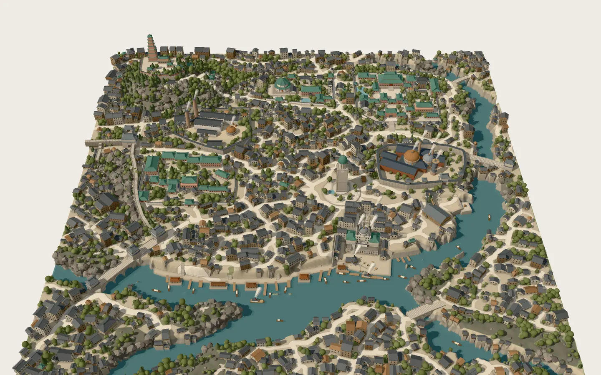
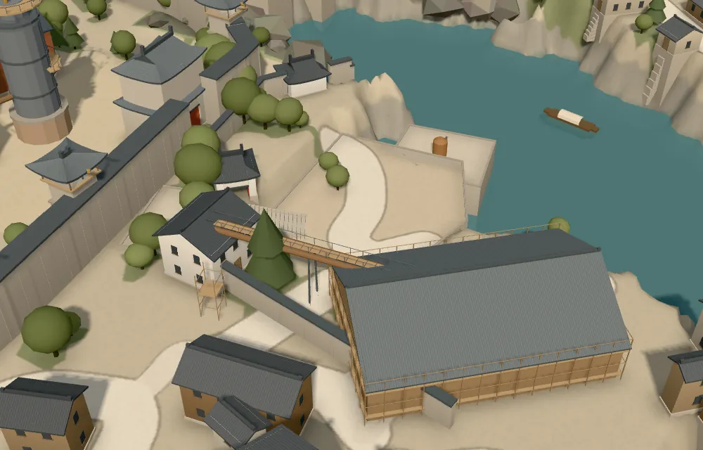
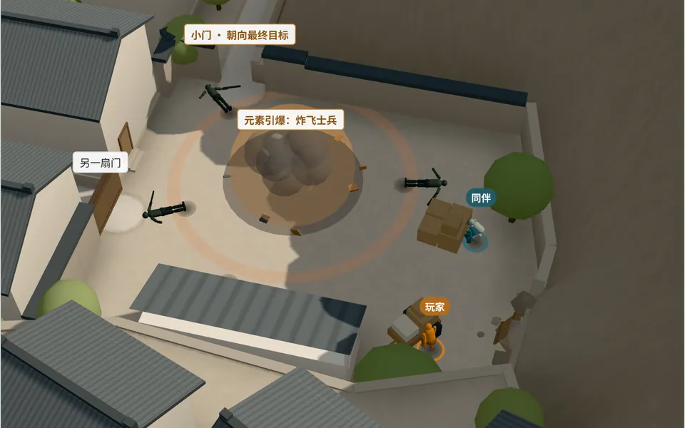
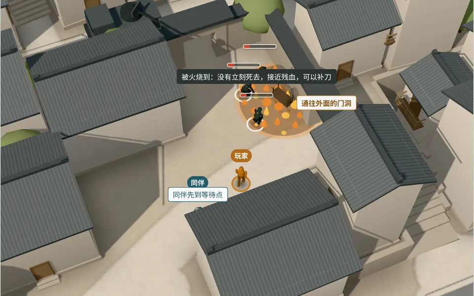
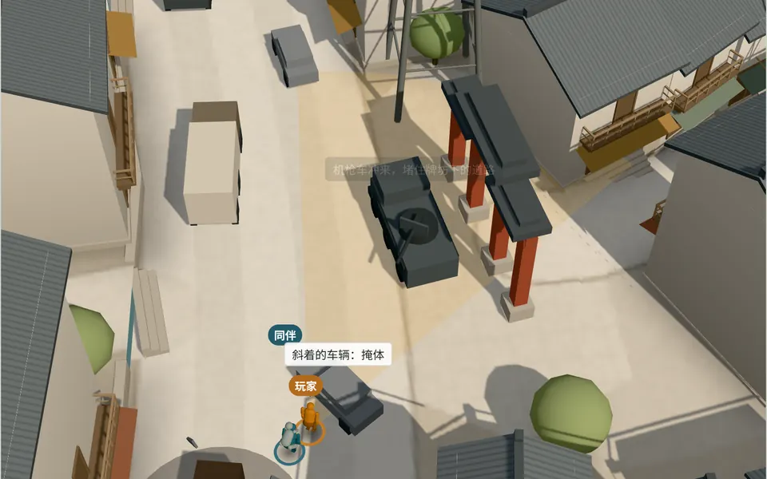

<!doctype html>
<html lang="zh-CN">
<head>
<meta charset="utf-8">
<meta name="viewport" content="width=device-width,initial-scale=1,viewport-fit=cover">
<style>:root{color-scheme:light;box-sizing:border-box;padding-top:env(safe-area-inset-top,0px);padding-bottom:env(safe-area-inset-bottom,0px)}html{scroll-padding-top:env(safe-area-inset-top,0px)}img{max-width:100%}[hidden]:not([hidden=until-found i]){display:none!important}</style>
<script src="js/offline-data.js"></script>
<script>(function(){if(location.protocol!=="file:"||!window.__OFFLINE)return;var D=window.__OFFLINE,F=window.fetch;function key(u){u=String(u&&u.url||u).split("#")[0].split("?")[0];for(var k in D)if(u===k||u.slice(-k.length-1)==="/"+k)return k;return null}window.fetch=function(u){var k=key(u);return k?F.call(window,D[k]):F.apply(window,arguments)};var d=Object.getOwnPropertyDescriptor(HTMLImageElement.prototype,"src");Object.defineProperty(HTMLImageElement.prototype,"src",{configurable:true,enumerable:true,get:function(){return d.get.call(this)},set:function(v){var k=key(v);d.set.call(this,k?D[k]:v)}})})();</script>
<title>周少川 · 关卡策划作品集</title>
<meta name="robots" content="noindex,nofollow,noarchive">
<meta name="claude:viewport-fit-sides" content="cover">
<link rel="preconnect" href="https://fonts.googleapis.com">
<link rel="preconnect" href="https://fonts.gstatic.com" crossorigin>
<link rel="stylesheet" href="https://fonts.googleapis.com/css2?family=Noto+Sans+SC:wght@400;500;700&family=Noto+Serif+SC:wght@600;900&family=JetBrains+Mono:wght@400;600&display=swap">
<style>
:root{
  --bg:#EDF0EE; --surface:#F8FAF8; --sunk:#E3E8E5; --wb:#D6DCD8; --wb-2:#C4CCC7;
  --grid:#E2E6E3; --ink:#1B2321; --ink-2:#47524F; --muted:#76817D; --line:#CDD4D0;
  --accent:#2D5F6D; --accent-soft:#D8E5E8; --mark:#A86C22; --mark-soft:#F0E3CF;
  --f-display:"Noto Serif SC","Songti SC","STSong",serif;
  --f-body:"Noto Sans SC","PingFang SC","Microsoft YaHei",system-ui,sans-serif;
  --f-mono:"JetBrains Mono","SFMono-Regular",Consolas,monospace;
  --r:6px;
}
@media (prefers-color-scheme: dark){:root:not([data-theme="light"]){
  --bg:#141918; --surface:#1B2220; --sunk:#111615; --wb:#2A3331; --wb-2:#36413E; --grid:#192020;
  --ink:#E4EAE7; --ink-2:#B2BCB8; --muted:#83908B; --line:#2D3735;
  --accent:#86B6C3; --accent-soft:#213339; --mark:#D9A25D; --mark-soft:#382C1C; color-scheme:dark}}
:root[data-theme="dark"]{
  --bg:#141918; --surface:#1B2220; --sunk:#111615; --wb:#2A3331; --wb-2:#36413E; --grid:#192020;
  --ink:#E4EAE7; --ink-2:#B2BCB8; --muted:#83908B; --line:#2D3735;
  --accent:#86B6C3; --accent-soft:#213339; --mark:#D9A25D; --mark-soft:#382C1C; color-scheme:dark}
*{box-sizing:border-box}
html,body{margin:0}
html{scroll-behavior:smooth}
@media (prefers-reduced-motion:reduce){html{scroll-behavior:auto}*{transition:none!important;animation:none!important}}
body{background:var(--bg);color:var(--ink);font-family:var(--f-body);font-size:15px;line-height:1.75;
  background-image:linear-gradient(var(--grid) 1px,transparent 1px),linear-gradient(90deg,var(--grid) 1px,transparent 1px);
  background-size:48px 48px;background-position:-1px -1px;background-attachment:fixed;
  display:flex;flex-direction:column;min-height:100vh;min-height:100dvh}
body::before{content:"";position:fixed;inset:0 0 auto;height:env(safe-area-inset-top,0px);z-index:10;background:var(--surface)}
a{color:var(--accent);text-underline-offset:3px}
a:hover{color:var(--mark)}
:focus-visible{outline:2px solid var(--mark);outline-offset:2px}
button{font:inherit;color:inherit}
.wrap{max-width:1120px;margin:0 auto;padding-left:max(16px,env(safe-area-inset-left,0px));padding-right:max(16px,env(safe-area-inset-right,0px))}

.top{position:sticky;top:env(safe-area-inset-top,0px);z-index:20;background:var(--surface);border-bottom:1px solid var(--line)}
.top .wrap{display:flex;align-items:center;gap:20px;min-height:56px;flex-wrap:wrap}
.brand{font-family:var(--f-display);font-weight:900;font-size:17px;color:var(--ink);text-decoration:none;letter-spacing:.04em;white-space:nowrap}
.brand small{font-family:var(--f-mono);font-weight:400;font-size:11px;color:var(--muted);margin-left:8px;letter-spacing:0}
.brand .bsep{display:inline-block;width:1px;height:14px;background:var(--line);margin:0 10px;vertical-align:-1px}
@media (max-width:480px){.brand small{display:none}}
.nav{display:flex;gap:2px;flex-wrap:wrap;margin-left:auto}
.nav a{padding:6px 12px;border-radius:var(--r);text-decoration:none;color:var(--ink-2);font-size:14px;white-space:nowrap}
.nav a:hover{background:var(--sunk);color:var(--ink)}
.nav a[aria-current="page"]{background:var(--ink);color:var(--surface)}
@media (max-width:640px){.nav{margin-left:0;width:100%;justify-content:space-between;padding-bottom:4px}.nav a{padding:6px 8px}.top .wrap{gap:4px;padding-block:8px}}
@media (max-width:380px){.nav a{padding:5px 6px;font-size:13.5px}}

main{padding-block:40px 80px;min-height:70vh;flex:1 0 auto;width:100%}
.foot{border-top:1px solid var(--line);background:var(--surface);color:var(--muted);font-size:12.5px}
.foot .wrap{padding-block:20px;display:flex;gap:16px;flex-wrap:wrap;justify-content:space-between}

h1,h2,h3,h4{text-wrap:balance;margin:0;line-height:1.3}
.display{font-family:var(--f-display);font-weight:900;font-size:clamp(30px,5.2vw,56px);line-height:1.18;letter-spacing:.01em}
.h1{font-family:var(--f-display);font-weight:900;font-size:clamp(26px,3.6vw,38px)}
.h2{font-family:var(--f-display);font-weight:600;font-size:clamp(20px,2.4vw,25px)}
.h3{font-size:17px;font-weight:700}
.eyebrow{font-family:var(--f-mono);font-size:11.5px;letter-spacing:.12em;text-transform:uppercase;color:var(--muted)}
.lede{font-size:17px;color:var(--ink-2);max-width:62ch}
p{margin:0}
.prose{max-width:66ch;display:grid;gap:12px}
.prose p{color:var(--ink-2)}
.mono{font-family:var(--f-mono);font-variant-numeric:tabular-nums}
.muted{color:var(--muted)}
.small{font-size:13px}
ul.clean{list-style:none;margin:0;padding:0}
.stack{display:grid;gap:16px}
.stack>*,.sec>*,.stack-lg>*,.grid2>*,.grid3>*{min-width:0}
.stack-lg{display:grid;gap:40px}
.row{display:flex;gap:8px;flex-wrap:wrap;align-items:center}

.chip{display:inline-flex;align-items:center;gap:4px;font-size:12px;line-height:1;padding:5px 8px;border-radius:999px;border:1px solid var(--line);color:var(--ink-2);background:var(--surface);white-space:nowrap}
.chip.cap{border-color:transparent;background:var(--accent-soft);color:var(--accent)}
.chip.mark{border-color:transparent;background:var(--mark-soft);color:var(--mark)}
button.chip{cursor:pointer}
button.chip[aria-pressed="true"]{background:var(--ink);color:var(--surface);border-color:var(--ink)}
.dl{display:inline-flex;gap:3px;flex-wrap:wrap}
.dl span{font-size:11.5px;line-height:1;padding:5px 7px;border-radius:4px;border:1px solid var(--line);color:var(--muted);white-space:nowrap}
.dl span.y{background:var(--ink);border-color:var(--ink);color:var(--surface)}
.dl span.p{border-color:var(--ink-2);color:var(--ink);background:repeating-linear-gradient(135deg,transparent 0 4px,var(--sunk) 4px 7px)}
.dl span.n{border-style:dashed}
.st{display:inline-block;font-family:var(--f-mono);font-size:10.5px;letter-spacing:.06em;padding:2px 6px;border-radius:3px;margin-right:6px;vertical-align:2px;border:1px solid currentColor}
.st.i{color:var(--accent)} .st.o{color:var(--mark)} .st.g{color:var(--muted);border-style:dashed} .st.r{color:var(--ink)}

.panel{background:var(--surface);border:1px solid var(--line);border-radius:var(--r)}
.pad{padding:20px}
.grid2{display:grid;grid-template-columns:repeat(2,minmax(0,1fr));gap:16px}
.grid3{display:grid;grid-template-columns:repeat(3,minmax(0,1fr));gap:16px}
@media (max-width:820px){.grid3{grid-template-columns:repeat(2,minmax(0,1fr))}}
@media (max-width:620px){.grid2,.grid3{grid-template-columns:minmax(0,1fr)}}
.kv{display:grid;grid-template-columns:auto 1fr;gap:6px 16px;font-size:14px}
.kv dt{color:var(--muted)} .kv dd{margin:0;min-width:0}

details.fold{border-top:1px solid var(--line)}
details.fold>summary{cursor:pointer;padding:11px 8px 11px 4px;margin:0 -8px 0 -4px;border-radius:var(--r);font-weight:500;list-style:none;display:flex;align-items:center;flex-wrap:wrap;gap:6px 10px;color:var(--ink)}
details.fold>summary:hover{background:var(--sunk)}
details.fold>summary::before{content:"";flex:none;width:7px;height:7px;margin:0 3px 0 4px;border-right:1.8px solid var(--accent);border-bottom:1.8px solid var(--accent);transform:rotate(-45deg);transition:transform .2s}
details.fold[open]>summary::before{transform:translateY(-2px) rotate(45deg)}
details.fold>summary::after{content:"展开";flex:none;font-size:12px;font-weight:400;line-height:1;color:var(--accent);padding:4px 9px;border:1px solid color-mix(in srgb,var(--accent) 45%,transparent);border-radius:999px;background:var(--surface)}
details.fold[open]>summary::after{content:"收起"}
details.fold>summary::-webkit-details-marker{display:none}
details.fold>.body{padding-bottom:16px}

.stats{display:grid;grid-template-columns:repeat(auto-fit,minmax(150px,1fr));gap:1px;background:var(--line);border:1px solid var(--line);border-radius:var(--r);overflow:hidden}
.stat{background:var(--surface);padding:14px 16px;display:grid;gap:2px;align-content:start}
.stat b{font-family:var(--f-mono);font-size:22px;font-weight:600;font-variant-numeric:tabular-nums;line-height:1.2}
.stat span{font-size:12.5px;color:var(--muted);line-height:1.5}

figure.wb{margin:0;background:var(--surface);border:1px solid var(--line);border-radius:var(--r);overflow:hidden}
figure.wb .fig-body{overflow-x:auto;padding:12px}
figure.wb svg{display:block;width:100%;min-width:520px;height:auto}
figure.wb figcaption{display:flex;gap:10px;justify-content:space-between;align-items:baseline;flex-wrap:wrap;padding:10px 14px;border-top:1px solid var(--line);font-size:12.5px;color:var(--ink-2)}
.tag-wb{font-family:var(--f-mono);font-size:10.5px;color:var(--muted);text-decoration:none;border:1px solid var(--line);padding:2px 6px;border-radius:3px;white-space:nowrap}
.shot{aspect-ratio:16/9;max-width:100%;border:1.5px dashed var(--wb-2);border-radius:var(--r);display:grid;place-items:center;text-align:center;padding:16px;color:var(--muted);font-size:13px;
  background:repeating-linear-gradient(45deg,transparent 0 10px,var(--sunk) 10px 11px)}
.shot b{display:block;color:var(--ink-2);font-weight:500;margin-bottom:4px}
svg text{font-family:var(--f-body)}
svg .wbk{fill:var(--wb);stroke:var(--wb-2);stroke-width:1}
svg .wbk2{fill:var(--wb-2)}
svg .gnd{fill:var(--sunk)}
svg .water{fill:var(--accent-soft)}
svg .lbl{fill:var(--ink-2);font-size:12px}
svg .lbl-s{fill:var(--muted);font-size:10.5px}
svg .lbl-b{fill:var(--ink);font-size:12.5px;font-weight:700}
svg .path{fill:none;stroke:var(--mark);stroke-width:3;stroke-linecap:round;stroke-linejoin:round}
svg .path-d{fill:none;stroke:var(--mark);stroke-width:2;stroke-dasharray:6 5;stroke-linecap:round}
svg .ln{fill:none;stroke:var(--ink-2);stroke-width:1.2}
svg .ln-d{fill:none;stroke:var(--muted);stroke-width:1.2;stroke-dasharray:4 4}
svg .acc{fill:var(--accent)} svg .acc-s{stroke:var(--accent);fill:none;stroke-width:2}
svg .mk{fill:var(--mark)} svg .surf{fill:var(--surface)} svg .ink{fill:var(--ink)}
svg .hit{cursor:pointer}
svg .hit:hover .wbk, svg .hit.on .wbk{fill:var(--mark-soft);stroke:var(--mark)}

.tabs{display:flex;gap:4px;flex-wrap:wrap}
.tabs button{border:1px solid var(--line);background:var(--surface);padding:7px 12px;border-radius:var(--r);cursor:pointer;font-size:14px;color:var(--ink-2)}
.tabs button[aria-selected="true"]{background:var(--ink);color:var(--surface);border-color:var(--ink)}
.tabs button:hover:not([aria-selected="true"]){border-color:var(--ink-2)}

.phead{display:grid;gap:12px;margin-bottom:32px}
.crumb{font-size:13px;color:var(--muted)} .crumb a{color:var(--muted)}

.cover{display:grid;gap:22px;padding-block:8px 48px}
.cta{display:flex;flex-wrap:wrap;gap:10px;align-items:center}
.cta a{display:inline-flex;align-items:center;min-height:42px;padding:0 18px;border-radius:999px;text-decoration:none;font-size:14.5px;font-weight:500;border:1px solid var(--line);background:var(--surface);color:var(--ink)}
.cta a:hover{border-color:var(--ink-2);color:var(--ink)}
.cta .cta-p{background:var(--ink);border-color:var(--ink);color:var(--surface);font-weight:600}
.cta .cta-p:hover{background:var(--mark);border-color:var(--mark);color:#fff}
.nda{display:grid;grid-template-columns:auto minmax(0,1fr);gap:4px 14px;align-items:baseline;max-width:62em;padding:12px 16px;border:1px dashed var(--ink-2);border-radius:var(--r);background:color-mix(in srgb,var(--surface) 70%,transparent);font-size:13px;line-height:1.7;color:var(--ink-2)}
.nda b{font-size:12px;letter-spacing:.08em;color:var(--ink);white-space:nowrap}
.nda a{grid-column:2;font-size:12.5px;justify-self:start}
@media (max-width:560px){.nda{grid-template-columns:minmax(0,1fr)}.nda a{grid-column:1}}
.about-who{margin-top:4px}
.caps{display:grid;gap:12px;align-content:start;min-width:0}
.caps-h{display:flex;flex-wrap:wrap;align-items:baseline;justify-content:space-between;gap:4px 16px}
.capwrap{display:grid;grid-template-columns:minmax(0,1fr);background:var(--surface);border:1px solid var(--line);border-radius:var(--r);overflow:hidden}
.caplist{display:grid;grid-template-columns:repeat(3,minmax(0,1fr));gap:1px;background:var(--line);border-bottom:1px solid var(--line)}
.caplist button{all:unset;box-sizing:border-box;cursor:pointer;padding:12px 16px;display:grid;gap:2px;align-content:start;background:var(--surface);min-width:0}
.caplist button:hover{background:var(--sunk)}
.caplist button .n{font-family:var(--f-mono);font-size:11px;color:var(--muted)}
.caplist button .t{font-weight:700;font-size:15px;line-height:1.4}
.caplist button .s{font-size:12.5px;color:var(--muted);line-height:1.5;text-wrap:pretty}
.caplist button[aria-selected="true"]{background:var(--ink);color:var(--surface)}
.caplist button[aria-selected="true"] .s,.caplist button[aria-selected="true"] .n{color:var(--wb-2)}
.caplist button:focus-visible{outline:2px solid var(--mark);outline-offset:-2px}
.capbody{padding:20px 22px 22px;display:grid;gap:16px;min-width:0;align-content:start}
.capstack{display:grid;min-width:0}
.capstack>.capbody{grid-area:1/1}
.capstack>.capbody:not(.on){visibility:hidden}
.capstack>.capbody.on{animation:capin .16s ease-out}
@keyframes capin{from{opacity:0}}
@media (prefers-reduced-motion:reduce){.capstack>.capbody.on{animation:none}}
.cap-lead{font-size:15.5px;line-height:1.75}
.capbody .stats{grid-template-columns:repeat(4,minmax(0,1fr))}
.capbody .stat{padding:12px 14px}
.capbody .stat b{font-size:19px;overflow-wrap:anywhere}
.capbody .stat b.long{font-size:16px;line-height:1.45}
.capbody .stat span{font-size:12px}
.cap-cols{display:grid;grid-template-columns:minmax(0,1.1fr) minmax(0,1fr);gap:16px 28px}
.cap-cols .eyebrow{margin-bottom:6px}
.cap-m{margin:0;padding-left:18px;display:grid;gap:4px;font-size:13.5px;line-height:1.6;color:var(--ink-2)}
.cap-c{display:grid;gap:0;font-size:13.5px}
.cap-c li{display:flex;align-items:baseline;gap:8px;padding:5px 0;border-top:1px solid var(--line);min-width:0}
.cap-c li:first-child{border-top:0;padding-top:0}
.cap-c a{font-weight:500;min-width:0}
.cap-c .mono{font-family:var(--f-mono);font-size:11px;margin-left:auto;white-space:nowrap}
.cap-c .chip{padding:1px 7px;font-size:11px}
@media (max-width:820px){.capbody .stats{grid-template-columns:repeat(2,minmax(0,1fr))}.cap-cols{grid-template-columns:minmax(0,1fr)}}
@media (max-width:640px){.caplist{grid-template-columns:repeat(2,minmax(0,1fr))}.caplist button{padding:10px 12px}.caplist button .s{display:none}.capbody{padding:16px}}
.hnav{display:grid;border-top:1px solid var(--line);max-width:44em}
.hnav a{display:grid;grid-template-columns:minmax(0,1fr) auto;gap:1px 12px;padding:9px 4px;border-bottom:1px solid var(--line);text-decoration:none;color:var(--ink)}
.hnav a::after{content:"→";grid-column:2;grid-row:1/3;align-self:center;color:var(--accent)}
.hnav a:hover{background:var(--sunk);color:var(--ink)}
.hnav a:hover::after{color:var(--mark)}
.hnav .h{display:flex;align-items:baseline;gap:8px}
.hnav b{font-weight:600;font-size:14.5px}
.hnav .h .mono{font-family:var(--f-mono);font-size:11.5px;color:var(--muted)}
.hnav .d{font-size:12.5px;color:var(--muted);line-height:1.55}
.cap-top{display:grid;grid-template-columns:minmax(0,1fr) auto;gap:8px 18px;align-items:start}
.cap-fig{margin:0;width:var(--figw,200px)}
.cap-fig a{position:relative;display:block;aspect-ratio:16/10;border:1px solid var(--line);border-radius:4px;overflow:hidden;background:var(--sunk);color:var(--ink-2);text-decoration:none}
.cap-fig a:hover{border-color:var(--ink-2)}
.cap-fig img,.cap-fig svg{position:absolute;inset:0;width:100%;height:100%;display:block;object-fit:cover}
.cap-fig-t{position:absolute;left:6px;bottom:6px;max-width:calc(100% - 12px);padding:1px 7px;border-radius:3px;background:color-mix(in srgb,var(--surface) 90%,transparent);font-size:11px;line-height:1.6;white-space:nowrap;overflow:hidden;text-overflow:ellipsis}
@media (max-width:640px){.cap-top{grid-template-columns:minmax(0,1fr)}.cap-fig{width:auto}}
.nda-more{display:none;background:none;border:0;padding:0 2px;font-size:12.5px;color:var(--accent);cursor:pointer;text-decoration:underline;text-underline-offset:3px;white-space:nowrap}
.nda-more:hover{color:var(--mark)}
.hhero{display:grid;gap:8px}
@media (min-width:960px){
  main:has(>.hhero){padding-top:28px;padding-bottom:40px;display:flex;flex-direction:column}
  .hhero{margin-block:auto;grid-template-columns:minmax(0,.8fr) minmax(0,1.2fr);gap:48px;align-items:stretch}
  .hhero .cover{padding-block:6px 0;gap:20px;grid-template-rows:repeat(5,auto) minmax(0,1fr);container-type:inline-size}
  .hhero .hnav{align-self:end}
  .hhero .display{font-size:min(60px,calc(100cqi / (var(--n,9) + .4)))}
  .hhero .lede{font-size:16px;line-height:1.85}
  .hhero .nda{font-size:12.5px;padding:11px 14px}
  .hhero .caps-h .h2{font-size:22px}
  .caplist button{grid-template-columns:auto minmax(0,1fr);column-gap:8px;align-items:baseline}
  .caplist button .s{grid-column:1/-1}
}
@media (min-width:960px) and (max-width:1199px){
  .hhero{gap:32px}
  .caplist button{padding:10px 12px}
  .capbody{padding:16px 16px 18px}
  .capbody .stat{padding:9px 10px}
  .capbody .stat b{font-size:16px}
  .capbody .stat b.long{font-size:13.5px}
  .cap-cols{gap:12px 20px}
}
@media (min-width:960px) and (max-height:880px){
  main:has(>.hhero){padding-top:20px}
  .hhero .cover{gap:16px}
  .hhero .lede{font-size:15px;line-height:1.75}
  .caplist button{padding:10px 14px}
  .capbody{padding:16px 18px 18px;gap:12px}
  .cap-lead{font-size:14.5px;line-height:1.7}
  .cap-fig{--figw:168px}
}
@media (min-width:960px) and (max-height:820px){
  main:has(>.hhero){padding-top:18px;padding-bottom:24px}
  .hhero .cover{gap:14px}
  .hhero .display{font-size:min(56px,calc(100cqi / (var(--n,9) + .4)),7.4vh)}
  .hhero .lede{font-size:14.5px;line-height:1.75}
  .hhero .cta a{min-height:38px}
  .hhero .hnav a{grid-template-columns:auto minmax(0,1fr) auto;gap:0 12px;align-items:baseline;padding:8px 4px}
  .hhero .hnav .d{grid-column:2;grid-row:1;white-space:nowrap;overflow:hidden;text-overflow:ellipsis}
  .hhero .hnav a::after{grid-column:3;grid-row:1}
  .hhero .nda{grid-template-columns:auto minmax(0,1fr) auto;padding:8px 12px}
  .hhero .nda .nda-t{white-space:nowrap;overflow:hidden;text-overflow:ellipsis}
  .hhero .nda>a{display:none}
  .hhero .nda .nda-more{display:inline}
  .hhero .nda.open .nda-t{white-space:normal}
  .hhero .nda.open>a{display:inline;grid-column:2}
  .hhero .caps{gap:8px}
  .hhero .caps-h .h2{font-size:20px}
  .caplist button{padding:9px 14px;grid-template-columns:auto minmax(0,1fr);column-gap:8px;align-items:baseline}
  .caplist button .s{display:none}
  .capbody{padding:14px 18px 16px;gap:11px}
  .cap-lead{font-size:14px;line-height:1.7}
  .capbody .stat{padding:8px 12px}
  .capbody .stat b{font-size:17px}
  .capbody .stat span{font-size:11.5px;line-height:1.45}
  .cap-m{font-size:13px;gap:2px;line-height:1.55}
  .cap-c{font-size:13px}
  .cap-c li{padding:2px 0}
  .cap-tools{gap:4px 6px}
  .cap-tools .chip{font-size:11.5px;padding:4px 7px}
  .cap-fig{--figw:168px}
}
@media (min-width:960px) and (max-width:1199px) and (max-height:820px){
  .hhero .cover{gap:12px}
  .hhero .lede{font-size:14px;line-height:1.7}
  .hhero .hnav .d{font-size:12px}
  .caplist button .n{display:none}
  .cap-m,.cap-c{font-size:12.5px}
  .cap-fig{--figw:150px}
}
@media (min-width:960px) and (max-height:680px){
  main:has(>.hhero){padding-top:12px;padding-bottom:16px}
  .hhero .cover{gap:11px}
  .hhero .lede{font-size:14px;line-height:1.7}
  .hhero .hnav a{padding:6px 4px}
  .caplist button{padding:7px 12px}
  .capbody{padding:12px 16px 14px;gap:9px}
  .cap-lead{font-size:13.5px;line-height:1.65}
  .capbody .stat{padding:6px 10px}
  .capbody .stat span{font-size:11px}
  .cap-cols{gap:10px 24px}
  .cap-m{font-size:12.5px}
  .cap-c{font-size:12.5px}
  .cap-c li{padding:1px 0}
  .cap-tools .chip{font-size:11px;padding:3px 6px}
  .cap-fig{--figw:136px}
}
@media (min-width:1280px) and (min-height:940px){
  .hhero .cover{gap:24px}
  .hhero .lede{font-size:17px;line-height:1.9}
  .hhero .hnav a{padding:12px 4px}
  .hhero .hnav b{font-size:15.5px}
  .hhero .hnav .d{font-size:13px}
  .hhero .nda{font-size:13px;padding:14px 16px}
  .hhero .caps{gap:14px}
  .hhero .caps-h .h2{font-size:24px}
  .caplist button{padding:15px 18px}
  .caplist button .t{font-size:16px}
  .caplist button .s{font-size:13px}
  .capbody{padding:24px 26px 26px;gap:18px}
  .cap-lead{font-size:16px;line-height:1.8}
  .capbody .stat{padding:14px 16px}
  .capbody .stat b{font-size:21px}
  .capbody .stat b.long{font-size:17px}
  .capbody .stat span{font-size:12.5px}
  .cap-m{font-size:14.5px;gap:6px}
  .cap-c{font-size:14.5px}
  .cap-c li{padding:7px 0}
  .cap-fig{--figw:240px}
}

.fhead{gap:6px;margin-bottom:20px}
.fh{display:grid;gap:10px}
.fhead .lede{font-size:15px;margin:0}
.fgrid{display:grid;gap:14px}
.feat{display:grid;grid-template-rows:minmax(0,1fr) auto;background:var(--surface);border:1px solid var(--line);border-radius:var(--r);overflow:hidden;min-width:0;transition:border-color .15s}
.feat:hover{border-color:var(--ink-2)}
.feat>.acard{border:0;border-radius:0}
.feat>.acard .txt{display:flex;flex-direction:column}
.feat>.acard .fm{margin-top:auto;padding-top:2px}
.feat .vis>.pv{opacity:0;transition:opacity .22s ease}
.feat.pv-on .vis>.pv{opacity:1}
.feat .pvcap{position:absolute;left:10px;top:10px;max-width:calc(100% - 20px);padding:5px 9px;border-radius:4px;background:color-mix(in srgb,var(--surface) 92%,transparent);border:1px solid var(--line);font-size:12.5px;line-height:1.5;color:var(--ink);opacity:0;transform:translateY(-4px);transition:opacity .22s ease,transform .22s ease;pointer-events:none}
.feat .pvcap b{font-family:var(--f-mono);font-weight:600;font-size:11px;color:var(--mark);margin-right:6px}
.feat.pv-on .pvcap{opacity:1;transform:none}
.fch{display:grid;grid-template-columns:repeat(4,minmax(0,1fr));gap:8px;padding:10px 12px 12px;border-top:1px solid var(--line);background:color-mix(in srgb,var(--sunk) 40%,var(--surface));min-width:0}
.fch .fcl{display:none}
.fch a{display:flex;flex-direction:column;text-decoration:none;color:var(--ink-2);background:var(--surface);border:1px solid var(--line);border-radius:4px;overflow:hidden;min-width:0;transition:border-color .15s,color .15s}
.fch a:hover,.fch a:focus-visible{border-color:var(--ink);color:var(--ink)}
.fch a.on{border-color:var(--mark)}
.fch .im{display:block;flex:none;aspect-ratio:16/10;background:var(--sunk);overflow:hidden;border-bottom:1px solid var(--line)}
.fch .im img{width:100%;height:100%;object-fit:cover;display:block;transition:transform .3s ease}
.fch a:hover .im img{transform:scale(1.05)}
.fch .l{display:flex;gap:6px;align-items:baseline;padding:5px 8px 0;font-size:12.5px;line-height:1.5;font-weight:500;color:var(--ink);white-space:nowrap;min-width:0}
.fch .l b{font-family:var(--f-mono);font-weight:400;font-size:11px;color:var(--muted)}
.fch .l span{overflow:hidden;text-overflow:ellipsis}
.fch .d{margin:1px 8px 7px;font-size:12px;line-height:1.5;height:3em;color:var(--muted);display:-webkit-box;-webkit-line-clamp:2;-webkit-box-orient:vertical;overflow:hidden}
@media (max-width:620px){.fch{grid-template-columns:repeat(2,minmax(0,1fr))}}
@media (min-width:1000px){
  .fh{grid-template-columns:auto minmax(0,1fr);align-items:baseline;gap:8px 24px}
  .fhead .lede{max-width:none;color:var(--ink-2)}
  .fgrid{grid-template-columns:repeat(2,minmax(0,1fr))}
}
@media (min-width:1000px) and (min-height:640px){
  main:has(>.fgrid){display:grid;grid-template-rows:auto minmax(0,1fr);padding-bottom:28px}
  .fgrid{grid-template-rows:repeat(2,minmax(0,1fr))}
  .fgrid .feat{contain:size}
  .fgrid .feat>.acard{min-height:0}
  .fgrid .feat .vis{min-height:0}
  .fgrid .fch .im{aspect-ratio:auto;height:var(--th,64px)}
  .fgrid .fch[data-m="mid"] .d{display:none}
  .fgrid .fch[data-m="mid"] .l{padding-bottom:6px}
  .fgrid .fch[data-m="row"]{padding:8px 10px}
  .fgrid .fch[data-m="row"] a{display:grid;grid-template-columns:56px minmax(0,1fr);align-items:center;gap:8px;padding:4px}
  .fgrid .fch[data-m="row"] .im{height:42px;border:0;border-radius:2px}
  .fgrid .fch[data-m="row"] .l{display:-webkit-box;-webkit-line-clamp:2;-webkit-box-orient:vertical;overflow:hidden;padding:0;line-height:1.4;white-space:normal}
  .fgrid .fch[data-m="row"] .l b{margin-right:5px}
  .fgrid .fch[data-m="row"] .l span{overflow:visible}
  .fgrid .fch[data-m="row"] .d{display:none}
  .fgrid .fch[data-m="txt"]{display:flex;align-items:center;gap:4px 14px;padding:7px 16px 8px;overflow:hidden}
  .fgrid .fch[data-m="txt"] .fcl{display:block;font-family:var(--f-mono);font-size:11px;letter-spacing:.12em;color:var(--muted);white-space:nowrap}
  .fgrid .fch[data-m="txt"] a{flex:none;border:0;padding:0;background:none;border-radius:0;overflow:visible}
  .fgrid .fch[data-m="txt"] a:hover,.fgrid .fch[data-m="txt"] a.on{color:var(--mark)}
  .fgrid .fch[data-m="txt"] .im,.fgrid .fch[data-m="txt"] .d{display:none}
  .fgrid .fch[data-m="txt"] .l{padding:0;font-weight:400;color:inherit}
  .fgrid .fch[data-m="off"]{display:none}
  .fgrid .feat.lg>.acard{grid-template-columns:minmax(0,.9fr) minmax(0,1fr)}
  .fgrid .feat.lg>.acard .txt{padding:18px 20px;gap:9px}
  .fgrid .feat.lg>.acard .at{font-size:20px}
  .fgrid .feat.lg>.acard .q{font-size:14.5px;line-height:1.7}
  .fgrid .feat.lg>.acard .fm{font-size:13px}
  .fgrid.nofill{grid-template-rows:none}
  .fgrid.nofill .feat{contain:none}
  .fgrid.nofill .fch .im{aspect-ratio:16/10;height:auto}
}
@media (min-width:1000px) and (min-height:640px) and (max-height:860px){
  main:has(>.fgrid){padding-top:22px}
  .fhead{margin-bottom:14px}.fhead .h1{font-size:28px}
}
@media (min-width:1000px) and (min-height:640px) and (max-height:800px){
  main:has(>.fgrid){padding-top:16px;padding-bottom:18px}
  .fhead{margin-bottom:12px}
  .fgrid .fch[data-m="txt"]{padding:5px 16px 6px}
}

.filters{display:flex;gap:6px;flex-wrap:wrap;align-items:center;padding:12px 14px;background:var(--surface);border:1px solid var(--line);border-radius:var(--r)}
.group{display:grid;gap:12px}
.group-h{display:grid;grid-template-columns:auto minmax(0,1fr) auto;gap:4px 16px;align-items:baseline;border-bottom:2px solid var(--ink);padding-bottom:8px}
.group-h .code{font-family:var(--f-mono);font-size:12px;color:var(--muted)}
.group-h .gt{font-family:var(--f-display);font-weight:600;font-size:20px}
.group-h .gt a{color:var(--ink);text-decoration:none}
.group-h .gt a:hover{color:var(--mark)}
.group-h .gp{grid-column:2/-1;font-size:13.5px;color:var(--ink-2)}
@media (max-width:620px){.group-h{grid-template-columns:minmax(0,1fr)}.group-h .gp{grid-column:auto}}
.group,.agrid{display:grid;gap:14px}
.agrid>div{display:grid}
.acard{display:grid;grid-template-columns:minmax(0,.72fr) minmax(0,1fr);background:var(--surface);border:1px solid var(--line);border-radius:var(--r);overflow:hidden;text-decoration:none;color:inherit;min-height:176px}
a.acard:hover{border-color:var(--ink-2);color:inherit}
a.acard:hover .go{color:var(--mark)}
.acard.key{border-color:var(--ink-2)}
.acard .vis{background:var(--sunk);border-right:1px solid var(--line);position:relative;overflow:hidden;min-height:150px}
.acard .vis>svg,.acard .vis>.still{position:absolute;inset:0;width:100%;height:100%;display:block;object-fit:cover}
.acard .vis .tag-wb{position:absolute;left:10px;bottom:10px;background:var(--surface)}
.acard .vis.blank{display:grid;place-items:center;background:color-mix(in srgb,var(--sunk) 55%,var(--surface))}
.acard .vis .ph{font-family:var(--f-mono);font-size:11px;letter-spacing:.08em;color:var(--muted);opacity:.75}
.acard .vis .ph{display:grid;gap:6px;justify-items:center;text-align:center;padding:0 16px;letter-spacing:.04em}
.acard .vis .ph b{font-family:var(--f-display);font-weight:900;font-size:34px;line-height:1;letter-spacing:0;color:var(--line);opacity:1}
.acard .txt{padding:14px 16px;display:grid;gap:7px;align-content:start;min-width:0}
.acard .at{font-family:var(--f-display);font-weight:900;font-size:18px;line-height:1.4}
.acard .q{margin:0;font-size:13.5px;line-height:1.65;color:var(--ink-2)}
.acard .fm{display:flex;flex-wrap:wrap;align-items:center;gap:6px 10px;font-size:12.5px;color:var(--ink-2);margin-top:2px}
.acard .fm .mono{font-family:var(--f-mono);font-size:12px}
.acard .fm .dl span{padding:2px 5px;font-size:11px}
.acard .fm .chip{padding:1px 8px;font-size:11.5px}
.acard .fm .chip.sc{white-space:normal;line-height:1.5;border-color:var(--wb-2);color:var(--ink)}
.acard .go{font-size:13px;color:var(--accent);margin-left:auto;white-space:nowrap}
div.acard .go{color:var(--muted);font-size:12px}
@media (min-width:1000px){.group,.agrid{grid-template-columns:repeat(2,minmax(0,1fr))}.group>.group-h,.group>.hidden-note{grid-column:1/-1}}
@media (max-width:760px){.acard{grid-template-columns:minmax(0,1fr);min-height:0}.acard .vis{border-right:0;border-bottom:1px solid var(--line);aspect-ratio:16/9;min-height:0}.acard .vis.blank{display:none}}
.hidden-note{font-size:13px;color:var(--muted);padding:8px 0}

.case{display:grid;grid-template-columns:200px minmax(0,1fr);gap:40px}
.toc{position:sticky;top:calc(env(safe-area-inset-top,0px) + 76px);align-self:start;display:grid;gap:2px;font-size:13px}
.toc a{color:var(--muted);text-decoration:none;padding:4px 0 4px 10px;border-left:2px solid var(--line)}
.toc a:hover,.toc a.on{color:var(--ink);border-left-color:var(--mark)}
@media (max-width:900px){.case{grid-template-columns:minmax(0,1fr)}.toc{display:none}}
.chead{display:grid;gap:18px;padding-bottom:28px;border-bottom:2px solid var(--ink)}
.facts{display:grid;grid-template-columns:repeat(4,minmax(0,1fr));gap:1px;background:var(--line);border:1px solid var(--line);border-radius:var(--r);overflow:hidden}
.facts>div{background:var(--surface);padding:12px 14px;display:grid;gap:4px;align-content:start;min-width:0}
.facts>div.w2{grid-column:span 2}
.facts>div.w4{grid-column:1/-1}
.facts .k{font-size:11.5px;color:var(--muted);letter-spacing:.06em}
.facts .v{font-size:14px}
@media (max-width:700px){.facts{grid-template-columns:repeat(2,minmax(0,1fr))}.facts>div.w2{grid-column:1/-1}}
.sec{display:grid;gap:18px;padding-top:44px;scroll-margin-top:80px}
.sec>.sh{display:grid;gap:6px}
.sec>.sh .eyebrow{color:var(--mark)}
.qline{font-family:var(--f-display);font-size:17px;font-weight:600;border-left:3px solid var(--mark);padding-left:14px;max-width:62ch}

.stepper{display:grid;grid-template-columns:minmax(0,1fr) minmax(0,1fr);gap:0;background:var(--surface);border:1px solid var(--line);border-radius:var(--r);overflow:hidden}
.stepper .s-nav{grid-column:1/-1;display:flex;gap:0;border-bottom:1px solid var(--line);overflow-x:auto}
.stepper .s-nav button{all:unset;cursor:pointer;padding:10px 14px;font-size:13px;color:var(--muted);border-right:1px solid var(--line);white-space:nowrap}
.stepper .s-nav button[aria-selected="true"]{background:var(--mark-soft);color:var(--ink);font-weight:500}
.stepper .s-nav button:focus-visible{outline:2px solid var(--mark);outline-offset:-2px}
.stepper .s-vis{padding:16px;border-right:1px solid var(--line);min-width:0}
.stepper .s-txt{padding:20px;display:grid;gap:12px;align-content:start;min-width:0}
.stepper .s-ctl{grid-column:1/-1;display:flex;justify-content:space-between;padding:10px 14px;border-top:1px solid var(--line)}
.btn{border:1px solid var(--line);background:var(--surface);padding:6px 12px;border-radius:var(--r);cursor:pointer;font-size:13px}
.btn:hover{border-color:var(--ink-2)}
.btn:disabled{opacity:.4;cursor:default}
@media (max-width:760px){.stepper{grid-template-columns:minmax(0,1fr)}.stepper .s-vis{border-right:0;border-bottom:1px solid var(--line)}}

.seq{display:grid;grid-auto-flow:column;grid-auto-columns:minmax(118px,1fr);gap:6px;overflow-x:auto;padding-bottom:6px}
.seq button{all:unset;cursor:pointer;display:grid;gap:6px;padding:10px;border:1px solid var(--line);background:var(--surface);border-radius:var(--r);font-size:12.5px;align-content:start}
.seq button .z{font-family:var(--f-mono);font-size:10.5px;color:var(--muted)}
.seq button .bar{height:6px;border-radius:3px;background:var(--wb)}
.seq button .bar.k-obs{background:var(--accent-soft)}
.seq button .bar.k-press{background:var(--mark)}
.seq button .bar.k-rest{background:var(--wb-2)}
.seq button .bar.k-set{background:repeating-linear-gradient(135deg,var(--mark) 0 4px,var(--ink) 4px 8px)}
.seq button .bar.k-cut{background:var(--ink-2)}
.seq button[aria-selected="true"]{border-color:var(--mark);box-shadow:inset 0 0 0 1px var(--mark)}
.seq button:focus-visible{outline:2px solid var(--mark);outline-offset:1px}
.legend{display:flex;gap:14px;flex-wrap:wrap;font-size:12px;color:var(--ink-2)}
.legend i{display:inline-block;width:18px;height:6px;border-radius:3px;margin-right:6px;vertical-align:2px}

.sim{display:grid;grid-template-columns:minmax(0,1fr) minmax(0,1.3fr);gap:0;background:var(--surface);border:1px solid var(--line);border-radius:var(--r);overflow:hidden}
.sim .opts{padding:16px;border-right:1px solid var(--line);display:grid;gap:8px;align-content:start}
.sim .opts button{all:unset;cursor:pointer;padding:10px 12px;border:1px solid var(--line);border-radius:var(--r);font-size:13.5px}
.sim .opts button[aria-pressed="true"]{border-color:var(--mark);background:var(--mark-soft)}
.sim .opts button:focus-visible{outline:2px solid var(--mark)}
.sim .out{padding:18px;display:grid;gap:10px;align-content:start;min-width:0}
@media (max-width:760px){.sim{grid-template-columns:minmax(0,1fr)}.sim .opts{border-right:0;border-bottom:1px solid var(--line)}}
.flow{display:grid;gap:6px}
.flow li{display:grid;grid-template-columns:22px minmax(0,1fr);gap:8px;font-size:14px}
.flow li::before{content:counter(f);counter-increment:f;font-family:var(--f-mono);font-size:11px;color:var(--muted);padding-top:3px}
.flow{counter-reset:f}

.tbl-wrap{overflow-x:auto;background:var(--surface);border:1px solid var(--line);border-radius:var(--r)}
table.t{border-collapse:collapse;width:100%;font-size:13.5px;min-width:560px}
table.t th,table.t td{text-align:left;padding:10px 12px;border-bottom:1px solid var(--line);vertical-align:top}
table.t th{font-size:12px;color:var(--muted);font-weight:500;background:var(--sunk)}
table.t tr:last-child td{border-bottom:0}

.endgrid{display:grid;grid-template-columns:repeat(2,minmax(0,1fr));gap:16px}
@media (max-width:700px){.endgrid{grid-template-columns:minmax(0,1fr)}}
.endgrid .panel h4{font-size:14px;margin-bottom:8px}
.endgrid ul{margin:0;padding-left:18px;color:var(--ink-2);font-size:14px;display:grid;gap:4px}

.tb{display:grid;grid-template-columns:220px minmax(0,1fr);gap:28px}
@media (max-width:820px){.tb{grid-template-columns:minmax(0,1fr)}}
.tb-side{display:grid;gap:12px;align-content:start;position:sticky;top:calc(env(safe-area-inset-top,0px) + 76px)}
@media (max-width:820px){.tb-side{position:static}}
.search{width:100%;padding:9px 12px;border:1px solid var(--line);border-radius:var(--r);background:var(--surface);font:inherit;color:var(--ink)}
.cats{display:grid;gap:2px}
.cats button{all:unset;cursor:pointer;padding:6px 10px;border-radius:var(--r);font-size:14px;display:flex;justify-content:space-between}
.cats button[aria-pressed="true"]{background:var(--ink);color:var(--surface)}
.cats button:hover:not([aria-pressed="true"]){background:var(--sunk)}
.cats button:focus-visible{outline:2px solid var(--mark)}
.method{background:var(--surface);border:1px solid var(--line);border-radius:var(--r);scroll-margin-top:80px}
.method>summary{cursor:pointer;list-style:none;padding:16px 18px;display:grid;grid-template-columns:minmax(0,1fr) auto;gap:4px 12px}
.method>summary::-webkit-details-marker{display:none}
.method>summary .mt{font-weight:700;font-size:16px}
.method>summary .mp{grid-column:1/-1;font-size:13.5px;color:var(--ink-2)}
.method>summary .mi{font-family:var(--f-mono);color:var(--muted);font-size:12px}
.method[open]>summary{border-bottom:1px solid var(--line)}
.method>summary::after{content:"展开说明";grid-column:1/-1;justify-self:start;margin-top:4px;font-size:12px;line-height:1;color:var(--accent);padding:5px 10px 5px 24px;border:1px solid color-mix(in srgb,var(--accent) 45%,transparent);border-radius:999px;background-color:var(--surface);background-image:linear-gradient(var(--accent),var(--accent)),linear-gradient(var(--accent),var(--accent));background-repeat:no-repeat;background-size:9px 1.6px,1.6px 9px;background-position:9px 50%,12.7px 50%}
.method[open]>summary::after{content:"收起说明";background-size:9px 1.6px,0 0}
.method>summary:hover::after{background-color:var(--sunk)}
.method .mb{padding:18px;display:grid;gap:18px}
.chain{display:flex;flex-wrap:wrap;gap:6px;align-items:center;font-size:13px}
.chain span{padding:6px 10px;border:1px solid var(--line);border-radius:var(--r);background:var(--bg)}
.chain i{font-style:normal;color:var(--muted);font-family:var(--f-mono)}

.tl{display:grid;gap:0}
.tl li{display:grid;grid-template-columns:150px minmax(0,1fr);gap:16px;padding:14px 0;border-top:1px solid var(--line)}
@media (max-width:620px){.tl li{grid-template-columns:minmax(0,1fr);gap:2px}}

.rng{display:grid;gap:14px}
.rng .r{display:grid;grid-template-columns:150px minmax(0,1fr);gap:12px;align-items:center;font-size:13px}
.rng .track{position:relative;height:26px;border-bottom:1px solid var(--line)}
.rng .seg{position:absolute;top:8px;height:10px;border-radius:5px;background:var(--accent)}
.rng .seg:hover{background:var(--mark)}
.rng .ax{position:relative;height:18px;font-family:var(--f-mono);font-size:10.5px;color:var(--muted)}
.rng .ax span{position:absolute;transform:translateX(-50%)}
@media (max-width:560px){.rng .r{grid-template-columns:minmax(0,1fr)}}
.mx{display:grid;grid-template-columns:70px repeat(4,minmax(0,1fr));gap:4px;font-size:12px;min-width:520px}
.mx .h{color:var(--muted);text-align:center;padding:4px}
.mx .rh{color:var(--muted);display:flex;align-items:center}
.mx .cell{min-height:64px;background:var(--sunk);border-radius:4px;padding:4px;display:flex;flex-wrap:wrap;gap:4px;align-content:flex-start}
.mx .node{font-size:11.5px;padding:3px 6px;border-radius:3px;background:var(--surface);border:1px solid var(--line);cursor:default}
.mx .node.on{background:var(--mark);border-color:var(--mark);color:var(--surface)}
.mx .node.dim{opacity:.35}

.wb3{background:var(--surface);border:1px solid var(--line);border-radius:var(--r);overflow:hidden;display:grid}
.wb3-bar{display:flex;flex-wrap:wrap;gap:8px 16px;justify-content:space-between;padding:8px 10px;border-bottom:1px solid var(--line);font-size:12.5px}
.wb3-cams,.wb3-states{display:flex;flex-wrap:wrap;gap:4px}
.wb3-bar button{all:unset;cursor:pointer;padding:5px 9px;border:1px solid var(--line);border-radius:999px;color:var(--ink-2);white-space:nowrap}
.wb3-bar button .mono{font-size:10.5px;color:var(--muted)}
.wb3-cams button[aria-pressed="true"]{background:var(--ink);color:var(--surface);border-color:var(--ink)}
.wb3-states button[aria-pressed="true"]{background:var(--mark-soft);color:var(--mark);border-color:var(--mark)}
.wb3-states button[aria-pressed="true"] .mono{color:var(--mark)}
.wb3-bar button:focus-visible{outline:2px solid var(--mark)}
.wb3-stage{position:relative;aspect-ratio:16/9;min-height:240px;background:var(--surface);overflow:hidden;touch-action:pan-y}
.wb3-stage.tall{aspect-ratio:16/10}
.wb3-stage canvas{position:absolute;inset:0;width:100%;height:100%;display:block;cursor:grab}
.wb3-stage canvas:active{cursor:grabbing}
.wb3-stage .shot{position:absolute;inset:0;aspect-ratio:auto}
.wb3-labels{position:absolute;inset:0;pointer-events:none}
.wb3-l{position:absolute;transform:translate(-50%,-100%);font-size:11.5px;line-height:1.3;padding:2px 6px;border-radius:3px;background:var(--surface);border:1px solid var(--line);color:var(--ink-2);white-space:nowrap;max-width:200px;overflow:hidden;text-overflow:ellipsis;box-shadow:0 1px 2px rgba(0,0,0,.06)}
.wb3-l.m{border-color:var(--mark);color:var(--mark)}
.wb3-l.a{border-color:var(--accent);color:var(--accent)}
.wb3-l.e{background:var(--ink);color:var(--surface);border-color:var(--ink)}
.wb3-l.b{font-weight:700;color:var(--ink)}
.wb3-hint{position:absolute;right:10px;top:8px;font-family:var(--f-mono);font-size:10.5px;color:var(--muted);pointer-events:none}
.wb3-tag{position:absolute;left:10px;bottom:10px;background:var(--surface)}
.wb3-note{padding:10px 14px;border-top:1px solid var(--line);font-size:13px;color:var(--ink-2);line-height:1.6}
.wb3-note:empty{display:none}
@media (max-width:620px){.wb3-stage{aspect-ratio:4/3}.wb3-l{font-size:10.5px;max-width:130px}}
.wb3-key{display:flex;flex-wrap:wrap;gap:4px 14px;font-size:12px;color:var(--muted)}
.wb3-key i{display:inline-block;width:10px;height:10px;border-radius:50%;margin-right:5px;vertical-align:-1px}
.enc{display:grid;grid-template-columns:minmax(0,1.55fr) minmax(0,1fr);gap:16px;align-items:start}
@media (max-width:900px){.enc{grid-template-columns:minmax(0,1fr)}}
.five{display:grid;gap:0;background:var(--surface);border:1px solid var(--line);border-radius:var(--r);overflow:hidden}
.five .hd{padding:12px 14px;border-bottom:1px solid var(--line);display:grid;gap:4px}
.five dl{margin:0;display:grid}
.five dl>div{display:grid;grid-template-columns:76px minmax(0,1fr);gap:10px;padding:9px 14px;border-bottom:1px solid var(--line);font-size:13.5px;line-height:1.6}
.five dl>div:last-child{border-bottom:0}
.five dt{font-size:12px;color:var(--muted);padding-top:2px}
.five dd{margin:0;color:var(--ink-2)}
.five .ft{padding:10px 14px;border-top:1px solid var(--line);background:var(--bg)}
.zone-tabs{display:flex;gap:4px;flex-wrap:wrap}
.cmp{display:grid;grid-template-columns:repeat(3,minmax(0,1fr));gap:1px;background:var(--line);border:1px solid var(--line);border-radius:var(--r);overflow:hidden}
.cmp>div{background:var(--surface);padding:12px 14px;display:grid;gap:6px;align-content:start;font-size:13px;color:var(--ink-2)}
.cmp b{color:var(--ink);font-size:14px}
.cmp .cmp-i{display:block;width:100%;height:auto;aspect-ratio:16/10;object-fit:cover;border-radius:4px;background:var(--wb);margin-bottom:4px}
.cmp .lv{height:6px;border-radius:3px;background:var(--sunk);position:relative;overflow:hidden}
.cmp .lv i{position:absolute;inset:0 auto 0 0;background:var(--mark)}
@media (max-width:700px){.cmp{grid-template-columns:minmax(0,1fr)}}

.ev{background:var(--surface);border:1px solid var(--line);border-radius:var(--r);overflow:hidden;display:grid}
.ev-bar{display:flex;flex-wrap:wrap;gap:8px 16px;justify-content:space-between;padding:8px 10px;border-bottom:1px solid var(--line);font-size:12.5px}
.ev-views,.ev-states{display:flex;flex-wrap:wrap;gap:4px}
.ev-bar button{all:unset;cursor:pointer;padding:5px 9px;border:1px solid var(--line);border-radius:999px;color:var(--ink-2);white-space:nowrap}
.ev-bar button .mono{font-size:10.5px;color:var(--muted)}
.ev-views button[aria-pressed="true"]{background:var(--ink);color:var(--surface);border-color:var(--ink)}
.ev-states button[aria-pressed="true"]{background:var(--mark-soft);color:var(--mark);border-color:var(--mark)}
.ev-states button[aria-pressed="true"] .mono{color:var(--mark)}
.ev-bar button:focus-visible,.ev-tl button:focus-visible{outline:2px solid var(--mark)}
.ev-stage{position:relative;aspect-ratio:16/9;background:#E7E5DF;overflow:hidden}
.ev-stage img{position:absolute;inset:0;width:100%;height:100%;display:block;object-fit:fill}
.ev-svg{position:absolute;inset:0;width:100%;height:100%;overflow:visible}
.ev-labels{position:absolute;inset:0;pointer-events:none}
.ev-l{position:absolute;transform:translate(-50%,-100%);font-size:11.5px;line-height:1.3;padding:2px 6px;border-radius:3px;background:rgba(255,255,255,.92);border:1px solid #CDD4D0;color:#47524F;white-space:nowrap;max-width:210px;overflow:hidden;text-overflow:ellipsis;box-shadow:0 1px 3px rgba(0,0,0,.08)}
.ev-l.p{font-size:10.5px;padding:1px 5px}
.ev-l.m{border-color:#A86C22;color:#8A5617}
.ev-l.a{border-color:#2D5F6D;color:#2D5F6D}
.ev-l.e{background:#1B2321;color:#F8FAF8;border-color:#1B2321}
.ev-l.b{font-weight:700;color:#1B2321}
.ev-tag{position:absolute;left:10px;bottom:10px;background:rgba(255,255,255,.92)!important;color:#47524F!important}
.ev-vtag{position:absolute;right:10px;top:8px;font-size:10.5px;color:#47524F;background:rgba(255,255,255,.8);padding:1px 6px;border-radius:3px}
.ev-ps{fill:none;stroke:#C47A22;stroke-width:.55;stroke-linecap:round;stroke-linejoin:round;vector-effect:non-scaling-stroke;stroke-width:3.5px}
.ev-ps-bg{fill:none;stroke:rgba(255,255,255,.75);stroke-linecap:round;stroke-linejoin:round;vector-effect:non-scaling-stroke;stroke-width:6px}
.ev-pd{fill:none;stroke:#C47A22;vector-effect:non-scaling-stroke;stroke-width:2.5px;stroke-dasharray:6 5;stroke-linecap:round}
.ev-lead{stroke:#47524F;stroke-width:1px;vector-effect:non-scaling-stroke;opacity:.55}.ev-anc{fill:#47524F;opacity:.7}
.ev-fov{fill:rgba(45,95,109,.16);stroke:rgba(45,95,109,.45);vector-effect:non-scaling-stroke;stroke-width:1px}
.ev-boom{fill:rgba(226,128,40,.35);stroke:#D9772A;vector-effect:non-scaling-stroke;stroke-width:1.5px}
.ev-a circle{vector-effect:non-scaling-stroke;stroke:#fff;stroke-width:1.5px}
.ev-a.player circle{fill:#D9822B}.ev-a.ally circle{fill:#2F7D8A}.ev-a.enemy circle{fill:#2A3036}.ev-a.heavy circle{fill:#14181B}.ev-a.npc circle{fill:#9C978D;stroke-width:1px}
.ev-a circle.ring{fill:none;stroke:#D9822B;stroke-width:1.5px}.ev-a.heavy circle.ring{stroke:#14181B}
.ev-a text{font-size:2.1px;text-anchor:middle;fill:#1B2321;font-weight:700;paint-order:stroke;stroke:#fff;stroke-width:.5px;font-family:var(--f-body)}
.ev-tl{display:grid;grid-template-columns:auto minmax(0,1fr);gap:12px;align-items:center;padding:10px 14px 2px;border-top:1px solid var(--line)}
.ev-play{all:unset;cursor:pointer;width:32px;height:32px;border-radius:50%;background:var(--ink);color:var(--surface);display:grid;place-items:center;font-size:12px}
.ev-track{position:relative;padding-bottom:20px}
.ev-track input{width:100%;accent-color:var(--mark);margin:0}
.ev-ticks{position:absolute;left:8px;right:8px;top:20px;height:18px}
.ev-ticks button{all:unset;cursor:pointer;position:absolute;transform:translateX(-50%);font-size:11.5px;color:var(--muted);white-space:nowrap}
.ev-ticks button[aria-current="true"]{color:var(--mark);font-weight:700}
.ev-cap{padding:4px 14px 12px;font-size:13px;color:var(--ink-2);line-height:1.6;min-height:2.4em}
.ev-cap b{color:var(--mark);margin-right:8px}
.ev-note{padding:10px 14px;border-top:1px solid var(--line);font-size:13px;color:var(--ink-2);line-height:1.6}
.five dl>div{transition:background .2s}
.five dl>div.on{background:var(--mark-soft)}
.five dl>div.on dt{color:var(--mark);font-weight:700}
.ovtl{display:grid;gap:8px;padding:12px 14px;background:var(--surface);border:1px solid var(--line);border-radius:var(--r)}
.ovtl input{width:100%;accent-color:var(--mark)}
.ovtl-cap{font-size:13.5px;color:var(--ink-2)}
@media (max-width:620px){.ev-l{font-size:9.5px;max-width:120px;padding:1px 4px}.ev-l.p{display:none}.ev-ticks button{font-size:10.5px}}

.sbx-wrap{display:grid;gap:12px}
.sbx{--sbx-bg:radial-gradient(120% 90% at 50% 38%,#F4F2EC 0%,#E6E2D9 64%,#D8D3C8 100%);position:relative;height:clamp(400px,64vh,620px);border:1px solid var(--line);border-radius:var(--r);overflow:hidden;background:var(--sbx-bg);touch-action:pan-y;isolation:isolate}
@media (prefers-color-scheme: dark){:root:not([data-theme="light"]) .sbx{--sbx-bg:radial-gradient(120% 90% at 50% 38%,#2D3533 0%,#1E2523 62%,#151A19 100%)}}
:root[data-theme="dark"] .sbx{--sbx-bg:radial-gradient(120% 90% at 50% 38%,#2D3533 0%,#1E2523 62%,#151A19 100%)}
.sbx>canvas{position:absolute;inset:0;width:100%!important;height:100%!important;cursor:grab;opacity:0;transition:opacity .6s}
.sbx>canvas:active{cursor:grabbing}
.sbx.live>canvas{opacity:1}
.sbx-poster{position:absolute;inset:0;width:100%;height:100%;object-fit:cover;transition:opacity .6s}
.sbx.live .sbx-poster{opacity:0;pointer-events:none}
.sbx .sbx-ov{z-index:2}
.sbx-tb{position:absolute;top:10px;left:10px;right:10px;z-index:4;display:flex;flex-wrap:wrap;gap:6px;justify-content:space-between;pointer-events:none}
.sbx-tb .grp{pointer-events:auto;display:flex;gap:2px;padding:3px;border-radius:999px;background:rgba(248,250,248,.9);border:1px solid rgba(0,0,0,.08);box-shadow:0 1px 4px rgba(0,0,0,.08);backdrop-filter:blur(6px)}
.sbx-tb button{all:unset;cursor:pointer;font-size:12.5px;line-height:1;padding:7px 11px;border-radius:999px;color:#2E3836;white-space:nowrap}
.sbx-tb button:hover{background:rgba(0,0,0,.06)}
.sbx-tb button[aria-pressed="true"]{background:#1F2725;color:#fff}
.sbx-tb .ic{width:28px;height:28px;padding:0;display:grid;place-items:center;font-size:15px}
.sbx-tb button:focus-visible,.sbx-cap button:focus-visible{outline:2px solid var(--mark);outline-offset:1px}
.sbx-cap{position:absolute;left:10px;bottom:10px;z-index:4;width:min(440px,calc(100% - 20px));display:grid;grid-template-columns:auto minmax(0,1fr) auto;gap:6px;align-items:center;padding:7px;border-radius:var(--r);background:rgba(248,250,248,.94);border:1px solid rgba(0,0,0,.08);box-shadow:0 2px 10px rgba(0,0,0,.12);font-size:13px;color:#1F2725;line-height:1.5}
.sbx-cap[hidden]{display:none}
.sbx-cap .see{font-size:12.5px;color:#4A5552;display:-webkit-box;-webkit-line-clamp:2;-webkit-box-orient:vertical;overflow:hidden}
.sbx-cap .muted{color:#6E7976}
.sbx-cap .mono{font-family:var(--f-mono);font-size:11px;color:#6E7976}
.sbx-cap button{all:unset;cursor:pointer;width:28px;height:28px;display:grid;place-items:center;border-radius:50%;font-size:20px;color:#1F2725}
.sbx-cap button:hover{background:rgba(0,0,0,.06)}
.sbx-cap button:disabled{opacity:.25;cursor:default}
.sbx-msg{position:absolute;left:0;right:0;top:50%;z-index:3;display:grid;place-items:center;pointer-events:none;padding:0 16px}
.sbx-msg span{background:rgba(248,250,248,.94);color:#2E3836;font-size:13px;padding:6px 12px;border-radius:999px;box-shadow:0 1px 4px rgba(0,0,0,.12);text-align:center}
.sbx.live .sbx-msg{display:none}
.sbx-hint{position:absolute;right:10px;bottom:10px;z-index:3;font-size:11.5px;color:#4A5552;background:rgba(248,250,248,.85);padding:4px 9px;border-radius:999px;pointer-events:none;transition:opacity .4s}
.sbx-hint .m{display:none}
@media (hover:none){.sbx-hint .d{display:none}.sbx-hint .m{display:inline}}
.sbx.used .sbx-hint:not(.msg){opacity:0}
.sbx-hint.msg span{display:none}.sbx-hint.msg::after{content:attr(data-msg)}
.sbx:not(.live) .sbx-hint{display:none}
.sbx:has(.sbx-cap:not([hidden])) .sbx-hint{bottom:auto;top:52px}
.sbx:fullscreen{height:100vh;border-radius:0;border:0}
.sbx:-webkit-full-screen{height:100vh;border-radius:0;border:0}
.sbx.max{position:fixed;inset:0;height:auto;z-index:1000;border-radius:0;border:0}
.sbx.static .sbx-tb{display:none}
@media (max-width:620px){.sbx{height:clamp(360px,62vh,520px)}.sbx-tb button{padding:6px 8px;font-size:12px}.sbx-tb .ic{width:26px;height:26px}.sbx-cap .see{-webkit-line-clamp:1}}
.sbx-deck{display:grid;gap:10px}
.sbx-ctl{display:flex;flex-wrap:wrap;gap:8px 14px;align-items:center}
.sbx-play{all:unset;cursor:pointer;display:inline-flex;gap:8px;align-items:center;padding:8px 15px;border-radius:999px;background:var(--mark);color:#fff;font-size:13.5px;font-weight:600;line-height:1}
.sbx-play .i{font-size:11px;width:12px;text-align:center}
.sbx-play[aria-pressed="true"]{background:var(--ink);color:var(--surface)}
.sbx-play:focus-visible{outline:2px solid var(--ink);outline-offset:2px}
.sbx-layers{display:flex;flex-wrap:wrap;gap:6px;align-items:center}
.sbx-seq{grid-auto-columns:minmax(104px,1fr)}
.seg{display:inline-flex;border:1px solid var(--line);border-radius:999px;overflow:hidden;background:var(--surface)}
.seg button{all:unset;cursor:pointer;font-size:12px;line-height:1;padding:6px 10px;color:var(--ink-2)}
.seg button[aria-pressed="true"]{background:var(--ink);color:var(--surface)}
.seg button:disabled{opacity:.4;cursor:not-allowed}
.seg button:focus-visible{outline:2px solid var(--mark);outline-offset:-2px}
.kd{display:inline-block;width:16px;height:6px;border-radius:3px;margin-right:6px;vertical-align:2px;background:var(--wb)}
.kd.k-obs{background:var(--accent-soft);box-shadow:inset 0 0 0 1px var(--accent)}.kd.k-press{background:var(--mark)}.kd.k-rest{background:var(--wb-2)}.kd.k-set{background:repeating-linear-gradient(135deg,var(--mark) 0 4px,var(--ink) 4px 8px)}.kd.k-cut{background:var(--ink-2)}
.kd-l{display:inline-flex;align-items:center;color:var(--ink-2);margin-right:4px}
.sbx-key .ln{width:18px;height:4px;border-radius:2px;vertical-align:2px}
.sbx-key .ln.dash{background:repeating-linear-gradient(90deg,var(--c) 0 5px,transparent 5px 8px)}
.esc-mods{display:grid;gap:16px}
main:has(.sec.hero){padding-top:18px}
.sec.hero{padding-top:8px;gap:14px}
.hero-t{display:grid;gap:10px;min-width:0}
.hero-t .ht-main{display:grid;gap:6px;min-width:0;align-content:start}
.hero-t .h1{margin:0}
.hero-t .qline{font-size:16px;line-height:1.6;margin:0}
.hero-meta{margin:0;display:grid;grid-template-columns:auto minmax(0,1fr);gap:3px 12px;font-size:13px;line-height:1.55;color:var(--ink-2);align-content:start}
.hero-meta>div{display:contents}
.hero-meta dt{color:var(--muted);font-size:11.5px;letter-spacing:.06em;padding-top:1px;white-space:nowrap}
.hero-meta dd{margin:0;min-width:0}
.hero-meta .dl span{padding:2px 5px;font-size:11px}
@media (min-width:1000px){
  .hero-t{grid-template-columns:minmax(0,1fr) minmax(300px,430px);column-gap:40px;align-items:end}
  .hero-t .h1{font-size:clamp(28px,2.5vw,34px)}
  .hero-meta{padding-left:20px;border-left:1px solid var(--line)}
}
.keyd{display:grid;grid-template-columns:repeat(3,minmax(0,1fr));gap:10px}
.keyd .kc{box-sizing:border-box;display:grid;grid-template-columns:auto minmax(0,1fr);gap:3px 10px;align-content:start;padding:11px 14px 12px;border:1px solid var(--line);border-radius:var(--r);background:var(--surface);color:var(--ink)}
.keyd .n{grid-row:span 2;width:22px;height:22px;border-radius:50%;background:var(--mark);color:#fff;display:grid;place-items:center;font:600 12px/1 var(--f-mono);margin-top:1px}
.keyd b{font-size:14.5px;line-height:1.45}
.keyd .d{font-size:12.5px;line-height:1.6;color:var(--ink-2)}
@media (max-width:760px){.keyd{grid-template-columns:minmax(0,1fr)}}
.sbx-nda{position:absolute;left:10px;top:10px;z-index:4;max-width:calc(100% - 230px);display:flex;gap:8px;align-items:center;padding:4px 12px 4px 4px;border-radius:999px;background:rgba(248,250,248,.94);border:1px solid rgba(0,0,0,.08);box-shadow:0 1px 4px rgba(0,0,0,.1);font-size:12px;line-height:1.4;color:#3A4442;pointer-events:none}
.sbx-nda b{flex:none;background:#1F2725;color:#fff;font-size:11.5px;font-weight:600;padding:4px 9px;border-radius:999px;letter-spacing:.04em}
.sbx-nda .s{display:none}
@media (max-width:760px){.sbx-nda .l{display:none}.sbx-nda .s{display:inline}}
@media (max-width:620px){.sbx-nda{max-width:calc(100% - 20px)}.hero-wrap .sbx-tb{top:48px}}
.sbx.max .sbx-nda,.sbx:fullscreen .sbx-nda{top:12px;left:12px}
.hero-wrap .sbx-tb{flex-direction:column;align-items:flex-end;left:auto}
.sbx-pop{position:absolute;right:10px;top:132px;z-index:6;width:min(300px,calc(100% - 20px));max-height:calc(100% - 150px);overflow:auto;display:grid;gap:8px;align-content:start;padding:12px 14px;border-radius:var(--r);background:var(--surface);color:var(--ink);border:1px solid var(--line);box-shadow:0 8px 24px rgba(0,0,0,.18)}
.sbx-pop.wide{width:min(440px,calc(100% - 20px))}
.sbx-pop[hidden]{display:none}
.sbx-pop .sbx-key{font-size:12px}
.sbx-tb [data-pop][aria-expanded="true"]{background:#1F2725;color:#fff}
.sbx-tour{position:absolute;left:10px;bottom:10px;z-index:4;display:flex;align-items:center;gap:8px;max-width:calc(100% - 20px);padding:4px 14px 4px 4px;border-radius:999px;background:rgba(248,250,248,.94);border:1px solid rgba(0,0,0,.08);box-shadow:0 2px 10px rgba(0,0,0,.12);font-size:12.5px;line-height:1.3;color:#1F2725;overflow:hidden}
.sbx-tour[hidden]{display:none}
.sbx-tour .b{all:unset;cursor:pointer;flex:none;width:28px;height:28px;border-radius:50%;display:grid;place-items:center;background:#1F2725;color:#fff;font-size:11px}
.sbx-tour .b:focus-visible{outline:2px solid var(--mark);outline-offset:1px}
.sbx-tour .t{white-space:nowrap;font-weight:600}
.sbx-tour .n{min-width:0;white-space:nowrap;overflow:hidden;text-overflow:ellipsis;color:#4A5552}
.sbx-tour .n:empty{display:none}
.sbx-tour .pg{position:absolute;left:38px;right:14px;bottom:3px;height:2px;border-radius:1px;background:rgba(0,0,0,.08);overflow:hidden}
.sbx-tour .pg b{display:block;width:0;height:100%;background:#A86C22}
.sbx-tour:not([data-s="on"]):not([data-s="paused"]) .pg{display:none}
.sbx:not(.live) .sbx-tour{display:none}
.sbx:has(.sbx-tour[data-s="on"]) .sbx-hint{opacity:0}
.hero-wrap .sbx-cap{bottom:52px}
@media (min-width:1000px){.hero-wrap .sbx:has(.sbx-cap:not([hidden])) .sbx-hint{top:auto;bottom:10px}}
.sbx-side{display:flex;flex-direction:column;gap:10px;min-width:0;box-sizing:border-box;background:var(--surface);border:1px solid var(--line);border-radius:var(--r);padding:14px;overflow:auto;overscroll-behavior:contain}
.es-hd{display:grid;gap:2px}
.es-sub{font-size:12.5px;color:var(--muted)}
.es-intro{margin:0;font-size:13px;line-height:1.6;color:var(--ink-2)}
.es-ph{list-style:none;margin:0;padding:0;display:grid;gap:6px}
.es-p{border:1px solid var(--line);border-radius:var(--r);background:var(--bg)}
.es-p.on{border-color:var(--ink-2);background:var(--surface);box-shadow:0 1px 8px rgba(0,0,0,.06)}
.es-pb{all:unset;box-sizing:border-box;cursor:pointer;width:100%;display:grid;grid-template-columns:auto minmax(0,1fr) auto;gap:10px;align-items:center;padding:9px 12px 9px 10px;border-radius:var(--r)}
.es-pb:hover{background:var(--sunk)}
.es-p.on .es-pb:hover{background:transparent}
.es-pb .n{width:24px;height:24px;border-radius:50%;background:#1F2725;color:#fff;display:grid;place-items:center;font:600 12px/1 var(--f-mono)}
.es-p.on .es-pb .n{background:var(--mark)}
.es-pb .t{display:grid;gap:1px;min-width:0}
.es-pb .t b{font-size:14px;line-height:1.35}
.es-pb .t span{font-size:12px;color:var(--muted)}
.es-pb .cv{width:7px;height:7px;border-right:1.6px solid var(--ink-2);border-bottom:1.6px solid var(--ink-2);transform:translateY(-2px) rotate(45deg);transition:transform .2s}
.es-p.on .es-pb .cv{transform:translateY(2px) rotate(-135deg)}
.es-pb:focus-visible{outline:2px solid var(--mark);outline-offset:-2px}
.es-pd{display:grid;gap:10px;padding:0 10px 10px}
.es-pd[hidden]{display:none}
.es-pd>p{margin:0;font-size:13px;line-height:1.65;color:var(--ink-2)}
.es-st{list-style:none;margin:0;padding:0;display:grid;gap:3px}
.es-st>li>button{all:unset;box-sizing:border-box;cursor:pointer;width:100%;display:grid;grid-template-columns:auto auto minmax(0,1fr);gap:8px;align-items:baseline;padding:6px 8px;border-radius:6px;font-size:13px;border:1px solid transparent}
.es-st>li>button:hover{background:var(--sunk)}
.es-st>li>button[aria-pressed="true"]{background:var(--mark-soft);border-color:var(--mark)}
.es-st>li>button:focus-visible{outline:2px solid var(--mark);outline-offset:-2px}
.es-st>li>button .mono{font-family:var(--f-mono);font-size:11px;color:var(--muted)}
.es-st>li>button b{font-weight:600}
.es-st>li>button>span:last-child{color:var(--muted);font-size:12px;white-space:nowrap;overflow:hidden;text-overflow:ellipsis}
.es-five{margin:4px 0 8px}
.es-five .five .hd{padding:10px 12px}
.es-fh{display:grid;gap:6px}
.es-five .five dl>div{grid-template-columns:62px minmax(0,1fr);gap:8px;padding:7px 12px;font-size:13px}
.es-all{all:unset;cursor:pointer;font-size:13px;color:var(--accent);padding:2px}
.es-all:hover{text-decoration:underline}
.es-all[hidden]{display:none}
.es-all:focus-visible{outline:2px solid var(--mark);outline-offset:2px}
@media (min-width:1000px){
  .sbx-wrap.esc-hero{grid-template-columns:minmax(0,1fr) 300px;column-gap:14px;align-items:stretch}
  .sbx-wrap.esc-hero>*{grid-column:1/-1}
  .sbx-wrap.esc-hero>.sbx{grid-column:1;grid-row:1}
  .sbx-wrap.esc-hero>.sbx-side{grid-column:2;grid-row:1}
  .sbx-wrap.esc-hero>.sbx:not(.max):not(:fullscreen),.sbx-wrap.esc-hero>.sbx-side{height:clamp(460px,calc(100vh - 268px),760px)}
  .sbx-wrap.esc-hero>.sbx:not(.max):not(:fullscreen) .sbx-cap{display:none}
  .sbx-wrap.esc-hero>.esc-hold{grid-column:1;grid-row:1}
}
html.esc-peek{overflow:hidden;scrollbar-gutter:stable}
.esc-hold{border-radius:var(--r);background:var(--sunk)}
.sbx-wrap.esc-hero.peek{position:fixed;inset:0;z-index:1000;margin:0;padding:12px;background:var(--bg);grid-template-rows:minmax(0,1fr);overscroll-behavior:contain}
.sbx-wrap.esc-hero.peek>:not(.sbx):not(.sbx-side){display:none}
.sbx-wrap.esc-hero.peek>.sbx,.sbx-wrap.esc-hero.peek>.sbx-side{height:auto!important;min-height:0}
.sbx-wrap.esc-hero.peek canvas{touch-action:none!important}
.esc-hero.peek .sbx-tb{top:56px}
@media (max-width:999px){.sbx-wrap.esc-hero.peek{padding:0}.sbx-wrap.esc-hero.peek>.sbx-side{display:none}.sbx-wrap.esc-hero.peek>.sbx{border:0;border-radius:0}.sbx-wrap.esc-hero.peek .sbx .sbx-hint{top:52px;bottom:auto;left:10px;right:auto}}
.sbx-x{all:unset;box-sizing:border-box;cursor:pointer;position:absolute;top:10px;right:10px;z-index:7;display:inline-flex;gap:6px;align-items:center;padding:8px 15px;border-radius:999px;background:#1F2725;color:#fff;font-size:13px;font-weight:600;line-height:1.2;box-shadow:0 2px 10px rgba(0,0,0,.25)}
.sbx-x[hidden]{display:none}
.sbx-x:hover{background:#000}
.sbx-x:focus-visible{outline:2px solid var(--mark);outline-offset:2px}
.esc-mods .mod{align-content:start}
.rh-wrap{overflow-x:auto;margin:0 -2px;padding:0 2px}
.rh{display:grid;grid-template-columns:52px repeat(var(--n),minmax(22px,1fr));min-width:600px;row-gap:3px;font-size:12px}
.rh .rl{font-size:11.5px;color:var(--muted);align-self:center;white-space:nowrap}
.rph{display:flex;gap:5px;align-items:center;min-width:0;padding:4px 6px;background:var(--sunk);border-left:2px solid var(--surface);font-size:12px;color:var(--ink-2);overflow:hidden;white-space:nowrap}
.rph.alt{background:var(--wb)}
.rph b{flex:none;width:17px;height:17px;border-radius:50%;background:var(--ink);color:var(--surface);display:grid;place-items:center;font:600 10.5px/1 var(--f-mono)}
.rph span{overflow:hidden;text-overflow:ellipsis}
.rc{position:relative;display:grid;place-items:center;height:26px;cursor:pointer;min-width:0}
.rc.ps{box-shadow:inset 2px 0 0 var(--surface)}
.rc.on{background:var(--mark-soft)}
.rc:hover{background:color-mix(in srgb,var(--mark-soft) 60%,transparent)}
.rn button{all:unset;cursor:pointer;font:600 10.5px/1 var(--f-mono);color:var(--muted);padding:5px 0;width:100%;text-align:center}
.rn.on button{color:var(--mark)}
.rn button:focus-visible{outline:2px solid var(--mark);outline-offset:-2px}
.rk i{width:calc(100% - 3px);height:14px;border-radius:2px;background:var(--wb)}
.rk i.k-obs{background:var(--accent-soft);box-shadow:inset 0 0 0 1px var(--accent)}.rk i.k-press{background:var(--mark)}.rk i.k-rest{background:var(--wb-2)}
.rk i.k-set{background:repeating-linear-gradient(135deg,var(--mark) 0 4px,var(--ink) 4px 8px)}.rk i.k-cut{background:var(--ink-2)}
.ro i{width:100%;height:calc(var(--v) * 6px + 2px);background:var(--accent);opacity:.55;border-radius:1px}
.ri{display:flex;gap:1px;padding:0 1px}
.ri i{flex:1;height:14px;border-radius:2px}
.ri i.out,.rh-key .io.out{background:var(--wb)}.ri i.in,.rh-key .io.in{background:var(--accent)}.ri i.roof,.rh-key .io.roof{background:var(--ink-2)}.ri i.water,.rh-key .io.water{background:#5E9AA8}
.ry{align-items:end}
.ry i{position:absolute;left:50%;bottom:calc(var(--y) * 20px + 2px);width:7px;height:7px;margin-left:-3.5px;border-radius:50%;background:var(--ink-2)}
.rm{display:flex;justify-content:center;align-items:center;gap:2px}
.rm i,.rh-key i.nw,.rh-key i.cv{font-style:normal;font-size:10.5px;line-height:1;padding:3px 3px;border-radius:3px;font-weight:600}
.rm i.nw,.rh-key i.nw{background:var(--mark);color:#fff}
.rm i.cv,.rh-key i.cv{background:var(--ink);color:var(--surface)}
.rh-key i.nw,.rh-key i.cv{display:inline-block;width:auto;height:auto;margin-right:6px;vertical-align:1px}
.rh-key .op1,.rh-key .op2,.rh-key .op3{background:var(--accent);opacity:.55;width:12px;border-radius:1px;vertical-align:middle}
.rh-key .op1{height:8px}.rh-key .op2{height:14px}.rh-key .op3{height:20px}
.rh-key .io{width:14px;height:10px}
.rh-d{min-height:46px;padding:10px 12px;border:1px solid var(--line);border-radius:var(--r);background:var(--bg);font-size:13px;line-height:1.6;display:grid;gap:6px}
.rh-d p{margin:0;color:var(--ink-2)}
.rh-dh{display:flex;flex-wrap:wrap;gap:4px 10px;align-items:baseline}
.rh-dh .mono{font-family:var(--f-mono);font-size:11px;color:var(--mark)}
.rh-dh .muted{font-size:12px}
.convs{display:grid;grid-template-columns:repeat(3,minmax(0,1fr));gap:12px}
@media (max-width:900px){.convs{grid-template-columns:minmax(0,1fr)}}
.conv-c{margin:0;display:grid;gap:8px;align-content:start}
.conv-c figcaption{display:grid;gap:3px;font-size:13px;line-height:1.6;color:var(--ink-2)}
.conv-c figcaption b{font-size:14px;color:var(--ink)}
.mmap{display:block;width:100%;height:auto;aspect-ratio:4/3;border:1px solid var(--line);border-radius:var(--r);background:var(--wb)}
.mmap .mg{fill:#E6E2D8}
.mmap .ms{fill:none;stroke:#D2CCBE;stroke-linecap:round;stroke-linejoin:round}
.mmap .ma{fill:#DDD6C7}
.mmap .mb{fill:#9AA39F;stroke:#7E8884;stroke-width:.25}
.mmap .mw{fill:#59625F}
.mmap .mp{fill:none;stroke-linecap:round;stroke-linejoin:round}
.mmap .mm{stroke:#D2872C}.mmap .mr{stroke:#C9A26E}.mmap .mbr{stroke:#D2872C}.mmap .md{stroke:#6E7774}
.mmap .mx path{stroke:#6E7774;stroke-linecap:round}
.mmap .mh{fill:#D2872C}
.mmap .mt circle{fill:#fff;stroke:#1F2725;stroke-width:.35}
.mmap .mt text{font-family:var(--f-mono);font-weight:600;fill:#1F2725;text-anchor:middle}
.mmap .mt.set circle{fill:#B4472E;stroke:#fff}.mmap .mt.set text{fill:#fff}
.mmap .mt.hi circle{stroke:#D2872C;stroke-width:.8}
@media (prefers-color-scheme: dark){:root:not([data-theme="light"]) .mmap{filter:brightness(.82) contrast(1.05)}}
:root[data-theme="dark"] .mmap{filter:brightness(.82) contrast(1.05)}
.mm-key .ln{width:18px;height:4px;border-radius:2px;vertical-align:2px}
.mm-key .ln.dash{background:repeating-linear-gradient(90deg,var(--c) 0 5px,transparent 5px 8px)}
.mm-key .dot{width:12px;height:12px;border-radius:50%;background:#fff;border:1px solid #1F2725;vertical-align:-1px}
.newel{list-style:none;margin:0;padding:0;display:grid;grid-template-columns:repeat(5,minmax(0,1fr));gap:8px}
@media (max-width:1000px){.newel{grid-template-columns:repeat(2,minmax(0,1fr))}}
@media (max-width:560px){.newel{grid-template-columns:minmax(0,1fr)}}
.newel li{display:grid;gap:4px;align-content:start;padding:10px 12px;border:1px solid var(--line);border-radius:var(--r);background:var(--surface);font-size:13px;line-height:1.6;color:var(--ink-2)}
.newel li b{color:var(--ink);font-size:14px}
.newel .mono{justify-self:start;font-family:var(--f-mono);font-size:11px;color:var(--mark);border:1px solid var(--mark);border-radius:999px;padding:1px 6px}
.phx{display:grid;gap:10px}
.phx-tabs{display:grid;grid-template-columns:repeat(6,minmax(0,1fr));gap:8px}
.phx-tabs button{all:unset;box-sizing:border-box;cursor:pointer;min-width:0;display:grid;grid-template-columns:auto minmax(0,1fr);gap:8px 7px;align-items:start;padding:5px 5px 8px;border:1px solid var(--line);border-radius:var(--r);background:var(--surface);color:var(--ink-2)}
.phx-tabs img{grid-column:1/-1;display:block;width:100%;height:auto;aspect-ratio:16/10;object-fit:cover;border-radius:4px;background:var(--sunk);filter:saturate(.45);opacity:.78;transition:filter .2s,opacity .2s}
.phx-tabs .n{width:20px;height:20px;margin-left:3px;border-radius:50%;background:var(--sunk);color:var(--ink-2);display:grid;place-items:center;font:600 11px/1 var(--f-mono)}
.phx-tabs .tt{display:grid;gap:1px;min-width:0}
.phx-tabs .tt b{font-size:13px;line-height:1.4;color:var(--ink)}
.phx-tabs .tt span{font-size:11.5px;line-height:1.35;color:var(--muted);white-space:nowrap;overflow:hidden;text-overflow:ellipsis}
.phx-tabs button.sp .tt span{color:var(--mark)}
.phx-tabs button:hover{border-color:var(--ink-2)}
.phx-tabs button:hover img{filter:none;opacity:1}
.phx-tabs button[aria-selected="true"]{border-color:var(--ink);box-shadow:inset 0 0 0 1px var(--ink)}
.phx-tabs button[aria-selected="true"] img{filter:none;opacity:1}
.phx-tabs button[aria-selected="true"] .n{background:var(--ink);color:var(--surface)}
.phx-tabs button.sp[aria-selected="true"] .n{background:var(--mark);color:#fff}
.phx-tabs button:focus-visible{outline:2px solid var(--mark);outline-offset:2px}
.phx-body{display:grid;grid-template-columns:minmax(0,1.22fr) minmax(0,1fr);gap:24px;padding:16px;border:1px solid var(--line);border-radius:var(--r);background:var(--surface)}
.phx-l{display:grid;gap:12px;align-content:start;min-width:0}
.phx-vis{margin:0;position:relative;border:1px solid var(--line);border-radius:6px;overflow:hidden;background:var(--sunk)}
.phx-vis img{display:block;width:100%;height:auto;aspect-ratio:16/10}
.phx-vis .tag-wb{position:absolute;left:10px;bottom:10px;background:var(--surface)}
.phx-open{all:unset;box-sizing:border-box;cursor:pointer;position:absolute;right:10px;bottom:10px;padding:7px 13px;border-radius:999px;background:rgba(31,39,37,.86);color:#fff;font-size:12.5px;line-height:1.2;box-shadow:0 2px 8px rgba(0,0,0,.22)}
.phx-open:hover{background:#1F2725}
.phx-open:focus-visible{outline:2px solid var(--mark);outline-offset:2px}
.phx-prof{display:grid;gap:4px}
.phx-ph{display:flex;flex-wrap:wrap;gap:2px 12px;align-items:baseline}
.phx-pf{display:block;width:100%;height:auto;overflow:visible}
.phx-pf .gnd{fill:var(--sunk)}
.phx-pf .gl{stroke:var(--line);stroke-width:1}
.phx-pf .gl.w{stroke:#2E8FA3;stroke-opacity:.6;stroke-dasharray:4 3}
.phx-pf .gt{fill:var(--muted);font:10.5px var(--f-mono)}
.phx-pf .hs{fill:color-mix(in srgb,var(--ink) 4%,transparent);stroke:var(--ink-2);stroke-width:1;stroke-dasharray:3 3}
.phx-pf .sg{fill:none;stroke-width:3.2;stroke-linecap:round;stroke-linejoin:round}
.phx-pf .s-out{stroke:#D2872C}
.phx-pf .s-in{stroke:var(--ink);stroke-width:4}
.phx-pf .s-roof{stroke:#8A5A2B}
.phx-pf .s-jump{stroke:#D2872C;stroke-dasharray:3 5}
.phx-pf .s-boat{stroke:#2E8FA3}
.phx-pf .sb{stroke:var(--ink-2);stroke-width:1.5}
.phx-pf .pt circle{fill:#D2872C;stroke:var(--surface);stroke-width:2}
.phx-pf .pt.set circle{fill:#B4472E}
.phx-pf .pt.cut circle{fill:#6E7774}
.phx-pf .pt text{fill:#fff;font:600 10px var(--f-mono)}
.phx-key{gap:4px 14px;font-size:11.5px;color:var(--muted)}
.phx-key .ln{width:16px;height:4px;border-radius:2px;vertical-align:2px}
.phx-key .ln.dash{background:repeating-linear-gradient(90deg,var(--c) 0 4px,transparent 4px 7px)}
.phx-key .dt{width:11px;height:11px;border-radius:50%;background:#D2872C;vertical-align:-1px}
.phx-txt{display:grid;gap:14px;align-content:start;min-width:0}
.phx-txt .eyebrow{display:block;margin-bottom:4px}
.phx-h{display:grid;grid-template-columns:auto minmax(0,1fr) auto;gap:12px;align-items:center;padding-bottom:12px;border-bottom:1px solid var(--line)}
.phx-h .n{width:32px;height:32px;border-radius:50%;background:var(--ink);color:var(--surface);display:grid;place-items:center;font:600 14px/1 var(--f-mono)}
.phx-h.sp .n{background:var(--mark);color:#fff}
.phx-h .ti{display:grid;gap:2px;min-width:0}
.phx-h b{font-size:19px;line-height:1.3}
.phx-h .ti span{font-size:12.5px;color:var(--muted)}
.phx-h.sp .ti span{color:var(--mark)}
.phx-nav{display:flex;gap:6px}
.phx-nav button{all:unset;box-sizing:border-box;cursor:pointer;width:32px;height:32px;display:grid;place-items:center;border:1px solid var(--line);border-radius:50%;font-size:19px;line-height:1;color:var(--ink-2);background:var(--surface)}
.phx-nav button:hover:not(:disabled){border-color:var(--ink-2);color:var(--ink)}
.phx-nav button:disabled{opacity:.35;cursor:default}
.phx-nav button:focus-visible{outline:2px solid var(--mark);outline-offset:2px}
.phx-d{margin:0;font-size:14.5px;line-height:1.75;color:var(--ink)}
.ph-sp{margin:0;font-size:13.5px;line-height:1.7;color:var(--ink-2)}
.ph-k ul{margin:0;padding-left:17px;font-size:13.5px;line-height:1.65;color:var(--ink-2);display:grid;gap:3px}
.phx-st ol{list-style:none;margin:0;padding:0;display:grid;gap:2px}
.phx-st li{display:grid;gap:4px}
.phx-st li>button{all:unset;box-sizing:border-box;cursor:pointer;width:100%;display:grid;grid-template-columns:12px auto auto minmax(0,1fr) auto;gap:8px;align-items:center;padding:6px 8px;border:1px solid var(--line);border-radius:6px;font-size:13px;background:var(--surface)}
.phx-st li>button::after{content:"展开 ▾";color:var(--accent);font-size:12px;white-space:nowrap}
.phx-st li>button[aria-expanded="true"]{background:var(--sunk);border-color:var(--ink-2)}
.phx-st li>button[aria-expanded="true"]::after{content:"收起 ▴"}
.phx-st li>button:hover{background:var(--sunk);border-color:var(--ink-2)}
.phx-five{margin:0 0 6px}
.phx-five .es-fh{display:flex;flex-wrap:wrap;gap:6px 10px;align-items:center;justify-content:space-between}
.phx-txt .phx-five .eyebrow{margin:0}
.phx-five .es-fh .chip{font-size:12px;padding:6px 10px;border-color:var(--ink-2);color:var(--ink)}
.phx-five .es-fh .chip:hover{background:var(--ink);color:var(--surface)}
body:has(#esc-sbx.static) .phx-open,body:has(#esc-sbx.static) [data-peek]{display:none}
.phx-st button:focus-visible{outline:2px solid var(--mark);outline-offset:-2px}
.phx-five .chip:focus-visible{outline-offset:2px}
.phx-st .kd{width:12px;margin:0}
.phx-st .mono{font-family:var(--f-mono);font-size:11px;color:var(--muted)}
.phx-st b{font-weight:600}
.phx-st .muted{font-size:12px;white-space:nowrap;overflow:hidden;text-overflow:ellipsis}
@media (max-width:1000px){.phx-body{grid-template-columns:minmax(0,1fr);gap:16px}.phx-txt{display:contents}.phx-h{order:-1}}
@media (max-width:760px){
  .phx-tabs{grid-template-columns:none;grid-auto-flow:column;grid-auto-columns:minmax(132px,40%);overflow-x:auto;scroll-snap-type:x mandatory;scrollbar-width:none;padding:1px}
  .phx-tabs button{scroll-snap-align:start}
  .phx-body{padding:12px}
  .phx-open{bottom:8px;right:8px;padding:6px 10px;font-size:12px}
  .phx-h b{font-size:17px}
}

.stg-wrap{display:grid;gap:12px}
.stg-bar{display:flex;flex-wrap:wrap;gap:8px 14px;align-items:center;min-width:0}
.stg-sc button{padding:8px 13px;font-size:13px}
.stg-sts{display:flex;gap:6px;overflow-x:auto;scrollbar-width:none;padding:2px 1px;min-width:0;max-width:100%}
.stg-sts::-webkit-scrollbar{display:none}
.stg-sts button{all:unset;cursor:pointer;flex:none;font-size:12.5px;line-height:1;padding:7px 11px;border:1px solid var(--line);border-radius:999px;color:var(--ink-2);background:var(--surface);white-space:nowrap}
.stg-sts button:hover{border-color:var(--ink-2)}
.stg-sts button[aria-pressed="true"]{background:var(--mark-soft);color:var(--mark);border-color:var(--mark)}
.stg-sts button:focus-visible{outline:2px solid var(--mark);outline-offset:1px}
.sbx.stg{height:clamp(420px,66vh,640px)}
.stg .sbx-hint{bottom:auto;top:52px}
.stg.tp .sbx-hint{display:none}
.stg.tp>canvas{cursor:default}
.stg-cap{position:absolute;left:12px;right:12px;bottom:60px;z-index:4;pointer-events:none;display:flex}
.stg-cap>div{max-width:min(560px,100%);background:rgba(248,250,248,.95);border-radius:var(--r);padding:8px 12px;box-shadow:0 1px 6px rgba(0,0,0,.14);font-size:13px;line-height:1.6;color:#2E3836;animation:stgIn .35s ease}
.stg-cap .k{display:inline-flex;align-items:center;gap:5px;font-size:12px;font-weight:700;color:#8A5617;margin-right:8px;white-space:nowrap}
.stg-cap .k i{font-style:normal;font-size:14px}
.stg-cap .st{vertical-align:1px}
@keyframes stgIn{from{opacity:0;transform:translateY(5px)}to{opacity:1;transform:none}}
.stg-tl{position:absolute;left:0;right:0;bottom:0;z-index:5;display:grid;grid-template-columns:auto minmax(0,1fr) auto;gap:12px;align-items:center;padding:16px 14px 10px;background:linear-gradient(to top,rgba(24,30,29,.62),rgba(24,30,29,0))}
.stg-play{all:unset;cursor:pointer;width:34px;height:34px;border-radius:50%;background:var(--mark);color:#fff;display:grid;place-items:center;font-size:12px;box-shadow:0 1px 4px rgba(0,0,0,.3)}
.stg-play:focus-visible{outline:2px solid #fff;outline-offset:2px}
.stg-track{position:relative;display:grid;align-items:center}
.stg-track input{width:100%;margin:0;accent-color:#E7A537;cursor:pointer;position:relative;z-index:1;background:transparent}
.stg-ticks{position:absolute;left:8px;right:8px;top:50%;height:0;pointer-events:none;z-index:2}
.stg-ticks i{position:absolute;top:-7px;width:2px;height:14px;margin-left:-1px;background:#fff;border-radius:1px;opacity:.85;box-shadow:0 0 2px rgba(0,0,0,.4)}
.stg-ticks i.z{background:none;box-shadow:none}
.stg-ticks b{position:absolute;bottom:17px;left:1px;transform:translateX(-50%);font-size:12px;font-weight:400;line-height:1;color:rgba(255,255,255,.78);text-shadow:0 1px 2px rgba(0,0,0,.5)}
.stg-ticks i.z b{left:4px}
.stg-ticks i.on b{color:#FFC870;font-weight:700}
.stg-time{font-size:11.5px;color:#fff;text-shadow:0 1px 2px rgba(0,0,0,.5);min-width:7.6em;text-align:right;white-space:nowrap}
.stg-next{position:absolute;left:50%;top:50%;transform:translate(-50%,-50%);z-index:6;display:grid;gap:8px;justify-items:center;padding:14px 16px;border-radius:var(--r);background:rgba(248,250,248,.96);box-shadow:0 4px 20px rgba(0,0,0,.22);width:max-content;max-width:calc(100% - 32px);animation:stgIn .3s ease}
.stg-next[hidden]{display:none}
.stg-next .row{justify-content:center;gap:6px}
.stg-next button{all:unset;cursor:pointer;font-size:13px;line-height:1.2;padding:8px 13px;border-radius:999px;background:#1F2725;color:#fff;text-align:center}
.stg-next button:hover{background:var(--mark)}
.stg-next button.re{background:transparent;color:#2E3836;border:1px solid #C9CFCB}
.stg-next button:focus-visible{outline:2px solid var(--mark);outline-offset:2px}
.stg:not(.live) .stg-tl,.stg:not(.live) .stg-cap,.stg.static .stg-tl{display:none}
.stg-side .five dl>div[role="button"]{cursor:pointer}
.stg-side .five dl>div[role="button"]:hover{background:var(--sunk)}
.stg-side .five dl>div.on{background:var(--mark-soft)}
.stg-side .five dl>div.nil dd{color:var(--muted)}
.stg-side .five dl>div:focus-visible{outline:2px solid var(--mark);outline-offset:-2px}
.stg-fl .opts{display:grid;gap:8px;padding:12px 14px}
.stg-fl .opts button{all:unset;cursor:pointer;display:grid;gap:3px;padding:10px 12px;border:1px solid var(--line);border-radius:var(--r);font-size:13px;color:var(--ink-2);line-height:1.55;background:var(--surface)}
.stg-fl .opts button b{color:var(--ink);font-size:14px}
.stg-fl .opts button:hover{border-color:var(--ink-2)}
.stg-fl .opts button[aria-pressed="true"]{border-color:var(--mark);box-shadow:inset 0 0 0 1px var(--mark);background:var(--mark-soft)}
.stg-fl .opts button:focus-visible{outline:2px solid var(--mark);outline-offset:1px}
.stg-note{margin:0}
.stg-fallback{display:grid;gap:16px}
.cons{display:grid;grid-template-columns:repeat(auto-fit,minmax(190px,1fr));gap:8px}
.cons>div{display:grid;gap:4px;align-content:start;padding:10px 12px;border:1px solid var(--line);border-radius:var(--r);background:var(--surface)}
.cons b{font-size:14px;color:var(--ink)}.cons span{font-size:13px;line-height:1.55;color:var(--ink-2)}
.tryx{display:grid;grid-template-columns:repeat(auto-fit,minmax(200px,1fr));gap:8px}
.tryx>.eyebrow{grid-column:1/-1}
.tryx button{all:unset;box-sizing:border-box;cursor:pointer;display:grid;gap:4px;align-content:start;padding:10px 12px;border:1px solid var(--line);border-radius:var(--r);background:var(--surface);font-size:13px;line-height:1.55;color:var(--ink-2)}
.tryx button b{font-size:14px;color:var(--ink);display:flex;gap:7px;align-items:baseline}
.tryx button b::before{content:"▶";font-size:10px;color:var(--mark)}
.tryx button:hover{border-color:var(--mark)}
.tryx button:focus-visible{outline:2px solid var(--mark);outline-offset:1px}
.sbx-legend>summary{align-items:baseline;padding:8px 0}
.sbx-legend>summary>.small:last-of-type{white-space:nowrap;color:var(--ink-2)}
.sbx-legend>.body{padding-bottom:8px}
.stg-loop{display:grid;gap:8px;padding:10px 12px;border:1px solid var(--line);border-radius:var(--r);background:var(--surface)}
.stg-loop[hidden],.stg-loop .ln[hidden]{display:none}
.stg-loop .ln{display:grid;grid-template-columns:60px minmax(0,1fr);gap:10px;align-items:center}
.stg-loop .lb{font-size:12px;color:var(--muted);white-space:nowrap}
.stg-loop .steps{display:grid;grid-template-columns:repeat(4,minmax(0,1fr));gap:18px}
.stg-loop .steps b{position:relative;font-weight:500;font-size:12.5px;line-height:1.3;text-align:center;padding:6px 4px;border-radius:6px;background:var(--sunk);color:var(--ink-2);transition:background .2s,color .2s}
.stg-loop .steps b:not(:last-child)::after{content:"→";position:absolute;right:-14px;top:50%;transform:translateY(-50%);color:var(--muted);font-weight:400}
.stg-loop .steps b.on{background:var(--mark);color:var(--surface)}
.stg-loop .bar{position:relative;height:26px;border-radius:6px;background:var(--sunk);overflow:hidden}
.stg-loop .bar i{position:absolute;top:0;bottom:0;display:flex;align-items:center;padding:0 6px;font-style:normal;font-size:11.5px;color:var(--accent);background:var(--accent-soft);border-right:2px solid var(--surface);white-space:nowrap;overflow:hidden;transition:background .2s,color .2s}
.stg-loop .bar i span{overflow:hidden;text-overflow:ellipsis}
.stg-loop .bar i.on{background:var(--accent);color:var(--surface)}
.stg-loop .bar u{position:absolute;top:0;bottom:0;width:2px;margin-left:-1px;background:var(--mark);box-shadow:0 0 0 1px var(--surface)}
@media (max-width:620px){
  .stg-loop{padding:8px 10px}
  .stg-loop .ln{grid-template-columns:minmax(0,1fr);gap:4px}
  .stg-loop .steps{gap:12px}.stg-loop .steps b{font-size:11.5px;padding:5px 2px}.stg-loop .steps b:not(:last-child)::after{right:-11px}
  .sbx.stg{height:clamp(380px,64vh,520px)}
  .stg-cap{left:8px;right:8px;bottom:54px}
  .stg-cap>div{font-size:12px;padding:6px 10px;display:-webkit-box;-webkit-line-clamp:3;-webkit-box-orient:vertical;overflow:hidden}
  .stg-tl{gap:8px;padding:14px 10px 8px}
  .stg-time{min-width:0;font-size:10.5px}
  .stg-ticks b{display:none}
  .stg-next{padding:10px 12px}.stg-next button{font-size:12px;padding:7px 10px}
}
.mcards{display:grid;grid-template-columns:repeat(auto-fill,minmax(260px,1fr));gap:10px;align-items:stretch}
.mcard{display:grid;gap:6px;align-content:start;padding:12px 14px;border:1px solid var(--line);border-radius:var(--r);background:var(--surface)}
.mcard b{font-size:14.5px}
.mcard p{margin:0;font-size:13.5px;color:var(--ink-2);line-height:1.65}
.mcard .ref{font-family:var(--f-mono);font-size:11px;color:var(--muted)}
.t tr.cut{display:none}
.tbl-more{margin-top:6px;justify-self:start;align-self:start;width:max-content}

.tp-deck{gap:12px}
.tp-tabs{display:grid;grid-template-columns:repeat(4,minmax(0,1fr));gap:8px}
.tp-tabs button{all:unset;box-sizing:border-box;cursor:pointer;display:grid;grid-template-columns:auto minmax(0,1fr);gap:1px 9px;align-items:center;padding:9px 12px;border:1px solid var(--line);border-radius:var(--r);background:var(--surface);color:var(--ink-2);font-size:12.5px;line-height:1.35}
.tp-tabs .dot{grid-row:span 2;width:12px;height:12px;border-radius:50%;background:var(--c)}
.tp-tabs b{color:var(--ink);font-size:14px;font-weight:600}
.tp-tabs button:hover{border-color:var(--ink-2)}
.tp-tabs button[aria-selected="true"]{border-color:var(--c);box-shadow:inset 0 0 0 1px var(--c);background:color-mix(in srgb,var(--c) 9%,var(--surface))}
.tp-tabs button:focus-visible{outline:2px solid var(--mark);outline-offset:1px}
@media (max-width:760px){.tp-tabs{grid-template-columns:repeat(2,minmax(0,1fr))}}
.tp-run{display:flex;flex-wrap:wrap;gap:8px 16px;align-items:center}
.tp-run .sbx-play{background:var(--tc,var(--mark))}
.tp-run .sbx-play[aria-pressed="true"]{background:var(--ink)}
.tp-run .sbx-play:disabled{opacity:.45;cursor:not-allowed}
.tp-scrub{position:relative;flex:1 1 260px;min-width:200px;padding:4px 0 10px}
.tp-scrub input{display:block;width:100%;margin:0;accent-color:var(--tc,var(--mark));cursor:pointer}
.tp-scrub input:disabled{cursor:not-allowed}
.tp-ticks{position:absolute;left:8px;right:8px;bottom:0;height:7px;pointer-events:none}
.tp-ticks i{position:absolute;top:0;width:2px;height:7px;border-radius:1px;background:var(--tc,var(--mark));translate:-1px 0}
.tp-tip{flex:1 1 260px}
.tp-wrap[data-k="0"] .tp-run .sbx-play,.tp-wrap[data-k="0"] .tp-scrub,.tp-wrap:not([data-k="0"]) .tp-tip{display:none}
.tp-run .sbx-layers{flex:0 1 auto}
.tpc{display:grid;align-content:start;background:var(--surface);border:1px solid var(--line);border-radius:var(--r)}
.tpc .hd{padding:12px 14px;border-bottom:1px solid var(--line);display:grid;gap:6px}
.tpc .eyebrow .dot{display:inline-block;width:9px;height:9px;border-radius:50%;background:var(--c);margin-right:6px}
.tpc-f{margin:2px 0 0;display:grid;gap:4px}
.tpc-f>div{display:grid;grid-template-columns:70px minmax(0,1fr);gap:8px;font-size:13px;line-height:1.55}
.tpc-f dt{color:var(--muted);font-size:12px;padding-top:1px}
.tpc-f dd{margin:0;color:var(--ink-2)}
.tpc-steps{list-style:none;margin:0;padding:6px 0;display:grid}
.tpc-steps li{border-left:3px solid transparent;transition:background .2s}
.tpc-steps button{all:unset;box-sizing:border-box;cursor:pointer;width:100%;display:flex;gap:10px;align-items:center;padding:7px 14px 7px 11px;font-size:13.5px;line-height:1.4;color:var(--ink)}
.tpc-steps button b{font-weight:500}
.tpc-steps button:hover{background:var(--sunk)}
.tpc-steps button:focus-visible{outline:2px solid var(--mark);outline-offset:-2px}
.tpc-steps .n{flex:none;width:20px;height:20px;border-radius:50%;background:var(--c);color:#fff;display:grid;place-items:center;font:600 11px/1 var(--f-mono)}
.tpc-steps p{display:none;margin:0;padding:0 14px 10px 41px;font-size:13px;line-height:1.65;color:var(--ink-2)}
.tpc-steps li.on{border-left-color:var(--c);background:color-mix(in srgb,var(--c) 8%,var(--surface))}
.tpc-steps li.on b{font-weight:700}
.tpc-steps li.on .n{background:var(--ink);color:var(--surface);box-shadow:0 0 0 2px var(--c)}
.tpc-steps li.on p{display:block}
.tpc .ft{padding:10px 14px;border-top:1px solid var(--line);background:var(--bg);line-height:1.6}
.tpc-vs{display:grid;gap:8px;padding:12px 14px}
.tpc-vs button{all:unset;box-sizing:border-box;cursor:pointer;display:grid;gap:2px;padding:9px 12px;border:1px solid var(--line);border-left:4px solid var(--c);border-radius:var(--r);font-size:12.5px;line-height:1.55;color:var(--ink-2)}
.tpc-vs b{font-size:14px;color:var(--ink)}
.tpc-vs button:hover{border-color:var(--ink-2);border-left-color:var(--c)}
.tpc-vs button:focus-visible{outline:2px solid var(--mark);outline-offset:1px}
.tpc-notes{margin:0;padding:2px 14px 12px 32px;display:grid;gap:6px;font-size:13px;line-height:1.6;color:var(--ink-2)}
.tp-vt th{vertical-align:bottom}
.tp-th{display:flex;align-items:center;gap:6px;color:var(--ink);font-size:13.5px;font-weight:600;margin-bottom:6px}
.tp-th .dot{width:10px;height:10px;border-radius:50%;background:var(--c)}
.tp-vt td:first-child{color:var(--muted);font-size:12.5px;white-space:nowrap}
.tp-vt td.muted,.tp-rw td.muted{color:var(--muted)}
.tp-probs{display:grid;grid-template-columns:repeat(3,minmax(0,1fr));gap:10px}
.tp-prob{display:grid;gap:8px;align-content:start;padding:14px 16px;border:1px solid var(--line);border-radius:var(--r);background:var(--surface)}
.tp-prob>b{font-size:15px}
.tp-prob .q{font-size:13px;line-height:1.6;color:var(--ink-2);padding:8px 10px;border-radius:var(--r);background:var(--sunk)}
.tp-prob .a{font-size:13.5px;line-height:1.7;color:var(--ink)}
.tp-prob .ref{font-family:var(--f-mono);font-size:11px;color:var(--muted);padding-top:6px;border-top:1px dashed var(--line)}
@media (max-width:900px){.tp-probs{grid-template-columns:minmax(0,1fr)}}
.tp-rw .tp-go{white-space:nowrap;font-size:13px;margin-left:4px}
.tp-ul{margin:0;padding-left:18px;display:grid;gap:4px;color:var(--ink-2);font-size:14px;line-height:1.65}
.tpx-wrap{overflow-x:auto;margin:0 -4px}
.tpx{display:block;width:100%;min-width:680px;height:auto;font-family:var(--f-body)}
.tpx .gd{fill:var(--wb-2);stroke:var(--ink-2);stroke-width:1}
.tpx .bd{fill:var(--wb);stroke:var(--ink-2);stroke-width:1}
.tpx .rf{fill:var(--ink-2)}
.tpx .rt{fill:none;stroke:#C9762A;stroke-width:3.2;stroke-linecap:round;stroke-linejoin:round}
.tpx .rt.in{stroke-dasharray:6 5}
.tpx .lb{font-size:12px;fill:var(--ink-2)}
.tpx .lb.b{font-weight:600;fill:var(--ink);font-size:13px}
.tpx .lb.m{font-size:11.5px;fill:var(--ink-2)}
.tpx .dm line{stroke:var(--ink);stroke-width:1.2}
.tpx .dm text{font-size:12px;font-weight:600;fill:var(--ink)}
.tpx .pin{cursor:pointer}
.tpx .pin circle{fill:#C9762A;stroke:var(--surface);stroke-width:2}
.tpx .pin text{font:600 11px/1 var(--f-mono);fill:#fff;pointer-events:none}
.tpx .pin:hover circle,.tpx .pin:focus-visible circle{stroke:var(--ink);stroke-width:2.6}
.tpx .pin:focus{outline:none}
.tpx .pin.on circle{fill:var(--ink);stroke:#C9762A;stroke-width:3}
.tpx-d{min-height:46px;padding:10px 12px;border:1px solid var(--line);border-radius:var(--r);background:var(--bg);font-size:13px;line-height:1.6;display:grid;gap:4px}
.tpx-d p{margin:0;color:var(--ink-2)}
.tp-next{display:grid;gap:6px;text-decoration:none;color:inherit;border-left:4px solid var(--mark)}
.tp-next:hover{border-color:var(--ink-2);border-left-color:var(--mark);color:inherit}
.tp-next b{font-size:16px}
.tp-next .small{color:var(--ink-2)}
.tp-next .go{font-size:13px;color:var(--accent)}

.tp-wrap.tp-static .tp-run .sbx-play,.tp-wrap.tp-static .tp-scrub,.tp-wrap.tp-static .tp-run .sbx-layers{display:none}
.tp-wrap.tp-static .tp-tip{display:block}
@media (max-width:1279px){.tp-wrap>.keyd{order:1}.tp-wrap>.sbx-legend{order:2}}
.tp-wrap .sbx-cap .mono{color:var(--c,#6E7976)}
@media (max-width:620px){.tp-wrap .sbx-cap .see{-webkit-line-clamp:3}}
@media (min-width:1280px){
  .wrap{max-width:1440px;padding-left:max(32px,env(safe-area-inset-left,0px));padding-right:max(32px,env(safe-area-inset-right,0px))}
  .case{grid-template-columns:200px minmax(0,1fr);gap:56px}
  .prose,.lede,.qline{max-width:44em}
  .case .sec>p,.case .sec>.stack>p{max-width:60em}
  .case .grid2:has(>:nth-child(3):last-child),.case .grid2:has(>:nth-child(5)){grid-template-columns:repeat(3,minmax(0,1fr))}
  .endgrid{grid-template-columns:repeat(3,minmax(0,1fr))}
  .enc{grid-template-columns:minmax(0,1.7fr) minmax(0,1fr)}
  .sbx-wrap{grid-template-columns:minmax(0,1fr) 340px;column-gap:16px;align-items:start}
  .sbx-wrap>*{grid-column:1/-1}
  .sbx-wrap>.sbx{grid-column:1;grid-row:1}
  .sbx-wrap>.sbx:not(.max):not(:fullscreen){height:clamp(540px,74vh,780px)}
  .sbx-wrap>.sbx-five{grid-column:2;grid-row:1;height:clamp(540px,74vh,780px);overflow:auto;border-radius:var(--r)}
  .sbx-wrap>.sbx-five .five{min-height:100%}
  .sbx-wrap>.sbx-five .tpc{min-height:100%}
  .sbx-wrap>.sbx:not(.max):not(:fullscreen) .sbx-cap{display:none}
  .stg-wrap{grid-template-columns:minmax(0,1fr) 340px;column-gap:16px;align-items:start}
  .stg-wrap>*{grid-column:1/-1}
  .stg-wrap>.stg{grid-column:1;grid-row:2}
  .stg-wrap>.stg:not(.max):not(:fullscreen){height:clamp(520px,70vh,760px)}
  .stg-wrap>.stg-side{grid-column:2;grid-row:2;max-height:clamp(520px,70vh,760px);overflow:auto;border-radius:var(--r)}
  .stg-wrap>.stg-loop{grid-column:1;grid-row:3}
  .stg-wrap.stg-fallback{display:grid;grid-template-columns:minmax(0,1fr)}
  .sbx-wrap.hero-wrap>.sbx:not(.max):not(:fullscreen),.sbx-wrap.hero-wrap>.sbx-five,.sbx-wrap.hero-wrap>.sbx-side{height:clamp(460px,calc(100vh - 268px),760px)}
  .sbx-wrap.esc-hero{grid-template-columns:minmax(0,1fr) 340px}
}
@media (min-width:1680px){
  .wrap{max-width:1600px;padding-left:max(48px,env(safe-area-inset-left,0px));padding-right:max(48px,env(safe-area-inset-right,0px))}
  .case{grid-template-columns:220px minmax(0,1fr);gap:64px}
  .sbx-wrap,.sbx-wrap.esc-hero{grid-template-columns:minmax(0,1fr) 380px}
  .stg-wrap{grid-template-columns:minmax(0,1fr) 380px}
}
.ab-pg{display:grid;gap:44px}
.ab-row{display:grid;grid-template-columns:minmax(0,1fr) minmax(0,1fr);gap:28px 32px;align-items:stretch}
.ab-hero,.ab-c2{grid-template-columns:minmax(0,2fr) minmax(0,1fr)}
.ab-col{display:grid;grid-template-rows:auto minmax(0,1fr);gap:14px;min-width:0;scroll-margin-top:80px}
.ab-col>*{min-width:0}

.ab-id{display:flex;flex-direction:column;gap:12px;min-width:0}
.ab-id .h1{font-size:clamp(30px,4vw,44px);line-height:1.15}
.ab-role{font-size:16px;color:var(--ink-2);letter-spacing:.02em;margin-top:-4px}
.ab-intro{font-size:15.5px;line-height:1.85;color:var(--ink);text-wrap:pretty}
.ab-id .stats{margin-top:auto;grid-template-columns:repeat(4,minmax(0,1fr))}
.ab-id .stat span{text-wrap:pretty}

.ab-card{display:flex;flex-direction:column;gap:14px;padding:20px 22px 10px;min-width:0}
.ab-ct{font-family:var(--f-body);font-size:17px;font-weight:700}
.ab-cv{display:flex;align-items:center;justify-content:space-between;gap:12px;min-height:48px;padding:0 16px;border-radius:var(--r);border:1px solid var(--ink);background:var(--ink);color:var(--surface);text-decoration:none;font-weight:600;font-size:15px}
a.ab-cv:hover{background:var(--mark);border-color:var(--mark);color:#fff}
.ab-cv .mono{font-size:12px;font-weight:400;opacity:.85}
.ab-cv.ph{border:1.5px dashed var(--wb-2);color:var(--ink-2);font-weight:500;cursor:default;
  background:repeating-linear-gradient(135deg,transparent 0 6px,var(--sunk) 6px 7px)}
.ab-cv.ph .mono{color:var(--muted);opacity:1}
.ab-kv{margin:0;display:flex;flex-direction:column;flex:1 1 auto}
.ab-kv>div{flex:1 1 auto;display:grid;grid-template-columns:40px minmax(0,1fr) auto;gap:12px;align-items:center;min-height:44px;padding:8px 0;border-top:1px solid var(--line)}
.ab-kv dt{font-size:13px;color:var(--muted)}
.ab-kv dd{margin:0;min-width:0;font-size:14.5px;overflow-wrap:anywhere}
.ab-kv dd a{text-decoration:none}
.ab-kv dd:last-child{grid-column:2/-1}
.ab-ph{display:block;line-height:24px;border-bottom:1.5px dashed var(--wb-2);color:var(--muted);font-size:12.5px}
.ab-copy{all:unset;box-sizing:border-box;cursor:pointer;font-size:12px;line-height:1;color:var(--accent);padding:5px 10px;border:1px solid color-mix(in srgb,var(--accent) 45%,transparent);border-radius:999px;white-space:nowrap}
.ab-copy:hover{background:var(--sunk)}
.ab-copy:focus-visible{outline:2px solid var(--mark);outline-offset:2px}

.ab-tl,.ab-co,.ab-nd{list-style:none;margin:0;padding:2px 22px;display:flex;flex-direction:column}
.ab-tl>li,.ab-co>div,.ab-nd>li{flex:1 1 auto;padding:15px 0;border-top:1px solid var(--line)}
.ab-tl>li:first-child,.ab-co>div:first-child,.ab-nd>li:first-child{border-top:0}
.ab-tl>li{display:grid;grid-template-columns:96px minmax(0,1fr);gap:16px}
.ab-tl .when{font-family:var(--f-mono);font-size:12px;line-height:1.65;color:var(--muted);padding-top:2px}
.ab-tl .h3,.ab-co .h3{font-size:15.5px;margin-bottom:4px}
.ab-tl p,.ab-co p,.ab-nd p,.ab-steps p{font-size:13.5px;line-height:1.7;color:var(--ink-2)}

.ab-mk{display:flex;flex-direction:column;padding:18px 22px 2px}
.ab-mk-lead{font-size:15.5px;line-height:1.8;color:var(--ink);font-weight:500;text-wrap:pretty}
.ab-flow{display:grid;grid-template-columns:minmax(0,1.2fr) auto minmax(0,1fr) auto minmax(0,1fr);margin:14px 0 4px;background:var(--bg);border:1px solid var(--line);border-radius:var(--r);overflow:hidden}
.ab-flow .c{display:grid;gap:1px;align-content:center;padding:10px 14px;text-decoration:none;color:var(--ink);min-width:0}
.ab-flow a.c:hover{background:var(--sunk);color:var(--ink)}
.ab-flow b{font-family:var(--f-mono);font-size:21px;font-weight:600;line-height:1.3;white-space:nowrap}
.ab-flow span{font-size:12.5px;color:var(--muted);white-space:nowrap}
.ab-flow a.c span{color:var(--accent)}
.ab-flow a.c:hover span{color:var(--mark)}
.ab-flow i{align-self:center;font-style:normal;font-family:var(--f-mono);color:var(--muted);padding:0 2px}
.ab-steps{list-style:none;margin:0;padding:0;display:flex;flex-direction:column;flex:1 1 auto;counter-reset:ab}
.ab-steps li{flex:1 1 auto;display:grid;grid-template-columns:26px 36px minmax(0,1fr);gap:4px 8px;align-items:baseline;padding:13px 0;border-top:1px solid var(--line);counter-increment:ab}
.ab-steps li:first-child{border-top:0}
.ab-steps li::before{content:"0" counter(ab);font-family:var(--f-mono);font-size:11.5px;color:var(--muted)}
.ab-steps b{font-size:14.5px}

.ab-nd>li{display:grid;grid-template-columns:62px minmax(0,1fr);gap:12px;align-items:baseline;padding:13px 0}
.ab-nd b{font-size:13.5px}
.ab-sts{display:grid;grid-template-columns:repeat(2,minmax(0,1fr));gap:4px 14px;font-size:13px;line-height:1.7;color:var(--ink-2)}

@media (max-width:959px){
  .ab-pg{gap:36px}
  .ab-row,.ab-hero,.ab-c2{grid-template-columns:minmax(0,1fr)}
}
@media (max-width:560px){
  .ab-pg{gap:32px}
  .ab-id .stats{grid-template-columns:repeat(2,minmax(0,1fr))}
  .ab-card,.ab-tl,.ab-co,.ab-nd{padding-inline:16px}
  .ab-mk{padding-inline:16px}
  .ab-tl>li{grid-template-columns:minmax(0,1fr);gap:2px}
  .ab-flow{grid-template-columns:repeat(3,minmax(0,1fr))}
  .ab-flow i{display:none}
  .ab-flow .c{padding:10px;border-left:1px solid var(--line)}
  .ab-flow .c:first-child{border-left:0}
  .ab-flow b{font-size:16px}
  .ab-flow span{white-space:normal}
  .ab-steps li{grid-template-columns:24px minmax(0,1fr)}
  .ab-steps p{grid-column:2}
  .ab-nd>li{grid-template-columns:minmax(0,1fr);gap:2px}
  .ab-sts{grid-template-columns:minmax(0,1fr)}
}
:root{--hx-dim:1;--hx-sky:radial-gradient(120% 90% at 50% 38%,#F4F2EC 0%,#E6E2D9 64%,#D8D3C8 100%)}
@media (prefers-color-scheme: dark){:root:not([data-theme="light"]){--hx-dim:.86;--hx-sky:radial-gradient(120% 90% at 50% 38%,#2D3533 0%,#1E2523 62%,#151A19 100%)}}
:root[data-theme="dark"]{--hx-dim:.86;--hx-sky:radial-gradient(120% 90% at 50% 38%,#2D3533 0%,#1E2523 62%,#151A19 100%)}
.hx{display:grid;gap:14px;min-width:0;--tw:100px;--th:64px}
.hx-top{display:grid;gap:22px;min-width:0}
.hx-id,.hx-ida{display:grid;gap:18px;align-content:start;min-width:0}
.hx-ida{container-type:inline-size}
.hx-id .display{font-size:clamp(30px,8.6vw,52px)}
.hx-id .lede{font-size:15.5px;line-height:1.8}
.hx-id .lede span{display:inline-block}
.hx-nda{padding:10px 14px;border:1px dashed var(--ink-2);border-radius:var(--r);background:color-mix(in srgb,var(--surface) 70%,transparent);font-size:12.5px;line-height:1.7;color:var(--ink-2)}
.hx-nda b{font-size:12px;letter-spacing:.08em;color:var(--ink);margin-right:10px}
.hx-nda .t{margin:0}
.hx-nda .ft{display:flex;justify-content:flex-end;margin-top:3px}
.hx-dir{display:grid;grid-template-columns:repeat(3,minmax(0,1fr));border-top:1px solid var(--line);border-bottom:1px solid var(--line)}
.hx-dir a{display:grid;gap:1px;align-content:center;min-width:0;padding:10px 14px;text-decoration:none;color:var(--ink)}
.hx-dir a:first-child{padding-left:2px}
.hx-dir a+a{border-left:1px solid var(--line)}
.hx-dir b{font-family:var(--f-mono);font-size:22px;font-weight:600;line-height:1.3;font-variant-numeric:tabular-nums}
.hx-dir b.ar{font-family:var(--f-body);font-weight:500;color:var(--accent)}
.hx-dir span{font-size:13px;line-height:1.5;color:var(--ink-2);white-space:nowrap}
.hx-dir span::after{content:" →";color:var(--accent)}
.hx-dir a:last-child span::after{content:none}
.hx-dir a:hover{background:var(--sunk)}
.hx-dir a:hover span,.hx-dir a:hover b.ar{color:var(--mark)}
.hx-dir a:focus-visible{outline:2px solid var(--mark);outline-offset:-2px}
.hx-fig{margin:0;display:grid;min-width:0;border:1px solid var(--line);border-radius:var(--r);overflow:hidden;background:var(--surface)}
.hx-stage{position:relative;width:100%;aspect-ratio:16/10;min-height:220px;overflow:hidden;background:var(--sunk);isolation:isolate}
.hx-pic{position:absolute;inset:0;opacity:0;visibility:hidden}
.hx-pic img{width:100%;height:100%;object-fit:cover;object-position:var(--pos,50% 50%);display:block;filter:brightness(var(--hx-dim))}
.hx-pic.was{opacity:1;visibility:visible;z-index:1}
.hx-pic.on{opacity:1;visibility:visible;z-index:2;animation:hxin .5s ease-out}
@keyframes hxin{from{opacity:0}to{opacity:1}}
.hx-3d{position:absolute;inset:0;z-index:3;background:var(--hx-sky);opacity:0;visibility:hidden;transition:opacity .5s ease-out,visibility 0s .5s}
.hx-stage.live .hx-3d{opacity:1;visibility:visible;transition:opacity .5s ease-out}
.hx-host{position:absolute;inset:0;cursor:grab;touch-action:pan-y}
@media (hover:none) and (pointer:coarse){.hx-host canvas{touch-action:pan-y!important}}
.hx-host:active{cursor:grabbing}
.hx-host canvas{display:block;outline:none}
.hx-host .sbx-ov,.hx-host .sbx-ov *{pointer-events:none!important}
.hx-hint{position:absolute;right:12px;top:12px;justify-content:flex-end;z-index:5;display:none;align-items:center;gap:8px;max-width:calc(100% - 24px)}
.hx-hint.on{display:flex}
.hx-hint span:not(:empty){padding:3px 10px;border:1px solid var(--line);border-radius:999px;background:color-mix(in srgb,var(--surface) 93%,transparent);font-size:12px;line-height:1.6;color:var(--ink-2)}
.hx-pp{min-height:28px;padding:0 12px;border:1px solid var(--line);border-radius:999px;background:color-mix(in srgb,var(--surface) 93%,transparent);color:var(--ink);font-size:12px;line-height:1;cursor:pointer;white-space:nowrap}
.hx-pp:hover{border-color:var(--ink-2)}
.hx-pp:focus-visible{outline:2px solid var(--mark);outline-offset:2px}
.hx-shot{position:absolute;left:12px;top:12px;z-index:5;display:none;align-items:baseline;gap:9px;max-width:calc(100% - 132px);padding:4px 12px 4px 10px;border-radius:4px;background:rgba(24,22,19,.76);color:#f6f1e7;font-size:12.5px;line-height:1.6;white-space:nowrap;pointer-events:none}
.hx-stage.reel .hx-shot{display:inline-flex}
.hx-shot i{font:500 11px/1 var(--f-mono);font-style:normal;color:rgba(246,241,231,.62);letter-spacing:.04em}
.hx-shot b{font-weight:500;min-width:0;overflow:hidden;text-overflow:ellipsis}
.hx-shot.in{animation:hx-shot .4s ease-out}
@keyframes hx-shot{from{opacity:0;transform:translateY(4px)}to{opacity:1;transform:none}}
@media (prefers-reduced-motion:reduce){.hx-shot.in{animation:none}}
.hx-tag{position:absolute;left:12px;bottom:12px;z-index:5;max-width:calc(100% - 150px);display:none;gap:10px;align-items:baseline;padding:4px 10px;border:1px solid var(--line);border-radius:4px;background:color-mix(in srgb,var(--surface) 93%,transparent);font-size:12.5px;line-height:1.6;color:var(--ink);white-space:nowrap;text-decoration:none}
.hx-tag.on{display:inline-flex}
.hx-tag i{font-style:normal;color:var(--accent)}
.hx-tag:hover{border-color:var(--ink-2);color:var(--ink)}
.hx-tag:hover i{color:var(--mark)}
.hx-stage>.tag-wb{position:absolute;right:12px;bottom:12px;z-index:5;background:var(--surface)}
.hx-caps{display:grid;min-width:0;border-top:1px solid var(--line)}
.hx-capi{grid-area:1/1;display:grid;grid-template-columns:minmax(0,1.5fr) minmax(0,1fr) minmax(0,1fr) auto;gap:8px 20px;align-items:center;padding:12px 16px;min-width:0}
.hx-capi:not(.on){visibility:hidden}
.hx-capi.on{animation:hxin .3s ease-out}
.hx-ct{display:grid;gap:1px;min-width:0}
.hx-ct b{font-size:17px;font-weight:700;line-height:1.45}
.hx-ct .s{font-size:13px;color:var(--ink-2);line-height:1.6}
.hx-st{display:grid;min-width:0;padding-left:16px;border-left:1px solid var(--line)}
.hx-st b{font-family:var(--f-mono);font-size:19px;font-weight:600;line-height:1.35;font-variant-numeric:tabular-nums;overflow-wrap:anywhere}
.hx-st b i{font-family:var(--f-body);font-style:normal;font-size:.7em;font-weight:600;margin-left:5px}
.hx-st span{font-size:12px;color:var(--muted);line-height:1.5}
.hx-more{display:inline-flex;align-items:center;gap:6px;min-height:36px;padding:0 14px;border:1px solid var(--line);border-radius:999px;background:var(--surface);color:var(--ink);font-size:13px;cursor:pointer;white-space:nowrap}
.hx-more::after{content:"";width:6px;height:6px;border-right:1.6px solid currentColor;border-top:1.6px solid currentColor;transform:translateY(2px) rotate(-45deg);transition:transform .2s}
.hx-more:hover{border-color:var(--ink-2)}
.hx-more .mono{font-size:11.5px;color:var(--muted)}
.hx-more[aria-expanded="true"]{background:var(--ink);border-color:var(--ink);color:var(--surface)}
.hx-more[aria-expanded="true"] .mono{color:var(--wb-2)}
.hx-more[aria-expanded="true"]::after{transform:translateY(-2px) rotate(135deg)}
.hx-tray{position:absolute;left:0;right:0;bottom:0;z-index:6;display:grid;gap:8px;padding:10px 14px 14px;border-top:1px solid var(--line);background:color-mix(in srgb,var(--surface) 95%,transparent);-webkit-backdrop-filter:blur(6px);backdrop-filter:blur(6px);animation:hxup .22s ease-out}
.hx-tray[hidden]{display:none}
@keyframes hxup{from{transform:translateY(14px);opacity:0}to{transform:none;opacity:1}}
.hx-tray-h{display:flex;align-items:center;justify-content:space-between;gap:12px}
.hx-x{background:none;border:0;padding:2px 4px;font-size:12.5px;color:var(--accent);cursor:pointer}
.hx-x:hover{color:var(--mark)}
.hx-tray-l{display:grid;grid-template-columns:repeat(var(--k,5),minmax(0,136px));gap:10px}
.hx-case{display:grid;gap:5px;align-content:start;min-width:0;text-decoration:none;color:var(--ink)}
.hx-case .v{position:relative;display:grid;place-items:center;aspect-ratio:16/10;border:1px solid var(--line);border-radius:4px;overflow:hidden;background:var(--sunk)}
.hx-case .v img{position:absolute;inset:0;width:100%;height:100%;object-fit:cover;filter:brightness(var(--hx-dim))}
.hx-case .v .ph{font-family:var(--f-mono);font-size:12px;color:var(--muted)}
.hx-case .t{font-size:12.5px;font-weight:500;line-height:1.45;display:-webkit-box;-webkit-box-orient:vertical;-webkit-line-clamp:2;overflow:hidden}
.hx-case:hover{color:var(--mark)}
.hx-case:hover .v{border-color:var(--ink-2)}
.hx-strip{display:grid;grid-template-columns:repeat(2,minmax(0,1fr));gap:8px;min-width:0}
.hx-strip button{all:unset;box-sizing:border-box;position:relative;cursor:pointer;display:grid;grid-template-columns:auto minmax(0,1fr);gap:10px;align-items:center;min-width:0;border:1px solid var(--line);border-radius:var(--r);background:var(--surface);overflow:hidden}
.hx-strip button:focus-visible{outline:2px solid var(--mark);outline-offset:2px}
.hx-strip .v{display:block;width:var(--tw);height:var(--th);background:var(--sunk)}
.hx-strip .v img{display:block;width:100%;height:100%;object-fit:cover;opacity:.8;filter:brightness(var(--hx-dim)) saturate(.8);transition:opacity .2s,filter .2s}
.hx-strip .l{display:grid;min-width:0;padding-right:10px}
.hx-strip .n{font-family:var(--f-mono);font-size:10.5px;line-height:1.5;color:var(--muted)}
.hx-strip .t{font-size:13.5px;font-weight:600;line-height:1.4}
.hx-strip .t span{display:inline-block;white-space:nowrap}
.hx-strip button:hover{border-color:var(--ink-2)}
.hx-strip button:hover .v img,.hx-strip button[aria-selected="true"] .v img{opacity:1;filter:brightness(var(--hx-dim))}
.hx-strip button[aria-selected="true"]{border-color:var(--ink);box-shadow:inset 0 0 0 1px var(--ink)}
.hx-strip button[aria-selected="true"]::before{content:"";position:absolute;left:0;right:0;top:0;height:3px;background:color-mix(in srgb,var(--mark) 30%,var(--surface));z-index:1}
.hx-strip button[aria-selected="true"]::after{content:"";position:absolute;left:0;right:0;top:0;height:3px;background:var(--mark);z-index:1;transform-origin:left center;transform:scaleX(var(--p,0))}
@media (max-width:619px){.hx{--tw:64px;--th:60px}.hx-strip .l{padding-right:6px}}
@media (min-width:620px){.hx-strip{grid-template-columns:repeat(3,minmax(0,1fr))}}
@media (max-width:759px){
  .hx-capi{grid-template-columns:minmax(0,1fr) minmax(0,1fr)}
  .hx-ct{grid-column:1/-1}
  .hx-ct+.hx-st{padding-left:0;border-left:0}
  .hx-more{grid-column:1/-1;justify-self:start}
  .hx-tray-l{grid-template-columns:none;grid-auto-flow:column;grid-auto-columns:132px;overflow-x:auto;padding-bottom:2px}
  .hx-tag{max-width:calc(100% - 24px);bottom:38px}
}
@media (max-width:959px){
  .hx-top,.hx-id,.hx-ida{display:contents}
  .hx-fig{order:1}
  .hx-strip{order:2}
  .hx-nda{order:3}
  .hx-dir{order:4}
}
@media (min-width:960px){
  main:has(>.hx){padding-top:24px;padding-bottom:20px;display:flex;flex-direction:column}
  .hx{margin-block:auto;--th:88px}
  .hx-top{grid-template-columns:minmax(300px,.42fr) minmax(0,1fr);grid-template-rows:minmax(0,1fr) auto;gap:0 44px;align-items:stretch}
  .hx-id,.hx-fig{grid-row:1 / 3;grid-template-rows:subgrid;gap:0}
  .hx-ida{display:flex;flex-direction:column;gap:18px;padding:6px 0 18px}
  .hx-ida .cta{margin-top:auto}
  .hx-ida .hx-nda{margin-block:auto}
  .hx-id .display{font-size:min(58px,calc(100cqi / (var(--n,9) + .4)))}
  .hx-dir{border-bottom:0}
  .hx-stage{min-height:100%}
  .hx-stage{max-height:max(260px,calc(100dvh - 310px - var(--th)))}
  .hx-strip{grid-template-columns:repeat(6,minmax(0,1fr))}
  .hx-strip button{grid-template-columns:minmax(0,1fr);gap:0;align-content:start}
  .hx-strip .v{width:100%}
  .hx-strip .l{grid-template-columns:auto minmax(0,1fr);gap:8px;align-items:baseline;padding:7px 12px 8px}
}
@media (min-width:1280px){
  .hx-top{grid-template-columns:minmax(300px,.5fr) minmax(0,1fr)}
}
@media (min-width:960px) and (max-width:1279px){
  main:has(>.hx){padding-bottom:16px}
  .hx-top{gap:0 32px}
  .hx-dir a{padding:8px 10px}
  .hx-dir span{font-size:12.5px}
  .hx-dir span::after{content:none}
  .hx-strip .t{font-size:13px}
  .hx-strip .l{padding:6px 10px 7px;gap:6px}
  .hx-capi{gap:8px 14px;padding:12px 14px}
  .hx-st{padding-left:12px}
  .hx-stage{max-height:max(260px,calc(100dvh - 330px - var(--th)))}
}
@media (min-width:960px) and (max-height:800px){
  main:has(>.hx){padding-top:14px;padding-bottom:12px}
  .hx{gap:10px;--th:60px}
  .hx-ida{gap:10px;padding:2px 0 10px}
  .hx-nda .t{display:inline}
  .hx-nda .ft{display:inline;margin:0 0 0 8px}
  .hx-id .lede{font-size:14.5px;line-height:1.7}
  .hx-id .cta a{min-height:38px}
  .hx-dir a{padding-block:6px}
  .hx-dir b{font-size:19px}
  .hx-nda{padding:7px 12px;font-size:12px;line-height:1.6}
  .hx-nda .ft{margin-top:1px}
  .hx-capi{padding:8px 14px}
  .hx-ct b{font-size:15.5px}
  .hx-ct .s{font-size:12.5px}
  .hx-st b{font-size:17px}
  .hx-strip .t{font-size:13px}
  .hx-strip .l{padding:5px 10px 6px}
  .hx-stage{max-height:max(240px,calc(100dvh - 272px - var(--th)))}
}
@media (min-width:960px) and (max-height:700px){
  .hx-ida{gap:7px;padding:0 0 4px}
  .hx-nda{padding:5px 12px}
  .hx-id .lede{line-height:1.6}
}
@media (min-width:960px) and (max-width:1279px) and (max-height:800px){
  .hx-stage{max-height:max(240px,calc(100dvh - 310px - var(--th)))}
}
@media (min-width:1280px) and (min-height:940px){
  .hx{gap:16px;--th:108px}
  .hx-ida{gap:24px;padding:8px 0 24px}
  .hx-id .lede{font-size:17.5px}
  .hx-id .cta a{min-height:48px;padding-inline:26px;font-size:16px}
  .hx-dir b{font-size:25px}
  .hx-dir span{font-size:14px}
  .hx-nda{font-size:13.5px;line-height:1.8;padding:14px 18px}
  .hx-capi{padding:14px 18px}
  .hx-ct b{font-size:18px}
  .hx-st b{font-size:21px}
  .hx-strip .t{font-size:14.5px}
  .hx-strip .l{padding:8px 12px 9px}
  .hx-stage{max-height:max(260px,calc(100dvh - 326px - var(--th)))}
}

.hx-host .sb-label.sb-place{font-weight:600;padding:4px 8px 5px 7px;background:rgba(30,26,22,.72)}
.hx-host .sb-label.sb-place::before{content:"";display:inline-block;width:8px;height:8px;border-radius:50%;margin-right:5px;vertical-align:0;background:#ddd;box-shadow:0 0 0 1.5px rgba(255,255,255,.85)}
.hx-host .sb-label.sb-kd-hub::before{background:#1F9C8A}
.hx-host .sb-label.sb-kd-story::before{background:#D9A21B}
.hx-host .sb-label.sb-kd-hold::before{background:#C8372D}
.hx-host .sb-label.sb-kd-lm::before{background:#8A5FC0}

.hx-host .sb-map{top:48px!important;right:12px!important;width:clamp(120px,22%,210px)!important;padding:5px 6px 6px!important;pointer-events:none}
.hx-host .sb-map canvas{width:100%!important;height:auto!important}
.hx-host .sb-map .hd button,.hx-host .sb-map .lg{display:none!important}
</style>
<header class="top">
  <div class="wrap">
    <a class="brand" href="#home">周少川<span class="bsep" aria-hidden="true"></span>关卡策划作品集<small>LEVEL DESIGN · 开放世界 ARPG</small></a>
    <nav class="nav" aria-label="主导航">
      <a href="#home" data-nav="home">首页</a>
      <a href="#featured" data-nav="featured">精选案例</a>
      <a href="#cases" data-nav="cases">全部案例</a>
      <a href="#toolbox" data-nav="toolbox">关卡设计方法</a>
      <a href="#about" data-nav="about">关于</a>
    </nav>
  </div>
</header>
<main id="app" class="wrap" tabindex="-1"></main>
<footer class="foot">
  <div class="wrap">
    <span>周少川 · 关卡策划作品集。内容依据本人工作记录整理；图示与 3D 沙盘均为依据文字记录改编搭建的示意，并非项目截图或原始资产。</span>
    <span><a href="#about.visual">素材与保密说明</a></span>
  </div>
</footer>
<script>

const CAPS = [
  {id:"region", n:"01", t:"区域规划与动线", s:"把一片城区组织成可发现、有节奏的行进路线",
   lead:"从 300m 见方的切片区域，到 600m×600m 的学府区，我负责区域分区、道路与动线、POI 疏密与发现过程，并在美术已有场景里推动道路、入口和视线调整。",
   nums:[["600m×600m","学府区，14 个街区及地点单元"],["3+8","南市第一版可体验区域的重要支线与次要支线数"],["5","南市第一版可体验区域推到可玩的战斗据点数"],["150–200m","建议的家宅到茶楼直线距离（地点排布讨论）"]],
   method:["以玩家实际行进路线而非俯视面积作为规划轴心","重点内容让多条路线汇合，而非只靠一条专门支路","在黄金位置、入口朝向、近景遮挡和高差上处理“被发现”","逐条动线检查玩法类型与规模是否连续重复"],
   cases:["dxc","ns","tiexiang","pipeline","slice"], tools:["route-anchor","converge","golden","anchor-hook-entry","poi-density"]},
  {id:"space", n:"02", t:"关卡结构与空间节奏", s:"白盒搭建、空间变换、视线与 Set Piece",
   lead:"我独立搭建过线性战斗关卡、Boss 关、开放世界中的神庙与逃亡路线，以及 200m 见方的独立关卡白盒；关注室内外、宽窄、高低的交替，以及玩家在每个位置能看到什么。",
   nums:[["200m×150m","古庙逃离路线，从零搭建"],["200m×200m","古庙与矿山关卡白盒尺度"],["~20","古庙逃离路线设置的事件数"],["40m","高楼 Boss 关顶层大厅宽度"]],
   method:["按“玩家能看见什么、在哪里观察、要作出什么判断”反推空间","岔路最终交汇于必须体验的 Set Piece","同一地点多次到访时，改变入口、动线与 NPC 布置","用框景、下坡和遮挡安排地标出现时机"],
   cases:["escape","temple","mine","boss","workshop","xigu"], tools:["converge","revisit","reset","reuse-press","reveal","combat-flow"]},
  {id:"quest", n:"03", t:"机制驱动任务与一题多解", s:"可判定的目标，多条有代价差异的路径",
   lead:"从村落 Demo 的“获得家禽”到新版南市与铁巷支线，我持续设计机制驱动任务：把目标写成可判断的结果，再用人物日常、场所规则、角色状态和环境组织多种解法。",
   nums:[["6+4","新版支线与探索事件"],["2/1/0","食材支线按交付材料汇总的奖励档位"],["<50%","药堂急症路线读取的血量条件"],["6/8","初版 Demo 跑测中走设计逃跑路线的测试者"]],
   method:["先把目标写成可判断的结果，再组织达成过程","按引导强度与完成代价分档，比较不同路径","线索写成能指导行动的信息（位置、时机、习性）","区分“必需”与“有助于”，避免可选内容变成强制步骤"],
   cases:["zx","tiexiang","village","workshop","baomen"], tools:["goal-result","guide-cost","clue-action","state-gates","fail-carry","info-tiers"]},
  {id:"system", n:"04", t:"NPC 与系统落地", s:"NPC 生态、交互物、区域系统的设计与配置",
   lead:"项目早期策划极少，我从零设计并配置了 NPC 日常与反应行为、交互物流程和开放世界区域系统，并在初版 Demo 中完成约 800 个 NPC 的完整配置。",
   nums:[["~800","初版开放世界 Demo 中由我完成配置的 NPC"],["十几种","村落 NPC 反应行为所响应的事件"],["~30cm","NPC 进入交互物插槽的吸附距离"],["v1.23","NPC 生成模拟器原型版本"]],
   method:["用事件定义刺激、用性格数值区分反应","日常寻路先接入路网，再走到点位","区域既可用“门”平面定义，也可用多棱柱定义","把系统规则做成可运行、可观察的原型再讨论"],
   cases:["village","slice","workshop","npcsim","steal"], tools:["npc-events","npc-daily","npc-spawn","zone-system","crowd"]},
  {id:"verify", n:"05", t:"跑测验证与迭代", s:"先写清要回答的问题，再看行为证据",
   lead:"我在没有上级要求时自主组织过跑测，后来把开放世界验证做成固定方法：先定问题，再用地图轨迹、录屏和回访三类证据定位原因，并把结论分成已成立、有问题和未验证。",
   nums:[["17–25s","南市第一轮整体跑测的综合内容注意间隔（5 份记录）"],["28–56s","南市第二轮跑测的兴趣点发现间隔（5 份记录）"],["1:1–2.5:1","第二轮跑测中内容体验时间与赶路时间之比"],["6/8","初版 Demo 调整引导后走设计逃跑路线的测试者（调整前约一半错过）"]],
   method:["“能够完成”“知道为什么”“愿意继续”分开取证","区分知道目标而绕路与不知道怎么走","把技术问题、占位表现与设计问题分开","调整方向写到位置、朝向和具体决策"],
   cases:["ns","slice","workshop","student","baomen"], tools:["test-question","density","deviation","solution-funnel"]},
  {id:"pipe", n:"06", t:"规范、管线与带组", s:"Metrics、制作流程、规则文档与团队指导",
   lead:"我搭建了项目第一份关卡 Metrics，设计开放世界制作管线与设计规则，并带初级关卡策划按这些规范推进区域制作、逐项验收。",
   nums:[["64/196/400/900㎡","Metrics 四级战斗区域最小有效面积"],["25 分钟","跑通开放世界制作管线时作为主轴的那段主线时长"],["3–5","规则中每个开放阶段的支线数"],["150m","次要支线接取与完成地点的建议距离上限"]],
   method:["先亲自做示范区，再讲解、分配和验收","验收时说“我是玩家”，按当前视角能获得的信息判断","区域内容按主线节点分两到三个阶段开放","把体验目标拆成内容预算和前置输入"],
   cases:["dxc","metrics","pipeline","poiboard"], tools:["demo-zone","pov-review","pipeline-lanes","board-layers","content-budget"]}
];

const GROUPS = [
  {id:"m1",brief:"项目第一个美术完备、可公开演示的 Demo：开放世界新手村和一段线性战斗溪谷。", kind:"M", code:"M1", t:"村落与溪谷 Demo", time:"2023",
   goal:"项目第一个美术完备、可公开演示的 Demo：一个约 150m×150m 的新手村开放世界关卡（村落），一个约 100m×30m 的线性战斗关卡（溪谷）。村落主要验证“行为丰富的 NPC”和“高自由度任务”。",
   me:"入职时策划只有主策和我。村落的任务、交互物、玩法、对话与 NPC 全部行为逻辑由我设计并对接程序配置；溪谷由我在美术自然场景上做地形编辑与白盒，并设计布怪外的流程逻辑。我还通过提需求和反馈，把任务编辑器推进到可用阶段。",
   out:"两个 Demo 用于外界演示。喂狗吃肉和区域警戒的玩法被保留到后来的村落关卡。",
   rel:"村落的 NPC 思路（性格、事件刺激、好感度驱动对话）成为后续 NPC 系统的目标参照。",
   members:["village","xigu"]},
  {id:"m3",brief:"围绕一段主线做开放世界切片：茶楼、江边工坊、终点高楼和 Boss 战，并定下第一版 Metrics。", kind:"M", code:"M2", t:"初版开放世界切片 Demo", time:"2023 – 2024",
   goal:"围绕一段主线制作开放世界切片：两个 300m×300m 区域、茶楼剧情关卡、江边工坊复合关卡、终点高楼，以及最后的 Boss 战。Boss 关最先制作，上层要求展示最高规格 Boss 战：元素交互、多阶段动画转场、战神式无缝衔接、对场景的大规模破坏。切片新落地的基础玩法是高自由度跑酷与 NPC 交互（偷窃、威胁、贿赂、交易）。",
   me:"独立负责高楼 Boss 关的结构设计与搭建，与战斗策划合作设计阶段流程和战斗事件并用关卡蓝图落地，负责演出桥段、转场方案与交互物；之后完成从茶楼接任务到 Boss 战任务线的绝大部分设计与关卡蓝图配置、约 800 个 NPC 的完整配置与全部交互物、交互物系统与区域系统的设计和跟进，以及所有过场分镜设计与配置。",
   out:"交付美术完备的可玩 Boss 关和一条从茶楼到 Boss 战的完整任务线，整段任务流程不算探索约 30 分钟。我自主组织了关键节点跑测，并据此调整了逃跑路线引导。",
   rel:"高楼 Boss 关是整条任务线的终点。宝石摊贩段所在的南市，之后多次成为开放世界蓝本，见<a href=\"#c-ns\">南市开放世界铺量</a>。",
   members:["boss","slice","workshop","metrics"]},
  {id:"ow",brief:"开放世界尺度的设计：区域规划与动线、POI 铺量、主线与支线任务的排布，以及用跑测证据验证。包含铁巷、南市和学府区。", kind:"T", code:"OW", t:"开放世界设计", time:"2025 – 2026",
   goal:"在开放世界的尺度上做设计：把一片区域组织成可发现、有节奏的行进路线，规划 POI 与内容密度，排布主线与支线任务，并用跑测证据验证。案例覆盖铁巷（开放世界制作管线的样板区域）、南市（项目多次用作开放世界蓝本）和 600m 见方的学府区。",
   me:"设计开放世界关卡制作流程与工作看板；与上层、作家、主美确定主线重要地点与分区；完成铁巷与招募同伴主线，并带第一名初级策划落地可玩版本；南市每一轮的 POI 规划、支线编排、据点白盒和验证都由我主导，并设计新版南市与铁巷支线；统筹学府区全区动线，亲自做示范区，再带三名初级策划按同一标准完成。",
   out:"制作流程以铁巷跑通，招募同伴主线做到可玩版本，地点排布成果基本保留到后续；南市第一版交付上层，确认了大致的 POI 密度和 Golden Path，新版验证产出“已成立、仍有问题、尚未验证”的分层结论；学府区空间结构布局通过制作人验收。",
   rel:"这些案例原先按时间分在不同阶段：铁巷与制作管线（2024 – 2025）、南市（2025 – 2026）、学府区（2026）。",
   members:["dxc","ns","zx","tiexiang"]},
  {id:"lv",brief:"单个关卡的设计：空间结构与白盒、任务流程与多种解法、演出与战斗节奏。包含古庙与逃离路线、矿山、学院、堡门，以及南市里的仓库和医馆。", kind:"T", code:"LV", t:"具体关卡设计", time:"2025 – 2026",
   goal:"围绕一个具体关卡做设计：空间结构与白盒、任务流程与多种解法、遭遇与演出的节奏，以及跑测与迭代。案例包括古庙关卡与逃离路线、矿山、招募学生所在的学院、堡门，以及南市支线里的情报员仓库和帮会医馆。",
   me:"古庙关卡与逃离路线的从零设计、白盒、NPC 编排和任务配置，并提出“原逃生通道被堵，改走玩家探明的备用通道”获采纳；矿山的任务流程与带地形白盒；带两名策划重做学院的全部玩法与任务流程并组织跑测；带组接手堡门关卡，重做任务与玩法，推进动捕、教程和几轮正式跑测；南市支线里仓库和医馆两个关卡的设计。",
   out:"古庙与逃离路线组成的仪式任务用一个月完成，通过关卡组长和制作人验收；矿山通过上层和主策验收；学院玩法、任务和关卡设计确认为最终版；堡门关卡按时交付并正式落地为可玩版本。",
   rel:"",
   members:["escape","temple","mine","student","baomen","warehouse","yiguan"]},
  {id:"x1", kind:"X", code:"工具", t:"规则、工具与原型", time:"2024 – 2026",
   goal:"开放世界的制作规则，以及用 AI 编码代理把需求快速变成可运行的工具和原型；我负责体验定义、规则、问题识别和验收。",
   me:"开放世界制作规则与 High Level 设计；标点看板、NPC 生成模拟器、偷窃玩法原型三个项目的需求、规则设计和迭代判断。",
   out:"制作规则在铁巷跑通；标点看板取代了原先的在线白板看板，成为团队协作服务；NPC 生成模拟器被带入项目分享，作为 NPC 系统重构的参考。",
   rel:"",
   members:["pipeline","poiboard","npcsim","steal"]}
];
const GROUP_ALIAS={m2:"m3",m4:"ow",m5:"ow",m6:"ow",m7:"lv",m8:"lv"};
const GROUP_GONE=["t1","t2","t3","t4","t5","t6","t7"];
const CASE_ALIAS={gem:"workshop",towerentry:"boss","demo-test":"slice",interact:"slice",qianzhi:"ns",jfj:"ns",jfj0:"ns",jfj1:"ns",jfj2:"ns",recruit2:"tiexiang",miro:"pipeline",poi:"pipeline",rules:"ns"};

const CASES = {
  dxc:{key:1,t:"学府区区域设计规划",g:"ow",time:"2026",type:"开放世界区域规划",caps:["region","space","pipe"],
    role:"区域上层规划、示范区制作、组员指导与验收",scale:"600m×600m · 14 个街区单元 · 十多个据点 · 带 3 人",
    sum:"在美术已有一定完成度的城区里，由我统筹全区动线，先亲自做示范区，再带三名初级策划按同一标准完成 POI 设计与玩法白盒。空间结构布局通过制作人验收。",
    q:"在美术已有一定完成度的 600m 见方城区里，怎样让玩家沿实际行进路线持续发现内容，并让三名初级策划按同一标准落地？"},
  ns:{key:1,t:"南市开放世界铺量",g:"ow",time:"2025 – 2026",type:"开放世界铺量与体验验证",caps:["region","verify","pipe"],
    role:"方案设计、配置重做、跑测组织与分析",scale:"四个版本 · 3 + 8 条支线与 5 个据点的第一版 · 两轮整体跑测",
    sum:"南市多次作为开放世界蓝本。这一页讲最新一版的区域设计：开场 Golden Path 一次只多给玩家一样东西，茶肆之后分出并行的动机入口，再按内容分层和排布规则铺内容；最后用跑测验证，结论分成已成立、仍有问题和尚未验证三层。",
    q:"玩家第一次获得开放探索的自由时，怎样既有明确的行动理由，又能在主动绕路之后接回目标？内容密度怎样用证据判断？"},
  escape:{key:1,t:"古庙逃离路线",g:"lv",time:"2025 – 2026",type:"开放世界城市逃亡关卡",caps:["space","quest"],
    role:"独立完成白盒搭建、NPC 行为编排与任务配置",scale:"约 200m×150m · 直线约 200m · 流程约 3 分钟 · 约 20 个事件",
    sum:"一段由玩家带领、同伴背着伤员跟随的城市逃亡。我先用一个遭遇做出可复制的范例，解决看不见同伴、一路直冲和各种边界情况，再铺成五段区域和三个 Set Piece，最后一个是接应点被毁、计划落空的转折。",
    q:"逃亡由玩家带领、同伴背着伤员跟随时，怎样保证玩家始终有自主权，又不会看不见同伴、一路直冲或卡在边界情况？"},
  zx:{key:1,t:"新版南市和铁巷开放世界支线任务设计",g:"ow",time:"2026",type:"机制驱动支线与探索事件",caps:["quest"],
    role:"带组；目标拆分、有趣情景与多种完成路径、引导与代价的安排、关卡空间与任务阶段的实现衔接",scale:"6 条支线 · 4 组探索事件 · 一个月从纸面到初步可玩版",
    sum:"一批开放世界支线与探索事件：每个任务先问能构建出哪几种有趣的情景，再围绕情景搭出几种完成方式；七个任务的 46 种完成方式按引导强弱和代价定位，引导越弱，代价越低或回报越高。药堂抓药一个结果、五条路、11 个入口；做不出有意义的多解时，就让战斗本身有趣。我带组把整批内容从纸面推进到初步可玩版。",
    q:"这个任务能构建出哪几种有趣的情景？围绕情景搭出来的几种完成方式，引导强弱和代价怎样搭配才合理？"},

  village:{t:"村落 Demo：一题多解主线与 NPC 反应生态",g:"m1",time:"2023",type:"开放世界小型关卡 · 任务 · NPC 系统",caps:["quest","system"],
    sum:"约 150m×150m 新手村，主线“获得家禽”可买、可抢、可引开狗。二十多个 NPC 的日常与十几种事件反应由我从零设计与配置。"},
  xigu:{t:"溪谷线性战斗关卡",g:"m1",time:"2023",type:"线性战斗关卡",caps:["space"],
    sum:"约 100m×30m 的漏斗形溪谷，最宽处 40m，用破损马车分割战斗空间，终点由倒树和燃烧马车围成 Boss 场地。用空气墙、锁血和手动仇恨解决友方术士助战的问题。"},
  boss:{t:"高楼 Boss 关",g:"m3",time:"2023 – 2024",type:"Boss 战关卡",caps:["space","system"],
    role:"独立负责关卡结构设计与搭建；与战斗策划合作设计阶段流程和战斗事件；负责演出桥段、转场方案与交互物落地",
    scale:"顶层大厅约 40m 宽 · 室内庭院 30m×50m×8m · 地下场地约 100m×100m · 6 段 19 步",
    sum:"一场从顶层大厅一路往下打穿的多阶段 Boss 战。我按上层要求排出六段体验流程，再据此搭出楼体结构：八角大厅、两层中空回廊、室内庭院和地下场地。投技无缝转场、吊灯和酒柜两个交互物桥段做进了美术完备的 Demo；追逐做到可跑通的版本，地下场地做到初始白盒。",
    q:"上层要的是最高规格的 Boss 战：多阶段转场、元素交互、对建筑的大规模破坏，还要容纳多种 Boss 形态。怎样把这些要求落成一栋楼自上而下的空间结构和节奏？"},
  metrics:{t:"第一版关卡 Metrics 与 Showroom",g:"m3",time:"2024",type:"规范",caps:["pipe"],
    role:"搭建项目第一份关卡 Metrics 和游戏内对照用的 Showroom",
    scale:"6 类规范 · 四级战斗区域 64–900㎡ · 主策与主美审核",
    sum:"参照行业通行的 Metrics 做法，到 3C 尺度接近的《刺客信条：起源》里实地丈量，写成报告性文档，再在游戏里搭 Showroom 对照，并结合当时的跑酷系统优化。覆盖通行尺度、道路、地形、四级战斗区域（64/196/400/900㎡）、跑酷与攀爬、路线组织，通过主策和主美审核。",
    q:"把移动、跑酷、战斗和场景制作里分散的空间要求，写成场景里量得出、能对照的尺寸。"},
  pipeline:{t:"开放世界制作规则与 High Level 设计",g:"x1",time:"2024 – 2025",type:"制作规则 · 高层规划",caps:["pipe","region"],
    sum:"先定分工：依赖关卡的建筑和小片区划为独立关卡、由关卡先行，其余走开放世界管线；管线按全图、区域、地段、地块四级展开，剧情两次介入，玩法验证放在正式开发之前。再定全局：与上层、编剧、主美确定主线重要地点与分区（如两处主线地点直线 150–200m、战斗类地点均匀散布），并用 POI 调研给出内容主次、分类和分布依据。"},
  tiexiang:{t:"铁巷区域与招募同伴主线",g:"ow",time:"2025 – 2026",type:"开放世界区域 · 主线任务",caps:["region","quest","space"],
    sum:"约 20 分钟主线，节奏“平缓—小冲突—较缓—较紧张—高潮—收尾”；先给美术玩法平面要求而非白盒；敌方据点两层 8m 高差，上层校场 20m×20m。之后按引导强度与完成代价重做前半段：拆成三个目标，偷作弊道具、召集旁人、带狗威胁、偷随身物品让狗追踪等解法各有代价。"},
  warehouse:{t:"情报员任务与仓库关卡",g:"lv",time:"2025",type:"支线关卡",caps:["quest","space"],
    role:"设计仓库关卡的空间布局和任务玩法流程",scale:"三层仓库楼 · 6 段 18 步 · 2 处确认点 · 2 处弱点",
    q:"让玩家前期多做的调查，在开战时变成同伴的出手。",
    sum:"探查分硬性目标与软性目标；找到的炸弹与武器分别对应同伴爆破破墙、二层暗杀与机枪扫射，准备在开战时集中兑现。"},
  yiguan:{t:"帮会头目任务与帮会医馆",g:"lv",time:"2025",type:"支线关卡",caps:["quest","space"],
    role:"设计帮会医馆关卡的空间布局和任务玩法流程",scale:"三层医馆 · 6 段 22 步 · 2 种遇伏 · 昼夜两种撤离",
    q:"让同一栋建筑承载接待、调查、准备、埋伏和逃离。",
    sum:"从正常访问到察觉埋伏；门口冲突与房内遇伏两条逃离路线，关门阻挡追兵，昼夜人员状态影响撤离。"},
  mine:{t:"矿山关卡",g:"lv",time:"2025",type:"独立关卡",caps:["space"],
    sum:"约 200m×200m、约 25 分钟预算，节奏“缓—急—缓—大急”：码头、开采区打探、微型迷宫矿道、30m 高差天然洞穴战斗。通过制作人和主策验收后移交。"},
  "temple":{t:"古庙关卡与仪式任务前段",g:"lv",time:"2025 – 2026",type:"开放世界大型关卡 · 主线任务",caps:["space","quest"],
    role:"从零设计任务编排与关卡结构，完成可跑通的任务和关卡白盒",scale:"古庙约 200m×200m · 三次到访 · 整段任务约 40 分钟（含逃离路线）",
    q:"同一座古庙要被任务三次造访、剧情表演又很重时，怎样让玩家每次都有明确目标、有事可做，而且每次来都不一样？",
    sum:"约 200m×200m 山顶古庙，三次到访分别从东门偏门、西门偏门、南门正门进入；提出“原逃生通道被堵，改走玩家探明的备用通道”并获采纳。"},
  baomen:{t:"堡门关卡",g:"lv",time:"2026",type:"主线中型关卡",caps:["quest","verify","pipe"],
    sum:"带组接手高完成度关卡，重做任务与玩法：棚寮放火、地窖点燃桐油或敲响警钟，三种解法汇入登墙流程；推动动捕、教程和几轮正式跑测，按时落地。"},
  student:{t:"招募学生任务与学院",g:"lv",time:"2026",type:"主线中型关卡",caps:["space","verify"],
    sum:"接手结构已经成型、玩法有待重做的关卡，重新设计全部玩法与任务流程并调整空间，经几轮正式跑测确认为最终版。"},
  poiboard:{t:"标点看板",g:"x1",time:"2026",type:"业余自主开发 · 被团队采纳",caps:["pipe"],
    role:"业余时间自己发起；需求、数据模型、交互规则、验收和部署；用 AI 编码代理实现",scale:"约 85 轮需求 · 从单页到内网协作服务",
    q:"我业余时间自己做的开放世界标点看板，带进项目组试用后被采纳，接替了原先的在线白板看板，成为团队的协作看板。",
    sum:"业余时间自己发起、用 AI 编码代理做的开放世界标点看板：标点写成带类型、区域、玩法、阶段、高度和“是否已确定”的数据，能叠加筛选，任务动线按顺序连起标点；带进项目组后补上多人同时编辑和按区域分工，被团队采纳，接替原先的在线白板看板，部署在公司内网服务器。"},
  npcsim:{t:"NPC 生成模拟器",g:"x1",time:"2026",type:"系统原型（AI 辅助开发）",caps:["system"],
    sum:"以区域为单位管理人口，区分长期身份、居所、当前地点与活动；覆盖人口、日常、空间、任务接管与行为联动，作为 NPC 系统重构参考。"},
  steal:{t:"偷窃玩法原型",g:"x1",time:"2026（业余时间）",type:"业余爱好作品（UE5.6，AI 辅助开发）",caps:["system"],
    role:"业余时间一个人做：体验定义、规则、问题拆解、迭代排序和验收；代码实现、构建和回归检查交给 AI 编码代理",scale:"十轮反馈加打包 · 三个递进展区 · Windows 试玩包，110 项自动检查",
    q:"业余时间一个人，怎样借 AI 编码代理，把“亲手偷东西”一轮轮做成能玩的试玩包？",
    sum:"业余时间做的爱好作品：身体管距离和步调，手管对准，贴太近会更快被察觉。我负责体验、规则和验收，代码、构建和检查交给 AI 编码代理，十轮反馈每轮都落成能玩的版本。"}
};

const CARD_META={
  village:{tag:"150m×150m · 20 多个 NPC",d:"新手村主线“获得家禽”可买、可抢、可引开狗；NPC 的日常和事件反应由我从零设计与配置。"},
  xigu:{tag:"100m×30m · 约 8 分钟",d:"漏斗形溪谷，用破损马车分割战斗空间，终点围成 Boss 场地；解决友方术士助战的问题。"},
  boss:{tag:"6 段 19 步 · 庭院 30m×50m",d:"从顶层大厅一路往下打穿的多阶段 Boss 战：先排出六段体验流程，再搭出楼体结构。"},
  slice:{tag:"6 段 26 步 · 五种空间交替",d:"从茶楼到中心市场的一段主线：空间层层变换，逃离追捕穿过堡坎、院墙和高楼缝隙，跑测后多数人走上设计的路线。"},
  workshop:{tag:"6 段 20 步 · 车间里 3 种打法",d:"同一座工坊可以威胁、潜入或开战，两条路线进车间，警戒由区域系统驱动。"},
  metrics:{tag:"四级战斗区域 64–900㎡",d:"参照行业通行做法实测，定下通行、道路、水深、屋顶、战斗区域和攀爬的尺度。"},
  pipeline:{tag:"四级管线 · 主线地点分区",d:"先定开放世界和独立关卡的分工与四级管线，再和上层、编剧、主美定下主线的重要地点与分区。"},
  tiexiang:{tag:"主线约 20 分钟 · 据点高差 8m",d:"节奏分六段的招募主线；先给美术玩法平面要求，之后按引导强度和代价重做前半段。"},
  ns:{tag:"开场 Golden Path · 茶肆之后 · 跑测验证",d:"南市多次作为开放世界蓝本：开场一次只多给玩家一样东西，茶肆之后分出并行的动机入口，再用跑测验证内容布局。"},
  zx:{tag:"7 个任务 · 46 种完成方式 · 14 段推演",d:"每个任务先问能构建出哪几种有趣的情景；46 种完成方式按引导和代价定位，引导越弱，代价越低或回报越高。"},
  warehouse:{tag:"三层仓库楼 · 6 段 18 步",d:"探查分硬性和软性目标，找到的炸弹与武器在开战时兑现为破墙、暗杀和机枪扫射。"},
  yiguan:{tag:"三层医馆 · 6 段 22 步",d:"从正常访问到察觉埋伏，两种遇伏各有逃离路线，昼夜人员状态影响撤离。"},
  mine:{tag:"200m×200m · 约 25 分钟",d:"节奏“缓—急—缓—大急”：码头、开采区打探、矿道迷宫，最后是 30m 高差的洞穴战斗。"},
  student:{tag:"学院三层 · 5 段 25 步",d:"接手结构已成型的关卡，重做全部玩法与任务流程并调整空间，跑测后确认为最终版。"},
  baomen:{tag:"三种解法 · 汇入同一段登墙",d:"带组重做任务与玩法：两处放火或敲响警钟，三种解法汇入登墙流程，按时落地。"},
  escape:{tag:"200m×150m · 约 3 分钟 · 20 个事件",d:"玩家带路、同伴背着伤员跟随的城市逃亡：先做一个遭遇范例，再铺成五段区域和三个 Set Piece。"},
  temple:{tag:"200m×200m · 三次到访 · 约 40 分钟",d:"山顶古庙被任务三次造访，每次从不同的门进入，目标和玩法都不一样。"},
  dxc:{tag:"600m×600m · 14 个街区单元 · 带 3 人",d:"统筹全区动线，先亲自做示范区，再带三名策划按同一标准完成 POI 设计与玩法白盒。"},
  poiboard:{tag:"业余自主开发 → 团队采纳",d:"业余时间自己做的标点看板：标点写成数据，叠加筛选、任务动线、按区域分工；带进项目组后被采纳，接替原先的在线白板看板。"},
  npcsim:{tag:"业余自制",d:"以区域为单位管理人口、居所、地点与日常活动，作为 NPC 系统重构的参考。"},
  steal:{tag:"业余自制 · UE5.6 · AI 编码代理",d:"业余时间和 AI 编码代理一起做：身体管距离、手管对准，按住才翻找；十轮反馈，每轮都是能玩的版本。"}
};
const CARD_STILLS={xigu:"溪谷 3D 沙盘",village:"村落 3D 沙盘",warehouse:"仓库 3D 沙盘",yiguan:"医馆 3D 沙盘剖面",mine:"矿山 3D 沙盘",student:"学院 3D 沙盘",baomen:"堡门 3D 沙盘",metrics:"Showroom 3D 沙盘"};
const $ = (s, r=document) => r.querySelector(s);
const $$ = (s, r=document) => [...r.querySelectorAll(s)];
const capById = id => CAPS.find(c=>c.id===id);
const grpById = id => GROUPS.find(g=>g.id===id)||GROUPS.find(g=>g.id===GROUP_ALIAS[id]);
const S = {i:'<span class="st i" title="设计意图：作者计划让玩家怎样体验">意图</span>',
           o:'<span class="st o" title="实际观察：跑测或实现后看到的情况">观察</span>',
           g:'<span class="st g" title="推测：尚未验证的判断">推测</span>',
           r:'<span class="st r" title="结果：交付或验收记录">结果</span>'};
const WB = (note="白盒改编示意") => `<a class="tag-wb" href="#about.visual" title="依据文字记录绘制，非项目截图">${note}</a>`;
const WBs = (note="白盒改编示意") => `<span class="tag-wb" title="依据文字记录绘制，非项目截图">${note}</span>`;
function dlHTML(){return ""}
function capChips(ids){return ids.map(id=>`<span class="chip cap">${capById(id).t}</span>`).join("")}
function caseLink(id){const c=CASES[id];return c.key||CASE_PAGES[id]?`#c-${id}`:null}
function shot(title, desc){return `<div class="shot"><div><b>玩家视角截图位 · ${title}</b>${desc}<br><span class="mono" style="font-size:11px">待作者提供保密改编截图</span></div></div>`}
function fig(svg, cap, note){return `<figure class="wb"><div class="fig-body">${svg}</div><figcaption><span>${cap}</span>${WB(note)}</figcaption></figure>`}

const HOME_SLOGANS=["从一座城的规划，<br>到一个路口的选择。","让玩家走得明白，<br>也愿意多走一步。","规划路线，设计选择，<br>用跑测说话。","先想清楚玩家看见什么，<br>再决定空间怎么搭。","把城市做成关卡，<br>把任务做成选择。"];
const NDA_HOME=`本作品集按保密要求整理：地图、白模、3D 沙盘与示意图都依据我的工作记录重新绘制或改编搭建，用来说明设计思路，不是项目截图或原始资产；数字取自工作记录，布局与比例只是示意，人物、地点和任务名称都已替换为化名。`;
function pageHome(){
  const tabs = CAPS.map((c,i)=>`<button role="tab" id="cap-${c.id}" aria-selected="${i===0}" aria-controls="capbody-${c.id}" data-cap="${c.id}"><span class="n">${c.n}</span><span class="t">${c.t}</span><span class="s">${c.s}</span></button>`).join("");
  const panels = CAPS.map((c,i)=>`<div class="capbody${i===0?" on":""}" id="capbody-${c.id}" role="tabpanel" aria-labelledby="cap-${c.id}">${capHTML(c.id,i>0)}</div>`).join("");
  const nM=GROUPS.filter(g=>g.kind==="M").length;
  const slN=Math.max(...HOME_SLOGANS[0].split("<br>").map(l=>l.replace(/<[^>]+>/g,"").length));
  return `<div class="hhero">
  <section class="cover">
    <div class="eyebrow">周少川 · 关卡策划 · 开放世界 ARPG</div>
    <h1 class="display" style="--n:${slN}">${HOME_SLOGANS[0]}</h1>
    <p class="lede">我在一款中式蒸汽朋克城市开放世界 ARPG 里做关卡策划：规划区域与动线，搭建关卡白盒，设计机制驱动的任务，落地 NPC 与交互系统，并用跑测证据决定下一步改什么。</p>
    <div class="cta"><a class="cta-p" href="#featured">看 4 个精选案例 →</a></div>
    <aside class="nda" aria-label="保密说明"><b>保密说明</b><span class="nda-t" id="nda-t">${NDA_HOME}</span><button type="button" class="nda-more" aria-expanded="false" aria-controls="nda-t">展开</button><a href="#about.visual">素材与保密说明 →</a></aside>
    <nav class="hnav" aria-label="作品集目录">
      <a href="#cases"><span class="h"><b>全部案例</b><span class="mono">${Object.keys(CASES).length}</span></span><span class="d">${nM} 个 Milestone，再按开放世界设计和具体关卡设计分类</span></a>
      <a href="#toolbox"><span class="h"><b>关卡设计方法</b><span class="mono">${TOOLS.length}</span></span><span class="d">从实际项目里提炼、可以跨项目复用的原则和做法</span></a>
      <a href="#about"><span class="h"><b>关于我</b></span><span class="d">经历与协作方式，以及作品集的保密边界</span></a>
    </nav>
  </section>
  <section class="caps" aria-labelledby="h-caps">
    <div class="caps-h"><h2 class="h2" id="h-caps">六个能力维度</h2><span class="muted small">选择一个维度，查看跨案例的数字、方法和代表案例</span></div>
    <div class="capwrap">
      <div class="caplist" role="tablist" aria-label="能力维度">${tabs}</div>
      <div class="capstack">${panels}</div>
    </div>
  </section>
  </div>
`;
}
const HOME_FIGS=true;
const METRICS_SVG=(()=>{const k=2.17,y0=94,g=8;let x=12;
  const sq=[[8,"64"],[14,"196"],[20,"400"],[30,"900㎡"]].map(([m,a])=>{const w=m*k,r=`<rect class="wbk" x="${x.toFixed(1)}" y="${(y0-w).toFixed(1)}" width="${w.toFixed(1)}" height="${w.toFixed(1)}"/><text class="lbl" x="${(x+w/2).toFixed(1)}" y="${(y0-w-5).toFixed(1)}" text-anchor="middle" style="font-size:11px">${a}</text>`;x+=w+g;return r}).join("");
  return `<svg viewBox="0 0 200 125" role="img" aria-label="关卡 Metrics 四级战斗区域最小有效面积 64、196、400、900 平方米，按面积比例画成正方形"><rect class="gnd" width="200" height="125"/><path class="ln" d="M150 112h21.7M150 109v6M171.7 109v6"/><text class="lbl-s" x="176" y="115" style="font-size:9px">10m</text>${sq}</svg>`})();
const CAP_FIGS={
  region:{src:"img/dxc/card.webp",href:"#c-dxc",tag:"学府区 · 沙盘俯瞰",alt:"学府区 3D 沙盘俯瞰：依据工作记录与 AI 原画改编搭建的白模，不是项目截图"},
  space:{src:"img/esc/ph2.webp",href:"#c-escape.zones",tag:"逃离路线 · 小集市",alt:"古庙逃离路线的小集市：窄巷和室内之后第一次把空间打开（改编沙盘截图）"},
  quest:{svg:()=>typeof THUMB.zx==="function"?THUMB.zx():"",href:"#c-zx.method",tag:"新版支线 · 多条解法",alt:"新版支线的任务流程示意：同一个委托目标有多条解法，最后汇合到交付评价"},
  system:{src:"img/esc/stage-poster.webp",href:"#c-escape.loop",tag:"逃离路线 · NPC 行为",alt:"古庙逃离路线开场范例：士兵的视野、同伴的提示与可引爆的压力罐（改编沙盘截图）"},
  verify:{src:"img/ns/test.webp",href:"#c-ns.test",tag:"南市 · 跑测验证",alt:"南市 3D 沙盘：两轮整体跑测所在的区域（改编白模，不是项目截图）"},
  pipe:{svg:()=>METRICS_SVG,href:"#c-metrics.combat",tag:"Metrics · 战斗区域",alt:"第一版关卡 Metrics：最小、小型、中型、大型四级战斗区域的最小有效面积，按面积比例示意"}
};
function capFig(id,low){
  const f=HOME_FIGS&&CAP_FIGS[id]; if(!f)return "";
  const body=f.src?``:f.svg(); if(!body)return "";
  return `<figure class="cap-fig"><a href="${f.href}" title="${f.alt}">${body}<span class="cap-fig-t">${f.tag}</span></a></figure>`;
}
const STILLS={escape:{src:"img/esc/card.webp",alt:"古庙逃离路线 3D 沙盘全景：从山脚杂院经小集市、主马路、码头商业街到江边码头的整条逃离路线"},
  temple:{src:"img/tp/card.webp",alt:"古庙 3D 沙盘俯瞰：大殿、中心广场与东、西、南三处入口"},
  boss:{src:"img/boss/card.webp",alt:"高楼 Boss 关 3D 沙盘：东南角剖开的高楼，露出顶层八角大厅、两层回廊和室内庭院（改编白模）"},
  warehouse:{src:"img/wh/card.webp",alt:"仓库关卡 3D 沙盘：去掉屋顶的仓库楼，露出三楼的过道、小仓库、主仓库和二层平台，西侧是院子和车棚（改编白模）"},
  zx:{src:"img/zx/card.webp",alt:"药堂抓药 3D 沙盘：揭顶的药堂前厅、诊室和库房，后院熬药，小巷对面是帮派据点，河边是码头，五条拿药的路线带编号（改编白模）"},
  yiguan:{src:"img/yg/card.webp",alt:"帮会医馆 3D 沙盘：去掉屋顶的三层医馆，三楼剖开露出楼梯口、过道和尽头的目标房间，后面是后院和厨房（改编白模）"}};
STILLS.ns={src:"img/ns/card.webp",alt:"南市 3D 沙盘全景：山坡老宅、钟塔、廊桥、茶肆一带和料场营地（改编白模）"};STILLS.tiexiang={src:"img/tx/card.webp",alt:"铁巷 3D 沙盘：关前集市、牌馆、草药铺、熟食铺、大杂院和敌方据点，红线是招募主线（改编白模）"};
STILLS.steal={src:"img/steal/card.webp",alt:"偷窃玩法原型实机画面：玩家跟着沿虚线行走的目标，把手伸向他腰间的口袋",tag:["实机录屏","个人原型的实机录屏截图"]};
STILLS.npcsim={src:"img/cards/npcsim.webp",alt:"NPC 生成模拟器的 3D 沙盘：初版南市白模上按规则生成的 NPC，机械坪和摊贩广场一带（改编白模）"};
STILLS.pipeline={src:"img/cards/pipeline.webp",alt:"开放世界制作管线示意：全图、区域、地段、地块四个尺度逐级细化，每一级交出的东西是下一级的输入",tag:["流程示意","依据工作记录整理的示意图，非项目截图"]};
for(const k in CARD_STILLS)if(!STILLS[k])STILLS[k]={src:`img/cards/${k}.webp`,alt:`${CARD_STILLS[k]}（改编白模）`};
function stillOf(id){const v=STILLS[id];return v?``:THUMB[id]()}
function stillTag(id){const t=STILLS[id]&&STILLS[id].tag;return t?`<span class="tag-wb" title="${t[1]}">${t[0]}</span>`:WBs()}
function hasVis(id){return !!(STILLS[id]||THUMB[id])}
function miniFeat(id){const c=CASES[id];return `<a class="panel pad stack" href="#c-${id}" style="text-decoration:none;color:inherit;gap:10px"><span class="eyebrow">${grpById(c.g).code} · ${c.type}</span><span class="h3">${c.t}</span><span class="small" style="color:var(--ink-2)">${c.sum}</span></a>`}
function capHTML(id,low){
  const c = capById(id);
  const res = c.cases.map(cid=>{const k=CASES[cid];const href=caseLink(cid)||`#g-${k.g}`;
    return `<li><a href="${href}" title="${k.sum.replace(/"/g,"&quot;")}">${k.t}</a><span class="mono muted">${grpById(k.g).code}</span>${k.key?'<span class="chip mark">精选</span>':''}</li>`}).join("");
  const tools = c.tools.length?`<div class="row small cap-tools"><span class="muted">相关方法：</span>${c.tools.map(t=>{const m=tbxById(t);return m?`<a class="chip" href="#toolbox.${m.id}">${m.s||m.t}</a>`:""}).join("")}</div>`:"";
  const lead=`<p class="cap-lead">${c.lead}</p>`, fig=capFig(id,low);
  return `
    ${fig?`<div class="cap-top">${lead}${fig}</div>`:lead}
    <div class="stats">${c.nums.map(n=>`<div class="stat"><b${n[0].length>9?' class="long"':''}>${n[0].replace(/\//g,"/<wbr>")}</b><span>${n[1]}</span></div>`).join("")}</div>
    <div class="cap-cols">
      <div><div class="eyebrow">方法概要</div><ul class="cap-m">${c.method.map(m=>`<li>${m}</li>`).join("")}</ul></div>
      <div><div class="eyebrow">代表案例 · ${c.cases.length}</div><ul class="clean cap-c">${res}</ul></div>
    </div>
    ${tools}`;
}
function initHome(){
  const btns=$$(".caplist button");
  const panes=$$(".capstack>.capbody");
  const pick=id=>{btns.forEach(b=>b.setAttribute("aria-selected",b.dataset.cap===id));panes.forEach(p=>p.classList.toggle("on",p.id==="capbody-"+id))};
  btns.forEach((b,i)=>{b.addEventListener("click",()=>pick(b.dataset.cap));
    b.addEventListener("keydown",e=>{const d=(e.key==="ArrowDown"||e.key==="ArrowRight")?1:(e.key==="ArrowUp"||e.key==="ArrowLeft")?-1:0;if(!d)return;e.preventDefault();const n=btns[(i+d+btns.length)%btns.length];n.focus();pick(n.dataset.cap)})});
  const nda=$(".hhero .nda"), more=nda&&$(".nda-more",nda);
  if(more)more.addEventListener("click",()=>{const o=nda.classList.toggle("open");more.setAttribute("aria-expanded",o);more.textContent=o?"收起":"展开"});
}

const FEAT = [
  {id:"dxc", dir:"区域规划 · 带组"},
  {id:"ns", dir:"开放世界铺量 · 跑测验证"},
  {id:"escape", dir:"关卡结构 · 同伴跟随"},
  {id:"zx",  dir:"机制任务 · 一题多解"}
];
const FEAT_CH={
  dxc:[["frame",1,"骨架","先定地点、动线和空地，再定锚点和入口，最后填建筑"],["route",2,"动线","用动线组织内容：浮标、锚点、入口接力带路"],["see",3,"发现","控制发现的过程：看得到 → 走得过去 → 认得出入口"],["hold",5,"据点","战斗据点：分区、入口、俯瞰点和缓冲"]],
  ns:[["walk",1,"开场 Golden Path","出老宅到茶肆：一次只多给一样东西"],["after",2,"茶肆之后","茶肆之后：任务给方向，多走多远玩家自己定"],["rules",3,"排布规则","内容分层和排布规则：哪些要引，哪些留给玩家自己找"],["test",4,"跑测验证","跑测验证：先写问题，再把问题落回空间"]],
  escape:[["rhythm",1,"规模与节奏","规模、节奏与收束点"],["loop",3,"交互推演","先把开场做成范例，再逐段推演"],["zones",4,"阶段拆解","6 个阶段：空间怎么变，每段解决什么"],["method",5,"设计手法","几个在整段里反复使用的做法"]],
  zx:[["method",2,"引导 × 代价","引导和代价分开算，位置合不合理还要看奖励"],["clinic",3,"药堂抓药","一个结果、五条路、11 个入口"],["food",4,"食材委托人","蔬菜在商人家里，野猪会逃回窝"],["team",10,"带组落地","从纸面到可玩：一条办法写清五件事"]]
};
const FEAT_IMG="img/feat/";
function featCh(id){
  const P=typeof CASE_PAGES==="object"&&CASE_PAGES[id], secs=P&&P.secs||[];
  return (FEAT_CH[id]||[]).map(([s,n,l,t])=>{const i=secs.findIndex(x=>x.id===s);return {s,l,n:i>=0?i+1:n,t:i>=0?secs[i].t:t}});
}
function pageFeatured(){
  const pad=n=>String(n).padStart(2,"0");
  return `<div class="phead fhead"><div class="eyebrow">精选案例</div><div class="fh"><h1 class="h1">四个最值得深入阅读的案例</h1>
  <p class="lede">分别代表区域规划、铺量验证、关卡结构和任务设计四个方向；每个案例在全部案例里归入开放世界设计或具体关卡设计。</p></div></div>
  <div class="fgrid">${FEAT.map(f=>{const c=CASES[f.id],ch=featCh(f.id);return `
    <article class="feat" data-id="${f.id}">${caseCard(f.id,false,{feat:1})}
      ${ch.length?`<nav class="fch" aria-label="${c.t}：章节"><span class="fcl">章节</span>${ch.map(x=>`<a href="#c-${f.id}.${x.s}" data-pv="${FEAT_IMG}${f.id}-${x.s}.webp" data-n="${pad(x.n)}" data-t="${x.t}" title="${x.t}"><span class="im"></span><span class="l"><b>${pad(x.n)}</b><span>${x.l}</span></span><span class="d">${x.t}</span></a>`).join("")}</nav>`:""}
    </article>`}).join("")}</div>`;
}
function featFit(){
  const g=document.querySelector(".fgrid"); if(!g) return;
  const cards=[...g.querySelectorAll(".feat")];
  g.classList.remove("nofill");
  const reset=()=>cards.forEach(k=>{k.classList.remove("lg");const n=k.querySelector(".fch");if(n){n.dataset.m="";n.style.removeProperty("--th")}});
  reset();
  if(!matchMedia("(min-width:1000px) and (min-height:640px)").matches) return;
  const px=(e,p)=>parseFloat(getComputedStyle(e)[p])||0;
  const bodyH=k=>{const t=k.querySelector(".acard .txt"),q=t&&t.querySelector(".q"),fm=t&&t.querySelector(".fm");if(!q||!fm)return 0;
    return Math.ceil(q.getBoundingClientRect().bottom-t.getBoundingClientRect().top+px(t,"rowGap")+fm.offsetHeight+px(t,"paddingBottom"))};
  const fit=ks=>{
    const navs=ks.map(k=>k.querySelector(".fch")).filter(Boolean); if(!navs.length) return true;
    const H=ks[0].getBoundingClientRect().height-2, n=navs[0], w=n.querySelector("a").getBoundingClientRect().width;
    const set=(m,th)=>navs.forEach(f=>{f.dataset.m=m;f.style.setProperty("--th",Math.floor(th)+"px")});
    const strip=(m)=>{set(m,0);return n.getBoundingClientRect().height};
    const B=()=>Math.max(...ks.map(bodyH));
    let b=B();
    for(const [m,lo,hi] of [["big",.42,.75],["mid",.3,.75]]){
      const room=H-b-strip(m);
      if(room>=lo*w){
        if(room>hi*w+56){
          ks.forEach(k=>k.classList.add("lg"));const b2=B(),r2=H-b2-strip(m);
          if(r2>=lo*w){set(m,Math.min(hi*w,r2));return true}
          ks.forEach(k=>k.classList.remove("lg"));
        }
        set(m,Math.min(hi*w,room));return true;
      }
    }
    for(const m of ["row","txt","off"]){if(H-b-strip(m)>=0)return true}
    return false;
  };
  if(!fit(cards)){reset();g.classList.add("nofill")}
}
(function(){
  let ro=null,raf=0;
  const run=()=>{cancelAnimationFrame(raf);raf=requestAnimationFrame(featFit)};
  const hook=()=>{const g=document.querySelector(".fgrid");if(!g||g.dataset.fit)return;g.dataset.fit=1;
    if(!ro&&"ResizeObserver" in window)ro=new ResizeObserver(run);
    if(ro){ro.disconnect();ro.observe(g)} featFit()};
  const app=document.getElementById("app");
  if(app) new MutationObserver(hook).observe(app,{childList:true});
  addEventListener("resize",run);
  if(document.fonts&&document.fonts.ready) document.fonts.ready.then(run);
})();
(function(){
  let tm=0;
  const card=a=>a.closest(".feat");
  const show=a=>{const k=card(a);if(!k)return;clearTimeout(tm);
    const pv=k.querySelector(".vis>.pv"),cap=k.querySelector(".pvcap");if(!pv||!cap)return;
    if(pv.getAttribute("src")!==a.dataset.pv)pv.src=a.dataset.pv;
    cap.innerHTML=`<b>${a.dataset.n}</b>${a.dataset.t}`;
    k.querySelectorAll(".fch a").forEach(x=>x.classList.toggle("on",x===a));
    k.classList.add("pv-on")};
  const hide=a=>{const k=card(a);if(!k)return;clearTimeout(tm);
    tm=setTimeout(()=>{k.classList.remove("pv-on");k.querySelectorAll(".fch a.on").forEach(x=>x.classList.remove("on"))},90)};
  const tile=e=>e.target&&e.target.closest&&e.target.closest(".feat .fch a[data-pv]");
  document.addEventListener("pointerover",e=>{const a=tile(e);if(a&&e.pointerType!=="touch")show(a)});
  document.addEventListener("pointerout",e=>{const a=tile(e);if(a&&!a.contains(e.relatedTarget))hide(a)});
  document.addEventListener("focusin",e=>{const a=tile(e);if(a)show(a)});
  document.addEventListener("focusout",e=>{const a=tile(e);if(a)hide(a)});
  document.addEventListener("pointerover",e=>{const k=e.target&&e.target.closest&&e.target.closest(".fgrid .feat");if(!k||k.dataset.pre)return;k.dataset.pre=1;
    k.querySelectorAll(".fch a[data-pv]").forEach(a=>{const i=new Image();i.decoding="async";i.src=a.dataset.pv})});
})();

let caseFilter = null;
function pageCases(){
  const btns = `<span class="small muted" style="margin-right:4px">按能力筛选</span><button class="chip" data-f="" aria-pressed="${!caseFilter}">全部</button>`+CAPS.map(c=>`<button class="chip" data-f="${c.id}" aria-pressed="${caseFilter===c.id}">${c.t}</button>`).join("");
  const nM=GROUPS.filter(g=>g.kind==="M").length;
  return `<div class="phead"><div class="eyebrow">全部案例 · ${Object.keys(CASES).length} 项</div><h1 class="h1">按阶段与关卡类型浏览</h1>
  <p class="lede">前 ${nM} 个是早期 Demo 的 Milestone，按时间先后排列；之后的工作按关卡类型分成开放世界设计与具体关卡设计两类，最后是规则、工具与原型。点击分组标题看这一组的目标、我的工作和结果。</p></div>
  <div class="filters" role="group" aria-label="能力筛选">${btns}</div>
  <div id="glist" class="stack-lg" style="margin-top:20px"></div>`;
}
function caseCard(id, showCode, opt={}){
  const c=CASES[id], href=caseLink(id), v=hasVis(id), tag=href?"a":"div", g=grpById(c.g);
  return `<${tag} class="acard${c.key?' key':''}"${href?` href="${href}"`:''}>
    <div class="vis${v?'':' blank'}">${v?stillOf(id)+(opt.feat?'':'')+stillTag(id)+(opt.feat?'<span class="pvcap" aria-hidden="true"></span>':''):`<span class="ph"><b>${g.code}</b>${c.type}</span>`}</div>
    <div class="txt">
      <div class="eyebrow">${showCode?g.code+' · ':''}${c.type}</div>
      <h3 class="at">${c.t}</h3>
      <p class="q">${(CARD_META[id]&&CARD_META[id].d)||c.sum}</p>
      <div class="fm"><span class="mono">${c.time.replace(/（.*?）/,"")}</span>${CARD_META[id]?`<span class="chip sc">${CARD_META[id].tag}</span>`:''}${c.key&&!opt.feat?'<span class="chip mark">精选案例</span>':''}${href?'<span class="go">阅读案例 →</span>':''}</div>
    </div>
  </${tag}>`;
}
function renderGroups(){
  $("#glist").innerHTML = GROUPS.map(g=>{
    const ms=g.members.filter(id=>!caseFilter||CASES[id].caps.includes(caseFilter));
    const order=[...ms.filter(id=>caseLink(id)),...ms.filter(id=>!caseLink(id))];
    return `<section class="group"><div class="group-h"><span class="code">${g.code}</span><span class="gt"><a href="#g-${g.id}">${g.t}</a></span><span class="mono small muted">${g.time}</span><span class="gp">${g.brief||g.goal}</span></div>
    ${ms.length?order.map(id=>caseCard(id,false)).join(""):`<p class="hidden-note">这一组没有符合“${capById(caseFilter).t}”的案例，背景保留在此。</p>`}</section>`}).join("");
}
function initCases(){
  $$(".filters button").forEach(b=>b.addEventListener("click",()=>{caseFilter=b.dataset.f||null;$$(".filters button").forEach(x=>x.setAttribute("aria-pressed",(x.dataset.f||null)===caseFilter));renderGroups()}));
  renderGroups();
}

function pageGroup(id){
  id=GROUP_ALIAS[id]||id;
  if(GROUP_GONE.includes(id)){setTimeout(()=>location.replace("#cases"),0);return ""}
  const g=grpById(id); if(!g) return page404();
  const idx=g.members, M=g.kind==="M";
  return `<div class="crumb"><a href="#cases">全部案例</a> / ${M?"Milestone":g.kind==="T"?"关卡类型":"规则、工具与原型"}</div>
  <div class="phead" style="margin-top:8px"><div class="eyebrow">${M?g.code+" · ":g.kind==="T"?"关卡类型 · ":""}${g.time}</div><h1 class="h1">${g.t}</h1></div>
  <div class="grid3">
    <div class="panel pad stack" style="gap:8px;align-content:start"><span class="eyebrow">目标</span><p>${g.goal}</p></div>
    <div class="panel pad stack" style="gap:8px;align-content:start"><span class="eyebrow">个人贡献</span><p>${g.me}</p></div>
    <div class="panel pad stack" style="gap:8px;align-content:start"><span class="eyebrow">交付结果</span><p>${g.out||'<span class="muted">见各案例。</span>'}</p></div>
  </div>
  ${g.rel?`<p style="margin-top:28px;max-width:44em;color:var(--ink-2)">${g.rel}</p>`:""}
  <section class="stack" style="margin-top:32px"><h2 class="h2">包含的案例</h2>
    <div class="agrid">${idx.map(m=>`<div id="${id}.${m}">${caseCard(m,false)}</div>`).join("")}</div>
  </section>`;
}

function pageAbout(){
  const tl=[
    ["2023 之前，约 1 年","成都育碧 · 初级关卡策划","主要项目 Roller Champion，为游戏做了几个 PVP 玩法。入职时接受开放世界关卡制作与游戏设计的完整培训，练习作品是在《刺客信条：英灵殿》中制作的 200m×200m 开放世界区域，内含 100m×100m 堡垒。"],
    ["2023 – 2025","帕斯亚《逆神者》· 关卡策划","入职时项目约 20 人，策划只有主策和我；只有基础 3C、对话、战斗与元素交互。完成村落与溪谷 Demo、初版开放世界切片 Demo（含 Boss 关），制定开放世界管线。2025 年开始带初级关卡策划。"],
    ["2025 – 2026","高级关卡策划","2025 年晋升。负责南市、矿山、山顶古庙、学府区、堡门等区域与关卡。2026 年起作为 Product Owner 带组。"],
    ["2026 –","1 组负责人","带关卡策划和剧情任务策划，负责开放世界玩法优化与所辖区域的主支线推进。"]
  ];
  return `<div class="phead"><div class="eyebrow">关于</div><h1 class="h1">周少川</h1>
    <p class="lede">关卡策划，约 4.5 年经验。下面是经历背景、协作方式，以及这份作品集的保密边界。</p></div>
  <div class="stats about-who" aria-label="经历概要">
    <div class="stat"><b>3.5 年</b><span>帕斯亚《逆神者》，入职时策划仅主策与我</span></div>
    <div class="stat"><b>1 年</b><span>成都育碧，初级关卡策划</span></div>
    <div class="stat"><b>2025</b><span>晋升高级关卡策划</span></div>
    <div class="stat"><b>2026</b><span>起任 1 组负责人，最多带 7 人</span></div>
  </div>
  <div class="stack-lg" style="margin-top:40px">
    <section class="stack"><h2 class="h2">工作重心</h2>
      <div class="prose"><p>我的工作集中在三件事上：把一片城市区域组织成玩家愿意走、走得明白的路线；把剧情要求转成玩家有主动权的任务流程；用跑测证据判断设计是否成立。项目早期人手很少，我也承担了 NPC 行为、交互物和区域系统的设计与配置，这让我习惯从“玩家看到什么、系统怎样回应”同时考虑关卡。</p></div>
      <ol class="clean tl">${tl.map(t=>`<li><span class="mono small muted">${t[0]}</span><div><div class="h3">${t[1]}</div><p class="small" style="color:var(--ink-2)">${t[2]}</p></div></li>`).join("")}</ol>
    </section>
    <section class="stack"><h2 class="h2">职责与协作方式</h2>
      <div class="grid3">
        <div class="panel pad"><div class="h3" style="margin-bottom:6px">与剧情</div><p class="small" style="color:var(--ink-2)">作家与剧情策划给出剧本和中纲／细纲，我做玩法拆解；常见做法是先产出无关卡参照的任务编排与剧情同步，避免返工，并提出修改剧情框架的提案（如古庙的备用逃生通道）。</p></div>
        <div class="panel pad"><div class="h3" style="margin-bottom:6px">与美术</div><p class="small" style="color:var(--ink-2)">多数区域美术先行。我给原画玩法平面要求而不直接交白盒，跟进地编调整道路、入口、高差与地标，确认地形衔接；也会强力推动增加地标（锅炉塔、云阁）。</p></div>
        <div class="panel pad"><div class="h3" style="margin-bottom:6px">与程序、战斗与团队</div><p class="small" style="color:var(--ink-2)">早期直接对接程序设计功能（任务编辑器、交互物、区域系统）；与战斗策划分工布怪与流程；带组时先做示范区，再讲解、分配、逐项验收。</p></div>
      </div>
    </section>
    <section class="stack" id="about.visual"><h2 class="h2">视觉素材改编与保密边界</h2>
      <div class="prose">
        <p>所有图示都是依据文字记录重新绘制的白盒示意图，用来说明空间关系、路线和逻辑，不是项目截图，比例也只是近似。每张图右下角都带有“白盒改编示意”标识，链接到这里。</p>
        <p>各案例页的 3D 沙盘也是按工作记录改编搭建的示意白模，不是项目白盒。</p>
        <p>全站的人物、地点、任务和关卡名称都已统一替换为化名，同一事物在各页使用同一个化名；部分关卡的结构也做了改编。</p>
        <p>数字来自工作记录。不同轮次跑测的统计口径不同，本作品集不把它们直接比较。</p>
        <p>正文里的陈述分开标注：${S.i}作者计划让玩家怎样体验；${S.o}跑测或实现后实际看到的情况；${S.g}尚未验证的判断；${S.r}交付或验收记录。</p>
      </div>
    </section>
  </div>`;
}
function page404(){return `<div class="phead"><h1 class="h1">没有找到这个页面</h1><p><a href="#home">回到首页</a></p></div>`}

const ABOUT_CV="resume.pdf";
const ABOUT_CONTACT=[
  ["邮箱","mail","darkcmd99@gmail.com"],
  ["电话","tel","18118155829"],
  ["微信","text","18118155829"]
];
function aboutCounts(){return [Object.keys(CASES).length,TOOLS.length]}

function pageAbout(){
  const esc=s=>String(s).replace(/[&<>"]/g,c=>({"&":"&amp;","<":"&lt;",">":"&gt;",'"':"&quot;"}[c]));
  const tl=[
    ["2023 之前，约 1 年","成都育碧 · 初级关卡策划","主要项目 Roller Champion，为游戏做了几个 PVP 玩法。入职时接受开放世界关卡制作与游戏设计的完整培训，练习作品是在《刺客信条：英灵殿》中制作的 200m×200m 开放世界区域，内含 100m×100m 堡垒。"],
    ["2023 – 2025","帕斯亚《逆神者》· 关卡策划","入职时项目约 20 人，策划只有主策和我；只有基础 3C、对话、战斗与元素交互。完成村落与溪谷 Demo、初版开放世界切片 Demo（含 Boss 关），制定开放世界管线。2025 年开始带初级关卡策划。"],
    ["2025 – 2026","高级关卡策划","2025 年晋升。负责南市、矿山、山顶古庙、学府区、堡门等区域与关卡。2026 年起作为 Product Owner 带组。"],
    ["2026 –","1 组负责人","带关卡策划和剧情任务策划，负责开放世界玩法优化与所辖区域的主支线推进。"]
  ];
  const co=[
    ["与剧情","作家与剧情策划给出剧本和中纲／细纲，我做玩法拆解；常见做法是先产出无关卡参照的任务编排与剧情同步，避免返工，并提出修改剧情框架的提案（如古庙的备用逃生通道）。"],
    ["与美术","多数区域美术先行。我给原画玩法平面要求而不直接交白盒，跟进地编调整道路、入口、高差与地标，确认地形衔接；也会强力推动增加地标（锅炉塔、云阁）。"],
    ["与程序、战斗与团队","早期直接对接程序设计功能（任务编辑器、交互物、区域系统）；与战斗策划分工布怪与流程；带组时先做示范区，再讲解、分配、逐项验收。"]
  ];
  const nd=[
    ["图示","所有图示都是依据文字记录重新绘制的白盒示意图，用来说明空间关系、路线和逻辑，不是项目截图，比例也只是近似；图上的“白盒改编示意”角标可以点回这里。"],
    ["3D 沙盘","各案例页的 3D 沙盘也是按工作记录改编搭建的示意白模，不是项目白盒。"],
    ["化名","全站的人物、地点、任务和关卡名称都已统一替换为化名，同一事物在各页使用同一个化名；部分关卡的结构也做了改编。"],
    ["数字","数字来自工作记录。不同轮次跑测的统计口径不同，本作品集不把它们直接比较。"]
  ];
  const [nC,nT]=aboutCounts();
  const cv=ABOUT_CV
    ?`<a class="ab-cv" href="${esc(ABOUT_CV)}" target="_blank" rel="noopener"><span>查看简历</span><span class="mono">PDF ↗</span></a>`
    :`<span class="ab-cv ph" title="简历链接待补"><span>简历 PDF</span><span class="mono">链接待补</span></span>`;
  const kv=ABOUT_CONTACT.map(([k,t,v])=>{
    if(!v) return `<div><dt>${k}</dt><dd><span class="ab-ph">待补充</span></dd></div>`;
    const href=t==="mail"?`mailto:${v}`:t==="tel"?`tel:${v.replace(/[^\d+]/g,"")}`:"";
    return `<div><dt>${k}</dt><dd>${href?`<a href="${esc(href)}">${esc(v)}</a>`:esc(v)}</dd><button type="button" class="ab-copy" data-copy="${esc(v)}">复制</button></div>`;
  }).join("");
  return `<div class="ab-pg">
  <div class="ab-row ab-hero">
    <section class="ab-id" aria-label="简介">
      <div class="eyebrow">关于</div>
      <h1 class="h1">周少川</h1>
      <p class="ab-role">关卡策划 · 约 4.5 年经验 · 开放世界 ARPG</p>
      <p class="ab-intro">我的工作集中在三件事上：把一片城市区域组织成玩家愿意走、走得明白的路线；把剧情要求转成玩家有主动权的任务流程；用跑测证据判断设计是否成立。项目早期人手很少，我也承担了 NPC 行为、交互物和区域系统的设计与配置，这让我习惯从“玩家看到什么、系统怎样回应”同时考虑关卡。</p>
      <div class="stats" aria-label="经历概要">
        <div class="stat"><b>3.5 年</b><span>帕斯亚《逆神者》，入职时策划仅主策与我</span></div>
        <div class="stat"><b>1 年</b><span>成都育碧，初级关卡策划</span></div>
        <div class="stat"><b>2025</b><span>晋升高级关卡策划</span></div>
        <div class="stat"><b>2026</b><span>起带组、任 1 组负责人，最多带 7 名关卡策划</span></div>
      </div>
    </section>
    <aside class="panel ab-card" aria-labelledby="ab-h-ct">
      <h2 class="ab-ct" id="ab-h-ct">简历与联系方式</h2>
      ${cv}
      <dl class="ab-kv">${kv}</dl>
    </aside>
  </div>
  <div class="ab-row ab-c2">
    <section class="ab-col" aria-labelledby="ab-h-tl"><h2 class="h2" id="ab-h-tl">经历</h2>
      <ol class="panel ab-tl">${tl.map(t=>`<li><span class="when">${t[0].replace("，","<br>")}</span><div><div class="h3">${t[1]}</div><p>${t[2]}</p></div></li>`).join("")}</ol>
    </section>
    <section class="ab-col" aria-labelledby="ab-h-co"><h2 class="h2" id="ab-h-co">职责与协作方式</h2>
      <div class="panel ab-co">${co.map(c=>`<div><div class="h3">${c[0]}</div><p>${c[1]}</p></div>`).join("")}</div>
    </section>
  </div>
  <div class="ab-row">
    <section class="ab-col" id="about.making" aria-labelledby="ab-h-mk"><h2 class="h2" id="ab-h-mk">这份作品集怎么做的</h2>
      <div class="panel ab-mk">
        <p class="ab-mk-lead">这份作品集的内容和设计思想，都是从我自己的工作笔记和复盘中提炼出来的。</p>
        <div class="ab-flow">
          <div class="c"><b>工作笔记</b><span>我自己的复盘和总结</span></div><i aria-hidden="true">→</i>
          <a class="c" href="#cases"><b>${nC} 个</b><span>案例</span></a><i aria-hidden="true">→</i>
          <a class="c" href="#toolbox"><b>${nT} 条</b><span>关卡设计方法</span></a>
        </div>
        <ol class="ab-steps">
          <li><b>提炼</b><p>按案例整理笔记里的目标、做法、跑测结果和取舍，反复用到的做法再归纳成方法；数字只用笔记里记录过的。</p></li>
          <li><b>搭建</b><p>页面、白盒示意图和 3D 沙盘交给 AI 生成并自查，规则由我来定；没有使用任何项目素材。</p></li>
          <li><b>把关</b><p>每一页先出样页，我逐页审看、提修改意见，通过了才上线。</p></li>
        </ol>
      </div>
    </section>
    <section class="ab-col" id="about.visual" aria-labelledby="ab-h-nd"><h2 class="h2" id="ab-h-nd">视觉素材改编与保密边界</h2>
      <ul class="panel ab-nd">${nd.map(n=>`<li><b>${n[0]}</b><p>${n[1]}</p></li>`).join("")}
        <li><b>标注</b><div class="ab-sts"><span>${S.i}作者计划让玩家怎样体验</span><span>${S.o}跑测或实现后实际看到的情况</span><span>${S.g}尚未验证的判断</span><span>${S.r}交付或验收记录</span></div></li>
      </ul>
    </section>
  </div>
</div>`;
}

document.addEventListener("click",e=>{
  const b=e.target.closest&&e.target.closest(".ab-copy"); if(!b) return;
  const v=b.dataset.copy,dd=b.previousElementSibling;
  const done=()=>{b.textContent="已复制";setTimeout(()=>{b.textContent="复制"},1600)};
  const pick=()=>{const r=document.createRange();r.selectNodeContents(dd);const s=getSelection();s.removeAllRanges();s.addRange(r)};
  if(navigator.clipboard&&navigator.clipboard.writeText) navigator.clipboard.writeText(v).then(done,pick); else pick();
});

const TBX_G=(()=>{
  const E=s=>String(s).replace(/&/g,"&amp;").replace(/</g,"&lt;").replace(/>/g,"&gt;").replace(/"/g,"&quot;");
  const A=o=>o?(o.k!=null?` data-k="${o.k}"`:"")+(o.d!=null?` data-d="${o.d}"`:""):"";
  const C=(b,o)=>`class="${b}${o&&o.c?" "+o.c:""}"`;
  const D=p=>typeof p==="string"?p:"M"+p.map(q=>q[0]+" "+q[1]).join(" L");
  const MK={ink2:"a",mk:"m",acc:"c",bad:"b",mut:"u"};
  const mk=(id,c,s)=>`<marker id="§${id}" viewBox="0 0 10 10" refX="7.5" refY="5" markerWidth="${s}" markerHeight="${s}" orient="auto-start-reverse" markerUnits="userSpaceOnUse"><path d="M0,0.8 L9.6,5 L0,9.2 z" class="tx-mh ${c}"/></marker>`;
  const DEFS=`<defs>${Object.entries(MK).map(([c,k])=>mk(k,c,8)).join("")}${mk("M","mk",12)}${mk("N","acc",11)}</defs>`;
  const T=(x,y,s,o={})=>{const ls=String(s).split("\n"),lh=o.lh||(o.s?13.5:15.5),
      y0=o.v==="m"?y-(ls.length-1)*lh/2:o.v==="b"?y-(ls.length-1)*lh:y,
      cl=["tx-t",o.s&&"s",o.b&&"b",o.c,o.nh&&"nh"].filter(Boolean).join(" ");
    return `<text class="${cl}" x="${x}" y="${+y0.toFixed(1)}"${o.a?` text-anchor="${o.a==="m"?"middle":"end"}"`:""}${A(o)}>${ls.map((l,i)=>i?`<tspan x="${x}" dy="${lh}">${E(l)}</tspan>`:E(l)).join("")}</text>`};
  const R=(x,y,w,h,o={})=>`<rect ${C("tx-b"+(o.v?" "+o.v:""),o)} x="${x}" y="${y}" width="${w}" height="${h}" rx="${o.rx??1.5}"${o.r?` transform="rotate(${o.r} ${x+w/2} ${y+h/2})"`:""}${A(o)}/>`
    +(o.t?T(x+w/2,y+h/2+4.2,o.t,{a:"m",v:"m",s:o.ts??1,c:o.tc,k:o.k,d:o.d,nh:1}):"");
  const Pg=(pts,o={})=>`<polygon ${C("tx-b"+(o.v?" "+o.v:""),o)} points="${pts.map(p=>p.join(",")).join(" ")}"${A(o)}/>`;
  const Rds=(list,o={})=>`<g${A(o)}>${list.map(([p,w])=>`<path class="tx-rde" d="${D(p)}" stroke-width="${(w||16)+2}"/>`).join("")}${list.map(([p,w])=>`<path class="tx-rd" d="${D(p)}" stroke-width="${w||16}"/>`).join("")}</g>`;
  const Rd=(p,w=16,o={})=>Rds([[p,w]],o);
  const Wt=(p,o={})=>typeof p==="string"?`<path ${C("tx-w",o)} d="${p}"${A(o)}/>`:`<polygon ${C("tx-w",o)} points="${p.map(q=>q.join(",")).join(" ")}"${A(o)}/>`;
  const Tr=(x,y,r=7,o={})=>`<circle ${C("tx-tr",o)} cx="${x}" cy="${y}" r="${r}"${A(o)}/>`;
  const Trs=(list,o={})=>`<g${A(o)}>${list.map(([x,y,r])=>`<circle class="tx-tr" cx="${x}" cy="${y}" r="${r||7}"/>`).join("")}</g>`;
  const Wl=(p,o={})=>`<path ${C("tx-wl",o)} d="${D(p)}"${A(o)}/>`;
  const Dr=(x1,y1,x2,y2,o={})=>`<line ${C("tx-dr",o)} x1="${x1}" y1="${y1}" x2="${x2}" y2="${y2}"${A(o)}/>`;
  const Stp=(x,y,w,h,n=4,o={})=>{let l="";for(let i=1;i<n;i++)l+=o.h?`M${(x+w*i/n).toFixed(1)} ${y}V${y+h}`:`M${x} ${(y+h*i/n).toFixed(1)}H${x+w}`;
    return `<g${A(o)}${o.c?` class="${o.c}"`:""}><rect class="tx-st" x="${x}" y="${y}" width="${w}" height="${h}"/><path class="tx-stl" d="${l}"/></g>`};
  const Cl=(p,o={})=>`<path ${C("tx-cl",o)} d="${D(p)}"${A(o)}/>`;
  const Z=(x,y,w,h,o={})=>`<rect ${C("tx-z",o)} x="${x}" y="${y}" width="${w}" height="${h}" rx="${o.rx??4}"${A(o)}/>`;
  const Zc=(x,y,r,o={})=>`<circle ${C("tx-z",o)} cx="${x}" cy="${y}" r="${r}"${A(o)}/>`;
  const Hl=(x,y,w,h,o={})=>`<rect ${C("tx-hl",o)} x="${x}" y="${y}" width="${w}" height="${h}" rx="${o.rx??4}"${A(o)}/>`;
  const fa=(a,r)=>a==null?"":`<path d="M${r+0.5} -3.4 L${r+6} 0 L${r+0.5} 3.4 z" transform="rotate(${a})"/>`;
  const Pl=(x,y,a,o={})=>`<g ${C("tx-pl",o)} transform="translate(${x} ${y})"${A(o)}><circle r="7"/>${fa(a,7)}</g>`;
  const Fr=(x,y,a,o={})=>`<g ${C("tx-fr",o)} transform="translate(${x} ${y})"${A(o)}><circle r="6"/>${fa(a,6)}</g>`;
  const En=(x,y,a,o={})=>`<g ${C("tx-en",o)} transform="translate(${x} ${y})"${A(o)}><rect x="-4.6" y="-4.6" width="9.2" height="9.2" transform="rotate(45)"/>${fa(a,6.6)}</g>`;
  const Np=(x,y,o={})=>`<circle ${C("tx-np",o)} cx="${x}" cy="${y}" r="4"${A(o)}/>`;
  const Cw=(x,y,w,h,n,o={})=>{let s=o.seed||7;const r=()=>(s=(s*16807)%2147483647)/2147483647;let out="";
    for(let i=0;i<n;i++)out+=`<circle class="tx-np" cx="${(x+r()*w).toFixed(1)}" cy="${(y+r()*h).toFixed(1)}" r="3.4"/>`;return `<g${A(o)}>${out}</g>`};
  const Pin=(x,y,o={})=>`<g ${C("tx-pin",o)} transform="translate(${x} ${y})"${A(o)}><path d="M0 0 C-1.8 -4.6 -7.5 -8 -7.5 -13.5 A7.5 7.5 0 1 1 7.5 -13.5 C7.5 -8 1.8 -4.6 0 0 z"/><circle cy="-13.5" r="2.8"/></g>`;
  const Po=(x,y,g="",o={})=>`<g ${C("tx-po"+(o.v?" "+o.v:""),o)} transform="translate(${x} ${y})"${A(o)}><circle r="${o.r||9}"/>${g?`<text y="3.6" text-anchor="middle">${E(g)}</text>`:""}</g>`;
  const Sx=(x,y,o={})=>{const r=o.r||8,p=[];for(let i=0;i<10;i++){const a=-Math.PI/2+i*Math.PI/5,rr=i%2?r*0.45:r;p.push((x+rr*Math.cos(a)).toFixed(1)+","+(y+rr*Math.sin(a)).toFixed(1))}
    return `<polygon ${C("tx-sx",o)} points="${p.join(" ")}"${A(o)}/>`};
  const X=(x,y,o={})=>`<path ${C("tx-x",o)} d="M${x-5} ${y-5}L${x+5} ${y+5}M${x+5} ${y-5}L${x-5} ${y+5}"${A(o)}/>`;
  const Ok=(x,y,o={})=>`<path ${C("tx-ok",o)} d="M${x-5} ${y}L${x-1.5} ${y+4}L${x+5.5} ${y-4.5}"${A(o)}/>`;
  const Nb=(x,y,n,o={})=>`<g ${C("tx-nb"+(o.v?" "+o.v:""),o)} transform="translate(${x} ${y})"${A(o)}><circle r="8"/><text y="3.7" text-anchor="middle">${E(n)}</text></g>`;
  const Cn=(x,y,a,sp,len,o={})=>{const q=d=>[x+len*Math.cos(d*Math.PI/180),y+len*Math.sin(d*Math.PI/180)].map(v=>v.toFixed(1)),p1=q(a-sp/2),p2=q(a+sp/2);
    return `<path ${C("tx-cn"+(o.v?" "+o.v:""),o)} d="M${x} ${y}L${p1[0]} ${p1[1]}A${len} ${len} 0 0 1 ${p2[0]} ${p2[1]}z"${A(o)}/>`};
  const Sl=(p,o={})=>`<path ${C("tx-sl",o)} d="${D(p)}"${A(o)}/>`;
  const Rt=(p,o={})=>`<path ${C("tx-rt"+(o.alt?" alt":"")+(o.dash?" dash":"")+(o.draw?" draw":""),o)} d="${D(p)}"${o.draw?` pathLength="1"`:""}${o.end===false?"":` marker-end="url(#§${o.alt?"N":"M"})"`}${A(o)}/>`;
  const Ar=(p,o={})=>{const c=o.col||"ink2";return `<path ${C("tx-ar "+c+(o.dash?" dash":""),o)} d="${D(p)}"${o.end===false?"":` marker-end="url(#§${MK[c]})"`}${o.both?` marker-start="url(#§${MK[c]})"`:""}${A(o)}/>`};
  const Ln=(p,o={})=>`<path ${C("tx-ln"+(o.dash?" dash":""),o)} d="${D(p)}"${A(o)}/>`;
  const B=(x,y,w,h,t,o={})=>`<g${A(o)}${o.c?` class="${o.c}"`:""}><rect class="tx-nd${o.v?" "+o.v:""}" x="${x}" y="${y}" width="${w}" height="${h}" rx="${o.rx??5}"/>${t?T(x+w/2,y+h/2+4.2,t,{a:"m",v:"m",s:o.s,b:o.b,c:o.v==="ink"?"inv":o.tc,nh:1}):""}</g>`;
  const Bar=(x,y,w,h,f,o={})=>`<g${A(o)}${o.c?` class="${o.c}"`:""}><rect class="tx-bg" x="${x}" y="${y}" width="${w}" height="${h}" rx="${Math.min(3,h/2)}"/><rect class="tx-bf${o.v?" "+o.v:""}" x="${x}" y="${y}" width="${(w*f).toFixed(1)}" height="${h}" rx="${Math.min(3,h/2)}"/></g>`;
  const G=(s,o={})=>`<g${o.c?` class="${o.c}"`:""}${o.tf?` transform="${o.tf}"`:""}${A(o)}>${[].concat(s).flat(Infinity).join("")}</g>`;
  return {E,D,DEFS,T,R,Pg,Rd,Rds,Wt,Tr,Trs,Wl,Dr,Stp,Cl,Z,Zc,Hl,Pl,Fr,En,Np,Cw,Pin,Po,Sx,X,Ok,Nb,Cn,Sl,Rt,Ar,Ln,B,Bar,G};
})();

(function(){
  if(document.getElementById("tbx-css")) return;
  const st=document.createElement("style");st.id="tbx-css";
  st.textContent=`
:root{--tbx-bad:#B4533B;--tbx-bad-soft:#F3DFD8;--tbx-tree:color-mix(in srgb,var(--accent) 34%,var(--wb))}
@media (prefers-color-scheme: dark){:root:not([data-theme="light"]){--tbx-bad:#E28B70;--tbx-bad-soft:#3B2620}}
:root[data-theme="dark"]{--tbx-bad:#E28B70;--tbx-bad-soft:#3B2620}
.tbx-head{margin-bottom:14px;gap:8px}
.tbx-ht{display:flex;flex-wrap:wrap;align-items:flex-end;justify-content:space-between;gap:12px 24px}
.tbx-head .lede{font-size:15px;max-width:none}
.tbx-bar{display:grid;gap:10px;margin-bottom:20px}
.tbx-q{width:100%;max-width:380px;font:inherit;font-size:14.5px;padding:9px 12px;border:1px solid var(--line);border-radius:var(--r);background:var(--surface);color:var(--ink)}
.tbx-q:focus{outline:2px solid color-mix(in srgb,var(--accent) 60%,transparent);outline-offset:1px}
.tbx-cats{display:flex;flex-wrap:wrap;gap:6px}
.tbx-cats button{display:inline-flex;align-items:baseline;gap:6px;border:1px solid var(--line);background:var(--surface);color:var(--ink-2);border-radius:999px;padding:5px 11px;font-size:13px;line-height:1.3;cursor:pointer}
.tbx-cats button .mono{font-size:11px;color:var(--muted)}
.tbx-cats button[aria-pressed="true"]{background:var(--ink);color:var(--surface);border-color:var(--ink)}
.tbx-cats button[aria-pressed="true"] .mono{color:inherit;opacity:.75}
.tbx-cats button:hover:not([aria-pressed="true"]){border-color:var(--ink-2)}
.tbx{display:grid;grid-template-columns:minmax(0,1fr);gap:16px;align-items:start}
.tbx-list{display:grid;gap:20px;min-width:0}
.tbx-g{display:grid;gap:2px}
.tbx-gh{display:flex;justify-content:space-between;align-items:baseline;gap:8px;font-family:var(--f-mono);font-size:11.5px;letter-spacing:.1em;color:var(--muted);padding:0 10px 6px;margin-bottom:4px;border-bottom:1px solid var(--line)}
.tbx-i{display:grid;gap:1px;padding:8px 10px 8px 9px;border-radius:var(--r);border-left:3px solid transparent;text-decoration:none;color:inherit}
.tbx-i b{font-weight:600;font-size:14.5px;line-height:1.45}
.tbx-i span{font-size:12.5px;color:var(--muted);line-height:1.5;display:-webkit-box;-webkit-line-clamp:1;-webkit-box-orient:vertical;overflow:hidden}
.tbx-i:hover{background:var(--sunk)}
.tbx-i:focus-visible{outline:2px solid var(--accent);outline-offset:-2px}
.tbx-i[aria-current="true"]{background:var(--surface);border-left-color:var(--mark);box-shadow:inset 0 0 0 1px var(--line)}
.tbx-none{color:var(--muted);font-size:14px;padding:4px 10px}
.tbx-i b em{font-style:normal;font-family:var(--f-mono);font-weight:600;font-size:10.5px;line-height:1;letter-spacing:.04em;padding:2px 5px 3px;border-radius:3px;margin-left:6px;vertical-align:2px;white-space:nowrap}
.tbx-i b em.tbx-ft{background:var(--mark-soft);color:var(--mark)}
.tbx-i b em.tbx-nw{background:var(--accent-soft);color:var(--accent)}
.tbx-mapi{margin-bottom:-8px;border:1px dashed var(--line);border-left:3px solid transparent}
.tbx-mapi[aria-current="true"]{border-style:solid}
.tbx-ftb{font-weight:600;color:var(--mark)}
.tbx-h.tbx-trh{margin-top:14px}
.tbx-tr{margin:0;font-size:14px;line-height:1.75;color:var(--ink-2);border-left:2px solid var(--line);padding-left:11px}
.tbx-d{background:var(--surface);border:1px solid var(--line);border-radius:var(--r);min-width:0}
.tbx-top{position:sticky;top:0;z-index:2;display:flex;align-items:center;gap:10px;padding:12px 22px 10px;background:var(--surface);border-bottom:1px solid transparent}
.tbx-d.scrolled .tbx-top{border-bottom-color:var(--line)}
.tbx-top .eyebrow{flex:1;min-width:0;white-space:nowrap;overflow:hidden;text-overflow:ellipsis}
.tbx-back{display:none;border:1px solid var(--line);background:var(--surface);border-radius:999px;padding:5px 12px;font-size:13px;cursor:pointer;color:var(--ink)}
.tbx-pn{display:flex;gap:4px}
.tbx-pn button{width:30px;height:30px;border:1px solid var(--line);background:var(--surface);border-radius:50%;cursor:pointer;font-size:15px;line-height:1;color:var(--ink-2)}
.tbx-pn button:hover,.tbx-back:hover{border-color:var(--ink-2)}
.tbx-body{padding:4px 22px 26px;display:grid;gap:18px}
.tbx-body h2{margin:0;outline:none}
.tbx-pq{margin:-6px 0 0;color:var(--ink-2);font-size:15px;max-width:62em}
.tbx-pq b{font-weight:600;color:var(--tbx-bad);margin-right:8px;font-size:13px}

.tbx-r{margin:-8px 0 0;font-family:var(--f-display);font-weight:600;font-size:16.5px;line-height:1.7;color:var(--ink);border-left:3px solid var(--mark);padding:1px 0 1px 14px;max-width:60em;text-wrap:pretty}
.tbx-use{display:flex;flex-wrap:wrap;gap:6px;align-items:center;margin-top:-6px}
.tbx-use>span{font-size:12px;color:var(--muted);margin-right:2px}
.tbx-use button{border:1px solid transparent;font:inherit;font-size:12px;line-height:1;padding:4px 9px;border-radius:999px;background:var(--accent-soft);color:var(--accent);white-space:nowrap;cursor:pointer}
.tbx-use button:hover{border-color:var(--accent)}
.tbx-use button[aria-pressed="true"]{background:var(--accent);color:var(--surface)}
.tbx-uses{display:flex;flex-wrap:wrap;gap:5px;align-items:center}
.tbx-uses .lbl{font-size:12px;color:var(--muted);margin-right:3px}
.tbx-uses button{display:inline-flex;align-items:baseline;gap:5px;border:1px solid transparent;background:var(--accent-soft);color:var(--accent);border-radius:999px;padding:4px 10px;font-size:12.5px;line-height:1.3;cursor:pointer}
.tbx-uses button .mono{font-size:10.5px;opacity:.7}
.tbx-uses button[data-u=""]{background:none;border-color:var(--line);color:var(--ink-2)}
.tbx-uses button:hover{border-color:var(--accent)}
.tbx-uses button[aria-pressed="true"]{background:var(--accent);color:var(--surface);border-color:var(--accent)}
.tbx-cki{margin-top:10px}
.tbx-ref{margin:0;padding:0;list-style:none;display:grid;gap:6px}
.tbx-ref li{display:grid;grid-template-columns:auto minmax(0,1fr);gap:4px 12px;align-items:baseline;font-size:13.5px;line-height:1.65;color:var(--ink-2);padding:8px 12px;background:var(--bg);border-radius:var(--r)}
.tbx-ref li b{font-family:var(--f-mono);font-weight:600;font-size:13px;color:var(--ink);white-space:nowrap}
.tbx-ref li span{min-width:0}
.tbx-ref-n{font-size:12px;color:var(--muted);margin-top:6px}
.tbx-meta{display:grid;grid-template-columns:minmax(0,1fr);gap:10px;padding-top:14px;border-top:1px solid var(--line)}
.tbx-meta .row>span:first-child{margin-right:4px}
.tbx-meta .tbx-rel{border:0;padding:0}
.tbx-meta .tbx-o{font-size:13px;color:var(--ink-2)}
.tbx-meta .tbx-o i{font-style:normal;padding:3px 8px;border:1px dashed var(--wb-2);border-radius:4px;margin:0 6px 4px 0;display:inline-block;line-height:1.4}
.tbx-cols{display:grid;grid-template-columns:minmax(0,1fr);gap:18px}
.tbx-h{font-family:var(--f-mono);font-size:11.5px;letter-spacing:.12em;color:var(--muted);font-weight:400;margin:0 0 8px}
.tbx-steps{margin:0;padding:0;list-style:none;counter-reset:s;display:grid;gap:8px}
.tbx-steps li{counter-increment:s;display:grid;grid-template-columns:24px minmax(0,1fr);gap:8px;font-size:14px;line-height:1.7;color:var(--ink)}
.tbx-steps li::before{content:counter(s);font-family:var(--f-mono);font-size:11px;width:22px;height:22px;margin-top:2px;border-radius:50%;display:grid;place-items:center;background:var(--sunk);color:var(--ink-2)}
.tbx-ex{margin:0;padding:0;list-style:none;display:grid;gap:10px}
.tbx-ex li{font-size:14px;line-height:1.7;color:var(--ink-2);padding-left:12px;border-left:2px solid var(--mark-soft)}
.tbx-ex li .chip{margin-left:6px;vertical-align:1px;text-decoration:none}
.tbx-ex li .chip::after{content:"→";color:var(--muted)}
.tbx-ul{margin:0;padding-left:18px;color:var(--ink-2);font-size:14px;line-height:1.7;display:grid;gap:4px}
.tbx-rel{display:flex;flex-wrap:wrap;gap:6px;align-items:center;padding-top:14px;border-top:1px solid var(--line)}
.tbx-rel>span{margin-right:4px}
.tbx-rel a{text-decoration:none}
.tbx-foot{display:grid;grid-template-columns:minmax(0,1fr) minmax(0,1fr);gap:10px}
.tbx-foot button{display:grid;gap:2px;text-align:left;border:1px solid var(--line);background:var(--surface);border-radius:var(--r);padding:9px 12px;cursor:pointer;color:var(--ink);font-size:13.5px;min-width:0}
.tbx-foot button span{font-family:var(--f-mono);font-size:10.5px;color:var(--muted);letter-spacing:.08em}
.tbx-foot button b{font-weight:500;white-space:nowrap;overflow:hidden;text-overflow:ellipsis}
.tbx-foot button[data-go="1"]{text-align:right}
.tbx-foot button:hover{border-color:var(--ink-2)}
.tbx-foot button:disabled{visibility:hidden}
.tbx-fig .tbx-ctl{display:flex;flex-wrap:wrap;align-items:center;gap:6px;padding:10px 12px;border-bottom:1px solid var(--line)}
.tbx-ctl button{border:1px solid var(--line);background:var(--surface);border-radius:999px;padding:4px 11px;font-size:12.5px;line-height:1.4;color:var(--ink-2);cursor:pointer;display:inline-flex;align-items:center;gap:6px}
.tbx-ctl button:hover{border-color:var(--ink-2)}
.tbx-ctl button[aria-selected="true"],.tbx-ctl button[aria-current="step"]{background:var(--ink);color:var(--surface);border-color:var(--ink)}
.tbx-ctl button .n{font-family:var(--f-mono);font-size:10.5px;opacity:.75}
.tbx-ctl .nav{width:28px;height:28px;padding:0;justify-content:center;font-size:15px}
.tbx-ctl .nav:disabled{opacity:.35;cursor:default}
.tbx-ctl.layers button i{width:9px;height:9px;border-radius:2px;border:1.5px solid currentColor;flex:none}
.tbx-ctl.layers button[aria-pressed="true"]{color:var(--ink);border-color:var(--ink-2)}
.tbx-ctl.layers button[aria-pressed="true"] i{background:var(--mark);border-color:var(--mark)}
.tbx-ctl .hint{font-size:11.5px;color:var(--muted);margin-left:auto}
.tbx-fig .fig-body{padding:10px 12px}
.tbx-fig svg{min-width:560px;max-height:min(54vh,440px)}
.tbx-fig figcaption{align-items:flex-start}
.tbx-cap{min-height:3.2em;flex:1;min-width:0;line-height:1.6}
svg.tx{--tx-halo:var(--surface);overflow:visible}
svg.tx.map{--tx-halo:var(--sunk)}
svg.tx .tx-t{fill:var(--ink-2);font-size:12.5px;paint-order:stroke;stroke:var(--tx-halo);stroke-width:3.5px;stroke-linejoin:round}
svg.tx .tx-t.nh{stroke:none}
svg.tx .tx-t.s{font-size:11px;fill:var(--muted)}
svg.tx .tx-t.b{font-weight:700;fill:var(--ink)}
svg.tx .tx-t.mk{fill:var(--mark)} svg.tx .tx-t.acc{fill:var(--accent)} svg.tx .tx-t.bad{fill:var(--tbx-bad)} svg.tx .tx-t.ink{fill:var(--ink)} svg.tx .tx-t.mut{fill:var(--muted)} svg.tx .tx-t.inv{fill:var(--surface)}
svg.tx .tx-rd{fill:none;stroke:var(--surface);stroke-linecap:round;stroke-linejoin:round}
svg.tx .tx-rde{fill:none;stroke:var(--line);stroke-linecap:round;stroke-linejoin:round}
svg.tx .tx-b{fill:var(--wb);stroke:var(--wb-2);stroke-width:1}
svg.tx .tx-b.hi{fill:var(--wb-2)} svg.tx .tx-b.mk{fill:var(--mark-soft);stroke:var(--mark)} svg.tx .tx-b.acc{fill:var(--accent-soft);stroke:var(--accent)}
svg.tx .tx-b.bad{fill:var(--tbx-bad-soft);stroke:var(--tbx-bad)} svg.tx .tx-b.ghost{fill:none;stroke:var(--muted);stroke-dasharray:4 3} svg.tx .tx-b.gnd{fill:var(--sunk);stroke:var(--wb-2)} svg.tx .tx-b.fl{fill:var(--surface);stroke:none}
svg.tx .tx-b.night{fill:#1d2b3a;stroke:none;opacity:.1}
@media (prefers-color-scheme: dark){:root:not([data-theme="light"]) svg.tx .tx-b.night{fill:#000;opacity:.32}}
:root[data-theme="dark"] svg.tx .tx-b.night{fill:#000;opacity:.32}
svg.tx .tx-w{fill:var(--accent-soft)}
svg.tx .tx-tr{fill:var(--tbx-tree);stroke:var(--surface);stroke-width:1}
svg.tx .tx-wl{fill:none;stroke:var(--ink-2);stroke-width:2.6;stroke-linecap:round;stroke-linejoin:round}
svg.tx .tx-dr{stroke:var(--accent);stroke-width:4.5}
svg.tx .tx-st{fill:var(--surface);stroke:var(--wb-2)} svg.tx .tx-stl{fill:none;stroke:var(--wb-2);stroke-width:1}
svg.tx .tx-cl{fill:none;stroke:var(--wb-2);stroke-width:5;stroke-dasharray:2 3}
svg.tx .tx-z{fill:color-mix(in srgb,var(--accent) 7%,transparent);stroke:var(--accent);stroke-width:1.3;stroke-dasharray:5 4}
svg.tx .tx-z.bad{fill:color-mix(in srgb,var(--tbx-bad) 7%,transparent);stroke:var(--tbx-bad)}
svg.tx .tx-z.mk{fill:color-mix(in srgb,var(--mark) 8%,transparent);stroke:var(--mark)}
svg.tx .tx-z.ink{fill:color-mix(in srgb,var(--ink-2) 6%,transparent);stroke:var(--ink-2)}
svg.tx .tx-z.ring{fill:none}
svg.tx .tx-hl{fill:var(--mark-soft);opacity:.85}
svg.tx .tx-hl.acc{fill:var(--accent-soft)} svg.tx .tx-hl.bad{fill:var(--tbx-bad-soft)}
svg.tx .tx-rt{fill:none;stroke:var(--mark);stroke-width:3;stroke-linecap:round;stroke-linejoin:round}
svg.tx .tx-rt.alt{stroke:var(--accent)} svg.tx .tx-rt.dash{stroke-dasharray:6 6}
svg.tx .tx-ar{fill:none;stroke-width:1.5;stroke-linecap:round;stroke-linejoin:round}
svg.tx .tx-ar.ink2{stroke:var(--ink-2)} svg.tx .tx-ar.mk{stroke:var(--mark)} svg.tx .tx-ar.acc{stroke:var(--accent)} svg.tx .tx-ar.bad{stroke:var(--tbx-bad)} svg.tx .tx-ar.mut{stroke:var(--muted)}
svg.tx .tx-ar.dash,svg.tx .tx-ln.dash{stroke-dasharray:5 4}
svg.tx .tx-ln{fill:none;stroke:var(--wb-2);stroke-width:1.2}
svg.tx .tx-mh.ink2{fill:var(--ink-2)} svg.tx .tx-mh.mk{fill:var(--mark)} svg.tx .tx-mh.acc{fill:var(--accent)} svg.tx .tx-mh.bad{fill:var(--tbx-bad)} svg.tx .tx-mh.mut{fill:var(--muted)}
svg.tx .tx-sl{fill:none;stroke:var(--ink-2);stroke-width:1.2;stroke-dasharray:1.5 4;stroke-linecap:round}
svg.tx .tx-cn{fill:var(--mark);opacity:.16} svg.tx .tx-cn.acc{fill:var(--accent)} svg.tx .tx-cn.bad{fill:var(--tbx-bad)}
svg.tx .tx-pl circle{fill:var(--mark);stroke:var(--surface);stroke-width:2} svg.tx .tx-pl path{fill:var(--mark)}
svg.tx .tx-fr circle{fill:var(--accent);stroke:var(--surface);stroke-width:2} svg.tx .tx-fr path{fill:var(--accent)}
svg.tx .tx-en rect{fill:var(--ink);stroke:var(--surface);stroke-width:1.5} svg.tx .tx-en path{fill:var(--ink)}
svg.tx .tx-en.bad rect,svg.tx .tx-en.bad path{fill:var(--tbx-bad)}
svg.tx .tx-np{fill:var(--surface);stroke:var(--ink-2);stroke-width:1.2}
svg.tx .tx-pin path{fill:var(--mark)} svg.tx .tx-pin circle{fill:var(--surface)}
svg.tx .tx-po circle{fill:var(--accent);stroke:var(--surface);stroke-width:1.5} svg.tx .tx-po text{fill:var(--surface);font-size:10px;font-weight:700}
svg.tx .tx-po.mk circle{fill:var(--mark)} svg.tx .tx-po.ink circle{fill:var(--ink-2)} svg.tx .tx-po.ghost circle{fill:var(--surface);stroke:var(--accent);stroke-dasharray:3 2} svg.tx .tx-po.ghost text{fill:var(--accent)}
svg.tx .tx-sx{fill:var(--mark);stroke:var(--surface);stroke-width:1}
svg.tx .tx-x{fill:none;stroke:var(--tbx-bad);stroke-width:2.6;stroke-linecap:round}
svg.tx .tx-ok{fill:none;stroke:var(--accent);stroke-width:2.6;stroke-linecap:round;stroke-linejoin:round}
svg.tx .tx-nb circle{fill:var(--ink)} svg.tx .tx-nb text{fill:var(--surface);font-size:10.5px;font-weight:700;font-family:var(--f-mono)}
svg.tx .tx-nb.mk circle{fill:var(--mark)} svg.tx .tx-nb.acc circle{fill:var(--accent)}
svg.tx .tx-nd{fill:var(--surface);stroke:var(--wb-2);stroke-width:1.2}
svg.tx .tx-nd.mk{fill:var(--mark-soft);stroke:var(--mark)} svg.tx .tx-nd.acc{fill:var(--accent-soft);stroke:var(--accent)} svg.tx .tx-nd.bad{fill:var(--tbx-bad-soft);stroke:var(--tbx-bad)}
svg.tx .tx-nd.ink{fill:var(--ink);stroke:var(--ink)} svg.tx .tx-nd.ghost{fill:none;stroke:var(--muted);stroke-dasharray:4 3} svg.tx .tx-nd.sunk{fill:var(--sunk);stroke:var(--wb-2)}
svg.tx .tx-bg{fill:var(--sunk)} svg.tx .tx-bf{fill:var(--mark)} svg.tx .tx-bf.acc{fill:var(--accent)} svg.tx .tx-bf.ink{fill:var(--ink-2)} svg.tx .tx-bf.bad{fill:var(--tbx-bad)}
svg.tx [data-k],svg.tx [data-d]{transition:opacity .3s,visibility .3s}
svg.tx .tx-hid{opacity:0;visibility:hidden}
svg.tx .tx-dim{opacity:.18}
svg.tx .tx-rt.draw{stroke-dasharray:1 1;stroke-dashoffset:0;transition:stroke-dashoffset .9s ease,opacity .3s,visibility .3s}
svg.tx .tx-rt.draw.tx-hid,svg.tx .tx-hid .tx-rt.draw{stroke-dashoffset:1}
svg.tx.tx-noanim,svg.tx.tx-noanim *{transition:none!important}
html.tbx-lock{overflow:hidden}

.tbx-main{display:grid;grid-template-columns:minmax(0,1fr);grid-template-areas:"fig" "do" "chk" "side";gap:16px}
.tbx-chk{grid-area:chk;min-width:0}
.tbx-figw{grid-area:fig;min-width:0}.tbx-do{grid-area:do;min-width:0}.tbx-side{grid-area:side;min-width:0}
.tbx-body{gap:14px}
.tbx-body h2{font-size:clamp(20px,1.9vw,25px)}
.tbx-r{font-size:15.5px;line-height:1.65}
.tbx-pq{font-size:14px;line-height:1.7}
.tbx-steps{gap:6px}
.tbx-steps li{font-size:13.5px;line-height:1.65}
.tbx-ul{font-size:13.5px;line-height:1.65}
.tbx-ex li{font-size:13.5px;line-height:1.65}
.tbx-ref li{font-size:13px;padding:6px 10px}
.tbx-fig .tbx-ctl{padding:8px 10px;gap:5px}
.tbx-ctl button{padding:3px 9px;font-size:12px}
.tbx-fig .fig-body{padding:8px 10px}
.tbx-fig svg{max-height:min(38vh,290px)}
.tbx-fig figcaption{font-size:12.5px}
.tbx-cap{min-height:2.6em}
.tbx-steps li b{font-weight:600;color:var(--ink)}

@media (min-width:1180px){
  .tbx-main{grid-template-columns:minmax(0,1.3fr) minmax(0,1fr);grid-template-areas:"fig do" "fig chk" "side side";grid-template-rows:auto 1fr auto;gap:16px 24px;align-items:start}
  .tbx-chk{padding-top:12px;border-top:1px solid var(--line)}
  figure.wb.tbx-fig svg{max-height:none;min-width:0}
  .tbx-do .tbx-steps li{font-size:13.5px;line-height:1.6}
  .tbx-fig .tbx-ctl .nav{display:none}
  .tbx-fig .tbx-ctl{gap:4px}
  .tbx-ctl button{padding:3px 8px;font-size:11.5px;gap:4px}
}
@media (min-width:1500px){.tbx-main{grid-template-columns:minmax(0,1.4fr) minmax(0,1fr)}}
@media (min-width:960px){
  
  .tbx{grid-template-columns:300px minmax(0,1fr);gap:24px;min-height:calc(100vh - 88px);min-height:calc(100dvh - 88px)}
  .tbx-list{position:sticky;top:calc(env(safe-area-inset-top,0px) + 72px);max-height:calc(100vh - 88px);max-height:calc(100dvh - 88px);overflow:auto;padding:2px 10px 24px 2px;margin:-2px -10px 0 -2px;scrollbar-width:thin;scrollbar-color:var(--wb-2) transparent}
  .tbx-list::-webkit-scrollbar{width:8px}
  .tbx-list::-webkit-scrollbar-thumb{background:var(--wb-2);border-radius:4px;border:2px solid var(--bg)}
  .tbx-list::-webkit-scrollbar-track{background:transparent}
  .tbx-d .tbx-top{top:calc(env(safe-area-inset-top,0px) + 57px);border-radius:var(--r) var(--r) 0 0}
  .tbx-cols{grid-template-columns:repeat(2,minmax(0,1fr));gap:28px}
}
@media (min-width:1280px){.tbx{grid-template-columns:330px minmax(0,1fr);gap:32px}.tbx-body{padding:4px 30px 30px}.tbx-top{padding:12px 30px 10px}}
@media (max-width:959px){
  .tbx-d{display:none}
  .tbx-d.open{display:block;position:fixed;inset:0;z-index:40;border:0;border-radius:0;overflow:auto;overscroll-behavior:contain;padding-bottom:env(safe-area-inset-bottom,0px)}
  .tbx-d.open .tbx-top{padding:calc(env(safe-area-inset-top,0px) + 10px) 16px 10px;border-bottom-color:var(--line)}
  .tbx-back{display:inline-block}
  .tbx-body{padding:16px 16px 28px}
  .tbx-i span{-webkit-line-clamp:2}
}
@media (max-width:520px){.tbx-foot{grid-template-columns:minmax(0,1fr)}.tbx-foot button[data-go="1"]{text-align:left}.tbx-top .eyebrow{font-size:10.5px;letter-spacing:.06em}}
`;
  document.head.appendChild(st);
})();

let tbxSel=null, tbxQ="", tbxCat="", tbxUse="", tbxUseSet=null, tbxOpen=false, tbxY=0, tbxFigN=0;
const TBX_USES=["开放世界区域","据点","室内与建筑","线性关卡","主线任务","支线与事件","追逐与护送","Boss 战","系统","跑测","团队协作"];
const tbxCk=id=>id==="checklist"&&typeof tbxCkHTML==="function";
const tbxDesk=()=>matchMedia("(min-width:960px)").matches;
const tbxById=id=>TOOLS.find(t=>t.id===id)||(typeof TBX_ALIAS!=="undefined"&&TBX_ALIAS[id]?TOOLS.find(t=>t.id===TBX_ALIAS[id]):undefined);
const tbxPad=n=>String(n).padStart(2,"0");
const TBX_SHORT={dxc:"学府区",ns:"南市",escape:"古庙逃离",temple:"古庙",zx:"新版支线",boss:"高楼 Boss 关"};
const TBX_SUB={"boss.transit":"无缝转场","boss.chase":"追逐","boss.props":"交互物"};

function tbxVisible(){
  const q=tbxQ.trim().toLowerCase();
  return TOOLS.filter(t=>(!tbxCat||t.cat===tbxCat)&&(!tbxUse||(t.use||[]).includes(tbxUse))&&(!q||t._s.includes(q)));
}
const TBX_MOVED={qianzhi:"path",jfj1:"lineage",jfj0:"lineage",jfj2:"lineage",towerentry:"entry",poi:"",rules:"rules"};
function tbxLink(a,label){
  let [base,sub]=a.split(".");
  if(base.startsWith("c-")&&CASE_ALIAS[base.slice(2)]){const o=base.slice(2);base="c-"+CASE_ALIAS[o];sub=sub||TBX_MOVED[o]||""}
  if(base.startsWith("g-")&&sub){const cid=CASE_ALIAS[sub]||sub,c=CASES[cid];
    if(c&&CASE_PAGES[cid]){const s2=TBX_MOVED[sub]||"";return tbxLink(`c-${cid}${s2?"."+s2:""}`,label)}
    if(c)return `<a class="chip" href="#g-${c.g}.${cid}">${label||c.t}</a>`}
  if(base.startsWith("c-")){
    const id=base.slice(2),P=CASE_PAGES[id];
    if(!P){if(id==="boss")return "";const c=CASES[id];if(!c)return "";return `<a class="chip" href="#g-${c.g}.${id}">${label||c.t}</a>`}
    const sec=sub&&P.secs.find(s=>s.id===sub),ss=sub&&TBX_SUB[id+"."+sub];
    const href=sub&&(sec||ss||sub==="end"||sub==="overview")?`#${base}.${sub}`:`#${base}`;
    return `<a class="chip" href="${href}">${label||((TBX_SHORT[id]||CASES[id].t)+(sec?" · "+sec.e:ss?" · "+ss:""))}</a>`;
  }
  if(base.startsWith("g-")){const cid=sub;const c=cid&&CASES[cid];return `<a class="chip" href="#${a}">${label||(c?c.t:(grpById(base.slice(2))||{t:"全部案例"}).t)}</a>`}
  return `<a class="chip" href="#${a}">${label||a}</a>`;
}

function pageToolbox(){
  const n=TOOLS.length;
  return `<div class="phead tbx-head"><div class="tbx-ht"><div><div class="eyebrow">关卡设计方法 · ${n} 条 · ${TB_CATS.length} 类问题</div><h1 class="h1">可以带到下一个项目里的设计方法</h1></div>
    <input id="tbq" class="tbx-q" type="search" placeholder="搜索方法，例如：入口、跟随、密度、据点" aria-label="搜索方法" autocomplete="off"></div>
  <p class="lede">每条先写一句原则，再写通用的做法、检查和取舍，配一张可以切换的原理示意图；项目里用过的数字单独标出处，案例放在最后。标“精选”的几条做得更深：多了改前改后的对照、可以动手的示意，还能原地打开案例的 3D 沙盘。</p>${typeof TBX_NOTE==="function"?TBX_NOTE():""}</div>
  <div class="tbx-bar">
    <div class="tbx-cats" role="group" aria-label="按问题分类"><button type="button" data-c="" aria-pressed="true">全部<span class="mono">${n}</span></button>${TB_CATS.map(c=>`<button type="button" data-c="${c}" aria-pressed="false">${c}<span class="mono">${TOOLS.filter(t=>t.cat===c).length}</span></button>`).join("")}</div>
    <div class="tbx-uses" role="group" aria-label="按场景筛选"><span class="lbl">按场景</span><button type="button" data-u="" aria-pressed="true">不限</button>${TBX_USES.map(u=>`<button type="button" data-u="${u}" aria-pressed="false">${u}<span class="mono">${TOOLS.filter(t=>(t.use||[]).includes(u)).length}</span></button>`).join("")}</div>
  </div>
  <div class="tbx"><nav class="tbx-list" id="tbxl" aria-label="方法目录"></nav><article class="tbx-d" id="tbxd" aria-label="方法详情"></article></div>`;
}

function tbxRenderList(){
  const vis=tbxVisible(),el=$("#tbxl");if(!el)return;
  const tag=t=>(t.feat?'<em class="tbx-ft">精选</em>':"")+(typeof TBX_TAG==="function"?TBX_TAG(t):"");
  const flt=tbxQ.trim()||tbxCat||tbxUse;
  el.innerHTML=(typeof tbxMapHTML==="function"&&!flt?`<a class="tbx-i tbx-mapi" href="#toolbox" data-id=""${tbxSel===""?' aria-current="true"':""}><b>方法地图</b><span>九类方法归成五件事，先看哪几条</span></a>`:"")
    +(typeof tbxCkHTML==="function"&&!flt?`<a class="tbx-i tbx-mapi tbx-cki" href="#toolbox.checklist" data-id="checklist"${tbxSel==="checklist"?' aria-current="true"':""}><b>走查清单</b><span>按场景把检查问题汇成一张能勾选的清单</span></a>`:"")+(vis.length?TB_CATS.map(c=>{const it=vis.filter(t=>t.cat===c);if(!it.length)return "";
    return `<div class="tbx-g"><div class="tbx-gh"><span>${c}</span><span>${it.length}</span></div>${it.map(t=>`<a class="tbx-i" href="#toolbox.${t.id}" data-id="${t.id}"${t.draft?' data-draft="1"':""}${t.id===tbxSel?' aria-current="true"':""}><b>${t.t}${tag(t)}</b><span>${t.q||t.r||t.p}</span></a>`).join("")}</div>`}).join("")
    :tbxQ.trim()?`<p class="tbx-none">没有找到和“${TBX_G.E(tbxQ)}”有关的方法，换一个关键词试试。</p>`:`<p class="tbx-none">这个分类和场景下没有方法，换一个组合试试。</p>`);
}

function tbxFigHTML(m){
  const f=m.fig;if(!f)return "";
  const pf="tbx"+(++tbxFigN)+"-",mode=f.m||"tabs";
  const body=[].concat(f.draw()).flat(Infinity).join("");
  const svg=`<svg class="tx${f.bg?" map":""}" viewBox="0 0 ${f.w} ${f.h}" role="img" aria-label="${TBX_G.E(f.alt||m.t)}">${TBX_G.DEFS}${f.bg?`<rect class="gnd" width="${f.w}" height="${f.h}"/>`:""}${body}</svg>`.replace(/§(\w)/g,pf+"$1");
  let ctl="";
  if(mode==="steps") ctl=`<div class="tbx-ctl steps"><button type="button" class="nav" data-go="-1" aria-label="上一步">‹</button>${f.st.map((s,i)=>`<button type="button" data-i="${i}"><span class="n">${i+1}</span>${s[1]}</button>`).join("")}<button type="button" class="nav" data-go="1" aria-label="下一步">›</button></div>`;
  else if(mode==="layers") ctl=`<div class="tbx-ctl layers" role="group" aria-label="图层开关">${f.st.map((s,i)=>`<button type="button" data-i="${i}" aria-pressed="false"><i></i>${s[1]}</button>`).join("")}<span class="hint">可叠加</span></div>`;
  else ctl=`<div class="tbx-ctl" role="tablist" aria-label="图示切换">${f.st.map((s,i)=>`<button type="button" role="tab" data-i="${i}" aria-selected="false">${s[1]}</button>`).join("")}</div>`;
  return `<figure class="wb tbx-fig" data-m="${mode}">${f.st&&f.st.length>1?ctl:""}<div class="fig-body">${svg}</div><figcaption><span class="tbx-cap" aria-live="polite"></span><a class="tag-wb" href="#about.visual" title="依据工作记录绘制的原理示意，不是项目截图，布局与比例只是示意">原理示意</a></figcaption></figure>`;
}
function tbxMountFig(root,m){
  const fig=$(".tbx-fig",root),f=m.fig;if(!fig||!f)return;
  const svg=$("svg",fig),cap=$(".tbx-cap",fig),mode=f.m||"tabs",st=f.st||[["",""," "]];
  const on=new Set(mode==="layers"?(f.on||st.map((s,i)=>i)):[0]);let cur=0,last=null;
  const match=(spec,keys,idx)=>spec.split(/\s+/).some(t=>/^\d+\+$/.test(t)?idx!=null&&idx>=+t.slice(0,-1):/^\d+-$/.test(t)?idx!=null&&idx<=+t.slice(0,-1):keys.includes(t));
  const apply=()=>{
    const keys=mode==="layers"?[...on].map(i=>st[i][0]):[st[cur][0]],idx=mode==="layers"?null:cur;
    svg.querySelectorAll("[data-k]").forEach(el=>el.classList.toggle("tx-hid",!match(el.dataset.k,keys,idx)));
    svg.querySelectorAll("[data-d]").forEach(el=>el.classList.toggle("tx-dim",match(el.dataset.d,keys,idx)));
    if(mode==="layers"){cap.textContent=last!=null&&on.has(last)?st[last][2]:(f.cap||st.map(s=>s[1]).join("、"));
      $$(".tbx-ctl button[data-i]",fig).forEach(b=>b.setAttribute("aria-pressed",on.has(+b.dataset.i)))}
    else{cap.textContent=st[cur][2]||"";
      $$(".tbx-ctl button[data-i]",fig).forEach(b=>{const s=+b.dataset.i===cur;
        if(mode!=="steps")b.setAttribute("aria-selected",s);else if(s)b.setAttribute("aria-current","step");else b.removeAttribute("aria-current")});
      if(mode==="steps"){const nv=$$(".tbx-ctl .nav",fig);if(nv[0]){nv[0].disabled=cur===0;nv[1].disabled=cur===st.length-1}}}
  };
  const go=i=>{cur=Math.max(0,Math.min(st.length-1,i));apply()};
  fig.addEventListener("click",e=>{const b=e.target.closest(".tbx-ctl button");if(!b)return;
    if(b.dataset.go){go(cur+(+b.dataset.go));return}
    const i=+b.dataset.i;if(mode==="layers"){if(on.has(i)){on.delete(i);last=null}else{on.add(i);last=i}apply()}else go(i)});
  fig.addEventListener("keydown",e=>{if(mode==="layers")return;if(!e.target.closest(".tbx-ctl"))return;
    if(e.key==="ArrowRight"||e.key==="ArrowLeft"){e.preventDefault();go(cur+(e.key==="ArrowRight"?1:-1));const b=$(`.tbx-ctl button[data-i="${cur}"]`,fig);if(b)b.focus()}});
  svg.classList.add("tx-noanim");apply();
  requestAnimationFrame(()=>requestAnimationFrame(()=>svg.classList.remove("tx-noanim")));
}

function tbxDetailHTML(m){
  const inCat=TOOLS.filter(t=>t.cat===m.cat),k=inCat.indexOf(m)+1;
  const vis=tbxVisible(),vi=vis.indexOf(m),prev=vi>0?vis[vi-1]:null,next=vi>=0&&vi<vis.length-1?vis[vi+1]:null;
  const exs=(m.ex||[]).map(e=>`<li>${e[0]}${e[1]?" "+tbxLink(e[1],e[2]):""}</li>`).join("");
  const rel=(m.rel||[]).map(id=>tbxById(id)).filter(Boolean);
  const refs=(m.ref||[]).map(r=>`<li><b>${r[0]}</b><span>${r[1]}</span></li>`).join("");
  const draft=m.draft&&typeof TBX_DRAFT==="function";
  return `<div class="tbx-top"><button type="button" class="tbx-back">‹ 方法列表</button><span class="eyebrow">${m.cat} · ${tbxPad(k)}/${tbxPad(inCat.length)}${m.feat?' · <b class="tbx-ftb">精选方法</b>':""}</span>
      <span class="tbx-pn"><button type="button" data-go="-1" aria-label="上一个方法"${prev?"":" disabled"}>‹</button><button type="button" data-go="1" aria-label="下一个方法"${next?"":" disabled"}>›</button></span></div>
    <div class="tbx-body">
      <h2 class="h2" tabindex="-1">${m.t}</h2>
      ${m.r?`<p class="tbx-r">${m.r}</p>`:""}
      ${m.use&&m.use.length?`<div class="tbx-use"><span>适用</span>${m.use.map(u=>`<button type="button" class="tbx-u" data-u="${u}" aria-pressed="${tbxUse===u}" title="只看适用于“${u}”的方法，再点一次取消">${u}</button>`).join("")}</div>`:""}
      ${draft?TBX_DRAFT(m):`
      <p class="tbx-pq"><b>问题</b>${m.p}</p>
      <div class="tbx-main">
        <div class="tbx-figw">${tbxFigHTML(m)}</div>
        <section class="tbx-do"><h3 class="tbx-h">做法</h3><ol class="tbx-steps">${m.steps.map(s=>`<li><span>${s.replace(/^([^：，。“”]{1,8})：/,"<b>$1</b>：")}</span></li>`).join("")}</ol></section>
        <section class="tbx-chk"><h3 class="tbx-h">检查</h3><ul class="tbx-ul">${m.chk.map(s=>`<li>${s}</li>`).join("")}</ul>${m.tr?`<h3 class="tbx-h tbx-trh">取舍</h3><p class="tbx-tr">${m.tr}</p>`:""}</section>
        ${refs?`<section class="tbx-side"><h3 class="tbx-h">参考值</h3><ul class="tbx-ref">${refs}</ul><p class="tbx-ref-n">项目里实际用过的数字，换一个项目要按角色尺度、移动速度和镜头重新核验。</p></section>`:""}
      </div>
      ${m.feat&&typeof tbxFeatHTML==="function"?tbxFeatHTML(m):""}
      ${exs?`<section><h3 class="tbx-h">用在哪些案例</h3><ul class="tbx-ex">${exs}</ul>${m.peek&&typeof tbxPeekBtn==="function"?tbxPeekBtn(m):""}</section>`:""}`}
      <div class="tbx-meta">
        ${!draft&&m.out&&m.out.length?`<div class="tbx-o"><span class="small muted">产出</span> ${m.out.map(s=>`<i>${s}</i>`).join("")}</div>`:""}
        ${rel.length?`<div class="tbx-rel"><span class="small muted">相关方法</span>${rel.map(r=>`<a class="chip" href="#toolbox.${r.id}" data-id="${r.id}">${r.s||r.t}</a>`).join("")}</div>`:""}
        ${typeof TBX_FROM==="function"?TBX_FROM(m):""}
      </div>
      <div class="tbx-foot"><button type="button" data-go="-1"${prev?"":" disabled"}><span>上一个</span><b>${prev?prev.t:""}</b></button><button type="button" data-go="1"${next?"":" disabled"}><span>下一个</span><b>${next?next.t:""}</b></button></div>
    </div>`;
}
let tbxKill=null;
function tbxShow(id){
  const d=$("#tbxd");if(!d)return;
  if(tbxKill){try{tbxKill()}catch(e){console.error(e)}tbxKill=null}
  if(id===""&&typeof tbxMapHTML==="function"){tbxSel="";d.innerHTML=tbxMapHTML();d.scrollTop=0;d.classList.remove("scrolled");d.classList.add("tbx-ismap");tbxMapMount(d);
    $$("#tbxl .tbx-i").forEach(a=>{if(a.dataset.id==="")a.setAttribute("aria-current","true");else a.removeAttribute("aria-current")});tbxTopFit();return}
  if(tbxCk(id)){tbxSel="checklist";d.innerHTML=tbxCkHTML();d.scrollTop=0;d.classList.remove("scrolled");d.classList.add("tbx-ismap");tbxKill=tbxCkMount(d)||null;
    $$("#tbxl .tbx-i").forEach(a=>{if(a.dataset.id==="checklist")a.setAttribute("aria-current","true");else a.removeAttribute("aria-current")});tbxTopFit();return}
  const m=tbxById(id);if(!m)return;
  id=m.id;tbxSel=id;tbxFigN=tbxFigN%1000;
  d.classList.remove("tbx-ismap");
  d.innerHTML=tbxDetailHTML(m);d.scrollTop=0;d.classList.remove("scrolled");
  tbxMountFig(d,m);
  if(m.feat&&typeof tbxFeatMount==="function")tbxKill=tbxFeatMount(d,m);
  $$("#tbxl .tbx-i").forEach(a=>{if(a.dataset.id===id)a.setAttribute("aria-current","true");else a.removeAttribute("aria-current")});
  tbxTopFit();
}
function tbxTopFit(){
  const d=$("#tbxd");if(!d||!tbxDesk())return;
  const y=d.getBoundingClientRect().top,lim=72;
  if(y<lim)window.scrollTo({top:Math.max(0,scrollY+y-lim),behavior:"instant"});
  tbxFit();
}
function tbxFit(){
  const L=$("#tbxl"),d=$("#tbxd");if(!L||!d)return;
  if(!tbxDesk()){L.style.maxHeight="";return}
  const g=L.parentElement.getBoundingClientRect(),top=Math.max(72,g.top),bot=Math.min(innerHeight-16,g.bottom);
  L.style.maxHeight=Math.max(160,Math.round(bot-top))+"px";
  d.classList.toggle("scrolled",d.getBoundingClientRect().top<58);
}
if(!window.__tbxFit){window.__tbxFit=1;let q=0;const k=()=>{if(!q)q=requestAnimationFrame(()=>{q=0;tbxFit()})};
  addEventListener("scroll",k,{passive:true});addEventListener("resize",k);
  if(typeof ResizeObserver!=="undefined")new ResizeObserver(k).observe(document.body)}
function tbxReveal(center){
  const a=$(`#tbxl .tbx-i[data-id="${tbxSel}"]`);if(!a)return;
  const L=$("#tbxl"),r=a.getBoundingClientRect();
  if(tbxDesk()&&L){tbxFit();const lr=L.getBoundingClientRect();
    if(r.top<lr.top+4||r.bottom>lr.bottom-4)L.scrollTop+=center?(r.top+r.height/2)-(lr.top+lr.height/2):r.top<lr.top+4?r.top-lr.top-10:r.bottom-lr.bottom+10;
    return}
  const top=72;
  if(r.top<top||r.bottom>innerHeight-8)window.scrollTo({top:scrollY+r.top-(center?innerHeight/2-r.height/2:top+8),behavior:"auto"});
}
function tbxSetHash(id,push){
  const h="#toolbox"+(id?"."+id:"");if(location.hash===h&&!push)return;
  if(push)history.pushState({tbx:1},"",h);else history.replaceState(history.state,"",h);
}
function tbxOpenSheet(push){
  const d=$("#tbxd");if(!d||tbxOpen)return;
  tbxY=scrollY;tbxOpen=true;d.classList.add("open");document.documentElement.classList.add("tbx-lock");
  tbxSetHash(tbxSel,push);
  const h=$("h2",d);if(h)h.focus({preventScroll:true});
}
function tbxCloseSheet(fromHistory){
  if(!tbxOpen)return;
  if(!fromHistory&&history.state&&history.state.tbx){history.back();return}
  tbxOpen=false;const d=$("#tbxd");if(d)d.classList.remove("open");
  const html=document.documentElement;html.classList.remove("tbx-lock");
  const y=tbxY;html.style.scrollBehavior="auto";window.scrollTo(0,y);
  requestAnimationFrame(()=>{window.scrollTo(0,y);html.style.scrollBehavior=""});
  if(!fromHistory)tbxSetHash("");
  const a=$(`#tbxl .tbx-i[data-id="${tbxSel}"]`);if(a)a.focus({preventScroll:true});
}
function tbxGo(id,o={}){
  if(id===""&&typeof tbxMapHTML==="function"){tbxShow("");if(tbxDesk()){tbxSetHash("");tbxReveal()}else if(!tbxOpen)tbxOpenSheet(!!o.push);return}
  if(tbxCk(id)){tbxShow(id);if(tbxDesk())tbxReveal();if(tbxDesk()||tbxOpen)tbxSetHash(id);else tbxOpenSheet(!!o.push);return}
  if(!tbxById(id))return;
  tbxShow(id);
  if(tbxDesk()){tbxSetHash(id);tbxReveal(!!(o.reveal&&o.center))}
  else if(tbxOpen)tbxSetHash(id);
  else tbxOpenSheet(!!o.push);
}
function tbxStep(dir){
  if(tbxSel===""||tbxSel==="checklist")return;
  const vis=tbxVisible(),i=vis.findIndex(t=>t.id===tbxSel),n=vis[i+dir];
  if(n)tbxGo(n.id,{reveal:true});
}
function initToolbox(sub){
  tbxQ="";tbxCat="";tbxUse="";tbxOpen=false;tbxSel=null;
  document.documentElement.classList.remove("tbx-lock");
  const pick=tbxById(sub)?tbxById(sub).id:tbxCk(sub)?"checklist":typeof tbxMapHTML==="function"?"":TOOLS[0].id;tbxSel=pick;
  tbxRenderList();
  const q=$("#tbq"),list=$("#tbxl"),d=$("#tbxd");
  const refit=()=>{const vis=tbxVisible(),flt=tbxQ.trim()||tbxCat||tbxUse;
    if((tbxSel===""||tbxSel==="checklist")&&!flt)return;
    if(tbxDesk()&&vis.length&&!vis.some(t=>t.id===tbxSel))tbxGo(vis[0].id);else if(tbxSel)tbxShow(tbxSel)};
  q.addEventListener("input",()=>{tbxQ=q.value;tbxRenderList();refit()});
  $$(".tbx-cats button").forEach(b=>b.addEventListener("click",()=>{tbxCat=b.dataset.c;
    $$(".tbx-cats button").forEach(x=>x.setAttribute("aria-pressed",x===b));tbxRenderList();refit()}));
  tbxUseSet=u=>{tbxUse=u;$$(".tbx-uses button").forEach(x=>x.setAttribute("aria-pressed",x.dataset.u===u));tbxRenderList();refit()};
  $$(".tbx-uses button").forEach(b=>b.addEventListener("click",()=>tbxUseSet(tbxUse===b.dataset.u?"":b.dataset.u)));
  list.addEventListener("click",e=>{const a=e.target.closest("a.tbx-i");if(!a||e.metaKey||e.ctrlKey||e.shiftKey||e.altKey||e.button)return;
    e.preventDefault();tbxGo(a.dataset.id,{push:true});if(tbxDesk())a.focus({preventScroll:true})});
  if(typeof tbxPeekClick==="function")d.addEventListener("click",tbxPeekClick);
  list.addEventListener("keydown",e=>{if(e.key!=="ArrowDown"&&e.key!=="ArrowUp")return;const a=e.target.closest("a.tbx-i");if(!a)return;
    const all=$$("#tbxl .tbx-i"),i=all.indexOf(a),n=all[i+(e.key==="ArrowDown"?1:-1)];if(!n)return;
    e.preventDefault();n.focus();if(tbxDesk())tbxGo(n.dataset.id,{reveal:true})});
  d.addEventListener("click",e=>{
    const g=e.target.closest(".tbx-pn button,.tbx-foot button");if(g){tbxStep(+g.dataset.go);if(!tbxDesk())d.scrollTop=0;return}
    if(e.target.closest(".tbx-back")){tbxCloseSheet(false);return}
    const u=e.target.closest(".tbx-u");if(u){tbxUseSet(tbxUse===u.dataset.u?"":u.dataset.u);return}
    const r=e.target.closest(".tbx-rel a[data-id]");if(r&&!(e.metaKey||e.ctrlKey||e.shiftKey)){e.preventDefault();tbxGo(r.dataset.id,{reveal:true});return}
  });
  d.addEventListener("scroll",()=>d.classList.toggle("scrolled",d.scrollTop>4),{passive:true});
  d.addEventListener("keydown",e=>{if(e.key==="Escape"&&tbxOpen){e.preventDefault();tbxCloseSheet(false)}});
  tbxShow(pick);
  if(sub&&tbxById(sub)){
    if(tbxDesk()){window.scrollTo(0,0);tbxReveal(true)}
    else tbxOpenSheet(false);
  }else if(pick==="checklist"&&!tbxDesk())tbxOpenSheet(false);
}
window.addEventListener("hashchange",()=>{
  let [base,sub]=(location.hash||"#home").slice(1).split(".");
  const app=$("#app"),mounted=app&&app.dataset.base==="toolbox"&&$("#tbxl");
  if(base!=="toolbox"){document.documentElement.classList.remove("tbx-lock");tbxOpen=false;return}
  if(!mounted)return;
  if(sub&&tbxById(sub)){sub=tbxById(sub).id;if(sub!==tbxSel||(!tbxDesk()&&!tbxOpen)){tbxShow(sub);if(!tbxDesk()&&!tbxOpen)tbxOpenSheet(false)}}
  else if(tbxCk(sub)){if(tbxSel!=="checklist"||(!tbxDesk()&&!tbxOpen)){tbxShow("checklist");if(!tbxDesk()&&!tbxOpen)tbxOpenSheet(false)}}
  else if(!sub&&tbxOpen)tbxCloseSheet(true);
  else if(!sub&&tbxDesk()&&tbxSel&&typeof tbxMapHTML==="function")tbxShow("");
  if(tbxDesk())tbxReveal();
});
matchMedia("(min-width:960px)").addEventListener("change",e=>{
  if(e.matches&&tbxOpen){tbxOpen=false;const d=$("#tbxd");if(d)d.classList.remove("open");document.documentElement.classList.remove("tbx-lock")}
});
(function(){
  if(document.getElementById("tbx2-css")) return;
  const st=document.createElement("style");st.id="tbx2-css";
  st.textContent=`
:root{--tbl-in:#7C6FA0}

.tbm.tbx-body{gap:14px}
.tbm-lede{margin:-6px 0 0;color:var(--ink-2);font-size:14.5px;line-height:1.75;max-width:60em}
.tbm-lede.wide{max-width:none}
.tbm-lg{white-space:nowrap}
.tbm-lg .tbm-m{display:inline-block;margin:0 6px 0 4px;vertical-align:1px;font-style:normal}
.tbm-flow{container-type:inline-size;border:1px solid var(--line);border-radius:var(--r);background:var(--bg);overflow:hidden}
.tbm-row{display:grid;grid-template-columns:112px minmax(0,1fr);border-top:1px solid var(--line)}
.tbm-row:first-child{border-top:0}
.tbm-st{padding:13px 8px 13px 14px;font-size:13.5px;font-weight:600;line-height:20px;color:var(--ink)}
.tbm-row.base{border-top-style:dashed}
.tbm-row.base .tbm-st{font-family:var(--f-mono);font-size:11.5px;font-weight:400;letter-spacing:.08em;color:var(--muted)}
.tbm-cats{display:grid;grid-template-columns:repeat(auto-fit,minmax(230px,1fr));min-width:0;background:var(--surface);border-left:1px solid var(--line);overflow:hidden}
.tbm-cat{display:grid;gap:8px;align-content:start;min-width:0;padding:11px 14px 13px;box-shadow:-1px 0 0 var(--line),0 -1px 0 var(--line)}
.tbm-ch{display:grid;grid-template-columns:minmax(0,1fr) auto;grid-template-areas:"n c" "q q";align-items:baseline;gap:0 10px}
.tbm-ch b{grid-area:n;font-size:14px;font-weight:600;line-height:1.5}
.tbm-ch span{grid-area:q;font-size:12.5px;color:var(--ink-2);line-height:1.5}
.tbm-ch i{grid-area:c;font-style:normal;font-family:var(--f-mono);font-size:10.5px;color:var(--muted);white-space:nowrap}
.tbm-ms{display:flex;flex-wrap:wrap;gap:5px;align-items:flex-start;align-content:flex-start;align-self:start}
.tbm-m{font-size:12.5px;line-height:1;padding:5px 9px 6px;border:1px solid var(--line);border-radius:999px;color:var(--ink-2);text-decoration:none;background:var(--bg);white-space:nowrap}
a.tbm-m:hover{border-color:var(--ink-2);color:var(--ink)}
a.tbm-m:focus-visible{outline:2px solid var(--accent);outline-offset:1px}
.tbm-m.ft{background:var(--mark-soft);border-color:color-mix(in srgb,var(--mark) 35%,transparent);color:var(--mark);font-weight:600}
a.tbm-m.ft:hover{border-color:var(--mark);color:var(--mark)}

@container (min-width:700px){
  .tbm-cat.one{grid-template-columns:236px minmax(0,1fr);gap:6px 18px}
  .tbm-cat.one .tbm-ch{grid-template-columns:minmax(0,1fr);grid-template-areas:"n" "q" "c";gap:1px;align-content:start}
  .tbm-cat.one .tbm-ch i{margin-top:2px}
  
  .tbm-cats.multi{grid-template-columns:var(--w)}
}

@container (max-width:699px){.tbm-cats.multi>.tbm-cat:last-child:nth-child(odd){grid-column:1/-1}}
@container (max-width:520px){
  .tbm-row{grid-template-columns:minmax(0,1fr)}
  .tbm-st{padding-bottom:6px}
  .tbm-cats{border-left:0}
}
.tbm-panel{container-type:inline-size;display:grid;gap:8px;padding-top:2px}
.tbm-panel .tbx-h{margin:0}
.tbm-six{display:grid;grid-template-columns:repeat(3,minmax(0,1fr));gap:8px}
.tbm-s{display:grid;gap:2px;align-content:start;border:1px solid var(--line);border-radius:var(--r);padding:9px 12px 10px;text-decoration:none;color:inherit;background:var(--bg);min-width:0}
.tbm-s .n{font-family:var(--f-mono);font-size:10.5px;color:var(--muted);letter-spacing:.08em}
.tbm-s b{font-size:14px;font-weight:600;line-height:1.4}
.tbm-s .q{font-size:12.5px;color:var(--ink-2);line-height:1.55}
.tbm-s:hover{border-color:var(--ink-2)}
@container (min-width:860px){.tbm-six{grid-template-columns:repeat(6,minmax(0,1fr))}}
@container (max-width:480px){.tbm-six{grid-template-columns:repeat(2,minmax(0,1fr))}}
.tbm em,.tbl em.tbx-ft{font-style:normal;font-family:var(--f-mono);font-weight:600;font-size:10.5px;line-height:1;letter-spacing:.04em;padding:2px 5px 3px;border-radius:3px;margin-left:6px;vertical-align:2px;white-space:nowrap}
.tbm em.tbx-ft{background:var(--mark-soft);color:var(--mark)}
.tbm em.tbx-nw{background:var(--accent-soft);color:var(--accent)}

.tbl-ba{display:grid;grid-template-columns:repeat(2,minmax(0,1fr));gap:10px}
.tbl-ba>div{border:1px solid var(--line);border-radius:var(--r);padding:10px 13px 11px;background:var(--surface);display:grid;gap:4px;align-content:start}
.tbl-ba b{font:600 11.5px/1.4 var(--f-mono);letter-spacing:.1em}
.tbl-ba .no b{color:var(--tbx-bad)}.tbl-ba .ok b{color:var(--accent)}
.tbl-ba .no{border-top:2px solid var(--tbx-bad)}.tbl-ba .ok{border-top:2px solid var(--accent)}
.tbl-ba p{margin:0;font-size:13.5px;line-height:1.7;color:var(--ink-2)}
@media (max-width:700px){.tbl-ba{grid-template-columns:minmax(0,1fr)}}

.tbl{display:grid;gap:10px;border:1px solid var(--line);border-radius:var(--r);padding:13px 15px 15px;background:var(--bg);min-width:0}
.tbl-hd{display:flex;flex-wrap:wrap;align-items:baseline;gap:4px 14px}
.tbl-hd .tbx-h{margin:0;color:var(--mark)}
.tbl-hd p{margin:0;font-size:13px;line-height:1.6;color:var(--ink-2)}
.tbl-2{display:grid;grid-template-columns:minmax(0,1fr);gap:14px;align-items:start}
@media (min-width:1180px){.tbl-2{grid-template-columns:minmax(0,1.6fr) minmax(0,1fr)}}
.tbl-stage{border:1px solid var(--line);border-radius:var(--r);background:var(--surface);overflow:hidden;min-width:0}
.tbl-stage svg{display:block;width:100%;height:auto;user-select:none;-webkit-user-select:none}
.tbl-bar{display:flex;flex-wrap:wrap;align-items:center;gap:5px;padding:8px 10px;border-bottom:1px solid var(--line)}
.tbl-bar.b{border-bottom:0;border-top:1px solid var(--line)}
.tbl-btn{border:1px solid var(--line);background:var(--surface);border-radius:999px;padding:3px 10px;font:inherit;font-size:12px;line-height:1.5;color:var(--ink-2);cursor:pointer;display:inline-flex;align-items:center;gap:5px;white-space:nowrap}
.tbl-btn:hover{border-color:var(--ink-2)}
.tbl-btn[aria-pressed="true"],.tbl-btn[aria-selected="true"]{background:var(--ink);color:var(--surface);border-color:var(--ink)}
.tbl-btn .mono{font-size:10.5px;opacity:.7}
.tbl-btn.no[aria-pressed="true"]{background:var(--tbx-bad);border-color:var(--tbx-bad);color:#fff}
.tbl-btn.ok[aria-pressed="true"]{background:var(--accent);border-color:var(--accent);color:#fff}
.tbl-sep{width:1px;height:16px;background:var(--line);margin:0 4px}
.tbl-lbl{font-size:11.5px;color:var(--muted);margin-right:2px}
.tbl-range{flex:1;min-width:110px;accent-color:var(--mark)}
.tbl-side{display:grid;gap:12px;min-width:0;align-content:start}
.tbl-num{display:grid;gap:1px}
.tbl-num b{font:700 30px/1.15 var(--f-display);color:var(--ink)}
.tbl-num b small{font-size:15px;font-weight:600;margin-left:2px}
.tbl-num span{font-size:12.5px;color:var(--ink-2)}
.tbl-strip{display:grid;gap:4px}
.tbl-strip svg{display:block;width:100%;height:16px;border-radius:3px;background:var(--sunk)}
.tbl-strip .seg{fill:var(--mark)}.tbl-strip .cur{fill:var(--ink)}
.tbl-strip span{display:flex;justify-content:space-between;font:11px/1.3 var(--f-mono);color:var(--muted)}
.tbl-now{display:flex;flex-wrap:wrap;align-items:center;gap:6px 8px;font-size:13px;color:var(--ink-2)}
.tbl-tag{font-size:12px;line-height:1;padding:5px 9px;border-radius:999px;background:var(--sunk);color:var(--ink-2);white-space:nowrap}
.tbl-tag.on{background:var(--mark);color:#fff}.tbl-tag.edge{background:var(--mark-soft);color:var(--mark)}.tbl-tag.blk{background:var(--tbx-bad-soft);color:var(--tbx-bad)}
.tbl-say{margin:0;font-size:13.5px;line-height:1.7;color:var(--ink-2)}
.tbl-say b{color:var(--ink);font-weight:600}
.tbl-note{margin:0;font-size:12px;line-height:1.6;color:var(--muted)}

.tbl-view svg{cursor:crosshair;touch-action:none}
.tbl-view .v-wide{fill:var(--mark);opacity:.09}
.tbl-view .v-mid{fill:var(--mark);opacity:.2}
.tbl-view .v-path{fill:none;stroke:var(--muted);stroke-width:2;stroke-dasharray:2 5;stroke-linecap:round}
.tbl-view .v-hit{fill:none;stroke:var(--mark);stroke-width:5;stroke-linecap:round;opacity:.9}
.tbl-view .v-los{stroke:var(--muted);stroke-width:1.2;stroke-dasharray:4 4}
.tbl-view .v-los.on{stroke:var(--mark);stroke-dasharray:none;stroke-width:1.6}
.tbl-view .v-los.blk{stroke:var(--tbx-bad)}
.tbl-view .v-pin{cursor:grab}
.tbl-view .v-pin:active{cursor:grabbing}
.tbl-view .v-pin .halo{fill:var(--mark);opacity:.14}
.tbl-view .v-pin text{font-size:11px;fill:var(--ink);paint-order:stroke;stroke:var(--surface);stroke-width:3px;font-weight:600}

.tbl-g{display:grid;grid-template-columns:54px repeat(4,minmax(0,1fr));gap:4px;padding:10px;user-select:none;-webkit-user-select:none}
.tbl-g .ax{font-size:11.5px;line-height:1.35;color:var(--muted);display:grid;align-content:center;justify-items:center;text-align:center;padding:2px}
.tbl-g .ax b{font-size:13px;color:var(--ink);font-weight:600}
.tbl-g .ax.y{justify-items:end;text-align:right;padding-right:6px}
.tbl-g .corner{font-size:10.5px;color:var(--muted);display:grid;align-content:end;justify-items:end;padding:0 6px 2px 0;line-height:1.3;text-align:right}
.tbl-cell{min-height:58px;border:1px dashed var(--line);border-radius:6px;background:var(--bg);display:flex;flex-wrap:wrap;align-content:flex-start;gap:4px;padding:5px;min-width:0}
.tbl-cell.over{border-color:var(--mark);border-style:solid;background:var(--mark-soft)}
.tbl-cell.bad{background:var(--tbx-bad-soft);border-color:var(--tbx-bad)}
.tbl-cell.pick{cursor:pointer}
.tbl-chip{border:1px solid var(--line);border-left:4px solid var(--c,var(--ink-2));background:var(--surface);border-radius:4px;padding:2px 7px 3px 6px;font:inherit;font-size:12px;line-height:1.5;color:var(--ink);cursor:grab;touch-action:none;white-space:nowrap}
@media (max-width:560px){.tbl-cell{padding:3px;gap:3px}.tbl-chip{font-size:11px;padding:2px 4px 3px 4px;border-left-width:3px;max-width:100%;overflow:hidden;text-overflow:ellipsis}}
.tbl-chip[aria-pressed="true"]{box-shadow:0 0 0 2px var(--mark)}
.tbl-chip.drag{opacity:.35}
.tbl-ghost{position:fixed;z-index:2000;pointer-events:none;transform:translate(-50%,-60%);box-shadow:0 6px 18px rgba(0,0,0,.22)}
.tbl-leg{display:flex;flex-wrap:wrap;gap:4px 12px;font-size:12px;color:var(--ink-2)}
.tbl-leg i{display:inline-block;width:9px;height:9px;border-radius:2px;background:var(--c);margin-right:5px;vertical-align:-1px}
.tbl-diag{margin:0;padding:0;list-style:none;display:grid;gap:6px}
.tbl-diag li{display:grid;grid-template-columns:20px minmax(0,1fr);gap:6px;font-size:13px;line-height:1.6;color:var(--ink-2)}
.tbl-diag li::before{content:"✓";font-weight:700;color:var(--accent)}
.tbl-diag li.x::before{content:"✕";color:var(--tbx-bad)}
.tbl-diag li.x{color:var(--ink)}
.tbl-sum{font-size:13px;color:var(--ink-2)}
.tbl-sum b{font:700 22px/1.2 var(--f-display);color:var(--ink);margin-right:6px}
.tbl-info{border-top:1px solid var(--line);padding-top:10px;display:grid;gap:4px;font-size:13px;line-height:1.6;color:var(--ink-2)}
.tbl-info b{color:var(--ink);font-weight:600}
.tbl-info dl{margin:0;display:grid;grid-template-columns:auto minmax(0,1fr);gap:2px 10px}
.tbl-info dt{font:600 11.5px/1.9 var(--f-mono);color:var(--muted);white-space:nowrap}
.tbl-info dd{margin:0}

.tbl-map{position:relative}
.tbl-map svg{max-height:min(52vh,430px)}
.tbl-map svg{background:color-mix(in srgb,var(--accent) 13%,var(--surface))}
.tbl-load{position:absolute;inset:0;display:grid;place-items:center;font-size:13px;color:var(--muted);background:var(--surface)}
.tbl-bot .land{fill:var(--sunk)}
.tbl-bot .wat{fill:color-mix(in srgb,var(--accent) 13%,var(--surface))}
.tbl-bot .rd{fill:none;stroke:var(--surface);stroke-linecap:round;stroke-linejoin:round}
.tbl-bot .ln{fill:none;stroke:var(--surface);stroke-width:2.2;stroke-linecap:round;stroke-linejoin:round;opacity:.9}
.tbl-bot .poi{fill:var(--surface);stroke:var(--muted);stroke-width:1.4}
.tbl-bot .poi.see{stroke:var(--ink);stroke-width:2;fill:var(--mark-soft)}
.tbl-bot .poi.done{fill:var(--ink);stroke:var(--surface);stroke-width:1.6}
.tbl-bot .trk{fill:none;stroke-width:3.2;stroke-linecap:round;stroke-linejoin:round}
.tbl-bot .trk.G{stroke:var(--mark)}.tbl-bot .trk.P{stroke:var(--accent)}.tbl-bot .trk.I{stroke:var(--tbl-in)}
.tbl-bot .all{fill:none;stroke:var(--ink);stroke-width:2.4;stroke-linecap:round;stroke-linejoin:round;opacity:.16}
.tbl-bot .me{fill:var(--mark);stroke:#fff;stroke-width:2.4}
.tbl-bot .lbl{font-size:13px;fill:var(--ink-2);paint-order:stroke;stroke:var(--sunk);stroke-width:4px}
.tbl-kv{display:grid;grid-template-columns:repeat(2,minmax(0,1fr));gap:8px}
.tbl-kv div{border:1px solid var(--line);border-radius:var(--r);background:var(--surface);padding:7px 10px;display:grid;gap:1px}
.tbl-kv b{font:700 20px/1.2 var(--f-display);color:var(--ink)}
.tbl-kv span{font-size:12px;color:var(--ink-2)}
.tbl-dl{margin:0;display:grid;grid-template-columns:minmax(0,1fr) auto;gap:5px 12px;font-size:13px;color:var(--ink-2)}
.tbl-dl dt{min-width:0}.tbl-dl dd{margin:0;font-family:var(--f-mono);font-size:12.5px;color:var(--ink);text-align:right}
.tbl-mix{grid-column:1/-1;display:flex;height:8px;border-radius:4px;overflow:hidden;background:var(--sunk)}
.tbl-mix i{display:block;height:100%}
.tbl-mix .G{background:var(--mark)}.tbl-mix .P{background:var(--accent)}.tbl-mix .I{background:var(--tbl-in)}
.tbl-ck{display:flex;align-items:center;gap:7px;font-size:13px;color:var(--ink-2);cursor:pointer}
.tbl-ck input{accent-color:var(--mark)}
.tbl-key{display:flex;flex-wrap:wrap;gap:4px 12px;font-size:12px;color:var(--muted)}
.tbl-key i{display:inline-block;width:14px;height:3px;border-radius:2px;margin-right:5px;vertical-align:3px}

.tbp-go{margin-top:12px;display:flex;flex-wrap:wrap;align-items:center;gap:8px 12px}
.tbp-btn{border:1px solid var(--ink);background:var(--ink);color:var(--surface);border-radius:999px;padding:7px 15px;font:inherit;font-size:13.5px;font-weight:600;cursor:pointer;display:inline-flex;align-items:center;gap:8px}
.tbp-btn::after{content:"⤢";font-weight:400;opacity:.8}
.tbp-btn:hover{opacity:.88}
.tbp-go span{font-size:12.5px;color:var(--muted)}
html.tbp-lock{overflow:hidden}
.tbp{position:fixed;inset:0;z-index:1200;background:#1b2120;color:#fff;display:grid}
.tbp-host{position:absolute;inset:0;overflow:hidden}
.tbp-host>.sbx{position:absolute;inset:0;height:auto;border:0;border-radius:0}
.tbp-top{position:absolute;left:0;right:0;top:0;z-index:5;display:flex;flex-wrap:wrap;align-items:center;gap:8px 14px;padding:calc(env(safe-area-inset-top,0px) + 12px) 16px 22px;background:linear-gradient(rgba(18,22,21,.82),rgba(18,22,21,.5) 62%,transparent);pointer-events:none}
.tbp-top>*{pointer-events:auto}
.tbp-ti{display:grid;gap:1px;margin-right:auto;min-width:0}
.tbp-ti span{font:11.5px/1.4 var(--f-mono);letter-spacing:.1em;color:rgba(255,255,255,.72)}
.tbp-ti b{font-size:16px;font-weight:600;line-height:1.4}
.tbp-views{display:flex;flex-wrap:wrap;gap:5px}
.tbp-views button,.tbp-x{border:1px solid rgba(255,255,255,.4);background:rgba(18,22,21,.55);color:#fff;border-radius:999px;padding:5px 12px;font:inherit;font-size:13px;line-height:1.4;cursor:pointer;backdrop-filter:blur(6px)}
.tbp-views button:hover,.tbp-x:hover{border-color:#fff}
.tbp-views button[aria-pressed="true"]{background:#fff;color:#1b2120;border-color:#fff}
.tbp-x{font-weight:600}
.tbp-cap{position:absolute;left:16px;bottom:calc(env(safe-area-inset-bottom,0px) + 16px);z-index:5;max-width:min(560px,calc(100% - 32px));margin:0;padding:10px 14px;border-radius:8px;background:rgba(18,22,21,.8);font-size:14px;line-height:1.7;backdrop-filter:blur(6px)}
.tbp-cap:empty{display:none}
.tbp-cap small{display:block;margin-top:4px;font-size:12px;color:rgba(255,255,255,.7)}
.tbp-msg{position:absolute;inset:0;z-index:4;display:grid;place-items:center;font-size:14px;color:rgba(255,255,255,.8);pointer-events:none}
.tbp-msg[hidden]{display:none}
.tbp-key{display:flex;flex-wrap:wrap;gap:4px 12px;margin-top:6px;font-size:12px;color:rgba(255,255,255,.82)}
.tbp-key i{display:inline-block;width:10px;height:10px;border-radius:50%;border:2.5px solid var(--c);margin-right:5px;vertical-align:-1px}
.tbp-key.fill i{background:var(--c);border-color:rgba(255,255,255,.75);border-width:1.5px}
`;
  document.head.appendChild(st);
})();

const tbxTags=t=>(t.feat?'<em class="tbx-ft">精选</em>':"")+(typeof TBX_TAG==="function"?TBX_TAG(t):"");

const TBX_MAP={
  h:"做一块内容的五件事",
  steps:[{t:"定盘子",c:["区域结构与内容布局"]},{t:"带进去",c:["发现与引导"]},{t:"排体验",c:["节奏与演出","战斗空间","任务与解法"]},{t:"放进人",c:["同伴与带路","NPC 与系统"]},{t:"跑一遍再改",c:["验证与迭代"]}],
  base:"规范、工具与协作",
  q:{"区域结构与内容布局":"内容放哪、放多少、怎么连起来","发现与引导":"玩家怎么看见、怎么找到","节奏与演出":"强弱怎么排，高潮放在哪","战斗空间":"在哪打，怎么打得起来","任务与解法":"目标怎么写，几种解法怎么区分","同伴与带路":"身边的人怎么走、怎么提示","NPC 与系统":"世界里的人怎么过日子、怎么反应","验证与迭代":"怎么知道做对了","规范、工具与协作":"怎么写下来，怎么和别人一起做"},
  pick:["golden","guide-cost","bot-run","no-backtrack","pace-budget","prep-payoff"]
};
function tbxMapCat(c,one){
  const it=TOOLS.filter(t=>t.cat===c);
  return `<div class="tbm-cat${one?" one":""}"><div class="tbm-ch"><b>${c}</b><span>${TBX_MAP.q[c]||""}</span><i>${it.length} 条</i></div>
    <div class="tbm-ms">${it.map(t=>`<a class="tbm-m${t.feat?" ft":""}" href="#toolbox.${t.id}" data-id="${t.id}" title="${TBX_G.E(t.t)}">${t.s||t.t}</a>`).join("")}</div></div>`;
}
const tbxMapW=c=>TOOLS.filter(t=>t.cat===c).reduce((a,t)=>a+[...(t.s||t.t)].reduce((x,ch)=>x+(ch.charCodeAt(0)>255?12.5:7),0)+25,0);
function tbxMapHTML(){
  const nf=TOOLS.filter(t=>t.feat).length,six=TBX_MAP.pick.map(id=>tbxById(id)).filter(Boolean),S=TBX_MAP.steps;
  const cols=cs=>{const w=cs.map(tbxMapW),avg=w.reduce((a,b)=>a+b,0)/w.length;return w.map(x=>`minmax(0,${Math.min(1.3,Math.max(.78,x/avg)).toFixed(2)}fr)`).join(" ")};
  const row=(t,cs,cls)=>`<div class="tbm-row${cls}"><div class="tbm-st">${t}</div><div class="tbm-cats${cs.length>1?" multi":""}"${cs.length>1?` style="--w:${cols(cs)}"`:""}>${cs.map(c=>tbxMapCat(c,cs.length===1)).join("")}</div></div>`;
  return `<div class="tbx-top"><button type="button" class="tbx-back">‹ 方法列表</button><span class="eyebrow">方法地图 · ${TOOLS.length} 条 · 精选 ${nf} 条</span></div>
    <div class="tbx-body tbm">
      <h2 class="h2" tabindex="-1">${TBX_MAP.h}</h2>
      <p class="tbm-lede wide">九类方法归在五件事下面，${TOOLS.length} 条都在这张图上，点名字就打开。五件事大致从上往下，实际做的时候常常穿插着来。<span class="tbm-lg"><i class="tbm-m ft">精选</i>的 ${nf} 条做得更深：</span>有改前改后的对照、可以动手的示意和案例沙盘。</p>
      <div class="tbm-flow">${S.map(x=>row(x.t,x.c,"")).join("")}${row("贯穿全程",[TBX_MAP.base]," base")}</div>
      <section class="tbm-panel"><h3 class="tbx-h">先看这六条</h3>
        <div class="tbm-six">${six.map((t,i)=>`<a class="tbm-s" href="#toolbox.${t.id}" data-id="${t.id}"><span class="n">${tbxPad(i+1)}</span><b>${t.s||t.t}</b><span class="q">${t.q||t.r}</span></a>`).join("")}</div></section>
    </div>`;
}
function tbxMapMount(d){
  const root=$(".tbm",d);if(!root)return;
  root.addEventListener("click",e=>{
    const a=e.target.closest("a[data-id]");if(a&&!(e.metaKey||e.ctrlKey||e.shiftKey||e.altKey||e.button)){e.preventDefault();tbxGo(a.dataset.id,{reveal:true,center:true,push:true})}
  });
}

function tbxFeatHTML(m){
  const L=m.lab&&TBX_LAB[m.lab];
  return `${m.ba?`<section><h3 class="tbx-h">改前 · 改后</h3><div class="tbl-ba"><div class="no"><b>改前</b><p>${m.ba[0]}</p></div><div class="ok"><b>改后</b><p>${m.ba[1]}</p></div></div></section>`:""}
    ${L?`<section class="tbl" data-lab="${m.lab}"><div class="tbl-hd"><h3 class="tbx-h">动手试 · ${L.t}</h3><p>${L.hint}</p></div>${L.html(m)}</section>`:""}`;
}
function tbxFeatMount(d,m){
  const L=m.lab&&TBX_LAB[m.lab],el=$(".tbl",d);if(!L||!el)return null;
  try{return L.mount(el,m)||null}catch(e){console.error(e);return null}
}
const tblSvg=(tag,a)=>{const e=document.createElementNS("http://www.w3.org/2000/svg",tag);for(const k in a)e.setAttribute(k,a[k]);return e};
const tblPt=(svg,ev)=>{const p=svg.createSVGPoint();p.x=ev.clientX;p.y=ev.clientY;const q=p.matrixTransform(svg.getScreenCTM().inverse());return [q.x,q.y]};

const TBL_VIEW=[
  {t:"弯道迎面",road:[[[[20,232],[270,232],[312,222],[330,190],[332,16]],22]],
   blocks:[[60,96,214,90],[376,168,124,100],[376,20,124,108]],
   path:[[30,232],[268,232],[310,222],[330,190],[332,40]],no:[168,191],ok:[371,228],
   noT:"贴着来路的立面：路过时只在画面边上",okT:"弯道外侧，来路正对：一路都在画面中部"},
  {t:"Y 字岔口",road:[[[[20,160],[250,160],[500,60]],22],[[[250,160],[500,260]],22]],
   blocks:[[70,56,150,74],[70,190,150,74],[340,143,104,34]],
   path:[[30,160],[250,160],[400,100]],no:[150,135],ok:[335,160],
   noT:"岔口之前的路边：贴着身边滑过去",okT:"分叉正中：走哪一边之前都先看到它"},
  {t:"出门第一眼",road:[[[[20,190],[500,190]],26],[[[260,102],[260,190]],18]],
   blocks:[[170,14,180,86],[60,228,150,60],[232,228,116,60],[370,228,120,60]],
   path:[[260,106],[260,172],[278,190],[380,190]],door:[248,100,272,100],no:[318,105],ok:[262,223],
   noT:"门旁边的同一面墙：出门时在身后",okT:"出门正对的位置：推开门就在画面正中"}
];
const TBL_V={W:520,H:300,N:120,MID:15,WIDE:45,FAR:240,NEAR:120};
function tblViewHTML(){
  return `<div class="tbl-2 tbl-view">
    <div class="tbl-stage">
      <div class="tbl-bar"><span class="tbl-lbl">场景</span>${TBL_VIEW.map((s,i)=>`<button type="button" class="tbl-btn" data-sc="${i}" aria-pressed="${i===0}">${s.t}</button>`).join("")}
        <span class="tbl-sep"></span><span class="tbl-lbl">内容放在</span><button type="button" class="tbl-btn no" data-pre="no" aria-pressed="true">改前</button><button type="button" class="tbl-btn ok" data-pre="ok" aria-pressed="false">改后</button></div>
      <svg class="tx map" viewBox="0 0 ${TBL_V.W} ${TBL_V.H}" role="img" aria-label="俯视的路口：玩家沿路线前进，扇形是画面中部，图钉是内容的位置，可以拖动"></svg>
      <div class="tbl-bar b"><button type="button" class="tbl-btn v-play">▶ 跑一遍</button><input type="range" class="tbl-range" min="0" max="${TBL_V.N}" value="0" aria-label="玩家在路线上的位置"></div>
    </div>
    <aside class="tbl-side">
      <div class="tbl-num"><b class="v-pct">0<small>%</small></b><span>的路程里，内容在画面中部（不转镜头）</span></div>
      <div class="tbl-strip"><svg viewBox="0 0 ${TBL_V.N} 10" preserveAspectRatio="none" aria-hidden="true"></svg><span><i>起点</i><i>终点</i></span></div>
      <div class="tbl-now"><span>这一刻</span><span class="tbl-tag v-st"></span><span class="v-ang"></span></div>
      <p class="tbl-say v-say"></p>
      <p class="tbl-note">深色扇形是画面中部，浅色是整个画面；路线上加粗的一段，是内容留在画面中部的路程。数值只用来比较位置，不是项目数据。</p>
    </aside></div>`;
}
function tblViewMount(el){
  const G=TBX_G,svg=$("svg.tx",el),rng=$(".tbl-range",el),V=TBL_V,pf="tbv"+(++tbxFigN)+"-";
  let sc=0,S=null,pin=[0,0],smp=[],hit=[],si=0,raf=0,drag=false,pre="no";
  const dom={};
  const inBlk=(p,b,pad=0)=>p[0]>b[0]-pad&&p[0]<b[0]+b[2]+pad&&p[1]>b[1]-pad&&p[1]<b[1]+b[3]+pad;
  const cut=(a,b,r)=>{let t0=0,t1=1;const dx=b[0]-a[0],dy=b[1]-a[1],P=[-dx,dx,-dy,dy],Q=[a[0]-r[0],r[0]+r[2]-a[0],a[1]-r[1],r[1]+r[3]-a[1]];
    for(let i=0;i<4;i++){if(P[i]===0){if(Q[i]<0)return false}else{const t=Q[i]/P[i];if(P[i]<0){if(t>t1)return false;if(t>t0)t0=t}else{if(t<t0)return false;if(t<t1)t1=t}}}return t1-t0>0.004};
  const blocked=(a,b)=>S.blocks.some(r=>cut(a,b,[r[0]+1,r[1]+1,r[2]-2,r[3]-2]));
  function sample(){
    const p=S.path,L=[0];for(let i=1;i<p.length;i++)L.push(L[i-1]+Math.hypot(p[i][0]-p[i-1][0],p[i][1]-p[i-1][1]));
    const tot=L[L.length-1],at=d=>{d=Math.max(0,Math.min(tot,d));let i=1;while(i<p.length-1&&L[i]<d)i++;const f=(d-L[i-1])/((L[i]-L[i-1])||1);return [p[i-1][0]+(p[i][0]-p[i-1][0])*f,p[i-1][1]+(p[i][1]-p[i-1][1])*f]};
    smp=[];for(let k=0;k<=V.N;k++){const d=tot*k/V.N,a=at(d),b=d+16<=tot?at(d+16):null,c=b||at(d-16);
      const h=b?Math.atan2(b[1]-a[1],b[0]-a[0]):Math.atan2(a[1]-c[1],a[0]-c[0]);smp.push([a[0],a[1],h])}
  }
  function stat(s){
    const dx=pin[0]-s[0],dy=pin[1]-s[1],d=Math.hypot(dx,dy);let a=(Math.atan2(dy,dx)-s[2])*180/Math.PI;a=((a+540)%360)-180;
    const blk=blocked([s[0],s[1]],pin);
    return {a,d,v:Math.abs(a)>V.WIDE||d>V.FAR?0:blk?-1:Math.abs(a)<=V.MID?2:1};
  }
  const cone=(s,half,len)=>{const q=t=>[(s[0]+len*Math.cos(s[2]+t)).toFixed(1),(s[1]+len*Math.sin(s[2]+t)).toFixed(1)],r=half*Math.PI/180,a=q(-r),b=q(r);return `M${s[0].toFixed(1)} ${s[1].toFixed(1)}L${a[0]} ${a[1]}A${len} ${len} 0 0 1 ${b[0]} ${b[1]}z`};
  function build(){
    S=TBL_VIEW[sc];sample();
    const stat0=[G.Rds(S.road),S.blocks.map(b=>G.R(b[0],b[1],b[2],b[3])),S.door?G.Dr(S.door[0],S.door[1],S.door[2],S.door[3]):""].flat(Infinity).join("");
    svg.innerHTML=(G.DEFS+`<rect class="gnd" width="${V.W}" height="${V.H}"/>`+stat0).replace(/§(\w)/g,pf+"$1");
    dom.path=svg.appendChild(tblSvg("path",{class:"v-path",d:G.D(S.path)}));
    const p0=S.path[0],p1=S.path[1],lb=svg.appendChild(tblSvg("text",{class:"tx-t s",x:p0[0]+(p1[0]>p0[0]?-4:12),y:p0[1]+(p1[0]>p0[0]?-16:-2)}));lb.textContent="来路";
    dom.hit=svg.appendChild(tblSvg("path",{class:"v-hit"}));
    dom.wide=svg.appendChild(tblSvg("path",{class:"v-wide"}));
    dom.mid=svg.appendChild(tblSvg("path",{class:"v-mid"}));
    dom.los=svg.appendChild(tblSvg("line",{class:"v-los"}));
    dom.pl=svg.appendChild(tblSvg("g",{class:"tx-pl"}));dom.pl.innerHTML=`<circle r="7"/><path d="M7.5 -3.4 L13 0 L7.5 3.4 z"/>`;
    dom.pin=svg.appendChild(tblSvg("g",{class:"v-pin tx-pin",tabindex:"0",role:"button","aria-label":"内容的位置，可以拖动，也可以用方向键移动"}));
    dom.pin.innerHTML=`<circle class="halo" r="20" cy="-10"/><path d="M0 0 C-1.8 -4.6 -7.5 -8 -7.5 -13.5 A7.5 7.5 0 1 1 7.5 -13.5 C7.5 -8 1.8 -4.6 0 0 z"/><circle cy="-13.5" r="2.8"/><text y="-27" text-anchor="middle">内容</text>`;
    setPin(S[pre],true);
  }
  function setPin(p,keepPre){
    let x=Math.max(10,Math.min(V.W-10,p[0])),y=Math.max(12,Math.min(V.H-8,p[1]));
    for(const b of S.blocks){if(inBlk([x,y],b,3)){const ds=[[x-(b[0]-4),-1,0],[b[0]+b[2]+4-x,1,0],[y-(b[1]-4),0,-1],[b[1]+b[3]+4-y,0,1]].sort((m,n)=>m[0]-n[0])[0];x+=ds[1]*ds[0];y+=ds[2]*ds[0]}}
    pin=[x,y];dom.pin.setAttribute("transform",`translate(${x.toFixed(1)} ${y.toFixed(1)})`);
    if(!keepPre){pre="";}
    $$("[data-pre]",el).forEach(b=>b.setAttribute("aria-pressed",b.dataset.pre===pre));
    hit=smp.map(s=>stat(s).v===2);
    let d="",pen=false;smp.forEach((s,i)=>{if(hit[i]){d+=(pen?"L":"M")+s[0].toFixed(1)+" "+s[1].toFixed(1);pen=true}else pen=false});
    dom.hit.setAttribute("d",d||"M0 0");
    const pct=Math.round(hit.filter(Boolean).length/hit.length*100);
    $(".v-pct",el).innerHTML=pct+"<small>%</small>";
    let segs="";for(let i=0;i<hit.length;i++)if(hit[i])segs+=`<rect class="seg" x="${i-.5}" y="0" width="1.05" height="10"/>`;
    $(".tbl-strip svg",el).innerHTML=segs+`<rect class="cur" x="0" y="0" width="1.2" height="10"/>`;
    $(".v-say",el).innerHTML=pre?`<b>${pre==="no"?"改前":"改后"}</b>：${pre==="no"?S.noT:S.okT}。`:pct>=30?"这个位置不用转镜头就能看到，适合放重要内容或它的提示。":pct>=10?"只在一小段路上进到画面中部，适合放次要内容。":"路过时几乎进不了画面中部：留给主动探索的玩家，或者换个位置。";
    step(si);
  }
  function step(i){
    si=Math.max(0,Math.min(V.N,i));const s=smp[si],r=stat(s);
    dom.pl.setAttribute("transform",`translate(${s[0].toFixed(1)} ${s[1].toFixed(1)}) rotate(${(s[2]*180/Math.PI).toFixed(1)})`);
    dom.wide.setAttribute("d",cone(s,V.WIDE,V.NEAR));dom.mid.setAttribute("d",cone(s,V.MID,V.FAR));
    dom.los.setAttribute("x1",s[0]);dom.los.setAttribute("y1",s[1]);dom.los.setAttribute("x2",pin[0]);dom.los.setAttribute("y2",pin[1]);
    dom.los.setAttribute("class","v-los"+(r.v===2?" on":r.v===-1?" blk":""));
    const tg=$(".v-st",el);tg.className="tbl-tag v-st"+(r.v===2?" on":r.v===1?" edge":r.v===-1?" blk":"");
    tg.textContent=r.v===2?"在画面中部":r.v===1?"在画面边上":r.v===-1?"被房子挡住":r.d>V.FAR?"太远，还看不清":"在画面外";
    $(".v-ang",el).textContent="偏离视线 "+Math.round(Math.abs(r.a))+"°";
    const c=$(".tbl-strip .cur",el);if(c)c.setAttribute("x",Math.min(V.N-1.2,si-.6));
    if(+rng.value!==si)rng.value=si;
  }
  function play(on){
    cancelAnimationFrame(raf);raf=0;const b=$(".v-play",el);b.textContent=on?"❚❚ 暂停":"▶ 跑一遍";b.dataset.on=on?"1":"";
    if(!on)return;if(si>=V.N)si=0;let t0=performance.now(),i0=si;
    const tick=t=>{const i=i0+(t-t0)/1000*V.N/6;if(i>=V.N){step(V.N);play(false);return}step(Math.round(i));raf=requestAnimationFrame(tick)};raf=requestAnimationFrame(tick);
  }
  el.addEventListener("click",e=>{
    const a=e.target.closest("[data-sc]");if(a){sc=+a.dataset.sc;$$("[data-sc]",el).forEach(b=>b.setAttribute("aria-pressed",b===a));play(false);si=0;if(!pre)pre="no";build();return}
    const p=e.target.closest("[data-pre]");if(p){pre=p.dataset.pre;setPin(S[pre],true);return}
    if(e.target.closest(".v-play"))play(!$(".v-play",el).dataset.on);
  });
  rng.addEventListener("input",()=>{play(false);step(+rng.value)});
  svg.addEventListener("pointerdown",e=>{drag=true;try{svg.setPointerCapture(e.pointerId)}catch(x){}setPin(tblPt(svg,e));e.preventDefault()});
  svg.addEventListener("pointermove",e=>{if(drag)setPin(tblPt(svg,e))});
  const up=()=>{drag=false};svg.addEventListener("pointerup",up);svg.addEventListener("pointercancel",up);
  svg.addEventListener("keydown",e=>{const k={ArrowLeft:[-6,0],ArrowRight:[6,0],ArrowUp:[0,-6],ArrowDown:[0,6]}[e.key];if(!k||!e.target.closest(".v-pin"))return;e.preventDefault();setPin([pin[0]+k[0],pin[1]+k[1]])});
  build();
  return ()=>{cancelAnimationFrame(raf)};
}

const TBL_GX=[["强","任务标记<br>必经对话"],["中","简单探索<br>范围目标"],["弱","没有指引<br>靠推理"],["无","机制组合<br>极隐蔽处"]], TBL_GY=["巨","高","中","低"];
const TBL_DX=[3,2,1,0];
function tblGridNodes(){
  if(typeof ZX_CLIN==="undefined")return [];
  const out=[];ZX_CLIN.forEach((P,qi)=>P.m.forEach((M,mi)=>out.push({q:qi,m:mi,n:M.k,full:M.n,route:P.s,c:P.c==="main"?"var(--ink)":(typeof ZX_CCOL!=="undefined"&&ZX_CCOL[P.c])||"var(--ink-2)",
    x:Math.max(0,["强","中","弱","无"].indexOf(M.gx)),y:Math.max(0,TBL_GY.indexOf(M.gy)),f:M.f,p:M.p,g:M.g})));
  return out;
}
function tblGridHTML(){
  const N=tblGridNodes();if(!N.length)return `<p class="tbl-note">这块示意要用到新版支线页的数据，当前页面里没有载入。</p>`;
  const routes=[...new Map(N.map(n=>[n.route,n.c])).entries()];
  return `<div class="tbl-2 tbl-grid">
    <div class="tbl-stage">
      <div class="tbl-bar"><span class="tbl-lbl">例：一个抓药事件的 ${N.length} 个节点</span><span class="tbl-sep"></span><button type="button" class="tbl-btn no" data-pre="no" aria-pressed="false">改前：条条都标点</button><button type="button" class="tbl-btn ok" data-pre="ok" aria-pressed="true">改后：这个事件的排法</button></div>
      <div class="tbl-g" role="group" aria-label="引导强度和完成代价的格子图，可以把节点拖到别的格子">
        <div class="corner">代价 ↑<br>引导 →</div>${TBL_DX.map(xi=>`<div class="ax"><b>${TBL_GX[xi][0]}</b>${TBL_GX[xi][1]}</div>`).join("")}
        ${TBL_GY.map((y,yi)=>`<div class="ax y"><b>${y}</b></div>${TBL_DX.map(xi=>`<div class="tbl-cell" data-x="${xi}" data-y="${yi}" aria-label="引导${TBL_GX[xi][0]}、代价${y}"></div>`).join("")}`).join("")}
      </div>
      <div class="tbl-bar b tbl-leg">${routes.map(([r,c])=>`<span style="--c:${c}"><i></i>${r}</span>`).join("")}</div>
    </div>
    <aside class="tbl-side">
      <div class="tbl-sum"></div>
      <ul class="tbl-diag"></ul>
      <div class="tbl-info"></div>
      <p class="tbl-note">节点取自新版支线的药堂抓药，“改后”是纸面流程图上的标注；“改前”是一种常见的做法，不是项目里出现过的版本。</p>
    </aside></div>`;
}
function tblGridMount(el){
  const N=tblGridNodes();if(!N.length)return null;
  const base=N.map(n=>[n.x,n.y]);
  const flat=N.map(n=>[0,n.q===0?0:/战斗|抢夺/.test(n.n)?1:2]);
  let pre="ok",sel=-1,ghost=null,dragI=-1,moved=false,sx=0,sy=0;
  const cell=(x,y)=>$(`.tbl-cell[data-x="${x}"][data-y="${y}"]`,el);
  const names=a=>a.map(n=>"“"+n.n+"”").join("、");
  function diag(){
    const cnt={};N.forEach(n=>{const k=n.x+","+n.y;(cnt[k]=cnt[k]||[]).push(n)});
    const ref=N.filter(n=>n.x===0&&n.y<=1),cheap=N.filter(n=>n.x===0&&n.y===3),hid=N.filter(n=>n.x>=2),dear=hid.filter(n=>n.y<=1);
    const crowd=Object.entries(cnt).filter(([k,v])=>v.length>=3);
    const rows=[
      ref.length?[1,"有一条强引导、一定能完成的参照路线。"]:[0,"缺一条谁都找得到、一定能完成的参照路线。"],
      cheap.length?[0,names(cheap)+"又好找又便宜：有了它，别的路线没人走。"]:[1,"没有又好找又便宜的捷径。"],
      !hid.length?[0,"没有隐蔽的办法：多看一眼、多听一句的玩家得不到回报。"]:dear.length?[0,names(dear)+"难找还贵：找到了也不划算。"]:[1,`${hid.length} 个隐蔽的节点，代价都在中等以下：观察有回报。`],
      crowd.length?[0,crowd.map(([k,v])=>{const [x,y]=k.split(",");return `引导${TBL_GX[x][0]}、代价${TBL_GY[y]}这一格挤了 ${v.length} 个`}).join("；")+"：玩家分不出差别。"]:[1,`节点分在 ${Object.keys(cnt).length} 格里，最挤的一格 ${Math.max(...Object.values(cnt).map(v=>v.length))} 个。`]
    ];
    $(".tbl-diag",el).innerHTML=rows.map(r=>`<li class="${r[0]?"":"x"}">${r[1]}</li>`).join("");
    $(".tbl-sum",el).innerHTML=`<b>${rows.filter(r=>r[0]).length} / ${rows.length}</b>项检查通过`;
    $$(".tbl-cell",el).forEach(c=>{const k=c.dataset.x+","+c.dataset.y,v=cnt[k]||[];c.classList.toggle("bad",v.length>=3||v.some(n=>(n.x===0&&n.y===3)||(n.x>=2&&n.y<=1)))});
  }
  function info(){
    const n=N[sel],box=$(".tbl-info",el);
    box.innerHTML=n?`<span><b>${n.full}</b>（${n.route}）· 引导${TBL_GX[n.x][0]} · 代价${TBL_GY[n.y]}</span><dl><dt>怎么发现</dt><dd>${n.f}</dd><dt>要付出</dt><dd>${n.p}</dd><dt>换来</dt><dd>${n.g}</dd></dl>`
      :`<span>把节点拖到别的格子，看右边的检查怎么变；点一个节点，看它怎么被发现、要付出什么。</span>`;
  }
  function draw(){
    $$(".tbl-cell",el).forEach(c=>c.innerHTML="");
    N.forEach((n,i)=>{const b=document.createElement("button");b.type="button";b.className="tbl-chip";b.dataset.i=i;b.style.setProperty("--c",n.c);b.textContent=n.n;b.title=n.full+"（"+n.route+"）";b.setAttribute("aria-pressed",i===sel);cell(n.x,n.y).appendChild(b)});
    $$("[data-pre]",el).forEach(b=>b.setAttribute("aria-pressed",b.dataset.pre===pre));
    $$(".tbl-cell",el).forEach(c=>c.classList.toggle("pick",sel>=0));
    diag();info();
  }
  const move=(i,x,y)=>{if(N[i].x===x&&N[i].y===y)return;N[i].x=x;N[i].y=y;pre="";draw()};
  const cellAt=(x,y)=>{const t=document.elementFromPoint(x,y);return t&&t.closest?t.closest(".tbl-cell"):null};
  const endDrag=()=>{if(ghost){ghost.remove();ghost=null}$$(".tbl-cell.over",el).forEach(c=>c.classList.remove("over"));$$(".tbl-chip.drag",el).forEach(c=>c.classList.remove("drag"));dragI=-1};
  el.addEventListener("pointerdown",e=>{const c=e.target.closest(".tbl-chip");if(!c)return;dragI=+c.dataset.i;moved=false;sx=e.clientX;sy=e.clientY;try{c.setPointerCapture(e.pointerId)}catch(x){}});
  el.addEventListener("pointermove",e=>{if(dragI<0)return;
    if(!moved&&Math.hypot(e.clientX-sx,e.clientY-sy)<5)return;
    if(!moved){moved=true;const c=$(`.tbl-chip[data-i="${dragI}"]`,el);ghost=c.cloneNode(true);ghost.classList.add("tbl-ghost");document.body.appendChild(ghost);c.classList.add("drag")}
    ghost.style.left=e.clientX+"px";ghost.style.top=e.clientY+"px";
    const over=cellAt(e.clientX,e.clientY);$$(".tbl-cell",el).forEach(c=>c.classList.toggle("over",c===over))});
  el.addEventListener("pointerup",e=>{if(dragI<0)return;const i=dragI,was=moved,over=was?cellAt(e.clientX,e.clientY):null;endDrag();
    if(was){if(over&&el.contains(over)){sel=i;move(i,+over.dataset.x,+over.dataset.y);draw()}}
    else{sel=sel===i?-1:i;draw()}});
  el.addEventListener("pointercancel",endDrag);
  el.addEventListener("click",e=>{
    const p=e.target.closest("[data-pre]");if(p){pre=p.dataset.pre;const src=pre==="no"?flat:base;N.forEach((n,i)=>{n.x=src[i][0];n.y=src[i][1]});draw();return}
    const c=e.target.closest(".tbl-cell");if(c&&sel>=0&&!e.target.closest(".tbl-chip")){move(sel,+c.dataset.x,+c.dataset.y)}
  });
  el.addEventListener("keydown",e=>{const c=e.target.closest(".tbl-chip");if(!c)return;const k={ArrowLeft:[1,0],ArrowRight:[-1,0],ArrowUp:[0,-1],ArrowDown:[0,1]}[e.key];if(!k)return;e.preventDefault();
    const i=+c.dataset.i;sel=i;move(i,Math.max(0,Math.min(3,N[i].x+k[0])),Math.max(0,Math.min(3,N[i].y+k[1])));draw();const b=$(`.tbl-chip[data-i="${i}"]`,el);if(b)b.focus()});
  draw();
  return endDrag;
}

const TBX_BOT_JS="js/tbx-bot.js";
function tbxNeedBot(){return new Promise((res,rej)=>{if(window.TBX_BOT)return res(window.TBX_BOT);
  let s=document.querySelector("script[data-tbxbot]");if(!s){s=document.createElement("script");s.src=TBX_BOT_JS;s.async=true;s.setAttribute("data-tbxbot","1");document.head.appendChild(s)}
  s.addEventListener("load",()=>window.TBX_BOT?res(window.TBX_BOT):rej(new Error(TBX_BOT_JS)));s.addEventListener("error",()=>rej(new Error(TBX_BOT_JS)))})}
function tblBotPath(r,segs){const k=r.trk,out=[];let cur=null,d="";
  for(let i=0;i<k.length;i+=4){const j=k[i+3][0]==="!";if(!cur||j){cur=[];out.push(cur)}cur.push([k[i+1],k[i+2]]);d+=(cur.length===1?"M":"L")+k[i+1]+" "+k[i+2]}
  return segs?out:d}
const TBL_BOT_TYPES=["直奔主线","剧情和人物","战斗和变强","好奇乱逛","清图收集","休闲看热闹"];
function tblBotHTML(){
  return `<div class="tbl-2 tbl-bot">
    <div class="tbl-stage">
      <div class="tbl-bar" role="group" aria-label="玩家类型">${TBL_BOT_TYPES.map((t,i)=>`<button type="button" class="tbl-btn" data-ty="${i}" aria-pressed="${i===3}">${t}</button>`).join("")}</div>
      <div class="tbl-map"><svg viewBox="0 0 760 640" role="img" aria-label="学府区改编沙盘的平面：一局 Bot 的轨迹、看到和玩过的地点"></svg><div class="tbl-load">正在载入回放…</div></div>
      <div class="tbl-bar b"><button type="button" class="tbl-btn b-play">▶ 播放</button><input type="range" class="tbl-range" min="0" max="3600" step="5" value="0" aria-label="时间"><span class="mono b-time" style="font-size:12px;color:var(--muted)">00:00 / 60:00</span>
        <span class="tbl-sep"></span>${[30,60,120].map(v=>`<button type="button" class="tbl-btn" data-sp="${v}" aria-pressed="${v===60}">×${v}</button>`).join("")}</div>
    </div>
    <aside class="tbl-side">
      <p class="tbl-say b-say"></p>
      <div class="tbl-kv"><div><b class="b-see">0</b><span>看到的地点</span></div><div><b class="b-done">0</b><span>玩过的地点</span></div></div>
      <dl class="tbl-dl b-dl"></dl>
      <div class="tbl-key"><span><i style="background:var(--mark)"></i>地面</span><span><i style="background:var(--accent)"></i>跑酷</span><span><i style="background:var(--tbl-in)"></i>室内</span><span>空心点 = 还没看到</span></div>
      <label class="tbl-ck"><input type="checkbox" class="b-all">叠上六类玩家的整局轨迹</label>
      <p class="tbl-note">学府区改编沙盘里的回放：六类玩家各取一局，从车站出发的头一小时。数字是这一局的，只用来和同一张图的另一版比较。</p>
    </aside></div>`;
}
function tblBotMount(el){
  let dead=false,raf=0,D=null,ty=3,t=0,sp=60,playing=false,last=0;
  const svg=$(".tbl-map svg",el),rng=$(".tbl-range",el),dom={};
  const mm=s=>String(Math.floor(s/60)).padStart(2,"0")+":"+String(Math.floor(s%60)).padStart(2,"0");
  function build(){
    const F=D.frame;svg.setAttribute("viewBox",`${F[0]} ${F[1]} ${F[2]-F[0]} ${F[3]-F[1]}`);
    const poly=(a,c)=>(a||[]).map(p=>`<polygon class="${c}" points="${p}"/>`).join("");
    svg.innerHTML=poly(D.land,"land")+poly(D.river,"wat")+poly(D.waters,"wat")
      +D.lanes.map(p=>`<polyline class="ln" points="${p}"/>`).join("")
      +D.roads.map(r=>`<polyline class="rd" points="${r[2]}" stroke-width="${Math.max(4,r[1]*.55).toFixed(1)}"/>`).join("")
      +`<g class="g-all" style="display:none">${D.runs.map(r=>`<path class="all" d="${tblBotPath(r)}"/>`).join("")}</g>`
      +`<path class="trk G"/><path class="trk P"/><path class="trk I"/>`
      +`<g class="g-poi">${Object.entries(D.pois).map(([id,p])=>`<circle class="poi" data-id="${id}" cx="${p[1]}" cy="${p[2]}" r="5"><title>${p[3]}</title></circle>`).join("")}</g>`
      +`<circle class="me" r="7"/>`;
    dom.trk={G:$(".trk.G",svg),P:$(".trk.P",svg),I:$(".trk.I",svg)};dom.me=$(".me",svg);dom.poi={};$$(".poi",svg).forEach(c=>dom.poi[c.dataset.id]=c);
    $(".tbl-load",el).hidden=true;$(".tbl-load",el).style.display="none";
    pick(ty);
  }
  function pick(i){
    ty=i;const r=D.runs[i];$$("[data-ty]",el).forEach(b=>b.setAttribute("aria-pressed",+b.dataset.ty===i));
    const k=r.k;
    $(".b-dl",el).innerHTML=`<dt>这类玩家的占比</dt><dd>${Math.round(r.share*100)}%</dd>
      <dt>多久一个新发现（中位数）</dt><dd>${k.gap} 秒</dd><dt>回头路占走路时间</dt><dd>${k.back}%</dd><dt>游玩和探索的时间比</dt><dd>${k.ratio} : 1</dd><dt>一小时做完</dt><dd>${k.done} 件</dd>
      <dt>地面 · 跑酷 · 室内</dt><dd>${k.g} : ${k.p} : ${k.i}</dd><div class="tbl-mix"><i class="G" style="width:${k.g}%"></i><i class="P" style="width:${k.p}%"></i><i class="I" style="width:${k.i}%"></i></div>`;
    seek(0);
  }
  function seek(v){
    t=Math.max(0,Math.min(D.T,v));const r=D.runs[ty],k=r.trk,d={G:"",P:"",I:""};let pm="",px=k[1],py=k[2];
    for(let i=0;i<k.length;i+=4){
      let x=k[i+1],y=k[i+2];const jump=k[i+3][0]==="!";
      if(k[i]>t){if(i>0&&!jump){const t0=k[i-4],f=(t-t0)/((k[i]-t0)||1);x=k[i-3]+(x-k[i-3])*f;y=k[i-2]+(y-k[i-2])*f;const m0=k[i-1].slice(-1);d[m0]+=(pm===m0?"L":"M"+px+" "+py+"L")+x.toFixed(1)+" "+y.toFixed(1);px=x;py=y}break}
      if(i>0&&!jump){const m0=k[i-1].slice(-1);d[m0]+=(pm===m0?"L":"M"+px+" "+py+"L")+x+" "+y;pm=m0}else pm="";
      px=x;py=y;
    }
    for(const m in d)dom.trk[m].setAttribute("d",d[m]||"M0 0");
    dom.me.setAttribute("cx",px);dom.me.setAttribute("cy",py);
    const seen=new Set(),done=new Set();
    for(const s of r.see)if(s[0]<=t)seen.add(s[1]);
    for(const a of r.act)if(a[1]<=t&&D.pois[a[3]]){done.add(a[3]);seen.add(a[3])}
    for(const id in dom.poi){dom.poi[id].setAttribute("class","poi"+(done.has(id)?" done":seen.has(id)?" see":""))}
    $(".b-see",el).textContent=seen.size;$(".b-done",el).textContent=done.size;
    let say="";for(const s of r.say){if(s[0]<=t)say=s[1];else break}
    $(".b-say",el).innerHTML=`<b>${r.typ}</b>：${say||"从车站出发"}`;
    $(".b-time",el).textContent=mm(t)+" / "+mm(D.T);if(Math.abs(+rng.value-t)>=5)rng.value=Math.round(t/5)*5;
  }
  function play(on){playing=on;const b=$(".b-play",el);b.textContent=on?"❚❚ 暂停":"▶ 播放";cancelAnimationFrame(raf);raf=0;if(!on)return;if(t>=D.T)t=0;last=performance.now();
    const tick=n=>{if(dead)return;const dt=Math.min(.1,(n-last)/1000);last=n;seek(t+dt*sp);if(t>=D.T){play(false);return}raf=requestAnimationFrame(tick)};raf=requestAnimationFrame(tick)}
  el.addEventListener("click",e=>{if(!D)return;
    const a=e.target.closest("[data-ty]");if(a){const was=playing;play(false);pick(+a.dataset.ty);if(was)play(true);return}
    const s=e.target.closest("[data-sp]");if(s){sp=+s.dataset.sp;$$("[data-sp]",el).forEach(b=>b.setAttribute("aria-pressed",b===s));return}
    if(e.target.closest(".b-play"))play(!playing)});
  rng.addEventListener("input",()=>{if(!D)return;play(false);seek(+rng.value)});
  $(".b-all",el).addEventListener("change",e=>{const g=$(".g-all",svg);if(g)g.style.display=e.target.checked?"":"none"});
  tbxNeedBot().then(d=>{if(dead)return;D=d;build();
    const io=new IntersectionObserver(es=>{if(es.some(x=>x.isIntersecting)){io.disconnect();if(!dead&&!playing&&t===0)play(true)}},{threshold:.5});io.observe(svg);dom.io=io;
  }).catch(e=>{console.error(e);const l=$(".tbl-load",el);if(l)l.textContent="回放数据没有载入成功。"});
  return ()=>{dead=true;cancelAnimationFrame(raf);if(dom.io)dom.io.disconnect()};
}

const TBX_LAB={
  view:{t:"视野试看",hint:"拖动图钉换一个位置，再让玩家沿路线跑一遍：看它有多少路程留在画面中部。",html:tblViewHTML,mount:tblViewMount},
  grid:{t:"格子图",hint:"把节点拖到别的格子（也可以先点节点、再点格子），右边的检查跟着变。",html:tblGridHTML,mount:tblGridMount},
  bot:{t:"Bot 回放",hint:"换一类玩家，看同一张图上它走去哪、看到什么、在哪里折返。",html:tblBotHTML,mount:tblBotMount}
};

function tbxPeekBtn(m){
  return `<div class="tbp-go"><button type="button" class="tbp-btn" data-peek="${m.id}">${m.peek.t}</button><span>原地铺满窗口，关闭后回到这里</span></div>`;
}
const tbxNeedJs=(src,attr,test)=>new Promise((res,rej)=>{if(test())return res();let s=document.querySelector(`script[${attr}]`);
  if(!s){s=document.createElement("script");s.src=src;s.async=true;s.setAttribute(attr,"1");document.head.appendChild(s)}
  s.addEventListener("load",()=>res());s.addEventListener("error",()=>rej(new Error(src)))});
const tbxGL=()=>{try{const c=document.createElement("canvas");return !!(c.getContext("webgl2")||c.getContext("webgl"))}catch(e){return false}};
const TBX_PEEK={
  xfq:{name:"学府区改编沙盘",async boot(host,m){
    await xqNeed(XQ_JS.data,"data-xq3dd",()=>!!window.XFQ3D_DATA);await xqNeed(XQ_JS.lib,"data-xq3d",()=>!!window.XFQ3D);
    const P=await xqNeedPlan();xqCSS();
    const bot=/^(bot|seen)$/.test(m.peek.k)?await tbxNeedBot():null;
    const el=document.createElement("div");el.className="xq-host xq-sbx";host.appendChild(el);
    const api=await XFQ3D.boot({host:el,data:window.XFQ3D_DATA,shadow:2048});
    api.labels(false);if(api.pk&&api.pk.show)api.pk.show(false);
    if(api.poi){api.poi.show(false);api.poi.routes(false);if(api.poi.quests)api.poi.quests.show(false)}
    const ovl=xqOvl(el,api);
    const gz=(x,y)=>{try{const h=api.poi&&api.poi.hAt3?api.poi.hAt3(x,y):null;return h?h[2]:0}catch(e){return 0}};
    const fly=(cam,now)=>{try{api.unstand&&api.unstand()}catch(e){}now&&api.setNow?api.setNow(cam):api.flyTo(cam)};
    const TOP={pos:[262,700,640],tgt:[262,330,10],fov:42};
    let views=[];
    if(m.peek.k==="gold"){
      const COL=["#C9CFCB","#E9A23B",XQ_COL.anc],NAME=["还空着","放了氛围点","放了 POI"];
      const stand=(g,back)=>{const path=(P.K.find(k=>k[0]===g[0])||P.K[0])[2];let bi=0,bd=1e9;path.forEach((p,i)=>{const d=Math.hypot(p[0]-g[2][0],p[1]-g[2][1]);if(d<bd){bd=d;bi=i}});
        let acc=0,i=bi;while(i>0&&acc<back){acc+=Math.hypot(path[i][0]-path[i-1][0],path[i][1]-path[i-1][1]);i--}
        const a=path[i];return {cam:{pos:[a[0],a[1],gz(a[0],a[1])+2.6],tgt:[g[2][0],g[2][1],gz(g[2][0],g[2][1])+2.2],fov:58},way:path.slice(Math.min(i+1,bi),bi+1)}};
      const rings=P.gold.map(g=>({k:"ring",at:g[2],r:6.5,c:COL[g[3]],w:2.6,f:COL[g[3]],fo:.3}));
      const one=(g,sub,way)=>[way.length>1?{k:"line",pts:way,c:"#fff",w:3,dash:"2 7",so:.9,halo:false}:null,{k:"ring",at:g[2],r:4.5,c:COL[g[3]],w:3,f:COL[g[3]],fo:.3},{k:"pin",at:g[2],t:"黄金位置",sub,c:COL[g[3]],dz:5}];
      const key=`<span class="tbp-key">${[2,1,0].map(i=>`<span style="--c:${COL[i]}"><i></i>${NAME[i]} ${P.gold.filter(g=>g[3]===i).length} 处</span>`).join("")}</span>`;
      const bend=P.gold.find(g=>g[0]==="K1"&&/弯道/.test(g[1])&&g[3]===2)||P.gold[0],fork=P.gold.find(g=>/Y/.test(g[1]))||P.gold[1];
      views=[
        {t:"全区 "+P.gold.length+" 处",cap:`沿重点路线找出的黄金位置：弯道迎面 ${P.gold.filter(g=>/弯道/.test(g[1])).length} 处，Y 字岔口正中 ${P.gold.filter(g=>/Y/.test(g[1])).length} 处。${key}`,go(now){fly(TOP,now);ovl.set(rings)}},
        {t:"弯道迎面",cap:"从车站往学院走的主线上：路在前面拐弯，来路正对的这一处，不转镜头就在画面正中。",go(now){const v=stand(bend,26);fly(v.cam,now);ovl.set(one(bend,"弯道迎面",v.way))}},
        {t:"Y 字岔口",cap:"路在前面分成两条：分叉正中的这一处，走哪一边之前都会先看到。",go(now){const v=stand(fork,30);fly(v.cam,now);ovl.set(one(fork,"Y 字岔口正中",v.way))}}
      ];
    }else if(m.peek.k==="bot"&&bot){
      const COLS=["#E8761B","#8E44C9","#C8372D","#D4287E","#1F8F4E","#1C7DC4"];
      views=bot.runs.map((r,i)=>({t:r.typ,cap:`“${r.typ}”这类玩家的一局，从车站出发的头一小时：回头路占走路时间的 ${r.k.back}%，做完 ${r.k.done} 件事。<small>亮点是这一局看到的地点。</small>`,go(now){
        fly(TOP,now);
        const seen=[...new Set(r.see.map(s=>s[1]))].map(id=>bot.pois[id]).filter(Boolean);
        ovl.set(tblBotPath(r,true).filter(s=>s.length>1).map(pts=>({k:"line",pts,c:COLS[i],w:4})).concat(seen.map(p=>({k:"dot",at:[p[1],p[2]],r:4.5,f:"#fff",s:COLS[i],sw:2.4}))))}}));
    }else if(m.peek.k==="case"){
      const SRC={XQ_SEE:typeof XQ_SEE!=="undefined"?XQ_SEE:[],XQ_HOLDV:typeof XQ_HOLDV!=="undefined"?XQ_HOLDV:[],XQ_VERT:typeof XQ_VERT!=="undefined"?XQ_VERT:[]};
      views=(m.peek.v||[]).map(([a,i,t])=>{const x=(SRC[a]||[])[i];if(!x)return null;
        return {t:t||x.ty,cap:`${x.t}<small>${x.where}：${x.cap}</small>`,go(now){
          if(api.pk){try{api.pk.show(!!x.pk);api.pk.mark(x.pk&&x.pkm?api.pk.find(x.pkm):null)}catch(e){}}
          let L=[];try{L=x.ovl?x.ovl(P):[]}catch(e){console.error(e)}try{ovl.ctx(null)}catch(e){}ovl.set(L);
          if(x.a&&api.tpsAnchor)api.tpsAnchor(x.a,Object.assign({plan:true,dp:0},x.o||{}),!!now);
          else if(x.tps&&api.tps)api.tps(x.tps,!!now);
          else if(x.cam)fly(x.cam,now)}}}).filter(Boolean);
    }else if(m.peek.k==="seen"&&bot){
      const ids=Object.keys(bot.pois),seen=new Set(),done=new Set();
      bot.runs.forEach(r=>{r.see.forEach(s=>seen.add(s[1]));r.act.forEach(a=>{if(a[3])done.add(a[3])})});
      const dot=(id,f,s,r)=>{const p=bot.pois[id];return {k:"dot",at:[p[1],p[2]],r,f,s,sw:2}};
      const cap=t=>`学府区改编沙盘里的 ${ids.length} 处内容，六类玩家各跑一局、头一小时：看到过 ${ids.filter(i=>seen.has(i)).length} 处，停下来做过 ${ids.filter(i=>done.has(i)).length} 处。<small>${t}</small>`;
      views=[
        {t:"全部内容",cap:cap("每个圆点是一处内容：数点位，只知道放了多少。"),go(now){fly(TOP,now);ovl.set(ids.map(i=>dot(i,"#fff","#2B3331",5.5)))}},
        {t:"看到过的",cap:cap("亮的是至少一局里看到过的，灰的是六局都没看到的。"),go(now){fly(TOP,now);ovl.set(ids.map(i=>seen.has(i)?dot(i,"#E9A23B","#fff",6):dot(i,"#8E9692","#fff",4)))}},
        {t:"停下来做过的",cap:cap("看得到不等于会停下：红的是至少一局里停下来做过的。"),go(now){fly(TOP,now);ovl.set(ids.map(i=>done.has(i)?dot(i,"#C8372D","#fff",6.5):seen.has(i)?dot(i,"#E9A23B","#fff",4.5):dot(i,"#8E9692","#fff",3.5)))}}];
    }
    return {views,first:m.peek.k==="bot"?3:0,dispose(){try{ovl.run(false)}catch(e){}try{api.dispose()}catch(e){}}};
  }},
  zx:{name:"新版支线 · 药堂抓药",async boot(host,m){
    await tbxNeedJs(ZX_SBX_JS,"data-zx3d",()=>!!window.ZX3D);
    if(!ZX3D.CLINIC_Q)throw new Error("clinic");
    const el=document.createElement("div");el.className="sbx live";host.appendChild(el);
    const api=ZX3D.mount(el,{view:"ov",area:"clinic",env:ZX3D.CLINIC_ENV});
    const show=ZX3D.createShow(api,el,{quests:ZX3D.CLINIC_Q,amb:ZX3D.CLINIC_AMB,ovRoutes:true,ovEnv:ZX3D.CLINIC_ENV,names:ZX_CLIN.map(P=>P.m.map(M=>M.k)),onQuest(){},onMethod(){}});
    const wake=()=>{api.animUntil=Math.max(api.animUntil||0,performance.now()+9000)};
    if(api.onUserStart)api.onUserStart(wake);
    const col=c=>c==="main"?"#2B3331":(typeof ZX_CCOL!=="undefined"&&ZX_CCOL[c])||"#fff";
    const views=[{t:"五条路",cap:`目标只有一个：拿到药。五条路、${ZX_CLIN.reduce((n,P)=>n+P.m.length,0)} 个入口，各有各的引导强弱和代价。<span class="tbp-key fill">${ZX_CLIN.map(P=>`<span style="--c:${col(P.c)}"><i></i>${P.s}</span>`).join("")}</span>`,go(){show.setQuest(-1,{fly:true});wake()}}]
      .concat(ZX_CLIN.map((P,k)=>({t:P.s,cap:`${P.d}<small>${P.m.map(M=>`${M.n}：引导${M.gx}、代价${M.gy}`).join("；")}</small>`,go(){show.setQuest(k,{fly:true});wake()}})));
    return {views,first:0,dispose(){try{api.dispose()}catch(e){}}};
  }}
};
let tbxPeekOn=null;
function tbxPeekClose(){
  const P=tbxPeekOn;if(!P)return;tbxPeekOn=null;P.dead=true;
  document.removeEventListener("keydown",P.key,true);
  try{P.rt&&P.rt.dispose()}catch(e){console.error(e)}
  P.el.remove();document.documentElement.classList.remove("tbp-lock");
  if(P.back&&P.back.isConnected)P.back.focus({preventScroll:true});
}
function tbxPeekOpen(m,btn){
  if(tbxPeekOn)return;const R=TBX_PEEK[m.peek.rt];if(!R)return;
  const el=document.createElement("div");el.className="tbp";el.setAttribute("role","dialog");el.setAttribute("aria-modal","true");el.setAttribute("aria-label",m.peek.t);
  el.innerHTML=`<div class="tbp-host"></div><div class="tbp-msg">正在载入 3D 沙盘…</div>
    <div class="tbp-top"><div class="tbp-ti"><span>${R.name} · 保密改编的白模</span><b>${m.s||m.t}</b></div><div class="tbp-views" role="group" aria-label="看哪里"></div><button type="button" class="tbp-x" title="关闭沙盘，回到刚才的位置（Esc）">关闭 ✕</button></div>
    <p class="tbp-cap" aria-live="polite"></p>`;
  const P={el,back:btn,rt:null,dead:false,key(e){if(e.key==="Escape"){e.preventDefault();e.stopPropagation();tbxPeekClose()}}};
  tbxPeekOn=P;document.body.appendChild(el);document.documentElement.classList.add("tbp-lock");
  document.addEventListener("keydown",P.key,true);
  const msg=$(".tbp-msg",el),vb=$(".tbp-views",el),cap=$(".tbp-cap",el);
  $(".tbp-x",el).addEventListener("click",tbxPeekClose);$(".tbp-x",el).focus({preventScroll:true});
  const fail=t=>{msg.hidden=false;msg.textContent=t};
  if(!tbxGL()){fail("这台设备显示不了实时 3D。可以到案例页看沙盘的静态截图。");return}
  R.boot($(".tbp-host",el),m).then(rt=>{
    if(P.dead){try{rt.dispose()}catch(e){}return}
    P.rt=rt;msg.hidden=true;
    const show=(i,now)=>{const v=rt.views[i];if(!v)return;$$("button",vb).forEach((b,j)=>b.setAttribute("aria-pressed",j===i));cap.innerHTML=v.cap||"";try{v.go(now)}catch(e){console.error(e)}};
    vb.innerHTML=rt.views.map((v,i)=>`<button type="button" data-v="${i}" aria-pressed="false">${v.t}</button>`).join("");
    vb.addEventListener("click",e=>{const b=e.target.closest("button[data-v]");if(b)show(+b.dataset.v)});
    show(rt.first||0,true);
  }).catch(e=>{console.error(e);if(!P.dead)fail("3D 沙盘没有载入成功，可以到案例页里看。")});
}
function tbxPeekClick(e){
  const b=e.target.closest("[data-peek]");if(!b)return;
  const m=tbxById(b.dataset.peek);if(m&&m.peek)tbxPeekOpen(m,b);
}
(function(){
  if(document.getElementById("tbx3-css")) return;
  const st=document.createElement("style");st.id="tbx3-css";
  st.textContent=`
.tbl-strip em{font-style:normal;font-size:12px;color:var(--ink-2)}
.tbl-rows{display:grid;gap:7px}
.tbl-row{display:grid;grid-template-columns:92px minmax(0,1fr) 52px;gap:8px;align-items:center;font-size:12.5px;color:var(--ink-2)}
.tbl-row .tbl-range{min-width:0;width:100%}
.tbl-row output{font:600 12.5px/1 var(--f-mono);color:var(--ink);text-align:right;white-space:nowrap}
.tbl-cmp{width:100%;border-collapse:collapse;font-size:13px;color:var(--ink-2)}
.tbl-cmp th,.tbl-cmp td{padding:6px 8px 6px 0;border-bottom:1px solid var(--line);text-align:left;vertical-align:top;line-height:1.5}
.tbl-cmp th{font:400 11.5px/1.5 var(--f-mono);color:var(--muted);letter-spacing:.06em;white-space:nowrap}
.tbl-cmp td:first-child{color:var(--ink)}
.tbl-cmp td.y{color:var(--accent);font-weight:600;white-space:nowrap}.tbl-cmp td.n{color:var(--tbx-bad);white-space:nowrap}
.tbl-diag li.q::before{content:"·";color:var(--muted)}
.tbl-diag li.q{color:var(--muted)}
.tbl-states{display:flex;flex-wrap:wrap;gap:5px;align-items:center}
.tbl-states .ar{color:var(--muted);font-size:12px}
.tbl-acts{display:flex;flex-wrap:wrap;gap:5px}
.tbl-btn:disabled{opacity:.4;cursor:default}
.tbl-btn:disabled:hover{border-color:var(--line)}
.tbl-cks{display:grid;gap:7px}
.tbl-cks .tbl-lbl{margin:0}
.tbl svg .l-los{stroke:var(--muted);stroke-width:1.2;stroke-dasharray:4 4}
.tbl svg .l-los.on{stroke:var(--mark);stroke-dasharray:none;stroke-width:1.6}
.tbl svg .l-los.blk{stroke:var(--tbx-bad)}
.tbl svg .l-rep{fill:none;stroke:var(--tbx-bad);stroke-width:9;stroke-linecap:round;stroke-linejoin:round;opacity:.35}
.tbl svg .l-hot{cursor:pointer}
.tbl svg .l-cand circle{fill:var(--surface);stroke:var(--muted);stroke-width:1.5;stroke-dasharray:3 3}
.tbl svg .l-cand text{font-size:10.5px;fill:var(--muted);text-anchor:middle;font-weight:600}
.tbl svg .l-cand.on circle{fill:var(--mark);stroke:var(--mark);stroke-dasharray:none}
.tbl svg .l-cand.on text{fill:#fff}
.tbl svg .l-cand:hover circle{stroke:var(--ink)}
.tbl svg .l-dim{opacity:.28}
.tbl svg .l-ring{fill:var(--tbx-bad);fill-opacity:.08;stroke:var(--tbx-bad);stroke-width:1.2;stroke-dasharray:3 4}
.tbl svg .l-vp{cursor:grab}
.tbl svg .l-vp .halo{fill:var(--mark);opacity:.14}
.tbl svg .l-vp text,.tbl svg .l-tag{font-size:11px;fill:var(--ink);paint-order:stroke;stroke:var(--surface);stroke-width:3px;font-weight:600}
.tbl svg .l-ref{fill:none;stroke:var(--muted);stroke-width:1.2;stroke-dasharray:4 4}
.tbl svg .l-eff{fill:var(--mark);fill-opacity:.16;stroke:var(--mark);stroke-width:2}
.tbl svg .l-cut{fill:var(--tbx-bad);fill-opacity:.1;stroke:none}
.tbl svg .l-ax{stroke:var(--line);stroke-width:1}
.tbl svg .l-col{fill:var(--sunk);opacity:.6}
.tbl svg .l-warn{fill:var(--tbx-bad);fill-opacity:.12}
.tbl svg .l-curve{fill:none;stroke:var(--mark);stroke-width:3;stroke-linejoin:round;stroke-linecap:round}
.tbl svg .l-area{fill:var(--mark);opacity:.1}
.tbl svg .l-h{fill:var(--surface);stroke:var(--mark);stroke-width:2.6;cursor:ns-resize}
.tbl svg .l-h:focus-visible{outline:none;stroke:var(--ink);stroke-width:3.4}
.tbl svg .l-hz{fill:transparent;cursor:ns-resize}
.tbl svg .l-ev{fill:var(--surface);stroke:var(--line);stroke-width:1.2}
.tbl svg .l-ev.on{fill:var(--mark-soft);stroke:var(--mark)}
.tbl svg .l-ev.off{stroke-dasharray:4 4;opacity:.55}
.tbl svg .l-cur{stroke:var(--ink);stroke-width:1.6}
.tbl svg .l-mv{transition:transform .55s ease,opacity .4s ease}
.tbl svg .l-n circle{fill:var(--surface);stroke:var(--ink-2);stroke-width:1.6;transition:fill .3s,stroke .3s}
.tbl svg .l-n.att circle{fill:var(--tbx-bad);stroke:var(--tbx-bad)}
.tbl svg .l-n.warn circle{fill:var(--tbx-bad-soft);stroke:var(--tbx-bad)}
.tbl svg .l-n.flee circle{fill:var(--accent-soft);stroke:var(--accent)}
.tbl svg .l-n.fire circle{fill:var(--mark);stroke:var(--mark)}
.tbl svg .l-n text{font-size:10px;text-anchor:middle;fill:var(--ink);font-weight:600}
.tbl svg .l-bub rect{fill:var(--surface);stroke:var(--line);stroke-width:1}
.tbl svg .l-bub text{font-size:11.5px;fill:var(--ink)}
.tbl-stack{display:flex;height:10px;border-radius:5px;overflow:hidden;background:var(--sunk)}
.tbl-stack i{display:block;height:100%;transition:width .3s}
.tbl-stack .att{background:var(--tbx-bad)}.tbl-stack .warn{background:color-mix(in srgb,var(--tbx-bad) 45%,var(--surface))}.tbl-stack .watch{background:var(--muted)}.tbl-stack .flee{background:var(--accent)}.tbl-stack .fire{background:var(--mark)}
.tbl-lg{display:flex;flex-wrap:wrap;gap:3px 12px;font-size:12px;color:var(--ink-2)}
.tbl-lg i{display:inline-block;width:9px;height:9px;border-radius:50%;margin-right:5px;vertical-align:-1px}
.tbl-lg .att{background:var(--tbx-bad)}.tbl-lg .warn{background:color-mix(in srgb,var(--tbx-bad) 45%,var(--surface))}.tbl-lg .watch{background:var(--muted)}.tbl-lg .flee{background:var(--accent)}.tbl-lg .fire{background:var(--mark)}
.tbl-meter{position:relative;height:8px;border-radius:4px;background:var(--sunk)}
.tbl-meter b{position:absolute;left:0;top:0;bottom:0;border-radius:4px;background:var(--accent);transition:width .4s}
.tbl-meter u{position:absolute;top:-3px;bottom:-3px;width:2px;background:var(--tbx-bad)}
@media (prefers-reduced-motion:reduce){.tbl svg .l-mv{transition:none}}
`;
  document.head.appendChild(st);
})();

const tblCut=(a,b,r)=>{let t0=0,t1=1;const dx=b[0]-a[0],dy=b[1]-a[1],P=[-dx,dx,-dy,dy],Q=[a[0]-r[0],r[0]+r[2]-a[0],a[1]-r[1],r[1]+r[3]-a[1]];
  for(let i=0;i<4;i++){if(P[i]===0){if(Q[i]<0)return false}else{const t=Q[i]/P[i];if(P[i]<0){if(t>t1)return false;if(t>t0)t0=t}else{if(t<t0)return false;if(t<t1)t1=t}}}return t1-t0>0.004};
const tblPre=(el,cur)=>$$("[data-pre]",el).forEach(b=>b.setAttribute("aria-pressed",b.dataset.pre===cur));
const tblSvgSet=(svg,pf,body)=>{svg.innerHTML=(TBX_G.DEFS+`<rect class="gnd" width="${svg.viewBox.baseVal.width}" height="${svg.viewBox.baseVal.height}"/>`+[].concat(body).flat(Infinity).join("")).replace(/§(\w)/g,pf+"$1")};
function tblRun(el,n,dur,step){
  const b=$(".l-play",el),r=$(".l-pos",el);let raf=0,i=0,on=false;const lab=b?b.textContent:"";
  const set=k=>{i=Math.max(0,Math.min(n,k));if(r&&+r.value!==Math.round(i))r.value=Math.round(i);step(i)};
  const play=v=>{cancelAnimationFrame(raf);on=v;if(b)b.textContent=v?"❚❚ 暂停":lab;if(!v)return;if(i>=n)i=0;const t0=performance.now(),i0=i;
    const tick=t=>{const k=i0+(t-t0)/1000*n/dur;if(k>=n){set(n);play(false);return}set(k);raf=requestAnimationFrame(tick)};raf=requestAnimationFrame(tick)};
  if(b)b.addEventListener("click",()=>play(!on));
  if(r)r.addEventListener("input",()=>{play(false);set(+r.value)});
  return {set,play,get i(){return i},stop(){cancelAnimationFrame(raf)}};
}
const tblDiag=(el,rows)=>{$(".tbl-diag",el).innerHTML=rows.map(r=>`<li class="${r[0]===1?"":r[0]===0?"x":"q"}">${r[1]}</li>`).join("");
  const s=$(".tbl-sum",el);if(s){const j=rows.filter(r=>r[0]!==2);s.innerHTML=`<b>${j.filter(r=>r[0]===1).length} / ${j.length}</b>项检查通过`}};

function tblRevealHTML(){
  return `<div class="tbl-2 tbl-rv">
    <div class="tbl-stage">
      <div class="tbl-bar"><span class="tbl-lbl">路边的遮挡</span><button type="button" class="tbl-btn no" data-pre="no" aria-pressed="false">改前：没有遮挡</button><button type="button" class="tbl-btn ok" data-pre="ok" aria-pressed="true">改后：树种到坡底</button>
        <span class="tbl-sep"></span><span class="tbl-lbl">树种到哪</span><input type="range" class="tbl-range rv-len" min="0" max="290" step="5" value="230" aria-label="路边的树从坡顶一直种到哪里"></div>
      <svg class="tx map" viewBox="0 0 520 300" role="img" aria-label="俯视的一段下坡路：玩家从坡顶走到岔路口，路边的树挡住较近的第二个目标"></svg>
      <div class="tbl-bar b"><button type="button" class="tbl-btn l-play">▶ 走一遍</button><input type="range" class="tbl-range l-pos" min="0" max="100" value="0" aria-label="玩家在下坡路上的位置"></div>
    </div>
    <aside class="tbl-side">
      <div class="tbl-num"><b class="rv-pct"></b><span>的路程里，两个目标同时在画面里</span></div>
      <div class="tbl-strip"><em>主要地标</em><svg class="rv-a" viewBox="0 0 101 10" preserveAspectRatio="none" aria-hidden="true"></svg></div>
      <div class="tbl-strip"><em>第二个目标</em><svg class="rv-b" viewBox="0 0 101 10" preserveAspectRatio="none" aria-hidden="true"></svg><span><i>坡顶</i><i>岔路口</i></span></div>
      <p class="tbl-say rv-say"></p>
      <p class="tbl-note">两条带子标出每个目标在哪一段路上看得见。主要地标又高又大，越过树冠一直看得到；第二个目标比树矮，会被挡住。位置和数值只用来比较做法。</p>
    </aside></div>`;
}
function tblRevealMount(el){
  const G=TBX_G,svg=$("svg.tx",el),len=$(".rv-len",el),pf="tbr"+(++tbxFigN)+"-";
  const Y=150,X0=40,X1=400,A=[470,151],B=[470,52],TY=112,T0=150;
  let L=230,si=0,pre="ok";
  const xa=i=>X0+(X1-X0)*i/100;
  const seeB=x=>{const a=Math.atan2(Y-B[1],B[0]-x)*180/Math.PI;if(a>60)return false;const xc=x+(B[0]-x)*(Y-TY)/(Y-B[1]);return !(L>0&&xc>=T0-6&&xc<=T0+L+6)};
  function draw(){
    const trees=[];for(let x=T0;x<=T0+L;x+=18)trees.push([x,TY+(Math.round(x/18)%2?-3:3),8]);
    const vis=[];for(let i=0;i<=100;i++)vis.push(seeB(xa(i)));
    const first=vis.indexOf(true),both=Math.round(vis.filter(Boolean).length/vis.length*100),x=xa(si),vb=vis[si];
    tblSvgSet(svg,pf,[G.Rds([[[[20,Y],[X1,Y]],20],[[[X1,Y],[508,94]],18],[[[X1,Y],[508,216]],18]]),
      G.R(470,130,42,42,{v:"hi",t:"主要\n地标"}),G.R(447,30,48,42,{v:"mk",t:"第二个\n目标"}),
      G.R(60,196,120,56),G.R(210,196,130,56),G.R(36,30,84,44),
      L>0?G.Trs(trees):"",G.T(X0-10,Y-18,"坡顶",{s:1,c:"mut"}),G.T(X1,Y+32,"岔路口",{s:1,c:"mut",a:"m"}),
      `<line class="l-los on" x1="${x}" y1="${Y}" x2="${A[0]}" y2="${A[1]}"/>`,
      `<line class="l-los${vb?" on":" blk"}" x1="${x}" y1="${Y}" x2="${B[0]-8}" y2="${B[1]+20}"/>`,
      G.Cn(x,Y,0,120,64),G.Pl(x,Y,0)]);
    const seg=a=>a.map((v,i)=>v?`<rect class="seg" x="${i}" y="0" width="1.05" height="10"/>`:"").join("")+`<rect class="cur" x="${Math.min(99.8,si)}" y="0" width="1.2" height="10"/>`;
    $(".rv-a",el).innerHTML=seg(vis.map(()=>true));$(".rv-b",el).innerHTML=seg(vis);
    $(".rv-pct",el).innerHTML=both+"<small>%</small>";
    $(".rv-say",el).innerHTML=(pre?`<b>${pre==="no"?"改前":"改后"}</b>：`:"")+(first<0?"树一直挡到岔路口：到了要选路的地方还看不到第二个目标，揭示得太晚。"
      :first<=10?"一上坡顶，两个目标就同时在画面里，互相抢注意力；往下走的一路没有新的东西可看。"
      :first<70?`走到 ${first}% 的地方第二个目标就露出来了，离岔路口还远，后半程的注意力被分走。`
      :`下坡的大半程，画面里只有主要地标；走到 ${first}% 的地方、快到岔路口时，第二个目标才出现，这时再让玩家选往哪走。`);
  }
  const run=tblRun(el,100,5,i=>{si=Math.round(i);draw()});
  el.addEventListener("click",e=>{const p=e.target.closest("[data-pre]");if(!p)return;pre=p.dataset.pre;L=pre==="no"?0:230;len.value=L;tblPre(el,pre);draw()});
  len.addEventListener("input",()=>{L=+len.value;pre="";tblPre(el,pre);draw()});
  draw();
  return ()=>run.stop();
}

const TBL_RT={
  N:{S:[70,250],A1:[240,250],A2:[440,250],B1:[440,120],X:[440,36],I1:[240,196],T:[240,90],I3:[360,120]},
  E:[["S","A1"],["A1","A2"],["A2","B1"],["B1","X"],["A1","I1"],["I1","T"],["T","I3"],["I3","B1",1]],
  D:{S:["回到接取的人",[92,228]],A1:["正门外的路边",[264,230]],B1:["东门外的路上",[464,120]]},
  BEST:0
};
function tblRouteHTML(){
  const D=TBL_RT.D;
  return `<div class="tbl-2 tbl-rt">
    <div class="tbl-stage">
      <div class="tbl-bar"><button type="button" class="tbl-btn no" data-pre="no" aria-pressed="true">改前</button><button type="button" class="tbl-btn ok" data-pre="ok" aria-pressed="false">改后</button>
        <span class="tbl-sep"></span><span class="tbl-lbl">门</span><button type="button" class="tbl-btn" data-door="0" aria-pressed="true">只有正门</button><button type="button" class="tbl-btn" data-door="1" aria-pressed="false">加一个东门</button></div>
      <svg class="tx map" viewBox="0 0 520 300" role="img" aria-label="俯视的一条支线：从接取的人出发，进大地点完成目标，到交付点，再去下一个去处；重复走的路段标成红色"></svg>
      <div class="tbl-bar b"><button type="button" class="tbl-btn l-play">▶ 走一遍</button><span class="tbl-sep"></span><span class="tbl-lbl">交付点</span>${Object.keys(D).map(k=>`<button type="button" class="tbl-btn" data-d="${k}" aria-pressed="false">${D[k][0]}</button>`).join("")}</div>
    </div>
    <aside class="tbl-side">
      <div class="tbl-num"><b class="rt-pct"></b><span>的路程是走过的路（重复路段）</span></div>
      <div class="tbl-kv"><div><b class="rt-x"></b><span>全程是不折返走法的几倍</span></div><div><b class="rt-n"></b><span>段路走了两遍以上</span></div></div>
      <p class="tbl-say rt-say"></p>
      <p class="tbl-note">换门和交付点，路线按最短的走法重算。距离按图上的长度算，只用来比较几种排法。</p>
    </aside></div>`;
}
function tblRouteMount(el){
  const G=TBX_G,R=TBL_RT,N=R.N,svg=$("svg.tx",el),pf="tbo"+(++tbxFigN)+"-";
  let door=0,del="S",pre="no",pts=[],lens=[],tot=0;
  const dist=(a,b)=>Math.hypot(N[a][0]-N[b][0],N[a][1]-N[b][1]);
  function sp(a,b,dr){
    const adj={};R.E.forEach(([u,v,o])=>{if(o&&!dr)return;(adj[u]=adj[u]||[]).push(v);(adj[v]=adj[v]||[]).push(u)});
    const d={},prev={},Q=new Set(Object.keys(N));Object.keys(N).forEach(k=>d[k]=1e9);d[a]=0;
    while(Q.size){let u=null;Q.forEach(k=>{if(u===null||d[k]<d[u])u=k});Q.delete(u);if(u===b)break;(adj[u]||[]).forEach(v=>{const nd=d[u]+dist(u,v);if(nd<d[v]){d[v]=nd;prev[v]=u}})}
    const p=[b];while(p[0]!==a)p.unshift(prev[p[0]]);return p;
  }
  const plan=(dr,dl)=>{const s=sp("S","T",dr).concat(sp("T",dl,dr).slice(1),sp(dl,"X",dr).slice(1));let t=0;const cnt={};
    for(let i=1;i<s.length;i++){const k=[s[i-1],s[i]].sort().join("-");cnt[k]=(cnt[k]||0)+1;t+=dist(s[i-1],s[i])}
    let uniq=0;Object.keys(cnt).forEach(k=>{const [a,b]=k.split("-");uniq+=dist(a,b)});return {s,t,cnt,rep:t-uniq}};
  if(!R.BEST)R.BEST=plan(1,"B1").t;
  function draw(){
    const P=plan(door,del),rep=Object.keys(P.cnt).filter(k=>P.cnt[k]>1);
    pts=P.s.map(k=>N[k]);lens=[0];for(let i=1;i<pts.length;i++)lens.push(lens[i-1]+Math.hypot(pts[i][0]-pts[i-1][0],pts[i][1]-pts[i-1][1]));tot=lens[lens.length-1];
    tblSvgSet(svg,pf,[G.Rds([[[[20,250],[500,250]],20],[[[440,250],[440,20]],18]]),
      G.R(130,50,230,146,{v:"fl"}),G.Wl([[130,50],[360,50]]),G.Wl([[130,50],[130,196]]),G.Wl([[130,196],[226,196]]),G.Wl([[254,196],[360,196]]),
      door?[G.Wl([[360,50],[360,108]]),G.Wl([[360,132],[360,196]]),G.Dr(360,108,360,132)]:G.Wl([[360,50],[360,196]]),G.Dr(226,196,254,196),
      G.T(142,70,"大地点",{s:1,c:"mut"}),G.T(220,214,"正门",{s:1,c:"mut",a:"e"}),door?G.T(366,146,"东门",{s:1,c:"mut"}):"",
      rep.map(k=>{const [a,b]=k.split("-");return `<path class="l-rep" d="M${N[a][0]} ${N[a][1]}L${N[b][0]} ${N[b][1]}"/>`}),
      G.Rt(pts),
      rep.map(k=>{const [a,b]=k.split("-"),mx=(N[a][0]+N[b][0])/2,my=(N[a][1]+N[b][1])/2,v=N[a][0]===N[b][0];return G.T(mx+(v?-12:0),my+(v?4:-12),"走 "+P.cnt[k]+" 遍",{s:1,b:1,c:"bad",a:v?"e":"m"})}),
      G.Po(N.S[0],N.S[1],"接"),G.T(N.S[0],N.S[1]+28,"接取",{s:1,a:"m"}),G.Sx(N.T[0],N.T[1],{r:10}),G.T(N.T[0]-16,N.T[1]+4,"目标",{s:1,a:"e"}),
      G.Pin(N.X[0],N.X[1]),G.T(N.X[0]+14,N.X[1]-8,"下一个去处",{s:1}),
      Object.keys(R.D).map(k=>{const q=R.D[k][1];return `<g class="l-hot l-cand${k===del?" on":""}" data-d="${k}" transform="translate(${q[0]} ${q[1]})"><circle r="10"/><text y="3.8">交</text><title>交付点：${R.D[k][0]}</title></g>`}),
      G.Pl(pts[0][0],pts[0][1],null,{c:"l-me"})]);
    const pct=Math.round(P.rep/P.t*100);
    $(".rt-pct",el).innerHTML=pct+"<small>%</small>";$(".rt-x",el).textContent=(P.t/R.BEST).toFixed(1)+" 倍";$(".rt-n",el).textContent=rep.length;
    $$("[data-door]",el).forEach(b=>b.setAttribute("aria-pressed",+b.dataset.door===door));
    $$("button[data-d]",el).forEach(b=>b.setAttribute("aria-pressed",b.dataset.d===del));tblPre(el,pre);
    $(".rt-say",el).innerHTML=(pre?`<b>${pre==="no"?"改前":"改后"}</b>：`:"")+(P.rep<1?"接取、目标、交付连成一条线：做完时人已经在另一个出口，出门正对下一个去处，没有一段路走两遍。"
      :door&&del!=="B1"?"开了东门，交付点却在身后：玩家还是从正门原路退出，第二个门没有用上。"
      :del==="S"?"做完内容原路退出，回到接取的人那里再出发：正门到目标的一段走了两遍，大路上的一段走了三遍。"
      :"交付点挪到了前面，不用再回头找人；但只有一个门，从目标退回正门的这一段还是要走两遍。");
    run.set(run.i);
  }
  const at=f=>{const d=tot*f;let i=1;while(i<lens.length-1&&lens[i]<d)i++;const g=(d-lens[i-1])/((lens[i]-lens[i-1])||1);return [pts[i-1][0]+(pts[i][0]-pts[i-1][0])*g,pts[i-1][1]+(pts[i][1]-pts[i-1][1])*g]};
  const run=tblRun(el,100,6,i=>{const m=$(".l-me",svg);if(!m||!pts.length)return;const q=at(i/100);m.setAttribute("transform",`translate(${q[0].toFixed(1)} ${q[1].toFixed(1)})`)});
  el.addEventListener("click",e=>{
    const p=e.target.closest("[data-pre]");if(p){pre=p.dataset.pre;door=pre==="ok"?1:0;del=pre==="ok"?"B1":"S";run.play(false);run.set(0);draw();return}
    const d=e.target.closest("[data-door]");if(d){door=+d.dataset.door;pre="";draw();return}
    const c=e.target.closest("[data-d]");if(c){del=c.dataset.d;pre="";draw()}
  });
  draw();
  return ()=>run.stop();
}

const TBL_DN={LEN:600,V:5,no:{d:40,w:10,p:30},ok:{d:120,w:45,p:70}};
function tblDensHTML(){
  return `<div class="tbl-2 tbl-dn">
    <div class="tbl-stage">
      <div class="tbl-bar"><button type="button" class="tbl-btn no" data-pre="no" aria-pressed="true">改前：只加点位</button><button type="button" class="tbl-btn ok" data-pre="ok" aria-pressed="false">改后：补玩法和连接</button></div>
      <svg class="tx map" viewBox="0 0 520 210" role="img" aria-label="一段 600 米的路和路上的内容点位；下面的横条按时间画出赶路和停下来体验各占多少"></svg>
      <div class="tbl-bar b"><button type="button" class="tbl-btn l-play">▶ 走一遍</button><input type="range" class="tbl-range l-pos" min="0" max="100" value="0" aria-label="这段路走到哪了，按时间算"></div>
    </div>
    <aside class="tbl-side">
      <div class="tbl-rows">
        <label class="tbl-row"><span>点位间距</span><input type="range" class="tbl-range" data-f="d" min="30" max="240" step="10"><output data-o="d"></output></label>
        <label class="tbl-row"><span>每处能玩多久</span><input type="range" class="tbl-range" data-f="w" min="0" max="90" step="5"><output data-o="w"></output></label>
        <label class="tbl-row"><span>愿意停下的</span><input type="range" class="tbl-range" data-f="p" min="10" max="100" step="10"><output data-o="p"></output></label>
      </div>
      <div class="tbl-num"><b class="dn-r"></b><span>体验时间 : 赶路时间</span></div>
      <div class="tbl-kv"><div><b class="dn-a"></b><span>注意间隔：多久看到一处</span></div><div><b class="dn-s"></b><span>多久有一件停下来做的事</span></div></div>
      <p class="tbl-say dn-say"></p>
      <p class="tbl-note">按每秒 5 m 的移动速度估算，三个滑条都是示意。工作记录里南市第二轮的读数：兴趣点发现间隔约 28–56 秒，体验与赶路之比约 1∶1 到 2.5∶1（按当时的口径）。</p>
    </aside></div>`;
}
function tblDensMount(el){
  const G=TBX_G,C=TBL_DN,svg=$("svg.tx",el),pf="tbd"+(++tbxFigN)+"-";
  let S={...C.no},pre="no",tl=[],T=1;
  const X=m=>30+m/C.LEN*460;
  function draw(){
    const n=Math.floor(C.LEN/S.d),p=S.p/100,pt=[];
    for(let i=0;i<n;i++)pt.push({m:(i+1)*S.d,on:S.w>0&&Math.floor((i+1)*p+1e-6)>Math.floor(i*p+1e-6)});
    tl=[];let t=0,m=0;pt.forEach(q=>{const dt=(q.m-m)/C.V;tl.push([t,dt,m,q.m,0]);t+=dt;m=q.m;if(q.on){tl.push([t,S.w,m,m,1]);t+=S.w}});
    if(m<C.LEN){tl.push([t,(C.LEN-m)/C.V,m,C.LEN,0]);t+=(C.LEN-m)/C.V}T=t;
    const k=pt.filter(q=>q.on).length,trav=C.LEN/C.V,exp=k*S.w,r=exp/trav;
    tblSvgSet(svg,pf,[G.Rd([[20,70],[500,70]],18),
      pt.map((q,i)=>q.on?G.Po(X(q.m),70+(i%2?26:-26),"",{v:"mk",r:7}):G.Np(X(q.m),70+(i%2?24:-24))),
      G.T(30,28,"一段 600 m 的路",{s:1,c:"mut"}),G.T(490,28,`${n} 处内容，停下 ${k} 处`,{s:1,c:"mut",a:"e"}),
      `<rect class="tx-bg" x="30" y="150" width="460" height="18" rx="3"/>`,
      tl.filter(s=>s[4]).map(s=>`<rect class="tx-bf" x="${(30+s[0]/T*460).toFixed(1)}" y="150" width="${Math.max(1,s[1]/T*460).toFixed(1)}" height="18"/>`),
      G.T(30,142,"时间",{s:1,c:"mut"}),G.T(30,186,"出发",{s:1,c:"mut"}),G.T(490,186,`${Math.floor(T/60)} 分 ${Math.round(T%60)} 秒`,{s:1,c:"mut",a:"e"}),
      G.T(260,186,"深色是停下来体验，浅色是赶路",{s:1,c:"mut",a:"m"}),
      `<line class="l-cur" x1="30" y1="146" x2="30" y2="172"/>`,G.Pl(30,70,0,{c:"l-me"})]);
    ["d","w","p"].forEach(f=>{$(`[data-f="${f}"]`,el).value=S[f]});
    $('[data-o="d"]',el).textContent=S.d+" m";$('[data-o="w"]',el).textContent=S.w+" 秒";$('[data-o="p"]',el).textContent=S.p+"%";
    $(".dn-r",el).innerHTML=(r>=10?r.toFixed(0):r.toFixed(1))+"<small> : 1</small>";
    $(".dn-a",el).textContent=Math.round(S.d/C.V)+" 秒";$(".dn-s",el).textContent=k?Math.round(T/k)+" 秒":"没有";
    tblPre(el,pre);
    $(".dn-say",el).innerHTML=(pre?`<b>${pre==="no"?"改前":"改后"}</b>：`:"")+(!k||(r<0.4&&S.d/C.V<=15)?"一路都看得见东西，却没有值得停下的理由。再加点位，体验与赶路之比也不会变好：先补玩法。"
      :r<0.6?"大部分时间在赶路。先分清是点位离得太远，还是到了也没什么可做。"
      :r>2.5?"体验与赶路之比高过了南市第二轮记录的范围。单看这个数说不了好坏：要看停下的时间花在玩法上，还是花在找目标上。"
      :"看到、停下、赶路比较均衡。读数只对口径相同的两版有意义，改完用同一口径再量一次。");
    run.set(run.i);
  }
  const run=tblRun(el,100,7,i=>{const m=$(".l-me",svg),c=$(".l-cur",svg);if(!m||!tl.length)return;const t=T*i/100;let s=tl[tl.length-1];for(const q of tl){if(t<=q[0]+q[1]){s=q;break}}
    const f=s[1]?Math.min(1,Math.max(0,(t-s[0])/s[1])):1,x=X(s[2]+(s[3]-s[2])*f),cx=30+t/T*460;
    m.setAttribute("transform",`translate(${x.toFixed(1)} 70)`);c.setAttribute("x1",cx.toFixed(1));c.setAttribute("x2",cx.toFixed(1))});
  el.addEventListener("click",e=>{const p=e.target.closest("[data-pre]");if(!p)return;pre=p.dataset.pre;S={...C[pre]};run.play(false);run.set(0);draw()});
  el.addEventListener("input",e=>{const f=e.target.dataset&&e.target.dataset.f;if(!f)return;S[f]=+e.target.value;pre="";draw()});
  draw();
  return ()=>run.stop();
}

const TBL_LK={
  tall:[[290,60,150,60,"主屋"],[176,58,46,46,"水塔"]],low:[[160,170,70,30],[250,185,90,28,"货堆"],[370,150,50,50]],
  gate:[235,262],goal:[365,130],entry:[460,140],guards:[[200,140],[300,160],[150,104],[440,212]],props:[[312,150,"罐"],[396,136,"吊"]],
  no:[366,24],ok:[100,156],SEE:64
};
function tblLookHTML(){
  return `<div class="tbl-2 tbl-lk">
    <div class="tbl-stage">
      <div class="tbl-bar"><span class="tbl-lbl">俯瞰点放在</span><button type="button" class="tbl-btn no" data-pre="no" aria-pressed="false">改前：主屋背后的高处</button><button type="button" class="tbl-btn ok" data-pre="ok" aria-pressed="true">改后：侧面的高处</button>
        <span class="tbl-sep"></span><span class="tbl-lbl">画谁的视线</span><button type="button" class="tbl-btn" data-who="g" aria-pressed="false">大门口</button><button type="button" class="tbl-btn" data-who="v" aria-pressed="true">俯瞰点</button></div>
      <svg class="tx map" viewBox="0 0 520 300" role="img" aria-label="俯视的一个据点：院子里有主屋、货堆、守卫和交互物；可以拖动俯瞰点，看它和大门口各看得到什么"></svg>
    </div>
    <aside class="tbl-side">
      <div class="tbl-sum"></div>
      <table class="tbl-cmp"><thead><tr><th>一个画面四问</th><th>大门口</th><th>俯瞰点</th></tr></thead><tbody></tbody></table>
      <p class="tbl-say lk-say"></p>
      <p class="tbl-note">拖动图上的俯瞰点。大门口在地面，货堆和房子都挡视线；俯瞰点在高处，只有主屋和水塔挡得住。离守卫太近会一到就被发现。布局和距离是示意。</p>
    </aside></div>`;
}
function tblLookMount(el){
  const G=TBX_G,K=TBL_LK,svg=$("svg.tx",el),pf="tbk"+(++tbxFigN)+"-";
  let V=K.ok.slice(),pre="ok",who="v",drag=false;
  const blk=(a,b,list)=>list.some(r=>tblCut(a,b,[r[0]+1,r[1]+1,r[2]-2,r[3]-2]));
  const seeG=p=>!blk(K.gate,p,K.tall.concat(K.low)),seeV=p=>!blk(V,p,K.tall);
  function draw(){
    const see=who==="g"?seeG:seeV,from=who==="g"?K.gate:V;
    const near=K.guards.map(g=>Math.hypot(g[0]-V[0],g[1]-V[1])),spot=near.some(d=>d<K.SEE);
    const cls=p=>see(p)?"":"l-dim",los=p=>see(p)?`<line class="l-los on" x1="${from[0]}" y1="${from[1]}" x2="${p[0]}" y2="${p[1]}"/>`:"";
    tblSvgSet(svg,pf,[G.Rd([[20,286],[500,286]],16),G.Z(120,50,340,212,{rx:2}),
      G.Wl([[120,262],[120,50],[460,50],[460,128]]),G.Wl([[460,152],[460,262],[250,262]]),G.Wl([[220,262],[120,262]]),G.Dr(220,262,250,262),G.Dr(460,128,460,152),
      K.tall.map(b=>G.R(b[0],b[1],b[2],b[3],{v:"hi",t:b[4]})),K.low.map(b=>G.R(b[0],b[1],b[2],b[3],b[4]?{t:b[4]}:{})),
      K.guards.map((g,i)=>near[i]<110?`<circle class="l-ring" cx="${g[0]}" cy="${g[1]}" r="${K.SEE}"/>`:""),
      [K.goal,K.entry].concat(K.guards,K.props).map(los),
      G.Sx(K.goal[0],K.goal[1],{r:9,c:cls(K.goal)}),G.T(K.goal[0]+13,K.goal[1]+4,"目标",{s:1,c:cls(K.goal)}),
      G.T(K.entry[0]+8,K.entry[1]+4,"侧窗",{s:1,c:cls(K.entry)}),
      K.guards.map(g=>G.En(g[0],g[1],null,{c:cls(g)})),K.props.map(p=>G.Po(p[0],p[1],p[2],{v:"mk",r:8,c:cls(p)})),
      G.Pl(K.gate[0],K.gate[1]+8,-90),G.T(K.gate[0]+16,K.gate[1]+14,"大门口",{s:1}),
      `<g class="l-vp" tabindex="0" role="button" aria-label="俯瞰点，可以拖动，也可以用方向键移动" transform="translate(${V[0].toFixed(1)} ${V[1].toFixed(1)})"><circle class="halo" r="18"/><circle r="7" fill="var(--mark)" stroke="#fff" stroke-width="2"/><text y="-13" text-anchor="middle">俯瞰点</text></g>`]);
    const gN=K.guards.filter(seeG).length,vN=K.guards.filter(seeV).length,gP=K.props.filter(seeG).length,vP=K.props.filter(seeV).length;
    const td=(ok,t)=>`<td class="${ok?"y":"n"}">${ok?"✓":"✕"} ${t}</td>`;
    const rows=[["长期目标在哪",seeG(K.goal),"目标",seeV(K.goal),"目标"],["下一步去哪",seeG(K.entry),"侧窗",seeV(K.entry),"侧窗"],
      ["要面对什么",gN>=3,`守卫 ${gN}/4`,vN>=3,`守卫 ${vN}/4`],["能利用什么",gP>=2,`交互物 ${gP}/2`,vP>=2,`交互物 ${vP}/2`]];
    $("tbody",el).innerHTML=rows.map(r=>`<tr><td>${r[0]}</td>${td(r[1],r[2])}${td(r[3],r[4])}</tr>`).join("")+`<tr><td>到了会不会被发现</td><td>正门守着人</td>${td(!spot,spot?"离守卫太近":"安全")}</tr>`;
    const ans=rows.filter(r=>r[3]).length,g0=rows.filter(r=>r[1]).length;
    $(".tbl-sum",el).innerHTML=`<b>${ans} / 4</b>问在俯瞰点答得上（大门口 ${g0} / 4）`;
    $$("[data-who]",el).forEach(b=>b.setAttribute("aria-pressed",b.dataset.who===who));tblPre(el,pre);
    $(".lk-say",el).innerHTML=(pre?`<b>${pre==="no"?"改前":"改后"}</b>：`:"")+(spot?"这个位置离守卫太近，一到就会被发现：俯瞰点先要有遮挡，或者离远一点。"
      :ans===4?"四问都指得出画面里的哪一处：看得到侧窗，就比大门口多一种进去的办法；看得到罐子和吊着的重物，可以先动手再下去。"
      :ans>=2?"看得到一部分。还缺的那几样被主屋或水塔挡着，换个方向再看。"
      :"有高处，但关键的东西都在主屋背面：看完也没有新的打法，等于没有俯瞰点。");
  }
  const setV=(p,keep)=>{let x=Math.max(14,Math.min(506,p[0])),y=Math.max(16,Math.min(278,p[1]));
    for(const b of K.tall.concat(K.low)){if(x>b[0]-4&&x<b[0]+b[2]+4&&y>b[1]-4&&y<b[1]+b[3]+4){const ds=[[x-(b[0]-5),-1,0],[b[0]+b[2]+5-x,1,0],[y-(b[1]-5),0,-1],[b[1]+b[3]+5-y,0,1]].sort((m,n)=>m[0]-n[0])[0];x+=ds[1]*ds[0];y+=ds[2]*ds[0]}}
    V=[x,y];if(!keep){pre="";who="v"}draw()};
  el.addEventListener("click",e=>{const p=e.target.closest("[data-pre]");if(p){pre=p.dataset.pre;who="v";setV(K[pre],true);return}
    const w=e.target.closest("[data-who]");if(w){who=w.dataset.who;draw()}});
  svg.addEventListener("pointerdown",e=>{drag=true;try{svg.setPointerCapture(e.pointerId)}catch(x){}setV(tblPt(svg,e));e.preventDefault()});
  svg.addEventListener("pointermove",e=>{if(drag)setV(tblPt(svg,e))});
  const up=()=>{drag=false};svg.addEventListener("pointerup",up);svg.addEventListener("pointercancel",up);
  svg.addEventListener("keydown",e=>{const k={ArrowLeft:[-8,0],ArrowRight:[8,0],ArrowUp:[0,-8],ArrowDown:[0,8]}[e.key];if(!k||!e.target.closest(".l-vp"))return;e.preventDefault();setV([V[0]+k[0],V[1]+k[1]]);const v=$(".l-vp",svg);if(v)v.focus()});
  draw();
  return null;
}

const TBL_AR={tiers:[["最小",64],["小型",196],["中型",400],["大型",900]],no:{l:30,w:9,n:8,o:2},ok:{l:20,w:20,n:6,o:1}};
function tblArenaHTML(){
  return `<div class="tbl-2 tbl-ar">
    <div class="tbl-stage">
      <div class="tbl-bar"><button type="button" class="tbl-btn no" data-pre="no" aria-pressed="true">改前：凭感觉搭</button><button type="button" class="tbl-btn ok" data-pre="ok" aria-pressed="false">改后：对照分级</button>
        <span class="tbl-sep"></span><span class="tbl-lbl">大物件</span>${["没有","靠边放","放在中间"].map((t,i)=>`<button type="button" class="tbl-btn" data-o="${i}" aria-pressed="false">${t}</button>`).join("")}</div>
      <svg class="tx map" viewBox="0 0 520 300" role="img" aria-label="左边是按比例画的战斗场地、敌人和大物件；右边把它的有效面积和四级的最小面积叠在一起比较"></svg>
    </div>
    <aside class="tbl-side">
      <div class="tbl-rows">
        <label class="tbl-row"><span>场地的长</span><input type="range" class="tbl-range" data-f="l" min="6" max="36" step="1"><output data-v="l"></output></label>
        <label class="tbl-row"><span>场地的宽</span><input type="range" class="tbl-range" data-f="w" min="6" max="36" step="1"><output data-v="w"></output></label>
        <label class="tbl-row"><span>同时在场的敌人</span><input type="range" class="tbl-range" data-f="n" min="1" max="16" step="1"><output data-v="n"></output></label>
      </div>
      <div class="tbl-num"><b class="ar-a"></b><span class="ar-t"></span></div>
      <ul class="tbl-diag"></ul>
      <p class="tbl-note">四级的最小有效面积 64、196、400、900 ㎡ 出自第一版关卡 Metrics；规范里每一级另有敌人数量的建议和上限，这里不列。长宽比的判断只是示意。</p>
    </aside></div>`;
}
function tblArenaMount(el){
  const G=TBX_G,A=TBL_AR,svg=$("svg.tx",el),pf="tba"+(++tbxFigN)+"-",SC=6.4;
  let S={...A.no},pre="no";
  function draw(){
    const area=S.l*S.w,eff=S.o===2?(S.l-4)/2*S.w:S.o===1?area-12:area,ti=A.tiers.filter(t=>eff>=t[1]).length-1,ratio=Math.max(S.l,S.w)/Math.min(S.l,S.w);
    const W=S.l*SC,H=S.w*SC,x0=150-W/2,y0=150-H/2,side=Math.sqrt(eff);
    let sd=11;const rnd=()=>(sd=(sd*16807)%2147483647)/2147483647;
    const en=[];let guard=0;while(en.length<S.n&&guard++<400){const x=x0+8+rnd()*(W-16),y=y0+8+rnd()*(H*0.62-8);
      if(S.o===2&&Math.abs(x-150)<4*SC/2+7)continue;if(S.o===1&&x>x0+W-3*SC-7&&y<y0+4*SC+7)continue;en.push([x,y])}
    const bx=292,by=274,ts=6;
    tblSvgSet(svg,pf,[G.R(x0,y0,W,H,{v:"gnd",rx:4}),
      S.o===2?[`<rect class="l-cut" x="${150+2*SC}" y="${y0}" width="${W/2-2*SC}" height="${H}"/>`,G.R(150-2*SC,y0,4*SC,H,{v:"hi"}),G.T(150+2*SC+(W/2-2*SC)/2,y0+H/2+4,"被隔开",{s:1,c:"bad",a:"m"})]:S.o===1?G.R(x0+W-3*SC,y0,3*SC,4*SC,{v:"hi"}):"",
      en.map(p=>G.En(p[0],p[1])),G.Pl(S.o===2?x0+(W/2-2*SC)/2:150,y0+H-12,-90),
      G.T(150,y0-8,`${S.l} m`,{s:1,c:"mut",a:"m"}),G.T(x0-6,150+4,`${S.w} m`,{s:1,c:"mut",a:"e"}),
      A.tiers.map((t,i)=>{const s=Math.sqrt(t[1])*ts;return [`<rect class="l-ref" x="${bx}" y="${(by-s).toFixed(1)}" width="${s.toFixed(1)}" height="${s.toFixed(1)}"/>`,G.T(bx+s-3,by-s+13,`${t[0]} ${t[1]} ㎡`,{s:1,c:"mut",a:"e"})]}),
      `<rect class="l-eff" x="${bx}" y="${(by-side*ts).toFixed(1)}" width="${(side*ts).toFixed(1)}" height="${(side*ts).toFixed(1)}"/>`,
      G.T(bx,290,"有效面积折成正方形，和四级比大小",{s:1,c:"mut"})]);
    ["l","w","n"].forEach(f=>{$(`[data-f="${f}"]`,el).value=S[f]});
    $('[data-v="l"]',el).textContent=S.l+" m";$('[data-v="w"]',el).textContent=S.w+" m";$('[data-v="n"]',el).textContent=S.n+" 人";
    $$("[data-o]",el).forEach(b=>b.setAttribute("aria-pressed",+b.dataset.o===S.o));tblPre(el,pre);
    $(".ar-a",el).innerHTML=Math.round(eff)+"<small> ㎡</small>";
    $(".ar-t",el).textContent="有效战斗面积 · "+(ti<0?"不到最小一级":A.tiers[ti][0]+"一级")+`，同时在场 ${S.n} 人，人均 ${(eff/S.n).toFixed(0)} ㎡`;
    tblDiag(el,[
      ti<0?[0,`有效面积不到最小一级的 ${A.tiers[0][1]} ㎡。`]:[1,`达到${A.tiers[ti][0]}一级（不少于 ${A.tiers[ti][1]} ㎡）`+(ti<3?`，离${A.tiers[ti+1][0]}还差 ${Math.ceil(A.tiers[ti+1][1]-eff)} ㎡。`:"。")],
      S.o===2?[0,`中间的大物件把场地切成两块：占地 ${area} ㎡，能连着周旋的只有 ${Math.round(eff)} ㎡。`]:[1,S.o===1?"大物件靠边放，中间的空间是完整的。":"场地里没有切碎空间的大物件。"],
      ratio>3?[0,`长宽比约 ${ratio.toFixed(1)} : 1，更像一条通道：面积够，绕行的余地不够。`]:[1,`长宽比约 ${ratio.toFixed(1)} : 1，几个方向都有周旋的余地。`]]);
  }
  el.addEventListener("click",e=>{const p=e.target.closest("[data-pre]");if(p){pre=p.dataset.pre;S={...A[pre]};draw();return}
    const o=e.target.closest("[data-o]");if(o){S.o=+o.dataset.o;pre="";draw()}});
  el.addEventListener("input",e=>{const f=e.target.dataset&&e.target.dataset.f;if(!f)return;S[f]=+e.target.value;pre="";draw()});
  draw();
  return null;
}

const TBL_CV={seg:[["开场",2],["打探",3],["集市",2],["赶路",3],["仓库",3],["后巷",2],["码头",3],["收尾",1.4]],no:[1,1,1,2,5,4,4,2],ok:[1,2,3,2,4,2,5,1]};
function tblCurveHTML(){
  return `<div class="tbl-2 tbl-cv">
    <div class="tbl-stage">
      <div class="tbl-bar"><button type="button" class="tbl-btn no" data-pre="no" aria-pressed="true">改前：照剧情顺序排</button><button type="button" class="tbl-btn ok" data-pre="ok" aria-pressed="false">改后：先排强弱</button></div>
      <svg class="tx" viewBox="0 0 520 260" role="img" aria-label="一条任务的节奏曲线：横向是八段流程，纵向是强度；每一段的圆点可以上下拖动"></svg>
    </div>
    <aside class="tbl-side">
      <div class="tbl-sum"></div>
      <ul class="tbl-diag"></ul>
      <p class="tbl-say cv-say"></p>
      <p class="tbl-note">上下拖动圆点（或者选中后按方向键）改每一段的强度，红色底标出连续平缓或连续高压的段落。八段的名字和长短是示意。</p>
    </aside></div>`;
}
function tblCurveMount(el){
  const G=TBX_G,C=TBL_CV,svg=$("svg.tx",el),pf="tbc"+(++tbxFigN)+"-",n=C.seg.length;
  let L=C.no.slice(),pre="no",drag=-1;
  const tw=C.seg.reduce((s,x)=>s+x[1],0),X0=44,X1=506,Y0=206,Y1=40;
  const xs=[];{let a=X0;C.seg.forEach(s=>{const w=s[1]/tw*(X1-X0);xs.push([a,w]);a+=w})}
  const yy=v=>Y0-(v-1)/4*(Y0-Y1);
  const runs=f=>{const out=[];let a=-1;for(let i=0;i<=n;i++){if(i<n&&f(L[i])){if(a<0)a=i}else{if(a>=0&&i-a>=3)out.push([a,i-1]);a=-1}}return out};
  function draw(){
    const flat=runs(v=>v<=2),high=runs(v=>v>=4),mx=Math.max(...L),mi=L.lastIndexOf(mx),h1=L.slice(0,n/2).reduce((a,b)=>a+b,0),h2=L.slice(n/2).reduce((a,b)=>a+b,0);
    const pts=L.map((v,i)=>[xs[i][0]+xs[i][1]/2,yy(v)]);
    const band=(r,t)=>{const x=xs[r[0]][0],w=xs[r[1]][0]+xs[r[1]][1]-x;return `<rect class="l-warn" x="${x}" y="${Y1-14}" width="${w}" height="${Y0-Y1+28}" rx="4"/>`+G.T(x+w/2,Y1-18,t,{s:1,b:1,c:"bad",a:"m"})};
    svg.innerHTML=(G.DEFS+[xs.map((x,i)=>i%2?"":`<rect class="l-col" x="${x[0]}" y="${Y1-14}" width="${x[1]}" height="${Y0-Y1+28}"/>`),
      flat.map(r=>band(r,"连续平缓")),high.map(r=>band(r,"连续高压")),
      `<line class="l-ax" x1="${X0}" y1="${Y0+14}" x2="${X1}" y2="${Y0+14}"/>`,G.T(X0-8,Y1+4,"强",{s:1,c:"mut",a:"e"}),G.T(X0-8,Y0+4,"弱",{s:1,c:"mut",a:"e"}),
      `<path class="l-area" d="M${pts[0][0]} ${Y0+14}L${pts.map(p=>p.join(" ")).join("L")}L${pts[n-1][0]} ${Y0+14}z"/>`,
      `<path class="l-curve" d="M${pts.map(p=>p.join(" ")).join("L")}"/>`,
      xs.map((x,i)=>G.T(x[0]+x[1]/2,Y0+32,C.seg[i][0],{s:1,a:"m",b:i===mi,c:i===mi?"mk":""})),
      pts.map((p,i)=>`<rect class="l-hz" data-i="${i}" x="${xs[i][0]}" y="${Y1-14}" width="${xs[i][1]}" height="${Y0-Y1+28}"/><circle class="l-h" data-i="${i}" cx="${p[0]}" cy="${p[1]}" r="8" tabindex="0" role="slider" aria-label="${C.seg[i][0]}的强度" aria-valuemin="1" aria-valuemax="5" aria-valuenow="${L[i]}"/>`)
    ].flat(Infinity).join("")).replace(/§(\w)/g,pf+"$1");
    const peakOk=mi===n-2&&L[n-1]<=2;
    tblDiag(el,[
      flat.length?[0,`${flat.map(r=>`“${C.seg[r[0]][0]}”到“${C.seg[r[1]][0]}”`).join("、")}连续平缓：中间插一个小冲突。`]:[1,"没有连续三段以上的平缓。"],
      high.length?[0,`${high.map(r=>`“${C.seg[r[0]][0]}”到“${C.seg[r[1]][0]}”`).join("、")}连续高压：中间插一段休止。`]:[1,"没有连续三段以上的高压。"],
      peakOk?[1,"最强的一段在最后，后面只有简短的收尾。"]:mi!==n-2?[0,`最强的一段是“${C.seg[mi][0]}”，后面还有 ${n-1-mi} 段：高潮没有留到最后。`]:[0,"高潮之后的收尾强度还很高：收尾要简短，把强度放下来。"],
      h2>h1?[1,"后半程比前半程强，越往后越紧。"]:[0,"后半程不比前半程强：越往后应该越紧，并加入新的要素。"]]);
    tblPre(el,pre);
    $(".cv-say",el).innerHTML=pre==="no"?"<b>改前</b>：内容各自成立，连起来没有起伏：前面一直在走路和说话，后面连打三场，最强的一场在中间。":pre==="ok"?"<b>改后</b>：先画好这条线，再把空间和事件填进去。曲线是计划，实际时长要用跑测再量。":"";
  }
  const setL=(i,v)=>{v=Math.max(1,Math.min(5,Math.round(v)));if(L[i]===v)return;L[i]=v;pre="";draw()};
  const lv=e=>{const y=tblPt(svg,e)[1];return 1+(Y0-y)/(Y0-Y1)*4};
  svg.addEventListener("pointerdown",e=>{const h=e.target.closest("[data-i]");if(!h)return;drag=+h.dataset.i;try{svg.setPointerCapture(e.pointerId)}catch(x){}setL(drag,lv(e));e.preventDefault()});
  svg.addEventListener("pointermove",e=>{if(drag>=0)setL(drag,lv(e))});
  const up=()=>{drag=-1};svg.addEventListener("pointerup",up);svg.addEventListener("pointercancel",up);
  svg.addEventListener("keydown",e=>{const h=e.target.closest(".l-h");if(!h)return;const d={ArrowUp:1,ArrowDown:-1}[e.key];if(!d)return;e.preventDefault();const i=+h.dataset.i;setL(i,L[i]+d);const b=$(`.l-h[data-i="${i}"]`,svg);if(b)b.focus()});
  el.addEventListener("click",e=>{const p=e.target.closest("[data-pre]");if(!p)return;pre=p.dataset.pre;L=C[pre].slice();draw()});
  draw();
  return null;
}

function tblPrepHTML(){
  return `<div class="tbl-2 tbl-pp">
    <div class="tbl-stage">
      <div class="tbl-bar"><span class="tbl-lbl">兑现的时机</span><button type="button" class="tbl-btn no" data-pre="no" aria-pressed="false">改前：分散在整场战斗里</button><button type="button" class="tbl-btn ok" data-pre="ok" aria-pressed="true">改后：集中在开战后</button></div>
      <svg class="tx" viewBox="0 0 520 250" role="img" aria-label="开战之后的时间轴：两处准备各在什么时候兑现，下面一排是还在场的守卫"></svg>
      <div class="tbl-bar b"><button type="button" class="tbl-btn l-play">▶ 开战</button><input type="range" class="tbl-range l-pos" min="0" max="100" value="0" aria-label="开战之后的时间"></div>
    </div>
    <aside class="tbl-side">
      <div class="tbl-cks"><span class="tbl-lbl">探查时到过哪里（两处到任意一处，硬性目标就算完成）</span>
        <label class="tbl-ck"><input type="checkbox" data-c="w" checked>右侧楼梯上方：确认位置，发现武器和可以利用的窗户</label>
        <label class="tbl-ck"><input type="checkbox" data-c="b" checked>小仓库：确认位置，发现炸弹</label></div>
      <div class="tbl-num"><b class="pp-n"></b><span class="pp-t"></span></div>
      <ul class="tbl-diag"></ul>
      <p class="tbl-say pp-say"></p>
      <p class="tbl-note">流程取自情报员任务的仓库：每处发现在汇合时变成同伴的一项分工。守卫的人数和时间刻度是示意。</p>
    </aside></div>`;
}
function tblPrepMount(el){
  const G=TBX_G,svg=$("svg.tx",el),pf="tbq"+(++tbxFigN)+"-";
  let S={w:true,b:true},pre="ok",cur=0;
  const X=t=>70+t/100*430,N=10;
  const evs=()=>{const sp=pre==="no";return {w:[[sp?20:6,2,"暗杀两名守卫"],[sp?45:26,2,"机枪扫射"]],b:[[sp?84:36,3,"小仓库爆炸"]]}};
  function draw(){
    const E=evs(),on=[].concat(S.w?E.w:[],S.b?E.b:[]),gone=on.filter(e=>cur>=e[0]).reduce((s,e)=>s+e[1],0);
    const row=(y,name,list,act)=>[G.T(62,y+4,name,{s:1,a:"e",c:act?"":"mut"}),`<line class="l-ax" x1="70" y1="${y}" x2="500" y2="${y}"/>`,
      list.map(e=>{const x=X(e[0]),w=e[2].length*11.5+14,lit=act&&cur>=e[0];return `<rect class="l-ev${act?lit?" on":"":" off"}" x="${x}" y="${y-12}" width="${w}" height="24" rx="5"/>`+G.T(x+w/2,y+4,e[2],{s:1,a:"m",nh:1,c:act?lit?"mk":"":"mut"})})];
    svg.innerHTML=(G.DEFS+[
      G.T(70,26,"开战",{s:1,b:1}),G.T(500,26,"战斗后段",{s:1,c:"mut",a:"e"}),pre==="ok"?`<rect class="l-area" x="70" y="36" width="234" height="134" rx="4"/>`+G.T(76,50,"开战后很短的时间里",{s:1,c:"mk"}):"",
      row(74,"同伴甲",E.w,S.w),row(112,"同伴乙",E.b,S.b),row(150,"玩家",[[0,0,"谈判，把注意力引到自己身上"]],true),
      G.T(62,212,"守卫",{s:1,a:"e"}),Array.from({length:N},(_,i)=>{const x=86+i*30,dead=i>=N-gone;return G.En(x,208,null,{c:dead?"l-dim":""})+(dead?G.X(x,208):"")}),
      G.T(86+N*30,212,`还在场 ${N-gone} 人`,{s:1,b:1,c:gone?"mk":""}),
      `<line class="l-cur" x1="${X(cur)}" y1="36" x2="${X(cur)}" y2="228"/>`
    ].flat(Infinity).join("")).replace(/§(\w)/g,pf+"$1");
    const E0=evs(),all=[].concat(S.w?E0.w:[],S.b?E0.b:[]),early=all.filter(e=>e[0]<=40).reduce((s,e)=>s+e[1],0),k=(S.w?1:0)+(S.b?1:0);
    $(".pp-n",el).innerHTML=(N-early)+"<small> 人</small>";$(".pp-t",el).textContent="开战后片刻，还要面对的守卫";
    tblDiag(el,[
      k?[1,"硬性目标完成：确认了主仓库的位置，可以回去汇合。"]:[0,"两处确认点都没到：硬性目标没完成，还不能汇合。"],
      S.w?[1,"武器和窗户 → 同伴甲从窗户潜入，伏在二层平台：暗杀两名守卫，再用机枪向下扫射。"]:[2,"没去右侧楼梯上方：少一路从上方来的支援。"],
      S.b?[1,"炸弹 → 同伴乙从阳台潜入小仓库埋伏：爆炸炸掉一大块墙，炸飞几名守卫。"]:[2,"没去小仓库：少一路爆炸支援。"],
      !k?[2,"没有可以兑现的准备。"]:pre==="ok"?[1,"兑现都在开战后很短的时间里，一处接一处。"]:[0,"兑现分散在整场战斗里：效果一样，玩家却认不出是自己的安排。"]]);
    $$("[data-c]",el).forEach(c=>{c.checked=S[c.dataset.c]});tblPre(el,pre);
    $(".pp-say",el).innerHTML=!k?"到任意一处确认点就能推进；另一处去不去、弱点找几处，由玩家自己定。"
      :k===1?"只完成硬性目标也能推进：少一路支援，这一仗更难打，但保底的流程成立。"
      :pre==="ok"?"两处准备接连兑现，敌人在很短的时间里被极大削弱；玩家认得出眼前的局面是自己安排的。"
      :"两处准备都用上了，可是一处在开头、一处在后段，中间隔着一长段普通的战斗。";
  }
  const run=tblRun(el,100,6,i=>{cur=i;draw()});
  el.addEventListener("click",e=>{const p=e.target.closest("[data-pre]");if(!p)return;pre=p.dataset.pre;draw()});
  el.addEventListener("change",e=>{const c=e.target.dataset&&e.target.dataset.c;if(!c)return;S[c]=e.target.checked;draw()});
  draw();
  return ()=>run.stop();
}

const TBL_MT={
  st:["跟随","等待","提示","先动"],
  chk:["同伴停下的位置，玩家看得见","同伴说的东西，转一下镜头就能看到","玩家跳过阻碍时，同伴不会卡在等待点","同伴的动作能说明还缺什么"],
  ok:{start:{p:[70,170],c:[44,186],s:0,t:"玩家带路，同伴跟在侧后方，任务标记放在同伴身上。"},
    meet:{p:[200,170],c:[264,192],s:1,say:"那边有出口，最好智取。",t:"前方有人挡在出口前。同伴脱离跟随，跑到玩家前面的货箱后蹲下：停下本身就是提示。",ok:[0]},
    stuck:{p:[214,150],c:[264,192],s:2,say:"上面吊着重物，绳子在二楼。",los:1,t:"先让玩家自己试了一会儿，再给提示：同伴看向悬挂的重物，说出看到了什么。",ok:[0,1,3]},
    solve:{p:[330,170],c:[470,170],s:3,dead:1,say:"走！",t:"重物落下，条件满足：同伴先冲出去，再回到跟随。",ok:[0]},
    skip:{p:[474,150],c:[446,176],s:0,t:"玩家什么都不处理，直接冲向出口：同伴从等待点出来跟上，不留在原地。",ok:[2]}},
  no:{start:{p:[70,170],c:[44,186],s:0,t:"同伴一直跟在玩家身后，镜头里看不到。"},
    meet:{p:[200,170],c:[172,188],s:0,t:"前方有人挡在出口前。同伴还是站在身后的镜头外，玩家只能自己判断该怎么办。",bad:[0]},
    stuck:{p:[214,150],c:[186,170],s:0,t:"玩家在门前反复尝试，同伴没有反应；这时只能弹任务文字，节奏被打断。",bad:[0,1,3]},
    solve:{p:[330,170],c:[302,188],s:0,dead:1,t:"玩家自己找到了办法。同伴跟着走，没有参与，也没有反馈。",bad:[3]},
    skip:{p:[474,150],c:[446,176],s:0,t:"玩家直接冲向出口，同伴照旧跟上。",ok:[2]}}
};
function tblMateHTML(){
  return `<div class="tbl-2 tbl-mt">
    <div class="tbl-stage">
      <div class="tbl-bar"><span class="tbl-lbl">同伴</span><button type="button" class="tbl-btn no" data-pre="no" aria-pressed="false">改前：只会跟随</button><button type="button" class="tbl-btn ok" data-pre="ok" aria-pressed="true">改后：跟随和等待切换</button></div>
      <svg class="tx map" viewBox="0 0 520 240" role="img" aria-label="俯视的一段路：出口前有人挡着，路边有货箱，上方吊着重物；玩家和同伴的位置随每一步变化"></svg>
      <div class="tbl-bar b tbl-acts"><span class="tbl-lbl">玩家</span><button type="button" class="tbl-btn" data-a="meet">往前走，遇到阻碍</button><button type="button" class="tbl-btn" data-a="stuck">试了一会儿，没进展</button><button type="button" class="tbl-btn" data-a="solve">上二楼切断绳子</button><button type="button" class="tbl-btn" data-a="skip">不处理，直接冲向出口</button><button type="button" class="tbl-btn" data-a="start">重来</button></div>
    </div>
    <aside class="tbl-side">
      <div class="tbl-states"></div>
      <p class="tbl-say mt-say"></p>
      <ul class="tbl-diag"></ul>
      <p class="tbl-note">按顺序点玩家的行为，看同伴切到哪个状态；四条检查在演示到的时候打勾。场景取自古庙逃离路线里出路被堵的一处，位置是示意。</p>
    </aside></div>`;
}
function tblMateMount(el){
  const G=TBX_G,M=TBL_MT,svg=$("svg.tx",el),pf="tbm"+(++tbxFigN)+"-";
  let pre="ok",step="start",seen=[2,2,2,2];
  const W=[410,58],EN=[[404,150],[420,192]];
  tblSvgSet(svg,pf,[G.Rd([[20,170],[500,170]],56),G.R(60,30,150,70),G.R(250,30,110,70,{t:"二楼"}),G.R(60,214,380,22),
    G.R(280,182,26,22,{v:"hi"}),G.Dr(486,142,486,198),G.T(486,134,"出口",{s:1,a:"m"}),
    `<g class="l-mv mt-w">${G.Po(W[0],W[1],"吊",{v:"mk",r:9})}</g>`,`<line class="l-los mt-rope" x1="${W[0]}" y1="${W[1]+9}" x2="${W[0]}" y2="140"/>`,
    `<line class="l-los on mt-los" x1="0" y1="0" x2="0" y2="0" style="opacity:0"/>`,
    EN.map((e,i)=>`<g class="l-mv mt-e${i}">${G.En(e[0],e[1],180)}</g>`),
    `<g class="l-mv mt-c" style="transform:translate(44px,186px)">${G.Fr(0,0,0)}<text class="l-tag" y="-11" text-anchor="middle">同伴</text></g>`,
    `<g class="l-mv mt-p" style="transform:translate(70px,170px)">${G.Pl(0,0,0)}<text class="l-tag" y="-12" text-anchor="middle">玩家</text></g>`,
    `<g class="l-bub mt-b" style="opacity:0"><rect x="0" y="0" width="10" height="24" rx="6"/><text x="8" y="16"></text></g>`]);
  function draw(){
    const s=M[pre][step],c=s.c,p=s.p;
    $(".mt-p",svg).style.transform=`translate(${p[0]}px,${p[1]}px)`;$(".mt-c",svg).style.transform=`translate(${c[0]}px,${c[1]}px)`;
    EN.forEach((e,i)=>{$(".mt-e"+i,svg).style.opacity=s.dead?0.15:1});
    const lo=$(".mt-los",svg);lo.style.opacity=s.los?1:0;if(s.los){lo.setAttribute("x1",c[0]);lo.setAttribute("y1",c[1]);lo.setAttribute("x2",W[0]);lo.setAttribute("y2",W[1])}
    $(".mt-rope",svg).style.opacity=s.dead?0:1;$(".mt-w",svg).style.opacity=s.dead?.25:1;
    const b=$(".mt-b",svg);b.style.opacity=s.say?1:0;if(s.say){const w=s.say.length*11.6+16,x=Math.min(512-w,Math.max(8,c[0]-w/2));b.setAttribute("transform",`translate(${x} ${c[1]+14})`);$("rect",b).setAttribute("width",w);$("text",b).textContent=s.say}
    (s.ok||[]).forEach(i=>{seen[i]=1});(s.bad||[]).forEach(i=>{if(seen[i]!==1)seen[i]=0});
    $(".tbl-states",el).innerHTML=M.st.map((t,i)=>`<span class="tbl-tag${i===s.s?" on":""}">${t}</span>`).join('<span class="ar">→</span>');
    $(".mt-say",el).innerHTML=`<b>${M.st[s.s]}</b>：${s.t}`;
    tblDiag(el,M.chk.map((t,i)=>[seen[i],t+(seen[i]===0?"：没有做到。":seen[i]===1?"。":"？")]));
    const order={start:["meet"],meet:["stuck","solve","skip"],stuck:["solve","skip"],solve:[],skip:[]}[step];
    $$("[data-a]",el).forEach(x=>{x.disabled=x.dataset.a!=="start"&&!order.includes(x.dataset.a)});tblPre(el,pre);
  }
  el.addEventListener("click",e=>{const p=e.target.closest("[data-pre]");if(p){pre=p.dataset.pre;step="start";seen=[2,2,2,2];draw();return}
    const a=e.target.closest("[data-a]");if(a&&!a.disabled){if(a.dataset.a==="start")seen=[2,2,2,2];step=a.dataset.a;draw()}});
  draw();
  return null;
}

const TBL_CR={Z:[0,.9,-.7,.5,-.3,1,-1,.2,-.5,.7,-.9,.35],HOT:[3,7,9,11],no:{m:70,s:0},ok:{m:50,s:30},
  ev:{calm:["日常",75],hit:["打了村民甲一下",50],fight:["又连打两下",0],fire:["放火",0],rest:["停手一阵",50]},
  name:{att:"围攻",warn:"上前警告",watch:"看着",flee:"退开或跑开",fire:"去救火"}};
function tblCrowdHTML(){
  const E=TBL_CR.ev;
  return `<div class="tbl-2 tbl-cr">
    <div class="tbl-stage">
      <div class="tbl-bar"><span class="tbl-lbl">性格</span><button type="button" class="tbl-btn no" data-pre="no" aria-pressed="false">改前：所有人一个数值</button><button type="button" class="tbl-btn ok" data-pre="ok" aria-pressed="true">改后：各人不一样</button></div>
      <svg class="tx map" viewBox="0 0 520 300" role="img" aria-label="俯视的村口：玩家在中间，十二个村民按各自的勇敢值做出不同的反应"></svg>
      <div class="tbl-bar b tbl-acts"><span class="tbl-lbl">玩家</span>${["hit","fight","fire","rest"].map(k=>`<button type="button" class="tbl-btn" data-e="${k}" aria-pressed="false">${E[k][0]}</button>`).join("")}</div>
    </div>
    <aside class="tbl-side">
      <div class="tbl-rows">
        <label class="tbl-row"><span>平均勇敢值</span><input type="range" class="tbl-range" data-f="m" min="20" max="80" step="2"><output data-v="m"></output></label>
        <label class="tbl-row"><span>各人相差多少</span><input type="range" class="tbl-range" data-f="s" min="0" max="40" step="2"><output data-v="s"></output></label>
      </div>
      <div class="tbl-rows"><div class="tbl-row"><span>好感度</span><div class="tbl-meter"><b></b><u style="left:25%"></u></div><output class="cr-f"></output></div></div>
      <div class="tbl-stack"></div><div class="tbl-lg"></div>
      <p class="tbl-say cr-say"></p>
      <p class="tbl-note">同一个事件按范围广播，每个人按自己的勇敢值响应。好感度 75、0、50 是村落 Demo 里的数；勇敢值的分界和红线的位置是示意。</p>
    </aside></div>`;
}
function tblCrowdMount(el){
  const G=TBX_G,C=TBL_CR,svg=$("svg.tx",el),pf="tbw"+(++tbxFigN)+"-",N=C.Z.length,P=[250,160],FIRE=[430,70],VAT=[452,236];
  let S={...C.ok},pre="ok",ev="calm";
  const base=i=>{const a=i/N*Math.PI*2+.3;return [P[0]+Math.cos(a)*(118+(i%3)*10),P[1]+Math.sin(a)*(84+(i%2)*10)]};
  tblSvgSet(svg,pf,[G.Rd([[20,160],[500,160]],26),G.Rd([[250,20],[250,280]],22),G.R(40,36,120,64),G.R(330,196,84,60),G.R(60,214,110,54),G.R(350,36,60,44),
    G.Po(VAT[0],VAT[1],"水",{r:10}),`<g class="cr-fire" style="opacity:0">${G.Po(FIRE[0],FIRE[1],"火",{v:"mk",r:11})}</g>`,
    `<circle class="l-ref cr-rng" cx="${P[0]}" cy="${P[1]}" r="150" style="opacity:0"/>`,
    Array.from({length:N},(_,i)=>`<g class="l-mv l-n cr-n${i}" style="transform:translate(${base(i).map(v=>v.toFixed(1)+"px").join(",")})"><circle r="6.5"/>${i===0?'<text y="-10">甲</text>':""}</g>`),G.Pl(P[0],P[1],0)]);
  function react(i){
    const b=Math.max(0,Math.min(100,S.m+C.Z[i]*S.s)),brave=b>=60,timid=b<40;
    if(ev==="calm"||ev==="rest")return "calm";
    if(ev==="hit")return i===0?"warn":brave?"warn":timid?"flee":"watch";
    if(ev==="fire"&&C.HOT.includes(i)&&!timid)return "fire";
    return i===0?(timid?"flee":"att"):brave?"att":timid?"flee":"watch";
  }
  function draw(){
    const cnt={att:0,warn:0,watch:0,flee:0,fire:0};
    for(let i=0;i<N;i++){const r=react(i),q=base(i),g=$(".cr-n"+i,svg);let x=q[0],y=q[1];
      const k=r==="att"?.3:r==="warn"?(i===0?.62:.5):r==="flee"?(ev==="hit"?1.25:1.7):1;
      if(r==="fire"){x=VAT[0]-30+(i%4)*14;y=VAT[1]-26+(i%3)*10}else{x=P[0]+(q[0]-P[0])*k;y=P[1]+(q[1]-P[1])*k}
      x=Math.max(10,Math.min(510,x));y=Math.max(10,Math.min(290,y));
      g.style.transform=`translate(${x.toFixed(1)}px,${y.toFixed(1)}px)`;g.setAttribute("class",`l-mv l-n cr-n${i}`+(r==="calm"||r==="watch"?"":" "+r));
      if(r!=="calm")cnt[r]++}
    $(".cr-fire",svg).style.opacity=ev==="fire"?1:0;$(".cr-rng",svg).style.opacity=ev==="hit"||ev==="fight"?1:0;
    const f=C.ev[ev][1];$(".tbl-meter b",el).style.width=f+"%";$(".cr-f",el).textContent=f;
    const keys=Object.keys(cnt).filter(k=>cnt[k]),kinds=keys.length;
    $(".tbl-stack",el).innerHTML=keys.map(k=>`<i class="${k}" style="width:${cnt[k]/N*100}%"></i>`).join("");
    $(".tbl-lg",el).innerHTML=keys.map(k=>`<span><i class="${k}"></i>${C.name[k]} ${cnt[k]}</span>`).join("")||"<span>各做各的事</span>";
    ["m","s"].forEach(k=>{$(`[data-f="${k}"]`,el).value=S[k]});$('[data-v="m"]',el).textContent=S.m;$('[data-v="s"]',el).textContent="±"+S.s;
    $$("[data-e]",el).forEach(b=>b.setAttribute("aria-pressed",b.dataset.e===ev));tblPre(el,pre);
    $(".cr-say",el).innerHTML=ev==="calm"?"点下面的按钮，让玩家做一件事，看这十二个人各自怎么反应。"
      :ev==="rest"?"玩家停手，长时间没有新的刺激：好感度慢慢回到 50，各人回去做自己的事。再去对话，态度比原来差。"
      :(ev==="hit"?"“被攻击”按范围广播。好感度降到 50，还没到开战线：":ev==="fight"?"好感度降到 0，过了开战线：":"“着火”是另一个事件，优先级更高：")
        +(kinds<=1?`所有人做同一个动作（${C.name[keys[0]]}），人群像一个人。`:`同一件事有 ${kinds} 种反应：${keys.map(k=>C.name[k]+" "+cnt[k]+" 人").join("、")}。`);
  }
  el.addEventListener("click",e=>{const p=e.target.closest("[data-pre]");if(p){pre=p.dataset.pre;S={...C[pre]};draw();return}
    const b=e.target.closest("[data-e]");if(b){ev=ev===b.dataset.e?"calm":b.dataset.e;draw()}});
  el.addEventListener("input",e=>{const f=e.target.dataset&&e.target.dataset.f;if(!f)return;S[f]=+e.target.value;pre="";draw()});
  draw();
  return null;
}

Object.assign(TBX_LAB,{
  reveal:{t:"沿路揭示",hint:"拖动“树种到哪”，再让玩家从坡顶走一遍：看第二个目标在路程的哪一段才露出来。",html:tblRevealHTML,mount:tblRevealMount},
  route:{t:"路线重算",hint:"换一换门和交付点（也可以直接点图上的“交”），看有多少路要走第二遍。",html:tblRouteHTML,mount:tblRouteMount},
  dens:{t:"沿路密度",hint:"拖三个滑条：点位放多密、每处能玩多久、多少人愿意停下，看间隔和比例怎么变。",html:tblDensHTML,mount:tblDensMount},
  look:{t:"两个视角",hint:"拖动俯瞰点，对比它和大门口各回答得了几问。",html:tblLookHTML,mount:tblLookMount},
  arena:{t:"面积与人数",hint:"拖场地的长、宽和人数，换大物件的位置，看它落在四级里的哪一级。",html:tblArenaHTML,mount:tblArenaMount},
  curve:{t:"节奏曲线",hint:"上下拖动每一段的圆点，右边的检查跟着变。",html:tblCurveHTML,mount:tblCurveMount},
  prep:{t:"准备兑现",hint:"勾选探查时到过哪里，再点“开战”：看每处准备在什么时候变成同伴的出手。",html:tblPrepHTML,mount:tblPrepMount},
  mate:{t:"同伴状态",hint:"点玩家的行为，看同伴切到哪个状态、说什么。",html:tblMateHTML,mount:tblMateMount},
  crowd:{t:"人群反应",hint:"先让玩家做一件事，再拖性格的两个滑条：同一件事，人群的反应怎么分层。",html:tblCrowdHTML,mount:tblCrowdMount}
});
(function(){
  if(document.getElementById("tbx4-css")) return;
  const st=document.createElement("style");st.id="tbx4-css";
  st.textContent=`
.tbk.tbx-body{gap:14px}
.tbk-pick{display:flex;flex-wrap:wrap;gap:6px}
.tbk-bar{display:flex;flex-wrap:wrap;align-items:center;justify-content:space-between;gap:8px 16px;padding:10px 0;border-top:1px solid var(--line);border-bottom:1px solid var(--line)}
.tbk-sum{font-size:13.5px;color:var(--ink-2)}
.tbk-sum b{font:700 19px/1.2 var(--f-display);color:var(--ink);margin:0 2px}
.tbk-acts{display:flex;flex-wrap:wrap;align-items:center;gap:6px 10px}
.tbk-txt{width:100%;min-height:170px;font:12.5px/1.6 var(--f-mono);border:1px solid var(--line);border-radius:var(--r);padding:10px;background:var(--bg);color:var(--ink);resize:vertical}
.tbk-list{display:grid;gap:20px}
.tbk-g .tbx-h{margin:0 0 6px}
.tbk-m{display:grid;grid-template-columns:minmax(120px,200px) minmax(0,1fr);gap:4px 18px;padding:10px 0;border-top:1px solid var(--line)}
.tbk-m>a{font-size:14px;font-weight:600;line-height:1.55;color:var(--ink);text-decoration:none;align-self:start}
.tbk-m>a:hover{color:var(--mark)}
.tbk-m ul{margin:0;padding:0;list-style:none;display:grid;gap:5px}
.tbk-m label{display:grid;grid-template-columns:18px minmax(0,1fr);gap:8px;font-size:13.5px;line-height:1.65;color:var(--ink-2);cursor:pointer}
.tbk-m input{margin:5px 0 0;accent-color:var(--mark)}
.tbk-m input:checked+span{color:var(--muted);text-decoration:line-through}
.tbk em{font-style:normal;font-family:var(--f-mono);font-weight:600;font-size:10.5px;line-height:1;letter-spacing:.04em;padding:2px 5px 3px;border-radius:3px;margin-left:6px;vertical-align:2px;white-space:nowrap}
.tbk em.tbx-ft{background:var(--mark-soft);color:var(--mark)}
.tbk em.tbx-nw{background:var(--accent-soft);color:var(--accent)}
@media (max-width:700px){.tbk-m{grid-template-columns:minmax(0,1fr)}}
.tbt{display:flex;flex-wrap:wrap;align-items:center;gap:6px;margin:-2px 0 16px}
.tbt>span{font:11.5px/1.4 var(--f-mono);letter-spacing:.08em;color:var(--muted);margin-right:4px}
.tbt-c{border:1px solid var(--line);background:var(--surface);color:var(--ink-2);border-radius:999px;padding:3px 11px 3px 9px;font:inherit;font-size:12.5px;line-height:1.5;cursor:pointer;display:inline-flex;gap:6px;align-items:center}
.tbt-c::before{content:"";width:6px;height:6px;border-radius:50%;background:var(--mark);flex:none}
.tbt-c:hover{border-color:var(--mark);color:var(--ink)}
.tbt-c[hidden]{display:none}
.tbt-more-b{border:0;background:none;color:var(--accent);font:inherit;font-size:12.5px;cursor:pointer;padding:3px 4px}
.tbt-more-b:hover{text-decoration:underline}
.tbt-ov{position:fixed;inset:0;z-index:1100}
.tbt-scrim{position:absolute;inset:0;background:rgba(18,22,21,.38)}
.tbt-card{position:absolute;top:0;right:0;bottom:0;width:min(580px,100%);background:var(--surface);color:var(--ink);box-shadow:-12px 0 40px rgba(0,0,0,.2);display:grid;grid-template-rows:auto minmax(0,1fr);animation:tbt-in .22s ease}
@keyframes tbt-in{from{transform:translateX(28px);opacity:0}to{transform:none;opacity:1}}
.tbt-top{display:flex;align-items:center;justify-content:space-between;gap:10px;padding:12px 20px;border-bottom:1px solid var(--line)}
.tbt-x{border:1px solid var(--line);background:var(--surface);color:var(--ink-2);border-radius:999px;padding:4px 12px;font:inherit;font-size:13px;cursor:pointer}
.tbt-x:hover{border-color:var(--ink-2)}
.tbt-body{overflow:auto;overscroll-behavior:contain;padding:18px 20px 28px}
.tbt-body>*{margin:0}
.tbt-body>*+*{margin-top:16px}
.tbt-t{font:700 21px/1.4 var(--f-display);outline:none}
.tbt-more{display:inline-block}
.tbt-more{font-size:14px;color:var(--accent);text-decoration:none;font-weight:600}
.tbt-more:hover{color:var(--mark)}
@media (max-width:700px){html.tbt-lock{overflow:hidden}}
@media (prefers-reduced-motion:reduce){.tbt-card{animation:none}}
`;
  document.head.appendChild(st);
})();

const tbxTxt=s=>String(s||"").replace(/<[^>]+>/g,"");
function tbxShowRT(o){
  return {name:o.name,async boot(host,m){
    await tbxNeedJs(o.js(),o.attr,()=>!!o.lib());
    const L=o.lib(),B=o.beats(),PH=o.phases();
    const el=document.createElement("div");el.className="sbx live";host.appendChild(el);
    const api=L.mount(el,{view:"ov"});
    const show=L.createShow(api,el,{names:B.map(b=>b.n),phaseNames:PH.map(p=>p.s),onPhase(){},onPick(){}});
    const wake=()=>{api.animUntil=Math.max(api.animUntil||0,performance.now()+9000)};
    if(api.onUserStart)api.onUserStart(wake);
    const views=(m.peek.v||[]).map(v=>{const isP=v[0]==="p",x=isP?PH[v[1]]:B[v[1]];if(!x)return null;
      return {t:v[2]||(isP?x.s:x.n),cap:v[3]||(isP?`${x.s}<small>${tbxTxt(x.d)}</small>`:`${x.n}<small>${tbxTxt([x.see,x.change].filter(Boolean).join(" ")||x.d||x.tag)}</small>`),
        go(){if(isP)show.setPhase(v[1],{fly:true});else show.setBeat(v[1]);wake()}}}).filter(Boolean);
    return {views,first:0,dispose(){try{api.dispose()}catch(e){}}};
  }};
}
Object.assign(TBX_PEEK,{
  wh:tbxShowRT({name:"情报员任务 · 仓库",js:()=>WH_SBX_JS,attr:"data-wh3d",lib:()=>window.WH3D,beats:()=>WH_BEATS,phases:()=>WH_PHASES}),
  mine:tbxShowRT({name:"矿山",js:()=>MINE_SBX_JS,attr:"data-mine3d",lib:()=>window.MINE3D,beats:()=>MINE_BEATS,phases:()=>MINE_PHASES}),
  xigu:tbxShowRT({name:"溪谷",js:()=>CY_SBX_JS,attr:"data-xigu3d",lib:()=>window.XIGU3D,beats:()=>CY_BEATS,phases:()=>CY_PHASES}),
  esc:{name:"古庙逃离路线",async boot(host,m){
    await tbxNeedJs(ESC_SBX_JS,"data-esc3d",()=>!!window.ESC3D);
    const el=document.createElement("div");el.className="sbx live";host.appendChild(el);
    const api=ESC3D.mount(el,{view:"route"}),M=()=>({t:104,b:84,l:40,r:28}),no=()=>{};
    ESC3D.createOverlay(api,el,{names:ESC_BEATS.map(b=>({n:b.n,set:b.k==="k-set"})),phases:ESC_PHASES,ov:()=>ESC_OV,ovM:M,phM:M,placeSkip:[],
      onPhase:no,onPick:no,onBeat:no,onPass:no,onPlay:no,onEnd:no,onProgress:no});
    api.overview({instant:true});
    const wake=()=>{api.animUntil=Math.max(api.animUntil||0,performance.now()+9000)};
    if(api.onUserStart)api.onUserStart(wake);
    const views=(m.peek.v||[]).map(v=>{const x=ESC_BEATS[v[1]];if(!x)return null;
      return {t:v[2]||x.n,cap:v[3]||`${x.n}<small>${tbxTxt(x.d||x.see||x.tag||"")}</small>`,go(){api.setBeat(v[1],{mode:api.hasTP&&api.hasTP(v[1])?"tp":"ov",silent:true});wake()}}}).filter(Boolean);
    return {views,first:0,dispose(){try{api.stop&&api.stop()}catch(e){}try{api.dispose()}catch(e){}}};
  }},
  vil:{name:"村落 Demo",async boot(host,m){
    await tbxNeedJs(VL_JS,"data-vil3d",()=>!!(window.VIL&&VIL.boot));
    if(typeof vlCSS==="function")vlCSS();
    const el=document.createElement("div");el.className="sbx live vl-sb";host.appendChild(el);
    const api=await VIL.boot({host:el,base:VL_BASE,shadow:2048}),no=()=>{};
    const stg=VIL.createStage(api,{onT:no,onChapter:no,onPlay:no,onFollow:no,onEnd:no});
    api.setLabels([]);const S=VIL.SC.scReact(api);stg.load(S);stg.setT(0);stg.follow(true);
    const ch=(S.chapters||S.ch||[]);
    const views=ch.map((c,i)=>{const t0=Array.isArray(c)?c[0]:c.t,name=Array.isArray(c)?c[1]:(c.n||c.s),txt=Array.isArray(c)?c[2]:(c.d||c.cap);
      return {t:tbxTxt(name)||("第 "+(i+1)+" 段"),cap:`${tbxTxt(name)}<small>${tbxTxt(txt)}</small>`,go(){stg.setT((+t0||0)+.05);stg.follow(true);stg.play()}}}).filter((x,i)=>!m.peek.v||m.peek.v.includes(i));
    if(!views.length)views.push({t:"NPC 反应",cap:"打人、放火之后，村民按各自的性格做出不同的反应。",go(){stg.setT(0);stg.play()}});
    return {views,first:0,dispose(){try{stg.pause();stg.clear()}catch(e){}try{api.dispose()}catch(e){}}};
  }}
});

const TBK_KEY="tbx-check-v1";
const tbkLoad=()=>{try{return JSON.parse(localStorage.getItem(TBK_KEY)||"{}")||{}}catch(e){return {}}};
const tbkSave=o=>{try{localStorage.setItem(TBK_KEY,JSON.stringify(o))}catch(e){}};
function tbxCkHTML(){
  return `<div class="tbx-top"><button type="button" class="tbx-back">‹ 方法列表</button><span class="eyebrow">走查清单 · ${TOOLS.length} 条方法 · ${TOOLS.reduce((n,t)=>n+t.chk.length,0)} 个检查问题</span></div>
    <div class="tbx-body tbk">
      <h2 class="h2" tabindex="-1">选场景，汇成一张走查清单</h2>
      <p class="tbm-lede">每条方法都带几个检查问题。选一个或几个场景，把适用的方法和问题汇到一起，走查的时候逐条勾。勾过的记在这台设备的浏览器里，也可以复制成文字带走。</p>
      <div class="tbk-pick" role="group" aria-label="选场景，可以多选">${TBX_USES.map(u=>`<button type="button" class="tbl-btn" data-u="${u}" aria-pressed="false">${u}</button>`).join("")}</div>
      <div class="tbk-bar"><span class="tbk-sum" aria-live="polite"></span><span class="tbk-acts"><label class="tbl-ck"><input type="checkbox" class="tbk-ft">只看精选方法</label><button type="button" class="tbl-btn tbk-copy">复制清单</button><button type="button" class="tbl-btn tbk-clear">清空勾选</button></span></div>
      <textarea class="tbk-txt" readonly hidden aria-label="清单的文字版，可以手动复制"></textarea>
      <div class="tbk-list"></div>
    </div>`;
}
function tbxCkMount(d){
  const root=$(".tbk",d);if(!root)return null;
  const st=tbkLoad();let uses=new Set((st.u||["开放世界区域"]).filter(u=>TBX_USES.includes(u))),done=new Set(st.d||[]),ft=!!st.f;
  const order=TBX_MAP.steps.flatMap(s=>s.c).concat(TBX_MAP.base);
  const pick=()=>TOOLS.filter(t=>(t.use||[]).some(u=>uses.has(u))&&(!ft||t.feat));
  const save=()=>tbkSave({u:[...uses],d:[...done],f:ft});
  const nDone=it=>it.reduce((n,t)=>n+t.chk.filter((q,i)=>done.has(t.id+"#"+i)).length,0);
  const text=()=>{const it=pick();let s=`走查清单 · ${[...uses].join("、")}\n`;
    order.forEach(c=>{const g=it.filter(t=>t.cat===c);if(!g.length)return;s+=`\n【${c}】\n`;g.forEach(t=>{s+=`${t.s||t.t}\n`;t.chk.forEach((q,i)=>{s+=`  [${done.has(t.id+"#"+i)?"x":" "}] ${q}\n`})})});return s};
  function draw(){
    const it=pick(),nq=it.reduce((n,t)=>n+t.chk.length,0);
    $$(".tbk-pick button",root).forEach(b=>b.setAttribute("aria-pressed",uses.has(b.dataset.u)));$(".tbk-ft",root).checked=ft;
    $(".tbk-sum",root).innerHTML=uses.size?`<b>${it.length}</b>条方法 · <b>${nq}</b>个问题 · 已勾<b class="tbk-nd">${nDone(it)}</b>`:"先选一个场景。";
    $(".tbk-txt",root).hidden=true;
    $(".tbk-list",root).innerHTML=order.map(c=>{const g=it.filter(t=>t.cat===c);if(!g.length)return "";
      return `<section class="tbk-g"><h3 class="tbx-h">${c} · ${g.length} 条</h3>${g.map(t=>`<div class="tbk-m"><a href="#toolbox.${t.id}" data-id="${t.id}">${t.s||t.t}${tbxTags(t)}</a><ul>${t.chk.map((q,i)=>`<li><label><input type="checkbox" data-k="${t.id}#${i}"${done.has(t.id+"#"+i)?" checked":""}><span>${q}</span></label></li>`).join("")}</ul></div>`).join("")}</section>`}).join("");
  }
  function copy(btn){
    const s=text(),ok=()=>{btn.textContent="已复制";setTimeout(()=>{btn.textContent="复制清单"},1600)};
    const manual=()=>{const ta=$(".tbk-txt",root);ta.hidden=false;ta.value=s;ta.focus({preventScroll:true});ta.select();btn.textContent="在下面的框里复制"};
    const legacy=()=>{try{const ta=document.createElement("textarea");ta.value=s;ta.style.cssText="position:fixed;left:-999px;top:0";document.body.appendChild(ta);ta.select();const r=document.execCommand("copy");ta.remove();r?ok():manual()}catch(e){manual()}};
    if(navigator.clipboard&&navigator.clipboard.writeText)navigator.clipboard.writeText(s).then(ok,legacy);else legacy();
  }
  root.addEventListener("click",e=>{
    const u=e.target.closest(".tbk-pick button");if(u){if(uses.has(u.dataset.u))uses.delete(u.dataset.u);else uses.add(u.dataset.u);save();draw();return}
    if(e.target.closest(".tbk-clear")){pick().forEach(t=>t.chk.forEach((q,i)=>done.delete(t.id+"#"+i)));save();draw();return}
    const cp=e.target.closest(".tbk-copy");if(cp){copy(cp);return}
    const a=e.target.closest("a[data-id]");if(a&&!(e.metaKey||e.ctrlKey||e.shiftKey||e.altKey||e.button)){e.preventDefault();tbxGo(a.dataset.id,{reveal:true,center:true,push:true})}
  });
  root.addEventListener("change",e=>{
    const k=e.target.dataset&&e.target.dataset.k;
    if(k){if(e.target.checked)done.add(k);else done.delete(k);save();const n=$(".tbk-nd",root);if(n)n.textContent=nDone(pick())}
    else if(e.target.classList.contains("tbk-ft")){ft=e.target.checked;save();draw()}
  });
  draw();
  return null;
}

let tbtMap=null,tbtOn=null;
function tbtBuild(){
  if(tbtMap)return tbtMap;tbtMap={};
  TOOLS.forEach(t=>(t.ex||[]).forEach(e=>{if(!e[1])return;let h="";try{h=(tbxLink(e[1],e[2]).match(/href="#(c-[^"]+)"/)||[])[1]||""}catch(x){}
    if(!h)return;const a=tbtMap[h]=tbtMap[h]||[];if(!a.includes(t.id))a.push(t.id)}));
  return tbtMap;
}
function tbtDecorate(app){
  const base=app.dataset.base||"";if(!base.startsWith("c-"))return;
  if(!$(".sec[id]",app))return;
  const M=tbtBuild(),put={};
  Object.keys(M).forEach(h=>{if(h!==base&&!h.startsWith(base+"."))return;
    const el=h===base?null:document.getElementById(h),sec=el?el.closest(".sec"):null,key=sec&&sec.id&&$(".sh",sec)?sec.id:base+".end";
    const a=put[key]=put[key]||[];M[h].forEach(id=>{if(!a.includes(id))a.push(id)})});
  const used=new Set(Object.keys(put).filter(k=>k!==base+".end").flatMap(k=>put[k]));
  if(put[base+".end"])put[base+".end"]=put[base+".end"].filter(id=>!used.has(id));
  Object.keys(put).forEach(k=>{const sec=document.getElementById(k),sh=sec&&$(".sh",sec);if(!sh||!put[k].length||$(".tbt",sec))return;
    const row=document.createElement("div");row.className="tbt";
    const N=8,more=put[k].length>N+1;
    row.innerHTML=`<span>${k.endsWith(".end")?"这个案例还用到的方法":"这一节用到的方法"}</span>`+put[k].map((id,i)=>{const t=tbxById(id);return t?`<button type="button" class="tbt-c" data-m="${t.id}" aria-haspopup="dialog"${more&&i>=N?" hidden":""}>${t.s||t.t}</button>`:""}).join("")
      +(more?`<button type="button" class="tbt-more-b">其余 ${put[k].length-N} 条</button>`:"");
    sh.after(row)});
}
function tbtClose(){
  const P=tbtOn;if(!P)return;tbtOn=null;
  document.removeEventListener("keydown",P.key,true);P.el.remove();document.documentElement.classList.remove("tbt-lock");
  if(P.back&&P.back.isConnected)P.back.focus({preventScroll:true});
}
function tbtOpen(id,btn){
  const m=tbxById(id);if(!m)return;if(tbtOn)tbtClose();
  const el=document.createElement("div");el.className="tbt-ov";
  el.innerHTML=`<div class="tbt-scrim"></div><aside class="tbt-card" role="dialog" aria-modal="true" aria-label="${TBX_G.E(m.t)}">
    <div class="tbt-top"><span class="eyebrow">关卡设计方法 · ${m.cat}${m.feat?" · 精选":""}</span><button type="button" class="tbt-x" title="关闭，回到案例页刚才的位置（Esc）">关闭 ✕</button></div>
    <div class="tbt-body">
      <h3 class="tbt-t" tabindex="-1">${m.t}</h3>
      ${m.r?`<p class="tbx-r">${m.r}</p>`:""}
      <div class="tbx-figw">${tbxFigHTML(m)}</div>
      <section><h4 class="tbx-h">做法</h4><ol class="tbx-steps">${m.steps.map(s=>`<li><span>${s}</span></li>`).join("")}</ol></section>
      <section><h4 class="tbx-h">检查</h4><ul class="tbx-ul">${m.chk.map(s=>`<li>${s}</li>`).join("")}</ul></section>
      ${m.tr?`<section><h4 class="tbx-h">取舍</h4><p class="tbx-tr">${m.tr}</p></section>`:""}
      <a class="tbt-more" href="#toolbox.${m.id}">到方法页看完整的这一条${m.feat?"（有改前改后和动手示意）":""} →</a>
    </div></aside>`;
  const P={el,back:btn,key(e){if(e.key==="Escape"){e.preventDefault();e.stopPropagation();tbtClose()}}};
  tbtOn=P;document.body.appendChild(el);document.documentElement.classList.add("tbt-lock");
  document.addEventListener("keydown",P.key,true);
  el.addEventListener("click",e=>{if(e.target.closest(".tbt-x")||e.target.classList.contains("tbt-scrim"))tbtClose()});
  try{tbxMountFig(el,m)}catch(e){console.error(e)}
  $(".tbt-t",el).focus({preventScroll:true});
}
(function(){
  const app=document.getElementById("app");if(!app||typeof MutationObserver==="undefined")return;
  let tm=0,sig="";
  const mark=()=>(app.dataset.base||"")+"|"+$$(".sec[id]",app).length+"|"+$$(".tbt",app).length;
  const run=()=>{tm=0;if(!(app.dataset.base||"").startsWith("c-")){sig="";return}
    if(mark()===sig)return;
    const secs=$$(".sec[id]",app),r=secs.find(s=>s.getBoundingClientRect().top>=-4)||null,y0=r?r.getBoundingClientRect().top:0;
    try{tbtDecorate(app)}catch(e){console.error(e)}
    if(r&&r.isConnected){const d=r.getBoundingClientRect().top-y0;if(Math.abs(d)>1)window.scrollBy(0,d)}
    sig=mark()};
  const kick=()=>{if(!tm)tm=setTimeout(run,120)};
  new MutationObserver(kick).observe(app,{childList:true,subtree:true});kick();
  document.addEventListener("click",e=>{if(!e.target.closest)return;
    const x=e.target.closest(".tbt-more-b");if(x){$$(".tbt-c[hidden]",x.parentElement).forEach(b=>{b.hidden=false});x.remove();return}
    const b=e.target.closest(".tbt-c");if(b)tbtOpen(b.dataset.m,b)});
  window.addEventListener("hashchange",tbtClose);
})();
const TB_CATS=["区域结构与内容布局","发现与引导","节奏与演出","战斗空间","任务与解法","同伴与带路","NPC 与系统","验证与迭代","规范、工具与协作"];
const TOOLS=(()=>{
const {T,R,Pg,Rd,Rds,Wt,Tr,Trs,Wl,Dr,Stp,Cl,Z,Zc,Hl,Pl,Fr,En,Np,Cw,Pin,Po,Sx,X,Ok,Nb,Cn,Sl,Rt,Ar,Ln,B,Bar,G}=TBX_G;
return [

{id:"golden",cat:"发现与引导",t:"黄金位置：内容放在视线本来就会落的地方",s:"黄金位置",
 r:"玩家不转镜头就会看到的位置最值钱：路口迎面、分叉正中、出门正对、弯道外侧，以及一段事件结束时面对的方向。",
 use:["开放世界区域","线性关卡","室内与建筑"],
 p:"内容就在附近，却因为入口朝向、遮挡或事件结束时的朝向，一直落在玩家的注意范围之外。",
 steps:["沿主要来路标出视口中部会扫过的位置：Y 字分叉正中、T 字路口迎面、出门正对处、弯道外侧。", "这些位置优先放 POI 或它的提示；规划动线时就用转折、汇合和出入口主动造出它们。", "入口立面和行进方向平行时，切掉建筑直角，在斜切面上开门。", "事件结束时看玩家站在哪、面朝哪，下一个目标放在这个方向上。", "重要内容放在镜头聚焦的方向，次要内容留给主动探索。"],
 chk:["不转动镜头时，入口会进入画面中部吗？","门是正对玩家，还是只露出窄窄的侧面？","事件结束的那一刻，画面中间是什么？"],
 tr:"黄金位置的数量有限，全放重要内容，路线会变成一条展览线。留一部分给氛围点，或者干脆空着；位置不够时，先保主线和重要支线的入口。",
 ba:["入口立面和来路平行，门开在侧面。玩家沿路跑过去，门只在画面边上闪了一下。","把内容挪到弯道迎面或分叉正中，或者切掉建筑直角、在斜面上开门。不转镜头，它也会在画面中部停留一大段路。"],
 ref:[["60 处","学府区改编沙盘：沿重点路线找出的黄金位置，弯道迎面 57 处、Y 字岔口正中 3 处"],["14 · 27 · 19","同一张沙盘：放了 POI 的 14 处、放氛围点的 27 处、空着的 19 处"]],
 feat:1,lab:"view",peek:{rt:"xfq",k:"gold",t:"在学府区沙盘里看"},
 ex:[["学府区：按路口类型布置内容，帮会仓库的两道门分别斜对两个路口。","c-dxc.poi"],
   ["南市：追逐结束在左侧建筑旁，玩家面朝市场，希望引导的目标没有占到有利位置，于是从终点补连接。","c-ns.test"],
   ["南市：招募前置结束后，重要支线的发布者站在出门时镜头聚焦的方向，次要支线放在出口旁的小房间，留给主动探索。","g-m5.jfj1"]],
 out:["路口类型与布置示意","事件终点的朝向检查"],
 rel:["anchor-hook-entry","reveal","hub-placement"],from:["golden","end-facing"],
 fig:{w:640,h:300,bg:1,m:"tabs",alt:"黄金位置的平面示意：Y 字分叉、T 字路口、室内出门、弯道拐角、斜切开门，以及事件结束时的朝向",
  st:[["y","Y 字分叉","Y 字分叉正中：两条岔路之间的地块正对来路，玩家不用转镜头，它就在画面中部。"],
   ["t","T 字路口","T 字路口迎面：路走到头，迎面的立面占满视野，适合放 POI 或它的入口。"],
   ["in","室内出门","从重要室内空间出门：门外正对的位置，是玩家离开时第一眼看到的地方。"],
   ["bend","弯道拐角","弯道拐角：接近弯道时，外侧拐角的立面正对来路，转弯时视线还会扫过它。"],
   ["cut","斜切开门","入口所在立面和行进方向平行时，门只露出窄窄一条；切掉建筑直角，在斜切面上开门，门就朝向接近中的玩家。"],["end","事件终点","一段事件或剧情结束时，玩家正面朝热闹的街区，下一个目标在身后。从终点补一条通向目标的连接（例如屋顶），或者把下一个目标挪到结束时的视野里。"]],
  draw:()=>[
   G([Pg([[0,0],[175,0],[320,170],[320,300],[0,300]]),Pg([[640,0],[465,0],[320,170],[320,300],[640,300]]),Pg([[320,170],[465,0],[175,0]]),
    Rds([[[[0,128],[290,128]],6],[[[110,128],[110,300]],6],[[[0,222],[320,222]],6],[[[350,128],[640,128]],6],[[[530,128],[530,300]],6],[[[320,222],[640,222]],6],[[[60,0],[60,128]],6],[[[585,0],[585,128]],6],
     [[[320,300],[320,170]],30],[[[320,170],[175,0]],30],[[[320,170],[465,0]],30]]),
    Pg([[320,136],[349,103],[349,72],[291,72],[291,103]],{v:"mk"}),
    Cn(320,266,-90,40,150),Sx(320,98),Pl(320,266,-90),
    T(320,60,"黄金位置",{a:"m",b:1,c:"mk"}),T(320,44,"Y 字分叉正中",{a:"m",s:1}),T(338,292,"来路",{s:1})],{k:"y"}),
   G([R(0,0,640,95),R(0,95,320,205),R(320,95,320,205),
    Rds([[[[150,0],[150,95]],6],[[[480,0],[480,95]],6],[[[0,200],[320,200]],6],[[[320,200],[640,200]],6],[[[160,95],[160,300]],6],[[[490,95],[490,300]],6],
     [[[0,95],[640,95]],30],[[[320,95],[320,300]],30]]),
    R(262,36,116,43,{v:"mk"}),
    Cn(320,266,-90,40,180),Sx(320,58),Pl(320,266,-90),
    T(320,25,"T 字路口迎面",{a:"m",b:1,c:"mk",nh:1}),T(338,292,"来路",{s:1})],{k:"t"}),
   G([R(0,0,640,133),R(0,167,205,133),R(435,167,205,133),
    Rds([[[[140,0],[140,133]],6],[[[500,0],[500,133]],6],[[[100,167],[100,300]],6],[[[540,167],[540,300]],6],[[[0,150],[640,150]],34],[[[212,167],[212,300]],10],[[[428,167],[428,300]],10]]),
    R(220,167,200,133,{v:"hi"}),T(320,250,"重要室内空间",{a:"m",nh:1}),T(320,268,"（据点、剧情建筑）",{a:"m",s:1,nh:1}),
    Dr(302,168,338,168),R(262,62,116,71,{v:"mk"}),
    Cn(320,204,-90,40,180),Sx(320,96),Pl(320,204,-90),
    T(320,46,"出门正对",{a:"m",b:1,c:"mk",nh:1})],{k:"in"}),
   G([R(0,0,640,95),R(0,95,250,205),R(250,95,390,205),
    Rds([[[[110,0],[110,95]],6],[[[460,0],[460,95]],6],[[[0,190],[250,190]],6],[[[440,95],[440,300]],6],[[[250,215],[640,215]],6],
     ["M250 300 L250 175 Q250 95 330 95 L640 95",30]]),
    R(176,30,128,49,{v:"mk"}),
    Cn(250,266,-90,40,190),Rt("M250 246 L250 180 Q250 112 316 110 L404 110",{dash:1}),Sx(240,54),Pl(250,266,-90),
    T(240,20,"弯道外侧拐角",{a:"m",b:1,c:"mk",nh:1})],{k:"bend"}),
   G([R(0,0,640,183),R(0,217,640,83),
    Rds([[[[0,200],[640,200]],34],[[[140,0],[140,183]],6],[[[302,0],[302,183]],6],[[[348,0],[348,183]],6],[[[542,0],[542,183]],6],[[[200,217],[200,300]],6],[[[460,217],[460,300]],6]]),
    R(150,78,144,105,{v:"hi"}),Pg([[360,78],[532,78],[532,183],[404,183],[360,139]],{v:"mk"}),
    Cn(64,200,-4,34,330),Dr(204,183,240,183),Dr(369,148,395,174),
    Sl([[64,200],[222,185]]),Sl([[64,200],[380,163]]),Pl(64,200,0),
    X(222,62),T(222,40,"门和行进方向平行",{a:"m",nh:1}),T(222,98,"迎面只看到\n窄窄一条门边",{a:"m",s:1,nh:1}),
    Ok(446,60),T(446,40,"切掉直角，斜切面开门",{a:"m",b:1,c:"mk",nh:1}),T(462,116,"门朝向\n接近中的玩家",{a:"m",s:1,nh:1}),
    T(40,236,"沿街行进",{s:1})],{k:"cut"}),G([R(0,0,170,120,{v:"gnd"}),Cw(14,14,140,92,22,{seed:3}),T(86,136,"热闹的街区",{a:"m",b:1}),
    R(190,0,150,110),R(190,190,150,110),R(380,0,260,150),R(380,250,260,50),R(176,124,60,52,{v:"hi"}),
    Rds([[[[0,150],[640,150]],24],[[[360,0],[360,300]],24],[[[170,0],[170,300]],14],[[[380,200],[640,200]],20]]),
    Po(520,222,"下",{v:"mk"}),T(520,250,"下一个目标",{a:"m",s:1}),
    Rt("M600 200 L470 200 Q440 200 440 172 L440 150 L260 150",{dash:1,end:false}),Pl(250,150,200),
    Cn(250,150,205,54,150,{c:"bad"}),T(100,196,"事件结束时\n面朝热闹的街区",{a:"m",s:1,b:1,c:"bad"}),
    R(236,170,122,22,{v:"acc"}),Rt("M262 168 L262 181 L340 181 L470 210",{alt:1,draw:1}),T(300,236,"从终点补一条连接",{a:"m",s:1,b:1,c:"acc"}),
    Po(150,122,"下",{v:"ghost"}),T(198,92,"或者把下一个目标\n放进这个视野",{s:1,b:1,c:"mk"})],{k:"end"})]}},

{id:"reveal",cat:"发现与引导",t:"分批揭示：控制什么时候看见什么",s:"分批揭示",
 r:"用遮挡和高差让目标随移动依次出现，同一时刻只让一个目标占据画面；揭示之后，看见的东西要走得过去。",
 use:["开放世界区域","线性关卡"],
 p:"长直路一眼望到底，或者几个地标同时进入画面、互相抢注意力，走到后面也没有新的东西可看。",
 ba:["长直路一眼望到底，两三个地标同时在画面里互相抢注意力。走到后面，没有新的东西可看。","下坡时只让最高的地标露出来，用树和房子挡住更近的目标。快到岔路口它才出现在正前方，这时再让玩家选往哪走。"],
 feat:1,lab:"reveal",peek:{rt:"xfq",k:"case",t:"在学府区沙盘里看",v:[["XQ_SEE",3],["XQ_SEE",2],["XQ_SEE",4]]},
 steps:["先定这一段第一眼该看到哪个目标，其余目标排好出现的先后。", "避免过长过直的路；改不了的长直路，用高差控制可见范围。", "用树木、建筑、台地分批遮挡，同一时刻只让一个目标占据画面。", "需要大画面时用下坡或高台展示，同时预告下一个目标；最完整的景观留到后面。", "密集街巷用建筑间隙和道路尽端露出局部轮廓，帮玩家确认方向。"],
 chk:["这一段里，玩家第一眼应该看到哪个目标？","其他目标是否推迟到了合适的距离才出现？","揭示之后，看到的东西能不能实际走过去？"],
 tr:"遮挡太多会让玩家丢掉方向；每一段至少留一个远处的参照。",
 ref:[["高差约 6m","矿山：码头上方约 6m 的地形高差和办公室挡住矿洞入口；南市：家宅基座抬高约 6m，做成看远景的阳台"]],
 ex:[["学府区：下坡时突出学院主楼，左侧的树木挡住更近的官署正门，到坡底的岔路口它才出现在正前方。","c-dxc.see"],
   ["矿山：码头上方的高差和办公室挡住矿洞入口，不让所有内容一下进入视野。","c-mine.dock"],
   ["南市：抬高的家宅基座做成景观阳台，旁边的小事件把镜头引向远处的内城。","c-ns"]],
 out:["关键视角截图与圈注","遮挡物与高差调整意见"],
 rel:["golden","anchor-hook-entry","space-alternation"],from:["reveal"],
 fig:{w:640,h:300,bg:1,m:"steps",alt:"下坡时两个目标依次出现的平面示意",
  st:[["s0","坡顶","坡顶：又高又大的主要地标越过近处的树冠一直看得到；更近的第二个目标被左侧的树木挡住。"],
   ["s1","下坡途中","下坡途中：画面里突出的仍是主要地标，第二个目标还在树后，不和它争夺注意力。"],
   ["s2","坡底岔路口","快到坡底的岔路口，第二个目标才出现在正前方。两个目标都看清以后，往哪里走交给玩家选。"]],
  draw:()=>[
   Pg([[0,48],[236,224],[300,250],[440,300],[0,300]]),Pg([[300,0],[640,0],[640,150],[470,186],[356,214],[300,150]]),Pg([[356,236],[470,200],[640,166],[640,300],[452,300]]),
   R(110,0,150,28),
   Rds([[[[90,170],[200,270]],6],[[[0,190],[140,300]],6],[[[420,0],[420,120]],6],[[[300,120],[640,120]],6],
    ["M18 22 L250 200 Q282 226 350 230",26],["M350 230 L470 195 L640 160",22],["M350 230 L450 272 L520 300",22]]),
   R(520,26,104,74,{v:"acc"}),T(572,118,"主要地标",{a:"m",b:1,c:"acc"}),
   Pg([[400,226],[452,214],[520,212],[520,256],[452,257],[400,242]],{v:"mk",d:"1-"}),Dr(401,228,401,240,{d:"1-"}),
   T(466,240,"第二个目标",{a:"m",b:1,nh:1}),
   Trs([[132,62,11],[166,90,11],[200,118,11],[234,147,11],[268,175,10],[214,96,8],[250,126,8],[286,150,8]]),
   T(306,134,"树木",{s:1}),T(78,128,"街道 · 下坡",{s:1}),T(356,284,"Y 型岔路口",{a:"m",s:1}),
   Ar([[92,64],[118,84]],{col:"mut"}),Ar([[200,152],[226,173]],{col:"mut"}),
   G([Sl([[56,46],[546,64]]),Ok(512,74),T(300,40,"越过树冠先看到地标",{a:"m",s:1}),
    Sl([[56,46],[196,113]]),X(198,116),Ln([[208,121],[398,232]],{dash:1}),T(128,104,"被树挡住",{s:1,c:"bad"}),
    Cn(56,46,30,60,80),Pl(56,46,38)],{k:"s0"}),
   G([Sl([[166,134],[546,70]]),Ok(512,82),
    Sl([[166,134],[262,172]]),X(264,173),Ln([[274,176],[398,232]],{dash:1}),T(196,170,"还被挡着",{s:1,c:"bad"}),
    Cn(166,134,30,60,80),Pl(166,134,38)],{k:"s1"}),
   G([Sl([[326,226],[546,78]]),Sl([[326,226],[398,234]]),Ok(372,214),
    T(452,196,"第二个目标出现在正前方",{a:"m",b:1,c:"mk"}),
    Cn(326,226,4,56,84),Pl(326,226,4)],{k:"s2"})]}},

{id:"anchor-hook-entry",cat:"发现与引导",t:"远、中、近三段：方向、吸引、入口分开设计",s:"远中近三段",
 r:"远处靠轮廓给方向，中距离靠事件和景物吸引，近处靠门框、台阶和道路说明从哪里进；大型地点的每条来路各配一套。",
 use:["开放世界区域","室内与建筑","据点"],
 p:"建筑很显眼，玩家也看见了，走到跟前却找不到从哪里进；大型地点只有一个入口，玩家没有恰好从那个方向经过，就会错过整个地点。",
 steps:["把“看见了”拆成三问：注意得到吗，接近得了吗，认得出入口吗。", "远处靠高度和轮廓给方向。", "中距离靠门前事件、沿路收集物和门洞里的景物，把人吸引过去。", "近处靠门框、台阶和道路延伸说明从哪进；沿墙侧向经过的视角也要看。", "大型地点每条主要来路各配一个吸引点和一个入口，不只照顾任务路线。", "入口守三条规矩：一个面只开一个门，门正对来路，门外走得通。"],
 chk:["远处看到的是方向参照，还是已经能看出入口？","走到附近时，入口还在视野里吗？","从每条主要来路走过来，都有机会注意到这个地点吗？","墙后的空间看起来可以进入，还是像背景？","同一面墙上有没有开两个门？每个门外都接着路吗？"],
 tr:"每条来路都配一套吸引点和入口，制作量成倍增加；小地点只照顾最主要的一两条来路。",
 ref:[["两门斜 45° 和 30°，相隔 40m","学府区帮会仓库：大门斜 45° 对着三岔路口的侧面，小门斜 30° 对着步行街出来的路口，门前都有 NPC 和氛围事件"]],
 ex:[["学府区庙宇周边：外部道路先接触到院墙，把庭院植物和建筑放进门洞能看到的位置，再用墙角、院门和接近路径说明怎样转入院落。","c-dxc.see"],
   ["学府区工厂周边：通路是否连通和入口能否被识别分开检查，沿墙侧向经过时的视野也纳入规划。","c-dxc.see"],
   ["学府区据点：大型据点按多个方向安排吸引点和入口，发现大门后，绕过拐角还能找到一条攀爬进入的路线。","c-dxc.hold"]],
 out:["按远、中、近三段标注的接近视角截图","多条来路的入口朝向与吸引点布置"],
 rel:["golden","reveal","stronghold","converge"],from:["anchor-hook-entry","multi-hook"],
 fig:{w:640,h:300,bg:1,m:"steps",alt:"接近一处院落时，远、中、近三段分别由什么负责引导",
  st:[["far","远处","远处：院内高处的轮廓越过院墙露出来，帮玩家确认方向，知道那里有值得关注的东西。"],
   ["mid","接近途中","接近途中：门前的人群事件、沿路的收集物和门洞里露出的庭院景物，吸引玩家离开当前路线靠过去。"],
   ["near","到达附近","到达附近：门框、台阶和道路延伸说明具体从哪里进。墙后的空间不再像背景。"]],
  draw:()=>[
   R(0,30,340,176),R(0,252,640,48),R(360,214,0,0),
   Rds([[[[120,30],[120,206]],6],[[[240,30],[240,206]],6],[[[0,118],[340,118]],6],[[[200,252],[200,300]],6],[[[430,252],[430,300]],6],[[[0,236],[640,236]],30],[[[356,30],[356,236]],10]]),
   Wl("M372 40 H612 V204 H500 M460 204 H372 V40"),R(452,196,8,12,{v:"hi"}),R(500,196,8,12,{v:"hi"}),Stp(462,206,36,14,3),
   R(512,64,82,62,{v:"hi"}),R(534,46,38,26,{v:"hi",d:"mid near"}),Hl(526,38,54,42,{k:"far",c:"acc"}),
   Trs([[414,118,12],[440,148,11],[468,124,11],[414,170,9],[548,166,10],[590,150,8]]),
   T(494,26,"院落",{a:"m",s:1}),
   G([Sl([[60,236],[548,58]]),T(250,150,"高处轮廓：确认方向",{a:"m",b:1,c:"acc"}),Cn(60,236,-22,50,110),Pl(60,236,-14)],{k:"far"}),
   G([Cw(470,218,44,12,6,{seed:11}),Po(318,226,"",{v:"mk",r:4}),Po(350,226,"",{v:"mk",r:4}),Po(384,226,"",{v:"mk",r:4}),Po(418,226,"",{v:"mk",r:4})],{k:"mid near"}),
   G([Sl([[250,236],[448,150]]),Hl(452,196,56,24,{c:"acc"}),T(300,180,"门洞里露出庭院景物",{a:"m",b:1,c:"mk"}),T(300,266,"门前事件、沿路收集物",{a:"m",s:1}),
    Cn(250,236,-10,56,120),Pl(250,236,-6)],{k:"mid"}),
   G([Hl(448,192,64,32),T(560,236,"门框、台阶：\n说明从哪里进",{a:"m",b:1,c:"mk"}),Cn(470,240,-90,50,70),Pl(470,240,-90)],{k:"near"})]}},

{id:"cue-trust",cat:"发现与引导",t:"环境暗示要守信用",s:"环境暗示",
 r:"看起来能用的就要能用，同一类外观遵守同一条规则；做不到的削弱表现或封住，重要的分支要从背景里分出来。",
 use:["开放世界区域","线性关卡","据点"],
 p:"看起来能点燃的不能点，看起来能翻的不能翻，真正有用的地方又和背景没有区别；几次以后，玩家不再相信环境给的提示。",
 steps:["列出所有会引发尝试的物体：可燃物、半墙高的杂物、屋檐、栏杆、显眼的高处。", "外观暗示了用途却没有玩法的，削弱或移除；不让去的地方用杂物封住。", "同类外观遵守同一条规则；屋檐按尺寸分出能用和不能用，避开中间区间。", "重要分支用照明和周边物体从背景里分出来。", "显眼结构引起的期待，要么给出回应，要么降低吸引力。"],
 chk:["这个东西看起来能用，它真的能用吗？","同一类外观，在整个区域里规则一致吗？","重要分支的入口，和周围背景有没有足够区别？"],
 tr:"把所有暗示都兑现，成本很高。兑现不了的宁可削弱外观，也不要留一个看着能用的摆设。",
 ex:[["堡门关卡：跑测里有的可燃物引人尝试却没有用途，半墙高的杂物让人误以为能翻越，部分建筑看起来能燃却无法交互，地窖入口又不够明显。","c-baomen"],
   ["南市：塔吊等显眼结构反复引起兴趣，却没有相应玩法；开场跑酷屋顶的栏杆和凸起干扰路线。","c-ns.test"],
   ["第一版关卡 Metrics：屋檐按长度分出明确可用、明确不可用和容易误解三个区间，不希望玩家到达的位置用杂物封堵。","c-metrics.range"]],
 out:["误导物件清单与处理方式","重要位置的照明与陈设调整"],
 rel:["solution-funnel","reuse-press","climb-read","metrics-doc"],from:["cue-trust"],
 fig:{w:640,h:300,m:"tabs",alt:"四类环境暗示：看起来像什么、实际是什么、怎样调整",
  st:[["bad","误导的暗示","跑测里发现的四类暗示：外观让玩家产生了预期，结果却不一致，或者重要的地方根本没被注意到。"],
   ["fix","调整方向","削弱误导物件的表现，强化真正有用的位置；同一类外观遵守同一条规则。"]],
  draw:()=>{
   const C=(x,ttl,look,real,fix,src,icon)=>G([B(x,14,142,272,"",{v:"sunk"}),icon,T(x+71,152,ttl,{a:"m",b:1}),
     G([T(x+71,180,"看起来："+look,{a:"m",s:1}),T(x+71,202,"实际："+real,{a:"m",c:"bad"}),X(x+71,230)],{k:"bad"}),
     G([T(x+71,180,"调整方向",{a:"m",s:1}),T(x+71,202,fix,{a:"m",c:"acc"}),Ok(x+71,230)],{k:"fix"}),
     T(x+71,272,src,{a:"m",s:1})]);
   const gl=(x,y,w,h)=>Ln(`M${x} ${y} H${x+w}`);
   return [
    C(14,"像能点燃的杂物","可以点燃","没有用途","削弱或移除表现","外观暗示了用途",
     [R(36,40,4,74,{v:"hi"}),R(122,40,4,74,{v:"hi"}),Ln("M38 46 H124"),R(48,46,16,26),R(72,46,14,32),R(96,46,18,24),
      Pg([[34,118],[52,92],[72,86],[96,94],[118,118]],{v:"mk",k:"bad"}),Pg([[56,118],[72,108],[92,110],[104,118]],{v:"ghost",k:"fix"}),gl(24,118,112)]),
    C(170,"半墙高的杂物","可以翻越","不是路线","移除误导性杂物","外观暗示了路线",
     [gl(180,118,122),R(262,50,16,68,{v:"hi"}),R(196,86,32,32,{k:"bad"}),R(222,96,24,22,{k:"bad"}),
      Ar("M206 82 C214 52 244 42 266 46",{col:"mut",dash:1,k:"bad"}),R(196,86,32,32,{v:"ghost",k:"fix"})]),
    C(326,"可燃外观的建筑","可以燃烧","无法交互","可燃外观保持一致","同类外观规则不一",
     [gl(336,118,122),Pg([[356,118],[356,74],[397,48],[438,74],[438,118]],{v:"mk"}),Ln("M356 88 H438 M356 102 H438"),
      Pg([[397,58],[388,76],[392,90],[402,90],[406,76]],{v:"bad",k:"bad"})]),
    C(482,"重要分支的入口","普通背景","重要分支","照明和周边物体强化","重要的没被注意",
     [gl(492,118,122),R(510,58,86,60,{v:"hi"}),R(542,84,22,34,{v:"gnd"}),R(516,100,12,18,{rx:5}),R(578,100,12,18,{rx:5}),
      Zc(553,90,40,{c:"mk",k:"fix"}),R(500,100,12,18,{rx:5,k:"fix"}),R(594,100,12,18,{rx:5,k:"fix"}),T(553,40,"照明",{a:"m",s:1,c:"mk",k:"fix"})])];
  }}},

{id:"push-pull",cat:"发现与引导",t:"推拉引导：压力往外推，提示往里拉",s:"推拉引导",
 r:"威胁从不希望玩家去的方向出现，路线入口用结构和颜色提示，并保证两者同时出现在镜头里。",
 use:["线性关卡","追逐与护送","主线任务"],
 p:"允许自由行动的段落里，设计好的路线更好玩，玩家却朝另一边跑了；想拉回来，又不想用空气墙和强制镜头。",
 steps:["先说清这条路线为什么值得引导：玩家能走任何方向，只是这条节奏更好。", "推：威胁从不希望玩家去的方向来，够近、够多，并且在镜头里看得到。", "拉：入口用结构和颜色表达，镜头转过来时它落在画面中间。", "沿途给小提示，让玩家确认没有走错。", "终点给明确结果，例如追兵跟丢撤离，确认这条路走对了。"],
 chk:["镜头溶出的那一刻，路线入口在画面中间吗？","玩家回头时，能看到两侧的威胁吗？","推的压力和拉的提示，同时出现在镜头里吗？"],
 tr:"压力给得太足，玩家只顾逃，看不见入口。推和拉要同时在画面里，否则就成了被赶着走。",
 ex:[["初版 Demo 跑测：一开始不少人错过设计路线，原因是路线入口的方向提示不足、镜头溶出后不在画面中间、追兵不够近也不够多；调整后多数人走了设计路线。","c-slice.test"],
   ["初版 Demo 主线：逃离路线翻过院墙后，窗边挂亮色布料、下方放踮脚的箱子，翻窗触发过场，追兵跟丢后撤离。","c-slice.vendor"]],
 out:["威胁出现的位置与数量","镜头溶出时的构图要求"],
 rel:["soft-boundary","chase-script","test-question"],from:["push-pull"],
 fig:{w:640,h:300,bg:1,m:"tabs",alt:"一段自由逃跑里，调整追兵和镜头前后的对照",
  st:[["a","调整前","追兵离得远、人数少，镜头只展示了一侧；路线入口在镜头画面边缘。不少人跑向道路另一侧，错过了设计路线。"],
   ["b","调整后","追兵更近、更多，两侧都在镜头里出现；镜头溶出时路线入口落在画面中间。多数人走了设计路线。"]],
  draw:()=>[
   R(0,0,250,174),R(390,0,250,174),R(0,218,640,82),R(250,0,140,26,{v:"hi"}),
   Rds([[[[0,196],[640,196]],44],[[[180,218],[180,300]],12],[[[470,218],[470,300]],12]]),
   R(286,132,68,34,{v:"mk"}),T(320,153,"路线入口",{a:"m",b:1,nh:1}),Wl("M250 94 H302 M338 94 H390"),T(258,86,"院墙",{s:1}),
   R(330,26,20,6,{v:"acc"}),T(370,46,"窗边布料",{s:1,c:"acc"}),
   Rt("M320 182 L320 120 L320 70 L340 40",{alt:1,dash:1}),
   T(320,228,"事件起点",{a:"m",s:1}),Pl(320,196,-90),
   G([En(60,186,0),En(44,206,0),En(596,186,180,{c:"bad"}),En(612,206,180,{c:"bad"}),
    Ar([[340,200],[560,200]],{col:"bad"}),T(520,236,"不少人跑向道路另一侧",{a:"m",b:1,c:"bad"}),T(608,166,"这一侧没进镜头",{a:"e",s:1,c:"bad"})],{k:"a"}),
   G([En(166,186,0),En(150,206,0),En(186,200,0),En(140,186,0),En(474,186,180),En(490,206,180),En(456,200,180),En(500,186,180),
    Ar([[214,212],[264,212]],{col:"ink2"}),Ar([[426,212],[376,212]],{col:"ink2"}),T(320,276,"多数人走了设计路线",{a:"m",b:1,c:"mk"})],{k:"b"}),
   R(452,10,176,96,{v:"gnd",rx:5}),T(540,26,"镜头溶出画面",{a:"m",s:1,nh:1}),Ln("M462 86 H618"),
   G([R(462,58,30,28,{v:"mk"}),Ln("M540 34 V96",{dash:1})],{k:"a"}),
   G([R(526,58,30,28,{v:"mk"}),Ln("M540 34 V96",{dash:1})],{k:"b"})]}},

{id:"soft-boundary",cat:"发现与引导",t:"边界要看得见",s:"可见的边界",
 r:"用栏杆、水、崖壁这类世界里的东西和角色的反应标出范围，硬阻挡只放在这些自然边界上。",
 use:["开放世界区域","线性关卡","据点"],
 p:"边界只靠空气墙，玩家撞上了才知道不能走；或者边界不清楚，追逐和战斗不知道在哪里结束。",
 steps:["用世界里看得见的东西标出范围：栏杆、河、悬崖、深水、横倒的树干。", "角色反应也表达边界：进私人区域被发现，追兵到边界停下警示再回去。", "必须硬阻挡时，空气墙放在这些自然边界上，不放在空地中间。", "修整战斗场地边缘，避免玩家被卡在角落。"],
 chk:["不撞墙，玩家也能看出这里是边界吗？","追兵在边界停下时，玩家知道自己安全了吗？","空气墙都贴着看得见的边界吗？"],
 tr:"自然边界要占地，也限制地形。实在留不出来的地方，先用角色的反应警告，再硬挡。",
 ex:[["村落 Demo：围栏有栏杆和门作分界，走进去会被狗发现；村落边界是一座桥和小河，追击的村民停在边界警示，再回到原来的行为。","c-village","村落 Demo"],
   ["溪谷：用悬崖、平坦岩壁、深水区和横倒的枯树干定义战斗区域，空气墙放在这些边界上，场地边缘修得更平滑。","c-xigu"]],
 out:["边界类型与位置表","追击边界处的角色反应配置"],
 rel:["npc-events","zone-system","combat-flow"],from:["soft-boundary"],
 fig:{w:640,h:300,bg:1,m:"tabs",alt:"用世界里的东西标出边界的平面示意：区域边界和战斗场地",
  st:[["v","区域边界","栏杆和门围出私人院子，走进去会被看守的狗发现；区域边界是一座桥和小河，追兵追到这里停下警示，然后回去。"],
   ["c","战斗场地","战斗区域的边界由悬崖、平坦岩壁、深水区和横倒的枯树干定义，空气墙就放在这些边界上，场地边缘修得平滑。"]],
  draw:()=>[
   G([R(20,20,90,70),R(300,20,120,90),R(20,214,200,70),R(560,30,60,70),
    Wt([[470,0],[508,0],[518,90],[502,170],[516,300],[476,300],[462,170],[478,90]]),
    Rds([[[[150,140],[150,240],[640,240]],18],[[[300,240],[300,300]],10]]),R(450,228,80,24,{v:"hi"}),T(490,218,"桥",{a:"m",s:1}),
    Wl("M130 50 H270 V140 H212 M188 140 H130 Z"),Dr(188,140,212,140),T(200,40,"栏杆和门围出的院子",{a:"m",b:1}),
    Np(170,86),Np(190,104),Np(220,80),Np(240,110),T(205,128,"家畜",{a:"m",s:1}),
    En(156,76,30,{c:"bad"}),T(146,66,"狗",{a:"e",s:1}),Np(300,140),T(312,144,"主人",{s:1}),
    Rt("M200 150 L200 240 L590 240",{draw:1}),Pl(590,240,0),
    En(424,232,0,{c:"bad"}),En(410,252,0,{c:"bad"}),En(396,236,0,{c:"bad"}),
    T(410,284,"追兵停在边界，警示后回去",{a:"m",b:1,c:"bad"}),T(490,180,"区域边界：\n桥和小河",{a:"m",b:1,c:"acc"}),T(590,212,"区域外",{a:"m",s:1})],{k:"v"}),
   G([Pg([[0,0],[640,0],[640,40],[460,60],[300,40],[140,70],[0,60]],{v:"hi"}),Cl("M0 60 L140 70 L300 40 L460 60 L640 40"),
    Wt([[0,220],[150,236],[300,262],[460,250],[640,262],[640,300],[0,300]]),
    R(500,140,80,14,{r:-58,v:"hi"}),R(520,186,46,26,{v:"bad"}),T(600,120,"横倒的枯树干",{a:"e",s:1}),T(592,230,"燃烧的马车",{a:"e",s:1}),
    Ln("M0 72 L140 82 L300 52 L460 72 L540 70",{dash:1}),Ln("M0 212 L150 226 L300 252 L460 240 L548 236",{dash:1}),
    T(140,104,"悬崖、平坦岩壁",{a:"m",b:1}),T(220,282,"深水区",{a:"m",b:1,c:"acc"}),T(300,72,"空气墙沿自然边界放",{a:"m",s:1}),
    En(300,150,180),En(320,166,200),En(286,176,170),Pl(220,160,0),T(250,196,"边缘修平滑",{a:"m",s:1})],{k:"c"})]}},

{id:"climb-read",cat:"发现与引导",t:"复杂路线要可读：下一步看得见，方向有规律",s:"复杂路线可读",
 r:"在玩家的相机高度上检查下一段；迷宫和攀爬路线给一条能学会的方向规则，掉下来能重新进入，探索完不必原路返回。",
 use:["开放世界区域","室内与建筑","线性关卡"],
 p:"俯视图里连通的攀爬路线，放到玩家的相机高度上被栏杆、凸起和屋檐挡住；想把地下通道做得复杂幽深，玩家却真的迷了路，或者被迫走回头路。",
 steps:["站在玩家的位置看：下一段路看不看得见，落脚点分不分得清；移除干扰的栏杆和凸起。", "“第一次上去”和“上去后能继续”分开检查。", "过于垂直的结构，扩大局部空间、增加侧向接近；掉下来能沿学会的路回到入口。", "迷宫先定时间预算，岔口出口别太多，给一条能学会的方向规则。", "快路在正前方，探索路在侧后方，出口前汇合；用单向通道免得原路返回。"],
 chk:["站在这里，下一段落脚处看得见吗？","爬上去以后，镜头朝向哪里？下一段路在画面里吗？","在每个岔口，玩家能猜出哪条路离出口更近吗？","掉下去或者走完探索路以后，要不要原路返回？"],
 tr:"路线太好读，攀爬就没有了找路的乐趣。主路线保证可读，隐藏的路可以难一些。",
 ref:[["约 1 分钟","矿山秘密矿道：微型迷宫正常推进的时长"],["每个岔口不超过三个出口","矿山秘密矿道的迷宫规则"]],
 ex:[["南市：开场跑酷屋顶两侧的栏杆和凸起单独标注；攀塔路线分开检查入口、继续向上和接回下一段的方向。","c-ns.test"],
   ["矿山：秘密矿道是一段规模受控的微型迷宫，上坡离出口更近，快路和探索路在出口前汇合；禁地地道结构更简单，用矿灯标出正确路径。","c-mine.maze"],
   ["堡门关卡：登墙路线把远处的堡墙豁口拆成一串当前能完成的小目标；不少玩家没用出沿墙跑，于是第一次走到这里时强制弹出教程，能跑的那段墙钉上木挡板，刷一道一直拖到豁口的白漆。","c-baomen"]],
 out:["攀爬路线逐段截图标注：位置、遮挡、下一步","迷宫平面与方向规则标注"],
 rel:["cue-trust","info-tiers","vantage","pace-budget"],from:["climb-read","maze-cues"],
 fig:{w:640,h:300,m:"steps",alt:"侧视示意：屋顶跑酷、攀塔、到达塔顶和掉落后重新进入四个检查点",
  st:[["c0","看见下一段","站在屋顶上：下一段管道能不能看见？屋顶边的栏杆和凸起挡住视线、打断移动，把它们移除。"],
   ["c1","继续向上","塔身路线过于垂直，上方的挑檐让人顶头、看不清下一段：扩大局部活动空间，增加从侧面接近的落脚处。"],
   ["c2","上去以后","到达塔顶后，镜头朝向下一段：逐级下降的平台接回前往目的地的小巷，远处的目标也在画面里。"],
   ["c3","掉落后再进","掉到地面以后，沿已经学会的路线回到攀爬入口，而不是重新试遍墙面。"]],
  draw:()=>[
   R(0,264,640,36,{v:"gnd"}),
   R(16,176,132,88),R(148,172,74,5,{v:"hi"}),R(222,176,62,88),
   R(330,60,56,204,{v:"hi"}),R(318,52,80,10,{v:"hi"}),T(358,24,"塔",{a:"m",s:1,b:1}),
   R(312,224,18,7),R(312,184,18,7),R(312,144,18,7),R(312,104,18,7),
   R(386,108,36,7),R(386,150,58,7),R(386,192,80,7),R(386,234,102,7),
   R(560,196,64,68,{v:"mk",t:"目的地"}),
   T(185,196,"管道",{a:"m",s:1}),
   G([R(120,162,4,14,{v:"bad"}),R(130,162,4,14,{v:"bad"}),R(116,160,22,3,{v:"bad"}),R(84,170,18,6,{v:"bad"})],{k:"0-"}),
   G([R(120,162,4,14,{v:"ghost"}),R(130,162,4,14,{v:"ghost"}),R(84,170,18,6,{v:"ghost"})],{k:"1+"}),
   R(304,124,26,6,{k:"0-"}),R(304,124,26,6,{v:"bad",k:"c1"}),R(304,124,26,6,{v:"ghost",k:"2+"}),
   G([R(286,144,44,8),R(280,112,22,7)],{k:"2+"}),
   G([Pl(44,168,0),Sl([[44,165],[190,172]]),X(127,150),T(127,136,"栏杆和凸起：挡视线、打断移动",{a:"m",s:1,b:1,c:"bad"}),
    T(82,222,"移除后，下一段管道\n在当前位置就看得见",{a:"m",s:1,b:1,c:"acc",nh:1})],{k:"c0"}),
   G([R(286,144,44,8,{v:"acc"}),R(280,112,22,7,{v:"acc"}),Pl(320,137,-90),
    Ar("M292 138 Q276 124 288 108 Q298 96 314 98",{col:"acc"}),
    T(268,130,"挑檐：顶头、看不清上方",{a:"e",s:1,b:1,c:"bad"}),T(268,80,"移除挑檐，扩大局部空间，\n增加侧向接近",{a:"e",s:1,b:1,c:"acc"})],{k:"c1"}),
   G([Pl(358,44,0),Cn(358,44,34,50,230),Sl([[358,44],[592,196]]),
    Ar("M398 56 L414 104 L436 146 L458 188 L480 230 L504 260 L550 260",{col:"mk",dash:1}),
    T(470,36,"到达后朝向下一段",{a:"m",s:1,b:1,c:"mk"}),T(592,184,"远处目标在画面里",{a:"m",s:1})],{k:"c2"}),
   G([Ar("M304 132 Q284 190 292 244",{col:"mut",dash:1}),T(276,192,"掉落",{a:"e",s:1}),
    Pl(298,256,-60),Z(306,218,30,17,{c:"mk"}),Rt("M304 250 L318 232 L320 190 L320 150",{dash:1,draw:1}),
    T(222,236,"沿学会的路线\n回到入口",{a:"e",s:1,b:1,c:"mk"}),T(321,286,"攀爬入口",{a:"m",s:1,b:1})],{k:"c3"})]}},
{id:"map-reveal",cat:"发现与引导",t:"地图信息分级：什么上大地图，什么时候上",s:"地图信息分级",nw:2,from:[],
 r:"小内容只在场景里被看见；中大型地点先给方向、不给详情；走到附近才开图，传送点靠近才解锁。",
 use:["开放世界区域","支线与事件","系统"],
 p:"一进区域，大地图上就铺满图标：玩家照着清单跑，路上不再抬头看。或者什么都不给，远处的大地点没人知道。",
 steps:["把内容分档：中大型地点、小地点和事件、宝箱和氛围内容，各自什么时候上大地图。","开图之前，中大型地点只是一个光点：知道那边有东西，不知道是什么；小地点和事件只在场景里或小地图上被看见。","开图条件定成走到这块地的边上；开图后才显示这一块的地点、事件、商人和支线。","宝箱和氛围内容始终不上大地图，留给路上的发现。","传送点除了起点那个，都要靠近才解锁；图标的显示距离按内容大小分档。"],
 chk:["没开图时，玩家知道远处有什么、不知道什么？","哪些内容永远不上大地图？","第一次进这块地，是先看到图标，还是先看到东西？"],
 tr:"信息给得少，赶路的玩家会觉得没有目标：主线和重要支线的标点照常给，分级只管探索内容。光点多了又变回图标清单，只给中大型地点。",
 ref:[["30 m · 20 m · 15 m","学府区改编沙盘：支线和传送点、事件和商人、宝箱的图标显示距离"],["90 · 70 · 50 m","同一张沙盘：大、中、小地点应该在多远之外就被注意到"]],
 ex:[["学府区：图标在显示距离内才出，地点在画面里、够近才算看到；走到地块边上才开图。Bot 跑测也按这套规则看和走。","c-dxc.poi"]],
 out:["内容分档表：谁上大地图、什么时候上","图标显示距离表","开图和传送点的解锁规则"],
 rel:["poi-tiers","info-tiers","reveal","bot-run"],
 fig:{w:640,h:300,m:"steps",alt:"左边是场景里的一块地，右边是大地图：没开图时只有一个光点，走到地块边上才开图，宝箱始终不上图",
  st:[["a","没开图","没开图：大地图上只有一个光点，知道那边有个大地方；事件和小地点要走近了在场景里才看得到。"],
   ["b","走到边上","走到这块地的边上才开图：这一块的地点、事件、商人一起显示出来。"],
   ["c","开图之后","开图之后：宝箱和氛围内容仍然不上图，留给路上的发现；传送点走近了才解锁。"]],
  draw(){return [
   T(24,34,"场景里",{b:1}),
   Z(110,56,200,196,{c:"ink"}),T(118,74,"一块地",{s:1}),
   R(222,84,66,52,{v:"hi",t:"大地点"}),
   Po(168,196,"?"),Po(252,204,"商",{v:"ink"}),Po(286,164,"箱",{v:"ghost"}),Pin(150,128),T(140,146,"传送点",{s:1,a:"m"}),
   Zc(52,226,46,{c:"ring",k:"a"}),Pl(52,226,-30,{k:"a"}),
   Zc(104,206,46,{c:"ring",k:"b"}),Pl(104,206,-10,{k:"b"}),
   Zc(160,160,46,{c:"ring",k:"c"}),Pl(160,160,-70,{k:"c"}),
   T(24,280,"圆圈：这时在场景里看得到的范围",{s:1}),
   R(350,44,270,214,{v:"gnd"}),T(362,64,"大地图",{b:1}),
   Z(396,80,180,150,{c:"ink"}),
   Zc(506,128,11,{c:"mk",k:"a"}),T(506,156,"光点：那边有东西",{s:1,c:"mk",a:"m",k:"a"}),
   T(486,208,"其余都还没显示",{s:1,a:"m",k:"a"}),
   Po(506,128,"地",{v:"mk",k:"1+"}),T(506,154,"大地点",{s:1,a:"m",k:"1+"}),
   Po(438,196,"?",{k:"1+"}),Po(508,202,"商",{v:"ink",k:"1+"}),
   Pin(424,138,{k:"b",c:"tx-dim"}),T(424,156,"未解锁",{s:1,a:"m",k:"b"}),
   Pin(424,138,{k:"c"}),T(424,156,"已解锁",{s:1,c:"mk",a:"m",k:"c"}),
   T(362,248,"宝箱和氛围内容：始终不上图",{s:1,k:"c"}),
  ]}}},

{id:"route-anchor",cat:"区域结构与内容布局",t:"沿到达路线铺偏航点",s:"沿路偏航点",
 r:"从到达点到任务入口，沿玩家最可能走的那条路布置能暂时离开、也清楚怎样接回的内容。",
 use:["开放世界区域","主线任务"],
 p:"开放世界内容和任务路线各走各的：刚到新区域想逛的玩家要专门绕路找内容，直奔任务的玩家一路什么都碰不到。",
 steps:["先定两端：区域的到达点，和后面紧凑流程的起点。", "判断玩家最可能走的路：朝任务标点看过去最顺的方向，不一定最短。", "沿这条路铺内容和偏航点，让玩家能暂时离开，也清楚怎样接回。", "支线接取放在入口附近、又不在紧凑流程里的位置。", "不要求清空沿途内容；这段路同时负责区域展示。"],
 chk:["从到达点朝任务标点看过去，最先注意到的是哪条路？","沿这条路走，是否一直有可以偏离一下的东西？","被吸引离开以后，玩家还清楚任务往哪走吗？"],
 tr:"偏航点铺得太满，玩家到不了任务入口，紧凑流程的开场就散了。离入口越近越要收，最后一段只留一条清楚的路。",
 ref:[["约 100m","招募学生：起点车站离校园正门的距离，朝任务标点看去是显眼的商业街入口"]],
 ex:[["铁巷：传送点设在上方交界的大马路边，玩家朝关楼路口下坡，沿途看到贫穷程度的渐变和旧关楼地标，经过雇工告示前的工人、商贩和可进入的室内据点。","c-tiexiang.walk","铁巷 · 开场动线"],
   ["学府区：车站到学校门口的商业街是玩家最容易注意、也最可能选择的接近方向，开放世界内容和偏航点沿这段铺开。","c-dxc.route"],
   ["招募学生：进入商业街后，小广场靠近入口的位置有人围在一家废弃书店门口，接近就能接取支线。","c-student"]],
 out:["到达点到任务入口的动线与偏航点布置图","支线接取点的位置说明"],
 rel:["converge","hub-placement","poi-density","golden"],from:["route-anchor"],
 fig:{w:640,h:300,bg:1,m:"steps",alt:"从车站到任务入口：玩家最可能走哪一条路，以及沿途的偏航点",
  st:[["s0","两端","先确定两端：区域的到达点和紧凑流程的起点。中间的路不止一条。"],
   ["s1","最可能的路线","朝任务标点看过去，显眼的商业街入口就在正前方。它不一定最短，但玩家最可能走这条路。"],
   ["s2","沿途偏航点","沿这条路铺偏航点：入口附近的支线接取、路边事件、侧向入口和可进入的室内。玩家可以离开一下，再接回任务方向。"]],
  draw:()=>[
   R(0,0,528,300),
   Rds([[[[120,0],[120,80]],7],[[[300,0],[300,84]],7],[[[140,104],[140,266]],7],[[[270,104],[270,266]],7],[[[44,180],[140,180]],7],[[[366,160],[470,160]],9],
     ["M44 100 L44 266 L478 266 Q500 266 504 244 L506 236",12],
     ["M188 92 L244 92",46],
     ["M20 92 L280 92 Q330 92 352 132 L384 196 Q396 228 430 228 L548 228",24]]),
   R(14,28,96,34,{v:"hi",t:"车站"}),
   Wl("M528 0 V210 M528 246 V300"),R(560,40,64,96,{v:"hi",t:"任务地点"}),
   R(150,74,8,36,{v:"mk",rx:1}),
   R(470,124,46,70,{v:"hi"}),Dr(470,152,470,168),
   T(62,18,"到达点",{a:"m",s:1,b:1}),T(584,176,"任务入口\n紧凑流程起点",{a:"m",s:1,b:1}),
   T(300,288,"另一条路，也能到",{a:"m",s:1}),
   Pin(540,222),
   G([Z(8,22,108,46,{c:"mk"}),Z(524,204,34,48,{c:"mk"})],{k:"s0"}),
   G([Cn(66,92,0,34,190),T(154,58,"朝任务标点看去\n最显眼的入口",{a:"m",s:1,b:1,c:"mk",nh:1})],{k:"s1"}),
   Rt("M66 92 L280 92 Q330 92 352 132 L384 196 Q396 228 430 228 L528 228",{draw:1,k:"1+"}),
   G([Cw(196,72,40,8,6,{seed:3}),Dr(206,69,226,69),Po(216,52,"支",{v:"mk"}),T(216,33,"支线接取",{a:"m",s:1,b:1,c:"mk",nh:1}),
    Cw(306,110,26,8,5,{seed:13}),Po(312,136,"事",{v:"mk"}),T(312,157,"路边事件",{a:"m",s:1,nh:1}),
    Hl(372,148,16,24),T(420,148,"侧向入口",{a:"m",s:1,nh:1}),
    Po(493,140,"室",{v:"mk"}),T(484,116,"可进入的室内",{a:"m",s:1,nh:1})],{k:"2+"}),
   Pl(66,92,0)]}},

{id:"converge",cat:"区域结构与内容布局",t:"路网：重点处汇合，支路能回流",s:"汇合与回流",
 r:"重点内容接多条来路，汇合处做成能停下来的空间；狭长地形组织并行路线和横向连接，不让玩家原路退出。",
 use:["开放世界区域","线性关卡"],
 p:"重点内容只靠一条专门通向它的支路，从别的方向来的玩家碰不到它；狭长地形里只有一条路，走进支路只能原路退出；线性流程里给了岔路，又怕玩家错过设计好的 Set Piece。",
 steps:["重点内容连向周围不同方向，从别处来、绕行、回主路的玩家都可能经过。", "汇合点和广场、街口、建筑前场结合，而不只是多画几条线。", "狭长地形做两条并行、感受不同的路，用横巷相连，可以回到原路。", "线性流程里的岔路，最终在 Set Piece 发生的地方交汇。", "堵不上的路口布置背对玩家的强敌，让人知难而退。"],
 chk:["从每个主要方向过来，是否都有路经过重点内容？","汇合处是一块能停下来看看的空间，还是只是两条线的交点？","走进一条横巷以后，能不能从另一处回到原来的路？","劝退的敌人背对玩家吗？玩家是知道这里不该去，还是被迫开战？"],
 tr:"来路越多，越难控制玩家第一眼看到什么。需要先藏后露的地点少开一个口，用视线引导代替。",
 ex:[["学府区：重点内容和不同方向的通行联系起来，汇合点放在广场、街口和建筑前场；江边住宅的滨水路线和内部街巷并行，多处横向巷道相连。","c-dxc.route"],
   ["古庙逃离路线：拐角后的右路下了台阶被山体挡住，只能向左和左路汇合，两条路在三岔路口一起进入第一个 Set Piece；偏离方向的路口用背对玩家的敌人劝退。","c-escape.zones"]],
 out:["汇合点布置图：来路、汇合空间、重点内容","并行路线与横向连接的平面图"],
 rel:["route-anchor","anchor-hook-entry","soft-boundary","space-alternation"],from:["converge","parallel-loop"],
 fig:{w:640,h:300,bg:1,m:"tabs",alt:"重点内容只有一条专门支路、多条路汇合到建筑前场，以及线性流程里两条岔路在 Set Piece 处汇合的对照",
  st:[["one","一条专门支路","只有一条专门通向它的支路：从上方大街、下方街道和右侧来的玩家，都只是从旁边经过。"],
   ["many","多条路汇合","四个方向的通行都接到建筑前场：从哪条路过来，都会经过这块能停下来看看的空间。"],
   ["lin","线性流程里的汇合","线性流程：左路绕过建筑转角，右路下了台阶被山体挡住，只能向左，两条路在三岔路口汇合，第一个 Set Piece 在这里发生。偏离方向的路口用背对玩家的敌人劝退。"]],
  draw:()=>{
   const net=extra=>Rds([[[[0,56],[640,56]],22],[[[0,262],[640,262]],18],[[[110,56],[110,262]],12],[[[540,56],[540,262]],12]].concat(extra));
   return [
   R(0,0,640,300),
   G([net([[[[110,162],[232,162]],8]]),
    R(330,116,120,92,{v:"mk",t:"重点内容"}),R(232,124,98,76,{v:"fl"}),T(281,166,"建筑前场",{a:"m",s:1,nh:1}),
    T(172,150,"唯一的专门支路",{a:"m",s:1,b:1,c:"bad",nh:1}),
    Ar([[400,46],[180,46]],{col:"mut"}),Ar([[200,272],[460,272]],{col:"mut"}),Ar([[552,96],[552,236]],{col:"mut"}),
    X(300,92),X(300,232),X(500,162),
    Pl(420,56,180),Pl(180,262,0),Pl(540,80,90),Pl(60,162,0),Rt("M68 162 L224 162",{draw:1})],{k:"one"}),
   G([net([[[[110,162],[232,162]],10],[[[282,56],[282,124]],12],[[[282,262],[282,200]],12],[[[540,222],[282,222]],10]]),
    R(330,116,120,92,{v:"mk",t:"重点内容"}),R(232,124,98,76,{v:"fl"}),T(281,166,"建筑前场",{a:"m",s:1,nh:1}),
    Rt("M68 162 L224 162",{draw:1}),Rt("M420 56 Q300 56 284 70 L282 118",{draw:1}),Rt("M180 262 Q270 262 280 250 L282 206",{draw:1}),Rt("M540 80 L540 210 Q540 222 528 222 L296 222",{draw:1}),
    Pl(420,56,180),Pl(180,262,0),Pl(540,80,90),Pl(60,162,0),
    T(470,290,"从不同方向过来，都会经过",{a:"m",s:1,b:1,c:"mk"})],{k:"many"}),
   G([R(0,0,640,300),
    Pg([[486,0],[640,0],[640,300],[474,300],[468,262],[476,196],[492,120],[488,40]],{v:"hi"}),T(566,150,"山体",{a:"m",b:1,nh:1}),
    Rds([[[[300,300],[300,244]],14],["M300 244 H196 V120 Q196 96 230 84 L320 62",14],["M300 244 H458",14],["M458 244 V110 Q458 84 424 76 L330 62",12],[[[320,62],[320,0]],26],[[[196,196],[0,196]],10]]),
    R(212,98,226,132,{v:"hi"}),T(325,166,"建筑",{a:"m",s:1,nh:1}),
    Stp(388,237,44,14,5,{h:1}),
    Wl("M150 150 H186 M206 150 H234"),Wl("M150 120 V184 M150 208 V262"),
    R(298,14,46,22,{v:"bad",r:-14}),Sx(320,62,{r:10}),
    T(366,30,"三岔路口：第一个 Set Piece",{b:1,c:"mk"}),T(366,46,"两条路在这里汇合",{s:1}),
    En(96,190,180),En(112,204,180),En(124,188,180),T(70,226,"偏离方向的路口：\n背对玩家的敌人",{a:"m",s:1,b:1,c:"bad"}),
    T(182,142,"门洞",{a:"e",s:1}),
    Rt("M300 280 V244 H196 V120 Q196 96 230 84 L306 66",{draw:1}),
    Rt("M300 244 H458 V112 Q458 84 424 76 L338 64",{draw:1,alt:1}),
    T(136,276,"左路：绕过建筑转角",{a:"m",s:1,b:1}),T(392,272,"右路：稍隐蔽的 90° 岔路",{a:"m",s:1,b:1,c:"acc"}),
    T(374,224,"下了台阶，正前方被山体挡住",{a:"m",s:1,nh:1}),T(410,150,"只能向左，\n和左路汇合",{a:"m",s:1,nh:1,c:"acc",b:1}),
    Pl(300,282,-90),Fr(318,292,-90)],{k:"lin"})]}}},

{id:"revisit",cat:"区域结构与内容布局",t:"同一空间多次使用：换入口、换用途、换状态",s:"同一空间多次使用",
 r:"任务多次把玩家带回同一处时，每次换一道门、一条动线和一种局面；同一组物件在前后两次承担不同的作用。",
 use:["主线任务","室内与建筑","开放世界区域"],
 p:"任务反复把玩家派到同一个地方，每次走同一道门、同一条路，第二次来只是把来过的空间再走一遍；为了返回另搭一套空间，成本高，玩家也不认得。",
 steps:["先列出每次到访：从哪进、做什么、和上次比变了什么。", "每次换一个入口和动线；第一次先关着某些门，把好奇心留到下一次。", "同一组物件换用途：第一次当掩体，第二次成为追击里的障碍。", "用上下层的连接组织返回，回到之前就先看到局面变了。", "重叠又没新内容的路段用转场跳过；必须重叠的，用人物布置做出差别。"],
 chk:["这次到访的门和路线，和上一次一样吗？","第二次经过时，玩家在这里做的事和第一次不同吗？","返回时，要把来时的长路再走一遍吗？","关着的门，之后有机会进去吗？"],
 tr:"每换一道门，就多一份空间和配置。两次到访隔得很久、玩家已经记不清时，不必刻意求变。",
 ref:[["三次到访 · 三道门","古庙：约 200m×200m 的一座古庙被任务造访三次，每次从不同的门进入"]],
 ex:[["古庙：三次到访分别从东、西两道偏门和南面正门进入；初访时大殿和偏殿关着门，再访才进入。","c-temple.visits"],
   ["招募学生与学院：一楼的木箱第一次是观察位置，返回时成为多人战斗里的障碍；从高处平台下行，直接回到二楼。","c-student.twice"],
   ["帮会医馆：进入时连通接待区、房间和楼梯的门，逃离时关上挡住追兵。","c-yiguan.space"]],
 out:["每次到访的入口与动线对照","同一空间的用途对照"],
 rel:["converge","lead-deviation","content-budget"],from:["revisit","same-space-twice"],
 fig:{w:640,h:300,bg:1,m:"tabs",alt:"一处院落的平面示意：三次到访分别从东侧门、西侧门和正门进入，经过不同的空间",
  st:[["e","第一次","第一次到访：任务把玩家带到东侧门外，活动只在塔楼和院外空地；建筑和植被把这里与中心广场隔开，后面的空间先不暴露。"],
   ["w","第二次","第二次到访：从西侧门进，先经过一片半独立区域，再到中心广场和住处，从住处的暗道离开。主楼和侧楼这时关着门，主楼另有一个很隐蔽的入口，先把好奇心留下。"],
   ["s","第三次","第三次到访：从正门进，爬升平台、穿过前院才进中心广场；这次打开之前关着的主楼和侧楼，往下进入地下，再回到广场。三次的入口、动线和经过的空间都不同。示意不按比例。"]],
  draw:()=>[
   R(258,162,124,46,{v:"fl"}),R(258,216,124,46,{v:"fl"}),
   R(270,82,100,60,{v:"fl"}),T(344,134,"中心广场",{a:"m",s:1,nh:1}),
   R(284,18,72,40,{v:"hi",t:"主楼"}),Stp(304,60,32,20,3),
   R(300,146,40,12,{v:"hi"}),R(296,172,48,24,{v:"hi"}),R(296,226,48,24,{v:"hi"}),T(290,188,"前院",{a:"e",s:1,nh:1}),T(290,242,"前院",{a:"e",s:1,nh:1}),Stp(306,208,28,8,2),Stp(306,262,28,16,3),
   R(220,36,36,24,{v:"hi",t:"侧楼"}),R(220,100,36,24,{v:"hi",t:"侧楼"}),
   R(384,98,38,28,{v:"hi",t:"住处"}),
   R(164,48,34,22),R(166,150,32,26),Trs([[212,82,7],[212,140,7],[212,178,7],[180,104,6],[188,126,6]]),
   R(442,40,42,62,{v:"fl"}),T(463,76,"空地",{a:"m",s:1,nh:1}),
   Wl("M456 128 H442 V182 H486 V128 H474"),R(454,146,20,20,{v:"hi"}),T(464,196,"塔楼",{a:"m",s:1}),
   Trs([[432,92,7],[432,130,7],[430,166,7]]),
   Wl("M150 102 V14 H490 V102 M490 122 V282 H336 M304 282 H150 V122"),
   Ln("M444 196 Q404 206 376 150",{dash:1}),Ln("M196 40 Q212 24 236 32",{dash:1}),
   T(142,84,"西侧门",{a:"e",b:1,d:"e s"}),
   T(498,84,"东侧门",{b:1,d:"w s"}),
   T(346,296,"正门",{s:1,b:1,d:"e w"}),
   G([Z(436,32,54,160,{c:"mk"}),Po(598,112,"传",{v:"ink"}),T(598,136,"传送点",{a:"m",s:1}),
    Rt("M586 112 H478 Q464 112 464 124 V140",{draw:1}),
    T(498,160,"塔楼和院外空地：\n活动只在这里",{s:1}),T(498,206,"建筑和植被把这里\n与中心广场隔开",{s:1})],{k:"e"}),
   G([Z(156,32,52,158,{c:"mk"}),
    Rt("M92 112 H164 Q190 112 192 132 Q194 154 214 158 Q246 164 266 138 L300 116 Q320 106 344 110 L380 112",{draw:1}),
    Rt("M404 128 Q414 176 404 222",{dash:1,draw:1}),T(412,240,"住处 · 暗道",{a:"m",s:1,b:1,c:"mk"}),
    X(320,68),X(262,48),X(262,112),Po(354,24,"",{v:"ghost",r:4}),
    T(364,38,"主楼、侧楼门关着；\n主楼另有隐蔽入口",{s:1,b:1,c:"bad"}),
    T(142,150,"半独立区域：\n与中心广场隔着\n侧楼、植被和地形",{a:"e",s:1})],{k:"w"}),
   G([Rt("M320 298 V64",{draw:1}),
    Rt("M306 52 Q282 70 262 52",{draw:1}),Rt("M238 62 Q246 92 280 98",{dash:1,draw:1}),
    Rt("M288 106 L298 120",{draw:1,end:false}),Rt("M296 122 Q282 126 262 116",{draw:1}),
    Rt("M224 124 Q208 150 200 180",{dash:1,draw:1}),
    Nb(346,272,"1"),Nb(364,214,"2"),Nb(352,152,"3"),Nb(360,98,"4"),Nb(344,30,"5",{v:"mk"}),Nb(238,26,"6",{v:"mk"}),Nb(276,86,"7",{v:"mk"}),Nb(286,132,"8",{v:"mk"}),Nb(214,186,"9",{v:"mk"}),
    T(498,150,"1 正门\n2 平台和前院\n3 过了大门\n4 进入中心广场\n5 主楼：这次进入\n6 侧楼 · 暗道\n7 地下 · 战斗\n8 机关回到广场\n9 侧楼暗道离开",{s:1,lh:14})],{k:"s"})]}},

{id:"poi-tiers",cat:"区域结构与内容布局",t:"内容分层：先定作用和层级，再定规格和提示",s:"内容分层",
 r:"地标管识别，HUB 管聚集，玩法点管体验；重要、探索、填充三层分别决定提示强弱、游玩时长和制作顺序。",
 use:["开放世界区域","团队协作"],
 p:"所有内容用同一种规格设计、同样醒目地提示，重要目标淹没在大量信息里，也分不清哪些要先做、做到什么程度。",
 steps:["先梳理内容类别，形成候选清单和规划表。", "区分作用：地标负责吸引和识别，HUB 聚集功能和任务，玩法点可以和二者重合。", "分重要、探索、填充三层，各自定地图显示、游玩时长和制作阶段。", "分布依据分开处理：固定间隔、固定数量、按需求、按世界观定位置。", "提示强弱跟着层级走：重要内容组合多种提示，氛围内容靠沿途发现。"],
 chk:["这个点位是地标、HUB、玩法点，还是同时承担几种作用？","重要内容会不会因为玩家从别的方向接近，就整段错过？","是不是所有东西都用了同样醒目的提示？"],
 tr:"层级分得越细，维护越重，小片区两层就够。填充层全靠沿途发现，路线一改就要重新查一遍。",
 ref:[["百余项","POI 类型与开放世界玩法调研：候选内容清单的规模"]],
 ex:[["POI 类型与开放世界玩法调研：形成百余项候选内容的清单和规划表，向所有策划宣讲，成为后续开放世界设计的基础之一。","c-pipeline.poi"],
   ["南市：按重要程度、体验体量和承担的功能分层，不同层级用不同强度的提示。","c-ns.rules"],
   ["学府区：剧情、探索、功能、战斗和 NPC 五类内容统一规划，再细分成支线接取、玩法事件、氛围事件、宝箱、传送点、商人、据点等，用独立图标落到区域总图。","c-dxc.poi"]],
 out:["POI 候选清单与规划表","内容分层与提示强度说明"],
 rel:["poi-density","info-tiers","content-budget","motive-map"],from:["poi-tiers"],
 fig:{w:640,h:300,m:"tabs",alt:"POI 按作用、按层级和规划表三种整理方式",
  st:[["role","按作用","按作用区分：地标负责视觉吸引和空间识别，HUB 负责聚集多种功能和任务，战斗或其他玩法点可以和二者重合。"],
   ["tier","按层级","按层级决定提示强弱：重要内容组合使用多种引导，探索内容按价值决定，填充内容多靠沿途自然发现。所有东西都同样醒目，重要目标反而会被淹没。"],
   ["table","规划表","规划表把一个点位的功能和它与其他内容的关系放在同一框架下；分布依据分四种，不让所有内容用同一种密度逻辑。"]],
  draw:()=>{
   const cats=["地标","公共场所","交易","势力基地","任务","反抗组织","战斗","收集物","事件","产业","其他功能"];
   const sig=(x,y,n)=>[0,1,2].map(i=>R(x+i*13,y-i*8,9,12+i*8,{v:i<n?"mk":"ghost",rx:1})).join("");
   const fields=["场景形态","规模等级","是否构成 HUB","传送功能","适用身份","关联系统","分布位置","密度依据","开启条件","特殊奖励"];
   const dots=(pts,o)=>pts.map(p=>Po(p[0],p[1],"",Object.assign({v:"mk",r:4.5},o||{}))).join("");
   return [
   G([T(24,36,"POI 候选清单",{b:1}),T(24,54,"百余项候选内容，按类别整理",{s:1}),
    ...cats.map((c,i)=>B(24+(i%2)*82,70+Math.floor(i/2)*30,76,24,c,{v:"sunk",s:1})),
    Zc(372,112,84),Zc(468,112,84,{c:"mk"}),Zc(420,196,84,{c:"ink"}),
    T(326,80,"地标",{a:"m",b:1,c:"acc"}),T(326,98,"视觉吸引\n空间识别",{a:"m",s:1}),
    T(514,80,"HUB",{a:"m",b:1,c:"mk"}),T(514,98,"聚集多种\n功能和任务",{a:"m",s:1}),
    T(420,240,"战斗或其他玩法点",{a:"m",b:1}),T(420,257,"可以和地标、HUB 重合",{a:"m",s:1}),
    T(420,146,"可以重合",{a:"m",s:1,b:1})],{k:"role"}),
   G([B(24,30,130,62,"重要内容",{v:"ink",b:1}),B(24,110,130,62,"探索内容",{v:"mk",b:1}),B(24,190,130,62,"填充内容",{v:"sunk",b:1}),
    T(174,54,"主线、重要支线、重要地点",{b:1}),T(174,74,"需要比较稳定地被玩家识别",{s:1}),
    T(174,134,"普通地点、中小型据点、短事件、可交互 NPC",{b:1}),T(174,154,"按内容价值和出现环境决定提示强弱",{s:1}),
    T(174,214,"氛围事件、拾取物、部分微型内容",{b:1}),T(174,234,"更多靠玩家沿途自然发现",{s:1}),
    T(540,22,"提示强度",{a:"m",s:1}),sig(522,58,3),sig(522,138,2),sig(522,218,1),
    T(24,282,"调研时为每一层分别整理：地图显示需求、预期游玩时长、剧情含量、进入规划制作的阶段。",{s:1})],{k:"tier"}),
   G([T(24,30,"规划表：同一框架下的字段",{b:1}),
    ...fields.map((f,i)=>B(24+(i%5)*120,42+Math.floor(i/5)*34,112,28,f,{v:f==="密度依据"?"mk":"sunk",s:1,b:f==="密度依据"})),
    Ar([[440,104],[440,120],[320,120],[320,132]],{col:"mk"}),
    T(24,128,"密度依据：分四种",{s:1,b:1,c:"mk"}),
    ...["同类型固定间隔","特定区域固定数量","按实际内容需求安排","由世界观和剧情设定决定"].map((t,i)=>B(24+i*152,138,144,30,t,{v:"mk",s:1})),
    R(24,182,144,96,{v:"gnd"}),R(176,182,144,96,{v:"gnd"}),R(328,182,144,96,{v:"gnd"}),R(480,182,144,96,{v:"gnd"}),
    Ln([[36,230],[156,230]]),dots([[44,230],[74,230],[104,230],[134,230]]),
    Z(196,198,104,64,{c:"mk"}),dots([[226,218],[262,238],[280,212]]),
    R(372,206,56,40,{v:"hi"}),dots([[364,200],[438,214],[400,256],[352,236],[446,250]]),
    R(500,206,30,22),R(570,236,34,24),R(526,190,58,40,{v:"hi"}),Pin(555,214)]
    ,{k:"table"})]}}},

{id:"poi-density",cat:"区域结构与内容布局",t:"疏密跟着场所走，沿路线检查",s:"疏密",
 r:"密集处对应场所的重要性，安静处承担别的节奏；按实际路线检查类型和规模有没有重复，而不只比较各分区的数量。",
 use:["开放世界区域"],
 p:"内容均匀铺满整个区域，每个分区数量都差不多，走起来却一直是同一个节奏；某条实际路线还可能连续串起几个相似的内容。",
 steps:["较密的地方对应设定里更重要、也更开阔的场所。", "安静的街巷和边缘承担不同的节奏，给玩家观察环境的空间。", "沿实际路线检查是否持续遇到内容，不只比各分区的数量。", "避免一条路连续遇到相同玩法或相近规模的内容。", "走完一段后，检查继续前进时能不能发现新内容。", "排布时定几条硬规则：隔多久出现一个新东西，同类同档的内容不连着出现，一小段路上不连着三个事件。"],
 chk:["这条路线上，是否连续出现了同一种玩法？","两段密集内容之间，有没有能观察环境的安静段？","走完当前内容，下一处能不能被看到？"],
 tr:"硬规则只管不出错，管不了有没有意思；按规则排完，还是要沿路线走一遍。主线经过的冷清路段，另补一处看点。",
 ref:[["30 秒内","学府区改编沙盘：沿路看到一个新东西的间隔目标；Bot 跑测里，一般玩家前 30 分钟约 21 秒"]],
 ex:[["学府区：内容密集处对应学校商业街、官署周边和校园公共空间，安静街巷和连接路段承担不同节奏；逐条动线检查内容的类型和规模。","c-dxc.route"],
   ["南市：用注意间隔、兴趣点发现间隔，以及内容体验和赶路的时间比例，检查实际路线上的疏密。","c-ns.test"]],
 out:["区域疏密规划图","沿动线的内容类型与规模检查表"],
 rel:["density","route-anchor","poi-tiers","space-alternation"],from:["poi-density"],
 fig:{w:640,h:300,bg:1,m:"tabs",alt:"均匀铺满与按场所功能安排疏密的对照，以及沿路线依次遇到的内容",
  st:[["even","均匀铺满","均匀铺满：每个分区数量差不多，沿路线走下来间隔均匀、类型重复，一直是同一个节奏。"],
   ["func","按场所功能","按场所功能：商业街、重要机构周边和公共空间较密，安静的街巷和连接路段留给观察环境；走出一段内容时，已经能看到下一处。"]],
  draw:()=>{
   const strip=(items)=>items.map(([x,g,v])=>Po(x,254,g,{v:v||"mk"})).join("");
   return [
   R(0,0,640,200),
   Rds([[[[160,0],[160,200]],8],[[[330,0],[330,200]],10],[[[500,0],[500,200]],8],[[[0,40],[640,40]],6],[[[0,172],[640,172]],6],[[[0,108],[640,108]],18]]),
   Rt("M0 108 L640 108",{end:false}),
   R(0,214,640,86,{v:"fl"}),Ln([[30,254],[610,254]]),T(30,232,"沿这条路线依次遇到",{s:1,b:1}),
   G([Po(60,76,"收"),Po(120,140,"收"),Po(232,76,"据",{v:"ink"}),Po(270,140,"收"),Po(392,76,"据",{v:"ink"}),Po(430,140,"收"),Po(560,76,"收"),Po(600,140,"据",{v:"ink"}),
    strip([[70,"收","acc"],[140,"收","acc"],[210,"据","ink"],[280,"收","acc"],[350,"据","ink"],[420,"收","acc"],[490,"收","acc"],[560,"据","ink"]]),
    T(320,288,"间隔均匀，类型重复",{a:"m",s:1,b:1,c:"bad"})],{k:"even"}),
   G([Hl(14,52,142,48),Hl(344,52,150,48),Hl(512,118,120,46),
    T(85,30,"商业街",{a:"m",s:1,b:1,nh:1}),T(419,30,"重要机构周边",{a:"m",s:1,b:1,nh:1}),T(572,188,"公共空间",{a:"m",s:1,b:1,nh:1}),
    T(245,148,"安静的街巷",{a:"m",s:1,nh:1}),
    Po(36,76,"支",{v:"mk"}),Po(68,82,"事"),Po(100,74,"商",{v:"ink"}),Po(132,82,"收"),
    Po(370,76,"据",{v:"ink"}),Po(406,82,"事"),Po(440,74,"支",{v:"mk"}),Po(474,82,"收"),
    Po(536,140,"事"),Po(576,134,"支",{v:"mk"}),Po(612,142,"收"),
    Sl([[300,108],[400,80]]),
    strip([[50,"支"],[80,"事","acc"],[110,"商","ink"],[140,"收","acc"],[390,"据","ink"],[420,"事","acc"],[450,"支"],[480,"收","acc"],[548,"事","acc"],[578,"支"],[608,"收","acc"]]),
    Hl(170,240,200,28,{c:"acc"}),T(270,258,"安静段：观察环境、看到下一处",{a:"m",s:1,b:1,c:"acc",nh:1}),
    T(320,288,"密处对应场所功能，类型交替",{a:"m",s:1,b:1,c:"mk"})],{k:"func"})]}}},

{id:"motive-map",cat:"区域结构与内容布局",t:"先列玩家动机，再安排点位",s:"玩家动机",
 r:"每个点位要么制造需求、要么提供办法、要么给回报，并为不同兴趣的玩家准备并行的入口。",
 use:["开放世界区域","支线与事件"],
 p:"一个点位能吸引玩家看过去，却没有后续能理解的行动和反馈，撑不起持续探索；而且不是所有人都按同一种兴趣行动。",
 steps:["先列出可能的探索动机：奖励、故事、系统需求、好奇心、收集。", "判断每个点位的作用：制造需求、提供办法、给予回报，还是提示下一件事。", "给不同兴趣的玩家准备并行的入口，而不是固定的必经顺序。", "让需求先被感知：看到想要的东西，才发现钱不够或进度不够。", "回报要说明改变了什么；验证时看玩家是否理解用途、影响了选择。"],
 chk:["这个点位制造了什么需求，或者满足了什么需求？","玩家暂时买不起、打不过的东西，会让他记住并回来吗？","奖励的用途，玩家看懂了吗？"],
 tr:"动机列得再全，也替不了内容本身的质量。点位很少的小区域直接凭经验放，不用专门做表。",
 ex:[["南市：茶楼之后，仓库、地下训练场、中心市场和情报员任务构成并行的动机入口；当时玩家主要由任务标记和好奇心驱动，为提升能力而探索的动机还不明显。","c-ns.rules"]],
 out:["玩家动机与承接内容对照表","点位作用标注：需求、办法、回报、提示"],
 rel:["poi-tiers","test-question","route-anchor"],from:["motive-map"],
 fig:{w:640,h:300,m:"tabs",alt:"四个并行入口分别承接哪些动机，以及它们指向的共同结果",
  st:[["wh","商人","商人建立资源需求：玩家先明确自己想得到什么，再在区域里遇到获得它的办法。只看了一眼商店就离开，这层因果就没有形成。"],
   ["tr","挑战","挑战建立和成长的关系：想完成某项挑战，因此愿意寻找成长机会。"],
   ["mk","街市","热闹的街市同时聚集交易、人物、事件和观察周围建筑的机会，让不同兴趣的玩家都可能停下来；内容不够时，要补足能让人行动的事件、回报和空间联系。"],
   ["lq","人物故事","人物承担一部分动机：先对角色产生兴趣，再转化为具体的行动目标，不需要先掌握区域里所有系统和点位。"]],
  draw:()=>{
   const M=["数值与奖励","故事","系统需求","好奇心","完成收集"],my=i=>30+i*38;
   const use={wh:[0,2],tr:[0,2],mk:[0,1,2,3],lq:[1,3]};
   const tabs=Object.keys(use);
   const col=(k,a,b,c)=>G([B(410,30,214,52,a,{v:"sunk",s:1}),B(410,104,214,52,b,{v:"sunk",s:1}),B(410,178,214,52,c,{v:"mk",s:1})],{k});
   return [
   T(20,20,"探索动机",{s:1,b:1}),
   ...M.map((m,i)=>B(20,my(i),116,28,m,{v:"sunk",s:1,d:tabs.filter(t=>!use[t].includes(i)).join(" ")})),
   ...tabs.map(t=>G(use[t].map(i=>Ar([[138,my(i)+14],[190,my(i)+14],[214,124]],{col:"acc"})),{k:t})),
   T(290,98,"并行入口之一",{a:"m",s:1}),
   B(216,106,148,40,"商人",{v:"ink",b:1,k:"wh"}),B(216,106,148,40,"挑战",{v:"ink",b:1,k:"tr"}),
   B(216,106,148,40,"街市",{v:"ink",b:1,k:"mk"}),B(216,106,148,40,"人物故事",{v:"ink",b:1,k:"lq"}),
   Ar([[366,118],[386,118],[386,56],[404,56]],{col:"ink2"}),
   T(410,24,"看到什么",{s:1}),T(410,98,"想到什么",{s:1}),T(410,172,"接下来做什么",{s:1}),
   Ar([[517,84],[517,100]],{col:"mut"}),Ar([[517,158],[517,174]],{col:"mut"}),
   col("wh","有价值的材料或商品，\n知道它对自己有用","钱不够，或者\n受区域进度限制","去找钱和材料；条件满足后\n回来购买或接取任务"),
   col("tr","可以挑战的对手，\n以及挑战奖励","提高能力，\n才能完成这项挑战","关注材料、金钱和\n其他奖励；成长后回来挑战"),
   col("mk","昂贵的商品、商品匮乏、\n街上有人勒索商人","金钱需求、改变区域的收益、\n对环境的好奇、介入的意愿","从自己关注的事\n继续探索"),
   col("lq","人物和组织的故事","一个立即能理解、\n也有理由去试的任务","前往目标，途中经过\n其他内容，看到区域的变化"),
   T(20,236,"这些入口指向一组相互关联的结果",{s:1,b:1}),
   B(20,246,132,32,"金钱、材料与成长",{v:"sunk",s:1}),B(178,246,132,32,"区域的变化",{v:"sunk",s:1}),B(336,246,132,32,"商品、任务和能力条件",{v:"sunk",s:1}),B(494,246,130,32,"更有挑战的内容",{v:"sunk",s:1}),
   Ar([[154,262],[174,262]],{col:"mut"}),Ar([[312,262],[332,262]],{col:"mut"}),Ar([[470,262],[490,262]],{col:"mut"}),
   Ar("M560 280 Q560 294 320 294 Q86 294 86 282",{col:"mut",dash:1})]}}},

{id:"hub-placement",cat:"区域结构与内容布局",t:"支线投放：在哪接、多远做完、怎样回来交",s:"支线投放",
 r:"主线结束处就近投放，接取放在必经路线或 HUB 上，次要支线就近完成，返程不走原路。",
 use:["开放世界区域","支线与事件"],
 p:"玩家结束一段主线以后，不知道为什么要去做支线；接取、赶路和交付的过程又容易让人疲劳。",
 steps:["主线结束位置附近投放支线；重要支线的发布者放在镜头聚焦的方向。", "下一段主线之前，安排能提供相关资源的支线，给出明确动机。", "接取点放在会经过、又不在紧凑流程里的位置，或者重要的 HUB。", "次要支线就近接、就近交；较长的支线靠沿途内容补充体验。", "需要返回交付的，结合传送点和不同于来路的返程。"],
 chk:["主线刚结束的位置，附近有可以接的支线吗？","次要支线从接取到完成，要跑多远？","交付时是原路跑回去，还是有传送点或新的路线？"],
 tr:"接取都放在必经路线上，路上会显得拥挤。每个阶段只推一两条，其余留在 HUB 里等玩家自己找。",
 ref:[["≤150m","南市：次要支线的接取和完成地点之间的距离上限"],["约 120m","南市第一版：重要支线的第一个目标离接取点的距离，中间是最繁华的步行街"]],
 ex:[["南市第一版：招募前置结束后，在组织据点里放一个重要支线和一个次要支线的接取点，对应不同体量和不同方向的探索。","g-m5.jfj1"],
   ["铁巷：把任务尚不紧张、较自由时会路过的关楼路口设为 HUB，支线偏航点放在这里。","g-m4.tiexiang","铁巷"],
   ["南市设计规则：围绕玩家结束一段主线后怎样接触支线、前往目标、沿途探索和完成返程，整理出完整的任务动线规则。","c-ns.rules"]],
 out:["支线接取与交付位置图","返程路线说明"],
 rel:["route-anchor","content-budget","chapter-placement","golden"],from:["hub-placement"],
 fig:{w:640,h:300,bg:1,m:"steps",alt:"一段主线结束以后，支线在哪里接取、在多远完成、怎样返程",
  st:[["e0","主线结束处","主线结束的位置附近投放支线：重要支线的发布者放在玩家出门时镜头聚焦的方向，次要支线的接取点隐蔽一些，留给自主探索。"],
   ["e1","接取位置","多数支线的接取放在主线会经过、又不在紧凑流程里的位置，或者较重要的 HUB；紧凑的线性流程里不放接取。"],
   ["e2","完成距离","次要支线的接取和完成地点就近安排；较长的重要支线，沿途安排内容补充体验。"],
   ["e3","返程","需要回来交付时，用传送点，或者走一条不同于来路、带新内容的返程路线。"]],
  draw:()=>[
   R(0,0,640,300),
   Rds([[[[0,64],[230,64]],7],[[[350,0],[350,150]],7],[[[100,150],[100,300]],7],[[[560,150],[560,300]],7],[[[230,240],[640,240]],8],
     ["M470 30 L620 30 L620 150",8],
     [[[230,0],[230,300]],14],[[[470,0],[470,300]],12],[[[0,150],[640,150]],22]]),
   R(200,120,60,60,{v:"fl"}),T(230,137,"HUB",{a:"m",b:1,nh:1}),
   R(24,80,160,52,{v:"hi"}),T(104,104,"主线结束的建筑",{a:"m",s:1,nh:1}),R(30,86,30,22,{v:"fl"}),Dr(96,132,124,132),
   Po(494,124,"传",{v:"ink"}),T(494,104,"传送点",{a:"m",s:1,nh:1}),
   Z(500,180,128,48,{c:"bad",k:"e1"}),T(564,208,"紧凑线性流程",{a:"m",s:1,b:1,c:"bad",nh:1,k:"e1"}),
   G([Po(124,180,"支",{v:"mk"}),Np(140,186),Cn(110,140,80,50,60),T(160,212,"重要支线：出门时\n镜头聚焦的方向",{s:1,b:1,c:"mk",nh:1}),
    Po(45,97,"支",{v:"ghost",r:7}),T(24,40,"次要支线：出口旁的\n小房间，隐蔽一些",{s:1,nh:1})],{k:"e0"}),
   Pl(110,146,90),
   G([Rt("M110 150 L452 150",{draw:1,end:false}),Po(208,168,"支",{v:"mk"}),Po(230,168,"商",{v:"ink"}),Po(252,168,"支",{v:"mk"}),Po(350,124,"支",{v:"mk"}),
    T(350,104,"主线会经过的位置",{a:"m",s:1,nh:1})],{k:"e1"}),
   G([Zc(230,150,112,{c:"mk"}),Po(252,168,"支",{v:"mk"}),Po(320,212,"完",{v:"mk"}),Ar([[262,174],[308,205]],{col:"mk"}),
    T(150,276,"次要支线：接取和完成\n就近安排",{a:"m",s:1,b:1,c:"mk",nh:1}),
    Rt("M254 150 L452 150 Q470 150 470 132 L470 44 Q470 30 484 30 L598 30",{draw:1,alt:1}),Po(620,30,"终",{v:"mk"}),
    Po(380,142,"",{v:"ink",r:4}),Po(470,92,"",{v:"ink",r:4}),Po(534,30,"",{v:"ink",r:4}),T(548,66,"重要支线：路程较长，\n沿途补充内容",{a:"m",s:1,nh:1})],{k:"e2"}),
   G([Po(620,30,"终",{v:"mk"}),Ar("M606 38 Q560 76 508 114",{col:"acc",dash:1}),T(574,54,"用传送点返回",{a:"e",s:1,b:1,c:"acc"}),
    Rt("M620 44 L620 140 Q620 150 610 150 L570 150 Q560 150 560 160 L560 230 Q560 240 550 240 L244 240 Q232 240 232 228 L232 188",{dash:1,draw:1}),Po(420,240,"新",{v:"mk"}),
    T(420,264,"或者走一条不同于来路的路，\n路上有新内容",{a:"m",s:1,b:1,c:"mk"})],{k:"e3"})]}},

{id:"content-budget",cat:"区域结构与内容布局",t:"内容预算与分阶段开放",s:"内容预算",
 r:"先按区块定游玩时长和任务数量，查过场景承载再落位；按主线进度分批开放，阶段转换时保留没做完的内容。",
 use:["开放世界区域","团队协作"],
 p:"区域目标只写“内容丰富”，任务和场景就会各做各的：支线定多了，可用的据点和场地却不够；场景需求高的玩法到后期才发现没留空间；首次进入时任务一起出现，目标堆在一起。",
 steps:["先收齐前置输入：区域边界、地理特征、主路和主线经过的地点。", "以单区块的非主线时长为基准，分配各级支线和碎片玩法的数量。", "对照 HUB、传送点和据点，检查任务需求和场景承载是否匹配。", "先定主题、高优先路线、HUB 和重要据点，给场景需求高的玩法预留空间，最后才是支线。", "按主线分两三个阶段开放，每阶段的支线数量设上限，没做完的尽量保留。", "落位后按面积算体验密度：这块地能玩几分钟，除以面积，看哪里偏密、哪里偏疏。"],
 chk:["支线需要的场地，区域里都有对应的据点或空间吗？","场景需求高的玩法，在排支线之前预留空间了吗？","首次进入时同时能接的支线，是不是太多或太少？","进入下一阶段时，玩家没做完的支线还在吗？"],
 tr:"预算是估出来的，实际时长常常对不上，要留出余量，跑测后再调。分批开放也会让先做完的内容等很久才被玩到。",
 ref:[["单区块约两小时","南市：一个区块的非主线游玩内容基准"],["两到三个阶段，每阶段三到五条支线","南市设计规则：区域内容按主线节点分阶段开放"],
   ["三条重要支线、八条次要支线","南市第一版：设计了起止点和大致动线的支线数量"],
   ["8 · 5 分钟/公顷","学府区改编沙盘：按能玩几分钟算体验密度，每公顷 8 分钟以上算密、5 分钟以下算疏"]],
 ex:[["南市设计规则：把任务动机、剧情承接、空间距离和沿途玩法放进同一条游玩流程，再拆成内容预算和制作流程。","c-ns.rules"],
   ["南市第一版：用主线阶段分批投放，或者用支线之间的激活解锁关系，避免同一时刻支线密度过高。","g-m5.jfj1"],
   ["学府区：总图上用不同颜色区分任务激活前、进行中和结束后才激活的内容，再用字符区分关联任务。","c-dxc.poi"]],
 out:["内容预算表：重要支线、次要支线、碎片玩法的数量和时长","设施与承载检查：HUB、传送点、据点","区域开放阶段表：开放条件、每阶段支线、旧任务去留"],
 rel:["hub-placement","poi-tiers","pipeline-lanes","revisit"],from:["content-budget","stage-open"],
 fig:{w:640,h:300,m:"steps",alt:"开放世界区域的内容预算：前置输入，单区块游玩时长的分配，任务需求和场景承载的对照，制作顺序，以及按主线分阶段开放",
  st:[["b0","前置输入","先收齐区域边界、地理特征、主路走向、主线经过的地点和区域设定。"],
   ["b1","时长基准","以单区块的非主线游玩时长为基准，初步分配三类内容的数量和时长。"],
   ["b2","承载","任务需求和场景承载对照：支线多、可用据点少，要在排任务之前发现。"],
   ["b3","顺序","主题和玩法循环、高优先路线、HUB 和重要据点、预留空间，之后才是支线和碎片内容。"],
   ["b4","分阶段","区域内容按主线推进分阶段开放，每阶段的支线数量设上限，旧支线尽量保留。"]],
  draw:()=>[
   G([[["区域边界","1"],["地理特征","2"],["主路走向","3"],["主线经过的地点","4"],["区域设定","5"]].map(([t,n],i)=>[B(20,30+i*46,150,34,t,{s:1,b:1,tc:"ink"}),Nb(36,47+i*46,n,{v:"mk"})]),
    Ar("M180 140 H214",{col:"mk"}),
    R(224,20,400,250,{v:"gnd",rx:8}),Pg([[244,40],[600,34],[610,250],[250,256]],{v:"ghost"}),Nb(256,52,"1",{v:"mk"}),
    Pg([[500,44],[596,40],[600,130],[540,110]],{v:"hi"}),T(560,74,"山",{a:"m",s:1,b:1}),Nb(580,120,"2",{v:"mk"}),
    Wt("M250 210 Q360 190 450 216 T610 206 V248 Q520 240 450 246 T250 246 Z"),
    Rds([["M250 140 Q360 120 440 150 T610 130",16]]),Nb(330,118,"3",{v:"mk"}),
    Pin(300,150),Pin(470,150),Nb(484,164,"4",{v:"mk"}),
    B(380,46,100,22,"区域设定",{v:"ghost",s:1,b:1}),Nb(372,57,"5",{v:"mk"})],{k:"b0"}),
   G([B(20,24,600,40,"单区块 · 先定非主线游玩时长",{v:"mk",s:1,b:1}),
    T(200,96,"数量",{a:"m",s:1,b:1}),T(320,96,"时长",{a:"m",s:1,b:1}),
    [["重要支线","acc"],["次要支线","mk"],["碎片玩法",""]].map(([t,v],i)=>[B(20,108+i*48,120,36,t,{v,s:1,b:1,tc:"ink"}),
     B(150,108+i*48,100,36,"？",{v:"ghost",s:1}),B(270,108+i*48,100,36,"？",{v:"ghost",s:1})]),
    T(400,126,"先定基准，再按类型\n初步分配数量和时长。",{s:1,lh:17}),
    T(400,194,"区域的体验目标，\n变成可以核对的预算。",{s:1,b:1,lh:17})],{k:"b1"}),
   G([T(20,30,"任务需求",{b:1}),T(420,30,"场景承载",{b:1}),
    [["支线 1","据点"],["支线 2","据点"],["支线 3","HUB"],["支线 4","据点"],["支线 5","传送点"]].map(([t,n],i)=>[B(20,42+i*44,100,32,t,{s:1,b:1,tc:"ink"}),B(126,46+i*44,48,24,n,{v:"ghost",s:1})]),
    [["HUB",""],["中型据点","mk"],["大型据点","mk"],["传送点",""]].map(([t,v],i)=>B(420,42+i*50,120,34,t,{v,s:1,b:1,tc:"ink"})),
    Ln("M176 58 L418 109"),Ln("M176 102 L418 159"),Ln("M176 146 L418 59",{dash:1}),Ln("M176 234 L418 209",{dash:1}),
    X(190,190),T(204,194,"没有可用据点",{s:1,b:1,c:"bad"}),
    T(420,262,"支线数量过多、可用据点不足，\n要在排任务之前发现。",{s:1,lh:16,c:"bad"})],{k:"b2"}),
   G([[["区域主题\n与玩法循环","mk"],["高优先路线","mk"],["HUB 和\n重要据点","mk"],["为场景需求高的\n玩法预留空间","acc"]].map(([t,v],i)=>[B(20+i*156,40,140,52,t,{v,s:1,b:1}),i<3?Ar(`M${162+i*156} 66 H${174+i*156}`):""]),
    Ar("M548 94 Q548 120 520 126 H110 Q90 128 90 146",{col:"ink2"}),
    [["支线和碎片内容",""],["区块平面设计 →\n街区平面设计",""],["各阶段验证\n和迭代","ink"]].map(([t,v],i)=>[B(20+i*208,150,180,52,t,{v,s:1,b:1,tc:v?undefined:"ink"}),i<2?Ar(`M${202+i*208} 176 H${226+i*208}`):""]),
    T(20,248,"先定前置输入和高优先的结构，支线和碎片内容排在后面；",{s:1}),T(20,270,"任务与关卡设计依赖哪些输入，在顺序里一目了然。",{s:1,b:1})],{k:"b3"}),
   G([Rd("M20 70 H620",8),[["主线 1",40],["主线 2",250],["主线 3",460]].map(([t,x])=>[Po(x,70,"",{v:"ink",r:8}),T(x,52,t,{a:"m",s:1,b:1})]),
    [["阶段 1",40,5],["阶段 2",250,4],["阶段 3",460,3]].map(([t,x,n])=>[B(x,100,160,26,t,{v:"mk",s:1,b:1}),
     Array.from({length:n},(_,i)=>R(x+8+i*30,140,22,22,{v:"acc",rx:3}))]),
    Ar("M150 172 Q200 196 252 172",{col:"mut",dash:1}),T(200,206,"旧支线尽量保留",{a:"m",s:1,c:"mut"}),
    T(20,238,"区域内容按主线推进分阶段开放，每阶段的支线数量设上限。",{s:1}),
    T(20,262,"次要支线就近完成；较长的重要支线靠沿途内容补充体验。",{s:1,b:1})],{k:"b4"})]}},

{id:"chapter-placement",cat:"区域结构与内容布局",t:"关键地点的距离由任务节奏决定",s:"关键地点距离",
 r:"按经过这段路的任务节奏和移动方式核验距离和时长，战斗类地点均匀分布，选址符合设定。",
 use:["开放世界区域","主线任务"],
 p:"关键地点只按剧情设定定位置：路线太远就跑图太久，太近又没有探索空间；战斗类地点扎堆，或者一大片区域一个都没有。",
 steps:["按任务节奏定距离：有一点探索空间，又不跑图太久；距离定了再放地点。", "实测可选移动方式的时长，例如坐车。", "和各方同步建筑面积和门的朝向，在地图上预留轮廓。", "可能成为战斗地点的尽量均匀散布，不扎堆，也不留大片空白。", "检查合理性：据点多在交通咽喉；能用天然高差的，做成两层两道门。"],
 chk:["经过这段路的任务，需要多长的路程？","可选的移动方式（例如坐车）时长能不能接受？","战斗类地点有没有扎堆，或者一大片区域一个都没有？"],
 tr:"距离是按当时的移动方式定的；后期加进坐骑或传送，前面的距离都要回头重查。",
 ref:[["直线 150m–200m","南市：家宅到茶楼的路线，带少许探索空间又不会跑图太久"],["约一分半到两分钟","南市：城门到家宅采用无缝坐车时实测的时长"],
   ["两层高差 8m","铁巷据点：下层大门对着桥下沿江的路，上层大门对着上坡通往江上铁桥的路"]],
 ex:[["开放世界看板与地点排布：和制作、文案、美术几方对接，在地图上确定主线会到达的重要地点和区域分区，这部分成果基本都保留到了最后。","c-pipeline.layout"],
   ["铁巷：敌方据点放在江上铁桥入口和下方大道的扼要位置，利用天然高差做成两层，两道门分别对着两条路。","g-m4.tiexiang","铁巷"]],
 out:["重要地点位置与区域分区图","距离与移动时长核验记录","建筑轮廓与出入口朝向预留"],
 rel:["hub-placement","stronghold","route-anchor"],from:["chapter-placement"],
 fig:{w:640,h:300,bg:1,m:"tabs",alt:"两个地点的距离、战斗地点分布和据点选址三张示意",
  st:[["home","地点距离","两个关键地点之间的距离：最初只按设定放得很远；按经过这段路的任务节奏重新定距离，路上带一点探索空间，又不会跑图太久。可选的移动方式（例如坐车）也实测时长。"],
   ["fight","战斗地点分布","监狱、敌方据点这类大概率成为战斗地点：尽量均匀散布，避免两个中大型战斗地点挨得太近，也避免一大片区域一个都没有。"],
   ["site","据点选址","敌方据点放在交通咽喉：江上铁桥入口和下方大道的扼要位置，利用天然高差分成两层，上下两道门分别对着两条路。"]],
  draw:()=>[
   G([Zc(452,156,120,{c:"mk ring"}),Zc(452,156,160,{c:"mk ring"}),
    R(420,136,64,40,{v:"hi",t:"目的地"}),R(282,186,46,34,{v:"mk",t:"出发点"}),
    R(40,40,46,34,{v:"ghost"}),X(63,57),T(63,94,"最初：只按设定，\n离目的地很远",{a:"m",s:1,c:"bad"}),
    Ln([[330,196],[420,166]],{dash:1}),T(354,170,"按任务节奏定距离",{s:1,b:1,c:"mk"}),
    Rt("M328 204 Q368 236 400 214 Q420 196 430 178",{dash:1,end:false}),Po(372,226,"",{v:"ink",r:4}),Po(404,206,"",{v:"ink",r:4}),T(380,258,"带一点探索空间，\n不会跑图太久",{a:"m",s:1}),
    Rd("M0 276 L120 276 Q200 276 240 232 L282 212",10),R(18,258,40,34,{v:"hi",t:"入口"}),
    B(40,222,170,22,"可选的移动方式也测时长",{v:"sunk",s:1}),
    T(600,30,"示意不按比例",{a:"e",s:1})],{k:"home"}),
   G([T(160,26,"避免",{a:"m",b:1,c:"bad"}),T(480,26,"尽量均匀散布",{a:"m",b:1,c:"acc"}),
    Z(20,40,280,240,{c:"bad",rx:6}),Z(340,40,280,240,{rx:6}),
    Ln("M160 40 V280 M20 160 H300",{dash:1}),Ln("M480 40 V280 M340 160 H620",{dash:1}),
    Po(80,94,"战",{v:"ink",r:11}),Po(116,112,"战",{v:"ink",r:11}),Ln([[80,94],[116,112]],{dash:1}),T(98,140,"两个中大型\n挨得太近",{a:"m",s:1,c:"bad"}),
    Po(240,100,"战",{v:"ink",r:11}),Po(90,214,"战",{v:"ink",r:9}),T(230,224,"一大片区域\n一个都没有",{a:"m",s:1,c:"bad"}),
    Po(410,96,"战",{v:"ink",r:11}),Po(552,106,"战",{v:"ink",r:9}),Po(400,214,"战",{v:"ink",r:9}),Po(560,222,"战",{v:"ink",r:11}),Po(484,166,"战",{v:"ink",r:8}),
    T(480,294,"监狱、敌方据点这类地点",{a:"m",s:1})],{k:"fight"}),
   G([Wt([[0,276],[640,266],[640,300],[0,300]]),
    Rds([["M0 60 L340 60 Q400 60 444 92 L500 132",18],["M240 60 L240 82",12],["M0 248 L640 238",14],["M240 226 L240 244",12]]),
    [...Array.from({length:9},(_,i)=>9+25*i),...Array.from({length:16},(_,i)=>250+25*i)].map(x=>R(x,+(258-x/64).toFixed(1),21,11,{v:"hi"})),
    Pg([[486,140],[514,124],[624,304],[596,320]],{v:"hi"}),T(600,190,"铁桥",{a:"m",s:1,b:1}),
    R(150,82,190,72,{v:"fl"}),R(150,168,190,58,{v:"fl"}),
    Wl("M228 82 H150 V154 H306 M332 154 H340 V82 H252"),Wl("M252 226 H340 V168 H332 M306 168 H150 V226 H228"),
    Stp(306,150,26,22,4),R(206,172,68,26,{v:"hi",t:"仓库"}),
    T(245,122,"上层广场",{a:"m",s:1,b:1,nh:1}),T(178,214,"下层",{a:"m",s:1,b:1,nh:1}),
    Dr(228,82,252,82),Dr(228,226,252,226),
    T(240,42,"上层大门：对着上坡通往铁桥的路",{a:"m",s:1,b:1,c:"mk"}),
    Ln([[372,196],[336,166]]),T(376,206,"上下两层利用天然高差，\n台阶相连",{s:1}),
    T(240,293,"下层大门：对着桥下沿江的路",{a:"m",s:1,b:1,c:"mk"})],{k:"site"})]}},

{id:"no-backtrack",cat:"区域结构与内容布局",t:"不走回头路：一个门进，另一个门出",s:"不走回头路",nw:1,from:[],
 r:"大地点和支线路线按“穿过去”设计，出口正对下一个去处；非折返不可的地方，用单向通道把回头路换成一段新路。",
 use:["开放世界区域","室内与建筑","支线与事件"],
 p:"做完内容只能原路退出，同一段路走两遍；支线把玩家送到尽头，再原样送回来。",
 ba:["支线把人送到尽头，交付点在接取的地方。做完只能原路退出，同一段路走两遍。","大地点开两个门，内容沿进门到出门排，交付点放在前面的路上。做完时人已经在另一个出口，出门正对下一个去处。"],
 feat:1,lab:"route",peek:{rt:"xfq",k:"case",t:"在学府区沙盘里看",v:[["XQ_VERT",3],["XQ_VERT",4]]},
 steps:["排支线时把接取、目标、交付连成一条不折返的线，交付点放在前方或另一条路上。", "大地点至少留两个对外的门，内容沿“进门到出门”排，做完时人已经在另一个出口。", "出门的画面中部要有下一个目标，或者它的提示。", "矿道、地窖、顶楼这类尽头式空间补一条回流：单向跳下、单向门，或者用灯光和高差藏住的通道。", "逐条路线查重复路段：重复的地方换状态，或者用转场跳过。"],
 chk:["做完内容时，玩家离哪个出口最近？","出门第一眼看到什么？","这条线有没有一段路要走两遍？"],
 tr:"两个门会让守卫和警戒的布置变复杂，小地点不必硬开第二个门。回头路上有新内容或状态变化时，折返是可以的。",
 ref:[["约 1 km 不折返","学府区改编沙盘：最长的一条支线，两个大地点都是一个门进、另一个门出"],["回头路约占 23%","学府区改编沙盘的 Bot 跑测：首玩一小时，回头路占走路时间的比例"]],
 ex:[["学府区：一条支线先后穿过图书馆和工厂，图书馆正门进、东小门出，工厂侧门进、厂门出，出门就是下一段路。","c-dxc.route"],
   ["矿山：一处可选的洞内战斗一路往里打，结束后从一扇单向门出来，不用原路退回。","c-mine.maze"],
   ["帮会医馆：进去时走楼梯上三楼；逃离时经窗外落到二楼，再穿过一楼侧面的房间回到前厅，进和出不是同一条路。","c-yiguan.space"]],
 out:["每个大地点的进出口表","支线路线的重复路段检查"],
 rel:["hub-placement","converge","climb-read"],
 fig:{w:640,h:300,bg:1,m:"tabs",alt:"同一个院子的三种情况：只有一个门时原路退出，两个门时穿过去，尽头式空间补一条单向回流",
  st:[["a","一个门","只有一个门：做完内容原路退出，从尽头到门口的这一段走了两遍，下一个去处还要绕回大路。"],
   ["b","两个门","两个门：内容沿进门到出门排开，做完时人已经在另一个出口，出门正对下一个去处。"],
   ["c","尽头式空间","地窖、顶楼这类只有一头的空间，补一条单向的回流：跳下去，或者一扇只能从里面开的门。"]],
  draw(){return [
   Rds([[[[20,262],[620,262]],18],[[[20,52],[620,52]],14],[[[566,52],[566,262]],12]]),
   Rd([[110,262],[110,130],[178,130]],12,{k:"c"}),
   R(170,88,300,136,{v:"gnd",k:"a b"}),
   R(186,102,84,40,{k:"a b"}),R(370,102,84,40,{k:"a b"}),R(186,170,70,40,{k:"a b"}),R(384,170,70,40,{k:"a b"}),
   Dr(300,224,340,224,{k:"a b"}),T(350,240,"南门",{s:1,k:"a b"}),
   Dr(300,88,340,88,{k:"b"}),T(350,82,"北门",{s:1,k:"b"}),
   Po(292,192,"1",{k:"a b"}),Po(350,156,"2",{k:"a b"}),Po(292,120,"3",{k:"a b"}),
   Pl(96,262,0,{k:"a b"}),
   Pin(320,36,{k:"a b"}),T(334,26,"下一个去处",{s:1,k:"a b"}),
   Rt([[108,262],[320,262],[320,214],[300,198],[342,162],[302,128]],{k:"a",end:false}),
   Ar([[314,134],[364,160],[338,206],[338,250]],{k:"a",col:"bad",dash:1}),
   T(378,162,"原路退回",{c:"bad",b:1,k:"a"}),
   Ar([[348,262],[552,262],[566,250],[566,66],[556,52],[342,52]],{k:"a",col:"bad",dash:1}),
   T(578,160,"绕回\n大路",{s:1,c:"bad",k:"a"}),
   Rt([[108,262],[320,262],[320,214],[300,198],[342,162],[302,128],[320,106],[320,62]],{k:"b",draw:1}),
   T(232,80,"出门正对",{c:"mk",b:1,k:"b"}),
   R(180,100,270,60,{v:"gnd",k:"c"}),T(182,92,"尽头式空间：矿道、地窖、顶楼",{s:1,k:"c"}),
   Dr(180,118,180,142,{k:"c"}),
   Po(250,130,"1",{k:"c"}),Po(330,130,"2",{k:"c"}),Sx(414,130,{k:"c"}),
   Pl(110,240,270,{k:"c"}),
   Rt([[110,230],[110,130],[400,130]],{k:"c",end:false}),
   Ar([[402,146],[200,148]],{k:"c",col:"bad",dash:1}),T(300,180,"不用原路退回",{s:1,c:"bad",a:"m",k:"c"}),
   Ar([[428,136],[470,152],[470,250]],{k:"c",col:"acc"}),T(482,204,"单向跳下\n回到大路",{c:"acc",b:1,k:"c"}),
  ]}}},
{id:"road-tiers",cat:"区域结构与内容布局",t:"路网分级：宽度分三级，路要连成环",s:"路网分级",nw:2,from:[],
 r:"主干、马路、小巷各有宽度和用途，玩家靠路宽就知道自己在哪；不留尽头路，岔口多用 Y 字，长直路用拐弯或起坡打断。",
 use:["开放世界区域","团队协作"],
 p:"路都差不多宽、差不多直：玩家分不清哪条通往重要的地方；小路走到头是死路，只能原路退回。",
 steps:["先分三级：主干连进出口和主线目标，马路分出街区，小巷把入口和小地点串起来。","每一级定宽度，宽度差要一眼看得出。","连成环：每条路两头都接到别的路上，不留尽头路；汇合处放内容。","岔口多用 Y 字，分叉正中的地块迎面对着来路。","长直路用拐弯或起坡打断；巷子不长不直，每扇门外都走得通。"],
 chk:["站在任何一条路上，分得出它是哪一级吗？","有没有只能原路退回的尽头路？","最长的一段直路，站在这头能一眼看穿吗？"],
 tr:"环路和岔口越多，同一个地点会从越多方向被走到，每个方向都要配入口和提示。地块小的时候，先保证主干和马路成环。",
 ref:[["25 m · 15 m · 5–8 m","学府区改编沙盘：主干、马路、小巷的路宽"],["237 条巷子 · 6.3 km","同一张沙盘：把大路和地点串起来的巷子，汇流、并行、回流，不留断头路"]],
 ex:[["学府区：先定三级路网，再圈地块和地点；玩家靠路宽就知道自己在主路还是在巷子里，地块大小可控，每一块的内容量也可控。","c-dxc.frame"],
   ["第一版关卡 Metrics：各级道路和 NPC 路径分项写出尺寸，路线原则里写明少留死胡同。","c-metrics.measure"]],
 out:["三级路网图：每一级的宽度和用途","尽头路、长直路和十字口的排查清单"],
 rel:["converge","no-backtrack","golden","metrics-doc"],
 fig:{w:640,h:300,bg:1,m:"steps",alt:"一小片街区的路网：主干、马路、小巷三级；尽头巷接成环；十字口改成 Y 字岔口",
  st:[["a","分三级","三级路宽差得开：主干连进出口和主线目标，马路分出街区，小巷把入口串起来。左上那条小巷现在走到头是死路。"],
   ["b","连成环","把尽头巷接到另一条路上：尽头变成一个新的汇合口，玩家不用原路退回。"],
   ["c","Y 字岔口","十字口四个方向一样重要；改成 Y 字，分叉正中的地块迎面对着来路，适合放内容。"]],
  draw(){return [
   Rds([[[[20,250],[440,250]],24],[[[90,250],[90,50],[400,50],[400,250]],14]]),
   Rds([[[[90,150],[400,150]],7],[[[325,50],[325,250]],7]],{k:"1-"}),
   Rds([[[[90,150],[292,150]],7],[[[358,150],[400,150]],7],[[[325,250],[325,196],[292,156],[292,50]],7],[[[325,196],[358,156],[358,50]],7]],{k:"c"}),
   Rd([[160,150],[160,100]],7),Rd([[160,100],[160,50]],7,{k:"1+"}),
   R(104,64,48,76),R(170,64,112,76),R(104,162,178,74),
   R(288,64,28,76,{k:"1-"}),R(288,162,28,74,{k:"1-"}),R(334,64,56,76,{k:"1-"}),R(334,162,56,74,{k:"1-"}),
   Pg([[302,64],[348,64],[348,152],[325,180],[302,152]],{v:"mk",k:"c"}),Sx(325,112,{k:"c"}),
   R(366,64,26,76,{k:"c"}),R(366,162,26,74,{k:"c"}),
   Pg([[288,172],[314,204],[314,236],[288,236]],{k:"c"}),Pg([[362,172],[336,204],[336,236],[362,236]],{k:"c"}),
   X(160,92,{k:"a"}),T(172,96,"尽头",{s:1,c:"bad",k:"a"}),
   Ar([[160,98],[160,60]],{col:"acc",k:"b"}),T(172,84,"接上马路",{s:1,c:"acc",k:"b"}),
   Cn(325,238,-90,44,70,{k:"c"}),Pl(325,238,-90,{k:"c"}),T(325,134,"迎面",{s:1,c:"mk",a:"m",k:"c"}),
   T(462,44,"三级路宽",{b:1}),
   Rd([[466,78],[516,78]],24),T(532,82,"主干 25 m"),
   Rd([[466,122],[516,122]],14),T(532,126,"马路 15 m"),
   Rd([[466,158],[516,158]],7),T(532,162,"小巷 5–8 m"),
   T(462,202,"主干：连进出口和主线目标",{s:1}),T(462,222,"马路：分出街区",{s:1}),T(462,242,"小巷：串起入口和小地点",{s:1}),
  ]}}},
{id:"three-layers",cat:"区域结构与内容布局",t:"立体配比：地面、屋顶、室内各占多少时间",s:"立体配比",nw:2,from:[],
 r:"先定地面、屋顶、室内三层的时长配比，再铺屋顶线和能进去的室内；三种走法交错着来，用跑测回看实际比例。",
 use:["开放世界区域","跑测"],
 p:"屋顶路线和能进的室内都做了，却各在各的地方：一段全在地上，一段全在房上；实际跑图时，玩家几乎不上房。",
 steps:["先定目标配比，例如地面、跑酷、室内按移动时间约 6 : 3 : 1。","沿主要动线铺屋顶线：跨街，连到每个街区的四周；同一个方向不铺多条，也不留离得很近的平行线。","室内挑能穿过去的房子：一个门进、另一个门出，或者从楼里上到屋顶。","三层随时能互相换：上房不只有爬墙一种办法，下来以后落在要去的路上。","用跑测量实际比例，分玩家类型看；差得多，先查上房点和屋顶线的连接，再考虑加量。"],
 chk:["一条常走的路线上，三种走法是交错的，还是各占一段？","从地面看得出哪里能上房、哪座房子能进吗？","跑测量出来的比例，离目标差多少？"],
 tr:"屋顶线和室内都占制作量，也会分走地面内容的注意力；小片区或以剧情为主的地方，保住一条屋顶线就够。配比是用来对照的目标，不必逐段凑数。",
 ref:[["6 : 3 : 1","学府区改编沙盘：地面、跑酷、室内按移动时间定的目标，并且要交错"],["85 : 9 : 6","同一张沙盘的 Bot 跑测：首玩一小时的实际比例"]],
 ex:[["学府区：地面之外再铺屋顶和室内两层，定下 6 : 3 : 1 的目标；铺完用沙盘跑测量实际比例。","c-dxc.vert"]],
 out:["三层动线图：地面、屋顶、室内","目标配比和跑测结果的对照表"],
 rel:["climb-read","bot-run","density","no-backtrack"],
 fig:{w:640,h:300,bg:1,m:"layers",cap:"三层叠在一起看：地面是底，屋顶线跨街，室内挑能穿过去的房子；右边是按移动时间算的配比。",alt:"六个街块的小平面，叠三层动线：地面沿街走，屋顶线跨街，室内穿过一座房子",
  st:[["g","地面","地面：沿街走，是所有玩家都会用的一层。"],
   ["p","屋顶","屋顶：从一个街块跨到另一个，同一个方向只铺一条。"],
   ["i","室内","室内：挑一座能穿过去的房子，一个门进、另一个门出。"]],
  draw(){return [
   Rds([[[[20,38],[400,38]],12],[[[20,145],[400,145]],14],[[[20,256],[400,256]],12],[[[150,30],[150,268]],12],[[[270,30],[270,268]],12]]),
   R(36,52,102,80),R(162,52,96,80),R(282,52,104,80),R(36,160,102,84),R(162,160,96,84),R(282,160,104,84),
   R(36,52,102,80,{v:"acc",k:"i"}),Dr(80,132,96,132,{k:"i"}),Dr(138,84,138,100,{k:"i"}),
   Ar([[88,150],[88,92],[146,92]],{col:"acc",k:"i"}),T(46,70,"能穿过去",{s:1,c:"acc",k:"i"}),
   Rt([[30,256],[150,256],[150,145],[270,145],[270,38],[392,38]],{k:"g"}),
   Rt([[158,206],[212,206],[212,96],[300,96],[334,66]],{alt:1,dash:1,k:"p"}),T(220,190,"跨街",{s:1,c:"acc",k:"p"}),
   Pl(30,256,0),
   T(424,48,"按移动时间",{b:1}),
   T(424,78,"目标 6 : 3 : 1",{s:1}),
   R(424,86,108,14,{v:"hi"}),R(532,86,54,14,{v:"mk"}),R(586,86,18,14,{v:"acc"}),
   T(424,134,"跑测 85 : 9 : 6",{s:1}),
   R(424,142,153,14,{v:"hi"}),R(577,142,16,14,{v:"mk"}),R(593,142,11,14,{v:"acc"}),
   R(424,186,12,12,{v:"hi"}),T(442,196,"地面",{s:1}),R(484,186,12,12,{v:"mk"}),T(502,196,"屋顶",{s:1}),R(544,186,12,12,{v:"acc"}),T(562,196,"室内",{s:1}),
   T(424,232,"差得多：先查上房点\n和屋顶线的连接",{s:1}),
  ]}}},

{id:"pace-budget",cat:"节奏与演出",t:"节奏曲线先行：先排强弱，再填内容",s:"节奏曲线",
 r:"先定体验重点和总时长，画出强弱起伏，再把空间和事件放进曲线；平缓处插小冲突，高潮放在最后，收尾简短。",
 use:["主线任务","线性关卡","Boss 战"],
 p:"任务按剧情顺序把内容排下去，容易出现长时间平缓或者长时间战斗；一段段内容各自成立，连起来却没有起伏。",
 ba:["照剧情顺序把内容排下去。前半段一直在走路和对话，后半段连打三场，最强的一场在中间。","先画强弱曲线：平缓处插一个小冲突，连续的战斗之间放休止，高潮留到最后，收尾简短。再把空间和事件填进去。"],
 feat:1,lab:"curve",peek:{rt:"mine",t:"在矿山沙盘里看",v:[["p",0],["p",3],["p",4],["p",5]]},
 steps:["先定体验重点和总时长，再画出平缓、冲突、高潮、收尾的节奏曲线。", "平缓处插入小冲突，连续战斗之间插入休止。", "长战斗拆成强度递增的几段，每段换一块场地。", "持续操作的流程隔一段安排一个 Set Piece 或过场。", "越往后越强，并加入新的要素；高潮放在最后，收尾简短。"],
 chk:["有没有连续很长的平缓段，或者连续很长的战斗？","最高潮是不是在最后一段？","越往后，有没有新的玩法要素加入？"],
 tr:"曲线是计划，不是结果：玩家的快慢差得很远，要用跑测量实际时长再调。开放区域里只能排主线这一条。",
 ref:[["约 20 分钟","铁巷招募主线的总时长：平缓、小冲突、较缓、较紧张、高潮、收尾"],["约 3 分钟、直线约 200m、约二十个事件","古庙逃离路线：三个 Set Piece 分布在前、中、后段"]],
 ex:[["矿山：约 25 分钟按“缓—急—缓—大急”排：码头、开采区打探、矿道迷宫，最后是天然洞穴里的战斗。","c-mine.rhythm"],
   ["铁巷招募主线：到窝棚区打探、在牌馆里和士兵小战斗、跟踪、围绕大杂院的小型战斗、和同伴攻破较大的据点、收尾；牌馆里的小冲突是后来加进去的。","g-m4.tiexiang","铁巷"],
   ["高楼 Boss 关：开场战斗、带 QTE 的动画桥段、更强的战斗、追逐桥段、形态变化后的高强度战斗、巨型形态战斗，避免长时间战斗的疲劳。","c-boss.rhythm"],
   ["古庙逃离路线：三个 Set Piece 分布在前、中、后段，两次进屋是休止，越往后强度越高。","c-escape.rhythm"]],
 out:["节奏曲线：每段的强度、玩法和场地","需要补的小冲突或休止点清单"],
 rel:["space-alternation","combat-flow","set-piece","reset"],from:["pace-budget"],
 fig:{w:640,h:300,m:"tabs",alt:"三种流程的节奏曲线：任务流程、Boss 战、逃亡路线",
  st:[["tj","任务流程","一段以剧情为主的任务流程：最后一段战斗是高潮；中间的小冲突是为了不让整体节奏太平缓，后来加进去的。"],
   ["boss","Boss 战","一场分阶段的 Boss 战：战斗强度逐段提高，中间用带 QTE 的动画桥段和追逐桥段隔开，每段换一块场地。"],
   ["esc","逃亡路线","一段几分钟的逃亡路线：三个 Set Piece 分布在前、中、后段，两次进屋是休止和隔开追兵的节点，越往后强度越高。"]],
  draw:()=>{
   const X0=70,X1=626,base=222,yv=l=>base-l*30;
   const bars=(k,segs)=>{const w=(X1-X0)/segs.length;
    return G(segs.map(([t,l,v,top,sub],i)=>{const x=X0+i*w;
     return [R(+(x+4).toFixed(1),yv(l),+(w-8).toFixed(1),+(base-yv(l)).toFixed(1),{v:v||"hi"}),T(+(x+w/2).toFixed(1),base+17,t,{a:"m",s:1,b:1}),
      sub?T(+(x+w/2).toFixed(1),base+32,sub,{a:"m",s:1}):"",top?T(+(x+w/2).toFixed(1),yv(l)-8,top,{a:"m",s:1,b:1,c:v==="ghost"?"mut":v==="acc"?"acc":"mk"}):""]}),{k})};
   return [
   Ln([[X0,base],[X1,base]]),Ar([[54,base],[54,34]],{col:"mut"}),T(46,48,"强度",{a:"e",s:1}),
   T(X1,18,"各段宽度不代表时长",{a:"e",s:1}),
   R(70,10,12,9,{v:"mk"}),T(88,18,"高点",{s:1}),R(130,10,12,9,{v:"acc"}),T(148,18,"休止或演出",{s:1}),
   bars("tj",[["平缓",1,"","","打探、进场"],["小冲突",3,"mk","后来加入","室内小战斗"],["较缓",1.6,"","","跟踪"],["较紧张",3.4,"","","小型战斗"],["高潮",5,"mk","","攻破据点"],["收尾",1,"","",""]]),
   bars("boss",[["开场战斗",2.6,"","","第一块场地"],["动画桥段",1.6,"acc","带 QTE","下落"],["更强的战斗",3.6,"","","第二块场地"],["追逐",3,"","","房间和长廊"],["高强度战斗",4.6,"mk","形态变化","第二块场地"],["巨型形态",5.3,"mk","","最后的场地"]]),
   bars("esc",[["小巷",2,"","","观察、等待"],["三岔路口",4.2,"mk","Set Piece",""],["进屋堵门",1.4,"acc","休止",""],["小集市",2,"","","辨认方向"],["主马路",3.4,"","","受压躲避"],["收束点",4.6,"mk","Set Piece",""],["商业街",4,"","","连续受压"],["进屋",2.2,"acc","休止",""],["码头",5.2,"mk","Set Piece",""]])]}}},

{id:"space-alternation",cat:"节奏与演出",t:"空间节奏：宽窄、内外、高低交替",s:"空间节奏",
 r:"按离终点的顺序分段，每段换一种空间性格：长段窄巷之后打开一次，激烈之后进室内休止，接近终点时视野打开。",
 use:["线性关卡","追逐与护送","开放世界区域"],
 p:"一长段流程都在相似的空间里进行，宽度、遮挡和高度都不变，玩家很快就疲倦；持续受压之后，也没有地方喘口气。",
 steps:["把路线分成几个阶段性区域，每段给不同的空间性格。", "一长段窄巷和室内之后，打开一次空间，让玩家先判断往哪走。", "激烈遭遇之后用一段室内穿越作休止，做出内外和高低的变换。", "以地面为主的路线，也可以用屋面做一次局部的高处转移。", "接近终点时视野明显打开，目标变得更具体。", "层高和明暗也是一条轴：压低、压暗一段之后，给一次又高又亮的释放。"],
 chk:["连续多长一段，空间的宽度和遮挡没有变化？","激烈的一段之后，有没有可以喘口气的空间？","空间打开的地方，玩家能看清接下来往哪里走吗？"],
 tr:"每换一种空间性格，就多一套场景。短流程换两三次就够，换得太勤反而读不出节奏。",
 ref:[["约 30m×30m","古庙逃离路线的小集市：三四层民宅包围的开阔处，前面是较长一段窄巷和室内"],
   ["约 8 m · 约 30 m","矿山：开采区洞高约 8 m，秘密矿道更低矮；天然洞穴上下约 30 m，顶上透光"]],
 ex:[["矿山：从室外到隧道，再到洞高约 8 m 的开采区和低矮的秘密矿道；天然洞穴把空间一下放开，强度也第一次到顶。","c-mine.rhythm"],
   ["古庙逃离路线：按离终点的顺序分成小巷、小集市、主马路、码头边商业街和码头五段；第一次进屋做了室外、室内、室外以及地面、二层、屋檐、地面的变换。","c-escape.rhythm"],
   ["古庙逃离路线的小集市：玩家所在的位置比集市地面稍高，能先看清下方的人群、摊位和出口。","c-escape.zones"],
   ["铁巷跟踪桥段：窝棚区空间狭窄、路线较短，以地面路线为主，但穿插了狭窄街道、室内和宽阔街道的变换。","g-m4.tiexiang","铁巷"]],
 out:["阶段性区域划分与每段的空间性格","空间节奏剖面：宽窄、室内外、高低"],
 rel:["pace-budget","reset","converge","reveal"],from:["space-alternation"],
 fig:{w:640,h:300,m:"layers",on:[0,1,2],alt:"一段逃亡路线五个阶段区域的宽窄、室内外和高低变化剖面",
  cap:"一段逃亡路线的空间节奏剖面：五个阶段区域里宽窄、室内外和高低怎样交替。",
  st:[["w","宽窄","宽窄：开头较长一段都是窄巷、门洞和室内；小集市把空间打开一次，主马路更宽，终点码头的视野最开阔。"],
   ["io","室内外","室内外：三岔路口之后进屋堵门；小集市对面的房屋用来观察下一条街；商业街尽头再进一次室内。"],
   ["h","高低","高低：地形整体向终点下降十几米；途中做了几次局部的高处转移：二层和屋檐、主马路之后的屋檐、二楼阳台。"],
   ["sp","Set Piece","Set Piece：三处分布在流程的前、中、后段，越往后强度越高。"]],
  draw:()=>{
   const Z5=[["小巷",70,200],["小集市",200,280],["主马路",280,400],["码头边商业街",400,530],["码头",530,630]];
   const W=[[70,150,108],[150,166,96],[166,200,108],[200,262,70],[262,300,108],[300,380,70],[380,400,108],[400,530,90],[530,630,70]];
   return [
   ...Z5.map(([t,a,b])=>T((a+b)/2,20,t,{a:"m",s:1,b:1})),
   Ln("M200 28 V292 M280 28 V292 M400 28 V292 M530 28 V292",{dash:1}),
   T(8,96,"宽窄",{s:1,b:1}),T(8,166,"室内外",{s:1,b:1}),T(8,250,"高低",{s:1,b:1}),
   Ln([[70,112],[630,112]]),Ln([[70,180],[630,180]]),
   G([W.map(([a,b,y])=>R(a+1,y,b-a-2,112-y,{v:"acc"})),
    T(231,62,"打开一次",{a:"m",s:1,b:1,c:"acc"}),T(580,62,"视野打开",{a:"m",s:1,b:1,c:"acc"})],{k:"w"}),
   G([R(166,140,32,40,{v:"mk"}),R(262,140,22,40,{v:"mk"}),R(470,140,50,40,{v:"mk"}),
    T(182,196,"进屋堵门",{a:"m",s:1}),T(273,196,"对面房屋",{a:"m",s:1}),T(495,196,"娱乐场所",{a:"m",s:1}),
    T(120,166,"室外",{a:"m",s:1}),T(340,166,"室外",{a:"m",s:1})],{k:"io"}),
   G([Rt("M70 262 L172 265 L174 247 L186 247 L188 253 L194 253 L196 266 L380 271 L382 253 L400 253 L402 272 L488 274 L490 256 L516 256 L520 275 L530 275 L538 281 L630 282",{end:false}),
    T(182,236,"二层、屋檐",{a:"m",s:1}),T(391,244,"屋檐",{a:"m",s:1}),T(503,248,"二楼阳台",{a:"m",s:1}),T(588,274,"下到水边",{a:"m",s:1}),
    T(300,292,"地形整体向终点下降十几米",{a:"m",s:1})],{k:"h"}),
   G([Sx(158,40,{r:9}),Sx(372,40,{r:9}),Sx(580,40,{r:9}),
    T(170,44,"三岔路口",{s:1,b:1,c:"mk"}),T(384,44,"收束点",{s:1,b:1,c:"mk"}),T(592,44,"接应点",{s:1,b:1,c:"mk"})],{k:"sp"})]}}},

{id:"reset",cat:"节奏与演出",t:"状态重置节点：合理地甩掉追兵",s:"状态重置",
 r:"连续受压之后，用进屋、堵门这类玩家看得懂的转换清掉身后的追兵；休止不要太久，新的威胁再把人推回去。",
 use:["追逐与护送","线性关卡"],
 p:"逃跑或被追击的流程里，身后的追兵越积越多，玩家甩不掉；或者追兵突然消失，玩家觉得不合理。",
 steps:["在流程里预留几个重置节点，用玩家看得懂的方式甩掉追兵。", "最直接的是进屋堵门，玩家能理解追兵被挡在外面。", "重置节点同时是节奏上的休止。", "安全感别维持太久：用新的压力把人推回紧张，同时露出下一段的出口。", "重置可以是可选的：没发现入口的玩家，用另一种方式到达下一段。"],
 chk:["追兵是怎样被留在身后的？玩家能理解吗？","重置以后，多久出现新的威胁？","不经过这个节点的玩家，会遇到什么？"],
 tr:"重置给得太多，追兵就没有了威胁。一段流程里放一两处，并且让玩家自己动手完成。",
 ex:[["帮会医馆：逃离时穿过一扇门就能关门挡住追兵，关门点都设在玩家刚通过的门上。","c-yiguan.method"],
   ["古庙逃离路线的第一次进屋：三岔路口受压之后打碎木板进屋堵门，上二层后被窗外的子弹打破安全感，再从阳台经屋檐和箱子回到地面。","c-escape.zones"],
   ["古庙逃离路线的第二次进屋：屋顶交火和商业街转移之后，半开的门通向一处娱乐场所，再接一次堵门过场；进门和打过去的分叉用来减弱整个流程的线性感。","c-escape.zones"],
   ["古庙逃离路线的需求清单：多个状态重置节点，和 Set Piece、室内外交替、紧张度递进一起列为整段流程的约束。","c-escape.needs"]],
 out:["状态重置节点分布：位置、触发方式、之后的新威胁","重置前后的追兵与刷怪配置"],
 rel:["space-alternation","pace-budget","set-piece","wait-follow"],from:["reset"],
 fig:{w:640,h:300,m:"steps",alt:"侧剖面示意：受压进屋、堵门、上楼休止、子弹打破安全感、经阳台和屋檐回到地面",
  st:[["s0","受压","三岔路口的机枪车开始射击，追兵在身后；侧面的建筑入口被可破碎的木板挡住。"],
   ["s1","进屋堵门","打碎木板和同伴进屋：无缝过场里两人拉住柜子堵住入口，随后切回操作；追兵被挡在外面，玩家能理解为什么甩掉了他们。"],
   ["s2","室内休止","进门就能看到通向上层的台阶，同伴跟着上楼；二层眼前的房间被杂物堵住，交互后接一段协助同伴过门的过场。这段室内穿越是激烈节奏之后的休止。"],
   ["s3","打破安全感","过门以后，机枪子弹从左边的窗户打进来；相机里能看到另一侧通往阳台的门，两人被重新推回逃亡状态。"],
   ["s4","回到街面","从阳台外侧的屋檐经下方堆叠的箱子回到地面：同伴背着伤员，这里的高差靠两人配合解决。"]],
  draw:()=>{
   const st=[[290,250]];for(let i=0;i<8;i++){st.push([290+10*i,240-10*i],[300+10*i,240-10*i])}st.push([370,250]);
   return [
   R(0,250,640,50,{v:"gnd"}),
   R(200,100,260,150,{v:"fl"}),R(194,92,272,8,{v:"hi"}),
   R(200,168,90,5,{v:"hi"}),R(370,168,90,5,{v:"hi"}),
   Pg(st,{v:"hi"}),
   Wl("M200 210 V148 M200 120 V100 M460 100 V122 M460 168 V250"),Ln([[200,120],[200,148]],{dash:1}),
   R(460,166,40,6,{v:"hi"}),R(496,150,4,16,{v:"hi"}),
   Pg([[462,190],[536,204],[536,211],[462,197]],{v:"hi"}),R(522,214,26,18,{v:"hi"}),R(530,232,32,18,{v:"hi"}),
   R(10,226,50,24,{v:"bad"}),T(35,241,"机枪车",{a:"m",s:1,b:1,c:"bad",nh:1}),
   R(196,212,8,38,{v:"bad",k:"0-"}),R(196,212,8,38,{v:"ghost",k:"1+"}),R(204,212,14,38,{v:"mk",k:"1+"}),
   R(376,106,10,62,{v:"bad",k:"2-"}),R(376,106,10,62,{v:"ghost",k:"3+"}),
   T(428,118,"二层",{a:"m",s:1}),T(420,214,"一层",{a:"m",s:1}),
   G([Pl(150,242,0),Fr(128,242,0),En(84,242,0),En(102,236,0),Ar("M62 232 Q110 214 140 232",{col:"bad",dash:1}),
    T(96,206,"追兵在身后",{a:"m",s:1,b:1,c:"bad"}),T(210,200,"木板挡住入口",{s:1,b:1,c:"bad"})],{k:"s0"}),
   G([Pl(250,242,0),Fr(232,242,0),En(170,242,0),En(152,236,0),
    T(140,206,"追兵被挡在外面",{a:"m",s:1,b:1,c:"bad"}),T(206,192,"无缝过场：\n拉柜子堵门",{s:1,b:1,c:"mk"})],{k:"s1"}),
   G([Rt("M252 246 L290 246 L366 168",{draw:1}),Rt("M236 248 L286 248 L356 176",{alt:1,draw:1,end:false}),Pl(366,160,0),
    T(392,148,"杂物堵门",{s:1,b:1,c:"bad"}),T(290,128,"室内穿越：\n激烈之后的休止",{a:"m",s:1,b:1,c:"mk"})],{k:"s2"}),
   G([Pl(412,160,0),Fr(396,162,0),Ar("M60 224 L200 134 L364 130",{col:"bad",dash:1}),Sl([[412,156],[460,145]]),
    T(120,160,"子弹从窗外打进来",{a:"m",s:1,b:1,c:"bad"}),T(476,112,"另一侧：\n通往阳台的门",{s:1,b:1,c:"mk"})],{k:"s3"}),
   G([Rt("M414 164 L478 164 L494 192 L530 208 L540 228 L580 246",{draw:1}),Rt("M398 166 L470 168 L486 196 L524 212",{alt:1,draw:1,end:false}),Pl(592,242,0),
    T(560,132,"阳台、屋檐、箱子、地面：\n两人配合解决高差",{a:"m",s:1,b:1,c:"mk"}),T(632,286,"往下一段",{a:"e",s:1})],{k:"s4"})]}}},

{id:"reuse-press",cat:"节奏与演出",t:"新要素：一次教一个，再加压复用",s:"教学与复用",
 r:"先在安全的条件下教会一条规则，之后换更复杂的场景、加上干扰复用它，最后在混战里组合，不必每段都换新操作。",
 use:["线性关卡","据点","Boss 战"],
 p:"新机制一次全部抛给玩家，教学弹窗堆在一起；或者每一段都换一种新操作，刚学会就用不上；同一种交互重复几次，强度却没有变化。",
 steps:["先在安全条件下用最直接的方式教会一条规则。", "下一次换条件，例如要在移动中发现和处理；规则不变，强度变了。", "多段战斗按热身、单独面对、组合运用排，每段只加一两个新要素。", "提示交给同伴、镜头和场景，基本操作放在流程里第一次需要的时候教。"],
 chk:["这一段是在教新操作，还是在加压复用已经学会的规则？","每一段新加入的要素有几个？第一次出现时有没有相对安全的练习机会？","和上一次相比，条件变复杂了吗？","到最后一段，前面学的东西都还用得上吗？"],
 tr:"只复用、不加新东西，后半段会显得重复；每隔一段补一个新要素，但一次只加一个。",
 ref:[["5 近战 + 3 远程","铁巷据点的热身段：没有特殊交互物，只练两人之间的元素配合"]],
 ex:[["古庙逃离路线：杂院的压力罐、门洞旁的交互物、主马路上的皮卡和牌坊下的水塔，都是利用敌人旁边的物件解决敌人，条件一次比一次复杂。","c-escape.loop"],
   ["高楼 Boss 关：转场时带酒柜的墙被冲破，酒液淋满 Boss，教会玩家点燃；庭院层另有三个同样的酒柜，可以引诱 Boss 撞碎，再次点燃。","c-boss.props"],
   ["铁巷据点：热身、火药库与高处、校场混战三段逐步加入新要素；头目第一次吸取晶石回血后，由同伴提示玩家破坏周围的晶石。","g-m4.tiexiang","铁巷"]],
 out:["要素出现顺序表：第一次出现、复用、组合","每次复用的条件变化和教学的承载方式"],
 rel:["set-piece","pace-budget","prop-window","cue-trust"],from:["reuse-press","tutorial-spread"],
 fig:{w:640,h:300,bg:1,m:"steps",alt:"同一条规则的三次出现：条件逐次变复杂",
  st:[["r1","第一次：教会规则","第一次：几名敌人围着一个可以引爆的交互物，用技能引爆就能立刻解决他们，这是最直接、玩家最可能做的选择。"],
   ["r2","第二次：移动中处理","第二次：路边敌人附近也有可交互物，但交互后敌人不会立刻死去，而是接近残血，可以补刀；观察和处理变成在移动中完成。"],
   ["r3","第三次：更复杂的条件","第三次：一侧有持续开火的威胁，前方敌人身边有一辆装了爆炸物的车：要看的方向更多，停下来操作也会受到干扰。规则仍然是利用敌人旁边的物件解决敌人。"]],
  draw:()=>{
   const rows=[["敌人旁边有可交互物",""],["交互后残血，要补刀","1+"],["在移动中发现和反应","1+"],["要看的方向更多","2+"],["停下来操作会受干扰","2+"]];
   return [
   R(462,14,174,272,{v:"fl",rx:6}),
   T(474,36,"同一条规则",{s:1,b:1}),T(474,52,"利用敌人旁边的物件解决敌人",{s:1}),
   ...rows.map(([t,k],i)=>{const y=86+i*30;return [R(474,y-10,12,12,{v:"ghost",rx:2}),k?Ok(480,y-4,{k}):Ok(480,y-4),T(494,y,t,{s:1,d:k==="1+"?"0-":k==="2+"?"1-":undefined})]}),
   T(474,248,"体验强度",{s:1}),Bar(474,256,150,8,0.34,{k:"r1"}),Bar(474,256,150,8,0.67,{k:"r2"}),Bar(474,256,150,8,1,{k:"r3",v:"mk"}),
   G([R(30,30,400,240,{v:"fl"}),Wl("M30 30 H300 M336 30 H430 V270 H30 V30"),T(318,22,"小门",{a:"m",s:1,b:1}),
    R(90,190,36,22,{v:"hi",t:"杂物"}),Fr(112,226,-90),Po(46,254,"",{v:"ink",r:7}),T(58,288,"山洞出口",{s:1}),Pl(74,236,-40),
    R(244,128,24,24,{v:"mk",rx:12}),En(232,118,45),En(282,124,180),En(228,156,-30),En(280,160,-120),T(256,190,"压力罐",{a:"m",s:1,b:1,c:"mk"}),
    Ar("M84 228 Q150 176 238 146",{col:"mk"}),Sx(256,140,{r:20}),T(140,166,"元素技能",{a:"m",s:1,b:1,c:"mk"})],{k:"r1"}),
   G([R(20,60,220,210,{v:"fl"}),R(240,60,200,210,{v:"hi"}),Wl("M20 60 H40 M70 60 H170 M210 60 H240"),
    T(190,48,"门洞",{a:"m",s:1,b:1}),T(55,48,"偏离方向",{a:"m",s:1}),
    R(84,90,26,20,{v:"mk"}),En(102,122,-60),En(124,110,180),En(122,134,-120),T(96,160,"接近残血，补刀",{a:"m",s:1,b:1,c:"bad"}),
    Rt("M190 268 L190 64",{draw:1}),Pl(190,180,-90),Ar("M182 176 Q150 140 114 106",{col:"mk"}),T(150,206,"边走边处理",{s:1,b:1,c:"mk"})],{k:"r2"}),
   G([R(10,96,440,120,{v:"fl"}),
    R(70,118,44,18,{r:8}),R(130,182,48,18,{r:-6}),R(296,186,44,18,{r:6}),
    R(20,146,48,22,{v:"bad"}),T(44,161,"机枪车",{a:"m",s:1,b:1,c:"bad",nh:1}),
    R(180,140,64,24,{v:"hi",r:-24}),T(212,130,"卡车",{a:"m",s:1}),Pl(214,184,-30),Fr(196,192,-30),
    En(352,126,150),En(372,142,160),R(382,102,44,20,{v:"mk"}),T(404,94,"皮卡（爆炸物）",{a:"m",s:1,b:1,c:"mk"}),
    Ar("M70 160 Q140 172 200 180",{col:"bad",dash:1}),Ar("M344 132 L232 176",{col:"bad",dash:1}),
    Ar("M222 174 Q300 118 380 112",{col:"mk"}),Sx(404,112,{r:16}),
    T(230,248,"要看的方向更多，停下来操作也会受到干扰",{a:"m",s:1,b:1,c:"bad"})],{k:"r3"})]}}},

{id:"seamless-transit",cat:"节奏与演出",t:"无缝转场：先锁相对位置，再修正绝对位置",s:"无缝转场",
 r:"用一个难以躲避的动作固定角色之间的相对位置，在镜头遮挡下修正绝对位置；回到操作时，镜头朝向接下来的去路。",
 use:["Boss 战","主线任务"],
 p:"过场动画里角色和环境的相对位置通常是固定的，战斗中玩家和敌人的相对位置、在场景里的绝对位置却时刻在变；直接切动画会跳变，做成无缝又容易穿帮。",
 steps:["先逐帧研究成熟作品：用快速的镜头旋转和遮挡盖住角色的瞬间位移。", "进入动画：用难以躲避的控制技能固定相对位置，再用插值位移对齐。", "镜头转开、几帧看不到环境时，把两人移到动画需要的绝对位置。", "低成本做法：只在开头一段做无缝，随后切镜头。", "回到操作时，相机朝向接下来要走的方向；所需功能提前和程序、战斗策划确定。"],
 chk:["进入动画前，相对位置靠什么固定？","绝对位置的修正被什么遮住了？","回到操作时，镜头朝向下一步要去的方向吗？"],
 tr:"无缝转场对动画、镜头和程序的要求都高。资源紧的时候只在最关键的一两处做，其余老实切镜头。",
 ex:[["高楼 Boss 关：第一段战斗末尾，Boss 冲向玩家完成对齐，随后把玩家丢到场地中间，砸碎地板一起下落；做法参考了《战神》的无缝转场。","c-boss.transit"],
   ["高楼 Boss 关的追逐：整段镜头都用自然的混入混出，做到一镜到底，没有跳变。","c-boss.chase"],
   ["古庙逃离路线：进屋堵门、协助同伴过门、拉着同伴爬上屋檐，都用无缝过场接回玩家操作。","c-escape.zones"]],
 out:["转场方案：进入方式、对齐方式、遮挡方式、退出时的朝向","转场所需功能清单，例如 QTE、位移对齐"],
 rel:["combat-flow","chase-script","set-piece"],from:["seamless-transit"],
 fig:{w:640,h:300,bg:1,m:"steps",alt:"无缝转场的四个环节：技能锁住相对位置、镜头遮挡下修正绝对位置、播放动画、混回正常视角",
  st:[["t0","战斗中","战斗中，玩家和 Boss 的相对位置、在场景里的绝对位置都在变，而动画需要固定的起始位置。"],
   ["t1","锁相对位置","Boss 发动由寻路驱动的快速冲刺，玩家无从躲避；两者靠近后，带线性插值的位移对齐固定了相对位置。"],
   ["t2","修正绝对位置","镜头转到相对两人合适的位置，几帧内看不到环境，遮住两人瞬间移到动画起点。成本更低的做法：只在动画开头做无缝，随后瞬间切镜头。"],
   ["t3","动画","玩家被丢到场地中间，Boss 砸碎地板，两者一起下落。"],
   ["t4","回到操作","另一处转场的结尾：玩家被打进房间以后，相机自然混入正常视角，朝向门开的方向。"]],
  draw:()=>[
   R(446,14,190,272,{v:"fl",rx:6}),
   T(458,36,"进入动画前要固定",{s:1,b:1}),
   B(458,48,166,30,"相对位置：在变",{v:"sunk",s:1,k:"0-"}),B(458,48,166,30,"相对位置：已固定",{v:"mk",s:1,b:1,k:"1+"}),
   B(458,88,166,30,"绝对位置：在变",{v:"sunk",s:1,k:"1-"}),B(458,88,166,30,"绝对位置：已修正",{v:"mk",s:1,b:1,k:"2+"}),
   T(458,146,"靠什么",{s:1,b:1}),
   T(458,166,"战斗中两者都在移动，\n动画却需要固定的\n起始位置。",{s:1,k:"t0"}),
   T(458,166,"敌人的技能：快速、\n难以躲避的寻路冲刺；\n接近后线性插值对齐。",{s:1,k:"t1"}),
   T(458,166,"镜头：转到合适位置，\n几帧内看不到环境，\n遮住瞬间位移。",{s:1,k:"t2"}),
   T(458,166,"动画：玩家被丢到场地\n中间，Boss 砸碎地板，\n两者一起下落。",{s:1,k:"t3"}),
   T(458,166,"退出：相机自然混入\n正常视角，朝向接下来\n要走的方向。",{s:1,k:"t4"}),
   T(458,240,"低成本做法：只在开头\n一段做无缝，再切镜头。",{s:1,c:"mut",k:"t2"}),
   G([R(24,24,392,252,{v:"fl"}),Wl("M24 24 H416 V276 H24 Z"),
    R(70,70,14,14,{v:"hi"}),R(356,70,14,14,{v:"hi"}),R(70,216,14,14,{v:"hi"}),R(356,216,14,14,{v:"hi"}),
    Ln("M212 150 H228 M220 142 V158"),T(220,176,"场地中间",{a:"m",s:1})],{k:"3-",d:"t2"}),
   G([Pl(120,210,-40),En(300,96,140),T(300,80,"Boss",{a:"m",s:1,b:1}),Ar("M134 200 L286 106",{col:"mut",dash:1,both:1}),
    T(272,156,"相对位置在变",{a:"m",s:1}),Ar("M110 224 L90 246",{col:"mk"}),Ar("M314 88 L340 72",{col:"bad"})],{k:"t0"}),
   G([Ar("M300 96 Q240 118 156 190",{col:"bad"}),T(270,90,"寻路冲刺",{a:"m",s:1,b:1,c:"bad"}),
    Pl(128,214,-50),En(150,196,130),T(150,248,"线性插值对齐",{a:"m",s:1,b:1,c:"mk"})],{k:"t1"}),
   G([Po(128,214,"",{v:"ghost",r:7}),Po(150,196,"",{v:"ghost",r:7}),Ar("M142 202 L204 160",{col:"mk",dash:1}),
    Pl(212,154,0),En(234,148,180),B(84,250,14,10,"",{v:"ink",rx:2}),Cn(98,252,-48,30,90,{v:"mk"}),
    T(170,124,"几帧内看不到环境：\n瞬间移到动画起点",{a:"m",s:1,b:1,c:"mk"})],{k:"t2"}),
   G([Pg([[194,130],[250,126],[260,172],[200,178]],{v:"bad"}),Pl(214,150,90),En(240,144,150),
    T(228,200,"砸碎地板，一起下落",{a:"m",s:1,b:1,c:"bad"})],{k:"t3"}),
   G([R(60,60,320,180,{v:"fl"}),Wl("M60 60 H270 M310 60 H380 V240 H60 V156 M60 112 V60"),Dr(270,60,310,60),
    R(56,112,8,44,{v:"bad"}),En(84,134,0),T(90,170,"Boss 破墙追来",{s:1,b:1,c:"bad"}),
    Pl(170,170,-55),Cn(170,170,-55,48,120,{v:"mk"}),T(290,48,"门",{a:"m",s:1,b:1}),
    T(220,264,"相机混入正常视角，朝向门开的方向",{a:"m",s:1,b:1,c:"mk"})],{k:"t4"})]}},

{id:"chase-script",cat:"节奏与演出",t:"追逐：障碍分别卡住脚步和视线，距离可控",s:"追逐",
 r:"用弯折和房间控制什么时候看到下一个出口，障碍分别作用于行进和观察；追逐距离可控，追不上也有明确的结束。",
 use:["追逐与护送","Boss 战","支线与事件"],
 p:"追逐如果只是一条直路，比的只是移动速度；追逐者太快让人挫败，太慢又没有压力；追不上就无路可走，事件卡在半路。",
 steps:["先定追逐以表演为主还是以操控为主；资源有限时以表演为主。", "小房间和走廊交替，弯折控制视野，往前两步才看到下一个出口。", "障碍分别卡住脚步和视线，再加一次垂直变化或意外。", "排出情感节奏：先被压着打，中间稍缓，最后反制扭转局面。", "追逐者始终保持一小段距离；追不上时有明确的结束出口。"],
 chk:["进入每个空间以后，几步之内能看到下一个出口吗？","每个障碍改变的是脚步还是视线？","追逐者和玩家保持多远？刻意停留时会怎样？","没追上时，玩家知道事件已经结束了吗？"],
 tr:"距离可控的追逐本质上是表演，玩家看穿了就不紧张。要操作压力的段落就放开距离，并接受玩家会失败。",
 ref:[["几秒钟","高楼 Boss 关追逐：除非刻意长时间停留，Boss 始终和玩家保持的距离"]],
 ex:[["高楼 Boss 关的追逐：Boss 把主角打进房间后追来，主角经走廊转弯钻进下一个房间，沿房梁前进时摔下，经过稍缓的房间后用连续 QTE 反制，回到庭院。","c-boss.chase"],
   ["扒手事件：撞见或对话两个入口，滑倒和浓烟两种障碍，追上或没追上两个出口，追上以后再和他的父亲交涉。","c-zx.others"],
   ["情报员任务与仓库：开战后追赶逃跑的头目，上楼梯、绕平台、追到车棚顶；车棚先在一楼出现，追赶时它的屋顶又成了要到达的地方。","c-warehouse.stage"]],
 out:["追逐路线分镜：每个空间的入口、出口和看到出口的时机","障碍点和结局：各自影响行进还是观察"],
 rel:["combat-flow","seamless-transit","space-alternation","fail-carry"],from:["chase-script","chase-branch"],
 fig:{w:640,h:300,bg:1,m:"steps",alt:"追逐事件的平面示意：两个入口进入追逐，地上的障碍让人滑倒，高坡上的烟雾挡住视线，追上或没追上各有出口，追上后还有选择",
  st:[["k0","两个入口","在街上直接撞见目标，或者先和目标对话，都会进入追逐；阶段目标是追上目标。"],
   ["k1","卡住脚步","街道旁打翻的油让人滑倒：这个障碍作用于行进，目标趁机拉开距离。"],
   ["k2","挡住视线","追到高坡处被烟雾挡住视线：这个障碍作用于观察，还能不能继续追，取决于还看不看得到目标。"],
   ["k3","两个出口","追上了，目标转为追回财物；没追上，事件在这里明确结束，不会卡在半路。"],
   ["k4","追上之后","追上之后还有选择：索回或者赠与；随后都会偶遇目标的家人，再选择隐瞒或不隐瞒，选择会影响后面的结果。"]],
  draw:()=>[
   R(0,24,150,112,{v:"hi"}),R(166,24,150,112,{v:"hi"}),R(0,204,120,96,{v:"hi"}),R(190,214,140,86,{v:"hi"}),
   Rds([["M0 170 H334",30],["M150 170 V300",18]]),
   R(390,40,250,130,{v:"fl"}),Wl("M390 170 H640"),R(410,48,90,46,{v:"hi"}),R(520,48,110,46,{v:"hi"}),R(400,196,240,104,{v:"hi"}),
   Rds([["M390 124 H640",22]]),Stp(330,112,60,74,6,{h:1}),T(560,160,"高坡",{a:"m",b:1}),
   G([Ar("M184 168 L318 168 L392 128 L600 124",{dash:1})],{k:"1+"}),
   G([Pl(40,170,0),Po(176,170,"逃",{v:"ink"}),Nb(40,146,"1"),T(54,150,"街上直接撞见",{s:1,b:1,c:"mk"}),
    Pl(150,262,-90),Nb(126,262,"2"),T(164,250,"先和目标\n对话",{s:1,b:1,c:"mk"}),T(12,16,"阶段目标：追上目标",{b:1,c:"mk"})],{k:"k0"}),
   G([Hl(222,158,76,24,{c:"bad"}),Po(244,196,"油",{v:"ink"}),Po(266,196,"油",{v:"ink"}),Pl(240,168,40),Po(330,168,"逃",{v:"ink"}),
    T(252,148,"打翻的油：卡住脚步",{a:"m",s:1,b:1,c:"bad"})],{k:"k1"}),
   G([Zc(470,124,26,{c:"ink"}),Zc(500,114,22,{c:"ink"}),Zc(494,138,20,{c:"ink"}),Cn(392,128,-4,30,64,{v:"bad"}),Pl(392,128,0),Po(540,124,"逃",{v:"ink"}),
    T(470,186,"烟雾：挡住视线",{a:"m",s:1,b:1,c:"bad"})],{k:"k2"}),
   G([Pl(560,124,0),Po(584,124,"逃",{v:"ink"}),Ar("M600 124 L636 124",{dash:1}),
    B(410,212,108,40,"追上了：\n目标转为追回财物",{v:"mk",s:1,b:1}),B(528,212,104,40,"没追上：\n事件在这里结束",{s:1,b:1})],{k:"k3"}),
   G([R(8,182,624,114,{v:"fl",rx:8}),
    Ar("M94 239 L114 213"),Ar("M94 239 L114 263"),Ar("M172 213 L194 236"),Ar("M172 263 L194 242"),
    Ar("M274 239 L296 213"),Ar("M274 239 L296 263"),Ar("M402 263 L422 263"),Ar("M514 263 L536 243"),Ar("M514 263 L536 277"),
    B(20,224,74,30,"追上目标",{s:1,b:1}),B(116,200,56,26,"索回",{s:1}),B(116,250,56,26,"赠与",{s:1}),
    B(196,224,78,30,"偶遇家人",{s:1,b:1}),B(298,200,104,26,"隐瞒：事件结束",{s:1}),B(298,250,104,26,"不隐瞒",{s:1}),
    B(424,250,90,26,"追问还了没有",{s:1}),B(538,224,90,26,"已还",{s:1}),B(538,262,90,30,"未还：家人\n出面归还",{v:"mk",s:1})],{k:"k4"})]}},

{id:"set-piece",cat:"节奏与演出",t:"Set Piece：放在收束点，先堵住路，再给出路",s:"Set Piece",
 r:"突发事件放在所有路都会经过的收束点；危机里留出看得见的掩体和能扭转局面的交互物，解决的结果直接变成下一段路。",
 use:["线性关卡","主线任务","支线与事件"],
 p:"Set Piece 只是一段强制的演出，玩家看完就走；或者危机来了，玩家不知道该往哪里躲、该打什么。",
 steps:["放在多条路必然汇合的收束点上，进入前先让玩家看清大致方向。", "用突发事件改变局面：堵住原来的路，同时施加压力。", "危机里留出看得见的出路：一处掩体，一件能扭转局面的交互物。", "交互的结果最好就是下一段的通路，前面的压力在这里释放。", "靠后的 Set Piece 可以改变路线本身。"],
 chk:["所有不被阻挡的路，最后都会经过这里吗？","危机出现以后，能躲的地方和能用的物件看得见吗？","解决以后，结果有没有变成下一步的路？"],
 tr:"Set Piece 很贵，而且只有第一次有效。一段流程一两个就够，放在所有路都会经过的地方才不浪费。",
 ex:[["古庙逃离路线：机枪车堵住牌坊下的路，玩家躲到车辆背后观察，推倒水塔砸爆它，残骸成为攀爬通路。","c-escape.zones"],
   ["古庙逃离路线：快到码头时接应点被炸毁，逃脱的机会落空，路线转向沿码头继续寻找出路。","c-escape.needs"]],
 out:["Set Piece 与收束点位置图","堵路、掩体和交互物的布置说明"],
 rel:["converge","reset","pace-budget","prop-window"],from:["set-piece"],
 fig:{w:640,h:300,bg:1,m:"steps",alt:"Set Piece 的平面示意：看清方向、威胁堵路、掩体内观察、用交互物扭转局面、结果成为通路",
  st:[["s0","看清方向","接近收束点时，先让玩家看清下一步大致往哪走：前方是一片空地，目标方向的街道很明确。"],
   ["s1","堵路","突发事件直接改变局面：威胁冲过来堵住原来的路并开始施压；旁边有一处看得见的掩体，玩家和同伴躲进去。"],
   ["s2","观察","在掩体里观察：威胁侧方有一件可以交互的物件，能扭转局面。"],
   ["s3","反击","用交互物解决威胁，前面一直被压着打的情绪在这里释放。"],
   ["s4","出路","交互的结果直接变成下一段通路：残骸搭成翻越的路线，玩家离开收束点，进入下一段街道。"]],
  draw:()=>[
   R(0,0,640,106,{v:"hi"}),R(0,218,640,82,{v:"hi"}),
   R(0,106,640,112,{v:"fl"}),R(304,56,112,52,{v:"fl"}),R(336,0,48,58,{v:"fl"}),R(250,218,40,82,{v:"fl"}),
   R(60,128,46,20,{r:8}),R(140,180,50,20,{r:-6}),R(560,124,46,20,{r:10}),R(580,184,46,20,{r:-12}),R(430,192,40,18,{r:4}),
   R(270,150,56,22,{v:"hi",r:-30}),
   R(322,92,76,6,{v:"hi"}),R(324,88,6,12,{v:"hi"}),R(390,88,6,12,{v:"hi"}),T(360,82,"收束点",{a:"m",s:1,b:1}),
   Pin(360,30),T(374,26,"目标方向",{s:1,b:1}),T(360,50,"下一段街道",{a:"m",s:1}),
   R(401,117,26,26,{v:"hi",rx:13,k:"2-"}),R(401,117,26,26,{v:"ghost",rx:13,k:"3+"}),T(432,134,"交互物",{s:1,b:1}),
   R(334,98,54,22,{v:"bad",k:"s1 s2"}),T(361,113,"威胁",{a:"m",s:1,b:1,c:"bad",nh:1,k:"s1 s2"}),
   G([Pl(300,176,-90),Fr(320,186,-90),Cn(300,176,-90,46,100),T(170,160,"看清下一步：\n前方的空地和街道",{a:"m",s:1,b:1,c:"mk"})],{k:"s0"}),
   G([Pl(292,196,-60),Fr(310,204,-60)],{k:"1+"}),
   G([Ar("M600 150 Q480 112 392 108",{col:"bad",dash:1}),Ar("M352 122 L304 182",{col:"bad"}),Ar("M370 122 L322 190",{col:"bad"}),
    T(520,96,"威胁冲过来堵路、施压",{a:"m",s:1,b:1,c:"bad"}),T(200,244,"躲到看得见的掩体后",{a:"m",s:1,b:1})],{k:"s1"}),
   G([Sl([[292,196],[414,130]]),Zc(414,130,20,{c:"mk"}),T(500,160,"威胁侧方有一件\n能扭转局面的交互物",{a:"m",s:1,b:1,c:"mk"})],{k:"s2"}),
   G([Ar("M300 186 Q350 150 402 132",{col:"mk"}),R(358,111,60,14,{v:"bad",r:20}),Sx(360,110,{r:15}),
    T(500,160,"用交互物\n解决威胁",{a:"m",s:1,b:1,c:"mk"})],{k:"s3"}),
   G([Pg([[326,124],[396,124],[406,96],[338,88]],{v:"mk"}),T(256,120,"结果变成通路",{a:"m",s:1,b:1,c:"mk"}),
    Rt("M292 190 Q318 150 352 118 L370 98 Q396 74 446 70 L560 54 L636 48",{draw:1}),Rt("M310 200 Q332 166 362 124",{alt:1,draw:1,end:false}),
    T(540,36,"沿新的通路进入下一段街道",{a:"m",s:1,b:1,c:"mk"})],{k:"s4"})]}},

{id:"fair-foreshadow",cat:"节奏与演出",t:"伏笔要公平：反转之前，先给看得出的异常",s:"伏笔要公平",nw:1,from:[],
 r:"反转发生之前，在玩家会经过的地方放下看得出的信号；留意到的人有路可走，没留意的人事后想得起来。",
 use:["主线任务","支线与事件","室内与建筑"],
 p:"反转来得毫无征兆，玩家觉得被剧情摆了一道；或者征兆很明显，却只能照着走进去。",
 steps:["先定反转发生在哪一步，往前倒推放信号的位置：进门前、等待时、接近目标时。", "信号用人物的行为来表达：见到玩家后的反常、正在做的准备、和平时不一样的布置。", "给留意到的玩家一个出口：先调查、做准备，或者换一个时间进入。", "没留意的玩家照常遇到反转，事后想得起那些信号。", "反转之后的路线，跟着发现得早还是晚分开。"],
 chk:["反转之前，玩家至少路过几处信号？","看出不对的玩家，能做点什么？","没看出来的玩家，事后回想得起哪一处？"],
 tr:"信号越多，反转越不意外。要惊吓感的段落只留一处信号，把公平放在“事后想得起”上。",
 ref:[["6 处信息","帮会医馆：入口、外围、后院、屋顶、一楼内部、二楼病房各给一种信息"],["2 种遇伏","帮会医馆：在门口就起冲突，从楼梯撤离；进了房间才遇伏，经窗外和阳台脱身"]],
 ex:[["帮会医馆：接待和等待的时候，旁边有人在为对付玩家做准备，见到玩家后举止反常；进门前还有“夜里来更安全”的暗示。","c-yiguan.flow"]],
 out:["信号清单：位置、表达方式、对应的出口","早发现和晚发现的两条后续路线"],
 rel:["state-gates","clue-action","fail-carry"],
 fig:{w:640,h:300,m:"steps",alt:"一条流程上，反转之前的三处信号各带一个出口；反转之后按发现得早晚分成两条路",
  st:[["s1","进门前","进门前：门外先给一个和时间有关的提示，留意到的玩家可以换个时间再来。"],
   ["s2","等待时","等待时：节奏慢下来，旁边的人正在做准备，玩家有时间看。"],
   ["s3","接近目标","接近目标：对方见到玩家后举止反常；看出不对的人，可以在门口就摊牌。"],
   ["s4","反转","反转：发现得早，在门外起冲突，退路还在；没发现，进去才知道，要从里面脱身。"],
   ["s5","事后","事后回想：三处信号都在走过的路上，反转是说得通的。"]],
  draw(){return [
   B(20,128,116,44,"进门前"),B(170,128,116,44,"接待和等待"),B(320,128,116,44,"接近目标"),
   B(470,128,150,44,"？",{v:"ghost",k:"2-"}),B(470,128,150,44,"反转",{v:"bad",b:1,k:"3+"}),
   Ar([[136,150],[166,150]]),Ar([[286,150],[316,150]]),Ar([[436,150],[466,150]]),
   B(20,40,116,48,"信号 1\n和时间有关的提示",{v:"mk",s:1}),Ar([[78,88],[78,124]],{col:"mk"}),
   B(170,40,116,48,"信号 2\n有人在做准备",{v:"mk",s:1,k:"1+"}),Ar([[228,88],[228,124]],{col:"mk",k:"1+"}),
   B(320,40,116,48,"信号 3\n见到玩家后反常",{v:"mk",s:1,k:"2+"}),Ar([[378,88],[378,124]],{col:"mk",k:"2+"}),
   B(20,212,116,48,"出口\n换个时间再来",{v:"acc",s:1}),Ar([[78,172],[78,208]],{col:"acc"}),
   B(170,212,116,48,"出口\n先去别处调查",{v:"acc",s:1,k:"1+"}),Ar([[228,172],[228,208]],{col:"acc",k:"1+"}),
   B(320,212,116,48,"出口\n在门口就摊牌",{v:"acc",s:1,k:"2+"}),Ar([[378,172],[378,208]],{col:"acc",k:"2+"}),
   B(470,40,150,48,"发现得早\n门外冲突，原路撤离",{v:"acc",s:1,k:"3+"}),Ar([[545,124],[545,92]],{col:"acc",k:"3+"}),
   B(470,212,150,48,"没发现\n进去才遇伏，从里面脱身",{v:"sunk",s:1,k:"3+"}),Ar([[545,172],[545,208]],{k:"3+"}),
   Ar([[470,140],[440,112],[150,112],[110,92]],{col:"mk",dash:1,k:"4+"}),
   T(320,288,"事后想得起：信号都在走过的路上",{a:"m",c:"mk",b:1,k:"4+"}),
  ]}}},
{id:"entry-procedure",cat:"节奏与演出",t:"入场流程：把背景交代做成亲手走完的手续",s:"入场流程",nw:2,from:[],
 r:"进入新场所时，用登记、集合、列队、乘车这类流程带着玩家移动，沿途的表演交代秩序和人物关系；脱离流程的后果分级。",
 use:["主线任务","线性关卡","追逐与护送"],
 p:"新场所的背景靠一段过场或一大段对白交代，玩家站着听完；或者直接放进去，不知道这里谁管事、什么不能做。",
 steps:["列出要交代的东西：这是什么地方、谁在管事、有哪些规矩。","找一套这个场所本来就有的手续：登记、集合、列队、乘车，连成一段不断开的移动。","每个要交代的点配一处沿途的表演或对白，放在队伍会停下或放慢的位置。","给每段定时长，行进和乘坐的段落里安排看点；重要的画面留到流程后半才露出。","脱离流程的后果分级：先催促和警告，离得太远才转入另一套流程，并能接回主线。"],
 chk:["走完这段流程，玩家说得出这里谁管事、什么不能做吗？","队伍停下的每一处，旁边有东西可看吗？","玩家中途离队会发生什么？接得回来吗？"],
 tr:"流程段里玩家能做的事少，长了就像在看过场；每段都要有看点，第二次进入同一个场所时要能缩短或跳过。",
 ref:[["约 45 秒 · 约 30 秒","矿山：跟队上山的行进段、坐矿车进洞的乘坐段"]],
 ex:[["矿山：下船、登记、集合、跟队上山、坐矿车进洞连成一段进场流程；登记处交代背景，上山的路把矿洞入口藏到最后；离队先被警告，离得太远才开战。","c-mine.mood"]],
 out:["进场流程表：每一步在哪、看到什么、交代什么","离队处理的分级表"],
 rel:["lead-deviation","role-play","pace-budget","risk-choice"],
 fig:{w:640,h:300,m:"steps",alt:"一条进场流程：下船、登记、集合、跟队上山、乘车进洞；沿途配表演，重要画面后露，离队分级处理",
  st:[["a","手续连成线","把场所本来就有的手续连成一段不断开的移动：玩家是自己走完的，不是站着听完的。"],
   ["b","沿途交代","每个要交代的点配一处表演，放在队伍会停下或放慢的位置。"],
   ["c","后露","行进段把最重要的画面挡在后面，走到流程后半才露出来。"],
   ["d","离队分级","离队先催促、警告；离得太远才转入另一套流程，打到入口再接回主线。"]],
  draw(){return [
   B(24,96,92,36,"下船"),B(142,96,92,36,"登记"),B(260,96,92,36,"集合"),B(378,96,104,36,"跟队上山",{v:"sunk"}),B(508,96,108,36,"乘车进洞",{v:"sunk"}),
   Ar([[118,114],[140,114]]),Ar([[236,114],[258,114]]),Ar([[354,114],[376,114]]),Ar([[484,114],[506,114]]),
   T(430,150,"约 45 秒",{s:1,a:"m"}),T(562,150,"约 30 秒",{s:1,a:"m"}),
   Np(176,74,{k:"1+"}),Np(188,70,{k:"1+"}),Np(200,74,{k:"1+"}),T(188,56,"谁在管事",{s:1,c:"acc",a:"m",k:"1+"}),
   Cw(276,62,60,16,6,{k:"1+",seed:3}),T(306,50,"这里的秩序",{s:1,c:"acc",a:"m",k:"1+"}),
   T(562,56,"车上的对白",{s:1,c:"acc",a:"m",k:"1+"}),Np(554,74,{k:"1+"}),Np(570,74,{k:"1+"}),
   Sl([[384,84],[476,84]],{k:"2+"}),T(430,74,"入口一路被挡住",{s:1,a:"m",k:"2+"}),Sx(498,74,{k:"2+"}),T(498,56,"这里才露出",{s:1,c:"mk",a:"m",k:"2+"}),
   Ar([[430,134],[430,196]],{col:"mk",dash:1,k:"3+"}),
   B(366,198,128,34,"离队：催促、警告",{v:"mk",k:"3+",s:1}),Ar([[366,215],[300,215]],{col:"bad",k:"3+"}),
   B(150,198,148,34,"离得太远：开战",{v:"bad",k:"3+",s:1}),
   Ar([[224,234],[224,266],[562,266],[562,136]],{col:"ink2",dash:1,k:"3+"}),T(392,284,"一路打到入口，接回主线",{s:1,a:"m",k:"3+"}),
  ]}}},

{id:"stronghold",cat:"战斗空间",t:"据点：边界、入口、分区和垂直",s:"据点",
 r:"边界让玩家知道从哪里开始受戒备，入口不止一个，内部的几场遭遇分在不同空间，再小的据点也有可用的高差。",
 use:["据点","开放世界区域"],
 p:"据点和周围的街区连成一片，玩家分不清从哪里开始受戒备；只有正门一条路能进去；里面的几场遭遇都堆在同一块空地上，打起来没有层次。",
 steps:["边界：围墙、高差和显眼的门把据点和外部分开，门口守卫给出警告。", "选址：离开主路，和热闹的地方隔一道缓冲；小据点退进巷内，内部有一个接近时注意得到的高处地标。", "入口：正门之外至少留一个要绕一下才发现的入口。", "分区：用墙、室内外和框架结构把不同遭遇分开。", "垂直：再小也做出高差，并和道路、障碍、站位一起考虑。", "变体：同一种结构，靠警报范围、任务条件和 NPC 协助换打法；相邻的据点不要太像，相似的不在同一条路线上连着出现。"],
 chk:["从公共空间走近时，玩家能看出从哪里开始受戒备吗？","除了正门，还有哪个方向能发现并进入？","里面的几场遭遇分在不同的空间里吗？","最小的高差在哪里？能站上去、能利用吗？","和附近的据点相比，结构和交互有区别吗？"],
 tr:"入口、分区和高差都做全，小据点会显得臃肿。小的只保边界和一个额外入口，把变化留给敌人配置。",
 ref:[["约 1m","最小规模据点的垂直变化：脚手架或一级台地的高差（学府区据点规范）"],
   ["≥ 100 m","学府区改编沙盘：相邻据点间距的自查要求，最近的两个相距 149 m"]],
 ex:[["学府区：十多个大、中、小规模据点，在做范例、指导组员制作的过程中形成规范，逐项检查边界、选址与地标、分区与垂直、多方向接近和俯瞰点。","c-dxc.hold"],
   ["南市：美术先行、划不出足够大的战斗区域，挖空现有建筑、拓展地下空间，总结出院子型、地下型和室内型三种小据点范式。","c-ns.rules"],
   ["铁巷据点：设在江上铁桥入口和下方大道之间，利用天然高差做成上下两层，两层的大门分别对着两条路。","g-m4.tiexiang","铁巷"]],
 out:["据点边界、入口和分区的平面方案","附近据点的结构与交互差异对照"],
 rel:["vantage","combat-metrics","stealth-vs-assault","chapter-placement"],from:["stronghold"],
 fig:{w:640,h:300,bg:1,m:"layers",on:[0,1],alt:"据点平面示意：边界、入口、内部分区和垂直变化",
  cap:"据点平面示意，不对应某一个具体据点：边界、入口、分区和垂直变化分开检查。",
  st:[["b","边界","边界：围墙、地形高差和显眼的门把据点和外部分开，门口的士兵会警告；小据点放在巷内，不正对大马路。"],
   ["e","入口","入口：大门最显眼；绕过拐角，才发现一个攀爬进入的入口。大型据点还会在其他方向安排吸引点和入口。"],
   ["z","分区","分区：用内部的墙、室内和室外、框架结构把几场遭遇分开，不堆在同一块空地上。"],
   ["v","垂直与地标","垂直与地标：最小的据点也用脚手架或约 1m 的高差做垂直变化；内部较高的地标结构让据点在接近时被注意到。"]],
  draw:()=>[
   Rds([["M0 272 H640",28],["M150 272 V14 H300",14]]),
   R(0,30,60,88,{v:"hi"}),R(70,30,66,88,{v:"hi"}),R(0,130,60,118,{v:"hi"}),R(70,130,66,118,{v:"hi"}),
   R(166,238,474,16,{v:"hi"}),T(632,277,"大马路",{a:"e",s:1,nh:1}),
   R(352,30,136,104,{v:"fl"}),R(528,50,30,30,{v:"hi"}),R(250,96,64,12,{v:"hi"}),
   [146,166,186,206].map(y=>R(467,y,6,6,{v:"hi"})),Ln([[470,146],[470,212]],{dash:1}),
   Stp(344,168,16,44,3,{h:1}),
   Wl("M180 150 V30 H600 V230 H180 V176 M352 30 V134 H412 M438 134 H488 V30 M352 134 V168 M352 212 V230"),
   En(196,158,180),En(196,170,180),
   G([Z(174,24,432,212,{c:"mk"}),T(600,19,"受戒备区域",{a:"e",s:1,b:1,c:"mk"}),
    T(203,194,"门口士兵警告",{s:1,b:1,c:"mk"}),T(403,249,"临街是普通店铺：据点不正对大马路",{a:"m",s:1,nh:1})],{k:"b"}),
   G([Rt("M150 286 V163 L176 163",{draw:1}),T(136,178,"大门：最显眼",{a:"e",s:1,b:1,c:"mk"}),
    R(222,24,20,8,{v:"mk"}),Rt("M150 150 V16 L232 16 L232 52",{dash:1,draw:1}),T(244,56,"绕过拐角才发现：\n攀爬入口",{s:1,b:1,c:"mk"})],{k:"e"}),
   G([Z(186,36,160,188,{c:"ink"}),Z(358,36,124,92,{c:"ink"}),Z(360,140,234,84,{c:"ink"}),
    T(296,214,"第一场：前院",{a:"m",s:1,b:1}),T(420,86,"第二场：室内",{a:"m",s:1,b:1,nh:1}),T(536,214,"第三场：后院",{a:"m",s:1,b:1}),
    T(480,160,"框架软分割",{s:1})],{k:"z"}),
   G([R(250,96,64,12,{v:"mk"}),T(282,90,"脚手架",{a:"m",s:1,b:1,c:"mk"}),T(366,194,"约 1m 高差",{s:1,b:1,c:"mk"}),
    Zc(543,65,24,{c:"mk"}),T(543,104,"较高的地标结构",{a:"m",s:1,b:1,c:"mk"})],{k:"v"})]}},

{id:"vantage",cat:"战斗空间",t:"俯瞰点：进去之前先看清",s:"俯瞰点",
 r:"从侧面给一条有引导的上行路线，到达能看清弱点、交互物和守卫的位置，并从这里多出新的进入方式。",
 use:["据点","室内与建筑"],
 p:"玩家只能从正门进去，进门才看到敌人和交互物，没有机会先做计划；或者高处有观察点，但它和据点内部没有关系，看完也没有新的打法。",
 ba:["只能从正门进，进门才看到敌人和交互物。玩家来不及计划，只能边打边看。","侧面有一条看得出来的上行路线，通到比正门更深的俯瞰点。先看清守卫、弱点和交互物，再选从哪里下手。"],
 feat:1,lab:"look",peek:{rt:"xfq",k:"case",t:"在学府区沙盘里看",v:[["XQ_HOLDV",2],["XQ_SEE",4]]},
 steps:["较大的据点按多个方向接近来安排，不只按正门顺序组织。", "从侧面做一条有引导的上行路线，通往比正门更深入的俯瞰点。", "俯瞰点的形式跟着建筑走：高窗、阳台、屋顶、城墙、管道或吊机。", "到达时先有遮挡，几步内能看清弱点、交互物和守卫。", "一个画面回答四问：长期目标在哪、下一步去哪、要面对什么、能利用什么。", "俯瞰点要多给大门口没有的选择：空中路线、远程交互、从天而降。"],
 chk:["从侧面接近时，能发现通往俯瞰点的路线吗？","在俯瞰点看得到弱点、交互物和守卫吗？一到达就会被发现吗？","到了俯瞰点，比在大门口多了哪些选择？","站在这里，四问各指得出画面里的哪一处？"],
 tr:"先看后打会让节奏慢下来；小据点和连续遭遇里不必每处都给。",
 ref:[["约 20m×30m","南市工地据点的中间空地：从远处的塔顶就能看到，吊机把玩家送到近处上方观察"],
   ["约 30m×20m","学府区帮会仓库的内部：可以从屋顶破口直接跳进去；旁边的临河平台比院子低约 3m、约 10m×15m"]],
 ex:[["矿山的天然洞穴：进洞的第一个画面里，长期目标是正中高处的机关，下一步是过吊桥进那座被照亮的建筑，挑战是挡路的守卫和高处的远程兵，能利用的是易碎的吊桥和可以引燃的酒罐。","c-mine.anchor"],
   ["学府区的帮会仓库：大门左侧绕一下就能发现上房顶的脚手架，从房顶看得到临河平台和可破坏的压力罐，也能沿管道从屋顶破口直接跳进仓库，跳过院子里的战斗。","c-dxc.hold"],
   ["南市的工地据点：从塔顶远远看到封闭的工地，吊机把玩家送到近处上方安全观察，再远程引爆压力罐、烧断绳子放下重物，或者直接从天而降开打。","c-ns"],
   ["江边工坊车间：从侧窗进入后，垂直的管道先遮住玩家；移到角落，就能斜着看清二层平台、吊灯、罐子、平台过道和巡逻的守卫。","c-workshop.stage"]],
 out:["俯瞰点位置与上行路线","在俯瞰点能看到的弱点、交互物和守卫清单"],
 rel:["stronghold","stealth-vs-assault","prep-payoff","climb-read"],from:["vantage"],
 fig:{w:640,h:300,m:"steps",alt:"据点的侧剖面：远处高点先看到、上行路线到近处上方、安全观察、远程交互或从天而降",
  st:[["s0","远远看到","从远处的高点先看到一个封闭的、满是守卫的据点：中间是空地，一处较高的脚手架上站着几个守卫。"],
   ["s1","上行路线","一条有引导的上行路线把玩家送到据点近处的上方，这里用的是吊机。"],
   ["s2","安全观察","在俯瞰点能安全地看清整个据点：高处脚手架上的守卫、中间的压力罐、用绳子悬挂的重物和下方的敌人。"],
   ["s3","远程交互","用远程交互引爆中间的压力罐、烧断绳子让重物落下，重创据点内的敌人，再下去收拾残局。"],
   ["s4","或者直接开打","也可以不用交互物，直接从天而降开打。俯瞰点多给的，是在大门口没有的几种进入方式。"]],
  draw:()=>[
   R(0,262,640,38,{v:"gnd"}),
   R(30,70,26,192,{v:"hi"}),R(22,62,42,8,{v:"hi"}),T(43,286,"塔",{a:"m",s:1,nh:1}),
   R(84,200,70,62,{v:"hi"}),R(160,218,50,44,{v:"hi"}),
   R(236,66,10,196,{v:"hi"}),R(200,58,306,8,{v:"hi"}),R(228,46,24,12,{v:"hi"}),T(241,286,"吊机",{a:"m",s:1,nh:1}),
   R(300,192,6,70,{v:"hi"}),R(628,192,6,70,{v:"hi"}),T(303,184,"围墙",{a:"m",s:1,k:"s0 s1 s3 s4"}),
   R(352,126,68,6,{v:"hi"}),R(352,132,4,130,{v:"hi"}),R(416,132,4,130,{v:"hi"}),
   Ln([[386,132],[386,168]],{k:"s0 s1 s2 s4"}),R(372,168,28,22,{v:"hi",k:"s0 s1 s2 s4"}),
   R(442,214,46,48,{v:"hi",rx:12}),
   R(552,150,64,6,{v:"hi"}),R(554,156,4,106,{v:"hi"}),R(610,156,4,106,{v:"hi"}),
   En(566,142,180),En(590,142,180),
   En(370,254,0),En(388,256,0),En(406,254,180),En(432,256,0),En(504,254,180),En(530,256,180),
   T(467,286,"中间空地",{a:"m",s:1,nh:1}),
   G([Pl(43,54,0),Sl([[52,56],[462,214]]),T(76,30,"远处高点：先看到封闭的、满是守卫的据点",{s:1,b:1,c:"mk"})],{k:"s0"}),
   G([Pl(494,50,90)],{k:"1+"}),
   G([Rt("M206 250 L230 250 L230 80 L246 52 L486 50",{dash:1,draw:1}),T(150,130,"上行路线（这里是吊机）：\n快速到达据点近处上方",{a:"m",s:1,b:1,c:"mk"})],{k:"s1"}),
   G([Cn(494,50,96,74,200,{v:"mk"}),Zc(465,238,30,{c:"mk"}),Zc(386,180,24,{c:"mk"}),Zc(578,142,26,{c:"mk"}),
    T(578,108,"高处脚手架上的守卫",{a:"m",s:1,b:1,c:"mk"}),T(346,176,"绳子悬挂的重物",{a:"e",s:1,b:1,c:"mk"}),T(538,206,"中间的压力罐",{s:1,b:1,c:"mk"})],{k:"s2"}),
   G([Ar("M490 60 Q486 150 470 208",{col:"mk"}),Sx(465,236,{r:20}),Ar("M486 56 Q436 92 392 146",{col:"mk",dash:1}),
    R(372,168,28,22,{v:"ghost"}),R(372,238,28,22,{v:"hi"}),Sx(386,240,{r:14}),
    T(150,130,"远程引爆压力罐、烧断绳子：\n重创据点内的敌人",{a:"m",s:1,b:1,c:"mk"})],{k:"s3"}),
   G([Rt("M496 58 Q532 120 526 248",{draw:1}),T(150,130,"也可以从天而降，\n直接开打",{a:"m",s:1,b:1,c:"mk"})],{k:"s4"})]}},

{id:"stealth-vs-assault",cat:"战斗空间",t:"多种打法要同样值得",s:"多种打法",
 r:"在观察点给足信息，让潜行路线能被规划出来，强攻有先发制人的甜头，不同打法接回同一段剧情。",
 use:["据点","支线与事件"],
 p:"据点里只有一种打法明显划算：潜行路线看不出来，或者一旦被发现就只能吃亏。结果玩家要么只会硬闯，要么不停重来。",
 steps:["进入时先用遮挡保护玩家，再用路过的守卫建立紧张感。", "在一处能看全空间的位置一次给足信息，让玩家在这里做决定。", "潜行：路线能从观察点完整规划，由看得见的落脚点连成。", "强攻：给先发制人的甜头，抵消失去隐蔽的代价。", "不同打法接回同一段剧情；用跑测看每种打法是否真有人玩出来。"],
 chk:["从观察点能规划出完整的潜行路线吗？","被发现或主动开战时，玩家得到了什么补偿？","不同打法最后都能接回同一段剧情吗？","跑测里每种打法都有人玩出来吗？"],
 tr:"两种打法都做到位，等于做两遍关卡。资源有限时保一种做深，另一种只保证走得通。",
 ref:[["3 种打法 · 2 条路线","江边工坊：同一座工坊可以威胁、潜入或开战，两条路线进车间"]],
 ex:[["江边工坊车间：在角落高处看清全貌后，在潜行和战斗之间做平衡的选择；开战与否，决定总管在账房被逮住，还是跑向货梯被追上。","c-workshop.flow"],
   ["城市主线跑测：多数人最后选择开战硬闯，接近完成潜行的人极少；原因是威胁失败后的指引不够明确、通往工人住处的路线较隐蔽、落单工人的呈现有延迟，几个原因叠在一起。","c-workshop.test"],
   ["学府区的帮会仓库：正门强突、上屋顶观察后引爆压力罐、沿管道从屋顶破口跳入，三种切入方式各有回报。","c-dxc.hold"]],
 out:["潜行路线和强攻开局画在同一张图上对照","不同打法的剧情分支"],
 rel:["vantage","prep-payoff","solution-funnel","test-question"],from:["stealth-vs-assault"],
 fig:{w:640,h:300,m:"layers",on:[0],alt:"厂房内部的剖面示意：角落高处、吊灯、水管、罐子、平台走廊和储物间，叠加潜行、强攻和引开三种做法",
  cap:"一处厂房内部，沿玩家在角落看过去的方向取的剖面示意。",
  st:[["s","潜行","潜行：跳到左侧水管，走到罐子顶部，从悬挂的吊灯跳到连廊附近的水管，再从水管下去溜进廊道。"],
   ["a","强攻","强攻：击落吊灯砸死下方三四个士兵，再击碎二层平台让上面的士兵掉下去，用先发制人的甜头抵消暴露的代价。"],
   ["b","引开","引开：从储物间进入，在一楼的易燃物处放火，守卫来救火时，从二层平台潜入走廊。"]],
  draw:()=>[
   R(0,270,640,30,{v:"gnd"}),Wl("M16 270 V14 H624 V130 M624 178 V270"),
   R(16,64,48,6,{v:"hi"}),Pl(38,56,20),T(20,88,"角落高处",{s:1,b:1}),
   R(70,24,8,246,{v:"hi"}),T(84,40,"垂直管道\n遮住玩家",{s:1}),
   R(16,170,104,8,{v:"hi"}),R(40,150,30,20,{v:"hi"}),T(56,194,"独立二层平台",{a:"m",s:1}),
   Ln([[180,14],[180,74]]),R(160,74,40,12,{v:"hi",rx:4}),T(206,82,"吊灯",{s:1}),
   En(160,262,0),En(176,264,0),En(194,262,180),En(210,264,180),
   R(96,118,324,6,{v:"hi"}),R(96,118,6,120,{v:"hi"}),R(86,236,28,34,{v:"hi",rx:8}),
   R(286,124,104,146,{v:"hi",rx:22}),T(338,206,"罐子",{a:"m",s:1,nh:1}),
   R(150,176,136,5,{v:"hi"}),R(390,176,90,5,{v:"hi"}),T(218,196,"不稳固的平台走廊",{a:"m",s:1}),
   En(214,168,0),En(436,168,180),
   Ln([[440,14],[440,64]]),R(422,64,36,12,{v:"hi",rx:4}),T(464,72,"吊灯",{s:1}),
   R(480,96,144,6,{v:"hi"}),T(552,88,"连廊附近的水管",{a:"m",s:1}),
   R(480,176,144,6,{v:"hi"}),R(480,182,144,88,{v:"fl"}),T(552,212,"储物间：一楼易燃物",{a:"m",s:1}),
   R(500,248,18,22,{v:"hi"}),R(528,252,24,18,{v:"hi"}),R(566,246,20,24,{v:"hi"}),
   Pin(612,168),T(598,128,"二层廊道入口",{a:"e",s:1,b:1}),
   Np(240,266),Np(420,266),En(452,262,180),Np(468,266),
   G([Rt("M44 60 Q72 76 100 114 L300 114 Q360 52 424 58 Q458 58 486 90 L600 90 Q610 92 610 120 L610 168 L620 168",{draw:1}),
    Nb(100,140,"1"),Nb(330,100,"2"),Nb(440,96,"3"),Nb(596,146,"4"),
    T(320,30,"潜行：在角落就能规划出整条路线",{a:"m",s:1,b:1,c:"mk"})],{k:"s"}),
   G([Ar("M180 90 L180 236",{col:"mk",dash:1}),Sx(186,250,{r:18}),T(132,214,"击落吊灯：\n砸死下方三四个士兵",{a:"m",s:1,b:1,c:"mk"}),
    X(214,180),X(436,180),Ar("M214 186 L214 250",{col:"bad",dash:1}),Ar("M436 186 L436 250",{col:"bad",dash:1}),
    T(436,140,"击碎二层平台：\n上面的士兵掉下去",{a:"m",s:1,b:1,c:"bad"}),
    T(320,48,"强攻：先发制人的甜头，抵消暴露的代价",{a:"m",s:1,b:1,c:"mk"})],{k:"a"}),
   G([Sx(540,244,{r:16}),Ar("M458 258 Q486 248 514 252",{col:"bad",dash:1}),Ar("M440 176 Q470 214 498 236",{col:"bad",dash:1}),
    Pl(540,168,0),Rt("M548 168 L620 168",{draw:1}),
    T(320,66,"引开：储物间放火，守卫去救火",{a:"m",s:1,b:1,c:"mk"})],{k:"b"})]}},

{id:"prep-payoff",cat:"战斗空间",t:"准备换先手：调查在开战时集中兑现",s:"准备换先手",
 r:"开战前的可选调查，转成开战瞬间看得见的连续优势，让玩家认出眼前的局面来自自己的准备。",
 use:["据点","支线与事件","主线任务"],
 p:"玩家在开战前多做的调查和准备，到了战斗里看不出效果；或者效果分散在很长一段时间里，玩家感觉不到是自己的计划起了作用。",
 ba:["开战前多做的调查，到了战斗里看不出效果。做没做准备，打起来差不多。","每处发现对应同伴的一项分工，在开战后很短的时间里接连兑现。玩家认得出眼前的优势是自己安排的。"],
 feat:1,lab:"prep",peek:{rt:"wh",t:"在仓库沙盘里看",v:[["b",2],["b",5],["b",12],["b",14]]},
 steps:["探查分硬性目标和软性目标：确认位置给两处，到一处即可；弱点找几处由玩家定。", "确认目标和发现弱点放在同一段探索里。", "汇合时把每处发现转成一项分工，例如同伴的埋伏位置或潜入路线。", "开战时让准备连续兑现，而不是分散在整场战斗里。", "每处弱点对应不同的支援方式，让玩家看懂自己的准备起了什么作用。"],
 chk:["只完成硬性目标的玩家，也能继续推进吗？","每一处准备，开战时对应哪一个看得见的结果？","这些结果集中在开战后很短的时间里吗？","玩家能认出眼前的优势来自自己之前的准备吗？"],
 tr:"准备都兑现在开战的瞬间，没做准备的玩家会觉得这场仗又长又硬；不做准备的那条保底流程，要能独立成立。",
 ref:[["2 处确认点 · 2 处弱点","仓库：探查分硬性目标和软性目标，找到的弱点在开战时兑现为同伴的出手"]],
 ex:[["情报员任务的仓库：探查、商量计划、扮成生意人正面进入、谈判时同伴出手、追赶逃跑的头目；两处弱点都利用时，敌人在开战后很短的时间里被极大削弱。","c-warehouse.flow"],
   ["江边工坊车间：选择战斗时击落吊灯砸中下方的护卫、击碎二层平台让护卫掉下去，获得先发制人的效果。","c-workshop.stage"],
   ["学府区的帮会仓库：在房顶看清据点之后，破坏临河平台上的压力罐，瞬间解决平台上的士兵并造成混乱。","c-dxc.hold"]],
 out:["硬性目标、软性目标与开战回报的对照表","开战时兑现的顺序和表现"],
 rel:["stealth-vs-assault","vantage","need-help","ally-arena"],from:["prep-payoff"],
 fig:{w:640,h:300,bg:1,m:"steps",alt:"据点建筑里一个楼层的平面示意：探查、分工、正面进入、谈判、两次兑现",
  cap:"据点建筑里一个楼层的平面示意，房间关系为示意。",
  st:[["p0","探查","从西南侧外部进入杂物间，经过道调查小仓库，再从外部阳台绕到右侧，从窗户进入右侧区域。两处确认位置到达任意一处即可；两处弱点是小仓库里的炸弹，以及主仓库里的武器和可以利用的窗户。"],
   ["p1","分工","返回和其他人汇合：炸弹对应同伴从阳台潜入小仓库埋伏，武器对应同伴从窗户潜入主仓库上层，玩家扮成生意人从正面进入。"],
   ["p2","正面进入","正式行动走大厅、电梯和过道构成的正面路线；在过道中部向外突出的阳台处，通过 NPC 交互引开敌人，同伴趁机潜入。"],
   ["p3","谈判","进入主仓库后，玩家以生意人的身份谈判，漫天出价，把在场敌人的注意力集中到自己身上。"],
   ["p4","兑现一","同伴从仓库二层平台上、敌人的后方出现，接连暗杀两名守卫，再用机枪向下扫射。"],
   ["p5","兑现二","再过一小会儿，小仓库发生爆炸，炸掉一大块墙，把几名守卫炸飞。两处准备接连发挥作用，玩家获得明显的先发优势。"]],
  draw:()=>[
   R(20,20,110,110,{v:"hi"}),T(75,80,"楼梯、电梯\n和楼梯间",{a:"m",v:"m",s:1,nh:1}),
   R(20,140,80,60,{v:"fl"}),T(54,174,"杂物间",{a:"m",s:1,nh:1}),
   R(140,20,340,110,{v:"fl"}),T(300,72,"主仓库",{a:"m",s:1,b:1,nh:1}),
   R(150,24,320,22,{v:"hi"}),T(190,39,"二层平台",{a:"m",s:1,nh:1}),
   R(200,140,100,60,{v:"fl"}),T(276,194,"小仓库",{a:"m",s:1,nh:1}),
   R(310,140,110,60,{v:"fl"}),T(365,174,"办公室",{a:"m",s:1,nh:1}),
   R(20,206,500,26,{v:"fl"}),T(150,217,"横向过道",{a:"m",s:1,nh:1}),
   R(484,96,30,136,{v:"fl"}),R(530,30,90,202,{v:"fl"}),T(556,140,"右侧房间\n和楼梯",{a:"m",v:"m",s:1,nh:1}),
   Stp(556,40,40,26,4),
   R(250,236,370,22,{v:"fl"}),T(436,256,"外部阳台",{a:"m",s:1,nh:1}),
   Wl("M140 130 V20 H480 V96 M480 124 V130 H300 M200 130 H140 M520 232 H620 V30 H530 V96 M530 124 V232 M20 232 H290 M320 232 H520"),
   Wl("M200 130 H300",{k:"4-"}),Dr(480,26,480,46),Dr(560,232,590,232),
   R(258,168,24,14,{v:"bad"}),T(270,162,"炸弹",{a:"m",s:1,b:1,c:"bad"}),R(436,28,26,12,{v:"bad"}),T(449,56,"武器",{a:"m",s:1,b:1,c:"bad",k:"0-"}),
   En(360,80,0),En(392,62,90),En(424,64,90),En(332,104,0),En(446,110,180),En(250,96,0),En(220,112,0),
   G([Rt("M8 286 L40 286 L40 186 L40 226 L240 226 L240 156 L240 226 L305 226 L305 241 L588 241 L588 74",{dash:1,draw:1}),
    Nb(240,148,"1",{v:"mk"}),Nb(606,96,"2",{v:"mk"}),
    T(140,284,"①② 硬性目标：到达任意一处确认位置",{s:1,b:1,c:"mk"}),T(632,284,"软性目标：两处弱点",{a:"e",s:1,b:1,c:"bad"})],{k:"p0"}),
   G([Rt("M300 254 L300 226 L240 226 L240 192",{alt:1,dash:1,draw:1}),Rt("M570 56 L492 38 L470 38",{alt:1,dash:1,draw:1}),
    T(140,284,"炸弹：同伴从阳台潜入小仓库埋伏；武器：同伴从窗户潜入上层；玩家从正面进入",{s:1,b:1,c:"mk"})],{k:"p1"}),
   G([Rt("M75 130 L75 226 L300 226",{draw:1}),Np(305,248),Ar("M330 214 Q380 196 420 212",{col:"bad",dash:1}),En(424,218,0),
    Rt("M300 254 L300 226 L240 226 L240 192",{alt:1,draw:1}),Rt("M570 56 L492 38 L470 38",{alt:1,draw:1}),
    T(140,284,"过道中部的阳台：通过 NPC 交互引开敌人，同伴趁机潜入",{s:1,b:1,c:"mk"})],{k:"p2"}),
   G([Fr(240,184,-90),Fr(466,38,180)],{k:"2+"}),
   G([Rt("M300 226 L498 226 L498 110 L400 96",{draw:1})],{k:"3+"}),
   G([Pl(394,96,180)],{k:"3+"}),
   G([T(140,284,"谈判时漫天出价：吸引在场的人围观",{s:1,b:1,c:"mk"})],{k:"p3"}),
   G([X(392,62),X(424,64),Cn(466,42,140,70,110,{v:"mk"})],{k:"4+"}),
   G([T(140,284,"同伴从敌人后方出现：接连暗杀两名守卫，再用机枪向下扫射",{s:1,b:1,c:"mk"})],{k:"p4"}),
   G([Sx(250,130,{r:24}),Ar("M240 116 L214 88",{col:"bad"}),Ar("M262 114 L290 90",{col:"bad"}),R(200,127,100,6,{v:"ghost"}),
    T(140,284,"小仓库爆炸：炸掉一大块墙，把几名守卫炸飞",{s:1,b:1,c:"bad"})],{k:"p5"})]}},

{id:"prop-window",cat:"战斗空间",t:"交互物要配一个能用上的时机",s:"交互物时机",
 r:"不只是摆一个能砸能炸的东西，还要设计让敌人停在它旁边的时机，在时机出现时给提示，需要时用脚本保证触发。",
 use:["Boss 战","据点","线性关卡"],
 p:"场景里布置了能砸、能炸的交互物，但敌人一直在移动，很难刚好打中；或者时机出现时玩家正忙着应付别的，根本注意不到。",
 steps:["先问敌人什么时候会停在交互物旁边，设计一个让它停下的时机。", "Boss 战向战斗策划提技能需求，例如走到交互物下方持续施法，这就是交互窗口。", "据点里让敌人从交互物旁边刷出来。", "需要特定位置的演出时，用霸体和寻路把敌人带到演出点。", "从玩家的位置看交互物要好触发，否则就让敌人聚到它的作用范围里。"],
 chk:["交互物生效的时候，敌人会在它旁边吗？","时机出现时，玩家能注意到吗？有提示吗？","需要特定位置的镜头，开始前角色会被放到对的位置吗？","敌人用场景物攻击的行为，每次都会触发吗？"],
 tr:"专门为交互物设计时机，敌人的行为会显得刻意。窗口留宽一些，错过了还有下一次。",
 ex:[["高楼 Boss 关的吊灯：Boss 会到场地中间持续施法，击落吊灯能打断施法并让 Boss 全身燃烧，这一段做进了最终 Demo。","c-boss.props"],
   ["铁巷据点：假门里刷出的士兵正好在火药库的爆炸物旁边；头目补充能量时被定位到装置前，保证之后的镜头表现正常。","g-m4.tiexiang","铁巷"],
   ["江边工坊车间：吊灯下方聚着几个护卫，玩家在角落高处只方便击落它，不方便跳上去。","c-workshop.stage"]],
 out:["交互物与触发时机对照表","需要战斗配合的技能或脚本需求"],
 rel:["reuse-press","combat-flow","vantage","set-piece"],from:["prop-window"],
 fig:{w:640,h:300,bg:1,m:"steps",alt:"Boss 场地中间的吊灯：Boss 移动时很难砸中，持续施法时给出窗口，击落后打断施法并燃烧",
  st:[["w0","很难砸中","吊灯挂在场地中间，会摇晃；Boss 一直在移动，玩家很难刚好把它砸中。"],
   ["w1","施法窗口","向战斗策划提了一个技能需求：Boss 要走到场地中间持续施法。准备释放时，就是击落吊灯的机会，这时给玩家一个提示。"],
   ["w2","击落","玩家用远程技能连续攻击，吊灯坠落砸中 Boss：打断施法，并让 Boss 全身燃烧。"]],
  draw:()=>[
   R(30,30,400,240,{v:"fl",rx:28}),
   R(112,92,14,14,{v:"hi"}),R(334,92,14,14,{v:"hi"}),R(112,194,14,14,{v:"hi"}),R(334,194,14,14,{v:"hi"}),
   Zc(230,150,26,{c:"ink"}),R(220,140,20,20,{v:"hi",rx:10,k:"1-"}),T(230,196,"会摇晃的巨大吊灯",{a:"m",s:1,d:"w2"}),
   Pl(98,238,-40),
   R(446,14,190,272,{v:"fl",rx:6}),T(458,36,"Boss 在做什么",{s:1,b:1}),
   B(458,48,166,34,"移动、攻击",{v:"sunk",s:1,k:"1+"}),B(458,48,166,34,"移动、攻击",{v:"ink",s:1,b:1,k:"w0"}),
   B(458,92,166,34,"走到场地中间持续施法",{v:"sunk",s:1,k:"w0"}),B(458,92,166,34,"走到场地中间持续施法",{v:"mk",s:1,b:1,k:"w1"}),B(458,92,166,34,"施法被打断",{v:"sunk",s:1,k:"w2"}),
   B(458,136,166,34,"全身燃烧",{v:"sunk",s:1,k:"1-"}),B(458,136,166,34,"全身燃烧",{v:"bad",s:1,b:1,k:"w2"}),
   T(458,200,"这个窗口来自 Boss 的技能：\n关卡策划向战斗策划提的需求，\n让移动的 Boss 有机会被砸中。",{s:1,c:"mut"}),
   G([En(374,118,200),Ar("M364 112 Q314 60 246 78 Q200 92 170 74",{col:"bad",dash:1}),
    Ar("M108 226 Q176 196 214 162",{col:"mk",dash:1}),X(218,158),T(110,140,"Boss 一直在移动：\n很难刚好砸中",{a:"m",s:1,b:1,c:"bad"})],{k:"w0"}),
   G([En(230,150,0),Zc(230,150,14,{c:"bad"}),Ar("M366 114 Q304 142 244 148",{col:"bad",dash:1}),
    B(254,104,54,20,"提示",{v:"mk",s:1,b:1}),T(110,140,"Boss 到中间持续施法：\n击落吊灯的机会",{a:"m",s:1,b:1,c:"mk"})],{k:"w1"}),
   G([En(230,150,0),Ar("M108 226 Q172 192 214 162",{col:"mk"}),Sx(230,150,{r:22}),
    T(110,140,"吊灯坠落砸中 Boss：\n打断施法，全身燃烧",{a:"m",s:1,b:1,c:"mk"})],{k:"w2"})]}},

{id:"combat-metrics",cat:"战斗空间",t:"战斗区域分级：面积、人数和边界",s:"战斗区域分级",
 r:"按规模分级，规定最小有效面积和同时在场的敌人数；保持视野完整、边缘圆润，室内按有效净空定层高。",
 use:["据点","Boss 战","团队协作"],
 p:"战斗区域没有尺寸标准：搭出来的空地有的太挤，有的被大物件切碎；玩家常被堵在角落，相机也转不开。",
 ba:["战斗场地凭感觉搭。有的太挤，有的被大物件切碎，玩家常被堵在角落，相机也转不开。","场地按四级对照最小有效面积和同时在场的人数，中间不放切碎空间的大物件，边缘和转角做圆。"],
 feat:1,lab:"arena",peek:{rt:"xigu",t:"在溪谷沙盘里看",v:[["p",0],["p",2],["p",3]]},
 steps:["按规模分几级，每级规定最小有效战斗面积。", "每级配同时在场的敌人数量建议和上限，并写明适用场景。", "保持视野完整，不让大物件切碎空间；战斗区和非战斗区要有可感知的边界。", "边缘和转角尽量圆润，方便相机转动；室内按有效净空区分层高。", "自然环境用看得见的物体定义边界；分级表随反馈持续调整。"],
 chk:["这块场地属于哪一级？面积够吗？同时在场的敌人超过上限了吗？","有没有大型物体把战斗空间切碎？","边缘和转角会不会把玩家堵住、让相机转不开？","室内的有效净空算上吊灯这类悬挂物了吗？"],
 tr:"分级表是下限，不是模板：都照最小面积做，场地会长得差不多。特殊的遭遇可以破例，但要写明原因。",
 ref:[["64 / 196 / 400 / 900 m²","第一版关卡 Metrics：最小、小型、中型、大型四级的最小有效战斗面积"],
   ["约 20m×20m","铁巷据点上层广场、南市地下型据点的主要战斗空间，都正好是中型"],
   ["最少 5m 宽","铁巷据点上层校场四周可以走人的寨墙"],
   ["约 8m×12m","铁巷据点下层外侧的空地"]],
 ex:[["第一版关卡 Metrics：战斗空间按四级规定最小有效面积和敌人数量，写明适用场景和布置原则；之后的版本迭代里，战斗区域规范是重点调整的部分。","c-metrics.combat"],
   ["铁巷据点：上层校场四周是可以走人的寨墙，下层外侧另有一块较小的空地。","g-m4.tiexiang","铁巷"],
   ["溪谷：修整战斗场地的边缘让它更平滑，用悬崖、岩壁、深水区和横着的枯树干定义边界，再在边界处放空气墙。","c-xigu"]],
 out:["战斗区域分级表：面积、敌人数量、适用场景","战斗场地检查项：视野、分割、边界、边缘与转角、室内净空"],
 rel:["stronghold","combat-flow","soft-boundary","metrics-doc"],from:["combat-metrics"],
 fig:{w:640,h:300,m:"layers",on:[0,1],alt:"四个层级战斗区域的最小有效面积按同一比例画出，叠加实际场地和布置原则",
  cap:"按同一比例画出四个层级的最小有效面积；正方形只用来比较大小，规范并不规定形状。",
  st:[["l","四个层级","四个层级：最小有效面积 64、196、400、900 平方米，每级另有敌人数量的建议与上限。"],
   ["r","实际场地","实际场地：两处据点的主要战斗空间都约 20m×20m，正好是中型的面积；一处据点下层外侧的空地约 8m×12m，介于最小和小型之间。"],
   ["p","布置原则","布置原则：不让大型物体切碎空间；边缘和转角圆润；一定规模以上要有可感知的边界；室内层高按有效净空，算上吊灯等悬挂物。"]],
  draw:()=>{
   const sq=[["最小","64m²",20,40,"8m×8m"],["小型","196m²",76,70,"14m×14m"],["中型","400m²",162,100,"20m×20m"],["大型","900m²",278,150,"30m×30m"]];
   return [
   Ln([[12,262],[436,262]]),
   ...sq.map(([n,a,x,s,e])=>[R(x,262-s,s,s,{v:"hi"}),T(x+s/2,262-s-22,n,{a:"m",s:1,b:1}),T(x+s/2,262-s-8,a,{a:"m",s:1}),T(x+s/2,280,e,{a:"m",s:1,c:"mut"})]),
   T(20,28,"每级另有同时承载敌人的数量建议与上限",{s:1,c:"mut"}),
   T(20,44,"适用：任务中的小规模战斗、独立据点、较大据点的组成区域",{s:1,c:"mut"}),
   G([Z(162,162,100,100,{c:"mk"}),T(212,198,"两处据点的\n主要战斗空间\n约 20m×20m",{a:"m",s:1,b:1,c:"mk"}),
    Z(20,120,60,40,{c:"mk"}),T(50,112,"据点下层外侧\n约 8m×12m",{a:"m",s:1,b:1,c:"mk",v:"b"})],{k:"r"}),
   G([R(448,40,72,46,{v:"fl"}),R(478,40,14,46,{v:"bad"}),En(462,56,0),Pl(462,74,0),En(506,64,180),
    T(530,58,"避免大型物体\n切碎战斗空间",{s:1,b:1,c:"bad"}),
    R(448,104,72,46,{v:"fl",rx:16}),Z(448,104,72,46,{rx:0,c:"bad"}),Pl(458,114,-135),En(476,114,180),En(460,132,-90),
    T(530,122,"边缘和转角圆润：\n相机好转，不易被堵",{s:1,b:1}),
    Ln([[448,170],[520,170]]),Ln([[448,214],[520,214]]),Ln([[484,170],[484,178]]),R(474,178,20,10,{v:"hi",rx:3}),
    Ar("M506 212 L506 192",{col:"mk",both:1}),T(530,186,"室内层高按有效净空，\n算上吊灯等悬挂物",{s:1,b:1}),
    T(448,246,"一定规模以上：战斗区域和\n非战斗区域有可感知的边界",{s:1,b:1})],{k:"p"})]}}},

{id:"combat-flow",cat:"战斗空间",t:"战斗的空间推进：收束、打开、换场地",s:"战斗空间推进",
 r:"一段长战斗不在同一块空地上打完：收束点藏住后面的战场，打开后用障碍分出几块空间，每个阶段换一块场地，场地尺度跟着敌人变大。",
 use:["线性关卡","据点","Boss 战"],
 p:"战斗一直在同一块空地上打，内容再多也显得平；或者一进场就看到终点的战场，后面没有新的空间可期待；为了制造空间变化强行把玩家推上线性路线，又会被机动性高的玩家绕开。",
 steps:["先排强度：开场、桥段、更强的战斗、高潮，每次变化对应一次换场地。", "到达一侧收窄、先看不到终点；过了收束再打开，用物件分出几块小空间。", "阶段之间换场地：破楼板、冲破墙体、沿城墙转移，方向和结构对得上。", "场地尺度跟着敌人的形态和技能范围。", "用推高节奏的事件让玩家换位置；最后一块场地别打太久。"],
 chk:["整场战斗有多长时间在同一块场地上？","进场时能看到最终战场吗？应该在哪里第一次看到？","强制路线会不会被机动性高的玩家直接绕开？","场地装得下这一阶段的敌人尺度吗？"],
 tr:"每个阶段换场地，制作量大，战斗也被拉长。小遭遇在一块场地里靠波次变化就够。",
 ref:[["约 40m → 30m×50m → 100m×100m","高楼 Boss 关三处主要场地：顶层大厅左右最宽约 40m，室内庭院约 30m×50m，地下场地约 100m×100m"],
   ["最宽约 40m","溪谷：过了收束以后河滩逐渐变宽的最宽处"]],
 ex:[["高楼 Boss 关：顶层大厅、庭院层和地下场地依次承接各个阶段，转场都向下穿过楼板。","c-boss.rhythm"],
   ["溪谷：收束处上坡挡住终点，过了收束河滩变宽，用损坏的马车分割空间，最后用倒下的树干和燃烧的马车堵成闭合战场。","c-xigu"],
   ["铁巷据点：战斗原本集中在上层校场，后来把一层门口的大路也作为战场、拓宽一层的火药库，头目一进上层就出场。","g-m4.tiexiang","铁巷"]],
 out:["战斗阶段与场地对照表","场地尺度示意"],
 rel:["pace-budget","combat-metrics","stronghold","seamless-transit"],from:["boss-phases","funnel-arena","combat-spatial-shift"],
 fig:{w:640,h:300,bg:1,m:"tabs",alt:"战斗空间推进的示意：一块场地打到底、收束后打开再闭合的平面、分段向下换场地的剖面",
  st:[["a","一块场地打到底","对照：进场就看到全部敌人和最终战场，整段战斗在同一块空地上进行，内容再多也显得平。"],
   ["b","收束与打开","收束处上坡、轻微转弯，先看不到后面的战场；过了收束空间打开，用残骸和车辆分出几块小空间；收窄处在玩家进入后堵上，成为闭合的最终战场。"],
   ["c","分段换场地","每个阶段换一层场地，转场沿建筑结构向下破坏楼板；敌人的形态越大，场地越大；外圈留出追逐和转场需要的走廊和房间。示意不按比例。"]],
  draw:()=>[
   G([Pg([[0,130],[120,130],[120,40],[600,40],[600,260],[120,260],[120,170],[0,170]],{v:"fl"}),
    R(300,118,34,22,{v:"hi"}),R(424,186,28,28,{v:"hi"}),
    En(250,84,180),En(340,206,180),En(452,92,180),En(520,170,180),En(392,146,180),En(560,232,180),Po(548,96,"强",{v:"ink",r:12}),
    '<path class="tx-cn bad" d="M96 150 L120 130 L228 40 L600 40 L600 260 L228 260 L120 170 Z"/>',Pl(96,150,0),
    T(360,24,"进场就看到整场战斗，整段在同一块空地上打完",{a:"m",b:1,c:"bad"}),X(110,110),T(60,200,"来路",{a:"m",s:1})],{k:"a"}),
   G([Pg([[0,135],[100,135],[110,140],[170,140],[220,70],[460,50],[500,120],[520,120],[520,70],[630,70],[630,230],[520,230],[520,180],[500,180],[460,255],[220,240],[170,160],[110,160],[100,165],[0,165]],{v:"fl"}),
    Stp(118,140,46,20,5,{h:1}),T(141,184,"上坡",{a:"m",s:1}),
    R(262,104,46,16,{v:"hi",r:22}),R(292,178,52,16,{v:"hi",r:-14}),R(364,86,44,16,{v:"hi",r:-26}),R(384,196,48,16,{v:"hi",r:12}),R(424,136,40,14,{v:"hi",r:72}),
    En(250,160,180),En(338,134,180),En(346,224,180),En(440,98,180),
    R(500,118,7,64,{v:"bad"}),T(474,280,"进入后堵上",{a:"m",s:1,b:1,c:"bad"}),Ln([[503,186],[490,268]],{dash:1}),
    Po(578,150,"终",{v:"mk",r:12}),T(576,58,"闭合的最终战场",{a:"m",s:1,b:1,c:"mk"}),
    Cn(86,150,0,44,96),Pl(86,150,0),Sl([[96,150],[566,150]]),X(196,150),
    T(98,112,"上坡挡住视线：\n先看不到后面的战场",{a:"m",s:1,b:1,c:"mk"}),
    T(338,30,"过了收束豁然开朗",{a:"m",s:1,b:1}),T(330,276,"残骸把宽处分成几块小空间",{a:"m",s:1,b:1,c:"mk"}),T(40,190,"到达：较窄",{a:"m",s:1})],{k:"b"}),
   G([R(240,36,160,40,{v:"fl"}),R(240,76,160,5,{v:"hi"}),Pl(282,62,0),En(338,62,180),
    T(228,62,"第一阶段 · 上层场地",{a:"e",s:1,b:1}),
    R(190,104,260,50,{v:"fl"}),R(190,154,260,5,{v:"hi"}),R(190,104,30,50,{v:"hi"}),R(420,104,30,50,{v:"hi"}),
    Pl(250,138,0),En(330,136,180),En(366,128,180),T(178,134,"第二阶段 · 更大的场地",{a:"e",s:1,b:1}),
    T(462,124,"外圈留出追逐用的\n走廊和房间",{s:1}),
    R(110,222,420,66,{v:"fl"}),Ln([[60,214],[580,214]]),T(320,206,"地面",{a:"m",s:1,c:"mut"}),
    Pl(200,264,0),Po(380,256,"强",{v:"ink",r:16}),T(100,258,"第三阶段 · 地下",{a:"e",s:1,b:1}),T(542,252,"敌人形态变大，\n场地也最大",{s:1}),
    Sx(322,80,{r:12}),Ar("M322 84 L322 102",{col:"mk"}),T(334,96,"砸穿楼板",{s:1,b:1,c:"mk"}),
    Sx(300,158,{r:12}),Ar("M300 162 L300 220",{col:"mk"}),T(312,190,"再向下",{s:1,b:1,c:"mk"}),
    T(20,24,"每个阶段换一层场地，尺度跟着敌人变大",{b:1})],{k:"c"})]}},

{id:"ally-arena",cat:"战斗空间",t:"友方参战：先框住，再交给玩家",s:"友方参战",
 r:"玩家到达前用隐形边界和锁血保住厮杀场面，靠近时放开并把仇恨引向玩家，清完后让友方跟随助战，也允许跳过。",
 use:["线性关卡","据点","支线与事件"],
 p:"友方 NPC 和敌人自由厮杀：位置跑偏，在玩家到达前就死了；或者仇恨都在彼此身上，玩家走近也没人理；打完以后，友方站在原地不知道该做什么。",
 steps:["用隐形边界框住厮杀的 NPC，玩家靠近才撤掉。", "玩家到达前锁血，避免赶到时友方已经死了。", "玩家靠近时把敌人的仇恨转到玩家身上。", "清完后友方跟随助战；玩家跳过这里，流程也不受影响。", "共斗和单独战斗交替，同伴主要牵制强敌。"],
 chk:["玩家晚到时，场面还在吗？","玩家走近时，敌人会转而攻击玩家吗？","清完之后友方去哪里？玩家跳过会怎样？","整场战斗里，哪几段是共斗，哪几段是玩家单独面对？"],
 tr:"锁血和隐形边界都是障眼法，玩家绕到侧面就可能看穿。视野开阔的地方慎用，或者把厮杀放远一些。",
 ex:[["溪谷：两块小平地上的友方术士和士兵厮杀，用空气墙、锁血和手动加仇恨处理；友方术士的逻辑被继承到了最终版本。","c-xigu"],
   ["铁巷据点：共斗、单独、共斗三个阶段；同伴冻住敌人、玩家限时引爆的合作交互在整场战斗里重复出现。","g-m4.tiexiang","铁巷"],
   ["情报员任务的仓库：玩家在正面吸引注意，同伴从敌人身后的二层平台出手，借高处和武器支援下方。","c-warehouse"]],
 out:["助战 NPC 的状态表：靠近前、靠近时、清完后","共斗与单独战斗的阶段安排"],
 rel:["combat-flow","prep-payoff","wait-follow","reuse-press"],from:["ally-arena"],
 fig:{w:640,h:300,bg:1,m:"steps",alt:"小平地上的友方厮杀：空气墙和锁血、靠近时加仇恨、清完后跟随、也可以跳过",
  st:[["a0","玩家未到","一名友方和三四个敌人在小平地上厮杀；隐形的空气墙框住他们，玩家靠近前锁血，场面不会跑偏，也不会提前结束。"],
   ["a1","靠近","玩家靠近时空气墙消失，并给敌人手动添加对玩家的仇恨，敌人转而攻击玩家。"],
   ["a2","清完","玩家解决这几个敌人后，友方跟随玩家向前移动并助战。"],
   ["a3","跳过","玩家也可以跳过这里，直接去下一场战斗。"]],
  draw:()=>[
   Rd("M0 150 C160 146 460 154 640 150",24),
   R(150,70,40,18,{v:"hi",r:20}),R(404,74,40,18,{v:"hi",r:-24}),R(160,226,40,18,{v:"hi",r:-12}),R(414,222,40,18,{v:"hi",r:16}),
   Z(220,80,180,144,{c:"ink",rx:40}),T(310,72,"小平地",{a:"m",s:1}),
   G([Zc(310,152,62,{c:"ink"})],{k:"a0 a3"}),G([T(310,234,"隐形空气墙：玩家靠近才消失",{a:"m",s:1,b:1}),B(276,100,68,18,"锁血",{v:"ink",s:1})],{k:"a0"}),
   G([Fr(300,152,0)],{k:"1-"}),G([Fr(300,152,0)],{k:"a3"}),
   G([En(326,138,180),En(330,164,180),En(278,176,0),En(286,128,0)],{k:"1-"}),G([En(326,138,180),En(330,164,180),En(278,176,0),En(286,128,0)],{k:"a3"}),
   G([Pl(40,150,0)],{k:"a0"}),
   G([Pl(200,150,0),Zc(310,152,118,{c:"mk ring"}),Ar("M318 136 L214 146",{col:"bad",dash:1}),Ar("M322 164 L214 154",{col:"bad",dash:1}),Ar("M272 172 L212 158",{col:"bad",dash:1}),
    T(200,290,"靠近：空气墙消失，手动加仇恨",{a:"m",s:1,b:1,c:"mk"})],{k:"a1"}),
   G([X(326,138),X(330,164),X(278,176),X(286,128),Pl(500,150,0),Rt("M306 150 L470 152",{alt:1,draw:1}),
    T(400,290,"清完：友方跟随玩家向前，助战",{a:"m",s:1,b:1,c:"mk"})],{k:"a2"}),
   G([Rt("M30 150 Q140 150 196 252 Q310 286 430 250 Q500 160 620 150",{dash:1,draw:1}),Pl(616,150,0),
    T(420,290,"也可以跳过，直接去下一场战斗",{a:"m",s:1,b:1,c:"mk"})],{k:"a3"})]}},
{id:"ability-space",cat:"战斗空间",t:"从角色能力反推空间",s:"能力反推空间",nw:2,from:[],
 r:"先列角色能做什么，再定场地：移动能力越强，战斗尺度越大，越需要垂直结构和高处的观察点。",
 use:["据点","开放世界区域","团队协作"],
 p:"场地照着参考作品的样子搭，角色的能力却不一样：能飞檐走壁的角色被关在走廊里，只会潜行的角色面对一片空场。",
 steps:["列出角色的能力：移动、攀爬、远程、潜行、环境交互，各能做到什么程度。","拆参考作品时，把空间和能力对着看：远程和潜行怎样切分室内，强移动为什么要更大的尺度。","小型和大中型场地分开比较：形态、尺度、边界、入口、目标和特殊交互。","把开战前的决策列出来：外围观察、绕行选入口、到达有利位置、用环境削弱敌人，每一项都要有对应的空间。","先做一个复用度最高的范例，再把尺度写进关卡 Metrics。"],
 chk:["角色最有特色的能力，在这块场地里用得上吗？","场地尺度是从移动速度和技能范围推出来的，还是照参考搬的？","开战前能做的每种决策，各有对应的位置吗？"],
 tr:"为强移动放大的场地，近战和潜行会显得空。一块场地很难同时照顾所有能力，先服务项目最想突出的那一两种。",
 ref:[["64–900 ㎡","第一版关卡 Metrics：四级战斗区域的面积范围"]],
 ex:[["开放世界制作规则：战斗内容的专项调研，按小型和大中型场地比较形态、尺度、边界、入口、目标和交互，并提出一个复用度最高的据点范例：从正门发现，可以强攻，也可以换办法潜入。","c-pipeline.fort"],
   ["第一版关卡 Metrics：在 3C 尺度接近的作品里实测，战斗空间按四级规定面积和人数。","c-metrics.combat"]],
 out:["角色能力清单和对应的空间要求","参考作品的空间与能力对照表","一个可复用的据点范例"],
 rel:["combat-metrics","stronghold","vantage","metrics-doc"],
 fig:{w:640,h:300,m:"tabs",alt:"三种能力档位对应的场地：只会走和打的小平场，能攀爬和远程的带高台场地，强移动的多层大场地",
  st:[["a","走和近战","只有走、跑和近战：场地不用大，掩体和绕行就是全部的变化。"],
   ["b","加上攀爬和远程","能攀爬、能远程：场地要有高台和能看清全场的位置，尺度跟着射程放大。"],
   ["c","强移动","能滑索、能从高处跳下：尺度再放大，高处之间要连得上，从上面进场是一种打法。"]],
  draw(){return [
   T(24,44,"角色能做什么",{b:1}),
   Ok(32,76),T(46,80,"走、跑、近战"),
   Ok(32,108,{k:"1+"}),T(46,112,"攀爬、远程",{k:"1+"}),T(46,112,"攀爬、远程",{c:"mut",k:"a"}),
   Ok(32,140,{k:"c"}),T(46,144,"滑索、高处跳下",{k:"c"}),T(46,144,"滑索、高处跳下",{c:"mut",k:"1-"}),
   T(24,214,"场地尺度",{s:1}),Bar(92,205,96,10,.3,{k:"a"}),Bar(92,205,96,10,.6,{k:"b"}),Bar(92,205,96,10,.95,{k:"c"}),
   T(24,244,"垂直结构",{s:1}),Bar(92,235,96,10,.1,{k:"a"}),Bar(92,235,96,10,.5,{v:"acc",k:"b"}),Bar(92,235,96,10,.9,{v:"acc",k:"c"}),
   R(350,96,130,100,{v:"gnd",k:"a"}),R(384,122,22,14,{k:"a"}),R(428,156,22,14,{k:"a"}),
   Pl(362,180,-30,{k:"a"}),En(410,150,180,{k:"a"}),En(456,120,200,{k:"a"}),En(462,176,180,{k:"a"}),
   R(310,70,210,150,{v:"gnd",k:"b"}),R(350,150,24,14,{k:"b"}),R(420,110,24,14,{k:"b"}),
   R(456,84,52,46,{v:"hi",k:"b",t:"高台"}),Cn(470,124,150,50,90,{k:"b"}),
   Pl(326,204,-40,{k:"b"}),Rt([[334,198],[400,170],[452,134]],{k:"b"}),En(392,134,150,{k:"b"}),En(480,180,180,{k:"b"}),En(420,196,200,{k:"b"}),
   R(250,40,340,214,{v:"gnd",k:"c"}),R(300,180,26,14,{k:"c"}),R(420,150,26,14,{k:"c"}),R(500,206,26,14,{k:"c"}),
   R(274,60,56,50,{v:"hi",k:"c",t:"高处"}),R(500,64,66,54,{v:"hi",k:"c",t:"高处"}),R(392,196,50,40,{v:"hi",k:"c",t:"平台"}),
   Rt([[330,86],[498,90]],{alt:1,dash:1,k:"c"}),T(414,78,"滑索",{s:1,c:"acc",a:"m",k:"c"}),
   Rt([[532,120],[470,170],[444,200]],{k:"c"}),T(520,160,"从上面进场",{s:1,c:"mk",k:"c"}),
   Pl(300,84,10,{k:"c"}),En(350,150,160,{k:"c"}),En(470,140,200,{k:"c"}),En(360,226,180,{k:"c"}),En(540,180,180,{k:"c"}),
  ]}}},

{id:"goal-result",cat:"任务与解法",t:"目标写成结果，再组织达成过程",s:"目标写成结果",
 r:"目标写成一个能判断的结果，而不是一个固定动作；不同的过程在结果处汇合，再按交付的质量分档给反馈。",
 use:["支线与事件","主线任务"],
 p:"目标写成“进门把东西交给某人”这样的固定动作，替代解法就没有地方挂；解法一多，又说不清哪一条算完成。",
 steps:["把目标改写成能判断的结果：某人拿到了某物、某物到了指定地点。", "列出所有能到达结果的过程，不要求它们走相同的中间步骤。", "“怎样拿到”和“拿到了什么”分开判断，替代品要有明确的判定。", "按实际交付分档，不完美的完成也有一个能结束的档位。"],
 chk:["目标写的是结果，还是某一个固定动作？","每条解法交出的东西，能用同一个条件判断吗？","拿到替代品时，任务能收束到一个明确的结果吗？","较低档的完成也有出口吗？"],
 tr:"目标写成结果以后，判定要覆盖各种过程和替代品，配置和测试量明显变大。纯线性的剧情节点不必这样写。",
 ref:[["1 个结果 · 5 条路 · 11 个入口","新版支线的药堂抓药：五条路达成同一个结果"]],
 ex:[["残卷支线：目标是“老人拿回残卷”；尾随送饭进门、制造环境事故、把残卷塞进二楼的小缺口，都通向这个结果。","c-zx.others"],
   ["食材支线：两项材料各有几种取得方式，交付时按指定材料还是替代材料分成三档奖励。","c-zx.food"],
   ["村落 Demo：目标是“获得家禽”，买、进围栏抢、拿了就跑都算完成。","c-village.solve","村落 Demo · 一题多解"]],
 out:["目标与结果判断表","交付分档与结局出口"],
 rel:["fail-carry","guide-cost","need-help","solution-funnel"],from:["goal-result"],
 fig:{w:640,h:300,m:"tabs",alt:"目标写法的流程示意：写成固定动作时只有一种办法能挂上；写成结果时多种过程汇合；交付时按质量分档，每一档都有出口",
  st:[["a","写成动作","目标写成“进门把东西交给某人”：只有走正门的办法挂得上，另外两种办法没有“进门交付”这一步，就无处可去。"],
   ["b","写成结果","目标写成“某人拿到了某物”：三种过程不同，最后都落在同一个可判断的结果上，不要求走完全相同的中间步骤。"],
   ["c","按交付分档","交付时检查交出的是什么：全部符合、部分符合、用了替代品分别给不同的档位，较低档也有明确的结局出口。"]],
  draw:()=>[
   G([B(20,44,176,36,"走正门进去，当面交付",{s:1,b:1}),B(20,124,176,36,"制造事故，引开守门的人",{s:1,b:1}),B(20,204,176,36,"从缺口把东西投进去",{s:1,b:1})],{k:"a b"}),
   G([T(20,26,"目标写成一个固定动作",{b:1}),B(392,104,226,56,"目标：进门\n把东西交给某人",{v:"sunk",b:1}),
    Ar("M196 62 Q300 66 390 120"),Ar("M196 142 L296 142",{col:"bad",dash:1}),X(308,142),Ar("M196 222 L296 222",{col:"bad",dash:1}),X(308,222),
    T(330,206,"另外两种办法没有“进门交付”这一步，\n目标写成固定动作，它们就没有地方挂",{s:1,b:1,c:"bad"})],{k:"a"}),
   G([T(20,26,"目标写成一个能判断的结果",{b:1}),B(392,104,226,56,"结果：某人\n拿到了某物",{v:"mk",b:1}),
    Ar("M196 62 Q300 66 390 120",{col:"mk"}),Ar("M196 142 L390 134",{col:"mk"}),Ar("M196 222 Q300 220 390 146",{col:"mk"}),
    T(392,196,"过程不同，结果相同；\n不要求走完全相同的中间步骤",{s:1})],{k:"b"}),
   G([T(20,26,"按实际交付分档，每一档都有出口",{b:1}),B(20,112,196,56,"交付时检查\n交出的是什么",{v:"mk",b:1}),
    B(310,44,200,38,"全部符合 · 最高档",{v:"acc",s:1,b:1}),B(310,121,200,38,"部分符合 · 普通档",{s:1,b:1}),B(310,198,200,38,"用了替代品 · 较低档",{v:"sunk",s:1,b:1}),
    Ar("M216 130 Q262 70 308 63"),Ar("M216 140 L308 140"),Ar("M216 150 Q262 210 308 217"),
    [63,140,217].map(y=>[Ar(`M510 ${y} L540 ${y}`,{end:false}),Ok(552,y),T(566,y+4,"结束",{s:1})]),
    T(20,214,"动过手不等于拿到了正确的东西；\n替代品也要有明确的判断",{s:1})],{k:"c"})]}},

{id:"fail-carry",cat:"任务与解法",t:"失败是一个状态，不是终点",s:"失败也是状态",
 r:"一次尝试没成功，汇入一个有多个出口的状态；出口用玩家已有的资源、场所里的人和拿到的证据，最后汇回同一阶段。",
 use:["支线与事件","主线任务"],
 p:"一次尝试没成功，任务就卡住或者直接失败；玩家以为整个事件已经无法继续，其实设计里还留着别的办法。",
 steps:["逐项写出一次尝试的条件：资源够不够、对方能否反制、这次成没成功。", "几种不通过都汇入同一个“没成功”状态，而不是任务失败。", "这个状态有多个代价不同的出口，最后都汇回同一个阶段。", "提前的准备能用两次：先改变尝试的条件，失败时再当证据。", "用提示、场景和人物反应告诉玩家，失败之后还能做什么。"],
 chk:["这次没成功之后，玩家还有哪些出口？","玩家能看出“失败了但还能继续”吗？","已经拿到的物品和证据，在失败后还能派上用场吗？","几个出口的代价有区别吗？最后都汇回同一阶段吗？"],
 tr:"失败有了出口，成功的分量会变轻。出口要付出看得见的代价，不能比一次成功还划算。",
 ex:[["招募任务优化：牌局没成之后保留五个出口，作弊道具既能提前改变牌局的条件，又能在之后作为要挟的证据。","g-m7.recruit2","招募任务优化"],
   ["药堂抓药：偷窃失手转入堂内守卫战斗，再进内室抓药；专项跑测发现失败之后的继续意愿是需要补的环节。","c-zx.clinic"],
   ["打探消息事件：独处时偷窃未被发现就完成取物，被发现则转入单挑，单挑的代价低于直接群架。","c-zx.others"]],
 out:["每个判定的失败去向","失败状态的出口清单和代价"],
 rel:["goal-result","state-gates","guide-cost","test-question"],from:["fail-carry"],
 fig:{w:640,h:300,m:"steps",alt:"一次尝试的流程示意：资源、对方的反制和结果依次判断，失败汇入“没成功”状态，再经五个出口汇回同一阶段",
  st:[["f0","逐项检查","尝试之前依次检查：资源够不够、对方还能不能反制、这一次有没有成功。"],
   ["f1","提前准备","提前拿走对方的反制手段，就改变了尝试的条件。"],
   ["f2","没成功","资源不够、对方还能反制、这一次失败，都汇入同一个“没成功”状态，而不是任务失败。"],
   ["f3","其他出口","从“没成功”出发还有五个出口，代价各不相同，最后都汇回同一个阶段；提前拿到的东西在这里又能当证据用一次。"]],
  draw:()=>{const ey=[118,152,186,220,254],et=["直接战斗\n中等操作代价","花大价钱求情\n较高资源代价","召集旁人一起施压\n中引导、中代价","带上帮手威胁\n弱提示、低代价","拿出证据要挟\n弱提示、低代价"];
   return [
    B(16,26,92,26,"开始尝试",{s:1,b:1}),B(132,26,100,26,"资源够吗？",{s:1,b:1}),B(256,26,116,26,"对方能反制吗？",{s:1,b:1}),B(396,26,100,26,"成功了吗？",{s:1,b:1}),
    Ar("M108 39 L129 39"),Ar("M232 39 L253 39"),Ar("M372 39 L393 39"),T(243,22,"够",{a:"m",s:1}),T(384,22,"不能",{a:"m",s:1}),
    Ar("M496 39 Q584 40 586 114",{col:"mk"}),T(548,30,"成功",{a:"m",s:1,c:"mk"}),
    B(540,118,94,64,"拿到想要的\n东西和消息",{v:"mk",s:1,b:1}),
    G([B(16,82,108,26,"先拿走反制手段",{v:"acc",s:1,b:1}),Ar("M124 92 Q220 84 300 55",{col:"acc",dash:1}),T(16,124,"改变条件",{s:1,c:"acc"})],{k:"1+"}),
    G([B(220,128,140,34,"没成功",{v:"bad",b:1}),
     Ar("M182 52 Q182 104 230 128",{col:"bad"}),Ar("M318 52 L300 125",{col:"bad"}),Ar("M404 52 Q400 100 356 128",{col:"bad"}),
     T(196,112,"不够",{a:"e",s:1,c:"bad"}),T(320,96,"还能",{s:1,c:"bad"}),T(408,84,"失败",{s:1,c:"bad"})],{k:"2+"}),
    G([ey.map((y,i)=>B(396,y-14,128,28,et[i],{s:1,b:1})),
     ey.map(y=>Ar(`M360 145 C380 145 378 ${y} 393 ${y}`,{col:"mut"})),
     ey.map(y=>Ar(`M524 ${y} C534 ${y} 530 150 537 150`,{col:"mk"})),
     Ar("M70 108 L70 278 L380 278 Q392 278 393 260",{col:"acc",dash:1}),T(82,272,"同一件东西再用一次",{s:1,c:"acc"})],{k:"f3"}),
    T(16,292,"没成功也是一个状态：从这里还能走",{s:1,b:1,c:"mk",k:"f2"})]}}},

{id:"guide-cost",cat:"任务与解法",t:"引导强度和完成代价分开标",s:"引导与代价",
 r:"先给一条强引导、一定能完成的参照路线，其余路线逐节点标出引导和代价；隐蔽的办法用更低的后续成本奖励观察。",
 use:["支线与事件","主线任务","团队协作"],
 p:"几种解法摆在一起，却说不清差在哪里：条条都标得一样醒目，玩家只走最显眼的那条；隐蔽的办法找到了也不比常规路线省事，就没人愿意找。",
 steps:["先给一条一定能完成的参照路线，例如直接花钱：强引导、高代价。", "引导分四档：强，任务标记或必经对话直接给出；中，低难度探索就能拿到明确线索，或环境叙事、台词多，或给了范围目标；弱，没有任务指引，靠玩家自己推理；无，连叙事台词都没有，要自己发觉机制组合或找到极隐蔽处。", "代价用同一把尺子比：以一段正常战斗的时长作等价投入。", "逐节点标注，同一条路线的前后节点可能落在不同的格子里。", "隐蔽的路线用更低的后续成本奖励主动探索；全部放进一张格子图检查空缺。"],
 chk:["有没有一条强引导、一定能完成的参照路线？","标注是逐节点的，还是一条路线只标一次？","隐蔽的办法在后续成本上有回报吗？","不同路线的代价是用同一把尺子比较的吗？"],
 tr:"格子填得越满，制作量越大。次要支线保住“强引导、高代价”和“弱引导、低代价”两头就够；中间的格子留给重要支线。",
 ba:["几条路线都有任务标记，代价也差不多。玩家只会挑最近的那条，其余的等于白做。","留一条强引导、高代价的参照路线，其余按“越难想到越划算”排开。多看一眼、多听一句的玩家，后面省力。"],
 feat:1,lab:"grid",peek:{rt:"zx",k:"clinic",t:"在药堂沙盘里看"},
 ref:[["五至十分钟、一至五分钟","药堂抓药：不同代价档位的等价投入，按正常难度战斗的时长计；这是设计预算，制作时按实际调整"]],
 ex:[["药堂抓药：买药、偷窃、急症、后院、码头五组路径逐节点标出引导和代价，偷窃失手后的守卫战斗另有自己的档位。","c-zx.clinic"],
   ["招募任务优化：牌局没成后，战斗和花钱是引导明确的常规解法，召集旁人是中等引导、中等代价，带狗和出示作弊道具只有弱提示，完成代价较低。","g-m7.recruit2","招募任务优化"],
   ["帮领班劝工人复工：赠送降温的物品、泼一桶水、拉破头顶的水管，分别对应强指引、弱指引和无指引，也标出不同的代价。","c-zx.others"]],
 out:["每个节点的引导和代价标注","各路线放在同一张引导与代价图上的对照"],
 rel:["goal-result","info-tiers","clue-action","solution-funnel"],from:["guide-cost"],
 fig:{w:640,h:300,m:"layers",on:[0,4],alt:"一个取物事件的各节点按引导强度和完成代价放进四乘四的格子，可以叠加查看每条路线",
  cap:"一个取物事件各节点的引导和代价分档；按钮可以叠加查看每条路线经过哪些格子。",
  st:[["b","购买","购买：强指引、巨代价。容易理解、一定能完成，给整个事件一条清楚的参照。"],
   ["s","偷窃","偷窃：弱指引、中代价，有是否成功的判断；失手后转入守卫战斗，强指引、高代价，任务仍能继续。"],
   ["e","急症","急症：门口尝药是中指引、低代价；高处摔下、打架受伤、吃坏东西这些通用掉血是无指引、中代价。两种都把血量降到急症的条件以下，再走诊疗流程。"],
   ["y","后院","后院：偷听路人聊天是弱指引、低代价；把守卫引到附近帮派成员处是弱指引、低代价，夜晚给食物下毒是无指引、中代价，都以“有助于”连到后院守卫战斗，强指引、高代价。"],
   ["d","码头","码头：前往是无指引、低代价，后续的战斗与抢夺物资是强指引、中代价。开始时没有指引，不代表后面的节点也没有。"]],
  draw:()=>{const X0=150,CW=118,Y0=24,RH=54,
    cx=c=>X0+c*CW+9,cy=(r,k)=>Y0+r*RH+(k?29:7),
    nd=(c,r,k,t,v,key)=>B(cx(c),cy(r,k),100,20,t,{v,s:1,b:1,k:key});
   return [
    R(X0,Y0,4*CW,4*RH,{v:"gnd"}),
    [1,2,3].map(i=>Ln([[X0+i*CW,Y0],[X0+i*CW,Y0+4*RH]])),[1,2,3].map(i=>Ln([[X0,Y0+i*RH],[X0+4*CW,Y0+i*RH]])),
    ["无指引","弱指引","中指引","强指引"].map((t,i)=>T(X0+i*CW+CW/2,Y0+4*RH+18,t,{a:"m",s:1,nh:1})),
    ["巨代价","高代价","中代价","低代价"].map((t,i)=>T(X0-10,Y0+i*RH+RH/2+4,t,{a:"e",s:1,nh:1})),
    T(X0-10,14,"代价 ↑",{a:"e",s:1,b:1,nh:1}),T(X0+4*CW,292,"引导 →",{a:"e",s:1,b:1,nh:1}),
    G([Ar("M377 149 Q452 142 511 97",{col:"bad"}),T(440,126,"失手",{a:"m",s:1,c:"bad"})],{k:"s"}),
    G([Ar("M377 203 Q446 178 511 121",{col:"mk",dash:1}),Ar("M377 225 Q470 214 513 127",{col:"mk",dash:1}),Ar("M259 171 Q392 160 511 115",{col:"mk",dash:1}),
     T(468,186,"有助于",{a:"m",s:1,c:"mk"})],{k:"y"}),
    G([Ar("M259 203 Q392 204 511 151",{col:"ink2"})],{k:"d"}),
    G([nd(3,0,0,"购买","mk"),T(cx(3)-8,cy(0,0)+30,"参照路线",{a:"e",s:1,c:"mk"})],{k:"b"}),
    G([nd(1,2,0,"偷窃","mk"),nd(3,1,0,"守卫战斗","bad")],{k:"s"}),
    G([nd(2,3,0,"门口尝药","mk"),nd(0,2,0,"通用掉血","mk"),T(cx(0)+50,cy(2,0)+38,"摔下、打伤、吃坏",{a:"m",s:1})],{k:"e"}),
    G([nd(1,3,0,"偷听路人聊天","mk"),nd(1,3,1,"引到帮派成员处","mk"),nd(0,2,1,"夜晚给食物下毒","mk"),nd(3,1,1,"后院守卫战斗","bad")],{k:"y"}),
    G([nd(0,3,0,"前往码头","mk"),nd(3,2,0,"码头战斗抢夺","mk")],{k:"d"})]}}},

{id:"clue-action",cat:"任务与解法",t:"线索要能指导行动",s:"线索",
 r:"每条线索回答一个判断：在哪、什么时候、能利用什么，并接到一个能执行的解法；线索有帮助，但不是唯一的前置。",
 use:["支线与事件","主线任务"],
 p:"调查环节变成点完几段对白：几个目击者说的是同一件事，听完也不知道该去哪里、什么时候去、能做什么。",
 steps:["几条线索各回答一个判断：位置、时机、可利用的行为。", "每条线索都接到一个能执行的解法。", "线索只提供依据，做不做由玩家决定；地点本身仍能不靠线索找到。", "同一个条件给几个信息来源，任务不依赖某段唯一的对话。", "人物的日常也是线索：下班、离岗、送饭都提供跟随的机会。"],
 chk:["这条线索回答的是哪里、什么时候，还是能利用什么？","根据它作出的判断，能通过操作得到回应吗？","没听到这条线索，玩家还能从别处知道或直接发现吗？"],
 tr:"线索不是前置，就一定有人不看线索直接做完。线索的价值放在省力和降低风险上，而不是放在必须。",
 ex:[["帮会医馆：门口的告示和帮会成员的作息暗示夜里来更安全，屋顶上晒药的人说起夜里能取到药；这些只影响什么时候进去，不看也能直接从正门进。","c-yiguan.flow"],
   ["食材支线的野猪：排水管道口、夜里三次、烂菜堆偷吃，分别给出位置、时机和习性，再连到迷药、下毒、诱饵引出等解法。","c-zx.food"],
   ["堡门关卡：桐油的消息来自粥棚里排粥的人的闲聊、偏门守卫的环境对话，或玩家自己探索发现地窖入口，任务不依赖某一段唯一的对话。","c-baomen.guide"],
   ["药堂抓药：路人的聊天把注意力引向后院熬药，以“有助于”连到特定时间前往后院；后院本身仍可以无指引地直接进入。","c-zx.clinic"]],
 out:["每条线索支持的判断和对应解法","同一条件的几个信息来源"],
 rel:["need-help","info-tiers","goal-result","npc-daily"],from:["clue-action"],
 fig:{w:640,h:300,bg:1,m:"steps",alt:"一个目标的三条线索：三名目击者分别给出入口、夜间活动和觅食的地方，对应位置、时机和习性",
  st:[["c0","三条线索","三名目击者说的不是同一件事：一条讲入口，一条讲时间，一条讲目标在做什么。"],
   ["c1","位置","位置：知道入口在哪，才能去附近找目标，或用诱饵把它引出来；它逃回藏身处时，也知道往哪里追、怎样处理。"],
   ["c2","时机","时机：目标只在夜里出来活动，白天去入口和烂菜堆都等不到。"],
   ["c3","习性","习性：目标在烂菜堆偷吃，所以可以在这里下迷药进入额外剧情，或者下毒、下酒，帮助后面的击杀。"]],
  draw:()=>[
   Rds([["M0 150 H640",22],["M330 0 V300",16]]),
   R(20,20,130,104,{v:"hi"}),R(170,20,140,104,{v:"hi"}),R(352,20,110,104,{v:"hi"}),R(480,20,140,104,{v:"hi"}),
   R(20,176,70,104,{v:"hi"}),R(352,176,96,104,{v:"hi"}),R(560,176,60,104,{v:"hi"}),
   Stp(106,178,28,18,4,{h:1}),T(120,214,"排水管道口",{a:"m",s:1}),
   Pg([[488,214],[504,200],[526,206],[540,222],[522,236],[498,232]],{v:"hi"}),T(514,256,"烂菜堆",{a:"m",s:1}),
   Np(176,136),Nb(176,112,"1",{d:"c2 c3"}),Np(440,136),Nb(440,112,"2",{d:"c1 c3"}),Np(470,186),Nb(454,200,"3",{d:"c1 c2"}),
   G([B(194,96,168,22,"半夜见它从排水管道口出来",{s:1}),B(452,94,142,22,"夜里在外面见过三次",{s:1}),B(462,264,156,22,"夜里在烂菜堆见它偷吃",{s:1})],{k:"c0"}),
   G([Z(38,232,184,58,{c:"ink"}),T(130,276,"藏身处",{a:"m",s:1}),Zc(120,187,24,{c:"mk"}),
    Pl(250,190,180),Rt("M246 186 Q180 170 140 184",{draw:1}),
    T(30,58,"位置：去入口附近找、引出来；\n逃回去时也知道往哪追",{b:1,c:"mk"})],{k:"c1"}),
   G([R(0,0,640,300,{v:"night"}),Ar("M134 196 Q300 270 486 222",{dash:1}),Po(300,238,"它",{v:"ink"}),
    T(30,58,"时机：只在夜里出来",{b:1,c:"mk"})],{k:"c2"}),
   G([R(0,0,640,300,{v:"night"}),Zc(514,218,30,{c:"mk"}),Po(500,214,"它",{v:"ink"}),
    B(370,60,170,22,"下迷药：进入额外剧情",{v:"mk",s:1,b:1}),B(370,88,170,22,"下毒、下酒：有助于击杀",{v:"mk",s:1,b:1}),
    Ar("M540 82 Q574 140 532 194",{col:"mk"}),T(30,58,"习性：在烂菜堆偷吃",{b:1,c:"mk"})],{k:"c3"})]}},

{id:"state-gates",cat:"任务与解法",t:"状态门槛：先改变局面，再动手",s:"状态门槛",
 r:"同一个动作在不同的人物状态下有效或无效；写清状态由什么改变、被什么规则读取、生效后带来什么机会。",
 use:["支线与事件","系统"],
 p:"交涉、偷窃、威胁在任何场合下效果都一样，玩家只要挑一个按钮；读取状态的规则又写不清楚，组合解法没法核对。",
 steps:["同一个动作因人物状态不同而有效或无效，先改变局面再交涉。", "位置也是状态：把人引开，偷窃的代价就降低。", "让目标独处，改善的是机会和风险，不取消判定。", "把已有的角色状态接进场所规则，例如急症读取当前血量。", "时间也是状态；写组合时列清什么改变状态、什么读取它、带来哪一步机会。"],
 chk:["这个动作在不同状态下的结果有区别吗？","玩家能看出当前的状态，并知道怎样改变它吗？","每个状态都写清了由什么改变、被什么读取吗？"],
 tr:"状态看不见，玩家就读不懂为什么这次行、上次不行。每个状态都要有一个看得到的外在表现。",
 ref:[["血量低于 50%","药堂抓药：在柜台求看急症的条件；高处摔下、打架受伤、吃坏东西和门口尝药都能把血量降下来"]],
 ex:[["帮会医馆：二楼撤离时，白天和夜里现场的人物状态不同，同一条过道面对的是不同的人。","c-yiguan.method"],
   ["情报员支线：老板在旁时交涉无效，先撒钱或让情报员把人引开；夜间货行关门后，还可以从烟囱等隐蔽处进入，或打开门锁、窗户潜入。","c-zx.others"],
   ["药堂抓药：血量够低时可以在柜台求看急症，进诊室接受治疗，再趁机溜进内室抓药。","c-zx.clinic"],
   ["打探消息事件：先用泻药毒酒、色诱或等待让目标独处，再选择偷窃、交涉或战斗；高价和低价贿赂的成功概率不同，威胁还会检查人数是否占优、对方性格是否软弱。","c-zx.others"]],
 out:["状态、改变它的行动、读取它的规则对照表","每个门槛生效后的下一步机会"],
 rel:["clue-action","guide-cost","fail-carry","npc-daily"],from:["state-gates"],
 fig:{w:640,h:300,bg:1,m:"steps",alt:"店铺平面示意：老板在场时交涉无效；把伙计或老板引开后，交涉和偷窃才有机会；夜间关门后从烟囱、门锁或窗户进入",
  st:[["s0","老板在场","老板在旁边时，对伙计贿赂、威胁或说服都不起作用。"],
   ["s1","引开伙计","往地上撒钱引诱，或让同伴转移伙计的注意力，等伙计走出店门再交涉。"],
   ["s2","引开老板","老板在柜台后面时偷窃较困难；让同伴把老板引开，偷窃的代价降低。"],
   ["s3","夜间","夜间店铺关门后，交涉不再可能，但可以从烟囱等隐蔽处进入，或打开门锁、从窗户寻找潜入机会。"]],
  draw:()=>[
   Rds([["M0 274 H640",30]]),
   R(150,40,340,200,{v:"fl"}),R(160,50,18,130,{v:"hi"}),R(462,50,18,56,{v:"hi"}),R(300,66,150,20,{v:"hi",t:"柜台"}),
   R(196,24,22,18,{v:"hi"}),T(207,16,"烟囱",{a:"m",s:1}),R(486,120,8,32,{v:"hi"}),T(502,140,"窗户",{s:1}),
   Wl("M300 240 H150 V40 H490 V120 M490 152 V240 H340"),Wl("M300 240 H340",{k:"s3"}),T(320,256,"门",{a:"m",s:1,k:"0-"}),
   G([Np(375,54),T(398,58,"老板",{s:1})],{k:"s0 s1"}),
   G([Np(250,150),T(250,138,"伙计",{a:"m",s:1})],{k:"s0 s2"}),
   G([Pl(300,196,-120),Sl([[370,60],[256,146]]),X(276,176),
    T(16,64,"老板在旁：\n贿赂、威胁、说服\n都不起作用",{s:1,b:1,c:"bad"})],{k:"s0"}),
   G([R(326,262,6,4,{v:"mk"}),R(338,266,6,4,{v:"mk"}),R(318,268,6,4,{v:"mk"}),Fr(232,168,-40),
    Ar("M250 158 Q286 220 316 258",{dash:1}),Np(318,258),T(286,290,"伙计走出店门",{a:"m",s:1}),Pl(360,262,180),Ok(342,244),
    T(16,64,"撒钱引诱，或让\n同伴转移注意力：\n伙计走出店门\n再交涉",{s:1,b:1,c:"mk"})],{k:"s1"}),
   G([Fr(234,104,180),Ar("M370 58 Q300 70 244 98",{dash:1}),Np(222,104),T(222,92,"老板",{a:"m",s:1}),
    Rt("M320 214 L320 120 L372 94",{draw:1}),Pl(320,220,-90),
    T(16,64,"老板在柜台后：\n偷窃较难；\n同伴把老板引开，\n偷窃代价降低",{s:1,b:1,c:"mk"})],{k:"s2"}),
   G([R(0,0,640,300,{v:"night"}),Nb(207,30,"1",{v:"mk"}),Nb(320,240,"2",{v:"mk"}),Nb(474,136,"3",{v:"mk"}),Pl(580,200,180),
    Ar("M570 196 Q540 150 500 140",{col:"mk",dash:1}),
    T(16,64,"夜间关门：\n① 烟囱等隐蔽处\n② 打开门锁\n③ 窗户",{s:1,b:1,c:"mk"})],{k:"s3"})]}},

{id:"need-help",cat:"任务与解法",t:"必需、有助于和可选：分清推进条件和准备",s:"必需与可选",
 r:"最低推进条件给不止一个完成机会；可选的准备写成“有助于”，可选目标用来奖励多做的玩家，或者约束解法。",
 use:["支线与事件","主线任务","团队协作"],
 p:"流程图把所有准备都串成一条线，玩家和执行的同事都以为每一步都必须做；或者真正的前提没写出来，组合解法没法核对；调查阶段只有一个目标，愿意多探索的玩家得不到回报。",
 steps:["必需条件决定路径能否继续：钥匙、人物状态、特定时间。", "辅助关系用“有助于”连到后面，例如下毒帮助击杀、偷听帮助找路。", "按知不知道、能否遇到、怎样处理拆一条路线，分清哪步是推进条件。", "最低推进条件给不止一个机会；可选目标也能参与后续分支。", "流程图把必需和有助于分开画，检查有没有把可选误写成强制。"],
 chk:["这一步缺了，路线还能继续吗？","最低推进条件有几个完成机会？","可选的准备有没有被画成必经步骤？每个“有助于”都说清帮助的是哪一步吗？","做了软性目标，玩家在后面看得到回报吗？"],
 tr:"可选的准备做得太有用，实际上就成了必需。要检查不做任何准备时，最低条件是否仍然过得去。",
 ex:[["药堂抓药的后院：偷听以“有助于”连到特定时间前往后院，引开守卫和夜晚下毒以“有助于”连到后院守卫战斗；后院本身仍可以无指引地直接进入。","c-zx.clinic"],
   ["情报员任务的仓库探查：两个确认位置任选其一完成硬性目标，两处防御弱点决定开战时同伴能做什么。","c-warehouse.method"],
   ["招募任务优化：说服熟食铺掌柜取得证据是可选目标，有证据就能绕过大杂院战斗，直接前往据点。","g-m7.recruit2","招募任务优化"]],
 out:["标出必需和有助于两种关系的流程图","每个阶段的硬性目标、软性目标和兑现位置"],
 rel:["clue-action","guide-cost","goal-result","prep-payoff"],from:["need-help","soft-hard-goals"],
 fig:{w:640,h:300,m:"steps",alt:"一条取物路线的流程示意：实线是必需的推进条件，虚线是有助于的准备；对照把准备误写成一条线的画法",
  st:[["n0","推进条件","必需：在特定时间到达、打赢守卫战斗，再取得物品。那个地点本身可以不靠任何指引直接找到。"],
   ["n1","有助于","有助于：偷听路人聊天帮助玩家知道去哪；把守卫引到帮派成员处、夜晚给食物下毒帮助后面的战斗。三个层次分别回答知不知道、能否遇到、怎样处理。"],
   ["n2","误写成一条线","如果把它们画成一条线，玩家和执行的同事都会以为每一步都必须做，可选的准备变成了强制流程。"]],
  draw:()=>[
   G([T(90,30,"知不知道",{a:"m",s:1,b:1}),T(260,30,"能否遇到",{a:"m",s:1,b:1}),T(420,30,"怎样处理",{a:"m",s:1,b:1}),T(572,30,"结果",{a:"m",s:1,b:1}),
    Ln([[175,22],[175,276]],{dash:1}),Ln([[340,22],[340,276]],{dash:1}),Ln([[500,22],[500,276]],{dash:1}),
    B(20,150,140,34,"自己探索找到地点\n无指引",{s:1}),B(190,150,140,34,"在特定时间前往",{v:"ink",s:1,b:1}),
    B(350,150,140,34,"守卫战斗\n强指引、高代价",{v:"ink",s:1,b:1}),B(516,150,112,34,"取得物品",{v:"mk",b:1}),
    Ar("M160 167 L187 167"),Ar("M330 167 L347 167"),Ar("M490 167 L513 167"),
    T(20,292,"实线：必需　虚线：有助于",{s:1})],{k:"1-"}),
   G([B(20,64,140,34,"偷听路人聊天\n弱指引、低代价",{s:1}),Ar("M150 98 Q190 120 222 148",{col:"mk",dash:1}),T(206,112,"有助于",{s:1,c:"mk"}),
    B(350,64,140,34,"把守卫引到帮派成员处\n弱指引、低代价",{s:1}),Ar("M420 98 L420 147",{col:"mk",dash:1}),
    B(350,232,140,34,"夜晚给食物下毒\n无指引、中代价",{s:1}),Ar("M420 232 L420 187",{col:"mk",dash:1}),
    T(428,126,"有助于",{s:1,c:"mk"}),T(428,214,"有助于",{s:1,c:"mk"})],{k:"n1"}),
   G([["偷听聊天","引开守卫","夜晚下毒","按时前往","守卫战斗","取得物品"].map((t,i)=>B(8+i*104,150,92,34,t,{v:i>2?"ink":"bad",s:1,b:1})),
    [0,1,2,3,4].map(i=>Ar(`M${100+i*104} 167 L${109+i*104} 167`,{col:"bad"})),
    X(160,214),T(176,219,"可选的准备被写成必经步骤：每一步都像必须做",{s:1,b:1,c:"bad"})],{k:"n2"})]}},

{id:"info-tiers",cat:"任务与解法",t:"任务信息跟着玩家的认知更新",s:"任务信息",
 r:"总体目标、当前一段、可选线索分层写；标点只指向眼前能做的一步，听说和找到分两次更新，跳过对话也能接上。",
 use:["主线任务","支线与事件","室内与建筑"],
 p:"任务栏从头到尾只有一句笼统的目标，或者一上来就把具体位置全部标出；玩家听过的消息、已经找到的东西，任务栏都没有反映；标点直接指着建筑另一侧的最终目标，玩家反复撞上隔墙和看起来走不通的地方。",
 steps:["分三层写：总体目标、区域目标、可选目标。", "提示精度跟着玩家掌握的信息调整：先标范围，拿到线索再收成标点。", "“听说”和“找到”分开更新；不同方向来的玩家看到的提示互相替换。", "跳过对话、先到达的玩家，也要通过替代触发拿到相符的信息。", "标点只标当前能做的那一步，放在这一段能理解的终点。"],
 chk:["任务栏现在写的，和玩家已经知道的一致吗？","听说和找到，是两次不同的更新吗？","跳过可选对话、先到达地点时，提示还能接上吗？","站在当前位置，标点方向和眼前能走的路一致吗？"],
 tr:"分层更新的提示要配很多条件和文本，漏一条就会指错地方。先保证最常见的两三种到达顺序。",
 ex:[["堡门关卡：总体方向、区域搜索和具体交互分开提示；听说桐油和找到桐油分两次更新，跳过可选对话的玩家补充替代触发。","c-baomen.guide"],
   ["招募学生任务：范围目标在一楼学生对话后收成三楼楼道口的标点，二楼另一处关押点给出同样的线索作为备份；三楼的标点改为先标走廊拐角、再切到阁楼窥视位。","c-student"],
   ["南市 · 茶楼段：先标整个茶楼范围，问过小二或走近掌柜后，目标才变成和掌柜对话。","g-m4.qianzhi"]],
 out:["每个阶段的总体目标、区域目标和可选目标","目标更新和标点切换的触发条件，包括跳过对话时的替代触发"],
 rel:["clue-action","progress-feedback","goal-result","golden"],from:["info-tiers","staged-marker"],
 fig:{w:640,h:300,m:"steps",alt:"一处关卡的平面示意和任务栏：总体目标、区域目标、可选目标随玩家听到和找到的信息逐步更新",
  st:[["i0","总体","总体目标先说清最终要去哪：从堡墙豁口进堡；当前阶段只是在周围打探。"],
   ["i1","区域","询问办法之后，区域目标收束为“在棚寮找能引火的东西”，告诉玩家现在该观察哪类东西。"],
   ["i2","听说","在粥棚听到桐油的消息：得到“找到地窖里的桐油”的可选目标，但不给精确位置；从棚寮过来的玩家看到的是“找更隐蔽的引火点”，两种提示互相替换。"],
   ["i3","找到","实际靠近桐油以后，目标才收束为“点燃桐油”，并给出具体的交互标记。"],
   ["i4","跳过对话","没在粥棚听过消息、直接探索找到桐油的玩家：补充替代触发，同样更新为“点燃桐油”，任务信息不依赖那段可选对话。"]],
  draw:()=>{const row=(y,t,v,k)=>B(446,y,176,38,t,{v,s:1,b:1,k});
   return [
    R(0,0,420,300,{v:"gnd"}),R(0,0,300,26,{v:"hi"}),R(340,0,80,26,{v:"hi"}),Dr(40,26,80,26),T(86,44,"堡门",{s:1}),
    Stp(304,26,32,34,4),T(346,44,"堡墙豁口",{s:1}),
    Rds([["M60 30 V150 H420",16],["M150 150 V214",14]]),
    R(220,60,160,62,{v:"fl"}),Wl("M220 60 V122 H302 M338 122 H380 V60"),En(312,132,90),En(328,132,90),T(234,78,"石场",{s:1,b:1}),
    R(24,196,76,42,{v:"hi",t:"粥棚"}),
    R(120,214,150,76,{v:"fl"}),R(136,230,18,12,{v:"hi"}),R(212,262,22,14,{v:"hi"}),Po(246,232,"井",{v:"ink"}),Cw(150,246,60,30,5),T(196,286,"棚寮",{a:"m",s:1}),
    R(300,180,104,80,{v:"hi"}),T(352,276,"地窖（油坊）",{a:"m",s:1}),
    B(432,8,204,284,"",{}),T(446,32,"任务栏",{b:1}),
    T(446,58,"总体目标",{s:1}),T(446,126,"区域目标",{s:1}),T(446,194,"可选目标",{s:1}),
    row(64,"从堡墙豁口进堡",""),
    row(132,"在周围打探","","i0"),row(132,"在棚寮找能引火的东西","mk","i1"),row(132,"在棚寮找能引火的东西","","i2"),row(132,"点燃桐油","mk","i3 i4"),
    row(200,"无","","i0 i1 i3 i4"),row(200,"找到地窖里的桐油\n（不给精确位置）","mk","i2"),
    G([Z(8,34,404,258,{c:"ink"}),Pl(60,120,90)],{k:"i0"}),
    G([Z(112,52,276,240,{c:"mk"}),Pl(150,170,-60)],{k:"i1"}),
    G([Pl(112,214,180),Z(284,150,130,124,{c:"mk"}),T(446,262,"从棚寮来：看到的是\n“找更隐蔽的引火点”",{s:1})],{k:"i2"}),
    G([Pin(352,226),Pl(330,250,-40)],{k:"i3 i4"}),
    G([Rt("M196 214 L196 160 L330 160 L330 196",{draw:1}),T(446,262,"跳过粥棚的对话：\n补充替代触发",{s:1,b:1,c:"mk"})],{k:"i4"})]}}},

{id:"progress-feedback",cat:"任务与解法",t:"进度反馈：做对一步、还差多少、可以下一步",s:"进度反馈",
 r:"把第一次成功、还要扩大影响和阶段完成作为不同的状态表达，用任务文字、声音和现场变化一起说，结果在返回的路上看得见。",
 use:["主线任务","支线与事件","跑测"],
 p:"玩家已经做对了一步，却不清楚任务为什么还没完成，不知道该继续还是前往下一处；或者做到一半就以为结束了。",
 steps:["第一次成功、还要扩大、可以转入下一阶段，作为三个状态分别表达。", "阶段完成时，任务文字、声音和现场变化一起告诉玩家可以转向。", "让结果在返回的路上被看见；效果不夸大，给的是继续接近的机会。", "同伴先等后动，也能说明还缺什么条件。", "下一轮跑测单独确认“不知道还要继续”有没有解决。"],
 chk:["做对一步之后，玩家知道还差多少吗？","阶段完成时，任务文字、声音和现场变化一致吗？","玩家回去的路上，能看见自己造成的结果吗？","同伴在等什么，玩家看得出来吗？"],
 tr:"反馈给得太满，玩家不用观察现场也知道进度。想保留观察乐趣的地方，只留现场变化这一种。",
 ex:[["堡门关卡：第一次点火后提示让火再大一些，第二处点燃后守卫呼喊救火、目标切到登墙；第二轮回查标记为已解决。","c-baomen.guide"],
   ["招募学生任务：同伴炸门拆成等待清兵和继续开门两段，玩家看得出门口的任务还缺什么条件。","c-student"],
   ["南市：在哨塔中途停下的玩家，按完成反馈、最终位置、后续人物的可见性和任务入口一起检查。","c-ns.test"]],
 out:["每个阶段“成功一次”“进度”“完成”三类反馈","返回路线上能看到的结果清单"],
 rel:["info-tiers","cue-trust","golden","wait-follow"],from:["progress-feedback"],
 fig:{w:640,h:300,bg:1,m:"steps",alt:"棚寮放火的平面示意：第一次点燃、扩大火势、守卫离开石场、玩家回到石场登墙",
  st:[["p0","第一次点燃","点燃围挡下的草席堆：证明思路有效，但目标更新为“让火再大一些”，告诉玩家还没完成。"],
   ["p1","扩大火势","再点燃另一处草帘棚：守卫呼喊救火、赶往棚寮，目标切换为“趁乱翻上堡墙豁口”。"],
   ["p2","回到石场","回到石场，沿木平台和脚手架登墙。石场并没有清空，事件给的是继续接近、找到登墙路线的机会。"]],
  draw:()=>[
   R(0,0,470,24,{v:"hi"}),R(510,0,130,24,{v:"hi"}),
   Rds([["M0 196 H640",22],["M490 132 V196",18]]),
   R(380,24,240,108,{v:"fl"}),Wl("M380 24 V132 H470 M510 132 H620 V24"),T(396,46,"石场",{s:1,b:1}),
   Stp(472,24,36,46,5),T(516,42,"堡墙豁口",{s:1}),
   R(40,214,320,80,{v:"fl"}),R(64,228,24,14,{v:"hi"}),R(200,256,28,16,{v:"hi"}),Po(306,236,"井",{v:"ink"}),Cw(96,232,90,46,6),T(200,290,"棚寮",{a:"m",s:1}),
   T(76,262,"草席堆",{a:"m",s:1,k:"p0"}),T(214,250,"草帘棚",{a:"m",s:1,k:"p0"}),
   B(16,40,206,62,"",{}),T(28,58,"任务目标",{s:1}),
   T(28,78,"让火再大一些",{b:1,c:"mk",k:"p0"}),T(28,78,"趁乱翻上堡墙豁口",{b:1,c:"mk",k:"1+"}),
   T(28,94,"火势",{s:1}),Bar(60,88,150,7,.45,{v:"mk",k:"p0"}),Bar(60,88,150,7,1,{v:"mk",k:"1+"}),
   Sx(76,235,{r:12}),G([Sx(214,264,{r:12})],{k:"1+"}),
   G([En(482,144,90),En(498,144,90),En(560,96,180)],{k:"p0"}),
   G([Pl(110,206,-30),T(110,190,"第一次点燃：还要扩大",{a:"m",s:1,b:1,c:"mk"})],{k:"p0"}),
   G([Ar("M484 152 Q420 196 250 248",{col:"bad",dash:1}),Ar("M500 152 Q450 210 270 254",{col:"bad",dash:1}),En(262,240,180),En(280,250,180),
    T(400,232,"守卫呼喊救火",{a:"m",s:1,b:1,c:"bad"}),En(560,96,180),Pl(170,212,0)],{k:"p1"}),
   G([En(262,240,180),En(280,250,180),En(560,96,180),T(560,118,"仍有守卫",{a:"m",s:1}),
    Rt("M180 210 L480 196 L490 140 L490 76 L490 30",{draw:1}),Pl(180,212,0)],{k:"p2"})]}},

{id:"role-play",cat:"任务与解法",t:"身份即玩法：把扮演的身份变成操作",s:"身份即玩法",nw:1,from:[],
 r:"剧情给了玩家一个身份，就让这个身份该做的事成为操作：干活是打探的掩护，谈生意是吸引注意的手段。",
 use:["主线任务","支线与事件","据点"],
 p:"剧情说玩家混进去了，玩法却还是照常潜行或开打；身份只在对话里出现，换一个身份，流程也一样。",
 steps:["写下这个身份平时做什么：干活、排队、谈价钱、巡查。", "挑一两件做成操作，并让它带上任务用途：掩护移动、换取信息、吸引注意。", "身份有边界：不干活、离岗、越线会先被警告，再犯才动手。", "留出摆脱盯防的办法：等对方走开、贿赂、借别的事引开。", "动手仍然可以，单独标成非常规路线，不当成唯一的推进方式。"],
 chk:["去掉这个身份，流程会不会一模一样？","身份该做的事，玩家是亲手做的，还是只在对话里交代？","越界以后有警告和缓冲，还是直接开战？"],
 tr:"身份规则越细，玩家越容易觉得被管着。只挑一两件事做成操作，其余的交给环境表演。",
 ref:[["约 4 分钟 · 4 个打探点","矿山开采区：以劳动和交谈为掩护打探消息，四个打探点都在工人聚集的地方"]],
 ex:[["矿山：玩家被派去挖矿，守卫在旁边看着；挖矿时和工人搭话，想去别处要等守卫走开或者贿赂，拒不干活会被警告。","c-mine.dig"],
   ["情报员任务的仓库：扮成生意人从正面进去，谈判时漫天出价引来围观，同伴趁这个时候从侧面潜入。","c-warehouse.stage"]],
 out:["身份行为表：做什么、有什么用、越界的后果","盯防和摆脱办法的布置图"],
 rel:["state-gates","prep-payoff","npc-events"],
 fig:{w:640,h:300,bg:1,m:"tabs",alt:"两种身份：扮成工人时干活是打探的掩护，扮成生意人时谈判是吸引注意的手段",
  st:[["a","干活是掩护","扮成工人：干活的时候可以和旁边的人搭话；想去下一处打探，要等盯着的人走开，或者想办法支开他。"],
   ["b","谈生意是吸引注意","扮成生意人：谈判时漫天出价，把在场的人引过来围观，同伴趁这个时候从侧面进来。"]],
  draw(){return [
   R(24,24,592,252,{v:"gnd"}),
   Z(52,172,120,84,{c:"ink",k:"a"}),T(60,248,"干活点",{s:1,k:"a"}),Pl(100,204,300,{k:"a"}),
   Cn(210,146,152,64,128,{v:"bad",k:"a"}),En(210,146,152,{k:"a"}),T(222,136,"盯着的人",{s:1,k:"a"}),
   Cw(118,214,44,30,3,{seed:5,k:"a"}),
   Cw(270,60,60,36,5,{seed:11,k:"a"}),Nb(300,48,"1",{v:"acc",k:"a"}),
   Cw(420,150,60,36,5,{seed:23,k:"a"}),Nb(450,138,"2",{v:"acc",k:"a"}),
   Cw(500,56,64,36,5,{seed:31,k:"a"}),Nb(532,44,"3",{v:"acc",k:"a"}),
   T(300,112,"打探点：有人聚着的地方",{s:1,a:"m",k:"a"}),
   Rt([[108,194],[176,96],[272,84]],{dash:1,k:"a"}),
   Rt([[330,84],[388,120],[420,150]],{dash:1,k:"a"}),
   Rt([[470,140],[500,104],[516,88]],{dash:1,k:"a"}),
   T(96,84,"等他走开再动",{c:"mk",b:1,k:"a"}),
   T(430,226,"越线：先警告，再动手",{s:1,c:"bad",k:"a"}),
   R(272,128,96,40,{v:"hi",t:"谈判桌",k:"b"}),Pl(320,192,270,{k:"b"}),
   En(320,104,90,{k:"b"}),T(336,100,"对方的头目",{s:1,k:"b"}),
   Cw(214,92,60,40,5,{seed:7,k:"b"}),Cw(372,92,60,40,5,{seed:13,k:"b"}),
   En(214,170,10,{k:"b"}),En(430,170,170,{k:"b"}),
   Ar([[150,110],[210,112]],{col:"mut",k:"b"}),Ar([[490,110],[434,112]],{col:"mut",k:"b"}),
   T(320,232,"漫天出价，全场都看向这里",{a:"m",c:"mk",b:1,k:"b"}),
   Dr(616,60,616,96,{k:"b"}),Fr(580,78,180,{k:"b"}),
   Rt([[572,78],[520,52],[400,44]],{alt:1,k:"b"}),T(500,34,"同伴从侧面进来",{s:1,c:"acc",a:"m",k:"b"}),
  ]}}},
{id:"script-check",cat:"任务与解法",t:"剧情稿先过三问，再搭白盒",s:"剧情稿先过三问",nw:2,from:[],
 r:"拿到剧情，先做一版不带关卡的任务编排：每一步的目标说得清吗，演出之间玩家有事可做吗，多次回到同一处有变化吗；和剧情对齐后再搭白盒。",
 use:["主线任务","团队协作","室内与建筑"],
 p:"照着剧情稿直接搭关卡，搭到一半才发现：有的阶段玩家不知道要做什么，有的阶段只是从一个剧情点走到下一个，同一个地方来了几次都一样。",
 steps:["把剧情拆成玩家要做的一步步，先不考虑关卡长什么样。","一问目标：每一步玩家知道要得到什么结果吗？说不清的，和剧情一起找一个具体的目标。","二问参与：两段演出之间玩家有事可做吗？小的剧情节点改成较开放的目标，在剧情允许的地方加探索或战斗。","三问重复：多次回到同一处时，入口、动线和局面有变化吗？","把改动写成编排前后的对照，和剧情、作家对齐后再搭白盒。"],
 chk:["每一步的目标，能用一句“得到了什么”说清吗？","连续两段演出之间，玩家有没有自己做决定的机会？","同一个地点第二次来，和第一次有什么不同？"],
 tr:"编排会反过来要求改剧情，得有和作家对话的时间和位置。剧情已经锁定时，三问只用来决定关卡怎样补救，不再提改稿。",
 ref:[["三次到访 · 三道门","古庙：同一座古庙被任务造访三次，每次从不同的门进入"]],
 ex:[["古庙：搭关卡之前先出一版不带关卡的剧情任务拆解，列出目标不清、玩家被动、反复来同一处三个问题；初访的目标改成探查备用通道，逃离时原通道被堵，探明的那条直接用上。","c-temple.plan"],
   ["古庙：三次到访放在三道不同的门，围绕入口安排不同的动线和空间。","c-temple.visits"]],
 out:["不带关卡的任务拆解：每一步的目标和玩法","编排前后的对照表"],
 rel:["goal-result","revisit","pace-budget","pipeline-lanes"],
 fig:{w:640,h:300,m:"steps",alt:"一条剧情的六个节点；三问依次落在目标、参与和重复上，每一问给出编排后的改法",
  st:[["a","拆成步骤","先把剧情拆成玩家要做的一步步：到访、演出、再到访，先不管关卡长什么样。"],
   ["b","一问目标","初次到访只写了“去看看”，玩家不知道要得到什么；改成一个具体的结果，后面还能直接用上。"],
   ["c","二问参与","两段演出之间只是走过去；改成较开放的小目标，让玩家自己想办法。"],
   ["d","三问重复","三次到同一处：每次换一道门，动线和局面都不一样。"]],
  draw(){return [
   B(22,40,88,34,"初次到访"),B(124,40,78,34,"演出",{v:"sunk"}),B(216,40,88,34,"再次到访"),B(318,40,78,34,"演出",{v:"sunk"}),B(410,40,98,34,"第三次到访"),B(522,40,96,34,"高潮",{v:"sunk"}),
   Ar([[111,57],[122,57]]),Ar([[203,57],[214,57]]),Ar([[305,57],[316,57]]),Ar([[397,57],[408,57]]),Ar([[509,57],[520,57]]),
   T(22,108,"一问 目标",{b:1,k:"1+"}),
   B(110,92,96,30,"去看看",{v:"bad",s:1,k:"1+"}),Ar([[208,107],[232,107]],{k:"1+"}),B(236,92,150,30,"探明一条备用通道",{v:"mk",s:1,k:"1+"}),
   Ar([[388,107],[568,107],[568,78]],{col:"mk",dash:1,k:"1+"}),T(476,100,"后面直接用上",{s:1,c:"mk",a:"m",k:"1+"}),
   T(22,168,"二问 参与",{b:1,k:"2+"}),
   B(110,152,96,30,"走到下一段",{v:"bad",s:1,k:"2+"}),Ar([[208,167],[232,167]],{k:"2+"}),B(236,152,150,30,"想办法进去、找到人",{v:"mk",s:1,k:"2+"}),
   T(400,172,"剧情允许的地方，加探索或战斗",{s:1,k:"2+"}),
   T(22,228,"三问 重复",{b:1,k:"3+"}),
   B(110,212,96,30,"三次都走正门",{v:"bad",s:1,k:"3+"}),Ar([[208,227],[232,227]],{k:"3+"}),
   B(236,212,58,30,"偏门",{v:"mk",s:1,k:"3+"}),B(300,212,96,30,"另一道偏门",{v:"mk",s:1,k:"3+"}),B(402,212,58,30,"正门",{v:"mk",s:1,k:"3+"}),
   T(474,232,"动线几乎不重叠",{s:1,k:"3+"}),
   T(22,278,"三问都过了，和剧情、作家对齐，再搭白盒。",{s:1,k:"3+"}),
  ]}}},
{id:"branch-routes",cat:"任务与解法",t:"分支要走出不同的路",s:"分支走不同的路",nw:2,from:[],
 r:"选择和时机的差别，落到之后经过哪里、面对什么，而不只是换一段对白；最后回到同一个出口。",
 use:["支线与事件","室内与建筑","主线任务"],
 p:"任务给了选择，选完只是换一段对白，之后走的路、打的架一模一样；玩家很快学会：选什么都不重要。",
 steps:["先列出会产生分支的地方：发现得早或晚、白天或夜里、谈成或没谈成。","每个分支回答三件事：玩家这时站在哪、危险从哪来、怎样脱身；三件里至少两件不同。","用同一套空间承载两条路：一条沿来路退，一条穿过没走过的房间。","人物状态跟着分支变：同一条过道，白天和夜里遇到的人不一样。","分支在同一个出口汇合，后面的剧情只接一次。"],
 chk:["两个分支走过的房间，重合多少？","选了另一边的玩家，面对的第一个问题一样吗？","两条路在哪里汇合？汇合之后还需要区分吗？"],
 tr:"每多一条路，就多一份空间和配置。差别放在最能被感知的那一段，其余共用；宁可分支少，也要走得不同。",
 ref:[["2 种遇伏 · 昼夜两种撤离","帮会医馆：门口冲突和房内遇伏各有脱身路线，二楼按昼夜有不同的人物状态"]],
 ex:[["帮会医馆：在门口起冲突，沿刚走过的楼梯撤；进了房间才遇伏，先在房里打，再从窗户出去走外侧走廊。两条路都回到一楼，从同一扇大门出去。","c-yiguan.stage"],
   ["招募任务优化：牌局没成之后，战斗、花钱、召集旁人、带狗几种办法各有代价，最后汇回同一个阶段。","g-m7.recruit2","招募任务优化"]],
 out:["分支对照表：位置、威胁、脱身方式","两条路线在同一套空间上的叠图"],
 rel:["fair-foreshadow","fail-carry","revisit","state-gates"],
 fig:{w:640,h:300,m:"tabs",alt:"同一栋楼的两条脱身路线：门口起冲突沿楼梯撤，进屋才遇伏从窗外走，两条路在前厅汇合",
  st:[["a","在门口就起冲突","发现得早：危险在房间外暴露，人还在过道上，沿刚走过的楼梯退下去。"],
   ["b","进屋才遇伏","发现得晚：先在房间里打，再从窗户出去，沿外侧走廊走一段没走过的路。"],
   ["c","叠在一起","两条路只在前厅和大门重合：发现得早晚，换来的是走不同的房间、面对不同的人。"]],
  draw(){return [
   T(60,40,"上层",{s:1}),
   R(60,50,86,72,{t:"楼梯"}),R(156,50,172,72,{v:"fl",t:"过道"}),R(338,50,132,72,{v:"hi",t:"目标房间"}),R(480,50,120,72,{v:"ghost",t:"外侧走廊"}),
   Dr(338,78,338,96),Dr(470,78,470,96),
   T(60,160,"下层",{s:1}),
   R(60,170,160,72,{v:"fl",t:"前厅"}),R(230,170,240,72,{t:"相连的房间"}),R(480,170,120,72,{v:"ghost",t:"落点"}),
   Dr(60,198,60,216),T(26,212,"大门",{s:1,c:"mk"}),
   En(350,86,180,{k:"a c"}),
   Rt([[322,98],[104,98],[104,206],[66,206]],{k:"a c"}),
   En(430,70,200,{k:"b c"}),En(444,102,160,{k:"b c"}),
   Rt([[404,104],[540,104],[540,218],[150,218],[66,214]],{alt:1,k:"b c"}),
   T(238,142,"发现得早：原路退",{s:1,c:"mk",a:"m",k:"a c"}),
   T(528,150,"发现得晚：走新路",{s:1,c:"acc",a:"e",k:"b c"}),
   T(60,274,"两条路从同一扇大门出去，后面的剧情只接一次。",{s:1}),
  ]}}},

{id:"wait-follow",cat:"同伴与带路",t:"同伴：跟随、等待，停下就是提示",s:"同伴跟随与提示",
 r:"玩家带路时，同伴在跟随和等待之间切换：遇到阻碍先停在玩家看得见的地方，看向问题、说出看到了什么，条件满足后先动。",
 use:["追逐与护送","线性关卡","主线任务"],
 p:"同伴跟在身后就一直在镜头外，贴身跟着又挡镜头；靠任务文字告诉玩家该做什么会打断节奏，什么都不提示，玩家又可能在堵住的出口前反复尝试。",
 ba:["同伴一直跟在身后的镜头外，该做什么靠任务文字说明。出口被堵时，玩家在门前反复尝试。","遇到阻碍，同伴先停在看得见的位置，看向问题，说出看到了什么。条件满足后同伴先动；玩家跳过阻碍，同伴也跟上。"],
 feat:1,lab:"mate",peek:{rt:"esc",t:"在古庙逃离路线沙盘里看",v:[["b",0,"先躲好再提醒","杂院：先躲好，再提醒<small>同伴躲到杂物后，提醒那里有出口、最好智取；士兵被清除后，她从躲藏处出来跟随。</small>"],["b",1,"停下观望","拐角：停下就是提示<small>同伴在拐角前脱离跟随、停下观望并提醒有人来；溜过拐角后她转为跟随。</small>"],["b",16,"走到问题跟前","出路被堵：先走到看得清问题的位置<small>同伴主动走到栅格门前观察，看见两名重型士兵头上的重物，告诉玩家到二楼想办法；重物落下后，她打开门先冲出去。</small>"]]},
 steps:["先定谁带路：玩家带路更自主，同伴带路节奏更可控。", "前方有阻碍时，同伴停在一个看得见的等待点，停下本身就是提示。", "同伴先走到能看清问题的位置，提示指向转一下镜头就能看到的东西。", "问题解决或玩家跳过时，同伴回到跟随。", "同伴做不了的动作改成两人配合；用屏幕边缘标记让玩家知道同伴在哪。"],
 chk:["同伴停下的位置，玩家看得见吗？","同伴说的东西，转一下镜头就能看到吗？","玩家跳过阻碍直接走掉时，同伴会不会卡在等待点？","条件没满足时，同伴的动作能说明还缺什么吗？"],
 tr:"同伴每次受阻都停下提示，玩家就不再自己找路。先让玩家试一会儿，再给提示。",
 ex:[["古庙逃离路线：开场同伴躲到杂物后提醒智取，拐角处停下观望，提醒前方有士兵。","c-escape.loop"],
   ["古庙逃离路线：出路被堵时，同伴先走到栅格门前看见悬挂的重物，提示玩家上二楼切断绳子；重物落下后同伴先冲出去。","c-escape.zones"],
   ["招募学生：营救时有玩家不知道要先清完士兵，于是把同伴炸门拆成先等待、清兵后再开门两段。","c-student"]],
 out:["同伴状态与等待点表"],
 rel:["edge-cases","lead-deviation","reset","progress-feedback"],from:["wait-follow","companion-cue"],
 fig:{w:640,h:300,bg:1,m:"steps",alt:"同伴跟随与等待的平面示意：前方有阻碍时同伴到等待点并提醒，玩家解决或跳过后转回跟随，拐角处再次停下观望。右侧是同伴的三种状态",
  st:[["w0","阻碍","前方有敌人挡在出口前；同伴脱离跟随，跑到掩体后蹲下，提醒玩家那边有出口，最好智取。"],
   ["w1","解决或跳过","玩家可以用交互物解决、正面战斗，也可以什么都不处理，直接往出口跑。"],
   ["w2","转回跟随","敌人被清除，或者玩家已经跑出去，同伴都从等待点出来跟上；任务标记放在同伴身上，屏幕边缘和小地图都看得到。"],
   ["w3","再次等待","快到拐角时，同伴停下观望，提醒前方有敌人；两个敌人从岔路进来，进屋搜人。停下本身就是提示。"],
   ["w4","跳过也算","玩家趁敌人进屋溜过拐角，同伴随即转回跟随；如果选择战斗，同伴等敌人清完再跟上。"]],
  draw:()=>{const ns=[[52,"跟随"],[128,"到等待点\n躲藏或观望"],[204,"玩家解决\n或跳过"]],on={w0:1,w1:2,w2:0,w3:1,w4:0};
   return [
   Pg([[0,0],[212,0],[212,14],[190,40],[0,40]],{v:"hi"}),T(132,24,"山体",{a:"m",s:1,nh:1}),
   Pg([[214,184],[318,184],[318,84],[426,84],[426,300],[214,300]],{v:"hi"}),T(372,272,"陡坡",{a:"m",b:1,nh:1}),
   Rds([["M204 164 H302 V0",22],["M302 64 H426",18]]),
   R(222,34,58,80,{v:"hi"}),Dr(280,62,280,84),T(251,80,"建筑",{a:"m",s:1,nh:1}),
   R(14,40,190,244,{v:"fl"}),Wl("M204 150 V40 H14 V284 H204 V178"),
   B(24,32,48,18,"起点",{v:"ink",s:1}),T(212,144,"出口",{s:1}),
   R(28,214,48,26,{v:"hi"}),T(84,232,"杂物",{s:1}),
   R(160,150,20,20,{v:"mk",rx:10}),T(170,188,"交互物",{a:"m",s:1,b:1,c:"mk"}),
   G([En(118,124,200),En(142,112,90),En(152,138,-30),En(122,150,150)],{k:"w0 w1"}),
   G([X(118,124),X(142,112),X(152,138),X(122,150)],{k:"w2"}),
   G([Rt("M52 56 Q22 150 38 246",{alt:1,dash:1,draw:1})],{k:"w0"}),
   G([Pl(86,70,30),Fr(42,256,0)],{k:"w0 w1"}),
   G([B(56,250,138,22,"那边有出口，最好智取",{v:"acc",s:1}),T(130,96,"敌人挡在出口前",{a:"m",s:1,b:1,c:"bad"})],{k:"w0"}),
   G([Ar("M94 80 Q150 92 162 146",{col:"mk",dash:1}),Sx(170,160,{r:13}),
    Ar("M96 62 L184 62 Q196 62 196 76 L196 150 Q196 164 210 164 L238 164",{dash:1}),T(140,54,"或直接跑出门",{a:"m",s:1})],{k:"w1"}),
   G([Rt("M44 250 Q150 262 196 186 Q204 168 216 165 L244 165",{alt:1,draw:1}),Fr(254,165,0),Pl(280,164,0),Pin(254,153),
    T(254,126,"任务标记在同伴身上",{a:"m",s:1,b:1,c:"mk"})],{k:"w2"}),
   G([Ar("M412 64 L330 64 Q300 64 288 72",{col:"bad",dash:1}),En(350,64,180),En(372,64,180),Pl(272,164,0),Fr(301,146,-90),
    B(318,124,86,20,"前方有敌人",{v:"acc",s:1}),T(362,24,"两个敌人从岔路进来\n进屋搜人",{a:"m",s:1,b:1,c:"bad"})],{k:"w3"}),
   G([En(240,56,0),En(260,92,0),Rt("M272 164 L302 164 L302 38",{draw:1}),Fr(302,58,-90),Pl(302,24,-90),
    T(370,112,"趁敌人进屋溜过去",{a:"m",s:1,b:1,c:"mk",nh:1}),T(370,134,"选择战斗：\n等敌人清完再跟上",{a:"m",s:1,nh:1})],{k:"w4"}),
   R(438,12,194,276,{v:"fl",rx:8}),T(452,36,"同伴的状态",{b:1}),
   Ar("M514 88 L514 125"),T(520,111,"前方有阻碍",{s:1}),
   Ar("M514 164 L514 201"),T(520,187,"提醒玩家",{s:1}),
   Ar("M576 222 Q612 222 612 146 Q612 70 579 70",{col:"mk"}),T(594,142,"转回\n跟随",{a:"m",s:1,c:"mk"}),
   ns.map(([y,t])=>B(452,y,124,36,t,{s:1,b:1})),
   Object.entries(on).map(([k,i])=>B(452,ns[i][0],124,36,ns[i][1],{v:"mk",s:1,b:1,k})),
   Pl(458,266,0),T(470,270,"玩家",{s:1}),Fr(512,266,0),T(524,270,"同伴",{s:1}),En(566,266,0),T(578,270,"敌人",{s:1})]}}},

{id:"edge-cases",cat:"同伴与带路",t:"先列边界行为，再做一段可复制的范例",s:"边界行为",
 r:"乱走、原地不动、直接往前冲、往回走，每种都配一个世界里的回应；先把第一个遭遇迭代成范例，再铺整条路线。",
 use:["追逐与护送","线性关卡"],
 p:"自由流程最容易在玩家不按设计走的时候失效：乱走、原地不动、什么都不处理直接往前冲、往来的方向走。同伴和敌人的行为如果只按主路线配置，这些情况下流程会卡住，或者变得很无聊。",
 steps:["先列边界行为：乱走、原地不动、径直往前冲、往回走。", "先拿第一个遭遇做范例，迭代到每种行为都有处理，再铺整条路线。", "往前冲：同伴跟上，敌人先打同伴但留容错。", "不动：另一个入口被打破，更强的敌人涌进来；往回走：撞见搜查的敌人。", "回应和行为程度相称，试探一下的玩家不该直接失败。"],
 chk:["每种边界行为都有世界里的回应，而不是空气墙或一句任务失败吗？","回应会不会太重，让只是试探一下的玩家直接失败？","玩家离开很久再回来，任务行为还在吗？"],
 tr:"边界行为列不完，逐一做回应的成本很高。只处理最常见的几种，其余用一个统一的兜底。",
 ref:[["约十秒","古庙逃离路线的开场：处理完士兵后原地不动这么久，杂院的另一个门就会被打破"]],
 ex:[["古庙逃离路线的开场范例：直接跑、原地不动、往回走、乱走都有对应的世界内回应，范例跑通以后才开始规划整条路线的阶段性区域。","c-escape.loop"],
   ["古庙逃离路线的需求与约束：由玩家带领逃亡，必须处理玩家乱走、原地不动、径直往前跑和往回走这几种情况。","c-escape.needs"],
   ["招募学生的救援段：玩家离任务 NPC 太远时，NPC 会回到默认行为，任务线中断，之后回到正确位置也可能无法继续；记录里提出了维持任务行为的需求。","c-student"]],
 out:["边界行为与世界内回应的对照表","可复制的遭遇范例"],
 rel:["wait-follow","soft-boundary","push-pull","lead-deviation"],from:["edge-cases"],
 fig:{w:640,h:300,bg:1,m:"tabs",alt:"一段带领逃亡的开场遭遇：径直跑、原地不动、往回走、乱走四种边界行为，右侧是对应的世界内回应",
  st:[["e1","径直跑","不处理士兵，径直往前跑：同伴照样跟上，士兵优先攻击同伴；一波兵短时间内打不死同伴，但一直不处理、跑得很远，同伴就会被打死，任务失败。"],
   ["e2","原地不动","处理完士兵后站着不动（例如十秒）：杂院的另一个门被打破，涌进来较强的士兵，很容易把同伴杀死。"],
   ["e3","往回走","出门以后折返回院子：会撞见后续来搜查的士兵。"],
   ["e4","乱走","走向偏离最终方向的路口：多名或强力敌人背对玩家站着，接近才进攻，制造压迫感，让玩家知难而退。"]],
  draw:()=>{const P={e1:["不处理士兵\n径直往前跑","同伴照样跟上\n士兵优先攻击同伴\n一波兵短时间打不死\n一直不管、跑太远\n同伴会被打死"],
    e2:["处理完士兵后\n站着不动","杂院另一个门被打破\n涌进较强的士兵\n很容易把同伴杀死"],
    e3:["出门以后\n折返回院子","撞见后续\n来搜查的士兵"],
    e4:["走向偏离\n最终方向的路口","多名或强力敌人\n背对玩家站着\n接近才进攻\n让人知难而退"]};
   return [
   Pg([[0,0],[212,0],[212,14],[190,40],[0,40]],{v:"hi"}),T(132,24,"山体",{a:"m",s:1,nh:1}),
   Pg([[214,172],[318,172],[318,84],[426,84],[426,300],[214,300]],{v:"hi"}),T(372,272,"陡坡",{a:"m",b:1,nh:1}),
   Rds([["M204 150 H302 V0",22],["M302 64 H426",18],["M0 266 H214",20]]),
   R(222,34,58,80,{v:"hi"}),Dr(280,62,280,84),
   R(14,40,190,200,{v:"fl"}),Wl("M204 136 V40 H14 V240 H96 M124 240 H204 V164"),
   B(24,32,48,18,"洞口",{v:"ink",s:1}),T(212,130,"小门",{s:1}),
   Dr(96,240,124,240,{k:"e1 e3 e4"}),T(150,292,"后巷",{a:"m",s:1,k:"e1 e3 e4"}),
   G([Rt("M86 66 L184 62 Q196 62 196 76 L196 136 Q196 150 210 150 L290 150 Q302 150 302 138 L302 30",{draw:1}),Pl(302,22,-90),
    Ar("M246 142 Q286 118 296 84",{col:"bad"}),Ar("M268 156 Q300 130 300 88",{col:"bad"}),En(240,150,-20),En(262,158,-40),Fr(302,76,-90),
    T(370,112,"士兵优先攻击同伴",{a:"m",s:1,b:1,c:"bad",nh:1})],{k:"e1"}),
   G([X(118,118),X(142,106),X(152,132),X(122,144),Pl(150,178,-90),Fr(128,184,0),T(176,212,"站着不动\n例如十秒",{a:"m",s:1,b:1,c:"mk"}),
    Ar("M108 230 Q112 206 122 194",{col:"bad"}),Sx(110,240,{r:12}),
    En(96,268,-90,{c:"bad"}),En(116,278,-90,{c:"bad"}),En(134,264,-90,{c:"bad"}),T(196,290,"较强的士兵破门而入",{a:"m",s:1,b:1,c:"bad"})],{k:"e2"}),
   G([Rt("M276 150 L214 150 Q200 150 188 156 L166 166",{draw:1}),Pl(158,170,160),T(250,190,"折返回院子",{a:"m",s:1,b:1,c:"mk",nh:1}),
    Ar("M110 256 L110 230",{col:"bad"}),En(96,214,-90),En(118,204,-90),En(84,198,-60),T(108,110,"撞见后续来搜查的士兵",{a:"m",s:1,b:1,c:"bad"})],{k:"e3"}),
   G([Rt("M86 66 L184 62 Q196 62 196 76 L196 136 Q196 150 210 150 L290 150 Q302 150 302 138 L302 76 Q302 64 314 64 L338 64",{draw:1}),Pl(346,64,0),
    Z(374,44,52,40,{c:"bad"}),En(390,56,0,{c:"bad"}),En(390,72,0,{c:"bad"}),En(410,64,0,{c:"bad"}),
    Ar("M302 40 L302 8",{col:"mk"}),T(314,22,"主方向",{s:1,b:1,c:"mk"}),T(370,112,"背对玩家，接近才进攻",{a:"m",s:1,b:1,c:"bad",nh:1})],{k:"e4"}),
   R(438,12,194,276,{v:"fl",rx:8}),T(452,36,"玩家这样做",{s:1,b:1}),Ar("M535 104 L535 130"),T(452,150,"世界里的回应",{s:1,b:1,c:"mk"}),
   Object.entries(P).map(([k,[a,b]])=>[B(452,46,166,56,a,{s:1,b:1,k}),B(452,160,166,92,b,{v:"mk",s:1,tc:"ink",k})]),
   T(452,276,"用世界里的事回应，不靠空气墙",{s:1,c:"mut"})]}}},

{id:"lead-deviation",cat:"同伴与带路",t:"带路段：长度按价值定，离远了停下等",s:"带路段",
 r:"没有玩法的过渡段压短、不走回头路；带路人在玩家离远时中断对话等待，回来再接着说，终点用“带路人到点”和“玩家到点”两个条件触发。",
 use:["追逐与护送","主线任务"],
 p:"带路、护送、换场这类段落和其他段一样长，玩家只是在跑图；带路的人自顾自走掉，边走边说的对话对着空气讲完；玩家跑得比带路的人快太多，变成跑一下、停一下；分支和返回原路再走一遍，前面的体验被稀释。",
 steps:["先问这一段承担什么：玩法价值低就压短，有剧情就按时长反推路线长度。", "第一次看到目的地时处理构图，让它在画面中心、足够显眼。", "离得太远，带路的人中断对话、停下等待，玩家回来再继续。", "玩家快太多时，把这一段限定为只能走路。", "终点用“带路人到达”和“玩家进入范围”两个条件触发；分支和返回走新路。"],
 chk:["这一段如果缩短一半，会少掉什么？","玩家停下看一眼偏航点，带路人会怎样？跑在前面时，会不会跑一下、停一下？","带路人先到、玩家后到，或者反过来，终点剧情都能正确触发吗？","返回时，玩家要把刚走过的路再走一遍吗？"],
 tr:"带路人总在等，玩家会觉得不受约束，剧情也断断续续。剧情要紧的段落，宁可把路线压短。",
 ref:[["约十几米","铁巷：士兵从牌馆后门带玩家去熟食铺，玩法价值低的带路段"],
   ["约 1 分半钟","铁巷的跟踪桥段：先定目标时长，再设计路线长度"],
   ["约 20 米","铁巷：说服成功后带两个小孩去小码头，途中能看到江上铁桥"]],
 ex:[["铁巷：带路十几米、跟踪约一分半钟、上船二十米，三段长度按各自承担的内容决定；带路离远时中断对话、呼喊并等待；说服失败的分支走屋顶回草药铺，再衔接到大杂院空地。","g-m4.tiexiang","铁巷"],
   ["南市 · 茶楼段：带路段只能走路；离远时带路人停下转身；暗门由“带路人到点”和“玩家进入触发盒”两个条件共同触发。","g-m4.qianzhi"],
   ["招募学生的救援段：从高处平台下行，经门框直接回到二楼的救援区域，不必把上楼的路再走一遍。","c-student"]],
 out:["带路段配置：长度、速度、离远距离、离远和回来时的行为","终点事件的触发条件","返回和分支路线：哪里用新路，哪里用转场"],
 rel:["wait-follow","edge-cases","tail-design","info-tiers"],from:["lead-deviation","lead-length"],
 fig:{w:640,h:300,bg:1,m:"steps",alt:"NPC 带路的平面示意：边走边说、玩家离远时停下转身呼喊、回来后恢复、带路段只能走路、终点由两个条件共同触发",
  st:[["d0","边走边说","带路的人走在前面，边走边说；玩家在一定距离内跟着，对话正常进行。"],
   ["d1","离远","玩家被路边的摊位吸引走远：带路的人中断当前对话，停下脚步转向玩家，呼喊并等待。"],
   ["d2","回来","玩家回到附近，带路和交谈从中断的地方恢复；途中短暂停留或偏离，不会直接丢失任务角色。"],
   ["d3","只能走路","玩家能跑时会比带路的人快太多，变成跑一下、停一下；这一段因此把玩家的移动限定为只能走路。"],
   ["d4","两个条件","任务目标一直写作“跟随”，但开暗门的事件要同时满足“带路人已到达目标点”和“玩家进入了暗门前的触发盒”。"]],
  draw:()=>[
   Rds([["M0 96 H640",34]]),
   R(0,14,120,58,{v:"hi"}),R(136,14,150,58,{v:"hi"}),R(302,14,130,58,{v:"hi"}),R(448,14,96,58,{v:"hi"}),R(560,14,80,58,{v:"hi"}),
   R(0,120,170,56,{v:"hi"}),R(186,120,90,56,{v:"hi"}),R(350,120,120,56,{v:"hi"}),R(486,120,154,56,{v:"hi"}),
   R(296,150,32,18,{v:"hi"}),T(312,188,"路边摊位",{a:"m",s:1}),
   T(600,36,"杂物间",{a:"m",s:1,nh:1}),Dr(586,72,606,72,{k:"3-"}),Z(572,80,56,32,{c:"ink"}),T(600,142,"暗门前的触发盒",{a:"m",s:1,nh:1}),
   R(12,198,616,94,{v:"fl",rx:8}),
   G([Zc(220,96,44,{c:"mk ring"}),Rt("M236 96 L540 96",{alt:1,dash:1}),Fr(220,96,0),Pl(186,96,0),T(220,40,"离远距离",{a:"m",s:1,c:"mk",nh:1}),
    T(28,230,"对话",{b:1}),Bar(84,220,300,12,0.35),T(400,231,"边走边说",{s:1})],{k:"d0"}),
   G([Zc(260,96,44,{c:"mk ring"}),Ar("M232 100 Q290 104 306 130",{dash:1}),Fr(260,96,40),Pl(312,138,90),B(222,24,64,22,"这边！",{v:"acc",s:1}),
    T(28,230,"对话",{b:1}),Bar(84,220,300,12,0.45,{v:"bad"}),T(400,231,"中断：呼喊并等待",{s:1,b:1,c:"bad"})],{k:"d1"}),
   G([Ar("M310 130 Q298 104 268 98",{dash:1}),Zc(292,96,44,{c:"mk ring"}),Fr(292,96,0),Pl(258,96,0),
    T(28,230,"对话",{b:1}),Bar(84,220,300,12,0.6),T(400,231,"回来以后接着说",{s:1,b:1,c:"mk"})],{k:"d2"}),
   G([Fr(380,96,0),Pl(348,96,0),T(366,44,"只能走路",{a:"m",s:1,b:1,c:"mk",nh:1}),
    T(28,222,"能跑",{s:1,b:1,c:"bad"}),Ar("M84 234 L110 210 L148 234 L174 210 L212 234 L238 210 L276 234 L302 210 L340 234",{col:"bad",end:false}),T(356,226,"跑一下、停一下",{s:1,c:"bad"}),
    T(28,272,"只能走路",{s:1,b:1,c:"mk"}),Ar("M84 268 H340",{col:"mk",end:false}),T(356,272,"一直跟在身后",{s:1,c:"mk"}),
    T(616,248,"线的高低：\n玩家和带路人\n拉开的距离",{a:"e",s:1,c:"mut"})],{k:"d3"}),
   G([Fr(552,96,-60),Ok(552,72),Pl(600,98,-90),Ok(620,104),T(600,58,"暗门打开",{a:"m",s:1,b:1,c:"acc",nh:1}),
    B(28,214,176,30,"① 带路人已到达目标点",{s:1}),T(216,234,"+",{b:1}),B(232,214,196,30,"② 玩家进入暗门前的触发盒",{s:1}),Ar("M432 229 L462 229"),
    B(466,214,148,30,"暗门打开，剧情开始",{v:"mk",s:1,b:1}),T(28,274,"任务目标一直写作“跟随”，事件只在两个条件都满足时触发",{s:1})],{k:"d4"})]}},

{id:"tail-design",cat:"同伴与带路",t:"跟踪：先定它是表演还是解法",s:"跟踪",
 r:"表演为主的跟踪先定时长，每个转弯备好观察位置，被发现的惩罚要轻；作为解法的跟踪是强引导、花时间的常规路线，旁边留代价更低的办法。",
 use:["追逐与护送","支线与事件","主线任务"],
 p:"跟踪桥段容易做成考验耐心的潜行关：对象四处张望、忽快忽慢，被发现就重来；或者跟踪是找人的唯一办法，不想等待的玩家没有别的选择。",
 steps:["先定跟踪是表演还是解法；表演为主就不设张望和追赶这类挑战。", "表演为主先定目标时长，再定路线长度。", "每个拐角备好掩体，正常速度到达就能看清对象往哪走。", "门边窗边给观察镜头；意外只做调剂，被发现的惩罚设得轻。", "作为解法时先给目标一套日常，旁边留代价更低的办法。"],
 chk:["这段跟踪是表演还是解法？挑战的设计和这个重心一致吗？","以正常速度跟上时，每个转弯后都有能停下观察的位置吗？","被发现或被拦下以后，还赶得上吗？","不想跟踪的玩家，还有别的办法到同一个节点吗？"],
 tr:"表演为主的跟踪没有失败的压力，时间长了就无聊。要压短，路上要有东西可看。",
 ref:[["2–4 分钟","调研主流游戏的跟踪桥段时长"],
   ["约 1 分半钟","铁巷的跟踪桥段：项目偏快节奏，定得比常见值短"],
   ["约 15 秒","铁巷跟踪途中的两段表演，各约 15 秒，由行为树驱动"]],
 ex:[["铁巷：约一分半钟的跟踪路线，经过板凳、拐角、旧货铺、草药铺、大杂院，几段表演展示了目标人物的日常生活状态。","g-m4.tiexiang","铁巷"],
   ["招募任务优化：找住处保留三种方式，常规路线是等目标下班后跟踪，隐藏路线是偷随身物品让狗追踪，或自由探索直接找到。","g-m7.recruit2","招募任务优化"],
   ["食材支线：跟踪尾随和支付定金预订两条路线，在“到商人家”汇合，再选择怎样拿到种子。","c-zx.food"]],
 out:["跟踪路线图：对象路线、玩家观察位置、掩体和观察窗","每个表演点的时长和观察镜头","目标人物的日常时间表，和每条找人路线的引导与代价"],
 rel:["lead-deviation","guide-cost","vantage","npc-daily"],from:["tail-design","tail-route"],
 fig:{w:640,h:300,bg:1,m:"steps",alt:"跟踪桥段的平面示意：板凳、拐角、旧货铺门口、杂物、台阶上的窗户、草药铺拐角、巷口，每次转弯都有能观察的位置",
  st:[["t0","出发","在可交互的板凳处能清楚看到对象从店里走出；板凳在侧面，中间隔着货摊，不会被发现。等对象下班，可以坐板凳等待，或用时间跳过。"],
   ["t1","拐角","对象走了一小段后在拐角处直角转弯；拐角有掩体，玩家以正常速度到达后，能看到对象沿窄巷走一小段，左拐进了旧货铺的门。"],
   ["t2","旧货铺","从侧面透过门看到对象在旧货铺里的表演；门旁有交互提示，交互后进入偷听姿态和更便于观察的镜头，也可以不交互，用正常镜头围观。"],
   ["t3","盘查","表演快结束时还在偷看，几个士兵会来盘查；对话镜头里一直能看到对象穿过旧货铺、出门以后往哪里走，焦虑但不会跟丢。"],
   ["t4","草药铺","出旧货铺是一片开阔地，左边有杂物做掩体；对象上台阶、沿走廊绕进草药铺正门，玩家刚好能到台阶上方的窗户，看对象在柜台前表演。"],
   ["t5","大杂院","对象从正门出来，走进大杂院的入口；玩家以草药铺拐角为掩体，跟到巷口看一段短表演，对象穿过空地、上台阶拐进角落，玩家交互角落的门进入剧情。"]],
  draw:()=>{const L=(k,a,b)=>G([T(592,28,a,{a:"m",s:1,b:1,c:"mk"}),T(592,28+a.split("\n").length*13.5+6,b,{a:"m",s:1})],{k});
   return [
   Wt([[300,284],[640,268],[640,300],[300,300]]),
   Rds([["M0 100 H222",24],["M214 100 V222",16],["M214 196 H236",14],["M402 116 H528",12],["M520 116 V216",12]]),
   R(20,18,110,58,{v:"hi"}),T(75,52,"熟食铺",{a:"m",b:1,nh:1}),Dr(86,76,106,76),R(146,18,56,58,{v:"hi"}),
   R(20,126,160,50,{v:"hi"}),R(40,113,26,6,{v:"mk"}),R(66,90,22,12,{v:"hi"}),R(192,112,12,14,{v:"hi"}),
   R(232,166,84,60,{v:"hi"}),Hl(236,170,76,52,{k:"t2"}),T(274,202,"旧货铺",{a:"m",b:1,nh:1}),Dr(232,188,232,204),Dr(316,188,316,204),
   R(334,150,26,16,{v:"hi"}),Stp(394,124,16,48,5),
   R(420,18,120,74,{v:"hi"}),Hl(424,22,112,66,{k:"t4"}),T(480,46,"草药铺",{a:"m",b:1,nh:1}),Dr(472,92,490,92),R(424,88,16,5,{v:"acc"}),
   Wl("M500 140 H512 M528 140 H640"),R(470,146,40,64,{v:"hi"}),R(536,146,104,58,{v:"hi"}),T(588,180,"大杂院",{a:"m",s:1,b:1,nh:1}),
   Stp(596,222,22,24,4),Dr(626,220,626,244),
   R(12,192,180,96,{v:"fl",rx:8}),T(24,214,"先定目标时长",{s:1,b:1}),T(24,234,"重心：剧情表现，\n不考验跟踪技巧",{s:1}),T(24,268,"被发现：对象停下呵斥，\n离开视线一段时间后继续",{s:1}),
   Rt("M96 80 L96 100 L214 100",{alt:1,dash:1,k:"0+"}),
   Rt("M214 100 L214 196 L238 196",{alt:1,dash:1,k:"1+"}),
   Rt("M238 196 L316 196 L356 196",{alt:1,dash:1,k:"3+"}),
   Rt("M356 196 L398 196 Q402 196 402 184 L402 116 L470 116 Q481 116 481 104 L481 96",{alt:1,dash:1,k:"4+"}),
   Rt("M481 96 L481 108 Q481 116 490 116 L512 116 Q520 116 520 124 L520 214 Q520 230 538 230 L592 232",{alt:1,dash:1,k:"t5"}),
   Nb(30,108,"1",{k:"0+"}),Nb(172,120,"2",{k:"1+"}),Nb(196,160,"3",{k:"2+"}),Nb(326,140,"4",{k:"4+"}),Nb(386,104,"5",{k:"4+"}),
   Nb(560,114,"6",{k:"t5"}),Nb(500,128,"7",{k:"t5"}),Nb(612,212,"8",{k:"t5"}),
   G([Cn(53,116,-44,30,60),Pl(53,116,-44),Fr(96,86,90)],{k:"t0"}),
   G([Cn(184,102,62,30,96),Pl(184,102,62),Fr(214,182,90)],{k:"t1"}),
   G([Cn(214,174,14,40,80),Pl(214,174,30),Po(198,190,"听",{v:"mk",r:8}),Fr(262,196,0)],{k:"t2"}),
   G([Cn(220,180,4,30,150,{v:"acc"}),Pl(214,174,30),En(214,136,90),En(198,150,60),Fr(356,196,0)],{k:"t3"}),
   G([Cn(404,106,-32,40,44),Pl(404,106,-32),Fr(486,58,-90)],{k:"t4"}),
   G([Cn(548,100,118,30,46),Pl(548,100,118),Np(520,178),Fr(592,232,0)],{k:"t5"}),
   L("t0","① 板凳","侧面看对象走出\n中间隔着货摊"),
   L("t1","② 拐角掩体","看对象走进窄巷\n左转进门"),
   L("t2","③ 旧货铺门口","可交互偷听\n看一段表演"),
   L("t3","被士兵盘查","盘查时\n镜头仍看得到\n对象走向哪里"),
   L("t4","④ 杂物掩体\n⑤ 台阶上的窗户","窗边看表演"),
   L("t5","⑥ 草药铺拐角\n⑦ 巷口","巷口短表演\n⑧ 角落的门")]}}},

{id:"npc-events",cat:"NPC 与系统",t:"NPC 反应：事件定义刺激，性格区分反应",s:"NPC 反应",
 r:"不为每种玩家行为单独写脚本：把世界里的刺激整理成一组事件，NPC 按优先级响应，再用少量性格数值，让同一件事在人群里产生不同的反应。",
 use:["开放世界区域","系统"],
 p:"玩家打人、放火，周围的人要么没反应，要么所有人做同一个动作；每种行为都单独写脚本，组合多了配不过来。",
 ba:["玩家打人、放火，周围的人要么没反应，要么全做同一个动作。每种行为单独写脚本，组合多了配不过来。","把刺激整理成一组事件，再用勇敢、好感两三个数值区分性格。同一件事，有人围上来，有人退开，有人跑去救火。"],
 feat:1,lab:"crowd",peek:{rt:"vil",t:"在村落沙盘里看",v:[0,1,2,5,7]},
 steps:["列出世界里的刺激：被攻击、看到敌意、着火、侵入领地、有人逃跑或呼救。", "每种事件定一条广播规则，收到的 NPC 按优先级和分数响应。", "用两三个数值区分性格，例如好感和勇敢，人群的反应就有层次。", "数值也驱动对话和交易，长时间没有刺激就慢慢恢复。", "反应行为用行为树驱动，每种配几个变体；多轮测试连锁反应。"],
 chk:["同一件事发生时，人群里的反应有层次吗，还是所有人做同一个动作？","玩家停手以后，数值能恢复、日常能回来吗？","连锁反应会不会把数值推到异常值？"],
 tr:"事件和性格数值一多，连锁反应就难以预料。先做少量事件，在一个小场景里测透，再往大地图铺。",
 ref:[["十几种事件、二十多个 NPC","村落 Demo：一个约 150m×150m 的村落里，用十几种事件驱动二十多个 NPC 的反应"],
   ["好感度 75 → 0 → 50","村落 Demo：初始 75，开战后降到 0，一段时间不战斗后恢复到 50"]],
 ex:[["村落 Demo：挨打的村民后退警告，勇敢的围上来，胆小的跑开；放火以后有人去水缸取水救火，玩家趁乱跑出村子，追兵停在边界警告一下就回去了。","c-village.react","村落 Demo · NPC 反应"],
   ["铁巷牌馆：玩家和士兵打起来以后，一些围观的人冲出来帮士兵。","g-m4.tiexiang","铁巷"]],
 out:["事件与广播规则表","性格数值与反应对照"],
 rel:["npc-daily","crowd","zone-system","soft-boundary"],from:["npc-events"],
 fig:{w:640,h:300,bg:1,m:"steps",alt:"村落街道上的 NPC 反应示意：挨打的居民先警告，好感度过低时开战，勇敢的围攻、胆小的跑开；勇敢值过低时逃跑，管事的人赶来；着火后有人取水救火；玩家跑过边界的桥后追兵停下警告。右侧是每一步的事件、挨打居民的数值和各方反应",
  st:[["e0","挨打","玩家打了居民甲：甲后退两步，面朝玩家警告。“被攻击”事件按范围广播，周围勇敢的人走上来警告，胆小的退开几步。"],
   ["e1","开战","玩家又连打两下，甲的好感度降到开战线以下，开始反击；周围勇敢的人一起围攻，胆小的跑开。"],
   ["e2","逃跑","甲快被打倒，勇敢值降到逃跑线以下，转为逃跑；路过的人先看着，随后也加入。玩家闹得太多，管事的人从远处赶来。"],
   ["e3","放火","玩家用技能放火制造混乱：部分正在战斗的居民转去水缸舀水救火，玩家趁乱逃跑。"],
   ["e4","边界","玩家跑过边界的桥，追兵停在桥头警告一下就回去了。一段时间后数值慢慢恢复，再和他们对话，态度明显变差。"]],
  draw:()=>{const S={e0:["被攻击\n按范围广播",.55,.7,[["甲","后退两步，警告"],["勇敢的","走上来警告"],["胆小的","退开几步，害怕"]]],
    e1:["敌意行为\n攻击身边的 NPC",.15,.55,[["甲","好感度过低，开战"],["勇敢的","一起围攻"],["胆小的","一溜烟跑了"]]],
    e2:["周围有 NPC 逃跑",.05,.12,[["甲","勇敢值过低，逃跑"],["路过的","先看着，再加入"],["管事的人","警戒值：赶来"]]],
    e3:["着火",.05,.12,[["战斗中的","部分转去救火"],["救火","先舀水，再泼水"],["玩家","趁乱逃跑"]]],
    e4:["玩家逃离追击边界",.5,.6,[["追兵","停在桥头警告"],["好感度","下降后慢慢恢复"],["再对话","态度明显变差"]]]};
   return [
   Wt([[340,0],[364,0],[370,300],[346,300]]),
   Rds([["M0 158 H342",30],["M368 158 H420",30]]),
   R(334,144,42,28,{v:"hi"}),T(355,136,"桥",{a:"m",s:1}),T(396,116,"边界外",{a:"m",s:1,b:1}),
   R(10,26,72,88,{v:"hi"}),R(96,34,86,80,{v:"hi"}),R(198,26,78,88,{v:"hi"}),R(290,40,40,74,{v:"hi"}),
   R(10,198,86,80,{v:"hi"}),R(112,204,70,74,{v:"hi"}),R(198,198,80,80,{v:"hi"}),R(292,206,40,70,{v:"hi"}),
   Po(150,188,"缸",{v:"ghost"}),
   G([Np(40,128),Np(64,186),Np(120,128)],{k:"e0 e1 e2"}),
   G([Zc(250,158,66,{c:"mk"}),T(250,86,"广播范围",{a:"m",s:1,b:1,c:"mk"}),
    Ar("M296 120 L275 124"),Ar("M262 195 L245 191"),Ar("M190 140 L169 130",{col:"mut"}),Ar("M270 180 L287 186",{col:"mut"}),
    Pl(212,158,0),Po(250,158,"甲",{v:"mk"}),Po(262,126,"勇",{v:"ink"}),Po(232,188,"勇",{v:"ink"}),Po(156,125,"怯",{v:"ghost"}),Po(300,190,"怯",{v:"ghost"}),
    B(234,94,64,20,"别胡来！",{v:"acc",s:1})],{k:"e0"}),
   G([Ar("M146 126 L62 126",{col:"mut"}),Ar("M298 188 L318 188",{col:"mut"}),
    Pl(212,158,0),En(250,158,180),En(222,126,110),En(226,190,-110),Po(48,126,"怯",{v:"ghost"}),Po(331,188,"怯",{v:"ghost"})],{k:"e1"}),
   G([Ar("M42 158 L176 158",{col:"bad"}),Ar("M256 150 Q284 128 302 126",{col:"mut"}),Ar("M158 130 L196 137",{col:"bad",dash:1}),
    Pl(212,158,0),En(222,126,110),En(226,190,-110),Po(315,126,"甲",{v:"mk"}),Np(150,127),T(150,114,"？",{a:"m",b:1}),
    Po(28,158,"管",{v:"ink"}),T(96,147,"警戒值：管事的人赶来",{a:"m",s:1,b:1,c:"bad"})],{k:"e2"}),
   G([Ar("M218 192 L164 190",{col:"acc",dash:1}),Ar("M146 177 Q160 128 222 120",{col:"acc",dash:1}),
    Rt("M222 158 L396 158",{draw:1}),
    Po(214,106,"火",{v:"mk",r:7}),Po(236,112,"火",{v:"mk"}),Po(258,106,"火",{v:"mk",r:8}),
    Pl(212,158,0),Po(178,158,"管",{v:"ink"}),En(226,190,-110),
    T(150,226,"舀水再泼",{a:"m",s:1,b:1,c:"acc"}),T(300,140,"趁乱逃跑",{a:"m",s:1,b:1,c:"mk"})],{k:"e3"}),
   G([Ar("M304 134 L240 128",{col:"mut",dash:1}),Ar("M304 182 L240 188",{col:"mut",dash:1}),
    Pl(400,158,0),Po(326,158,"管",{v:"ink"}),En(318,134,0),En(318,182,0),
    B(288,100,58,20,"警告",{v:"acc",s:1}),T(236,118,"回到默认行为",{a:"m",s:1,c:"mut"}),
    Np(40,128),Np(64,186),Np(120,128)],{k:"e4"}),
   Pl(16,290,0),T(28,294,"玩家",{s:1}),Po(72,290,"勇",{v:"ink",r:7}),T(84,294,"勇敢",{s:1}),Po(124,290,"怯",{v:"ghost",r:7}),T(136,294,"胆小",{s:1}),
   En(176,290,0),T(188,294,"开战",{s:1}),Po(228,290,"管",{v:"ink",r:7}),T(240,294,"管事",{s:1}),
   R(432,12,200,276,{v:"fl",rx:8}),T(446,36,"事件",{b:1}),T(446,112,"甲的数值",{b:1}),
   T(446,134,"好感度",{s:1}),T(446,160,"勇敢值",{s:1}),
   Object.entries(S).map(([k,[ev,f,bv,rows]])=>G([B(446,46,172,42,ev,{v:"mk",s:1,b:1}),Bar(494,125,124,11,f),Bar(494,151,124,11,bv,{v:"ink"}),
    rows.map(([a,t],i)=>[T(446,232+i*22,a,{s:1,b:1}),T(512,232+i*22,t,{s:1})])],{k})),
   Ar("M531 120 V141",{end:false}),Ar("M525 146 V167",{end:false}),
   T(446,186,"竖线：开战线、逃跑线",{s:1}),T(446,210,"反应",{b:1})]}}},

{id:"npc-daily",cat:"NPC 与系统",t:"日常行为落到点位：占用、进入、循环、退出",s:"日常与点位",
 r:"每个行为对应一个点位，走路先上路网；和交互物按占用、吸附、进入、循环、退出走完一套流程，卡住时在玩家视线外处理。",
 use:["开放世界区域","系统"],
 p:"NPC 只在原地站着，或者在两个点之间直线来回，街道就像布景；日常行为一多，走路轨迹别扭、卡在点位上不动、两个人抢同一张板凳、被打断时还在播起身动作，反而更穿帮。",
 steps:["按身份给每个 NPC 几个日常行为，每个对应一个点位，动画和时长由点位配置。", "换点位先上路网再沿路网走，不从点直接寻路到点。", "卡住时，在玩家视线外把它传送到目标位置。", "点位带标签，NPC 按标签找空闲的交互物。", "和交互物按占用、进入、循环、退出的流程走；被打断时不播退出动作。"],
 chk:["NPC 走的路线像人会走的路吗？","有没有 NPC 长时间卡在一个点位上？传送会不会发生在玩家眼前？","两个 NPC 会不会抢同一个交互物？吸附和转身在近处看自然吗？","被打断时，会不会还在播起身动作？"],
 tr:"点位和路网都要人工铺，量很大。玩家会停下来看的地方才做细，路过的地方用简单的循环就够。",
 ref:[["每人 1-3 个","村落 Demo：按职业给每个 NPC 设计的日常行为数，每个行为对应一个点位"],
   ["约 30cm","交互物流程：离插槽多近时开始缓慢吸附"],
   ["10 多个 NPC","交互物 Showroom：用白盒和现有资产模拟一小块真实街道，持续循环检查"]],
 ex:[["村落 Demo：二十多个 NPC 各有一到三个日常行为，换点先上路网，卡住时在玩家视线外传送。","c-village.daily","村落 Demo · NPC 日常"],
   ["交互物与区域系统：茶楼的板凳和椅子、路边站立、栏杆倚靠、摊位前看货都并入交互物系统，NPC 按标签寻找，并有循环检查的 Showroom。","c-slice.tea"],
   ["NPC 生成模拟器：点位可以独立放在区域和路网旁；选择、预约、步行、交互、释放五段，交互时长从到达后计算，双人聊天要等双方到位。","g-m7.npcsim"]],
 out:["NPC 行为表：职业、行为和对应点位","交互物流程规范：占用、插槽、吸附距离、进入、循环、退出和打断规则","各地点的密度和动静比例","Showroom 关卡，用来持续回归检查"],
 rel:["npc-spawn","npc-events","crowd","poi-density"],from:["npc-daily","slot-flow"],
 fig:{w:640,h:300,bg:1,m:"steps",alt:"街区平面上一名居民的三个日常点位：直接寻路时走直线、贴着墙边走，改成先上路网再到点位；卡住时在玩家视线外传送；点位按标签寻找；和交互物按占用、吸附、进入、循环、退出走完一套流程。右侧是每一步的规则",
  st:[["d0","点位","一名居民有三个日常行为：摊位前看货、栏杆倚靠、板凳歇脚，每个行为对应一个点位；在点位上播什么动画、持续多久，由点位上的配置决定。"],
   ["d1","直接寻路","从摊位走到栏杆，如果直接从点寻路到点，轨迹会斜穿街道、贴着房子边缘走，看起来不像人。"],
   ["d2","先上路网","先寻路到最近的路网，沿路网走，再离开路网走到点位，轨迹自然很多。"],
   ["d3","卡住","NPC 过久没到达目标，并且它和目标位置都不在玩家视线内，就把它传送到目标位置；玩家看得见时不传送。"],
   ["d4","按标签找","点位带上标签，NPC 按标签找空闲的交互物，已被占用的跳过；点位也可以独立放在路网旁，例如路边聊天、街角站立。"],
   ["d5","进入与退出","和交互物按一套流程走：选中时标记占用，走到进入/退出插槽，离得足够近时缓慢吸附并对齐朝向，播放进入动作，衔接循环动作，结束时退出、位置渐变回插槽；被受击、逃跑这类更高优先级的反应打断时，不播退出动作。"]],
  draw:()=>{const P=(x,y,o)=>R(x-5,y-5,10,10,{v:"mk",rx:2,...o});
   return [
   Wt([[0,258],[420,250],[420,300],[0,300]]),Wl("M10 252 H206"),T(30,244,"栏杆",{s:1}),
   Rds([["M0 140 H420",28],["M226 0 V140",18],["M340 140 V250",16]]),
   R(14,16,192,96,{v:"hi"}),T(110,68,"茶楼",{a:"m",s:1,nh:1}),R(246,16,168,96,{v:"hi"}),T(330,68,"民居",{a:"m",s:1,nh:1}),
   R(146,170,72,56,{v:"hi"}),R(240,174,66,20,{v:"hi"}),T(273,210,"摊位",{a:"m",s:1}),R(358,166,56,70,{v:"hi"}),
   R(36,172,50,10,{v:"hi"}),T(61,166,"板凳",{a:"m",s:1}),
   G([Ar("M0 140 H420",{col:"mk",dash:1,end:false}),Ar("M226 0 V140",{col:"mk",dash:1,end:false}),Ar("M340 140 V250",{col:"mk",dash:1,end:false}),
    T(150,134,"路网",{a:"m",s:1,b:1,c:"mk"})],{k:"2+"}),
   P(273,162),P(120,240),P(61,192),
   G([Ln("M273 162 L120 240 L61 192 Z",{dash:1}),Nb(290,148,1),Nb(134,232,2),Nb(46,200,3),Po(273,162,"居",{v:"ink",r:8}),
    T(236,226,"① 摊位前看货\n② 栏杆倚靠\n③ 板凳歇脚",{s:1,b:1,lh:15})],{k:"d0"}),
   G([Ar("M268 166 L222 168 L222 228 L128 238",{col:"bad",dash:1}),Po(273,162,"居",{v:"ink",r:8}),
    T(236,226,"直线斜穿\n贴着房子边缘走",{s:1,b:1,c:"bad"})],{k:"d1"}),
   G([Rt("M273 156 L273 140 L120 140 L120 232",{draw:1}),Po(273,162,"居",{v:"ink",r:8}),
    T(236,226,"先上路网\n沿路走，再到点位",{s:1,b:1,c:"mk"})],{k:"d2"}),
   G([Cn(226,44,-90,80,60),Pl(226,44,-90),T(250,30,"玩家看向别处",{s:1}),
    Ar("M300 204 Q190 288 70 200",{col:"acc",dash:1}),X(316,214),Po(316,196,"居",{v:"ink",r:8}),
    T(186,280,"传送到目标点位",{a:"m",s:1,b:1,c:"acc"})],{k:"d3"}),
   G([Dr(96,112,124,112),B(284,150,40,16,"#看货",{s:1,rx:3}),B(134,224,40,16,"#倚靠",{s:1,rx:3}),B(12,200,30,16,"#坐",{s:1,rx:3}),
    Ar("M266 168 Q160 200 74 194",{col:"bad",dash:1}),X(92,194),Np(61,192),T(84,214,"已占用",{s:1,b:1,c:"bad"}),
    Ar("M268 156 Q190 120 116 116",{col:"acc"}),Po(273,162,"居",{v:"ink",r:8}),T(150,100,"茶楼里的椅子 #坐",{s:1,b:1,c:"acc"}),
    Np(386,121),Np(402,121),T(394,104,"路边聊天",{a:"m",s:1,b:1})],{k:"d4"}),
   R(432,12,200,276,{v:"fl",rx:8}),
   G([T(446,36,"一名居民的日常",{b:1}),T(446,62,"按职业设计几个行为\n每个行为对应一个点位",{s:1,lh:16}),
    T(446,116,"点位上配置",{b:1}),T(446,140,"播什么动画\n在点位上持续多久",{s:1,lh:16}),
    T(446,194,"地点上配置",{b:1}),T(446,218,"动态、静态 NPC 的比例\n按主题定的密度",{s:1,lh:16})],{k:"d0"}),
   G([T(446,36,"从点直接寻路到点",{b:1,c:"bad"}),T(446,62,"轨迹不自然：\n走直线\n贴着边缘走",{s:1,lh:16})],{k:"d1"}),
   G([T(446,36,"先上路网",{b:1,c:"mk"}),B(446,52,172,28,"① 寻路到最近的路网",{s:1,tc:"ink"}),B(446,88,172,28,"② 沿路网走",{s:1,tc:"ink"}),
    B(446,124,172,28,"③ 离开路网，到点位",{s:1,tc:"ink"}),T(446,182,"换点位时都走这三段",{s:1})],{k:"d2"}),
   G([T(446,36,"卡住时传送",{b:1}),B(446,52,172,28,"过久没到达目标",{s:1,tc:"ink"}),T(532,98,"+",{a:"m",b:1}),
    B(446,108,172,42,"NPC 和目标位置\n都不在玩家视线内",{s:1,tc:"ink"}),Ar("M532 154 V172"),B(446,176,172,28,"传送到目标位置",{v:"acc",s:1,b:1}),
    T(446,232,"两个条件同时满足才传送",{s:1})],{k:"d3"}),
   G([T(446,36,"按标签找交互物",{b:1}),T(446,62,"#坐　板凳、椅子\n#倚靠　栏杆\n#看货　摊位前\n#站立　路边",{s:1,lh:18}),
    T(446,150,"已被占用的跳过",{s:1,c:"bad"}),T(446,184,"点位也可以独立存在",{b:1}),T(446,208,"放在区域和路网旁：\n街角站立、路边聊天、\n歇脚和观演",{s:1,lh:16})],{k:"d4"}),
   G([Zc(61,192,18,{c:"mk ring"}),Po(61,192,"居",{v:"ink",r:8}),B(12,200,30,16,"#坐",{s:1,rx:3}),T(96,190,"吸附、\n对齐朝向",{s:1,b:1,c:"mk"}),
    T(446,36,"和交互物的一套流程",{b:1}),
    ["选中：标记占用","走到进入/退出插槽","够近：吸附、对齐朝向","进入动作","循环动作","退出动作"].map((t,i)=>[i===2?B(446,50+i*36,172,26,t,{v:"mk",s:1,b:1}):B(446,50+i*36,172,26,t,{s:1,tc:"ink"}),i<5?Ar(`M532 ${76+i*36} V${86+i*36}`):""]),
    T(446,280,"被打断时不播退出动作",{s:1,b:1,c:"bad"})],{k:"d5"})]}}},

{id:"npc-spawn",cat:"NPC 与系统",t:"人口与任务共用一套 NPC",s:"人口与任务 NPC",
 r:"以区域管理人口，把身份、居所、所在地点和活动分开；任务需要角色时借用现有的 NPC，等人到位再开始，结束后放回日常。",
 use:["开放世界区域","系统","支线与事件"],
 p:"围绕单个地点配置生成器，NPC 换个地点就被当成另一个角色重新生成，每增加一个地点又要改一批模板；任务需要角色时另外生成一个，城里出现两个一样的人；任务点位被日常 NPC 占着、演员走不过去，这些冲突散落在各个任务脚本里，出了问题很难查。",
 steps:["以区域管理人口，身份、居所、当前地点和活动分开记，换了地点还是同一个人。", "模板里的具体地点改成标签，增加地点不用改模板。", "各种活动走同一套选择流程：选目标、预约、赴点、交互、收尾。", "人流用分布权重和点位吸引力来调，补员和退场不在玩家眼前发生。", "任务需要角色时借用现有 NPC，到位才开始，结束放回日常；冲突时显示阻塞原因。"],
 chk:["同一个 NPC 换了地点，还是同一个人吗？","这个人为什么在这里、什么时候走、下一步去哪，能解释出来吗？","任务开始时参与者都实际到位了吗？结束后借来的角色回到日常了吗？","卡住时，能看出是哪一种阻塞原因吗？补员和退场会不会发生在玩家眼前？"],
 tr:"任务借用日常 NPC，会遇到人不在、被占用这类冲突。关键剧情的角色仍然专门生成，不去借。",
 ref:[["500 个 NPC","NPC 生成模拟器的规模验证：按约 500 米宽的场景搭的简化城市，数十个功能地点、上千个交互点位"]],
 ex:[["NPC 生成模拟器：以区域管理人口，任务临时接管现有 NPC 并显示阻塞原因；分享后，主策要求程序在接下来的 NPC 系统重构中采用这套方案。","g-m7.npcsim"],
   ["村落 Demo：规模小，每个 NPC 的日常都是定制的；到开放世界城市的规模，就要改成按区域、身份和标签来管理。","c-village","村落 Demo"],
   ["招募学生的救援段：玩家离任务 NPC 太远，NPC 回到默认行为，任务线中断；任务什么时候持有角色、什么时候放回去，需要明确的规则。","c-student"]],
 out:["人口配置模型：区域、身份、归属、居所、所在地点、活动","活动选择规则、人口分布权重和点位吸引力","任务 NPC 生命周期表，以及冲突类型和处理方式","调试视图：活动时间线、人口分布、点位占用、行为原因"],
 rel:["npc-daily","crowd","lead-deviation","poi-density"],from:["npc-spawn","quest-npc"],
 fig:{w:640,h:300,bg:1,m:"steps",alt:"一个区域的平面示意：住宅、集市、客栈、工坊和三级道路；一名工匠从住宅出门，在集市购物，再去客栈用餐，身份不变；活动按条件选择，过程分五段；人流用权重和吸引力调；补员和退场避开玩家视线；任务需要角色时借用现有的 NPC。右侧是这一步的配置",
  st:[["p0","身份分开","一名工匠住在住宅，现在在集市购物，下一站去客栈。长期身份、人口归属、居所、当前地点和活动分开记，换了地点还是同一个人。"],
   ["p1","选择活动","活动都在同一套流程里选：模板只写标签，按身份偏好、昼夜、天气、营业状态、距离、容量和空闲点位，挑出合适的去处。"],
   ["p2","五段过程","选中客栈用餐：先预约座位，再步行赴点，到了才开始计交互时长，吃完收尾、释放座位。"],
   ["p3","调人流","大马路上闲逛的人多，小路上少；客栈或集市人不够时，调人口分布权重和活动偏好，或者直接调某个点位的吸引力。"],
   ["p4","连续性","NPC 从当前所在的路网位置继续走下一段，不跳回归属地点；补员和退场放在玩家视线之外，并且走房屋入口。"],
   ["p5","任务借用","任务需要一名工匠到工坊门口：从正在过日常的 NPC 里按身份借一个，预约点位，等这名工匠收尾日常、走到位才开始，结束后放回日常。点位被占、角色被别的任务持有、到不了、人口预算不够时，系统显示阻塞原因。"]],
  draw:()=>{const card=(rows)=>rows.map(([a,b],i)=>[T(426,64+i*26,a,{s:1}),T(500,64+i*26,b,{s:1,b:1})]);
   return [
   Z(8,8,384,284,{c:"ink"}),T(384,24,"区域：统一管理人口",{a:"e",s:1,b:1}),
   Rds([["M8 150 H392",30],["M200 8 V150",18],["M300 150 Q300 222 368 292",10]]),
   R(26,30,150,90,{v:"hi"}),T(101,78,"住宅",{a:"m",s:1,nh:1}),Dr(90,120,112,120),
   R(224,30,152,90,{v:"hi"}),T(300,78,"客栈",{a:"m",s:1,nh:1}),Dr(288,120,312,120),
   [30,84,138].map(x=>[R(x,186,40,16,{v:"hi"}),R(x,232,40,16,{v:"hi"})]),T(104,274,"集市",{a:"m",s:1,b:1}),
   R(196,182,72,62,{v:"hi"}),T(232,218,"工坊",{a:"m",s:1,nh:1}),
   G([T(330,170,"大马路",{s:1}),T(206,24,"普通路",{s:1}),T(340,262,"小路",{s:1})],{k:"p3"}),
   G([Rt("M101 128 L101 214",{alt:1,dash:1}),Rt("M110 212 Q200 186 296 128",{dash:1}),Po(101,134,"工",{v:"ghost",r:8}),Po(104,216,"工",{v:"mk",r:8}),Po(298,132,"工",{v:"ghost",r:8}),
    T(58,140,"居所",{s:1,b:1}),T(130,230,"当前地点",{s:1,b:1,c:"mk"}),T(330,140,"下一站",{s:1,b:1})],{k:"p0"}),
   G([Ar("M112 210 L190 210",{dash:1}),Ar("M108 204 Q180 140 286 126",{dash:1}),Ar("M104 204 L104 160",{dash:1}),Po(104,216,"工",{v:"mk",r:8}),
    B(196,252,72,18,"#工作",{s:1,rx:3}),B(330,92,46,18,"#用餐",{s:1,rx:3}),B(30,160,46,16,"#购物",{s:1,rx:3}),B(120,156,46,16,"#闲逛",{s:1,rx:3})],{k:"p1"}),
   G([B(254,100,40,16,"预约",{v:"mk",s:1,rx:3}),Rt("M110 210 Q200 186 296 128",{draw:1}),Po(298,132,"工",{v:"mk",r:8})],{k:"p2"}),
   G([Cw(14,140,370,20,26,{seed:5}),Cw(194,16,12,120,6,{seed:3}),Np(312,196),Np(338,240),
    R(155,211,10,10,{v:"mk",rx:2}),T(136,180,"点位吸引力",{s:1,b:1,c:"mk"})],{k:"p3"}),
   G([Cn(30,150,0,46,150),Pl(30,150,0),T(42,176,"玩家视线",{s:1}),Ar("M300 106 L300 124",{col:"acc"}),Po(300,134,"补",{v:"ghost",r:8}),
    T(330,110,"视线外\n从入口补员",{s:1,b:1,c:"acc"}),Rt("M178 150 L300 150 Q300 190 320 220",{draw:1}),Po(178,150,"工",{v:"mk",r:8}),T(190,176,"从当前位置接着走",{s:1,b:1,c:"mk"})],{k:"p4"}),
   R(412,12,220,276,{v:"fl",rx:8}),
   G([T(426,36,"一名 NPC 的记录",{b:1}),card([["长期身份","工匠"],["人口归属","这个区域"],["居所","住宅"],["当前地点","集市"],["当前活动","购物"]]),
    T(426,212,"换了地点，还是同一个人",{s:1,b:1,c:"mk"}),T(426,238,"具名角色和普通居民\n用同一套配置",{s:1,lh:15})],{k:"p0"}),
   G([T(426,36,"活动选择的条件",{b:1}),T(426,62,"身份偏好\n昼夜时段\n天气\n营业状态",{s:1,lh:18}),T(526,62,"距离\n容量\n空闲点位",{s:1,lh:18}),
    T(426,160,"模板只写标签",{b:1}),T(426,184,"按场所用途、活动能力\n和开放条件找去处",{s:1,lh:15})],{k:"p1"}),
   G([T(426,36,"行为过程分五段",{b:1}),["选择目标","预约资源","步行赴点","实际交互","收尾释放"].map((t,i)=>B(426,50+i*34,190,26,t,{v:i===3?"mk":"",s:1,b:1})),
    T(426,236,"交互时长从到达点位后算，\n走路不挤占活动时间",{s:1,lh:15})],{k:"p2"}),
   G([T(426,36,"调参数改人流",{b:1}),T(426,62,"人口分布权重",{s:1}),Bar(426,70,190,8,.7),T(426,96,"活动偏好",{s:1}),Bar(426,104,190,8,.45,{v:"ink"}),
    T(426,130,"点位吸引力",{s:1}),Bar(426,138,190,8,.6),T(426,176,"不用逐个修改 NPC；\n道路分三级，等级影响\n视觉表现和闲逛人流",{s:1,lh:15})],{k:"p3"}),
   G([T(426,36,"修掉的问题",{b:1}),T(426,62,"移动离散跳动\n走到房门口立即掉头\n活动结束后无意义折返\n角色突然从门口冒出来",{s:1,lh:17,c:"bad"}),
    T(426,154,"规则",{b:1}),T(426,178,"保留连续位置和出行目的\n到达后先做这次出行的活动\n补员、退场看可见性和入口",{s:1,lh:17})],{k:"p4"}),
   G([B(200,250,64,16,"任务点位",{v:"mk",s:1,rx:3}),Rt("M114 214 L192 214",{draw:1}),Po(104,216,"工",{v:"mk",r:8}),
    T(282,204,"按身份借用\n到位才开始",{s:1,b:1,c:"mk"}),
    T(426,36,"任务借用现有的 NPC",{b:1}),
    ["选择角色","预约点位","收尾日常、赴场","到位才执行","结束后放回日常"].map((t,i)=>B(426,50+i*34,190,26,t,{v:i===3?"mk":"",s:1,b:1})),
    T(426,236,"冲突时显示阻塞原因：\n点位被占、角色被别的任务持有、\n到不了、人口预算不足",{s:1,lh:15,c:"bad"})],{k:"p5"})]}}},

{id:"zone-system",cat:"NPC 与系统",t:"用区域承载状态：警戒、任务范围、追击和相机",s:"区域系统",
 r:"一套区域同时管警戒和通知、任务范围、停止追击和室内相机；结构复杂的建筑用“门”划分，区域状态跟着任务变化。",
 use:["系统","据点","开放世界区域"],
 p:"开放世界需要“区域”这个概念：玩家进入警戒区域，守卫看见就会警戒乃至开战，整片区域开战时其他守卫也要知道；任务范围、地图上的警戒范围、NPC 停止追击和室内相机切换，也都要知道谁在哪个区域里。而结构复杂的建筑，很难用一个简单的几何体框准。",
 steps:["从警戒出发：区域开战时，区域内的守卫都被通知，区域外不受影响。", "同一套区域还负责任务范围、地图警戒显示、停止追击和室内相机。", "结构复杂的建筑用“门”类区域，穿过门就算进出。", "开阔的街道广场用多棱柱区域，相邻区域的点位互相吸附。", "区域状态跟着任务变，例如拿到通行凭证后变为和平。"],
 chk:["相邻区域的边界贴合吗？有没有缝隙或重叠？","复杂建筑的每个出入口都配了门吗？","任务状态变化以后，区域状态跟着变了吗？"],
 tr:"一套区域管太多事，改一处会牵动好几个系统。区域的边界要和空间结构对齐，每种用途能单独关掉。",
 ex:[["交互物与区域系统：两种区域形态、点位吸附工具、从警戒到开战的通知，以及任务状态切换时的临时处理。","c-workshop.zone"],
   ["江边工坊：最后的成品 Demo 里，区域系统用在了江边工坊等关卡中。","c-workshop.zone"]],
 out:["区域清单：形态、边界、状态和随任务的变化","每个区域负责的功能：警戒、任务范围、地图显示、停止追击、室内相机"],
 rel:["npc-events","stronghold","soft-boundary","content-budget"],from:["zone-system"],
 fig:{w:640,h:300,bg:1,m:"steps",alt:"院落和街道的平面示意：院落用门类区域定义，街道用多棱柱区域定义并互相吸附；玩家进入警戒区域被守卫发现，开战后区域内的守卫被通知；同一区域还管任务范围、停止追击和室内相机；拿到通行牌后区域变为和平。右侧是区域状态",
  st:[["z0","两种形态","院落用“门”类区域：院门和正厅门口配置作为门的平面，穿过门就算进出。街道用多棱柱区域：样条点位连成多边形再给高度，相邻区域的点位互相吸附，边界贴合。"],
   ["z1","警戒","院落处于警戒状态：玩家从院门进入，守卫看见玩家，发起警戒。"],
   ["z2","通知","警戒升级为开战，整个院落区域进入开战状态，区域内的其他守卫都被通知到；区域外的守卫不受影响。"],
   ["z3","其他用途","同一个区域也是任务范围和地图上的警戒范围；追击的守卫到区域边界停下；玩家穿过正厅的门，切换到室内相机。"],
   ["z4","随任务变化","拿到通行牌之后，这个场所的警戒状态变为和平，守卫看见玩家也不再警戒。这个 Demo 里是临时处理。"]],
  draw:()=>{const st=[["和平","acc"],["警戒","mk"],["开战","bad"]],on={z1:1,z2:2,z4:0};
   return [
   Rds([["M236 136 H440",30],["M130 252 V300",26]]),
   R(24,28,212,224,{v:"fl"}),
   G([Hl(24,28,212,224)],{k:"z1"}),G([Hl(24,28,212,224,{c:"bad"})],{k:"z2"}),G([Hl(24,28,212,224,{c:"acc"})],{k:"z4"}),
   R(60,58,140,70,{v:"hi"}),T(130,98,"正厅",{a:"m",s:1,nh:1}),
   Wl("M112 252 H24 V28 H236 V118 M236 154 V252 H148"),
   Dr(112,252,148,252),Dr(236,118,236,154),Dr(116,128,144,128),
   R(262,30,150,74,{v:"hi"}),R(300,176,124,70,{v:"hi"}),
   G([Pg([[252,24],[426,18],[436,112],[300,120],[252,100]],{v:"ghost"}),Pg([[300,120],[436,112],[438,262],[296,270]],{v:"ghost"}),
    [[252,24],[426,18],[436,112],[300,120],[252,100],[438,262],[296,270]].map(([x,y])=>Po(x,y,"",{v:"ink",r:3.5})),
    Zc(300,120,9,{c:"mk ring"}),Zc(436,112,9,{c:"mk ring"}),T(368,140,"相邻点位吸附",{a:"m",s:1,b:1,c:"mk"}),
    T(130,20,"门类区域：穿过门就算进出",{a:"m",s:1,b:1,c:"acc"}),T(368,288,"多棱柱区域：点位连线 + 高度",{a:"m",s:1,b:1})],{k:"z0"}),
   G([En(60,180,0),En(200,190,180),En(206,50,90)],{k:"1+"}),
   G([En(340,150,90)],{k:"z2"}),
   G([Rt("M130 296 L130 236",{draw:1}),Pl(130,230,-90),Cn(150,202,125,60,56),En(150,202,125),T(166,196,"！",{b:1,c:"mk"}),T(156,278,"玩家进入警戒区域",{s:1,b:1,c:"mk"})],{k:"z1"}),
   G([Pl(130,230,-90),En(150,202,125,{c:"bad"}),Ar("M144 194 L72 180",{col:"bad",dash:1}),Ar("M158 198 L190 192",{col:"bad",dash:1}),Ar("M150 192 Q170 120 202 58",{col:"bad",dash:1}),
    T(360,176,"区域外的守卫\n不受影响",{a:"m",s:1})],{k:"z2"}),
   G([Rt("M244 136 L320 136",{draw:1}),Pl(330,136,0),En(214,136,0),X(226,124),T(220,170,"到边界停止追击",{a:"m",s:1,b:1,c:"bad"}),
    Ar("M96 150 L118 132",{col:"acc"}),T(76,166,"穿过门：室内相机",{a:"m",s:1,b:1,c:"acc"}),
    T(130,20,"任务范围 · 地图上的警戒范围",{a:"m",s:1,b:1,c:"mk"})],{k:"z3"}),
   G([Rt("M130 296 L130 200",{draw:1}),Pl(130,194,-90),Ok(150,180),T(156,278,"拿到通行牌：看见也不警戒",{s:1,b:1,c:"acc"})],{k:"z4"}),
   R(452,12,180,276,{v:"fl",rx:8}),T(466,36,"区域状态",{b:1}),
   st.map(([t],i)=>B(466,48+i*44,152,30,t,{s:1,b:1})),Ar("M542 78 V91"),Ar("M542 122 V135"),
   Object.entries(on).map(([k,i])=>B(466,48+i*44,152,30,st[i][0],{v:st[i][1],s:1,b:1,k})),
   G([T(466,200,"门：场景里的平面\n+ 闭合静态网格体",{s:1,lh:15}),T(466,244,"多棱柱：样条点位\n连线 + 高度",{s:1,lh:15})],{k:"z0"}),
   G([T(466,200,"守卫看见玩家\n发起警戒，继而开战",{s:1,lh:15})],{k:"z1"}),
   G([T(466,200,"整个区域开战\n区域内的守卫都被通知",{s:1,lh:15})],{k:"z2"}),
   G([T(466,196,"同一个区域还负责",{s:1,b:1}),T(466,216,"任务范围标定\n地图警戒范围显示\nNPC 停止追击\n室内相机切换",{s:1,lh:15})],{k:"z3"}),
   G([T(466,200,"任务状态：拿到通行牌\n区域状态：和平",{s:1,lh:15}),T(466,244,"Demo 里是临时处理",{s:1,c:"mut"})],{k:"z4"})]}}},

{id:"crowd",cat:"NPC 与系统",t:"人群的四种作用：通道、掩护、反应、聚散",s:"人群",
 r:"先定这群人在这一段做什么：留出一眼看得出的通道、给玩家藏身、对冲突作出反应，跟着活动聚集和散场。",
 use:["开放世界区域","主线任务"],
 p:"人群是城市感最直接的来源，但摆不好就是一堵墙：玩家要穿过去却找不到路，冲突打起来周围的人毫无反应，活动结束了人还站在原地。",
 steps:["先定这群人的作用：营造氛围、给玩家让路、帮玩家藏身，还是作出反应。", "留通道：三两聚着的人群中间空出一段，玩家顺着走到位。", "做掩护：从高处先看到人群和摊位，人多的地方正好藏身。", "围观：外圈的人看热闹并堵住出口，让冲突留在原地。", "聚散：活动开始后附近的人才聚过来，结束后收尾散场。"],
 chk:["玩家要穿过人群时，路一眼能看出来吗？","冲突发生时，围观的人有反应吗？会不会把冲突带到不该去的地方？","活动结束后，人群会散开、回到日常吗？"],
 tr:"人群很吃性能，也容易挡路和穿帮。作用说不清的人群，宁可不放。",
 ex:[["宝石摊贩的台子：台下围观的人群中间留出空档作为通道，开打以后围观群众有丰富的反应。","c-slice.vendor"],
   ["古庙逃离路线的小集市：人群和摊位既是掩护，也把地面分成几条通路。","c-escape.zones"],
   ["NPC 生成模拟器：卖唱者开始表演后吸引附近的 NPC 观看，范围、人数上限和强度可以配置，表演结束后散场。","g-m7.npcsim"]],
 out:["每处人群的作用：氛围、通道、掩护或反应","人群布置图：聚集点、通道和遮挡关系","活动吸引规则：范围、人数上限、强度和散场"],
 rel:["npc-events","npc-spawn","vantage","space-alternation"],from:["crowd"],
 fig:{w:640,h:300,bg:1,m:"tabs",alt:"四种人群布置的平面示意：台子前的人群中间留出空档；集市里人群和摊位作为掩护和通路；室内冲突时围观的人在战斗区域外堵住出口；卖唱者在吸引范围内聚起观众，表演结束后散场。右侧是每种人群的作用",
  st:[["c1","留通道","台子前，人群三两聚着围观，中间有意空出一段空档；玩家从台阶下来，顺着空档走到台前的对位点，进入过场。"],
   ["c2","做掩护","集市：起点略高，先看到人群和摊位；摊位把地面分成几条通路，人群挡住路口盘问的士兵的视线，玩家和同伴借人群绕到对面房屋。"],
   ["c3","围观","室内的一场冲突：围观的人在战斗区域外观看、起哄，处于无敌状态并堵住出口，冲突不会被带到室外；打的过程中有人冲出来帮士兵。"],
   ["c4","聚散","卖唱者开始表演后，吸引范围内符合条件的 NPC 才过来，经过选点、预约和步行到达观众位置；在途的也计入人数上限。表演结束后观众收尾散场。"]],
  draw:()=>{const rows=[["c1","留出通道","台子前的围观人群"],["c2","提供掩护","集市里的人群和摊位"],["c3","围观和反应","室内的一场冲突"],["c4","聚集和散场","卖唱者和观众"]];
   return [
   G([R(140,24,160,46,{v:"hi"}),T(220,40,"台子",{a:"m",s:1,nh:1}),Po(220,56,"贩",{v:"mk",r:8}),En(156,52,90),En(284,52,90),
    Cw(36,92,150,100,26,{seed:3}),Cw(254,92,150,100,26,{seed:11}),Z(194,88,52,110,{c:"mk"}),
    Stp(30,214,84,48,5),T(122,252,"台阶",{s:1}),
    Rt("M72 262 L72 220 Q74 206 120 206 L210 206 Q220 206 220 196 L220 92",{draw:1}),Pl(72,268,-90),Sx(220,84,{r:9}),
    T(304,86,"对位点：进入过场",{s:1,b:1,c:"mk"}),T(330,228,"人群中间留出空档\n顺着空档走到台前",{a:"m",s:1,b:1,c:"mk"})],{k:"c1"}),
   G([R(16,104,64,90,{v:"hi"}),T(48,96,"起点略高",{a:"m",s:1,b:1}),Stp(80,128,24,44,4,{h:1}),
    B(300,18,116,20,"路口",{v:"ink",s:1}),Cn(330,54,90,64,80,{v:"bad"}),Cn(384,54,90,64,80,{v:"bad"}),En(330,54,90),En(384,54,90),
    R(130,96,60,14,{v:"hi"}),R(130,168,60,14,{v:"hi"}),R(232,156,60,14,{v:"hi"}),R(232,222,60,14,{v:"hi"}),R(330,176,60,14,{v:"hi"}),
    Cw(214,72,196,74,30,{seed:5}),R(322,244,108,48,{v:"hi"}),Dr(350,244,384,244),T(376,276,"对面房屋",{a:"m",s:1,nh:1}),
    Rt("M104 150 L200 150 Q214 150 214 164 L214 196 Q214 204 228 204 L306 204 Q320 204 320 214 L320 226 Q320 238 360 240",{draw:1}),Fr(120,144,0),Pl(136,150,0),
    T(150,272,"人群和摊位：掩护与通路",{a:"m",s:1,b:1,c:"mk"}),T(436,108,"士兵盘问人群\n视线被人挡住",{a:"e",s:1,b:1,c:"bad"})],{k:"c2"}),
   G([R(16,16,408,268,{v:"fl",rx:6}),Wl("M196 284 H16 V16 H424 V284 H244"),Dr(196,284,244,284),
    Z(96,60,248,150,{c:"bad"}),T(220,54,"战斗区域",{a:"m",s:1,b:1,c:"bad"}),
    R(184,116,72,36,{v:"hi"}),T(220,138,"桌子",{a:"m",s:1,nh:1}),R(116,80,12,12,{v:"hi"}),R(312,80,12,12,{v:"hi"}),
    Cw(30,40,52,220,11,{seed:2}),Cw(358,40,52,220,11,{seed:4}),Cw(170,226,100,46,14,{seed:8}),
    Ar("M62 196 L118 178",{col:"bad"}),Ar("M384 106 L326 124",{col:"bad"}),Pl(150,170,0),En(292,160,180),
    T(278,266,"无敌，堵住出口",{s:1,b:1,c:"bad"}),T(400,30,"区域外观看、起哄",{a:"e",s:1,b:1}),T(64,210,"冲出来帮士兵",{s:1,b:1,c:"bad"})],{k:"c3"}),
   G([R(196,118,48,44,{v:"hi"}),Po(220,138,"艺",{v:"mk",r:9}),Zc(220,150,118,{c:"mk"}),T(330,52,"吸引范围",{s:1,b:1,c:"mk"}),
    [[170,196],[196,206],[220,210],[244,206],[270,196],[290,180]].map(([x,y])=>R(x-5,y-5,10,10,{v:"ghost",rx:2})),
    Np(170,196),Np(196,206),Np(220,210),
    Ar("M176 244 L238 212",{col:"mk"}),Np(170,250),Ar("M312 211 L278 199",{col:"mk"}),Np(318,214),Ar("M300 88 Q306 140 293 172",{col:"mk",dash:1}),Np(300,80),T(312,96,"在途",{s:1,b:1,c:"mk"}),
    T(130,284,"在途的观众也计入人数上限",{a:"m",s:1,b:1,c:"mk"}),
    Np(30,40),Np(400,270),Np(410,60),T(410,288,"范围外不受影响",{a:"e",s:1}),
    Ar("M164 190 L134 166",{col:"mut",dash:1}),Ar("M196 212 L176 236",{col:"mut",dash:1}),T(80,150,"表演结束\n收尾散场",{a:"m",s:1})],{k:"c4"}),
   R(452,12,180,276,{v:"fl",rx:8}),T(466,36,"这群人的作用",{b:1}),
   rows.map(([k,a,b],i)=>[B(466,50+i*58,152,48,"",{}),T(478,70+i*58,a,{b:1}),T(478,88+i*58,b,{s:1})]),
   rows.map(([k,a,b],i)=>G([B(466,50+i*58,152,48,"",{v:"mk"}),T(478,70+i*58,a,{b:1,c:"mk"}),T(478,88+i*58,b,{s:1})],{k}))]}}},

{id:"risk-choice",cat:"NPC 与系统",t:"硬限制改成带风险的选择",s:"风险代替禁止",nw:1,from:[],
 r:"“这样不行”的规则，尽量改成“可以，但风险涨得更快”：玩家能试，后果看得见，靠近和冒进就成了主动的选择。",
 use:["系统","支线与事件","据点"],
 p:"规则用一刀切的禁止来保证合理：太近不能操作，一越线就失败。玩家不知道线在哪，只觉得操作突然失灵。",
 steps:["列出玩法里所有“不允许”的判定，逐条问：禁止它是为了合理，还是为了省事。", "能量化的换成风险：越线不打断操作，只让警戒涨得更快。", "风险要看得见：用颜色、进度和短促的闪动，告诉玩家现在涨得多快。", "越线要换来点什么，例如更快得手，让冒险值得考虑。", "保留少数真正的硬线，例如被发现，并给它后续承接。"],
 chk:["玩家越线的那一刻，是操作失灵，还是风险变化？","风险涨得快还是慢，画面上看得出来吗？","越线有没有换来什么？"],
 tr:"风险规则比禁止难调：涨得太慢等于没有限制，太快又变回禁止。先做调参面板，再靠试玩收敛。",
 ex:[["偷窃玩法原型：取消“身体太近就不能偷”的硬性阻断，贴身和手部挤压改成警戒增长；警戒和旁人的察觉用细圆弧、圆点和发现时的闪动来表示。","c-steal.risk"],
   ["矿山：跟队上山时脱离队伍先被警告，离得太远才会被攻击。","c-mine.mood"]],
 out:["判定清单：保留的硬线和改成风险的项","风险增长的参数表"],
 rel:["zone-system","proto-check","fail-carry"],
 fig:{w:640,h:300,m:"tabs",alt:"目标身边的内圈：硬限制时进去就不能操作，改成风险后照样能操作、只是警戒涨得更快",
  st:[["a","硬限制","硬限制：进了内圈直接不能操作。玩家不知道线在哪，只觉得突然失灵。"],
   ["b","带风险的选择","改成风险：内圈照样能操作，只是警戒涨得更快。靠得多近，由玩家自己权衡。"]],
  draw(){return [
   Zc(180,150,112,{c:"ring"}),T(180,28,"可以操作的范围",{s:1,a:"m"}),
   Zc(180,150,50,{c:"bad",k:"a"}),Zc(180,150,50,{c:"mk",k:"b"}),
   Np(180,150),T(180,136,"目标",{s:1,a:"m"}),
   T(180,222,"内圈：禁止操作",{c:"bad",b:1,a:"m",k:"a"}),T(180,222,"内圈：警戒涨得更快",{c:"mk",b:1,a:"m",k:"b"}),
   Pl(96,216,-38),
   Rt([[104,210],[136,184]],{k:"a",end:false}),X(146,176,{k:"a"}),
   Rt([[104,210],[156,170]],{k:"b"}),
   T(340,56,"警戒增长",{b:1}),
   T(340,96,"外圈",{s:1}),Bar(390,86,210,12,.22,{v:"acc"}),T(390,116,"慢：有时间调整",{s:1}),
   T(340,156,"内圈",{s:1}),Bar(390,146,210,12,0,{k:"a"}),T(390,176,"没有数值：操作直接被打断",{s:1,c:"bad",k:"a"}),
   Bar(390,146,210,12,.82,{k:"b"}),T(390,176,"快：要在被发现前得手",{s:1,c:"mk",k:"b"}),
   Ln([[340,200],[600,200]]),
   T(340,228,"玩家得到的",{b:1}),
   T(340,252,"一条看不见的线，碰了才知道",{s:1,c:"bad",k:"a"}),
   T(340,252,"一个看得见的选择：近一点更快，也更险",{s:1,c:"mk",k:"b"}),
  ]}}},

{id:"test-question",cat:"验证与迭代",t:"跑测之前先写问题",s:"先写问题",
 r:"先写这次要回答什么，再决定观察哪些行为；能完成、知道为什么、愿意继续是三个不同的问题，要不同的证据。",
 use:["跑测","团队协作"],
 p:"跑测只记“通关了没有”，结论就只有能过和过不了：顺利走完的玩家可能根本没看到设计的内容，卡住的玩家也可能只是缺一个条件，最后的改动只剩下加标记、加对白。",
 steps:["先写清这次要得到什么答案，每个问题落到一种可观察的行为上。", "整体流程和局部事件分开提问。", "能完成、知道为什么、愿意继续，是三个问题，要不同的证据。", "把预期写成能对照的标准，“最终收到”和“第一次就注意到”分开判断。", "主线完成和各玩法节点的使用分开记。"],
 chk:["这次跑测要回答的问题写下来了吗？","每个问题都能对应到可以观察的行为吗？","预期写成了能对照的标准吗？","有没有把“完成了”直接当成“都通过了”？"],
 tr:"问题定得太死，会漏掉没想到的发现。每次跑测留一段不设问题的自由观察。",
 ref:[["至少三分之二 / 至少一半","学院关卡第二轮的两条预期：一楼学生对话的接收比例，非主线必经区域的探索比例"]],
 ex:[["南市开放世界铺量的跑测方法：整体流程和局部事件分开提问，“能够完成”“知道为什么”“愿意继续”分开取证。","c-ns.test"],
   ["堡门关卡：两轮跑测，目标覆盖危险提示、放火流程、登墙路线、分支发现和多种通关方式。","c-baomen.test"],
   ["招募学生任务与学院关卡：第二轮给学生对话和额外探索定了比例预期，学生对话没有达到；主线完成和各玩法节点的使用分开记录。","c-student.test"]],
 out:["跑测问题清单：整体流程和局部事件分开","每个问题对应的观察行为和预期标准","记录表：主线完成、各玩法节点的使用、回访问题"],
 rel:["evidence-mix","solution-funnel","issue-log","goal-result"],from:["test-question"],
 fig:{w:640,h:300,m:"steps",alt:"跑测问题的写法：整体流程和局部事件各自的问题对应要观察的行为；能够完成、知道为什么、愿意继续三个问题分开取证；一处关卡第二轮的两条预期标准和实际结果",
  st:[["t0","整体流程","整体流程跑测的五个问题，每个都落到一种可以观察的行为上。"],
   ["t1","局部事件","局部事件跑测的四个问题：任务、叙事、解法和自由度。"],
   ["t2","三个问题","能够完成、知道为什么这样做、愿意继续做，是三个问题，各自要不同的证据。"],
   ["t3","预期标准","一处关卡第二轮的两条预期：一楼学生对话至少三分之二的人接收到，实际不到三分之二，其中还有人是回头才听到，未达到；额外探索至少一半的人进入，实际超过一半，达到。"]],
  draw:()=>{const Q=(k,rows)=>G([T(20,30,"要回答的问题",{b:1}),T(352,30,"看什么行为",{b:1}),
     rows.map(([a,b],i)=>[B(20,42+i*50,290,38,a,{s:1,b:1,tc:"ink"}),Ar(`M314 ${61+i*50} L346 ${61+i*50}`),B(352,42+i*50,268,38,b,{v:"mk",s:1,tc:"ink"})])],{k});
   const P=(x,y,v)=>Po(x,y,"",{v,r:9}),N=(x,y)=>B(x-9,y-9,18,18,"",{rx:9});
   return [
   Q("t0",[["玩家能否自然探索","路线在哪汇合、分开、反复经过"],["关键地点能否被发现","是否转向、停下、接近"],["内容密度是否合适","注意间隔，加上主观评价"],["现有玩法是否有趣","有没有参与，回访里怎么说"],["奖励和成长能否驱动后续行动","拿到奖励以后下一步选了什么"]]),
   Q("t1",[["任务能否独立完成","不给额外提示能不能走完"],["叙事逻辑是否容易理解","回访：人物为什么这样做"],["不同解法能否被发现","进入分支、最终采用分开记"],["自由度是否变成有趣的体验","一种办法失败后，还换不换办法"]]),
   G([[["能够完成","流程记录\n用了哪种方式完成"],["知道为什么这样做","录屏里的判断过程\n回访时的复述"],["愿意继续做","之后的选择\n停留和回访评价"]].map(([a,b],i)=>[
     B(20+i*208,40,190,40,a,{v:"mk",s:1,b:1}),Ar(`M${115+i*208} 84 L${115+i*208} 106`),B(20+i*208,110,190,74,b,{s:1,tc:"ink"})]),
    T(20,222,"三个问题要不同的证据",{b:1}),T(20,246,"玩家顺利完成任务，不代表所有目标都通过；一个原本想提供多种解法的关卡，\n所有人都走最显眼的那一种也能“通过”。",{s:1,lh:16})],{k:"t2"}),
   G([T(20,30,"一处关卡第二轮（按比例示意，不标人数）",{b:1}),
    T(20,72,"一楼学生对话",{s:1,b:1}),T(20,88,"预期：至少三分之二",{s:1}),
    R(170,70,200,14,{v:"gnd",rx:3}),R(170,70,110,14,{v:"ghost",rx:3}),R(170,70,80,14,{v:"mk",rx:3}),
    Ar("M303 58 V100",{col:"bad",end:false}),T(303,52,"三分之二",{a:"m",s:1,b:1,c:"bad"}),
    T(400,74,"不到三分之二，其中\n有人是回头才听到",{s:1,lh:15}),T(400,108,"未达到",{s:1,b:1,c:"bad"}),
    T(20,172,"非主线必经区域",{s:1,b:1}),T(20,188,"预期：至少一半",{s:1}),
    R(170,170,200,14,{v:"gnd",rx:3}),R(170,170,140,14,{v:"mk",rx:3}),
    Ar("M270 158 V200",{col:"acc",end:false}),T(270,152,"一半",{a:"m",s:1,b:1,c:"acc"}),
    T(400,182,"超过一半的人进入\n额外探索区域",{s:1,lh:15}),T(400,216,"达到",{s:1,b:1,c:"acc"}),
    R(20,233,18,12,{v:"mk",rx:3}),T(44,244,"首次经过就接收到 / 进入了",{s:1}),R(204,233,18,12,{v:"ghost",rx:3}),T(228,244,"回头才接收到",{s:1}),R(334,233,18,12,{v:"gnd",rx:3}),T(358,244,"没有",{s:1}),
    T(20,280,"“最终有没有听到”和“第一次经过时有没有注意到”分开看：学生对话要在第一次寻路时帮上忙。",{s:1})],{k:"t3"})]}}},

{id:"evidence-mix",cat:"验证与迭代",t:"三种证据互相补：轨迹、录屏和回访",s:"三种证据",
 r:"轨迹看在哪里汇合、分开和反复经过，录屏看当时看向哪里，回访看玩家自己的理解；三者对照，再下结论。",
 use:["跑测"],
 p:"只看路线长短或者最后有没有完成，很容易误判：绕了远路的玩家可能正在主动探索，走得很直的玩家可能什么都没看见；只听回访，又只剩玩家事后记得的部分。",
 steps:["轨迹：比较路线在哪里汇合、分开、反复经过，哪些近处的内容很少被碰到。", "录屏：看玩家当时看向哪里、是有目的地走还是在试探。", "回访：确认玩家自己知不知道要去哪、哪里有趣、哪里困惑。", "三种材料对照着读，只看一种容易误判。", "从对照里找原因再改，改完再跑一轮。"],
 chk:["只凭一种材料得出的结论，用另外两种对照过吗？","轨迹上的绕路，录屏里看得出是主动探索还是迷路吗？","回访里玩家说的，和录屏里实际做的一致吗？"],
 tr:"三种证据都收，整理起来很慢。小范围的修改只看录屏，方向性的结论才三种对照。",
 ex:[["南市开放世界铺量的跑测方法：地图轨迹、录屏和回访三类证据各自回答什么。","c-ns.test"],
   ["南市开放世界铺量的问题与调整：屋顶宝箱旁的反复试跳，定位到高度信息和登高路线。","c-ns.test"],
   ["城市主线跑测：一开始约一半测试者错过逃跑路线，访谈和分析找到几个原因，调整后大多数人走了设计路线。","c-slice.test"]],
 out:["多名玩家的轨迹叠在同一张地图上","录屏片段清单：时间、位置和当时看到的东西","回访问题清单"],
 rel:["test-question","deviation","issue-log","density"],from:["evidence-mix"],
 fig:{w:640,h:300,bg:1,m:"layers",on:[0],cap:"同一段区域里几名玩家的路线。依次打开录屏、回访和结论图层，看同一段轨迹怎样被解释。",
  alt:"街区平面上叠着几名玩家的轨迹，可以叠加录屏视线、回访问题和对照后的结论",
  st:[["tr","地图轨迹","轨迹：大多数人沿主路走到目标；有人先去高塔再回来；有人在屋顶附近反复绕；路边的事件放在主路旁，却很少有人接触。"],
   ["vd","录屏","录屏：屋顶附近的玩家一直抬头找路、反复试跳；去高塔的玩家是在看到塔以后才转向；沿主路走的玩家视线一直朝前，没看向路边。"],
   ["iv","回访","回访：问玩家是否知道要去哪、哪里有趣、哪里困惑；屋顶附近的玩家说看到了宝箱提示，但判断不出宝箱在哪一层。"],
   ["cc","结论","对照以后：屋顶的问题在高度信息和登高路线，不在宝箱提示；高塔绕路是主动探索，要检查回接；路边事件要检查朝向和可见性。"]],
  draw:()=>[
   Rds([["M0 262 H262 Q300 262 300 224 V122 Q300 92 330 92 H640",26],["M150 262 V150 H226",16],["M300 176 H470 V300",16]]),
   R(16,16,120,110,{v:"hi"}),R(16,150,118,92,{v:"hi"}),R(166,16,120,46,{v:"hi"}),R(242,120,44,84,{v:"hi"}),
   R(320,16,160,60,{v:"hi"}),R(498,16,126,60,{v:"hi"}),R(320,110,130,50,{v:"hi"}),R(488,110,136,52,{v:"hi"}),
   R(320,192,134,60,{v:"hi"}),T(387,240,"屋顶",{a:"m",s:1,nh:1}),Po(440,206,"宝",{v:"ghost",r:8}),
   R(196,70,40,64,{v:"hi"}),T(216,106,"高塔",{a:"m",s:1,nh:1}),
   Z(486,184,140,108,{c:"ink"}),T(556,276,"工地",{a:"m",s:1,b:1}),
   B(560,44,64,24,"目标",{v:"mk",s:1,b:1}),Po(214,240,"事",{r:8}),T(214,224,"路边事件",{a:"m",s:1}),
   T(24,292,"起点",{s:1,b:1}),
   G([Ar("M10 268 H258 Q294 268 294 230 V124 Q294 98 326 98 H578",{col:"ink2"}),Ar("M10 256 H254 Q306 256 306 218 V120 Q306 86 334 86 H578",{col:"ink2"}),
    Ar("M146 258 V156 H206 Q214 150 212 136 L212 96 Q214 80 236 84 Q270 88 292 104",{col:"acc"}),
    Ar("M306 182 H372 Q392 196 368 208 Q350 220 380 226 Q406 234 380 244 Q356 254 396 250 Q424 246 412 230 Q402 214 428 212",{col:"bad",end:false}),
    Ar("M306 170 H470 V226 Q480 244 508 236 Q534 226 514 210 Q496 202 500 222",{col:"mk",dash:1,end:false}),
    T(318,70,"汇合",{s:1,b:1}),T(160,232,"分开",{s:1,b:1}),T(388,270,"反复经过",{a:"m",s:1,b:1,c:"bad"}),T(214,206,"放在主路旁，很少被接触",{a:"m",s:1,c:"bad"})],{k:"tr"}),
   G([Cn(380,236,-70,50,64,{v:"bad"}),Cn(150,200,-57,40,80,{v:"acc"}),Cn(250,262,0,30,80),
    B(318,280,124,18,"抬头找路、反复试跳",{v:"bad",s:1,tc:"ink"}),B(36,130,96,20,"看到塔才转向",{v:"acc",s:1,tc:"ink"}),B(226,280,84,18,"视线一直朝前",{s:1,tc:"ink"})],{k:"vd"}),
   G([B(322,114,150,34,"看到宝箱提示，\n判断不出在哪一层",{v:"acc",s:1}),
    B(24,200,104,22,"知道要去哪吗？",{s:1,tc:"ink"}),B(168,22,90,22,"哪里有趣？",{s:1,tc:"ink"}),B(540,134,84,22,"哪里困惑？",{s:1,tc:"ink"})],{k:"iv"}),
   G([B(330,2,300,22,"屋顶：问题在高度信息和登高路线，不在宝箱提示",{v:"bad",s:1,b:1}),
    B(14,2,160,22,"高塔：主动绕路，检查回接",{v:"acc",s:1,b:1}),B(70,278,146,20,"路边：检查朝向和可见性",{v:"mk",s:1,b:1})],{k:"cc"})]}},

{id:"deviation",cat:"验证与迭代",t:"偏离要分类：主动绕路、不知道怎么走，还是在试错",s:"偏离分类",
 r:"主动探索的绕路检查能否接回，不知道怎么走的才修路线和信息，反复试错的修结构表达，别把想要的探索当问题修掉。",
 use:["跑测","开放世界区域"],
 p:"跑测里出现绕路，最省事的结论是“引导不够”，然后加标记、加对白；但主动探索的绕路正是开放世界想要的，把它当问题修掉，反而会压掉探索。",
 steps:["目标还在时的登高、观察和进入别的内容，不能统一当成迷路。", "主动绕路：检查探索之后能否顺畅接回。", "不知道怎么走：才去处理路线提示、入口识别和任务信息。", "试错：反复贴墙试跳才过，说明结构表达有问题。", "能推进又符合直觉的另一种走法，当作有效解法保留。"],
 chk:["这次绕路时，玩家知道目标吗？","绕路以后能接回目标吗？","准备修掉的绕路，会不会正是想要的探索？"],
 tr:"分类靠人判断，同一段偏离，不同的人会有不同的结论。拿不准的，回访时直接问玩家当时想做什么。",
 ex:[["南市开放世界铺量的问题与调整：茶楼之前的绕路结合录屏和回访区分性质，哨塔和屋顶的登高行为分开判断。","c-ns.test"],
   ["堡门关卡：停在石场附近的玩家，可能缺的是当前条件，而不是不知道最终目标。","c-baomen.test"],
   ["招募学生任务与学院关卡：走侧窗、走楼梯的玩家能推进也符合直觉，就接受这种走法。","c-student.test"]],
 out:["偏离记录：位置、当时看到的东西、偏离的性质","按性质分开的处理清单"],
 rel:["evidence-mix","push-pull","climb-read","info-tiers"],from:["deviation"],
 fig:{w:640,h:300,bg:1,m:"tabs",alt:"同一段街区里的四种偏离：先去高塔再回到路上，在路口来回折返，沿着塔壁反复试跳，停在石场入口。右侧是判断依据和处理方向",
  st:[["v1","主动绕路","玩家知道目标，看到高塔后先爬上去看看，再回到路上：这是想要的探索，要检查的是下来以后能不能顺畅接回目标。"],
   ["v2","不知道怎么走","在路口来回折返、四处张望，回访也说不清该去哪：这才需要处理路线提示、入口识别和任务信息。"],
   ["v3","试错","沿着塔壁反复贴墙、试跳，偶然才上去：结构表达有问题。另一条能看懂、能完成的走法，可以保留为自由解法。"],
   ["v4","停顿","停在石场入口附近，最终目标知道，缺的是当前条件：要说明的是还差哪一步，而不是再指一次最终目标。"]],
  draw:()=>{const P=(k,a,b)=>G([T(446,36,"判断依据",{b:1}),T(446,60,a,{s:1,lh:16}),T(446,150,"处理方向",{b:1}),B(446,162,172,64,b,{v:"mk",s:1,b:1})],{k});
   return [
   Rds([["M0 252 H170 Q206 252 206 216 V84 Q206 50 240 50 H420",24],["M206 160 H312 V300",16]]),
   R(14,14,170,96,{v:"hi"}),R(14,128,110,98,{v:"hi"}),R(232,72,180,64,{v:"hi"}),
   R(140,146,40,60,{v:"hi"}),G([T(167,182,"高塔",{a:"m",s:1,nh:1})],{k:"v2 v3 v4"}),
   Z(330,172,84,116,{c:"ink"}),T(372,276,"石场",{a:"m",s:1,b:1}),Dr(330,196,330,226),
   B(340,6,72,24,"目标",{v:"mk",s:1,b:1}),T(16,288,"起点",{s:1,b:1}),
   G([Rt("M10 252 H138 Q158 252 158 230 L158 214 Q150 196 158 160 Q164 140 176 156 Q184 176 196 196 L206 196 V84 Q206 50 240 50 H332",{draw:1}),Pl(10,252,0),
    T(70,118,"先去高塔看看",{s:1,b:1,c:"mk"}),T(230,30,"再回到路上",{s:1,b:1,c:"mk"})],{k:"v1"}),
   G([Ar("M10 252 H180 Q206 252 206 222 V172 L276 166 L212 162 L206 118 L210 152 L290 158 L214 168",{col:"bad"}),
    Cn(206,164,-90,44,46),Cn(206,164,0,44,46),Cn(206,164,180,44,46),Pl(206,164,-90),T(226,206,"来回折返、\n四处张望",{s:1,b:1,c:"bad",lh:15})],{k:"v2"}),
   G([Ar("M10 252 H138 Q150 252 150 238 L150 216 L141 208 L151 200 L141 192 L151 184 L141 176 L151 168",{col:"bad",end:false}),X(146,204),X(146,188),X(146,172),Pl(150,222,-90),
    Ar("M96 126 Q130 110 152 146",{col:"acc",dash:1}),T(70,118,"另一条走法",{s:1,b:1,c:"acc"}),T(69,184,"反复贴墙、试跳",{a:"m",s:1,b:1,c:"bad"})],{k:"v3"}),
   G([Rt("M10 252 H180 Q206 252 206 222 V176 Q206 160 226 160 H296 Q312 160 312 176 V206",{draw:1}),Pl(318,212,0),T(318,240,"？",{a:"m",b:1,c:"mk"}),
    Pin(376,46),T(300,262,"知道最终目标\n缺当前条件",{a:"e",s:1,b:1,c:"mk"})],{k:"v4"}),
   R(432,12,200,276,{v:"fl",rx:8}),
   P("v1","行动有目的，看到塔才转向\n回访说得出目标","检查下来以后\n能不能顺畅接回目标"),
   P("v2","来回折返、四处张望\n回访说不清该去哪","路线提示、入口识别、\n任务信息"),
   P("v3","反复贴墙、试跳，\n偶然才通过","检查结构表达；\n看得懂的另一条走法\n可以保留"),
   P("v4","停在入口附近，\n知道最终目标","说明当前还缺\n哪一个条件")]}}},

{id:"solution-funnel",cat:"验证与迭代",t:"解法漏斗：接触、理解、尝试、反馈分开数",s:"解法漏斗",
 r:"多解法关卡不看有多少人通过，而是对每种解法逐人记录：接触到了没有、理解了没有、试没试、试了有没有得到预期的反馈。",
 use:["跑测","支线与事件","据点"],
 p:"所有人都沿最显眼的那一种办法完成，通过率看不出问题；只数用了某个分支的人，又分不清是没看见、看见了不想用，还是用了没成功。",
 steps:["列出每种解法，逐人记录接触、理解、尝试、反馈四环。", "“进入分支”和“最终采用”分开记。", "找出卡在哪一环：没接触调位置，没理解调表达，不想用看现有办法，没成功修反馈。", "都被发现以后，再按角色分配显眼程度。", "道具类解法单独评价，单纯加数量不一定改变选择。"],
 chk:["每种解法，玩家是没看见、没理解、不想用，还是用了没成功？","进入分支和最终采用分开记了吗？","某条解法用的人特别多，是因为它最好，还是因为它最显眼？"],
 tr:"逐人逐环记录很费工，样本少的时候比例也没有意义，这时只看每种解法卡在哪一环。",
 ref:[["3 种解法","堡门：两处放火或敲响警钟，三种解法汇入同一段登墙流程"]],
 ex:[["堡门关卡：第一轮所有人都走同一种放火办法；调整以后第二轮三种解法都有人用来完成，进入分支和最终采用分开记。","c-baomen.test"],
   ["江边工坊：大多数人最后开战硬闯，潜行和威胁几乎没人玩出来，原因定位到指引、路线和呈现时机。","c-workshop.test"]],
 out:["解法漏斗记录表","各条解法的吸引力调整"],
 rel:["test-question","evidence-mix","guide-cost","stealth-vs-assault"],from:["solution-funnel"],
 fig:{w:640,h:300,m:"steps",alt:"解法漏斗：接触、理解、尝试、反馈四个环节；只看通过率时所有人走同一种解法；分开记进入分支和最终采用；再按角色分配吸引力",
  st:[["f0","四个环节","玩家没用某条解法，可能卡在四个不同的环节，每一环要改的东西都不一样。"],
   ["f1","只看通过率","所有人都走最显眼的解法 A：通过率很高，但看不出 B、C 卡在哪一环。"],
   ["f2","分开记","调整以后三种解法都有人用来完成；进入过和用它完成分开记，才看得出每条路线的问题。示意不代表实际人数。"],
   ["f3","再分配","解法都被发现以后，按每条路线承担的角色调整显眼程度：主路线保持清楚，隐蔽的分支留给愿意探索的人，过于显眼的降下来。"]],
  draw:()=>{const C=[["解法 A · 显眼的主路线",20],["解法 B · 隐蔽的分支",228],["解法 C · 少数人会发现",436]];
   return [
   G([[["接触到信息","没注意到入口\n或道具"],["理解用途","看见了，\n不知道怎么用"],["愿意尝试","觉得现有的办法\n已经够用"],["得到预期反馈","用了，不知道\n算不算成功"]].map(([a,b],i)=>[
     B(20+i*156,40,136,40,a,{v:"mk",s:1,b:1}),i<3?Ar(`M${158+i*156} 60 L${174+i*156} 60`):"",T(30+i*156,108,b,{s:1,lh:16})]),
    T(20,30,"玩家没用某条解法，可能卡在：",{b:1}),
    T(20,214,"每一环卡住，要改的东西都不一样；",{s:1,b:1}),T(20,236,"不能把所有停顿都归结为提示不够，最后只加标记和对白。",{s:1})],{k:"f0"}),
   G([C.map(([t,x])=>B(x,40,184,30,t,{s:1,b:1}))],{k:"1+"}),
   G([T(20,24,"只看通过率",{b:1}),Bar(20,96,184,12,1),Bar(228,96,184,12,0),Bar(436,96,184,12,0),
    T(20,128,"所有人都用它完成",{s:1}),T(228,128,"没人用",{s:1,c:"bad",b:1}),T(436,128,"没人用",{s:1,c:"bad",b:1}),
    T(20,190,"通过率很高，但 B、C 是没看见、没理解、不想用还是没成功，这张表回答不了。",{s:1,b:1})],{k:"f1"}),
   G([T(20,24,"进入过和用它完成，分开记",{b:1}),
    [[20,.5,.4],[228,.7,.45],[436,.35,.15]].map(([x,a,b])=>[Bar(x,92,184,10,a,{v:"acc"}),Bar(x,110,184,10,b)]),
    T(20,144,"多数人仍走 A",{s:1}),T(228,144,"进入的人多，用它完成的少一些",{s:1}),T(436,144,"本该少数人发现，进入的却不少",{s:1}),
    Bar(20,232,40,10,1,{v:"acc"}),T(68,241,"进入过",{s:1}),Bar(150,232,40,10,1),T(198,241,"用它完成",{s:1}),
    T(20,196,"三种解法都有人用来完成；示意比例，不代表实际人数。",{s:1,b:1})],{k:"f2"}),
   G([T(20,24,"解法都被发现以后",{b:1}),B(20,86,184,74,"主路线\n保持清楚",{s:1,tc:"ink"}),B(228,86,184,74,"使用略多，可以接受；\n继续调局部照明\n和路线暗示",{v:"mk",s:1,tc:"ink"}),
    B(436,86,184,74,"发现高于预期：\n降低显眼程度",{v:"bad",s:1,tc:"ink"}),
    T(20,200,"每条路线的信息强度，要和它承担的角色匹配：",{s:1,b:1}),T(20,224,"隐蔽的分支留给愿意探索的玩家发现，不必人人都看见。",{s:1})],{k:"f3"})]}}},

{id:"density",cat:"验证与迭代",t:"内容密度：看间隔和比例，不只数点位",s:"内容密度",
 r:"用注意间隔、发现间隔和体验与赶路之比读密度，注意、接近、参与、满意分开看；先补玩法和连接，再考虑加点位。",
 use:["跑测","开放世界区域"],
 p:"判断一片区域“空不空”，只数地图上的点位不够：玩家可以频繁看到东西，却一直没有值得停下的理由；一个点位很吸引人，抵达和完成又可能占用太多无效移动。",
 ba:["觉得一片区域空，就往地图上加点位。点位多了，玩家还是一路跑过去，没有值得停下的理由。","先看间隔和体验与赶路之比，再把注意、接近、参与、满意分开看。问题出在玩法和连接上，就先补这两样。"],
 feat:1,lab:"dens",peek:{rt:"xfq",k:"seen",t:"在学府区沙盘里看"},
 steps:["几种读数一起看：注意间隔、发现间隔、体验与赶路的时间比，口径写清。", "看时间花在哪：找目标、浅尝辄止，还是内容本身不足。", "注意、接近、参与、满意分开看，点位数量相近，体验可能差很多。", "持续探索一段后吸引力会下降，问题可能在回报和差异性上。", "先补足玩法过程和移动连接，再复查密度，而不是继续加点位。"],
 chk:["读数的统计口径写清楚了吗？两轮能不能直接比？","玩家注意到以后，愿意接近和参与吗？","打算加点位之前，先看过现有内容的实际体验了吗？"],
 tr:"这几个读数只对口径相同的两版有意义，不能拿去和别的项目比。数字好看，也不代表内容有意思。",
 ref:[["约 17–25 秒","南市第一轮：综合内容注意间隔，按当时的分类和统计口径"],
   ["约 28–56 秒","南市第二轮：兴趣点发现间隔"],
   ["约 1∶1 到 2.5∶1","南市第二轮：内容体验时间与赶路时间之比；体验时间含进入内容后的局部探索和按类型估算的玩法时间"]],
 ex:[["南市开放世界铺量的密度读数：两轮记录的注意间隔、发现间隔和体验与赶路之比，以及各自的统计口径。","c-ns.test"],
   ["南市开放世界铺量的结论分层：整体内容密度表现出一定可行性，奖励、成长和区域解放之间的循环还没有被充分验证。","c-ns.test"]],
 out:["密度读数表：每份记录的间隔和统计口径","内容漏斗：注意、接近、参与、满意","调整清单：补玩法、改连接、减重复"],
 rel:["poi-density","pace-budget","evidence-mix","issue-log"],from:["density"],
 fig:{w:640,h:300,m:"steps",alt:"一片开放世界区域两轮跑测的密度读数：综合内容注意间隔约 17 到 25 秒，兴趣点发现间隔约 28 到 56 秒，内容体验与赶路之比约 1 比 1 到 2.5 比 1；注意、接近、参与、满意分开看；调整时先补玩法和连接",
  st:[["d0","注意间隔","第一轮的几份记录：按当时的分类和统计口径，综合内容注意间隔约 17–25 秒，主观评价基本正常。"],
   ["d1","发现间隔","第二轮的几份记录：兴趣点发现间隔约 28–56 秒。两轮的分类和口径不同，不直接比较。"],
   ["d2","体验与赶路","第二轮记录里，内容体验时间与赶路时间之比约 1∶1 到 2.5∶1；内容体验时间含进入内容后的局部探索和按类型估算的玩法时间。"],
   ["d3","注意之后","看得到不等于会停下：注意、接近、参与、满意分开看，点位数量相近的两段，体验可能完全不同。"],
   ["d4","怎样调整","先补足据点和探索玩法的实际过程、改善移动连接，再重新检查密度，而不是继续往地图上加点位。"]],
  draw:()=>{const X0=150,S=7.5,x=t=>X0+t*S;
   return [
   G([[0,10,20,30,40,50,60].map(t=>[Ln(`M${x(t)} 146 V154`),T(x(t),170,t+(t===60?" 秒":""),{a:"m",s:1})]),Ln(`M${X0} 150 H${x(60)}`),
    G([T(20,66,"综合内容注意间隔",{s:1,b:1}),T(20,82,"第一轮 · 当时口径",{s:1}),R(x(17),58,x(25)-x(17),20,{v:"mk",rx:3}),T(x(25)+8,73,"约 17–25 秒",{s:1,b:1,c:"mk"})],{d:"d1"}),
    G([T(20,112,"兴趣点发现间隔",{s:1,b:1}),T(20,128,"第二轮",{s:1}),R(x(28),104,x(56)-x(28),20,{v:"acc",rx:3}),T(x(42),99,"约 28–56 秒",{a:"m",s:1,b:1,c:"acc"})],{d:"d0"})],{k:"1-"}),
   G([T(20,210,"说明区域已能比较持续地提供可注意的内容，主观评价也基本正常。",{s:1}),T(20,236,"但注意频率只能解释一部分：还要看注意之后是否愿意参与。",{s:1,b:1})],{k:"d0"}),
   G([T(20,210,"两轮使用不同的分类和统计口径，不直接比较，更关注各自暴露的问题：",{s:1,b:1}),
    T(20,234,"· 哪些玩家大量时间花在寻找目标\n· 哪些玩家很快发现多个对象，却没有深入参与\n· 哪些内容因为玩法还没充分实装，实际体验不足",{s:1,lh:17})],{k:"d1"}),
   G([T(20,36,"内容体验时间 ∶ 赶路时间（第二轮各份记录的范围）",{b:1}),
    T(20,82,"约 1∶1",{s:1,b:1}),R(110,66,250,24,{v:"mk",rx:3}),R(360,66,250,24,{v:"gnd",rx:3}),
    T(20,132,"约 2.5∶1",{s:1,b:1}),R(110,116,357,24,{v:"mk",rx:3}),R(467,116,143,24,{v:"gnd",rx:3}),
    T(235,82,"内容体验",{a:"m",s:1,b:1,nh:1}),T(485,82,"赶路",{a:"m",s:1,nh:1}),T(288,132,"内容体验",{a:"m",s:1,b:1,nh:1}),T(538,132,"赶路",{a:"m",s:1,nh:1}),
    T(20,196,"内容体验时间包含进入内容后的局部探索，和按内容类型估算的玩法时间，需要结合统计定义解读。",{s:1}),
    T(20,222,"比例本身不说明好坏：还要看哪些时间花在寻找目标上，哪些内容的玩法还没有实装。",{s:1})],{k:"d2"}),
   G([[["注意",250],["接近",345],["参与",440],["满意",535]].map(([t,x0],i)=>[B(x0,24,84,30,t,{v:"mk",s:1,b:1}),i<3?Ar(`M${x0+86} 39 L${x0+93} 39`):""]),
    [["看得到很多，\n却没有停下的理由",[1,0]],["点位很吸引人，\n抵达和完成很费路",[1,2]],["连续几个\n相似的拾取物",[1,1,1,0]],["连续几个带来\n不同判断的事件",[1,1,1,1]]].map(([t,r],j)=>[
     T(20,92+j*54,t,{s:1,b:1,v:"m"}),r.map((v,i)=>v===1?Ok(292+i*95,92+j*54):v===0?X(292+i*95,92+j*54):T(387,96+j*54,"无效移动多",{a:"m",s:1,b:1,c:"bad"}))]),
    Ln("M20 228 H620",{dash:1}),T(20,286,"后两行点位数量相近，体验却很不一样",{s:1})],{k:"d3"}),
   G([B(20,40,220,56,"继续往地图上加点位",{v:"bad",s:1,b:1}),X(130,114),
    B(300,40,320,36,"① 补足据点和探索玩法的实际过程",{v:"mk",s:1,b:1}),B(300,88,320,36,"② 改善移动连接",{v:"mk",s:1,b:1}),B(300,136,320,36,"③ 重新检查密度",{v:"mk",s:1,b:1}),
    Ar("M460 76 V88"),Ar("M460 124 V136"),
    T(20,214,"复测之后再判断：",{s:1,b:1}),T(20,238,"增加新的内容类型、完善现有玩法，还是减少重复而效果较弱的表达",{s:1})],{k:"d4"})]}}},

{id:"issue-log",cat:"验证与迭代",t:"问题写到位置，结论分三层",s:"问题与结论",
 r:"空间问题标位置、任务问题标阶段、技术和占位问题单列，复测时逐项回查；结论分已成立、还有问题、尚未验证三层。",
 use:["跑测","团队协作"],
 p:"跑测反馈只写“这里不好找”“体验一般”，后续改动只能凭感觉；修完以后说不清哪些问题真的解决了，最后只能用“整体体验更好”概括迭代结果；或者玩家走完了一段路线，就宣布整套体验已经成立。",
 steps:["空间问题配截图，标出玩家位置、想去的地方和问题发生处。", "任务问题记下阶段；技术和占位问题和设计问题分开记。", "调整方向写到位置、朝向和具体决策。", "复测逐项回查上一轮：已解决、未解决、没回查的。", "结论分已成立、还有问题、尚未验证三层，“改了”不写成“解决了”。"],
 chk:["每个问题都能在地图或流程上找到位置吗？","技术和占位问题和设计问题分开了吗？","上一轮的问题，这一轮逐项回查了吗？","“已成立”的每一条都有跑测证据吗？有没有把“改了”写成“解决了”？"],
 tr:"记录写得越细越没人看。每轮只把影响方向的几条放在最前面，其余归档备查。",
 ex:[["南市开放世界铺量的问题与调整：两轮整体跑测和医馆专项跑测的问题按位置放回区域地图，技术和占位问题另外记录。","c-ns.test"],
   ["堡门关卡：第一轮十三项问题，第二轮回查十项、九项已解决，另记十四项新问题；复测支持的改善和仍需调整的问题分开写进成果，剩下的问题在交付前全部解决。","c-baomen.test"],
   ["南市开放世界铺量的结论分层：这一版原型回答了什么、还缺什么，下一轮要补哪些验证。","c-ns.test"]],
 out:["问题表：类型、位置或阶段、现象、原因、调整方向、状态","每一轮的回查记录","三层结论和下一轮的验证清单"],
 rel:["evidence-mix","test-question","density","proto-check"],from:["issue-log","result-tiers"],
 fig:{w:640,h:300,m:"steps",alt:"问题记录的四种写法：空间问题按位置标在地图上，任务问题挂在流程阶段上，技术和占位问题单列，复测时逐项回查，结论分三层。第四步是堡门关卡两轮的问题数量",
  st:[["i0","按位置","空间问题放回地图：玩家在哪、想去哪、哪里遮挡或顶头，调整方向写到具体结构。"],
   ["i1","按阶段","任务问题挂到流程阶段上：接取、目标切换、离开建筑、完成反馈各自出了什么问题。"],
   ["i2","分开记","配置没开放、占位表现弱、帧率低，和设计问题分开记，避免误判。"],
   ["i3","逐项回查","堡门关卡：第一轮十三项问题，第二轮明确回查十项，九项已解决、一项未解决；第二轮另记十四项新问题；这些问题在交付前全部解决。"],
   ["i4","结论分三层","总结时分三层写：已成立的、还有问题的、尚未验证的。原型只能回答它呈现出来的部分，靠占位和口头说明撑起的内容，留给下一轮验证；做了的修改和复测确认的改善也分开写。"]],
  draw:()=>{const Sq=(x,y,v)=>R(x,y,18,18,{v,rx:3});
   return [
   G([R(20,30,280,240,{v:"gnd",rx:8}),Rds([["M20 200 H300",20],["M150 30 V200",14]]),
    R(36,48,96,60,{v:"hi"}),T(84,82,"屋顶",{a:"m",s:1,nh:1}),R(176,44,60,100,{v:"hi"}),T(206,98,"塔",{a:"m",s:1,nh:1}),R(36,222,110,40,{v:"hi"}),T(91,246,"市场",{a:"m",s:1,nh:1}),
    Nb(110,60,1,{v:"mk"}),Nb(206,70,2,{v:"mk"}),Nb(180,214,3,{v:"mk"}),Cn(180,214,160,40,56),
    [["屋顶的栏杆和凸起干扰跑酷路线","移除部分栏杆和凸起"],["塔内路线过于垂直，容易顶头","扩大活动空间，移除影响攀爬的结构"],["追逐终点让视线朝向市场","从终点补通往后续内容的连接"]].map(([a,b],i)=>[
     Nb(332,52+i*70,i+1,{v:"mk"}),T(348,56+i*70,a,{s:1,b:1}),T(348,76+i*70,"→ "+b,{s:1,c:"mk"})]),
    T(320,272,"截图上标：玩家在哪、想去哪、哪里遮挡或顶头",{s:1})],{k:"i0"}),
   G([[["接取",""],["前往",""],["目标切换",""],["离开建筑",""],["完成",""]].map(([t],i)=>[B(20+i*124,40,104,34,t,{v:"mk",s:1,b:1}),i<4?Ar(`M${126+i*124} 57 L${142+i*124} 57`):""]),
    [[0,"缺少接取图标"],[2,"目标切换不清楚"],[3,"出口选择不合理，\n绕了很长一段路"],[4,"完成反馈让人\n过早以为结束"]].map(([i,t])=>[Ln(`M${72+i*124} 76 V112`,{dash:1}),B(20+i*124,112,104,48,t,{v:"bad",s:1,tc:"ink"})]),
    T(20,214,"记下问题出在哪个阶段，调整方向也就落在那个阶段：",{s:1,b:1}),T(20,238,"例如出口选择不合理，对应的是更明确的出口标点和阶段性的任务指引。",{s:1})],{k:"i1"}),
   G([B(20,30,290,32,"设计问题",{v:"mk",s:1,b:1}),B(330,30,290,32,"技术和占位",{v:"ghost",s:1,b:1}),
    T(30,90,"空间：遮挡、顶头、连接不足\n任务：阶段、目标切换、完成反馈\n内容和系统：缺吸引力、行动办法、\n奖励用途或后续目标",{s:1,lh:18}),
    T(340,90,"配置没有正确开放\n占位表现较弱\n帧率偏低",{s:1,lh:18}),
    T(20,214,"混在一起的后果：",{s:1,b:1}),T(20,238,"把还没呈现出来的内容判断为没有价值；把技术问题造成的操作困难，误判成空间设计问题。",{s:1})],{k:"i2"}),
   G([T(20,30,"堡门关卡第一轮的 13 项问题，在第二轮的状态",{b:1}),
    [0,1,2,3,4,5,6,7,8].map(i=>Sq(20+i*24,48,"acc")),Sq(236,48,"bad"),[0,1,2].map(i=>Sq(260+i*24,48,"ghost")),
    Sq(20,92,"acc"),T(44,105,"已解决 9 项",{s:1}),Sq(140,92,"bad"),T(164,105,"未解决 1 项：桐油消息后的方向引导",{s:1}),Sq(420,92,"ghost"),T(444,105,"没有明确回查 3 项",{s:1}),
    T(20,160,"第二轮另记的本轮问题",{b:1}),Array.from({length:14},(_,i)=>Sq(20+i*24,176,"")),T(366,190,"14 项",{s:1,b:1}),
    T(20,250,"总结时分开写：复测支持的改善、仍需继续调整的问题，不用“整体体验更好”一句话概括。",{s:1})],{k:"i3"}),
   G([[["已成立","acc","有跑测证据支持的部分\n例如自然探索、整体密度\n有一定可行性"],["还有问题","mk","照常推进和修改的部分\n例如纵向路线、局部导航、\n事件表现、内容衔接"],["尚未验证","ghost","原型还回答不了的部分\n例如奖励、成长和区域\n解放之间的完整循环"]].map(([t,v,d],i)=>[B(20+i*208,24,184,32,t,{v,s:1,b:1}),T(30+i*208,84,d,{s:1,lh:17})]),
    B(20,170,600,30,"尚未验证的部分，变成下一轮的验证清单",{s:1,b:1,tc:"ink"}),
    T(20,236,"做了的修改，不等于验证过的改善：已修改、待复测的内容单独列出。",{s:1,b:1}),
    T(20,262,"不因为玩家走完了一段路线，就判断整套体验已经成立。",{s:1})],{k:"i4"})]}}},

{id:"proto-check",cat:"验证与迭代",t:"自动检查管实现，真人试玩管体验",s:"自动检查与试玩",
 r:"必须稳定的实现项做成自动检查，玩法是否清楚有趣交给真人试玩；主观感受拆成可以调整的参数和需求。",
 use:["跑测","系统"],
 p:"原型能启动、能走完，不等于玩法清楚有趣；反过来，靠人反复试玩来确认每次修改没有弄坏别的东西，又太慢。两种检查混在一起，结论就不可靠。",
 steps:["必须稳定的实现项做成自动检查，每次修改后跑一遍，留日志和截图。", "自动检查管实现和回归，玩法是否清晰有趣交给真人试玩。", "把“难以控制”这类感受拆成可执行的调整需求。", "硬性阻断可以换成风险，让接近成为带代价的选择。", "关键变量放进运行时调参面板，练习场按难度递进编排。"],
 chk:["每次修改以后，自动检查都跑过了吗？","有没有把“检查都通过了”当成“玩法成立了”？","试玩里的主观感受，拆成了可以调整的需求吗？"],
 tr:"自动检查只保证没坏，覆盖不到的地方照样会出问题。检查项跟着真实出过的错来加，不追求数量。",
 ref:[["110 项","偷窃玩法原型试玩包的自动运行检查：启动、输入、偷窃取物、控制恢复、中文 UI、调参和输入展示"]],
 ex:[["偷窃玩法原型：110 项自动运行检查，真人体验评价另行判断；运行时调参面板和输入展示，练习场分三个递进展区。","c-steal.ai"],
   ["交互物与区域系统：10 多个 NPC 循环行为的 Showroom，持续检查交互物。","c-slice.tea"],
   ["NPC 生成模拟器：时间、天气、暂停和重置世界，加上活动时间线、人口分布、点位占用和行为原因的可视化。","g-m7.npcsim"]],
 out:["自动检查清单和运行日志","真人试玩的问题和评价","调参面板的变量表"],
 rel:["npc-daily","npc-spawn","test-question","issue-log"],from:["proto-check"],
 fig:{w:640,h:300,m:"steps",alt:"一个玩法原型的两类检查：自动运行检查确认实现和回归，真人试玩判断清晰、有趣和难度；试玩里的感受拆成可验证的调整；运行时调参面板",
  st:[["a0","自动检查","上百项自动运行检查确认实现和回归稳定性，保留运行日志和截图。"],
   ["a1","真人试玩","玩法是否清晰、有趣，难度是否合理，要靠真人试玩判断，检查通过不代表这些成立。"],
   ["a2","感受→需求","试玩里的问题拆成可执行、可验证的调整；身体太近就不能偷的硬阻断，改成警戒增长。"],
   ["a3","调参面板","关键变量放进运行时调参面板，加上输入展示，按试玩反馈逐步收敛。"]],
  draw:()=>[
   G([B(20,24,290,236,"",{v:"mk"}),T(36,52,"自动运行检查 · 上百项",{b:1}),T(36,76,"正常启动\n移动与移手输入\n偷窃取物\n退出后的控制恢复\n中文 UI\n调参\n输入展示",{s:1,lh:18}),
    T(36,222,"保留运行日志和截图",{s:1,b:1,c:"mk"}),T(36,244,"用途：确认实现和回归稳定性",{s:1})],{k:"a0"}),
   G([B(20,24,290,236,"",{v:"ghost"}),T(36,52,"自动运行检查",{b:1,c:"mut"}),T(36,76,"确认实现和回归稳定性",{s:1})],{k:"a1"}),
   G([B(330,24,290,236,"",{v:"ghost"}),T(346,52,"真人试玩",{b:1,c:"mut"}),T(346,76,"判断清晰、有趣和难度",{s:1})],{k:"a0"}),
   G([B(330,24,290,236,"",{v:"acc"}),T(346,52,"真人试玩",{b:1}),T(346,80,"玩法是否清晰？\n是否有趣？\n难度是否合理？",{s:1,b:1,lh:22}),
    T(346,170,"检查全部通过，\n也不代表这些已经成立",{s:1,lh:16})],{k:"a1"}),
   G([T(20,28,"试玩里的问题",{b:1}),T(352,28,"可验证的调整",{b:1}),
    [["手臂够不到另一侧口袋","手臂可达范围、肩部前探"],["角色没有持续面向目标","身体软锁定"],["主角身体遮挡手部","近景相机，上半身随探手方向转动"],["身体太近就无法偷窃（硬阻断）","贴身和手部挤压转为警戒增长"]].map(([a,b],i)=>[
     B(20,42+i*56,300,40,a,{v:"bad",s:1,tc:"ink"}),Ar(`M324 ${62+i*56} L346 ${62+i*56}`),B(352,42+i*56,268,40,b,{v:i===3?"acc":"mk",s:1,b:1})])],{k:"a2"}),
   G([T(20,28,"运行时调参面板",{b:1}),
    [["伸手范围",.6],["移手速度",.45],["搜索圈",.35],["手部抖动",.25],["身体转向",.55],["相机",.5],["风险增长",.4]].map(([t,f],i)=>[T(20,58+i*28,t,{s:1}),Bar(96,49+i*28,200,10,f)]),
    B(340,40,280,60,"输入展示：可开关，\n可切换键鼠 / 模拟双摇杆样式",{s:1,tc:"ink"}),
    B(340,116,280,80,"Showroom 三个递进展区：\n定点练习 → 同行偷窃 → 视线干扰",{v:"mk",s:1,tc:"ink"}),
    T(340,226,"按连续试玩的反馈，调信息的显眼\n程度、操作容错和视觉风格",{s:1,lh:16})],{k:"a3"})]}},

{id:"bot-run",cat:"验证与迭代",t:"Bot 跑测：把“我是玩家”交给程序跑上百遍",s:"Bot 跑测",nw:1,from:[],
 r:"把不同玩家想要什么、看得见什么、怎么走写成规则，让程序在白盒里各跑上百局；用它比较两版布局，好不好玩仍然交给真人。",
 use:["开放世界区域","跑测","团队协作"],
 p:"真人跑测人少、次数少，分不清问题出在地图还是出在这个人的习惯；布局改一版，也没法让同一批人重新“第一次玩”。",
 steps:["Bot 分三层写：动机（想要什么）、感知（看到才算发现）、行动（按路网和能力移动）。", "按玩家类型定比例和偏好，每类各跑上百局。", "先定要看的数：多久一个新发现、回头路占多少、游玩和赶路的时间比、一小时做完几件事。", "用热力和单局回放找原因：哪里没人去、哪里总在折返、哪件内容几乎没人看见。", "改布局或规则后重跑同一批；数字只和上一版比，不当成真人的结论。"],
 chk:["Bot 的“看见”是按视线和距离算的，还是开了全图？","各类玩家的比例和偏好，有没有写下来？","这次要回答的问题，跑之前定好了吗？","回放里的走法，自己照着走一遍说得通吗？"],
 tr:"Bot 只会按写下的动机行动，测不出好不好玩；它适合比较两版布局、找没人看见的内容。规则本身也会有错，先看几局回放再信数字。",
 ba:["改完布局，自己沿主线跑一遍觉得顺了，就算通过。不同性格的玩家会走去哪里，只能靠猜。","六类玩家各跑上百局，同一批规则重跑新旧两版。回头路多了还是少了、哪件内容没人看见，直接对比。"],
 ref:[["6 类玩家","学府区改编沙盘：直奔主线、剧情和人物、战斗和变强、好奇乱逛、清图收集、休闲看热闹，每类各跑上百局"],
   ["约 21 秒 · 23%","同一张沙盘：一般玩家前 30 分钟约 21 秒看到一个新东西（目标 30 秒内）；首玩一小时，回头路约占走路时间的 23%"],
   ["85 : 9 : 6","同上：首玩一小时，地面、跑酷、室内的移动时间比（目标 6 : 3 : 1）"],
   ["2 只宝箱","同上：跑测查出两只几乎没有 Bot 看见的宝箱"]],
 ex:[["学府区：POI 排完后，让六类玩家的 Bot 各跑上百局，量发现间隔、回头路和地面、跑酷、室内的配比，还查出两只几乎没人看见的宝箱。","c-dxc.ai"]],
 out:["玩家类型和偏好表","热力图和单局回放","两版布局的指标对比"],
 rel:["test-question","density","deviation","proto-check"],
 feat:1,lab:"bot",peek:{rt:"xfq",k:"bot",t:"在学府区沙盘里看"},
 fig:{w:640,h:300,m:"steps",alt:"Bot 跑测的四步：写规则，跑上百局，看数和回放，改完重跑",
  st:[["w","写规则","写规则：动机决定想去哪，感知决定看得见什么，行动决定走不走得过去。"],
   ["r","跑上百局","每类玩家各跑上百局：同一张图上叠出谁走了哪里。"],
   ["h","看数和回放","先看数，再看回放：发现间隔、回头路、三层空间的配比；没人去的地方单独圈出来。"],
   ["f","改完重跑","改布局或规则，重跑同一批，只和上一版比。"]],
  draw(){return [
   B(16,44,124,42,"动机\n想要什么",{v:"mk",s:1}),B(16,104,124,42,"感知\n看到才算发现",{v:"acc",s:1}),B(16,164,124,42,"行动\n路网和能力",{s:1}),
   Ar([[140,125],[172,125]],{k:"1+"}),
   R(176,28,250,222,{v:"gnd"}),
   Rds([[[[176,196],[426,196]],10],[[[246,28],[246,250]],8],[[[176,88],[330,88],[426,138]],8],[[[360,104],[360,250]],6]]),
   Po(210,62,"",{r:5,v:"ink"}),Po(292,60,"",{r:5,v:"ink"}),Po(388,74,"",{r:5,v:"ink"}),Po(214,150,"",{r:5,v:"ink"}),Po(300,150,"",{r:5,v:"ink"}),Po(396,176,"",{r:5,v:"ink"}),Po(300,226,"",{r:5,v:"ink"}),Po(398,228,"",{r:5,v:"ink"}),
   Pl(190,196,0),
   Rt([[198,196],[246,196],[246,92],[326,88],[384,116]],{end:false,k:"1+"}),
   Rt([[198,198],[358,198],[360,236]],{alt:1,end:false,k:"1+"}),
   Rt([[198,194],[244,194],[244,150],[220,150]],{alt:1,dash:1,end:false,k:"1+"}),
   Rt([[250,196],[250,236],[292,228]],{dash:1,end:false,k:"1+"}),
   Zc(398,228,17,{c:"bad",k:"2+"}),T(398,216,"没人看见",{s:1,c:"bad",a:"m",v:"b",k:"2+"}),
   T(444,52,"新发现间隔",{s:1,k:"2+"}),Bar(444,60,176,10,.36,{v:"acc",k:"2+"}),
   T(444,100,"回头路占比",{s:1,k:"2+"}),Bar(444,108,176,10,.22,{v:"bad",k:"2+"}),
   T(444,148,"地面 · 跑酷 · 室内",{s:1,k:"2+"}),Bar(444,156,176,10,.83,{v:"ink",k:"2+"}),
   T(444,196,"一小时做完几件事",{s:1,k:"2+"}),Bar(444,204,176,10,.6,{k:"2+"}),
   Ar([[532,224],[532,276],[78,276],[78,212]],{col:"mk",k:"3+"}),
   T(304,270,"改完，重跑同一批",{a:"m",c:"mk",b:1,k:"3+"}),
  ]}}},
{id:"rule-checks",cat:"验证与迭代",t:"规则写成自查：能判断的，每一版自动查一遍",s:"规则写成自查",nw:2,from:[],
 r:"能写成判断的规则，每一版自动查一遍，比如同类内容不连着出现、每扇门外走得通；人眼留给检查表达不了的东西。",
 use:["开放世界区域","团队协作","跑测"],
 p:"规则写在文档里，靠人逐条对；改了一处，别处悄悄违反了也没人发现，问题留到走查时才冒出来。",
 steps:["把规则逐条改写成能判断的句子：谁、在什么范围内、不能怎样。","写不成判断的留给人：好不好看、有没有惊喜、站在这里想不想往前走。","每条判断配一个量法和阈值，量法写清，免得各算各的。","每改一版全部跑一遍，结果列成：几条过了、哪条没过、在哪。","自查全过再交给人看；人看出的新问题，能写成判断的就补进规则。"],
 chk:["这条规则换一个人来查，结论会一样吗？","自查没过的地方，标得出位置吗？","上一轮人眼发现的问题，这一轮进规则了吗？"],
 tr:"写检查要花时间，只查一两次的规则不值得；规则还在变的阶段先用人查，稳定下来再写成自动的。全过只说明没违反规则，不说明好玩。",
 ref:[["16 条检查项","学府区改编沙盘：定义空间这一步的检查，比如没有断头路、入口朝着锚点且看得到"],["≥ 100 m","同一张沙盘：相邻据点间距的自查要求，最近的两个相距 149 m"]],
 ex:[["学府区：路网、入口、据点间距这些规则都写成检查项，每一步先逐条自查，全过了再站到玩家位置看一圈。","c-dxc.ai"],
   ["偷窃玩法原型：必须稳定的实现项做成自动运行检查，每次修改后跑一遍。","c-steal.iter"]],
 out:["规则检查表：每条的判断、量法和阈值","每一版的自查结果：通过数、没通过的位置"],
 rel:["proto-check","bot-run","pov-review","metrics-doc"],
 fig:{w:640,h:300,m:"steps",alt:"三条写在文档里的规则，改写成能判断的句子，每版自动查一遍，写不成判断的留给人看",
  st:[["a","文档里的规则","规则写成“别扎堆”“要显眼”：每个人理解的程度不一样，只能靠人逐条对。"],
   ["b","改写成判断","每条改成谁、在什么范围内、不能怎样，再配一个量法和阈值。"],
   ["c","每版跑一遍","每改一版全部查一遍：几条过了、哪条没过、在哪，一眼看得到。"],
   ["d","人看剩下的","自查全过再交给人：好不好看、想不想往前走，这些写不成判断。"]],
  draw(){return [
   T(24,38,"文档里的写法",{b:1}),T(232,38,"能判断的写法",{b:1,k:"1+"}),T(482,38,"这一版",{b:1,k:"2+"}),
   B(24,52,170,36,"据点别挨得太近",{v:"sunk",s:1}),B(24,104,170,36,"每扇门外要走得通",{v:"sunk",s:1}),B(24,156,170,36,"入口要显眼",{v:"sunk",s:1}),
   Ar([[196,70],[228,70]],{k:"1+"}),Ar([[196,122],[228,122]],{k:"1+"}),Ar([[196,174],[228,174]],{k:"1+"}),
   B(232,52,214,36,"相邻据点间距 ≥ 100 m",{v:"acc",s:1,k:"1+"}),B(232,104,214,36,"每扇门外都接着能走的路",{v:"acc",s:1,k:"1+"}),B(232,156,214,36,"站在锚点上看得到入口",{v:"acc",s:1,k:"1+"}),
   Ar([[448,70],[478,70]],{k:"2+"}),Ar([[448,122],[478,122]],{k:"2+"}),Ar([[448,174],[478,174]],{k:"2+"}),
   Ok(492,70,{k:"2+"}),T(506,74,"过",{k:"2+"}),Ok(492,122,{k:"2+"}),T(506,126,"过",{k:"2+"}),
   X(492,174,{k:"2+"}),T(506,178,"2 处没过，标出位置",{c:"bad",k:"2+"}),
   Ln([[24,214],[616,214]],{dash:1,k:"3+"}),
   T(24,244,"留给人看的",{b:1,k:"3+"}),
   B(132,226,150,36,"好不好看",{v:"mk",s:1,k:"3+"}),B(294,226,150,36,"有没有惊喜",{v:"mk",s:1,k:"3+"}),B(456,226,160,36,"想不想往前走",{v:"mk",s:1,k:"3+"}),
   T(24,284,"人看出的新问题，能写成判断的，再补进左边。",{s:1,k:"3+"}),
  ]}}},

{id:"metrics-doc",cat:"规范、工具与协作",t:"关卡 Metrics：实测后写成场景里量得出的尺寸",s:"关卡 Metrics",
 r:"在 3C 尺度接近的作品里实测，按通行、道路、地形、战斗、跑酷分项写成可量的尺寸，搭 Showroom 展示，并持续维护。",
 use:["团队协作","开放世界区域"],
 p:"场景尺寸只凭感觉，常见的结果是摆上摆件以后通路挤不过去、翻越变成了攀爬、爬上去没地方站，要等跑测时才一处处发现；没有一份能对照的规范，策划和美术也说不清该按什么尺寸改。",
 steps:["在 3C 尺度接近的作品里实测，写成文档，再搭一个 Showroom 关卡展示。", "基础通行：门、窗、走廊、小巷、管道分别定尺寸，写明摆件后至少留多宽。", "道路和地形分项写：各级道路、NPC 路径、水深过渡、斜屋顶。", "跑酷和攀爬写成几何和碰撞要求；不让去的地方用杂物封住。", "路线原则也写进去：少留死胡同，屋顶路线连续。", "迭代时删模糊条目、标出暂定和待确认；规范要有人持续维护。"],
 chk:["每条规范都能在场景里直接量出来吗？","摆件放进去以后，通路还剩多宽？","不希望玩家去的地方，外观上也看得出上不去吗？","有人在持续维护、对照检查吗？"],
 tr:"规范写得越全越容易过时。标清哪些是硬规定、哪些是建议，并且要有人维护，否则宁可只写最关键的几条。",
 ref:[["≥ 1.5 米","常规通路摆完叙事摆件后，留给玩家的通行宽度"],["约 2.2 米 / 约 0.5×0.5 米","攀爬终点上方的站立空间，和终点干净的落脚面"]],
 ex:[["初版开放世界切片 Demo 的第一版关卡 Metrics 与 Showroom：通行尺度、道路、水深、屋顶、四级战斗区域、翻越与攀爬几何，通过主策和主美审核，后来是全项目组唯一可参照的 Metrics 文档。","c-metrics"]],
 out:["Metrics 文档：通行、道路、地形、战斗、跑酷与攀爬各项尺寸","展示这些尺寸的 Showroom 关卡","标注清单：暂定、待确认、待完善、疑似不符合规范"],
 rel:["combat-metrics","climb-read","pipeline-lanes","demo-zone"],from:["metrics-doc"],
 fig:{w:640,h:300,m:"steps",alt:"关卡 Metrics 的几类条目：摆件后的通行宽度、攀爬终点的站立空间和落脚面、屋檐长度分档、建筑内部和屋顶的路线原则，以及迭代时的标注",
  st:[["m0","通行宽度","基础通行：区分建筑基础宽度和摆件后的实际通行宽度，常规通路摆完叙事摆件后仍保留至少 1.5 米。"],
   ["m1","攀爬终点","攀爬终点预留约 2.2 米的上方站立空间和约 0.5 米×0.5 米的干净落脚面；不希望玩家到达的位置用杂物封堵。"],
   ["m2","屋檐分档","可攀爬屋檐按长度区间分成明确可用、容易误判和明确不可用三档，再补充厚度限制。"],
   ["m3","路线原则","建筑内部尽量避免死胡同，同一空间保留两个出口；屋顶跑酷路线连续流畅，避免被迫回头或意外掉落。"],
   ["m4","维护标注","迭代时删减模糊条目、补充缺失要求，并标注暂定参数、待确认方案、待完善内容和疑似不符合规范的现有建筑。"]],
  draw:()=>{const P=(k,rows)=>G([rows.map(([y,t,o])=>T(424,y,t,Object.assign({s:1,lh:16},o||{})))],{k});
   return [
   G([R(20,40,380,56,{v:"hi"}),R(20,204,380,56,{v:"hi"}),R(20,96,380,108,{v:"gnd",rx:0}),
    R(70,96,44,26,{v:"mk"}),R(160,96,30,30,{v:"mk"}),R(296,96,64,30,{v:"mk"}),T(92,86,"叙事摆件",{a:"m",s:1,nh:1}),
    Ar("M42 100 V200",{both:1,col:"mut"}),T(50,146,"建筑\n基础宽度",{s:1,lh:14}),
    Ar("M328 128 V200",{both:1,col:"mk"}),T(336,160,"摆件后\n≥ 1.5 米",{s:1,b:1,c:"mk",lh:15}),
    Rt("M110 176 H280",{draw:1}),Pl(104,176,0)],{k:"m0"}),
   P("m0",[[52,"基础通行",{b:1,s:0}],[76,"常规通路摆完叙事摆件后，\n仍保留至少 1.5 米的\n玩家通行空间。"],[150,"同一份文档里",{b:1,s:0}],[174,"常规门、可翻越窗户、走廊、\n小巷、通风管道、狗洞，\n分别规定宽度、高度\n或离地距离。"]]),
   G([Ln("M20 268 H400"),R(120,128,110,140,{v:"hi"}),
    Z(130,50,58,76,{c:"mk"}),Ar("M198 52 V124",{both:1,col:"mk"}),T(206,82,"上方约 2.2 米\n站立空间",{s:1,c:"mk",lh:14}),
    R(132,123,28,5,{v:"acc"}),T(136,150,"约 0.5×0.5 米\n干净落脚面",{s:1,c:"acc",lh:14}),
    Rt("M48 262 H104 V136 Q104 118 122 118 H146",{draw:1}),Pl(42,262,0),
    R(278,170,108,98,{v:"hi"}),R(284,154,16,16,{v:"mk"}),R(304,148,14,22,{v:"mk"}),R(322,156,18,14,{v:"mk"}),R(344,150,16,20,{v:"mk"}),R(364,158,16,12,{v:"mk"}),
    T(332,126,"不希望到达的位置：\n用杂物封堵",{a:"m",s:1,c:"bad",lh:14})],{k:"m1"}),
   P("m1",[[52,"攀爬终点",{b:1,s:0}],[76,"上方预留约 2.2 米站立空间，\n约 0.5 米×0.5 米的\n干净落脚面。"],[150,"可翻越表面",{b:1,s:0}],[174,"保持垂直、碰撞光滑平整，\n规定垂直空间、前后跑动\n净空、边缘厚度、宽度和\n离地高度。"],[254,"外观和实际可交互性一致。",{b:1}]]),
   G([Ln("M20 270 H230"),R(60,124,40,146,{v:"hi"}),Pg([[52,102],[196,116],[196,126],[52,124]],{v:"hi"}),
    Ar("M100 142 H196",{both:1,col:"mk"}),T(148,160,"长度",{a:"m",s:1,b:1,c:"mk"}),Ln("M200 120 H214"),T(218,124,"厚度",{s:1,b:1,c:"mk"}),
    B(266,40,110,44,"明确可用",{v:"acc",s:1,b:1}),T(388,66,"支持站立、蹬墙扒屋檐等行为",{s:1}),
    B(266,100,110,44,"容易误判",{v:"mk",s:1,b:1}),T(388,118,"外观容易让玩家误判\n能不能上去",{s:1,lh:15}),
    B(266,160,110,44,"明确不可用",{v:"bad",s:1,b:1}),T(388,186,"不支持这些行为",{s:1}),
    T(266,238,"按长度区间归到这三档，并补充厚度限制；",{s:1,b:1}),T(266,260,"各档的具体尺寸写在文档里，这里只示意分档方式。",{s:1,c:"mut"})],{k:"m2"}),
   G([T(20,30,"建筑内部",{b:1}),
    R(20,44,170,88,{v:"hi"}),R(27,51,156,74,{v:"fl",rx:1}),Dr(20,78,20,98),Dr(190,62,190,82),
    Rt("M6 88 H96 Q112 88 122 72 H204"),Ok(206,50),T(20,150,"两个出口：进来以后有路继续",{s:1}),
    R(20,170,170,88,{v:"hi"}),R(27,177,156,74,{v:"fl",rx:1}),Dr(20,204,20,224),
    Rt("M6 214 H140 Q158 214 158 200 Q158 190 140 190 H46"),X(176,188),T(20,276,"死胡同：只能原路退出",{s:1,c:"bad"}),
    T(240,30,"屋顶路线",{b:1}),
    R(240,52,50,40,{v:"hi"}),R(298,58,50,34,{v:"hi"}),R(356,50,50,42,{v:"hi"}),Pin(388,46),
    Rt("M244 70 L288 72 L300 74 L346 74 L358 68 L398 68"),T(240,114,"连续、流畅，下一步看得见",{s:1}),
    R(240,170,50,40,{v:"hi"}),R(334,180,50,30,{v:"hi"}),Ln("M228 258 H404"),
    Rt("M244 188 H284",{end:false}),Ar("M286 190 Q304 196 306 250",{col:"bad",dash:1}),X(306,170),
    T(240,236,"断开：被迫回头、意外掉落，\n或困在下不来的位置",{s:1,c:"bad",lh:15})],{k:"m3"}),
   P("m3",[[52,"路线原则",{b:1,s:0}],[76,"建筑内部尽量避免死胡同，\n同一空间尽量保留两个出口。"],[134,"屋顶跑酷路线清晰、连续、\n流畅，配合足够的视觉指引。"],[194,"战斗区域另按面积分四级，\n见“战斗区域分级”。",{c:"mut"}]]),
   G([R(20,24,380,256,{v:"fl",rx:6}),T(36,50,"关卡 Metrics · 迭代中的标注",{b:1}),
    [["常规通路摆件后 ≥ 1.5 米","",""],["NPC 活动路径最小宽度","暂定","mk"],["小规模室内战斗是否禁用二段跳","待确认","mk"],["沿墙跑（暂时没有关卡需求）","待完善","ghost"],["部分现有建筑","疑似不符合","bad"],["描述模糊的旧条目","删减","ghost"]].map(([t,g,v],i)=>[
     T(36,86+i*32,t,{s:1,c:i===5?"mut":undefined}),g?B(300,72+i*32,86,20,g,{v,s:1,b:1,tc:"ink"}):"",Ln(`M36 ${96+i*32} H386`,{dash:1})]),
    ],{k:"m4"}),
   P("m4",[[52,"迭代时",{b:1,s:0}],[76,"确认旧参数，删减不再必要\n或描述模糊的条目，补充缺失\n要求，按建筑结构尺寸和跑酷\n文档同步更新。"],[168,"持续维护",{b:1,s:0}],[192,"规范要有人持续维护、\n在场景里对照检查，\n才能一直起作用。"]])]}}},

{id:"pipeline-lanes",cat:"规范、工具与协作",t:"制作泳道：剧情、关卡和美术在同一张图上交接",s:"制作泳道",
 r:"按全图、区域、地段、地块分阶段，写清每一步交什么、下一步拿它做什么；剧情两次介入，玩法验证排在正式开发之前。",
 use:["团队协作","开放世界区域"],
 p:"开放世界按“美术先做完场景、关卡再填内容”或“关卡全部做完美术才开始”的单线顺序推进，前一个工种的结果交到后一个手里时往往已经改不动；所有尺度的空间问题同时进入细化，剧情落位也容易被推迟到场景完成之后。",
 steps:["先定分工：对关卡依赖高的建筑或小片区划成独立关卡，由关卡先行。", "按全图、区域、地段、地块分阶段，写清每步交出什么。", "剧情介入两次：全图概念之后统筹，地段规划之后细化。", "关卡和美术并行，靠平面、三维和模块资产交接，标出汇合点。", "玩法验证排在正式开发之前；各区域分别推进，跑通后要有人按它排期检查。"],
 chk:["每个阶段都写清了要交出什么、下一步拿它做什么吗？","哪些节点必须等上游，哪些可以并行，画出来了吗？","玩法验证排在正式开发之前吗？","各个区域能分别推进，而不是整张地图一起切换阶段吗？"],
 tr:"泳道图画的是理想顺序，实际总会并行和返工。它用来说明谁在等谁，不用来卡进度。",
 ref:[["约 25 分钟","跑通管线时用作样例的一段前期主线"]],
 ex:[["开放世界关卡制作流程：剧情、关卡和美术放在同一张泳道图里，标明制作顺序、前置输入、交付关系和关键检查节点。","c-pipeline.lanes"],
   ["以这一区域和约 25 分钟的一段主线为样例跑通管线，同时验证了新的任务制作管线和作为范本的元素战斗关卡。","g-m4.tiexiang","铁巷"]],
 out:["泳道图：剧情、关卡、美术三条线，标出顺序、前置输入、交付和检查节点","每个尺度的交付物：地图、平面方案、三维场景示例","一个按流程跑通的区域样例"],
 rel:["demo-zone","content-budget","board-layers","metrics-doc"],from:["pipeline-lanes"],
 fig:{w:640,h:300,m:"steps",alt:"开放世界制作管线：全图、区域、地段、地块四个尺度；剧情、关卡、美术三条泳道里剧情的两次介入、关卡和美术的并行交接、玩法验证的位置，以及各区域分别推进的流程条",
  st:[["l0","四个尺度","全图、区域、地段、地块分开处理，每一步交出的东西是下一步的输入。"],
   ["l1","泳道","剧情、关卡和美术在同一张泳道图上：制作顺序、前置输入、交付关系和关键检查节点。"],
   ["l2","剧情两次","剧情介入两次：全图概念之后做前期统筹，地段规划之后细化需求，交给局部关卡设计。"],
   ["l3","并行交接","地块里 LD 设计和局部美术方案分别展开，通过平面布局、三维空间和模块资产交接；正式开发在关键节点汇合。"],
   ["l4","先验证","玩法验证放在正式开发之前，关卡内容和场景一起接受检查。"],
   ["l5","分别推进","其他区域、地段和地块各有自己的流程条，可以分别推进。"]],
  draw:()=>{const S=["全图概念","区域概念","地段规划","地块 LD 设计","玩法验证","正式开发","优化打磨"],cx=i=>64+i*82,
   N=(k,a,b)=>G([T(20,256,a,{s:1}),T(20,278,b,{s:1})],{k});
   return [
   G([[["全图","整体布局"],["区域","区域原画、剧情概念"],["地段","道路、水系、桥梁\n局部空间关系"],["地块","建筑、通路\n具体关卡空间"]].map(([t,s],i)=>[
     T(20+i*154,24,t,{b:1}),R(20+i*154,32,138,138,{v:"gnd",rx:4}),T(20+i*154,190,s,{s:1,lh:15}),i<3?Ar(`M${160+i*154} 101 H${172+i*154}`,{col:"mk"}):""]),
    Pg([[28,40],[88,38],[92,96],[32,100]],{v:"hi"}),Pg([[96,40],[150,42],[150,96],[100,98]],{v:"hi"}),Pg([[30,106],[90,102],[86,162],[28,162]],{v:"hi"}),Pg([[96,104],[150,104],[150,162],[94,162]],{v:"mk"}),
    [0,1,2].map(r=>[0,1,2].map(c=>R(180+c*44,38+r*44,38,38,{v:r===2&&c===1?"mk":"hi"}))),
    Wt("M328 132 Q380 120 420 140 T466 134 V150 Q420 156 380 146 T328 150 Z"),Rds([["M336 37 V165",10],["M334 84 H460",12],["M420 37 V140",8]]),R(410,128,20,24,{v:"hi"}),
    R(490,40,52,44,{v:"hi"}),R(552,40,60,30,{v:"hi"}),R(490,112,40,50,{v:"hi"}),R(560,100,52,62,{v:"hi"}),Rd("M488 94 H614",10),Rd("M546 94 V165",8),Po(578,80,"",{r:6}),
    T(20,250,"每个阶段配地图、平面方案和三维场景示例，写清上一步交出什么、下一步在此基础上做什么，",{s:1}),
    T(20,272,"不让所有尺度的空间问题同时进入细化。",{s:1,b:1})],{k:"l0"}),
   G([S.map((t,i)=>B(cx(i),12,80,26,t,{s:1,b:1,tc:"ink"}))],{k:"l1 l2 l3 l4 l5"}),
   G([R(0,46,640,58,{v:"fl",rx:0}),R(0,108,640,58,{v:"fl",rx:0}),R(0,170,640,58,{v:"fl",rx:0}),
    T(10,80,"剧情",{s:1,b:1}),T(10,142,"关卡",{s:1,b:1}),T(10,204,"美术",{s:1,b:1}),
    G([B(146,54,80,40,"① 前期统筹",{v:"acc",s:1,b:1}),B(269,54,80,40,"② 细化需求",{v:"acc",s:1,b:1}),
     Ar("M104 38 Q104 74 142 74",{col:"acc"}),Ar("M290 38 V50",{col:"acc"}),Ar("M330 94 V114",{col:"acc"})],{d:"l3 l4"}),
    G([B(64,116,244,40,"地图规划：全图 → 区域 → 地段",{v:"ghost",s:1}),B(64,178,162,40,"美术概念（全图、区域）",{s:1,b:1,tc:"ink"}),
     Ar("M228 198 H306",{col:"mut",dash:1})],{d:"l2 l3 l4"}),
    G([B(310,116,80,40,"LD 设计",{v:"mk",s:1,b:1}),B(310,178,80,40,"局部美术方案",{s:1,b:1,tc:"ink"}),Ar("M350 158 V176",{both:1,col:"mk"}),
     B(474,116,80,40,"关卡开发",{v:"mk",s:1,b:1}),B(474,178,80,40,"场景开发",{s:1,b:1,tc:"ink"}),Ln("M514 158 V178",{dash:1}),Po(514,168,"",{r:4,v:"mk"})],{d:"l2 l4"}),
    G([B(392,116,80,102,"玩法验证\n关卡内容和\n场景一起检查",{v:"ink",s:1,b:1}),B(556,116,80,102,"优化打磨",{v:"ghost",s:1,b:1})],{d:"l2 l3"})],{k:"l1 l2 l3 l4"}),
   N("l1","剧情、关卡和美术放在同一张泳道图里：标明制作顺序、前置输入、交付关系和关键检查节点。","对关卡依赖高的建筑或小片区划成独立关卡，由关卡策划先行；其余大片区域走这条管线。"),
   N("l2","① 全图概念之后，与区域概念并行，做剧情需求的前期统筹；","② 地段规划之后、地块 LD 设计之前，细化剧情需求，交给局部关卡设计。"),
   N("l3","地块里 LD 设计和局部美术方案分别展开，通过平面布局、三维空间和模块资产交接；","正式开发保留关卡和场景各自的工作线，在关键节点汇合。"),
   N("l4","玩法验证放在正式开发之前，关卡内容和场景一起接受检查，","不把初步场景完成当成设计已经成立；开发结束后另设优化打磨。"),
   G([[["地块 1",5],["地块 2",4],["地块 3",3],["地段 B",2],["区域 C",1]].map(([t,s],i)=>[T(8,66+i*34,t,{s:1,b:1}),
     Bar(64,54+i*34,572,16,(s+1)/7,{v:"acc"}),Po(cx(s)+40,62+i*34,"",{r:6,v:"mk"})]),
    N("l5","其他区域、地段和地块各有自己的流程条，可以分别推进，","不要求整张地图统一切换阶段。")],{k:"l5"})]}}},

{id:"demo-zone",cat:"规范、工具与协作",t:"示范区：先亲自做一块，再讲解和分配",s:"示范区",
 r:"分工之前，先选一块覆盖主要问题的片区亲自做完，和负责人在场景里确认，再拿它当共同的标准去讲解、分配和反馈。",
 use:["团队协作","开放世界区域"],
 p:"把区域按片拆给组员、只给文字要求，每个人会理解出不同的标准：同样写着“入口要能被发现”，做出来的道路、入口和据点组织方式各不相同，检查时只能一处处返工。",
 steps:["选一块 POI 类型较全的片区，这一轮的主要问题在这里都能遇到。", "示范区自己做完：场景调优、白盒、POI 初版和占位。", "和负责人在场景里确认，它就成了分工的参照。", "分配时用示范区讲解，说清为什么，并确认对方理解了。", "制作中用玩家视角跑图反馈，分工方式按人调整。"],
 chk:["示范区覆盖了这一轮要处理的主要问题吗？","组员能在场景里直接看到标准，而不只是读文字吗？","讲解时说了为什么，而不只是要做什么吗？","反馈能对应到具体的位置吗？"],
 tr:"示范区会被照着抄，做出来的片区都像它。讲解时要说清哪些是标准，哪些只是这一块的做法。",
 ex:[["学府区：官署、帮会据点和商业街所在的片区先做成示范区，确认后作为组员共同的标准。","c-dxc.check","学府区 · 示范区和走查"]],
 out:["示范区场景","讲解要点与检查意见"],
 rel:["pov-review","pipeline-lanes","metrics-doc"],from:["demo-zone"],
 fig:{w:640,h:300,bg:1,m:"steps",alt:"区域平面分成示范区和几块片区：先选示范区并亲自做完，和负责人确认，再用它讲解并分给组员，最后持续反馈和检查",
  st:[["z0","选片区","示范区选在 POI 类型较全的片区：同时有公共街道、战斗据点、建筑入口和侧向探索空间。"],
   ["z1","亲自做完","道路怎样调整、入口怎样呈现、内容怎样被发现、据点怎样组织，都先在示范区里做出来。"],
   ["z2","确认","和负责人一起在场景里确认效果；示范区成为后续分工的共同参照。"],
   ["z3","讲解分配","其余片区分给组员，用示范区讲解要求和原因。"],
   ["z4","反馈检查","组员做具体 POI、占位和玩法白盒；示范者持续反馈，用玩家视角跑图检查，意见写到具体位置。"]],
  draw:()=>{const P=(k,t,b)=>G([T(446,40,t,{b:1}),T(446,66,b,{s:1,lh:17})],{k}),
   Q=[[216,4,"1",254,58],[4,126,"2",104,184],[216,126,"3",318,184]];
   return [
   Wt("M0 252 Q110 238 210 252 T420 248 L436 248 V300 H0 Z"),
   Rds([["M0 120 H420",14],["M210 0 V244",14],["M110 0 V112",8]]),
   R(20,14,52,44,{v:"hi"}),R(80,10,22,22,{v:"hi"}),R(80,38,22,22,{v:"hi"}),R(80,66,22,22,{v:"hi"}),R(118,10,22,22,{v:"hi"}),R(118,38,22,22,{v:"hi"}),R(118,66,22,22,{v:"hi"}),
   R(150,24,46,30,{v:"hi"}),R(160,62,36,34,{v:"hi"}),
   R(230,12,60,40,{v:"hi"}),R(300,18,50,36,{v:"hi"}),R(360,12,48,48,{v:"hi"}),R(290,68,56,34,{v:"hi"}),R(356,72,52,32,{v:"hi"}),
   R(16,134,60,44,{v:"hi"}),R(90,138,50,36,{v:"hi"}),R(150,134,46,50,{v:"hi"}),R(80,190,56,40,{v:"hi"}),R(146,196,50,36,{v:"hi"}),
   R(230,134,56,48,{v:"hi"}),R(300,140,60,40,{v:"hi"}),R(372,134,40,56,{v:"hi"}),R(290,194,56,40,{v:"hi"}),R(356,198,52,34,{v:"hi"}),
   Z(4,4,200,110,{c:"mk"}),Q.map(([x,y])=>Z(x,y,200,y>100?116:110,{c:"ink"})),
   B(8,94,52,16,"示范区",{v:"mk",s:1,b:1}),
   G([Q.map(([x,y,n])=>B(x+4,y+(y>100?96:90),52,16,"片区 "+n,{s:1,b:1,tc:"ink"}))],{k:"z0 z1 z2"}),
   G([Q.map(([x,y,n])=>B(x+4,y+(y>100?96:90),52,16,"组员 "+n,{v:"acc",s:1,b:1}))],{k:"z3 z4"}),
   G([Po(46,36,"官",{v:"ink"}),Po(178,58,"据",{v:"ink"}),T(126,104,"商业街",{s:1,b:1})],{k:"z0 z1"}),
   G([Ar("M60 113 V98 Q60 90 70 90 H103",{col:"mk",dash:1}),Dr(118,72,118,86),Cn(110,104,-80,40,34),Po(92,102,"",{v:"ghost",r:6}),Po(30,80,"",{v:"ghost",r:6}),
    Z(146,20,56,80,{c:"bad"}),Dr(146,40,146,54),Dr(170,100,186,100)],{k:"z1"}),
   G([Ok(104,58),B(30,62,148,22,"在场景里确认效果",{v:"ink",s:1,b:1})],{k:"z2"}),
   G([Q.map(([x,y,n,tx,ty])=>Ar(`M150 70 Q${(150+tx)/2} ${(70+ty)/2-24} ${tx} ${ty}`,{col:"mk"})),Po(150,70,"范",{v:"mk"})],{k:"z3"}),
   G([Q.map(([x,y,n,tx,ty])=>[Ar(`M${tx-18} ${ty+10} A18 18 0 1 1 ${tx+10} ${ty+16}`,{col:"acc"}),Pl(tx,ty,0)])],{k:"z4"}),
   R(432,12,200,276,{v:"fl",rx:8}),
   P("z0","选一块示范片区","POI 类型较全，同时涉及：\n公共街道、战斗据点、\n建筑入口、侧向探索空间。\n\n这一轮要处理的主要问题，\n在这一块里都能遇到。"),
   P("z1","亲自做完","场景调优、关卡白盒、\nPOI 初版设计和占位布置，\n把四件事做进场景：\n\n道路怎样调整\n入口怎样呈现\n内容怎样被发现\n据点怎样组织"),
   P("z2","和负责人确认","一起在场景里\n确认整体设计效果。\n\n示范区既用来检验方案，\n也成为后续分工的\n共同参照。"),
   P("z3","讲解，再分配","其余片区分给组员。\n\n用示范区讲：POI 怎样\n接入街道、入口从哪里\n被发现、据点边界和\n观察路线怎样组织。\n不只说做什么，也说为什么。"),
   P("z4","反馈和检查","组员：具体 POI 方案、\n占位摆放、玩法白盒。\n\n示范者：持续反馈，\n用玩家视角跑图检查，\n意见写到具体位置。")]}}},

{id:"pov-review",cat:"规范、工具与协作",t:"玩家视角走查：先说“我是玩家”，再沿路说出看到什么",s:"玩家视角走查",
 r:"放下对方案的了解，沿实际路线说出此刻看到什么、可能怎么选；没注意到的内容逐项找原因，反馈写到位置和方向。",
 use:["团队协作","跑测"],
 p:"站在设计者的位置看俯视图，“这里放了内容”就等于“这里有内容”；可玩家沿路走过去，入口可能朝着别的方向、被近景挡住，或者看得见却找不到怎么过去。反馈也容易只剩“这里不够好玩”“引导不清楚”，做的人不知道该改哪里。",
 steps:["进场景先说“我是玩家”，放下对方案和地图的了解，沿实际路线走。", "说出此刻注意到什么、可能怎么选、为什么。", "没注意到的内容分清原因：朝向、遮挡、缺吸引点、找不到路。", "单调的路线检查空间类型、POI 分布、相似玩法和地标暴露。", "反馈写到位置、观察方向和具体决策；带组检查时用同一种走法。"],
 chk:["判断的依据是“当前视角给了玩家什么”，而不是“设计者知道这里有什么”吗？","没注意到的内容，分清是朝向、遮挡、缺吸引点还是找不到路了吗？","反馈能让做的人找到具体位置和方向吗？"],
 tr:"熟悉方案的人很难真的放下已知。隔一段时间再走，或者请没看过方案的人来走第一遍。",
 ex:[["学府区的玩家视角：沿一段路走，看目标在什么时候出现、怎样接上下一段。","c-dxc.see"],
   ["学府区带组：用“我是玩家”的方式跑图，检查初级策划负责的片区，意见写到具体位置。","c-dxc.check","学府区 · 示范区和走查"]],
 out:["跑图记录：路口、看到什么、可能的选择和理由","没被注意到的 POI 的原因判断","玩家视角截图：标出行进方向、遮挡边界、入口和视觉目标"],
 rel:["anchor-hook-entry","golden","demo-zone","deviation"],from:["pov-review"],
 fig:{w:640,h:300,bg:1,m:"steps",alt:"玩家视角走查：同一个路口，俯视图上什么都看得见，玩家视角里入口被摊位挡住一半；路口要回答的问题；没注意到 POI 的四种原因；单调路线和据点的检查项；反馈写到位置、方向和决策",
  st:[["v0","我是玩家","俯视图上内容都看得见；站到路线上，右侧入口被摊位挡住一半。"],
   ["v1","路口","到一个路口先问自己：注意到哪里、发现侧向入口没有、为什么直走或转弯。"],
   ["v2","没注意到","POI 没被注意到，分四种原因，各自对应不同的修改。"],
   ["v3","单调路线","一段路线体验单调，检查空间类型、POI 分布、相似玩法和地标暴露；据点另查四项。"],
   ["v4","写反馈","反馈写到位置、观察方向和具体决策，截图上标出方向、遮挡、入口和视觉目标。"]],
  draw:()=>{
   const View=()=>[R(0,0,316,208,{v:"fl",rx:6}),R(150,34,16,46,{v:"hi"}),R(145,28,26,6,{v:"hi"}),R(151,16,14,12,{v:"hi"}),R(147,12,22,4,{v:"hi"}),
     Pg([[0,0],[140,69],[140,91],[0,196]],{v:"hi"}),Pg([[316,0],[176,69],[176,91],[316,196]],{v:"hi"}),
     Pg([[140,91],[176,91],[316,196],[316,208],[0,208],[0,196]],{v:"gnd"}),
     Pg([[232,92],[252,96],[252,148],[232,133]],{v:"acc"}),R(210,118,30,44,{v:"mk"})],
   Map=()=>[Rds([["M12 240 H292",16],["M150 240 V22",14],["M150 120 H292",10]]),
     R(20,20,110,110,{v:"hi"}),R(20,150,110,74,{v:"hi"}),R(170,20,110,84,{v:"hi"}),R(170,140,110,82,{v:"hi"}),
     Po(150,22,"塔",{v:"ink"}),Dr(170,168,170,190),R(158,164,9,28,{v:"mk"}),Po(76,76,"宝",{v:"ghost"})],
   Ck=(x,y,t)=>[R(x,y-10,10,10,{v:"ghost",rx:2}),T(x+18,y,t,{s:1})];
   return [
   G([Map(),Rt("M20 240 H150 V214",{end:false}),Pl(150,206,-90),Cn(150,206,-90,50,90),Nb(130,206,"1",{v:"mk"}),
    T(76,104,"设计者知道\n这里有内容",{a:"m",s:1,c:"mut",lh:14}),
    G([View()],{tf:"translate(312 12)"}),B(312,230,316,56,"",{v:"ghost"}),
    T(324,252,"“我是玩家”：先看到街尽头的塔；",{s:1,b:1}),T(324,272,"右边像有个门，被摊位挡住一半；先直走。",{s:1})],{k:"v0"}),
   G([Map(),Rt("M20 240 H150 V132",{end:false}),Pl(150,124,-90),Cn(150,124,-45,100,80),Nb(130,124,"2",{v:"mk"}),
    R(312,12,316,276,{v:"fl",rx:8}),T(328,40,"到一个路口",{b:1}),Ck(330,68,"先注意到哪里？"),Ck(330,94,"发现侧向入口了吗？"),Ck(330,120,"为什么准备直走，或者转弯？"),
    T(328,164,"进入一处空间后",{b:1}),Ck(330,192,"前一个目标还成立吗？"),Ck(330,218,"有没有新的吸引点？"),Ck(330,244,"接下来的路看得懂吗？"),
    T(328,276,"把感知、选择、理由和感受都说出来。",{s:1,c:"mut"})],{k:"v1"}),
   G([[["入口朝向不利","入口转向\n接近中的视野"],["被近景遮挡","调整近景遮挡"],["附近缺少吸引点","附近安排事件、收集物\n或突出的建筑轮廓"],["看得见，找不到路","调整道路转折\n和局部高差"]].map(([t,f],i)=>{const x=12+i*157;return [
     R(x,12,148,204,{v:"fl",rx:6}),T(x+10,32,t,{s:1,b:1}),Rd(`M${x} 190 H${x+148}`,16),Pl(x+20,190,0),
     i===0?[R(x+70,70,60,70,{v:"hi"}),Dr(x+82,70,x+118,70),Cn(x+20,190,-50,40,90),X(x+100,52)]:"",
     i===1?[R(x+86,80,52,70,{v:"hi"}),Dr(x+86,120,x+86,140),R(x+58,112,20,40,{v:"mk"}),Cn(x+20,190,-40,36,90)]:"",
     i===2?[R(x+86,80,52,70,{v:"hi"}),Dr(x+86,120,x+86,140),Cn(x+20,190,0,40,90),T(x+112,64,"？",{a:"m",b:1,c:"mut"})]:"",
     i===3?[R(x+70,56,68,44,{v:"hi"}),Po(x+104,78,"宝",{v:"mk"}),Wl(`M${x+40} 130 H${x+148}`),Cn(x+20,190,-60,30,110),Ar(`M${x+36} 178 L${x+60} 140`,{col:"bad",dash:1}),X(x+66,134)]:"",
     T(x,236,"→ "+f,{s:1,c:"mk",lh:15})]})],{k:"v2"}),
   G([Rd("M12 210 H300",16),[30,110,190].map(x=>[R(x,148,64,44,{v:"hi"}),R(x,226,64,44,{v:"hi"})]),
    [62,142,222].map(x=>Po(x,200,"据",{v:"ink"})),[[60,40],[150,30],[240,44]].map(([x,y])=>[R(x-8,y,16,40,{v:"hi"}),Ln(`M24 210 L${x} ${y+40}`,{dash:1})]),
    Pl(24,210,0),T(156,128,"同样的街、同样的据点、地标一次全露",{a:"m",s:1,c:"bad"}),
    R(312,12,316,276,{v:"fl",rx:8}),T(328,40,"一段路线体验单调，检查",{b:1}),Ck(330,66,"空间类型一直相同？"),Ck(330,90,"POI 过于均匀？"),Ck(330,114,"相似玩法连续出现？"),Ck(330,138,"多个地标过早同时暴露？"),
    T(328,180,"据点再查",{b:1}),Ck(330,206,"边界清楚吗？"),Ck(330,230,"观察路线能被发现吗？"),Ck(330,254,"俯瞰点给了有效信息吗？"),Ck(330,278,"内部遭遇有分隔吗？")],{k:"v3"}),
   G([G([View(),Ar("M158 200 L158 112",{col:"mk"}),Z(204,112,42,56,{c:"bad"}),Zc(242,120,24,{c:"mk ring"}),Sx(158,30,{r:9})],{tf:"translate(12 12) scale(1.08)"}),
    T(184,210,"行进方向",{s:1,b:1,c:"mk"}),T(228,128,"遮挡边界",{s:1,b:1,c:"bad",a:"e"}),T(298,100,"入口",{s:1,b:1,c:"mk"}),T(190,34,"视觉目标",{s:1,b:1}),
    R(372,12,256,276,{v:"fl",rx:8}),T(388,40,"反馈写到",{b:1}),
    [["位置","② 路口"],["观察方向","朝街尽头的塔"],["问题","右侧入口被摊位挡住一半"],["决策","调整近景遮挡，让入口\n朝向接近中的视野"]].map(([a,b],i)=>[T(388,72+i*40,a,{s:1,c:"mut"}),T(456,72+i*40,b,{s:1,b:1,lh:15})]),
    T(388,250,"而不是“这里不够好玩”\n“引导不清楚”。",{s:1,lh:16})],{k:"v4"})]}}},

{id:"board-layers",cat:"规范、工具与协作",t:"规划资料结构化：分层看板，点位即数据",s:"规划资料",
 r:"看板按区域加内容类型分层，编号对应地图位置；点位写成带类型、阶段、高度和“是否已确定”的数据，能筛选，也能按区域合并。",
 use:["团队协作","开放世界区域"],
 p:"开放世界的设计资料体量大、类型杂、一直在更新：全叠在一张图上看不清，分散在表格、文档和聊天记录里又对不上位置；点位只画在图片或白板上，想看“某个主线阶段才出现的地下内容”或“还没确定的点”只能靠肉眼找，多人同时修改又容易互相覆盖。",
 steps:["先建框架：说明、流程、总览、区域、局部，写清怎样查阅和维护。", "图层按区域加内容类型组织，跨区域的信息另设专题图层。", "编号、区域名和图层名结合，让文字和地图位置逐条对应。", "点位写成数据：类型、标签、阶段、高度、是否已确定。", "能多层筛选，未确定的可以虚化或隐藏；多人协作按区域覆盖导入。"],
 chk:["新人能先看懂看板结构，再找到某个区域的细节吗？","一个编号能在地图上找到唯一的位置吗？","还没确定的内容能一键虚化或隐藏吗？","两个人分别改了不同区域，合并时删除也能传过去吗？"],
 tr:"数据化的看板要有人持续录入和清理。早期方向还在变的时候先用简单的图层，稳定后再结构化。",
 ex:[["开放世界看板与地点排布：信息架构、区域加内容类型的图层、命名和标注规则、使用说明，通过主策审核，持续维护了一年多，直到团队切换工作平台。","c-pipeline.board"],
   ["学府区的内容管理：剧情、探索、功能、战斗和 NPC 五类 POI 各用独立图标，任务阶段条件用颜色和字符标在区域总图上。","c-dxc.poi"],
   ["标点看板：后来用 AI 搭建的新版看板，把同样的分层做成数据，加上多层筛选、任务动线、按区域导入导出和内网部署。","g-m7.poiboard"]],
 out:["看板框架：说明、流程、总览、区域、局部","图层表和编号规则：区域 × 内容类型，另加专题图层","点位数据字段表和筛选规则","按区域覆盖的导入导出流程"],
 rel:["poi-tiers","content-budget","pipeline-lanes","metrics-doc"],from:["board-layers","marker-model"],
 fig:{w:640,h:300,bg:1,m:"layers",on:[0],cap:"同一个区域的看板：先看区域划分，再按讨论目的打开任务路线、探索点、功能点、阶段条件和还没确定的点位。",
  alt:"区域地图上可以叠加的图层：区域划分、任务路线、探索点、功能点、任务阶段条件和还没确定的点位；右侧是按区域和内容类型命名的图层列表",
  st:[["rg","区域划分","区域：同一套命名，编号和地图位置逐条对应。"],
   ["qs","任务路线","任务路线：颜色、实线虚线和节点编号区分主线和支线。"],
   ["xp","探索点","探索点：图标加名称、代号和简要说明。"],
   ["fn","功能点","功能点单独一层，按讨论目的切换。"],
   ["cd","阶段条件","只在特定任务阶段开放的内容，标出任务激活前、进行中、结束后，再用字符区分关联任务。"],["ud","未确定","点位带“是否已确定”：未确定的点虚化显示；关掉这一层，看到的就只有已经确定的内容。"]],
  draw:()=>[
   Wt("M0 240 Q120 224 230 238 T452 230 V300 H0 Z"),
   Rds([["M0 130 H452",14],["M150 0 V232",12],["M310 0 V232",12]]),
   R(14,14,120,100,{v:"hi"}),R(166,14,128,100,{v:"hi"}),R(326,14,112,100,{v:"hi"}),R(14,146,120,78,{v:"hi"}),R(166,146,128,78,{v:"hi"}),R(326,146,112,78,{v:"hi"}),
   G([Z(4,4,140,226,{c:"ink"}),Z(156,4,148,226,{c:"ink"}),Z(316,4,132,226,{c:"ink"}),
    B(8,8,40,16,"A-1",{v:"ink",s:1,b:1}),B(160,8,40,16,"A-2",{v:"ink",s:1,b:1}),B(320,8,40,16,"A-3",{v:"ink",s:1,b:1})],{k:"rg"}),
   G([Ar("M20 130 H150 V64 Q150 44 170 44 H290",{col:"mk"}),Nb(72,130,"1",{v:"mk"}),Nb(150,92,"2",{v:"mk"}),Nb(232,44,"3",{v:"mk"}),
    Ar("M310 130 V188 H430",{col:"acc",dash:1}),Nb(310,164,"1"),Nb(386,188,"2"),T(24,150,"主线 Q1",{s:1,b:1,c:"mk"}),T(394,210,"支线 S3",{s:1,b:1,c:"acc"})],{k:"qs"}),
   G([Po(60,60,"宝"),Po(240,186,"事"),Po(400,60,"收"),Po(92,190,"宝"),T(74,64,"A-1·探 02",{s:1})],{k:"xp"}),
   G([Po(206,96,"传",{v:"ink"}),Po(370,176,"商",{v:"ink"}),Po(40,100,"传",{v:"ink"})],{k:"fn"}),
   G([B(244,158,36,15,"中·招",{v:"mk",s:1,b:1}),B(380,30,36,15,"后·招",{v:"bad",s:1,b:1}),B(98,206,36,15,"前·戒",{v:"acc",s:1,b:1}),
    T(8,292,"前 / 中 / 后：任务激活前、进行中、结束后才激活，各用一种颜色",{s:1})],{k:"cd"}),
   R(462,12,170,276,{v:"fl",rx:8}),T(476,36,"图层",{b:1}),
   [["A-1 · 任务路线",0],["A-1 · 探索点",0],["A-1 · 功能点",0],["A-2 · 任务路线",1],["A-2 · 探索点",1],["……",1],["专题 · 地标",2],["专题 · 地点优先级",2],["专题 · 任务热点",2]].map(([t,g],i)=>[
    R(476,50+i*22,10,10,{v:g===2?"mk":"ghost",rx:2}),T(494,59+i*22,t,{s:1,c:g===1?"mut":undefined})]),
   T(476,268,"区域名 + 类型 + 序号，\n地图和文字逐条对应",{s:1,lh:15,c:"mut"}),G([Po(264,66,"宝",{v:"ghost"}),Po(418,96,"事",{v:"ghost"}),Po(196,206,"收",{v:"ghost"}),
    T(8,272,"虚线圈：还没确定的点位，关掉这一层就只看已确定的内容",{s:1,c:"mut"})],{k:"ud"})]}},
{id:"benchmark-survey",cat:"规范、工具与协作",t:"对标调研：先定比较维度，再排主次",s:"对标调研",nw:2,from:[],
 r:"选几款 3C 和题材相近的产品，按同一组维度横向比较，写出带理由的相对重要度，再结合项目特点定内容主次。",
 use:["团队协作","开放世界区域"],
 p:"调研做成了一份份单独的体验报告：每款都写了很多，放在一起却比不出来，也回答不了“我们该把力气花在哪”。",
 steps:["先写这次调研要帮谁做什么决定，再选 3C 和题材相近的几款产品。","定一组固定的比较维度，每款都按同一组看，例如主线、支线、战斗、养成、事件、收集、探索、小游戏。","每个维度给相对重要度，并写理由：内容量、表现、玩法丰富度、在整体体验里起什么作用。","结合自己项目的地图规模和核心玩法排出主次：哪些重点做，哪些只做补充。","把结论落成能继续细化的清单和规划表，再向相关的人讲一遍。"],
 chk:["每款产品是按同一组维度比的吗？","重要度后面有理由吗，还是只有分数？","调研的结论，对应到了项目的哪一个决定？"],
 tr:"维度定死以后，维度之外的亮点容易漏掉，另留一栏记“没想到的”。对标只说明别人怎样分配，主次还是要回到自己项目的特点。",
 ref:[["6 款 · 8 个维度","开放世界内容调研：六款产品按主线、支线、战斗、养成、事件、收集、探索、小游戏横向比较"],["百余项","同一次调研：候选内容清单的规模，按类别整理进规划表"]],
 ex:[["开放世界制作规则：内容调研先横向比较，再提出内容主次、分类和分布依据；通过后向策划组宣讲，成为之后区域设计的基础之一。","c-pipeline.poi"]],
 out:["对比表：产品 × 维度，带理由的相对重要度","项目的内容主次结论","候选内容清单和规划表"],
 rel:["poi-tiers","content-budget","ability-space","pipeline-lanes"],
 fig:{w:640,h:300,m:"steps",alt:"六款产品乘八个维度的对比表：先定维度，再填相对重要度，最后排出本项目的主次",
  st:[["a","固定维度","先定一组维度，每款产品都按同一组看；表头定下来，报告之间才比得出来。"],
   ["b","相对重要度","每格填相对重要度，圆点越大越重要；每个判断后面都写理由。"],
   ["c","排出主次","结合自己项目的特点排主次：重点做的、常规的、控制比重的。数值只是示意。"]],
  draw(){const cols=["主线","支线","战斗","养成","事件","收集","探索","小游戏"],x0=118,y0=58,cw=50,rh=24,o=[];
   const W=[[3,2,3,2,1,1,2,1],[3,3,2,2,2,1,1,2],[2,2,3,1,1,2,3,1],[3,2,2,3,2,1,1,1],[2,1,3,2,2,2,2,1],[3,3,2,1,3,1,1,3]];
   cols.forEach((c,i)=>o.push(T(x0+cw*i+cw/2,y0-10,c,{s:1,a:"m"})));
   for(let r=0;r<6;r++){o.push(T(x0-12,y0+rh*r+rh/2+4,"产品 "+"ABCDEF"[r],{s:1,a:"e"}));
     for(let i=0;i<8;i++)o.push(Po(x0+cw*i+cw/2,y0+rh*r+rh/2,"",{r:W[r][i]*2+1,v:"ink",k:"1+"}))}
   for(let r=0;r<=6;r++)o.push(Ln([[x0,y0+rh*r],[x0+cw*8,y0+rh*r]]));
   for(let i=0;i<=8;i++)o.push(Ln([[x0+cw*i,y0],[x0+cw*i,y0+rh*6]]));
   const P=["mk","","mk","mk","","ghost","ghost","ghost"];
   o.push(T(x0-12,y0+rh*6+32,"本项目",{b:1,a:"e",k:"c"}));
   P.forEach((v,i)=>o.push(R(x0+cw*i+5,y0+rh*6+16,cw-10,24,{v:v||"hi",k:"c"})));
   o.push(R(540,70,14,14,{v:"mk",k:"c"}),T(562,82,"重点做",{s:1,k:"c"}),R(540,100,14,14,{v:"hi",k:"c"}),T(562,112,"常规",{s:1,k:"c"}),R(540,130,14,14,{v:"ghost",k:"c"}),T(562,142,"控制比重",{s:1,k:"c"}));
   o.push(T(x0,y0+rh*6+66,"每一格后面都要写得出理由：内容量、表现、玩法丰富度、在整体里的作用。",{s:1,k:"1+"}));
   return o}}},
{id:"runnable-proto",cat:"规范、工具与协作",t:"可运行的规则原型：先让规则跑起来，再讨论",s:"可运行的规则原型",nw:2,from:[],
 r:"要讨论的系统规则，先做成能配置、能运行、能观察的东西，再拿去讨论；卡住和冲突要显示原因。",
 use:["系统","团队协作"],
 p:"系统规则写成长文档，评审时各人脑子里跑出来的结果不一样；到程序实现以后，才发现规则之间互相打架。",
 steps:["挑出最需要验证的几条规则，先不管表现，搭一个简化的场景让它们跑起来。","规则里的数做成能改的配置，改了马上看到结果。","加上观察用的视图：时间线、分布、占用，以及每个对象此刻为什么这样做。","卡住和冲突时显示原因，而不是悄悄跳过。","放大到接近真实的规模跑一遍，再带着原型去讨论和交接。"],
 chk:["讨论时，大家看的是同一个运行结果吗？","一个对象行为反常时，查得到原因吗？","规模放大以后，规则还成立吗？"],
 tr:"原型的表现和性能都不作数，要先说清它只回答规则对不对。规则很简单，或者已经有成熟做法时，直接写文档更快。",
 ref:[["500 个 NPC","NPC 生成模拟器的规模验证：约 500 米宽的简化城市，数十个功能地点、上千个交互点位"]],
 ex:[["NPC 生成模拟器：人口、日常、空间、任务接管和行为联动都做成能运行的规则，任务借用 NPC 发生冲突时显示阻塞原因；分享后被采纳为 NPC 系统重构的参考。","g-m7.npcsim"],
   ["偷窃玩法原型：关键变量放进运行时调参面板，边试边调。","c-steal.ai"]],
 out:["能运行的规则原型和配置表","调试视图：时间线、分布、占用、行为原因","规模验证的记录"],
 rel:["npc-spawn","proto-check","risk-choice","ai-collab"],
 fig:{w:640,h:300,m:"steps",alt:"规则从文档变成能运行的原型：能改配置、能看时间线和占用、卡住时显示原因",
  st:[["a","先跑起来","文档里的规则各人想的不一样；搭一个简化的场景让它跑起来，大家看同一个结果。"],
   ["b","能配置","规则里的数做成能改的配置，改了马上看到变化。"],
   ["c","能观察","加上时间线和占用视图：谁在哪、在做什么、接下来去哪。"],
   ["d","显示原因","卡住时把原因显示出来，而不是悄悄跳过：规则之间的冲突在这里暴露。"]],
  draw(){return [
   R(24,70,96,130,{v:"fl"}),Ln([[38,96],[106,96]]),Ln([[38,116],[106,116]]),Ln([[38,136],[92,136]]),Ln([[38,156],[106,156]]),Ln([[38,176],[84,176]]),
   T(72,222,"规则文档",{s:1,a:"m"}),Ar([[126,135],[160,135]]),
   R(166,44,250,212,{v:"gnd"}),T(178,64,"简化场景",{s:1}),
   R(196,84,52,34),R(300,76,60,30),R(214,170,60,40),R(330,176,54,44),
   Cw(180,70,222,176,22,{seed:11}),
   T(440,64,"配置",{b:1,k:"1+"}),
   T(440,88,"人口",{s:1,k:"1+"}),Bar(488,79,128,10,.7,{k:"1+"}),T(440,112,"停留",{s:1,k:"1+"}),Bar(488,103,128,10,.4,{k:"1+"}),T(440,136,"吸引力",{s:1,k:"1+"}),Bar(488,127,128,10,.55,{v:"acc",k:"1+"}),
   T(440,172,"观察",{b:1,k:"2+"}),
   Bar(440,184,176,8,.5,{v:"ink",k:"2+"}),Bar(440,198,176,8,.8,{v:"ink",k:"2+"}),Bar(440,212,176,8,.3,{v:"ink",k:"2+"}),T(440,238,"时间线 · 占用 · 行为原因",{s:1,k:"2+"}),
   Zc(288,146,13,{c:"bad",k:"3+"}),X(288,146,{k:"3+"}),
   B(210,222,196,26,"卡住：目标点位被占用",{v:"bad",s:1,k:"3+"}),Ln([[288,160],[300,222]],{dash:1,k:"3+"}),
  ]}}},
{id:"ai-collab",cat:"规范、工具与协作",t:"和 AI 协作的分工：目标和把关在人，生成和回归在 AI",s:"和 AI 协作",nw:2,from:[],
 r:"体验目标、规则、优先级和每一步的检查在人；数据、生成、构建和回归在 AI；每一步留下可以回看的版本。",
 use:["团队协作","开放世界区域","系统"],
 p:"把“做一个区域”整个交给 AI：它先堆出一片看起来像样的房子，路、入口和动线都是房子堆完剩下的，改起来比重做还慢。",
 steps:["把自己的做法拆成几步，每一步写清：我给什么、AI 做什么、我用哪些检查项把关。","体验目标、规则和优先级由人定，写成 AI 能照着查的条目。","数据、生成、构建和回归交给 AI；每一步先让它按规则自查，再由人站到玩家位置看。","一步过了才进下一步；方向错了就叫停重来，不在错的版本上修。","每一步留下能回看的版本和记录，规则有改动就同步进去。"],
 chk:["这一步交出去之前，“什么算过”写下来了吗？","AI 的自查全过以后，人还看了哪些它查不了的东西？","发现方向不对时，是在原版本上修，还是退回上一步？"],
 tr:"拆步骤、写规则的前期投入不小，只做一次的小东西直接手做更快。AI 自查全过只说明没违反写下来的规则；没写下来的判断，仍然要人来做。",
 ref:[["5 步 · 503 栋","学府区改编沙盘：从全区骨架到填房子分五步交给 AI，每一步过了检查才进下一步"],["110 项","偷窃玩法原型：试玩包的自动运行检查"]],
 ex:[["学府区：第一版让 AI 照着原画先堆房子，路和入口都是剩下的，叫停重来；把流程拆成五步，规则和把关在我，生成和自查在 AI。","c-dxc.ai"],
   ["偷窃玩法原型：用 AI 辅助开发，试玩包做了 110 项自动运行检查，每次修改后回归。","c-steal.ai"],
   ["标点看板：用 AI 辅助开发，从单个网页演进到内网协作服务。","g-m7.poiboard"]],
 out:["分步流程表：我给什么、AI 做什么、怎么把关","每一步的检查项清单","各步的版本记录"],
 rel:["rule-checks","bot-run","demo-zone","runnable-proto"],
 fig:{w:640,h:300,m:"steps",alt:"人和 AI 两条泳道分三步：人给目标和规则，AI 生成并自查，人把关，过了才进下一步",
  st:[["a","拆成几步","先把自己的做法拆成几步；整块交出去，出来的东西没法检查，也改不动。"],
   ["b","人给目标和规则","每一步开始前，人给这一步的输入和“什么算过”。"],
   ["c","AI 生成并自查","AI 生成、构建，并按写下来的规则逐条自查。"],
   ["d","人把关再往下","人站到玩家位置看它查不了的东西；过了才进下一步，方向错了就退回去。"]],
  draw(){const o=[],X0=[84,268,452];
   o.push(T(24,110,"人",{b:1}),T(24,206,"AI",{b:1}),Ln([[60,152],[620,152]],{dash:1}));
   X0.forEach((x,i)=>{o.push(Z(x-8,50,172,206,{c:"ink"}),T(x,42,"第 "+(i+1)+" 步",{s:1}));
     o.push(B(x,84,72,40,"给：目标\n规则",{v:"mk",s:1,k:"1+"}));
     o.push(Ar([[x+36,126],[x+36,176]],{col:"mk",k:"2+"}),B(x,180,156,40,"生成、构建 → 自查",{v:"acc",s:1,k:"2+"}));
     o.push(Ar([[x+120,178],[x+120,128]],{col:"acc",k:"3+"}),B(x+84,84,72,40,"把关",{v:"ink",s:1,k:"3+"}));
     if(i<2)o.push(Ar([[x+158,104],[X0[i+1]-2,104]],{k:"3+"}))});
   o.push(T(84,284,"每一步都留下能回看的版本；没过就退回这一步，不带着问题往下走。",{s:1,k:"3+"}));
   return o}}},
];
})();
const TBX_ALIAS={"end-facing":"golden","multi-hook":"anchor-hook-entry","maze-cues":"climb-read","parallel-loop":"converge",
  "same-space-twice":"revisit","stage-open":"content-budget","tutorial-spread":"reuse-press","chase-branch":"chase-script",
  "boss-phases":"combat-flow","funnel-arena":"combat-flow","combat-spatial-shift":"combat-flow","soft-hard-goals":"need-help",
  "staged-marker":"info-tiers","companion-cue":"wait-follow","lead-length":"lead-deviation","tail-route":"tail-design",
  "slot-flow":"npc-daily","quest-npc":"npc-spawn","result-tiers":"issue-log","marker-model":"board-layers"};
const TBX_Q={"no-backtrack": "做完只能原路退出，同一段路走两遍？", "fair-foreshadow": "反转毫无征兆，玩家觉得被摆了一道？", "role-play": "混进去了，玩法却还是照常潜行？", "risk-choice": "一越线就失灵，玩家不知道线在哪？", "bot-run": "跑测的人太少，改一版没法重测？", "golden": "内容就在附近，玩家却没看见？", "reveal": "一眼看到底，走下去没新东西？", "anchor-hook-entry": "建筑看见了，却找不到入口？", "cue-trust": "玩家不再相信环境提示？", "push-pull": "玩家不往设计好的方向走？", "soft-boundary": "撞上空气墙才知道不能走？", "climb-read": "路线连通，却看不出下一步？", "route-anchor": "内容和任务路线各走各的？", "converge": "重点内容只有一条路碰得到？", "revisit": "回到同一地点，只是重走一遍？", "poi-tiers": "重要目标淹没在一堆内容里？", "poi-density": "内容铺得均匀，走起来却单调？", "motive-map": "吸引了视线，却撑不起探索？", "hub-placement": "不想接支线，跑腿又累？", "content-budget": "任务和场景各做各的，容量不够？", "chapter-placement": "关键地点太远、太近或扎堆？", "pace-budget": "内容连起来没有起伏？", "space-alternation": "空间一直相似，很快就累？", "reset": "追兵甩不掉，或突然消失？", "reuse-press": "新机制一次全抛，刚学会又不用？", "seamless-transit": "战斗切演出时位置跳变？", "chase-script": "追逐只比谁跑得快？", "set-piece": "演出看完就走，危机里不知所措？", "stronghold": "据点和街区连成一片，没有层次？", "vantage": "进门才看到敌人，没法先计划？", "stealth-vs-assault": "只有一种打法划算？", "prep-payoff": "战前做了准备，开战时看不出效果？", "prop-window": "交互物摆着，却很难刚好用上？", "combat-metrics": "战斗空地太挤，或被物件切碎？", "combat-flow": "一直在同一块空地上打？", "ally-arena": "友方乱跑早死，或不理玩家？", "goal-result": "目标写死成动作，别的解法挂不上？", "fail-carry": "一次没成功，任务就卡住？", "guide-cost": "几种解法说不清差在哪？", "clue-action": "听完线索，还是不知道去哪？", "state-gates": "交涉、偷窃在哪里都一样？", "need-help": "可选的准备被当成必做步骤？", "info-tiers": "任务栏不跟着玩家的进展更新？", "progress-feedback": "做对一步，却不知道还差多少？", "wait-follow": "同伴挡镜头，或提示打断节奏？", "edge-cases": "玩家不按设计走，流程就失效？", "lead-deviation": "带路段只是在跑图？", "tail-design": "跟踪变成考验耐心的潜行关？", "npc-events": "玩家闹事，周围的人没反应？", "npc-daily": "NPC 原地站着，或日常很别扭？", "npc-spawn": "换个地点，NPC 就成了另一个人？", "zone-system": "警戒、任务范围和追击各管各的？", "crowd": "人群摆成了一堵墙？", "test-question": "跑测只记通关了没有？", "evidence-mix": "只看路线就下结论？", "deviation": "一绕路就当成引导不够？", "solution-funnel": "都走同一种办法，看不出问题？", "density": "只数点位来判断空不空？", "issue-log": "反馈只有“不好找”“体验一般”？", "proto-check": "能走完，就当玩法成立了？", "metrics-doc": "尺寸只凭感觉，摆件后走不过？", "pipeline-lanes": "交到下一个工种时已经改不动？", "demo-zone": "只给文字要求，每人理解不同？", "pov-review": "俯视图上有，玩家却看不到？", "board-layers": "资料太杂，对不上地图位置？", "road-tiers": "路都一样宽，分不清主次？", "three-layers": "屋顶和室内都做了，玩家却只在地上跑？", "map-reveal": "一进区域，大地图就铺满图标？", "entry-procedure": "新场所的背景只能靠对白交代？", "ability-space": "场地照参考搭，角色的能力却用不上？", "script-check": "照着剧情搭到一半，才发现玩家没事可做？", "branch-routes": "选完只是换一段对白？", "rule-checks": "规则写了，改一版又悄悄违反？", "benchmark-survey": "调研写了很多，却比不出主次？", "runnable-proto": "规则评审时，各人想的结果不一样？", "ai-collab": "整块交给 AI，出来的东西改不动？"};
TOOLS.forEach((t,i)=>{t._i=i});TOOLS.sort((a,b)=>TB_CATS.indexOf(a.cat)-TB_CATS.indexOf(b.cat)||(b.feat?1:0)-(a.feat?1:0)||a._i-b._i);
TOOLS.forEach(t=>{if(TBX_Q[t.id])t.q=TBX_Q[t.id]});
TOOLS.forEach(t=>{t._s=[t.t,t.s,t.q,t.r,t.p,t.cat,...(t.use||[]),...(t.steps||[]),...(t.chk||[]),...(t.ref||[]).flat(),...(t.ex||[]).map(e=>e[0]),...(t.out||[]),t.tr,...(t.ba||[])].filter(Boolean).join(" ").toLowerCase()});
const CASE_PAGES = {};
const THUMB = {};

THUMB.dxc = () => `<svg viewBox="0 0 400 300" role="img" aria-label="学府区代表路线示意">
  <rect class="gnd" width="400" height="300"/>
  <rect class="water" x="0" y="232" width="400" height="68"/>
  <text class="lbl-s" x="352" y="290">江</text>
  <rect class="wbk" x="30" y="30" width="90" height="70"/><rect class="wbk" x="150" y="24" width="70" height="60"/><rect class="wbk" x="250" y="40" width="110" height="50"/>
  <rect class="wbk" x="40" y="130" width="70" height="80"/><rect class="wbk" x="250" y="120" width="60" height="90"/>
  <rect class="wbk2" x="160" y="150" width="56" height="56"/>
  <path class="path" d="M20 112 H128 L140 130 V170 H160"/>
  <path class="path-d" d="M216 178 H250 L282 236"/>
  <circle class="mk" cx="140" cy="122" r="5"/><circle class="acc" cx="188" cy="178" r="6"/>
  <text class="lbl" x="22" y="106">大马路</text><text class="lbl" x="146" y="120">门框</text><text class="lbl-b" x="164" y="222">T 字路口地标</text>
</svg>`;


const DXC_Q=[["find","怎么被发现"],["near","怎么接近"],["entry","入口在哪"],["next","之后去哪"]];
const DXC_ANG=[
 {k:"zone",s:"分区与连接",tag:"3 组 · 14 个单元",lay:["zone"],
  d:"按道路联系、建筑组团、地理边界和地点功能，把区域分成 A、B、C 三组，共 14 个街区及地点单元。先定片区之间的连接，再细化片区内部的通路和入口，最后回到总图检查跨街区的连续性。分区也写明每片空间要解决的问题。",
  it:[
   {n:"示范区",tag:"官署 · 帮会据点 · 大学商业街",at:[780,450],cam:[190,60,620],lay:["zone","demo"],
    p:"正式分工前我先独立做完这片：POI 类型最全，同时涉及公共街道、战斗据点、建筑入口和侧向探索空间。场景调优、关卡白盒、POI 初版和占位都由我完成，再与主策一起看场景确认，之后作为三名组员的共同参照。"},
   {n:"工厂周边",tag:"A-2 · 围墙内外与厂门",at:[960,560],cam:[215,42,190],
    p:"玩家可能已经知道眼前是工厂，却仍要判断沿哪一侧接近、入口在哪段围墙。除了正对大门的角度，我还把沿墙侧向经过时的视野纳入规划：先看到的是连续墙面、门楼侧面，还是能辨认的开口。"},
   {n:"江边住宅",tag:"A-3 · 滨水与内街并行",at:[500,850],cam:[180,46,230],lay:["zone","route"],
    p:"沿江狭长地形：滨水路线与内部住宅街巷大致并行，多处横向巷道连接。靠水一侧接入码头和岸边，内侧穿过住宅；玩家可以从内街转到江边，再经另一处接回街区，不必原路退出。"},
   {n:"城墙西南",tag:"A-4 · 区域边缘接入街网",at:[200,700],cam:[250,46,240],
    p:"把城墙附近、建筑两侧和西侧滨水方向的通路与南侧居住街巷连起来，让位于区域边缘的空间仍然接入街区网络，不成为孤立的末端。"},
   {n:"城墙东南",tag:"A-5 · 外围路线 + 内部连接",at:[960,780],cam:[150,48,200],
    p:"围绕核心地点组织外围路线，再通过内部连接接入临水一侧和南侧街巷。"},
   {n:"其余单元",tag:"书铺街 · 山神庙 · 高架车站 · 学院",at:[627,520],cam:[180,62,560],
    p:"书铺街沿长向道路承担穿行，侧向连接邻近地点；山神庙周边处理连续院落的发现与进入；高架车站周边是路径汇入与再次分流的小广场；学院、广场和图书馆要组织建筑、园林、广场和水边路径之间的联系。履历没有给出 14 个单元与三组的完整对应关系，沙盘只标出原文写到的单元。"}
  ]},
 {k:"route",s:"动线与汇合",tag:"以实际行进路线为轴心",lay:["route"],
  d:"规划的轴心不是俯视地图上的面积，而是玩家的实际行进路线。检查单位也不只是单个 POI，而是一条动线上连续发生的发现、接近、游玩和继续探索。",
  it:[
   {n:"学校商业街",tag:"车站 → 大学门口",at:[820,500],cam:[205,34,200],lay:["route","poi"],
    p:"车站承担区域到达，大学门口是后续紧凑线性任务的起点，商业街是我预判玩家最容易注意、也最可能选择的接近方向。沿这段动线安排开放世界内容和偏航点：可以沿显眼的街道直奔大学，也可以被路口、侧向入口或沿途内容吸引，暂时离开直达路线。",
    q:{find:"车站出站后正对的街道最显眼，前进方向清楚。",near:"沿街直行即可到达大学门口。",entry:"沿途的路口、侧向入口提供偏航机会。",next:"不要求在进入集中任务流程前清完沿途内容。"}},
   {n:"多条路线汇合",tag:"钟塔广场",at:[740,661],cam:[160,62,380],lay:["route"],
    p:"希望玩家到达的地点，不只靠一条专门支路，而是尽可能与不同方向的通行联系起来，让玩家从不同街区进入、绕行或回到主路时都有机会经过它。汇合位置结合广场、街口、建筑前场，而不是在地图上多画几条指向同一点的线。"},
   {n:"高架车站小广场",tag:"收窄 → 开敞 → 再分流",at:[748,700],cam:[25,34,130],
    p:"先用两侧建筑把行进方向收紧，再让玩家进入能同时观察多个出口的开敞节点。广场放在路径汇入与再次分流的位置，入口视角用来检查它能否被提前发现：空间尺度的变化与玩家重新观察、决定路线的过程对应。",
    q:{find:"收窄的接近段集中行进方向，广场在尽端打开。",near:"两侧建筑夹出的接近段。",entry:"—",next:"开敞空间里能辨认周边建筑和多个出口，重新选路。"}},
   {n:"空间节奏",tag:"大路 → 小巷 → 广场 → 回到大路",at:[780,770],cam:[210,46,200],lay:["route","walk"],
    p:"避免长时间在同一种空间里行进。典型结构：沿大路前进，被侧向入口吸引进小巷，经过收紧曲折的一段到达广场，再经普通道路接回大路。变化不只是路宽，还有可见距离、观察方向、入口数量和路径选择。"},
   {n:"疏密与类型",tag:"沿路检查，不只看总图比例",at:[627,560],cam:[180,70,600],lay:["poi"],
    p:"内容密集处对应设定上商业、文化或政治意义重要的地点（学校商业街、官署周边、校园公共空间），它们通常也更开阔；安静街巷、连接路段和边缘承担不同节奏。全区统计类型足够丰富时，某条实际路线仍可能连续串起相似据点或收集点，所以我逐条动线检查，并确认玩完一段后能否发现下一处 POI。"}
  ]},
 {k:"sight",s:"地标与视线",tag:"方向参照 · 吸引 · 入口识别",lay:["sight"],
  d:"视觉组织拆成三个问题分别检查：方向参照、地点吸引、入口识别。“建筑很显眼”不等于“玩家能进入这个 POI”；同一个物体在不同距离也承担不同作用，上部轮廓远看确认方向，走近后由院门和入口附近的空间接手。",
  it:[
   {n:"长巷下坡",tag:"先突出学院主楼",at:[450,262],cam:[251,22,150],lay:["sight","walk"],
    p:"通往学府区的方向用明显的下坡展开整体风貌，同时让玩家注意到后续主线地点学院主楼。下坡途中用左侧的树木挡住离玩家更近的官署正门和主楼，快到坡底的 Y 型岔路口时，官署才出现在正前方：下坡时更突出学院主楼，不希望玩家过早注意官署。",
    q:{find:"下坡时远处的学院主楼。",near:"顺坡而下，主楼始终在前方。",entry:"坡底 Y 型岔路口正中是官署正门。",next:"两条岔路分别通往大学方向和广场方向。"}},
   {n:"官署与废弃仓库",tag:"多个目标同时出现",at:[500,320],cam:[230,30,170],
    p:"把任务入口、街道出口和可探索地点放进同一个接近视角对照：标出官署入口，也圈出同一视角里的近处构件、其他开口和远处目标，再与任务经过方向、外围道路和内部短连接对应。关注的是玩家同时面对多个提示时，能否理解它们各自指向什么空间。"},
   {n:"长直路与分批出现",tag:"高差与近景遮挡",at:[680,292],cam:[255,20,150],
    p:"推动地编避免过长、过直的道路。改不成转弯的长直路，用地形高低差改变可见范围；宽路上用近处遮挡（常用树木）控制地标出现的时机，让不同目标随移动分批出现，避免几个地标同时进入画面、互相争夺注意力。"},
   {n:"密集街巷",tag:"只保留局部轮廓",at:[600,770],cam:[200,26,120],
    p:"在密集街巷里不要求目标始终完整可见，而是通过建筑间隙、墙体上方和道路尽端保留局部轮廓。从多个观察位置检查目标体块与遮挡：开阔处看到较完整的立面，进巷后只看到局部体块，被部分遮挡后仍保留确认方向的信息。"},
   {n:"地标一览",tag:"钟塔 · 主楼 · 烟囱 · 庙塔",at:[627,520],cam:[200,40,620],lay:["sight"],
    p:"具有高度或轮廓特征的建筑、据点内部的突出构筑物作为视觉锚点，帮助确认方向、意识到某处有值得关注的内容。沙盘里钟塔、学院主楼、两处工厂烟囱和山神庙塔分布在区域的不同方位。"}
  ]},
 {k:"edge",s:"水系、城墙与桥",tag:"边界与连接",lay:["zone"],
  d:"江面、城墙和院墙是区域里最明显的边界。规划的重点是让边界两侧仍然连得起来：桥头、城门、院门和横向巷道负责把玩家带过去，边缘空间不成为孤立的末端。",
  it:[
   {n:"江边并行与回流",tag:"A-3",at:[520,880],cam:[170,30,200],lay:["route"],
    p:"江岸提供连续的方向参照，街口、码头接点和建筑开口提示具体的转向机会。关注的不是单纯增加可走道路的数量，而是让不同路线有不同的空间感受，同时保留相互切换和重新接入的条件；我把交会点和转折点对应到场景视角，检查长向穿行时能否发现横向探索的机会。"},
   {n:"城墙与城门",tag:"A-4 · A-5",at:[235,850],cam:[215,36,220],
    p:"书铺街、城墙西南和城墙东南的方案区分了道路的不同作用：有的把玩家带往下一片街区，有的绕过建筑组团，有的把玩家从公共街道引入具体场所。用平面连接、节点截图和局部参考落实到对应位置。"},
   {n:"学院桥头与院门",tag:"学院 · 广场 · 图书馆",at:[1110,160],cam:[230,30,170],
    p:"把连接细化到桥头、院门、建筑侧路和广场边缘，把较远目的地的识别变成连续的行进步骤。院墙前的视角看入口能否从接近方向识别；通往园林的视角把桥、路径延伸和前方景观放在一起检查；广场边缘的视角看进入开阔空间后能看到哪些继续前进的方向。"},
   {n:"山神庙门洞",tag:"框景预告侧向空间",at:[245,175],cam:[30,30,140],
    p:"外部道路上的玩家先接触到院墙，缺少提示时墙后容易被当成不可进入的背景。我把庭院植物和建筑放在门洞里能被看见的位置，结合墙角、院门与接近路径表达从当前道路转入院落的方式；院内路线再接回外部街巷，让“被景观吸引进去”和“继续探索”衔接。",
    q:{find:"门洞里露出的庭院植物和建筑。",near:"墙角与院门前的接近路径。",entry:"院门门洞。",next:"院内路线接回外部街巷。"}}
  ]},
 {k:"poi",s:"POI 与据点",tag:"5 类 POI · 十多个据点",lay:["poi"],
  d:"除少数有意隐藏的 POI，每个 POI 都要以某种方式被呈现出来，这是我验收的重要环节。对每个地点分别检查：玩家能否注意到它、能否接近、到附近后能否辨认入口。",
  it:[
   {n:"帮会仓库两道门",tag:"大型据点 · 多吸引点多入口",at:[1030,690],cam:[300,40,150],lay:["poi","hold"],
    p:"建材仓库有一大一小两道门，相隔 40m：大门以斜 45° 面对一个三岔路口的侧面，小门以斜 30° 对着从商业步行街出来的路口；两道门前都有 NPC 和环境氛围事件作为 Hook。玩家从不同路线到达附近时，都有机会意识到这个据点并找到进入方式。",
    q:{find:"两处门前的 NPC 和氛围事件。",near:"三岔路口侧面、商业步行街出口。",entry:"斜对路口的大门与小门。",next:"正门强突，或绕到左侧的脚手架上屋顶。"}},
   {n:"黄金位置",tag:"Y 字正中 · T 字迎面 · 出门正对 · 拐角",at:[796,800],cam:[180,26,140],lay:["poi","walk"],
    p:"玩家移动时容易落在视口中部的位置一般不留空：Y 字路口分叉正中、T 字路口迎面、从重要室内空间出门后正对的区域、接近或转过弯道时进入视野中心的拐角。动线规划阶段就通过转折、汇合和出入口朝向主动构建这类位置。"},
   {n:"入口朝向与门框邀请",tag:"斜切立面开门 · 管道门框",at:[828,714],cam:[262,28,95],lay:["walk"],
    p:"入口所在立面与沿街行进方向平行时，门只以很窄的侧面出现在视野里。处理方法之一是切掉建筑轮廓的直角，在斜切立面上开门，使入口直接朝向接近中的玩家；希望玩家进入的路线用较大的门框或近似结构做邀请点，而不是一条容易被忽略的缝隙。"},
   {n:"偏僻入口与面包屑",tag:"先吸引到更好的观察位置",at:[300,600],cam:[200,40,180],lay:["poi"],
    p:"入口偏僻或不显眼的 POI，在附近安排事件或面包屑式收集物，先把玩家吸引到更容易发现入口的位置，再由近距离视野完成入口识别。较大型的 POI 设置多个吸引点和入口，不让发现完全依赖玩家恰好经过某一个位置。"},
   {n:"据点选址",tag:"小据点进巷，大据点多方向",at:[627,560],cam:[180,64,560],lay:["poi"],
    p:"十多个大、中、小规模战斗据点。除大型军事类据点外，小据点通常不放在 NPC 密集或正对大马路的位置，而更多放在巷内，与日常公共空间区分；内部设置较高的微型至中型地标结构，在合适的接近位置引起注意。大型据点则用多方向的吸引点和入口，不只依赖正门。"}
  ]}
];

const DXC_WALK=[
 {p:0,   n:"大路拐角",  see:"沿大马路走，道路略微转弯，接近拐角。",do:"继续沿大路前进。",why:"拐角是转弯时进入视野中心的黄金位置。"},
 {p:.24, n:"管道门框",  see:"拐角附近一个由管道框出的门框，门框上有装饰，下方是一条小路。",do:"转进门框下的小路。",why:"用框景明确支路的存在，正常前进时就能注意到。"},
 {p:.385,n:"小平台",    see:"小路尽头是一处小平台，前面和左手都是楼，T 字路口的地标还被挡着看不到。",do:"向西走下台阶。",why:"地标先被楼挡住，留到下台阶的几步里再出现。"},
 {p:.415,n:"台阶与台地",see:"往下走两三步，左前方小楼的西墙后面露出远处的地标建筑；下到台地，脚下是一条向内部延伸、约 10m 宽的道路，右手边隔着道路还有一处高度相齐的平行台地。",do:"沿台地边走向连接两处台地的天桥。",why:"先通过小路和台阶改变空间尺度，再用跨越道路的连接和事件，为继续探索提供具体目标。"},
 {p:.50, n:"天桥事件",  see:"天桥上布置了氛围事件；顺着下方道路向前约 25m 汇入 T 字路口，路口正中是一座带机械设施、剪影突出的地标建筑，大门敞开，周围有小摊小贩。",do:"过天桥，从指向地标的台阶落到道路层。",why:"跨越道路的连接和事件给继续探索一个具体目标。"},
 {p:.64, n:"T 字路口地标",see:"地标建筑占据 T 字路口迎面的黄金位置，路口活动与建筑前的公共空间构成内容较集中的节点。",do:"进入敞开的大门。",why:"地标负责吸引注意，天桥、台阶和道路提供连续可达的接近过程。"},
 {p:.80, n:"阳台江景",  see:"进门几步是开口很大的阳台，此前被有意隐藏的江景一下展开：稍远处码头边冒烟的船只，较近处码头中间体型较大的机械。",do:"从建筑内部下行两层到码头。",why:"前半段用街区、台地和建筑保持遮挡，把江景的完整展开留到进入建筑之后；阳台也让玩家提前看到下一阶段的 POI。"},
 {p:.93, n:"码头",      see:"到达码头边。",do:"沿岸继续探索，或直接前往刚才在阳台上看到的目标。",why:"把远处看到的内容转化为可以实际前往的目标。"}
];

const DXC_KEYS=[
 {id:"k1",p:.401,n:"台阶顶",d:"左前方小楼挡住了路口的地标，只看得到台地和天桥",m:[{x:279,y:58,r:36,t:"穹顶楼在这栋楼后面",h:1}]},
 {id:"k2",p:.416,n:"往下两三步",d:"小楼西墙后面露出穹顶和烟囱",m:[{x:305,y:34,r:36,t:"穹顶楼"}]},
 {id:"k3",p:.44,n:"台地边",d:"天桥、下沉道路和路口迎面的穹顶楼同框",m:[{x:384,y:56,r:42,t:"穹顶楼"},{x:532,y:292,r:30,t:"天桥"}]},
 {id:"k4",p:.80,n:"进门几步",d:"阳台上江景一下展开，近处是码头机械，远处是冒烟的船",m:[{x:296,y:192,r:38,t:"冒烟的船"},{x:585,y:250,r:52,t:"码头大型机械"}]}
];

const DXC_SLOPE=[
 {p:0,  n:"坡顶",     vis:{main:1,guan:0,town:1},t:"明显的下坡让玩家看到学府区整体风貌，同时注意到后续主线地点学院主楼。"},
 {p:.5, n:"下坡途中", vis:{main:1,guan:0,town:1},t:"左侧的树木挡住离玩家更近的官署正门和主楼，画面里突出的是学院主楼。"},
 {p:.9, n:"Y 型岔路口",vis:{main:1,guan:1,town:0},t:"快到坡底的 Y 型岔路口，官署正门和主楼才出现在正前方。"}
];

const DXC_HOLD=[
 {k:"front",n:"正门强突",t:"正门两名守卫把守。大门前是一个平台，右侧向侧面下坡，坡下是据点院子空地，也是主要战斗地点之一；更深处是约 30m×20m 可进入的仓库，有内外联通的二层廊道和远程士兵把守。仓库背侧是河流。"},
 {k:"roof",n:"脚手架上屋顶",t:"往大门左侧绕一下，很快能发现可以爬上左侧二层房子屋顶的脚手架。到房顶后能更好地观察据点：空地更深处靠河一侧，有一个比院子低 3m、约 10m×15m 的临河平台，上面有可以破坏的中型压力罐，破坏后瞬间杀死平台上的士兵并造成混乱。"},
 {k:"pipe",n:"管道潜入仓库",t:"在房顶也可以顺着弯曲的管道，在不被士兵发现的情况下走到仓库屋顶破损处，直接跳进仓库，打败仓库内的敌人并偷走宝藏，相当于跳过院子空地的战斗直接拿到最终奖励。"}
];


const DXC_GEO={"water":[[[907,1091],[908,1096],[915,1101],[916,1112],[925,1116],[925,1126],[922,1130],[923,1139],[931,1144],[928,1155],[933,1158],[939,1154],[943,1157],[943,1162],[946,1164],[954,1159],[961,1158],[968,1151],[971,1152],[976,1159],[980,1159],[986,1164],[986,1176],[989,1180],[988,1188],[990,1189],[995,1187],[1009,1188],[1011,1180],[1027,1170],[1037,1177],[1041,1173],[1045,1173],[1048,1176],[1047,1181],[1049,1182],[1055,1179],[1057,1173],[1067,1166],[1079,1177],[1078,1185],[1085,1185],[1092,1192],[1094,1191],[1094,1179],[1107,1168],[1114,1173],[1119,1189],[1127,1190],[1131,1194],[1131,1198],[1136,1201],[1142,1202],[1148,1197],[1151,1199],[1157,1195],[1161,1196],[1169,1209],[1177,1214],[1177,1221],[1180,1226],[1186,1228],[1204,1219],[1210,1223],[1211,1233],[1219,1241],[1216,1253],[1253,1253],[1253,1241],[1240,1227],[1226,1213],[1212,1205],[1199,1204],[1188,1186],[1169,1178],[1161,1180],[1143,1177],[1122,1165],[1116,1163],[1109,1165],[1084,1153],[1069,1152],[1060,1144],[1045,1136],[1039,1136],[1029,1127],[1015,1122],[1013,1117],[1005,1116],[999,1105],[991,1099],[978,1096],[975,1092],[978,1084],[972,1085],[960,1078],[958,1076],[960,1069],[953,1065],[941,1070],[932,1077]],[[1186,604],[1175,597],[1170,597],[1144,584],[1126,573],[1124,574],[1125,587],[1115,597],[1115,602],[1112,604],[1113,609],[1106,617],[1108,626],[1095,639],[1095,646],[1090,650],[1090,652],[1110,664],[1106,680],[1102,683],[1094,681],[1090,671],[1076,682],[1071,680],[1067,682],[1066,692],[1075,692],[1078,695],[1078,701],[1071,709],[1061,711],[1059,718],[1039,735],[1043,740],[1043,746],[1048,751],[1049,759],[1048,765],[1040,768],[1041,774],[1045,777],[1045,786],[1037,792],[1041,798],[1040,804],[1035,808],[1027,806],[1026,812],[1020,818],[1000,832],[991,826],[986,814],[983,813],[973,817],[985,840],[985,847],[979,851],[969,848],[965,852],[959,853],[939,841],[934,844],[942,858],[939,861],[897,873],[857,880],[854,928],[785,928],[778,917],[774,915],[774,905],[747,900],[718,904],[713,896],[710,899],[710,908],[700,914],[691,916],[689,912],[684,911],[680,917],[673,916],[667,922],[608,935],[601,949],[596,951],[564,955],[547,955],[542,953],[537,956],[441,956],[368,950],[299,937],[295,935],[295,930],[290,929],[284,933],[262,925],[253,912],[248,912],[243,908],[242,897],[200,903],[148,929],[120,949],[110,943],[95,943],[85,932],[78,931],[70,936],[62,933],[58,930],[54,921],[45,917],[43,911],[39,910],[31,914],[23,908],[21,903],[13,901],[5,894],[0,893],[0,953],[16,946],[21,950],[21,954],[28,955],[31,953],[39,959],[39,964],[49,967],[56,963],[68,964],[69,956],[74,953],[84,960],[88,972],[85,979],[92,980],[99,988],[102,985],[102,976],[108,972],[108,967],[116,958],[118,976],[138,991],[178,1000],[185,994],[190,995],[194,984],[200,983],[210,990],[225,987],[235,994],[235,999],[241,1007],[248,1006],[255,1013],[263,1013],[267,1017],[267,1023],[269,1024],[275,1020],[279,1023],[280,1027],[285,1028],[288,1021],[294,1016],[301,1020],[305,1018],[311,1022],[311,1027],[317,1031],[314,1046],[319,1048],[327,1047],[326,1042],[332,1038],[332,1032],[347,1022],[358,1029],[358,1034],[361,1036],[360,1042],[362,1043],[372,1041],[383,1028],[395,1032],[414,1022],[431,1036],[436,1033],[440,1035],[447,1029],[454,1027],[462,1032],[466,1030],[472,1032],[478,1039],[485,1042],[487,1053],[477,1064],[472,1061],[466,1067],[454,1068],[453,1080],[443,1089],[429,1093],[424,1101],[415,1107],[406,1107],[398,1111],[385,1123],[375,1124],[367,1129],[340,1130],[304,1143],[293,1143],[287,1139],[276,1141],[270,1147],[262,1146],[250,1149],[250,1153],[237,1162],[235,1169],[224,1172],[218,1177],[210,1175],[210,1191],[205,1195],[199,1196],[198,1202],[194,1206],[187,1208],[180,1215],[180,1219],[174,1226],[173,1233],[141,1253],[205,1253],[213,1248],[219,1233],[228,1232],[239,1222],[244,1221],[250,1227],[260,1223],[259,1216],[267,1212],[267,1206],[276,1199],[280,1202],[280,1205],[287,1207],[292,1215],[298,1211],[303,1211],[305,1195],[309,1192],[314,1193],[313,1187],[321,1177],[334,1176],[336,1184],[341,1186],[344,1191],[347,1190],[344,1183],[348,1179],[348,1174],[359,1167],[365,1173],[372,1176],[379,1171],[383,1171],[392,1179],[402,1168],[400,1157],[404,1151],[419,1145],[428,1146],[441,1141],[448,1147],[450,1146],[449,1136],[457,1130],[463,1132],[466,1130],[470,1131],[479,1140],[486,1134],[491,1136],[498,1132],[505,1136],[510,1143],[515,1140],[526,1143],[538,1139],[540,1129],[553,1122],[563,1130],[571,1129],[586,1124],[589,1119],[611,1110],[620,1119],[625,1116],[625,1110],[629,1103],[637,1104],[645,1097],[643,1081],[653,1072],[657,1070],[666,1071],[670,1076],[670,1085],[674,1087],[678,1085],[677,1075],[681,1072],[694,1074],[709,1061],[711,1051],[720,1041],[719,1033],[724,1028],[733,1027],[737,1023],[751,1017],[757,1020],[762,1019],[772,1011],[782,1014],[784,1016],[783,1021],[787,1023],[793,1018],[816,1020],[820,1023],[820,1028],[823,1030],[827,1024],[834,1022],[838,1025],[838,1033],[840,1034],[846,1029],[852,1033],[855,1031],[861,1035],[868,1036],[872,1039],[870,1048],[878,1059],[897,1067],[906,1078],[941,1062],[930,1052],[927,1044],[927,1034],[923,1030],[922,1025],[910,1016],[908,1005],[905,1002],[906,997],[899,992],[900,985],[886,974],[886,971],[899,964],[903,954],[911,955],[918,945],[928,942],[928,935],[934,931],[936,926],[940,926],[956,916],[970,923],[976,919],[984,918],[982,906],[986,902],[987,893],[997,887],[1010,889],[1018,885],[1018,878],[1046,857],[1053,861],[1051,868],[1024,889],[1027,894],[1027,901],[1035,901],[1039,904],[1035,915],[1050,912],[1051,900],[1066,886],[1072,891],[1076,885],[1082,883],[1085,875],[1081,870],[1080,861],[1086,857],[1091,860],[1093,859],[1093,848],[1101,843],[1101,835],[1107,831],[1107,828],[1103,825],[1104,816],[1122,801],[1138,806],[1143,804],[1147,798],[1148,785],[1153,781],[1153,774],[1159,768],[1165,767],[1166,748],[1169,738],[1174,732],[1182,730],[1184,722],[1189,721],[1191,706],[1186,705],[1183,699],[1186,680],[1190,677],[1195,680],[1194,691],[1196,692],[1203,685],[1200,671],[1196,668],[1198,659],[1191,654],[1190,635],[1180,625],[1180,620],[1183,616],[1182,610]],[[875,10],[875,15],[871,18],[868,16],[862,18],[851,25],[854,30],[853,42],[855,44],[859,44],[864,38],[869,41],[873,39],[880,46],[886,45],[893,49],[937,58],[946,53],[950,56],[952,64],[963,69],[972,65],[979,74],[993,75],[1003,79],[1007,82],[1007,86],[1012,88],[1017,94],[1025,88],[1030,92],[1030,97],[1039,95],[1045,99],[1045,104],[1065,112],[1069,111],[1075,115],[1082,110],[1095,115],[1099,121],[1099,129],[1109,128],[1115,137],[1122,141],[1123,147],[1134,151],[1141,157],[1145,165],[1150,165],[1151,174],[1147,179],[1147,184],[1153,186],[1156,193],[1162,195],[1169,203],[1164,211],[1164,215],[1170,225],[1168,235],[1178,243],[1179,249],[1187,255],[1187,265],[1181,269],[1168,260],[1165,262],[1166,270],[1162,274],[1165,287],[1159,291],[1156,301],[1144,315],[1145,320],[1140,323],[1152,337],[1152,348],[1147,356],[1153,363],[1152,373],[1154,377],[1149,381],[1149,384],[1155,397],[1147,419],[1151,432],[1147,435],[1144,433],[1139,434],[1139,441],[1150,453],[1150,464],[1153,466],[1146,477],[1149,485],[1145,488],[1140,513],[1146,529],[1146,541],[1143,550],[1177,564],[1184,549],[1194,539],[1193,527],[1188,525],[1187,521],[1188,516],[1195,513],[1198,502],[1196,498],[1197,486],[1201,483],[1196,454],[1202,448],[1202,438],[1213,431],[1212,423],[1208,417],[1214,409],[1215,384],[1210,379],[1216,370],[1214,366],[1204,362],[1204,346],[1211,342],[1214,337],[1224,336],[1222,304],[1233,296],[1230,282],[1241,271],[1242,260],[1246,257],[1250,259],[1253,257],[1253,244],[1244,240],[1242,235],[1237,232],[1234,216],[1227,212],[1226,207],[1219,205],[1213,200],[1214,189],[1208,184],[1211,178],[1205,174],[1204,168],[1196,162],[1195,158],[1187,150],[1179,148],[1182,145],[1176,134],[1178,116],[1169,112],[1171,105],[1165,99],[1165,96],[1148,82],[1145,75],[1137,70],[1137,66],[1127,65],[1124,67],[1117,61],[1115,49],[1101,40],[1101,33],[1097,28],[1099,20],[1085,15],[1083,11],[1085,3],[1083,0],[1033,1],[1049,10],[1055,17],[1058,31],[1069,53],[1078,60],[1073,65],[1076,75],[1084,77],[1100,72],[1121,89],[1121,91],[1113,95],[1106,91],[1099,93],[1094,91],[1091,93],[1073,81],[1048,72],[1045,67],[1037,65],[1032,60],[1026,62],[1020,60],[1013,64],[1009,61],[1008,55],[991,46],[991,39],[987,34],[981,32],[969,36],[964,32],[965,26],[961,22],[956,24],[951,19],[945,17],[935,26],[928,24],[924,29],[914,31],[910,28],[910,24],[901,23],[891,12],[882,12],[877,9]]],"rocks":[[[210,1253],[265,1254],[275,1247],[284,1246],[286,1238],[275,1243],[268,1241],[264,1248],[255,1250],[247,1243],[249,1227],[241,1222],[228,1233],[219,1234],[217,1243],[210,1250]],[[460,1160],[456,1160],[455,1169],[445,1174],[437,1166],[441,1161],[432,1156],[433,1146],[419,1146],[404,1152],[401,1157],[403,1168],[391,1180],[392,1192],[398,1192],[405,1182],[419,1181],[425,1175],[430,1181],[400,1199],[393,1198],[392,1205],[387,1207],[378,1200],[365,1206],[358,1200],[359,1191],[352,1189],[356,1222],[363,1221],[368,1225],[363,1237],[374,1239],[378,1255],[401,1254],[407,1250],[410,1255],[460,1255],[460,1216],[455,1214],[445,1224],[439,1224],[448,1211],[446,1200],[460,1198]],[[290,1131],[240,1101],[200,1106],[196,1163],[205,1174],[201,1178],[195,1178],[198,1194],[205,1194],[209,1191],[210,1174],[218,1176],[235,1168],[236,1162],[249,1153],[252,1147],[270,1146],[278,1139],[290,1138]],[[977,1052],[981,1060],[984,1058],[996,1062],[1007,1073],[1007,1077],[1029,1077],[1022,1087],[1013,1089],[1005,1084],[1000,1085],[994,1079],[994,1070],[986,1072],[1000,1100],[1059,1125],[1071,1123],[1075,1126],[1075,1131],[1101,1141],[1204,1193],[1241,1205],[1247,1193],[1253,1192],[1253,1131],[1248,1130],[1242,1134],[1245,1145],[1238,1150],[1238,1155],[1234,1157],[1227,1152],[1232,1147],[1227,1134],[1233,1126],[1223,1122],[1217,1128],[1212,1126],[1207,1129],[1207,1133],[1221,1134],[1213,1145],[1200,1144],[1197,1151],[1190,1154],[1180,1147],[1172,1155],[1166,1155],[1159,1149],[1160,1146],[1179,1135],[1189,1135],[1185,1131],[1186,1123],[1192,1119],[1203,1121],[1205,1117],[1189,1112],[1180,1115],[1160,1131],[1156,1128],[1154,1118],[1147,1114],[1147,1125],[1134,1134],[1127,1128],[1136,1118],[1138,1102],[1131,1102],[1130,1095],[1101,1086],[1092,1092],[1078,1084],[1073,1090],[1058,1084],[1051,1091],[1033,1077],[1028,1071],[1029,1066],[980,1052]],[[333,1032],[330,1050],[339,1061],[343,1057],[340,1051],[343,1047],[351,1054],[356,1054],[359,1043],[352,1042],[347,1045],[337,1032]],[[484,1042],[472,1033],[462,1033],[454,1028],[440,1036],[436,1034],[431,1037],[414,1023],[395,1033],[383,1029],[381,1032],[387,1036],[387,1044],[384,1046],[379,1037],[375,1037],[370,1043],[375,1055],[372,1060],[366,1062],[366,1068],[375,1076],[375,1080],[384,1085],[384,1096],[375,1102],[367,1098],[359,1101],[354,1093],[360,1082],[351,1074],[345,1088],[330,1087],[330,1095],[379,1116],[393,1115],[406,1106],[411,1107],[422,1102],[429,1092],[443,1088],[452,1080],[454,1067],[466,1066],[472,1060],[477,1063],[486,1053]],[[1002,915],[993,917],[986,911],[984,919],[969,924],[968,927],[977,933],[973,939],[962,933],[959,935],[956,933],[962,923],[962,919],[956,917],[936,927],[929,935],[928,943],[918,946],[914,954],[903,955],[900,964],[895,967],[895,981],[901,985],[900,992],[907,997],[906,1002],[911,1016],[923,1025],[930,1038],[942,1036],[955,1025],[964,1026],[963,1017],[954,1014],[954,1010],[964,1004],[967,1005],[967,1015],[976,1010],[975,1005],[965,1004],[964,999],[985,977],[997,971],[1004,947],[994,949],[997,959],[984,967],[978,965],[982,942],[992,936],[995,928],[1002,929],[1005,935],[1009,935],[1009,928]],[[0,876],[0,892],[21,902],[31,913],[43,910],[47,918],[56,922],[60,931],[70,935],[80,930],[87,932],[93,940],[121,940],[139,934],[164,920],[161,893],[151,888],[144,888],[138,877],[139,869],[125,862],[120,870],[130,875],[132,886],[127,888],[119,880],[113,888],[99,897],[87,887],[92,870],[95,866],[111,865],[115,862],[113,859],[69,856],[66,860],[68,867],[65,869],[68,880],[65,882],[59,880],[53,883],[47,880],[47,875],[42,869],[31,871],[16,866],[5,876]],[[1192,600],[1190,601],[1193,655],[1199,659],[1197,668],[1201,671],[1203,679],[1208,680],[1217,675],[1225,676],[1225,660],[1218,663],[1215,661],[1217,646],[1213,643],[1204,646],[1200,639],[1203,635],[1211,633],[1219,623],[1225,622],[1225,602]],[[1108,560],[1100,562],[1098,569],[1108,574],[1109,585],[1116,588],[1109,594],[1094,587],[1094,570],[1089,567],[1088,562],[1080,561],[1083,611],[1092,616],[1090,621],[1084,624],[1085,650],[1094,646],[1094,639],[1106,628],[1105,617],[1112,609],[1114,597],[1121,592],[1111,562]],[[40,501],[42,526],[47,522],[47,509],[51,506],[60,514],[72,510],[79,515],[85,515],[81,523],[74,519],[64,525],[59,521],[57,529],[45,538],[40,537],[40,561],[44,569],[60,574],[62,580],[56,590],[59,599],[78,617],[85,610],[91,612],[95,620],[92,632],[100,640],[110,700],[129,718],[136,717],[140,713],[140,707],[145,703],[149,706],[152,718],[157,722],[157,730],[146,736],[146,743],[159,769],[165,770],[163,761],[168,756],[177,764],[178,770],[187,770],[186,779],[174,779],[172,782],[216,823],[222,823],[222,815],[211,798],[213,791],[199,772],[172,711],[158,652],[149,586],[147,581],[141,582],[132,577],[128,573],[128,568],[120,567],[126,561],[139,563],[137,553],[129,552],[131,545],[123,541],[125,525],[109,493],[104,493],[103,501],[107,508],[99,518],[89,504],[92,497],[90,494],[45,499]],[[386,278],[379,276],[359,287],[354,285],[342,302],[333,303],[336,307],[386,281]],[[1153,235],[1154,242],[1147,248],[1146,275],[1143,278],[1129,276],[1122,285],[1116,281],[1120,272],[1113,270],[1116,279],[1115,301],[1130,309],[1119,317],[1122,331],[1134,335],[1137,330],[1148,338],[1150,335],[1139,323],[1144,320],[1144,313],[1151,307],[1158,291],[1164,286],[1161,274],[1164,271],[1165,258],[1159,235]],[[1120,206],[1122,211],[1130,217],[1129,229],[1140,228],[1151,234],[1155,217],[1146,214],[1145,207],[1126,204]],[[375,223],[374,228],[399,236],[405,230],[413,236],[413,232],[406,229],[406,222],[399,214],[401,210],[407,210],[405,202],[395,202],[395,212],[379,219]],[[308,161],[298,154],[279,174],[272,170],[252,174],[250,180],[258,187],[268,183],[269,186],[263,190],[263,193],[269,192],[276,183],[286,179],[294,176],[299,181],[305,165]],[[234,112],[234,119],[240,123],[248,137],[256,138],[273,129],[273,125],[286,112],[294,111],[293,100],[285,106],[281,104],[274,106],[257,101],[248,110],[240,109]],[[223,73],[225,82],[229,85],[237,86],[244,82],[248,91],[253,91],[249,86],[250,75],[242,77],[238,71],[226,69]],[[246,54],[260,62],[268,78],[283,88],[288,84],[298,89],[304,97],[313,102],[314,132],[300,143],[302,149],[315,146],[317,137],[334,130],[338,135],[363,138],[345,190],[342,192],[333,188],[331,179],[343,177],[349,155],[345,149],[329,153],[322,160],[318,173],[324,180],[328,178],[330,183],[324,192],[317,195],[325,201],[333,197],[337,198],[344,210],[353,211],[358,218],[364,205],[372,209],[376,201],[374,191],[364,183],[363,173],[374,159],[382,158],[379,153],[371,149],[370,141],[367,139],[368,133],[358,117],[354,117],[348,128],[343,124],[347,114],[346,101],[337,95],[329,104],[326,103],[320,94],[323,88],[328,89],[331,85],[319,82],[317,73],[310,72],[310,76],[295,84],[287,77],[284,79],[266,64],[267,57],[251,53]],[[196,46],[196,63],[203,62],[208,66],[226,59],[208,51],[204,46]],[[40,95],[45,182],[60,242],[62,246],[67,247],[69,238],[76,237],[98,255],[98,260],[103,265],[107,267],[107,262],[113,258],[131,268],[136,277],[134,284],[107,286],[112,294],[118,289],[122,294],[118,295],[122,300],[122,308],[117,312],[96,290],[99,280],[85,276],[78,269],[80,264],[76,258],[72,266],[79,280],[111,312],[133,326],[139,319],[148,323],[148,326],[144,325],[146,331],[158,332],[157,327],[164,323],[174,327],[168,329],[168,334],[191,335],[178,328],[177,323],[214,325],[223,320],[228,311],[235,317],[240,318],[238,310],[247,303],[246,296],[261,288],[271,290],[267,305],[251,319],[239,320],[236,332],[229,335],[254,333],[249,326],[269,316],[273,311],[280,312],[272,306],[285,300],[293,303],[287,309],[295,309],[298,313],[291,315],[291,319],[282,321],[278,327],[271,328],[267,332],[281,331],[316,318],[329,311],[329,307],[325,309],[323,303],[316,300],[316,295],[312,293],[297,299],[288,299],[285,290],[277,286],[279,281],[283,280],[296,289],[308,281],[316,288],[324,289],[334,281],[338,283],[344,280],[352,267],[368,257],[373,250],[379,253],[380,262],[373,264],[371,268],[379,270],[383,268],[387,274],[396,275],[397,270],[389,270],[390,259],[396,257],[405,260],[413,251],[412,246],[402,245],[394,250],[372,246],[364,231],[355,240],[356,249],[353,251],[348,249],[347,244],[337,243],[337,237],[343,234],[345,226],[336,227],[325,223],[318,226],[309,221],[311,211],[317,208],[314,201],[300,205],[295,209],[294,216],[305,225],[305,230],[313,229],[318,233],[325,232],[324,244],[308,244],[291,263],[279,268],[278,261],[271,254],[274,241],[270,242],[265,223],[271,217],[271,213],[277,209],[284,210],[282,205],[288,197],[282,196],[282,194],[289,189],[297,190],[289,186],[274,198],[273,203],[243,218],[230,215],[229,209],[234,202],[224,197],[210,204],[209,210],[197,223],[189,223],[183,215],[175,219],[175,233],[170,236],[165,227],[150,228],[144,222],[146,213],[142,212],[138,219],[139,223],[134,226],[137,230],[134,234],[129,234],[124,218],[118,212],[115,214],[104,203],[103,196],[88,188],[90,182],[76,169],[82,164],[81,132],[88,133],[112,163],[113,169],[124,179],[124,184],[136,190],[145,202],[156,196],[158,188],[170,183],[184,188],[197,177],[211,182],[220,177],[219,166],[213,164],[208,157],[204,163],[179,171],[172,164],[163,163],[155,168],[142,158],[148,149],[153,148],[167,152],[178,165],[183,161],[182,156],[170,142],[169,135],[160,134],[159,128],[171,121],[175,123],[178,120],[195,134],[192,138],[183,138],[189,151],[195,154],[200,149],[204,151],[209,149],[226,160],[227,167],[234,162],[234,152],[245,146],[241,143],[233,149],[230,147],[225,152],[220,149],[219,142],[228,141],[226,126],[221,123],[225,117],[222,97],[207,100],[199,114],[182,116],[179,107],[172,99],[172,90],[181,90],[185,88],[185,84],[177,84],[171,69],[166,79],[161,79],[156,51],[143,42],[132,45],[139,50],[135,81],[123,89],[124,97],[121,99],[112,95],[112,101],[103,112],[109,124],[108,128],[100,123],[99,115],[92,108],[89,95],[89,83],[98,76],[104,77],[93,60],[95,56],[104,53],[104,50],[101,48],[70,60]],[[1012,48],[1019,59],[1032,59],[1037,64],[1045,66],[1048,71],[1073,80],[1091,92],[1099,92],[1104,86],[1106,76],[1100,73],[1084,78],[1075,75],[1072,65],[1077,60],[1068,53],[1064,42],[1060,40],[1046,46],[1016,46]]],"blocks":[[[947,1238],[947,1243],[958,1253],[985,1253],[984,1248],[971,1240],[962,1245],[959,1237],[955,1235]],[[1093,1242],[1085,1233],[1086,1221],[1081,1213],[1070,1209],[1046,1223],[1044,1227],[1033,1223],[1027,1225],[1017,1241],[1013,1240],[1007,1247],[999,1249],[999,1253],[1092,1253]],[[1195,1188],[1202,1200],[1210,1199],[1229,1209],[1253,1235],[1253,1212],[1204,1194]],[[351,1192],[345,1196],[341,1195],[332,1187],[331,1180],[322,1182],[318,1196],[310,1198],[307,1214],[292,1220],[287,1218],[286,1248],[289,1248],[286,1254],[359,1254],[356,1231],[353,1229],[327,1242],[318,1243],[319,1240],[344,1230],[345,1226],[350,1228],[355,1225]],[[1032,1180],[1044,1187],[1052,1196],[1045,1198],[1045,1202],[1049,1204],[1053,1202],[1054,1197],[1059,1199],[1067,1194],[1072,1194],[1083,1202],[1088,1207],[1087,1215],[1109,1253],[1211,1253],[1214,1242],[1207,1236],[1205,1225],[1186,1233],[1177,1230],[1172,1222],[1172,1216],[1165,1212],[1158,1200],[1142,1207],[1133,1205],[1127,1201],[1124,1194],[1115,1192],[1107,1174],[1099,1181],[1098,1194],[1092,1197],[1084,1190],[1074,1188],[1074,1179],[1068,1172],[1062,1175],[1058,1183],[1049,1187],[1044,1185],[1042,1180],[1037,1182]],[[1003,1102],[1008,1112],[1016,1113],[1018,1118],[1032,1123],[1040,1131],[1063,1140],[1072,1148],[1084,1148],[1110,1160],[1116,1158],[1125,1161],[1144,1172],[1161,1175],[1165,1174],[1101,1142]],[[860,1074],[860,1078],[874,1090],[874,1099],[869,1105],[867,1120],[876,1148],[875,1156],[884,1169],[904,1175],[910,1173],[915,1177],[916,1185],[936,1197],[942,1203],[942,1207],[982,1241],[996,1239],[1006,1230],[1029,1219],[1031,1214],[1038,1214],[1042,1201],[1040,1198],[1036,1196],[1027,1200],[1019,1194],[1019,1183],[1030,1177],[1028,1175],[1016,1182],[1012,1192],[990,1194],[983,1189],[982,1167],[973,1163],[969,1157],[964,1162],[946,1169],[941,1167],[938,1161],[933,1163],[924,1158],[925,1145],[919,1142],[917,1135],[920,1118],[912,1115],[910,1103],[904,1099],[902,1090],[930,1072],[906,1083],[902,1082],[896,1073],[892,1075],[890,1084],[884,1082],[878,1087],[877,1077],[867,1069]],[[951,1250],[941,1243],[941,1236],[950,1234],[950,1230],[924,1208],[924,1203],[913,1198],[907,1188],[882,1176],[875,1178],[870,1187],[872,1160],[865,1154],[869,1151],[867,1136],[861,1129],[865,1115],[859,1106],[863,1104],[863,1100],[860,1098],[860,1084],[854,1078],[854,1074],[858,1072],[859,1060],[850,1055],[850,1052],[858,1047],[859,1042],[866,1050],[866,1041],[846,1035],[837,1038],[833,1034],[833,1027],[823,1035],[816,1031],[815,1025],[793,1024],[787,1028],[780,1025],[778,1018],[773,1016],[765,1023],[751,1023],[736,1031],[729,1031],[724,1035],[725,1042],[715,1054],[713,1064],[699,1077],[682,1078],[682,1088],[674,1092],[666,1088],[663,1075],[656,1076],[648,1083],[649,1100],[637,1109],[632,1107],[629,1119],[620,1124],[615,1122],[611,1115],[592,1123],[585,1130],[571,1134],[563,1135],[553,1128],[544,1132],[541,1143],[526,1148],[510,1148],[498,1138],[486,1140],[479,1145],[472,1142],[469,1136],[461,1136],[461,1210],[469,1214],[464,1218],[461,1214],[461,1254],[496,1253],[498,1241],[502,1239],[525,1241],[524,1253],[724,1253],[729,1238],[729,1253],[951,1253]],[[0,958],[0,976],[14,980],[22,976],[24,981],[58,993],[54,995],[52,1002],[48,1003],[28,997],[23,988],[12,982],[4,988],[0,987],[0,1253],[136,1253],[139,1247],[168,1231],[176,1212],[184,1204],[191,1202],[196,1192],[194,1174],[200,1104],[240,1100],[289,1129],[291,1136],[295,1138],[312,1136],[340,1125],[366,1124],[387,1116],[379,1116],[329,1095],[329,1051],[319,1053],[310,1049],[312,1033],[307,1030],[306,1024],[294,1022],[291,1030],[285,1033],[277,1031],[274,1027],[269,1029],[263,1026],[260,1017],[255,1018],[248,1012],[238,1011],[230,996],[225,993],[210,995],[199,988],[193,999],[184,1000],[178,1005],[156,1000],[151,1002],[151,1007],[164,1013],[166,1024],[182,1031],[185,1029],[194,1037],[228,1054],[240,1057],[253,1056],[256,1060],[249,1065],[233,1069],[200,1055],[196,1056],[184,1047],[184,1042],[180,1040],[175,1041],[148,1031],[145,1022],[151,1016],[151,1010],[144,1006],[137,1011],[130,1008],[129,1002],[134,994],[114,979],[113,972],[108,978],[105,990],[99,993],[90,985],[81,982],[82,973],[79,962],[75,959],[71,968],[57,968],[49,972],[36,968],[31,959],[18,958],[16,952],[8,954]],[[541,771],[537,773],[536,783],[540,785],[548,781],[547,775]],[[1183,774],[1184,789],[1203,799],[1210,794],[1227,798],[1233,794],[1234,799],[1253,804],[1253,748],[1220,738],[1188,767]],[[991,595],[986,597],[982,606],[990,609],[996,605],[996,598]],[[370,446],[370,451],[389,460],[402,460],[405,452],[399,447],[379,437],[373,444]],[[1159,203],[1154,212],[1165,256],[1171,256],[1182,263],[1181,256],[1175,252],[1174,246],[1163,236],[1165,226],[1159,216],[1159,210],[1163,205]],[[1089,0],[1089,12],[1098,13],[1104,19],[1102,27],[1106,32],[1106,38],[1116,43],[1122,51],[1121,58],[1124,61],[1140,62],[1153,80],[1169,93],[1176,104],[1175,110],[1183,115],[1181,124],[1189,124],[1201,116],[1203,124],[1196,123],[1181,132],[1183,139],[1208,165],[1210,172],[1216,177],[1218,198],[1228,202],[1231,209],[1238,213],[1241,229],[1253,239],[1253,182],[1250,180],[1243,182],[1235,176],[1236,173],[1244,178],[1253,175],[1253,2]],[[0,2],[0,95],[14,86],[0,102],[0,381],[50,381],[56,378],[66,380],[72,375],[88,375],[83,386],[74,387],[66,383],[56,390],[44,389],[39,392],[26,388],[19,393],[14,402],[10,394],[4,391],[0,393],[0,488],[19,490],[15,495],[6,494],[0,498],[0,816],[10,811],[29,791],[34,794],[51,780],[53,771],[47,763],[39,760],[41,756],[64,768],[60,780],[73,786],[78,795],[70,802],[67,801],[68,795],[61,794],[60,789],[54,786],[44,792],[43,796],[38,795],[15,810],[0,822],[0,849],[115,859],[121,856],[124,861],[183,890],[179,897],[171,891],[162,890],[165,915],[200,898],[242,892],[247,896],[249,907],[256,908],[267,922],[277,926],[293,924],[298,926],[300,932],[368,945],[403,948],[394,946],[395,939],[404,944],[423,943],[426,944],[423,950],[536,951],[542,948],[564,950],[596,946],[605,931],[663,918],[684,906],[697,910],[705,906],[707,894],[713,891],[721,898],[731,897],[728,892],[737,890],[748,896],[777,901],[779,912],[788,923],[850,923],[852,888],[845,892],[837,887],[831,889],[819,873],[812,876],[800,890],[792,883],[785,889],[775,880],[765,882],[764,879],[769,875],[777,875],[779,869],[795,869],[793,860],[808,867],[816,863],[817,857],[813,850],[821,849],[824,842],[832,846],[850,838],[854,832],[860,837],[864,835],[864,829],[871,829],[883,837],[893,830],[900,830],[902,811],[907,807],[915,812],[921,809],[922,803],[927,805],[940,801],[941,787],[955,780],[956,774],[943,762],[946,758],[959,770],[960,781],[966,786],[956,793],[955,797],[952,796],[942,802],[943,809],[958,825],[955,827],[950,819],[945,817],[940,820],[933,815],[929,817],[930,822],[922,827],[916,821],[911,823],[909,834],[896,837],[892,844],[885,844],[871,851],[865,844],[858,847],[858,851],[864,855],[848,865],[847,873],[852,879],[860,874],[897,868],[933,858],[935,856],[929,843],[939,836],[961,848],[969,843],[980,845],[978,836],[968,821],[970,813],[987,809],[995,823],[1001,826],[1021,810],[1024,802],[1035,802],[1032,791],[1040,784],[1035,767],[1044,760],[1043,752],[1034,738],[1035,732],[1054,716],[1058,707],[1068,705],[1073,699],[1061,693],[1064,678],[1076,676],[1090,666],[1096,669],[1097,677],[1101,678],[1105,667],[1087,656],[1084,650],[1079,560],[1110,559],[1120,585],[1119,573],[1126,568],[1189,600],[1226,600],[1226,680],[1208,681],[1205,692],[1196,697],[1189,693],[1189,700],[1196,705],[1194,722],[1187,727],[1185,734],[1177,736],[1174,740],[1169,770],[1158,776],[1158,782],[1153,787],[1152,799],[1145,809],[1138,811],[1123,806],[1109,818],[1108,823],[1112,827],[1112,832],[1106,837],[1105,846],[1098,850],[1097,862],[1091,865],[1085,863],[1090,874],[1085,887],[1072,896],[1066,892],[1055,903],[1054,915],[1037,921],[1030,916],[1034,906],[1023,904],[1019,890],[1010,894],[997,892],[993,895],[1011,930],[997,973],[1009,963],[1010,967],[996,976],[991,991],[969,1020],[976,1026],[969,1027],[967,1023],[962,1029],[965,1034],[955,1038],[937,1053],[946,1063],[953,1060],[962,1064],[965,1075],[982,1081],[981,1092],[992,1094],[999,1100],[975,1049],[1253,1130],[1253,993],[1245,989],[1240,992],[1231,989],[1221,995],[1216,991],[1212,992],[1205,983],[1214,979],[1213,969],[1217,966],[1218,977],[1222,982],[1253,986],[1253,817],[1235,811],[1227,805],[1222,806],[1214,802],[1205,805],[1199,799],[1188,800],[1176,811],[1168,843],[1164,849],[1158,850],[1158,854],[1162,856],[1148,868],[1147,873],[1141,868],[1136,869],[1154,853],[1164,838],[1167,823],[1180,798],[1178,774],[1216,735],[1223,712],[1225,710],[1228,713],[1221,735],[1253,745],[1253,596],[1249,596],[1239,585],[1235,587],[1228,579],[1241,576],[1253,580],[1253,514],[1248,517],[1246,506],[1235,500],[1239,482],[1240,493],[1253,498],[1253,470],[1240,477],[1243,469],[1249,466],[1249,462],[1253,462],[1253,394],[1237,393],[1238,387],[1253,387],[1253,263],[1247,263],[1245,274],[1236,283],[1238,297],[1227,306],[1228,339],[1216,342],[1209,348],[1208,353],[1209,360],[1217,362],[1221,369],[1220,375],[1216,378],[1220,383],[1221,396],[1219,410],[1214,418],[1218,432],[1207,440],[1207,449],[1202,455],[1206,477],[1201,496],[1203,503],[1199,516],[1193,519],[1198,526],[1199,540],[1192,549],[1198,554],[1201,563],[1187,554],[1182,566],[1177,569],[1139,553],[1141,532],[1125,526],[1117,519],[1111,520],[1103,513],[1096,521],[1092,513],[1098,504],[1106,510],[1112,504],[1116,511],[1123,515],[1128,514],[1139,522],[1135,508],[1143,484],[1141,480],[1140,484],[1133,484],[1133,473],[1140,462],[1145,464],[1145,455],[1135,444],[1134,433],[1138,429],[1146,429],[1142,418],[1150,399],[1144,385],[1148,365],[1142,357],[1129,361],[1114,303],[1111,243],[1110,247],[1096,257],[1096,264],[1101,268],[1095,273],[1095,283],[1098,285],[1094,291],[1096,311],[1092,324],[1114,329],[1121,343],[1122,364],[1139,370],[1137,392],[1127,396],[1126,407],[1116,418],[1115,427],[1120,430],[1119,446],[1106,444],[1099,448],[1106,398],[1113,398],[1120,404],[1124,402],[1131,376],[1123,370],[1117,373],[1113,382],[1110,382],[1109,372],[1113,360],[1105,355],[1103,333],[1094,333],[1091,336],[1092,347],[1088,354],[1090,368],[1082,387],[1082,394],[1085,397],[1082,400],[1083,408],[1087,411],[1086,431],[1078,439],[1074,437],[1061,446],[1061,452],[1053,448],[1058,438],[1066,438],[1065,430],[1069,424],[1074,423],[1072,395],[1076,388],[1079,367],[1077,359],[1081,351],[1086,318],[1078,309],[1070,313],[1066,322],[1060,316],[1066,306],[1080,304],[1080,299],[1084,295],[1084,288],[1081,285],[1084,255],[1066,247],[1066,236],[1068,244],[1072,246],[1088,246],[1089,237],[1078,230],[1083,219],[1093,221],[1092,236],[1103,239],[1109,237],[1109,202],[1117,200],[1117,190],[1111,187],[1116,170],[1123,175],[1120,177],[1120,187],[1128,192],[1129,200],[1150,194],[1152,202],[1155,198],[1142,185],[1146,170],[1141,168],[1134,157],[1120,151],[1117,143],[1106,133],[1096,133],[1092,119],[1082,116],[1075,120],[1045,110],[1041,107],[1040,101],[1027,101],[1025,94],[1017,99],[1003,89],[1002,84],[979,79],[973,76],[971,71],[963,74],[949,68],[946,59],[937,63],[885,50],[880,51],[873,45],[865,44],[857,50],[848,43],[848,21],[859,14],[870,12],[871,7],[877,4],[894,8],[904,19],[913,20],[915,26],[928,19],[934,21],[945,12],[956,18],[961,17],[966,19],[970,30],[981,27],[990,30],[996,38],[996,44],[1011,51],[1014,58],[1016,56],[1010,46],[1056,39],[1049,17],[1030,5],[1028,0],[1016,4],[857,2],[834,21],[830,28],[823,31],[821,39],[817,41],[818,50],[808,45],[792,57],[791,68],[794,71],[772,73],[778,67],[778,56],[792,52],[802,42],[802,36],[798,33],[807,36],[812,34],[847,2]]],"isl":[[[742,1212],[741,1230],[734,1232],[732,1236],[731,1227],[735,1225],[735,1221]],[[487,1204],[487,1214],[490,1217],[486,1228],[479,1228],[476,1222],[476,1216],[480,1214]],[[756,1185],[750,1206],[743,1212],[746,1189],[750,1189]],[[725,1185],[718,1191],[709,1188],[709,1179],[719,1176],[720,1182]],[[615,1169],[623,1172],[631,1183],[628,1185],[628,1193],[636,1200],[644,1230],[640,1233],[640,1241],[636,1246],[633,1242],[631,1224],[637,1218],[637,1210],[631,1204],[625,1207],[621,1216],[612,1216],[614,1209],[619,1206],[618,1188],[612,1178],[614,1173]],[[819,1169],[823,1166],[836,1167],[837,1172],[823,1175],[819,1172]],[[544,1155],[543,1158],[532,1158],[521,1167],[520,1160],[523,1156],[535,1154]],[[813,1166],[810,1173],[803,1177],[797,1173],[785,1182],[781,1180],[781,1174],[775,1172],[761,1183],[763,1169],[758,1165],[755,1158],[757,1157],[786,1166],[802,1149],[803,1158],[808,1163]],[[785,1119],[787,1122],[781,1138],[772,1133],[783,1125]],[[798,1090],[786,1107],[778,1103],[796,1089]],[[842,1069],[831,1070],[829,1077],[817,1074],[813,1076],[808,1073],[808,1065],[822,1070],[827,1065],[832,1066],[839,1062],[840,1067]],[[799,1048],[808,1051],[808,1065],[804,1064],[798,1049]],[[790,1048],[774,1054],[772,1060],[764,1061],[761,1067],[742,1074],[740,1073],[749,1063],[752,1064],[776,1050],[777,1044],[786,1047]],[[748,1045],[731,1065],[731,1073],[740,1073],[741,1076],[729,1090],[720,1093],[714,1102],[708,1103],[708,1117],[704,1119],[703,1124],[692,1123],[677,1131],[666,1128],[650,1146],[640,1152],[625,1150],[619,1153],[618,1161],[615,1163],[606,1159],[593,1166],[584,1160],[558,1165],[548,1159],[561,1151],[567,1153],[574,1147],[579,1149],[586,1144],[589,1146],[599,1142],[599,1135],[593,1134],[591,1130],[606,1121],[613,1129],[603,1132],[603,1136],[620,1136],[630,1130],[630,1138],[636,1140],[652,1134],[652,1129],[663,1123],[668,1125],[674,1122],[675,1118],[679,1120],[695,1113],[701,1108],[701,1104],[693,1098],[699,1092],[698,1086],[704,1083],[709,1091],[717,1091],[720,1082],[711,1078],[724,1073],[731,1054],[745,1044]],[[22,1168],[19,1177],[21,1188],[14,1194],[6,1196],[5,1193],[10,1181],[10,1167],[13,1165],[20,1169]],[[40,1138],[39,1145],[32,1151],[26,1147],[32,1137],[37,1140]],[[52,1118],[53,1125],[58,1130],[54,1136],[43,1135],[51,1122]],[[333,1103],[342,1106],[335,1115],[330,1113]],[[51,1104],[59,1096],[62,1084],[69,1084],[85,1092],[95,1092],[79,1099],[69,1094],[59,1102],[57,1110],[54,1109]],[[273,1068],[293,1072],[289,1074],[285,1083],[274,1075]],[[127,1017],[115,1023],[115,1030],[102,1046],[95,1043],[91,1045],[78,1064],[71,1062],[82,1050],[82,1044],[97,1033],[97,1022],[102,1025],[108,1021],[111,1014],[124,1015]],[[1236,76],[1238,90],[1242,95],[1232,101],[1235,95],[1234,77]],[[1168,1090],[1180,1089],[1183,1076],[1186,1079],[1184,1094],[1210,1104],[1216,1102],[1215,1112],[1172,1097]],[[1092,1068],[1126,1074],[1125,1079],[1094,1070]],[[1203,1050],[1202,1059],[1207,1063],[1192,1073],[1199,1061],[1196,1053],[1199,1050]],[[1124,1035],[1129,1029],[1132,1034],[1142,1039],[1131,1043],[1124,1041]],[[979,1030],[993,1037],[999,1033],[1001,1040],[1026,1049],[1032,1050],[1039,1044],[1040,1048],[1032,1053],[980,1036]],[[1166,1011],[1177,1031],[1161,1019],[1162,1015]],[[1061,1002],[1062,1006],[1052,1026],[1045,1026],[1050,1018],[1050,1010],[1056,1004]],[[1176,954],[1171,962],[1162,967],[1161,972],[1160,964],[1164,960],[1164,954],[1170,956]],[[1114,952],[1118,960],[1132,966],[1130,972],[1125,971],[1117,975],[1116,987],[1112,988],[1113,953]],[[1221,927],[1235,925],[1237,949],[1221,951],[1225,935],[1220,929]],[[1171,921],[1195,920],[1198,925],[1196,926],[1178,924]],[[325,922],[327,919],[366,927],[371,931],[368,933],[355,928],[350,929]],[[550,920],[532,924],[502,924],[515,919],[516,915],[521,919],[531,920],[543,914],[548,916]],[[1161,909],[1162,919],[1153,920],[1140,917],[1143,914],[1152,914],[1153,908]],[[801,914],[805,908],[805,901],[800,898],[803,895],[811,901],[822,895],[822,902],[810,906],[810,910],[803,915]],[[283,889],[295,888],[297,893],[293,898],[282,892]],[[689,884],[686,890],[678,888],[666,891],[663,886],[674,884],[679,878]],[[706,879],[705,884],[699,886],[692,883],[697,876],[703,875]],[[634,871],[636,875],[625,883],[619,881],[632,870]],[[1136,869],[1133,881],[1128,884],[1127,895],[1115,897],[1110,907],[1110,924],[1107,927],[1108,944],[1111,946],[1109,950],[1101,944],[1095,944],[1083,955],[1082,952],[1101,936],[1103,931],[1101,911],[1091,904],[1103,896],[1104,891],[1121,883],[1131,871]],[[401,890],[415,872],[428,876],[434,869],[441,871],[442,874],[438,877],[440,885],[434,889],[434,893],[439,896],[438,907],[460,911],[464,917],[473,921],[467,927],[462,919],[453,915],[443,922],[436,923],[429,916],[422,919],[417,916],[431,906],[431,888],[427,884],[419,881],[407,893],[406,898],[404,894]],[[568,864],[565,882],[570,891],[563,895],[561,865]],[[721,850],[735,866],[733,869],[724,866],[726,860],[720,857],[719,852]],[[143,842],[148,841],[158,851],[176,861],[184,856],[185,849],[190,855],[204,855],[210,859],[204,865],[198,862],[189,867],[179,879],[176,871],[157,861],[153,854],[143,851]],[[255,842],[256,847],[226,882],[220,875],[220,865],[244,839],[249,842]],[[287,827],[283,852],[273,860],[270,855],[269,837],[273,835],[278,841],[282,839],[282,835],[275,833],[280,830]],[[645,831],[638,841],[634,839],[626,844],[623,851],[610,851],[579,862],[581,857],[603,852],[611,845],[615,846],[626,840],[627,835],[620,821],[643,829]],[[1132,822],[1139,819],[1149,824],[1141,833],[1136,833],[1133,829]],[[492,813],[483,819],[482,828],[476,832],[476,838],[472,843],[468,840],[468,834],[461,833],[455,827],[447,831],[445,839],[437,834],[427,835],[440,821],[450,820],[462,811],[489,811]],[[85,802],[108,814],[100,822],[94,820],[86,809]],[[512,800],[515,807],[501,814],[508,803]],[[294,800],[296,804],[282,816],[277,811],[290,799]],[[766,791],[760,799],[741,799],[740,806],[734,813],[722,821],[719,815],[726,809],[726,801],[732,801],[746,792],[764,789]],[[919,782],[897,794],[893,788],[910,778],[916,779]],[[694,777],[695,782],[703,784],[683,800],[680,810],[667,828],[669,847],[678,849],[675,854],[666,853],[659,835],[650,830],[666,816],[672,815],[672,811],[668,809],[668,799],[673,796],[673,792],[668,790],[663,795],[658,789],[654,791],[645,788],[647,782],[662,785],[671,783],[676,788],[685,786],[687,782]],[[646,764],[645,778],[637,780],[626,794],[619,790],[619,776],[612,772],[628,776],[641,766]],[[92,757],[79,782],[76,779],[77,774],[89,759]],[[968,760],[979,754],[980,747],[993,760],[996,758],[1003,760],[1011,756],[1017,762],[1007,763],[1007,767],[1011,769],[1015,767],[1025,774],[1014,780],[1019,790],[1016,792],[1009,787],[996,772],[990,775],[989,781]],[[721,743],[721,752],[713,758],[715,765],[708,771],[699,771],[695,778],[693,769],[703,757],[703,753],[716,747]],[[18,742],[27,743],[33,750],[29,753],[22,748]],[[863,732],[858,738],[862,746],[853,756],[851,744],[855,740],[854,734],[857,730]],[[960,721],[962,726],[959,733],[962,737],[958,740],[949,729],[957,722]],[[997,722],[1002,719],[1005,721],[1010,718],[1016,721],[1019,719],[1020,723],[1011,732]],[[798,719],[804,715],[805,720],[819,729],[812,733],[804,723]],[[306,728],[310,725],[312,717],[317,718],[322,714],[335,720],[339,718],[340,722],[346,725],[346,730],[350,732],[347,739],[344,730],[340,728],[329,734],[323,730],[316,730],[312,732],[312,740],[308,741],[308,731]],[[201,701],[207,700],[212,711],[216,713],[242,711],[243,717],[239,720],[222,718],[216,721],[205,703]],[[1227,682],[1244,686],[1240,708],[1226,703],[1228,688],[1225,685]],[[458,692],[463,688],[464,682],[473,682],[473,690],[481,698],[468,694],[460,699]],[[954,688],[947,694],[942,693],[910,707],[901,706],[881,723],[876,711],[880,706],[882,712],[886,714],[891,711],[891,705],[906,701],[909,692],[917,696],[926,693],[921,678],[926,672],[937,687],[945,691],[951,687]],[[597,675],[601,672],[608,682],[600,685],[598,682]],[[341,672],[339,696],[333,689],[317,690],[311,697],[307,690],[307,680],[301,674],[307,673],[313,676],[318,672],[324,672],[329,675],[335,671]],[[1060,674],[1057,677],[1060,689],[1043,698],[1037,705],[1032,702],[1028,704],[1021,716],[1011,705],[1005,707],[998,715],[991,716],[988,713],[990,710],[994,712],[1002,707],[1000,697],[1004,693],[1014,690],[1019,693],[1025,693],[1030,689],[1036,691],[1044,685],[1046,679],[1053,678],[1054,668],[1056,672]],[[264,681],[267,679],[267,671],[281,669],[282,675],[291,678],[267,683]],[[369,664],[363,668],[353,668],[354,663],[367,662]],[[769,661],[778,670],[774,677],[767,671],[760,671],[768,666]],[[422,662],[418,666],[408,667],[392,665],[384,668],[379,665],[421,661]],[[1036,647],[1038,657],[1032,660],[1028,656],[1032,654],[1031,649]],[[172,649],[180,647],[193,659],[179,666],[175,659]],[[483,625],[486,632],[481,641],[483,647],[476,650],[474,663],[467,655],[469,650],[475,647],[472,634],[479,630]],[[168,603],[167,611],[173,619],[163,629],[159,622],[160,611],[156,608],[158,604],[165,605]],[[759,594],[767,595],[776,602],[773,605],[766,601],[761,604],[764,614],[773,621],[757,617],[758,596]],[[1030,578],[1027,586],[1021,587],[1015,593],[1013,602],[1018,605],[1015,609],[1005,608],[984,621],[978,618],[972,622],[970,628],[967,628],[964,626],[966,618],[956,617],[957,609],[965,609],[990,588],[1006,591],[1017,581],[1028,577]],[[342,570],[344,572],[337,585],[341,592],[333,594],[333,585],[327,581],[340,570]],[[405,571],[393,585],[385,587],[390,584],[389,578],[395,574],[396,569],[402,569]],[[745,567],[757,575],[762,585],[758,591],[755,588],[755,580],[744,580],[743,571]],[[1047,557],[1057,563],[1049,569],[1046,575],[1048,582],[1044,586],[1042,577],[1036,574],[1030,578],[1029,576],[1031,569],[1043,563],[1043,560]],[[261,553],[245,566],[242,557],[246,553],[258,552]],[[427,549],[435,551],[430,563],[423,559],[423,556]],[[997,535],[1005,542],[997,549],[994,544]],[[642,533],[641,540],[635,544],[637,553],[629,559],[630,567],[622,572],[621,569],[627,565],[627,561],[620,556],[630,547],[629,537],[638,535]],[[955,526],[959,537],[955,540],[948,535]],[[846,524],[849,522],[864,533],[857,536],[852,533],[852,529]],[[322,520],[330,519],[342,528],[338,530],[324,524]],[[405,514],[408,518],[399,534],[394,532],[399,524],[397,518]],[[591,512],[591,523],[587,530],[578,535],[576,529],[587,521],[587,515]],[[138,507],[147,515],[154,513],[157,515],[156,520],[148,527],[148,531],[153,534],[154,552],[157,554],[158,562],[151,567],[145,569],[144,562],[148,559],[152,542],[146,538],[146,530],[135,520],[133,510]],[[417,507],[440,529],[430,530],[428,525],[419,520],[417,514]],[[863,502],[878,501],[877,506],[874,505],[868,510],[864,504]],[[213,501],[206,505],[205,510],[199,512],[170,514],[209,500]],[[959,498],[946,508],[940,505],[957,492]],[[40,499],[108,491],[110,493],[132,537],[151,589],[159,652],[173,711],[200,772],[229,812],[220,827],[158,769],[139,730],[109,700],[99,640],[58,599],[39,561],[39,500]],[[616,488],[616,500],[607,508],[602,506],[614,496],[613,490]],[[94,476],[66,485],[61,483],[56,487],[44,488],[41,482],[46,479],[52,481],[59,476],[80,471]],[[166,458],[163,469],[153,470],[150,476],[144,477],[143,480],[135,478],[124,484],[120,481],[130,475],[139,476],[145,473],[145,464],[149,466],[165,457]],[[723,435],[723,439],[714,445],[713,449],[709,439],[713,436],[719,437]],[[784,430],[788,435],[781,441],[776,441],[782,429]],[[490,422],[503,423],[508,427],[517,426],[513,438],[518,442],[511,450],[514,457],[512,470],[509,472],[506,468],[509,460],[497,460],[507,446],[507,439],[497,435],[486,435],[488,425]],[[335,422],[361,426],[363,431],[373,436],[383,428],[415,443],[422,437],[425,439],[422,448],[400,468],[363,450],[364,441],[344,435],[341,432],[341,425]],[[154,418],[165,426],[168,439],[158,438],[159,430],[153,421]],[[283,416],[282,424],[279,426],[274,427],[267,422],[274,422],[282,415]],[[1222,412],[1227,417],[1236,419],[1240,436],[1246,441],[1245,449],[1239,445],[1233,426],[1221,423],[1221,415]],[[454,405],[434,422],[432,416],[436,412],[437,398],[447,401]],[[108,397],[120,399],[118,420],[116,406],[107,405],[101,410],[100,402]],[[1084,473],[1076,489],[1071,478],[1064,476],[1057,483],[1056,490],[1036,484],[1039,481],[1036,462],[1017,453],[1013,455],[1009,448],[999,445],[979,431],[970,436],[960,425],[954,428],[948,437],[942,428],[930,423],[924,425],[906,415],[899,417],[895,427],[890,430],[887,426],[888,418],[877,414],[852,422],[855,435],[845,442],[844,454],[838,451],[834,453],[829,468],[825,467],[815,472],[798,471],[792,475],[790,481],[778,482],[776,489],[767,492],[760,512],[769,519],[786,552],[803,560],[796,569],[797,578],[810,586],[814,598],[820,602],[819,607],[839,617],[841,622],[850,625],[857,633],[869,633],[875,639],[881,640],[885,645],[885,651],[896,657],[904,657],[906,670],[898,667],[891,672],[888,670],[891,666],[888,656],[868,651],[865,640],[835,624],[832,626],[824,622],[815,627],[814,625],[819,622],[816,602],[805,600],[805,594],[796,582],[794,572],[786,564],[777,544],[767,537],[760,539],[746,561],[734,562],[733,570],[723,577],[719,591],[720,611],[717,613],[715,608],[708,604],[698,614],[699,619],[695,623],[690,625],[683,619],[677,623],[674,634],[683,638],[679,649],[678,677],[684,685],[690,687],[690,693],[697,697],[709,696],[712,700],[727,706],[746,709],[755,706],[756,699],[771,696],[773,691],[779,689],[780,684],[787,689],[792,686],[794,679],[801,677],[795,665],[786,664],[787,658],[782,653],[788,649],[788,644],[781,637],[781,626],[774,623],[780,620],[789,621],[795,635],[803,638],[801,643],[810,653],[808,659],[812,670],[826,677],[844,678],[846,683],[843,687],[838,681],[830,686],[820,679],[816,680],[806,689],[804,695],[805,705],[833,720],[825,722],[810,714],[806,716],[805,707],[799,705],[794,708],[794,699],[783,698],[776,702],[773,714],[766,719],[761,716],[756,718],[755,725],[762,727],[770,735],[785,730],[786,733],[779,738],[775,737],[761,743],[754,735],[741,730],[723,743],[724,730],[727,728],[724,718],[713,712],[706,718],[703,717],[687,705],[675,708],[664,699],[668,696],[668,689],[665,678],[659,673],[641,680],[636,691],[632,690],[601,705],[581,703],[575,709],[550,710],[541,713],[540,716],[529,711],[517,721],[517,729],[511,732],[511,737],[527,757],[538,759],[547,771],[557,775],[555,782],[549,786],[550,799],[570,811],[562,824],[562,830],[566,835],[561,838],[557,850],[541,860],[539,867],[534,863],[533,857],[545,852],[545,848],[536,846],[534,842],[554,841],[555,815],[549,807],[525,807],[525,803],[530,800],[530,796],[526,794],[530,785],[523,768],[512,755],[505,735],[501,733],[491,735],[486,743],[482,741],[465,749],[463,753],[458,751],[439,757],[435,759],[434,764],[422,760],[392,768],[385,767],[359,776],[354,783],[338,778],[329,781],[327,786],[324,784],[318,788],[314,795],[307,791],[310,779],[319,771],[327,771],[324,764],[331,761],[329,750],[334,754],[357,751],[357,765],[362,767],[366,765],[364,758],[373,765],[399,757],[413,758],[421,754],[426,746],[437,746],[442,749],[452,747],[481,732],[481,722],[502,710],[527,710],[570,693],[589,698],[611,692],[616,686],[621,687],[633,679],[640,665],[640,657],[645,659],[658,648],[661,634],[654,629],[647,633],[638,658],[632,652],[639,644],[640,637],[629,626],[631,618],[625,605],[617,602],[610,607],[602,602],[591,611],[592,598],[567,587],[555,591],[553,581],[538,568],[530,571],[525,579],[521,577],[506,585],[501,582],[493,585],[489,600],[486,593],[489,583],[483,579],[484,573],[473,566],[469,567],[465,561],[470,557],[469,545],[449,538],[439,542],[440,529],[463,540],[476,537],[474,548],[481,563],[507,577],[554,559],[560,551],[560,542],[577,534],[578,536],[566,545],[563,560],[555,564],[551,572],[552,577],[563,582],[574,576],[582,585],[592,589],[595,587],[611,595],[619,590],[621,580],[624,579],[627,581],[621,597],[654,614],[662,615],[669,609],[673,611],[687,605],[691,599],[691,588],[702,580],[703,573],[711,573],[711,566],[722,559],[725,547],[712,539],[716,534],[722,535],[724,541],[729,543],[733,541],[732,536],[745,526],[744,501],[734,494],[733,486],[723,479],[716,482],[714,476],[716,474],[727,478],[734,474],[734,482],[755,494],[787,474],[788,467],[796,469],[826,455],[830,448],[828,435],[837,437],[842,434],[842,430],[835,426],[834,418],[823,414],[822,408],[815,406],[810,396],[816,395],[847,411],[877,407],[884,400],[900,397],[918,412],[926,412],[945,421],[953,418],[964,424],[977,426],[1030,449],[1034,454],[1059,464],[1071,473],[1078,475],[1083,472]],[[571,384],[575,383],[580,387],[585,401],[593,404],[595,410],[605,412],[619,421],[613,434],[606,439],[600,432],[601,422],[596,419],[596,413],[588,409],[585,411],[576,400],[569,400],[570,386]],[[306,380],[315,387],[306,396],[308,401],[301,410],[294,408],[302,397],[301,388],[298,386],[301,380]],[[798,379],[804,394],[802,396],[795,392],[790,393],[765,407],[765,414],[756,412],[753,410],[758,401],[765,401],[772,394],[776,396],[794,388],[796,378]],[[627,369],[635,366],[645,376],[631,375],[627,372]],[[406,365],[408,368],[396,382],[393,377],[397,371]],[[1003,363],[1005,358],[1013,360],[1019,355],[1054,359],[1050,364],[1043,363],[1038,368],[1033,362],[1023,367],[1016,364],[1005,365]],[[548,354],[558,362],[564,362],[560,374],[569,378],[567,384],[557,377],[553,379],[549,376],[544,363]],[[121,380],[122,369],[138,366],[140,350],[142,362],[146,364],[160,364],[166,370],[172,365],[178,366],[171,374],[153,376],[151,386],[142,390],[140,382],[132,377],[125,382]],[[902,345],[905,347],[906,357],[910,359],[914,357],[915,350],[919,351],[918,367],[911,370],[904,381],[889,373],[890,366],[885,363],[887,351],[890,349],[891,354],[895,356],[899,354],[900,348]],[[1238,342],[1236,352],[1241,355],[1234,359],[1233,371],[1228,374],[1226,381],[1224,378],[1234,345]],[[696,330],[682,340],[684,346],[681,348],[673,338],[684,331],[689,332]],[[544,311],[549,331],[543,336],[542,342],[537,341],[539,332],[543,329],[541,313]],[[1040,306],[1042,308],[1039,328],[1034,327],[1038,319],[1036,313],[1039,311]],[[424,289],[442,291],[442,300],[425,298],[423,293]],[[923,291],[922,297],[917,301],[917,315],[891,309],[887,311],[885,318],[877,318],[887,306],[893,305],[894,290],[901,289],[902,285],[912,284],[919,287]],[[801,279],[799,292],[793,294],[792,287],[773,284],[772,278],[789,280],[795,273]],[[568,274],[594,278],[591,281],[587,279],[582,284],[572,276]],[[787,344],[771,337],[755,319],[753,312],[748,309],[735,314],[727,309],[711,321],[708,319],[711,315],[709,304],[703,299],[688,304],[672,297],[665,304],[664,298],[660,296],[651,295],[642,301],[641,296],[637,294],[628,302],[621,297],[622,289],[616,284],[619,283],[626,287],[641,285],[649,290],[670,295],[688,289],[700,289],[701,293],[733,305],[739,301],[738,292],[745,284],[745,269],[755,283],[754,301],[768,316],[776,330]],[[550,251],[555,264],[569,273],[551,285],[546,267],[541,264],[548,260]],[[1037,242],[1040,251],[1046,253],[1040,276],[1040,295],[1038,299],[1035,291],[1035,264],[1038,262],[1038,255],[1031,249],[1036,245]],[[884,225],[882,233],[872,240],[863,241],[861,245],[862,234],[873,233],[877,223]],[[996,222],[1007,221],[1034,227],[1033,231],[1027,228],[1012,235],[1008,226],[1004,224],[998,227]],[[429,243],[436,239],[440,240],[446,234],[451,238],[457,236],[459,228],[452,224],[461,220],[465,222],[460,242],[478,249],[486,249],[506,259],[518,257],[538,262],[540,264],[534,267],[530,276],[523,274],[522,266],[515,262],[505,264],[488,254],[483,256],[471,249],[463,251],[453,245],[436,243],[431,245]],[[583,223],[578,234],[570,226],[564,229],[562,234],[556,233],[550,238],[547,236],[547,225],[544,223],[547,217],[572,222],[580,216]],[[900,201],[908,203],[914,200],[923,204],[935,204],[932,205],[934,210],[930,214],[930,219],[923,218],[918,221],[918,231],[924,233],[930,229],[930,237],[933,239],[927,242],[927,249],[917,259],[911,255],[904,257],[896,244],[896,237],[891,234],[892,227],[897,225],[903,230],[908,228],[908,218],[894,217],[894,212],[899,208]],[[484,176],[484,184],[488,188],[479,202],[478,194],[475,192],[479,181]],[[812,161],[810,171],[798,168],[790,175],[782,167],[771,172],[767,168],[768,165],[774,167],[779,163],[791,164],[795,162],[798,152],[810,159]],[[508,135],[509,141],[503,144],[498,153],[496,141],[500,137]],[[743,131],[747,134],[744,141],[751,147],[752,158],[760,161],[748,170],[747,177],[741,181],[739,189],[742,195],[739,203],[747,212],[734,236],[734,245],[739,248],[739,253],[744,259],[743,270],[740,258],[734,257],[729,251],[729,244],[726,242],[728,229],[723,224],[725,206],[731,203],[734,162],[726,155],[717,154],[723,151],[722,145],[725,142],[742,138]],[[940,139],[943,128],[958,134],[974,133],[988,136],[993,139],[987,143],[970,141],[961,146],[955,142],[942,140]],[[855,127],[896,129],[897,132],[886,136],[856,129]],[[755,102],[761,98],[775,98],[772,104],[763,103]],[[979,92],[1014,102],[1019,101],[1027,109],[1045,110],[1063,116],[1078,130],[1088,133],[1094,131],[1111,155],[1111,164],[1108,166],[1099,161],[1100,147],[1092,143],[1088,136],[1078,132],[1070,139],[1063,137],[1062,134],[1047,129],[1047,120],[1039,117],[1031,121],[1025,116],[1013,113],[1010,105],[1005,102],[992,103],[990,98],[981,98],[979,95]],[[504,83],[516,94],[514,107],[508,97],[510,91],[504,89],[503,84]],[[745,75],[745,81],[739,83],[730,103],[718,100],[726,95],[724,75],[730,76]],[[840,71],[834,75],[822,76],[818,71],[832,67]],[[26,60],[30,63],[27,74],[19,78],[20,72],[27,68],[25,62]],[[537,44],[518,59],[487,69],[471,67],[469,63],[453,56],[445,60],[437,54],[430,57],[428,50],[419,47],[420,43],[474,61],[484,60],[493,52],[501,55],[521,49],[532,42]],[[39,97],[70,61],[109,46],[163,41],[291,61],[329,80],[362,123],[385,160],[407,204],[420,240],[428,245],[418,251],[415,249],[392,280],[316,319],[284,331],[235,336],[172,336],[142,332],[142,335],[148,339],[140,345],[139,350],[139,331],[111,313],[78,280],[59,242],[44,184]],[[377,38],[405,42],[409,40],[410,42],[402,48],[397,46],[392,49],[387,48],[379,39]],[[50,48],[53,37],[64,39],[54,49]],[[631,36],[625,42],[610,38],[597,38],[591,42],[587,40],[579,47],[571,46],[564,50],[554,50],[545,42],[562,37],[574,39],[590,35],[630,35]],[[319,34],[329,32],[335,35],[358,36],[361,39],[355,42],[354,51],[349,53],[347,43],[342,38],[338,36],[324,44],[319,37]],[[126,28],[139,31],[143,37],[141,42],[135,42],[134,35],[127,32]],[[669,18],[674,25],[676,37],[674,55],[679,65],[691,69],[686,75],[685,86],[694,93],[693,101],[703,107],[715,101],[717,103],[710,115],[705,112],[697,120],[677,130],[666,123],[660,130],[645,119],[653,115],[662,120],[687,112],[687,102],[682,99],[676,83],[678,77],[674,69],[675,64],[669,61],[666,48],[656,46],[642,37],[661,35],[666,24]]],"hill":[[[40,95],[45,88],[53,78],[61,68],[70,60],[79,55],[89,51],[99,48],[110,45],[121,43],[133,41],[146,40],[160,40],[176,41],[194,44],[213,47],[230,50],[246,52],[262,54],[277,57],[290,60],[302,64],[312,68],[321,73],[330,80],[338,89],[346,99],[353,110],[360,120],[367,130],[373,140],[379,150],[385,160],[390,170],[396,180],[400,190],[405,200],[410,210],[415,220],[419,230],[420,240],[417,249],[411,259],[403,267],[395,275],[386,281],[376,286],[365,290],[355,295],[346,300],[338,305],[329,310],[320,315],[311,319],[301,323],[291,327],[280,330],[268,332],[256,333],[243,334],[230,335],[216,335],[202,336],[187,335],[175,335],[165,334],[156,334],[148,332],[140,330],[132,326],[125,322],[117,316],[110,310],[102,303],[94,296],[87,288],[80,280],[74,271],[69,262],[64,252],[60,240],[56,227],[52,213],[48,197],[45,180],[43,159],[42,134],[41,111],[40,95]],[[70,92],[77,87],[87,81],[98,74],[110,69],[121,66],[133,65],[146,65],[160,65],[175,66],[192,68],[209,71],[225,73],[241,75],[257,77],[272,79],[285,82],[296,87],[305,92],[313,98],[320,105],[327,112],[333,120],[339,128],[345,137],[351,147],[357,157],[363,167],[368,177],[373,186],[378,195],[382,204],[385,212],[388,220],[391,227],[392,234],[392,242],[390,250],[386,259],[381,267],[375,275],[368,282],[359,288],[350,293],[340,299],[331,305],[321,310],[311,315],[300,319],[288,322],[276,325],[263,327],[250,329],[236,330],[222,330],[208,330],[195,329],[183,328],[171,327],[160,325],[150,322],[141,318],[133,314],[125,308],[118,302],[111,295],[104,287],[98,279],[92,269],[87,259],[82,248],[78,235],[75,222],[72,207],[69,191],[67,174],[66,157],[66,139],[67,120],[69,104],[70,92]],[[92,104],[99,100],[108,95],[119,90],[130,86],[141,84],[151,83],[163,83],[175,84],[188,85],[202,87],[216,89],[230,92],[243,94],[257,97],[269,100],[280,104],[289,109],[297,115],[304,122],[310,129],[316,137],[322,146],[327,155],[332,164],[337,174],[343,184],[347,194],[350,204],[351,214],[351,223],[349,233],[345,242],[340,251],[333,260],[324,268],[315,276],[305,284],[294,292],[282,298],[270,304],[258,308],[245,311],[233,313],[220,314],[207,315],[194,315],[181,314],[170,312],[160,310],[151,307],[143,302],[135,296],[128,288],[121,277],[115,266],[110,254],[106,242],[103,230],[100,217],[98,204],[95,192],[93,179],[91,167],[90,154],[90,140],[91,126],[91,113],[92,104]],[[105,115],[111,112],[119,106],[129,101],[140,98],[153,97],[169,97],[185,98],[200,100],[214,102],[229,105],[242,108],[255,112],[267,117],[277,123],[287,130],[295,138],[302,147],[308,158],[313,169],[315,180],[315,191],[313,203],[310,214],[305,225],[298,235],[290,244],[280,253],[270,260],[259,266],[246,271],[233,275],[220,278],[207,280],[194,280],[182,279],[170,276],[159,271],[149,265],[140,257],[132,248],[125,237],[120,225],[116,212],[112,200],[109,190],[107,180],[105,170],[104,160],[104,148],[104,135],[105,123],[105,115]],[[112,113],[118,110],[127,107],[138,103],[150,101],[164,101],[180,101],[196,103],[210,105],[222,108],[233,111],[242,115],[250,120],[256,127],[260,136],[263,146],[264,155],[263,165],[261,175],[256,185],[250,193],[241,199],[230,205],[217,209],[205,211],[192,212],[179,212],[166,210],[155,207],[145,203],[136,197],[128,190],[122,180],[118,164],[115,145],[113,126],[112,113]]],"roads":[["r_north","road",[[0,64],[9,61],[22,57],[36,52],[50,48],[62,42],[74,36],[87,31],[100,28],[114,27],[129,29],[144,31],[160,34],[176,35],[193,37],[211,39],[230,40],[251,39],[274,37],[297,35],[317,35],[333,35],[347,36],[359,37],[373,39],[388,41],[404,43],[420,46],[433,49],[443,52],[451,56],[459,60],[467,62],[476,61],[485,60],[495,57],[507,55],[522,51],[539,46],[557,42],[573,39],[587,37],[601,37],[614,37],[627,37],[640,35],[653,33],[666,31],[680,30],[695,28],[710,26],[725,24],[740,22],[755,18],[771,14],[785,10],[795,8]]],["r_acadN","road",[[737,102],[748,101],[765,100],[783,99],[800,98],[815,97],[829,96],[843,95],[860,94],[880,90],[903,85],[926,81],[947,80],[965,82],[982,87],[998,93],[1014,100],[1032,107],[1050,114],[1067,122],[1081,129],[1091,135],[1099,141],[1104,147],[1110,152],[1116,155],[1121,158],[1125,159],[1128,161]]],["r_acadW","road",[[700,64],[704,68],[710,73],[716,80],[722,87],[727,92],[731,98],[734,104],[737,112],[739,121],[739,130],[739,142],[740,155],[741,169],[742,186],[743,203],[744,222],[745,243],[746,266],[746,288],[747,303]]],["r_guanS","road",[[556,269],[562,270],[572,272],[582,274],[593,276],[604,278],[615,280],[627,282],[640,285],[654,288],[670,292],[686,295],[700,298],[714,300],[727,301],[739,302],[747,303]]],["r_acadS","road",[[747,303],[751,306],[757,310],[763,316],[770,323],[777,330],[785,339],[792,348],[800,357],[808,367],[815,376],[823,385],[830,393],[837,399],[844,404],[851,407],[860,410],[870,411],[881,411],[892,411],[905,412],[919,414],[934,418],[950,422],[967,427],[985,434],[1005,443],[1025,452],[1041,460],[1054,467],[1064,474],[1073,480],[1081,487],[1089,494],[1096,502],[1102,508],[1106,513]]],["r_school","road",[[748,604],[749,596],[749,584],[750,572],[751,560],[752,550],[752,539],[753,529],[754,520],[756,512],[757,504],[760,497],[762,490],[765,483],[768,477],[771,471],[775,465],[779,460],[784,455],[789,450],[795,445],[801,440],[807,436],[813,432],[820,428],[827,424],[835,420],[842,417],[850,414],[858,412],[865,411],[873,411],[880,410],[887,410],[894,409],[901,409],[905,409]]],["r_ring","road",[[262,826],[267,821],[274,815],[282,807],[290,800],[299,794],[309,787],[319,782],[330,776],[341,771],[352,766],[364,761],[376,758],[389,757],[402,757],[415,757],[427,756],[438,754],[449,752],[460,749],[470,745],[480,740],[490,735],[500,730],[510,725],[520,721],[531,718],[541,715],[552,712],[563,709],[575,705],[588,702],[600,698],[613,694],[627,690],[640,685],[652,682],[664,680],[675,678],[685,677],[692,676]]],["r_west","road",[[150,458],[159,459],[172,460],[186,461],[200,462],[213,463],[226,465],[239,467],[252,470],[264,475],[276,480],[288,486],[300,492],[312,497],[325,502],[337,507],[350,510],[363,512],[376,513],[389,513],[400,512],[409,509],[416,504],[423,500],[430,500],[437,506],[445,517],[452,529],[460,540],[467,550],[475,561],[483,571],[493,580],[506,587],[522,592],[537,596],[552,600],[565,603],[576,606],[588,609],[600,612],[613,616],[627,621],[640,626],[652,630],[663,634],[673,637],[682,640],[688,642]]],["r_east","road",[[790,640],[793,643],[797,648],[801,654],[806,660],[811,667],[815,674],[820,681],[826,688],[832,694],[838,699],[845,703],[852,708],[861,712],[870,716],[880,720],[890,724],[900,728],[910,732],[921,735],[930,738],[939,740],[949,742],[956,743],[962,744]]],["r_ebank","road",[[1222,570],[1221,579],[1220,591],[1219,606],[1218,621],[1217,638],[1217,656],[1216,674],[1214,690],[1211,704],[1208,717],[1204,729],[1200,740],[1196,749],[1191,756],[1186,764],[1181,774],[1176,788],[1172,804],[1167,820],[1161,834],[1155,846],[1148,856],[1141,865],[1134,874],[1127,881],[1121,886],[1114,892],[1107,901],[1099,915],[1092,931],[1083,948],[1074,961],[1064,969],[1053,975],[1041,979],[1030,985],[1018,992],[1006,1001],[994,1009],[985,1015],[979,1020],[975,1024],[972,1027],[970,1029]]],["s_slope","street",[[240,168],[244,169],[250,171],[256,173],[262,174],[267,176],[273,178],[278,181],[284,182],[290,184],[296,185],[302,186],[310,188],[319,193],[329,198],[340,204],[350,209],[360,212],[370,214],[380,217],[390,220],[399,223],[408,227],[416,231],[425,235],[434,238],[442,240],[451,243],[460,245],[470,248],[480,250],[491,252],[500,254],[508,256],[516,258],[523,259],[530,261],[537,263],[545,266],[551,268],[556,269]]],["s_acadE","street",[[1110,152],[1107,164],[1102,182],[1096,202],[1092,222],[1089,240],[1086,259],[1083,277],[1082,294],[1082,309],[1083,322],[1084,334],[1084,347],[1084,361],[1083,374],[1081,388],[1080,400],[1078,411],[1075,420],[1073,430],[1072,440],[1073,452],[1076,466],[1079,478],[1081,487]]],["s_dock","street",[[262,897],[269,899],[279,902],[289,906],[300,909],[309,912],[319,914],[329,917],[340,919],[353,922],[368,924],[384,926],[400,928],[417,929],[436,931],[454,931],[470,932],[484,932],[497,932],[509,931],[520,931],[531,931],[541,931],[550,931],[560,930],[570,929],[580,928],[590,927],[600,924],[610,920],[619,915],[629,909],[640,904],[654,900],[670,896],[686,892],[700,889],[712,886],[724,884],[733,882],[740,880]]],["s_inner","street",[[300,814],[308,813],[320,811],[334,809],[350,808],[367,808],[387,809],[407,809],[427,810],[446,811],[465,811],[483,812],[500,812],[515,812],[530,811],[544,811],[560,810],[579,809],[600,808],[621,807],[640,806],[658,804],[675,802],[690,800],[700,798]]],["s_plazaS","street",[[740,713],[742,717],[745,722],[748,729],[752,735],[756,741],[761,747],[766,753],[770,760],[773,768],[775,777],[777,785],[778,790]]],["s_sbank","street",[[124,978],[129,984],[135,994],[143,1004],[150,1012],[157,1018],[165,1023],[172,1028],[180,1032],[187,1036],[194,1040],[202,1044],[210,1048],[220,1052],[230,1055],[242,1058],[253,1061],[266,1064],[279,1067],[291,1070],[300,1072]]],["s_sbank2","street",[[882,1070],[879,1071],[875,1072],[871,1074],[868,1080],[867,1090],[868,1103],[869,1117],[870,1130],[871,1141],[872,1151],[873,1162],[874,1174],[876,1191],[877,1210],[879,1228],[880,1240]]],["s_guanLane","lane",[[556,271],[556,280],[555,294],[554,308],[554,321],[554,332],[553,342],[553,351],[553,357]]]],"walls":[[[-6,465],[112,462]],[[36,465],[36,528]],[[134,470],[138,520],[152,560],[165,610],[172,660],[185,710],[205,760],[232,805],[250,818]]],"bridges":[["bsw",[[258,832],[207,884]],25],["bsw2",[[203,888],[124,978]],25],["be",[[1106,513],[1214,558]],22],["bne",[[1128,159],[1199,121]],16],["bse",[[882,1070],[970,1029]],23],["bwalk",[[808,769],[787,766]],7]],"comp":[["acad","学院",[[800,124],[1057,124],[1057,369],[860,369],[800,319]]],["guan","官署",[[518,166],[542,141],[730,141],[730,286],[640,278],[572,265],[548,261],[518,256]]],["steam","工厂",[[848,584],[852,627],[924,649],[1018,637],[1062,634],[1080,609],[1095,569],[1100,539],[1100,509],[1060,489],[1000,479],[880,487],[850,509]]],["fact","废弃厂区",[[240,337],[262,307],[470,307],[478,447],[440,477],[400,505],[350,487],[300,462],[252,432]]],["bang","帮会建材仓库",[[962,642],[1018,646],[1060,640],[1092,660],[1096,724],[1066,728],[1030,762],[996,792],[952,744],[968,700]]],["temple","山神庙",[[106,98],[160,94],[236,104],[258,122],[256,182],[228,202],[160,204],[110,182]]]],"lm":[["clock","钟塔",[740,650]],["acadmain","学院主楼",[917,175]],["library","图书馆",[1008,313]],["guanhall","官署正堂",[569,196]],["steamdome","工厂穹顶",[944,549]],["factstack","废弃厂区烟囱",[296,360]],["pagoda","山神庙塔",[148,110]],["dockhall","码头穹顶楼",[790,826]],["bangwh","帮会仓库",[990,752]]],"poi":[["story","sideA",[768,482]],["npc","talk",[744,528]],["func","shop",[788,458]],["explore","evAmb",[812,444]],["explore","evPlay",[842,424]],["func","shop",[872,422]],["story","sideB",[928,420],"on"],["func","tp",[704,650]],["explore","evAmb",[780,640]],["npc","talk",[702,690]],["story","sideA",[562,282],"pre"],["explore","evPlay",[496,270]],["npc","talk",[618,292]],["explore","place",[660,214]],["fight","hold",[372,398]],["explore","place",[920,240]],["story","sideB",[1000,340],"post"],["explore","chest",[836,214]],["npc","talk",[905,352]],["fight","hold",[1030,702]],["explore","evAmb",[998,636]],["explore","evAmb",[1080,642]],["explore","chest",[1000,760]],["explore","place",[928,604]],["fight","tower",[1074,614]],["explore","evAmb",[798,768]],["explore","place",[790,826]],["func","shop",[560,914]],["explore","evAmb",[430,920]],["explore","chest",[380,792]],["fight","hold",[520,790],"on"],["explore","place",[196,152]],["explore","chest",[338,178]],["func","tp",[176,476]],["fight","tower",[190,650]],["explore","evAmb",[258,782]],["fight","hold",[96,520]],["explore","chest",[520,72]],["npc","talk",[650,58]],["func","tp",[160,1040]],["explore","place",[560,1180]],["fight","hold",[770,1150],"post"],["explore","evAmb",[1180,900]]],"walks":{"slope":[[284,182],[310,188],[350,209],[390,220],[425,235],[460,245],[500,254],[530,261],[550,267]],"walk":[[700,710],[722,714],[746,717],[772,717],[796,715],[812,715],[823,718],[830,725],[828,736],[826,746],[822,748],[814,747],[813,752],[811,765],[808,769],[786,767],[788,772],[789,774],[787,788],[790,793],[793,800],[792,807],[791,814],[790,826],[788,838],[778,842],[772,844],[771,852],[767,845],[763,843],[760,864],[766,870],[778,886],[784,901]],"street":[[748,604],[751,560],[754,520],[762,490],[775,465],[795,445],[820,428],[850,414],[880,410],[905,412],[905,406],[905,365],[905,352],[905,340]]}};

const DXC_NDA=`<span class="l">依据履历文字与 AI 原画重新搭建的示意城区，不是项目截图或原始资产；地名为化名，地点与建筑的对应是改编</span><span class="s">示意城区，非项目截图</span>`;
const DXC_PC={story:["剧情","var(--mark)"],explore:["探索","var(--accent)"],func:["功能","#6E7F78"],fight:["战斗","#B4483C"],npc:["NPC","#8A6FA8"]};
const DXC_PT={sideA:["重要支线接取","!"],sideB:["次要支线接取","?"],evPlay:["玩法事件","◆"],evAmb:["氛围事件","~"],place:["地点","○"],chest:["宝箱与重要收集","▣"],tp:["传送点","⇡"],shop:["商人","¥"],hold:["据点","⚑"],tower:["哨塔","▲"],talk:["可交互 NPC","…"]};
const DXC_QC={pre:["任务激活前","#7FAE7A"],on:["任务进行中","#D8B84A"],post:["任务结束后","#D99AB4"]};
const DXC_LAYERS=[["zone","分区"],["road","路网层级"],["poi","POI"],["sight","地标与视线"],["route","重点动线"]];
const DXC_VIEWS=[["all","全区"],["demo","示范区"],["river","江岸"]];
const DXC_ZONES=[
 ["demo","示范区",[[515,132],[735,132],[748,300],[800,360],[905,372],[935,428],[880,440],[838,470],[828,560],[836,640],[930,662],[1100,650],[1100,800],[950,800],[900,742],[800,700],[768,600],[742,520],[700,330],[600,312],[515,300]],"var(--mark)"],
 ["u2","A-2 工厂周边",[[840,462],[1105,462],[1112,540],[1100,650],[930,664],[836,640],[830,560]],"#7B8F86"],
 ["u3","A-3 江边住宅",[[262,832],[300,790],[400,752],[520,722],[640,690],[700,700],[738,722],[730,800],[720,880],[640,920],[560,948],[400,950],[300,938],[262,905]],"#5E8C99"],
 ["u4","A-4 城墙西南",[[40,452],[200,452],[230,560],[262,700],[300,790],[262,850],[200,900],[130,960],[40,960],[60,700]],"#9A8A6A"],
 ["u5","A-5 城墙东南",[[870,760],[962,700],[1000,800],[1062,782],[1082,830],[1000,900],[900,922],[862,860]],"#A0786B"],
 ["shu","书铺街",[[0,30],[100,0],[800,0],[795,32],[700,62],[573,72],[470,88],[317,64],[160,64],[50,82],[0,92]],"#8C8C70"],
 ["shan","山神庙周边",[[40,95],[70,60],[110,45],[160,40],[230,50],[290,60],[330,80],[360,120],[385,160],[405,200],[420,240],[395,275],[355,295],[320,315],[280,330],[230,335],[175,335],[140,330],[110,310],[80,280],[60,240],[45,180]],"#6F8F6A"],
 ["xy","学院 · 广场 · 图书馆",[[796,118],[1062,118],[1062,372],[940,376],[940,428],[860,428],[800,320]],"#5E7A99"],
 ["gq","高架车站与钟塔广场",[[680,590],[800,590],[815,650],[800,712],[680,712],[665,650]],"#8F6F99"]
];
const dxcPts=a=>a.map(p=>p.join(",")).join(" ");
function dxcPlanSVG(o={}){
  const G=DXC_GEO, vb=o.vb||[0,0,1254,1254], k=vb[2]/1254, img=o.base!==false;
  const rw={road:24,street:13,lane:7,stair:7};
  let s=`<svg viewBox="${vb.join(" ")}" class="dxp${img?" img":""}${o.cls?" "+o.cls:""}" role="img" aria-label="${o.label||"学府区改编总图"}" preserveAspectRatio="xMidYMid meet">
    <rect class="dxp-land" x="-60" y="-60" width="1374" height="1374"/>`;
  s+=img?`<image class="dxp-img" href="img/dxc/plan.webp" x="0" y="0" width="1254" height="1254" preserveAspectRatio="none"/><rect class="dxp-wash${o.poi?" more":""}" x="-60" y="-60" width="1374" height="1374"/>`
    :`${G.blocks.map(w=>`<polygon class="dxp-blk" points="${dxcPts(w)}"/>`).join("")}${G.isl.map(w=>`<polygon class="dxp-isl" points="${dxcPts(w)}"/>`).join("")}
    ${G.hill.map((r,i)=>`<polygon class="dxp-hill" style="opacity:${.16+i*.1}" points="${dxcPts(r)}"/>`).join("")}
    ${G.water.map(w=>`<polygon class="dxp-water" points="${dxcPts(w)}"/>`).join("")}
    ${G.rocks.map(w=>`<polygon class="dxp-rock" points="${dxcPts(w)}"/>`).join("")}`;
  if(o.zone) s+=DXC_ZONES.map(([id,n,p,c])=>`<polygon class="dxp-zone${o.zone===id?" on":""}" data-z="${id}" style="--zc:${c}" points="${dxcPts(p)}"/>`).join("");
  if(!img){s+=G.roads.map(([id,kd,p])=>`<polyline class="dxp-rd k-${kd}" points="${dxcPts(p)}" stroke-width="${rw[kd]}"/>`).join("");
    s+=G.bridges.map(([id,p,w])=>`<polyline class="dxp-br" points="${dxcPts(p)}" stroke-width="${w}"/>`).join("")}
  s+=G.comp.filter(c=>!img||o.hl===c[0]).map(([id,n,p])=>`<polygon class="dxp-comp${o.hl===id?" on":""}" points="${dxcPts(p)}"/>`).join("");
  if(!img) s+=G.walls.map(p=>`<polyline class="dxp-wall" points="${dxcPts(p)}"/>`).join("");
  s+=G.lm.map(([id,n,[x,y]])=>img?`<circle class="dxp-lm" cx="${x}" cy="${y}" r="${5.5*k}" stroke-width="${2*k}"/>`:`<rect class="dxp-lm" x="${x-7*k}" y="${y-7*k}" width="${14*k}" height="${14*k}"/>`).join("");
  if(o.zone) s+=DXC_ZONES.map(([id,n,p])=>{const c=p.reduce((a,q)=>[a[0]+q[0]/p.length,a[1]+q[1]/p.length],[0,0]);return `<text class="dxp-zt" x="${c[0]}" y="${c[1]}" font-size="${20*k}">${n}</text>`}).join("");
  if(o.lab) s+=G.lm.map(([id,n,[x,y]])=>`<text class="dxp-lt" x="${x+11*k}" y="${y+5*k}" font-size="${17*k}">${n}</text>`).join("");
  if(o.poi) s+=G.poi.map(([c,t,[x,y],q],i)=>{
      const vis=(!o.cat||o.cat===c)&&(!o.q||o.q==="all"||(o.q==="none"?!q:q===o.q||!q));
      const z=img?1.25:1, ring=q&&o.q!=="none"?`<circle r="${17*k*z}" fill="none" stroke="${DXC_QC[q][1]}" stroke-width="${5*k*z}"/>`:"";
      return `<g class="dxp-poi${vis?"":" off"}${q?" q-"+q:""}" data-i="${i}" transform="translate(${x} ${y})">${ring}<circle r="${11*k*z}" fill="${DXC_PC[c][1]}"${img?` stroke="#fff" stroke-width="${2.4*k}"`:""}/><text y="${4.5*k*z}" font-size="${13*k*z}">${DXC_PT[t][1]}</text><title>${DXC_PC[c][0]} · ${DXC_PT[t][0]}${q?" · "+DXC_QC[q][0]:""}</title></g>`}).join("");
  if(o.walk){const p=G.walks[o.walk];s+=`<polyline class="dxp-walk" points="${dxcPts(p)}" stroke-width="${6*k}"/><circle class="dxp-me" r="${10*k}" cx="${p[0][0]}" cy="${p[0][1]}"/>`}
  if(o.pin) s+=`<circle class="dxp-pin" r="${22*k}" cx="${o.pin[0]}" cy="${o.pin[1]}"/>`;
  return s+`</svg>`;
}
function dxcAlong(p,t){
  const L=[0];for(let i=1;i<p.length;i++)L.push(L[i-1]+Math.hypot(p[i][0]-p[i-1][0],p[i][1]-p[i-1][1]));
  const d=Math.max(0,Math.min(1,t))*L[L.length-1];let i=1;while(i<p.length-1&&L[i]<d)i++;
  const u=(d-L[i-1])/((L[i]-L[i-1])||1);return [p[i-1][0]+(p[i][0]-p[i-1][0])*u,p[i-1][1]+(p[i][1]-p[i-1][1])*u];
}
function dxcAlongPois(name,r=45){
  const p=DXC_GEO.walks[name]||DXC_GEO.roads.find(x=>x[0]===name)[2];
  const L=[0];for(let i=1;i<p.length;i++)L.push(L[i-1]+Math.hypot(p[i][0]-p[i-1][0],p[i][1]-p[i-1][1]));
  const out=[];
  DXC_GEO.poi.forEach((q,i)=>{const [x,y]=q[2];let best=1e9,at=0;
    for(let j=1;j<p.length;j++){const a=p[j-1],b=p[j],dx=b[0]-a[0],dy=b[1]-a[1],l2=dx*dx+dy*dy||1;let u=((x-a[0])*dx+(y-a[1])*dy)/l2;u=Math.max(0,Math.min(1,u));
      const d=Math.hypot(a[0]+dx*u-x,a[1]+dy*u-y);if(d<best){best=d;at=L[j-1]+u*Math.sqrt(l2)}}
    if(best<r)out.push({i,c:q[0],t:q[1],at:at/L[L.length-1]})});
  return out.sort((a,b)=>a.at-b.at);
}

function dxcSbxHTML(keys){
  const ang=(a,k)=>`<li class="es-p" data-k="${k}">
      <button type="button" class="es-pb" aria-expanded="false" aria-controls="dx-pd-${k}"><span class="n">${k+1}</span><span class="t"><b>${a.s}</b><span>${a.tag} · ${a.it.length} 处</span></span><span class="cv" aria-hidden="true"></span></button>
      <div class="es-pd" id="dx-pd-${k}" hidden>
        <p>${a.d}</p>
        <ol class="es-st">${a.it.map((it,j)=>`<li><button type="button" data-a="${k}" data-j="${j}" aria-pressed="false" aria-expanded="false"><span class="mono">${k+1}.${j+1}</span><b>${it.n}</b><span>${it.tag}</span></button></li>`).join("")}</ol>
      </div></li>`;
  return `<div class="sbx-wrap hero-wrap esc-hero dxc-hero">
    <div class="sbx" id="dxc-sbx" role="region" aria-label="学府区 3D 沙盘">
      <div class="ow-host"></div><div class="dxc-plan" hidden></div>
      <div class="sbx-nda" role="note"><b>保密改编</b>${DXC_NDA}</div>
      <div class="sbx-tb">
        <div class="grp" role="group" aria-label="视角">${DXC_VIEWS.map(([k,t])=>`<button type="button" data-view="${k}" aria-pressed="${k==="all"}">${t}</button>`).join("")}</div>
        <div class="grp" role="group" aria-label="镜头"><button type="button" class="ic" data-zoom="1.3" aria-label="缩小" title="缩小">−</button><button type="button" class="ic" data-zoom=".75" aria-label="放大" title="放大">+</button><button type="button" class="ic" data-act="reset" aria-label="回到全区" title="回到全区">⟲</button><button type="button" class="ic" data-act="full" aria-label="全屏" title="全屏">⛶</button></div>
        <div class="grp" role="group" aria-label="显示"><button type="button" data-pop="lay" aria-expanded="false" aria-controls="dxc-pop-lay">图层</button><button type="button" data-pop="key" aria-expanded="false" aria-controls="dxc-pop-key">图例</button></div>
      </div>
      <div class="sbx-pop" id="dxc-pop-lay" data-pop="lay" hidden><span class="eyebrow">图层</span><div class="sbx-layers">${DXC_LAYERS.map(([k,t])=>`<button type="button" class="chip" data-layer="${k}" aria-pressed="false">${t}</button>`).join("")}</div></div>
      <div class="sbx-pop wide" id="dxc-pop-key" data-pop="key" hidden><span class="eyebrow">图例</span>${dxcKeyHTML()}<p class="small muted" style="margin:0">沙盘按 AI 原画改编搭建，地名为化名，布局、尺寸只是示意；POI 按履历的分类方式示意布置，位置和数量不是项目数据。</p></div>
      <div class="sbx-cap" hidden></div>
      <div class="sbx-msg"><span>正在载入 3D 沙盘…</span></div>
      <div class="sbx-hint" aria-hidden="true"><span class="d">拖动旋转 · 右键或 Shift+拖动平移 · 点击沙盘后可用滚轮缩放</span><span class="m">单指横划旋转 · 双指缩放与平移</span></div>
      <button type="button" class="sbx-x" hidden title="关闭沙盘，回到正文刚才的位置（Esc）">关闭沙盘 <span aria-hidden="true">✕</span></button>
    </div>
    <aside class="sbx-side esc-side" id="dxc-side" aria-label="看学府区的 5 个角度">
      <div class="es-hd"><span class="eyebrow">看这片区域的 5 个角度</span><span class="es-sub">约 600m×600m · 3 组 14 个单元 · 十多个据点</span></div>
      <p class="es-intro">开放世界区域没有唯一的路线。选一个角度，沙盘会打开对应的图层；再选一处，看它要解决什么问题、玩家怎样发现和进入。</p>
      <ol class="es-ph">${DXC_ANG.map(ang).join("")}</ol>
      <button type="button" class="es-all" hidden>‹ 回到全区</button>
    </aside>
    ${keys||""}
  </div>`;
}
function dxcKeyHTML(){
  return `<div class="wb3-key"><span><i style="background:var(--mark)"></i>示范区</span><span><i style="background:var(--accent)"></i>重点动线</span><span><i style="background:#3d4a46"></i>大路 · 街 · 巷（由粗到细）</span><span><i style="background:var(--accent-soft);border:1px solid var(--accent)"></i>江面</span></div>
    <div class="wb3-key">${Object.entries(DXC_PC).map(([k,[n,c]])=>`<span><i style="background:${c};border-radius:50%"></i>${n}</span>`).join("")}</div>
    <div class="wb3-key">${Object.entries(DXC_QC).map(([k,[n,c]])=>`<span><i style="border:2px solid ${c};border-radius:50%;background:none"></i>${n}</span>`).join("")}<span>无圈：常驻</span></div>`;
}
function dxcFour(q){return `<dl class="dx-four">${DXC_Q.map(([k,t])=>`<div><dt>${t}</dt><dd>${q[k]}</dd></div>`).join("")}</dl>`}

const DXC_DEG=Math.PI/180;
function dxcSbxMount(root){
  const el=$("#dxc-sbx",root); if(!el) return null;
  const side=$("#dxc-side",root), msg=$(".sbx-msg",el), cap=$(".sbx-cap",el), tb=$(".sbx-tb",el), all=$(".es-all",side), plan=$(".dxc-plan",el), host=$(".ow-host",el);
  let S=null, A=-1, view="all", dead=false;
  const st={layers:new Set(),zone:null,item:null,q:"all",rib:[]};
  const VB={all:[0,0,1254,1254],demo:[480,110,700,700],river:[180,640,860,460]};
  const vbOf=it=>{const r=Math.max(260,(it.cam?it.cam[2]:300)*2.4);return [it.at[0]-r/2,it.at[1]-r/2,r,r]};
  function draw2d(vb){plan.hidden=false;plan.innerHTML=dxcPlanSVG({vb,zone:st.layers.has("zone")?(st.zone||"_"):(st.zone||0),poi:st.layers.has("poi"),walk:st.layers.has("route")?"street":st.layers.has("walk")?"walk":null,pin:st.item&&st.item.at,lab:1})}
  const refresh=()=>{if(S)dxcLayers(S,st);else if(el.classList.contains("static"))draw2d(st.item?vbOf(st.item):VB[view])};
  const overview=instant=>{if(!S)return;const B=S.W.B,c=[[B.x0+30,0,B.z0+40],[B.x1-30,0,B.z0+40],[B.x0+30,0,B.z1-30],[B.x1-30,0,B.z1-30]];const p=S.fitPose(c,0,.78,.02);S.setView(p,instant)};
  const fly=(at,cam)=>{if(!S)return;const [x,z]=dxcM(at);S.setView({t:[x,S.ground(x,z),z],th:cam[0]*DXC_DEG,ph:(90-Math.max(30,cam[1]))*DXC_DEG,r:cam[2]*.8},false,1.4)};
  function setLayers(ls){st.layers=new Set(ls);$$("[data-layer]",el).forEach(b=>b.setAttribute("aria-pressed",st.layers.has(b.dataset.layer)));refresh()}
  function openAng(k){
    A=k;$$(".es-p",side).forEach(li=>{const on=+li.dataset.k===k;li.classList.toggle("on",on);$(".es-pb",li).setAttribute("aria-expanded",on);$(".es-pd",li).hidden=!on});
    all.hidden=k<0;side.classList.toggle("open",k>=0);markItem(-1,-1,true);
    setLayers(k>=0?DXC_ANG[k].lay:[]);
    if(k<0)goView("all");
  }
  function markItem(a,j,quiet){
    $$(".es-st>li>button",side).forEach(b=>{const on=+b.dataset.a===a&&+b.dataset.j===j;b.setAttribute("aria-pressed",on);b.setAttribute("aria-expanded",on)});
    $$(".dx-it",side).forEach(x=>x.remove());st.item=null;st.zone=null;cap.hidden=true;
    if(j<0){if(!quiet)refresh();return}
    const it=DXC_ANG[a].it[j],btn=$(`.es-st>li>button[data-a="${a}"][data-j="${j}"]`,side),box=document.createElement("div");
    st.item=it;st.zone=it.z||(it.lay&&it.lay.includes("demo")?"demo":null);
    box.className="dx-it";box.innerHTML=`<p>${it.p}</p>${it.q?dxcFour(it.q):""}`;btn.after(box);
    cap.hidden=false;cap.innerHTML=`<b>${it.n}</b><span>${it.tag}</span>`;
    setLayers(it.lay||DXC_ANG[a].lay);fly(it.at,it.cam);
  }
  function goView(v){view=v;$$("[data-view]",tb).forEach(b=>b.setAttribute("aria-pressed",b.dataset.view===v));
    if(!S){refresh();return}
    if(v==="all")overview();else if(v==="demo")fly([780,450],[0,52,600]);else fly([620,880],[0,46,640]);
  }
  $$(".es-pb",side).forEach(b=>b.addEventListener("click",()=>{const k=+b.closest(".es-p").dataset.k;openAng(A===k?-1:k)}));
  side.addEventListener("click",e=>{const b=e.target.closest(".es-st>li>button");if(!b)return;const a=+b.dataset.a,j=+b.dataset.j;markItem(a,b.getAttribute("aria-pressed")==="true"?-1:j)});
  all.addEventListener("click",()=>openAng(-1));
  $$("[data-view]",tb).forEach(b=>b.addEventListener("click",()=>goView(b.dataset.view)));
  $$("[data-layer]",el).forEach(b=>b.addEventListener("click",()=>{const k=b.dataset.layer;st.layers.has(k)?st.layers.delete(k):st.layers.add(k);setLayers([...st.layers])}));
  const closePops=()=>{$$(".sbx-pop",el).forEach(x=>x.hidden=true);$$("[data-pop]",tb).forEach(x=>x.setAttribute("aria-expanded",false))};
  $$("[data-pop]",tb).forEach(b=>b.addEventListener("click",()=>{const p=$(`.sbx-pop[data-pop="${b.dataset.pop}"]`,el),open=p.hidden;closePops();p.hidden=!open;b.setAttribute("aria-expanded",open)}));
  $$("[data-zoom]",tb).forEach(b=>b.addEventListener("click",()=>{if(!S)return;const c=S.controls;c.flyTo({r:c.goal.r*+b.dataset.zoom},.5)}));
  $('[data-act="reset"]',tb).addEventListener("click",()=>openAng(-1));
  $('[data-act="full"]',tb).addEventListener("click",()=>{if(document.fullscreenElement)document.exitFullscreen();else if(el.requestFullscreen)el.requestFullscreen().catch(()=>el.classList.toggle("max"));else el.classList.toggle("max")});
  const fall=why=>{if(dead)return;S=null;msg.hidden=false;msg.innerHTML=`<span>${why||"此设备无法显示实时 3D"}，下面换成同一份数据画的 2D 总图。</span>`;setTimeout(()=>{msg.hidden=true},3600);$$("[data-zoom]",tb).forEach(b=>b.disabled=true);el.classList.add("static");refresh()};
  const boot=()=>{if(dead)return;try{S=OW3D.mount(host,"dxc",{})}catch(e){console.warn(e);return fall()}
    msg.hidden=true;el.classList.add("live");overview(true);refresh();peekCtl(peeking());
    S.onUserStart(()=>{el.classList.add("used");closePops()});
    track.api=S};
  const track={dispose(){dead=true;io.disconnect();document.removeEventListener("keydown",peekKey,true);document.documentElement.classList.remove("esc-peek");if(track.api)track.api.dispose()}};
  if(window.EV&&EV.track)EV.track(track);
  const io=new IntersectionObserver(es=>{if(es.some(e=>e.isIntersecting)){io.disconnect();if(!dxcGL())return fall();dxcLoad(boot,()=>fall("3D 沙盘脚本载入失败"))}},{rootMargin:"300px"});io.observe(el);
  refresh();
  function focus(it){openAng(-1);st.item=it;st.zone=null;cap.hidden=false;cap.innerHTML=`<b>${it.n}</b><span>${it.tag||""}</span>`;setLayers(it.lay||[]);fly(it.at,it.cam)}
  const wrap=el.closest(".esc-hero"), xb=$(".sbx-x",el);
  let hold=null, back=null;
  const peeking=()=>wrap.classList.contains("peek");
  function peekCtl(on){if(S&&S.controls){S.controls.touchMode=on?"free":"page";if(on)S.controls.wheelOn=true}}
  function peekKey(e){if(e.key!=="Escape")return;if($$(".sbx-pop",el).some(p=>!p.hidden)){closePops();return}e.preventDefault();peek(null)}
  function peek(it,from){
    if(it){
      if(!peeking()){
        hold=document.createElement("div");hold.className="esc-hold";hold.style.height=wrap.offsetHeight+"px";wrap.before(hold);
        back=from||null;wrap.classList.add("peek");document.documentElement.classList.add("esc-peek");xb.hidden=false;
        document.addEventListener("keydown",peekKey,true);peekCtl(true);
      }
      focus(it);xb.focus({preventScroll:true});
      return;
    }
    if(!peeking())return;
    document.removeEventListener("keydown",peekKey,true);
    wrap.classList.remove("peek");document.documentElement.classList.remove("esc-peek");xb.hidden=true;peekCtl(false);closePops();
    if(hold){hold.remove();hold=null}
    if(back&&back.isConnected)back.focus({preventScroll:true});
    back=null;
  }
  xb.addEventListener("click",()=>peek(null));
  return {openAng,markItem,focus,peek};
}

function dxcWalkHTML(){
  const k0="walk";
  return `<div class="dxw" id="dxc-walk">
    <div class="tabs" role="tablist" aria-label="选一段路">${Object.entries(DXC_WALKS).map(([k,w])=>`<button role="tab" ${k==="slope"?'id="c-dxc.reveal"':""} data-w="${k}" aria-selected="${k===k0}">${w.n}</button>`).join("")}</div>
    <div class="dxw-grid">
      <div class="sbx dxw-stage" role="region" aria-label="玩家视角舞台"><div class="ow-host"></div><div class="dxw-fb" hidden></div>
        <div class="sbx-msg"><span>正在载入 3D 舞台…</span></div>
        <div class="dxw-cam seg" role="group" aria-label="镜头"><button type="button" data-cam="tp" aria-pressed="true">第三人称</button><button type="button" data-cam="ov" aria-pressed="false">俯瞰</button></div>
        <div class="dxw-now" aria-live="polite"></div>
      </div>
      <aside class="dxw-side">
        <div class="dxw-plan"></div>
        <ol class="dxw-beats"></ol>
        <dl class="dx-four dxw-read"></dl>
      </aside>
    </div>
    <div class="dxw-tl"><button type="button" class="dxw-play" aria-label="播放"><span aria-hidden="true">▶</span></button><input type="range" min="0" max="1000" value="0" aria-label="沿路线的进度"><span class="dxw-ticks"></span></div>
    <div class="dxw-keys"><div class="dxw-kh"><span class="eyebrow">关键帧</span><span class="small muted">穹顶楼什么时候露出来：点一帧，上面的舞台停在这一刻</span></div>
      <div class="dxw-kf">${DXC_KEYS.map(f=>`<button type="button" data-p="${f.p}" aria-pressed="false"><span class="kf-i"><svg viewBox="0 0 800 500" aria-hidden="true">${(f.m||[]).map(dxcMark).join("")}</svg></span><span class="kf-t"><b>${f.n}</b><span>${f.d}</span></span></button>`).join("")}</div></div>
  </div>`;
}
function dxcMark(m){const r=m.r||30,L=m.x>540;return `<g class="kf-m${m.h?" hid":""}" transform="translate(${m.x} ${m.y})"><circle r="${r}"/><text x="${L?-(r+8):r+8}" y="8" text-anchor="${L?"end":"start"}">${m.t}</text></g>`}
function dxcWalkMount(root){
  const box=$("#dxc-walk",root); if(!box) return;
  const stage=$(".dxw-stage",box), host=$(".ow-host",stage), msg=$(".sbx-msg",stage), now=$(".dxw-now",stage), fb=$(".dxw-fb",stage);
  const planEl=$(".dxw-plan",box), beatsEl=$(".dxw-beats",box), read=$(".dxw-read",box), rng=$('input[type="range"]',box), play=$(".dxw-play",box), ticks=$(".dxw-ticks",box), keys=$(".dxw-keys",box);
  let S=null, wk="walk", t=0, cam="tp", playing=false, raf=0, dead=false, beat=-1;
  const W=()=>DXC_WALKS[wk], pts=()=>S&&S.D.routes.find(r=>r.id===wk).pts;
  const bAt=t=>{const b=W().beats;let i=0;for(let k=0;k<b.length;k++)if(t>=b[k].p-1e-6)i=k;return i};
  function drawPlan(){const p=DXC_GEO.walks[wk],xs=p.map(q=>q[0]),ys=p.map(q=>q[1]),pad=70,x0=Math.min(...xs)-pad,y0=Math.min(...ys)-pad,w=Math.max(...xs)-x0+pad,h=Math.max(...ys)-y0+pad,s=Math.max(w,h);
    planEl.innerHTML=dxcPlanSVG({vb:[x0-(s-w)/2,y0-(s-h)/2,s,s],walk:wk,lab:1,label:W().n+"平面示意"})}
  const readHTML=b=>[["看见",b.see],["可以",b.do],["为什么这样放",b.why]].map(([k,v])=>`<div><dt>${k}</dt><dd>${v}</dd></div>`).join("");
  function fitRead(){if(!read.offsetWidth)return;const cur=read.innerHTML;read.style.minHeight="";let mx=0;for(const b of W().beats){read.innerHTML=readHTML(b);mx=Math.max(mx,read.offsetHeight)}read.innerHTML=cur;read.style.minHeight=mx+"px"}
  function setBeat(i){if(i===beat)return;beat=i;const b=W().beats[i];
    $$("li",beatsEl).forEach((li,k)=>li.classList.toggle("on",k===i));
    read.innerHTML=readHTML(b);
    now.innerHTML=`<b>${b.n}</b>`;
    if(S){S.clearLabels();(b.tag||[]).forEach(id=>{const [at,h,n]=DXC_TAGS[id],[x,z]=dxcM(at);S.label([x,S.ground(x,z)+h,z],n,"dxl lm")})}
  }
  function setT(v){t=Math.max(0,Math.min(1,v));rng.value=Math.round(t*1000);
    if(wk==="walk")$$("[data-p]",keys).forEach(b=>b.setAttribute("aria-pressed",Math.abs(+b.dataset.p-t)<.004));
    const p=DXC_GEO.walks[wk],q=dxcAlong(p,t),me=$(".dxp-me",planEl);if(me){me.setAttribute("cx",q[0]);me.setAttribute("cy",q[1])}
    setBeat(bAt(t));
    if(S){const P=pts(),sg=(W().segs||[]).find(g=>t>=g[0]&&t<=g[1]),c=sg?sg[2]:W().cam,q=S.pathAt(P,t);S.setPlayer(q.p,q.yaw);
      if(cam==="tp"){let v;
        if(c.eye){const [ex,ez]=dxcM(c.eye),L=c.lookAt&&dxcM(c.lookAt);v={eye:[ex,c.abs?c.eye[2]:S.ground(ex,ez)+c.eye[2],ez],look:L?[L[0],c.lookY,L[1]]:[q.p[0],q.p[1]+1.2,q.p[2]]}}
        else if(c.lookAt){const [lx,lz]=dxcM(c.lookAt),dx=lx-q.p[0],dz=lz-q.p[2],n=Math.hypot(dx,dz)||1,ux=dx/n,uz=dz/n,sd=c.side||0;v={eye:[q.p[0]-ux*c.back-uz*sd,q.p[1]+c.up,q.p[2]-uz*c.back+ux*sd],look:[lx,c.lookY,lz]}}
        else v=S.followPose(P,t,{back:c.back,up:c.up,look:c.look||.1}).pose;
        if(v.eye){const e=v.eye,dx=v.look[0]-e[0],dy=v.look[1]-e[1],dz=v.look[2]-e[2],h=Math.hypot(dx,dz)||1,pt=Math.min(Math.atan2(dy,h),-.09);
          v.look=[e[0]+dx/h*20*Math.cos(pt),e[1]+20*Math.sin(pt),e[2]+dz/h*20*Math.cos(pt)]}
        S.setView(v,true)}
      S.invalidate()}}
  function setWalk(k){wk=k;beat=-1;stop();$$("[data-w]",box).forEach(b=>b.setAttribute("aria-selected",b.dataset.w===k));keys.hidden=k!=="walk";
    beatsEl.innerHTML=W().beats.map((b,i)=>`<li><button type="button" data-p="${b.p}"><span class="mono">${String(i+1).padStart(2,"0")}</span><b>${b.n}</b></button></li>`).join("");
    ticks.innerHTML=W().beats.map(b=>`<i style="left:${b.p*100}%"></i>`).join("");
    drawPlan();if(S){(st.rib||[]).forEach(r=>S.remove(r));st.rib=[S.ribbon(pts(),{color:"#A86C22",w:1.6,lift:.4,dash:2.4})];if(cam==="ov")ovCam()}
    setT(0);fitRead()}
  const st={rib:[]};
  function ovCam(){if(!S)return;const P=pts();S.setView(S.fitPose(P,.4,.85,.12),false,1)}
  function stop(){playing=false;cancelAnimationFrame(raf);play.innerHTML='<span aria-hidden="true">▶</span>';play.setAttribute("aria-label","播放")}
  function go(){if(t>=1)setT(0);playing=true;play.innerHTML='<span aria-hidden="true">❚❚</span>';play.setAttribute("aria-label","暂停");let last=performance.now();
    const L=DXC_GEO.walks[wk].reduce((a,q,i,p)=>i?a+Math.hypot(q[0]-p[i-1][0],q[1]-p[i-1][1]):0,0)*DXC_K,dur=Math.max(9,L/9);
    const f=n=>{if(!playing)return;const dt=(n-last)/1000;last=n;setT(t+dt/dur);if(t>=1)return stop();raf=requestAnimationFrame(f)};raf=requestAnimationFrame(f)}
  play.addEventListener("click",()=>playing?stop():go());
  rng.addEventListener("input",()=>{stop();setT(rng.value/1000)});
  beatsEl.addEventListener("click",e=>{const b=e.target.closest("button");if(!b)return;stop();setT(+b.dataset.p)});
  keys.addEventListener("click",e=>{const b=e.target.closest("button[data-p]");if(!b)return;stop();setT(+b.dataset.p)});
  $$("[data-w]",box).forEach(b=>b.addEventListener("click",()=>setWalk(b.dataset.w)));
  $$("[data-cam]",stage).forEach(b=>b.addEventListener("click",()=>{cam=b.dataset.cam;$$("[data-cam]",stage).forEach(x=>x.setAttribute("aria-pressed",x===b));if(cam==="ov")ovCam();else setT(t)}));
  const fall=why=>{if(dead)return;msg.innerHTML=`<span>${why||"此设备无法显示实时 3D"}，平面图和说明仍可使用。</span>`;stage.classList.add("static");$(".dxw-cam",stage).hidden=true};
  const boot=()=>{if(dead)return;try{S=OW3D.mount(host,"dxc",{fov:46,controls:{maxPhi:1.5}})}catch(e){console.warn(e);return fall()}msg.hidden=true;stage.classList.add("live");setWalk(wk);track.api=S};
  let rw=0;const ro=new ResizeObserver(()=>{const w=read.offsetWidth;if(w&&w!==rw){rw=w;fitRead()}});ro.observe(read);
  const track={dispose(){dead=true;stop();io.disconnect();ro.disconnect();if(track.api)track.api.dispose()}};
  if(window.EV&&EV.track)EV.track(track);
  const io=new IntersectionObserver(es=>{if(es.some(e=>e.isIntersecting)){io.disconnect();if(!dxcGL())return fall();dxcLoad(boot,()=>fall("3D 舞台脚本载入失败"))}},{rootMargin:"200px"});io.observe(stage);
  setWalk(wk);
  return {setWalk};
}


const DXC_STREET=[
 {p:0,  n:"车站",   see:"车站承担区域到达，出站后是一条显眼、方向清楚的街道。",do:"沿街直接前往大学门口，或先看看两侧。",why:"商业街是我预判玩家最容易注意、也最可能选择的接近方向。",tag:["clock"]},
 {p:.45,n:"沿途偏航点",see:"路口、侧向入口和沿途内容。",do:"可以暂时离开直达路线，也可以继续往前。",why:"让探索机会自然出现在任务行进途中，而不是把开放世界内容与任务路线完全分开。",tag:["acadmain"]},
 {p:1,  n:"大学门口",  see:"大学门口，后续紧凑线性任务流程的起点。",do:"进入任务；沿途内容不要求事先清完。",why:"保持前进方向清楚，同时不强迫玩家在进入集中任务流程前完成所有沿途内容。",tag:["acadmain"]}
];
const DXC_WALKS={
 walk:{n:"代表路线",d:"大路拐角的管道门框 → 台阶与台地 → 天桥 → T 字路口地标 → 阳台江景 → 码头",beats:DXC_WALK.map(b=>({...b,tag:b.p<.41?[]:b.p<.78?["dockhall"]:["ship","crane"]})),cam:{back:9,up:3.6},
   segs:[[.23,.336,{back:7,up:2.8,side:1.2,lookAt:[829.5,726.1],lookY:3.5}],
         [.336,.399,{back:4.2,up:3.4}],
         [.399,.423,{back:1.6,up:1.9,lookAt:[794.9,787.5],lookY:-1}],
         [.423,.481,{back:6,up:3.6,side:2.2,lookAt:[788.1,822.9],lookY:-1}],
         [.481,.557,{eye:[813.1,757.6,2.4],abs:1}],
         [.557,.633,{back:7,up:4,lookAt:[789.7,825.6],lookY:4}],
         [.633,.667,{back:6,up:2.2,lookAt:[791.4,813.2],lookY:3}],
         [.667,.728,{back:3.5,up:2.1,lookAt:[787.4,843],lookY:2}],
         [.728,.785,{back:3.2,up:2.4}],
         [.785,.815,{eye:[771,848.3,-1.6],abs:1,lookAt:[779.4,916.5],lookY:-11}],
         [.815,.895,{eye:[758.6,876.4,-7.6],abs:1}]]},
 slope:{n:"长巷下坡",d:"从山肩下坡到 Y 型岔路口：先突出学院主楼，官署最后出现",beats:DXC_SLOPE.map(b=>({p:b.p,n:b.n,see:b.t,do:b.p<.9?"继续下坡。":"在岔路口选择去向。",why:b.p<.9?"用树木推迟官署出现，避免多个目标同时争夺注意力。":"区域展示与目标预告发生在同一段行进中。",tag:b.vis.guan?["acadmain","guan"]:["acadmain"]})),cam:{back:13,up:6},segs:[[0,.8,{back:3.2,up:2.3,side:1.3,lookAt:[917,175],lookY:16}],[.86,1,{back:6,up:3,side:1,lookAt:[562,258],lookY:3}]]},
 street:{n:"学校商业街",d:"车站 → 大学门口",beats:DXC_STREET,cam:{back:15,up:7},segs:[[.8,1,{back:9,up:4,lookAt:[905,330],lookY:12}]]}
};
const DXC_TAGS={clock:[[740,650],70,"钟塔"],acadmain:[[917,175],17,"学院主楼"],guan:[[560,262],8,"官署正门"],dockhall:[[789.7,825.6],27,"码头穹顶楼"],ship:[[799,935.4],12,"冒烟的船"],crane:[[766.5,892.6],15,"码头大型机械"],steam:[[944,549],32,"工厂"],pagoda:[[148,110],52,"山神庙塔"],bang:[[990,752],14,"帮会仓库"]};
const DXC_SPOT={
 g_y:{n:"官署正门前的岔路口",tag:"沙盘里：长巷下坡到底，在官署正门前分成两路：一路沿南墙往东去学院，一路向南去钟塔广场",at:[556,272],cam:[251,26,110]},
 g_t:{n:"T 字路口迎面",tag:"沙盘里：代表路线的 T 字路口，下沉道路尽头迎面是码头穹顶楼的大门",at:[792.8,803.3],cam:[170,24,110]},
 g_bend:{n:"弯道拐角",tag:"沙盘里：钟塔广场南侧大路略微转弯处的管道门框",at:[829.5,726.1],cam:[262,26,90]},
 hold:{n:"帮会仓库据点",tag:"大门斜对三岔路口，小门对着商业步行街出口；左侧二层房有脚手架",at:[1020,700],cam:[300,40,150],lay:["poi"]}
};
const DXC_K=600/1254, dxcM=([x,y])=>[x*DXC_K,y*DXC_K];

const DXC_JS=["js/ow3d.js","js/ow-dxc.js"];
function dxcLoad(ok,fail){
  const one=(src,has,next)=>{if(has())return next();
    let s=document.querySelector(`script[src="${src}"]`);
    if(s&&s.dataset.st)return fail();
    if(!s){s=document.createElement("script");s.src=src;s.async=false;document.head.appendChild(s)}
    s.addEventListener("load",()=>{s.dataset.st="load";has()?next():fail()});
    s.addEventListener("error",()=>{s.dataset.st="err";fail()})};
  one(DXC_JS[0],()=>window.OW3D,()=>one(DXC_JS[1],()=>window.OW_DATA&&OW_DATA.dxc,ok));
}
function dxcGL(){try{const c=document.createElement("canvas");return !!(c.getContext("webgl2")||c.getContext("webgl"))}catch(e){return false}}
function dxcLayers(S,st){
  S.clearLabels();(st.rib||[]).forEach(r=>S.remove(r));st.rib=[];
  const L=st.layers, Z=st.zone, P=a=>a.map(dxcM);
  S.setOverlay(L.has("zone")||L.has("road")||L.has("sight")||Z?(g,r)=>{
    const poly=(pts,fill,stroke,w)=>{g.beginPath();P(pts).forEach(([x,z],i)=>i?g.lineTo(x,z):g.moveTo(x,z));g.closePath();if(fill){g.fillStyle=fill;g.fill()}if(stroke){g.strokeStyle=stroke;g.lineWidth=w;g.stroke()}};
    if(L.has("zone"))DXC_ZONES.forEach(([id,n,p,c])=>{const on=Z===id;if(id==="demo"&&!on&&Z)return;const col=c.startsWith("var")?"#A86C22":c;
      g.globalAlpha=on?.34:Z?.08:.2;poly(p,col);g.globalAlpha=on?1:.75;g.setLineDash(id==="demo"?[]:[3,2]);poly(p,null,col,on?1.6:.9);g.setLineDash([]);g.globalAlpha=1});
    else if(Z){const z=DXC_ZONES.find(x=>x[0]===Z);if(z){g.globalAlpha=.3;poly(z[2],"#A86C22");g.globalAlpha=1;poly(z[2],null,"#A86C22",1.6)}}
    if(L.has("road")){const col={road:"#3B4744",street:"#6E7C77",lane:"#9AA59F",stair:"#9AA59F"};
      DXC_GEO.roads.forEach(([id,k,p])=>{g.strokeStyle=col[k];g.globalAlpha=.85;g.lineWidth={road:3.4,street:2,lane:1.1,stair:1.1}[k];g.lineCap="round";g.lineJoin="round";g.beginPath();P(p).forEach(([x,z],i)=>i?g.lineTo(x,z):g.moveTo(x,z));g.stroke()});g.globalAlpha=1}
    if(L.has("sight")){
      const fan=(a,b,half,col)=>{const [ax,az]=dxcM(a),[bx,bz]=dxcM(b),ang=Math.atan2(bz-az,bx-ax),R=Math.hypot(bx-ax,bz-az);g.beginPath();g.moveTo(ax,az);g.arc(ax,az,R,ang-half,ang+half);g.closePath();g.fillStyle=col;g.globalAlpha=.16;g.fill();g.globalAlpha=.9;g.strokeStyle=col;g.lineWidth=.8;g.setLineDash([2.5,2]);g.beginPath();g.moveTo(ax,az);g.lineTo(bx,bz);g.stroke();g.setLineDash([]);g.globalAlpha=1};
      fan([300,190],[917,175],.13,"#2D5F6D");fan([789,770],[796,829],.3,"#A86C22");fan([460,265],[740,650],.08,"#2D5F6D")}
  }:null);
  const tag=(id,cls)=>{const [at,h,n]=DXC_TAGS[id],[x,z]=dxcM(at);S.label([x,S.ground(x,z)+h,z],n,"dxl "+(cls||""))};
  if(L.has("sight")||!st.item)["clock","acadmain","steam","pagoda","guan","dockhall"].forEach(k=>tag(k,L.has("sight")?"lm":"lm soft"));
  if(L.has("zone"))DXC_ZONES.forEach(([id,n,p])=>{if(Z&&Z!=="_"&&id!==Z)return;const c=p.reduce((a,q)=>[a[0]+q[0]/p.length,a[1]+q[1]/p.length],[0,0]),[x,z]=dxcM(c);S.label([x,S.ground(x,z)+4,z],n,"dxl zn")});
  if(L.has("poi"))DXC_GEO.poi.forEach(([c,t,at,q])=>{if(st.q&&st.q!=="all"&&q&&q!==st.q)return;const [x,z]=dxcM(at);
    S.label([x,S.ground(x,z)+3,z],`<i style="--c:${DXC_PC[c][1]}${q?`;--q:${DXC_QC[q][1]}`:""}" class="${q?"q":""}">${DXC_PT[t][1]}</i>`,"dxl poi",{title:`${DXC_PC[c][0]} · ${DXC_PT[t][0]}`})});
  if(L.has("route")){const R=S.D.routes.find(r=>r.id==="street");if(R)st.rib.push(S.ribbon(R.pts,{color:"#2D5F6D",w:3.2,lift:.5}))}
  if(L.has("walk")){const R=S.D.routes.find(r=>r.id==="walk");if(R)st.rib.push(S.ribbon(R.pts,{color:"#A86C22",w:2.4,lift:.5,dash:3}))}
  if(st.item){const [x,z]=dxcM(st.item.at);st.rib.push(S.marker([x,S.ground(x,z),z],{color:"#A86C22",h:9,ring:5}));S.label([x,S.ground(x,z)+11,z],st.item.n,"dxl it")}
}

const DXC_GSHOT={
 y:{id:"gy",cap:"沙盘里长巷下坡快到坡底：官署正门出现在路的正前方",m:{x:470,y:188,r:66,t:"官署正门"}},
 t:{id:"gt",cap:"沙盘里从台地顺着下方道路往前看：道路尽头是 T 字路口，穹顶楼正对来路，大门敞开",m:{x:404,y:310,r:44,t:"穹顶楼大门"}},
 bend:{id:"gb",cap:"沙盘里沿大路走到略微转弯处：管道门框落在画面中部，门框下是转进去的小路",m:{x:402,y:228,r:92,t:"管道门框"}}};
const DXC_HOLDV={gate:[312,245],door2:[414,105],wh:[676,394],yard:[542,299],tank:[626,210],scaf:[296,385],lhouse:[261,305],whDoor:[600,336],
 front:[[237,358],[271,308],[314,257],[337,300],[434,321],[538,299],[600,336]],roof:[[237,358],[268,415],[304,441],[295,383],[296,350],[261,305]],
 pipe:[[261,305],[298,320],[443,361],[601,405],[673,415],[666,469]],appG:[[177,565],[205,464],[222,386],[265,313],[298,262]],appS:[[312,22],[339,41],[370,72],[400,98]]};
function dxcHoldFig(k){
  const V=DXC_HOLDV, d=a=>"M"+a.map(p=>p[0]+" "+p[1]).join(" L"), lb=(p,t,dx=14,dy=-12,a="start")=>`<text class="hv-t" x="${p[0]+dx}" y="${p[1]+dy}" text-anchor="${a}">${t}</text>`,
    dot=(p,c="")=>`<circle class="hv-d${c}" cx="${p[0]}" cy="${p[1]}" r="9"/>`;
  let s="";
  if(k==="doors"){
    s+=`<defs><marker id="hva" viewBox="0 0 10 10" refX="6" refY="5" markerWidth="3.6" markerHeight="3.6" orient="auto"><path d="M0 0 L10 5 L0 10 Z" fill="#E8A04A"/></marker></defs><path class="hv-r on" marker-end="url(#hva)" d="${d(V.appG)}"/><path class="hv-r on" marker-end="url(#hva)" d="${d(V.appS)}"/><path class="hv-40" d="${d([V.gate,V.door2])}"/>`+dot(V.gate)+dot(V.door2)
      +lb(V.appG[0],"从三岔路口过来",0,30,"start")+lb(V.appS[0],"从商业步行街出口过来",14,4)
      +lb(V.gate,"大门 · 斜 45°",-16,-16,"end")+lb(V.door2,"小门 · 斜 30°",16,-14)+lb([(V.gate[0]+V.door2[0])/2,(V.gate[1]+V.door2[1])/2],"相隔约 40m",10,28);
  }else{
    for(const r of ["front","roof","pipe"])s+=`<path class="hv-r${r===k?" on":""}" d="${d(V[r])}"/>`;
    s+=dot(V.gate,k==="front"?"":" o")+lb(V.gate,"正门（两名守卫）",-16,-16,"end")
      +lb(V.yard,"院子空地",20,-30,"middle")+lb(V.wh,"仓库 30m×20m",24,130,"middle");
    if(k==="front")s+=dot(V.whDoor)+lb(V.whDoor,"进仓库",16,-12);
    if(k!=="front")s+=dot(V.scaf)+lb(V.scaf,"脚手架",-16,10,"end")+lb(V.lhouse,"左侧二层房屋顶",-16,-18,"end");
    if(k==="roof")s+=dot(V.tank)+lb(V.tank,"临河平台 · 压力罐（低 3m）",16,-14);
    if(k==="pipe")s+=lb(V.pipe[2],"弯曲的管道",0,40)+dot(V.pipe[V.pipe.length-1])+lb(V.pipe[V.pipe.length-1],"屋顶破口跳进仓库",16,-14);
  }
  return `<svg viewBox="0 0 1000 640" aria-hidden="true">${s}</svg>`;
}
function dxcHoldShot(k,cap){return `<figure class="dxc-shot hold-${k}"><span class="kf-i hv">${dxcHoldFig(k)}</span><figcaption>${cap}</figcaption></figure>`}


const DXC_CSS=`
.dxc-hero .sbx>.ow-host,.dxw-stage>.ow-host{position:absolute!important;inset:0}
.dxc-hero .sbx .dxc-poster{position:absolute;inset:0;width:100%;height:100%;object-fit:cover;object-position:50% 45%;pointer-events:none}
.dxc-hero .sbx.live .dxc-poster,.dxc-hero .sbx.static .dxc-poster{display:none}
.dxc-hero .sbx .dxc-plan{position:absolute;inset:0;background:var(--sunk)}
.dxc-hero .sbx .dxc-plan svg{width:100%;height:100%;display:block}
.dxc-hero .sbx.live .dxc-plan{display:none}
.dxp-land{fill:var(--wb)}.dxp-blk{fill:var(--wb-2);fill-opacity:.42}.dxp-isl{fill:var(--wb)}.dxp-hill{fill:#9AA58F}.dxp-water{fill:var(--accent-soft);stroke:var(--accent);stroke-width:1.2;stroke-opacity:.35}.dxp-rock{fill:#B7AE9F}
.dxp-rd{fill:none;stroke:var(--surface);stroke-linecap:round;stroke-linejoin:round}.dxp-rd.k-road{stroke:var(--bg)}
.dxp-br{fill:none;stroke:var(--wb-2);stroke-linecap:butt}.dxp-comp{fill:var(--wb-2);stroke:var(--ink-2);stroke-width:1.4;fill-opacity:.3}.dxp-comp.on{fill:var(--mark-soft);stroke:var(--mark);stroke-width:3}
.dxp-wall{fill:none;stroke:var(--ink-2);stroke-width:5}.dxp-lm{fill:var(--ink)}
.dxp-zone{fill:var(--zc);fill-opacity:.16;stroke:var(--zc);stroke-width:2.5;stroke-dasharray:8 6}.dxp-zone[data-z="demo"]{stroke-dasharray:none;stroke-width:4}.dxp-zone.on{fill-opacity:.32;stroke-width:5}
.dxp-zt{fill:var(--ink);font-weight:700;text-anchor:middle;paint-order:stroke;stroke:var(--surface);stroke-width:4px}
.dxp-lt{fill:var(--ink-2);paint-order:stroke;stroke:var(--surface);stroke-width:4px}
.dxp-poi text{fill:#fff;font-weight:700;text-anchor:middle;font-family:var(--f-mono)}.dxp-poi.off{opacity:.12}
.dxp-walk{fill:none;stroke:var(--mark);stroke-linecap:round;stroke-linejoin:round;stroke-dasharray:14 8}.dxp-me{fill:var(--mark);stroke:#fff;stroke-width:3}
.dxp-pin{fill:none;stroke:var(--mark);stroke-width:5}
.dxw-keys{display:grid;gap:8px;margin-top:6px}.dxw-keys[hidden]{display:none}
.dxw-kh{display:flex;flex-wrap:wrap;gap:4px 12px;align-items:baseline}
.dxw-kf{display:grid;grid-template-columns:repeat(4,minmax(0,1fr));gap:10px}
.dxw-kf button{all:unset;box-sizing:border-box;cursor:pointer;display:grid;gap:6px;align-content:start;padding:6px;border:1px solid var(--line);border-radius:var(--r);background:var(--surface);min-width:0}
.dxw-kf button:hover{border-color:var(--ink-2)}.dxw-kf button[aria-pressed="true"]{border-color:var(--mark);box-shadow:inset 0 0 0 1px var(--mark)}
.dxw-kf button:focus-visible{outline:2px solid var(--mark);outline-offset:1px}
.kf-i{position:relative;display:block;aspect-ratio:8/5;border-radius:4px;overflow:hidden;background:var(--sunk)}
.kf-i img,.kf-i svg{position:absolute;inset:0;width:100%;height:100%;display:block}.kf-i img{object-fit:cover}
.kf-m circle{fill:none;stroke:#E8A04A;stroke-width:5}.kf-m.hid circle{stroke-dasharray:11 8}
.kf-m text{fill:#fff;font:700 27px/1 var(--f-body);paint-order:stroke;stroke:rgba(20,24,23,.72);stroke-width:7px;stroke-linejoin:round}
.kf-t{display:grid;gap:2px;font-size:12.5px;line-height:1.5;color:var(--ink-2)}.kf-t b{color:var(--ink);font-size:13px}
@media (max-width:760px){.dxw-kf{grid-template-columns:repeat(2,minmax(0,1fr))}}
.dxw-kf .kf-m circle{stroke-width:6}.dxw-kf .kf-m text{font-size:36px;stroke-width:9px}
@media (max-width:760px){.dxw-kf .kf-m circle{stroke-width:8}.dxw-kf .kf-m text{font-size:50px;stroke-width:12px}}
.dxp-img,.dxp-wash{pointer-events:none}.dxp-wash{fill:var(--surface);fill-opacity:.14}.dxp-wash.more{fill-opacity:.32}.dxp.img .dxp-lm{fill:var(--ink);stroke:var(--surface)}.dxp.img .dxp-comp.on{fill-opacity:.14}
.dxl{font:600 12px/1.2 var(--f-body);color:var(--ink);background:var(--surface);border:1px solid var(--line);border-radius:999px;padding:3px 9px;box-shadow:0 1px 4px rgba(0,0,0,.12)}
.dxl.soft{opacity:.82;font-weight:500}.dxl.zn{background:rgba(255,255,255,.86);border-radius:6px;color:var(--ink)}
.dxl.it{background:var(--mark);color:#fff;border-color:var(--mark)}
.dxl.poi{padding:0;border:0;background:none;box-shadow:none}
.dxl.poi i{display:grid;place-items:center;width:19px;height:19px;border-radius:50%;background:var(--c);color:#fff;font:700 11px/1 var(--f-mono);font-style:normal;box-shadow:0 1px 3px rgba(0,0,0,.3)}
.dxl.poi i.q{outline:3px solid var(--q);outline-offset:0}
.dx-it{display:grid;gap:8px;margin:4px 0 8px;padding:10px 12px;border:1px solid var(--line);border-radius:var(--r);background:var(--surface)}
.dx-it p{margin:0;font-size:13px;line-height:1.65;color:var(--ink-2)}
.dx-four{margin:0;display:grid;border-top:1px solid var(--line)}
.dx-four>div{display:grid;grid-template-columns:76px minmax(0,1fr);gap:8px;padding:6px 0;border-bottom:1px solid var(--line);font-size:12.5px;line-height:1.6}
.dx-four>div:last-child{border-bottom:0}.dx-four dt{color:var(--muted)}.dx-four dd{margin:0}
.dxw{display:grid;gap:10px}
.dxw-grid{display:grid;grid-template-columns:minmax(0,1fr) 340px;gap:12px}
.dxw-stage{position:relative;min-height:440px;height:clamp(440px,62vh,620px);border-radius:var(--r);overflow:hidden;background:var(--sunk);border:1px solid var(--line)}
.dxw-stage .sbx-msg{position:absolute;inset:0;display:grid;place-items:center;color:var(--muted);font-size:13px;padding:20px;text-align:center}
.dxw-stage .sbx-msg[hidden]{display:none}
.dxw-cam{position:absolute;right:10px;top:10px;display:flex;gap:0;background:var(--surface);border:1px solid var(--line);border-radius:999px;overflow:hidden}
.dxw-cam button{all:unset;cursor:pointer;padding:5px 12px;font-size:12.5px;color:var(--ink-2)}.dxw-cam button[aria-pressed="true"]{background:var(--ink);color:var(--surface)}
.dxw-now{position:absolute;left:10px;top:10px;background:var(--surface);border:1px solid var(--line);border-radius:999px;padding:4px 12px;font-size:13px}
.dxw-side{display:grid;gap:10px;align-content:start;min-width:0}
.dxw-plan{border:1px solid var(--line);border-radius:var(--r);overflow:hidden;aspect-ratio:16/10;background:var(--sunk)}.dxw-plan svg{width:100%;height:100%;display:block}
.dxw-beats{list-style:none;margin:0;padding:0;display:grid;gap:3px}
.dxw-beats button{all:unset;box-sizing:border-box;cursor:pointer;width:100%;display:grid;grid-template-columns:auto minmax(0,1fr);gap:8px;padding:5px 8px;border-radius:6px;font-size:13px;border:1px solid transparent}
.dxw-beats button:hover{background:var(--sunk)}.dxw-beats li.on button{background:var(--mark-soft);border-color:var(--mark)}
.dxw-beats .mono{font:11px var(--f-mono);color:var(--muted)}
.dxw-read{border:1px solid var(--line);border-radius:var(--r);padding:4px 12px;background:var(--surface)}
.dxw-tl{display:grid;grid-template-columns:auto minmax(0,1fr);gap:12px;align-items:center;position:relative}
.dxw-tl input{width:100%;accent-color:var(--mark)}
.dxw-ticks{position:absolute;left:calc(44px + 12px);right:0;top:50%;height:0;pointer-events:none}
.dxw-ticks i{position:absolute;top:6px;width:2px;height:8px;background:var(--mark);transform:translateX(-1px)}
.dxw-play{all:unset;cursor:pointer;width:40px;height:40px;border-radius:50%;background:var(--ink);color:var(--surface);display:grid;place-items:center;font-size:14px}
.dxw-play:focus-visible,.dxw-beats button:focus-visible,.dxw-cam button:focus-visible{outline:2px solid var(--mark);outline-offset:2px}
@media (max-width:999px){.dxw-grid{grid-template-columns:minmax(0,1fr)}.dxw-stage{height:clamp(360px,56vh,520px);min-height:360px}}
.dxc-map{display:grid;grid-template-columns:minmax(0,1fr) 300px;gap:12px}
#rchk-out .pl{aspect-ratio:16/10}
#dxc-poimap .pl{max-height:720px}
.dxc-gold{display:grid;grid-template-columns:minmax(0,560px) minmax(0,1fr);gap:20px;align-items:start}
@media (max-width:860px){.dxc-gold{grid-template-columns:minmax(0,1fr)}}
.dxc-gold figure.wb svg,#hold-svg figure.wb svg{min-width:0}
.dxc-gold.has-shot{grid-template-columns:minmax(0,1.5fr) minmax(0,1fr)}
@media (max-width:860px){.dxc-gold.has-shot{grid-template-columns:minmax(0,1fr)}}
.dxc-shot{margin:0;display:grid;gap:6px;min-width:0;width:100%}.dxc-shot.hold-doors{max-width:880px}
.sim.dxc-hold{grid-template-columns:minmax(0,320px) minmax(0,1fr)}.dxc-hold .hold-l{border-right:1px solid var(--line);display:grid;align-content:start}.dxc-hold .hold-l .opts{border-right:0}.dxc-hold .hold-x{padding:0 16px 16px;display:grid;gap:10px;justify-items:start}
@media (max-width:760px){.sim.dxc-hold{grid-template-columns:minmax(0,1fr)}.dxc-hold .hold-l{border-right:0;border-bottom:1px solid var(--line)}}.dxc-shot figcaption{font-size:12.5px;line-height:1.5;color:var(--ink-2)}
.dxc-sk{max-width:300px}.kf-i.hv{aspect-ratio:25/16}
.hv-r{fill:none;stroke:#fff;stroke-width:4;stroke-dasharray:10 8;stroke-linecap:round;stroke-linejoin:round;opacity:.85}
.hv-r.on{stroke:#E8A04A;stroke-width:7;stroke-dasharray:none;opacity:1;filter:drop-shadow(0 0 2px rgba(0,0,0,.55))}
.hv-40{fill:none;stroke:#fff;stroke-width:3;stroke-dasharray:4 6}
.hv-d{fill:#E8A04A;stroke:#fff;stroke-width:3}.hv-d.o{fill:rgba(20,24,23,.5)}
.hv-t{fill:#fff;font:700 22px/1 var(--f-body);paint-order:stroke;stroke:rgba(20,24,23,.75);stroke-width:6px;stroke-linejoin:round}
@media (max-width:760px){.hv-t{font-size:30px;stroke-width:8px}}
.btn-ghost{all:unset;cursor:pointer;justify-self:start;padding:6px 12px;border:1px solid var(--line);border-radius:999px;font-size:13px;color:var(--ink);background:var(--surface)}
.btn-ghost:hover{border-color:var(--mark)}.btn-ghost:focus-visible{outline:2px solid var(--mark);outline-offset:2px}
.dxc-map .pl{border:1px solid var(--line);border-radius:var(--r);overflow:hidden;background:var(--sunk);aspect-ratio:1/1}
.dxc-map .pl svg{width:100%;height:100%;display:block}
.dxc-map .ctl{display:grid;gap:12px;align-content:start}
.dxc-map .ctl .row{flex-wrap:wrap;gap:6px}
.dxc-strip{display:flex;gap:3px;flex-wrap:wrap}
.dxc-strip i{display:grid;place-items:center;width:22px;height:22px;border-radius:50%;background:var(--c);color:#fff;font:700 11px/1 var(--f-mono);font-style:normal}
.dxc-strip i.rep{box-shadow:0 0 0 2px var(--surface),0 0 0 4px #B4483C}
@media (max-width:860px){.dxc-map{grid-template-columns:minmax(0,1fr)}}
`;
function dxcCSS(){if(document.getElementById("dxc-css"))return;const s=document.createElement("style");s.id="dxc-css";s.textContent=DXC_CSS;document.head.appendChild(s)}

CASE_PAGES.dxc = {
  hero:{
    keys:[
      {n:"以实际行进路线为轴心",d:"学校商业街把“从交通到达点走到任务入口”本身做成可探索的过程；重点地点让多条路线汇合，而不是只靠一条专门支路。"},
      {n:"发现、接近、入口分开检查",d:"“建筑很显眼”不等于“玩家能进去”。黄金位置、入口朝向、门框邀请和多入口，分别解决看见、走到和找到入口。"},
      {n:"先做示范区，再带组落地",d:"官署、帮会据点和大学商业街由我先做成范例，与主策确认后作为三名初级策划的共同标准，再逐片区跑图验收。"}
    ],
    html:keys=>dxcSbxHTML(keys)
  },
  secs:[
  {id:"scale", e:"规模与组织", t:"一个已有美术完成度的区域，由我统筹全区动线",
   h:`<p class="prose" style="color:var(--ink-2)">${CASES.dxc.sum}</p>
    <div class="stats">
      <div class="stat"><b>600×600m</b><span>约 0.36 平方公里，商业街、居住街区、学院、广场、厂区、庙宇、滨水空间</span></div>
      <div class="stat"><b>3 组 · 14</b><span>A、B、C 三组，共 14 个街区及地点单元</span></div>
      <div class="stat"><b>十多个</b><span>大、中、小规模战斗据点</span></div>
      <div class="stat"><b>5 类 · 11 种</b><span>POI 大类与总图独立图标</span></div>
      <div class="stat"><b>~1.5 个月</b><span>带三名初级关卡策划，空间结构布局通过制作人验收</span></div>
    </div>
    <div class="prose">
      <p>此前的分工是关卡策划设定区域边界，较多的街道规划交给关卡美术。这一轮我尝试完整统筹区域内的关卡动线，设计范围从地点内部的玩法空间扩展到地点之间的道路连接、玩家接近方向、沿途视线变化，以及 POI 被发现和进入的过程。场景已有一定完成度，所以我与关卡美术一起调整道路转折、局部高差、建筑入口和近景遮挡，把通行结构、视觉呈现与内容布置当作相互关联的问题处理。</p>
    </div>
    <div class="panel pad stack" style="gap:8px"><span class="eyebrow">我的判断</span>
      <p>${S.g}我不把这次结果归结为“关卡策划越早介入越好”。空间规划的效果主要取决于具体承担者能否从玩家视角理解道路与内容的关系，能否把问题落实成具体修改，并在场景里持续推进。这次实践验证的是：在当时的团队与场景条件下，由我统筹动线、建立范例并指导落地是有效的。换一个区域或项目，我仍会按人员能力决定分工。</p></div>`},
  {id:"route", e:"动线", t:"汇合、疏密与节奏：沿一条路检查，而不只看总图",
   h:`<p class="qline">检查单位不只是单个 POI，而是一条动线上连续发生的发现、接近、游玩和继续探索。</p>
    <div class="stack" style="gap:10px"><div class="h3">沿路检查内容类型</div>
      <p class="small" style="color:var(--ink-2)">全区统计内容类型足够丰富时，某条实际路线仍可能连续串起几个相似据点或收集点。选一条路线，看它沿途依次经过哪些 POI；同类内容紧挨着出现时会被圈出。</p>
      <div class="tabs" role="tablist" data-mod="rchk">${[["street","学校商业街"],["walk","代表路线"],["s_dock","码头路"],["r_north","书铺街"]].map(([k,n],i)=>`<button role="tab" data-k="${k}" aria-selected="${i===0}">${n}</button>`).join("")}</div>
      <div class="dxc-map" id="rchk-out"></div>
      <p class="small muted">POI 为按履历分类方式在改编沙盘上的示意布置，位置与数量不是项目数据；这里演示的是检查方法。</p>
    </div>
    <div class="stack" style="gap:10px"><div class="h3">空间节奏：一个典型结构</div>
      <p class="small muted">变化不只是道路宽度，还包括可见距离、观察方向、入口数量和路径选择。点击每一段查看。</p>
      <div class="seq" data-mod="rhythm"></div>
      <div class="panel pad" id="rhythm-out"></div>
    </div>`},
  {id:"walk", e:"玩家视角", t:"走一段：目标在什么时候出现，怎样接上下一段",
   h:`<p class="prose" style="color:var(--ink-2)">开放世界里没有过场替玩家指路，目标要在正常前进时依次出现。这个舞台复用首屏的改编沙盘：选一段路，播放或拖动进度，镜头跟着玩家走，右侧同步显示此刻看见什么、可以怎么选、为什么这样放。代表路线是我主导设计的一段，把入口邀请、空间高差、事件吸引、路口端景和延迟揭示串在一起；长巷下坡展示的是用树木控制地标出现的先后。</p>
    ${dxcWalkHTML()}
    <p class="small muted">高差、宽度和距离取自履历（约 10m 宽的道路、向前约 25m 的 T 字路口、下行两层到码头）；建筑形体与周边街区为改编搭建。</p>`},
  {id:"golden", e:"被发现", t:"黄金位置、入口朝向与多入口",
   h:`<div class="prose"><p>我把视觉组织拆成三个问题分别检查：方向参照（高度或轮廓突出的建筑、据点内的构筑物）、地点吸引（事件、收集物、门洞里露出的景物）、入口识别（门框、开口、台阶、道路延伸）。“建筑很显眼”不等于“玩家能进入这个 POI”。同一个物体在不同距离也承担不同作用：上部轮廓远看确认方向，走近后要由院门和入口附近的空间接手。</p>
      <p>玩家移动时容易落在视口中部的位置，我称为黄金位置，一般不会轻易留空，并在动线规划阶段通过转折、汇合和出入口朝向主动构建它们。</p></div>
    <div class="tabs" role="tablist" data-mod="golden">
      <button role="tab" aria-selected="true" data-k="y">Y 字分叉正中</button><button role="tab" aria-selected="false" data-k="t">T 字路口迎面</button><button role="tab" aria-selected="false" data-k="door">出门正对</button><button role="tab" aria-selected="false" data-k="bend">弯道拐角</button><button role="tab" aria-selected="false" data-k="cut">斜切立面开门</button>
    </div>
    <div id="golden-out"></div>
    <div class="stack" style="gap:10px;margin-top:8px"><div class="h3">帮会建材仓库：两道门，两个方向</div>
      ${dxcHoldShot("doors","沙盘里的帮会仓库：大门和小门分别斜对两条接近路线，相隔约 40m，门前都有 NPC 与环境氛围事件作为 Hook")}
      <p class="small" style="color:var(--ink-2)">${S.i}对于较大型 POI，设置多个吸引点和入口，避免整个地点的发现完全依赖玩家是否恰好经过某一个位置。入口偏僻的 POI，在入口附近放事件或面包屑式收集物，先把玩家带到更容易发现入口的位置。</p>
    </div>`},
  {id:"stronghold", e:"战斗据点", t:"十多个据点在带组过程中形成的规范",
   h:`<div class="grid2">
      <div class="panel pad stack" style="gap:6px"><div class="h3">边界</div><p class="small" style="color:var(--ink-2)">用围墙、地形高差和显眼的门与外部分界，门口安排士兵警告。既符合戒备森严的场所特征，也告诉玩家正在从公共空间进入受戒备区域。</p></div>
      <div class="panel pad stack" style="gap:6px"><div class="h3">选址与地标</div><p class="small" style="color:var(--ink-2)">除大型军事据点外，小据点通常不放在 NPC 密集或正对大马路的位置，更多放在巷内；内部设置较高的微型至中型地标结构，在合适的接近位置引起注意。</p></div>
      <div class="panel pad stack" style="gap:6px"><div class="h3">分区与垂直</div><p class="small" style="color:var(--ink-2)">小型以上据点做内部分区（墙、室内外、框架结构软分割），避免遭遇堆在同一块空地。最小的据点也用脚手架或约 1m 高差引入垂直变化。</p></div>
      <div class="panel pad stack" style="gap:6px"><div class="h3">360° 接近与俯瞰点</div><p class="small" style="color:var(--ink-2)">大型据点按多方向接近安排奖励与难度层次。大门最显眼，绕过拐角才发现攀爬入口；侧面有引导的跑酷路线通往较深入的俯瞰点：阳台、屋顶、城墙或管道。</p></div>
    </div>
    <div class="stack" style="gap:10px"><div class="h3">帮会仓库据点：三种切入方式</div>
      <div class="sim dxc-hold" data-mod="hold">
        <div class="hold-l"><div class="opts">
          <button aria-pressed="true" data-k="front">正门强突</button>
          <button aria-pressed="false" data-k="roof">左侧脚手架上屋顶，观察后引爆压力罐</button>
          <button aria-pressed="false" data-k="pipe">沿管道从仓库屋顶破口跳入</button>
        </div>
          <div class="hold-x"><div id="hold-txt" class="small" style="color:var(--ink-2)"></div><button type="button" class="btn-ghost" data-sbx="hold">在 3D 沙盘中查看帮会仓库</button></div></div>
        <div class="out"><div id="hold-svg"></div></div>
      </div>
      <p class="small" style="color:var(--ink-2)">验收时我既看单个据点的入口、边界、俯瞰点、垂直变化和分区，也看它与附近据点在结构和交互上是否过于接近，再结合玩家实际经过的路线，检查相似据点是否连续出现。</p>
    </div>`},
  {id:"content", e:"内容管理", t:"总图、详图与任务阶段条件",
   h:`<div class="prose"><p>我统一规划剧情、探索、功能、战斗和 NPC 五类 POI，再细分为重要支线接取、次要支线接取、玩法事件、氛围事件、地点、宝箱与重要收集、传送点、商人、据点、哨塔和可交互 NPC，每种用独立图标落到区域总图。总图统筹区域内容，局部详图说明内容怎样接入场景，两者互相对应。</p>
      <p>只在特定任务阶段开放的内容，用颜色区分激活条件，再用不同字符区分关联任务（例如招募任务区分“仅进行中激活”和“完成后才激活”，并与解除戒严相关任务分开）。</p></div>
    <div class="dxc-map" id="dxc-poimap">
      <div class="pl"></div>
      <div class="ctl">
        <div class="stack" style="gap:6px"><span class="eyebrow">任务阶段</span><div class="row tabs" role="tablist" data-q>${[["all","全部"],["pre","激活前"],["on","进行中"],["post","结束后"]].map(([k,n],i)=>`<button role="tab" data-q="${k}" aria-selected="${i===0}">${n}</button>`).join("")}</div></div>
        <div class="stack" style="gap:6px"><span class="eyebrow">POI 大类</span><div class="row">${[["","全部"],...Object.entries(DXC_PC).map(([k,[n]])=>[k,n])].map(([k,n],i)=>`<button type="button" class="chip" data-cat="${k}" aria-pressed="${i===0}">${n}</button>`).join("")}</div></div>
        <div class="legend">${Object.entries(DXC_QC).map(([k,[n,c]])=>`<span><i style="background:${c}"></i>${n}</span>`).join("")}<span><i style="background:var(--wb-2)"></i>常驻</span></div>
        <div class="small" style="color:var(--ink-2)">${Object.entries(DXC_PT).map(([k,[n,g]])=>`<span style="display:inline-block;margin:0 10px 4px 0"><b class="mono">${g}</b> ${n}</span>`).join("")}</div>
        <p class="small muted" style="margin:0">颜色复原自作者的总图图例；图标位置为示意。最终材料包括区域分区图、全区域 POI 总图、街区空间与动线详图、玩家视角截图及场景调整说明，并记录方案评审状态。</p>
      </div>
    </div>`},
  {id:"team", e:"带组", t:"示范区 → 讲解 → 分配 → 玩家视角验收",
   h:`<div class="chain"><span>选示范区并亲自完成</span><i>→</i><span>与主策看场景确认</span><i>→</i><span>用示范区讲解原因</span><i>→</i><span>分配三块片区</span><i>→</i><span>持续反馈与验收</span></div>
    <div class="prose"><p>正式分工前，我没有直接把区域拆给组员，而是先独立做完示范区，把道路怎样调整、入口怎样呈现、内容怎样被发现、据点怎样组织落实在实际场景里。组员能直接看到一个 POI 应该怎样接入街道、入口要从哪里被发现、据点边界和观察路线怎样组织。我不只说明要完成哪些工作，也结合场景解释为什么，并通过交流和检查确认他们是否理解。</p></div>
    <div class="panel pad stack" style="gap:10px"><span class="eyebrow">验收方法：“我是玩家”</span>
      <p>进入场景时我先说一句“我是玩家”，暂时放下对方案、俯视地图和隐藏内容的了解，沿实际路线移动，说出此刻能感知到什么、可能怎么选、为什么、继续走时的感受。验收依据不是“设计者知道这里放了内容”，而是当前视角向玩家提供了什么。</p>
      <div class="tbl-wrap"><table class="t"><thead><tr><th>现象</th><th>我会具体判断</th></tr></thead><tbody>
        <tr><td>一个 POI 没被注意到</td><td>入口朝向不利？被遮挡？附近缺少吸引点？看得见但找不到接近方式？</td></tr>
        <tr><td>一段路线体验单调</td><td>空间类型持续相同？POI 过于均匀？相似玩法连续出现？多个地标过早同时暴露？</td></tr>
        <tr><td>据点</td><td>边界是否清楚？观察路线能否被发现？俯瞰点是否提供有效信息？内部遭遇是否分隔？</td></tr>
      </tbody></table></div>
      <p class="small" style="color:var(--ink-2)">反馈尽量对应到某个位置、某个观察方向和某个具体决策，而不是“这里不够好玩”或“引导不清楚”。</p>
    </div>`}
  ],
  end:{
    out:["既有场景中的空间结构调整（道路、入口、高差、遮挡）","POI 初版设计与占位布置","玩法属性较强区域的关卡白盒","分区图、POI 总图、街区动线详图、玩家视角截图与调整说明"],
    verify:["空间结构布局通过制作人验收","验收方式为制作人与主策看场景；组员产出由我逐片区跑图验收"],
    team:["我：区域上层规划、示范区、指导反馈、验收与具体修改意见","三名初级关卡策划：各自片区的 POI 方案、占位摆放与玩法白盒","关卡美术／地编：道路、入口与遮挡调整","主策：示范区效果确认"],
    open:["履历未记录本区域的玩家跑测，发现率与路线选择尚未用测试者数据验证","POI 为初版与占位，据点玩法内容与奖励未完整实装","14 个单元的完整名单与分组、具体据点数量待补充"]
  }
};


if(typeof STILLS==="object"&&!STILLS.dxc)STILLS.dxc={src:"img/dxc/card.webp",alt:"学府区 3D 沙盘全景：西北山林、中心钟塔广场、东北学院大院、东侧穹顶工厂，南侧河道、码头与桥"};
CASE_PAGES.dxc.mount = function(root){
  dxcCSS();
  const sbx=dxcSbxMount(root);
  root.addEventListener("click",e=>{const b=e.target.closest("[data-sbx]");if(b&&sbx)sbx.peek(DXC_SPOT[b.dataset.sbx],b)});
  dxcWalkMount(root);
  const rc=$('[data-mod="rchk"]',root), ro=$("#rchk-out",root);
  if(rc&&ro){const name={street:"学校商业街",walk:"代表路线",s_dock:"码头路",r_north:"书铺街"};
    const show=k=>{$$("button",rc).forEach(b=>b.setAttribute("aria-selected",b.dataset.k===k));
      const p=DXC_GEO.walks[k]||DXC_GEO.roads.find(x=>x[0]===k)[2], L=dxcAlongPois(k);
      let rep=0;const strip=L.map((q,i)=>{const r=i>0&&L[i-1].t===q.t;if(r)rep++;return `<i class="${r?"rep":""}" style="--c:${DXC_PC[q.c][1]}" title="${DXC_PC[q.c][0]} · ${DXC_PT[q.t][0]}">${DXC_PT[q.t][1]}</i>`}).join("");
      const kinds=new Set(L.map(q=>q.t)).size;
      const near=new Set(L.map(q=>q.i));
      const xs=p.map(q=>q[0]),ys=p.map(q=>q[1]),cx=(Math.min(...xs)+Math.max(...xs))/2,cy=(Math.min(...ys)+Math.max(...ys))/2,bh=Math.max((Math.max(...xs)-Math.min(...xs)+420)/1.6,Math.max(...ys)-Math.min(...ys)+300),bw=bh*1.6;
      const svg=dxcPlanSVG({poi:1,lab:1,vb:[cx-bw/2,cy-bh/2,bw,bh],label:name[k]+"沿线 POI"}).replace("</svg>",`<polyline class="dxp-walk" points="${dxcPts(p)}" stroke-width="${(bw/1254*8).toFixed(1)}"/><circle class="dxp-me" r="${(bw/1254*12).toFixed(1)}" cx="${p[0][0]}" cy="${p[0][1]}"/></svg>`);
      ro.innerHTML=`<div class="pl">${svg}</div><div class="ctl"><div class="stack" style="gap:6px"><span class="eyebrow">${name[k]} · 沿线依次经过</span><div class="dxc-strip">${strip||'<span class="small muted">沿线没有 POI</span>'}</div></div>
        <dl class="dx-four"><div><dt>沿线 POI</dt><dd>${L.length} 个</dd></div><div><dt>类型</dt><dd>${kinds} 种</dd></div><div><dt>同类紧挨</dt><dd>${rep?`${rep} 处（红圈），需要在方案里拉开或换类型`:"没有"}</dd></div></dl></div>`;
      $$(".dxp-poi",ro).forEach(g=>{if(!near.has(+g.dataset.i))g.classList.add("off")})};
    $$("button",rc).forEach(b=>b.addEventListener("click",()=>show(b.dataset.k)));show("street");}
  const pm=$("#dxc-poimap",root);
  if(pm){const st={q:"all",cat:""},pl=$(".pl",pm);
    const draw=()=>{pl.innerHTML=dxcPlanSVG({poi:1,lab:1,q:st.q,cat:st.cat,label:"全区域 POI 总图（示意）"});
      $$("[data-q] button",pm).forEach(b=>b.setAttribute("aria-selected",b.dataset.q===st.q));
      $$("[data-cat]",pm).forEach(b=>b.setAttribute("aria-pressed",b.dataset.cat===st.cat))};
    $$("[data-q] button",pm).forEach(b=>b.addEventListener("click",()=>{st.q=b.dataset.q;draw()}));
    $$("[data-cat]",pm).forEach(b=>b.addEventListener("click",()=>{st.cat=b.dataset.cat;draw()}));draw();}
  const R=[
    ["大路","沿主要道路前进","可见距离长，方向明确；入口数量多但多为路边店铺。","k-obs"],
    ["侧向入口","被侧向入口吸引","入口用门框或框景构建邀请点，在正常前进时进入视野。","k-set"],
    ["小巷","收紧、曲折","可见距离短，观察方向被约束，路径选择少，适合转角揭示。","k-press"],
    ["广场","开敞节点","重新观察周边建筑与多个出口，作出下一步路线决定。","k-rest"],
    ["普通道路","接回大路","中等宽度，承接回到主要路线的过程。","k-obs"]];
  const sq=$('[data-mod="rhythm"]',root);
  if(sq){sq.innerHTML=R.map((r,i)=>`<button aria-selected="${i===0}" data-i="${i}"><span class="z">${String(i+1).padStart(2,"0")}</span><span class="bar ${r[3]}"></span><b>${r[0]}</b><span class="muted">${r[1]}</span></button>`).join("");
    const out=$("#rhythm-out",root);const show=i=>{$$("button",sq).forEach(b=>b.setAttribute("aria-selected",b.dataset.i==i));out.innerHTML=`<div class="h3">${R[i][0]} · ${R[i][1]}</div><p class="small" style="color:var(--ink-2)">${R[i][2]}</p>`};
    $$("button",sq).forEach(b=>b.addEventListener("click",()=>show(+b.dataset.i)));show(0);}
  const G={
    y:[`<path d="M60 260 L200 160 L120 30 M200 160 L330 40" fill="none" stroke="var(--wb)" stroke-width="40" stroke-linejoin="round"/><circle class="mk" cx="200" cy="96" r="14"/><path class="path" d="M80 250 L190 170"/><text class="lbl-b" x="220" y="100">分叉正中</text>`,"Y 字路口分叉的正中，两条路之间的楔形地块正对来向。"],
    t:[`<path d="M200 270 V120 M40 110 H360" fill="none" stroke="var(--wb)" stroke-width="40"/><rect class="mk" x="176" y="40" width="48" height="36"/><path class="path" d="M200 260 V140"/><text class="lbl-b" x="232" y="64">迎面位置</text>`,"T 字路口正对来向的建筑立面，代表路线中的穹顶地标就放在这里。"],
    door:[`<rect class="wbk" x="120" y="180" width="160" height="80"/><rect class="surf" x="186" y="174" width="28" height="10"/><path d="M40 150 H360" fill="none" stroke="var(--wb)" stroke-width="40"/><rect class="mk" x="176" y="50" width="48" height="40"/><path class="path" d="M200 178 V100"/><text class="lbl-b" x="232" y="74">出门正对</text><text class="lbl-s" x="160" y="230">重要室内空间</text>`,"从较重要的室内空间出门后正对的区域。"],
    bend:[`<path d="M60 270 V120 Q60 60 120 60 H360" fill="none" stroke="var(--wb)" stroke-width="40"/><circle class="mk" cx="128" cy="112" r="14"/><path class="path" d="M60 260 V150"/><text class="lbl-b" x="150" y="118">拐角</text>`,"接近或转过弯道时容易进入视野中心的拐角。代表路线里的管道门框就放在大路略微转弯处。"],
    cut:[`<path d="M30 230 H370" fill="none" stroke="var(--wb)" stroke-width="40"/><g><rect class="wbk" x="40" y="70" width="120" height="120"/><rect class="ink" x="40" y="150" width="4" height="26"/><text class="lbl-s" x="44" y="62">改前：门在侧立面</text></g><g><path class="wbk" d="M220 70 H340 V190 H250 L220 160 Z"/><path d="M226 166 L246 186" stroke="var(--mark)" stroke-width="6"/><text class="lbl-s" x="224" y="62">改后：切角开门</text></g><path class="path" d="M370 236 H200"/>`,"入口立面与行进方向平行时，门只露出很窄的侧面，近在眼前也不显眼。把建筑轮廓的直角切掉，在斜切立面上开门，让入口直接朝向接近中的玩家。"]
  };
  const gt=$('[data-mod="golden"]',root);
  if(gt){const out=$("#golden-out",root);const show=k=>{$$("button",gt).forEach(b=>b.setAttribute("aria-selected",b.dataset.k===k));
      const sp=DXC_SPOT["g_"+k], sh=DXC_GSHOT[k], sk=fig(`<svg viewBox="0 0 400 290" role="img" aria-label="${G[k][1]}"><rect class="gnd" width="400" height="290"/>${G[k][0]}</svg>`,"赭色箭头为玩家来向。");
      out.innerHTML=`<div class="dxc-gold${sh?" has-shot":""}">${sh?`<figure class="dxc-shot"><span class="kf-i"><svg viewBox="0 0 800 500" aria-hidden="true">${dxcMark(sh.m)}</svg></span><figcaption>${sh.cap}</figcaption></figure>`:sk}
        <div class="stack" style="gap:10px;align-content:start">${sh?`<div class="dxc-sk">${sk}</div>`:""}<p style="margin:0;color:var(--ink-2)">${G[k][1]}</p>${sp?`<p class="small muted" style="margin:0">${sp.tag}</p><button type="button" class="btn-ghost" data-sbx="g_${k}">在 3D 沙盘中查看这个位置</button>`:""}</div></div>`};
    $$("button",gt).forEach(b=>b.addEventListener("click",()=>show(b.dataset.k)));show("y");}
  const hm=$('[data-mod="hold"]',root);
  if(hm){const show=k=>{$$(".opts button",hm).forEach(b=>b.setAttribute("aria-pressed",b.dataset.k===k));
      const hs=$("#hold-svg",hm), sv=$(".kf-i svg",hs);
      if(sv)sv.outerHTML=dxcHoldFig(k);else hs.innerHTML=dxcHoldShot(k,"沙盘里的帮会仓库据点：赭色实线是当前这种切入方式的路线，白色虚线是另外两种");
      $("#hold-txt",hm).innerHTML=`<p>${S.i}${DXC_HOLD.find(h=>h.k===k).t}</p>`};
    $$(".opts button",hm).forEach(b=>b.addEventListener("click",()=>show(b.dataset.k)));show("front");}
};

function mountStepper(el, steps){
  if(!el) return;
  const nav=$(".s-nav",el),vis=$(".s-vis",el),txt=$(".s-txt",el),pos=$("[data-pos]",el);let cur=0;
  nav.innerHTML=steps.map((s,i)=>`<button role="tab" aria-selected="${i===0}" data-i="${i}"><span class="mono">${String(i+1).padStart(2,"0")}</span> ${s.nav}</button>`).join("");
  const go=i=>{cur=Math.max(0,Math.min(steps.length-1,i));$$("button",nav).forEach(b=>b.setAttribute("aria-selected",b.dataset.i==cur));vis.innerHTML=steps[cur].vis;txt.innerHTML=steps[cur].txt;pos.textContent=`${cur+1} / ${steps.length}`;
    $('[data-d="-1"]',el).disabled=cur===0;$('[data-d="1"]',el).disabled=cur===steps.length-1;};
  $$("button",nav).forEach(b=>b.addEventListener("click",()=>go(+b.dataset.i)));
  $$("[data-d]",el).forEach(b=>b.addEventListener("click",()=>go(cur+ +b.dataset.d)));
  go(0);
}
const WB3D={B:(x,z,w,d,h,k="block",o={})=>({b:[x,z,w,d,h],k,...o}),P:(x,z,k,o={})=>({b:[x,z,0,0,0],k,...o}),disposeAll(){}};
const EV = (() => {
  const STEPS=[["see","看见"],["where","观察"],["judge","判断"],["change","变化"],["move","移动"]];
  const cl=v=>Math.max(0,Math.min(1,v));
  const isChar=o=>!o.b[2]&&["player","ally","enemy","heavy","npc"].includes(o.k);
  function along(pts,s){if(pts.length<2)return pts[0];const seg=[];let L=0;for(let i=1;i<pts.length;i++){const d=Math.hypot(pts[i][0]-pts[i-1][0],pts[i][1]-pts[i-1][1]);seg.push(d);L+=d}
    let r=s*L;for(let i=0;i<seg.length;i++){if(r<=seg[i]||i===seg.length-1){const f=seg[i]?cl(r/seg[i]):0;return [pts[i][0]+(pts[i+1][0]-pts[i][0])*f,pts[i][1]+(pts[i+1][1]-pts[i][1])*f]}r-=seg[i]}}
  const live=new Set();
  function mount(el,cfg){
    const sc=cfg.sc, P=cfg.plans[cfg.scene], key=s=>`${cfg.scene}-${s}`;
    let state=cfg.init||cfg.states[0].id, view=cfg.view||"v", t=cfg.t0??0, raf=0, playing=false;
    const hasTl=cfg.tl!==false;
    el.classList.add("ev");
    el.innerHTML=`
      <div class="ev-bar">
        <div class="ev-views" role="group" aria-label="画面">${cfg.noPlan?"":`<button data-v="v">镜头画面</button><button data-v="p">俯视推演</button>`}</div>
        ${cfg.states.length>1?`<div class="ev-states" role="group" aria-label="状态">${cfg.states.map((s,i)=>`<button data-s="${s.id}"><span class="mono">${i+1}</span> ${s.label}</button>`).join("")}</div>`:""}
      </div>
      <div class="ev-stage"><svg class="ev-svg" preserveAspectRatio="none"></svg><div class="ev-labels"></div>
        <a class="tag-wb ev-tag" href="#about.visual" title="依据文字记录搭建并离线渲染的改编白模，非项目截图">白模改编示意 · 古风街区</a><span class="ev-vtag mono"></span></div>
      ${hasTl?`<div class="ev-tl"><button class="ev-play" aria-label="播放">▶</button>
        <div class="ev-track"><input type="range" min="0" max="1000" value="0" aria-label="时间轴"><div class="ev-ticks">${STEPS.map((s,i)=>`<button data-i="${i}" style="left:${i*25}%">${s[1]}</button>`).join("")}</div></div>
        </div><div class="ev-cap"></div>`:""}`;
    const img=$("img",el), svg=$(".ev-svg",el), lab=$(".ev-labels",el), stage=$(".ev-stage",el), cap=$(".ev-cap",el), rng=$("input",el), vtag=$(".ev-vtag",el);
    const H=()=>view==="v"?56.25:62.5;
    const pct=(x,z)=>[(x-(P.t[0]-P.hw))/(2*P.hw)*100,(z-(P.t[1]-P.hh))/(2*P.hh)*H()];
    const mU=()=>100/(2*P.hw);
    const vis=o=>!o.st||o.st.includes(state);
    function stCfg(){return cfg.states.find(s=>s.id===state)||{}}
    function draw(){
      const m=cfg.meta[`${key(state)}-${view}`]||{labels:[],paths:[]}, h=H(), A=(cfg.anim||{})[state]||{};
      svg.setAttribute("viewBox",`0 0 100 ${h}`);
      const sp=view==="v"?cl((t-.45)/.55):1;
      let s="";
      if(view==="v"){
        for(const p of m.paths){const pts=p.pts.map(q=>`${q[0]},${q[1]*h/100}`).join(" ");
          s+=p.dash?`<polyline class="ev-pd" points="${pts}" style="opacity:${hasTl?.35+.65*cl(t*3):1}"/>`:`<polyline class="ev-ps-bg" points="${pts}"/><polyline class="ev-ps" points="${pts}" pathLength="1" style="stroke-dasharray:1;stroke-dashoffset:${hasTl?1-sp:0}"/>`}
      } else {
        const objs=sc.objs.filter(vis), paths=(sc.paths||[]).filter(vis);
        const ri=A.route!=null?A.route:(paths.findIndex(p=>!p.dash)>=0?paths.findIndex(p=>!p.dash):paths.findIndex(p=>p.dash));
        const R=ri>=0&&paths[ri]?paths[ri].pts.map(q=>[q[0],q[1]]):null;
        for(const [i,p] of paths.entries()){const pts=p.pts.map(q=>pct(q[0],q[1]).join(",")).join(" ");s+=`<polyline class="${p.dash?"ev-pd":"ev-ps"}" points="${pts}" style="opacity:${i===ri?.9:.55}"/>`}
        const eIn=A.ein??0, eOut=A.eout??9, eOn=t>=eIn&&t<eOut;
        for(const o of objs){if(o.k==="fov"&&eOn){const [cx,cy]=pct(o.b[0],o.b[1]);const a=(o.dir||0)*Math.PI/180,w=(o.ang||50)*Math.PI/360,L=(o.len||10)*mU();
            const p1=[cx+Math.sin(a-w)*L,cy-Math.cos(a-w)*L],p2=[cx+Math.sin(a+w)*L,cy-Math.cos(a+w)*L];s+=`<path class="ev-fov" d="M${cx},${cy} L${p1} A${L},${L} 0 0 1 ${p2} Z"/>`}
          if(o.k==="zone"&&t>=(A.boom??.55)){const [cx,cy]=pct(o.b[0],o.b[1]);const k=cl((t-(A.boom??.55))/.08);s+=`<circle class="ev-boom" cx="${cx}" cy="${cy}" r="${(o.r||3)*mU()*k}"/>`}}
        const dot=(x,z,k,label,op=1)=>{const [cx,cy]=pct(x,z);const r={player:1.25,ally:1.25,enemy:.95,heavy:1.3,npc:.6}[k];
          return `<g class="ev-a ${k}" style="opacity:${op}"><circle cx="${cx}" cy="${cy}" r="${r}"/>${k==="heavy"?`<circle class="ring" cx="${cx}" cy="${cy}" r="${r+.5}"/>`:""}${label?`<text x="${cx}" y="${cy-r-.8}">${label}</text>`:""}</g>`};
        const ew=A.ewalk!=null&&paths[A.ewalk]?paths[A.ewalk].pts.map(q=>[q[0],q[1]]):null; const ews=cl((t-.1)/.5);
        const off=ew?(()=>{const a=along(ew,ews);return [a[0]-ew[0][0],a[1]-ew[0][1]]})():[0,0];
        if(A.ghost&&t<(A.gout??.55))for(const o of sc.objs.filter(o=>isChar(o)&&(o.k==="enemy"||o.k==="heavy")&&o.st&&o.st.includes(A.ghost)))s+=dot(o.b[0],o.b[1],o.k);
        for(const o of objs.filter(isChar)){
          if(o.k==="npc"){s+=dot(o.b[0],o.b[1],"npc");continue}
          if(o.k==="enemy"||o.k==="heavy"){if(eOn)s+=dot(o.b[0]+off[0],o.b[1]+off[1],o.k,"",A.edim?.35:1);continue}
        }
        const pl=objs.find(o=>o.k==="player"&&isChar(o)), al=objs.find(o=>o.k==="ally"&&isChar(o));
        const P0=pl?[pl.b[0],pl.b[1]]:R?R[0]:null, A0=al?[al.b[0],al.b[1]]:null;
        const ms=A.m0??.45;
        let pp=P0; if(R&&P0){const pts=Math.hypot(R[0][0]-P0[0],R[0][1]-P0[1])>1.5?[P0,...R]:R;pp=along(pts,cl((t-ms)/(1-ms)))}
        let ap=A0; if(R&&A0&&!A.stay){const pts=[A0,...R];ap=along(pts,cl((t-ms-.07)/(1-ms))*.96)}
        if(A0)s+=dot(ap[0],ap[1],"ally","同伴");
        if(pp)s+=dot(pp[0],pp[1],"player","玩家");
      }
      svg.innerHTML=s;
      const ls=view==="v"?m.labels:m.labels;
      lab.innerHTML=ls.map(l=>`<span class="ev-l ${l.c||""} ${view}" style="left:${l.x}%;top:${l.y}%">${l.t}</span>`).join("");
      tidy(ls,h);
      if(hasTl){const i=Math.round(t*4);rng.value=Math.round(t*1000);
        $$(".ev-ticks button",el).forEach(b=>b.setAttribute("aria-current",+b.dataset.i===i));
        const f=stCfg().five;cap.innerHTML=f?`<b>${STEPS[i][1]}</b>${f[STEPS[i][0]]}`:"";
        if(cfg.onStep)cfg.onStep(i,state)}
      if(cfg.onDraw)cfg.onDraw(api);
    }
    function tidy(ls,h){
      const S=stage.getBoundingClientRect();if(!S.width)return;
      const els=[...lab.children],pri=c=>/\bb\b/.test(c)?0:/\be\b/.test(c)?1:/\b[am]\b/.test(c)?2:3;
      const order=els.map((e,i)=>i).sort((a,b)=>pri(els[a].className)-pri(els[b].className)||a-b);
      const placed=[];let lead="";
      for(const i of order){const e=els[i],r=e.getBoundingClientRect();if(!r.width)continue;
        const at=(dx,dy)=>({l:r.left+dx,r:r.right+dx,t:r.top+dy,b:r.bottom+dy});
        const hit=q=>placed.some(p=>q.l<p.r-2&&q.r>p.l+2&&q.t<p.b-1&&q.b>p.t+1);
        let dx=r.left<S.left+2?S.left+2-r.left:r.right>S.right-2?S.right-2-r.right:0,dy=r.top<S.top+2?S.top+2-r.top:0;
        if(hit(at(dx,dy))){const st=r.height+2,sx=r.width/2+8,C=[];for(const k of [1,2,3,4])C.push([0,-k*st],[0,k*st]);for(const k of [0,-1,1,-2,2])C.push([sx,k*st],[-sx,k*st]);
          let ok=false;for(const [cx,cy] of C){const q=at(dx+cx,dy+cy);if(q.t>=S.top+2&&q.b<=S.bottom-2&&q.l>=S.left+2&&q.r<=S.right-2&&!hit(q)){dx+=cx;dy+=cy;ok=true;break}}
          if(!ok){e.style.visibility="hidden";continue}}
        placed.push(at(dx,dy));
        if(dx||dy){e.style.transform=`translate(calc(-50% + ${dx}px),calc(-100% + ${dy}px))`;
          if(Math.abs(dy)>4||Math.abs(dx)>12){const k=100/S.width,x=ls[i].x,y=ls[i].y*h/100;
            lead+=`<line class="ev-lead" x1="${x}" y1="${y}" x2="${x+dx*k}" y2="${y+(dy<0?dy:dy-r.height)*k}"/><circle class="ev-anc" cx="${x}" cy="${y}" r=".45"/>`}}
      }
      if(lead)svg.insertAdjacentHTML("beforeend",lead);
    }
    function setImg(){img.src=`${cfg.dir}/${key(state)}-${view}.webp`;img.alt=`${stCfg().label||""} · ${view==="v"?"镜头画面":"俯视"}（白模改编示意）`;
      stage.style.aspectRatio=view==="v"?"16/9":"16/10";vtag.textContent=view==="v"?"镜头画面":"俯视推演";
      $$("[data-v]",el).forEach(b=>b.setAttribute("aria-pressed",b.dataset.v===view));$$("[data-s]",el).forEach(b=>b.setAttribute("aria-pressed",b.dataset.s===state))}
    function setState(s,keepT){stop();state=s;if(!keepT)t=cfg.t0??0;setImg();draw();if(cfg.onState)cfg.onState(s)}
    function setView(v){view=v;setImg();draw()}
    function setT(v){t=cl(v);draw()}
    function stop(){playing=false;cancelAnimationFrame(raf);const b=$(".ev-play",el);if(b){b.textContent="▶";b.setAttribute("aria-label","播放")}}
    function play(){if(t>=1)t=0;playing=true;const b=$(".ev-play",el);b.textContent="❚❚";b.setAttribute("aria-label","暂停");let last=performance.now();
      const f=now=>{if(!playing)return;t=cl(t+(now-last)/6500);last=now;draw();if(t>=1){stop();return}raf=requestAnimationFrame(f)};raf=requestAnimationFrame(f)}
    $$("[data-v]",el).forEach(b=>b.addEventListener("click",()=>setView(b.dataset.v)));
    $$("[data-s]",el).forEach(b=>b.addEventListener("click",()=>setState(b.dataset.s)));
    if(hasTl){rng.addEventListener("input",()=>{stop();setT(rng.value/1000)});
      $$(".ev-ticks button",el).forEach(b=>b.addEventListener("click",()=>{stop();setT(b.dataset.i/4)}));
      $(".ev-play",el).addEventListener("click",()=>playing?stop():play())}
    let rw=0;const ro=window.ResizeObserver?new ResizeObserver(en=>{const w=en[0].contentRect.width;if(Math.abs(w-rw)>1){rw=w;draw()}}):null;
    const api={el,svg,pct,H,mU,setState,setView,setT,stop,get state(){return state},get view(){return view},get t(){return t},dispose(){stop();if(ro)ro.disconnect();live.delete(api)}};
    live.add(api);setState(state,true);if(ro)ro.observe(stage);
    return api;
  }
  function disposeAll(){[...live].forEach(a=>a.dispose())}
  function track(a){const d=a.dispose;a.dispose=()=>{live.delete(a);d.call(a)};live.add(a);return a}
  return {mount,disposeAll,along,track};
})();
const ESC_SC = (() => {
  const {P} = WB3D;
  const ch=(k,x,z,o={})=>P(x,z,k,o);
  const pr=(m,x,z,o={})=>({b:[x,z,1,1,1],k:"prop",m,...o});
  const fv=(x,z,dir,ang,len,y=0,o={})=>({b:[x,z,0,0,0],k:"fov",dir,ang,len,y,...o});
  const zn=(x,z,r,y=0,o={})=>({b:[x,z,0,0,0],k:"zone",r,y,...o});
  const L=(x,z,y,text,c="",st)=>({at:[x,z,y],text,c,...(st?{st:[].concat(st)}:{})});
  const on=(st,arr)=>arr.map(o=>({...o,st:[].concat(st)}));
  const pa=(pts,o={})=>({pts,...o});

  const ov = {plan:{t:[120,40],hh:113.75},
    vc:{all:{p:[330,170,-150],t:[120,10,70],fov:42,sun:[300,40]}},
    objs:[
      zn(113,79,4.5,11), zn(191,49,4.5,9),
      ...on("side",[
        ch("enemy",98.2,98.8,{y:11,face:90}), ch("enemy",98.8,100.6,{y:11,face:80}),
        pr("gunTruck",86,60.8,{face:180}), ch("enemy",84.6,64.6,{y:9,face:180}), ch("enemy",87.4,64.8,{y:9,face:180}),
        ch("enemy",133.2,80.8,{y:10,face:180}), ch("enemy",134.4,81.6,{y:10,face:180}), ch("enemy",138.4,116.2,{y:10,face:0}), ch("enemy",139.8,116.8,{y:10,face:0}),
        ch("heavy",173.4,90.6,{y:10,face:270}), ch("enemy",173.6,88.8,{y:10,face:270})]),
      ...on("split",[ch("enemy",229.6,16.4,{y:3.5,face:270}), ch("enemy",230.4,18.6,{y:3.5,face:270}), zn(218.3,15,3,3.5)])
    ],
    paths:[
      pa([[41,119.5,13.1],[60,119.5,13.1],[71,119.5,13.1],[71,100,13.1],[60,99.6,13.1],[58.2,97,13.1],[58.2,86,13.1],[88,83.6,13.1],[96,83,13.1],[104,83,11.1],[109,86,11.1],[104.6,91,11.1],[103.4,96,11.1],[109,99,11.4],[113,98,14.9],[117,98,14.9],[118.6,100.6,11.1],[124,97,11.1],[126.6,96.8,10.1],[140,93,10.1],[154.4,90.6,10.1],[166,90.8,10.4],[168.6,88,10.1],[168.6,66,9.1],[172.8,59,9.1],[180,56,9.1],[189,49,9.1],[194.6,41,11],[196,38.4,12.8],[194,30,12.9],[194,22,12.9],[199.5,21,12.7],[209.5,19.2,3.6],[218.3,17,3.6],[218.3,12,3.9],[209.3,12.2,3.9],[209.3,4.2,9.4],[213,1.2,9.4],[213,-2,3.6],[210,-8.2,3.6],[197,-8.2,.1],[199,-14,.1],[199,-24,.1],[199,-29,.1],[198.2,-25.5,.1],[193.2,-25.5,.9],[183,-27,.9],[181.5,-24.5,.9],[178,-24,.1],[175,-22,.1],[172,-16,.1],[158,-15,.1],[146,-22,.1],[136,-34,.1],[125,-44.6,.1],[123.4,-48,.1],[126.2,-51.6,.1]]),
      pa([[71.4,99.6,13.1],[93.8,99.6,13.1],[94,87,13.1],[96,83,13.1]],{dash:1,st:["side"]}),
      pa([[70,84,13.1],[85.75,76,13.1],[85.75,72,13.1],[85.75,66,9.1],[86,61,9.1]],{dash:1,st:["side"]}),
      pa([[133.7,92,10.1],[133.7,78,10.1]],{dash:1,st:["side"]}), pa([[139,104,10.1],[139,118,10.1]],{dash:1,st:["side"]}), pa([[166,90.8,10.4],[176,90.6,10.1]],{dash:1,st:["side"]}),
      pa([[218.3,17.5,3.6],[230,17.5,3.6],[237,15,3.6],[237,-2,.6],[237,-8,.1],[230,-11.5,.1],[214,-11.5,.1],[200,-14,.1]],{dash:1,st:["split"]})
    ],
    labels:[
      L(62,104,24,"① 小巷","b"), L(140,98,23,"② 小集市","b"), L(150,55,20,"③ 主马路","b"), L(196,10,17,"④ 码头边商业街","b"), L(170,-20,8,"⑤ 码头","b"),
      L(40.3,119.5,19,"密道出口（山洞）","m"), L(113,79,19,"SP1 三岔路口","e"), L(191,49,25,"SP2 牌坊水塔","e"), L(199,-30,6,"接应点（计划落空）"), L(126,-52,6,"快艇","m"), L(-33,104,50,"古庙",""),
      L(98.4,99.8,15,"背对玩家的士兵：知难而退","",["side"]), L(134,80,15,"偏离方向的路：士兵队伍","",["side"]), L(86,61,14,"偏离：机枪车警戒","",["side"]), L(174,90,15,"窄路：重装士兵把守","",["side"]),
      L(218.3,14,9,"A 半开的门 · 娱乐场所","m",["split"]), L(230,17.5,8,"B 正面突破 · 桥洞","",["split"])
    ],
    states:[
      {id:"route",label:"主路线",note:"五段区域按离终点的顺序排列：小巷 → 小集市 → 主马路 → 码头边商业街 → 码头。地形从密道出口到码头下降约十几米（与美术确认），白模按上城 13m、路口 11m、集市 10m、马路 9m、商业街 3.5m、码头 0m 的台地逐级表达。"},
      {id:"side",label:"岔路与劝退",note:"路线上做了岔路口，没有阻碍的道路最终在 Set Piece 处交汇。无法用东西堵住的路口布置多名或强力敌人，背向玩家、接近才进攻；离最终方向远的路口不一定做得显眼。"},
      {id:"split",label:"最后的分叉",note:"商业街上“拦路士兵”与“半开的门”是最后一个有意义且引导均等的分叉，目的是减弱整段流程的线性感。两条路最终都到达码头。"}
    ]};

  const follow = {vc:{all:{p:[71.9,15.8,117.4],t:[70.9,14.2,102],fov:60}},
    objs:[
      ch("player",71.2,112.8,{y:13,face:0,pose:"run"}),
      ch("ally",72,110.8,{y:13,face:0,pose:"run",st:["tight"]}), ch("ally",71,121.5,{y:13,face:0,pose:"run",st:["behind"]}), ch("ally",70,103.6,{y:13,face:10,pose:"crouch",st:["wait"]}),
      ...on("wait",[ch("enemy",73.4,99.2,{y:13,face:200}),ch("enemy",75,98.8,{y:13,face:230})])
    ],
    paths:[pa([[71.2,111,13.1],[70.4,104.8,13.1]],{dash:1,st:["wait"]})],
    labels:[L(72,110.8,15.4,"贴身跟随：挡相机、挡角色","a",["tight"]),L(71.4,115.2,13.6,"同伴在身后：画面里看不见","a",["behind"]),L(70,103.6,14.8,"等待点：在画面里、可读","a",["wait"]),L(74.2,99,15.6,"前方阻碍","e",["wait"])],
    states:[
      {id:"tight",label:"贴身跟随",note:`${S.g}同伴紧贴玩家跑时，会时刻挡住相机和玩家角色。`},
      {id:"behind",label:"身后跟随",note:`${S.g}同伴跟在身后时，玩家相机里全程看不到被保护的对象。`},
      {id:"wait",label:"前方等待点",note:`${S.i}采用的方案：阻碍出现时同伴先到前方一个位置等待，她和阻碍同时出现在画面里；问题解决后她再进入跟随，任务标记放在她身上。`}
    ]};

  const CAVE={p:[40.6,15.3,120.2],t:[56,13.6,121],fov:62}, YHIGH={p:[33.5,29,124.5],t:[53,13,120],fov:50};
  const yard = {plan:{t:[52,123.5],hh:12.5},
    vc:{init:CAVE,tank:CAVE,fight:CAVE,run:YHIGH,idle:YHIGH},
    objs:[
      ...on(["init","fight","run","idle"],[pr("tank",52,121.5)]), ...on("tank",[pr("tankBlast",52,121.5), zn(52,121.5,5,13,{fx:1})]),
      ...on(["init","tank","fight","run"],[pr("gateN",47.95,116)]), ...on("idle",[pr("gateNbroken",47.95,116)]),
      ...on("init",[ch("enemy",50.4,120.2,{y:13,face:250}),ch("enemy",53.6,123,{y:13,face:200}),ch("enemy",51.6,118.4,{y:13,face:300}),fv(50.4,120.2,250,60,7),fv(53.6,123,200,60,6),fv(51.6,118.4,300,60,7)]),
      ...on("fight",[ch("enemy",46.8,118.8,{y:13,face:250,pose:"aim"}),ch("enemy",47.6,121.8,{y:13,face:285,pose:"aim"}),ch("enemy",48.2,120.2,{y:13,face:265}),zn(47,120.4,3,13)]),
      ...on("run",[ch("enemy",50.4,120.2,{y:13,face:75,pose:"aim"}),ch("enemy",53.6,123,{y:13,face:40,pose:"aim"}),ch("enemy",51.6,118.4,{y:13,face:110,pose:"aim"})]),
      ...on("idle",[ch("heavy",47.95,117.8,{y:13,face:180}),ch("heavy",46.4,119.4,{y:13,face:160}),ch("heavy",49.4,119.6,{y:13,face:200})]),
      ch("player",43.6,119.8,{y:13,face:90,st:["init"]}), ch("player",44.6,120.2,{y:13,face:95,pose:"aim",st:["tank"]}), ch("player",45.2,120.2,{y:13,face:90,pose:"aim",st:["fight"]}), ch("player",58.4,119.6,{y:13,face:90,pose:"run",st:["run"]}), ch("player",52.6,124.4,{y:13,face:330,st:["idle"]}),
      ch("ally",43.4,121.9,{y:13,face:60,pose:"crouch",st:["init"]}), ch("ally",44.7,125.3,{y:13,face:60,pose:"crouch",st:["fight"]}), ch("ally",45.8,123.4,{y:13,face:60,st:["tank"]}), ch("ally",55,120.8,{y:13,face:90,pose:"run",st:["run"]}), ch("ally",53.8,125.6,{y:13,face:330,st:["idle"]})
    ],
    paths:[
      pa([[44.6,120.2,13.1],[49,119.2,13.1],[56,119.4,13.1],[60,119.5,13.1],[66,119.5,13.1]],{dash:1,st:["tank","fight"]}),
      pa([[43.6,119.8,13.1],[50,119,13.1],[58.4,119.6,13.1],[61,119.5,13.1],[66,119.5,13.1]],{st:["run"]}),
      pa([[47.95,112.6,13.1],[47.95,118.6,13.1]],{st:["idle"]})
    ],
    labels:[
      L(40.6,119.5,17.6,"密道出口（山洞）","m"), L(60,119.5,17.6,"小门 · 朝向最终目标","m"), L(52,121.5,16.8,"中型压力罐","",["init","fight","run","idle"]),
      L(52,121.5,17.6,"元素引爆：炸飞士兵","m",["tank"]), L(43.4,121.9,15.2,"同伴躲在杂物后：提醒有出口，最好智取","a",["init"]),
      L(51.8,120.4,15.6,"搜查的士兵挡住出路","e",["init"]), L(47.4,120.2,15.6,"冲上去战斗：较慢","e",["fight"]), L(55,120.8,15.2,"同伴仍会跟上","a",["run"]), L(51.6,121,15.6,"士兵优先攻击同伴","e",["run"]),
      L(47.95,116,17.8,"久站后另一扇门被打破","e",["idle"]), L(47.95,118.8,16.2,"较强的士兵涌入","e",["idle"]), L(45.8,123.4,15.4,"清除后同伴出来跟随","a",["tank"])
    ],
    states:[{id:"init",label:"出洞"},{id:"tank",label:"引爆压力罐"},{id:"fight",label:"冲上去战斗"},{id:"run",label:"直接跑出小门"},{id:"idle",label:"清完后原地不动"}]};

  const CQ={p:[71.6,15.3,121.1],t:[71.2,13.8,104],fov:62}, CW={p:[69.6,15.4,120.4],t:[56,13.8,119.6],fov:62};
  const corner = {plan:{t:[70,114],hh:12},
    vc:{come:CQ,kick:CQ,sneak:CQ,fight:CQ,back:CW},
    objs:[
      ...on(["come","back"],[pr("doorK",69,112.2)]), ...on(["kick","sneak","fight"],[pr("doorKopen",69,112.2)]),
      ch("player",67.4,119.6,{y:13,face:90,pose:"run",st:["come"]}), ch("player",70.2,117.4,{y:13,face:10,pose:"crouch",st:["kick"]}), ch("player",71.6,107.8,{y:13,face:0,pose:"crouch",st:["sneak"]}), ch("player",71.2,116,{y:13,face:0,pose:"aim",st:["fight"]}), ch("player",65.4,119.4,{y:13,face:270,pose:"run",st:["back"]}),
      ch("ally",71.2,117.8,{y:13,face:0,st:["come"]}), ch("ally",71.8,118.2,{y:13,face:0,pose:"crouch",st:["kick","fight"]}), ch("ally",71.4,110.6,{y:13,face:0,pose:"crouch",st:["sneak"]}), ch("ally",66.4,120.8,{y:13,face:270,pose:"run",st:["back"]}),
      ...on("come",[ch("enemy",80.2,112.4,{y:13,face:270,pose:"run"}),ch("enemy",82,112.9,{y:13,face:270,pose:"run"})]),
      ...on("kick",[ch("enemy",69.9,112.4,{y:13,face:270}),ch("enemy",70.8,114,{y:13,face:250})]),
      ...on("sneak",[ch("enemy",66.4,112.4,{y:13.3,face:270}),ch("enemy",64,110.4,{y:13.3,face:300})]),
      ...on("fight",[ch("enemy",71,110.8,{y:13,face:180,pose:"aim"}),ch("enemy",72.4,109.6,{y:13,face:170,pose:"aim"}),zn(71.6,111,3,13)]),
      ...on("back",[ch("enemy",58.4,119,{y:13,face:90}),ch("enemy",57.8,120.6,{y:13,face:90}),ch("enemy",56.4,119.6,{y:13,face:80})]),
      ...on(["come","kick"],[fv(71.2,117.8,0,45,14)])
    ],
    paths:[
      pa([[67.4,119.6,13.1],[70.2,117.6,13.1]],{st:["come"]}), pa([[80.6,112.8,13.1],[70.4,112.4,13.1]],{dash:1,st:["come"]}),
      pa([[71.6,107.8,13.1],[71.4,103,13.1],[70.6,100.6,13.1]],{st:["sneak"]}), pa([[65.4,119.4,13.1],[60.6,119.5,13.1]],{st:["back"]})
    ],
    labels:[
      L(78.5,118.4,24,"正前方：十几米高陡坡"), L(68,127,24,"右侧：陡坡"), L(71,119.5,16.6,"向左的拐角","b",["come","kick"]),
      L(71.2,117.8,15.6,"同伴停下观望，提醒有人来","a",["come"]), L(81,112.9,15.8,"右侧岔路来了两名士兵","e",["come"]),
      L(70.3,113.2,16.2,"在门口看了下就踹门进去","e",["kick"]), L(65,111.4,19.4,"士兵在屋里搜人","",["sneak"]), L(71.4,110.6,15,"溜过拐角后同伴转为跟随","a",["sneak"]),
      L(71.8,118.2,15.2,"同伴等士兵全部被打死后再跟随","a",["fight"]), L(57.6,119.8,16,"折返：撞见后续来搜查的士兵","e",["back"])
    ],
    states:[{id:"come",label:"同伴观望"},{id:"kick",label:"踹门进屋"},{id:"sneak",label:"等待后溜过"},{id:"fight",label:"正面应战"},{id:"back",label:"往回走"}]};

  const fork = {plan:{t:[88,86],hh:26},
    vc:{fork:{p:[71.3,15.7,106.8],t:[70,14.2,96],fov:62},sp1:{p:[97.4,15.4,82.6],t:[112,12.4,87.4],fov:64}},
    objs:[
      pr("boardsH1",104,96),
      ...on("fork",[
        ch("enemy",98.2,98.8,{y:11,face:90}),ch("enemy",98.8,100.6,{y:11,face:80}),
        ch("enemy",90.6,78.4,{y:13,face:180}),ch("enemy",92.4,79.8,{y:13,face:200}),ch("enemy",89.6,80.2,{y:13,face:160}),
        pr("gunTruck",86,60.8,{face:180}), fv(86,63.6,180,40,12,9),
        ch("player",70.6,101.4,{y:13,face:0}), ch("ally",71.6,102.6,{y:13,face:0})
      ]),
      ...on("sp1",[
        pr("gunTruckCrash",112.4,77.6,{face:160}), zn(113.6,79,3.2,11,{fx:1}), fv(111.2,80.4,235,45,14,11),
        ch("player",108.4,86.8,{y:11,face:150,pose:"run"}), ch("ally",107,87.4,{y:11,face:150,pose:"run"})
      ])
    ],
    paths:[
      pa([[70.6,100.6,13.1],[61,99.6,13.1],[58.2,97,13.1],[58.2,87,13.1],[64,84,13.1],[88,83.6,13.1],[96,83,13.1],[104,83,11.1]],{dash:1,st:["fork"]}),
      pa([[71.4,99.6,13.1],[93.8,99.6,13.1],[94,87,13.1],[96,83,13.1]],{dash:1,st:["fork"]}),
      pa([[108.4,86.8,11.1],[104.8,91,11.1],[103.4,96,11.1]],{st:["sp1"]})
    ],
    labels:[
      L(59.4,97.4,17.4,"左：绕过建筑转角","",["fork"]), L(80,99.6,17.8,"右：稍显隐蔽的 90° 岔路","",["fork"]), L(96,82.8,19.6,"门洞","m",["fork"]),
      L(91.4,78.6,15.8,"士兵 + 元素交互物","e",["fork"]), L(98.4,99.8,13.6,"背对玩家的士兵挡住路口","e",["fork"]), L(85.75,74.2,19.6,"另一门洞：偏离目标",""), L(86,60.8,13.6,"机枪车警戒","e",["fork"]),
      L(112.4,77.6,15.6,"SP1 机枪装甲车撞楼，挡住较宽的路","e",["sp1"]), L(104,96,14.2,"可破碎木板挡住的入口","m",["sp1"]), L(109,69,11,"较宽的路 → 主马路","",["sp1"]), L(100,101,13.2,"小巷（右路汇入）","",["sp1"])
    ],
    states:[{id:"fork",label:"岔路与门洞"},{id:"sp1",label:"三岔路口 SP1"}]};

  const house = {plan:{t:[110,97],hh:9},
    bld:{block:{v:"H1_full",p:"H1_cutU"},shot:{v:"H1_full",p:"H1_cutR"},balcony:{v:"H1_full",p:"H1_cutR"}},
    vc:{block:{p:[112.6,13.9,92.9],t:[105,12.2,97.6],fov:64,lights:[[107.6,14.3,96.6,600,.5],[111.4,14.3,98.8,350,.5]],exposure:.3},shot:{p:[104.9,16.9,101],t:[112,15.4,95.2],fov:64,lights:[[107.4,17.0,98.6,350,.4],[113.4,17.0,98.6,250,.4]]},balcony:{p:[128.5,15.2,96.8],t:[117,13.4,99],fov:56}},
    objs:[
      pr("boardsBroken",104,96), pr("gunTruckCrash",112.4,77.6,{face:160}), pr("cabinet",104.8,95.9),
      ...on("block",[ch("player",105.9,95.2,{y:11.3,face:270}), ch("ally",106,96.8,{y:11.3,face:270}), ch("enemy",101.6,95.6,{y:11,face:90,pose:"run"}), ch("enemy",100.2,94.2,{y:11,face:80,pose:"run"})]),
      ...on(["shot","balcony"],[pr("junkMoved",110,97.8)]),
      ...on("shot",[ch("player",108.8,96.8,{y:14.9,face:90,pose:"crouch"}), ch("ally",107.2,95.6,{y:14.9,face:90,pose:"crouch"}), pr("tracers",112.4,77.6), fv(112.4,79,355,26,16,13)]),
      ...on("balcony",[ch("player",117.6,99.4,{y:13.4,face:150}), ch("ally",116.7,97.8,{y:14.9,face:150})])
    ],
    paths:[
      pa([[105.9,95.2,11.4],[107,99.2,11.4],[106.4,101,11.4],[112.5,101,14.9],[110.6,97.8,14.9]],{dash:1,st:["block"]}),
      pa([[112.4,78.4,13.9],[107,92,16.2],[108.4,96,15.8]],{dash:1,st:["shot"]}),
      pa([[108.8,96.8,14.9],[110.2,97.8,14.9],[115.6,99.4,14.9],[116.6,98.4,14.9]],{st:["shot"]}),
      pa([[116.7,97.8,14.9],[117.6,99.4,13.5],[118.4,100.4,12.6],[119.6,101.6,11.1],[122,99,11.1],[124.2,97,11.1]],{st:["balcony"]})
    ],
    labels:[
      L(104.8,95.9,13.9,"拉柜子堵住入口（无缝过场）","m",["block"]), L(100.9,94.9,13.6,"追兵被挡在门外","e",["block"]), L(109.4,101,13.4,"通向上层的台阶","",["block"]),
      L(107,92,17.6,"子弹从左侧窗户打进来","e",["shot"]), L(112.4,77.6,15.4,"机枪车（SP1）","e",["shot"]), L(116,99.4,17.4,"通往阳台的门：机枪车另一侧","m",["shot"]),
      L(117.8,96.4,14.4,"阳台外侧屋檐","",["balcony"]), L(118.6,100.6,13.6,"堆叠的箱子","",["balcony"]), L(116.7,97.8,17,"两人配合解决高差","a",["balcony"])
    ],
    states:[{id:"block",label:"进屋堵门"},{id:"shot",label:"二楼窗口"},{id:"balcony",label:"阳台下地"}]};

  const crowd=[[131.4,90.8],[132.4,91.4],[136.6,90.9],[141.8,91.1],[143.6,92.4],[130.8,97.6],[131.2,102],[134,97.9],[138.6,98.1],[143.4,97.7],[145,101.6],[148.4,101.1],[132.4,106.2],[136.8,110.2],[142.6,106.3],[145.2,109.6],[148.8,94.2],[149.4,88.6],[152,89],[150.6,89.8],[127.8,93.4],[146.6,104.4]]
    .map(([x,z],i)=>ch("npc",x,z,{y:10,face:(i*67)%360}));
  const market = {plan:{t:[145,97],hh:20},
    bld:{m1:{v:"O_full",p:"O_cutR"},m2:{v:"O_full",p:"O_cutR"}},
    vc:{m1:{p:[120,13.7,98.6],t:[148,11,92],fov:58},m2:{p:[159.2,12.3,93.2],t:[175,11.4,90.4],fov:66,lights:[[161,13.6,92,900,.8]],exposure:.3}},
    objs:[
      ...crowd,
      ch("enemy",149.8,86.6,{y:10,face:180}), ch("enemy",152.4,86.8,{y:10,face:200}), ch("enemy",151.2,85.6,{y:10,face:160}),
      ch("enemy",133.2,80.8,{y:10,face:180}), ch("enemy",134.4,81.6,{y:10,face:180}), ch("enemy",133.8,79.2,{y:10,face:180}),
      ch("enemy",138.4,116.2,{y:10,face:0}), ch("enemy",139.8,116.8,{y:10,face:0}), ch("enemy",139,118.4,{y:10,face:0}),
      ch("enemy",173.2,89.8,{y:10,face:270}), ch("enemy",173.8,91.6,{y:10,face:270}),
      ...on("m1",[ch("player",123.2,96.8,{y:11,face:80}), ch("ally",122.2,97.8,{y:11,face:80}), fv(123.2,96.8,80,70,26,11), ch("enemy",168.6,95,{y:10,face:0})]),
      ...on("m2",[ch("player",164.8,94.4,{y:10.3,face:90,pose:"crouch"}), ch("ally",163.4,95.6,{y:10.3,face:90,pose:"crouch"}), fv(165.8,94.5,90,60,10,10.3), ch("enemy",168.6,96.6,{y:10,face:0}), ch("enemy",169.4,98.2,{y:10,face:0})])
    ],
    paths:[
      pa([[123.2,96.8,11.1],[126.6,96.8,10.1],[133,94.6,10.1],[140,93,10.1],[147,92,10.1],[152,90.8,10.1],[154.4,90.6,10.4],[157,90.6,10.4]],{dash:1,st:["m1"]}),
      pa([[168.8,99,10.1],[168.8,84,10.1]],{dash:1,st:["m2"]}),
      pa([[164.8,94.4,10.4],[165.6,90.8,10.4],[167,90.8,10.1],[168.6,88,10.1],[168.6,80,10.1],[168.6,70,9.3]],{dash:1,st:["m2"]})
    ],
    labels:[
      L(151,84.2,17.8,"牌坊 · 目标方向","b"), L(151,86.4,13.4,"士兵盘问人群","e",["m1"]), L(154.4,90.6,14.8,"另一扇打开的大门","m",["m1"]),
      L(133.8,80.6,13.4,"偏离：堵路的士兵队伍","",["m1"]), L(139,117.4,13.4,"偏离：堵路的士兵队伍","",["m1"]), L(137,101,12.6,"人群与摊位：掩护与通路","",["m1"]),
      L(123.2,96.8,14,"起点略高于集市地面","a",["m1"]), L(139,92,25,"约 30×30m · 三四层民宅包围","",["m1"]),
      L(166,94.5,12.8,"窗户：提前观察","a",["m2"]), L(166,90.8,13.2,"门：实际出口","m",["m2"]), L(173.5,90.7,13,"正前方窄路：士兵把守","e",["m2"]), L(168.6,74,11.8,"左侧：大马路，无人把守","",["m2"]), L(169,97.4,13,"门外经过的士兵","e",["m2"])
    ],
    states:[{id:"m1",label:"小集市"},{id:"m2",label:"对面房屋"}]};

  const road = {plan:{t:[182,52],hh:16},
    vc:{r1:{p:[169.8,12.6,71.6],t:[162,10.2,54.5],fov:62},r2:{p:[169.4,11.9,63.6],t:[181,10.2,52],fov:58},r3:{p:[176.2,11.6,60.6],t:[193,12.6,46],fov:60},r4:{p:[208,16,61],t:[195,11.5,42],fov:56}},
    objs:[
      pr("gunTruck",150,55.4,{face:90}),
      ...on(["r1","r2"],[pr("pickupBomb",182.2,53.6,{face:60})]), ...on(["r3","r4"],[pr("pickupWreck",182.2,53.6,{face:60})]),
      ...on(["r1","r2","r3"],[pr("tower",204,41)]),
      ...on("r1",[fv(150,55.4,116,40,22,9), ch("player",168.6,64.8,{y:9,face:0,pose:"run"}), ch("ally",167.4,66.4,{y:9.1,face:10,pose:"run"})]),
      ...on("r2",[ch("enemy",178.6,52.4,{y:9,face:240,pose:"aim"}), ch("enemy",180.4,50.8,{y:9,face:230,pose:"aim"}), zn(182.2,53.6,3.6,9,{fx:1}), ch("player",172.9,59.2,{y:9,face:60,pose:"aim"}), ch("ally",171.6,60.2,{y:9,face:60,pose:"crouch"})]),
      ...on("r3",[pr("gunTruck",191,50.2,{face:250}), fv(188.4,49.4,250,40,15,9), ch("player",179.4,57.6,{y:9,face:60,pose:"crouch"}), ch("ally",178.2,58.4,{y:9,face:60,pose:"crouch"})]),
      ...on("r4",[pr("gunTruckWreck",191,50.2,{face:250}), pr("towerFallen",204,41), zn(191,50.2,4,9,{fx:1}), pr("wreckRamp",194.8,40.6),
        ch("player",196.6,38.5,{y:12.7,face:200}), ch("ally",195.6,40.4,{y:11.2,face:20})])
    ],
    paths:[
      pa([[168.6,64.8,9.1],[170.6,61.6,9.1],[172.9,59.2,9.1]],{st:["r1"]}),
      pa([[172.9,59.2,9.1],[176,56.8,9.1],[179.4,57.6,9.1]],{dash:1,st:["r2"]}),
      pa([[189,47,9.1],[189,40,9.1],[189,34,9.1],[189,28,6.3]],{dash:1,st:["r3"]}),
      pa([[179.4,57.6,9.1],[186.6,51,9.1],[193.4,44.8,9.1],[194.8,41,11],[196.4,38.6,12.7],[194.2,34,12.9],[194,30.4,12.9]],{st:["r4"]})
    ],
    labels:[
      L(176,55.2,9.6,"堵车把宽路分成局部通路",""), L(150,55.4,13.6,"机枪装甲车从左侧出现","e",["r1","r2"]), L(171,57.6,12.6,"向左倾斜的卡车：掩体","",["r1"]),
      L(179.4,51.6,11.8,"两名远程兵","e",["r2"]), L(182.2,53.6,11.4,"装了爆炸物的皮卡","m",["r2"]),
      L(191,50.2,13.8,"SP2 机枪车堵住牌坊下的路","e",["r3"]), L(204,41,27.4,"可交互的巨大水塔","m",["r3"]), L(180.5,55.4,11.6,"斜着的车：掩体内观察","",["r3"]), L(189,38,10.6,"向下的步行街 → 码头","",["r3","r4"]),
      L(199,46,13.6,"水塔倒下砸爆机枪车","m",["r4"]), L(194.6,41.6,12.4,"残骸成为攀爬通路","",["r4"]), L(196.4,38.4,15.2,"拉着同伴爬上屋檐（过场）","a",["r4"])
    ],
    states:[{id:"r1",label:"机枪压制"},{id:"r2",label:"引爆皮卡"},{id:"r3",label:"牌坊下 SP2"},{id:"r4",label:"残骸攀爬"}]};

  const street = {plan:{t:[212,12],hh:19},
    bld:{s1:{v:"V_full",p:"V_cutR"},s2:{v:"V_full",p:"V_cutR"},s3:{v:"V_full",p:"V_cutR"},s4:{v:"V_full",p:"V_cutR"},s5:{v:"V_full",p:"V_cutR"}},
    vc:{s1:{p:[191.2,15.8,37.6],t:[194.2,12.2,22],fov:62},s2:{p:[207.2,6.2,18.2],t:[205.6,6.4,5],fov:66,sun:[195,60]},s3:{p:[209.6,5.9,18.6],t:[230,4.8,15],fov:60,sun:[195,60],exposure:.45},s4:{p:[211.6,11.4,-1.2],t:[219.5,6.6,.8],fov:60,sun:[195,60]},s5:{p:[219.6,6.4,18.4],t:[236,5.4,13.5],fov:60,sun:[195,60],exposure:.45}},
    objs:[
      pr("weight",217.7,.3),
      ...on(["s3","s4"],[ch("heavy",216.9,.2,{y:3.5,face:180}), ch("heavy",218.6,.5,{y:3.5,face:170})]),
      ...on("s1",[ch("enemy",184.7,23.2,{y:7.4,face:90,pose:"aim"}), ch("enemy",184.9,26,{y:7.4,face:80,pose:"aim"}), ch("player",193.8,26.6,{y:12.9,face:0,pose:"run"}), ch("ally",193.8,28.8,{y:12.9,face:0,pose:"run"})]),
      ...on("s2",[ch("heavy",205.8,9.6,{y:8.4,face:160,pose:"jet"}), ch("heavy",206.8,6.4,{y:10.2,face:170,pose:"jet"}), ch("heavy",205,3.8,{y:7.4,face:180,pose:"jet"}), ch("player",203.8,14.6,{y:3.5,face:350}), ch("ally",205.4,15,{y:3.5,face:340})]),
      ...on(["s3","s5"],[ch("enemy",229.6,16.4,{y:3.5,face:270,pose:"aim"}), ch("enemy",230.4,18.6,{y:3.5,face:270}), ch("enemy",231.2,17.4,{y:3.5,face:260})]),
      ...on("s3",[ch("player",215.6,17.6,{y:3.5,face:90}), ch("ally",214.2,18.2,{y:3.5,face:90}), zn(218.3,14.6,1.8,3.5)]),
      ...on("s4",[ch("player",215.8,1.2,{y:9.4,face:90,pose:"aim"}), ch("ally",217.6,3,{y:3.8,face:0}), zn(217.7,.3,3,3.5)]),
      ...on("s5",[ch("enemy",217.4,22,{y:17.2,face:0,pose:"aim"}), ch("enemy",221,21.8,{y:17.2,face:0,pose:"aim"}), ch("enemy",228.6,21.8,{y:14,face:0,pose:"aim"}),
        ch("enemy",206,17.2,{y:3.5,face:90,pose:"run"}), ch("enemy",204.4,18.6,{y:3.5,face:90,pose:"run"}), ch("player",225.8,17.4,{y:3.5,face:90,pose:"aim"}), ch("ally",224.4,18.4,{y:3.5,face:90,pose:"crouch"}),
        ch("heavy",237.4,9.6,{y:9,face:180,pose:"jet"})])
    ],
    paths:[
      pa([[193.8,34,12.9],[193.8,22,12.9],[199.5,21,12.7],[209.5,19.2,3.6],[213,17.6,3.6]],{st:["s1"]}), pa([[184.8,24.4,7.5],[187.6,25,6.3]],{dash:1,st:["s1"]}),
      pa([[203.8,14.6,3.6],[206,13.6,3.6],[206,3,3.6]],{dash:1,st:["s2"]}), pa([[203.8,14.6,3.6],[208,17.4,3.6],[215,17.6,3.6]],{st:["s2"]}),
      pa([[215.6,17.6,3.6],[218.3,15.2,3.6],[218.3,12.6,3.9]],{dash:1,st:["s3"]}), pa([[215.6,17.6,3.6],[226,17.5,3.6],[236,17.2,3.6]],{dash:1,st:["s3"]}),
      pa([[218.3,15,3.6],[218.3,12,3.9],[209.3,12.4,3.9],[209.3,4.4,9.4],[210,1.2,9.4],[215.8,1.2,9.4]],{st:["s4"]}), pa([[217.6,-.6,3.6],[217,-4,3.6],[210,-8.2,3.6]],{dash:1,st:["s4"]}),
      pa([[225.8,17.4,3.6],[236.6,17.4,3.6],[237,12,2.6],[237,2,.8],[237,-4,.4]],{st:["s5"]})
    ],
    labels:[
      L(194,30,14.6,"连续屋檐约十几米","",["s1"]), L(184.8,24.6,9.8,"远程兵从对面房顶跳下射击","e",["s1"]), L(204.5,19.6,8.4,"脚手架平滑木板","m",["s1"]),
      L(206,12,5.4,"左侧小巷：通往码头","",["s2"]), L(206,7,12.4,"重装喷气背包士兵从盲侧飞出","e",["s2"]), L(216,25,20,"右侧：靠崖壁的楼，没有路",""),
      L(230.4,17.4,6.2,"拦路士兵","e",["s3","s5"]), L(218.3,13.8,7.6,"左侧半开的门","m",["s3"]),
      L(217.7,.3,12,"重物悬在重装士兵头顶","m",["s4"]), L(217.6,3,6.4,"同伴在栅格门前发现重物","a",["s4"]), L(209.3,8,8.4,"楼梯上二楼","",["s4"]), L(213,1.2,11.6,"阳台：切断绳子","m",["s4"]), L(206,-3.4,5.6,"空地 · 车辆掩体 · 台阶下到码头","",["s4"]),
      L(221,22,20.4,"屋顶刷怪","e",["s5"]), L(205.4,17.6,6.4,"后方刷怪","e",["s5"]), L(237,6,5.6,"商业街尽头左拐 · 桥洞","",["s5"])
    ],
    states:[{id:"s1",label:"屋檐跑酷"},{id:"s2",label:"小巷被封"},{id:"s3",label:"最后的分叉"},{id:"s4",label:"A 娱乐场所"},{id:"s5",label:"B 正面突破"}]};

  const dock = {plan:{t:[168,-28],hh:32},
    vc:{d1:{p:[199.7,2.3,-21.4],t:[199,1,-34],fov:62},d2:{p:[201,3.4,-27.6],t:[186,1.2,-22.5],fov:62},d3:{p:[129.6,3.2,-39.5],t:[119,1,-49.5],fov:60}},
    objs:[
      ...on("d1",[pr("lifeboat",199,-33.2), zn(199,-33.2,3.4,0,{fx:1}), ch("player",198.8,-26.2,{y:.05,face:0}), ch("ally",200.4,-25,{y:.05,face:0}), ch("heavy",198.6,-12.6,{y:4.6,face:180,pose:"jet"}), ch("heavy",201.6,-14.6,{y:5.6,face:190,pose:"jet"})]),
      ...on(["d2","d3"],[pr("lifeboatWreck",199,-33.2)]),
      ...on("d2",[ch("player",192.6,-25.6,{y:.9,face:270,pose:"run"}), ch("ally",195,-25.5,{y:.4,face:270,pose:"run"}), ch("heavy",192,-13.4,{y:4.2,face:200,pose:"jet"}), ch("heavy",188.6,-15,{y:5,face:210,pose:"jet"}),
        ch("enemy",205,-12,{y:0,face:250,pose:"aim"}), ch("enemy",207,-13.6,{y:0,face:260}), ch("enemy",172,-7.2,{y:3.5,face:180,pose:"aim"}), ch("enemy",176,-6.8,{y:3.5,face:190,pose:"aim"}), zn(182.7,-9.5,2.2,0), zn(187.2,-13.4,2.4,0)]),
      ...on("d3",[pr("speedboat",127.8,-52.4,{face:180}), ch("npc",127.8,-51.4,{y:.35,face:300}), ch("player",124.8,-44.8,{y:0,face:336,pose:"run"}), ch("ally",126,-43.6,{y:0,face:336,pose:"run"}),
        ch("enemy",110.4,-35.4,{y:0,face:110,pose:"run"}), ch("enemy",112.2,-38.6,{y:0,face:100,pose:"aim"}), ch("enemy",114.2,-41.4,{y:0,face:90,pose:"run"}), ch("enemy",116,-36.4,{y:0,face:100}), ch("enemy",113.6,-33.4,{y:0,face:120,pose:"run"}),
        ch("enemy",146,-24.4,{y:0,face:240,pose:"aim"}), ch("enemy",148.2,-26,{y:0,face:250}),
        ch("enemy",124,-5.6,{y:3.5,face:180,pose:"aim"}), ch("enemy",128,-5.8,{y:3.5,face:190,pose:"aim"}), ch("enemy",132,-5.6,{y:3.5,face:170,pose:"aim"})])
    ],
    paths:[
      pa([[198.8,-26.2,.1],[197.6,-25.5,.1],[193.2,-25.5,.9],[188.4,-26.2,.9],[183,-27,.9],[181.5,-24.5,.9],[178,-24,.1],[175,-22,.1],[172,-17,.1],[160,-15,.1],[150,-16.4,.1],[146,-22,.1]],{st:["d2"]}),
      pa([[124.8,-44.8,.1],[123.4,-48,.1],[126.4,-51.8,.4]],{st:["d3"]})
    ],
    labels:[
      L(199,-33.2,4.8,"救生艇：接应点被炸毁（剧情）","e",["d1"]), L(200,-13.6,8,"两名重装喷气背包士兵追来","e",["d1"]), L(199,-24,2.8,"三面环水的泊位","",["d1","d2"]), L(193,-27.5,3.4,"木板 → 泊船（掩体）","m",["d1"]),
      L(182.7,-9.5,6.6,"悬挂物","m",["d2"]), L(187.2,-13.4,4.4,"机械设备","m",["d2"]), L(174,-7,6.6,"上方的远程兵","e",["d2"]), L(158,-12,9.4,"绕过仓库后豁然开朗","",["d2"]), L(206,-12.8,2.8,"持续增援的陆地士兵","e",["d2"]),
      L(127.8,-52.4,4.4,"快艇：任务目标更新","m",["d3"]), L(113,-37.6,2.8,"大量士兵从视野盲区涌出","e",["d3"]), L(128,-5.6,6.6,"背后与高处的士兵","e",["d3"]), L(126.8,-50.2,6.4,"过场：任务在这里收尾","a",["d3"])
    ],
    states:[{id:"d1",label:"计划落空"},{id:"d2",label:"泊位与泊船"},{id:"d3",label:"快艇前被围"}]};

  return {ov,follow,yard,corner,fork,house,market,road,street,dock};
})();
const ESC_META={"ov-route-v":{"labels":[{"x":53.43,"y":35.97,"t":"① 小巷","c":"b"},{"x":42.79,"y":44.5,"t":"② 小集市","c":"b"},{"x":47.33,"y":52.45,"t":"③ 主马路","c":"b"},{"x":46.12,"y":69.6,"t":"④ 码头边商业街","c":"b"},{"x":57.42,"y":74.46,"t":"⑤ 码头","c":"b"},{"x":54.1,"y":34.41,"t":"密道出口（山洞）","c":"m"},{"x":49.76,"y":45.06,"t":"SP1 三岔路口","c":"e"},{"x":40.35,"y":57.74,"t":"SP2 牌坊水塔","c":"e"},{"x":53.74,"y":84.97,"t":"接应点（计划落空）","c":""},{"x":72.2,"y":72.99,"t":"快艇","c":"m"},{"x":64.51,"y":21.59,"t":"古庙","c":""}],"paths":[{"dash":false,"pts":[[53.99,36.17],[51.65,37.72],[50.23,38.66],[52.76,40.48],[54.23,39.52],[54.81,39.61],[56.32,40.65],[52.72,43.81],[51.68,44.71],[50.53,46.22],[49.37,46.42],[49.33,45.37],[48.82,44.7],[47.6,44.86],[47.12,44.26],[46.52,44.69],[45.95,45.8],[45.59,46.81],[45.22,47.45],[43.58,49.47],[41.47,51.56],[39.38,52.94],[39.29,53.79],[42.39,57.42],[42.64,59.18],[41.72,60.82],[41.01,63.57],[41.09,65.34],[41.19,65.4],[43.01,66.65],[44.39,68.28],[43.39,69.69],[41.62,75.88],[39.99,78.42],[40.87,79.54],[42.9,77.37],[44.32,77.08],[44.04,78.72],[44.72,81.97],[46.63,82.85],[49.5,81.04],[50.25,83.04],[52.37,85.75],[53.47,87.16],[52.87,85.95],[53.93,84.31],[56.34,82.12],[56.09,81.1],[56.66,80.45],[56.8,79.25],[56.1,77.12],[58.45,73.87],[61.98,72.91],[66.23,73.44],[70.35,73.46],[71.39,73.87],[71.84,75.26]]}]},"ov-side-v":{"labels":[{"x":53.43,"y":35.97,"t":"① 小巷","c":"b"},{"x":42.79,"y":44.5,"t":"② 小集市","c":"b"},{"x":47.33,"y":52.45,"t":"③ 主马路","c":"b"},{"x":46.12,"y":69.6,"t":"④ 码头边商业街","c":"b"},{"x":57.42,"y":74.46,"t":"⑤ 码头","c":"b"},{"x":54.1,"y":34.41,"t":"密道出口（山洞）","c":"m"},{"x":49.76,"y":45.06,"t":"SP1 三岔路口","c":"e"},{"x":40.35,"y":57.74,"t":"SP2 牌坊水塔","c":"e"},{"x":53.74,"y":84.97,"t":"接应点（计划落空）","c":""},{"x":72.2,"y":72.99,"t":"快艇","c":"m"},{"x":64.51,"y":21.59,"t":"古庙","c":""},{"x":49.03,"y":42.54,"t":"背对玩家的士兵：知难而退","c":""},{"x":46.32,"y":48.74,"t":"偏离方向的路：士兵队伍","c":""},{"x":56.33,"y":45.82,"t":"偏离：机枪车警戒","c":""},{"x":37.94,"y":52.51,"t":"窄路：重装士兵把守","c":""}],"paths":[{"dash":false,"pts":[[53.99,36.17],[51.65,37.72],[50.23,38.66],[52.76,40.48],[54.23,39.52],[54.81,39.61],[56.32,40.65],[52.72,43.81],[51.68,44.71],[50.53,46.22],[49.37,46.42],[49.33,45.37],[48.82,44.7],[47.6,44.86],[47.12,44.26],[46.52,44.69],[45.95,45.8],[45.59,46.81],[45.22,47.45],[43.58,49.47],[41.47,51.56],[39.38,52.94],[39.29,53.79],[42.39,57.42],[42.64,59.18],[41.72,60.82],[41.01,63.57],[41.09,65.34],[41.19,65.4],[43.01,66.65],[44.39,68.28],[43.39,69.69],[41.62,75.88],[39.99,78.42],[40.87,79.54],[42.9,77.37],[44.32,77.08],[44.04,78.72],[44.72,81.97],[46.63,82.85],[49.5,81.04],[50.25,83.04],[52.37,85.75],[53.47,87.16],[52.87,85.95],[53.93,84.31],[56.34,82.12],[56.09,81.1],[56.66,80.45],[56.8,79.25],[56.1,77.12],[58.45,73.87],[61.98,72.91],[66.23,73.44],[70.35,73.46],[71.39,73.87],[71.84,75.26]]},{"dash":true,"pts":[[52.76,40.56],[49.71,42.7],[51.4,44.06],[51.68,44.71]]},{"dash":true,"pts":[[55.09,41.97],[54.12,44.4],[54.7,44.84],[55.57,46.81],[56.29,47.42]]},{"dash":true,"pts":[[44.74,48.85],[46.68,50.62]]},{"dash":true,"pts":[[42.29,48],[40.53,46.36]]},{"dash":true,"pts":[[39.38,52.94],[37.57,54.43]]}]},"ov-split-v":{"labels":[{"x":53.43,"y":35.97,"t":"① 小巷","c":"b"},{"x":42.79,"y":44.5,"t":"② 小集市","c":"b"},{"x":47.33,"y":52.45,"t":"③ 主马路","c":"b"},{"x":46.12,"y":69.6,"t":"④ 码头边商业街","c":"b"},{"x":57.42,"y":74.46,"t":"⑤ 码头","c":"b"},{"x":54.1,"y":34.41,"t":"密道出口（山洞）","c":"m"},{"x":49.76,"y":45.06,"t":"SP1 三岔路口","c":"e"},{"x":40.35,"y":57.74,"t":"SP2 牌坊水塔","c":"e"},{"x":53.74,"y":84.97,"t":"接应点（计划落空）","c":""},{"x":72.2,"y":72.99,"t":"快艇","c":"m"},{"x":64.51,"y":21.59,"t":"古庙","c":""},{"x":40.42,"y":76.95,"t":"A 半开的门 · 娱乐场所","c":"m"},{"x":36.98,"y":79.29,"t":"B 正面突破 · 桥洞","c":""}],"paths":[{"dash":false,"pts":[[53.99,36.17],[51.65,37.72],[50.23,38.66],[52.76,40.48],[54.23,39.52],[54.81,39.61],[56.32,40.65],[52.72,43.81],[51.68,44.71],[50.53,46.22],[49.37,46.42],[49.33,45.37],[48.82,44.7],[47.6,44.86],[47.12,44.26],[46.52,44.69],[45.95,45.8],[45.59,46.81],[45.22,47.45],[43.58,49.47],[41.47,51.56],[39.38,52.94],[39.29,53.79],[42.39,57.42],[42.64,59.18],[41.72,60.82],[41.01,63.57],[41.09,65.34],[41.19,65.4],[43.01,66.65],[44.39,68.28],[43.39,69.69],[41.62,75.88],[39.99,78.42],[40.87,79.54],[42.9,77.37],[44.32,77.08],[44.04,78.72],[44.72,81.97],[46.63,82.85],[49.5,81.04],[50.25,83.04],[52.37,85.75],[53.47,87.16],[52.87,85.95],[53.93,84.31],[56.34,82.12],[56.09,81.1],[56.66,80.45],[56.8,79.25],[56.1,77.12],[58.45,73.87],[61.98,72.91],[66.23,73.44],[70.35,73.46],[71.39,73.87],[71.84,75.26]]},{"dash":true,"pts":[[39.9,78.29],[37.09,81.11],[35.75,83.55],[38.9,89.67],[40.06,91.71],[42.54,90.73],[46.4,86.26],[50.04,83.29]]}]},"follow-tight-v":{"labels":[{"x":53.9,"y":46.31,"t":"贴身跟随：挡相机、挡角色","c":"a"}],"paths":[]},"follow-behind-v":{"labels":[],"paths":[]},"follow-wait-v":{"labels":[{"x":46.49,"y":47.27,"t":"等待点：在画面里、可读","c":"a"},{"x":59.37,"y":41.98,"t":"前方阻碍","c":"e"}],"paths":[{"dash":true,"pts":[[47.93,76.23],[47.43,59.27]]}]},"yard-init-v":{"labels":[{"x":45.79,"y":30.68,"t":"小门 · 朝向最终目标","c":"m"},{"x":52.95,"y":29.63,"t":"中型压力罐","c":""},{"x":75.25,"y":43.74,"t":"同伴躲在杂物后：提醒有出口，最好智取","c":"a"},{"x":48.39,"y":38.56,"t":"搜查的士兵挡住出路","c":"e"}],"paths":[]},"yard-tank-v":{"labels":[{"x":45.79,"y":30.68,"t":"小门 · 朝向最终目标","c":"m"},{"x":52.97,"y":23.53,"t":"元素引爆：炸飞士兵","c":"m"},{"x":75.76,"y":39.25,"t":"清除后同伴出来跟随","c":"a"}],"paths":[{"dash":true,"pts":[[47.69,84.56],[42.13,62.42],[45.17,52.72],[45.9,50.29],[46.29,48.07]]}]},"yard-fight-v":{"labels":[{"x":45.79,"y":30.68,"t":"小门 · 朝向最终目标","c":"m"},{"x":52.95,"y":29.63,"t":"中型压力罐","c":""},{"x":47.54,"y":37.09,"t":"冲上去战斗：较慢","c":"e"}],"paths":[{"dash":true,"pts":[[47.69,84.56],[42.13,62.42],[45.17,52.72],[45.9,50.29],[46.29,48.07]]}]},"yard-run-v":{"labels":[{"x":35.26,"y":81.06,"t":"密道出口（山洞）","c":"m"},{"x":52.33,"y":19.84,"t":"小门 · 朝向最终目标","c":"m"},{"x":53.36,"y":39.63,"t":"中型压力罐","c":""},{"x":52.89,"y":38.19,"t":"同伴仍会跟上","c":"a"},{"x":51.75,"y":45.11,"t":"士兵优先攻击同伴","c":"e"}],"paths":[{"dash":false,"pts":[[42.45,82.64],[45.76,57.35],[51.67,37.67],[52.49,33.05],[54.13,25.69]]}]},"yard-idle-v":{"labels":[{"x":35.26,"y":81.06,"t":"密道出口（山洞）","c":"m"},{"x":52.33,"y":19.84,"t":"小门 · 朝向最终目标","c":"m"},{"x":53.36,"y":39.63,"t":"中型压力罐","c":""},{"x":34.42,"y":43.19,"t":"久站后另一扇门被打破","c":"e"},{"x":43.05,"y":52.17,"t":"较强的士兵涌入","c":"e"}],"paths":[{"dash":false,"pts":[[28.13,59.11],[43.14,63.66]]}]},"corner-come-v":{"labels":[{"x":45.38,"y":35.04,"t":"同伴停下观望，提醒有人来","c":"a"}],"paths":[{"dash":false,"pts":[[-59.25,145.72],[33.38,92.23]]},{"dash":true,"pts":[[102.16,64.98],[44.75,63.39]]}]},"corner-kick-v":{"labels":[{"x":43.33,"y":33.09,"t":"在门口看了下就踹门进去","c":"e"}],"paths":[]},"corner-sneak-v":{"labels":[{"x":18.46,"y":6.48,"t":"士兵在屋里搜人","c":""},{"x":50.2,"y":45.09,"t":"溜过拐角后同伴转为跟随","c":"a"}],"paths":[{"dash":false,"pts":[[51.08,56.38],[50.57,52.79],[48.82,51.61]]}]},"corner-fight-v":{"labels":[{"x":54.33,"y":45.59,"t":"同伴等士兵全部被打死后再跟随","c":"a"}],"paths":[]},"corner-back-v":{"labels":[{"x":49.58,"y":35.99,"t":"折返：撞见后续来搜查的士兵","c":"e"}],"paths":[{"dash":false,"pts":[[57.83,83.14],[51.87,61.07]]}]},"fork-fork-v":{"labels":[{"x":1.98,"y":24.82,"t":"左：绕过建筑转角","c":""},{"x":93.08,"y":38.19,"t":"士兵 + 元素交互物","c":"e"},{"x":78.64,"y":27.54,"t":"另一门洞：偏离目标","c":""},{"x":71.48,"y":42.55,"t":"机枪车警戒","c":"e"}],"paths":[{"dash":true,"pts":[[50.33,71.94],[-0.65,63.76],[2.01,57.44],[26.71,48.74],[41.05,47.76],[92.74,48.83],[111.47,49.01],[131.96,57.69]]},{"dash":true,"pts":[[56.05,67.94],[277.52,84.29],[118,51.27],[111.47,49.01]]}]},"fork-sp1-v":{"labels":[{"x":15.79,"y":33.07,"t":"SP1 机枪装甲车撞楼，挡住较宽的路","c":"e"},{"x":95.77,"y":43.71,"t":"可破碎木板挡住的入口","c":"m"}],"paths":[{"dash":false,"pts":[[52.02,62.73],[74.78,68.42],[96.42,67.69]]}]},"house-block-v":{"labels":[{"x":58.65,"y":34.78,"t":"拉柜子堵住入口（无缝过场）","c":"m"},{"x":68.45,"y":37.03,"t":"追兵被挡在门外","c":"e"},{"x":16.3,"y":40.64,"t":"通向上层的台阶","c":""}],"paths":[{"dash":true,"pts":[[59.73,62.85],[37.07,59.02],[33.39,55.49],[-25.38,14.82],[15.08,14.5]]}]},"house-shot-v":{"labels":[{"x":14.29,"y":28.93,"t":"子弹从左侧窗户打进来","c":"e"},{"x":20.75,"y":42.82,"t":"机枪车（SP1）","c":"e"},{"x":77.69,"y":32.6,"t":"通往阳台的门：机枪车另一侧","c":"m"}],"paths":[{"dash":true,"pts":[[21.75,48.87],[15.39,44.64],[37.51,51.84]]},{"dash":false,"pts":[[44.04,64.27],[56.18,62.36],[76.2,53.98],[72.27,51.8]]}]},"house-balcony-v":{"labels":[{"x":62.18,"y":42.84,"t":"阳台外侧屋檐","c":""},{"x":40.62,"y":49.96,"t":"堆叠的箱子","c":""},{"x":55.75,"y":20.48,"t":"两人配合解决高差","c":"a"}],"paths":[{"dash":false,"pts":[[55.59,37.99],[47.64,49.83],[42.03,58.3],[34.15,73.96],[43.23,88.68],[56.69,116.23]]}]},"market-m1-v":{"labels":[{"x":39.37,"y":30.26,"t":"牌坊 · 目标方向","c":"b"},{"x":42.65,"y":42.36,"t":"士兵盘问人群","c":"e"},{"x":50.15,"y":38.69,"t":"另一扇打开的大门","c":"m"},{"x":8.41,"y":43.09,"t":"偏离：堵路的士兵队伍","c":""},{"x":69.74,"y":47.75,"t":"人群与摊位：掩护与通路","c":""},{"x":35.18,"y":33.73,"t":"起点略高于集市地面","c":"a"}],"paths":[{"dash":true,"pts":[[36.25,104.26],[48.31,87.19],[46.66,65.09],[47.92,57.07],[49.58,53.18],[49.62,51.38],[50.15,49.96],[50.94,49.4]]}]},"market-m2-v":{"labels":[{"x":66.61,"y":39.69,"t":"窗户：提前观察","c":"a"},{"x":42.78,"y":35.84,"t":"门：实际出口","c":"m"},{"x":50.1,"y":41.95,"t":"正前方窄路：士兵把守","c":"e"},{"x":78.56,"y":39.59,"t":"门外经过的士兵","c":"e"}],"paths":[{"dash":true,"pts":[[87.41,65.52],[21.36,60.88]]},{"dash":true,"pts":[[67.3,72.8],[42.08,67.18],[44.71,66.35],[35.33,62.2],[7.83,60.23],[-18.27,62.88]]}]},"road-r1-v":{"labels":[{"x":96.13,"y":59.3,"t":"堵车把宽路分成局部通路","c":""},{"x":26.66,"y":35.67,"t":"机枪装甲车从左侧出现","c":"e"},{"x":76.61,"y":39.37,"t":"向左倾斜的卡车：掩体","c":""}],"paths":[{"dash":false,"pts":[[61.45,80.88],[74.98,71.5],[86,67.72]]}]},"road-r2-v":{"labels":[{"x":44.01,"y":59.99,"t":"堵车把宽路分成局部通路","c":""},{"x":45.37,"y":41.24,"t":"两名远程兵","c":"e"},{"x":56.24,"y":43.47,"t":"装了爆炸物的皮卡","c":"m"}],"paths":[{"dash":true,"pts":[[44.48,84.09],[49.26,66.79],[62.43,62.65]]}]},"road-r3-v":{"labels":[{"x":55.01,"y":43.34,"t":"SP2 机枪车堵住牌坊下的路","c":"e"},{"x":54.86,"y":14.21,"t":"可交互的巨大水塔","c":"m"},{"x":41.91,"y":53.89,"t":"斜着的车：掩体内观察","c":""},{"x":32.72,"y":57.44,"t":"向下的步行街 → 码头","c":""}],"paths":[{"dash":true,"pts":[[45.07,65.64],[34.88,63.3],[28.9,61.93],[24.34,68.82]]}]},"road-r4-v":{"labels":[{"x":-1.72,"y":57.54,"t":"堵车把宽路分成局部通路","c":""},{"x":45.28,"y":48.75,"t":"向下的步行街 → 码头","c":""},{"x":53.13,"y":44.69,"t":"水塔倒下砸爆机枪车","c":"m"},{"x":49.77,"y":46.09,"t":"残骸成为攀爬通路","c":""},{"x":56.78,"y":34.7,"t":"拉着同伴爬上屋檐（过场）","c":"a"}],"paths":[{"dash":false,"pts":[[-7.56,64.8],[20.14,62.68],[43.19,60.95],[50.86,51.19],[56.45,44.16],[56.78,41.48],[59.14,40.58]]}]},"street-s1-v":{"labels":[{"x":57.63,"y":43.85,"t":"连续屋檐约十几米","c":""},{"x":17.53,"y":71.78,"t":"远程兵从对面房顶跳下射击","c":"e"},{"x":71.21,"y":60.75,"t":"脚手架平滑木板","c":"m"}],"paths":[{"dash":false,"pts":[[69.2,85.32],[48.86,46.55],[62.96,45.75],[78.64,75.08],[81.91,71.39]]},{"dash":true,"pts":[[19.1,84.4],[29.5,91.17]]}]},"street-s2-v":{"labels":[{"x":46.93,"y":60.96,"t":"左侧小巷：通往码头","c":""},{"x":50.6,"y":9.11,"t":"重装喷气背包士兵从盲侧飞出","c":"e"}],"paths":[{"dash":true,"pts":[[17.69,101.93],[44.09,94.02],[51.82,64.34]]},{"dash":false,"pts":[[17.69,101.93],[108.54,355.08]]}]},"street-s3-v":{"labels":[{"x":55.74,"y":44.14,"t":"拦路士兵","c":"e"},{"x":33.16,"y":29.55,"t":"左侧半开的门","c":"m"}],"paths":[{"dash":true,"pts":[[50.46,77.59],[40.35,66.92],[27.93,63.28]]},{"dash":true,"pts":[[50.46,77.59],[55.24,57.53],[55.94,52.98]]}]},"street-s4-v":{"labels":[{"x":65.01,"y":58.55,"t":"同伴在栅格门前发现重物","c":"a"}],"paths":[{"dash":false,"pts":[[102.76,59.38],[94.55,60.81],[190.67,157.32],[1099.88,721.86],[761.83,1079.19],[62.55,38.95]]},{"dash":true,"pts":[[45.23,85.17],[25.02,98.52],[-222.73,685.53]]}]},"street-s5-v":{"labels":[{"x":59.78,"y":46.57,"t":"拦路士兵","c":"e"},{"x":33.39,"y":48.37,"t":"商业街尽头左拐 · 桥洞","c":""}],"paths":[{"dash":false,"pts":[[56.24,83.02],[61.39,59.48],[47,62.57],[25.86,67.37],[15.68,67.19]]}]},"dock-d1-v":{"labels":[{"x":49.82,"y":23.25,"t":"救生艇：接应点被炸毁（剧情）","c":"e"},{"x":39.9,"y":25.15,"t":"三面环水的泊位","c":""},{"x":2.93,"y":26.86,"t":"木板 → 泊船（掩体）","c":"m"}],"paths":[]},"dock-d2-v":{"labels":[{"x":8.34,"y":54.67,"t":"三面环水的泊位","c":""},{"x":26.6,"y":26.49,"t":"悬挂物","c":"m"},{"x":25.69,"y":33.6,"t":"机械设备","c":"m"},{"x":33.91,"y":29.9,"t":"上方的远程兵","c":"e"},{"x":49.02,"y":27.11,"t":"绕过仓库后豁然开朗","c":""}],"paths":[{"dash":false,"pts":[[40.25,132],[40.3,102.74],[52.94,63.66],[60.14,55.11],[64.05,50.51],[57.97,49.15],[58.07,50.41],[55.39,48.86],[48.94,47.38],[51.38,44.9],[55.25,43.79],[60.79,43.6]]}]},"dock-d3-v":{"labels":[{"x":90.22,"y":26.28,"t":"快艇：任务目标更新","c":"m"},{"x":82.46,"y":5.06,"t":"过场：任务在这里收尾","c":"a"}],"paths":[{"dash":false,"pts":[[53.64,73.07],[58.79,62.33],[79.72,59.09]]}]},"ov-route-p":{"labels":[{"x":34.07,"y":78.13,"t":"① 小巷","c":"b"},{"x":55.49,"y":75.49,"t":"② 小集市","c":"b"},{"x":58.24,"y":56.59,"t":"③ 主马路","c":"b"},{"x":70.88,"y":36.81,"t":"④ 码头边商业街","c":"b"},{"x":63.74,"y":23.63,"t":"⑤ 码头","c":"b"},{"x":28.1,"y":84.95,"t":"密道出口（山洞）","c":"m"},{"x":48.08,"y":67.14,"t":"SP1 三岔路口","c":"e"},{"x":69.51,"y":53.96,"t":"SP2 牌坊水塔","c":"e"},{"x":71.7,"y":19.23,"t":"接应点（计划落空）","c":""},{"x":51.65,"y":9.56,"t":"快艇","c":"m"},{"x":7.97,"y":78.13,"t":"古庙","c":""}],"paths":[]},"ov-side-p":{"labels":[{"x":34.07,"y":78.13,"t":"① 小巷","c":"b"},{"x":55.49,"y":75.49,"t":"② 小集市","c":"b"},{"x":58.24,"y":56.59,"t":"③ 主马路","c":"b"},{"x":70.88,"y":36.81,"t":"④ 码头边商业街","c":"b"},{"x":63.74,"y":23.63,"t":"⑤ 码头","c":"b"},{"x":28.1,"y":84.95,"t":"密道出口（山洞）","c":"m"},{"x":48.08,"y":67.14,"t":"SP1 三岔路口","c":"e"},{"x":69.51,"y":53.96,"t":"SP2 牌坊水塔","c":"e"},{"x":71.7,"y":19.23,"t":"接应点（计划落空）","c":""},{"x":51.65,"y":9.56,"t":"快艇","c":"m"},{"x":7.97,"y":78.13,"t":"古庙","c":""},{"x":44.07,"y":76.29,"t":"背对玩家的士兵：知难而退","c":""},{"x":53.85,"y":67.58,"t":"偏离方向的路：士兵队伍","c":""},{"x":40.66,"y":59.23,"t":"偏离：机枪车警戒","c":""},{"x":64.84,"y":71.98,"t":"窄路：重装士兵把守","c":""}],"paths":[]},"ov-split-p":{"labels":[{"x":34.07,"y":78.13,"t":"① 小巷","c":"b"},{"x":55.49,"y":75.49,"t":"② 小集市","c":"b"},{"x":58.24,"y":56.59,"t":"③ 主马路","c":"b"},{"x":70.88,"y":36.81,"t":"④ 码头边商业街","c":"b"},{"x":63.74,"y":23.63,"t":"⑤ 码头","c":"b"},{"x":28.1,"y":84.95,"t":"密道出口（山洞）","c":"m"},{"x":48.08,"y":67.14,"t":"SP1 三岔路口","c":"e"},{"x":69.51,"y":53.96,"t":"SP2 牌坊水塔","c":"e"},{"x":71.7,"y":19.23,"t":"接应点（计划落空）","c":""},{"x":51.65,"y":9.56,"t":"快艇","c":"m"},{"x":7.97,"y":78.13,"t":"古庙","c":""},{"x":77.01,"y":38.57,"t":"A 半开的门 · 娱乐场所","c":"m"},{"x":80.22,"y":40.11,"t":"B 正面突破 · 桥洞","c":""}],"paths":[]},"yard-init-p":{"labels":[{"x":21.5,"y":34,"t":"密道出口（山洞）","c":"m"},{"x":70,"y":34,"t":"小门 · 朝向最终目标","c":"m"},{"x":50,"y":42,"t":"中型压力罐","c":""},{"x":28.5,"y":43.6,"t":"同伴躲在杂物后：提醒有出口，最好智取","c":"a"},{"x":49.5,"y":37.6,"t":"搜查的士兵挡住出路","c":"e"}],"paths":[]},"yard-tank-p":{"labels":[{"x":21.5,"y":34,"t":"密道出口（山洞）","c":"m"},{"x":70,"y":34,"t":"小门 · 朝向最终目标","c":"m"},{"x":50,"y":42,"t":"元素引爆：炸飞士兵","c":"m"},{"x":34.5,"y":49.6,"t":"清除后同伴出来跟随","c":"a"}],"paths":[]},"yard-fight-p":{"labels":[{"x":21.5,"y":34,"t":"密道出口（山洞）","c":"m"},{"x":70,"y":34,"t":"小门 · 朝向最终目标","c":"m"},{"x":50,"y":42,"t":"中型压力罐","c":""},{"x":38.5,"y":36.8,"t":"冲上去战斗：较慢","c":"e"}],"paths":[]},"yard-run-p":{"labels":[{"x":21.5,"y":34,"t":"密道出口（山洞）","c":"m"},{"x":70,"y":34,"t":"小门 · 朝向最终目标","c":"m"},{"x":50,"y":42,"t":"中型压力罐","c":""},{"x":57.5,"y":39.2,"t":"同伴仍会跟上","c":"a"},{"x":49,"y":40,"t":"士兵优先攻击同伴","c":"e"}],"paths":[]},"yard-idle-p":{"labels":[{"x":21.5,"y":34,"t":"密道出口（山洞）","c":"m"},{"x":70,"y":34,"t":"小门 · 朝向最终目标","c":"m"},{"x":50,"y":42,"t":"中型压力罐","c":""},{"x":39.88,"y":20,"t":"久站后另一扇门被打破","c":"e"},{"x":39.88,"y":31.2,"t":"较强的士兵涌入","c":"e"}],"paths":[]},"corner-come-p":{"labels":[{"x":72.14,"y":68.33,"t":"正前方：十几米高陡坡","c":""},{"x":52.6,"y":72.92,"t":"向左的拐角","c":"b"},{"x":53.13,"y":65.83,"t":"同伴停下观望，提醒有人来","c":"a"},{"x":78.65,"y":45.42,"t":"右侧岔路来了两名士兵","c":"e"}],"paths":[]},"corner-kick-p":{"labels":[{"x":72.14,"y":68.33,"t":"正前方：十几米高陡坡","c":""},{"x":52.6,"y":72.92,"t":"向左的拐角","c":"b"},{"x":50.78,"y":46.67,"t":"在门口看了下就踹门进去","c":"e"}],"paths":[]},"corner-sneak-p":{"labels":[{"x":72.14,"y":68.33,"t":"正前方：十几米高陡坡","c":""},{"x":36.98,"y":39.17,"t":"士兵在屋里搜人","c":""},{"x":53.65,"y":35.83,"t":"溜过拐角后同伴转为跟随","c":"a"}],"paths":[]},"corner-fight-p":{"labels":[{"x":72.14,"y":68.33,"t":"正前方：十几米高陡坡","c":""},{"x":54.69,"y":67.5,"t":"同伴等士兵全部被打死后再跟随","c":"a"}],"paths":[]},"corner-back-p":{"labels":[{"x":72.14,"y":68.33,"t":"正前方：十几米高陡坡","c":""},{"x":17.71,"y":74.17,"t":"折返：撞见后续来搜查的士兵","c":"e"}],"paths":[]},"fork-fork-p":{"labels":[{"x":15.63,"y":71.92,"t":"左：绕过建筑转角","c":""},{"x":40.38,"y":76.15,"t":"右：稍显隐蔽的 90° 岔路","c":""},{"x":59.62,"y":43.85,"t":"门洞","c":"m"},{"x":54.09,"y":35.77,"t":"士兵 + 元素交互物","c":"e"},{"x":62.5,"y":76.54,"t":"背对玩家的士兵挡住路口","c":"e"},{"x":47.3,"y":27.31,"t":"另一门洞：偏离目标","c":""},{"x":47.6,"y":1.54,"t":"机枪车警戒","c":"e"}],"paths":[]},"fork-sp1-p":{"labels":[{"x":47.3,"y":27.31,"t":"另一门洞：偏离目标","c":""},{"x":79.33,"y":33.85,"t":"SP1 机枪装甲车撞楼，挡住较宽的路","c":"e"},{"x":69.23,"y":69.23,"t":"可破碎木板挡住的入口","c":"m"},{"x":75.24,"y":17.31,"t":"较宽的路 → 主马路","c":""},{"x":64.42,"y":78.85,"t":"小巷（右路汇入）","c":""}],"paths":[]},"house-block-p":{"labels":[{"x":31.94,"y":43.89,"t":"拉柜子堵住入口（无缝过场）","c":"m"},{"x":18.4,"y":38.33,"t":"追兵被挡在门外","c":"e"},{"x":47.92,"y":72.22,"t":"通向上层的台阶","c":""}],"paths":[]},"house-shot-p":{"labels":[{"x":39.58,"y":22.22,"t":"子弹从左侧窗户打进来","c":"e"},{"x":70.83,"y":63.33,"t":"通往阳台的门：机枪车另一侧","c":"m"}],"paths":[]},"house-balcony-p":{"labels":[{"x":77.08,"y":46.67,"t":"阳台外侧屋檐","c":""},{"x":79.86,"y":70,"t":"堆叠的箱子","c":""},{"x":73.26,"y":54.44,"t":"两人配合解决高差","c":"a"}],"paths":[]},"market-m1-p":{"labels":[{"x":59.38,"y":18,"t":"牌坊 · 目标方向","c":"b"},{"x":59.38,"y":23.5,"t":"士兵盘问人群","c":"e"},{"x":64.69,"y":34,"t":"另一扇打开的大门","c":"m"},{"x":32.5,"y":9,"t":"偏离：堵路的士兵队伍","c":""},{"x":40.63,"y":101,"t":"偏离：堵路的士兵队伍","c":""},{"x":37.5,"y":60,"t":"人群与摊位：掩护与通路","c":""},{"x":15.94,"y":49.5,"t":"起点略高于集市地面","c":"a"},{"x":40.63,"y":37.5,"t":"约 30×30m · 三四层民宅包围","c":""}],"paths":[]},"market-m2-p":{"labels":[{"x":59.38,"y":18,"t":"牌坊 · 目标方向","c":"b"},{"x":82.81,"y":43.75,"t":"窗户：提前观察","c":"a"},{"x":82.81,"y":34.5,"t":"门：实际出口","c":"m"},{"x":94.53,"y":34.25,"t":"正前方窄路：士兵把守","c":"e"},{"x":87.5,"y":51,"t":"门外经过的士兵","c":"e"}],"paths":[]},"road-r1-p":{"labels":[{"x":38.28,"y":60,"t":"堵车把宽路分成局部通路","c":""},{"x":28.52,"y":67.5,"t":"向左倾斜的卡车：掩体","c":""}],"paths":[]},"road-r2-p":{"labels":[{"x":38.28,"y":60,"t":"堵车把宽路分成局部通路","c":""},{"x":44.92,"y":48.75,"t":"两名远程兵","c":"e"},{"x":50.39,"y":55,"t":"装了爆炸物的皮卡","c":"m"}],"paths":[]},"road-r3-p":{"labels":[{"x":38.28,"y":60,"t":"堵车把宽路分成局部通路","c":""},{"x":67.58,"y":44.38,"t":"SP2 机枪车堵住牌坊下的路","c":"e"},{"x":92.97,"y":15.63,"t":"可交互的巨大水塔","c":"m"},{"x":47.07,"y":60.62,"t":"斜着的车：掩体内观察","c":""},{"x":63.67,"y":6.25,"t":"向下的步行街 → 码头","c":""}],"paths":[]},"road-r4-p":{"labels":[{"x":38.28,"y":60,"t":"堵车把宽路分成局部通路","c":""},{"x":63.67,"y":6.25,"t":"向下的步行街 → 码头","c":""},{"x":83.2,"y":31.25,"t":"水塔倒下砸爆机枪车","c":"m"},{"x":74.61,"y":17.5,"t":"残骸成为攀爬通路","c":""},{"x":78.13,"y":7.5,"t":"拉着同伴爬上屋檐（过场）","c":"a"}],"paths":[]},"street-s1-p":{"labels":[{"x":20.39,"y":97.37,"t":"连续屋檐约十几米","c":""},{"x":5.26,"y":83.16,"t":"远程兵从对面房顶跳下射击","c":"e"},{"x":37.66,"y":70,"t":"脚手架平滑木板","c":"m"},{"x":56.58,"y":84.21,"t":"右侧：靠崖壁的楼，没有路","c":""}],"paths":[]},"street-s2-p":{"labels":[{"x":40.13,"y":50,"t":"左侧小巷：通往码头","c":""},{"x":40.13,"y":36.84,"t":"重装喷气背包士兵从盲侧飞出","c":"e"},{"x":56.58,"y":84.21,"t":"右侧：靠崖壁的楼，没有路","c":""}],"paths":[]},"street-s3-p":{"labels":[{"x":56.58,"y":84.21,"t":"右侧：靠崖壁的楼，没有路","c":""},{"x":80.26,"y":64.21,"t":"拦路士兵","c":"e"},{"x":60.36,"y":54.74,"t":"左侧半开的门","c":"m"}],"paths":[]},"street-s4-p":{"labels":[{"x":56.58,"y":84.21,"t":"右侧：靠崖壁的楼，没有路","c":""},{"x":59.37,"y":19.21,"t":"重物悬在重装士兵头顶","c":"m"},{"x":59.21,"y":26.32,"t":"同伴在栅格门前发现重物","c":"a"},{"x":45.56,"y":39.47,"t":"楼梯上二楼","c":""},{"x":51.64,"y":21.58,"t":"阳台：切断绳子","c":"m"},{"x":40.13,"y":9.47,"t":"空地 · 车辆掩体 · 台阶下到码头","c":""}],"paths":[]},"street-s5-p":{"labels":[{"x":56.58,"y":84.21,"t":"右侧：靠崖壁的楼，没有路","c":""},{"x":80.26,"y":64.21,"t":"拦路士兵","c":"e"},{"x":64.8,"y":76.32,"t":"屋顶刷怪","c":"e"},{"x":39.14,"y":64.74,"t":"后方刷怪","c":"e"},{"x":91.12,"y":34.21,"t":"商业街尽头左拐 · 桥洞","c":""}],"paths":[]},"dock-d1-p":{"labels":[{"x":80.27,"y":41.87,"t":"救生艇：接应点被炸毁（剧情）","c":"e"},{"x":81.25,"y":72.5,"t":"两名重装喷气背包士兵追来","c":"e"},{"x":80.27,"y":56.25,"t":"三面环水的泊位","c":""},{"x":74.41,"y":50.78,"t":"木板 → 泊船（掩体）","c":"m"}],"paths":[]},"dock-d2-p":{"labels":[{"x":80.27,"y":56.25,"t":"三面环水的泊位","c":""},{"x":64.36,"y":78.91,"t":"悬挂物","c":"m"},{"x":68.75,"y":72.81,"t":"机械设备","c":"m"},{"x":55.86,"y":82.81,"t":"上方的远程兵","c":"e"},{"x":40.23,"y":75,"t":"绕过仓库后豁然开朗","c":""},{"x":87.11,"y":73.75,"t":"持续增援的陆地士兵","c":"e"}],"paths":[]},"dock-d3-p":{"labels":[{"x":10.74,"y":11.88,"t":"快艇：任务目标更新","c":"m"},{"x":10.94,"y":85,"t":"背后与高处的士兵","c":"e"},{"x":9.77,"y":15.31,"t":"过场：任务在这里收尾","c":"a"}],"paths":[]}};
const ESC_PLANS={"ov":{"t":[120,40],"hw":182,"hh":113.75},"yard":{"t":[52,123.5],"hw":20,"hh":12.5},"corner":{"t":[70,114],"hw":19.2,"hh":12},"fork":{"t":[88,86],"hw":41.6,"hh":26},"house":{"t":[110,97],"hw":14.4,"hh":9},"market":{"t":[145,97],"hw":32,"hh":20},"road":{"t":[182,52],"hw":25.6,"hh":16},"street":{"t":[212,12],"hw":30.4,"hh":19},"dock":{"t":[168,-28],"hw":51.2,"hh":32}};
const ESC_PROF={"len":465.5,"step":2,"y":[142,142,142,142,142,142,142,142,142,142,142,142,142,142,142,142,142,142,142,142,142,142,142,142,142,142,142,142,142,142,142,142,142,142,142,142,142,142,142,142,142,142,142,137,126,115,112,112,112,112,112,112,115,116,116,121,138,149,149,149,149,148,133,120,112,112,112,102,102,102,102,102,102,102,102,102,102,102,102,102,106,106,106,106,106,106,102,102,102,102,99,92,92,92,92,92,92,92,92,92,92,92,92,92,92,92,92,92,92,92,92,92,105,126,146,156,164,164,164,161,156,151,146,141,135,118,89,60,56,52,48,45,43,41,40,48,48,48,48,55,72,81,81,81,81,81,41,37,37,37,37,37,37,12,2,2,2,2,2,2,2,3,4,5,5,5,5,5,3,-1,-4,-4,-4,-4,-3,1,5,5,5,5,5,4,2,2,2,2,2,2,2,2,2,2,2,2,2,2,2,2,2,2,2,2,2,2,2,2,2,2,2,2,2,2,2,2,2,2,2,2,2,2,2,2,2,2,2,2,2,2,2,2,4,5,5],"segs":[[0,""],[103.4,"in"],[120.2,""],[122.4,"roof"],[124.7,"jump"],[128.1,""],[158.4,"in"],[170.1,""],[223.3,"jump"],[232.6,"roof"],[248.6,"jump"],[253.8,""],[266.5,"in"],[288.8,""],[290.9,"jump"],[296.5,""],[335.8,"boat"],[348.2,""]],"beats":[{"s":3.4,"p":[15.1,14,7.5]},{"s":37.4,"p":[31.8,14,33.2]},{"s":61.3,"p":[52.2,14,33.6]},{"s":92.7,"p":[72.3,11,41.6]},{"s":105.3,"p":[67.4,11.4,51.2],"c":1},{"s":117.9,"p":[70,14.8,57.3]},{"s":123,"p":[74.4,13.5,58.4],"c":1},{"s":130.1,"p":[74.2,11,63.2]},{"s":168.6,"p":[54.2,10.4,91]},{"s":183.4,"p":[52.6,9,102.6]},{"s":191.4,"p":[59.6,9,106.4]},{"s":210,"p":[77.4,9,111.2]},{"s":222.9,"p":[88.6,9,117.8],"c":1},{"s":240.1,"p":[95.3,15.4,133.5]},{"s":255,"p":[94.8,5.7,144.2]},{"s":262.3,"p":[96.6,4.3,151.2]},{"s":272.5,"p":[106,4.6,154.4]},{"s":null,"p":[98,3.5,162.2]},{"s":330.6,"p":[116.5,0.5,191.6]},{"s":343.3,"p":[127.6,-0.4,192.8]},{"s":449.7,"p":[211.6,0,151.4]}],"h1":{"x":69.3,"z":54,"r":-0.52,"f":[11.45,14.75]}};
const ESC_MAPS=[{"k":"sp1","vb":[19.2,2.4,81.3,60.9],"hi":3,"bld":[[41,6.4,10,8,0],[41,18.2,10,7.6,0],[24.5,5.2,11,3.4,0],[41.5,29,10,7.4,0],[57.8,39,8.8,7,0],[51.3,21.4,10,7,0],[71.9,22.4,6.4,5,0],[80.6,37.2,11,7.2,0],[69.3,54,10,9.6,-30],[74.1,58.4,5.8,2.8,-30],[76.3,52.8,3.1,4.6,-30],[79.7,56.5,4.8,4.9,-30],[86.7,62.2,7.7,7.5,-1],[90.4,42.4,7.1,7.5,12],[98.2,45.1,7.5,8.3,24],[94.9,61.2,5.2,6,54],[75.3,9.2,7.6,10.1,34],[83.6,12.8,6.6,6,-5],[90.5,10.8,6.3,6,-15],[98.1,21.4,9.4,6,-20],[53.7,53.8,5.8,7.9,17],[54.4,62.8,5.8,7.6,81],[53.1,4.8,6.1,8.8,-5],[61.8,4.3,9.2,10.5,4],[92.4,33.3,6.1,5.2,12],[103,35.3,6.5,7.1,24],[85.2,29,5.1,5.6,-5],[80.3,1.1,5.5,4.4,50],[78.8,23.8,3.9,5.9,95],[70.5,4,5,4.2,38],[77.2,30.6,3.9,4.2,90],[87.9,22.8,4,3.8,80],[98.8,28.4,4.2,3.8,-17],[65.8,37.4,5.9,4.8,91],[60.1,53.5,3.9,4.5,1],[61.6,59.7,5.3,4.8,1]],"gw":[[16.7,24.6,2.8,0.5,0],[19.5,24.6,2.8,0.5,0],[22.4,24.6,2.8,0.5,0],[25.2,24.6,2.8,0.5,0],[28,24.6,2.8,0.5,0],[34.1,24.6,3,0.5,0],[35.6,23.4,2.4,0.5,-90],[35.6,8.9,2.6,0.5,-90],[35.6,6.3,2.6,0.5,-90],[35.6,3.7,2.6,0.5,-90],[64.7,61.1,1.8,0.5,-22],[66.3,60.4,1.8,0.5,-22],[58.5,61.5,1.7,0.5,-1],[80.4,59.4,2,0.5,24],[82.2,60.2,2,0.5,24],[57.1,17.4,2.5,0.9,0],[63.8,17.4,1.8,0.9,0],[65.6,17.4,1.8,0.9,0],[67,18.2,2.6,0.9,90],[67,20.8,2.6,0.9,90],[67,23.4,2.6,0.9,90],[67,25.9,2.6,0.9,90],[67,32.9,2.2,0.9,90]],"st":[{"w":6.5,"p":[[72.4,43.4],[73.7,44.2],[75,45],[76.2,45.7],[77.5,46.4],[78.9,47.1],[80.2,47.8],[81.6,48.4],[83,48.9],[84.4,49.5],[85.8,49.9],[87.2,50.3],[88.7,50.6],[90.2,50.8],[91.6,51.2],[93,51.6],[94.4,52.2],[95.8,52.8],[97.1,53.5],[98.4,54.2],[99.6,55.2],[100.6,56.2],[101.5,57.4],[102.1,58.8],[102.7,60.2],[103.1,61.6],[103.6,63],[104,64.4],[104.4,65.9],[104.7,67.3],[105,68.8]]},{"w":3.2,"p":[[31,24],[31.1,25.5],[31.2,27],[31.4,28.5],[31.5,30],[31.6,31.5],[31.6,33],[31.6,34.5],[31.7,35.9],[32.6,37.1],[34,37.5],[35.5,37.5],[37,37.4],[38.5,37.3],[40,37.2],[41.5,37.2],[43,37.2],[44.5,37.1],[46,37.1],[47.5,37.1],[49,37],[50.5,37]]},{"w":4,"p":[[44.6,37.2],[45.9,36.5],[47.3,35.9],[48.6,35.2],[50,34.5],[51.3,33.9],[52.7,33.3],[54,32.6],[55.4,32.1],[56.8,31.5],[58.2,31],[59.6,30.6],[61.1,30.2],[62.5,29.9],[64,29.7],[65.5,29.6],[67,29.5]]},{"w":3.6,"p":[[67,29.5],[68.6,29.4],[70.1,29.3],[71.6,29.6],[72.1,31],[72,32.5],[72.1,34.1],[72.2,35.6],[72.2,37.2],[72.3,38.7],[72.3,40.3],[72.4,41.8],[72.4,43.4]]},{"w":4.2,"p":[[66.4,12.4],[67.6,13.3],[68.7,14.3],[69.9,15.2],[71.1,16.1],[72.4,16.8],[73.7,17.5],[75.1,18.1],[76.5,18.4],[78,18.6],[79.5,18.7],[81,18.6],[82.5,18.6],[84,18.5],[85.4,18.3],[86.9,18.2],[88.4,17.9],[89.9,17.6],[91.3,17.3],[92.7,16.9],[94.2,16.5],[95.6,16],[97,15.5],[98.4,15],[99.8,14.5],[101.2,14],[102.6,13.5],[104,13]]},{"w":2.6,"p":[[50.5,37],[50.5,38.6],[50.6,40.1],[50.6,41.7],[50.6,43.3],[50.6,44.8],[50.6,46.4]]},{"w":3,"p":[[50.6,46.4],[52,47],[53.3,47.5],[54.7,48],[56.2,48.4],[57.6,48.7],[59,48.9],[60.5,48.9],[62,48.8],[63.4,48.4],[64.7,47.8],[66,47.1],[67.3,46.4],[68.6,45.6],[69.9,44.9],[71.1,44.1],[72.4,43.4]]},{"w":2.8,"p":[[35,12.4],[36.5,12.4],[38,12.4],[39.5,12.4],[41,12.5],[42.5,12.5],[44,12.5],[45.5,12.5],[47,12.4],[48.5,12.4],[50,12.3],[51.5,12.1],[53,11.9],[54.5,11.7],[56,11.6],[57.5,11.5],[59,11.5],[60.5,11.5],[62,11.6],[63.5,11.8],[64.9,12.1],[66.4,12.4]]},{"w":4.2,"p":[[74,61.4],[74.1,63],[74.3,64.6],[74.4,66.2]]},{"w":9,"p":[[95,-2],[95,-3.5],[95,-5],[95,-6.5]]},{"w":4.2,"p":[[95,4],[96.1,5.1],[97.2,6.3],[98.3,7.4],[99.4,8.5],[100.5,9.6],[101.7,10.7],[102.8,11.7],[104,12.8]]},{"w":3.2,"p":[[48,12.4],[48,10.9],[47.9,9.4],[47.8,7.8],[47.8,6.3],[47.7,4.8],[47.5,3.2],[47.4,1.7],[47.2,0.2]]}],"ar":[[[12.5,4],[35.5,2.4],[35.5,24.6],[12.5,24.6]],[[56.8,17.9],[66.5,17.9],[66.5,33],[53,33],[53,26]],[[69.2,26],[74.2,26],[74.2,32],[69.2,32]],[[69.6,40.8],[75,40.8],[77.2,44.6],[73.4,47.2],[69.2,46.2]],[[60,63],[68,62.4],[71.4,62.6],[78.4,61.4],[82,61.4],[82,66.6],[60,66.6]],[[58.5,66.6],[91,66.4],[92.5,82],[91.6,95],[64,95.2],[63.4,86.2],[58.5,85.4]],[[84,-4.6],[106,-4.2],[106.5,6.5],[84,6.5]]],"main":[[47.2,35.9,""],[48.6,35.2,""],[49.9,34.6,""],[51.2,34,""],[52.5,33.3,""],[53.9,32.7,""],[55.3,32.1,""],[56.8,31.5,""],[58.2,31,""],[59.6,30.6,""],[61,30.2,""],[62.4,29.9,""],[63.7,29.7,""],[65.1,29.6,""],[66.4,29.5,""],[67.8,29.5,""],[69.2,29.5,""],[70.4,29.7,""],[71.3,30.6,""],[71.8,31.8,""],[72,33,""],[72,34.3,""],[72,35.6,""],[72.1,37,""],[72.2,38.4,""],[72.3,39.8,""],[72.4,41.1,""],[72.1,42.5,""],[71.6,43.9,""],[70.6,44.8,""],[69.2,45.6,""],[68.1,46.5,""],[66.8,47.7,""],[66,48.7,""],[66.9,50.2,"in"],[66.9,51.5,"in"],[65.7,52.6,"in"],[64.6,53.3,"in"]],"alts":[{"id":"R","k":"alt","p":[[50.5,37.6,""],[50.6,38.8,""],[50.6,40.4,""],[50.6,41.8,""],[50.6,43.2,""],[50.7,44.6,""],[51,46,""],[51.9,47,""],[53.4,47.6,""],[54.8,48,""],[56.3,48.4,""],[57.7,48.7,""],[59.2,48.9,""],[60.6,48.9,""],[62,48.8,""],[63.3,48.4,""],[64.6,47.8,""],[65.9,47.2,""],[67.1,46.5,""],[68.3,45.7,""],[69.6,45,""],[71.1,44.2,""],[72.2,43.6,""]]},{"id":"D0","k":"deter","p":[[57.6,30.8,""],[58.1,29.7,""],[58.8,28.1,""],[59.4,26.4,""],[59.8,25,""],[60.1,23.6,""],[60.3,22.3,""],[60.5,20.9,""],[60.6,19.4,""],[60.6,18,""],[60.6,16.5,""],[60.6,15.1,""],[60,13.8,""],[58.8,12.7,""],[58.4,12.4,""]]}],"beats":[[1,31.8,33.2],[2,52.2,33.6],[3,72.3,41.6],[4,67.4,51.2],[5,70,57.3],[6,74.4,58.4]]},{"k":"sp2","vb":[19.4,49.6,108.6,81.4],"hi":11,"bld":[[69.3,54,10,9.6,-30],[74.1,58.4,5.8,2.8,-30],[76.3,52.8,3.1,4.6,-30],[79.7,56.5,4.8,4.9,-30],[57.6,90.8,10,9.4,0],[17.2,90.3,8.9,7.5,10],[72.3,98.9,9.2,6,6],[91.3,99.2,8,7.5,-2],[99.6,95.6,4.6,13.2,-5],[104.2,119.2,8.4,6,-6],[113.9,118.2,10.6,6,-8],[125.5,117,12.3,7.5,-10],[94.7,127.5,6.9,9,65],[97.3,132.2,5.9,9,56],[80.1,133.8,6.1,9,65],[86.7,62.2,7.7,7.5,-1],[95.8,71.5,8.3,7.5,86],[55,82,7.7,6,-92],[98.2,45.1,7.5,8.3,24],[105.9,50.2,7.3,7.8,45],[94.9,61.2,5.2,6,54],[53.7,53.8,5.8,7.9,17],[54.4,62.8,5.8,7.6,81],[26.9,90.6,6.4,6,168],[116.3,62.9,6.6,7.5,-21],[126.5,58.5,6.9,9.4,-15],[133.8,56.7,6,10.2,-3],[120.1,77.3,9.2,9.8,-23],[15.6,134.7,4.5,10.9,-11],[25.8,129,7.4,6,-14],[32.6,128.9,4.3,7.5,6],[39,129.7,7.2,6,17],[118,136.7,11.7,6,-13],[126.4,134.9,5.1,6,-13],[61.7,124.3,7.7,6.7,5],[109.4,127.2,8,5.2,-14],[50.2,126.5,8.5,6.7,106],[65.6,132.4,7,5,81],[36.4,118.5,5.6,3.7,9],[123,88.4,5,5.1,23],[66.1,118.1,4.5,4.2,11],[114,85,6,4.7,85],[115,54.3,4.1,3.9,-119],[59.8,116.8,4.2,4.8,7],[114.7,92.1,5.6,4.6,87],[120.7,125,4.7,4.2,-13],[56.8,133,7.8,6.8,18],[96.5,85.8,5.1,3.9,-4],[46.9,114.5,5.1,3.6,5],[60.1,53.5,3.9,4.5,1],[38.2,113.4,6,3.7,6],[53.4,116.5,6.7,4.1,9],[61.6,59.7,5.3,4.8,1],[65,98.1,5.2,6,6],[94.8,91.6,4.1,7,-5]],"gw":[[90.7,65.5,2.1,0.5,52],[92,67.2,2.1,0.5,52],[64.7,61.1,1.8,0.5,-22],[66.3,60.4,1.8,0.5,-22],[58.5,61.5,1.7,0.5,-1],[80.4,59.4,2,0.5,24],[82.2,60.2,2,0.5,24]],"st":[{"w":13,"p":[[6.4,99.4],[7.9,99.7],[9.4,99.9],[10.9,100.1],[12.4,100.4],[13.8,100.6],[15.3,100.9],[16.8,101.1],[18.3,101.3],[19.8,101.6],[21.2,101.8],[22.7,102],[24.2,102.3],[25.7,102.5],[27.2,102.7],[28.7,102.9],[30.1,103.2],[31.6,103.4],[33.1,103.6],[34.6,103.8],[36.1,104],[37.6,104.3],[39,104.5],[40.5,104.7],[42,104.9],[43.5,105.1],[45,105.3],[46.5,105.5],[48,105.7],[49.5,105.9],[50.9,106.1],[52.4,106.3],[53.9,106.5],[55.4,106.8],[56.9,107],[58.4,107.2],[59.8,107.4],[61.3,107.6],[62.8,107.9],[64.3,108.1],[65.8,108.3],[67.3,108.5],[68.8,108.7],[70.2,108.9],[71.7,109.1],[73.2,109.2],[74.7,109.4],[76.2,109.5],[77.7,109.7],[79.2,109.8],[80.7,109.9],[82.2,109.9],[83.7,110],[85.2,110],[86.7,110],[88.2,110],[89.7,110],[91.2,110],[92.7,109.9],[94.2,109.8],[95.7,109.8],[97.2,109.7],[98.7,109.6],[100.2,109.5],[101.7,109.3],[103.2,109.2],[104.7,109],[106.2,108.9],[107.7,108.7],[109.1,108.5],[110.6,108.3],[112.1,108.2],[113.6,108],[115.1,107.7],[116.6,107.5],[118.1,107.3],[119.5,107.1],[121,106.8],[122.5,106.6],[124,106.3],[125.5,106.1],[126.9,105.8],[128.4,105.5],[129.9,105.2],[131.4,104.9],[132.8,104.6],[134.3,104.3],[135.8,104],[137.2,103.6],[138.7,103.3],[140.1,102.9]]},{"w":6,"p":[[86,124],[86.1,125.5],[86.2,127],[86.5,128.5],[87,129.9],[87.6,131.2],[88.3,132.6],[89,133.9],[89.8,135.2],[90.6,136.5]]},{"w":6.5,"p":[[72.4,43.4],[73.7,44.2],[75,45],[76.2,45.7],[77.5,46.4],[78.9,47.1],[80.2,47.8],[81.6,48.4],[83,48.9],[84.4,49.5],[85.8,49.9],[87.2,50.3],[88.7,50.6],[90.2,50.8],[91.6,51.2],[93,51.6],[94.4,52.2],[95.8,52.8],[97.1,53.5],[98.4,54.2],[99.6,55.2],[100.6,56.2],[101.5,57.4],[102.1,58.8],[102.7,60.2],[103.1,61.6],[103.6,63],[104,64.4],[104.4,65.9],[104.7,67.3],[105,68.8],[105.3,70.3],[105.6,71.7],[105.8,73.2],[105.9,74.7],[106.1,76.2],[106.2,77.7],[106.3,79.1],[106.4,80.6],[106.5,82.1],[106.6,83.6],[106.6,85.1],[106.7,86.6],[106.8,88.1],[106.9,89.6],[107,91.1],[107,92.6],[107.1,94.1],[107.1,95.5],[107.2,97],[107.3,98.5],[107.3,100],[107.4,101.5],[107.4,103]]},{"w":3,"p":[[52,47],[53.3,47.5],[54.7,48],[56.2,48.4],[57.6,48.7],[59,48.9],[60.5,48.9],[62,48.8],[63.4,48.4],[64.7,47.8],[66,47.1]]},{"w":3,"p":[[49.4,70.2],[49.4,71.7],[49.4,73.2],[49.4,74.7],[49.4,76.2],[49.4,77.7],[49.4,79.2],[49.4,80.6],[49.5,82.1],[49.5,83.6],[49.6,85.1],[49.7,86.6],[49.8,88.1],[49.9,89.6],[49.9,91.1],[50,92.6],[50.1,94.1],[50.2,95.5],[50.4,97],[50.5,98.5],[50.6,100]]},{"w":2.6,"p":[[50,92],[48.5,92.1],[47,92.2],[45.5,92.2],[44,92.4],[42.5,92.5],[41,92.8],[39.6,93.1],[38.1,93.4],[36.6,93.7],[35.2,94.1],[33.7,94.4],[32.3,94.8],[30.8,95.1],[29.3,95.4],[27.9,95.7],[26.4,96],[24.9,96.4],[23.5,96.7],[22,97]]},{"w":5,"p":[[82.5,95],[82.7,96.5],[82.9,98],[83.1,99.5],[83.2,101],[83.4,102.5],[83.6,104]]},{"w":4,"p":[[91.6,81.2],[93.1,81.2],[94.6,81.1],[96,81],[97.5,81],[99,80.9],[100.5,80.8],[102,80.7],[103.4,80.6],[104.9,80.6],[106.4,80.6]]},{"w":4,"p":[[59,73],[57.7,72.4],[56.4,71.9],[55,71.4],[53.6,71],[52.2,70.7],[50.8,70.4],[49.4,70.2]]},{"w":4.2,"p":[[74,61.4],[74.1,63],[74.3,64.6],[74.4,66.2],[74.5,67.8],[74.7,69.4],[74.8,71]]},{"w":4.2,"p":[[112,72],[113.4,71.5],[114.8,70.9],[116.2,70.4],[117.6,69.8],[119,69.2],[120.3,68.7],[121.7,68.1],[123.1,67.6],[124.5,67.1],[126,66.6],[127.4,66.1],[128.8,65.7],[130.3,65.4],[131.7,65]]},{"w":3,"p":[[124,97],[124.6,95.6],[125.2,94.3],[125.9,93],[126.5,91.6],[127.1,90.3],[127.7,88.9],[128.3,87.5],[128.8,86.1],[129.3,84.7],[129.7,83.3],[129.9,81.8],[130,80.3],[129.8,78.9],[129.5,77.4],[128.9,76],[128.3,74.7],[127.6,73.4],[126.9,72.1],[126.1,70.8],[125.3,69.6],[124.5,68.3],[123.6,67.1],[122.8,65.9],[122,64.6]]},{"w":3.8,"p":[[16.6,125.8],[18,125.4],[19.4,125],[20.9,124.6],[22.3,124.1],[23.7,123.7],[25.2,123.3],[26.6,122.9],[28.1,122.6],[29.5,122.4],[31,122.4],[32.5,122.5],[34,122.7],[35.5,122.9],[36.9,123.3],[38.3,123.7],[39.8,124.2],[41.2,124.7],[42.6,125.2],[44,125.6]]},{"w":2.8,"p":[[24,113],[23.4,114.4],[22.8,115.7],[22.1,117.1],[21.4,118.5],[20.8,119.8],[20.3,121.2],[19.8,122.6],[19.4,124.1],[19.1,125.6],[19,127.1],[19.1,128.6],[19.5,130],[20.1,131.4],[20.8,132.7]]},{"w":4.2,"p":[[110,132.4],[111.5,132.1],[113,131.8],[114.4,131.5],[115.9,131.3],[117.4,131],[118.9,130.7],[120.3,130.4],[121.8,130.1],[123.3,129.8],[124.8,129.5],[126.2,129.2],[127.7,128.9],[129.2,128.6],[130.7,128.3],[132.1,128]]}],"ar":[[[69.6,40.8],[75,40.8],[77.2,44.6],[73.4,47.2],[69.2,46.2]],[[60,63],[68,62.4],[71.4,62.6],[78.4,61.4],[82,61.4],[82,66.6],[60,66.6]],[[58.5,66.6],[91,66.4],[92.5,82],[91.6,95],[64,95.2],[63.4,86.2],[58.5,85.4]],[[77,116.4],[96,116.2],[100,120],[96,127.4],[77,127],[74,121]]],"main":[[75.1,59.6,"roof"],[75.6,60.4,"jump"],[76.4,61.9,"jump"],[76.1,62.8,""],[74.7,63,""],[74.1,63.9,""],[74.3,65.2,""],[74.6,66.7,""],[74.5,68.1,""],[74.3,69.7,""],[73.9,71.2,""],[73.3,72.6,""],[72.6,73.8,""],[71.8,74.9,""],[70.9,76.1,""],[69.9,77.2,""],[68.7,78.3,""],[67.6,79.4,""],[66.4,80.4,""],[65.1,81.4,""],[63.8,82.4,""],[62.6,83.2,""],[61.2,84.2,""],[60.2,85,""],[60,86,"in"],[60,87.2,"in"],[60.1,88.4,"in"],[59.6,89.6,"in"],[58.4,90.6,"in"],[57,91.1,"in"],[55.6,91.4,"in"],[54.2,91.5,"in"],[52.7,91.7,""],[51.1,92,""],[50.4,92.9,""],[50.3,94.2,""],[50.4,95.7,""],[50.4,97.1,""],[50.5,98.5,""],[50.7,99.8,""],[51.1,101.1,""],[52,102.2,""],[53.1,103.2,""],[54.3,104,""],[55.7,104.8,""],[57,105.5,""],[58.3,106.1,""],[59.6,106.6,""],[61,107.2,""],[62.3,107.8,""],[63.7,108.5,""],[65.1,109.1,""],[66.4,109.6,""],[67.9,110,""],[69.4,110.3,""],[70.9,110.5,""],[72.4,110.7,""],[74,111,""],[75.5,111.2,""],[76.9,111.6,""],[78.3,112.2,""],[79.7,112.9,""],[81.1,113.6,""],[82.4,114.4,""],[83.7,115.2,""],[85.1,115.9,""],[86.6,116.4,""],[87.9,117.1,""],[88.7,118.1,"jump"],[89.2,119.5,"jump"],[89.5,121,"jump"]],"alts":[{"id":"D1","k":"deter","p":[[70,80,""],[71,80.1,""],[72.3,80.2,""],[73.9,80.3,""],[75.6,80.5,""],[77.2,80.6,""],[78.7,80.6,""],[80.2,80.7,""],[81.7,80.7,""],[83.2,80.7,""],[84.6,80.7,""],[86,80.8,""],[87.6,80.9,""],[89.1,81.1,""],[90.5,81.3,""],[91.8,81.4,""],[93.3,81.4,""],[95.1,81.2,""],[96.5,81.1,""],[97,81,""]]},{"id":"D2","k":"deter","p":[[66,76,""],[65,75.4,""],[63.6,74.6,""],[62.1,73.8,""],[60.7,73,""],[59.2,72.4,""],[57.7,71.8,""],[56.3,71.4,""],[54.7,71,""],[53.4,70.7,""],[53,70.6,""]]},{"id":"D3","k":"deter","p":[[77.6,86.4,""],[78.3,87.4,""],[79.3,88.7,""],[80.2,90,""],[80.9,91.3,""],[81.4,92.5,""],[81.9,93.9,""],[82.1,95.2,""]]}],"beats":[[5,70,57.3],[6,74.4,58.4],[7,74.2,63.2],[8,54.2,91],[9,52.6,102.6],[10,59.6,106.4],[11,77.4,111.2],[12,88.6,117.8]]},{"k":"fork","vb":[57.6,135.9,90.7,68.1],"hi":15,"bld":[[108.4,155,13,11,6],[152,172.2,22,9,0],[103.9,170.8,12,8.4,0],[97.3,132.2,5.9,9,56],[100.5,138,4.7,8.5,64],[80.1,133.8,6.1,9,65],[83.7,140.5,6.3,9,57],[86.4,144.8,5.5,9,64],[88,149.2,6.1,9,73],[89.2,154.1,5.5,9,80],[89.9,159.3,5.9,9,85],[63.9,156.4,9.1,7.5,-2],[73.2,156,6.3,8.3,-5],[118,136.7,11.7,6,-13],[126.4,134.9,5.1,6,-13],[132.1,150.6,10.1,6.9,47],[141,148.5,8.2,6.4,59],[151.8,136.5,5.5,5.9,102],[137.5,160.9,8.1,5.5,44],[65.6,132.4,7,5,81],[132,140.3,3.9,5.1,-13],[55.1,142.1,9.8,6.9,13],[67.3,147.7,4.7,4.8,11],[143.2,156.4,5.4,4.2,151],[76.5,146.8,4.2,5.1,-2],[149.5,152.3,4,3.9,144],[56.8,133,7.8,6.8,18],[127.8,163.9,6.6,4.3,96],[67.1,140.9,6.3,5.8,9],[126.3,142.8,3.9,4.9,41],[146.7,162.4,5.4,6.7,151],[139.6,138.6,5.4,5.4,86],[117,143.8,4.6,4.7,115],[132.5,133.2,4.2,4.3,81],[74,141.1,4.6,4,60],[80.1,156.5,5.2,6.3,-5],[77.2,169.3,5.2,4.2,0],[82.4,169,4.7,4.6,0]],"gw":[],"st":[{"w":6,"p":[[87.6,131.2],[88.3,132.6],[89,133.9],[89.8,135.2],[90.6,136.5],[91.4,137.7],[92.2,139],[93,140.3],[93.7,141.6],[94.3,143],[94.8,144.4],[95.3,145.8],[95.7,147.2],[96.2,148.7],[96.5,150.1],[96.8,151.6],[97.1,153.1],[97.3,154.5],[97.5,156],[97.7,157.5],[97.8,159],[98,160.5],[98,162],[98.1,163.5],[98.2,165]]},{"w":2.6,"p":[[96.4,144.6],[97.9,144.8],[99.3,144.9],[100.8,145.1],[102.2,145.2],[103.7,145.4],[105.1,145.5],[106.6,145.6],[108,145.8],[109.5,145.9],[110.9,146.2],[112.4,146.5],[113.7,147],[115.1,147.6],[116.3,148.3],[117.6,149.1],[118.8,150],[119.9,150.9],[120.9,151.9],[122,153],[123,154]]},{"w":3,"p":[[118,158],[117.9,159.6],[117.8,161.1],[117.7,162.7],[117.6,164.2],[117.5,165.8],[117.4,167.3],[117.4,168.9],[117.3,170.4],[117.2,172]]},{"w":6.5,"p":[[52.5,164.8],[54,164.8],[55.5,164.7],[57,164.7],[58.5,164.7],[60,164.6],[61.5,164.6],[63,164.5],[64.5,164.4],[66,164.4],[67.5,164.3],[69,164.2],[70.5,164.2],[72,164.1],[73.5,164],[75,163.9],[76.5,163.8],[78,163.8],[79.5,163.7],[81,163.6],[82.5,163.5],[84,163.4]]},{"w":3.4,"p":[[55.1,155.7],[56.5,156.1],[58,156.4]]},{"w":4.2,"p":[[110,132.4],[111.5,132.1],[113,131.8]]},{"w":3,"p":[[146.6,133.6],[146.2,135.1],[146,136.6],[146,138.1],[146.4,139.6],[147,141.1],[147.7,142.4],[148.5,143.7],[149.4,145],[150.3,146.3],[151.2,147.5]]},{"w":3.1,"p":[[87.2,163.2],[87.2,164.8],[87.2,166.3],[87.2,167.9],[87.2,169.5],[87.2,171],[87.2,172.6]]}],"ar":[[[115.6,147],[124,148],[124,162.4],[115.6,162.4]],[[96.4,172.3],[104,166],[120,168],[148,168.4],[176,165],[196,158.6],[208,141],[222,120],[240,104],[262,92],[270,88],[262,96],[236,108],[226.4,124],[219.6,141],[212.4,158.6],[204.6,172.5],[192,183.4],[150,184.4],[100,183.4]]],"main":[[95.2,145.9,""],[95.6,147.3,""],[95.9,148.7,""],[96.1,150,""],[96.6,151.2,""],[97.6,152.2,""],[98.8,152.9,""],[100.1,153.5,"in"],[101.6,153.7,"in"],[103.2,153.9,"in"],[104.8,154,"in"],[106,154.4,"in"],[106,155.9,"in"],[105.6,157.4,"in"],[106.1,158.6,"in"],[107.3,158.9,"in"],[108.9,159,"in"],[110.1,159.1,"in"],[110.9,158.7,"in"],[111.3,157.7,"in"],[111.7,156.4,"in"],[112.3,155.1,"in"],[113,153.8,"in"],[114.1,153.1,""],[115.6,153.2,""],[116.9,153.2,"jump"],[117.7,154.1,"jump"],[118.3,155.4,"jump"],[118.6,157,"jump"],[118.6,158.3,""],[118.3,159.8,""],[118.1,161.3,""],[117.9,162.7,""],[117.8,164,""],[117.7,165.3,""],[117.6,166.6,""],[117.5,168,""],[117.4,169.5,""],[117.4,170.9,""],[117.2,172.3,""],[117.1,173.7,""],[116.9,175.1,""],[116.8,176.4,""],[116.7,177.9,""],[116.6,179.4,""],[116.5,181,""],[116.5,182.4,""],[116.5,183.7,""],[116.5,185.2,""],[116.5,186.7,""],[116.4,188.3,""],[116.3,189.9,""],[116.3,191.5,""],[116.5,192.6,""],[117.5,193.6,""],[118.9,193.9,""]],"alts":[{"id":"B","k":"branch","p":[[96.6,151.2,""],[96.9,152.4,""],[97.2,154.1,""],[97.4,155.7,""],[97.5,157.4,""],[97.5,158.9,""],[97.4,160.5,""],[96.9,162,""],[96,163,""],[94.7,163.5,""],[93.4,163.8,""],[92.1,163.9,""],[90.8,164,""],[89.2,164.2,""],[87.9,164.4,""],[87.2,165.3,""],[87,166.7,""],[87.1,168.5,""],[87.1,170.2,""],[87.2,171.7,""],[88,172.3,""],[89.4,172.7,""],[90.8,172.7,""],[92.2,172.7,""],[93.6,172.7,""],[94.9,172.6,""],[96.1,172.6,""],[97.1,172.6,""],[98.1,172.6,"in"],[99.5,172.6,"in"],[101,172.6,"in"],[102.6,172.6,"in"],[104.1,172.6,"in"],[105.7,172.6,"in"],[107.2,172.6,"in"],[108.5,172.6,"in"],[109.5,172.6,"in"],[110.7,172.7,""],[111.8,173.2,""],[112.9,173.9,""],[113.9,174.8,""],[114.9,176,""],[115.6,177.2,""],[116.1,178.3,""],[116.5,179.7,""],[116.6,181,""]]}],"beats":[[14,94.8,144.2],[15,96.6,151.2],[16,106,154.4],[17,98,162.2],[18,116.5,191.6],[19,127.6,192.8]]}];
const ESC_SBX_JS="js/esc3d.js", ESC_POSTER="img/esc/sbx-poster.webp";
const ESC_KIND={"k-obs":"观察与判断","k-press":"受压行动","k-rest":"休止","k-set":"Set Piece","k-cut":"过场"};
const ESC_OV={th:-.262,ph:.6}, ESC_OV_P={th:.436,ph:.55};
const ESC_PHASES=[
 {s:"杂院与拐角",tag:"范例遭遇",b:[0,1],at:0,v:{th:-.266,ph:.6},
  d:"出洞就是开场范例：士兵挡住出口，同伴先躲到等待点，玩家处理或跳过后她再跟随。拐角是第二次用同一个循环。"},
 {s:"岔路与三岔路口",tag:"Set Piece 1",b:[2,3,4,5,6],at:3,paths:["R","D0"],v:{th:-.6,ph:.5},
  d:"边走边处理侧面威胁；在三岔路口被机枪车截住，这是第一个 Set Piece，也是第一个收束点。进屋堵门甩掉追兵，再从二楼经屋檐回到地面。"},
 {s:"小集市",tag:"空间打开",b:[7,8],at:7,paths:["D1","D2","D3"],v:{th:-.179,ph:.65},
  d:"窄巷和室内之后第一次把空间打开：先辨认方向、借人群绕过盘问的士兵，再进对面房屋隔窗观察出口。"},
 {s:"主马路与牌坊",tag:"Set Piece 2",b:[9,10,11,12],at:11,v:{th:-.179,ph:.5},
  d:"宽马路被车辆分成几条局部通路。在机枪压制下引爆皮卡、推倒水塔砸爆机枪车，这是第二个 Set Piece，也是主要的收束口；再踩着残骸爬上屋檐。"},
 {s:"码头商业街",tag:"最后的分叉",b:[13,14,15,16,17],at:15,paths:["B"],v:{th:-.179,ph:.6},
  d:"在屋檐上转移，通往码头的小巷被喷气背包士兵封住，只能沿商业街前进；随后是最后一个均等分叉：A 进门，B 正面突破。"},
 {s:"码头",tag:"Set Piece 3",b:[18,19,20],at:18,v:{th:-.179,ph:.65},
  d:"快到救生艇时接应点被炸毁，这是第三个 Set Piece：计划落空，一行人沿泊位和泊船继续找出路，最后在快艇前以过场收尾。"}
];
const escPhOf=i=>ESC_PHASES.findIndex(p=>p.b.includes(i));
const ESC_VIEWS=[["ov","路线全貌"],["all","全景"],["temple","古庙"]];
const ESC_LAYERS=[["route","主路线"],["alts","可选路线"],["deter","劝退路线"],["marks","阶段与步骤"],["units","敌人与交互物"],["guide","引导与视线"],["places","地名"],["interior","室内结构",0]];
const ESC_NDA=`<b>保密改编</b><span class="l">依据工作记录重新搭建的示意白模，不是项目截图或原始资产</span><span class="s">示意白模，非项目截图</span>`;
const ESC_KEY3D=`<div class="wb3-key sbx-key">
  <span><i style="background:#C47A22"></i>玩家</span><span><i style="background:#2A6878"></i>同伴（背着伤员）</span><span><i style="background:#2B3331"></i>士兵 · 体型大的为重装</span><span><i style="background:#A5ABA7"></i>平民</span><span><i style="background:#4C8C69"></i>接应 NPC</span>
  <span><i style="background:#E7A537;border-radius:2px;transform:rotate(45deg) scale(.8)"></i>元素交互物 / 关键物件</span><span><i style="background:#EC6E2A;opacity:.6"></i>爆炸范围</span><span><i style="background:#4FB4C6;opacity:.6;border-radius:0 50% 0 0"></i>士兵视野</span><span><i style="background:#D2452F;height:3px;border-radius:0;vertical-align:3px"></i>射击方向</span>
  <span><i class="ln" style="background:#D2872C"></i>主路线（流动方向）</span><span><i class="ln dash" style="--c:#D2872C"></i>B 分支</span><span><i class="ln dash" style="--c:#C9A26E"></i>可选右路</span><span><i class="ln dash" style="--c:#7E8784"></i>劝退路线 ✕</span><span>半透明路段：在室内或被遮挡</span><span>选中室内的步骤时，那栋房子在窗台高度剖开；“室内结构”图层把四栋有室内的房子一起剖开</span>
  <span class="eyebrow" style="flex-basis:100%;margin-top:4px">引导与视线（选中一步时显示）</span>
  <span><i style="background:transparent;box-shadow:inset 0 0 0 3px #fff,0 0 0 1.5px #2E8FA3"></i>观察位置</span><span><i style="background:#FFF1CF;border-radius:0 50% 0 0"></i>视野：朝向看得见的目标</span><span><i class="ln" style="background:#2E8FA3"></i>视线 · 出口</span><span><i class="ln" style="background:#E7A537"></i>视线 · 交互物</span><span><i class="ln" style="background:#D2452F"></i>视线 · 车辆</span><span><i class="ln dash" style="--c:#47524F"></i>虚线：在观察位置被挡住，要走近才看到</span><span><i class="ln" style="background:#2E8FA3;height:5px"></i>▶ 下一步</span><span><i style="background:transparent;border:2px solid #E7A537"></i>第三人称：圈出此刻看得见的东西</span>
</div>`;
const escPad=i=>String(i+1).padStart(2,"0");
function escSbxHTML(keys){
  const ph=(p,k)=>`<li class="es-p" data-k="${k}">
      <button type="button" class="es-pb" aria-expanded="false" aria-controls="es-pd-${k}"><span class="n">${k+1}</span><span class="t"><b>${p.s}</b><span>${p.tag} · ${p.b.length} 步</span></span><span class="cv" aria-hidden="true"></span></button>
      <div class="es-pd" id="es-pd-${k}" hidden>
        <p>${p.d}</p>
        <ol class="es-st">${p.b.map(i=>{const B=ESC_BEATS[i];return `<li><button type="button" data-i="${i}" aria-pressed="false" aria-expanded="false"><span class="mono">${escPad(i)}</span><b>${B.n}</b><span>${B.tag}</span></button></li>`}).join("")}</ol>
      </div></li>`;
  return `<div class="sbx-wrap hero-wrap esc-hero">
    <div class="sbx" id="esc-sbx" role="region" aria-label="古庙逃离路线 3D 沙盘">
      
      <div class="sbx-nda" role="note">${ESC_NDA}</div>
      <div class="sbx-tb">
        <div class="grp" role="group" aria-label="视角">${ESC_VIEWS.map(([k,t])=>`<button type="button" data-view="${k}" aria-pressed="${k==="ov"}">${t}</button>`).join("")}</div>
        <div class="grp" role="group" aria-label="镜头"><button type="button" class="ic" data-zoom="1.3" aria-label="缩小" title="缩小">−</button><button type="button" class="ic" data-zoom=".75" aria-label="放大" title="放大">+</button><button type="button" class="ic" data-act="reset" aria-label="回到路线全貌" title="回到路线全貌">⟲</button><button type="button" class="ic" data-act="full" aria-label="全屏" title="全屏">⛶</button></div>
        <div class="grp" role="group" aria-label="显示"><button type="button" data-pop="lay" aria-expanded="false" aria-controls="esc-pop-lay">图层</button><button type="button" data-pop="key" aria-expanded="false" aria-controls="esc-pop-key">图例</button></div>
      </div>
      <div class="sbx-pop" id="esc-pop-lay" data-pop="lay" hidden><span class="eyebrow">图层</span><div class="sbx-layers">${ESC_LAYERS.map(([k,t,on=1])=>`<button type="button" class="chip" data-layer="${k}" aria-pressed="${!!on}">${t}</button>`).join("")}</div></div>
      <div class="sbx-pop wide" id="esc-pop-key" data-pop="key" hidden><span class="eyebrow">图例</span>${ESC_KEY3D}<p class="small muted" style="margin:0">沙盘为改编搭建的示意白模，布局、尺寸与路线长度都是示意；敌人和交互物按五问描述摆放。</p></div>
      <div class="sbx-cap" hidden></div>
      <div class="sbx-msg"><span>正在载入 3D 沙盘…</span></div>
      <div class="sbx-hint" aria-hidden="true"><span class="d">拖动旋转 · 右键或 Shift+拖动平移 · 点击沙盘后可用滚轮缩放</span><span class="m">单指横划旋转 · 双指缩放与平移</span></div>
      <div class="sbx-tour" hidden><button type="button" class="b"><span class="i" aria-hidden="true">▶</span></button><span class="t">播放巡游</span><span class="n"></span><i class="pg" aria-hidden="true"><b></b></i></div>
      <button type="button" class="sbx-x" hidden title="关闭沙盘，回到正文刚才的位置（Esc）">关闭沙盘 <span aria-hidden="true">✕</span></button>
    </div>
    <aside class="sbx-side esc-side" id="esc-side" aria-label="路线的 6 个阶段">
      <div class="es-hd"><span class="eyebrow">整条路线分 6 段</span><span class="es-sub">21 步 · 3 个 Set Piece · 流程约 3 分钟</span></div>
      <p class="es-intro">点一段，地图上会出现这一段的步骤；再选一步，看玩家在那里看见什么、要判断什么。</p>
      <ol class="es-ph">${ESC_PHASES.map(ph).join("")}</ol>
      <button type="button" class="es-all" hidden>‹ 回到路线全貌</button>
    </aside>
    ${keys||""}
  </div>`;
}

const ESC_TOUR={speed:34,stops:[0,3,7,11,15,18,20],stopWait:2.1,keep:24,cam:{r:120,ph:.62,k:2.6,ahead:8,outro:2.6}};
function escSbxMount(root){
  const el=$("#esc-sbx",root); if(!el) return null;
  const side=$("#esc-side",root), msg=$(".sbx-msg",el), cap=$(".sbx-cap",el), hint=$(".sbx-hint",el), tour=$(".sbx-tour",el), nda=$(".sbx-nda",el), tb=$(".sbx-tb",el), all=$(".es-all",side);
  let api=null, P=-1, cur=-1, mode="ov", want=null, dead=false, touring=false;
  const wide=matchMedia("(min-width:1000px)");

  function sideTo(node,top){
    if(!node||side.scrollHeight<=side.clientHeight+2) return;
    const pr=side.getBoundingClientRect(), r=node.getBoundingClientRect();
    if(top||r.top<pr.top+4||r.bottom>pr.bottom-4) side.scrollTo({top:side.scrollTop+r.top-pr.top-8,behavior:"smooth"});
  }
  function openPhase(k){
    $$(".es-p",side).forEach(li=>{const on=+li.dataset.k===k;li.classList.toggle("on",on);$(".es-pb",li).setAttribute("aria-expanded",on);$(".es-pd",li).hidden=!on});
    all.hidden=k<0; side.classList.toggle("open",k>=0);
    if(k>=0) sideTo($(`.es-p[data-k="${k}"]`,side),k>0); else side.scrollTo({top:0});
  }
  function markStep(i){
    $$(".es-st>li>button",side).forEach(b=>{const on=+b.dataset.i===i;b.setAttribute("aria-pressed",on);b.setAttribute("aria-expanded",on)});
    $$(".es-five",side).forEach(x=>x.remove());
    if(i<0) return;
    const btn=$(`.es-st>li>button[data-i="${i}"]`,side), box=document.createElement("div"), b=ESC_BEATS[i], tp=api?api.hasTP(i):!/k-cut/.test(b.k)&&!/室内/.test(b.io), n=ESC_BEATS.length;
    box.className="es-five"; btn.after(box);
    box.innerHTML=escFive(b,`<div class="es-fh"><span class="eyebrow">${escPad(i)} / ${n} · ${b.io} · ${ESC_KIND[b.k]}</span>
        <div class="row" style="gap:6px"><div class="seg" role="group" aria-label="镜头"><button type="button" data-mode="ov" aria-pressed="${mode==="ov"||!tp}">俯瞰</button><button type="button" data-mode="tp" aria-pressed="${mode==="tp"&&tp}" ${tp?"":`disabled title="室内或过场只提供俯瞰"`}>第三人称</button></div>
          <button type="button" class="chip" data-step="-1" ${i===0?"disabled":""} aria-label="上一步">‹</button><button type="button" class="chip" data-step="1" ${i===n-1?"disabled":""} aria-label="下一步">›</button></div></div>`);
    $$("[data-step]",box).forEach(x=>x.addEventListener("click",()=>select(cur+ +x.dataset.step)));
    $$("[data-mode]",box).forEach(x=>x.addEventListener("click",()=>{mode=x.dataset.mode;select(cur)}));
    sideTo(btn,true);
  }
  function caption(){
    if(P<0){cap.hidden=true;return}
    cap.hidden=false;
    if(cur<0){const p=ESC_PHASES[P];cap.innerHTML=`<button type="button" data-cp="-1" aria-label="上一段" ${P===0?"disabled":""}>‹</button><div><span class="mono">第 ${P+1}/6 段</span> <b>${p.s}</b><span class="muted"> · ${p.tag}</span><div class="see">${p.d}</div></div><button type="button" data-cp="1" aria-label="下一段" ${P===ESC_PHASES.length-1?"disabled":""}>›</button>`;return}
    const b=ESC_BEATS[cur];
    cap.innerHTML=`<button type="button" data-cs="-1" aria-label="上一步" ${cur===0?"disabled":""}>‹</button><div><span class="mono">${escPad(cur)}/21</span> <b>${b.n}</b><span class="muted"> · ${b.tag}</span><div class="see">${b.see}</div></div><button type="button" data-cs="1" aria-label="下一步" ${cur===ESC_BEATS.length-1?"disabled":""}>›</button>`;
  }
  cap.addEventListener("click",e=>{const b=e.target.closest("button");if(!b||b.disabled)return;e.stopPropagation();if(b.dataset.cs)select(cur+ +b.dataset.cs);else if(b.dataset.cp)setPhase(P+ +b.dataset.cp)});

  const setPressed=v=>$$("[data-view]",el).forEach(x=>x.setAttribute("aria-pressed",x.dataset.view===v));
  function setPhase(k,o={}){
    if(k<-1||k>=ESC_PHASES.length) return;
    if(!o.keepTour) stopTour();
    P=k; cur=-1; openPhase(k); markStep(-1); caption();
    if(!api){want=k<0?null:{k};return}
    api.setBeat(-1,{fly:false,silent:true}); api.setPhase(k,{fly:o.fly!==false});
    if(k<0&&o.fly!==false) api.overview();
    setPressed(k<0&&o.fly!==false?"ov":null);
  }
  function select(i,o={}){
    if(i<0||i>=ESC_BEATS.length) return;
    if(o.from!=="sbx") stopTour();
    const k=escPhOf(i);
    if(k!==P){P=k;openPhase(k);if(api)api.setPhase(k,{fly:false})}
    cur=i; markStep(i); caption();
    if(o.from==="sbx") return;
    if(api){api.setBeat(i,{mode:api.hasTP(i)?mode:"ov",silent:true});setPressed(null)} else want={i};
  }
  $$(".es-pb",side).forEach(b=>b.addEventListener("click",()=>{const k=+b.closest(".es-p").dataset.k;setPhase(P===k&&cur<0?-1:k)}));
  $$(".es-st>li>button",side).forEach(b=>b.addEventListener("click",()=>select(+b.dataset.i)));
  all.addEventListener("click",()=>setPhase(-1));

  const TS={on:["❚❚","暂停巡游","巡游中"],paused:["▶","继续巡游","巡游已暂停"],end:["↻","重播巡游","重播巡游"],idle:["▶","播放巡游","播放巡游 · 约 30 秒"]};
  function tourSet(st,i){
    tour.hidden=false; tour.dataset.s=st;
    $(".i",tour).textContent=TS[st][0]; $(".b",tour).setAttribute("aria-label",TS[st][1]); $(".t",tour).textContent=TS[st][2];
    if(i!=null)$(".n",tour).textContent=`${escPad(i)}/21 ${ESC_BEATS[i].n}`; else if(st!=="on"&&st!=="paused")$(".n",tour).textContent="";
  }
  function stopTour(){if(!touring)return;touring=false;if(api)api.stop();tourSet("idle")}
  function tourGo(){
    if(!api)return; closePops(); P=-1; cur=-1; openPhase(-1); caption(); api.setBeat(-1,{fly:false,silent:true}); api.setPhase(-1,{fly:false}); setPressed(null);
    touring=true; api.play(0,{...ESC_TOUR,cam:{...ESC_TOUR.cam,end:api.overviewPose()}}); tourSet("on");
  }
  $(".b",tour).addEventListener("click",()=>{if(!api)return;const st=tour.dataset.s;
    if(st==="on"){api.pause();return}
    if(st==="paused"&&touring){api.play(null,{...ESC_TOUR,cam:{...ESC_TOUR.cam,end:api.overviewPose()}});tourSet("on");return}
    tourGo()});
  const follow=i=>{const k=escPhOf(i);if(k!==P){P=k;cur=-1;openPhase(k);api.setPhase(k,{fly:false})}};

  const pops=$$(".sbx-pop",el);
  function closePops(except){pops.forEach(p=>{if(p!==except)p.hidden=true});$$("[data-pop]",tb).forEach(b=>b.setAttribute("aria-expanded",!!except&&b.dataset.pop===except.dataset.pop&&!except.hidden))}
  $$("[data-pop]",tb).forEach(b=>b.addEventListener("click",e=>{e.stopPropagation();const p=$(`.sbx-pop[data-pop="${b.dataset.pop}"]`,el);p.hidden=!p.hidden;if(!p.hidden)p.style.top=(tb.offsetTop+tb.offsetHeight+8)+"px";closePops(p)}));
  pops.forEach(p=>p.addEventListener("pointerdown",e=>e.stopPropagation()));
  el.addEventListener("pointerdown",e=>{if(!e.target.closest(".sbx-pop,[data-pop]"))closePops()});
  el.addEventListener("keydown",e=>{if(e.key==="Escape")closePops()});
  $$("[data-view]",el).forEach(x=>x.addEventListener("click",()=>{if(!api)return;const v=x.dataset.view;
    if(v==="ov"){setPhase(-1);return}
    setPhase(-1,{fly:false}); api.setView(v); setPressed(v); api.animUntil=performance.now()+6000}));
  $$("[data-zoom]",el).forEach(x=>x.addEventListener("click",()=>{if(api){api.controls.zoom(+x.dataset.zoom);setPressed(null)}}));
  $("[data-act=reset]",el).addEventListener("click",()=>{if(api)setPhase(-1)});
  $("[data-act=full]",el).addEventListener("click",()=>{
    const fs=document.fullscreenElement||document.webkitFullscreenElement;
    if(fs){(document.exitFullscreen||document.webkitExitFullscreen).call(document);return}
    if(el.requestFullscreen)el.requestFullscreen().catch(()=>el.classList.toggle("max"));else if(el.webkitRequestFullscreen)el.webkitRequestFullscreen();else el.classList.toggle("max");
  });
  $$("[data-layer]",el).forEach(x=>x.addEventListener("click",()=>{const on=x.getAttribute("aria-pressed")!=="true";x.setAttribute("aria-pressed",on);if(api)layer(x.dataset.layer,on)}));
  const layer=(k,on)=>{if(k==="marks"){api.setLayer("zones",on);api.setLayer("beats",on)}else api.setLayer(k,on)};
  let hintT=0;
  const flash=(t,ms=2400)=>{hint.dataset.msg=t;hint.classList.add("msg");clearTimeout(hintT);hintT=setTimeout(()=>hint.classList.remove("msg"),ms)};

  const wrap=el.closest(".esc-hero"), xb=$(".sbx-x",el);
  let hold=null, back=null;
  const peeking=()=>wrap.classList.contains("peek");
  const peekCtl=on=>{if(api){api.controls.touchMode=on?"free":"page";if(on)api.controls.wheelOn=true}};
  const peekKey=e=>{if(e.key!=="Escape")return;if(pops.some(p=>!p.hidden)){closePops();return}e.preventDefault();peek(null)};
  function peek(t,from){
    if(t!=null){
      if(!peeking()){
        hold=document.createElement("div");hold.className="esc-hold";hold.style.height=wrap.offsetHeight+"px";wrap.before(hold);
        back=from||null;wrap.classList.add("peek");document.documentElement.classList.add("esc-peek");xb.hidden=false;
        document.addEventListener("keydown",peekKey,true);peekCtl(true);
      }
      if(t.i!=null)select(t.i);else setPhase(t.k);
      xb.focus({preventScroll:true});
      return;
    }
    if(!peeking())return;
    document.removeEventListener("keydown",peekKey,true);
    wrap.classList.remove("peek");document.documentElement.classList.remove("esc-peek");xb.hidden=true;peekCtl(false);closePops();
    if(hold){hold.remove();hold=null}
    if(back&&back.isConnected)back.focus({preventScroll:true});
    back=null;
  }
  xb.addEventListener("click",()=>peek(null));

  const rel=x=>{const s=el.getBoundingClientRect(),r=x.getBoundingClientRect();return {l:r.left-s.left,t:r.top-s.top,r:s.right-r.right,b:s.bottom-r.bottom,w:r.width,h:r.height}};
  const ovM=()=>{const n=rel(nda),t=rel(tb),narrow=el.clientWidth<700;return {t:Math.max(n.t+n.h,narrow?t.t+t.h:0)+40,b:56,l:narrow?62:40,r:narrow?40:28}};

  function boot(){
    if(dead)return;
    let ok=false;try{const c=document.createElement("canvas");ok=!!(c.getContext("webgl2")||c.getContext("webgl"))}catch(e){}
    if(!ok||!window.ESC3D){msg.innerHTML="<span>此设备无法显示实时 3D，以下为沙盘静态截图；右侧阶段和五问仍可使用。</span>";el.classList.add("static");return}
    try{
      api=ESC3D.mount(el,{view:"route"});
      ESC3D.createOverlay(api,el,{names:ESC_BEATS.map(b=>({n:b.n,set:b.k==="k-set"})),phases:ESC_PHASES,ov:()=>el.clientWidth<el.clientHeight*1.05?ESC_OV_P:ESC_OV,ovM,phM:ovM,placeSkip:["大殿","南门正门","西门偏门","东门偏门","在建的塔","参道"],
        onPhase:k=>setPhase(P===k&&cur<0?-1:k),
        onPick:i=>select(i,{from:"sbx"}),
        onBeat:i=>{if(i>=0&&api.isPlaying()){follow(i);select(i,{from:"sbx"});if(touring)tourSet("on",i)}},
        onPass:i=>{if(touring){follow(i);tourSet("on",i)}},
        onPlay:on=>{if(touring&&!on&&tour.dataset.s==="on")tourSet("paused")},
        onEnd:()=>{if(touring){touring=false;tourSet("end");P=-1;cur=-1;openPhase(-1);caption();api.setPhase(-1,{fly:false});setPressed("ov")}},
        onProgress:p=>{const b=$(".pg b",tour);if(b)b.style.width=(p*100).toFixed(1)+"%"}});
    }catch(e){console.error(e);msg.innerHTML="<span>3D 沙盘载入失败，以下为静态截图。</span>";el.classList.add("static");api=null;return}
    api.overview({instant:true});
    const wake=()=>{api.animUntil=Math.max(api.animUntil,performance.now()+8000)};
    api.onUserStart(()=>{setPressed(null);el.classList.add("used");closePops();wake()});
    api.onWheelHint(()=>flash("先点击一下沙盘，再用滚轮缩放"));
    $$("[data-layer]",el).forEach(x=>{if(x.getAttribute("aria-pressed")!=="true")layer(x.dataset.layer,false)});
    el.classList.add("live"); tourSet("idle"); peekCtl(peeking());
    const w=want; want=null;
    if(w&&w.i!=null)select(w.i); else if(w&&w.k!=null)setPhase(w.k);
    track.api=api;
    let rw=el.clientWidth,rh=el.clientHeight;
    new ResizeObserver(()=>{if(dead||!api)return;const w2=el.clientWidth,h2=el.clientHeight;if(Math.abs(w2-rw)+Math.abs(h2-rh)<4)return;rw=w2;rh=h2;
      if(P<0&&!touring&&!el.classList.contains("used")&&$('[data-view="ov"]',el).getAttribute("aria-pressed")==="true")api.overview({instant:true})}).observe(el);
  }
  const track={dispose(){dead=true;io.disconnect();document.removeEventListener("keydown",peekKey,true);document.documentElement.classList.remove("esc-peek");if(track.api)track.api.dispose()}};
  if(window.EV&&EV.track)EV.track(track);
  const load=()=>{
    if(window.ESC3D){boot();return}
    let s=document.querySelector('script[data-esc3d]');
    if(!s){s=document.createElement("script");s.src=ESC_SBX_JS;s.async=true;s.dataset.esc3d="1";document.head.appendChild(s)}
    s.addEventListener("load",boot);s.addEventListener("error",()=>{msg.innerHTML="<span>3D 沙盘脚本载入失败，以下为静态截图。</span>";el.classList.add("static")});
  };
  const io=new IntersectionObserver(es=>{if(es.some(e=>e.isIntersecting)){io.disconnect();load()}},{rootMargin:"300px"});io.observe(el);
  return {select,setPhase,peek,el,get api(){return api}};
}
const ESC_STG = (() => {
  function tr(){
    const K=[],X=[]; let t=0,x=0,z=0,y=null;
    const Y=o=>y==null?o:{...o,y};
    const api={
      at(tt,px,pz,o){t=tt;x=px;z=pz;y=o&&o.y!=null?o.y:null;K.push([t,x,z,o||{}]);return api},
      wait(dt,o){t+=dt;K.push([t,x,z,Y(o||{})]);return api},
      to(tt){if(tt>t){t=tt;K.push([t,x,z,Y({})])}return api},
      set(o,tt){if(tt!=null&&tt>t){t=tt}K.push([t,x,z,Y(o)]);return api},
      go(pts,v=4,o){pts.forEach(p=>{const ny=p.length>2?p[2]:null;t=+(t+Math.hypot(p[0]-x,p[1]-z,ny!=null&&y!=null?ny-y:0)/v).toFixed(3);x=p[0];z=p[1];y=ny;K.push([t,x,z,Y({})])});if(o){const L=K[K.length-1];L[3]={...L[3],...o}}return api},
      pk(tt,o){X.push([tt,o]);return api},
      knock(cx,cz,d=3){const dx=x-cx,dz=z-cz,l=Math.hypot(dx,dz)||1,ux=dx/l,uz=dz/l,t0=t;
        K.push([t0,x,z,{air:1.5,rp:.26,cone:0,alert:0,face:[cx,cz],lock:1,aim:0}]);K.push([t0+.01,x,z,{down:1,rp:.5}]);
        K.push([t0+.27,x+ux*d*.55,z+uz*d*.55,{air:0,rp:.3}]);x+=ux*d;z+=uz*d;t=t0+.62;K.push([t,x,z,{}]);return api},
      stagger(cx,cz,d=1.1,hold=1.2){const dx=x-cx,dz=z-cz,l=Math.hypot(dx,dz)||1,ux=dx/l,uz=dz/l,t0=t;
        K.push([t0,x,z,Y({face:[cx,cz],lock:1,look:0,aim:0,cone:0,alert:0,rp:.1})]);
        x+=ux*d*.6;z+=uz*d*.6;K.push([t0+.22,x,z,Y({crouch:.5,rp:.15})]);
        x+=ux*d*.4;z+=uz*d*.4;t=t0+.5;K.push([t,x,z,Y({crouch:.95,rp:.25})]);
        t+=hold;K.push([t,x,z,Y({})]);return api},
      die(ax,az,d=.7){const dx=x-ax,dz=z-az,l=Math.hypot(dx,dz)||1,t0=t;K.push([t0,x,z,{face:[ax,az],lock:1,down:1,rp:.42,cone:0,alert:0,aim:0}]);x+=dx/l*d;z+=dz/l*d;t=t0+.45;K.push([t,x,z,{}]);return api},
      get t(){return t},
      get keys(){
        if(!X.length)return K;
        const out=K.slice();
        for(const [tt,o] of X){let i=0;while(i<K.length-1&&K[i+1][0]<tt)i++;const a=K[i],b=K[Math.min(i+1,K.length-1)],u=b[0]>a[0]?Math.min(1,Math.max(0,(tt-a[0])/(b[0]-a[0]))):0,q={...o};
          if(a[3].y!=null&&b[3].y!=null)q.y=a[3].y+(b[3].y-a[3].y)*u;out.push([tt,a[1]+(b[1]-a[1])*u,a[2]+(b[2]-a[2])*u,q])}
        return out.sort((p,q)=>p[0]-q[0]);
      }
    };
    return api;
  }
  const A=(id,k,b,o={})=>({id,k,keys:b.keys,...o});
  const scan=(b,t1,per=1.6,amp=.75)=>{let s=1;while(b.t+per<t1){b.set({look:amp*s,rp:.6},b.t+per);s=-s}return b};
  const last=a=>{const L=a.keys[a.keys.length-1];return [L[1],L[2]]};

  const CAVE=[11.4,6.6], SPOT=[15.1,7.5], HIDE=[13.9,15.3], TK=[25.6,17.4], GATE=[31,24.6], EGATE=[35.6,12.3];
  const ROUTE_GATE=[[13.8,8.8],[14.4,10.6],[17.0,12.4],[20.2,16.4],[23.6,20.0],[27.4,22.2],[29.8,23.0],[31.0,25.0],[31.4,28.6]];
  const Q_GATE=[[14.4,17.6],[17.2,19.8],[21.0,21.4],[25.0,22.4],[28.4,23.2],[30.4,23.9],[31.0,25.4]];
  const yardProps=()=>[{id:"TK",k:"tank",x:TK[0],z:TK[1]},{id:"eg",k:"gate",x:EGATE[0],z:EGATE[1],rot:Math.PI/2,w:3.8,h:2.8}];
  const yardTags=(t1,o={})=>[
    {at:[CAVE[0]+.6,CAVE[1]],t0:-1,t1:o.caveT??3.2,text:"密道出口（山洞）",dy:3.6},
    {at:[GATE[0],GATE[1]],t0:-1,t1,text:"小门 · 朝向最终目标",c:"m",dy:3.2},
    {at:[EGATE[0],EGATE[1]],t0:-1,t1:o.egT??t1,text:"另一扇门",dy:3.4}];
  const exitP=()=>tr().at(0,CAVE[0],CAVE[1],{face:110}).go([[13.2,7.0],SPOT],2.5).set({crouch:.75,face:[25,16],rp:.35});
  const exitQ=()=>tr().at(0,CAVE[0]-.8,CAVE[1]-.2,{face:110}).wait(.55).go([[13.0,7.7],[13.6,10.6],[13.8,13.4],HIDE],3.2).set({crouch:1,face:[25,17],rp:.3});
  const SOLD=[[24.0,13.6,200],[28.6,15.4,300],[23.4,19.6,250],[28.6,19.8,150]], LEG=[[26.6,12.2],null,[22.0,18.0],null];
  function patrol(i,t1){
    const [x,z,f]=SOLD[i], b=tr().at(0,x,z,{cone:1,face:f}), leg=LEG[i];
    let k=0;
    while(b.t<t1-.1){
      if(leg){const a=k%2?[x,z]:leg;const d=Math.hypot(a[0]-(k%2?leg[0]:x),a[1]-(k%2?leg[1]:z));if(b.t+d/1.3>t1)break;b.go([a],1.3);if(b.t+1.3>t1)break;b.wait(1.3,{face:k%2?f:f+150})}
      else{if(b.t+1.7>t1)break;b.set({look:k%2?.8:-.8,rp:.7},b.t+1.7)}
      k++;
    }
    return b.to(t1);
  }
  const TB_TANK=3.45;
  const KNOCK=SOLD.map((_,i)=>{const [x,z]=last({keys:patrol(i,TB_TANK).keys}),dx=x-TK[0],dz=z-TK[1],l=Math.hypot(dx,dz);return [+(x+dx/l*3.2).toFixed(2),+(z+dz/l*3.2).toFixed(2)]});

  const yard={label:"杂院",cam:{t:[22,14,15.5],th:3.38,ph:.66,r:50},states:{}};
  yard.states.init=(()=>{const D=11;return {dur:D,cam:yard.cam,phases:[0,1.9,4.0,7.6,9.2],
    actors:[A("P","P",scan(exitP(),7.2,1.2,.45).set({look:0},7.6)),
      A("Q","Q",exitQ()),
      ...SOLD.map((_,i)=>A("s"+(i+1),"S",patrol(i,D)))],
    props:yardProps(),
    say:[{id:"Q",t0:4.0,t1:7.4,text:"那里有出口，最好智取。"}],
    tags:[...yardTags(D),{at:"TK",t0:-1,t1:D,text:"中型压力罐",c:"it",dy:3.9},{at:"P",t0:1.6,t1:3.8,text:"蹲在板车后观察",c:"m",dy:2.2},{at:"Q",t0:1.6,t1:3.9,text:"同伴跑到杂物后躲藏",c:"a",dy:2.4},
      {at:"s4",t0:9.2,t1:D,text:"士兵挡在通往小门的路上",c:"e",dy:2.4}],
    fans:[{id:"P",t0:1.9,t1:4.2,r:17,ang:115}],
    paths:[
      {pts:[[16.9,9.8],[23.4,15.6]],t0:5.4,t1:8.2,k:"opt",label:"引爆压力罐",labelAt:[21.2,13.4]},
      {pts:[[15.4,6.6],[18.0,6.9],[21.8,11.2]],t0:5.8,t1:8.2,k:"opt",label:"冲上去战斗",labelAt:[21.4,9.6]},
      {pts:[[13.8,8.8],[14.4,10.6],[17.4,12.4],[19.0,15.6],[20.4,20.6],[24.6,23.0],[28.6,23.6],[30.9,24.4]],t0:6.2,t1:8.2,k:"opt",label:"直接跑向小门",labelAt:[23.2,23.4],grow:.9},
      {pts:[[30.9,23.6],[31.2,27.6],[31.8,31.0]],t0:9.2,t1:D+1,k:"exit",label:"出小门，十几米后向左拐",labelAt:[31.8,31.0]}]}})();

  yard.states.tank=(()=>{const D=12.4,TB=TB_TANK;return {dur:D,cam:yard.cam,phases:[0,1.7,2.6,TB,6.6],
    actors:[A("P","P",exitP().set({crouch:.35,cast:1,rp:.25},2.55).set({crouch:.75,cast:0,rp:.45},3.35).set({crouch:0,rp:.35},5.0).to(5.4).go(ROUTE_GATE.concat([[32.4,31.8]]),4.6)),
      A("Q","Q",exitQ().set({crouch:0,rp:.4},4.7).to(5.9).go(Q_GATE,4.4)),
      ...SOLD.map((_,i)=>A("s"+(i+1),"S",patrol(i,TB).knock(TK[0],TK[1],3.2)))],
    props:yardProps(),
    fx:[{k:"cast",from:"P",to:"TK",t:2.85,d:.6},{k:"boom",at:"TK",t:TB,r:6.2}],
    tags:[...yardTags(D),{at:"TK",t0:-1,t1:TB,text:"中型压力罐",c:"it",dy:3.9},{at:[TK[0],TK[1]],t0:TB+.1,t1:6.4,text:"元素引爆：炸飞士兵",c:"m",dy:4.2},{at:"Q",t0:4.8,t1:8,text:"同伴从躲藏处出来，切换为跟随",c:"a",dy:2.5}],
    quest:[{id:"Q",t0:5.0,t1:D}],
    paths:[{pts:[[16.9,9.8],[23.4,15.6]],t0:2.0,t1:2.9,k:"opt",arrow:true}]}})();

  yard.states.fight=(()=>{const D=14,T=[4.4,5.8,7.2,8.6],AT=[[18.4,7.4],[19.2,9.0],[20.0,10.6],[20.8,12.0]];return {dur:D,cam:yard.cam,phases:[0,1.7,2.8,4.0,9.6],
    actors:[A("P","P",(()=>{const b=exitP().set({crouch:0,rp:.3},2.5).to(2.8).go([[15.6,6.4],[18.0,6.6],AT[0]],4.2,{face:"s1",aim:.4});T.forEach((tt,i)=>{b.set({cast:1,rp:.2,face:"s"+(i+1)},tt-.55).set({cast:0,rp:.35},tt-.05);if(i<3)b.go([AT[i+1]],2.5)});
        return b.to(9.6).set({aim:0,face:null}).go([[21.8,16.4],[23.6,20.0],[27.4,22.2],[29.8,23.0],[31.0,25.0],[31.2,27.6]],4.4)})()),
      A("Q","Q",exitQ().set({crouch:0,rp:.4},9.0).to(9.9).go(Q_GATE,4.4)),
      ...SOLD.map((_,i)=>A("s"+(i+1),"S",patrol(i,3.0).set({alert:1,aim:1,face:"P",lock:1,rp:.25}).to(T[i]).die(AT[i][0],AT[i][1])))],
    props:yardProps(),
    fx:[...T.map((tt,i)=>({k:"cast",from:"P",to:"s"+(i+1),t:tt-.45,d:.4,arc:.3})),...T.map((tt,i)=>({k:"boom",at:"s"+(i+1),t:tt,r:1.4})),{k:"shots",from:["s1","s2","s3","s4"],to:"P",t0:3.4,t1:8.6,rate:2.2}],
    tags:[...yardTags(D),{at:"TK",t0:-1,t1:D,text:"中型压力罐",c:"it",dy:3.9},{at:"s2",t0:3.6,t1:7.6,text:"冲上去战斗：较慢",c:"e",dy:2.4},{at:"Q",t0:9.0,t1:11.6,text:"清除后同伴出来跟随",c:"a",dy:2.5}],
    quest:[{id:"Q",t0:9.4,t1:D}]}})();

  yard.states.run=(()=>{const D=13,RUN=[[13.8,8.8],[14.4,10.6],[17.4,12.4],[19.0,15.6],[20.4,20.6],[24.6,23.0],[28.8,23.6],[31.0,25.2],[31.4,28.6],[32.0,31.0]];return {dur:D,cam:{t:[24,14,20.5],th:3.3,ph:.66,r:56},phases:[0,1.7,2.4,4.0,10.2],
    actors:[A("P","P",exitP().set({crouch:0,rp:.3},2.3).to(2.4).go(RUN,5.0).set({face:[27,20]})),
      A("Q","Q",exitQ().set({crouch:0,rp:.35},4.0).to(4.2).go([[14.4,17.6],[17.2,19.8],[21.0,21.4],[25.0,22.4],[28.4,23.2],[30.6,24.4],[31.0,25.6],[31.4,29.6]],4.4).set({face:[27,20]})),
      ...SOLD.map((_,i)=>A("s"+(i+1),"S",patrol(i,3.6).set({alert:1,aim:1,face:"Q",lock:1,rp:.25}).to(D)))],
    props:yardProps(),
    fx:[{k:"shots",from:["s1","s2","s3","s4"],to:"Q",t0:4.6,t1:D,rate:1.8}],
    hp:[{id:"Q",keys:[[0,1],[4.6,1],[11,.52],[13,.45]],t0:4.2,t1:D}],
    tags:[...yardTags(D),{at:"TK",t0:-1,t1:D,text:"中型压力罐",c:"it",dy:3.9},{at:"s3",t0:5.0,t1:9.4,text:"士兵优先攻击同伴",c:"e",dy:2.4},{at:"Q",t0:4.2,t1:6.6,text:"同伴仍从躲藏处跑出来跟随",c:"a",dy:2.6},{at:"Q",t0:9.8,t1:12.6,text:"一波兵短时间打不死她：留出容错",c:"a",dy:2.6},{at:"Q",t0:11.2,t1:D,text:"跑太远、遇到下一波兵还不处理：同伴会被打死",c:"w",dy:3.6}],
    paths:[{pts:[[31.4,27.4],[28.4,22.6]],t0:10.2,t1:D+1,k:"opt",label:"回头击杀",labelAt:[28.2,21.6]},{pts:[[32.2,30.0],[32.8,34.6]],t0:10.5,t1:D+1,k:"opt",label:"不管，继续跑",labelAt:[33.0,35.0]}]}})();

  yard.states.idle=(()=>{const D=16,BR=11.2;return {dur:D,cam:{t:[27,14,15.5],th:3.75,ph:.68,r:50},phases:[0,.9,1.8,10.6,14.0],
    actors:[A("P","P",tr().at(0,24.6,21.0,{face:20}).to(11.6).set({face:[EGATE[0],EGATE[1]],rp:.4}).to(14.2).go([[29.6,23.0],[31.0,25.2],[31.4,28.2]],4.4)),
      A("Q","Q",tr().at(0,23.2,22.6,{face:40}).to(11.8).set({face:[EGATE[0],EGATE[1]]}).to(14.6).go([[28.8,23.6],[30.9,25.4]],4.2)),
      ...KNOCK.map(([x,z],i)=>A("s"+(i+1),"S",tr().at(0,x,z,{down:1,rp:.01,face:[TK[0],TK[1]],lock:1}),{noName:1})),
      ...[[31.4,11.6],[32.2,15.4],[30.8,9.4]].map(([x,z],i)=>A("h"+(i+1),"H",tr().at(0,40.4+i*.8,12.2+(i-1)*1.2,{alpha:0,face:270,rp:.01}).set({alpha:1,rp:.2},BR+.05).go([[36.6,12.3+(i-1)*.9],[x,z]],5.6).set({alert:1,aim:1,face:"Q",lock:1,rp:.3})))],
    props:yardProps(),
    fx:[{k:"boom",at:"TK",t:-20,r:6.2},{k:"door",id:"eg",t:BR,act:"break",shake:1.8,dir:1},{k:"shots",from:["h1","h2","h3"],to:"Q",t0:12.8,t1:D,rate:2.4}],
    timer:{id:"P",t0:.6,t1:10.6,t2:11.2,label:"原地不动",secs:10},
    hp:[{id:"Q",keys:[[0,1],[12.8,1],[D,.16]],t0:12.4,t1:D}],
    tags:[...yardTags(D,{egT:BR}),{at:[EGATE[0]-1.2,EGATE[1]],t0:BR+.2,t1:14.2,text:"另一扇门被打破，涌进较强的士兵",c:"e",dy:3.8},{at:"Q",t0:13.4,t1:D,text:"很容易把同伴杀死",c:"w",dy:2.6}],
    paths:[{pts:[[25.4,21.6],[29.6,23.2],[31.0,25.2],[31.4,28.4]],t0:14.0,t1:D+1,k:"exit",label:"用世界内的事件推动玩家离开",labelAt:[31.6,29.0]}]}})();

  const CP=[33.0,31.4], CQ=[35.4,34.0], DOOR=[41.5,32.75];
  const corner={label:"拐角",cam:{t:[40.5,14,34.5],th:-.15,ph:.5,r:34},states:{}};
  const cProps=()=>[{id:"dch",k:"door",x:DOOR[0],z:DOOR[1],rot:0,w:1.4,h:2.4}];
  corner.states.come=(()=>{const D=10;return {dur:D,cam:corner.cam,phases:[0,2.4,4.6,6.8,8.0],
    actors:[A("P","P",tr().at(0,31.6,24.4,{face:180}).go([[32.4,28.6],CP],4.0).set({face:150,crouch:.5})),
      A("Q","Q",tr().at(0,32.6,26.6,{face:180}).go([[33.4,30.6],[34.6,33.2],CQ],4.6).set({crouch:1,face:90,look:.2})),
      A("s1","S",tr().at(0,50.2,46.4,{cone:1,face:0}).go([[50.4,42.0],[50.4,38.6],[47.0,36.8],[44.8,35.8]],2.4)),
      A("s2","S",tr().at(0,50.6,47.0,{cone:1,face:0}).wait(.5).go([[50.8,42.2],[50.6,38.8],[48.2,37.4],[46.4,36.4]],2.4))],
    props:cProps(),
    say:[{id:"Q",t0:2.4,t1:5.4,text:"有人来了。"}],
    tags:[{at:[34.0,35.8],t0:-1,t1:4.4,text:"向左的拐角",c:"m",dy:2.2},{at:"s2",t0:1.0,t1:5.0,text:"右侧岔路进来两名士兵",c:"e",dy:2.4},{at:[DOOR[0],DOOR[1]],t0:4.6,t1:D,text:"拐角前方的房子",dy:3.4}],
    fans:[{id:"Q",t0:2.4,t1:6.8,r:14,ang:70,c:"#2A6878"}],
    paths:[{pts:[[30.9,25.6],[30.9,38.2]],t0:8.0,t1:D+1,k:"warn",label:"右侧：十几米高的陡坡",labelAt:[30.6,30.0]},
      {pts:[[31.6,38.7],[44.0,38.7]],t0:8.2,t1:D+1,k:"warn",label:"正前方：十几米高的陡坡",labelAt:[37.4,38.9]},
      {pts:[[34.4,35.6],[40.4,36.0]],t0:8.6,t1:D+1,k:"exit",label:"只能向左",labelAt:[40.8,36.0]}]}})();

  corner.states.kick=(()=>{const D=9.5,KT=3.75;return {dur:D,cam:corner.cam,phases:[0,3.9,5.0,6.2,7.4],
    actors:[A("P","P",tr().at(0,CP[0],CP[1],{face:150,crouch:.5})),
      A("Q","Q",tr().at(0,CQ[0],CQ[1],{crouch:1,face:90}).set({look:.3,rp:.6},2).set({look:0,rp:.6},5)),
      A("s1","S",tr().at(0,44.8,35.8,{cone:1,face:270}).go([[42.4,34.4]],1.6).set({face:0,look:.7,rp:.5}).set({look:-.7,rp:.6},2.6).set({look:0,rp:.4},3.3).set({kick:1,rp:.14},3.5).set({kick:0,rp:.25},3.85).to(4.4).go([[41.6,33.4],[41.5,31.8]],1.7).set({alpha:0,rp:.45})),
      A("s2","S",tr().at(0,46.4,36.4,{cone:1,face:270}).go([[43.8,35.0]],1.6).set({face:340,look:-.5,rp:.5}).set({look:.4,rp:.6},2.9).to(4.9).go([[41.9,33.6],[41.5,31.9]],1.7).set({alpha:0,rp:.45}))],
    props:cProps(),
    fx:[{k:"door",id:"dch",t:KT,act:"kick",dir:-1}],
    tags:[{at:[DOOR[0],DOOR[1]],t0:-1,t1:KT,text:"拐角前方的房子",dy:3.4},{at:"s1",t0:1.6,t1:3.4,text:"在门口看了一下",c:"e",dy:2.4},{at:[DOOR[0],DOOR[1]],t0:KT+.1,t1:6.0,text:"踹门进去搜人",c:"e",dy:3.4},{at:[DOOR[0],DOOR[1]+1.8],t0:6.2,t1:D,text:"门口出现空隙",c:"m",dy:1.4}],
    paths:[{pts:[[34.2,33.6],[35.5,35.4],[36.6,36.0],[41.5,36.6],[46.6,36.8]],t0:7.4,t1:D+1,k:"plan",label:"趁他们不注意溜过",labelAt:[46.8,36.9]}]}})();

  corner.states.sneak=(()=>{const D=9;return {dur:D,cam:{t:[42.5,14,34.5],th:-.1,ph:.52,r:38},phases:[0,1.0,1.4,1.8,7.0],
    actors:[A("P","P",tr().at(0,CP[0],CP[1],{crouch:.7,face:150}).to(.8).go([[34.2,33.8],[35.5,35.4],[36.6,36.0],[41.5,36.6]],2.2).go([[44.2,36.9],[46.6,36.8]],2.6,{crouch:0,rp:.6})),
      A("Q","Q",tr().at(0,CQ[0],CQ[1],{crouch:1,face:90}).to(3.2).go([[35.7,35.6],[36.8,36.1],[41.0,36.4]],2.2).go([[43.4,37.2],[45.4,37.3]],2.6,{crouch:0,rp:.6}))],
    props:cProps(),
    fx:[{k:"door",id:"dch",t:-5,act:"kick",dir:-1}],
    quest:[{id:"Q",t0:4.0,t1:D}],
    tags:[{at:[DOOR[0],DOOR[1]],t0:-1,t1:D,text:"士兵在屋里搜人",c:"e",dy:3.4},{at:"Q",t0:4.2,t1:7.0,text:"溜过拐角后同伴转为跟随，任务标记在她身上",c:"a",dy:2.6}],
    paths:[{pts:[[46.8,36.8],[48.8,36.4]],t0:7.0,t1:D+1,k:"exit",label:"往前几步到下一个岔路",labelAt:[49.2,36.2]}]}})();

  corner.states.fight=(()=>{const D=11;return {dur:D,cam:corner.cam,phases:[0,.6,1.0,2.2,6.4],
    actors:[A("P","P",tr().at(0,CP[0],CP[1],{crouch:.5,face:150}).to(.6).go([[35.8,35.0]],3.6,{crouch:0,rp:.3}).set({face:"s2"}).set({cast:1,rp:.2,face:"s2"},1.9).set({cast:0,rp:.3},2.35).set({cast:1,rp:.2,face:"s1"},3.5).set({cast:0,rp:.3},3.95).to(5.6).set({face:null}).go([[36.2,36.05],[38.6,36.15],[44.0,36.6],[46.6,36.8]],3.2)),
      A("Q","Q",tr().at(0,CQ[0],CQ[1],{crouch:1,face:90}).set({crouch:0,rp:.4},5.2).to(6.0).go([[35.6,35.7],[37.2,36.2],[42.6,36.6],[45.2,37.3]],3.2)),
      A("s1","S",tr().at(0,42.6,34.2,{cone:1,face:0}).set({alert:1,aim:1,face:"P",lock:1,rp:.3},1.4).to(4.2).die(35.8,35.0)),
      A("s2","S",tr().at(0,43.8,35.0,{cone:1,face:20}).set({alert:1,aim:1,face:"P",lock:1,rp:.3},1.4).to(2.6).die(35.8,35.0))],
    props:cProps(),
    fx:[{k:"cast",from:"P",to:"s2",t:2.2,d:.4,arc:.3},{k:"boom",at:"s2",t:2.6,r:1.4},{k:"cast",from:"P",to:"s1",t:3.8,d:.4,arc:.3},{k:"boom",at:"s1",t:4.2,r:1.4},{k:"shots",from:["s1","s2"],to:"P",t0:1.9,t1:4.2,rate:2.2}],
    quest:[{id:"Q",t0:5.6,t1:D}],
    tags:[{at:"Q",t0:2.0,t1:5.6,text:"同伴等士兵全部被打死后再跟随",c:"a",dy:2.4}]}})();

  corner.states.back=(()=>{const D=10;return {dur:D,cam:{t:[33.6,14,29.6],th:.5,ph:.6,r:36},phases:[0,.8,1.2,1.6,6.4],
    actors:[A("P","P",tr().at(0,CP[0],CP[1],{crouch:.4,face:150}).set({crouch:0,rp:.3},.6).to(.8).go([[32.6,29.4],[32.2,28.6]],3.2).set({face:0}).to(4.6).go([[32.8,30.6],[33.4,33.2]],4.2).set({face:[31,25]})),
      A("Q","Q",tr().at(0,CQ[0],CQ[1],{crouch:1,face:90}).set({crouch:0,rp:.3},1.0).to(1.2).go([[34.0,32.2],[33.4,30.6]],3.2).to(4.8).go([[34.0,33.4],[34.6,34.6]],4.2)),
      ...[[30.0,20.6,31.0,26.2],[31.6,20.0,32.3,25.5],[29.0,19.4,30.9,24.3]].map(([x,z,ex,ez],i)=>A("s"+(i+1),"S",tr().at(0,x,z,{alpha:0,face:180,rp:.01}).set({alpha:1,rp:.4},1.9+i*.3).go([[30.8+i*.3,23.4],[ex,ez]],2.6).set({alert:1,aim:1,face:"P",lock:1,rp:.3})))],
    props:cProps(),
    fx:[{k:"shots",from:["s1","s2","s3"],to:["P","Q"],t0:4.4,t1:D,rate:1.6}],
    tags:[{at:"s1",t0:3.4,t1:7.4,text:"折返：撞见后续来搜查的士兵",c:"e",dy:2.4},{at:[GATE[0],GATE[1]],t0:-1,t1:3.0,text:"来时的小门",dy:3.2}],
    paths:[{pts:[[33.6,33.8],[38.6,35.8]],t0:6.6,t1:D+1,k:"exit",label:"用世界内的敌人回应往回走",labelAt:[37.6,35.4]}]}})();

  const OBST=()=>[A("s1","S",tr().at(0,55.6,30.8,{cone:1,face:250}),{noName:1}),A("s2","S",tr().at(0,57.4,30.0,{cone:1,face:262}),{noName:1})];
  const follow={label:"跟随镜头",cam:{t:[45,14,34.5],th:-.12,ph:.52,r:40},tp:1,states:{}};
  const PRUN=()=>tr().at(0,34.2,35.2,{face:90}).go([[38.0,35.8],[44.0,36.4],[49.4,36.2]],3.8);
  follow.states.tight={dur:6,cam:follow.cam,
    actors:[A("P","P",PRUN()),A("Q","Q",tr().at(0,34.8,35.9,{face:90}).go([[38.6,36.5],[44.6,37.1],[49.8,36.9]],3.8)),...OBST()],
    tags:[{at:"Q",t0:.4,t1:6,text:"贴身跟随：挡相机、挡角色",c:"a",dy:2.4}]};
  follow.states.behind={dur:6,cam:follow.cam,
    actors:[A("P","P",PRUN()),A("Q","Q",tr().at(0,33.2,29.6,{face:180}).go([[33.4,34.6],[38.0,35.4],[43.0,36.2]],3.8)),...OBST()],
    tags:[{scr:[.5,.14],t0:.6,t1:6,text:"画面里看不到同伴",c:"w"}]};
  follow.states.wait={dur:6.5,cam:follow.cam,
    actors:[A("P","P",tr().at(0,34.2,35.2,{face:90}).go([[38.0,35.8],[44.4,36.4]],3.6).set({face:[56,30.5]})),
      A("Q","Q",tr().at(0,34.8,35.9,{face:90}).go([[40.0,36.6],[47.4,37.4]],5.4).set({crouch:1,face:[56,30.5]})),...OBST()],
    quest:[{id:"Q",t0:2.4,t1:6.5}],
    tags:[{at:"Q",t0:2.4,t1:6.5,text:"等待点：在画面里、可读",c:"a",dy:2.6},{at:"s1",t0:.8,t1:6.5,text:"前方阻碍",c:"e",dy:2.4}]};

  const H=ESC_PROF.h1, F0=H.f[0], F1=H.f[1], hcr=Math.cos(H.r), hsr=Math.sin(H.r);
  const h1=(u,v)=>[+(H.x+u*hcr-v*hsr).toFixed(2),+(H.z+u*hsr+v*hcr).toFixed(2)], hy=(u,v,y)=>[...h1(u,v),y], hc=(u,v,y)=>{const p=h1(u,v);return [p[0],y,p[1]]};
  const hb=(du,dv)=>{const dx=du*hcr-dv*hsr,dz=du*hsr+dv*hcr;return +((Math.atan2(dx,-dz)*180/Math.PI+360)%360).toFixed(1)};
  const HROT=-H.r;

  const XI=[65.6,24.6], MG=[67,29.5], DG=[60.6,17.4], SP1J=[72.4,43.4];
  const FS=[[63.4,25.6],[63.6,23.4],[65.0,22.6]], FSF=[250,235,260];
  const FSB={shadowBox:{x0:40,x1:100,z0:4,z1:62,y0:8,y1:40},bounds:{x0:40,x1:95,z0:6,z1:60}};
  const gt0=aim=>({id:"GT0",k:"guntruck",x:55.4,z:11.8,rot:-Math.PI/2,aim:aim||[[0,DG]]});
  const XIP=()=>({id:"XI",k:"oil",x:XI[0],z:XI[1],rot:-1.2});
  const FSA=t1=>FS.map(([x,z],i)=>A("s"+(i+1),"S",scan(tr().at(0,x,z,{cone:1,face:FSF[i]}),t1,1.8,.55).to(t1),{noName:1}));
  const fork={label:"岔路与门洞",cam:{t:[60,13,30],th:-.8,ph:.66,r:50},list:[{id:"ahead",label:"拐角之后的岔路"},{id:"fork",label:"左路与门洞"},{id:"deter",label:"刻意走偏"},{id:"sp1",label:"三岔路口 SP1"}],states:{}};

  fork.states.ahead=(()=>{const D=12;return {dur:D,cam:{t:[57,12,42.5],th:-1.4,ph:.45,r:62},...FSB,phases:[0,1.4,2.6,4.4,8.4],
    actors:[A("P","P",tr().at(0,46.6,36.8,{face:90}).go([[48.6,36.5]],2.2).set({face:[56,32.4],rp:.5},1.4).set({face:[50.6,44],rp:.6},2.9).set({face:[56,32.4],rp:.6},5.4).to(8.6).go([[50.4,35.2],[53.2,33.4],[56.0,32.0]],3.4)),
      A("Q","Q",tr().at(0,45.2,37.3,{face:90}).go([[46.9,37.5]],2.0).set({face:[50.6,44]},2.2).set({face:[56,32.4]},5.6).to(9.0).go([[49.0,36.3],[51.4,34.6],[54.0,33.0]],3.4)),
      ...FSA(D)],
    props:[XIP(),gt0()],
    fans:[{id:"P",t0:1.4,t1:4.4,r:14,ang:90}],
    tags:[{at:[53.0,33.2],t0:.4,t1:4.4,text:"左：绕过前面建筑的转角",c:"m",dy:2.2},{at:[50.6,40.4],t0:.6,t1:4.4,text:"右：稍显隐蔽的 90 度岔路",dy:2.0},
      {at:[48.8,50.2],t0:5.0,t1:8.4,text:"台阶下正前方是山坡，过不去",dy:2.0},{at:SP1J,t0:6.0,t1:8.4,text:"三岔路口：两条路在这里汇合",c:"m",dy:2.6},
      {at:MG,t0:8.8,t1:D,text:"往左走几步：通往外面的门洞",c:"m",dy:3.8}],
    paths:[{pts:[[49.2,35.9],[52.4,33.9]],t0:.6,t1:4.4,k:"opt"},{pts:[[50.2,37.1],[50.6,39.8]],t0:.8,t1:4.4,k:"opt"},
      {pts:[[50.6,37.4],[50.6,42],[50.6,45.6]],t0:4.4,t1:8.4,k:"opt",label:"走右边",labelAt:[50.6,41.6]},
      {pts:[[51.4,46.8],[54.2,47.8],[58.4,48.8],[62,48.8],[65.3,47.5],[68.94,45.4],[71.2,44.1]],t0:5.4,t1:8.4,k:"opt",label:"再向左，和左路汇合",labelAt:[60.4,49.0],grow:1.2},
      {pts:[[49.2,35.9],[53.2,33.4],[58.2,31.2],[63,29.9],[66.2,29.6]],t0:8.4,t1:D+1,k:"plan",label:"走左边",labelAt:[57.6,31.4]},
      {pts:[[67.6,29.5],[71.7,29.6],[72,33],[72.3,39],[72.3,42.2]],t0:9.0,t1:D+1,k:"plan"}]}})();

  fork.states.fork=(()=>{const D=13.5,BT=3.2,UP=[5.0,5.3,5.6],KT=[6.9,7.7,8.5],PS=[59.0,30.9];return {dur:D,cam:{t:[60.5,12,26.5],th:-.4,ph:.55,r:50},...FSB,phases:[0,1.4,2.5,BT,9.4],
    actors:[A("P","P",(()=>{const b=tr().at(0,49.2,36.0,{face:60}).go([[50.4,35.2],[53.2,33.4],[56.2,31.9],PS],3.2).pk(2.3,{cast:1,rp:.22}).pk(2.85,{cast:0,rp:.35}).set({face:"s1"});
        KT.forEach((tt,i)=>b.set({cast:1,rp:.2,face:"s"+(i+1)},tt-.55).set({cast:0,rp:.3},tt-.05));
        return b.to(9.4).set({face:null}).go([[61.6,30.2],[64.6,29.7],[67.0,29.5],[70.4,29.7],[71.7,31.8],[71.9,35]],3.8)})()),
      A("Q","Q",tr().at(0,47.8,36.6,{face:60}).wait(.3).go([[49.6,35.6],[52.0,34.0],[54.6,32.9]],3.4).set({crouch:.45,face:[63,25],rp:.3}).set({crouch:0,rp:.4},9.6).to(9.8).go([[56.2,31.9],[59.0,30.9],[61.6,30.2],[64.6,29.7],[67.0,29.5],[70.2,29.8],[71.4,31.6]],3.8)),
      ...FS.map(([x,z],i)=>A("s"+(i+1),"S",scan(tr().at(0,x,z,{cone:1,face:FSF[i]}),BT,1.4,.55).to(BT+.05).stagger(XI[0],XI[1],1.1,UP[i]-BT-.55).set({crouch:0,alert:1,aim:1,face:"P",lock:1,rp:.35},UP[i]).to(KT[i]).die(PS[0],PS[1])))],
    props:[XIP(),gt0()],
    fx:[{k:"cast",from:"P",to:"XI",t:2.55,d:.6,arc:.5},{k:"fire",at:"XI",t:BT,r:3.6,r2:1.6,on:["s1","s2","s3"],burn:1.8},
      ...KT.map((tt,i)=>({k:"cast",from:"P",to:"s"+(i+1),t:tt-.42,d:.38,arc:.3})),...KT.map((tt,i)=>({k:"boom",at:"s"+(i+1),t:tt,r:1.3})),
      {k:"shots",from:["s1","s2","s3"],to:"P",t0:5.6,t1:8.5,rate:1.8}],
    hp:FS.map((_,i)=>({id:"s"+(i+1),keys:[[0,1],[BT,1],[BT+.7,.2]],t0:BT,t1:KT[i]+.1,dy:.9})),
    fans:[{id:"P",t0:1.2,t1:2.6,r:16,ang:100}],
    quest:[{id:"Q",t0:9.6,t1:D}],
    tags:[{at:MG,t0:-1,t1:9.4,text:"通往外面的门洞",c:"m",dy:3.8},{at:"XI",t0:.4,t1:BT,text:"元素交互物（士兵身后）",c:"it",dy:2.0},{at:"s2",t0:.8,t1:2.6,text:"门洞左侧的士兵",c:"e",dy:2.4},
      {at:"s1",t0:4.0,t1:6.4,text:"被火烧到：没有立刻死去，接近残血，可以补刀",c:"e",dy:2.8},{at:"Q",t0:2.9,t1:5.6,text:"同伴先到等待点",c:"a",dy:2.4}],
    paths:[{pts:[[58.6,30.0],[59.6,26.0],[60.4,21.6],[60.6,18.2]],t0:9.4,t1:D+1,k:"warn",label:"更左的门洞：偏离目标",labelAt:[60.2,22.6]},
      {pts:[[59.8,30.7],[64.6,29.7],[67.0,29.5],[71.7,29.8],[72.0,33],[72.3,39],[72.3,42.0]],t0:9.4,t1:D+1,k:"exit",label:"出门洞，下坡到三岔路口",labelAt:[72.3,40.0]}],
    lp:[[0,0],[1.6,1],[2.3,2],[9.6,3]],qs:[[0,"跟随"],[1.6,"去等待点"],[2.6,"等待点"],[9.6,"恢复跟随"]]}})();

  fork.states.deter=(()=>{const D=10,DEAD=fork.states.fork.actors.filter(a=>/^s/.test(a.id)).map(last);return {dur:D,cam:{t:[58.5,14,20],th:.15,ph:.62,r:40},...FSB,phases:[0,1.0,1.6,3.6,5.0],
    actors:[A("P","P",tr().at(0,57.0,30.6,{face:20}).go([[58.6,26.4],[59.8,21.6],[60.6,18.6],[60.6,16.0]],3.6).set({face:"GT0",crouch:.35,rp:.25}).set({crouch:0,rp:.3},4.9).go([[60.6,18.8],[59.8,22.0],[58.8,26.2],[58.4,29.2]],5.2).set({face:MG})),
      A("Q","Q",tr().at(0,55.8,31.2,{face:30}).wait(.8).go([[57.4,28.6],[58.2,25.8]],3.4).set({crouch:.6,face:DG,rp:.3}).set({crouch:0,rp:.3},5.6).go([[58.0,28.4],[57.8,30.2]],4.0)),
      ...DEAD.map(([x,z],i)=>A("s"+(i+1),"S",tr().at(0,x,z,{down:1,rp:.01,face:[59.0,30.9],lock:1}),{noName:1}))],
    props:[XIP(),gt0([[0,DG],[3.2,"P"],[7.2,DG]])],
    fx:[{k:"fire",at:"XI",t:-20,r:3.6,r2:1.6},{k:"shots",from:["GT0"],to:"P",t0:3.6,t1:7.0,rate:7,heavy:1}],
    hp:[{id:"P",keys:[[0,1],[3.7,1],[5.6,.3]],t0:3.4,t1:D}],
    tags:[{at:DG,t0:-1,t1:3.2,text:"更左侧的门洞：偏离目标",dy:3.4},{at:"GT0",t0:2.6,t1:7.6,text:"警戒的机枪车：强力阻击",c:"e",dy:4.6},{at:"P",t0:5.2,t1:D,text:"知难而退",c:"m",dy:2.4}],
    paths:[{pts:[[57.0,30.6],[59.0,30.9],[63,29.9],[66.6,29.5]],t0:-1,t1:1.6,k:"plan",label:"主路线的门洞",labelAt:[63.4,29.8]},{pts:[[58.4,28.4],[61.6,30.0],[66.6,29.5]],t0:5.6,t1:D+1,k:"exit",label:"回到主路线的门洞",labelAt:[64.4,29.7]}]}})();

  const T1P={x:74.8,z:46.4,rot:-Math.PI/4};
  const DR=h1(-.2,-4.8), BDP={id:"BD",k:"boards",x:h1(-.2,-4.92)[0],z:h1(-.2,-4.92)[1],y:F0,rot:Math.atan2(hsr,-hcr),w:1.4};
  const CAB0=h1(-2.4,-4.2), CAB1=h1(-.2,-4.2);
  fork.states.sp1=(()=>{const D=10.5,CR=3.4,SM=6.15;return {dur:D,cam:{t:[70.5,11,48.5],th:-2.88,ph:.42,r:44},...FSB,phases:[0,4.0,4.6,SM,7.6],
    actors:[A("P","P",tr().at(0,71.7,30.6,{face:180}).go([[71.9,33],[72.1,36.4],[72.3,39.6],[72.3,42.0]],4.0).set({face:"T1",crouch:.3,rp:.25}).set({face:DR,rp:.4},4.0).set({crouch:0,rp:.3},4.2).to(4.3)
        .go([[70.6,44.8],[68.4,46.6],h1(.3,-6.8)],5.0).pk(5.5,{cast:1,rp:.2}).pk(5.95,{cast:0,rp:.3}).set({face:DR}).to(SM+.25).go([hy(-.2,-5.9,11.0),hy(-.2,-4.8,F0),hy(-.2,-3.7,F0)],3.0).pk(7.3,{alpha:0,rp:.45})),
      A("Q","Q",tr().at(0,71.2,29.0,{face:180}).wait(.3).go([[71.4,33],[71.6,36.4],[71.8,39.4],[71.6,41.4]],4.0).set({crouch:1,face:"T1",rp:.25}).set({crouch:0,rp:.3},4.6)
        .go([[70.0,44.2],[68.6,46.0],h1(1.8,-7.0)],4.8).set({face:DR}).to(SM+.9).go([hy(.8,-6.0,11.0),hy(-.1,-4.8,F0),hy(-.4,-3.9,F0)],2.8).pk(8.0,{alpha:0,rp:.45}))],
    props:[{id:"T1",k:"guntruck",x:100.6,z:57.6,keys:tr().at(0,100.6,57.6,{face:[93,51.6]}).to(.6).go([[93,51.6],[85.4,49.8],[79.6,47.7],[77.4,46.9]],11.5).set({face:225,lock:1}).go([[T1P.x,T1P.z]],5.0).keys,crash:CR,aim:[[0,null],[CR+.3,"P"],[6.0,"Q"],[7.0,"P"]]},
      BDP,{id:"CAB",k:"cab",x:CAB0[0],z:CAB0[1],y:F0,rot:HROT}],
    fx:[{k:"boom",at:h1(5.3,-3.0),t:CR,r:2.2},{k:"shots",from:["T1"],to:["P","Q"],t0:CR+.4,t1:7.8,rate:7,heavy:1},{k:"cast",from:"P",to:"BD",t:5.65,d:.45,arc:.2},{k:"smash",id:"BD",t:SM}],
    fans:[{id:"P",t0:4.0,t1:5.0,r:10,ang:70}],
    tags:[{at:"T1",t0:3.0,t1:4.8,text:"机枪装甲车冲来，撞上靠近玩家的建筑，挡住较宽的路",c:"e",dy:4.4},{at:"BD",t0:4.4,t1:SM,text:"往右侧小巷看：建筑入口被可破碎木板挡住",c:"it",dy:3.0},
      {at:SP1J,t0:SM+.1,t1:D,text:"第一个收束点：左右两条路在此汇合",c:"m",dy:2.4}],
    paths:[{pts:[[71.7,33.2],[71.9,38.0],[72.2,42.2]],t0:SM,t1:D+1,k:"plan",label:"左路",labelAt:[71.9,37.4]},{pts:[[54.6,47.9],[58.4,48.8],[62,48.8],[65.3,47.5],[68.6,45.6]],t0:SM,t1:D+1,k:"plan",label:"右路",labelAt:[58.8,49.0]}]}})();

  const HSB={shadowBox:{x0:52,x1:92,z0:34,z1:72,y0:8,y1:30},bounds:{x0:56,x1:86,z0:38,z1:70}};
  const house={label:"室内",cam:{t:hc(-1.6,-2.4,F0),th:.5,ph:.66,r:24},list:[{id:"block",label:"进屋堵门"},{id:"shot",label:"二楼窗口"},{id:"balcony",label:"阳台下地"}],states:{}};
  const T1S=aim=>({id:"T1",k:"guntruck",x:T1P.x,z:T1P.z,rot:T1P.rot,aim});
  const TOIN=hb(0,-1), TOU=hb(1,0);
  house.states.block=(()=>{const D=10.4,PL=2.0,PE=3.6,PV=(PE-PL);return {dur:D,cam:house.cam,...HSB,phases:[0,1.0,2.0,3.8,4.8],cut:{id:"H1",keys:[[0,0],[7.7,1]]},
    actors:[A("P","P",tr().at(0,...h1(-.2,-4.4),{y:F0,face:hb(0,1)}).go([hy(-1.2,-3.3,F0),hy(-2.9,-3.4,F0)],2.4).set({face:TOIN,lock:1,aim:.8,rp:.35}).to(PL).go([hy(-.7,-3.45,F0)],2.2/PV).set({aim:0,lock:0,rp:.3},PE+.1)
        .to(3.8).go([hy(-2.2,-3.1,F0),hy(-3.6,-3.0,F0),hy(-4.18,-2.6,F0)],2.4).go([hy(-4.18,1.5,F1)],2.2).go([hy(-4.1,2.5,F1)],2.0),{flr:1}),
      A("Q","Q",tr().at(0,...h1(-.2,-6.2),{y:11.0,face:hb(0,1)}).wait(.3).go([hy(-.2,-4.8,F0),hy(-.6,-3.6,F0),hy(-1.9,-3.45,F0)],2.6).set({face:TOIN,lock:1,aim:.8,rp:.35}).to(PL).go([hy(.3,-3.45,F0)],2.2/PV).set({aim:0,lock:0,face:hb(-1,0),rp:.3},PE+.1)
        .to(4.9).go([hy(-1.6,-3.3,F0),hy(-3.4,-3.1,F0),hy(-4.18,-2.6,F0)],2.4).go([hy(-4.18,1.5,F1)],2.2).go([hy(-4.3,2.4,F1)],2.0),{flr:1}),
      ...[[58.4,48.8],[57.2,48.2]].map(([x,z],i)=>A("s"+(i+1),"S",tr().at(0,x,z,{alpha:0,face:90,rp:.01}).set({alpha:1,rp:.3},2.6+i*.3).go([[62.4,48.6+i*.4],i?h1(1.1,-6.4):h1(-.2,-5.9)],4.2)
        .set(i?{alert:1,face:DR,lock:1,rp:.3}:{kick:1,face:DR,lock:1,rp:.14}).set(i?{look:.5,rp:.6}:{kick:0,rp:.25},i?6.4:5.6).set({look:-.5,rp:.6},7.4)))],
    props:[T1S([[-5,[66.7,47.4]]]),{id:"BD",k:"boards",x:BDP.x,z:BDP.z,y:F0,rot:BDP.rot,w:1.4},
      {id:"CAB",k:"cab",x:CAB0[0],z:CAB0[1],y:F0,rot:HROT,fixed:true,keys:tr().at(0,...CAB0,{y:F0}).to(PL).go([[...CAB1,F0]],2.2/PV).keys},
      {id:"J1",k:"jcrate",x:h1(-2.72,3.4)[0],z:h1(-2.72,3.4)[1],y:F1,rot:HROT-.25,size:.9,h:.8},{id:"J2",k:"jcrate",x:h1(-2.75,3.38)[0],z:h1(-2.75,3.38)[1],y:F1+.8,rot:HROT+.2,size:.7,h:.6}],
    fx:[{k:"smash",id:"BD",t:-10}],
    tags:[{at:"CAB",t0:.8,t1:4.4,text:"无缝过场：两人拉住旁边的柜子堵住入口",c:"m",dy:2.6},{at:"s1",t0:5.0,t1:8.4,text:"追兵被挡在外面",c:"e",dy:2.4},
      {at:[...h1(-4.18,-.6),F0+1.6],t0:4.6,t1:7.6,text:"通向上层的台阶",dy:1.2},{at:"Q",t0:5.6,t1:8.6,text:"同伴跟随玩家上楼",c:"a",dy:2.4}],
    paths:[{pts:[h1(-.9,-3.0),h1(-3.3,-2.9),h1(-4.18,-2.4)],y:F0,t0:4.4,t1:7.0,k:"plan"}],
    qs:[[0,"跟随"],[1.8,"一起拉柜子"],[4.9,"跟随上楼"]]}})();

  const SHOT=[[71.05,53.44,16.85],[71.53,53.1,16.85],[70.65,53.57,16.85]];
  house.states.shot=(()=>{const D=9.2,ST=4.9;return {dur:D,cam:{t:hc(.2,1.2,F1),th:.62,ph:.62,r:22},...HSB,phases:[0,5.3,5.9,6.4,6.9],cut:{id:"H1",keys:[[0,1]]},
    actors:[A("P","P",tr().at(0,...h1(-4.1,2.5),{y:F1,face:TOU}).go([hy(-3.78,3.3,F1)],1.6).set({face:TOU}).set({aim:.9,rp:.25},1.8).set({aim:0,rp:.3},2.8)
        .to(3.1).go([hy(-3.0,3.4,F1),hy(-1.4,3.3,F1)],1.4).set({face:TOU}).set({crouch:.45,face:hb(1,-.75),rp:.2},ST+.15).set({crouch:0,face:hb(1,.85),rp:.3},5.9)
        .to(6.2).go([hy(-.6,4.0,F1),hy(.4,4.6,F1),hy(.6,5.3,F1),hy(1.4,5.35,F1)],4.2),{flr:1}),
      A("Q","Q",tr().at(0,...h1(-4.3,2.4),{y:F1,face:TOU}).go([hy(-4.3,3.2,F1)],1.4).set({face:TOU})
        .to(3.2).go([hy(-3.0,3.6,F1),hy(-2.4,3.7,F1)],1.1).set({face:TOU}).set({crouch:.6,rp:.2},ST+.3).set({crouch:0,rp:.3},6.3)
        .to(6.5).go([hy(-1.2,4.1,F1),hy(.2,4.6,F1),hy(.2,5.3,F1),hy(-.6,5.35,F1)],3.8),{flr:1}),
      ...[[58.4,48.2],[56.6,47.6]].map(([x,z],i)=>A("s"+(i+1),"S",tr().at(0,...(i?h1(1.1,-6.4):h1(-.2,-5.9)),{face:DR,lock:1}).set({look:i?.5:-.5,rp:.7},1.6).set({look:i?-.5:.5,rp:.7},3.4).set({look:0,rp:.6},5.2),{noName:1}))],
    props:[T1S([[-5,[66.7,47.4]],[ST-.6,SHOT[0]]]),{id:"BD",k:"boards",x:BDP.x,z:BDP.z,y:F0,rot:BDP.rot,w:1.4},{id:"CAB",k:"cab",x:CAB1[0],z:CAB1[1],y:F0,rot:HROT},
      {id:"J1",k:"jcrate",x:h1(-2.72,3.4)[0],z:h1(-2.72,3.4)[1],y:F1,rot:HROT-.25,size:.9,h:.8,fixed:true,keys:tr().at(0,...h1(-2.72,3.4),{y:F1}).to(2.0).go([hy(-2.2,2.6,F1)],2.4).go([hy(-2.5,1.2,F1)],2.6).keys},
      {id:"J2",k:"jcrate",x:h1(-2.75,3.38)[0],z:h1(-2.75,3.38)[1],y:F1+.8,rot:HROT+.2,size:.7,h:.6,fixed:true,keys:tr().at(0,...h1(-2.75,3.38),{y:F1+.8}).to(1.95).go([hy(-2.4,3.0,F1+.25)],2.6).go([hy(-2.6,.3,F1)],3.8).keys}],
    fx:[{k:"smash",id:"BD",t:-10},{k:"shots",from:["T1"],to:SHOT,t0:ST,t1:7.9,rate:7,heavy:1,gaps:[[6.6,6.9]]}],
    veil:[{t0:3.15,t1:4.45,text:"无缝过场：玩家协助背着伤员的同伴一起通过门"}],
    tags:[{at:"J1",t0:.2,t1:2.2,text:"被杂物堵住的房间",c:"it",dy:1.6},{at:[...h1(5,-1.5),F1],t0:ST+.1,t1:7.6,text:"机枪子弹从左边的窗户打进来（设定上来自刚才的机枪车）",c:"e",dy:2.4},
      {at:[...h1(.4,4.8),F1],t0:5.3,t1:7.2,text:"侧前方通往阳台的门：在机枪车方向的另一侧",c:"m",dy:2.4}],
    paths:[{pts:[h1(-1.2,3.6),h1(-.4,4.2),h1(.4,4.7),h1(.6,5.3)],y:F1,t0:6.2,t1:D+1,k:"exit",label:"带同伴跑向阳台",labelAt:h1(-.8,4.0)}],
    qs:[[0,"跟随"],[3.15,"协助过门"],[4.5,"跟随"],[ST+.3,"躲避"],[6.5,"跟随"]]}})();

  const annexY=v=>+(F0+1.6+.98-(v-4.8)*.35).toFixed(2);
  house.states.balcony=(()=>{const D=11.5,CT=12.3;return {dur:D,cam:{t:hc(1.9,7.2,12.6),th:.35,ph:.66,r:26},...HSB,phases:[0,.8,2.2,3.8,7.6],
    actors:[A("P","P",tr().at(0,...h1(.7,5.3),{y:F1,face:hb(0,1)}).go([hy(1.7,5.45,F1),hy(1.9,5.85,15.35),hy(2.0,6.3,annexY(6.3)),hy(2.2,7.6,annexY(7.6)),hy(2.8,8.9,CT)],2.4)
        .set({face:hb(-.5,-1),aim:.8,rp:.3},3.2).set({aim:0,rp:.3},5.2).go([hy(2.7,10.5,11.0)],3.0).set({face:hb(-.4,-1),aim:.8,rp:.3}).set({aim:0,rp:.3},7.6)
        .to(7.9).go([[74.8,63.6],[74.4,66.6],[74.6,70.4]],4.4),{flr:1}),
      A("Q","Q",tr().at(0,...h1(-.5,5.3),{y:F1,face:hb(1,0)}).wait(.5).go([hy(1.2,5.45,F1),hy(1.4,5.85,15.3),hy(1.5,6.3,annexY(6.3)),hy(1.6,7.5,annexY(7.5))],1.9)
        .set({crouch:.55,face:hb(0,1),rp:.3}).set({crouch:0,rp:.3},3.9).go([hy(1.7,8.7,CT)],1.1).to(6.3).go([hy(1.6,10.6,11.0)],1.4)
        .to(8.3).go([[74.0,63.4],[73.8,66.4],[74.0,70.0]],4.0),{flr:1})],
    props:[T1S([[-5,SHOT[0]],[1.6,[66.7,47.4]]])],
    fx:[{k:"shots",from:["T1"],to:SHOT,t0:-1,t1:1.4,rate:6,heavy:1}],
    tags:[{at:[...h1(2.2,7.2),annexY(7.2)],t0:-1,t1:2.6,text:"阳台外侧的屋檐和下方堆叠的箱子",c:"m",dy:1.6},
      {at:"Q",t0:2.4,t1:5.2,text:"同伴背着伤员，无法做大的垂直移动：高差两人配合解决",c:"a",dy:2.4},{at:"P",t0:4.0,t1:7.6,text:"协助同伴从屋檐经箱子回到地面",c:"m",dy:2.4}],
    paths:[{pts:[h1(2.4,11.0),[74.8,63.6],[74.4,66.6],[74.6,70.4]],t0:7.2,t1:D+1,k:"exit",label:"进入第二段区域：小集市",labelAt:[74.5,65.8]}],
    qs:[[0,"跟随"],[3.4,"等待协助"],[7.9,"跟随"]]}})();

  const RSB={shadowBox:{x0:50,x1:112,z0:94,z1:132,y0:5,y1:32},bounds:{x0:52,x1:108,z0:98,z1:130}};
  const PKP={id:"PK",k:"pickup",x:71.5,z:106.6,rot:1.36};
  const road={label:"主马路",cam:{t:[68,9,107.5],th:-.2,ph:.5,r:48},list:[{id:"r2",label:"引爆皮卡"},{id:"r3",label:"牌坊下 SP2"}],states:{}};
  road.states.r2=(()=>{const D=10.5,BT=5.4;return {dur:D,cam:road.cam,...RSB,phases:[0,2.4,3.8,BT,7.2],
    actors:[A("P","P",tr().at(0,59.2,106.6,{crouch:.6,face:90}).set({look:.5,rp:.6},1.2).set({look:0,rp:.5},2.6).set({face:"PK",crouch:.3,rp:.3},3.8).set({cast:1,rp:.2},4.5).set({cast:0,rp:.3},5.0).set({crouch:0,rp:.3},6.8).to(7.0).go([[62.6,108.6],[66.0,110.4],[70.2,110.4],[74.0,111.2]],4.2)),
      A("Q","Q",tr().at(0,57.8,107.6,{crouch:1,face:90}).set({crouch:0,rp:.3},7.2).to(7.5).go([[61.6,109.0],[65.4,110.8],[69.6,110.8],[72.8,111.4]],4.2)),
      A("s1","S",tr().at(0,84,104.6,{face:270}).go([[76.4,107.2]],4.5).set({alert:1,aim:1,face:"P",lock:1,rp:.25}).to(BT).knock(PKP.x,PKP.z,3.0)),
      A("s2","S",tr().at(0,85,111.2,{face:270}).go([[74.4,109.4]],4.5).set({alert:1,aim:1,face:"Q",lock:1,rp:.25}).to(BT).knock(PKP.x,PKP.z,3.0))],
    props:[PKP,{id:"WT",k:"wtower",x:97.6,z:120.4}],
    fx:[{k:"shots",from:["s1","s2"],to:["P","Q"],t0:2.0,t1:BT,rate:2.4},{k:"cast",from:"P",to:"PK",t:4.7,d:.6},{k:"boom",at:"PK",t:BT,r:6}],
    fans:[{id:"P",t0:3.6,t1:4.8,r:14,ang:60}],
    tags:[{at:"PK",t0:-1,t1:BT,text:"装了爆炸物的皮卡",c:"it",dy:3.0},{at:"s1",t0:.6,t1:3.6,text:"两名远程士兵赶来并开火",c:"e",dy:2.4},{at:[57.5,104.2],t0:2.4,t1:3.8,text:"卡车掩体",dy:3.8},{at:[PKP.x,PKP.z],t0:BT+.1,t1:7.2,text:"元素引爆：把附近士兵炸倒",c:"m",dy:4.2}],
    paths:[{pts:[[60.4,106.2],[69.4,106.6]],t0:3.8,t1:4.8,k:"opt"},{pts:[[60.2,107.4],[66.0,110.0],[70.2,110.4],[76.9,111.6]],t0:7.2,t1:D+1,k:"exit",label:"从车辆之间通过，接近马路中间",labelAt:[75.4,111.4]}]}})();

  road.states.r3=(()=>{const D=16,AR=3.65,FT=9.7,BT=10.95,TP=[86.6,117.6];return {dur:D,cam:{t:[86,10,116],th:-1.7,ph:.66,r:48},...RSB,phases:[0,4.4,6.2,8.4,11.8],
    actors:[A("P","P",tr().at(0,73.6,110.9,{face:70}).go([[76.9,111.6],[79.6,113.0]],3.6).set({look:-.4,rp:.8},2.4).set({look:0,rp:.5},3.2).set({face:"T2"},3.4).to(3.9).go([[77.4,111.6],[75.9,111.2]],5.4).set({crouch:.7,face:TP,rp:.25}).set({face:"WT"},6.2).set({crouch:.3,rp:.3},8.0).set({cast:1,rp:.2},8.3).set({cast:0,rp:.3},8.85).set({crouch:.6,rp:.3},9.2).set({crouch:0,face:null,rp:.3},11.8).to(12.0).go([[79.4,112.6],[83.6,114.8],[86.8,116.6],[88.0,117.6]],4.2)),
      A("Q","Q",tr().at(0,72.4,110.4,{face:70}).wait(.4).go([[75.6,111.0],[78.0,112.4]],3.6).to(4.0).go([[76.2,110.8],[75.0,110.2]],5.0).set({crouch:1,face:TP,rp:.25}).set({crouch:0,rp:.3},12.0).to(12.5).go([[78.6,112.0],[83.0,114.4],[86.2,116.4],[87.2,117.0]],4.2))],
    props:[PKP,{id:"WT",k:"wtower",x:97.6,z:120.4,fall:TP},
      {id:"T2",k:"guntruck",x:116,z:113.6,keys:tr().at(0,116,113.6,{face:[104,114.6]}).to(1.4).go([[104,114.6],[95,116.4],[88.2,117.6]],12.5).go([TP],1.6).keys,aim:[[0,null],[AR,"P"],[6.6,"Q"],[7.6,"P"]]}],
    fx:[{k:"boom",at:"PK",t:-30,r:6},{k:"shots",from:["T2"],to:["P","Q"],t0:3.9,t1:10.9,rate:7,heavy:1,gaps:[[6.0,6.5],[7.9,8.2]]},
      {k:"cast",from:"P",to:[97.6,120.4,11],t:8.55,d:.7,arc:1.2},{k:"boom",at:[97.6,120.4],y:10.5,t:9.25,r:2.4},{k:"fall",id:"WT",t:FT,d:1.25,ang:1.25},{k:"boom",at:"T2",wreck:["T2","WT"],t:BT,r:8}],
    fans:[{id:"P",t0:.4,t1:2.6,r:22,ang:80},{id:"P",t0:6.2,t1:8.2,r:24,ang:50}],
    tags:[{at:[86.2,121.4],t0:.2,t1:3.4,text:"大型牌坊：下一步路线在这里明确",c:"m",dy:9.6},{at:"T2",t0:3.7,t1:6.0,text:"机枪车冲来，堵住牌坊下的道路",c:"e",dy:4.4},{at:[77.5,112.8],t0:4.4,t1:6.2,text:"斜着的车辆：掩体",dy:2.6},
      {at:"WT",t0:6.2,t1:FT,text:"机枪车侧方：可交互的巨大水塔",c:"it",dy:18},{at:TP,t0:BT+.1,t1:12.6,text:"水塔砸爆机枪车：释放被压制的情绪",c:"m",dy:5.2},{at:[88.4,118.6],t0:11.8,t1:14.2,text:"残骸构成攀爬通路",c:"m",dy:3.4}],
    paths:[{pts:[[80.4,113.4],[84.8,115.6],[88.7,118.1],[89.8,122.4],[91.6,126.2]],t0:11.8,t1:D+1,k:"exit",label:"翻越被堵的道路，爬上屋檐",labelAt:[90.6,124.4]}],
    veil:[{t0:14.2,t1:17,text:"无缝过场：玩家拉着同伴爬上屋檐，再一次体现玩家对同伴的照应"}]}})();

  const P1D={x0:113.5,x1:119.5,z0:183,z1:200,y:.4}, P2D={x0:136.5,x1:141.5,z0:183,z1:199,y:.4}, BTD={x0:123.5,x1:132.5,z0:191.3,z1:193.9,y:-1.5};
  const PL1={a:[119.5,193.8,.4],b:[123.6,193.4,-1.45]}, PL2={a:[132.4,192.4,-1.45],b:[136.5,192.2,.4]};
  const pDeck=p=>({x0:p.a[0],x1:p.b[0],z0:Math.min(p.a[1],p.b[1])-.6,z1:Math.max(p.a[1],p.b[1])+.6,y:p.a[2],y1:p.b[2]});
  const DSB1={shadowBox:{x0:100,x1:168,z0:158,z1:206,y0:-3,y1:22},bounds:{x0:102,x1:166,z0:160,z1:204}};
  const DSB3={shadowBox:{x0:185,x1:236,z0:120,z1:176,y0:-3,y1:20},bounds:{x0:188,x1:232,z0:124,z1:172}};
  const CRN=[{id:"CR",k:"crane",x:121,z:170.4},{id:"LD",k:"load",x:121,z:179.4,y:9.5,len:4.6}];
  const dock={label:"码头",cam:{t:[117.5,0,189],th:-.62,ph:.7,r:50},list:[{id:"d1",label:"计划落空"},{id:"d2",label:"泊位与泊船"},{id:"d3",label:"快艇前被围"}],states:{}};
  dock.states.d1=(()=>{const D=12.5,BT=3.0;return {dur:D,cam:dock.cam,...DSB1,decks:[P1D,pDeck(PL1),BTD],phases:[0,4.4,5.8,8.4,9.6],
    actors:[A("P","P",tr().at(0,117.2,176.4,{face:180}).go([[116.6,181.6],[116.4,186.0],[116.5,188.6]],4.6).set({face:[116.5,198]}).set({crouch:.5,rp:.2},BT+.05).set({crouch:0,rp:.4},BT+.9).set({face:"J1"},5.8).set({face:"Q"},6.8).set({face:[121.6,193.6]},9.6).to(10.0).go([[117.6,191.4],[118.6,193.6],[121.4,193.6],[124.4,193.2]],3.6)),
      A("Q","Q",tr().at(0,116.4,174.4,{face:180}).wait(.4).go([[116.0,181.4],[115.6,185.6],[115.4,187.6]],4.4).set({face:[116.5,198]}).set({crouch:.6,rp:.2},BT+.4).set({crouch:0,rp:.4},BT+1.4).set({face:"J1"},5.8).set({face:"P"},6.6).to(10.4).go([[117.0,190.8],[118.4,193.2],[121.0,193.4],[123.4,193.0]],3.6)),
      A("N","N",tr().at(0,116.5,197.6,{face:0}).to(BT).knock(116.5,199.6,1.6).die(116.5,199.6,.2)),
      A("J1","J",tr().at(0,112.6,160.4,{alpha:0,fly:1,y:15,rp:.01}).set({alpha:1,rp:.4},4.2).go([[115.2,170.2,10],[116.2,177.6,0]],10).set({fly:0,rp:.35,alert:1,aim:1,face:"P",lock:1})),
      A("J2","J",tr().at(0,122.6,161.0,{alpha:0,fly:1,y:16,rp:.01}).set({alpha:1,rp:.4},4.5).go([[120.6,169.6,10],[119.4,176.2,0]],10).set({fly:0,rp:.35,alert:1,aim:1,face:"Q",lock:1}))],
    props:[{id:"LB",k:"lifeboat",x:116.5,z:201.6,y:-1.5},{id:"PL1",k:"plank",...PL1},...CRN],
    fx:[{k:"boom",at:[116.5,199.6],wreck:"LB",t:BT,r:4},{k:"shots",from:["J1","J2"],to:["P","Q"],t0:7.0,t1:D,rate:1.4}],
    say:[{id:"Q",t0:6.6,t1:9.4,text:"继续往前跑，看看还有没有出路！"}],
    tags:[{at:"LB",t0:-1,t1:BT,text:"救生艇",c:"it",dy:1.4},{at:[116.5,198.4],t0:BT+.2,t1:5.4,text:"接应点被炸毁：逃脱机会落空",c:"w",dy:2.6},{at:[114.4,195.4],t0:4.4,t1:8.0,text:"三面环水的泊位",c:"m",dy:1.2},
      {at:"J1",t0:6.2,t1:8.8,text:"通往陆地：刚追来的重装喷气背包士兵",c:"e",dy:2.8},{at:[121.6,193.6],t0:9.6,t1:D,text:"远离士兵的一侧：木板通往有掩体的泊船",c:"m",dy:1.6}],
    paths:[{pts:[[116.4,186.2],[116.8,178.4]],t0:6.6,t1:9.4,k:"warn",label:"回陆地的方向被堵",labelAt:[116.6,181]},{pts:[[117.0,190.2],[118.6,193.6],[121.4,193.6],[124.4,193.2],[127.2,192.9]],t0:9.6,t1:D+1,k:"exit",label:"木板 → 泊船",labelAt:[125.4,193.0]}]}})();

  const DCR=[[143.4,178.3],[153.8,178.3]];
  dock.states.d2=(()=>{const D=17.5,SW=5.3,C1=[11.75,12.25],C2=[14.5,15.05];return {dur:D,cam:{t:[139,0,182.6],th:-.3,ph:.74,r:58},...DSB1,decks:[P1D,pDeck(PL1),BTD,pDeck(PL2),P2D],phases:[0,2.2,3.4,5.2,9.6],
    actors:[A("P","P",tr().at(0,117.4,191.2,{face:90}).go([[118.6,193.6],[121.4,193.6],[124.4,193.2],[127.0,192.9]],4.6).set({crouch:.8,face:"J2",rp:.25}).set({crouch:.2,face:[121,179.4],rp:.25},4.2).set({cast:1,rp:.2},4.5).set({cast:0,rp:.3},5.0).set({crouch:.8,rp:.3},5.3).set({crouch:0,face:null,rp:.3},6.4)
        .to(6.5).go([[131.6,192.6],[134,192.4],[135.8,192.2],[137.7,191.5],[139,190],[139.1,187.8],[139.3,183.4]],5.2)
        .go([[141.4,181.2],[143.6,180.6],[145.4,178.2]],5.6).set({crouch:.75,face:[128,179.6],lock:1,rp:.2}).set({crouch:0,lock:0,face:null,rp:.25},C1[1])
        .go([[146.8,180.0],[148.6,179.7],[151.2,180.3],[153.4,180.8],[155.7,178.0]],5.6).set({crouch:.75,face:[128,179.6],lock:1,rp:.2}).set({crouch:0,lock:0,face:null,rp:.25},C2[1])
        .go([[156.8,180.2],[158.8,179.7],[161.6,180.8],[164.4,182.2]],5.6)),
      A("Q","Q",tr().at(0,116.0,189.8,{face:90}).wait(.3).go([[117.8,193.2],[120.8,193.8],[123.6,193.4],[125.8,193.0]],4.4).set({crouch:1,face:"J2",rp:.25}).set({crouch:0,rp:.3},6.8)
        .to(7.0).go([[131.0,192.8],[133.8,192.6],[135.6,192.4],[137.4,191.8],[138.6,190.2],[138.6,187.6],[138.8,183.6]],5.0)
        .go([[140.8,181.6],[143.2,181.0],[145.1,179.2]],5.4).set({crouch:.85,face:[128,179.6],lock:1,rp:.2}).set({crouch:0,lock:0,face:null,rp:.25},13.0)
        .go([[146.6,180.4],[148.4,180.2],[151.0,180.6],[153.2,181.0],[155.4,179.1]],5.4).set({crouch:.85,face:[128,179.6],lock:1,rp:.2}).set({crouch:0,lock:0,face:null,rp:.25},15.6)
        .go([[156.6,180.6],[158.6,180.1],[161.2,181.2],[163.6,182.4]],5.4)),
      A("J1","J",tr().at(0,116.2,177.6,{alert:1,aim:1,face:"P",lock:1})),
      A("J2","J",tr().at(0,119.4,176.2,{y:0,alert:1,aim:1,face:"P",lock:1}).set({fly:1,rp:.4},.3).go([[119.2,175.8,3.0],[119.2,175.3,6.3]],3.0).to(5.6).set({fly:0,down:1,rp:.25,face:[121,180],lock:1,aim:0,alert:0}).go([[118.2,173.6,0]],8)),
      A("s1","S",tr().at(0,126.6,179.6,{alert:1,aim:1,face:"P",lock:1})),A("s2","S",tr().at(0,131.2,179.0,{alert:1,aim:1,face:"Q",lock:1})),
      ...[[117.6,166.8,123.4,180.4],[116.4,168.6,129.0,180.8]].map(([x,z,ex,ez],i)=>A("s"+(i+3),"S",tr().at(0,x,z,{alpha:0,rp:.01}).set({alpha:1,rp:.4},3.6+i*.3).go([[ex,ez]],5).set({alert:1,aim:1,face:"P",lock:1,rp:.3})))],
    props:[{id:"PL1",k:"plank",...PL1},{id:"PL2",k:"plank",...PL2},...CRN],
    fx:[{k:"shots",from:["J2"],to:["P","Q"],t0:3.0,t1:5.5,rate:2.6},{k:"shots",from:["J1","s1","s2","s3","s4"],to:["P","Q"],t0:1.4,t1:D,rate:1.6,gaps:[[6.1,8.0],[C1[0],C1[1]+.6],[C2[0],C2[1]+.5]]},
      {k:"shots",from:["J1","s1","s3","s4"],to:[[DCR[0][0],DCR[0][1],.2]],t0:C1[0],t1:C1[1]+.6,rate:1.8},{k:"shots",from:["J1","s1","s3","s4"],to:[[DCR[1][0],DCR[1][1],.2]],t0:C2[0],t1:C2[1]+.5,rate:1.8},
      {k:"cast",from:"P",to:[121,179.4,3.3],t:4.7,d:.55,arc:.4},{k:"swing",id:"LD",t:SW,dir:[-1.0,-2.2],ang:1.15}],
    tags:[{at:[121,179.4],t0:.3,t1:SW,text:"码头的悬挂物",c:"it",dy:6.4},{at:[128,192.6],t0:2.2,t1:3.6,text:"泊船上的掩体",c:"m",dy:.8},
      {at:"J2",t0:3.0,t1:5.3,text:"重装喷气背包士兵",c:"e",dy:2.4},{at:"s3",t0:4.0,t1:6.0,text:"持续增援的陆地士兵",c:"e",dy:2.4},{at:"P",t0:6.4,t1:8.2,text:"利用武器空档继续跑",c:"m",dy:2.4},
      {at:DCR[0],t0:C1[0]-.2,t1:C1[1]+.8,text:"回到陆地：蹲在货箱后躲避火力",c:"m",dy:2.6},{at:DCR[1],t0:C2[0]-.2,t1:C2[1]+.6,text:"货箱交替排在两侧：边躲边往前",c:"m",dy:2.6}],
    paths:[{pts:[[127.6,192.8],[131.6,192.6],[135.8,192.2],[139.0,190.0],[139.3,183.4],[141.4,181.2]],t0:5.2,t1:D+1,k:"plan",label:"木板、泊船、泊位：通道感",labelAt:[136.6,193.4]},
      {pts:[[141.4,181.2],[143.6,180.6],[146.4,180.4],[148.6,179.7],[151.2,180.3],[153.4,180.8],[156.4,180.4],[158.8,179.7],[161.6,180.8],[164.8,182.4]],t0:9.6,t1:D+1,k:"exit",label:"回到陆地：在货箱间穿行，绕过仓库",labelAt:[160.8,180.4]}]}})();

  dock.states.d3=(()=>{const D=13,AM=6.0,SBT={id:"SBT",k:"sboat",x:224.2,z:148.4,y:-1.4,rot:1.19};return {dur:D,cam:{t:[212,0,150],th:.5,ph:.8,r:62},...DSB3,phases:[0,1.6,3.0,AM,9.4],
    actors:[A("P","P",tr().at(0,199.6,168.2,{face:40}).go([[202.4,164.4],[205.2,160.6],[209,154.6],[211.2,151],[212.8,149.4]],4.4).set({face:"b1"},AM+.4).set({face:[216.6,144.6],rp:.4},8.0)),
      A("Q","Q",tr().at(0,198.2,169.6,{face:40}).wait(.5).go([[201.4,165.6],[204.4,161.6],[208.0,155.8],[210.4,152.4],[211.6,151.0]],4.3).set({face:"g2"},AM+.8).set({face:[205,160],rp:.4},8.0)),
      A("h1","S",tr().at(0,213.0,133.2,{y:3.5,face:200,cone:1}).set({alert:1,aim:1,face:"P",lock:1,rp:.3},2.4)),A("h2","S",tr().at(0,219.6,129.6,{face:220,cone:1}).set({alert:1,aim:1,face:"Q",lock:1,rp:.3},2.8)),
      ...[[216.6,130.2,216.2,146.0],[218.2,129.0,217.6,143.4],[215.4,131.6,215.4,148.2],[219.6,131.4,218.8,141.4]].map(([x,z,ex,ez],i)=>A("b"+(i+1),"S",tr().at(0,x,z,{alpha:0,rp:.01}).set({alpha:1,rp:.4},AM-.2+i*.15).go([[ex,ez]],5.4).set({alert:1,aim:1,face:"P",lock:1,rp:.3}))),
      ...[[199.0,169.0,206.0,159.6],[200.8,170.0,208.2,157.8]].map(([x,z,ex,ez],i)=>A("r"+(i+1),"S",tr().at(0,x,z,{alpha:0,rp:.01}).set({alpha:1,rp:.4},AM+.3+i*.2).go([[ex,ez]],5.5).set({alert:1,aim:1,face:"Q",lock:1,rp:.3}))),
      ...[[203.6,140.6,205.6,141.0],[207.6,136.4,209.4,137.0],[209.6,133.8,211.6,134.4]].map(([x,z,ex,ez],i)=>A("g"+(i+1),"S",tr().at(0,x,z,{y:3.5,alpha:0,rp:.01}).set({alpha:1,rp:.4},AM+.6+i*.2).go([[ex,ez,3.5]],3).set({alert:1,aim:1,face:"P",lock:1,rp:.3})))],
    props:[SBT],
    fx:[{k:"shots",from:["h1","h2"],to:["P","Q"],t0:2.6,t1:AM,rate:1.3}],
    quest:[{at:"SBT",t0:0,t1:9.4,text:"快艇",dy:3.2}],
    tags:[{at:[208,152],t0:1.6,t1:3.0,text:"豁然开朗的码头平地",c:"m",dy:1.4},{at:"h1",t0:2.8,t1:AM,text:"远程士兵骚扰",c:"e",dy:2.4},{at:"b1",t0:AM+.8,t1:9.4,text:"视野盲区涌出的士兵堵住去路",c:"e",dy:2.4},
      {at:"g2",t0:AM+1.0,t1:9.4,text:"上方高处",c:"e",dy:2.4},{at:"r1",t0:AM+1.2,t1:9.4,text:"背后",c:"e",dy:2.4},{scr:[.5,.12],t0:AM,t1:9.3,text:"播片：一行人被包围",c:"w"}],
    paths:[{pts:[[200.6,167.0],[205.2,160.6],[209,154.6],[213.4,149.2],[217.8,145.0],[220.6,144.2]],t0:-1,t1:3.0,k:"plan",label:"沿弯曲的水岸线往前",labelAt:[205.6,160.2]}],
    veil:[{t0:9.4,t1:14,text:"过场：任务在这里收尾"}]}})();

  const LQ=(st,lp,qs)=>Object.assign(st,lp?{lp}:{},qs?{qs}:{});
  LQ(yard.states.init,[[0,0],[1.4,1],[7.6,2]],[[0,"跟随"],[1.4,"去等待点"],[3.8,"躲藏 · 提醒"]]);
  LQ(yard.states.tank,[[0,0],[1.4,1],[2.55,2],[4.7,3]],[[0,"跟随"],[1.4,"去等待点"],[3.8,"躲藏"],[4.7,"恢复跟随"]]);
  LQ(yard.states.fight,[[0,0],[1.4,1],[2.8,2],[9.0,3]],[[0,"跟随"],[1.4,"去等待点"],[3.8,"躲藏等待"],[9.0,"恢复跟随"]]);
  LQ(yard.states.run,[[0,0],[1.4,1],[2.4,2],[4.2,3]],[[0,"跟随"],[1.4,"去等待点"],[4.2,"跟随 · 被优先攻击"]]);
  LQ(yard.states.idle,[[0,3],[11.2,0]],[[0,"跟随"],[12.8,"被攻击"],[14.6,"跟随撤离"]]);
  LQ(corner.states.come,[[0,0],[1.0,1],[6.8,2]],[[0,"跟随"],[1.0,"去等待点"],[1.8,"观望 · 提醒"]]);
  LQ(corner.states.kick,[[0,2]],[[0,"躲藏观望"]]);
  LQ(corner.states.sneak,[[0,2],[3.2,3]],[[0,"躲藏"],[3.2,"恢复跟随"]]);
  LQ(corner.states.fight,[[0,2],[5.2,3]],[[0,"躲藏等待"],[5.2,"恢复跟随"]]);
  LQ(corner.states.back,[[0,2],[1.2,3],[3.4,0]],[[0,"躲藏"],[1.0,"跟随（折返）"],[4.4,"被攻击"]]);
  LQ(fork.states.ahead,[[0,3]],[[0,"跟随"]]);
  LQ(follow.states.wait,[[0,0],[0.8,1]],[[0,"跟随"],[0.8,"先到等待点"],[2.35,"等待（在画面里）"]]);
  LQ(follow.states.tight,null,[[0,"贴身跟随"]]);
  LQ(follow.states.behind,null,[[0,"身后跟随"]]);

  const YSB={shadowBox:{x0:-5,x1:80,z0:-10,z1:58,y0:6,y1:40},bounds:{x0:0,x1:80,z0:-5,z1:60}};
  for(const sc of [follow,yard,corner])for(const k in sc.states)sc.states[k]={...YSB,...sc.states[k]};
  const mountOpts={liveFurn:1,skipProps:["TK","gt0","gt1","gt3","WT","PK","SB","CR1"],skipTrees:[[37.4,34.9,1.2],[43.0,33.2,1.2],[20.6,1.8,1.2],[18.9,1.0,1.2]],shadowBox:YSB.shadowBox,controls:{minR:8,maxR:170,bounds:YSB.bounds}};
  return {follow,yard,corner,fork,house,road,dock,mountOpts};
})();
const ESC_STG_SC=[["follow","跟随镜头"],["yard","杂院"],["corner","拐角"],["fork","岔路与 SP1"],["house","室内"],["road","主马路与 SP2"],["dock","码头与 SP3"]];
const ESC_LOOP=["阻碍出现","同伴到等待点","玩家解决或跳过","同伴跟随"];
const ESC_STG_POSTER="img/esc/stage-poster.webp";
const ESC_STG_NEXT={
  "yard:init":[["yard:tank","引爆压力罐"],["yard:fight","冲上去战斗"],["yard:run","直接跑出小门"]],
  "yard:tank":[["corner:come","出小门，到拐角"],["yard:idle","清完后原地不动"]],
  "yard:fight":[["corner:come","出小门，到拐角"],["yard:idle","清完后原地不动"]],
  "yard:run":[["corner:come","不管，继续跑到拐角"]],
  "yard:idle":[["corner:come","出小门，到拐角"]],
  "corner:come":[["corner:kick","稍作等待"],["corner:fight","正面应战"],["corner:back","往回走"]],
  "corner:kick":[["corner:sneak","趁他们不注意溜过"],["corner:fight","正面应战"]],
  "corner:sneak":[["fork:ahead","往前几步，到下一个岔路"]],
  "corner:fight":[["fork:ahead","往前几步，到下一个岔路"]],
  "corner:back":[["corner:sneak","回到拐角溜过"]],
  "follow:tight":[["follow:behind","身后跟随"],["follow:wait","前方等待点"]],
  "follow:behind":[["follow:wait","前方等待点"]],
  "follow:wait":[["yard:init","到杂院看完整的循环"]],
  "fork:ahead":[["fork:fork","走左路：门洞和侧面的士兵"]],
  "fork:fork":[["fork:sp1","出门洞，到三岔路口"],["fork:deter","刻意走更左侧的门洞"]],
  "fork:deter":[["fork:sp1","回到主路线，到三岔路口"]],
  "fork:sp1":[["house:block","进屋：拉柜子堵门"]],
  "house:block":[["house:shot","上到二楼"]],
  "house:shot":[["house:balcony","带同伴跑向阳台"]],
  "house:balcony":[["road:r2","跳到主马路"]],
  "road:r2":[["road:r3","继续向前，到牌坊下"]],
  "road:r3":[["dock:d1","跳到码头"]],
  "dock:d1":[["dock:d2","踩木板到泊船"]],
  "dock:d2":[["dock:d3","绕过仓库，前往快艇"]],
  "dock:d3":[["yard:init","从杂院重新看一遍"]]
};
const ESC_STG_ORD="①②③④⑤";

function escStgHTML(){
  return `<div class="stg-wrap" id="esc-stg">
    <div class="stg-bar">
      <div class="seg stg-sc" role="group" aria-label="推演场景">${ESC_STG_SC.map(([k,t])=>`<button type="button" data-sc="${k}" aria-pressed="${k==="yard"}">${t}</button>`).join("")}</div>
      <div class="stg-sts" role="group" aria-label="状态"></div>
    </div>
    <div class="sbx stg" role="region" aria-label="交互推演 3D 舞台">
      
      <div class="sbx-tb">
        <div class="grp" role="group" aria-label="镜头"><button type="button" data-cam="free" aria-pressed="true">自由视角</button><button type="button" data-cam="tp" aria-pressed="false">玩家视角</button></div>
        <div class="grp" role="group" aria-label="画面"><button type="button" data-act="pip" aria-pressed="false" title="右上角小窗显示另一个视角">小窗</button><button type="button" class="ic" data-act="reset" aria-label="回到默认镜头" title="回到默认镜头">⟲</button><button type="button" class="ic" data-act="full" aria-label="全屏" title="全屏">⛶</button></div>
      </div>
      <div class="stg-cap" aria-live="polite"></div>
      <div class="stg-next" hidden></div>
      <div class="stg-tl">
        <button type="button" class="stg-play" aria-label="播放">▶</button>
        <div class="stg-track"><input type="range" min="0" max="1000" value="0" step="1" aria-label="时间轴"><div class="stg-ticks"></div></div>
        <span class="stg-time mono">0.0 / 0.0 秒</span>
      </div>
      <div class="sbx-msg"><span>正在载入推演舞台…</span></div>
      <div class="sbx-hint" aria-hidden="true"><span class="d">拖动旋转 · 点击画面后可用滚轮缩放 · 拖时间轴逐帧推演</span><span class="m">单指横划旋转 · 双指缩放 · 拖时间轴逐帧推演</span></div>
    </div>
    <div class="stg-loop" hidden>
      <div class="ln lp"><span class="lb">玩法循环</span><div class="steps">${ESC_LOOP.map((t,i)=>`<b data-i="${i}">${t}</b>`).join("")}</div></div>
      <div class="ln qs"><span class="lb">同伴</span><div class="bar"></div></div>
    </div>
    <div class="stg-side"></div>
    <p class="small muted stg-note">舞台复用上方的改编沙盘（${WB("白模改编")}），站位与时序按五问描述编排，是示意推演，不是项目录屏。</p>
  </div>`;
}

function escStgMount(root,opt={}){
  const wrap=$("#esc-stg",root); if(!wrap) return null;
  const el=$(".stg",wrap), msg=$(".sbx-msg",el), cap=$(".stg-cap",el), nxt=$(".stg-next",el), side=$(".stg-side",wrap), sts=$(".stg-sts",wrap);
  const rng=$(".stg-track input",el), ticks=$(".stg-ticks",el), tm=$(".stg-time",el), play=$(".stg-play",el), hint=$(".sbx-hint",el);
  const loop=$(".stg-loop",wrap), lpSteps=$$(".steps b",loop), qsBar=$(".qs .bar",loop);
  const reduce=matchMedia("(prefers-reduced-motion: reduce)").matches;
  let api=null, stg=null, sc="yard", st="init", dead=false, ph=-2, five=null, pipOn=false, wantPlay=!reduce;
  const SC=k=>ESC_STG[k].list||ESC_SC[k].states, script=()=>ESC_STG[sc].states[st];

  function fiveOf(k,s){
    if(k==="fork"&&s==="ahead")return ESC_AHEAD5;
    if(k==="fork"&&s==="fork")return ESC_FORK5;
    if(k==="fork"&&s==="deter")return ESC_DETER5;
    if(k!=="yard"&&k!=="corner"){const b=ESC_BEATS.find(x=>x.sc===k&&x.st===s)||{};const r={};for(const [key] of ESC_FIVE_K)r[key]=b[key]||"—";return r}
    const T=k==="yard"?ESC_YARD5:ESC_CORNER5, ids=SC(k).map(x=>x.id), r={};
    for(const [key] of ESC_FIVE_K){let j=ids.indexOf(s),v=T[s][key];while(/^同上。?$/.test(v)&&j>0){j--;v=T[ids[j]][key]}r[key]=v}
    return r;
  }
  const phaseAt=ts=>{const P=script().phases;if(!P)return 0;let i=0;P.forEach((p,k)=>{if(ts>=p-1e-6)i=k});return i};
  function caption(i){
    if(sc==="follow"){const n=SC("follow").find(x=>x.id===st);cap.innerHTML=`<div><span class="k">${n.label}</span>${n.note}</div>`;return}
    let j=i;while(j>0&&five[ESC_FIVE_K[j][0]]==="—")j--;
    cap.innerHTML=`<div><span class="k"><i>${ESC_STG_ORD[j]}</i>${ESC_FIVE_K[j][1]}</span>${five[ESC_FIVE_K[j][0]]}</div>`;
  }
  function sideCard(){
    if(sc==="follow"){
      side.innerHTML=`<div class="five stg-fl"><div class="hd"><span class="eyebrow">跟随镜头 · 三种做法</span><span class="small muted">在玩家视角下看同伴是否在画面里、会不会挡住视线</span></div>
        <div class="opts">${SC("follow").map(s=>`<button type="button" data-st="${s.id}" aria-pressed="${s.id===st}"><b>${s.label}</b><span>${s.note}</span></button>`).join("")}</div>
        <div class="ft small muted">默认是玩家视角，右上角小窗是俯视位置。</div></div>`;
      $$("[data-st]",side).forEach(x=>x.addEventListener("click",()=>pick("follow",x.dataset.st,{play:true})));
      return;
    }
    five=fiveOf(sc,st);
    const lab=SC(sc).find(x=>x.id===st).label, nx=ESC_STG_NEXT[sc+":"+st]||[];
    side.innerHTML=escFive(five,`<span class="eyebrow">${ESC_STG_SC.find(x=>x[0]===sc)[1]} · ${lab}</span><span class="small muted">时间轴走到哪一步，对应行就高亮；点一行跳到那一刻</span>`,
      nx.length?`<div class="row" style="gap:6px"><span class="small muted">接下来</span>${nx.map(([g,t])=>`<button type="button" class="chip" data-nx="${g}">${t}</button>`).join("")}</div>`:"");
    $$("dl>div",side).forEach((d,i)=>{
      if($("dd",d).textContent.trim()==="—")d.classList.add("nil");
      d.tabIndex=0; d.setAttribute("role","button"); d.setAttribute("aria-label",`跳到第 ${i+1} 步：${ESC_FIVE_K[i][1]}`);
      d.addEventListener("click",()=>seekPhase(i)); d.addEventListener("keydown",e=>{if(e.key==="Enter"||e.key===" "){e.preventDefault();seekPhase(i)}});
    });
    $$("[data-nx]",side).forEach(x=>x.addEventListener("click",()=>go(x.dataset.nx)));
  }
  function showNext(on){
    const nx=ESC_STG_NEXT[sc+":"+st]||[];
    if(!on||!nx.length){nxt.hidden=true;return}
    if(!nxt.hidden)return;
    nxt.innerHTML=`<span class="eyebrow">接下来</span><div class="row">${nx.map(([g,t])=>`<button type="button" data-nx="${g}">${t}</button>`).join("")}<button type="button" class="re" data-re>↺ 重播</button></div>`;
    nxt.hidden=false;
    $$("[data-nx]",nxt).forEach(x=>x.addEventListener("click",()=>go(x.dataset.nx)));
    $("[data-re]",nxt).addEventListener("click",()=>{if(!stg)return;showNext(false);stg.setT(0);stg.play()});
  }
  function go(g){const [k,s]=g.split(":");pick(k,s,{play:true})}
  function seekPhase(i){const S0=script();if(!S0.phases||!stg)return;showNext(false);stg.setT(Math.min(.999,(S0.phases[i]+.05)/S0.dur))}

  function tick(t){
    const S0=script(), D=S0.dur, ts=t*D;
    rng.value=Math.round(t*1000); rng.style.setProperty("--p",(t*100).toFixed(2)+"%");
    tm.textContent=`${ts.toFixed(1)} / ${D.toFixed(1)} 秒`;
    const i=phaseAt(ts);
    if(i!==ph){ph=i;caption(i);if(sc!=="follow")$$("dl>div",side).forEach((d,k)=>d.classList.toggle("on",k===i));$$("i",ticks).forEach((x,k)=>x.classList.toggle("on",k===i))}
    if(t<.985&&!nxt.hidden)showNext(false);
    if(!loop.hidden)loopAt(ts);
  }
  const stepAt=(L,ts)=>{let v=null;for(const [t0,x] of L)if(ts>=t0-1e-6)v=x;return v};
  function loopBuild(){
    const S0=script(), D=S0.dur, on=!!(S0.lp||S0.qs);
    loop.hidden=!on; if(!on)return;
    $(".lp",loop).hidden=!S0.lp; $(".qs",loop).hidden=!S0.qs;
    if(S0.qs)qsBar.innerHTML=S0.qs.map(([t0,txt],i)=>{const t1=i<S0.qs.length-1?S0.qs[i+1][0]:D;return `<i style="left:${(t0/D*100).toFixed(2)}%;width:${((t1-t0)/D*100).toFixed(2)}%" title="${txt}"><span>${txt}</span></i>`}).join("")+`<u></u>`;
    loopAt(0);
  }
  function loopAt(ts){
    const S0=script();
    if(S0.lp){const k=stepAt(S0.lp,ts);lpSteps.forEach((b,i)=>b.classList.toggle("on",i===k))}
    if(S0.qs){const k=S0.qs.findIndex((q,i)=>ts>=q[0]-1e-6&&(i===S0.qs.length-1||ts<S0.qs[i+1][0]));$$("i",qsBar).forEach((x,i)=>x.classList.toggle("on",i===k));const u=$("u",qsBar);if(u)u.style.left=(ts/S0.dur*100).toFixed(2)+"%"}
  }
  const setPlay=on=>{play.textContent=on?"❚❚":"▶";play.setAttribute("aria-label",on?"暂停":"播放");el.classList.toggle("playing",on)};
  function setCam(m){
    if(stg&&stg.cam!==m)stg.setCam(m);
    $$("[data-cam]",el).forEach(x=>x.setAttribute("aria-pressed",x.dataset.cam===m)); el.classList.toggle("tp",m==="tp");
    if(pipOn)setPip(true);
  }
  function setPip(on){pipOn=on;$("[data-act=pip]",el).setAttribute("aria-pressed",on);if(stg)stg.setPip(on?(stg.cam==="tp"?"top":"tp"):"off")}

  function pick(k,s,p={}){
    const scCh=k!==sc||p.first; sc=k; st=s||SC(k)[0].id; ph=-2;
    $$("[data-sc]",wrap).forEach(x=>x.setAttribute("aria-pressed",x.dataset.sc===sc));
    sts.innerHTML=SC(sc).map(x=>`<button type="button" data-st="${x.id}" aria-pressed="${x.id===st}">${x.label}</button>`).join("");
    $$("button",sts).forEach(x=>x.addEventListener("click",()=>pick(sc,x.dataset.st,{play:true})));
    sideCard(); showNext(false);
    const S0=script(), D=S0.dur;
    ticks.innerHTML=(S0.phases||[]).map((v,i)=>`<i class="${i?"":"z"}" style="left:${(v/D*100).toFixed(2)}%" title="${ESC_FIVE_K[i][1]}"><b>${ESC_STG_ORD[i]}</b></i>`).join("");
    loopBuild();
    if(!stg){if(p.play)wantPlay=true;tick(0);return}
    if(scCh){setCam(ESC_STG[sc].tp?"tp":"free");setPip(sc==="follow")}
    stg.load(S0,{fly:!p.first}); stg.setT(0);
    if(p.play)stg.play(); else setPlay(false);
  }

  $$("[data-sc]",wrap).forEach(x=>x.addEventListener("click",()=>{if(x.dataset.sc!==sc)pick(x.dataset.sc,null,{play:true})}));
  rng.addEventListener("input",()=>{if(!stg)return;el.classList.add("used");if(stg.isPlaying())stg.pause();stg.setT(rng.value/1000);if(rng.value>=990)showNext(true)});
  play.addEventListener("click",()=>{if(!stg)return;el.classList.add("used");if(stg.isPlaying()){stg.pause();return}showNext(false);stg.play()});
  $$("[data-cam]",el).forEach(x=>x.addEventListener("click",()=>setCam(x.dataset.cam)));
  $("[data-act=pip]",el).addEventListener("click",()=>setPip(!pipOn));
  $("[data-act=reset]",el).addEventListener("click",()=>{if(!stg)return;if(stg.cam!=="free")setCam("free");else stg.resetView()});
  $("[data-act=full]",el).addEventListener("click",()=>{
    const fs=document.fullscreenElement||document.webkitFullscreenElement;
    if(fs){(document.exitFullscreen||document.webkitExitFullscreen).call(document);return}
    if(el.requestFullscreen)el.requestFullscreen().catch(()=>el.classList.toggle("max"));else if(el.webkitRequestFullscreen)el.webkitRequestFullscreen();else el.classList.toggle("max");
  });
  let hintT=0;
  const flash=(t,ms=2400)=>{hint.dataset.msg=t;hint.classList.add("msg");clearTimeout(hintT);hintT=setTimeout(()=>hint.classList.remove("msg"),ms)};

  function fail(){
    if(dead)return; dead=true;
    if(opt.onFail){opt.onFail(wrap);return}
    msg.innerHTML="<span>此设备无法显示实时 3D。</span>"; el.classList.add("static");
  }
  function boot(){
    if(dead)return;
    let ok=false;try{const c=document.createElement("canvas");ok=!!(c.getContext("webgl2")||c.getContext("webgl"))}catch(e){}
    if(!ok||!window.ESC3D||!ESC3D.createStage){fail();return}
    try{
      api=ESC3D.mount(el,{view:script().cam||ESC_STG[sc].cam,...ESC_STG.mountOpts});
      stg=ESC3D.createStage(api,el,{pipTop:44,onT:tick,onPlay:setPlay,onEnd:()=>{setPlay(false);showNext(true)}});
    }catch(e){console.error(e);if(api)api.dispose();api=null;stg=null;fail();return}
    api.onUserStart(()=>el.classList.add("used"));
    api.onWheelHint(()=>flash("先点击一下画面，再用滚轮缩放"));
    el.classList.add("live"); track.api=api; track.stg=stg;
    setTimeout(()=>el.classList.add("used"),8000);
    pick(sc,st,{first:true,play:wantPlay});
  }
  const track={dispose(){dead=true;io.disconnect();if(track.stg)track.stg.dispose();if(track.api)track.api.dispose()}};
  if(window.EV&&EV.track)EV.track(track);
  const load=()=>{
    if(window.ESC3D){boot();return}
    let s=document.querySelector('script[data-esc3d]');
    if(!s){s=document.createElement("script");s.src=ESC_SBX_JS;s.async=true;s.dataset.esc3d="1";document.head.appendChild(s)}
    s.addEventListener("load",boot);s.addEventListener("error",fail);
  };
  const io=new IntersectionObserver(es=>{if(es.some(e=>e.isIntersecting)){io.disconnect();load()}},{rootMargin:"300px"});io.observe(el);
  pick(sc,st);
  return {go:(k,s)=>pick(k,s,{play:true}),el:wrap};
}

const ESC_OP=[2,1,1,2,1,1,1,3,1,3,3,3,2,2,2,2,2,2,2,1,3];
const ESC_OPN=["","窄","中","开"];
const ESC_IOK={"室外":"out","室内":"in","屋檐":"roof","地面":"out","阳台":"roof","水岸":"water"};
const ESC_ION={out:"室外",in:"室内",roof:"屋檐 / 阳台",water:"水岸"};
const escIo=s=>s.split("→").map(x=>ESC_IOK[x]||"out");
const ESC_NEW=[
  {b:2,t:"残血补刀",d:"门洞旁的元素交互不再直接击杀，士兵只会残血，需要补刀。"},
  {b:11,t:"机枪压制下的交互",d:"牌坊下被机枪车压着打，在掩体后观察，再用水塔砸爆它。"},
  {b:14,t:"喷气背包士兵",d:"重装喷气背包士兵从视野盲侧飞出，封住通往码头的小巷。"},
  {b:16,t:"重物机关",d:"娱乐场所里同伴发现头顶的重物，玩家上二楼切断绳子。"},
  {b:18,t:"水面与泊船",d:"接应点被炸后，三面环水的泊位、木板和泊船组成新的通道。"}
];
const ESC_NEWB=ESC_NEW.map(n=>n.b);
const ESC_CONV=[
  {b:3,m:"sp1",t:"SP1 · 三岔路口",d:"左路（主线）和右路在三岔路口汇合，右路台阶下往前被山体堵住；更左侧偏离目标的门洞通向警戒的机枪车，用强力阻击劝退。"},
  {b:11,m:"sp2",t:"SP2 · 牌坊下",d:"小集市另两条路明显偏离方向，执意走进去会看到堵路的士兵；集市牌坊下也有士兵在盘问人群。经对面房屋和主马路的路线在大型牌坊下收束。"},
  {b:15,m:"fork",t:"最后的分叉",d:"A 进门到娱乐场所，B 正面突破到商业街尽头，两条路都通向码头的接应点。"}
];
const ESC_CONVB=ESC_CONV.map(c=>c.b);

function escRhythmHTML(){
  const N=ESC_BEATS.length, H=ESC_PROF.beats.map(b=>b.p[1]), hmin=-1, hmax=16;
  const ps=new Set(ESC_PHASES.map(p=>p.b[0]));
  const cell=(i,cls,inner="",st="")=>`<span class="rc ${cls}${ps.has(i)&&i?" ps":""}" data-i="${i}"${st?` style="${st}"`:""}>${inner}</span>`;
  const row=(lab,f)=>`<span class="rl">${lab}</span>${ESC_BEATS.map((b,i)=>f(b,i)).join("")}`;
  let h=`<span class="rl">阶段</span>${ESC_PHASES.map((p,k)=>`<span class="rph${k%2?" alt":""}" style="grid-column:span ${p.b.length}" title="${p.s} · ${p.tag}"><b>${k+1}</b><span>${p.s}</span></span>`).join("")}`;
  h+=row("步骤",(b,i)=>cell(i,"rn",`<button type="button" aria-pressed="false" aria-label="第 ${i+1} 步：${b.n}">${escPad(i)}</button>`));
  h+=row("节奏",(b,i)=>cell(i,"rk",`<i class="${b.k}"></i>`));
  h+=row("开合",(b,i)=>cell(i,"ro",`<i style="--v:${ESC_OP[i]}"></i>`));
  h+=row("室内外",(b,i)=>{const io=escIo(b.io);return cell(i,"ri",io.map(x=>`<i class="${x}"></i>`).join(""))});
  h+=row("高度",(b,i)=>cell(i,"ry",`<i style="--y:${((H[i]-hmin)/(hmax-hmin)).toFixed(3)}"></i>`));
  h+=row("标记",(b,i)=>cell(i,"rm",(ESC_NEWB.includes(i)?`<i class="nw" title="新要素">新</i>`:"")+(ESC_CONVB.includes(i)?`<i class="cv" title="收束点">合</i>`:"")));
  return `<div class="panel pad stack mod rhythm" style="gap:12px">
    <div class="row" style="justify-content:space-between;align-items:baseline"><span class="eyebrow">节奏谱</span><span class="small muted">点任一列，在下面看这一步</span></div>
    <p class="small" style="color:var(--ink-2);margin:0">节奏上，观察判断和受压行动交替出现，三个 Set Piece 落在前、中、后段，每个之后都接一段过场或休止。空间上窄巷和室内占多数，小集市、主马路和码头结尾把空间打开。高度从山脚一路下到江边，中途用二楼、屋檐做局部起伏。</p>
    <div class="rh-wrap"><div class="rh" style="--n:${N}">${h}</div></div>
    <div class="rh-d" aria-live="polite"><span class="muted">点任一列，查看这一步的节奏、空间和玩家看见的东西。</span></div>
    <div class="legend rh-key">
      ${Object.entries(ESC_KIND).map(([k,t])=>`<span><i class="kd ${k}"></i>${t}</span>`).join("")}
      <span><i class="op1"></i>窄</span><span><i class="op2"></i>中</span><span><i class="op3"></i>开</span>
      ${Object.entries(ESC_ION).map(([k,t])=>`<span><i class="io ${k}"></i>${t}</span>`).join("")}
      <span><i class="nw">新</i>新要素</span><span><i class="cv">合</i>收束点</span>
    </div>
    <p class="small muted" style="margin:0">节奏类型和空间开合是按每一步的描述对设计意图的归类；高度取自本页改编沙盘（相对江面），只用来看起伏，不是项目实测。</p>
  </div>`;
}
function escRhythmMount(root){
  const box=$(".rhythm",root); if(!box) return;
  const d=$(".rh-d",box), H=ESC_PROF.beats.map(b=>b.p[1]);
  let cur=-1;
  function show(i){
    cur=cur===i?-1:i;
    $$(".rc",box).forEach(c=>c.classList.toggle("on",+c.dataset.i===cur));
    $$(".rn button",box).forEach(b=>b.setAttribute("aria-pressed",+b.closest(".rc").dataset.i===cur));
    if(cur<0){d.innerHTML=`<span class="muted">点任一列，查看这一步的节奏、空间和玩家看见的东西。</span>`;return}
    const b=ESC_BEATS[cur], k=escPhOf(cur), io=escIo(b.io).map(x=>ESC_ION[x]).join(" → ");
    const tags=[ESC_KIND[b.k],`空间${ESC_OPN[ESC_OP[cur]]}`,io,`高度约 ${Math.round(H[cur])}m`].concat(ESC_NEWB.includes(cur)?["新要素"]:[]).concat(ESC_CONVB.includes(cur)?["收束点"]:[]);
    d.innerHTML=`<div class="rh-dh"><span class="mono">${escPad(cur)} / 21</span><b>${b.n}</b><span class="muted">第 ${k+1} 段 · ${ESC_PHASES[k].s} · ${b.tag}</span></div>
      <div class="row" style="gap:4px 6px">${tags.map(t=>`<span class="chip">${t}</span>`).join("")}</div>
      <p>${b.see}</p>`;
  }
  box.addEventListener("click",e=>{const c=e.target.closest(".rc");if(c)show(+c.dataset.i)});
}

function escMapSVG(M,c){
  const [x0,z0,w,h]=M.vb, s=w/300, k=v=>v.toFixed(1);
  const pl=p=>p.map(q=>q[0]+","+q[1]).join(" ");
  let g=`<rect class="mg" x="${x0}" y="${z0}" width="${w}" height="${h}"/>`;
  g+=M.st.map(t=>`<polyline class="ms" points="${pl(t.p)}" style="stroke-width:${t.w}"/>`).join("");
  g+=M.ar.map(a=>`<polygon class="ma" points="${pl(a)}"/>`).join("");
  g+=M.bld.map(([cx,cz,bw,bd,r])=>`<rect class="mb" x="${k(-bw/2)}" y="${k(-bd/2)}" width="${bw}" height="${bd}" transform="translate(${cx} ${cz}) rotate(${r})"/>`).join("");
  g+=M.gw.map(([cx,cz,l,t,r])=>`<rect class="mw" x="${k(-l/2)}" y="${k(-t/2)}" width="${l}" height="${t}" transform="translate(${cx} ${cz}) rotate(${r})"/>`).join("");
  const sw=v=>(v*s).toFixed(2);
  for(const a of M.alts){
    const cls=a.k==="deter"?"md":a.k==="alt"?"mr":"mbr";
    g+=`<polyline class="mp ${cls}" points="${pl(a.p)}" style="stroke-width:${sw(a.k==="deter"?2.2:2.6)};stroke-dasharray:${sw(5)} ${sw(4)}"/>`;
    const e=a.p[a.p.length-1];
    if(a.k==="deter")g+=`<g class="mx" transform="translate(${e[0]} ${e[1]})"><path d="M${-2.4*s} ${-2.4*s}L${2.4*s} ${2.4*s}M${2.4*s} ${-2.4*s}L${-2.4*s} ${2.4*s}" style="stroke-width:${sw(2.2)}"/></g>`;
  }
  g+=`<polyline class="mp mm" points="${pl(M.main)}" style="stroke-width:${sw(3.4)}"/>`;
  const m=M.main, e=m[m.length-1], f=m[Math.max(0,m.length-3)], ang=Math.atan2(e[1]-f[1],e[0]-f[0])*180/Math.PI;
  g+=`<path class="mh" d="M${k(5*s)} 0L${k(-3*s)} ${k(3.6*s)}L${k(-3*s)} ${k(-3.6*s)}Z" transform="translate(${e[0]} ${e[1]}) rotate(${ang.toFixed(0)})"/>`;
  g+=M.beats.map(([i,x,z])=>{const hi=i===M.hi,r=(hi?10:8)*s;return `<g class="mt${hi?" hi":""}${ESC_BEATS[i].k==="k-set"?" set":""}" transform="translate(${x} ${z})"><circle r="${k(r)}"/><text y="${k(r*.36)}" style="font-size:${k(r*1.05)}px">${i+1}</text></g>`}).join("");
  return `<svg class="mmap" viewBox="${M.vb.join(" ")}" role="img" aria-label="${c.t}俯视示意：主路线、支路与劝退路线">${g}</svg>`;
}
function escConvHTML(){
  return `<div class="panel pad stack mod" style="gap:12px">
    <div class="row" style="justify-content:space-between;align-items:baseline"><span class="eyebrow">收束点</span><span class="small muted">俯视示意，北在上</span></div>
    <p class="small" style="color:var(--ink-2);margin:0">没有阻碍的道路最终在 Set Piece 处交汇。所有 Set Piece 一定被体验到，同时保留自由感。</p>
    <div class="convs">${ESC_CONV.map(c=>{const M=ESC_MAPS.find(x=>x.k===c.m);return `<figure class="conv-c">${M?escMapSVG(M,c):""}<figcaption><b>${c.t}</b><span>${c.d}</span></figcaption></figure>`}).join("")}</div>
    <div class="legend mm-key"><span><i class="ln" style="background:#D2872C"></i>主路线</span><span><i class="ln dash" style="--c:#C9A26E"></i>可选右路</span><span><i class="ln dash" style="--c:#D2872C"></i>B 分支</span><span><i class="ln dash" style="--c:#7E8784"></i>劝退路线 ✕</span><span><i class="dot"></i>步骤号（与首屏阶段栏一致）</span></div>
  </div>`;
}
function escNewHTML(){
  return `<div class="panel pad stack mod" style="gap:10px">
    <span class="eyebrow">强度递进</span>
    <p class="small" style="color:var(--ink-2);margin:0">${S.i}越往后强度越高，并按顺序加入新要素。</p>
    <ol class="newel">${ESC_NEW.map(n=>`<li><span class="mono">${escPad(n.b)}</span><b>${n.t}</b><span>${n.d}</span></li>`).join("")}</ol>
  </div>`;
}

const ESC_PHASE_INFO=[
  {sp:"杂院：出洞即在院子角落，一眼看到全院和出口 → 小门外十几米的窄巷拐角，右边和正前方是十几米高的陡坡，只能向左。",
   key:["同伴先到等待点，玩家处理或跳过后再跟随，这是可复制的等待点循环","边界行为用世界内事件回应：久站有增援破门，直接跑则士兵优先攻击同伴，往回走会撞见搜查的士兵","拐角第二次使用同一循环：等士兵进屋后溜过"]},
  {sp:"岔路与门洞（左路绕过转角，右路是隐蔽的 90 度岔路）→ 三岔街巷 → 室内一层、二层 → 阳台、屋檐和箱子回到地面。",
   key:["边走边处理侧面威胁，元素交互后士兵只会残血，需要补刀","三岔路口机枪车冲出，是第一个 Set Piece，也是第一个收束点","进屋堵门作为状态重置，窗外子弹再打破短暂的安全感","室外—室内—室外、地面—二层—屋檐—地面的变换"]},
  {sp:"比集市地面稍高的起点 → 人群和摊位分出的几条通路 → 对面房屋，门窗朝向下一条街。",
   key:["前面长段都是窄巷、门洞和室内，这里把空间打开一次","人群作为玩家和同伴的掩护","偏离方向的两条路用堵路的士兵劝退","先隔窗观察，再从旁边的门出去"]},
  {sp:"堵车混乱的宽马路，车辆分出几条局部通路 → 牌坊下的空地，目标方向是一条向下的步行街。",
   key:["机枪车压制下找掩体，同一种元素交互再加压：引爆皮卡","水塔砸爆机枪车，是第二个 Set Piece，也是主要的收束口","残骸构成攀爬通路，玩家拉着同伴爬上屋檐"]},
  {sp:"连续的屋檐，约十几米 → 向右弯曲的商业步行街 → A 线进入空间较大的娱乐场所；B 线到街道尽头，下台阶到江边空地，穿过小型仓库到码头。",
   key:["屋檐上解决远程士兵，从脚手架下到街面","喷气背包士兵封住通往码头的小巷，这是新的敌人要素","最后一个有意义且引导均等的分叉，减弱整段流程的线性感","A 线二次堵门，同伴发现重物、玩家上二楼切断绳子；B 线多方向刷怪"]},
  {sp:"码头上方的平台 → 三面环水的泊位 → 木板、泊船和另一个泊位 → 码头陆地，绕过仓库后豁然开朗。",
   key:["接应点在快到时被炸毁，这是第三个 Set Piece，把上层需求里的剧情转折接到路线变化上","地形高差、水面切割和障碍物形成较强的通道感，快节奏躲避中不迷失方向","快接近快艇时被包围，以过场收尾"]}
];
const ESC_PH_IMG=k=>`img/esc/ph${k}.webp`, ESC_PH_TH=k=>`img/esc/ph${k}-s.webp`;
const ESC_PH_ALT=["杂院与拐角的沙盘截图：出洞后的杂院、小门、窄巷拐角和拐角处的货箱掩体",
  "岔路与三岔路口的沙盘截图：门洞岔路、三岔路口的机枪车，剖开的房屋里是一层堵门和二楼窗口",
  "小集市的沙盘截图：稍高的起点、人群和摊位之间的通路、两条被士兵堵住的偏路，剖开的对面房屋",
  "主马路与牌坊的沙盘截图：被车辆分隔的宽马路、牌坊下的机枪车和水塔，以及攀上屋檐的路线",
  "码头商业街的沙盘截图：屋檐、弯曲的商业街、剖开的娱乐场所（A 线）和下台阶、穿过空地和仓库到码头的 B 线",
  "码头的沙盘截图：码头上方的平台、三面环水的泊位、木板和泊船，以及绕过仓库后的码头陆地"];
const ESC_SEGN={"":"室外",in:"室内",roof:"屋檐 / 阳台",jump:"攀爬 / 跳下",boat:"泊船"};
const escPhRange=k=>{const B=ESC_PROF.beats,sv=i=>B[i]&&B[i].s,nx=ESC_PHASES[k+1],a=Math.min(...ESC_PHASES[k].b.map(sv).filter(v=>v!=null));
  return [a,nx?Math.min(...nx.b.map(sv).filter(v=>v!=null)):ESC_PROF.len]};
const escSegAt=s=>{let t="";for(const [d,ty] of ESC_PROF.segs){if(d<=s+1e-6)t=ty;else break}return t};
function escPhProfile(k){
  const P=ESC_PROF,[a,e]=escPhRange(k),nw=innerWidth<640,W=nw?360:600,H=nw?140:150,L=nw?30:36,R=nw?6:12,T=16,Bm=26,h0=-1,h1=17;
  const X=s=>L+12+(s-a)/(e-a)*(W-L-R-24), Y=h=>T+(h1-h)/(h1-h0)*(H-T-Bm), hAt=s=>{const i=Math.min(P.y.length-1,Math.max(0,s/2)),i0=Math.floor(i),t=i-i0;return (P.y[i0]+(P.y[Math.min(P.y.length-1,i0+1)]-P.y[i0])*t)/10};
  const ss=[a];for(let s=Math.ceil(a/2)*2;s<e;s+=2)if(s>a)ss.push(s);ss.push(e);
  const runs=[];for(let i=0;i<ss.length-1;i++){const t=escSegAt((ss[i]+ss[i+1])/2),r=runs[runs.length-1];if(r&&r.t===t)r.s.push(ss[i+1]);else runs.push({t,s:[ss[i],ss[i+1]]})}
  const pl=r=>r.s.map(s=>`${X(s).toFixed(1)},${Y(hAt(s)).toFixed(1)}`).join(" ");
  let g=`<polygon class="gnd" points="${X(a).toFixed(1)},${H-Bm} ${ss.map(s=>`${X(s).toFixed(1)},${Y(hAt(s)).toFixed(1)}`).join(" ")} ${X(e).toFixed(1)},${H-Bm}"/>`;
  for(const h of [0,5,10,15])g+=`<line class="gl${h?"":" w"}" x1="${L}" x2="${W-R}" y1="${Y(h).toFixed(1)}" y2="${Y(h).toFixed(1)}"/><text class="gt" x="${L-6}" y="${(Y(h)+3.5).toFixed(1)}" text-anchor="end">${h}${h===15?"m":""}</text>`;
  for(const r of runs.filter(r=>r.t==="in")){const x0=X(r.s[0]),x1=X(r.s[r.s.length-1]),hm=Math.max(...r.s.map(hAt));g+=`<rect class="hs" x="${x0.toFixed(1)}" y="${Y(hm+3.4).toFixed(1)}" width="${(x1-x0).toFixed(1)}" height="${(Y(Math.min(...r.s.map(hAt)))-Y(hm+3.4)).toFixed(1)}"/>`}
  for(const r of runs)g+=`<polyline class="sg s-${r.t||"out"}" points="${pl(r)}"><title>${ESC_SEGN[r.t]||"室外"}</title></polyline>`;
  const sb=X(a+20)-X(a);if(e-a>30)g+=`<line class="sb" x1="${W-R-sb}" x2="${W-R}" y1="${H-6}" y2="${H-6}"/><text class="gt" x="${(W-R-sb/2).toFixed(1)}" y="${H-9}" text-anchor="middle">20m</text>`;
  for(const i of ESC_PHASES[k].b){const B=P.beats[i];if(!B||B.s==null)continue;const b=ESC_BEATS[i],x=X(B.s),y=Y(B.p[1]);
    g+=`<g class="pt${b.k==="k-set"?" set":B.c?" cut":""}"><circle cx="${x.toFixed(1)}" cy="${y.toFixed(1)}" r="9"/><text x="${x.toFixed(1)}" y="${(y+3.5).toFixed(1)}" text-anchor="middle">${i+1}</text><title>${escPad(i)} ${b.n}</title></g>`}
  return `<svg class="phx-pf" viewBox="0 0 ${W} ${H}" role="img" aria-label="第 ${k+1} 段沿路线的高度剖面">${g}</svg>`;
}
function escPhSum(k){
  const [a,e]=escPhRange(k),y=s=>ESC_PROF.y[Math.min(ESC_PROF.y.length-1,Math.round(s/2))]/10,seq=[];
  for(let s=a;s<e;s+=1){const t=escSegAt(s);if(t==="jump")continue;const n=ESC_SEGN[t]||"室外";if(seq[seq.length-1]!==n)seq.push(n)}
  const off=ESC_PHASES[k].b.filter(i=>ESC_PROF.beats[i]&&ESC_PROF.beats[i].s==null).map(i=>`${escPad(i)} ${ESC_BEATS[i].n}`);
  return `约 ${Math.round(e-a)}m · 高度 ${y(a).toFixed(1)} → ${y(e).toFixed(1)}m · ${seq.join(" → ")}${off.length?` · ${off.join("、")}走分支，不在剖面上`:""}`;
}
function escPhPanel(k){
  const p=ESC_PHASES[k],I=ESC_PHASE_INFO[k],N=ESC_PHASES.length,sp=/Set Piece/.test(p.tag);
  return `<div class="phx-l">
      <figure class="phx-vis">
        
        ${WBs()}
        <button type="button" class="phx-open" data-open="${k}"><span aria-hidden="true">⛶</span> 在 3D 沙盘中查看这一段</button>
      </figure>
      <div class="phx-prof">
        <div class="phx-ph"><span class="eyebrow">沿路线的高度剖面</span><span class="small muted">${escPhSum(k)}</span></div>
        ${escPhProfile(k)}
        <div class="legend phx-key"><span><i class="ln" style="background:#D2872C"></i>室外</span><span><i class="ln" style="background:var(--ink)"></i>室内（上方虚框是房屋）</span><span><i class="ln" style="background:#8A5A2B"></i>屋檐 / 阳台</span><span><i class="ln dash" style="--c:#D2872C"></i>攀爬 / 跳下</span><span><i class="ln" style="background:#2E8FA3"></i>泊船</span><span><i class="dt"></i>步骤号，与沙盘标记一致</span></div>
      </div>
    </div>
    <div class="phx-txt">
      <header class="phx-h${sp?" sp":""}"><span class="n">${k+1}</span><div class="ti"><b>${p.s}</b><span>${p.tag} · ${p.b.length} 步</span></div>
        <div class="phx-nav"><button type="button" data-d="-1" aria-label="上一段" ${k===0?"disabled":""}>‹</button><button type="button" data-d="1" aria-label="下一段" ${k===N-1?"disabled":""}>›</button></div></header>
      <p class="phx-d">${p.d}</p>
      <p class="ph-sp"><span class="eyebrow">空间</span>${I.sp}</p>
      <div class="ph-k"><span class="eyebrow">关键设计</span><ul>${I.key.map(x=>`<li>${x}</li>`).join("")}</ul></div>
      <div class="phx-st"><span class="eyebrow">步骤 · 点一步展开五问</span><ol>${p.b.map(i=>{const b=ESC_BEATS[i];return `<li><button type="button" data-i="${i}" aria-expanded="false" aria-controls="phx-f${i}"><i class="kd ${b.k}" title="${ESC_KIND[b.k]}"></i><span class="mono">${escPad(i)}</span><b>${b.n}</b><span class="muted">${b.tag}</span></button><div class="phx-five es-five" id="phx-f${i}" hidden></div></li>`}).join("")}</ol></div>
    </div>`;
}
function escPhasesHTML(){
  return `<div class="phx">
    <div class="phx-tabs" role="tablist" aria-label="路线的 6 个阶段">${ESC_PHASES.map((p,k)=>`<button type="button" role="tab" id="phx-t${k}" aria-controls="phx-body" aria-selected="${k===0}" tabindex="${k===0?0:-1}" data-k="${k}"${/Set Piece/.test(p.tag)?' class="sp"':""}><span class="n">${k+1}</span><span class="tt"><b>${p.s}</b><span>${p.tag}</span></span></button>`).join("")}</div>
    <div class="phx-body" id="phx-body" role="tabpanel" aria-labelledby="phx-t0">${escPhPanel(0)}</div>
  </div>`;
}
function escPhFive(i){
  const b=ESC_BEATS[i];
  return escFive(b,`<div class="es-fh"><span class="eyebrow">${escPad(i)} / ${ESC_BEATS.length} · ${b.io} · ${ESC_KIND[b.k]}</span><button type="button" class="chip" data-peek="${i}"><span aria-hidden="true">⛶</span> 在 3D 沙盘中看这一步</button></div>`);
}
function escPhasesMount(root,sbx){
  const box=$(".phx",root); if(!box) return;
  const tabs=$$(".phx-tabs [role=tab]",box), body=$("#phx-body",box);
  let cur=0;
  const pick=(k,focus)=>{if(k<0||k>=tabs.length)return;cur=k;
    tabs.forEach((t,i)=>{t.setAttribute("aria-selected",i===k);t.tabIndex=i===k?0:-1});
    body.setAttribute("aria-labelledby","phx-t"+k); body.innerHTML=escPhPanel(k);
    if(focus)tabs[k].focus();
    if(k+1<tabs.length){const im=new Image();im.src=ESC_PH_IMG(k+1)}};
  tabs.forEach((t,i)=>{t.addEventListener("click",()=>pick(i));
    t.addEventListener("keydown",e=>{const d=e.key==="ArrowRight"?1:e.key==="ArrowLeft"?-1:0;if(!d)return;e.preventDefault();pick((i+d+tabs.length)%tabs.length,true)})});
  body.addEventListener("click",e=>{const b=e.target.closest("button");if(!b||b.disabled)return;
    if(b.dataset.d){pick(cur+ +b.dataset.d);return}
    if(b.dataset.open!=null){if(sbx)sbx.peek({k:+b.dataset.open},b);return}
    if(b.dataset.peek!=null){if(sbx)sbx.peek({i:+b.dataset.peek},b);return}
    if(b.dataset.i!=null){const f=document.getElementById("phx-f"+b.dataset.i),on=b.getAttribute("aria-expanded")!=="true";if(!f)return;
      if(on&&!f.firstChild)f.innerHTML=escPhFive(+b.dataset.i);
      b.setAttribute("aria-expanded",on);f.hidden=!on}});
}
THUMB.escape = () => `<svg viewBox="0 0 400 300" role="img" aria-label="古庙逃离路线五段区域示意">
  <rect class="gnd" width="400" height="300"/><rect class="water" x="0" y="250" width="400" height="50"/>
  <path class="wbk2" d="M0 0 H120 L80 70 H0 Z"/><text class="lbl-s" x="8" y="20">古庙山体</text>
  <rect class="wbk" x="70" y="80" width="60" height="50"/><rect class="wbk" x="150" y="100" width="60" height="60"/><rect class="wbk" x="230" y="150" width="70" height="40"/><rect class="wbk" x="300" y="200" width="70" height="30"/>
  <path class="path" d="M60 70 L100 140 L180 170 L250 205 L310 240 L360 262"/>
  <circle class="ink" cx="60" cy="70" r="6"/><circle class="mk" cx="360" cy="262" r="7"/>
  <text class="lbl" x="66" y="60">密道出口</text><text class="lbl-b" x="300" y="290">码头</text>
</svg>`;

const ESC_FIVE_K=[["see","玩家看见"],["where","观察位置"],["judge","需要判断"],["change","操作后变化"],["move","接下来移动"]];
const ESC_BEATS=[
 {z:"①",n:"杂院",k:"k-obs",tag:"阻碍与等待",io:"室外",sc:"yard",st:"init",cam:"tp",tools:["wait-follow","edge-cases"],
  see:"院子中间几名士兵在搜查；他们身后有一扇小门，方向和最终目标（救生艇）很接近；士兵身边有一个中型压力罐。",
  where:"出洞即在杂院角落，一眼能看到全院和出口。",
  judge:"智取（引爆压力罐）、冲上去战斗，还是不处理直接跑。同伴躲到杂物后，提醒那里有出口、最好智取。",
  change:"士兵被清除后同伴从躲藏处出来跟随；不处理直接跑，她仍会跟上，但会被士兵优先攻击。",
  move:"出小门跑十几米，到一个向左的拐角。"},
 {z:"①",n:"拐角",k:"k-obs",tag:"等待溜过",io:"室外",sc:"corner",st:"kick",cam:"tp",tools:["wait-follow"],
  see:"同伴在拐角前脱离跟随、停下观望并提醒有人来；右侧岔路进来两名士兵，在拐角前方那栋房子门口看了下就踹门进去搜人。",
  where:"拐角墙后。路的右边和正前方是十几米高的陡坡，只有向左一条路。",
  judge:"稍作等待，等他们进屋后溜过去；或者正面应战。",
  change:"溜过拐角后同伴转为跟随；选择战斗时，她等士兵全部被打死后再跟随。",
  move:"和同伴往前走几步，到下一个岔路。"},
 {z:"①",n:"岔路与门洞",k:"k-press",tag:"移动中处理",io:"室外",sc:"fork",st:"fork",cam:"tpa",tools:["reuse-press","converge"],
  see:"左侧可以绕过前面建筑的转角，右侧是一个稍显隐蔽的 90 度岔路。左路几步后看到通往外面的门洞，门洞左侧有几名士兵，旁边布置了元素交互物。",
  where:"走在左路上就能同时看到接下来的方向和侧面的威胁。",
  judge:"走哪条路；经过时是否用元素交互处理侧面的士兵。",
  change:"这次交互后士兵不会立刻死去，而是接近残血，玩家可以补刀。右路下了台阶，正前方被山体挡住，只能向左与左路汇合。刻意走更左侧偏离目标的门洞，会遇到警戒的机枪车并遭到强力阻击。",
  move:"出门洞沿一小段下坡，到另一条三岔街巷。"},
 {z:"①",n:"三岔路口",k:"k-set",tag:"Set Piece 1",io:"室外",sc:"fork",st:"sp1",cam:"tpb",tools:["converge"],
  see:"进入三岔路口几乎一瞬间，一辆机枪装甲车冲过来，撞上靠近玩家的建筑，挡住较宽的路，开始向玩家和同伴射击。",
  where:"危机中往右侧小巷看。",
  judge:"发现靠近小巷的建筑入口，但入口被可破碎木板挡住。",
  change:"攻击打碎木板，和同伴一起进去躲避。这里是第一个收束点：左右两条路在此汇合。",
  move:"进入建筑，接无缝的堵门过场。"},
 {z:"①",n:"进屋堵门",k:"k-cut",tag:"过场 · 状态重置",io:"室内",sc:"house",st:"block",cam:"cut",tools:["reset"],
  see:"无缝过场：玩家和同伴拉住旁边的柜子堵住刚才的入口，随后切回操作视角。",
  where:"室内入口。",
  judge:"过场，无操作判断。",
  change:"第一处明确的阶段转换：玩家能理解士兵被挡在外面，上一段跟来的追兵在这里被自然清除；室内穿越为激烈节奏做休止。",
  move:"自然看见通向上层的台阶，同伴跟随玩家上楼。"},
 {z:"①",n:"二楼窗口",k:"k-press",tag:"安全感被打破",io:"室内",sc:"house",st:"shot",cam:"tp2",tools:[],
  see:"二层眼前是被杂物堵住的房间，与杂物交互后衔接协助同伴过门的过场；切回操作时，机枪子弹从左边的窗户打进来（设定上来自刚才的机枪车）。",
  where:"相机内能看见房间侧前方通往阳台的门，在机枪车方向的另一侧。",
  judge:"往远离机枪的方向走。",
  change:"堵门带来的短暂安全感被打破，两人被推回逃亡状态。",
  move:"带同伴跑向阳台。"},
 {z:"①",n:"阳台下地",k:"k-cut",tag:"两人配合",io:"屋檐→地面",sc:"house",st:"balcony",cam:"cut",tools:[],
  see:"阳台外侧的屋檐和下方堆叠的箱子。",
  where:"阳台。",
  judge:"同伴背着伤员，无法做大的垂直移动，高差要两人配合解决。",
  change:"衔接玩家帮助同伴从屋檐经箱子回到地面。这一段完成了室外-室内-室外、地面-二层-屋檐-地面的变换。",
  move:"进入第二段区域：小集市。"},
 {z:"②",n:"小集市",k:"k-rest",tag:"辨认方向",io:"室外",sc:"market",st:"m1",cam:"entry",tools:[],
  see:"稍远处是逃亡目标方向的牌坊和通往马路的路，但牌坊下有几名士兵在盘问人群；目光扫向牌坊右侧，是另一扇打开的较大的门。",
  where:"起点比集市地面稍高，可以先看到下方的人群、摊位和杂物。前面长段都是窄巷、门洞和室内，这里把空间打开一次。",
  judge:"在低矮障碍物分出的几条通路里选方向，绕过人群。",
  change:"中间人群较多，可以作为玩家和同伴的掩护。另两条路明显偏离方向，执意走进去会看到堵路的士兵队伍。",
  move:"进入对面的房屋。"},
 {z:"②",n:"对面房屋",k:"k-obs",tag:"隔窗观察",io:"室内",sc:"market",st:"m2",cam:"room",tools:["wait-follow"],
  see:"另一侧有门和窗户，能看见外面的街道。正前方的窄路已有士兵把守，左侧（目标方向）能看到大马路，且没有士兵。",
  where:"屋内，透过门窗。",
  judge:"门外经过的士兵往哪里走，出口附近什么时候出现空隙。",
  change:"窗户提供观察信息，旁边的门提供实际通行位置；看见士兵离开，就能把判断直接变成出门的行动。",
  move:"出门穿过一小段街巷（正好绕过小集市），到达主马路。"},
 {z:"③",n:"主马路",k:"k-press",tag:"受压行动",io:"室外",sc:"road",st:"r1",cam:"tp",tools:["reuse-press"],
  see:"逃亡目标标在马路对面；马路因警戒陷入堵车混乱，宽度和视野都比小巷大，车辆把宽路分成若干局部通路。",
  where:"刚接近马路时。",
  judge:"左侧出现一辆机枪装甲车，片刻后向玩家和同伴开火。",
  change:"一行人被逼到前侧向左倾斜的卡车后躲避。",
  move:"沿车辆之间继续向前。"},
 {z:"③",n:"引爆皮卡",k:"k-press",tag:"同一规则",io:"室外",sc:"road",st:"r2",cam:"plan",tools:["reuse-press"],
  see:"两名远程士兵赶来，发现玩家和同伴并开火；他们身体侧方有一辆装了爆炸物的皮卡。",
  where:"卡车掩体附近。",
  judge:"选定交互目标。",
  change:"朝皮卡使用元素技能引发爆炸，把附近士兵炸倒。",
  move:"从车辆之间通过，接近马路中间。"},
 {z:"③",n:"牌坊下",k:"k-set",tag:"Set Piece 2",io:"室外",sc:"road",st:"r3",cam:"cover",tools:["converge","reuse-press"],
  see:"前方是大型牌坊，下面是一片空地，目标方向是一条向下的步行街，两侧是连续密集的建筑，下一步路线在这里明确。随后一辆装甲机枪车冲来，堵住牌坊下的道路并开火。",
  where:"躲到一辆斜着的车辆背后，在掩体内观察环境。",
  judge:"机枪车侧方有一座巨大的可交互水塔。",
  change:"用元素交互让水塔倒下砸爆机枪车，释放前面一直被压着打的情绪。这里是主要的收束口。",
  move:"爆炸残骸构成翻越被堵道路的攀爬通路。"},
 {z:"③",n:"攀上屋檐",k:"k-cut",tag:"过场",io:"屋檐",sc:"road",st:"r4",cam:"plan",tools:[],
  see:"残骸堆成的攀爬通路。",
  where:"靠近攀爬通路。",
  judge:"过场，无操作判断。",
  change:"无缝进入动画：玩家拉着同伴爬上去，再一次体现玩家对同伴的照应。",
  move:"爬到屋檐之上，进入向右弯曲的码头商业步行街。"},
 {z:"④",n:"屋檐跑酷",k:"k-press",tag:"高处转移",io:"屋檐→地面",sc:"street",st:"s1",cam:"eave",tools:[],
  see:"连续的屋檐，约十几米；跑到中途，对面房顶上的远程士兵跳到下方屋檐开始射击。",
  where:"屋檐上。整体要求在地面逃跑，这里用屋面、屋檐和相邻平台做一次局部的空间变化。",
  judge:"释放远程技能，或远程引爆交互物。",
  change:"解决远程士兵。",
  move:"从脚手架平滑木板下到街面，此时目标标点在屏幕偏左。"},
 {z:"④",n:"小巷被封",k:"k-press",tag:"被迫改道",io:"室外",sc:"street",st:"s2",cam:"st",tools:[],
  see:"下来走 5m，左侧有一条通往码头和江面的小巷，正朝着目标。",
  where:"接近小巷时。",
  judge:"几名重装喷气背包士兵从视野盲侧飞出，开始进攻。",
  change:"只能顺着商业街往前跑；右侧是崖壁边的建筑，没有路。",
  move:"正前方变成直的商业街道路。"},
 {z:"④",n:"最后的分叉",k:"k-obs",tag:"均等分叉",io:"室外",sc:"street",st:"s3",cam:"st",tools:[],
  see:"再往前十几米，正前方出现好几名拦路的士兵；仔细观察会发现左侧有一扇半开的门。",
  where:"商业街上。",
  judge:"打死他们或冲过去，还是进门。",
  change:"这是最后一个有意义且引导均等的分叉，目的是减弱整段流程的线性感。",
  move:"A 进门到娱乐场所；B 正面突破到商业街尽头。"},
 {z:"④",n:"A 娱乐场所",k:"k-cut",tag:"二次堵门",io:"室内→阳台",sc:"street",st:"s4",cam:"inside",tools:["reset"],
  see:"进门再接一次堵门过场。这是一个与之前不同、空间较大的商业娱乐场所：正前方栅格门外，两名背对玩家的重型士兵并排挡住出路；左前方是上二楼的楼梯。",
  where:"同伴主动走到栅格门前观察，看见他们头上的重物，告诉玩家要到二楼想办法切断重物。",
  judge:"上二楼，从楼梯出来贴着左手边就是开着门的阳台，面前是悬挂重物的可切断绳子。",
  change:"切断绳子，重物落下爆炸，杀死两名重装士兵；同伴打开门冲出，穿过空地和小马路到车辆掩体。",
  move:"阳台上能看到江面、码头和远处停着同伴快艇的停船点；跳下后和同伴朝左下楼梯到码头。"},
 {z:"④",n:"B 正面突破",k:"k-press",tag:"多方向压力",io:"室外→室内",sc:"street",st:"s5",cam:"plan",tools:[],
  see:"没有进门而是选择击败士兵时，会通过多方向刷怪（包括后方和侧方屋顶）给玩家压力。",
  where:"商业街上。",
  judge:"克服压力，打败多个方向的敌人继续往前跑。",
  change:"到商业街尽头，台阶在街尾一侧，下去是江边一块空地。",
  move:"空中的重装喷气背包士兵射击，只好穿过空地进小型仓库躲避，又被几名士兵从另一头冲进来正面拦截，可以引爆仓库里靠近他们的爆炸物快速处决，再穿过整座仓库出到码头。"},
 {z:"⑤",n:"接应点",k:"k-set",tag:"Set Piece 3 · 计划落空",io:"水岸",sc:"dock",st:"d1",cam:"berth",tools:[],
  see:"快到救生艇时，接应点被炸毁，原本很近的逃脱机会落空。",
  where:"三面环水的泊位。",
  judge:"通往陆地的方向是刚追来的两名重装喷气背包士兵；同伴提出继续往前跑，看看还有没有出路。",
  change:"这是第三个 Set Piece：上层需求里的剧情转折被接到实际路线变化上。",
  move:"泊位远离士兵的一侧有木板通往有掩体的泊船。"},
 {z:"⑤",n:"泊位与泊船",k:"k-press",tag:"通道感",io:"水岸",sc:"dock",st:"d2",cam:"plan",tools:[],
  see:"木板、泊船、另一个泊位，以及码头的悬挂物和机械设备。",
  where:"泊船上的掩体。",
  judge:"利用士兵武器的空档继续跑，或用悬挂物和机械设备干扰喷气背包士兵与持续增援的陆地士兵。",
  change:"地形高差、水面切割和障碍物形成较强的通道感，让玩家在快节奏躲避和反击中不迷失方向。",
  move:"跑回码头陆地，依托地面和上方几米的高差躲避火力，绕过一个仓库后豁然开朗。"},
 {z:"⑤",n:"快艇",k:"k-cut",tag:"过场收尾",io:"水岸",sc:"dock",st:"d3",cam:"end",tools:[],
  see:"沿弯曲的水岸线往前，一个泊位上有一艘快艇，任务目标更新到快艇。",
  where:"豁然开朗的码头平地。",
  judge:"前往快艇，途中仍有远程士兵骚扰。",
  change:"快接近时播片：大量士兵从一侧视野盲区涌出堵住去路，背后和上方高处的士兵也涌出，一行人被包围。",
  move:"进入过场，任务在这里收尾。"}
];
const ESC_YARD5={
  init:{see:"院子中间几名士兵在搜查，身后的小门方向接近最终目标；士兵身边有中型压力罐。",where:"出洞即在杂院角落。",judge:"同伴跑到杂物后蹲下躲藏，提醒那里有出口、最好智取。",change:"选择不同处理方式，看后续状态。",move:"小门被士兵挡住，是朝向目标的出口。"},
  tank:{see:"压力罐就在士兵身边。",where:"出洞位置即可看到并瞄准。",judge:`${S.i}这是最直接、玩家最可能做的选择。`,change:"元素技能引爆压力罐，立刻炸飞并杀死这几名士兵；同伴从躲藏处跑出，切换为跟随。",move:"出小门，十几米后到向左的拐角。"},
  fight:{see:"同上。",where:"同上。",judge:"不交互，冲上去触发战斗。",change:"同样能把士兵杀死，只是慢一些；清除后同伴切换为跟随。",move:"出小门。"},
  run:{see:"士兵挡在通往小门的路上。",where:"同上。",judge:"不攻击，直接往门跑并跑出门外。",change:`同伴默认玩家选择不处理，仍从躲藏处跑出来跟随；士兵看到同伴会优先攻击她，同伴死亡则任务失败。${S.i}一波兵短时间内不容易打死她，留出一些容错。`,move:"玩家可以回头击杀，也可以不管继续跑；但跑很远、甚至遇到下一波兵还一直不处理，同伴就会被打死。"},
  idle:{see:"士兵已被处理。",where:"仍在院子里。",judge:"玩家原地站着不动很久（例如十秒）。",change:"过一小会儿杂院的另一扇门被打破，涌进一些较强力的士兵，很容易把同伴杀死。",move:"用世界内的事件推动玩家离开，而不是读秒。"}
};
const ESC_CORNER5={
  come:{see:"同伴快到拐角时脱离跟随，停在拐角观望，提醒前方有士兵；同时巷子右侧岔路进来两名士兵。",where:"拐角墙后。",judge:"等，还是打。",change:"见后续状态。",move:"路的右边和正前方是十几米高的陡坡，只能向左。"},
  kick:{see:"两名士兵在拐角前方那栋房子门口看了下，就踹门进去搜人。",where:"拐角墙后。",judge:"等他们进屋。",change:"门口出现空隙。",move:"趁他们不注意溜过。"},
  sneak:{see:"士兵在屋里搜人。",where:"—",judge:"—",change:"绕过拐角，同伴把行为转为跟随。跟随中屏幕边缘和小地图可显示的主线任务标记标在同伴身上，玩家随时掌握她的方位。",move:"往前几步到下一个岔路。"},
  fight:{see:"两名士兵。",where:"—",judge:"直接正面应战。",change:"同伴等玩家打死所有士兵后再转为跟随。",move:"同上。"},
  back:{see:"往来的方向走。",where:"—",judge:"—",change:"折返回院子，会撞见后续来搜查的士兵。",move:"用世界内的敌人回应“往回走”这一边界行为。"}
};

const ESC_DETER5={see:"更左侧还有一个偏离目标方向的门洞。",where:"—",judge:"刻意走更左侧、偏离目标的门洞。",change:"遇到警戒的机枪车，遭到强力阻击。",move:"偏离方向的路口用多名或强力的敌人制造压迫感，让人知难而退。"};
const ESC_AHEAD5={see:"往前几步是一个岔路：左边绕过前面建筑的转角，右边是一个稍显隐蔽的 90 度岔路。",where:"躲过搜查的士兵后，和同伴往前走几步的岔路口。",judge:"走左边绕过转角，还是走右边的岔路。",change:"走右边，下了台阶正前方被山体挡住；再向左移动，就和左路汇合到一个稍微开阔的三岔路口。",move:"往左走几步，会看见通往外面的门洞。"};
const ESC_FORK5={see:"左路几步后看到通往外面的门洞；门洞左侧有几名士兵，士兵附近布置了可以用元素技能触发的交互物。",where:"走在左路上就能同时看到接下来的方向和侧面的威胁。",judge:"经过时是否用元素交互应对士兵，再继续向门洞移动。",change:"这一次交互后士兵不会立刻死去，而是接近残血，玩家可以补刀杀死他们。",move:"出门洞沿一小段下坡，到另一条三岔街巷。"};

function escFive(r,head,foot){return `<div class="five">${head?`<div class="hd">${head}</div>`:""}<dl>${ESC_FIVE_K.map(([k,t])=>`<div data-r="${k}"><dt>${t}</dt><dd>${r[k]}</dd></div>`).join("")}</dl>${foot?`<div class="ft">${foot}</div>`:""}</div>`}
const ESC_KEY=`<div class="wb3-key"><span><i style="background:var(--mark)"></i>玩家</span><span><i style="background:var(--accent)"></i>同伴（背着伤员）</span><span><i style="background:var(--ink)"></i>士兵 / 机枪车</span><span><i style="background:var(--muted)"></i>平民</span><span><i style="background:var(--mark);border-radius:2px"></i>元素交互物 / 关键物件</span><span>实线：主路线 · 虚线：可选或预期</span><span>橙色圆：爆炸范围 · 青色扇形：士兵视野</span></div>`;

CASE_PAGES.escape = {
  hero: {
    keys:[
      {n:"等待点循环",d:"阻碍出现时同伴先到等待点，玩家处理或跳过后她再跟随，解决了持续跟随就看不见同伴的问题。"},
      {n:"用世界内事件回应边界行为",d:"乱走会遇到警戒的机枪车，久站会有增援破门，不处理直接跑则士兵优先攻击同伴。"},
      {n:"同一交互逐步加压",d:"杂院从容引爆，门洞边走边处理并补刀，牌坊下在机枪压制中推倒水塔；不加新操作，强度逐段递进。"}
    ],
    html:keys=>escSbxHTML(keys)
  },
  secs:[
  {id:"rhythm", e:"规模与节奏", t:"规模、节奏与收束点",
   h:`<p class="prose" style="color:var(--ink-2)">${CASES.escape.sum}</p>
    <div class="stats">
      <div class="stat"><b>200×150m</b><span>以城市街道为主；开始时美术尚未入场，白盒从零搭建</span></div>
      <div class="stat"><b>~200m · ~3 分钟</b><span>直线距离与最终流程时长，开工前按上层需求在地图上对齐</span></div>
      <div class="stat"><b>十几米</b><span>密道出口到码头的地形落差，与美术确认后体现在白盒中</span></div>
      <div class="stat"><b>5 段 · ~20</b><span>阶段性区域与事件数；3 个 Set Piece（两次机枪车、一次接应 NPC 被炸），2 次堵门过场</span></div>
    </div>
    ${escRhythmHTML()}
    ${escConvHTML()}
    ${escNewHTML()}
    <a class="panel pad tp-next" href="#c-temple"><span class="eyebrow">所属任务</span><b>古庙关卡与仪式任务前段</b><span class="small">逃离路线是章节结尾仪式任务的最后一段，整段任务约 40 分钟，古庙和这片城区都从零搭建，我用一个月完成并通过验收。古庙三次到访的入口与动线、备用通道提案和逃离终点，见古庙案例页。</span><span class="go">阅读案例 →</span></a>`},
  {id:"needs", e:"需求与约束", t:"玩家带领、同伴跟随的逃亡",
   h:`<p class="prose" style="color:var(--ink-2)">最棘手的是由玩家带领的逃亡。由同伴带路时，节奏交给 NPC AI，玩家离远了读秒即可；由玩家带领时，同伴要么全程在镜头外，要么贴着玩家跑、挡相机也挡角色。如果不能阻止玩家什么都不做直接往前跑，这一段又会很无聊。</p>
    <div class="cons">${[["同伴要始终可见","阻碍处设等待点，同伴先到；任务标记放在她身上"],["不能被 NPC 带着跑","玩家选路，用岔路、敌人朝向和偏离方向的强敌约束"],["同伴不能大幅垂直移动","高差用屋檐 + 箱子、残骸攀爬、楼梯等两人配合解决"],["追兵要被自然清除","进屋堵门的过场作为重置节点（两次）"],["不能直接跑过","士兵优先攻击同伴；久站则有增援破门"]].map(([a,b])=>`<div><b>${a}</b><span>${b}</span></div>`).join("")}</div>
    <details class="fold"><summary>上层需求与我补充的约束</summary><div class="body"><div class="grid2">
      <div class="stack" style="gap:8px"><span class="eyebrow">上层需求</span>
        <ul style="margin:0;padding-left:18px;color:var(--ink-2);font-size:14px"><li>逃离主要发生在街道和地面上</li><li>玩家不断利用元素交互物击破敌人</li><li>玩家始终有完全自主权，不是被 NPC 带着跑，任何时候都可以走自己想走的方向，用其他要素约束</li><li>剧情：接应点在玩家快到时被炸毁，一行人只能继续找出路，最后以过场收尾</li></ul></div>
      <div class="stack" style="gap:8px"><span class="eyebrow">我补充的约束</span>
        <ul style="margin:0;padding-left:18px;color:var(--ink-2);font-size:14px"><li>同伴背着伤员，无法做大的垂直移动</li><li>玩家与同伴之间要有相互帮助的桥段</li><li>每隔一段有 Set Piece 和调节操作疲劳的过场</li><li>室内外交替；不断有突发事件</li><li>多个状态重置节点，让身后追兵被自然清除</li><li>强度递进，后段加入新的玩法要素</li></ul></div>
    </div></div></details>`},
  {id:"loop", e:"交互推演", t:"先把开场做成范例，再逐段推演",
   h:`<p class="prose" style="color:var(--ink-2)">我没有急着推进整体关卡，而是先列出玩家会怎么“不配合”，再以开场第一个遭遇为例配置多名士兵与同伴的行为树，迭代多版，得到边界情况的处理方案和一段可复制的范例。下面的舞台复用改编沙盘：杂院和拐角是开场范例，后面依次是岔路与第一个 Set Piece、进屋后的室内段、主马路与第二个 Set Piece、码头与第三个 Set Piece。选一个状态，播放或拖动时间轴，人物、画面标注、循环条和五问会跟着时间一起变化。</p>
    <div class="tryx"><span class="eyebrow">试着不配合</span>${[["fork:deter","不按主路线乱走","刻意走偏离目标的门洞，会遇到警戒的机枪车。"],["yard:idle","原地不动","久站约十秒，另一扇门被打破，涌入较强的士兵。"],["yard:run","不处理，径直往前跑","士兵优先攻击同伴；一波兵短时间打不死她，留出容错。"],["corner:back","往来的方向走","折返回院子，撞见后续来搜查的士兵。"]].map(([g,a,b])=>`<button type="button" data-go="${g}"><b>${a}</b><span>${b}</span></button>`).join("")}</div>
    ${escStgHTML()}
    <details class="fold"><summary>边界情况逐条说明</summary><div class="body"><div class="tbl-wrap"><table class="t"><thead><tr><th>边界行为</th><th>世界内的回应</th></tr></thead><tbody>
      <tr><td>不按设计的主路线乱走</td><td>偏离方向的路口布置多名或强力敌人，背对玩家、接近才进攻，制造压迫感让人知难而退；刻意走偏离的门洞会遇到警戒的机枪车。离最终方向远的路口不一定做得显眼。</td></tr>
      <tr><td>原地不动</td><td>杂院里处理完士兵后久站（例如十秒），另一扇门被打破，涌入较强的士兵，很容易杀死同伴。</td></tr>
      <tr><td>不交互不战斗，径直往前跑</td><td>士兵看到同伴会优先攻击她，同伴死亡则任务失败。${S.i}一波兵短时间内不容易打死她，留出容错；但一直不管、跑到下一波兵，同伴就会被打死。</td></tr>
      <tr><td>往来的方向走</td><td>折返回院子会撞见后续前来搜查的士兵。</td></tr>
    </tbody></table></div></div></details>
    <div class="stack" style="gap:10px"><div class="h3">由此得到的循环</div>
      <p style="color:var(--ink-2);margin:0">舞台下方的循环条标出当前处在循环的哪一步：阻碍出现 → 同伴到等待点 → 玩家解决或跳过 → 同伴跟随，再到下一处阻碍。</p>
      <p style="color:var(--ink-2);margin:0">${S.r}阻碍出现时同伴主动到一个地方等待玩家处理，处理完或玩家决定跳过时，她重新进入跟随。这解决了“持续跟随就看不见同伴”的问题。紧接着的拐角是第二次用同一循环。</p>
    </div>`},
  {id:"zones", e:"阶段拆解", t:"6 个阶段：空间怎么变，每段解决什么",
   h:`<p class="prose" style="color:var(--ink-2)">按“主要是街道”的要求，我按离终点的顺序把路线分为五段区域（小巷、小集市、主马路、码头边商业街、码头），让空间有变化来避免疲劳；这里把第一段拆成开场范例和第一个 Set Piece，共 6 个阶段。我的设计重点是把每个局部遭遇中的<b>玩家能看见什么、可以在哪里观察、需要作出什么判断、操作后会发生什么变化、接下来如何移动</b>联系起来，并用这些需求反推空间结构、敌人位置、行为时序和环境交互物的布置。下面每一段配了沙盘截图和沿路线的高度剖面；点步骤可以回到首屏沙盘看这一步的五问。</p>
    ${escPhasesHTML()}
    <p class="small muted">截图和剖面取自本页改编搭建的沙盘，高度相对江面，只用来看起伏，不是项目实测；节奏类型是对设计意图的归类；空间与关键设计依据工作记录整理。</p>`},
  {id:"method", e:"设计手法", t:"几个在整段里反复使用的做法",
   h:`<div class="stack" style="gap:10px"><div class="h3">同一规则，逐步加压</div>
      <div class="cmp">
        <div><span class="eyebrow">阶段 1 · 杂院 · 步骤 01</span><b>从容条件下引爆</b><span>能先观察全院再动手；交互直接击杀。</span><div class="lv"><i style="width:33%"></i></div></div>
        <div><span class="eyebrow">阶段 2 · 岔路与门洞 · 步骤 03</span><b>移动中处理</b><span>边走边发现侧面威胁；交互后士兵只会残血，需要补刀。</span><div class="lv"><i style="width:66%"></i></div></div>
        <div><span class="eyebrow">阶段 4 · 牌坊下 · 步骤 12</span><b>压制下观察和施放</b><span>要看的方向更多，停留操作时会受到干扰。</span><div class="lv"><i style="width:100%"></i></div></div>
      </div>
      <p class="small muted">${S.i}不增加新操作，同一种元素交互产生不同的体验强度。强度条为相对示意；截图取自上面的推演舞台。</p></div>
    <div class="stack" style="gap:10px"><div class="h3">另外六个反复使用的做法</div>
    <div class="mcards">
      ${[["堵门作为状态重置","进屋后两人拉柜子堵门的无缝过场，既给激烈段落一个休止，也让玩家理解追兵被挡在外面，后续流程从室内重新展开。第二次堵门放在屋顶交火和商业街转移之后。",[4,16]],
        ["观察条件逐步变化","拐角处是走到墙后发现有人、等他们进屋；集市对面的房屋里则是先进入房间，通过窗户提前看见下一条街，门提供实际通行的位置。",[1,8]],
        ["玩家照应同伴","因为同伴背着伤员，高差都通过两人配合解决：协助她从屋檐经箱子回到地面、在残骸上拉她爬上屋檐。娱乐场所里则由同伴发现重物、玩家去二楼切断绳子，再由她开门冲出。",[6,12,16]],
        ["最后一个均等分叉","商业街上“拦路士兵”与“半开的门”是最后一个有意义且引导均等的分叉，用来减弱线性感。两条路各有压力与空间：第二次堵门与娱乐场所，或多方向刷怪与江边仓库。",[15,17]],
        ["安全感与危机交替","堵门获得短暂安全，窗外子弹再把两人推回逃亡；水塔砸爆机枪车释放被压制的情绪；接应点被炸则打断“赶到就能逃脱”的期待。",[5,11,18]],
        ["剧情转折落到路线上","接应点被炸毁后，路线随之改变：三面环水的泊位、木板、泊船和垂直高差组成通道感很强的结构，让玩家在快节奏的躲避与反击中不迷失方向。",[18,19,20]]]
        .map(([t,d,b])=>`<div class="mcard"><b>${t}</b><p>${d}</p><span class="ref">步骤 ${b.map(escPad).join(" · ")}</span></div>`).join("")}
    </div></div>`}
  ],
  end:{
    out:["约 200m×150m 的场景白盒，体现十几米地形落差","多名士兵与同伴的行为树、任务配置、约 20 个事件","动画转场内容设计（堵门、协助、攀爬等无缝过场）","可从密道出口跑通到码头快艇的完整流程"],
    verify:["通过关卡组长和制作人验收（仪式任务整体）","开场遭遇经过多版配置迭代，得出边界处理方案"],
    team:["我：场景白盒、NPC 行为编排、任务配置、事件与转场设计","上层需求：体验预期、逃离距离与时长、剧情转折","美术：确认古庙密道出口到码头的地形高差"],
    open:[]
  }
};

const ESC_ANIM={
  yard:{tank:{ghost:"init",gout:.6,boom:.58},fight:{ghost:"init",gout:.5,ein:.5,eout:.78},run:{},idle:{stay:1,ein:.55}},
  corner:{come:{stay:1,ewalk:1},kick:{stay:1,eout:.55},sneak:{edim:1},fight:{stay:1,eout:.75},back:{ein:.45}},
  fork:{sp1:{boom:.15}},
  market:{m2:{route:1,ewalk:0}},
  road:{r2:{eout:.66,boom:.62},r3:{route:-1},r4:{boom:.2}},
  street:{s1:{eout:.7},s3:{route:-1},s4:{stay:1,eout:.74,boom:.72}},
  dock:{d1:{stay:1,boom:.08},d3:{ein:.72}},
  ov:{route:{route:-1},side:{route:-1},split:{route:-1}}
};
const ESC_IMG="img/esc";
CASE_PAGES.escape.mount = function(root){
  const SBX=escSbxMount(root);
  escRhythmMount(root);
  escPhasesMount(root,SBX);
  let V=null;
  const STG=escStgMount(root,{onFail:host=>{V=escEvMount(host)}});
  $$("[data-go]",root).forEach(x=>x.addEventListener("click",()=>{const [k,s]=x.dataset.go.split(":");
    if(V){if(V[k]){V[k].setState(s);V[k].setView("p")}return}
    if(STG)STG.go(k,s)}));
};
function escEvMount(host){
  host.classList.add("stg-fallback");
  host.innerHTML=`<p class="small muted">此设备无法显示实时 3D，下面换成上一版按文字搭建的近景白模推演图，街区细节与上方沙盘不完全一致。</p>
    <div class="enc"><div data-ev="yard"></div><div id="yard-five"></div></div>
    <div class="enc"><div data-ev="corner"></div><div id="corner-five"></div></div>
    <div class="enc"><div data-ev="follow"></div></div>`;
  const V={}, mk=(el,scene,states,o={})=>EV.mount(el,{dir:ESC_IMG,scene,sc:ESC_SC[scene],meta:ESC_META,plans:ESC_PLANS,states,anim:ESC_ANIM[scene],...o});
  const hl=(box,i)=>{if(!box)return;const k=ESC_FIVE_K[i]&&ESC_FIVE_K[i][0];$$("[data-r]",box).forEach(r=>r.classList.toggle("on",r.dataset.r===k))};
  const fl=$('[data-ev="follow"]',host);
  V.follow=mk(fl,"follow",ESC_SC.follow.states,{tl:false,noPlan:true,onState:s=>{const n=$("#fl-note",host);if(n)n.innerHTML=ESC_SC.follow.states.find(x=>x.id===s).note}});
  fl.insertAdjacentHTML("beforeend",`<div class="ev-note" id="fl-note"></div>`);V.follow.setState("tight");
  const yf=$("#yard-five",host), cf=$("#corner-five",host);
  const yS=ESC_SC.yard.states.map(s=>({...s,five:ESC_YARD5[s.id]})), cS=ESC_SC.corner.states.map(s=>({...s,five:ESC_CORNER5[s.id]}));
  V.yard=mk($('[data-ev="yard"]',host),"yard",yS,{onState:s=>{yf.innerHTML=escFive(ESC_YARD5[s],`<span class="eyebrow">杂院 · ${yS.find(x=>x.id===s).label}</span>`,`<span class="small muted">整理成五问；拖动时间轴，对应行会高亮</span>`);hl(yf,0)},onStep:i=>hl(yf,i)});
  V.corner=mk($('[data-ev="corner"]',host),"corner",cS,{onState:s=>{cf.innerHTML=escFive(ESC_CORNER5[s],`<span class="eyebrow">拐角 · ${cS.find(x=>x.id===s).label}</span>`,`<span class="small muted">“—”表示该状态下没有单独描述</span>`);hl(cf,0)},onStep:i=>hl(cf,i)});
  return V;
}
const TP_CP=[95,-140];
const TP_C={1:"#4E8A5C",2:"#2F7FA0",3:"#C9762A"};
const TP_DATA={
  views:{
    0:{t:[100,34,-130],r:360,ph:.8,th:-.7},
    1:{t:[152,34,-134],r:165,ph:.74,th:.32},
    2:{t:[92,34,-142],r:230,ph:.76,th:-.75},
    3:{t:[92,34,-122],r:250,ph:.85,th:1.25}
  },
  visits:[
    {k:1,c:TP_C[1],
     path:[[221,-140],[214,-140],[193,-140],[187,-140,"in"],[177,-140,"in"],[171,-142],[161,-140],[154,-135],[150.5,-128],[151,-122],[155,-121],[160,-121.5],[163,-121.5]],
     steps:[
       {at:0,n:"传送点（东门外）",d:"任务引导和传送点把玩家带到东门偏门外。"},
       {at:3,n:"东门偏门",d:"从东门进入，东门距中心广场约 80m。"},
       {at:6,n:"院外空地",d:"院子外的空地也在任务活动范围内。"},
       {at:12,n:"在建的塔",d:"进门不远就是任务目的地：正在修建的塔。玩家在这里见到关键角色，并协助修建。活动只在塔、塔下院子和院外空地进行。"}
     ]},
    {k:2,c:TP_C[2],
     path:[[-6,-140.5],[-2,-140.5],[17,-140.5],[22,-140,"in"],[33,-140,"in"],[38,-137],[41,-128],[45,-120],[52,-116.5],[62,-116],[72,-116.5],[80,-119],[87,-129],[95,-140],[104,-130],[110,-119],[121,-116.5],[130,-117.5],[132,-125],[132,-133],[136,-140,"in"],[141,-140,"in"],
       [141,-136,"ug",31],[143,-128,"ug",28],[146,-118,"ug",28],[146,-106,"ug",28]],
     steps:[
       {at:3,n:"西门偏门",d:"任务引导到西门偏门，西门距中心广场约 60m。这一次的目标是探查备用逃生通道。"},
       {at:6,n:"西侧半独立区域",d:"西门内有一片用偏殿、植被和地形与中心广场隔开的半独立区域。"},
       {at:13,n:"中心广场",d:"再前往中心广场和居所进行任务。大殿和偏殿此时门关着，大殿另有一个很隐蔽的入口。"},
       {at:21,n:"居所 · 地道",d:"在居所发现地道，最后从地道离开。"},
       {at:25,n:"备用地道末尾",d:"探明备用地道的末尾，安排了有一定分量的战斗桥段，并预留了带多个战斗遭遇的地下结构。地道走向为示意。"}
     ]},
    {k:3,c:TP_C[3],
     path:[[95,2],[95,-30],[95,-33.5,"in"],[95,-42.5,"in"],[95,-45.5],[95,-53.5],[95,-59],[95,-60,"in"],[95,-72,"in"],[95,-73.5],[95,-84],[95,-92.5],[95,-94.5,"in"],[95,-108,"in"],[95,-109.3],[95,-110.5,"in"],[95,-117.5,"in"],[95,-119],[95,-140],[95,-162],[95,-172.5],[95,-178.5,"in"],[95,-190,"in"],
       [89,-180,"in"],[88,-177.5],[87,-172.5],[86,-165],[76,-164.5],[66,-166],[58,-166.5],[54,-165.5,"in"],[53,-160,"in"],
       [53,-157,"ug",31],[57,-160,"ug",27],[64,-159,"ug",27],[71,-157,"ug",27],[77,-154,"ug",27],[82,-151,"ug",27],[82,-151,"",36.15],
       [79,-141],[71,-134],[66.5,-133,"in"],[61,-133,"in"],[57,-133],[54.5,-136,"in"],[53,-140,"in"],[50,-137,"ug",31],[45,-131,"ug",29]],
     steps:[
       {at:2,n:"南门正门",d:"任务引导到南门正门，距中心广场约 100m。这一次玩家参加仪式，接应先一步潜入的导师。"},
       {at:7,n:"第一级平台 · 前殿祭祀区",d:"爬升第一级平台，走过第一个前殿祭祀区。"},
       {at:12,n:"第二级平台 · 前殿祭祀区",d:"再爬升一级平台，走过第二个前殿祭祀区。"},
       {at:15,n:"大门",d:"过了大门，才进入中心广场。"},
       {at:18,n:"中心广场",d:"这一次从正面进入中心广场。"},
       {at:22,n:"大殿",d:"进入大殿。初访时大殿的门关着，这次才进来：先激发好奇心，再满足玩家。"},
       {at:31,n:"偏殿 · 秘道",d:"从大殿出来进入偏殿（初访时同样关着），在偏殿找到另一条潜入地牢的秘道。"},
       {at:36,n:"地牢",d:"经历战斗桥段，在地牢找到导师。地下结构预留了多个战斗遭遇。"},
       {at:38,n:"机关抬升",d:"机关打开，人被抬升到中心广场，仪式开始，随后转入战斗和过场。"},
       {at:45,n:"偏殿地道",d:"同伴背着伤员，和玩家一起进入偏殿的地道离开。古庙逃离路线从古庙地道的出口开始。"}
     ]}
  ],
  zones:[
    {v:[0,1],c:TP_C[1],y:34,poly:[[151,-169],[180,-169],[180,-103],[151,-103]],labels:[{v:[0],p:[180,-169],dy:10},{v:[1],p:[170,-160]}],t:"半独立区域：塔、塔下院子、院外空地"},
    {v:[0,2],c:TP_C[2],y:33,poly:[[30,-167],[45.5,-167],[45.5,-113],[30,-113]],labels:[{v:[0],p:[36,-158]},{v:[2],p:[33,-165]}],t:"半独立区域：与中心广场隔着偏殿、植被和地形"}
  ],
  links:[
    {v:[0],path:[[156,-106],[150,-110],[146,-118.5],[134,-118.5],[124,-117]],t:"边缘小路：相通，但没有任务指引"},
    {v:[0],path:[[36,-160],[43,-168],[52,-171],[64,-170]]}
  ],
  boxes:[
    {v:[2],c:TP_C[2],y:28,poly:[[139,-121],[153,-121],[153,-101],[139,-101]]},
    {v:[3],c:TP_C[3],y:27,poly:[[55,-164],[86,-164],[86,-147],[55,-147]]}
  ],
  dims:[
    {v:[1],a:[175,-140],b:TP_CP,off:22,t:"约 80m<span>东门偏门 → 中心广场</span>"},
    {v:[2],a:[35,-140],b:TP_CP,off:14,t:"约 60m<span>西门偏门 → 中心广场</span>"},
    {v:[3],a:[95,-38],b:TP_CP,off:18,t:"约 100m<span>南门正门 → 中心广场</span>"}
  ],
  marks:[
    {v:[1],k:"tp",p:[221,-140],dy:10,t:"传送点"},
    {v:[1],k:"note",p:[140,-134],dy:6.5,t:"居所和植被把这里与中心广场隔开"},
    {v:[2],k:"lock",p:[95,-178],y:42,dy:3,t:"大殿：门关着"},
    {v:[2],k:"hid",p:[71,-198],y:42,dy:2,t:"大殿隐蔽入口（位置示意）"},
    {v:[2],k:"lock",p:[53,-166],dy:3,t:"偏殿：门关着"},
    {v:[2],k:"ug",p:[141,-140],dy:12,t:"↓ 居所地道"},
    {v:[2],k:"fight",p:[145,-115],y:28,dy:1,t:"备用地道末尾 · 战斗桥段"},
    {v:[3],k:"open",c:TP_C[3],p:[95,-190],y:42,dy:3,t:"大殿：这次进入"},
    {v:[3],k:"open",c:TP_C[3],p:[55,-167],dy:5,t:"偏殿：这次进入"},
    {v:[3],k:"fight",p:[70,-140],y:27,dy:1,t:"地牢 · 战斗桥段"},
    {v:[3],k:"lift",c:TP_C[3],p:[82,-151],y0:27,y1:36.3,dy:8,t:"↑ 机关打开，抬升到中心广场"},
    {v:[3],k:"ug",p:[45,-131],y:29,dy:6,t:"↓ 偏殿地道"},
    {v:[3],k:"note",p:[141,-140],dy:22,t:"居所到逃离密道这一段：第二次来时用转场跳过"},
    {v:[0],k:"note",p:[76,-166],y:36,dy:2,t:"两次仪式到访都经过中心广场，用 NPC 布置区分"}
  ],
  places:[
    {t:"中心广场",p:[95,-128],k:"big",dy:2},
    {t:"南门正门",p:[95,-38],dy:10},{t:"西门偏门",p:[29,-140],dy:9},{t:"东门偏门",p:[184,-143],dy:6},
    {t:"大殿",p:[95,-191],dy:17,v:[0,1]},{t:"偏殿",p:[53,-150],dy:14,v:[0,1]},{t:"居所",p:[141,-140],dy:9},{t:"在建的塔",p:[168,-124],dy:24,v:[0,1]},
    {t:"第一级平台",p:[68,-72],dy:1,k:"mi",v:[3]},{t:"第二级平台",p:[62,-104],dy:1,k:"mi",v:[3]},{t:"前殿祭祀区",p:[95,-66],dy:12,k:"mi",v:[3]},{t:"前殿祭祀区",p:[82,-101],dy:6,k:"mi",v:[3]},
    {t:"塔下院子",p:[176,-113],dy:1,k:"mi",v:[1]},{t:"院外空地",p:[176.5,-154],dy:1,k:"mi",v:[1]}
  ]
};
const TP_POSTER=k=>`img/tp/tp-v${k}.webp`;
const TP_TABS=[[0,"三次叠加","三道门、三条动线"],[1,"① 东门偏门","家族任务"],[2,"② 西门偏门","仪式任务 · 初访"],[3,"③ 南门正门","仪式任务 · 再访"]];
const TP_META={
  1:{task:"家族任务",title:"东门偏门 → 在建的塔",goal:"到古庙一处正在修建的地方见到关键角色，协助修建",gate:"东门偏门，任务引导和传送点带到门外",dist:"约 80m",area:"塔、塔下院子、院外空地；和中心广场隔着居所与植被"},
  2:{task:"仪式任务 · 第一次来",title:"西门偏门 → 居所地道",goal:"探查备用逃生通道",gate:"西门偏门，任务引导",dist:"约 60m",area:"西侧半独立区域、中心广场、居所、地道"},
  3:{task:"仪式任务 · 第二次来",title:"南门正门 → 偏殿地道",goal:"参加仪式，接应先一步潜入的导师",gate:"南门正门，任务引导",dist:"约 100m",area:"两级平台、两个前殿祭祀区、大门、中心广场、大殿、偏殿、地牢"}
};
const TP_LAYERS=[["route","路线"],["steps","步骤"],["dim","距离"],["zone","区域"],["places","地名"]];
const TP_INTRO={seq:[1,2,3,0],hold:4.2};
const TP_SHADOW={x0:-5,x1:215,z0:-245,z1:-15,y0:8,y1:75};
const TP_KEY=`<div class="wb3-key sbx-key">
  ${[1,2,3].map(k=>`<span><i class="ln" style="background:${TP_C[k]}"></i>${TP_TABS[k][1]} · ${TP_TABS[k][2]}</span>`).join("")}
  <span><i class="ln dash" style="--c:#47524F"></i>虚线：室内</span><span><i class="ln dash" style="--c:#2B3331"></i>透视虚线：地下的地道与地牢</span><span><i class="ln dash" style="--c:#7E8784"></i>灰色虚线：边缘小路，相通但没有任务指引</span>
  <span><i style="background:#2B3331"></i>门关着</span><span><i style="background:${TP_C[3]}"></i>这次进入</span><span><i style="background:#B4472E"></i>战斗桥段</span><span><i style="background:#2E8FA3"></i>传送点</span>
  <span><i style="background:transparent;border:1.5px solid #1F2725"></i>到中心广场的距离（实际尺度）</span><span>浅色色块：半独立区域</span>
</div>`;

function templeSbxHTML(keys){
  return `<div class="sbx-wrap hero-wrap tp-wrap" data-k="0">
    <div class="sbx" id="tp-sbx" role="region" aria-label="古庙三次到访 3D 沙盘">
      
      <div class="sbx-nda" role="note">${ESC_NDA}</div>
      <div class="sbx-tb">
        <div class="grp" role="group" aria-label="镜头"><button type="button" class="ic" data-zoom="1.3" aria-label="缩小" title="缩小">−</button><button type="button" class="ic" data-zoom=".75" aria-label="放大" title="放大">+</button><button type="button" class="ic" data-act="reset" aria-label="回到这次到访的全景" title="回到全景">⟲</button><button type="button" class="ic" data-act="full" aria-label="全屏" title="全屏">⛶</button></div>
      </div>
      <div class="sbx-cap" hidden></div>
      <div class="sbx-msg"><span>正在载入 3D 沙盘…</span></div>
      <div class="sbx-hint" aria-hidden="true"><span class="d">拖动旋转 · 右键或 Shift+拖动平移 · 点击沙盘后可用滚轮缩放 · 点圆点看步骤</span><span class="m">单指横划旋转 · 双指缩放与平移 · 点圆点看步骤</span></div>
      <div class="sbx-tour" hidden><button type="button" class="b"><span class="i" aria-hidden="true">▶</span></button><span class="t">播放导览</span><span class="n"></span><i class="pg" aria-hidden="true"><b></b></i></div>
    </div>
    <div class="sbx-deck tp-deck">
      <div class="tp-tabs" role="tablist" aria-label="三次到访">${TP_TABS.map(([k,t,s])=>`<button type="button" role="tab" data-k="${k}" aria-selected="${k===0}" tabindex="${k===0?0:-1}" style="--c:${k?TP_C[k]:"var(--ink)"}"><span class="dot" aria-hidden="true"></span><b>${t}</b><span class="s">${s}</span></button>`).join("")}</div>
      <div class="tp-run">
        <button type="button" class="sbx-play" aria-pressed="false"><span class="i">▶</span><span class="t">沿路线走一遍</span></button>
        <div class="tp-scrub"><input type="range" min="0" max="1000" value="0" aria-label="沿路线的位置"><div class="tp-ticks" aria-hidden="true"></div></div>
        <span class="tp-tip small muted">选一次到访，可以沿路线走一遍，或拖动时间轴看人物走到哪一步。</span>
        <div class="sbx-layers" role="group" aria-label="图层"><span class="eyebrow">图层</span>${TP_LAYERS.map(([k,t])=>`<button type="button" class="chip" data-tlayer="${k}" aria-pressed="true">${t}</button>`).join("")}</div>
      </div>
    </div>
    ${keys}
    <div class="sbx-five" id="tp-card"></div>
    <details class="fold sbx-legend"><summary><span class="small muted">沙盘为改编搭建的示意白模（${WB("白模改编")}），和古庙逃离路线共用；门、地道、地牢与机关的位置按文字摆放，只有距离数字是实际尺度。</span><span class="small">图例</span></summary><div class="body">${TP_KEY}</div></details>
  </div>`;
}
function tpCard(k,i){
  if(!k) return `<div class="tpc">
    <div class="hd"><span class="eyebrow">三次叠加</span><div class="h3">同一座古庙，三次从不同的门进来</div></div>
    <div class="tpc-vs">${[1,2,3].map(v=>{const m=TP_META[v];return `<button type="button" data-k="${v}" style="--c:${TP_C[v]}"><b>${TP_TABS[v][1]} · ${m.task}</b><span>目标：${m.goal}</span><span class="muted">到中心广场${m.dist}</span></button>`}).join("")}</div>
    <ul class="tpc-notes">
      <li>家族任务涉及的区域和仪式任务几乎完全不一样。</li>
      <li>两次仪式到访可能重叠的部分，用 NPC 布置拉开差异；居所到逃离密道这一段，第二次来时用转场跳过。</li>
      <li>各区域之间有边缘小路相通，不阻止探索，只是没有任务指引。</li>
    </ul>
    <div class="ft small muted">选一次到访，看它的入口、动线和每一步。</div></div>`;
  const m=TP_META[k], vd=TP_DATA.visits[k-1];
  return `<div class="tpc" style="--c:${TP_C[k]}">
    <div class="hd">
      <div class="row" style="justify-content:space-between;gap:6px"><span class="eyebrow"><i class="dot"></i>第 ${k} 次到访 · ${m.task}</span>
        <span class="row" style="gap:4px"><button type="button" class="chip" data-kstep="-1" ${k===1?"disabled":""} aria-label="上一次到访">←</button><button type="button" class="chip" data-kstep="1" ${k===3?"disabled":""} aria-label="下一次到访">→</button></span></div>
      <div class="h3">${m.title}</div>
      <dl class="tpc-f"><div><dt>目标</dt><dd>${m.goal}</dd></div><div><dt>入口</dt><dd>${m.gate}</dd></div><div><dt>到中心广场</dt><dd>${m.dist}</dd></div></dl>
    </div>
    <ol class="tpc-steps">${vd.steps.map((st,j)=>`<li${j===i?' class="on"':""}><button type="button" data-st="${j}" aria-expanded="${j===i}"><span class="n">${j+1}</span><b>${st.n}</b></button><p>${st.d}</p></li>`).join("")}</ol>
    <div class="ft small muted">经过：${m.area}</div>
  </div>`;
}

function tpAxisSVG(){
  const X0=36,X1=968,D0=-12,D1=176,sx=d=>X0+(X1-X0)*(d-D0)/(D1-D0),Y0=236,Y1=30,H0=19,H1=64,sy=h=>Y0-(Y0-Y1)*(h-H0)/(H1-H0),f=v=>v.toFixed(1);
  const G=[[-12,25.6],[-7.5,26],[7.4,26],[15.5,31],[45.9,31],[54.5,36],[125,36],[134.5,42],[176,42]];
  const gAt=d=>{for(let j=1;j<G.length;j++)if(d<=G[j][0]){const [a,ya]=G[j-1],[b,yb]=G[j];return ya+(yb-ya)*(d-a)/(b-a)}return G[G.length-1][1]};
  let h=`<path class="gd" d="M${f(sx(D0))} ${Y0+12}${G.map(([d,y])=>`L${f(sx(d))} ${f(sy(y))}`).join("")}L${f(sx(D1))} ${Y0+12}Z"/>`;
  const B=[["南门正门",-4.5,4.5,26,7],["前殿祭祀区",21.5,34.5,31,8],["前殿祭祀区",56,70,36,9],["大门",72.5,79.5,36,7],["大殿 · 最高、最大",140,166,42,11]];
  B.forEach(([t,a,b,y,fh],j)=>{const top=sy(y+fh),e=j===4?2.2:1.4,rh=(b-a)*(j===4?.32:.38);
    h+=`<rect class="bd" x="${f(sx(a))}" y="${f(top)}" width="${f(sx(b)-sx(a))}" height="${f(sy(y)-top)}"/>`;
    h+=`<path class="rf" d="M${f(sx(a-e))} ${f(top)}L${f(sx(b+e))} ${f(top)}L${f(sx((a+b)/2+(b-a)*.18))} ${f(sy(y+fh+rh))}L${f(sx((a+b)/2-(b-a)*.18))} ${f(sy(y+fh+rh))}Z"/>`;
    h+=`<text class="lb${j===4?" b":""}" x="${f(sx((a+b)/2))}" y="${f(sy(y+fh+rh)-8)}" text-anchor="middle">${t}</text>`});
  h+=`<text class="lb b" x="${f(sx(102))}" y="${f(sy(36)-30)}" text-anchor="middle">中心广场</text>`;
  h+=`<text class="lb m" x="${f(sx(30))}" y="${f(sy(31)+18)}" text-anchor="middle">第一级平台</text><text class="lb m" x="${f(sx(96))}" y="${f(sy(36)+18)}" text-anchor="middle">第二级平台</text>`;
  const R=[[-12,""],[-4.5,"in"],[4.5,""],[21.5,"in"],[34.5,""],[56,"in"],[70,""],[72.5,"in"],[79.5,""],[140,"in"],[152,"end"]];
  for(let j=0;j<R.length-1;j++){const [a,t]=R[j],b=R[j+1][0],pts=[];for(let d=a;d<b;d+=1.5)pts.push(d);pts.push(b);
    h+=`<path class="rt${t==="in"?" in":""}" d="${pts.map((d,q)=>`${q?"L":"M"}${f(sx(d))} ${f(sy(gAt(d)+1.2))}`).join("")}"/>`}
  const dy=Y0-4;
  h+=`<g class="dm"><line x1="${f(sx(0))}" x2="${f(sx(102))}" y1="${dy}" y2="${dy}"/><line x1="${f(sx(0))}" x2="${f(sx(0))}" y1="${dy-6}" y2="${dy+6}"/><line x1="${f(sx(102))}" x2="${f(sx(102))}" y1="${dy-6}" y2="${dy+6}"/><text x="${f(sx(51))}" y="${dy-6}" text-anchor="middle">约 100m · 南门正门 → 中心广场</text></g>`;
  const P=[[-4.5,0],[22,1],[56.5,2],[72.5,3],[102,4],[152,5]], vd=TP_DATA.visits[2];
  P.forEach(([d,i])=>{const y=sy(gAt(d)+1.2);h+=`<g class="pin" data-ax="${i}" tabindex="0" role="button" aria-pressed="false" aria-label="第三次到访第 ${i+1} 步：${vd.steps[i].n}"><title>${i+1} ${vd.steps[i].n}</title><circle cx="${f(sx(d))}" cy="${f(y)}" r="10"/><text x="${f(sx(d))}" y="${f(y+3.8)}" text-anchor="middle">${i+1}</text></g>`});
  return `<svg class="tpx" viewBox="0 0 1000 250" role="img" aria-label="古庙中轴剖面：南门正门、两级平台和前殿祭祀区、大门、中心广场、大殿逐级抬高">${h}</svg>`;
}

const TP_ROWS=[
  ["任务","家族任务","仪式任务 · 第一次来","仪式任务 · 第二次来"],
  ["这次的目标","见到关键角色，协助修建","探查备用逃生通道","参加仪式，接应先一步潜入的导师"],
  ["入口","东门偏门（任务引导 + 传送点）","西门偏门（任务引导）","南门正门（任务引导）"],
  ["入口到中心广场","约 80m","约 60m","约 100m"],
  ["经过的空间","塔、塔下院子、院外空地","西侧半独立区域、中心广场、居所","两级平台、两个前殿祭祀区、大门、中心广场、大殿、偏殿、地牢"],
  ["和中心广场的关系","隔着居所和植被，半独立","先在隔着偏殿、植被和地形的半独立区域，再进广场","从正面过大门进入广场"],
  ["大殿与偏殿","—","门关着；大殿有一个很隐蔽的入口","这一次才进入"],
  ["战斗桥段","—","探明备用地道的末尾","在地牢寻找导师的过程中"],
  ["怎么离开","—","从居所里发现的地道离开","从偏殿的地道离开，之后是古庙逃离路线"]
];
const TP_PROBS=[
  {n:"目标不清晰",p:"很多阶段玩家目标不清晰，尤其是初次到达古庙探查时，缺少“探查到什么了”的目标。",
   a:"把初访古庙的任务定为探查备用逃生通道。我提出并推动“原定逃生通道在过程中被堵住，改走玩家探明的第二条备用通道”，获得作家、剧情策划和制作人同意：目标明确，前期探查的成果也直接用上。逃离的终点由我和剧情策划、作家确认为“到达码头的备用逃生艇”。",go:"v:2:3"},
  {n:"玩家像提线木偶",p:"这一整段剧情表演属性很强，完全照着剧情走，玩家会被动地从一个剧情点走到下一个。",
   a:"小的剧情节点改成较开放、多解的目标：想办法进入某个建筑、见到某个人、在某处探查目标；或者“探索某地道”这种不给具体目的地、强调空间探索的目标。在剧情框架允许的范围内，探明备用地道的末尾、在地牢找导师的过程中，都加入了有一定分量的战斗桥段，并预留了带多个战斗遭遇的地下结构。",go:"v:3:7"},
  {n:"反复来同一个地方",p:"任务频繁把玩家派到同一片区域，容易疲劳。",
   a:"编排阶段先保证每次到达的地点都不同；前后到达同一个地点，也让那里的关卡结构和氛围有变化。具体结合关卡结构解决：三次到访放在三道不同的门，围绕入口安排不同的动线和空间。",go:"v:0"}
];
const tpRef=g=>{const [,k,i]=g.split(":");if(+k===0)return "首屏沙盘 · 三次叠加";
  const st=i!=null?TP_DATA.visits[k-1].steps[+i]:null;return `首屏沙盘 · ${TP_TABS[k][1]}${st?` · 第 ${+i+1} 步 ${st.n}`:""}`};
const TP_REWRITE=[
  ["初次到古庙","缺少“探查到什么了”的目标","探查备用逃生通道","v:2:0"],
  ["逃生通道","剧情原本为玩家一行准备了一条逃生通道","这条通道在过程中被堵住，改走玩家探明的备用通道","v:2:3"],
  ["逃到哪里","没有明确要逃到哪、逃到哪算结束","到达码头的备用逃生艇","esc"],
  ["剧情小节点","照着剧情从一个点走到下一个点","想办法进入某个建筑、见到某个人、在某处探查目标、探索某地道","v:3:6"],
  ["战斗","以剧情表演为主","备用地道末尾、地牢找导师时加入有分量的战斗桥段","v:3:7"]
];

CASE_PAGES.temple = {
  hero: {
    keys:[
      {n:"三次到访，三道门",d:"家族任务从东门偏门进，两次仪式任务分别从西门偏门、南门正门进，围绕不同入口安排不同的动线和空间。"},
      {n:"让原通道被堵，改走备用通道",d:"初访古庙的目标改为探查备用逃生通道；逃离时原通道被堵，玩家探明的通道直接用上。"},
      {n:"先关门，后进入",d:"大殿和偏殿初访时门关着，大殿另有一个很隐蔽的入口；再访时才进入，先激发好奇心，再满足玩家。"}
    ],
    html:keys=>templeSbxHTML(keys)
  },
  secs:[
  {id:"visits", e:"三次到访", t:"三道门、三条动线，几乎不重叠",
   h:`<p class="prose" style="color:var(--ink-2)">${CASES.temple.sum}任务总时长约 40 分钟（含古庙逃离路线），所有区域从零搭建，我用一个月完成并通过关卡组长和制作人验收。</p>
    <div class="tbl-wrap"><table class="t tp-vt"><thead><tr><th></th>${[1,2,3].map(k=>`<th style="--c:${TP_C[k]}"><span class="tp-th"><i class="dot"></i>${TP_TABS[k][1]}</span></th>`).join("")}</tr></thead>
      <tbody>${TP_ROWS.map(r=>`<tr><td>${r[0]}</td>${r.slice(1).map(c=>`<td${c==="—"?' class="muted"':""}>${c}</td>`).join("")}</tr>`).join("")}</tbody></table></div>
    <div class="cons">${[["区域几乎不重叠","家族任务涉及的区域和仪式任务几乎完全不一样。","v:0"],["重叠处换 NPC 布置","两次仪式到访可能重叠的部分，用 NPC 布置拉开明显差异。","v:0"],["走过的路用转场跳过","居所到逃离密道这一段，第二次来时用转场跳过。","v:3"],["相通，但不引导","各区域之间有边缘小路连通，不阻止探索，只是没有任务指引。","v:0"]].map(([a,b])=>`<div><b>${a}</b><span>${b}</span></div>`).join("")}</div>
    <p class="small muted">${S.i}每次到访的目的地不同；同一地点前后到访，结构或氛围也有变化。</p>`},
  {id:"plan", e:"任务编排", t:"先编排任务，再搭关卡",
   h:`<p class="prose" style="color:var(--ink-2)">这个任务之前只有很潦草的一版设计，我基本从零开始。开搭关卡之前，我先对现有剧情在玩法上做编排，产出一版无关卡参照的剧情任务拆解，和剧情策划、作家同步，确保大方向一致，避免返工。</p>
    <details class="fold"><summary>任务脉络（化名）</summary><div class="body prose" style="color:var(--ink-2)"><p>仪式任务分两次到访古庙：第一次做准备，探查备用逃生通道；第二次借仪式进入古庙，在地牢接应导师，仪式开始后转入战斗，之后带着伤员从地道撤离，接上古庙逃离路线。</p><p>更早的家族任务里，玩家要到古庙一处正在修建的地方见到关键角色，协助修建。</p></div></details>
    <div class="tp-probs">${TP_PROBS.map((x,j)=>`<div class="tp-prob"><span class="eyebrow">问题 ${j+1}</span><b>${x.n}</b><span class="q">${x.p}</span><span class="a">${x.a}</span><span class="ref">${tpRef(x.go)}</span></div>`).join("")}</div>
    <div class="stack" style="gap:10px"><div class="h3">编排前后</div>
    <div class="tbl-wrap"><table class="t tp-rw"><thead><tr><th>节点</th><th>编排前</th><th>编排后</th></tr></thead><tbody>${TP_REWRITE.map(([a,b,c,g])=>`<tr><td>${a}</td><td class="muted">${b}</td><td>${c}${g==="esc"?` <a class="tp-go" href="#c-escape">见古庙逃离路线 →</a>`:""}</td></tr>`).join("")}</tbody></table></div>
    <p class="small muted">“编排前”是对原剧情问题的概括，不是原设计文档。</p></div>`},
  {id:"space", e:"空间与原画", t:"在原画和任务需要之间取舍",
   h:`<p class="prose" style="color:var(--ink-2)">开始搭建时美术已经有一张整体原画。原画部分考虑了剧情中重要地点的排布，但很多地方不符合玩法和任务流程的要求。我在不违反任务需要的前提下尽量吸收原画布局，在尺寸上和美术同步，并提取原画的关键要素。</p>
    <div class="grid2">
      <div class="panel pad stack" style="gap:8px"><span class="eyebrow">保留原画的</span><ul class="tp-ul"><li>整座古庙建在一座山上</li><li>大殿位置最高、最大</li><li>不违反任务需要的地方，尽量沿用原画布局</li></ul></div>
      <div class="panel pad stack" style="gap:8px"><span class="eyebrow">为任务调整的</span><ul class="tp-ul"><li>原画里仪式广场不在正中间，大小也撑不起剧情里的大规格表演：白盒按任务需要布置中心广场</li><li>尺寸和美术同步，不各做各的</li></ul></div>
    </div>
    <div class="panel pad stack" style="gap:8px">
      <div class="row" style="justify-content:space-between"><span class="eyebrow">中轴剖面 · 第三次到访</span><span class="small muted">点圆点看这一步</span></div>
      <div class="tpx-wrap">${tpAxisSVG()}</div>
      <div class="tpx-d" aria-live="polite"><span class="muted">第三次到访沿中轴一路爬升：点剖面上的圆点，看玩家在这一步做什么。</span></div>
      <p class="small muted" style="margin:0">剖面取自本页改编沙盘，高差只表示逐级爬升，不是项目数据；“约 100m”是实际尺度。</p>
    </div>
    <p class="prose" style="color:var(--ink-2)">做好一版白盒后，我和原画、地编同步并做了一些微调；再把白盒放进大世界，和美术一起确认白盒边缘与周围地形的衔接方案。</p>
    <a class="panel pad tp-next" href="#c-escape"><span class="eyebrow">接下来</span><b>古庙逃离路线</b><span class="small">第三次到访从偏殿的地道离开，之后就是一段由玩家带领、同伴背着伤员跟随的城市逃亡，终点是码头的备用逃生艇。</span><span class="go">阅读案例 →</span></a>`}
  ],
  end:{
    out:["约 200m×200m 的古庙关卡白盒，从零搭建","三次到访的入口、动线和活动区域编排","仪式任务前段可跑通的任务配置（与逃离路线合计约 40 分钟）","开搭前的无关卡参照剧情任务拆解编排"],
    verify:["整段仪式任务通过关卡组长和制作人验收","白盒完成后与原画、地编同步并微调","把白盒放进大世界，和美术确认边缘与周围地形的衔接方案"],
    team:["我：剧情任务拆解编排、关卡结构、白盒、任务配置","作家、剧情策划、制作人：同意备用通道提案","剧情策划、作家：确认逃离终点为码头的备用逃生艇","美术：原画参照、尺寸同步、地形衔接"],
    open:[]
  }
};

CASE_PAGES.temple.mount = function(root){
  const el=$("#tp-sbx",root); if(!el) return;
  const wrap=el.closest(".tp-wrap"), card=$("#tp-card",root), tabs=$$(".tp-tabs [data-k]",root), play=$(".tp-run .sbx-play",root), rng=$(".tp-scrub input",root), ticks=$(".tp-ticks",root),
    tour=$(".sbx-tour",el), msg=$(".sbx-msg",el), hint=$(".sbx-hint",el), poster=$(".sbx-poster",el), cap=$(".sbx-cap",el), nda=$(".sbx-nda",el);
  let api=null, K=0, I=-1, dead=false, want=null;
  const len=k=>api?api.tpLen(k):0;

  function bindCard(){
    $$("[data-k]",card).forEach(b=>b.addEventListener("click",()=>setVisit(+b.dataset.k)));
    $$("[data-kstep]",card).forEach(b=>b.addEventListener("click",()=>setVisit(K+ +b.dataset.kstep)));
    $$("[data-st]",card).forEach(b=>b.addEventListener("click",()=>setStep(+b.dataset.st)));
  }
  function renderCard(){card.innerHTML=tpCard(K,I);card.scrollTop=0;bindCard()}
  function markStep(i){
    I=i; const lis=$$(".tpc-steps li",card);
    lis.forEach((li,j)=>{li.classList.toggle("on",j===i);$("button",li).setAttribute("aria-expanded",j===i)});
    const li=lis[i]; if(li){const pr=card.getBoundingClientRect(),lr=li.getBoundingClientRect();if(lr.top<pr.top||lr.bottom>pr.bottom)card.scrollTop+=lr.top-pr.top-10}
    capSet();
  }
  function capSet(){
    const vd=K?TP_DATA.visits[K-1]:null, st=vd&&I>=0?vd.steps[I]:null;
    if(!st){cap.hidden=true;return}
    cap.hidden=false; cap.style.setProperty("--c",TP_C[K]);
    cap.innerHTML=`<button type="button" data-cs="-1" aria-label="上一步" ${I===0?"disabled":""}>‹</button><div><span class="mono">${TP_TABS[K][1]} · ${I+1}/${vd.steps.length}</span> <b>${st.n}</b><div class="see">${st.d}</div></div><button type="button" data-cs="1" aria-label="下一步" ${I===vd.steps.length-1?"disabled":""}>›</button>`;
  }
  cap.addEventListener("click",e=>{const b=e.target.closest("[data-cs]");if(!b||b.disabled||!K)return;e.stopPropagation();setStep(Math.max(0,I+ +b.dataset.cs))});
  function syncRun(){
    wrap.dataset.k=K; wrap.style.setProperty("--tc",K?TP_C[K]:"var(--mark)");
    tabs.forEach(b=>{const on=+b.dataset.k===K;b.setAttribute("aria-selected",on);b.tabIndex=on?0:-1});
    ticks.innerHTML=K&&api?api.tpStepsS(K).map(s=>`<i style="left:${(s/len(K)*100).toFixed(2)}%"></i>`).join(""):"";
    rng.value=0; rng.disabled=play.disabled=!K||!api; setPlay(false);
  }
  function setVisit(k,o={}){
    if(k<0||k>3) return; K=k; I=-1; renderCard(); syncRun(); capSet();
    if(o.fromSbx) return;
    
    if(api) api.tpVisit(k,{silent:true}); else { want={k}; if(poster) poster.src=TP_POSTER(k); }
  }
  function setStep(i){
    if(!K) return; markStep(i); 
    if(api){ api.tpStep(K,i,{silent:true}); const s=api.tpStepsS(K)[i]; if(s!=null) rng.value=Math.round(s/len(K)*1000); }
    else want={k:K,i};
  }
  const setPlay=on=>{play.setAttribute("aria-pressed",on);$(".i",play).textContent=on?"❚❚":"▶";$(".t",play).textContent=on?"暂停":"沿路线走一遍"};
  const TS={on:["❚❚","停止导览","导览中"],end:["↻","重播导览","重播导览"],idle:["▶","播放导览","播放导览 · 约 17 秒"]};
  function tourSet(st,k){
    tour.hidden=false; tour.dataset.s=st;
    $(".i",tour).textContent=TS[st][0]; $(".b",tour).setAttribute("aria-label",TS[st][1]); $(".t",tour).textContent=TS[st][2];
    $(".n",tour).textContent=st==="on"&&k!=null?`${TP_TABS[k][1]} · ${TP_TABS[k][2]}`:"";
  }
  let hintT=0;
  const flash=(t,ms=2400)=>{hint.dataset.msg=t;hint.classList.add("msg");clearTimeout(hintT);hintT=setTimeout(()=>hint.classList.remove("msg"),ms)};

  tabs.forEach((b,j)=>{b.addEventListener("click",()=>setVisit(+b.dataset.k));
    b.addEventListener("keydown",e=>{const d=e.key==="ArrowRight"?1:e.key==="ArrowLeft"?-1:0;if(!d)return;e.preventDefault();const n=tabs[(j+d+tabs.length)%tabs.length];n.focus();setVisit(+n.dataset.k)})});
  play.addEventListener("click",()=>{if(!api||!K)return;if(api.tpPlaying()){api.tpPause();return}
    const s=rng.value/1000*len(K); api.tpWalk(K,{s:s>1&&rng.value<995?s:0})});
  rng.addEventListener("input",()=>{if(api&&K){api.tpSeek(K,rng.value/1000*len(K))}});
  $$("[data-tlayer]",root).forEach(x=>x.addEventListener("click",()=>{const on=x.getAttribute("aria-pressed")!=="true";x.setAttribute("aria-pressed",on);if(api)api.tpSetLayer(x.dataset.tlayer,on)}));
  $$("[data-zoom]",el).forEach(x=>x.addEventListener("click",()=>{if(api)api.controls.zoom(+x.dataset.zoom)}));
  $("[data-act=reset]",el).addEventListener("click",()=>{if(api)setVisit(K)});
  $("[data-act=full]",el).addEventListener("click",()=>{
    const fs=document.fullscreenElement||document.webkitFullscreenElement;
    if(fs){(document.exitFullscreen||document.webkitExitFullscreen).call(document);return}
    if(el.requestFullscreen)el.requestFullscreen().catch(()=>el.classList.toggle("max"));else if(el.webkitRequestFullscreen)el.webkitRequestFullscreen();else el.classList.toggle("max");
  });
  $(".b",tour).addEventListener("click",()=>{if(!api)return;if(tour.dataset.s==="on"){api.tpIntroStop();return}api.tpIntro(TP_INTRO.seq,TP_INTRO.hold)});
  const axD=$(".tpx-d",root), axPins=$$(".tpx .pin",root), axTip=axD?axD.innerHTML:"";
  const ax=i=>{const on=axPins[i]&&axPins[i].getAttribute("aria-pressed")!=="true";
    axPins.forEach((p,j)=>{p.setAttribute("aria-pressed",on&&j===i);p.classList.toggle("on",on&&j===i)});
    if(!axD)return; if(!on){axD.innerHTML=axTip;return}
    const st=TP_DATA.visits[2].steps[i]; axD.innerHTML=`<b>${i+1} · ${st.n}</b><p>${st.d}</p>`};
  axPins.forEach(x=>{const i=+x.dataset.ax;x.addEventListener("click",()=>ax(i));
    x.addEventListener("keydown",e=>{if(e.key==="Enter"||e.key===" "){e.preventDefault();ax(i)}})});

  function toStatic(t){
    msg.innerHTML=`<span>${t}</span>`; el.classList.add("static"); wrap.classList.add("tp-static"); api=null;
    const tip=$(".tp-tip",root); if(tip) tip.textContent="选一次到访，看它的入口、动线和每一步；截图会跟着换。";
  }
  function boot(){
    if(dead) return;
    let ok=false;try{const c=document.createElement("canvas");ok=!!(c.getContext("webgl2")||c.getContext("webgl"))}catch(e){}
    if(!ok||!window.ESC3D||!ESC3D.createTemple){toStatic("此设备无法显示实时 3D，下面是沙盘静态截图；切换到访和步骤说明仍可使用。");return}
    try{
      api=ESC3D.mount(el,{view:TP_DATA.views[K],shadowBox:TP_SHADOW});
      const avoid=()=>{const s=el.getBoundingClientRect(),out=[];
        for(const x of [nda,...$$(".sbx-tb .grp",el),tour.hidden?null:tour,cap.hidden?null:cap]){if(!x)continue;const r=x.getBoundingClientRect();if(r.width)out.push([r.left-s.left,r.top-s.top,r.right-s.left,r.bottom-s.top])}
        return out};
      ESC3D.createTemple(api,el,{data:TP_DATA,start:K,avoid,
        onPick:(k,i)=>{const s=api.tpStepsS(k)[i];if(s!=null)rng.value=Math.round(s/len(k)*1000)},
        onVisit:k=>{if(k!==K)setVisit(k,{fromSbx:true})},
        onStep:(k,i)=>{if(k!==K)setVisit(k,{fromSbx:true});markStep(i)},
        onWalk:on=>setPlay(on), onWalkEnd:()=>{setPlay(false);rng.value=0;markStep(-1)},
        onProgress:(k,p)=>{rng.value=Math.round(p*1000)},
        onIntro:(s,k)=>{if(s==="on")tourSet("on",k);else tourSet(s==="end"?"end":"idle")},
        onIntroP:p=>{const b=$(".pg b",tour);if(b)b.style.width=(p*100).toFixed(1)+"%"}});
    }catch(e){console.error(e);toStatic("3D 沙盘载入失败，以下为静态截图。");return}
    api.onUserStart(()=>{el.classList.add("used");api.animUntil=Math.max(api.animUntil,performance.now()+8000)});
    api.onWheelHint(()=>flash("先点击一下沙盘，再用滚轮缩放"));
    $$("[data-tlayer]",root).forEach(x=>{if(x.getAttribute("aria-pressed")!=="true")api.tpSetLayer(x.dataset.tlayer,false)});
    el.classList.add("live"); syncRun();
    const w=want; want=null;
    if(w){setVisit(w.k);if(w.i!=null)setStep(w.i)}
    track.api=api;
    tourSet("idle");
  }
  const track={dispose(){dead=true;io.disconnect();if(track.api)track.api.dispose()}};
  if(window.EV&&EV.track) EV.track(track);
  const load=()=>{
    if(window.ESC3D){boot();return}
    let s=document.querySelector('script[data-esc3d]');
    if(!s){s=document.createElement("script");s.src=ESC_SBX_JS;s.async=true;s.dataset.esc3d="1";document.head.appendChild(s)}
    s.addEventListener("load",boot);s.addEventListener("error",()=>toStatic("3D 沙盘脚本载入失败，以下为静态截图。"));
  };
  const io=new IntersectionObserver(es=>{if(es.some(e=>e.isIntersecting)){io.disconnect();load()}},{rootMargin:"300px"});io.observe(el);
  renderCard(); syncRun();
};
const OW_JS="js/ow3d.js";
const owCSS=`
.ow-hero .sbx-side{gap:8px}
.ow-hero .sbx{--ow-fog:#E8E5DE}
@media (prefers-color-scheme: dark){:root:not([data-theme="light"]) .ow-hero .sbx{--ow-fog:#232B29}}
:root[data-theme="dark"] .ow-hero .sbx{--ow-fog:#232B29}
.ow-modes{display:flex;gap:2px;padding:3px;border-radius:999px;background:var(--sunk);flex-wrap:wrap}
.ow-modes button{all:unset;cursor:pointer;flex:1;text-align:center;font-size:12.5px;padding:6px 8px;border-radius:999px;color:var(--ink-2);white-space:nowrap}
.ow-modes button[aria-selected="true"]{background:var(--surface);color:var(--ink);box-shadow:0 1px 3px rgba(0,0,0,.1);font-weight:600}
.ow-modes button:focus-visible{outline:2px solid var(--mark);outline-offset:-2px}
.ow-it .tg{display:inline-block;font-size:11px;line-height:1;padding:3px 6px;border-radius:999px;border:1px solid var(--line);color:var(--muted);margin-left:2px;vertical-align:1px}
.ow-labels .ow-lb{pointer-events:none;font:500 12px/1.3 var(--f-sans,system-ui);color:#1F2725;background:rgba(250,250,247,.95);padding:3px 8px 3px 6px;border-radius:999px;box-shadow:0 1px 4px rgba(0,0,0,.16);display:flex;gap:5px;align-items:center;margin-top:-4px}
.ow-labels .ow-lb::after{content:"";position:absolute;left:50%;bottom:calc(-1 * var(--lh,5px));width:1.5px;height:var(--lh,5px);background:rgba(31,39,37,.55)}
.ow-labels .ow-lb.dn::after{bottom:auto;top:calc(-1 * var(--lh,5px))}
.ow-labels .ow-lb i{width:9px;height:9px;border-radius:50%;flex:none;background:var(--c,#C8553D)}
.ow-labels .ow-lb.t0{font-weight:700;font-size:12.5px}
.ow-labels .ow-lb.t2,.ow-labels .ow-lb.t3{font-size:11px;padding:2px 7px 2px 5px;opacity:.94}
.ow-labels .ow-lb.dim{opacity:.38}
.ow-labels .ow-lb.dist{background:transparent;box-shadow:none;font-weight:700;font-size:13px;color:rgba(31,39,37,.78);text-shadow:0 0 3px #fff,0 0 6px #fff}
.ow-labels .ow-lb.dist::after{display:none}
.ow-labels .ow-lb.far{background:rgba(250,250,247,.82);box-shadow:none;font-weight:600;color:#3A4442;padding:3px 9px}
.ow-labels .ow-lb.far::after{display:none}
.ow-labels .ow-lb.see{background:#1F2725;color:#fff}
.ow-labels .ow-lb.see i{background:#FFD27A}
.ow-key{display:flex;flex-wrap:wrap;gap:6px 14px;font-size:12.5px;color:var(--ink-2)}
.ow-key span{display:inline-flex;gap:6px;align-items:center}
.ow-key i{width:11px;height:11px;border-radius:50%;display:inline-block}
.ow-key i.ln{width:18px;height:4px;border-radius:2px}
.ow-key i.dash{background:repeating-linear-gradient(90deg,var(--c) 0 5px,transparent 5px 8px)!important}
.ow-plan{display:block;width:100%;height:auto;background:var(--sunk);border-radius:var(--r);border:1px solid var(--line)}
.ow-plan .b{fill:var(--plan-b,#C9C1B4);stroke:none}
.ow-plan .st{fill:none;stroke:var(--plan-s,#F4F0E8);stroke-linecap:round;stroke-linejoin:round}
.ow-plan .ar{fill:var(--plan-a,#E9E3D8)}
.ow-plan .pd{fill:var(--plan-p,#DDD3C3);stroke:var(--plan-b,#C9C1B4);stroke-width:.6}
.ow-plan .wl{stroke:var(--plan-w,#9C9385);stroke-linecap:round}
.ow-plan .hl{fill:var(--plan-h,#B4AB9D)}
.ow-plan .rt{fill:none;stroke-linecap:round;stroke-linejoin:round}
.ow-plan .pin circle{stroke:#fff;stroke-width:1.6}
.ow-plan .pin text{font:600 10px/1 var(--f-mono,monospace);fill:#fff;text-anchor:middle;dominant-baseline:central}
.ow-plan .pin.off{opacity:.18}
.ow-plan .lb{font:500 9.5px/1 var(--f-sans,system-ui);fill:var(--ink,#1F2725);paint-order:stroke;stroke:var(--sunk,#EEE9E0);stroke-width:3px;stroke-linejoin:round}
.ow-plan .lb.s{font-size:8px;fill:var(--ink-2,#4A5552)}
.ow-plan .dz{stroke-width:0;fill-opacity:.16}
.ow-plan .ring{fill:none;stroke-dasharray:4 3;stroke-width:1.2}
@media (prefers-color-scheme: dark){:root:not([data-theme="light"]) .ow-plan{--plan-b:#4B524F;--plan-s:#2A302E;--plan-a:#353C39;--plan-p:#3E4542;--plan-w:#6F7672;--plan-h:#59605C}}
:root[data-theme="dark"] .ow-plan{--plan-b:#4B524F;--plan-s:#2A302E;--plan-a:#353C39;--plan-p:#3E4542;--plan-w:#6F7672;--plan-h:#59605C}
.ow-vw{display:grid;grid-template-columns:minmax(0,1fr) 300px;gap:14px;align-items:start}
.ow-vw .shot{position:relative;border-radius:var(--r);overflow:hidden;border:1px solid var(--line);background:#E6E2D9;aspect-ratio:16/9}
.ow-vw .shot img{position:absolute;inset:0;width:100%;height:100%;object-fit:cover;transition:opacity .35s}
.ow-vw .shot .lb{position:absolute;transform:translate(-50%,-100%);font:500 12px/1.3 var(--f-sans,system-ui);color:#1F2725;background:rgba(250,250,247,.95);padding:3px 8px;border-radius:999px;box-shadow:0 1px 4px rgba(0,0,0,.18);white-space:nowrap;pointer-events:none;transition:opacity .3s}
.ow-vw .shot .lb b{display:inline-grid;place-items:center;width:16px;height:16px;border-radius:50%;background:var(--mark);color:#fff;font:600 10px/1 var(--f-mono);margin-right:5px}
.ow-vw .shot .lb.k{background:#1F2725;color:#fff}
.ow-vw .shot .turn{position:absolute;bottom:10px;left:50%;transform:translateX(-50%);display:flex;gap:2px;padding:3px;border-radius:999px;background:rgba(248,250,248,.92);box-shadow:0 1px 4px rgba(0,0,0,.12)}
.ow-vw .shot .turn[hidden]{display:none}
.ow-vw .shot .turn button{all:unset;cursor:pointer;font-size:12.5px;padding:6px 11px;border-radius:999px;color:#2E3836}
.ow-vw .shot .turn button[aria-pressed="true"]{background:#1F2725;color:#fff}
.ow-vw .side{display:grid;gap:8px}
.ow-vw .side>button{all:unset;box-sizing:border-box;cursor:pointer;display:grid;gap:2px;padding:9px 12px;border:1px solid var(--line);border-radius:var(--r);background:var(--surface)}
.ow-vw .side>button b{font-size:14px}
.ow-vw .side>button span{font-size:12px;color:var(--muted)}
.ow-vw .side>button[aria-pressed="true"]{border-color:var(--mark);background:var(--mark-soft)}
.ow-vw .txt{margin-top:10px}
.ow-vw .txt ol{margin:6px 0 0;padding-left:20px;color:var(--ink-2);font-size:14px;line-height:1.7}
@media (max-width: 860px){.ow-vw{grid-template-columns:minmax(0,1fr)}.ow-vw .side{grid-template-columns:repeat(2,minmax(0,1fr))}}
.ow-pl{display:grid;grid-template-columns:minmax(0,1.35fr) minmax(0,1fr);gap:14px;align-items:start}
@media (max-width: 860px){.ow-pl{grid-template-columns:minmax(0,1fr)}}
.ow-list{display:grid;gap:6px}
.ow-list>button{all:unset;box-sizing:border-box;cursor:pointer;display:grid;grid-template-columns:auto minmax(0,1fr);gap:2px 10px;padding:9px 12px;border:1px solid var(--line);border-radius:var(--r);background:var(--surface)}
.ow-list>button .n{grid-row:span 2;width:22px;height:22px;border-radius:50%;display:grid;place-items:center;color:#fff;font:600 11px/1 var(--f-mono);background:var(--c,#1F2725);margin-top:1px}
.ow-list>button b{font-size:14px}
.ow-list>button span.d{font-size:12.5px;color:var(--ink-2);line-height:1.6}
.ow-list>button[aria-pressed="true"]{border-color:var(--ink-2);box-shadow:0 1px 8px rgba(0,0,0,.06)}
.ow-list>button:focus-visible,.ow-vw .side>button:focus-visible{outline:2px solid var(--mark);outline-offset:-2px}
.ow-det{border:1px solid var(--line);border-radius:var(--r);background:var(--surface);padding:12px 14px;display:grid;gap:6px}
.ow-det p{margin:0;font-size:13.5px;line-height:1.7;color:var(--ink-2)}
.ow-prof{display:block;width:100%;height:auto}
.ow-prof .ax{stroke:var(--line);stroke-width:1}
.ow-prof text{font:11px var(--f-mono,monospace);fill:var(--muted)}
.ow-prof .nm{font:500 11.5px var(--f-sans,system-ui);fill:var(--ink)}
.ow-prof .gd{stroke:var(--line);stroke-dasharray:2 3}
.ow-prof .st circle{stroke:var(--surface);stroke-width:2}
.ow-prof .st text{font:500 11.5px var(--f-sans,system-ui);fill:var(--ink)}
.ow-prof .st .s{font-size:10.5px;fill:var(--muted)}
.ow-arch{display:grid;grid-template-columns:repeat(3,minmax(0,1fr));gap:12px}
@media (max-width: 860px){.ow-arch{grid-template-columns:minmax(0,1fr)}}
.ow-arch>div{border:1px solid var(--line);border-radius:var(--r);background:var(--surface);padding:12px 14px;display:grid;gap:8px;align-content:start}
.ow-arch svg{width:100%;height:auto;display:block}
.ow-arch svg .rm{fill:var(--sunk);stroke:var(--ink-2);stroke-width:1.2}
.ow-arch svg .rm.k{fill:var(--mark-soft);stroke:var(--mark)}
.ow-arch svg .fl{fill:none;stroke:var(--mark);stroke-width:2;stroke-linecap:round;stroke-linejoin:round}
.ow-arch svg .fl.d{stroke-dasharray:4 3;stroke:var(--accent)}
.ow-arch svg text{font:500 10.5px var(--f-sans,system-ui);fill:var(--ink)}
.ow-arch svg text.s{font-size:9.5px;fill:var(--muted)}
.ow-arch p{margin:0;font-size:13.5px;line-height:1.7;color:var(--ink-2)}
.ow-rules{display:grid;grid-template-columns:repeat(4,minmax(0,1fr));gap:1px;background:var(--line);border:1px solid var(--line);border-radius:var(--r);overflow:hidden}
@media (max-width: 860px){.ow-rules{grid-template-columns:repeat(2,minmax(0,1fr))}}
.ow-rules>div{background:var(--surface);padding:12px 14px;display:grid;gap:4px;align-content:start}
.ow-rules b{font-size:18px;font-family:var(--f-mono,monospace)}
.ow-rules span{font-size:13px;color:var(--ink-2);line-height:1.6}
`;
function owStyle(){if(!document.getElementById("ow-css")){const s=document.createElement("style");s.id="ow-css";s.textContent=owCSS;document.head.appendChild(s)}}

function owPlan(P,o={}){
  const [x0,z0,x1,z1]=o.vb||P.vb, W=x1-x0, H=z1-z0, k=o.px||(720/W), f=v=>(Math.round(v*10)/10);
  const inV=b=>b[0]+b[2]>x0-20&&b[0]-b[2]<x1+20&&b[1]+b[2]>z0-20&&b[1]-b[2]<z1+20;
  const rect=([cx,cz,w,d,r])=>{const c=Math.cos(r),s=Math.sin(r);return [[-w/2,-d/2],[w/2,-d/2],[w/2,d/2],[-w/2,d/2]].map(([u,v])=>f(cx+u*c-v*s)+","+f(cz+u*s+v*c)).join(" ")};
  const pl=p=>p.map(q=>f(q[0])+","+f(q[1])).join(" ");
  const sw=1/k;
  let s=`<svg class="ow-plan" viewBox="${x0} ${z0} ${W} ${H}" role="img" aria-label="${o.aria||"区域平面示意"}" style="aspect-ratio:${W}/${H}">`;
  s+=(P.pads||[]).map(p=>`<polygon class="pd" points="${pl(p)}"/>`).join("");
  s+=(P.areas||[]).map(a=>`<polygon class="ar" points="${pl(a)}"/>`).join("");
  s+=(o.zones||[]).map(z=>`<polygon class="dz" points="${pl(z.poly)}" style="fill:${z.c}"/>`).join("");
  s+=(P.streets||[]).map(([w,p])=>`<polyline class="st" points="${pl(p)}" stroke-width="${w}"/>`).join("");
  s+=(P.bld||[]).filter(inV).map(b=>`<polygon class="b${(o.hiB||[]).includes(b[5])?" hl":""}" points="${rect(b)}"/>`).join("");
  s+=(P.walls||[]).map(([a,b,t])=>`<line class="wl" x1="${a[0]}" y1="${a[1]}" x2="${b[0]}" y2="${b[1]}" stroke-width="${Math.max(t,sw*1.2)}"/>`).join("");
  s+=(o.rings||[]).map(r=>`<circle class="ring" cx="${r.x}" cy="${r.z}" r="${r.r}" style="stroke:${r.c||"#1F2725"};stroke-width:${1.3*sw};stroke-dasharray:${4*sw} ${3*sw}"/>`).join("");
  s+=(o.routes||[]).map(r=>`<polyline class="rt" points="${pl(r.pts)}" style="stroke:${r.c};stroke-width:${(r.w||2.6)*sw}${r.dash?`;stroke-dasharray:${r.dash*sw} ${r.dash*.7*sw}`:""};opacity:${r.op??1}"/>`).join("");
  s+=(o.labels||[]).map(l=>`<text class="lb${l.s?" s":""}" x="${l.x}" y="${l.z}" style="font-size:${(l.s?8.5:10)*sw}px;stroke-width:${3*sw}px" text-anchor="${l.a||"middle"}">${l.t}</text>`).join("");
  s+=(o.pins||[]).map(p=>`<g class="pin${p.off?" off":""}" data-pin="${p.id}" transform="translate(${p.x} ${p.z}) scale(${sw})"><circle r="${p.r||8}" style="fill:${p.c||"#1F2725"}"/>${p.n!=null?`<text>${p.n}</text>`:""}${p.t?`<title>${p.t}</title>`:""}</g>`).join("");
  return s+`</svg>`;
}

function owHeroHTML(cfg,keys){
  owStyle();
  const it=(m,x,i)=>`<li class="es-p ow-it" data-m="${m.k}" data-i="${i}">
      <button type="button" class="es-pb" aria-expanded="false"><span class="n">${x.no??i+1}</span><span class="t"><b>${x.n}</b><span>${x.tag||""}</span></span><span class="cv" aria-hidden="true"></span></button>
      <div class="es-pd" hidden><p>${x.d}</p></div></li>`;
  return `<div class="sbx-wrap hero-wrap esc-hero ow-hero">
    <div class="sbx" id="ow-sbx-${cfg.id}" role="region" aria-label="${cfg.aria}">
      
      <div class="sbx-nda" role="note">${cfg.nda}</div>
      <div class="sbx-tb">
        <div class="grp" role="group" aria-label="视角">${cfg.views.map(([k,t],i)=>`<button type="button" data-view="${k}" aria-pressed="${i===0}">${t}</button>`).join("")}</div>
        <div class="grp" role="group" aria-label="镜头"><button type="button" class="ic" data-zoom="1.3" aria-label="缩小" title="缩小">−</button><button type="button" class="ic" data-zoom=".75" aria-label="放大" title="放大">+</button><button type="button" class="ic" data-act="reset" aria-label="回到全区" title="回到全区">⟲</button><button type="button" class="ic" data-act="full" aria-label="全屏" title="全屏">⛶</button></div>
        <div class="grp" role="group" aria-label="显示"><button type="button" data-pop="lay" aria-expanded="false">图层</button><button type="button" data-pop="key" aria-expanded="false">图例</button></div>
      </div>
      <div class="sbx-pop" data-pop="lay" hidden><span class="eyebrow">图层</span><div class="sbx-layers">${cfg.layers.map(([k,t,on=1])=>`<button type="button" class="chip" data-layer="${k}" aria-pressed="${!!on}">${t}</button>`).join("")}</div></div>
      <div class="sbx-pop wide" data-pop="key" hidden><span class="eyebrow">图例</span>${cfg.key}</div>
      <div class="sbx-cap" hidden></div>
      <div class="sbx-msg"><span>正在载入 3D 沙盘…</span></div>
      <div class="sbx-hint" aria-hidden="true"><span class="d">拖动旋转 · 右键或 Shift+拖动平移 · 点击沙盘后可用滚轮缩放</span><span class="m">单指横划旋转 · 双指缩放与平移</span></div>
    </div>
    <aside class="sbx-side" aria-label="${cfg.sideAria||"分组"}">
      <div class="ow-modes" role="tablist">${cfg.modes.map((m,i)=>`<button type="button" role="tab" data-mode="${m.k}" aria-selected="${i===0}">${m.t}</button>`).join("")}</div>
      ${cfg.modes.map((m,i)=>`<div class="ow-mode" data-mode="${m.k}"${i?" hidden":""}>
        <div class="es-hd"><span class="eyebrow">${m.hd}</span>${m.sub?`<span class="es-sub">${m.sub}</span>`:""}</div>
        ${m.intro?`<p class="es-intro">${m.intro}</p>`:""}
        <ol class="es-ph">${m.items.map((x,j)=>it(m,x,j)).join("")}</ol></div>`).join("")}
    </aside>
    ${keys||""}
  </div>`;
}
function owHeroMount(root,cfg){
  const el=$(`#ow-sbx-${cfg.id}`,root); if(!el) return null;
  const side=el.parentElement.querySelector(".sbx-side"), tb=$(".sbx-tb",el), cap=$(".sbx-cap",el), msg=$(".sbx-msg",el), hint=$(".sbx-hint",el), pops=$$(".sbx-pop",el);
  let S=null, dead=false, mode=cfg.modes[0].k, cur=null;
  let labelSet=cfg.pois||null;
  const L={}; $$("[data-layer]",el).forEach(b=>L[b.dataset.layer]=b.getAttribute("aria-pressed")==="true");
  const fx={routes:[],labels:[],marks:[]};
  const D=()=>S.D, poi=id=>D().pois.find(p=>p.id===id), route=id=>D().routes.find(r=>r.id===id);
  const TC=cfg.tierCol||["#C8553D","#1F2725","#5B7FA6","#8A8F86"];

  const clearFx=()=>{fx.routes.forEach(m=>S.remove(m));fx.marks.forEach(m=>S.remove(m));fx.labels.forEach(l=>l.remove());fx.routes=[];fx.marks=[];fx.labels=[]};
  function ground(sel){
    S.setOverlay((g,res)=>{
      if(L.zones) for(const d of D().districts){g.globalAlpha=.2;g.fillStyle=d.col;g.beginPath();d.poly.forEach(([x,z],i)=>i?g.lineTo(x,z):g.moveTo(x,z));g.closePath();g.fill();g.globalAlpha=.55;g.strokeStyle=d.col;g.lineWidth=.9;g.setLineDash([3,2]);g.stroke();g.setLineDash([])}
      const cones=sel&&sel.cones||(L.sight?cfg.cones||[]:[]);
      for(const c of cones){const [x,z]=c.at,a0=Math.atan2(c.to[1]-z,c.to[0]-x),hw=(c.fov||50)*Math.PI/360,R=c.len||130;
        const gr=g.createRadialGradient(x,z,2,x,z,R);gr.addColorStop(0,"rgba(255,210,122,.75)");gr.addColorStop(1,"rgba(255,210,122,0)");
        g.globalAlpha=1;g.fillStyle=gr;g.beginPath();g.moveTo(x,z);g.arc(x,z,R,a0-hw,a0+hw);g.closePath();g.fill()}
      for(const r of (sel&&sel.rings)||[]){g.globalAlpha=.9;g.strokeStyle=r.c||"#1F2725";g.lineWidth=.8;g.setLineDash([3,2]);g.beginPath();g.arc(r.at[0],r.at[1],r.r,0,Math.PI*2);g.stroke();g.setLineDash([]);g.globalAlpha=.08;g.fillStyle=r.c||"#1F2725";g.fill()}
    });
  }
  function draw(sel){
    if(!S) return; clearFx();
    const hiR=sel?(sel.routes||(sel.route?[sel.route]:[])):null;
    for(const r of D().routes){
      const show=hiR?hiR.includes(r.id):(L.route&&(cfg.mainRoutes||[]).includes(r.id))||(L.alts&&!(cfg.mainRoutes||[]).includes(r.id)&&!(cfg.hideRoutes||[]).includes(r.id));
      if(!show) continue;
      fx.routes.push(S.ribbon(r.pts,{color:r.color||"#C8553D",w:sel&&sel.rw||(hiR?1.3:1.1),dash:r.dash,opacity:.95}));
    }
    const ids=sel?(sel.pois||[]):(L.pois?(labelSet||D().pois.filter(p=>p.tier<=(cfg.tierShow??1)||p.cat==="far").map(p=>p.id)):[]);
    for(const id of ids){const p=poi(id);if(!p)continue;const far=p.cat==="far",see=!!(sel&&sel.see&&sel.see.includes(id));
      const lb=S.label([p.x,p.y+(p.h??4),p.z],`${far?"":`<i style="--c:${TC[p.tier]||TC[1]}"></i>`}${p.name}`,`t${p.tier}${far?" far":""}${see?" see":""}`);
      lb.pri=see?9:5-(p.tier||1);fx.labels.push(lb)}
    if(L.zones&&!sel) for(const d of D().districts){const c=d.poly.reduce((s,q)=>[s[0]+q[0]/d.poly.length,s[1]+q[1]/d.poly.length],[0,0]);const lb=S.label([c[0],(S.ground(c[0],c[1])||0)+2,c[1]],d.name,"dist");lb.pri=0;fx.labels.push(lb)}
    if(sel&&sel.me){const p=sel.me;S.setPlayer([p[0],p[2]??S.ground(p[0],p[1]),p[1]],p[3]!=null?p[3]*Math.PI/180:null)} else S.setPlayer(null);
    ground(sel); S.animUntil=performance.now()+800;
  }
  const near=v=>v&&v.eye&&v.near==null?{...v,near:6}:v;
  const camOf=c=>{if(!c)return null;if(typeof c==="string")return near((D().cams||{})[c]||(D().views.find(v=>v.id===c)));if(c.eye)return near(c);if(c.fit){const pts=c.fit.map(q=>typeof q==="string"?(()=>{const p=poi(q);return [p.x,p.y,p.z]})():[q[0],q[2]??S.ground(q[0],q[1]),q[1]]);return S.fitPose(pts,c.th??0,c.ph??.8,c.m??.12)}return c};
  function fly(c,instant){const v=camOf(c);if(v)S.setView(v,instant,1.4)}

  function setMode(k,o={}){mode=k;{const m=cfg.modes.find(m=>m.k===k);labelSet=m.pois||cfg.pois||null}$$(".ow-modes button",side).forEach(b=>b.setAttribute("aria-selected",b.dataset.mode===k));$$(".ow-mode",side).forEach(m=>m.hidden=m.dataset.mode!==k);
    if(o.fly!==false){select(null,{fly:false});const m=cfg.modes.find(m=>m.k===k);if(S&&m.cam)fly(m.cam)}}
  function select(i,o={}){
    const m=cfg.modes.find(m=>m.k===mode), x=i==null?null:m.items[i]; cur=x?i:null;
    $$(`.ow-mode[data-mode="${mode}"] .es-p`,side).forEach(li=>{const on=+li.dataset.i===cur;li.classList.toggle("on",on);$(".es-pb",li).setAttribute("aria-expanded",on);$(".es-pd",li).hidden=!on});
    if(x&&o.scroll!==false){const li=$(`.ow-mode[data-mode="${mode}"] .es-p[data-i="${i}"]`,side);if(li){const top=li.offsetTop-side.offsetTop-6;side.scrollTo({top,behavior:"smooth"})}}
    if(!S) return;
    draw(x); if(x&&x.cam&&o.fly!==false) fly(x.cam); if(!x&&o.fly!==false&&m.cam) fly(m.cam);
    if(x&&x.see){cap.hidden=false;cap.innerHTML=`<button type="button" data-d="-1" aria-label="上一项"${i?"":" disabled"}>‹</button><div><span class="mono">${String(i+1).padStart(2,"0")} · ${x.tag||""}</span><div><b>${x.n}</b></div><div class="see">${x.cap||""}</div></div><button type="button" data-d="1" aria-label="下一项"${i<m.items.length-1?"":" disabled"}>›</button>`;
      $$("[data-d]",cap).forEach(b=>b.addEventListener("click",()=>select(cur+ +b.dataset.d)))} else cap.hidden=true;
    setPressed(null);
  }
  $$(".ow-modes button",side).forEach(b=>b.addEventListener("click",()=>setMode(b.dataset.mode)));
  $$(".es-p",side).forEach(li=>$(".es-pb",li).addEventListener("click",()=>{if(li.dataset.m!==mode)return;const i=+li.dataset.i;select(cur===i?null:i)}));

  const setPressed=k=>$$("[data-view]",el).forEach(b=>b.setAttribute("aria-pressed",b.dataset.view===k));
  function closePops(except){pops.forEach(p=>{if(p!==except)p.hidden=true});$$("[data-pop]",tb).forEach(b=>b.setAttribute("aria-expanded",!!except&&b.dataset.pop===except.dataset.pop&&!except.hidden))}
  $$("[data-pop]",tb).forEach(b=>b.addEventListener("click",e=>{e.stopPropagation();const p=$(`.sbx-pop[data-pop="${b.dataset.pop}"]`,el);p.hidden=!p.hidden;if(!p.hidden)p.style.top=(tb.offsetTop+tb.offsetHeight+8)+"px";closePops(p)}));
  pops.forEach(p=>p.addEventListener("pointerdown",e=>e.stopPropagation()));
  el.addEventListener("pointerdown",e=>{if(!e.target.closest(".sbx-pop,[data-pop]"))closePops()});
  $$("[data-view]",el).forEach(x=>x.addEventListener("click",()=>{if(!S)return;const v=cfg.views.find(q=>q[0]===x.dataset.view);if(v[3])setMode(v[3],{fly:false});else labelSet=cfg.pois||null;select(null,{fly:false});fly(v[2]);setPressed(v[0])}));
  $$("[data-zoom]",el).forEach(x=>x.addEventListener("click",()=>{if(S){S.controls.zoom(+x.dataset.zoom);setPressed(null)}}));
  $("[data-act=reset]",el).addEventListener("click",()=>{if(!S)return;labelSet=cfg.pois||null;select(null,{fly:false});fly(cfg.views[0][2]);setPressed(cfg.views[0][0])});
  $("[data-act=full]",el).addEventListener("click",()=>{const fs=document.fullscreenElement||document.webkitFullscreenElement;if(fs){(document.exitFullscreen||document.webkitExitFullscreen).call(document);return}
    if(el.requestFullscreen)el.requestFullscreen().catch(()=>el.classList.toggle("max"));else if(el.webkitRequestFullscreen)el.webkitRequestFullscreen();else el.classList.toggle("max")});
  $$("[data-layer]",el).forEach(x=>x.addEventListener("click",()=>{const on=x.getAttribute("aria-pressed")!=="true";x.setAttribute("aria-pressed",on);L[x.dataset.layer]=on;if(S){const m=cfg.modes.find(m=>m.k===mode);draw(cur!=null?m.items[cur]:null)}}));
  let hintT=0; const flash=(t,ms=2400)=>{hint.dataset.msg=t;hint.classList.add("msg");clearTimeout(hintT);hintT=setTimeout(()=>hint.classList.remove("msg"),ms)};

  function boot(){
    if(dead) return;
    let ok=false;try{const c=document.createElement("canvas");ok=!!(c.getContext("webgl2")||c.getContext("webgl"))}catch(e){}
    if(!ok||!window.OW3D||!(window.OW_DATA||{})[cfg.id]){msg.innerHTML="<span>此设备无法显示实时 3D，以下为沙盘静态截图；右侧各项说明仍可阅读。</span>";el.classList.add("static");return}
    const fogOf=()=>getComputedStyle(el).getPropertyValue("--ow-fog").trim()||"#E8E5DE";let fogC=fogOf();
    const reFog=()=>{fogC=fogOf();if(S)S.invalidate()};
    new MutationObserver(reFog).observe(document.documentElement,{attributes:true,attributeFilter:["data-theme","class"]});
    try{matchMedia("(prefers-color-scheme: dark)").addEventListener("change",reFog)}catch(e){}
    try{S=OW3D.mount(el,cfg.id,{fog:()=>fogC,fov:cfg.fov,controls:{eyePhi:1.78,...(cfg.controls||{})}})}catch(e){console.error(e);msg.innerHTML="<span>3D 沙盘载入失败，以下为静态截图。</span>";el.classList.add("static");S=null;return}
    fly(cfg.views[0][2],true);
    S.onUserStart(()=>{setPressed(null);el.classList.add("used");closePops();S.animUntil=performance.now()+6000});
    S.onWheelHint(()=>flash("先点击一下沙盘，再用滚轮缩放"));
    const sz=new WeakMap(), XY=/translate\(([-\d.]+)px,\s*([-\d.]+)px\)/, hit=(b,k)=>b[0]<k[2]&&b[2]>k[0]&&b[1]<k[3]&&b[3]>k[1];
    let ui=[],uiT=0;
    const uiBoxes=()=>{const now=performance.now();if(now-uiT<400)return ui;uiT=now;
      ui=$$(".sbx-nda,.sbx-tb .grp,.sbx-cap,.sbx-hint",el).filter(u=>!u.hidden&&u.offsetWidth).map(u=>{let x=0,y=0,n=u;while(n&&n!==el){x+=n.offsetLeft;y+=n.offsetTop;n=n.offsetParent}return [x-4,y-4,x+u.offsetWidth+4,y+u.offsetHeight+4]});return ui};
    S.onRender(()=>{const kept=[...uiBoxes()],H=el.clientHeight;
      for(const l of [...fx.labels].sort((a,b)=>(b.pri||0)-(a.pri||0))){const e=l.el;if(e.style.display==="none")continue;
        const m=XY.exec(e.style.transform);if(!m)continue;let s=sz.get(e);if(!s||!s[0]){s=[e.offsetWidth,e.offsetHeight];sz.set(e,s)}
        const x=+m[1],y=+m[2],box=d=>[x-s[0]/2-3,y-s[1]-2-d,x+s[0]/2+3,y+2-d],ok=b=>b[1]>=0&&b[3]<=H&&!kept.some(k=>hit(b,k));
        let d=0,b=box(0);for(let t=0;t<4&&!ok(b);t++){const k=kept.find(k=>hit(b,k));if(!k)break;d+=b[3]-k[1]+1;b=box(d)}
        let dn=false;if(!ok(b)||d>64){dn=true;d=-(s[1]+12);b=box(d);for(let t=0;t<3&&!ok(b);t++){const k=kept.find(k=>hit(b,k));if(!k)break;d-=k[3]-b[1]+1;b=box(d)}}
        const off=!ok(b)||(dn&&-d-s[1]>76);e.style.visibility=off?"hidden":"";e.classList.toggle("dn",dn&&!off);if(off)continue;
        if(d){e.style.transform+=` translateY(${(-d).toFixed(1)}px)`;e.style.setProperty("--lh",`${(dn?-d-s[1]:5+d).toFixed(1)}px`)}else e.style.removeProperty("--lh");
        kept.push(b)}});
    el.classList.add("live"); draw(null);
    track.api=S;
    let rw=el.clientWidth,rh=el.clientHeight;
    new ResizeObserver(()=>{if(dead||!S)return;const w2=el.clientWidth,h2=el.clientHeight;if(Math.abs(w2-rw)+Math.abs(h2-rh)<4)return;rw=w2;rh=h2;if(!el.classList.contains("used")&&cur==null)fly(cfg.views[0][2],true)}).observe(el);
  }
  const track={dispose(){dead=true;io.disconnect();if(track.api)track.api.dispose()}};
  if(window.EV&&EV.track)EV.track(track);
  const need=[[OW_JS,"ow3d"],[`js/ow-${cfg.id}.js`,"ow-"+cfg.id]];
  const load=()=>{
    let left=need.length;const done=()=>{if(--left===0)boot()};
    for(const [src,k] of need){
      if(k==="ow3d"&&window.OW3D||k!=="ow3d"&&(window.OW_DATA||{})[cfg.id]){done();continue}
      let s=document.querySelector(`script[data-ow="${k}"]`)||document.querySelector(`script[src="${src}"]`);
      if(!s){s=document.createElement("script");s.src=src;s.async=false;s.dataset.ow=k;document.head.appendChild(s)}
      s.addEventListener("load",done);s.addEventListener("error",()=>{msg.innerHTML="<span>3D 沙盘脚本载入失败，以下为静态截图。</span>";el.classList.add("static")});
    }
  };
  const io=new IntersectionObserver(es=>{if(es.some(e=>e.isIntersecting)){io.disconnect();load()}},{rootMargin:"300px"});io.observe(el);
  return {select,setMode,el,get api(){return S}};
}

function owViewsHTML(V,id){
  owStyle();
  const groups=[];for(const v of V){const g=v.group||v.id;if(!groups.find(x=>x.g===g))groups.push({g,v})}
  return `<div class="ow-vw" id="ow-vw-${id}"><div><div class="shot"><div class="lbs"></div><div class="turn" hidden></div></div><div class="txt"></div></div>
    <div class="side" role="group" aria-label="视点">${groups.map(({g,v},i)=>`<button type="button" data-g="${g}" aria-pressed="${i===0}"><b>${v.gn||v.n}</b><span>${v.gsub||v.sub||""}</span></button>`).join("")}</div></div>`;
}
function owViewsMount(root,V,id){
  const box=$(`#ow-vw-${id}`,root); if(!box) return;
  const img=$(".shot img",box), lbs=$(".lbs",box), turn=$(".turn",box), txt=$(".txt",box);
  const show=v=>{
    img.style.opacity=.25; const n=new Image(); n.onload=()=>{img.src=v.img;img.alt=v.alt||v.n;img.style.opacity=1}; n.src=v.img;
    lbs.innerHTML=(v.labels||[]).map((l,i)=>`<span class="lb${l.k?" k":""}" style="left:${(l.x*100).toFixed(2)}%;top:${(l.y*100).toFixed(2)}%">${l.n?`<b>${l.n}</b>`:""}${l.t}</span>`).join("");
    txt.innerHTML=v.d;
    const g=V.filter(x=>(x.group||x.id)===(v.group||v.id));
    turn.hidden=g.length<2; turn.innerHTML=g.map(x=>`<button type="button" data-v="${x.id}" aria-pressed="${x===v}">${x.turn||x.n}</button>`).join("");
    $$("button",turn).forEach(b=>b.addEventListener("click",()=>show(V.find(x=>x.id===b.dataset.v))));
  };
  $$(".side>button",box).forEach(b=>b.addEventListener("click",()=>{$$(".side>button",box).forEach(x=>x.setAttribute("aria-pressed",x===b));show(V.find(x=>(x.group||x.id)===b.dataset.g&&(x.def||!V.some(y=>(y.group||y.id)===b.dataset.g&&y.def))))}));
  show(V.find(x=>x.def&&(x.group||x.id)===(V[0].group||V[0].id))||V[0]);
}

function owPlanListHTML(id){owStyle();return `<div class="ow-pl" id="ow-pl-${id}"><div class="map"></div><div class="ow-list" role="group"></div></div>`}
function owPlanListMount(root,id,P,items,o={}){
  const box=$(`#ow-pl-${id}`,root); if(!box) return;
  const map=$(".map",box), list=$(".ow-list",box);
  list.innerHTML=items.map((x,i)=>`<button type="button" data-i="${i}" aria-pressed="false" style="--c:${x.c||"#1F2725"}"><span class="n">${x.no??i+1}</span><b>${x.n}${x.tag?` <span class="small muted" style="font-weight:400">${x.tag}</span>`:""}</b><span class="d">${x.d}</span></button>`).join("");
  const render=sel=>{
    const pins=[],routes=[],zones=[],rings=[];
    items.forEach((x,i)=>{const on=sel==null||sel===i;(x.pins||[]).forEach(p=>pins.push({...p,id:i,c:x.c,n:p.n??(x.no??i+1),off:!on,t:x.n}));if(on){(x.routes||[]).forEach(r=>routes.push(r));(x.zones||[]).forEach(z=>zones.push(z));(x.rings||[]).forEach(r=>rings.push(r))}});
    map.innerHTML=owPlan(P,{vb:(sel!=null&&items[sel].vb)||o.vb,pins,routes:[...(o.routes||[]),...routes],zones:[...(o.zones||[]),...zones],rings,labels:o.labels,aria:o.aria});
    $$(".pin",map).forEach(g=>g.addEventListener("click",()=>pick(+g.dataset.pin)));
  };
  let cur=null; const pick=i=>{cur=cur===i?null:i;$$("button",list).forEach(b=>b.setAttribute("aria-pressed",+b.dataset.i===cur));render(cur)};
  $$("button",list).forEach(b=>b.addEventListener("click",()=>pick(+b.dataset.i)));
  render(null);
  return {pick};
}

function owProfSVG(lines,stations,o={}){
  const W=o.w||760,H=o.h||250,L=44,R=16,T=18,B=34, dm=o.dmax||Math.max(...lines.flatMap(l=>l.pts.map(p=>p[0]))), ym=o.ymax||Math.ceil(Math.max(...lines.flatMap(l=>l.pts.map(p=>p[1])))/5)*5;
  const X=d=>L+d/dm*(W-L-R), Y=y=>H-B-y/ym*(H-T-B);
  let s=`<svg class="ow-prof" viewBox="0 0 ${W} ${H}" role="img" aria-label="${o.aria||"路线高度剖面"}">`;
  for(let y=0;y<=ym;y+=o.ystep||10) s+=`<line class="gd" x1="${L}" x2="${W-R}" y1="${Y(y)}" y2="${Y(y)}"/><text x="${L-6}" y="${Y(y)+4}" text-anchor="end">${y}m</text>`;
  for(let d=0;d<=dm;d+=o.xstep||50) s+=`<text x="${X(d)}" y="${H-B+16}" text-anchor="middle">${d}</text>`;
  s+=`<text x="${W-R}" y="${H-6}" text-anchor="end">沿路线距离（m，按沙盘示意量）</text>`;
  for(const l of lines) s+=`<polyline points="${l.pts.map(p=>X(p[0]).toFixed(1)+","+Y(p[1]).toFixed(1)).join(" ")}" fill="none" stroke="${l.c}" stroke-width="${l.w||2.4}" stroke-linejoin="round" stroke-linecap="round"${l.dash?` stroke-dasharray="${l.dash}"`:""}/>`;
  for(const t of stations){const x=X(t.d),y=Y(t.y),up=t.up??(t.y<ym*.5);
    s+=`<g class="st"><circle cx="${x}" cy="${y}" r="5" style="fill:${t.c||"var(--mark)"}"/><text x="${x+(t.dx||0)}" y="${up?y-12:y+18}" text-anchor="${t.a||"middle"}">${t.t}</text>${t.s?`<text class="s" x="${x+(t.dx||0)}" y="${up?y-25:y+31}" text-anchor="${t.a||"middle"}">${t.s}</text>`:""}</g>`}
  return s+`</svg>`;
}
const ZX_SBX_JS="js/zx3d.js", ZX_IMG="img/zx", ZX_POSTER="img/zx/sbx-poster.webp";
const ZX_G=["强","中","弱","无"], ZX_C=["低","中","高","巨"];
const ZX_GDEF=[
 ["强","任务标记和说明直接标出位置，必经的对话里能直接选，或者一眼就看得出（基本就是打）"],
 ["中","没有具体标记和必经选项，但低难度的探索就能拿到下一步的明确线索；或者环境叙事、台词指得多；或者给了范围性的目标"],
 ["弱","没有任务指引，环境叙事和台词也不多，常放在离主路线远的地方，靠玩家自己想、自己推"],
 ["无","完全没有环境叙事和台词：要玩家自己发觉机制组合，或者找到极其隐蔽的地方"]];
const ZX_CDEF=[
 ["低","顺手就能做：一个动作、一点小钱、绕几步路。当众动手、少拿奖励都不算低"],
 ["中","要等时机、走一段潜行或打一场普通的仗，或者花一笔不大的钱"],
 ["高","一场高难度或长时间的战斗、别的长玩法，或者可观的钱和时间"],
 ["巨","不切实际：只有图效果的主播、开了修改器的玩家才愿意付，像付一万块、绕地图边缘跑一整圈，或者要试几百次的难度"]];
const ZX_GKEY=[["强","任务标记","必经对话","一眼看出"],["中","低难度探索","环境、台词多","范围目标"],["弱","没有指引","离主路远","靠推理"],["无","没有叙事台词","机制组合","极隐蔽处"]];
const ZX_CKEY=[["低","一个动作","一点小钱","几步路"],["中","等时机","普通的仗","不大的钱"],["高","硬仗、长玩法","可观的钱","可观的时间"],["巨","不切实际","只为图效果","试几百次"]];
const ZX_CNOTE="当众动手扣的声望、引来的治安，少拿的奖励，也都算代价。";
const ZX_ZONE={
 base:{t:"保底",c:"#7F8D93",s:"强引导配中高代价，谁都找得到",d:"强引导配中到高代价：谁都找得到；代价给其他办法留出省下来的空间"},
 good:{t:"合理",c:"#5E9A63",s:"引导越弱，代价越低",d:"引导越弱，代价越低：多看一步、多想一步，换来更省的办法"},
 rew:{t:"要靠奖励撑住",c:"#D2A23C",s:"引导弱还不便宜，回报得更高",d:"引导弱了代价却不低，就要给更高的回报：指定材料、帮手、少打一场硬仗、不惊动人"},
 bad:{t:"避免",c:"#C2614E",s:"不提示又很贵，没人会走",d:"不提示又很贵：几乎没人会走，做了也白做"},
 ext:{t:"只当兜底",c:"#7C6FA0",s:"给极端玩家留的出口",d:"巨代价不指望正常玩家走，只给极端玩家留个出口"},
 fail:{t:"设计失败",c:"#8E3B46",s:"强引导又便宜：还有代价没算上",d:"强引导又低代价：谁都会走这条，其他办法全白做。排出来落在这里，就是还有代价没算上：当众动手扣的声望和治安、少拿的奖励"}};
const ZX_ZONE_K=["good","base","rew","bad","ext","fail"];
const zxZone=(g,c)=>c===3?"ext":g===0?(c===0?"fail":"base"):g===1?(c===2?"rew":"good"):(c===0?"good":c===1?"rew":"bad");
const ZX_RULE="引导越弱，代价应当越低，或者回报越高。";

const ZX_CCOL={main:"#2B3331",route:"#D2872C",er:"#B5543C",team:"#3F8F9C",alt:"#7C6FA0"};
const ZX_CLIN=[
 {k:"buy",s:"柜台买药",c:"main",t:"明码标价，花费最大",d:"最容易理解、花费最大，给整件事一条参照。药童进里间抓药，也把药和存放的地方联系起来。",
  m:[{n:"柜台买药",k:"柜台买药",gx:"强",gy:"高",f:"进门就是柜台，明码标价",p:"一大笔钱",g:"直接拿到药；药童进里间抓药，顺带让人看见药放在哪",why:"柜台就在进门处，问价是必经的对话（强）；一大笔钱，但在正常收入以内（高）"}]},
 {k:"steal",s:"偷窃",c:"route",t:"失手转进战斗",d:"有成败判断；失手转进堂内守卫战斗，局面变了，任务没有结束。",
  m:[{n:"偷窃药物",k:"偷窃",gx:"中",gy:"中",f:"买过一次，或者看见药童进出，就知道药在里间库房",p:"趁守卫转身溜进去，可能失手",g:"不花钱拿到药",why:"看见药童进出里间就知道药放在哪：低难度的探索给出线索（中）；等守卫转身、溜进去，可能失手（中）"},
   {n:"堂内守卫战斗",k:"堂内战斗",gx:"强",gy:"高",f:"偷窃失手、越界或被看见，守卫马上动手",p:"在药堂里打一场",g:"打赢照样拿药：局面变了，任务没有断",why:"打起来一眼就懂（强）；在药堂里当众动手，扣声望、引来治安，几个守卫还一起上（高）"}]},
 {k:"er",s:"急症",c:"er",t:"血量低于一半才能看",d:"血量低于 50% 才能看急症。尝药、摔伤、打架受伤、吃坏东西都能改变状态，治疗过程变成进入里间的机会。",
  m:[{n:"门口尝药掉血",k:"门口尝药",gx:"中",gy:"中",f:"药堂门口有人摆摊请人尝药",p:"喝下去，血量掉到一半以下；进了诊室还要摸进库房",g:"进门看急症，大夫带进诊室",why:"门口有人吆喝尝药，大夫也说急症只看重伤：摆设和台词都在指（中）；掉血只是开头，进了诊室还得趁大夫抓药摸进库房，这条路要两段一起算（中）"},
   {n:"摔伤 · 打架 · 吃坏东西掉血",k:"受伤进门",gx:"弱",gy:"中",f:"只知道“重伤才能看”，要自己想到别的受伤办法",p:"摔一下、打一架，或者吃坏东西；进了诊室同样要摸进库房",g:"同样进诊室；大夫去库房抓药，库房门就在过道边",why:"只说了重伤才能看，换别的办法弄伤自己要玩家自己想（弱）；和尝药一样，掉血之后还要在里间摸进库房（中）。回报和尝药相同，撑住这个位置的是规则只认血量：本来就带着伤的玩家，省掉了掉血这一步"}]},
 {k:"yard",s:"后院",c:"team",t:"听消息、按时辰",d:"听路人闲聊知道后院在熬药，按时辰过去；守卫可以先引到对面帮派那里，或者夜里往饭里下药。不要求先去柜台。",
  m:[{n:"偷听后院消息",k:"偷听消息",gx:"弱",gy:"低",f:"小巷里路人闲聊：药堂后院在熬药",p:"留意路人的话，按时辰过去",g:"知道后院有药、什么时候去",why:"小巷里路人随口一句，离药堂正门很远（弱）；按时辰过去就行（低）"},
   {n:"引守卫到帮派处",k:"引开守卫",gx:"弱",gy:"低",f:"后门对面就是当地帮派的据点",p:"把守卫引过去，让两边打起来",g:"后院没人看着",why:"后门正对帮派据点，只有环境摆在那里，没人提示能借刀（弱）；引一下就走（低）"},
   {n:"夜里给食物下毒",k:"夜里下毒",gx:"弱",gy:"中",f:"后院有守卫吃饭的桌子，没人提示",p:"备药，夜里摸进去往饭里下",g:"守卫倒下，后院随便进",why:"后院的饭桌是唯一的线索（弱）；要备药、等夜里摸进去（中）。它省掉的是后院那场硬仗，回报撑得住这个位置"},
   {n:"后院守卫战斗",k:"后院战斗",gx:"强",gy:"高",f:"从后门硬闯",p:"和后院两个守卫打",g:"打赢拿药",why:"从后门硬闯，一眼就懂（强）；两个守卫一起上（高）"}]},
 {k:"dock",s:"码头",c:"alt",t:"按时辰抢货",d:"特定时辰去码头，和帮派的人打一场抢到物资，直接拿到药，不用回药堂。",
  m:[{n:"前往码头",k:"前往码头",gx:"无",gy:"低",f:"没有任何提示：要自己知道帮派这个时辰在码头收货",p:"沿河岸路下台阶，到码头",g:"找到那批货",why:"没有一句提示，要自己摸清帮派的时辰（无）；走过去而已（低）"},
   {n:"码头战斗抢夺",k:"码头抢夺",gx:"强",gy:"高",f:"帮派的人就守在货边",p:"当众打一场",g:"抢到物资，直接拿到药",why:"人就守在货边，打一眼就懂（强）；人不多，可这是在码头当众动手抢货：扣声望、引来治安（高）"}]}
];
const ZX_CLIN_RULE="场所规则一直生效：在药堂里打了任何人、进警戒区被看见，都会引来守卫；偷窃失手、越界都有后续承接，不会卡住。";
const ZX_HP=[["尝药","门口摊子上的药",35],["从高处跳下","摔伤",30],["打一架","战斗受伤",25],["吃有毒的食物","吃坏了东西",40]];

const ZX_QS=[
 {k:"clinic",s:"药堂抓药",fe:1,col:"#B5543C",role:"探索事件 · 一个结果五条路",tag:"受了伤才进得去诊室",area:"clinic",
  ask:[["只给重伤的人看急症","门口摆尝药摊，大夫一句“急症只看重伤”，库房门开在诊室外的过道边：把自己弄伤，被带进里间"],
       ["后门正对帮派据点","小巷里路人闲聊后院在熬药；后门和帮派隔一条巷：把守卫引过去，让两边打起来"]],
  note:"柜台买药和三场战斗是保底，当众动手还要扣声望、引来治安。急症的代价不只掉的那点血，进了诊室还得摸进库房，所以和偷窃一样算中。偷听、引开越要自己想越省；夜里下毒落在“要靠奖励撑住”，它省掉的是后院那场硬仗。",
  m:ZX_CLIN.flatMap((P,i)=>P.m.map((M,j)=>({n:M.n,k:M.k,f:M.f,p:M.p,why:M.why,g:ZX_G.indexOf(M.gx),c:ZX_C.indexOf(M.gy),r:M.g,pi:i,pj:j,grp:P.s})))},
 {k:"food",s:"食材委托人",fe:1,col:"#D2872C",role:"生活委托 · 两份稀有食材",tag:"追一头会逃回窝的猪",area:"food",segs:["cab","hog","den"],
  ask:[["稀有蔬菜在商人家里","摊上只摆普通菜和种子；付了定金，商人回家去拿，跟在后面就知道家在哪：偷、等他出门、上门抢，都通到这间屋"],
       ["一头会逃回窝的猪","追逐里放两处跑酷近路：笔直的水沟对弯曲的栈桥，能爬的堤岸对折线台阶；窝在地下排水管道的管底下面，只留一个人钻不进的小洞朝上通出来，墙根藏一个水闸"]],
  note:"付钱买、按线索打是保底；跟到家里、跑酷近路、下药、淹窝顺着对角线往下。抢摊子、上门抢要扣声望、引来治安，抢摊子拿到的还只是普通种子；买普通猪肉省事，但奖励降一档，少拿的奖励也是代价。偷钥匙落在“要靠奖励撑住”，回报是指定材料还不花钱。",
  m:[{grp:"稀有蔬菜",n:"付定金、付余款买下",g:0,c:2,r:"指定材料",seg:"cab",why:"问摊子、付定金、付余款都是必经的对话（强）；定金加两成余款，一大笔钱（高）"},
   {grp:"稀有蔬菜",n:"跟着回家，避开视听觉偷",g:1,c:1,r:"指定材料，不花余款",seg:"cab",why:"商人说菜在家里，跟在后面就知道家在哪：低难度的探索拿到线索（中）；潜进屋，避开他的视线和听觉（中）"},
   {grp:"稀有蔬菜",n:"偷钥匙，等他出门或睡下再开门",g:2,c:1,r:"指定材料，一分不花",why:"没人提钥匙，要自己留意他的作息（弱）；摸钥匙、等时机（中）。回报是指定材料还不花钱，撑得住"},
   {grp:"稀有蔬菜",n:"上门直接抢",g:1,c:2,r:"指定材料，省下余款",why:"知道家在哪就想得到（中）；入室动手抢，扣声望、引来治安，还和商人结了仇（高）。省下的只是余款，回报撑不住：抢可以，但不划算"},
   {grp:"稀有蔬菜",n:"抢摊子",g:0,c:2,r:"普通种子，奖励降一档",why:"摊子就在眼前（强）；当街抢，扣声望、引来治安，抢到的还只是普通种子，奖励降一档（高）"},
   {grp:"野猪",n:"按三条传闻蹲守，正面追打",g:0,c:1,r:"指定材料",seg:"hog",why:"肉贩给了任务，三条传闻逐条写进任务栏（强）；一场追打（中）"},
   {grp:"野猪",n:"追逐里走跑酷近路",g:1,c:0,r:"追得上，少跑一大段",seg:"hog",why:"笔直的水沟、能爬的堤岸就摆在追逐的路上（中）；跳一下、爬一下（低）"},
   {grp:"野猪",n:"烂菜堆下药",g:1,c:0,r:"开打前野猪先变弱",why:"“烂菜堆老被翻”指向提前布置（中）；备一份药（低）"},
   {grp:"野猪",n:"逃回窝：找隐蔽水闸淹窝",g:3,c:0,r:"指定材料",seg:"den",why:"手轮藏在排水管道墙根的杂物后面，没有任何提示（无）；转一下手轮（低）"},
   {grp:"野猪",n:"买普通猪肉凑数",g:0,c:1,r:"普通材料，奖励降一档",why:"肉贩就卖（强）；花一点钱，交上去只算普通材料，奖励降一档：少拿的奖励也是代价（中）"}]},
 {k:"owner",s:"女东家",col:"#7C6FA0",role:"据点任务 · 把工人招走",tag:"一坛酒烧掉身契",area:"factory",segs:["wine","factory"],
  ask:[["把酒送进放身契的屋子","管事好酒；他的办公室就是账房，窗外有一道腰线：送一坛酒，他自己带进去，人在窗外隔窗点火，像特洛伊木马"]],
  note:"送酒引燃落在弱·低，回报却最高：不动手、不惊动人。原来那版潜入烧账房落在中·高：烧起来只能打出去，回报还和硬闯一样，是该避开的位置。巨资赎人只当兜底。",
  m:[{n:"巨资赎人",g:0,c:3,r:"工人自由，钱包见底",why:"和厂主谈就有这个选项（强）；数目大到不切实际（巨）"},
   {n:"白天硬闯，放火再开机关逃出",g:0,c:2,r:"身契烧了，和全厂结仇",why:"正门就在那里，打进去一眼就懂（强）；一路打进打出（高）"},
   {n:"攀爬潜入烧账房，烧起来只能打出去",g:1,c:2,r:"身契烧了，还是一场硬仗",seg:"factory",why:"货箱、排水管、腰线摆在窄巷里（中）；火一起全厂惊动，只能在走廊里打出去（高）。回报和硬闯一样，撑不住这个位置"},
   {n:"潜入后引开守卫、潜行离开",g:1,c:1,r:"身契烧了，没打",why:"远处制造声响、等守卫离岗、请工人引开，都是看得见的机会（中）；要等、要摸（中）"},
   {n:"送酒给好酒的管事，隔窗引燃",g:2,c:0,r:"最高：不动手、不惊动、没人知道是谁",seg:"wine",why:"只有几句“管事好酒”的台词，要自己把酒、办公室和隔窗点火连起来（弱）；一坛酒、一次点火（低）"}],
  pre:[{t:"劝开斗殴",d:"当街动武扣声望、引来治安，奖励还会减少，所以在高；扔东西、弄出声响要先看懂围观的人怎么反应。",m:[{n:"直接动武",g:0,c:2,r:"奖励减少"},{n:"扔吃的、撒铜钱分散注意",g:1,c:0,r:"照常"},{n:"弄出大动静",g:2,c:0,r:"照常"}]},
       {t:"债主堵人",d:"让女东家出钱，奖励减少也是付出；在码头当众打一场、放火，都会扣声望、引来治安。",m:[{n:"自己掏钱",g:0,c:2,r:"照常"},{n:"让女东家出钱",g:0,c:1,r:"奖励减少"},{n:"请当地帮派出面",g:1,c:0,r:"照常"},{n:"打一场",g:0,c:2,r:"照常"},{n:"放火吓跑",g:2,c:1,r:"照常，不用打"}]}]},
 {k:"rescue",s:"水窖救人",col:"#3F8F9C",role:"营救 · 战斗",tag:"多波敌人，打法换着用",area:"cistern",segs:["cisPit","cisRoom","cisPipe"],
  ask:[["做不出有意义的多解，就让战斗本身有趣","不管怎么打，结果都是救出人。办法就放在打法上：低处只有一架梯子、储物间门闩在外面、火铳手头顶有锈水管；地下一路有好几波敌人，这几种打法可以换着用"]],
  note:"正面硬打是保底；淋湿、反锁、毁梯一个比一个要多想，也一个比一个省力。三种都落在合理区，回报相同：救出人，第二天摊牌时有人来镇场子。",
  m:[{n:"正面硬打",g:0,c:2,r:"救出人，打得辛苦",why:"人就在面前，打一眼就懂（强）；好几波敌人一波一波硬打，还有火铳手（高）"},
   {n:"打破水管淋湿火铳手",g:1,c:1,r:"火铳打不响，拳头对拳头",seg:"cisPipe",why:"锈了的水管就在他们头顶的墙上（中）；投一块石头，再近身打两个（中）"},
   {n:"引进储物间反锁，点爆火药桶",g:2,c:0,r:"一屋子人一次解决",seg:"cisRoom",why:"门闩在外面、屋里有火药桶、北墙有窗，要自己把三样连起来（弱）；跑一圈、闩门、扔一个瓶子（低）"},
   {n:"踹倒梯子，开阀放水淹低处",g:2,c:0,r:"低处的人全淹了",seg:"cisPit",why:"梯子是低处唯一的上下口，放水阀在墙上，组合要自己想（弱）；一脚、一转（低）"}]},
 {k:"yy",s:"残卷",col:"#5B7F4F",role:"拜访解谜",tag:"隔窗打掉门闩",area:"study",segs:["study","horn"],
  ask:[["门从里面闩着","东侧夹道开一扇花窗，看得见屋里的门闩：隔窗打掉"],["人被拦在门外","阀门、墙上的管子、屋脊上的鸣笛连成一套：拉响鸣笛，把老先生引上露台"]],
  note:"进书屋：钥匙、花窗都只要一个小动作，炸药要花钱、动静也大。见老先生：硬闯是保底，当众动手扣声望、引来治安；鸣笛落在弱·中，换来的是不用再和他师门打一场。",
  m:[{grp:"进书屋",n:"花盆下的钥匙",g:1,c:0,r:"直接开门",why:"老仆提过钥匙在附近（中）；门口翻一翻（低）"},
   {grp:"进书屋",n:"花窗打门闩",g:2,c:0,r:"门从里面松开，不惊动人",seg:"study",why:"要绕到东侧夹道才看得见屋里的门闩，没人提示（弱）；一块石头（低）"},
   {grp:"进书屋",n:"私货贩子的炸药",g:1,c:1,r:"炸开正门，动静最大",why:"私货贩子就在附近（中）；要花一笔钱，或者引他转身去偷，炸门的动静还会惊动人（中）"},
   {grp:"见老先生",n:"二弟子拦门，硬闯",g:0,c:2,r:"见到人，又是一场冲突",seg:"horn",why:"临时菜单里就有“硬闯”（强）；在门口和二弟子动手，扣声望、引来治安，和他师门的仇又深一层（高）"},
   {grp:"见老先生",n:"阀门与鸣笛",g:2,c:1,r:"老先生上露台，不用再打",seg:"horn",why:"阀门、管子、鸣笛要自己看出怎么连着（弱）；开阀、上屋顶、再调阀（中）。回报是不用再起冲突，撑得住"}]},
 {k:"intel",s:"情报员",col:"#3A6EA5",role:"街头打听",tag:"同伴把伙计带出店",area:"shop",segs:["shop","follow"],
  ask:[["伙计当着掌柜不敢说","扮成买家进门问话，只问得出这一层：同伴能把人带出店，也能问货把掌柜引开"],["不知道货去哪","九点在后巷装车：爬上车斗跟过去"]],
  note:"扮成买家问话是进门的路，只问得出伙计当着掌柜不敢说，不算一种完成方式。带出伙计、偷提货单、等他离店都交回同一条信息，越要自己想越省事。",
  m:[{grp:"问出装车时间",n:"请情报员带出伙计",g:1,c:0,r:"九点装车",seg:"shopA",why:"伙计一直偷看掌柜，神态和台词都在指（中）；商量一下（低）"},
   {grp:"问出装车时间",n:"问货引开，偷提货单",g:2,c:0,r:"九点装车",seg:"shopB",why:"提货单压在柜台那头，要自己留意、自己想到让同伴引开掌柜（弱）；顺手（低）"},
   {grp:"问出装车时间",n:"等伙计离店，塞银两",g:1,c:1,r:"九点装车",why:"伙计有自己的进出（中）；等时间、花点钱（中）"},
   {grp:"跟到货的去处",n:"九点爬上车斗",g:1,c:0,r:"跟进仓库",seg:"follow",why:"知道了九点装车，后巷就在店后（中）；趁装车的人转身爬上去（低）"},
   {grp:"跟到货的去处",n:"沿河岸跑",g:1,c:1,r:"跟进仓库",seg:"follow",why:"沿河道路和台阶看得见（中）；一路跑、跳、下台阶（中）"}]},
 {k:"cloud",s:"云阁",col:"#8A6D3B",role:"据点任务 · 长流程",tag:"开货车冲散吃饭的守卫",area:"yard",segs:["yard"],
  ask:[["守卫围着灶台吃饭，院里停着货车","楼顶看得见全院：开车冲散"],["小屋里关着工人","侧巷撬开铁条先说好：开打时一起冲出来"]],
  note:"正门和工地那两场仗是保底；开车、救工人越要自己想越省力。灶台下药落在弱·中，回报是守卫倒一片。",
  m:[{grp:"料场",n:"正门硬闯",g:0,c:2,r:"直接推进",why:"正门就是据点入口（强）；两人守着，进去就开打（高）"},
   {grp:"料场",n:"楼顶观察，开走货车",g:1,c:0,r:"冲散吃饭的守卫",seg:"yard",why:"从外围楼顶看得见灶台和货车（中）；绕上楼顶、开车（低）"},
   {grp:"料场",n:"先解救工人",g:2,c:0,r:"开打时多了帮手",seg:"yard",why:"东边小屋的铁窗在侧巷里，没人提示（弱）；撬开铁条（低）"},
   {grp:"料场",n:"灶台下药",g:2,c:1,r:"守卫倒一片",why:"只看得见守卫围着灶台吃饭（弱）；带药摸进院子（中）"},
   {grp:"后面几段",n:"官署：身份与卷宗",g:1,c:1,r:"拿着凭据驳回加价",why:"被加了价就会去官署（中）；改善身份、再查卷宗（中）"},
   {grp:"后面几段",n:"抢回工地，建成登顶",g:0,c:2,r:"抢回工地",why:"还是这片工地，打一眼就懂（强）；在未完工的楼梯和平台上打（高）"}]}
];
const zxQ=k=>ZX_QS.find(q=>q.k===k);
const ZX_NM=ZX_QS.reduce((s,q)=>s+q.m.length,0);

const ZX_STG=[
 {id:"cab",t:"稀有蔬菜",q:"food",ch:[["问摊子","摊上只有普通菜和种子。问到稀有蔬菜：不摆摊，在商人家里；先付定金，他回去拿。"],["跟着回家","付了定金，商人往东走回家；跟在后面，顺便知道了他家在哪。"],["屋里取菜","揭顶看屋里：蔬菜放在南墙的柜子上。偷、等他出门再进屋、直接上门抢，最后都通到这间屋。"],["门口付余款","商人在门口加价两成：付余款就拿到稀有蔬菜；拒付，就得自己想办法进这间屋。"]]},
 {id:"hog",t:"野猪追逐",q:"food",ch:[["三条传闻","肉贩说想要好肉就去逮那头野猪；三位街坊各说一条，任务栏逐条记下：半夜、排水管道、烂菜堆。"],["深夜烂菜堆","野猪在纤道的烂菜堆边翻吃的。上去打一下，它血一少就往窝里逃；旁边的出水口装着铁栅，它得绕上岸，从路边的检修台阶钻回排水管道。"],["岔路：直路对弯路","猪只能绕弯曲的栈桥；人沿直线跑、跳过水沟，在桥头追上，再打一下。"],["落差：爬墙对台阶","猪走折线台阶要绕两跑；人在旁边直接爬上堤岸，赶在它钻进检修台阶之前截住，打倒，拿到鲜肉。"],["第二天摆宴席","食材凑齐，饭馆摆宴席。"]]},
 {id:"den",t:"淹窝",q:"food",ch:[["逃进排水管道","血量见底，野猪顺着路边的检修台阶钻进地下排水管道，在管底贴着墙根的一个小洞里不见了。"],["洞太小","跟下去一看：洞半掩在烂木板下，只够猪钻，人下不去。窝就在管底下面，比管底低 1.8 米。"],["藏起来的水闸","墙根的手轮被杂物挡着，没有任何提示。转开它，沟里的闸板升起来，水改道。"],["放水淹窝","水顺着管子灌进窝里，一点点涨。人回到洞口守着。"],["逼出来","窝里待不住，野猪从管底的洞里往上钻出来，正好撞上：野猪肉到手。"]]},
 {id:"wine",t:"送酒引燃",q:"owner",ch:[["送一坛好酒","管事好酒：说话一股酒气，工人也念叨他又喝上了。临时菜单里选：送一坛好酒。"],["酒进了办公室","管事把酒带回楼上的办公室，身契就锁在这间屋的柜子里。人绕到西边窄巷，沿货箱和排水管爬上二楼窗下的腰线。"],["隔窗引燃","隔着窗看见桌上那坛酒，抬手点着：酒先烧起来，火沿着桌上的纸烧到柜子。"],["神不知鬼不觉","人从窄巷离开，没人看见是谁点的。不用动手，身契没了，工人自由了。"]]},
 {id:"factory",t:"潜入烧账房",q:"owner",ch:[["门口护院打人","介入以后才知道：身契在他们手里，工人走不了。"],["沿外墙爬","绕到西侧窄巷：货箱、排水管、腰线、二楼窗。"],["内窗看车间","从楼上走廊的内窗看下面：谁在哪儿。"],["偷钥匙","守卫背对过道，腰上挂着钥匙。"],["烧掉身契","开锁进账房，扔燃烧瓶。"],["只能打出去","火一起，全厂都惊动了：楼梯上来两个，走廊里还有一个，只能在走廊里打出去。"]]},
 {id:"cisPit",t:"毁梯放水",q:"rescue",ch:[["低处的三个人","三个人在低处的平台上赌钱，上下只有一架梯子。摸到梯子顶。"],["踹倒梯子","一脚踹倒：1.8 米高的墙，他们爬不上来。"],["开阀放水","墙上的放水阀：水从进水管灌下来。"],["水漫过低处","水漫过低处的平台，底下的人全淹了。"],["过桥开笼","东墙走道、楼梯、木板桥，撬开木笼。"]]},
 {id:"cisRoom",t:"反锁引爆",q:"rescue",ch:[["储物间","门能从外面闩上，屋里堆着火药桶，北墙有窗。"],["被发现，冲进屋","三个人追过来。冲进储物间，从北窗翻出去。"],["他们追进了屋","人绕回门口。"],["从外面闩门","关门、闩上：三个人关在屋里。"],["隔窗点爆","燃烧瓶从窗户扔进去，火药桶一炸，屋里的人全倒了。"]]},
 {id:"cisPipe",t:"淋湿火铳",q:"rescue",ch:[["守活板的火铳手","后院活板边两个人拿着火铳：正面冲上去，先挨两枪。"],["墙头的水管","墙上的水管接头锈了，正对着他们头顶。"],["打坏接头","扔石子打坏接头，两个人浑身湿透，火铳打不响。"],["拳头对拳头","近身打倒两人，掀开活板：下面就是水窖。"]]},
 {id:"study",t:"书屋",q:"yy",ch:[["正门闩着","推门推不开：入口受阻，问题先说清楚。花盆下的钥匙、私货贩子也标在附近。"],["花窗里的门闩","沿外围走到东侧夹道，从花窗看见屋里的门闩。"],["扔石子打门闩","远程动作打掉门闩，门从里面松开。"],["进门取残卷","推门进去，书桌上拿到残卷；目标更新：去住宅见老先生。"],["和大弟子起冲突","大弟子一方拦下来。这次冲突，会成为下一段被拦在门外的原因。"]]},
 {id:"horn",t:"鸣笛",q:"yy",ch:[["二弟子拦门","临时菜单：说明来意，或者硬闯。硬闯能推进，但又是一场冲突。"],["看清设施","绕到侧面：地上的阀门、墙上的管子、屋脊上的鸣笛。"],["拧开阀门","管子里有了压力，喇叭口却盖着。"],["上屋顶掀盖","沿外墙爬上屋顶，掀开喇叭盖。"],["回地面调阀","把阀门开足，鸣笛响了。"],["老先生上露台","老先生走上露台张望。拦门的人没动，见面的机会换了个地方。"]]},
 {id:"shop",t:"货行",q:"intel",v:[["shopA","带出伙计"],["shopB","问货引开"]],
  ch:{shopA:[["扮成买家问话","伙计偷看掌柜，不敢多说。"],["和情报员商量","临时菜单里选：请情报员把伙计带出去。"],["搬货出门","情报员以搬货为由把伙计带到店外，掌柜看不见。"],["九点装车","单独问出装车时间，再塞点银两；目标更新。"]],
      shopB:[["扮成买家问话","伙计偷看掌柜，不敢多说。"],["和情报员商量","临时菜单里选：请情报员问货，引开掌柜。"],["问货引开","掌柜转身去后面找货，柜台那头没人看着。"],["偷提货单","拿到私下记的提货单，读出九点装车。"]]}},
 {id:"follow",t:"跟车",q:"intel",ch:[["后巷等着","伙计和工人在装车，玩家躲在杂物后面。"],["爬上车斗","趁装车的人转身，从车尾爬上去。"],["随车走","货车沿河岸道路开往码头。另一种跟法：沿河岸跑，下台阶走纤道。"],["货进了仓库","跳下车，看着货进了仓库（仓库关卡另有专页）。"]]},
 {id:"yard",t:"料场",q:"cloud",ch:[["楼顶看院子","从外围楼顶看清：正门两人守着、守卫在灶台边吃饭、院里的货车、东边小屋关着工人。"],["隔窗联系工人","下楼绕到东边小巷，撬开铁条，和工人说好：听见动静就冲出来。"],["绕到货车后面","翻进小屋，绕到货车后面。"],["开车冲散","开走货车，冲散吃饭的守卫。"],["工人助战","工人冲出来助战，料场夺回。"]]}
];
const ZX_HOGLOG=[[3.59,"什么时候","「那猪半夜才出来」"],[5.65,"住在哪儿","「它住在排水管道里」"],[7.71,"在哪儿吃","「河边的烂菜堆老被翻」"]];
const ZX_HUD=[["menu","临时菜单","付定金 / 算了"],["key","交互提示","E 转动手轮 · R 引燃"],["item","物品取得","获得 · 稀有蔬菜"],["move","人物移动","商人回家取菜"],["obj","目标更新","线索 2/3"]];
const ZX_FOOD={
 a:{t:"稀有蔬菜",o:[["付定金、付余款",1],["跟到家里偷",1],["偷钥匙开门",1],["上门抢",1],["抢摊子",0]]},
 b:{t:"野猪",o:[["追打 · 跑酷近路",1],["淹窝逼出来",1],["买普通猪肉",0]]},
 tier:["少许奖励","普通奖励","最高档奖励"],
 res:"储备方案（没做进这一版）：牵一头猪当诱饵，把野猪引出来；迷药触发一段额外剧情。"
};
const ZX_MERGE=[
 {k:"lqy",t:"情报员",res:"九点装车",out:"后面只用到这条时间：跟车从九点开始",m:[["请情报员带出伙计","team"],["问货引开，偷提货单","team"],["等伙计离店，塞银两","main"]]},
 {k:"yy",t:"残卷",res:"进入书屋",out:"后面只用到“人在屋里”：找残卷、和大弟子起冲突",m:[["花盆下的钥匙","alt"],["花窗打门闩","route"],["私货贩子的炸药","alt"]]},
 {k:"ya",t:"云阁 · 木料",res:"夺回料场",out:"后面只用到“木料到手”：工地开工",m:[["开走货车","route"],["灶台下药","alt"],["先解救工人","alt"]]},
 {k:"wk",t:"劝工人复工",res:"至少三人复工",out:"总目标只数人数：四人里劝回三个就算完成",m:[["工人甲：嫌热","alt"],["工人乙：欠债","alt"],["工人丙：喝酒","alt"],["工人丁：不知去向","alt"]]}
];
const ZX_GAIN=[
 {k:"info",t:"信息",b:"读出装车时间",d:"提货单拿到手，任务栏直接写出九点装车。",img:"g-info"},
 {k:"ally",t:"社会支持",b:"救出的工人助战",d:"开打时工人从小屋冲出来，多探索一步换来帮手。",img:"g-ally"},
 {k:"space",t:"空间变化",b:"水淹了窝，猪自己出来",d:"转开藏起来的水闸，管底下面的窝涨了水，猪只能从小洞里往上钻出来。",img:"g-space"},
 {k:"feast",t:"人物回馈",b:"食材凑齐，饭馆摆宴席",d:"两份食材交上去，换来一桌宴席。",img:"g-feast"}
];
const ZX_WORKERS=[["甲","嫌热",["送能降温的东西（强引导）","朝他泼一桶水（弱引导）","拉破他头顶的水管（无引导）"]],["乙","欠债",["帮他还债","给他换身行头","处理债主：劝走，或者打跑"]],["丙","喝酒",["用财物","施压","找他家里人"]],["丁","不知去向",["偷听其他工人聊天","自己找到他"]]];
const ZX_EVENTS=[
 {k:"workers",t:"劝工人复工",goal:"四名工人里至少劝回三名",d:"先处理谁、用什么办法、暂时放下哪一个，都由玩家安排。"},
 {k:"intel",t:"打探消息",goal:"拿到目标人物身上的东西",d:"先让对方独处，再挑执行方式。"},
 {k:"thief",t:"扒手",goal:"追回钱袋，再决定怎么处理",d:"先是能不能追上，再是怎样处置财物和关系。"}
];
const ZX_FIVE_K=[["see","发现入口"],["need","必要条件"],["prep","辅助准备"],["act","执行动作"],["res","完成结果"]];
const ZX_FIVE=[
 {n:"隐蔽水闸淹窝",q:"食材委托人",see:"没有提示：排水管道墙根的手轮藏在杂物后面",need:"野猪逃回了窝；人能下到排水管道",prep:"白天下过排水管道、留意过管底那个洞（有助于）",act:"转开手轮，沟里的水改道灌进窝；守在管底的洞口",res:"野猪从洞里往上钻出来：拿到鲜肉，算指定材料",lv:"窝、管底小洞、检修台阶、手轮和改道水管的位置与高差",wr:"街坊那句“它住在排水管道里”，任务栏的线索更新"},
 {n:"送酒隔窗引燃",q:"女东家",see:"管事一股酒气，工人念叨他又喝上了",need:"手上有一坛好酒；能隔窗点火",prep:"先绕一圈看清窄巷、排水管和腰线（有助于）",act:"送酒；人到窗外腰线上，隔窗点着桌上的酒",res:"身契烧掉，没人知道是谁：工人自由，回报最高",lv:"办公室窗、腰线、排水管和窄巷的关系；桌子和柜子的位置",wr:"管事好酒的几句台词，起火后众人的反应"},
 {n:"反锁引爆",q:"水窖救人",see:"储物间的门闩装在外面，屋里堆着火药桶",need:"被发现、有人追",prep:"不需要",act:"冲进屋、翻窗出去、绕回门口闩门，隔窗扔燃烧瓶",res:"一屋子打手一次解决：救出被关的人",lv:"门、窗、火药桶的位置，绕回门口的那一圈路",wr:"打手追进屋时的喊话"},
 {n:"请情报员带出伙计",q:"情报员",see:"伙计在店里偷看掌柜，不敢多说",need:"情报员同行",prep:"先和情报员商量好",act:"情报员以搬货为由把伙计带出店外，玩家单独问",res:"九点装车：和偷提货单是同一条信息",lv:"柜台、门口和店外的站位，掌柜看不见的位置",wr:"伙计在店里和店外两套说法、情报员的台词"},
 {n:"先解救工人",q:"云阁",see:"楼顶看见东边小屋关着人",need:"从侧面小巷接近，不惊动院里的人",prep:"撬开铁条，隔窗说好时机",act:"开打时工人冲出来",res:"夺回料场，开打时多了帮手",lv:"小屋、铁窗、侧巷和院子的关系",wr:"隔窗说好的话，工人助战时的反应"}
];
const ZX_SPLIT=[
 {k:"lure",t:"引开人物后交涉",parts:[["人物原来的位置","伙计在柜台后，掌柜就在旁边"],["同伴采取的行动","情报员以搬货为由把人带出店"],["人物移动后的接触机会","店外，掌柜看不见"],["取得信息后更新的目标","九点装车，跟上货车"]]},
 {k:"sneak",t:"潜入取得物品",parts:[["入口","窄巷的货箱、排水管、二楼窗"],["观察位置","楼上走廊的内窗"],["接近路线","沿走廊摸到守卫身后"],["目标空间","账房里的身契"],["离开路径","火一起，只能从走廊打出去"]]}
];
const ZX_VIEWS=[["ov","街面一侧"],["ext","河边一侧"]];
const ZX_LAYERS=[["route","路线"],["marks","编号"],["units","人物"],["labels","标注"]];
const ZX_NDA=`<b>保密改编</b><span class="l">依据工作记录改编的示意白模：街区布局、建筑层数和外形都有改动，人物、组织、物件均为化名，不是项目截图</span><span class="s">示意白模，非项目截图</span>`;
const ZX_KEY3D=`<div class="wb3-key sbx-key">
  <span><i style="background:#C47A22"></i>玩家</span><span><i style="background:#3A4044"></i>药堂守卫</span><span><i style="background:#8A9AA6"></i>大夫</span><span><i style="background:#B5806A"></i>药童、路人</span><span><i style="background:#7A2E25"></i>当地帮派</span><span><i style="background:#9A8F80"></i>病人、街坊</span>
  ${ZX_CLIN.map(P=>`<span><i class="ln" style="background:${ZX_CCOL[P.c]}"></i>${P.s}</span>`).join("")}
  <span><i class="ln dash" style="--c:#7C6FA0"></i>虚线：药童、大夫去库房抓药，或者绕来的路</span><span><i style="background:#E7A537;border-radius:2px;transform:rotate(45deg) scale(.8)"></i>药和能利用的东西</span>
  <span>揭顶：屋顶拿掉，墙剖到 2.7 米</span><span>半透明路线：被墙挡住</span>
</div>`;
const zxNC=ZX_CLIN.reduce((s,P)=>s+P.m.length,0);
const zxCM=(k,m)=>zxQ("clinic").m.find(x=>x.pi===k&&x.pj===m);

const ZX_ZFILL={good:"rgba(94,154,99,.17)",base:"rgba(127,141,147,.15)",rew:"rgba(210,162,60,.22)",bad:"rgba(194,97,78,.17)",ext:"rgba(124,111,160,.15)",fail:"rgba(142,59,70,.16)"};
function zxChart(items,o={}){
  const W=o.w||300,H=o.h||204,big=!!o.big,mini=!!o.mini,L=mini?20:big?62:36,B=mini?16:big?40:30,T=4,R=4;
  const cw=(W-L-R)/4,chh=(H-T-B)/4,r=o.r||(big?8:9),st=2*r+(o.gap!=null?o.gap:big?4:3);
  let s=`<svg class="zx-ch${big?" big":""}${mini?" mini":""}" viewBox="0 0 ${W} ${H}" role="group" aria-label="${o.aria||"完成方式在引导强弱和代价上的位置"}">`;
  for(let g=0;g<4;g++)for(let c=0;c<4;c++){const z=zxZone(g,c),x=L+g*cw,y=T+(3-c)*chh;
    s+=`<rect class="zc" data-z="${z}" x="${(x+1).toFixed(1)}" y="${(y+1).toFixed(1)}" width="${(cw-2).toFixed(1)}" height="${(chh-2).toFixed(1)}" rx="4" fill="${ZX_ZFILL[z]}"><title>${ZX_G[g]}引导 · ${ZX_C[c]}代价：${ZX_ZONE[z].t}</title></rect>`;
    if(big)s+=`<text class="zt" x="${(x+7).toFixed(1)}" y="${(y+15).toFixed(1)}">${ZX_ZONE[z].t}</text>`}
  for(let g=0;g<4;g++)s+=`<text class="ax" x="${(L+g*cw+cw/2).toFixed(1)}" y="${H-B+(big?17:mini?12:13)}" text-anchor="middle">${ZX_G[g]}</text>`;
  if(!mini)s+=`<text class="axt" x="${(L+2*cw).toFixed(1)}" y="${H-(big?5:3)}" text-anchor="middle">${big?"引导 →  越往右，越要玩家自己发现":"引导 →"}</text>`;
  for(let c=0;c<4;c++)s+=`<text class="ax" x="${L-(big?24:mini?5:7)}" y="${(T+(3-c)*chh+chh/2+(mini?3.5:4)).toFixed(1)}" text-anchor="end">${ZX_C[c]}</text>`;
  if(!mini)s+=`<text class="axt" transform="translate(${big?14:10} ${(T+2*chh).toFixed(1)}) rotate(-90)" text-anchor="middle">${big?"代价 →  越往上越贵":"代价 →"}</text>`;
  const by={};items.forEach(it=>{(by[it.g+","+it.c]=by[it.g+","+it.c]||[]).push(it)});
  for(const [k,list] of Object.entries(by)){
    const [g,c]=k.split(",").map(Number),x=L+g*cw,y=T+(3-c)*chh,per=Math.max(1,Math.floor((cw-6)/st)),rows=Math.ceil(list.length/per);
    list.forEach((it,j)=>{const row=Math.floor(j/per),col=j%per,cnt=Math.min(per,list.length-row*per);
      const cx=x+cw/2-(cnt-1)*st/2+col*st,cy=y+chh/2-(rows-1)*st/2+row*st+(big?4:0);
      s+=`<g class="dt${it.on?" on":""}${it.dim?" dim":""}" data-i="${it.i}"${it.q!=null?` data-q="${it.q}"`:""}${o.static?"":` tabindex="0" role="button" aria-label="${it.title}"`}><circle cx="${cx.toFixed(1)}" cy="${cy.toFixed(1)}" r="${r}" fill="${it.col}"/>${it.lab!=null?`<text x="${cx.toFixed(1)}" y="${(cy+3.6).toFixed(1)}" text-anchor="middle">${it.lab}</text>`:""}<title>${it.title}</title></g>`})}
  return s+"</svg>";
}
const zxGC=M=>`<span class="zx-gc z-${zxZone(M.g,M.c)}" title="引导${ZX_G[M.g]} · 代价${ZX_C[M.c]}：${ZX_ZONE[zxZone(M.g,M.c)].t}"><b>${ZX_G[M.g]}</b><b>${ZX_C[M.c]}</b></span>`;
const zxItems=(q,on,cf)=>q.m.map((M,i)=>({g:M.g,c:M.c,lab:i+1,i,col:cf?cf(M):q.col,on:on===i,title:`${i+1}. ${M.n}：引导${ZX_G[M.g]}、代价${ZX_C[M.c]}`}));
function zxMList(q,idx,o={}){
  let last=null;
  return `<ol class="zx-ml2">${idx.map(i=>{const M=q.m[i];let h="";
    if(o.grp!==false&&M.grp&&M.grp!==last){last=M.grp;h=`<li class="gp">${o.gp?o.gp(M):M.grp}</li>`}
    return h+`<li data-i="${i}"${o.col?` style="--qc:${o.col(M)}"`:""}><button type="button" class="mb" data-mi="${i}" aria-expanded="false"><i>${i+1}</i><span>${M.n}</span>${zxGC(M)}</button>${o.play&&M.seg?`<button type="button" class="pl" data-seg="${M.seg}" title="播放这段推演" aria-label="播放推演：${M.n}">▶</button>`:""}<p class="why" hidden>${M.why}<em>换来：${M.r}</em></p></li>`}).join("")}</ol>`;
}
function zxAskHTML(q,o={}){
  return `<div class="zx-ask" style="--qc:${q.col}">
    <div class="hd"><b>${q.s}</b>${q.fe?`<em class="zx-fe">精选</em>`:""}<span>${q.role}</span></div>
    <div class="qq"><span class="k">先问</span><span>这个任务能构建出哪几种有趣的情景？</span></div>
    <ol class="aa">${q.ask.map(([a,b])=>`<li><b>${a}</b><span>${b}</span></li>`).join("")}</ol>
    <div class="cw"><span class="k">${q.m.length} 种完成方式 · 引导 × 代价</span>${zxChart(zxItems(q,o.on,q.k==="clinic"?M=>ZX_CCOL[ZX_CLIN[M.pi].c]:null),{h:186,r:8,aria:`${q.s}的 ${q.m.length} 种完成方式在引导强弱和代价上的位置`})}</div>
    ${o.list===false?"":zxMList(q,q.m.map((_,i)=>i),{play:o.play!==false})}
  </div>`;
}

function zxSbxHTML(){
  const cq=zxQ("clinic");
  const q=(P,k)=>`<li class="es-p" data-k="${k}">
      <button type="button" class="es-pb" aria-expanded="false" aria-controls="zx-pd-${k}"><span class="n zx-pn c-${P.c}">${k+1}</span><span class="t"><b>${P.s}</b><span>${P.t} · ${P.m.length} 个入口</span></span><span class="cv" aria-hidden="true"></span></button>
      <div class="es-pd" id="zx-pd-${k}" hidden>
        <p>${P.d}</p>
        <ol class="es-st zx-ms">${P.m.map((M,j)=>`<li><button type="button" data-q="${k}" data-m="${j}" aria-pressed="false" title="${M.n}"><span class="mono zx-d c-${P.c}">${j+1}</span><b>${M.n}</b>${zxGC(zxCM(k,j))}</button></li>`).join("")}</ol>
      </div></li>`;
  return `<div class="sbx-wrap hero-wrap esc-hero zx-hero">
    <div class="sbx" id="zx-sbx" role="region" aria-label="药堂抓药 3D 沙盘">
      
      <div class="sbx-nda" role="note">${ZX_NDA}</div>
      <div class="sbx-tb">
        <div class="grp" role="group" aria-label="视角">${ZX_VIEWS.map(([k,t])=>`<button type="button" data-view="${k}" aria-pressed="${k==="ov"}">${t}</button>`).join("")}</div>
        <div class="grp" role="group" aria-label="镜头"><button type="button" class="ic" data-zoom="1.3" aria-label="缩小" title="缩小">−</button><button type="button" class="ic" data-zoom=".75" aria-label="放大" title="放大">+</button><button type="button" class="ic" data-act="reset" aria-label="回到药堂总览" title="回到药堂总览">⟲</button><button type="button" class="ic" data-act="full" aria-label="全屏" title="全屏">⛶</button></div>
        <div class="grp" role="group" aria-label="显示"><button type="button" data-pop="lay" aria-expanded="false" aria-controls="zx-pop-lay">图层</button><button type="button" data-pop="key" aria-expanded="false" aria-controls="zx-pop-key">图例</button></div>
      </div>
      <div class="sbx-pop" id="zx-pop-lay" data-pop="lay" hidden><span class="eyebrow">图层</span><div class="sbx-layers">${ZX_LAYERS.map(([k,t])=>`<button type="button" class="chip" data-layer="${k}" aria-pressed="true">${t}</button>`).join("")}</div></div>
      <div class="sbx-pop wide" id="zx-pop-key" data-pop="key" hidden><span class="eyebrow">图例</span>${ZX_KEY3D}<p class="small muted" style="margin:0">沙盘为改编搭建的示意白模：前厅、里间、后院、后门、帮派据点和码头的相对关系依据工作记录；布局、层数和外形都是改编；人物为放大的示意。</p></div>
      <div class="sbx-cap" hidden></div>
      <div class="sbx-msg"><span>正在载入 3D 沙盘…</span></div>
      <div class="sbx-hint" aria-hidden="true"><span class="d">拖动旋转 · 右键或 Shift+拖动平移 · 点击沙盘后可用滚轮缩放 · 点编号选路线和入口</span><span class="m">单指横划旋转 · 双指缩放与平移</span></div>
      <div class="sbx-tour" hidden><button type="button" class="b"><span class="i" aria-hidden="true">▶</span></button><span class="t">演示</span><span class="n"></span><i class="pg" aria-hidden="true"><b></b></i></div>
    </div>
    <aside class="sbx-side esc-side" id="zx-side" aria-label="药堂抓药：有趣的情景、完成方式的位置、五条路和入口">
      ${zxAskHTML(cq,{list:false})}
      <div class="es-hd"><span class="eyebrow">五条路 · ${zxNC} 个入口</span><span class="es-sub">点一条路，沙盘画出它的路线</span></div>
      <ol class="es-ph">${ZX_CLIN.map(q).join("")}</ol>
      <button type="button" class="es-all" hidden>‹ 回到药堂总览</button>
    </aside>
  </div>`;
}
const ZX_TOUR={stops:ZX_CLIN.flatMap((P,i)=>P.m.map((M,j)=>[i,j])),wait:3500};
function zxSbxMount(root){
  const el=$("#zx-sbx",root); if(!el) return null;
  const side=$("#zx-side",root), msg=$(".sbx-msg",el), cap=$(".sbx-cap",el), hint=$(".sbx-hint",el), tour=$(".sbx-tour",el), tb=$(".sbx-tb",el), all=$(".es-all",side), ch=$(".zx-ch",side);
  const flat=ZX_CLIN.flatMap((P,i)=>P.m.map((M,j)=>[i,j]));
  let api=null, show=null, Q=-1, M=-1, want=null, dead=false, asleep=false;
  function sideTo(node,top){
    if(!node||side.scrollHeight<=side.clientHeight+2) return;
    const pr=side.getBoundingClientRect(), r=node.getBoundingClientRect();
    if(top||r.top<pr.top+4||r.bottom>pr.bottom-4) side.scrollTo({top:side.scrollTop+r.top-pr.top-8,behavior:"smooth"});
  }
  function openQuest(k){
    $$(".es-p",side).forEach(li=>{const on=+li.dataset.k===k;li.classList.toggle("on",on);$(".es-pb",li).setAttribute("aria-expanded",on);$(".es-pd",li).hidden=!on});
    all.hidden=k<0; side.classList.toggle("open",k>=0); side.classList.toggle("drill",k>=0);
    if(k>=0) sideTo($(`.es-p[data-k="${k}"]`,side),true);
  }
  function markDot(){const fi=M<0?-1:flat.findIndex(([a,b])=>a===Q&&b===M);if(ch)$$(".dt",ch).forEach(d=>{d.classList.toggle("on",+d.dataset.i===fi);d.classList.toggle("dim",Q>=0&&M<0&&flat[+d.dataset.i][0]!==Q)})}
  function markMethod(m){
    $$(".zx-ms>li>button",side).forEach(b=>{const on=+b.dataset.q===Q&&+b.dataset.m===m;b.setAttribute("aria-pressed",on)});
    $$(".es-five",side).forEach(x=>x.remove());
    $$(".zx-ms",side).forEach(x=>x.classList.remove("pick")); side.classList.toggle("step",m>=0);
    markDot();
    if(m<0||Q<0) return;
    const ol=$(`.es-p[data-k="${Q}"] .zx-ms`,side), box=document.createElement("div"), P=ZX_CLIN[Q], me=zxCM(Q,m);
    box.className="es-five"; ol.classList.add("pick"); ol.after(box);
    box.innerHTML=`<div class="five zx-mc"><div class="hd"><span class="eyebrow">${P.s} · ${m+1}/${P.m.length} · ${zxGC(me)}</span>
        <div class="row" style="gap:6px;align-items:center"><button type="button" class="chip" data-mv="-1" ${m===0?"disabled":""} aria-label="上一个入口">‹</button><button type="button" class="chip" data-mv="1" ${m===P.m.length-1?"disabled":""} aria-label="下一个入口">›</button></div></div>
      <dl><div><dt>怎么发现</dt><dd>${me.f}</dd></div><div><dt>要付出</dt><dd>${me.p}</dd></div><div><dt>换来</dt><dd>${me.r}</dd></div><div><dt>为什么在这一格</dt><dd>${me.why}</dd></div></dl></div>`;
    $$("[data-mv]",box).forEach(x=>x.addEventListener("click",()=>select(Q,M+ +x.dataset.mv)));
    sideTo(ol.closest(".es-p"),true);
  }
  function caption(){
    if(Q<0){cap.hidden=true;return}
    cap.hidden=false; const P=ZX_CLIN[Q];
    if(M<0){cap.innerHTML=`<button type="button" data-cq="-1" aria-label="上一条路" ${Q===0?"disabled":""}>‹</button><div><span class="mono">第 ${Q+1}/${ZX_CLIN.length} 条</span> <b>${P.s}</b><span class="muted"> · ${P.t}</span><div class="see">点沙盘里的编号，或者右边的入口，看每一步</div></div><button type="button" data-cq="1" aria-label="下一条路" ${Q===ZX_CLIN.length-1?"disabled":""}>›</button>`;return}
    const me=zxCM(Q,M);
    cap.innerHTML=`<button type="button" data-cm="-1" aria-label="上一个入口" ${M===0&&Q===0?"disabled":""}>‹</button><div><span class="mono">${P.s} ${M+1}/${P.m.length}</span> <b>${me.n}</b><span class="muted"> · 引导${ZX_G[me.g]} · 代价${ZX_C[me.c]}</span><div class="see">${me.f}</div></div><button type="button" data-cm="1" aria-label="下一个入口" ${Q===ZX_CLIN.length-1&&M===P.m.length-1?"disabled":""}>›</button>`;
  }
  const stepNode=d=>{let q=Q,m=M+d;if(m<0){q--;if(q<0)return;m=ZX_CLIN[q].m.length-1}else if(m>=ZX_CLIN[q].m.length){q++;if(q>=ZX_CLIN.length)return;m=0}select(q,m)};
  cap.addEventListener("click",e=>{const b=e.target.closest("button");if(!b||b.disabled)return;e.stopPropagation();if(b.dataset.cm)stepNode(+b.dataset.cm);else if(b.dataset.cq)setQuest(Q+ +b.dataset.cq)});

  const setPressed=v=>$$("[data-view]",el).forEach(x=>x.setAttribute("aria-pressed",x.dataset.view===v));
  function setQuest(k,o={}){
    if(k<-1||k>=ZX_CLIN.length) return;
    if(!o.keepTour) stopTour();
    Q=k; M=-1; openQuest(k); markMethod(-1); caption();
    if(!show){want=k<0?null:{q:k};return}
    show.setQuest(k,{fly:o.fly!==false});
    setPressed(k<0?"ov":null);
  }
  function select(k,m,o={}){
    if(k<0||k>=ZX_CLIN.length||m<0||m>=ZX_CLIN[k].m.length) return;
    if(!o.keepTour) stopTour();
    if(k!==Q){Q=k;openQuest(k)}
    M=m; markMethod(m); caption();
    if(show){show.setMethod(k,m);setPressed(null)} else want={q:k,m};
  }
  $$(".es-pb",side).forEach(b=>b.addEventListener("click",()=>{const k=+b.closest(".es-p").dataset.k;setQuest(Q===k&&M<0?-1:k)}));
  $$(".zx-ms>li>button",side).forEach(b=>b.addEventListener("click",()=>{const k=+b.dataset.q,m=+b.dataset.m;if(Q===k&&M===m){setQuest(k);return}select(k,m)}));
  all.addEventListener("click",()=>setQuest(-1));
  if(ch){const pickDot=d=>{const [k,m]=flat[+d.dataset.i];if(Q===k&&M===m){setQuest(-1);return}select(k,m)};
    ch.addEventListener("click",e=>{const d=e.target.closest(".dt");if(d)pickDot(d)});
    ch.addEventListener("keydown",e=>{if(e.key!=="Enter"&&e.key!==" ")return;const d=e.target.closest(".dt");if(!d)return;e.preventDefault();pickDot(d)})}

  const TS={on:["❚❚","暂停演示","演示中"],paused:["▶","继续演示","演示已暂停"],end:["↻","重播演示","重播演示"],idle:["▶","播放演示","演示 11 个入口 · 约 40 秒"]};
  let tourT=0, tourAt=-1, tourOn=false;
  function tourSet(st){
    tour.hidden=false; tour.dataset.s=st;
    $(".i",tour).textContent=TS[st][0]; $(".b",tour).setAttribute("aria-label",TS[st][1]); $(".t",tour).textContent=TS[st][2];
    const s=ZX_TOUR.stops[tourAt]; $(".n",tour).textContent=(st==="on"||st==="paused")&&s?`${ZX_CLIN[s[0]].s} · ${ZX_CLIN[s[0]].m[s[1]].n}`:"";
    const pg=$(".pg b",tour); if(pg) pg.style.width=(st==="end"?100:Math.max(0,tourAt+1)/ZX_TOUR.stops.length*100).toFixed(1)+"%";
  }
  function tourStep(){
    clearTimeout(tourT); tourAt++;
    if(tourAt>=ZX_TOUR.stops.length){tourOn=false;tourSet("end");setQuest(-1,{keepTour:true});return}
    const s=ZX_TOUR.stops[tourAt]; select(s[0],s[1],{keepTour:true}); tourSet("on");
    tourT=setTimeout(tourStep,ZX_TOUR.wait);
  }
  function stopTour(){if(!tourOn&&tour.dataset.s!=="paused")return;clearTimeout(tourT);tourOn=false;tourAt=-1;tourSet("idle")}
  $(".b",tour).addEventListener("click",()=>{if(!show)return;const st=tour.dataset.s;
    if(st==="on"){clearTimeout(tourT);tourOn=false;tourSet("paused");return}
    if(st==="paused"){tourOn=true;tourAt--;tourStep();return}
    closePops(); tourOn=true; tourAt=-1; tourStep()});

  const pops=$$(".sbx-pop",el);
  function closePops(except){pops.forEach(p=>{if(p!==except)p.hidden=true});$$("[data-pop]",tb).forEach(b=>b.setAttribute("aria-expanded",!!except&&b.dataset.pop===except.dataset.pop&&!except.hidden))}
  $$("[data-pop]",tb).forEach(b=>b.addEventListener("click",e=>{e.stopPropagation();const p=$(`.sbx-pop[data-pop="${b.dataset.pop}"]`,el);p.hidden=!p.hidden;if(!p.hidden)p.style.top=(tb.offsetTop+tb.offsetHeight+8)+"px";closePops(p)}));
  pops.forEach(p=>p.addEventListener("pointerdown",e=>e.stopPropagation()));
  el.addEventListener("pointerdown",e=>{if(!e.target.closest(".sbx-pop,[data-pop]"))closePops()});
  el.addEventListener("keydown",e=>{if(e.key==="Escape")closePops()});
  $$("[data-view]",el).forEach(x=>x.addEventListener("click",()=>{if(!show)return;const v=x.dataset.view;
    if(v==="ov"){setQuest(-1);return}
    setQuest(-1,{fly:false}); api.setView(v); setPressed(v); api.animUntil=performance.now()+2000}));
  $$("[data-zoom]",el).forEach(x=>x.addEventListener("click",()=>{if(api){api.controls.zoom(+x.dataset.zoom);setPressed(null)}}));
  $("[data-act=reset]",el).addEventListener("click",()=>{if(show)setQuest(-1)});
  $("[data-act=full]",el).addEventListener("click",()=>{
    const fs=document.fullscreenElement||document.webkitFullscreenElement;
    if(fs){(document.exitFullscreen||document.webkitExitFullscreen).call(document);return}
    if(el.requestFullscreen)el.requestFullscreen().catch(()=>el.classList.toggle("max"));else if(el.webkitRequestFullscreen)el.webkitRequestFullscreen();else el.classList.toggle("max");
  });
  $$("[data-layer]",el).forEach(x=>x.addEventListener("click",()=>{const on=x.getAttribute("aria-pressed")!=="true";x.setAttribute("aria-pressed",on);if(show)show.setLayer(x.dataset.layer,on)}));
  let hintT=0;
  const flash=(t,ms=2400)=>{hint.dataset.msg=t;hint.classList.add("msg");clearTimeout(hintT);hintT=setTimeout(()=>hint.classList.remove("msg"),ms)};

  let loading=false;
  function boot(){
    if(dead||api||asleep)return;
    let ok=false;try{const c=document.createElement("canvas");ok=!!(c.getContext("webgl2")||c.getContext("webgl"))}catch(e){}
    if(!ok||!window.ZX3D||!ZX3D.CLINIC_Q){msg.innerHTML="<span>此设备无法显示实时 3D，以下为沙盘静态截图；右侧的路线和入口仍可使用。</span>";el.classList.add("static");dead=true;return}
    try{
      api=ZX3D.mount(el,{view:"ov",area:"clinic",env:ZX3D.CLINIC_ENV});
      show=ZX3D.createShow(api,el,{quests:ZX3D.CLINIC_Q,amb:ZX3D.CLINIC_AMB,ovRoutes:true,ovEnv:ZX3D.CLINIC_ENV,names:ZX_CLIN.map(P=>P.m.map(m=>m.k)),
        onQuest:k=>setQuest(Q===k&&M<0?-1:k), onMethod:(k,m)=>select(k,m)});
    }catch(e){console.error(e);msg.innerHTML="<span>3D 沙盘载入失败，以下为静态截图。</span>";el.classList.add("static");dead=true;if(api)api.dispose();api=null;show=null;return}
    const wake=()=>{api.animUntil=Math.max(api.animUntil,performance.now()+8000)};
    api.onUserStart(()=>{setPressed(null);el.classList.add("used");closePops();wake();if(tourOn){clearTimeout(tourT);tourOn=false;tourSet("paused")}});
    api.onWheelHint(()=>flash("先点击一下沙盘，再用滚轮缩放"));
    el.classList.add("live"); tourSet("idle");
    const w=want; want=null;
    if(w&&w.m!=null)select(w.q,w.m); else if(w&&w.q!=null)setQuest(w.q);
  }
  function load(){
    if(dead)return;
    if(window.ZX3D){boot();return}
    if(loading)return; loading=true; io.disconnect();
    let s=document.querySelector('script[data-zx3d]');
    if(!s){s=document.createElement("script");s.src=ZX_SBX_JS;s.async=true;s.dataset.zx3d="1";document.head.appendChild(s)}
    s.addEventListener("load",boot);s.addEventListener("error",()=>{msg.innerHTML="<span>3D 沙盘脚本载入失败，以下为静态截图。</span>";el.classList.add("static");dead=true});
  }
  function sleep(){
    asleep=true; stopTour(); closePops();
    if(!api)return;
    if(Q>=0)want=M>=0?{q:Q,m:M}:{q:Q};
    try{show.dispose()}catch(e){} api.dispose(); api=null; show=null;
    el.classList.remove("live"); msg.innerHTML="<span>正在载入 3D 沙盘…</span>";
  }
  function wakeUp(){asleep=false;load()}
  const io=new IntersectionObserver(es=>{if(es.some(e=>e.isIntersecting)&&!asleep)load()},{rootMargin:"300px"});io.observe(el);
  if(window.EV&&EV.track)EV.track({dispose(){dead=true;io.disconnect();clearTimeout(tourT);if(api)api.dispose();api=null}});
  return {select,setQuest,el,sleep,wake:wakeUp,get api(){return api}};
}

function zxHeroHTML(keys){
  return `<div class="zx-h2" id="zx-h2">
    <div class="zx-qb" role="tablist" aria-label="七个任务：点一张，下面换成它的沙盘">${ZX_QS.map((q,i)=>`<button type="button" role="tab" class="zx-qc" data-q="${i}" aria-selected="${i===0}" style="--qc:${q.col}">
        <span class="top"><i>${i+1}</i>${q.fe?`<em class="zx-fe">精选</em>`:""}<span class="n">${q.m.length} 种办法</span></span><b>${q.s}</b><span class="tg">${q.tag}</span></button>`).join("")}</div>
    <div class="zx-pane" data-p="clin">${zxSbxHTML()}</div>
    <div class="zx-pane" data-p="stg" hidden>${zxStgHTML(ZX_SC.hero)}</div>
    ${keys||""}
  </div>`;
}
function zxHeroMount(root){
  const H=$("#zx-h2",root); if(!H) return null;
  const pc=$('[data-p="clin"]',H), ps=$('[data-p="stg"]',H), bar=$(".zx-qb",H), cards=$$(".zx-qc",H);
  const clin=zxSbxMount(root), stg=zxStgMount(root,ZX_SC.hero);
  let cur=0, far=false;
  const isC=i=>ZX_QS[i].k==="clinic";
  const reveal=b=>{if(bar.scrollWidth<=bar.clientWidth+2)return;const r=b.getBoundingClientRect(),pr=bar.getBoundingClientRect();if(r.left<pr.left||r.right>pr.right)bar.scrollTo({left:bar.scrollLeft+r.left-pr.left-(pr.width-r.width)/2,behavior:"smooth"})};
  function setQ(i){
    if(i===cur||i<0||i>=ZX_QS.length)return; cur=i;
    cards.forEach(b=>{const on=+b.dataset.q===i;b.setAttribute("aria-selected",on);b.tabIndex=on?0:-1;if(on)reveal(b)});
    if(isC(i)){if(stg)stg.sleep();ps.hidden=true;pc.hidden=false;if(clin&&!far)clin.wake();return}
    if(clin)clin.sleep(); pc.hidden=true; ps.hidden=false;
    if(stg){stg.setTask(ZX_SC.hero.tasks.findIndex(t=>t.q===ZX_QS[i].k),{play:true});if(!far)stg.wake({play:true})}
  }
  ZX_SC.hero.next={label:()=>ZX_QS[(cur+1)%ZX_QS.length].s,go:()=>setQ((cur+1)%ZX_QS.length)};
  cards.forEach(b=>{b.tabIndex=+b.dataset.q===cur?0:-1;b.addEventListener("click",()=>setQ(+b.dataset.q))});
  bar.addEventListener("keydown",e=>{if(e.key!=="ArrowRight"&&e.key!=="ArrowLeft")return;e.preventDefault();const n=(cur+(e.key==="ArrowRight"?1:-1)+ZX_QS.length)%ZX_QS.length;setQ(n);cards[n].focus({preventScroll:true})});
  const io=new IntersectionObserver(es=>{const e=es[es.length-1],f=!e.isIntersecting;if(f===far)return;far=f;
    if(far){if(clin)clin.sleep();if(stg)stg.sleep();return}
    if(isC(cur)){if(clin)clin.wake()}else if(stg)stg.wake()},{rootMargin:"900px 0px"});
  io.observe(H);
  if(window.EV&&EV.track)EV.track({dispose(){io.disconnect()}});
  return {setQ};
}
const ZX_CSS=`
:root{--zx-main:#2B3331;--zx-route:#D2872C;--zx-team:#3F8F9C;--zx-alt:#7C6FA0;--zx-er:#B5543C}
@media (prefers-color-scheme: dark){:root:not([data-theme="light"]){--zx-main:#AEB8B4}}
:root[data-theme="dark"]{--zx-main:#AEB8B4}
.zx-d{display:inline-block;width:10px;height:10px;border-radius:50%;vertical-align:-1px;margin-right:4px;background:var(--zx-route)}
.zx-d.c-main{background:var(--zx-main)}.zx-d.c-team{background:var(--zx-team)}.zx-d.c-alt{background:var(--zx-alt)}.zx-d.c-er{background:var(--zx-er)}
@media (min-width:621px){#zx-sbx .sbx-nda{max-width:calc(100% - 300px)}}
@media (max-width:620px){#zx-sbx:has(.sbx-cap:not([hidden])) .sbx-hint{display:none}}

.zx-h2{display:grid;grid-template-columns:minmax(0,1fr);gap:10px}
.zx-qb{display:grid;grid-template-columns:repeat(7,minmax(0,1fr));gap:6px}
.zx-qc{all:unset;box-sizing:border-box;cursor:pointer;position:relative;display:grid;gap:2px;align-content:start;min-width:0;padding:6px 10px 8px;border:1px solid var(--line);border-top:3px solid var(--qc);border-radius:var(--r);background:var(--surface);transition:background .2s,border-color .2s,box-shadow .2s}
.zx-qc .top{display:flex;align-items:center;gap:6px;min-width:0}
.zx-qc .top i{flex:none;font-style:normal;width:18px;height:18px;border-radius:50%;display:grid;place-items:center;background:var(--qc);color:#fff;font:600 10.5px/1 var(--f-mono)}
.zx-qc .top b{font-size:14.5px;line-height:1.35;color:var(--ink);white-space:nowrap;overflow:hidden;text-overflow:ellipsis}
.zx-qc .top .n{margin-left:auto;flex:none;font-size:11px;color:var(--muted)}
.zx-qc .tg{font-size:12px;line-height:1.45;color:var(--ink-2)}
.zx-qc:hover{border-color:var(--qc);border-top-color:var(--qc)}
.zx-qc[aria-selected="true"]{background:color-mix(in srgb,var(--qc) 11%,var(--surface));border-color:var(--qc);box-shadow:inset 0 0 0 1px var(--qc)}
.zx-qc[aria-selected="true"]::after{content:"";position:absolute;left:calc(50% - 7px);bottom:-8px;border:7px solid transparent;border-bottom:0;border-top-color:var(--qc)}
.zx-qc:focus-visible{outline:2px solid var(--mark);outline-offset:1px}
.zx-fe{flex:none;font-style:normal;display:inline-block;padding:0 6px;border-radius:999px;background:var(--mark);color:#fff;font-size:10.5px;font-weight:600;letter-spacing:.04em;line-height:17px}
@media (max-width:1100px){.zx-qb{grid-template-columns:none;grid-auto-flow:column;grid-auto-columns:minmax(150px,1fr);overflow-x:auto;overscroll-behavior-x:contain;scrollbar-width:thin;padding-bottom:6px}.zx-qc[aria-selected="true"]::after{display:none}}
.zx-pane[hidden]{display:none}
@media (min-width:621px){.zx-h2 .sbx-wrap.hero-wrap>.sbx:not(.max):not(:fullscreen),.zx-h2 .sbx-wrap.hero-wrap>.sbx-side{height:clamp(440px,calc(100vh - 362px),700px)}}
#zx-side.drill .zx-ask .qq,#zx-side.drill .zx-ask .aa{display:none}

.zx-stg.hero{column-gap:14px}
.zx-stg.hero>.stg-bar,.zx-stg.hero>.stg-loop,.zx-stg.hero>.stg-note{display:none}
.zx-stg.hero>.stg-side{box-sizing:border-box;min-width:0;display:flex;flex-direction:column;gap:10px;padding:14px;background:var(--surface);border:1px solid var(--line);border-radius:var(--r);overflow:auto;overscroll-behavior:contain;max-height:520px}
.zx-stg.hero .sbx-tb{left:auto;flex-direction:column;align-items:flex-end}
.zx-stg.hero .zx-obj{top:50px}
@media (min-width:900px){
  .zx-stg.hero{grid-template-columns:minmax(0,1fr) 300px;align-items:stretch}
  .zx-stg.hero>.stg{grid-column:1;grid-row:1}
  .zx-stg.hero>.stg-side{grid-column:2;grid-row:1;max-height:none}
  .zx-stg.hero>.stg:not(.max):not(:fullscreen),.zx-stg.hero>.stg-side{height:clamp(440px,calc(100vh - 362px),700px)}
}
@media (min-width:1280px){.zx-stg.hero{grid-template-columns:minmax(0,1fr) 340px}}
.zx-sg{position:sticky;top:-14px;z-index:2;margin:-14px -14px 0;padding:10px 14px 8px;background:var(--surface);border-bottom:1px solid var(--line);display:flex;flex-wrap:wrap;gap:5px;align-items:center}
.zx-sg .k{font-size:11.5px;color:var(--muted);margin-right:2px}
.zx-sg .m{margin-left:auto;font-size:11px;color:var(--muted)}
.zx-sg button{all:unset;box-sizing:border-box;cursor:pointer;font-size:12.5px;line-height:1.3;padding:4px 10px;border:1px solid var(--line);border-radius:999px;color:var(--ink-2);background:var(--surface)}
.zx-sg button:hover{border-color:var(--qc)}
.zx-sg button[aria-pressed="true"]{background:var(--qc);border-color:var(--qc);color:#fff}
.zx-sg button:focus-visible{outline:2px solid var(--mark);outline-offset:1px}

.zx-ask{display:grid;gap:8px;min-width:0}
.zx-ask .hd{display:flex;flex-wrap:wrap;align-items:center;gap:3px 8px}
.zx-ask .hd b{font-size:16px;color:var(--ink)}
.zx-ask .hd>span{font-size:12px;color:var(--muted)}
.zx-ask .qq{display:flex;gap:8px;align-items:baseline;padding:6px 10px;border-radius:6px;background:color-mix(in srgb,var(--qc) 12%,var(--surface));border-left:3px solid var(--qc);font-size:13.5px;font-weight:600;line-height:1.5;color:var(--ink)}
.zx-ask .k{flex:none;font:600 10.5px/1.5 var(--f-mono);letter-spacing:.06em;color:var(--muted)}
.zx-ask .qq .k{color:var(--qc)}
.zx-ask .aa{list-style:none;margin:0;padding:0;display:grid;gap:6px;counter-reset:a}
.zx-ask .aa li{position:relative;display:grid;gap:1px;padding-left:22px;font-size:12.5px;line-height:1.55;color:var(--ink-2)}
.zx-ask .aa li::before{counter-increment:a;content:counter(a);position:absolute;left:0;top:2px;width:16px;height:16px;border-radius:50%;background:var(--qc);color:#fff;font:600 10px/16px var(--f-mono);text-align:center}
.zx-ask .aa b{font-size:13.5px;color:var(--ink)}
.zx-ask .cw{display:grid;gap:2px}

.zx-ch{display:block;width:100%;height:auto;overflow:visible}
.zx-ch .zc{transition:opacity .25s}
.zx-ch.zf .zc{opacity:.22}.zx-ch.zf .zc.hl{opacity:1;stroke:var(--ink-2);stroke-width:1}
.zx-ch .ax{font-size:10.5px;fill:var(--muted)}
.zx-ch .axt{font-size:10px;fill:var(--muted);letter-spacing:.04em}
.zx-ch.big .ax{font-size:13px;font-weight:600;fill:var(--ink-2)}
.zx-ch.big .axt{font-size:12px}
.zx-ch.mini .ax{font-size:9.5px}
.zx-ch .zt{font-size:11px;fill:var(--muted)}
.zx-ch .dt{transition:opacity .25s}
.zx-ch .dt[role]{cursor:pointer}
.zx-ch .dt circle{stroke:var(--surface);stroke-width:1.5}
.zx-ch .dt text{font:600 9.5px/1 var(--f-mono);fill:#fff;pointer-events:none}
.zx-ch .dt[role]:hover circle,.zx-ch .dt:focus-visible circle{stroke:var(--ink);stroke-width:2}
.zx-ch .dt:focus{outline:none}
.zx-ch .dt.cur circle{stroke:var(--ink);stroke-width:2.2}
.zx-ch .dt.on circle{stroke:var(--mark);stroke-width:3}
.zx-ch .dt.dim{opacity:.16}
.zx-gc{flex:none;display:inline-flex;gap:1px;border-radius:4px;overflow:hidden;font-size:10.5px;line-height:1;vertical-align:1px;white-space:nowrap}
.zx-gc b{padding:3px 5px;font-weight:600;background:color-mix(in srgb,var(--zc) 22%,var(--surface));color:color-mix(in srgb,var(--zc) 72%,var(--ink))}
.zx-gc b:first-child::after{content:"引导";font-weight:400;margin-left:1px}
.zx-gc b+b::after{content:"代价";font-weight:400;margin-left:1px}
.z-good{--zc:#5E9A63}.z-base{--zc:#7F8D93}.z-fail{--zc:#8E3B46}.z-rew{--zc:#C9961F}.z-bad{--zc:#C2614E}.z-ext{--zc:#7C6FA0}
.zx-zn{display:inline-block;padding:2px 7px;border-radius:999px;font-size:11px;font-weight:600;background:color-mix(in srgb,var(--zc) 20%,var(--surface));color:color-mix(in srgb,var(--zc) 72%,var(--ink))}

.zx-ml2{list-style:none;margin:0;padding:0;display:grid;gap:2px}
.zx-ml2 li{display:grid;grid-template-columns:minmax(0,1fr) auto;gap:0 4px;align-items:center;border-radius:6px;transition:opacity .25s}
.zx-ml2 li.gp{display:flex;gap:6px;align-items:center;margin-top:5px;padding:0 6px;font-size:11.5px;color:var(--muted)}
.zx-ml2 li.gp:first-child{margin-top:0}
.zx-ml2 li.gp i{width:9px;height:9px;border-radius:50%}
.zx-ml2 li.gp b{font-size:12px;color:var(--ink-2)}
.zx-ml2 .mb{all:unset;box-sizing:border-box;cursor:pointer;display:flex;align-items:center;gap:6px;min-width:0;padding:4px 6px;border-radius:6px;font-size:12.5px;line-height:1.4;color:var(--ink)}
.zx-ml2 .mb i{flex:none;font-style:normal;width:18px;height:18px;border-radius:50%;display:grid;place-items:center;background:var(--qc);color:#fff;font:600 10px/1 var(--f-mono)}
.zx-ml2 .mb>span:not(.zx-gc){flex:1;min-width:0}
.zx-ml2 .mb:hover{background:var(--sunk)}
.zx-ml2 .mb:focus-visible{outline:2px solid var(--mark);outline-offset:-2px}
.zx-ml2 .pl{all:unset;box-sizing:border-box;cursor:pointer;width:26px;height:24px;display:grid;place-items:center;border-radius:6px;border:1px solid var(--line);font-size:10px;color:var(--ink-2)}
.zx-ml2 .pl:hover{border-color:var(--qc);color:var(--qc)}
.zx-ml2 .pl:focus-visible{outline:2px solid var(--mark);outline-offset:1px}
.zx-ml2 li.cur .mb{background:color-mix(in srgb,var(--qc) 12%,var(--surface))}
.zx-ml2 li.cur .pl{background:var(--qc);border-color:var(--qc);color:#fff}
.zx-ml2 li.on .mb{box-shadow:inset 0 0 0 1px var(--qc)}
.zx-ml2 li.dim{opacity:.32}
.zx-ml2 .why{grid-column:1/-1;margin:0 4px 5px 30px;font-size:12px;line-height:1.6;color:var(--ink-2)}
.zx-ml2 .why em{display:block;font-style:normal;color:var(--ink);margin-top:2px}

.bs-phm.zx-pin.c-main b{background:#2B3331}.bs-phm.zx-pin.c-team b{background:#3F8F9C}.bs-phm.zx-pin.c-alt b{background:#7C6FA0}.bs-phm.zx-pin.c-er b{background:#B5543C}
.bs-phm.zx-mp{padding:2px 9px 2px 2px;font-size:12px;background:rgba(255,253,248,.95);color:#1F2725;box-shadow:0 1px 4px rgba(0,0,0,.22)}
.bs-phm.zx-mp:hover{background:#fff}
.bs-phm.zx-mp b{width:22px;height:22px;font-size:11px;color:#fff;background:#D2872C}
.zx-mp.c-main b{background:#2B3331}.zx-mp.c-team b{background:#3F8F9C}.zx-mp.c-alt b{background:#7C6FA0}.zx-mp.c-er b{background:#B5543C}
.bs-phm.zx-mp.on{background:#1F2725;color:#fff}.bs-phm.zx-mp.dim{opacity:.6}

.zx-pn{--c:#D2872C}.zx-pn.c-main{--c:#3A4441}.zx-pn.c-team{--c:#3F8F9C}.zx-pn.c-alt{--c:#7C6FA0}.zx-pn.c-er{--c:#B5543C}
#zx-side .es-pb .n.zx-pn{background:var(--c)}
#zx-side .zx-ms>li>button .mono.zx-d{width:18px;height:18px;border-radius:50%;display:inline-grid;place-items:center;margin:0;color:#fff;font-size:10.5px;vertical-align:0}
#zx-side .zx-ms>li>button .mono.zx-d.c-main{background:#3A4441}
#zx-side .zx-ms>li>button{grid-template-columns:auto minmax(0,1fr) auto}
#zx-side.step .es-hd{display:none}
#zx-side.drill .es-ph{display:flex;flex-wrap:wrap;gap:5px}
#zx-side.drill .es-p{flex:none;border-radius:999px}
#zx-side.drill .es-p.on{order:1;flex:1 1 100%;border-radius:var(--r);margin-top:3px}
#zx-side.drill .es-p:not(.on) .es-pb{grid-template-columns:auto auto;gap:6px;padding:3px 10px 3px 3px;border-radius:999px}
#zx-side.drill .es-p:not(.on) .es-pb .n{width:20px;height:20px;font-size:11px}
#zx-side.drill .es-p:not(.on) .es-pb .t span,#zx-side.drill .es-p:not(.on) .es-pb .cv{display:none}
#zx-side.drill .es-p:not(.on) .es-pb .t b{font-size:12.5px;font-weight:500}
#zx-side.step .es-pd>p{display:none}
#zx-side .zx-ms.pick{display:flex;flex-wrap:wrap;gap:4px}
#zx-side .zx-ms.pick>li>button{grid-template-columns:auto;padding:3px 7px;border-color:var(--line)}
#zx-side .zx-ms.pick>li>button>b,#zx-side .zx-ms.pick>li>button>.zx-gc{display:none}
#zx-side .zx-ms.pick>li>button[aria-pressed="true"]{grid-template-columns:auto auto;border-color:var(--mark)}
#zx-side .zx-ms.pick>li>button[aria-pressed="true"]>b{display:inline}
#zx-side .es-five .five dl>div{padding:7px 12px}
#zx-side .es-five .five .hd{padding:8px 12px}
.zx-mc .hd .eyebrow{display:flex;align-items:center;flex-wrap:wrap;gap:4px}

.zx-hud{position:absolute;inset:0;z-index:2;pointer-events:none}
.zx-obj{position:absolute;left:12px;top:12px;max-width:min(330px,62%);background:rgba(24,30,29,.84);color:#F4EFE4;border-radius:6px;padding:6px 10px 7px;font-size:12.5px;line-height:1.45;border-left:3px solid #E7A537}
.zx-obj .k{display:block;font-size:10.5px;letter-spacing:.08em;color:#E7A537;margin-bottom:1px}
.zx-obj .tod{display:inline-block;margin-left:8px;font:500 11px/1 var(--f-mono);color:#BFD3D6}
.zx-obj.flash{animation:zxFlash 1.2s ease-out}
@keyframes zxFlash{0%{box-shadow:0 0 0 0 rgba(231,165,55,.85);transform:scale(1.04)}100%{box-shadow:0 0 0 12px rgba(231,165,55,0);transform:none}}
.zx-item{position:absolute;left:12px;bottom:64px;background:rgba(255,253,248,.96);color:#4A3412;border:1px solid #E7A537;border-radius:6px;padding:5px 10px;font-size:13px;box-shadow:0 2px 8px rgba(0,0,0,.18);animation:zxIn .35s ease-out}
.zx-item i{font-style:normal;color:#C98B1F;margin-right:5px}
@keyframes zxIn{from{transform:translateX(-12px);opacity:0}to{transform:none;opacity:1}}
.zx-proto{position:absolute;right:12px;bottom:64px;font-size:10.5px;color:#F4EFE4;background:rgba(24,30,29,.55);padding:2px 8px;border-radius:999px}
.zx-stg .stg-cap{bottom:96px}
.zx-stg .zx-obj{top:58px}
@media (max-width:620px){.zx-stg .zx-obj{top:52px}}
.bs-lab.zx-key{background:#2B3331;border-color:#2B3331;color:#fff;font-weight:500}
.bs-lab.zx-key kbd{display:inline-block;min-width:18px;padding:0 5px;margin-right:6px;border-radius:3px;background:#F4EFE4;color:#1F2725;font:600 11px/17px var(--f-mono);text-align:center}
.bs-lab.zx-menu{display:flex;flex-direction:column;gap:1px;padding:4px;background:rgba(24,30,29,.9);border-color:transparent;color:#DCD6CA}
.bs-lab.zx-menu span{padding:1px 8px;border-radius:3px}
.bs-lab.zx-menu span.on{background:#E7A537;color:#1F2725}
@media (max-width:620px){.zx-obj{max-width:72%;font-size:12px}.zx-proto{display:none}}

.zx-hudk{display:flex;flex-wrap:wrap;gap:6px;align-items:center}
.zx-hudk .lb{font-size:12px;color:var(--muted);margin-right:2px}
.zx-hudk>span[data-h]{display:inline-flex;align-items:center;gap:7px;padding:4px 10px 4px 5px;border:1px solid var(--line);border-radius:999px;background:var(--surface);font-size:12.5px;color:var(--muted);transition:background .25s,border-color .25s,color .25s,transform .25s}
.zx-hudk>span[data-h] i{flex:none;font-style:normal;display:inline-grid;place-items:center;min-width:22px;height:20px;padding:0 4px;border-radius:4px;background:var(--sunk);color:var(--ink-2);font:600 10.5px/1 var(--f-mono)}
.zx-hudk>span[data-h] em{font-style:normal;font-size:11.5px;opacity:.75}
.zx-hudk>span.on{border-color:var(--mark);background:var(--mark-soft);color:var(--ink);transform:translateY(-1px)}
.zx-hudk>span.on i{background:#2B3331;color:#F4EFE4}
.zx-hudk>span[data-h="item"].on i{background:#E7A537;color:#4A3412}

.zx-stg .stg-sc{max-width:100%;overflow-x:auto;scrollbar-width:none;overscroll-behavior-x:contain}.zx-stg .stg-sc::-webkit-scrollbar{display:none}
.zx-stg .stg-sc[hidden]{display:none}
.zx-stg .stg-sc button{flex:none;white-space:nowrap}
.zx-log{display:grid;gap:4px;margin:8px 12px 2px;padding:8px 10px;border-radius:var(--r);background:var(--sunk);font-size:12.5px}
.zx-log .eyebrow{display:flex;justify-content:space-between;gap:8px}
.zx-log ol{list-style:none;margin:0;padding:0;display:grid;gap:2px}
.zx-log li{display:grid;grid-template-columns:5em minmax(0,1fr);gap:6px;align-items:baseline;padding:3px 6px;border-radius:4px;opacity:.36;transition:opacity .35s,background .35s}
.zx-log.live li{cursor:pointer}
.zx-log li b{font-weight:600;color:var(--ink)}
.zx-log li.got{opacity:1}
.zx-log li.got b::before{content:"✓ ";color:var(--zx-team)}
.zx-log li.new{background:var(--mark-soft)}
.zx-sm{display:grid;gap:6px;padding:8px 12px 10px;border-top:1px solid var(--line)}
.zx-sm>div{display:grid;grid-template-columns:minmax(0,1fr) auto;gap:2px 8px;align-items:center;font-size:12.5px;line-height:1.5}
.zx-sm .nm{display:flex;gap:6px;align-items:center;font-weight:600;color:var(--ink)}
.zx-sm .nm i{flex:none;font-style:normal;width:18px;height:18px;border-radius:50%;display:grid;place-items:center;background:var(--qc);color:#fff;font:600 10px/1 var(--f-mono)}
.zx-sm .r{grid-column:1/-1;color:var(--ink-2);padding-left:24px}
.zx-stg .stg-side .ft{padding:8px 12px 10px}

.zx-card{display:grid;gap:8px;align-content:start;min-width:0;padding:12px 14px;border:1px solid var(--line);border-radius:var(--r);background:var(--surface);--qc:var(--mark)}
.zx-card>.eyebrow{display:flex;flex-wrap:wrap;gap:4px 8px;align-items:center}
.zx-fl2{display:flex;flex-wrap:wrap;gap:5px}
.zx-fl2 button{all:unset;box-sizing:border-box;cursor:pointer;display:inline-flex;align-items:center;gap:5px;padding:3px 9px;border:1px solid var(--line);border-radius:999px;font-size:12px;line-height:1.4;color:var(--ink-2);background:var(--surface)}
.zx-fl2 button i{width:9px;height:9px;border-radius:50%;background:var(--qc)}
.zx-fl2 button:hover{border-color:var(--ink-2)}
.zx-fl2 button[aria-pressed="true"]{border-color:var(--ink-2);background:var(--sunk);color:var(--ink);font-weight:600}
.zx-fl2 button:focus-visible{outline:2px solid var(--mark);outline-offset:1px}
.zx-cn{margin:0;font-size:13px;line-height:1.7;color:var(--ink-2);border-left:3px solid var(--qc);padding:1px 0 1px 10px}
.zx-lead{margin:0 0 2px;font-size:14px;line-height:1.75;color:var(--ink-2);max-width:none}
.zx-lead b{color:var(--ink)}

.zx-qa{display:grid;grid-template-columns:repeat(2,minmax(0,1fr));gap:10px}
.zx-qa .r{display:grid;grid-template-columns:minmax(0,1fr) 172px;gap:12px;align-items:center;min-width:0;padding:10px 12px 10px 14px;border:1px solid var(--line);border-left:4px solid var(--qc,var(--line));border-radius:var(--r);background:var(--surface)}
.zx-qa .nm{display:flex;flex-wrap:wrap;align-items:center;gap:3px 7px}
.zx-qa .nm i{flex:none;font-style:normal;width:20px;height:20px;border-radius:50%;background:var(--qc);color:#fff;display:grid;place-items:center;font:600 10.5px/1 var(--f-mono)}
.zx-qa .nm b{font-size:15px;color:var(--ink)}
.zx-qa .nm .s{font-size:11.5px;color:var(--muted)}
.zx-qa .as{list-style:none;margin:6px 0 0;padding:0;display:grid;gap:5px}
.zx-qa .as li{display:grid;font-size:12.5px;line-height:1.6;color:var(--ink-2)}
.zx-qa .as b{font-size:13.5px;line-height:1.5;color:var(--ink)}
.zx-qa .mc{display:grid;justify-items:center;gap:1px;font-size:11px;color:var(--muted)}
.zx-qa .lg{grid-template-columns:minmax(0,1fr);background:var(--sunk);border-left-color:var(--line)}
.zx-qa .lg p{margin:4px 0 0;font-size:12.5px;line-height:1.6;color:var(--ink-2)}
.zx-zk{list-style:none;margin:6px 0 0;padding:0;display:grid;grid-template-columns:repeat(3,minmax(0,1fr));gap:4px 10px;font-size:12px;color:var(--ink)}
.zx-zk li{display:flex;align-items:center;gap:6px}
.zx-zk i{flex:none;width:11px;height:11px;border-radius:3px}
@media (max-width:900px){.zx-qa{grid-template-columns:minmax(0,1fr)}}
@media (max-width:480px){.zx-qa .r{grid-template-columns:minmax(0,1fr)}.zx-qa .mc{justify-items:start}.zx-qa .mc .zx-ch{max-width:210px}.zx-zk{grid-template-columns:repeat(2,minmax(0,1fr))}}

.zx-ax{display:grid;grid-template-columns:minmax(0,1.3fr) minmax(0,1fr);gap:12px;align-items:stretch}
.zx-ax .df dl{margin:0;display:grid;gap:2px}
.zx-ax .df dl>div{display:grid;grid-template-columns:1.6em minmax(0,1fr);gap:8px;font-size:12.5px;line-height:1.55;color:var(--ink-2)}
.zx-ax .df dt{font-weight:700;color:var(--ink)}
.zx-ax .df dd{margin:0}
.zx-ax .df{display:flex;flex-direction:column;gap:12px}
.zx-ax .cv{display:flex;flex-direction:column;gap:8px}.zx-ax .cv .zx-rule{margin-top:auto}.zx-full{margin-top:auto}
.zx-sc .hd{display:flex;flex-wrap:wrap;align-items:baseline;gap:2px 10px;margin-bottom:6px}
.zx-sc .ax{font-size:11.5px;color:var(--ink-3)}
.zx-sc ol{list-style:none;margin:0;padding:0;display:grid;grid-template-columns:repeat(4,minmax(0,1fr));gap:6px}
.zx-sc ol>li{display:flex;flex-direction:column;gap:1px;padding:5px 8px 7px;border-radius:6px;background:var(--sunk);border-top:3px solid var(--sc);font-size:11.5px;line-height:1.45;color:var(--ink-2)}
.zx-sc ol>li b{font-size:15px;line-height:1.3;color:var(--ink)}
.zx-cnote{margin:-4px 0 0;font-size:12px;line-height:1.5;color:var(--ink-2)}
.zx-sc .zg{display:grid;grid-template-columns:auto minmax(0,1fr);gap:14px;align-items:start}
.zx-zm{display:grid;grid-template-columns:14px repeat(4,22px);grid-auto-rows:15px;gap:2px;font-size:9.5px;line-height:15px;color:var(--ink-3);text-align:center;margin-top:3px}
.zx-zm i{border-radius:3px;opacity:.5;transition:opacity .15s}
.zx-zm i.on{opacity:1;box-shadow:inset 0 0 0 1.5px var(--ink)}
.zx-full summary{cursor:pointer;font-size:12px;color:var(--ink-3)}
.zx-full .fd{display:grid;gap:8px;margin-top:6px}
@media (max-width:480px){.zx-sc .zg{grid-template-columns:minmax(0,1fr)}.zx-sc ol>li{padding:5px 6px 6px}}
.zx-zl{list-style:none;margin:0;padding:0;display:grid;gap:1px}
.zx-zl li{display:grid;grid-template-columns:12px 6.8em minmax(0,1fr);gap:8px;align-items:start;padding:2px 4px;border-radius:4px;font-size:12px;line-height:1.55;color:var(--ink-2)}
.zx-zl li i{width:12px;height:12px;border-radius:3px;margin-top:.26em}
.zx-zl li b{color:var(--ink)}
.zx-zl li:hover,.zx-zl li.on{background:var(--sunk)}
.zx-zl li:focus-visible{outline:2px solid var(--mark);outline-offset:-2px}
.zx-rule{margin:0;padding:7px 10px;border-radius:6px;background:var(--mark-soft);font-weight:600;font-size:13.5px;color:var(--ink)}
.zx-pick{display:grid;gap:3px;min-height:76px;align-content:start;padding:8px 10px;border-radius:6px;background:var(--sunk);font-size:12.5px;line-height:1.6;color:var(--ink-2)}
.zx-pick .t{display:flex;flex-wrap:wrap;gap:4px 8px;align-items:center}
.zx-pick .t b{font-size:13.5px;color:var(--ink)}
.zx-pick .qd{width:10px;height:10px;border-radius:50%}
@media (max-width:900px){.zx-ax{grid-template-columns:minmax(0,1fr)}}

.zx-cl3{display:grid;grid-template-columns:minmax(0,1.05fr) minmax(0,1fr);gap:12px;align-items:stretch}
.zx-cl3 .zx-ml2 .why{margin-left:30px}
.zx-hp{display:grid;grid-template-columns:minmax(0,1fr) minmax(0,1fr);gap:8px 18px;align-items:center;padding:10px 14px 12px;border:1px solid var(--line);border-radius:var(--r);background:var(--surface)}
.zx-hp .hd{grid-column:1/-1;display:flex;flex-wrap:wrap;gap:4px 10px;align-items:baseline}
.zx-hp .hd b{font-size:15px}
.zx-hp .bar{display:grid;grid-template-columns:minmax(0,1fr) 4.4em;gap:12px;align-items:center}
.zx-hpb{position:relative;height:14px;border-radius:7px;background:var(--sunk);box-shadow:inset 0 0 0 1px var(--line)}
.zx-hpb i{position:absolute;left:0;top:0;bottom:0;width:var(--hp,100%);border-radius:7px;background:#5E9A63;transition:width .55s cubic-bezier(.3,.8,.3,1),background .3s}
.zx-hpb.low i{background:var(--zx-er)}
.zx-hpb .m{position:absolute;left:50%;top:-5px;bottom:-5px;width:2px;background:var(--ink);opacity:.55}
.zx-hpb .m::after{content:"50%";position:absolute;left:5px;top:-9px;font:500 10px/1 var(--f-mono);color:var(--muted)}
.zx-hpb.hit{animation:zxHit .4s}
@keyframes zxHit{0%,100%{transform:none}25%{transform:translateX(-3px)}75%{transform:translateX(3px)}}
.zx-hp .v{font-size:16px;text-align:right}
.zx-hp .acts{display:flex;flex-wrap:wrap;gap:6px}
.zx-hp .acts .chip{font-size:12.5px}
.zx-hp .zx-hs{grid-column:1/-1;min-height:24px;font-size:13.5px;line-height:1.6;color:var(--ink-2)}
.zx-hp .zx-hs b{color:var(--ink)}
.zx-hp .zx-hs.ok b{color:var(--zx-er)}
@media (max-width:900px){.zx-cl3{grid-template-columns:minmax(0,1fr)}}
@media (max-width:700px){.zx-hp{grid-template-columns:minmax(0,1fr)}}

.zx-f3{display:grid;grid-template-columns:repeat(3,minmax(0,1fr));gap:12px;align-items:stretch}
.zx-opt{all:unset;box-sizing:border-box;cursor:pointer;display:inline-flex;align-items:center;gap:6px;padding:4px 9px;border:1px solid var(--line);border-radius:999px;background:var(--surface);font-size:12.5px;line-height:1.4;color:var(--ink)}
.zx-opt em{font-style:normal;font-size:10.5px;font-weight:600;color:var(--zx-team)}
.zx-opt em.o{color:#9A5E16}
.zx-opt[aria-pressed="true"]{border-color:var(--mark);background:var(--mark-soft)}
.zx-opt:focus-visible{outline:2px solid var(--mark);outline-offset:1px}
.zx-food .g{display:grid;gap:5px}
.zx-food .ops{display:flex;flex-wrap:wrap;gap:5px}
.zx-food .res{display:flex;flex-wrap:wrap;gap:8px 10px;align-items:center;padding:10px 12px;border-radius:6px;background:var(--sunk)}
.zx-food .res .mono{font-size:20px;font-weight:600;color:var(--ink)}
.zx-lad{display:inline-flex;gap:3px}.zx-lad i{width:22px;height:8px;border-radius:4px;background:var(--line);transition:background .3s}
.zx-lad i.on{background:var(--mark)}
.zx-res{margin:0;font-size:12.5px;line-height:1.6;color:var(--muted)}
.zx-o3{display:grid;grid-template-columns:repeat(3,minmax(0,1fr));gap:12px;align-items:stretch}
.zx-v{position:relative}
.zx-v>img{display:block;width:calc(100% + 28px);margin:-12px -14px 2px;height:auto;aspect-ratio:16/9;object-fit:cover;background:var(--wb);border-radius:var(--r) var(--r) 0 0}
.zx-v>b{font-size:15px;line-height:1.45;color:var(--ink)}
.zx-v p{margin:0;font-size:13px;line-height:1.65;color:var(--ink-2)}
.zx-v p.r{color:var(--ink)}
.zx-v p.r b{color:var(--ink)}
.zx-v .tz{display:flex;flex-wrap:wrap;gap:6px;align-items:center}
.zx-v.ok{border-color:color-mix(in srgb,#5E9A63 55%,var(--line));box-shadow:inset 3px 0 0 #5E9A63}
.zx-v.no{box-shadow:inset 3px 0 0 #C9961F}
.zx-pre{display:grid;grid-template-columns:repeat(2,minmax(0,1fr));gap:12px}
.zx-pre .pr{display:grid;grid-template-columns:190px minmax(0,1fr);gap:12px;align-items:center}
.zx-pl{list-style:none;margin:0;padding:0;display:grid;gap:3px}
.zx-pl li{display:flex;flex-wrap:wrap;gap:3px 6px;align-items:center;font-size:12.5px;line-height:1.45;color:var(--ink)}
.zx-pl li i{flex:none;font-style:normal;width:17px;height:17px;border-radius:50%;display:grid;place-items:center;background:var(--qc);color:#fff;font:600 10px/1 var(--f-mono)}
.zx-pl li em{font-style:normal;font-size:11.5px;color:var(--muted)}
.zx-pl li em.dn{color:#9A5E16}
.zx-r4{display:grid;grid-template-columns:repeat(4,minmax(0,1fr));gap:12px;align-items:stretch}
.zx-v .sn{display:flex;gap:6px;align-items:center}
.zx-v .sn i{flex:none;font-style:normal;width:20px;height:20px;border-radius:50%;display:grid;place-items:center;background:var(--qc);color:#fff;font:600 10.5px/1 var(--f-mono)}
.zx-m3{display:grid;grid-template-columns:repeat(3,minmax(0,1fr));gap:12px;align-items:stretch}
.zx-m3 .zx-card{padding:0 0 12px;overflow:hidden}
.zx-m3 .zx-card>img{display:block;width:100%;height:auto;aspect-ratio:16/9;object-fit:cover;background:var(--wb)}
.zx-m3 .zx-ask{padding:0 14px}
@media (max-width:1100px){.zx-r4{grid-template-columns:repeat(2,minmax(0,1fr))}}
@media (max-width:1000px){.zx-f3,.zx-o3,.zx-m3{grid-template-columns:repeat(2,minmax(0,1fr))}.zx-f3>.zx-food,.zx-o3>.zx-card:last-child{grid-column:1/-1}.zx-m3>.zx-card:last-child{grid-column:1/-1}}
@media (max-width:700px){.zx-f3,.zx-o3,.zx-m3,.zx-r4,.zx-pre{grid-template-columns:minmax(0,1fr)}.zx-f3>.zx-food,.zx-o3>.zx-card:last-child,.zx-m3>.zx-card:last-child{grid-column:auto}.zx-pre .pr{grid-template-columns:minmax(0,1fr)}.zx-pre .pr .zx-ch{max-width:240px}}

.zx-mg{display:grid;grid-template-columns:repeat(2,minmax(0,1fr));gap:10px}
.zx-mg>figure{margin:0;display:grid;gap:6px;align-content:start;padding:10px 12px;border:1px solid var(--line);border-radius:var(--r);background:var(--surface)}
.zx-mg figcaption{font-size:12.5px;color:var(--muted);line-height:1.55}
.zx-sv{display:block;width:100%;height:auto;overflow:visible}
.zx-sv text{font-size:12.5px;fill:var(--ink)}
.zx-sv .ln{fill:none;stroke:var(--line);stroke-width:2.2;transition:stroke .25s,opacity .25s}
.zx-sv .ln.on{stroke:var(--mark);stroke-width:2.6}
.zx-sv .nd{cursor:default}
.zx-sv .nd[role]{cursor:pointer}
.zx-sv .nd rect{fill:var(--surface);stroke:var(--line);stroke-width:1.2;transition:fill .2s,stroke .2s}
.zx-sv .nd .st{stroke:none}
.zx-sv .nd:hover rect.bx,.zx-sv .nd:focus-visible rect.bx{stroke:var(--mark);fill:var(--mark-soft)}
.zx-sv .nd:focus{outline:none}
.zx-sv .nd.off{opacity:.45}
.zx-sv .mgn rect{fill:var(--ink)}.zx-sv .mgn text{fill:var(--surface);font-weight:600}
.zx-sv .mgn.ok rect{fill:var(--mark)}
.zx-sv .mgn.no rect{fill:var(--muted)}
.zx-sv .lb{font-size:11.5px;fill:var(--muted)}
.zx-gn{display:grid;grid-template-columns:repeat(4,minmax(0,1fr));gap:10px}
.zx-gn>figure{margin:0;display:grid;gap:0;align-content:start;border:1px solid var(--line);border-radius:var(--r);overflow:hidden;background:var(--surface)}
.zx-gn img{display:block;width:100%;height:auto;aspect-ratio:16/10;object-fit:cover;background:var(--wb)}
.zx-gn figcaption{display:grid;gap:3px;padding:9px 11px 11px;font-size:12.5px;line-height:1.55;color:var(--ink-2)}
.zx-gn figcaption b{font-size:13.5px;color:var(--ink)}
@media (max-width:900px){.zx-gn{grid-template-columns:repeat(2,minmax(0,1fr))}}
@media (max-width:700px){.zx-mg{grid-template-columns:minmax(0,1fr)}}

.zx-ev{display:grid;grid-template-columns:minmax(0,1fr);gap:12px}
.zx-evb{display:grid;gap:10px;padding:14px 16px;border:1px solid var(--line);border-radius:var(--r);background:var(--surface)}
.zx-evb .hd{display:flex;flex-wrap:wrap;gap:4px 12px;align-items:baseline}
.zx-evb .hd b{font-size:15px}
.zx-evb .hd .g{font-size:12.5px;color:var(--muted)}
.zx-evb p{margin:0;font-size:13.5px;line-height:1.7;color:var(--ink-2);max-width:76ch}
.zx-wk{display:grid;grid-template-columns:repeat(4,minmax(0,1fr));gap:8px}
.zx-wk>button{all:unset;box-sizing:border-box;cursor:pointer;display:grid;gap:5px;align-content:start;padding:10px 12px;border:1px solid var(--line);border-radius:var(--r);background:var(--surface);font-size:12.5px;line-height:1.55;color:var(--ink-2);transition:opacity .2s,border-color .2s,background .2s}
.zx-wk>button b{font-size:13.5px;color:var(--ink)}
.zx-wk>button ul{margin:0;padding-left:16px}
.zx-wk>button[aria-pressed="false"]{opacity:.5}
.zx-wk>button[aria-pressed="true"]{border-color:var(--mark);background:var(--mark-soft)}
.zx-wk>button .s{font:600 10.5px/1.3 var(--f-mono);color:var(--muted)}
.zx-wk>button[aria-pressed="true"] .s{color:var(--mark)}
.zx-wkc{display:flex;flex-wrap:wrap;gap:8px 12px;align-items:center;font-size:13px;color:var(--ink-2)}
.zx-wkc .zx-lad i{width:26px}
@media (max-width:760px){.zx-wk{grid-template-columns:repeat(2,minmax(0,1fr))}}

.zx-five{display:grid;grid-template-columns:minmax(0,1fr);gap:10px}
.zx-fl{display:flex;flex-wrap:wrap;gap:6px}
.zx-fl .chip{font-size:12.5px;padding:6px 11px}
.zx-fc{display:grid;gap:10px}
.zx-chain{display:grid;grid-template-columns:repeat(5,minmax(0,1fr));gap:18px}
.zx-chain>div{position:relative;display:grid;gap:4px;align-content:start;padding:10px 12px;border:1px solid var(--line);border-radius:var(--r);background:var(--surface);font-size:13px;line-height:1.55;color:var(--ink-2);animation:zxUp .35s ease-out both}
.zx-chain>div:nth-child(2){animation-delay:.08s}.zx-chain>div:nth-child(3){animation-delay:.16s}.zx-chain>div:nth-child(4){animation-delay:.24s}.zx-chain>div:nth-child(5){animation-delay:.32s}
.zx-chain>div:not(:last-child)::after{content:"→";position:absolute;right:-15px;top:50%;transform:translateY(-50%);color:var(--muted);font-family:var(--f-mono)}
.zx-chain>div:last-child{border-color:var(--mark);background:var(--mark-soft)}
.zx-chain .eyebrow{font-size:10.5px}
@keyframes zxUp{from{opacity:0;transform:translateY(6px)}to{opacity:1;transform:none}}
.zx-who{display:grid;grid-template-columns:repeat(2,minmax(0,1fr));gap:8px}
.zx-who>div{display:grid;grid-template-columns:auto minmax(0,1fr);gap:8px;align-items:baseline;padding:8px 12px;border-radius:var(--r);background:var(--sunk);font-size:13px;line-height:1.55;color:var(--ink-2)}
.zx-who b{font-size:12.5px;color:var(--ink);white-space:nowrap}
@media (max-width:900px){.zx-chain{grid-template-columns:minmax(0,1fr);gap:8px}.zx-chain>div:not(:last-child)::after{content:"↓";right:auto;left:16px;top:auto;bottom:-15px;transform:none}.zx-who{grid-template-columns:minmax(0,1fr)}}
.zx-sp{display:grid;gap:8px}
.zx-sp .hd{display:flex;flex-wrap:wrap;gap:4px 10px;align-items:baseline}
.zx-sp .hd b{font-size:15px}
.zx-strip{list-style:none;margin:0;padding:0;display:grid;grid-auto-flow:column;grid-auto-columns:minmax(0,1fr);gap:8px}
.zx-strip>li{position:relative;display:grid;gap:3px;align-content:start;font-size:12.5px;line-height:1.5;color:var(--ink-2)}
.zx-strip img{display:block;width:100%;height:auto;aspect-ratio:16/10;object-fit:cover;border-radius:6px;background:var(--wb);margin-bottom:3px}
.zx-strip .n{position:absolute;left:6px;top:6px;width:22px;height:22px;border-radius:50%;background:rgba(31,39,37,.86);color:#fff;display:grid;place-items:center;font:600 11px/1 var(--f-mono)}
.zx-strip b{font-size:13px;color:var(--ink)}
@media (max-width:760px){.zx-stripw{overflow-x:auto;overscroll-behavior-x:contain}.zx-strip{grid-auto-columns:200px}}
@media (prefers-reduced-motion: reduce){.zx-chain>div,.zx-hpb.hit,.zx-obj.flash{animation:none}.zx-hpb i{transition:none}}
`;
function zxCSS(){if(document.getElementById("zx-css"))return;const s=document.createElement("style");s.id="zx-css";s.textContent=ZX_CSS;document.head.appendChild(s)}

THUMB.zx = () => {
  const L=58,T=16,cw=82,chh=58;
  let s=`<svg viewBox="0 0 400 300" role="img" aria-label="引导 × 代价坐标：七个任务的完成方式落在各格；引导越弱，代价应当越低，或者回报越高"><rect class="gnd" width="400" height="300"/>`;
  for(let g=0;g<4;g++)for(let c=0;c<4;c++){const z=zxZone(g,c);s+=`<rect x="${L+g*cw+1}" y="${T+(3-c)*chh+1}" width="${cw-2}" height="${chh-2}" rx="4" fill="${ZX_ZFILL[z]}"/>`}
  const by={};ZX_QS.forEach(q=>q.m.forEach(M=>{(by[M.g+","+M.c]=by[M.g+","+M.c]||[]).push(q.col)}));
  for(const [k,cols] of Object.entries(by)){const [g,c]=k.split(",").map(Number),per=5,rows=Math.ceil(cols.length/per);
    cols.forEach((col,j)=>{const r=Math.floor(j/per),n=Math.min(per,cols.length-r*per),x=L+g*cw+cw/2-(n-1)*7+(j%per)*14,y=T+(3-c)*chh+chh/2-(rows-1)*7+r*14;s+=`<circle cx="${x}" cy="${y}" r="5.5" fill="${col}" stroke="#fff" stroke-width="1.2"/>`})}
  ["强","中","弱","无"].forEach((t,g)=>{s+=`<text x="${L+g*cw+cw/2}" y="${T+4*chh+18}" text-anchor="middle" style="fill:var(--ink-2);font-size:13px;font-weight:600">${t}</text>`});
  ["低","中","高","巨"].forEach((t,c)=>{s+=`<text x="${L-10}" y="${T+(3-c)*chh+chh/2+4}" text-anchor="end" style="fill:var(--ink-2);font-size:13px;font-weight:600">${t}</text>`});
  s+=`<text x="${L+2*cw}" y="292" text-anchor="middle" style="fill:var(--muted);font-size:11.5px">引导 →  越往右越要自己发现</text><text transform="translate(16 ${T+2*chh}) rotate(-90)" text-anchor="middle" style="fill:var(--muted);font-size:11.5px">代价 →</text>`;
  return s+`</svg>`;
};

const ZX_SHOP={v:"shopA"}, ZX_ORD="①②③④⑤⑥";
const zxSid=sc=>sc==="shop"?ZX_SHOP.v:sc;
const zxStgD=sc=>ZX_STG.find(x=>x.id===sc);
const zxStgCh=sc=>{const s=zxStgD(sc);return s.v?s.ch[ZX_SHOP.v]:s.ch};
const zxSegs=T=>T.segs.flatMap(s=>{const d=zxStgD(s);return d.v?d.v.map(([k,t])=>({k,t:`${d.t} · ${t}`})):[{k:s,t:d.t}]});
const zxSegKey=k=>{if(k==="shopA"||k==="shopB"){ZX_SHOP.v=k;return "shop"}return k};
const ZX_STG_ALT={
  cab:"稀有蔬菜推演截图：商人回到家，从南墙的柜子上取出稀有蔬菜",hog:"野猪推演截图：深夜，玩家沿笔直的水沟抄近路，追向绕栈桥的野猪",
  den:"淹窝推演截图：地下排水管道里，玩家蹲在管底贴墙根的小洞边，窝在管底下面，野猪躲在里面",wine:"送酒推演截图：玩家站在二楼窗下的腰线上，隔窗点着桌上的酒",
  factory:"潜入推演截图：火起以后，玩家在走廊里和赶来的守卫交手",cisPit:"毁梯推演截图：梯子倒下，水从进水管灌进低处的平台",
  cisRoom:"反锁推演截图：玩家从外面闩上储物间的门",cisPipe:"淋湿推演截图：墙头的水管接头锈了，玩家准备扔石子，两个火铳手守在活板边",
  study:"书屋推演截图：玩家在东侧夹道的花窗外扔石子，打屋里的门闩",horn:"鸣笛推演截图：屋脊上的鸣笛响起，老先生走上二楼露台",
  shopA:"货行推演截图：情报员把伙计带到店外，玩家单独问话",shopB:"货行推演截图：掌柜转身去后面找货，玩家在柜台那头偷拿提货单",
  follow:"跟车推演截图：玩家蹲在货车车斗里，沿河岸道路往码头开",yard:"料场推演截图：玩家在外围楼顶看院子，院里停着货车，东边小屋关着工人"};
const zxT=k=>{const q=zxQ(k);return {q:k,area:q.area,segs:q.segs}};
const ZX_SC={
  hero:{id:"zx-hstg",hero:true,tasks:ZX_QS.filter(q=>q.segs).map(q=>zxT(q.k)),aria:"任务的 3D 沙盘推演"},
  food:{id:"zx-fstg",tasks:[zxT("food")],hudEx:true,aria:"食材委托人的 3D 沙盘推演",
    note:()=>`这块沙盘从改编街区（${WB("白模改编")}）里只裁出食材委托人用得到的部分：菜商的家、肉贩、纤道和地下排水管道；站位、动作和时序按工作记录编排，是示意推演，不是项目录屏；界面是原型阶段的占位样式，人物为放大的示意。`},
  owner:{id:"zx-ostg",tasks:[zxT("owner")],aria:"女东家的 3D 沙盘推演",note:()=>`只留工厂和门前的街；两段推演用同一块地，示意编排，界面是占位样式。`},
  rescue:{id:"zx-rstg",tasks:[zxT("rescue")],aria:"水窖救人的 3D 沙盘推演",note:()=>`牌馆后院和地下水窖；揭顶看低处的平台和储物间。每段演一种打法；地下一路有好几波敌人，这几种打法可以用在不同的波次上。示意编排，界面是占位样式。`}
};
const zxLogHTML=all=>`<div class="zx-log${all?"":" live"}" aria-label="任务栏：野猪的三条传闻"><span class="eyebrow"><span>任务栏 · 野猪的线索</span><b class="mono c">${all?3:0}/3</b></span><ol>${ZX_HOGLOG.map(([t,k,s],i)=>`<li data-l="${i}" class="${all?"got":""}"><b>${k}</b><span>${s}</span></li>`).join("")}</ol></div>`;
function zxReveal(node){const sc=node.closest(".stg-side,.sbx-side");if(!sc||sc.scrollHeight<=sc.clientHeight+2)return;const pr=sc.getBoundingClientRect(),r=node.getBoundingClientRect();if(r.top<pr.top+44||r.bottom>pr.bottom-4)sc.scrollTo({top:sc.scrollTop+r.top-pr.top-52,behavior:"smooth"})}
function zxMBind(box){
  if(!box)return;
  function open(i,on){
    $$(".zx-ml2 li[data-i]",box).forEach(li=>{const o=on&&+li.dataset.i===i;li.classList.toggle("on",o);const w=$(".why",li);if(w)w.hidden=!o;const b=$(".mb",li);if(b)b.setAttribute("aria-expanded",o)});
    $$(".zx-ch .dt",box).forEach(d=>d.classList.toggle("on",on&&+d.dataset.i===i));
  }
  box.addEventListener("click",e=>{
    const b=e.target.closest(".mb[data-mi]");
    if(b){open(+b.dataset.mi,b.getAttribute("aria-expanded")!=="true");return}
    const d=e.target.closest(".zx-ch .dt[role]");
    if(d){const i=+d.dataset.i,li=$(`.zx-ml2 li[data-i="${i}"]`,box);if(!li)return;const on=!li.classList.contains("on");open(i,on);if(on)zxReveal(li)}
  });
  box.addEventListener("keydown",e=>{if(e.key!=="Enter"&&e.key!==" ")return;const d=e.target.closest(".zx-ch .dt[role]");if(!d)return;e.preventDefault();d.dispatchEvent(new MouseEvent("click",{bubbles:true}))});
}

function zxStgHTML(C){
  const T=C.tasks[0], k0=zxSegs(T)[0].k, sid=zxSid(zxSegKey(k0));
  return `<div class="stg-wrap bs-stg zx-stg${C.hero?" hero":""}" id="${C.id}" style="--qc:${zxQ(T.q).col}">
    <div class="stg-bar"><div class="seg stg-sc" role="group" aria-label="推演段落"></div><span class="bs-stg-m"></span></div>
    <div class="sbx stg" role="region" aria-label="${C.aria}">
      
      ${C.hero?`<div class="sbx-nda" role="note">${ZX_NDA}</div>`:""}
      <div class="sbx-tb">
        <div class="grp" role="group" aria-label="镜头"><button type="button" data-cam="1" aria-pressed="true">演出镜头</button><button type="button" data-cam="0" aria-pressed="false">自由视角</button></div>
        <div class="grp" role="group" aria-label="画面"><button type="button" class="ic" data-act="reset" aria-label="回到演出镜头" title="回到演出镜头">⟲</button><button type="button" class="ic" data-act="full" aria-label="全屏" title="全屏">⛶</button></div>
      </div>
      <div class="stg-cap" aria-live="polite"></div>
      <div class="stg-next" hidden></div>
      <div class="stg-tl">
        <button type="button" class="stg-play" aria-label="播放">▶</button>
        <div class="stg-track"><input type="range" min="0" max="1000" value="0" step="1" aria-label="时间轴"><div class="stg-ticks"></div></div>
        <span class="stg-time mono">0.0 / 0.0 秒</span>
      </div>
      <div class="sbx-msg"><span>正在载入推演舞台…</span></div>
      <div class="sbx-hint" aria-hidden="true"><span class="d">拖动画面改为自由视角 · 点击画面后可用滚轮缩放 · 拖时间轴逐帧推演</span><span class="m">单指横划旋转 · 双指缩放 · 拖时间轴逐帧推演</span></div>
    </div>
    <div class="stg-side"></div>
    <div class="stg-loop zx-hudk" aria-label="画面上正在出现的占位界面"><span class="lb">占位界面</span>${ZX_HUD.map(([k,t,e])=>`<span data-h="${k}"><i>${{menu:"☰",key:"E",item:"◆",move:"→",obj:"目标"}[k]}</i><b>${t}</b>${C.hudEx?`<em>${e}</em>`:""}</span>`).join("")}</div>
    ${C.note?`<p class="small muted stg-note">${C.note()}</p>`:""}
  </div>`;
}
function zxStgMount(root,C){
  const wrap=$("#"+C.id,root); if(!wrap) return null;
  const el=$(".stg",wrap), msg=$(".sbx-msg",el), cap=$(".stg-cap",el), nxt=$(".stg-next",el), side=$(".stg-side",wrap), meta=$(".bs-stg-m",wrap), poster=$(".sbx-poster",el), segs=$(".stg-sc",wrap);
  const rng=$(".stg-track input",el), ticks=$(".stg-ticks",el), tm=$(".stg-time",el), play=$(".stg-play",el), hint=$(".sbx-hint",el), hk=$(".zx-hudk",wrap);
  const reduce=matchMedia("(prefers-reduced-motion: reduce)").matches;
  let api=null, stg=null, area=null, booted=false, ti=0, sc=zxSegKey(zxSegs(C.tasks[0])[0].k), ch=-2, lg=-1, dead=false, live=false, seen=false, played=false, want=false, loading=false, swapT=0, asleep=false, lastU=0;
  const info=()=>stg?stg.info(zxSid(sc)):null;
  const chAt=ts=>{const I=info();let k=0;if(I)I.ch.forEach((v,i)=>{if(ts>=v-1e-6)k=i});return k};
  const task=()=>C.tasks[ti], quest=()=>zxQ(task().q), cur=()=>zxSid(sc);
  function caption(k){const c=zxStgCh(sc)[k];cap.innerHTML=c?`<div><span class="k"><i>${ZX_ORD[k]}</i>${c[0]}</span>${c[1]}</div>`:""}
  function nextOf(){
    const L=zxSegs(task()), i=L.findIndex(s=>s.k===cur());
    if(i>=0&&i<L.length-1) return {k:L[i+1].k,t:`${quest().s} · ${L[i+1].t}`};
    if(C.hero&&C.next) return {task:1,t:`下一个任务：${C.next.label()}`};
    return {k:L[0].k,t:L.length>1?`回到第一段：${L[0].t}`:"重播这一段"};
  }
  const segBtns=()=>zxSegs(task()).map(s=>`<button type="button" data-sg="${s.k}" aria-pressed="${s.k===cur()}">${s.t}</button>`).join("");
  function markCur(){
    if(!C.hero)return; const q=quest(), k=cur();
    $$(".zx-ml2 li[data-i]",side).forEach(li=>li.classList.toggle("cur",q.m[+li.dataset.i].seg===k));
    $$(".zx-ch .dt",side).forEach(d=>d.classList.toggle("cur",q.m[+d.dataset.i].seg===k));
  }
  function sideCard(){
    const s=zxStgD(sc), Cc=zxStgCh(sc), q=quest(), I=info(), k=cur();
    const vt=s.v?` · ${s.v.find(v=>v[0]===ZX_SHOP.v)[1]}`:"";
    const len=`${Cc.length} 章${I?` · 约 ${Math.round(I.dur)} 秒`:""}`;
    if(C.hero){
      const st=side.scrollTop, same=side.dataset.q===q.k;
      side.style.setProperty("--qc",q.col);
      side.innerHTML=`<div class="zx-sg" role="group" aria-label="推演段落"><span class="k">推演</span>${segBtns()}<span class="m mono">${len}</span></div>${zxAskHTML(q)}`;
      side.dataset.q=q.k; side.scrollTop=same?st:0; markCur();
    }else{
      const ms=q.m.map((M,i)=>({M,i})).filter(x=>x.M.seg===k), nx=nextOf();
      side.innerHTML=`<div class="five bs-chs"><div class="hd"><span class="eyebrow">${q.s} · ${s.t}${vt}</span>
          <span class="small muted">${live?"时间轴走到哪一章，对应行就高亮；点一行跳到那一刻":"每一章的说明"}</span></div>
        ${sc==="hog"?zxLogHTML(!live):""}
        <dl>${Cc.map(([t,d],i)=>`<div data-c="${i}"><dt><i>${ZX_ORD[i]}</i>${t}</dt><dd>${d}</dd></div>`).join("")}</dl>
        ${ms.length?`<div class="zx-sm"><span class="eyebrow">这一段演示的办法</span>${ms.map(({M,i})=>`<div><span class="nm"><i>${i+1}</i>${M.n}</span>${zxGC(M)}<span class="r">换来：${M.r}</span></div>`).join("")}</div>`:""}
        <div class="ft row" style="gap:6px;align-items:center"><span class="small muted">接下来</span><button type="button" class="chip" data-nx="1">${nx.t}</button></div></div>`;
      if(live)$$("dl>div",side).forEach((d,i)=>{d.tabIndex=0;d.setAttribute("role","button");d.setAttribute("aria-label",`跳到第 ${i+1} 章：${Cc[i][0]}`)});
      if(meta)meta.textContent=len;
    }
    ch=-2; lg=-1;
  }
  function seekT(ts){const I=info();if(!I)return;showNext(false);if(stg.isPlaying())stg.pause();stg.setT(Math.min(.999,ts/I.dur),{fly:true})}
  const seekCh=i=>{const I=info();if(I)seekT(I.ch[i]+.05)};
  function goNext(){const n=nextOf();if(n.task){C.next.go();return}go(n.k,{play:true})}
  function showNext(on){
    if(!on){nxt.hidden=true;return}
    if(!nxt.hidden)return;
    nxt.innerHTML=`<span class="eyebrow">接下来</span><div class="row"><button type="button" data-nx="1">${nextOf().t}</button><button type="button" class="re" data-re>↺ 重播</button></div>`;
    nxt.hidden=false;
    $("[data-nx]",nxt).addEventListener("click",goNext);
    $("[data-re]",nxt).addEventListener("click",()=>{if(!stg)return;showNext(false);stg.setT(0);stg.play()});
  }
  const hud=on=>{if(hk)$$("[data-h]",hk).forEach(x=>x.classList.toggle("on",on.has(x.dataset.h)))};
  function tick(u){
    const I=info(); if(!I)return; const ts=u*I.dur; lastU=u;
    rng.value=Math.round(u*1000); rng.style.setProperty("--p",(u*100).toFixed(2)+"%");
    tm.textContent=`${ts.toFixed(1)} / ${I.dur.toFixed(1)} 秒`;
    const k=chAt(ts);
    if(k!==ch){ch=k;caption(k);$$("dl>div",side).forEach((d,i)=>d.classList.toggle("on",i===k));$$("i",ticks).forEach((x,i)=>x.classList.toggle("on",i===k))}
    if(sc==="hog"&&!C.hero){const n=ZX_HOGLOG.filter(x=>ts>=x[0]).length;if(n!==lg){lg=n;const L=$(".zx-log",side);if(L){$$("li",L).forEach((li,i)=>{li.classList.toggle("got",i<n);li.classList.toggle("new",i===n-1)});$(".c",L).textContent=`${n}/3`}}}
    if(u<.985&&!nxt.hidden)showNext(false);
  }
  const setPlay=on=>{play.textContent=on?"❚❚":"▶";play.setAttribute("aria-label",on?"暂停":"播放");el.classList.toggle("playing",on)};
  const setFollowUI=on=>$$("[data-cam]",el).forEach(x=>x.setAttribute("aria-pressed",(x.dataset.cam==="1")===on));
  function fillSegs(){if(C.hero){segs.innerHTML="";return}const L=zxSegs(task());segs.innerHTML=segBtns();segs.hidden=L.length<2}
  function pick(k,p={}){
    sc=zxSegKey(k); ch=-2;
    $$("[data-sg]",wrap).forEach(x=>x.setAttribute("aria-pressed",x.dataset.sg===cur()));
    {const b=$(`[data-sg="${cur()}"]`,segs);if(b&&segs.scrollWidth>segs.clientWidth)segs.scrollLeft+=b.getBoundingClientRect().left-segs.getBoundingClientRect().left-(segs.clientWidth-b.offsetWidth)/2}
    showNext(false);
    const id=cur();
    if(!stg){poster.src=`${ZX_IMG}/stg-${id}.webp`;poster.alt=ZX_STG_ALT[id];ticks.innerHTML="";cap.innerHTML="";sideCard();return}
    stg.load(id,{fly:!p.first&&!p.keepCam});
    const I=info(), Cc=zxStgCh(sc);
    ticks.innerHTML=I.ch.map((v,i)=>`<i class="${i?"":"z"}" style="left:${(v/I.dur*100).toFixed(2)}%" title="${Cc[i][0]}"><b>${ZX_ORD[i]}</b></i>`).join("");
    sideCard(); stg.setT(p.t||0,{cam:false});
    if(p.play){played=true;stg.play()} else setPlay(false);
  }
  function teardown(t){
    clearTimeout(swapT); el.classList.remove("live"); live=false; msg.innerHTML=`<span>${t}</span>`;
    if(stg){stg.dispose();stg=null} if(api){api.dispose();api=null}
    hud(new Set()); setPlay(false);
  }
  function swap(p){clearTimeout(swapT);swapT=setTimeout(()=>{if(dead||api||asleep)return;if(mk(task().area))pick(sc,{...p,first:true});else fail()},60)}
  function setTask(i,p={}){
    ti=i; const T=task();
    wrap.style.setProperty("--qc",zxQ(T.q).col);
    fillSegs();
    const L=zxSegs(T), k=p.seg&&L.some(s=>s.k===p.seg)?p.seg:L[0].k;
    if(api&&area!==T.area)teardown(`正在换到${zxQ(T.q).s}的沙盘…`);
    pick(k,p);
    if(!stg&&p.play)want=true;
    if(booted&&!api&&!dead&&!asleep){swap({play:want});want=false}
  }
  function go(k,p={}){
    const i=C.tasks.findIndex(T=>zxSegs(T).some(s=>s.k===k)); if(i<0)return;
    if(i!==ti){setTask(i,{...p,seg:k});return}
    pick(k,p);
    if(!stg&&p.play)want=true;
  }

  wrap.addEventListener("click",e=>{const b=e.target.closest("[data-sg]");if(!b||!wrap.contains(b))return;const k=b.dataset.sg;if(k===cur()&&stg)return;go(k,{play:!!stg})});
  side.addEventListener("click",e=>{
    const pl=e.target.closest(".pl[data-seg]"); if(pl){go(pl.dataset.seg,{play:true});return}
    const b=e.target.closest("[data-nx],[data-c],[data-l]"); if(!b)return;
    if(b.dataset.nx){goNext();return}
    if(!live)return;
    if(b.dataset.c!=null){seekCh(+b.dataset.c);return}
    if(b.dataset.l!=null)seekT(ZX_HOGLOG[+b.dataset.l][0]+.1);
  });
  side.addEventListener("keydown",e=>{if(e.key!=="Enter"&&e.key!==" ")return;const d=e.target.closest("dl>div[data-c]");if(!d||!live)return;e.preventDefault();seekCh(+d.dataset.c)});
  if(C.hero)zxMBind(side);
  rng.addEventListener("input",()=>{if(!stg)return;el.classList.add("used");if(stg.isPlaying())stg.pause();stg.setT(rng.value/1000);if(rng.value>=990)showNext(true)});
  play.addEventListener("click",()=>{if(!stg)return;el.classList.add("used");if(stg.isPlaying()){stg.pause();return}showNext(false);stg.play()});
  $$("[data-cam]",el).forEach(x=>x.addEventListener("click",()=>{if(stg)stg.setFollow(x.dataset.cam==="1")}));
  $("[data-act=reset]",el).addEventListener("click",()=>{if(stg)stg.resetView()});
  $("[data-act=full]",el).addEventListener("click",()=>{
    const fs=document.fullscreenElement||document.webkitFullscreenElement;
    if(fs){(document.exitFullscreen||document.webkitExitFullscreen).call(document);return}
    if(el.requestFullscreen)el.requestFullscreen().catch(()=>el.classList.toggle("max"));else if(el.webkitRequestFullscreen)el.webkitRequestFullscreen();else el.classList.toggle("max");
  });
  let hintT=0;
  const flash=(t,ms=2400)=>{hint.dataset.msg=t;hint.classList.add("msg");clearTimeout(hintT);hintT=setTimeout(()=>hint.classList.remove("msg"),ms)};

  function fail(){
    if(dead)return; dead=true;
    msg.innerHTML="<span>此设备无法显示实时 3D，以下为每一段的静态截图，章节说明仍可阅读。</span>"; el.classList.add("static");
  }
  function mk(a){
    try{
      api=ZX3D.mount(el,{view:"ov",area:a});
      stg=ZX3D.createStage(api,el,{onT:tick,onPlay:setPlay,onEnd:()=>{setPlay(false);showNext(true)},onFollow:setFollowUI,onHud:hud});
    }catch(e){console.error(e);try{if(stg)stg.dispose()}catch(_){}if(api)api.dispose();api=null;stg=null;return false}
    area=a; booted=true;
    api.onUserStart(()=>el.classList.add("used"));
    api.onWheelHint(()=>flash("先点击一下画面，再用滚轮缩放"));
    el.classList.add("live"); live=true;
    return true;
  }
  function boot(){
    if(dead||api||asleep)return;
    let ok=false;try{const c=document.createElement("canvas");ok=!!(c.getContext("webgl2")||c.getContext("webgl"))}catch(e){}
    if(!ok||!window.ZX3D||!ZX3D.createStage||!mk(task().area)){fail();return}
    setTimeout(()=>el.classList.add("used"),8000);
    pick(sc,{first:true,play:want||(!C.hero&&seen&&!reduce&&!played)});
    want=false;
  }
  function load(){
    if(dead||asleep)return;
    if(booted){if(!api)swap({play:want});want=false;return}
    if(loading)return; loading=true; io.disconnect();
    if(window.ZX3D){boot();return}
    let s=document.querySelector('script[data-zx3d]');
    if(!s){s=document.createElement("script");s.src=ZX_SBX_JS;s.async=true;s.dataset.zx3d="1";document.head.appendChild(s)}
    s.addEventListener("load",boot);s.addEventListener("error",fail);
  }
  function sleep(){
    if(asleep)return; asleep=true; showNext(false);
    if(stg&&stg.isPlaying())stg.pause();
    if(api||stg)teardown("正在载入推演舞台…");
  }
  function wake(p={}){
    if(!asleep&&api)return; asleep=false;
    if(p.play)want=true;
    if(dead)return;
    if(!booted){load();return}
    if(!api){const w=want;want=false;clearTimeout(swapT);swapT=setTimeout(()=>{if(dead||api||asleep)return;if(mk(task().area))pick(sc,{first:true,play:w,t:w?0:lastU});else fail()},60)}
  }
  const io=new IntersectionObserver(es=>{if(es.some(e=>e.isIntersecting))load()},{rootMargin:"300px"});io.observe(el);
  const vis=new IntersectionObserver(es=>{if(!es.some(e=>e.isIntersecting))return;vis.disconnect();seen=true;if(stg&&!reduce&&!played&&!C.hero){played=true;showNext(false);stg.play()}},{threshold:.5});vis.observe(el);
  let far=null;
  if(!C.hero){far=new IntersectionObserver(es=>{const e=es[es.length-1];if(!booted||dead)return;if(e.isIntersecting)wake();else sleep()},{rootMargin:"900px 0px"});far.observe(el)}
  if(window.EV&&EV.track)EV.track({dispose(){dead=true;clearTimeout(swapT);io.disconnect();vis.disconnect();if(far)far.disconnect();if(stg)stg.dispose();if(api)api.dispose();stg=null;api=null}});
  fillSegs(); pick(sc);
  return {el:wrap,setTask,sleep,wake,go:k=>go(k,{play:!!stg})};
}

function zxAskTableHTML(){
  return `<div class="zx-qa">${ZX_QS.map((q,i)=>`<div class="r" style="--qc:${q.col}">
      <div><div class="nm"><i>${i+1}</i><b>${q.s}</b>${q.fe?`<em class="zx-fe">精选</em>`:""}<span class="s">${q.role}</span></div>
        <ol class="as">${q.ask.map(([a,b])=>`<li><b>${a}</b><span>${b}</span></li>`).join("")}</ol></div>
      <div class="mc">${zxChart(zxItems(q).map(x=>({...x,lab:null})),{w:172,h:108,r:4.5,gap:1.5,mini:true,static:true,aria:`${q.s}的 ${q.m.length} 种完成方式落在引导 × 代价的哪些格子`})}<span>${q.m.length} 种完成方式</span></div>
    </div>`).join("")}
    <div class="r lg"><div><div class="nm"><b>小坐标怎么读</b></div>
      <p>横轴是引导：强 → 无，越往右越要玩家自己发现；纵轴是代价：低 → 巨，越往上越贵。格子的底色是这个位置合不合理，下一节细讲。</p>
      <ul class="zx-zk">${ZX_ZONE_K.map(k=>`<li><i style="background:${ZX_ZONE[k].c}"></i>${ZX_ZONE[k].t}</li>`).join("")}</ul></div></div>
  </div>`;
}

const ZX_FLAT=ZX_QS.flatMap((q,qi)=>q.m.map((M,mi)=>[qi,mi]));
function zxAxisHTML(){
  const it=ZX_FLAT.map(([qi,mi],i)=>{const q=ZX_QS[qi],M=q.m[mi];return {g:M.g,c:M.c,lab:qi+1,i,q:qi,col:q.col,title:`${q.s} · ${M.n}：引导${ZX_G[M.g]}、代价${ZX_C[M.c]}`}});
  return `<div class="zx-ax" id="zx-ax">
    <div class="zx-card cv">
      <div class="zx-fl2" role="group" aria-label="只看一个任务"><button type="button" data-f="-1" aria-pressed="true">全部 ${ZX_NM} 种</button>${ZX_QS.map((q,i)=>`<button type="button" data-f="${i}" aria-pressed="false" style="--qc:${q.col}"><i></i>${i+1} ${q.s}</button>`).join("")}</div>
      ${zxChart(it,{big:true,w:640,h:530,aria:`七个任务的 ${ZX_NM} 种完成方式在引导强弱和代价上的位置`})}
      <p class="zx-rule">${ZX_RULE}</p>
    </div>
    <div class="zx-card df">
      ${zxScale("g","引导强弱","横轴：越往右，越要自己发现",ZX_GKEY)}
      ${zxScale("c","代价大小","纵轴：越往上越贵",ZX_CKEY)}
      <p class="zx-cnote">${ZX_CNOTE}</p>
      <div class="zx-sc z"><div class="hd"><span class="eyebrow">格子的底色</span><span class="ax">这个位置合不合理</span></div>
        <div class="zg">${zxZoneMini()}<ul class="zx-zl">${ZX_ZONE_K.map(k=>`<li data-z="${k}" tabindex="0" title="${ZX_ZONE[k].d}"><i style="background:${ZX_ZONE[k].c}"></i><b>${ZX_ZONE[k].t}</b><span>${ZX_ZONE[k].s}</span></li>`).join("")}</ul></div></div>
      <div class="zx-pick" aria-live="polite"></div>
      <details class="zx-full"><summary>看完整定义</summary><div class="fd"><dl>${ZX_GDEF.map(([k,d])=>`<div><dt>${k}</dt><dd>${d}</dd></div>`).join("")}</dl><dl>${ZX_CDEF.map(([k,d])=>`<div><dt>${k}</dt><dd>${d}</dd></div>`).join("")}</dl></div></details>
    </div>
  </div>`;
}
const zxScale=(c,lab,ax,rows)=>`<div class="zx-sc ${c}"><div class="hd"><span class="eyebrow">${lab}</span><span class="ax">${ax}</span></div><ol>${rows.map(([k,...w],i)=>`<li style="--sc:color-mix(in srgb,${c==="g"?"var(--ink)":"#B5543C"} ${c==="g"?85-i*22:28+i*22}%,transparent)"><b>${k}</b>${w.map(x=>`<span>${x}</span>`).join("")}</li>`).join("")}</ol></div>`;
function zxZoneMini(){
  let s=`<div class="zx-zm" aria-hidden="true">`;
  for(let c=3;c>=0;c--){s+=`<span>${ZX_C[c]}</span>`;for(let g=0;g<4;g++){const z=zxZone(g,c);s+=`<i data-z="${z}" style="background:${ZX_ZONE[z].c}"></i>`}}
  return s+`<span></span>${ZX_G.map(g=>`<span>${g}</span>`).join("")}</div>`;
}
function zxAxisMount(root){
  const W=$("#zx-ax",root); if(!W) return;
  const ch=$(".zx-ch",W), pk=$(".zx-pick",W);
  let sel=-1;
  function show(i){
    sel=i; $$(".dt",ch).forEach(d=>d.classList.toggle("on",+d.dataset.i===i));
    if(i<0){pk.innerHTML=`<span class="muted">点左边的一个点，看它为什么在这一格。颜色和数字是任务；悬停上面的底色说明，坐标上对应的格子会亮起来。</span>`;return}
    const [qi,mi]=ZX_FLAT[i], q=ZX_QS[qi], M=q.m[mi], z=zxZone(M.g,M.c);
    pk.innerHTML=`<div class="t"><i class="qd" style="background:${q.col}"></i><span class="muted">${q.s}${M.grp?` · ${M.grp}`:""}</span><b>${M.n}</b>${zxGC(M)}<span class="zx-zn z-${z}">${ZX_ZONE[z].t}</span></div><span>${M.why}</span><span><b>换来：</b>${M.r}</span>`;
  }
  function filt(k){
    $$("[data-f]",W).forEach(b=>b.setAttribute("aria-pressed",+b.dataset.f===k));
    $$(".dt",ch).forEach(d=>d.classList.toggle("dim",k>=0&&+d.dataset.q!==k));
    if(sel>=0&&k>=0&&ZX_FLAT[sel][0]!==k)show(ZX_FLAT.findIndex(x=>x[0]===k));
  }
  $$("[data-f]",W).forEach(b=>b.addEventListener("click",()=>filt(+b.dataset.f)));
  ch.addEventListener("click",e=>{const d=e.target.closest(".dt");if(!d)return;const i=+d.dataset.i;show(sel===i?-1:i)});
  ch.addEventListener("keydown",e=>{if(e.key!=="Enter"&&e.key!==" ")return;const d=e.target.closest(".dt");if(!d)return;e.preventDefault();const i=+d.dataset.i;show(sel===i?-1:i)});
  const hl=z=>{ch.classList.toggle("zf",!!z);$$(".zc",ch).forEach(r=>r.classList.toggle("hl",r.dataset.z===z));$$(".zx-zl li",W).forEach(li=>li.classList.toggle("on",li.dataset.z===z));$$(".zx-zm i",W).forEach(c=>c.classList.toggle("on",c.dataset.z===z))};
  $$(".zx-zl li",W).forEach(li=>{li.addEventListener("mouseenter",()=>hl(li.dataset.z));li.addEventListener("focus",()=>hl(li.dataset.z));li.addEventListener("mouseleave",()=>hl(null));li.addEventListener("blur",()=>hl(null))});
  show(ZX_FLAT.findIndex(([qi,mi])=>ZX_QS[qi].m[mi].seg==="wine"));
}

function zxClinHTML(){
  const q=zxQ("clinic"), col=M=>ZX_CCOL[ZX_CLIN[M.pi].c];
  const it=q.m.map((M,i)=>({g:M.g,c:M.c,lab:i+1,i,col:col(M),title:`${i+1}. ${M.grp} · ${M.n}：引导${ZX_G[M.g]}、代价${ZX_C[M.c]}`}));
  return `<div class="zx-cl3" id="zx-cl3" style="--qc:${q.col}">
    <div class="zx-card">
      <div class="zx-fl2" role="group" aria-label="只看一条路"><button type="button" data-p="-1" aria-pressed="true">全部 ${zxNC} 个入口</button>${ZX_CLIN.map((P,i)=>`<button type="button" data-p="${i}" aria-pressed="false" style="--qc:${ZX_CCOL[P.c]}"><i></i>${P.s}</button>`).join("")}</div>
      ${zxChart(it,{w:440,h:262,r:10,aria:"药堂抓药 11 个入口在引导强弱和代价上的位置"})}
      <p class="zx-cn">${q.note}</p>
    </div>
    <div class="zx-card"><span class="eyebrow">五条路 · 点一行看为什么在这一格</span>${zxMList(q,q.m.map((_,i)=>i),{col,gp:M=>{const P=ZX_CLIN[M.pi];return `<i style="background:${ZX_CCOL[P.c]}"></i><b>${P.s}</b><span>${P.t}</span>`}})}</div>
  </div>
  <div class="zx-hp" id="zx-hp">
    <div class="hd"><span class="eyebrow">急症的条件</span><b>血量低于一半，大夫才接诊</b><span class="small muted">扣多少只是示意</span></div>
    <div class="bar"><div class="zx-hpb" role="meter" aria-label="血量" aria-valuemin="0" aria-valuemax="100" aria-valuenow="100"><i></i><span class="m" aria-hidden="true"></span></div><b class="mono v">100%</b></div>
    <div class="acts" role="group" aria-label="让血量掉下来">${ZX_HP.map(([t,d,n],i)=>`<button type="button" class="chip" data-hp="${i}" title="${d}">${t}<span class="muted"> −${n}</span></button>`).join("")}<button type="button" class="chip" data-hp="r">养好伤</button></div>
    <div class="zx-hs" aria-live="polite"></div>
  </div>
  <p class="small muted" style="margin:0">${ZX_CLIN_RULE}</p>`;
}
function zxClinMount(root){
  const W=$("#zx-cl3",root); if(!W) return;
  zxMBind(W);
  const q=zxQ("clinic");
  $$("[data-p]",W).forEach(b=>b.addEventListener("click",()=>{const k=+b.dataset.p;
    $$("[data-p]",W).forEach(x=>x.setAttribute("aria-pressed",x===b));
    $$(".zx-ch .dt",W).forEach(d=>d.classList.toggle("dim",k>=0&&q.m[+d.dataset.i].pi!==k));
    $$(".zx-ml2 li[data-i]",W).forEach(li=>li.classList.toggle("dim",k>=0&&q.m[+li.dataset.i].pi!==k))}));
  const H=$("#zx-hp",root), bar=$(".zx-hpb",H), v=$(".v",H), st=$(".zx-hs",H);
  let hp=100, last=-1;
  function sync(hit){
    bar.style.setProperty("--hp",hp+"%"); bar.setAttribute("aria-valuenow",hp); bar.classList.toggle("low",hp<50); v.textContent=hp+"%";
    if(hit){bar.classList.remove("hit");void bar.offsetWidth;bar.classList.add("hit")}
    const A=last>=0?ZX_HP[last]:null, ok=hp<50;
    st.classList.toggle("ok",ok);
    st.innerHTML=!A?`点上面任意一种办法，让血量掉下来。`:
      ok?`${A[0]}（${A[1]}）以后，血量 <b>${hp}%</b>：大夫接诊，带进诊室；他去库房抓药，库房门就在诊室外的过道边：接下来要自己摸进去。`:
      `${A[0]}（${A[1]}）以后，血量 <b>${hp}%</b>：还不到一半，大夫看一眼就把人打发走了。`;
  }
  $$("[data-hp]",H).forEach(b=>b.addEventListener("click",()=>{
    if(b.dataset.hp==="r"){hp=100;last=-1;sync(false);return}
    const i=+b.dataset.hp; last=i; hp=Math.max(6,hp-ZX_HP[i][2]); sync(true);
  }));
  sync(false);
}

const zxSubChart=(q,idx,o={})=>zxChart(zxItems(q).filter(x=>idx.includes(x.i)),{w:o.w||300,h:o.h||176,r:o.r||9,aria:o.aria||`${q.s}的完成方式在引导强弱和代价上的位置`});
function zxFoodHTML(){
  const q=zxQ("food"), A=[], B=[];
  q.m.forEach((M,i)=>(M.grp==="稀有蔬菜"?A:B).push(i));
  const card=(t,idx)=>`<div class="zx-card" style="--qc:${q.col}"><span class="eyebrow">${t} · ${idx.length} 种</span>${zxSubChart(q,idx,{aria:`${t}的 ${idx.length} 种完成方式`})}${zxMList(q,idx,{grp:false})}</div>`;
  return `<div class="zx-f3" id="zx-f3">${card("稀有蔬菜",A)}${card("野猪",B)}<div class="zx-card zx-food" id="zx-food" aria-live="polite"></div></div>`;
}
function zxFoodMount(root){
  const box=$("#zx-food",root); if(!box) return;
  $$("#zx-f3>.zx-card:not(.zx-food)",root).forEach(zxMBind);
  const sel={a:0,b:0}, F=ZX_FOOD;
  function draw(){
    const sc=F.a.o[sel.a][1]+F.b.o[sel.b][1];
    const g=k=>`<div class="g"><span class="small muted">${F[k].t}交的是</span><div class="ops">${F[k].o.map(([t,ok],i)=>`<button type="button" class="zx-opt" data-g="${k}" data-i="${i}" aria-pressed="${sel[k]===i}">${t}<em class="${ok?"":"o"}">${ok?"指定":"普通"}</em></button>`).join("")}</div></div>`;
    box.innerHTML=`<span class="eyebrow">交上去的是什么，决定奖励</span>${g("a")}${g("b")}
      <div class="res"><span class="zx-lad" aria-hidden="true"><i class="${sc>=1?"on":""}"></i><i class="${sc>=2?"on":""}"></i></span><span class="mono">${sc} / 2</span><span>份指定材料</span><span class="chip mark">${F.tier[sc]}</span></div>
      <p class="zx-res">奖励只看交上去的材料，不看用什么办法拿到：两份都是指定材料拿最高档；抢摊子、买普通猪肉也能交差，只是少一档。少拿的这一档也算代价，当街抢还要扣声望、引来治安：它们看着顺手，其实不便宜。</p>
      <p class="zx-res">${F.res}</p>`;
    $$(".zx-opt",box).forEach(b=>b.addEventListener("click",()=>{sel[b.dataset.g]=+b.dataset.i;draw();const n=$(`.zx-opt[data-g="${b.dataset.g}"][data-i="${b.dataset.i}"]`,box);if(n)n.focus({preventScroll:true})}));
  }
  draw();
}

function zxOwnerHTML(){
  const q=zxQ("owner"), wi=q.m.findIndex(M=>M.seg==="wine"), fi=q.m.findIndex(M=>M.seg==="factory");
  const vs=(i,ok,e,t)=>{const M=q.m[i],z=zxZone(M.g,M.c);return `<div class="zx-card zx-v ${ok?"ok":"no"}" style="--qc:${q.col}"><span class="eyebrow">${e}</span><b>${M.n}</b><div class="tz">${zxGC(M)}<span class="zx-zn z-${z}">${ZX_ZONE[z].t}</span></div><p>${M.why}</p><p class="r"><b>换来：</b>${M.r}</p><p>${t}</p></div>`};
  const pre=P=>{const it=P.m.map((M,i)=>({g:M.g,c:M.c,lab:i+1,i,col:q.col,title:`${i+1}. ${M.n}：引导${ZX_G[M.g]}、代价${ZX_C[M.c]}`}));
    return `<div class="zx-card" style="--qc:${q.col}"><span class="eyebrow">前面一段 · ${P.t}</span>${P.d?`<p class="small muted zx-pd">${P.d}</p>`:""}<div class="pr">${zxChart(it,{w:200,h:136,r:8,static:true,aria:`${P.t}的 ${P.m.length} 种办法`})}<ol class="zx-pl">${P.m.map((M,i)=>`<li><i>${i+1}</i><span>${M.n}</span>${zxGC(M)}<em class="${/减少/.test(M.r)?"dn":""}">${M.r}</em></li>`).join("")}</ol></div></div>`};
  return `<div class="zx-o3" id="zx-o3">
      ${vs(wi,1,"聪明的玩法 · 像特洛伊木马","不用动手，也不惊动人：避开了动手带来的负担，拿到最大的好处。")}
      ${vs(fi,0,"同一个目标，潜进去放火","落在要靠奖励撑住的位置，回报却和白天硬闯一样：撑不住。值得设计的回报，留给送酒这条更聪明的路。")}
      <div class="zx-card" style="--qc:${q.col}"><span class="eyebrow">${q.m.length} 种办法</span>${zxSubChart(q,q.m.map((_,i)=>i),{h:170})}${zxMList(q,q.m.map((_,i)=>i))}</div>
    </div>
    <div class="zx-pre">${q.pre.map(pre).join("")}</div>`;
}

function zxRescueHTML(){
  const q=zxQ("rescue"), order=["cisPit","cisRoom","cisPipe"];
  return `<div class="zx-r4" id="zx-r4">
    <div class="zx-card" style="--qc:${q.col}"><span class="eyebrow">${q.m.length} 种打法</span>${zxSubChart(q,q.m.map((_,i)=>i),{h:170})}${zxMList(q,q.m.map((_,i)=>i))}</div>
    ${order.map(sg=>{const i=q.m.findIndex(M=>M.seg===sg),M=q.m[i],z=zxZone(M.g,M.c);return `<div class="zx-card zx-v ok" style="--qc:${q.col}"><span class="eyebrow">${zxStgD(sg).t}</span><span class="sn"><i>${i+1}</i><b>${M.n}</b></span><div class="tz">${zxGC(M)}<span class="zx-zn z-${z}">${ZX_ZONE[z].t}</span></div><p>${M.why}</p><p class="r"><b>换来：</b>${M.r}</p></div>`}).join("")}
  </div>`;
}

function zxMoreHTML(){
  return `<div class="zx-m3" id="zx-m3">${["yy","intel","cloud"].map(k=>{const q=zxQ(k),sg=zxSegs(zxT(k))[0].k;
    return `<div class="zx-card" data-q="${k}" style="--qc:${q.col}">${zxAskHTML(q,{play:false})}</div>`}).join("")}</div>`;
}

const ZX_MQ=typeof matchMedia==="function"?matchMedia("(max-width:560px)"):null;
function zxFlowSVG(F,nar){
  const n=F.m.length, rowH=40, H=n*rowH+12, cy=H/2, W=nar?332:470, bw=nar?188:196, x1=4+bw, mx=nar?222:300, mw=nar?106:166, cx=(x1+mx)/2;
  const nodes=F.m.map(([t,c],i)=>{const y=6+i*rowH+rowH/2;
    const col={main:"#3A4441",route:"#D2872C",team:"#3F8F9C",alt:"#7C6FA0"}[c];
    const attr=F.k==="wk"?`data-w="${i}" role="button" aria-pressed="${i<3}" aria-label="${t}：点一下切换是否劝回"`:"";
    return `<path class="ln" data-l="${i}" d="M${x1} ${y} C${cx+4} ${y} ${cx-4} ${cy} ${mx} ${cy}"/>
      <g class="nd" tabindex="0" ${attr}><rect class="bx" x="4" y="${y-15}" width="${bw}" height="30" rx="6"/><rect class="st" x="4" y="${y-15}" width="5" height="30" rx="2" style="fill:${F.k==="wk"?"var(--muted)":col}"/>
        <text x="17" y="${y+4.5}">${t}</text></g>`}).join("");
  return `<svg class="zx-sv" viewBox="0 0 ${W} ${H}" role="group" aria-label="${F.t}：${F.m.map(m=>m[0]).join("、")}，都交回“${F.res}”">${nodes}
    <g class="mgn"><rect x="${mx}" y="${cy-18}" width="${mw}" height="36" rx="18"/><text class="mt" x="${mx+mw/2}" y="${cy+4.5}" text-anchor="middle">${F.res}</text></g></svg>`;
}
const zxMgInner=()=>ZX_MERGE.map(F=>`<figure data-k="${F.k}"><span class="eyebrow">${F.t}</span>${zxFlowSVG(F,!!(ZX_MQ&&ZX_MQ.matches))}<figcaption>${F.out}</figcaption></figure>`).join("");
function zxMergeHTML(){
  return `<div class="zx-mg" id="zx-mg">${zxMgInner()}</div>
    <div class="h3" style="margin-top:6px">收益放在看得见的位置</div>
    <div class="zx-gn">${ZX_GAIN.map(G=>`<figure><figcaption><span class="eyebrow">${G.t}</span><b>${G.b}</b><span>${G.d}</span></figcaption></figure>`).join("")}</div>`;
}
function zxMergeMount(root){
  const W=$("#zx-mg",root); if(!W) return;
  zxMgBind(W);
  if(ZX_MQ){const re=()=>{if(!W.isConnected){ZX_MQ.removeEventListener("change",re);return}W.innerHTML=zxMgInner();zxMgBind(W,W._wk)};ZX_MQ.addEventListener("change",re)}
}
function zxMgBind(W,keep){
  $$("figure",W).forEach(f=>{const lit=i=>$$(".ln",f).forEach(l=>l.classList.toggle("on",+l.dataset.l===i));
    $$(".nd",f).forEach((g,i)=>{g.addEventListener("mouseenter",()=>lit(i));g.addEventListener("focus",()=>lit(i));g.addEventListener("mouseleave",()=>lit(-1));g.addEventListener("blur",()=>lit(-1))})});
  const wf=$('figure[data-k="wk"]',W);
  if(wf){const on=keep||new Set([0,1,2]);W._wk=on;
    const sync=()=>{$$(".nd",wf).forEach((g,i)=>{g.classList.toggle("off",!on.has(i));g.setAttribute("aria-pressed",on.has(i))});
      const mg=$(".mgn",wf), ok=on.size>=3; mg.classList.toggle("ok",ok); mg.classList.toggle("no",!ok); $(".mt",mg).textContent=ok?`${on.size}/4 复工 ✓`:`${on.size}/4，还差 ${3-on.size} 人`};
    $$(".nd",wf).forEach((g,i)=>{const t=()=>{on.has(i)?on.delete(i):on.add(i);sync()};g.addEventListener("click",t);g.addEventListener("keydown",e=>{if(e.key==="Enter"||e.key===" "){e.preventDefault();t()}})});
    sync();}
}

function zxIntelSVG(){
  const L=(x1,y1,x2,y2,c="")=>`<path class="ln ${c}" d="M${x1} ${y1} C${(x1+x2)/2} ${y1} ${(x1+x2)/2} ${y2} ${x2} ${y2}"/>`;
  const N=(x,y,w,t,cls="")=>`<g class="nd ${cls}"><rect class="bx" x="${x}" y="${y-14}" width="${w}" height="28" rx="6"/><text x="${x+10}" y="${y+4.5}">${t}</text></g>`;
  return `<svg class="zx-sv" viewBox="0 0 640 196" role="img" aria-label="打探消息：直接接触或冲突是参照；特殊酒、人物引诱、等对方独处都能让目标独处，独处后偷窃不容易暴露、威胁更容易成立、冲突变成单挑">
    ${L(124,30,470,98)}${[86,126,166].map(y=>L(124,y,232,126)).join("")}${L(330,126,360,86)}${L(330,126,360,126)}${L(330,126,360,166)}${[86,126,166].map(y=>L(500,y,524,98)).join("")}
    ${N(4,30,120,"直接接触、冲突")}<text class="lb" x="180" y="26">参照：代价高，仍能推进</text>
    ${N(4,86,120,"特殊酒")}${N(4,126,120,"人物引诱")}${N(4,166,120,"等他独处")}
    <g class="mgn"><rect x="232" y="108" width="98" height="36" rx="18"/><text x="281" y="131" text-anchor="middle">独处</text></g>
    ${N(360,86,140,"偷窃不容易暴露")}${N(360,126,140,"威胁更容易成立")}${N(360,166,140,"冲突变成单挑")}
    <g class="mgn ok"><rect x="524" y="80" width="112" height="36" rx="18"/><text x="580" y="103" text-anchor="middle">拿到东西</text></g>
  </svg>`;
}
function zxThiefSVG(){
  const N=(x,y,w,t,cls="")=>`<g class="nd ${cls}"><rect class="bx" x="${x}" y="${y-14}" width="${w}" height="28" rx="6"/><text x="${x+w/2}" y="${y+4.5}" text-anchor="middle">${t}</text></g>`;
  const A=(x1,y1,x2,y2)=>`<path class="ln" d="M${x1} ${y1} C${(x1+x2)/2} ${y1} ${(x1+x2)/2} ${y2} ${x2} ${y2}"/>`;
  return `<svg class="zx-sv" viewBox="0 0 640 170" role="img" aria-label="扒手事件：撞见或和哭泣的扒手说话后开始追逐，途中有油桶和浓烟；没追上有结束出口；追上后索回或赠与，再偶遇家属，选择隐瞒或说明">
    <rect x="96" y="6" width="182" height="158" rx="10" style="fill:color-mix(in srgb,var(--zx-route) 8%,transparent);stroke:none"/><text class="lb" x="104" y="22">先：能不能追上</text>
    <rect x="300" y="6" width="336" height="158" rx="10" style="fill:color-mix(in srgb,var(--zx-alt) 8%,transparent);stroke:none"/><text class="lb" x="308" y="22">再：怎样处置财物和关系</text>
    ${A(84,85,108,85)}${A(266,85,312,55)}${A(266,85,312,128)}${A(412,55,436,40)}${A(412,55,436,72)}${A(536,40,556,55)}${A(536,72,556,55)}
    ${N(4,85,80,"撞见扒手")}${N(108,85,158,"追逐：油桶、浓烟")}${N(312,128,100,"没追上：结束","no")}${N(312,55,100,"追上了")}
    ${N(436,40,100,"索回钱袋")}${N(436,72,100,"送给他")}
    <g class="mgn"><rect x="556" y="37" width="80" height="36" rx="18"/><text x="596" y="60" text-anchor="middle">遇到家属</text></g>
    <text class="lb" x="436" y="118">遇到家属：隐瞒就结束；说明的话，</text><text class="lb" x="436" y="136">家属问钱还了没，没还会出面归还</text>
  </svg>`;
}
function zxEventsHTML(){
  return `<div class="zx-ev" id="zx-ev">
    <div class="tabs" role="tablist" aria-label="探索事件">${ZX_EVENTS.map((e,i)=>`<button type="button" role="tab" aria-selected="${i===0}" data-e="${e.k}">${e.t}</button>`).join("")}</div>
    <div class="zx-evb" aria-live="polite"></div>
  </div>`;
}
function zxEventsMount(root){
  const W=$("#zx-ev",root); if(!W) return;
  const box=$(".zx-evb",W);
  function workers(){
    const on=new Set([0,1,2]);
    const sync=()=>{$$(".zx-wk>button",box).forEach((b,i)=>{b.setAttribute("aria-pressed",on.has(i));$(".s",b).textContent=on.has(i)?"劝回":"先放下"});
      $(".zx-wkc",box).innerHTML=`<span class="zx-lad" aria-hidden="true">${[0,1,2,3].map(i=>`<i class="${i<on.size?"on":""}"></i>`).join("")}</span><b class="mono">${on.size} / 4</b><span>${on.size>=3?"达到“至少三人复工”，事件完成":`还差 ${3-on.size} 人`}</span>`};
    $$(".zx-wk>button",box).forEach((b,i)=>b.addEventListener("click",()=>{on.has(i)?on.delete(i):on.add(i);sync()}));
    sync();
  }
  function draw(k){
    $$("[data-e]",W).forEach(b=>b.setAttribute("aria-selected",b.dataset.e===k));
    const E=ZX_EVENTS.find(e=>e.k===k), hd=`<div class="hd"><b>${E.t}</b><span class="g">结果：${E.goal}</span></div><p>${E.d}</p>`;
    if(k==="workers"){
      box.innerHTML=`${hd}<div class="zx-wk">${ZX_WORKERS.map(([n,w,m])=>`<button type="button" aria-pressed="true"><span class="s"></span><b>工人${n} · ${w}</b><ul>${m.map(x=>`<li>${x}</li>`).join("")}</ul></button>`).join("")}</div>
        <div class="zx-wkc"></div><p class="small muted" style="margin:0">每个人要注意的对象不同、发现深度和投入方式也不同，劝回以后汇进同一个计数。点工人卡片，试试先放下哪一个。</p>`;
      workers(); return;
    }
    if(k==="intel"){box.innerHTML=`${hd}${zxIntelSVG()}<p>准备的价值由后面的机会表达：独处以后，偷窃不容易暴露，威胁更容易成立，真打起来也只是一对一。直接的办法代价高，但一样能推进。</p>`;return}
    box.innerHTML=`${hd}${zxThiefSVG()}<p>呈现顺序是先行动、再选择：追逐阶段只处理能不能追上，追上以后再让玩家考虑怎样处置财物和关系，几层决策依次进入注意范围。</p>`;
  }
  $$("[data-e]",W).forEach(b=>b.addEventListener("click",()=>draw(b.dataset.e)));
  draw(ZX_EVENTS[0].k);
}

function zxTeamHTML(){
  return `<div class="zx-five" id="zx-five">
      <div class="zx-fl" role="group" aria-label="选一种办法">${ZX_FIVE.map((f,i)=>`<button type="button" class="chip" data-f="${i}" aria-pressed="${i===0}">${f.n}<span class="muted"> · ${f.q}</span></button>`).join("")}</div>
      <div class="zx-fc" aria-live="polite"></div>
    </div>
    ${ZX_SPLIT.map(S=>`<div class="zx-sp"><div class="hd"><span class="eyebrow">纸面上的一句话</span><b>“${S.t}”</b><span class="muted small">到场景里拆成 ${S.parts.length} 样具体的东西</span></div>
      <div class="zx-stripw"><ol class="zx-strip">${S.parts.map(([t,d],i)=>`<li><span class="n">${i+1}</span><b>${t}</b><span>${d}</span></li>`).join("")}</ol></div></div>`).join("")}`;
}
function zxTeamMount(root){
  const W=$("#zx-five",root); if(!W) return;
  const box=$(".zx-fc",W);
  function draw(i){
    const f=ZX_FIVE[i];
    $$("[data-f]",W).forEach(b=>b.setAttribute("aria-pressed",+b.dataset.f===i));
    box.innerHTML=`<div class="zx-chain">${ZX_FIVE_K.map(([k,t])=>`<div><span class="eyebrow">${t}</span><span>${f[k]}</span></div>`).join("")}</div>
      <div class="zx-who"><div><b>关卡策划</b><span>据此安排：${f.lv}</span></div><div><b>剧情策划</b><span>据此对应：${f.wr}</span></div></div>`;
  }
  $$("[data-f]",W).forEach(b=>b.addEventListener("click",()=>draw(+b.dataset.f)));
  draw(0);
}

CASE_PAGES.zx = {
  hero: {
    keys:[
      {n:"每个任务先问一句",d:"这个任务能构建出哪几种有趣的情景？有了答案，再围绕情景摆空间、人物和物件，完成方式从情景里长出来。"},
      {n:"引导和代价分开算",d:`${ZX_NM} 种完成方式排在同一张坐标上：引导越弱，代价应当越低，或者回报越高；强引导又低代价是设计失败，排出来落在那格，就是还有代价没算上。`},
      {n:"做不出多解，就让战斗有趣",d:"水窖救人怎么打都是救出人，就把重心放到打法上：毁梯放水、反锁引爆、淋湿火铳手，可以用在不同的几波敌人身上。"}
    ],
    html:keys=>{bossCSS();zxCSS();return zxHeroHTML(keys)}
  },
  secs:[
  {id:"ask", e:"先问一句", t:"每个任务先问：能构建出哪几种有趣的情景？",
   h:`<p class="zx-lead">搭每个任务之前，我先问这一句。有了答案，再围绕这个情景去摆空间、人物和物件；完成方式是从情景里长出来的，不是先列一张办法清单。每张卡右边的小坐标，是这个任务的完成方式落在哪些格子。</p>
    ${zxAskTableHTML()}`},
  {id:"method", e:"引导 × 代价", t:"引导和代价分开算，位置合不合理还要看奖励",
   h:`<p class="zx-lead">七个任务的 ${ZX_NM} 种完成方式排在同一张坐标上，格子的底色是这个位置合不合理。点一个点，右边会说它为什么在这一格。</p>
    ${zxAxisHTML()}
    <a class="panel pad tp-next" href="#g-ow"><span class="eyebrow">所属分类</span><b>${grpById("ow").t}</b><span class="small">南市是项目反复作为开放世界蓝本的区域，这批支线是其中的新版内容。</span><span class="go">查看分类 →</span></a>`},
  {id:"clinic", e:"精选 · 药堂抓药", t:"一个结果、五条路、11 个入口",
   h:`<p class="zx-lead">目标只有一个：拿到药。柜台买药和三场战斗是保底；其他入口顺着对角线往下走，越要自己发现越省。首屏沙盘里能逛这块地、看每个入口在哪。</p>
    ${zxClinHTML()}`},
  {id:"food", e:"精选 · 食材委托人", t:"蔬菜在商人家里，野猪会逃回窝",
   h:`<p class="zx-lead">稀有蔬菜不摆摊：先付定金，商人回家去拿，跟在后面就知道家在哪。野猪血一少就往窝里逃，窝在地下排水管道的管底下面，只有一个猪能钻的小洞朝上通出来；追逐路上放了两处跑酷近路，逃回窝了，细心的玩家还能找到藏起来的水闸，放水淹窝逼它出来。</p>
    ${zxStgHTML(ZX_SC.food)}
    ${zxFoodHTML()}`},
  {id:"owner", e:"女东家", t:"送一坛酒，隔着窗户烧掉身契",
   h:`<p class="zx-lead">管事好酒。送他一坛，他自己把酒带进放身契的办公室；人在窗外腰线上隔窗点火，像特洛伊木马：神不知鬼不觉，回报最高。同一个目标潜进去放火也做得到，只是烧起来以后只能打出去。</p>
    ${zxStgHTML(ZX_SC.owner)}
    ${zxOwnerHTML()}`},
  {id:"rescue", e:"水窖救人", t:"做不出有意义的多解，就让战斗本身有趣",
   h:`<p class="zx-lead">这个任务怎么打，结果都是救出人：构建不出有意义的多解，我就把重心放到战斗上，在环境里摆好几种打法：梯子和放水阀、能从外面闩上的储物间、火铳手头顶的锈水管。地下一路有好几波敌人，这几种打法可以用在不同的波次上。</p>
    ${zxStgHTML(ZX_SC.rescue)}
    ${zxRescueHTML()}`},
  {id:"others", e:"残卷 · 情报员 · 云阁", t:"其余三个任务，同样从一个情景搭起",
   h:`<p class="zx-lead">每个任务先问出情景，再把完成方式标在同一张坐标上；点一行看它为什么在这一格。三个任务的推演都在首屏的沙盘里。</p>
    ${zxMoreHTML()}`},
  {id:"merge", e:"阶段结果", t:"不同过程交回同一个结果",
   h:`<p class="zx-lead">局部路线保留各自的发现和执行差异，后面只接收需要继续用的结果，几种办法就不必各自长出一段后续。劝工人复工那张可以点工人，试试先放下谁。</p>
    ${zxMergeHTML()}`},
  {id:"events", e:"探索事件", t:"劝工人复工、打探消息、扒手",
   h:`<p class="zx-lead">药堂抓药之外的三组探索事件沿用同样的规则：先确定可以判断的结果，再给不同路径安排发现机会、成立条件和后续承接。</p>
    ${zxEventsHTML()}`},
  {id:"team", e:"带组落地", t:"从纸面到可玩：一条办法写清五件事",
   h:`<p class="zx-lead">带组推进实现时，我把完整委托拆成能分工处理的阶段，每条办法写清五件事：关卡策划据此安排空间、人物和交互，剧情策划据此让信息和反应对上玩家的实际行动，最后由共同的阶段结果接回任务主干。一个月里，整批内容从纸面推进到初步可玩版。</p>
    ${zxTeamHTML()}`}
  ],
  end:{
    out:[`七个任务、${ZX_NM} 种完成方式：每个任务先问能构建出哪几种有趣的情景，再围绕情景安排空间、人物和物件`,
      "引导 × 代价：每种完成方式都按引导强弱和代价定位，写清哪些位置合理、哪些要靠奖励撑住、哪些要避开",
      "药堂抓药一个结果、五条路、11 个入口；食材委托人、女东家、水窖救人、残卷、情报员、云阁各自的推演",
      "另外三组探索事件的规则：劝工人复工、打探消息、扒手",
      "整批内容的初步可玩版：白盒场景、临时交互和占位功能里，主要行动过程、关键解法和阶段推进都能走通"],
    verify:["设计自查：每种完成方式都标出引导和代价；落在“避免”的改掉，落在“要靠奖励撑住”的确认回报撑得住；排出强引导又低代价，就回去找漏算的代价：当众动手扣的声望和治安、少拿的奖励",
      "设计自查：每条办法都写清发现入口、必要条件、辅助准备、执行动作和完成结果；去掉所有“有助于”的准备，路线仍然走得通"],
    team:["我：带组（关卡策划和剧情策划），负责目标拆分、有趣情景与多种完成路径、引导与代价的安排，以及关卡空间、人物交互和任务阶段之间的实现衔接"],
    open:[]
  }
};
CASE_PAGES.zx.mount = function(root){
  bossCSS(); zxCSS();
  zxHeroMount(root);
  zxAxisMount(root);
  zxClinMount(root);
  zxStgMount(root,ZX_SC.food); zxFoodMount(root);
  zxStgMount(root,ZX_SC.owner); zxMBind($("#zx-o3>.zx-card:last-child",root));
  zxStgMount(root,ZX_SC.rescue); zxMBind($("#zx-r4>.zx-card:first-child",root));
  $$("#zx-m3>.zx-card",root).forEach(zxMBind);
  zxMergeMount(root);
  zxEventsMount(root);
  zxTeamMount(root);
};
const BOSS_SBX_JS="js/boss3d.js", BOSS_IMG="img/boss", BOSS_POSTER="img/boss/sbx-poster.webp";
const BOSS_KIND={"k-obs":"到达与观察","k-fight":"战斗","k-set":"交互物桥段","k-cut":"动画转场","k-qte":"QTE","k-chase":"追逐（自由操作）","k-rest":"节奏放缓"};
const BOSS_ST={y:"做进 Demo",p:"部分实现",x:"可跑通版本",w:"白盒阶段"};
const BOSS_PHASES=[
 {s:"顶层大厅",tag:"开场战斗 · 普通强度",b:[0,1,2,3],
  d:"八角大厅约 40m 宽、8m 高，是第一段战斗的场地。吊灯是这一段的交互物桥段；战斗末尾用冲刺投技无缝转进动画，Boss 砸碎地板，两人一起下落。"},
 {s:"坠落",tag:"动画桥段 · QTE",b:[4,5,6],
  d:"一段带 QTE 的下落：砸穿中央天窗落到回廊上，再砸穿一层楼板，Boss 飞着追来，QTE 闪避后滚落到庭院。中空的回廊层让这一路的破坏能被连续看到。"},
 {s:"庭院层",tag:"更强的战斗",b:[7,8],
  d:"30m×50m×8m 的室内庭院比顶层大厅大得多，容纳更大尺度的战斗；草地可以点燃积攒火焰能量。Boss 血量降到一定值后变异，擒住玩家撞进房间，追逐开始。"},
 {s:"追逐",tag:"表演为主 · 可跑通版本",b:[9,10,11,12,13,14],
  d:"一段以表演为主、尽量紧凑的追逐：房间和走廊交替，路线有弯折、上下和意外，最后用连续 QTE 反制，打穿墙壁回到庭院。做到了完整占位动画、能跑通的版本。"},
 {s:"最后的庭院战",tag:"高强度战斗",b:[15,16,17],
  d:"回到庭院时，带酒柜的墙被冲破，酒液淋满 Boss，玩家可以点燃它；环廊里另外三个酒柜让这个技巧可以复用。这是强度最高的一段常规战斗。"},
 {s:"地下场地",tag:"巨型形态 · 白盒",b:[18],
  d:"约 100m×100m 的地下场地，留给表演性质的巨型 Boss 战。做到初始白盒。"}
];
const bossPhOf=i=>BOSS_PHASES.findIndex(p=>p.b.includes(i));
const BOSS_BEATS=[
 {n:"进入大厅",k:"k-obs",tag:"到达 · 读场地",io:"顶层大厅",st:"y",
  see:"八角大厅约 40m 宽、8m 高：中央是圆形天窗，上方垂着一盏会摇晃的大吊灯，八根柱子围出内圈，Boss 在大厅里。",
  where:"大厅北侧入口（改编沙盘里电梯门厅在北面）。出门一眼能看到整个场地、吊灯和 Boss。",
  judge:"场地有多大、哪些东西能用：柱子和地板都能被打碎，吊灯会摇晃。",
  change:"进入第一段战斗，强度普通。",
  move:"在柱圈内外和 Boss 周旋。"},
 {n:"开场战斗",k:"k-fight",tag:"普通强度",io:"顶层大厅",st:"y",
  see:"Boss 用重武器近身攻击；柱圈外是一圈可以绕行的外环。",
  where:"柱圈内外都看得到 Boss，柱子同时挡视线和挡攻击。",
  judge:"用投掷能力把场景里的物体打向 Boss，还是绕柱拉开距离。",
  change:"柱子分外皮和芯，打掉外皮还剩芯；地板可以被砸碎。场地随战斗不断被破坏。",
  move:"Boss 血量降低后，会到大厅中央施法（下一步）。"},
 {n:"吊灯",k:"k-set",tag:"交互物桥段",io:"顶层大厅",st:"y",
  see:"Boss 走到大厅中央开始持续施法，正上方的大吊灯在摇晃；施法开始时给玩家一个提示。",
  where:"大厅里任何位置都看得到吊灯；中央是 Boss 停留最久的地方。",
  judge:"趁 Boss 停在中央，用火球连续攻击吊灯。",
  change:"吊灯坠落砸中 Boss，打断施法，并让 Boss 全身燃烧。",
  move:"继续战斗，直到 Boss 发动冲刺投技。"},
 {n:"投技转场",k:"k-cut",tag:"无缝转场",io:"顶层大厅",st:"y",
  see:"Boss 由寻路驱动高速冲向玩家，无从躲避。",
  where:"大厅任何位置，冲刺都会追到玩家身边。",
  judge:"这一步不要求玩家判断：它的作用是把战斗中时刻变化的相对位置固定下来。",
  change:"两人靠近后插值对齐，镜头转到合适的位置；几帧之内画面里只有两人、看不到环境，借此修正两人在场景里的绝对位置。随后玩家被丢到中央，Boss 砸碎地板。",
  move:"两人一起下落。"},
 {n:"砸穿天窗",k:"k-cut",tag:"坠落",io:"顶层大厅 → 回廊层",st:"y",
  see:"中央天窗碎裂，大厅地板在脚下塌开。",
  where:"动画镜头。",
  judge:"—",
  change:"玩家掉下去，滚到回廊层的走廊上；Boss 一起下落。",
  move:"继续往下。"},
 {n:"砸穿回廊",k:"k-cut",tag:"坠落",io:"回廊层",st:"p",
  see:"落在回廊上的玩家把楼板砸穿，掉下一层；Boss 飞着追上来。",
  where:"动画镜头。中空的回廊层能同时看到上下几层。",
  judge:"—",
  change:"玩家掉到下一层回廊，Boss 准备攻击。",
  move:"Boss 的攻击来了（下一步 QTE）。"},
 {n:"QTE 滚落",k:"k-qte",tag:"QTE",io:"回廊层 → 庭院层",st:"p",
  see:"Boss 飞扑过来攻击。",
  where:"下层回廊的栏杆边，下面就是庭院。",
  judge:"按提示闪避。",
  change:"闪开后滚出回廊边缘，落到庭院层。",
  move:"在庭院里站起来，第二段战斗开始。"},
 {n:"庭院战斗",k:"k-fight",tag:"更强的战斗",io:"庭院层",st:"y",
  see:"30m×50m×8m 的室内空中庭院，地上四块草地；外圈是环廊，环廊外是电梯、楼梯间和各个房间。",
  where:"庭院中央的十字形空地，四周一览无余。",
  judge:"先点燃草地积攒火焰能量，还是用投掷能力直接输出。",
  change:"草地燃烧，为火焰能力积攒能量。",
  move:"Boss 血量降到一定值后变异（下一步）。"},
 {n:"变异冲撞",k:"k-cut",tag:"转场 · 追逐开始",io:"庭院层 → 房间",st:"x",
  see:"Boss 变异、手臂膨大，高速冲过来擒住玩家。",
  where:"庭院东侧。",
  judge:"—（擒拿把两人的相对位置固定下来）",
  change:"镜头高速晃动的同时把两人定位到特定点位，Boss 一击把玩家打穿墙壁，送进一个房间，随后追来。",
  move:"追逐开始。"},
 {n:"撞进房间",k:"k-chase",tag:"自由操作",io:"房间 → 走廊",st:"x",
  see:"镜头混入正常视角，正对着开着的门。",
  where:"房间里；门是唯一的出口，Boss 正从墙洞追来。",
  judge:"往门跑。",
  change:"出门进入外圈走廊。",
  move:"沿走廊逃。"},
 {n:"走廊转弯",k:"k-chase",tag:"弯折与视野",io:"走廊",st:"x",
  see:"走廊尽头塌了，右手边有一扇门。",
  where:"走廊转角。",
  judge:"只能 90° 转身钻进门里：被迫的路线弯折。",
  change:"进入下一个房间，触发下一段动画。",
  move:"进门。"},
 {n:"破墙火场",k:"k-cut",tag:"破坏 · 镜头混入",io:"房间",st:"x",
  see:"Boss 冲破整面墙追进来。镜头混入时对着房间前方：左前方和正前方被烈火包围、部分坍塌，右侧有一个带引导斜坡的小平台。",
  where:"趁 Boss 冲出后调整姿态的空当，踉跄着往前跑。",
  judge:"往右侧的斜坡走；往前两步才看到平台左上前方的缺口，通往另一个房间。",
  change:"出路清楚了：上平台，沿横梁走到缺口。",
  move:"爬上平台。"},
 {n:"房梁塌落",k:"k-chase",tag:"意外事件",io:"房间",st:"x",
  see:"平台尽头一根废弃的房梁搭向墙上的缺口。",
  where:"平台上。",
  judge:"沿房梁走过去。",
  change:"走到一半房梁塌陷，玩家摔回地面，被迫寻找新出路：眼前一处被木板堵住的门洞。",
  move:"用攻击打破木板，进入下一个房间。"},
 {n:"慢节奏房间",k:"k-rest",tag:"节奏放缓",io:"房间",st:"x",
  see:"这个房间里 Boss 暂时不出现；往前走时，燃烧的建筑残骸同步落下。",
  where:"房间入口。",
  judge:"继续往前，避开落下的残骸。",
  change:"压力从被追赶变成环境，给下一次爆发留出落差。",
  move:"走进房间深处。"},
 {n:"连续 QTE",k:"k-qte",tag:"反制",io:"房间 → 庭院层",st:"x",
  see:"进屋不久，Boss 从身后破墙冲出，一击把玩家打飞。",
  where:"房间中部。",
  judge:"连续 QTE：① 闪避 Boss 的击打；② 反击一次；接着 Boss 更猛烈地反击，推着玩家走了一段；③ 最后一下重创 Boss。",
  change:"Boss 被打穿一整面墙，回到最初的战场：庭院。",
  move:"跟着回到庭院。"},
 {n:"酒液点燃",k:"k-set",tag:"交互物桥段",io:"庭院层",st:"y",
  see:"被冲破的那面墙上有一个酒柜，酒液淋满 Boss 全身。",
  where:"墙洞边，Boss 就在眼前。",
  judge:"用火焰点燃 Boss。",
  change:"Boss 全身燃烧。这一下是在教玩家：酒液加火焰等于点燃。",
  move:"进入最后一段庭院战斗。"},
 {n:"复用酒柜",k:"k-set",tag:"复用",io:"庭院层",st:"y",
  see:"环廊里还有三个同样的酒柜。",
  where:"站在酒柜前。",
  judge:"引诱 Boss 用冲刺技能冲过来。",
  change:"Boss 自己撞碎酒柜、被酒液淋湿，再点燃它。刚学到的技巧可以复用多次。",
  move:"继续战斗。"},
 {n:"击败变异形态",k:"k-fight",tag:"高强度战斗",io:"庭院层",st:"y",
  see:"Boss 处在变异形态，这是强度最高的一段常规战斗。",
  where:"庭院和环廊。",
  judge:"组合使用草地能量、酒柜和投掷能力。",
  change:"击败后进入最后的巨型形态阶段。",
  move:"转到地下场地。"},
 {n:"地下场地",k:"k-fight",tag:"巨型形态（白盒阶段）",io:"地下场地",st:"w",
  see:"约 100m×100m 的地下场地，Boss 变成巨型形态。",
  where:"—",
  judge:"表演性质的巨型 Boss 战。",
  change:"做到初始白盒。",
  move:"—"}
];
const bossPad=i=>String(i+1).padStart(2,"0");
const BOSS_INT=[1,2,3,3,3,3,4,3,4,2,3,4,3,1,5,4,4,5,5];
const BOSS_SPN={hall:"顶层大厅",gal:"回廊",yard:"庭院",room:"房间",cor:"走廊",ug:"地下"};
const BOSS_SP=["hall","hall","hall","hall","gal","gal","gal","yard","yard","room","cor","room","room","room","room","yard","yard","yard","ug"];
const BOSS_CTN={play:"自由操作",anim:"动画",qte:"QTE",mix:"动画 → 操作"};
const BOSS_CT=["play","play","play","mix","anim","anim","qte","play","anim","mix","play","mix","play","play","qte","mix","play","play","play"];
const BOSS_Y=[30,30,30,30,25,20,11,11,11,11,11,11,14.5,11,11,11,11,11,-30];
const BOSS_YN=y=>y>=30?"顶层大厅":y>=25?"上层回廊":y>=20?"下层回廊":y>=0?"庭院层":"地下";

const BOSS_PHASE_INFO=[
 {sp:"八角大厅约 40m 宽、8m 高：中央是圆形天窗，上方吊着大吊灯，八根柱子围出内圈，柱圈外是一圈可以绕行的外环；北面的电梯门厅是入口。",
  key:["普通强度的开场战斗，柱子和地板都能被打碎，场地随战斗不断被破坏","吊灯桥段：让 Boss 停到中央持续施法，玩家才有必然命中的时机","战斗末尾用寻路冲刺投技固定两人的位置，无缝转进动画"]},
 {sp:"天窗下面是中空的回廊层：两层回廊围着一个 18m×30m 的中庭，一直通到庭院层。",
  key:["砸穿天窗、再砸穿回廊楼板，下落途中的破坏能被连续看到","Boss 飞着追来，用一次 QTE 闪避把玩家送到庭院","动画和 QTE 只占几十秒，给前后两段战斗之间留出节奏落差"]},
 {sp:"30m×50m×8m 的室内庭院，地上四块草地，中间是十字形的石铺空地；外圈环廊，环廊外是电梯、楼梯间和房间。",
  key:["比顶层大厅大得多，容纳更大尺度、更强的第二段战斗","草地可以点燃积攒火焰能量，为后面的点燃桥段铺垫","Boss 变异后擒住玩家撞进房间，把战斗交给追逐"]},
 {sp:"庭院东侧的房间 → 外圈走廊（尽头坍塌，90° 转进下一个房间）→ 起火的房间（平台、房梁、被木板堵住的门洞）→ 慢节奏的房间 → 打穿北墙回到庭院。",
  key:["以表演为主、不强调操控，流程尽量紧凑","小房间和走廊交替；弯折和遮挡控制视野，往前两步才看到下一个出口","攀爬和下落带来上下变化，房梁塌陷是插入的意外","节奏从被追着打，到连续 QTE 反制，最后打穿带酒柜的墙回到庭院"]},
 {sp:"回到庭院和环廊：被冲破的墙洞在南侧，环廊里还有三个同样的酒柜，分别在西、北、东三面。",
  key:["转场时让 Boss 被酒液淋湿，正好教会玩家：酒液加火焰等于点燃","三个酒柜让刚学到的技巧可以复用：引诱 Boss 冲刺自己撞碎酒柜","强度最高的一段常规战斗，组合使用草地能量、酒柜和投掷"]},
 {sp:"约 100m×100m 的地下场地，留给表演性质的巨型 Boss 战。",
  key:["巨型形态的尺度需要比前面所有场地都大","做到初始白盒"]}
];
const BOSS_PH_IMG=k=>`${BOSS_IMG}/ph${k}.webp`, BOSS_PH_TH=k=>`${BOSS_IMG}/ph${k}-s.webp`;
const BOSS_PH_ALT=["顶层八角大厅的沙盘截图：平面剖开的大厅、中央天窗与吊灯、八根柱子和北面的电梯门厅",
  "坠落段的沙盘截图：竖向剖开的楼体，顶层大厅、两层回廊和庭院层上下相通",
  "庭院层的沙盘截图：室内庭院的四块草地、环廊和周围的房间",
  "追逐段的沙盘截图：庭院东侧的房间、外圈走廊、起火的房间和慢节奏的房间",
  "最后的庭院战的沙盘截图：被冲破的墙洞和环廊里的三个酒柜",
  "地下场地的沙盘截图：楼前地面挖开，露出约 100m×100m 的地下场地"];

const BOSS_STG=[
 {id:"chand",t:"吊灯",b:[2],ch:[
   ["Boss 走向大厅中央","血量降低后，Boss 走到大厅中央准备施法。移动的 Boss 很难被吊灯砸中，所以这个技能要求它停在吊灯正下方。"],
   ["持续施法：攻击吊灯","施法开始时给玩家一个提示。Boss 停在原地持续施法，玩家用火球连续攻击吊灯的锁链。"],
   ["锁链烧断，吊灯坠落","吊灯正好砸中 Boss，打断施法。"],
   ["Boss 全身燃烧","吊灯落地起火，Boss 全身燃烧，是玩家的输出窗口。之后战斗继续，直到 Boss 发动冲刺投技。"]]},
 {id:"grab",t:"投技转场",b:[3],ch:[
   ["寻路冲刺，无从躲避","第一段战斗末尾，Boss 血量剩 60% 时发动由寻路驱动的高速冲刺，绕开吊灯残骸追到玩家身边。"],
   ["插值对齐：固定相对位置","两人靠近后，带线性插值的位移把两人对齐到动画需要的相对位置，镜头同时转到两人身上。"],
   ["几帧看不到环境：修正绝对位置","这几帧画面里只有两人，看不到环境。趁这个空当把两人瞬移到动画需要的绝对位置，玩家察觉不到。"],
   ["丢到大厅中央","接上动画：Boss 把玩家丢到大厅中央的天窗上。"],
   ["砸碎天窗，一起下落","Boss 举起武器砸碎天窗，两人一起下落，进入坠落桥段。"]]},
 {id:"fall",t:"坠落 QTE",b:[4,5,6],ch:[
   ["砸穿天窗，落到回廊上","玩家从大厅中央掉下去，滚到中空回廊层的走廊上；吊灯也跟着掉进庭院。"],
   ["砸穿回廊楼板，掉下一层","落下的冲击把回廊楼板砸穿，玩家又掉下一层。中空的回廊让一路的破坏都能被看到。"],
   ["Boss 飞着追上来","Boss 跟着飞下来，准备攻击。"],
   ["QTE：闪避","Boss 飞扑攻击，玩家按提示闪避。"],
   ["滚出回廊，落到庭院","闪开后滚出回廊边缘，掉进下面的庭院。"],
   ["第二段战斗开始","玩家在庭院里站起来，交还操控，更强的第二段战斗开始。"]]},
 {id:"chase",t:"追逐",b:[8,9,10,11,12,13,14],ch:[
   ["变异冲撞","Boss 变异、手臂膨大，冲过来擒住玩家；镜头高速晃动时把两人定位到特定点位，一击把玩家打穿墙壁送进房间。"],
   ["房间、走廊、转弯","镜头混入正常视角，正对着开着的门。出门进入外圈走廊，尽头坍塌，只能 90° 转身钻进右手边的门。"],
   ["破墙火场","Boss 冲破整面墙追进来。趁它调整姿态，玩家踉跄着往前跑：左前方和正前方起火坍塌，右侧是带引导坡的小平台，往前两步才看到左上方的缺口。"],
   ["房梁塌落","爬上平台，沿废弃的房梁走向缺口，走到一半房梁塌陷，摔回地面；眼前被木板堵住的门洞是新的出路。"],
   ["慢节奏的房间","这个房间里 Boss 暂时不出现，往前走时燃烧的残骸同步落下：压力从被追赶换成环境。"],
   ["连续 QTE 反制","Boss 从身后破墙冲出把玩家打飞。① 闪避，② 反击，Boss 更猛烈地反击推着玩家走，③ 重创 Boss，打穿带酒柜的墙回到庭院。"]]},
 {id:"cab",t:"酒柜",b:[15,16],ch:[
   ["酒液淋满 Boss","被冲破的墙上有一个酒柜，酒液淋满 Boss 全身。"],
   ["点燃 Boss","玩家用火焰点燃 Boss：这一下在教玩家，酒液加火焰等于点燃。"],
   ["另外三个酒柜","环廊里还有三个同样的酒柜，分别在西、北、东三面。"],
   ["引诱冲刺","玩家站到酒柜前，引诱 Boss 用冲刺技能冲过来，最后一刻闪开。"],
   ["Boss 自己撞碎酒柜","Boss 撞碎酒柜，又被酒液淋湿。"],
   ["再次点燃","再次点燃：刚学到的技巧可以多次复用。"]]}
];
const BOSS_STG_CTL={play:"自由操作",anim:"动画",qte:"QTE"};
const BOSS_VIEWS=[["ov","剖切总览"],["sec","竖向剖面"],["ext","外观"],["ug","地下场地"]];
const BOSS_VIEW_CAM={sec:{t:[2,21,-2],r:150,ph:1.2,th:.14},ext:null,ug:null};
const BOSS_LAYERS=[["route","路线"],["marks","阶段与步骤"],["units","人物与交互物"],["labels","标注"]];
const BOSS_NDA=`<b>保密改编</b><span class="l">依据工作记录改编的示意白模：楼层、大厅形状和房间排布都有改动，不是项目截图</span><span class="s">示意白模，非项目截图</span>`;
const BOSS_KEY3D=`<div class="wb3-key sbx-key">
  <span><i style="background:#C47A22"></i>玩家</span><span><i style="background:#2B3331"></i>Boss（常规形态带重武器）</span><span><i style="background:#6B3B2C"></i>变异形态的手臂</span>
  <span><i style="background:#E7A537;border-radius:2px;transform:rotate(45deg) scale(.8)"></i>交互物 / 关键物件</span><span><i style="background:#EC6E2A;opacity:.7"></i>火焰</span><span><i style="background:#E7A537;opacity:.5;border-radius:50%"></i>施法光圈</span><span><i style="background:#2B3331;border-radius:3px"></i>QTE 提示</span>
  <span><i class="ln" style="background:#D2872C"></i>玩家路线（箭头为方向）</span><span><i class="ln dash" style="--c:#D2872C"></i>腾空、被击飞或坠落</span><span><i class="ln dash" style="--c:#B5462F"></i>Boss 的移动</span><span><i class="ln" style="background:#D2452F"></i>Boss 攻击 / 冲刺</span><span><i class="ln" style="background:#EC6E2A"></i>火焰攻击</span><span><i class="ln" style="background:#8B6B4A"></i>投掷</span>
  <span>半透明路线：被墙或楼板挡住</span><span>深色断面：剖开的墙和楼板</span><span>选中一步时，之前被破坏的墙、吊灯、天窗和酒柜显示为破坏后的样子</span>
</div>`;
function bossSbxHTML(keys){
  const ph=(p,k)=>`<li class="es-p" data-k="${k}">
      <button type="button" class="es-pb" aria-expanded="false" aria-controls="bs-pd-${k}"><span class="n">${k+1}</span><span class="t"><b>${p.s}</b><span>${p.tag} · ${p.b.length} 步</span></span><span class="cv" aria-hidden="true"></span></button>
      <div class="es-pd" id="bs-pd-${k}" hidden>
        <p>${p.d}</p>
        <ol class="es-st">${p.b.map(i=>{const B=BOSS_BEATS[i];return `<li><button type="button" data-i="${i}" aria-pressed="false" aria-expanded="false"><span class="mono">${bossPad(i)}</span><b>${B.n}</b><span>${B.tag}</span></button></li>`}).join("")}</ol>
      </div></li>`;
  return `<div class="sbx-wrap hero-wrap esc-hero boss-hero">
    <div class="sbx" id="boss-sbx" role="region" aria-label="高楼 Boss 关 3D 沙盘">
      
      <div class="sbx-nda" role="note">${BOSS_NDA}</div>
      <div class="sbx-tb">
        <div class="grp" role="group" aria-label="视角">${BOSS_VIEWS.map(([k,t])=>`<button type="button" data-view="${k}" aria-pressed="${k==="ov"}">${t}</button>`).join("")}</div>
        <div class="grp" role="group" aria-label="镜头"><button type="button" class="ic" data-zoom="1.3" aria-label="缩小" title="缩小">−</button><button type="button" class="ic" data-zoom=".75" aria-label="放大" title="放大">+</button><button type="button" class="ic" data-act="reset" aria-label="回到剖切总览" title="回到剖切总览">⟲</button><button type="button" class="ic" data-act="full" aria-label="全屏" title="全屏">⛶</button></div>
        <div class="grp" role="group" aria-label="显示"><button type="button" data-pop="lay" aria-expanded="false" aria-controls="bs-pop-lay">图层</button><button type="button" data-pop="key" aria-expanded="false" aria-controls="bs-pop-key">图例</button></div>
      </div>
      <div class="sbx-pop" id="bs-pop-lay" data-pop="lay" hidden><span class="eyebrow">图层</span><div class="sbx-layers">${BOSS_LAYERS.map(([k,t])=>`<button type="button" class="chip" data-layer="${k}" aria-pressed="true">${t}</button>`).join("")}</div></div>
      <div class="sbx-pop wide" id="bs-pop-key" data-pop="key" hidden><span class="eyebrow">图例</span>${BOSS_KEY3D}<p class="small muted" style="margin:0">沙盘为改编搭建的示意白模：顶层大厅、庭院和地下场地的尺度依据工作记录，楼层数、大厅形状、房间排布和周边街区都是改编；人物为放大的示意。</p></div>
      <div class="sbx-cap" hidden></div>
      <div class="sbx-msg"><span>正在载入 3D 沙盘…</span></div>
      <div class="sbx-hint" aria-hidden="true"><span class="d">拖动旋转 · 右键或 Shift+拖动平移 · 点击沙盘后可用滚轮缩放</span><span class="m">单指横划旋转 · 双指缩放与平移</span></div>
      <div class="sbx-tour" hidden><button type="button" class="b"><span class="i" aria-hidden="true">▶</span></button><span class="t">播放巡游</span><span class="n"></span><i class="pg" aria-hidden="true"><b></b></i></div>
      <button type="button" class="sbx-x" hidden title="关闭沙盘，回到正文刚才的位置（Esc）">关闭沙盘 <span aria-hidden="true">✕</span></button>
    </div>
    <aside class="sbx-side esc-side" id="boss-side" aria-label="Boss 战的 6 个阶段">
      <div class="es-hd"><span class="eyebrow">整场 Boss 战分 6 段</span><span class="es-sub">19 步 · 4 种空间 · 2 个交互物桥段</span></div>
      <p class="es-intro">点一段，沙盘切到那一层并标出步骤；再选一步，看玩家在那里看见什么、要判断什么，以及这一步最后有没有做进 Demo。</p>
      <ol class="es-ph">${BOSS_PHASES.map(ph).join("")}</ol>
      <button type="button" class="es-all" hidden>‹ 回到剖切总览</button>
    </aside>
    ${keys||""}
  </div>`;
}
const BOSS_TOUR={stops:[0,2,3,4,6,7,8,9,11,12,14,15,16,18],wait:3200};
function bossSbxMount(root){
  const el=$("#boss-sbx",root); if(!el) return null;
  const side=$("#boss-side",root), msg=$(".sbx-msg",el), cap=$(".sbx-cap",el), hint=$(".sbx-hint",el), tour=$(".sbx-tour",el), tb=$(".sbx-tb",el), all=$(".es-all",side);
  let api=null, show=null, P=-1, cur=-1, want=null, dead=false;
  const N=BOSS_BEATS.length;
  function sideTo(node,top){
    if(!node||side.scrollHeight<=side.clientHeight+2) return;
    const pr=side.getBoundingClientRect(), r=node.getBoundingClientRect();
    if(top||r.top<pr.top+4||r.bottom>pr.bottom-4) side.scrollTo({top:side.scrollTop+r.top-pr.top-8,behavior:"smooth"});
  }
  function openPhase(k){
    $$(".es-p",side).forEach(li=>{const on=+li.dataset.k===k;li.classList.toggle("on",on);$(".es-pb",li).setAttribute("aria-expanded",on);$(".es-pd",li).hidden=!on});
    all.hidden=k<0; side.classList.toggle("open",k>=0);
    if(k>=0) sideTo($(`.es-p[data-k="${k}"]`,side),k>0); else side.scrollTo({top:0});
  }
  function markStep(i){
    $$(".es-st>li>button",side).forEach(b=>{const on=+b.dataset.i===i;b.setAttribute("aria-pressed",on);b.setAttribute("aria-expanded",on)});
    $$(".es-five",side).forEach(x=>x.remove());
    if(i<0) return;
    const btn=$(`.es-st>li>button[data-i="${i}"]`,side), box=document.createElement("div"), b=BOSS_BEATS[i];
    box.className="es-five"; btn.after(box);
    box.innerHTML=escFive(b,`<div class="es-fh"><span class="eyebrow">${bossPad(i)} / ${N} · ${b.io} · ${BOSS_KIND[b.k]}</span>
        <div class="row" style="gap:6px;align-items:center"><span class="bs-st st-${b.st}">${BOSS_ST[b.st]}</span>
          <button type="button" class="chip" data-step="-1" ${i===0?"disabled":""} aria-label="上一步">‹</button><button type="button" class="chip" data-step="1" ${i===N-1?"disabled":""} aria-label="下一步">›</button></div></div>`);
    $$("[data-step]",box).forEach(x=>x.addEventListener("click",()=>select(cur+ +x.dataset.step)));
    sideTo(btn,true);
  }
  function caption(){
    if(P<0){cap.hidden=true;return}
    cap.hidden=false;
    if(cur<0){const p=BOSS_PHASES[P];cap.innerHTML=`<button type="button" data-cp="-1" aria-label="上一段" ${P===0?"disabled":""}>‹</button><div><span class="mono">第 ${P+1}/6 段</span> <b>${p.s}</b><span class="muted"> · ${p.tag}</span><div class="see">${p.d}</div></div><button type="button" data-cp="1" aria-label="下一段" ${P===BOSS_PHASES.length-1?"disabled":""}>›</button>`;return}
    const b=BOSS_BEATS[cur];
    cap.innerHTML=`<button type="button" data-cs="-1" aria-label="上一步" ${cur===0?"disabled":""}>‹</button><div><span class="mono">${bossPad(cur)}/${N}</span> <b>${b.n}</b><span class="muted"> · ${b.tag} · ${BOSS_ST[b.st]}</span><div class="see">${b.see}</div></div><button type="button" data-cs="1" aria-label="下一步" ${cur===N-1?"disabled":""}>›</button>`;
  }
  cap.addEventListener("click",e=>{const b=e.target.closest("button");if(!b||b.disabled)return;e.stopPropagation();if(b.dataset.cs)select(cur+ +b.dataset.cs);else if(b.dataset.cp)setPhase(P+ +b.dataset.cp)});

  const setPressed=v=>$$("[data-view]",el).forEach(x=>x.setAttribute("aria-pressed",x.dataset.view===v));
  function setPhase(k,o={}){
    if(k<-1||k>=BOSS_PHASES.length) return;
    if(!o.keepTour) stopTour();
    P=k; cur=-1; openPhase(k); markStep(-1); caption();
    if(!show){want=k<0?null:{k};return}
    show.setPhase(k,{fly:o.fly!==false});
    setPressed(k<0?"ov":null);
  }
  function select(i,o={}){
    if(i<0||i>=N) return;
    if(!o.keepTour) stopTour();
    const k=bossPhOf(i);
    if(k!==P){P=k;openPhase(k)}
    cur=i; markStep(i); caption();
    if(show){show.setBeat(i);setPressed(null)} else want={i};
  }
  $$(".es-pb",side).forEach(b=>b.addEventListener("click",()=>{const k=+b.closest(".es-p").dataset.k;setPhase(P===k&&cur<0?-1:k)}));
  $$(".es-st>li>button",side).forEach(b=>b.addEventListener("click",()=>select(+b.dataset.i)));
  all.addEventListener("click",()=>setPhase(-1));

  const TS={on:["❚❚","暂停巡游","巡游中"],paused:["▶","继续巡游","巡游已暂停"],end:["↻","重播巡游","重播巡游"],idle:["▶","播放巡游","播放巡游 · 约 45 秒"]};
  let tourT=0, tourAt=-1, tourOn=false;
  function tourSet(st){
    tour.hidden=false; tour.dataset.s=st;
    $(".i",tour).textContent=TS[st][0]; $(".b",tour).setAttribute("aria-label",TS[st][1]); $(".t",tour).textContent=TS[st][2];
    const i=BOSS_TOUR.stops[tourAt]; $(".n",tour).textContent=(st==="on"||st==="paused")&&i!=null?`${bossPad(i)}/${N} ${BOSS_BEATS[i].n}`:"";
    const pg=$(".pg b",tour); if(pg) pg.style.width=(st==="end"?100:Math.max(0,tourAt+1)/BOSS_TOUR.stops.length*100).toFixed(1)+"%";
  }
  function tourStep(){
    clearTimeout(tourT); tourAt++;
    if(tourAt>=BOSS_TOUR.stops.length){tourOn=false;tourSet("end");setPhase(-1,{keepTour:true});return}
    select(BOSS_TOUR.stops[tourAt],{keepTour:true}); tourSet("on");
    tourT=setTimeout(tourStep,BOSS_TOUR.wait);
  }
  function stopTour(){if(!tourOn&&tour.dataset.s!=="paused")return;clearTimeout(tourT);tourOn=false;tourAt=-1;tourSet("idle")}
  $(".b",tour).addEventListener("click",()=>{if(!show)return;const st=tour.dataset.s;
    if(st==="on"){clearTimeout(tourT);tourOn=false;tourSet("paused");return}
    if(st==="paused"){tourOn=true;tourAt--;tourStep();return}
    closePops(); tourOn=true; tourAt=-1; tourStep()});

  const pops=$$(".sbx-pop",el);
  function closePops(except){pops.forEach(p=>{if(p!==except)p.hidden=true});$$("[data-pop]",tb).forEach(b=>b.setAttribute("aria-expanded",!!except&&b.dataset.pop===except.dataset.pop&&!except.hidden))}
  $$("[data-pop]",tb).forEach(b=>b.addEventListener("click",e=>{e.stopPropagation();const p=$(`.sbx-pop[data-pop="${b.dataset.pop}"]`,el);p.hidden=!p.hidden;if(!p.hidden)p.style.top=(tb.offsetTop+tb.offsetHeight+8)+"px";closePops(p)}));
  pops.forEach(p=>p.addEventListener("pointerdown",e=>e.stopPropagation()));
  el.addEventListener("pointerdown",e=>{if(!e.target.closest(".sbx-pop,[data-pop]"))closePops()});
  el.addEventListener("keydown",e=>{if(e.key==="Escape")closePops()});
  $$("[data-view]",el).forEach(x=>x.addEventListener("click",()=>{if(!show)return;const v=x.dataset.view;
    if(v==="ov"){setPhase(-1);return}
    setPhase(-1,{fly:false});
    if(v==="sec"){api.setMode({kind:"sec",z:-1});api.setView(BOSS_VIEW_CAM.sec)}
    else{api.setMode(v);api.setView(v)}
    setPressed(v); api.animUntil=performance.now()+3000}));
  $$("[data-zoom]",el).forEach(x=>x.addEventListener("click",()=>{if(api){api.controls.zoom(+x.dataset.zoom);setPressed(null)}}));
  $("[data-act=reset]",el).addEventListener("click",()=>{if(show)setPhase(-1)});
  $("[data-act=full]",el).addEventListener("click",()=>{
    const fs=document.fullscreenElement||document.webkitFullscreenElement;
    if(fs){(document.exitFullscreen||document.webkitExitFullscreen).call(document);return}
    if(el.requestFullscreen)el.requestFullscreen().catch(()=>el.classList.toggle("max"));else if(el.webkitRequestFullscreen)el.webkitRequestFullscreen();else el.classList.toggle("max");
  });
  $$("[data-layer]",el).forEach(x=>x.addEventListener("click",()=>{const on=x.getAttribute("aria-pressed")!=="true";x.setAttribute("aria-pressed",on);if(show)show.setLayer(x.dataset.layer,on)}));
  let hintT=0;
  const flash=(t,ms=2400)=>{hint.dataset.msg=t;hint.classList.add("msg");clearTimeout(hintT);hintT=setTimeout(()=>hint.classList.remove("msg"),ms)};

  const wrap=el.closest(".esc-hero"), xb=$(".sbx-x",el);
  let hold=null, back=null;
  const peeking=()=>wrap.classList.contains("peek");
  const peekCtl=on=>{if(api){api.controls.touchMode=on?"free":"page";if(on)api.controls.wheelOn=true}};
  const peekKey=e=>{if(e.key!=="Escape")return;if(pops.some(p=>!p.hidden)){closePops();return}e.preventDefault();peek(null)};
  function peek(t,from){
    if(t!=null){
      if(!peeking()){
        hold=document.createElement("div");hold.className="esc-hold";hold.style.height=wrap.offsetHeight+"px";wrap.before(hold);
        back=from||null;wrap.classList.add("peek");document.documentElement.classList.add("esc-peek");xb.hidden=false;
        document.addEventListener("keydown",peekKey,true);peekCtl(true);
      }
      if(t.i!=null)select(t.i);else setPhase(t.k);
      xb.focus({preventScroll:true});
      return;
    }
    if(!peeking())return;
    document.removeEventListener("keydown",peekKey,true);
    wrap.classList.remove("peek");document.documentElement.classList.remove("esc-peek");xb.hidden=true;peekCtl(false);closePops();
    if(hold){hold.remove();hold=null}
    if(back&&back.isConnected)back.focus({preventScroll:true});
    back=null;
  }
  xb.addEventListener("click",()=>peek(null));

  function boot(){
    if(dead)return;
    let ok=false;try{const c=document.createElement("canvas");ok=!!(c.getContext("webgl2")||c.getContext("webgl"))}catch(e){}
    if(!ok||!window.BOSS3D){msg.innerHTML="<span>此设备无法显示实时 3D，以下为沙盘静态截图；右侧阶段和五问仍可使用。</span>";el.classList.add("static");return}
    try{
      api=BOSS3D.mount(el,{view:"ov"});
      show=BOSS3D.createShow(api,el,{names:BOSS_BEATS.map(b=>b.n),phaseNames:BOSS_PHASES.map(p=>p.s),
        onPhase:k=>setPhase(P===k&&cur<0?-1:k), onPick:i=>select(i)});
    }catch(e){console.error(e);msg.innerHTML="<span>3D 沙盘载入失败，以下为静态截图。</span>";el.classList.add("static");api=null;show=null;return}
    const wake=()=>{api.animUntil=Math.max(api.animUntil,performance.now()+8000)};
    api.onUserStart(()=>{setPressed(null);el.classList.add("used");closePops();wake();if(tourOn){clearTimeout(tourT);tourOn=false;tourSet("paused")}});
    api.onWheelHint(()=>flash("先点击一下沙盘，再用滚轮缩放"));
    el.classList.add("live"); tourSet("idle"); peekCtl(peeking());
    const w=want; want=null;
    if(w&&w.i!=null)select(w.i); else if(w&&w.k!=null)setPhase(w.k);
    track.api=api;
  }
  const track={dispose(){dead=true;io.disconnect();clearTimeout(tourT);document.removeEventListener("keydown",peekKey,true);document.documentElement.classList.remove("esc-peek");if(track.api)track.api.dispose()}};
  if(window.EV&&EV.track)EV.track(track);
  const load=()=>{
    if(window.BOSS3D){boot();return}
    let s=document.querySelector('script[data-boss3d]');
    if(!s){s=document.createElement("script");s.src=BOSS_SBX_JS;s.async=true;s.dataset.boss3d="1";document.head.appendChild(s)}
    s.addEventListener("load",boot);s.addEventListener("error",()=>{msg.innerHTML="<span>3D 沙盘脚本载入失败，以下为静态截图。</span>";el.classList.add("static")});
  };
  const io=new IntersectionObserver(es=>{if(es.some(e=>e.isIntersecting)){io.disconnect();load()}},{rootMargin:"300px"});io.observe(el);
  return {select,setPhase,peek,el,get api(){return api},get show(){return show}};
}
const BOSS_CSS=`

.bs-lay{position:absolute;inset:0;z-index:2;pointer-events:none;overflow:hidden}
@media (min-width:621px){#boss-sbx .sbx-nda{max-width:calc(100% - 300px)}}
@media (max-width:620px){#boss-sbx:has(.sbx-cap:not([hidden])) .sbx-hint{display:none}}
.bs-lay>*{position:absolute;left:0;top:0;white-space:nowrap;will-change:transform}
.bs-pin{pointer-events:auto;cursor:pointer;box-sizing:border-box;width:26px;height:26px;margin:-13px 0 0 -13px;padding:0;border-radius:50%;border:2px solid #fff;background:#D2872C;color:#fff;font:600 11px/22px var(--f-mono);text-align:center;box-shadow:0 1px 4px rgba(0,0,0,.35)}
.bs-pin:hover{background:#1F2725}
.bs-pin.on{width:32px;height:32px;margin:-16px 0 0 -16px;line-height:28px;font-size:12.5px;background:#1F2725;border-color:#D2872C;z-index:3}
.bs-pin:focus-visible,.bs-phm:focus-visible{outline:2px solid #1F2725;outline-offset:2px}
.bs-phm{pointer-events:auto;cursor:pointer;display:flex;align-items:center;gap:6px;margin:-16px 0 0 -16px;border:0;border-radius:999px;padding:3px 12px 3px 3px;background:rgba(32,40,38,.88);color:#fff;font-family:inherit;font-size:13px;font-weight:500;line-height:1.2;box-shadow:0 2px 6px rgba(0,0,0,.25)}
.bs-phm b{flex:none;width:26px;height:26px;border-radius:50%;background:#D2872C;display:grid;place-items:center;font:600 12px/1 var(--f-mono)}
.bs-phm:hover{background:#1F2725}
.bs-phm.on{background:#D2872C}.bs-phm.on b{background:#1F2725}
.bs-lab{margin-top:-11px;translate:-50% -100%;padding:2px 7px;border-radius:4px;border:1px solid rgba(0,0,0,.12);background:rgba(255,255,255,.93);color:#1F2725;font-size:12px;line-height:1.45;box-shadow:0 1px 3px rgba(0,0,0,.15);pointer-events:none}
.bs-lab i{font-style:normal;color:#C98B1F;margin-right:4px}
.bs-lab.k-item{border-color:#E7A537;color:#6B4512}
.bs-lab.k-warn{border-color:#D2452F;color:#9E3A26}
.bs-lab.k-qte{background:#2B3331;border-color:#2B3331;color:#fff;font-size:13px;font-weight:600;padding:4px 10px 6px}
.bs-lab.k-qte i{color:#E7A537}
.bs-lab.k-qte s{position:absolute;left:8px;right:8px;bottom:2px;height:2px;border-radius:1px;background:#E7A537;transform-origin:left;transform:scaleX(var(--q,1))}

.bs-mask{position:absolute;inset:0;z-index:3;pointer-events:none;opacity:0;display:grid;place-items:start center;padding:58px 16px 0;background:radial-gradient(ellipse 30% 42% at 50% 52%,rgba(18,22,21,0) 55%,rgba(18,22,21,.93) 100%)}
.bs-mask span{background:rgba(255,253,248,.95);color:#2E3836;border-radius:6px;padding:5px 12px;font-size:13px;box-shadow:0 1px 6px rgba(0,0,0,.2)}

.bs-st{display:inline-flex;align-items:center;font-size:11.5px;font-weight:500;line-height:1;padding:4px 8px;border-radius:999px;white-space:nowrap;border:1px solid}
.bs-st.st-y{color:var(--accent);border-color:color-mix(in srgb,var(--accent) 45%,transparent);background:var(--accent-soft)}
.bs-st.st-p{color:var(--accent);border-color:color-mix(in srgb,var(--accent) 45%,transparent);border-style:dashed}
.bs-st.st-x{color:var(--mark);border-color:color-mix(in srgb,var(--mark) 45%,transparent);background:var(--mark-soft)}
.bs-st.st-w{color:var(--muted);border-color:var(--line);border-style:dashed}

.rk i.k-fight,.kd.k-fight{background:var(--mark)}
.rk i.k-qte{background:var(--ink);box-shadow:inset 0 0 0 2px var(--mark)}.kd.k-qte{background:var(--ink);box-shadow:inset 0 0 0 1.5px var(--mark)}
.rk i.k-chase,.kd.k-chase{background:repeating-linear-gradient(90deg,var(--mark) 0 5px,var(--mark-soft) 5px 8px)}

.rI{align-items:end}
.rI i{width:calc(100% - 6px);height:calc(var(--v) * 4px + 2px);background:var(--mark);opacity:.78;border-radius:1px 1px 0 0}
.rS i,.rC i,.rD i{width:calc(100% - 3px);height:14px;border-radius:2px;box-sizing:border-box}
.s-hall{background:var(--accent)}.s-gal{background:color-mix(in srgb,var(--accent) 45%,var(--surface))}.s-yard{background:#7FA36A}
.s-room{background:var(--ink-2)}.s-cor{background:var(--wb-2)}.s-ug{background:repeating-linear-gradient(135deg,var(--ink-2) 0 2px,transparent 2px 5px);box-shadow:inset 0 0 0 1px var(--ink-2)}
.c-play{background:var(--accent-soft);box-shadow:inset 0 0 0 1px var(--accent)}.c-anim{background:var(--ink-2)}
.c-qte{background:var(--ink);box-shadow:inset 0 0 0 2px var(--mark)}.c-mix{background:linear-gradient(90deg,var(--ink-2) 0 50%,var(--accent-soft) 50%);box-shadow:inset 0 0 0 1px var(--accent)}
.d-y{background:var(--accent)}.d-p{background:repeating-linear-gradient(135deg,var(--accent) 0 3px,var(--accent-soft) 3px 6px)}
.d-x{border:1.5px dashed var(--mark)}.d-w{border:1.5px dashed var(--muted)}
.bs-leg{display:grid;gap:5px;font-size:12px;color:var(--ink-2)}
.bs-leg>div{display:flex;flex-wrap:wrap;gap:4px 14px;align-items:center}
.bs-leg .lb{color:var(--muted);min-width:3.6em}
.bs-leg i{display:inline-block;width:14px;height:10px;border-radius:2px;margin-right:6px;vertical-align:-1px;box-sizing:border-box}
.bs-leg i.kd{width:16px;height:6px;vertical-align:2px}
.bs-leg i.iv{width:12px;height:12px;background:linear-gradient(to top,var(--mark) 0 60%,transparent 60%);opacity:.78;border-bottom:1px solid var(--mark)}
.rh-d .bs-pk{justify-self:start}

.bs-secw{margin:0;display:grid;gap:8px}
.bs-sec{display:block;width:100%;height:auto;overflow:visible}
.bs-secx{overflow-x:auto;overscroll-behavior-x:contain}
.bs-sub{scroll-margin-top:80px}
.bs-sw{display:none}
@media (max-width:620px){.bs-secx .bs-sec{min-width:640px}.bs-sw{display:inline}}
.bs-sec .ea{fill:var(--sunk)}
.bs-sec .gr{stroke:var(--ink-2);stroke-width:1.2}
.bs-sec .ug{fill:var(--surface);stroke:var(--muted);stroke-width:1.2;stroke-dasharray:5 4}
.bs-sec .hb{fill:var(--sunk)}.bs-sec .hl{stroke:var(--line);stroke-width:1.4}
.bs-sec .sp{fill:var(--surface)}
.bs-sec .sl,.bs-sec .wl{fill:var(--ink-2)}
.bs-sec .cl{fill:var(--ink-2);opacity:.55}
.bs-sec .rf{fill:var(--wb-2);stroke:var(--ink-2);stroke-width:1}
.bs-sec .gl{stroke:#5E9AA8;stroke-width:2.2;stroke-dasharray:3 2}
.bs-sec .rl,.bs-sec .chn{stroke:var(--ink-2);stroke-width:1}
.bs-sec .ch{fill:#C9A04A}
.bs-sec .cb{fill:#8A6F55}
.bs-sec .lw{fill:#7FA36A}
.bs-sec .hi{fill:var(--mark-soft);stroke:var(--mark);stroke-width:1.5}
.bs-sec .ug.hi{stroke-dasharray:none}
.bs-sec .rt{fill:none;stroke:#D2872C;stroke-width:2.6;stroke-linecap:round;stroke-linejoin:round}
.bs-sec .rt.d{stroke-dasharray:6 5}
.bs-sec .rt.x{stroke:var(--muted);stroke-width:1.6;stroke-dasharray:2 4}
.bs-sec .fz{fill:none;stroke:#D2872C;stroke-width:1.4;stroke-dasharray:3 3}
.bs-sec .ah{fill:#D2872C}.bs-sec .ah.x{fill:var(--muted)}
.bs-sec .off{stroke:var(--wb-2)!important}.bs-sec .ah.off{fill:var(--wb-2)}
.bs-sec .pm circle{fill:#D2872C;stroke:var(--surface);stroke-width:2}
.bs-sec .pm text{fill:#fff;font:600 11px var(--f-mono);text-anchor:middle}
.bs-sec .pm.on circle{fill:#1F2725;stroke:#D2872C;stroke-width:2.5}
.bs-sec .pm.dim{opacity:.4}
.bs-sec .dm{stroke:var(--ink-2);stroke-width:1;fill:none}
.bs-sec .dt{fill:var(--ink-2);font:11px var(--f-mono);text-anchor:middle}
.bs-sec .ev{fill:var(--muted);font:10.5px var(--f-mono);text-anchor:end}
.bs-sec .ld{stroke:var(--muted);stroke-width:1;fill:none}
.bs-sec .lt{fill:var(--ink);font-size:13px;font-weight:600}
.bs-sec .ls{fill:var(--muted);font-size:11.5px}
.bs-sec .lb{fill:transparent;stroke:none}
.bs-sec .lk{cursor:pointer}
.bs-sec .lk:hover .lt{fill:var(--mark)}
.bs-sec .lk:focus{outline:none}
.bs-sec .lk:focus-visible .lb{stroke:var(--mark);stroke-width:1.5}
.bs-sec .lk .go{fill:var(--accent);font-size:11.5px}
.bs-secw figcaption{display:flex;flex-wrap:wrap;gap:4px 14px;align-items:baseline;justify-content:space-between;font-size:12px;color:var(--muted)}
.bs-secw .legend{gap:4px 14px;font-size:11.5px;color:var(--muted)}
.bs-secw .legend .ln{width:18px;height:4px;border-radius:2px;vertical-align:2px}
.bs-secw .legend .ln.dash{background:repeating-linear-gradient(90deg,var(--c) 0 5px,transparent 5px 8px)}
.bs-secw .legend .dt{width:12px;height:12px;border-radius:50%;background:#D2872C;vertical-align:-1px}
.bs-secw .legend .hz{width:14px;height:10px;background:repeating-linear-gradient(45deg,var(--line) 0 1.4px,var(--sunk) 1.4px 4px);vertical-align:-1px}

.bs-need{display:grid;gap:12px}
@media (min-width:1100px){.bs-need{grid-template-columns:minmax(0,1.6fr) minmax(240px,1fr);align-items:start}.bs-need .bs-req{grid-template-columns:minmax(0,1fr)}}
.bs-req{display:grid;grid-template-columns:repeat(auto-fit,minmax(200px,1fr));gap:8px}
.bs-req>div{display:grid;gap:6px;align-content:start;padding:11px 13px;border:1px solid var(--line);border-radius:var(--r);background:var(--surface)}
.bs-req b{font-size:14px;line-height:1.45;color:var(--ink)}
.bs-req p{margin:0;font-size:13px;line-height:1.6;color:var(--ink-2)}
.bs-req p::before{content:"→ ";color:var(--mark);font-weight:700}
.bs-req .ph{font:600 10.5px/1.4 var(--f-mono);color:var(--muted)}

.bs-stg .stg-bar .bs-stg-m{font-size:12.5px;color:var(--muted)}
.stg-side .bs-chs dl>div{grid-template-columns:minmax(0,1fr);gap:2px}
.bs-chs dt{font-size:13px;font-weight:600;color:var(--ink);padding:0}
.bs-chs dt i{font-style:normal;color:var(--mark);margin-right:5px}
.bs-chs .hd .row{flex-wrap:wrap}
.bs-ctl .bar i.c-play{background:var(--accent-soft);color:var(--accent);box-shadow:none}
.bs-ctl .bar i.c-anim{background:color-mix(in srgb,var(--ink-2) 20%,var(--surface));color:var(--ink-2);box-shadow:none}
.bs-ctl .bar i.c-qte{background:var(--mark-soft);color:var(--mark);box-shadow:none}
.bs-ctl .bar i.on.c-play{background:var(--accent);color:var(--surface)}
.bs-ctl .bar i.on.c-anim{background:var(--ink-2);color:var(--surface)}
.bs-ctl .bar i.on.c-qte{background:var(--mark);color:#fff}
.bs-ctl .key{display:flex;flex-wrap:wrap;gap:4px 12px;font-size:11.5px;color:var(--muted);grid-column:2}
.bs-ctl .key i{display:inline-block;width:12px;height:9px;border-radius:2px;margin-right:5px;vertical-align:-1px}
.bs-ctl .key .c-play{box-shadow:none;background:var(--accent-soft);border:1px solid var(--accent)}.bs-ctl .key .c-anim{box-shadow:none;background:color-mix(in srgb,var(--ink-2) 20%,var(--surface));border:1px solid var(--ink-2)}.bs-ctl .key .c-qte{box-shadow:none;background:var(--mark-soft);border:1px solid var(--mark)}
@media (max-width:620px){.bs-ctl .key{grid-column:1}}

.phx-tabs button.cut{border-style:dashed}
.phx-tabs button.cut .tt span{color:var(--muted)}
.phx-h.cut .n{background:var(--muted)}
.bs-phs .bs-sec{max-height:250px}
.bs-phs .phx-ph{margin-bottom:2px}

.bs-tl{display:grid;grid-template-columns:repeat(4,minmax(0,1fr));gap:1px;background:var(--line);border:1px solid var(--line);border-radius:var(--r);overflow:hidden}
.bs-tl>figure{margin:0;background:var(--surface);display:grid;gap:7px;align-content:start;padding:10px 12px 12px}
.bs-tl img{display:block;width:100%;height:auto;aspect-ratio:16/10;object-fit:cover;border-radius:4px;background:var(--wb)}
.bs-tl figcaption{display:grid;gap:3px;font-size:13px;line-height:1.6;color:var(--ink-2)}
.bs-tl b{font-size:14px;line-height:1.45;color:var(--ink)}
.bs-tl .n{font:600 11px/1 var(--f-mono);color:var(--mark)}
@media (max-width:900px){.bs-tl{grid-template-columns:repeat(2,minmax(0,1fr))}}
@media (max-width:480px){.bs-tl{grid-template-columns:minmax(0,1fr)}}
.bs-m .mcard .ref{display:flex;flex-wrap:wrap;gap:4px;align-items:center}
.bs-m .ref button{all:unset;cursor:pointer;font:600 11px/1 var(--f-mono);padding:4px 7px;border-radius:999px;border:1px solid var(--line);color:var(--ink-2);background:var(--surface)}
.bs-m .ref button:hover{border-color:var(--mark);color:var(--mark)}
.bs-m .ref button:focus-visible{outline:2px solid var(--mark);outline-offset:1px}
.bs-el{display:grid;grid-template-columns:repeat(2,minmax(0,1fr));gap:8px}
.bs-el>div{display:grid;gap:4px;align-content:start;padding:10px 12px;border:1px solid var(--line);border-radius:var(--r);background:var(--surface);font-size:13px;line-height:1.6;color:var(--ink-2)}
.bs-el b{font-size:14px;color:var(--ink)}
.bs-cmp2{grid-template-columns:repeat(2,minmax(0,1fr))}
.bs-m ul{margin:0;padding-left:18px;color:var(--ink-2);font-size:14px}
@media (max-width:700px){.bs-el,.bs-cmp2{grid-template-columns:minmax(0,1fr)}}

body:has(#boss-sbx.static) .phx-open,body:has(#boss-sbx.static) .bs-pk:not(.ref button){display:none}
body:has(#boss-sbx.static) .bs-m .ref button,body:has(#boss-sbx.static) .bs-sec .lk{pointer-events:none}
body:has(#boss-sbx.static) .bs-sec .lk .go{display:none}
`;
function bossCSS(){if(document.getElementById("boss-css"))return;const s=document.createElement("style");s.id="boss-css";s.textContent=BOSS_CSS;document.head.appendChild(s)}

function bossRhythmHTML(){
  const N=BOSS_BEATS.length, ps=new Set(BOSS_PHASES.map(p=>p.b[0]));
  const yv=y=>y<0?0:y>=30?1:.4+.6*(y-11)/19;
  const cell=(i,cls,inner="")=>`<span class="rc ${cls}${ps.has(i)&&i?" ps":""}" data-i="${i}">${inner}</span>`;
  const row=(lab,f)=>`<span class="rl">${lab}</span>${BOSS_BEATS.map((b,i)=>f(b,i)).join("")}`;
  let h=`<span class="rl">阶段</span>${BOSS_PHASES.map((p,k)=>`<span class="rph${k%2?" alt":""}" style="grid-column:span ${p.b.length}" title="${p.s} · ${p.tag}"><b>${k+1}</b><span>${p.s}</span></span>`).join("")}`;
  h+=row("步骤",(b,i)=>cell(i,"rn",`<button type="button" aria-pressed="false" aria-label="第 ${i+1} 步：${b.n}">${bossPad(i)}</button>`));
  h+=row("节奏",(b,i)=>cell(i,"rk",`<i class="${b.k}"></i>`));
  h+=row("强度",(b,i)=>cell(i,"rI",`<i style="--v:${BOSS_INT[i]}"></i>`));
  h+=row("空间",(b,i)=>cell(i,"rS",`<i class="s-${BOSS_SP[i]}"></i>`));
  h+=row("高度",(b,i)=>cell(i,"ry",`<i style="--y:${yv(BOSS_Y[i]).toFixed(3)}"></i>`));
  h+=row("操控",(b,i)=>cell(i,"rC",`<i class="c-${BOSS_CT[i]}"></i>`));
  h+=row("完成度",(b,i)=>cell(i,"rD",`<i class="d-${b.st}"></i>`));
  const it=(cls,t)=>`<span><i class="${cls}"></i>${t}</span>`;
  return `<div class="panel pad stack mod rhythm bs-rh" style="gap:12px">
    <div class="row" style="justify-content:space-between;align-items:baseline"><span class="eyebrow">节奏谱</span><span class="small muted">点任一列，在下面看这一步</span></div>
    <p class="small" style="color:var(--ink-2);margin:0">体验流程是我按上层要求排的：普通强度的开场战斗 → 带 QTE 的坠落动画 → 更强的庭院战 → 追逐 → 强度最高的庭院战（Boss 变异）→ 地下场地的巨型形态。目的是让整体节奏曲线合理、避免长时间战斗的疲劳、让空间节奏有转换，同时适配战斗，保证转场演出和对建筑大范围破坏的效果。</p>
    <p class="small" style="color:var(--ink-2);margin:0">读谱：每两段战斗之间都插一段动画或追逐，强度在连续 QTE 和最后的庭院战到顶；高度一路往下，场地一段比一段大；完成度一行能看出哪些做进了 Demo，哪些没有。</p>
    <div class="rh-wrap"><div class="rh" style="--n:${N}">${h}</div></div>
    <div class="rh-d" aria-live="polite"><span class="muted">点任一列，查看这一步的节奏、空间、操控方式和完成度。</span></div>
    <div class="bs-leg rh-key">
      <div><span class="lb">节奏</span>${Object.entries(BOSS_KIND).map(([k,t])=>it("kd "+k,t)).join("")}${it("iv","强度 1–5，柱越高越强")}</div>
      <div><span class="lb">空间</span>${Object.entries(BOSS_SPN).map(([k,t])=>it("s-"+k,t)).join("")}</div>
      <div><span class="lb">操控</span>${Object.entries(BOSS_CTN).map(([k,t])=>it("c-"+k,t)).join("")}</div>
      <div><span class="lb">完成度</span>${Object.entries(BOSS_ST).map(([k,t])=>it("d-"+k,t)).join("")}</div>
    </div>
    <p class="small muted" style="margin:0">节奏类型、强度和操控方式是按每一步的描述对设计意图的归类；高度是改编沙盘里的楼面标高（楼内首层为 0），只用来看起伏，不是项目实测；楼内按楼层拉开画，地下场地画在最底。</p>
  </div>`;
}
function bossRhythmMount(root,sbx){
  const box=$(".bs-rh",root); if(!box) return;
  const d=$(".rh-d",box), N=BOSS_BEATS.length;
  let cur=-1;
  const hm=v=>`${v>0?"+":v<0?"−":"±"}${Math.abs(v)}m`;
  function show(i){
    cur=cur===i?-1:i;
    $$(".rc",box).forEach(c=>c.classList.toggle("on",+c.dataset.i===cur));
    $$(".rn button",box).forEach(b=>b.setAttribute("aria-pressed",+b.closest(".rc").dataset.i===cur));
    if(cur<0){d.innerHTML=`<span class="muted">点任一列，查看这一步的节奏、空间、操控方式和完成度。</span>`;return}
    const b=BOSS_BEATS[cur], k=bossPhOf(cur);
    const tags=[BOSS_KIND[b.k],`强度 ${BOSS_INT[cur]}/5`,BOSS_SPN[BOSS_SP[cur]],`高度 ${hm(BOSS_Y[cur])}`,BOSS_CTN[BOSS_CT[cur]]];
    d.innerHTML=`<div class="rh-dh"><span class="mono">${bossPad(cur)} / ${N}</span><b>${b.n}</b><span class="muted">第 ${k+1} 段 · ${BOSS_PHASES[k].s} · ${b.tag}</span></div>
      <div class="row" style="gap:4px 6px;align-items:center">${tags.map(t=>`<span class="chip">${t}</span>`).join("")}<span class="bs-st st-${b.st}">${BOSS_ST[b.st]}</span></div>
      <p>${b.see}</p>
      <button type="button" class="chip bs-pk" data-peek="${cur}"><span aria-hidden="true">⛶</span> 在 3D 沙盘中看这一步</button>`;
  }
  box.addEventListener("click",e=>{
    const pk=e.target.closest("[data-peek]");if(pk){if(sbx)sbx.peek({i:+pk.dataset.peek},pk);return}
    const c=e.target.closest(".rc");if(c)show(+c.dataset.i)});
}

let bossSecN=0;
const BOSS_SEC_LB=[
  {k:0,y:34,ax:20.3,t:"顶层八角大厅 · 约 40m×8m",d:"第一段战斗 · 吊灯桥段 · 投技转场"},
  {k:1,y:25,ax:29.3,t:"两层中空回廊",d:"坠落：连续砸穿楼板，QTE 后落到庭院"},
  {k:2,y:15.5,ax:29.3,t:"庭院层 · 庭院 30m×50m×8m",d:"第二、三段战斗 · 东侧房间里的追逐"},
  {k:-1,y:5.5,ax:29.3,t:"下部楼层",d:"Boss 战之前的关卡，这一阶段留白"},
  {k:5,y:-19,ax:50.3,t:"地下场地 · 约 100m×100m",d:"巨型形态，做到初始白盒"}
];
function bossSecSVG(o={}){
  const mini=!!o.mini, hi=o.hi==null?-1:o.hi, id="bsh"+(++bossSecN);
  const s=4, X=x=>250+x*s, Y=y=>32+(50-y)*s, f=v=>(+v).toFixed(1);
  const R=(x0,y0,x1,y1,cls,ex="")=>`<rect class="${cls}" x="${f(X(Math.min(x0,x1)))}" y="${f(Y(Math.max(y0,y1)))}" width="${f(Math.abs(x1-x0)*s)}" height="${f(Math.abs(y1-y0)*s)}"${ex}/>`;
  const P=pts=>pts.map(p=>f(X(p[0]))+","+f(Y(p[1]))).join(" ");
  const off=ks=>hi>=0&&!ks.includes(hi)?" off":"";
  const hatch=` fill="url(#${id})"`;
  let g=`<defs><pattern id="${id}" width="6" height="6" patternUnits="userSpaceOnUse" patternTransform="rotate(45)"><rect class="hb" width="6" height="6"/><line class="hl" x1="0" y1="0" x2="0" y2="6"/></pattern></defs>`;
  g+=R(-55,-.45,55,-35,"ea");
  g+=R(-50,-8,50,-30,"ug"+(hi===5?" hi":""));
  g+=`<line class="gr" x1="${f(X(-55))}" x2="${f(X(55))}" y1="${f(Y(-.45))}" y2="${f(Y(-.45))}"/>`;
  g+=R(-29,0,29,11,"un",hatch)+R(-29,11,29,20,"sp")+R(-14,20,14,30,"sp")+R(-29,20,-14,30,"un",hatch)+R(14,20,29,30,"un",hatch);
  g+=R(-20,30,20,38,"sp")+R(-12.6,38,12.6,43,"sp");
  const HZ=[[[-20,30,20,38],[-12.6,38,12.6,43]],[[-14,20,14,30]],[[-15,11,15,19.4]],[[15,11,29,19.4]],[[-19,11,19,19.4]],[]];
  if(hi>=0)for(const z of HZ[hi])g+=R(...z,"hi");
  g+=R(-13,11,-5,11.35,"lw")+R(5,11,13,11.35,"lw");
  g+=R(-19.3,11,-18.4,13.2,"cb")+R(18.4,11,19.3,13.2,"cb");
  const slab=(y,segs)=>segs.map(([a,b])=>R(a,y-.6,b,y,"sl")).join("");
  g+=slab(0,[[-29,29]])+slab(5.5,[[-29,29]])+slab(11,[[-29,29]])+slab(20,[[-29,-9],[9,29]])+slab(25,[[-29,-9],[9,29]])+slab(30,[[-29,-6],[6,29]]);
  g+=`<line class="gl" x1="${f(X(-6))}" x2="${f(X(6))}" y1="${f(Y(29.75))}" y2="${f(Y(29.75))}"/>`;
  const wall=(x,y0,y1,w=.6)=>R(x-w/2,y0,x+w/2,y1,"wl");
  g+=wall(-29,0,31)+wall(29,0,31)+wall(-19,11,19.4,.3)+wall(19,11,19.4,.3)+wall(-25.4,11,19.4,.3)+wall(25.4,11,19.4,.3);
  g+=wall(-14,20,24.4,.3)+wall(14,20,24.4,.3)+wall(-14,25,29.4,.3)+wall(14,25,29.4,.3);
  g+=[-15,15].map(x=>R(x-.25,11,x+.25,19.4,"cl")).join("")+[-12.9,12.9].map(x=>R(x-.45,30,x+.45,38,"cl")).join("");
  g+=[[-9,20],[9,20],[-9,25],[9,25]].map(([x,y])=>`<line class="rl" x1="${f(X(x))}" x2="${f(X(x))}" y1="${f(Y(y))}" y2="${f(Y(y+1.1))}"/>`).join("");
  g+=wall(-20,30,38)+wall(20,30,38)+wall(-12.9,38,43)+wall(12.9,38,43);
  g+=`<polygon class="rf" points="${P([[-21.6,38],[-12.6,38],[-12.6,38.5],[-13.2,40.4],[-21.6,38.6]])}"/><polygon class="rf" points="${P([[21.6,38],[12.6,38],[12.6,38.5],[13.2,40.4],[21.6,38.6]])}"/>`;
  g+=`<polygon class="rf" points="${P([[-15.9,43],[15.9,43],[0,50]])}"/>`;
  g+=`<line class="chn" x1="${X(0)}" x2="${X(0)}" y1="${f(Y(43))}" y2="${f(Y(37.8))}"/>`+R(-3.2,35.5,3.2,35.8,"ch")+R(-2.3,36.4,2.3,36.7,"ch")+R(-1.35,37.2,1.35,37.5,"ch")+R(-.3,34.8,.3,37.8,"ch");
  g+=`<polyline class="rt${off([0])}" points="${P([[-13,30.5],[-2.5,30.5]])}"/>`;
  g+=`<path class="rt d${off([1])}" d="M${f(X(-1))} ${f(Y(30.5))}Q${f(X(9))} ${f(Y(31.5))} ${f(X(11.5))} ${f(Y(25.5))}L${f(X(11.5))} ${f(Y(20.5))}Q${f(X(11))} ${f(Y(16))} ${f(X(8))} ${f(Y(11.6))}"/>`;
  g+=`<ellipse class="fz${off([2,4])}" cx="${f(X(-3))}" cy="${f(Y(12.6))}" rx="${9*s}" ry="${1.2*s}"/>`;
  g+=`<path class="rt${off([3])}" d="M${f(X(12))} ${f(Y(11.6))}L${f(X(24))} ${f(Y(11.6))}Q${f(X(28))} ${f(Y(12.9))} ${f(X(24))} ${f(Y(14.2))}L${f(X(16.8))} ${f(Y(14.2))}"/>`;
  g+=`<path class="ah${off([3])}" d="M${f(X(15.4))} ${f(Y(14.2))}l7 -4.5v9z"/>`;
  g+=`<polyline class="rt x${off([5])}" points="${P([[0,11],[0,-28.4]])}"/><path class="ah x${off([5])}" d="M${f(X(0))} ${f(Y(-29.6))}l-4.5 -7h9z"/>`;
  const PM=[[-9,34.2],[4,24],[-8,16],[22,17],[4,16],[0,-22]];
  g+=PM.map(([x,y],k)=>`<g class="pm${hi===k?" on":hi>=0?" dim":""}" transform="translate(${f(X(x))} ${f(Y(y))})"><circle r="${hi===k?10:8.5}"/><text y="3.8">${k+1}</text></g>`).join("");
  if(mini) return `<svg class="bs-sec" viewBox="40 14 420 352" role="img" aria-label="楼体剖面示意：第 ${hi+1} 段所在的位置">${g}</svg>`;
  const tk=(x,y)=>`<path class="dm" d="M${f(x-3)} ${f(y+3)}L${f(x+3)} ${f(y-3)}"/>`;
  g+=`<path class="dm" d="M${X(-20)} ${f(Y(39))}V${f(Y(53))}M${X(20)} ${f(Y(39))}V${f(Y(53))}M${X(-20)} ${f(Y(52))}H${X(20)}"/>${tk(X(-20),Y(52))}${tk(X(20),Y(52))}<text class="dt" x="${X(0)}" y="${f(Y(52)-5)}">约 40m</text>`;
  g+=`<path class="dm" d="M${X(-24)} ${f(Y(30))}V${f(Y(38))}"/>${tk(X(-24),Y(30))}${tk(X(-24),Y(38))}<text class="dt" x="${X(-25.6)}" y="${f(Y(34)+4)}" style="text-anchor:end">8m</text>`;
  g+=`<path class="dm" d="M${X(-50)} ${f(Y(-30.4))}V${f(Y(-33.6))}M${X(50)} ${f(Y(-30.4))}V${f(Y(-33.6))}M${X(-50)} ${f(Y(-32.6))}H${X(50)}"/>${tk(X(-50),Y(-32.6))}${tk(X(50),Y(-32.6))}<text class="dt" x="${X(0)}" y="${f(Y(-32.6)+14)}">约 100m</text>`;
  g+=[[30,"+30m"],[20,"+20m"],[11,"+11m"],[0,"±0"]].map(([y,t])=>`<text class="ev" x="${X(-29)-5}" y="${f(Y(y)+4)}">${t}</text>`).join("")+`<text class="ev" x="${X(-50)-5}" y="${f(Y(-30)+4)}">−30m</text>`;
  g+=BOSS_SEC_LB.map(L=>{const y=Y(L.y), ln=`<path class="ld" d="M${f(X(L.ax))} ${f(y)}H472"/>`;
    const tx=`<text class="lt" x="478" y="${f(y-2)}">${L.t}</text><text class="ls" x="478" y="${f(y+13)}">${L.d}</text>`;
    if(L.k<0) return ln+tx;
    return `<g class="lk" data-open="${L.k}" tabindex="0" role="button" aria-label="在 3D 沙盘中查看：${L.t}">${ln}<rect class="lb" x="473" y="${f(y-17)}" width="262" height="36" rx="4"/>${tx}<text class="go" x="730" y="${f(y-2)}" text-anchor="end">⛶</text></g>`}).join("");
  return `<svg class="bs-sec" viewBox="0 0 736 384" role="img" aria-label="楼体剖面示意：顶层八角大厅、两层中空回廊、庭院层、下部楼层和地下场地，以及 Boss 战一路往下的路线">${g}</svg>`;
}
function bossSecHTML(){
  return `<figure class="bs-secw panel pad">
    <figcaption><span class="eyebrow">楼体剖面示意 · 东西向</span><span>点右侧的楼层，在 3D 沙盘中查看<span class="bs-sw">；可左右滑动</span></span></figcaption>
    <div class="bs-secx">${bossSecSVG()}</div>
    <div class="legend"><span><i class="ln" style="background:#D2872C"></i>玩家路线</span><span><i class="ln dash" style="--c:#D2872C"></i>坠落</span><span><i class="ln dash" style="--c:var(--muted)"></i>转到地下（白盒阶段）</span><span><i class="dt"></i>阶段编号，与首屏阶段栏一致</span><span><i class="hz"></i>不在关卡内</span></div>
    <p class="small muted" style="margin:0">尺度取自工作记录；楼层数、大厅形状、中空层数和房间排布都做了改编，标高是改编沙盘里的数值。</p>
  </figure>`;
}
function bossSecMount(root,sbx){
  $$(".bs-secw .lk",root).forEach(g=>{
    const go=()=>{if(sbx)sbx.peek({k:+g.dataset.open},g)};
    g.addEventListener("click",go);
    g.addEventListener("keydown",e=>{if(e.key==="Enter"||e.key===" "){e.preventDefault();go()}});
  });
}

const BOSS_STG0="grab", BOSS_STG_ORD="①②③④⑤⑥";
const BOSS_STG_NEXT={chand:"grab",grab:"fall",fall:"chase",chase:"cab",cab:"chand"};
const BOSS_STG_ALT={chand:"吊灯推演截图：Boss 停在大厅中央施法，玩家用火球攻击吊灯",grab:"投技转场推演截图：Boss 寻路冲刺追到玩家身边",
  fall:"坠落推演截图：竖向剖开的楼体里，玩家从大厅坠落到回廊",chase:"追逐推演截图：庭院东侧的房间和走廊",cab:"酒柜推演截图：Boss 被酒液淋湿，环廊里的酒柜"};
const bossStgSt=s=>{const st=s.b.map(i=>BOSS_BEATS[i].st);return st.every(x=>x==="y")?"y":st.includes("x")?"x":st.includes("w")?"w":"p"};
function bossStgHTML(){
  return `<div class="stg-wrap bs-stg" id="boss-stg">
    <div class="stg-bar">
      <div class="seg stg-sc" role="group" aria-label="演出段落">${BOSS_STG.map(s=>`<button type="button" data-sc="${s.id}" aria-pressed="${s.id===BOSS_STG0}">${s.t}</button>`).join("")}</div>
      <span class="bs-stg-m"></span>
    </div>
    <div class="sbx stg" role="region" aria-label="演出推演 3D 舞台">
      
      <div class="sbx-tb">
        <div class="grp" role="group" aria-label="镜头"><button type="button" data-cam="1" aria-pressed="true">演出镜头</button><button type="button" data-cam="0" aria-pressed="false">自由视角</button></div>
        <div class="grp" role="group" aria-label="画面"><button type="button" class="ic" data-act="reset" aria-label="回到演出镜头" title="回到演出镜头">⟲</button><button type="button" class="ic" data-act="full" aria-label="全屏" title="全屏">⛶</button></div>
      </div>
      <div class="stg-cap" aria-live="polite"></div>
      <div class="stg-next" hidden></div>
      <div class="stg-tl">
        <button type="button" class="stg-play" aria-label="播放">▶</button>
        <div class="stg-track"><input type="range" min="0" max="1000" value="0" step="1" aria-label="时间轴"><div class="stg-ticks"></div></div>
        <span class="stg-time mono">0.0 / 0.0 秒</span>
      </div>
      <div class="sbx-msg"><span>正在载入推演舞台…</span></div>
      <div class="sbx-hint" aria-hidden="true"><span class="d">拖动画面改为自由视角 · 点击画面后可用滚轮缩放 · 拖时间轴逐帧推演</span><span class="m">单指横划旋转 · 双指缩放 · 拖时间轴逐帧推演</span></div>
    </div>
    <div class="stg-loop bs-ctl" hidden>
      <div class="ln"><span class="lb">操控</span><div class="bar"></div></div>
      <div class="ln"><span class="lb"></span><div class="key">${Object.entries(BOSS_STG_CTL).map(([k,t])=>`<span><i class="c-${k}"></i>${t}</span>`).join("")}<span>竖线是当前时刻</span></div></div>
    </div>
    <div class="stg-side"></div>
    <p class="small muted stg-note">舞台复用上方的改编沙盘（${WB("白模改编")}），人物动作、镜头和时序按工作记录里的描述编排，是示意推演，不是项目录屏；人物为放大的示意。</p>
  </div>`;
}
function bossStgMount(root){
  const wrap=$("#boss-stg",root); if(!wrap) return null;
  const el=$(".stg",wrap), msg=$(".sbx-msg",el), cap=$(".stg-cap",el), nxt=$(".stg-next",el), side=$(".stg-side",wrap), meta=$(".bs-stg-m",wrap), poster=$(".sbx-poster",el);
  const rng=$(".stg-track input",el), ticks=$(".stg-ticks",el), tm=$(".stg-time",el), play=$(".stg-play",el), hint=$(".sbx-hint",el);
  const ctl=$(".bs-ctl",wrap), bar=$(".bar",ctl);
  const reduce=matchMedia("(prefers-reduced-motion: reduce)").matches;
  let api=null, stg=null, sc=BOSS_STG0, ch=-2, dead=false, live=false, seen=false, played=false;
  const D=()=>BOSS_STG.find(s=>s.id===sc), info=()=>stg?stg.info(sc):null;
  const chAt=ts=>{const I=info();let k=0;if(I)I.ch.forEach((v,i)=>{if(ts>=v-1e-6)k=i});return k};
  function caption(k){const c=D().ch[k];cap.innerHTML=c?`<div><span class="k"><i>${BOSS_STG_ORD[k]}</i>${c[0]}</span>${c[1]}</div>`:""}
  function sideCard(){
    const s=D(), st=bossStgSt(s), nx=BOSS_STG.find(x=>x.id===BOSS_STG_NEXT[sc]), I=info();
    side.innerHTML=`<div class="five bs-chs"><div class="hd"><span class="eyebrow">${s.t} · 对应步骤 ${s.b.map(bossPad).join("、")}</span>
        <div class="row" style="gap:6px;align-items:center"><span class="bs-st st-${st}">${BOSS_ST[st]}</span><span class="small muted">${live?"时间轴走到哪一章，对应行就高亮；点一行跳到那一刻":"每一章的说明"}</span></div></div>
      <dl>${s.ch.map(([t,d],i)=>`<div data-c="${i}"><dt><i>${BOSS_STG_ORD[i]}</i>${t}</dt><dd>${d}</dd></div>`).join("")}</dl>
      <div class="ft row" style="gap:6px;align-items:center"><span class="small muted">接下来</span><button type="button" class="chip" data-nx="${nx.id}">${nx.t}</button></div></div>`;
    if(live)$$("dl>div",side).forEach((d,i)=>{d.tabIndex=0;d.setAttribute("role","button");d.setAttribute("aria-label",`跳到第 ${i+1} 章：${s.ch[i][0]}`);
      d.addEventListener("click",()=>seekCh(i));d.addEventListener("keydown",e=>{if(e.key==="Enter"||e.key===" "){e.preventDefault();seekCh(i)}})});
    $("[data-nx]",side).addEventListener("click",()=>pick(nx.id,{play:true}));
    meta.textContent=`${s.ch.length} 章${I?` · 约 ${Math.round(I.dur)} 秒`:""}`;
  }
  function seekCh(i){const I=info();if(!I)return;showNext(false);if(stg.isPlaying())stg.pause();stg.setT(Math.min(.999,(I.ch[i]+.05)/I.dur))}
  function ctlBuild(){
    const I=info(); if(!I){ctl.hidden=true;return}
    const C=I.ctl||[[0,"anim"]], T=I.dur; ctl.hidden=false;
    bar.innerHTML=C.map(([t0,k],i)=>{const t1=i<C.length-1?C[i+1][0]:T;return `<i class="c-${k}" style="left:${(t0/T*100).toFixed(2)}%;width:${((t1-t0)/T*100).toFixed(2)}%" title="${BOSS_STG_CTL[k]}"><span>${BOSS_STG_CTL[k]}</span></i>`}).join("")+"<u></u>";
  }
  function ctlAt(ts){
    const I=info(); if(!I||ctl.hidden)return;
    const C=I.ctl||[[0,"anim"]]; let k=0; C.forEach((c,i)=>{if(ts>=c[0]-1e-6)k=i});
    $$("i",bar).forEach((x,i)=>x.classList.toggle("on",i===k)); const u=$("u",bar); if(u)u.style.left=(ts/I.dur*100).toFixed(2)+"%";
  }
  function showNext(on){
    if(!on){nxt.hidden=true;return}
    if(!nxt.hidden)return;
    const nx=BOSS_STG.find(x=>x.id===BOSS_STG_NEXT[sc]);
    nxt.innerHTML=`<span class="eyebrow">接下来</span><div class="row"><button type="button" data-nx="${nx.id}">${nx.t}</button><button type="button" class="re" data-re>↺ 重播</button></div>`;
    nxt.hidden=false;
    $("[data-nx]",nxt).addEventListener("click",()=>pick(nx.id,{play:true}));
    $("[data-re]",nxt).addEventListener("click",()=>{if(!stg)return;showNext(false);stg.setT(0);stg.play()});
  }
  function tick(u){
    const I=info(); if(!I)return; const ts=u*I.dur;
    rng.value=Math.round(u*1000); rng.style.setProperty("--p",(u*100).toFixed(2)+"%");
    tm.textContent=`${ts.toFixed(1)} / ${I.dur.toFixed(1)} 秒`;
    const k=chAt(ts);
    if(k!==ch){ch=k;caption(k);$$("dl>div",side).forEach((d,i)=>d.classList.toggle("on",i===k));$$("i",ticks).forEach((x,i)=>x.classList.toggle("on",i===k))}
    if(u<.985&&!nxt.hidden)showNext(false);
    ctlAt(ts);
  }
  const setPlay=on=>{play.textContent=on?"❚❚":"▶";play.setAttribute("aria-label",on?"暂停":"播放");el.classList.toggle("playing",on)};
  const setFollowUI=on=>$$("[data-cam]",el).forEach(x=>x.setAttribute("aria-pressed",(x.dataset.cam==="1")===on));
  function pick(k,p={}){
    sc=k; ch=-2;
    $$("[data-sc]",wrap).forEach(x=>x.setAttribute("aria-pressed",x.dataset.sc===sc));
    showNext(false);
    if(!stg){poster.src=`${BOSS_IMG}/stg-${sc}.webp`;poster.alt=BOSS_STG_ALT[sc];sideCard();return}
    stg.load(sc,{fly:!p.first});
    const I=info();
    ticks.innerHTML=I.ch.map((v,i)=>`<i class="${i?"":"z"}" style="left:${(v/I.dur*100).toFixed(2)}%" title="${D().ch[i][0]}"><b>${BOSS_STG_ORD[i]}</b></i>`).join("");
    sideCard(); ctlBuild(); stg.setT(0);
    if(p.play)stg.play(); else setPlay(false);
  }

  $$("[data-sc]",wrap).forEach(x=>x.addEventListener("click",()=>{if(x.dataset.sc!==sc)pick(x.dataset.sc,{play:true})}));
  rng.addEventListener("input",()=>{if(!stg)return;el.classList.add("used");if(stg.isPlaying())stg.pause();stg.setT(rng.value/1000);if(rng.value>=990)showNext(true)});
  play.addEventListener("click",()=>{if(!stg)return;el.classList.add("used");if(stg.isPlaying()){stg.pause();return}showNext(false);stg.play()});
  $$("[data-cam]",el).forEach(x=>x.addEventListener("click",()=>{if(stg)stg.setFollow(x.dataset.cam==="1")}));
  $("[data-act=reset]",el).addEventListener("click",()=>{if(stg)stg.resetView()});
  $("[data-act=full]",el).addEventListener("click",()=>{
    const fs=document.fullscreenElement||document.webkitFullscreenElement;
    if(fs){(document.exitFullscreen||document.webkitExitFullscreen).call(document);return}
    if(el.requestFullscreen)el.requestFullscreen().catch(()=>el.classList.toggle("max"));else if(el.webkitRequestFullscreen)el.webkitRequestFullscreen();else el.classList.toggle("max");
  });
  let hintT=0;
  const flash=(t,ms=2400)=>{hint.dataset.msg=t;hint.classList.add("msg");clearTimeout(hintT);hintT=setTimeout(()=>hint.classList.remove("msg"),ms)};

  function fail(){
    if(dead)return; dead=true;
    msg.innerHTML="<span>此设备无法显示实时 3D，以下为每一段的静态截图，章节说明仍可阅读。</span>"; el.classList.add("static");
  }
  function boot(){
    if(dead)return;
    let ok=false;try{const c=document.createElement("canvas");ok=!!(c.getContext("webgl2")||c.getContext("webgl"))}catch(e){}
    if(!ok||!window.BOSS3D||!BOSS3D.createStage){fail();return}
    try{
      api=BOSS3D.mount(el,{view:"ov"});
      stg=BOSS3D.createStage(api,el,{onT:tick,onPlay:setPlay,onEnd:()=>{setPlay(false);showNext(true)},onFollow:setFollowUI});
    }catch(e){console.error(e);if(api)api.dispose();api=null;stg=null;fail();return}
    api.onUserStart(()=>el.classList.add("used"));
    api.onWheelHint(()=>flash("先点击一下画面，再用滚轮缩放"));
    el.classList.add("live"); live=true; track.api=api; track.stg=stg;
    setTimeout(()=>el.classList.add("used"),8000);
    pick(sc,{first:true});
    if(seen&&!reduce&&!played){played=true;stg.play()}
  }
  const track={dispose(){dead=true;io.disconnect();vis.disconnect();if(track.stg)track.stg.dispose();if(track.api)track.api.dispose()}};
  if(window.EV&&EV.track)EV.track(track);
  const load=()=>{
    if(window.BOSS3D){boot();return}
    let s=document.querySelector('script[data-boss3d]');
    if(!s){s=document.createElement("script");s.src=BOSS_SBX_JS;s.async=true;s.dataset.boss3d="1";document.head.appendChild(s)}
    s.addEventListener("load",boot);s.addEventListener("error",fail);
  };
  const io=new IntersectionObserver(es=>{if(es.some(e=>e.isIntersecting)){io.disconnect();load()}},{rootMargin:"300px"});io.observe(el);
  const vis=new IntersectionObserver(es=>{if(!es.some(e=>e.isIntersecting))return;vis.disconnect();seen=true;if(stg&&!reduce&&!played){played=true;showNext(false);stg.play()}},{threshold:.5});vis.observe(el);
  pick(sc);
  return {go:k=>pick(k,{play:true}),el:wrap};
}

const BOSS_PH_SP=[0,4], BOSS_PH_CUT=[3,5];
const BOSS_PH_WHERE=["楼面 +30m · 大厅约 40m 宽、8m 高","+30m → +11m · 连续穿过两层回廊","楼面 +11m · 庭院 30m×50m×8m","庭院层东侧 · 房间和走廊交替，最后回到庭院","楼面 +11m · 庭院和环廊","约 −30m · 约 100m×100m"];
function bossPhPanel(k){
  const p=BOSS_PHASES[k], I=BOSS_PHASE_INFO[k], N=BOSS_PHASES.length, cls=(BOSS_PH_SP.includes(k)?" sp":"")+(BOSS_PH_CUT.includes(k)?" cut":"");
  return `<div class="phx-l">
      <figure class="phx-vis">
        
        ${WBs()}
        <button type="button" class="phx-open" data-open="${k}"><span aria-hidden="true">⛶</span> 在 3D 沙盘中查看这一段</button>
      </figure>
      <div class="phx-prof">
        <div class="phx-ph"><span class="eyebrow">在楼体里的位置</span><span class="small muted">${BOSS_PH_WHERE[k]}</span></div>
        ${bossSecSVG({mini:true,hi:k})}
      </div>
    </div>
    <div class="phx-txt">
      <header class="phx-h${cls}"><span class="n">${k+1}</span><div class="ti"><b>${p.s}</b><span>${p.tag} · ${p.b.length} 步</span></div>
        <div class="phx-nav"><button type="button" data-d="-1" aria-label="上一段" ${k===0?"disabled":""}>‹</button><button type="button" data-d="1" aria-label="下一段" ${k===N-1?"disabled":""}>›</button></div></header>
      <p class="phx-d">${p.d}</p>
      <p class="ph-sp"><span class="eyebrow">空间</span>${I.sp}</p>
      <div class="ph-k"><span class="eyebrow">关键设计</span><ul>${I.key.map(x=>`<li>${x}</li>`).join("")}</ul></div>
      <div class="phx-st"><span class="eyebrow">步骤 · 点一步展开五问</span><ol>${p.b.map(i=>{const b=BOSS_BEATS[i];return `<li><button type="button" data-i="${i}" aria-expanded="false" aria-controls="bphx-f${i}"><i class="kd ${b.k}" title="${BOSS_KIND[b.k]}"></i><span class="mono">${bossPad(i)}</span><b>${b.n}</b><span class="muted">${b.tag}</span></button><div class="phx-five es-five" id="bphx-f${i}" hidden></div></li>`}).join("")}</ol></div>
    </div>`;
}
function bossPhasesHTML(){
  return `<div class="phx bs-phs">
    <div class="phx-tabs" role="tablist" aria-label="Boss 战的 6 个阶段">${BOSS_PHASES.map((p,k)=>`<button type="button" role="tab" id="bphx-t${k}" aria-controls="bphx-body" aria-selected="${k===0}" tabindex="${k===0?0:-1}" data-k="${k}" class="${BOSS_PH_SP.includes(k)?"sp":""}${BOSS_PH_CUT.includes(k)?" cut":""}"><span class="n">${k+1}</span><span class="tt"><b>${p.s}</b><span>${p.tag}</span></span></button>`).join("")}</div>
    <div class="phx-body" id="bphx-body" role="tabpanel" aria-labelledby="bphx-t0">${bossPhPanel(0)}</div>
  </div>`;
}
function bossPhFive(i){
  const b=BOSS_BEATS[i];
  return escFive(b,`<div class="es-fh"><span class="eyebrow">${bossPad(i)} / ${BOSS_BEATS.length} · ${b.io} · ${BOSS_KIND[b.k]}</span><div class="row" style="gap:6px;align-items:center"><span class="bs-st st-${b.st}">${BOSS_ST[b.st]}</span><button type="button" class="chip bs-pk" data-peek="${i}"><span aria-hidden="true">⛶</span> 在 3D 沙盘中看这一步</button></div></div>`);
}
function bossPhasesMount(root,sbx){
  const box=$(".bs-phs",root); if(!box) return;
  const tabs=$$(".phx-tabs [role=tab]",box), body=$("#bphx-body",box);
  let cur=0;
  const pick=(k,focus)=>{if(k<0||k>=tabs.length)return;cur=k;
    tabs.forEach((t,i)=>{t.setAttribute("aria-selected",i===k);t.tabIndex=i===k?0:-1});
    body.setAttribute("aria-labelledby","bphx-t"+k); body.innerHTML=bossPhPanel(k);
    if(focus)tabs[k].focus();
    if(k+1<tabs.length){const im=new Image();im.src=BOSS_PH_IMG(k+1)}};
  tabs.forEach((t,i)=>{t.addEventListener("click",()=>pick(i));
    t.addEventListener("keydown",e=>{const d=e.key==="ArrowRight"?1:e.key==="ArrowLeft"?-1:0;if(!d)return;e.preventDefault();pick((i+d+tabs.length)%tabs.length,true)})});
  body.addEventListener("click",e=>{const b=e.target.closest("button");if(!b||b.disabled)return;
    if(b.dataset.d){pick(cur+ +b.dataset.d);return}
    if(b.dataset.open!=null){if(sbx)sbx.peek({k:+b.dataset.open},b);return}
    if(b.dataset.peek!=null){if(sbx)sbx.peek({i:+b.dataset.peek},b);return}
    if(b.dataset.i!=null){const f=document.getElementById("bphx-f"+b.dataset.i),on=b.getAttribute("aria-expanded")!=="true";if(!f)return;
      if(on&&!f.firstChild)f.innerHTML=bossPhFive(+b.dataset.i);
      b.setAttribute("aria-expanded",on);f.hidden=!on}});
}

const BOSS_GRAB4=[
  ["寻路冲刺，无从躲避","Boss 血量剩 60% 时发动由寻路驱动的高速冲刺，绕开吊灯残骸追到玩家身边。"],
  ["插值对齐：固定相对位置","两人靠近后，带线性插值的位移把两人对齐到动画需要的相对位置，镜头同时转到两人身上。"],
  ["几帧看不到环境：修正绝对位置","这几帧画面里只有两人，趁这个空当把两人移到动画需要的绝对位置，玩家察觉不到。"],
  ["接上动画，一起下落","玩家被丢到大厅中央，Boss 举起武器砸碎天窗，两人一起下落。"]];
const BOSS_CHASE7=[
  ["空间的变换","小房间和走廊交替：被撞进的房间 → 外圈走廊 → 起火的房间 → 慢节奏的房间。",[9,10,11,13]],
  ["弯折与视野控制","走廊尽头坍塌，只能 90° 转进右手边的门；起火的房间里往前走两步，才看到平台左上方的缺口。",[10,11]],
  ["垂直变化","攀上带引导坡的小平台，沿废弃的房梁往前走，再从房梁上摔下来。",[11,12]],
  ["意外事件","房梁走到一半塌陷，玩家被迫落地，寻找新的出路：眼前被木板堵住的门洞。",[12]],
  ["建筑破坏","Boss 把玩家打穿墙壁送进房间，又冲破整面墙追进来；最后玩家把 Boss 打穿带酒柜的墙。",[8,11,14]],
  ["元素交互的契机","回到庭院时 Boss 被酒液淋满全身，给玩家留出点燃 Boss 的机会。",[15]],
  ["情感节奏","从一开始被追着打，到连续 QTE 里能够反制，再过渡到下一段战斗。",[8,14]]];
function bossMethodHTML(){
  const ref=a=>a.map(i=>`<button type="button" class="bs-pk" data-peek="${i}" title="在 3D 沙盘中看：${BOSS_BEATS[i].n}">${bossPad(i)}</button>`).join("");
  return `<div class="stack bs-m" style="gap:28px">
    <div class="stack bs-sub" id="c-boss.transit" style="gap:12px"><div class="h3">无缝转场：先固定相对位置，再修正绝对位置</div>
      <p class="prose" style="color:var(--ink-2);margin:0">上层对转场的要求是突出战斗对大楼的破坏，并做到战神式的无缝衔接。难点在于：过场动画里角色和环境的相对位置往往是固定的，而战斗中玩家和 Boss 的相对位置、在场景里的绝对位置都时刻在变。我逐帧研究了《战神》的转场，归纳出三条做法：</p>
      <div class="cmp">
        <div><span class="eyebrow">从战斗进入动画</span><b>用控制技固定相对位置</b><span>敌人用一个快速、难以躲避的技能控制住玩家，两人的相对位置就固定下来。</span></div>
        <div><span class="eyebrow">修正绝对位置 · 做法一</span><b>用镜头遮挡瞬间位移</b><span>快速的镜头旋转、位移和遮挡挡住两人的瞬间位移；位移完成后，绝对位置也就固定了。</span></div>
        <div><span class="eyebrow">修正绝对位置 · 做法二</span><b>开头无缝，随后切镜头</b><span>成本更低：动画开头一段保持无缝，随后瞬间切镜头，也能达到类似的效果。</span></div>
      </div>
      <div class="row" style="justify-content:space-between;align-items:baseline;gap:6px 12px"><span class="eyebrow">做进 Demo 的投技转场</span><span class="small muted">截图取自上面的演出推演</span></div>
      <div class="bs-tl">${BOSS_GRAB4.map(([t,d],i)=>`<figure><figcaption><span class="n">${BOSS_STG_ORD[i]}</span><b>${t}</b><span>${d}</span></figcaption></figure>`).join("")}</div>
      <p class="small" style="color:var(--ink-2);margin:0">${S.r}这一段做进了 Demo。转场的方式、分镜和剧情是我和一位动画分镜一起确认的，简易 QTE 功能和程序合作实现，转场和战斗的衔接和战斗策划一起确定；转场相关的战斗和桥段方案主要由我提出。后面几段转场也用了同样的原理（追逐开头的变异冲撞，是在镜头高速晃动时把两人定位到特定点位，参考了《刺客信条：英灵殿》的一个 Boss 转场技能），但大多停在纸面设计。</p>
    </div>
    <div class="stack bs-sub" id="c-boss.chase" style="gap:12px"><div class="h3">追逐：以表演为主，流程尽量紧凑</div>
      <p class="prose" style="color:var(--ink-2);margin:0">空间局限、资源有限，为了减少复杂度，我让追逐以表演为主，不强调操控，流程尽量紧凑。路线考虑了七件事，步骤号可以点开在 3D 沙盘里看：</p>
      <div class="mcards">${BOSS_CHASE7.map(([t,d,b])=>`<div class="mcard"><b>${t}</b><p>${d}</p><span class="ref">步骤 ${ref(b)}</span></div>`).join("")}</div>
      <div class="panel pad stack" style="gap:8px"><span class="eyebrow">验证与结果</span>
        <p style="margin:0;color:var(--ink-2)">${S.i}Playtest 的验证目标：绝大多数测试者都能顺利完成整段；除非刻意长时间停留，Boss 始终和玩家保持几秒钟的距离。我用跑测检查空间引导是否成立、Boss 移动的快慢是否合适。</p>
        <p style="margin:0;color:var(--ink-2)">${S.r}最终是一段有较完整美术布置、完整占位动画流程的追逐：镜头全程自然混入混出，一镜到底，没有跳变；能跑通，但还处理不了意外情况。</p>
      </div>
    </div>
    <div class="stack bs-sub" id="c-boss.props" style="gap:12px"><div class="h3">交互物：在主策的系统上落地，再补两个桥段</div>
      <p class="prose" style="color:var(--ink-2);margin:0">这一关要突出玩家的两种元素能力。交互物的基础系统由主策设计，我负责执行、细化落地，并结合战斗补充设计交互物桥段。</p>
      <div class="grid2">
        <div class="panel pad stack" style="gap:8px"><span class="eyebrow">主策：系统与概念</span><ul><li>全部地板可破碎、柱子可破碎</li><li>柱子分外皮和芯</li><li>交互物系统的大体技术框架，以及一部分交互物需求</li></ul></div>
        <div class="panel pad stack" style="gap:8px"><span class="eyebrow">我：落地与补充设计</span><ul><li>根据需求和程序对接，实现这些功能</li><li>交互物配置与玩法调试；和美术一起调校特效与 Chaos 破碎效果</li><li>和地编确认场景里哪些是交互物</li><li>结合战斗补充吊灯、酒柜两个桥段</li></ul></div>
      </div>
      <div class="bs-el"><div><b>操控物体</b><span>操控场景里的物体并发射出去，对 Boss 造成伤害。</span></div><div><b>点燃</b><span>燃烧庭院里的草积攒火焰能量；或者先用酒液淋湿 Boss，再用火焰点燃它。</span></div></div>
      <div class="cmp bs-cmp2">
        <div><span class="eyebrow">阶段 1 · 步骤 03 · 吊灯</span><b>让 Boss 停在吊灯正下方</b><span>移动中的 Boss 很难被砸中。我说服战斗策划加了一个需要 Boss 走到大厅中央持续施法的技能：施法开始时给玩家提示，玩家用火球连续攻击吊灯，吊灯坠落打断施法，并让 Boss 全身燃烧。</span><span class="ref">步骤 ${ref([2])}</span></div>
        <div><span class="eyebrow">阶段 5 · 步骤 16–17 · 酒柜</span><b>先在转场里教会，再复用</b><span>转进最后一段战斗时，Boss 撞穿带酒柜的墙，被酒液淋满全身，玩家正好可以点燃它。环廊里还有三个同样的酒柜：引诱 Boss 用冲刺撞碎它们，刚学到的技巧可以多次复用。</span><span class="ref">步骤 ${ref([15,16])}</span></div>
      </div>
      <p class="small" style="color:var(--ink-2);margin:0">${S.r}两个桥段都做进了最终 Demo。</p>
    </div>
  </div>`;
}


const BOSS_ENTRY=[
  {k:"a",t:"偷通行牌",tag:"隐蔽 · 无指引",d:"靠近正门会被守卫拦下，得知要有通行牌才能进。同时一名带通行牌的贵族从正门走出：玩家可以冒险当着守卫偷，也可以跟到一处僻静的公园再偷或威胁。拿到通行牌后出示即可进入，底层一路畅通；区域系统在这里把高楼的警戒状态切成和平。"},
  {k:"b",t:"侧门工地潜入",tag:"有暗示",d:"原设计里还有一条停车场乔装的任务线；为按时交付，我把这段简化，改为加强侧门工地这条路：把工地挪到离正门更近的位置，站在正门就能隐约看到脚手架。停车场后门改成单纯的氛围事件点。"},
  {k:"c",t:"强闯或买通",tag:"直观 · 有提示",d:"进入底层大厅后很快进入剧情，目标变成坐电梯上楼找 Boss。玩家可以一路强闯，也可以花钱买通楼梯间的守卫；没发现隐蔽解法的玩家，沿围墙往左或往右走都能遇到这类直观机会，并有任务提示兜底。"},
  {k:"d",t:"跑酷直达顶层",tag:"高度隐藏",d:"理论上可以从外面一路爬到 Boss 所在的房间，按键直接进入 Boss 战。这属于高度隐藏的通关方式，我只保证它能跑通，没有额外设计。"}
];
function bossEntryHTML(){
  const svg=`<svg viewBox="0 0 420 250" role="img" aria-label="高楼外围平面示意：正门、侧门工地、停车场、僻静公园，以及四种进入方式的路线">
    <rect class="gd" x="0" y="0" width="420" height="250"/>
    <rect class="wl" x="120" y="34" width="180" height="150"/><text class="s" x="210" y="26" text-anchor="middle">高楼围墙</text>
    <polygon class="tw" points="182,74 238,74 262,98 262,138 238,162 182,162 158,138 158,98"/><text x="210" y="114" text-anchor="middle">高楼</text><text class="s" x="210" y="128" text-anchor="middle">电梯需钥匙</text>
    <rect class="gt" x="196" y="181" width="28" height="6"/><text class="s" x="192" y="179" text-anchor="end">正门</text>
    <rect class="ar" x="40" y="96" width="62" height="58"/><text class="s" x="71" y="128" text-anchor="middle">工地</text>
    <rect class="ar" x="318" y="96" width="74" height="58"/><text class="s" x="355" y="124" text-anchor="middle">停车场</text><text class="s" x="355" y="137" text-anchor="middle">（氛围事件）</text>
    <rect class="ar pk" x="28" y="196" width="80" height="40"/><text class="s" x="68" y="220" text-anchor="middle">僻静公园</text>
    <circle class="me" cx="262" cy="214" r="5"/><text class="s" x="272" y="218">下车处</text>
    <g data-k="a"><path class="r" d="M256 212 Q236 206 216 192"/><path class="r d" d="M204 192 Q150 214 108 216"/><circle class="np" cx="204" cy="196" r="4.5"/><text class="s" x="140" y="244">跟随贵族 · 偷或威胁</text></g>
    <g data-k="b"><path class="r" d="M256 212 Q140 210 102 150 L120 128"/><text class="s" x="34" y="88">脚手架从正门可见</text></g>
    <g data-k="c"><path class="r" d="M256 212 Q226 200 212 184 L210 162"/><circle class="np k" cx="230" cy="150" r="4.5"/><text class="s" x="270" y="176">守卫 · 楼梯间</text></g>
    <g data-k="d"><path class="r d" d="M262 120 Q300 110 300 60 L262 82"/><text class="s" x="306" y="56">外墙攀爬</text></g>
  </svg>`;
  return `<p class="prose" style="color:var(--ink-2)">这一段在 Boss 战之前。上层的概念是：玩家可以用多种方式取得进入高楼的资格，也可以直接爬到顶层，或者硬闯一路杀过去。我临时接手另一名策划的设计，在按时交付的前提下做了大幅简化，主要考虑几种方式的难易和指引顺序是否平衡，以及玩家能不能感到“解法很多、很自由”。</p>
    <div class="bs-entry"><div class="be-svg">${svg}</div>
      <div><div class="be-tabs" role="tablist">${BOSS_ENTRY.map((e,i)=>`<button role="tab" aria-selected="${i===0}" data-k="${e.k}"><b>${e.t}</b><span>${e.tag}</span></button>`).join("")}</div><p class="be-d" id="be-out"></p></div></div>
    <p class="small" style="color:var(--ink-2)">${S.i}先把区域概况和较隐蔽的解法摆在玩家眼前，找到隐蔽解法的人得到更多乐趣；没找到的，沿围墙往左或往右都能发现直观的机会。为了防止跑酷能力很强的玩家直冲电梯，电梯要钥匙才能启动，钥匙在底层门口一名强力守卫、或楼上一名战斗弱但会四处逃窜的关键人物手里：要么打赢强敌，要么用元素技能快速拿下逃跑的人。进电梯后黑屏，直接衔接上方的 Boss 战。</p>
    <p class="small muted">平面为示意，只表示正门、工地、停车场和公园的相对关系。</p>`;
}
const BOSS_ENTRY_CSS=`
.bs-entry{display:grid;grid-template-columns:minmax(0,1.1fr) minmax(0,1fr);gap:16px;align-items:start}
@media (max-width:860px){.bs-entry{grid-template-columns:minmax(0,1fr)}}
.bs-entry svg{width:100%;height:auto;display:block;border:1px solid var(--line);border-radius:var(--r)}
.bs-entry .gd{fill:var(--surface)}
.bs-entry .wl{fill:none;stroke:var(--ink-2);stroke-width:1.2;stroke-dasharray:5 3}
.bs-entry .tw{fill:var(--sunk);stroke:var(--ink);stroke-width:1.4}
.bs-entry .gt{fill:var(--mark)}
.bs-entry .ar{fill:var(--sunk);stroke:var(--line);stroke-width:1}
.bs-entry .ar.pk{fill:color-mix(in srgb,var(--sunk) 60%,#9DB08A)}
.bs-entry .me{fill:var(--ink)}
.bs-entry text{font:500 11px var(--f-sans,system-ui);fill:var(--ink)}
.bs-entry text.s{font-size:9.5px;fill:var(--ink-2)}
.bs-entry .r{fill:none;stroke:var(--mark);stroke-width:2.2;stroke-linecap:round;stroke-linejoin:round}
.bs-entry .r.d{stroke-dasharray:5 4}
.bs-entry .np{fill:var(--accent);stroke:var(--surface);stroke-width:1.5}
.bs-entry .np.k{fill:var(--mark)}
.bs-entry g[data-k]{opacity:0;transition:opacity .25s}
.bs-entry g[data-k].on{opacity:1}
.bs-entry .be-tabs{display:grid;grid-template-columns:repeat(2,minmax(0,1fr));gap:6px}
.bs-entry .be-tabs button{display:grid;gap:2px;text-align:left;font:inherit;padding:8px 10px;border:1px solid var(--line);border-radius:var(--r);background:var(--surface);color:var(--ink-2);cursor:pointer}
.bs-entry .be-tabs button b{font-size:14px;color:var(--ink)}
.bs-entry .be-tabs button span{font-size:12px;color:var(--muted)}
.bs-entry .be-tabs button[aria-selected="true"]{border-color:var(--ink)}
.bs-entry .be-tabs button[aria-selected="true"] span{color:var(--mark)}
.bs-entry .be-d{margin:10px 0 0;font-size:14px;line-height:1.75;color:var(--ink-2)}
`;
function bossEntryMount(root){
  if(!document.getElementById("bs-entry-css")){const st=document.createElement("style");st.id="bs-entry-css";st.textContent=BOSS_ENTRY_CSS;document.head.appendChild(st)}
  const w=$(".bs-entry",root); if(!w)return;
  const out=$("#be-out",root),gs=$$("g[data-k]",w);
  const show=k=>{$$(".be-tabs button",w).forEach(b=>b.setAttribute("aria-selected",b.dataset.k===k));gs.forEach(g=>g.classList.toggle("on",g.dataset.k===k));out.textContent=BOSS_ENTRY.find(e=>e.k===k).d};
  $$(".be-tabs button",w).forEach(b=>b.addEventListener("click",()=>show(b.dataset.k)));show("a");
}

CASE_PAGES.boss = {
  hero: {
    keys:[
      {n:"从上往下打穿一栋楼",d:"六段流程按楼层自上而下排：顶层大厅 → 中空回廊 → 庭院层 → 地下场地。场地一段比一段大，每次下落本身就是对建筑的破坏。"},
      {n:"先固定相对位置，再修正绝对位置",d:"寻路冲刺投技让两人贴近并插值对齐；几帧之内画面里只有两人，趁这时修正绝对位置，战斗无缝进入动画。"},
      {n:"让交互物桥段必中、可复用",d:"说服战斗策划加一个在大厅中央持续施法的技能，吊灯才砸得中；转场时用酒液教会点燃，环廊里三个同样的酒柜让技巧可以复用。"}
    ],
    html:keys=>{bossCSS();return bossSbxHTML(keys)}
  },
  secs:[
  {id:"rhythm", e:"规模与节奏", t:"规模、体验流程与节奏",
   h:`<p class="prose" style="color:var(--ink-2)">${CASES.boss.sum}</p>
    <div class="stats">
      <div class="stat"><b>40m×8m</b><span>顶层八角大厅：开场战斗、吊灯桥段和投技转场</span></div>
      <div class="stat"><b>30×50×8m</b><span>室内庭院：比大厅大得多，容纳第二、三段更强的战斗</span></div>
      <div class="stat"><b>~100×100m</b><span>地下场地：留给巨型形态的战斗</span></div>
      <div class="stat"><b>6 段 · 19 步</b><span>2023 – 2024；两个交互物桥段和一次无缝投技转场做进 Demo</span></div>
    </div>
    ${bossRhythmHTML()}
    <a class="panel pad tp-next" href="#g-m3"><span class="eyebrow">所属阶段</span><b>${grpById("m3").code} · ${grpById("m3").t}</b><span class="small">Boss 关是这个阶段最先制作的部分。之后我又完成了从茶楼接任务到 Boss 战这条任务线的绝大部分设计和关卡蓝图配置，以及切片里的 NPC 与交互物配置。</span><span class="go">查看阶段 →</span></a>`},
  {id:"needs", e:"需求与结构", t:"从上层要求到一栋楼的结构",
   h:`<p class="prose" style="color:var(--ink-2)">上层给出的概念是：这里要展示最高规格的 Boss 战，要展示元素交互，要有多个阶段的动画转场（包括战神式的无缝衔接），要体现战斗对场景的巨大破坏，还要容纳多种 Boss 形态。我先把这些要求排成一条体验流程，再按流程反推楼里需要哪些空间，得到一栋从顶层一路往下打穿的楼。</p>
    <div class="bs-need">${bossSecHTML()}
    <div class="bs-req">${[
      ["多阶段、最高规格的 Boss 战","六段流程：战斗、动画、更强的战斗、追逐、最强的战斗、巨型形态交替出现，避免长时间战斗的疲劳。","阶段 1–6"],
      ["战斗对场景的巨大破坏","从顶层往下打穿：大厅地板、回廊楼板、房间墙壁；中空的回廊让一路的破坏都能被看见。","阶段 2 · 4"],
      ["战神式的无缝转场","用快速、难以躲避的控制技固定两人的相对位置，再在几帧看不到环境时修正绝对位置。","阶段 1 · 3"],
      ["展示元素交互","土：投掷场景里的物体；火：点燃草地积攒能量，酒液加火焰点燃 Boss。吊灯、酒柜两个桥段。","阶段 1 · 3 · 5"],
      ["容纳多种 Boss 形态","场地逐级放大：大厅约 40m 宽 → 庭院 30m×50m → 地下约 100m×100m。","阶段 1 · 3 · 6"]]
      .map(([a,b,c])=>`<div><span class="eyebrow">上层要求</span><b>${a}</b><p>${b}</p><span class="ph">${c}</span></div>`).join("")}</div></div>
    <details class="fold"><summary>上层要求与我定的流程目标</summary><div class="body"><div class="grid2">
      <div class="stack" style="gap:8px"><span class="eyebrow">上层要求（概念）</span>
        <ul style="margin:0;padding-left:18px;color:var(--ink-2);font-size:14px"><li>展示最高规格的 Boss 战</li><li>展示元素交互</li><li>多个阶段的动画转场，包括战神式的无缝衔接；转场要突出战斗对大楼的破坏</li><li>体现战斗对场景的巨大破坏效果</li><li>容纳多种 Boss 形态：变异后的常规形态和一个巨型形态</li></ul></div>
      <div class="stack" style="gap:8px"><span class="eyebrow">我定的流程目标</span>
        <ul style="margin:0;padding-left:18px;color:var(--ink-2);font-size:14px"><li>整体节奏曲线合理</li><li>避免长时间战斗的疲劳</li><li>空间节奏上有转换</li><li>适配战斗层面的需要</li><li>保证转场演出的效果和对建筑大范围破坏的效果</li><li>楼的下部楼层留给 Boss 战之前的关卡，这一阶段先留白</li></ul></div>
    </div></div></details>`},
  {id:"stage", e:"演出推演", t:"五段演出：拖时间轴逐帧看",
   h:`<p class="prose" style="color:var(--ink-2)">舞台复用上方的改编沙盘，把五段关键演出按工作记录逐帧编排：吊灯、投技转场、坠落 QTE、追逐、酒柜。画面里的人物、碎块、火焰、QTE 提示和镜头都由同一条时间轴驱动：播放或拖动时间轴，右侧的章节说明会跟着高亮，点一章跳到那一刻；下方的操控条标出这一段哪里是自由操作、哪里是动画和 QTE。拖动画面可以改成自由视角，“⟲”回到演出镜头。</p>
    ${bossStgHTML()}`},
  {id:"zones", e:"阶段拆解", t:"6 个阶段：每一层空间解决什么",
   h:`<div class="prose"><p>按楼层自上而下，整场 Boss 战分 6 段，每一段换一种空间和一种操控方式。下面每一段配了沙盘截图和它在楼体里的位置；点步骤在原处展开五问：<b>玩家看见什么、在哪里观察、需要判断什么、操作后发生什么变化、接下来如何移动</b>，也可以在 3D 沙盘里看这一步。</p></div>
    ${bossPhasesHTML()}
    <p class="small muted">截图取自本页改编搭建的沙盘；楼体位置是示意；空间与关键设计依据工作记录中对每一处的描述整理。</p>`},
  {id:"method", e:"设计手法", t:"转场、追逐与交互物", h:bossMethodHTML()},
  {id:"entry", e:"进入高楼", t:"Boss 战之前：进入高楼的几种方式", h:bossEntryHTML()}
  ],
  end:{
    out:["美术资产完备的可玩 Boss 关 Demo：顶层大厅、中空回廊和庭院层，和地编一起把美术完成度推得很高","整场的阶段流程和战斗事件，用关卡蓝图落地（和战斗策划合作）","投技无缝转场与简易 QTE（和动画分镜、程序合作）","吊灯、酒柜两个交互物桥段，以及交互物配置、玩法调试、特效与 Chaos 破碎调校","追逐桥段做到较完整的美术布置和完整占位动画流程，能跑通；地下场地做到初始白盒"],
    verify:["主策对关卡总体效果满意","追逐段做过 Playtest，检查空间引导和 Boss 移动的快慢"],
    team:["我：关卡结构设计与搭建、阶段流程与战斗事件、演出桥段与转场方案、交互物落地与补充设计","主策：交互物基础系统与部分交互物需求","战斗策划：阶段流程与战斗事件、吊灯施法技能；动画分镜：转场方式、分镜和剧情","程序：简易 QTE 与交互物功能；美术：特效与 Chaos 破碎；地编：场景美术与交互物确认"],
    open:[]
  }
};
CASE_PAGES.boss.mount = function(root){
  bossCSS();
  const SBX=bossSbxMount(root);
  bossRhythmMount(root,SBX);
  bossSecMount(root,SBX);
  bossPhasesMount(root,SBX);
  bossStgMount(root);
  bossEntryMount(root);
  const m=$(".bs-m",root);
  if(m)m.addEventListener("click",e=>{const b=e.target.closest("[data-peek]");if(b&&SBX)SBX.peek({i:+b.dataset.peek},b)});
};
const NP_SBX_JS="js/np3d.js", NP_POSTER="img/npcsim/sbx-poster.webp";
Object.assign(CASES.npcsim,{
  type:"业余自制原型（AI 辅助开发）", time:"2026（业余时间）",
  sum:"业余时间自己做的 NPC Spawn 方案原型：以区域为单位管理人口，区分长期身份、居所、当前地点与活动；后来带进项目分享，被 NPC 系统重构正式参考。",
  role:"业余时间自己做：提需求、设计配置模型和规则、判断机制是否符合项目需要、检查运行效果并推动迭代；原型借助 AI 辅助开发",
  scale:"验证到 500 个 NPC · 数十个功能地点 · 上千个交互点位",
  q:"业余时间自己做的系统原型：把复盘里“NPC 配置量大、跨地点活动难统一、日常和任务互相冲突”的问题，做成能配置、能运行、能看清原因的网页应用；后来带进项目分享，才被 NPC 系统重构正式参考。"
});
CARD_META.npcsim=Object.assign({},CARD_META.npcsim,{tag:"业余自制",d:"业余时间自己做的原型：以区域为单位管理人口、居所、地点与日常活动；后来带进项目，被 NPC 系统重构正式参考。"});
const NP_CATS=[
 {s:"按区域管人口",tag:"身份、归属、居所、所在、活动分开记",st:[0,1,2],d:"人口以区域为单位管理：一个人身上五样东西分开记，换地点不换人。"},
 {s:"统一选活动",tag:"选、约、走、做、收",st:[3,4,5],d:"工作、休息、用餐、聊天、购物、闲逛走同一套选择流程，每次选择都留下原因。"},
 {s:"作息与进退",tag:"白天出门、夜里回家、镜头外补员",st:[6,7],d:"回家是活动，离开是人口变化：身份保留、活动切换、人口退场分开处理。"},
 {s:"调配方，不改人",tag:"分布配方、点位吸引力、路边点位",st:[8,9,10],d:"想改城市的人流倾向，调参数就行，不用逐个改 NPC。"},
 {s:"任务借人",tag:"接管、让位、到位、释放",st:[11,12],d:"任务临时接管现有 NPC 和点位，不另外生成重复角色；冲突时显示阻塞原因。"},
 {s:"活动带动活动",tag:"卖唱吸引观众",st:[13,14],d:"一个活动开始后，提高附近的人参与另一个活动的意愿；人照常选点、预约、走过去。"}
];
const NP_ST=[
 {id:"p-five",n:"一个人，五样分开记",tag:"跟着一名常住居民",panel:"npc",
  see:"镜头跟着一名常住居民：他从一处走到另一处，始终是同一个人；右边是他的五样信息和今天的时间线。",
  rule:"长期身份、人口归属（常住 / 流动）、居所、当前所在地点、正在进行的活动，五样分开记。",
  why:"按地点配置生成器时，人一换地点就会被当成另一个角色生成；分开记以后，同一名 NPC 可以在客栈、集市、民居和道路之间连续移动。"},
 {id:"p-ids",n:"身份长期，活动临时",tag:"脚圈换成身份颜色",panel:"ids",
  see:"脚圈换成身份的颜色：同一种颜色的人散在不同地方，做不同的事。",
  rule:"“食客”不是身份，“用餐”才是活动。身份用居民、商人、工匠、艺人这类相对稳定的类型，只写偏好和能去的场所。",
  why:"身份分类稳定下来，具名角色和普通居民可以用同一套配置方法，少写只给个别角色用的特殊规则。"},
 {id:"p-tags",n:"模板按标签找去处",tag:"选一种身份，看它能去哪",panel:"tags",
  see:"蓝框是这种身份能去的场所；路边点位不属于任何地点，能去“路边”的身份都能用。",
  rule:"模板里不写具体地点，只写能去的标签；地点写自己的用途标签和开放时间，对上了才会被选。",
  why:"正式项目铺量后，每加一个地点就要改一批 NPC 模板，维护不起；改成标签匹配，加地点只配地点本身。"},
 {id:"c-why",n:"他为什么选这件事",tag:"点任意一个人",panel:"why",
  see:"点视口里的任意一个人：右边列出他这次选择的候选、各自的机会，以及被排除的点位和原因。",
  rule:"统一的选择结合身份偏好、昼夜时段、天气、地点开放状态、距离、容量和空闲点位来选。演示里的做法：先过滤，再按偏好、距离、吸引力和配方缺口打分，按分数挑。",
  why:"每次选择都留下原因：规则出问题时，能直接看到是哪一条过滤或打分在起作用。"},
 {id:"c-five",n:"选、约、走、做、收",tag:"到点才开始计时",panel:"five",
  see:"蓝色虚线是他要走的路，蓝圈是预约好的点位；走到点位，计时条才开始走。",
  rule:"一次活动拆成五段：选择目标、预约点位、步行赴点、实际交互、收尾释放。点位被预约后别人不能再选；交互时长从到达点位后开始算。",
  why:"走路的时间不挤占活动时间；两个人也不会抢同一个座位。"},
 {id:"c-pair",n:"两个人聊天要等人齐",tag:"街角聊天点",panel:"pair",
  see:"先到的人站着等；另一个人到了，两人才开始聊，计时一起走。",
  rule:"需要两个人配合的活动，两人都到位才开始计时；点位成对预约，别人不能再抢。演示里由发起的人约一名正在闲逛的人。",
  why:"避免一个人对着空气聊，也避免两个人各聊各的、各走各的。"},
 {id:"d-night",n:"白天出门，夜里回家",tag:"快进到晚上",panel:"pop",
  see:"快进到晚上：常住居民做完手上的事，走回自己家的床位；流动人口就近从口子离开。屋里的人隔着墙画成淡色剪影。",
  rule:"常住居民有居所和床位，夜里回家睡觉；流动人口按时段有目标人数，夜里收缩。床位不足这类情况也写成明确的规则。",
  why:"回家是一项活动，离开是人口变化，人还是同一个人：身份保留、活动切换和人口退场各管各的。"},
 {id:"d-spawn",n:"补员只从镜头外进",tag:"快进到清晨",panel:"pop",
  see:"快进到清晨：镜头外的口子（绿）可以补员，镜头里的口子（红）不补。拖动镜头，补员会换口子。",
  rule:"补员和退场都受可见性和入口条件约束：人只从镜头看不到的路口进场。",
  why:"原型早期有人突然从门口冒出来，很出戏。"},
 {id:"r-recipe",n:"人口分布配方",tag:"换配方，看人流",panel:"recipe",
  see:"脚圈按去处上色：餐饮橙、集市黄、街上青。换一个配方，比例慢慢往目标靠。",
  rule:"配方只写比例：餐饮、集市、街上各占多少。哪一类比目标少，选择时就给它加权；多了就减权。",
  why:"茶肆和集市人不够、路上闲逛的人太多或太少时，换一个配方就能改人流倾向，不用逐个改 NPC。"},
 {id:"r-attr",n:"点位吸引力",tag:"普通、较高、很高",panel:"attr",
  see:"高亮的是江边钓台上一个坐着看江的位置。把吸引力调高，它被选中的次数明显变多。",
  rule:"想让某个位置更常有人，直接选这个点位、调吸引力；不用再配岗位。",
  why:"原来的岗位配置太重；日常使用简化成“选点位、调吸引力”两步。"},
 {id:"r-road",n:"路边点位与道路等级",tag:"大马路、普通路、小路",panel:"road",
  see:"红、黄、青是三种道路；白点是不属于任何地点的路边点位：长凳、街角、告示栏、河岸、桥上。",
  rule:"点位可以不属于任何地点，直接放在区域和路网旁。道路分三级，等级同时影响路面表现和闲逛的人流倾向，大马路更容易被走到。",
  why:"街角站着聊、路边歇脚、看热闹，要自然地散在公共空间里，而不是都挤进房子里。"},
 {id:"q-run",n:"义演演练",tag:"开始 / 取消",panel:"quest",
  see:"任务要借一名艺人去戏台台口演唱：台口有人歇脚就请他让位；演员先把手上的事收尾，再走过去，到位才开演。",
  rule:"准备 → 选角 → 预约点位 → 日常收尾 → 赴场 → 执行（等到位）→ 完成或取消后释放，人回到日常。可以按身份找现有 NPC，也可以指定具体人物。",
  why:"任务不另外生成一个重复角色；原本散在各个任务脚本里的角色控制和资源释放，变成能一起讨论和验证的系统规则。"},
 {id:"q-rules",n:"冲突怎么处理",tag:"让位、等待、失败释放",panel:"rules",
  see:"戏台台口：任务和日常抢同一个点位时，按右边的规则处理。",
  rule:"点位被日常 NPC 占用就请他让位；角色或点位被别的任务持有就等待；演员到不了或超时就失败释放；人口预算不足就停下并显示原因。",
  why:"每种冲突都有明确的处理和显示，任务演练时能看清卡在哪里。"},
 {id:"i-busk",n:"卖唱吸引观众",tag:"范围、名额、强度",panel:"busk",
  see:"艺人开始卖唱后，粉色圈里的人观演意愿提高，照常选点、预约、走过去；名额算上还在路上的人。",
  rule:"表演实际开始后才生效；吸引范围、人数上限和强度可以配置；在途观众计入名额；表演结束，观众收尾散场。",
  why:"关注的不只是热闹画面，也包括触发条件成不成立、资源够不够、结束后能不能恢复。"},
 {id:"i-reuse",n:"任务演员也带观众",tag:"同一套影响规则",panel:"reuse",
  see:"义演在台上开演，周围已有的人群一样被吸引过来；演完散场，人回到各自的日常。",
  rule:"日常艺人和任务演员共用一套影响规则：任务演出能自然影响周围已有的人群。",
  why:"同一机制能复用到其他角色互动上，不用为任务另写一套观众逻辑。"}
];
const npPad=i=>String(i+1).padStart(2,"0");
const npCatOf=i=>NP_CATS.findIndex(c=>c.st.includes(i));
const NP_ACT_KEY=[["用餐","#E0A35A"],["购物","#D9B85B"],["工作 / 手艺 / 搬运 / 读书","#D98A5B"],["休息 / 问诊","#8DB37E"],["闲聊 / 聊天","#A88BC9"],["闲逛","#5FB3A8"],["移动","#7FA6C9"],["观演","#C98FB0"],["演艺","#C9708A"],["上香","#B9A06A"],["巡逻 / 离开","#7D8A93"],["睡觉 / 在家","#5E6C80"],["等待","#C9625B"]];
const NP_IDS=[["平民","#9C9484"],["商人","#B08A4A"],["伙计","#C29A6B"],["工匠","#8A6A50"],["艺人","#B5677A"],["书生","#6F86A0"],["脚夫","#7E7A5E"],["守卫","#4A5156"],["郎中","#6E8A80"],["渔民","#5F7F8E"],["农户","#8E8A5A"]];
const NP_RECIPES=[["indoor","场所热闹",{餐饮:45,集市:45,街上:10}],["market","集市赶集",{餐饮:25,集市:60,街上:15}],["road","街道活跃",{餐饮:25,集市:25,街上:50}]];
const NP_QST=[["prep","准备","要一名艺人，在台口中央演唱"],["reserve","选角与预约","借现有艺人；台口有人就请他让位"],["wrap","日常收尾","演员先把手上的事做完"],["travel","赴场","照常走过去，超时就失败释放"],["run","执行","到位才开演，周围的人被吸引"],["end","释放","演员回到日常，台口释放，观众散场"]];
const NP_RULES=[["点位被日常 NPC 占用","请他收尾让位，再预约"],["角色或点位被别的任务持有","等待，持有的任务释放后再继续"],["演员到不了、超时","失败：释放角色和点位"],["人口预算不足","停在这一步，显示原因"],["完成、取消、超时","释放：借来的人继续日常，临时角色按规则退场"],["角色死亡、存档恢复","同样纳入释放和恢复"]];
const NP_VIEWS=[["ov","总览"],["city","全城"],["top","俯视"]];
const NP_TOP={t:[170,16,150],r:640,ph:.06,th:0};
const NP_SPD=[1,4,12];
const NP_STREET=["舒缓","热闹","繁忙"];
const NP_TLF=[["all","全部 NPC"],["res","常住居民"],["road","路网与路边"],["wait","正在等待"],["sel","当前选中"]];
const NP_TLR=[60,180,300];
const NP_TLN=8;
const NP_NDA=`<b>保密改编</b><span class="l">按原型规则重写的演示：地图借用本站初版南市，人数和参数都是示意</span><span class="s">示意白模，非项目截图</span>`;
const npSeg=(attr,list,on,lab)=>`<span class="np-seg" role="group" aria-label="${lab}">${list.map(([k,t])=>`<button type="button" ${attr}="${k}" aria-pressed="${String(k)===String(on)}">${t}</button>`).join("")}</span>`;
function npSbxHTML(keys){
  const ph=(p,k)=>`<li class="es-p" data-k="${k}">
      <button type="button" class="es-pb" aria-expanded="false" aria-controls="np-pd-${k}"><span class="n">${k+1}</span><span class="t"><b>${p.s}</b><span>${p.tag}</span></span><span class="cv" aria-hidden="true"></span></button>
      <div class="es-pd" id="np-pd-${k}" hidden>
        <p>${p.d}</p>
        <ol class="es-st">${p.st.map(i=>{const B=NP_ST[i];return `<li><button type="button" data-i="${i}" aria-pressed="false" aria-expanded="false" title="${B.n}"><span class="mono">${npPad(i)}</span><b>${B.n}</b><span>${B.tag}</span></button></li>`}).join("")}</ol>
      </div></li>`;
  const ck=(k,t,on,tip)=>`<label class="np-ck" title="${tip}"><input type="checkbox" data-layer="${k}"${on?" checked":""}><span>${t}</span></label>`;
  return `<div class="sbx-wrap hero-wrap esc-hero np-hero np-lab">
    <div class="np-lhd"><b>NPC SPAWN LAB</b><span class="t">开放世界 · 配置与生命周期工作台</span><span class="np-hs">420 × 380 m · 11 种身份 · 295 处地点 · 1314 个点位 · 517 人</span><span class="np-own">业余时间自制 · 后来带进项目，被 NPC 系统重构正式参考</span></div>
    <div class="np-r np-ra" role="group" aria-label="场景与显示">
      <span class="np-f"><em>地图</em><span class="np-v">初版南市 · 420 m</span></span>
      ${ck("pts","点位标记",true,"座位、站位和它们的使用朝向")}${ck("roofs","透视室内",false,"隔着墙画出屋里的人，茶肆剖开二层")}${ck("roads","道路等级",false,"大马路、普通路、小路")}
      <span class="np-f"><em>街上人流</em>${npSeg("data-street",NP_STREET.map(k=>[k,k]),"热闹","街上人流")}</span>
      <span class="np-cnt" data-v="cnt">白天 · —/517 实例</span>
    </div>
    <div class="np-r np-rb" role="group" aria-label="运行控制">
      <span class="np-run" data-v="run">运行中 · 1×</span>
      <button type="button" class="np-b ic" data-act="play" aria-label="暂停" title="暂停 / 继续">Ⅱ</button>
      <button type="button" class="np-b" data-act="step1" title="暂停，并把世界推进 1 秒">单步 +1 秒</button>
      <button type="button" class="np-b" data-act="rst" title="按当前时刻重新摆人，从头运行">重置世界</button>
      <span class="np-f"><em>速度</em>${npSeg("data-spd",NP_SPD.map(k=>[k,k+"×"]),1,"速度")}</span>
      <button type="button" class="np-b" data-act="run60" title="一口气把世界推进 60 秒">运行 60 秒</button>
      <label class="np-f np-wt"><em>世界时间</em><input type="range" min="0" max="23.75" step="0.25" value="10" data-act="hour"><b data-v="clock">10:00</b></label>
      <span class="np-f"><em>天气</em>${npSeg("data-rain",[["0","晴"],["1","雨"]],"0","天气")}</span>
    </div>
    <div class="sbx" id="np-sbx" role="region" aria-label="NPC 生成模拟器 3D 视口">
      
      <div class="np-hud" aria-hidden="true"><span data-v="hud1">初版南市 · 420m · 10:00 · 晴</span><span data-v="hud2">FPS — · NPC — · 可见面 —</span></div>
      <div class="sbx-tb"><div class="grp" role="group" aria-label="镜头">${NP_VIEWS.map(([k,t])=>`<button type="button" data-view="${k}" aria-pressed="${k==="ov"}">${t}</button>`).join("")}<button type="button" class="ic" data-zoom="1.3" aria-label="缩小" title="缩小">−</button><button type="button" class="ic" data-zoom=".75" aria-label="放大" title="放大">+</button><button type="button" class="ic" data-act="reset" aria-label="回到总览" title="回到总览">⟲</button></div></div>
      <div class="sbx-nda" role="note">${NP_NDA}</div>
      <div class="sbx-cap" hidden></div>
      <div class="sbx-msg"><span>正在载入 3D 视口…</span></div>
      <div class="sbx-hint" aria-hidden="true"><span class="d">点人看详情 · 拖动旋转 · 右键或 Shift+拖动平移 · 点一下视口后可用滚轮缩放</span><span class="m">点人看详情 · 单指横划旋转 · 双指缩放与平移</span></div>
      <button type="button" class="sbx-x" hidden title="关闭，回到正文刚才的位置（Esc）">关闭 <span aria-hidden="true">✕</span></button>
    </div>
    <div class="np-lg"><span data-v="lgst">街道人流 · 大马路 — · 普通路 — · 小路 — 人/100米 · 行走 + 街边停留</span><span><i class="se">▰</i>坐姿交互点 <i class="sd">＋</i>站立交互点 · 短线 = 使用朝向 · <i class="rs">■</i>已预约 · <i class="hd">■</i>任务持有 · <i class="au">○</i>金色底圈 = 高吸引力 · 有人在用的点位不画</span></div>
    <aside class="sbx-side esc-side" id="np-side" aria-label="原型解决的六件事">
      <div class="es-hd"><span class="eyebrow">原型解决的六件事</span><span class="es-sub">15 项 · 视口实时运行</span></div>
      <p class="es-intro">点一项，视口切到对应的地方演给你看；展开的说明里有实时数据。也可以直接点视口里的人，或点下面时间线里的一行。</p>
      <ol class="es-ph">${NP_CATS.map(ph).join("")}</ol>
      <button type="button" class="es-all" hidden>‹ 回到总览</button>
    </aside>
    <section class="np-tlw" aria-label="活动时间线">
      <div class="np-tlh"><b>活动时间线</b><span class="np-tls" data-v="tlsum">视口载入后开始记录</span><span class="sp"></span>
        ${npSeg("data-tlf",NP_TLF,"all","筛选")}${npSeg("data-tlr",NP_TLR.map(k=>[k,`最近 ${k} 秒`]),180,"时间范围")}
        <span class="np-pg"><button type="button" class="np-b ic" data-pg="-1" aria-label="上一页">‹</button><span data-v="pg">1/1</span><button type="button" class="np-b ic" data-pg="1" aria-label="下一页">›</button></span></div>
      <div class="np-dist"><div class="bar" data-v="dist"></div><div class="lgd" data-v="distk"></div></div>
      <div class="np-gt" data-v="rows"></div>
    </section>
  </div>${keys||""}`;
}
const NP_SETUP={
  "p-five":S=>({view:null,speed:2,run:A=>{const n=A.pickNpc(n=>n.res&&n.idn==="平民"&&(n.st==="walk"||n.st==="act")&&n.act!=="睡觉")||A.pickNpc(n=>n.res);A.select(n,{follow:true,fly:{r:18,ph:1.02}})}}),
  "p-ids":S=>({view:"market",ring:"id",speed:1}),
  "p-tags":S=>({view:"city",speed:1,placeLabels:true,run:A=>A.tags(S.tagId||"工匠")}),
  "c-why":S=>({view:null,speed:1,run:A=>{const n=A.pickNpc(n=>n.why&&n.why.list&&n.why.list.length>1&&(n.st==="act"||n.st==="walk")&&!n.res,[126,90])||A.pickNpc(n=>n.why);A.select(n,{follow:false,fly:{r:26,ph:.98}})}}),
  "c-five":S=>({view:null,speed:1.5,run:A=>{const ok=n=>n.trip&&n.trip.kind==="pt"&&n.trip.act!=="睡觉"&&!n.held&&!n.mate;const n=A.pickNpc(n=>n.st==="walk"&&ok(n)&&n.path&&n.path.length-n.pi>2,[150,128])||A.pickNpc(n=>n.st==="walk"&&ok(n))||A.pickNpc(n=>n.st==="act"&&ok(n)&&!n.res);A.select(n,{follow:true,fly:{r:24,ph:.95}})}}),
  "c-pair":S=>({view:null,speed:1.5,run:A=>npPair(A)}),
  "d-night":S=>({view:"homes",speed:10,hour:21.3,xray:true,placeLabels:false}),
  "d-spawn":S=>({view:"spawn",speed:10,hour:5.7,exits:true}),
  "r-recipe":S=>({view:"ov",speed:4,ring:"cat"}),
  "r-attr":S=>({view:"attr",speed:6,pts:"road",run:A=>{A.focusPoint(NP_ATTR_PT)}}),
  "r-road":S=>({view:"roads",speed:2,roads:true,pts:"road"}),
  "q-run":S=>({view:"stage",speed:2,path:false,run:A=>npSeatStage(A)}),
  "q-rules":S=>({view:"stage",speed:2,path:false}),
  "i-busk":S=>({view:"busk",speed:2,infl:"busk",path:false,run:A=>{const n=A.sim.busk();if(n)A.select(n,{follow:false})}}),
  "i-reuse":S=>({view:"reuse",speed:2,infl:"stage",path:false,run:A=>{const q=A.sim.quest;if(!q||q.over)A.sim.questStart()}})
};
let NP_ATTR_PT=null;
function npSeatStage(A){
  const sim=A.sim,p=sim.PT.get("stage-c"); if(p.by||p.hold||(sim.quest&&!sim.quest.over))return;
  const n=A.pickNpc(n=>n.idn==="平民"&&!n.held&&!n.leaving&&n.st!=="off"&&n.act!=="睡觉",[133.8,76]); if(n) sim.direct(n,p,"休息","坐到台口中央歇脚");
}
const NP_WORK=["工作","手艺","搬运","演艺"];
function npPair(A){
  const sim=A.sim,ids=Object.keys(sim.pairs).filter(k=>sim.pairs[k].every(p=>!p.by&&!p.hold));
  for(const k of ids.sort(()=>Math.random()-.5)){
    const p=sim.pairs[k][0],near=[p.x,p.z],ok=n=>n.on&&!n.guard&&!n.held&&!n.leaving&&!n.mate&&!n.forced&&n.act!=="睡觉"&&!(n.st==="act"&&NP_WORK.includes(n.act))&&(n.st==="walk"||n.st==="act"||n.st==="idle")&&(n.x-p.x)**2+(n.z-p.z)**2<45*45;
    const a=A.pickNpc(ok,near); if(!a)continue;
    const b=A.pickNpc(n=>ok(n)&&n!==a&&n.st==="walk"&&n.trip&&n.trip.kind==="stroll",near)||A.pickNpc(n=>ok(n)&&n!==a,near); if(!b)continue;
    if(sim.pairUp(a,b,k)){A.select(a,{follow:false});A.fly({t:[p.x+.8,null,p.z],r:20,ph:1.0,th:.5});return}
  }
  A.fly("market");
}
const npHM=h=>{const m=Math.floor(h*60)%1440;return String(Math.floor(m/60)).padStart(2,"0")+":"+String(m%60).padStart(2,"0")};
const NP_FIVE=["选择目标","预约点位","步行赴点","实际交互","收尾释放"];
const npTag=(t,c)=>`<span class="np-tg" style="--c:${c}">${t}</span>`;
const NP_PANEL={
  npc:{html:()=>`<div class="np-card"><div class="np-who"><b data-v="nm">—</b><span class="sp"></span><button type="button" class="chip" data-a="next">换一个人</button><button type="button" class="chip" data-a="follow" aria-pressed="true">镜头跟随</button></div>
      <dl class="np-f5"><div><dt>长期身份</dt><dd data-v="idn"></dd></div><div><dt>人口归属</dt><dd data-v="res"></dd></div><div><dt>居所</dt><dd data-v="home"></dd></div><div><dt>当前所在</dt><dd data-v="place"></dd></div><div><dt>正在做</dt><dd data-v="act"></dd></div></dl>
      <div class="np-tl" data-v="tl" aria-label="时间线"></div><p class="np-note">时间线：颜色是在做的事，宽度是时长；地点换了好几处，人还是这一个。</p></div>`,
    upd:(b,I)=>{const s=I.sel;if(!s)return;npV(b,"nm",s.nm);npV(b,"idn",s.idn);npV(b,"res",s.guard?"流动人口（守卫）":s.res?"常住居民":"流动人口");npV(b,"home",s.home||"没有（白天从城外来）");npV(b,"place",s.place);
      b.querySelector('[data-v="act"]').innerHTML=npTag(s.act,npCol(s.act))+(s.trip?` <span class="muted">${s.trip}</span>`:"");npTL(b.querySelector('[data-v="tl"]'),s.segs,s.t)}},
  ids:{html:()=>`<div class="np-ids" data-v="ids"></div><p class="np-note">数字是现在在场的人数，后面是他们正在做的事。</p>`,
    upd:(b,I)=>{const c=I.idStats;if(!c)return;b.querySelector('[data-v="ids"]').innerHTML=NP_IDS.map(([k,col])=>{const x=c[k]||{n:0,a:{}};const top=Object.entries(x.a).sort((a,b)=>b[1]-a[1]).slice(0,3).map(([a,n])=>`${a} ${n}`).join(" · ");return `<div><i style="background:${col}"></i><b>${k}</b><span class="mono">${x.n}</span><span class="muted">${top||"—"}</span></div>`}).join("")}},
  tags:{html:()=>`<div class="np-chips">${NP_IDS.map(([k])=>`<button type="button" class="chip" data-tag="${k}" aria-pressed="false">${k}</button>`).join("")}</div><div class="np-tagout" data-v="tagout"></div>`,
    upd:()=>{}},
  why:{html:()=>`<div class="np-who"><b data-v="nm">—</b><span data-v="chose" class="muted"></span><span class="sp"></span><button type="button" class="chip" data-a="next">换一个人</button></div>
      <div class="np-bars" data-v="bars"></div><div class="np-skip" data-v="skip"></div><p class="np-note" data-v="note"></p>`,
    upd:(b,I)=>{const s=I.sel;if(!s||!s.why)return;const w=s.why;npV(b,"nm",s.nm);npV(b,"chose",` 选了：${w.a}${w.p?`（${w.p}）`:""}`);
      b.querySelector('[data-v="bars"]').innerHTML=(w.list||[]).map(x=>`<div class="np-bar${x.a===w.a?" on":""}"><span>${x.a}</span><i><b style="width:${Math.round(x.w*100)}%;background:${npCol(x.a)}"></b></i><span class="mono">${Math.round(x.w*100)}%</span></div>`).join("")||`<p class="np-note">没有别的候选。</p>`;
      const sk=Object.entries(w.skip||{});b.querySelector('[data-v="skip"]').innerHTML=sk.length?`<span class="muted">排除的点位：</span>`+sk.sort((a,b)=>b[1]-a[1]).map(([r,n])=>`<span class="chip">${r} ×${n}</span>`).join(""):"";
      npV(b,"note",w.note||(w.nOpts?`这项活动有 ${w.nOpts} 个可选点位，近的、吸引力高的更容易被选中；这次选的离他约 ${w.d} 米。`:""))}},
  five:{html:()=>`<div class="np-who"><b data-v="nm">—</b><span class="muted" data-v="to"></span><span class="sp"></span><button type="button" class="chip" data-a="next">换一个人</button></div>
      <ol class="np-five">${NP_FIVE.map((t,i)=>`<li data-i="${i}"><span>${i+1}</span>${t}</li>`).join("")}</ol>
      <div class="np-timer"><i><b data-v="bar"></b></i><span data-v="tt"></span></div>`,
    upd:(b,I)=>{const s=I.sel;if(!s)return;npV(b,"nm",s.nm);npV(b,"to",s.pt?` → ${s.pt}`:` · ${s.act}`);
      const k=s.stepI;b.querySelectorAll(".np-five li").forEach((li,i)=>{li.classList.toggle("on",i===k);li.classList.toggle("done",k>=0&&i<k)});
      b.querySelector('[data-v="bar"]').style.width=s.prog!=null?Math.round(s.prog*100)+"%":"0%";
      npV(b,"tt",s.prog!=null?`到点后开始计时 · ${Math.round(s.prog*100)}%`:s.stepI===2?"还在路上：计时没开始":s.stepI===4?"收尾：站起来、离开点位，再选下一件事":"—")}},
  pair:{html:()=>`<div class="np-pair" data-v="pair"></div><div class="np-who"><span class="sp"></span><button type="button" class="chip" data-a="pair">再约一对</button></div>`,
    upd:(b,I)=>{const s=I.sel;const el=b.querySelector('[data-v="pair"]');if(!s){el.innerHTML='<p class="np-note">附近暂时没有空着的聊天点，点“再约一对”。</p>';return}
      const st=x=>x.st==="wait"?"先到，站着等":x.st==="act"&&x.act==="闲聊"?"两人到齐，正在聊":x.st==="walk"?"在路上":x.act;
      el.innerHTML=`<div><b>${s.nm}</b><span>${st(s)}</span></div>${s.mate?`<div><b>${s.mate}</b><span>${I.mateSt?st(I.mateSt):""}</span></div>`:""}<div class="np-timer"><i><b style="width:${s.prog!=null&&s.act==="闲聊"?Math.round(s.prog*100):0}%"></b></i><span>${s.act==="闲聊"&&s.prog!=null?"两人一起计时":"还没开始计时"}</span></div>`}},
  pop:{html:()=>`<div class="np-pop"><div><span>时间</span><b class="mono" data-v="hour"></b></div><div><span>常住居民在外</span><b data-v="resOut"></b></div><div><span>在家 / 睡觉</span><b data-v="home"></b></div><div><span>流动人口 在场 / 目标</span><b data-v="vis"></b></div><div><span>正在离开</span><b data-v="leave"></b></div><div><span>补员被挡（口子在镜头里）</span><b data-v="block"></b></div></div>
      <div class="np-chips"><button type="button" class="chip" data-hour="21.3">快进到晚上</button><button type="button" class="chip" data-hour="5.7">快进到清晨</button><button type="button" class="chip" data-hour="10">回到上午</button></div>`,
    upd:(b,I)=>{const c=I.counts;npV(b,"hour",npHM(I.hour)+(I.speed>1?` · ×${I.speed}`:""));npV(b,"resOut",c.res-c.homeAll);npV(b,"home",`${c.homeAll} / ${c.sleep}`);npV(b,"vis",`${c.vis} / ${c.visTarget}`);npV(b,"leave",c.leaving);npV(b,"block",I.blockSpawn)}},
  recipe:{html:()=>`<div class="np-chips">${NP_RECIPES.map(([k,t])=>`<button type="button" class="chip" data-recipe="${k}" aria-pressed="false">${t}</button>`).join("")}</div>
      <div class="np-rc" data-v="rc"></div><p class="np-note">实心条是现在的比例，竖线是配方的目标（只算在外活动的人）。×4 快进中。</p>`,
    upd:(b,I)=>{const R=NP_RECIPES.find(r=>r[0]===I.recipe);b.querySelectorAll("[data-recipe]").forEach(x=>x.setAttribute("aria-pressed",x.dataset.recipe===I.recipe));
      b.querySelector('[data-v="rc"]').innerHTML=["餐饮","集市","街上"].map(k=>{const v=Math.round(I.share[k]||0),t=R[2][k],c={餐饮:"#E0A35A",集市:"#D9B85B",街上:"#3FA79A"}[k];return `<div class="np-bar"><span>${k}</span><i><b style="width:${v}%;background:${c}"></b><u style="left:${t}%"></u></i><span class="mono">${v}% → ${t}%</span></div>`}).join("")}},
  attr:{html:()=>`<div class="np-who"><b data-v="pn">—</b></div><div class="np-chips">${[[1,"普通"],[1.5,"较高"],[2,"很高"]].map(([v,t])=>`<button type="button" class="chip" data-attr="${v}" aria-pressed="${v===1}">${t}</button>`).join("")}</div>
      <div class="np-pop"><div><span>调整后被选中</span><b data-v="uses"></b></div><div><span>现在</span><b data-v="by"></b></div></div><p class="np-note">吸引力乘在点位的得分上：同样的距离，“很高”被选中的机会是“普通”的两倍。×6 快进中。</p>`,
    upd:(b,I)=>{const p=I.ptHi;if(!p)return;npV(b,"pn",p.n);npV(b,"uses",Math.max(0,p.uses-(NP_ATTR_BASE||0))+" 次");npV(b,"by",p.by?`${p.by} 在用`:"空着");b.querySelectorAll("[data-attr]").forEach(x=>x.setAttribute("aria-pressed",+x.dataset.attr===p.attr))}},
  road:{html:()=>`<div class="np-rd">${[["main","大马路","#C2553C","×1.25"],["normal","普通路","#E7A537","×1"],["lane","小路","#5B9BA3","×0.7"]].map(([k,t,c,w])=>`<div><i style="background:${c}"></i><b>${t}</b><span class="muted">闲逛倾向 ${w}</span><span class="mono" data-v="g-${k}"></span></div>`).join("")}</div><p class="np-note">右边的数是此刻在这一级路上闲逛的人。路边点位（白点）不属于任何地点，直接挂在路网旁。</p>`,
    upd:(b,I)=>{for(const k of ["main","normal","lane"])npV(b,"g-"+k,(I.grades[k]||0)+" 人")}},
  quest:{html:()=>`<div class="np-chips"><button type="button" class="chip pri" data-a="qgo">开始义演</button><button type="button" class="chip" data-a="qcancel" disabled>取消</button></div>
      <ol class="np-qs">${NP_QST.map(([k,t,d],i)=>`<li data-k="${k}"><span>${i+1}</span><b>${t}</b><em>${d}</em></li>`).join("")}</ol><p class="np-block" data-v="block"></p><ul class="np-log" data-v="log"></ul>`,
    upd:(b,I)=>npQuestUpd(b,I)},
  rules:{html:()=>`<table class="np-rules"><tbody>${NP_RULES.map(([a,c])=>`<tr><th>${a}</th><td>${c}</td></tr>`).join("")}</tbody></table>`,upd:()=>{}},
  busk:{html:()=>`<div class="np-chips"><button type="button" class="chip pri" data-a="busk">让艺人去卖唱</button></div><div class="np-pop"><div><span>艺人</span><b data-v="who"></b></div><div><span>观众名额</span><b data-v="mem"></b></div><div><span>其中还在路上</span><b data-v="walk"></b></div></div>`,
    upd:(b,I)=>{const f=I.infl.find(x=>x.aud==="busk");npV(b,"who",I.busker||"—");npV(b,"mem",f?`${f.mem} / ${f.cap}`:"还没开始表演");npV(b,"walk",f?f.walking:"—")}},
  reuse:{html:()=>`<div class="np-chips"><button type="button" class="chip pri" data-a="qgo">开始义演</button></div><div class="np-pop"><div><span>任务</span><b data-v="qs"></b></div><div><span>观众名额</span><b data-v="mem"></b></div><div><span>其中还在路上</span><b data-v="walk"></b></div></div>`,
    upd:(b,I)=>{const f=I.infl.find(x=>x.aud==="stage"),q=I.quest;npV(b,"qs",q?(q.over?({done:"已完成",cancel:"已取消",fail:"失败"}[q.res]||"结束"):(NP_QST.find(x=>x[0]===npQKey(q.st))||["","进行中"])[1]):"还没开始");npV(b,"mem",f?`${f.mem} / ${f.cap}`:"还没开演");npV(b,"walk",f?f.walking:"—");
      const go=b.querySelector('[data-a="qgo"]');if(go)go.disabled=!!(q&&!q.over)}}
};
let NP_ATTR_BASE=0;
const npCol=a=>(NP_ACT_KEY.find(([t])=>t.split(" / ").includes(a))||[0,"#9C9484"])[1];
function npV(b,k,v){const e=b.querySelector(`[data-v="${k}"]`);if(e&&e.textContent!==String(v))e.textContent=v}
function npTL(el,segs,now){
  if(!el||!segs||!segs.length)return; const t0=segs[0].t0,tot=Math.max(1,now-t0);
  el.innerHTML=segs.map(s=>{const w=Math.max(.4,(Math.min(now,s.t1)-s.t0)/tot*100);return `<i style="width:${w.toFixed(2)}%;background:${npCol(s.a)}" title="${s.a} · ${s.pl}"></i>`}).join("");
}
const npQKey=st=>st==="cast"?"reserve":st;
function npQuestUpd(b,I){
  const q=I.quest,lis=b.querySelectorAll(".np-qs li"),keys=NP_QST.map(x=>x[0]);
  const cur=q?keys.indexOf(npQKey(q.st)):-1;
  lis.forEach((li,i)=>{li.classList.toggle("on",!!q&&!q.over&&i===cur);li.classList.toggle("done",!!q&&(q.over?true:i<cur));li.classList.toggle("bad",!!q&&q.over&&q.res!=="done"&&i===lis.length-1)});
  npV(b,"block",q?(q.over?({done:"完成：演员回到日常，台口释放。",cancel:"已取消：借来的人和台口都已释放。",fail:"失败：已释放角色和点位。"}[q.res]):(q.block?"现在卡在："+q.block:"进行中")):"点“开始义演”。台口中央现在有人坐着歇脚，任务会先请他让位。");
  b.querySelector('[data-v="log"]').innerHTML=q?q.log.map(l=>`<li><span class="mono">${npHM(l.h)}</span>${l.msg}</li>`).join(""):"";
  const go=b.querySelector('[data-a="qgo"]'),cc=b.querySelector('[data-a="qcancel"]');if(go)go.disabled=!!(q&&!q.over);if(cc)cc.disabled=!(q&&!q.over);
}
function npDetail(b,head){return `<div class="five">${head?`<div class="hd">${head}</div>`:""}<dl><div><dt>规则</dt><dd>${b.rule}</dd></div><div><dt>为什么</dt><dd>${b.why}</dd></div></dl></div><div class="np-live" data-panel="${b.panel}">${NP_PANEL[b.panel].html()}</div>`}

function npSbxMount(root){
  const el=$("#np-sbx",root); if(!el) return null;
  const side=$("#np-side",root), msg=$(".sbx-msg",el), cap=$(".sbx-cap",el), hint=$(".sbx-hint",el), tb=$(".sbx-tb",el), all=$(".es-all",side);
  let api=null, show=null, P=-1, cur=-1, want=null, dead=false, live=null;
  const N=NP_ST.length;
  function sideTo(node,top){
    if(!node||side.scrollHeight<=side.clientHeight+2) return;
    const pr=side.getBoundingClientRect(), r=node.getBoundingClientRect();
    if(top||r.top<pr.top+4||r.bottom>pr.bottom-4) side.scrollTo({top:side.scrollTop+r.top-pr.top-8,behavior:"smooth"});
  }
  function openPhase(k){
    $$(".es-p",side).forEach(li=>{const on=+li.dataset.k===k;li.classList.toggle("on",on);$(".es-pb",li).setAttribute("aria-expanded",on);$(".es-pd",li).hidden=!on});
    all.hidden=k<0; side.classList.toggle("open",k>=0); side.classList.toggle("drill",k>=0);
    if(k>=0) sideTo($(`.es-p[data-k="${k}"]`,side),k>0); else side.scrollTo({top:0});
  }
  function markStep(i){
    $$(".es-st>li>button",side).forEach(b=>{const on=+b.dataset.i===i;b.setAttribute("aria-pressed",on);b.setAttribute("aria-expanded",on)});
    $$(".es-five",side).forEach(x=>x.remove()); live=null;
    $$(".es-st",side).forEach(x=>x.classList.remove("pick")); side.classList.toggle("step",i>=0);
    if(i<0) return;
    const btn=$(`.es-st>li>button[data-i="${i}"]`,side), box=document.createElement("div"), b=NP_ST[i], ol=btn.closest(".es-st");
    box.className="es-five"; ol.classList.add("pick"); ol.after(box);
    box.innerHTML=npDetail(b,`<div class="es-fh"><span class="eyebrow">${npPad(i)} / ${N} · ${NP_CATS[npCatOf(i)].s}</span>
        <div class="row" style="gap:6px;align-items:center">
          <button type="button" class="chip" data-step="-1" ${i===0?"disabled":""} aria-label="上一项">‹</button><button type="button" class="chip" data-step="1" ${i===N-1?"disabled":""} aria-label="下一项">›</button></div></div>`);
    $$("[data-step]",box).forEach(x=>x.addEventListener("click",()=>select(cur+ +x.dataset.step)));
    live=$(".np-live",box); wireLive(live,b);
    sideTo(ol.closest(".es-p"),true);
  }
  function wireLive(box,b){
    box.addEventListener("click",e=>{
      const x=e.target.closest("button"); if(!x||x.disabled||!show) return;
      const a=x.dataset.a;
      if(a==="next"){runStep(cur,{again:true});return}
      if(a==="follow"){const on=x.getAttribute("aria-pressed")!=="true";x.setAttribute("aria-pressed",on);show.setFollow(on);return}
      if(a==="pair"){npPair(show);return}
      if(a==="qgo"){const q=show.sim.questStart();x.disabled=true;if(show.speed<2)show.setSpeed(2);setSpd(show.speed);return}
      if(a==="qcancel"){show.sim.questCancel();return}
      if(a==="busk"){const n=show.sim.busk();if(n)show.select(n,{follow:false});return}
      if(x.dataset.tag){$$("[data-tag]",box).forEach(y=>y.setAttribute("aria-pressed",y===x));const pl=show.tags(x.dataset.tag);$('[data-v="tagout"]',box).innerHTML=`<p><b>${x.dataset.tag}</b>能去：${pl.join("、")||"—"}${IDS_ROAD(x.dataset.tag)?"，以及所有路边点位":""}。</p><p class="np-note">模板只写标签；新加一个带“${(NP_TAGS[x.dataset.tag]||[])[0]||""}”标签的地点，这种身份自动会去。</p>`;return}
      if(x.dataset.hour){show.step(Object.assign({},show.step_||{},{hour:+x.dataset.hour}));return}
      if(x.dataset.recipe){show.setRecipe(x.dataset.recipe);return}
      if(x.dataset.attr){show.sim.setAttr(NP_ATTR_PT,+x.dataset.attr);const p=show.sim.PT.get(NP_ATTR_PT);NP_ATTR_BASE=p?p.uses:0;return}
    });
    if(b.panel==="tags"){const x=$('[data-tag="工匠"]',box);if(x)setTimeout(()=>x.click(),30)}
  }
  function caption(){
    if(cur<0){cap.hidden=true;return}
    cap.hidden=false; const b=NP_ST[cur];
    cap.innerHTML=`<button type="button" data-cs="-1" aria-label="上一项" ${cur===0?"disabled":""}>‹</button><div><span class="mono">${npPad(cur)}/${N}</span> <b>${b.n}</b><span class="muted"> · ${b.tag}</span><div class="see">${b.see}</div></div><button type="button" data-cs="1" aria-label="下一项" ${cur===N-1?"disabled":""}>›</button>`;
  }
  cap.addEventListener("click",e=>{const b=e.target.closest("button");if(!b||b.disabled)return;e.stopPropagation();if(b.dataset.cs)select(cur+ +b.dataset.cs)});
  const setPressed=v=>$$("[data-view]",el).forEach(x=>x.setAttribute("aria-pressed",x.dataset.view===v));
  function runStep(i,o={}){
    if(!show) return; const b=NP_ST[i], s=Object.assign({id:b.id},NP_SETUP[b.id]({}));
    if(b.id==="r-attr"){NP_ATTR_PT=NP_ATTR_PT||npAttrPt(show);const p=show.sim.PT.get(NP_ATTR_PT);NP_ATTR_BASE=p?p.uses:0}
    if(o.again&&s.run){s.run(show);return}
    if(s.hour==null){const h=show.sim.hour()%24;if(h<7.5||h>18.6)s.hour=10}
    if(o.keep){s.keepSel=true;s.run=null;s.view=null}
    show.step(s); setSpd(show.speed); setPressed(null);
    if(o.keep)show.select(o.keep,{follow:false});
  }
  function setPhase(k){ if(k<0){P=-1;cur=-1;openPhase(-1);markStep(-1);caption();if(show){show.clear();show.setSpeed(1);setSpd(1);show.fly("ov");setPressed("ov")}return} select(NP_CATS[k].st[0]) }
  function select(i,o){
    if(i<0||i>=N) return;
    const k=npCatOf(i);
    if(k!==P){P=k;openPhase(k)}
    cur=i; markStep(i); caption();
    if(show) runStep(i,o); else want={i};
  }
  $$(".es-pb",side).forEach(b=>b.addEventListener("click",()=>{const k=+b.closest(".es-p").dataset.k;setPhase(P===k?-1:k)}));
  $$(".es-st>li>button",side).forEach(b=>b.addEventListener("click",()=>select(+b.dataset.i)));
  all.addEventListener("click",()=>setPhase(-1));
  const lab=el.closest(".np-lab"), pops=[], closePops=()=>{};
  $$("[data-view]",el).forEach(x=>x.addEventListener("click",()=>{if(!show)return;const v=x.dataset.view;
    if(v==="ov"){setPhase(-1);return}
    show.fly(v==="top"?NP_TOP:v); setPressed(v)}));
  $$("[data-zoom]",el).forEach(x=>x.addEventListener("click",()=>{if(api){api.controls.zoom(+x.dataset.zoom);setPressed(null)}}));
  $("[data-act=reset]",el).addEventListener("click",()=>{if(show)setPhase(-1)});
  const playB=$("[data-act=play]",lab), runV=$('[data-v="run"]',lab);
  function setSpd(k){const p=!!(show&&show.paused);$$("[data-spd]",lab).forEach(x=>x.setAttribute("aria-pressed",+x.dataset.spd===k&&!p));
    if(playB){playB.textContent=p?"▶":"Ⅱ";playB.setAttribute("aria-label",p?"继续":"暂停")}
    if(runV){runV.textContent=p?"已暂停":`运行中 · ${k}×`;runV.classList.toggle("off",p)}}
  $$("[data-spd]",lab).forEach(x=>x.addEventListener("click",()=>{if(!show)return;show.pause(false);show.setSpeed(+x.dataset.spd);setSpd(+x.dataset.spd)}));
  playB.addEventListener("click",()=>{if(!show)return;show.pause(!show.paused);setSpd(show.speed)});
  $("[data-act=step1]",lab).addEventListener("click",()=>{if(!show)return;show.pause(true);show.stepOnce(1);setSpd(show.speed);onInfo(show.info())});
  $("[data-act=run60]",lab).addEventListener("click",()=>{if(!show)return;show.stepOnce(60);onInfo(show.info())});
  $("[data-act=rst]",lab).addEventListener("click",()=>{if(!show)return;show.resetWorld();tl.page=0;onInfo(show.info())});
  const hr=$("[data-act=hour]",lab), clk=$('[data-v="clock"]',lab); let hrDrag=false;
  hr.addEventListener("input",()=>{hrDrag=true;clk.textContent=npHM(+hr.value)});
  hr.addEventListener("change",()=>{hrDrag=false;if(show){show.jump(+hr.value);onInfo(show.info())}});
  const pick=(sel,x)=>$$(sel,lab).forEach(y=>y.setAttribute("aria-pressed",y===x));
  $$("[data-rain]",lab).forEach(x=>x.addEventListener("click",()=>{pick("[data-rain]",x);if(show)show.setRain(x.dataset.rain==="1")}));
  $$("[data-street]",lab).forEach(x=>x.addEventListener("click",()=>{pick("[data-street]",x);if(show)show.setStreet(x.dataset.street)}));
  $$("input[data-layer]",lab).forEach(x=>x.addEventListener("change",()=>{if(!show)return;if(x.dataset.layer==="roofs")show.setRoofs(x.checked);else show.layer(x.dataset.layer,x.checked)}));
  function applyLab(){
    for(const x of $$("input[data-layer]",lab)){if(x.dataset.layer==="roofs"){if(x.checked)show.setRoofs(true)}else show.layer(x.dataset.layer,x.checked)}
    const st=$('[data-street][aria-pressed="true"]',lab); if(st)show.setStreet(st.dataset.street);
    if($('[data-rain="1"]',lab).getAttribute("aria-pressed")==="true")show.setRain(true);
  }
  const tlw=$(".np-tlw",lab), tl={f:"all",r:180,page:0,tick:0};
  const npLab=n=>n.st==="walk"||n.st==="enter"?(n.trip&&n.trip.kind==="stroll"?"闲逛":n.trip&&n.trip.kind==="patrol"?"巡逻":"移动"):(n.act||"等待");
  const TLF={all:()=>true,res:n=>n.res,road:n=>n.st==="walk"||!!(n.pt&&!n.pt.place),wait:n=>n.st==="wait"||n.st==="idle"||n.act==="等待",sel:n=>!!show&&n===show.selected};
  function tlDraw(){
    if(!show)return; const sim=show.sim,t=sim.S.t,R=tl.r,t0=t-R,sel=show.selected,PN=NP3D.PLACE_N||{};
    const on=sim.npcs.filter(n=>n.on), L=on.filter(TLF[tl.f]), pages=Math.max(1,Math.ceil(L.length/NP_TLN));
    tl.page=Math.min(Math.max(0,tl.page),pages-1); npV(tlw,"pg",`${tl.page+1}/${pages}`);
    let w=0,a=0,q=0; const cnt={};
    for(const n of on){if(n.st==="walk"||n.st==="enter")w++;else if(n.st==="act")a++;else if(n.st==="wait"||n.st==="idle")q++;const k=npLab(n);cnt[k]=(cnt[k]||0)+1}
    npV(tlw,"tlsum",`世界 ${Math.floor(t)} 秒 · 在场 ${on.length} · 交互中 ${a} · 路上 ${w} · 等待 ${q} · 筛出 ${L.length} 人`);
    const ks=Object.entries(cnt).sort((x,y)=>y[1]-x[1]);
    $('[data-v="dist"]',tlw).innerHTML=ks.map(([k,c])=>`<i style="flex:${c} 1 0;background:${npCol(k)}" title="${k} ${c}"></i>`).join("");
    $('[data-v="distk"]',tlw).innerHTML=ks.map(([k,c])=>`<span><i style="background:${npCol(k)}"></i>${k} <b>${c}</b></span>`).join("");
    const rows=L.slice(tl.page*NP_TLN,(tl.page+1)*NP_TLN);
    const ax=`<div class="np-ax" aria-hidden="true"><span>NPC</span><span class="id">身份</span><span class="tk"><span>−${R} 秒</span><span>−${Math.round(R*2/3)}</span><span>−${Math.round(R/3)}</span><span>现在</span></span><span class="now">此刻在做 · 在哪</span></div>`;
    $('[data-v="rows"]',tlw).innerHTML=ax+(rows.length?rows.map(n=>{
      const bars=n.segs.map(g=>{const b0=Math.max(g.t0,t0),b1=Math.min(g.t1==null?t:g.t1,t);if(b1<=b0)return "";return `<i style="left:${((b0-t0)/R*100).toFixed(2)}%;width:${((b1-b0)/R*100).toFixed(2)}%;background:${npCol(g.a)}"></i>`}).join("");
      return `<button type="button" class="np-gr${n===sel?" on":""}" data-id="${n.id}"><span class="nm">${n.nm}</span><span class="id">${n.idn}${n.guard?"":n.res?" · 常住":" · 流动"}</span><span class="tk">${bars}</span><span class="now">${npLab(n)} · ${n.place?(PN[n.place]||"室内"):"街上"}</span></button>`}).join("")
      :`<p class="np-note">${tl.f==="sel"?"还没有选中的人：点视口里的人，或换到“全部 NPC”点任意一行。":"这一类现在没有人。"}</p>`);
  }
  $$("[data-tlf]",tlw).forEach(x=>x.addEventListener("click",()=>{tl.f=x.dataset.tlf;tl.page=0;pick("[data-tlf]",x);tlDraw()}));
  $$("[data-tlr]",tlw).forEach(x=>x.addEventListener("click",()=>{tl.r=+x.dataset.tlr;pick("[data-tlr]",x);tlDraw()}));
  $$("[data-pg]",tlw).forEach(x=>x.addEventListener("click",()=>{tl.page+=+x.dataset.pg;tlDraw()}));
  $('[data-v="rows"]',tlw).addEventListener("click",e=>{const r=e.target.closest("[data-id]");if(!r||!show)return;
    const n=show.sim.npcs.find(m=>String(m.id)===r.dataset.id);if(!n||!n.on)return;
    select(3,{keep:n});show.select(n,{follow:false,fly:{r:28,ph:.96}});el.classList.add("used");tlDraw()});
  let hintT=0;
  const flash=(t,ms=2400)=>{hint.dataset.msg=t;hint.classList.add("msg");clearTimeout(hintT);hintT=setTimeout(()=>hint.classList.remove("msg"),ms)};
  const wrap=el.closest(".esc-hero"), xb=$(".sbx-x",el);
  let hold=null, back=null;
  const peeking=()=>wrap.classList.contains("peek");
  const peekCtl=on=>{if(api){api.controls.touchMode=on?"free":"page";if(on)api.controls.wheelOn=true}};
  const peekKey=e=>{if(e.key!=="Escape")return;if(pops.some(p=>!p.hidden)){closePops();return}e.preventDefault();peek(null)};
  function peek(t,from){
    if(t!=null){
      if(!peeking()){
        hold=document.createElement("div");hold.className="esc-hold";hold.style.height=wrap.offsetHeight+"px";wrap.before(hold);
        back=from||null;wrap.classList.add("peek");document.documentElement.classList.add("esc-peek");xb.hidden=false;
        document.addEventListener("keydown",peekKey,true);peekCtl(true);
      }
      if(t.i!=null)select(t.i);else setPhase(t.k);
      xb.focus({preventScroll:true});
      return;
    }
    if(!peeking())return;
    document.removeEventListener("keydown",peekKey,true);
    wrap.classList.remove("peek");document.documentElement.classList.remove("esc-peek");xb.hidden=true;peekCtl(false);closePops();
    if(hold){hold.remove();hold=null}
    if(back&&back.isConnected)back.focus({preventScroll:true});
    back=null;
  }
  xb.addEventListener("click",()=>peek(null));
  const phase=h=>h<5?"夜里":h<7?"清晨":h<17?"白天":h<19.5?"傍晚":"夜里";
  function onInfo(I){
    const c=I.counts; c.homeAll=0; c.leaving=0; I.idStats={}; I.busker=null; I.mateSt=null; let on=0;
    for(const n of show.sim.npcs){ if(!n.on)continue; on++; if(n.res&&(n.act==="睡觉"||n.place===n.home))c.homeAll++; if(n.leaving)c.leaving++;
      const s=I.idStats[n.idn]||(I.idStats[n.idn]={n:0,a:{}}); s.n++; const a=n.st==="walk"?(n.trip&&n.trip.kind==="stroll"?"闲逛":"移动"):(n.act||"等待"); s.a[a]=(s.a[a]||0)+1;
      if(n.pt&&n.pt.id==="busk")I.busker=`${n.nm} · ${n.st==="act"?"正在卖唱":n.st==="walk"?"在路上":"收尾"}`; }
    const sel=show.selected; if(sel&&sel.mate)I.mateSt={st:sel.mate.st,act:sel.mate.act};
    if(!hrDrag){hr.value=String(Math.floor(I.hour*4)/4);clk.textContent=npHM(I.hour)}
    npV(lab,"cnt",`${phase(I.hour)} · ${on}/${(I.counts&&I.counts.total)||517} 实例`);
    npV(el,"hud1",`初版南市 · 420m · ${npHM(I.hour)} · ${I.rain?"雨":"晴"}${I.paused?" · 暂停":I.speed>1?` · ${I.speed}×`:""}`);
    npV(el,"hud2",`FPS ${Math.round(I.fps)||"—"} · NPC ${on} · 可见面 ${(I.tris||0).toLocaleString("en-US")}`);
    const sg=I.street; if(sg)npV(lab,"lgst",`街道人流 · 大马路 ${sg.main.toFixed(1)} · 普通路 ${sg.normal.toFixed(1)} · 小路 ${sg.lane.toFixed(1)} 人/100米 · 行走 + 街边停留`);
    if(tl.tick++%2===0)tlDraw();
    if(!live) return; const b=NP_ST[cur]; if(!b) return; NP_PANEL[b.panel].upd(live,I);
  }
  function boot(){
    if(dead)return;
    let ok=false;try{const c=document.createElement("canvas");ok=!!(c.getContext("webgl2")||c.getContext("webgl"))}catch(e){}
    if(!ok||!window.NP3D){msg.innerHTML="<span>此设备无法显示实时 3D，以下为视口静态截图；右侧六件事仍可展开。</span>";el.classList.add("static");return}
    try{
      api=NP3D.mount(el,{view:"ov",hour:10});
      show=NP3D.createShow(api,el,{hour:10,onInfo,onPick:n=>{const b=NP_ST[cur];if(!b||!["c-why","p-five","c-five"].includes(b.id))select(3,{keep:n});el.classList.add("used")}});
      el._np=()=>show;
    }catch(e){console.error(e);msg.innerHTML="<span>3D 视口载入失败，以下为静态截图。</span>";el.classList.add("static");api=null;show=null;return}
    api.onUserStart(()=>{setPressed(null);el.classList.add("used");closePops()});
    api.onWheelHint(()=>flash("先点一下视口，再用滚轮缩放"));
    el.classList.add("live"); peekCtl(peeking()); applyLab(); setSpd(1); tlDraw();
    const w=want; want=null;
    if(w&&w.i!=null)select(w.i);
    track.api=api;
  }
  const track={dispose(){dead=true;io.disconnect();document.removeEventListener("keydown",peekKey,true);document.documentElement.classList.remove("esc-peek");if(track.api)track.api.dispose()}};
  if(window.EV&&EV.track)EV.track(track);
  const load=()=>{
    if(window.NP3D){boot();return}
    let s=document.querySelector('script[data-np3d]');
    if(!s){s=document.createElement("script");s.src=NP_SBX_JS;s.async=true;s.dataset.np3d="1";document.head.appendChild(s)}
    s.addEventListener("load",boot);s.addEventListener("error",()=>{msg.innerHTML="<span>3D 视口脚本载入失败，以下为静态截图。</span>";el.classList.add("static")});
  };
  const io=new IntersectionObserver(es=>{if(es.some(e=>e.isIntersecting)){io.disconnect();load()}},{rootMargin:"300px"});io.observe(el);
  return {select,setPhase,peek,el,get api(){return api},get show(){return show}};
}
const NP_TAGS={平民:["公共场所","路边","餐饮","集市","文娱","商铺","医药","祠庙"],商人:["集市","公共场所","路边","餐饮","商铺"],伙计:["餐饮","路边","医药"],工匠:["生产","公共场所","路边","餐饮","集市","商铺"],艺人:["文娱","公共场所","路边","餐饮"],书生:["公共场所","路边","集市","文娱","餐饮","文教","商铺"],脚夫:["运输","路边","餐饮"],守卫:["路网","路边"],郎中:["医药","路边","餐饮","公共场所"],渔民:["渔货","路边","餐饮","集市","祠庙"],农户:["集市","路边","餐饮","祠庙","公共场所"]};
const IDS_ROAD=k=>(NP_TAGS[k]||[]).includes("路边");
function npAttrPt(show){const p=show.sim.pts.find(p=>p.kind==="fish"&&!p.place&&/看/.test(p.n))||show.sim.pts.find(p=>p.kind==="view");return p?p.id:null}
const NP_CSS=`

.np-lab{background:var(--surface);color:var(--ink);border:1px solid var(--line);border-radius:calc(var(--r) + 4px);padding:10px 12px 12px}
.sbx-wrap.np-lab{gap:8px 10px}
.np-lhd{display:flex;align-items:baseline;flex-wrap:wrap;gap:4px 12px;padding:0 2px 7px;border-bottom:1px solid var(--line)}
.np-lhd b{font:700 13px/1.3 var(--f-mono);letter-spacing:.16em;color:var(--accent)}
.np-lhd .t{font-size:12.5px;color:var(--ink-2)}
.np-hs{font:11.5px/1.3 var(--f-mono);color:var(--muted)}
.np-own{margin-left:auto;font-size:12px;line-height:1.4;color:var(--mark);border:1px solid color-mix(in srgb,var(--mark) 40%,transparent);border-radius:999px;padding:2px 10px;background:var(--mark-soft)}
.np-r{display:flex;flex-wrap:wrap;align-items:center;gap:6px 10px;min-width:0;padding:6px 10px;background:var(--bg);border:1px solid var(--line);border-radius:var(--r);font-size:12.5px;color:var(--ink-2)}
.np-f{display:inline-flex;align-items:center;gap:6px}
.np-f em{font-style:normal;font-size:11.5px;color:var(--muted)}
.np-v{font:500 12px/1 var(--f-mono);padding:6px 9px;border-radius:5px;background:var(--surface);border:1px solid var(--line);color:var(--ink)}
.np-ck{display:inline-flex;align-items:center;gap:5px;cursor:pointer;user-select:none;white-space:nowrap}
.np-ck input{margin:0;width:14px;height:14px;accent-color:var(--accent)}
.np-seg{display:inline-flex;flex-wrap:wrap;padding:2px;border-radius:6px;background:var(--sunk);border:1px solid var(--line)}
.np-seg button,.np-b{all:unset;box-sizing:border-box;cursor:pointer;font-size:12px;line-height:1;padding:6px 9px;border-radius:4px;color:var(--ink-2);white-space:nowrap}
.np-seg button[aria-pressed="true"]{background:var(--ink);color:var(--surface);font-weight:600}
.np-b{border:1px solid var(--line);background:var(--surface)}
.np-b.ic{min-width:28px;text-align:center;padding:6px 7px}
.np-b:hover,.np-seg button:hover{color:var(--ink);background:color-mix(in srgb,var(--ink) 7%,transparent)}
.np-seg button[aria-pressed="true"]:hover{color:var(--surface);background:var(--ink)}
.np-b:focus-visible,.np-seg button:focus-visible,.np-ck input:focus-visible,.np-wt input:focus-visible{outline:2px solid var(--mark);outline-offset:1px}
.np-cnt{margin-left:auto;font:12px/1.3 var(--f-mono);color:var(--muted);white-space:nowrap}
.np-run{display:inline-flex;align-items:center;gap:6px;font:600 12px/1 var(--f-mono);color:var(--accent);white-space:nowrap}
.np-run::before{content:"";width:7px;height:7px;border-radius:50%;background:currentColor}
.np-run.off{color:var(--mark)}
.np-wt input{width:120px;margin:0;accent-color:var(--accent)}
.np-wt b{min-width:40px;font:600 12.5px/1 var(--f-mono);color:var(--ink)}
.np-hud{position:absolute;left:10px;top:10px;z-index:4;display:grid;gap:3px;padding:6px 10px;border-radius:6px;background:color-mix(in srgb,var(--surface) 92%,transparent);border:1px solid var(--line);box-shadow:0 1px 4px rgba(0,0,0,.08);font:12px/1.35 var(--f-mono);color:var(--ink);pointer-events:none}
.np-hud span+span{color:var(--muted)}
#np-sbx .sbx-nda{top:auto;bottom:10px;left:10px;max-width:calc(100% - 470px)}
@media (max-width:760px){#np-sbx .sbx-nda{max-width:calc(100% - 20px);bottom:44px}}
@media (max-width:620px){.np-hud{font-size:10.5px;padding:4px 8px}.hero-wrap #np-sbx .sbx-tb{top:56px}}
.np-lg{display:flex;flex-wrap:wrap;gap:3px 18px;padding:0 4px;font:11.5px/1.5 var(--f-mono);color:var(--muted)}
.np-lg i{font-style:normal;margin-right:3px}
.np-lg .se{color:#D08A3E}.np-lg .sd{color:#3FA79A;font-weight:700}.np-lg .rs{color:#E5B567}.np-lg .hd{color:#F38089}.np-lg .au{color:#E5B567;font-weight:700}
.np-tlw{display:grid;gap:8px;min-width:0;padding:10px 12px;background:var(--bg);border:1px solid var(--line);border-radius:var(--r)}
.np-tlh{display:flex;flex-wrap:wrap;align-items:center;gap:6px 10px}
.np-tlh>b{font-size:13.5px;color:var(--ink)}
.np-tls{font:11.5px/1.3 var(--f-mono);color:var(--muted)}
.np-tlh .sp{flex:1}
.np-pg{display:inline-flex;align-items:center;gap:6px;font:12px/1 var(--f-mono);color:var(--muted)}
.np-dist .bar{display:flex;gap:1px;height:10px;border-radius:3px;overflow:hidden;background:var(--sunk)}
.np-dist .bar i{display:block;height:100%;min-width:2px}
.np-dist .lgd{display:flex;flex-wrap:wrap;gap:3px 12px;margin-top:6px;font-size:11.5px;color:var(--muted)}
.np-dist .lgd i{display:inline-block;width:8px;height:8px;border-radius:2px;margin-right:4px}
.np-dist .lgd b{font:600 11.5px var(--f-mono);color:var(--ink-2)}
.np-gt{display:grid;gap:2px}
.np-gr,.np-ax{all:unset;box-sizing:border-box;display:grid;grid-template-columns:76px 92px minmax(0,1fr) 220px;gap:10px;align-items:center;min-height:20px;padding:1px 6px;border-radius:4px;font-size:12px;color:var(--ink-2)}
.np-gr{cursor:pointer}
.np-ax{font:10.5px/1.4 var(--f-mono);color:var(--muted)}
.np-ax .tk{display:flex;justify-content:space-between}
.np-gr:hover{background:var(--surface)}
.np-gr.on{background:var(--accent-soft);box-shadow:inset 0 0 0 1px color-mix(in srgb,var(--accent) 45%,transparent)}
.np-gr:focus-visible{outline:2px solid var(--mark)}
.np-gr .nm{color:var(--ink);font-weight:600;overflow:hidden;white-space:nowrap;text-overflow:ellipsis}
.np-gr .id,.np-gr .now{overflow:hidden;white-space:nowrap;text-overflow:ellipsis;font-size:11.5px;color:var(--muted)}
.np-gr .tk{position:relative;height:12px;border-radius:2px;background:var(--sunk);overflow:hidden}
.np-gr .tk i{position:absolute;top:0;bottom:0;border-right:1px solid var(--bg)}
.np-tlw .np-note{padding:4px 6px}
@media (max-width:760px){.np-gr,.np-ax{grid-template-columns:64px minmax(0,1fr)}.np-gr .id,.np-gr .now,.np-ax .id,.np-ax .now{display:none}.np-hs{display:none}.np-cnt{margin-left:0}}
@media (min-width:1000px){
  .sbx-wrap.esc-hero.np-lab{grid-template-columns:minmax(0,1fr) 340px;align-items:stretch}
  .sbx-wrap.esc-hero.np-lab>.np-lhd{grid-column:1/-1;grid-row:1}
  .sbx-wrap.esc-hero.np-lab>.np-ra{grid-column:1;grid-row:2}
  .sbx-wrap.esc-hero.np-lab>.np-rb{grid-column:1;grid-row:3}
  .sbx-wrap.esc-hero.np-lab>.sbx{grid-column:1;grid-row:4}
  .sbx-wrap.esc-hero.np-lab>.np-lg{grid-column:1;grid-row:5}
  .sbx-wrap.esc-hero.np-lab>.sbx-side{grid-column:2;grid-row:2/6;height:auto;contain:size;align-self:stretch}
  .sbx-wrap.esc-hero.np-lab>.np-tlw{grid-column:1/-1;grid-row:6}
  .sbx-wrap.esc-hero.np-lab>.sbx:not(.max):not(:fullscreen){height:clamp(400px,calc(100vh - 330px),640px)}
  .sbx-wrap.esc-hero.np-lab.peek{grid-template-rows:auto auto minmax(0,1fr);border:0;border-radius:0}
  .sbx-wrap.esc-hero.np-lab.peek>.np-r{display:flex}
  .sbx-wrap.esc-hero.np-lab.peek>.np-ra{grid-row:1}
  .sbx-wrap.esc-hero.np-lab.peek>.np-rb{grid-row:2}
  .sbx-wrap.esc-hero.np-lab.peek>.sbx{grid-row:3}
  .sbx-wrap.esc-hero.np-lab.peek>.sbx-side{grid-row:1/4}
}
.np-path{display:flex;flex-wrap:wrap;align-items:stretch;gap:6px;margin-top:10px;font-size:13px;color:var(--ink-2)}
.np-path span{display:grid;gap:2px;padding:7px 12px;border:1px solid var(--line);border-radius:var(--r);background:var(--surface)}
.np-path span b{color:var(--ink);font-size:13.5px}
.np-path span.hi{border-color:var(--mark);background:var(--mark-soft)}
.np-path i{align-self:center;color:var(--muted);font-style:normal}
@media (max-width:620px){#np-sbx:has(.sbx-cap:not([hidden])) .sbx-hint{display:none}}
.np-hero .es-five dl{margin:0}
#np-sbx .np-clock .np-time{min-width:52px}
#np-sbx .np-chip{font-size:12px;line-height:1.3;pointer-events:none}
#np-sbx .np-chip.pl{background:color-mix(in srgb,var(--surface) 88%,transparent);color:var(--ink);padding:2px 8px;border-radius:5px;border:1px solid var(--line);font-weight:600}
#np-sbx .np-chip.pl.sub{font-weight:400;color:var(--muted)}
#np-sbx .np-chip.sel{background:#1F2A33;color:#fff;padding:3px 8px;border-radius:6px;box-shadow:0 2px 8px rgba(0,0,0,.25)}
#np-sbx .np-chip.sel b{margin-right:6px}
#np-sbx .np-chip.exit{padding:2px 7px;border-radius:5px;color:#fff;font-weight:600}
#np-sbx .np-chip.exit[data-v="in"]{background:#C2553C}#np-sbx .np-chip.exit[data-v="out"]{background:#4E9A4A}
#np-sbx .np-chip.infl{background:#C9708A;color:#fff;padding:3px 9px;border-radius:6px}
.np-key i.ln{height:4px;border-radius:2px}

.np-live{display:grid;gap:8px;margin-top:8px;padding:10px 12px;border:1px solid var(--line);border-radius:var(--r);background:var(--surface);font-size:13px;line-height:1.55;color:var(--ink-2)}
.np-live .chip{cursor:pointer;font-size:12px;padding:3px 9px}
.np-live .chip[aria-pressed="true"]{background:var(--ink);color:var(--surface);border-color:var(--ink)}
.np-live .chip.pri{border-color:var(--mark);color:var(--mark);font-weight:600}
.np-live .chip:disabled{opacity:.45;cursor:default}
.np-who{display:flex;align-items:center;gap:6px;flex-wrap:wrap}.np-who b{color:var(--ink);font-size:14px}.np-who .sp{flex:1}
.np-f5{display:grid;gap:3px;margin:0}.np-f5>div{display:grid;grid-template-columns:64px minmax(0,1fr);gap:8px}.np-f5 dt{color:var(--muted);font-size:12px}.np-f5 dd{margin:0;color:var(--ink)}
.np-tg{display:inline-block;padding:0 7px;border-radius:999px;background:color-mix(in srgb,var(--c) 22%,transparent);border:1px solid var(--c);color:var(--ink);font-size:12px}
.np-tl{display:flex;height:12px;border-radius:3px;overflow:hidden;background:var(--sunk)}.np-tl i{display:block;height:100%;border-right:1px solid var(--surface)}
.np-note{margin:0;font-size:12px;color:var(--muted);line-height:1.55}
.np-ids{display:grid;gap:3px}.np-ids>div{display:grid;grid-template-columns:10px 34px 22px minmax(0,1fr);gap:6px;align-items:center;font-size:12.5px}.np-ids i{width:10px;height:10px;border-radius:50%}.np-ids span.muted{color:var(--muted);white-space:nowrap;overflow:hidden;text-overflow:ellipsis}
.np-chips{display:flex;flex-wrap:wrap;gap:5px}
.np-tagout p{margin:4px 0 0}
.np-bars,.np-rc{display:grid;gap:5px}
.np-bar{display:grid;grid-template-columns:40px minmax(0,1fr) 74px;gap:6px;align-items:center;font-size:12.5px}.np-bar.on span:first-child{font-weight:700;color:var(--ink)}
.np-bar i{position:relative;display:block;height:9px;border-radius:5px;background:var(--sunk);overflow:visible}.np-bar i b{display:block;height:100%;border-radius:5px;transition:width .4s}
.np-bar i u{position:absolute;top:-3px;bottom:-3px;width:2px;background:var(--ink);transform:translateX(-1px);transition:left .4s}
.np-bar .mono{font-size:11px;color:var(--muted);text-align:right}
.np-skip{display:flex;flex-wrap:wrap;gap:4px;align-items:center;font-size:12px}.np-skip .chip{cursor:default;font-size:11px;padding:1px 7px}
.np-five{list-style:none;margin:0;padding:0;display:grid;grid-template-columns:repeat(5,minmax(0,1fr));gap:3px}
.np-five li{display:grid;justify-items:center;gap:2px;padding:5px 2px;border-radius:6px;border:1px solid var(--line);font-size:11.5px;text-align:center;color:var(--muted);transition:background .25s,color .25s}
.np-five li span{font:600 10px/1 var(--f-mono)}.np-five li.done{color:var(--ink-2)}.np-five li.on{background:var(--mark);border-color:var(--mark);color:#fff}
.np-timer{display:grid;grid-template-columns:minmax(0,1fr) auto;gap:8px;align-items:center;font-size:12px;color:var(--muted)}.np-timer i{display:block;height:8px;border-radius:4px;background:var(--sunk);overflow:hidden}.np-timer i b{display:block;height:100%;width:0;background:#E0A35A;transition:width .3s}
.np-pair{display:grid;gap:4px}.np-pair>div:not(.np-timer){display:flex;justify-content:space-between;gap:8px}.np-pair b{color:var(--ink)}
.np-pop{display:grid;gap:3px}.np-pop>div{display:flex;justify-content:space-between;gap:10px;border-bottom:1px dashed var(--line);padding:2px 0}.np-pop b{color:var(--ink);font-variant-numeric:tabular-nums}
.np-rd{display:grid;gap:4px}.np-rd>div{display:grid;grid-template-columns:22px 48px minmax(0,1fr) auto;gap:6px;align-items:center}.np-rd i{height:5px;border-radius:3px}
.np-qs{list-style:none;margin:0;padding:0;display:grid;gap:3px}
.np-qs li{display:grid;grid-template-columns:20px 74px minmax(0,1fr);gap:6px;align-items:baseline;padding:4px 6px;border-radius:6px;font-size:12.5px;color:var(--muted)}
.np-qs li span{font:600 10px/1.6 var(--f-mono)}.np-qs li b{color:var(--ink-2);font-weight:600}.np-qs li em{font-style:normal}
.np-qs li.done b{color:var(--ink)}.np-qs li.done span{color:#4E9A4A}.np-qs li.on{background:var(--mark-soft)}.np-qs li.on b{color:var(--mark)}.np-qs li.bad{background:color-mix(in srgb,#C2553C 14%,transparent)}
.np-block{margin:0;font-size:12.5px;color:var(--ink)}
.np-log{list-style:none;margin:0;padding:6px 0 0;border-top:1px dashed var(--line);display:grid;gap:2px;font-size:12px;color:var(--muted);max-height:9.5em;overflow:auto}.np-log .mono{margin-right:6px;font-size:11px}
.np-rules{width:100%;border-collapse:collapse;font-size:12.5px}.np-rules th,.np-rules td{text-align:left;vertical-align:top;padding:4px 4px;border-bottom:1px dashed var(--line)}.np-rules th{font-weight:600;color:var(--ink);width:44%}

.np-sec>.prose{margin:0 0 14px;color:var(--ink-2)}
.np-sec .chip{cursor:pointer}
.np-sec .chip[aria-pressed="true"]{background:var(--ink);color:var(--surface);border-color:var(--ink)}
.np-sec .np-peek{border-color:var(--mark);color:var(--mark);font-weight:600}
.np-sec .np-h{margin:24px 0 10px}
.np-3{display:grid;grid-template-columns:repeat(3,minmax(0,1fr));gap:10px}
@media (max-width:900px){.np-3{grid-template-columns:minmax(0,1fr)}}
.np-pc{display:grid;gap:8px;align-content:start;padding:14px;border:1px solid var(--line);border-radius:var(--r);background:var(--surface);font-size:13.5px;line-height:1.65;color:var(--ink-2)}
.np-pc h4{margin:0;font-size:15px;color:var(--ink)}.np-pc .q{color:var(--muted);font-size:13px}.np-pc .a{padding-top:8px;border-top:1px dashed var(--line)}.np-pc .a b{color:var(--ink)}.np-pc .chip{justify-self:start}
.np-loop{display:flex;flex-wrap:wrap;align-items:center;gap:6px;margin-top:12px;font-size:13px;color:var(--ink-2)}
.np-loop span{padding:5px 10px;border:1px solid var(--line);border-radius:999px;background:var(--surface)}.np-loop i{color:var(--muted);font-style:normal}.np-loop span.ai{border-style:dashed;color:var(--muted)}
.np-w{display:grid;grid-template-columns:minmax(0,1.7fr) minmax(250px,1fr);gap:14px;align-items:start}
@media (max-width:900px){.np-w{grid-template-columns:minmax(0,1fr)}}
.np-w+.np-w{margin-top:16px}
.np-svg{display:block;width:100%;height:auto;background:var(--surface);border:1px solid var(--line);border-radius:var(--r)}
.np-svg text{font-family:var(--f-body);font-size:12px;fill:var(--ink-2)}.np-svg .mono{font-family:var(--f-mono)}
.np-svg .bld{fill:var(--wb,#E9E4DA);stroke:var(--wb-2,#C9C1B2)}.np-svg .road{fill:var(--sunk)}
.np-svg .sp{fill:#C2553C}.np-svg .sp-t{font-size:11px;fill:#9E3A26}
.np-out{display:grid;gap:10px;padding:14px;border:1px solid var(--line);border-radius:var(--r);background:var(--surface);align-content:start;font-size:14px;line-height:1.7;color:var(--ink-2)}
.np-out h4{margin:0;font-size:15px;color:var(--ink)}.np-out p{margin:0}.np-out .r{font-size:12.5px;color:var(--muted);padding-top:9px;border-top:1px dashed var(--line)}
.np-out .big{font:600 28px/1.1 var(--f-mono);color:var(--ink)}
.np-tabs{display:flex;flex-wrap:wrap;gap:6px;margin-bottom:10px}
.np-mx{width:100%;border-collapse:collapse;font-size:12.5px;margin-top:4px}.np-mx th,.np-mx td{padding:5px 4px;text-align:center;border-bottom:1px solid var(--line)}.np-mx th:first-child,.np-mx td:first-child{text-align:left}
.np-mx td.y::before{content:"";display:inline-block;width:9px;height:9px;border-radius:50%;background:var(--mark)}.np-mx td.n::before{content:"";display:inline-block;width:5px;height:5px;border-radius:50%;background:var(--line)}
.np-mx tr:hover td{background:var(--sunk)}
.np-sl{display:grid;gap:6px;margin-top:4px}.np-sl input{width:100%;margin:0;accent-color:var(--ink)}
.np-tm{display:grid;gap:10px}.np-tm .row2{display:grid;gap:4px}.np-tm .lab{font-size:13px;color:var(--ink)}
.np-tm .bar{display:flex;height:18px;border-radius:4px;overflow:hidden;background:var(--sunk)}.np-tm .bar i{display:block;height:100%;transition:width .3s;font:600 10.5px/18px var(--f-mono);color:#fff;text-align:center;white-space:nowrap;overflow:hidden}
.np-tm .w{background:#7FA6C9}.np-tm .a{background:#E0A35A}.np-tm .x{background:repeating-linear-gradient(45deg,#C2553C 0 5px,#D9806C 5px 10px)}
.np-flow{list-style:none;margin:12px 0 0;padding:0;display:grid;grid-template-columns:repeat(5,minmax(0,1fr));gap:8px;counter-reset:f}
@media (max-width:900px){.np-flow{grid-template-columns:minmax(0,1fr)}}
.np-flow li{position:relative;display:grid;gap:4px;align-content:start;padding:12px;border:1px solid var(--line);border-radius:var(--r);background:var(--surface);font-size:13px;line-height:1.6;color:var(--ink-2)}
.np-flow li b{color:var(--ink);font-size:14px}.np-flow li .n{justify-self:start;font:600 11px/1 var(--f-mono);color:#fff;background:var(--mark);border-radius:999px;padding:4px 7px}
.np-flow li::after{content:"";position:absolute;left:0;right:0;bottom:-1px;height:3px;border-radius:0 0 var(--r) var(--r);background:var(--mark);transform:scaleX(0);transform-origin:left}
.np-flow.go li::after{animation:npFill 1s ease forwards}.np-flow.go li:nth-child(2)::after{animation-delay:.5s}.np-flow.go li:nth-child(3)::after{animation-delay:1s}.np-flow.go li:nth-child(4)::after{animation-delay:1.5s}.np-flow.go li:nth-child(5)::after{animation-delay:2s}
@keyframes npFill{to{transform:scaleX(1)}}
.np-4{display:grid;grid-template-columns:repeat(4,minmax(0,1fr));gap:10px}
@media (max-width:1000px){.np-4{grid-template-columns:repeat(2,minmax(0,1fr))}}
@media (max-width:620px){.np-4{grid-template-columns:minmax(0,1fr)}}
.np-fx{display:grid;gap:6px;align-content:start;padding:12px;border:1px solid var(--line);border-radius:var(--r);background:var(--surface);font-size:13px;line-height:1.6;color:var(--ink-2)}
.np-fx .bad{color:#9E3A26;font-weight:600}.np-fx .fix{color:var(--ink)}.np-fx .chip{justify-self:start;margin-top:2px}
.np-lay .pt{transition:transform .9s cubic-bezier(.3,.7,.3,1),fill .5s}.np-lay .fx{transition:opacity .6s}.np-lay.is-mx .fx{opacity:0}
.np-life{display:grid;grid-template-columns:repeat(7,minmax(0,1fr));gap:6px;list-style:none;margin:0;padding:0}
@media (max-width:900px){.np-life{grid-template-columns:repeat(2,minmax(0,1fr))}}
.np-life li{display:grid;gap:4px;align-content:start;padding:10px;border:1px solid var(--line);border-radius:var(--r);background:var(--surface);font-size:12.5px;line-height:1.55;color:var(--ink-2);transition:background .3s,border-color .3s}
.np-life li b{color:var(--ink);font-size:13.5px}.np-life li .br{color:#9E3A26;font-size:12px}
.np-life li.on{border-color:var(--mark);background:var(--mark-soft)}
.np-dbg{display:grid;grid-template-columns:repeat(4,minmax(0,1fr));gap:10px}
@media (max-width:1000px){.np-dbg{grid-template-columns:repeat(2,minmax(0,1fr))}}
.np-dbg button{all:unset;cursor:pointer;display:grid;gap:6px;align-content:start;padding:12px;border:1px solid var(--line);border-radius:var(--r);background:var(--surface);font-size:13px;line-height:1.6;color:var(--ink-2)}
.np-dbg button:hover{border-color:var(--mark)}.np-dbg button:focus-visible{outline:2px solid var(--mark);outline-offset:2px}.np-dbg b{color:var(--ink);font-size:14px}.np-dbg .go{color:var(--mark);font-weight:600;font-size:12.5px}
.np-dbc{display:grid;gap:6px;align-content:start;padding:12px;border:1px solid var(--line);border-radius:var(--r);background:var(--surface);font-size:13px;line-height:1.6;color:var(--ink-2)}
.np-dbc b{color:var(--ink);font-size:14px}.np-dbc .wh{font-size:12px;color:var(--muted);padding-top:6px;border-top:1px dashed var(--line)}
.np-dbg .mini{display:flex;height:10px;border-radius:3px;overflow:hidden}.np-dbg .mini i{display:block;height:100%}
`;
function npCSS(){if(document.getElementById("np-css"))return;const s=document.createElement("style");s.id="np-css";s.textContent=NP_CSS;document.head.appendChild(s)}
const npPeekB=(t,label="在工作台里看")=>`<button type="button" class="chip np-peek" data-peek="${t}">${label} →</button>`;

function npStartHTML(){
  const P=[["配置工作量大","复杂场景里逐个地点配生成器、逐个 NPC 写去处，铺量后改不动。","以区域管人口；模板按标签找去处；人流倾向靠配方和点位吸引力调。","k:0"],
    ["跨地点活动难统一管理","每个地点各管各的人，同一个人换了地点就接不上。","工作、休息、用餐、聊天、购物、闲逛走同一套选择流程，拆成选、约、走、做、收五段。","k:1"],
    ["日常和任务容易冲突","任务要用的人和位置，日常里可能正被占着。","任务临时接管现有 NPC 和点位：预约、让位、等待、失败释放，都显示阻塞原因。","k:4"]];
  return `<div class="np-3">${P.map(([t,q,a,pk])=>`<div class="np-pc"><h4>${t}</h4><span class="q">${q}</span><div class="a"><b>原型里：</b>${a}</div>${npPeekB(pk)}</div>`).join("")}</div>
  <div class="np-loop" aria-label="我的做法"><span>提出具体需求</span><i>→</i><span class="ai">借助 AI 辅助开发出原型</span><i>→</i><span>判断机制是否符合项目需要</span><i>→</i><span>检查运行效果</span><i>→</i><span>根据观察调整设计</span><i>↺</i></div>
  <div class="np-path" aria-label="这个原型的来路"><span class="hi"><b>业余时间</b>自己做的原型，借助 AI 辅助开发</span><i>→</i><span><b>带进项目</b>在工作项目里分享</span><i>→</i><span class="hi"><b>正式参考</b>主策要求程序在接下来的 NPC 系统重构中采用这套方案</span></div>`;
}
const NP_MX_PL=[["茶肆",["餐饮","公共场所"]],["渡口茶棚",["餐饮","路边"]],["摊贩广场",["集市","公共场所","文娱"]],["铺面",["商铺"]],["江边工坊",["生产","运输"]],["码头",["运输","渔货","公共场所"]],["土地庙",["祠庙","公共场所"]],["路边点位",["路边"]]];
function npModelHTML(){
  const B=[[40,30,"客栈"],[250,30,"集市"],[460,30,"民居"]];
  return `<div class="np-w"><div>
    <div class="np-tabs" role="group" aria-label="两种配置方式"><button type="button" class="chip" data-md="a" aria-pressed="false">按地点配置生成器</button><button type="button" class="chip" data-md="b" aria-pressed="true">按区域管理人口</button></div>
    <svg class="np-svg" id="np-md" viewBox="0 0 640 230" role="img" aria-label="同一个人从客栈走到集市再回家：按地点配置时被当成两个角色生成，按区域管理时始终是同一个人">
      <rect class="road" x="0" y="168" width="640" height="34"/>
      ${B.map(([x,y,t])=>`<rect class="bld" x="${x}" y="${y}" width="140" height="96" rx="4"/><rect class="road" x="${x+60}" y="126" width="20" height="42"/><text x="${x+70}" y="${y+18}" text-anchor="middle">${t}</text>`).join("")}
      <g class="np-spw">${B.slice(0,2).map(([x,y])=>`<rect class="sp" x="${x+8}" y="${y+66}" width="44" height="20" rx="3" opacity=".9"/><text class="sp-t" x="${x+30}" y="${y+80}" text-anchor="middle" style="fill:#fff">生成器</text>`).join("")}</g>
      <g class="np-pool"><rect x="210" y="208" width="220" height="18" rx="9" fill="none" stroke="var(--mark)" stroke-dasharray="4 3"/><text x="320" y="221" text-anchor="middle" style="font-size:11px;fill:var(--mark)">区域人口：身份 · 归属 · 居所 · 所在 · 活动</text></g>
      <circle id="np-md-a" r="7" fill="#6F86A0" stroke="#fff" stroke-width="2"/><circle id="np-md-b" r="7" fill="#B5677A" stroke="#fff" stroke-width="2" opacity="0"/>
      <text id="np-md-t" x="620" y="22" text-anchor="end" class="mono" style="font-size:12px"></text>
    </svg></div>
    <div class="np-out"><h4 id="np-md-h">同一个人，一直是同一个人</h4><p id="np-md-p"></p>
      <div class="r">两种方式下，这个人做的事都一样：从客栈出门，去集市，再回家。区别只在于系统把他当成几个人。</div></div></div>
  <h3 class="h3 np-h">模板按标签找去处</h3>
  <div class="np-w"><div style="overflow:auto"><table class="np-mx" aria-label="身份和场所的标签匹配"><thead><tr><th>身份</th>${NP_MX_PL.map(([t])=>`<th>${t}</th>`).join("")}</tr></thead>
    <tbody>${NP_IDS.map(([k])=>`<tr><td>${k}</td>${NP_MX_PL.map(([,tg])=>`<td class="${tg.some(t=>(NP_TAGS[k]||[]).includes(t))?"y":"n"}"></td>`).join("")}</tr>`).join("")}</tbody></table></div>
    <div class="np-out"><p>模板里不写具体地点，只写能去的标签；地点写自己的用途标签和开放时间。点代表“能去”，对上了才会被选。</p><p class="r">新加一个地点，只配地点自己的标签，不用回头改一批 NPC 模板。（矩阵是演示里的配置，示意）</p>${npPeekB("i:2","在工作台里选身份看")}</div></div>`;
}
function npModelMount(root){
  const svg=$("#np-md",root); if(!svg) return;
  const A=$("#np-md-a",svg),Bc=$("#np-md-b",svg),T=$("#np-md-t",svg),H=$("#np-md-h",root),Pp=$("#np-md-p",root),spw=$(".np-spw",svg),pool=$(".np-pool",svg);
  let mode="b",run=false,t0=performance.now();
  const path=[[110,78],[110,150],[110,185],[320,185],[320,150],[320,78],[320,78],[320,150],[320,185],[530,185],[530,150],[530,78]];
  const seg=path.slice(1).map((p,i)=>Math.hypot(p[0]-path[i][0],p[1]-path[i][1])),L=seg.reduce((a,b)=>a+b,0)+60;
  const at=d=>{for(let i=0;i<seg.length;i++){if(d<=seg[i]){const k=seg[i]?d/seg[i]:0;return [path[i][0]+(path[i+1][0]-path[i][0])*k,path[i][1]+(path[i+1][1]-path[i][1])*k,i]}d-=seg[i]}return [...path[path.length-1],seg.length]};
  function set(m){mode=m;$$("[data-md]",root).forEach(b=>b.setAttribute("aria-pressed",b.dataset.md===m));spw.style.opacity=m==="a"?1:0;pool.style.opacity=m==="b"?1:0;
    H.textContent=m==="a"?"出了门，就变成“另一个人”":"同一个人，一直是同一个人";
    Pp.textContent=m==="a"?"每个地点各挂一个生成器：他离开客栈就被回收，到了集市再由集市的生成器生成一个新角色。身份、经历都接不上，配置量也跟着地点数涨。":"人口归区域管：身份、人口归属、居所、当前所在、正在做的事分开记。他在客栈、集市、民居和路上来回走，系统里始终是同一条记录。";t0=performance.now()}
  $$("[data-md]",root).forEach(b=>b.addEventListener("click",()=>set(b.dataset.md)));
  function frame(now){
    if(!run||!svg.isConnected) return; requestAnimationFrame(frame);
    const d=((now-t0)/1000*70)%L, [x,y,i]=at(Math.min(d,L-60));
    if(mode==="b"){A.setAttribute("cx",x);A.setAttribute("cy",y);A.setAttribute("opacity",1);Bc.setAttribute("opacity",0);T.textContent="系统里的角色：1 个";return}
    const inInn=i<1, inRoad1=i>=1&&i<5, inMk=i>=5&&i<8;
    A.setAttribute("cx",x);A.setAttribute("cy",y);A.setAttribute("opacity",inInn||(i===1&&y<140)?1:0);
    Bc.setAttribute("cx",x);Bc.setAttribute("cy",y);Bc.setAttribute("opacity",inMk||(i>=8)?1:0);Bc.setAttribute("fill",i>=8?"#8DB37E":"#B5677A");
    T.textContent=`生成过的角色：${inInn?1:inRoad1?1:i>=8?3:2} 个`;
  }
  set("b");
  const io=new IntersectionObserver(es=>{const v=es.some(e=>e.isIntersecting);if(v&&!run){run=true;requestAnimationFrame(frame)}else if(!v)run=false},{threshold:.2});io.observe(svg);
}
function npFlowHTML(){
  const F=[["选择目标","按偏好、时段、开放、距离、容量和空闲点位挑一件事"],["预约点位","点位挂上他的名字，别人不能再选"],["步行赴点","从当前位置沿路网走过去"],["实际交互","到了才开始计时"],["收尾释放","站起来、离开，点位放回去"]];
  return `<div class="np-w"><div class="np-tm" id="np-tm">
      <div class="np-sl"><label for="np-walk" class="lab">走过去要 <b id="np-walk-v">20</b> 分钟（这件事本身要 45 分钟，示意）</label><input type="range" id="np-walk" min="0" max="40" step="1" value="20"></div>
      <div class="row2"><span class="lab">从选择时开始计时</span><div class="bar" id="np-tm-a"></div></div>
      <div class="row2"><span class="lab">到达点位才开始计时（原型的做法）</span><div class="bar" id="np-tm-b"></div></div>
    </div>
    <div class="np-out"><h4 id="np-tm-h"></h4><p>走路的时间不能挤占活动时间：路远的人坐下没多久就得起身，看起来像“刚到就走”。</p>${npPeekB("i:4","在工作台里跟一个人走")}</div></div>
    <ol class="np-flow" id="np-flow">${F.map(([t,d],i)=>`<li><span class="n">${i+1}</span><b>${t}</b>${d}</li>`).join("")}</ol>
    <div class="np-3" style="margin-top:12px">
      <div class="np-pc"><h4>为什么选这件事</h4><span>每次选择都留下记录：候选、各自的机会、被排除的点位和原因。</span>${npPeekB("i:3","点一个人看原因")}</div>
      <div class="np-pc"><h4>两个人的活动等人齐</h4><span>先到的人等，另一个人到了才一起开始计时，减少单人空聊。</span>${npPeekB("i:5")}</div>
      <div class="np-pc"><h4>多人不抢同一席位</h4><span>点位一被预约就挂上名字；后来的人在“排除的点位”里能看到“点位已被占”。</span>${npPeekB("i:4")}</div></div>`;
}
function npFlowMount(root){
  const r=$("#np-walk",root); if(!r) return;
  const a=$("#np-tm-a",root),b=$("#np-tm-b",root),v=$("#np-walk-v",root),h=$("#np-tm-h",root),T=45;
  const set=()=>{const w=+r.value,act=Math.max(0,T-w),tot=T+40;v.textContent=w;
    a.innerHTML=`<i class="w" style="width:${w/tot*100}%">走 ${w}</i><i class="${act?"a":"x"}" style="width:${(act||.01)/tot*100}%">${act?"做 "+act:""}</i>`;
    b.innerHTML=`<i class="w" style="width:${w/tot*100}%">走 ${w}</i><i class="a" style="width:${T/tot*100}%">做 ${T}</i>`;
    h.textContent=act<T?`旧做法只剩 ${act} 分钟在做事`:"走过去不花时间时，两种做法一样"};
  r.addEventListener("input",set); set();
  const fl=$("#np-flow",root); if(fl){const io=new IntersectionObserver(es=>{if(es.some(e=>e.isIntersecting)){fl.classList.add("go");io.disconnect()}},{threshold:.4});io.observe(fl)}
}
function npLayPts(){
  const mx=[];for(let r=0;r<4;r++)for(let c=0;c<6;c++)mx.push([70+c*52,55+r*46]);
  const og=[];const U=(cx,cy)=>{for(const [sx,sy,yaw] of [[-34,0,0],[0,-26,1],[34,0,2]]){const vx=cx+sx*1.0,vy=cy+sy;const v=yaw===1?[vx,vy-14]:yaw===0?[vx-14,vy]:[vx+14,vy];og.push(["v",...v]);const f=yaw===1?[[vx-8,vy+16],[vx+8,vy+16]]:yaw===0?[[vx+16,vy-8],[vx+16,vy+8]]:[[vx-16,vy-8],[vx-16,vy+8]];for(const q of f)og.push(["b",...q])}};
  U(110,110);U(290,110);og.push(["c",188,128],["c",212,128]);og.push(["s",188,206],["s",200,206],["s",290,206],["s",302,206]);
  return {mx,og};
}
function npSpaceHTML(){
  const {mx,og}=npLayPts(),C={v:"#D98A5B",b:"#D9B85B",c:"#A88BC9",s:"#8DB37E"};
  const stalls=[[110,110],[290,110]].map(([cx,cy])=>[[cx-34,cy,0],[cx,cy-26,1],[cx+34,cy,2]].map(([x,y,o])=>o===1?`<rect x="${x-16}" y="${y-6}" width="32" height="12" rx="2"/>`:`<rect x="${x-6}" y="${y-16}" width="12" height="32" rx="2"/>`).join("")).join("");
  return `<div class="np-w"><div>
    <div class="np-tabs" role="group" aria-label="两种摆点"><button type="button" class="chip" data-lay="mx" aria-pressed="false">矩阵式摆点</button><button type="button" class="chip" data-lay="og" aria-pressed="true">按用途组织</button></div>
    <svg class="np-svg np-lay" id="np-lay" viewBox="0 0 400 250" role="img" aria-label="同一组 24 个点位：整齐的矩阵和按用途组织成摊位组、井边聊天、长凳">
      <rect x="10" y="10" width="380" height="230" rx="6" fill="none" stroke="var(--line)"/><text x="22" y="30">集市（示意）</text>
      <g class="fx" fill="#B7AA92" opacity=".9">${stalls}<circle cx="200" cy="118" r="10" fill="none" stroke="#9C9484" stroke-width="3"/><rect x="178" y="210" width="34" height="7" rx="2"/><rect x="280" y="210" width="34" height="7" rx="2"/></g>
      ${og.map(([k,x,y],i)=>`<circle class="pt" r="5.5" cx="0" cy="0" data-i="${i}" fill="${C[k]}" stroke="#fff" stroke-width="1.5" style="transform:translate(${x}px,${y}px)"/>`).join("")}
    </svg></div>
    <div class="np-out"><h4 id="np-lay-h">按用途组织</h4><p id="np-lay-p"></p><div class="r"><span style="color:#D98A5B">●</span> 摊主 <span style="color:#D9B85B">●</span> 挑货 <span style="color:#A88BC9">●</span> 聊天 <span style="color:#8DB37E">●</span> 歇脚</div></div></div>
  <h3 class="h3 np-h">观察运行时发现的可信度问题</h3>
  <div class="np-4">${[["移动时离散跳动","保留连续的物理位置，人沿路一步步走。","i:4"],["走到房门口立即掉头","保留出行目的：到了地点，先做这趟出门要做的事。","i:4"],["活动结束后无意义折返归属地点","从当前路网位置接着规划下一段，不回“家门口”重来。","i:0"],["突然从门口出现","补员和退场受可见性和入口条件约束。","i:7"]].map(([b,f,pk])=>`<div class="np-fx"><span class="bad">${b}</span><span class="fix">${f}</span>${npPeekB(pk)}</div>`).join("")}</div>
  <p class="small muted" style="margin:12px 0 0">500 人规模下出现帧率问题：优化绘制、远近表现和重复查询，同时检查优化有没有改变人物行为和人口状态。原型里的性能检查只服务工具可用性和机制一致性，正式引擎的性能验收仍要在目标平台上做。</p>`;
}
function npSpaceMount(root){
  const svg=$("#np-lay",root); if(!svg) return;
  const {mx,og}=npLayPts(),pts=$$(".pt",svg),h=$("#np-lay-h",root),p=$("#np-lay-p",root);
  const set=m=>{$$("[data-lay]",root).forEach(b=>b.setAttribute("aria-pressed",b.dataset.lay===m));svg.classList.toggle("is-mx",m==="mx");
    pts.forEach((c,i)=>{const q=m==="mx"?mx[i]:og[i].slice(1);c.style.transform=`translate(${q[0]}px,${q[1]}px)`});
    h.textContent=m==="mx"?"矩阵式摆点":"按用途组织";
    p.textContent=m==="mx"?"点位数量够了，但整整齐齐铺满一片：看不出谁在摆摊、谁在挑货，人站上去也不像在做那件事。":"同样 24 个点位，围着实际用途摆：摊位组里摊主在后、挑货的在前；井边一对聊天点；沿边的长凳歇脚。点位具体到位置和朝向，配置和最后的表现对得上。"};
  $$("[data-lay]",root).forEach(b=>b.addEventListener("click",()=>set(b.dataset.lay)));
  set("mx"); const io=new IntersectionObserver(es=>{if(es.some(e=>e.isIntersecting)){io.disconnect();setTimeout(()=>set("og"),700)}},{threshold:.5});io.observe(svg);
}
function npQuestHTML(){
  const L=[["准备","要什么身份、哪个点位、演多久",""],["选角","按身份找现有 NPC，也可指定具体人物","被别的任务持有：等待"],["预约点位","台口挂上任务的名字","被日常 NPC 占着：请他让位"],["日常收尾","演员先把手上的事做完",""],["赴场","照常沿路走过去","到不了、超时：失败释放"],["执行","等演员实际到位才开演","人口预算不足：停下并显示原因"],["释放与恢复","借来的人继续日常；临时角色按规则退场","角色死亡、存档恢复也要处理"]];
  return `<ol class="np-life" id="np-life">${L.map(([t,d,b])=>`<li><b>${t}</b><span>${d}</span>${b?`<span class="br">${b}</span>`:""}</li>`).join("")}</ol>
  <div class="np-w" style="margin-top:14px"><div class="np-out"><h4>任务借人，不另生成</h4><p>任务临时接管现有 NPC：不另外生成一个重复角色，任务结束后，这个人接着过他的日常。原本容易散在各个任务脚本里的角色控制和资源释放，变成能一起讨论和验证的系统规则。</p>${npPeekB("i:11","在工作台里演一遍义演")}</div>
    <div class="np-out"><h4>活动带动活动</h4><p>以卖唱吸引观众验证：艺人实际开始表演后，附近符合条件的人观演意愿才提高，再照常选点、预约、走过去；范围、人数上限、强度可配，在途观众也算名额，表演结束后散场。日常艺人和任务演员共用这套规则。</p><div class="row" style="gap:6px;flex-wrap:wrap">${npPeekB("i:13","看卖唱")}${npPeekB("i:14","看义演带观众")}</div></div></div>`;
}
function npQuestMount(root){
  const ol=$("#np-life",root); if(!ol) return; const lis=$$("li",ol); let k=-1,t=0,run=false;
  const tick=()=>{if(!run||!ol.isConnected)return;k=(k+1)%lis.length;lis.forEach((li,i)=>li.classList.toggle("on",i===k));t=setTimeout(tick,1300)};
  const io=new IntersectionObserver(es=>{const v=es.some(e=>e.isIntersecting);if(v&&!run){run=true;tick()}else if(!v){run=false;clearTimeout(t)}},{threshold:.3});io.observe(ol);
}
function npToolHTML(){
  const D=[["活动时间线","每个人最近几分钟做过的事，按时长排开；能按常住、路网与路边、正在等待筛。","首屏工作台最下面；点一行就选中那个人",["#E0A35A","#7FA6C9","#D9B85B","#7FA6C9","#8DB37E"]],["人口分布","此刻在做每件事的人数，和配方目标对照。","时间线上方的分布条；右栏“人口分布配方”",["#E0A35A","#D9B85B","#3FA79A"]],["点位占用","座位和站位：空闲、已预约、任务持有，有人在用的不画。","勾上“点位标记”",["#D08A3E","#3FA79A","#E5B567","#F38089"]],["行为原因","这次为什么选这件事，排除了哪些点位。","点视口里的人，右栏列出候选和原因",["#A88BC9","#D9B85B","#8DB37E"]]];
  return `<div class="np-dbg">${D.map(([t,d,w,cs])=>`<div class="np-dbc"><b>${t}</b><span class="mini">${cs.map((c,i)=>`<i style="background:${c};width:${[30,14,22,10,24][i]||20}%"></i>`).join("")}</span><span>${d}</span><span class="wh">${w}</span></div>`).join("")}</div>
  <div class="np-w" style="margin-top:14px"><div class="np-out"><p>系统越做越复杂，我把它重新整理成简明的配置与机制说明，直接放进网页里：一边读规则，一边改参数、运行场景、看结果。场景编辑和运行模拟整合在一起，保留时间、天气、暂停和重置世界等控制。</p><p class="r">界面复杂度一直在控制：高频操作放在场景旁边，详细参数和调试内容按需展开。这一页首屏的工作台也照这个思路：常用参数在视口上方两排，细节在右栏展开。</p></div>
    <div class="np-out"><h4>结果</h4><p>它原本是我业余时间做的。我把它带进实际项目分享以后，主策明确要求程序在接下来的 NPC 系统重构中采用应用所模拟的方案。</p><p class="r">复盘里提出的问题，变成结构清晰、能运行、能观察和讨论的系统设计，为正式实现提供配置范例、行为样例、异常处理规则和验证依据。</p></div></div>`;
}

CASE_PAGES.npcsim={
  hero:{
    keys:[
      {n:"以区域管人口，不按地点生成",d:"长期身份、人口归属、居所、当前所在地点、正在做的事分开记：同一个人在客栈、集市、民居和路上来回走，不会因为换了地点就被当成另一个角色。"},
      {n:"一套流程选活动，到点才计时",d:"工作、休息、用餐、聊天、购物、闲逛走同一套选择：选目标、预约点位、步行赴点、实际交互、收尾释放；交互时长从到达点位开始算。"},
      {n:"任务借现有的人，冲突显示原因",d:"任务临时接管现有 NPC 和点位：日常收尾、赴场、到位才开演，结束后人回到日常；占用、持有、到不了、预算不足都显示阻塞原因。"}
    ],
    html:keys=>{bossCSS();npCSS();return npSbxHTML(keys)}
  },
  secs:[
  {id:"start",e:"起点",t:"业余做的原型，从复盘里的三个问题出发",
   h:`<div class="np-sec"><p class="prose">这是我业余时间自己做的原型。当时项目在筹备开放世界 NPC 系统重构，我以项目里一次版本复盘为需求参考，结合大型开放世界游戏的公开方案，把想讨论的系统规则做成能配置、能运行、能观察的网页应用。我负责提出具体需求、判断机制是否符合项目需要、检查运行效果，并根据观察调整设计；原型借助 AI 辅助开发持续完善。做到能跑、能讲清楚以后，我才把它带进项目分享，之后被 NPC 系统重构正式参考。</p>
    ${npStartHTML()}</div>`},
  {id:"model",e:"配置",t:"从“地点挂生成器”到“区域管人口”",
   h:`<div class="np-sec"><p class="prose">底层配置从围绕单个地点配置生成器，转向以区域为单位管理人口。具名角色和普通居民尽量用同一套配置方法；“食客”这类临时活动身份，改成居民、商人、工匠、艺人这类相对稳定的身份。切换两种方式，看同一个人在系统里是几个人。</p>
    ${npModelHTML()}</div>`},
  {id:"flow",e:"行为",t:"同一套流程选活动，到点才计时",
   h:`<div class="np-sec"><p class="prose">我持续追问并验证三件事：NPC 为什么选当前活动、什么时候结束、下一步去哪里。工作、休息、用餐、聊天、购物和路网闲逛放进同一套选择框架；行为过程拆成五段。拖动滑块，看计时从哪里开始算有什么区别。</p>
    ${npFlowHTML()}</div>`},
  {id:"space",e:"空间",t:"从小村落到 500 人的城区",
   h:`<div class="np-sec"><p class="prose">为了检验方案能不能适应更大的开放世界场景，我按约 500 米宽的游戏场景参考图，推动搭了简化的三维城区地图，加上地图替换和配置数据导入导出，验证规模从小型村落扩到 500 个 NPC、数十个功能地点和上千个交互点位，覆盖商业、餐饮、生产、居住、文化娱乐和街道生活。验证的重点也从“城里有多少 NPC”，延伸到“不同空间里的人分布得合不合理、做的事符不符合场所用途”。</p>
    <p class="small muted np-mapnote">首屏视口的地图就是<a href="#c-slice">城市主线动线</a>案例里的初版南市：同一套白模，同一份布置数据（地点、点位、三级路、出入口、床位）。</p>
    ${npSpaceHTML()}</div>`},
  {id:"quest",e:"任务与联动",t:"任务借人，活动带动活动",
   h:`<div class="np-sec"><p class="prose">在任务系统协作上，我把方案扩到任务 NPC 的完整生命周期；为了让城市生活形成角色之间的联系，又加了活动影响其他活动的机制。两者用的是同一套点位、预约和步行规则。</p>
    ${npQuestHTML()}</div>`},
  {id:"tool",e:"调试与采纳",t:"边读边跑，再带进项目",
   h:`<div class="np-sec"><p class="prose">调试工具里加了活动时间线、人口分布、点位占用和行为原因的可视化，规则出了问题能定位、能解释。这四样在首屏工作台里都是实时的，下面写了各在哪儿。</p>
    ${npToolHTML()}
    <a class="panel pad tp-next" href="#g-x1" style="margin-top:12px"><span class="eyebrow">所属分组</span><b>${grpById("x1").code} · ${grpById("x1").t}</b><span class="small">同组还有偷窃玩法原型等规则、工具与原型。</span><span class="go">查看分组 →</span></a></div>`}
  ],
  end:{
    out:["业余时间做的 NPC Spawn 方案原型，能运行：覆盖人口管理、日常活动、空间配置、任务接管和行为联动","配置与机制说明直接整合进网页：一边读规则，一边改参数、运行场景、看结果","为后续正式实现提供配置范例、行为样例、异常处理规则和验证依据"],
    verify:["验证规模从小型村落扩到 500 个 NPC、数十个功能地点、上千个交互点位","直接观察运行表现，发现并推动修复离散跳动、门口掉头、无意义折返、门口凭空出现等可信度问题","500 人规模下做了帧率优化，并检查优化有没有改变人物行为和人口状态；正式引擎的性能验收仍需结合目标平台","业余做完后带进实际项目分享，主策明确要求程序在接下来的 NPC 系统重构中采用应用所模拟的方案"],
    team:["我：业余时间自己做，需求梳理、配置模型设计、规则判断、运行检查和迭代方向；原型借助 AI 辅助开发","主策：看了项目里的分享，明确要求程序在接下来的 NPC 系统重构中采用这套方案"],
    open:[]
  }
};
CASE_PAGES.npcsim.mount=function(root){
  bossCSS(); npCSS();
  const hero=npSbxMount(root);
  npModelMount(root); npFlowMount(root); npSpaceMount(root); npQuestMount(root);
  root.addEventListener("click",e=>{const b=e.target.closest("[data-peek]");if(!b||!hero||!root.contains(b))return;const [k,v]=b.dataset.peek.split(":");hero.peek(k==="i"?{i:+v}:{k:+v},b)});
};
const MT_SBX_JS="js/mt3d.js", MT_POSTER="img/metrics/sbx-poster.webp";
const MT_CATS=[
 {s:"基础通行",tag:"门窗、巷子、低矮通路、楼梯与管道",st:[0,1,2,3,4,5],d:"玩家在不同环境里怎么走、怎么进出：常见空间各给一组尺寸约束。"},
 {s:"道路",tag:"三级道路与 NPC 路径",st:[6],d:"按道路等级分配车行、人行和无障碍通行的宽度，再补上 NPC 活动路径。"},
 {s:"地形",tag:"水深与斜屋顶",st:[7,8],d:"让几何形态和玩法用途一一对应：哪里能蹚水，哪片屋顶能走、能打。"},
 {s:"战斗空间",tag:"四级面积与布置原则",st:[9,10,11],d:"四级最小有效面积和敌人数量，加上视野、边界、圆角和室内净空的要求。"},
 {s:"跑酷与攀爬",tag:"动作条件写成几何与碰撞",st:[12,13,14,15],d:"翻越、屋檐、攀爬终点和滑坡：每个动作需要的几何和碰撞，写成场景里量得出的要求。"},
 {s:"路线组织",tag:"室内两出口，屋顶连续",st:[16,17],d:"室内不进死胡同；屋顶路线连续、流畅，有足够的视觉指引。"}
];
const mtCatOf=i=>MT_CATS.findIndex(c=>c.st.includes(i));
const MT_ST=[
 {n:"门、窗与走廊",tag:"宽、高、离地高度",
  rule:"常规门定宽和高；可翻越窗户定离地高度、宽和高；走廊定宽度。",
  why:"门窗决定玩家从哪里进出、用什么动作进出。尺寸定下来，搭房子时就不会做出看着能进、实际卡住的门洞。",
  see:"试验屋正面一扇门、一扇不装玻璃的可翻越窗，进门是走廊。"},
 {n:"小巷：摆件之后的最窄处",tag:"局部红线 ≥1.5m",
  rule:"区分建筑基础宽度和放上叙事摆件后的实际通行宽度；常规通路摆件后，最窄处也要留至少 1.5m。",
  why:"白模阶段的宽度，摆上货箱、推车和小摊就会变窄。1.5m 是摆件之后最窄处不能再低的红线，不是巷子的正常宽度：巷子本身要更宽，只有被摆件夹住的一小段可以收到 1.5m。",
  see:"两栋楼夹出的巷子比 1.5m 宽得多；只有推车和木桶夹住的一小段收到最窄，地上用红线框出 1.5m 的底线。"},
 {n:"通风管道与狗洞",tag:"低矮通路",
  rule:"通风管道和狗洞分别规定宽、高或离地距离。",
  why:"低矮通路对应蹲行、爬行这类特定动作。尺寸和动作对上，玩家也能一眼看出这是能钻的口子。",
  see:"试验屋东墙伸出一段通风管道，墙脚还有一个狗洞。"},
 {n:"间隔与缝隙",tag:"能过 / 过不去",
  rule:"区分障碍物之间的可通行间隔和不可通行的缝隙。",
  why:"介于两者之间的宽度最让人困惑：看着能挤过去，实际被卡住。分成两档，摆放时避开中间那一段。",
  see:"三垛货箱之间，一条能走的空当（绿），一条过不去的缝（红）。"},
 {n:"楼梯倾角",tag:"推荐 / 最大",
  rule:"楼梯给出推荐倾角和最大倾角。",
  why:"推荐值保证上下楼顺畅、镜头舒服；最大值是空间紧张时的底线。",
  see:"两段楼梯上到同一个平台：左边是推荐倾角，右边是最大倾角。"},
 {n:"空中管道与最低净空",tag:"独木桥 / 正常行走",
  rule:"按空中管道的站立宽度，区分独木桥跑酷和正常行走；常规行走区域规定最低净空。",
  why:"站立宽度决定走上去用哪套移动逻辑：窄的按独木桥走，宽的正常走。净空不够，人会被头顶的东西挡住。",
  see:"两个平台之间一根细管、一条宽管道；管道下面的通道标出最低净空。"},
 {n:"三级道路与 NPC 路径",tag:"车行、人行道、无障碍通行",
  rule:"道路分主干道、普通马路和社区小路，分别规定车行空间、人行道和无障碍通行空间；另补 NPC 活动路径的暂定最小宽度。",
  why:"路宽决定车流、人流和玩家奔跑能不能同时成立；NPC 路径有了最小宽度，行人不会挤成一团或卡在摆件之间。",
  see:"三段道路并排：主干道有车道、人行道和行道树，社区小路标出 NPC 活动路径。"},
 {n:"水深",tag:"可行走 / 过渡 / 不可行走",
  rule:"划分水中可行走区域、不可行走区域，以及两者之间的水线过渡，分别对应水深要求。",
  why:"玩家要能从岸上看出哪里能蹚、哪里过不去；中间留一段过渡，动作切换不突兀。",
  see:"池子从南岸往北变深：可行走、水线过渡、不可行走三段。"},
 {n:"斜屋顶",tag:"坡度 + 可行走宽度",
  rule:"按坡度和可行走宽度，把斜屋顶分成可通行、可战斗和不可通行三类。",
  why:"屋顶是开放世界里常走的路线。什么坡度能打、能走、只能看，在搭房子之前就定下来。",
  see:"三栋小屋三种坡度：缓坡上能打，中坡能走，陡坡上不去。"},
 {n:"四级战斗区域",tag:"64 / 196 / 400 / 900㎡",
  rule:"按最小、小型、中型、大型四级，规定最小有效战斗面积 64、196、400、900㎡，并给出每级同时承载敌人的建议数量和上限。",
  why:"面积和人数一起定下来，任务里的小规模战斗桥段、独立据点和较大据点的组成区域，就能各自对上合适的一级。",
  see:"四块场地按面积比例摆开（示意为正方形），各站一个人做比例尺；小型这块是室内大厅。"},
 {n:"战斗区域的布置原则",tag:"视野、边界、圆角",
  rule:"尽量保持视野完整，避免大型物体分割战斗空间；一定规模以上的战斗区域和非战斗区域要有可感知的边界；场地边缘和转角尽量圆润。",
  why:"圆润的边角方便相机转动，也减少玩家被敌人堵在角落；大型 Boss 战的场地尤其要留够空间。",
  see:"大型场地：矮墙围合、留出入口，掩体靠边，中间空着，四角是圆的。"},
 {n:"室内层高与有效净空",tag:"吊灯也算",
  rule:"室内战斗按规模区分层高；层高以没有碰撞侵入的有效净空为准，吊灯等悬挂物的碰撞也算进去。",
  why:"按梁底量够高，挂一盏吊灯就可能不够。小规模室内战斗是否禁用二段跳，当时记为待确认，和角色能力一起考虑。",
  see:"室内大厅：梁底是层高，吊灯的碰撞往下占掉一段，绿线是有效净空。"},
 {n:"翻越",tag:"几何与碰撞",
  rule:"可翻越的面保持竖直、碰撞光滑平整；规定垂直空间、前后跑动净空、边缘厚度、宽度和离地高度。",
  why:"任何一项不对，动作就会受阻、穿模、卡住，或者因为太高，把翻越变成攀爬。",
  see:"矮墙前后都漆出跑动净空，玩家出门直接翻过去。"},
 {n:"可攀爬屋檐",tag:"三个长度区间",
  rule:"按长度区间看屋檐支不支持站立、蹬墙扒屋檐，外观会不会让玩家误判，分成明确可用、容易误解和明确不可用；另外限制厚度。",
  why:"屋檐是玩家判断能不能往上爬的主要线索，最怕的是看起来能上、实际上不去的那一段。",
  see:"同一面墙上三处屋檐：红是明确不可用，黄是容易误解，绿是明确可用。"},
 {n:"攀爬终点",tag:"约 2.2m · 约 0.5m×0.5m",
  rule:"攀爬终点上方预留约 2.2m 的站立空间和约 0.5m×0.5m 的干净落脚面；不希望玩家到达的位置用杂物封堵。",
  why:"看得到的和能到的要一致：能站的地方有干净的落脚面，不想让人去的地方一看就站不上去。",
  see:"沿黄色指引爬上屋面，落脚面上方是约 2.2m 的站立空间；北边屋沿堆满杂物。"},
 {n:"滑坡",tag:"角度与碰撞面",
  rule:"记录滑坡的角度和碰撞表面要求；尚待完善的内容、暂时没有关卡需求的贴墙跑单独标出。",
  why:"已经确定的写清楚，没定的标明范围，后面补充时不会和现有内容打架。",
  see:"屋顶路线的最后一段：从矮楼屋顶滑回地面。"},
 {n:"两个出口",tag:"不进死胡同",
  rule:"建筑内部尽量避免死胡同，同一空间尽量保留两个出口。",
  why:"进屋探索或者被追进屋，玩家都有路可走，不用原路折回。",
  see:"小屋两个房间，每个房间都有两个出口，路线穿屋而过。"},
 {n:"屋顶路线",tag:"连续、流畅、有指引",
  rule:"屋顶跑酷路线要清晰、连续、流畅，配合足够的视觉指引。",
  why:"避免玩家被迫回头、意外掉落，或者困在下不去的位置。",
  see:"从攀爬终点出发，过木板桥、跳下矮楼、滑回地面；外沿有护墙，转折处挂黄布条。"}
];
const mtPad=i=>String(i+1).padStart(2,"0");
const MT_AP=[
 {id:"tx",c:"tiexiang",sec:"",cn:"铁巷",n:"据点上层校场",w:20,d:20,lab:"20m × 20m",
  ev:"这条主线推进美术时，我频繁和美术沟通，确保 Metrics 标准得以执行。",
  t:"据点分上下两层，高差 8m。制作人体验后觉得战斗太平，主要在上层校场打，缺少空间转换；我把一层门口的大路也做成战场，拓宽一层的火药库，减少上层校场在整场战斗里的占比。",
  ch:["一层门口的大路","一层的火药库（拓宽）","上层校场"],chm:2,chn:"三处战场按共斗、单独、共斗排，不再只在一块校场里打。"},
 {id:"camp",c:"ns",sec:"walk",cn:"南市",n:"料场营地",w:30,d:20,lab:"约 20m × 30m",yue:1,
  ev:"美术先搭好的工地有做成战斗地点的潜力，我按关卡规范和交互玩法需求把它改成了据点。",
  t:"封闭的营地，高竹架上站着人；开场爬上钟塔顶，视线往右偏一点就能看见。"},
 {id:"under",c:"ns",sec:"",cn:"南市",n:"地下型据点的主战场",w:20,d:20,lab:"20m × 20m",
  t:"南市美术先行，地面上划不出大块战斗区域，我就挖空现有建筑、往地下拓展。地下型据点的入口在偏僻处，走近才显眼；进去先是一个小的战斗空间，顺着弯曲的管道到一两个大一些的，最后才是主要的战斗空间。",
  ch:["偏僻的入口","小的战斗空间","一两个大一些的","主要的 20m × 20m","意想不到的单向门"],chm:3,chn:"小据点有院子型、地下型、室内型几种范式，组合起来就是更大的据点。"},
 {id:"mineA",c:"mine",sec:"anchor",cn:"矿山",n:"小空地",w:8,d:8,lab:"约 8m × 8m",yue:1,
  t:"天然洞穴里的第一波：比玩家低约 4m 的小空地上，两个守卫抱着酒罐背对玩家。"},
 {id:"mineB",c:"mine",sec:"anchor",cn:"矿山",n:"大平台",w:25,d:15,lab:"约 15m × 25m",yue:1,
  t:"吊桥从小空地经过 4m×4m 的石台连过来，三个守卫正走过来，平台上是正对玩家、被光照亮的二层建筑。"},
 {id:"wh",c:"dxc",sec:"hold",cn:"学府区",n:"帮会建材仓库",w:30,d:20,lab:"30m × 20m",
  t:"据点深处能进去的仓库：内外有连通的二层廊道，远程兵把守，背后是河。"},
 {id:"pl",c:"dxc",sec:"hold",cn:"学府区",n:"临河平台",w:15,d:10,lab:"10m × 15m",
  t:"同一个据点里比院子空地低 3m 的平台；打爆上面的压力罐，能一下放倒平台上的士兵。"},
 {id:"boss",c:"boss",sec:"zones",cn:"高楼 Boss",n:"庭院层",w:50,d:30,lab:"30m × 50m，层高 8m",
  t:"同一个切片 Demo 里的 Boss 关，这份 Metrics 是当时的指导文档。庭院层是室内庭院，比顶层大厅大得多，用来容纳更大尺度的战斗。"}
];
const MT_VIEWS=[["ov","总览"],["top","俯视"]];
const MT_LAYERS=[["marks","编号"],["units","人物"],["labels","标注"]];
const MT_NDA=`<b>保密改编</b><span class="l">依据工作记录改编的示意 Showroom：展区排布、建筑和比例都是改编，只有工作记录里写到的数字是原值</span><span class="s">示意白模，非项目截图</span>`;
const MT_KEY3D=`<div class="wb3-key sbx-key">
  <span><i style="background:#4E9A4A"></i>明确可用 / 达标</span><span><i style="background:#D99A2B"></i>容易误解 / 过渡</span><span><i style="background:#C2553C"></i>不可用 / 不希望到达</span><span><i style="background:#3F8F9C"></i>战斗区域 / NPC 路径</span>
  <span><i style="background:#E2B13C;border-radius:2px"></i>黄色指引（攀爬、跳下的位置）</span><span><i class="ln" style="background:#2B3331"></i>尺寸线：只写参数名，不写数</span><span><i class="ln" style="background:#D2872C"></i>玩家路线</span>
  <span><i style="background:#C47A22"></i>玩家（比例尺）</span><span><i style="background:#9A8F80"></i>NPC</span><span><i style="background:#3A4044"></i>敌人</span>
</div>`;
const MT_KEY_S=`<div class="wb3-key sbx-key">
  <span><i style="background:#4E9A4A"></i>明确可用 / 达标</span><span><i style="background:#D99A2B"></i>容易误解 / 过渡</span>
  <span><i style="background:#C2553C"></i>不可用 / 不该到达</span><span><i style="background:#3F8F9C"></i>战斗区域 / NPC 路径</span>
  <span><i style="background:#E2B13C;border-radius:2px"></i>黄色指引</span><span><i style="background:#C47A22"></i>玩家<i style="background:#9A8F80"></i>NPC<i style="background:#3A4044"></i>敌人</span>
</div>`;
function mtSbxHTML(keys){
  const ph=(p,k)=>`<li class="es-p" data-k="${k}">
      <button type="button" class="es-pb" aria-expanded="false" aria-controls="mt-pd-${k}"><span class="n">${k+1}</span><span class="t"><b>${p.s}</b><span>${p.tag} · ${p.st.length} 项</span></span><span class="cv" aria-hidden="true"></span></button>
      <div class="es-pd" id="mt-pd-${k}" hidden>
        <p>${p.d}</p>
        <ol class="es-st">${p.st.map(i=>{const B=MT_ST[i];return `<li><button type="button" data-i="${i}" aria-pressed="false" aria-expanded="false" title="${B.n}"><span class="mono">${mtPad(i)}</span><b>${B.n}</b><span>${B.tag}</span></button></li>`}).join("")}</ol>
      </div></li>`;
  return `<div class="sbx-wrap hero-wrap esc-hero mt-hero">
    <div class="sbx" id="mt-sbx" role="region" aria-label="Metrics Showroom 3D 沙盘">
      
      <div class="sbx-nda" role="note">${MT_NDA}</div>
      <div class="sbx-tb">
        <div class="grp" role="group" aria-label="视角">${MT_VIEWS.map(([k,t])=>`<button type="button" data-view="${k}" aria-pressed="${k==="ov"}">${t}</button>`).join("")}</div>
        <div class="grp" role="group" aria-label="镜头"><button type="button" class="ic" data-zoom="1.3" aria-label="缩小" title="缩小">−</button><button type="button" class="ic" data-zoom=".75" aria-label="放大" title="放大">+</button><button type="button" class="ic" data-act="reset" aria-label="回到总览" title="回到总览">⟲</button><button type="button" class="ic" data-act="full" aria-label="全屏" title="全屏">⛶</button></div>
        <div class="grp" role="group" aria-label="显示"><button type="button" data-pop="lay" aria-expanded="false" aria-controls="mt-pop-lay">图层</button><button type="button" data-pop="key" aria-expanded="false" aria-controls="mt-pop-key">图例</button></div>
      </div>
      <div class="sbx-pop" id="mt-pop-lay" data-pop="lay" hidden><span class="eyebrow">图层</span><div class="sbx-layers">${MT_LAYERS.map(([k,t])=>`<button type="button" class="chip" data-layer="${k}" aria-pressed="true">${t}</button>`).join("")}</div></div>
      <div class="sbx-pop wide" id="mt-pop-key" data-pop="key" hidden><span class="eyebrow">图例</span>${MT_KEY3D}<p class="small muted" style="margin:0">沙盘是改编搭建的示意 Showroom：每个展台展示一条规范的参数和用途；标了数的只有工作记录里写到的 1.5m、约 2.2m、约 0.5m×0.5m 和四级战斗面积，其余尺寸是示意比例。</p></div>
      <div class="sbx-cap" hidden></div>
      <div class="sbx-msg"><span>正在载入 3D 沙盘…</span></div>
      <div class="sbx-hint" aria-hidden="true"><span class="d">拖动旋转 · 右键或 Shift+拖动平移 · 点击沙盘后可用滚轮缩放</span><span class="m">单指横划旋转 · 双指缩放与平移</span></div>
      <div class="sbx-tour" hidden><button type="button" class="b"><span class="i" aria-hidden="true">▶</span></button><span class="t">播放巡游</span><span class="n"></span><i class="pg" aria-hidden="true"><b></b></i></div>
      <button type="button" class="sbx-x" hidden title="关闭沙盘，回到正文刚才的位置（Esc）">关闭沙盘 <span aria-hidden="true">✕</span></button>
    </div>
    <aside class="sbx-side esc-side" id="mt-side" aria-label="Metrics 的 6 类规范">
      <div class="es-hd"><span class="eyebrow">Metrics 分 6 类</span><span class="es-sub">18 个展台 · 4 组写了原值</span></div>
      <p class="es-intro">点一类，沙盘飞到那一组展台；再选一项，看它规定了什么、为什么这样定，展台上的人物会把动作演一遍。</p>
      <ol class="es-ph">${MT_CATS.map(ph).join("")}</ol>
      <button type="button" class="es-all" hidden>‹ 回到总览</button>
      <div class="mt-skey" role="note" aria-label="图例">${MT_KEY_S}</div>
    </aside>
    ${keys||""}
  </div>`;
}
function mtDetail(b,head){return `<div class="five">${head?`<div class="hd">${head}</div>`:""}<dl><div><dt>规定了什么</dt><dd>${b.rule}</dd></div><div><dt>为什么这样定</dt><dd>${b.why}</dd></div></dl></div>`}
const MT_TOUR={stops:[0,1,3,4,5,6,7,8,9,11,13,14,17],wait:3300};
function mtSbxMount(root){
  const el=$("#mt-sbx",root); if(!el) return null;
  const side=$("#mt-side",root), msg=$(".sbx-msg",el), cap=$(".sbx-cap",el), hint=$(".sbx-hint",el), tour=$(".sbx-tour",el), tb=$(".sbx-tb",el), all=$(".es-all",side);
  let api=null, show=null, P=-1, cur=-1, want=null, dead=false;
  const N=MT_ST.length, NC=MT_CATS.length;
  function sideTo(node,top){
    if(!node||side.scrollHeight<=side.clientHeight+2) return;
    const pr=side.getBoundingClientRect(), r=node.getBoundingClientRect();
    if(top||r.top<pr.top+4||r.bottom>pr.bottom-4) side.scrollTo({top:side.scrollTop+r.top-pr.top-8,behavior:"smooth"});
  }
  function openPhase(k){
    $$(".es-p",side).forEach(li=>{const on=+li.dataset.k===k;li.classList.toggle("on",on);$(".es-pb",li).setAttribute("aria-expanded",on);$(".es-pd",li).hidden=!on});
    all.hidden=k<0; side.classList.toggle("open",k>=0); side.classList.toggle("drill",k>=0);
    if(k>=0) sideTo($(`.es-p[data-k="${k}"]`,side),k>0); else side.scrollTo({top:0});
  }
  function markStep(i){
    $$(".es-st>li>button",side).forEach(b=>{const on=+b.dataset.i===i;b.setAttribute("aria-pressed",on);b.setAttribute("aria-expanded",on)});
    $$(".es-five",side).forEach(x=>x.remove());
    $$(".es-st",side).forEach(x=>x.classList.remove("pick")); side.classList.toggle("step",i>=0);
    if(i<0) return;
    const btn=$(`.es-st>li>button[data-i="${i}"]`,side), box=document.createElement("div"), b=MT_ST[i], ol=btn.closest(".es-st");
    box.className="es-five"; ol.classList.add("pick"); ol.after(box);
    box.innerHTML=mtDetail(b,`<div class="es-fh"><span class="eyebrow">${mtPad(i)} / ${N} · ${MT_CATS[mtCatOf(i)].s}</span>
        <div class="row" style="gap:6px;align-items:center">
          <button type="button" class="chip" data-step="-1" ${i===0?"disabled":""} aria-label="上一项">‹</button><button type="button" class="chip" data-step="1" ${i===N-1?"disabled":""} aria-label="下一项">›</button></div></div>`);
    $$("[data-step]",box).forEach(x=>x.addEventListener("click",()=>select(cur+ +x.dataset.step)));
    sideTo(ol.closest(".es-p"),true);
  }
  function caption(){
    if(P<0){cap.hidden=true;return}
    cap.hidden=false;
    if(cur<0){const p=MT_CATS[P];cap.innerHTML=`<button type="button" data-cp="-1" aria-label="上一类" ${P===0?"disabled":""}>‹</button><div><span class="mono">第 ${P+1}/${NC} 类</span> <b>${p.s}</b><span class="muted"> · ${p.tag}</span><div class="see">${p.d}</div></div><button type="button" data-cp="1" aria-label="下一类" ${P===NC-1?"disabled":""}>›</button>`;return}
    const b=MT_ST[cur];
    cap.innerHTML=`<button type="button" data-cs="-1" aria-label="上一项" ${cur===0?"disabled":""}>‹</button><div><span class="mono">${mtPad(cur)}/${N}</span> <b>${b.n}</b><span class="muted"> · ${b.tag}</span><div class="see">${b.see}</div></div><button type="button" data-cs="1" aria-label="下一项" ${cur===N-1?"disabled":""}>›</button>`;
  }
  cap.addEventListener("click",e=>{const b=e.target.closest("button");if(!b||b.disabled)return;e.stopPropagation();if(b.dataset.cs)select(cur+ +b.dataset.cs);else if(b.dataset.cp)setPhase(P+ +b.dataset.cp)});
  const setPressed=v=>$$("[data-view]",el).forEach(x=>x.setAttribute("aria-pressed",x.dataset.view===v));
  function setPhase(k,o={}){
    if(k<-1||k>=NC) return;
    if(!o.keepTour) stopTour();
    if(k>=0&&MT_CATS[k].st.length===1){select(MT_CATS[k].st[0],o);return}
    P=k; cur=-1; openPhase(k); markStep(-1); caption();
    if(!show){want=k<0?null:{k};return}
    show.setPhase(k,{fly:o.fly!==false});
    setPressed(k<0?"ov":null);
  }
  function select(i,o={}){
    if(i<0||i>=N) return;
    if(!o.keepTour) stopTour();
    const k=mtCatOf(i);
    if(k!==P){P=k;openPhase(k)}
    cur=i; markStep(i); caption();
    if(show){show.setBeat(i);setPressed(null)} else want={i};
  }
  $$(".es-pb",side).forEach(b=>b.addEventListener("click",()=>{const k=+b.closest(".es-p").dataset.k;setPhase(P===k&&(cur<0||MT_CATS[k].st.length===1)?-1:k)}));
  $$(".es-st>li>button",side).forEach(b=>b.addEventListener("click",()=>select(+b.dataset.i)));
  all.addEventListener("click",()=>setPhase(-1));
  const TS={on:["❚❚","暂停巡游","巡游中"],paused:["▶","继续巡游","巡游已暂停"],end:["↻","重播巡游","重播巡游"],idle:["▶","播放巡游","播放巡游 · 约 42 秒"]};
  let tourT=0, tourAt=-1, tourOn=false;
  function tourSet(st){
    tour.hidden=false; tour.dataset.s=st;
    $(".i",tour).textContent=TS[st][0]; $(".b",tour).setAttribute("aria-label",TS[st][1]); $(".t",tour).textContent=TS[st][2];
    const i=MT_TOUR.stops[tourAt]; $(".n",tour).textContent=(st==="on"||st==="paused")&&i!=null?`${mtPad(i)}/${N} ${MT_ST[i].n}`:"";
    const pg=$(".pg b",tour); if(pg) pg.style.width=(st==="end"?100:Math.max(0,tourAt+1)/MT_TOUR.stops.length*100).toFixed(1)+"%";
  }
  function tourStep(){
    clearTimeout(tourT); tourAt++;
    if(tourAt>=MT_TOUR.stops.length){tourOn=false;tourSet("end");setPhase(-1,{keepTour:true});return}
    select(MT_TOUR.stops[tourAt],{keepTour:true}); tourSet("on");
    tourT=setTimeout(tourStep,MT_TOUR.wait);
  }
  function stopTour(){if(!tourOn&&tour.dataset.s!=="paused")return;clearTimeout(tourT);tourOn=false;tourAt=-1;tourSet("idle")}
  $(".b",tour).addEventListener("click",()=>{if(!show)return;const st=tour.dataset.s;
    if(st==="on"){clearTimeout(tourT);tourOn=false;tourSet("paused");return}
    if(st==="paused"){tourOn=true;tourAt--;tourStep();return}
    closePops(); tourOn=true; tourAt=-1; tourStep()});
  const pops=$$(".sbx-pop",el);
  function closePops(except){pops.forEach(p=>{if(p!==except)p.hidden=true});$$("[data-pop]",tb).forEach(b=>b.setAttribute("aria-expanded",!!except&&b.dataset.pop===except.dataset.pop&&!except.hidden))}
  $$("[data-pop]",tb).forEach(b=>b.addEventListener("click",e=>{e.stopPropagation();const p=$(`.sbx-pop[data-pop="${b.dataset.pop}"]`,el);p.hidden=!p.hidden;if(!p.hidden)p.style.top=(tb.offsetTop+tb.offsetHeight+8)+"px";closePops(p)}));
  pops.forEach(p=>p.addEventListener("pointerdown",e=>e.stopPropagation()));
  el.addEventListener("pointerdown",e=>{if(!e.target.closest(".sbx-pop,[data-pop]"))closePops()});
  el.addEventListener("keydown",e=>{if(e.key==="Escape")closePops()});
  $$("[data-view]",el).forEach(x=>x.addEventListener("click",()=>{if(!show)return;const v=x.dataset.view;
    if(v==="ov"){setPhase(-1);return}
    setPhase(-1,{fly:false}); api.setView(v); setPressed(v); api.animUntil=performance.now()+3000}));
  $$("[data-zoom]",el).forEach(x=>x.addEventListener("click",()=>{if(api){api.controls.zoom(+x.dataset.zoom);setPressed(null)}}));
  $("[data-act=reset]",el).addEventListener("click",()=>{if(show)setPhase(-1)});
  $("[data-act=full]",el).addEventListener("click",()=>{
    const fs=document.fullscreenElement||document.webkitFullscreenElement;
    if(fs){(document.exitFullscreen||document.webkitExitFullscreen).call(document);return}
    if(el.requestFullscreen)el.requestFullscreen().catch(()=>el.classList.toggle("max"));else if(el.webkitRequestFullscreen)el.webkitRequestFullscreen();else el.classList.toggle("max");
  });
  $$("[data-layer]",el).forEach(x=>x.addEventListener("click",()=>{const on=x.getAttribute("aria-pressed")!=="true";x.setAttribute("aria-pressed",on);if(show)show.setLayer(x.dataset.layer,on)}));
  let hintT=0;
  const flash=(t,ms=2400)=>{hint.dataset.msg=t;hint.classList.add("msg");clearTimeout(hintT);hintT=setTimeout(()=>hint.classList.remove("msg"),ms)};
  const wrap=el.closest(".esc-hero"), xb=$(".sbx-x",el);
  let hold=null, back=null;
  const peeking=()=>wrap.classList.contains("peek");
  const peekCtl=on=>{if(api){api.controls.touchMode=on?"free":"page";if(on)api.controls.wheelOn=true}};
  const peekKey=e=>{if(e.key!=="Escape")return;if(pops.some(p=>!p.hidden)){closePops();return}e.preventDefault();peek(null)};
  function peek(t,from){
    if(t!=null){
      if(!peeking()){
        hold=document.createElement("div");hold.className="esc-hold";hold.style.height=wrap.offsetHeight+"px";wrap.before(hold);
        back=from||null;wrap.classList.add("peek");document.documentElement.classList.add("esc-peek");xb.hidden=false;
        document.addEventListener("keydown",peekKey,true);peekCtl(true);
      }
      if(t.i!=null)select(t.i);else setPhase(t.k);
      xb.focus({preventScroll:true});
      return;
    }
    if(!peeking())return;
    document.removeEventListener("keydown",peekKey,true);
    wrap.classList.remove("peek");document.documentElement.classList.remove("esc-peek");xb.hidden=true;peekCtl(false);closePops();
    if(hold){hold.remove();hold=null}
    if(back&&back.isConnected)back.focus({preventScroll:true});
    back=null;
  }
  xb.addEventListener("click",()=>peek(null));
  function boot(){
    if(dead)return;
    let ok=false;try{const c=document.createElement("canvas");ok=!!(c.getContext("webgl2")||c.getContext("webgl"))}catch(e){}
    if(!ok||!window.MT3D){msg.innerHTML="<span>此设备无法显示实时 3D，以下为沙盘静态截图；右侧 6 类规范仍可展开。</span>";el.classList.add("static");return}
    try{
      api=MT3D.mount(el,{view:"ov"});
      show=MT3D.createShow(api,el,{names:MT_ST.map(b=>b.n),phaseNames:MT_CATS.map(p=>p.s),
        onPhase:k=>setPhase(P===k&&cur<0?-1:k), onPick:i=>select(i)});
    }catch(e){console.error(e);msg.innerHTML="<span>3D 沙盘载入失败，以下为静态截图。</span>";el.classList.add("static");api=null;show=null;return}
    const wake=()=>{api.animUntil=Math.max(api.animUntil,performance.now()+8000)};
    api.onUserStart(()=>{setPressed(null);el.classList.add("used");closePops();wake();if(tourOn){clearTimeout(tourT);tourOn=false;tourSet("paused")}});
    api.onWheelHint(()=>flash("先点击一下沙盘，再用滚轮缩放"));
    el.classList.add("live"); tourSet("idle"); peekCtl(peeking());
    const w=want; want=null;
    if(w&&w.i!=null)select(w.i); else if(w&&w.k!=null)setPhase(w.k);
    track.api=api;
  }
  const track={dispose(){dead=true;io.disconnect();clearTimeout(tourT);document.removeEventListener("keydown",peekKey,true);document.documentElement.classList.remove("esc-peek");if(track.api)track.api.dispose()}};
  if(window.EV&&EV.track)EV.track(track);
  const load=()=>{
    if(window.MT3D){boot();return}
    let s=document.querySelector('script[data-mt3d]');
    if(!s){s=document.createElement("script");s.src=MT_SBX_JS;s.async=true;s.dataset.mt3d="1";document.head.appendChild(s)}
    s.addEventListener("load",boot);s.addEventListener("error",()=>{msg.innerHTML="<span>3D 沙盘脚本载入失败，以下为静态截图。</span>";el.classList.add("static")});
  };
  const io=new IntersectionObserver(es=>{if(es.some(e=>e.isIntersecting)){io.disconnect();load()}},{rootMargin:"300px"});io.observe(el);
  return {select,setPhase,peek,el,get api(){return api},get show(){return show}};
}
const MT_CSS=`
@media (min-width:621px){#mt-sbx .sbx-nda{max-width:calc(100% - 300px)}}
@media (max-width:620px){#mt-sbx:has(.sbx-cap:not([hidden])) .sbx-hint{display:none}}
.bs-lab.mt-lab{font-size:12px}
.bs-lab.k-ok{border-color:#4E9A4A;color:#2E5E2B}.bs-lab.k-no{border-color:#C2553C;color:#9E3A26}.bs-lab.k-warn{border-color:#D99A2B;color:#7A5212}.bs-lab.k-fight{border-color:#3F8F9C;color:#22555E}
.mt-hero .es-five dl{margin:0}

.mt-sec{--ok:#4E9A4A;--warn:#D99A2B;--no:#C2553C;--fight:#3F8F9C;--okS:#DCEBD6;--warnS:#F6E6C4;--noS:#F3D9D1;--fightS:#D6E9EC;--fig:#C47A22}
@media (prefers-color-scheme: dark){:root:not([data-theme="light"]) .mt-sec{--okS:#22351F;--warnS:#3A2F17;--noS:#3B211B;--fightS:#1A3236}}
:root[data-theme="dark"] .mt-sec{--okS:#22351F;--warnS:#3A2F17;--noS:#3B211B;--fightS:#1A3236}
.mt-svg{display:block;width:100%;height:auto;background:var(--surface);border:1px solid var(--line);border-radius:var(--r)}
.mt-svg text{font-family:var(--f-body);font-size:12px;fill:var(--ink-2)}
.mt-svg .mono{font-family:var(--f-mono)}
.mt-svg .wb{fill:var(--wb);stroke:var(--wb-2);stroke-width:1}
.mt-svg .wb2{fill:var(--wb-2)}
.mt-svg .gnd{stroke:var(--ink-2);stroke-width:1.5}
.mt-fig{transition:transform .55s cubic-bezier(.3,.7,.3,1)}
.mt-fig .b{fill:var(--fig)}.mt-fig .l{stroke:#A8661C;stroke-linecap:round;fill:none}.mt-fig .h{fill:#E3BC93}
.mt-badge{display:inline-flex;align-items:center;gap:6px;padding:3px 10px;border-radius:999px;font-size:13px;font-weight:600;border:1px solid}
.mt-badge.ok{color:var(--ok);border-color:var(--ok);background:var(--okS)}.mt-badge.warn{color:#9A6A12;border-color:var(--warn);background:var(--warnS)}.mt-badge.no{color:var(--no);border-color:var(--no);background:var(--noS)}.mt-badge.fight{color:var(--fight);border-color:var(--fight);background:var(--fightS)}

.mt-flow{list-style:none;margin:0;padding:0;display:grid;grid-template-columns:repeat(5,minmax(0,1fr));gap:8px;counter-reset:f}
@media (max-width:900px){.mt-flow{grid-template-columns:minmax(0,1fr)}}
.mt-flow li{position:relative;display:grid;gap:4px;align-content:start;padding:12px 12px 12px;border:1px solid var(--line);border-radius:var(--r);background:var(--surface);font-size:13px;line-height:1.6;color:var(--ink-2)}
.mt-flow li b{color:var(--ink);font-size:14px}
.mt-flow li .n{justify-self:start;font:600 11px/1 var(--f-mono);color:#fff;background:var(--mark);border-radius:999px;padding:4px 7px}
.mt-flow li::after{content:"";position:absolute;left:0;right:0;bottom:-1px;height:3px;border-radius:0 0 var(--r) var(--r);background:var(--mark);transform:scaleX(0);transform-origin:left}
.mt-flow.go li::after{animation:mtFill 1s ease forwards}
.mt-flow.go li:nth-child(2)::after{animation-delay:.5s}.mt-flow.go li:nth-child(3)::after{animation-delay:1s}.mt-flow.go li:nth-child(4)::after{animation-delay:1.5s}.mt-flow.go li:nth-child(5)::after{animation-delay:2s}
@keyframes mtFill{to{transform:scaleX(1)}}
.mt-tags{display:grid;grid-template-columns:repeat(4,minmax(0,1fr));gap:8px;margin-top:10px}
@media (max-width:900px){.mt-tags{grid-template-columns:repeat(2,minmax(0,1fr))}}
.mt-tags div{padding:10px 12px;border:1px dashed var(--line);border-radius:var(--r);font-size:13px;line-height:1.6;color:var(--ink-2)}
.mt-tags b{display:block;color:var(--ink);font-size:13px}
.mt-sec .tp-next.mt-stage{display:flex;flex-wrap:wrap;align-items:baseline;column-gap:14px;row-gap:2px;margin-top:10px}
.mt-stage b{font-size:15px}
.mt-stage .go{margin-left:auto}
@media (min-width:821px){section[id="c-metrics.end"]+.sec>.grid3:has(>:nth-child(4):last-child){grid-template-columns:repeat(2,minmax(0,1fr))}}

.mt-skey{margin-top:auto;padding-top:9px;border-top:1px dashed var(--line)}
.mt-skey .wb3-key{display:grid;grid-template-columns:repeat(2,minmax(0,1fr));gap:3px 10px;font-size:12px;line-height:1.45}
.mt-skey .wb3-key i+i{margin-left:6px}
.mt-skey .wb3-key i{box-shadow:0 0 0 1px rgba(128,128,128,.35)}

.mt-sec>.prose{margin:0 0 14px}
.mt-w{display:grid;grid-template-columns:minmax(0,1.75fr) minmax(250px,1fr);gap:14px;align-items:start}
@media (max-width:900px){.mt-w{grid-template-columns:minmax(0,1fr)}}
.mt-w+.mt-w{margin-top:16px}
.mt-sec .mt-h{margin:24px 0 10px}
.mt-tabs{display:flex;flex-wrap:wrap;gap:6px;margin-bottom:10px}
.mt-sec .chip{cursor:pointer}
.mt-sec .chip[aria-pressed="true"]{background:var(--ink);color:var(--surface);border-color:var(--ink)}
.mt-sec .chip.pri{border-color:var(--mark);color:var(--mark);font-weight:600}
.mt-sl{margin-top:10px;display:grid;gap:6px}
.mt-band{position:relative;height:10px;border-radius:5px;overflow:hidden;display:flex}
.mt-band i{display:block;height:100%}
.mt-sl input{width:100%;margin:0;accent-color:var(--ink)}
.mt-sl .ends{display:flex;justify-content:space-between;font-size:12px;color:var(--muted)}

.mt-rg>.mt-tabs{grid-column:1/-1;margin:0}
.mt-rg-l{min-width:0}
.mt-zl{display:grid;gap:6px}
.mt-zb{all:unset;box-sizing:border-box;cursor:pointer;display:grid;gap:3px;padding:8px 10px;border:1px solid var(--line);border-radius:var(--r);font-size:13.5px;line-height:1.6;color:var(--muted);transition:background-color .2s,border-color .2s,color .2s}
.mt-zb .mt-badge{justify-self:start;font-size:12.5px;padding:1px 9px}
.mt-zb:hover{border-color:var(--ink-2)}
.mt-zb:focus-visible{outline:2px solid var(--mark);outline-offset:2px}
.mt-zb[aria-pressed="true"]{color:var(--ink);border-color:var(--zc);background:var(--zs)}
.mt-sr{position:absolute;width:1px;height:1px;margin:0;overflow:hidden;clip:rect(0 0 0 0);white-space:nowrap}
.mt-out{display:flex;flex-direction:column;gap:10px;padding:14px;border:1px solid var(--line);border-radius:var(--r);background:var(--surface);min-width:0}
.mt-w>.mt-out{align-self:stretch}   
.mt-out>.r{margin-top:auto}
.mt-out h4{margin:0;font-size:15px;line-height:1.5;color:var(--ink)}
.mt-out .bar{display:flex;flex-wrap:wrap;gap:6px;align-items:center}
.mt-out p{margin:0;font-size:14px;line-height:1.7;color:var(--ink-2)}
.mt-out .r{font-size:12.5px;line-height:1.65;color:var(--muted);padding-top:9px;border-top:1px dashed var(--line)}
.mt-out .mt-st{min-height:3.4em}
.mt-out>.go,.mt-out>.mt-badge{align-self:flex-start}
.mt-st b.ok{color:var(--ok)}.mt-st b.no{color:var(--no)}.mt-st b.warn{color:#9A6A12}
.mt-svg .prop.fix{cursor:pointer}
.mt-svg .prop.fix:hover rect{stroke:var(--no);stroke-width:2}
.mt-svg .prop.fix:focus-visible{outline:2px solid var(--mark)}

.mt-pr{display:grid;grid-template-columns:repeat(4,minmax(0,1fr));gap:10px}
@media (max-width:1000px){.mt-pr{grid-template-columns:repeat(2,minmax(0,1fr))}}
.mt-pr button{all:unset;cursor:pointer;display:grid;align-content:start;gap:6px;padding:10px;border:1px solid var(--line);border-radius:var(--r);background:var(--surface);font-size:13px;line-height:1.55;color:var(--ink-2)}
.mt-pr button:hover{border-color:var(--ink-2)}
.mt-pr button:focus-visible{outline:2px solid var(--mark);outline-offset:2px}
.mt-pr b{color:var(--ink);font-size:13.5px;display:flex;justify-content:space-between;gap:6px;align-items:center}
.mt-pr .tg{font-size:11.5px;font-weight:600;border-radius:999px;padding:1px 8px;border:1px solid}
.mt-pr [data-v="ok"] .tg{color:var(--ok);border-color:var(--ok)}.mt-pr [data-v="no"] .tg{color:var(--no);border-color:var(--no)}
.mt-pr svg{width:100%;height:auto;display:block;border-radius:4px;background:var(--bg)}
.mt-pr svg *{transition:all .45s ease}
.mt-sec .mt-note{font-size:12.5px;color:var(--muted);margin:8px 0 0}

.mt-ar{min-width:0}
.mt-ar-v{position:relative;aspect-ratio:16/9;border:1px solid var(--line);border-radius:var(--r);overflow:hidden;background:linear-gradient(180deg,#F2EFE8 0%,#E7E1D5 100%)}
.mt-ar-msg{position:absolute;inset:0;display:grid;place-items:center;padding:16px 16px 40%;text-align:center;font-size:13px;line-height:1.6;color:#6E675C}
.mt-ar.live .mt-ar-msg{display:none}
.mt-ar-hud{position:absolute;left:10px;top:10px;display:grid;gap:1px;padding:6px 10px;border-radius:6px;background:rgba(251,249,245,.9);border:1px solid rgba(60,52,40,.14);font-size:13px;line-height:1.35;color:#2B2722;pointer-events:none;max-width:calc(100% - 210px)}
.mt-ar-hud b{font-weight:700}
.mt-ar-hud span{font-family:var(--f-mono);font-size:11.5px;color:#5A5348}
.mt-ar-ctl{position:absolute;right:10px;top:10px;display:flex;gap:4px}
.mt-ar-b{font:inherit;font-size:12.5px;line-height:1.3;padding:5px 9px;border-radius:6px;border:1px solid rgba(60,52,40,.18);background:rgba(251,249,245,.92);color:#3D372F;cursor:pointer}
.mt-ar-b:hover{border-color:rgba(60,52,40,.4)}
.mt-ar-b[aria-pressed="true"]{background:#2B2722;color:#FBF9F5;border-color:#2B2722}
.mt-ar-b[data-ahold]{min-width:32px}
.mt-ar-b:focus-visible{outline:2px solid var(--mark);outline-offset:1px}
.mt-ar-map{position:absolute;right:10px;bottom:10px;width:178px;height:auto;border-radius:6px;background:rgba(251,249,245,.92);border:1px solid rgba(60,52,40,.14)}
.mt-ar-map .mt-ar-tq rect{fill:none;stroke:#B5462F;stroke-opacity:.75;stroke-width:.8;stroke-dasharray:3 2.5}
.mt-ar-map .mt-ar-tq text{font-family:var(--f-mono);font-size:7.5px;fill:#B5462F}
.mt-ar-map .mt-ar-tq.on rect{stroke-dasharray:none;stroke-opacity:1;stroke-width:1.5;fill:rgba(181,70,47,.1)}
.mt-ar-map .mt-ar-tq.on text{font-weight:700}
.mt-ar-map .mt-ar-sq{fill:rgba(196,122,34,.16);stroke:#C47A22;stroke-width:1.5}
.mt-ar-map .mt-ar-cam{fill:rgba(43,39,34,.18)}
.mt-ar-map circle{stroke:#FBF9F5;stroke-width:.8;fill:#2B2722}
.mt-ar-map circle[data-r="player"]{fill:#C47A22}
.mt-ar-map circle[data-r="ally"]{fill:#3F7F8C}
.mt-ar-map circle[data-r="boss"]{fill:#7A2E25}
.mt-ar-map circle.d{opacity:.3}
.mt-ar-map .mt-ar-k{font-size:7.5px;fill:#6E675C}
.mt-ar.static .mt-ar-map{width:min(340px,72%);right:50%;transform:translateX(50%);bottom:14px}
.mt-ar.static .mt-ar-ctl{display:none}

.mt-sq{position:relative;display:inline-block;flex:none;width:26px;height:26px}
.mt-sq::after{content:"";position:absolute;left:1px;bottom:1px;width:calc(var(--s) * .8px);height:calc(var(--s) * .8px);box-sizing:border-box;border:1.5px solid var(--fight);background:var(--fightS);border-radius:2px}
.mt-tl{display:grid;gap:5px}
.mt-tb{all:unset;box-sizing:border-box;cursor:pointer;display:grid;grid-template-columns:26px auto auto minmax(0,1fr);align-items:center;column-gap:9px;padding:6px 10px;border:1px solid var(--line);border-radius:var(--r);font-size:13.5px;line-height:1.4;color:var(--ink-2);transition:background-color .2s,border-color .2s}
.mt-tb b{color:var(--ink)}
.mt-tb .a{font-family:var(--f-mono);font-size:13px;color:var(--ink)}
.mt-tb .m{justify-self:end;text-align:right;font-size:12.5px;color:var(--muted)}
.mt-tb:hover{border-color:var(--ink-2)}
.mt-tb:focus-visible{outline:2px solid var(--mark);outline-offset:2px}
.mt-tb[aria-pressed="true"]{border-color:var(--fight);background:var(--fightS)}
.mt-tb[aria-pressed="true"] .mt-sq::after{background:var(--fight)}
.mt-tiers>.mt-ar,.mt-ap>.mt-ar{display:flex;flex-direction:column;align-self:stretch}
.mt-tiers>.mt-ar>.mt-ar-v,.mt-ap>.mt-ar>.mt-ar-v{flex:1 0 auto}

.mt-bo{grid-column:1/-1}
.mt-bo .mt-ar-v{aspect-ratio:2.35/1}
.mt-bo .mt-ar-msg{padding-bottom:16px}
@media (max-width:640px){.mt-ar-map{width:122px;right:6px;bottom:6px}.mt-ar-hud{font-size:12px;left:6px;top:6px;max-width:calc(100% - 12px)}.mt-ar-hud span{font-size:11px}.mt-ar-ctl{top:auto;bottom:6px;left:6px;right:auto}.mt-ar-b{font-size:12px;padding:4px 7px}.mt-ar-v{aspect-ratio:4/3}.mt-bo .mt-ar-v{aspect-ratio:4/3}}

.mt-apb{grid-column:1/-1;display:grid;grid-template-columns:minmax(0,1.15fr) minmax(0,.8fr) minmax(0,1.75fr) minmax(0,.85fr);border:1px solid var(--line);border-radius:var(--r);background:var(--surface)}
.mt-apc{display:flex;flex-wrap:wrap;align-items:center;align-content:flex-start;gap:6px;padding:10px 12px 12px;min-width:0}
.mt-apc+.mt-apc{border-left:1px solid var(--line)}
.mt-apc .chip{max-width:100%;white-space:normal;line-height:1.35;text-align:left}
@media (max-width:900px){.mt-apb{grid-template-columns:repeat(2,minmax(0,1fr))}.mt-apc:nth-child(3){border-left:0}.mt-apc:nth-child(n+3){border-top:1px solid var(--line)}}
.mt-ap-k{flex-basis:100%;display:flex;align-items:flex-end;gap:6px;font-size:13px;line-height:1.3;font-weight:600;color:var(--fight)}
.mt-ap-k small{font-family:var(--f-mono);font-size:11.5px;font-weight:400;color:var(--muted)}
.mt-ap-b .mono{font-family:var(--f-mono);font-size:12.5px;color:var(--ink-2)}
.mt-badge.mt-cmp{color:var(--muted);border-color:var(--line);background:transparent;font-weight:500}
.mt-ap-ch{display:flex;flex-wrap:wrap;gap:4px 5px;align-items:center;font-size:12.5px;line-height:1.4}
.mt-ap-ch:empty{display:none}
.mt-ap-ch span{padding:3px 8px;border:1px solid var(--line);border-radius:4px;background:var(--bg);color:var(--ink-2)}
.mt-ap-ch span.m{border-color:var(--fig);color:var(--ink);font-weight:600}
.mt-ap-ch i{font-style:normal;color:var(--muted)}
.mt-ap-ch em{flex-basis:100%;font-style:normal;color:var(--muted);margin-top:2px}
`;
function mtCSS(){if(document.getElementById("mt-css"))return;const s=document.createElement("style");s.id="mt-css";s.textContent=MT_CSS;document.head.appendChild(s)}

const MT_POSE={stand:[8,-8,3,-3,0],walk:[28,-24,-20,22,0],hang:[176,-176,8,-6,0],balance:[88,-88,6,-6,0],climb:[160,-120,-35,10,0],vault:[60,75,-45,-15,55],look:[14,-14,3,-3,-6],fight:[-95,30,-25,25,6],slide:[-40,40,-75,-60,30],crouch:[-30,20,-70,-50,-15],down:[60,-60,10,-10,0],jump:[150,-150,-40,35,0]};
function mtFig(pose,s){
  const [aL,aR,lL,lR,rot]=MT_POSE[pose]||MT_POSE.stand, r=a=>a*Math.PI/180;
  const limb=(x,y,a,len,w)=>`<line class="l" x1="${x}" y1="${y}" x2="${(x+Math.sin(r(a))*len).toFixed(3)}" y2="${(y-Math.cos(r(a))*len).toFixed(3)}" stroke-width="${w}"/>`;
  const crouch=pose==="crouch"?.35:0;
  return `<g transform="scale(${s},${-s})"><g transform="rotate(${-rot} 0 .9) translate(0 ${-crouch})">
    ${limb(-.08,.86,lL,.86,.15)}${limb(.08,.86,lR,.86,.15)}
    <rect class="b" x="-.2" y=".8" width=".4" height=".68" rx=".14"/>
    ${limb(-.2,1.42,aL,.62,.12)}${limb(.2,1.42,aR,.62,.12)}
    <circle class="h" cx="0" cy="1.64" r=".15"/></g></g>`;
}
const mtFigG=(cls,x,y,pose,s)=>`<g class="mt-fig ${cls||""}" style="transform:translate(${x}px,${y}px)">${mtFig(pose,s)}</g>`;

const MT_RANGES=[
 {k:"eave",t:"可攀爬屋檐",st:13,unit:"屋檐长度",ends:["短","长"],min:.1,max:1.6,v:1.2,
  zones:[{to:.4,c:"no",n:"明确不可用",d:"太短，扒不住，看上去也不像能上去。"},{to:.9,c:"warn",n:"容易误解",d:"外观让人以为能上去，实际不支持站立，也蹬不上去。"},{to:9,c:"ok",n:"明确可用",d:"能站上去，也能蹬墙扒住，外观和能力一致。"}],
  rule:"按长度分区间看支不支持站立、蹬墙扒屋檐，外观会不会让玩家误判；另外限制厚度。"},
 {k:"roof",t:"斜屋顶",st:8,unit:"坡度",ends:["缓","陡"],min:5,max:60,v:12,
  zones:[{to:16,c:"fight",n:"可战斗",d:"坡度缓、可行走宽度够，可以在上面打。"},{to:35,c:"ok",n:"可通行",d:"能走上去、跑过去，但不适合在上面战斗。"},{to:99,c:"no",n:"不可通行",d:"太陡，上不去，只能看。"}],
  rule:"按坡度和可行走宽度，分成可通行、可战斗和不可通行三类。"},
 {k:"water",t:"水深",st:7,unit:"水深",ends:["浅","深"],min:.1,max:2.4,v:.5,
  zones:[{to:.8,c:"ok",n:"可行走",d:"能蹚水走过去。"},{to:1.4,c:"warn",n:"水线过渡",d:"可行走和不可行走之间的过渡带。"},{to:9,c:"no",n:"不可行走",d:"走不过去，从岸上就要看得出来。"}],
  rule:"划分可行走、不可行走区域和两者之间的水线过渡，分别对应水深要求。"},
 {k:"pipe",t:"空中管道",st:5,unit:"站立宽度",ends:["窄","宽"],min:.15,max:1.5,v:.3,
  zones:[{to:.7,c:"warn",n:"独木桥跑酷",d:"站立宽度窄，走上去换成独木桥的平衡动作。"},{to:9,c:"ok",n:"正常行走",d:"站立宽度够，按平地正常走。"}],
  rule:"按空中管道的站立宽度，区分独木桥跑酷和正常行走两套逻辑。"},
 {k:"vault",t:"翻越",st:12,unit:"离地高度",ends:["矮","高"],min:.5,max:2.4,v:1.0,
  zones:[{to:1.4,c:"ok",n:"翻越",d:"跑过去一撑就翻过去；前后都要留出跑动净空。"},{to:9,c:"warn",n:"变成攀爬",d:"太高，翻越就变成了攀爬。"}],
  rule:"可翻越的面竖直、碰撞光滑；规定垂直空间、前后跑动净空、边缘厚度、宽度和离地高度。"}
];
function mtRangeHTML(){
  return `<div class="mt-w mt-rg" id="mt-rg">
    <div class="mt-tabs" role="group" aria-label="选择一种几何">${MT_RANGES.map((R,i)=>`<button type="button" class="chip" data-rg="${i}" aria-pressed="${i===0}">${R.t}</button>`).join("")}</div>
    ${mtBoHTML("rg",MT_RANGES[0].st,"选中的几何在 Showroom 里的展台：几段尺寸并排摆着，人物演示能用的那一段")}
    <div class="mt-rg-l"><svg class="mt-svg" viewBox="0 0 640 300" role="img" aria-label="区间示意图"></svg>
      <div class="mt-sl"><div class="mt-band" aria-hidden="true"></div><input type="range" min="0" max="1000" value="500" aria-label="拖动改变尺寸"><div class="ends"><span></span><span class="u"></span><span></span></div></div></div>
    <div class="mt-out"><h4></h4><div class="mt-zl" role="group" aria-label="各段区间：点一段，滑块跳到这一段"></div><p class="mt-sr" aria-live="polite"></p><p class="r"></p></div>
  </div>`;
}
function mtRangeMount(root,hero){
  const w=$("#mt-rg",root); if(!w)return;
  const svg=$("svg",w), band=$(".mt-band",w), inp=$("input",w), h4=$(".mt-out h4",w), zl=$(".mt-zl",w), sr=$(".mt-sr",w), rr=$(".mt-out .r",w), ends=$$(".ends span",w);
  const COL={ok:"var(--ok)",warn:"var(--warn)",no:"var(--no)",fight:"var(--fight)"}, CN=["","一","两","三","四","五"];
  let R=MT_RANGES[0], k=0, zNow=null;
  const B=mtBoMount($("#mt-bo-rg",w),R.st,"side");
  const val=()=>R.min+(R.max-R.min)*inp.value/1000;
  const zone=v=>R.zones.find(z=>v<=z.to)||R.zones[R.zones.length-1];
  function draw(){
    const v=val(), z=zone(v), S=50, G=262;
    let g=`<line class="gnd" x1="20" y1="${G}" x2="620" y2="${G}"/>`, f="";
    if(R.k==="eave"){
      const wx=430, ey=G-3.2*S, d=v*S, T=.2*S, tip=wx-d, arc=(x0,y0,x1,y1,c)=>`<path d="M${x0} ${y0}Q${x0-6} ${y1-50} ${x1} ${y1}" fill="none" stroke="${c}" stroke-width="2" stroke-dasharray="5 4"/>`;
      g+=`<rect class="wb" x="${wx}" y="${G-5*S}" width="${620-wx}" height="${5*S}"/><rect class="wb2" x="${wx+60}" y="${G-2.3*S}" width="${.9*S}" height="${2.3*S}"/><rect class="wb2" x="${wx+60}" y="${ey+.5*S}" width="${.9*S}" height="${.8*S}"/>
        <rect x="${tip}" y="${ey-T}" width="${d}" height="${T}" fill="${COL[z.c]}"/>
        <g stroke="var(--ink-2)"><line x1="${tip}" y1="${ey+12}" x2="${wx}" y2="${ey+12}"/><line x1="${tip}" y1="${ey+7}" x2="${tip}" y2="${ey+17}"/><line x1="${wx}" y1="${ey+7}" x2="${wx}" y2="${ey+17}"/></g>
        <text x="${tip-8}" y="${ey+16}" text-anchor="end">屋檐长度</text>`;
      f=z.c==="ok"?`<g opacity=".3">${mtFigG("",tip-80,G,"stand",S)}</g>${arc(tip-80,G-1.9*S,tip+d/2,ey-T-1.6*S,COL.ok)}${mtFigG("",tip+Math.max(d/2,.3*S),ey-T,"stand",S)}`:
        z.c==="warn"?`${mtFigG("",tip-34,G,"climb",S)}${arc(tip-34,G-2.1*S,tip+4,ey-T-6,COL.warn)}<text x="${tip+d/2}" y="${ey-T-14}" text-anchor="middle" style="fill:#9A6A12;font-size:22px;font-weight:700">?</text>`:
        `${mtFigG("",wx-190,G,"look",S)}<text x="${tip+d/2}" y="${ey-T-12}" text-anchor="middle" style="fill:${COL.no};font-size:20px;font-weight:700">✕</text>`;
    }else if(R.k==="roof"){
      const a=v*Math.PI/180, x0=120, x1=520, hw=(x1-x0)/2, top=G-2.6*S, rise=Math.tan(a)*hw, ry=x=>top-Math.tan(a)*(x<=x0+hw?x-x0:x1-x);
      g+=`<rect class="wb" x="${x0+20}" y="${top}" width="${x1-x0-40}" height="${G-top}"/><rect class="wb2" x="${x0+70}" y="${G-2*S}" width="${.9*S}" height="${2*S}"/><polygon points="${x0},${top} ${x0+hw},${top-rise} ${x1},${top}" fill="#7E8588" stroke="#686F72"/>`;
      const fx=x0+hw*.45;
      f=z.c==="no"?`${mtFigG("",x0-50,G,"look",S)}<text x="${fx}" y="${ry(fx)-16}" text-anchor="middle" style="fill:${COL.no};font-size:22px;font-weight:700">✕</text>`:
        z.c==="fight"?`${mtFigG("",fx-34,ry(fx-34),"fight",S)}<g style="opacity:.7">${mtFigG("",fx+34,ry(fx+34),"fight",S)}</g>`:mtFigG("",fx,ry(fx),"walk",S);
    }else if(R.k==="water"){
      const wl=G-2.7*S, d=v*S, bank=wl-.3*S, x0=150, x1=200, sx=x0+(x1-x0)*(.3*S)/(d+.3*S);
      g=`<path d="M16 ${bank}H${x0}L${x1} ${wl+d}H624V${G+12}H16Z" fill="#D2C3A4" stroke="#B5A684"/>
        <g stroke="var(--ink-2)"><line x1="590" y1="${wl}" x2="590" y2="${wl+d}"/><line x1="585" y1="${wl+d}" x2="595" y2="${wl+d}"/></g><text x="584" y="${wl+d/2+4}" text-anchor="end">水深</text>`;
      const wat=`<path d="M${sx} ${wl}H600V${wl+d}H${x1}Z" fill="#7FB3C4" opacity=".6"/><line x1="${sx}" y1="${wl}" x2="600" y2="${wl}" stroke="#4F8FA3" stroke-width="2"/>`;
      f=z.c==="no"?`${mtFigG("",96,bank,"look",S)}${wat}<text x="400" y="${wl-14}" text-anchor="middle" style="fill:${COL.no};font-size:22px;font-weight:700">✕</text>`:mtFigG("",400,wl+d,"walk",S)+wat;
    }else if(R.k==="pipe"){
      const y=G-3.4*S, wpx=v*S, ph=Math.max(10,wpx*.6);
      g+=`<rect class="wb" x="20" y="${y}" width="120" height="${G-y}"/><rect class="wb" x="500" y="${y}" width="120" height="${G-y}"/>
        <rect x="${320-wpx/2}" y="${y}" width="${wpx}" height="${ph}" rx="${wpx<.5*S?wpx/2:4}" fill="#A27A57"/>
        <g stroke="var(--ink-2)"><line x1="${320-wpx/2}" y1="${y+ph+10}" x2="${320+wpx/2}" y2="${y+ph+10}"/><line x1="${320-wpx/2}" y1="${y+ph+5}" x2="${320-wpx/2}" y2="${y+ph+15}"/><line x1="${320+wpx/2}" y1="${y+ph+5}" x2="${320+wpx/2}" y2="${y+ph+15}"/></g>
        <text x="320" y="${y+ph+32}" text-anchor="middle">站立宽度（顺着管道看的截面）</text>`;
      f=mtFigG("",320,y,z.c==="warn"?"balance":"walk",S);
    }else{
      const h=v*S, x=330, top=G-h;
      g+=`<rect class="wb" x="${x}" y="${top}" width="22" height="${h}"/><rect x="${x-140}" y="${G-3}" width="130" height="6" fill="${COL.ok}" opacity=".5"/><rect x="${x+32}" y="${G-3}" width="130" height="6" fill="${COL.ok}" opacity=".5"/>
        <text x="${x-75}" y="${G+20}" text-anchor="middle">前方跑动净空</text><text x="${x+97}" y="${G+20}" text-anchor="middle">后方跑动净空</text>`;
      f=z.c==="ok"?`<g opacity=".28">${mtFigG("",x-120,G,"walk",S)}${mtFigG("",x+150,G,"walk",S)}</g>${mtFigG("",x+4,top+.42*S,"vault",S)}`:mtFigG("",x-12,G-.25*S,"climb",S);
    }
    svg.innerHTML=g+f;
    $$(".mt-zb",zl).forEach(b=>b.setAttribute("aria-pressed",R.zones[+b.dataset.z]===z));
    if(z!==zNow){zNow=z;sr.textContent=`${z.n}：${z.d}`}
  }
  function pick(i){
    k=i; R=MT_RANGES[i];
    $$("[data-rg]",w).forEach(b=>b.setAttribute("aria-pressed",+b.dataset.rg===i));
    let a=0; band.innerHTML=R.zones.map(z=>{const b=Math.min(R.max,z.to),p=(b-R.min)/(R.max-R.min)*100-a;a+=p;return `<i style="width:${p.toFixed(2)}%;background:${COL[z.c]}"></i>`}).join("");
    ends[0].textContent=R.ends[0]; ends[2].textContent=R.ends[1]; ends[1].textContent=`拖动改变${R.unit}（区间位置为示意）`;
    h4.textContent=`${R.t}：按${R.unit}分${CN[R.zones.length]}段`; rr.textContent=R.rule;
    zl.innerHTML=R.zones.map((z,j)=>`<button type="button" class="mt-zb" data-z="${j}" aria-pressed="false" style="--zc:var(--${z.c});--zs:var(--${z.c}S)"><span class="mt-badge ${z.c}">${z.n}</span><span>${z.d}</span></button>`).join("");
    $$(".mt-zb",zl).forEach(b=>b.addEventListener("click",()=>{const j=+b.dataset.z,lo=j?R.zones[j-1].to:R.min,hi=Math.min(R.max,R.zones[j].to),m=(Math.max(R.min,lo)+hi)/2;inp.value=Math.round((m-R.min)/(R.max-R.min)*1000);draw()}));
    zNow=null; inp.value=Math.round((R.v-R.min)/(R.max-R.min)*1000); draw(); B.set(R.st);
  }
  $$("[data-rg]",w).forEach(b=>b.addEventListener("click",()=>pick(+b.dataset.rg)));
  inp.addEventListener("input",draw);
  pick(0);
}

function mtAlleyHTML(){
  return `<div class="mt-w" id="mt-alley">
    ${mtBoHTML("alley",1,"Showroom 里的小巷：镜头跟在玩家身后走过摆件夹住的最窄处")}
    <svg class="mt-svg" viewBox="0 0 640 324" role="img" aria-label="巷子平面和下面的剩余宽度图：巷子本身比 1.5m 宽，只有被摆件夹住的一小段收到最窄，1.5m 是这一小段不能再低的红线"></svg>
    <div class="mt-out"><h4>巷子：1.5m 是最窄处的局部红线</h4>
      <div class="bar"><button type="button" class="chip" data-al="base" aria-pressed="false">建筑基础宽度</button><button type="button" class="chip" data-al="props" aria-pressed="true">摆上叙事摆件</button></div>
      <p class="mt-st" aria-live="polite"></p>
      <div class="bar"><button type="button" class="chip pri" data-al="walk">▶ 走一遍</button></div>
      <p class="r">${MT_ST[1].rule}</p>
    </div></div>`;
}
function mtAlleyMount(root,hero){
  const w=$("#mt-alley",root); if(!w)return;
  const svg=$("svg",w), st=$(".mt-st",w), S=34, X0=70, L=16, W=3.2, Y0=44, Y1=Y0+W*S, NEED=1.5, PT=216, PB=304, PS=(PB-PT)/W, RY=PB-NEED*PS;
  const PROPS=[{x:.5,l:1.2,d:.8,s:0,t:"货箱",k:"crate"},{x:2.3,l:.7,d:.7,s:1,t:"花盆",k:"pot"},{x:4.6,l:1.4,d:.8,s:0,t:"货箱",k:"crate"},
    {x:4.4,l:2.1,d:1.15,s:1,t:"推车",k:"cart",bad:1},{x:8.1,l:1.6,d:.45,s:0,t:"长凳",k:"bench"},{x:9.1,l:.7,d:.7,s:1,t:"木桶",k:"barrel"},
    {x:11.2,l:1.8,d:.75,s:1,t:"小摊",k:"stall"},{x:13.7,l:.7,d:.7,s:0,t:"木桶",k:"barrel"},{x:14.5,l:1.1,d:.8,s:1,t:"货箱",k:"crate"}];
  let props=true, fixed=false, raf=0;
  const dep=p=>p.bad&&fixed?.75:p.d, PX=x=>X0+x*S;
  const side=(x,s)=>props?Math.max(0,...PROPS.filter(p=>p.s===s&&x>=p.x&&x<p.x+p.l).map(dep)):0;
  function segs(){const r=[];for(let i=0;i<L*10;i++){const x=i/10+.05,n=side(x,0),s=side(x,1),q=r[r.length-1];if(q&&q[2]===n&&q[3]===s)q[1]=(i+1)/10;else r.push([i/10,(i+1)/10,n,s])}return r}
  const worst=()=>segs().reduce((m,[a,b,n,s])=>{const f=W-n-s;return !m||f<m.f?{a,b,n,s,f,ok:f>=NEED-1e-6}:m},null);
  const C={wall:"var(--wb)",wall2:"var(--wb-2)",wood:"#B39D78",woodE:"#8E7A5C",dark:"#5C5346"};
  function prop(p){
    const x=PX(p.x), l=p.l*S, d=dep(p)*S, y=p.s?Y1-d:Y0, ty=p.s?Y1+19:Y0-9, lab=`<text x="${x+l/2}" y="${ty}" text-anchor="middle" style="font-size:11px">${p.t}</text>`;
    let g="";
    if(p.k==="crate")g=`<rect x="${x}" y="${y}" width="${l}" height="${d}" rx="2" fill="${C.wood}" stroke="${C.woodE}"/><path d="M${x} ${y}L${x+l} ${y+d}M${x+l} ${y}L${x} ${y+d}" stroke="${C.woodE}" opacity=".6"/>`;
    else if(p.k==="pot")g=`<circle cx="${x+l/2}" cy="${y+d/2}" r="${d/2-1}" fill="${C.wood}" stroke="${C.woodE}"/><circle cx="${x+l/2}" cy="${y+d/2}" r="${d/2-6}" fill="#8DAA7A"/>`;
    else if(p.k==="barrel")g=`<circle cx="${x+l/2}" cy="${y+d/2}" r="${d/2-1}" fill="${C.wood}" stroke="${C.woodE}"/><circle cx="${x+l/2}" cy="${y+d/2}" r="${d/2-6}" fill="none" stroke="${C.woodE}"/>`;
    else if(p.k==="bench")g=`<rect x="${x}" y="${y+2}" width="${l}" height="${d-4}" rx="2" fill="${C.wood}" stroke="${C.woodE}"/>`;
    else if(p.k==="stall")g=`<rect x="${x}" y="${y}" width="${l}" height="${d}" fill="${C.wood}" stroke="${C.woodE}"/>${[0,1,2,3,4,5].map(i=>`<rect x="${x+i*l/6}" y="${y}" width="${l/6}" height="${d}" fill="${i%2?"#D9CFB8":"#B86A4B"}" opacity=".85"/>`).join("")}`;
    else{
      const L2=2.1*S, D2=.75*S, px=x+l, py=Y1, a=p.bad&&!fixed?12:0;
      g=`<g transform="rotate(${a} ${px} ${py})"><rect x="${px-L2}" y="${py-D2}" width="${L2}" height="${D2}" rx="3" fill="${C.wood}" stroke="${C.woodE}"/>
        <rect x="${px-L2*.62}" y="${py-D2-5}" width="${S*.5}" height="5" fill="${C.dark}"/><rect x="${px-L2*.62}" y="${py}" width="${S*.5}" height="5" fill="${C.dark}"/>
        <path d="M${px-L2} ${py-D2*.25}h-14M${px-L2} ${py-D2*.75}h-14" stroke="${C.woodE}" stroke-width="3" stroke-linecap="round"/></g>`;
      return `<g class="prop${p.bad&&!fixed?" fix":""}"${p.bad&&!fixed?' role="button" tabindex="0" aria-label="推车：点一下顺着墙放"':""}>${g}${lab}</g>`;
    }
    return `<g class="prop">${g}${lab}</g>`;
  }
  function draw(dot,stuck){
    let g=`<rect x="${X0}" y="${Y0-30}" width="${L*S}" height="30" fill="${C.wall}"/><rect x="${X0}" y="${Y1}" width="${L*S}" height="30" fill="${C.wall}"/>
      ${[2.6,7.2,12.8].map(x=>`<rect x="${PX(x)}" y="${Y0-5}" width="${1.1*S}" height="5" fill="${C.wall2}"/>`).join("")}${[6.8,10.4].map(x=>`<rect x="${PX(x)}" y="${Y1}" width="${1.1*S}" height="5" fill="${C.wall2}"/>`).join("")}
      <rect x="${X0}" y="${Y0}" width="${L*S}" height="${W*S}" fill="var(--bg)"/>
      <line x1="${X0}" y1="${Y0}" x2="${X0+L*S}" y2="${Y0}" stroke="#9AA29F"/><line x1="${X0}" y1="${Y1}" x2="${X0+L*S}" y2="${Y1}" stroke="#9AA29F"/>
      <g transform="translate(${X0-10} 0)" stroke="var(--ink-2)"><line y1="${Y0}" y2="${Y1}"/><line x1="-4" x2="4" y1="${Y0}" y2="${Y0}"/><line x1="-4" x2="4" y1="${Y1}" y2="${Y1}"/></g>
      <text x="${X0-16}" y="${(Y0+Y1)/2-6}" text-anchor="end" style="font-size:11px">基础宽度</text><text x="${X0-16}" y="${(Y0+Y1)/2+9}" text-anchor="end" style="font-size:11px">（示意）</text>`;
    g+=`<text x="${X0}" y="${PT-12}" style="font-size:12px;font-weight:600;fill:var(--ink)">${props?"摆件之后，每一段还剩多宽":"还没放摆件：全程都是基础宽度"}</text>
      <line x1="${X0}" y1="${PT}" x2="${X0+L*S}" y2="${PT}" stroke="var(--ink-2)" stroke-dasharray="2 4" opacity=".7"/><text x="${X0-8}" y="${PT+4}" text-anchor="end" style="font-size:11px">基础宽度</text>
      <line x1="${X0}" y1="${PB}" x2="${X0+L*S}" y2="${PB}" stroke="var(--ink-2)"/><text x="${X0-8}" y="${PB+4}" text-anchor="end" style="font-size:11px">0</text>`;
    for(const [a,b,n,s] of segs()){const free=W-n-s,ok=free>=NEED-1e-6,y=PB-free*PS,c=ok?"ok":"no";
      g+=`<rect x="${PX(a)}" y="${y}" width="${(b-a)*S+.4}" height="${free*PS}" fill="var(--${c})" opacity="${ok?.2:.5}"/><line x1="${PX(a)}" y1="${y}" x2="${PX(b)}" y2="${y}" stroke="var(--${c})" stroke-width="2"/>`}
    g+=`<line x1="${X0}" y1="${RY}" x2="${X0+L*S}" y2="${RY}" stroke="var(--no)" stroke-width="2" stroke-dasharray="8 4"/>
      <text x="${X0-8}" y="${RY-2}" text-anchor="end" style="fill:var(--no);font-weight:700">1.5m</text><text x="${X0-8}" y="${RY+12}" text-anchor="end" style="fill:var(--no);font-weight:700;font-size:11px">红线</text>`;
    for(const p of PROPS)if(props)g+=prop(p);
    const m=worst();
    if(props&&m){const x=PX((m.a+m.b)/2),a=Y0+m.n*S,b=Y1-m.s*S,c=m.ok?"var(--ok)":"var(--no)",yy=PB-m.f*PS;
      g+=`<g stroke="${c}" stroke-width="1.8"><line x1="${x}" y1="${a}" x2="${x}" y2="${b}"/><line x1="${x-5}" y1="${a}" x2="${x+5}" y2="${a}"/><line x1="${x-5}" y1="${b}" x2="${x+5}" y2="${b}"/></g>
        <line x1="${x}" y1="${b+2}" x2="${x}" y2="${yy-2}" stroke="${c}" stroke-dasharray="3 3"/>
        <text x="${x+8}" y="${(a+b)/2+4}" style="fill:${c};font-weight:700">${m.ok?"最窄处 ≥ 1.5m":"最窄处低于红线"}</text>`}
    if(dot!=null){const n=side(dot,0),s=side(dot,1),cy=Y0+(n+(W-n-s)/2)*S,cx=PX(Math.max(.3,Math.min(L-.3,dot)));
      g+=`<line x1="${cx}" y1="${PT}" x2="${cx}" y2="${PB}" stroke="var(--fig)" stroke-width="1.5" opacity=".8"/><circle cx="${cx}" cy="${cy}" r="${.27*S}" fill="var(--fig)" stroke="#fff" stroke-width="2"/>${stuck?`<circle cx="${cx}" cy="${cy}" r="${.27*S+6}" fill="none" stroke="var(--no)" stroke-width="2"/>`:""}`}
    svg.innerHTML=g;
    const fx=$(".prop.fix",svg); if(fx){const go=()=>{fixed=true;cancelAnimationFrame(raf);draw();say()};fx.addEventListener("click",go);fx.addEventListener("keydown",e=>{if(e.key==="Enter"||e.key===" "){e.preventDefault();go()}})}
  }
  const say=()=>{st.innerHTML=!props?"白模阶段还没放摆件，全程都是建筑基础宽度，离红线很远。红线量的是摆件之后最窄的地方。":
    fixed?"<b class=\"ok\">守住了红线</b>：推车顺着墙放，最窄的那一小段也不低于 1.5m；其余路段都比红线宽得多。":
    "巷子大部分路段比 1.5m 宽得多。只有推车斜着伸出来、正对货箱的那一小段掉到了红线以下。<b class=\"no\">点一下推车</b>，把它顺着墙放。"};
  function walk(){
    cancelAnimationFrame(raf); const t0=performance.now(), bad=segs().find(([a,b,n,s])=>W-n-s<NEED-1e-6), stop=bad?bad[0]-.35:null;
    const f=now=>{let x=(now-t0)/2400*L;if(stop!=null&&x>=stop){draw(stop,true);st.innerHTML="<b class=\"no\">走到推车这里被卡住</b>：这一小段低于 1.5m 红线。点一下推车，把它顺着墙放。";return}
      if(x>=L){draw(L,false);st.innerHTML=props?"<b class=\"ok\">一路走通</b>：最窄的那一小段也没低于 1.5m。":"<b class=\"ok\">一路走通</b>：没放摆件时当然够宽，红线量的是摆件之后。";return}
      draw(x,false);raf=requestAnimationFrame(f)};
    raf=requestAnimationFrame(f);
  }
  $$("[data-al]",w).forEach(b=>b.addEventListener("click",()=>{const a=b.dataset.al;if(a==="walk"){walk();return}
    props=a==="props"; if(props)fixed=false; $$("[data-al=base],[data-al=props]",w).forEach(x=>x.setAttribute("aria-pressed",x.dataset.al===a)); cancelAnimationFrame(raf); draw(); say()}));
  mtBoMount($("#mt-bo-alley",w),1,"tps");
  draw(); say();
}
function mtTopHTML(){
  return `<div class="mt-w" id="mt-top">
    ${mtBoHTML("top",14,"Showroom 里的攀爬终点：上方的站立空间和脚下的落脚面")}
    <svg class="mt-svg" viewBox="0 0 640 262" role="img" aria-label="攀爬终点剖面示意：沿墙爬上矮屋顶，边沿留出落脚面和上方的站立空间"></svg>
    <div class="mt-out"><h4>攀爬终点：看得到的和能到的一致</h4>
      <div class="bar"><button type="button" class="chip" data-tp="ok" aria-pressed="true">合格的终点</button><button type="button" class="chip" data-tp="low" aria-pressed="false">上方被挡住</button><button type="button" class="chip" data-tp="junk" aria-pressed="false">不想让人上去</button></div>
      <p class="mt-st" aria-live="polite"></p>
      <div class="bar"><button type="button" class="chip pri" data-tp="play">▶ 爬一次</button></div>
      <p class="r">${MT_ST[14].rule}</p>
    </div></div>`;
}
function mtTopMount(root,hero){
  const w=$("#mt-top",root); if(!w)return;
  const svg=$("svg",w), st=$(".mt-st",w), S=36, G=244, TOPY=G-3.6*S, WX=300, UX=470;
  let mode="ok", raf=0;
  const TXT={ok:"<b class=\"ok\">能站上去</b>：上方约 2.2m 的站立空间，脚下约 0.5m×0.5m 的干净落脚面。",
    low:"<b class=\"no\">站不起来</b>：头顶的雨棚压得太低，上方不够约 2.2m，爬上去只能挂在边上。",
    junk:"<b class=\"warn\">不打算让玩家上去</b>：边沿堆满杂物，墙上也不刷指引，一看就知道上不去，玩家不会白爬。"};
  function scene(){
    let g=`<line class="gnd" x1="16" y1="${G}" x2="624" y2="${G}"/>
      <rect class="wb" x="${UX}" y="${TOPY-2.7*S}" width="${624-UX}" height="${2.7*S}"/><rect class="wb" x="${WX}" y="${TOPY}" width="${624-WX}" height="${G-TOPY}"/>
      <rect class="wb2" x="${WX+70}" y="${TOPY+34}" width="40" height="56"/><rect class="wb2" x="${WX+170}" y="${TOPY+34}" width="40" height="56"/><rect class="wb2" x="${UX+40}" y="${TOPY-2.1*S}" width="36" height="48"/>`;
    if(mode!=="junk")g+=[.8,1.6,2.4,3.2].map(h=>`<rect x="${WX-4}" y="${G-h*S-6}" width="5" height="12" rx="1.5" fill="#E2B13C"/>`).join("")+`<path d="M${WX-10} ${G-1.6*S}h-34" stroke="#C99A2E"/><text x="${WX-48}" y="${G-1.6*S+4}" text-anchor="end" style="font-size:11px">黄色指引</text>`;
    if(mode==="ok")g+=`<rect x="${WX+2}" y="${TOPY-2.2*S}" width="${.5*S}" height="${2.2*S}" fill="var(--ok)" opacity=".12" stroke="var(--ok)" stroke-dasharray="4 3"/>
      <g stroke="var(--ok)" stroke-width="1.5"><line x1="${WX+.5*S+12}" y1="${TOPY-2.2*S}" x2="${WX+.5*S+12}" y2="${TOPY}"/><line x1="${WX+.5*S+7}" y1="${TOPY-2.2*S}" x2="${WX+.5*S+17}" y2="${TOPY-2.2*S}"/></g>
      <text x="${WX+.5*S+20}" y="${TOPY-1.1*S+4}" style="fill:var(--ok);font-weight:600">约 2.2m 站立空间</text>`;
    if(mode!=="junk")g+=`<rect x="${WX+2}" y="${TOPY-3}" width="${.5*S}" height="6" fill="var(--ok)"/><path d="M${WX+.5*S+4} ${TOPY+8}l14 14" stroke="var(--ok)"/><text x="${WX+.5*S+20}" y="${TOPY+30}" style="fill:var(--ok);font-weight:600">约 0.5m×0.5m 落脚面</text>`;
    if(mode==="low")g+=`<path d="M${UX} ${TOPY-1.3*S}H${WX-14}l-6 9H${UX}z" fill="#8C8678"/><text x="${WX+46}" y="${TOPY-1.3*S-8}" style="fill:var(--no);font-weight:600">雨棚压得太低，不够约 2.2m</text>`;
    if(mode==="junk")g+=`<rect x="${WX+2}" y="${TOPY-1.3*S}" width="44" height="${1.3*S}" rx="2" fill="#B39D78" stroke="#8E7A5C"/><rect x="${WX+48}" y="${TOPY-.85*S}" width="36" height="${.85*S}" rx="2" fill="#B39D78" stroke="#8E7A5C"/>
      <ellipse cx="${WX+98}" cy="${TOPY-.42*S}" rx="14" ry="${.42*S}" fill="#A99C86"/><rect x="${WX+8}" y="${TOPY-1.3*S-.5*S}" width="30" height="${.5*S}" rx="2" fill="#A99C86"/><text x="${WX+120}" y="${TOPY-.4*S}" style="fill:#9A6A12;font-weight:600">杂物堆满边沿</text>`;
    return g;
  }
  function draw(p){
    const g=scene(); let f, x0=WX-150, cx=WX-.3*S;
    if(mode==="junk"){const k=Math.min(1,p/.45);f=mtFigG("",x0+k*(cx-40-x0),G,p<.45?"walk":"look",S)}
    else if(p<.15)f=mtFigG("",x0+p/.15*(cx-x0),G,"walk",S);
    else if(p<.65){const k=(p-.15)/.5;f=mtFigG("",cx,G+k*(TOPY+2.0*S-G),"climb",S)}
    else if(mode==="low")f=mtFigG("",cx,TOPY+2.0*S,"hang",S)+(p>.75?`<text x="${cx+16}" y="${TOPY-12}" style="fill:var(--no);font-size:20px;font-weight:700">✕</text>`:"");
    else{const k=Math.min(1,(p-.65)/.2);f=mtFigG("",cx+k*(WX+.25*S+2-cx),TOPY+2.0*S-k*2.0*S,k<1?"climb":"stand",S)}
    svg.innerHTML=g+f;
  }
  function play(){cancelAnimationFrame(raf);const t0=performance.now();st.innerHTML="";const f=now=>{const p=Math.min(1,(now-t0)/2800);draw(p);if(p<1)raf=requestAnimationFrame(f);else st.innerHTML=TXT[mode]};raf=requestAnimationFrame(f)}
  $$("[data-tp]",w).forEach(b=>b.addEventListener("click",()=>{const a=b.dataset.tp;if(a==="play"){play();return}mode=a;$$("[data-tp]:not([data-tp=play])",w).forEach(x=>x.setAttribute("aria-pressed",x.dataset.tp===a));play()}));
  mtBoMount($("#mt-bo-top",w),14,"tps");
  draw(1); st.innerHTML=TXT.ok;
}

const MT_TIERS=[{n:"最小",a:64,s:8},{n:"小型",a:196,s:14},{n:"中型",a:400,s:20},{n:"大型",a:900,s:30}];
const MT_TIER_N=[2,4,6,10];
function mtTierHTML(){
  return `<div class="mt-w mt-tiers" id="mt-tiers">
    ${mtArHTML("tier","四级战斗区域的 3D 示意：面积越大敌人越多，镜头跟在玩家身后")}
    <div class="mt-out"><h4>四级战斗区域</h4>
      <div class="mt-tl" role="group" aria-label="选一级">${MT_TIERS.map((T,i)=>`<button type="button" class="mt-tb" data-ti="${i}" aria-pressed="false"><i class="mt-sq" style="--s:${T.s}" aria-hidden="true"></i><b>${T.n}</b><span class="a">${T.a}㎡</span><span class="m">${T.s}m 见方 · ${MT_TIER_N[i]} 个敌人</span></button>`).join("")}</div>
      <p class="mt-st" aria-live="polite"></p>
      <p class="r">面积越大，场上的敌人越多；人数只是示意，不是规范里每级的建议数量和上限。右下角的小地图把四级叠在一起，按同一比例对照。</p>
    </div></div>`;
}
function mtTierMount(root,hero){
  const w=$("#mt-tiers",root); if(!w)return;
  const st=$(".mt-st",w), B=$$("[data-ti]",w);
  const spec=i=>{const T=MT_TIERS[i];return {id:"t"+i,w:T.s,d:T.s,ti:i,tier:1,name:`${T.n} · ${T.a}㎡`,meta:`搭成 ${T.s}m 见方 · ${MT_TIER_N[i]} 个敌人（示意）`}};
  const V=mtArMount($("#mt-ar-tier",w),spec(1));
  const say=i=>{const P=MT_TIERS[i];B.forEach(b=>b.setAttribute("aria-pressed",+b.dataset.ti===i));st.innerHTML=`<b>${P.n} · ${P.a}㎡</b>：这一级的最小有效战斗面积，场地搭成 ${P.s}m 见方，矮墙围合、留出入口。`;V.show(spec(i))};
  B.forEach(b=>b.addEventListener("click",()=>say(+b.dataset.ti)));
  say(1);
}
const MT_PR=[
 {t:"视野完整",ok:"中间空着，站在哪里都看得到敌人。",no:"大物体挡在中间，敌人藏在后面看不见。"},
 {t:"不切分场地",ok:"掩体靠边，场地还是一整块。",no:"一道长墙把场地切成两半。"},
 {t:"可感知的边界",ok:"矮墙围合、留出入口，进出战斗区域心里有数。",no:"场地和街道连成一片，打着打着就跑出去了。"},
 {t:"边缘、转角圆润",ok:"圆角，镜头转得开，不容易被堵死。",no:"尖角，被敌人堵在角落，镜头也卡在墙里。"}
];
function mtPrSVG(i,v){
  const ok=v==="ok", E=(x,y)=>`<circle cx="${x}" cy="${y}" r="5" fill="#3A4044"/>`, Pp=(x,y)=>`<circle cx="${x}" cy="${y}" r="5.5" fill="#C47A22" stroke="#fff" stroke-width="1.5"/>`;
  const pad=(r)=>`<rect x="14" y="10" width="172" height="110" rx="${r}" fill="var(--surface)" stroke="#3F8F9C" stroke-width="1.5"/>`;
  if(i===0)return pad(14)+(ok?`<rect x="20" y="16" width="16" height="10" rx="2" fill="#B39D78"/><rect x="164" y="104" width="16" height="10" rx="2" fill="#B39D78"/>${[[120,40],[140,80],[150,58]].map(([x,y])=>`<line x1="50" y1="80" x2="${x}" y2="${y}" stroke="#4E9A4A" stroke-dasharray="3 3"/>`).join("")}`:`<rect x="82" y="46" width="40" height="38" rx="3" fill="#8C8678"/><line x1="50" y1="80" x2="82" y2="66" stroke="#C2553C" stroke-dasharray="3 3"/>`)+Pp(50,80)+E(120,40)+E(140,80)+E(150,58);
  if(i===1)return pad(14)+(ok?`<rect x="20" y="16" width="34" height="8" rx="2" fill="#8C8678"/><rect x="146" y="106" width="34" height="8" rx="2" fill="#8C8678"/><rect x="164" y="40" width="10" height="24" rx="2" fill="#B39D78"/>`:`<rect x="96" y="10" width="8" height="84" fill="#8C8678"/>`)+Pp(60,70)+E(140,60)+E(130,90);
  if(i===2)return (ok?`<rect x="14" y="10" width="172" height="110" rx="14" fill="var(--surface)" stroke="#3F8F9C" stroke-width="1.5"/><path d="M30 12 H90 M110 12 H170 M30 118 H170 M16 26 V104 M184 26 V50 M184 80 V104" stroke="#8C8678" stroke-width="5" stroke-linecap="round"/>`:`<rect x="14" y="10" width="172" height="110" fill="var(--surface)" stroke="var(--line)" stroke-dasharray="4 4"/><path d="M0 64 H14 M186 64 H200" stroke="var(--line)"/>`)+Pp(ok?100:178,ok?70:66)+E(70,50)+E(110,90);
  return pad(ok?30:2)+(ok?`<path d="M70 104 A 26 26 0 0 0 44 78" fill="none" stroke="#2B3331" stroke-width="1.5" stroke-dasharray="3 3"/><rect x="66" y="98" width="10" height="8" fill="#2B3331"/>`:`<rect x="18" y="104" width="10" height="8" fill="#C2553C"/><line x1="23" y1="104" x2="34" y2="96" stroke="#C2553C"/>`)+Pp(ok?44:28,ok?98:108)+E(ok?72:50,ok?82:100)+E(ok?60:40,ok?70:84)+E(ok?90:58,ok?96:112);
}
function mtPrHTML(){return `<div class="mt-pr" id="mt-pr">${MT_PR.map((p,i)=>`<button type="button" data-i="${i}" data-v="ok" aria-label="${p.t}：点一下切换正例和反例"><b>${p.t}<span class="tg">正例</span></b><svg viewBox="0 0 200 130" aria-hidden="true">${mtPrSVG(i,"ok")}</svg><span class="d">${p.ok}</span></button>`).join("")}</div><p class="mt-note">点卡片在正例和反例之间切换。橙点是玩家，深色点是敌人，只是示意，不对应敌人数量的规定。</p>`}
function mtPrMount(root){$$("#mt-pr button",root).forEach(b=>b.addEventListener("click",()=>{const i=+b.dataset.i,v=b.dataset.v==="ok"?"no":"ok";b.dataset.v=v;$(".tg",b).textContent=v==="ok"?"正例":"反例";$("svg",b).innerHTML=mtPrSVG(i,v);$(".d",b).textContent=MT_PR[i][v]}))}
function mtHallHTML(){
  return `<div class="mt-w" id="mt-hall">
    ${mtBoHTML("hall",11,"Showroom 里的室内大厅：梁底、吊灯的碰撞和有效净空")}
    <svg class="mt-svg" viewBox="0 0 640 260" role="img" aria-label="室内大厅剖面示意：梁底、吊灯的碰撞和有效净空"></svg>
    <div class="mt-out"><h4>室内层高：量没有碰撞侵入的有效净空</h4>
      <div class="bar"><button type="button" class="chip" data-hl="beam" aria-pressed="false">按梁底量</button><button type="button" class="chip" data-hl="clear" aria-pressed="true">按有效净空量</button></div>
      <p class="mt-st" aria-live="polite"></p>
      <div class="bar"><button type="button" class="chip pri" data-hl="jump">▶ 二段跳一次</button></div>
      <p class="r">${MT_ST[11].rule}</p>
    </div></div>`;
}
function mtHallMount(root,hero){
  const w=$("#mt-hall",root); if(!w)return;
  const svg=$("svg",w), st=$(".mt-st",w), S=30, G=246, BY=G-6.4*S, LY=G-4.2*S, LX=390;
  let m="clear", raf=0;
  const TXT={clear:"层高以没有碰撞侵入的有效净空为准，吊灯这类悬挂物的碰撞也算进去。",beam:"按梁底量，这个大厅看起来够高；但吊灯的碰撞往下占掉了一段。"};
  function draw(jy,hit){
    let g=`<line class="gnd" x1="16" y1="${G}" x2="624" y2="${G}"/><rect class="wb" x="16" y="${BY-22}" width="608" height="22"/>
      <rect x="16" y="${BY-22}" width="14" height="${G-BY+22}" class="wb2"/><rect x="610" y="${BY-22}" width="14" height="${G-BY+22}" class="wb2"/>
      <line x1="${LX}" y1="${BY}" x2="${LX}" y2="${LY-14}" stroke="var(--ink-2)"/><path d="M${LX-34} ${LY-14}h68l-10 14h-48z" fill="#B08D57"/>
      <rect x="${LX-38}" y="${BY}" width="76" height="${LY-BY}" fill="var(--no)" fill-opacity="${m==="clear"||hit?.16:.05}" stroke="var(--no)" stroke-opacity="${m==="clear"||hit?1:.35}" stroke-dasharray="4 3"/>
      <text x="${LX+46}" y="${(BY+LY)/2+4}" style="fill:var(--no)">吊灯的碰撞</text>`;
    if(m==="beam")g+=`<g stroke="var(--ink)" stroke-width="1.8"><line x1="150" y1="${G}" x2="150" y2="${BY}"/><line x1="144" y1="${BY}" x2="156" y2="${BY}"/></g><text x="160" y="${(G+BY)/2}" style="font-weight:600;fill:var(--ink)">层高（量到梁底）</text>`;
    else g+=`<g stroke="var(--ok)" stroke-width="2.2"><line x1="${LX-60}" y1="${G}" x2="${LX-60}" y2="${LY}"/><line x1="${LX-66}" y1="${LY}" x2="${LX-54}" y2="${LY}"/></g><line x1="${LX-54}" y1="${LY}" x2="${LX-38}" y2="${LY}" stroke="var(--ok)" stroke-dasharray="3 3"/>
      <text x="${LX-70}" y="${(G+LY)/2}" text-anchor="end" style="font-weight:600;fill:var(--ok)">有效净空</text>`;
    g+=mtFigG("",LX,G-(jy||0)*S,jy>0?"jump":"stand",S)+`<g style="opacity:.75">${mtFigG("",520,G,"fight",S)}</g>`;
    if(hit)g+=`<text x="${LX}" y="${LY+22}" text-anchor="middle" style="fill:var(--no);font-size:20px;font-weight:700">✕</text>`;
    svg.innerHTML=g;
  }
  function jump(){cancelAnimationFrame(raf);const t0=performance.now(),top=2.6;let hit=false;st.innerHTML="";
    const f=now=>{const t=(now-t0)/1500;let y;if(t<.42)y=Math.sin(t/.42*Math.PI/2)*1.3;else if(t<1)y=1.3+Math.sin((t-.42)/.58*Math.PI)*(top-1.3)-(t-.42)/.58*1.3;else y=0;
      if(y+1.8>4.2&&t<1)hit=true;draw(Math.max(0,y),hit&&t<1.35);if(t<1.4)raf=requestAnimationFrame(f);else{draw(0,false);st.innerHTML=hit?"<b class=\"no\">头撞上了吊灯的碰撞</b>：按梁底量够高，挂一盏灯就不够了。小规模室内战斗是否禁用二段跳，当时记为待确认。":TXT[m]}};
    raf=requestAnimationFrame(f)}
  $$("[data-hl]",w).forEach(b=>b.addEventListener("click",()=>{const a=b.dataset.hl;if(a==="jump"){jump();return}m=a;$$("[data-hl=beam],[data-hl=clear]",w).forEach(x=>x.setAttribute("aria-pressed",x.dataset.hl===a));draw(0);st.innerHTML=TXT[m]}));
  mtBoMount($("#mt-bo-hall",w),11,"tps");
  draw(0); st.innerHTML=TXT.clear;
}

const MT_AR_S=3, MT_AR_OX=10, MT_AR_OY=106;
function mtArLoad(ok,fail){
  let gl=false;try{const c=document.createElement("canvas");gl=!!(c.getContext("webgl2")||c.getContext("webgl"))}catch(e){}
  if(!gl){fail("此设备无法显示实时 3D。小地图仍按同一比例对照四级。");return}
  if(window.MT3D){ok();return}
  let s=document.querySelector('script[data-mt3d]');
  if(!s){s=document.createElement("script");s.src=MT_SBX_JS;s.async=true;s.dataset.mt3d="1";document.head.appendChild(s)}
  s.addEventListener("load",()=>window.MT3D?ok():fail("3D 场景载入失败。"));s.addEventListener("error",()=>fail("3D 场景脚本载入失败。"));
}
function mtArHTML(key,aria){return `<div class="mt-ar" id="mt-ar-${key}">
  <div class="mt-ar-v" role="region" aria-label="${aria}">
    <div class="mt-ar-msg"><span>正在载入 3D 场景…</span></div>
    <div class="mt-ar-hud" aria-live="polite"><b></b><span></span></div>
    <div class="mt-ar-ctl" role="group" aria-label="镜头"><button type="button" class="mt-ar-b" data-am="tps" aria-pressed="true">玩家视角</button><button type="button" class="mt-ar-b" data-am="top" aria-pressed="false">俯瞰</button><button type="button" class="mt-ar-b" data-ahold aria-pressed="false" aria-label="暂停">❚❚</button></div>
    <svg class="mt-ar-map" viewBox="0 0 178 114" aria-hidden="true"><g class="mt-ar-st"></g><g class="mt-ar-dy"></g></svg>
  </div></div>`}
function mtArMapStatic(g,sp){
  const S=MT_AR_S, OX=MT_AR_OX, OY=MT_AR_OY;
  g.innerHTML=MT_TIERS.map((T,i)=>{const s=T.s*S;return `<g class="mt-ar-tq${i===sp.ti?" on":""}"><rect x="${OX}" y="${OY-s}" width="${s}" height="${s}"/><text x="${OX+s-2.5}" y="${OY-s+8.5}" text-anchor="end">${T.a}</text></g>`}).reverse().join("")
    +(sp.tier?"":`<rect class="mt-ar-sq" x="${OX}" y="${OY-sp.d*S}" width="${sp.w*S}" height="${sp.d*S}"/>`)
    +`<text class="mt-ar-k" x="${OX+92}" y="${OY+6}">虚线：四级 ㎡</text>`;
}
function mtArMapDyn(g,sp,s,c){
  const S=MT_AR_S, OX=MT_AR_OX, OY=MT_AR_OY, X=x=>(OX+(x+sp.w/2)*S).toFixed(1), Y=z=>(OY-sp.d*S+(z+sp.d/2)*S).toFixed(1);
  let h="";
  if(c){const x=OX+(c.x+sp.w/2)*S, y=OY-sp.d*S+(c.z+sp.d/2)*S, r=15, da=.52, P=k=>`${(x+Math.cos(c.a+k)*r).toFixed(1)} ${(y+Math.sin(c.a+k)*r).toFixed(1)}`;
    h+=`<path class="mt-ar-cam" d="M${x.toFixed(1)} ${y.toFixed(1)}L${P(-da)}A${r} ${r} 0 0 1 ${P(da)}Z"/>`}
  for(const e of s)h+=`<circle data-r="${e.role}"${e.dead?' class="d"':""} cx="${X(e.x)}" cy="${Y(e.z)}" r="${e.role==="boss"?3.6:e.role==="player"?2.9:2.3}"/>`;
  g.innerHTML=h;
}
function mtLazy(w,make,kill){
  let on=false;
  const near=new IntersectionObserver(es=>{if(!on&&es.some(e=>e.isIntersecting)){on=true;make()}},{rootMargin:"250px"});
  const far=new IntersectionObserver(es=>{if(on&&!es.some(e=>e.isIntersecting)){on=false;kill()}},{rootMargin:"1600px"});
  near.observe(w); far.observe(w);
  const t={dispose(){near.disconnect();far.disconnect();if(on){on=false;kill()}}};
  if(window.EV&&EV.track)EV.track(t);
  return t;
}
const mtReduce=()=>matchMedia("(prefers-reduced-motion: reduce)").matches;
function mtArMount(w,first){
  const v=$(".mt-ar-v",w), msg=$(".mt-ar-msg",w), hud=$(".mt-ar-hud",w), gS=$(".mt-ar-st",w), gD=$(".mt-ar-dy",w), bH=$("[data-ahold]",w), bM=$$("[data-am]",w);
  let ar=null, sp=first, gen=0, mode="tps", held=mtReduce();
  const setHold=on=>{held=on;bH.setAttribute("aria-pressed",on);bH.textContent=on?"▶":"❚❚";bH.setAttribute("aria-label",on?"继续":"暂停");if(ar)ar.hold(on)};
  function show(x){sp=x;$("b",hud).textContent=x.name;$("span",hud).textContent=x.meta;mtArMapStatic(gS,x);gD.innerHTML="";if(ar)ar.show({id:x.id,w:x.w,d:x.d})}
  function fail(t){msg.innerHTML=`<span>${t}</span>`;w.classList.add("static")}
  const make=()=>{const g=++gen;mtArLoad(()=>{if(g!==gen)return;
    try{ar=MT3D.arena(v)}catch(e){console.error(e);fail("3D 场景载入失败。");ar=null;return}
    ar.onTick((s,c)=>mtArMapDyn(gD,sp,s,c)); w.classList.add("live");
    if(mode!=="tps")ar.mode(mode); ar.show({id:sp.id,w:sp.w,d:sp.d}); ar.hold(held)},fail)};
  const kill=()=>{gen++;if(ar){ar.dispose();ar=null}w.classList.remove("live");gD.innerHTML=""};
  bM.forEach(b=>b.addEventListener("click",()=>{mode=b.dataset.am;bM.forEach(x=>x.setAttribute("aria-pressed",x===b));if(ar)ar.mode(mode)}));
  bH.addEventListener("click",()=>setHold(!held));
  show(first); setHold(held); mtLazy(w,make,kill);
  return {show,get ar(){return ar}};
}
function mtBoHTML(key,i,aria){return `<div class="mt-ar mt-bo" id="mt-bo-${key}">
  <div class="mt-ar-v" role="region" aria-label="${aria}">
    <div class="mt-ar-msg"><span>正在载入 3D 场景…</span></div>
    <div class="mt-ar-hud"><b>${MT_ST[i].n}</b><span>${MT_ST[i].tag}</span></div>
    <div class="mt-ar-ctl" role="group" aria-label="镜头"><button type="button" class="mt-ar-b" data-am="tps" aria-pressed="false">玩家视角</button><button type="button" class="mt-ar-b" data-am="side" aria-pressed="false">旁观</button><button type="button" class="mt-ar-b" data-ahold aria-pressed="false" aria-label="暂停">❚❚</button></div>
  </div></div>`}
function mtBoMount(w,i,mode){
  const v=$(".mt-ar-v",w), msg=$(".mt-ar-msg",w), hud=$(".mt-ar-hud",w), bH=$("[data-ahold]",w), bM=$$("[data-am]",w);
  let bo=null, cur=i, m=mode, gen=0, held=mtReduce();
  const sync=()=>{bM.forEach(x=>x.setAttribute("aria-pressed",x.dataset.am===m));bH.setAttribute("aria-pressed",held);bH.textContent=held?"▶":"❚❚";bH.setAttribute("aria-label",held?"继续":"暂停")};
  const fail=t=>{msg.innerHTML=`<span>${t}</span>`;w.classList.add("static")};
  const make=()=>{const g=++gen;mtArLoad(()=>{if(g!==gen)return;
    try{bo=MT3D.booth(v,{i:cur,mode:m})}catch(e){console.error(e);fail("3D 场景载入失败。");bo=null;return}
    w.classList.add("live"); if(held)bo.hold(true)},fail)};
  const kill=()=>{gen++;if(bo){bo.dispose();bo=null}w.classList.remove("live")};
  bM.forEach(b=>b.addEventListener("click",()=>{m=b.dataset.am;sync();if(bo)bo.set(cur,m)}));
  bH.addEventListener("click",()=>{held=!held;sync();if(bo)bo.hold(held)});
  sync(); mtLazy(w,make,kill);
  return {set(k){if(k===cur)return;cur=k;$("b",hud).textContent=MT_ST[k].n;$("span",hud).textContent=MT_ST[k].tag;if(bo)bo.set(k)}};
}

const mtApTier=a=>{let i=-1;MT_TIERS.forEach((T,k)=>{if(a>=T.a)i=k});return i};
function mtApHref(p){
  const P=typeof CASE_PAGES!=="undefined"&&CASE_PAGES[p.c], C=typeof CASES!=="undefined"&&CASES[p.c];
  if(P){const s=p.sec&&(P.secs||[]).find(x=>x.id===p.sec);return {h:`#c-${p.c}${s?"."+p.sec:""}`,t:s?`看「${p.cn}」的${s.e.replace(/^\d+\s*/,"")}`:`看「${p.cn}」页面`}}
  if(C)return {h:`#g-${C.g}.${p.c}`,t:`看「${p.cn}」`};
  return null;
}
function mtApHTML(){
  const cols=MT_TIERS.map((T,i)=>`<div class="mt-apc"><span class="mt-ap-k"><i class="mt-sq" style="--s:${T.s}" aria-hidden="true"></i>${T.n}<small>≥${T.a}㎡</small></span>${MT_AP.filter(p=>mtApTier(p.w*p.d)===i).map(p=>`<button type="button" class="chip" data-ap="${p.id}" aria-pressed="false">${p.cn} · ${p.n}</button>`).join("")}</div>`).join("");
  return `<div class="mt-w mt-ap" id="mt-ap">
    <div class="mt-apb" role="group" aria-label="后来关卡里的战斗空间，按够到哪一级分成四栏">${cols}</div>
    ${mtArHTML("ap","后来关卡里的战斗空间，按记录的长宽搭成 3D 场地，玩家和敌人在里面对打，镜头跟在玩家身后")}
    <div class="mt-out"><h4></h4>
      <div class="bar mt-ap-b"></div>
      <p class="mt-st" aria-live="polite"></p>
      <div class="mt-ap-ch"></div>
      <div class="bar mt-ap-go"></div>
      <p class="r">场地按记录里的长宽搭，地上的青色虚线就是记录的范围；围合、道具和敌人数量是示意，记录里写了人数的按记录。面积直接用长宽算，没扣掉障碍物。右下角小地图里，长边横着画，和四级正方形同一比例、左下角对齐。</p>
    </div></div>`;
}
function mtApMount(root){
  const w=$("#mt-ap",root); if(!w)return;
  const B=$$("[data-ap]",w), h4=$("h4",w), bar=$(".mt-ap-b",w), st=$(".mt-st",w), ch=$(".mt-ap-ch",w), go=$(".mt-ap-go",w);
  const spec=p=>({id:p.id,w:p.w,d:p.d,ti:mtApTier(p.w*p.d),name:`${p.cn} · ${p.n}`,meta:`${p.lab} · ${p.yue?"约 ":""}${p.w*p.d}㎡`});
  const V=mtArMount($("#mt-ar-ap",w),spec(MT_AP[0]));
  function say(id){
    const p=MT_AP.find(x=>x.id===id); if(!p)return;
    const a=p.w*p.d, i=mtApTier(a), Tn=MT_TIERS[i], nx=MT_TIERS[i+1], y=p.yue?"约 ":"";
    B.forEach(b=>b.setAttribute("aria-pressed",b.dataset.ap===id));
    h4.textContent=`${p.cn} · ${p.n}`;
    const rel=a===Tn.a?`正好是${Tn.n}级的下限 ${Tn.a}㎡`:!nx?`超过${Tn.n}级的下限 ${Tn.a}㎡`:`够到${Tn.n}级（≥${Tn.a}㎡），不到${nx.n}级的 ${nx.a}㎡`;
    bar.innerHTML=`<span class="mt-badge fight">${Tn.n}级</span><span class="mono">${p.lab} · ${y}${a}㎡</span>`+(p.ev?`<span class="mt-badge ok">记录写明按规范做</span>`:`<span class="mt-badge mt-cmp">对照</span>`);
    st.innerHTML=`<b>${rel}。</b>${p.ev||""}${p.t}`;
    ch.innerHTML=p.ch?p.ch.map((s,k)=>`${k?"<i>›</i>":""}<span${k===p.chm?' class="m"':""}>${s}</span>`).join("")+(p.chn?`<em>${p.chn}</em>`:""):"";
    const L=mtApHref(p); go.innerHTML=L?`<a class="chip pri" href="${L.h}">${L.t} →</a>`:"";
    V.show(spec(p));
  }
  B.forEach(b=>b.addEventListener("click",()=>say(b.dataset.ap)));
  say(MT_AP[0].id);
}

CASE_PAGES.metrics={
  hero:{
    keys:[
      {n:"先实测，再落成 Showroom",d:"参照行业通行的 Metrics 做法，到 3C 尺度接近的《刺客信条：起源》里实地丈量；写成文档后在游戏里搭 Showroom 对照，结合当时的跑酷系统做优化。"},
      {n:"按用途分区间，而不是只给一个数",d:"屋檐、斜屋顶、水深、空中管道都按尺寸分段：能用、容易误解、不能用，让几何形态和玩法用途一一对应。"},
      {n:"量剩下的有效空间",d:"巷子量摆件之后最窄处的宽度，1.5m 是这一小段不能再低的局部红线，巷子本身更宽；室内量没有碰撞侵入的净空，吊灯也算；攀爬终点留约 2.2m 上方空间和约 0.5m×0.5m 落脚面。"}
    ],
    html:keys=>{bossCSS();mtCSS();return mtSbxHTML(keys)}
  },
  secs:[
  {id:"method",e:"做法",t:"从实测到 Showroom，再到全组共用",
   h:`<div class="mt-sec"><p class="prose" style="color:var(--ink-2)">开放世界切片 Demo 开工前，项目还没有关卡 Metrics。我把移动、跑酷、战斗和场景制作里分散的空间要求整理成一份文档，又在游戏里搭了一个 Showroom，让每条规范都能在场景里对照着看。</p>
    <ol class="mt-flow" id="mt-flow">
      <li><span class="n">1</span><b>参照与实测</b>回忆行业通行的关卡 Metrics，到 3C 尺度接近的《刺客信条：起源》里实地丈量。</li>
      <li><span class="n">2</span><b>报告性文档</b>按通行、道路、地形、战斗、跑酷攀爬、路线组织六类写成，部分涉及建筑尺寸。</li>
      <li><span class="n">3</span><b>游戏内 Showroom</b>对照文档搭展示关卡，结合当时的跑酷系统做了优化。</li>
      <li><span class="n">4</span><b>审核</b>通过主策和主美审核，成为切片 Demo 的指导文档。</li>
      <li><span class="n">5</span><b>沿用与修订</b>确认旧参数、删减模糊条目、补上缺的要求，按建筑结构尺寸和跑酷文档同步，重点调整战斗区域规范。</li>
    </ol>
    <div class="mt-tags" aria-label="文档里的四种标注">
      <div><b>暂定参数</b>例如 NPC 活动路径的最小宽度。</div>
      <div><b>待确认方案</b>例如小规模室内战斗是否禁用二段跳。</div>
      <div><b>待完善内容</b>跑酷里还没定的项；暂时没有关卡需求的贴墙跑先留出范围。</div>
      <div><b>疑似不符合规范的现有建筑</b>标出来，留作后续核对和调整的依据。</div>
    </div>
    <a class="panel pad tp-next mt-stage" href="#g-m3"><span class="eyebrow">所属阶段</span><b>${grpById("m3").code} · ${grpById("m3").t}</b><span class="small">这份 Metrics 是切片 Demo 的指导文档，之后在关卡搭建中沿用了很长时间。</span><span class="go">查看阶段 →</span></a></div>`},
  {id:"range",e:"区间",t:"同一种几何，按尺寸分出能用、误解、不能用",
   h:`<div class="mt-sec"><p class="prose" style="color:var(--ink-2)">只给一个数，美术和关卡在边界附近就会各自理解。我把常见几何按尺寸分段，每段对应一种玩法用途；最要避开的是“看起来能用、实际不能用”的那一段。选一种几何，拖动尺寸看它落在哪一段。</p>
    ${mtRangeHTML()}</div>`},
  {id:"measure",e:"量得出",t:"写成场景里量得出的尺寸",
   h:`<div class="mt-sec"><p class="prose" style="color:var(--ink-2)">规范里的尺寸要能在场景里直接量。巷子量的是摆完叙事摆件之后最窄的地方：1.5m 是局部红线，不是巷子的正常宽度，巷子本身要比它宽，只有被摆件夹住的一小段可以收到 1.5m。攀爬终点量上方的站立空间和脚下的落脚面；不希望玩家去的地方，用杂物封住。</p>
    ${mtAlleyHTML()}${mtTopHTML()}</div>`},
  {id:"combat",e:"战斗空间",t:"四级战斗区域与布置原则",
   h:`<div class="mt-sec"><p class="prose" style="color:var(--ink-2)">战斗区域分最小、小型、中型、大型四级，规定最小有效面积 64、196、400、900㎡，并给出每级同时承载敌人的建议数量和上限，适用于任务里的小规模战斗桥段、独立据点或较大据点的组成区域，是版本迭代里重点调整的内容。选一级，看玩家在里面怎么打。</p>
    ${mtTierHTML()}
    <h3 class="h3 mt-h">布置原则</h3>${mtPrHTML()}
    <h3 class="h3 mt-h">室内战斗的净空</h3>${mtHallHTML()}</div>`},
  {id:"apply",e:"落地",t:"把四级放回自己做的关卡里对照",
   h:`<div class="mt-sec"><p class="prose" style="color:var(--ink-2)">四级面积是搭战斗空间时的下限。工作记录里，切片 Demo 的 Boss 关和之后几个关卡写了战斗空间的长宽，算出面积放回四级里，每一级都有对应的空间；其中南市料场营地和铁巷据点两处，记录写明按这份规范做，其余只作对照。每处都按记录的长宽搭成场地，点下面的空间，看它够到哪一级。</p>
    ${mtApHTML()}</div>`}
  ],
  end:{
    out:["关卡规范文档：通行与场景尺度、道路、地形、战斗区域、跑酷与攀爬、路线组织，部分涉及建筑尺寸；供关卡搭建、资产尺寸沟通和问题排查参考","游戏内的 Showroom 关卡：对照文档搭建，结合当时的跑酷系统做了优化","版本修订：确认旧参数、删减模糊条目、补充缺失要求，重点调整战斗区域规范"],
    verify:["通过主策和主美审核，成为初版开放世界切片 Demo 的指导文档","沿用了很长时间，中间有修订；关卡搭建过程中，是全项目组唯一可参照的 Metrics 文档","后来南市铺量时按关卡规范把有战斗潜力的地点改成据点；铁巷主线推进美术时，确保 Metrics 标准得以执行"],
    team:["我：参照行业做法和实地丈量整理 Metrics，撰写文档，搭建 Showroom，并负责后续修订","主策、主美：审核"],
    open:[]
  }
};
CASE_PAGES.metrics.mount=function(root){
  bossCSS(); mtCSS();
  const hero=mtSbxMount(root);
  mtRangeMount(root,hero); mtAlleyMount(root,hero); mtTopMount(root,hero); mtTierMount(root,hero); mtHallMount(root,hero); mtPrMount(root); mtApMount(root);
  const fl=$("#mt-flow",root); if(fl){const io=new IntersectionObserver(es=>{if(es.some(e=>e.isIntersecting)){fl.classList.add("go");io.disconnect()}},{threshold:.4});io.observe(fl)}
};
const VL_JS="js/vil3d.js", VL_BASE="js/vil/", VL_IMG="img/vil";
Object.assign(CASES.village,{
  t:"村落 Demo：一题多解主线与 NPC 反应生态",
  sum:"约 150m×150m 的新手区域村落，主线“获得家禽”可买、可抢、可引开狗。二十多个 NPC 的日常与十几种事件反应由我从零设计与配置。",
  role:"主线和玩法、交互物摆放、对话、NPC 的全部行为逻辑；对接程序实现并完成配置",
  scale:"约 150m×150m · 游玩约 15 分钟 · 1 条主线、5–6 处支线和探索点 · 二十多个 NPC",
  q:"怎样让“拿到家禽”这样一个小目标有几条代价不同的解法，又让村里的人对玩家的所作所为做出可信的反应？"
});
const VL_NDA=`<b>保密改编</b><span class="l">依据工作记录改编的示意白模：地形、房屋、道路和人物都是改编，不是项目截图</span><span class="s">示意白模，非项目截图</span>`;
const VL_TY={start:"起点",main:"主线",explore:"探索",side:"支线",landmark:"地标",teach:"铺垫",bound:"边界",combat:"战斗",npc:"NPC",pace:"节奏"};
const VL_KEYS=[
  {n:"一个目标，三条代价不同的路",d:"主线只给“获得家禽”：买要先探索、做小支线，还得出村打一波强盗才凑够钱；抢会被狗发现、农户呼救，引来护村人；引开狗要先在路上学会“狗会被肉吸引”。"},
  {n:"路上先教会，到地方再用",d:"去围栏的路上先摆免费拿肉的晾肉架和吃肉的狗；探索点、小支线和战斗偏航排在主线两侧，先后顺序和节奏在地形上排好。"},
  {n:"村里的人对玩家有反应",d:"十几种事件按范围、区域或从属关系广播；好感度和勇敢值决定警告、害怕、逃跑、战斗、救火；村落边界决定追到哪里为止。"}
];
const VL_PLACES=[
  {id:"start",t:"开场空地 · 空宅院",ty:"start",v:"start",d:"主角和同伴在篝火旁。正前方的林间小路通往任务方向，路左边的空宅院可以进去探索、捡东西；身后斜后方还有一条小路。",
    lab:[[32,152,"篝火 · 主角和同伴","start"],[50,137,"林间小路","main"],[55,114,"空宅院","explore"],[31,163,"斜后方的小路","combat"]]},
  {id:"bridge",t:"村界桥",ty:"bound",v:"bridge",d:"河和桥是村落西边的边界：过了桥才算进村；抢了东西逃过这座桥，追来的人停在桥头。",
    lab:[[87,128,"村界桥","bound"],[103.2,151,"作坊","landmark"]]},
  {id:"works",t:"作坊 · 木塔",ty:"landmark",v:"works",d:"过了桥，右手边就是作坊和木塔，是村落的地标。作坊主有个小支线：爬上屋顶取物件，交回去拿报酬。",
    lab:[[97.4,141.6,"木塔","landmark"],[103.2,151,"作坊","landmark"],[110.2,148.4,"作坊主 · 小支线","side"]]},
  {id:"square",t:"大树下",ty:"landmark",v:"center",d:"主路拐进村的地方，有大树、井和食铺，是村里人最多的场子。NPC 反应的典型场景就发生在这里。",
    lab:[[112.6,111.4,"大树","landmark"],[103.6,122.6,"井","npc"],[135.5,115,"食铺","explore"]]},
  {id:"street",t:"晾肉架 · 吃肉的狗",ty:"teach",v:"street",d:"铺子门口的晾肉架可以免费拿肉；再往前，路边有条狗在吃肉，叫它也不理。先让玩家知道狗会被肉吸引。",
    lab:[[118.3,126.8,"晾肉架 · 免费的肉","teach"],[138.6,105.8,"狗在吃肉","teach"]]},
  {id:"pen",t:"农户家 · 围栏",ty:"main",v:"pen",d:"主线目标。主路边一道长石阶上到比主路高五六米的台地，先到农户家；再往东走一段小路，更高处才是围栏，栏杆围着，狗趴在圈门里。",
    lab:[[162.9,96.3,"长石阶","main"],[169.3,83.4,"农户家","main"],[190,80,"围栏","main"],[184.6,86.4,"狗","teach"]]},
  {id:"chief",t:"护村人家",ty:"npc",v:"chief",d:"主路东头的院子。护村人身上有警戒值：玩家在村里胡作非为太多，他多远都会赶来，而且很强。",
    lab:[[246.5,102,"护村人家","npc"]]},
  {id:"bound",t:"村里和村外",ty:"bound",v:"bound",zone:1,d:"西边是河和村界桥，东边是成片的山林，村落在中间。主路一头通村里，一头通村外；往村外那头看，能明显感觉到那边没有东西。",
    lab:[[87,128,"村界桥","bound"],[262,140,"东边的山林","bound"],[150,112,"村落","landmark"]]},
  {id:"out",t:"村外的战斗",ty:"combat",v:"nest",d:"不上台阶、继续沿主路走，过了北桥是通往外面的大路；路边岔出一条山路，绕过山包、翻过山脊，才到山坳里较大的强盗窝。开场身后的小路通往密林和强盗小院。都是可选的战斗，收益较多。",
    lab:[[215,50,"北桥","bound"],[193,-24,"大路：通往外面","bound"],[231.4,2.6,"山路","combat"],[266,-19,"强盗窝","combat"]]}
];
const VL_SOL=[
  {id:"buy",n:"解法一",t:"买",fn:"scBuy",d:"探索捡钱、做小支线，再出村打一波强盗凑够钱，找农户买",prep:"探索、做支线，还要打赢一波强盗",after:"没有额外后果"},
  {id:"rob",n:"解法二",t:"抢",fn:"scRob",d:"进围栏抓家禽，被狗发现后事情一步步升级",prep:"打得过，或者跑得掉",after:"农户不再卖家禽，村里人的态度变差"},
  {id:"dog",n:"解法三",t:"引开狗",fn:"scDog",d:"在农户视线外扔肉，狗吃肉时顾不上看围栏",prep:"路上拿到的一块肉，避开农户的视线",after:"狗吃肉的这段时间里，围栏没人看着"}
];
const VL_ROUTES=[
  {id:"main",t:"主线",d:"开场 → 农户"},
  {id:"onward",t:"偏航一",d:"不上台阶，继续走主路"},
  {id:"back",t:"偏航二",d:"开场身后的小路"}
];
const VL_STOPS=[
  {r:"main",id:"R1",at:[33,150],ty:"start",t:"开场空地",x:"主角和同伴在空地旁，中间一团篝火。正前方的林间小路通往任务指引的方向；身后斜后方还有一条小路。",lab:[[33.6,147,"同伴","start"],[50,137,"林间小路 → 任务方向","main"]],look:[52,136]},
  {r:"main",id:"R2",at:[57.5,131],ty:"explore",t:"空宅院",x:"林间小路左侧有一个空宅院，可以进去探索、捡东西。",lab:[[55,114,"空宅院","explore"]]},
  {r:"main",id:"R3",at:[74,128.6],ty:"bound",t:"村界桥",x:"出了宅院就是村落分界的桥，过了桥才算进村。",lab:[[87,128,"村界桥","bound"]],look:[90,128]},
  {r:"main",id:"R4",at:[101,128.2],ty:"landmark",t:"作坊和木塔",x:"过了桥，右手边直接能看到作坊和高高的木塔，是村落的地标。作坊主这里有一个小支线：对话后爬上屋顶拿物件，交还后拿到奖励。",lab:[[97.4,141.6,"作坊 · 木塔","landmark"],[110.2,148.4,"作坊主 · 小支线","side"]],look:[100,146]},
  {r:"main",id:"R5",at:[113.6,128.4],ty:"pace",t:"主路：往村外看",x:"作坊前是村落弯曲的主路，一头通村外，一头通村里。往村外那头看，能明显感觉到那边没有东西。",lab:[[121,166,"通往村外","pace"]],look:[121,166]},
  {r:"main",id:"R6",at:[114.6,127.4],ty:"landmark",t:"主路：往村里看",x:"往村里那头看，左侧是很显眼的大树，右侧是食铺，里面有一些可以捡的东西。",lab:[[112.6,111.4,"大树","landmark"],[135.5,115,"食铺","explore"]],look:[124,112]},
  {r:"main",id:"R7",at:[116,127.7],ty:"teach",t:"晾肉架和吃肉的狗",x:"铺子门口的晾肉架可以免费拿肉，再往前路边有条狗在吃肉：为“引开狗”的解法先做铺垫。",lab:[[118.3,126.8,"晾肉架 · 免费的肉","teach"],[138.6,105.8,"狗在吃肉","teach"]],look:[128,116]},
  {r:"main",id:"R8",at:[149.6,101.4],ty:"main",t:"拐过弯，看到台阶",x:"沿着进村方向绕个弯，走几步就能看到一道长石阶，台阶顶上是农户家。",lab:[[162.9,96.3,"长石阶","main"],[169.3,83.4,"农户家","main"]],look:[164.6,92]},
  {r:"main",id:"R9",at:[166.4,88.6],ty:"main",t:"先到农户家",x:"走上长石阶先到农户家门口，农户在门口长凳上坐着；平时他也会去屋西头劈柴。",lab:[[169.3,83.4,"农户家","main"],[163.4,80.6,"屋西头劈柴的地方","npc"]],look:[169.3,86.4]},
  {r:"main",id:"R10",at:[180.2,86.2],ty:"main",t:"再到围栏",x:"院子往东走一段小路，地势再高一点就是围栏：栏杆、圈门、趴在门里的狗。主线的目标在这里。",lab:[[190,80,"围栏","main"],[184.6,86.4,"狗","teach"]],look:[189,81.6]},
  {r:"onward",id:"O1",at:[180.2,110.7],ty:"explore",t:"废弃房屋",x:"不上台阶，继续沿主路往前，会遇到一个可以探索、捡东西的废弃房屋。",lab:[[183,121,"废弃房屋","explore"]],look:[183,121]},
  {r:"onward",id:"O2",at:[204.4,107],ty:"npc",t:"路边的人",x:"再往前，路边有人主动招呼玩家，提醒再往前走可能会有强盗。",lab:[[207.2,114.8,"路边的人","npc"]],look:[207.2,114.8],say:["warner","再往前走，小心强盗。"]},
  {r:"onward",id:"O3",at:[215.4,62],ty:"bound",t:"北桥",x:"再往前，过了这座桥就出了村落。",lab:[[215,50,"北桥","bound"]],look:[215,44]},
  {r:"onward",id:"O4",at:[212.2,24.6],ty:"bound",t:"岔路口",x:"过桥是一条大路，一直通往外面；路边岔出一条窄山路，往强盗窝去。",lab:[[193,-24,"大路：通往外面","bound"],[221,21,"山路：去强盗窝","combat"]],look:[220,21]},
  {r:"onward",id:"O5",at:[250.4,0.6],ty:"combat",t:"强盗窝",x:"山路绕过小山包、翻过山脊，才看到山坳里的强盗窝。它离大路六十多米，从大路上看不见；打完可以拿到较多奖励。",lab:[[266,-19,"强盗窝","combat"]],look:[264,-17]},
  {r:"back",id:"B1",at:[40,185],ty:"bound",t:"浅滩",x:"开场身后斜后方的小路，走二三十米，左侧是可以过河的浅滩。浅滩后侧也有路，穿过去回到村落主路。",lab:[[80,192,"浅滩","bound"]],look:[78,190]},
  {r:"back",id:"B2",at:[34,208],ty:"combat",t:"密林小径",x:"再往里，是一条通往密林的弯曲小径，往里走会被强盗偷袭。",lab:[[34,212,"密林伏击","combat"]]},
  {r:"back",id:"B3",at:[23,229],ty:"combat",t:"强盗小院",x:"一路打过去来到一个小院，和强盗头目战斗，收益较多。",lab:[[17,237,"强盗小院","combat"]],look:[17,237]}
];
const VL_EVENTS=[
  {id:"attacked",t:"自身被攻击",rule:"只给被打的人",val:"好感度、勇敢值下降"},
  {id:"hostile",t:"敌意行为",rule:"按范围广播",val:"攻击身边 NPC、在身边放火、破坏在意的物品；好感度下降"},
  {id:"element",t:"使用技能",rule:"按范围广播",val:"勇敢值大幅下降"},
  {id:"territory",t:"侵犯领地",rule:"按划定的区域",val:"触发警告（见解法二“抢”）"},
  {id:"fleeing",t:"周围有 NPC 逃跑",rule:"按范围广播",val:"先围观，再判断"},
  {id:"fire",t:"着火",rule:"按范围广播",val:"去水缸取水救火"},
  {id:"call",t:"从属 NPC 呼叫战斗",rule:"按从属关系",val:"赶来参战（见解法二“抢”）"},
  {id:"allyfight",t:"友方 NPC 攻击敌人",rule:"按范围广播",val:"勇敢的加入，胆小的逃跑"},
  {id:"boundary",t:"玩家逃离追击边界",rule:"按划定的区域",val:"停下、警示、回到日常"}
];
const VL_BEH=["警告","害怕","逃跑","战斗","围观战斗","救火：先去水缸舀水，再泼到着火处"];
const VL_CSS=`
:root{--vlt-start:#47524F;--vlt-main:#2D5F6D;--vlt-explore:#5F7F55;--vlt-side:#A86C22;--vlt-landmark:#6E6A93;--vlt-teach:#B0563F;--vlt-bound:#7D8784;--vlt-combat:#8E3B30;--vlt-npc:#4F6F8E;--vlt-pace:#7D8784}
@media (prefers-color-scheme: dark){:root:not([data-theme="light"]){--vlt-start:#B2BCB8;--vlt-main:#86B6C3;--vlt-explore:#9DBE92;--vlt-side:#D9A25D;--vlt-landmark:#AAA6D6;--vlt-teach:#E0917A;--vlt-bound:#9AA5A1;--vlt-combat:#E08D7E;--vlt-npc:#94B4D4;--vlt-pace:#9AA5A1}}
:root[data-theme="dark"]{--vlt-start:#B2BCB8;--vlt-main:#86B6C3;--vlt-explore:#9DBE92;--vlt-side:#D9A25D;--vlt-landmark:#AAA6D6;--vlt-teach:#E0917A;--vlt-bound:#9AA5A1;--vlt-combat:#E08D7E;--vlt-npc:#94B4D4;--vlt-pace:#9AA5A1}

.vl-sb .vil-labels,.vl-sb .vil-act{position:absolute;inset:0;pointer-events:none;overflow:hidden;z-index:1}
.vl-sb .vil-label,.vl-sb .vil-tag,.vl-sb .vil-bub,.vl-sb .vil-fx{position:absolute;left:0;top:0;white-space:nowrap}
.vl-sb .vil-label{font:500 12px/1 var(--f-body);color:#FBF8F2;background:rgba(31,39,37,.82);padding:4px 8px 5px 7px;border-radius:3px;display:flex;align-items:center;gap:6px}
.vl-sb .vil-label::before{content:"";width:7px;height:7px;border-radius:50%;background:var(--c,#ccc);box-shadow:0 0 0 1.5px #FBF8F2}
.vl-sb .vil-label.big{font:700 13px/1 var(--f-body);padding:6px 10px 7px 8px}
.vl-sb .vil-tag{font:600 11.5px/1 var(--f-body);color:#FBF8F2;background:rgba(31,39,37,.82);padding:4px 7px 5px;border-radius:3px}
.vl-sb .vil-tag.warn{background:#A86C22}.vl-sb .vil-tag.bad{background:#9C3B2E}.vl-sb .vil-tag.ok{background:#2F6B4F}.vl-sb .vil-tag.calm{background:rgba(71,82,79,.88)}.vl-sb .vil-tag.sel{background:#2D5F6D;font-size:12.5px;padding:5px 9px 6px}
.vl-sb .vil-bub{font:500 13px/1.35 var(--f-body);color:#1B2321;background:#FBF8F2;border:1px solid #CDD4D0;padding:5px 9px 6px;border-radius:10px;box-shadow:0 2px 6px rgba(0,0,0,.15)}
.vl-sb .vil-fx{font:600 11.5px/1 var(--f-body);padding:4px 7px 5px;border-radius:3px;color:#FBF8F2;background:rgba(31,39,37,.82)}
.vl-sb .vil-fx.coin{background:#A86C22}.vl-sb .vil-fx.item,.vl-sb .vil-fx.ok{background:#2F6B4F}.vl-sb .vil-fx.bad{background:#9C3B2E}.vl-sb .vil-fx.timer{background:#47524F}.vl-sb .vil-fx.bound{background:#9C3B2E;font-weight:700}.vl-sb .vil-fx.sight{background:#8D7A2A}
.vl-sb .vil-fx.lab{display:flex;align-items:center;gap:6px;font:700 13px/1 var(--f-body);padding:6px 10px 7px 8px}
.vl-sb .vil-fx.lab::before{content:"";width:7px;height:7px;border-radius:50%;background:var(--c,#ccc);box-shadow:0 0 0 1.5px #FBF8F2}
${Object.keys(VL_TY).map(k=>`.vl-sb .t-${k}{--c:${({start:"#B2BCB8",main:"#86B6C3",explore:"#9DBE92",side:"#D9A25D",landmark:"#AAA6D6",teach:"#E0917A",bound:"#C9D1CE",combat:"#E08D7E",npc:"#94B4D4",pace:"#C9D1CE"})[k]}}`).join("")}
.vl-sb>canvas{z-index:0}

@media (max-width:560px){.vl-sb .vil-label{font-size:11px;padding:3px 6px 4px 5px;gap:4px}.vl-sb .vil-label::before{width:6px;height:6px}}

.vl-dot{display:inline-block;width:7px;height:7px;border-radius:50%;background:var(--c);margin-right:5px;vertical-align:1px}
.vl-ty{display:inline-flex;align-items:center;font-size:11.5px;color:var(--ink-2);white-space:nowrap}

.vl-hero .es-pb .t span{display:flex;align-items:center}
.vl-hero .es-pd .row{gap:6px}

.vl-box{display:grid;align-content:start;background:var(--surface);border:1px solid var(--line);border-radius:var(--r)}
.vl-tl-hd{position:sticky;top:0;z-index:2;display:grid;gap:3px;padding:13px 16px 12px;border-bottom:1px solid var(--line);background:var(--surface);border-radius:var(--r) var(--r) 0 0}
.vl-tl-hd .eyebrow{color:var(--mark)}
.vl-tl-hd b{font-size:15px;line-height:1.45;font-weight:700;color:var(--ink);text-wrap:pretty}
.vl-tl-hd .tip{display:flex;align-items:center;gap:6px;font-size:12px;line-height:1.5;color:var(--muted)}
.vl-tl-hd .tip::before{content:"";flex:none;width:6px;height:6px;border-radius:50%;background:var(--accent);opacity:.75}
.vl-tl-ol{list-style:none;margin:0;padding:8px 0 10px;display:grid}
.vl-tl-ol>li{position:relative;display:grid;grid-template-columns:24px minmax(0,1fr) auto;column-gap:10px;align-items:start;padding:5px 14px 5px 12px;cursor:pointer;transition:background .2s}
.vl-tl-ol>li::before{content:"";position:absolute;left:23px;top:0;bottom:0;width:2px;background:var(--line)}
.vl-tl-ol>li:first-child::before{top:17px}
.vl-tl-ol>li:last-child::before{bottom:auto;height:17px}
.vl-tl-ol>li:only-child::before{display:none}
.vl-tl-ol>li.done::before{background:var(--accent)}
.vl-tl-ol>li.on::before{background:linear-gradient(var(--accent) 17px,var(--line) 17px)}
.vl-tl-ol>li:first-child.on::before{background:var(--line)}
.vl-tl-ol .n{position:relative;z-index:1;width:24px;height:24px;border-radius:50%;display:grid;place-items:center;font:600 11px/1 var(--f-mono);color:var(--muted);background:var(--surface);box-shadow:inset 0 0 0 1.5px var(--wb-2);transition:background .2s,color .2s,box-shadow .2s}
.vl-tl-ol>li.done .n{background:var(--accent-soft);color:var(--accent);box-shadow:inset 0 0 0 1.5px var(--accent)}
.vl-tl-ol>li.on .n{background:var(--mark);color:#fff;box-shadow:0 0 0 4px var(--mark-soft)}
.vl-tl-ol .t{font-size:13.5px;line-height:24px;font-weight:600;color:var(--ink-2);white-space:nowrap;overflow:hidden;text-overflow:ellipsis}
.vl-tl-ol>li.on .t{color:var(--ink);font-weight:700;white-space:normal;line-height:1.5;padding-top:2px}
.vl-tl-ol .r{display:flex;align-items:center;gap:8px;height:24px}
.vl-tl-ol .vl-ty{padding:2px 8px 2px 7px;border-radius:999px;background:var(--bg);border:1px solid var(--line);font-size:11px;line-height:1.4}
.vl-tl-ol .tm{font:11px/1 var(--f-mono);color:var(--muted);min-width:2.6em;text-align:right}
.vl-tl-ol .d{grid-column:2/-1;margin:5px 0 0;font-size:13px;line-height:1.7;color:var(--ink-2);display:none}
.vl-tl-ol .pg{grid-column:2/-1;height:2px;margin:9px 0 3px;border-radius:1px;background:color-mix(in srgb,var(--mark) 18%,transparent);overflow:hidden;display:none}
.vl-tl-ol .pg>i{display:block;height:100%;width:var(--p,0%);background:var(--mark);border-radius:1px}
.vl-tl-ol>li.on{background:linear-gradient(90deg,var(--mark-soft),color-mix(in srgb,var(--mark-soft) 30%,transparent));padding-top:9px;padding-bottom:9px}
.vl-tl-ol>li.on .d,.vl-tl-ol>li.on .pg{display:block}
.vl-tl-ol>li:not(.on):hover{background:var(--sunk)}
.vl-tl-ol>li:not(.on):hover .t{color:var(--ink)}
.vl-tl-ol>li:focus-visible{outline:2px solid var(--mark);outline-offset:-2px}
.vl-tl.all .vl-tl-ol>li .d{display:block}
.vl-tl.all .vl-tl-ol>li{cursor:default}
.vl-tl.all .vl-tl-ol>li .t{white-space:normal;line-height:1.5;padding-top:2px}
.vl-tl-ft{display:flex;gap:8px;align-items:center;flex-wrap:wrap;padding:10px 14px;border-top:1px solid var(--line);background:var(--bg);border-radius:0 0 var(--r) var(--r)}
.vl-stg>.stg-side{scrollbar-width:thin;scrollbar-color:var(--wb-2) transparent}
.vl-stg>.stg-side::-webkit-scrollbar{width:8px}
.vl-stg>.stg-side::-webkit-scrollbar-thumb{background:var(--wb-2);border-radius:4px;border:2px solid var(--surface)}
.vl-stg>.stg-side::-webkit-scrollbar-track{background:transparent}
.stg-wrap.vl-stg .stg-bar .vl-meta{font-size:12.5px;color:var(--muted)}
.vl-stg .stg-sc button .n{color:inherit;opacity:.7;margin-right:5px;font-size:12px}

.vl-cmp{display:grid;grid-template-columns:repeat(3,minmax(0,1fr));gap:8px}
.vl-cmp>button{all:unset;box-sizing:border-box;cursor:pointer;display:grid;gap:3px;align-content:start;padding:10px 12px;border:1px solid var(--line);border-radius:var(--r);background:var(--surface);font-size:13px;line-height:1.55;color:var(--ink-2)}
.vl-cmp>button b{font-size:14px;color:var(--ink)}
.vl-cmp>button .k{color:var(--muted);font-size:12px;margin-right:4px}
.vl-cmp>button:hover{border-color:var(--ink-2)}
.vl-cmp>button[aria-pressed="true"]{border-color:var(--mark);box-shadow:inset 0 0 0 1px var(--mark);background:var(--mark-soft)}
.vl-cmp>button:focus-visible{outline:2px solid var(--mark);outline-offset:1px}
@media (max-width:760px){.vl-cmp{grid-template-columns:minmax(0,1fr)}}

.vl-daily .stg-tl{display:none}
.vl-daily.demo .stg-tl{display:grid}
.vl-roster{display:grid;gap:5px;padding:10px 12px 12px}
.vl-roster>.small{margin-bottom:2px}
.vl-area{display:grid;grid-template-columns:4.2em minmax(0,1fr);gap:6px;align-items:start}
.vl-area .ah{display:grid;font-size:12.5px;line-height:1.2;color:var(--ink-2);padding-top:2px}
.vl-area .ah small{color:var(--muted);font-size:11px}
.vl-npcs{display:flex;flex-wrap:wrap;gap:3px}
.vl-npcs button{all:unset;cursor:pointer;display:inline-flex;gap:4px;align-items:center;font-size:12px;line-height:1;padding:4px 7px;border:1px solid var(--line);border-radius:999px;background:var(--surface);color:var(--ink-2)}
.vl-npcs button i{width:7px;height:7px;border-radius:50%;background:var(--accent)}
.vl-npcs button.st i{background:transparent;box-shadow:inset 0 0 0 1.5px var(--accent)}
.vl-npcs button:hover{border-color:var(--ink-2)}
.vl-npcs button[aria-pressed="true"]{background:var(--accent-soft);border-color:var(--accent);color:var(--ink)}
.vl-npcs button:focus-visible{outline:2px solid var(--mark);outline-offset:1px}
.vl-sel{display:grid;gap:6px;padding:12px 14px;border-bottom:1px solid var(--line);background:var(--bg)}
.vl-sel h4{margin:0;font-size:15px}
.vl-sel ol{list-style:none;margin:0;padding:0;display:grid;gap:3px}
.vl-sel li{display:grid;grid-template-columns:20px minmax(0,1fr) auto;gap:6px;align-items:center;font-size:13px;color:var(--ink-2);padding:4px 6px;border-radius:5px}
.vl-sel li .du{font-family:var(--f-mono);font-size:11px;color:var(--muted)}
.vl-sel li.now{background:var(--accent-soft);color:var(--ink)}
.vl-prob{display:grid;grid-template-columns:repeat(2,minmax(0,1fr));gap:10px}
.vl-prob>div{display:grid;gap:6px;align-content:start;padding:12px 14px;border:1px solid var(--line);border-radius:var(--r);background:var(--surface)}
.vl-prob p{margin:0;font-size:13.5px;line-height:1.65;color:var(--ink-2)}
.vl-prob .row{gap:6px}
@media (max-width:760px){.vl-prob{grid-template-columns:minmax(0,1fr)}}

.vl-react-u{display:grid;grid-template-columns:minmax(0,1fr);gap:10px;align-items:start}
.vl-react-u .vl-vhd{display:flex;flex-wrap:wrap;gap:6px 16px;align-items:center}
.vl-react-u>div{display:grid;gap:8px;align-content:start;padding:12px 14px;border:1px solid var(--line);border-radius:var(--r);background:var(--surface)}
.vl-vals{display:grid;grid-template-columns:repeat(auto-fill,minmax(176px,1fr));gap:8px}
.vl-vrow{display:grid;gap:5px;align-content:start;padding:8px 10px 9px;border:1px solid var(--line);border-radius:8px;background:var(--bg);font-size:12.5px;color:var(--ink-2);transition:border-color .35s,box-shadow .35s,opacity .35s}
.vl-vrow .h{display:flex;align-items:center;justify-content:space-between;gap:8px;min-width:0;margin-bottom:1px}
.vl-vrow .nm{min-width:0;white-space:nowrap;overflow:hidden;text-overflow:ellipsis;font-weight:600;color:var(--ink)}
.vl-vrow .bh{flex:none;max-width:64%;overflow:hidden;text-overflow:ellipsis;white-space:nowrap;font-size:11.5px;line-height:1.35;padding:2px 8px;border-radius:999px;background:var(--sunk);color:var(--ink-2)}
.vl-vrow .bh:empty{display:none}
.vl-vrow .bh.ok{color:var(--vlt-explore);background:color-mix(in srgb,var(--vlt-explore) 15%,transparent)}
.vl-vrow .bh.bad{color:var(--vlt-combat);background:color-mix(in srgb,var(--vlt-combat) 14%,transparent)}
.vl-vrow .bh.warn{color:var(--mark);background:var(--mark-soft)}
.vl-vrow .bh.calm{color:var(--vlt-npc);background:color-mix(in srgb,var(--vlt-npc) 14%,transparent)}
.vl-vrow.out{opacity:.5}
.vl-vrow.chg{border-color:var(--mark);box-shadow:0 0 0 3px var(--mark-soft)}
.vl-vb{display:grid;grid-template-columns:2.3em minmax(0,1fr) 1.7em;align-items:center;gap:6px;font-size:11px;line-height:1.2;color:var(--muted)}
.vl-vb b{display:block;height:5px;border-radius:3px;background:var(--sunk);overflow:hidden}
.vl-vb i{display:block;height:100%;border-radius:3px;transition:width .15s linear}
.vl-vb.a i{background:var(--accent)}.vl-vb.b i{background:var(--mark)}
.vl-vb em{font-style:normal;font-family:var(--f-mono);text-align:right;color:var(--ink-2);font-variant-numeric:tabular-nums}
@media (max-width:560px){.vl-vals{grid-template-columns:repeat(2,minmax(0,1fr));gap:6px}.vl-vrow{padding:7px 8px 8px}.vl-vrow .h{flex-wrap:wrap;gap:3px 6px}.vl-vrow .bh{max-width:100%}.vl-vb{grid-template-columns:2.2em minmax(0,1fr) 1.6em;gap:4px}}
.vl-evs{list-style:none;margin:0;padding:0;display:grid;grid-template-columns:repeat(3,minmax(0,1fr));gap:6px}
.vl-evs li{display:grid}
.vl-evs button{all:unset;box-sizing:border-box;cursor:pointer;display:grid;gap:2px;align-content:start;padding:7px 9px;border:1px solid var(--line);border-radius:6px;font-size:12px;line-height:1.5;color:var(--muted);height:100%}
.vl-evs button b{font-size:13px;color:var(--ink-2);font-weight:600}
.vl-evs button .r{color:var(--accent)}
.vl-evs li.na button{cursor:default;opacity:.62}
.vl-evs li.done button b{color:var(--ink)}
.vl-evs li.now button{border-color:var(--mark);background:var(--mark-soft)}
.vl-evs button:focus-visible{outline:2px solid var(--mark);outline-offset:1px}
.vl-behs{display:flex;flex-wrap:wrap;gap:4px}
.vl-behs span{font-size:12px;padding:3px 8px;border-radius:999px;background:var(--sunk);color:var(--ink-2)}
@media (max-width:999px){.vl-evs{grid-template-columns:repeat(2,minmax(0,1fr))}}

@media (min-width:1280px){.vl-stg>.stg:not(.max):not(:fullscreen) .stg-cap{display:none}}
`;
function vlCSS(){if(document.getElementById("vl-css"))return;const s=document.createElement("style");s.id="vl-css";s.textContent=VL_CSS;(document.body||document.head).appendChild(s)}
const vlTy=k=>`<span class="vl-ty"><i class="vl-dot" style="--c:var(--vlt-${k})"></i>${VL_TY[k]}</span>`;
const vlClock=s=>{s=Math.max(0,Math.round(s));return Math.floor(s/60)+":"+String(s%60).padStart(2,"0")};
const VL_HINT="拖动旋转 · 右键或 Shift+拖动平移 · 点击画面后可用滚轮缩放";
const VL_HINT_M="单指横划旋转 · 双指缩放与平移";
const VL_TB_FULL=`<button type="button" class="ic" data-act="full" aria-label="全屏" title="全屏">⛶</button>`;
function vlHeroHTML(keys){
  return `<div class="sbx-wrap hero-wrap esc-hero vl-hero" id="vl-hero">
    <div class="sbx vl-sb" id="vl-sbx" data-slot="hero" role="region" aria-label="村落 Demo 3D 沙盘">
      
      <div class="sbx-nda" role="note">${VL_NDA}</div>
      <div class="sbx-tb">
        <div class="grp" role="group" aria-label="视角">${[["all","全景"],["village","村落"],["pen","农户家"],["chief","护村人家"]].map(([k,t])=>`<button type="button" data-view="${k}" aria-pressed="${k==="all"}">${t}</button>`).join("")}</div>
        <div class="grp" role="group" aria-label="镜头"><button type="button" class="ic" data-zoom="1.3" aria-label="缩小" title="缩小">−</button><button type="button" class="ic" data-zoom=".75" aria-label="放大" title="放大">+</button><button type="button" class="ic" data-act="reset" aria-label="回到全景" title="回到全景">⟲</button>${VL_TB_FULL}</div>
        <div class="grp" role="group" aria-label="显示"><button type="button" data-pop="key" aria-expanded="false" aria-controls="vl-pop-key">图例</button></div>
      </div>
      <div class="sbx-pop wide" id="vl-pop-key" data-pop="key" hidden><span class="eyebrow">图例</span>
        <div class="wb3-key sbx-key">${Object.keys(VL_TY).filter(k=>k!=="pace").map(k=>`<span><i style="background:var(--vlt-${k});border-radius:50%"></i>${VL_TY[k]}</span>`).join("")}
          <span><i style="background:#C47A22;border-radius:50%"></i>玩家</span><span><i style="background:#8E8572;border-radius:50%"></i>村民（实心环在走动，空心环定点）</span></div>
        <p class="small muted" style="margin:0">沙盘为依据工作记录改编的示意白模：村落的尺度、地点和它们的先后关系依据工作记录，地形、房屋、道路的具体样子都是改编；村民的点位、动作和停留时长为示意。</p></div>
      <div class="sbx-cap" hidden></div>
      <div class="sbx-msg"><span>正在载入 3D 沙盘…</span></div>
      <div class="sbx-hint" aria-hidden="true"><span class="d">${VL_HINT}</span><span class="m">${VL_HINT_M}</span></div>
    </div>
    <aside class="sbx-side esc-side" id="vl-side" aria-label="村落里的地方">
      <div class="es-hd"><span class="eyebrow">村落里的 ${VL_PLACES.length} 个地方</span><span class="es-sub">约 150m×150m · 二十多个村民各过各的日子</span></div>
      <p class="es-intro">点一处，镜头飞过去，标出那里的人和东西；再点一次回到全景。</p>
      <ol class="es-ph">${VL_PLACES.map((p,k)=>`<li class="es-p" data-k="${k}">
        <button type="button" class="es-pb" aria-expanded="false" aria-controls="vl-pd-${k}"><span class="n">${k+1}</span><span class="t"><b>${p.t}</b><span>${vlTy(p.ty)}</span></span><span class="cv" aria-hidden="true"></span></button>
        <div class="es-pd" id="vl-pd-${k}" hidden><p>${p.d}</p></div></li>`).join("")}</ol>
      <button type="button" class="es-all" hidden>‹ 回到全景</button>
    </aside>
    ${keys||""}
  </div>`;
}
function vlStgHTML(id,o){
  return `<div class="stg-wrap vl-stg vl-${id}" id="vl-${id}">
    <div class="stg-bar">${o.bar}</div>
    <div class="sbx stg vl-sb" data-slot="${id}" role="region" aria-label="${o.aria}">
      
      <div class="sbx-tb">
        ${o.cam===false?`<span></span>`:`<div class="grp" role="group" aria-label="镜头"><button type="button" data-cam="1" aria-pressed="true">${o.camT||"演出镜头"}</button><button type="button" data-cam="0" aria-pressed="false">自由视角</button></div>`}
        <div class="grp" role="group" aria-label="画面"><button type="button" class="ic" data-act="reset" aria-label="${o.resetT||"回到演出镜头"}" title="${o.resetT||"回到演出镜头"}">⟲</button>${VL_TB_FULL}</div>
      </div>
      <div class="stg-cap" aria-live="polite"></div>
      <div class="stg-next" hidden></div>
      <div class="stg-tl">
        <button type="button" class="stg-play" aria-label="播放">▶</button>
        <div class="stg-track"><input type="range" min="0" max="1000" value="0" step="1" aria-label="时间轴"><div class="stg-ticks"></div></div>
        <span class="stg-time mono">0.0 / 0.0 秒</span>
      </div>
      <div class="sbx-msg"><span>${o.msg||"滚动到这里时载入 3D 舞台…"}</span></div>
      <div class="sbx-hint" aria-hidden="true"><span class="d">${o.hint||"拖动画面改为自由视角 · 点击画面后可用滚轮缩放 · 拖时间轴逐帧推演"}</span><span class="m">${o.hintM||"单指横划旋转 · 双指缩放 · 拖时间轴逐帧推演"}</span></div>
    </div>
    <div class="stg-side">${o.side||""}</div>
    ${o.under||""}
    <p class="small muted stg-note">${o.note}</p>
  </div>`;
}
const VL_NOTE=`舞台复用首屏的改编沙盘（${WB("白模改编")}），人物动作、镜头和时序按工作记录里的描述编排，是示意推演，不是项目录屏。`;
function vlSolveHTML(){
  return vlStgHTML("solve",{aria:"三种解法的 3D 推演舞台",poster:"solve-rob",alt:"围栏里，农户跑到玩家跟前警告",
    bar:`<div class="seg stg-sc" role="group" aria-label="解法">${VL_SOL.map((s,i)=>`<button type="button" data-sol="${s.id}" aria-pressed="${i===0}"><span class="n">${s.n}</span>${s.t}</button>`).join("")}</div><span class="vl-meta"></span>`,
    under:`<div class="vl-cmp" role="group" aria-label="三种解法的对照">${VL_SOL.map((s,i)=>`<button type="button" data-sol="${s.id}" aria-pressed="${i===0}"><b>${s.n} · ${s.t}</b><span><span class="k">要准备</span>${s.prep}</span><span><span class="k">之后</span>${s.after}</span></button>`).join("")}</div>`,
    note:VL_NOTE});
}
function vlRouteHTML(){
  return vlStgHTML("route",{aria:"动线与偏航的 3D 舞台",poster:"route",alt:"过了村界桥，右手边是作坊和木塔",camT:"跟着主角",
    bar:`<div class="seg stg-sc" role="group" aria-label="路线">${VL_ROUTES.map((r,i)=>`<button type="button" data-rte="${r.id}" aria-pressed="${i===0}"><span class="n">${r.t}</span>${r.d}</button>`).join("")}</div><span class="vl-meta"></span>`,
    hint:"拖时间轴让主角沿路走 · 拖动画面改为自由视角 · 点击画面后可用滚轮缩放",
    note:`主角沿路线跑，到每个停留点停下、镜头转向那里。沙盘是依据工作记录改编的示意白模（${WB("白模改编")}），地点的类型和先后顺序依据工作记录。`});
}
function vlDailyHTML(){
  return vlStgHTML("daily",{aria:"NPC 日常的 3D 沙盘",poster:"daily",alt:"大树下和主路上的村民在各自的点位上",cam:false,resetT:"回到村落",
    bar:`<div class="seg" role="group" aria-label="寻路方式"><button type="button" data-pm="road" aria-pressed="true">先上路网</button><button type="button" data-pm="direct" aria-pressed="false">直接点到点</button></div>
      <div class="seg" role="group" aria-label="速度"><button type="button" data-spd="1" aria-pressed="false">1×</button><button type="button" data-spd="2.5" aria-pressed="true">2.5×</button><button type="button" data-spd="6" aria-pressed="false">6×</button></div>
      <button type="button" class="chip" data-tags aria-pressed="false">显示身份</button><span class="vl-meta"></span>`,
    hint:"点地上的人或右侧名单，看他的点位和正在走的路 · 拖动旋转 · 点击画面后可用滚轮缩放",hintM:"点人看他的点位 · 单指横划旋转",
    side:`<div class="vl-box vl-dly"><div class="vl-sel"><span class="eyebrow">点名单里的人，或直接点 3D 里的人</span><p class="small muted" style="margin:0">画出他的点位环和正在走的路：粗线是当前的寻路方式，细线是另一种。</p></div><div class="vl-roster"><span class="small muted">名单随沙盘一起载入…</span></div></div>`,
    under:`<div class="vl-prob">
      <div><span class="eyebrow">问题一 · 走路的轨迹</span><p>点到点直接寻路，轨迹常常是生硬的直线，或者贴着墙边走。<b>解法：</b>换点位时先寻路到路网，沿路网走到点位附近再过去。</p><div class="row"><button type="button" class="chip" data-demo="cmp">看一段对比</button></div></div>
      <div><span class="eyebrow">问题二 · 卡在点位上</span><p>NPC 循环换点位时，容易卡在某一个点上。<b>解法：</b>太久没到目标，并且 NPC 和目标点都不在玩家视野里时，把它传送到目标点。</p><div class="row"><button type="button" class="chip" data-demo="stuck">演示：卡住以后</button></div></div>
    </div>`,
    note:`村民的点位、动作和停留时长为示意（${WB("白模改编")}）；每人的行为个数、动态和静态的分法依据工作记录。`});
}
function vlReactHTML(){
  return vlStgHTML("react",{aria:"NPC 反应典型场景的 3D 推演舞台",poster:"react",alt:"大树下着了火，两个村民去水缸舀水救火",
    bar:`<span class="vl-meta"></span>`,
    under:`<div class="vl-react-u">
      <div><div class="vl-vhd"><span class="eyebrow">每个人此刻在做什么 · 跟着时间轴走</span><span class="small muted">好感＝对玩家的好感度，勇敢＝勇敢值，0–100</span></div><div class="vl-vals"></div>
        <p class="small muted" style="margin:0">同一个事件，各人反应不一样：看在不在广播范围里、手头在做什么（优先级），再看好感度和勇敢值。数值为示意；好感度初始 75、打到 0、平静一段时间后回到 50，是实际配置里的例子。</p></div>
      <div><span class="eyebrow">事件 · 广播规则 · 影响（点一个跳到发生的那一刻）</span><ul class="vl-evs">${VL_EVENTS.map(e=>`<li data-ev="${e.id}"><button type="button"><b>${e.t}</b><span class="r">${e.rule}</span><span>${e.val}</span></button></li>`).join("")}</ul>
        <span class="eyebrow">NPC 的行为（都由我配置的行为树驱动）</span><div class="vl-behs">${VL_BEH.map(b=>`<span>${b}</span>`).join("")}</div>
        <p class="small muted" style="margin:0">每个行为都设了变种动作和参数，并细调表现。比如警告，一开始只是面朝玩家做动作，我改成了跑到玩家跟前警告。</p></div>
    </div>`,
    note:VL_NOTE});
}
CASE_PAGES.village={
  hero:{keys:VL_KEYS,html:keys=>{vlCSS();return vlHeroHTML(keys)}},
  secs:[
  {id:"solve",e:"一题多解",t:"拿到家禽的三种解法",
   h:`<p class="prose" style="color:var(--ink-2)">要求只有一句：做一个能体现一题多解和丰富 NPC 行为的任务。我把主线目标定成“拿到家禽”：玩家可以挣钱去买，可以直接进围栏抢，也可以用肉把狗引开。每条路都靠场景里的人和物接上，选了哪条，村里的反应就跟着变。下面的舞台用玩家视角把三条路各走一遍：播放或拖动时间轴，右侧对应的一段会高亮，点一段跳到那一刻。</p>
    ${vlSolveHTML()}`},
  {id:"route",e:"动线与偏航",t:"从开场到农户：一路上看到什么",
   h:`<p class="prose" style="color:var(--ink-2)">村落的地形主要由美术搭建，我在这个地形上规划玩家动线：以农户为主要引导方向，沿途安排不同类型的偏航，考虑它们的先后顺序和节奏，以及每个地点放在那里是否可信；需要时也对地形提修改需求。下面让主角沿三条路线各跑一遍，到每个停留点停下，镜头转向那里。</p>
    ${vlRouteHTML()}`},
  {id:"daily",e:"NPC 日常",t:"二十多个村民的日常",
   h:`<p class="prose" style="color:var(--ink-2)">村落不大，所以每个 NPC 的日常都是定制的：按职业给每人 1–3 个行为，每个行为对应地图上一个具体点位，点位上播什么动作、待多久由点位上的配置决定。配置时也考虑了动态和静态 NPC 的比例，以及不同地点的人数密度。</p>
    ${vlDailyHTML()}`},
  {id:"react",e:"NPC 反应",t:"打了一拳之后：NPC 反应的典型场景",
   h:`<p class="prose" style="color:var(--ink-2)">我按世界里可能出现的刺激定义了十几种事件，每种事件有自己的广播规则，NPC 按优先级和分数决定怎么响应。一部分事件会改变 NPC 的好感度和勇敢值，进而改变他的行为和对话。下面是实现出来的一个典型场景；放火那几段，把同一场火落在不同人身上的结果也摆了出来：在不在广播范围里、勇敢值高低，决定了是去救火、跑得更远、躲着、围观，还是照常干活。</p>
    ${vlReactHTML()}`}
  ],
  end:{
    out:["村落 Demo：约 150m×150m，游玩约 15 分钟，1 条主线和 5–6 处支线、探索点；和溪谷 Demo 一起用于对外演示","“拿到家禽”的三种解法，以及任务、交互物摆放、玩法和对话","二十多个 NPC 的日常（每人 1–3 个点位行为）和十几种事件的反应，由我配置的行为树驱动","喂狗吃肉和区域警戒两个玩法，保留到了后来的村落关卡"],
    verify:["用性格区分 NPC 的反应、用事件定义刺激来驱动行为、用好感度驱动对话，这几条思路都保留下来，当时的效果成了之后 NPC 系统的目标参照","NPC 日常里遇到的两个问题（走路轨迹生硬、卡在点位上）在 Demo 里解决：换点位先上路网，太久没到就在视野外传送","每个行为都设了变种动作和参数并细调表现，比如警告从“面朝玩家做动作”改成“跑到玩家跟前警告”；数值部分（尤其是动态数值）之后做了重构"],
    team:["我：任务、玩法、交互物摆放、对话和 NPC 的全部行为逻辑，对接程序实现并完成配置；行为树需要的节点和程序一起对接","美术：搭建关卡结构和地形，我在其上规划动线并提修改需求","战斗策划：战斗地点的布怪和战斗内容","任务编辑器：我通过提需求和反馈，把它推进到了可用阶段"]
  }
};
CASE_PAGES.village.mount=function(root){vlCSS();vlMount(root)};

function vlMount(root){
  const hero=$("#vl-hero",root); if(!hero)return;
  const STG=["solve","route","daily","react"], ALL=["hero",...STG];
  const SL={hero:$("#vl-sbx",root)}, U={};
  for(const k of STG){const w=$(`#vl-${k}`,root),el=$(".stg",w);SL[k]=el;
    U[k]={w,el,rng:$(".stg-track input",el),ticks:$(".stg-ticks",el),tm:$(".stg-time",el),play:$(".stg-play",el),cap:$(".stg-cap",el),nxt:$(".stg-next",el),side:$(".stg-side",w),meta:$(".vl-meta",w),hint:$(".sbx-hint",el),msg:$(".sbx-msg",el)}}
  const H={el:SL.hero,side:$("#vl-side",root),cap:$(".sbx-cap",SL.hero),hint:$(".sbx-hint",SL.hero),msg:$(".sbx-msg",SL.hero),all:$(".es-all",hero)};
  const reduce=matchMedia("(prefers-reduced-motion: reduce)").matches;
  let api=null, stg=null, sim=null, cur=null, dead=false, loading=false, full=null, demo=null, free=false, heroP=-1, heroView="all";
  const ratio={}, auto={}, tSaved={};
  let sol="buy", rte="main";
  const solOf=k=>VL_SOL.find(s=>s.id===k), stopsOf=r=>VL_STOPS.filter(s=>s.r===r);
  const keyOf=k=>k==="solve"?"s-"+sol:k==="route"?"r-"+rte:k==="daily"?"d-stuck":k;
  const build=k=>k==="solve"?VIL.SC[solOf(sol).fn](api):k==="route"?VIL.SC.scWalk(api,rte,stopsOf(rte)):k==="react"?VIL.SC.scReact(api):VIL.SC.scStuck(api);
  const stK=()=>cur&&cur!=="hero"&&(cur!=="daily"||demo)?cur:null;
  const css=k=>getComputedStyle(document.documentElement).getPropertyValue("--vlt-"+k).trim()||"#888";
  const tyOf=(k,i)=>k==="route"?(stopsOf(rte)[i]||{}).ty:null;

  const hintT={};
  function flash(el,t,ms=2400){const h=$(".sbx-hint",el);if(!h)return;h.dataset.msg=t;h.classList.add("msg");clearTimeout(hintT[t]);hintT[t]=setTimeout(()=>h.classList.remove("msg"),ms)}

  function sideCard(k,S){
    const u=U[k]; if(!u||!S)return;
    const R=VL_ROUTES.find(r=>r.id===rte),S0=solOf(sol);
    const [hd,hdd]={solve:[`${S0.n} · ${S0.t}`,S0.d],route:[R.t,R.d],react:["典型场景","村口大树下，一个村民挨了一拳之后"],daily:["演示","卡住以后"]}[k];
    const tip=api&&cur===k?"点一行，时间轴跳到那一刻":"滚到舞台这里，画面就会开始演";
    u.side.innerHTML=`<div class="vl-box vl-tl"><div class="vl-tl-hd"><span class="eyebrow">${hd}</span><b>${hdd}</b><span class="tip">${tip}</span></div>
      <ol class="vl-tl-ol">${S.ch.map((c,i)=>{const ty=tyOf(k,i);return `<li data-c="${i}" role="button" tabindex="0" aria-label="跳到第 ${i+1} 段：${c[1]}"><span class="n">${i+1}</span><span class="t">${c[1]}</span><span class="r">${ty?vlTy(ty):""}<span class="tm">${vlClock(c[0])}</span></span><p class="d">${c[2]}</p><span class="pg"><i></i></span></li>`}).join("")}</ol>${foot(k)}</div>`;
    u.ci=-1;
    $$(".vl-tl-ol>li",u.side).forEach((d,i)=>{d.addEventListener("click",()=>seekCh(k,i));d.addEventListener("keydown",e=>{if(e.key==="Enter"||e.key===" "){e.preventDefault();seekCh(k,i)}})});
    $$("[data-go]",u.side).forEach(b=>b.addEventListener("click",()=>goNext(k,b.dataset.go)));
    u.ticks.innerHTML=S.ch.map((c,i)=>`<i class="${i?"":"z"}" style="left:${(c[0]/S.dur*100).toFixed(2)}%" title="${c[1]}"><b>${i+1}</b></i>`).join("");
    if(u.meta)u.meta.textContent=`${S.ch.length} 段 · 约 ${Math.round(S.dur)} 秒`;
    const T=tSaved[keyOf(k)]||0; u.tm.textContent=`${T.toFixed(1)} / ${S.dur.toFixed(1)} 秒`; u.rng.value=Math.round(T/S.dur*1000);
  }
  function foot(k){
    if(k==="solve"){const i=VL_SOL.findIndex(s=>s.id===sol),n=VL_SOL[(i+1)%VL_SOL.length];return `<div class="vl-tl-ft"><span class="small muted">接下来</span><button type="button" class="chip" data-go="${n.id}">${n.n} · ${n.t}</button></div>`}
    if(k==="route"){const i=VL_ROUTES.findIndex(r=>r.id===rte),n=VL_ROUTES[(i+1)%VL_ROUTES.length];return `<div class="vl-tl-ft"><span class="small muted">接下来</span><button type="button" class="chip" data-go="${n.id}">${n.t} · ${n.d}</button></div>`}
    return "";
  }
  function goNext(k,id){if(k==="solve")pickSol(id,true);if(k==="route")pickRte(id,true)}
  function caption(k,i){
    const u=U[k],S=stg&&stg.script(); if(!u||!S)return; const c=S.ch[i];
    u.cap.innerHTML=c?`<div><span class="k"><i>${i+1}</i>${c[1]}</span>${c[2]}</div>`:"";
    u.ci=i; $$(".vl-tl-ol>li",u.side).forEach((d,j)=>{d.classList.toggle("on",j===i);d.classList.toggle("done",j<i)});
    $$("i",u.ticks).forEach((x,j)=>x.classList.toggle("on",j===i));
    const row=$(`.vl-tl-ol>li[data-c="${i}"]`,u.side);
    if(row&&u.side.scrollHeight>u.side.clientHeight+4){const hd=$(".vl-tl-hd",u.side),hh=hd?hd.offsetHeight:0,pr=u.side.getBoundingClientRect(),rr=row.getBoundingClientRect();if(rr.top<pr.top+hh+6||rr.bottom>pr.bottom-8)u.side.scrollTo({top:u.side.scrollTop+rr.top-pr.top-hh-40,behavior:reduce?"auto":"smooth"})}
  }
  function refollow(){if(stg&&!free)stg.follow(true)}
  function seekCh(k,i){
    if(cur!==k||!stg||!stg.script())return; const c=stg.script().ch[i]; if(!c)return;
    showNext(k,false); stg.pause(); refollow(); stg.setT(c[0]+.05); SL[k].classList.add("used");
  }
  function showNext(k,on){
    const u=U[k]; if(!u)return;
    if(!on){u.nxt.hidden=true;return}
    if(!u.nxt.hidden)return;
    let b="";
    if(k==="solve"){const i=VL_SOL.findIndex(s=>s.id===sol),n=VL_SOL[(i+1)%VL_SOL.length];b=`<button type="button" data-go="${n.id}">${n.n} · ${n.t}</button>`}
    if(k==="route"){const i=VL_ROUTES.findIndex(r=>r.id===rte),n=VL_ROUTES[(i+1)%VL_ROUTES.length];b=`<button type="button" data-go="${n.id}">${n.t}</button>`}
    u.nxt.innerHTML=`<span class="eyebrow">${b?"接下来":"演完了"}</span><div class="row">${b}<button type="button" class="re" data-re>↺ 重播</button></div>`;
    u.nxt.hidden=false;
    const g=$("[data-go]",u.nxt); if(g)g.addEventListener("click",()=>goNext(k,g.dataset.go));
    $("[data-re]",u.nxt).addEventListener("click",()=>{if(!stg||cur!==k)return;showNext(k,false);refollow();stg.setT(0);stg.play()});
  }
  function onT(T,dur){
    const k=stK(); if(!k)return; const u=U[k];
    u.rng.value=Math.round(T/dur*1000); u.rng.style.setProperty("--p",(T/dur*100).toFixed(2)+"%");
    u.tm.textContent=`${T.toFixed(1)} / ${dur.toFixed(1)} 秒`;
    if(T<dur-.3&&!u.nxt.hidden)showNext(k,false);
    tSaved[keyOf(k)]=T>=dur-.05?0:T;
    const S=stg&&stg.script(), c=S&&S.ch[u.ci];
    if(c){const e=(S.ch[u.ci+1]||[dur])[0], pg=$(`.vl-tl-ol>li[data-c="${u.ci}"] .pg`,u.side); if(pg)pg.style.setProperty("--p",(Math.max(0,Math.min(1,(T-c[0])/Math.max(.1,e-c[0])))*100).toFixed(1)+"%")}
    if(k==="react")reactUI(T);
  }
  function onChapter(i){const k=stK();if(k)caption(k,i)}
  function onPlay(on){const k=stK();if(!k)return;const u=U[k];u.play.textContent=on?"❚❚":"▶";u.play.setAttribute("aria-label",on?"暂停":"播放");u.el.classList.toggle("playing",on)}
  function onFollow(on){const k=stK();if(!k)return;$$("[data-cam]",U[k].el).forEach(x=>x.setAttribute("aria-pressed",String((x.dataset.cam==="1")===on)))}
  function onEnd(){const k=stK();if(!k)return;if(k==="daily"){setTimeout(()=>{if(demo==="stuck"&&cur==="daily")endStuck(false)},1600);return}showNext(k,true)}

  function leave(k){
    if(!api)return;
    if(k==="hero"){api.setLabels([]);clearFx()}
    else if(k==="daily"){if(demo)endStuck(true);sim.select(null);sim.pick(false);sim.tags(false);setTagsUI(false)}
    else{tSaved[keyOf(k)]=stg.t()>=stg.dur()-.05?0:stg.t();stg.pause();showNext(k,false)}
    if(k!=="hero"&&k!=="daily"){stg.clear();clearFx()}
    SL[k].classList.remove("live","playing");
  }
  function enter(k){
    const el=SL[k]; api.move(el); el.classList.add("live");
    if(k==="hero"||k==="daily"){
      if(!sim.running())sim.start(); sim.pick(k==="daily");
      if(k==="hero"){heroActors();heroShow(heroP,true)}
      else{api.setLabels([]);api.viewNow(VL_DAILY_VIEW);rosterUI()}
    }else{
      if(sim.running())sim.stop();
      api.setLabels([]); const S=build(k); stg.load(S); free=false;
      if(k==="route")routeFx();
      sideCard(k,S); stg.setT(tSaved[keyOf(k)]||0); caption(k,stg.chapter()); onFollow(true); onPlay(false);
      if(k==="react")reactUI(stg.t());
      if(!auto[k]&&!reduce&&(ratio[k]||0)>.45){auto[k]=1;stg.play()}
    }
  }
  function activate(k){
    if(cur===k){api.resume();return}
    if(cur)leave(cur);
    cur=k; api.resume(); enter(k);
  }
  function claim(){
    if(!api)return;
    if(full){activate(full);return}
    let best=null,br=.18; for(const k of ALL)if((ratio[k]||0)>br){br=ratio[k];best=k}
    if(best&&cur&&best!==cur&&(ratio[cur]||0)>.18&&br<(ratio[cur]||0)+.15)best=cur;
    if(best)activate(best);
    else{api.pause();if(stg&&stg.isPlaying())stg.pause()}
    const k=stK(); if(k&&k!=="daily"&&!auto[k]&&!reduce&&(ratio[k]||0)>.45&&stg&&!stg.isPlaying()){auto[k]=1;stg.play()}
  }
  const io=new IntersectionObserver(es=>{for(const e of es)ratio[e.target.dataset.slot]=e.intersectionRatio;claim()},{threshold:[0,.1,.2,.3,.4,.5,.6,.7,.8,.9,1]});
  ALL.forEach(k=>io.observe(SL[k]));

  function fail(){
    if(dead)return; dead=true;
    for(const k of ALL){SL[k].classList.add("static");const m=$(".sbx-msg",SL[k]);if(m)m.innerHTML="<span>此设备无法显示实时 3D，这里是静态截图；右侧和下方的说明仍可阅读。</span>"}
    staticSides();
  }
  function boot(){
    if(dead||api)return;
    let ok=false;try{const c=document.createElement("canvas");ok=!!(c.getContext("webgl2")||c.getContext("webgl"))}catch(e){}
    if(!ok||!window.VIL||!VIL.boot){fail();return}
    const host=SL.hero;
    $$(".sbx-msg span",root).forEach(s=>{if(s.closest(".sbx")===host)s.textContent="正在载入 3D 沙盘…"});
    VIL.boot({host,base:VL_BASE,shadow:2048}).then(a=>{
      if(dead){a.dispose();return}
      api=a; track.api=a;
      stg=VIL.createStage(api,{onT,onChapter,onPlay,onFollow,onEnd});
      sim=VIL.createSim(api,VIL.buildNav(),{onSelect});
      api.onUserStart(()=>{if(cur)SL[cur].classList.add("used")});
      api.onWheelHint(()=>{if(cur)flash(SL[cur],"先点击一下画面，再用滚轮缩放")});
      api.hook(liveUI);
      for(const k of ["solve","route","react"])sideCard(k,build(k));
      rosterBuild();
      setTimeout(()=>ALL.forEach(k=>SL[k].classList.add("used")),9000);
      claim();
    }).catch(e=>{console.error(e);fail()});
  }
  function load(){
    if(loading||dead)return; loading=true;
    if(window.VIL){boot();return}
    let s=document.querySelector("script[data-vil3d]");
    if(!s){s=document.createElement("script");s.src=VL_JS;s.async=true;s.dataset.vil3d="1";document.head.appendChild(s)}
    s.addEventListener("load",boot);s.addEventListener("error",fail);
  }
  const near=new IntersectionObserver(es=>{if(es.some(e=>e.isIntersecting)){near.disconnect();load()}},{rootMargin:"300px"});
  ALL.forEach(k=>near.observe(SL[k]));
  const track={dispose(){dead=true;io.disconnect();near.disconnect();document.removeEventListener("fullscreenchange",onFs);document.removeEventListener("webkitfullscreenchange",onFs);
    if(track.api){try{if(stg)stg.clear();if(sim)sim.stop()}catch(e){}track.api.dispose()}}};
  if(window.EV&&EV.track)EV.track(track);
  window.__vl={get api(){return api},get stg(){return stg},get sim(){return sim},get cur(){return cur}};

  function toggleFull(k){
    const el=SL[k], fs=document.fullscreenElement||document.webkitFullscreenElement;
    if(fs||el.classList.contains("max")){if(fs)(document.exitFullscreen||document.webkitExitFullscreen).call(document);else{el.classList.remove("max");full=null;claim()}return}
    full=k; activate(k);
    if(el.requestFullscreen)el.requestFullscreen().catch(()=>el.classList.add("max"));else if(el.webkitRequestFullscreen)el.webkitRequestFullscreen();else el.classList.add("max");
  }
  function onFs(){if(!(document.fullscreenElement||document.webkitFullscreenElement)){full=null;setTimeout(claim,60)}}
  document.addEventListener("fullscreenchange",onFs);document.addEventListener("webkitfullscreenchange",onFs);
  addEventListener("keydown",e=>{if(e.key==="Escape"&&full&&SL[full].classList.contains("max")){SL[full].classList.remove("max");full=null;claim()}});
  $$("[data-act=full]",root).forEach(b=>{const el=b.closest(".sbx");b.addEventListener("click",()=>toggleFull(el.dataset.slot))});

  const heroFx=[];
  function clearFx(){if(!api)return;for(const f of heroFx)api.ACT.removeFx(f);heroFx.length=0}
  function heroActors(){
    const A=api.ACT; A.add("p","p"); A.set("p",{x:33,y:150,yaw:Math.atan2(19,-14),pose:"idle"});
    A.add("c","c"); A.set("c",{x:33.6,y:147,yaw:Math.atan2(-.6,3),pose:"idle"});
  }
  const LAB_OFF={house:[-4.5,3],pen:[7.5,-3.5]};
  const poiLabels=()=>api.L.POI.filter(p=>VL_TY[p.type]&&!["meat","stairs","trail","warn"].includes(p.id)).map(p=>{const o=LAB_OFF[p.id]||[0,0];return {at:[p.at[0]+o[0],p.at[1]+o[1]],html:p.name,cls:"t-"+p.type,dz:5}});
  function heroShow(i,now){
    heroP=i; clearFx();
    $$(".es-p",H.side).forEach((li,j)=>{const on=j===i;li.classList.toggle("on",on);$(".es-pb",li).setAttribute("aria-expanded",String(on));$(".es-pd",li).hidden=!on});
    H.all.hidden=i<0;
    $$("[data-view]",H.el).forEach(b=>b.setAttribute("aria-pressed",String(i<0&&b.dataset.view===heroView)));
    if(i<0){H.cap.hidden=true;if(api){api.setLabels(poiLabels());now?api.viewNow(heroView):api.view(heroView,1100)}return}
    const p=VL_PLACES[i];
    H.cap.hidden=false;
    H.cap.innerHTML=`<button type="button" data-cp="-1" aria-label="上一处" ${i===0?"disabled":""}>‹</button><div><span class="mono">${i+1}/${VL_PLACES.length}</span> <b>${p.t}</b><span class="muted"> · ${VL_TY[p.ty]}</span><div class="see">${p.d}</div></div><button type="button" data-cp="1" aria-label="下一处" ${i===VL_PLACES.length-1?"disabled":""}>›</button>`;
    if(!api)return;
    api.setLabels(p.lab.map(([x,y,t,ty])=>({at:[x,y],html:t,cls:"big t-"+ty,dz:3.6})));
    if(p.zone)heroFx.push(api.ACT.addFx({k:"line",pts:[...api.L.VILLAGE,api.L.VILLAGE[0]],col:"#C9D1CE",r:.5,op:.95,dz:.6,xray:false}));
    now?api.viewNow(p.v):api.view(p.v,1200);
  }
  $$(".es-pb",H.side).forEach((b,i)=>b.addEventListener("click",()=>{heroShow(heroP===i?-1:i);SL.hero.classList.add("used")}));
  H.all.addEventListener("click",()=>heroShow(-1));
  H.cap.addEventListener("click",e=>{const b=e.target.closest("[data-cp]");if(!b||b.disabled)return;heroShow(Math.max(0,Math.min(VL_PLACES.length-1,heroP+ +b.dataset.cp)))});
  $$("[data-view]",H.el).forEach(b=>b.addEventListener("click",()=>{heroView=b.dataset.view;heroShow(-1)}));
  $$("[data-zoom]",H.el).forEach(b=>b.addEventListener("click",()=>{
    if(!api||cur!=="hero")return; const c=api.camera, t=api.controls.target, k=+b.dataset.zoom;
    const P=[c.position.x+130,c.position.z+125,c.position.y+10], T=[t.x+130,t.z+125,t.y+10];
    api.view({pos:P.map((v,i)=>T[i]+(v-T[i])*k),tgt:T,fov:c.fov},500);
  }));
  $("[data-act=reset]",H.el).addEventListener("click",()=>{heroView="all";heroShow(-1)});
  const pop=$("#vl-pop-key",H.el), popB=$("[data-pop=key]",H.el);
  popB.addEventListener("click",()=>{pop.hidden=!pop.hidden;popB.setAttribute("aria-expanded",String(!pop.hidden))});

  for(const k of STG){
    const u=U[k];
    u.rng.addEventListener("input",()=>{if(cur!==k||!stg||!stg.script())return;const v=+u.rng.value;u.el.classList.add("used");showNext(k,false);stg.pause();refollow();stg.setT(v/1000*stg.dur());if(v>=995)showNext(k,true)});
    u.play.addEventListener("click",()=>{if(cur!==k||!stg||!stg.script())return;u.el.classList.add("used");if(stg.isPlaying()){stg.pause();return}showNext(k,false);refollow();stg.play()});
    $$("[data-cam]",u.el).forEach(x=>x.addEventListener("click",()=>{if(cur!==k||!stg)return;free=x.dataset.cam==="0";stg.follow(!free)}));
    $("[data-act=reset]",u.el).addEventListener("click",()=>{
      if(cur!==k||!api)return;
      if(k==="daily"&&!demo){sim.select(null);api.view(VL_DAILY_VIEW,900);return}
      free=false;stg.follow(true);
    });
  }
  function pickSol(id,play){
    const on=api&&cur==="solve"; if(on){leave("solve");cur=null}
    sol=id;
    $$("[data-sol]",U.solve.w).forEach(b=>b.setAttribute("aria-pressed",String(b.dataset.sol===id)));
    $(".sbx-poster",SL.solve).src=`${VL_IMG}/solve-${id}.webp`;
    if(!api)return;
    if(!on){sideCard("solve",build("solve"));return}
    activate("solve"); if(play&&!reduce){showNext("solve",false);stg.play()}
  }
  $$("[data-sol]",U.solve.w).forEach(b=>b.addEventListener("click",()=>{if(b.dataset.sol!==sol)pickSol(b.dataset.sol,true)}));
  function pickRte(id,play){
    const on=api&&cur==="route"; if(on){leave("route");cur=null}
    rte=id;
    $$("[data-rte]",U.route.w).forEach(b=>b.setAttribute("aria-pressed",String(b.dataset.rte===id)));
    if(!api)return;
    if(!on){sideCard("route",build("route"));return}
    activate("route"); if(play&&!reduce){showNext("route",false);stg.play()}
  }
  $$("[data-rte]",U.route.w).forEach(b=>b.addEventListener("click",()=>{if(b.dataset.rte!==rte)pickRte(b.dataset.rte,true)}));
  function routeFx(){
    const R=VIL.routes(), A=api.ACT;
    for(const r of VL_ROUTES)if(R[r.id])heroFx.push(A.addFx({k:"line",pts:R[r.id],col:r.id===rte?"#E7A537":"#C9D1CE",r:r.id===rte?.07:.05,op:r.id===rte?.6:.4,dz:.2,xray:false}));
  }

  const VL_DAILY_VIEW={pos:[109,129,15.8],tgt:[127,113.5,11.4],fov:44};
  const D={w:U.daily.w,sel:$(".vl-sel",U.daily.w),ros:$(".vl-roster",U.daily.w),tags:$("[data-tags]",U.daily.w),stuck:$("[data-demo=stuck]",U.daily.w),cmp:$("[data-demo=cmp]",U.daily.w)};
  const SEL0=D.sel.innerHTML;
  function rosterBuild(){
    const by={}; for(const n of VIL.NPCS)(by[VIL.AREA[n.id]]=by[VIL.AREA[n.id]]||[]).push(n);
    const order=Object.entries(by).sort((a,b)=>b[1].length-a[1].length), dyn=VIL.NPCS.filter(n=>n.dyn).length;
    D.ros.innerHTML=`<span class="small muted">${VIL.NPCS.length} 个村民 · 动态 ${dyn}（实心点）· 静态 ${VIL.NPCS.length-dyn}（空心点）</span>`+
      order.map(([a,ns])=>`<div class="vl-area"><div class="ah">${a}<small>${ns.length} 人</small></div><div class="vl-npcs">${ns.map(n=>`<button type="button" class="${n.dyn?"":"st"}" data-id="${n.id}" aria-pressed="false"><i></i>${n.role}</button>`).join("")}</div></div>`).join("");
  }
  D.ros.addEventListener("click",rosterClick);
  function onSelect(id){
    $$("[data-id]",D.ros).forEach(b=>b.setAttribute("aria-pressed",String(b.dataset.id===id)));
    if(!id){D.sel.innerHTML=SEL0;return}
    const n=VIL.NPCS.find(x=>x.id===id), names=VIL.BN[id]||[];
    D.sel.innerHTML=`<span class="eyebrow">${VIL.AREA[id]} · ${n.dyn?"动态":"静态"} · ${n.beh.length} 个点位</span><h4>${n.role}</h4>
      <ol>${n.beh.map((b,i)=>`<li data-i="${i}"><span class="vl-dot" style="--c:var(--accent)"></span><span>${names[i]||""}</span><span class="du">停 ${b.dur} 秒</span></li>`).join("")}</ol>
      <p class="small muted" style="margin:0">动作和停留时长由点位上的配置决定（时长为示意）。</p>`;
  }
  function rosterUI(){onSelect(sim?sim.selected():null)}
  function liveUI(){
    if(cur!=="daily"||demo||!sim||!sim.selected())return;
    const S=sim.state(sim.selected()); if(!S)return; $$("li",D.sel).forEach(li=>li.classList.toggle("now",+li.dataset.i===S.i));
  }
  function setTagsUI(on){D.tags.setAttribute("aria-pressed",String(on))}
  $$("[data-pm]",D.w).forEach(b=>b.addEventListener("click",()=>{if(!sim)return;sim.mode(b.dataset.pm);$$("[data-pm]",D.w).forEach(x=>x.setAttribute("aria-pressed",String(x===b)))}));
  $$("[data-spd]",D.w).forEach(b=>b.addEventListener("click",()=>{if(!sim)return;sim.speed(+b.dataset.spd);$$("[data-spd]",D.w).forEach(x=>x.setAttribute("aria-pressed",String(x===b)))}));
  D.tags.addEventListener("click",()=>{if(!sim||cur!=="daily"||demo)return;const on=D.tags.getAttribute("aria-pressed")!=="true";setTagsUI(on);sim.tags(on)});
  D.cmp.addEventListener("click",()=>{
    if(!sim||cur!=="daily")return; if(demo)endStuck(false);
    const id="farmer1"; sim.select(id); const S=sim.state(id); if(S&&S.ph==="act"){S.i=2;sim.next(id)}
    api.view({pos:[118,190,58],tgt:[128,150,8],fov:42},1200); flash(SL.daily,"粗线是现在的寻路方式，细线是另一种；切换上方“寻路方式”对比",4200);
  });
  D.stuck.addEventListener("click",()=>{if(!api||cur!=="daily")return;demo?endStuck(false):startStuck()});
  function startStuck(){
    demo="stuck"; sim.select(null); sim.stop(); sim.pick(false); free=false;
    const S=build("daily"); stg.load(S); D.w.classList.add("demo"); sideCard("daily",S); caption("daily",0); onPlay(false); onFollow(true);
    D.stuck.textContent="回到日常"; showNext("daily",false); stg.setT(0); stg.play();
  }
  function endStuck(silent){
    demo=null; stg.pause(); stg.clear(); D.w.classList.remove("demo"); U.daily.cap.innerHTML=""; showNext("daily",false);
    U.daily.side.innerHTML=`<div class="vl-box vl-dly"><div class="vl-sel">${SEL0}</div><div class="vl-roster"></div></div>`;
    D.sel=$(".vl-sel",U.daily.side); D.ros=$(".vl-roster",U.daily.side); rosterBuild(); D.ros.addEventListener("click",rosterClick);
    D.stuck.textContent="演示：卡住以后";
    if(!silent){sim.start();sim.pick(true);api.view(VL_DAILY_VIEW,1000)}
  }
  function rosterClick(e){const b=e.target.closest("[data-id]");if(!b||!sim||cur!=="daily"||demo)return;const id=b.dataset.id;if(sim.selected()===id)sim.select(null);else{sim.select(id);sim.frame(id)}SL.daily.classList.add("used")}

  const R={vals:$(".vl-vals",U.react.w),evs:$$(".vl-evs li",U.react.w)};
  function reactUI(T){
    if(!stg||!stg.script())return;
    const V=stg.vals();
    if(R.vals.childElementCount!==V.length)R.vals.innerHTML=V.map(v=>`<div class="vl-vrow"><div class="h"><span class="nm">${v.name}</span><span class="bh"></span></div><div class="vl-vb a"><span>好感</span><b><i></i></b><em></em></div><div class="vl-vb b"><span>勇敢</span><b><i></i></b><em></em></div></div>`).join("");
    const rows=$$(".vl-vrow",R.vals), set=(el,s)=>{if(el.textContent!==s)el.textContent=s};
    V.forEach((v,i)=>{const r=rows[i];if(!r)return;
      $(".a i",r).style.width=v.aff.toFixed(1)+"%";$(".b i",r).style.width=v.brave.toFixed(1)+"%";set($(".a em",r),String(Math.round(v.aff)));set($(".b em",r),String(Math.round(v.brave)));
      const bh=$(".bh",r),c="bh"+(v.nowCls?" "+v.nowCls:"");set(bh,v.now||"");if(bh.className!==c)bh.className=c;
      r.classList.toggle("out",v.now==="不在场");r.classList.toggle("chg",v.nowT>0&&T>=v.nowT&&T-v.nowT<1.2)});
    const ev=stg.script().ev||[];
    R.evs.forEach(li=>{const ts=ev.filter(x=>x[1]===li.dataset.ev).map(x=>x[0]);li.classList.toggle("na",!ts.length);li.classList.toggle("done",ts.some(t=>t<=T));li.classList.toggle("now",ts.some(t=>T>=t&&T-t<2.6))});
  }
  R.evs.forEach(li=>$("button",li).addEventListener("click",()=>{
    if(cur!=="react"||!stg||!stg.script())return;
    const hit=(stg.script().ev||[]).find(x=>x[1]===li.dataset.ev);
    if(!hit){flash(SL.react,"这个事件在“拿到家禽”的解法二里演示",2600);return}
    showNext("react",false); stg.pause(); refollow(); stg.setT(Math.max(0,hit[0]-1.2)); SL.react.classList.add("used");
  }));

  function staticSides(){
    const five=(hd,rows)=>`<div class="vl-box vl-tl all"><div class="vl-tl-hd"><span class="eyebrow">${hd}</span></div><ol class="vl-tl-ol">${rows.map(([t,d,ty],i)=>`<li><span class="n">${i+1}</span><span class="t">${t}</span><span class="r">${ty?vlTy(ty):""}</span><p class="d">${d}</p></li>`).join("")}</ol></div>`;
    U.solve.side.innerHTML=five("三种解法",VL_SOL.map(s=>[`${s.n} · ${s.t}`,`${s.d}。要准备：${s.prep}；之后：${s.after}。`]));
    U.route.side.innerHTML=five("主线和两条偏航的停留点",VL_STOPS.map(s=>[s.t,s.x,s.ty]));
    U.react.side.innerHTML=five("事件和广播规则",VL_EVENTS.map(e=>[e.t,`${e.rule}：${e.val}`]));
  }
  pickSol(sol); pickRte(rte);
}
const CY_SBX_JS="js/xigu3d.js", CY_IMG="img/xigu", CY_POSTER="img/xigu/sbx-poster.webp";
Object.assign(CASES.xigu,{
  role:"在美术搭建的自然场景上做地形编辑与白盒搭建；布怪、NPC 战斗外的逻辑和关卡流程逻辑由我设计和配置",
  scale:"有效可玩面积约 100m×30m · 河滩最宽处约 40m · 流程约 8 分钟",
  sum:"约 100m×30m 的漏斗形溪谷：收束处的上坡先藏住终点，破损马车把下坡路分成弯路和两块小平地，战斗地点之间都隔着一道斜开的窄卡口，终点由倒树和燃烧的马车围成 Boss 场地。友方术士的助战用空气墙、锁血和手动加仇恨稳定下来。",
  q:"一段约 8 分钟、几段小怪战加最终 Boss 战的线性战斗关卡。怎样只靠地形和散落的马车排出有起伏的节奏，并让友方 NPC 的助战稳定可靠？"
});
const CY_KIND={"k-cut":"镜头与过场","k-obs":"到达与观察","k-fight":"战斗","k-opt":"可选战斗","k-rule":"NPC 规则"};
const CY_PHASES=[
 {s:"开场遭遇",tag:"第一波 · 近战加远程",b:[0,1,2,3],
  d:"高机位的全景镜头融合到玩家视角：近处两名近战拔刀，稍远处坡上一名远程士兵。最好先打远程；击飞的敌人很容易撞碎特意布置的破碎物。这一波也可以不打，敌人会一直跟着。"},
 {s:"收束与坡顶",tag:"视线控制",b:[4,5],
  d:"道路在中段收束成一道斜着的窄口，并明显上坡抬升，从起点一路都看不到终点。翻上坡顶，第一次俯视到终点场地，也看到要先穿过的马车和两块小平地。"},
 {s:"马车与两块平地",tag:"可选的友方助战",b:[6,7,8,9,10],
  d:"下坡路被破损马车分成弯曲的路径和两块小平地。两块平地之间、平地二和终点场地之间，都用马车、枯树枝堆和落石拦住河滩，只留一道约 2.5m 宽、斜着走的窄口：宽处打，窄处过。每块平地上都有一名术士和三四名士兵厮杀，清完士兵，术士跟随玩家助战；也可以跳过，直接往前。"},
 {s:"终点 Boss 场地",tag:"最终战",b:[11,12,13,14],
  d:"穿过最后一个窄口，触发简短过场。Boss 先在远处观战，一群士兵围攻玩家；士兵伤亡到一定比例，Boss 和随从才加入。场地由悬崖、平坦岩壁、深水区和横着的枯树干界定，出口被倒树和燃烧的马车堵住。"}
];
const cyPhOf=i=>CY_PHASES.findIndex(p=>p.b.includes(i));
const cyPad=i=>String(i+1).padStart(2,"0");
const CY_BEATS=[
 {n:"开场全景",k:"k-cut",tag:"镜头",io:"起点",
  see:"一个较高的镜头先俯瞰溪谷全景：两侧高山，左边是小溪和河滩，右边是贴着山脚的道路，前方一道坡挡住了后面。",
  where:"起点上方的高机位，随后融合回玩家身后。",
  judge:"先认地形：路沿着右侧山脚往前，前面是上坡。",
  change:"镜头融合到玩家视角，眼前的敌人开始拔刀。",
  move:"迎战第一波。"},
 {n:"两近一远",k:"k-fight",tag:"第一波",io:"起点",
  see:"眼前近处两名近战敌人拔刀，稍远处坡上站着一名远程士兵。",
  where:"起点的窄河滩：近战在歪倒的篷车旁，远程在通往收束处的坡上。",
  judge:"最好的选择是先打远程，再回头处理近战。",
  change:"远程被解决后，剩下的近战只能贴身追打。",
  move:"冲上坡解决远程，再回到马车旁。"},
 {n:"击飞撞碎",k:"k-fight",tag:"打击感",io:"起点",
  see:"一辆篷车歪倒在路边，另一辆大车翻在河边，箱子、陶罐和木桶散了一地。",
  where:"起点马车周围。",
  judge:"把敌人往这些杂物的方向打。",
  change:"战斗中可以击飞敌人，被击飞的敌人很容易撞碎这些特意布置的破碎物，打击感更明显。",
  move:"清完这一波，往坡上走。"},
 {n:"不打也能走",k:"k-opt",tag:"可跳过",io:"起点 → 收束处",
  see:"敌人还在，前面的路是通的。",
  where:"起点到收束处的上坡。",
  judge:"要不要处理这一波。",
  change:"不处理也能继续往前走，只是这些敌人会一直跟着玩家。",
  move:"往收束处走。"},
 {n:"收束上坡",k:"k-obs",tag:"视线遮挡",io:"收束处",
  see:"北边坡沿上一堆枯树枝、南侧山肩一组落石，把路挤成一道斜着走的窄缝，只有约 2.5m；道路明显上坡，坡顶以外什么都看不到。",
  where:"收束处的坡下，道路有轻微的弯曲。",
  judge:"往坡顶走，看看后面有什么。",
  change:"这道上坡抬升是有意做的：从起点到这里，玩家都看不到最终的 Boss 战场地；收束处也是开场战斗和后面平地之间的第一个卡口，窄道朝东北斜开，不正对 Boss 的方向。",
  move:"继续爬坡。"},
 {n:"坡顶俯瞰",k:"k-obs",tag:"揭示终点",io:"坡顶",
  see:"豁然开朗：河滩一路变宽，远处就是终点场地；中间横着几辆大车和成堆的货物，隔出两块小平地。",
  where:"坡顶，比后面的平地和终点场地都高。",
  judge:"终点就在那里，但要先下坡，穿过马车之间的弯路。",
  change:"玩家第一次看到最终的战斗场地，知道这段路通向哪里。",
  move:"下坡。"},
 {n:"马车分割的弯路",k:"k-obs",tag:"空间分割",io:"下坡",
  see:"一辆侧翻的大车横在下坡路的南侧，把路拐向北边；再往前，篷车、翻倒的车和一堆枯树枝横着拦住河滩，只在中间留一道斜着的窄口。",
  where:"坡顶到平地一的下坡。",
  judge:"绕开马车，从空出来的缺口走。",
  change:"路线被拐成弯路，中间隔出两块有一定战斗空间的小平地；平地之间、平地和终点场地之间都只留一道斜着的窄口，宽处打、窄处过，流程不再是一条直线；马车也呼应了“车队遇袭，主角上前查看”的情境。",
  move:"走向平地一。"},
 {n:"平地一：友方厮杀",k:"k-rule",tag:"空气墙 · 锁血",io:"平地一",
  see:"一名术士（主角的友方）正和四名士兵厮杀。",
  where:"平地一的边上，还没走近。",
  judge:"要不要过去帮忙。",
  change:"厮杀走自然的战斗，不靠僵硬的假动画；一圈要玩家靠近才消失的隐形空气墙框住这些 NPC，不让他们打着打着跑偏；玩家走近之前术士锁血，在起点停多久都不会死。",
  move:"走近平地。"},
 {n:"靠近：撤墙、加仇恨",k:"k-rule",tag:"手动仇恨",io:"平地一",
  see:"士兵转过身来打玩家。",
  where:"进入平地一的范围。",
  judge:"和术士一起清掉士兵。",
  change:"玩家靠近时空气墙消失、锁血解除，并手动给玩家加仇恨。否则厮杀太久，士兵和术士之间仇恨过高，没人理会走过来的玩家。",
  move:"清掉这几名士兵。"},
 {n:"术士跟随助战",k:"k-fight",tag:"友方助战",io:"平地一 → 平地二",
  see:"士兵倒下，术士转身跟上玩家。",
  where:"卡口二：篷车和一堆枯树枝夹出一道朝东南斜开的窄道，约 2.5m。",
  judge:"继续往前。",
  change:"术士跟随玩家向前移动，在后面的战斗里助战。",
  move:"穿过窄道去平地二。"},
 {n:"平地二",k:"k-opt",tag:"可跳过",io:"平地二",
  see:"第二块平地上，又一名术士和三名士兵在厮杀。",
  where:"平地二的入口。",
  judge:"帮忙，或从北侧绕过去直接去终点。",
  change:"和平地一同样的处理，帮完之后助战的术士更多；也可以跳过这些地方，直接到达最终的战斗场地。",
  move:"穿过卡口三：破篷车和高大的落石夹出一道朝东北的窄道，出了口子转过身，就是终点场地。"},
 {n:"进入终点：过场",k:"k-cut",tag:"过场动画",io:"终点场地入口",
  see:"一段简短的过场：宽阔的终点场地、远处的 Boss、堵住出口的倒树和燃烧的马车。",
  where:"卡口三的出口，终点场地入口。",
  judge:"—",
  change:"过场结束，进入最终的战斗。",
  move:"迎战围上来的士兵。"},
 {n:"Boss 观战",k:"k-fight",tag:"先打士兵",io:"终点场地",
  see:"Boss 站在远处的岩台上观战，只有一群士兵围着玩家打。",
  where:"终点场地中央。",
  judge:"先清士兵，还是直接冲向 Boss。",
  change:"一开始不让 Boss 下场，节奏曲线多了一级台阶；如果玩家主动攻击 Boss 和随从，他们也会应战。",
  move:"在宽阔的场地里和士兵周旋。"},
 {n:"Boss 与随从加入",k:"k-fight",tag:"最高强度",io:"终点场地",
  see:"Boss 和两名随从冲进战场。",
  where:"终点场地中央。",
  judge:"处理剩下的士兵和 Boss。",
  change:"士兵的伤亡比例达到一定程度后，Boss 和随从主动攻击玩家，战斗到达最高强度。",
  move:"最终战。"},
 {n:"边界与可燃物",k:"k-obs",tag:"场地处理",io:"终点场地",
  see:"场地四周是悬崖、平坦岩壁、深水区和横着的枯树干，出口被倒树和燃烧的马车堵住；周围散着干草和木柴。",
  where:"整个终点场地。",
  judge:"哪里能去、哪里不能去，一眼看得出来。",
  change:"用明显可见的自然物体定义战斗区域的边界，再在边界处摆空气墙；场地边缘修得更平滑，战斗时不会被卡住；周围的可燃物让火的效果更好地展现。",
  move:"打败 Boss，流程结束。"}
];
const CY_INT=[1,3,3,2,1,1,1,2,3,3,3,1,4,5,5];

const CY_STG=[
 {id:"open",t:"开场遭遇",ch:[
   ["高机位看全景","开场先用一个较高的镜头俯瞰溪谷：两侧高山、小溪、河滩和道路，前方一道坡挡住了后面。"],
   ["融合到玩家视角","镜头落回玩家身后。近处两名近战拔刀，稍远处坡上的远程士兵开始放箭。"],
   ["先打远程","最好的选择是先冲上坡解决远程兵，近战兵在后面追。"],
   ["击飞撞碎破碎物","回头处理近战：被击飞的敌人撞碎路边的箱子和陶罐，打击感更明显。"]]},
 {id:"ally0",t:"友方厮杀：不处理",ch:[
   ["自然战斗：位移跑偏","术士和士兵用自然的战斗厮杀，打着打着就离开了预期的战斗位置。"],
   ["玩家停在原地：术士倒下","玩家在起点停得久一些，等走过来时术士已经被打倒了。"],
   ["仇恨太高：没人理玩家","厮杀太久，士兵和术士之间仇恨过高，玩家走近了也没有士兵来打玩家。"]]},
 {id:"ally1",t:"友方厮杀：处理后",ch:[
   ["空气墙框住厮杀","一圈隐形空气墙框住这些 NPC，厮杀一直留在平地上，不会跑偏。"],
   ["靠近前锁血","玩家还没走近时术士锁血，停多久都不会被打倒。"],
   ["靠近：撤墙、加仇恨","玩家进入范围：空气墙消失、锁血解除，并手动给玩家加仇恨，士兵转身来打玩家。"],
   ["清完后跟随助战","士兵倒下后，术士跟随玩家向前移动，在后面的战斗里助战。"]]},
 {id:"final",t:"终点 Boss 战",ch:[
   ["到达终点：过场","进入终点场地，触发一段简短的过场：远处的 Boss、堵住出口的倒树和燃烧的马车。"],
   ["Boss 观战，士兵围攻","Boss 站在岩台上观战，一群士兵围着玩家打。"],
   ["伤亡到一定比例：Boss 加入","士兵伤亡比例达到一定程度，Boss 和随从冲下来主动攻击玩家。"],
   ["火与可燃物","战斗里的火点燃周围的干草和木柴，效果更明显。"]]}
];
const CY_PROF={"r":[[0,1,3.2,0,16.9,1,13.4,0.198],[1,2,3.2,0,17,1,11.6,0.188],[2,3,3.2,0,17.1,1,9.6,0.18],[3,4,3.2,0,17.2,1,9.8,0.172],[4,5,3.2,0,17.3,1,10.2,0.165],[5,6,3.2,0,17.5,1,10.4,0.155],[6,7,3.1,0,17.6,1,10.6,0.147],[7,8,3,0,17.6,1,10.8,0.138],[8,9,2.8,0,17.5,1,10.6,0.13],[9,10,2.7,0,17.3,1,10.2,0.12],[10,11,2.6,0,17,1,9.8,0.11],[11.1,12,2.4,0,16.5,1,9.4,0.102],[12.1,13,2.2,0,16,1,8.8,0.092],[13.1,14,2,0,15.4,1,8.2,0.083],[14.1,15,1.8,0.1,14.9,1,10.4,0.075],[15.1,16,1.6,0.2,14.5,1,11,0.065],[16.1,17,1.9,0.4,14.1,1,10.8,0.058],[17.1,17.9,2.1,0.6,13.8,1,10.6,0.052],[18.1,18.9,2.4,0.8,13.3,1,10.2,0.052],[19.1,19.8,2.6,1.1,12.6,1,3.4,0.06],[20.2,21,2.7,1.6,11.5,1,2.6,0.058],[21.4,22.2,2.7,2.3,10.8,1,2.8,0.052],[22.3,22.8,2.1,2.4,10.5,1,2.4,0.048],[23.2,23.4,1.5,2.5,10.3,1,2.6,0.043],[24,24,0.9,2.6,10.2,1,2.4,0.037],[24.9,24.6,0.3,2.7,10.1,1,2.6,0.033],[25.8,25.2,-0.3,2.8,10,1,2.4,0.028],[26.6,25.8,-0.9,2.9,10,1,2.6,0.025],[27.5,26.7,-0.8,3.5,10,1,2.2,0.087],[28.4,27.5,-0.7,4.5,10.1,0,2.2,-1],[29.2,28.4,-0.6,5.1,10.1,0,5.4,-1],[30.2,29.3,-0.2,5.1,10.2,0,5.6,-1],[31.2,30.2,0.2,5,10.4,0,5.8,-1],[32.1,31.1,0.5,5,10.5,0,5.6,-1],[33.1,32,0.9,5,10.7,0,5.6,-1],[34.1,33,1.1,5,11,0,5.6,-1],[35.1,34,1.2,5,11.4,0,5.4,-1],[36.2,35,1.4,4.9,11.9,0,5.6,-1],[37.1,35.9,1.2,4.7,12.5,0,5.4,-1],[38,36.8,0.9,4.4,13.2,0,5.4,-1],[38.9,37.6,0.7,4,13.9,0,6.4,-1],[39.8,38.5,0.4,3.7,14.8,0,7.4,-1],[40.8,39.3,-0.2,3.5,15.7,0,8.4,-1],[41.7,40,-0.8,3.3,16.6,0,9.4,-1],[42.7,40.8,-1.4,3,17.5,0,10.4,-1],[43.6,41.5,-2,2.5,18.2,2,9.4,0.229],[44.6,42.4,-2.4,1.9,18.8,2,9.8,0.248],[45.6,43.3,-2.8,1.7,19.2,2,6.6,0.235],[46.5,44.1,-3.2,1.8,19.6,2,6.8,0.181],[47.5,45,-3.6,1.8,19.9,2,7.2,0.165],[48.5,46,-3.5,1.8,20.2,2,14,0.152],[49.5,47,-3.5,1.8,20.5,2,14.4,0.138],[50.5,48,-3.4,1.9,21,2,14.8,0.125],[51.5,49,-3.4,1.9,21.7,2,15.6,0.146],[52.6,50.1,-3.1,1.9,22.7,2,7.4,0.132],[53.7,51.1,-2.9,1.9,23.7,2,7.2,0.117],[54.8,52.2,-2.6,1.9,24.4,2,8,0.101],[55.8,52.9,-1.9,1.9,24.8,2,8.8,0.061],[56.7,53.6,-1.2,1.9,25.1,2,2.4,0.066],[57.6,54.2,-0.6,1.8,25.3,2,2.4,0.07],[58.4,54.8,0,1.7,25.5,2,2.4,0.071],[59.3,55.4,0.6,1.5,25.7,2,2.4,0.069],[60.2,56,1.2,1.3,25.9,2,2.4,0.068],[61.1,56.6,1.8,1.1,26.1,2,2.4,0.05],[61.9,57.2,2.4,0.9,26.2,2,2.4,0.047],[62.8,57.9,3.1,0.8,26.5,2,6,0.275],[63.8,58.6,3.7,0.7,26.7,2,8.2,0.305],[64.9,59.7,3.9,0.7,27.3,2,7.2,0.283],[66.1,60.9,4.2,0.7,28.1,2,7.6,0.258],[67.2,62,4.4,0.7,29.2,2,17.4,0.232],[68.3,63,4.3,0.7,30.2,2,17.6,0.213],[69.3,64,4.1,0.7,30.9,2,17.6,0.193],[70.3,65,4,0.7,31.4,2,17.4,0.173],[71.3,66,3.8,0.7,31.8,2,17.4,0.15],[72.4,66.7,3,0.7,32,2,19.8,0.147],[73.4,67.4,2.1,0.7,32.2,2,14.6,0.088],[74.5,68.1,1.3,0.7,32.4,2,14,0.096],[75.6,68.8,0.5,0.7,32.6,2,13.4,0.108],[76.7,69.5,-0.3,0.7,32.8,2,3.4,0.111],[77.8,70.2,-1.2,0.6,33.1,2,2.4,0.093],[78.6,70.8,-1.8,0.5,33.4,2,2.4,0.084],[79.5,71.4,-2.4,0.4,33.7,2,2.4,0.078],[80.4,72,-3,0.3,34.1,2,2.4,0.087],[81.2,72.6,-3.6,0.2,34.7,2,2.4,0.08],[82.1,73.2,-4.2,0,35.3,2,2.4,0.091],[83,73.8,-4.8,-0.1,36,0,2.4,-1],[84.2,74.8,-5.5,-0.3,37.2,0,10.6,-1],[85.4,75.8,-6.2,-0.4,38.1,0,10,-1],[86.3,76.7,-5.9,-0.5,38.8,0,10.6,-1],[87.3,77.7,-5.5,-0.5,39.3,0,12,-1],[88.3,78.6,-5.2,-0.5,39.7,0,28.6,-1],[89.2,79.2,-4.5,-0.5,39.8,0,29.4,-1],[90.1,79.8,-3.9,-0.5,39.9,0,32,-1],[91,80.4,-3.2,-0.5,40,0,31.8,-1],[91.9,81,-2.6,-0.5,40,0,32,-1],[93,82,-2.1,-0.5,40,0,33.6,-1],[94.1,83,-1.7,-0.5,40,0,32,-1],[95.2,84,-1.2,-0.5,40,0,32.2,-1],[96.2,85,-1.2,-0.5,40,0,33.6,-1],[97.2,86,-1.2,-0.5,40,0,32.6,-1],[98.2,87,-1.3,-0.5,40,0,32,-1],[99.2,88,-1.3,-0.5,39.9,0,31.2,-1],[100.2,89,-1.3,-0.5,39.9,0,31.6,-1],[101.2,90,-1.3,-0.5,39.9,0,31.6,-1],[102.2,91,-1.4,-0.5,39.8,0,32.4,-1],[103.2,92,-1.4,-0.5,39.8,0,32,-1]],"xs":{"x0":-6,"dx":2,"z0":-34,"dz":1,"rows":[[-8.8,7.4,3.5,-0.9,3.7,21,21.5,21.7,21.5,21.4,21.2,21.1,20.9,20.8,20.4,19.6,18.4,17,15.3,13.5,11.7,9.9,8.3,6.8,5.6,4.7,4.3,4.2,4,2.1,-0.5,-1.4,-1.6,-1.2,-0.8,-0.2,-0.2,-0.2,-0.1,0,0,0,0,0,0,0,0.2,1.3,3.3,3.7,3.7,4.4,5.9,7.8,9.9,12,13.8,15.1,15.5,15.6,15.7,15.8],[-9.1,7.2,3.5,-0.9,3.7,21.4,21.7,21.7,21.5,21.4,21.2,21.1,21.1,20.8,20.2,19.1,17.7,16.1,14.4,12.6,10.8,9.1,7.6,6.2,5.2,4.6,4.4,4.4,3.7,1.2,-1.1,-1.5,-1.5,-0.9,-0.6,-0.3,-0.2,-0.2,-0.1,0,0,0,0,0,0,0,0.3,1.7,3.4,3.5,3.7,4.6,6.3,8.3,10.4,12.5,14.3,15.6,15.9,15.9,15.9,15.9],[-9.6,7,3.5,-0.9,3.6,21.6,21.7,21.6,21.4,21.3,21.2,21.3,21.3,20.8,19.9,18.6,17,15.2,13.4,11.5,9.8,8.1,6.7,5.6,4.9,4.5,4.5,4.5,2.7,-0.1,-1.4,-1.6,-1.3,-0.8,-0.3,-0.2,-0.2,-0.1,0,0,0,0,0,0,0,0,0.3,2.1,3.4,3.4,3.7,4.8,6.6,8.7,10.9,13,14.8,15.9,16.3,16.2,16.1,16.2],[-10,6.9,3.5,-0.9,3.6,21.6,21.6,21.5,21.5,21.4,21.5,21.7,21.5,20.8,19.7,18.1,16.3,14.4,12.5,10.7,9,7.4,6.2,5.3,4.8,4.6,4.7,4.2,1.6,-0.9,-1.5,-1.5,-1,-0.7,-0.2,-0.2,-0.2,-0.1,-0.1,-0.1,0,0,0,0,0,0,0.4,2.5,3.5,3.5,3.9,5.2,7,9,11.2,13.3,15,16,16.3,16.4,16.5,16.6],[-10.2,6.8,3.5,-0.9,3.6,21.5,21.5,21.5,21.5,21.6,21.8,22,21.8,21,19.7,17.9,16,14,12.1,10.3,8.6,7.2,6,5.2,4.8,4.8,4.8,3.9,1.1,-1.1,-1.6,-1.5,-0.9,-0.6,-0.3,-0.2,-0.1,-0.1,0,0,0,0,0,0,0,0,0.5,2.8,3.7,3.8,4.2,5.4,7.1,9.2,11.3,13.4,15.2,16.4,16.8,17,17.2,17.4],[-10.2,7,3.5,-0.9,3.5,21.5,21.6,21.6,21.7,21.8,22,22.1,21.7,20.9,19.5,17.8,15.9,14,12.1,10.3,8.6,7.2,6,5.2,4.8,4.7,4.7,3.8,1,-1.2,-1.6,-1.5,-0.9,-0.5,-0.3,-0.2,-0.2,-0.1,0,0,0,0,0,0,0,0,0.3,2.6,3.9,3.9,4.2,5.1,6.7,8.7,10.9,13.3,15.4,17,17.9,18.2,18.5,18.8],[-10.2,7.3,3.5,-0.9,3.4,21.6,21.7,21.8,21.9,22,22.1,22,21.5,20.5,19.2,17.6,15.8,13.9,12.1,10.3,8.7,7.2,6,5.2,4.7,4.6,4.6,3.7,1,-1.2,-1.6,-1.5,-0.9,-0.6,-0.3,-0.2,-0.2,-0.1,0,0,0,0,0,0,0,0,0.2,1.8,4,4.1,4.2,4.8,6.1,7.9,10.1,12.5,15,17.2,18.7,19.5,19.8,20.1],[-10.1,7.6,3.4,-0.9,3.3,22,22.1,22.1,22.2,22.2,22.2,22,21.4,20.4,19.2,17.7,16,14.2,12.3,10.5,8.9,7.4,6.1,5.2,4.6,4.4,4.4,3.8,1.3,-1.1,-1.6,-1.6,-0.9,-0.6,-0.3,-0.2,-0.2,-0.1,0,0,0,0,0,0,0,0,0.2,1.2,3.8,4.4,4.4,4.8,5.8,7.3,9.2,11.4,13.8,16.1,18,19.3,19.7,19.9],[-9.7,7.6,3.4,-0.9,3.1,22.7,22.6,22.6,22.6,22.6,22.5,22.3,21.7,20.8,19.6,18.2,16.6,14.9,13.1,11.3,9.5,7.9,6.5,5.5,4.7,4.4,4.3,4.2,2.2,-0.5,-1.5,-1.7,-1.2,-0.9,-0.3,-0.3,-0.2,-0.1,0,0,0,0,0,0,0,0.1,0.3,1.2,4,4.7,4.7,5.1,5.9,7.2,8.9,11,13.2,15.5,17.5,18.9,19.6,19.8],[-9.2,7.4,3.4,-1,2.9,23,22.9,22.8,22.8,22.7,22.6,22.5,22,21.2,20.1,18.9,17.4,15.8,14.1,12.3,10.5,8.8,7.3,6.1,5.2,4.6,4.5,4.4,3.6,1,-1.2,-1.7,-1.6,-1,-0.5,-0.3,-0.2,-0.1,-0.1,0,0,0,0,0,0,0,0.2,1.8,4.5,4.9,5.1,5.5,6.4,7.6,9.2,11.1,13.1,15.2,17,18.5,19.4,19.7],[-8.5,6.9,3.3,-1,2.7,22.9,22.8,22.7,22.7,22.7,22.6,22.5,22.3,21.6,20.7,19.6,18.3,16.8,15.2,13.5,11.7,9.9,8.2,6.8,5.8,5.1,4.8,4.7,4.6,3,0.2,-1.5,-1.7,-1.4,-0.9,-0.3,-0.2,-0.2,-0.1,0,0,0,0,0,0,0.2,0.5,3.4,5.1,5.3,5.6,6.2,7.1,8.3,9.8,11.6,13.5,15.3,17,18.3,19.2,19.6],[-8.2,6.3,3.2,-1,2.3,22.8,22.8,22.7,22.7,22.7,22.7,22.7,22.5,22,21.1,20,18.7,17.3,15.7,14,12.3,10.5,8.9,7.4,6.2,5.4,5,4.8,4.8,3.9,1.1,-1.3,-1.7,-1.6,-1,-0.4,-0.2,-0.1,0,0.1,0.2,0.2,0.3,0.3,0.3,0.6,2.7,5.6,5.9,6,6.5,7.3,8.3,9.6,11,12.6,14.1,15.7,17.2,18.4,19.4,19.9],[-7.9,5.9,3.1,-1,1.6,22.6,22.8,22.8,22.8,22.8,22.9,22.9,22.8,22.3,21.6,20.5,19.3,17.8,16.2,14.6,12.9,11.2,9.6,8.1,6.9,6,5.4,5.1,5,4.6,2.1,-0.8,-1.7,-1.7,-1,-0.3,0.1,0.2,0.4,0.5,0.6,0.6,0.6,0.6,0.8,1.2,5.2,7,7.1,7.3,7.9,8.7,9.7,10.8,12,13.3,14.5,15.9,17.2,18.5,19.4,20],[-7.2,5.2,2.8,-1.1,0.9,22.5,22.8,22.9,22.9,22.9,23,23,23.1,22.8,22.3,21.4,20.2,18.9,17.4,15.8,14.1,12.5,10.9,9.3,8,7,6.2,5.7,5.5,5.5,4.4,1.2,-1.4,-1.8,-1.4,-0.7,0.5,0.6,0.9,1,1.1,1.1,1.2,1.4,1.7,5,8.4,8.6,8.7,9,9.6,10.3,11.2,12.2,13.2,14.4,15.5,16.7,17.8,18.8,19.5,19.9],[-6.5,4.4,2.6,-1.1,0.7,22.5,22.8,23,23.1,23.1,23.1,23.1,23.1,23.1,22.7,22,21,19.8,18.4,16.9,15.4,13.8,12.1,10.6,9.1,8,7,6.4,6,5.9,5.9,3.9,0.2,-1.6,-1.7,-1.1,0.1,1.5,1.8,1.9,2.1,2.2,2.2,2.5,5.3,9.6,10,10,10.2,10.6,11.1,11.8,12.6,13.6,14.6,15.5,16.5,17.4,18.3,19,19.6,19.8],[-6.3,3.9,2.4,-1.1,0.6,22.3,22.6,22.8,22.9,22.9,23,23,23.1,23.2,22.9,22.3,21.3,20.1,18.8,17.3,15.7,14.2,12.6,11,9.6,8.5,7.6,6.9,6.5,6.4,6.3,4.8,1.1,-1.6,-1.8,-1.1,0.5,2.4,2.5,2.6,2.6,2.6,2.6,3.3,8.2,10.2,10.3,10.4,10.7,11.1,11.7,12.4,13.2,14,14.9,15.7,16.5,17.3,18.1,18.8,19.3,19.6],[-6.3,3.7,2.4,-1.1,0.6,22,22.3,22.4,22.4,22.4,22.5,22.7,22.9,23,22.7,22.2,21.3,20.1,18.7,17.1,15.5,13.9,12.4,10.9,9.6,8.5,7.7,7.1,6.7,6.6,6.5,5,1.1,-1.6,-1.8,-1.1,0.7,2.8,3,3.1,3.3,3.4,3.6,4.9,9.8,11.2,11.2,11.3,11.6,12,12.6,13.2,13.8,14.5,15.2,15.9,16.7,17.4,18,18.7,19.3,19.8],[-6.3,3.8,2.4,-1.2,0.7,21.7,21.9,22,22,22,22.1,22.2,22.3,22.3,22,21.4,20.6,19.4,18,16.5,14.9,13.4,11.9,10.5,9.3,8.3,7.5,6.9,6.6,6.5,6.4,4.9,1,-1.7,-1.9,-1.2,1.3,4.5,4.8,5,5.1,5.1,5.1,6,10.6,12.3,12.4,12.4,12.6,12.9,13.3,13.8,14.3,15,15.7,16.5,17.2,17.9,18.5,19.2,19.7,20.2],[-6.4,3.9,2.5,-1.2,0.8,21.6,21.8,21.8,21.8,21.8,21.7,21.5,21.4,21.3,21,20.5,19.7,18.6,17.2,15.8,14.3,12.8,11.4,10,8.8,7.8,7,6.5,6.2,6.2,6.2,4.5,0.6,-1.8,-1.9,-1.3,1.3,4.8,5,5,5,5,5,5.4,9.5,11.9,12,12,12.1,12.3,12.7,13.2,13.8,14.6,15.5,16.4,17.3,18.1,18.9,19.6,20.2,20.6],[-6.5,4.2,2.6,-1.3,1.1,21.2,21.4,21.5,21.4,21.4,21.3,21.1,20.9,20.7,20.3,19.7,18.9,17.8,16.5,15.1,13.7,12.3,10.9,9.5,8.3,7.3,6.6,6.1,5.9,5.8,5.9,3.9,0.1,-1.9,-2,-1.3,0.8,4.4,5,5,5,5,5,5.1,8.1,11.5,11.7,11.7,11.8,12,12.4,12.9,13.5,14.2,15.1,16,17,18.1,19,19.8,20.4,20.9],[-6.8,4.6,2.7,-1.3,1.6,20.6,20.8,21.1,21.1,21,21,20.9,20.8,20.6,20.1,19.2,18.2,17,15.8,14.5,13.2,11.7,10.4,9.1,7.9,6.9,6.2,5.7,5.5,5.5,5.3,2.6,-0.9,-2,-1.9,-1.4,0.5,3.5,4.9,5,5,5,5,4.9,6.3,10.1,11.2,11.2,11.3,11.5,12,12.5,13.1,13.8,14.6,15.5,16.6,17.7,18.9,19.9,20.6,21.1],[-7.4,5.2,2.9,-1.4,2.3,20.3,20.5,20.8,20.7,20.7,20.6,20.5,20.4,20.1,19.6,18.8,17.8,16.7,15.5,14.1,12.6,11.1,9.7,8.3,7.2,6.3,5.6,5.3,5.2,5.2,3.6,0.2,-1.8,-2.1,-1.6,-1.1,0.5,2.6,4.3,4.7,4.7,4.6,4.5,4.4,4.4,7,9.7,9.9,9.9,10.1,10.6,11.2,11.9,12.7,13.6,14.6,15.7,16.9,18.1,19.2,20.1,20.7],[-8.4,5.9,3.1,-1.4,2.9,20.2,20.2,20.3,20.3,20.2,20.2,20,19.9,19.7,19.3,18.6,17.6,16.4,15.1,13.5,11.9,10.2,8.6,7.3,6.2,5.5,5.1,5,4.9,3.5,0.3,-1.8,-2.1,-1.8,-1.3,-0.2,1.6,3.2,3.9,3.9,3.8,3.8,3.7,3.7,3.6,3.9,6.5,8.4,8.5,8.6,8.9,9.5,10.2,11.1,12.1,13.2,14.4,15.7,17,18.1,19.2,20],[-9.6,7,3.2,-1.4,3.2,20.2,20.3,20.4,20.4,20.3,20.2,20,19.9,19.8,19.4,18.5,17.3,15.8,14.2,12.4,10.5,8.8,7.3,6.2,5.4,4.9,4.8,4.7,2.7,-0.5,-1.9,-2.1,-1.7,-1.2,0.1,1.9,3.2,3.3,3.3,3.3,3.2,3.1,3,2.8,2.6,2.5,2.5,4.9,6.8,6.9,7.1,7.4,8,8.8,9.9,11.1,12.4,13.8,15.3,16.7,18,19.1],[-10.7,7.9,3.3,-1.4,3.5,20.7,20.9,21.1,21,20.8,20.6,20.4,20.3,20.3,19.7,18.6,17,15.3,13.4,11.5,9.6,7.9,6.5,5.4,4.8,4.6,4.5,2.4,-0.7,-2,-2.1,-1.7,-1.2,0.2,1.9,2.3,2.2,2.1,2,1.9,1.8,1.8,1.8,1.8,1.8,1.8,1.9,2.3,4.8,6.5,6.6,6.8,7.2,7.8,8.6,9.7,11,12.5,14,15.5,16.9,18.2],[-11.3,8.2,3.4,-1.4,4.2,20.8,20.9,21,20.9,20.7,20.5,20.3,20.3,20.2,19.9,18.9,17.3,15.4,13.4,11.2,9.2,7.3,5.8,4.9,4.5,4.4,3.3,0.3,-1.8,-2.1,-1.9,-1.4,-0.4,1.3,1.6,1.7,1.8,1.8,1.9,1.9,1.9,1.9,1.9,1.9,1.9,1.9,1.9,2.2,3.9,6.4,6.8,6.8,7.1,7.6,8.3,9.3,10.5,11.9,13.4,14.9,16.3,17.7],[-11.8,8.4,3.4,-1.4,4.8,20.9,20.8,20.7,20.7,20.6,20.5,20.4,20.3,20.2,20.2,19.6,18.1,16.1,13.7,11.2,8.8,6.8,5.3,4.5,4.4,4.1,1.9,-1,-2,-2.1,-1.7,-1.2,0.5,1.7,1.7,1.8,1.9,1.9,1.9,1.9,1.9,1.9,1.9,1.9,1.9,1.9,1.9,2.1,3.6,6.2,6.9,6.9,7.1,7.5,8.2,9.1,10.3,11.6,13,14.4,15.9,17.3],[-12.5,8.5,3.4,-1.4,5,20.9,20.8,20.8,20.8,20.8,20.7,20.6,20.5,20.4,20.4,20,18.6,16.4,13.6,10.7,8.1,6,4.7,4.4,4.3,2.8,-0.2,-1.9,-2.2,-1.9,-1.4,-0.3,1.4,1.7,1.8,1.8,1.9,1.9,1.9,1.9,1.9,1.9,1.9,1.9,1.9,1.9,1.9,2,3.1,5.9,7,7,7.1,7.6,8.2,9.1,10.2,11.4,12.7,14,15.4,16.7],[-13.6,9,3.5,-1.4,5.2,21,21.1,21.1,21.1,21,21,20.9,20.8,20.7,20.6,20,17.9,15,11.7,8.6,6,4.5,4.2,4.1,2.4,-0.6,-2,-2.2,-1.9,-1.4,0,1.5,1.7,1.8,1.9,1.9,1.9,1.9,1.9,1.9,1.9,1.9,1.9,1.9,1.9,1.9,1.9,1.9,2.2,4.6,6.8,7,7.1,7.4,7.9,8.8,9.8,10.9,12.1,13.3,14.6,15.9],[-14.8,9.5,3.5,-1.5,5.6,21.4,21.4,21.5,21.6,21.5,21.4,21.3,21.3,21.2,21.2,19.6,16.6,12.8,9.1,6.1,4.4,4.2,4.1,2,-1,-2.1,-2.2,-1.8,-1.4,0.2,1.6,1.7,1.8,1.9,1.9,1.9,1.9,1.9,1.9,1.9,1.9,1.9,1.9,1.9,1.9,1.9,1.9,1.9,2.1,3,5.8,6.9,6.9,7,7.5,8.1,9,10.1,11.3,12.6,14,15.3],[-15.5,9.8,3.5,-1.5,6.1,21.9,22,22.2,22.3,22.3,22.3,22.3,22.2,22.1,21.8,19.6,15.8,11.5,7.6,5.1,4.4,4.4,2.9,-0.2,-2,-2.3,-2,-1.5,-0.4,1.3,1.7,1.8,1.8,1.9,1.9,1.9,1.9,1.9,1.9,1.8,1.8,1.8,1.7,1.7,1.7,1.6,1.6,1.5,1.5,1.9,4.6,6.3,6.4,6.5,6.8,7.4,8.3,9.4,10.7,12.1,13.6,15],[-16,9.9,3.5,-1.5,6.2,22.6,22.8,23,23,23,23,23,23,22.9,22.3,19.4,15,10.4,6.6,4.8,4.6,4.2,1.5,-1.4,-2.2,-2.2,-1.7,-1.2,0.5,1.6,1.7,1.7,1.7,1.7,1.7,1.6,1.6,1.5,1.5,1.4,1.3,1.3,1.2,1.1,1.1,1,1,0.9,0.9,1.2,3.8,5.7,5.8,5.9,6.2,6.8,7.7,8.8,10.2,11.6,13.2,14.7],[-16.5,10,3.5,-1.5,6.3,23.4,23.5,23.6,23.6,23.6,23.6,23.6,23.7,23.7,22.1,18.2,13.3,8.7,5.7,4.9,4.8,3.1,-0.2,-2,-2.3,-2.1,-1.5,-0.4,1.1,1.2,1.2,1.1,1.1,1.1,1,1,1,0.9,0.9,0.8,0.8,0.8,0.8,0.7,0.7,0.7,0.7,0.7,0.7,1,3.5,5.7,5.7,5.8,6.1,6.8,7.7,8.9,10.2,11.7,13.3,14.9],[-17.3,10.2,3.6,-1.5,6.6,24.2,24.3,24.3,24.3,24.3,24.4,24.4,24.5,23.2,19.4,14.5,9.8,6.4,5.2,5.1,3.9,0.5,-1.9,-2.3,-2.2,-1.5,-0.8,0.6,0.6,0.7,0.7,0.7,0.8,0.7,0.7,0.7,0.7,0.7,0.7,0.7,0.7,0.7,0.7,0.7,0.7,0.7,0.7,0.7,0.7,1,3,5.7,6.1,6.1,6.4,7.1,8,9.1,10.4,11.9,13.4,15],[-18.6,10.6,3.7,-1.5,6.9,25.1,25,25,24.9,24.9,24.9,24.5,21.7,17.4,12.6,8.6,6,5.5,5.4,3.2,-0.5,-2.1,-2.3,-2.1,-1.5,-0.3,0.4,0.5,0.5,0.6,0.7,0.7,0.7,0.7,0.7,0.7,0.7,0.7,0.7,0.7,0.7,0.7,0.7,0.7,0.7,0.7,0.7,0.7,0.7,0.7,1.8,5.1,6.5,6.5,6.7,7.2,8.1,9.2,10.4,11.8,13.3,14.8],[-19.9,11,3.8,-1.5,7.1,25.6,25.5,25.4,25.3,25.2,23.4,19.8,15.4,11.2,7.8,6,5.8,5.5,2.4,-1.2,-2.2,-2.3,-2,-1.5,-0.1,0.5,0.5,0.6,0.6,0.7,0.7,0.7,0.7,0.7,0.7,0.7,0.7,0.7,0.7,0.7,0.7,0.7,0.7,0.7,0.7,0.7,0.7,0.7,0.7,0.7,1,4.1,6.9,7,7.1,7.5,8.2,9.2,10.5,11.9,13.3,14.8],[-20.5,11.3,4,-1.6,7.2,26,25.8,25.6,25.4,23.5,20.2,16.2,12.1,8.8,6.7,6.2,6.2,4,-0.2,-2.1,-2.3,-2.2,-1.6,-0.9,0.4,0.5,0.5,0.6,0.7,0.7,0.7,0.7,0.7,0.7,0.7,0.7,0.7,0.7,0.7,0.7,0.7,0.7,0.7,0.7,0.7,0.7,0.7,0.7,0.7,0.7,1,3.7,7.4,7.7,7.7,8.1,8.7,9.7,10.9,12.3,13.8,15.3],[-20.9,11.4,4.2,-1.6,7.3,26.2,25.9,25.7,24.2,21.3,17.7,13.9,10.5,7.9,6.7,6.6,6.2,2.6,-1.4,-2.2,-2.4,-2.1,-1.6,-0.7,0.4,0.5,0.5,0.6,0.7,0.7,0.7,0.7,0.7,0.7,0.7,0.7,0.7,0.7,0.7,0.7,0.7,0.7,0.7,0.7,0.7,0.7,0.7,0.7,0.6,0.6,0.8,3.3,7.9,8.3,8.3,8.7,9.3,10.3,11.5,12.9,14.4,15.9],[-21.4,11.6,4.6,-1.6,7.6,26.4,26.2,24.8,22.2,19,15.5,12.1,9.3,7.5,6.8,6.8,5.3,0.7,-2,-2.3,-2.4,-2.1,-1.6,-0.6,0.4,0.5,0.6,0.6,0.7,0.7,0.7,0.7,0.7,0.7,0.7,0.7,0.7,0.6,0.6,0.6,0.5,0.5,0.5,0.4,0.4,0.3,0.3,0.3,0.2,0.1,0.2,2.1,8,8.5,8.5,8.9,9.5,10.5,11.7,13.1,14.6,16.2],[-22.1,12,4.9,-1.6,7.9,26.2,24.6,22.2,19.3,16.1,13.1,10.5,8.6,7.6,7.5,7,2.4,-1.9,-2.4,-2.5,-2.4,-1.9,-1.5,0.1,0.5,0.5,0.6,0.6,0.6,0.6,0.6,0.5,0.5,0.5,0.4,0.4,0.3,0.3,0.2,0.1,0.1,0,-0.1,-0.1,-0.2,-0.2,-0.3,-0.3,-0.3,-0.4,-0.3,-0.1,7.2,8.7,8.8,9.1,9.6,10.6,11.7,13.1,14.6,16.1],[-23.6,12.6,5.1,-1.6,8,23,20.6,17.9,15.3,12.8,10.7,9.2,8.5,8.4,7.6,0.6,-2.4,-2.8,-2.9,-2.5,-1.6,-1.2,0.2,0.3,0.3,0.3,0.3,0.3,0.2,0.1,0.1,0,-0.1,-0.1,-0.2,-0.2,-0.2,-0.3,-0.3,-0.3,-0.4,-0.4,-0.5,-0.5,-0.5,-0.5,-0.5,-0.5,-0.5,-0.5,-0.4,-0.3,2.6,8.8,9.2,9.3,9.7,10.4,11.5,12.7,14.1,15.6],[-25.1,13.2,5.4,-1.7,8.1,19.2,16.8,14.6,12.5,10.8,9.7,9.1,9.1,7.2,-2,-3.1,-3.5,-3.3,-2.7,-1.7,-0.8,-0.3,-0.3,-0.2,-0.2,-0.2,-0.3,-0.3,-0.3,-0.4,-0.4,-0.4,-0.4,-0.5,-0.5,-0.5,-0.5,-0.5,-0.5,-0.5,-0.5,-0.5,-0.5,-0.5,-0.5,-0.5,-0.5,-0.5,-0.5,-0.5,-0.5,-0.4,-0.2,6.5,9.1,9.3,9.6,10.2,11.1,12.2,13.6,15],[-25.9,13.5,5.8,-1.7,8.2,16.8,14.7,12.8,11.3,10.2,9.6,9.4,9.4,-1.3,-3.4,-4.1,-4.1,-3.6,-2.2,-1.7,-0.8,-0.7,-0.6,-0.6,-0.5,-0.5,-0.5,-0.5,-0.5,-0.5,-0.5,-0.5,-0.5,-0.5,-0.5,-0.5,-0.5,-0.5,-0.5,-0.5,-0.5,-0.5,-0.5,-0.5,-0.5,-0.5,-0.5,-0.5,-0.5,-0.5,-0.5,-0.4,-0.2,3.7,9,9.3,9.6,10.1,10.9,12,13.3,14.7],[-26.3,13.6,6.1,-1.7,8.4,15.3,13.4,11.9,10.6,9.8,9.4,9.4,6.6,-2.7,-4,-4.5,-4.4,-3.7,-1.7,-1.6,-0.8,-0.7,-0.7,-0.6,-0.5,-0.5,-0.5,-0.5,-0.5,-0.5,-0.5,-0.5,-0.5,-0.5,-0.5,-0.5,-0.5,-0.5,-0.5,-0.5,-0.5,-0.5,-0.5,-0.5,-0.5,-0.5,-0.5,-0.5,-0.5,-0.5,-0.5,-0.4,-0.2,2.6,9,9.3,9.5,10,10.8,11.9,13.2,14.6],[-26.4,13.6,6.2,-1.7,8.6,14.7,12.9,11.4,10.4,9.7,9.4,9.4,5.5,-2.9,-4,-4.5,-4.4,-3.6,-1.7,-1.6,-0.8,-0.8,-0.7,-0.6,-0.5,-0.5,-0.5,-0.5,-0.5,-0.5,-0.5,-0.5,-0.5,-0.5,-0.5,-0.5,-0.5,-0.5,-0.5,-0.5,-0.5,-0.5,-0.5,-0.5,-0.5,-0.5,-0.5,-0.5,-0.5,-0.5,-0.5,-0.4,-0.2,2.6,9.1,9.2,9.3,9.9,10.7,11.8,13.1,14.5],[-26.4,13.6,6.2,-1.7,8.7,14.5,12.7,11.3,10.3,9.6,9.4,9.4,5.6,-2.9,-4,-4.5,-4.3,-3.6,-1.7,-1.6,-0.8,-0.7,-0.7,-0.6,-0.6,-0.5,-0.5,-0.5,-0.5,-0.5,-0.5,-0.5,-0.5,-0.5,-0.5,-0.5,-0.5,-0.5,-0.5,-0.5,-0.5,-0.5,-0.5,-0.5,-0.5,-0.5,-0.5,-0.5,-0.5,-0.5,-0.5,-0.5,-0.3,2.8,9.2,9.3,9.5,10,10.8,11.9,13.1,14.5],[-26.4,13.6,6.2,-1.7,8.7,14.4,12.7,11.3,10.2,9.6,9.4,9.4,5.7,-2.9,-4,-4.5,-4.4,-3.7,-1.7,-1.7,-0.8,-0.7,-0.7,-0.6,-0.5,-0.5,-0.5,-0.5,-0.5,-0.5,-0.5,-0.5,-0.5,-0.5,-0.5,-0.5,-0.5,-0.5,-0.5,-0.5,-0.5,-0.5,-0.5,-0.5,-0.5,-0.5,-0.5,-0.5,-0.5,-0.5,-0.5,-0.4,-0.2,2.9,9.2,9.5,9.7,10.2,10.9,11.9,13.2,14.6],[-26.4,13.6,6.2,-1.7,8.6,14.4,12.7,11.3,10.2,9.6,9.3,9.4,6,-2.8,-4,-4.5,-4.4,-3.7,-1.7,-1.7,-0.8,-0.7,-0.7,-0.6,-0.5,-0.5,-0.5,-0.5,-0.5,-0.5,-0.5,-0.5,-0.5,-0.5,-0.5,-0.5,-0.5,-0.5,-0.5,-0.5,-0.5,-0.5,-0.5,-0.5,-0.5,-0.5,-0.5,-0.5,-0.5,-0.5,-0.5,-0.4,-0.2,3.1,9.3,9.6,9.7,10.2,10.9,12,13.2,14.6],[-26.3,13.5,6.1,-1.7,8.6,14.5,12.8,11.3,10.2,9.5,9.3,9.3,6.4,-2.8,-4,-4.5,-4.4,-3.7,-1.8,-1.7,-0.8,-0.8,-0.7,-0.6,-0.6,-0.5,-0.5,-0.5,-0.5,-0.5,-0.5,-0.5,-0.5,-0.5,-0.5,-0.5,-0.5,-0.5,-0.5,-0.5,-0.5,-0.5,-0.5,-0.5,-0.5,-0.5,-0.5,-0.5,-0.5,-0.5,-0.5,-0.4,-0.2,3.5,9.3,9.5,9.7,10.2,10.9,12,13.2,14.6],[-26.3,13.5,6.1,-1.8,8.6,14.5,12.9,11.4,10.3,9.6,9.3,9.3,7,-2.7,-3.9,-4.4,-4.4,-3.7,-1.9,-1.7,-0.8,-0.8,-0.7,-0.6,-0.6,-0.5,-0.5,-0.5,-0.5,-0.5,-0.5,-0.5,-0.5,-0.5,-0.5,-0.5,-0.5,-0.5,-0.5,-0.5,-0.5,-0.5,-0.5,-0.5,-0.5,-0.5,-0.5,-0.5,-0.5,-0.5,-0.5,-0.4,-0.3,4,9.3,9.5,9.6,10.1,10.9,11.9,13.2,14.6],[-26.2,13.4,6,-1.8,8.5,14.2,12.7,11.4,10.4,9.7,9.3,9.3,7.8,-2.5,-3.9,-4.4,-4.3,-3.7,-1.9,-1.7,-0.8,-0.7,-0.7,-0.6,-0.6,-0.5,-0.5,-0.5,-0.5,-0.5,-0.5,-0.5,-0.5,-0.5,-0.5,-0.5,-0.5,-0.5,-0.5,-0.5,-0.5,-0.5,-0.5,-0.5,-0.5,-0.5,-0.5,-0.5,-0.5,-0.5,-0.5,-0.4,-0.2,4.8,9.2,9.3,9.6,10.1,10.8,11.9,13.1,14.5],[-25.9,13.2,5.9,-1.8,8.4,14.2,12.8,11.5,10.6,9.8,9.4,9.3,9.3,-1.2,-3.6,-4.3,-4.4,-3.8,-2.5,-1.8,-0.9,-0.7,-0.7,-0.6,-0.6,-0.5,-0.5,-0.5,-0.5,-0.5,-0.5,-0.5,-0.5,-0.5,-0.5,-0.5,-0.5,-0.5,-0.5,-0.5,-0.5,-0.5,-0.5,-0.5,-0.5,-0.5,-0.5,-0.5,-0.5,-0.5,-0.5,-0.4,-0.2,6.9,9.1,9.3,9.6,10.1,10.9,12,13.2,14.5],[-25.2,12.6,5.7,-1.8,8.2,15,13.5,12.1,11,10.2,9.6,9.3,9.3,7.9,-2.4,-3.7,-4.1,-4,-3.3,-1.8,-1.5,-0.8,-0.7,-0.7,-0.6,-0.5,-0.5,-0.5,-0.5,-0.5,-0.5,-0.5,-0.5,-0.5,-0.5,-0.5,-0.5,-0.5,-0.5,-0.5,-0.5,-0.5,-0.5,-0.5,-0.5,-0.5,-0.5,-0.5,-0.5,-0.5,-0.5,-0.3,2.5,9,9.1,9.3,9.7,10.4,11.3,12.4,13.6,14.8],[-23.8,11.8,5.2,-1.8,7.9,16.7,15.2,13.6,12.3,11.2,10.3,9.7,9.3,9.3,9.3,-0.5,-3.1,-3.7,-3.6,-3,-1.8,-1.3,-0.8,-0.7,-0.6,-0.6,-0.5,-0.5,-0.5,-0.5,-0.5,-0.5,-0.5,-0.5,-0.5,-0.5,-0.5,-0.5,-0.5,-0.5,-0.5,-0.5,-0.5,-0.5,-0.5,-0.5,-0.5,-0.5,-0.5,-0.5,-0.4,0.9,8.8,9.1,9.3,9.6,10.2,10.9,11.8,12.9,14.1,15.2],[-21.8,11.1,4.9,-1.8,7.4,18.7,17.3,15.9,14.5,13.1,11.9,10.8,10,9.4,9,8.9,8.9,-0.2,-2.8,-3.2,-3.1,-2.5,-1.8,-1,-0.8,-0.7,-0.6,-0.6,-0.5,-0.5,-0.5,-0.5,-0.5,-0.5,-0.5,-0.5,-0.5,-0.5,-0.5,-0.5,-0.5,-0.5,-0.5,-0.5,-0.5,-0.5,-0.5,-0.5,-0.5,-0.5,-0.2,6.9,8.9,9.1,9.3,9.7,10.2,11,11.9,13,14.1,15.2],[-20,10.5,4.6,-1.8,6.5,20,18.7,17.2,15.8,14.4,13,11.7,10.5,9.5,8.8,8.4,8.2,8.2,6.2,-1.9,-2.7,-2.8,-2.6,-1.8,-1.6,-0.8,-0.7,-0.7,-0.6,-0.5,-0.5,-0.5,-0.5,-0.5,-0.5,-0.5,-0.5,-0.5,-0.5,-0.5,-0.5,-0.5,-0.5,-0.5,-0.5,-0.5,-0.5,-0.5,-0.5,-0.3,2.4,8.2,8.5,8.6,8.9,9.2,9.8,10.6,11.5,12.6,13.7,14.8],[-18.5,9.7,4.2,-1.9,5,21.2,20.1,18.7,17.2,15.6,14,12.3,10.9,9.6,8.5,7.8,7.3,7,7.1,6.7,0.9,-2.4,-2.7,-2.6,-2.1,-1.7,-0.8,-0.7,-0.6,-0.6,-0.5,-0.5,-0.5,-0.5,-0.5,-0.5,-0.5,-0.5,-0.5,-0.5,-0.5,-0.5,-0.5,-0.5,-0.5,-0.5,-0.5,-0.5,-0.3,1,6.5,7.8,7.8,8,8.3,8.8,9.5,10.3,11.3,12.4,13.5,14.7],[-15.6,8,3.8,-1.9,3.8,22,22,21.5,20.6,19.3,17.8,16.1,14.4,12.7,10.9,9.4,8.2,7.2,6.5,6.1,6,6,4.8,-0.3,-2.4,-2.6,-2.4,-1.9,-1.1,-0.8,-0.7,-0.6,-0.6,-0.5,-0.5,-0.5,-0.5,-0.5,-0.5,-0.5,-0.5,-0.5,-0.5,-0.5,-0.5,-0.5,-0.4,-0.2,4,6.9,7,7.1,7.3,7.6,8.2,8.9,9.8,10.9,12,13.1,14.2,15.3],[-12.9,6.6,3.4,-1.9,3.4,21.8,21.8,21.8,21.7,21.3,20.5,19.4,17.9,16.2,14.5,12.8,11.1,9.6,8.3,7.2,6.3,5.6,5.3,5.3,5.3,2.6,-1.6,-2.5,-2.6,-2.1,-1.6,-0.8,-0.7,-0.7,-0.6,-0.5,-0.5,-0.5,-0.5,-0.5,-0.5,-0.5,-0.5,-0.5,-0.5,-0.5,0.9,4.9,6.2,6.3,6.4,6.5,6.9,7.4,8.2,9.1,10.2,11.3,12.3,13.3,14.3,15.2],[-11.7,6.1,3.2,-1.9,2.6,21.7,21.8,21.8,21.8,21.7,21.2,20.4,19.2,17.7,16,14.2,12.5,10.9,9.4,8.1,7,6,5.2,4.8,4.7,4.7,2.8,-1.1,-2.5,-2.6,-2.1,-1.5,-0.8,-0.7,-0.7,-0.6,-0.6,-0.5,-0.5,-0.5,-0.5,-0.5,-0.5,-0.5,-0.5,-0.3,2.6,5.5,5.7,5.7,5.8,6,6.4,7,7.8,8.8,9.8,10.7,11.6,12.6,13.4,14.3],[-10,5.4,3.1,-1.9,1.8,21.7,21.8,21.8,21.8,21.9,21.9,21.7,21,20,18.7,17.1,15.4,13.7,11.9,10.3,8.8,7.5,6.4,5.4,4.8,4.5,4.5,4.1,1.2,-1.9,-2.6,-2.5,-1.9,-1,-0.8,-0.7,-0.6,-0.6,-0.6,-0.5,-0.5,-0.5,-0.5,-0.6,-0.4,1.3,4.5,5.4,5.4,5.4,5.7,6,6.6,7.2,8,8.8,9.6,10.5,11.3,12.2,12.9,13.7],[-8.8,4.6,3,-1.9,1.6,21.3,21.4,21.4,21.5,21.5,21.5,21.5,21.4,20.9,20,18.7,17.2,15.6,13.9,12.2,10.5,9,7.6,6.4,5.4,4.8,4.4,4.3,4.1,1.6,-1.5,-2.5,-2.5,-1.9,-1.2,-0.8,-0.8,-0.7,-0.6,-0.6,-0.5,-0.5,-0.6,-0.6,0.5,3.7,5.1,5.1,5.2,5.4,5.7,6.2,6.9,7.5,8.2,9,9.7,10.5,11.2,11.9,12.6,13.3],[-9.3,4.4,3,-1.9,1.6,21.7,21.8,21.8,21.7,21.6,21.6,21.6,21.4,20.8,19.8,18.4,16.8,15,13.2,11.5,9.9,8.4,7,5.9,5,4.5,4.3,4.2,3.1,0.1,-2.3,-2.6,-2.3,-1.8,-0.9,-0.8,-0.8,-0.7,-0.6,-0.6,-0.6,-0.6,-0.6,-0.6,1,4,5,5,5.1,5.4,5.7,6.2,6.8,7.4,8.1,8.7,9.4,10,10.7,11.3,11.9,12.5]]},"band":[[-8,-8.5,-5,3.7,7.5],[-7,-8.6,-5.1,3.7,7.5],[-6,-8.8,-5.2,3.7,7.4],[-5,-8.9,-5.4,3.7,7.3],[-4,-9.1,-5.6,3.7,7.2],[-3,-9.3,-5.8,3.7,7.1],[-2,-9.6,-6.1,3.6,7],[-1,-9.8,-6.3,3.6,6.9],[0,-10,-6.5,3.6,6.9],[1,-10.1,-6.6,3.6,6.8],[2,-10.2,-6.7,3.6,6.8],[3,-10.2,-6.7,3.5,6.8],[4,-10.2,-6.7,3.5,7],[5,-10.2,-6.7,3.5,7.1],[6,-10.2,-6.7,3.4,7.3],[7,-10.2,-6.7,3.4,7.4],[8,-10.1,-6.7,3.3,7.6],[9,-9.9,-6.5,3.2,7.6],[10,-9.7,-6.3,3.1,7.6],[11,-9.5,-6.1,3,7.5],[12,-9.2,-5.8,2.9,7.4],[13,-8.8,-5.5,2.8,7.2],[14,-8.5,-5.2,2.7,6.9],[15,-8.3,-5,2.5,6.6],[16,-8.2,-4.9,2.3,6.3],[17,-8,-4.9,2,6.1],[18,-7.9,-4.8,1.6,5.9],[19,-7.6,-4.7,1.2,5.6],[20,-7.2,-4.4,0.9,5.2],[21,-6.8,-4.1,0.8,4.7],[22,-6.5,-4,0.7,4.4],[23,-6.4,-3.9,0.6,4.1],[24,-6.3,-3.9,0.6,3.9],[25,-6.3,-3.9,0.6,3.7],[26,-6.3,-3.9,0.6,3.7],[27,-6.3,-3.9,0.6,3.7],[28,-6.3,-3.9,0.7,3.8],[29,-6.4,-3.9,0.7,3.8],[30,-6.4,-3.9,0.8,3.9],[31,-6.4,-3.9,0.9,4.1],[32,-6.5,-3.9,1.1,4.2],[33,-6.6,-3.9,1.3,4.4],[34,-6.8,-4.1,1.6,4.6],[35,-7.1,-4.2,1.9,4.8],[36,-7.4,-4.5,2.3,5.2],[37,-7.8,-4.9,2.7,5.5],[38,-8.4,-5.3,2.9,5.9],[39,-8.9,-5.8,3.1,6.4],[40,-9.6,-6.4,3.2,7],[41,-10.2,-7,3.3,7.5],[42,-10.7,-7.4,3.5,7.9],[43,-11,-7.7,3.8,8.1],[44,-11.3,-7.9,4.2,8.2],[45,-11.6,-8.1,4.6,8.3],[46,-11.8,-8.4,4.8,8.4],[47,-12.1,-8.7,5,8.4],[48,-12.5,-9,5,8.5],[49,-13,-9.5,5.1,8.7],[50,-13.6,-10.1,5.2,9],[51,-14.3,-10.8,5.3,9.3],[52,-14.8,-11.3,5.6,9.5],[53,-15.2,-11.7,5.9,9.7],[54,-15.5,-12,6.1,9.8],[55,-15.7,-12.3,6.2,9.9],[56,-16,-12.5,6.2,9.9],[57,-16.2,-12.7,6.3,10],[58,-16.5,-13,6.3,10],[59,-16.8,-13.3,6.4,10.1],[60,-17.3,-13.7,6.6,10.2],[61,-17.9,-14.2,6.8,10.4],[62,-18.6,-14.9,6.9,10.6],[63,-19.3,-15.6,7,10.8],[64,-19.9,-16.1,7.1,11],[65,-20.3,-16.4,7.1,11.1],[66,-20.5,-16.6,7.2,11.3],[67,-20.7,-16.7,7.2,11.3],[68,-20.9,-16.7,7.3,11.4],[69,-21.1,-16.7,7.4,11.5],[70,-21.4,-16.8,7.6,11.6],[71,-21.7,-16.9,7.8,11.8],[72,-22.1,-17.2,7.9,12],[73,-22.8,-17.8,8,12.3],[74,-23.6,-18.5,8,12.6],[75,-24.4,-19.2,8.1,12.9],[76,-25.1,-19.7,8.1,13.2],[77,-25.6,-20,8.1,13.4],[78,-25.9,-20.1,8.2,13.5],[79,-26.2,-20.2,8.3,13.6],[80,-26.3,-20.2,8.4,13.6],[81,-26.4,-20.2,8.5,13.6],[82,-26.4,-20.2,8.6,13.6],[83,-26.4,-20.2,8.7,13.6],[84,-26.4,-20.2,8.7,13.6],[85,-26.4,-20.2,8.7,13.6],[86,-26.4,-20.2,8.7,13.6],[87,-26.4,-20.2,8.7,13.6],[88,-26.4,-20.2,8.6,13.6],[89,-26.4,-20.2,8.6,13.6],[90,-26.3,-20.2,8.6,13.5],[91,-26.3,-20.2,8.6,13.5],[92,-26.3,-20.2,8.6,13.5],[93,-26.2,-20.2,8.5,13.4],[94,-26.2,-20.2,8.5,13.4],[95,-26.1,-20.2,8.4,13.3],[96,-25.9,-20,8.4,13.2],[97,-25.6,-19.8,8.3,12.9],[98,-25.2,-19.5,8.2,12.6],[99,-24.6,-19.1,8.1,12.2],[100,-23.8,-18.6,7.9,11.8],[101,-22.9,-18,7.7,11.4],[102,-21.8,-16.9,7.4,11.1],[103,-20.8,-16,7,10.8],[104,-20,-15.4,6.5,10.5],[105,-19.3,-15,5.8,10.2],[106,-18.5,-14.3,5,9.7],[107,-17.3,-13.4,4.3,9],[108,-15.6,-11.8,3.8,8],[109,-13.9,-10.4,3.6,7.1],[110,-12.9,-9.5,3.4,6.6],[111,-12.2,-8.9,3.1,6.3],[112,-11.7,-8.5,2.6,6.1],[113,-11,-7.9,2.1,5.8],[114,-10,-6.9,1.8,5.4],[115,-9.1,-6.1,1.7,4.9],[116,-8.8,-5.8,1.6,4.6],[117,-8.9,-6,1.6,4.5],[118,-9.3,-6.3,1.6,4.4],[119,-9.6,-6.6,1.5,4.4],[120,-9.6,-6.7,1.2,4.5]],"beats":[[0,1.5,3.2,1,0.193],[2,2.6,3,1,0.185],[7,8.4,2.6,1,0.135],[15.1,16.5,1.5,1,0.063],[21.4,22.16,2.74,1,0.052],[33.1,32,0.9,0,-1],[43.6,41.5,-2,2,0.229],[40.8,38.8,-0.4,0,-1],[45.6,43.6,-2.8,2,0.229],[56.7,53.56,-1.24,2,0.066],[64.9,59.4,3.9,2,0.289],[83,73.56,-4.56,2,0.091],[91.9,80.6,-0.8,0,-1],[94.1,82.4,-0.2,0,-1],[101.2,90,-1,0,-1]],"wagons":[{"f":[[14.8,6.3],[9.6,7.2],[9.2,4.6],[14.3,3.7]],"b":0,"c":1},{"f":[[2.3,-5.9],[7.4,-6.5],[7.7,-3.9],[2.6,-3.3]],"b":0,"c":0},{"f":[[42.8,6.9],[43.6,1.8],[45.2,2],[44.4,7.2]],"b":0,"c":0},{"f":[[56.6,-4.2],[60.3,-0.6],[58.4,1.3],[54.7,-2.4]],"b":0,"c":1},{"f":[[54.6,-4.4],[54.6,-9.6],[57.2,-9.6],[57.2,-4.4]],"b":0,"c":0},{"f":[[61.3,-10.4],[66.5,-9.3],[65.9,-6.7],[60.8,-7.8]],"b":0,"c":1},{"f":[[67.2,-4.2],[70.8,-7.8],[72.7,-6],[69,-2.3]],"b":0,"c":1},{"f":[[69.5,1.7],[73.2,-1.9],[75.1,-0.1],[71.4,3.6]],"b":0,"c":1},{"f":[[71.6,-7.4],[71.6,-12.6],[73.2,-12.6],[73.2,-7.4]],"b":0,"c":0},{"f":[[108.3,3.6],[108.2,-1.5],[111,-1.6],[111.2,3.6]],"b":1,"c":1},{"f":[[110.1,-8.4],[110.8,-3.2],[109.1,-3],[108.5,-8.2]],"b":1,"c":0},{"f":[[71.6,12],[71.6,6.8],[74.2,6.8],[74.2,12]],"b":0,"c":0}],"piles":[[8.5,0.5,0.8],[9.3,1,0.7],[8.8,0.8,0.6],[14.5,0.4,0.8],[6.1,6.2,0.8],[6.6,4.9,0.6],[7.2,5.4,0.6],[6.9,4.2,0.6],[12.7,-0.3,0.6],[13.3,-0.8,0.6],[15.8,3.6,0.8],[16.4,4.6,0.8],[10,0.2,0.8],[10.8,0.7,0.8],[2.6,-1.6,0.8],[7.6,-2,0.8],[8.6,-4.4,0.7],[1.4,-3.6,0.8],[46.4,3,0.9],[47.3,3.3,0.8],[46.8,3.1,0.7],[45.6,2,0.8],[48.1,2.7,0.8],[47.6,4,0.8],[52.7,4.4,0.9],[53.6,5,0.8],[51.9,3.3,0.8],[57.9,-4.6,0.9],[58.6,-5.3,0.8],[58.2,-4.9,0.7],[58,-6.8,0.8],[57.7,-3.7,0.8],[57.6,-8.8,0.8],[58.6,-10.6,0.8],[70.2,4.8,0.9],[70.8,5.6,0.7],[68,9.6,0.8],[70.4,6.8,0.8],[77.6,-7.4,0.8],[102.2,8.8,0.8],[101.4,9.6,0.7],[82.8,-16.4,0.8]],"rocks":[[21.5,-4.3,1.8],[25.2,-3.9,2],[28.6,-4,1.6],[24.6,3.8,1.1],[25.9,2.8,1.3],[27,1.6,1.2],[60,1.5,1.2],[55.2,-3.5,1.1],[55,-10.9,1.7],[56.9,-10.4,1.2],[55.3,5.8,1.6],[74.4,-1.4,1.4],[75.3,-2.5,1.3],[76.7,-3.9,1.3],[72.6,-14.6,1.8],[41.2,-8.4,1.4],[42.4,6.8,1.3],[53.6,-10.4,1.3],[56.6,8.6,1.5],[52.8,-12.6,1.1],[70.6,-9,1.4],[70.6,11.6,1.6],[69.8,-14,1.2],[78,12.6,1.5],[83.5,13.4,1.2],[89.5,13.3,1.6],[95,13,1.3],[101,11,1.4],[80.5,-19.7,1.1],[87,-19.7,1],[93.5,-19.7,1.3],[100,-18.1,1.1],[107.8,-5,1.2]],"snags":[{"a":[20.6,0.6],"b":[24.3,-3.1],"w":2.4},{"a":[51.4,0.5],"b":[55.5,4.6],"w":2.6},{"a":[72.9,1.4],"b":[72.6,6.9],"w":2.6}],"logs":[[[112.8,9.6],[109.2,-13.6]],[[72.6,-13.8],[79.8,-19.8]],[[97.4,11.9],[90.6,12.9]]],"edge":{"cliff":[[74.5,11.88],[79,12.68],[84,12.7],[89,12.66],[94,12.5],[99,11.35],[103,9.92],[106,8.77],[108.4,6.4]],"water":[[73,-17.16],[77,-19.4],[81,-19.62],[85.5,-19.6],[90,-19.6],[94,-19.6],[98,-18.9],[102,-16.35],[105.6,-14.03],[108.2,-9.4]],"block":[[108.4,6.4],[109.4,1.2],[109.2,-4.4],[108.2,-9.4]]},"e1":[104,-5.8],"e2":[103.8,0.6],"arena":[90,-1],"chokes":[{"id":"k1","n":"收束处","x":24,"z":0.9,"w":2.4,"off":43,"a":[23.15,0.05],"b":[24.85,1.75],"s0":[21.59,3.3],"s1":[26.69,-1.79]},{"id":"k2","n":"平地一 → 平地二","x":55.4,"z":0.6,"w":2.4,"off":49,"a":[56.25,-0.25],"b":[54.55,1.45],"s0":[52.99,-1.8],"s1":[58.09,3.29]},{"id":"k3","n":"平地二 → 终点场地","x":72,"z":-3,"w":2.4,"off":46,"a":[71.15,-3.85],"b":[72.85,-2.15],"s0":[69.59,-0.6],"s1":[74.69,-5.69]}],"fires":[[109.6,1],[108.6,-5.6],[111.2,-2.6],[110.4,4.6]],"fuel":[[79.6,9.6],[95.2,10.2],[100.6,-11.6],[77.8,-14.2],[84.6,10.8],[89.4,-16.2]],"flats":[[48,-3.5],[63,4]],"boss":[105.2,-2.6],"block":109,"crest":32};
const CY_VIEWS=[["ov","总览"],["top","俯视"],["ext","从入口看进去"]];
const CY_LAYERS=[["route","路线"],["marks","阶段与步骤"],["units","人物与示意"],["labels","标注"]];
const CY_NDA=`<b>示意白模</b><span class="l">依据工作记录改编搭建：地形曲线、坡高、马车、落石和平地的位置都是示意，不是项目截图</span><span class="s">示意白模，非项目截图</span>`;
const CY_KEY3D=`<div class="wb3-key sbx-key">
  <span><i style="background:#C47A22"></i>玩家</span><span><i style="background:#4A5560"></i>士兵（近战带刀、远程持弓）</span><span><i style="background:#3E7C76"></i>友方术士</span><span><i style="background:#2B3331"></i>Boss</span><span><i style="background:#6A3E33"></i>随从</span>
  <span><i class="ln" style="background:#D2872C"></i>玩家路线（箭头为方向）</span><span><i class="ln dash" style="--c:#D2872C"></i>可选的路线</span><span><i class="ln dash" style="--c:#B5462F"></i>敌人移动 / 远程攻击</span><span><i class="ln dash" style="--c:#C2412E"></i>手动加的仇恨</span><span><i class="ln dash" style="--c:#3E9C90"></i>术士跟随</span>
  <span><i style="background:#7FAFD3;opacity:.6"></i>空气墙</span><span><i class="ln dash" style="--c:#3E9C90"></i>靠近触发范围</span><span><i class="ln" style="background:#3F8F5E"></i>视线（红色虚线段：被地形挡住）</span><span><i style="background:#2F6F8F"></i>镜头示意</span><span><i style="background:#EC6E2A;opacity:.7"></i>火焰</span>
</div>`;
function cySbxHTML(keys){
  const ph=(p,k)=>`<li class="es-p" data-k="${k}">
      <button type="button" class="es-pb" aria-expanded="false" aria-controls="cy-pd-${k}"><span class="n">${k+1}</span><span class="t"><b>${p.s}</b><span>${p.tag} · ${p.b.length} 步</span></span><span class="cv" aria-hidden="true"></span></button>
      <div class="es-pd" id="cy-pd-${k}" hidden>
        <p>${p.d}</p>
        <ol class="es-st">${p.b.map(i=>{const B=CY_BEATS[i];return `<li><button type="button" data-i="${i}" aria-pressed="false" aria-expanded="false"><span class="mono">${cyPad(i)}</span><b>${B.n}</b><span>${B.tag}</span></button></li>`}).join("")}</ol>
      </div></li>`;
  return `<div class="sbx-wrap hero-wrap esc-hero boss-hero cy-hero">
    <div class="sbx" id="cy-sbx" role="region" aria-label="溪谷线性战斗关卡 3D 沙盘">
      
      <div class="sbx-nda" role="note">${CY_NDA}</div>
      <div class="sbx-tb">
        <div class="grp" role="group" aria-label="视角">${CY_VIEWS.map(([k,t])=>`<button type="button" data-view="${k}" aria-pressed="${k==="ov"}">${t}</button>`).join("")}</div>
        <div class="grp" role="group" aria-label="镜头"><button type="button" class="ic" data-zoom="1.3" aria-label="缩小" title="缩小">−</button><button type="button" class="ic" data-zoom=".75" aria-label="放大" title="放大">+</button><button type="button" class="ic" data-act="reset" aria-label="回到总览" title="回到总览">⟲</button><button type="button" class="ic" data-act="full" aria-label="全屏" title="全屏">⛶</button></div>
        <div class="grp" role="group" aria-label="显示"><button type="button" data-pop="lay" aria-expanded="false" aria-controls="cy-pop-lay">图层</button><button type="button" data-pop="key" aria-expanded="false" aria-controls="cy-pop-key">图例</button></div>
      </div>
      <div class="sbx-pop" id="cy-pop-lay" data-pop="lay" hidden><span class="eyebrow">图层</span><div class="sbx-layers">${CY_LAYERS.map(([k,t])=>`<button type="button" class="chip" data-layer="${k}" aria-pressed="true">${t}</button>`).join("")}</div></div>
      <div class="sbx-pop wide" id="cy-pop-key" data-pop="key" hidden><span class="eyebrow">图例</span>${CY_KEY3D}<p class="small muted" style="margin:0">沙盘为改编搭建的示意白模：有效可玩面积约 100m×30m、河滩最宽处约 40m 依据工作记录，地形曲线、坡高和物件位置都是示意；人物略微放大。</p></div>
      <div class="sbx-cap" hidden></div>
      <div class="sbx-msg"><span>正在载入 3D 沙盘…</span></div>
      <div class="sbx-hint" aria-hidden="true"><span class="d">拖动旋转 · 右键或 Shift+拖动平移 · 点击沙盘后可用滚轮缩放</span><span class="m">单指横划旋转 · 双指缩放与平移</span></div>
      <div class="sbx-tour" hidden><button type="button" class="b"><span class="i" aria-hidden="true">▶</span></button><span class="t">播放巡游</span><span class="n"></span><i class="pg" aria-hidden="true"><b></b></i></div>
      <button type="button" class="sbx-x" hidden title="关闭沙盘，回到正文刚才的位置（Esc）">关闭沙盘 <span aria-hidden="true">✕</span></button>
    </div>
    <aside class="sbx-side esc-side" id="cy-side" aria-label="溪谷流程的 4 个阶段">
      <div class="es-hd"><span class="eyebrow">整段流程分 4 段</span><span class="es-sub">15 步 · 约 8 分钟 · 几段小怪战加最终 Boss 战</span></div>
      <p class="es-intro">点一段，沙盘飞到那一段并标出步骤；再选一步，看玩家在那里看见什么、要判断什么、之后怎么走。</p>
      <ol class="es-ph">${CY_PHASES.map(ph).join("")}</ol>
      <button type="button" class="es-all" hidden>‹ 回到总览</button>
    </aside>
    ${keys||""}
  </div>`;
}
const CY_TOUR={stops:[0,1,2,4,5,6,7,8,10,11,12,13,14],wait:3200};
function cySbxMount(root){
  const el=$("#cy-sbx",root); if(!el) return null;
  const side=$("#cy-side",root), msg=$(".sbx-msg",el), cap=$(".sbx-cap",el), hint=$(".sbx-hint",el), tour=$(".sbx-tour",el), tb=$(".sbx-tb",el), all=$(".es-all",side);
  let api=null, show=null, P=-1, cur=-1, want=null, dead=false;
  const N=CY_BEATS.length;
  function sideTo(node,top){
    if(!node||side.scrollHeight<=side.clientHeight+2) return;
    const pr=side.getBoundingClientRect(), r=node.getBoundingClientRect();
    if(top||r.top<pr.top+4||r.bottom>pr.bottom-4) side.scrollTo({top:side.scrollTop+r.top-pr.top-8,behavior:"smooth"});
  }
  function openPhase(k){
    $$(".es-p",side).forEach(li=>{const on=+li.dataset.k===k;li.classList.toggle("on",on);$(".es-pb",li).setAttribute("aria-expanded",on);$(".es-pd",li).hidden=!on});
    all.hidden=k<0; side.classList.toggle("open",k>=0);
    if(k>=0) sideTo($(`.es-p[data-k="${k}"]`,side),k>0); else side.scrollTo({top:0});
  }
  function markStep(i){
    $$(".es-st>li>button",side).forEach(b=>{const on=+b.dataset.i===i;b.setAttribute("aria-pressed",on);b.setAttribute("aria-expanded",on)});
    $$(".es-five",side).forEach(x=>x.remove());
    if(i<0) return;
    const btn=$(`.es-st>li>button[data-i="${i}"]`,side), box=document.createElement("div"), b=CY_BEATS[i];
    box.className="es-five"; btn.after(box);
    box.innerHTML=escFive(b,`<div class="es-fh"><span class="eyebrow">${cyPad(i)} / ${N} · ${b.io} · ${CY_KIND[b.k]}</span>
        <div class="row" style="gap:6px;align-items:center">
          <button type="button" class="chip" data-step="-1" ${i===0?"disabled":""} aria-label="上一步">‹</button><button type="button" class="chip" data-step="1" ${i===N-1?"disabled":""} aria-label="下一步">›</button></div></div>`);
    $$("[data-step]",box).forEach(x=>x.addEventListener("click",()=>select(cur+ +x.dataset.step)));
    sideTo(btn,true);
  }
  function caption(){
    if(P<0){cap.hidden=true;return}
    cap.hidden=false;
    if(cur<0){const p=CY_PHASES[P];cap.innerHTML=`<button type="button" data-cp="-1" aria-label="上一段" ${P===0?"disabled":""}>‹</button><div><span class="mono">第 ${P+1}/${CY_PHASES.length} 段</span> <b>${p.s}</b><span class="muted"> · ${p.tag}</span><div class="see">${p.d}</div></div><button type="button" data-cp="1" aria-label="下一段" ${P===CY_PHASES.length-1?"disabled":""}>›</button>`;return}
    const b=CY_BEATS[cur];
    cap.innerHTML=`<button type="button" data-cs="-1" aria-label="上一步" ${cur===0?"disabled":""}>‹</button><div><span class="mono">${cyPad(cur)}/${N}</span> <b>${b.n}</b><span class="muted"> · ${b.tag} </span><div class="see">${b.see}</div></div><button type="button" data-cs="1" aria-label="下一步" ${cur===N-1?"disabled":""}>›</button>`;
  }
  cap.addEventListener("click",e=>{const b=e.target.closest("button");if(!b||b.disabled)return;e.stopPropagation();if(b.dataset.cs)select(cur+ +b.dataset.cs);else if(b.dataset.cp)setPhase(P+ +b.dataset.cp)});

  const setPressed=v=>$$("[data-view]",el).forEach(x=>x.setAttribute("aria-pressed",x.dataset.view===v));
  function setPhase(k,o={}){
    if(k<-1||k>=CY_PHASES.length) return;
    if(!o.keepTour) stopTour();
    P=k; cur=-1; openPhase(k); markStep(-1); caption();
    if(!show){want=k<0?null:{k};return}
    show.setPhase(k,{fly:o.fly!==false});
    setPressed(k<0?"ov":null);
  }
  function select(i,o={}){
    if(i<0||i>=N) return;
    if(!o.keepTour) stopTour();
    const k=cyPhOf(i);
    if(k!==P){P=k;openPhase(k)}
    cur=i; markStep(i); caption();
    if(show){show.setBeat(i);setPressed(null)} else want={i};
  }
  $$(".es-pb",side).forEach(b=>b.addEventListener("click",()=>{const k=+b.closest(".es-p").dataset.k;setPhase(P===k&&cur<0?-1:k)}));
  $$(".es-st>li>button",side).forEach(b=>b.addEventListener("click",()=>select(+b.dataset.i)));
  all.addEventListener("click",()=>setPhase(-1));

  const TS={on:["❚❚","暂停巡游","巡游中"],paused:["▶","继续巡游","巡游已暂停"],end:["↻","重播巡游","重播巡游"],idle:["▶","播放巡游","播放巡游 · 约 40 秒"]};
  let tourT=0, tourAt=-1, tourOn=false;
  function tourSet(st){
    tour.hidden=false; tour.dataset.s=st;
    $(".i",tour).textContent=TS[st][0]; $(".b",tour).setAttribute("aria-label",TS[st][1]); $(".t",tour).textContent=TS[st][2];
    const i=CY_TOUR.stops[tourAt]; $(".n",tour).textContent=(st==="on"||st==="paused")&&i!=null?`${cyPad(i)}/${N} ${CY_BEATS[i].n}`:"";
    const pg=$(".pg b",tour); if(pg) pg.style.width=(st==="end"?100:Math.max(0,tourAt+1)/CY_TOUR.stops.length*100).toFixed(1)+"%";
  }
  function tourStep(){
    clearTimeout(tourT); tourAt++;
    if(tourAt>=CY_TOUR.stops.length){tourOn=false;tourSet("end");setPhase(-1,{keepTour:true});return}
    select(CY_TOUR.stops[tourAt],{keepTour:true}); tourSet("on");
    tourT=setTimeout(tourStep,CY_TOUR.wait);
  }
  function stopTour(){if(!tourOn&&tour.dataset.s!=="paused")return;clearTimeout(tourT);tourOn=false;tourAt=-1;tourSet("idle")}
  $(".b",tour).addEventListener("click",()=>{if(!show)return;const st=tour.dataset.s;
    if(st==="on"){clearTimeout(tourT);tourOn=false;tourSet("paused");return}
    if(st==="paused"){tourOn=true;tourAt--;tourStep();return}
    closePops(); tourOn=true; tourAt=-1; tourStep()});

  const pops=$$(".sbx-pop",el);
  function closePops(except){pops.forEach(p=>{if(p!==except)p.hidden=true});$$("[data-pop]",tb).forEach(b=>b.setAttribute("aria-expanded",!!except&&b.dataset.pop===except.dataset.pop&&!except.hidden))}
  $$("[data-pop]",tb).forEach(b=>b.addEventListener("click",e=>{e.stopPropagation();const p=$(`.sbx-pop[data-pop="${b.dataset.pop}"]`,el);p.hidden=!p.hidden;if(!p.hidden)p.style.top=(tb.offsetTop+tb.offsetHeight+8)+"px";closePops(p)}));
  pops.forEach(p=>p.addEventListener("pointerdown",e=>e.stopPropagation()));
  el.addEventListener("pointerdown",e=>{if(!e.target.closest(".sbx-pop,[data-pop]"))closePops()});
  el.addEventListener("keydown",e=>{if(e.key==="Escape")closePops()});
  $$("[data-view]",el).forEach(x=>x.addEventListener("click",()=>{if(!show)return;const v=x.dataset.view;
    if(v==="ov"){setPhase(-1);return}
    setPhase(-1,{fly:false}); api.setView(v);
    setPressed(v); api.animUntil=performance.now()+3000}));
  $$("[data-zoom]",el).forEach(x=>x.addEventListener("click",()=>{if(api){api.controls.zoom(+x.dataset.zoom);setPressed(null)}}));
  $("[data-act=reset]",el).addEventListener("click",()=>{if(show)setPhase(-1)});
  $("[data-act=full]",el).addEventListener("click",()=>{
    const fs=document.fullscreenElement||document.webkitFullscreenElement;
    if(fs){(document.exitFullscreen||document.webkitExitFullscreen).call(document);return}
    if(el.requestFullscreen)el.requestFullscreen().catch(()=>el.classList.toggle("max"));else if(el.webkitRequestFullscreen)el.webkitRequestFullscreen();else el.classList.toggle("max");
  });
  $$("[data-layer]",el).forEach(x=>x.addEventListener("click",()=>{const on=x.getAttribute("aria-pressed")!=="true";x.setAttribute("aria-pressed",on);if(show)show.setLayer(x.dataset.layer,on)}));
  let hintT=0;
  const flash=(t,ms=2400)=>{hint.dataset.msg=t;hint.classList.add("msg");clearTimeout(hintT);hintT=setTimeout(()=>hint.classList.remove("msg"),ms)};

  const wrap=el.closest(".esc-hero"), xb=$(".sbx-x",el);
  let hold=null, back=null;
  const peeking=()=>wrap.classList.contains("peek");
  const peekCtl=on=>{if(api){api.controls.touchMode=on?"free":"page";if(on)api.controls.wheelOn=true}};
  const peekKey=e=>{if(e.key!=="Escape")return;if(pops.some(p=>!p.hidden)){closePops();return}e.preventDefault();peek(null)};
  function peek(t,from){
    if(t!=null){
      if(!peeking()){
        hold=document.createElement("div");hold.className="esc-hold";hold.style.height=wrap.offsetHeight+"px";wrap.before(hold);
        back=from||null;wrap.classList.add("peek");document.documentElement.classList.add("esc-peek");xb.hidden=false;
        document.addEventListener("keydown",peekKey,true);peekCtl(true);
      }
      if(t.i!=null)select(t.i);else if(t.probe){if(show){setPhase(-1,{fly:false});show.probe(t.probe);setPressed(null)}else want={probe:t.probe}}else setPhase(t.k);
      xb.focus({preventScroll:true});
      return;
    }
    if(!peeking())return;
    document.removeEventListener("keydown",peekKey,true);
    wrap.classList.remove("peek");document.documentElement.classList.remove("esc-peek");xb.hidden=true;peekCtl(false);closePops();
    if(hold){hold.remove();hold=null}
    if(back&&back.isConnected)back.focus({preventScroll:true});
    back=null;
  }
  xb.addEventListener("click",()=>peek(null));

  function boot(){
    if(dead)return;
    let ok=false;try{const c=document.createElement("canvas");ok=!!(c.getContext("webgl2")||c.getContext("webgl"))}catch(e){}
    if(!ok||!window.XIGU3D){msg.innerHTML="<span>此设备无法显示实时 3D，以下为沙盘静态截图；右侧阶段和五问仍可使用。</span>";el.classList.add("static");return}
    try{
      api=XIGU3D.mount(el,{view:"ov"});
      show=XIGU3D.createShow(api,el,{names:CY_BEATS.map(b=>b.n),phaseNames:CY_PHASES.map(p=>p.s),
        onPhase:k=>setPhase(P===k&&cur<0?-1:k), onPick:i=>select(i)});
    }catch(e){console.error(e);msg.innerHTML="<span>3D 沙盘载入失败，以下为静态截图。</span>";el.classList.add("static");api=null;show=null;return}
    const wake=()=>{api.animUntil=Math.max(api.animUntil,performance.now()+8000)};
    api.onUserStart(()=>{setPressed(null);el.classList.add("used");closePops();wake();if(tourOn){clearTimeout(tourT);tourOn=false;tourSet("paused")}});
    api.onWheelHint(()=>flash("先点击一下沙盘，再用滚轮缩放"));
    el.classList.add("live"); tourSet("idle"); peekCtl(peeking());
    const w=want; want=null;
    if(w&&w.i!=null)select(w.i); else if(w&&w.probe){setPhase(-1,{fly:false});show.probe(w.probe)} else if(w&&w.k!=null)setPhase(w.k);
    track.api=api;
  }
  const track={dispose(){dead=true;io.disconnect();clearTimeout(tourT);document.removeEventListener("keydown",peekKey,true);document.documentElement.classList.remove("esc-peek");if(track.api)track.api.dispose()}};
  if(window.EV&&EV.track)EV.track(track);
  const load=()=>{
    if(window.XIGU3D){boot();return}
    let s=document.querySelector('script[data-xigu3d]');
    if(!s){s=document.createElement("script");s.src=CY_SBX_JS;s.async=true;s.dataset.xigu3d="1";document.head.appendChild(s)}
    s.addEventListener("load",boot);s.addEventListener("error",()=>{msg.innerHTML="<span>3D 沙盘脚本载入失败，以下为静态截图。</span>";el.classList.add("static")});
  };
  const io=new IntersectionObserver(es=>{if(es.some(e=>e.isIntersecting)){io.disconnect();load()}},{rootMargin:"300px"});io.observe(el);
  return {select,setPhase,peek,el,get api(){return api},get show(){return show}};
}
const CY_CSS=`
.cy-svgw{--cy-mtn:#DDD6C8;--cy-mtn-2:#CFC6B4;--cy-beach:#EEE8DB;--cy-water:#9EC1C5;--cy-deep:#6F9DA6;--cy-road:#E2CDA9;--cy-wood:#8B6B4A;--cy-fire:#E2742F;--cy-ally:#3E9C90;--cy-see:#2F8A63;--cy-hide:#C2412E}
@media (prefers-color-scheme: dark){:root:not([data-theme="light"]) .cy-svgw{--cy-mtn:#3A3E3B;--cy-mtn-2:#454A46;--cy-beach:#2E3230;--cy-water:#3F6268;--cy-deep:#2D4E55;--cy-road:#55493A;--cy-wood:#A07E5A;--cy-see:#4FB487}}
:root[data-theme="dark"] .cy-svgw{--cy-mtn:#3A3E3B;--cy-mtn-2:#454A46;--cy-beach:#2E3230;--cy-water:#3F6268;--cy-deep:#2D4E55;--cy-road:#55493A;--cy-wood:#A07E5A;--cy-see:#4FB487}
.rk i.k-opt,.kd.k-opt{background:repeating-linear-gradient(135deg,var(--mark-soft) 0 3px,transparent 3px 6px);box-shadow:inset 0 0 0 1px var(--mark)}
.rk i.k-rule,.kd.k-rule{background:#3E9C90}
.rk i.k-cut,.kd.k-cut{background:var(--ink-2)}
.rk i.k-obs,.kd.k-obs{background:var(--accent-soft);box-shadow:inset 0 0 0 1px var(--accent)}
.rV i{width:9px;height:9px;border-radius:50%;box-sizing:border-box;border:1.5px solid var(--muted)}
.rV i.y{background:#2F8A63;border-color:#2F8A63}
.bs-leg i.sv{width:9px;height:9px;border-radius:50%;border:1.5px solid var(--muted)}
.bs-leg i.sv.y{background:#2F8A63;border-color:#2F8A63}
.bs-leg i.wd{width:12px;height:12px;background:linear-gradient(to top,var(--accent) 0 55%,transparent 55%);opacity:.6}
.bs-leg i.ht{width:7px;height:7px;border-radius:50%;background:var(--ink-2)}

.cy-rt{display:grid;grid-template-columns:minmax(0,1fr) 300px;gap:14px;align-items:start}
.cy-rt .pl{position:relative;min-width:0}
.cy-rt svg{display:block;width:100%;height:auto;touch-action:none;user-select:none;-webkit-user-select:none}
.cy-rt .pl svg{cursor:ew-resize}
.cy-svgw text{font-family:var(--f-body);fill:var(--ink-2);font-size:11px}
.cy-svgw text.m{fill:var(--muted);font-size:10px}
.cy-svgw text.b{font-weight:600;fill:var(--ink)}
.cy-ck text{paint-order:stroke;stroke:var(--surface);stroke-width:3px;stroke-linejoin:round}
.cy-rh .ro.ck i,.cy-rh i.wd.ck{background:var(--mark);opacity:.85}
.cy-ctl{display:flex;align-items:center;gap:10px;margin-top:8px}
.cy-ctl input[type=range]{flex:1;accent-color:var(--mark)}
.cy-ctl .play{all:unset;cursor:pointer;flex:none;padding:4px 10px;border-radius:999px;border:1px solid var(--line);background:var(--surface);font-size:12.5px;color:var(--ink)}
.cy-ctl .play:hover{border-color:var(--mark);color:var(--mark)}
.cy-ctl .play:focus-visible{outline:2px solid var(--mark);outline-offset:2px}
.cy-phs{display:flex;flex-wrap:wrap;gap:6px;margin-top:8px}
.cy-phs button{all:unset;cursor:pointer;display:flex;gap:6px;align-items:center;padding:3px 10px 3px 3px;border-radius:999px;background:var(--sunk);font-size:12.5px;color:var(--ink-2)}
.cy-phs button b{width:19px;height:19px;border-radius:50%;background:var(--ink);color:var(--surface);display:grid;place-items:center;font:600 10.5px/1 var(--f-mono)}
.cy-phs button[aria-pressed=true]{background:var(--mark-soft);color:var(--ink)}
.cy-phs button[aria-pressed=true] b{background:var(--mark)}
.cy-phs button:focus-visible{outline:2px solid var(--mark);outline-offset:2px}
.cy-rd{display:grid;gap:10px}
.cy-rd .xs{border:1px solid var(--line);border-radius:var(--r);background:var(--bg);padding:8px 8px 4px}
.cy-rd dl{margin:0;display:grid;grid-template-columns:auto minmax(0,1fr);gap:4px 12px;font-size:13px}
.cy-rd dt{color:var(--muted)}
.cy-rd dd{margin:0;color:var(--ink);font-variant-numeric:tabular-nums}
.cy-rd dd.see{font-weight:600}
.cy-rd dd.see.y{color:#2F8A63}.cy-rd dd.see.n{color:#C2412E}
.cy-rd .bt{border-top:1px solid var(--line);padding-top:10px;display:grid;gap:6px;font-size:13px;line-height:1.6}
.cy-rd .bt p{margin:0;color:var(--ink-2)}
.cy-rd .bt .h{display:flex;gap:8px;align-items:baseline;flex-wrap:wrap}
.cy-rd .bt .h .mono{font:600 11px/1 var(--f-mono);color:var(--mark)}
.cy-rd .row{flex-wrap:wrap}
.cy-pl-mk{transition:none}
.cy-svgw .hl{opacity:1}

.cy-fix{display:grid;grid-template-columns:repeat(3,minmax(0,1fr));gap:10px}
.cy-fix>div{border:1px solid var(--line);border-radius:var(--r);background:var(--surface);padding:10px 12px;display:grid;gap:6px;align-content:start;font-size:13px;line-height:1.6}
.cy-fix .q{color:#9E3A26}
.cy-fix .q b,.cy-fix .a b{display:block;font-size:11.5px;letter-spacing:.04em;font-weight:500;color:var(--muted)}
.cy-fix .a{color:var(--ink);border-top:1px dashed var(--line);padding-top:6px}
.cy-fix .ch{font-size:11.5px;color:var(--muted)}

.bs-lab.k-hp{display:grid;grid-template-columns:auto 64px;align-items:center;column-gap:6px;padding:3px 7px;font-size:11.5px}
.bs-lab.k-hp em{font-style:normal;font-weight:600}
.bs-lab.k-hp s{position:relative;height:6px;border-radius:3px;background:#E3DED4;overflow:hidden}
.bs-lab.k-hp u{position:absolute;inset:0;transform-origin:left;transform:scaleX(var(--q,1));background:#3E9C90}
.bs-lab.k-hp.c-foe u{background:#C2412E}
.bs-lab.k-hp b{grid-column:1/-1;font-weight:500;font-size:11px;color:#6A706C;text-align:center}
.bs-lab.k-hp b:empty{display:none}
.bs-lab.k-hp[data-st=lock] u{background:#4F7FA6}
.bs-lab.k-hp[data-st=lock] b{color:#4F7FA6}
.bs-lab.k-hp[data-st=free] b{color:#C2412E}
.bs-mask[data-s=lb]{background:linear-gradient(#141817 0 11%,transparent 11% 89%,#141817 89%);place-items:end center;padding:0 16px calc(5.5% - 12px)}

.cy-ar{display:grid;grid-template-columns:minmax(0,420px) minmax(0,1fr);gap:16px;align-items:start}
.cy-ar svg{display:block;width:100%;height:auto}
.cy-ar .lg{display:grid;grid-template-columns:repeat(2,minmax(0,1fr));gap:6px}
.cy-ar .lg>.grp,.cy-ar .lg>.row{grid-column:1/-1}
.cy-ar .lg>button{all:unset;cursor:pointer;display:grid;grid-template-columns:18px minmax(0,1fr);gap:2px 10px;padding:7px 10px;border-radius:var(--r);border:1px solid var(--line);background:var(--surface);font-size:13px;line-height:1.55}
.cy-ar .lg>button:hover,.cy-ar .lg>button[aria-pressed=true]{border-color:var(--mark);background:var(--mark-soft)}
.cy-ar .lg>button:focus-visible{outline:2px solid var(--mark);outline-offset:2px}
.cy-ar .lg>button i{grid-row:span 2;align-self:center;width:16px;height:16px;border-radius:3px}
.cy-ar .lg>button b{font-weight:600;color:var(--ink)}
.cy-ar .lg>button span{color:var(--ink-2);font-size:12.5px}
.cy-ar .lg .grp{font-size:11.5px;color:var(--muted);margin:6px 0 0}
.cy-ar [data-g]{transition:opacity .2s}
.cy-ar.dim [data-g]{opacity:.18}
.cy-ar.dim [data-g].on{opacity:1}
.cy-ar .cy-wg{transition:opacity .2s}.cy-ar.dim .cy-wg{opacity:.18}
.cy-ar .seg{margin-bottom:8px}
@media (max-width:860px){.cy-rt{grid-template-columns:minmax(0,1fr)}.cy-ar{grid-template-columns:minmax(0,1fr)}}
@media (max-width:720px){.cy-fix{grid-template-columns:minmax(0,1fr)}}
body:has(#cy-sbx.static) .cy-pk{display:none}
`;
function cyCSS(){if(document.getElementById("cy-css"))return;const s=document.createElement("style");s.id="cy-css";s.textContent=CY_CSS;document.head.appendChild(s)}

const CY_R=CY_PROF.r, CY_TGT=CY_PROF.boss;
function cyRow(x){
  const X=CY_PROF.xs, n=X.rows.length, f=Math.max(0,Math.min(n-1.001,(x-X.x0)/X.dx)), j=Math.floor(f), u=f-j, a=X.rows[j], b=X.rows[j+1];
  return a.map((v,i)=>v+(b[i]-v)*u);
}
function cyH(x,z){
  const X=CY_PROF.xs, r=cyRow(x), g=Math.max(0,Math.min(r.length-6.001,(z-X.z0)/X.dz)), i=Math.floor(g), u=g-i;
  return r[5+i]+(r[6+i]-r[5+i])*u;
}
function cySight(x,z,t,k){
  if(!t) return null; const [tx,tz]=CY_TGT; return [x+(tx-x)*k,z+(tz-z)*k,k,t];
}
const CY_SEE=["看得到","被坡挡住","被车和落石挡住"];
const CY_CK=4;
const cyWm=w=>w<6?(Math.round(w*10)/10).toFixed(1):Math.round(w);
const cyNear=s=>{let bi=0,bd=1e9;CY_R.forEach((p,i)=>{const d=Math.abs(p[0]-s);if(d<bd){bd=d;bi=i}});return bi};
const cyNearX=x=>{let bi=0,bd=1e9;CY_R.forEach((p,i)=>{const d=Math.abs(p[1]-x);if(d<bd){bd=d;bi=i}});return bi};
const cyHm=v=>`${v>0.05?"+":v<-0.05?"−":"±"}${Math.abs(v).toFixed(1)}m`;

function cyRhythmHTML(){
  const N=CY_BEATS.length, ps=new Set(CY_PHASES.map(p=>p.b[0]));
  const at=i=>CY_R[cyNear(CY_PROF.beats[i][0])];
  const cell=(i,cls,inner="")=>`<span class="rc ${cls}${ps.has(i)&&i?" ps":""}" data-i="${i}">${inner}</span>`;
  const row=(lab,f)=>`<span class="rl">${lab}</span>${CY_BEATS.map((b,i)=>f(b,i)).join("")}`;
  let h=`<span class="rl">阶段</span>${CY_PHASES.map((p,k)=>`<span class="rph${k%2?" alt":""}" style="grid-column:span ${p.b.length}" title="${p.s} · ${p.tag}"><b>${k+1}</b><span>${p.s}</span></span>`).join("")}`;
  h+=row("步骤",(b,i)=>cell(i,"rn",`<button type="button" aria-pressed="false" aria-label="第 ${i+1} 步：${b.n}">${cyPad(i)}</button>`));
  h+=row("节奏",(b,i)=>cell(i,"rk",`<i class="${b.k}"></i>`));
  h+=row("强度",(b,i)=>cell(i,"rI",`<i style="--v:${CY_INT[i]}"></i>`));
  h+=row("宽度",(b,i)=>cell(i,"ro"+(at(i)[6]<CY_CK?" ck":""),`<i style="--v:${Math.min(2.8,Math.max(.3,at(i)[6]/9)).toFixed(2)}"></i>`));
  h+=row("高度",(b,i)=>cell(i,"ry",`<i style="--y:${((at(i)[3]+1.6)/6.8).toFixed(3)}"></i>`));
  h+=row("视野",(b,i)=>{const p=CY_PROF.beats[i];return cell(i,"rV",`<i class="${p[3]?"":"y"}"></i>`)});
  const it=(cls,t)=>`<span><i class="${cls}"></i>${t}</span>`;
  return `<div class="panel pad stack mod rhythm bs-rh cy-rh" style="gap:12px">
    <div class="row" style="justify-content:space-between;align-items:baseline"><span class="eyebrow">节奏谱</span><span class="small muted">点任一列，在下面看这一步</span></div>
    <p class="small" style="color:var(--ink-2);margin:0">读谱：每两段战斗之间都隔着一段观察和移动，也都要穿过一个卡口（宽度一行的橙色）：宽处打，窄处过。卡口都斜着开，在口子里看不到 Boss，出了口子转过身才看到。坡顶是全程最高的地方，也是第一次看到 Boss 的地方；两块平地上的战斗可以跳过；强度在 Boss 和随从加入时到顶。</p>
    <div class="rh-wrap"><div class="rh" style="--n:${N}">${h}</div></div>
    <div class="rh-d" aria-live="polite"><span class="muted">点任一列，查看这一步的节奏、宽度、高度和能否看到 Boss。</span></div>
    <div class="bs-leg rh-key">
      <div><span class="lb">节奏</span>${Object.entries(CY_KIND).map(([k,t])=>it("kd "+k,t)).join("")}${it("iv","强度 1–5")}</div>
      <div><span class="lb">地形</span>${it("wd","能走的宽度")}${it("wd ck","卡口（4m 以下）")}${it("ht","路面高度")}${it("sv y","看得到 Boss")}${it("sv","被坡、车或落石挡住")}</div>
    </div>
    <p class="small muted" style="margin:0">节奏类型和强度是按每一步的描述对设计意图的归类；宽度、高度和视野取自本页的改编沙盘，只用来看起伏，不是项目实测。</p>
  </div>`;
}
function cyRhythmMount(root,sbx){
  const box=$(".cy-rh",root); if(!box) return;
  const d=$(".rh-d",box), N=CY_BEATS.length; let cur=-1;
  function show(i){
    cur=cur===i?-1:i;
    $$(".rc",box).forEach(c=>c.classList.toggle("on",+c.dataset.i===cur));
    $$(".rn button",box).forEach(b=>b.setAttribute("aria-pressed",+b.closest(".rc").dataset.i===cur));
    if(cur<0){d.innerHTML=`<span class="muted">点任一列，查看这一步的节奏、宽度、高度和能否看到 Boss。</span>`;return}
    const b=CY_BEATS[cur], k=cyPhOf(cur), p=CY_PROF.beats[cur], r=CY_R[cyNear(p[0])];
    const tags=[CY_KIND[b.k],`强度 ${CY_INT[cur]}/5`,`能走的宽度约 ${cyWm(r[6])}m${r[6]<CY_CK?" · 卡口":""}`,`路面 ${cyHm(r[3])}`,p[3]?`Boss ${CY_SEE[p[3]]}`:"看得到 Boss"];
    d.innerHTML=`<div class="rh-dh"><span class="mono">${cyPad(cur)} / ${N}</span><b>${b.n}</b><span class="muted">第 ${k+1} 段 · ${CY_PHASES[k].s} · ${b.tag}</span></div>
      <div class="row" style="gap:4px 6px;align-items:center">${tags.map(t=>`<span class="chip">${t}</span>`).join("")}</div>
      <p>${b.see}</p>
      <button type="button" class="chip bs-pk cy-pk" data-peek="${cur}"><span aria-hidden="true">⛶</span> 在 3D 沙盘中看这一步</button>`;
  }
  box.addEventListener("click",e=>{
    const pk=e.target.closest("[data-peek]");if(pk){if(sbx)sbx.peek({i:+pk.dataset.peek},pk);return}
    const c=e.target.closest(".rc");if(c)show(+c.dataset.i)});
}

const CY_P={X0:-4,X1:116,K:6.4,L:26,Z0:-28,Z1:16,PT:300,PH:96,YB:-2,YK:12};
const cyPX=x=>CY_P.L+(x-CY_P.X0)*CY_P.K, cyPZ=z=>8+(z-CY_P.Z0)*CY_P.K, cyPY=y=>CY_P.PT+CY_P.PH-(y-CY_P.YB)*CY_P.YK;
const CY_PH_X=[[-4,19.3],[19.3,35.4],[35.4,66.2],[66.2,116]];
const CY_CKL=[[24.6,7.2],[52.4,11.4],[71.4,14.2]];
const cyPts=a=>a.map(([x,y])=>`${x.toFixed(1)},${y.toFixed(1)}`).join(" ");
function cyPlanSVG(){
  const P=CY_P, B=CY_PROF.band.filter(b=>b[0]>=P.X0&&b[0]<=P.X1), W=cyPX(P.X1)+30, HT=P.PT+P.PH+22;
  const poly=(top,bot)=>cyPts([...B.map(b=>[cyPX(b[0]),cyPZ(top(b))]),...B.slice().reverse().map(b=>[cyPX(b[0]),cyPZ(bot(b))])]);
  const road=poly(b=>b[3]-2.4,b=>b[3]+2.4), valley=poly(b=>b[1],b=>b[4]), water=poly(b=>b[1],b=>b[2]);
  const route=cyPts(CY_R.map(p=>[cyPX(p[1]),cyPZ(p[2])]));
  const prof=cyPts([[cyPX(CY_R[0][1]),cyPY(P.YB)],...CY_R.map(p=>[cyPX(p[1]),cyPY(p[3])]),[cyPX(CY_R[CY_R.length-1][1]),cyPY(P.YB)]]);
  const carts=CY_PROF.piles.map(([x,z,s])=>{const h=Math.max(1.6,s*P.K/2);return `<rect x="${(cyPX(x)-h).toFixed(1)}" y="${(cyPZ(z)-h).toFixed(1)}" width="${(2*h).toFixed(1)}" height="${(2*h).toFixed(1)}" fill="var(--cy-wood)" opacity=".5"/>`}).join("")
    +CY_PROF.wagons.map(w=>`<polygon points="${cyPts(w.f.map(([x,z])=>[cyPX(x),cyPZ(z)]))}" fill="var(--cy-wood)"${w.b?' stroke="var(--cy-fire)" stroke-width="1.6"':""} opacity=".9"/>`).join("");
  const snags=(CY_PROF.snags||[]).map(q=>{const [ax,az]=q.a,[bx,bz]=q.b,L=Math.hypot(bx-ax,bz-az),ux=(bx-ax)/L,uz=(bz-az)/L,n=Math.max(2,Math.round(L/.9));let br="";
    for(let j=0;j<=n;j++){const u=j/n,x=ax+(bx-ax)*u,z=az+(bz-az)*u,sd=j%2?1:-1,h=q.w*.42;br+=`M${cyPX(x).toFixed(1)} ${cyPZ(z).toFixed(1)}l${((ux*.5-uz*sd)*h*P.K).toFixed(1)} ${((uz*.5+ux*sd)*h*P.K).toFixed(1)}`}
    return `<g class="cy-sn"><line x1="${cyPX(ax).toFixed(1)}" y1="${cyPZ(az).toFixed(1)}" x2="${cyPX(bx).toFixed(1)}" y2="${cyPZ(bz).toFixed(1)}" stroke="var(--cy-wood)" stroke-width="${(q.w*P.K).toFixed(1)}" stroke-linecap="round" opacity=".28"/><path d="${br}" stroke="var(--cy-wood)" stroke-width="1" fill="none" opacity=".9"/><line x1="${cyPX(ax).toFixed(1)}" y1="${cyPZ(az).toFixed(1)}" x2="${cyPX(bx).toFixed(1)}" y2="${cyPZ(bz).toFixed(1)}" stroke="var(--cy-wood)" stroke-width="2"/></g>`}).join("");
  const rocks=CY_PROF.rocks.map(([x,z,r])=>`<circle cx="${cyPX(x).toFixed(1)}" cy="${cyPZ(z).toFixed(1)}" r="${(r*P.K).toFixed(1)}" fill="var(--cy-mtn-2)" stroke="var(--ink-2)" stroke-width=".5"/>`).join("");
  const chokes=CY_PROF.chokes.map((c,i)=>{
    const q=([x,z])=>`${cyPX(x).toFixed(1)} ${cyPZ(z).toFixed(1)}`, [bx,bz]=CY_PROF.boss, L=Math.hypot(bx-c.x,bz-c.z), tb=[c.x+(bx-c.x)/L*6,c.z+(bz-c.z)/L*6];
    const ux=c.s1[0]-c.s0[0], uz=c.s1[1]-c.s0[1], ul=Math.hypot(ux,uz), hx=ux/ul, hz=uz/ul, ah=[[c.s1[0]-hx*1.3-hz*.8,c.s1[1]-hz*1.3+hx*.8],[c.s1[0]-hx*1.3+hz*.8,c.s1[1]-hz*1.3-hx*.8]];
    const lb=CY_CKL[i], top=c.a[1]<c.b[1]?c.b:c.a;
    return `<g class="cy-ck"><path d="M${q(c.s0)}L${q(c.s1)}M${q(ah[0])}L${q(c.s1)}L${q(ah[1])}" stroke="var(--mark)" stroke-width="1.8" fill="none" stroke-linejoin="round"/>
      <path d="M${q([c.x,c.z])}L${q(tb)}" stroke="var(--cy-hide)" stroke-width="1.4" stroke-dasharray="2.5 2" fill="none"/>
      <path d="M${q(c.a)}L${q(c.b)}" stroke="var(--ink)" stroke-width="2.4" stroke-linecap="round"/>
      <path d="M${q(top)}L${q([lb[0],lb[1]-1.3])}" stroke="var(--ink-2)" stroke-width=".7"/>
      <text class="b" x="${cyPX(lb[0]).toFixed(1)}" y="${cyPZ(lb[1]).toFixed(1)}" text-anchor="middle">卡口${"一二三"[i]} 约 ${(Math.round(c.w*2)/2).toFixed(1)}m</text>
      <text class="m" x="${cyPX(lb[0]).toFixed(1)}" y="${(cyPZ(lb[1])+12).toFixed(1)}" text-anchor="middle">偏开 Boss ${c.off}°</text></g>`}).join("");
  const flats=CY_PROF.flats.map(([x,z],i)=>`<circle cx="${cyPX(x)}" cy="${cyPZ(z)}" r="${6.5*P.K}" fill="none" stroke="var(--cy-ally)" stroke-width="1.5" stroke-dasharray="4 3"/><text x="${cyPX(x)}" y="${cyPZ(z)+6.5*P.K+12}" text-anchor="middle">平地${i?"二":"一"}</text>`).join("");
  const [bx,bz]=CY_PROF.boss, cr=cyPX(CY_PROF.crest);
  const blk=CY_PROF.edge.block.map(([x,z])=>[cyPX(x),cyPZ(z)]);
  const bands=CY_PH_X.map(([a,b],k)=>`<rect x="${cyPX(a)}" y="${P.PT}" width="${(b-a)*P.K}" height="${P.PH}" fill="${k%2?"var(--wb)":"var(--sunk)"}"/><text class="m" x="${cyPX(a)+5}" y="${P.PT+12}">${k+1} ${CY_PHASES[k].s}</text>`).join("");
  const ticks=[0,2,4].map(y=>`<line x1="${P.L}" x2="${cyPX(P.X1)}" y1="${cyPY(y)}" y2="${cyPY(y)}" stroke="var(--line)" stroke-width=".6"/><text class="m" x="${P.L-4}" y="${cyPY(y)+3}" text-anchor="end">${y?"+"+y:"0"}</text>`).join("");
  return `<svg class="cy-plan" viewBox="0 0 ${W.toFixed(0)} ${HT}" role="img" aria-label="溪谷俯视与沿路高度剖面：拖动可移动玩家位置">
    <rect x="${P.L}" y="8" width="${(P.X1-P.X0)*P.K}" height="${(P.Z1-P.Z0)*P.K}" fill="var(--cy-mtn)"/>
    <polygon points="${valley}" fill="var(--cy-beach)"/>
    <polygon points="${water}" fill="var(--cy-water)"/>
    <polygon points="${road}" fill="var(--cy-road)"/>
    <polygon points="${cyPts(blk.concat([[cyPX(P.X1),cyPZ(-9.4)],[cyPX(P.X1),cyPZ(6.4)]]))}" fill="var(--cy-mtn-2)" opacity=".7"/>
    ${flats}${carts}${snags}${rocks}${chokes}
    <line x1="${cr}" x2="${cr}" y1="${cyPZ(-6)}" y2="${cyPZ(5)}" stroke="var(--ink-2)" stroke-width="1.2" stroke-dasharray="3 3"/><text class="b" x="${cr}" y="${cyPZ(-7)}" text-anchor="middle">坡顶</text>
    <polyline points="${cyPts(blk)}" fill="none" stroke="var(--cy-fire)" stroke-width="4" stroke-linecap="round"/>
    <text x="${cyPX(111.4)}" y="${cyPZ(-11.5)}" text-anchor="middle">封路</text>
    <path d="M${cyPX(bx)} ${cyPZ(bz)-7}l7 7-7 7-7-7z" fill="var(--cy-hide)"/><text class="b" x="${cyPX(bx)}" y="${cyPZ(bz)+20}" text-anchor="middle">Boss</text>
    <text class="m" x="${cyPX(4)}" y="${cyPZ(-17)}">高山</text><text class="m" x="${cyPX(4)}" y="${cyPZ(-8.4)}">小溪</text><text class="m" x="${cyPX(-2)}" y="${cyPZ(-1.6)}">河滩</text><text class="m" x="${cyPX(17)}" y="${cyPZ(2.6)}">道路</text><text class="m" x="${cyPX(4)}" y="${cyPZ(12)}">高山</text>
    <text class="m" x="${cyPX(91)}" y="${cyPZ(-23.6)}" text-anchor="middle">深水区</text>
    <polyline points="${route}" fill="none" stroke="var(--mark)" stroke-width="2.2" stroke-linejoin="round" opacity=".8"/>
    <g class="cy-sl"><line class="a" stroke-width="2"/><line class="b" stroke-width="1.4" stroke-dasharray="3 3"/><path class="x" fill="none" stroke-width="2.2"/><circle class="t" r="5" fill="none" stroke-width="1.6"/></g>
    <g class="cy-me"><circle r="6.5" fill="var(--mark)" stroke="var(--surface)" stroke-width="2"/></g>
    ${bands}${ticks}
    <polygon points="${prof}" fill="var(--wb-2)" opacity=".9"/>
    <polyline points="${cyPts(CY_R.map(p=>[cyPX(p[1]),cyPY(p[3])]))}" fill="none" stroke="var(--ink-2)" stroke-width="1.6"/>
    <g class="cy-pv"><line class="a" stroke-width="1.6"/><line class="b" stroke-width="1.2" stroke-dasharray="3 3"/><line class="v" stroke="var(--mark)" stroke-width="1" stroke-dasharray="2 2"/><circle class="e" r="4.5" fill="var(--mark)" stroke="var(--surface)" stroke-width="1.5"/></g>
    <text class="m" x="${P.L}" y="${HT-6}">沿路的路面高度（m，竖向放大约 2 倍）· 虚线：人眼看向 Boss 的视线 · 俯视图里橙色箭头是卡口通道的朝向，红色虚线指向 Boss</text>
  </svg>`;
}
function cyRouteHTML(){
  return `<div class="cy-rt cy-svgw" id="cy-rt">
    <div class="pl">${cyPlanSVG()}
      <div class="cy-ctl"><button type="button" class="play" data-play>▶ 沿路走一遍</button><input type="range" min="0" max="${CY_R.length-1}" value="0" step="1" aria-label="沿路线的位置"></div>
      <div class="cy-phs" role="group" aria-label="跳到阶段">${CY_PHASES.map((p,k)=>`<button type="button" data-ph="${k}" aria-pressed="false"><b>${k+1}</b>${p.s}</button>`).join("")}</div>
    </div>
    <div class="cy-rd">
      <div class="xs"><svg class="cy-xs" viewBox="0 0 300 190" role="img" aria-label="当前位置的横剖面"></svg></div>
      <dl><dt>距起点</dt><dd class="s"></dd><dt>路面高度</dt><dd class="y"></dd><dt>两侧山脚间</dt><dd class="w"></dd><dt>能走的宽度</dt><dd class="f"></dd><dt>Boss</dt><dd class="see"></dd></dl>
      <div class="bt" aria-live="polite"></div>
    </div>
  </div>`;
}
function cyRouteMount(root,sbx){
  const box=$("#cy-rt",root); if(!box) return;
  const svg=$(".cy-plan",box), xs=$(".cy-xs",box), rng=$("input[type=range]",box), playB=$("[data-play]",box), bt=$(".bt",box), N=CY_R.length;
  const sl=$(".cy-sl",svg), me=$(".cy-me",svg), pv=$(".cy-pv",svg);
  const reduce=matchMedia("(prefers-reduced-motion: reduce)").matches;
  let idx=0, raf=0, beat=-1;
  const set=(el,o)=>{for(const k in o)el.setAttribute(k,o[k])};
  function xsDraw(x,z){
    const r=cyRow(x), X=CY_PROF.xs, K=5, Z=zz=>10+(zz-X.z0)*K, Y=yy=>150-(yy+3)*K;
    const hs=r.slice(5), top=hs.map((h,i)=>[Z(X.z0+i*X.dz),Y(h)]);
    const yw=r[3], zn=r[0], ww=r[2], zr=r[4];
    let wat=[]; for(let zz=zn-1;zz<=zn+ww+1;zz+=.5){const h=cyH(x,zz);if(h<yw)wat.push(zz)}
    const wa=wat.length?`<rect x="${Z(wat[0]).toFixed(1)}" y="${Y(yw).toFixed(1)}" width="${(Z(wat[wat.length-1])-Z(wat[0])).toFixed(1)}" height="${(Y(cyH(x,zn+ww/2))-Y(yw)+2).toFixed(1)}" fill="var(--cy-water)"/>`:"";
    const pz=Z(z), py=Y(cyH(x,z));
    const lb=(t,zz,yy)=>`<text class="m" x="${Z(zz).toFixed(1)}" y="${yy}" text-anchor="middle">${t}</text>`;
    xs.innerHTML=`${wa}<polygon points="${cyPts([[Z(X.z0),160],...top,[Z(X.z0+(hs.length-1)*X.dz),160]])}" fill="var(--cy-mtn)" stroke="var(--ink-2)" stroke-width="1"/>
      <rect x="${(Z(zr)-2.4*K).toFixed(1)}" y="${(Y(cyH(x,zr))-1).toFixed(1)}" width="${4.8*K}" height="3" fill="var(--cy-road)" stroke="var(--cy-wood)" stroke-width=".6"/>
      <line x1="${pz}" x2="${pz}" y1="${py}" y2="${py-1.8*K}" stroke="var(--mark)" stroke-width="3" stroke-linecap="round"/><circle cx="${pz}" cy="${py-1.8*K-2}" r="2.6" fill="var(--mark)"/>
      ${(()=>{let last=-99;return [["高山",zn-7],["小溪",zn+ww/2],["河滩",(zn+ww+zr-2.4)/2],["道路",zr],["高山",r[1]+6]].map(([t,zz])=>{const px=Z(zz);if(px-last<30)return "";last=px;return lb(t,zz,176)}).join("")})()}
      <text class="m" x="10" y="12">横剖面 · 顺着前进方向看（不放大）</text>`;
  }
  function go(i,opt={}){
    idx=Math.max(0,Math.min(N-1,i)); const p=CY_R[idx], [s,x,z,y,w]=p, P=CY_P;
    rng.value=idx; set(me,{transform:`translate(${cyPX(x).toFixed(1)},${cyPZ(z).toFixed(1)})`});
    const blk=cySight(x,z,p[5],p[7]), [tx,tz]=CY_TGT, X1=cyPX(x), Z1=cyPZ(z), X2=cyPX(tx), Z2=cyPZ(tz);
    const col=blk?"var(--cy-hide)":"var(--cy-see)";
    const bx=blk?cyPX(blk[0]):X2, bz=blk?cyPZ(blk[1]):Z2;
    set($(".a",sl),{x1:X1,y1:Z1,x2:bx,y2:bz,stroke:col}); set($(".b",sl),{x1:bx,y1:bz,x2:X2,y2:Z2,stroke:blk?"var(--muted)":"none"});
    set($(".x",sl),{d:blk?`M${bx-5} ${bz-5}l10 10m0-10l-10 10`:"",stroke:col}); set($(".t",sl),{cx:X2,cy:Z2,stroke:col});
    const ey=y+1.7, ty=cyH(tx,tz)+2.25, PX1=cyPX(x), PY1=cyPY(ey), PX2=cyPX(tx), PY2=cyPY(ty);
    const kb=blk?blk[2]:1, PXb=PX1+(PX2-PX1)*kb, PYb=PY1+(PY2-PY1)*kb;
    set($(".a",pv),{x1:PX1,y1:PY1,x2:PXb,y2:PYb,stroke:col}); set($(".b",pv),{x1:PXb,y1:PYb,x2:PX2,y2:PY2,stroke:blk?"var(--muted)":"none"});
    set($(".v",pv),{x1:PX1,x2:PX1,y1:PY1,y2:cyPY(y)}); set($(".e",pv),{cx:PX1,cy:PY1});
    $(".s",box).textContent=`约 ${Math.round(s)}m`; $(".y",box).textContent=cyHm(y); $(".w",box).textContent=`约 ${Math.round(w)}m`; $(".f",box).textContent=`约 ${cyWm(p[6])}m${p[6]<CY_CK?" · 卡口":""}`;
    const sd=$(".see",box); sd.textContent=blk?`${CY_SEE[blk[3]]}，看不到`:"看得到"; sd.className="see "+(blk?"n":"y");
    xsDraw(x,z);
    const k=CY_PH_X.findIndex(([a,b])=>x>=a&&x<b); $$("[data-ph]",box).forEach(b=>b.setAttribute("aria-pressed",+b.dataset.ph===k));
    let bi=0,bd=1e9; CY_PROF.beats.forEach((b,j)=>{const d=Math.abs(b[0]-s);if(d<bd){bd=d;bi=j}});
    if(bi!==beat||opt.force){beat=bi;const b=CY_BEATS[bi];
      bt.innerHTML=`<div class="h"><span class="mono">${cyPad(bi)} / ${CY_BEATS.length}</span><b>${b.n}</b><span class="small muted">${CY_PHASES[cyPhOf(bi)].s}</span></div><p>${b.see}</p>
        <div class="row" style="gap:6px"><button type="button" class="chip cy-pk" data-probe><span aria-hidden="true">⛶</span> 在 3D 沙盘中从这里看</button><button type="button" class="chip cy-pk" data-peek="${bi}">看这一步</button></div>`}
  }
  function stop(){if(raf){cancelAnimationFrame(raf);raf=0}playB.textContent="▶ 沿路走一遍"}
  function walk(){
    if(raf){stop();return}
    let from=idx>=N-1?0:idx, t0=performance.now(); const dur=(N-from)/N*9000;
    playB.textContent="❚❚ 暂停";
    const f=now=>{const u=Math.min(1,(now-t0)/dur);go(Math.round(from+(N-1-from)*u));if(u<1)raf=requestAnimationFrame(f);else{raf=0;playB.textContent="↺ 再走一遍"}};
    raf=requestAnimationFrame(f);
  }
  playB.addEventListener("click",walk);
  rng.addEventListener("input",()=>{stop();go(+rng.value)});
  $$("[data-ph]",box).forEach(b=>b.addEventListener("click",()=>{stop();const k=+b.dataset.ph;go(cyNear(CY_PROF.beats[CY_PHASES[k].b[0]][0]))}));
  const toX=e=>{const r=svg.getBoundingClientRect(), vb=svg.viewBox.baseVal, vx=(e.clientX-r.left)/r.width*vb.width;return CY_P.X0+(vx-CY_P.L)/CY_P.K};
  let drag=false;
  svg.addEventListener("pointerdown",e=>{drag=true;stop();svg.setPointerCapture(e.pointerId);go(cyNearX(toX(e)))});
  svg.addEventListener("pointermove",e=>{if(drag)go(cyNearX(toX(e)))});
  const up=()=>{drag=false}; svg.addEventListener("pointerup",up); svg.addEventListener("pointercancel",up);
  bt.addEventListener("click",e=>{
    const pk=e.target.closest("[data-peek]"); if(pk){if(sbx)sbx.peek({i:+pk.dataset.peek},pk);return}
    const pr=e.target.closest("[data-probe]"); if(pr&&sbx){const p=CY_R[idx], q=CY_R[Math.min(N-1,idx+4)], a=CY_R[Math.max(0,idx-4)];sbx.peek({probe:{x:p[1],z:p[2],fx:q[1]-a[1],fz:q[2]-a[2]}},pr)}
  });
  go(0,{force:true});
  if(!reduce){const io=new IntersectionObserver(es=>{if(es.some(e=>e.isIntersecting)){io.disconnect();if(!raf&&idx===0)walk()}},{threshold:.6});io.observe(svg)}
}

const CY_STG0="ally0", CY_STG_ORD="①②③④⑤";
const CY_STG_NEXT={open:"ally0",ally0:"ally1",ally1:"final",final:"open"};
const CY_STG_ALT={open:"开场推演截图：高机位看溪谷全景，近处两名近战、坡上一名远程士兵",ally0:"友方厮杀不处理的推演截图：厮杀跑出平地，术士倒下",
  ally1:"友方厮杀处理后的推演截图：隐形空气墙框住平地上的厮杀",final:"终点 Boss 战推演截图：Boss 在岩台上观战，士兵围攻玩家"};
const CY_STG_CTL={play:"自由操作",anim:"过场动画"};
function cyStgHTML(){
  return `<div class="stg-wrap bs-stg cy-stg" id="cy-stg">
    <div class="stg-bar">
      <div class="seg stg-sc" role="group" aria-label="推演段落">${CY_STG.map(s=>`<button type="button" data-sc="${s.id}" aria-pressed="${s.id===CY_STG0}">${s.t}</button>`).join("")}</div>
      <span class="bs-stg-m"></span>
    </div>
    <div class="sbx stg" role="region" aria-label="推演 3D 舞台">
      
      <div class="sbx-tb">
        <div class="grp" role="group" aria-label="镜头"><button type="button" data-cam="1" aria-pressed="true">演出镜头</button><button type="button" data-cam="0" aria-pressed="false">自由视角</button></div>
        <div class="grp" role="group" aria-label="画面"><button type="button" class="ic" data-act="reset" aria-label="回到演出镜头" title="回到演出镜头">⟲</button><button type="button" class="ic" data-act="full" aria-label="全屏" title="全屏">⛶</button></div>
      </div>
      <div class="stg-cap" aria-live="polite"></div>
      <div class="stg-next" hidden></div>
      <div class="stg-tl">
        <button type="button" class="stg-play" aria-label="播放">▶</button>
        <div class="stg-track"><input type="range" min="0" max="1000" value="0" step="1" aria-label="时间轴"><div class="stg-ticks"></div></div>
        <span class="stg-time mono">0.0 / 0.0 秒</span>
      </div>
      <div class="sbx-msg"><span>正在载入推演舞台…</span></div>
      <div class="sbx-hint" aria-hidden="true"><span class="d">拖动画面改为自由视角 · 点击画面后可用滚轮缩放 · 拖时间轴逐帧推演</span><span class="m">单指横划旋转 · 双指缩放 · 拖时间轴逐帧推演</span></div>
    </div>
    <div class="stg-loop bs-ctl" hidden>
      <div class="ln"><span class="lb">操控</span><div class="bar"></div></div>
      <div class="ln"><span class="lb"></span><div class="key">${Object.entries(CY_STG_CTL).map(([k,t])=>`<span><i class="c-${k}"></i>${t}</span>`).join("")}<span>竖线是当前时刻</span></div></div>
    </div>
    <div class="stg-side"></div>
    <p class="small muted stg-note">舞台复用上方的改编沙盘（${WB("白模改编")}），人物动作、镜头和时序按工作记录里的描述编排，是示意推演，不是项目录屏；人物为放大的示意，血条只表示相对多少。</p>
  </div>`;
}
function cyStgMount(root){
  const wrap=$("#cy-stg",root); if(!wrap) return null;
  const el=$(".stg",wrap), msg=$(".sbx-msg",el), cap=$(".stg-cap",el), nxt=$(".stg-next",el), side=$(".stg-side",wrap), meta=$(".bs-stg-m",wrap), poster=$(".sbx-poster",el);
  const rng=$(".stg-track input",el), ticks=$(".stg-ticks",el), tm=$(".stg-time",el), play=$(".stg-play",el), hint=$(".sbx-hint",el);
  const ctl=$(".bs-ctl",wrap), bar=$(".bar",ctl);
  const reduce=matchMedia("(prefers-reduced-motion: reduce)").matches;
  let api=null, stg=null, sc=CY_STG0, ch=-2, dead=false, live=false, seen=false, played=false;
  const D=()=>CY_STG.find(s=>s.id===sc), info=()=>stg?stg.info(sc):null;
  const chAt=ts=>{const I=info();let k=0;if(I)I.ch.forEach((v,i)=>{if(ts>=v-1e-6)k=i});return k};
  function caption(k){const c=D().ch[k];cap.innerHTML=c?`<div><span class="k"><i>${CY_STG_ORD[k]}</i>${c[0]}</span>${c[1]}</div>`:""}
  function sideCard(){
    const s=D(), nx=CY_STG.find(x=>x.id===CY_STG_NEXT[sc]), I=info();
    side.innerHTML=`<div class="five bs-chs"><div class="hd"><span class="eyebrow">${s.t}</span>
        <div class="row" style="gap:6px;align-items:center"><span class="small muted">${live?"时间轴走到哪一章，对应行就高亮；点一行跳到那一刻":"每一章的说明"}</span></div></div>
      <dl>${s.ch.map(([t,d],i)=>`<div data-c="${i}"><dt><i>${CY_STG_ORD[i]}</i>${t}</dt><dd>${d}</dd></div>`).join("")}</dl>
      <div class="ft row" style="gap:6px;align-items:center"><span class="small muted">接下来</span><button type="button" class="chip" data-nx="${nx.id}">${nx.t}</button></div></div>`;
    if(live)$$("dl>div",side).forEach((d,i)=>{d.tabIndex=0;d.setAttribute("role","button");d.setAttribute("aria-label",`跳到第 ${i+1} 章：${s.ch[i][0]}`);
      d.addEventListener("click",()=>seekCh(i));d.addEventListener("keydown",e=>{if(e.key==="Enter"||e.key===" "){e.preventDefault();seekCh(i)}})});
    $("[data-nx]",side).addEventListener("click",()=>pick(nx.id,{play:true}));
    meta.textContent=`${s.ch.length} 章${I?` · 约 ${Math.round(I.dur)} 秒`:""}`;
  }
  function seekCh(i){const I=info();if(!I)return;showNext(false);if(stg.isPlaying())stg.pause();stg.setT(Math.min(.999,(I.ch[i]+.05)/I.dur));if(!stg.follow)stg.setFollow(true)}
  function ctlBuild(){
    const I=info(); if(!I){ctl.hidden=true;return}
    const C=I.ctl||[[0,"play"]], T=I.dur; ctl.hidden=C.length<2;
    bar.innerHTML=C.map(([t0,k],i)=>{const t1=i<C.length-1?C[i+1][0]:T;return `<i class="c-${k}" style="left:${(t0/T*100).toFixed(2)}%;width:${((t1-t0)/T*100).toFixed(2)}%" title="${CY_STG_CTL[k]}"><span>${CY_STG_CTL[k]}</span></i>`}).join("")+"<u></u>";
  }
  function ctlAt(ts){
    const I=info(); if(!I||ctl.hidden)return;
    const C=I.ctl||[[0,"play"]]; let k=0; C.forEach((c,i)=>{if(ts>=c[0]-1e-6)k=i});
    $$("i",bar).forEach((x,i)=>x.classList.toggle("on",i===k)); const u=$("u",bar); if(u)u.style.left=(ts/I.dur*100).toFixed(2)+"%";
  }
  function showNext(on){
    if(!on){nxt.hidden=true;return}
    if(!nxt.hidden)return;
    const nx=CY_STG.find(x=>x.id===CY_STG_NEXT[sc]);
    nxt.innerHTML=`<span class="eyebrow">接下来</span><div class="row"><button type="button" data-nx="${nx.id}">${nx.t}</button><button type="button" class="re" data-re>↺ 重播</button></div>`;
    nxt.hidden=false;
    $("[data-nx]",nxt).addEventListener("click",()=>pick(nx.id,{play:true}));
    $("[data-re]",nxt).addEventListener("click",()=>{if(!stg)return;showNext(false);stg.setT(0);stg.play()});
  }
  function tick(u){
    const I=info(); if(!I)return; const ts=u*I.dur;
    rng.value=Math.round(u*1000); rng.style.setProperty("--p",(u*100).toFixed(2)+"%");
    tm.textContent=`${ts.toFixed(1)} / ${I.dur.toFixed(1)} 秒`;
    const k=chAt(ts);
    if(k!==ch){ch=k;caption(k);$$("dl>div",side).forEach((d,i)=>d.classList.toggle("on",i===k));$$("i",ticks).forEach((x,i)=>x.classList.toggle("on",i===k))}
    if(u<.985&&!nxt.hidden)showNext(false);
    ctlAt(ts);
  }
  const setPlay=on=>{play.textContent=on?"❚❚":"▶";play.setAttribute("aria-label",on?"暂停":"播放");el.classList.toggle("playing",on)};
  const setFollowUI=on=>$$("[data-cam]",el).forEach(x=>x.setAttribute("aria-pressed",(x.dataset.cam==="1")===on));
  function pick(k,p={}){
    sc=k; ch=-2;
    $$("[data-sc]",wrap).forEach(x=>x.setAttribute("aria-pressed",x.dataset.sc===sc));
    showNext(false);
    if(!stg){poster.src=`${CY_IMG}/stg-${sc}.webp`;poster.alt=CY_STG_ALT[sc];sideCard();return}
    stg.load(sc,{fly:!p.first});
    const I=info();
    ticks.innerHTML=I.ch.map((v,i)=>`<i class="${i?"":"z"}" style="left:${(v/I.dur*100).toFixed(2)}%" title="${D().ch[i][0]}"><b>${CY_STG_ORD[i]}</b></i>`).join("");
    sideCard(); ctlBuild(); stg.setT(0);
    if(p.play)stg.play(); else setPlay(false);
  }
  $$("[data-sc]",wrap).forEach(x=>x.addEventListener("click",()=>{if(x.dataset.sc!==sc)pick(x.dataset.sc,{play:true})}));
  rng.addEventListener("input",()=>{if(!stg)return;el.classList.add("used");if(stg.isPlaying())stg.pause();stg.setT(rng.value/1000);if(!stg.follow)stg.setFollow(true);if(rng.value>=990)showNext(true)});
  play.addEventListener("click",()=>{if(!stg)return;el.classList.add("used");if(stg.isPlaying()){stg.pause();return}showNext(false);if(!stg.follow)stg.setFollow(true);stg.play()});
  $$("[data-cam]",el).forEach(x=>x.addEventListener("click",()=>{if(stg)stg.setFollow(x.dataset.cam==="1")}));
  $("[data-act=reset]",el).addEventListener("click",()=>{if(stg)stg.resetView()});
  $("[data-act=full]",el).addEventListener("click",()=>{
    const fs=document.fullscreenElement||document.webkitFullscreenElement;
    if(fs){(document.exitFullscreen||document.webkitExitFullscreen).call(document);return}
    if(el.requestFullscreen)el.requestFullscreen().catch(()=>el.classList.toggle("max"));else if(el.webkitRequestFullscreen)el.webkitRequestFullscreen();else el.classList.toggle("max");
  });
  let hintT=0;
  const flash=(t,ms=2400)=>{hint.dataset.msg=t;hint.classList.add("msg");clearTimeout(hintT);hintT=setTimeout(()=>hint.classList.remove("msg"),ms)};
  function fail(){
    if(dead)return; dead=true;
    msg.innerHTML="<span>此设备无法显示实时 3D，以下为每一段的静态截图，章节说明仍可阅读。</span>"; el.classList.add("static");
  }
  function boot(){
    if(dead)return;
    let ok=false;try{const c=document.createElement("canvas");ok=!!(c.getContext("webgl2")||c.getContext("webgl"))}catch(e){}
    if(!ok||!window.XIGU3D||!XIGU3D.createStage){fail();return}
    try{
      api=XIGU3D.mount(el,{view:"ov",mode:"full"});
      stg=XIGU3D.createStage(api,el,{onT:tick,onPlay:setPlay,onEnd:()=>{setPlay(false);showNext(true)},onFollow:setFollowUI});
    }catch(e){console.error(e);if(api)api.dispose();api=null;stg=null;fail();return}
    api.onUserStart(()=>el.classList.add("used"));
    api.onWheelHint(()=>flash("先点击一下画面，再用滚轮缩放"));
    el.classList.add("live"); live=true; track.api=api; track.stg=stg;
    setTimeout(()=>el.classList.add("used"),8000);
    pick(sc,{first:true});
    if(seen&&!reduce&&!played){played=true;stg.play()}
  }
  const track={dispose(){dead=true;io.disconnect();vis.disconnect();if(track.stg)track.stg.dispose();if(track.api)track.api.dispose()}};
  if(window.EV&&EV.track)EV.track(track);
  const load=()=>{
    if(window.XIGU3D){boot();return}
    let s=document.querySelector('script[data-xigu3d]');
    if(!s){s=document.createElement("script");s.src=CY_SBX_JS;s.async=true;s.dataset.xigu3d="1";document.head.appendChild(s)}
    s.addEventListener("load",boot);s.addEventListener("error",fail);
  };
  const io=new IntersectionObserver(es=>{if(es.some(e=>e.isIntersecting)){io.disconnect();load()}},{rootMargin:"300px"});io.observe(el);
  const vis=new IntersectionObserver(es=>{if(!es.some(e=>e.isIntersecting))return;vis.disconnect();seen=true;if(stg&&!reduce&&!played){played=true;showNext(false);stg.play()}},{threshold:.5});vis.observe(el);
  pick(sc);
  return {go:k=>pick(k,{play:true}),el:wrap};
}

const CY_AR={X0:66,X1:116,Z0:-30,Z1:16,K:7.4};
const cyAX=x=>10+(x-CY_AR.X0)*CY_AR.K, cyAZ=z=>10+(z-CY_AR.Z0)*CY_AR.K;
const CY_EDGE={cliff:CY_PROF.edge.cliff, water:CY_PROF.edge.water, block:CY_PROF.edge.block,
  trunk:CY_PROF.logs.filter(t=>t[0][0]<105),
  fuel:CY_PROF.fuel, fire:CY_PROF.fires};
const CY_AR_LG=[
  ["cliff","悬崖","南侧整面陡崖，一眼就知道走不过去","#8A7B66"],
  ["wall","平坦岩壁","北侧深水后面一整片平整的岩壁","#A9A196"],
  ["water","深水区","溪流在这里变宽变深，岸线就是边界","var(--cy-deep)"],
  ["trunk","横着的枯树干","躺在边上的枯树干，补上岸线和崖脚的缺口","var(--cy-wood)"],
  ["block","出口：倒树和燃烧的马车","坠落的树干加燃烧的马车堵住溪谷出口，场地闭合","var(--cy-fire)"],
  ["air","空气墙","沿这些自然边界摆放，玩家看得见边界在哪","#4F7FA6"],
  ["edge","修平滑的场地边缘","边缘修得平滑，战斗时不会被凹凸卡住","var(--mark)"],
  ["fuel","可燃物","干草和木柴，一点就着，效果更明显","#E7A537"]];
const CY_AR_ST=[
  ["watch","Boss 观战","Boss 站在岩台上观战，一群士兵围着玩家打。"],
  ["join","伤亡到一定比例","士兵伤亡比例达到一定程度，Boss 和随从冲下岩台主动攻击玩家。"],
  ["poke","玩家先打 Boss","玩家主动攻击 Boss 和随从，他们也会直接应战。"]];
function cyArenaSVG(){
  const A=CY_AR, B=CY_PROF.band.filter(b=>b[0]>=A.X0&&b[0]<=A.X1), W=cyAX(A.X1)+10, H=cyAZ(A.Z1)+10;
  const P=a=>cyPts(a.map(([x,z])=>[cyAX(x),cyAZ(z)]));
  const poly=(top,bot)=>cyPts([...B.map(b=>[cyAX(b[0]),cyAZ(top(b))]),...B.slice().reverse().map(b=>[cyAX(b[0]),cyAZ(bot(b))])]);
  const E=CY_EDGE, wallB=B.filter(b=>b[0]>=74&&b[0]<=106);
  const field=[...E.cliff,...E.block.slice(1),...E.water.slice().reverse(),[70,-9.6],[70,9.4]];
  const deep=B.filter(b=>b[0]>=73&&b[0]<=106);
  const [bx,bz]=CY_PROF.boss;
  return `<svg class="cy-arena" viewBox="0 0 ${W.toFixed(0)} ${H.toFixed(0)}" role="img" aria-label="终点场地俯视：边界、出口和可燃物">
    <rect x="10" y="10" width="${W-20}" height="${H-20}" fill="var(--cy-mtn)"/>
    <polygon points="${poly(b=>b[1],b=>b[4])}" fill="var(--cy-beach)"/>
    <polygon points="${poly(b=>b[1],b=>b[2])}" fill="var(--cy-water)"/>
    <g data-g="water"><polygon points="${cyPts([...deep.map(b=>[cyAX(b[0]),cyAZ(b[1])]),...deep.slice().reverse().map(b=>[cyAX(b[0]),cyAZ(b[2])])])}" fill="var(--cy-deep)"/><text x="${cyAX(91)}" y="${cyAZ(-22.6)}" text-anchor="middle" style="fill:#fff">深水区</text></g>
    <polygon points="${poly(b=>b[3]-2.4,b=>b[3]+2.4)}" fill="var(--cy-road)" opacity=".7"/>
    <g data-g="edge"><polygon points="${P(field)}" fill="var(--mark)" fill-opacity=".07" stroke="var(--mark)" stroke-width="1.2" stroke-dasharray="5 3"/></g>
    <g data-g="wall"><polyline points="${cyPts(wallB.map(b=>[cyAX(b[0]),cyAZ(b[1])-3]))}" fill="none" stroke="#A9A196" stroke-width="7" stroke-linecap="round"/><text x="${cyAX(90)}" y="${cyAZ(-28.6)}" text-anchor="middle">平坦岩壁</text></g>
    <g data-g="cliff"><polyline points="${P(E.cliff.map(([x,z])=>[x,z+1.2]))}" fill="none" stroke="#8A7B66" stroke-width="6" stroke-linecap="round"/><text x="${cyAX(90)}" y="${cyAZ(15.2)}" text-anchor="middle">悬崖</text></g>
    <g data-g="trunk">${E.trunk.map(t=>`<polyline points="${P(t)}" fill="none" stroke="var(--cy-wood)" stroke-width="5" stroke-linecap="round"/>`).join("")}</g>
    <g data-g="air"><polyline points="${P(E.cliff)}" fill="none" stroke="#4F7FA6" stroke-width="2" stroke-dasharray="2 3"/><polyline points="${P(E.water)}" fill="none" stroke="#4F7FA6" stroke-width="2" stroke-dasharray="2 3"/><polyline points="${P(E.block)}" fill="none" stroke="#4F7FA6" stroke-width="2" stroke-dasharray="2 3"/></g>
    <g data-g="block"><polyline points="${P([[112.8,9.6],[109.2,-13.6]])}" fill="none" stroke="var(--cy-wood)" stroke-width="6" stroke-linecap="round"/><polyline points="${P([[107.6,-15.4],[113.6,4.8]])}" fill="none" stroke="var(--cy-wood)" stroke-width="5" stroke-linecap="round"/>
      ${CY_PROF.wagons.filter(w=>w.b).map(w=>`<polygon points="${P(w.f)}" fill="#5A4636"/>`).join("")}${E.fire.map(([x,z])=>`<circle cx="${cyAX(x)}" cy="${cyAZ(z)}" r="6" fill="var(--cy-fire)" opacity=".85"/>`).join("")}<text x="${cyAX(111.5)}" y="${cyAZ(-17)}" text-anchor="middle">出口被堵</text></g>
    <g class="cy-wg">${CY_PROF.wagons.filter(w=>!w.b&&w.f[0][0]>=A.X0).map(w=>`<polygon points="${P(w.f)}" fill="var(--cy-wood)" opacity=".9"/>`).join("")}</g>
    <g data-g="fuel">${E.fuel.map(([x,z])=>`<rect x="${cyAX(x)-5}" y="${cyAZ(z)-4}" width="10" height="8" rx="1.5" fill="#E7A537"/>`).join("")}</g>
    <g data-g="boss"><rect x="${cyAX(bx)-15}" y="${cyAZ(bz)-12}" width="30" height="24" rx="5" fill="var(--cy-mtn-2)" stroke="var(--ink-2)" stroke-width="1"/><text x="${cyAX(bx)}" y="${cyAZ(bz)+24}" text-anchor="middle" class="m">岩台</text></g>
    <g class="cy-act"></g>
    <path d="M${cyAX(66.6)} ${cyAZ(.2)}h18" stroke="var(--mark)" stroke-width="2.4" marker-end="url(#cy-ah-m)"/><text x="${cyAX(67)}" y="${cyAZ(-1.4)}" class="b">入口</text>
    <defs><marker id="cy-ah-m" viewBox="0 0 10 10" refX="7" refY="5" markerWidth="5" markerHeight="5" orient="auto"><path d="M0 0L10 5L0 10z" style="fill:var(--mark)"/></marker><marker id="cy-ah-r" viewBox="0 0 10 10" refX="7" refY="5" markerWidth="5" markerHeight="5" orient="auto"><path d="M0 0L10 5L0 10z" fill="#C2412E"/></marker></defs>
  </svg>`;
}
function cyArenaHTML(){
  return `<div class="cy-ar cy-svgw" id="cy-ar">
    <div><div class="seg" role="group" aria-label="Boss 的加入时机">${CY_AR_ST.map(([k,t],i)=>`<button type="button" data-st="${k}" aria-pressed="${!i}">${t}</button>`).join("")}</div>
      ${cyArenaSVG()}<p class="small cy-ar-st" style="margin:6px 0 0;color:var(--ink-2)" aria-live="polite"></p></div>
    <div class="lg"><span class="grp">边界（点一项，在图上单独看）</span>
      ${CY_AR_LG.map(([k,t,d,c])=>`<button type="button" data-k="${k}" aria-pressed="false"><i style="background:${c}"></i><b>${t}</b><span>${d}</span></button>`).join("")}
      <div class="row" style="gap:6px;margin-top:4px"><button type="button" class="chip cy-pk" data-peek="14"><span aria-hidden="true">⛶</span> 在 3D 沙盘中看边界和可燃物</button><button type="button" class="chip cy-pk" data-peek="11">看入口的过场</button></div>
    </div>
  </div>`;
}
function cyArenaMount(root,sbx){
  const box=$("#cy-ar",root); if(!box) return;
  const svg=$(".cy-arena",box), act=$(".cy-act",svg), st=$(".cy-ar-st",box);
  const S6=[[83,-3.6],[84.2,1.4],[81.4,3.2],[85.8,-1],[82.4,-6.2],[86.8,3.8]], PL=[80.6,-.8], [bx,bz]=CY_PROF.boss;
  const dot=(x,z,c,r=4.4)=>`<circle cx="${cyAX(x).toFixed(1)}" cy="${cyAZ(z).toFixed(1)}" r="${r}" fill="${c}" stroke="var(--surface)" stroke-width="1.4"/>`;
  const arr=(a,b,c)=>`<path d="M${cyAX(a[0]).toFixed(1)} ${cyAZ(a[1]).toFixed(1)}L${cyAX(b[0]).toFixed(1)} ${cyAZ(b[1]).toFixed(1)}" stroke="${c}" stroke-width="2.2" stroke-dasharray="5 3" marker-end="url(#cy-ah-${c==="#C2412E"?"r":"m"})"/>`;
  const boss=(x,z)=>`<path d="M${cyAX(x)} ${cyAZ(z)-8}l8 8-8 8-8-8z" fill="#C2412E" stroke="var(--surface)" stroke-width="1.4"/>`;
  function state(k){
    $$("[data-st]",box).forEach(b=>b.setAttribute("aria-pressed",b.dataset.st===k));
    st.textContent=CY_AR_ST.find(s=>s[0]===k)[2];
    const alive=k==="join"?S6.slice(4):S6;
    let h=alive.map(([x,z])=>dot(x,z,"var(--ink-2)")).join("")+(k==="join"?S6.slice(0,4).map(([x,z])=>`<path d="M${cyAX(x)-4} ${cyAZ(z)-4}l8 8m0-8l-8 8" stroke="var(--muted)" stroke-width="1.6"/>`).join(""):"");
    const E1=CY_PROF.e1, E2=CY_PROF.e2;
    if(k==="watch")h+=boss(bx,bz)+dot(...E1,"#C2412E",3.6)+dot(...E2,"#C2412E",3.6);
    else if(k==="join")h+=arr([bx-1.4,bz],[86,-1.6],"#C2412E")+arr([E1[0]-1,E1[1]],[85.4,-3.8],"#C2412E")+arr([E2[0]-1,E2[1]],[85.2,1.8],"#C2412E")+boss(85.4,-1.6)+dot(84.8,-3.8,"#C2412E",3.6)+dot(84.6,1.8,"#C2412E",3.6);
    else h+=arr([PL[0]+1,PL[1]-.6],[bx-2.4,bz],"var(--mark)")+boss(bx,bz)+arr([E1[0]-.4,E1[1]+1],[bx-1,bz-1.6],"#C2412E")+dot(...E1,"#C2412E",3.6)+dot(...E2,"#C2412E",3.6);
    h+=dot(...PL,"var(--mark)",5.2);
    act.innerHTML=h;
  }
  let cur=null;
  function pick(k){
    cur=cur===k?null:k; box.classList.toggle("dim",!!cur);
    $$("[data-k]",box).forEach(b=>b.setAttribute("aria-pressed",b.dataset.k===cur));
    $$("[data-g]",svg).forEach(g=>g.classList.toggle("on",g.dataset.g===cur||(cur==="air"&&g.dataset.g==="edge")));
  }
  box.addEventListener("click",e=>{
    const pk=e.target.closest("[data-peek]"); if(pk){if(sbx)sbx.peek({i:+pk.dataset.peek},pk);return}
    const s=e.target.closest("[data-st]"); if(s){state(s.dataset.st);return}
    const k=e.target.closest("[data-k]"); if(k)pick(k.dataset.k);
  });
  state("watch");
}

CASE_PAGES.xigu = {
  hero:{
    keys:[
      {n:"用一道坡藏住终点",d:"道路在中段收束并明显上坡：从起点一路看不到 Boss 场地，翻上坡顶才第一次俯视到它，也看到要先穿过的马车和平地。"},
      {n:"马车分割，斜开卡口",d:"破损马车把下坡路分成弯路和两块小平地；战斗地点之间用马车、枯树枝堆和落石夹出约 2.5m 的斜窄道，朝向偏开 Boss，出了口子转身才看到它。宽处打、窄处过，也呼应“车队遇袭、主角上前查看”的设定。"},
      {n:"让友方厮杀等玩家来",d:"术士和士兵用自然战斗厮杀：空气墙框住位置，靠近前锁血，靠近时撤墙并手动加仇恨，助战才稳定可靠。"}
    ],
    html:keys=>{bossCSS();cyCSS();return cySbxHTML(keys)}
  },
  secs:[
  {id:"rhythm", e:"规模与节奏", t:"规模、流程与节奏",
   h:`<p class="prose" style="color:var(--ink-2)">${CASES.xigu.sum} 流程是几段小怪战加最终 Boss 战；最初前面还设计过一段跑酷加潜行。</p>
    <div class="stats">
      <div class="stat"><b>100m×30m</b><span>有效可玩面积，漏斗形溪谷</span></div>
      <div class="stat"><b>40m</b><span>过了收束豁然开朗，河滩最宽处</span></div>
      <div class="stat"><b>约 8 分钟</b><span>几段小怪战加最终 Boss 战</span></div>
      <div class="stat"><b>4 段 · 15 步</b><span>开场遭遇、收束与坡顶、马车与平地、终点 Boss 场地</span></div>
    </div>
    ${cyRhythmHTML()}
    ${typeof grpById==="function"&&grpById("m1")?`<a class="panel pad tp-next" href="#g-m1"><span class="eyebrow">所属阶段</span><b>${grpById("m1").code} · ${grpById("m1").t}</b><span class="small">溪谷和村落同属项目第一个美术完备、可公开的 Demo：村落是开放世界关卡，溪谷是线性战斗关卡。</span><span class="go">查看阶段 →</span></a>`:""}`},
  {id:"route", e:"地形与视线", t:"一道坡藏住终点，漏斗收向 Boss 场地",
   h:`<p class="prose" style="color:var(--ink-2)">溪谷从左到右依次是高山、小溪、河滩、道路和高山。道路在中段收束，并明显上坡抬升，从起点一路都看不到终点；过了收束豁然开朗，河滩逐渐变宽，再收窄成闭合的 Boss 场地。战斗地点之间都收成约 2.5m 的斜窄道：收束的上坡、两块小平地之间、平地和 Boss 场地之间各有一个卡口。卡口朝向都偏开 Boss 方向 40° 以上，靠 Boss 一侧用篷车或高大的落石挡住视线：口子里看不到 Boss，出了口子转过身才看到，过了口子再放开。拖动图上的位置，或者让它沿路走一遍：看每一处的路面高度、能走的宽度，以及从这里能不能看到 Boss。</p>
    ${cyRouteHTML()}
    <p class="small muted">俯视和剖面取自本页按工作记录改编搭建的沙盘，只用来看起伏和视线，不是项目实测；视线按人眼高度 1.7m 看向岩台上的 Boss 计算，地形、马车、落石和枯树干都算；能走的宽度横跨溪谷量（卡口里垂直于通道量），扣掉了马车、大石和枯树枝堆，不算散落的箱子和陶罐。</p>`},
  {id:"stage", e:"推演", t:"友方厮杀：先看出了什么问题，再看怎么处理",
   h:`<p class="prose" style="color:var(--ink-2)">每块平地上都有一名术士（主角友方）和三四名士兵厮杀。纯用假动画演这段，成本高而且显得僵硬；改用自然战斗，又出了三个问题。下面三条是我的处理，推演里可以前后对比；开场遭遇和终点 Boss 战也在同一个舞台里。</p>
    <div class="cy-fix">${[
      ["位移跑偏","自然战斗打着打着就离开了预期的战斗位置。","隐形空气墙框住这些 NPC，玩家靠近才消失。"],
      ["术士先倒下","玩家在起点停久了再过去，术士可能已经不在了。","玩家靠近之前，术士锁血。"],
      ["没人理玩家","厮杀太久，士兵和术士之间仇恨过高，玩家走近也没有士兵来打。","玩家靠近时手动给玩家加仇恨。"]]
      .map(([t,q,a])=>`<div><b>${t}</b><span class="q"><b>不处理</b>${q}</span><span class="a"><b>处理</b>${a}</span></div>`).join("")}</div>
    ${cyStgHTML()}`},
  {id:"arena", e:"终点场地", t:"终点场地：看得见的边界和闭合的出口",
   h:`<p class="prose" style="color:var(--ink-2)">终点场地的边界都用明显可见的自然物体来定义，并在边界处摆放空气墙；出口用坠落的树干和燃烧的马车堵上，形成闭合的场地。我还修整了场地边缘，让它更平滑，避免战斗时被卡住；周围布置了可燃物，让火的效果更明显。为了让节奏曲线更丰富，Boss 一开始只在远处观战。</p>
    ${cyArenaHTML()}
    <p class="small muted">俯视图按改编沙盘绘制，位置和数量是示意。</p>`}
  ],
  end:{
    out:["有效可玩面积约 100m×30m 的溪谷战斗关卡：在美术搭建的自然场景上完成地形编辑和白盒","布怪、NPC 战斗外的逻辑和关卡流程逻辑，包括友方术士的空气墙、锁血和手动加仇恨，以及终点场地的边界、过场触发和 Boss 加入的条件","Demo 制作时任务编辑器还在初始开发阶段，我通过提需求、反馈功能，和程序一起把它推进到可用阶段"],
    verify:["溪谷 Demo 的整体结构大体在最终版本中保留","用马车分割战斗空间、友方术士的逻辑，被继承到最终版本","村落与溪谷 Demo 用于对外演示"],
    team:["我：地形编辑与白盒、布怪、NPC 战斗外的逻辑、关卡流程逻辑","战斗策划：项目中途加入，负责村落与溪谷的战斗","美术：搭建溪谷的自然场景"]
  }
};
CASE_PAGES.xigu.mount = function(root){
  bossCSS(); cyCSS();
  const SBX=cySbxMount(root);
  cyRhythmMount(root,SBX);
  cyRouteMount(root,SBX);
  cyStgMount(root);
  cyArenaMount(root,SBX);
};
const SL_SBX_JS="js/slice3d.js", SL_POSTER="img/slice/sbx-poster.webp";
CASES.slice=Object.assign(CASES.slice||{},{t:"初版开放世界 Demo 城市主线动线",g:"m3",time:"2024",type:"主线关卡动线",caps:["space","system","verify"],
  role:"规划主线沿途的重要地点；设计并配置从茶肆到下市的任务流程、NPC 氛围和 NPC 交互物；自主组织关键节点跑测",
  scale:"6 段 26 步 · 五种空间交替 · 关键节点跑测",
  sum:"从茶肆接任务到走出下市的一段主线：空间按“狭窄室内—热闹街道—高楼缝隙—空中动线—拥挤市场”变换，NPC 氛围建立在我设计的交互物插槽流程上；宝石摊贩一段依次教战斗、治安和跑酷。自主组织的跑测里约一半人错过设计的逃跑路线，按三个原因修改后多数人走上。",
  q:"开放世界里玩家随时可以离开主线。怎样用空间变化、NPC 氛围和镜头，把玩家顺着一段主线从茶肆带到江边工坊，又不把路锁死？"});
if(typeof STILLS!=="undefined") STILLS.slice={src:"img/slice/card.webp",alt:"城市主线动线 3D 沙盘：茶肆、宝石摊贩的广场、后巷与高楼缝隙、富人阳台和下市，标出六段路线（改编白模）"};
const SL_KIND={"k-obs":"到达与观察","k-rest":"氛围与探索","k-cut":"过场与教学","k-fight":"战斗","k-run":"跑酷与逃离","k-choice":"一题多解"};
const SL_PHASES=[
 {s:"茶肆",tag:"开场 → 见导师 → 下楼",b:[0,1,2,3,4],
  d:"从侧门进茶肆，穿过满是茶客和伙计的大堂去包厢见导师；下楼出门，一下子从昏暗狭小的室内到了开阔的机械坪。"},
 {s:"宝石摊贩",tag:"围观 → 过场 → 开打",b:[5,6,7,8],
  d:"先在台阶上看清摊贩、守卫和围观的人；从人群留出的通道走近台子进过场，几次口角后开打。打完摊贩招供逃跑，官差从广场和商街两边赶来。"},
 {s:"逃离追捕",tag:"堡坎 → 院墙 → 翻窗",b:[9,10,11,12,13],
  d:"镜头转向堡坎，任务改为逃离追捕。往哪儿跑都行；设计的路线是爬上堡坎、翻过院墙、钻进窄巷，爬进二楼的窗户甩掉追兵。"},
 {s:"高楼缝隙",tag:"小房间 → 攀爬 → 屋檐 → 顶棚",b:[14,15,16,17,18],
  d:"甩掉追兵后节奏放松：小房间的后门外是高楼夹缝里的屋顶空地，顺着管道和箱子爬约半分钟，钻出楼群，再沿逐级下降的顶棚跳回街上。"},
 {s:"偷窃富人",tag:"小偷提示 → 分岔 → 三种解法",b:[19,20,21,22],
  d:"途中的小偷提示对面阳台上的富人。走横梁上阳台或下到街上都能接近他；富人进屋、保镖拦门，可以开战、贿赂伪装，或进屋偷、灌醉再偷。"},
 {s:"下市",tag:"商街 → 下市 → 出口",b:[23,24,25],
  d:"沿商街进入最大的集市，看叫卖和杂耍，可以遇到开启支线的 NPC；从另一个出入口出去，过主马路，走小路去江边工坊。"}
];
const slPhOf=i=>SL_PHASES.findIndex(p=>p.b.includes(i));
const SL_BEATS=[
 {n:"侧门进入",k:"k-cut",tag:"开场动画接玩家视角",io:"茶肆侧门",
  see:"掀帘子进门的开场动画后，镜头淡入玩家视角；任务标点在斜前方对角，是一扇开着的包厢门。",
  where:"侧门口，大堂在眼前展开。",
  judge:"去见导师：包厢在对角。",
  change:"标点和玩家之间隔着整个大堂：茶客、伙计和掌柜。",
  move:"穿过大堂，走向包厢。"},
 {n:"大堂",k:"k-rest",tag:"NPC 氛围",io:"茶肆大堂",
  see:"茶客聊天、喝茶；伙计待命，过一会儿去烧茶再端给客人；有人起身去阳台倚一会儿，有人下楼出去逛逛再回来。",
  where:"从侧门到包厢要斜穿整个大堂，一路从桌子之间穿过。",
  judge:"可以直接走过，也可以停下看看，或和掌柜对话、花钱喝杯茶。",
  change:"这些行为都建立在交互物插槽上：板凳、栏杆、炉子和站立点，见下文。",
  move:"走到包厢门口。"},
 {n:"包厢",k:"k-cut",tag:"无缝过场：见导师",io:"包厢",
  see:"导师站在窗边看着外面。镜头拉近，画面里只剩主角和导师，窗外就是宝石摊贩和他夸张的摊位。",
  where:"进门即触发，过场和玩家视角无缝衔接。",
  judge:"导师要主角去宝石摊贩那里打探宝石的来源。",
  change:"过场结束回到玩家视角，标点改到宝石摊贩；这时和导师对话只有简单内容。",
  move:"出包厢左转下楼。"},
 {n:"下楼",k:"k-obs",tag:"出包厢 → 一楼",io:"茶肆楼梯",
  see:"沿南墙的楼梯，一楼正门外就是机械坪。",
  where:"包厢门口。",
  judge:"标点在楼外，往楼下走。",
  change:"茶肆里一直是较窄、较暗的室内。",
  move:"出正门上街。"},
 {n:"机械坪",k:"k-obs",tag:"空间一下子放开",io:"茶肆门外",
  see:"门外的机械坪：巨大的机械设备、检修机械的工人，来来往往的行人；四周是密集的楼。",
  where:"茶肆正门外。",
  judge:"标点在左前方：宝石摊贩。",
  change:"从狭小压抑的室内一下到宽阔、有大物件的机械坪：开场一路设计的空间变换在这里兑现。",
  move:"跟着标点往左，走到台阶上。"},
 {n:"台阶顶",k:"k-obs",tag:"先看清再走近",io:"广场台阶上",
  see:"摊贩在造型夸张的台子上手舞足蹈地发护身符，两侧站着守卫；台下的人三两聚着围观，有人交头接耳，领到护身符的人低头祈祷。",
  where:"向下台阶的顶部，比广场高，看得到全貌。",
  judge:"怎么穿过人群走到台前。",
  change:"人群中间留着一段空档。",
  move:"走下台阶，从空档走向台子。"},
 {n:"人群中的通道",k:"k-cut",tag:"触发盒与对位点",io:"台前",
  see:"布置人群时留出的通道，直通台前的对位点。",
  where:"通道里，台子就在前面。",
  judge:"继续走近就进过场；也可以提前开战，或从台边绕上台。",
  change:"进触发盒后，先用导航把主角走到对位点，再接动画内的控制。触发盒做小，让导航来得及走到位。",
  move:"过场：一个人领完护身符感恩离开，摊贩和守卫招呼玩家上台。"},
 {n:"开打",k:"k-fight",tag:"基本战斗教学",io:"台上",
  see:"摊贩和两名守卫；台下的人欢呼、指点、躲开。",
  where:"台上，四周一圈围观的人。",
  judge:"打倒摊贩和两名守卫。",
  change:"几次口角后开打，弹出基本战斗教学；围观的人做出各种反应。",
  move:"打倒三人后进过场。"},
 {n:"招供与追兵",k:"k-cut",tag:"过场：官差从两侧赶来",io:"台上",
  see:"摊贩被打倒，主角作势要打，他赶紧招供宝石来自江边工坊，然后逃跑；广场这一侧和商街另一侧都有官差赶来。",
  where:"过场第一个镜头在主角斜后方。",
  judge:"过场里交代：追兵从哪几个方向来。",
  change:"跑测后：官差站得更近、人更多，过场把广场和商街两边都带到，压迫玩家往后跑。",
  move:"镜头转向堡坎。"},
 {n:"镜头转向堡坎",k:"k-cut",tag:"逃离开始：治安与跑酷教学",io:"台侧",
  see:"箱子加红漆木板的堡坎，结构和颜色都在提示“能爬”。",
  where:"相机溶出时，堡坎在画面中间。",
  judge:"往哪儿跑都行：离开官差视野一段时间就能脱身。",
  change:"任务改为逃离追捕，弹出治安和跑酷教学。跑测前堡坎偏在画面一角，约一半人跑向商街另一侧。",
  move:"多数人跑向堡坎。"},
 {n:"爬上堡坎",k:"k-run",tag:"箱子 → 木板 → 矮墙",io:"堡坎",
  see:"一级比一级高的箱子、红漆木板，顶上一道矮墙。",
  where:"堡坎下，官差在后面追。",
  judge:"踩着箱子往上，翻过矮墙。",
  change:"离开广场的高度，追兵落在下面。",
  move:"前面是关着的院门。"},
 {n:"院门与院墙",k:"k-run",tag:"翻墙",io:"院墙外",
  see:"关着的院门和院墙，门边有木桶。",
  where:"院门前。",
  judge:"门打不开，踩木桶翻墙。",
  change:"翻进小院，追兵暂时看不到玩家。",
  move:"穿过小院，踩墙边的箱子翻出东墙，进窄巷。"},
 {n:"窄巷与窗户",k:"k-run",tag:"布条和箱子指路",io:"窄巷",
  see:"拐过弯，正面二楼有扇窗户，两边挂着显眼的布条，下面摞着踮脚的箱子。",
  where:"狭窄弯曲的通道拐角。",
  judge:"踩着箱子一级一级上去，爬进二楼窗户。",
  change:"窗户一拐弯就在视线正前方，抬头就能看到。",
  move:"翻窗。"},
 {n:"翻窗过场",k:"k-cut",tag:"甩掉追兵",io:"窗内",
  see:"主角爬进二楼窗户，贴墙往下看：三名追兵追到窗下，张望一下，跟丢了，撤离。",
  where:"二楼窗户里侧。",
  judge:"逃离阶段翻进这扇窗就触发。",
  change:"通缉解除，任务推进：前往江边工坊，标点在直线两百多米外。",
  move:"在小房间里探索。"},
 {n:"小房间",k:"k-rest",tag:"放松：探索与拾取",io:"小房间",
  see:"二楼的小房间里可以简单探索、拾取；隔壁有半层楼梯。",
  where:"窗内，二楼。",
  judge:"拾取后走半层楼梯，从楼梯尽头的后门出去。",
  change:"追逐结束，节奏放松下来。",
  move:"走半层楼梯，出后门。"},
 {n:"屋顶空地",k:"k-obs",tag:"高楼夹缝",io:"两栋高楼之间",
  see:"高楼夹缝里的狭小屋顶空地，管道和箱子一路往上。",
  where:"后门口，两侧都是更高的楼。",
  judge:"顺着管道和箱子往上爬。",
  change:"靠管道和箱子把玩家自然带进攀爬。",
  move:"开始攀爬。"},
 {n:"高楼间攀爬",k:"k-run",tag:"约半分钟",io:"高楼缝隙",
  see:"踩箱子、扶竖管上到高一级的屋顶，再一级一级往上攀，最后从楼群里钻出来。",
  where:"缝隙里，一路往上。",
  judge:"下一个抓点在哪里。",
  change:"整段攀爬约半分钟；和做跑酷的 3C 策划一起设计，组合了多种跑酷方式。",
  move:"上屋顶，穿过楼群。"},
 {n:"开阔的屋檐",k:"k-obs",tag:"钻出楼群",io:"屋檐",
  see:"钻出楼群，眼前一下子开阔，下面是热闹的商街。",
  where:"高处的屋檐。",
  judge:"怎么下去。",
  change:"从狭窄的缝隙到开阔的空中动线，又一次空间变换。",
  move:"沿逐级下降的顶棚往下跳。"},
 {n:"逐级下降的顶棚",k:"k-run",tag:"一级一级跳下",io:"顶棚",
  see:"一层比一层低的顶棚，最下面是商街。",
  where:"顶棚上。",
  judge:"一级一级跳下去。",
  change:"高度一点点降下来，回到街道。",
  move:"途中遇到小偷。"},
 {n:"小偷",k:"k-obs",tag:"提示：阳台上的富人",io:"顶棚上",
  see:"顶棚上的小偷指向对面二楼阳台上的富人。",
  where:"下行途中的顶棚上，正对阳台。",
  judge:"要不要去偷。",
  change:"一个可选事件出现在路线旁边。",
  move:"继续往下，到分岔处。"},
 {n:"分岔",k:"k-choice",tag:"横梁或街道",io:"顶棚下沿",
  see:"一根跨街横梁通到阳台；也可以踩布棚下到商街。",
  where:"分岔点。",
  judge:"走横梁上阳台，还是下到街上。",
  change:"两条路都能接近富人。",
  move:"走横梁上阳台。"},
 {n:"阳台",k:"k-choice",tag:"三种解法",io:"二楼阳台",
  see:"玩家接近时，富人走回里面的房间，门口站着保镖。",
  where:"阳台上，门前。",
  judge:"想跟进去会被保镖拦下进入强制对话：开战，或贿赂保镖、伪装成客人进屋。",
  change:"开战打死富人也能捡到他的东西；进屋后可以直接偷，也可以用背包里的酒灌醉他，偷起来容易得多。",
  move:"回到商街。"},
 {n:"从地面过来",k:"k-choice",tag:"保镖的威慑力",io:"商街",
  see:"从地面走过来，同样能看到阳台上的富人。",
  where:"商街上，阳台斜下方。",
  judge:"也可以直接动手。",
  change:"简单跑测里太多人选择直接开打，我把保镖的外观改得更有威慑力。",
  move:"不管有没有和富人交互，沿商街继续往前。"},
 {n:"商街",k:"k-rest",tag:"较宽、热闹",io:"商街",
  see:"较宽的商街，行人和店铺，前面就是下市。",
  where:"沿街走。",
  judge:"继续往前就是下市。",
  change:"商街把茶肆、广场和下市几个重要地点串在一起。",
  move:"进入下市。"},
 {n:"下市",k:"k-rest",tag:"最大的集市",io:"下市",
  see:"叫卖的摊贩、杂耍艺人和各色围观的人；一个外观特殊、行为多样的 NPC 会和玩家打招呼。",
  where:"下市西北门里。",
  judge:"和他开启一条支线，或继续走主线。",
  change:"拥挤热闹的下市里节奏又松下来，下一段江边工坊又会紧张起来。",
  move:"走向江边工坊方向的出入口。"},
 {n:"出口与主马路",k:"k-obs",tag:"去江边工坊",io:"下市东南门",
  see:"两个主要出入口，两边店铺卖药品、可投掷炸药等临时道具；出去就是主马路，对面两栋显眼建筑之间有一条小路。",
  where:"朝江边工坊方向的出入口。",
  judge:"补给后过马路。",
  change:"小路通往江边工坊，那一段见江边工坊案例。",
  move:"过马路，走进小路。"}
];
const slPad=i=>String(i+1).padStart(2,"0");
const SL_BEFORE={8:"官差的位置和数量",9:"堡坎在画面里的位置",22:"保镖的外观"};

const SL_SPN={tea:"茶肆：狭窄室内",street:"热闹街道",gap:"后巷与高楼缝隙：狭窄",air:"空中动线：开阔",mkt:"下市：拥挤"};
const SL_SP=["tea","tea","tea","tea","street","street","street","street","street","street","gap","gap","gap","gap","gap","gap","gap","air","air","air","air","air","street","street","mkt","street"];
const SL_EXN={r:"松弛",t:"紧绷",x:"紧张"};
const SL_EX=["r","r","r","r","r","t","t","t","t","t","t","t","t","t","r","r","r","r","r","x","x","x","x","r","r","r"];
const SL_Y=[13.4,13.4,13.4,9.7,9.3,8.9,6.3,7.8,7.8,6.3,10.7,11.1,11,11,11,16.8,19.6,18.3,12.9,12.9,12.9,9.5,5,3.3,2.9,0];

const SL_SLOT=[
 {t:"选中并占用",d:"NPC 按标签找到一张空板凳，板凳被标记为占用，别的 NPC 不会再选它。"},
 {t:"寻路到插槽",d:"NPC 寻路走向板凳的进入 / 退出插槽。"},
 {t:"吸附对齐",d:"离插槽约 30 厘米时，NPC 被缓慢吸附到插槽位置，并对齐朝向。"},
 {t:"进入动作",d:"播放坐下的动作，过程中忽略和板凳的碰撞。"},
 {t:"循环动作",d:"坐下后衔接循环动作：喝茶、聊天、休息。"},
 {t:"退出动作",d:"NPC 按自己的逻辑决定起身：播放退出动作，位置渐变回插槽；板凳释放，别的 NPC 又能选它。"}
];
const SL_SLOT_CUT={t:"被打断",d:"受击，或被更高优先级的反应（比如逃跑）打断时，不播放退出动作，直接离开。"};
const SL_TEA=[
 ["seat","板凳和椅子","茶客坐着聊天、休息、喝茶","#D2872C"],
 ["stand","站立点","伙计垂手待命；没有实体，进入和退出动作可以为空","#3F7A72"],
 ["stove","炉子","伙计烧茶、加燃料，再端茶倒给客人","#B5462F"],
 ["lean","栏杆倚靠点","客人起身到阳台边倚一会儿，再回来坐下","#4F7FA8"],
 ["counter","柜台","掌柜站在柜台后；玩家靠近可以对话、花钱喝杯茶","#7A5C9A"],
 ["browse","摊位看货点","路边摊位前，NPC 停下来看货","#5E8C4A"]
];

const SL_FLOW=[
 {t:"进触发盒",tag:""},
 {t:"导航走到对位点",tag:""},
 {t:"过场：招呼上台",tag:""},
 {t:"对话、口角",tag:""},
 {t:"开打",tag:"战斗教学"},
 {t:"过场：招供、官差赶来",tag:""},
 {t:"逃离追捕",tag:"治安 + 跑酷教学"}
];
const SL_WAYS=[
 {k:"lane",t:"走通道",d:"从人群留出的通道走近，进触发盒：先用导航把主角走到对位点，再进过场。触发盒做小，就是为了让导航来得及走到位。",skip:[],i:6},
 {k:"early",t:"提前开战",d:"还没进触发盒就动手：任务直接往前推进，不再走这段过场。",skip:[0,1,2,3],i:6},
 {k:"side",t:"从台边上台",d:"从触发盒之外的台边走上台接近摊贩：任务同样往前推进，不再走过场。",skip:[0,1,2],i:6}
];
const SL_TRIG=[
 {t:"包厢门口",k:"过场",d:"进门就接无缝过场：镜头拉近，只剩主角和导师。",i:0},
 {t:"摊贩台前",k:"过场 + 对位点",d:"做小，进盒后先用导航走到对位点再交给动画；没进盒就开打、或从台边上台，任务照样推进。",i:6,v:"lane"},
 {t:"二楼窗户",k:"带任务阶段",d:"只在逃离追捕阶段生效：翻进窗户才播贴墙往下看的过场，追兵撤离、通缉解除。",i:13},
 {t:"阳台边",k:"接近",d:"玩家接近阳台，富人走回里面的房间；想跟进去，保镖强制对话拦住。",i:21},
 {t:"外观特殊的 NPC",k:"接近",d:"走进他身边的范围就打招呼，可以开启一条支线。",i:24},
 {t:"江边工坊一带",k:"区域",d:"到达工坊周围（包括大门口），任务目标换成找院子中间的监工。",href:"#c-workshop"}
];

const SL_METHOD=[
 ["定观察点","打倒摊贩以后，玩家的逃跑路线有没有经过设计的路线。往哪儿跑都能脱身，但这条路线跑起来节奏更好。"],
 ["访谈、分析","错过路线的人：过场结束时先看向哪里，往哪边跑，为什么。"],
 ["按原因改","三个原因各改一处，再测一轮。"]
];
const SL_REC={
 cols:[
  {t:"先看向堡坎",i:9,n:"原因一：相机溶出后堡坎不够靠近画面中间，方向指引不足。修改：过场最后一个镜头把堡坎放在画面中间，箱子加红漆木板，结构和颜色都在提示能爬。"},
  {t:"想往后跑",i:8,n:"原因二：官差离玩家不够近、人不够多，造成不了“要往后跑”的压迫感。修改：官差站得更近、人更多。"},
  {t:"没跑向对面",i:8,n:"原因三：过场对商街另一侧赶来的官差展示不够，玩家以为那边没人，就往那边跑。修改：过场把两边的官差都带到。"},
  {t:"走上设计路线",i:10,n:"修改前约一半人错过设计路线；修改后多数人走上，基本符合预期。没走这条路的人照样能脱身：离开官差视野一段时间就行。"}
 ],
 r1:["●–●–◐","◐–●––","●–●–●","●–●–◐"],
 r2:["●●●◐●","●●●●◐","●●●–●","●●●–●"]
};
const SL_SYM={"●":["y","是"],"◐":["l","犹豫，或先跑向别处再绕回来"],"–":["n","否"]};
const SL_SPLIT=[
 {t:"堡坎",a:"镜头里有堡坎",s:"≠",b:"堡坎在画面中间",f:"相机溶出时把堡坎放在画面中间，箱子加红漆木板。",i:9,ba:1},
 {t:"官差",a:"有人来抓",s:"≠",b:"压迫到要往后跑",f:"官差站得更近、人更多。",i:8,ba:1},
 {t:"商街另一侧",a:"过场没拍到",s:"→",b:"以为那边能跑",f:"过场把两边的官差都带到。",i:8,ba:1},
 {t:"阳台上的保镖",a:"看起来像普通人",s:"→",b:"太多人直接开打",f:"另一处简单跑测：把保镖的外观改得更有威慑力。",i:22,ba:1}
];
const SL_LV={"约一半":.5,"多数":.75};
const SL_RES=[["走上设计的逃跑路线","约一半","多数"]];

const SL_GP={img:"img/slice/gp-plan.webp",box:[30,10,300,260],
 path:[[[54.2,35],[55.6,35],[56.8,35],[57.6,35],[60,35.4]],
  [[60,35.4],[63.2,36.6],[66,38.2]],
  [[66,38.2],[72,40.8],[77.8,43.2],[79.6,43.8],[81.6,45],[84.4,46]],
  [[84.4,46],[81.6,45],[79.6,43.8],[75.5,46],[71,47.2],[69.5,47.6],[69.5,48.6],[70.3,48.6],[76.5,48.6],[77.6,48.9],[78.6,49.2]],
  [[78.6,49.2],[80,50],[80,50.8],[79.6,55],[78.8,59.4]],
  [[78.8,59.4],[83.6,58.6],[88,58.3]],
  [[88,58.3],[87.2,63.6],[93.8,64.2],[100.6,64.8],[112,68.6],[124,72],[128.6,73.4]],
  [[128.6,73.4],[131.3,73.5],[131.6,73.2],[132,72.8],[133.5,71.3],[135.5,70.2]],
  [[135.5,70.2],[135.3,69.5]],
  [[135.3,69.5],[138.2,73.1],[140.4,74.6],[141.2,75.5],[144.6,77.4]],
  [[144.6,77.4],[147.8,70.6],[149.6,65.4],[150,64.2],[150.4,63.4],[150.1,62.8],[151,63.3],[151.3,63],[151.5,62.4],[151.8,61.7],[152.1,61.2],[153.4,59.6]],
  [[153.4,59.6],[155.5,57.4],[159.5,56.6],[161.8,57],[162.6,57],[163.7,57],[165,56.8],[166.2,56.4]],
  [[166.2,56.4],[172,55.6],[175.6,54.9],[176.6,54.4],[177.5,53.4],[177.7,53.3],[178.6,53.2],[179.8,53.8],[182.4,55.6],[184.4,54.6],[186.2,52.2],[190.2,51.8],[190.6,53.3],[191.2,53.8]],
  [[191.2,53.8],[192.3,53.1],[192.8,53],[193.5,53],[193.6,51.9]],
  [[193.6,51.9],[195.2,54.4],[196.6,55.6],[198.2,53.4],[199.5,52.3],[202.4,53],[205.1,53.1],[205.1,53.6],[205.1,57.2],[205.6,58.6],[207,59.3],[207.4,59.9]],
  [[207.4,59.9],[207.7,60.8],[208.4,61.8]],
  [[208.4,61.8],[209.8,65.4],[210.5,66.2],[210.4,67.1],[212,67.9],[212.3,69],[211.9,75.6],[211.6,77.1],[212.6,77.6]],
  [[212.6,77.6],[213,79.2],[213.6,86.8],[213.6,88.8],[212.2,94.4],[211.6,96.4],[208.4,101.4],[207,104]],
  [[207,104],[207.2,105.2],[207.4,107.6],[207.5,109],[207.4,109.8]],
  [],
  [[207.4,109.8],[206.8,110]],
  [[206.8,110],[207,110.5],[205.6,114.9],[204.3,119.3],[203.9,119.9]],
  [],
  [[203.9,119.9],[204.7,119.8],[205.1,119.2],[205.4,117.2],[209,119],[213,122],[216.2,126.6],[219.6,132]],
  [[219.6,132],[222,138],[223.6,142.4],[224.2,146.4]],
  [[224.2,146.4],[224.8,152],[224.3,160],[224.6,168],[227.5,173.6],[233,174.2],[239.5,174.6],[242,178.6],[244.2,181.5],[244.6,185],[245.4,190.4],[246,194],[246,197.5],[246,201]]],
 ph:[[72.5,40],[110,70],[165,55],[208,75],[204,114],[234,168]],
 cont:[[246,201],[246,206],[246,220],[246,229],[250,230],[262,231],[264,244],[264,251],[256,252]],
 street:[[110,108],[134,109.5],[150,112],[176,111],[196,113.6],[205.4,117.2],[213,122],[219.6,132],[224.2,146.4],[228,160]],
 block:[[148,64],[151,47],[205,40],[217,60],[218,100],[206,107],[190,99],[160,76]],
 places:[{t:"茶肆",s:"起点",at:[72.5,40]},{t:"宝石摊贩的广场",at:[123.5,84]},{t:"地标楼",s:"最高处",at:[284,44]},{t:"商街",at:[160,112]},{t:"下市",s:"最大的集市",at:[232.5,170]},{t:"江边工坊",s:"下一段",at:[218.5,253]},{t:"密集楼群",s:"后巷跑酷路径",at:[190,72]}],
 sp:{tea:["狭窄室内","#C9C0B2"],street:["热闹街道","#F2C14E"],gap:["后巷与高楼缝隙","#4FA3B5"],air:["开阔的空中动线","#A9DCEB"],mkt:["拥挤的下市","#E07A3F"]},
 ex:["松弛","紧绷","紧绷","松弛","紧张","松弛"],
 guide:[
  {i:0,at:[60,35.4],t:"标点在斜前方对角的包厢门，中间隔着整个大堂"},
  {i:4,at:[78.8,59.4],t:"一出门：开阔的机械坪和大机械撞进眼里"},
  {i:5,at:[88,58.3],t:"台阶顶先看清摊贩和守卫，人群中间留出通道"},
  {i:9,at:[150.6,63],t:"过场镜头转向堡坎：箱子加红漆木板"},
  {i:11,at:[163.5,53.6],t:"关着的院门：踩门边的木桶翻墙"},
  {i:12,at:[192.8,53],t:"窄巷一拐，正面二楼的窗户：两边挂布条，下面摞着箱子"},
  {i:15,at:[211.2,67.4],t:"管道和箱子一路往上，顺着就爬起来了"},
  {i:17,at:[207,104],t:"钻出楼群到开阔的屋檐，逐级下降的顶棚落回商街"},
  {i:19,at:[203.8,119.9],t:"小偷提示对面阳台上的富人：走横梁或下到街面"},
  {i:24,at:[233,163],t:"下市最热闹；另一个出入口出去就是工坊方向，两边卖临时道具"},
  {i:25,at:[246,222],t:"过主马路：两栋显眼建筑之间的小路，小门里俯看工坊"}],
 free:{ring:[138,76,19],
  tester:[[144.6,77.4],[139,107]],
  street:[[136,80],[132,96],[134,108],[150,112],[176,111],[196,113.6],[203.9,119.9]],
  road:[[246,206],[280,204],[312,203],[321,208],[325.5,224.7],[325,242],[318,252.6],[306.5,259.3],[289,263],[274,260],[264,253]],
  labs:[{t:"往哪儿跑都行：离开官差视野一段时间就能脱身",at:[112,62]},{t:"修改前约一半人跑向商街另一侧",at:[126,100],k:"warn"},{t:"从商街地面过来，也能看到阳台上的富人",at:[168,118]},{t:"走偏了也能到：能通车的缓弯路",at:[300,230]},{t:"周围的楼做高、做复杂，不让人从别处绕开",at:[228,238]}]}
};

const SL_NPC_CAT=[
 {k:"obj",t:"用交互物的",d:"坐板凳、倚栏杆、站在站立点、在摊位前看货：按标签找交互物，走上一节的插槽流程",c:"#2a78d6"},
 {k:"watch",t:"围观的",d:"台下和杂耍场一圈，朝着同一个中心看；兴奋或冷静，开打时有反应",c:"#eb6834"},
 {k:"chat",t:"三两聚着的",d:"两三个人围成一圈说话、交头接耳",c:"#1baf7a"},
 {k:"walk",t:"来往的行人",d:"沿街来回走，街上一直有人流",c:"#eda100"},
 {k:"work",t:"干活、叫卖、卖艺的",d:"伙计端茶、工人检修机械、摊主叫卖、杂耍艺人",c:"#e87ba4"},
 {k:"story",t:"剧情人物",d:"导师、宝石摊贩和守卫、富人和保镖、小偷、外观特殊的 NPC",c:"#6250d6"}
];
const SL_NPC_PAL=Object.fromEntries(SL_NPC_CAT.map(c=>[c.k,c.c]));
const SL_NPC={img:"img/slice/npc-plan.webp",box:[-16,-6,380,330],rows:[[124.3,66.9,1],[125,67.4,1],[126.9,69.6,1],[137.6,80.1,1],[123.7,67.6,1],[124.4,68.2,1],[125.4,69.6,1],[136.3,80.1,1],[123.2,68.2,1],[135.1,80.5,1],[135.7,81,1],[131.1,77.8,1],[131.9,78.4,1],[133.8,80.3,1],[135.1,81.7,1],[131.4,79,1],[132.6,80.3,1],[134,81.6,1],[125.5,74.7,1],[132,81,1],[124.3,74.8,1],[125,75.2,1],[127.5,77.8,1],[130.6,81,1],[121.9,73.4,1],[127.4,79.2,1],[122.3,75.4,1],[123,75.9,1],[127.6,80.3,1],[114.6,74,1],[115.6,75,1],[113.6,75.2,1],[106.4,71.4,2],[106,72.6,2],[109.9,79.9,2],[111.1,79.2,2],[117.4,90.1,2],[118.1,89.4,2],[118.5,90.5,2],[125,96,2],[124.1,95.1,2],[136.6,95.4,2],[137.7,95.8,2],[136.9,96.6,2],[143.5,89.2,2],[142.7,88.1,2],[107.3,88.5,2],[106.8,87.4,2],[139.2,101.8,2],[139.6,100.5,2],[114.3,97.8,2],[113.4,98.6,2],[113,97.7,2],[100.8,74.2,2],[101.6,75,2],[104.7,72.5,2],[113.8,73.6,3],[113.5,80.1,2],[124.2,82.2,3],[128.5,84.9,3],[125.4,88.7,3],[133.7,95.9,3],[141.2,93.5,3],[146.2,98.3,3],[145.1,101.3,2],[144,101.6,2],[144.3,100.6,2],[109.7,85.8,2],[111,86.1,2],[136.3,83.1,3],[146.1,85.9,3],[100.2,80.4,0],[100.1,86.1,0],[100.2,87,0],[99.8,93.5,0],[100.2,94.3,0],[105.8,98,0],[106.9,99.4,0],[117.8,100.4,0],[144.6,103.3,0],[145.8,101.9,0],[147.6,87,0],[147.7,86.1,0],[147.4,94.7,0],[147.8,93.9,0],[148.1,93,0],[113.6,63.5,0],[119.5,63.8,0],[100,55.5,0],[101,55.5,0],[106.4,55.5,0],[111.1,55.5,0],[111.9,55.5,0],[103.4,56.4,0],[108.6,56.5,0],[115,56.6,0],[70.1,73,4],[70.2,76.4,4],[84,76.6,4],[77.2,69,4],[74,80.6,4],[67.5,56.7,3],[64.6,60.3,3],[76.1,64.9,3],[64.4,81.1,3],[62.8,70.3,3],[65.4,64.7,3],[70.6,58.3,3],[72.8,60.2,3],[75.3,58.1,3],[63.6,69.4,2],[64.5,70.5,2],[67,79.8,2],[65.8,80.3,2],[103.4,112.5,3],[112.4,107.5,3],[112.2,112.1,3],[115.9,113.3,3],[119.5,107.9,3],[122.8,113.8,3],[126.8,108.3,3],[126.1,113.7,2],[127.2,114.4,2],[130.1,108.6,3],[133.9,109.4,3],[136.4,114.1,3],[139.2,108.5,3],[139.1,113.7,3],[142,108.8,3],[141.9,114.2,3],[145,114.9,2],[143.8,114.7,2],[144.7,114,2],[147.1,114,3],[150.4,113.8,3],[154.7,113.4,3],[160.3,113.1,2],[161.5,112.7,2],[161.1,113.7,2],[167.9,114,3],[171.6,109,3],[171.7,113.6,3],[174.3,113.3,3],[176.5,113.6,3],[180.4,109.6,3],[179.8,114.7,3],[183.7,108.7,3],[183.1,114.1,3],[186.2,114,3],[190.6,116,3],[196,110.9,2],[195.1,111.4,2],[195.2,110.3,2],[194.9,115.8,3],[197,116.6,3],[207.5,115.6,3],[217,123.6,3],[213.6,125.8,3],[218.1,126,3],[213.7,128.9,3],[216.1,130.5,3],[223.1,132.5,2],[224.4,135.7,3],[149.4,112.4,2],[150.3,112.1,2],[182.4,113.6,2],[183.7,113.6,2],[214.7,129.3,2],[232.6,166.5,4],[234.7,165,4],[233.8,167.6,4],[240,168,1],[239.5,168.8,1],[239.2,169.8,1],[238.6,170.6,1],[237.8,171.3,1],[236.9,171.7,1],[236.1,172.4,1],[235.1,172.7,1],[234.1,172.7,1],[233.1,172.8,1],[232.1,172.7,1],[231.2,172.3,1],[230.3,171.8,1],[229.4,171.5,1],[228.8,170.6,1],[228,170,1],[227.6,169.1,1],[227,168.2,1],[227.3,163.4,1],[227.7,162.4,1],[228.2,161.6,1],[229.1,161,1],[229.8,160.3,1],[230.6,159.7,1],[231.7,159.6,1],[232.6,159.2,1],[233.6,159.4,1],[234.6,159.3,1],[235.6,159.6,1],[236.4,160.1,1],[237.4,160.4,1],[238.1,161.1,1],[238.7,161.9,1],[239.3,162.7,1],[239.8,163.5,1],[240,169.8,1],[239.3,170.5,1],[238.7,171.3,1],[238,172,1],[237.2,172.5,1],[229.7,172.3,1],[228.1,171.2,1],[227.4,170.4,1],[227,169.6,1],[226.6,168.7,1],[226.2,163.8,1],[226.6,162.9,1],[227.1,162,1],[227.7,161.2,1],[228.4,160.5,1],[229.1,159.8,1],[230,159.4,1],[231.8,158.6,1],[232.8,158.6,1],[233.8,158.3,1],[235.8,158.8,1],[237.6,159.7,1],[238.4,160.2,1],[239.8,161.7,1],[240.3,162.6,1],[240.6,163.5,1],[241.4,168.9,1],[241.1,169.9,1],[239.8,171.4,1],[238.4,172.9,1],[225.9,162.6,1],[226.2,161.6,1],[227.5,160.1,1],[228.2,159.3,1],[229.9,158.4,1],[232.8,157.5,1],[233.8,157.5,1],[234.8,157.8,1],[237.6,158.7,1],[239.2,159.8,1],[240,160.5,1],[241.1,162.2,1],[241.4,163.1,1],[236.3,152.1,4],[236,154.7,0],[236.1,149.5,0],[238.5,152.3,0],[234.1,152.3,0],[245.3,170.8,4],[245.3,168.4,0],[242.8,171.2,0],[244.5,175.5,4],[244.3,178.1,0],[230.5,181.9,4],[228.3,182.1,0],[240.5,181.7,4],[240.6,184.3,0],[237.9,181.9,0],[242.4,153.7,4],[242.2,151.2,0],[239.7,154.2,0],[227.5,149.6,3],[232.5,151.6,3],[236.7,150.3,2],[240.1,159.6,3],[245.4,158.5,3],[242.8,161.1,3],[244.4,164.6,3],[241.8,174.9,2],[242.6,174.3,2],[235,180.9,3],[233.6,183.9,2],[233.3,183.1,2],[234.2,183,2],[235.8,179.4,3],[233.4,178.5,3],[227.8,180.5,3],[238.2,159.2,2],[229.1,179.9,2],[228.2,179,2],[245.9,165.2,2],[247.3,164.8,2],[240.3,185.2,2],[217.3,201.7,2],[216.6,202.8,2],[225.3,200.7,2],[224.7,201.6,2],[224,200.7,2],[225.1,208.5,3],[230.3,199.7,3],[230.6,206.6,3],[236.1,201.3,2],[236.8,200.1,2],[241.9,201.3,3],[241.7,207.3,3],[245.4,205.9,2],[245.7,207.1,2],[244.6,206.8,2],[250.4,199.6,2],[250.9,200.5,2],[249.8,200.5,2],[254.1,201.1,3],[259.9,202.9,3],[259,207.7,2],[260.4,207.6,2],[263.5,200.9,3],[263.2,208.2,3],[266.9,208.5,3],[271.5,201.9,3],[271.2,208,3],[275.5,202.9,3],[275,208.2,2],[65.6,251.8,2],[125.9,148.8,0],[137.5,199.2,3],[145.2,295,4],[275.7,48.4,3],[96,19.3,3],[98.4,24.2,0],[288.9,263,2],[250.7,134.6,0],[61.9,229.2,0],[127.7,281.5,3],[116.7,282.9,2],[35.6,14.1,3],[291.2,93.7,3],[71.2,141.1,3],[191.8,203.8,2],[299.1,93.5,3],[5.8,51.6,3],[7.3,12.8,3],[100.4,145.2,3],[55.5,290.5,2],[86.8,140.1,2],[7.1,49,2],[38.9,218.7,2],[299.2,96.3,3],[151.8,94.8,4],[329.2,203.9,3],[105.5,197.3,2],[177.7,140.8,3],[115.3,14.5,3],[-7.3,289.2,2],[40.2,90.6,2],[243.8,212.4,2],[290.8,97.4,2],[29.9,126.6,3],[97,140.2,0],[287.2,130.1,2],[118.3,282.5,2],[27.4,299.4,3],[118,11.6,0],[-13.7,218.8,2],[288.4,55.9,0],[129.1,194.9,3],[267.6,166.9,2],[245.1,223.3,3],[46.5,146.4,2],[65.7,261.1,0],[244,114.3,3],[13.9,255,2],[64.5,98.2,3],[96,86.8,4],[330.3,195.2,3],[65.2,17.2,3],[14.3,256.5,2],[314.8,229.9,0],[50.8,26,0],[190.2,9.6,3],[96.1,139.7,0],[287.5,60,3],[139.6,295,4],[107.7,15.1,3],[277.3,95.5,3],[17.9,90.2,3],[223.2,205.4,3],[54.9,213.5,3],[9.9,138.6,3],[66.4,285.7,3],[189.9,176.1,3],[249.7,95,3],[147.3,16.6,0],[294.6,50.6,0],[157.4,15.4,0],[302.3,155.9,3],[21.6,89,3],[159.5,251.8,0],[137.2,7.7,0],[20.7,19.2,3],[63.1,96.8,3],[66.5,20.4,3],[125,15.1,0],[292.4,91.8,3],[68.7,102.1,3],[126.7,173.3,3],[63.4,244.3,3],[151.8,86.8,4],[125.6,270.6,4],[292.4,106.8,3],[82.5,95.3,0],[123.2,21.2,0],[56.1,17.7,2],[62.9,219,0],[179.1,6.7,3],[187.2,169.5,3],[242.2,30.3,3],[125.2,201.2,3],[238.4,38.5,0],[87.2,201.9,2],[291.6,100.1,3],[64.5,241.9,0],[278.9,259.9,3],[31.3,286.8,3],[89.7,21.6,3],[14.6,208.2,3],[255.3,132.3,3],[316.2,223.9,2],[29,298.6,0],[63.3,9.8,0],[300.4,164.1,0],[180.9,11.4,3],[70.4,98.7,3],[14.4,174.3,0],[141.6,259.4,4],[325.4,243.9,0],[249.3,44.9,0],[151.7,152,3],[88.5,132.6,0],[106.2,195.9,2],[88.6,23.7,0],[243.2,86.7,3],[293.2,192.9,2],[283,56.2,0],[201.3,201.5,3],[96.1,15.4,3],[28.4,302,0],[135.1,276.3,4],[48.6,254.6,4],[252.3,109.4,0],[46.4,249.8,4],[99.6,24.2,0],[46.8,144.8,2],[303.6,169.5,3],[243.5,107.1,2],[183.3,164.1,3],[226.1,12.3,0],[249.3,95.9,3],[15.8,195.7,0],[148.8,5.9,0],[128.2,274.7,4],[26.8,284,0],[266.9,93.2,3],[290.6,136,3],[12.9,249.7,3],[-12.1,291.6,0],[274.3,94.7,3],[155.3,231.5,3],[7,50.6,2],[322.8,252.2,0],[27.4,219.8,3],[253.7,253.4,4],[191.2,177.8,2],[90.9,136,4],[295.8,136.2,0],[52.2,285,0],[291.3,116.9,0],[142.3,295,0],[7.7,69.7,3],[271.6,93.2,0],[244,45.5,3],[88.4,140.3,2],[27.8,92,3],[184.5,136.5,3],[258.6,55,3],[227.2,11.1,3],[157.1,151.5,0],[124.3,20.9,0],[64.3,99,2],[184.9,6.6,3],[107.2,261.8,4],[243.5,42.8,3],[296.5,140.8,3],[30.4,296.8,4],[293.2,100.6,3],[183.6,11.2,2],[105.7,254.9,4],[57.1,55.3,3],[291.6,193,2],[268.2,174.6,3],[299.4,198.6,3],[290.8,123,0],[18.4,303.1,0],[315.6,260.4,0],[146.2,16.7,0],[155.6,273.9,3],[102.6,192.3,0],[281,129.5,0],[155.9,238.7,3],[8,18,0],[240.7,92.3,3],[37.3,219.1,2],[257.4,253.6,4],[114.3,276.8,4],[14.2,163.4,0],[291.5,83.9,3],[206.2,215.4,3],[12.7,181.9,3],[175.2,143.6,3],[291.6,137.4,3],[241.4,23.5,3],[154.8,275.3,3],[17.1,265.6,3],[-15.3,218.9,2],[61,93,0],[190.5,176.3,2],[259.8,151.2,3],[38.6,90.5,2],[285.9,129.1,2],[245.5,55.3,3],[292.9,138.8,3],[12.9,148.3,3],[239.4,251.4,4],[184.7,165.5,0],[273,249,0],[21.8,297.4,4],[262.4,244.6,0],[247.6,33.6,0],[66.7,290,3],[54.8,250,4],[267.9,168.4,2],[253.3,207.8,3],[104.3,192.3,3],[50.2,248.8,4],[31.2,283.6,0],[156.5,232.5,3],[87.5,132.5,0],[120.3,175.9,3],[199.3,193.7,3],[116.7,19.4,3],[170.4,14.3,0],[256.4,93.5,3],[291.7,85,3],[146.3,282.4,0],[291.8,140,0],[-8.9,289.3,2],[153.2,237.3,3],[84,105.4,3],[146,204.6,3],[162.5,218.3,3],[243.9,108.6,2],[300.6,265.7,3],[85.1,282.1,3],[11.8,112.2,2],[162.7,211.1,3],[290.6,263,2],[10.1,76.4,3],[86.8,16.4,3],[298.5,148.9,3],[65.9,17.2,3],[11.2,104.5,3],[278.4,55.3,0],[260,156.3,3],[71.8,140.5,3],[193.1,6.1,3],[63.7,97.6,2],[311.4,218.3,3],[146.2,281.7,3],[11.9,113.8,2],[88.7,139.2,2],[69.5,97.2,3],[274.3,262.2,3],[16.3,265,3],[155.5,244.9,3],[153.4,239.5,3],[226.2,6.9,0],[106.4,19.7,3],[315.1,222.7,2],[61.3,104.7,0],[90.5,140.9,3],[295.8,263.9,3],[201.3,11.4,3],[292.4,97.4,2],[227.7,13.6,3],[107.8,285.5,3],[309.4,256.6,0],[8.9,175.3,3],[128.7,153,0],[12.9,176.8,2],[12.7,175.3,2],[52.7,9.7,3],[101.3,17.6,3],[310.4,256.1,0],[146.6,283.7,3],[292,122.1,0],[91.6,21.8,3],[12.9,140.2,3],[116.4,179.7,3],[108.3,288.4,3],[160.2,260,3],[150.1,8,3],[85.7,202.4,2],[190.2,203.5,2],[275.5,52.6,0],[110.2,269,4],[215.4,211.3,3],[134.6,259.8,4],[244.8,252.6,4],[126.4,261.8,4],[16.5,298,0],[83.9,15.8,3],[59.1,56.1,3],[77.2,205.4,3],[208.7,215.2,3],[9.6,96.6,3],[89.8,19.7,3],[248.3,112.7,3],[155.8,247.2,3],[292,123.9,0],[65.3,250.3,2],[276.3,253.6,0],[202.1,211,3],[54.5,17.5,2],[182,11.3,2],[54,290.2,2],[160.1,147.4,3],[242.3,212.8,2],[61.9,40.4,0],[63.3,40.4,0],[62.6,41.1,0],[61.9,45.4,0],[62.6,46.1,0],[66.3,44.4,0],[67.7,44.4,0],[67,43.7,0],[66,33.5,0],[65.3,32.8,0],[70.3,35.8,0],[71.7,35.8,0],[71,36.5,0],[72,30.4,0],[75.7,32.5,0],[78.8,31.4,0],[64.9,42.9,4],[65,50.5,0],[73.6,48.9,3],[62.8,37.6,0],[64.2,37.6,0],[62.8,43.6,0],[69.3,41,0],[70.6,32.2,0],[136,68.8,5],[133.2,67.4,5],[137.4,71.6,5],[86.1,48,5],[203.8,119.8,5],[201.4,119.3,5],[209,110.8,5],[227,147.6,5]]};
const SL_NPC_ZONE=[
 {t:"茶肆",at:[88,40],c:[74,41,13],v:"tea",d:"从侧门到包厢门只有十多米，NPC 生态要在这一路被看见：茶客聊天、喝茶、休息，伙计待命、烧茶、端茶、打扫，有人去阳台边倚一会儿，有人下楼逛逛再回来；掌柜在柜台后，靠近能对话、花钱喝杯茶。"},
 {t:"机械坪",at:[60,66],c:[75,70,15],v:"yard",d:"一出茶肆，从狭小阴暗的室内一下到开阔处：大机械、检修的工人和来来往往的行人，跟着空间一起做出节奏变化。"},
 {t:"宝石摊贩的广场",at:[96,90],c:[123,83,24],v:"plaza",d:"台下围观的人形态各异：大多三两聚着，兴奋或冷静地看，有人交头接耳，领到护身符的人低头祈祷。人群中间有意空出一段通道，让玩家走到台前；开打时，围观的人反应丰富。"},
 {t:"商街",at:[160,106],line:[[100,110],[130,111],[160,111.5],[176,111],[196,113.4],[205,116.4],[213,122],[219.6,132],[224,142]],w:9,v:"street",d:"商街上来往的行人和三两聚着的人；路边二楼阳台上站着富人，门口有保镖：玩家接近，富人回屋。跑测发现太多人直接开打，就把保镖外观改得更有威慑力。"},
 {t:"下市",at:[250,150],c:[234,167,17],v:"mkt",d:"最大的集市：叫卖的摊主、看货的顾客、杂耍艺人和一圈围观的人；一名外观特殊、行为多样的 NPC，靠近会打招呼，可以开启一条支线。"}
];
const SL_NPC_CARD=[
 {t:"茶客",c:0,z:0,rows:[["放在哪","茶肆一、二楼的茶桌边"],["日常行为","喝茶、聊天、休息；有的起身去阳台边倚一会儿再回来坐下，有的下楼逛一逛再回来"],["交互物","板凳和椅子、栏杆倚靠点：按标签去找"],["动作","每种交互物一组进入、循环、退出动作"],["被打断","受击或要逃跑时，不播退出动作，直接离开"]]},
 {t:"伙计",c:0,z:0,rows:[["放在哪","柜台和炉子边，在茶桌之间来回"],["日常行为","垂手待命，过一会儿去烧茶，再端茶倒给客人；来回打扫桌面、下蹲整理物品、给炉子加燃料"],["交互物","站立点（没有实体，进入和退出动作为空）、炉子"]]},
 {t:"围观的人",c:1,z:2,rows:[["放在哪","宝石摊贩台下，中间留出通道"],["日常行为","三两聚着，兴奋或冷静地围观；交头接耳；领到护身符的人低头祈祷"],["反应","开打时做出丰富的反应"]]},
 {t:"保镖",c:5,z:3,rows:[["放在哪","富人房门口"],["行为","玩家想跟进房间，强制对话拦住；玩家可以贿赂他、伪装成客人进去，也可以直接开打"],["属性参数","跑测发现太多人直接开打，把外观改得更有威慑力"]]}
];
const SL_LIVE={
  def:"mkt", img:"img/slice/live-mkt.webp",
  zones:[{k:"plaza",t:"广场",z:2},{k:"street",t:"商街",z:3},{k:"mkt",t:"下市",z:4}],
  lead:"上面这些路人在沙盘里是静态摆放的。这里用我后来做的 NPC 生成模拟器的规则，让广场、商街、下市三片的人动起来：原来的摆法当作配方和点位，人自己选事、约点位、走过去；少了从进出口补人，多了有人离开。点一个人，看他为什么去那儿。",
  rules:[
    {k:"rec",t:"配方",d:"这一片原来各类有多少人，就按这个比例补人；少了从进出口进来，多了有人离开。"},
    {k:"pt",t:"点位",d:"先约点位再走过去，到了才开始计时，做完放开给别人。"},
    {k:"show",t:"演出",d:"杂耍开演才招围观的，在路上的也算名额；收场就散。"}
  ],
  five:["选择目标","预约点位","步行赴点","实际交互","收尾释放"],
  cat:{obj:"用交互物",watch:"围观",chat:"三两聚着",walk:"来往",leave:"离开"}
};
const SL_VIEWS=[["ov","总览"],["tea","茶肆"],["plaza","广场"],["gap","高楼缝隙"],["mkt","下市"]];
const SL_VIEW_PH={tea:0,plaza:1,gap:3,mkt:5};
const SL_LAYERS=[["route","路线"],["marks","阶段与步骤"],["units","人物与触发区"],["labels","标注"],["npc","NPC 按类型上色",0]];
const SL_NPC_VIEW=[["tea",{ph:0}],["yard",{beat:4,mode:"ov"}],["plaza",{ph:1}],["street",{ph:4}],["mkt",{ph:5}]];
const SL_NDA=`<b>保密改编</b><span class="l">依据工作记录改编的示意白模：街道、建筑和地形都有改动，不是项目截图</span><span class="s">示意白模，非项目截图</span>`;
const SL_KEY3D=`<div class="wb3-key sbx-key">
  <span><i style="background:#C47A22"></i>玩家</span><span><i style="background:#6a3a8a"></i>宝石摊贩</span><span><i style="background:#5b5048"></i>摊贩的守卫</span><span><i style="background:#2f3c52"></i>官差</span><span><i style="background:#4c5a63"></i>导师</span><span><i style="background:#8a2f2a"></i>富人</span><span><i style="background:#242427"></i>保镖</span><span><i style="background:#3f4348"></i>小偷</span><span><i style="background:#8f8a7c"></i>路人、茶客、伙计</span>
  <span><i style="border:2px solid #3E8F96;border-radius:50%;background:none"></i>剧情人物</span><span><i style="border:2px solid #B5462F;border-radius:50%;background:none"></i>会和玩家动手</span><span><i style="background:#E7A537;opacity:.5;border:1px solid #C47A22"></i>触发盒</span><span><i style="background:#1F2725;border-radius:50%"></i>对位点</span>
  <span><i class="ln" style="background:#D2872C"></i>玩家路线（箭头为方向）</span><span><i class="ln dash" style="--c:#D2872C"></i>跳下、攀爬、翻越</span><span><i class="ln dash" style="--c:#7E868A"></i>另一条可走的路</span><span><i class="ln dash" style="--c:#4F7A96"></i>视线</span><span><i class="ln dash" style="--c:#B5462F"></i>追兵的移动</span>
  <span>标注：<b style="color:#6B4512">◆ 引导物、关键物件</b> · <b style="color:#9E3A26">红框是威胁或跑测发现的问题</b> · <b>◉ 任务标点</b></span><span>半透明路线：被墙或楼板挡住</span><span>深色断面：剖开的墙和楼板</span>
</div>`;
function slSbxHTML(keys){
  const ph=(p,k)=>`<li class="es-p" data-k="${k}">
      <button type="button" class="es-pb" aria-expanded="false" aria-controls="sl-pd-${k}"><span class="n">${k+1}</span><span class="t"><b>${p.s}</b><span>${p.tag} · ${p.b.length} 步</span></span><span class="cv" aria-hidden="true"></span></button>
      <div class="es-pd" id="sl-pd-${k}" hidden>
        <p>${p.d}</p>
        <ol class="es-st">${p.b.map(i=>{const B=SL_BEATS[i];return `<li><button type="button" data-i="${i}" aria-pressed="false" aria-expanded="false"><span class="mono">${slPad(i)}</span><b>${B.n}</b><span>${B.tag}</span></button></li>`}).join("")}</ol>
      </div></li>`;
  return `<div class="sbx-wrap hero-wrap esc-hero sl-hero">
    <div class="sbx" id="sl-sbx" role="region" aria-label="初版开放世界 Demo 城市主线动线 3D 沙盘">
      
      <div class="sbx-nda" role="note">${SL_NDA}</div>
      <div class="sbx-tb">
        <div class="grp" role="group" aria-label="视角">${SL_VIEWS.map(([k,t])=>`<button type="button" data-view="${k}" aria-pressed="${k==="ov"}">${t}</button>`).join("")}</div>
        <div class="grp" role="group" aria-label="镜头"><button type="button" class="ic" data-zoom="1.3" aria-label="缩小" title="缩小">−</button><button type="button" class="ic" data-zoom=".75" aria-label="放大" title="放大">+</button><button type="button" class="ic" data-act="reset" aria-label="回到总览" title="回到总览">⟲</button><button type="button" class="ic" data-act="full" aria-label="全屏" title="全屏">⛶</button></div>
        <div class="grp" role="group" aria-label="显示"><button type="button" data-pop="lay" aria-expanded="false" aria-controls="sl-pop-lay">图层</button><button type="button" data-pop="key" aria-expanded="false" aria-controls="sl-pop-key">图例</button></div>
      </div>
      <div class="sbx-pop" id="sl-pop-lay" data-pop="lay" hidden><span class="eyebrow">图层</span><div class="sbx-layers">${SL_LAYERS.map(([k,t,d])=>`<button type="button" class="chip" data-layer="${k}" aria-pressed="${d!==0}">${t}</button>`).join("")}</div></div>
      <div class="sbx-pop wide" id="sl-pop-key" data-pop="key" hidden><span class="eyebrow">图例</span>${SL_KEY3D}<p class="small muted" style="margin:0">沙盘为改编搭建的示意白模：空间顺序和各处看到的东西依据工作记录，街道走向、建筑、高差和尺寸都是改编；人物按真人尺度。</p></div>
      <div class="sl-npcleg" hidden aria-label="NPC 按行为分类的颜色">${SL_NPC_CAT.map(c=>`<span><i style="background:${c.c}"></i>${c.t}</span>`).join("")}</div>
      <div class="sbx-cap" hidden></div>
      <div class="sbx-msg"><span>正在载入 3D 沙盘…</span></div>
      <div class="sbx-hint" aria-hidden="true"><span class="d">拖动旋转 · 右键或 Shift+拖动平移 · 点击沙盘后可用滚轮缩放</span><span class="m">单指横划旋转 · 双指缩放与平移</span></div>
      <div class="sbx-tour" hidden><button type="button" class="b"><span class="i" aria-hidden="true">▶</span></button><span class="t">播放巡游</span><span class="n"></span><i class="pg" aria-hidden="true"><b></b></i></div>
      <button type="button" class="sbx-x" hidden title="关闭沙盘，回到正文刚才的位置（Esc）">关闭沙盘 <span aria-hidden="true">✕</span></button>
    </div>
    <aside class="sbx-side esc-side" id="sl-side" aria-label="主线流程的 6 段">
      <div class="es-hd"><span class="eyebrow">整条流程分 6 段</span><span class="es-sub">26 步 · 茶肆 → 广场 → 后巷 → 高楼缝隙 → 阳台 → 下市</span></div>
      <p class="es-intro">点一段，镜头飞到那一段并标出步骤；再选一步，镜头切到玩家身后，看玩家在那里看见什么、要判断什么、操作后有什么变化。</p>
      <ol class="es-ph">${SL_PHASES.map(ph).join("")}</ol>
      <button type="button" class="es-all" hidden>‹ 回到总览</button>
    </aside>
    ${keys||""}
  </div>`;
}
const SL_TOUR={stops:[0,1,2,4,5,6,7,8,9,10,12,13,15,16,17,19,21,24],wait:3200};
function slSbxMount(root){
  const el=$("#sl-sbx",root); if(!el) return null;
  const side=$("#sl-side",root), msg=$(".sbx-msg",el), cap=$(".sbx-cap",el), hint=$(".sbx-hint",el), tour=$(".sbx-tour",el), tb=$(".sbx-tb",el), all=$(".es-all",side);
  let api=null, show=null, P=-1, cur=-1, want=null, dead=false, V="";
  const slBefore=i=>SL_BEFORE[i]?`<span class="seg sl-ba" role="group" aria-label="${SL_BEFORE[i]}：修改前后"><button type="button" data-v="before" aria-pressed="${V==="before"}">修改前</button><button type="button" data-v="" aria-pressed="${V!=="before"}">修改后</button></span>`:"";
  const N=SL_BEATS.length;
  function sideTo(node,top){
    if(!node||side.scrollHeight<=side.clientHeight+2) return;
    const pr=side.getBoundingClientRect(), r=node.getBoundingClientRect();
    if(top||r.top<pr.top+4||r.bottom>pr.bottom-4) side.scrollTo({top:side.scrollTop+r.top-pr.top-8,behavior:"smooth"});
  }
  function openPhase(k){
    $$(".es-p",side).forEach(li=>{const on=+li.dataset.k===k;li.classList.toggle("on",on);$(".es-pb",li).setAttribute("aria-expanded",on);$(".es-pd",li).hidden=!on});
    all.hidden=k<0; side.classList.toggle("open",k>=0);
    if(k>=0) sideTo($(`.es-p[data-k="${k}"]`,side),k>0); else side.scrollTo({top:0});
  }
  function markStep(i){
    $$(".es-st>li>button",side).forEach(b=>{const on=+b.dataset.i===i;b.setAttribute("aria-pressed",on);b.setAttribute("aria-expanded",on)});
    $$(".es-five",side).forEach(x=>x.remove());
    if(i<0) return;
    const btn=$(`.es-st>li>button[data-i="${i}"]`,side), box=document.createElement("div"), b=SL_BEATS[i];
    box.className="es-five"; btn.after(box);
    box.innerHTML=escFive(b,`<div class="es-fh"><span class="eyebrow">${slPad(i)} / ${N} · ${b.io} · ${SL_KIND[b.k]}</span>
        <div class="row" style="gap:6px;align-items:center">${slBefore(i)}
          <button type="button" class="chip" data-step="-1" ${i===0?"disabled":""} aria-label="上一步">‹</button><button type="button" class="chip" data-step="1" ${i===N-1?"disabled":""} aria-label="下一步">›</button></div></div>`);
    $$("[data-step]",box).forEach(x=>x.addEventListener("click",()=>select(cur+ +x.dataset.step)));
    $$("[data-v]",box).forEach(x=>x.addEventListener("click",()=>select(cur,{v:x.dataset.v})));
    sideTo(btn,true);
  }
  function caption(){
    if(P<0){cap.hidden=true;return}
    cap.hidden=false;
    if(cur<0){const p=SL_PHASES[P];cap.innerHTML=`<button type="button" data-cp="-1" aria-label="上一段" ${P===0?"disabled":""}>‹</button><div><span class="mono">第 ${P+1}/${SL_PHASES.length} 段</span> <b>${p.s}</b><span class="muted"> · ${p.tag}</span><div class="see">${p.d}</div></div><button type="button" data-cp="1" aria-label="下一段" ${P===SL_PHASES.length-1?"disabled":""}>›</button>`;return}
    const b=SL_BEATS[cur];
    cap.innerHTML=`<button type="button" data-cs="-1" aria-label="上一步" ${cur===0?"disabled":""}>‹</button><div><span class="mono">${slPad(cur)}/${N}</span> <b>${b.n}</b><span class="muted"> · ${b.tag}${V==="before"?" · 修改前":V?" · "+((SL_WAYS.find(w=>w.k===V)||{}).t||""):""}</span><div class="see">${b.see}</div></div><button type="button" data-cs="1" aria-label="下一步" ${cur===N-1?"disabled":""}>›</button>`;
  }
  cap.addEventListener("click",e=>{const b=e.target.closest("button");if(!b||b.disabled)return;e.stopPropagation();if(b.dataset.cs)select(cur+ +b.dataset.cs);else if(b.dataset.cp)setPhase(P+ +b.dataset.cp)});

  const setPressed=v=>$$("[data-view]",el).forEach(x=>x.setAttribute("aria-pressed",x.dataset.view===v));
  function setPhase(k,o={}){
    if(k<-1||k>=SL_PHASES.length) return;
    if(!o.keepTour) stopTour();
    P=k; cur=-1; openPhase(k); markStep(-1); caption();
    if(!show){want=k<0?null:{k};return}
    show.setPhase(k,{fly:o.fly!==false});
    setPressed(k<0?"ov":null);
  }
  function select(i,o={}){
    if(i<0||i>=N) return;
    if(!o.keepTour) stopTour();
    const k=slPhOf(i);
    if(k!==P){P=k;openPhase(k)}
    V=o.v||""; cur=i; markStep(i); caption();
    if(show){show.setBeat(i,{v:V});setPressed(null)} else want={i,v:V};
  }
  $$(".es-pb",side).forEach(b=>b.addEventListener("click",()=>{const k=+b.closest(".es-p").dataset.k;setPhase(P===k&&cur<0?-1:k)}));
  $$(".es-st>li>button",side).forEach(b=>b.addEventListener("click",()=>select(+b.dataset.i)));
  all.addEventListener("click",()=>setPhase(-1));

  const TS={on:["❚❚","暂停巡游","巡游中"],paused:["▶","继续巡游","巡游已暂停"],end:["↻","重播巡游","重播巡游"],idle:["▶","播放巡游","播放巡游 · 约 1 分钟"]};
  let tourT=0, tourAt=-1, tourOn=false;
  function tourSet(st){
    tour.hidden=false; tour.dataset.s=st;
    $(".i",tour).textContent=TS[st][0]; $(".b",tour).setAttribute("aria-label",TS[st][1]); $(".t",tour).textContent=TS[st][2];
    const i=SL_TOUR.stops[tourAt]; $(".n",tour).textContent=(st==="on"||st==="paused")&&i!=null?`${slPad(i)}/${N} ${SL_BEATS[i].n}`:"";
    const pg=$(".pg b",tour); if(pg) pg.style.width=(st==="end"?100:Math.max(0,tourAt+1)/SL_TOUR.stops.length*100).toFixed(1)+"%";
  }
  function tourStep(){
    clearTimeout(tourT); tourAt++;
    if(tourAt>=SL_TOUR.stops.length){tourOn=false;tourSet("end");setPhase(-1,{keepTour:true});return}
    select(SL_TOUR.stops[tourAt],{keepTour:true}); tourSet("on");
    tourT=setTimeout(tourStep,SL_TOUR.wait);
  }
  function stopTour(){if(!tourOn&&tour.dataset.s!=="paused")return;clearTimeout(tourT);tourOn=false;tourAt=-1;tourSet("idle")}
  $(".b",tour).addEventListener("click",()=>{if(!show)return;const st=tour.dataset.s;
    if(st==="on"){clearTimeout(tourT);tourOn=false;tourSet("paused");return}
    if(st==="paused"){tourOn=true;tourAt--;tourStep();return}
    closePops(); tourOn=true; tourAt=-1; tourStep()});

  const pops=$$(".sbx-pop",el);
  function closePops(except){pops.forEach(p=>{if(p!==except)p.hidden=true});$$("[data-pop]",tb).forEach(b=>b.setAttribute("aria-expanded",!!except&&b.dataset.pop===except.dataset.pop&&!except.hidden))}
  $$("[data-pop]",tb).forEach(b=>b.addEventListener("click",e=>{e.stopPropagation();const p=$(`.sbx-pop[data-pop="${b.dataset.pop}"]`,el);p.hidden=!p.hidden;if(!p.hidden)p.style.top=(tb.offsetTop+tb.offsetHeight+8)+"px";closePops(p)}));
  pops.forEach(p=>p.addEventListener("pointerdown",e=>e.stopPropagation()));
  el.addEventListener("pointerdown",e=>{if(!e.target.closest(".sbx-pop,[data-pop]"))closePops()});
  el.addEventListener("keydown",e=>{if(e.key==="Escape")closePops()});
  $$("[data-view]",el).forEach(x=>x.addEventListener("click",()=>{if(!show)return;const v=x.dataset.view;
    if(v==="ov"){setPhase(-1);return}
    stopTour(); P=-1; cur=-1; openPhase(-1); markStep(-1); caption();
    show.view(v); setPressed(v); api.animUntil=performance.now()+3000}));
  $$("[data-zoom]",el).forEach(x=>x.addEventListener("click",()=>{if(api){api.controls.zoom(+x.dataset.zoom);setPressed(null)}}));
  $("[data-act=reset]",el).addEventListener("click",()=>{if(show)setPhase(-1)});
  $("[data-act=full]",el).addEventListener("click",()=>{
    const fs=document.fullscreenElement||document.webkitFullscreenElement;
    if(fs){(document.exitFullscreen||document.webkitExitFullscreen).call(document);return}
    if(el.requestFullscreen)el.requestFullscreen().catch(()=>el.classList.toggle("max"));else if(el.webkitRequestFullscreen)el.webkitRequestFullscreen();else el.classList.toggle("max");
  });
  let npcOn=false, npcAuto=false;
  const npcLeg=$(".sl-npcleg",el);
  function setNpc(on){npcOn=on;const b=$('[data-layer="npc"]',el);if(b)b.setAttribute("aria-pressed",on);npcLeg.hidden=!on;if(api){api.npcColor(on?SL_NPC_PAL:null)}}
  $$("[data-layer]",el).forEach(x=>x.addEventListener("click",()=>{const on=x.getAttribute("aria-pressed")!=="true";if(x.dataset.layer==="npc"){npcAuto=false;setNpc(on);return}x.setAttribute("aria-pressed",on);if(show)show.setLayer(x.dataset.layer,on)}));
  function npcView(z){
    stopTour(); P=-1; cur=-1; openPhase(-1); markStep(-1); caption();
    if(!npcOn){setNpc(true);npcAuto=true}
    if(!show){want={npc:z};return}
    show.view("npc-"+SL_NPC_VIEW[z][0]); setPressed(null); api.animUntil=performance.now()+3000;
  }
  let hintT=0;
  const flash=(t,ms=2400)=>{hint.dataset.msg=t;hint.classList.add("msg");clearTimeout(hintT);hintT=setTimeout(()=>hint.classList.remove("msg"),ms)};

  const wrap=el.closest(".esc-hero"), xb=$(".sbx-x",el);
  let hold=null, back=null;
  const peeking=()=>wrap.classList.contains("peek");
  const peekCtl=on=>{if(api){api.controls.touchMode=on?"free":"page";if(on)api.controls.wheelOn=true}};
  const peekKey=e=>{if(e.key!=="Escape")return;if(pops.some(p=>!p.hidden)){closePops();return}e.preventDefault();peek(null)};
  function peek(t,from){
    if(t!=null){
      if(!peeking()){
        hold=document.createElement("div");hold.className="esc-hold";hold.style.height=wrap.offsetHeight+"px";wrap.before(hold);
        back=from||null;wrap.classList.add("peek");document.documentElement.classList.add("esc-peek");xb.hidden=false;
        document.addEventListener("keydown",peekKey,true);peekCtl(true);
      }
      if(t.i!=null)select(t.i,{v:t.v});else if(t.npc!=null)npcView(t.npc);else setPhase(t.k);
      xb.focus({preventScroll:true});
      return;
    }
    if(!peeking())return;
    document.removeEventListener("keydown",peekKey,true);
    wrap.classList.remove("peek");document.documentElement.classList.remove("esc-peek");xb.hidden=true;peekCtl(false);closePops();
    if(npcAuto){npcAuto=false;setNpc(false)}
    if(hold){hold.remove();hold=null}
    if(back&&back.isConnected)back.focus({preventScroll:true});
    back=null;
  }
  xb.addEventListener("click",()=>peek(null));

  function boot(){
    if(dead)return;
    let ok=false;try{const c=document.createElement("canvas");ok=!!(c.getContext("webgl2")||c.getContext("webgl"))}catch(e){}
    if(!ok||!window.SLICE3D){msg.innerHTML="<span>此设备无法显示实时 3D，以下为沙盘静态截图；右侧阶段和五问仍可使用。</span>";el.classList.add("static");return}
    try{
      api=SLICE3D.mount(el,{view:"ov"});
      const P3=SLICE3D.PHASES, views={};
      for(const [k,ph] of Object.entries(SL_VIEW_PH)) views[k]={mode:P3[ph].mode,cam:P3[ph].cam};
      for(const [k,o] of SL_NPC_VIEW) views["npc-"+k]=o.ph!=null?{mode:P3[o.ph].mode,cam:P3[o.ph].cam}:{mode:o.mode,cam:SLICE3D.BEATS[o.beat].cam};
      show=SLICE3D.createShow(api,el,{names:SL_BEATS.map(b=>b.n),phaseNames:SL_PHASES.map(p=>p.s),views,
        onPhase:k=>setPhase(P===k&&cur<0?-1:k), onPick:i=>select(i)});
    }catch(e){console.error(e);msg.innerHTML="<span>3D 沙盘载入失败，以下为静态截图。</span>";el.classList.add("static");api=null;show=null;return}
    const wake=()=>{api.animUntil=Math.max(api.animUntil,performance.now()+8000)};
    api.onUserStart(()=>{setPressed(null);el.classList.add("used");closePops();wake();if(tourOn){clearTimeout(tourT);tourOn=false;tourSet("paused")}});
    api.onWheelHint(()=>flash("先点击一下沙盘，再用滚轮缩放"));
    el.classList.add("live"); tourSet("idle"); peekCtl(peeking());
    const w=want; want=null;
    if(npcOn)api.npcColor(SL_NPC_PAL);
    if(w&&w.i!=null)select(w.i,{v:w.v}); else if(w&&w.npc!=null)npcView(w.npc); else if(w&&w.k!=null)setPhase(w.k);
    track.api=api;
  }
  const track={dispose(){dead=true;io.disconnect();clearTimeout(tourT);document.removeEventListener("keydown",peekKey,true);document.documentElement.classList.remove("esc-peek");if(track.api)track.api.dispose()}};
  if(window.EV&&EV.track)EV.track(track);
  const load=()=>{
    if(window.SLICE3D){boot();return}
    let s=document.querySelector('script[data-slice3d]');
    if(!s){s=document.createElement("script");s.src=SL_SBX_JS;s.async=true;s.dataset.slice3d="1";document.head.appendChild(s)}
    s.addEventListener("load",boot);s.addEventListener("error",()=>{msg.innerHTML="<span>3D 沙盘脚本载入失败，以下为静态截图。</span>";el.classList.add("static")});
  };
  const io=new IntersectionObserver(es=>{if(es.some(e=>e.isIntersecting)){io.disconnect();load()}},{rootMargin:"300px"});io.observe(el);
  return {select,setPhase,peek,el,get api(){return api},get show(){return show}};
}
const SL_CSS=`
.bs-lay{position:absolute;inset:0;z-index:2;pointer-events:none;overflow:hidden}
@media (min-width:621px){#sl-sbx .sbx-nda{max-width:calc(100% - 300px)}}
@media (max-width:620px){#sl-sbx:has(.sbx-cap:not([hidden])) .sbx-hint{display:none}}
.bs-lay>*{position:absolute;left:0;top:0;white-space:nowrap;will-change:transform}
.bs-pin{pointer-events:auto;cursor:pointer;box-sizing:border-box;width:26px;height:26px;margin:-13px 0 0 -13px;padding:0;border-radius:50%;border:2px solid #fff;background:#D2872C;color:#fff;font:600 11px/22px var(--f-mono);text-align:center;box-shadow:0 1px 4px rgba(0,0,0,.35)}
.bs-pin:hover{background:#1F2725}
.bs-pin.on{width:32px;height:32px;margin:-16px 0 0 -16px;line-height:28px;font-size:12.5px;background:#1F2725;border-color:#D2872C;z-index:3}
.bs-pin:focus-visible,.bs-phm:focus-visible{outline:2px solid #1F2725;outline-offset:2px}
.bs-phm{pointer-events:auto;cursor:pointer;display:flex;align-items:center;gap:6px;margin:-16px 0 0 -16px;border:0;border-radius:999px;padding:3px 12px 3px 3px;background:rgba(32,40,38,.88);color:#fff;font-family:inherit;font-size:13px;font-weight:500;line-height:1.2;box-shadow:0 2px 6px rgba(0,0,0,.25)}
.bs-phm b{flex:none;width:26px;height:26px;border-radius:50%;background:#D2872C;display:grid;place-items:center;font:600 12px/1 var(--f-mono)}
.bs-phm:hover{background:#1F2725}
.bs-phm.on{background:#D2872C}.bs-phm.on b{background:#1F2725}
.bs-lab{margin-top:-11px;translate:-50% -100%;padding:2px 7px;border-radius:4px;border:1px solid rgba(0,0,0,.12);background:rgba(255,255,255,.93);color:#1F2725;font-size:12px;line-height:1.45;box-shadow:0 1px 3px rgba(0,0,0,.15);pointer-events:none}
.bs-lab i{font-style:normal;color:#C98B1F;margin-right:4px}
.bs-lab.k-item{border-color:#E7A537;color:#6B4512}
.bs-lab.k-warn{border-color:#D2452F;color:#9E3A26}
.bs-lab.k-mk{background:#1F2725;border-color:#1F2725;color:#fff}.bs-lab.k-mk i{color:#E7A537}
.bs-mask{position:absolute;inset:0;z-index:3;pointer-events:none;opacity:0;display:grid;place-items:start center;padding:58px 16px 0;background:radial-gradient(ellipse 30% 42% at 50% 52%,rgba(18,22,21,0) 55%,rgba(18,22,21,.93) 100%)}
.bs-mask span{background:rgba(255,253,248,.95);color:#2E3836;border-radius:6px;padding:5px 12px;font-size:13px;box-shadow:0 1px 6px rgba(0,0,0,.2)}
.bs-leg{display:grid;gap:5px;font-size:12px;color:var(--ink-2)}
.bs-leg>div{display:flex;flex-wrap:wrap;gap:4px 14px;align-items:center}
.bs-leg .lb{color:var(--muted);min-width:3.6em}
.bs-leg i{display:inline-block;width:14px;height:10px;border-radius:2px;margin-right:6px;vertical-align:-1px;box-sizing:border-box}
.bs-leg i.kd{width:16px;height:6px;vertical-align:2px}
.bs-leg i.iv{width:12px;height:12px;background:linear-gradient(to top,var(--mark) 0 60%,transparent 60%);opacity:.78;border-bottom:1px solid var(--mark)}
.rh-d .bs-pk{justify-self:start}
.bs-stg .stg-bar .bs-stg-m{font-size:12.5px;color:var(--muted)}
.stg-side .bs-chs dl>div{grid-template-columns:minmax(0,1fr);gap:2px}
.bs-chs dt{font-size:13px;font-weight:600;color:var(--ink);padding:0}
.bs-chs dt i{font-style:normal;color:var(--mark);margin-right:5px}
.bs-chs .hd .row{flex-wrap:wrap}

.rk i.k-fight,.kd.k-fight{background:var(--mark)}
.rk i.k-run,.kd.k-run{background:var(--accent)}
.rk i.k-choice,.kd.k-choice{background:repeating-linear-gradient(135deg,var(--accent) 0 4px,var(--mark) 4px 8px)}
.sl-sp{width:calc(100% - 3px);height:14px;border-radius:2px;box-sizing:border-box}
.sl-sp.s-tea{background:color-mix(in srgb,var(--ink-2) 55%,var(--surface))}
.sl-sp.s-street{background:var(--wb-2)}
.sl-sp.s-gap{background:color-mix(in srgb,var(--accent) 72%,var(--surface))}
.sl-sp.s-air{background:color-mix(in srgb,var(--accent) 18%,var(--surface));box-shadow:inset 0 0 0 1px var(--accent)}
.sl-sp.s-mkt{background:repeating-linear-gradient(90deg,var(--mark) 0 2px,var(--wb-2) 2px 5px)}
.rc.rX{place-items:end center}
.rX i,.sl-xk{display:block;width:calc(100% - 3px);height:7px;border-radius:1px 1px 0 0;background:color-mix(in srgb,var(--accent) 40%,var(--surface))}
.rX i.x-t,.sl-xk.x-t{height:16px;background:var(--mark);opacity:.8}
.rX i.x-x,.sl-xk.x-x{height:22px;background:#B5462F}
.rX i.x-n{height:22px;background:repeating-linear-gradient(135deg,#B5462F 0 3px,transparent 3px 6px);opacity:.6}
.bs-leg i.sl-xk{display:inline-block;width:12px;vertical-align:-1px}
.rh .rph.nx{background:transparent;border-left:1px dashed var(--line);color:var(--muted)}

.sl-ba{display:inline-flex}
.sl-ba button{font-size:11.5px;padding:3px 8px}

.sl-slw{display:grid;grid-template-columns:minmax(0,1.6fr) minmax(250px,1fr);gap:14px;align-items:start}
.sl-fig{display:grid;gap:8px;padding:12px;border:1px solid var(--line);border-radius:var(--r);background:var(--surface)}
.sl-fig svg{display:block;width:100%;height:auto}
.sl-fig .bar{display:flex;flex-wrap:wrap;gap:6px;align-items:center;justify-content:space-between}
.sl-fig .bar .row{gap:6px}
.sl-fig .cap{font-size:12.5px;line-height:1.6;color:var(--ink-2);min-height:3.2em;margin:0}
.sl-fig .cap b{color:var(--ink);margin-right:6px}
.sl-svg text{font-family:inherit;font-size:11px;fill:var(--muted);paint-order:stroke;stroke:var(--wb);stroke-width:3px;stroke-linejoin:round}
.sl-svg .bdg text{stroke:none}
.sl-svg .fl{fill:var(--wb)}
.sl-svg .tb{fill:var(--surface);stroke:var(--line);stroke-width:1.5}
.sl-svg .st{fill:var(--surface);stroke:var(--ink-2);stroke-width:1.5;transition:stroke .3s}
.sl-svg .st.on{stroke:var(--mark);stroke-width:2.6}
.sl-svg .st.ghost{stroke-dasharray:3 3}
.sl-svg .ot{fill:#8f8a7c}
.sl-svg .pth{fill:none;stroke:var(--ink-2);stroke-width:1.5;stroke-dasharray:4 4;opacity:.45;transition:opacity .3s}
.sl-svg .pth.on{opacity:1;stroke:var(--mark)}
.sl-svg .cut{fill:none;stroke:#B5462F;stroke-width:1.6;stroke-dasharray:5 4;opacity:0;transition:opacity .3s}
.sl-svg .cut.on{opacity:1}
.sl-svg .ring{fill:none;stroke:var(--mark);stroke-width:1.2;stroke-dasharray:3 3;opacity:.5;transition:opacity .3s}
.sl-svg .ring.on{opacity:1;stroke-width:2}
.sl-svg .slot{fill:var(--mark)}
.sl-svg .npc{transition:transform .9s cubic-bezier(.4,.1,.3,1)}
.sl-svg .npc .rot{transition:transform .6s ease}
.sl-svg .npc circle{fill:var(--accent);stroke:var(--surface);stroke-width:2}
.sl-svg .npc line{stroke:var(--surface);stroke-width:2.5;stroke-linecap:round}
.sl-svg .bdg rect{fill:var(--ink)}
.sl-svg .bdg text{fill:var(--surface);font-size:10.5px;font-weight:600}
.sl-svg .bdg{transition:opacity .3s}
.sl-svg .lp{opacity:0;transition:opacity .3s}
.sl-svg .lp.on{opacity:1;animation:sl-lp 1.6s ease-in-out infinite}
.sl-svg .lp path{fill:none;stroke:var(--accent);stroke-width:1.6;stroke-linecap:round}
@keyframes sl-lp{0%,100%{transform:translateY(0)}50%{transform:translateY(-3px)}}
@media (prefers-reduced-motion:reduce){.sl-svg .npc,.sl-svg .npc .rot{transition:none}.sl-svg .lp.on{animation:none}}
.sl-sl{margin:0;padding:0;display:grid;gap:5px}
.sl-sl>li{list-style:none}
.sl-sl button{all:unset;box-sizing:border-box;width:100%;cursor:pointer;display:grid;grid-template-columns:24px minmax(0,1fr);gap:8px;padding:8px 12px;border:1px solid var(--line);border-radius:var(--r);background:var(--surface);font-size:12.5px;line-height:1.55;color:var(--ink-2)}
.sl-sl button:hover{border-color:var(--ink-2)}
.sl-sl button:focus-visible{outline:2px solid var(--accent);outline-offset:2px}
.sl-sl button[aria-pressed="true"]{border-color:var(--mark);box-shadow:inset 3px 0 0 var(--mark)}
.sl-sl .n{width:22px;height:22px;border-radius:50%;display:grid;place-items:center;background:var(--wb);font:600 11.5px/1 var(--f-mono);color:var(--ink)}
.sl-sl button[aria-pressed="true"] .n{background:var(--mark);color:#fff}
.sl-sl b{display:block;font-size:13.5px;color:var(--ink)}
.sl-sl .br .n{background:transparent;border:1px dashed #B5462F;color:#B5462F}
.sl-sl .br button[aria-pressed="true"]{border-color:#B5462F;box-shadow:inset 3px 0 0 #B5462F}
.sl-sl .br button[aria-pressed="true"] .n{background:#B5462F;color:#fff;border-style:solid}
@media (max-width:900px){.sl-slw{grid-template-columns:minmax(0,1fr)}}
.sl-tea{display:grid;grid-template-columns:repeat(6,minmax(0,1fr));border:1px solid var(--line);border-radius:var(--r);overflow:hidden;background:var(--line);gap:1px;font-size:12.5px;line-height:1.55}
.sl-tea>button{all:unset;box-sizing:border-box;background:var(--surface);padding:9px 12px;display:grid;gap:3px;align-content:start;color:var(--ink-2);cursor:pointer;transition:background .2s}
.sl-tea>button:disabled{cursor:default}
.sl-tea>button:not(:disabled):hover{background:color-mix(in srgb,var(--mark) 7%,var(--surface))}
.sl-tea>button[aria-pressed="true"]{background:color-mix(in srgb,var(--mark) 10%,var(--surface));box-shadow:inset 0 3px 0 var(--mark)}
.sl-tea>button:focus-visible{outline:2px solid var(--accent);outline-offset:-2px}
.sl-tea b{color:var(--ink);font-size:13px}
.sl-tea b i{display:inline-block;width:7px;height:7px;border-radius:1.5px;margin:0 7px 1px 1px;transform:rotate(45deg)}
@media (max-width:900px){.sl-tea{grid-template-columns:repeat(3,minmax(0,1fr))}}
@media (max-width:560px){.sl-tea{grid-template-columns:repeat(2,minmax(0,1fr))}}

.sl-srv{position:relative;aspect-ratio:16/9;border-radius:6px;overflow:hidden;background:var(--wb)}
.sl-fig .sl-srv>svg{position:absolute;inset:0;width:100%;height:100%}
.sl-sr3{position:absolute;inset:0;display:none;background:#E6DFD2}
.sl-srv.live>svg{display:none}
.sl-srv.live>.sl-sr3{display:block}
.sl-sr3 .sr-cv{display:block;width:100%;height:100%;cursor:grab}
.sl-sr3.drag .sr-cv{cursor:grabbing}
.sl-sr3 .sr-lay{position:absolute;inset:0;pointer-events:none;overflow:hidden}
.sl-sr3 .sr-lab{position:absolute;left:0;top:0;margin:0;white-space:nowrap;padding:2px 8px;border-radius:999px;border:0;background:rgba(27,35,33,.86);color:#fff;font-family:inherit;font-size:11.5px;line-height:1.5;font-weight:500;pointer-events:none}
.sl-sr3 button.sr-lab{pointer-events:auto;cursor:pointer}
.sl-sr3 button.sr-lab:hover,.sl-sr3 .sr-lab.on{background:#141a19;box-shadow:0 0 0 2px rgba(255,255,255,.9)}
.sl-sr3 button.sr-lab:focus-visible{outline:2px solid #fff;outline-offset:1px}
.sl-sr3 .sr-lab i{display:inline-block;width:7px;height:7px;border-radius:1.5px;margin:0 6px 1px 0;transform:rotate(45deg)}
.sl-sr3 .sr-lab.k-badge{background:#B8681C}.sl-sr3 .sr-lab.k-badge[data-k=ghost]{background:#5E6B68}.sl-sr3 .sr-lab.k-badge[data-k=free]{background:#2F6E66}
.sl-sr3 .sr-lab.k-slot{background:rgba(255,255,255,.94);color:#1F2725}
.sl-srm,.sl-srh{position:absolute;left:8px;bottom:8px;font-size:11.5px;line-height:1.5;padding:2px 9px;border-radius:999px;background:rgba(255,255,255,.9);color:#3a4442;pointer-events:none}
.sl-srh{display:none}.sl-srv.live .sl-srh{display:block}.sl-srv.live .sl-srm{display:none}
.sl-sra{all:unset;box-sizing:border-box;position:absolute;right:8px;top:8px;cursor:pointer;font-size:12px;line-height:1.5;padding:3px 10px;border-radius:999px;background:rgba(255,255,255,.94);color:#1F2725;box-shadow:0 1px 3px rgba(0,0,0,.18)}
.sl-sra:focus-visible{outline:2px solid var(--accent);outline-offset:2px}
.sl-sra[hidden]{display:none}
@media (max-width:620px){.sl-sr3 .sr-lab.k-type:not(.on),.sl-sr3 .sr-lab.k-slot,.sl-srh{display:none!important}}

.sl-nm{display:grid;grid-template-columns:minmax(0,1.55fr) minmax(240px,1fr);gap:14px;align-items:start}
.sl-nm-main{display:grid;gap:8px;min-width:0}
.sl-nm-leg{display:flex;flex-wrap:wrap;gap:5px}
.sl-nm-leg button{all:unset;box-sizing:border-box;cursor:pointer;display:inline-flex;align-items:center;gap:5px;padding:3px 9px;border:1px solid var(--line);border-radius:999px;background:var(--surface);font-size:12.5px;line-height:1.4;color:var(--ink)}
.sl-nm-leg button i{width:9px;height:9px;border-radius:50%;flex:none}
.sl-nm-leg button span{font:600 11px/1 var(--f-mono);color:var(--muted)}
.sl-nm-leg button:hover{border-color:var(--ink-2)}
.sl-nm-leg button[aria-pressed="true"]{border-color:var(--ink);box-shadow:inset 0 0 0 1px var(--ink)}
.sl-nm-leg button:focus-visible{outline:2px solid var(--accent);outline-offset:2px}
.sl-nm-cd{margin:0;font-size:12.5px;line-height:1.6;color:var(--ink-2);min-height:1.6em}
.sl-nm-cd b{color:var(--ink);margin-right:8px}
.sl-nm-fig{position:relative;margin:0;border:1px solid var(--line);border-radius:var(--r);overflow:hidden;background:#EDE8DF}
.sl-nm-fig img{display:block;width:100%;height:auto}
.sl-nm-fig svg{position:absolute;inset:0;width:100%;height:100%}
.sl-nm-fig .dots circle{stroke:rgba(255,255,255,.95);stroke-width:.32}
.sl-nm-fig .dots{filter:drop-shadow(0 0 .5px rgba(20,24,23,.85))}
.sl-nm-fig .kc{transition:opacity .25s}
.sl-nm-fig svg[data-f] .kc{opacity:.12}
.sl-nm-fig svg[data-f="0"] .kc[data-c="0"],.sl-nm-fig svg[data-f="1"] .kc[data-c="1"],.sl-nm-fig svg[data-f="2"] .kc[data-c="2"],.sl-nm-fig svg[data-f="3"] .kc[data-c="3"],.sl-nm-fig svg[data-f="4"] .kc[data-c="4"],.sl-nm-fig svg[data-f="5"] .kc[data-c="5"]{opacity:1}
.sl-nm-fig .zn{fill:rgba(31,39,37,.07);stroke:rgba(31,39,37,.55);stroke-width:.45;stroke-dasharray:2 1.4;opacity:0;transition:opacity .25s}
.sl-nm-fig polyline.zn{fill:none;stroke:rgba(31,39,37,.12);stroke-linecap:round;stroke-linejoin:round;stroke-dasharray:none}
.sl-nm-fig .zn.on{opacity:1}
.sl-nm-lay{position:absolute;inset:0;pointer-events:none}
.sl-nm-zb{all:unset;box-sizing:border-box;pointer-events:auto;cursor:pointer;position:absolute;transform:translate(-50%,-50%);width:24px;height:24px;border-radius:50%;display:grid;place-items:center;background:#1F2725;color:#fff;font:600 12px/1 var(--f-mono);box-shadow:0 0 0 2px #fff,0 1px 4px rgba(0,0,0,.3)}
.sl-nm-zb.on{background:#B8681C}
.sl-nm-zb:focus-visible{outline:2px solid var(--accent);outline-offset:3px}
.sl-nm-scale{position:absolute;left:10px;bottom:10px;display:grid;gap:2px;justify-items:start;font:600 10.5px/1 var(--f-mono);color:#1F2725}
.sl-nm-scale i{display:block;width:100%;height:5px;border:1.5px solid #1F2725;border-top:0;box-sizing:border-box}
.sl-nm-tip{position:absolute;transform:translate(-50%,calc(-100% - 8px));pointer-events:none;white-space:nowrap;padding:2px 8px;border-radius:999px;background:rgba(27,35,33,.92);color:#fff;font-size:11.5px;line-height:1.5;z-index:2}
.sl-nm-tip i{display:inline-block;width:8px;height:8px;border-radius:50%;margin-right:6px}
.sl-nm-cap{margin:0;font-size:12px;color:var(--muted);line-height:1.6}
.sl-nm-side{display:grid;gap:8px;align-content:start}
.sl-nm-zl{margin:0;padding:0;display:grid;gap:5px}
.sl-nm-zl>li{list-style:none;border:1px solid var(--line);border-radius:var(--r);background:var(--surface)}
.sl-nm-zl>li.on{border-color:#B8681C;box-shadow:inset 3px 0 0 #B8681C}
.sl-nm-zl button{all:unset;box-sizing:border-box;width:100%;cursor:pointer;display:flex;align-items:center;gap:8px;padding:8px 12px;font-size:13.5px;color:var(--ink)}
.sl-nm-zl button b{font-weight:600}
.sl-nm-zl .no{width:22px;height:22px;border-radius:50%;display:grid;place-items:center;background:var(--wb);font:600 11.5px/1 var(--f-mono);color:var(--ink);flex:none}
.sl-nm-zl li.on .no{background:#B8681C;color:#fff}
.sl-nm-zl button:focus-visible{outline:2px solid var(--accent);outline-offset:-2px}
.sl-nm-zd{padding:0 12px 10px 42px;display:grid;gap:8px;font-size:12.5px;line-height:1.65;color:var(--ink-2)}
.sl-nm-zd p{margin:0}.sl-nm-zd .sl-pk{justify-self:start}
.sl-nm-zd[hidden],.sl-nc-p[hidden],.sl-npcleg[hidden]{display:none}
.sl-nm-sim{border:1px dashed var(--line);border-radius:var(--r);padding:10px 12px;display:grid;gap:6px;font-size:12.5px;line-height:1.65;color:var(--ink-2)}
.sl-nm-sim p{margin:0}.sl-nm-sim ul{margin:0;padding-left:1.1em;display:grid;gap:3px}.sl-nm-sim b{color:var(--ink);font-weight:600}
@media (max-width:900px){.sl-nm{grid-template-columns:minmax(0,1fr)}}
.sl-nc{display:grid;gap:9px;padding:12px 14px;border:1px solid var(--line);border-radius:var(--r);background:var(--surface)}
.sl-nc-h{display:flex;flex-wrap:wrap;gap:4px 10px;align-items:baseline}
.sl-nc-tabs{display:flex;flex-wrap:wrap;gap:6px}
.sl-nc-tabs button{all:unset;box-sizing:border-box;cursor:pointer;display:inline-flex;align-items:center;gap:6px;padding:4px 12px;border:1px solid var(--line);border-radius:999px;font-size:13px;line-height:1.4;color:var(--ink-2)}
.sl-nc-tabs button i{width:9px;height:9px;border-radius:50%;flex:none;box-shadow:0 0 0 1.5px var(--surface)}
.sl-nc-tabs button[aria-selected="true"]{background:var(--ink);border-color:var(--ink);color:var(--surface)}
.sl-nc-tabs button:focus-visible{outline:2px solid var(--accent);outline-offset:2px}
.sl-nc-p{margin:0;display:grid;grid-template-columns:repeat(auto-fit,minmax(170px,1fr));gap:1px;background:var(--line);border:1px solid var(--line);border-radius:6px;overflow:hidden}
.sl-nc-p>div{background:var(--surface);padding:8px 12px;display:grid;gap:2px;align-content:start}
.sl-nc-p dt{font-size:11.5px;color:var(--muted);letter-spacing:.04em}
.sl-nc-p dd{margin:0;font-size:12.5px;line-height:1.6;color:var(--ink)}

.sl-npcleg{position:absolute;left:12px;bottom:44px;z-index:4;display:flex;flex-wrap:wrap;gap:4px 10px;max-width:min(560px,calc(100% - 24px));padding:6px 10px;border-radius:8px;background:rgba(255,255,255,.92);box-shadow:0 1px 4px rgba(0,0,0,.15);font-size:11.5px;line-height:1.5;color:#1F2725;pointer-events:none}
.sl-npcleg span{display:inline-flex;align-items:center;gap:5px;white-space:nowrap}
.sl-npcleg i{width:8px;height:8px;border-radius:50%}

.sl-wimg{position:relative;aspect-ratio:1360/840;border-radius:6px;overflow:hidden;background:#E9E4DA}
.sl-wimg img{position:absolute;inset:0;width:100%;height:100%;object-fit:cover;display:block}
.sl-wimg img[hidden]{display:none}
.sl-tg{display:grid;grid-template-columns:repeat(3,minmax(0,1fr));gap:8px}
.sl-tg>div{display:grid;gap:5px;align-content:start;padding:11px 12px;border:1px solid var(--line);border-radius:var(--r);background:var(--surface);font-size:12.5px;line-height:1.6;color:var(--ink-2)}
.sl-tg b{font-size:13.5px;color:var(--ink)}
.sl-tg .tg{justify-self:start;font-size:11px;line-height:1.5;padding:1px 8px;border-radius:999px;background:color-mix(in srgb,#E7A537 22%,var(--surface));color:var(--ink);border:1px solid color-mix(in srgb,#C47A22 45%,transparent)}
.sl-tg .sl-pk,.sl-tg .sl-tga{justify-self:start}
.sl-tga{text-decoration:none}
@media (max-width:900px){.sl-tg{grid-template-columns:repeat(2,minmax(0,1fr))}}
@media (max-width:560px){.sl-tg{grid-template-columns:minmax(0,1fr)}}

.sl-wy{display:grid;grid-template-columns:minmax(0,1.3fr) minmax(260px,1fr);gap:14px;align-items:start}
.sl-wy .seg{display:inline-flex;border:1px solid var(--line);border-radius:999px;overflow:hidden}
.sl-wy .seg button{all:unset;cursor:pointer;padding:5px 12px;font-size:12.5px;color:var(--ink-2)}
.sl-wy .seg button[aria-pressed="true"]{background:var(--ink);color:var(--surface)}
.sl-wy .seg button:focus-visible{outline:2px solid var(--accent);outline-offset:-2px}
.sl-wd{display:grid;gap:10px;align-content:start;font-size:13px;line-height:1.65;color:var(--ink-2)}
.sl-wd p{margin:0}
.sl-svg .stage{fill:color-mix(in srgb,#6a3a8a 14%,var(--surface));stroke:#6a3a8a;stroke-width:1.2}
.sl-svg .cr{fill:#a49e90}
.sl-svg .lane{fill:color-mix(in srgb,var(--mark) 10%,transparent)}
.sl-svg .tbox{fill:rgba(231,165,55,.2);stroke:#C47A22;stroke-width:1.4;stroke-dasharray:4 3}
.sl-svg .way{fill:none;stroke:#D2872C;stroke-width:3;stroke-linecap:round;stroke-linejoin:round;opacity:0;transition:opacity .35s}
.sl-svg .way.nav{stroke-dasharray:2 4;stroke-width:2.4}
.sl-svg .way.on{opacity:1}
.sl-svg .boom{opacity:0;transition:opacity .3s}.sl-svg .boom.on{opacity:1}
.sl-svg .boom path{fill:#B5462F}
.sl-svg .vd{fill:#6a3a8a}.sl-svg .gd{fill:#5b5048}
.sl-svg .stairs line{stroke:var(--ink-2);stroke-width:1}
.sl-fw{margin:0;padding:0;display:grid;grid-template-columns:repeat(7,minmax(0,1fr));gap:4px;counter-reset:fw}
.sl-fw>li{list-style:none;position:relative;display:grid;gap:3px;align-content:start;padding:8px 8px 9px;border-radius:6px;background:var(--surface);border:1px solid var(--line);font-size:12px;line-height:1.45;color:var(--ink);transition:opacity .3s,background .3s}
.sl-fw>li i{font-style:normal;font:600 10.5px/1 var(--f-mono);color:var(--muted)}
.sl-fw>li em{font-style:normal;font-size:11px;color:var(--mark);font-weight:600}
.sl-fw>li.skip{opacity:.42;background:transparent;border-style:dashed;text-decoration:line-through;text-decoration-color:var(--muted)}
.sl-fw>li.skip em{text-decoration:none}
@media (max-width:900px){.sl-wy{grid-template-columns:minmax(0,1fr)}.sl-fw{grid-template-columns:repeat(4,minmax(0,1fr))}}
@media (max-width:560px){.sl-fw{grid-template-columns:repeat(2,minmax(0,1fr))}}
.sl-esc{display:grid;grid-template-columns:repeat(4,minmax(0,1fr));gap:8px}
.sl-esc>div{display:grid;gap:6px;align-content:start;padding:11px 12px;border:1px solid var(--line);border-radius:var(--r);background:var(--surface);font-size:12.5px;line-height:1.6;color:var(--ink-2)}
.sl-esc b{font-size:13.5px;color:var(--ink)}
.sl-esc .sl-pk{justify-self:start}
@media (max-width:900px){.sl-esc{grid-template-columns:repeat(2,minmax(0,1fr))}}

.sl-mt{margin:0;padding:0;display:grid;grid-template-columns:repeat(3,minmax(0,1fr));gap:0;counter-reset:mt}
.sl-mt>li{list-style:none;position:relative;display:grid;gap:5px;align-content:start;padding:12px 18px 12px 14px;border:1px solid var(--line);border-left:0;background:var(--surface);font-size:13px;line-height:1.6;color:var(--ink-2)}
.sl-mt>li:first-child{border-left:1px solid var(--line);border-radius:var(--r) 0 0 var(--r)}
.sl-mt>li:last-child{border-radius:0 var(--r) var(--r) 0}
.sl-mt>li::after{content:"";position:absolute;right:-7px;top:18px;width:12px;height:12px;background:var(--surface);border-top:1px solid var(--line);border-right:1px solid var(--line);transform:rotate(45deg);z-index:1}
.sl-mt>li:last-child::after{display:none}
.sl-mt i{font-style:normal;font:600 11px/1 var(--f-mono);color:var(--mark)}
.sl-mt b{font-size:14.5px;color:var(--ink)}
@media (max-width:760px){.sl-mt{grid-template-columns:minmax(0,1fr);gap:6px}.sl-mt>li{border-left:1px solid var(--line);border-radius:var(--r)}.sl-mt>li::after{display:none}}
.sl-rec{display:grid;gap:10px;padding:14px;border:1px solid var(--line);border-radius:var(--r);background:var(--surface)}
.sl-rec>.hd{display:flex;flex-wrap:wrap;gap:8px 14px;align-items:center;justify-content:space-between}
.sl-rec .seg{display:inline-flex;border:1px solid var(--line);border-radius:999px;overflow:hidden}
.sl-rec .seg button{all:unset;cursor:pointer;padding:4px 12px;font-size:12.5px;color:var(--ink-2)}
.sl-rec .seg button[aria-pressed="true"]{background:var(--ink);color:var(--surface)}
.sl-rec .seg button:focus-visible{outline:2px solid var(--accent);outline-offset:-2px}
.sl-rw{display:grid;grid-template-columns:minmax(0,1.5fr) minmax(220px,1fr);gap:14px;align-items:start}
.sl-rt{display:grid;font-size:13px}.sl-rt[hidden]{display:none}
.sl-rt .tr{display:grid;grid-template-columns:3.4em repeat(5,minmax(0,1fr));border-top:1px solid var(--line)}
.sl-rt .tr>*{padding:6px 4px;text-align:center}
.sl-rt .tr>[role=rowheader]{text-align:left;color:var(--muted);font:600 12px/1.6 var(--f-mono)}
.sl-rt .th{border-top:0}
.sl-rt .th>button{all:unset;cursor:pointer;box-sizing:border-box;padding:6px 4px;text-align:center;font-size:12px;line-height:1.35;color:var(--ink);border-bottom:2px solid transparent}
.sl-rt .th>button:hover,.sl-rt .th>button.on{border-bottom-color:var(--mark)}
.sl-rt .th>button:focus-visible{outline:2px solid var(--accent);outline-offset:-2px}
.sl-rt [role=cell].on{background:var(--wb)}
.sl-rt .more>*{padding:2px 4px;color:var(--muted)}
.sy{display:inline-block;min-width:1.2em;font-size:15px;line-height:1}
.sy.y{color:var(--accent)}.sy.l{color:var(--mark)}.sy.s{color:var(--ink-2)}.sy.n,.sy.x{color:var(--muted)}
.sl-rn{display:grid;gap:6px;align-content:start;padding:10px 12px;border-left:3px solid var(--mark);background:var(--wb);border-radius:0 var(--r) var(--r) 0;font-size:13px;line-height:1.65;color:var(--ink-2)}
.sl-rn p{margin:0}.sl-rn .sl-pk{justify-self:start}
.sl-rec .lg{display:flex;flex-wrap:wrap;gap:4px 14px;margin:0}
.sl-rec .lg .sy{margin-right:3px}
@media (max-width:760px){.sl-rw{grid-template-columns:minmax(0,1fr)}.sl-rt .th>button{font-size:11px}}
.sl-spl{display:grid;grid-template-columns:repeat(4,minmax(0,1fr));gap:8px}
.sl-spl>div{display:grid;gap:7px;align-content:start;padding:12px;border:1px solid var(--line);border-radius:var(--r);background:var(--surface);font-size:12.5px;line-height:1.6;color:var(--ink-2)}
.sl-spl .hd{display:flex;flex-wrap:wrap;gap:6px;align-items:center;justify-content:space-between}
.sl-spl .hd b{font-size:14px;color:var(--ink)}
.sl-spl .ab{display:flex;flex-wrap:wrap;align-items:center;gap:4px}
.sl-spl .ab span{padding:2px 8px;border-radius:999px;background:var(--wb);color:var(--ink);font-size:12.5px}
.sl-spl .ab i{font-style:normal;font-weight:700;color:var(--mark)}
.sl-spl p{margin:0}
@media (max-width:1100px){.sl-spl{grid-template-columns:repeat(2,minmax(0,1fr))}}
@media (max-width:620px){.sl-spl{grid-template-columns:minmax(0,1fr)}}
.sl-res{display:grid;border:1px solid var(--line);border-radius:var(--r);background:var(--surface);font-size:13px;overflow:hidden}
.sl-res .tr{display:grid;grid-template-columns:minmax(9em,1.2fr) minmax(0,1fr) minmax(0,1fr) minmax(7.5em,.7fr);gap:12px;align-items:center;padding:7px 12px;border-top:1px solid var(--line)}
.sl-res .th{border-top:0;background:var(--wb);font-size:12px;font-weight:600;color:var(--ink)}
.sl-res [role=rowheader]{color:var(--ink)}
.sl-res .c{position:relative;display:grid;grid-template-columns:minmax(0,1fr) 5.4em;gap:8px;align-items:center}
.sl-res .c s{display:block;height:9px;border-radius:2px;background:var(--wb);position:relative;text-decoration:none;overflow:hidden}
.sl-res .c s i{position:absolute;inset:0 auto 0 0;width:var(--w);background:var(--accent)}
.sl-res .c s.r1 i{background:var(--ink-2)}
.sl-res .c s.na{background:repeating-linear-gradient(135deg,var(--wb) 0 4px,transparent 4px 8px)}
.sl-res .c u{position:absolute;top:50%;margin-top:-8px;height:16px;left:calc((100% - 5.4em - 8px) * var(--g));width:2px;background:var(--ink);text-decoration:none}
.sl-res em{font-style:normal;font-size:12px;color:var(--ink-2)}
.sl-res .g{font-size:12px;color:var(--muted)}
.sl-res .g b.ok{color:var(--accent)}.sl-res .g b.no{color:#B5462F}
@media (max-width:700px){.sl-res .tr{grid-template-columns:minmax(0,1fr) minmax(0,1fr);row-gap:4px}.sl-res .th{display:none}.sl-res [role=rowheader]{grid-column:1/-1;font-weight:600}.sl-res .g{grid-column:1/-1}}

.sl-gp{display:grid;grid-template-columns:minmax(0,1.5fr) minmax(0,1fr);gap:18px;align-items:start}
@media (max-width:900px){.sl-gp{grid-template-columns:minmax(0,1fr)}}
.sl-gp-fig{position:relative;margin:0;border-radius:var(--r);overflow:hidden;background:#2B2622;aspect-ratio:300/260;box-shadow:0 0 0 1px var(--line)}
.sl-gp-fig>img,.sl-gp-fig>svg,.sl-gp-lay{position:absolute;inset:0;width:100%;height:100%;display:block}
.sl-gp-fig>img{object-fit:cover;filter:saturate(.8) brightness(.9)}
.sl-gp [data-on]{opacity:0;visibility:hidden;transition:opacity .35s,visibility 0s .35s}
.sl-gp [data-on].on{opacity:1;visibility:visible;transition:opacity .35s}
.sl-gp svg *{vector-effect:none}
.sl-gp .gp-block{fill:rgba(79,163,181,.2);stroke:#8FD0DE;stroke-width:.8;stroke-dasharray:2.4 1.6}
.sl-gp .gp-street{fill:none;stroke:#F7EBD0;stroke-width:3.2;stroke-linecap:round;stroke-linejoin:round;opacity:.0}
.sl-gp [data-s="1"] .gp-street,.sl-gp .gp-street.on{opacity:.55}
.sl-gp .gp-cas{fill:none;stroke:rgba(18,14,10,.78);stroke-width:3.6;stroke-linecap:round;stroke-linejoin:round}
.sl-gp .gp-main{fill:none;stroke:#F2B54A;stroke-width:1.9;stroke-linecap:round;stroke-linejoin:round;stroke-dasharray:1;stroke-dashoffset:0}
.sl-gp .gp-main.draw{stroke-dashoffset:1}
.sl-gp .gp-main.go{stroke-dashoffset:0;transition:stroke-dashoffset 2.4s cubic-bezier(.45,0,.3,1)}
.sl-gp .gp-ba{fill:none;stroke:#FFE6AE;stroke-width:3;stroke-linecap:round;stroke-linejoin:round}
.sl-gp .gp-cont{fill:none;stroke:#F2B54A;stroke-width:1.5;stroke-dasharray:2.6 2;stroke-linecap:round}
.sl-gp .gp-dim{opacity:.45}
.sl-gp .gp-beat{fill:none;stroke:var(--c);stroke-width:2.6;stroke-linecap:round;stroke-linejoin:round}
.sl-gp .gp-ring{fill:rgba(255,255,255,.09);stroke:#fff;stroke-width:.8;stroke-dasharray:2 1.6}
.sl-gp .gp-alt{fill:none;stroke:#fff;stroke-width:1.4;stroke-dasharray:2.4 1.8;stroke-linecap:round;stroke-linejoin:round}
.sl-gp .gp-tester{fill:none;stroke:#F06A4F;stroke-width:1.6;stroke-dasharray:2.4 1.6}
.sl-gp .gp-head{fill:#F06A4F}
.sl-gp-lay>*{position:absolute;transform:translate(-50%,-50%);white-space:nowrap}
.sl-gp-pl{display:grid;justify-items:center;gap:1px;padding:3px 9px;border-radius:7px;background:rgba(27,35,33,.9);color:#fff;font-size:12.5px;font-weight:600;line-height:1.3;box-shadow:0 1px 4px rgba(0,0,0,.35)}
.sl-gp-pl i{font-style:normal;font-weight:400;font-size:11px;color:#F2C46A}
.sl-gp-pl.k-blk{background:rgba(31,74,84,.92)}.sl-gp-pl.k-blk i{color:#BFE6EE}
.sl-gp-ph{display:flex;align-items:center;gap:5px;padding:2px 9px 2px 2px;border-radius:999px;background:rgba(27,35,33,.88);color:#fff;font-size:12px;line-height:1.3;box-shadow:0 1px 4px rgba(0,0,0,.3)}
.sl-gp-ph b{flex:none;display:grid;place-items:center;width:19px;height:19px;border-radius:50%;background:#D2872C;font:600 11px/1 var(--f-mono)}
.sl-gp-ph em{display:none;font-style:normal;font-size:11px;padding:0 6px;border-radius:999px;background:#5E6B68}
.sl-gp[data-s="3"] .sl-gp-ph em{display:inline-block}
.sl-gp-ph em.x-t{background:#B5462F}.sl-gp-ph em.x-x{background:#8E2F22}.sl-gp-ph em.x-r{background:#3F7A72}
.sl-gp-g{box-sizing:border-box;width:22px;height:22px;padding:0;border-radius:50%;border:2px solid #fff;background:#D2872C;color:#fff;font:600 11px/18px var(--f-mono);text-align:center;cursor:pointer;box-shadow:0 1px 4px rgba(0,0,0,.4)}
.sl-gp-g:hover,.sl-gp-g.hot{background:#1F2725;border-color:#F2B54A;z-index:2}
.sl-gp-g:focus-visible{outline:2px solid #fff;outline-offset:2px}
.sl-gp-fl{max-width:13.5em;white-space:normal!important;padding:3px 8px;border-radius:5px;background:rgba(255,253,248,.94);color:#1F2725;font-size:11.5px;line-height:1.45;box-shadow:0 1px 4px rgba(0,0,0,.3)}
.sl-gp-fl.k-warn{border:1px solid #D2452F;color:#9E3A26}
.sl-gp-scale{left:3%!important;top:auto!important;bottom:3%;transform:none!important;display:grid;gap:2px;color:#fff;font:11px/1 var(--f-mono);text-shadow:0 1px 2px #000}
.sl-gp-scale i{display:block;height:4px;border:1.5px solid #fff;border-top:0;box-shadow:0 1px 2px rgba(0,0,0,.5)}
.sl-gp-leg{position:absolute;right:2.5%;bottom:3%;display:grid;gap:3px;padding:6px 9px;border-radius:7px;background:rgba(27,35,33,.88);color:#fff;font-size:11.5px}
.sl-gp-leg span{display:flex;align-items:center;gap:6px}.sl-gp-leg i{width:16px;height:5px;border-radius:2px;background:var(--c)}
.sl-gp-cap{margin:6px 0 0;font-size:12px;color:var(--muted)}
.sl-gp-side{display:grid;gap:12px;align-content:start;min-width:0}
.sl-gp-tabs{display:grid;grid-template-columns:repeat(5,minmax(0,1fr));gap:4px}
.sl-gp-tab{display:grid;justify-items:center;gap:3px;padding:7px 2px 6px;border:1px solid var(--line);border-radius:var(--r);background:var(--surface);color:var(--ink-2);font:inherit;font-size:12.5px;line-height:1.25;cursor:pointer}
.sl-gp-tab b{display:grid;place-items:center;width:20px;height:20px;border-radius:50%;background:var(--wb);color:var(--ink);font:600 11px/1 var(--f-mono)}
.sl-gp-tab[aria-selected=true]{border-color:var(--mark);color:var(--ink);background:var(--mark-soft)}
.sl-gp-tab[aria-selected=true] b{background:var(--mark);color:#fff}
.sl-gp-tab:focus-visible{outline:2px solid var(--mark);outline-offset:2px}
.sl-gp-st{display:grid;gap:9px;padding:13px 15px;border:1px solid var(--line);border-radius:var(--r);background:var(--surface)}
.sl-gp-st[hidden]{display:none}
.sl-gp-st h4{margin:0;font-size:15.5px;color:var(--ink)}
.sl-gp-st p{margin:0;font-size:13.5px;line-height:1.7;color:var(--ink-2)}
.sl-gp-st .sl-pk{justify-self:start}
.sl-gp-num{display:flex;flex-wrap:wrap;gap:6px}
.sl-gp-num span{padding:3px 9px;border-radius:999px;background:var(--sunk);color:var(--ink);font-size:12.5px}
.sl-gp-num small{flex-basis:100%;font-size:11.5px;color:var(--muted)}
.sl-gp-gl{list-style:none;margin:0;padding:0;display:grid;gap:1px}
.sl-gp-gl button{display:grid;grid-template-columns:22px minmax(0,1fr);gap:8px;align-items:start;width:100%;padding:4px 6px;border:0;border-radius:6px;background:none;color:var(--ink-2);font:inherit;font-size:12.5px;line-height:1.5;text-align:left;cursor:pointer}
.sl-gp-gl button b{display:grid;place-items:center;width:20px;height:20px;border-radius:50%;background:#D2872C;color:#fff;font:600 11px/1 var(--f-mono)}
.sl-gp-gl button:hover,.sl-gp-gl button.hot{background:var(--sunk);color:var(--ink)}
.sl-gp-nav{display:flex;justify-content:space-between;gap:8px}
.sl-gp-nav button[disabled]{opacity:.4;cursor:default}

.sl-lv{display:grid;gap:10px;margin-top:4px}
.sl-lv-hd{display:grid;gap:4px}
.sl-lv-hd p{margin:0;max-width:76ch;font-size:13.5px;line-height:1.7;color:var(--ink-2)}
.sl-lv-body{display:grid;grid-template-columns:minmax(0,1.62fr) minmax(300px,1fr);gap:14px;align-items:stretch}
.sl-lv-stage{position:relative;min-height:500px;border:1px solid var(--line);border-radius:var(--r);overflow:hidden;background:#E7E2D8}
.sl-lv-stage>img{position:absolute;inset:0;width:100%;height:100%;object-fit:cover;display:block;transition:opacity .6s}
.sl-lv-stage.live>img{opacity:0}
.sl-lv-stage>canvas{position:absolute;inset:0;width:100%!important;height:100%!important;cursor:grab;opacity:0;transition:opacity .6s}
.sl-lv-stage>canvas:active{cursor:grabbing}
.sl-lv-stage.live>canvas{opacity:1}
.sl-lv-msg{position:absolute;left:0;right:0;top:46%;z-index:3;display:grid;place-items:center;pointer-events:none;padding:0 16px}
.sl-lv-msg span{background:rgba(248,250,248,.94);color:#2E3836;font-size:13px;padding:6px 12px;border-radius:999px;box-shadow:0 1px 4px rgba(0,0,0,.12);text-align:center}
.sl-lv-tools{position:absolute;right:10px;top:10px;z-index:4;display:flex;gap:6px}
.sl-lv-tools button{all:unset;box-sizing:border-box;cursor:pointer;display:inline-flex;align-items:center;gap:5px;height:30px;padding:0 11px;border-radius:999px;background:rgba(27,35,33,.86);color:#fff;font-size:12.5px;line-height:1;box-shadow:0 1px 4px rgba(0,0,0,.2)}
.sl-lv-tools button[aria-pressed="false"]{background:rgba(255,255,255,.92);color:#1F2725}
.sl-lv-leg{position:absolute;left:10px;bottom:10px;z-index:4;display:flex;flex-wrap:wrap;gap:3px 10px;align-items:center;max-width:calc(100% - 20px);padding:5px 10px;border-radius:8px;background:rgba(255,255,255,.92);box-shadow:0 1px 4px rgba(0,0,0,.15);font-size:11.5px;line-height:1.5;color:#1F2725;pointer-events:none}
.sl-lv-leg span{display:inline-flex;align-items:center;gap:5px;white-space:nowrap}
.sl-lv-leg i{width:9px;height:9px;border-radius:50%;box-sizing:border-box}
.sl-lv-leg i.g{width:12px;height:12px;border:2.5px solid #4F6E8C}
.sl-lv-leg .h{color:#5d6764}
.sl-lv-tools[hidden],.sl-lv-leg[hidden],.sl-lv-msg[hidden]{display:none}
.sl-lv-side{display:flex;flex-direction:column;gap:10px;min-width:0;padding:12px 14px;border:1px solid var(--line);border-radius:var(--r);background:var(--surface)}
.sl-lv-top{display:flex;flex-wrap:wrap;gap:6px 10px;align-items:center;justify-content:space-between}
.sl-lv-cnt{font-size:12.5px;color:var(--muted);white-space:nowrap}
.sl-lv-cnt b{font:600 16px/1.2 var(--f-mono);color:var(--ink);margin-right:3px}
.sl-lv-show{display:grid;grid-template-columns:8px minmax(0,1fr) auto;column-gap:8px;row-gap:2px;align-items:center;height:60px;padding:6px 10px;border-radius:6px;background:var(--sunk);font-size:12.5px;line-height:1.5;color:var(--ink-2);box-sizing:border-box}
.sl-lv-show>i{width:8px;height:8px;border-radius:50%;background:var(--muted);flex:none}
.sl-lv-show.on>i{background:#eb6834;box-shadow:0 0 0 3px rgba(235,104,52,.25)}
.sl-lv-show>b{min-width:0;overflow:hidden;text-overflow:ellipsis;white-space:nowrap}
.sl-lv-show>span{grid-column:1/-1;min-width:0;overflow:hidden;text-overflow:ellipsis;white-space:nowrap}
.sl-lv-show>.chip{padding:3px 9px}
.sl-lv-show b{font-weight:600;color:var(--ink)}
.sl-lv-show em{font-style:normal;font-family:var(--f-mono);font-weight:600;color:var(--ink)}
.sl-lv-show .chip[hidden]{display:none}
.sl-lv-bars{display:grid;gap:6px;padding:4px 0;border-radius:6px}
.sl-lv-bar{display:grid;grid-template-columns:70px minmax(0,1fr) 56px;gap:8px;align-items:center;font-size:12.5px;color:var(--ink-2)}
.sl-lv-bar>span:first-child{display:inline-flex;align-items:center;gap:5px;white-space:nowrap}
.sl-lv-bar>span:first-child i{width:8px;height:8px;border-radius:50%;flex:none}
.sl-lv-bar>i{position:relative;display:block;height:10px;border-radius:5px;background:var(--sunk)}
.sl-lv-bar>i b{position:absolute;left:0;top:0;bottom:0;border-radius:5px;transition:width .35s}
.sl-lv-bar>i s{position:absolute;top:0;bottom:0;background:repeating-linear-gradient(135deg,rgba(255,255,255,.62) 0 3px,transparent 3px 6px);transition:left .35s,width .35s}
.sl-lv-bar>i u{position:absolute;top:-3px;bottom:-3px;width:2px;background:var(--ink);transform:translateX(-1px);transition:left .35s}
.sl-lv-bar .mono{font:500 11.5px/1 var(--f-mono);color:var(--muted);text-align:right;white-space:nowrap}
.sl-lv-bars.flash{animation:slLvFlash 1.4s}
@keyframes slLvFlash{0%,100%{background:transparent;box-shadow:none}25%,70%{background:var(--mark-soft);box-shadow:0 0 0 6px var(--mark-soft)}}
.sl-lv-bh{display:flex;justify-content:space-between;gap:8px;font-size:11.5px;color:var(--muted);line-height:1.4}
.sl-lv-bh .lg{display:inline-flex;align-items:center;gap:5px;white-space:nowrap}
.sl-lv-bh .lg i{display:inline-block;flex:none}
.sl-lv-bh .lg i.u{width:2px;height:12px;background:var(--ink);margin-left:6px}
.sl-lv-bh .lg i.s{width:14px;height:8px;border-radius:2px;background:repeating-linear-gradient(135deg,var(--muted) 0 2px,transparent 2px 4px);margin-left:6px}
.sl-lv-cap{margin:0;font-size:11.5px;color:var(--muted);line-height:1.5}
.sl-lv-flow{font-size:12px;color:var(--muted);line-height:1.5}
.sl-lv-flow b{font-family:var(--f-mono);font-weight:600;color:var(--ink-2)}
.sl-lv-flow i.lv{display:inline-block;width:8px;height:8px;border-radius:50%;background:#a49d92;margin-right:4px;vertical-align:0}
.sl-lv-who{display:grid;gap:7px;padding-top:10px;border-top:1px solid var(--line);flex:1;align-content:start}
.sl-lv-whohd{display:flex;align-items:center;gap:6px;font-size:12.5px;color:var(--muted);min-width:0}
.sl-lv-whohd [data-v="act"]{flex:1;min-width:0;overflow:hidden;text-overflow:ellipsis;white-space:nowrap}
.sl-lv-whohd .chip{flex:none}
.sl-lv-whohd b{color:var(--ink);font-size:14px}
.sl-lv-whohd .sp{flex:1}
.sl-lv-five{list-style:none;margin:0;padding:0;display:grid;grid-template-columns:repeat(5,minmax(0,1fr));gap:3px}
.sl-lv-five li{display:grid;justify-items:center;gap:2px;padding:5px 2px;border-radius:6px;border:1px solid var(--line);font-size:11px;line-height:1.3;text-align:center;color:var(--muted);transition:background .25s,color .25s}
.sl-lv-five li span{font:600 10px/1 var(--f-mono)}
.sl-lv-five li.done{color:var(--ink-2)}
.sl-lv-five li.on{background:var(--mark);border-color:var(--mark);color:#fff}
.sl-lv-five.off li{opacity:.4}
.sl-lv-tm{display:grid;grid-template-columns:minmax(0,1fr) auto;gap:8px;align-items:center;font-size:12px;color:var(--muted)}
.sl-lv-tm i{display:block;height:7px;border-radius:4px;background:var(--sunk);overflow:hidden}
.sl-lv-tm i b{display:block;height:100%;width:0;background:#E0A35A;transition:width .3s}
.sl-lv-why{display:grid;gap:4px;align-content:start;height:104px;overflow:hidden}
.sl-lv-why .sl-lv-cap{display:-webkit-box;-webkit-line-clamp:2;-webkit-box-orient:vertical;overflow:hidden}
.sl-lv-why .sl-lv-bar{grid-template-columns:70px minmax(0,1fr) 38px;font-size:12px}
.sl-lv-why .sl-lv-bar.on>span:first-child{font-weight:700;color:var(--ink)}
.sl-lv-skip{display:flex;flex-wrap:nowrap;gap:4px;align-items:center;font-size:12px;color:var(--muted);height:22px;overflow:hidden;white-space:nowrap}
.sl-lv-skip .chip{cursor:default;font-size:11px;padding:2px 7px}
.sl-lv-note{margin:0;font-size:12.5px;line-height:1.6;color:var(--ink-2);min-height:3.2em;display:-webkit-box;-webkit-line-clamp:2;-webkit-box-orient:vertical;overflow:hidden}
.sl-lv-rules{display:grid;grid-template-columns:repeat(3,minmax(0,1fr));gap:8px}
.sl-lv-rules button{all:unset;box-sizing:border-box;cursor:pointer;display:grid;gap:3px;align-content:start;padding:10px 12px;border:1px solid var(--line);border-radius:var(--r);background:var(--surface);font-size:12.5px;line-height:1.55;color:var(--ink-2)}
.sl-lv-rules button b{font-size:13.5px;color:var(--ink)}
.sl-lv-rules button b i{font:600 11px/1 var(--f-mono);font-style:normal;color:var(--mark);margin-right:6px}
.sl-lv-rules button:hover{border-color:var(--ink-2)}
.sl-lv-rules button:focus-visible,.sl-lv-tools button:focus-visible{outline:2px solid var(--accent);outline-offset:2px}
@media (max-width:860px){.sl-lv-body{grid-template-columns:minmax(0,1fr)}.sl-lv-stage{min-height:0;aspect-ratio:4/3}.sl-lv-who{min-height:0}.sl-lv-rules{grid-template-columns:minmax(0,1fr)}}
@media (max-width:480px){.sl-lv-leg .h:last-child{display:none}.sl-lv-tools button{height:28px;padding:0 9px;font-size:12px}}

body:has(#sl-sbx.static) .bs-pk,body:has(#sl-sbx.static) .sl-pk{display:none}
`;
function slCSS(){if(document.getElementById("sl-css"))return;const s=document.createElement("style");s.id="sl-css";s.textContent=SL_CSS;document.head.appendChild(s)}
const slPk=(i,t,v)=>`<button type="button" class="chip sl-pk" data-peek="${i}"${v!=null?` data-v="${v}"`:""}><span aria-hidden="true">⛶</span> ${t}</button>`;
const slPkK=(k,t)=>`<button type="button" class="chip sl-pk" data-peekk="${k}"><span aria-hidden="true">⛶</span> ${t}</button>`;

const SL_GP_STEPS=[
 {t:"先定点",d:"南市的地形、道路和建筑由美术先行搭好。我在上面定主线要经过的点：最高处的地标楼、宝石摊贩所在的广场、最大的集市下市、串起它们的商街，再在密集楼群里留一条做关卡设计的后巷跑酷路径；茶肆按美术参考真实建筑搭的楼定下任务起点。",pk:slPkK(-1,"在沙盘中看全貌")},
 {t:"串成一条线",d:"商街能走通全程；后巷从密集楼群里穿过：爬上堡坎、翻院墙、钻窄巷爬进二楼窗户、在高楼缝隙里往上爬，钻出来落到屋檐，再顺着顶棚回到商街。从下市另一个出入口出去、过主马路，就是江边工坊。",
  num:["茶肆 → 下市出口 约 410 m","→ 江边工坊大门 约 70 m","翻窗处到工坊大门 直线两百多米"],note:"距离在改编白模里量；两百多米是工作记录里的数",pk:slPkK(2,"在沙盘中看后巷这一段")},
 {t:"排空间和节奏",d:"五种空间轮流出现，体验一松一紧：茶肆看剧情松弛，摊贩和追逐紧绷，探索高楼缝隙松弛，偷窃富人紧张，逛下市松弛，到江边工坊再紧张。下一节的节奏谱把 26 步逐格排开。",pk:slPkK(-1,"在沙盘中看全貌")},
 {t:"一路怎么带人",d:"不另加标点：每一段都先让玩家看见下一样东西。点编号在沙盘里看这一步。",gl:1},
 {t:"不锁路，兜得住",tab:"留好退路",d:"玩家随时能离开主线，所以处处留了退路：逃离时往哪儿跑都行；没走后巷、从商街地面过来也能碰上富人；走偏了还有能通车的缓弯路到工坊大门。设计的后巷最初约一半人错过，按跑测找到的原因改完，多数人走上。",pk:slPk(9,"在沙盘中看修改前","before")}
];
function slGpHTML(){
  const G=SL_GP,[x0,y0,w,h]=G.box,pct=q=>`left:${((q[0]-x0)/w*100).toFixed(2)}%;top:${((q[1]-y0)/h*100).toFixed(2)}%`,pts=a=>a.map(q=>q.join(",")).join(" ");
  const join=ids=>{const o=[];for(const i of ids)for(const q of G.path[i]){const l=o[o.length-1];if(!l||Math.hypot(l[0]-q[0],l[1]-q[1])>.05)o.push(q)}return o};
  const seq=[...Array(26).keys()].filter(i=>G.path[i].length>1), main=join(seq), ba=join([10,11,12,13,14,15,16,17,18]);
  const on=s=>` data-on="${s}"`;
  const beatLines=seq.map(i=>`<polyline class="gp-beat" style="--c:${G.sp[SL_SP[i]][1]}" points="${pts(G.path[i])}"/>`).join("");
  const head=(a,b)=>{const dx=b[0]-a[0],dy=b[1]-a[1],L=Math.hypot(dx,dy),ux=dx/L,uy=dy/L,s=2.6;return `<polygon class="gp-head" points="${b[0]},${b[1]} ${b[0]-ux*s*1.6+uy*s},${b[1]-uy*s*1.6-ux*s} ${b[0]-ux*s*1.6-uy*s},${b[1]-uy*s*1.6+ux*s}"/>`};
  const T=G.free.tester, R=G.free.ring;
  const svg=`<svg viewBox="${x0} ${y0} ${w} ${h}" preserveAspectRatio="xMidYMid slice" aria-hidden="true">
    <polygon class="gp-block"${on("1")} points="${pts(G.block)}"/>
    <polyline class="gp-street"${on("1")} points="${pts(G.street)}"/>
    <g${on("2 4 5")}><polyline class="gp-cas" points="${pts(main)}"/><polyline class="gp-main" pathLength="1" points="${pts(main)}"/><polyline class="gp-cont" points="${pts(G.cont)}"/></g>
    <polyline class="gp-ba"${on("2")} points="${pts(ba)}"/>
    <g${on("3")}><polyline class="gp-cas" points="${pts(main)}"/>${beatLines}<polyline class="gp-cont" points="${pts(G.cont)}"/></g>
    <g${on("5")}><circle class="gp-ring" cx="${R[0]}" cy="${R[1]}" r="${R[2]}"/><polyline class="gp-alt" points="${pts(G.free.street)}"/><polyline class="gp-alt" points="${pts(G.free.road)}"/>
      <polyline class="gp-tester" points="${pts(T)}"/>${head(T[0],T[1])}</g>
  </svg>`;
  const lay=[];
  G.places.forEach(p=>lay.push(`<span class="sl-gp-pl${p.t==="密集楼群"?" k-blk":""}"${on("1")} style="${pct(p.at)}">${p.t}${p.s?`<i>${p.s}</i>`:""}</span>`));
  G.ph.forEach((q,k)=>{const x=G.ex[k];lay.push(`<span class="sl-gp-ph"${on("2 3")} style="${pct(q)}"><b>${k+1}</b>${SL_PHASES[k].s}<em class="x-${x==="松弛"?"r":x==="紧绷"?"t":"x"}">${x}</em></span>`)});
  lay.push(`<span class="sl-gp-ph"${on("3")} style="${pct([232,246])}"><b>→</b>江边工坊<em class="x-x">紧张</em></span>`);
  G.guide.forEach((g,k)=>lay.push(`<button type="button" class="sl-gp-g"${on("4")} style="${pct(g.at)}" data-peek="${g.i}" data-gk="${k}" title="${g.t}" aria-label="${k+1}：${g.t}（在沙盘中看）">${k+1}</button>`));
  G.free.labs.forEach(l=>lay.push(`<span class="sl-gp-fl${l.k?" k-"+l.k:""}"${on("5")} style="${pct(l.at)}">${l.t}</span>`));
  lay.push(`<span class="sl-gp-scale" style="width:${(50/w*100).toFixed(2)}%"><span>50 m</span><i></i></span>`);
  const leg=`<div class="sl-gp-leg"${on("3")}>${Object.values(G.sp).map(([n,c])=>`<span style="--c:${c}"><i></i>${n}</span>`).join("")}</div>`;
  const steps=SL_GP_STEPS.map((s,k)=>`<div class="sl-gp-st" data-st="${k+1}" role="tabpanel" id="sl-gp-p${k+1}" aria-labelledby="sl-gp-t${k+1}"${k?" hidden":""}>
    <h4>${k+1} · ${s.t}</h4><p>${s.d}</p>
    ${s.num?`<div class="sl-gp-num">${s.num.map(n=>`<span>${n}</span>`).join("")}<small>${s.note}</small></div>`:""}
    ${s.gl?`<ol class="sl-gp-gl">${G.guide.map((g,j)=>`<li><button type="button" data-peek="${g.i}" data-gk="${j}"><b>${j+1}</b><span>${g.t}</span></button></li>`).join("")}</ol>`:""}
    ${s.pk||""}</div>`).join("");
  return `<div class="sl-gp" data-s="1">
    <figure class="sl-gp-fig">${svg}<div class="sl-gp-lay">${lay.join("")}</div>${leg}</figure>
    <div class="sl-gp-side">
      <div class="sl-gp-tabs" role="tablist" aria-label="Golden Path 五步">${SL_GP_STEPS.map((s,k)=>`<button type="button" class="sl-gp-tab" role="tab" id="sl-gp-t${k+1}" aria-controls="sl-gp-p${k+1}" aria-selected="${!k}" tabindex="${k?-1:0}" data-s="${k+1}"><b>${k+1}</b>${s.tab||s.t}</button>`).join("")}</div>
      ${steps}
      <div class="sl-gp-nav"><button type="button" class="chip" data-d="-1" disabled>← 上一步</button><button type="button" class="chip" data-d="1">下一步 →</button></div>
    </div>
  </div>
  <p class="sl-gp-cap">底图：初版南市 3D 沙盘正上方俯视（改编白模，北在上）。橙线是主线，虚线是下一段去江边工坊；编号和“在沙盘中看”都在首屏沙盘里原地铺满看。</p>`;
}
function slGpMount(root){
  const box=root.querySelector(".sl-gp"); if(!box) return;
  const tabs=[...box.querySelectorAll(".sl-gp-tab")], panes=[...box.querySelectorAll(".sl-gp-st")], navs=[...box.querySelectorAll(".sl-gp-nav button")];
  const mains=[...box.querySelectorAll(".gp-main")];
  let cur=1;
  function set(s,focus){
    s=Math.max(1,Math.min(5,s)); const prev=cur; cur=s; box.dataset.s=s;
    box.querySelectorAll("[data-on]").forEach(e=>e.classList.toggle("on",e.dataset.on.split(" ").includes(String(s))));
    tabs.forEach(t=>{const a=+t.dataset.s===s;t.setAttribute("aria-selected",a);t.tabIndex=a?0:-1;if(a&&focus)t.focus()});
    panes.forEach(p=>p.hidden=+p.dataset.st!==s);
    navs[0].disabled=s===1; navs[1].disabled=s===5;
    if(s===2&&prev!==2&&!matchMedia("(prefers-reduced-motion: reduce)").matches) mains.forEach(m=>{m.classList.remove("go");m.classList.add("draw");m.getBoundingClientRect();requestAnimationFrame(()=>{m.classList.add("go");m.classList.remove("draw")})});
  }
  tabs.forEach(t=>t.addEventListener("click",()=>set(+t.dataset.s)));
  box.querySelector(".sl-gp-tabs").addEventListener("keydown",e=>{const d=e.key==="ArrowRight"?1:e.key==="ArrowLeft"?-1:0;if(!d)return;e.preventDefault();set(cur+d,true)});
  navs.forEach(b=>b.addEventListener("click",()=>set(cur+(+b.dataset.d))));
  const hot=(k,on)=>box.querySelectorAll(`[data-gk="${k}"]`).forEach(e=>e.classList.toggle("hot",on));
  box.querySelectorAll("[data-gk]").forEach(e=>{e.addEventListener("mouseenter",()=>hot(e.dataset.gk,true));e.addEventListener("mouseleave",()=>hot(e.dataset.gk,false));e.addEventListener("focus",()=>hot(e.dataset.gk,true));e.addEventListener("blur",()=>hot(e.dataset.gk,false))});
  set(1);
}


function slRhythmHTML(){
  const N=SL_BEATS.length, ps=new Set(SL_PHASES.map(p=>p.b[0])), M=N+2;
  const YM=Math.max(...SL_Y),yv=y=>Math.max(0,Math.min(1,y/YM));
  const cell=(i,cls,inner="")=>`<span class="rc ${cls}${ps.has(i)&&i?" ps":""}" data-i="${i}">${inner}</span>`;
  const nx=inner=>`<span class="rph nx" style="grid-column:span 2">${inner}</span>`;
  const row=(lab,f,tail="")=>`<span class="rl">${lab}</span>${SL_BEATS.map((b,i)=>f(b,i)).join("")}${tail||`<span style="grid-column:span 2"></span>`}`;
  let h=`<span class="rl">阶段</span>${SL_PHASES.map((p,k)=>`<span class="rph${k%2?" alt":""}" style="grid-column:span ${p.b.length}" title="${p.s} · ${p.tag}"><b>${k+1}</b><span>${p.s}</span></span>`).join("")}${nx("→ 江边工坊")}`;
  h+=row("步骤",(b,i)=>cell(i,"rn",`<button type="button" aria-pressed="false" aria-label="第 ${i+1} 步：${b.n}">${slPad(i)}</button>`));
  h+=row("类型",(b,i)=>cell(i,"rk",`<i class="${b.k}"></i>`));
  h+=row("空间",(b,i)=>cell(i,"rS",`<i class="sl-sp s-${SL_SP[i]}"></i>`));
  h+=row("体验",(b,i)=>cell(i,"rX",`<i class="x-${SL_EX[i]}" title="${SL_EXN[SL_EX[i]]}"></i>`),`<span class="rc rX" style="grid-column:span 2" title="江边工坊：紧张"><i class="x-n"></i></span>`);
  h+=row("高度",(b,i)=>cell(i,"ry",`<i style="--y:${yv(SL_Y[i]).toFixed(3)}"></i>`));
  const it=(cls,t)=>`<span><i class="${cls}"></i>${t}</span>`;
  return `<div class="panel pad stack mod rhythm sl-rh" style="gap:12px">
    <div class="row" style="justify-content:space-between;align-items:baseline"><span class="eyebrow">节奏谱</span><span class="small muted">点任一列，在下面看这一步</span></div>
    <p class="small" style="color:var(--ink-2);margin:0">读谱：空间一窄一宽，体验一松一紧，两条线交替着走。茶肆里看剧情是松弛的；宝石摊贩和追逐紧绷；甩掉追兵后在高楼缝隙里探索，又松下来；偷窃富人紧张；下市再松下来，给下一段江边工坊的紧张留出空当。高度从茶肆二楼下到广场，逃离时一路往上，在高楼缝隙里爬到最高，再逐级跳回街上，一路下到下市和主马路。</p>
    <div class="rh-wrap"><div class="rh" style="--n:${M}">${h}</div></div>
    <div class="rh-d" aria-live="polite"><span class="muted">点任一列，查看这一步的类型、空间、体验和高度。</span></div>
    <div class="bs-leg rh-key">
      <div><span class="lb">类型</span>${Object.entries(SL_KIND).map(([k,t])=>it("kd "+k,t)).join("")}</div>
      <div><span class="lb">空间</span>${Object.entries(SL_SPN).map(([k,t])=>it("sl-sp s-"+k,t)).join("")}</div>
      <div><span class="lb">体验</span>${Object.entries(SL_EXN).map(([k,t])=>it("sl-xk x-"+k,t)).join("")}</div>
    </div>
    <p class="small muted" style="margin:0">空间和体验按工作记录里的说法分段；类型是按每一步的描述对设计意图的归类；高度取自改编沙盘（下市东南门外的主马路为 0），只用来看起伏。</p>
  </div>`;
}
function slRhythmMount(root,sbx){
  const box=$(".sl-rh",root); if(!box) return;
  const d=$(".rh-d",box), N=SL_BEATS.length;
  let cur=-1;
  function show(i){
    cur=cur===i?-1:i;
    $$(".rc",box).forEach(c=>c.classList.toggle("on",+c.dataset.i===cur));
    $$(".rn button",box).forEach(b=>b.setAttribute("aria-pressed",+b.closest(".rc").dataset.i===cur));
    if(cur<0){d.innerHTML=`<span class="muted">点任一列，查看这一步的类型、空间、体验和高度。</span>`;return}
    const b=SL_BEATS[cur], k=slPhOf(cur);
    const tags=[SL_KIND[b.k],SL_SPN[SL_SP[cur]],"体验："+SL_EXN[SL_EX[cur]],`高度 ${SL_Y[cur]>0?"+":"±"}${SL_Y[cur]}m`];
    d.innerHTML=`<div class="rh-dh"><span class="mono">${slPad(cur)} / ${N}</span><b>${b.n}</b><span class="muted">第 ${k+1} 段 · ${SL_PHASES[k].s} · ${b.tag}</span></div>
      <div class="row" style="gap:4px 6px;align-items:center">${tags.map(t=>`<span class="chip">${t}</span>`).join("")}</div>
      <p>${b.see}</p>
      <button type="button" class="chip bs-pk" data-peek="${cur}"><span aria-hidden="true">⛶</span> 在 3D 沙盘中看这一步</button>`;
  }
  box.addEventListener("click",e=>{
    const pk=e.target.closest("[data-peek]");if(pk){if(sbx)sbx.peek({i:+pk.dataset.peek},pk);return}
    const c=e.target.closest(".rc[data-i]");if(c)show(+c.dataset.i)});
}

const SL_SLOT_POS=[[44,200,-25],[146,138,-45],[172,110,0],[205,110,0],[205,110,0],[170,110,180],[64,30,-150]];
function slSlotHTML(){
  return `<div class="sl-slw" data-slot>
    <div class="sl-fig">
      <div class="sl-srv" data-srv>
      <svg class="sl-svg" viewBox="0 0 420 236" role="img" aria-label="俯视示意：一个 NPC 走向板凳的进入插槽，吸附对齐后坐下，循环一段时间后起身回到插槽">
        <rect class="fl" x="0" y="0" width="420" height="236" rx="8"/>
        <rect class="tb" x="232" y="72" width="104" height="76" rx="6"/><text x="284" y="114" text-anchor="middle">桌子</text>
        <circle class="st" cx="372" cy="110" r="13"/><circle class="ot" cx="372" cy="110" r="9"/>
        <circle class="st" cx="284" cy="174" r="13"/><circle class="st" cx="284" cy="46" r="13"/>
        <circle class="st" data-s cx="205" cy="110" r="13"/>
        <g class="bdg" data-bdg transform="translate(205 82)"><rect x="-30" y="-10" width="60" height="18" rx="9"/><text x="0" y="3" text-anchor="middle">占用</text></g>
        <polyline class="pth" data-p points="44,200 98,186 146,138 172,110"/>
        <polyline class="cut" data-c points="205,110 150,44 64,30"/>
        <circle class="ring" data-r cx="172" cy="110" r="17"/><rect class="slot" x="168" y="106" width="8" height="8" transform="rotate(45 172 110)"/>
        <text x="150" y="106" text-anchor="end">进入 / 退出插槽</text><text x="150" y="121" text-anchor="end">吸附范围约 30 厘米</text>
        <text x="48" y="226">NPC</text><text x="372" y="140" text-anchor="middle">另一个 NPC</text>
        <g class="lp" data-lp transform="translate(205 84)"><path d="M-6 0 q3 -5 0 -10"/><path d="M0 0 q3 -5 0 -10"/><path d="M6 0 q3 -5 0 -10"/></g>
        <g class="npc" data-npc style="transform:translate(44px,200px)"><g class="rot" style="transform:rotate(-25deg)"><circle r="10"/><line x1="2" y1="0" x2="9" y2="0"/></g></g>
      </svg>
      <div class="sl-sr3" data-sr3 role="group" aria-label="Showroom 3D 场景：茶肆木台、两张茶桌、柜台、炉子、栏杆和街边摊位，十多个 NPC 在上面循环；拖动可以转着看"></div>
      <span class="sl-srm" data-srm>正在载入 3D Showroom…</span><span class="sl-srh" aria-hidden="true">拖动转着看 · 点标签看近景</span>
      <button type="button" class="sl-sra" data-srall hidden>⟲ 回到全景</button>
      </div>
      <div class="bar"><span class="eyebrow">Showroom · 以坐板凳为例</span>
        <div class="row"><button type="button" class="chip" data-play aria-label="播放流程">▶ 播放</button><button type="button" class="chip" data-cutb>受击，被打断</button></div></div>
      <p class="cap" aria-live="polite"></p>
    </div>
    <ol class="sl-sl">${SL_SLOT.map((s,k)=>`<li><button type="button" data-st="${k}" aria-pressed="${k===0}"><span class="n">${k+1}</span><span><b>${s.t}</b>${s.d}</span></button></li>`).join("")}
      <li class="br"><button type="button" data-st="6" aria-pressed="false"><span class="n">!</span><span><b>${SL_SLOT_CUT.t}</b>${SL_SLOT_CUT.d}</span></button></li></ol>
  </div>`;
}
function slSlotMount(root){
  const w=$("[data-slot]",root); if(!w) return;
  const npc=$("[data-npc]",w), rot=$(".rot",npc), st=$("[data-s]",w), bdg=$("[data-bdg]",w), bt=$("text",bdg), cap=$(".cap",w), play=$("[data-play]",w);
  const srv=$("[data-srv]",w), host=$("[data-sr3]",w), msg=$("[data-srm]",w), allB=$("[data-srall]",w), tea=$("[data-tea]",root);
  const BD=["占用","占用","占用","忽略碰撞","占用","释放","释放"];
  let cur=0, T=0, sr=null, cutT=0, dead=false;
  function ui(k){
    cur=k; $$("[data-st]",w).forEach(b=>b.setAttribute("aria-pressed",+b.dataset.st===k));
    const s=k===6?SL_SLOT_CUT:SL_SLOT[k]; cap.innerHTML=`<b>${k===6?"!":k+1} · ${s.t}</b>${s.d}`;
  }
  function go(k){
    const [x,y,a]=SL_SLOT_POS[k];
    npc.style.transform=`translate(${x}px,${y}px)`; rot.style.transform=`rotate(${a}deg)`;
    st.classList.toggle("on",k<5); st.classList.toggle("ghost",k===3);
    bt.textContent=BD[k];
    $("[data-p]",w).classList.toggle("on",k===1||k===2);
    $("[data-r]",w).classList.toggle("on",k===2||k===5);
    $("[data-c]",w).classList.toggle("on",k===6);
    $("[data-lp]",w).classList.toggle("on",k===4);
    ui(k);
  }
  const playTxt=()=>{const on=sr?sr.playing:!!T;play.textContent=on?"❚❚ 暂停":"▶ 播放";play.setAttribute("aria-label",on?"暂停流程":"播放流程")};
  function stop(){clearTimeout(T);T=0;playTxt()}
  function run(k){go(k);if(k>=5){stop();return}T=setTimeout(()=>run(k+1),1500)}
  play.addEventListener("click",()=>{
    if(sr){if(sr.playing)sr.pause();else sr.play();playTxt();return}
    if(T){stop();return}T=1;playTxt();run(cur>=5?0:cur)});
  $("[data-cutb]",w).addEventListener("click",()=>{
    if(sr){clearTimeout(cutT);if(sr.step===4)sr.interrupt();else{sr.setStep(4,{play:true});cutT=setTimeout(()=>{if(sr){sr.interrupt();playTxt()}},900)}playTxt();return}
    stop();if(cur!==4)go(4);setTimeout(()=>go(6),cur===4?0:900)});
  $$("[data-st]",w).forEach(b=>b.addEventListener("click",()=>{
    if(sr){clearTimeout(cutT);sr.setStep(+b.dataset.st,{play:false});playTxt();return}
    stop();go(+b.dataset.st)}));
  const onFocus=k=>{if(tea)$$("[data-srk]",tea).forEach(b=>b.setAttribute("aria-pressed",b.dataset.srk===k));allB.hidden=k==="all"};
  if(tea)$$("[data-srk]",tea).forEach(b=>b.addEventListener("click",()=>{if(sr)sr.focus(b.getAttribute("aria-pressed")==="true"?"all":b.dataset.srk)}));
  allB.addEventListener("click",()=>{if(sr)sr.focus("all")});
  go(0);
  function boot(){
    if(dead||sr)return;
    let ok=false;try{const c=document.createElement("canvas");ok=!!(c.getContext("webgl2")||c.getContext("webgl"))}catch(e){}
    if(!ok||!window.SLICE3D||!SLICE3D.showroom){msg.hidden=true;return}
    srv.classList.add("live");
    try{sr=SLICE3D.showroom(host,{onStep:k=>{ui(k);playTxt()},onFocus})}
    catch(e){console.error(e);srv.classList.remove("live");msg.hidden=true;sr=null;return}
    clearTimeout(T);T=0;
    if(matchMedia("(prefers-reduced-motion: reduce)").matches)sr.setStep(4,{play:false});
    if(tea)$$("[data-srk]",tea).forEach(b=>b.disabled=false);
    playTxt();
  }
  const need=()=>{
    if(window.SLICE3D){boot();return}
    let s=document.querySelector('script[data-slice3d]');
    if(!s){s=document.createElement("script");s.src=SL_SBX_JS;s.async=true;s.dataset.slice3d="1";document.head.appendChild(s)}
    s.addEventListener("load",boot);s.addEventListener("error",()=>{msg.hidden=true});
  };
  const io=new IntersectionObserver(es=>{if(es.some(e=>e.isIntersecting)){io.disconnect();need()}},{rootMargin:"300px"});io.observe(srv);
  const track={dispose(){dead=true;clearTimeout(T);clearTimeout(cutT);io.disconnect();if(sr){sr.dispose();sr=null}}}; if(window.EV&&EV.track)EV.track(track);
}
function slTeaHTML(){
  return `<div class="sl-tea" data-tea role="group" aria-label="同一套插槽流程用到的交互物，点一种在 3D 里看它的插槽">${SL_TEA.map(([k,t,d,c])=>`<button type="button" data-srk="${k}" aria-pressed="false" disabled><b><i style="background:${c}"></i>${t}</b><span>${d}</span></button>`).join("")}</div>`;
}

const slNpcPk=(z,t)=>`<button type="button" class="chip sl-pk" data-peekn="${z}"><span aria-hidden="true">⛶</span> ${t}</button>`;
function slNpcHTML(){
  const N=SL_NPC,[x0,y0,w,h]=N.box,pct=q=>`left:${((q[0]-x0)/w*100).toFixed(2)}%;top:${((q[1]-y0)/h*100).toFixed(2)}%`;
  const n=SL_NPC_CAT.map((c,i)=>N.rows.filter(r=>r[2]===i).length), tot=N.rows.length;
  const dots=SL_NPC_CAT.map((c,i)=>`<g class="kc" data-c="${i}" fill="${c.c}">${N.rows.filter(r=>r[2]===i).map(r=>`<circle cx="${r[0]}" cy="${r[1]}" r="${i===5?1.9:1.4}"/>`).join("")}</g>`).join("");
  const zones=SL_NPC_ZONE.map((z,k)=>z.c?`<circle class="zn" data-z="${k}" cx="${z.c[0]}" cy="${z.c[1]}" r="${z.c[2]}"/>`:`<polyline class="zn" data-z="${k}" style="stroke-width:${z.w}" points="${z.line.map(q=>q.join(",")).join(" ")}"/>`).join("");
  return `<div class="sl-nm" data-npcmap>
    <div class="sl-nm-main">
      <div class="sl-nm-leg" role="group" aria-label="按行为分的六类：点一类只看它">${SL_NPC_CAT.map((c,i)=>`<button type="button" data-c="${i}" aria-pressed="false" title="${c.d}"><i style="background:${c.c}"></i>${c.t}<span>${n[i]}</span></button>`).join("")}</div>
      <p class="sl-nm-cd" data-cd aria-live="polite"></p>
      <figure class="sl-nm-fig">
        
        <svg viewBox="${x0} ${y0} ${w} ${h}" aria-hidden="true"><g class="zns">${zones}</g><g class="dots">${dots}</g></svg>
        <div class="sl-nm-lay">${SL_NPC_ZONE.map((z,k)=>`<button type="button" class="sl-nm-zb" data-z="${k}" style="${pct(z.at)}" aria-label="${k+1}：${z.t}">${k+1}</button>`).join("")}
          <span class="sl-nm-scale" style="width:${(20/w*100).toFixed(2)}%"><span>20 m</span><i></i></span></div>
        <span class="sl-nm-tip" hidden></span>
      </figure>
      <p class="sl-nm-cap">底图：整张沙盘正上方俯视（改编白模，北在上）。每个点是沙盘里的一个 NPC，共 ${tot} 个：主线经过的五片按任务那天摆，其余街区用「NPC 生成模拟器」同一套规则生成；整个 Demo 约 800 个，这里按改编比例放。</p>
    </div>
    <div class="sl-nm-side">
      <span class="eyebrow">五片区域，各要什么氛围</span>
      <ol class="sl-nm-zl">${SL_NPC_ZONE.map((z,k)=>`<li data-z="${k}"><button type="button" data-z="${k}" aria-expanded="false" aria-controls="sl-nm-z${k}"><span class="no">${k+1}</span><b>${z.t}</b></button>
        <div class="sl-nm-zd" id="sl-nm-z${k}" hidden><p>${z.d}</p></div></li>`).join("")}</ol>
      <div class="sl-nm-sim"><span class="eyebrow">主线以外的街区</span>
        <p>和「NPC 生成模拟器」一页同一套规则：先把这张图写成地点和点位，再让每个人按同样的流程自己选去处。</p>
        <ul><li><b>地点和点位</b>：161 户民居（每户有床位）、119 个铺面、广场戏台、下市杂耍场、码头、晒网场、土地庙、望江楼等，1300 多个点位，走路只走三级路网</li>
          <li><b>身份和人口</b>：517 人，430 个常住居民白天出门，87 个流动人口从路口和渡口进来</li>
          <li><b>配方</b>：街道活跃（餐饮 25、集市 25、街上 50）</li>
          <li><b>每个人</b>：候选活动 → 过滤 → 打分 → 预约点位 → 走过去 → 到点才开始计时</li></ul>
        <p>图上是上午十点多的一帧；主线经过的五片仍是任务那天的样子。</p></div>
    </div>
  </div>
  ${slLiveHTML()}
  <div class="sl-nc" data-ncard>
    <div class="sl-nc-h"><span class="eyebrow">一个 NPC 配什么</span><span class="small muted">每个都要配日常行为、用到的动作和全部属性参数；要用交互物的，按标签去找。挑四个看：</span></div>
    <div class="sl-nc-tabs" role="tablist" aria-label="四个 NPC">${SL_NPC_CARD.map((c,k)=>`<button type="button" role="tab" id="sl-nc-t${k}" aria-controls="sl-nc-p${k}" aria-selected="${!k}" tabindex="${k?-1:0}" data-k="${k}"><i style="background:${SL_NPC_CAT[c.c].c}"></i>${c.t}</button>`).join("")}</div>
    ${SL_NPC_CARD.map((c,k)=>`<dl class="sl-nc-p" role="tabpanel" id="sl-nc-p${k}" aria-labelledby="sl-nc-t${k}"${k?" hidden":""}>${c.rows.map(([a,b])=>`<div><dt>${a}</dt><dd>${b}</dd></div>`).join("")}</dl>`).join("")}
  </div>`;
}
function slNpcMount(root){
  const w=$("[data-npcmap]",root); if(!w) return;
  const svg=$("svg",w), fig=$(".sl-nm-fig",w), tip=$(".sl-nm-tip",w), cd=$("[data-cd]",w), card=$("[data-ncard]",root);
  const N=SL_NPC,[x0,y0,bw,bh]=N.box;
  let fc=-1, fz=-1;
  const capDef=`共 ${N.rows.length} 个 · 点一类只看它，再点一次看全部`;
  function setCat(c){
    fc=c; if(c<0)svg.removeAttribute("data-f"); else svg.setAttribute("data-f",c);
    $$(".sl-nm-leg [data-c]",w).forEach(b=>b.setAttribute("aria-pressed",+b.dataset.c===c));
    cd.innerHTML=c<0?capDef:`<b>${SL_NPC_CAT[c].t}</b>${SL_NPC_CAT[c].d}`;
  }
  function setZone(k){
    fz=k;
    $$(".zn",svg).forEach(e=>e.classList.toggle("on",+e.dataset.z===k));
    $$(".sl-nm-zb",w).forEach(b=>b.classList.toggle("on",+b.dataset.z===k));
    $$(".sl-nm-zl>li",w).forEach(li=>{const on=+li.dataset.z===k;li.classList.toggle("on",on);$("button",li).setAttribute("aria-expanded",on);$(".sl-nm-zd",li).hidden=!on});
  }
  $$(".sl-nm-leg [data-c]",w).forEach(b=>b.addEventListener("click",()=>setCat(fc===+b.dataset.c?-1:+b.dataset.c)));
  const tell=k=>{if(k>=0)root.dispatchEvent(new CustomEvent("sl:npczone",{detail:k}))};
  $$(".sl-nm-zl>li>button",w).forEach(b=>b.addEventListener("click",()=>{const k=fz===+b.dataset.z?-1:+b.dataset.z;setZone(k);tell(k)}));
  $$(".sl-nm-zb",w).forEach(b=>b.addEventListener("click",()=>{setZone(+b.dataset.z);tell(+b.dataset.z)}));
  w.slSetZone=setZone;
  fig.addEventListener("pointermove",e=>{
    const r=svg.getBoundingClientRect(), s=Math.max(bw/r.width,bh/r.height), x=x0+(e.clientX-r.left)*bw/r.width, y=y0+(e.clientY-r.top)*bh/r.height;
    let best=null,bd=8*s;
    for(const q of N.rows){if(fc>=0&&q[2]!==fc)continue;const d=Math.hypot(q[0]-x,q[1]-y);if(d<bd){bd=d;best=q}}
    if(!best||e.target.closest("button")){tip.hidden=true;return}
    const C=SL_NPC_CAT[best[2]], fr=fig.getBoundingClientRect();
    tip.innerHTML=`<i style="background:${C.c}"></i>${C.t}`; tip.hidden=false;
    tip.style.left=((best[0]-x0)/bw*r.width+r.left-fr.left)+"px"; tip.style.top=((best[1]-y0)/bh*r.height+r.top-fr.top)+"px";
  });
  fig.addEventListener("pointerleave",()=>{tip.hidden=true});
  const tabs=$$("[role=tab]",card);
  function pick(k,focus){
    tabs.forEach((t,j)=>{t.setAttribute("aria-selected",j===k);t.tabIndex=j===k?0:-1});
    $$(".sl-nc-p",card).forEach((p,j)=>p.hidden=j!==k);
    if(focus)tabs[k].focus();
    const c=SL_NPC_CARD[k]; setCat(c.c); setZone(c.z);
  }
  tabs.forEach((t,k)=>{t.addEventListener("click",()=>pick(k));t.addEventListener("keydown",e=>{const d=e.key==="ArrowRight"?1:e.key==="ArrowLeft"?-1:0;if(d){e.preventDefault();pick((k+d+tabs.length)%tabs.length,true)}})});
  setCat(-1); setZone(0);
}

function slLiveHTML(){
  const L=SL_LIVE;
  return `<div class="sl-lv" data-live>
    <div class="sl-lv-hd"><span class="eyebrow">示意 · 让人群活起来</span><p>${L.lead}</p></div>
    <div class="sl-lv-body">
      <div class="sl-lv-stage" data-lvst>
        
        <div class="sl-lv-msg" data-lvmsg><span>滚到这里时载入 3D 沙盘…</span></div>
        <div class="sl-lv-tools" data-lvtools hidden><button type="button" data-lva="pause" aria-label="暂停">❚❚ 暂停</button><button type="button" data-lva="reset" aria-label="从原来的摆法重来">↻ 重来</button><button type="button" data-lva="mk" aria-pressed="true">点位</button></div>
        <div class="sl-lv-leg" data-lvleg hidden><span class="h">点位</span><span><i style="background:#F4F1EA;border:1px solid #a9a296"></i>空闲</span><span><i style="background:#E7A537"></i>约了</span><span><i style="background:#4E9A4A"></i>到了</span><span><i style="background:#9a958c"></i>没开放</span><span><i class="g"></i>进出口</span><span class="h">· 拖动旋转，点一个人看他为什么去那儿</span></div>
      </div>
      <div class="sl-lv-side">
        <div class="sl-lv-top"><div class="seg" role="group" aria-label="三片区域">${L.zones.map(z=>`<button type="button" data-lvz="${z.k}" aria-pressed="${z.k===L.def}">${z.t}</button>`).join("")}</div><span class="sl-lv-cnt" data-v="cnt">—</span></div>
        <div class="sl-lv-show" data-v="show"><i></i><b data-v="sht">—</b><button type="button" class="chip" data-lvshow hidden></button><span data-v="shd"></span></div>
        <div class="sl-lv-bh"><span>各类人数：现在 / 配方</span><span class="lg"><i class="u"></i>配方<i class="s"></i>在路上</span></div>
        <div class="sl-lv-bars" data-v="bars">${["obj","watch","chat","walk"].map(k=>{const c=SL_NPC_CAT.find(q=>q.k===k);return `<div class="sl-lv-bar" data-k="${k}"><span><i style="background:${c.c}"></i>${L.cat[k]}</span><i><b style="width:0;background:${c.c}"></b><s style="left:0;width:0"></s><u style="left:0"></u></i><span class="mono">—</span></div>`}).join("")}</div>
        <div class="sl-lv-flow" data-v="flow">—</div>
        <div class="sl-lv-who">
          <div class="sl-lv-whohd"><b data-v="nm">—</b><span data-v="act"></span><button type="button" class="chip" data-lva="next">换一个人</button></div>
          <ol class="sl-lv-five off" data-v="five">${L.five.map((t,i)=>`<li><span>${i+1}</span>${t}</li>`).join("")}</ol>
          <div class="sl-lv-tm"><i><b data-v="tmb"></b></i><span data-v="tmt"></span></div>
          <div class="sl-lv-why" data-v="why"></div>
          <div class="sl-lv-skip" data-v="skip"></div>
          <p class="sl-lv-note" data-v="note"></p>
        </div>
      </div>
    </div>
    <div class="sl-lv-rules" role="group" aria-label="三条规则：点一下在上面看">${L.rules.map((r,i)=>`<button type="button" data-lvr="${r.k}"><b><i>${i+1}</i>${r.t}</b><span>${r.d}</span></button>`).join("")}</div>
  </div>`;
}
function slLiveMount(root){
  const w=$("[data-live]",root); if(!w) return;
  const L0=SL_LIVE, st=$("[data-lvst]",w), msg=$("[data-lvmsg]",w), tools=$("[data-lvtools]",w), leg=$("[data-lvleg]",w);
  const v=k=>$(`[data-v="${k}"]`,w), CATS=["obj","watch","chat","walk"];
  const col=k=>k==="leave"?"#a49d92":(SL_NPC_CAT.find(c=>c.k===k)||{c:"#9a958c"}).c;
  const map=$("[data-npcmap]",root);
  let api=null, L=null, zone=L0.def, tmr=0, dead=false, vis=false, pickT=0, goneAt=0, lastWhy=null, manual=false;
  function auto(n=8){clearTimeout(pickT);pickT=setTimeout(()=>{if(!L||manual)return;L.autoPick();lastWhy=null;upd();const I=L.info(),y=I&&I.sel&&I.sel.why;if(n>1&&!(y&&y.cats&&y.cats.length>1&&I.sel.st==="walk"))auto(n-1)},n===8?3200:2400)}
  function setZone(k,o={}){
    zone=k; $$("[data-lvz]",w).forEach(b=>b.setAttribute("aria-pressed",b.dataset.lvz===k));
    const z=L0.zones.find(q=>q.k===k); if(!o.fromMap&&map&&map.slSetZone&&z)map.slSetZone(z.z);
    if(!L) return;
    L.start(k); api.setView(SLICE3D.LIVE_ZONES[k].cam); lastWhy=null;
    manual=false; auto();
    upd();
  }
  $$("[data-lvz]",w).forEach(b=>b.addEventListener("click",()=>setZone(b.dataset.lvz)));
  root.addEventListener("sl:npczone",e=>{const z=L0.zones.find(q=>q.z===e.detail);if(z&&z.k!==zone)setZone(z.k,{fromMap:true})});
  w.addEventListener("click",e=>{
    const b=e.target.closest("[data-lva]"); if(!b||!L) return;
    const a=b.dataset.lva;
    if(a==="pause"){L.pause(!L.paused);b.textContent=L.paused?"▶ 继续":"❚❚ 暂停";b.setAttribute("aria-label",L.paused?"继续":"暂停")}
    else if(a==="reset"){L.reset();lastWhy=null;manual=false;auto()}
    else if(a==="mk"){const on=b.getAttribute("aria-pressed")!=="true";b.setAttribute("aria-pressed",on);L.markers(on)}
    else if(a==="next"){manual=true;clearTimeout(pickT);L.autoPick();lastWhy=null}
    upd();
  });
  $("[data-lvshow]",w).addEventListener("click",()=>{if(!L)return;const I=L.info();if(I&&I.show)L.setShow(!I.show.on);setTimeout(upd,80)});
  $$("[data-lvr]",w).forEach(b=>b.addEventListener("click",()=>{
    const k=b.dataset.lvr, bars=v("bars");
    if(k==="rec"){bars.classList.remove("flash");void bars.offsetWidth;bars.classList.add("flash")}
    if(!L) return;
    if(k==="pt"){const m=$('[data-lva="mk"]',w);m.setAttribute("aria-pressed",true);L.markers(true);manual=true;clearTimeout(pickT);L.autoPick();lastWhy=null}
    if(k==="show"){if(zone!=="mkt")setZone("mkt");else{const I=L.info();if(I&&I.show)L.setShow(!I.show.on)}}
    upd();
  }));
  function upd(){
    if(!L) return; const I=L.info(); if(!I) return;
    v("cnt").innerHTML=`<b>${I.active}</b>人 · 配方 ${I.want}`;
    const sh=v("show"), sb=$("[data-lvshow]",w), S=I.show;
    sh.classList.toggle("on",!!(S&&S.on));
    const sht=v("sht"), shd=v("shd");
    if(!S){sht.textContent="没有演出";shd.textContent="主要是来往的行人和路边聊天的";sb.hidden=true}
    else if(S.always){sht.textContent=`${S.n}一直在`;shd.innerHTML=`围观名额 <em>${S.cap}</em>，已占 <em>${S.aud}</em>（在路上 ${S.walkingAud}）`;sb.hidden=true}
    else{sht.innerHTML=S.on?`${S.n}开演中，还剩 <em>${Math.ceil(S.left)}</em> 秒`:`${S.n}收场了，<em>${Math.ceil(S.left)}</em> 秒后开演`;shd.innerHTML=S.on?`围观名额 <em>${S.cap}</em>，已占 <em>${S.aud}</em>（在路上 ${S.walkingAud}）`:"围观点位关着，看完的人散开或离开";sb.hidden=false;sb.textContent=S.on?"现在收场":"现在开演"}
    const mx=Math.max(1,...CATS.map(k=>Math.max(I.tgt[k],I.now[k])));
    for(const k of CATS){
      const r=$(`.sl-lv-bar[data-k="${k}"]`,v("bars")), tg=k==="watch"&&S&&!S.on?0:I.tgt[k], n=I.now[k], wy=I.way[k]||0;
      $("b",r).style.width=(n/mx*100)+"%"; const s=$("s",r); s.style.left=((n-wy)/mx*100)+"%"; s.style.width=(wy/mx*100)+"%"; $("u",r).style.left=(tg/mx*100)+"%";
      $(".mono",r).textContent=`${n} / ${tg}`;
    }
    v("flow").innerHTML=`进出口 <b>${I.gates.length}</b> 个 · 进来 <b>${I.nIn}</b> · 已离开 <b>${I.nOut}</b> · <i class="lv"></i>正在离开 <b>${I.leaving}</b>`;
    who(I);
  }
  function who(I){
    const s=I.sel, five=v("five"), lis=$$("li",five), set=(on,done)=>{five.classList.toggle("off",on<0);lis.forEach((li,i)=>{li.classList.toggle("on",i===on);li.classList.toggle("done",on>=0&&i<on)})};
    if(!s){v("nm").textContent="—";v("act").textContent="点沙盘里的一个人";set(-1);tm(0,"");v("why").innerHTML="";v("skip").innerHTML="";v("note").textContent="";return}
    if(s.gone){v("nm").textContent=s.nm;v("act").textContent=`从${s.gate}离开了这一片`;set(-1);tm(0,"");v("why").innerHTML="";v("skip").innerHTML="";v("note").textContent="走出去以后，这一片少一个人，会从镜头外的进出口再补一个进来。";
      if(!goneAt)goneAt=performance.now(); else if(performance.now()-goneAt>4000){goneAt=0;L.autoPick();lastWhy=null} return}
    goneAt=0;
    v("nm").textContent=s.nm; v("act").textContent="· "+s.act+(s.to&&s.cat!=="leave"?`（${s.to}）`:"");
    const k=s.cat;
    if(k==="leave"){set(-1);tm(0,"离开：走出进出口以后，由别处再补一个人进来")}
    else if(!s.to){set(-1);tm(0,"来往：没约点位，走到前面再选下一件事")}
    else if(s.st==="walk"){set(2);tm(0,"还在路上：计时没开始")}
    else if(s.st==="wait"){set(3);tm(0,"等同一圈的人到齐才开始计时")}
    else{set(3);const p=s.dur?Math.max(0,Math.min(1,1-s.tim/s.dur)):0;tm(p,`到了才开始计时 · 还剩 ${Math.ceil(s.tim)} 秒`)}
    const y=s.why; if(y===lastWhy) return; lastWhy=y;
    let cs=(y&&y.cats||[]).slice().sort((a,b)=>b.w-a.w).slice(0,3); if(y&&y.pick&&!cs.some(c=>c.k===y.pick))cs[2]=y.cats.find(c=>c.k===y.pick);
    v("why").innerHTML=cs.length?`<div class="sl-lv-cap">这次怎么选的：${pickWhy(y)}</div>`+cs.map(c=>`<div class="sl-lv-bar${c.k===y.pick?" on":""}"><span><i style="background:${col(c.k)}"></i>${L0.cat[c.k]}</span><i><b style="width:${Math.round(c.w*100)}%;background:${col(c.k)}"></b></i><span class="mono">${Math.round(c.w*100)}%</span></div>`).join(""):"";
    const sk=Object.entries(y&&y.skip||{}).sort((a,b)=>b[1]-a[1]);
    v("skip").innerHTML=sk.length?`<span>排除的点位：</span>`+sk.map(([r,n])=>`<span class="chip">${r} ×${n}</span>`).join(""):"";
    v("note").textContent=y&&y.note||"";
  }
  function pickWhy(y){
    const k=y.pick, r=y.recipe&&y.recipe[k];
    if(k==="leave") return y.surplus>0?`比配方多 ${y.surplus} 个人，离开的权重最高`:"人数刚好，轮到换一拨人";
    if(!r) return "按配方和距离抽签";
    const d=r[0]-r[1];
    return d>0?`配方里「${L0.cat[k]}」还差 ${d} 个，这一项更可能被选中`:`「${L0.cat[k]}」已经够数，但还有空点位，也可能抽到`;
  }
  function tm(p,t){v("tmb").style.width=Math.round(p*100)+"%";v("tmt").textContent=t}
  function boot(){
    if(dead||api)return;
    let ok=false;try{const c=document.createElement("canvas");ok=!!(c.getContext("webgl2")||c.getContext("webgl"))}catch(e){}
    if(!ok||!window.SLICE3D||!SLICE3D.LIVE_ZONES){msg.innerHTML="<span>此设备无法显示实时 3D，这是沙盘截图。</span>";return}
    try{api=SLICE3D.mount(st,{view:SLICE3D.LIVE_ZONES[zone].cam});L=api.live;api.npcColor(SL_NPC_PAL);L.onPick(()=>{manual=true;clearTimeout(pickT);lastWhy=null;upd()})}
    catch(e){console.error(e);msg.innerHTML="<span>3D 沙盘载入失败，这是沙盘截图。</span>";api=null;L=null;return}
    st.classList.add("live"); msg.hidden=true; tools.hidden=false; leg.hidden=false;
    setZone(zone,{fromMap:true});
    tmr=setInterval(()=>{if(vis)upd()},250);
  }
  const need=()=>{
    if(window.SLICE3D){boot();return}
    msg.innerHTML="<span>正在载入 3D 沙盘…</span>";
    let s=document.querySelector('script[data-slice3d]');
    if(!s){s=document.createElement("script");s.src=SL_SBX_JS;s.async=true;s.dataset.slice3d="1";document.head.appendChild(s)}
    s.addEventListener("load",boot);s.addEventListener("error",()=>{msg.innerHTML="<span>3D 沙盘脚本载入失败，这是沙盘截图。</span>"});
  };
  const io=new IntersectionObserver(es=>{if(es.some(e=>e.isIntersecting)){io.disconnect();need()}},{rootMargin:"300px"});io.observe(st);
  const vo=new IntersectionObserver(es=>{vis=es[es.length-1].isIntersecting;if(vis)upd()});vo.observe(w);
  const track={dispose(){dead=true;clearInterval(tmr);clearTimeout(pickT);io.disconnect();vo.disconnect();if(api){api.dispose();api=null;L=null}}}; if(window.EV&&EV.track)EV.track(track);
}

function slWayHTML(){
  return `<div class="sl-wy" data-way>
    <div class="sl-fig">
      <div class="sl-wimg">${SL_WAYS.map((w,k)=>``).join("")}</div>
      <p class="cap">沙盘截图（改编白模）：琥珀色方块是触发盒，地上一圈是对位点，橙线是玩家走的路。</p>
    </div>
    <div class="sl-wd">
      <div class="seg" role="group" aria-label="三种走近方式">${SL_WAYS.map((w,k)=>`<button type="button" data-wk="${k}" aria-pressed="${k===0}">${w.t}</button>`).join("")}</div>
      <p data-wd></p>
      <span data-wpk></span>
    </div>
  </div>
  <ol class="sl-fw" data-fw aria-label="任务流程，灰色是被跳过的环节">${SL_FLOW.map((f,k)=>`<li><i>${k+1}</i><span>${f.t}</span>${f.tag?`<em>${f.tag}</em>`:""}</li>`).join("")}</ol>`;
}
function slTrigHTML(){
  return `<div class="sl-tg">${SL_TRIG.map((x,k)=>`<div><span class="tg">${x.k}</span><b>${x.t}</b><span>${x.d}</span>${x.href?`<a class="chip sl-tga" href="${x.href}">在江边工坊页看 →</a>`:slPk(x.i,"在沙盘中看",x.v)}</div>`).join("")}</div>`;
}
function slWayMount(root){
  const w=$("[data-way]",root); if(!w) return;
  const fw=$("[data-fw]",root), d=$("[data-wd]",w), pk=$("[data-wpk]",w);
  function pick(k){
    const W=SL_WAYS[k];
    $$("[data-wk]",w).forEach(b=>b.setAttribute("aria-pressed",+b.dataset.wk===k));
    $$("[data-wi]",w).forEach(im=>im.hidden=+im.dataset.wi!==k);
    $$("li",fw).forEach((li,j)=>li.classList.toggle("skip",W.skip.includes(j)));
    d.textContent=W.d; pk.innerHTML=slPk(W.i,"在 3D 沙盘中看这种走法",W.k);
  }
  $$("[data-wk]",w).forEach(b=>b.addEventListener("click",()=>pick(+b.dataset.wk)));
  pick(0);
}
const SL_ESC=[
 {t:"镜头转向堡坎",d:"任务改为逃离追捕，弹出治安和跑酷教学；往哪儿跑都行，离开官差视野一段时间就能脱身。",i:9},
 {t:"堡坎和院墙",d:"箱子和红漆木板提示能爬；翻过矮墙，关着的院门旁踩木桶翻墙。",i:10},
 {t:"窄巷里的二楼窗户",d:"拐过弯，正前方二楼就是那扇窗：两边挂着显眼的布条，下面摞着踮脚的箱子。",i:12},
 {t:"翻窗过场",d:"爬进二楼窗户贴墙往下看，三名追兵在窗下张望后撤离；通缉解除，下一个目标是江边工坊。",i:13}
];
function slEscHTML(){return `<div class="sl-esc">${SL_ESC.map((x,k)=>`<div><b>${k+1} · ${x.t}</b><span>${x.d}</span>${slPk(x.i,"在沙盘中看")}</div>`).join("")}</div>`}

function slTestHTML(){
  const C=SL_REC.cols, sym=c=>{const [k,t]=SL_SYM[c]||["n",""];return `<span class="sy ${k}" title="${t}">${c}</span>`};
  const tbl=r=>`<div class="sl-rt" role="table" aria-label="${r==="r1"?"修改前":"修改后"}的记录表（示意）" data-r="${r}"${r==="r2"?" hidden":""}>
      <div class="tr th" role="row"><span role="columnheader">玩家</span>${C.map((c,k)=>`<button type="button" role="columnheader" data-col="${k}">${c.t}</button>`).join("")}</div>
      ${"ABCDE".split("").map((p,ri)=>`<div class="tr" role="row"><span role="rowheader">${p}</span>${C.map((c,k)=>`<span role="cell" data-col="${k}">${sym(SL_REC[r][k][ri])}</span>`).join("")}</div>`).join("")}
      <div class="tr more" role="row"><span role="rowheader">⋯</span>${C.map(()=>`<span role="cell"></span>`).join("")}</div>
    </div>`;
  const bar=(w,cls)=>`<s class="${cls}" title="${w}"><i style="--w:${Math.round(SL_LV[w]*100)}%"></i></s>`;
  return `<div class="prose"><p>这一轮 Demo 制作中，我自主组织了关键节点跑测：先定观察点，再围绕观察点，按反馈调整关卡和任务指引。逃离追捕这一段，玩家往哪儿跑都能脱身，但设计的路线跑起来节奏更好，所以观察点是：多数人会不会走上这条路线。江边工坊部分的跑测在江边工坊的案例里。</p></div>
    <ol class="sl-mt">${SL_METHOD.map(([b,d],k)=>`<li><i>${k+1}</i><b>${b}</b><span>${d}</span></li>`).join("")}</ol>
    <div class="sl-rec" data-rec>
      <div class="hd"><span class="eyebrow">记录表 · 示意</span>
        <div class="seg" role="group" aria-label="切换修改前后"><button type="button" data-rr="r1" aria-pressed="true">修改前</button><button type="button" data-rr="r2" aria-pressed="false">修改后</button></div></div>
      <div class="sl-rw">${tbl("r1")}${tbl("r2")}
        <div class="sl-rn" aria-live="polite"><span class="eyebrow">点表头看这一列</span><p>前三列对应访谈里找到的三个原因，最后一列是结果。点表头，看这一列的原因和修改。</p></div></div>
      <p class="small muted lg">${Object.entries(SL_SYM).map(([c,[k,t]])=>`<span><span class="sy ${k}">${c}</span>${t}</span>`).join("")}<span>示意表：行和格子是为说明记录方法编的，不是原始记录，也不对应实际人数。</span></p>
    </div>
    <div class="sl-spl">${SL_SPLIT.map(x=>`<div>
      <div class="hd"><b>${x.t}</b><span class="row" style="gap:4px">${slPk(x.i,"修改前","before")+slPk(x.i,"修改后","")}</span></div>
      <div class="ab"><span>${x.a}</span><i aria-label="${x.s==="≠"?"不等于":"导致"}">${x.s}</i><span>${x.b}</span></div>
      <p>${x.f}</p></div>`).join("")}</div>
    <div class="sl-res" role="table" aria-label="跑测结果（大致比例）">
      <div class="tr th" role="row"><span role="columnheader">观察点</span><span role="columnheader">修改前</span><span role="columnheader">修改后</span><span role="columnheader">判断</span></div>
      ${SL_RES.map(([t,a,b])=>`<div class="tr" role="row"><span role="rowheader">${t}</span>
        <span role="cell" class="c">${bar(a,"r1")}<em>${a}</em></span>
        <span role="cell" class="c">${bar(b,"r2")}<em>${b}</em></span>
        <span role="cell" class="g"><b class="ok">基本符合预期</b></span></div>`).join("")}
    </div>
    <p class="small muted" style="margin:0">接受的差异：没走设计路线的人照样能逃脱，不当成问题；要处理的是因为看不清方向、感受不到压力而跑错的人。</p>`;
}
function slTestMount(root){
  const w=root.querySelector("[data-rec]"); if(!w)return;
  const note=w.querySelector(".sl-rn"); let col=-1;
  function setCol(k){col=k;w.querySelectorAll("[data-col]").forEach(e=>e.classList.toggle("on",+e.dataset.col===k));
    const c=SL_REC.cols[k];note.innerHTML=`<span class="eyebrow">${c.t}</span><p>${c.n}</p>${slPk(c.i,"在沙盘中看")}`}
  w.addEventListener("click",e=>{
    const r=e.target.closest("[data-rr]"); if(r){w.querySelectorAll("[data-rr]").forEach(b=>b.setAttribute("aria-pressed",b===r?"true":"false"));w.querySelectorAll(".sl-rt").forEach(t=>t.hidden=t.dataset.r!==r.dataset.rr);if(col>=0)setCol(col);return}
    const h=e.target.closest("[data-col]"); if(h)setCol(+h.dataset.col);
  });
}

function slPeekMount(root,sbx){
  root.addEventListener("click",e=>{const b=e.target.closest(".sl-pk[data-peek],.sl-pk[data-peekk],.sl-pk[data-peekn],.sl-gp [data-peek]");if(!b||!sbx)return;
    if(b.dataset.peekn!=null)sbx.peek({npc:+b.dataset.peekn},b);
    else if(b.dataset.peekk!=null)sbx.peek({k:+b.dataset.peekk},b);else sbx.peek({i:+b.dataset.peek,v:b.dataset.v||""},b)});
}

CASE_PAGES.slice = {
  hero: {
    keys:[
      {n:"Golden Path：先定点，再串线",d:"在美术搭好的南市上定地标、广场、下市，用商街和一条后巷跑酷路径串起来；空间和松紧交替排开，每段靠看得见的东西带路，走偏也有退路。"},
      {n:"一段剧情教三套系统",d:"宝石摊贩一段依次给出战斗、治安和跑酷的教学和初见印象，同时让玩家看到 NPC 的丰富反应。"},
      {n:"跑测找原因再改",d:"自主组织关键节点跑测：约一半人错过设计的逃跑路线，定位到三个原因，改镜头和追兵后多数人走上。"}
    ],
    html:keys=>{slCSS();return slSbxHTML(keys)}
  },
  secs:[
  {id:"gp", e:"Golden Path", t:"一条主线怎么搭起来：先定点，再串线，再排节奏",
   h:`<p class="prose" style="color:var(--ink-2)">整段主线从茶肆接任务开始，经过江边工坊，终点是<a href="#c-boss">高楼 Boss 关</a>；这一页讲从茶肆到江边工坊门口。我在美术先行搭好的南市上定点、串线、排空间和节奏，再一段一段想“玩家凭什么往这边走”，并给走偏的人留好退路；定下的点周围再搭关卡结构，或和场景美术一起调整地形、建筑和物件。点右边五步看。</p>
    ${slGpHTML()}`},
  {id:"rhythm", e:"规模与节奏", t:"五种空间，一松一紧",
   h:`<p class="prose" style="color:var(--ink-2)">把上面这条线上的 26 步逐格排开：每一步的空间、体验和高度。点任意一格，看这一步在做什么。</p>
    <div class="stats">
      <div class="stat"><b>6 段 · 26 步</b><span>茶肆、宝石摊贩、逃离追捕、高楼缝隙、偷窃富人、下市</span></div>
      <div class="stat"><b>5 种空间</b><span>狭窄室内 → 热闹街道 → 高楼缝隙 → 空中动线 → 拥挤市场</span></div>
      <div class="stat"><b>3 套系统</b><span>战斗、治安、跑酷的教学和初见，都放在宝石摊贩一段</span></div>
      <div class="stat"><b>约半分钟</b><span>高楼之间的攀爬，和做跑酷的 3C 策划一起设计</span></div>
    </div>
    ${slRhythmHTML()}`},
  {id:"tea", e:"茶肆与交互物插槽", t:"NPC 坐下、倚栏、起身离开：同一套插槽流程",
   h:`<p class="prose" style="color:var(--ink-2)">茶肆里的 NPC 氛围由我设计和配置。玩家从侧门走到包厢只有十多米，这一路要让人感到 NPC 生态是丰富的：茶客聊天、喝茶，伙计待命、烧茶、端茶、打扫，有人起身去阳台倚一会儿，有人下楼出去逛逛再回来。这些行为背后是同一套流程：NPC 和有实体的交互物怎么交互，由我设计、和程序合作落地。下面这块小场景照我当时做的 Showroom 改编：一段茶肆木台连着街边摊位，十多个 NPC 在上面循环。以坐板凳为例，点播放，或点右边任意一步；点场景里的标签或下面的交互物，镜头飞到它的插槽。</p>
    ${slSlotHTML()}
    ${slTeaHTML()}
    <div class="row" style="gap:8px;align-items:center;flex-wrap:wrap">${slPk(1,"在 3D 沙盘中看茶肆大堂")}<span class="small muted">NPC 交互用的交互物全部由我落地：茶肆的板凳和椅子、路边休闲站立的点位、栏杆倚靠点、摊位前看货的点位等。按标签找交互物的机制，和负责 NPC 系统的关卡玩法策划合作实现；当时的 Showroom 用简单白模和现有资产模拟一小块真实的街道，让十多个 NPC 循环各种行为，持续保证交互物正常运转；碰撞逻辑因为工期没做出来，板凳等交互物临时设为无碰撞。</span></div>`},
  {id:"npc", e:"约 800 个 NPC", t:"约 800 个 NPC：每片区域要什么氛围，就放什么人",
   h:`<p class="prose" style="color:var(--ink-2)">整个 Demo 大约 800 个 NPC 的完整配置都由我完成：日常行为、用到的动作和全部属性参数，以及它们用到的全部交互物。每一片区域先想玩家走到这里该感到什么，再决定放哪些人、让他们做什么。主线没走到的街区也放了人，用的是「NPC 生成模拟器」同一套规则：按这张图写好地点、点位、身份和配方，每个人照同样的流程选活动、预约点位、走过去，这里取上午的一帧。下面是这一页沙盘里的 NPC，按行为分六类上色：点上面的类别只看一类，点编号看这片区域为什么这样布置。</p>
    <div class="stats">
      <div class="stat"><b>约 800 个</b><span>整个 Demo 的 NPC：日常行为、动作和全部属性参数都由我配置</span></div>
      <div class="stat"><b>全部交互物</b><span>NPC 和玩家用的交互物由我主导落地，配置工具和程序、美术一起做</span></div>
      <div class="stat"><b>按标签找</b><span>NPC 按标签找交互物，和负责 NPC 系统的策划一起实现；新版 NPC AI 系统和一名策划合作完成</span></div>
    </div>
    ${slNpcHTML()}`},
  {id:"vendor", e:"宝石摊贩到逃离追捕", t:"一个触发盒，三种走近方式",
   h:`<p class="prose" style="color:var(--ink-2)">这一段的体验目标是给战斗、跑酷和治安三套系统一个教学和初见印象，同时继续强化玩家对 NPC 生态和反应的感知。台下的围观人群中间留出一段通道；过场的触发盒故意做小，主角进盒后先由导航走到对位点，再交给动画控制。没走通道的玩家也不会卡住：提前开战或从台边上台，任务都会往前推进。切换下面三种走近方式，看任务流程里哪些环节会被跳过。</p>
    ${slWayHTML()}
    <p class="prose" style="color:var(--ink-2);margin-top:6px">这一路的触发盒都按用途定大小和条件：过场要对位的做小，只在某个任务阶段有效的带上阶段，NPC 的反应用接近范围触发，任务目标切换用的范围连门口一起罩住。</p>
    ${slTrigHTML()}
    <p class="prose" style="color:var(--ink-2);margin-top:6px">打完摊贩，逃离追捕开始。跑酷部分和做跑酷的 3C 策划一起设计，组合了多种跑酷方式；整条路线不靠额外标点，靠结构、颜色和布条指路：</p>
    ${slEscHTML()}`},
  {id:"test", e:"关键节点跑测", t:"约一半人错过逃跑路线：三个原因，三处修改",
   h:slTestHTML()}
  ],
  end:{
    out:["从茶肆接任务到走出下市的一段主线；沿途的地标建筑、宝石摊贩的广场、下市、商街和后巷跑酷路径由我在美术先行搭建的地形上规划","茶肆按美术参考真实建筑搭建的建筑确定任务起点和流程，茶肆 NPC 氛围由我设计和配置","NPC 交互用的交互物全部落地：板凳和椅子、站立点、栏杆倚靠点、摊位前看货点等"],
    verify:["自主组织关键节点跑测：先定观察点，再访谈分析错过路线的原因","逃跑路线：修改前约一半人错过；改镜头和官差后多数人走上，基本符合预期","偷窃富人：初步跑测里太多人直接开打，改保镖外观加强威慑","用 Showroom 让十多个 NPC 在模拟街道上循环各种行为，持续检查交互物"],
    team:["南市基础地形、道路和建筑由美术先行搭建；我规划重要地点，并按玩法和场景美术一起调整地形、建筑和物件","跑酷部分和做跑酷的 3C 策划一起设计","插槽流程和程序合作实现，模型和动作资产和美术、动画师一起落地；按标签找交互物和负责 NPC 系统的策划合作实现"],
    open:[]
  }
};
CASE_PAGES.slice.mount = function(root){
  slCSS();
  const SBX=slSbxMount(root);
  slGpMount(root);
  slRhythmMount(root,SBX);
  slSlotMount(root);
  slNpcMount(root);
  slLiveMount(root);
  slWayMount(root);
  slTestMount(root);
  slPeekMount(root,SBX);
};
const WS_SBX_JS="js/ws3d.js", WS_IMG="img/ws", WS_POSTER="img/ws/sbx-poster.webp";
const WS_KIND={"k-path":"引导","k-clue":"找线索","k-fight":"开战兜底","k-route":"进车间","k-sneak":"潜行","k-plan":"战斗","k-end":"去往高楼"};
const WS_PHASES=[
 {s:"到达工坊",tag:"小路、破口和台阶",b:[0,1,2],
  d:"工坊在低洼处。马路对面两栋显眼建筑之间的小路把玩家引到高墙上一处塌掉的破口，从破口自上而下先看到院子的全貌；从破口左侧的台阶下去，出来右手边约 8m 就是大门。偏航的玩家可以沿门前能通车的缓弯路走下来；其余方向的建筑都处理得又高又复杂。"},
 {s:"院子",tag:"线索指向总管",b:[3,4,5,6],
  d:"宽阔显眼、周围没有围墙的门架，说明院子可以进；廊桥一层封死，从院子到不了后面的货梯。监工说只有总管知道；威胁监工会失败，但多出一个目标：从落单的工人处逼问。靠近车间门会被警告，坚持进去就开战，打败护卫头目拿到字条：这是找到总管之前任何时候开战的兜底。"},
 {s:"落单的工人",tag:"左手边的晾衣小院",b:[7,8],
  d:"从监工的位置向左看，能看到车间和外围建筑夹出的小路和一段台阶，里面是工人住处。沿小路走到头，左手边是住处靠江一头的晾衣小院，院口正对车间侧墙：三个工人聊了两句，两个回屋，一个留下休息。威胁完他一转身，就看到车间高处开着的侧窗和院口对面一级级堆上去的木箱、旧锅炉，出了小院就能爬。"},
 {s:"进车间",tag:"两条路线",b:[9,10],
  d:"逼问出总管在账房，以及要穿过车间和过道才能进去。路线 A：小院正对的车间侧墙高处开着侧窗，亮色布条指引，木箱和旧锅炉搭出能爬的台阶。路线 B：从小路北头的断栏杆跳下江边空地，沿车间北侧走到江边尽头，顺着管道翻进外围的杂物间。"},
 {s:"车间",tag:"潜行还是开战",b:[11,12,13,14,15],
  d:"从侧窗进来先被竖向管道挡住，下方有护卫走过。沿管道走到角落高处，斜角看清整个车间：可以规划一条潜行路线，也可以击落吊灯、打碎过道先发制人。从杂物间进来，可以在一楼放火把护卫引开。"},
 {s:"总管与篷车",tag:"按来路分支",b:[16,17,18,19],
  d:"潜行来的，在账房逮住总管；开过战的，进了廊桥发现总管已经跑向货梯，追下去打败他。两种情况得到同一条信息：上等货定期从后面高处的库房运往高楼。坐货梯上去，大门关着，从左边开着的窗翻进去，等一名工人走开，藏进篷车。"}
];
const wsPhOf=i=>WS_PHASES.findIndex(p=>p.b.includes(i));
const WS_BEATS=[
 {n:"两栋建筑之间的小路",k:"k-path",tag:"高墙上的破口",io:"主马路 → 破口",
  see:"马路对面两栋显眼的建筑，中间夹着一条小路；往前几步，高高的围墙塌了一处破口。",
  where:"小路尽头的破口。工坊在低洼处，从这里能自上而下看到院子中间空地的全貌。",
  judge:"工坊有多大、人在哪里、从哪里下去。",
  change:"进门之前先看到全貌：监工、工人、守卫，左边的车间和右边的二层楼。",
  move:"从破口左侧的台阶往下走。"},
 {n:"台阶下到大门",k:"k-path",tag:"右手边约 8m",io:"破口 → 台阶 → 大门",
  see:"破口左侧一段向下的台阶。",
  where:"台阶上：往下走，90° 右拐，再下一层。",
  judge:"没有岔路要选：出来右手边约 8m 就是大门。",
  change:"从高处下到工坊门前的地面。",
  move:"右转走到大门口。"},
 {n:"偏航时：通车的缓弯路",k:"k-path",tag:"兜住偏航",io:"马路 → 缓弯路 → 大门",
  see:"大门前一条可以通车、向下的较缓的弯路。",
  where:"之前探索时偏了航、没走小路的玩家，会从这里一路走下来。",
  judge:"周围的建筑都处理得又高、形状又复杂，绕不过去。",
  change:"除了小路和弯路，没有别的路下到工坊，玩家不会绕开设计的主路线。",
  move:"顺着弯路走到大门口。"},
 {n:"站在大门口",k:"k-clue",tag:"院子的全部信息",io:"大门口",
  see:"院子靠外的中间站着监工，背后一辆小车；工人四处搬东西、休息，守卫四处站岗。",
  where:"大门口往里看：左边是门半开的车间，门口有守卫；正前方是二层廊桥；右侧是小得多的二层楼。",
  judge:"门架宽阔显眼、周围没有围墙：院子可以进。",
  change:"任务目标变成向监工打听情报。廊桥和二层楼的窗户封闭，看得到里面有东西，但进不去；廊桥一层用墙封死、门上了锁，二层楼一楼的大门紧闭，从院子走不到后面的货梯。",
  move:"跟着任务标识走到监工面前。"},
 {n:"问监工",k:"k-clue",tag:"目标：找到总管",io:"监工",
  see:"监工搪塞：这些只有总管才知道。",
  where:"院子中间，监工和小车旁。",
  judge:"监工不说，得另想办法。",
  change:"任务目标变为想办法找到总管的位置。",
  move:"可以威胁监工，也可以在院子里四处看看。"},
 {n:"威胁监工",k:"k-clue",tag:"失败也给出下一步",io:"监工",
  see:"对话表明周围都是护卫，监工根本不怕玩家。",
  where:"监工面前，四周站着护卫。",
  judge:"在这里硬逼没有用。",
  change:"多出一个任务目标：从落单的工人处逼问出总管的下落。",
  move:"在院子里四处找落单的工人。"},
 {n:"开战兜底",k:"k-fight",tag:"任何时候开战都接得住",io:"车间门口 → 整个工坊",
  see:"车间门口站着的守卫。",
  where:"靠近车间大门时会被警告。",
  judge:"要不要坚持进去：坚持就开战。",
  change:"目标变为击败敌人，整个工坊的护卫敌对。打败护卫头目后自动拾取字条，揭露总管在右侧二层楼的房间里。找到总管下落之前，任何情况下开战都由这个流程兜底。",
  move:"去二层楼找总管。"},
 {n:"小路和台阶",k:"k-clue",tag:"从监工身边向左看",io:"院子 → 小路 → 晾衣小院",
  see:"一条朝左、由车间和外围建筑夹出来的小路，和一小段向上的台阶。",
  where:"四处转悠时，或站在监工的位置向左看。",
  judge:"院子里没有落单的工人，往小路里走走看。",
  change:"发现这里是工人住宿的地方；小路走到头，左手边的晾衣小院里三个工人在聊天。",
  move:"走到小院口。"},
 {n:"晾衣小院里的落单工人",k:"k-clue",tag:"转身就是爬上去的路",io:"小路 → 晾衣小院",
  see:"晾衣小院里，三个工人聊了两句，两个回屋，一个留在院里休息。",
  where:"小路尽头左手边，住处靠江一头的晾衣小院：北面一间平房，西面一栋两层，西南角一间斜着的灶屋；院口朝小路敞开，正对车间的侧墙。",
  judge:"留下休息的那个就是落单的工人。",
  change:"威胁他，得知总管在账房（右侧二层楼的房间），要穿过车间和过道才能进去；任务标点更新到车间中心，目标变为“进入车间”。",
  move:"一转身就正对车间高处开着的侧窗，院口对面的大木箱、靠墙叠起来的箱子和旧锅炉一级级堆到窗下：出了小院顺着就能爬上去。"},
 {n:"路线 A：侧窗和布条",k:"k-route",tag:"亮色布条指引",io:"晾衣小院 → 车间高处",
  see:"小院正对的车间侧墙高处，有一扇开着的侧窗，挂着长条的亮色布条。",
  where:"小院口外、车间外墙下的小路上。",
  judge:"大木箱、叠起来的箱子、旧锅炉和搭在上面的木板一级级通到窗下，从小院出来顺着就能爬上去。",
  change:"从侧窗进到车间一侧的高处。",
  move:"翻进侧窗。"},
 {n:"路线 B：顺着管道进杂物间",k:"k-route",tag:"管道指引",io:"江边尽头 → 杂物间",
  see:"从小路北头的断栏杆跳下江边空地，沿车间北侧走到江边尽头，管道一路通到上面。",
  where:"车间外围杂物间的外墙下。",
  judge:"顺着管道能翻进杂物间。",
  change:"杂物间是开放的二层结构，一楼堆着很多易燃物。",
  move:"站在二层平台上往下看。"},
 {n:"管道后面",k:"k-sneak",tag:"刚进来先藏好",io:"侧窗 → 管道上",
  see:"前方几根竖向的管道，挡住刚进来的玩家。",
  where:"侧窗里面的高处。任务目标变为进入账房，标点在斜右前方角落的二层过道入口，入口的结构做了突出和光照处理。",
  judge:"稍往左挪，下方就有护卫走过（触发盒脚本事件，强化紧张感）：先别动。",
  change:"左边有管道，可以踩着走到角落。",
  move:"沿管道走到角落高处。"},
 {n:"角落高处看清全部",k:"k-plan",tag:"在这里做决策",io:"角落高处",
  see:"下方贴着西墙的二层操纵平台；斜前方的吊灯，下面聚着三四个护卫；中间巨大的压力罐，顶部被一根管道贯通；更深处是另一个吊灯、横着的管道和二层开放平台；中层两侧是看起来不太稳的过道。",
  where:"车间的角落高处，斜角能看清整个车间内部。",
  judge:"潜行到达目标，还是开战？两种决策要大体平衡。",
  change:"信息和空间都在眼前：既能规划潜行路线，也能规划战斗计划。",
  move:"选一种打法。"},
 {n:"潜行路线",k:"k-sneak",tag:"水管 → 罐顶 → 吊灯 → 水管",io:"角落 → 过道入口",
  see:"左侧的水管、压力罐顶、过道入口附近的吊灯和横着的水管。",
  where:"从角落高处出发，全程在中层以上。",
  judge:"什么时候下去：等过道入口附近没人。",
  change:"跳到左侧水管，走到压力罐顶，从吊灯跳到过道入口附近的水管，趁没人溜下去，不被发现地进入过道。",
  move:"穿过廊桥去账房。"},
 {n:"战斗计划",k:"k-plan",tag:"先发制人",io:"角落高处 → 车间中央",
  see:"斜前方吊灯下的三四个护卫；不太稳的过道上站着的护卫。",
  where:"角落高处：这个位置方便击落吊灯，不方便跳上去。车间一层的机器都靠墙摆，操纵平台贴着西墙、工作台收在它下面，分拣台收在东边平台下面，中间留出一大片干净的空地。",
  judge:"失去隐蔽和主动权，值不值。",
  change:"击落吊灯直接砸倒三四个护卫；跳到中间打碎几段过道，上面的护卫掉下去。先手的甜头抵消了失去隐蔽的代价。",
  move:"一路打到过道入口。"},
 {n:"杂物间放火",k:"k-sneak",tag:"路线 B 的打法",io:"杂物间二层 → 平台 → 过道",
  see:"杂物间一楼的易燃物。",
  where:"杂物间的二层平台上，一楼看得清清楚楚。",
  judge:"点着火，护卫会来救火。",
  change:"护卫聚到一楼救火，玩家站在二层平台上安全地看着。",
  move:"趁机沿平台潜行进过道。"},
 {n:"潜行到达：逮住总管",k:"k-end",tag:"分支一",io:"廊桥 → 账房",
  see:"账房里的总管。",
  where:"二层楼的账房。",
  judge:"一路没被发现，总管还在。",
  change:"在账房直接逮住总管：上等货是供给 Boss 的，放在车间后方高处的库房里，会定时送往 Boss 处。目标变为进入高处的库房。",
  move:"廊桥左侧的窗户能清楚地看到货梯和库房的入口。"},
 {n:"开过战：总管跑向货梯",k:"k-end",tag:"分支二",io:"廊桥 → 货梯",
  see:"进入廊桥后，发现总管已经跑向通往库房的货梯，准备逃跑。",
  where:"改编沙盘里，总管从二层楼后门的外挂楼梯跑下去；廊桥一层封死，只能跟着穿过二层楼、从外挂楼梯下去。",
  judge:"跑下去追上他：这里不考验玩家。",
  change:"打败总管，他说出同样的信息，目标变为进入高处的库房。",
  move:"去货梯。"},
 {n:"货梯：门关着，左边开着窗",k:"k-end",tag:"相机稍微左偏",io:"货梯 → 库房外",
  see:"库房的大门关着；相机稍微左偏，能看到一扇开着的窗户。",
  where:"库房在廊桥和二层楼后方约 8m，地势很高，地面和上方的大路平齐，要坐货梯上来。",
  judge:"大门进不去，从窗翻进去。",
  change:"翻进窗户，落在一个较隐蔽的角落：北、东两面是高货架，南面一排货架只在靠墙处留一人宽的口，刚进来看不到车，车边的人也看不到这里；角落里有一些叙事相关的要素。",
  move:"右转从靠墙的口出来，往前走几步。"},
 {n:"藏进篷车",k:"k-end",tag:"等一名工人走开",io:"库房 → 篷车 → 高楼",
  see:"中间是篷车和两名正在搬货的工人；目标更新为“偷偷藏进篷车”。",
  where:"库房里，车尾一侧。",
  judge:"等：看他们搬约 10 秒，一个人去搬货，通往车厢的路线就空出来。",
  change:"钻进车厢，等他们装好货，车辆开往 Boss 所在的高楼。如果在这里开战，打败领头的人会捡到货单，目标同样变为“前往高楼”。",
  move:"车程约一分半钟，途中听开车的人对话补充背景；快到高楼停车场时按提示滚下车，接上高楼的流程。"}
];
const wsPad=i=>String(i+1).padStart(2,"0");

const WS_STG=[
 {id:"stealth",t:"潜行",b:[12,13,16],ch:[
   ["角落高处","从侧窗进来，走到角落高处：整条潜行路线从这里一眼看得清。"],
   ["左侧水管","跳到沿北墙的水管上；下面的过道上，护卫来回巡逻。"],
   ["压力罐顶","水管贯通压力罐的上部，沿着它走到罐顶。"],
   ["吊灯","从罐顶跳上过道入口附近的吊灯，沿铁环绕到另一边。"],
   ["过道入口附近的水管","跳到横着的水管上，等下面没人，溜下去进过道。"],
   ["廊桥和账房","穿过廊桥，在账房逮住总管。"]]},
 {id:"fight",t:"开战",b:[14,17],ch:[
   ["击落吊灯","从角落高处击落吊灯，一下砸倒下面的三四个护卫。"],
   ["打碎过道","再打碎一段不稳的过道，站在上面的护卫掉下去。先手的甜头抵消了失去隐蔽的代价。"],
   ["一路打到过道入口","跳下去，绕过倒下的吊灯和过道残骸，上到二层平台，进过道。"],
   ["总管已经跑向货梯","进了廊桥，总管已经跑到货梯前，等着吊笼下来。"],
   ["追上去打败他","穿过二层楼，从外挂楼梯跑下去，赶在吊笼落地前追上他。这里不考验玩家。"]]},
 {id:"fire",t:"放火",b:[10,15],ch:[
   ["杂物间二层","路线 B 翻进杂物间：开放的二层结构，一楼堆着易燃物。"],
   ["点火","点燃一楼的易燃物。"],
   ["护卫被引过去","车间里的护卫穿过北墙的门，聚到杂物间一楼救火。"],
   ["穿过北墙的开口","玩家在二层平台上看着，再从二层穿过北墙的开口进车间。"],
   ["沿平台溜进过道","沿东侧二层平台一路潜行，溜进过道。"]]},
 {id:"truck",t:"篷车",b:[18,19],ch:[
   ["乘货梯","坐货梯上到高处，库房在廊桥和二层楼后方约 8m。"],
   ["大门关着","库房大门关着；相机稍微左偏，看得到一扇开着的窗。"],
   ["隐蔽的角落","翻窗进去，落在货架三面围住的角落：看不到车，车边的人也看不到这里。"],
   ["两名工人在装车","右转从靠墙的口出来，往前走几步：中间是篷车，两名工人正在搬货。"],
   ["一名工人走开","看他们搬约 10 秒，一个人去搬货，通往车厢的路线空出来。"],
   ["开往高楼","钻进车厢，等他们装好货，车开往高楼。"]]}
];

const WS_MAP={
 cols:["找到总管的线索","进车间","车间里","廊桥之后"],
 nodes:[
  {id:"worker",c:0,r:0,t:"逼问落单的工人",s:"左手边的晾衣小院",b:8},
  {id:"letter",c:0,r:2,t:"打败护卫头目拿字条",s:"院子里开战的兜底",b:6},
  {id:"routeA",c:1,r:0,t:"路线 A：侧窗",s:"布条 + 杂物台阶",b:9},
  {id:"routeB",c:1,r:1,t:"路线 B：杂物间",s:"顺着管道翻进去",b:10},
  {id:"gate",c:1,r:2,t:"已经开战",s:"一路打进车间",b:6},
  {id:"sneak",c:2,r:0,t:"潜行路线",s:"水管 → 罐顶 → 吊灯 → 水管",b:13},
  {id:"fire",c:2,r:1,t:"放火引开护卫",s:"杂物间一楼的易燃物",b:15},
  {id:"plan",c:2,r:2,t:"击落吊灯、打碎过道",s:"先发制人",b:14},
  {id:"office",c:3,r:0,t:"账房逮住总管",s:"没被发现",b:16},
  {id:"lift",c:3,r:2,t:"总管跑向货梯",s:"追下去打败他",b:17}
 ],
 ways:[
  {id:"sneak",t:"潜行",d:"逼问工人，从侧窗进来，在角落高处规划路线，一路不被发现，在账房逮住总管。",n:["worker","routeA","sneak","office"]},
  {id:"fire",t:"放火",d:"逼问工人，从杂物间进来，放火把护卫引到一楼，沿二层平台溜进过道。",n:["worker","routeB","fire","office"]},
  {id:"plan",t:"计划开战",d:"逼问工人，从侧窗进来，在角落高处击落吊灯、打碎过道，先发制人。总管闻声逃向货梯。",n:["worker","routeA","plan","lift"]},
  {id:"rush",t:"院子里硬闯",d:"在院子里开战，打败护卫头目拿到字条，一路打进车间和廊桥。总管同样逃向货梯。",n:["letter","gate","plan","lift"]}
 ],
 end:{t:"高处的库房 → 藏进篷车 → 高楼",b:19}
};

const WS_ZONE={
 door:{t:"“门”平面",d:"由作为“门”的平面和闭合的静态网格体分隔出区域，适合结构复杂、难用几何体准确框出来的空间（例如一座中式建筑）。人或 NPC 穿过门进入区域，反向穿过就是离开；一个区域可以有很多扇门。"},
 prism:{t:"多棱柱",d:"在场景里放置多个样条点，点与点之间连线成多边形，再设定高度，形成一个闭合的几何体。"},
 snap:{t:"点位吸附",d:"相邻的两个区域，边界要严丝合缝。我提出并跟进实现了点位与点位吸附的工具：拖动一个点，靠近相邻区域的点时自动贴上。"},
 uses:["警戒：玩家进入处于警戒状态的区域，守卫这个区域的敌人看见玩家，会发起警戒乃至开战；区域整体进入开战状态时，其他守卫也会被通知到","任务范围的标定","地图上警戒范围的显示","NPC 停止追击的边界","室内相机的切换"]
};

const WS_TEST={
 q:["能否顺利玩通整个流程","通关方式是否足够多样","有没有哪条流程太难被玩出来"],
 res:[
  {t:"找到并爬上篷车",v:"大多数人没有问题",w:.85,c:"ok"},
  {t:"开战硬闯",v:"绝大多数人",w:.9,c:"warn",sub:[{t:"在院子里就开战",w:.55},{t:"找到左边的隐蔽入口进车间后开战",w:.35}]},
  {t:"玩出威胁工人的流程",v:"个别人",w:.08,c:"low"},
  {t:"车间里接近完成潜行",v:"个别人",w:.08,c:"low"}
 ],
 why:[
  {t:"院子里威胁失败后，指引还不够明确",b:5},
  {t:"通往工人住处的路线较为隐蔽",b:7},
  {t:"落单工人的呈现有一定延迟",b:8}
 ],
 obs:"玩家往往先在院子里找落单的工人，找了一圈没找到，不知道该怎么办，就选择了开战。"
};

Object.assign(CASES,{workshop:{t:"江边工坊：一题多解的复合关卡",g:"m3",time:"2024",type:"复合关卡 · 一题多解 · 区域系统 · 跑测",caps:["space","quest","system","verify"],
  role:"独立设计和配置工坊的关卡与任务流程；独立设计区域系统，和程序合作落地；自主组织跑测",
  scale:"6 段 20 步 · 2 条进车间的路线 · 车间里 3 种打法 · 开战随时兜底",
  sum:"城市主线中段的复合关卡，目标是验证一题多解、高自由度的任务和开放世界关卡怎样结合。地点设定和大体剧情来自作家，关卡和任务流程由我独立设计和配置：两栋显眼建筑之间的小路和高墙上的破口把玩家引到低洼处的工坊；总管的下落可以从落单的工人处逼问，也可以开战打败护卫头目拿字条；进车间有两条路线，车间里可以潜行、击落吊灯开战或放火引开护卫；最后坐货梯进高处的库房，藏进篷车前往高楼。警戒由我设计、和程序合作落地的区域系统驱动。",
  q:"怎样让玩家在一个工坊里感到“有很多种解法、很自由”，同时每种解法都找得到、难度大体平衡，走哪条路都能接回主线？"}});
if(typeof STILLS==="object"&&!STILLS.workshop)STILLS.workshop={src:"img/ws/card.webp",alt:"江边工坊 3D 沙盘全景：街巷围着的工坊院子、去掉屋顶的车间、江边的杂物间、东侧的二层楼和崖上的高处库房，橙线是一条完整走法"};
const WS_VIEWS=[["ov","剖切总览"],["nw","车间内部"],["sec","竖向剖面"],["ext","外观"]];
const WS_VIEW_MODE={nw:{kind:"nw"},sec:{kind:"sec",x:12},ext:{kind:"ext"}};
const WS_VIEW_CAM={nw:{t:[24,2,-18],r:64,ph:.88,th:-2.35},sec:{t:[12,2,-8],r:104,ph:1.36,th:-Math.PI/2},ext:{t:[24,2,-10],r:150,ph:.82,th:-.55}};
const WS_LAYERS=[["route","路线"],["marks","阶段与步骤"],["units","人物与效果"],["labels","标注"]];
const WS_NDA=`<b>保密改编</b><span class="l">依据工作记录改编的示意白模：建筑尺寸、车间里机器和管道的排布、周边街坊都有改动，不是项目截图</span><span class="s">示意白模，非项目截图</span>`;
const WS_KEY3D=`<div class="wb3-key sbx-key">
  <span><i style="background:#C47A22"></i>玩家</span><span><i style="background:#3A4044"></i>护卫</span><span><i style="background:#7A2E25"></i>护卫头目</span><span><i style="background:#8C6F4E"></i>监工</span><span><i style="background:#4E4A5C"></i>总管</span><span><i style="background:#7D8C8E"></i>工人</span><span><i style="background:#9A8F80"></i>路过的人</span>
  <span><i style="background:#E7A537;border-radius:2px;transform:rotate(45deg) scale(.8)"></i>关键位置 / 线索</span><span><i style="background:#EC6E2A;opacity:.7"></i>火、冲击</span>
  <span><i class="ln" style="background:#D2872C"></i>玩家路线（箭头为方向）</span><span><i class="ln dash" style="--c:#D2872C"></i>攀爬、跳跃、落下、乘货梯</span><span><i class="ln dash" style="--c:#B5462F"></i>敌人的移动</span><span><i class="ln dash" style="--c:#8C8579"></i>其他人的移动</span><span><i class="ln dash" style="--c:#E7A537"></i>视线、车的去向</span>
  <span>半透明路线：被墙或楼板挡住</span><span>深色断面：剖开的墙和楼板</span><span>选中“战斗计划”时，吊灯和一段过道显示为被打落后的样子</span>
</div>`;
function wsSbxHTML(keys){
  const ph=(p,k)=>`<li class="es-p" data-k="${k}">
      <button type="button" class="es-pb" aria-expanded="false" aria-controls="ws-pd-${k}"><span class="n">${k+1}</span><span class="t"><b>${p.s}</b><span>${p.tag} · ${p.b.length} 步</span></span><span class="cv" aria-hidden="true"></span></button>
      <div class="es-pd" id="ws-pd-${k}" hidden>
        <p>${p.d}</p>
        <ol class="es-st">${p.b.map(i=>{const B=WS_BEATS[i];return `<li><button type="button" data-i="${i}" aria-pressed="false" aria-expanded="false" title="${B.n}"><span class="mono">${wsPad(i)}</span><b>${B.n}</b><span>${B.tag}</span></button></li>`}).join("")}</ol>
      </div></li>`;
  return `<div class="sbx-wrap hero-wrap esc-hero ws-hero">
    <div class="sbx" id="ws-sbx" role="region" aria-label="江边工坊 3D 沙盘">
      
      <div class="sbx-nda" role="note">${WS_NDA}</div>
      <div class="sbx-tb">
        <div class="grp" role="group" aria-label="视角">${WS_VIEWS.map(([k,t])=>`<button type="button" data-view="${k}" aria-pressed="${k==="ov"}">${t}</button>`).join("")}</div>
        <div class="grp" role="group" aria-label="镜头"><button type="button" class="ic" data-zoom="1.3" aria-label="缩小" title="缩小">−</button><button type="button" class="ic" data-zoom=".75" aria-label="放大" title="放大">+</button><button type="button" class="ic" data-act="reset" aria-label="回到剖切总览" title="回到剖切总览">⟲</button><button type="button" class="ic" data-act="full" aria-label="全屏" title="全屏">⛶</button></div>
        <div class="grp" role="group" aria-label="显示"><button type="button" data-pop="lay" aria-expanded="false" aria-controls="ws-pop-lay">图层</button><button type="button" data-pop="key" aria-expanded="false" aria-controls="ws-pop-key">图例</button></div>
      </div>
      <div class="sbx-pop" id="ws-pop-lay" data-pop="lay" hidden><span class="eyebrow">图层</span><div class="sbx-layers">${WS_LAYERS.map(([k,t])=>`<button type="button" class="chip" data-layer="${k}" aria-pressed="true">${t}</button>`).join("")}</div></div>
      <div class="sbx-pop wide" id="ws-pop-key" data-pop="key" hidden><span class="eyebrow">图例</span>${WS_KEY3D}<p class="small muted" style="margin:0">沙盘为改编搭建的示意白模：地点之间的相对位置、视线和通路依据工作记录；建筑尺寸、车间里机器和管道的排布、周边街坊都是改编；人物为放大的示意。</p></div>
      <div class="sbx-cap" hidden></div>
      <div class="sbx-msg"><span>正在载入 3D 沙盘…</span></div>
      <div class="sbx-hint" aria-hidden="true"><span class="d">拖动旋转 · 右键或 Shift+拖动平移 · 点击沙盘后可用滚轮缩放</span><span class="m">单指横划旋转 · 双指缩放与平移</span></div>
      <div class="sbx-tour" hidden><button type="button" class="b"><span class="i" aria-hidden="true">▶</span></button><span class="t">播放巡游</span><span class="n"></span><i class="pg" aria-hidden="true"><b></b></i></div>
      <button type="button" class="sbx-x" hidden title="关闭沙盘，回到正文刚才的位置（Esc）">关闭沙盘 <span aria-hidden="true">✕</span></button>
    </div>
    <aside class="sbx-side esc-side" id="ws-side" aria-label="江边工坊的 6 个阶段">
      <div class="es-hd"><span class="eyebrow">从破口到篷车分 6 段</span><span class="es-sub">20 步 · 2 条进车间的路线 · 3 种打法</span></div>
      <p class="es-intro">点一段，沙盘标出这一段的路线和步骤；再选一步，看玩家在那里看见什么、要判断什么、接下来往哪走。</p>
      <ol class="es-ph">${WS_PHASES.map(ph).join("")}</ol>
      <button type="button" class="es-all" hidden>‹ 回到剖切总览</button>
    </aside>
    ${keys||""}
  </div>`;
}
const WS_TOUR={stops:[0,1,3,5,6,8,9,10,12,13,14,16,19],wait:3200};
function wsSbxMount(root){
  const el=$("#ws-sbx",root); if(!el) return null;
  const side=$("#ws-side",root), msg=$(".sbx-msg",el), cap=$(".sbx-cap",el), hint=$(".sbx-hint",el), tour=$(".sbx-tour",el), tb=$(".sbx-tb",el), all=$(".es-all",side);
  let api=null, show=null, P=-1, cur=-1, want=null, dead=false;
  const N=WS_BEATS.length;
  function sideTo(node,top){
    if(!node||side.scrollHeight<=side.clientHeight+2) return;
    const pr=side.getBoundingClientRect(), r=node.getBoundingClientRect();
    if(top||r.top<pr.top+4||r.bottom>pr.bottom-4) side.scrollTo({top:side.scrollTop+r.top-pr.top-8,behavior:"smooth"});
  }
  function openPhase(k){
    $$(".es-p",side).forEach(li=>{const on=+li.dataset.k===k;li.classList.toggle("on",on);$(".es-pb",li).setAttribute("aria-expanded",on);$(".es-pd",li).hidden=!on});
    all.hidden=k<0; side.classList.toggle("open",k>=0); side.classList.toggle("drill",k>=0);
    if(k>=0) sideTo($(`.es-p[data-k="${k}"]`,side),k>0); else side.scrollTo({top:0});
  }
  function markStep(i){
    $$(".es-st>li>button",side).forEach(b=>{const on=+b.dataset.i===i;b.setAttribute("aria-pressed",on);b.setAttribute("aria-expanded",on)});
    $$(".es-five",side).forEach(x=>x.remove());
    $$(".es-st",side).forEach(x=>x.classList.remove("pick")); side.classList.toggle("step",i>=0);
    if(i<0) return;
    const btn=$(`.es-st>li>button[data-i="${i}"]`,side), box=document.createElement("div"), b=WS_BEATS[i], ol=btn.closest(".es-st");
    box.className="es-five"; ol.classList.add("pick"); ol.after(box);
    box.innerHTML=escFive(b,`<div class="es-fh"><span class="eyebrow">${wsPad(i)} / ${N} · ${b.io} · ${WS_KIND[b.k]}</span>
        <div class="row" style="gap:6px;align-items:center">
          <button type="button" class="chip" data-step="-1" ${i===0?"disabled":""} aria-label="上一步">‹</button><button type="button" class="chip" data-step="1" ${i===N-1?"disabled":""} aria-label="下一步">›</button></div></div>`);
    $$("[data-step]",box).forEach(x=>x.addEventListener("click",()=>select(cur+ +x.dataset.step)));
    sideTo(ol.closest(".es-p"),true);
  }
  function caption(){
    if(P<0){cap.hidden=true;return}
    cap.hidden=false;
    if(cur<0){const p=WS_PHASES[P];cap.innerHTML=`<button type="button" data-cp="-1" aria-label="上一段" ${P===0?"disabled":""}>‹</button><div><span class="mono">第 ${P+1}/6 段</span> <b>${p.s}</b><span class="muted"> · ${p.tag}</span><div class="see">${p.d}</div></div><button type="button" data-cp="1" aria-label="下一段" ${P===WS_PHASES.length-1?"disabled":""}>›</button>`;return}
    const b=WS_BEATS[cur];
    cap.innerHTML=`<button type="button" data-cs="-1" aria-label="上一步" ${cur===0?"disabled":""}>‹</button><div><span class="mono">${wsPad(cur)}/${N}</span> <b>${b.n}</b><span class="muted"> · ${b.tag}</span><div class="see">${b.see}</div></div><button type="button" data-cs="1" aria-label="下一步" ${cur===N-1?"disabled":""}>›</button>`;
  }
  cap.addEventListener("click",e=>{const b=e.target.closest("button");if(!b||b.disabled)return;e.stopPropagation();if(b.dataset.cs)select(cur+ +b.dataset.cs);else if(b.dataset.cp)setPhase(P+ +b.dataset.cp)});

  const setPressed=v=>$$("[data-view]",el).forEach(x=>x.setAttribute("aria-pressed",x.dataset.view===v));
  function setPhase(k,o={}){
    if(k<-1||k>=WS_PHASES.length) return;
    if(!o.keepTour) stopTour();
    P=k; cur=-1; openPhase(k); markStep(-1); caption();
    if(!show){want=k<0?null:{k};return}
    show.setPhase(k,{fly:o.fly!==false});
    setPressed(k<0?"ov":null);
  }
  function select(i,o={}){
    if(i<0||i>=N) return;
    if(!o.keepTour) stopTour();
    const k=wsPhOf(i);
    if(k!==P){P=k;openPhase(k)}
    cur=i; markStep(i); caption();
    if(show){show.setBeat(i);setPressed(null)} else want={i};
  }
  $$(".es-pb",side).forEach(b=>b.addEventListener("click",()=>{const k=+b.closest(".es-p").dataset.k;setPhase(P===k&&cur<0?-1:k)}));
  $$(".es-st>li>button",side).forEach(b=>b.addEventListener("click",()=>select(+b.dataset.i)));
  all.addEventListener("click",()=>setPhase(-1));

  const TS={on:["❚❚","暂停巡游","巡游中"],paused:["▶","继续巡游","巡游已暂停"],end:["↻","重播巡游","重播巡游"],idle:["▶","播放巡游","播放巡游 · 约 42 秒"]};
  let tourT=0, tourAt=-1, tourOn=false;
  function tourSet(st){
    tour.hidden=false; tour.dataset.s=st;
    $(".i",tour).textContent=TS[st][0]; $(".b",tour).setAttribute("aria-label",TS[st][1]); $(".t",tour).textContent=TS[st][2];
    const i=WS_TOUR.stops[tourAt]; $(".n",tour).textContent=(st==="on"||st==="paused")&&i!=null?`${wsPad(i)}/${N} ${WS_BEATS[i].n}`:"";
    const pg=$(".pg b",tour); if(pg) pg.style.width=(st==="end"?100:Math.max(0,tourAt+1)/WS_TOUR.stops.length*100).toFixed(1)+"%";
  }
  function tourStep(){
    clearTimeout(tourT); tourAt++;
    if(tourAt>=WS_TOUR.stops.length){tourOn=false;tourSet("end");setPhase(-1,{keepTour:true});return}
    select(WS_TOUR.stops[tourAt],{keepTour:true}); tourSet("on");
    tourT=setTimeout(tourStep,WS_TOUR.wait);
  }
  function stopTour(){if(!tourOn&&tour.dataset.s!=="paused")return;clearTimeout(tourT);tourOn=false;tourAt=-1;tourSet("idle")}
  $(".b",tour).addEventListener("click",()=>{if(!show)return;const st=tour.dataset.s;
    if(st==="on"){clearTimeout(tourT);tourOn=false;tourSet("paused");return}
    if(st==="paused"){tourOn=true;tourAt--;tourStep();return}
    closePops(); tourOn=true; tourAt=-1; tourStep()});

  const pops=$$(".sbx-pop",el);
  function closePops(except){pops.forEach(p=>{if(p!==except)p.hidden=true});$$("[data-pop]",tb).forEach(b=>b.setAttribute("aria-expanded",!!except&&b.dataset.pop===except.dataset.pop&&!except.hidden))}
  $$("[data-pop]",tb).forEach(b=>b.addEventListener("click",e=>{e.stopPropagation();const p=$(`.sbx-pop[data-pop="${b.dataset.pop}"]`,el);p.hidden=!p.hidden;if(!p.hidden)p.style.top=(tb.offsetTop+tb.offsetHeight+8)+"px";closePops(p)}));
  pops.forEach(p=>p.addEventListener("pointerdown",e=>e.stopPropagation()));
  el.addEventListener("pointerdown",e=>{if(!e.target.closest(".sbx-pop,[data-pop]"))closePops()});
  el.addEventListener("keydown",e=>{if(e.key==="Escape")closePops()});
  $$("[data-view]",el).forEach(x=>x.addEventListener("click",()=>{if(!show)return;const v=x.dataset.view;
    if(v==="ov"){setPhase(-1);return}
    setPhase(-1,{fly:false});
    if(WS_VIEW_MODE[v]){api.setMode(WS_VIEW_MODE[v]);api.setView(WS_VIEW_CAM[v])}
    else{api.setMode(v);api.setView(v)}
    setPressed(v); api.animUntil=performance.now()+3000}));
  $$("[data-zoom]",el).forEach(x=>x.addEventListener("click",()=>{if(api){api.controls.zoom(+x.dataset.zoom);setPressed(null)}}));
  $("[data-act=reset]",el).addEventListener("click",()=>{if(show)setPhase(-1)});
  $("[data-act=full]",el).addEventListener("click",()=>{
    const fs=document.fullscreenElement||document.webkitFullscreenElement;
    if(fs){(document.exitFullscreen||document.webkitExitFullscreen).call(document);return}
    if(el.requestFullscreen)el.requestFullscreen().catch(()=>el.classList.toggle("max"));else if(el.webkitRequestFullscreen)el.webkitRequestFullscreen();else el.classList.toggle("max");
  });
  $$("[data-layer]",el).forEach(x=>x.addEventListener("click",()=>{const on=x.getAttribute("aria-pressed")!=="true";x.setAttribute("aria-pressed",on);if(show)show.setLayer(x.dataset.layer,on)}));
  let hintT=0;
  const flash=(t,ms=2400)=>{hint.dataset.msg=t;hint.classList.add("msg");clearTimeout(hintT);hintT=setTimeout(()=>hint.classList.remove("msg"),ms)};

  const wrap=el.closest(".esc-hero"), xb=$(".sbx-x",el);
  let hold=null, back=null;
  const peeking=()=>wrap.classList.contains("peek");
  const peekCtl=on=>{if(api){api.controls.touchMode=on?"free":"page";if(on)api.controls.wheelOn=true}};
  const peekKey=e=>{if(e.key!=="Escape")return;if(pops.some(p=>!p.hidden)){closePops();return}e.preventDefault();peek(null)};
  function peek(t,from){
    if(t!=null){
      if(!peeking()){
        hold=document.createElement("div");hold.className="esc-hold";hold.style.height=wrap.offsetHeight+"px";wrap.before(hold);
        back=from||null;wrap.classList.add("peek");document.documentElement.classList.add("esc-peek");xb.hidden=false;
        document.addEventListener("keydown",peekKey,true);peekCtl(true);
      }
      if(t.i!=null)select(t.i);else setPhase(t.k);
      xb.focus({preventScroll:true});
      return;
    }
    if(!peeking())return;
    document.removeEventListener("keydown",peekKey,true);
    wrap.classList.remove("peek");document.documentElement.classList.remove("esc-peek");xb.hidden=true;peekCtl(false);closePops();
    if(hold){hold.remove();hold=null}
    if(back&&back.isConnected)back.focus({preventScroll:true});
    back=null;
  }
  xb.addEventListener("click",()=>peek(null));

  function boot(){
    if(dead)return;
    let ok=false;try{const c=document.createElement("canvas");ok=!!(c.getContext("webgl2")||c.getContext("webgl"))}catch(e){}
    if(!ok||!window.WS3D){msg.innerHTML="<span>此设备无法显示实时 3D，以下为沙盘静态截图；右侧阶段和五问仍可使用。</span>";el.classList.add("static");return}
    try{
      api=WS3D.mount(el,{view:"ov"});
      show=WS3D.createShow(api,el,{names:WS_BEATS.map(b=>b.n),phaseNames:WS_PHASES.map(p=>p.s),
        onPhase:k=>setPhase(P===k&&cur<0?-1:k), onPick:i=>select(i)});
    }catch(e){console.error(e);msg.innerHTML="<span>3D 沙盘载入失败，以下为静态截图。</span>";el.classList.add("static");api=null;show=null;return}
    const wake=()=>{api.animUntil=Math.max(api.animUntil,performance.now()+8000)};
    api.onUserStart(()=>{setPressed(null);el.classList.add("used");closePops();wake();if(tourOn){clearTimeout(tourT);tourOn=false;tourSet("paused")}});
    api.onWheelHint(()=>flash("先点击一下沙盘，再用滚轮缩放"));
    el.classList.add("live"); tourSet("idle"); peekCtl(peeking());
    const w=want; want=null;
    if(w&&w.i!=null)select(w.i); else if(w&&w.k!=null)setPhase(w.k);
    track.api=api;
  }
  const track={dispose(){dead=true;io.disconnect();clearTimeout(tourT);document.removeEventListener("keydown",peekKey,true);document.documentElement.classList.remove("esc-peek");if(track.api)track.api.dispose()}};
  if(window.EV&&EV.track)EV.track(track);
  const load=()=>{
    if(window.WS3D){boot();return}
    let s=document.querySelector('script[data-ws3d]');
    if(!s){s=document.createElement("script");s.src=WS_SBX_JS;s.async=true;s.dataset.ws3d="1";document.head.appendChild(s)}
    s.addEventListener("load",boot);s.addEventListener("error",()=>{msg.innerHTML="<span>3D 沙盘脚本载入失败，以下为静态截图。</span>";el.classList.add("static")});
  };
  const io=new IntersectionObserver(es=>{if(es.some(e=>e.isIntersecting)){io.disconnect();load()}},{rootMargin:"300px"});io.observe(el);
  return {select,setPhase,peek,el,get api(){return api},get show(){return show}};
}
const WS_CSS=`
@media (min-width:621px){#ws-sbx .sbx-nda{max-width:calc(100% - 300px)}}
@media (max-width:620px){#ws-sbx:has(.sbx-cap:not([hidden])) .sbx-hint{display:none}}

#ws-side.drill .es-intro,#ws-side.step .es-hd{display:none}
#ws-side.step .es-five .five dl>div{padding:6px 12px}
#ws-side.step .es-five .five .hd{padding:8px 12px}
#ws-side.drill .es-ph{display:flex;flex-wrap:wrap;gap:5px}
#ws-side.drill .es-p{flex:none;border-radius:999px}
#ws-side.drill .es-p.on{order:1;flex:1 1 100%;border-radius:var(--r);margin-top:3px}
#ws-side.drill .es-p:not(.on) .es-pb{grid-template-columns:auto auto;gap:6px;padding:3px 10px 3px 3px;border-radius:999px}
#ws-side.drill .es-p:not(.on) .es-pb .n{width:20px;height:20px;font-size:11px}
#ws-side.drill .es-p:not(.on) .es-pb .t span,#ws-side.drill .es-p:not(.on) .es-pb .cv{display:none}
#ws-side.drill .es-p:not(.on) .es-pb .t b{font-size:12.5px;font-weight:500}
#ws-side.step .es-pd>p{display:none}
#ws-side .es-st.pick{display:flex;flex-wrap:wrap;gap:4px}
#ws-side .es-st.pick>li>button{grid-template-columns:auto;padding:3px 9px;border-color:var(--line)}
#ws-side .es-st.pick>li>button>b,#ws-side .es-st.pick>li>button>span:last-child{display:none}
#ws-side .es-st.pick>li>button[aria-pressed="true"]{grid-template-columns:auto auto;border-color:var(--mark)}
#ws-side .es-st.pick>li>button[aria-pressed="true"]>b{display:inline}

.gm-map{display:grid;gap:10px}
.gm-bar{display:flex;flex-wrap:wrap;gap:8px 14px;align-items:center;font-size:13px;color:var(--ink-2)}
.gm-bar .seg button{display:inline-flex;align-items:center;gap:6px}
.gm-bar .seg button i{width:12px;height:3px;border-radius:2px;background:var(--c)}
.gm-sw{overflow-x:auto;overscroll-behavior-x:contain}
.gm-grid{position:relative;display:grid;grid-template-columns:24px repeat(5,minmax(146px,1fr));column-gap:30px;row-gap:10px;min-width:930px;padding:2px 2px 8px}
.gm-ln{position:absolute;left:0;top:0;width:100%;height:100%;pointer-events:none;overflow:visible;z-index:0}
.gm-ln path{fill:none;stroke:var(--ink-2);stroke-width:1.5;opacity:.42;transition:opacity .25s,stroke-width .25s}
.gm-ln path.on{stroke:var(--c);stroke-width:2.6;opacity:1;stroke-dasharray:8 5;animation:gmflow .9s linear infinite}
.gm-ln path.off{opacity:.1}
.gm-ln circle{fill:var(--ink-2);opacity:.42;transition:opacity .25s}
.gm-ln circle.on{fill:var(--c);opacity:1}.gm-ln circle.off{opacity:.1}
@keyframes gmflow{to{stroke-dashoffset:-13}}
@media (prefers-reduced-motion:reduce){.gm-ln path.on{animation:none;stroke-dasharray:none}}
.gm-h{display:flex;align-items:center;gap:6px;font-size:12.5px;font-weight:600;color:var(--ink);padding:0 2px 2px;border-bottom:1px solid var(--line)}
.gm-h i{font:600 10.5px/1 var(--f-mono);font-style:normal;color:var(--muted)}
.gm-h.z{border-bottom:0}
.gm-rl{grid-column:1;display:flex;align-items:center;justify-content:center;writing-mode:vertical-rl;letter-spacing:.2em;font-size:11.5px;color:var(--muted);border-radius:6px;background:var(--sunk)}
.gm-rl.f{color:#9E3A26;background:color-mix(in srgb,#B5462F 10%,var(--sunk))}
.gm-fl{grid-column:2/6;grid-row:4;margin:-5px -14px;border-radius:10px;background:color-mix(in srgb,#B5462F 6%,transparent);border:1px dashed color-mix(in srgb,#B5462F 35%,transparent);z-index:0}
.gm-n{all:unset;box-sizing:border-box;position:relative;z-index:1;display:grid;gap:3px;align-content:start;padding:8px 10px 7px;border:1px solid var(--line);border-radius:var(--r);background:var(--surface);cursor:pointer;font-size:12px;line-height:1.5;color:var(--muted);transition:opacity .25s,border-color .2s,box-shadow .2s}
.gm-n b{font-size:13.5px;line-height:1.4;color:var(--ink)}
.gm-n em{font:600 10.5px/1.3 var(--f-mono);font-style:normal;color:var(--muted)}
.gm-n:hover{border-color:var(--mark)}
.gm-n:focus-visible{outline:2px solid var(--mark);outline-offset:1px}
.gm-n.x{align-self:center;background:var(--sunk)}
.gm-n.x .alt{border-top:1px dashed var(--line);padding-top:4px;margin-top:2px}
.gm-map:not([data-way=all]) .gm-n:not(.on){opacity:.32}
.gm-n.on{border-color:var(--c);box-shadow:inset 0 0 0 1px var(--c)}
.gm-d{margin:0;font-size:13px;line-height:1.65;color:var(--ink-2);min-height:3.3em}
.gm-d b{color:var(--ink)}

.ws-cnt{position:absolute;left:12px;top:56px;z-index:4;display:grid;gap:4px;padding:7px 10px 8px;border-radius:8px;background:rgba(255,253,248,.94);box-shadow:0 1px 6px rgba(0,0,0,.18);pointer-events:none}
.ws-cnt[hidden]{display:none}
.ws-cnt .eyebrow{font-size:10.5px}
.ws-cnt .dots{display:flex;gap:4px}
.ws-cnt .dots i{width:11px;height:11px;border-radius:50%;background:#3A3F3D;transition:background .25s,box-shadow .25s}
.ws-cnt .dots i.x{background:transparent;box-shadow:inset 0 0 0 1.5px #B9B3A8}
@media (max-width:620px){.ws-cnt{top:auto;bottom:64px;left:8px}}

.gz{display:grid;gap:12px}
@media (min-width:1000px){.gz{grid-template-columns:minmax(0,1.75fr) minmax(270px,1fr);align-items:start}}
.gz-fig{margin:0;border:1px solid var(--line);border-radius:var(--r);background:var(--surface);padding:8px;display:grid;gap:6px;min-width:0}
.gz-svg{display:block;width:100%;height:auto;user-select:none;-webkit-user-select:none}
.gz-svg .wt{fill:color-mix(in srgb,#5E9AA8 24%,var(--surface))}
.gz-svg .up{fill:color-mix(in srgb,var(--wb-2) 34%,var(--surface))}
.gz-svg .gd{fill:var(--surface)}
.gz-svg .tr0{fill:color-mix(in srgb,var(--wb-2) 16%,var(--surface))}
.gz-svg .bd{fill:color-mix(in srgb,var(--wb-2) 62%,var(--surface))}
.gz-svg .fl{fill:color-mix(in srgb,var(--wb-2) 22%,var(--surface))}
.gz-svg .st{fill:none;stroke:var(--muted);stroke-width:.18}
.gz-svg .hw{stroke:var(--ink-2);stroke-width:.5}
.gz-svg .wl{fill:none;stroke:var(--ink);stroke-width:.62;stroke-linecap:square;transition:opacity .25s}
.gz-svg .zf{fill:color-mix(in srgb,#C47A22 10%,transparent);transition:fill .3s,opacity .25s}
.gz-svg .zf.hot{fill:color-mix(in srgb,#B5462F 24%,transparent)}
.gz-svg .dr{stroke:#C47A22;stroke-width:1.05;transition:opacity .25s}
.gz-svg .dr.lock{stroke:var(--muted);stroke-dasharray:.4 .3}
.gz-svg .dr.up{stroke-dasharray:1 .35}
.gz-svg .zp{fill:color-mix(in srgb,#3F8F9C 11%,transparent);stroke:#3F8F9C;stroke-width:.26;stroke-dasharray:1 .5;transition:opacity .25s,fill .3s}
.gz-svg .zp.hot{fill:color-mix(in srgb,#B5462F 20%,transparent);stroke:#B5462F}
.gz-svg .tk{fill:none;stroke:var(--ink-2);stroke-width:.24;stroke-dasharray:2 1;transition:opacity .25s}
.gz-svg .pt{fill:#3F8F9C;transition:opacity .25s}
.gz-svg .tk-pt{fill:var(--ink-2)}
.gz-svg .gap{fill:color-mix(in srgb,#B5462F 42%,transparent);stroke:#B5462F;stroke-width:.18}
.gz-svg .hd{fill:#fff;stroke:#3F8F9C;stroke-width:.42;cursor:grab;touch-action:none}
.gz-svg .hd:active{cursor:grabbing}
.gz-svg .hd:focus{outline:none}.gz-svg .hd:focus-visible{stroke:var(--mark);stroke-width:.6}
.gz-svg .hd.ok{stroke:var(--accent)}
.gz-svg .sr{fill:none;stroke:#3F8F9C;stroke-width:.16;stroke-dasharray:.5 .4;opacity:.8}
.gz-svg .gu{fill:#3A4044;stroke:var(--surface);stroke-width:.28;transition:fill .2s}
.gz-svg .gu.hot{fill:#B5462F}
.gz-svg .cap{fill:#7A2E25}.gz-svg .cap.hot{fill:#B5462F}
.gz-svg .np{fill:#8C6F4E;stroke:var(--surface);stroke-width:.28}
.gz-svg .mg{fill:#4E4A5C;stroke:var(--surface);stroke-width:.28}
.gz-svg .rp{fill:none;stroke:#B5462F;stroke-width:.3}
.gz-svg .pl{fill:#C47A22;stroke:#fff;stroke-width:.36}
.gz-svg .trl{fill:none;stroke:#C47A22;stroke-width:.42;stroke-linecap:round;stroke-linejoin:round;stroke-dasharray:.1 .8;opacity:.9}
.gz-svg .lb{font-size:1.6px;fill:var(--ink-2);paint-order:stroke;stroke:var(--surface);stroke-width:.42px;stroke-linejoin:round;pointer-events:none}
.gz-svg .lb.s{font-size:1.3px;fill:var(--muted)}
.gz-svg .lb.b{font-size:2.1px;font-weight:600;fill:var(--ink)}
.gz-svg .lb.p{fill:#2F6F7A}.gz-svg .lb.d{fill:#8E5418}.gz-svg .lb.r{fill:#9E3A26;font-weight:600}
.gz[data-m=door] .zp,.gz[data-m=door] .pt,.gz[data-m=door] .tk,.gz[data-m=door] .tk-pt,.gz[data-m=door] .gap,.gz[data-m=door] .hd,.gz[data-m=door] .sr,.gz[data-m=door] .lb.p{opacity:.12}
.gz[data-m=door] .hd{pointer-events:none}
.gz[data-m=prism] .dr,.gz[data-m=prism] .zf,.gz[data-m=prism] .lb.d{opacity:.15}
.gz[data-m=prism] .wl{opacity:.45}
.gz-key{display:flex;flex-wrap:wrap;gap:4px 14px;align-items:center;font-size:12px;color:var(--muted);padding:0 4px}
.gz-key span{display:inline-flex;align-items:center;gap:5px}
.gz-key i{display:inline-block;flex:none}
.gz-key .k-dr{width:14px;height:0;border-top:3px solid #C47A22}
.gz-key .k-zp{width:14px;height:10px;border:1.5px dashed #3F8F9C;background:color-mix(in srgb,#3F8F9C 12%,transparent)}
.gz-key .k-gu{width:9px;height:9px;border-radius:50%;background:#3A4044}
.gz-key .k-pl{width:10px;height:10px;border-radius:50%;background:#C47A22}
.gz-key .k-gap{width:12px;height:10px;background:color-mix(in srgb,#B5462F 42%,transparent)}
.gz-side{display:grid;gap:10px;align-content:start;min-width:0}
.gz-box{display:grid;gap:6px;padding:10px 12px;border:1px solid var(--line);border-radius:var(--r);background:var(--surface);font-size:13px;line-height:1.6;color:var(--ink-2)}
.gz-box>b{font-size:14px;color:var(--ink)}
.gz-box p{margin:0}
.gz-ctl{display:flex;flex-wrap:wrap;gap:6px;align-items:center}
.gz-ctl .chip[aria-pressed=true]{border-color:#3F8F9C;color:#2F6F7A}
.gz-ctl .pri{background:var(--ink);color:var(--surface);border-color:var(--ink)}
.gz-ctl .chip:disabled{opacity:.45;cursor:default}
.gz-zs{display:flex;flex-wrap:wrap;gap:5px;margin:0;padding:0;list-style:none}
.gz-zs li{display:inline-flex;align-items:center;gap:5px;padding:2px 9px 2px 4px;border:1px solid var(--line);border-radius:999px;font-size:12px;color:var(--ink-2)}
.gz-zs li.in{border-color:#C47A22;color:var(--ink)}
.gz-zs em{font-style:normal;font-size:11px;padding:1px 6px;border-radius:999px;background:var(--sunk);color:var(--muted)}
.gz-zs em.al{background:color-mix(in srgb,#C47A22 16%,var(--surface));color:#8E5418}
.gz-zs em.ft{background:#B5462F;color:#fff}
.gz-log{margin:0;padding:0;list-style:none;display:grid;gap:4px;min-height:9.6em;font-size:12.5px;line-height:1.5}
.gz-log li{display:grid;grid-template-columns:auto minmax(0,1fr);gap:7px;align-items:start;color:var(--ink-2);animation:gzin .3s ease}
.gz-log li:not(:first-child){opacity:.62}
.gz-log li i{font-style:normal;font:600 10px/1.9 var(--f-mono);color:var(--muted)}
.gz-log li.e i{color:#2F6F7A}.gz-log li.d i{color:#8E5418}.gz-log li.w i,.gz-log li.f i{color:#B5462F}
.gz-log li.f{color:var(--ink)}
.gz-log .nil{color:var(--muted);animation:none}
@keyframes gzin{from{opacity:0;transform:translateY(-3px)}}
@media (prefers-reduced-motion:reduce){.gz-log li{animation:none}}
.gz-use{display:grid;grid-template-columns:repeat(3,minmax(0,1fr));gap:8px}
.gz-use>div{display:grid;gap:4px;align-content:start;padding:10px 12px;border:1px solid var(--line);border-radius:var(--r);background:var(--surface);font-size:12.5px;line-height:1.6;color:var(--ink-2)}
.gz-use b{font-size:13.5px;color:var(--ink)}
.gz-use .tag{justify-self:start;font-size:11px;padding:1px 7px;border-radius:999px;background:var(--sunk);color:var(--muted)}
.gz-use .tag.on{background:color-mix(in srgb,#C47A22 16%,var(--surface));color:#8E5418}
@media (max-width:900px){.gz-use{grid-template-columns:repeat(2,minmax(0,1fr))}}
@media (max-width:560px){.gz-use{grid-template-columns:minmax(0,1fr)}}

.gt-mt{margin:0;padding:0;display:grid;grid-template-columns:repeat(3,minmax(0,1fr));gap:0}
.gt-mt>li{list-style:none;position:relative;display:grid;gap:5px;align-content:start;padding:12px 18px 12px 14px;border:1px solid var(--line);border-left:0;background:var(--surface);font-size:13px;line-height:1.6;color:var(--ink-2)}
.gt-mt>li:first-child{border-left:1px solid var(--line);border-radius:var(--r) 0 0 var(--r)}
.gt-mt>li:last-child{border-radius:0 var(--r) var(--r) 0}
.gt-mt>li::after{content:"";position:absolute;right:-7px;top:18px;width:12px;height:12px;background:var(--surface);border-top:1px solid var(--line);border-right:1px solid var(--line);transform:rotate(45deg);z-index:1}
.gt-mt>li:last-child::after{display:none}
.gt-mt i{font-style:normal;font:600 11px/1 var(--f-mono);color:var(--mark)}
.gt-mt b{font-size:14.5px;color:var(--ink)}
@media (max-width:760px){.gt-mt{grid-template-columns:minmax(0,1fr);gap:6px}.gt-mt>li{border-left:1px solid var(--line);border-radius:var(--r)}.gt-mt>li::after{display:none}}
.gt-rec{display:grid;gap:10px;padding:14px;border:1px solid var(--line);border-radius:var(--r);background:var(--surface)}
.gt-rec>.hd{display:flex;flex-wrap:wrap;gap:8px 14px;align-items:center;justify-content:space-between}
.gt-rw{display:grid;grid-template-columns:minmax(0,1.7fr) minmax(220px,1fr);gap:14px;align-items:start}
.gt-rtx{overflow-x:auto;overscroll-behavior-x:contain}
.gt-rt{display:grid;font-size:12.5px;min-width:560px}
.gt-rt .tr{display:grid;grid-template-columns:3em minmax(0,1.45fr) repeat(4,minmax(0,1fr));border-top:1px solid var(--line)}
.gt-rt .tr>*{padding:6px 4px;display:flex;align-items:center}
.gt-rt .tr>[role=rowheader]{color:var(--muted);font:600 12px/1.6 var(--f-mono)}
.gt-rt .th{border-top:0}
.gt-rt .th>button{all:unset;cursor:pointer;box-sizing:border-box;padding:6px 4px;font-size:12px;line-height:1.35;font-weight:600;color:var(--ink);border-bottom:2px solid transparent}
.gt-rt .th>button:hover,.gt-rt .th>button.on{border-bottom-color:var(--mark)}
.gt-rt .th>button:focus-visible{outline:2px solid var(--accent);outline-offset:-2px}
.gt-rt [role=cell].on{background:var(--wb)}
.gt-rt .more>*{padding:2px 4px;color:var(--muted)}
.tg{display:inline-block;padding:1px 7px;border-radius:5px;font-size:12px;line-height:1.55;background:var(--sunk);color:var(--ink-2)}
.tg.f{background:color-mix(in srgb,#B5462F 14%,var(--surface));color:#8E3322}
.tg.s{background:color-mix(in srgb,#3F8F9C 15%,var(--surface));color:#2F6F7A}
.tg.x{background:transparent;color:var(--muted)}
.gt-rn{display:grid;gap:6px;align-content:start;padding:10px 12px;border-left:3px solid var(--mark);background:var(--wb);border-radius:0 var(--r) var(--r) 0;font-size:13px;line-height:1.65;color:var(--ink-2)}
.gt-rn p{margin:0}.gt-rn .gm-pk{justify-self:start}
.gt-rec .lg{display:flex;flex-wrap:wrap;gap:4px 14px;align-items:center;margin:0}
.gt-rec .lg .tg{margin-right:4px}
@media (max-width:760px){.gt-rw{grid-template-columns:minmax(0,1fr)}}
.gt-out{display:grid;grid-template-columns:minmax(0,1.25fr) minmax(0,1fr);gap:12px;align-items:start}
@media (max-width:860px){.gt-out{grid-template-columns:minmax(0,1fr)}}
.gt-res{display:grid;gap:12px;padding:14px;border:1px solid var(--line);border-radius:var(--r);background:var(--surface)}
.gt-bar{display:grid;grid-template-columns:minmax(8.5em,.9fr) minmax(0,1.5fr);gap:4px 12px;align-items:center;font-size:13px;color:var(--ink)}
.gt-bar s{position:relative;display:flex;height:12px;border-radius:3px;background:var(--wb);overflow:hidden;text-decoration:none}
.gt-bar s i{display:block;height:100%;width:0;transition:width .9s cubic-bezier(.2,.7,.2,1)}
.gt-res.in .gt-bar s i{width:var(--w)}
.gt-bar s i.ok{background:var(--accent)}.gt-bar s i.warn{background:#B5462F}.gt-bar s i.warn2{background:color-mix(in srgb,#B5462F 55%,var(--surface))}.gt-bar s i.low{background:var(--ink-2)}
.gt-bar em{grid-column:2;font-style:normal;font-size:12px;color:var(--ink-2)}
.gt-bar .sub{grid-column:2;display:flex;flex-wrap:wrap;gap:2px 12px;font-size:11.5px;color:var(--muted)}
.gt-bar .sub span{display:inline-flex;align-items:center;gap:5px}
.gt-bar .sub b{width:9px;height:9px;border-radius:2px;background:#B5462F}.gt-bar .sub b.b2{background:color-mix(in srgb,#B5462F 55%,var(--surface))}
@media (prefers-reduced-motion:reduce){.gt-bar s i{transition:none}}
.gt-why{display:grid;gap:8px;align-content:start}
.gt-why .q{margin:0;padding:10px 12px;border-left:3px solid var(--mark);background:var(--wb);border-radius:0 var(--r) var(--r) 0;font-size:13px;line-height:1.65;color:var(--ink)}
.gt-why ol{margin:0;padding:0;list-style:none;display:grid;gap:6px}
.gt-why li{display:grid;grid-template-columns:22px minmax(0,1fr) auto;gap:8px;align-items:center;padding:8px 10px;border:1px solid var(--line);border-radius:var(--r);background:var(--surface);font-size:13px;line-height:1.55;color:var(--ink)}
.gt-why li>i{width:20px;height:20px;border-radius:50%;background:var(--ink);color:#fff;display:grid;place-items:center;font:600 10.5px/1 var(--f-mono);font-style:normal}

body:has(#ws-sbx.static) .gm-pk,body:has(#ws-sbx.static) .gm-n em{display:none}
body:has(#ws-sbx.static) .gm-n{cursor:default}
body:has(#ws-sbx.static) .gm-n:hover{border-color:var(--line)}
`;
function wsCSS(){if(document.getElementById("ws-css"))return;const s=document.createElement("style");s.id="ws-css";s.textContent=WS_CSS;(document.body||document.head).appendChild(s)}
const wsPk=(i,t)=>`<button type="button" class="chip gm-pk" data-peek="${i}" title="在 3D 沙盘中看：${WS_BEATS[i].n}"><span aria-hidden="true">⛶</span> ${t||wsPad(i)}</button>`;

const WS_WAY_C={sneak:"#3F8F9C",fire:"#C9792E",plan:"#B5462F",rush:"#7A2E25"};
const WS_MAP_DEF="四种走法共用同一套空间：上面两行没开战，下面一行开过战。找到总管之前任何时候开战，都由打败护卫头目拿字条兜底；开过战的，总管会跑向货梯。走哪条路，最后都接到高处的库房。";
function wsMapHTML(){
  const M=WS_MAP;
  const nd=n=>`<button type="button" class="gm-n" data-n="${n.id}" data-peek="${n.b}" style="grid-column:${n.c+2};grid-row:${n.r+2}" title="在 3D 沙盘中看：${WS_BEATS[n.b].n}"><b>${n.t}</b><span>${n.s}</span><em>⛶ ${wsPad(n.b)}</em></button>`;
  return `<div class="gm-map" data-way="all">
    <div class="gm-bar"><span>看一种走法：</span>
      <div class="seg" role="group" aria-label="四种走法"><button type="button" data-way="all" aria-pressed="true">全部</button>${M.ways.map(w=>`<button type="button" data-way="${w.id}" aria-pressed="false" style="--c:${WS_WAY_C[w.id]}"><i></i>${w.t}</button>`).join("")}</div>
      <span class="small muted">点格子，在 3D 沙盘里看那一步。</span></div>
    <div class="gm-sw"><div class="gm-grid">
      <svg class="gm-ln" aria-hidden="true"></svg>
      <span class="gm-h z" style="grid-column:1;grid-row:1"></span>
      ${M.cols.map((c,k)=>`<span class="gm-h" style="grid-column:${k+2};grid-row:1"><i>${k+1}</i>${c}</span>`).join("")}<span class="gm-h" style="grid-column:6;grid-row:1"><i>5</i>出口</span>
      <span class="gm-rl" style="grid-row:2/4">没开战</span><span class="gm-rl f" style="grid-row:4">开过战</span>
      <span class="gm-fl" aria-hidden="true"></span>
      ${M.nodes.map(nd).join("")}
      <button type="button" class="gm-n x" data-n="end" data-peek="${M.end.b}" style="grid-column:6;grid-row:2/5" title="在 3D 沙盘中看：${WS_BEATS[M.end.b].n}"><b>高处的库房</b><span>坐货梯上去，翻窗进去，藏进篷车，前往高楼</span><span class="alt">在这里开战也可以：打败领头的人，捡到货单</span><em>⛶ ${wsPad(M.end.b)}</em></button>
    </div></div>
    <p class="gm-d" aria-live="polite">${WS_MAP_DEF}</p>
  </div>`;
}
function wsMapMount(root){
  const box=$(".gm-map",root); if(!box) return;
  const grid=$(".gm-grid",box), svg=$(".gm-ln",grid), d=$(".gm-d",box), M=WS_MAP;
  const E=new Map();
  M.ways.forEach(w=>{const s=[...w.n,"end"];for(let i=1;i<s.length;i++){const k=s[i-1]+">"+s[i];if(!E.has(k))E.set(k,{a:s[i-1],b:s[i],w:[]});E.get(k).w.push(w.id)}});
  let way="all";
  function draw(){
    const g=grid.getBoundingClientRect(); if(!g.width) return;
    svg.setAttribute("viewBox",`0 0 ${g.width.toFixed(1)} ${g.height.toFixed(1)}`);
    const R=id=>{const r=$(`[data-n="${id}"]`,grid).getBoundingClientRect();return {l:r.left-g.left,r:r.right-g.left,t:r.top-g.top,b:r.bottom-g.top,y:(r.top+r.bottom)/2-g.top}};
    let h="";
    E.forEach(e=>{
      const A=R(e.a),B=R(e.b),x1=A.r+1,x2=B.l-3,y1=A.y,y2=e.b==="end"?Math.min(B.b-16,Math.max(B.t+16,A.y)):B.y,dx=(x2-x1)*.55;
      const cls=e.w.map(k=>"w-"+k).join(" ");
      h+=`<path class="${cls}" data-w="${e.w.join(" ")}" d="M${x1.toFixed(1)} ${y1.toFixed(1)}C${(x1+dx).toFixed(1)} ${y1.toFixed(1)} ${(x2-dx).toFixed(1)} ${y2.toFixed(1)} ${x2.toFixed(1)} ${y2.toFixed(1)}"/><circle data-w="${e.w.join(" ")}" cx="${x2.toFixed(1)}" cy="${y2.toFixed(1)}" r="2.6"/>`;
    });
    svg.innerHTML=h; sync();
  }
  function sync(){
    box.dataset.way=way;
    $$(".seg [data-way]",box).forEach(b=>b.setAttribute("aria-pressed",b.dataset.way===way));
    const W=M.ways.find(w=>w.id===way), on=new Set(W?[...W.n,"end"]:[]);
    $$(".gm-n",grid).forEach(n=>n.classList.toggle("on",on.has(n.dataset.n)));
    box.style.setProperty("--c",W?WS_WAY_C[way]:"var(--ink-2)");
    $$("[data-w]",svg).forEach(p=>{const has=!!W&&p.dataset.w.split(" ").includes(way);p.classList.toggle("on",has);p.classList.toggle("off",!!W&&!has)});
    d.innerHTML=W?`<b>${W.t}</b>：${W.d}`:WS_MAP_DEF;
  }
  $$(".seg [data-way]",box).forEach(b=>b.addEventListener("click",()=>{way=b.dataset.way;sync()}));
  const ro=new ResizeObserver(()=>draw()); ro.observe(grid);
  if(document.fonts&&document.fonts.ready)document.fonts.ready.then(draw);
  draw();
  if(window.EV&&EV.track)EV.track({dispose(){ro.disconnect()}});
}

const WS_STG0="fight", WS_STG_ORD="①②③④⑤⑥";
const WS_STG_NEXT={stealth:"fight",fight:"fire",fire:"truck",truck:"stealth"};
const WS_STG_ALT={stealth:"潜行推演截图：玩家站在车间角落高处，前方是压力罐、吊灯和横着的水管",fight:"开战推演截图：吊灯砸落在护卫中间，玩家在角落高处",fire:"放火推演截图：杂物间一楼起火，护卫聚过来救火，玩家站在二层平台上",truck:"篷车推演截图：高处的库房里两名工人在装车，玩家躲在角落"};
function wsStgHTML(){
  return `<div class="stg-wrap bs-stg ws-stg sc-${WS_STG0}" id="ws-stg">
    <div class="stg-bar">
      <div class="seg stg-sc" role="group" aria-label="推演段落">${WS_STG.map(s=>`<button type="button" data-sc="${s.id}" aria-pressed="${s.id===WS_STG0}">${s.t}</button>`).join("")}</div>
      <span class="bs-stg-m"></span>
    </div>
    <div class="sbx stg" role="region" aria-label="车间推演 3D 舞台">
      
      <div class="sbx-tb">
        <div class="grp" role="group" aria-label="镜头"><button type="button" data-cam="1" aria-pressed="true">演出镜头</button><button type="button" data-cam="0" aria-pressed="false">自由视角</button></div>
        <div class="grp" role="group" aria-label="画面"><button type="button" class="ic" data-act="reset" aria-label="回到演出镜头" title="回到演出镜头">⟲</button><button type="button" class="ic" data-act="full" aria-label="全屏" title="全屏">⛶</button></div>
      </div>
      <div class="ws-cnt" hidden><span class="eyebrow">场上的护卫（示意）</span><div class="dots"></div></div>
      <div class="stg-cap" aria-live="polite"></div>
      <div class="stg-next" hidden></div>
      <div class="stg-tl">
        <button type="button" class="stg-play" aria-label="播放">▶</button>
        <div class="stg-track"><input type="range" min="0" max="1000" value="0" step="1" aria-label="时间轴"><div class="stg-ticks"></div></div>
        <span class="stg-time mono">0.0 / 0.0 秒</span>
      </div>
      <div class="sbx-msg"><span>正在载入推演舞台…</span></div>
      <div class="sbx-hint" aria-hidden="true"><span class="d">拖动画面改为自由视角 · 点击画面后可用滚轮缩放 · 拖时间轴逐帧推演</span><span class="m">单指横划旋转 · 双指缩放 · 拖时间轴逐帧推演</span></div>
    </div>
    <div class="stg-side"></div>
    <p class="small muted stg-note">舞台复用上方的改编沙盘（${WB("白模改编")}），站位、动作和时序按工作记录里的描述编排，是示意推演，不是项目录屏；护卫的人数是示意，人物为放大的示意。</p>
  </div>`;
}
function wsStgMount(root){
  const wrap=$("#ws-stg",root); if(!wrap) return null;
  const el=$(".stg",wrap), msg=$(".sbx-msg",el), cap=$(".stg-cap",el), nxt=$(".stg-next",el), side=$(".stg-side",wrap), meta=$(".bs-stg-m",wrap), poster=$(".sbx-poster",el);
  const rng=$(".stg-track input",el), ticks=$(".stg-ticks",el), tm=$(".stg-time",el), play=$(".stg-play",el), hint=$(".sbx-hint",el);
  const cnt=$(".ws-cnt",el), dots=$(".dots",cnt);
  const reduce=matchMedia("(prefers-reduced-motion: reduce)").matches;
  let api=null, stg=null, sc=WS_STG0, ch=-2, dead=false, live=false, seen=false, played=false, N0=0;
  const D=()=>WS_STG.find(s=>s.id===sc), info=()=>stg?stg.info(sc):null;
  const chAt=ts=>{const I=info();let k=0;if(I)I.ch.forEach((v,i)=>{if(ts>=v-1e-6)k=i});return k};
  function caption(k){const c=D().ch[k];cap.innerHTML=c?`<div><span class="k"><i>${WS_STG_ORD[k]}</i>${c[0]}</span>${c[1]}</div>`:""}
  function sideCard(){
    const s=D(), C=s.ch, nx=WS_STG.find(x=>x.id===WS_STG_NEXT[sc]), I=info();
    side.innerHTML=`<div class="five bs-chs"><div class="hd"><span class="eyebrow">${s.t} · 对应步骤 ${s.b.map(wsPad).join("、")}</span>
        <span class="small muted">${live?"时间轴走到哪一章，对应行就高亮；点一行跳到那一刻":"每一章的说明"}</span></div>
      <dl>${C.map(([t,d],i)=>`<div data-c="${i}"><dt><i>${WS_STG_ORD[i]}</i>${t}</dt><dd>${d}</dd></div>`).join("")}</dl>
      <div class="ft row" style="gap:6px;align-items:center"><span class="small muted">接下来</span><button type="button" class="chip" data-nx="${nx.id}">${nx.t}</button></div></div>`;
    if(live)$$("dl>div",side).forEach((d,i)=>{d.tabIndex=0;d.setAttribute("role","button");d.setAttribute("aria-label",`跳到第 ${i+1} 章：${C[i][0]}`);
      d.addEventListener("click",()=>seekCh(i));d.addEventListener("keydown",e=>{if(e.key==="Enter"||e.key===" "){e.preventDefault();seekCh(i)}})});
    $("[data-nx]",side).addEventListener("click",()=>pick(nx.id,{play:true}));
    meta.textContent=`${C.length} 章${I?` · 约 ${Math.round(I.dur)} 秒`:""}`;
    ch=-2;
  }
  function seekCh(i){const I=info();if(!I)return;showNext(false);if(stg.isPlaying())stg.pause();stg.setT(Math.min(.999,(I.ch[i]+.05)/I.dur),{follow:true})}
  function showNext(on){
    if(!on){nxt.hidden=true;return}
    if(!nxt.hidden)return;
    const nx=WS_STG.find(x=>x.id===WS_STG_NEXT[sc]);
    nxt.innerHTML=`<span class="eyebrow">接下来</span><div class="row"><button type="button" data-nx="${nx.id}">${nx.t}</button><button type="button" class="re" data-re>↺ 重播</button></div>`;
    nxt.hidden=false;
    $("[data-nx]",nxt).addEventListener("click",()=>pick(nx.id,{play:true}));
    $("[data-re]",nxt).addEventListener("click",()=>{if(!stg)return;showNext(false);stg.setT(0,{follow:true});stg.play()});
  }
  function count(n){
    if(n==null){cnt.hidden=true;return}
    cnt.hidden=false;
    if(dots.children.length!==N0)dots.innerHTML="<i></i>".repeat(N0);
    $$("i",dots).forEach((d,i)=>d.classList.toggle("x",i>=n));
    cnt.setAttribute("aria-label",`场上还站着 ${n} 名护卫（共 ${N0} 名，示意）`);
  }
  function tick(u){
    const I=info(); if(!I)return; const ts=u*I.dur;
    rng.value=Math.round(u*1000); rng.style.setProperty("--p",(u*100).toFixed(2)+"%");
    tm.textContent=`${ts.toFixed(1)} / ${I.dur.toFixed(1)} 秒`;
    const k=chAt(ts);
    if(k!==ch){ch=k;caption(k);$$("dl>div",side).forEach((d,i)=>d.classList.toggle("on",i===k));$$("i",ticks).forEach((x,i)=>x.classList.toggle("on",i===k))}
    if(u<.985&&!nxt.hidden)showNext(false);
  }
  const setPlay=on=>{play.textContent=on?"❚❚":"▶";play.setAttribute("aria-label",on?"暂停":"播放");el.classList.toggle("playing",on)};
  const setFollowUI=on=>$$("[data-cam]",el).forEach(x=>x.setAttribute("aria-pressed",(x.dataset.cam==="1")===on));
  function pick(k,p={}){
    sc=k; ch=-2;
    $$("[data-sc]",wrap).forEach(x=>x.setAttribute("aria-pressed",x.dataset.sc===sc));
    WS_STG.forEach(s=>wrap.classList.toggle("sc-"+s.id,s.id===sc));
    showNext(false);
    if(!stg){poster.src=`${WS_IMG}/stg-${sc}.webp`;poster.alt=WS_STG_ALT[sc];sideCard();return}
    const I0=stg.info(sc); N0=I0.cnt?I0.cnt[0][1]:0;
    stg.load(sc,{fly:!p.first});
    const I=info(), C=D().ch;
    ticks.innerHTML=I.ch.map((v,i)=>`<i class="${i?"":"z"}" style="left:${(v/I.dur*100).toFixed(2)}%" title="${C[i]?C[i][0]:""}"><b>${WS_STG_ORD[i]}</b></i>`).join("");
    sideCard(); stg.setT(p.t||0,{cam:false});
    if(p.play)stg.play(); else setPlay(false);
  }

  $$("[data-sc]",wrap).forEach(x=>x.addEventListener("click",()=>{if(x.dataset.sc!==sc)pick(x.dataset.sc,{play:true})}));
  rng.addEventListener("input",()=>{if(!stg)return;el.classList.add("used");if(stg.isPlaying())stg.pause();stg.setT(rng.value/1000,{follow:true});if(rng.value>=990)showNext(true)});
  play.addEventListener("click",()=>{if(!stg)return;el.classList.add("used");if(stg.isPlaying()){stg.pause();return}showNext(false);if(stg.t>=.999)stg.setT(0,{follow:true});stg.play()});
  $$("[data-cam]",el).forEach(x=>x.addEventListener("click",()=>{if(stg)stg.setFollow(x.dataset.cam==="1")}));
  $("[data-act=reset]",el).addEventListener("click",()=>{if(stg)stg.resetView()});
  $("[data-act=full]",el).addEventListener("click",()=>{
    const fs=document.fullscreenElement||document.webkitFullscreenElement;
    if(fs){(document.exitFullscreen||document.webkitExitFullscreen).call(document);return}
    if(el.requestFullscreen)el.requestFullscreen().catch(()=>el.classList.toggle("max"));else if(el.webkitRequestFullscreen)el.webkitRequestFullscreen();else el.classList.toggle("max");
  });
  let hintT=0;
  const flash=(t,ms=2400)=>{hint.dataset.msg=t;hint.classList.add("msg");clearTimeout(hintT);hintT=setTimeout(()=>hint.classList.remove("msg"),ms)};

  function fail(){
    if(dead)return; dead=true;
    msg.innerHTML="<span>此设备无法显示实时 3D，以下为每一段的静态截图，章节说明仍可阅读。</span>"; el.classList.add("static");
  }
  function boot(){
    if(dead)return;
    let ok=false;try{const c=document.createElement("canvas");ok=!!(c.getContext("webgl2")||c.getContext("webgl"))}catch(e){}
    if(!ok||!window.WS3D||!WS3D.createStage){fail();return}
    try{
      api=WS3D.mount(el,{view:"ov"});
      stg=WS3D.createStage(api,el,{onT:tick,onPlay:setPlay,onEnd:()=>{setPlay(false);showNext(true)},onFollow:setFollowUI,onCount:count});
    }catch(e){console.error(e);if(api)api.dispose();api=null;stg=null;fail();return}
    api.onUserStart(()=>el.classList.add("used"));
    api.onWheelHint(()=>flash("先点击一下画面，再用滚轮缩放"));
    el.classList.add("live"); live=true; track.api=api; track.stg=stg;
    setTimeout(()=>el.classList.add("used"),8000);
    pick(sc,{first:true});
    if(seen&&!reduce&&!played){played=true;stg.play()}
  }
  const track={dispose(){dead=true;io.disconnect();vis.disconnect();if(track.stg)track.stg.dispose();if(track.api)track.api.dispose()}};
  if(window.EV&&EV.track)EV.track(track);
  const load=()=>{
    if(window.WS3D){boot();return}
    let s=document.querySelector('script[data-ws3d]');
    if(!s){s=document.createElement("script");s.src=WS_SBX_JS;s.async=true;s.dataset.ws3d="1";document.head.appendChild(s)}
    s.addEventListener("load",boot);s.addEventListener("error",fail);
  };
  const io=new IntersectionObserver(es=>{if(es.some(e=>e.isIntersecting)){io.disconnect();load()}},{rootMargin:"300px"});io.observe(el);
  const vis=new IntersectionObserver(es=>{if(!es.some(e=>e.isIntersecting))return;vis.disconnect();seen=true;if(stg&&!reduce&&!played){played=true;showNext(false);stg.play()}},{threshold:.5});vis.observe(el);
  pick(sc);
  return {go:k=>pick(k,{play:true}),el:wrap};
}

const GZ={
  zones:[
   {id:"yard",t:"院子",k:"prism",s:"和平",poly:[[4,-8],[8,-8],[39.6,-8],[39.6,1],[36,1],[36,12],[4,12]],y:[-1,3.6]},
   {id:"lane",t:"小路",k:"prism",s:"和平",poly:[[4,-30],[8,-30],null,[4,-8]],y:[1,8.5]},
   {id:"court",t:"后院",k:"prism",s:"警戒",poly:[[42.4,-8],[52,-8],[52,12],[46,12],[46,1],[42.4,1]],y:[-1,3.6]},
   {id:"hall",t:"车间",k:"door",s:"警戒",rect:[8,-28,44,-8]},
   {id:"annex",t:"杂物间",k:"door",s:"警戒",rect:[34,-34.6,43.75,-28]},
   {id:"bridge",t:"廊桥",k:"door",s:"警戒",rect:[39.6,-8,42.4,1]},
   {id:"office",t:"二层楼",k:"door",s:"警戒",rect:[36,1,46,11]}
  ],
  task:{t:"任务范围",poly:[[-8,-38],[54,-38],[54,12.2],[-8,12.2]],y:[-6,14]},
  doors:[
   {t:"车间大门",p:[[17,-8],[22.4,-8]],z:["hall",null]},
   {t:"侧窗",p:[[8,-24.6],[8,-22.6]],z:["hall",null],hi:1},
   {t:"北墙的门",p:[[37,-28],[42.6,-28]],z:["hall","annex"]},
   {t:"过道的门",p:[[39.6,-8],[42.4,-8]],z:["hall","bridge"],hi:1},
   {t:"杂物间二层的进入口",p:[[34,-32.5],[34,-30.7]],z:["annex",null],hi:1},
   {t:"廊桥的门",p:[[39.6,1],[42.4,1]],z:["bridge","office"],hi:1},
   {t:"外挂楼梯的门",p:[[46,9],[46,10.2]],z:["office",null],hi:1},
   {t:"一楼大门（关着）",p:[[36,4.95],[36,7.05]],z:["office",null],lock:1}
  ],
  guards:[[19.7,-6.4],[14.6,4.8],[25,2.4],[33.6,-2.4],[34.4,6.4],[31.4,2.6,"cap"],
    [16.7,-12.1],[18.5,-12],[17.1,-13.7],[18.7,-13.5],[24,-26.7],[27.4,-9.1],[38.4,-12.4],[15.2,-21.2]],
  snap:[8,-8], p0:[6.7,-10.4], R:1.6,
  walk:[[12,13.4,8],[5.4,14.3,8],[-2.2,14.3,4],[-3.9,13.2,4],[-3.9,5.6,0],[-1,3.4,0],[4.6,2.4,0],[9,1.6,0],
    [6.4,-6.6,0],[5.8,-9,1.8],[5.2,-13,1.8],[5.4,-17.6,1.8],[4.4,-21,1.8],[4.6,-22.5,1.8],[5.6,-22.5,3.1],[7,-22.35,4.15],[7,-23.4,5.3],[7.2,-23.9,6.5],[7.6,-23.6,6.5],[8.25,-23.6,7],[9.4,-23.6,6.9],[9.5,-26.9,7],
    [12.4,-27,7],[26,-27,7],[26,-21.4,7],[27.3,-18.9,7],[28.4,-16.6,7],[31.15,-14,7.5],[32.6,-12.1,7.5],[34.1,-13.6,7.5],
    [37.2,-13,7.4],[37.2,-9.8,7.4],[37.8,-9.4,4],[40.4,-9.2,4],[41,-8.2,4],[41,-4,4],[41,1.6,4],[41.6,3.2,4],[44,4.6,4],[44,5.8,4],[42.2,6.7,4]]
};
const GZ_MODE={
  all:{t:"两种区域",d:"车间、杂物间、廊桥和二层楼用“门”平面：墙体是闭合的静态网格体，门和窗是配置的平面，穿过门就算进出。院子、小路和货梯前的后院用多棱柱：样条点连成多边形再给高度；廊桥一层封死，后院和院子不连通。外面的虚线框是另一个多棱柱，用作任务范围。"},
  door:{t:WS_ZONE.door.t,d:WS_ZONE.door.d+" 车间一共有四扇“门”：大门、侧窗、北墙的门和二层过道的门。"},
  prism:{t:WS_ZONE.prism.t,d:WS_ZONE.prism.d+" 多棱柱有高度：走在院子上方的廊桥里，不算进了院子。"}
};
const GZ_USE=[
  {t:"警戒",d:"守卫看见玩家会警戒乃至开战；区域整体开战时，区域里的其他守卫都被通知到，区域外的不受影响。",on:1},
  {t:"任务范围",d:"走进工坊周围（包括门口），任务从“去工坊”变成向监工打听情报。",on:1},
  {t:"地图上的警戒范围",d:"玩家打开地图，能看到哪些区域处在警戒状态。"},
  {t:"NPC 停止追击",d:"追击的守卫到区域边界停下，不会一路追出去。"},
  {t:"室内相机",d:"玩家穿过门进入室内区域，切换到室内相机。"},
  {t:"随任务状态变化",d:"任务推进后区域状态跟着变，例如拿到通行牌之后，高楼的警戒变为和平。"}
];
const gzF=v=>+v.toFixed(2);
const gzPts=a=>a.map(p=>p.map(gzF).join(",")).join(" ");
function gzPip(p,poly){let c=false;for(let i=0,j=poly.length-1;i<poly.length;j=i++){const [xi,zi]=poly[i],[xj,zj]=poly[j];if(((zi>p[1])!==(zj>p[1]))&&(p[0]<(xj-xi)*(p[1]-zi)/(zj-zi)+xi))c=!c}return c}
const gzO=(p,q,r)=>(q[0]-p[0])*(r[1]-p[1])-(q[1]-p[1])*(r[0]-p[0]);
function gzCross(a,b,c,d){const d1=gzO(c,d,a),d2=gzO(c,d,b),d3=gzO(a,b,c),d4=gzO(a,b,d);return (d1>0)!==(d2>0)&&(d3>0)!==(d4>0)}
function gzWalls(r){
  const [x0,z0,x1,z1]=r, E=[[[x0,z0],[x1,z0]],[[x1,z0],[x1,z1]],[[x0,z1],[x1,z1]],[[x0,z0],[x0,z1]]];
  let d="";
  for(const [a,b] of E){
    const hz=a[1]===b[1], k=hz?0:1, c=hz?a[1]:a[0], lo=Math.min(a[k],b[k]), hi=Math.max(a[k],b[k]);
    const cut=GZ.doors.filter(o=>{const [p,q]=o.p;return hz?(p[1]===c&&q[1]===c):(p[0]===c&&q[0]===c)}).map(o=>[Math.min(o.p[0][k],o.p[1][k]),Math.max(o.p[0][k],o.p[1][k])]).filter(([u,v])=>v>lo&&u<hi).sort((m,n)=>m[0]-n[0]);
    let s=lo;
    for(const [u,v] of cut){if(u>s)d+=hz?`M${s} ${c}H${u}`:`M${c} ${s}V${u}`;s=Math.max(s,v)}
    if(s<hi)d+=hz?`M${s} ${c}H${hi}`:`M${c} ${s}V${hi}`;
  }
  return d;
}
function wsZoneHTML(){
  const Z=id=>GZ.zones.find(z=>z.id===id);
  const rect=([x0,z0,x1,z1],c,extra="")=>`<rect class="${c}" x="${x0}" y="${z0}" width="${gzF(x1-x0)}" height="${gzF(z1-z0)}"${extra}/>`;
  const lb=(x,z,t,c="",a="middle")=>`<text class="lb ${c}" x="${x}" y="${z}" text-anchor="${a}">${t}</text>`;
  const doorZ=GZ.zones.filter(z=>z.k==="door"), yard=Z("yard");
  const stairs=(x0,z0,x1,z1,n,ax)=>{let d="";for(let i=1;i<n;i++){const t=i/n;d+=ax==="x"?`M${gzF(x0+(x1-x0)*t)} ${z0}V${z1}`:`M${x0} ${gzF(z0+(z1-z0)*t)}H${x1}`}return `${rect([x0,z0,x1,z1],"fl")}<path class="st" d="${d}"/>`};
  const svg=`<svg class="gz-svg" viewBox="-14 -41 90 57" role="img" aria-label="江边工坊改编平面上的区域示意：车间、杂物间、廊桥和二层楼用门平面定义，院子和小路用多棱柱定义，外围虚线是任务范围">
    <rect class="wt" x="-14" y="-41" width="90" height="57"/>
    ${rect([-12,-40,8,-30],"tr0")}${rect([8,-35,34,-28],"tr0")}
    ${rect([-14,12.2,76,16],"up")}${rect([52,-41,76,12.2],"up")}
    ${rect([-14,-30,4,12.2],"tr0")}${rect([3.5,-30,8,-8],"tr0")}${rect([43.75,-36,52,-8],"tr0")}${rect([4,-8,52,12.2],"gd")}${rect([-14,-8,4,5.6],"gd")}
    <polygon class="bd" points="${gzPts([[-12,-28.3],[3,-28.3],[3,-25.2],[-4.5,-25.2],[-4.5,-21.4],[.6,-18.3],[3.5,-18.3],[3.5,-8],[-12,-8]])}"/>${rect([5.6,-28.3,8,-25.7],"bd")}${rect([54,-16,72,0],"bd")}${rect([9.6,12.4,14.4,16],"gd")}
    ${stairs(-2.2,13.2,5.4,15.4,9,"x")}${stairs(-5,5.6,-2.8,13.2,9,"z")}
    ${doorZ.map(z=>rect(z.rect,"fl")).join("")}
    ${rect([48.6,-6.6,51.6,-3.6],"bd")}
    <path class="hw" d="M-14 12.2H10.9M13.1 12.2H76M52 -41V12.2"/>
    <rect x="3.3" y="-5.6" width="1.4" height="1.2" fill="var(--ink-2)"/><rect x="3.3" y="4.4" width="1.4" height="1.2" fill="var(--ink-2)"/>
    <polygon class="tk" points="${gzPts(GZ.task.poly)}"/>${GZ.task.poly.map(p=>`<circle class="tk-pt" cx="${p[0]}" cy="${p[1]}" r=".45"/>`).join("")}
    ${doorZ.map(z=>rect(z.rect,"zf",` data-z="${z.id}"`)).join("")}
    <polygon class="zp" data-z="yard" points="${gzPts(yard.poly)}"/>
    <polygon class="zp" data-z="court" points="${gzPts(Z("court").poly)}"/>
    <polygon class="zp" data-z="lane" points=""/>
    <polygon class="gap" points=""/>
    ${yard.poly.map(p=>`<circle class="pt" cx="${p[0]}" cy="${p[1]}" r=".5"/>`).join("")}
    <g class="lane-pt"></g>
    ${doorZ.map(z=>`<path class="wl" d="${gzWalls(z.rect)}"/>`).join("")}
    ${GZ.doors.map((o,i)=>`<line class="dr${o.lock?" lock":""}${o.hi?" up":""}" data-d="${i}" x1="${o.p[0][0]}" y1="${o.p[0][1]}" x2="${o.p[1][0]}" y2="${o.p[1][1]}"><title>${o.t}</title></line>`).join("")}
    <circle class="sr" cx="${GZ.snap[0]}" cy="${GZ.snap[1]}" r="${GZ.R}"/>
    ${lb(26,-23.4,"车间","b")}${lb(26,-21.3,"门平面 · 警戒","s d")}${lb(38.9,-31.6,"杂物间")}${lb(41,4.6,"二层楼")}${lb(41,7.2,"账房在二楼","s")}
    ${lb(43.4,-3.4,"廊桥","s","start")}${lb(43.4,-1.8,"二层","s","start")}
    ${lb(20,9.6,"院子","b")}${lb(20,11.4,"多棱柱 · 和平","s p")}${lb(6,-19,"小路")}${lb(6,-17.4,"多棱柱","s p")}
    ${lb(-4.2,-12.6,"住处","s")}${lb(-.6,-22.2,"晾衣小院","s")}${lb(49,5.2,"后院","s p")}${lb(49,6.8,"警戒","s p")}${lb(63,-8.6,"高处的库房","s")}${lb(50.1,-7.4,"货梯","s")}${lb(-2,-34.6,"江边空地","s")}${lb(66,-37.6,"江","s")}
    ${lb(2.8,7.1,"大门","s","end")}${lb(12,15.4,"破口","s")}${lb(-5.5,9.8,"台阶","s","end")}
    ${lb(19.7,-9.3,"大门","s d")}${lb(6.9,-25.3,"侧窗","s d","end")}${lb(33.4,-33.2,"进入口","s d","end")}
    ${lb(-7.2,-36.4,"任务范围：工坊周围（包括门口）","s","start")}
    <g class="gu-g">${GZ.guards.map(([x,z,c],i)=>`<circle class="gu${c?" cap":""}" data-g="${i}" cx="${x}" cy="${z}" r="${c?1:.85}"/>`).join("")}</g>
    <rect class="np" x="10.05" y=".85" width="1.3" height="1.3" rx=".2"/>${lb(10.7,-.2,"监工","s","middle")}
    <circle class="mg" cx="41.6" cy="9.3" r=".85"/>${lb(42.9,9.8,"总管","s","start")}
    ${lb(31.4,5.1,"头目","s")}
    <g class="rp-g"></g>
    <polyline class="trl" points=""/>
    <circle class="pl" r="1.05" cx="${GZ.walk[0][0]}" cy="${GZ.walk[0][1]}"/>
    <circle class="hd" r="1.15" cx="${GZ.p0[0]}" cy="${GZ.p0[1]}" tabindex="0" aria-label="小路区域的一个样条点：拖到院子的角点上"><title>拖到院子的角点上</title></circle>
  </svg>`;
  return `<div class="gz" data-m="all">
    <figure class="gz-fig">${svg}
      <figcaption class="gz-key"><span><i class="k-dr"></i>“门”平面（虚线为二层或高处）</span><span><i class="k-zp"></i>多棱柱和它的样条点</span><span><i class="k-gap"></i>两个区域之间的缝隙</span><span><i class="k-gu"></i>守卫</span><span><i class="k-pl"></i>玩家</span><span>改编平面上的示意，区域划分和站位不是项目配置</span></figcaption>
    </figure>
    <div class="gz-side">
      <div class="seg" role="group" aria-label="区域的定义方式"><button type="button" data-m="all" aria-pressed="true">两种都看</button><button type="button" data-m="door" aria-pressed="false">“门”平面</button><button type="button" data-m="prism" aria-pressed="false">多棱柱</button></div>
      <div class="gz-box gz-md"><b>${GZ_MODE.all.t}</b><p>${GZ_MODE.all.d}</p></div>
      <div class="gz-box"><b>${WS_ZONE.snap.t}</b><p>${WS_ZONE.snap.d}</p>
        <div class="gz-ctl"><button type="button" class="chip" data-snap aria-pressed="true">吸附：开</button><span class="small muted gz-sn" aria-live="polite"></span></div></div>
      <div class="gz-box"><b>走一遍，看区域怎么判定</b>
        <div class="gz-ctl"><button type="button" class="chip pri" data-walk>▶ 走一遍</button><button type="button" class="chip" data-spot>在这里被看见</button><button type="button" class="chip" data-reset>↺ 复位</button></div>
        <ul class="gz-zs" aria-label="各区域的状态"></ul>
        <ol class="gz-log" aria-live="polite"><li class="nil">从破口下来，经过院子和小路，翻侧窗进车间，沿高处走到廊桥和二层楼。走的时候可以随时点“在这里被看见”。</li></ol>
      </div>
    </div>
  </div>
  <div class="gz-use">${GZ_USE.map(u=>`<div><span class="tag${u.on?" on":""}">${u.on?"上面的示意里看得到":"同一套区域"}</span><b>${u.t}</b><span>${u.d}</span></div>`).join("")}</div>`;
}
function wsZoneMount(root){
  const box=$(".gz",root); if(!box) return;
  const svg=$(".gz-svg",box), hd=$(".hd",svg), laneP=$('.zp[data-z="lane"]',svg), gapP=$(".gap",svg), laneG=$(".lane-pt",svg);
  const pl=$(".pl",svg), trl=$(".trl",svg), rpG=$(".rp-g",svg), log=$(".gz-log",box), zs=$(".gz-zs",box), sn=$(".gz-sn",box);
  const bWalk=$("[data-walk]",box), bSpot=$("[data-spot]",box), bSnap=$("[data-snap]",box), md=$(".gz-md",box);
  const reduce=matchMedia("(prefers-reduced-motion: reduce)").matches;
  const Z=Object.fromEntries(GZ.zones.map(z=>[z.id,z]));
  const W=GZ.walk, L=[0]; for(let i=1;i<W.length;i++)L.push(L[i-1]+Math.hypot(W[i][0]-W[i-1][0],W[i][1]-W[i-1][1],W[i][2]-W[i-1][2]));
  const SPEED=11;
  let P=[...GZ.p0], snapOn=true, st={}, inD=null, inP={}, inGap=false, inTask=false, pos=[...W[0]], dist=0, raf=0, t0=0, trail=[], dead=false, n=0;
  const lanePoly=()=>Z.lane.poly.map(p=>p||P);
  const gapPoly=()=>[[8,-30],[8,-8],[4,-8],P];
  const snapped=()=>P[0]===GZ.snap[0]&&P[1]===GZ.snap[1];
  function drawLane(){
    laneP.setAttribute("points",gzPts(lanePoly()));
    laneG.innerHTML=lanePoly().filter(p=>p!==P).map(p=>`<circle class="pt" cx="${p[0]}" cy="${p[1]}" r=".5"/>`).join("");
    hd.setAttribute("cx",gzF(P[0])); hd.setAttribute("cy",gzF(P[1]));
    const ok=snapped(), gap=P[0]<8&&P[1]<-8, dd=Math.hypot(P[0]-GZ.snap[0],P[1]-GZ.snap[1]);
    hd.classList.toggle("ok",ok);
    gapP.setAttribute("points",ok?"":gzPts(gapPoly()));
    const t=ok?"已贴合：两个区域之间没有缝":`${gap?"留了一道缝":"和旁边的区域重叠"}，差 ${dd.toFixed(1)}m`;
    sn.textContent=t;
  }
  function moveP(x,z){
    x=Math.max(4.6,Math.min(11.5,x)); z=Math.max(-14,Math.min(-4.5,z));
    if(snapOn&&Math.hypot(x-GZ.snap[0],z-GZ.snap[1])<GZ.R){x=GZ.snap[0];z=GZ.snap[1]}
    P=[x,z]; drawLane();
  }
  const toSvg=e=>{const pt=svg.createSVGPoint();pt.x=e.clientX;pt.y=e.clientY;const q=pt.matrixTransform(svg.getScreenCTM().inverse());return [q.x,q.y]};
  hd.addEventListener("pointerdown",e=>{e.preventDefault();hd.setPointerCapture(e.pointerId);hd.focus({preventScroll:true});
    const mv=ev=>{const [x,z]=toSvg(ev);moveP(x,z)}, up=()=>{hd.removeEventListener("pointermove",mv);hd.removeEventListener("pointerup",up);hd.removeEventListener("pointercancel",up)};
    hd.addEventListener("pointermove",mv);hd.addEventListener("pointerup",up);hd.addEventListener("pointercancel",up)});
  hd.addEventListener("keydown",e=>{const s=e.shiftKey?1:.25,k={ArrowLeft:[-s,0],ArrowRight:[s,0],ArrowUp:[0,-s],ArrowDown:[0,s]}[e.key];if(!k)return;e.preventDefault();
    const m=snapped()&&snapOn?(GZ.R+.1)/s:1;moveP(P[0]+k[0]*m,P[1]+k[1]*m)});
  bSnap.addEventListener("click",()=>{snapOn=!snapOn;bSnap.setAttribute("aria-pressed",snapOn);bSnap.textContent=snapOn?"吸附：开":"吸附：关";$(".sr",svg).style.display=snapOn?"":"none";if(snapOn)moveP(P[0],P[1])});
  function zState(){
    zs.innerHTML=GZ.zones.map(z=>{const s=st[z.id],c=s==="开战"?"ft":s==="警戒"?"al":"";const here=inD===z.id||inP[z.id];
      return `<li class="${here?"in":""}">${here?"● ":""}${z.t}<em class="${c}">${s}</em></li>`}).join("");
    GZ.zones.forEach(z=>{const el=$(`[data-z="${z.id}"]`,svg);if(el)el.classList.toggle("hot",st[z.id]==="开战")});
  }
  function say(t,c=""){const nil=$(".nil",log);if(nil)nil.remove();const li=document.createElement("li");li.className=c;li.innerHTML=`<i>${String(++n).padStart(2,"0")}</i><span>${t}</span>`;log.prepend(li);while(log.children.length>7)log.lastChild.remove()}
  const zt=id=>id?Z[id].t:"外面";
  function check(a,b){
    for(const z of GZ.zones.filter(z=>z.k==="prism")){
      const poly=z.id==="lane"?lanePoly():z.poly, on=gzPip([b[0],b[1]],poly)&&b[2]>=z.y[0]&&b[2]<=z.y[1];
      if(on!==!!inP[z.id]){inP[z.id]=on;say(`${on?"进入":"离开"}多棱柱<b>${z.t}</b>`,"e")}
    }
    const tk=gzPip([b[0],b[1]],GZ.task.poly);
    if(tk!==inTask){inTask=tk;if(tk)say("进入<b>任务范围</b>：任务变为向监工打听情报","e")}
    for(const o of GZ.doors){
      if(o.lock||!gzCross([a[0],a[1]],[b[0],b[1]],o.p[0],o.p[1]))continue;
      const [A,B]=o.z, from=inD, to=inD===A?B:inD===B&&B?A:A;
      inD=to;
      say(`穿过“门”<b>${o.t}</b>：${from?`离开${zt(from)}，`:""}${to?`进入<b>${zt(to)}</b>`:`回到外面`}`,"d");
    }
    const g=!snapped()&&gzPip([b[0],b[1]],gapPoly())&&!inD&&!Object.values(inP).some(Boolean);
    if(g&&!inGap)say("走进了缝隙：既不在院子，也不在小路","w");
    inGap=g; zState();
  }
  function posAt(d){
    let i=1; while(i<L.length-1&&L[i]<d)i++;
    const k=Math.max(0,Math.min(1,(d-L[i-1])/((L[i]-L[i-1])||1))), a=W[i-1], b=W[i];
    return [a[0]+(b[0]-a[0])*k,a[1]+(b[1]-a[1])*k,a[2]+(b[2]-a[2])*k];
  }
  function place(p){pl.setAttribute("cx",gzF(p[0]));pl.setAttribute("cy",gzF(p[1]))}
  function frame(now){
    if(dead)return;
    const d=Math.min(L[L.length-1],(now-t0)/1000*SPEED), steps=Math.max(1,Math.ceil((d-dist)/.5));
    for(let s=1;s<=steps;s++){const q=posAt(dist+(d-dist)*s/steps);check(pos,q);pos=q;trail.push(q)}
    dist=d; place(pos); trl.setAttribute("points",trail.filter((_,i)=>i%2===0).map(p=>gzF(p[0])+","+gzF(p[1])).join(" "));
    if(d<L[L.length-1]){raf=requestAnimationFrame(frame);return}
    raf=0; bWalk.textContent="↺ 再走一遍"; say("到了二层楼：一路上跨过的边界都记下来了");
  }
  function reset(clear=true){
    cancelAnimationFrame(raf); raf=0; inD=null; inP={}; inGap=false; inTask=false; pos=[...W[0]]; dist=0; trail=[];
    GZ.zones.forEach(z=>st[z.id]=z.s); place(pos); trl.setAttribute("points",""); rpG.innerHTML="";
    $$(".gu",svg).forEach(g=>g.classList.remove("hot"));
    if(clear){log.innerHTML=`<li class="nil">从破口下来，经过院子和小路，翻侧窗进车间，沿高处走到廊桥和二层楼。走的时候可以随时点“在这里被看见”。</li>`;n=0}
    bWalk.textContent="▶ 走一遍"; zState();
  }
  function walk(){
    reset(false); n=0; log.innerHTML="";
    say("从破口下台阶，往工坊走");
    if(reduce){const S=Math.ceil(L[L.length-1]/.5);for(let s=1;s<=S;s++){const q=posAt(L[L.length-1]*s/S);check(pos,q);pos=q;trail.push(q)}dist=L[L.length-1];frame(performance.now());return}
    t0=performance.now(); raf=requestAnimationFrame(frame);
  }
  function spot(){
    const id=inD||(inP.lane?"lane":inP.yard?"yard":null);
    if(!id){say("这里不在任何守卫的区域里，没有人被通知","w");return}
    const z=Z[id];
    if(st[id]==="开战"){say(`${z.t}已经在开战`,"f");return}
    if(st[id]==="和平"){say(`${z.t}是和平状态：守卫看见了玩家，也不会开战`,"e");return}
    const inside=GZ.guards.map(([x,zz],i)=>({i,x,z:zz})).filter(g=>z.k==="door"?(g.x>=z.rect[0]&&g.x<=z.rect[2]&&g.z>=z.rect[1]&&g.z<=z.rect[3]):gzPip([g.x,g.z],z.poly));
    st[id]="开战"; zState();
    if(!inside.length){say(`${z.t}进入开战：这里没有守卫，但区域状态已经变了`,"f");return}
    const near=inside.reduce((m,g)=>Math.hypot(g.x-pos[0],g.z-pos[1])<Math.hypot(m.x-pos[0],m.z-pos[1])?g:m);
    say(`${z.t}的守卫看见了玩家 → ${z.t}整体进入开战，区域里的 ${inside.length} 名守卫都被通知到；区域外的守卫不受影响`,"f");
    const far=Math.max(...inside.map(g=>Math.hypot(g.x-near.x,g.z-near.z)))+1, dur=reduce?0:900;
    const c=document.createElementNS("http://www.w3.org/2000/svg","circle"); c.setAttribute("class","rp"); c.setAttribute("cx",near.x); c.setAttribute("cy",near.z); rpG.appendChild(c);
    const s0=performance.now();
    const step=now=>{if(dead)return;const k=dur?Math.min(1,(now-s0)/dur):1, r=far*k;
      c.setAttribute("r",gzF(Math.max(.1,r))); c.style.opacity=String(1-k*.85);
      inside.forEach(g=>{if(Math.hypot(g.x-near.x,g.z-near.z)<=r+.01)$(`[data-g="${g.i}"]`,svg).classList.add("hot")});
      if(k<1)requestAnimationFrame(step);else c.remove()};
    requestAnimationFrame(step);
  }
  bWalk.addEventListener("click",walk);
  bSpot.addEventListener("click",spot);
  $("[data-reset]",box).addEventListener("click",()=>reset(true));
  $$(".seg [data-m]",box).forEach(b=>b.addEventListener("click",()=>{box.dataset.m=b.dataset.m;$$(".seg [data-m]",box).forEach(x=>x.setAttribute("aria-pressed",x===b));
    const M=GZ_MODE[b.dataset.m];md.innerHTML=`<b>${M.t}</b><p>${M.d}</p>`}));
  drawLane(); reset(true);
  if(window.EV&&EV.track)EV.track({dispose(){dead=true;cancelAnimationFrame(raf)}});
}

const WS_TEST_M=[
 ["定观察点","三个问题：能不能顺利玩通整个流程；通关方式是否足够多样；有没有哪条流程太难被玩出来。"],
 ["逐人记下走法","每人一行，按流程顺序记：开战之前在做什么、总管的下落从哪来、从哪进的车间、车间里怎么打、最后有没有找到篷车。"],
 ["从走法找原因","“绝大多数人开战”不等于大家都想打。回看开战之前在做什么，找到玩家卡住、只能开战的位置。"]
];
const WS_REC={
 cols:[
  {t:"院子里",i:5,n:"记开战之前在做什么。玩家往往先在院子里找落单的工人，找了一圈没找到，不知道接下来怎么做，就开战了。"},
  {t:"总管的线索",i:8,n:"记总管的下落从哪来：逼问落单的工人，还是打败护卫头目拿字条。玩出威胁流程的只有个别人。"},
  {t:"进车间",i:9,n:"记从哪进的车间。开战硬闯的人里，一多半在院子里就开战；一小半在探索中找到左边的隐蔽入口，进了车间。"},
  {t:"车间里",i:13,n:"记车间里的打法。只有个别人接近完成潜行。"},
  {t:"出口",i:19,n:"记有没有找到并爬上篷车。大多数人在这里没有问题。"}
 ],
 rows:[
  [["找工人，没找到 → 开战","f"],["字条","f"],["一路打进去","f"],["开战","f"],["篷车","s"]],
  [["直接开战","f"],["字条","f"],["一路打进去","f"],["开战","f"],["篷车","s"]],
  [["四处探索","n"],["—","x"],["左边的隐蔽入口","n"],["开战","f"],["篷车","s"]],
  [["威胁监工 → 住处","s"],["逼问工人","s"],["侧窗","s"],["潜行，快到过道时被发现","n"],["篷车","s"]],
  [["找工人，没找到 → 开战","f"],["字条","f"],["一路打进去","f"],["开战","f"],["绕了一会儿才找到","n"]]
 ]
};
function wsTestHTML(){
  const C=WS_REC.cols, T=WS_TEST;
  const bar=r=>{
    const segs=r.sub?r.sub.map((s,k)=>`<i class="${k?"warn2":"warn"}" style="--w:${(s.w*100).toFixed(1)}%"></i>`).join(""):`<i class="${r.c}" style="--w:${(r.w*100).toFixed(1)}%"></i>`;
    return `<div class="gt-bar"><span>${r.t}</span><s aria-hidden="true">${segs}</s><em>${r.v}</em>${r.sub?`<span class="sub">${r.sub.map((s,k)=>`<span><b class="${k?"b2":""}"></b>${s.t}</span>`).join("")}</span>`:""}</div>`;
  };
  return `<ol class="gt-mt">${WS_TEST_M.map(([b,d],k)=>`<li><i>${k+1}</i><b>${b}</b><span>${d}</span></li>`).join("")}</ol>
    <div class="gt-rec" data-rec>
      <div class="hd"><span class="eyebrow">记录表 · 示意</span><span class="small muted">每人一行，按流程顺序记下走的是哪一种</span></div>
      <div class="gt-rw"><div class="gt-rtx"><div class="gt-rt" role="table" aria-label="跑测记录表（示意）">
        <div class="tr th" role="row"><span role="columnheader">玩家</span>${C.map((c,k)=>`<button type="button" role="columnheader" data-col="${k}">${c.t}</button>`).join("")}</div>
        ${WS_REC.rows.map((r,ri)=>`<div class="tr" role="row"><span role="rowheader">${"ABCDE"[ri]}</span>${r.map(([t,k],ci)=>`<span role="cell" data-col="${ci}"><span class="tg ${k}">${t}</span></span>`).join("")}</div>`).join("")}
        <div class="tr more" role="row"><span role="rowheader">⋯</span>${C.map(()=>`<span role="cell"></span>`).join("")}</div>
      </div></div>
        <div class="gt-rn" aria-live="polite"><span class="eyebrow">点表头看这一列</span><p>每一列是流程上的一个选择点。点表头，看这一列记的是什么、跑测里看到了什么。</p></div></div>
      <p class="small muted lg"><span><span class="tg f">开战</span>开过战的走法</span><span><span class="tg s">不开战</span>设计里的其他解法</span><span><span class="tg">其他</span>中性的记录</span><span>示意表：行和格子是为说明记录方法编的，不是原始记录，也不对应实际人数。</span></p>
    </div>
    <div class="gt-out">
      <div class="gt-res" role="group" aria-label="工坊这一段的结果（大致比例）"><span class="eyebrow">结果 · 大致比例</span>${T.res.map(bar).join("")}<p class="small muted" style="margin:0">条形只表示大致比例，不对应人数。</p></div>
      <div class="gt-why"><span class="eyebrow">分析定位到的原因</span><p class="q">${T.obs}</p>
        <ol>${T.why.map((w,k)=>`<li><i>${k+1}</i><span>${w.t}</span>${wsPk(w.b)}</li>`).join("")}</ol></div>
    </div>`;
}
function wsTestMount(root){
  const w=$("[data-rec]",root); if(!w) return;
  const note=$(".gt-rn",w);
  function setCol(k){$$("[data-col]",w).forEach(e=>e.classList.toggle("on",+e.dataset.col===k));
    const c=WS_REC.cols[k];note.innerHTML=`<span class="eyebrow">${c.t}</span><p>${c.n}</p>${wsPk(c.i,"在沙盘中看 "+wsPad(c.i))}`}
  w.addEventListener("click",e=>{const h=e.target.closest("button[data-col]");if(h)setCol(+h.dataset.col)});
  const res=$(".gt-res",root);
  if(res){const io=new IntersectionObserver(es=>{if(es.some(e=>e.isIntersecting)){io.disconnect();res.classList.add("in")}},{threshold:.4});io.observe(res);
    if(window.EV&&EV.track)EV.track({dispose(){io.disconnect()}})}
}

CASE_PAGES.workshop = {
  hero: {
    keys:[
      {n:"一个目标，四种走法",d:"找总管：逼问落单的工人，或开战打败护卫头目拿字条；进车间走侧窗或杂物间；车间里潜行、放火或先发制人。走哪条路，最后都接到篷车。"},
      {n:"角落高处做决策",d:"从侧窗进来，走到角落高处能斜着看清整个车间：潜行路线和战斗计划都在眼前，两种选择大体平衡。"},
      {n:"区域系统驱动警戒",d:"守卫看见玩家会警戒乃至开战；区域整体开战时，区域里的其他守卫都被通知到。区域系统由我独立设计，和程序合作落地。"}
    ],
    html:keys=>{bossCSS();wsCSS();return wsSbxHTML(keys)}
  },
  secs:[
  {id:"flow", e:"一题多解", t:"一个目标，四种走法",
   h:`<p class="prose" style="color:var(--ink-2)">${CASES.workshop.sum}</p>
    <div class="stats">
      <div class="stat"><b>6 段 · 20 步</b><span>从破口到篷车：到达、院子、落单的工人、进车间、车间、总管与篷车</span></div>
      <div class="stat"><b>2 条线索</b><span>逼问落单的工人，或打败护卫头目拿字条，都能找到总管</span></div>
      <div class="stat"><b>2 条路线 · 3 种打法</b><span>侧窗或杂物间进车间；潜行、放火或先发制人</span></div>
      <div class="stat"><b>1 个出口</b><span>走哪条路，最后都坐货梯去高处的库房，藏进篷车前往高楼</span></div>
    </div>
    ${wsMapHTML()}
    <a class="panel pad tp-next" href="#g-m3"><span class="eyebrow">所属阶段</span><b>${grpById("m3").code} · ${grpById("m3").t}</b><span class="small">城市主线从茶楼出发，穿过城市来到工坊，再从这里藏进篷车去往终点高楼。前一段见城市主线动线，后一段见高楼 Boss 关的“进入高楼”。</span><span class="go">查看阶段 →</span></a>`},
  {id:"stage", e:"车间推演", t:"四段推演：拖时间轴逐帧看",
   h:`<p class="prose" style="color:var(--ink-2)">舞台复用上方的改编沙盘，把车间里的三种打法和最后的篷车按工作记录逐帧编排。设计目标是让玩家站在角落高处时，有足够的信息和空间在潜行和开战之间做决定，而且两种选择大体平衡：潜行有一条从高处看得清的路线；开战有击落吊灯、打碎过道的先手甜头，抵消失去隐蔽的代价。开战一段右上角是场上护卫的示意计数。</p>
    ${wsStgHTML()}`},
  {id:"zone", e:"区域系统", t:"警戒交给区域：“门”平面和多棱柱",
   h:`<p class="prose" style="color:var(--ink-2)">工坊的警戒由区域系统驱动。这套系统由我独立设计，和程序合作落地，初衷是警戒区域：玩家进入处于警戒状态的区域，守卫这个区域的敌人看见玩家，会警戒乃至开战；区域整体处于开战状态时，其他守卫也会被通知到。下面在工坊的改编平面上示意两种区域的定义方式，可以拖动样条点，也可以让玩家走一遍。</p>
    ${wsZoneHTML()}`},
  {id:"test", e:"跑测", t:"自己组织跑测：看玩家实际走了哪条路",
   h:`<p class="prose" style="color:var(--ink-2)">这一轮 Demo 制作中，我在没有上级要求的情况下，自主组织了关键节点的跑测。工坊这一段，我没有只看“通没通关”，而是逐人记下每个人实际走的是哪条路，再从走法里找原因。</p>
    ${wsTestHTML()}`}
  ],
  end:{
    out:["江边工坊的关卡与任务流程：从两栋建筑之间的小路和高墙上的破口，到院子、住处的晾衣小院、车间、廊桥、二层楼和高处的库房","一题多解的结构：两条线索、两条进车间的路线、车间里三种打法；找到总管之前任何时候开战都有兜底，走哪条路都接到篷车","区域系统：“门”平面和多棱柱两种区域、点位吸附工具；警戒、任务范围、地图显示、停止追击和室内相机共用一套区域"],
    verify:["自主组织关键节点跑测：大多数人能顺利找到并爬上篷车；绝大多数人选择开战硬闯，威胁流程和车间里的潜行只有个别人玩出来","分析定位到三个原因：院子里威胁失败后指引不够明确、通往工人住处的路线较隐蔽、落单工人的呈现有延迟"],
    team:["我：独立设计和配置工坊的关卡与任务流程；独立设计区域系统，和程序合作落地；组织跑测","作家：地点设定和大体剧情"],
    open:[]
  }
};
CASE_PAGES.workshop.mount = function(root){
  bossCSS(); wsCSS();
  const SBX=wsSbxMount(root);
  wsMapMount(root);
  wsStgMount(root);
  wsZoneMount(root);
  wsTestMount(root);
  root.addEventListener("click",e=>{const b=e.target.closest("[data-peek]");if(!b||!SBX||b.closest("#ws-sbx,#ws-side"))return;SBX.peek({i:+b.dataset.peek},b)});
};
const WH_SBX_JS="js/wh3d.js", WH_IMG="img/wh", WH_POSTER="img/wh/sbx-poster.webp";
const WH_KIND={"k-scout":"探查","k-plan":"商量计划","k-move":"正面进入","k-coop":"为同伴创造机会","k-fight":"开战兑现","k-chase":"追赶"};
const WH_PHASES=[
 {s:"潜入探查",tag:"硬性目标 + 软性目标",b:[0,1,2,3,4,5],
  d:"从地面沿西南角的攀爬点爬到三楼外墙，从建筑外部接入杂物间，经过道进小仓库，再从南侧阳台绕到右侧、由窗户进入，沿楼梯向上。找到主仓库是硬性目标，两处确认位置到任意一处即可；两处防御弱点找不找、找几处，由玩家决定。"},
 {s:"汇合商量计划",tag:"把发现变成分工",b:[6],
  d:"回去和情报员、组织成员汇合。炸弹对应阳台潜入、小仓库埋伏；武器对应窗户潜入、上层支援；玩家自己扮成生意人从正面进入。"},
 {s:"正面进入",tag:"同一栋楼的第二条路线",b:[7,8,9,10],
  d:"院子 → 一楼大厅 → 电梯 → 三楼楼梯间 → 横向过道 → 阳台节点 → 向东转北进主仓库。途中在阳台节点和 NPC 交互引开敌人，组织成员趁机沿阳台西侧的攀爬点爬上来潜入。"},
 {s:"谈判",tag:"把注意力集中到自己身上",b:[11],
  d:"以生意人的身份谈判，漫天出价，吸引在场的人围观；组织成员趁敌人注意力集中，从窗户潜入，伏在仓库二层平台上。"},
 {s:"开战兑现",tag:"两处准备接连兑现",b:[12,13,14,15],
  d:"利用了武器：组织成员从平台上敌人的后方出现，接连暗杀两名守卫，再用机枪向下扫射。利用了炸弹：再过一小会儿，小仓库爆炸，炸掉一大块墙，炸飞几名守卫。弱点兑现之后还要打一阵：平台正下方、北边货堆后的守卫，玩家要和在场的同伴一起清掉。"},
 {s:"追赶头目",tag:"从室内到屋顶",b:[16,17],
  d:"头目沿仓库内部的路线逃跑：楼梯 → 二层平台 → 绕向西侧 → 侧面开口 → 车棚顶。车棚在一楼时只是院子旁的一部分，这时它的屋顶成了要追到的地方。"}
];
const whPhOf=i=>WH_PHASES.findIndex(p=>p.b.includes(i));
const WH_BEATS=[
 {n:"从地面爬上来，接入杂物间",k:"k-scout",tag:"三楼西南侧外部",io:"地面 → 建筑外部 → 杂物间",
  see:"西南角墙下堆着货箱，上面是雨棚和一根落水管；落脚的边缘、卡箍都刷着黄漆，起点和上口挂着黄布条。",
  where:"建筑外部。改编沙盘里，踩货箱上雨棚，顺落水管爬到三楼外墙的腰线，杂物间的窗户就在旁边。",
  judge:"黄色指引告诉玩家这里爬得上去；从辅助房间进去，比大厅和过道安全。",
  change:"进入杂物间，探查从楼里最不起眼的房间开始。",
  move:"穿过杂物间，进入横向过道。"},
 {n:"进入过道",k:"k-scout",tag:"辅助房间 → 内部过道",io:"杂物间 → 横向过道",
  see:"横向过道连着楼梯间；过道内侧是并排的小仓库和办公室。",
  where:"过道西端，顺着过道能看到整排房门。",
  judge:"先看哪个房间：挨着主仓库的小仓库值得先去。",
  change:"玩家第一次看清三楼的主要结构。",
  move:"从过道转进小仓库。"},
 {n:"小仓库：确认点一",k:"k-scout",tag:"硬性目标 · 弱点一",io:"小仓库",
  see:"小仓库靠近主仓库的一侧能看到主仓库；房间里存放着炸弹。",
  where:"小仓库和主仓库之间的那面墙。改编沙盘里用墙上的一扇格栅窗表示。",
  judge:"硬性目标到这里已经可以完成；要不要继续找弱点，由玩家决定。",
  change:"确认了主仓库的位置，也发现了第一处弱点：炸弹。",
  move:"可以直接回去汇合，也可以回到过道继续向东。"},
 {n:"经阳台绕到右侧",k:"k-scout",tag:"建筑外侧",io:"南侧阳台 → 建筑外部",
  see:"过道中部有一个向南突出的阳台。",
  where:"南侧外部阳台。改编沙盘里，从阳台翻出，沿外墙腰线向东绕过东南角。",
  judge:"走外侧可以避开过道和房间里的人。",
  change:"探查从室内转到建筑外侧。阳台西侧下面还有一处攀爬点（墙上的爬钉），正式行动时组织成员从这里上来。",
  move:"绕到右侧外墙的窗户。"},
 {n:"右侧窗户",k:"k-scout",tag:"另一处入口",io:"建筑外部 → 右侧区域",
  see:"右侧外墙上的一扇窗，里面是右侧的房间和楼梯；窗下是侧门的雨棚、二楼窗外的花架和窗楣，一路刷着黄漆。",
  where:"建筑右侧外墙。",
  judge:"从这扇窗户进入右侧区域。",
  change:"又找到一条进楼的路：正式行动时，组织成员从地面沿窗下这些落脚点爬上来。",
  move:"沿右侧楼梯向上。"},
 {n:"右侧楼梯上方：确认点二",k:"k-scout",tag:"硬性目标 · 弱点二",io:"右侧楼梯 → 上层",
  see:"从窗户看进主仓库：能看到仓库里的武器，以及这扇可以利用的窗户。",
  where:"右侧楼梯附近。改编沙盘里是楼梯上方的一间阁楼，窗户正对主仓库的二层平台。",
  judge:"两处确认位置到任意一处就够；这里同时给出第二处弱点。",
  change:"确认了主仓库的位置，也发现了第二处弱点：武器和窗户。",
  move:"返回，和情报员、组织成员汇合。"},
 {n:"汇合商量计划",k:"k-plan",tag:"信息变成分工",io:"楼外",
  see:"沙盘上画出三方分工：玩家的正面路线，以及两路组织成员的入口。",
  where:"汇合不在这栋楼里，这一步只画计划。",
  judge:"找到了几处弱点，就能安排几路支援。",
  change:"炸弹 → 组织成员沿阳台西侧的攀爬点爬上来，潜入小仓库、提前埋伏；武器 → 组织成员沿东墙的攀爬点爬到窗户，潜入、控制武器；玩家扮成生意人从正面进入。",
  move:"正式行动开始。"},
 {n:"院子 → 一楼大厅",k:"k-move",tag:"正面路线",io:"院子 → 一楼大厅",
  see:"院子、车棚和大厅入口。",
  where:"院门口。车棚这时只是院子旁的一部分。",
  judge:"以生意人的身份从正门进，不用躲。",
  change:"和探查时完全不同的进入方式。",
  move:"进大厅，转向电梯。"},
 {n:"电梯 → 三楼",k:"k-move",tag:"楼梯间 → 过道",io:"一楼大厅 → 三楼",
  see:"电梯到三楼，出来是楼梯间，接着是横向过道。",
  where:"三楼左侧的楼梯、电梯和楼梯间。",
  judge:"玩家已经认识这一层：小仓库和办公室在内侧，过道在外侧。",
  change:"回到探查时走过的过道，这次从正面来。",
  move:"沿过道向东，走到阳台节点。"},
 {n:"阳台节点：引开敌人",k:"k-coop",tag:"NPC 交互",io:"三楼过道中部的阳台",
  see:"阳台上有敌人看守，旁边有可以交互的 NPC。",
  where:"过道中部向南突出的阳台，正是探查时翻出去的地方。",
  judge:"先为同伴创造条件，再继续深入。",
  change:"NPC 把阳台上的敌人引走，组织成员趁机沿阳台西侧的攀爬点爬上来，进小仓库埋伏。",
  move:"沿过道向东，转北进主仓库。"},
 {n:"进入主仓库",k:"k-move",tag:"向东 → 转北",io:"过道东端 → 主仓库",
  see:"过道尽头向北通往主仓库。",
  where:"过道东端。",
  judge:"玩家知道自己在接近哪个空间，也知道组织成员会从哪些位置进来。",
  change:"进入目标空间。",
  move:"走到仓库中间，开始谈判。"},
 {n:"谈判：漫天出价",k:"k-coop",tag:"吸引围观",io:"主仓库",
  see:"头目、守卫和在场的人；仓库四周是二层平台。",
  where:"仓库中央的交易桌。",
  judge:"怎样让所有人都看向自己。",
  change:"漫天出价吸引围观，敌人的注意力集中到玩家身上；组织成员趁机从窗户潜入，伏在平台上。",
  move:"行动发动。"},
 {n:"平台上的暗杀",k:"k-fight",tag:"弱点二：武器",io:"主仓库二层平台",
  see:"谈判还在继续，组织成员从平台上、敌人的后方出现。",
  where:"仓库北侧的二层平台，守卫的身后。",
  judge:"认出这是自己安排的那一路支援。",
  change:"接连暗杀两名守卫。",
  move:"组织成员架起机枪。"},
 {n:"机枪扫射",k:"k-fight",tag:"从上方支援",io:"二层平台 → 下方",
  see:"机枪从平台上向下扫射。",
  where:"平台一侧，居高临下。",
  judge:"玩家在下方，同伴在上方，一起压制敌人。",
  change:"支援从处理两名守卫扩大到整个下方。",
  move:"再过一小会儿，小仓库那边爆炸。"},
 {n:"小仓库爆炸",k:"k-fight",tag:"弱点一：炸弹",io:"小仓库 → 主仓库",
  see:"小仓库爆炸，炸掉一大块墙，几名守卫被炸飞。",
  where:"小仓库和主仓库之间的墙，就是探查时确认目标的那一侧。",
  judge:"认出这是自己之前发现、安排利用的地方。",
  change:"两处准备接连兑现，敌人在很短的时间里被极大削弱。",
  move:"剩下的守卫还在还手。"},
 {n:"还要打一阵",k:"k-fight",tag:"弱点之外",io:"主仓库一层",
  see:"平台正下方、北边货堆后面还有守卫：机枪打不到平台正下方，爆炸也够不着仓库北半边。",
  where:"主仓库一层的北半边，平台的立柱和货堆之间。",
  judge:"找掩体，先打离自己近的；同伴从平台上、墙洞那边一起打。",
  change:"玩家和在场的同伴把剩下的守卫清掉。利用的弱点越少，同伴越少，这一阵越难打。",
  move:"头目从货堆后面跑向仓库里的楼梯。"},
 {n:"头目上楼梯",k:"k-chase",tag:"下方 → 二层平台",io:"主仓库 → 二层平台",
  see:"头目从躲着的货堆后面跑出来，沿仓库内部的楼梯逃上二层平台。",
  where:"仓库里的楼梯。",
  judge:"跟上去。",
  change:"刚才同伴出手的平台，成了追赶路线。",
  move:"沿平台绕向西侧。"},
 {n:"穿过侧面开口到车棚顶",k:"k-chase",tag:"室内 → 外部屋顶",io:"二层平台西侧 → 车棚顶",
  see:"平台西侧的侧面开口，外面是车棚顶。",
  where:"仓库西侧。",
  judge:"跟着头目从室内转到室外。",
  change:"一楼时只是院子旁的车棚，屋顶成了要追到的地方。",
  move:"继续追赶。"}
];
const whPad=i=>String(i+1).padStart(2,"0");

const WH_LANES=[
 {id:"p",t:"玩家",c:[
   "找主仓库（硬性）<br>找防御弱点（软性）","把看到的地点、物资、入口变成分工","扮成生意人走正面；在阳台节点引开敌人","漫天出价，吸引围观",
   {bg:"同伴从两个方向出手，之后一起清掉剩下的守卫",b:"平台上的守卫还在，要多打一阵",g:"南墙边的守卫还在，要多打一阵","":"没有支援，正面迎战全部守卫"},
   "追头目：楼梯 → 平台 → 车棚顶"]},
 {id:"b",t:"组织成员 · 炸弹",f:"b",c:[
   "小仓库里发现炸弹（弱点一）","安排从阳台潜入、提前埋伏","趁敌人被引开，沿攀爬点爬上阳台、进小仓库","埋伏","小仓库爆炸：破墙、炸飞守卫，冲进来一起打",""]},
 {id:"g",t:"组织成员 · 武器",f:"g",c:[
   "右侧楼梯上方看到武器和窗户（弱点二）","安排从窗户潜入、控制武器","","趁围观沿东墙的攀爬点爬进窗户，伏到平台上","敌后接连暗杀两名守卫，机枪向下扫射",""]}
];

const WH_STG=[
 {id:"lure",t:"引开与潜入",b:[9],ch:[
   ["走到阳台节点","正式行动的路线经过三楼过道中部向南突出的阳台；阳台上有敌人看守。"],
   ["NPC 交互","玩家和阳台边的 NPC 交谈。"],
   ["引开敌人","NPC 把阳台上的守卫引走。玩家的一次交互，直接改变了同伴能不能进来。"],
   ["沿攀爬点爬上来","两名组织成员趁机从街上沿阳台西侧的攀爬点往上爬：货箱、雨棚、墙上的爬钉，落脚的地方都刷着黄漆，最后接上腰线、翻进阳台。"],
   ["提前埋伏","他们穿过过道，进入存放炸弹的小仓库埋伏；玩家继续沿过道向东。"]]},
 {id:"fight",t:"开战",b:[11,12,13,14,15],ch:w=>[
   ["谈判：漫天出价","玩家以生意人的身份漫天出价，在场的人围过来，敌人的注意力都在玩家身上。"+(w.g?"组织成员已从窗户潜入，伏在平台东侧。":"")],
   w.g?["从敌人后方出现","谈判还在继续，组织成员沿平台绕到北侧守卫身后，接连暗杀两名守卫。"]:["平台上的守卫还在","没有利用武器：平台上没有自己人，守卫从上方瞄着玩家。"],
   w.g?["机枪向下扫射","一名组织成员架起机枪，从平台上向下扫射；支援从两名守卫扩大到整个下方。"]:["正面迎战","围观的人散开，头目躲到货堆后面，玩家在下方独自面对敌人。"],
   w.b?["小仓库爆炸","再过一小会儿，小仓库爆炸，炸掉一大块墙，几名守卫被炸飞；埋伏的组织成员从墙洞冲进来。"]:["南墙边的守卫还在","没有利用炸弹：小仓库那面墙完好，墙边的守卫还在。"],
   ["还要打一阵",w.b&&w.g?"弱点之外还有守卫：躲在平台正下方和北边货堆后面，机枪打不到，爆炸也够不着。玩家找掩体，和平台上、墙洞那边的同伴一起把他们清掉。":w.b||w.g?"少了一路同伴，剩下的守卫更多；玩家和在场的同伴一起打，这一阵打完场上还有人。":"没有同伴支援，玩家只能自己打，守卫几乎都还在。"],
   ["头目逃跑",w.b&&w.g?"守卫清完，头目从货堆后面跑向仓库里的楼梯，追赶开始。":"头目趁乱从货堆后面跑向仓库里的楼梯，追赶开始。"]]},
 {id:"chase",t:"追赶",b:[16,17],ch:[
   ["头目逃跑","头目从货堆后面跑出来，沿仓库内部的路线逃跑。"],
   ["上到二层平台","从仓库里的楼梯上到二层平台：刚才组织成员出手的地方，这时成了追赶路线。"],
   ["绕向西侧","沿平台绕向仓库西侧。"],
   ["穿过侧面开口","从侧面开口出去：从室内转到外部屋顶。"],
   ["车棚顶","一楼时只是院子旁的车棚，屋顶成了要追到的地方。"]]}
];
const WH_PH_IMG=k=>`${WH_IMG}/ph${k}.webp`, WH_PH_TH=k=>`${WH_IMG}/ph${k}-s.webp`;
const WH_PH_ALT=["潜入探查的沙盘截图：西南角从地面爬上三楼外墙的攀爬点，货箱、雨棚和落水管上刷着黄漆",
  "汇合商量计划的沙盘截图：玩家的正面路线和两路组织成员的入口",
  "正面进入的沙盘截图：院子、车棚、一楼大厅和电梯",
  "谈判的沙盘截图：主仓库中央的交易桌、围观的人和平台上的守卫",
  "开战兑现的沙盘截图：平台上的机枪、小仓库爆炸后的墙洞，玩家和同伴正在清剩下的守卫",
  "追赶头目的沙盘截图：揭顶俯视的仓库，楼梯、二层平台、侧面开口和车棚顶"];
const WH_PHASE_INFO=[
 {sp:"三楼：左侧是楼梯、电梯和楼梯间，旁边是杂物间；中间并排小仓库和办公室，外侧是横向过道；最里面是主仓库。南侧有外部阳台，右侧由房间、窗户和楼梯形成另一段连接。外墙：西南角、阳台西侧、东墙各有一处从地面爬上三楼的攀爬点。",
  key:["从地面上来的攀爬点统一用黄漆和布条指引：哪里能落脚、从哪里上去，一眼看得出","路线在辅助房间、内部过道、建筑外侧和楼梯之间转换，让玩家逐步看清仓库周围的结构","两处确认位置（小仓库靠近仓库的一侧、右侧楼梯附近），到任意一处就能推进","确认目标和发现弱点放在同一段探索里：一处回答仓库在哪里，一处回答行动时能利用什么"]},
 {sp:"不在这栋楼里。沙盘只画计划：玩家的正面路线，阳台和窗户两个入口，以及组织成员从地面爬上去的攀爬点。",
  key:["把刚看到的地点、物资和入口，对应到组织成员接下来要做的事","找到几处弱点，就有几路支援","玩家要依靠同伴完成计划，同伴也需要玩家调查到的信息和正面创造的机会"]},
 {sp:"一楼：院子、车棚、大厅，以及楼梯和电梯入口。三楼：楼梯间、横向过道、过道中部向南突出的阳台节点。",
  key:["探查时绕行，这次走大厅、电梯和过道构成的正面路线","玩家知道自己正在接近哪个空间，也知道同伴会从哪里进来","阳台节点的 NPC 交互让合作在开战前就开始"]},
 {sp:"主仓库：中间是交易的地方，四周是二层平台，仓库里有楼梯上平台。",
  key:["生意人的身份直接参与玩法：谈生意、出价","制造一个让所有人看向玩家的场面，同伴借这个时机从侧面潜入","前期的调查、汇合时的计划和眼前的交涉，在这一刻连起来"]},
 {sp:"主仓库的上下两层、它和小仓库之间的那面墙，以及平台正下方、北边货堆后面这些两处弱点都够不着的地方。",
  key:["武器 → 平台上敌后暗杀两名守卫 → 机枪向下扫射：一段连续升级的配合","炸弹 → 小仓库爆炸破墙、炸飞守卫：第二次集中兑现，可见性很强","弱点兑现之后还要打一阵：剩下的守卫由玩家和同伴一起清掉；利用的弱点越少，剩下的越多","两处弱点用了不同的空间位置和表现手段，玩家看得懂自己发现了什么、让同伴做了什么"]},
 {sp:"仓库里的楼梯 → 二层平台 → 平台西侧 → 侧面开口 → 车棚顶。",
  key:["先从下方空间到上层平台，再从室内到外部屋顶，用高度、朝向和内外变化延续节奏","同伴出手的平台，这时承担追赶路线","车棚在一楼时是进入区域的一部分，追赶时屋顶成了目标，进入和追赶首尾相接"]}
];
const WH_PLAN_SVG=`<svg class="wh-plan" viewBox="0 0 804 480" role="img" aria-label="三楼平面示意：左侧楼梯电梯和杂物间，中间并排的小仓库和办公室，外侧横向过道，北面是主仓库和二层平台，南侧中央有阳台，右侧有房间、窗户和楼梯；仓库西侧是车棚"><rect class="cp" x="36" y="114" width="138" height="156"/><text class="lb cpl" x="105" y="147.6" text-anchor="middle">车棚顶</text><text class="lb s" x="105" y="164.4" text-anchor="middle">（一楼院子旁）</text><rect class="fl" x="174" y="18" width="576" height="396"/><rect class="wh" x="174" y="18" width="480" height="264"/><path class="mz" d="M174,18 H654 V282 H606 V66 H222 V282 H174 Z"/><rect class="st" x="418.8" y="74.4" width="84" height="18"/><rect class="mz" x="378" y="66" width="40.8" height="26.4"/><rect class="st" x="658.2" y="217.2" width="19.8" height="84"/><rect class="st" x="174" y="282" width="54" height="51.6"/><rect class="lf" x="231.6" y="282" width="40.8" height="38.4"/><rect class="loft" x="654" y="18" width="96" height="199.2"/><line class="iw" x1="174" y1="282" x2="654" y2="282"/><line class="iw" x1="654" y1="18" x2="654" y2="372"/><line class="iw" x1="258" y1="372" x2="654" y2="372"/><line class="iw" x1="258" y1="372" x2="258" y2="414"/><line class="iw" x1="294" y1="282" x2="294" y2="372"/><line class="iw" x1="228" y1="282" x2="228" y2="372"/><line class="iw" x1="231.6" y1="320.4" x2="294" y2="320.4"/><line class="iw" x1="414" y1="282" x2="414" y2="372"/><line class="iw" x1="498" y1="282" x2="498" y2="372"/><line class="iw" x1="558" y1="282" x2="558" y2="372"/><line class="iw" x1="612" y1="282" x2="612" y2="372"/><line class="iw" x1="654" y1="342" x2="750" y2="342"/><line class="iw" x1="680.4" y1="210" x2="750" y2="210"/><line class="iw" x1="680.4" y1="210" x2="680.4" y2="270"/><rect class="bal" x="426" y="414" width="72" height="38.4"/><rect class="ew" x="174" y="18" width="576" height="396"/><line class="op" x1="621.6" y1="282" x2="644.4" y2="282"/><line class="op" x1="445.2" y1="414" x2="478.8" y2="414"/><line class="win" x1="194.4" y1="414" x2="213.6" y2="414"/><line class="win" x1="750" y1="349.2" x2="750" y2="370.8"/><line class="win up" x1="654" y1="158.4" x2="654" y2="180"/><line class="op up" x1="174" y1="180" x2="174" y2="204"/><line class="vent" x1="446.4" y1="282" x2="472.8" y2="282"/><line class="blast" x1="441.6" y1="282" x2="496.5" y2="282"/><rect class="tb" x="379.2" y="160.8" width="33.6" height="16.8"/><circle class="bomb" cx="487.2" cy="291.6" r="5"/><path class="gun" d="M544.8,70.8 h12 M550.8,66.8 v8"/><g class="clb"><rect x="181.6" y="418" width="10" height="10" rx="2"/><path d="M183.6,421.5 h6 M183.6,424.5 h6"/></g><text class="lb s clbl" x="189" y="441.6" text-anchor="middle">攀爬点</text><g class="clb"><rect x="415.6" y="418" width="10" height="10" rx="2"/><path d="M417.6,421.5 h6 M417.6,424.5 h6"/></g><text class="lb s clbl" x="389.4" y="441.6" text-anchor="middle">攀爬点</text><g class="clb"><rect x="754" y="376.6" width="10" height="10" rx="2"/><path d="M756,380.1 h6 M756,383.1 h6"/></g><text class="lb s clbl" x="776.4" y="410.4" text-anchor="middle">攀爬点</text><polyline class="rt r-scout" data-ph="0" points="186.6,419.8 204,419.8 204,397.2 231.6,394.8 259.2,394.8 274.8,393.6 435.6,392.4 459.6,380.4 459.6,372 459.6,295.2 459.6,372 462,394.8 462,418.8 487.2,433.2 501.6,419.5 755.4,419.5 755.4,360 739.2,360 729.6,360 697.2,352.8 697.2,331.2 668.4,313.2 668.4,301.2 668.4,214.8 673.2,193.2 663.6,169.2"/><polyline class="rt r-main" data-ph="2" points="252,303.6 252,349.2 265.2,378 274.8,393.6 426,394.8 464.4,400.8 582,394.8 633,392.4 633,294 633,267.6 610.8,248.4"/><polyline class="rt r-main" data-ph="3" points="610.8,248.4 510,238.8 466.8,202.8 396,184.8"/><polyline class="rt r-team" data-ph="1" points="420.6,420 433.2,428.4 452.4,411.6 459.6,372 442.8,337.2"/><polyline class="rt r-team" data-ph="1" points="755.4,360 729.6,360 697.2,352.8 697.2,331.2 668.4,313.2 668.4,301.2 668.4,214.8 666,169.2 630,169.2"/><polyline class="rt r-chase" data-ph="5" points="373.2,181.2 375.6,151.2 445.2,109.2 495.6,98.4 505.2,83.4 418.8,83.4 398.4,81.6 394.8,49.2 200.4,46.8 198,178.8 198,192 166.8,192 102,192"/><text class="lb big" x="540" y="217.2" text-anchor="middle">主仓库</text><text class="lb s" x="312" y="33" text-anchor="middle">二层平台（东、北、西三面）</text><text class="lb s" x="447.6" y="105" text-anchor="middle">仓库里的楼梯</text><text class="lb" x="354" y="328.8" text-anchor="middle">小仓库</text><text class="lb" x="435" y="328.8" text-anchor="middle">小仓库</text><text class="lb" x="528" y="328.8" text-anchor="middle">办公室</text><text class="lb" x="585" y="328.8" text-anchor="middle">办公室</text><text class="lb s" x="480" y="309" text-anchor="middle">炸弹</text><text class="lb" x="342" y="411" text-anchor="middle">横向过道</text><text class="lb" x="216" y="388.8" text-anchor="middle">杂物间</text><text class="lb s" x="201" y="328.8" text-anchor="middle">楼梯</text><text class="lb s" x="252" y="295.2" text-anchor="middle">电梯</text><text class="lb s" x="275.4" y="334.8" text-anchor="middle">楼梯间</text><text class="lb s" x="702" y="392.4" text-anchor="middle">右侧房间</text><text class="lb s" x="716.4" y="262.8" text-anchor="middle">右侧楼梯</text><text class="lb s" x="702" y="121.2" text-anchor="middle">阁楼</text><text class="lb s" x="702" y="145.2" text-anchor="middle">（楼梯上方）</text><text class="lb" x="462" y="471.6" text-anchor="middle">阳台</text><g class="nd" data-n="bal" tabindex="0" role="button"><circle cx="462" cy="435.6" r="10"/><text x="462" y="439.6" text-anchor="middle">1</text></g><g class="nd" data-n="xwin" tabindex="0" role="button"><circle cx="760.8" cy="360" r="10"/><text x="760.8" y="364" text-anchor="middle">2</text></g><g class="nd" data-n="ewin" tabindex="0" role="button"><circle cx="654" cy="169.2" r="10"/><text x="654" y="173.2" text-anchor="middle">3</text></g><g class="nd" data-n="wall" tabindex="0" role="button"><circle cx="456" cy="282" r="10"/><text x="456" y="286" text-anchor="middle">4</text></g><g class="nd" data-n="mz" tabindex="0" role="button"><circle cx="574.8" cy="46.8" r="10"/><text x="574.8" y="50.8" text-anchor="middle">5</text></g><g class="nd" data-n="side" tabindex="0" role="button"><circle cx="174" cy="192" r="10"/><text x="174" y="196" text-anchor="middle">6</text></g><g class="nd" data-n="cp" tabindex="0" role="button"><circle cx="102" cy="192" r="10"/><text x="102" y="196" text-anchor="middle">7</text></g></svg>`;
const WH_SEC_SVG=`<svg class="wh-sec" viewBox="0 0 666 234" role="img" aria-label="东西剖面示意：西侧是院子和车棚，车棚顶靠在仓库西墙上、在二层平台下方一点；仓库两层通高，平台沿东西两侧；东侧是右侧区域，楼梯上方的阁楼有一扇窗通进平台"><line class="gr" x1="0" y1="220" x2="666" y2="220"/><line class="cpp" x1="107.1" y1="220" x2="107.1" y2="127.8"/><polygon class="cpr" points="98.1,128.7 207,111.2 207,114.4 98.1,131.8"/><text class="lb" x="155.3" y="167.4" text-anchor="middle">车棚</text><text class="lb s" x="90" y="205.2" text-anchor="middle">院子</text><rect class="bd" x="207" y="75.6" width="432" height="144.5"/><polygon class="rf" points="203.4,72 387,39.6 570.6,72"/><rect class="sp" x="211.5" y="72.9" width="353.3" height="71.1"/><rect class="sp" x="211.5" y="182.7" width="423" height="33.3"/><rect class="sp" x="211.5" y="148.5" width="423" height="29.7"/><rect class="sp" x="569.3" y="114.3" width="65.3" height="29.7"/><rect class="sp lo" x="569.3" y="80.1" width="65.3" height="29.7"/><rect class="sl" x="207" y="178.2" width="432" height="4.5"/><rect class="sl" x="207" y="144" width="432" height="4.5"/><rect class="sl" x="567" y="109.8" width="72" height="4.5"/><rect class="sl" x="567" y="75.6" width="72" height="4.5"/><rect class="mzb" x="211.5" y="109.8" width="353.3" height="3.1"/><text class="lb s" x="333" y="102.6" text-anchor="middle">北侧平台（剖切面后方）</text><rect class="mzs" x="207" y="109.8" width="36" height="3.1"/><rect class="mzs" x="531" y="109.8" width="36" height="3.1"/><line class="sts" x1="453.6" y1="144" x2="390.6" y2="109.8"/><rect class="mzs" x="360" y="109.8" width="30.6" height="2.7"/><line class="sts" x1="597.1" y1="144" x2="633.1" y2="109.8"/><rect class="wl" x="207" y="109.8" width="4.5" height="34.2"/><rect class="wl" x="207" y="68.4" width="4.5" height="20.7"/><rect class="wl" x="564.8" y="101.7" width="4.5" height="42.3"/><rect class="wl" x="564.8" y="75.6" width="4.5" height="13.5"/><rect class="wl" x="634.5" y="75.6" width="4.5" height="144.5"/><rect class="wl" x="207" y="144" width="4.5" height="76"/><text class="lb" x="387" y="124.2" text-anchor="middle">主仓库（两层通高）</text><text class="lb s" x="196.2" y="77.4" text-anchor="end">侧面开口</text><text class="lb s" x="575.1" y="81" text-anchor="start">窗</text><text class="lb s" x="603" y="90" text-anchor="middle">阁楼</text><text class="lb s" x="603" y="133.2" text-anchor="middle">右侧楼梯</text><text class="lb s" x="315" y="203.4" text-anchor="middle">一楼大厅</text><text class="lb s" x="315" y="165.6" text-anchor="middle">二楼</text><polyline class="rt r-team" points="597.1,142.2 633.1,108 577.8,108 567.9,99 552.6,108"/><polyline class="rt r-chase" points="373.5,142.2 453.6,142.2 390.6,108 215.1,108 204.3,108 189,112.3 144,119.5"/><g class="nd" data-n="cp" tabindex="0" role="button"><circle cx="144" cy="103.3" r="10"/><text x="144" y="107.3" text-anchor="middle">7</text></g><g class="nd" data-n="side" tabindex="0" role="button"><circle cx="209.3" cy="98.1" r="10"/><text x="209.3" y="102.1" text-anchor="middle">6</text></g><g class="nd" data-n="ewin" tabindex="0" role="button"><circle cx="567" cy="95.4" r="10"/><text x="567" y="99.4" text-anchor="middle">3</text></g><g class="nd" data-n="mz" tabindex="0" role="button"><circle cx="545.4" cy="84.6" r="10"/><text x="545.4" y="88.6" text-anchor="middle">5</text></g></svg>`;
const WH_VIEWS=[["ov","总览"],["f1","一楼"],["ext","外观"]];
const WH_VIEW_MODE={f1:{kind:"plan",floor:"F1",cut:3}};
const WH_VIEW_CAM={f1:{t:[-20,1,-4],r:96,ph:.82,th:-.5},ext:null};
const WH_LAYERS=[["route","路线"],["marks","阶段与步骤"],["units","人物与物件"],["labels","标注"]];
const WH_NDA=`<b>保密改编</b><span class="l">依据工作记录改编的示意白模：层数、房间排布、阳台和车棚的形状都有改动，不是项目截图</span><span class="s">示意白模，非项目截图</span>`;
const WH_KEY3D=`<div class="wb3-key sbx-key">
  <span><i style="background:#C47A22"></i>玩家</span><span><i style="background:#3F7F8C"></i>组织成员</span><span><i style="background:#3A3F3D"></i>守卫</span><span><i style="background:#8E2F28"></i>头目</span><span><i style="background:#9C968C"></i>围观的人 / NPC</span>
  <span><i style="background:#E7A537;border-radius:2px;transform:rotate(45deg) scale(.8)"></i>确认点 / 弱点 / 关键位置</span><span><i style="background:#B5462F;border-radius:2px"></i>炸弹</span><span><i style="background:#EC6E2A;opacity:.7"></i>爆炸、火</span>
  <span><i class="ln" style="background:#D2872C"></i>玩家路线（箭头为方向）</span><span><i class="ln dash" style="--c:#D2872C"></i>攀爬、翻越、乘电梯</span><span><i class="ln" style="background:#3F8F9C"></i>组织成员的路线</span><span><i class="ln dash" style="--c:#B5462F"></i>敌人的移动</span><span><i class="ln dash" style="--c:#E7A537"></i>机枪扫射</span>
  <span>半透明路线：被墙或楼板挡住</span><span>深色断面：剖开的墙和楼板</span><span>选中爆炸之后的步骤时，小仓库那面墙显示为炸开后的样子</span>
</div>`;
function whSbxHTML(keys){
  const ph=(p,k)=>`<li class="es-p" data-k="${k}">
      <button type="button" class="es-pb" aria-expanded="false" aria-controls="wh-pd-${k}"><span class="n">${k+1}</span><span class="t"><b>${p.s}</b><span>${p.tag} · ${p.b.length} 步</span></span><span class="cv" aria-hidden="true"></span></button>
      <div class="es-pd" id="wh-pd-${k}" hidden>
        <p>${p.d}</p>
        <ol class="es-st">${p.b.map(i=>{const B=WH_BEATS[i];return `<li><button type="button" data-i="${i}" aria-pressed="false" aria-expanded="false" title="${B.n}"><span class="mono">${whPad(i)}</span><b>${B.n}</b><span>${B.tag}</span></button></li>`}).join("")}</ol>
      </div></li>`;
  return `<div class="sbx-wrap hero-wrap esc-hero wh-hero">
    <div class="sbx" id="wh-sbx" role="region" aria-label="仓库关卡 3D 沙盘">
      
      <div class="sbx-nda" role="note">${WH_NDA}</div>
      <div class="sbx-tb">
        <div class="grp" role="group" aria-label="视角">${WH_VIEWS.map(([k,t])=>`<button type="button" data-view="${k}" aria-pressed="${k==="ov"}">${t}</button>`).join("")}</div>
        <div class="grp" role="group" aria-label="镜头"><button type="button" class="ic" data-zoom="1.3" aria-label="缩小" title="缩小">−</button><button type="button" class="ic" data-zoom=".75" aria-label="放大" title="放大">+</button><button type="button" class="ic" data-act="reset" aria-label="回到总览" title="回到总览">⟲</button><button type="button" class="ic" data-act="full" aria-label="全屏" title="全屏">⛶</button></div>
        <div class="grp" role="group" aria-label="显示"><button type="button" data-pop="lay" aria-expanded="false" aria-controls="wh-pop-lay">图层</button><button type="button" data-pop="key" aria-expanded="false" aria-controls="wh-pop-key">图例</button></div>
      </div>
      <div class="sbx-pop" id="wh-pop-lay" data-pop="lay" hidden><span class="eyebrow">图层</span><div class="sbx-layers">${WH_LAYERS.map(([k,t])=>`<button type="button" class="chip" data-layer="${k}" aria-pressed="true">${t}</button>`).join("")}</div></div>
      <div class="sbx-pop wide" id="wh-pop-key" data-pop="key" hidden><span class="eyebrow">图例</span>${WH_KEY3D}<p class="small muted" style="margin:0">沙盘为改编搭建的示意白模：房间之间的相对位置和通路依据工作记录；层数、尺寸、外墙腰线、阁楼和周边街区都是改编；人物为放大的示意。</p></div>
      <div class="sbx-cap" hidden></div>
      <div class="sbx-msg"><span>正在载入 3D 沙盘…</span></div>
      <div class="sbx-hint" aria-hidden="true"><span class="d">拖动旋转 · 右键或 Shift+拖动平移 · 点击沙盘后可用滚轮缩放</span><span class="m">单指横划旋转 · 双指缩放与平移</span></div>
      <div class="sbx-tour" hidden><button type="button" class="b"><span class="i" aria-hidden="true">▶</span></button><span class="t">播放巡游</span><span class="n"></span><i class="pg" aria-hidden="true"><b></b></i></div>
      <button type="button" class="sbx-x" hidden title="关闭沙盘，回到正文刚才的位置（Esc）">关闭沙盘 <span aria-hidden="true">✕</span></button>
    </div>
    <aside class="sbx-side esc-side" id="wh-side" aria-label="整个任务的 6 个阶段">
      <div class="es-hd"><span class="eyebrow">整个任务分 6 段</span><span class="es-sub">18 步 · 2 处确认点 · 2 处弱点</span></div>
      <p class="es-intro">点一段，沙盘标出这一段的路线和步骤；再选一步，看玩家在那里看见什么、要判断什么、之后同伴会怎么用上它。</p>
      <ol class="es-ph">${WH_PHASES.map(ph).join("")}</ol>
      <button type="button" class="es-all" hidden>‹ 回到总览</button>
    </aside>
    ${keys||""}
  </div>`;
}
const WH_TOUR={stops:[0,2,3,4,5,6,7,9,11,12,13,14,15,16,17],wait:3200};
function whSbxMount(root){
  const el=$("#wh-sbx",root); if(!el) return null;
  const side=$("#wh-side",root), msg=$(".sbx-msg",el), cap=$(".sbx-cap",el), hint=$(".sbx-hint",el), tour=$(".sbx-tour",el), tb=$(".sbx-tb",el), all=$(".es-all",side);
  let api=null, show=null, P=-1, cur=-1, want=null, dead=false;
  const N=WH_BEATS.length;
  function sideTo(node,top){
    if(!node||side.scrollHeight<=side.clientHeight+2) return;
    const pr=side.getBoundingClientRect(), r=node.getBoundingClientRect();
    if(top||r.top<pr.top+4||r.bottom>pr.bottom-4) side.scrollTo({top:side.scrollTop+r.top-pr.top-8,behavior:"smooth"});
  }
  function openPhase(k){
    $$(".es-p",side).forEach(li=>{const on=+li.dataset.k===k;li.classList.toggle("on",on);$(".es-pb",li).setAttribute("aria-expanded",on);$(".es-pd",li).hidden=!on});
    all.hidden=k<0; side.classList.toggle("open",k>=0); side.classList.toggle("drill",k>=0);
    if(k>=0) sideTo($(`.es-p[data-k="${k}"]`,side),k>0); else side.scrollTo({top:0});
  }
  function markStep(i){
    $$(".es-st>li>button",side).forEach(b=>{const on=+b.dataset.i===i;b.setAttribute("aria-pressed",on);b.setAttribute("aria-expanded",on)});
    $$(".es-five",side).forEach(x=>x.remove());
    $$(".es-st",side).forEach(x=>x.classList.remove("pick")); side.classList.toggle("step",i>=0);
    if(i<0) return;
    const btn=$(`.es-st>li>button[data-i="${i}"]`,side), box=document.createElement("div"), b=WH_BEATS[i], ol=btn.closest(".es-st");
    box.className="es-five"; ol.classList.add("pick"); ol.after(box);
    box.innerHTML=escFive(b,`<div class="es-fh"><span class="eyebrow">${whPad(i)} / ${N} · ${b.io} · ${WH_KIND[b.k]}</span>
        <div class="row" style="gap:6px;align-items:center">
          <button type="button" class="chip" data-step="-1" ${i===0?"disabled":""} aria-label="上一步">‹</button><button type="button" class="chip" data-step="1" ${i===N-1?"disabled":""} aria-label="下一步">›</button></div></div>`);
    $$("[data-step]",box).forEach(x=>x.addEventListener("click",()=>select(cur+ +x.dataset.step)));
    sideTo(ol.closest(".es-p"),true);
  }
  function caption(){
    if(P<0){cap.hidden=true;return}
    cap.hidden=false;
    if(cur<0){const p=WH_PHASES[P];cap.innerHTML=`<button type="button" data-cp="-1" aria-label="上一段" ${P===0?"disabled":""}>‹</button><div><span class="mono">第 ${P+1}/6 段</span> <b>${p.s}</b><span class="muted"> · ${p.tag}</span><div class="see">${p.d}</div></div><button type="button" data-cp="1" aria-label="下一段" ${P===WH_PHASES.length-1?"disabled":""}>›</button>`;return}
    const b=WH_BEATS[cur];
    cap.innerHTML=`<button type="button" data-cs="-1" aria-label="上一步" ${cur===0?"disabled":""}>‹</button><div><span class="mono">${whPad(cur)}/${N}</span> <b>${b.n}</b><span class="muted"> · ${b.tag}</span><div class="see">${b.see}</div></div><button type="button" data-cs="1" aria-label="下一步" ${cur===N-1?"disabled":""}>›</button>`;
  }
  cap.addEventListener("click",e=>{const b=e.target.closest("button");if(!b||b.disabled)return;e.stopPropagation();if(b.dataset.cs)select(cur+ +b.dataset.cs);else if(b.dataset.cp)setPhase(P+ +b.dataset.cp)});

  const setPressed=v=>$$("[data-view]",el).forEach(x=>x.setAttribute("aria-pressed",x.dataset.view===v));
  function setPhase(k,o={}){
    if(k<-1||k>=WH_PHASES.length) return;
    if(!o.keepTour) stopTour();
    P=k; cur=-1; openPhase(k); markStep(-1); caption();
    if(!show){want=k<0?null:{k};return}
    show.setPhase(k,{fly:o.fly!==false});
    setPressed(k<0?"ov":null);
  }
  function select(i,o={}){
    if(i<0||i>=N) return;
    if(!o.keepTour) stopTour();
    const k=whPhOf(i);
    if(k!==P){P=k;openPhase(k)}
    cur=i; markStep(i); caption();
    if(show){show.setBeat(i);setPressed(null)} else want={i};
  }
  $$(".es-pb",side).forEach(b=>b.addEventListener("click",()=>{const k=+b.closest(".es-p").dataset.k;setPhase(P===k&&cur<0?-1:k)}));
  $$(".es-st>li>button",side).forEach(b=>b.addEventListener("click",()=>select(+b.dataset.i)));
  all.addEventListener("click",()=>setPhase(-1));

  const TS={on:["❚❚","暂停巡游","巡游中"],paused:["▶","继续巡游","巡游已暂停"],end:["↻","重播巡游","重播巡游"],idle:["▶","播放巡游","播放巡游 · 约 42 秒"]};
  let tourT=0, tourAt=-1, tourOn=false;
  function tourSet(st){
    tour.hidden=false; tour.dataset.s=st;
    $(".i",tour).textContent=TS[st][0]; $(".b",tour).setAttribute("aria-label",TS[st][1]); $(".t",tour).textContent=TS[st][2];
    const i=WH_TOUR.stops[tourAt]; $(".n",tour).textContent=(st==="on"||st==="paused")&&i!=null?`${whPad(i)}/${N} ${WH_BEATS[i].n}`:"";
    const pg=$(".pg b",tour); if(pg) pg.style.width=(st==="end"?100:Math.max(0,tourAt+1)/WH_TOUR.stops.length*100).toFixed(1)+"%";
  }
  function tourStep(){
    clearTimeout(tourT); tourAt++;
    if(tourAt>=WH_TOUR.stops.length){tourOn=false;tourSet("end");setPhase(-1,{keepTour:true});return}
    select(WH_TOUR.stops[tourAt],{keepTour:true}); tourSet("on");
    tourT=setTimeout(tourStep,WH_TOUR.wait);
  }
  function stopTour(){if(!tourOn&&tour.dataset.s!=="paused")return;clearTimeout(tourT);tourOn=false;tourAt=-1;tourSet("idle")}
  $(".b",tour).addEventListener("click",()=>{if(!show)return;const st=tour.dataset.s;
    if(st==="on"){clearTimeout(tourT);tourOn=false;tourSet("paused");return}
    if(st==="paused"){tourOn=true;tourAt--;tourStep();return}
    closePops(); tourOn=true; tourAt=-1; tourStep()});

  const pops=$$(".sbx-pop",el);
  function closePops(except){pops.forEach(p=>{if(p!==except)p.hidden=true});$$("[data-pop]",tb).forEach(b=>b.setAttribute("aria-expanded",!!except&&b.dataset.pop===except.dataset.pop&&!except.hidden))}
  $$("[data-pop]",tb).forEach(b=>b.addEventListener("click",e=>{e.stopPropagation();const p=$(`.sbx-pop[data-pop="${b.dataset.pop}"]`,el);p.hidden=!p.hidden;if(!p.hidden)p.style.top=(tb.offsetTop+tb.offsetHeight+8)+"px";closePops(p)}));
  pops.forEach(p=>p.addEventListener("pointerdown",e=>e.stopPropagation()));
  el.addEventListener("pointerdown",e=>{if(!e.target.closest(".sbx-pop,[data-pop]"))closePops()});
  el.addEventListener("keydown",e=>{if(e.key==="Escape")closePops()});
  $$("[data-view]",el).forEach(x=>x.addEventListener("click",()=>{if(!show)return;const v=x.dataset.view;
    if(v==="ov"){setPhase(-1);return}
    setPhase(-1,{fly:false});
    if(WH_VIEW_MODE[v]){api.setMode(WH_VIEW_MODE[v]);api.setView(WH_VIEW_CAM[v])}
    else{api.setMode(v);api.setView(v)}
    setPressed(v); api.animUntil=performance.now()+3000}));
  $$("[data-zoom]",el).forEach(x=>x.addEventListener("click",()=>{if(api){api.controls.zoom(+x.dataset.zoom);setPressed(null)}}));
  $("[data-act=reset]",el).addEventListener("click",()=>{if(show)setPhase(-1)});
  $("[data-act=full]",el).addEventListener("click",()=>{
    const fs=document.fullscreenElement||document.webkitFullscreenElement;
    if(fs){(document.exitFullscreen||document.webkitExitFullscreen).call(document);return}
    if(el.requestFullscreen)el.requestFullscreen().catch(()=>el.classList.toggle("max"));else if(el.webkitRequestFullscreen)el.webkitRequestFullscreen();else el.classList.toggle("max");
  });
  $$("[data-layer]",el).forEach(x=>x.addEventListener("click",()=>{const on=x.getAttribute("aria-pressed")!=="true";x.setAttribute("aria-pressed",on);if(show)show.setLayer(x.dataset.layer,on)}));
  let hintT=0;
  const flash=(t,ms=2400)=>{hint.dataset.msg=t;hint.classList.add("msg");clearTimeout(hintT);hintT=setTimeout(()=>hint.classList.remove("msg"),ms)};

  const wrap=el.closest(".esc-hero"), xb=$(".sbx-x",el);
  let hold=null, back=null;
  const peeking=()=>wrap.classList.contains("peek");
  const peekCtl=on=>{if(api){api.controls.touchMode=on?"free":"page";if(on)api.controls.wheelOn=true}};
  const peekKey=e=>{if(e.key!=="Escape")return;if(pops.some(p=>!p.hidden)){closePops();return}e.preventDefault();peek(null)};
  function peek(t,from){
    if(t!=null){
      if(!peeking()){
        hold=document.createElement("div");hold.className="esc-hold";hold.style.height=wrap.offsetHeight+"px";wrap.before(hold);
        back=from||null;wrap.classList.add("peek");document.documentElement.classList.add("esc-peek");xb.hidden=false;
        document.addEventListener("keydown",peekKey,true);peekCtl(true);
      }
      if(t.i!=null)select(t.i);else setPhase(t.k);
      xb.focus({preventScroll:true});
      return;
    }
    if(!peeking())return;
    document.removeEventListener("keydown",peekKey,true);
    wrap.classList.remove("peek");document.documentElement.classList.remove("esc-peek");xb.hidden=true;peekCtl(false);closePops();
    if(hold){hold.remove();hold=null}
    if(back&&back.isConnected)back.focus({preventScroll:true});
    back=null;
  }
  xb.addEventListener("click",()=>peek(null));

  function boot(){
    if(dead)return;
    let ok=false;try{const c=document.createElement("canvas");ok=!!(c.getContext("webgl2")||c.getContext("webgl"))}catch(e){}
    if(!ok||!window.WH3D){msg.innerHTML="<span>此设备无法显示实时 3D，以下为沙盘静态截图；右侧阶段和五问仍可使用。</span>";el.classList.add("static");return}
    try{
      api=WH3D.mount(el,{view:"ov"});
      show=WH3D.createShow(api,el,{names:WH_BEATS.map(b=>b.n),phaseNames:WH_PHASES.map(p=>p.s),
        onPhase:k=>setPhase(P===k&&cur<0?-1:k), onPick:i=>select(i)});
    }catch(e){console.error(e);msg.innerHTML="<span>3D 沙盘载入失败，以下为静态截图。</span>";el.classList.add("static");api=null;show=null;return}
    const wake=()=>{api.animUntil=Math.max(api.animUntil,performance.now()+8000)};
    api.onUserStart(()=>{setPressed(null);el.classList.add("used");closePops();wake();if(tourOn){clearTimeout(tourT);tourOn=false;tourSet("paused")}});
    api.onWheelHint(()=>flash("先点击一下沙盘，再用滚轮缩放"));
    el.classList.add("live"); tourSet("idle"); peekCtl(peeking());
    const w=want; want=null;
    if(w&&w.i!=null)select(w.i); else if(w&&w.k!=null)setPhase(w.k);
    track.api=api;
  }
  const track={dispose(){dead=true;io.disconnect();clearTimeout(tourT);document.removeEventListener("keydown",peekKey,true);document.documentElement.classList.remove("esc-peek");if(track.api)track.api.dispose()}};
  if(window.EV&&EV.track)EV.track(track);
  const load=()=>{
    if(window.WH3D){boot();return}
    let s=document.querySelector('script[data-wh3d]');
    if(!s){s=document.createElement("script");s.src=WH_SBX_JS;s.async=true;s.dataset.wh3d="1";document.head.appendChild(s)}
    s.addEventListener("load",boot);s.addEventListener("error",()=>{msg.innerHTML="<span>3D 沙盘脚本载入失败，以下为静态截图。</span>";el.classList.add("static")});
  };
  const io=new IntersectionObserver(es=>{if(es.some(e=>e.isIntersecting)){io.disconnect();load()}},{rootMargin:"300px"});io.observe(el);
  return {select,setPhase,peek,el,get api(){return api},get show(){return show}};
}
const WH_CSS=`
@media (min-width:621px){#wh-sbx .sbx-nda{max-width:calc(100% - 300px)}}
@media (max-width:620px){#wh-sbx:has(.sbx-cap:not([hidden])) .sbx-hint{display:none}}

.wh-flow{display:grid;gap:10px}
.wh-fbar{display:flex;flex-wrap:wrap;gap:8px 14px;align-items:center;font-size:13px;color:var(--ink-2)}
.wh-fbar .seg button{display:inline-flex;align-items:center;gap:6px}
.wh-fbar .seg button i{width:9px;height:9px;border-radius:2px;background:var(--line)}
.wh-fbar .seg button[aria-pressed=true] i{background:#3F8F9C}
.wh-sw{overflow-x:auto;overscroll-behavior-x:contain}
.wh-lanes{display:grid;grid-template-columns:118px repeat(6,minmax(118px,1fr));gap:1px;background:var(--line);border:1px solid var(--line);border-radius:var(--r);overflow:hidden;min-width:860px}
.wh-lanes>*{background:var(--surface);padding:8px 10px;font-size:12.5px;line-height:1.55;color:var(--ink-2);min-width:0}
.wh-lanes .h{background:var(--sunk);display:grid;gap:2px;align-content:start}
.wh-lanes .h b{font-size:13px;color:var(--ink)}.wh-lanes .h span{font:600 10.5px/1.3 var(--f-mono);color:var(--muted)}
.wh-lanes .h.fight{background:color-mix(in srgb,var(--mark) 12%,var(--sunk))}
.wh-lanes .ln{background:var(--sunk);font-weight:600;color:var(--ink);display:flex;align-items:center;gap:7px}
.wh-lanes .ln i{flex:none;width:10px;height:10px;border-radius:50%}
.wh-lanes button.c{all:unset;box-sizing:border-box;cursor:pointer;background:var(--surface);padding:8px 10px;font-size:12.5px;line-height:1.55;color:var(--ink-2);transition:background .2s,color .2s,opacity .2s}
.wh-lanes button.c:hover{background:var(--accent-soft)}
.wh-lanes button.c:focus-visible{outline:2px solid var(--mark);outline-offset:-2px}
.wh-lanes button.c .pk{display:block;margin-top:3px;font:600 10.5px/1.3 var(--f-mono);color:var(--muted)}
.wh-lanes .c.pay{background:color-mix(in srgb,var(--mark) 9%,var(--surface));color:var(--ink);font-weight:500}
.wh-lanes .c.e{cursor:default;background:var(--surface)}
.wh-lanes .c.off{opacity:.32;text-decoration:line-through;text-decoration-color:var(--muted)}
.wh-lanes .c.e.off{text-decoration:none}
.wh-lanes .c.warn{color:#9E3A26}
.wh-fnote{font-size:12.5px;color:var(--muted);margin:0}

.wh-sp{display:grid;gap:12px}
@media (min-width:1100px){.wh-sp{grid-template-columns:minmax(0,1.75fr) minmax(250px,1fr);align-items:start}}
.wh-figs{display:grid;gap:10px;min-width:0}
.wh-fig{margin:0;border:1px solid var(--line);border-radius:var(--r);background:var(--surface);padding:10px 12px;display:grid;gap:6px;min-width:0}
.wh-fig .hd{display:flex;flex-wrap:wrap;gap:6px 12px;align-items:center;justify-content:space-between}
.wh-figx{overflow-x:auto;overscroll-behavior-x:contain}
.wh-plan,.wh-sec{display:block;width:100%;height:auto;overflow:visible}
@media (max-width:700px){.wh-figx .wh-plan,.wh-figx .wh-sec{min-width:640px}}
.wh-plan .fl{fill:var(--sunk)}.wh-plan .wh{fill:color-mix(in srgb,var(--wb-2) 30%,var(--surface))}
.wh-plan .mz{fill:color-mix(in srgb,var(--accent) 14%,var(--surface));stroke:var(--accent);stroke-width:1;stroke-dasharray:4 3}
.wh-plan .st{fill:var(--surface);stroke:var(--ink-2);stroke-width:.8}
.wh-plan .lf{fill:var(--wb-2)}
.wh-plan .loft{fill:none;stroke:var(--muted);stroke-width:1.2;stroke-dasharray:5 4}
.wh-plan .cp{fill:color-mix(in srgb,#5E8A8C 16%,var(--surface));stroke:#5E8A8C;stroke-width:1.2;stroke-dasharray:6 4}
.wh-plan .iw{stroke:var(--ink-2);stroke-width:2}
.wh-plan .ew{fill:none;stroke:var(--ink);stroke-width:5}
.wh-plan .bal{fill:var(--surface);stroke:var(--ink);stroke-width:2.5}
.wh-plan .op{stroke:var(--surface);stroke-width:6}
.wh-plan .win{stroke:#5E9AA8;stroke-width:6}
.wh-plan .up{stroke-dasharray:4 2}
.wh-plan .vent{stroke:#C9A04A;stroke-width:5;stroke-dasharray:2 2}
.wh-plan .blast{stroke:var(--mark);stroke-width:2;stroke-dasharray:3 3;opacity:0;transition:opacity .3s}
.wh-sp.l-fight .wh-plan .blast{opacity:1}
.wh-plan .tb{fill:#A88A64}
.wh-plan .bomb{fill:#B5462F}.wh-plan .gun{stroke:#2B3331;stroke-width:3;fill:none}
.wh-plan .clb rect{fill:#E9B532;stroke:#6B4512;stroke-width:1}.wh-plan .clb path{stroke:#6B4512;stroke-width:1.2}.wh-plan .lb.clbl{fill:#8A6414}
.wh-plan .lb,.wh-sec .lb{font-size:13.5px;fill:var(--ink-2);paint-order:stroke;stroke:var(--surface);stroke-width:3px;stroke-linejoin:round}
.wh-plan .lb.s,.wh-sec .lb.s{font-size:12px;fill:var(--muted)}
.wh-plan .lb.big{font-size:17px;font-weight:600;fill:var(--ink)}
.wh-plan .cpl{fill:#3F6E70;font-weight:600}
.wh-plan .rt,.wh-sec .rt{fill:none;stroke-width:3.2;stroke-linecap:round;stroke-linejoin:round;transition:opacity .25s}
.rt.r-scout{stroke:#D2872C}.rt.r-main{stroke:#2B3331;stroke-dasharray:7 4}.rt.r-team{stroke:#3F8F9C}.rt.r-chase{stroke:#B5462F;stroke-dasharray:2 5;stroke-width:3.6}
.wh-sp:not(.l-scout) .r-scout,.wh-sp:not(.l-main) .r-main,.wh-sp:not(.l-team) .r-team,.wh-sp:not(.l-chase) .r-chase{opacity:0}
.wh-plan .nd,.wh-sec .nd{cursor:pointer}
.nd circle{fill:var(--ink);stroke:var(--surface);stroke-width:2;transition:fill .2s}
.nd text{fill:#fff;font:600 11px/1 var(--f-mono);pointer-events:none}
.nd:hover circle,.nd.on circle{fill:var(--mark)}
.nd:focus-visible{outline:none}.nd:focus-visible circle{stroke:var(--mark);stroke-width:3}
.wh-sec .gr{stroke:var(--ink-2);stroke-width:1.2}
.wh-sec .bd{fill:var(--sunk)}.wh-sec .sp{fill:var(--surface)}.wh-sec .sp.lo{fill:color-mix(in srgb,var(--accent) 8%,var(--surface))}
.wh-sec .sl,.wh-sec .wl{fill:var(--ink-2)}
.wh-sec .rf{fill:var(--wb-2);stroke:var(--ink-2);stroke-width:1}
.wh-sec .mzs{fill:var(--accent)}.wh-sec .mzb{fill:color-mix(in srgb,var(--accent) 35%,var(--surface))}
.wh-sec .sts{stroke:var(--ink-2);stroke-width:2.2;stroke-dasharray:3 2}
.wh-sec .cpp{stroke:#5E8A8C;stroke-width:3}.wh-sec .cpr{fill:#5E8A8C}
.wh-leg{display:flex;flex-wrap:wrap;gap:4px 8px;align-items:center}
.wh-leg .chip{display:inline-flex;align-items:center;gap:6px}
.wh-leg .chip i{display:inline-block;width:16px;height:0;border-top:3px solid}
.wh-leg .chip[aria-pressed=false] i{opacity:.35}
.wh-note{display:grid;gap:10px;align-content:start}
.wh-note .ls{display:grid;gap:6px;margin:0;padding:0;list-style:none}
.wh-note .ls button{all:unset;box-sizing:border-box;cursor:pointer;display:grid;grid-template-columns:22px minmax(0,1fr);gap:8px;align-items:start;width:100%;padding:8px 10px;border:1px solid var(--line);border-radius:var(--r);background:var(--surface);font-size:13px;line-height:1.55;color:var(--ink-2)}
.wh-note .ls button:hover{border-color:var(--mark)}
.wh-note .ls button:focus-visible{outline:2px solid var(--mark);outline-offset:1px}
.wh-note .ls button[aria-expanded=true]{border-color:var(--mark);background:color-mix(in srgb,var(--mark) 6%,var(--surface))}
.wh-note .ls .n{width:20px;height:20px;border-radius:50%;background:var(--ink);color:#fff;display:grid;place-items:center;font:600 10.5px/1 var(--f-mono)}
.wh-note .ls button[aria-expanded=true] .n{background:var(--mark)}
.wh-note .ls b{color:var(--ink);font-size:13.5px}
.wh-note .two{display:none;grid-column:2;gap:5px;margin-top:4px}
.wh-note .ls button[aria-expanded=true] .two{display:grid}
.wh-note .two>span{display:grid;grid-template-columns:5.2em minmax(0,1fr);gap:6px}
.wh-note .two em{font-style:normal;font:600 10.5px/1.7 var(--f-mono);color:var(--muted)}
.wh-note .two .pk{justify-self:start;margin-top:2px}

.wh-stw{display:none;align-items:center;gap:8px;font-size:12.5px;color:var(--muted)}
.wh-stg.sc-fight .wh-stw{display:inline-flex}
.wh-stw .seg button{display:inline-flex;align-items:center;gap:6px}
.wh-stw .seg button i{width:9px;height:9px;border-radius:2px;background:var(--line)}
.wh-stw .seg button[aria-pressed=true] i{background:#3F8F9C}
.wh-cnt{position:absolute;right:12px;top:88px;z-index:4;display:grid;gap:4px;padding:7px 10px 8px;border-radius:8px;background:rgba(255,253,248,.94);box-shadow:0 1px 6px rgba(0,0,0,.18);pointer-events:none}
.wh-cnt .eyebrow{font-size:10.5px}
.wh-cnt .dots{display:flex;gap:4px}
.wh-cnt .dots i{width:11px;height:11px;border-radius:50%;background:#3A3F3D;transition:background .25s,box-shadow .25s}
.wh-cnt .dots i.x{background:transparent;box-shadow:inset 0 0 0 1.5px #B9B3A8}
.wh-cnt b{font:600 12px/1.2 var(--f-mono);color:var(--ink)}
@media (max-width:620px){.wh-cnt{top:auto;bottom:64px;right:8px}}

.wh-phs .phx-prof .wh-plan{max-height:230px}
.wh-mini .rt{opacity:.1}.wh-mini .nd{opacity:.25}
.wh-mini[data-k="0"] .rt[data-ph="0"],.wh-mini[data-k="1"] .rt[data-ph="1"],.wh-mini[data-k="2"] .rt[data-ph="2"],.wh-mini[data-k="3"] .rt[data-ph="3"],.wh-mini[data-k="5"] .rt[data-ph="5"]{opacity:1}
.wh-mini[data-k="0"] .nd:is([data-n=wall],[data-n=bal],[data-n=xwin],[data-n=ewin]),.wh-mini[data-k="1"] .nd:is([data-n=bal],[data-n=xwin],[data-n=ewin]),.wh-mini[data-k="2"] .nd:is([data-n=bal],[data-n=cp]),.wh-mini[data-k="3"] .nd:is([data-n=ewin],[data-n=mz]),.wh-mini[data-k="4"] .nd:is([data-n=wall],[data-n=mz]),.wh-mini[data-k="5"] .nd:is([data-n=mz],[data-n=side],[data-n=cp]){opacity:1}
.wh-mini .nd{pointer-events:none}
.wh-mini[data-k="4"] .blast{opacity:1}

.wh-tbl{display:grid;grid-template-columns:5.5em repeat(4,minmax(0,1fr));gap:1px;background:var(--line);border:1px solid var(--line);border-radius:var(--r);overflow:hidden}
.wh-tbl>*{background:var(--surface);padding:8px 10px;font-size:13px;line-height:1.55;color:var(--ink-2)}
.wh-tbl .h{background:var(--sunk);font:600 11px/1.5 var(--f-mono);color:var(--muted)}
.wh-tbl .k{background:var(--sunk);font-weight:600;color:var(--ink)}
.wh-tbl .pay{color:var(--ink);background:color-mix(in srgb,var(--mark) 8%,var(--surface))}
@media (max-width:760px){.wh-tblx{overflow-x:auto}.wh-tbl{min-width:680px}}
.wh-goal{display:grid;grid-template-columns:repeat(2,minmax(0,1fr));gap:8px}
.wh-goal>div{display:grid;gap:6px;align-content:start;padding:11px 13px;border:1px solid var(--line);border-radius:var(--r);background:var(--surface);font-size:13px;line-height:1.6;color:var(--ink-2)}
.wh-goal b{font-size:14px;color:var(--ink)}
.wh-goal .pts{display:flex;flex-wrap:wrap;gap:6px}
.wh-goal .pts span{padding:3px 8px;border-radius:999px;border:1px solid var(--line);font-size:12px}
.wh-goal .pts span.h{border-color:var(--accent);color:var(--accent)}
.wh-goal .pts span.s{border-style:dashed;border-color:#3F8F9C;color:#2F6F7A}
@media (max-width:700px){.wh-goal{grid-template-columns:minmax(0,1fr)}}

body:has(#wh-sbx.static) .wh-phs .phx-open,body:has(#wh-sbx.static) .bs-pk:not(.ref button),body:has(#wh-sbx.static) .wh-lanes .pk,body:has(#wh-sbx.static) .wh-note .pk{display:none}
body:has(#wh-sbx.static) .bs-m .ref button{pointer-events:none}

#wh-side.drill .es-intro,#wh-side.step .es-hd{display:none}
#wh-side.step .es-five .five dl>div{padding:6px 12px}
#wh-side.step .es-five .five .hd{padding:8px 12px}
#wh-side.drill .es-ph{display:flex;flex-wrap:wrap;gap:5px}
#wh-side.drill .es-p{flex:none;border-radius:999px}
#wh-side.drill .es-p.on{order:1;flex:1 1 100%;border-radius:var(--r);margin-top:3px}
#wh-side.drill .es-p:not(.on) .es-pb{grid-template-columns:auto auto;gap:6px;padding:3px 10px 3px 3px;border-radius:999px}
#wh-side.drill .es-p:not(.on) .es-pb .n{width:20px;height:20px;font-size:11px}
#wh-side.drill .es-p:not(.on) .es-pb .t span,#wh-side.drill .es-p:not(.on) .es-pb .cv{display:none}
#wh-side.drill .es-p:not(.on) .es-pb .t b{font-size:12.5px;font-weight:500}
#wh-side.step .es-pd>p{display:none}
#wh-side .es-st.pick{display:flex;flex-wrap:wrap;gap:4px}
#wh-side .es-st.pick>li>button{grid-template-columns:auto;padding:3px 9px;border-color:var(--line)}
#wh-side .es-st.pick>li>button>b,#wh-side .es-st.pick>li>button>span:last-child{display:none}
#wh-side .es-st.pick>li>button[aria-pressed="true"]{grid-template-columns:auto auto;border-color:var(--mark)}
#wh-side .es-st.pick>li>button[aria-pressed="true"]>b{display:inline}

.wh-phs .phx-txt.step .phx-d,.wh-phs .phx-txt.step .ph-sp,.wh-phs .phx-txt.step .ph-k{display:none}
.wh-phs .phx-st ol.pick{display:flex;flex-wrap:wrap;gap:4px}
.wh-phs .phx-st ol.pick>li{display:contents}
.wh-phs .phx-st ol.pick>li>button{width:auto;grid-template-columns:auto;padding:4px 10px}
.wh-phs .phx-st ol.pick>li>button>b,.wh-phs .phx-st ol.pick>li>button>.muted,.wh-phs .phx-st ol.pick>li>button::after{display:none}
.wh-phs .phx-st ol.pick>li>button[aria-expanded="true"]{grid-template-columns:auto auto auto}
.wh-phs .phx-st ol.pick>li>button[aria-expanded="true"]>b,.wh-phs .phx-st ol.pick>li>button[aria-expanded="true"]::after{display:inline}
.wh-phs .phx-st ol.pick>li>.phx-five{flex:1 1 100%;margin-top:4px}
`;
function whCSS(){if(document.getElementById("wh-css"))return;const s=document.createElement("style");s.id="wh-css";s.textContent=WH_CSS;document.head.appendChild(s)}
const whRef=a=>a.map(i=>`<button type="button" class="bs-pk" data-peek="${i}" title="在 3D 沙盘中看：${WH_BEATS[i].n}">${whPad(i)}</button>`).join("");
const WH_W={b:true,g:true,fn:[],set(k,on){this[k]=on;this.fn.forEach(f=>f())},key(){return (this.b?"b":"")+(this.g?"g":"")}};

const WH_LANE_PEEK={p:[0,6,7,11,15,16],b:[2,6,9,9,14,-1],g:[5,6,-1,11,12,-1]};
function whFlowHTML(){
  const col=["#D2872C","#3F8F9C","#3F8F9C"];
  return `<div class="wh-flow">
    <div class="wh-fbar"><span>探查时找到并利用了：</span>
      <div class="seg" role="group" aria-label="找到的弱点"><button type="button" data-w="b" aria-pressed="true"><i></i>炸弹（弱点一）</button><button type="button" data-w="g" aria-pressed="true"><i></i>武器（弱点二）</button></div>
      <span class="small muted">只完成硬性目标也能推进；多找到一处，开战时就多一路支援。点格子在 3D 沙盘里看那一步。</span></div>
    <div class="wh-sw"><div class="wh-lanes">
      <div class="h"><span>段</span><b>谁在做</b></div>
      ${WH_PHASES.map((p,k)=>`<div class="h${k===4?" fight":""}"><span>${k+1}</span><b>${p.s}</b></div>`).join("")}
      ${WH_LANES.map((L,j)=>`<div class="ln"><i style="background:${col[j]}"></i>${L.t}</div>${L.c.map((c,k)=>{const i=WH_LANE_PEEK[L.id][k];
        if(!c||i<0)return `<div class="c e${L.f?" f-"+L.f:""}">${c&&typeof c==="string"?c:"—"}</div>`;
        return `<button type="button" class="c${k===4?" pay":""}${L.f?" f-"+L.f:""}${typeof c==="object"?" var":""}" data-peek="${i}" data-l="${L.id}" data-k="${k}"><span class="t">${typeof c==="object"?c.bg:c}</span><span class="pk">⛶ ${whPad(i)}</span></button>`}).join("")}`).join("")}
    </div></div>
    <p class="wh-fnote">两处弱点各对应一路组织成员：发现的位置不同、进入的入口不同、在开战时出手的方式也不同。</p>
  </div>`;
}
function whFlowMount(root,sbx){
  const box=$(".wh-flow",root); if(!box) return;
  const sync=()=>{
    $$("[data-w]",box).forEach(b=>b.setAttribute("aria-pressed",WH_W[b.dataset.w]));
    $$(".c.f-b",box).forEach(c=>c.classList.toggle("off",!WH_W.b)); $$(".c.f-g",box).forEach(c=>c.classList.toggle("off",!WH_W.g));
    const v=$(".c.var",box); if(v){const t=WH_LANES[0].c[4][WH_W.key()];$(".t",v).textContent=t;v.classList.toggle("warn",WH_W.key()!=="bg")}
  };
  $$("[data-w]",box).forEach(b=>b.addEventListener("click",()=>WH_W.set(b.dataset.w,b.getAttribute("aria-pressed")!=="true")));
  WH_W.fn.push(sync); sync();
  box.addEventListener("click",e=>{const b=e.target.closest("button[data-peek]");if(b&&sbx)sbx.peek({i:+b.dataset.peek},b)});
}

const WH_NODES=[
 {n:"bal",t:"南侧阳台",u:[["探查","玩家从这里翻出去，沿外墙绕到右侧",3],["正面进入","NPC 引开阳台上的敌人，组织成员沿阳台西侧的攀爬点爬上来潜入",9]]},
 {n:"xwin",t:"右侧外墙的窗",u:[["探查","玩家从外面进入右侧区域",4],["谈判","组织成员沿窗下的攀爬点爬上来，从这里潜入，去控制武器",11]]},
 {n:"ewin",t:"楼梯上方的窗",u:[["探查","确认点二：看到主仓库、武器和这扇窗",5],["谈判","组织成员趁围观从这里进入二层平台",11]]},
 {n:"wall",t:"小仓库那面墙",u:[["探查","确认点一：从小仓库这一侧看得见主仓库",2],["开战","炸弹爆炸，炸掉一大块墙",14]]},
 {n:"mz",t:"仓库二层平台",u:[["开战","组织成员从敌人身后出现，暗杀、机枪扫射",12],["追赶","头目逃上平台，绕向西侧",16]]},
 {n:"side",t:"平台西侧的侧面开口",u:[["追赶","从室内转到外部屋顶",17]]},
 {n:"cp",t:"车棚",u:[["正面进入","一楼院子旁的一部分",7],["追赶","屋顶成了要追到的地方",17]]}
];
const WH_RT=[["scout","探查","#D2872C"],["main","正面进入","#2B3331"],["team","组织成员","#3F8F9C"],["chase","追赶","#B5462F"]];
function whSpaceHTML(){
  return `<div class="wh-sp l-scout l-main l-team l-chase">
    <div class="wh-figs">
      <figure class="wh-fig"><div class="hd"><span class="eyebrow">三楼平面 · 示意</span>
        <div class="wh-leg" role="group" aria-label="显示哪些路线">${WH_RT.map(([k,t,c])=>`<button type="button" class="chip" data-rt="${k}" aria-pressed="true"><i style="border-color:${c};${k==="main"?"border-top-style:dashed":k==="chase"?"border-top-style:dotted":""}"></i>${t}</button>`).join("")}</div></div>
        <div class="wh-figx">${WH_PLAN_SVG}</div></figure>
      <figure class="wh-fig"><div class="hd"><span class="eyebrow">东西剖面 · 沿侧面开口一线向北看</span><span class="small muted">车棚顶在平台下方一点；右侧楼梯上方的窗通进平台</span></div>
        <div class="wh-figx">${WH_SEC_SVG}</div></figure>
    </div>
    <div class="wh-note"><span class="eyebrow">同一个位置，两次用法 · 点编号</span>
      <ol class="ls">${WH_NODES.map((N,i)=>`<li><button type="button" data-n="${N.n}" aria-expanded="false"><span class="n">${i+1}</span><span><b>${N.t}</b><span class="two">${N.u.map(([a,b,s])=>`<span><em>${a}</em><span>${b} <span class="chip bs-pk pk" data-peek="${s}" role="button" tabindex="0">⛶ ${whPad(s)}</span></span></span>`).join("")}</span></span></button></li>`).join("")}</ol>
      <p class="small muted" style="margin:0">平面和剖面取自本页改编搭建的沙盘；房间之间的关系依据工作记录，形状和比例是示意。</p>
    </div>
  </div>`;
}
function whSpaceMount(root,sbx){
  const box=$(".wh-sp",root); if(!box) return;
  $$("[data-rt]",box).forEach(b=>b.addEventListener("click",()=>{const on=b.getAttribute("aria-pressed")!=="true";b.setAttribute("aria-pressed",on);box.classList.toggle("l-"+b.dataset.rt,on)}));
  const open=(n,scroll)=>{$$(".wh-note .ls button",box).forEach(b=>b.setAttribute("aria-expanded",b.dataset.n===n&&b.getAttribute("aria-expanded")!=="true"));
    const on=$(`.wh-note .ls button[aria-expanded=true]`,box);
    $$(".nd",box).forEach(g=>g.classList.toggle("on",!!on&&g.dataset.n===on.dataset.n));
    box.classList.toggle("l-fight",!!on&&on.dataset.n==="wall");
    if(scroll&&on&&innerWidth<1100)on.scrollIntoView({block:"nearest",behavior:"smooth"})};
  box.addEventListener("click",e=>{
    const pk=e.target.closest("[data-peek]"); if(pk){e.stopPropagation();if(sbx)sbx.peek({i:+pk.dataset.peek},pk);return}
    const b=e.target.closest(".wh-note .ls button"); if(b){open(b.dataset.n);return}
    const g=e.target.closest(".nd"); if(g){const cur=$(`.wh-note .ls button[data-n="${g.dataset.n}"]`,box);if(cur.getAttribute("aria-expanded")!=="true")open(g.dataset.n,true)}});
  box.addEventListener("keydown",e=>{if(e.key!=="Enter"&&e.key!==" ")return;const pk=e.target.closest("[data-peek]");const g=e.target.closest(".nd");
    if(pk){e.preventDefault();e.stopPropagation();if(sbx)sbx.peek({i:+pk.dataset.peek},pk)}else if(g){e.preventDefault();open(g.dataset.n,true)}});
  open("bal");
}

const WH_STG0="fight", WH_STG_ORD="①②③④⑤⑥";
const WH_STG_NEXT={lure:"fight",fight:"chase",chase:"lure"};
const WH_STG_ALT={lure:"引开与潜入推演截图：玩家在阳台节点和 NPC 交谈，组织成员从阳台爬上来",fight:"开战推演截图：小仓库爆炸，墙被炸开，平台上的组织成员架着机枪",chase:"追赶推演截图：揭顶俯视的仓库，头目穿过侧面开口跑上车棚顶"};
const whStgId=sc=>sc==="fight"?"fight"+(WH_W.b?1:0)+(WH_W.g?1:0):sc;
const whStgCh=sc=>{const s=WH_STG.find(x=>x.id===sc);return typeof s.ch==="function"?s.ch(WH_W):s.ch};
function whStgHTML(){
  return `<div class="stg-wrap bs-stg wh-stg sc-${WH_STG0}" id="wh-stg">
    <div class="stg-bar">
      <div class="seg stg-sc" role="group" aria-label="演出段落">${WH_STG.map(s=>`<button type="button" data-sc="${s.id}" aria-pressed="${s.id===WH_STG0}">${s.t}</button>`).join("")}</div>
      <div class="wh-stw"><span>利用了</span><div class="seg" role="group" aria-label="开战时利用了哪几处弱点"><button type="button" data-w="b" aria-pressed="true"><i></i>炸弹</button><button type="button" data-w="g" aria-pressed="true"><i></i>武器</button></div></div>
      <span class="bs-stg-m"></span>
    </div>
    <div class="sbx stg" role="region" aria-label="演出推演 3D 舞台">
      
      <div class="sbx-tb">
        <div class="grp" role="group" aria-label="镜头"><button type="button" data-cam="1" aria-pressed="true">演出镜头</button><button type="button" data-cam="0" aria-pressed="false">自由视角</button></div>
        <div class="grp" role="group" aria-label="画面"><button type="button" class="ic" data-act="reset" aria-label="回到演出镜头" title="回到演出镜头">⟲</button><button type="button" class="ic" data-act="full" aria-label="全屏" title="全屏">⛶</button></div>
      </div>
      <div class="wh-cnt" hidden><span class="eyebrow">场上的守卫（示意）</span><div class="dots"></div></div>
      <div class="stg-cap" aria-live="polite"></div>
      <div class="stg-next" hidden></div>
      <div class="stg-tl">
        <button type="button" class="stg-play" aria-label="播放">▶</button>
        <div class="stg-track"><input type="range" min="0" max="1000" value="0" step="1" aria-label="时间轴"><div class="stg-ticks"></div></div>
        <span class="stg-time mono">0.0 / 0.0 秒</span>
      </div>
      <div class="sbx-msg"><span>正在载入推演舞台…</span></div>
      <div class="sbx-hint" aria-hidden="true"><span class="d">拖动画面改为自由视角 · 点击画面后可用滚轮缩放 · 拖时间轴逐帧推演</span><span class="m">单指横划旋转 · 双指缩放 · 拖时间轴逐帧推演</span></div>
    </div>
    <div class="stg-side"></div>
    <p class="small muted stg-note">舞台复用上方的改编沙盘（${WB("白模改编")}），站位、动作和时序按工作记录里的描述编排，是示意推演，不是项目录屏；守卫的人数是示意，人物为放大的示意。</p>
  </div>`;
}
function whStgMount(root){
  const wrap=$("#wh-stg",root); if(!wrap) return null;
  const el=$(".stg",wrap), msg=$(".sbx-msg",el), cap=$(".stg-cap",el), nxt=$(".stg-next",el), side=$(".stg-side",wrap), meta=$(".bs-stg-m",wrap), poster=$(".sbx-poster",el);
  const rng=$(".stg-track input",el), ticks=$(".stg-ticks",el), tm=$(".stg-time",el), play=$(".stg-play",el), hint=$(".sbx-hint",el);
  const cnt=$(".wh-cnt",el), dots=$(".dots",cnt);
  const reduce=matchMedia("(prefers-reduced-motion: reduce)").matches;
  let api=null, stg=null, sc=WH_STG0, ch=-2, dead=false, live=false, seen=false, played=false, N0=0;
  const D=()=>WH_STG.find(s=>s.id===sc), info=()=>stg?stg.info(whStgId(sc)):null;
  const chAt=ts=>{const I=info();let k=0;if(I)I.ch.forEach((v,i)=>{if(ts>=v-1e-6)k=i});return k};
  function caption(k){const c=whStgCh(sc)[k];cap.innerHTML=c?`<div><span class="k"><i>${WH_STG_ORD[k]}</i>${c[0]}</span>${c[1]}</div>`:""}
  function sideCard(){
    const s=D(), C=whStgCh(sc), nx=WH_STG.find(x=>x.id===WH_STG_NEXT[sc]), I=info();
    const w=sc==="fight"?`<span class="small muted">利用了：${WH_W.b&&WH_W.g?"炸弹和武器":WH_W.b?"只有炸弹":WH_W.g?"只有武器":"都没有"}</span>`:"";
    side.innerHTML=`<div class="five bs-chs"><div class="hd"><span class="eyebrow">${s.t} · 对应步骤 ${s.b.map(whPad).join("、")}</span>
        <div class="row" style="gap:6px;align-items:center">${w}<span class="small muted">${live?"时间轴走到哪一章，对应行就高亮；点一行跳到那一刻":"每一章的说明"}</span></div></div>
      <dl>${C.map(([t,d],i)=>`<div data-c="${i}"><dt><i>${WH_STG_ORD[i]}</i>${t}</dt><dd>${d}</dd></div>`).join("")}</dl>
      <div class="ft row" style="gap:6px;align-items:center"><span class="small muted">接下来</span><button type="button" class="chip" data-nx="${nx.id}">${nx.t}</button></div></div>`;
    if(live)$$("dl>div",side).forEach((d,i)=>{d.tabIndex=0;d.setAttribute("role","button");d.setAttribute("aria-label",`跳到第 ${i+1} 章：${C[i][0]}`);
      d.addEventListener("click",()=>seekCh(i));d.addEventListener("keydown",e=>{if(e.key==="Enter"||e.key===" "){e.preventDefault();seekCh(i)}})});
    $("[data-nx]",side).addEventListener("click",()=>pick(nx.id,{play:true}));
    meta.textContent=`${C.length} 章${I?` · 约 ${Math.round(I.dur)} 秒`:""}`;
    ch=-2;
  }
  function seekCh(i){const I=info();if(!I)return;showNext(false);if(stg.isPlaying())stg.pause();stg.setT(Math.min(.999,(I.ch[i]+.05)/I.dur),{fly:true})}
  function showNext(on){
    if(!on){nxt.hidden=true;return}
    if(!nxt.hidden)return;
    const nx=WH_STG.find(x=>x.id===WH_STG_NEXT[sc]);
    nxt.innerHTML=`<span class="eyebrow">接下来</span><div class="row"><button type="button" data-nx="${nx.id}">${nx.t}</button><button type="button" class="re" data-re>↺ 重播</button></div>`;
    nxt.hidden=false;
    $("[data-nx]",nxt).addEventListener("click",()=>pick(nx.id,{play:true}));
    $("[data-re]",nxt).addEventListener("click",()=>{if(!stg)return;showNext(false);stg.setT(0);stg.play()});
  }
  function count(n){
    if(n==null){cnt.hidden=true;return}
    cnt.hidden=false;
    if(dots.children.length!==N0)dots.innerHTML="<i></i>".repeat(N0);
    $$("i",dots).forEach((d,i)=>d.classList.toggle("x",i>=n));
    cnt.setAttribute("aria-label",`场上还站着 ${n} 名守卫（共 ${N0} 名，示意）`);
  }
  function tick(u){
    const I=info(); if(!I)return; const ts=u*I.dur;
    rng.value=Math.round(u*1000); rng.style.setProperty("--p",(u*100).toFixed(2)+"%");
    tm.textContent=`${ts.toFixed(1)} / ${I.dur.toFixed(1)} 秒`;
    const k=chAt(ts);
    if(k!==ch){ch=k;caption(k);$$("dl>div",side).forEach((d,i)=>d.classList.toggle("on",i===k));$$("i",ticks).forEach((x,i)=>x.classList.toggle("on",i===k))}
    if(u<.985&&!nxt.hidden)showNext(false);
  }
  const setPlay=on=>{play.textContent=on?"❚❚":"▶";play.setAttribute("aria-label",on?"暂停":"播放");el.classList.toggle("playing",on)};
  const setFollowUI=on=>$$("[data-cam]",el).forEach(x=>x.setAttribute("aria-pressed",(x.dataset.cam==="1")===on));
  function pick(k,p={}){
    sc=k; ch=-2;
    $$("[data-sc]",wrap).forEach(x=>x.setAttribute("aria-pressed",x.dataset.sc===sc));
    WH_STG.forEach(s=>wrap.classList.toggle("sc-"+s.id,s.id===sc));
    showNext(false);
    if(!stg){poster.src=`${WH_IMG}/stg-${sc}.webp`;poster.alt=WH_STG_ALT[sc];sideCard();return}
    const id=whStgId(sc), I0=stg.info(id); N0=I0.cnt?I0.cnt[0][1]:0;
    stg.load(id,{fly:!p.first&&!p.keepCam});
    const I=info(), C=whStgCh(sc);
    ticks.innerHTML=I.ch.map((v,i)=>`<i class="${i?"":"z"}" style="left:${(v/I.dur*100).toFixed(2)}%" title="${C[i][0]}"><b>${WH_STG_ORD[i]}</b></i>`).join("");
    sideCard(); stg.setT(p.t||0,{cam:false});
    if(p.play)stg.play(); else setPlay(false);
  }
  const syncW=()=>{$$("[data-w]",wrap).forEach(b=>b.setAttribute("aria-pressed",WH_W[b.dataset.w]));
    if(sc!=="fight")return; if(!stg){sideCard();return}
    const was=stg.isPlaying(), t=stg.t; pick("fight",{keepCam:true,t,play:was});};
  WH_W.fn.push(syncW);

  $$("[data-sc]",wrap).forEach(x=>x.addEventListener("click",()=>{if(x.dataset.sc!==sc)pick(x.dataset.sc,{play:true})}));
  $$("[data-w]",wrap).forEach(b=>b.addEventListener("click",()=>WH_W.set(b.dataset.w,b.getAttribute("aria-pressed")!=="true")));
  rng.addEventListener("input",()=>{if(!stg)return;el.classList.add("used");if(stg.isPlaying())stg.pause();stg.setT(rng.value/1000);if(rng.value>=990)showNext(true)});
  play.addEventListener("click",()=>{if(!stg)return;el.classList.add("used");if(stg.isPlaying()){stg.pause();return}showNext(false);stg.play()});
  $$("[data-cam]",el).forEach(x=>x.addEventListener("click",()=>{if(stg)stg.setFollow(x.dataset.cam==="1")}));
  $("[data-act=reset]",el).addEventListener("click",()=>{if(stg)stg.resetView()});
  $("[data-act=full]",el).addEventListener("click",()=>{
    const fs=document.fullscreenElement||document.webkitFullscreenElement;
    if(fs){(document.exitFullscreen||document.webkitExitFullscreen).call(document);return}
    if(el.requestFullscreen)el.requestFullscreen().catch(()=>el.classList.toggle("max"));else if(el.webkitRequestFullscreen)el.webkitRequestFullscreen();else el.classList.toggle("max");
  });
  let hintT=0;
  const flash=(t,ms=2400)=>{hint.dataset.msg=t;hint.classList.add("msg");clearTimeout(hintT);hintT=setTimeout(()=>hint.classList.remove("msg"),ms)};

  function fail(){
    if(dead)return; dead=true;
    msg.innerHTML="<span>此设备无法显示实时 3D，以下为每一段的静态截图，章节说明仍可阅读。</span>"; el.classList.add("static");
  }
  function boot(){
    if(dead)return;
    let ok=false;try{const c=document.createElement("canvas");ok=!!(c.getContext("webgl2")||c.getContext("webgl"))}catch(e){}
    if(!ok||!window.WH3D||!WH3D.createStage){fail();return}
    try{
      api=WH3D.mount(el,{view:"ov"});
      stg=WH3D.createStage(api,el,{onT:tick,onPlay:setPlay,onEnd:()=>{setPlay(false);showNext(true)},onFollow:setFollowUI,onCount:count});
    }catch(e){console.error(e);if(api)api.dispose();api=null;stg=null;fail();return}
    api.onUserStart(()=>el.classList.add("used"));
    api.onWheelHint(()=>flash("先点击一下画面，再用滚轮缩放"));
    el.classList.add("live"); live=true; track.api=api; track.stg=stg;
    setTimeout(()=>el.classList.add("used"),8000);
    pick(sc,{first:true});
    if(seen&&!reduce&&!played){played=true;stg.play()}
  }
  const track={dispose(){dead=true;io.disconnect();vis.disconnect();WH_W.fn=WH_W.fn.filter(f=>f!==syncW);if(track.stg)track.stg.dispose();if(track.api)track.api.dispose()}};
  if(window.EV&&EV.track)EV.track(track);
  const load=()=>{
    if(window.WH3D){boot();return}
    let s=document.querySelector('script[data-wh3d]');
    if(!s){s=document.createElement("script");s.src=WH_SBX_JS;s.async=true;s.dataset.wh3d="1";document.head.appendChild(s)}
    s.addEventListener("load",boot);s.addEventListener("error",fail);
  };
  const io=new IntersectionObserver(es=>{if(es.some(e=>e.isIntersecting)){io.disconnect();load()}},{rootMargin:"300px"});io.observe(el);
  const vis=new IntersectionObserver(es=>{if(!es.some(e=>e.isIntersecting))return;vis.disconnect();seen=true;if(stg&&!reduce&&!played){played=true;showNext(false);stg.play()}},{threshold:.5});vis.observe(el);
  pick(sc);
  return {go:k=>pick(k,{play:true}),el:wrap};
}

const WH_PH_WHERE=["三楼 · 西南外部 → 杂物间 → 过道 → 小仓库 → 阳台 → 右侧窗户 → 楼梯上方","楼外 · 只画计划：一条正面路线、两个入口","院子 → 一楼大厅 → 电梯 → 三楼过道 → 阳台节点 → 主仓库","主仓库中央的交易桌","主仓库的上下两层，以及它和小仓库之间的墙","仓库里的楼梯 → 二层平台 → 侧面开口 → 车棚顶"];
function whPhPanel(k){
  const p=WH_PHASES[k], I=WH_PHASE_INFO[k], N=WH_PHASES.length;
  return `<div class="phx-l">
      <figure class="phx-vis">
        
        ${WBs()}
        <button type="button" class="phx-open" data-open="${k}"><span aria-hidden="true">⛶</span> 在 3D 沙盘中查看这一段</button>
      </figure>
      <div class="phx-prof">
        <div class="phx-ph"><span class="eyebrow">在三楼平面里的位置</span><span class="small muted">${WH_PH_WHERE[k]}</span></div>
        <div class="wh-mini" data-k="${k}">${WH_PLAN_SVG}</div>
      </div>
    </div>
    <div class="phx-txt">
      <header class="phx-h${k===4?" sp":""}"><span class="n">${k+1}</span><div class="ti"><b>${p.s}</b><span>${p.tag} · ${p.b.length} 步</span></div>
        <div class="phx-nav"><button type="button" data-d="-1" aria-label="上一段" ${k===0?"disabled":""}>‹</button><button type="button" data-d="1" aria-label="下一段" ${k===N-1?"disabled":""}>›</button></div></header>
      <p class="phx-d">${p.d}</p>
      <p class="ph-sp"><span class="eyebrow">空间</span>${I.sp}</p>
      <div class="ph-k"><span class="eyebrow">关键设计</span><ul>${I.key.map(x=>`<li>${x}</li>`).join("")}</ul></div>
      <div class="phx-st"><span class="eyebrow">步骤 · 点一步展开五问</span><ol>${p.b.map(i=>{const b=WH_BEATS[i];return `<li><button type="button" data-i="${i}" aria-expanded="false" aria-controls="whphx-f${i}" title="${b.n}"><span class="mono">${whPad(i)}</span><b>${b.n}</b><span class="muted">${b.tag}</span></button><div class="phx-five es-five" id="whphx-f${i}" hidden></div></li>`}).join("")}</ol></div>
    </div>`;
}
function whPhasesHTML(){
  return `<div class="phx bs-phs wh-phs">
    <div class="phx-tabs" role="tablist" aria-label="整个任务的 6 个阶段">${WH_PHASES.map((p,k)=>`<button type="button" role="tab" id="whphx-t${k}" aria-controls="whphx-body" aria-selected="${k===0}" tabindex="${k===0?0:-1}" data-k="${k}" class="${k===4?"sp":""}"><span class="n">${k+1}</span><span class="tt"><b>${p.s}</b><span>${p.tag}</span></span></button>`).join("")}</div>
    <div class="phx-body" id="whphx-body" role="tabpanel" aria-labelledby="whphx-t0">${whPhPanel(0)}</div>
  </div>`;
}
function whPhFive(i){
  const b=WH_BEATS[i];
  return escFive(b,`<div class="es-fh"><span class="eyebrow">${whPad(i)} / ${WH_BEATS.length} · ${b.io} · ${WH_KIND[b.k]}</span><div class="row" style="gap:6px;align-items:center"><button type="button" class="chip bs-pk" data-peek="${i}"><span aria-hidden="true">⛶</span> 在 3D 沙盘中看这一步</button></div></div>`);
}
function whPhasesMount(root,sbx){
  const box=$(".wh-phs",root); if(!box) return;
  const tabs=$$(".phx-tabs [role=tab]",box), body=$("#whphx-body",box);
  let cur=0;
  const pick=(k,focus)=>{if(k<0||k>=tabs.length)return;cur=k;
    tabs.forEach((t,i)=>{t.setAttribute("aria-selected",i===k);t.tabIndex=i===k?0:-1});
    body.setAttribute("aria-labelledby","whphx-t"+k); body.innerHTML=whPhPanel(k);
    if(focus)tabs[k].focus();
    if(k+1<tabs.length){const im=new Image();im.src=WH_PH_IMG(k+1)}};
  tabs.forEach((t,i)=>{t.addEventListener("click",()=>pick(i));
    t.addEventListener("keydown",e=>{const d=e.key==="ArrowRight"?1:e.key==="ArrowLeft"?-1:0;if(!d)return;e.preventDefault();pick((i+d+tabs.length)%tabs.length,true)})});
  body.addEventListener("click",e=>{const b=e.target.closest("button");if(!b||b.disabled)return;
    if(b.dataset.d){pick(cur+ +b.dataset.d);return}
    if(b.dataset.open!=null){if(sbx)sbx.peek({k:+b.dataset.open},b);return}
    if(b.dataset.peek!=null){if(sbx)sbx.peek({i:+b.dataset.peek},b);return}
    if(b.dataset.i!=null){const f=document.getElementById("whphx-f"+b.dataset.i),on=b.getAttribute("aria-expanded")!=="true";if(!f)return;
      $$(".phx-st button[data-i]",body).forEach(x=>{if(x!==b){x.setAttribute("aria-expanded","false");const g=document.getElementById("whphx-f"+x.dataset.i);if(g)g.hidden=true}});
      if(on&&!f.firstChild)f.innerHTML=whPhFive(+b.dataset.i);
      b.setAttribute("aria-expanded",on);f.hidden=!on;
      const tx=$(".phx-txt",body);tx.classList.toggle("step",on);$(".phx-st ol",body).classList.toggle("pick",on)}});
}

function whMethodHTML(){
  return `<div class="stack bs-m" style="gap:28px">
    <div class="stack bs-sub" id="c-warehouse.goal" style="gap:12px"><div class="h3">硬性目标保底，软性目标加码</div>
      <p class="prose" style="color:var(--ink-2);margin:0">探查给出明确的最低推进条件，同时保留深入调查的价值：想尽快行动的玩家可以直接推进，愿意多探索的玩家能为自己和同伴争取更多准备。</p>
      <div class="wh-goal">
        <div><span class="eyebrow">硬性目标 · 必须完成</span><b>找到主仓库</b><div class="pts"><span class="h">确认点一：小仓库靠近仓库的一侧</span><span class="h">确认点二：右侧楼梯附近</span></div><span>到任意一处就算完成，可以回去汇合。玩家不止一次机会完成基本目标。</span><span class="ref">步骤 ${whRef([2,5])}</span></div>
        <div><span class="eyebrow">软性目标 · 自己决定找不找、找几处</span><b>找到仓库的防御弱点</b><div class="pts"><span class="s">弱点一：小仓库里的炸弹</span><span class="s">弱点二：仓库里的武器和窗户</span></div><span>弱点就在确认点旁边：寻找目标的过程中会接触到额外信息，继续探索的收益直接连到接下来的行动。</span><span class="ref">步骤 ${whRef([2,5,6])}</span></div>
      </div>
    </div>
    <div class="stack bs-sub" id="c-warehouse.pay" style="gap:12px"><div class="h3">一处弱点，一路支援，一个看得见的回报</div>
      <p class="prose" style="color:var(--ink-2);margin:0">两处弱点各自对应一种支援方式，也各自用了不同的空间位置和表现手段。爆炸发生在探查时确认目标的那面墙上，机枪架在玩家从窗里看到武器的那片平台上，玩家能把眼前的优势和自己之前的准备联系起来。</p>
      <div class="wh-tblx"><div class="wh-tbl">
        <span class="h"></span><span class="h">在哪里发现</span><span class="h">组织成员从哪里进</span><span class="h">埋伏在哪里</span><span class="h">开战时怎么兑现</span>
        <span class="k">炸弹</span><span>小仓库，确认点一旁边</span><span>阳台西侧的攀爬点 → 南侧阳台（玩家在阳台节点引开敌人）</span><span>存放炸弹的小仓库</span><span class="pay">爆炸，炸掉一大块墙，炸飞几名守卫</span>
        <span class="k">武器</span><span>右侧楼梯上方，确认点二</span><span>东墙的攀爬点 → 右侧的窗户（玩家在谈判时吸引围观）</span><span>仓库二层平台，敌人身后</span><span class="pay">接连暗杀两名守卫，再用机枪向下扫射</span>
      </div></div>
      <span class="ref small muted" style="display:flex;flex-wrap:wrap;gap:4px;align-items:center">步骤 ${whRef([2,9,14,5,11,12,13])}</span>
    </div>
    <div class="stack bs-sub" id="c-warehouse.bond" style="gap:12px"><div class="h3">叙事目的落在配合上</div>
      <p class="prose" style="color:var(--ink-2);margin:0">这个任务的叙事目的是强调玩家和情报员、组织成员之间的联系，所以关卡的重心放在合作上：双方执行同一个计划，彼此做的事情都在帮助对方。</p>
      <div class="cmp bs-cmp2">
        <div><span class="eyebrow">玩家为同伴创造机会</span><b>调查、引开、吸引注意</b><span>调查环境找到入口和物资；在阳台节点通过 NPC 引开敌人；谈判时漫天出价，把注意力集中到自己身上。</span><span class="ref">步骤 ${whRef([2,5,9,11])}</span></div>
        <div><span class="eyebrow">同伴在关键时刻为玩家出手</span><b>潜入、埋伏、支援</b><span>沿攀爬点爬上来，从阳台和窗户潜入、提前埋伏；开战时从敌人身后暗杀、用机枪从上方支援、引爆小仓库破墙，之后和玩家一起清掉剩下的守卫。</span><span class="ref">步骤 ${whRef([12,13,14,15])}</span></div>
      </div>
    </div>
  </div>`;
}

CASE_PAGES.warehouse = {
  hero: {
    keys:[
      {n:"硬性目标保底，软性目标加码",d:"找到主仓库是唯一的硬性要求，两处确认位置到任意一处即可；两处防御弱点找不找、找几处由玩家决定。"},
      {n:"一处弱点对应一路支援",d:"炸弹对应阳台潜入、小仓库埋伏、爆炸破墙；武器对应窗户潜入、平台暗杀、机枪扫射。开战时接连兑现，兑现之后还要和同伴一起打一阵。"},
      {n:"同一套空间用两次",d:"探查时玩家走过的阳台和窗户、顺路看到的攀爬点，正式行动时成了同伴的入口；同伴出手的平台和一楼的车棚，又成了追赶路线。"}
    ],
    html:keys=>{bossCSS();whCSS();return whSbxHTML(keys)}
  },
  secs:[
  {id:"flow", e:"准备与兑现", t:"前期多做的事，开战时变成同伴的出手",
   h:`<p class="prose" style="color:var(--ink-2)">${CASES.warehouse.sum}</p>
    <div class="stats">
      <div class="stat"><b>6 段 · 18 步</b><span>探查 → 汇合 → 正面进入 → 谈判 → 开战 → 追赶，串成一次完整的行动</span></div>
      <div class="stat"><b>2 处确认点</b><span>小仓库一侧、右侧楼梯附近，到任意一处就能推进</span></div>
      <div class="stat"><b>2 处弱点</b><span>炸弹和武器，找不找、找几处由玩家决定</span></div>
      <div class="stat"><b>2 次进入</b><span>探查时从外墙爬上来绕行，正式行动时走正面，围绕同一套空间关系</span></div>
    </div>
    ${whFlowHTML()}
    <a class="panel pad tp-next" href="#g-lv"><span class="eyebrow">所属分类</span><b>${grpById("lv").t}</b><span class="small">南市是项目反复作为开放世界蓝本的区域，这个任务和仓库关卡是其中的一条支线。</span><span class="go">查看分类 →</span></a>`},
  {id:"space", e:"空间结构", t:"一套空间用两次",
   h:`<p class="prose" style="color:var(--ink-2)">一楼是院子、车棚、大厅和楼梯电梯入口；三楼是主要的探查和行动区域。我利用内部房间、外侧通路和上下层结构，让玩家和组织成员从不同方向接近目标，也为后续支援和追赶预留空间关系。下面七个位置在流程里都被用了不止一次。</p>
    ${whSpaceHTML()}`},
  {id:"stage", e:"演出推演", t:"三段演出：拖时间轴逐帧看",
   h:`<p class="prose" style="color:var(--ink-2)">舞台复用上方的改编沙盘，把三段关键配合按工作记录逐帧编排：阳台节点引开敌人、开战时两处准备接连兑现、追赶头目到车棚顶。开战一段可以切换“利用了哪几处弱点”，右上角的守卫计数会跟着变：两处都利用时，场上的敌人在很短的时间里被极大削弱，之后还要和同伴一起打一阵；少利用一处，头目逃跑时场上剩下的守卫就多一些。</p>
    ${whStgHTML()}`},
  {id:"zones", e:"阶段拆解", t:"6 个阶段：每一段解决什么",
   h:`<div class="prose"><p>每一段配了沙盘截图和它在三楼平面里的位置；点步骤在原处展开五问：<b>玩家看见什么、在哪里观察、需要判断什么、操作后发生什么变化、接下来如何移动</b>，也可以在 3D 沙盘里看这一步。</p></div>
    ${whPhasesHTML()}
    <p class="small muted">截图取自本页改编搭建的沙盘；空间与关键设计依据工作记录整理。</p>`},
  {id:"method", e:"设计手法", t:"目标拆分、弱点与支援、叙事目的", h:whMethodHTML()}
  ],
  end:{
    out:["仓库关卡的空间布局：一楼院子、车棚、大厅和楼梯电梯入口；三楼辅助房间、横向过道、主仓库与二层平台，南侧阳台和右侧的房间、窗户、楼梯","任务玩法流程：探查、汇合、正面进入、谈判、开战、追赶六段，探查拆成硬性目标和软性目标","两处弱点与两路同伴支援的对应关系，以及开战时集中兑现的配合编排"],
    verify:["设计自查：两处确认点任意一处都能推进；不找弱点也能完成任务；找到的每处弱点，在开战时都有一个看得见的回报","设计自查：每一段都能回答“玩家做了什么，同伴因此能做什么”","设计自查：三处攀爬点都从地面一直接到三楼外墙的腰线，落脚点统一用黄漆和布条指引","设计自查：弱点兑现之后，场上还留着两处弱点都够不着的守卫，开战不会一下子结束"],
    team:["我：在情报员相关任务中，设计仓库关卡的空间布局和任务玩法流程"],
    open:[]
  }
};
CASE_PAGES.warehouse.mount = function(root){
  bossCSS(); whCSS();
  const SBX=whSbxMount(root);
  whFlowMount(root,SBX);
  whSpaceMount(root,SBX);
  whPhasesMount(root,SBX);
  whStgMount(root);
  const m=$(".bs-m",root);
  if(m)m.addEventListener("click",e=>{const b=e.target.closest("[data-peek]");if(b&&SBX)SBX.peek({i:+b.dataset.peek},b)});
};
const YG_SBX_JS="js/yg3d.js", YG_IMG="img/yg", YG_POSTER="img/yg/sbx-poster.webp";
const YG_KIND={"k-look":"外围观察","k-visit":"正常访问","k-probe":"调查","k-reveal":"危险揭示","k-escape":"逃离","k-end":"营救"};
const YG_PHASES=[
 {s:"外围观察",tag:"入口 · 两侧巷子 · 后院 · 屋顶",b:[0,1,2,3],
  d:"正门提供直接进去的路线，外围提供观察和绕行的机会。入口附近暗示夜里来更安全；建筑两侧能看到黑帮晚上回家，两侧都能绕到后院；后院有人准备饭菜，可以等院里的人下班、往饭菜里下毒；屋顶可以跳上去，晒药的人会说起夜里能取到药。"},
 {s:"接待与等待",tag:"节奏上的停顿",b:[4,5,6],
  d:"从正门进去，先和负责接待的黑帮交谈，经过一段等待，再被引向“病人所在房间”。这段节奏较慢，附近安排了黑帮为对付玩家做准备的环境表演，以及黑帮见到玩家后的反常表现。"},
 {s:"二楼",tag:"主路线旁的额外调查",b:[7,8,9],
  d:"内部路线从前厅经通道到左后侧的楼梯，上到二楼再去三楼。病房就在上楼路线旁边：目标已经明确，玩家仍然可以暂时偏离路线，和病房里的人交谈、探听线索。"},
 {s:"三楼",tag:"守门人 · 过道 · 目标房间",b:[10,11],
  d:"目标房间放在较深的位置。先和守门人交谈，再沿过道走向“病人所在房间”。冲突可能在门口发生，也可能进了房间才揭示。"},
 {s:"遇伏与脱身",tag:"两种遇伏，两种脱困",b:[12,13,14,15],
  d:"门口发生冲突：危险在房间外暴露，玩家还在过道与楼梯相连的位置，沿刚走过的楼梯向下撤离。进了房间才发现没有病人：先在狭小的房间里战斗摆脱，再从窗户逃出，沿外侧走廊奔跑，爆炸把玩家带到二楼。"},
 {s:"逃离",tag:"战斗 · 交互物 · 关门 · 长按开门",b:[16,17,18,19,20,21],
  d:"同时处理前方阻拦和身后追赶：二楼和一楼都有战斗摆脱敌人的节点，挡路的人可以用交互物处理，穿过一扇门后可以关门挡住追兵；二楼按昼夜有不同的人物状态。一楼从楼梯出口经内部相连的房间绕向前厅，长按打开被封的大门；逃出去后被对头堵住，帮会头目赶来营救。"}
];
const ygPhOf=i=>YG_PHASES.findIndex(p=>p.b.includes(i));
const YG_BEATS=[
 {n:"告示栏：夜里来更安全",k:"k-look",tag:"入口附近的环境叙事",io:"门前大街",
  see:"正门旁的告示和门口的黑帮，暗示夜里来会更安全。",
  where:"门前大街，正门旁边。改编沙盘里用一块告示栏表示这段环境叙事。",
  judge:"现在就进去，还是先看看这里的人什么时候出现、什么时候离开。",
  change:"行动时机成了玩家可以考虑的条件。",
  move:"直接从正门进去，或者沿建筑边缘绕行。"},
 {n:"两侧巷子：黑帮晚上回家",k:"k-look",tag:"外围的人员作息",io:"门前大街 → 两侧巷子",
  see:"天黑以后，黑帮沿建筑两侧的巷子回家。",
  where:"医馆左右两侧的巷子，两条都能绕到后院。",
  judge:"夜里医馆里的人会少一些，和入口的提示对得上。",
  change:"绕行同时承担空间探索和信息收集：看清了外围关系，也看到了作息。",
  move:"沿任意一侧绕到后院。"},
 {n:"后院：准备饭菜",k:"k-probe",tag:"可以主动利用的交互",io:"侧面巷子 → 后院",
  see:"院子里有人在灶边准备饭菜。",
  where:"医馆后方的院子，左右两侧都能绕过来，被发现的机会不止一个。",
  judge:"等院子里的人下班，再往饭菜里下毒。",
  change:"饭菜成了能参与准备的对象，人的上下班成了可以观察和利用的条件。",
  move:"回到正门，或者继续找别的机会。"},
 {n:"屋顶：晒药的人",k:"k-probe",tag:"附加探索",io:"侧面巷子 → 屋顶",
  see:"屋顶上有人在翻晒药材。",
  where:"屋顶。改编沙盘里从西侧巷子的木箱、棚顶和铁梯跳上去。",
  judge:"和晒药的人交谈，得知夜里可以取到药。",
  change:"补充了这栋楼的用途和人员的生活规律，也延续了关于行动时间的设计。",
  move:"下到地面，从正门进去。"},
 {n:"接待：先和黑帮交谈",k:"k-visit",tag:"正常访问",io:"正门 → 前厅",
  see:"前厅的接待处，负责接待的黑帮。",
  where:"一楼前侧的接待区域。",
  judge:"按正常访问的方式行动：和这里的人接触，接受对方提供的去向。",
  change:"玩家得到去向：“病人所在房间”。",
  move:"在前厅等待。"},
 {n:"等待：留意异常",k:"k-visit",tag:"节奏上的停顿",io:"前厅",
  see:"黑帮在为对付玩家做准备；看到玩家以后，行为变得反常。",
  where:"前厅和旁边的房间。",
  judge:"这里是不是有危险：从人物正在做什么、看到自己后有什么变化来判断。",
  change:"埋伏发生之前，场景已经给出可以留意的信息，愿意观察的玩家有机会提前起疑。",
  move:"被引向医馆内部。"},
 {n:"被引向内部",k:"k-visit",tag:"前厅 → 通道 → 左后侧楼梯",io:"前厅 → 左后侧楼梯",
  see:"从前厅向内延伸的通道，尽头是左后侧的楼梯。",
  where:"一楼内部的通道。",
  judge:"跟着指引往里走，顺带看清哪些通道和楼梯相连。",
  change:"冲突之前，玩家对医馆的基本结构有了认识；这条路在逃离时会成为返回出口的参照。",
  move:"沿楼梯上二楼。"},
 {n:"上到二楼",k:"k-visit",tag:"承接前往三楼的路线",io:"左后侧楼梯 → 二楼过道",
  see:"二楼的过道，旁边是病房。",
  where:"二楼，楼梯口连着过道。",
  judge:"继续去三楼，还是先进病房看看。",
  change:"目标已经明确，玩家仍然有偏离路线的机会。",
  move:"进病房，或者沿过道去另一头的楼梯。"},
 {n:"病房：和里面的人交谈",k:"k-probe",tag:"补充信息来源",io:"二楼过道 → 病房",
  see:"病房里的病人和照看的人。",
  where:"二楼病房，就在上楼路线旁边。",
  judge:"和他们交谈，探听线索。",
  change:"正面接待负责把玩家引向目标，病房交谈补充信息，帮助玩家从不同人物理解当前处境。",
  move:"回到过道，继续去三楼。"},
 {n:"去三楼",k:"k-visit",tag:"过道另一头的楼梯",io:"二楼过道 → 三楼",
  see:"过道另一头的楼梯门。",
  where:"二楼过道东端。改编沙盘里上三楼的楼梯在右后侧，和过道之间隔着一扇双开门。",
  judge:"沿着被指引的方向继续深入。",
  change:"这扇门和这段楼梯，门口发生冲突时会成为撤离的路。",
  move:"上到三楼。"},
 {n:"守门人",k:"k-visit",tag:"三楼的任务节点",io:"三楼楼梯口",
  see:"守在门前的人，身后是通往目标房间的过道。",
  where:"三楼楼梯口。改编沙盘里守门人守着楼梯口和过道之间的一扇门。",
  judge:"和守门人交谈，尝试进入目标房间；情况不对，这里就可能动手。",
  change:"冲突在门口发生，就转向楼梯撤离（步骤 13）。",
  move:"交谈顺利，就沿过道走向目标房间。"},
 {n:"过道尽头的“病人所在房间”",k:"k-visit",tag:"目标在最深处",io:"三楼过道 → 目标房间",
  see:"过道尽头的房门。",
  where:"三楼最深的位置。",
  judge:"一路被指向的目标就在眼前。",
  change:"接近目标的过程，在最后一步发生变化（步骤 14）。",
  move:"走进房间。"},
 {n:"门口冲突 → 楼梯撤离",k:"k-reveal",tag:"危险在房间外暴露",io:"三楼楼梯口 → 二楼",
  see:"守门人动手，值守房里的人也追了出来。",
  where:"三楼楼梯口，过道与楼梯相连的位置。",
  judge:"利用刚刚经过的路线向下逃离。",
  change:"退回楼梯，到二楼后关上楼梯门，挡住身后的人。",
  move:"沿二楼过道继续撤离。"},
 {n:"房内遇伏",k:"k-reveal",tag:"目标房间变成危险发生的位置",io:"目标房间",
  see:"演出揭示：房间里没有病人，自己已经遭到埋伏。",
  where:"较封闭的内部空间。改编沙盘里房间进深压小，打斗更局促。",
  judge:"先在狭小的房间里通过战斗摆脱敌人，再找离开的办法。",
  change:"和门口冲突相比，危险揭示得更晚，玩家所在的位置更深，脱困的方式也不同。",
  move:"从窗户逃出。"},
 {n:"窗外 → 外侧走廊",k:"k-escape",tag:"从房间转到外侧走廊",io:"房间的窗 → 外侧走廊",
  see:"窗外是一条封闭的走廊。",
  where:"三楼背面的封闭走廊，房间的窗户连着它；外墙只开装了铁栏的高窗。",
  judge:"只能沿走廊奔跑，离开这一层。",
  change:"空间从房间变成走廊，埋伏后的危险延伸到房间之外。",
  move:"沿走廊继续跑。"},
 {n:"爆炸 → 杂物间",k:"k-escape",tag:"打断原来的逃离方向",io:"外侧走廊 → 杂物间 → 二楼",
  see:"爆炸，走廊的地面塌了。",
  where:"走廊正下方二楼高度的一间封闭杂物间（改编沙盘里建在厨房屋面上），后门通储药间、回到二楼。",
  judge:"在较低的楼层继续寻找出路。",
  change:"移动方向和高度连续变化：从房间到走廊，再掉进下面一层的杂物间。",
  move:"从二楼继续逃离。"},
 {n:"二楼撤离 · 夜里",k:"k-escape",tag:"睡着的守卫起来查看",io:"二楼过道 → 病房 → 楼梯",
  see:"原本在睡觉的黑帮守卫起床查看情况。",
  where:"二楼过道、病房和楼梯附近。",
  judge:"前方被挡时找别的通路：穿过相通的病房绕过去。",
  change:"穿过一扇门后关上，把追兵隔在身后；楼梯口再打一架摆脱。",
  move:"下到一楼。"},
 {n:"二楼撤离 · 白天",k:"k-escape",tag:"医馆里的人看到玩家的反应",io:"二楼过道 → 病房 → 楼梯",
  see:"病人和照看的人看到玩家以后的反应。",
  where:"同样的二楼。",
  judge:"和夜里一样找通路、关门、摆脱，只是现场的人物状态不同。",
  change:"前半段呈现的人员作息，在危险爆发后继续产生作用：什么时间来，撤离时就遇到什么样的现场。",
  move:"下到一楼。"},
 {n:"楼梯出口 → 关门",k:"k-escape",tag:"出口方向被堵",io:"楼梯出口 → 内部房间",
  see:"黑帮从前厅方向涌进通道，挡住直接离开的路。",
  where:"一楼楼梯出口和内部相连的房间之间。",
  judge:"知道出口的大致方向，但正面不通，需要找别的路线。",
  change:"进入房间后关门，暂时隔开身后的敌人。",
  move:"穿过内部相连的房间。"},
 {n:"交互物 → 侧面的房间",k:"k-escape",tag:"利用房间之间的连通",io:"内部房间 → 侧面的房间",
  see:"有人挡在房间里。",
  where:"一楼内部相连的房间。改编沙盘里交互物是一排可以推倒的货架。",
  judge:"用交互物处理挡路的人，再经侧面的房间绕向前厅。",
  change:"来时只是经过的空间，现在要看哪些房间仍然相通、哪里有人涌入。",
  move:"接近前厅。"},
 {n:"前厅 → 长按开门",k:"k-escape",tag:"出口前的明确目标",io:"前厅 → 大门",
  see:"已经能看到出口，大门却被封住，黑帮还在涌入。",
  where:"一楼前厅和正门。",
  judge:"先打开局面、抵达门边，再长按打开大门。",
  change:"最后一段逃离集中到一个具体目标上。",
  move:"逃出医馆。"},
 {n:"门外：对头堵路，帮会头目营救",k:"k-end",tag:"危险延续到建筑外",io:"正门 → 门前大街",
  see:"刚逃出大门，对头带人堵在外面。",
  where:"门前大街。",
  judge:"刚连续经历埋伏、战斗和追逃，还没有脱险。",
  change:"帮会头目前来营救，局势改变，进入任务结尾。",
  move:"衔接回人物关系和后续剧情。"}
];
const ygPad=i=>String(i+1).padStart(2,"0");

const YG_INFO=[
 {n:"i0",t:"入口附近",k:"行动时机",d:"告示和门口的黑帮暗示夜里来更安全。",b:[0]},
 {n:"i1",t:"建筑外围",k:"人员作息",d:"天黑以后，黑帮沿两侧巷子回家；两侧都能绕到后院。",b:[1]},
 {n:"i2",t:"后院",k:"可以主动利用的交互",d:"有人准备饭菜：等院里的人下班，往饭菜里下毒。",b:[2]},
 {n:"i3",t:"屋顶",k:"附加探索",d:"晒药的人说起夜里能取到药。",b:[3]},
 {n:"i4",t:"一楼内部",k:"异常与准备",d:"黑帮在为对付玩家做准备，见到玩家后行为反常。",b:[4,5]},
 {n:"i5",t:"二楼病房",k:"线索",d:"偏离上楼路线，和病房里的人交谈、探听线索。",b:[8]}
];

const YG_NODES=[
 {n:"main",f:"F1",t:"正门",u:[["进入","从正门进去，先和接待交谈",4],["逃离","大门被封，长按打开，逃出医馆",20]]},
 {n:"f2b",f:"F2",t:"西病房门",u:[["进入","上楼路线旁的病房，可以进去交谈",8],["逃离","穿过相通的病房绕一圈，出门后关上，追兵被关在里面",16]]},
 {n:"f2s",f:"F2",t:"楼梯门",u:[["进入","去三楼的路",9],["逃离","门口冲突后退回楼梯，关门挡住守门人",12]]},
 {n:"gate",f:"F3",t:"守门人守的门",u:[["进入","先和守门人交谈，尝试进入目标房间",10],["冲突","情况不对，在门口动手",12]]},
 {n:"tdoor",f:"F3",t:"目标房间的门",u:[["进入","走进“病人所在房间”",11],["遇伏","屋里没有病人：在狭小房间里战斗",13]]},
 {n:"twin",f:"F3",t:"目标房间的窗",u:[["遇伏","从窗户逃出，转到外侧走廊",14]]},
 {n:"rear",f:"F2",t:"储药间后门",u:[["爆炸后","掉进走廊下方的杂物间，从这扇门回到二楼",15]]},
 {n:"f1a",f:"F1",t:"楼梯出口旁的门",u:[["进入","去左后侧楼梯时经过",6],["逃离","黑帮从前厅涌进通道，进门后关上挡住追兵",18]]}
];

const YG_STG=[
 {id:"gate",t:"门口冲突",b:[10,12],ch:[
   ["和守门人交谈","三楼楼梯口，守门人挡在通往过道的门前。玩家先交谈，尝试进入目标房间。"],
   ["门口发生冲突","情况不对，在门口动手：危险在房间外部暴露。"],
   ["退回刚走过的楼梯","玩家还在过道与楼梯相连的位置，沿刚上来的楼梯往下撤；值守房里的人开门追了出来。"],
   ["关门挡住身后的人","下到二楼，穿过楼梯门后把门关上，守门人被挡在门外。"],
   ["沿二楼过道继续撤离","走向另一头的楼梯，和房内遇伏的路线在二楼汇合。"]]},
 {id:"ambush",t:"房内遇伏",b:[11,13,14,15],ch:[
   ["走进“病人所在房间”","一路被指向的目标房间在过道尽头。"],
   ["屋里没有病人：遭到埋伏","此前一直指向的目标，变成了危险发生的位置。房间局促，先在里面战斗摆脱。"],
   ["从窗户逃出，沿走廊奔跑","从狭小的房间转到封闭的外侧走廊。"],
   ["爆炸","爆炸打断了原来的逃离方向，走廊的地面塌了。"],
   ["掉进杂物间，继续找出路","掉进走廊正下方的封闭杂物间（二楼高度），从后门回到楼内，在较低的楼层继续逃离。"]]},
 {id:"f2",t:"二楼撤离",b:[16,17],ch:n=>[
   n?["夜里：睡着的守卫被吵醒","夜间发生冲突时，原本在睡觉的黑帮守卫起床查看。"]:["白天：医馆里的人的反应","白天发生冲突时，病人和照看的人看到玩家以后各有反应。"],
   ["两头被堵：穿过病房绕一圈","过道一头有人挡住，身后有人追来。病房之间相通，从中间的病房穿到西边，再从西病房的门出来。"],
   ["关门","穿过门后把门关上，追兵被关在病房里。"],
   ["楼梯口：战斗摆脱","从一楼上来的人挡在楼梯口，打一架摆脱。"],
   ["下到一楼","沿左后侧的楼梯下到一楼。"]]},
 {id:"floor1",t:"一楼突围",b:[18,19,20,21],ch:[
   ["正面不通，进门关门","黑帮从前厅方向涌进通道；玩家进入楼梯出口旁的房间，关门挡住身后的人。"],
   ["交互物：推倒货架","挡路的人被推倒的货架放倒。"],
   ["经侧面的房间绕向前厅","利用房间之间的连通关系绕行，接近前厅。"],
   ["前厅：战斗摆脱","接近前厅后再打一架，正门附近还有人涌入。"],
   ["长按：打开被封的大门","出口就在眼前，要先抵达门边，再长按打开大门。"],
   ["门外：对头堵路，帮会头目营救","逃出医馆又被对头堵住，帮会头目赶来营救，进入任务结尾。"]]}
];
const YG_PH_IMG=k=>`${YG_IMG}/ph${k}.webp`, YG_PH_TH=k=>`${YG_IMG}/ph${k}-s.webp`;
const YG_PH_ALT=["外围观察的沙盘截图：门前大街、告示栏和正门，两侧巷子通向后院，屋顶上晒着药材",
  "接待与等待的沙盘截图：一楼平面剖切，前厅的接待处、等待的位置和通向左后侧楼梯的通道",
  "二楼的沙盘截图：二楼平面剖切，过道、相通的病房、守卫房和两部楼梯",
  "三楼的沙盘截图：三楼平面剖切，楼梯口的守门人、过道和尽头的目标房间",
  "遇伏与脱身的沙盘截图：目标房间、窗外的走廊和走廊下方的杂物间",
  "逃离的沙盘截图：一楼平面剖切，楼梯出口、库房、侧面的房间和前厅"];
const YG_PHASE_INFO=[
 {f:"SITE",sp:"门前大街和正门；建筑左右两侧的巷子，都能绕到后院；后院的灶和饭桌；屋顶。",
  key:["正门提供直接进入的路线，外围提供观察和绕行的机会","入口提示行动时机，外围展示人员作息：玩家可以先了解这里的人什么时候出现、什么时候离开，再决定怎样接近","后院先用日常行为说明饭菜和人的关系，再给出利用这段关系的机会"]},
 {f:"F1",sp:"一楼前侧的接待区域；从前厅向内延伸的通道，连到左后侧的楼梯。",
  key:["接待交谈和等待是前半段的停顿，玩家仍按正常访问行动","在缓慢的段落附近安排黑帮做准备的表演和见到玩家后的反常表现","目标房间放得深：经过接待区、通道和楼梯才逐步进入内部，冲突前已认识基本结构"]},
 {f:"F2",sp:"二楼过道，过道旁相通的病房，两头各有一部楼梯。",
  key:["病房放在主要上楼路线旁边：目标明确时仍可暂时偏离","病房交谈补充信息来源，帮助玩家从不同人物和空间理解处境","二楼承接前往三楼的路线，逃离时又是两条遇伏路线汇合的楼层"]},
 {f:"F3",sp:"三楼楼梯口的守门人，通往目标房间的过道，房间在最深处，窗外是封闭的外侧走廊。",
  key:["主要任务节点集中在守门人、过道和房间内部","同一个目标房间，冲突可能在门口发生，也可能进门后才揭示","房间的窗连着外侧走廊，为遇伏后的脱身预留了出口"]},
 {f:"F3",sp:"门口冲突：楼梯口和刚走过的楼梯。房内遇伏：狭小的房间、窗、外侧走廊、走廊下方的杂物间（二楼高度）。",
  key:["两条路线在危险揭示的时机、玩家所在的位置和脱困方式上都有区别","门口冲突时玩家仍在过道与楼梯相连处，利用来路撤离","房内遇伏后是连续的脱身：室内战斗 → 窗口 → 走廊 → 爆炸落到二楼，方向和高度连续变化"]},
 {f:"F1",sp:"二楼过道、病房和楼梯；一楼楼梯出口、内部相连的房间、侧面的房间、前厅和正门；门外的大街。",
  key:["二楼和一楼都有战斗摆脱的节点，挡路的人可以用交互物处理","多个门口可以关门挡住身后的追兵：门在进入时连通，在逃离时阻挡","二楼按昼夜有不同的人物状态；大门前的长按开门让出口前有一个明确的行动过程"]}
];
const YG_PLAN={F1:`<svg class="yg-plan" data-f="F1" role="img" aria-label="一楼平面（示意）" xmlns="http://www.w3.org/2000/svg" viewBox="0 0 638 574"><rect class="porch" x="248.6" y="503.8" width="140.8" height="44.0"/><rect class="annex" x="297.0" y="52.8" width="242.0" height="110.0"/><text class="lb s" x="418.0" y="107.8" text-anchor="middle" dominant-baseline="middle">厨房（后院）</text><rect class="shed" x="19.8" y="191.4" width="35.2" height="83.6"/><rect class="fl" x="55.0" y="162.8" width="528.0" height="341.0"/><rect class="rm" x="209.0" y="393.8" width="220.0" height="106.7" data-r="hall"/><rect class="rm" x="58.3" y="393.8" width="150.7" height="106.7" data-r="side"/><rect class="rm" x="429.0" y="393.8" width="150.7" height="106.7" data-r="phar"/><rect class="rm" x="290.4" y="231.0" width="57.2" height="162.8" data-r="x1"/><rect class="rm" x="195.8" y="166.1" width="151.8" height="64.9" data-r="rc"/><rect class="rm" x="58.3" y="166.1" width="137.5" height="126.5" data-r="s1"/><rect class="rm" x="195.8" y="231.0" width="94.6" height="162.8" data-r="stor"/><rect class="rm" x="58.3" y="292.6" width="137.5" height="101.2" data-r="cons"/><rect class="rm" x="347.6" y="166.1" width="232.1" height="64.9" data-r="crew"/><rect class="rm" x="347.6" y="231.0" width="232.1" height="162.8" data-r="acct"/><rect class="land" x="61.6" y="169.4" width="63.8" height="121.6"/><rect class="tr" x="125.4" y="169.4" width="61.6" height="59.7"/><line class="tl" x1="181.9" y1="169.4" x2="181.9" y2="229.1"/><line class="tl" x1="176.7" y1="169.4" x2="176.7" y2="229.1"/><line class="tl" x1="171.6" y1="169.4" x2="171.6" y2="229.1"/><line class="tl" x1="166.5" y1="169.4" x2="166.5" y2="229.1"/><line class="tl" x1="161.3" y1="169.4" x2="161.3" y2="229.1"/><line class="tl" x1="156.2" y1="169.4" x2="156.2" y2="229.1"/><line class="tl" x1="151.1" y1="169.4" x2="151.1" y2="229.1"/><line class="tl" x1="145.9" y1="169.4" x2="145.9" y2="229.1"/><line class="tl" x1="140.8" y1="169.4" x2="140.8" y2="229.1"/><line class="tl" x1="135.7" y1="169.4" x2="135.7" y2="229.1"/><line class="tl" x1="130.5" y1="169.4" x2="130.5" y2="229.1"/><rect class="tr" x="125.4" y="232.9" width="61.6" height="58.1"/><line class="tl" x1="181.9" y1="232.9" x2="181.9" y2="291.0"/><line class="tl" x1="176.7" y1="232.9" x2="176.7" y2="291.0"/><line class="tl" x1="171.6" y1="232.9" x2="171.6" y2="291.0"/><line class="tl" x1="166.5" y1="232.9" x2="166.5" y2="291.0"/><line class="tl" x1="161.3" y1="232.9" x2="161.3" y2="291.0"/><line class="tl" x1="156.2" y1="232.9" x2="156.2" y2="291.0"/><line class="tl" x1="151.1" y1="232.9" x2="151.1" y2="291.0"/><line class="tl" x1="145.9" y1="232.9" x2="145.9" y2="291.0"/><line class="tl" x1="140.8" y1="232.9" x2="140.8" y2="291.0"/><line class="tl" x1="135.7" y1="232.9" x2="135.7" y2="291.0"/><line class="tl" x1="130.5" y1="232.9" x2="130.5" y2="291.0"/><path class="sarr" d="M187.0 199.2 L93.5 199.2 L93.5 261.9 L187.0 261.9"/><text class="lb up" x="172.3" y="199.2" text-anchor="middle" dominant-baseline="middle">上</text><rect class="we" x="58.3" y="497.2" width="55.4" height="6.6"/><rect class="we" x="145.9" y="497.2" width="88.0" height="6.6"/><rect class="we" x="254.5" y="497.2" width="45.5" height="6.6"/><rect class="we" x="338.1" y="497.2" width="45.5" height="6.6"/><rect class="we" x="404.1" y="497.2" width="88.0" height="6.6"/><rect class="we" x="524.3" y="497.2" width="55.4" height="6.6"/><line class="leaf" x1="299.9" y1="500.5" x2="299.9" y2="519.6"/><path class="arc" d="M319.0 500.5 A19.1 19.1 0 0 1 299.9 519.6"/><line class="leaf" x1="338.1" y1="500.5" x2="338.1" y2="519.6"/><path class="arc" d="M319.0 500.5 A19.1 19.1 0 0 0 338.1 519.6"/><line class="gl" x1="113.7" y1="499.4" x2="145.9" y2="499.4"/><line class="gl" x1="113.7" y1="501.6" x2="145.9" y2="501.6"/><line class="gl" x1="233.9" y1="499.4" x2="254.5" y2="499.4"/><line class="gl" x1="233.9" y1="501.6" x2="254.5" y2="501.6"/><line class="gl" x1="383.5" y1="499.4" x2="404.1" y2="499.4"/><line class="gl" x1="383.5" y1="501.6" x2="404.1" y2="501.6"/><line class="gl" x1="492.1" y1="499.4" x2="524.3" y2="499.4"/><line class="gl" x1="492.1" y1="501.6" x2="524.3" y2="501.6"/><rect class="we" x="58.3" y="162.8" width="177.1" height="6.6"/><rect class="we" x="253.0" y="162.8" width="132.0" height="6.6"/><rect class="we" x="402.6" y="162.8" width="92.4" height="6.6"/><rect class="we" x="512.6" y="162.8" width="67.1" height="6.6"/><line class="gl" x1="235.4" y1="165.0" x2="253.0" y2="165.0"/><line class="gl" x1="235.4" y1="167.2" x2="253.0" y2="167.2"/><line class="gl" x1="385.0" y1="165.0" x2="402.6" y2="165.0"/><line class="gl" x1="385.0" y1="167.2" x2="402.6" y2="167.2"/><line class="gl" x1="495.0" y1="165.0" x2="512.6" y2="165.0"/><line class="gl" x1="495.0" y1="167.2" x2="512.6" y2="167.2"/><rect class="we" x="55.0" y="166.1" width="6.6" height="167.6"/><rect class="we" x="55.0" y="352.7" width="6.6" height="83.6"/><rect class="we" x="55.0" y="456.9" width="6.6" height="43.6"/><line class="gl" x1="57.2" y1="333.7" x2="57.2" y2="352.7"/><line class="gl" x1="59.4" y1="333.7" x2="59.4" y2="352.7"/><line class="gl" x1="57.2" y1="436.3" x2="57.2" y2="456.9"/><line class="gl" x1="59.4" y1="436.3" x2="59.4" y2="456.9"/><rect class="we" x="576.4" y="166.1" width="6.6" height="25.3"/><rect class="we" x="576.4" y="209.0" width="6.6" height="124.7"/><rect class="we" x="576.4" y="352.7" width="6.6" height="83.6"/><rect class="we" x="576.4" y="456.9" width="6.6" height="43.6"/><line class="gl" x1="578.6" y1="191.4" x2="578.6" y2="209.0"/><line class="gl" x1="580.8" y1="191.4" x2="580.8" y2="209.0"/><line class="gl" x1="578.6" y1="333.7" x2="578.6" y2="352.7"/><line class="gl" x1="580.8" y1="333.7" x2="580.8" y2="352.7"/><line class="gl" x1="578.6" y1="436.3" x2="578.6" y2="456.9"/><line class="gl" x1="580.8" y1="436.3" x2="580.8" y2="456.9"/><rect class="wi" x="58.3" y="392.2" width="61.2" height="3.2"/><rect class="wi" x="140.1" y="392.2" width="162.8" height="3.2"/><rect class="wi" x="335.1" y="392.2" width="244.6" height="3.2"/><line class="leaf" x1="119.5" y1="393.8" x2="119.5" y2="414.3"/><path class="arc" d="M140.1 393.8 A20.5 20.5 0 0 1 119.5 414.3"/><rect class="wi" x="207.4" y="393.8" width="3.2" height="32.3"/><rect class="wi" x="207.4" y="467.1" width="3.2" height="33.4"/><rect class="wi" x="427.4" y="393.8" width="3.2" height="12.5"/><rect class="wi" x="427.4" y="425.3" width="3.2" height="26.4"/><rect class="wi" x="427.4" y="481.1" width="3.2" height="19.4"/><line class="leaf" x1="429.0" y1="406.3" x2="448.1" y2="406.3"/><path class="arc" d="M429.0 425.3 A19.1 19.1 0 0 0 448.1 406.3"/><rect class="ctr" x="427.4" y="451.7" width="3.2" height="29.3"/><rect class="wi" x="288.8" y="231.0" width="3.2" height="162.8"/><rect class="wi" x="346.0" y="231.0" width="3.2" height="96.1"/><rect class="wi" x="346.0" y="346.1" width="3.2" height="47.7"/><line class="leaf" x1="347.6" y1="327.1" x2="366.7" y2="327.1"/><path class="arc" d="M347.6 346.1 A19.1 19.1 0 0 0 366.7 327.1"/><rect class="wi" x="195.8" y="229.4" width="11.7" height="3.2"/><rect class="wi" x="228.1" y="229.4" width="62.3" height="3.2"/><line class="leaf" x1="207.5" y1="231.0" x2="207.5" y2="251.5"/><path class="arc" d="M228.1 231.0 A20.5 20.5 0 0 1 207.5 251.5"/><rect class="wi" x="347.6" y="229.4" width="232.1" height="3.2"/><rect class="wi" x="346.0" y="166.1" width="3.2" height="23.5"/><rect class="wi" x="346.0" y="208.6" width="3.2" height="22.4"/><line class="leaf" x1="347.6" y1="189.6" x2="366.7" y2="189.6"/><path class="arc" d="M347.6 208.6 A19.1 19.1 0 0 0 366.7 189.6"/><rect class="wi" x="58.3" y="291.0" width="137.5" height="3.2"/><rect class="wi" x="194.2" y="231.0" width="3.2" height="101.9"/><rect class="wi" x="194.2" y="353.5" width="3.2" height="40.3"/><line class="leaf" x1="195.8" y1="332.9" x2="175.3" y2="332.9"/><path class="arc" d="M195.8 353.5 A20.5 20.5 0 0 1 175.3 332.9"/><text class="lb" x="319.0" y="447.1" text-anchor="middle" dominant-baseline="middle">前厅（接待）</text><text class="lb" x="133.7" y="447.1" text-anchor="middle" dominant-baseline="middle">侧厅（候诊）</text><text class="lb" x="504.4" y="447.1" text-anchor="middle" dominant-baseline="middle">药房</text><text class="lb" x="319.0" y="312.4" text-anchor="middle" dominant-baseline="middle">中通道</text><text class="lb" x="271.7" y="198.6" text-anchor="middle" dominant-baseline="middle">后通道</text><text class="lb" x="243.1" y="312.4" text-anchor="middle" dominant-baseline="middle">库房</text><text class="lb" x="127.1" y="343.2" text-anchor="middle" dominant-baseline="middle">诊室</text><text class="lb" x="463.6" y="198.6" text-anchor="middle" dominant-baseline="middle">杂役房</text><text class="lb" x="463.6" y="312.4" text-anchor="middle" dominant-baseline="middle">账房</text><text class="lb s" x="319.0" y="567.6" text-anchor="middle" dominant-baseline="middle">门前大街 ↓</text><text class="lb s v" x="6.6" y="327.8" text-anchor="middle" dominant-baseline="middle">西侧巷子</text><text class="lb s v" x="631.4" y="327.8" text-anchor="middle" dominant-baseline="middle">东侧巷子</text><line class="lad" x1="50.6" y1="215.6" x2="50.6" y2="224.4"/><g class="rts"><polyline class="rt r-outer" data-b="0" data-ph="0" points="693.0,649.0 517.0,587.4 424.6,563.2"/><polyline class="rt r-outer" data-b="1" data-ph="0" points="424.6,563.2 231.0,587.4 103.4,583.0"/><polyline class="rt r-outer" data-b="2" data-ph="0" points="103.4,583.0 6.6,556.6 6.6,156.2 63.8,81.4 167.2,61.6"/><polyline class="rt r-outer" data-b="3" data-ph="0" points="6.6,415.8 -13.2,279.4 -13.2,261.8 11.0,253.0 30.8,233.2"/><polyline class="rt r-in" data-b="4" data-ph="1" points="319.0,583.0 319.0,534.6 319.0,490.6 332.2,455.4 360.8,435.6"/><polyline class="rt r-in" data-b="5" data-ph="1" points="360.8,435.6 286.0,451.0 209.0,451.0 151.8,473.0 151.8,492.6"/><polyline class="rt r-in" data-b="6" data-ph="1" points="151.8,492.6 226.6,446.6 319.0,413.6 319.0,312.4 319.0,200.4 200.2,200.4"/><polyline class="rt r-in" data-b="7" data-ph="2" points="200.2,200.4 187.0,200.4 125.4,200.4 94.6,200.4 94.6,262.0 125.4,262.0"/><polyline class="rt r-out" data-b="18" data-ph="5" points="125.4,262.0 94.6,262.0 94.6,200.4 125.4,200.4 187.0,200.4 200.2,200.4 217.8,204.6 217.8,239.8"/><polyline class="rt r-out" data-b="19" data-ph="5" points="217.8,239.8 250.8,279.4 255.2,336.6 209.0,343.2 180.4,343.2 143.0,363.0 129.8,382.8 129.8,411.4 165.0,437.8"/><polyline class="rt r-out" data-b="20" data-ph="5" points="165.0,437.8 231.0,446.6 288.2,466.4 319.0,492.4"/><polyline class="rt r-out" data-b="21" data-ph="5" points="319.0,492.4 319.0,534.6 319.0,585.2"/></g><g class="nds"><g class="nd" data-n="main" tabindex="0" role="button" aria-label="1 大门"><circle cx="319.0" cy="500.5" r="10"/><text x="319.0" y="500.5" text-anchor="middle" dominant-baseline="central">1</text></g><g class="nd" data-n="f1a" tabindex="0" role="button" aria-label="8 库房门（楼梯出口旁）"><circle cx="217.8" cy="231.0" r="10"/><text x="217.8" y="231.0" text-anchor="middle" dominant-baseline="central">8</text></g></g></svg>`,
F2:`<svg class="yg-plan" data-f="F2" role="img" aria-label="二楼平面（示意）" xmlns="http://www.w3.org/2000/svg" viewBox="0 0 638 574"><rect class="aroof" x="297.0" y="52.8" width="242.0" height="110.0"/><text class="lb s" x="418.0" y="85.8" text-anchor="middle" dominant-baseline="middle">厨房屋顶</text><rect class="rm" x="319.0" y="118.8" width="123.2" height="44.0"/><rect class="we" x="319.0" y="118.8" width="123.2" height="4.4"/><rect class="we" x="319.0" y="123.2" width="4.4" height="39.6"/><rect class="we" x="437.8" y="123.2" width="4.4" height="39.6"/><text class="lb s" x="363.0" y="143.0" text-anchor="middle" dominant-baseline="middle">杂物间</text><rect class="fl" x="55.0" y="162.8" width="528.0" height="341.0"/><rect class="rm" x="58.3" y="166.1" width="137.5" height="126.5" data-r="s1"/><rect class="rm" x="195.8" y="231.0" width="246.4" height="61.6" data-r="c2"/><rect class="rm" x="195.8" y="166.1" width="123.2" height="64.9" data-r="guard"/><rect class="rm" x="319.0" y="166.1" width="123.2" height="64.9" data-r="drug"/><rect class="rm" x="442.2" y="166.1" width="137.5" height="126.5" data-r="s2"/><rect class="rm" x="58.3" y="292.6" width="181.5" height="207.9" data-r="ww"/><rect class="rm" x="239.8" y="292.6" width="158.4" height="207.9" data-r="wm"/><rect class="rm" x="398.2" y="292.6" width="181.5" height="207.9" data-r="we"/><rect class="land" x="61.6" y="169.4" width="63.8" height="121.6"/><rect class="tr" x="125.4" y="169.4" width="61.6" height="59.7"/><line class="tl" x1="181.9" y1="169.4" x2="181.9" y2="229.1"/><line class="tl" x1="176.7" y1="169.4" x2="176.7" y2="229.1"/><line class="tl" x1="171.6" y1="169.4" x2="171.6" y2="229.1"/><line class="tl" x1="166.5" y1="169.4" x2="166.5" y2="229.1"/><line class="tl" x1="161.3" y1="169.4" x2="161.3" y2="229.1"/><line class="tl" x1="156.2" y1="169.4" x2="156.2" y2="229.1"/><line class="tl" x1="151.1" y1="169.4" x2="151.1" y2="229.1"/><line class="tl" x1="145.9" y1="169.4" x2="145.9" y2="229.1"/><line class="tl" x1="140.8" y1="169.4" x2="140.8" y2="229.1"/><line class="tl" x1="135.7" y1="169.4" x2="135.7" y2="229.1"/><line class="tl" x1="130.5" y1="169.4" x2="130.5" y2="229.1"/><rect class="tr" x="125.4" y="232.9" width="61.6" height="58.1"/><line class="tl" x1="181.9" y1="232.9" x2="181.9" y2="291.0"/><line class="tl" x1="176.7" y1="232.9" x2="176.7" y2="291.0"/><line class="tl" x1="171.6" y1="232.9" x2="171.6" y2="291.0"/><line class="tl" x1="166.5" y1="232.9" x2="166.5" y2="291.0"/><line class="tl" x1="161.3" y1="232.9" x2="161.3" y2="291.0"/><line class="tl" x1="156.2" y1="232.9" x2="156.2" y2="291.0"/><line class="tl" x1="151.1" y1="232.9" x2="151.1" y2="291.0"/><line class="tl" x1="145.9" y1="232.9" x2="145.9" y2="291.0"/><line class="tl" x1="140.8" y1="232.9" x2="140.8" y2="291.0"/><line class="tl" x1="135.7" y1="232.9" x2="135.7" y2="291.0"/><line class="tl" x1="130.5" y1="232.9" x2="130.5" y2="291.0"/><path class="sarr" d="M187.0 199.2 L93.5 199.2 L93.5 261.9 L187.0 261.9"/><text class="lb up" x="172.3" y="261.9" text-anchor="middle" dominant-baseline="middle">下</text><rect class="void" x="61.6" y="169.4" width="125.4" height="121.6"/><rect class="land" x="512.6" y="169.4" width="63.8" height="121.6"/><rect class="tr" x="451.0" y="232.9" width="61.6" height="58.1"/><line class="tl" x1="456.1" y1="232.9" x2="456.1" y2="291.0"/><line class="tl" x1="461.3" y1="232.9" x2="461.3" y2="291.0"/><line class="tl" x1="466.4" y1="232.9" x2="466.4" y2="291.0"/><line class="tl" x1="471.5" y1="232.9" x2="471.5" y2="291.0"/><line class="tl" x1="476.7" y1="232.9" x2="476.7" y2="291.0"/><line class="tl" x1="481.8" y1="232.9" x2="481.8" y2="291.0"/><line class="tl" x1="486.9" y1="232.9" x2="486.9" y2="291.0"/><line class="tl" x1="492.1" y1="232.9" x2="492.1" y2="291.0"/><line class="tl" x1="497.2" y1="232.9" x2="497.2" y2="291.0"/><line class="tl" x1="502.3" y1="232.9" x2="502.3" y2="291.0"/><line class="tl" x1="507.5" y1="232.9" x2="507.5" y2="291.0"/><rect class="tr" x="451.0" y="169.4" width="61.6" height="59.7"/><line class="tl" x1="456.1" y1="169.4" x2="456.1" y2="229.1"/><line class="tl" x1="461.3" y1="169.4" x2="461.3" y2="229.1"/><line class="tl" x1="466.4" y1="169.4" x2="466.4" y2="229.1"/><line class="tl" x1="471.5" y1="169.4" x2="471.5" y2="229.1"/><line class="tl" x1="476.7" y1="169.4" x2="476.7" y2="229.1"/><line class="tl" x1="481.8" y1="169.4" x2="481.8" y2="229.1"/><line class="tl" x1="486.9" y1="169.4" x2="486.9" y2="229.1"/><line class="tl" x1="492.1" y1="169.4" x2="492.1" y2="229.1"/><line class="tl" x1="497.2" y1="169.4" x2="497.2" y2="229.1"/><line class="tl" x1="502.3" y1="169.4" x2="502.3" y2="229.1"/><line class="tl" x1="507.5" y1="169.4" x2="507.5" y2="229.1"/><path class="sarr" d="M451.0 261.9 L544.5 261.9 L544.5 199.2 L451.0 199.2"/><text class="lb up" x="465.7" y="261.9" text-anchor="middle" dominant-baseline="middle">上</text><rect class="we" x="58.3" y="497.2" width="48.0" height="6.6"/><rect class="we" x="126.9" y="497.2" width="49.9" height="6.6"/><rect class="we" x="197.3" y="497.2" width="67.5" height="6.6"/><rect class="we" x="285.3" y="497.2" width="67.5" height="6.6"/><rect class="we" x="373.3" y="497.2" width="67.5" height="6.6"/><rect class="we" x="461.3" y="497.2" width="49.9" height="6.6"/><rect class="we" x="531.7" y="497.2" width="48.0" height="6.6"/><line class="gl" x1="106.3" y1="499.4" x2="126.9" y2="499.4"/><line class="gl" x1="106.3" y1="501.6" x2="126.9" y2="501.6"/><line class="gl" x1="176.7" y1="499.4" x2="197.3" y2="499.4"/><line class="gl" x1="176.7" y1="501.6" x2="197.3" y2="501.6"/><line class="gl" x1="264.7" y1="499.4" x2="285.3" y2="499.4"/><line class="gl" x1="264.7" y1="501.6" x2="285.3" y2="501.6"/><line class="gl" x1="352.7" y1="499.4" x2="373.3" y2="499.4"/><line class="gl" x1="352.7" y1="501.6" x2="373.3" y2="501.6"/><line class="gl" x1="440.7" y1="499.4" x2="461.3" y2="499.4"/><line class="gl" x1="440.7" y1="501.6" x2="461.3" y2="501.6"/><line class="gl" x1="511.1" y1="499.4" x2="531.7" y2="499.4"/><line class="gl" x1="511.1" y1="501.6" x2="531.7" y2="501.6"/><rect class="we" x="58.3" y="162.8" width="190.3" height="6.6"/><rect class="we" x="266.2" y="162.8" width="129.1" height="6.6"/><rect class="we" x="414.3" y="162.8" width="80.7" height="6.6"/><rect class="we" x="512.6" y="162.8" width="67.1" height="6.6"/><line class="gl" x1="248.6" y1="165.0" x2="266.2" y2="165.0"/><line class="gl" x1="248.6" y1="167.2" x2="266.2" y2="167.2"/><line class="leaf" x1="395.3" y1="166.1" x2="395.3" y2="185.2"/><path class="arc" d="M414.3 166.1 A19.1 19.1 0 0 1 395.3 185.2"/><line class="gl" x1="495.0" y1="165.0" x2="512.6" y2="165.0"/><line class="gl" x1="495.0" y1="167.2" x2="512.6" y2="167.2"/><rect class="we" x="55.0" y="166.1" width="6.6" height="167.6"/><rect class="we" x="55.0" y="352.7" width="6.6" height="84.3"/><rect class="we" x="55.0" y="456.1" width="6.6" height="44.4"/><line class="gl" x1="57.2" y1="333.7" x2="57.2" y2="352.7"/><line class="gl" x1="59.4" y1="333.7" x2="59.4" y2="352.7"/><line class="gl" x1="57.2" y1="437.1" x2="57.2" y2="456.1"/><line class="gl" x1="59.4" y1="437.1" x2="59.4" y2="456.1"/><rect class="we" x="576.4" y="166.1" width="6.6" height="167.6"/><rect class="we" x="576.4" y="352.7" width="6.6" height="84.3"/><rect class="we" x="576.4" y="456.1" width="6.6" height="44.4"/><line class="gl" x1="578.6" y1="333.7" x2="578.6" y2="352.7"/><line class="gl" x1="580.8" y1="333.7" x2="580.8" y2="352.7"/><line class="gl" x1="578.6" y1="437.1" x2="578.6" y2="456.1"/><line class="gl" x1="580.8" y1="437.1" x2="580.8" y2="456.1"/><rect class="wi" x="195.8" y="229.4" width="51.3" height="3.2"/><rect class="wi" x="267.7" y="229.4" width="76.3" height="3.2"/><rect class="wi" x="364.5" y="229.4" width="77.7" height="3.2"/><line class="leaf" x1="247.1" y1="231.0" x2="247.1" y2="210.5"/><path class="arc" d="M267.7 231.0 A20.5 20.5 0 0 0 247.1 210.5"/><line class="leaf" x1="343.9" y1="231.0" x2="343.9" y2="210.5"/><path class="arc" d="M364.5 231.0 A20.5 20.5 0 0 0 343.9 210.5"/><rect class="wi" x="317.4" y="166.1" width="3.2" height="64.9"/><rect class="wi" x="58.3" y="291.0" width="150.0" height="3.2"/><rect class="wi" x="227.3" y="291.0" width="81.4" height="3.2"/><rect class="wi" x="329.3" y="291.0" width="81.4" height="3.2"/><rect class="wi" x="429.7" y="291.0" width="150.0" height="3.2"/><line class="leaf" x1="208.3" y1="292.6" x2="208.3" y2="311.7"/><path class="arc" d="M227.3 292.6 A19.1 19.1 0 0 1 208.3 311.7"/><line class="leaf" x1="308.7" y1="292.6" x2="308.7" y2="313.1"/><path class="arc" d="M329.3 292.6 A20.5 20.5 0 0 1 308.7 313.1"/><line class="leaf" x1="410.7" y1="292.6" x2="410.7" y2="311.7"/><path class="arc" d="M429.7 292.6 A19.1 19.1 0 0 1 410.7 311.7"/><rect class="wi" x="238.2" y="292.6" width="3.2" height="121.7"/><rect class="wi" x="238.2" y="434.9" width="3.2" height="65.6"/><line class="leaf" x1="239.8" y1="414.3" x2="219.3" y2="414.3"/><path class="arc" d="M239.8 434.9 A20.5 20.5 0 0 1 219.3 414.3"/><rect class="wi" x="396.6" y="292.6" width="3.2" height="121.7"/><rect class="wi" x="396.6" y="434.9" width="3.2" height="65.6"/><line class="leaf" x1="398.2" y1="414.3" x2="418.7" y2="414.3"/><path class="arc" d="M398.2 434.9 A20.5 20.5 0 0 0 418.7 414.3"/><rect class="wi" x="440.6" y="231.0" width="3.2" height="17.6"/><rect class="wi" x="440.6" y="275.0" width="3.2" height="17.6"/><line class="leaf" x1="442.2" y1="248.6" x2="429.0" y2="248.6"/><path class="arc" d="M442.2 261.8 A13.2 13.2 0 0 1 429.0 248.6"/><line class="leaf" x1="442.2" y1="275.0" x2="429.0" y2="275.0"/><path class="arc" d="M442.2 261.8 A13.2 13.2 0 0 0 429.0 275.0"/><rect class="wi" x="440.6" y="166.1" width="3.2" height="64.9"/><rect class="wi" x="194.2" y="166.1" width="3.2" height="64.9"/><text class="lb" x="319.0" y="261.8" text-anchor="middle" dominant-baseline="middle">二楼过道</text><text class="lb" x="257.4" y="198.6" text-anchor="middle" dominant-baseline="middle">守卫房</text><text class="lb" x="380.6" y="198.6" text-anchor="middle" dominant-baseline="middle">储药间</text><text class="lb" x="149.1" y="396.6" text-anchor="middle" dominant-baseline="middle">西病房</text><text class="lb" x="319.0" y="396.6" text-anchor="middle" dominant-baseline="middle">中病房</text><text class="lb" x="488.9" y="396.6" text-anchor="middle" dominant-baseline="middle">东病房</text><g class="rts"><polyline class="rt r-outer" data-b="3" data-ph="0" points="30.8,233.2 42.9,220.0"/><polyline class="rt r-in" data-b="7" data-ph="2" points="125.4,262.0 187.0,262.0 292.6,262.0"/><polyline class="rt r-in" data-b="8" data-ph="2" points="292.6,262.0 319.0,275.0 319.0,305.8 347.6,315.7"/><polyline class="rt r-in" data-b="9" data-ph="2" points="347.6,315.7 319.0,305.8 319.0,262.0 433.4,262.0 451.0,262.0 512.6,262.0 543.4,262.0 543.4,200.4"/><polyline class="rt r-in" data-b="10" data-ph="3" points="543.4,200.4 512.6,200.4"/><polyline class="rt r-gate" data-b="12" data-ph="4" points="543.4,200.4 543.4,262.0 512.6,262.0 451.0,262.0 434.1,262.0"/><polyline class="rt r-amb" data-b="15" data-ph="4" points="380.6,145.2 382.8,132.0 404.8,138.6 404.8,152.9"/><polyline class="rt r-out" data-b="16" data-ph="5" points="404.8,152.9 404.8,187.0 354.2,220.0 354.2,262.0 325.6,272.8 319.0,305.8 279.4,389.4 253.0,424.6 222.2,424.6 217.8,371.8 217.8,301.4 217.8,283.8"/><polyline class="rt r-out" data-b="18" data-ph="5" points="217.8,283.8 200.2,262.0 125.4,262.0"/></g><g class="nds"><g class="nd" data-n="f2b" tabindex="0" role="button" aria-label="2 西病房门（楼梯旁）"><circle cx="217.8" cy="292.6" r="10"/><text x="217.8" y="292.6" text-anchor="middle" dominant-baseline="central">2</text></g><g class="nd" data-n="f2s" tabindex="0" role="button" aria-label="3 右后楼梯的门"><circle cx="442.2" cy="261.8" r="10"/><text x="442.2" y="261.8" text-anchor="middle" dominant-baseline="central">3</text></g><g class="nd" data-n="rear" tabindex="0" role="button" aria-label="7 储药间后门（通杂物间）"><circle cx="404.8" cy="166.1" r="10"/><text x="404.8" y="166.1" text-anchor="middle" dominant-baseline="central">7</text></g></g></svg>`,
F3:`<svg class="yg-plan" data-f="F3" role="img" aria-label="三楼平面（示意）" xmlns="http://www.w3.org/2000/svg" viewBox="0 0 638 574"><rect class="balc" x="66.0" y="118.8" width="426.8" height="44.0"/><rect class="blast" x="341.0" y="123.2" width="79.2" height="39.6"/><rect class="we" x="66.0" y="118.8" width="10.1" height="4.4"/><line class="gl" x1="76.1" y1="120.3" x2="95.2" y2="120.3"/><line class="gl" x1="76.1" y1="121.7" x2="95.2" y2="121.7"/><rect class="we" x="95.2" y="118.8" width="20.2" height="4.4"/><line class="gl" x1="115.4" y1="120.3" x2="134.5" y2="120.3"/><line class="gl" x1="115.4" y1="121.7" x2="134.5" y2="121.7"/><rect class="we" x="134.5" y="118.8" width="20.2" height="4.4"/><line class="gl" x1="154.7" y1="120.3" x2="173.7" y2="120.3"/><line class="gl" x1="154.7" y1="121.7" x2="173.7" y2="121.7"/><rect class="we" x="173.7" y="118.8" width="20.2" height="4.4"/><line class="gl" x1="194.0" y1="120.3" x2="213.0" y2="120.3"/><line class="gl" x1="194.0" y1="121.7" x2="213.0" y2="121.7"/><rect class="we" x="213.0" y="118.8" width="20.2" height="4.4"/><line class="gl" x1="233.3" y1="120.3" x2="252.3" y2="120.3"/><line class="gl" x1="233.3" y1="121.7" x2="252.3" y2="121.7"/><rect class="we" x="252.3" y="118.8" width="20.2" height="4.4"/><line class="gl" x1="272.5" y1="120.3" x2="291.6" y2="120.3"/><line class="gl" x1="272.5" y1="121.7" x2="291.6" y2="121.7"/><rect class="we" x="291.6" y="118.8" width="20.2" height="4.4"/><line class="gl" x1="311.8" y1="120.3" x2="330.9" y2="120.3"/><line class="gl" x1="311.8" y1="121.7" x2="330.9" y2="121.7"/><rect class="we" x="330.9" y="118.8" width="10.1" height="4.4"/><rect class="we" x="341.1" y="118.8" width="10.2" height="4.4"/><line class="gl" x1="351.3" y1="120.3" x2="370.4" y2="120.3"/><line class="gl" x1="351.3" y1="121.7" x2="370.4" y2="121.7"/><rect class="we" x="370.4" y="118.8" width="20.4" height="4.4"/><line class="gl" x1="390.8" y1="120.3" x2="409.9" y2="120.3"/><line class="gl" x1="390.8" y1="121.7" x2="409.9" y2="121.7"/><rect class="we" x="409.9" y="118.8" width="10.2" height="4.4"/><rect class="we" x="420.2" y="118.8" width="8.6" height="4.4"/><line class="gl" x1="428.8" y1="120.3" x2="447.9" y2="120.3"/><line class="gl" x1="428.8" y1="121.7" x2="447.9" y2="121.7"/><rect class="we" x="447.9" y="118.8" width="17.2" height="4.4"/><line class="gl" x1="465.1" y1="120.3" x2="484.2" y2="120.3"/><line class="gl" x1="465.1" y1="121.7" x2="484.2" y2="121.7"/><rect class="we" x="484.2" y="118.8" width="8.6" height="4.4"/><rect class="we" x="66.0" y="123.2" width="4.4" height="39.6"/><rect class="we" x="488.4" y="123.2" width="4.4" height="39.6"/><text class="lb s" x="203.5" y="143.0" text-anchor="middle" dominant-baseline="middle">外侧走廊（封闭）</text><rect class="fl" x="55.0" y="162.8" width="528.0" height="341.0"/><rect class="rm" x="58.3" y="166.1" width="137.5" height="91.3" data-r="tgt"/><rect class="rm" x="195.8" y="166.1" width="180.4" height="64.9" data-r="c3"/><rect class="rm" x="376.2" y="166.1" width="66.0" height="64.9" data-r="lob"/><rect class="rm" x="442.2" y="166.1" width="137.5" height="126.5" data-r="s2"/><rect class="rm" x="195.8" y="231.0" width="114.4" height="162.8" data-r="wait"/><rect class="rm" x="310.2" y="231.0" width="132.0" height="162.8" data-r="arch"/><rect class="rm" x="58.3" y="257.4" width="137.5" height="136.4" data-r="res"/><rect class="rm" x="58.3" y="393.8" width="521.4" height="106.7" data-r="parl"/><rect class="rm" x="442.2" y="292.6" width="137.5" height="101.2" data-r="off"/><rect class="land" x="512.6" y="169.4" width="63.8" height="121.6"/><rect class="tr" x="451.0" y="232.9" width="61.6" height="58.1"/><line class="tl" x1="456.1" y1="232.9" x2="456.1" y2="291.0"/><line class="tl" x1="461.3" y1="232.9" x2="461.3" y2="291.0"/><line class="tl" x1="466.4" y1="232.9" x2="466.4" y2="291.0"/><line class="tl" x1="471.5" y1="232.9" x2="471.5" y2="291.0"/><line class="tl" x1="476.7" y1="232.9" x2="476.7" y2="291.0"/><line class="tl" x1="481.8" y1="232.9" x2="481.8" y2="291.0"/><line class="tl" x1="486.9" y1="232.9" x2="486.9" y2="291.0"/><line class="tl" x1="492.1" y1="232.9" x2="492.1" y2="291.0"/><line class="tl" x1="497.2" y1="232.9" x2="497.2" y2="291.0"/><line class="tl" x1="502.3" y1="232.9" x2="502.3" y2="291.0"/><line class="tl" x1="507.5" y1="232.9" x2="507.5" y2="291.0"/><rect class="tr" x="451.0" y="169.4" width="61.6" height="59.7"/><line class="tl" x1="456.1" y1="169.4" x2="456.1" y2="229.1"/><line class="tl" x1="461.3" y1="169.4" x2="461.3" y2="229.1"/><line class="tl" x1="466.4" y1="169.4" x2="466.4" y2="229.1"/><line class="tl" x1="471.5" y1="169.4" x2="471.5" y2="229.1"/><line class="tl" x1="476.7" y1="169.4" x2="476.7" y2="229.1"/><line class="tl" x1="481.8" y1="169.4" x2="481.8" y2="229.1"/><line class="tl" x1="486.9" y1="169.4" x2="486.9" y2="229.1"/><line class="tl" x1="492.1" y1="169.4" x2="492.1" y2="229.1"/><line class="tl" x1="497.2" y1="169.4" x2="497.2" y2="229.1"/><line class="tl" x1="502.3" y1="169.4" x2="502.3" y2="229.1"/><line class="tl" x1="507.5" y1="169.4" x2="507.5" y2="229.1"/><path class="sarr" d="M451.0 261.9 L544.5 261.9 L544.5 199.2 L451.0 199.2"/><text class="lb up" x="465.7" y="199.2" text-anchor="middle" dominant-baseline="middle">下</text><rect class="void" x="451.0" y="169.4" width="61.6" height="121.6"/><rect class="we" x="58.3" y="497.2" width="48.0" height="6.6"/><rect class="we" x="126.9" y="497.2" width="49.9" height="6.6"/><rect class="we" x="197.3" y="497.2" width="67.5" height="6.6"/><rect class="we" x="285.3" y="497.2" width="67.5" height="6.6"/><rect class="we" x="373.3" y="497.2" width="67.5" height="6.6"/><rect class="we" x="461.3" y="497.2" width="49.9" height="6.6"/><rect class="we" x="531.7" y="497.2" width="48.0" height="6.6"/><line class="gl" x1="106.3" y1="499.4" x2="126.9" y2="499.4"/><line class="gl" x1="106.3" y1="501.6" x2="126.9" y2="501.6"/><line class="gl" x1="176.7" y1="499.4" x2="197.3" y2="499.4"/><line class="gl" x1="176.7" y1="501.6" x2="197.3" y2="501.6"/><line class="gl" x1="264.7" y1="499.4" x2="285.3" y2="499.4"/><line class="gl" x1="264.7" y1="501.6" x2="285.3" y2="501.6"/><line class="gl" x1="352.7" y1="499.4" x2="373.3" y2="499.4"/><line class="gl" x1="352.7" y1="501.6" x2="373.3" y2="501.6"/><line class="gl" x1="440.7" y1="499.4" x2="461.3" y2="499.4"/><line class="gl" x1="440.7" y1="501.6" x2="461.3" y2="501.6"/><line class="gl" x1="511.1" y1="499.4" x2="531.7" y2="499.4"/><line class="gl" x1="511.1" y1="501.6" x2="531.7" y2="501.6"/><rect class="we" x="58.3" y="162.8" width="60.5" height="6.6"/><rect class="we" x="140.8" y="162.8" width="112.2" height="6.6"/><rect class="we" x="270.6" y="162.8" width="63.1" height="6.6"/><rect class="we" x="348.3" y="162.8" width="55.7" height="6.6"/><rect class="we" x="418.7" y="162.8" width="76.3" height="6.6"/><rect class="we" x="512.6" y="162.8" width="67.1" height="6.6"/><line class="gl" x1="118.8" y1="165.0" x2="140.8" y2="165.0"/><line class="gl" x1="118.8" y1="167.2" x2="140.8" y2="167.2"/><line class="leaf" x1="253.0" y1="166.1" x2="253.0" y2="183.7"/><path class="arc" d="M270.6 166.1 A17.6 17.6 0 0 1 253.0 183.7"/><line class="gl" x1="333.7" y1="165.0" x2="348.3" y2="165.0"/><line class="gl" x1="333.7" y1="167.2" x2="348.3" y2="167.2"/><line class="gl" x1="404.1" y1="165.0" x2="418.7" y2="165.0"/><line class="gl" x1="404.1" y1="167.2" x2="418.7" y2="167.2"/><line class="gl" x1="495.0" y1="165.0" x2="512.6" y2="165.0"/><line class="gl" x1="495.0" y1="167.2" x2="512.6" y2="167.2"/><rect class="we" x="55.0" y="166.1" width="6.6" height="167.6"/><rect class="we" x="55.0" y="352.7" width="6.6" height="84.3"/><rect class="we" x="55.0" y="456.1" width="6.6" height="44.4"/><line class="gl" x1="57.2" y1="333.7" x2="57.2" y2="352.7"/><line class="gl" x1="59.4" y1="333.7" x2="59.4" y2="352.7"/><line class="gl" x1="57.2" y1="437.1" x2="57.2" y2="456.1"/><line class="gl" x1="59.4" y1="437.1" x2="59.4" y2="456.1"/><rect class="we" x="576.4" y="166.1" width="6.6" height="167.6"/><rect class="we" x="576.4" y="352.7" width="6.6" height="84.3"/><rect class="we" x="576.4" y="456.1" width="6.6" height="44.4"/><line class="gl" x1="578.6" y1="333.7" x2="578.6" y2="352.7"/><line class="gl" x1="580.8" y1="333.7" x2="580.8" y2="352.7"/><line class="gl" x1="578.6" y1="437.1" x2="578.6" y2="456.1"/><line class="gl" x1="580.8" y1="437.1" x2="580.8" y2="456.1"/><rect class="wi" x="374.6" y="166.1" width="3.2" height="24.2"/><rect class="wi" x="374.6" y="212.3" width="3.2" height="18.7"/><line class="leaf" x1="376.2" y1="190.3" x2="354.2" y2="190.3"/><path class="arc" d="M376.2 212.3 A22.0 22.0 0 0 1 354.2 190.3"/><rect class="wi" x="195.8" y="229.4" width="18.3" height="3.2"/><rect class="wi" x="234.7" y="229.4" width="100.5" height="3.2"/><rect class="wi" x="355.7" y="229.4" width="86.5" height="3.2"/><line class="leaf" x1="214.1" y1="231.0" x2="214.1" y2="251.5"/><path class="arc" d="M234.7 231.0 A20.5 20.5 0 0 1 214.1 251.5"/><line class="leaf" x1="335.1" y1="231.0" x2="335.1" y2="251.5"/><path class="arc" d="M355.7 231.0 A20.5 20.5 0 0 1 335.1 251.5"/><rect class="wi" x="194.2" y="166.1" width="3.2" height="25.7"/><rect class="wi" x="194.2" y="210.8" width="3.2" height="116.2"/><rect class="wi" x="194.2" y="346.1" width="3.2" height="47.7"/><line class="leaf" x1="195.8" y1="191.8" x2="176.7" y2="191.8"/><path class="arc" d="M195.8 210.8 A19.1 19.1 0 0 1 176.7 191.8"/><line class="leaf" x1="195.8" y1="327.1" x2="176.7" y2="327.1"/><path class="arc" d="M195.8 346.1 A19.1 19.1 0 0 1 176.7 327.1"/><rect class="wi" x="58.3" y="255.8" width="137.5" height="3.2"/><rect class="wi" x="308.6" y="231.0" width="3.2" height="71.9"/><rect class="wi" x="308.6" y="321.9" width="3.2" height="71.9"/><line class="leaf" x1="310.2" y1="302.9" x2="329.3" y2="302.9"/><path class="arc" d="M310.2 321.9 A19.1 19.1 0 0 0 329.3 302.9"/><rect class="wi" x="440.6" y="231.0" width="3.2" height="162.8"/><rect class="wi" x="442.2" y="291.0" width="137.5" height="3.2"/><rect class="wi" x="58.3" y="392.2" width="61.2" height="3.2"/><rect class="wi" x="140.1" y="392.2" width="102.7" height="3.2"/><rect class="wi" x="263.3" y="392.2" width="102.7" height="3.2"/><rect class="wi" x="386.5" y="392.2" width="111.5" height="3.2"/><rect class="wi" x="518.5" y="392.2" width="61.2" height="3.2"/><line class="leaf" x1="119.5" y1="393.8" x2="119.5" y2="414.3"/><path class="arc" d="M140.1 393.8 A20.5 20.5 0 0 1 119.5 414.3"/><line class="leaf" x1="242.7" y1="393.8" x2="242.7" y2="414.3"/><path class="arc" d="M263.3 393.8 A20.5 20.5 0 0 1 242.7 414.3"/><line class="leaf" x1="365.9" y1="393.8" x2="365.9" y2="414.3"/><path class="arc" d="M386.5 393.8 A20.5 20.5 0 0 1 365.9 414.3"/><line class="leaf" x1="497.9" y1="393.8" x2="497.9" y2="414.3"/><path class="arc" d="M518.5 393.8 A20.5 20.5 0 0 1 497.9 414.3"/><text class="lb" x="127.1" y="211.8" text-anchor="middle" dominant-baseline="middle">“病人所在房间”</text><text class="lb" x="286.0" y="198.6" text-anchor="middle" dominant-baseline="middle">三楼过道</text><text class="lb" x="409.2" y="198.6" text-anchor="middle" dominant-baseline="middle">楼梯口</text><text class="lb" x="253.0" y="312.4" text-anchor="middle" dominant-baseline="middle">值守房</text><text class="lb" x="376.2" y="312.4" text-anchor="middle" dominant-baseline="middle">档案室</text><text class="lb" x="127.1" y="325.6" text-anchor="middle" dominant-baseline="middle">内室</text><text class="lb" x="319.0" y="447.1" text-anchor="middle" dominant-baseline="middle">会客厅</text><text class="lb" x="510.9" y="343.2" text-anchor="middle" dominant-baseline="middle">书房</text><g class="rts"><polyline class="rt r-outer" data-b="3" data-ph="0" points="42.9,220.0 42.9,220.0"/><polyline class="rt r-in" data-b="10" data-ph="3" points="512.6,200.4 451.0,200.4 413.6,201.3"/><polyline class="rt r-in" data-b="11" data-ph="3" points="413.6,201.3 363.0,201.3 211.2,201.3 173.8,201.3"/><polyline class="rt r-amb" data-b="13" data-ph="4" points="173.8,201.3 154.0,206.8"/><polyline class="rt r-amb" data-b="14" data-ph="4" points="154.0,206.8 129.8,180.4 129.8,167.2 129.8,145.2 270.6,145.2"/><polyline class="rt r-amb" data-b="15" data-ph="4" points="270.6,145.2 349.8,145.2 380.6,145.2"/></g><g class="nds"><g class="nd" data-n="gate" tabindex="0" role="button" aria-label="4 守门人看守的门"><circle cx="376.2" cy="201.3" r="10"/><text x="376.2" y="201.3" text-anchor="middle" dominant-baseline="central">4</text></g><g class="nd" data-n="tdoor" tabindex="0" role="button" aria-label="5 房门"><circle cx="195.8" cy="201.3" r="10"/><text x="195.8" y="201.3" text-anchor="middle" dominant-baseline="central">5</text></g><g class="nd" data-n="twin" tabindex="0" role="button" aria-label="6 "><circle cx="129.8" cy="166.1" r="10"/><text x="129.8" y="166.1" text-anchor="middle" dominant-baseline="central">6</text></g></g></svg>`,
SITE:`<svg xmlns="http://www.w3.org/2000/svg" class="yg-site" viewBox="0 0 396 383" role="img" aria-label="医馆周边总平面（示意）"><rect class="st" x="0.0" y="291.6" width="396.0" height="81.0"/><rect class="nb" x="0.0" y="372.6" width="396.0" height="9.9"/><rect class="nb" x="0.0" y="0.0" width="49.5" height="291.6"/><rect class="nb" x="346.5" y="0.0" width="49.5" height="291.6"/><rect class="al" x="49.5" y="130.5" width="40.5" height="161.1"/><rect class="al" x="306.0" y="130.5" width="40.5" height="161.1"/><rect class="yd" x="49.5" y="18.0" width="297.0" height="112.5"/><rect class="bk" x="0.0" y="0.0" width="396.0" height="18.0"/><rect class="bd" x="90.0" y="130.5" width="216.0" height="139.5"/><rect class="tr2" x="90.0" y="130.5" width="216.0" height="53.1"/><rect class="pc" x="169.2" y="270.0" width="57.6" height="18.0"/><rect class="an" x="189.0" y="85.5" width="99.0" height="45.0"/><rect class="sh" x="75.6" y="142.2" width="14.4" height="34.2"/><line class="lad" x1="88.2" y1="150.9" x2="88.2" y2="156.9"/><circle class="ob" cx="158.4" cy="106.2" r="3.6"/><rect class="ob" x="114.6" y="80.4" width="12.0" height="4.8"/><circle class="ob" cx="82.8" cy="48.6" r="4.2"/><rect class="ob" x="235.8" y="280.8" width="10.8" height="1.8"/><text class="lb s" x="198.0" y="333.0" text-anchor="middle" dominant-baseline="middle">门前大街</text><text class="lb s v" x="69.8" y="207.0" text-anchor="middle" dominant-baseline="middle">西侧巷子</text><text class="lb s v" x="326.3" y="207.0" text-anchor="middle" dominant-baseline="middle">东侧巷子</text><text class="lb" x="126.0" y="39.6" text-anchor="middle" dominant-baseline="middle">后院</text><text class="lb s" x="238.5" y="108.0" text-anchor="middle" dominant-baseline="middle">厨房</text><text class="lb big" x="198.0" y="201.6" text-anchor="middle" dominant-baseline="middle">医馆 · 三层</text><text class="lb s" x="198.0" y="147.6" text-anchor="middle" dominant-baseline="middle">屋顶晒台</text><text class="lb s" x="158.4" y="118.8" text-anchor="middle" dominant-baseline="middle">灶</text><text class="lb s" x="120.6" y="94.5" text-anchor="middle" dominant-baseline="middle">饭桌</text><text class="lb s" x="82.8" y="62.1" text-anchor="middle" dominant-baseline="middle">井</text><text class="lb s" x="241.2" y="303.3" text-anchor="middle" dominant-baseline="middle">告示栏</text><text class="lb s" x="75.6" y="120.6" text-anchor="middle" dominant-baseline="middle">棚 · 铁梯</text><polyline class="rt r-night" points="70.2,127.8 70.2,293.4 9.0,318.6"/><polyline class="rt r-night" points="325.8,127.8 325.8,293.4 396.0,318.6"/><polyline class="rt r-outer" points="351.0,329.4 279.0,304.2 241.2,294.3" data-b="0" data-ph="0"/><polyline class="rt r-outer" points="241.2,294.3 162.0,304.2 109.8,302.4" data-b="1" data-ph="0"/><polyline class="rt r-outer" points="109.8,302.4 70.2,291.6 70.2,127.8 93.6,97.2 135.9,89.1" data-b="2" data-ph="0"/><polyline class="rt r-outer" points="70.2,234.0 62.1,178.2 62.1,171.0 72.0,167.4 80.1,159.3 85.0,153.9 85.0,153.9 96.3,153.9 124.2,157.9" data-b="3" data-ph="0"/><polyline class="rt r-in" points="198.0,302.4 198.0,270.0" data-b="4" data-ph="1"/><text class="lb s" x="246.6" y="256.5" text-anchor="middle" dominant-baseline="middle">一楼前厅</text><text class="lb s" x="133.2" y="240.3" text-anchor="middle" dominant-baseline="middle">二楼病房</text><g class="nds"><g class="nd" data-n="i0" tabindex="0" role="button"><circle cx="258.3" cy="279.0" r="10"/><text x="258.3" y="279.0" text-anchor="middle" dominant-baseline="central">1</text></g><g class="nd" data-n="i1" tabindex="0" role="button"><circle cx="69.8" cy="253.8" r="10"/><text x="69.8" y="253.8" text-anchor="middle" dominant-baseline="central">2</text></g><g class="nd" data-n="i2" tabindex="0" role="button"><circle cx="120.6" cy="65.7" r="10"/><text x="120.6" y="65.7" text-anchor="middle" dominant-baseline="central">3</text></g><g class="nd" data-n="i3" tabindex="0" role="button"><circle cx="160.2" cy="144.0" r="10"/><text x="160.2" y="144.0" text-anchor="middle" dominant-baseline="central">4</text></g><g class="nd" data-n="i4" tabindex="0" role="button"><circle cx="246.6" cy="243.0" r="10"/><text x="246.6" y="243.0" text-anchor="middle" dominant-baseline="central">5</text></g><g class="nd" data-n="i5" tabindex="0" role="button"><circle cx="133.2" cy="226.8" r="10"/><text x="133.2" y="226.8" text-anchor="middle" dominant-baseline="central">6</text></g></g></svg>`};
const YG_VIEWS=[["ov","总览"],["f1","一楼"],["f2","二楼"],["f3","三楼"],["ext","外观"]];
const YG_VIEW_MODE={f1:{kind:"plan",floor:"F1",cut:1.5},f2:{kind:"plan",floor:"F2",cut:1.5},f3:{kind:"ov",cut:1.5}};
const YG_VIEW_CAM={f1:{t:[-1.5,1,-4.5],r:56,ph:.82,th:.35},f2:{t:[-1.5,4.6,-4.5],r:56,ph:.82,th:.35},f3:{t:[-1.5,8.2,-6],r:53,ph:.82,th:.4},ext:null};
const YG_LAYERS=[["route","路线"],["marks","阶段与步骤"],["units","人物与物件"],["labels","标注"]];
const YG_NDA=`<b>保密改编</b><span class="l">依据工作记录改编的示意白模：房间排布、第二部楼梯、厨房屋面、杂物间和周边街巷都有改动，不是项目截图</span><span class="s">示意白模，非项目截图</span>`;
const YG_KEY3D=`<div class="wb3-key sbx-key">
  <span><i style="background:#C47A22"></i>玩家</span><span><i style="background:#3A4044"></i>黑帮</span><span><i style="background:#4A3A34"></i>守门人</span><span><i style="background:#B9B6AE"></i>医馆里的人</span><span><i style="background:#C2A16E"></i>厨子 / 晒药的人</span><span><i style="background:#2F6F7C"></i>帮会头目和帮会的人</span><span><i style="background:#7A2E25"></i>对头</span>
  <span><i class="ln" style="background:#D2872C"></i>玩家路线（箭头为方向）</span><span><i class="ln dash" style="--c:#D2872C"></i>攀爬、跳下</span><span><i class="ln dash" style="--c:#B5462F"></i>黑帮的移动</span><span><i class="ln dash" style="--c:#3F8F9C"></i>帮会的人赶来</span><span><i style="background:#EC6E2A;opacity:.7"></i>爆炸、火</span>
  <span>半透明路线：被墙或楼板挡住</span><span>深色断面：剖开的墙和楼板</span><span>夜里的步骤换成夜间光照</span><span>选中爆炸之后的步骤时，走廊显示为断开后的样子</span>
</div>`;
function ygSbxHTML(keys){
  const ph=(p,k)=>`<li class="es-p" data-k="${k}">
      <button type="button" class="es-pb" aria-expanded="false" aria-controls="yg-pd-${k}"><span class="n">${k+1}</span><span class="t"><b>${p.s}</b><span>${p.tag} · ${p.b.length} 步</span></span><span class="cv" aria-hidden="true"></span></button>
      <div class="es-pd" id="yg-pd-${k}" hidden>
        <p>${p.d}</p>
        <ol class="es-st">${p.b.map(i=>{const B=YG_BEATS[i];return `<li><button type="button" data-i="${i}" aria-pressed="false" aria-expanded="false"><span class="mono">${ygPad(i)}</span><b>${B.n}</b><span>${B.tag}</span></button></li>`}).join("")}</ol>
      </div></li>`;
  return `<div class="sbx-wrap hero-wrap esc-hero yg-hero">
    <div class="sbx" id="yg-sbx" role="region" aria-label="帮会医馆 3D 沙盘">
      
      <div class="sbx-nda" role="note">${YG_NDA}</div>
      <div class="sbx-tb">
        <div class="grp" role="group" aria-label="视角">${YG_VIEWS.map(([k,t])=>`<button type="button" data-view="${k}" aria-pressed="${k==="ov"}">${t}</button>`).join("")}</div>
        <div class="grp" role="group" aria-label="镜头"><button type="button" class="ic" data-zoom="1.3" aria-label="缩小" title="缩小">−</button><button type="button" class="ic" data-zoom=".75" aria-label="放大" title="放大">+</button><button type="button" class="ic" data-act="reset" aria-label="回到总览" title="回到总览">⟲</button><button type="button" class="ic" data-act="full" aria-label="全屏" title="全屏">⛶</button></div>
        <div class="grp" role="group" aria-label="显示"><button type="button" data-pop="lay" aria-expanded="false" aria-controls="yg-pop-lay">图层</button><button type="button" data-pop="key" aria-expanded="false" aria-controls="yg-pop-key">图例</button></div>
      </div>
      <div class="sbx-pop" id="yg-pop-lay" data-pop="lay" hidden><span class="eyebrow">图层</span><div class="sbx-layers">${YG_LAYERS.map(([k,t])=>`<button type="button" class="chip" data-layer="${k}" aria-pressed="true">${t}</button>`).join("")}</div></div>
      <div class="sbx-pop wide" id="yg-pop-key" data-pop="key" hidden><span class="eyebrow">图例</span>${YG_KEY3D}<p class="small muted" style="margin:0">沙盘为改编搭建的示意白模：接待区、左后侧楼梯、病房、守门人、目标房间、走廊、后院和屋顶之间的关系依据工作记录；房间名称、第二部楼梯、家具、厨房屋面、杂物间和周边街巷都是改编。</p></div>
      <div class="sbx-cap" hidden></div>
      <div class="sbx-msg"><span>正在载入 3D 沙盘…</span></div>
      <div class="sbx-hint" aria-hidden="true"><span class="d">拖动旋转 · 右键或 Shift+拖动平移 · 点击沙盘后可用滚轮缩放</span><span class="m">单指横划旋转 · 双指缩放与平移</span></div>
      <div class="sbx-tour" hidden><button type="button" class="b"><span class="i" aria-hidden="true">▶</span></button><span class="t">播放巡游</span><span class="n"></span><i class="pg" aria-hidden="true"><b></b></i></div>
      <button type="button" class="sbx-x" hidden title="关闭沙盘，回到正文刚才的位置（Esc）">关闭沙盘 <span aria-hidden="true">✕</span></button>
    </div>
    <aside class="sbx-side esc-side" id="yg-side" aria-label="整个任务的 6 个阶段">
      <div class="es-hd"><span class="eyebrow">整个任务分 6 段</span><span class="es-sub">22 步 · 2 种遇伏 · 昼夜两种撤离</span></div>
      <p class="es-intro">点一段，沙盘标出这一段的路线和步骤；再选一步，看玩家在那里看见什么、要判断什么、之后会发生什么。</p>
      <ol class="es-ph">${YG_PHASES.map(ph).join("")}</ol>
      <button type="button" class="es-all" hidden>‹ 回到总览</button>
    </aside>
    ${keys||""}
  </div>`;
}
const YG_TOUR={stops:[0,1,2,3,4,5,8,10,12,13,14,15,16,19,21],wait:3200};
function ygSbxMount(root){
  const el=$("#yg-sbx",root); if(!el) return null;
  const side=$("#yg-side",root), msg=$(".sbx-msg",el), cap=$(".sbx-cap",el), hint=$(".sbx-hint",el), tour=$(".sbx-tour",el), tb=$(".sbx-tb",el), all=$(".es-all",side);
  let api=null, show=null, P=-1, cur=-1, want=null, dead=false;
  const N=YG_BEATS.length;
  function sideTo(node,top){
    if(!node||side.scrollHeight<=side.clientHeight+2) return;
    const pr=side.getBoundingClientRect(), r=node.getBoundingClientRect();
    if(top||r.top<pr.top+4||r.bottom>pr.bottom-4) side.scrollTo({top:side.scrollTop+r.top-pr.top-8,behavior:"smooth"});
  }
  function openPhase(k){
    $$(".es-p",side).forEach(li=>{const on=+li.dataset.k===k;li.classList.toggle("on",on);$(".es-pb",li).setAttribute("aria-expanded",on);$(".es-pd",li).hidden=!on});
    all.hidden=k<0; side.classList.toggle("open",k>=0);
    if(k>=0) sideTo($(`.es-p[data-k="${k}"]`,side),k>0); else side.scrollTo({top:0});
  }
  function markStep(i){
    $$(".es-st>li>button",side).forEach(b=>{const on=+b.dataset.i===i;b.setAttribute("aria-pressed",on);b.setAttribute("aria-expanded",on)});
    $$(".es-five",side).forEach(x=>x.remove());
    if(i<0) return;
    const btn=$(`.es-st>li>button[data-i="${i}"]`,side), box=document.createElement("div"), b=YG_BEATS[i];
    box.className="es-five"; btn.after(box);
    box.innerHTML=escFive(b,`<div class="es-fh"><span class="eyebrow">${ygPad(i)} / ${N} · ${b.io} · ${YG_KIND[b.k]}</span>
        <div class="row" style="gap:6px;align-items:center">
          <button type="button" class="chip" data-step="-1" ${i===0?"disabled":""} aria-label="上一步">‹</button><button type="button" class="chip" data-step="1" ${i===N-1?"disabled":""} aria-label="下一步">›</button></div></div>`);
    $$("[data-step]",box).forEach(x=>x.addEventListener("click",()=>select(cur+ +x.dataset.step)));
    sideTo(btn,true);
  }
  function caption(){
    if(P<0){cap.hidden=true;return}
    cap.hidden=false;
    if(cur<0){const p=YG_PHASES[P];cap.innerHTML=`<button type="button" data-cp="-1" aria-label="上一段" ${P===0?"disabled":""}>‹</button><div><span class="mono">第 ${P+1}/6 段</span> <b>${p.s}</b><span class="muted"> · ${p.tag}</span><div class="see">${p.d}</div></div><button type="button" data-cp="1" aria-label="下一段" ${P===YG_PHASES.length-1?"disabled":""}>›</button>`;return}
    const b=YG_BEATS[cur];
    cap.innerHTML=`<button type="button" data-cs="-1" aria-label="上一步" ${cur===0?"disabled":""}>‹</button><div><span class="mono">${ygPad(cur)}/${N}</span> <b>${b.n}</b><span class="muted"> · ${b.tag}</span><div class="see">${b.see}</div></div><button type="button" data-cs="1" aria-label="下一步" ${cur===N-1?"disabled":""}>›</button>`;
  }
  cap.addEventListener("click",e=>{const b=e.target.closest("button");if(!b||b.disabled)return;e.stopPropagation();if(b.dataset.cs)select(cur+ +b.dataset.cs);else if(b.dataset.cp)setPhase(P+ +b.dataset.cp)});

  const setPressed=v=>$$("[data-view]",el).forEach(x=>x.setAttribute("aria-pressed",x.dataset.view===v));
  function setPhase(k,o={}){
    if(k<-1||k>=YG_PHASES.length) return;
    if(!o.keepTour) stopTour();
    P=k; cur=-1; openPhase(k); markStep(-1); caption();
    if(!show){want=k<0?null:{k};return}
    show.setPhase(k,{fly:o.fly!==false});
    setPressed(k<0?"ov":null);
  }
  function select(i,o={}){
    if(i<0||i>=N) return;
    if(!o.keepTour) stopTour();
    const k=ygPhOf(i);
    if(k!==P){P=k;openPhase(k)}
    cur=i; markStep(i); caption();
    if(show){show.setBeat(i);setPressed(null)} else want={i};
  }
  $$(".es-pb",side).forEach(b=>b.addEventListener("click",()=>{const k=+b.closest(".es-p").dataset.k;setPhase(P===k&&cur<0?-1:k)}));
  $$(".es-st>li>button",side).forEach(b=>b.addEventListener("click",()=>select(+b.dataset.i)));
  all.addEventListener("click",()=>setPhase(-1));

  const TS={on:["❚❚","暂停巡游","巡游中"],paused:["▶","继续巡游","巡游已暂停"],end:["↻","重播巡游","重播巡游"],idle:["▶","播放巡游","播放巡游 · 约 48 秒"]};
  let tourT=0, tourAt=-1, tourOn=false;
  function tourSet(st){
    tour.hidden=false; tour.dataset.s=st;
    $(".i",tour).textContent=TS[st][0]; $(".b",tour).setAttribute("aria-label",TS[st][1]); $(".t",tour).textContent=TS[st][2];
    const i=YG_TOUR.stops[tourAt]; $(".n",tour).textContent=(st==="on"||st==="paused")&&i!=null?`${ygPad(i)}/${N} ${YG_BEATS[i].n}`:"";
    const pg=$(".pg b",tour); if(pg) pg.style.width=(st==="end"?100:Math.max(0,tourAt+1)/YG_TOUR.stops.length*100).toFixed(1)+"%";
  }
  function tourStep(){
    clearTimeout(tourT); tourAt++;
    if(tourAt>=YG_TOUR.stops.length){tourOn=false;tourSet("end");setPhase(-1,{keepTour:true});return}
    select(YG_TOUR.stops[tourAt],{keepTour:true}); tourSet("on");
    tourT=setTimeout(tourStep,YG_TOUR.wait);
  }
  function stopTour(){if(!tourOn&&tour.dataset.s!=="paused")return;clearTimeout(tourT);tourOn=false;tourAt=-1;tourSet("idle")}
  $(".b",tour).addEventListener("click",()=>{if(!show)return;const st=tour.dataset.s;
    if(st==="on"){clearTimeout(tourT);tourOn=false;tourSet("paused");return}
    if(st==="paused"){tourOn=true;tourAt--;tourStep();return}
    closePops(); tourOn=true; tourAt=-1; tourStep()});

  const pops=$$(".sbx-pop",el);
  function closePops(except){pops.forEach(p=>{if(p!==except)p.hidden=true});$$("[data-pop]",tb).forEach(b=>b.setAttribute("aria-expanded",!!except&&b.dataset.pop===except.dataset.pop&&!except.hidden))}
  $$("[data-pop]",tb).forEach(b=>b.addEventListener("click",e=>{e.stopPropagation();const p=$(`.sbx-pop[data-pop="${b.dataset.pop}"]`,el);p.hidden=!p.hidden;if(!p.hidden)p.style.top=(tb.offsetTop+tb.offsetHeight+8)+"px";closePops(p)}));
  pops.forEach(p=>p.addEventListener("pointerdown",e=>e.stopPropagation()));
  el.addEventListener("pointerdown",e=>{if(!e.target.closest(".sbx-pop,[data-pop]"))closePops()});
  el.addEventListener("keydown",e=>{if(e.key==="Escape")closePops()});
  $$("[data-view]",el).forEach(x=>x.addEventListener("click",()=>{if(!show)return;const v=x.dataset.view;
    if(v==="ov"){setPhase(-1);return}
    setPhase(-1,{fly:false});
    if(YG_VIEW_MODE[v]){api.setMode(YG_VIEW_MODE[v]);api.setView(YG_VIEW_CAM[v])}
    else{api.setMode(v);api.setView(v)}
    setPressed(v); api.animUntil=performance.now()+3000}));
  $$("[data-zoom]",el).forEach(x=>x.addEventListener("click",()=>{if(api){api.controls.zoom(+x.dataset.zoom);setPressed(null)}}));
  $("[data-act=reset]",el).addEventListener("click",()=>{if(show)setPhase(-1)});
  $("[data-act=full]",el).addEventListener("click",()=>{
    const fs=document.fullscreenElement||document.webkitFullscreenElement;
    if(fs){(document.exitFullscreen||document.webkitExitFullscreen).call(document);return}
    if(el.requestFullscreen)el.requestFullscreen().catch(()=>el.classList.toggle("max"));else if(el.webkitRequestFullscreen)el.webkitRequestFullscreen();else el.classList.toggle("max");
  });
  $$("[data-layer]",el).forEach(x=>x.addEventListener("click",()=>{const on=x.getAttribute("aria-pressed")!=="true";x.setAttribute("aria-pressed",on);if(show)show.setLayer(x.dataset.layer,on)}));
  let hintT=0;
  const flash=(t,ms=2400)=>{hint.dataset.msg=t;hint.classList.add("msg");clearTimeout(hintT);hintT=setTimeout(()=>hint.classList.remove("msg"),ms)};

  const wrap=el.closest(".esc-hero"), xb=$(".sbx-x",el);
  let hold=null, back=null;
  const peeking=()=>wrap.classList.contains("peek");
  const peekCtl=on=>{if(api){api.controls.touchMode=on?"free":"page";if(on)api.controls.wheelOn=true}};
  const peekKey=e=>{if(e.key!=="Escape")return;if(pops.some(p=>!p.hidden)){closePops();return}e.preventDefault();peek(null)};
  function peek(t,from){
    if(t!=null){
      if(!peeking()){
        hold=document.createElement("div");hold.className="esc-hold";hold.style.height=wrap.offsetHeight+"px";wrap.before(hold);
        back=from||null;wrap.classList.add("peek");document.documentElement.classList.add("esc-peek");xb.hidden=false;
        document.addEventListener("keydown",peekKey,true);peekCtl(true);
      }
      if(t.i!=null)select(t.i);else setPhase(t.k);
      xb.focus({preventScroll:true});
      return;
    }
    if(!peeking())return;
    document.removeEventListener("keydown",peekKey,true);
    wrap.classList.remove("peek");document.documentElement.classList.remove("esc-peek");xb.hidden=true;peekCtl(false);closePops();
    if(hold){hold.remove();hold=null}
    if(back&&back.isConnected)back.focus({preventScroll:true});
    back=null;
  }
  xb.addEventListener("click",()=>peek(null));

  function boot(){
    if(dead)return;
    let ok=false;try{const c=document.createElement("canvas");ok=!!(c.getContext("webgl2")||c.getContext("webgl"))}catch(e){}
    if(!ok||!window.YG3D){msg.innerHTML="<span>此设备无法显示实时 3D，以下为沙盘静态截图；右侧阶段和五问仍可使用。</span>";el.classList.add("static");return}
    try{
      api=YG3D.mount(el,{view:"ov"});
      show=YG3D.createShow(api,el,{names:YG_BEATS.map(b=>b.n),phaseNames:YG_PHASES.map(p=>p.s),
        onPhase:k=>setPhase(P===k&&cur<0?-1:k), onPick:i=>select(i)});
    }catch(e){console.error(e);msg.innerHTML="<span>3D 沙盘载入失败，以下为静态截图。</span>";el.classList.add("static");api=null;show=null;return}
    const wake=()=>{api.animUntil=Math.max(api.animUntil,performance.now()+8000)};
    api.onUserStart(()=>{setPressed(null);el.classList.add("used");closePops();wake();if(tourOn){clearTimeout(tourT);tourOn=false;tourSet("paused")}});
    api.onWheelHint(()=>flash("先点击一下沙盘，再用滚轮缩放"));
    el.classList.add("live"); tourSet("idle"); peekCtl(peeking());
    const w=want; want=null;
    if(w&&w.i!=null)select(w.i); else if(w&&w.k!=null)setPhase(w.k);
    track.api=api;
  }
  const track={dispose(){dead=true;io.disconnect();clearTimeout(tourT);document.removeEventListener("keydown",peekKey,true);document.documentElement.classList.remove("esc-peek");if(track.api)track.api.dispose()}};
  if(window.EV&&EV.track)EV.track(track);
  const load=()=>{
    if(window.YG3D){boot();return}
    let s=document.querySelector('script[data-yg3d]');
    if(!s){s=document.createElement("script");s.src=YG_SBX_JS;s.async=true;s.dataset.yg3d="1";document.head.appendChild(s)}
    s.addEventListener("load",boot);s.addEventListener("error",()=>{msg.innerHTML="<span>3D 沙盘脚本载入失败，以下为静态截图。</span>";el.classList.add("static")});
  };
  const io=new IntersectionObserver(es=>{if(es.some(e=>e.isIntersecting)){io.disconnect();load()}},{rootMargin:"300px"});io.observe(el);
  return {select,setPhase,peek,el,get api(){return api},get show(){return show}};
}
const YG_CSS=`
@media (min-width:621px){#yg-sbx .sbx-nda{max-width:calc(100% - 300px)}}
@media (max-width:620px){#yg-sbx:has(.sbx-cap:not([hidden])) .sbx-hint{display:none}}

.yg-two{display:grid;gap:12px}
@media (min-width:1000px){.yg-two{grid-template-columns:minmax(0,1.55fr) minmax(270px,1fr);align-items:stretch}
  .yg-two>.yg-side{position:relative;min-height:360px}.yg-two>.yg-side>.in{position:absolute;inset:0;overflow:auto;overscroll-behavior:contain;padding-right:4px}}
.yg-side>.in{display:grid;gap:10px;align-content:start}
.yg-fig{margin:0;border:1px solid var(--line);border-radius:var(--r);background:var(--surface);padding:10px 12px;display:grid;gap:8px;min-width:0;align-content:start}
.yg-fig .hd{display:flex;flex-wrap:wrap;gap:6px 12px;align-items:center;justify-content:space-between}
.yg-plan,.yg-site{display:block;width:100%;height:auto;overflow:visible}
.yg-seg button{display:inline-flex;align-items:center;gap:6px}

.yg-plan .fl{fill:var(--sunk)}
.yg-plan .rm{fill:var(--surface);stroke:var(--line);stroke-width:.6}
.yg-plan .we{fill:var(--ink)}.yg-plan .wi{fill:var(--ink-2)}
.yg-plan .gl{stroke:#5E9AA8;stroke-width:1.6}.yg-plan .ctr{fill:#B79C78}
.yg-plan .leaf{stroke:#8A5A2B;stroke-width:2}.yg-plan .arc{fill:none;stroke:#8A5A2B;stroke-width:.8;stroke-dasharray:3 2}
.yg-plan .tr{fill:color-mix(in srgb,var(--ink) 8%,var(--surface))}.yg-plan .tl{stroke:var(--muted);stroke-width:.8}
.yg-plan .land{fill:color-mix(in srgb,var(--ink) 12%,var(--surface))}.yg-plan .void{fill:color-mix(in srgb,var(--ink) 20%,var(--surface));opacity:.6}
.yg-plan .sarr{fill:none;stroke:var(--ink-2);stroke-width:1.3}
.yg-plan .lb,.yg-site .lb{font-size:13px;fill:var(--ink-2);paint-order:stroke;stroke:var(--surface);stroke-width:3px;stroke-linejoin:round}
.yg-plan .lb.s,.yg-site .lb.s{font-size:11.5px;fill:var(--muted)}
.yg-plan .lb.up{font-size:11px;font-weight:700}.yg-plan .lb.v,.yg-site .lb.v{writing-mode:vertical-rl;letter-spacing:2px}
.yg-site .lb.big{font-size:15px;font-weight:600;fill:var(--ink)}
.yg-plan .porch{fill:color-mix(in srgb,var(--ink) 6%,var(--surface));stroke:var(--muted)}
.yg-plan .annex{fill:color-mix(in srgb,var(--ink) 7%,var(--surface));stroke:var(--ink-2);stroke-width:3}
.yg-plan .aroof{fill:color-mix(in srgb,var(--ink) 9%,var(--surface));stroke:var(--muted);stroke-width:1.5;stroke-dasharray:6 3}
.yg-plan .shed{fill:color-mix(in srgb,#8A5A2B 18%,var(--surface));stroke:var(--muted)}
.yg-plan .balc{fill:color-mix(in srgb,var(--ink) 8%,var(--surface));stroke:var(--ink-2);stroke-width:1.5}
.yg-plan .blast{fill:#E2A18C;opacity:.7}
.yg-plan .lad,.yg-site .lad{stroke:#B5462F;stroke-width:4}

.yg-site .st{fill:color-mix(in srgb,var(--ink) 5%,var(--surface))}.yg-site .nb{fill:color-mix(in srgb,var(--ink) 11%,var(--surface))}
.yg-site .al{fill:var(--surface);stroke:var(--line)}.yg-site .yd{fill:color-mix(in srgb,#7E9A6A 12%,var(--surface));stroke:var(--line)}
.yg-site .bk{fill:color-mix(in srgb,#7E9A6A 26%,var(--surface))}
.yg-site .bd{fill:color-mix(in srgb,var(--ink) 16%,var(--surface));stroke:var(--ink);stroke-width:2.5}
.yg-site .tr2{fill:color-mix(in srgb,#C2A16E 26%,var(--surface))}
.yg-site .pc,.yg-site .an,.yg-site .sh{fill:color-mix(in srgb,var(--ink) 9%,var(--surface));stroke:var(--ink-2);stroke-width:1.2}
.yg-site .ob{fill:#8A6A48}

.yg-plan .rt,.yg-site .rt{fill:none;stroke-width:3.4;stroke-linecap:round;stroke-linejoin:round;transition:opacity .25s}
.rt.r-in{stroke:#4F6E8C}.rt.r-gate{stroke:#8A5A2B;stroke-dasharray:8 5}.rt.r-amb{stroke:#B5462F}.rt.r-out{stroke:#D2872C}
.rt.r-outer{stroke:#D2872C}.rt.r-night{stroke:#3A4044;stroke-dasharray:3 5;stroke-width:3;opacity:0}

.yg-plan .nd,.yg-site .nd{cursor:pointer}
.yg-plan .nd circle,.yg-site .nd circle{fill:var(--ink);stroke:var(--surface);stroke-width:2;transition:fill .2s}
.yg-plan .nd text,.yg-site .nd text{fill:#fff;font:600 11px/1 var(--f-mono);pointer-events:none}
.nd:hover circle,.nd.on circle{fill:var(--mark)}
.nd:focus-visible{outline:none}.nd:focus-visible circle{stroke:var(--mark);stroke-width:3}

.yg-ls{display:grid;gap:6px;margin:0;padding:0;list-style:none}
.yg-ls button{all:unset;box-sizing:border-box;cursor:pointer;display:grid;grid-template-columns:22px minmax(0,1fr);gap:8px;align-items:start;width:100%;padding:8px 10px;border:1px solid var(--line);border-radius:var(--r);background:var(--surface);font-size:13px;line-height:1.55;color:var(--ink-2)}
.yg-ls button:hover{border-color:var(--mark)}
.yg-ls button:focus-visible{outline:2px solid var(--mark);outline-offset:1px}
.yg-ls button[aria-expanded=true]{border-color:var(--mark);background:color-mix(in srgb,var(--mark) 6%,var(--surface))}
.yg-ls .n{width:20px;height:20px;border-radius:50%;background:var(--ink);color:#fff;display:grid;place-items:center;font:600 10.5px/1 var(--f-mono)}
.yg-ls button[aria-expanded=true] .n{background:var(--mark)}
.yg-ls b{color:var(--ink);font-size:13.5px}
.yg-ls .k{display:block;font:600 10.5px/1.6 var(--f-mono);color:var(--muted)}
.yg-ls .two{display:none;grid-column:2;gap:5px;margin-top:4px}
.yg-ls button[aria-expanded=true] .two{display:grid}
.yg-ls .two>span{display:grid;grid-template-columns:4.2em minmax(0,1fr);gap:6px}
.yg-ls .two em{font-style:normal;font:600 10.5px/1.7 var(--f-mono);color:var(--muted)}
.yg-ls .pk{justify-self:start;margin-top:2px}
.yg-nt{font-size:12.5px;color:var(--muted);margin:0}
.yg-nt b{color:var(--ink-2)}

.yg-fig>.sbx.yg-s3:not(.max):not(:fullscreen){height:clamp(380px,60vh,560px)}
.yg-s3 .sbx-tb{justify-content:flex-end}
.yg-ls .two>.u{cursor:pointer;border-radius:6px;padding:3px 6px;margin:0 -6px;transition:background .15s}
.yg-ls .two>.u:hover{background:var(--sunk)}
.yg-ls .two>.u[aria-pressed=true]{background:color-mix(in srgb,var(--mark) 14%,var(--surface))}
.yg-ls .two>.u[aria-pressed=true] em{color:var(--mark)}
.yg-ls .two>.u:focus-visible,.yg-ls .yg-bs .chip:focus-visible{outline:2px solid var(--mark);outline-offset:1px}
.yg-ls .yg-bs{display:flex;flex-wrap:wrap;gap:6px;margin-top:2px}
.yg-ls .yg-bs .chip{cursor:pointer;font-size:12px}
.yg-ls .yg-bs .chip[aria-pressed=true]{background:var(--mark-soft);color:var(--mark);border-color:var(--mark)}

.yg-stn{display:none;align-items:center;gap:8px;font-size:12.5px;color:var(--muted)}
.yg-stg.sc-f2 .yg-stn{display:inline-flex}

.yg-phs .phx-prof .yg-plan,.yg-phs .phx-prof .yg-site{max-height:250px}
.yg-mini .rt{opacity:.12}.yg-mini .nd{opacity:.25;pointer-events:none}
.yg-mini[data-k="0"] .rt[data-ph="0"],.yg-mini[data-k="0"] .r-night,.yg-mini[data-k="1"] .rt[data-ph="1"],.yg-mini[data-k="2"] .rt[data-ph="2"],.yg-mini[data-k="3"] .rt[data-ph="3"],.yg-mini[data-k="4"] .rt[data-ph="4"],.yg-mini[data-k="5"] .rt[data-ph="5"]{opacity:1}
.yg-mini[data-k="0"] .nd:is([data-n=i0],[data-n=i1],[data-n=i2],[data-n=i3]),.yg-mini[data-k="1"] .nd[data-n=main],.yg-mini[data-k="2"] .nd:is([data-n=f2b],[data-n=f2s]),.yg-mini[data-k="3"] .nd:is([data-n=gate],[data-n=tdoor]),.yg-mini[data-k="4"] .nd:is([data-n=gate],[data-n=tdoor],[data-n=twin]),.yg-mini[data-k="5"] .nd:is([data-n=main],[data-n=f1a]){opacity:1}
@media (min-width:901px){.yg-phs .phx-txt{position:relative;min-height:420px}.yg-phs .phx-txt>.in{position:absolute;inset:0;overflow:auto;overscroll-behavior:contain;padding-right:6px;display:grid;gap:12px;align-content:start}}

.yg-tbl{display:grid;grid-template-columns:7.5em repeat(2,minmax(0,1fr));gap:1px;background:var(--line);border:1px solid var(--line);border-radius:var(--r);overflow:hidden}
.yg-tbl>*{background:var(--surface);padding:8px 10px;font-size:13px;line-height:1.55;color:var(--ink-2)}
.yg-tbl .h{background:var(--sunk);font-weight:600;color:var(--ink);display:flex;align-items:center;gap:7px}
.yg-tbl .h i{width:16px;height:0;border-top:3px solid}
.yg-tbl .k{background:var(--sunk);font:600 11px/1.6 var(--f-mono);color:var(--muted)}
@media (max-width:760px){.yg-tblx{overflow-x:auto}.yg-tbl{min-width:600px}}
.yg-dn{display:grid;grid-template-columns:6em repeat(2,minmax(0,1fr));gap:1px;background:var(--line);border:1px solid var(--line);border-radius:var(--r);overflow:hidden}
.yg-dn>*{background:var(--surface);padding:9px 11px;font-size:13px;line-height:1.6;color:var(--ink-2)}
.yg-dn .h{background:var(--sunk);font:600 11px/1.6 var(--f-mono);color:var(--muted)}
.yg-dn .k{background:var(--sunk);font-weight:600;color:var(--ink)}
.yg-dn .k.n{background:color-mix(in srgb,#3A4A6A 14%,var(--sunk))}
.yg-tools{display:grid;grid-template-columns:repeat(4,minmax(0,1fr));gap:8px}
.yg-tools>div{display:grid;gap:6px;align-content:start;padding:11px 13px;border:1px solid var(--line);border-radius:var(--r);background:var(--surface);font-size:13px;line-height:1.6;color:var(--ink-2)}
.yg-tools b{font-size:14px;color:var(--ink)}
@media (max-width:900px){.yg-tools{grid-template-columns:repeat(2,minmax(0,1fr))}}
@media (max-width:560px){.yg-tools{grid-template-columns:minmax(0,1fr)}}

body:has(#yg-sbx.static) .yg-phs .phx-open,body:has(#yg-sbx.static) .bs-pk:not(.ref button),body:has(#yg-sbx.static) .yg-ls .pk{display:none}
body:has(#yg-sbx.static) .bs-m .ref button{pointer-events:none}
`;
function ygCSS(){if(document.getElementById("yg-css"))return;const s=document.createElement("style");s.id="yg-css";s.textContent=YG_CSS;document.head.appendChild(s)}
const ygRef=a=>a.map(i=>`<button type="button" class="bs-pk" data-peek="${i}" title="在 3D 沙盘中看：${YG_BEATS[i].n}">${ygPad(i)}</button>`).join("");
function ygPick(box,sel,n,scroll){
  $$(sel,box).forEach(b=>b.setAttribute("aria-expanded",b.dataset.n===n&&b.getAttribute("aria-expanded")!=="true"));
  const on=$(`${sel}[aria-expanded=true]`,box);
  if(scroll&&on){const sc=on.closest(".in");if(sc&&getComputedStyle(sc).position==="absolute"){const r=on.getBoundingClientRect(),p=sc.getBoundingClientRect();if(r.top<p.top||r.bottom>p.bottom)sc.scrollTo({top:sc.scrollTop+r.top-p.top-6,behavior:"smooth"})}else on.scrollIntoView({block:"nearest",behavior:"smooth"})}
  return on;
}

const ygMiniHTML=(cls,poster,alt,label)=>`<div class="sbx yg-s3 ${cls}" role="region" aria-label="${label}">
    
    <div class="sbx-tb"><span></span><div class="grp" role="group" aria-label="画面"><button type="button" class="ic" data-act="reset" aria-label="回到总览" title="回到总览">⟲</button><button type="button" class="ic" data-act="full" aria-label="全屏" title="全屏">⛶</button></div></div>
    <div class="sbx-msg"><span>正在载入 3D 沙盘…</span></div>
    <div class="sbx-hint" aria-hidden="true"><span class="d">拖动旋转 · 点击画面后可用滚轮缩放 · 点编号看那一处</span><span class="m">单指横划旋转 · 双指缩放 · 点编号看那一处</span></div>
  </div>`;
function ygMini(el,ready){
  const msg=$(".sbx-msg",el),hint=$(".sbx-hint",el);let dead=false,hT=0;
  const fail=t=>{if(dead)return;msg.innerHTML=`<span>${t||"此设备无法显示实时 3D，以下为沙盘静态截图；右侧列表仍可展开。"}</span>`;el.classList.add("static")};
  const T={dispose(){dead=true;io.disconnect();if(T.show)T.show.dispose();if(T.api)T.api.dispose()}};
  function start(){
    if(dead||T.api)return;
    let ok=false;try{const c=document.createElement("canvas");ok=!!(c.getContext("webgl2")||c.getContext("webgl"))}catch(e){}
    if(!ok||!window.YG3D){fail();return}
    try{T.api=YG3D.mount(el,{view:"ov"});T.show=YG3D.createShow(T.api,el,{lite:true,names:YG_BEATS.map(b=>b.n)})}
    catch(e){console.error(e);if(T.api)T.api.dispose();T.api=null;T.show=null;fail("3D 沙盘载入失败，以下为静态截图。");return}
    T.api.onUserStart(()=>el.classList.add("used"));
    T.api.onWheelHint(()=>{hint.dataset.msg="先点击一下画面，再用滚轮缩放";hint.classList.add("msg");clearTimeout(hT);hT=setTimeout(()=>hint.classList.remove("msg"),2400)});
    el.classList.add("live");ready(T.show,T.api);
  }
  $("[data-act=full]",el).addEventListener("click",()=>{
    const fs=document.fullscreenElement||document.webkitFullscreenElement;
    if(fs){(document.exitFullscreen||document.webkitExitFullscreen).call(document);return}
    if(el.requestFullscreen)el.requestFullscreen().catch(()=>el.classList.toggle("max"));else if(el.webkitRequestFullscreen)el.webkitRequestFullscreen();else el.classList.toggle("max");
  });
  if(window.EV&&EV.track)EV.track(T);
  const load=()=>{
    if(window.YG3D){start();return}
    let s=document.querySelector('script[data-yg3d]');
    if(!s){s=document.createElement("script");s.src=YG_SBX_JS;s.async=true;s.dataset.yg3d="1";document.head.appendChild(s)}
    s.addEventListener("load",start);s.addEventListener("error",()=>fail("3D 沙盘脚本载入失败，以下为静态截图。"));
  };
  const io=new IntersectionObserver(es=>{if(es.some(e=>e.isIntersecting)){io.disconnect();load()}},{rootMargin:"300px"});io.observe(el);
  return T;
}
const ygBeatKey=(box,go)=>{
  const hit=e=>{const c=e.target.closest("[data-b]");return c&&box.contains(c)?c:null};
  box.addEventListener("click",e=>{const c=hit(e);if(c){e.stopPropagation();e.preventDefault();go(+c.dataset.b,c)}},true);
  box.addEventListener("keydown",e=>{if(e.key!=="Enter"&&e.key!==" ")return;const c=hit(e);if(c){e.preventDefault();e.stopPropagation();go(+c.dataset.b,c)}},true);
};

function ygInfoHTML(){
  return `<div class="yg-two yg-info">
    <figure class="yg-fig"><div class="hd"><span class="eyebrow">医馆内外 · 3D 沙盘</span><span class="small muted">点编号或右侧一处，镜头跳到那里</span></div>
      ${ygMiniHTML("yg-s3i","info","帮会医馆内外的 3D 沙盘静态截图：揭开屋顶的医馆、门前大街、两侧巷子、后院和屋顶，六处信息的编号","六处信息的 3D 沙盘")}
      <p class="yg-nt">编号是六处信息所在的位置，橙色是外围四步的路线（棚顶和铁梯是改编）。点一处看玩家在那里看见什么；<b>建筑外围</b>一处是夜里，黑帮沿两侧巷子回家。</p></figure>
    <div class="yg-side"><div class="in"><span class="eyebrow">六处信息，各给一种 · 点编号</span>
      <ol class="yg-ls">${YG_INFO.map((N,i)=>`<li><button type="button" data-n="${N.n}" aria-expanded="false"><span class="n">${i+1}</span><span><b>${N.t}</b><span class="k">${N.k}</span><span class="two"><span style="grid-template-columns:minmax(0,1fr)"><span>${N.d}</span></span>${N.b.length>1?`<span class="yg-bs">${N.b.map(b=>`<span class="chip" data-b="${b}" role="button" tabindex="0" aria-pressed="false">${ygPad(b)} ${YG_BEATS[b].n}</span>`).join("")}</span>`:""}</span></span></button></li>`).join("")}</ol>
      <p class="small muted" style="margin:0">各处信息和所在空间的用途相连：玩家观察到的日常，能参与到这次支线的调查和准备之中。</p></div></div>
  </div>`;
}
function ygInfoMount(root){
  const box=$(".yg-info",root); if(!box) return;
  let show=null, cur=null;
  const ov=()=>{if(!show)return;show.setPhase(-1,{route:0});show.showSpots(null,null)};
  const go=i=>{
    $$(".yg-bs [data-b]",box).forEach(x=>x.setAttribute("aria-pressed",+x.dataset.b===i));
    if(show){show.setBeat(i);show.showSpots([],null)}
  };
  const open=(n,scroll)=>{const on=ygPick(box,".yg-ls button",n,scroll);cur=on?on.dataset.n:null;
    if(cur)go(YG_INFO.find(x=>x.n===cur).b[0]);else ov();return on};
  ygBeatKey(box,i=>{if(cur)go(i)});
  box.addEventListener("click",e=>{const b=e.target.closest(".yg-ls button");if(b)open(b.dataset.n)});
  const el=$(".yg-s3",box);
  $("[data-act=reset]",el).addEventListener("click",()=>open(null));
  ygMini(el,s=>{show=s;
    show.spots(YG_INFO.map((N,i)=>({id:N.n,beat:N.b[0],html:`<b>${i+1}</b><span>${N.t}</span>`,title:`${i+1} ${N.t}：${N.k}`})),id=>open(id,true));
    if(cur)go(YG_INFO.find(x=>x.n===cur).b[0]);else ov()});
}

const YG_FL=[["F1","一楼"],["F2","二楼"],["F3","三楼"]], YG_FLK={F1:1,F2:2,F3:3};
function ygSpaceHTML(){
  return `<div class="yg-two yg-sp" data-f="F3">
    <figure class="yg-fig"><div class="hd">
        <div class="seg yg-seg" role="group" aria-label="楼层">${YG_FL.map(([f,t])=>`<button type="button" data-f="${f}" aria-pressed="${f==="F3"}">${t}</button>`).join("")}</div>
        <span class="small muted">点一扇门，再点它的两种用法</span></div>
      ${ygMiniHTML("yg-s3d","door","帮会医馆三楼的 3D 沙盘静态截图：编号 4 是守门人看守的门，守门人站在门前，门旁是下楼的楼梯","八处门窗的 3D 沙盘")}
      <p class="yg-nt">沙盘取自本页改编搭建的白模：接待区在前、左后侧楼梯、病房在上楼路线旁、目标房间在三楼深处，这些关系依据工作记录；房间名称、第二部楼梯和门的位置是改编。</p></figure>
    <div class="yg-side"><div class="in"><span class="eyebrow">同一个位置，两种用法 · 点编号</span>
      <ol class="yg-ls">${YG_NODES.map((N,i)=>`<li><button type="button" data-n="${N.n}" data-f="${N.f}" aria-expanded="false"><span class="n">${i+1}</span><span><b>${N.t}</b><span class="k">${YG_FL.find(x=>x[0]===N.f)[1]}</span><span class="two">${N.u.map(([a,b,s])=>`<span class="u" data-b="${s}" role="button" tabindex="0" aria-pressed="false"><em>${a}</em><span>${b}</span></span>`).join("")}</span></span></button></li>`).join("")}</ol></div></div>
  </div>`;
}
function ygSpaceMount(root){
  const box=$(".yg-sp",root); if(!box) return;
  let show=null, cur=null, beat=null;
  const ids=f=>YG_NODES.filter(N=>N.f===f).map(N=>N.n);
  const tabs=f=>{box.dataset.f=f;$$(".hd [data-f]",box).forEach(b=>b.setAttribute("aria-pressed",b.dataset.f===f))};
  const floorView=f=>{tabs(f);beat=null;$$(".u[data-b]",box).forEach(x=>x.setAttribute("aria-pressed","false"));
    if(show){show.setPhase(YG_FLK[f],{route:false});show.showSpots(ids(f),cur)}};
  const go=i=>{beat=i;$$(".yg-ls button[aria-expanded=true] .u[data-b]",box).forEach(x=>x.setAttribute("aria-pressed",+x.dataset.b===i));
    if(show){show.setBeat(i);show.showSpots(cur?[cur]:[],cur)}};
  const open=(n,scroll)=>{const on=ygPick(box,".yg-ls button",n,scroll);cur=on?on.dataset.n:null;
    if(cur){const N=YG_NODES.find(x=>x.n===cur);tabs(N.f);go(N.u[0][2])}else floorView(box.dataset.f);return on};
  ygBeatKey(box,(i,c)=>{const b=c.closest(".yg-ls button");if(b&&b.dataset.n!==cur)open(b.dataset.n);go(i)});
  box.addEventListener("click",e=>{const b=e.target.closest(".yg-ls button");if(b)open(b.dataset.n)});
  $$(".hd [data-f]",box).forEach(b=>b.addEventListener("click",()=>{if(cur){ygPick(box,".yg-ls button",null);cur=null}floorView(b.dataset.f)}));
  const el=$(".yg-s3",box);
  $("[data-act=reset]",el).addEventListener("click",()=>open(null));
  ygMini(el,s=>{show=s;
    show.spots(YG_NODES.map((N,i)=>({id:N.n,door:N.n,html:`<b>${i+1}</b><span>${N.t}</span>`,title:`${i+1} ${N.t}`})),id=>open(id,true));
    if(cur)go(beat??YG_NODES.find(x=>x.n===cur).u[0][2]);else floorView(box.dataset.f)});
  open("gate");
}

const YG_STG0="ambush", YG_STG_ORD="①②③④⑤⑥";
const YG_STG_NEXT={gate:"ambush",ambush:"f2",f2:"floor1",floor1:"gate"};
const YG_STG_ALT={gate:"门口冲突推演截图：三楼楼梯口，守门人和玩家在门前，旁边是向下的楼梯",ambush:"房内遇伏推演截图：目标房间里的埋伏、窗外的走廊",f2:"二楼撤离推演截图：二楼平面剖切，玩家穿过相通的病房，身后的门关上",floor1:"一楼突围推演截图：前厅、被封的大门和门外的大街"};
const YG_N={night:false,fn:[],set(on){this.night=on;this.fn.forEach(f=>f())}};
const ygStgId=sc=>sc==="f2"?(YG_N.night?"f2n":"f2d"):sc;
const ygStgCh=sc=>{const s=YG_STG.find(x=>x.id===sc);return typeof s.ch==="function"?s.ch(YG_N.night):s.ch};
function ygStgHTML(){
  return `<div class="stg-wrap bs-stg yg-stg sc-${YG_STG0}" id="yg-stg">
    <div class="stg-bar">
      <div class="seg stg-sc" role="group" aria-label="演出段落">${YG_STG.map(s=>`<button type="button" data-sc="${s.id}" aria-pressed="${s.id===YG_STG0}">${s.t}</button>`).join("")}</div>
      <div class="yg-stn"><span>时间</span><div class="seg" role="group" aria-label="二楼撤离发生在白天还是夜里"><button type="button" data-n="0" aria-pressed="true">白天</button><button type="button" data-n="1" aria-pressed="false">夜里</button></div></div>
      <span class="bs-stg-m"></span>
    </div>
    <div class="sbx stg" role="region" aria-label="演出推演 3D 舞台">
      
      <div class="sbx-tb">
        <div class="grp" role="group" aria-label="镜头"><button type="button" data-cam="1" aria-pressed="true">演出镜头</button><button type="button" data-cam="0" aria-pressed="false">自由视角</button></div>
        <div class="grp" role="group" aria-label="画面"><button type="button" class="ic" data-act="reset" aria-label="回到演出镜头" title="回到演出镜头">⟲</button><button type="button" class="ic" data-act="full" aria-label="全屏" title="全屏">⛶</button></div>
      </div>
      <div class="stg-cap" aria-live="polite"></div>
      <div class="stg-next" hidden></div>
      <div class="stg-tl">
        <button type="button" class="stg-play" aria-label="播放">▶</button>
        <div class="stg-track"><input type="range" min="0" max="1000" value="0" step="1" aria-label="时间轴"><div class="stg-ticks"></div></div>
        <span class="stg-time mono">0.0 / 0.0 秒</span>
      </div>
      <div class="sbx-msg"><span>正在载入推演舞台…</span></div>
      <div class="sbx-hint" aria-hidden="true"><span class="d">拖动画面改为自由视角 · 点击画面后可用滚轮缩放 · 拖时间轴逐帧推演</span><span class="m">单指横划旋转 · 双指缩放 · 拖时间轴逐帧推演</span></div>
    </div>
    <div class="stg-side"></div>
    <p class="small muted stg-note">舞台复用上方的改编沙盘（${WB("白模改编")}），站位、动作和时序按工作记录里的描述编排，是示意推演，不是项目录屏；黑帮的人数是示意。</p>
  </div>`;
}
function ygStgMount(root){
  const wrap=$("#yg-stg",root); if(!wrap) return null;
  const el=$(".stg",wrap), msg=$(".sbx-msg",el), cap=$(".stg-cap",el), nxt=$(".stg-next",el), side=$(".stg-side",wrap), meta=$(".bs-stg-m",wrap), poster=$(".sbx-poster",el);
  const rng=$(".stg-track input",el), ticks=$(".stg-ticks",el), tm=$(".stg-time",el), play=$(".stg-play",el), hint=$(".sbx-hint",el);
  const reduce=matchMedia("(prefers-reduced-motion: reduce)").matches;
  let api=null, stg=null, sc=YG_STG0, ch=-2, dead=false, live=false, seen=false, played=false;
  const D=()=>YG_STG.find(s=>s.id===sc), info=()=>stg?stg.info(ygStgId(sc)):null;
  const chAt=ts=>{const I=info();let k=0;if(I)I.ch.forEach((v,i)=>{if(ts>=v-1e-6)k=i});return k};
  function caption(k){const c=ygStgCh(sc)[k];cap.innerHTML=c?`<div><span class="k"><i>${YG_STG_ORD[k]}</i>${c[0]}</span>${c[1]}</div>`:""}
  const follow=()=>{if(stg&&!stg.follow)stg.setFollow(true)};
  function sideCard(){
    const s=D(), C=ygStgCh(sc), nx=YG_STG.find(x=>x.id===YG_STG_NEXT[sc]), I=info();
    const w=sc==="f2"?`<span class="small muted">${YG_N.night?"夜里":"白天"}</span>`:"";
    side.innerHTML=`<div class="five bs-chs"><div class="hd"><span class="eyebrow">${s.t} · 对应步骤 ${s.b.map(ygPad).join("、")}</span>
        <div class="row" style="gap:6px;align-items:center">${w}<span class="small muted">${live?"时间轴走到哪一章，对应行就高亮；点一行跳到那一刻":"每一章的说明"}</span></div></div>
      <dl>${C.map(([t,d],i)=>`<div data-c="${i}"><dt><i>${YG_STG_ORD[i]}</i>${t}</dt><dd>${d}</dd></div>`).join("")}</dl>
      <div class="ft row" style="gap:6px;align-items:center"><span class="small muted">接下来</span><button type="button" class="chip" data-nx="${nx.id}">${nx.t}</button></div></div>`;
    if(live)$$("dl>div",side).forEach((d,i)=>{d.tabIndex=0;d.setAttribute("role","button");d.setAttribute("aria-label",`跳到第 ${i+1} 章：${C[i][0]}`);
      d.addEventListener("click",()=>seekCh(i));d.addEventListener("keydown",e=>{if(e.key==="Enter"||e.key===" "){e.preventDefault();seekCh(i)}})});
    $("[data-nx]",side).addEventListener("click",()=>pick(nx.id,{play:true}));
    meta.textContent=`${C.length} 章${I?` · 约 ${Math.round(I.dur)} 秒`:""}`;
    ch=-2;
  }
  function seekCh(i){const I=info();if(!I)return;showNext(false);if(stg.isPlaying())stg.pause();stg.setT(Math.min(.999,(I.ch[i]+.05)/I.dur));follow()}
  function showNext(on){
    if(!on){nxt.hidden=true;return}
    if(!nxt.hidden)return;
    const nx=YG_STG.find(x=>x.id===YG_STG_NEXT[sc]);
    nxt.innerHTML=`<span class="eyebrow">接下来</span><div class="row"><button type="button" data-nx="${nx.id}">${nx.t}</button><button type="button" class="re" data-re>↺ 重播</button></div>`;
    nxt.hidden=false;
    $("[data-nx]",nxt).addEventListener("click",()=>pick(nx.id,{play:true}));
    $("[data-re]",nxt).addEventListener("click",()=>{if(!stg)return;showNext(false);stg.setT(0);follow();stg.play()});
  }
  function tick(u){
    const I=info(); if(!I)return; const ts=u*I.dur;
    rng.value=Math.round(u*1000); rng.style.setProperty("--p",(u*100).toFixed(2)+"%");
    tm.textContent=`${ts.toFixed(1)} / ${I.dur.toFixed(1)} 秒`;
    const k=chAt(ts);
    if(k!==ch){ch=k;caption(k);$$("dl>div",side).forEach((d,i)=>d.classList.toggle("on",i===k));$$("i",ticks).forEach((x,i)=>x.classList.toggle("on",i===k))}
    if(u<.985&&!nxt.hidden)showNext(false);
  }
  const setPlay=on=>{play.textContent=on?"❚❚":"▶";play.setAttribute("aria-label",on?"暂停":"播放");el.classList.toggle("playing",on)};
  const setFollowUI=on=>$$("[data-cam]",el).forEach(x=>x.setAttribute("aria-pressed",(x.dataset.cam==="1")===on));
  function pick(k,p={}){
    sc=k; ch=-2;
    $$("[data-sc]",wrap).forEach(x=>x.setAttribute("aria-pressed",x.dataset.sc===sc));
    YG_STG.forEach(s=>wrap.classList.toggle("sc-"+s.id,s.id===sc));
    showNext(false);
    if(!stg){poster.src=`${YG_IMG}/stg-${sc}.webp`;poster.alt=YG_STG_ALT[sc];sideCard();return}
    stg.load(ygStgId(sc),{fly:!p.first&&!p.keepCam});
    const I=info(), C=ygStgCh(sc);
    ticks.innerHTML=I.ch.map((v,i)=>`<i class="${i?"":"z"}" style="left:${(v/I.dur*100).toFixed(2)}%" title="${C[i][0]}"><b>${YG_STG_ORD[i]}</b></i>`).join("");
    sideCard(); stg.setT(p.t||0);
    if(p.play)stg.play(); else setPlay(false);
  }
  const syncN=()=>{$$(".yg-stn [data-n]",wrap).forEach(b=>b.setAttribute("aria-pressed",(b.dataset.n==="1")===YG_N.night));
    if(sc!=="f2")return; if(!stg){sideCard();return}
    const was=stg.isPlaying(), t=stg.t; pick("f2",{keepCam:true,t,play:was});};
  YG_N.fn.push(syncN);

  $$("[data-sc]",wrap).forEach(x=>x.addEventListener("click",()=>{if(x.dataset.sc!==sc)pick(x.dataset.sc,{play:true})}));
  $$(".yg-stn [data-n]",wrap).forEach(b=>b.addEventListener("click",()=>YG_N.set(b.dataset.n==="1")));
  rng.addEventListener("input",()=>{if(!stg)return;el.classList.add("used");if(stg.isPlaying())stg.pause();follow();stg.setT(rng.value/1000);if(rng.value>=990)showNext(true)});
  play.addEventListener("click",()=>{if(!stg)return;el.classList.add("used");if(stg.isPlaying()){stg.pause();return}showNext(false);stg.play()});
  $$("[data-cam]",el).forEach(x=>x.addEventListener("click",()=>{if(stg)stg.setFollow(x.dataset.cam==="1")}));
  $("[data-act=reset]",el).addEventListener("click",()=>{if(stg)stg.resetView()});
  $("[data-act=full]",el).addEventListener("click",()=>{
    const fs=document.fullscreenElement||document.webkitFullscreenElement;
    if(fs){(document.exitFullscreen||document.webkitExitFullscreen).call(document);return}
    if(el.requestFullscreen)el.requestFullscreen().catch(()=>el.classList.toggle("max"));else if(el.webkitRequestFullscreen)el.webkitRequestFullscreen();else el.classList.toggle("max");
  });
  let hintT=0;
  const flash=(t,ms=2400)=>{hint.dataset.msg=t;hint.classList.add("msg");clearTimeout(hintT);hintT=setTimeout(()=>hint.classList.remove("msg"),ms)};

  function fail(){
    if(dead)return; dead=true;
    msg.innerHTML="<span>此设备无法显示实时 3D，以下为每一段的静态截图，章节说明仍可阅读。</span>"; el.classList.add("static");
  }
  function boot(){
    if(dead)return;
    let ok=false;try{const c=document.createElement("canvas");ok=!!(c.getContext("webgl2")||c.getContext("webgl"))}catch(e){}
    if(!ok||!window.YG3D||!YG3D.createStage){fail();return}
    try{
      api=YG3D.mount(el,{view:"sec"});
      stg=YG3D.createStage(api,el,{onT:tick,onPlay:setPlay,onEnd:()=>{setPlay(false);showNext(true)},onFollow:setFollowUI});
    }catch(e){console.error(e);if(api)api.dispose();api=null;stg=null;fail();return}
    api.onUserStart(()=>el.classList.add("used"));
    api.onWheelHint(()=>flash("先点击一下画面，再用滚轮缩放"));
    el.classList.add("live"); live=true; track.api=api; track.stg=stg;
    setTimeout(()=>el.classList.add("used"),8000);
    pick(sc,{first:true});
    if(seen&&!reduce&&!played){played=true;stg.play()}
  }
  const track={dispose(){dead=true;io.disconnect();vis.disconnect();YG_N.fn=YG_N.fn.filter(f=>f!==syncN);if(track.stg)track.stg.dispose();if(track.api)track.api.dispose()}};
  if(window.EV&&EV.track)EV.track(track);
  const load=()=>{
    if(window.YG3D){boot();return}
    let s=document.querySelector('script[data-yg3d]');
    if(!s){s=document.createElement("script");s.src=YG_SBX_JS;s.async=true;s.dataset.yg3d="1";document.head.appendChild(s)}
    s.addEventListener("load",boot);s.addEventListener("error",fail);
  };
  const io=new IntersectionObserver(es=>{if(es.some(e=>e.isIntersecting)){io.disconnect();load()}},{rootMargin:"300px"});io.observe(el);
  const vis=new IntersectionObserver(es=>{if(!es.some(e=>e.isIntersecting))return;vis.disconnect();seen=true;if(stg&&!reduce&&!played){played=true;showNext(false);stg.play()}},{threshold:.5});vis.observe(el);
  pick(sc);
  return {go:k=>pick(k,{play:true}),el:wrap};
}

const YG_PH_WHERE=["总平面 · 门前大街 → 两侧巷子 → 后院 → 屋顶","一楼 · 正门 → 前厅 → 通道 → 左后侧楼梯","二楼 · 楼梯口 → 过道 → 病房 → 另一头的楼梯","三楼 · 楼梯口 → 过道 → 目标房间","三楼 · 门口冲突的楼梯撤离 / 房间 → 窗 → 走廊","一楼 · 楼梯出口 → 内部房间 → 侧面的房间 → 前厅 → 正门"];
const YG_PH_FL={SITE:"总平面",F1:"一楼平面",F2:"二楼平面",F3:"三楼平面"};
function ygPhPanel(k){
  const p=YG_PHASES[k], I=YG_PHASE_INFO[k], N=YG_PHASES.length;
  return `<div class="phx-l">
      <figure class="phx-vis">
        
        ${WBs()}
        <button type="button" class="phx-open" data-open="${k}"><span aria-hidden="true">⛶</span> 在 3D 沙盘中查看这一段</button>
      </figure>
      <div class="phx-prof">
        <div class="phx-ph"><span class="eyebrow">在${YG_PH_FL[I.f]}里的位置</span><span class="small muted">${YG_PH_WHERE[k]}</span></div>
        <div class="yg-mini" data-k="${k}">${YG_PLAN[I.f]}</div>
      </div>
    </div>
    <div class="phx-txt"><div class="in">
      <header class="phx-h${k===4?" sp":""}"><span class="n">${k+1}</span><div class="ti"><b>${p.s}</b><span>${p.tag} · ${p.b.length} 步</span></div>
        <div class="phx-nav"><button type="button" data-d="-1" aria-label="上一段" ${k===0?"disabled":""}>‹</button><button type="button" data-d="1" aria-label="下一段" ${k===N-1?"disabled":""}>›</button></div></header>
      <p class="phx-d">${p.d}</p>
      <p class="ph-sp"><span class="eyebrow">空间</span>${I.sp}</p>
      <div class="ph-k"><span class="eyebrow">关键设计</span><ul>${I.key.map(x=>`<li>${x}</li>`).join("")}</ul></div>
      <div class="phx-st"><span class="eyebrow">步骤 · 点一步展开五问</span><ol>${p.b.map(i=>{const b=YG_BEATS[i];return `<li><button type="button" data-i="${i}" aria-expanded="false" aria-controls="ygphx-f${i}"><span class="mono">${ygPad(i)}</span><b>${b.n}</b><span class="muted">${b.tag}</span></button><div class="phx-five es-five" id="ygphx-f${i}" hidden></div></li>`}).join("")}</ol></div>
    </div></div>`;
}
function ygPhasesHTML(){
  return `<div class="phx bs-phs yg-phs">
    <div class="phx-tabs" role="tablist" aria-label="整个任务的 6 个阶段">${YG_PHASES.map((p,k)=>`<button type="button" role="tab" id="ygphx-t${k}" aria-controls="ygphx-body" aria-selected="${k===0}" tabindex="${k===0?0:-1}" data-k="${k}" class="${k===4?"sp":""}"><span class="n">${k+1}</span><span class="tt"><b>${p.s}</b><span>${p.tag}</span></span></button>`).join("")}</div>
    <div class="phx-body" id="ygphx-body" role="tabpanel" aria-labelledby="ygphx-t0">${ygPhPanel(0)}</div>
  </div>`;
}
function ygPhFive(i){
  const b=YG_BEATS[i];
  return escFive(b,`<div class="es-fh"><span class="eyebrow">${ygPad(i)} / ${YG_BEATS.length} · ${b.io} · ${YG_KIND[b.k]}</span><div class="row" style="gap:6px;align-items:center"><button type="button" class="chip bs-pk" data-peek="${i}"><span aria-hidden="true">⛶</span> 在 3D 沙盘中看这一步</button></div></div>`);
}
function ygPhasesMount(root,sbx){
  const box=$(".yg-phs",root); if(!box) return;
  const tabs=$$(".phx-tabs [role=tab]",box), body=$("#ygphx-body",box);
  let cur=0;
  const pick=(k,focus)=>{if(k<0||k>=tabs.length)return;cur=k;
    tabs.forEach((t,i)=>{t.setAttribute("aria-selected",i===k);t.tabIndex=i===k?0:-1});
    body.setAttribute("aria-labelledby","ygphx-t"+k); body.innerHTML=ygPhPanel(k);
    if(focus)tabs[k].focus();
    if(k+1<tabs.length){const im=new Image();im.src=YG_PH_IMG(k+1)}};
  tabs.forEach((t,i)=>{t.addEventListener("click",()=>pick(i));
    t.addEventListener("keydown",e=>{const d=e.key==="ArrowRight"?1:e.key==="ArrowLeft"?-1:0;if(!d)return;e.preventDefault();pick((i+d+tabs.length)%tabs.length,true)})});
  body.addEventListener("click",e=>{const b=e.target.closest("button");if(!b||b.disabled)return;
    if(b.dataset.d){pick(cur+ +b.dataset.d);return}
    if(b.dataset.open!=null){if(sbx)sbx.peek({k:+b.dataset.open},b);return}
    if(b.dataset.peek!=null){if(sbx)sbx.peek({i:+b.dataset.peek},b);return}
    if(b.dataset.i!=null){const f=document.getElementById("ygphx-f"+b.dataset.i),on=b.getAttribute("aria-expanded")!=="true";if(!f)return;
      if(on&&!f.firstChild)f.innerHTML=ygPhFive(+b.dataset.i);
      b.setAttribute("aria-expanded",on);f.hidden=!on}});
}

function ygMethodHTML(){
  return `<div class="stack bs-m" style="gap:28px">
    <div class="stack bs-sub" id="c-yiguan.two" style="gap:12px"><div class="h3">两种遇伏：分支落到接下来的行动里</div>
      <p class="prose" style="color:var(--ink-2);margin:0">两条路线都围绕离开医馆推进，但危险揭示的时机、玩家所在的位置和脱困方式都不同。不同情况下发生的事，直接决定玩家接下来经过哪里、面对什么问题。</p>
      <div class="yg-tblx"><div class="yg-tbl">
        <span class="k"></span><span class="h"><i style="border-color:#8A5A2B;border-top-style:dashed"></i>门口冲突</span><span class="h"><i style="border-color:#B5462F"></i>房内遇伏</span>
        <span class="k">危险在哪里揭示</span><span>房间外部，守门人所在的门口</span><span>“病人所在房间”里面：一直指向的目标变成危险发生的位置</span>
        <span class="k">什么时候揭示</span><span>和守门人交谈时，发现情况不对</span><span>进门以后，演出揭示里面没有病人</span>
        <span class="k">玩家在哪里</span><span>过道与楼梯相连的位置</span><span>较封闭的内部空间，楼里最深处</span>
        <span class="k">怎么脱困</span><span>沿刚走过的楼梯向下撤离，关门挡住身后的人</span><span>先在狭小的房间里战斗摆脱，再从窗户逃到外侧走廊，爆炸把玩家带到二楼</span>
        <span class="k">之后</span><span colspan="2" style="grid-column:2/4">两条路线在二楼汇合，继续向一楼和正门逃离</span>
      </div></div>
      <span class="ref small muted" style="display:flex;flex-wrap:wrap;gap:4px;align-items:center">步骤 ${ygRef([10,12,11,13,14,15])}</span>
    </div>
    <div class="stack bs-sub" id="c-yiguan.time" style="gap:12px"><div class="h3">人员作息在危险爆发后继续起作用</div>
      <p class="prose" style="color:var(--ink-2);margin:0">前半段让玩家看到这里的人随时间变化的活动规律，把行动时机纳入考虑；后半段的二楼撤离结合了昼夜不同的人物状态。选择什么时间来，调查时看到的日常不同，撤离时遇到的人物状态和现场反应也不同。</p>
      <div class="yg-dn">
        <span class="h"></span><span class="h">调查时</span><span class="h">撤离时（二楼）</span>
        <span class="k n">夜里</span><span>入口暗示夜里来更安全；黑帮晚上沿两侧巷子回家；屋顶上晒药的人说起夜里能取到药。</span><span>原本在睡觉的黑帮守卫起床查看情况。</span>
        <span class="k">白天</span><span>接待、等待和沿途的日常照常进行，玩家看到的是另一种日常。</span><span>医馆里的人看到玩家以后的反应。</span>
      </div>
      <span class="ref small muted" style="display:flex;flex-wrap:wrap;gap:4px;align-items:center">步骤 ${ygRef([0,1,3,16,17])}</span>
    </div>
    <div class="stack bs-sub" id="c-yiguan.esc" style="gap:12px"><div class="h3">逃离由移动、交互和战斗共同组成</div>
      <p class="prose" style="color:var(--ink-2);margin:0">进入逃离阶段后，玩家要同时处理前方阻拦和身后追赶。来时关注怎样到达楼梯、怎样上到目标房间；离开时关注哪些房间仍然相通、哪里有人涌入、通过哪扇门后能挡住追兵。此前经过的通道和楼梯成了返回出口的参照。</p>
      <div class="yg-tools">
        <div><span class="eyebrow">前方被挡</span><b>战斗摆脱</b><span>二楼和一楼都安排了战斗摆脱敌人的节点；接近前厅后还有一次，正门附近持续有人涌入。</span><span class="ref">步骤 ${ygRef([16,20])}</span></div>
        <div><span class="eyebrow">路线上有人</span><b>交互物</b><span>用场景里的交互物处理挡路的 NPC，不必每次都正面打。</span><span class="ref">步骤 ${ygRef([19])}</span></div>
        <div><span class="eyebrow">身后有人追</span><b>关门</b><span>二楼病房与楼梯附近、一楼楼梯出口和房间之间：通过一扇门后关上，暂时隔开后方的敌人。</span><span class="ref">步骤 ${ygRef([12,16,18])}</span></div>
        <div><span class="eyebrow">出口就在眼前</span><b>长按开门</b><span>大门已被封住，玩家要先抵达门边，再在阻拦下完成开门：最后一段逃离集中到一个具体目标上。</span><span class="ref">步骤 ${ygRef([20])}</span></div>
      </div>
      <p class="prose" style="color:var(--ink-2);margin:0">逃出大门以后，危险延续到建筑外：对头堵在门口，帮会头目在这时赶来营救。玩家刚连续经历埋伏、战斗和追逃，能在困境里直接感受到帮会头目的帮助，医馆里的行动也由此衔接回人物关系和后续剧情。</p>
      <span class="ref small muted" style="display:flex;flex-wrap:wrap;gap:4px;align-items:center">步骤 ${ygRef([21])}</span>
    </div>
  </div>`;
}

CASE_PAGES.yiguan = {
  hero: {
    keys:[
      {n:"从正常访问到危险爆发",d:"前半段用接待、等待和沿途的异常表现留出察觉的机会；后半段围绕不同的遇伏位置，组织楼梯撤离、房间脱困、窗外逃生和逐层突围。"},
      {n:"两种遇伏，两种脱身",d:"门口冲突：危险在房间外暴露，从刚走过的楼梯撤离。房内遇伏：在狭小房间里战斗，从窗户逃到走廊，爆炸把玩家带到二楼。"},
      {n:"同一扇门，进来时连通，逃离时阻挡",d:"进入时门连接接待区、房间和楼梯；逃离时在二楼病房与楼梯附近、一楼楼梯出口和房间之间，关门挡住身后的追兵。"}
    ],
    html:keys=>{bossCSS();ygCSS();return ygSbxHTML(keys)}
  },
  secs:[
  {id:"flow", e:"信息与时机", t:"危险爆发前，玩家能知道什么",
   h:`<p class="prose" style="color:var(--ink-2)">${CASES.yiguan.sum}</p>
    <div class="stats">
      <div class="stat"><b>6 段 · 22 步</b><span>外围观察 → 接待与等待 → 二楼 → 三楼 → 遇伏与脱身 → 逃离</span></div>
      <div class="stat"><b>6 处信息</b><span>入口、外围、后院、屋顶、一楼内部、二楼病房，各给一种信息</span></div>
      <div class="stat"><b>2 种遇伏</b><span>门口冲突从楼梯撤离；房内遇伏经窗外、走廊和爆炸落到二楼</span></div>
      <div class="stat"><b>昼夜 2 种撤离</b><span>夜里睡着的守卫被吵醒；白天是医馆里的人的反应</span></div>
    </div>
    <p class="prose" style="color:var(--ink-2)">我希望玩家经历从正常访问到逐渐察觉异常，再到危险爆发后寻找出路的过程。前半段的信息分散在医馆内外：入口提示行动时机，外围展示人员作息，一楼内部表现黑帮的异常和准备，二楼病房通过交谈提供线索，后院给出可以主动利用的交互对象。</p>
    ${ygInfoHTML()}
    <a class="panel pad tp-next" href="#g-lv"><span class="eyebrow">所属分类</span><b>${grpById("lv").t}</b><span class="small">开放世界支线任务中的一个具体关卡。</span><span class="go">查看分类 →</span></a>`},
  {id:"space", e:"空间结构", t:"同一扇门：进来时连通，逃离时阻挡",
   h:`<p class="prose" style="color:var(--ink-2)">医馆由三层室内空间、建筑外围、后院和屋顶组成。一楼前侧是接待区域，内部通过房间和通道连到左后侧的楼梯；二楼布置病房和相连的通行空间；三楼是守门人、通往目标房间的过道和房间内部，房间的窗连着外侧走廊。进入时，门连接接待区、房间和楼梯，帮助玩家逐步深入；逃离时，同样的门成了阻挡追兵的工具。</p>
    ${ygSpaceHTML()}`},
  {id:"stage", e:"演出推演", t:"两种遇伏与逐层突围：拖时间轴逐帧看",
   h:`<p class="prose" style="color:var(--ink-2)">舞台复用上方的改编沙盘，按工作记录逐帧编排四段：门口冲突后的楼梯撤离，房内遇伏后的窗外、走廊和爆炸，二楼撤离，一楼突围到门外营救。二楼一段可以切换白天和夜里，看同一条路线上不同的人物状态。</p>
    ${ygStgHTML()}`},
  {id:"zones", e:"阶段拆解", t:"6 个阶段：每一段解决什么",
   h:`<div class="prose"><p>每一段配了沙盘截图和它在平面里的位置；点步骤在原处展开五问：<b>玩家看见什么、在哪里观察、需要判断什么、操作后发生什么变化、接下来如何移动</b>，也可以在 3D 沙盘里看这一步。</p></div>
    ${ygPhasesHTML()}
    <p class="small muted">截图取自本页改编搭建的沙盘；空间与关键设计依据工作记录整理。</p>`},
  {id:"method", e:"设计手法", t:"两种遇伏、昼夜作息、逃离的手段", h:ygMethodHTML()}
  ],
  end:{
    out:["帮会医馆的空间布局：三层室内（一楼接待区、内部通道和左后侧楼梯；二楼病房和相连的通行空间；三楼守门人、过道和目标房间，窗外是外侧走廊）、建筑外围、后院和屋顶","任务玩法流程：外围观察、接待与等待、二楼、三楼、遇伏与脱身、逃离六段，门口冲突和房内遇伏两条路线","前半段的信息投放（时机、作息、异常、线索、可利用的交互），以及逃离时的战斗节点、交互物、关门点和长按开门"],
    verify:["设计自查：两种遇伏在揭示时机、玩家位置和脱困方式上都不同，每条路线都能离开医馆","设计自查：关门点都设在玩家刚通过的门上；昼夜两种撤离都对得上前半段看到的作息"],
    team:["我：在帮会头目相关支线中，设计帮会医馆关卡的空间布局和任务玩法流程"],
    open:[]
  }
};
CASE_PAGES.yiguan.mount = function(root){
  bossCSS(); ygCSS();
  const SBX=ygSbxMount(root);
  ygInfoMount(root);
  ygSpaceMount(root);
  ygPhasesMount(root,SBX);
  ygStgMount(root);
  const m=$(".bs-m",root);
  if(m)m.addEventListener("click",e=>{const b=e.target.closest("[data-peek]");if(b&&SBX)SBX.peek({i:+b.dataset.peek},b)});
};
const MINE_SBX_JS="js/mine3d.js", MINE_IMG="img/mine", MINE_POSTER="img/mine/sbx-poster.webp";
Object.assign(CASES.mine,{
  role:"负责整段任务流程和关卡空间的规划：玩家动线、交互节点和体验节奏，完成一整版任务流程设计和带地形的完整关卡白盒",
  scale:"约 200m×200m · 十多个地点 · 约 25 分钟设计预算 · 7 段 24 步",
  q:"一段约 25 分钟、从码头一路走进山腹的流程，怎样让玩家边走边看懂矿场，在压抑的地下不迷路，并在第一场大战斗开始前就读懂整个战场？",
  sum:"约 200m×200m、约 25 分钟预算，节奏“缓—急—缓—大急”：码头、开采区打探、微型迷宫矿道、30m 高差天然洞穴战斗。通过上层和主策验收。"});
if(typeof STILLS!=="undefined") STILLS.mine={src:"img/mine/card.webp",alt:"矿山关卡 3D 沙盘：码头、林间路和矿洞前的站台，后面是山字形的矿山（改编白模）"};
const MINE_KIND={"k-obs":"到达与观察","k-cut":"过场与事件","k-int":"交互与打探","k-sneak":"周旋与潜行","k-fight":"战斗","k-rest":"节奏放缓"};
const MINE_PHASES=[
 {s:"码头与浅滩",tag:"下船 → 登记 → 集合",b:[0,1,2,3],
  d:"登记、去集合处、加入队伍连成一段连续的进场流程：玩家边走边看到矿场的生产秩序，以及秩序背后的压迫关系。"},
 {s:"押送上山",tag:"约 45 秒 · 先藏后露",b:[4,5,6],
  d:"守卫押送下走弯曲的林间路；离队有后果。上到平地，码头时被高差藏起来的矿洞入口、站台和列车一次揭开。"},
 {s:"矿车进洞",tag:"约 30 秒 · 两次转弯",b:[7,8],
  d:"坐矿车从外部码头转到地下矿区；隧道里两处守卫休息的空间各有一段表演，车上有对白和环境叙事。"},
 {s:"开采区",tag:"约 4 分钟 · 边干活边打探",b:[9,10,11,12,13],
  d:"核心挑战是排除守卫的干扰，在不同地点之间移动并获得线索：干活、搬运和推车让玩家接近工人，守卫的命令和驱赶参与组织路线。"},
 {s:"秘密矿道",tag:"约 1 分钟 · 微型迷宫",b:[14,15,16],
  d:"低矮、幽深、曲折，坡陡，交汇处和沿途有腔室调节节奏；但不让人迷路：每个岔路口不超过三个出口，上坡一定更靠近出口，入口挂矿灯作参照，出口前两条线汇合。"},
 {s:"天然洞穴",tag:"约 5 分钟 · 30m 高差的战斗",b:[17,18,19,20],
  d:"第一场大战斗，也是空间上的释放：上下约 30m、顶上透光。出口处的锚点画面把目标、路线、挑战和可利用的东西一次交代清楚；机关平台上的远程兵从高处施压，开门后一条下降滑索直达门前。"},
 {s:"地道与禁地",tag:"剧情 → 教学 → 栈道 → 洞口",b:[21,22,23],
  d:"矿灯标出正确的路；约 3 分钟剧情和一场教学战斗把节奏放缓；再从室外的崖边栈道绕过大岩石，看到禁地的巨大洞口。"}
];
const mnPhOf=i=>MINE_PHASES.findIndex(p=>p.b.includes(i));
const MINE_BEATS=[
 {n:"下船",k:"k-obs",tag:"栈桥尽头的层次画面",io:"码头",
  see:"十几米长的栈桥通向木平台：左侧护栏边有守卫站岗，正前方是办公室和门口的登记桌，右侧矮台阶下到浅滩。再往上是 6m 高差上的密林、右侧的大型传送带和山字形的矿山。",
  where:"刚下船，站在栈桥上，跟着工人往平台走。",
  judge:"这是什么地方、谁在管事、去哪里登记。",
  change:"6m 地形高差和密林挡住了后面的矿洞入口，办公室也挡住一部分视线：画面有层次，又不会一下把所有内容摆到眼前，也符合这里的实际运作。",
  move:"在守卫的催促下，跟工人排队去登记。"},
 {n:"登记",k:"k-cut",tag:"守卫催促排队",io:"码头平台",
  see:"办事员在登记桌后，工人排成一列，守卫在一旁催促。",
  where:"办公室门口的登记桌前。",
  judge:"谁有权力，工人是什么处境。",
  change:"登记处配了人物交互和演出，承担背景交代和任务导入。",
  move:"从右侧矮台阶下到浅滩。"},
 {n:"浅滩",k:"k-obs",tag:"小范围自由走动",io:"浅滩",
  see:"几十米宽的平缓浅滩；守卫鞭打工人，另一个守卫把死去工人的尸体拖去岸边角落扔掉。抬头是 6m 高差和密林。",
  where:"浅滩上，可以在一小片范围内走动、查看。",
  judge:"看多少由玩家决定；触发式的表演把生产秩序背后的压迫关系摆在眼前。",
  change:"情绪铺垫在这里完成，后面以劳动和交谈为掩护打探消息才有情境。",
  move:"下了右侧台阶往左一转（约 90°），就看到工人集合处，左前方是上山的路口；不用绕回平台背后。"},
 {n:"集合处",k:"k-cut",tag:"和工头对话",io:"浅滩",
  see:"一个工头和两个守卫站在边上，几个工人在等，有人窃窃私语，担心里面的情况。",
  where:"浅滩上的集合处，左前方就是上山的林间路。",
  judge:"跟着队伍走。",
  change:"和工头对话后简短转场，队伍出发。",
  move:"跟着工头，在守卫押送下上山。"},
 {n:"押送",k:"k-cut",tag:"离队就有后果",io:"林间路口",
  see:"工头带队，守卫在队伍前后押送。",
  where:"队伍中间。",
  judge:"离开队伍会怎样。",
  change:"离队会被警告；离得太远守卫直接攻击，任务转入开战流程，要一路打到禁地矿道入口才回到正常流程。",
  move:"跟着队伍上坡。"},
 {n:"林间上坡路",k:"k-cut",tag:"约 45 秒的行进",io:"林间路",
  see:"弯曲的山林上坡路；一名工人不愿再走，反抗后被杀。",
  where:"队伍中间，前后都有守卫。",
  judge:"不需要操作，看清这里的规矩。",
  change:"路弯、树密，前方始终只露出一小段；演出把压迫感再推一步。",
  move:"上坡到矿洞前的平地。"},
 {n:"平地",k:"k-obs",tag:"矿洞入口出现",io:"矿洞前平地",
  see:"斜前方是显眼的矿洞入口，轨道从洞口延伸出来；近处站台停着一排载人的列车，远处分叉的货运轨道上停着装矿的车，工人把矿运到传送带上。",
  where:"上坡后的宽阔平地。",
  judge:"矿场怎么运转：人从哪里进去，矿从哪里出来。",
  change:"码头时被高差藏起来的内容在这里一次揭开。",
  move:"跟工头走到近处站台。"},
 {n:"上车",k:"k-cut",tag:"工头带大家上矿车",io:"近处站台",
  see:"敞开的人车，工人陆续坐下，工头和守卫站在站台上。",
  where:"站台上，然后坐进车里。",
  judge:"无。",
  change:"矿车启动，驶向矿洞入口。",
  move:"坐在车上进洞。"},
 {n:"隧道",k:"k-cut",tag:"约 30 秒，两次转弯",io:"隧道",
  see:"隧道两次转弯；中间两处守卫休息的空间，各有一段表演。",
  where:"坐在行进的矿车上。",
  judge:"无，听车上的对白，看环境叙事。",
  change:"完成从外部码头到地下矿区的空间转换。",
  move:"矿车驶进开采区。"},
 {n:"进洞右转",k:"k-obs",tag:"第一次看清整个矿洞",io:"开采区高地",
  see:"矿车一进洞立刻右转，停在轨道尽头；刚进来的地方本身是高地，能看到矿洞的高低和几处干活的人。",
  where:"转弯中的矿车上，从高处往下看。",
  judge:"矿洞多大、人在哪里、路怎么走。",
  change:"洞高约 8m：压抑，但有高地和脚手架平台，不会太平。",
  move:"守卫催促下车。"},
 {n:"挖矿",k:"k-int",tag:"被派去左侧挖矿",io:"开采区高地",
  see:"前方两条路：左侧宽、有矿车轨道，再左是用木板桥连过来的高台，缓坡和木梯下到洞底；中部高台上有几个工人和一个监工；右边是较窄的小路。",
  where:"左侧挖矿处，守卫在身后看着。",
  judge:"目标是打探进入禁地的通道：沿矿道往里冒险，还是先去中部高台找工人打听；哪条都要先摆脱守卫。",
  change:"挖矿时主角会和周围工人对话，只得到“往深处走”的指引，不会直接得到答案。",
  move:"想办法离开挖矿的位置。"},
 {n:"摆脱守卫",k:"k-sneak",tag:"几种离岗的办法",io:"开采区洞底",
  see:"守卫在旁边看着；他会叫住玩家去推一辆车，目的地明显偏离目标。",
  where:"挖矿处到洞底。",
  judge:"当面拒绝干活或离岗会被警告、攻击，再反抗就开战；也可以贿赂，或等守卫去管别的事再溜。",
  change:"推车途中可以趁守卫不注意溜号。开采区里的非常规战斗单独标注，正面战斗不是推进的唯一方式。",
  move:"去中部高台找工人。"},
 {n:"中部高台",k:"k-obs",tag:"两条路，同一个汇合点",io:"开采区中部",
  see:"高台上几个工人和一个监工；左边是沿矿车轨道的路，右边是较窄的小路。",
  where:"中部高台。",
  judge:"向左沿轨道溜过去，还是向右走窄路。",
  change:"两条路被中间的岩柱分开，最后在前方的工人聚集处汇合；路上要躲开守卫。",
  move:"沿任一条路往深处走。"},
 {n:"交汇处",k:"k-int",tag:"决定性的线索",io:"开采区深处",
  see:"工人聚集处；远处禁地正门前有几名守卫看守；不远的偏僻角落里有一个机关。",
  where:"两条路汇合的地方。",
  judge:"正门守卫太多，机关才是进去的路。",
  change:"工人说出深处有机关；绕开守卫打开机关，秘密矿道的入口露出来。",
  move:"进秘密矿道。"},
 {n:"第一个岔路",k:"k-obs",tag:"正前方快，侧后方长",io:"秘密矿道",
  see:"从暗门沿台阶下到第一个腔室，这里就是岔路口：三个出口，入口挂着矿灯；正前方的巷道陡坡上行，侧后方的巷道往下坡走，更长。",
  where:"矿道里第一个腔室（岔路口）。",
  judge:"走快线，还是绕远探索。",
  change:"正前方是更快到下一个出口的路，侧后方是额外探索；上坡的巷道一定更靠近出口。",
  move:"选一条路。"},
 {n:"单向落差",k:"k-obs",tag:"额外路线和奖励",io:"秘密矿道",
  see:"一段约 2m 的落差，下面暗；沿途有歇脚的腔室，最低处的腔室里有奖励，之后陡坡上行、从快线下面穿过；另一条下坡的支路是死路。",
  where:"额外探索的路线上。",
  judge:"下坡就离出口越来越远；跳下去还回不回得来。",
  change:"落差只能往下跳，从下面几乎发现不了这里有路，玩家不会走回头路。",
  move:"继续往上坡走。"},
 {n:"交汇点",k:"k-obs",tag:"两条线在出口前汇合",io:"秘密矿道出口",
  see:"快线和额外路线在出口前的交汇点（一个较大的腔室）汇合，前面只剩一个出口。额外路线的出口藏在一道岩片后面，厅里这一侧不挂灯，看不出有路。",
  where:"矿道最后的交汇点。",
  judge:"无，唯一的出口。",
  change:"局部探索有差异，主线方向不会丢；额外路线的出口是软性单向门，只有从里面走出来才知道这条路，走快线的玩家不会被岔开；低矮的矿道也为后面的大空间做了反差。",
  move:"出矿道，进天然洞穴。"},
 {n:"锚点",k:"k-obs",tag:"一眼读出整场战斗",io:"天然洞穴高处",
  see:"画面正中是比玩家高、跳不上去的石柱平台和显眼的机关，平台上站着几个远程兵；出口平台分上下两层，下层比上层低约 4m，就是 8m×8m 的小空地，两个守卫抱着酒罐背对玩家；吊桥连到 4m×4m 石台，再连到 15m×25m 的大平台，三个守卫正走过来；平台上是正对玩家、被光照亮的二层建筑；左侧远处有较低的平台，最右侧是瀑布。",
  where:"秘密矿道出口的高处，有杂草遮挡，可以安全观察。",
  judge:"长期目标（机关）、下一步（过桥进建筑）、挑战（挡路的守卫、高处的远程兵）、可利用的东西（易碎的吊桥、桥下深渊、可以引燃的酒罐）。",
  change:"用构图把目标、路线、挑战和工具一次交代清楚；瀑布和走动的守卫让画面动静结合。",
  move:"从左侧缓坡走下去（也可以从上层直接跳下），接近小空地。"},
 {n:"第一波",k:"k-fight",tag:"酒罐、吊桥和深渊",io:"小空地与吊桥",
  see:"两个守卫抱着酒罐；三个守卫正走在吊桥上；一惊动敌人，机关平台上的远程兵就从高处攻击玩家。",
  where:"小空地边。",
  judge:"先用火打碎并引燃酒罐，还是先烧断吊桥；同时要躲开高处远程兵的攻击。",
  change:"桥上的守卫掉进深渊。平台以外到底部至少十多米，敌人掉下去必死，玩家可以踩着露出水面的石笋、拉着垂下来的绳子爬上来；桥烧断也不挡路：跳到桥下的矮石笋上，再拉绳子爬上对面。",
  move:"过桥（或跑酷）到大平台。"},
 {n:"第二波之后",k:"k-obs",tag:"大门和上方的路",io:"大平台",
  see:"建筑里又冲出几名士兵。打完后：左手边平台尽头是特别显眼、但明显关着的大门，门口有灯；门的上方有一条悬崖边的路；左边的平台上还有一座建筑，比机关低一截，一道栈道楼梯爬上机关所在的平台。",
  where:"大平台上。",
  judge:"善于观察的玩家会把大门、崖边的路和机关连起来。",
  change:"下一段路线被提前看清。",
  move:"进二层建筑。"},
 {n:"机关",k:"k-int",tag:"从机关处看到大门打开",io:"建筑 → 崖边的路 → 机关",
  see:"建筑凿进岩壁里，是半开放的两层，出口门在左边，还剩几个敌人；顺着进门左手边的楼梯走上二层，从出口出去，一小段凿出来的通道接上悬崖边的路，沿路到左侧平台的建筑前，再爬栈道楼梯到石柱上的机关平台，平台上还有远程兵。",
  where:"一路走到石柱上的机关。",
  judge:"和左侧建筑内外的敌人打不打可选；机关平台上的远程兵要先解决。",
  change:"长按操纵机关；从机关的位置正好看到大门被打开。不用原路绕回：从机关平台北沿挂上下降滑索，约 26m 直接滑到门前。",
  move:"滑索下到门前，进大门后的地道。"},
 {n:"地道",k:"k-obs",tag:"矿灯标出正确的路",io:"地道",
  see:"结构简单的微型迷宫，正确的路上挂着矿灯，最后是一扇显眼的门。",
  where:"地道里。",
  judge:"跟着灯走。",
  change:"很快走到显眼的门前，触发剧情。",
  move:"被一个人拉进隐蔽的地方。"},
 {n:"隐蔽空间",k:"k-rest",tag:"剧情和教学战斗",io:"隐蔽空间",
  see:"隐蔽、空间较大的地方。",
  where:"被一个人拉进来。",
  judge:"跟着教学走。",
  change:"约 3 分钟剧情和一场教学性质的战斗，把节奏放缓。",
  move:"和这个人一起去禁地，他帮玩家打开显眼的门。"},
 {n:"崖边栈道",k:"k-obs",tag:"绕过大岩石，洞口出现",io:"崖边栈道",
  see:"一小段地道后到室外，栈道外是山谷的风景；贴着崖边走 20–30m，绕过一块大岩石，巨大洞穴的入口一下子出现在画面里。",
  where:"崖边栈道。",
  judge:"无。",
  change:"从地下回到室外，空间节奏再变一次，为洞里的 Boss 战蓄势。",
  move:"进洞：Boss 战，之后剧情收尾。"}
];
const mnPad=i=>String(i+1).padStart(2,"0");
const MINE_INT=[1,1,2,1,2,2,1,1,1,1,2,2,2,2,2,3,2,3,5,4,4,2,2,1];
const MINE_BAND=[{t:"缓",d:"行走、观察与人物交互，建立对矿场的认知",b:[0,13]},{t:"急",d:"矿道探索和天然洞穴战斗，第一次强度提升",b:[14,20]},{t:"缓",d:"剧情与技能教学，调整节奏",b:[21,23]},{t:"大急",d:"禁地 Boss 战，之后剧情收尾",b:[24,24]}];
const MINE_SPN={out:"室外",tun:"隧道",ma:"开采区：洞高约 8m，压抑",mz:"秘密矿道：低矮，最压抑",nc:"天然洞穴：上下约 30m，顶上透光",t2:"地道与隐蔽空间"};
const MINE_SP=["out","out","out","out","out","out","out","out","tun","ma","ma","ma","ma","ma","mz","mz","mz","nc","nc","nc","nc","t2","t2","out"];
const MINE_BUDGET=[["押送上山",.75,"约 45 秒"],["矿车",.5,"约 30 秒"],["开采区",4,"约 4 分钟"],["秘密矿道",1,"约 1 分钟"],["天然洞穴",5,"约 5 分钟"],["剧情与教学",3,"约 3 分钟"]];
const MINE_TOUR={stops:[0,2,3,5,6,7,8,9,10,11,13,14,15,17,18,20,22,23],wait:3200};

const MINE_SIGHT=[
 {i:0,t:"栈桥",z:52.4,y:2.1,see:["办公室和登记桌","护栏边的守卫","6m 高差上的密林","传送带","山字形的矿山"],hide:["矿洞入口","站台和列车"],why:"6m 高差和坡顶的密林截住视线，办公室再挡住一部分：看得到山，看不到入口。"},
 {i:2,t:"浅滩",z:21.4,y:1.42,see:["守卫鞭打工人","尸体被拖去岸边","工人集合处","6m 高差和密林"],hide:["矿洞入口","站台和列车"],why:"站在高差脚下，离坡越近，坡顶越把后面的东西压住。"},
 {i:5,t:"林间上坡路",z:-11.3,y:7.66,see:["弯曲的林间路","走在前面的队伍"],hide:["矿洞入口（树和弯道挡着）"],why:"路弯、树密，前方始终只露出一小段，行进约 45 秒。"},
 {i:6,t:"平地",z:-35.5,y:12,see:["显眼的矿洞入口","从洞口延伸出来的轨道","两个站台","载人的列车","装矿的车","传送带"],hide:[],why:"上到平地，前面藏起来的内容一次揭开。"}
];
const MINE_PROF=[[64,-7],[62,-7],[60,-7],[58,-7],[56,-7],[54,-7],[52,-6.16],[50,-5.08],[48,-4.06],[46,-3.07],[44,-2.11],[42,-1.18],[40,.25],[38,.43],[36,.62],[34,.71],[32,.84],[30,.92],[28,1.07],[26,1.22],[24,1.28],[22,1.35],[20,1.42],[18,1.55],[16,1.66],[14,1.7],[12,1.74],[10,1.91],[8,1.91],[6,1.96],[4,2.18],[2,2.83],[0,3.56],[-2,4.29],[-4,5.02],[-6,5.75],[-8,6.48],[-10,7.21],[-12,7.9],[-13,8.2],[-14,8.32],[-15,8.5],[-16,8.72],[-18,9.39],[-20,10.09],[-22,10.79],[-24,11.46],[-26,11.81],[-28,11.91],[-30,11.99],[-32,12],[-74.9,12],[-75.1,21.4],[-77,24.4],[-81,25.9],[-85,29.4],[-89,32.7]];

const MINE_SHAKE=[
 {t:"当面拒绝干活或离岗",s:["守卫警告","再犯：攻击","再反抗：开战"],r:"开采区的非常规战斗单独标注：保留局部冲突，但不是推进的唯一方式。",i:11},
 {t:"贿赂守卫",s:["守卫放行"],r:"用代价换路线，不用打。",i:11},
 {t:"等守卫去管别的事",s:["趁他转身，溜到别处"],r:"守卫的行为本身就是机会窗口。",i:11},
 {t:"被叫去推车",s:["目的地明显偏离目标","半路趁守卫不注意溜号"],r:"守卫的命令把玩家带离目标，也给了溜号的掩护。",i:11}
];
const MINE_INFO=[
 {t:"左侧挖矿处",d:"干活时和身边的工人对话，只得到“往深处走”的指引。",i:10},
 {t:"中部高台",d:"几个工人和一个监工；向工人进一步打探。",i:12},
 {t:"两条路的汇合处",d:"工人聚集的地方：深处有一个机关，打开后能进通往禁地的秘密矿道。",i:13},
 {t:"偏僻的角落",d:"禁地正门有几名守卫看守；绕开他们，打开机关。",i:13}
];

const MINE_MZ={
 nodes:{S:[-33.4,5.5,-122,"入口"],J1:[-24.5,-.5,-121.2,"岔路 1"],J2:[-11.2,3.2,-112.6,"岔路 2"],f4:[-1.6,5.6,-113.8,""],J3:[1,5.8,-107.4,""],C:[-2.6,6.4,-98.2,"交汇点"],X:[10.5,7,-88,"出口"],
  D1:[-26,-1.4,-130.2,"落差上"],d1:[-23.2,-3.8,-133.8,"落差下"],M1:[-13.2,-5.4,-133.2,"腔室"],m1x:[-12.6,-6,-139.6,"死路"],R1:[-4.6,-8,-124.6,"奖励"],
  x3b:[-4.4,-1.8,-110.2,""],M2:[-11.6,1,-104.4,"岩柱腔室"],x3c:[-8.6,3.8,-98.6,""],r2a:[-15.8,2.4,-108.2,""],R2:[-21.4,1.6,-106,"死路"]},
 edges:[["S","J1"],["J1","J2"],["J2","f4"],["f4","J3"],["J3","C"],["C","X"],["J1","D1"],["D1","d1","drop"],["d1","M1"],["M1","m1x"],["M1","R1"],["R1","x3b"],["x3b","M2"],["M2","x3c"],["x3c","C"],["J2","r2a"],["r2a","R2"]],
 base:5.5,
 fast:["S","J1","J2","f4","J3","C","X"]
};
const MINE_MZR=[
 {k:"three",t:"每个岔路口不超过三个出口"},
 {k:"up",t:"上坡就离出口更近，下坡就更远"},
 {k:"front",t:"快线的入口在来路正前方，额外路线在侧后方"},
 {k:"lamp",t:"入口挂矿灯，作辨别方向的参照"},
 {k:"drop",t:"单向落差：从下面几乎看不出有路，不走回头路"},
 {k:"merge",t:"出口前两条线汇合，只有一个出口"}
];

const MINE_ANC=[
 {v:"",t:"全部",d:"出口高处有杂草遮挡，玩家可以安全地看完整个场景。"},
 {v:"goal",t:"目标与路线",d:"长期目标是画面正中、比玩家高、跳不上去的机关；下一步是走吊桥、过石台，进那座正对玩家、被光照亮的建筑。"},
 {v:"risk",t:"挑战",d:"挡住去路的守卫：小空地两个，平台上三个正走过来；机关平台上还有几个远程兵，一开战就从高处攻击；平台以外到底部至少十多米，掉下去必死。"},
 {v:"tool",t:"可以利用的",d:"守卫抱着的酒罐能用火打碎并引燃；吊桥易碎、可烧断，守卫正走在桥上，桥下是深渊。桥烧断也不挡玩家：跳到桥下的矮石笋上，再拉着绳子爬上对面。"},
 {v:"live",t:"动与静",d:"瀑布和走动的守卫是画面里的动态元素；机关、建筑和桥是静的参照。"}
];
const MINE_NCSTEP=[17,18,19,20];
const MINE_VIEWS=[["ov","剖切总览"],["ext","外观"]];
const MINE_LAYERS=[["route","路线"],["marks","阶段与步骤"],["units","人物与交互物"],["labels","标注"]];
const MINE_NDA=`<b>保密改编</b><span class="l">依据工作记录改编的示意白模：地形、洞穴形状、建筑和尺寸都有改动，不是项目截图</span><span class="s">示意白模，非项目截图</span>`;
const MINE_KEY3D=`<div class="wb3-key sbx-key">
  <span><i style="background:#C47A22"></i>玩家</span><span><i style="background:#3E7F86"></i>同行的人</span><span><i style="background:#6C8A9A"></i>工头、办事员、监工</span><span><i style="background:#9A9184"></i>工人</span><span><i style="background:#3A403E"></i>守卫、士兵</span>
  <span><i class="ln" style="background:#D2872C"></i>玩家路线（箭头为方向）</span><span><i class="ln dash" style="--c:#D2872C"></i>跳下、攀爬</span><span><i class="ln dash" style="--c:#C9A46A"></i>可选的另一条路</span><span><i class="ln dash" style="--c:#4F7A96"></i>视线</span><span><i class="ln dash" style="--c:#B5462F"></i>守卫的移动、指派的路线</span><span><i class="ln" style="background:#EC6E2A"></i>用火</span>
  <span><i style="background:transparent;border:2px solid #E7A537;border-radius:50%"></i>离队警告范围</span><span><i style="background:transparent;border:2px solid #D2452F;border-radius:50%"></i>守卫直接攻击的范围</span>
  <span>标注：<b style="color:#6B4512">◆ 交互物、关键物件</b> · <b style="color:#9E3A26">红框是威胁</b> · <b>◉ 任务标点</b></span><span>半透明路线：被岩壁挡住</span><span>深色断面：剖开的山体和岩壁</span>
</div>`;
function mineSbxHTML(keys){
  const ph=(p,k)=>`<li class="es-p" data-k="${k}">
      <button type="button" class="es-pb" aria-expanded="false" aria-controls="mn-pd-${k}"><span class="n">${k+1}</span><span class="t"><b>${p.s}</b><span>${p.tag} · ${p.b.length} 步</span></span><span class="cv" aria-hidden="true"></span></button>
      <div class="es-pd" id="mn-pd-${k}" hidden>
        <p>${p.d}</p>
        <ol class="es-st">${p.b.map(i=>{const B=MINE_BEATS[i];return `<li><button type="button" data-i="${i}" aria-pressed="false" aria-expanded="false"><span class="mono">${mnPad(i)}</span><b>${B.n}</b><span>${B.tag}</span></button></li>`}).join("")}</ol>
      </div></li>`;
  return `<div class="sbx-wrap hero-wrap esc-hero mn-hero">
    <div class="sbx" id="mine-sbx" role="region" aria-label="矿山关卡 3D 沙盘">
      
      <div class="sbx-nda" role="note">${MINE_NDA}</div>
      <div class="sbx-tb">
        <div class="grp" role="group" aria-label="视角">${MINE_VIEWS.map(([k,t])=>`<button type="button" data-view="${k}" aria-pressed="${k==="ov"}">${t}</button>`).join("")}</div>
        <div class="grp" role="group" aria-label="镜头"><button type="button" class="ic" data-zoom="1.3" aria-label="缩小" title="缩小">−</button><button type="button" class="ic" data-zoom=".75" aria-label="放大" title="放大">+</button><button type="button" class="ic" data-act="reset" aria-label="回到剖切总览" title="回到剖切总览">⟲</button><button type="button" class="ic" data-act="full" aria-label="全屏" title="全屏">⛶</button></div>
        <div class="grp" role="group" aria-label="显示"><button type="button" data-pop="lay" aria-expanded="false" aria-controls="mn-pop-lay">图层</button><button type="button" data-pop="key" aria-expanded="false" aria-controls="mn-pop-key">图例</button></div>
      </div>
      <div class="sbx-pop" id="mn-pop-lay" data-pop="lay" hidden><span class="eyebrow">图层</span><div class="sbx-layers">${MINE_LAYERS.map(([k,t])=>`<button type="button" class="chip" data-layer="${k}" aria-pressed="true">${t}</button>`).join("")}</div></div>
      <div class="sbx-pop wide" id="mn-pop-key" data-pop="key" hidden><span class="eyebrow">图例</span>${MINE_KEY3D}<p class="small muted" style="margin:0">沙盘为改编搭建的示意白模：空间顺序和各处看到的东西依据工作记录，地形、洞穴形状、建筑和多数尺寸是改编；人物为放大的示意。剖切总览把山体在约 13m 高处剖开，露出山里的几段空间。</p></div>
      <div class="sbx-cap" hidden></div>
      <div class="sbx-msg"><span>正在载入 3D 沙盘…</span></div>
      <div class="sbx-hint" aria-hidden="true"><span class="d">拖动旋转 · 右键或 Shift+拖动平移 · 点击沙盘后可用滚轮缩放</span><span class="m">单指横划旋转 · 双指缩放与平移</span></div>
      <div class="sbx-tour" hidden><button type="button" class="b"><span class="i" aria-hidden="true">▶</span></button><span class="t">播放巡游</span><span class="n"></span><i class="pg" aria-hidden="true"><b></b></i></div>
      <button type="button" class="sbx-x" hidden title="关闭沙盘，回到正文刚才的位置（Esc）">关闭沙盘 <span aria-hidden="true">✕</span></button>
    </div>
    <aside class="sbx-side esc-side" id="mine-side" aria-label="关卡流程的 7 段">
      <div class="es-hd"><span class="eyebrow">整条流程分 7 段</span><span class="es-sub">24 步 · 码头 → 矿车 → 开采区 → 秘密矿道 → 天然洞穴 → 禁地洞口</span></div>
      <p class="es-intro">点一段，沙盘切到那一段并标出步骤；再选一步，镜头换到玩家在那里的视角，看见什么、要判断什么、之后有什么变化。</p>
      <ol class="es-ph">${MINE_PHASES.map(ph).join("")}</ol>
      <button type="button" class="es-all" hidden>‹ 回到剖切总览</button>
    </aside>
    ${keys||""}
  </div>`;
}
function mineSbxMount(root){
  const el=$("#mine-sbx",root); if(!el) return null;
  const side=$("#mine-side",root), msg=$(".sbx-msg",el), cap=$(".sbx-cap",el), hint=$(".sbx-hint",el), tour=$(".sbx-tour",el), tb=$(".sbx-tb",el), all=$(".es-all",side);
  let api=null, show=null, P=-1, cur=-1, want=null, dead=false;
  const N=MINE_BEATS.length;
  function sideTo(node,top){
    if(!node||side.scrollHeight<=side.clientHeight+2) return;
    const pr=side.getBoundingClientRect(), r=node.getBoundingClientRect();
    if(top||r.top<pr.top+4||r.bottom>pr.bottom-4) side.scrollTo({top:side.scrollTop+r.top-pr.top-8,behavior:"smooth"});
  }
  function openPhase(k){
    $$(".es-p",side).forEach(li=>{const on=+li.dataset.k===k;li.classList.toggle("on",on);$(".es-pb",li).setAttribute("aria-expanded",on);$(".es-pd",li).hidden=!on});
    all.hidden=k<0; side.classList.toggle("open",k>=0);
    if(k>=0) sideTo($(`.es-p[data-k="${k}"]`,side),k>0); else side.scrollTo({top:0});
  }
  function markStep(i){
    $$(".es-st>li>button",side).forEach(b=>{const on=+b.dataset.i===i;b.setAttribute("aria-pressed",on);b.setAttribute("aria-expanded",on)});
    $$(".es-five",side).forEach(x=>x.remove());
    if(i<0) return;
    const btn=$(`.es-st>li>button[data-i="${i}"]`,side), box=document.createElement("div"), b=MINE_BEATS[i];
    box.className="es-five"; btn.after(box);
    box.innerHTML=escFive(b,`<div class="es-fh"><span class="eyebrow">${mnPad(i)} / ${N} · ${b.io} · ${MINE_KIND[b.k]}</span>
        <div class="row" style="gap:6px;align-items:center">
          <button type="button" class="chip" data-step="-1" ${i===0?"disabled":""} aria-label="上一步">‹</button><button type="button" class="chip" data-step="1" ${i===N-1?"disabled":""} aria-label="下一步">›</button></div></div>`);
    $$("[data-step]",box).forEach(x=>x.addEventListener("click",()=>select(cur+ +x.dataset.step)));
    sideTo(btn,true);
  }
  function caption(){
    if(P<0){cap.hidden=true;return}
    cap.hidden=false;
    if(cur<0){const p=MINE_PHASES[P];cap.innerHTML=`<button type="button" data-cp="-1" aria-label="上一段" ${P===0?"disabled":""}>‹</button><div><span class="mono">第 ${P+1}/${MINE_PHASES.length} 段</span> <b>${p.s}</b><span class="muted"> · ${p.tag}</span><div class="see">${p.d}</div></div><button type="button" data-cp="1" aria-label="下一段" ${P===MINE_PHASES.length-1?"disabled":""}>›</button>`;return}
    const b=MINE_BEATS[cur];
    cap.innerHTML=`<button type="button" data-cs="-1" aria-label="上一步" ${cur===0?"disabled":""}>‹</button><div><span class="mono">${mnPad(cur)}/${N}</span> <b>${b.n}</b><span class="muted"> · ${b.tag}</span><div class="see">${b.see}</div></div><button type="button" data-cs="1" aria-label="下一步" ${cur===N-1?"disabled":""}>›</button>`;
  }
  cap.addEventListener("click",e=>{const b=e.target.closest("button");if(!b||b.disabled)return;e.stopPropagation();if(b.dataset.cs)select(cur+ +b.dataset.cs);else if(b.dataset.cp)setPhase(P+ +b.dataset.cp)});

  const setPressed=v=>$$("[data-view]",el).forEach(x=>x.setAttribute("aria-pressed",x.dataset.view===v));
  function setPhase(k,o={}){
    if(k<-1||k>=MINE_PHASES.length) return;
    if(!o.keepTour) stopTour();
    P=k; cur=-1; openPhase(k); markStep(-1); caption();
    if(!show){want=k<0?null:{k};return}
    show.setPhase(k,{fly:o.fly!==false});
    setPressed(k<0?"ov":null);
  }
  function select(i,o={}){
    if(i<0||i>=N) return;
    if(!o.keepTour) stopTour();
    const k=mnPhOf(i);
    if(k!==P){P=k;openPhase(k)}
    cur=i; markStep(i); caption();
    if(show){show.setBeat(i,{v:o.v||""});setPressed(null)} else want={i,v:o.v||""};
  }
  $$(".es-pb",side).forEach(b=>b.addEventListener("click",()=>{const k=+b.closest(".es-p").dataset.k;setPhase(P===k&&cur<0?-1:k)}));
  $$(".es-st>li>button",side).forEach(b=>b.addEventListener("click",()=>select(+b.dataset.i)));
  all.addEventListener("click",()=>setPhase(-1));

  const TS={on:["❚❚","暂停巡游","巡游中"],paused:["▶","继续巡游","巡游已暂停"],end:["↻","重播巡游","重播巡游"],idle:["▶","播放巡游","播放巡游 · 约 1 分钟"]};
  let tourT=0, tourAt=-1, tourOn=false;
  function tourSet(st){
    tour.hidden=false; tour.dataset.s=st;
    $(".i",tour).textContent=TS[st][0]; $(".b",tour).setAttribute("aria-label",TS[st][1]); $(".t",tour).textContent=TS[st][2];
    const i=MINE_TOUR.stops[tourAt]; $(".n",tour).textContent=(st==="on"||st==="paused")&&i!=null?`${mnPad(i)}/${N} ${MINE_BEATS[i].n}`:"";
    const pg=$(".pg b",tour); if(pg) pg.style.width=(st==="end"?100:Math.max(0,tourAt+1)/MINE_TOUR.stops.length*100).toFixed(1)+"%";
  }
  function tourStep(){
    clearTimeout(tourT); tourAt++;
    if(tourAt>=MINE_TOUR.stops.length){tourOn=false;tourSet("end");setPhase(-1,{keepTour:true});return}
    select(MINE_TOUR.stops[tourAt],{keepTour:true}); tourSet("on");
    tourT=setTimeout(tourStep,MINE_TOUR.wait);
  }
  function stopTour(){if(!tourOn&&tour.dataset.s!=="paused")return;clearTimeout(tourT);tourOn=false;tourAt=-1;tourSet("idle")}
  $(".b",tour).addEventListener("click",()=>{if(!show)return;const st=tour.dataset.s;
    if(st==="on"){clearTimeout(tourT);tourOn=false;tourSet("paused");return}
    if(st==="paused"){tourOn=true;tourAt--;tourStep();return}
    closePops(); tourOn=true; tourAt=-1; tourStep()});

  const pops=$$(".sbx-pop",el);
  function closePops(except){pops.forEach(p=>{if(p!==except)p.hidden=true});$$("[data-pop]",tb).forEach(b=>b.setAttribute("aria-expanded",!!except&&b.dataset.pop===except.dataset.pop&&!except.hidden))}
  $$("[data-pop]",tb).forEach(b=>b.addEventListener("click",e=>{e.stopPropagation();const p=$(`.sbx-pop[data-pop="${b.dataset.pop}"]`,el);p.hidden=!p.hidden;if(!p.hidden)p.style.top=(tb.offsetTop+tb.offsetHeight+8)+"px";closePops(p)}));
  pops.forEach(p=>p.addEventListener("pointerdown",e=>e.stopPropagation()));
  el.addEventListener("pointerdown",e=>{if(!e.target.closest(".sbx-pop,[data-pop]"))closePops()});
  el.addEventListener("keydown",e=>{if(e.key==="Escape")closePops()});
  $$("[data-view]",el).forEach(x=>x.addEventListener("click",()=>{if(!show)return;const v=x.dataset.view;
    if(v==="ov"){setPhase(-1);return}
    setPhase(-1,{fly:false}); api.setMode(v); api.setView(v);
    setPressed(v); api.animUntil=performance.now()+3000}));
  $$("[data-zoom]",el).forEach(x=>x.addEventListener("click",()=>{if(api){api.controls.zoom(+x.dataset.zoom);setPressed(null)}}));
  $("[data-act=reset]",el).addEventListener("click",()=>{if(show)setPhase(-1)});
  $("[data-act=full]",el).addEventListener("click",()=>{
    const fs=document.fullscreenElement||document.webkitFullscreenElement;
    if(fs){(document.exitFullscreen||document.webkitExitFullscreen).call(document);return}
    if(el.requestFullscreen)el.requestFullscreen().catch(()=>el.classList.toggle("max"));else if(el.webkitRequestFullscreen)el.webkitRequestFullscreen();else el.classList.toggle("max");
  });
  $$("[data-layer]",el).forEach(x=>x.addEventListener("click",()=>{const on=x.getAttribute("aria-pressed")!=="true";x.setAttribute("aria-pressed",on);if(show)show.setLayer(x.dataset.layer,on)}));
  let hintT=0;
  const flash=(t,ms=2400)=>{hint.dataset.msg=t;hint.classList.add("msg");clearTimeout(hintT);hintT=setTimeout(()=>hint.classList.remove("msg"),ms)};

  const wrap=el.closest(".esc-hero"), xb=$(".sbx-x",el);
  let hold=null, back=null;
  const peeking=()=>wrap.classList.contains("peek");
  const peekCtl=on=>{if(api){api.controls.touchMode=on?"free":"page";if(on)api.controls.wheelOn=true}};
  const peekKey=e=>{if(e.key!=="Escape")return;if(pops.some(p=>!p.hidden)){closePops();return}e.preventDefault();peek(null)};
  function peek(t,from){
    if(t!=null){
      if(!peeking()){
        hold=document.createElement("div");hold.className="esc-hold";hold.style.height=wrap.offsetHeight+"px";wrap.before(hold);
        back=from||null;wrap.classList.add("peek");document.documentElement.classList.add("esc-peek");xb.hidden=false;
        document.addEventListener("keydown",peekKey,true);peekCtl(true);
      }
      if(t.i!=null)select(t.i,{v:t.v});else setPhase(t.k);
      xb.focus({preventScroll:true});
      return;
    }
    if(!peeking())return;
    document.removeEventListener("keydown",peekKey,true);
    wrap.classList.remove("peek");document.documentElement.classList.remove("esc-peek");xb.hidden=true;peekCtl(false);closePops();
    if(hold){hold.remove();hold=null}
    if(back&&back.isConnected)back.focus({preventScroll:true});
    back=null;
  }
  xb.addEventListener("click",()=>peek(null));

  function boot(){
    if(dead)return;
    let ok=false;try{const c=document.createElement("canvas");ok=!!(c.getContext("webgl2")||c.getContext("webgl"))}catch(e){}
    if(!ok||!window.MINE3D){msg.innerHTML="<span>此设备无法显示实时 3D，以下为沙盘静态截图；右侧阶段和五问仍可使用。</span>";el.classList.add("static");return}
    try{
      api=MINE3D.mount(el,{view:"ov"});
      show=MINE3D.createShow(api,el,{names:MINE_BEATS.map(b=>b.n),phaseNames:MINE_PHASES.map(p=>p.s),
        onPhase:k=>setPhase(P===k&&cur<0?-1:k), onPick:i=>select(i)});
    }catch(e){console.error(e);msg.innerHTML="<span>3D 沙盘载入失败，以下为静态截图。</span>";el.classList.add("static");api=null;show=null;return}
    const wake=()=>{api.animUntil=Math.max(api.animUntil,performance.now()+8000)};
    api.onUserStart(()=>{setPressed(null);el.classList.add("used");closePops();wake();if(tourOn){clearTimeout(tourT);tourOn=false;tourSet("paused")}});
    api.onWheelHint(()=>flash("先点击一下沙盘，再用滚轮缩放"));
    msg.innerHTML="<span>正在生成山体里的洞穴…</span>";
    api.onReady(()=>{if(dead)return;el.classList.add("live"); tourSet("idle"); peekCtl(peeking());
      const w=want; want=null;
      if(w&&w.i!=null)select(w.i,{v:w.v}); else if(w&&w.k!=null)setPhase(w.k); else if(cur>=0)select(cur); else if(P>=0)setPhase(P);});
    track.api=api;
  }
  const track={dispose(){dead=true;io.disconnect();clearTimeout(tourT);document.removeEventListener("keydown",peekKey,true);document.documentElement.classList.remove("esc-peek");if(track.api)track.api.dispose()}};
  if(window.EV&&EV.track)EV.track(track);
  const load=()=>{
    if(window.MINE3D){boot();return}
    let s=document.querySelector('script[data-mine3d]');
    if(!s){s=document.createElement("script");s.src=MINE_SBX_JS;s.async=true;s.dataset.mine3d="1";document.head.appendChild(s)}
    s.addEventListener("load",boot);s.addEventListener("error",()=>{msg.innerHTML="<span>3D 沙盘脚本载入失败，以下为静态截图。</span>";el.classList.add("static")});
  };
  const io=new IntersectionObserver(es=>{if(es.some(e=>e.isIntersecting)){io.disconnect();load()}},{rootMargin:"300px"});io.observe(el);
  return {select,setPhase,peek,el,get api(){return api},get show(){return show}};
}
const MINE_CSS=`
.bs-lay{position:absolute;inset:0;z-index:2;pointer-events:none;overflow:hidden}
@media (min-width:621px){#mine-sbx .sbx-nda{max-width:calc(100% - 300px)}}
@media (max-width:620px){#mine-sbx:has(.sbx-cap:not([hidden])) .sbx-hint{display:none}}
.bs-lay>*{position:absolute;left:0;top:0;white-space:nowrap;will-change:transform}
.bs-pin{pointer-events:auto;cursor:pointer;box-sizing:border-box;width:26px;height:26px;margin:-13px 0 0 -13px;padding:0;border-radius:50%;border:2px solid #fff;background:#D2872C;color:#fff;font:600 11px/22px var(--f-mono);text-align:center;box-shadow:0 1px 4px rgba(0,0,0,.35)}
.bs-pin:hover{background:#1F2725}
.bs-pin.on{width:32px;height:32px;margin:-16px 0 0 -16px;line-height:28px;font-size:12.5px;background:#1F2725;border-color:#D2872C;z-index:3}
.bs-pin:focus-visible,.bs-phm:focus-visible{outline:2px solid #1F2725;outline-offset:2px}
.bs-phm{pointer-events:auto;cursor:pointer;display:flex;align-items:center;gap:6px;margin:-16px 0 0 -16px;border:0;border-radius:999px;padding:3px 12px 3px 3px;background:rgba(32,40,38,.88);color:#fff;font-family:inherit;font-size:13px;font-weight:500;line-height:1.2;box-shadow:0 2px 6px rgba(0,0,0,.25)}
.bs-phm b{flex:none;width:26px;height:26px;border-radius:50%;background:#D2872C;display:grid;place-items:center;font:600 12px/1 var(--f-mono)}
.bs-phm:hover{background:#1F2725}
.bs-phm.on{background:#D2872C}.bs-phm.on b{background:#1F2725}
.bs-lab{margin-top:-11px;translate:-50% -100%;padding:2px 7px;border-radius:4px;border:1px solid rgba(0,0,0,.12);background:rgba(255,255,255,.93);color:#1F2725;font-size:12px;line-height:1.45;box-shadow:0 1px 3px rgba(0,0,0,.15);pointer-events:none}
.bs-lab i{font-style:normal;color:#C98B1F;margin-right:4px}
.bs-lab.k-item{border-color:#E7A537;color:#6B4512}
.bs-lab.k-warn{border-color:#D2452F;color:#9E3A26}
.bs-lab.k-mk{background:#1F2725;border-color:#1F2725;color:#fff}.bs-lab.k-mk i{color:#E7A537}
.bs-mask{position:absolute;inset:0;z-index:3;pointer-events:none;opacity:0;display:grid;place-items:start center;padding:58px 16px 0;background:radial-gradient(ellipse 30% 42% at 50% 52%,rgba(18,22,21,0) 55%,rgba(18,22,21,.93) 100%)}
.bs-mask span{background:rgba(255,253,248,.95);color:#2E3836;border-radius:6px;padding:5px 12px;font-size:13px;box-shadow:0 1px 6px rgba(0,0,0,.2)}
.rI{align-items:end}
.rI i{width:calc(100% - 6px);height:calc(var(--v) * 4px + 2px);background:var(--mark);opacity:.78;border-radius:1px 1px 0 0}
.bs-leg{display:grid;gap:5px;font-size:12px;color:var(--ink-2)}
.bs-leg>div{display:flex;flex-wrap:wrap;gap:4px 14px;align-items:center}
.bs-leg .lb{color:var(--muted);min-width:3.6em}
.bs-leg i{display:inline-block;width:14px;height:10px;border-radius:2px;margin-right:6px;vertical-align:-1px;box-sizing:border-box}
.bs-leg i.kd{width:16px;height:6px;vertical-align:2px}
.bs-leg i.iv{width:12px;height:12px;background:linear-gradient(to top,var(--mark) 0 60%,transparent 60%);opacity:.78;border-bottom:1px solid var(--mark)}

.rk i.k-fight,.kd.k-fight{background:var(--mark)}
.rk i.k-sneak,.kd.k-sneak{background:var(--accent)}
.rk i.k-int,.kd.k-int{background:repeating-linear-gradient(135deg,var(--accent) 0 4px,var(--mark) 4px 8px)}

.rI i.mn-op{background:#6F9A86;opacity:.85}
.bs-leg i.op{width:12px;height:12px;background:linear-gradient(to top,#6F9A86 0 60%,transparent 60%);border-bottom:1px solid #6F9A86}

.mn-band{display:flex;align-items:center;gap:6px;min-width:0;height:22px;padding:0 6px;border-left:2px solid var(--surface);font-size:11.5px;color:var(--ink-2);white-space:nowrap;overflow:hidden}
.mn-band b{flex:none;font-weight:600;color:var(--ink)}
.mn-band span{overflow:hidden;text-overflow:ellipsis}
.mn-band.b0,.mn-band.b2{background:color-mix(in srgb,var(--accent) 22%,var(--surface))}
.mn-band.b1{background:color-mix(in srgb,var(--mark) 34%,var(--surface))}
.mn-band.b3{background:var(--mark);justify-content:center;padding:0}.mn-band.b3 b{color:#fff}

.rh .mn-tail{background-image:repeating-linear-gradient(135deg,transparent 0 4px,color-mix(in srgb,var(--ink) 10%,transparent) 4px 5px)}
.rph.mn-tail{justify-content:center;padding:4px 0;color:var(--muted)}
.rk i.mn-dash,.rI i.mn-dash{background:transparent;box-shadow:inset 0 0 0 1.5px var(--mark);opacity:1}
.bs-leg i.mn-dash{width:12px;height:12px;background:transparent;box-shadow:inset 0 0 0 1.5px var(--mark)}
.rc.hl{background:color-mix(in srgb,var(--mark-soft) 70%,transparent)}

.mn-bud{display:grid;gap:8px;padding-top:4px}
.mn-bud .hd{display:flex;flex-wrap:wrap;gap:6px 12px;align-items:baseline;justify-content:space-between}
.mn-bud .bar{display:flex;height:30px;border-radius:var(--r);overflow:hidden;background:var(--wb)}
.mn-bud .bar button{all:unset;box-sizing:border-box;cursor:pointer;flex:var(--w) 1 0;min-width:0;display:grid;place-items:center;padding:0 4px;border-right:2px solid var(--surface);color:var(--ink);font-size:12px;white-space:nowrap;overflow:hidden}
.mn-bud .bar button.b0,.mn-bud .bar button.b2{background:color-mix(in srgb,var(--accent) 22%,var(--surface))}
.mn-bud .bar button.b1{background:color-mix(in srgb,var(--mark) 34%,var(--surface))}
.mn-bud .bar button.r{background:repeating-linear-gradient(135deg,var(--wb) 0 6px,var(--wb-2) 6px 8px);color:var(--ink-2);border-right:0}
.mn-bud .bar button[aria-pressed="true"]{box-shadow:inset 0 0 0 2px var(--ink)}
.mn-bud .bar button:focus-visible{outline:2px solid var(--ink);outline-offset:-2px}
.mn-bud .bar span{overflow:hidden;text-overflow:ellipsis}
.mn-bud .lg{display:flex;flex-wrap:wrap;gap:4px 6px;margin:0}
.mn-bud .lg button{all:unset;cursor:pointer;padding:2px 9px;border-radius:999px;border:1px solid var(--line);font-size:12px;color:var(--ink-2)}
.mn-bud .lg button b{color:var(--ink);font-weight:600;margin-right:4px}
.mn-bud .lg button[aria-pressed="true"]{border-color:var(--ink);background:var(--wb)}
.mn-bud .lg button:focus-visible{outline:2px solid var(--accent);outline-offset:1px}
.mn-rh .rh-d .mn-pk{justify-self:start}

.mn-ck{margin:0;padding:0;display:grid;grid-template-columns:repeat(4,minmax(0,1fr));gap:0}
.mn-ck>li{list-style:none;position:relative;display:grid;gap:5px;align-content:start;padding:12px 18px 12px 14px;border:1px solid var(--line);border-left:0;background:var(--surface);font-size:13px;line-height:1.6;color:var(--ink-2)}
.mn-ck>li:first-child{border-left:1px solid var(--line);border-radius:var(--r) 0 0 var(--r)}
.mn-ck>li:last-child{border-radius:0 var(--r) var(--r) 0;background:var(--wb)}
.mn-ck>li::after{content:"";position:absolute;right:-7px;top:18px;width:12px;height:12px;background:inherit;border-top:1px solid var(--line);border-right:1px solid var(--line);transform:rotate(45deg);z-index:1}
.mn-ck>li:last-child::after{display:none}
.mn-ck i{font-style:normal;font:600 11px/1 var(--f-mono);color:var(--mark)}
.mn-ck b{font-size:14px;color:var(--ink)}
.mn-ck .mn-pk{justify-self:start;margin-top:2px}
@media (max-width:860px){.mn-ck{grid-template-columns:minmax(0,1fr);gap:6px}.mn-ck>li{border-left:1px solid var(--line);border-radius:var(--r)}.mn-ck>li::after{display:none}}

.mn-gd{display:grid;border:1px solid var(--line);border-radius:var(--r);background:var(--surface);overflow:hidden}
.mn-gd>.hd{display:flex;flex-wrap:wrap;gap:4px 12px;justify-content:space-between;align-items:baseline;padding:9px 12px;background:var(--wb);font-size:12.5px;color:var(--ink)}
.mn-gd>.hd b{font-weight:600}
.mn-gd .it{border-top:1px solid var(--line)}
.mn-gd .it>button{all:unset;box-sizing:border-box;cursor:pointer;width:100%;display:grid;grid-template-columns:minmax(150px,.75fr) minmax(0,2fr);gap:12px;align-items:center;padding:10px 12px;font-size:13px;line-height:1.5;color:var(--ink-2)}
.mn-gd .it>button:hover{background:color-mix(in srgb,var(--wb) 45%,transparent)}
.mn-gd .it>button:focus-visible{outline:2px solid var(--accent);outline-offset:-2px}
.mn-gd .it.on>button{box-shadow:inset 3px 0 0 var(--mark)}
.mn-gd .t{color:var(--ink);font-weight:600}
.mn-gd .ch{display:flex;flex-wrap:wrap;align-items:center;gap:4px 6px}
.mn-gd .ch span{padding:2px 9px;border-radius:999px;background:var(--wb);color:var(--ink);font-size:12.5px}
.mn-gd .ch span.w{background:var(--mark);color:#fff}
.mn-gd .ch span.g{background:var(--accent-soft)}
.mn-gd .ch i{font-style:normal;color:var(--muted)}
.mn-gd.pre .ch>*{opacity:0;transform:translateX(-6px)}
.mn-gd.pre.in .ch>*{opacity:1;transform:none;transition:opacity .35s ease calc(var(--d) * 140ms + var(--r0) * 260ms),transform .35s ease calc(var(--d) * 140ms + var(--r0) * 260ms)}
.mn-gd .nt{display:grid;grid-template-columns:minmax(150px,.75fr) minmax(0,2fr);gap:12px;padding:0 12px 11px;font-size:12.5px;line-height:1.6;color:var(--ink-2)}
.mn-gd .nt[hidden]{display:none}
.mn-gd .nt p{margin:0;grid-column:2}
.mn-gd .nt .mn-pk{grid-column:2;justify-self:start}
@media (max-width:700px){.mn-gd .it>button,.mn-gd .nt{grid-template-columns:minmax(0,1fr)}.mn-gd .nt p,.mn-gd .nt .mn-pk{grid-column:1}}

.mn-mz{display:grid;grid-template-columns:minmax(0,1.15fr) minmax(270px,1fr);gap:18px;align-items:start;padding:14px;border:1px solid var(--line);border-radius:var(--r);background:var(--surface)}
.mn-mzv{display:block;width:100%;height:auto;max-height:560px}
.mn-mzs{display:grid;gap:10px;align-content:start}
.mn-mzs .now{display:grid;gap:3px;padding:10px 12px;border-left:3px solid var(--mark);background:var(--wb);border-radius:0 var(--r) var(--r) 0;font-size:13px;line-height:1.6;color:var(--ink-2)}
.mn-mzs .now b{color:var(--ink);font-size:14px}
.mn-mzs .now .mono{font-size:11.5px;color:var(--mark)}
.mn-mzs .op{display:grid;gap:6px}
.mn-mzs .op button{all:unset;box-sizing:border-box;cursor:pointer;display:grid;grid-template-columns:auto minmax(0,1fr);gap:8px;align-items:center;padding:7px 10px;border:1px solid var(--line);border-radius:var(--r);background:var(--surface);font-size:13px;color:var(--ink)}
.mn-mzs .op button:hover{border-color:var(--ink-2)}
.mn-mzs .op button:focus-visible{outline:2px solid var(--accent);outline-offset:2px}
.mn-mzs .op button:disabled{cursor:default;color:var(--muted);border-style:dashed}
.mn-mzs .op .dir{font:600 11px/1 var(--f-mono);padding:4px 6px;border-radius:4px;background:var(--wb);color:var(--ink);white-space:nowrap}
.mn-mzs .op .dir.up{background:var(--accent-soft)}
.mn-mzs .op .dir.dn{background:color-mix(in srgb,var(--mark) 24%,var(--surface))}
.mn-mzs .op .dir.drop{background:var(--mark);color:#fff}
.mn-mzs .op small{display:block;font-size:12px;color:var(--muted)}
.mn-mzs .ctl{display:flex;flex-wrap:wrap;gap:6px;align-items:center}
.mn-mzr{margin:0;padding:0;display:grid;gap:3px}
.mn-mzr li{list-style:none;display:grid;grid-template-columns:20px minmax(0,1fr);gap:7px;align-items:start;padding:4px 6px;border-radius:4px;font-size:12.5px;line-height:1.5;color:var(--muted);transition:background .25s,color .25s}
.mn-mzr li i{font-style:normal;font:600 10.5px/18px var(--f-mono);text-align:center;border-radius:50%;background:var(--wb);color:var(--ink-2);width:18px;height:18px}
.mn-mzr li.on{background:var(--mark-soft);color:var(--ink)}
.mn-mzr li.on i{background:var(--mark);color:#fff}
@media (max-width:860px){.mn-mz{grid-template-columns:minmax(0,1fr)}}
.mn-mzv .tn{stroke:var(--wb-2);stroke-width:15;stroke-linecap:round;fill:none}
.mn-mzv .tnh{stroke:var(--surface);stroke-width:27;fill:none}
.mn-mzv .un{font:600 10px var(--f-mono);fill:var(--muted)}
.mn-mzv .tn.w{stroke:color-mix(in srgb,var(--mark) 42%,var(--wb-2))}
.mn-mzv .tn.d{stroke-dasharray:2 6;stroke-width:7;stroke:var(--mark)}
.mn-mzv .up{fill:var(--ink-2);opacity:.6}
.mn-mzv .nd circle.c{fill:var(--surface);stroke:var(--ink-2);stroke-width:1.5}
.mn-mzv .nd text{font:600 10px var(--f-mono);fill:var(--muted);text-anchor:middle}
.mn-mzv .nd text.lb{font:600 11.5px var(--f-sans,inherit);fill:var(--ink)}
.mn-mzv .nd.can{cursor:pointer}
.mn-mzv .nd.can circle.c{stroke:var(--mark);stroke-width:2.6}
.mn-mzv .nd.seen circle.c{fill:var(--mark-soft)}
.mn-mzv .nd.cur circle.c{fill:var(--mark);stroke:var(--mark)}
.mn-mzv .nd:focus{outline:none}.mn-mzv .nd:focus-visible circle.c{stroke:var(--ink);stroke-width:3}
.mn-mzv .ring{fill:none;stroke:var(--mark);stroke-width:2;opacity:0;pointer-events:none;transform-box:fill-box;transform-origin:center;vector-effect:non-scaling-stroke}
@media (prefers-reduced-motion:no-preference){.mn-mzv .nd.can .ring{animation:mnRing 1.6s ease-out infinite}}
@keyframes mnRing{0%{opacity:.7;transform:scale(1)}100%{opacity:0;transform:scale(1.9)}}
.mn-mzv .lamp{fill:#E7A537;stroke:#8A6A1F;stroke-width:1}
.mn-mzv .glow{fill:#E7A537;opacity:.22}
.mn-mzv .me{fill:#C47A22;stroke:#fff;stroke-width:1.5;transition:transform .45s ease}

.mn-anw{display:grid;grid-template-columns:minmax(0,1.55fr) minmax(280px,1fr);gap:14px;align-items:start}
.mn-anv{position:sticky;top:72px;display:grid;gap:8px}
.mn-ans.sbx{height:clamp(360px,58vh,520px)}
.mn-ancap{display:grid;gap:2px;font-size:13px;line-height:1.6;color:var(--ink-2);min-height:3.2em}
.mn-ancap b{color:var(--ink);font-size:13.5px}.mn-ancap .mono{color:var(--mark);font-size:12px;margin-right:4px}
.mn-anl{display:grid;gap:12px;align-content:start}
.mn-anl>div{display:grid;gap:6px}
.mn-anl ol{margin:0;padding:0;display:grid;gap:6px}
.mn-anl li{list-style:none}
.mn-anl li>button{all:unset;box-sizing:border-box;width:100%;cursor:pointer;display:grid;grid-template-columns:26px minmax(0,1fr);gap:8px;padding:9px 12px;border:1px solid var(--line);border-radius:var(--r);background:var(--surface);font-size:13px;line-height:1.5;color:var(--ink-2)}
.mn-anl li>button:hover{border-color:var(--ink-2)}
.mn-anl li>button:focus-visible{outline:2px solid var(--accent);outline-offset:2px}
.mn-anl li>button[aria-pressed="true"]{border-color:var(--mark);box-shadow:inset 3px 0 0 var(--mark)}
.mn-anl .n{width:24px;height:22px;border-radius:11px;display:grid;place-items:center;background:var(--wb);font:600 11px/1 var(--f-mono);color:var(--ink)}
.mn-anl li>button[aria-pressed="true"] .n{background:var(--mark);color:#fff}
.mn-anl .tx{display:grid;gap:3px;min-width:0}
.mn-anl b{font-size:13.5px;color:var(--ink)}
.mn-anl .more{display:none}
.mn-anl li>button[aria-pressed="true"] .more{display:block}
@media (max-width:900px){.mn-anw{grid-template-columns:minmax(0,1fr)}.mn-anv{position:relative;top:0}}

body:has(#mine-sbx.static) .mn-pk{display:none}

.mn-box.sbx{height:clamp(340px,54vh,500px)}
.mn-box .sbx-poster{z-index:1}
.mn-live{position:absolute;inset:0;z-index:0}
.mn-live>canvas{position:absolute;inset:0;width:100%!important;height:100%!important;cursor:grab}
.mn-live>canvas:active{cursor:grabbing}

.bs-lab.bs-lp{padding:0;border:0;background:none;box-shadow:none;margin-top:-4px;pointer-events:auto;cursor:help}
.bs-lab.bs-lp b,.mn-lg i{display:grid;place-items:center;width:20px;height:20px;border-radius:50%;font:700 11px/1 var(--f-mono);font-style:normal;background:#fff;color:#1F2725;border:1.5px solid #1F2725;box-sizing:border-box}
.bs-lab.bs-lp b{box-shadow:0 1px 3px rgba(0,0,0,.35);transition:transform .18s ease,box-shadow .18s ease}
.bs-lab.bs-lp.k-warn b,.mn-lg .k-warn i{background:#D2452F;border-color:#fff;color:#fff}
.bs-lab.bs-lp.k-item b,.mn-lg .k-item i{background:#E7A537;border-color:#fff;color:#3B2A08}
.bs-lab.bs-lp.k-mk b,.mn-lg .k-mk i{background:#1F2725;border-color:#fff;color:#fff}
.mn-lg .k-warn i,.mn-lg .k-item i,.mn-lg .k-mk i{border-color:transparent}
.bs-lab.bs-lp.hi{z-index:3}
.bs-lab.bs-lp.hi b{transform:scale(1.32);box-shadow:0 0 0 4px rgba(231,165,55,.55),0 1px 3px rgba(0,0,0,.35)}
.bs-lab.k-lamp{padding:1px 6px;font-size:11px;background:rgba(31,39,37,.86);border-color:transparent;color:#F3D08A}
.mn-lg{margin:0;padding:0;display:grid;gap:3px}
.mn-lg:empty{display:none}
.mn-lg li{list-style:none;display:grid;grid-template-columns:20px minmax(0,1fr);gap:8px;align-items:start;padding:3px 6px;border-radius:4px;font-size:12.5px;line-height:1.55;color:var(--ink-2);cursor:default;transition:background .2s}
.mn-lg li.hi{background:var(--mark-soft);color:var(--ink)}
.mn-lg i{width:18px;height:18px;font-size:10.5px;margin-top:1px}
.mn-anv .mn-ancap{min-height:0}
.mn-cap2{display:flex;flex-wrap:wrap;gap:2px 10px;align-items:baseline;font-size:13px;line-height:1.6;color:var(--ink-2)}
.mn-cap2 b{color:var(--ink);font-size:13.5px}.mn-cap2 .mono{color:var(--mark);font-size:12px;margin-right:4px}

.mn-dgo{display:none;gap:6px;padding:8px 0 2px 34px}
.mn-anl li.on .mn-dgo{display:grid}
.mn-dgo .sg{display:flex;flex-wrap:wrap;gap:5px}
.mn-dgo .sg button{all:unset;box-sizing:border-box;cursor:pointer;width:auto;display:inline-block;padding:4px 10px;border:1px solid var(--line);border-radius:999px;background:var(--surface);font-size:12.5px;line-height:1.4;color:var(--ink-2)}
.mn-dgo .sg button:hover{border-color:var(--ink-2)}
.mn-dgo .sg button[aria-pressed="true"]{background:var(--ink);border-color:var(--ink);color:var(--surface)}
.mn-dgo .sg button:focus-visible{outline:2px solid var(--accent);outline-offset:2px}
.mn-dgo .ch{display:flex;flex-wrap:wrap;align-items:center;gap:4px 6px;font-size:12.5px}
.mn-dgo .ch span{padding:2px 9px;border-radius:999px;background:var(--wb);color:var(--ink)}
.mn-dgo .ch span.w{background:var(--mark);color:#fff}
.mn-dgo .ch span.g{background:var(--accent-soft)}
.mn-dgo .ch i{font-style:normal;color:var(--muted)}
.mn-dgo p{margin:0;font-size:12.5px;line-height:1.6;color:var(--ink-2)}
.mn-anl .ctl{display:flex;flex-wrap:wrap;gap:6px}

.mn-mdm{display:grid;gap:2px}
.mn-mdm .hd,.mn-mdm button{display:grid;grid-template-columns:minmax(0,1fr) repeat(4,48px);align-items:center}
.mn-mdm .hd{align-items:end;padding:0 8px 5px;font-size:11px;line-height:1.3;color:var(--muted);text-align:center;border-bottom:1px solid var(--line)}
.mn-mdm .hd span:first-child{text-align:left}
.mn-mdm .ar{padding:8px 8px 2px;font-size:11.5px;letter-spacing:.06em;color:var(--muted)}
.mn-mdm button{all:unset;box-sizing:border-box;width:100%;cursor:pointer;display:grid;grid-template-columns:minmax(0,1fr) repeat(4,48px);align-items:center;padding:5px 8px;border-radius:var(--r);font-size:13px;color:var(--ink)}
.mn-mdm button:hover{background:color-mix(in srgb,var(--wb) 55%,transparent)}
.mn-mdm button:focus-visible{outline:2px solid var(--accent);outline-offset:-2px}
.mn-mdm button[aria-pressed="true"]{background:var(--wb);box-shadow:inset 3px 0 0 var(--mark)}
.mn-mdm .nm{display:flex;gap:6px;align-items:baseline;min-width:0}
.mn-mdm .nm .mono{font-size:11px;color:var(--mark)}
.mn-mdm .d{justify-self:center;width:10px;height:10px;border-radius:50%;background:transparent}
.mn-mdm .d.on{background:var(--ty)}
.mn-mdm .d.on.t0{--ty:#7D8C86}.mn-mdm .d.on.t1{--ty:#D2452F}.mn-mdm .d.on.t2{--ty:#E7A537}.mn-mdm .d.on.t3{--ty:#1F2725}
.mn-mdx{display:grid;gap:8px;padding:12px 14px;border:1px solid var(--line);border-radius:var(--r);background:var(--surface);font-size:13px;line-height:1.65;color:var(--ink-2)}
.mn-mdx p{margin:0}
.mn-mdx .tg{display:flex;flex-wrap:wrap;gap:4px}
.mn-mdx .tg span{display:inline-flex;align-items:center;gap:5px;padding:1px 9px;border-radius:999px;background:var(--wb);color:var(--ink);font-size:12px}
.mn-mdx .tg span::before{content:"";width:8px;height:8px;border-radius:50%;background:var(--ty)}
.mn-mdx .tg .t0{--ty:#7D8C86}.mn-mdx .tg .t1{--ty:#D2452F}.mn-mdx .tg .t2{--ty:#E7A537}.mn-mdx .tg .t3{--ty:#1F2725}
.mn-mdx .eyebrow{margin:0}
.mn-mdx b.t{color:var(--ink);font-size:14px}
:root[data-theme="dark"] .mn-mdm .d.on.t3,:root[data-theme="dark"] .mn-mdx .tg .t3{--ty:#E8E4DA}
@media (prefers-color-scheme:dark){:root:not([data-theme="light"]) .mn-mdm .d.on.t3,:root:not([data-theme="light"]) .mn-mdx .tg .t3{--ty:#E8E4DA}}

.mn-mz2{display:grid;grid-template-columns:minmax(0,1.5fr) minmax(270px,1fr);gap:16px;align-items:start;padding:14px;border:1px solid var(--line);border-radius:var(--r);background:var(--surface)}
.mn-mz2 .lf{display:grid;gap:10px;min-width:0}
.mn-mz2 .mn-box.sbx{height:clamp(340px,56vh,520px)}
.mn-mz2 .mn-mzv{max-height:none}
.mn-mz2 .mn-mzv .nd text{font-size:12.5px}.mn-mz2 .mn-mzv .nd text.lb{font-size:15px}
.mn-mzrw{display:grid;gap:6px}
.mn-mz2 .op .pn{display:grid;place-items:center;width:18px;height:18px;border-radius:50%;background:#fff;border:1.5px solid #1F2725;box-sizing:border-box;font:700 10.5px/1 var(--f-mono);color:#1F2725}
.mn-mz2 .op .pn.k-item{background:#E7A537;border-color:transparent;color:#3B2A08}
.mn-mz2 .op .pn.k-warn{background:#D2452F;border-color:transparent;color:#fff}
.mn-mz2 .op .pn.k-mk{background:#1F2725;border-color:transparent;color:#fff}
.mn-mz2 .op button{grid-template-columns:18px auto minmax(0,1fr)}
.mn-mz2 .op button.hi{border-color:var(--mark);background:var(--mark-soft)}
.mn-mz2 .mn-mzr{grid-template-columns:repeat(2,minmax(0,1fr));gap:3px 10px}
@media (max-width:900px){.mn-mz2{grid-template-columns:minmax(0,1fr)}.mn-mz2 .mn-mzr{grid-template-columns:minmax(0,1fr)}}

.mn-box.sbx{height:clamp(320px,50vh,450px)}
.mn-ans.sbx{height:clamp(330px,52vh,470px)}
.mn-lg{grid-template-columns:repeat(auto-fill,minmax(250px,1fr));column-gap:10px}

.bs-lab.bs-lp.k-hid b,.mn-lg .k-hid i{background:#fff;border:2px dashed #D2452F;color:#B23A27}
.bs-lab.bs-lp.k-seen b,.mn-lg .k-seen i{background:#D2872C;border-color:#fff;color:#fff}
.mn-lg .k-seen i{border-color:transparent}

.mn-rvw .mn-box.sbx,.mn-mdw .mn-box.sbx{height:clamp(320px,53vh,480px)}
.mn-rvl{gap:10px}
.mn-rvt{margin:0;padding:0;display:grid;grid-template-columns:repeat(2,minmax(0,1fr));gap:6px}
.mn-rvt li{list-style:none;display:grid;grid-template-columns:9px auto minmax(0,1fr);gap:1px 7px;align-items:baseline;padding:7px 9px;border:1px solid var(--line);border-radius:var(--r);background:var(--surface);font-size:12px;line-height:1.5;color:var(--muted);transition:border-color .2s,background .2s}
.mn-rvt li i{width:9px;height:9px;border-radius:50%;background:var(--ty);align-self:center}
.mn-rvt li b{font-size:13px;color:var(--ink)}
.mn-rvt li .c{justify-self:end;font:600 11px var(--f-mono);color:var(--muted)}
.mn-rvt li .d{grid-column:1/-1}
.mn-rvt li.on{border-color:var(--ty);background:color-mix(in srgb,var(--ty) 8%,var(--surface))}
.mn-rvt .t0,.mn-rvl .ty .t0{--ty:#D2872C}.mn-rvt .t1,.mn-rvl .ty .t1{--ty:#1F2725}.mn-rvt .t2,.mn-rvl .ty .t2{--ty:#D2452F}.mn-rvt .t3,.mn-rvl .ty .t3{--ty:#4F7A96}
:root[data-theme="dark"] .mn-rvt .t1,:root[data-theme="dark"] .mn-rvl .ty .t1{--ty:#E8E4DA}
@media (prefers-color-scheme:dark){:root:not([data-theme="light"]) .mn-rvt .t1,:root:not([data-theme="light"]) .mn-rvl .ty .t1{--ty:#E8E4DA}}
.mn-rvl ol{gap:5px}
.mn-rvl li>button{grid-template-columns:26px minmax(0,1fr) auto;align-items:center;padding:7px 10px}
.mn-rvl li>button b{display:flex;flex-wrap:wrap;gap:0 8px;align-items:baseline}
.mn-rvl li>button b .g{font-weight:400;font-size:12.5px;color:var(--muted)}
.mn-rvl .ty{display:flex;gap:4px}
.mn-rvl .ty i{width:9px;height:9px;border-radius:50%;background:var(--ty)}
.mn-rvs{display:none;gap:6px;padding:7px 2px 2px 34px}
.mn-rvl li.on .mn-rvs{display:grid}
.mn-rvs .sg{display:flex;flex-wrap:wrap;gap:5px}
.mn-rvs .sg button{all:unset;box-sizing:border-box;cursor:pointer;display:inline-flex;align-items:center;gap:6px;padding:3px 10px;border:1px solid var(--line);border-radius:999px;background:var(--surface);font-size:12.5px;line-height:1.4;color:var(--ink-2)}
.mn-rvs .sg button:hover{border-color:var(--ink-2)}
.mn-rvs .sg button:focus-visible{outline:2px solid var(--accent);outline-offset:2px}
.mn-rvs .sg button[aria-pressed="true"]{background:var(--ink);border-color:var(--ink);color:var(--surface)}
.mn-rvs .sg i,.mn-rtg::before{content:"";flex:none;width:8px;height:8px;border-radius:50%;box-sizing:border-box}
.mn-rvs .sg i.h,.mn-rtg.h::before{border:1.5px dashed #D2452F;background:transparent}
.mn-rvs .sg i.o,.mn-rtg.o::before{background:#D2872C}
.mn-rvs .sg button[aria-pressed="true"] i.h{border-color:#F08A74}
.mn-rvs p{margin:0;font-size:12.5px;line-height:1.6;color:var(--ink-2)}
.mn-rtg{display:inline-flex;align-items:center;gap:5px;padding:0 8px;border-radius:999px;background:var(--wb);font-size:12px;line-height:1.7;color:var(--ink)}

.mn-mdm .hd,.mn-mdm button{grid-template-columns:44px minmax(0,1fr) repeat(4,44px)}
.mn-mdm button{padding:4px 8px}
.mn-mdm button.f{margin-top:3px;box-shadow:inset 0 1px 0 var(--line)}
.mn-mdm button.f[aria-pressed="true"]{box-shadow:inset 3px 0 0 var(--mark),inset 0 1px 0 var(--line)}
.mn-mdm .a{font-size:11.5px;letter-spacing:.04em;color:var(--muted)}
.mn-mdx{padding:10px 12px}

.mn-dgsp{display:grid;gap:4px;padding:10px 12px;border-radius:var(--r);background:var(--wb);font-size:12.5px;line-height:1.65;color:var(--ink-2)}
.mn-dgsp p{margin:0}
.mn-dgsp .eyebrow{margin:0}

.mn-mz2{align-items:stretch}
.mn-mz2 .lf{grid-template-rows:minmax(0,1fr) auto}
.mn-mz2 .lf>.mn-box.sbx{height:auto;min-height:clamp(320px,50vh,480px)}

.mn-mz2 .op{grid-template-columns:repeat(auto-fit,minmax(112px,1fr));gap:6px;align-items:stretch}
.mn-mz2 .op>span{grid-column:1/-1}
.mn-mz2 .op button{grid-template-columns:18px minmax(0,1fr);align-content:center;align-items:center;gap:5px 6px;padding:7px 9px}
.mn-mz2 .op .dir{justify-self:start}
.mn-mz2 .op button>span:last-child{grid-column:1/-1;font-size:13px;line-height:1.45}
.mn-mz2 .op button small{line-height:1.45}
`;
function mnCSS(){if(document.getElementById("mine-css"))return;const s=document.createElement("style");s.id="mine-css";s.textContent=MINE_CSS;(document.body||document.head).appendChild(s)}
const mnPk=(i,t,v)=>`<button type="button" class="chip mn-pk" data-peek="${i}"${v?` data-v="${v}"`:""}><span aria-hidden="true">⛶</span> ${t||"在 3D 沙盘中看"}</button>`;

const MINE_OPEN={out:5,tun:2,ma:3,mz:1,nc:5,t2:2};
const mnOpen=i=>i===22?3:MINE_OPEN[MINE_SP[i]];
const mnBandOf=i=>MINE_BAND.findIndex(x=>i>=x.b[0]&&i<=x.b[1]);
const MINE_BUDB=[[4,5,6],[7,8],[9,10,11,12,13],[14,15,16],[17,18,19,20],[22]];
const MINE_REST={t:"其余",lab:"码头、地道与栈道、禁地 Boss 战与收尾",b:[0,1,2,3,21,23],d:"码头的登记与集合、天然洞穴之后的地道和崖边栈道、禁地里的 Boss 战与收尾没有再单列时间，合计约 11 分钟。"};
const MN_RH0=`<span class="muted">点任一列看这一步；点时间预算里的一段，在谱上标出对应的步骤。</span>`;
function mnBudgetHTML(){
  const used=MINE_BUDGET.reduce((s,x)=>s+x[1],0), rest=25-used;
  const bd=k=>mnBandOf(MINE_BUDB[k][0]);
  const seg=(t,m,lab,k,cls)=>`<button type="button" class="${cls}" data-bud="${k}" style="--w:${m}" aria-pressed="false" title="${t} · ${lab}"><span>${m>=3?t:""}</span></button>`;
  const chip=(t,lab,k)=>`<button type="button" data-bud="${k}" aria-pressed="false"><b>${t}</b>${lab}</button>`;
  return `<div class="mn-bud">
    <div class="hd"><span class="eyebrow">时间预算 · 整段约 25 分钟</span><span class="small muted">颜色和上面的节奏带一致：浅蓝是缓，浅橙是急</span></div>
    <div class="bar" role="group" aria-label="各段的时间预算">${MINE_BUDGET.map(([t,m,lab],k)=>seg(t,m,lab,k,"b"+bd(k))).join("")}${seg(MINE_REST.t,rest,MINE_REST.lab,"r","r")}</div>
    <div class="lg" role="group" aria-label="各段的时间预算">${MINE_BUDGET.map(([t,m,lab],k)=>chip(t,lab,k)).join("")}${chip("其余",MINE_REST.lab,"r")}</div>
  </div>`;
}
function mnRhythmHTML(){
  const N=MINE_BEATS.length, ps=new Set(MINE_PHASES.map(p=>p.b[0]));
  const cell=(i,cls,inner="")=>`<span class="rc ${cls}${ps.has(i)&&i?" ps":""}" data-i="${i}">${inner}</span>`;
  const tl=(cls,inner="")=>`<span class="rc ${cls} mn-tail ps" data-i="tail">${inner}</span>`;
  const row=(lab,f,t)=>`<span class="rl">${lab}</span>${MINE_BEATS.map((b,i)=>f(b,i)).join("")}${t}`;
  let h=`<span class="rl">阶段</span>${MINE_PHASES.map((p,k)=>`<span class="rph${k%2?" alt":""}" style="grid-column:span ${p.b.length}" title="${p.s} · ${p.tag}"><b>${k+1}</b><span>${p.s}</span></span>`).join("")}<span class="rph mn-tail" title="之后：禁地洞里的 Boss 战">…</span>`;
  h+=row("步骤",(b,i)=>cell(i,"rn",`<button type="button" aria-pressed="false" aria-label="第 ${i+1} 步：${b.n}">${mnPad(i)}</button>`),tl("rn",`<button type="button" aria-pressed="false" aria-label="之后：禁地 Boss 战">▸</button>`));
  h+=row("类型",(b,i)=>cell(i,"rk",`<i class="${b.k}"></i>`),tl("rk",`<i class="mn-dash"></i>`));
  h+=row("强度",(b,i)=>cell(i,"rI",`<i style="--v:${MINE_INT[i]}"></i>`),tl("rI",`<i class="mn-dash" style="--v:5"></i>`));
  h+=row("开阔",(b,i)=>cell(i,"rI",`<i class="mn-op" style="--v:${mnOpen(i)}" title="${MINE_SPN[MINE_SP[i]]}"></i>`),tl("rI"));
  h+=`<span class="rl">缓急</span>${MINE_BAND.map((x,k)=>k<3?`<span class="mn-band b${k}" style="grid-column:span ${x.b[1]-x.b[0]+1}" title="${x.t}：${x.d}"><b>${x.t}</b><span>${x.d}</span></span>`:"").join("")}<span class="mn-band b3 mn-tail" title="大急：${MINE_BAND[3].d}"><b>大急</b></span>`;
  const it=(cls,t)=>`<span><i class="${cls}"></i>${t}</span>`;
  return `<div class="panel pad stack mod rhythm mn-rh" style="gap:12px">
    <div class="row" style="justify-content:space-between;align-items:baseline"><span class="eyebrow">节奏谱</span><span class="small muted">点任一列，在下面看这一步</span></div>
    <p class="small" style="color:var(--ink-2);margin:0">读谱：前 14 步几乎都是观察、过场和打探，强度压在低位，空间却一路收窄：从室外到隧道，再到洞高约 8m 的开采区和低矮的秘密矿道；天然洞穴把空间一下放开，强度也第一次到顶；之后用剧情和教学放缓，再从崖边栈道走进禁地。</p>
    <div class="rh-wrap"><div class="rh" style="--n:${N+1}">${h}</div></div>
    <div class="rh-d" aria-live="polite">${MN_RH0}</div>
    <div class="bs-leg rh-key">
      <div><span class="lb">类型</span>${Object.entries(MINE_KIND).map(([k,t])=>it("kd "+k,t)).join("")}${it("iv","强度 1–5，柱越高越强")}</div>
      <div><span class="lb">开阔</span>${it("op","柱越高越开阔：室外和天然洞穴最高，秘密矿道最低")}${it("mn-dash","斜纹的最后一列：24 步之后，禁地洞里的 Boss 战")}</div>
    </div>
    ${mnBudgetHTML()}
    <p class="small muted" style="margin:0">类型、强度和开阔度是按每一步的描述对设计意图的归类；时间预算来自工作记录，没有单列的几段合在“其余”里。</p>
  </div>`;
}
function mnRhythmMount(root){
  const box=$(".mn-rh",root); if(!box) return;
  const d=$(".rh-d",box), N=MINE_BEATS.length;
  let cur=null, bud=null;
  function hl(list){$$(".rc",box).forEach(c=>c.classList.toggle("hl",!!list&&list.includes(c.dataset.i==="tail"?"tail":+c.dataset.i)))}
  function pressBud(k){$$("[data-bud]",box).forEach(b=>b.setAttribute("aria-pressed",b.dataset.bud===String(k)))}
  function mark(i){
    $$(".rc",box).forEach(c=>c.classList.toggle("on",c.dataset.i===String(i)));
    $$(".rn button",box).forEach(b=>b.setAttribute("aria-pressed",b.closest(".rc").dataset.i===String(i)));
  }
  function show(i){
    bud=null; pressBud(null); hl(null);
    cur=cur===i?null:i; mark(cur);
    if(cur==null){d.innerHTML=MN_RH0;return}
    if(cur==="tail"){
      d.innerHTML=`<div class="rh-dh"><span class="mono">之后</span><b>禁地：Boss 战</b><span class="muted">节奏：大急</span></div>
        <p>绕过大岩石看到的巨大洞口里，是这一阶段的高潮：禁地 Boss 战。战斗结束后逃离矿山，剧情收尾，完成这一阶段的体验闭环。</p>`;return}
    const b=MINE_BEATS[cur], k=mnPhOf(cur), bd=MINE_BAND[mnBandOf(cur)];
    const tags=[MINE_KIND[b.k],`强度 ${MINE_INT[cur]}/5`,MINE_SPN[MINE_SP[cur]],`节奏：${bd.t}`];
    d.innerHTML=`<div class="rh-dh"><span class="mono">${mnPad(cur)} / ${N}</span><b>${b.n}</b><span class="muted">第 ${k+1} 段 · ${MINE_PHASES[k].s} · ${b.tag}</span></div>
      <div class="row" style="gap:4px 6px;align-items:center">${tags.map(t=>`<span class="chip">${t}</span>`).join("")}</div>
      <p>${b.see}</p>${mnPk(cur,"在 3D 沙盘中看这一步")}`;
  }
  function budget(k){
    cur=null; mark(null);
    if(bud===k){bud=null;pressBud(null);hl(null);d.innerHTML=MN_RH0;return}
    bud=k; pressBud(k);
    if(k==="r"){hl([...MINE_REST.b,"tail"]);d.innerHTML=`<div class="rh-dh"><b>其余</b><span class="muted">${MINE_REST.lab}</span></div><p>${MINE_REST.d}</p>`;return}
    const [t,m,lab]=MINE_BUDGET[k], B=MINE_BUDB[k], p=MINE_PHASES[mnPhOf(B[0])];
    hl(B);
    d.innerHTML=`<div class="rh-dh"><span class="mono">${B.length>1?`${mnPad(B[0])}–${mnPad(B[B.length-1])}`:mnPad(B[0])}</span><b>${t} · ${lab}</b><span class="muted">${p.tag}</span></div>
      <p>${k===5?MINE_BEATS[22].change:p.d}</p>${mnPk(B[0],"在 3D 沙盘中看这一段的第一步")}`;
  }
  box.addEventListener("click",e=>{
    if(e.target.closest("[data-peek]")) return;
    const bb=e.target.closest("[data-bud]"); if(bb){budget(bb.dataset.bud==="r"?"r":+bb.dataset.bud);return}
    const c=e.target.closest(".rc"); if(c) show(c.dataset.i==="tail"?"tail":+c.dataset.i);
  });
}

const mnBox=(img,alt,cls)=>`<div class="sbx mn-box${cls?" "+cls:""}" data-box role="region" aria-label="3D 沙盘视口"><div class="sbx-msg"><span>正在载入 3D 沙盘…</span></div></div>`;
const mnLgHTML=()=>`<ol class="mn-lg" aria-label="画面里编号的说明"></ol>`;
const mnLgFill=(ol,L)=>{if(ol)ol.innerHTML=(L||[]).map(x=>`<li data-n="${x.n}" class="k-${x.k}"><i>${x.n}</i><span>${x.t}</span></li>`).join("")};
const mnHiN=(box,n)=>{if(box)$$("[data-n]",box).forEach(e=>e.classList.toggle("hi",+e.dataset.n===n))};
function mnStage(){
  let el=null, api=null, show=null, cur=null, state="idle", tm=0;
  const owners=[], vis=new Map(), ratio=o=>vis.get(o)||0;
  const io=window.IntersectionObserver?new IntersectionObserver(es=>{
    for(const e of es){const o=owners.find(x=>x.box===e.target); if(o) vis.set(o,e.isIntersecting?e.intersectionRatio:0)}
    if(es.some(e=>e.isIntersecting)) load();
    clearTimeout(tm); tm=setTimeout(pick,90);
  },{threshold:[0,.1,.25,.4,.55,.7,.85,1],rootMargin:"160px 0px"}):null;
  function pick(){
    if(state!=="building"&&state!=="ready") return;
    let b=null, bv=0; for(const o of owners){const v=ratio(o); if(v>bv){bv=v;b=o}}
    if(!b||b===cur) return;
    const cv=cur?ratio(cur):0;
    if(cv>.05&&bv<cv+.2) return;
    attach(b);
  }
  function attach(o){
    if(cur) cur.box.classList.remove("live");
    cur=o; o.box.appendChild(el);
    if(state==="ready"){o.apply(show,true); o.box.classList.add("live")}
  }
  function fail(m){state="dead"; for(const o of owners){const s=$(".sbx-msg",o.box); if(s) s.innerHTML=`<span>${m}</span>`; o.box.classList.add("static")}}
  function boot(){
    if(state!=="loading") return;
    let ok=false; try{const c=document.createElement("canvas"); ok=!!(c.getContext("webgl2")||c.getContext("webgl"))}catch(e){}
    if(!ok||!window.MINE3D){fail("此设备无法显示实时 3D，以下为静态截图。"); return}
    el=document.createElement("div"); el.className="mn-live";
    cur=owners.reduce((a,o)=>ratio(o)>ratio(a)?o:a,owners[0]); cur.box.appendChild(el);
    try{
      api=MINE3D.mount(el,{view:"ov"});
      show=MINE3D.createShow(api,el,{names:MINE_BEATS.map(b=>b.n),phaseNames:MINE_PHASES.map(p=>p.s),pins:true,onLegend:L=>{if(cur&&cur.legend)cur.legend(L)}});
      show.setLayer("marks",false);
    }catch(e){console.error(e); fail("3D 沙盘载入失败。"); return}
    state="building";
    api.onReady(()=>{if(state!=="building")return; state="ready"; cur.apply(show,true); cur.box.classList.add("live"); pick()});
    el.addEventListener("mouseover",e=>{const p=e.target.closest(".bs-lp"); if(p&&cur) mnHiN(cur.lg,+p.textContent)});
    el.addEventListener("mouseout",e=>{if(e.target.closest(".bs-lp")&&cur) mnHiN(cur.lg,0)});
  }
  function load(){
    if(state!=="idle") return; state="loading";
    if(window.MINE3D){boot(); return}
    let s=document.querySelector("script[data-mine3d]");
    if(!s){s=document.createElement("script"); s.src=MINE_SBX_JS; s.async=true; s.dataset.mine3d="1"; document.head.appendChild(s)}
    s.addEventListener("load",boot); s.addEventListener("error",()=>fail("3D 沙盘脚本载入失败。"));
  }
  const ST={
    reg(o){
      owners.push(o);
      if(o.lg){
        o.lg.addEventListener("mouseover",e=>{const t=e.target.closest("[data-n]"); if(t) ST.hi(o,+t.dataset.n)});
        o.lg.addEventListener("mouseout",e=>{if(e.target.closest("[data-n]")) ST.hi(o,0)});
      }
      if(io) io.observe(o.box); else load();
      return o;
    },
    update(o){if(o===cur&&state==="ready") o.apply(show,false)},
    hi(o,n){if(o!==cur||state!=="ready")return; show.hiPin(n); mnHiN(o.lg,n)},
    dispose(){state="dead"; if(io) io.disconnect(); clearTimeout(tm); try{if(show) show.dispose(); if(api) api.dispose()}catch(e){}}
  };
  if(window.EV&&EV.track) EV.track(ST);
  return ST;
}

const MN_RVT=[
 {n:"走到才露",d:"下一段先用高差、建筑、转弯或岩石挡住，走到设计好的位置再整幅打开"},
 {n:"目标先露",d:"长期目标早早露出来给方向，路要自己找"},
 {n:"藏起来的路",d:"暗门和单向的路，只在该发现的时候被发现"},
 {n:"分两层给",d:"先给马上能行动的信息，打完一波再给下一步"}];
const MN_RV=[
 {t:"码头 → 平地",g:"矿洞入口",ty:[0,1],s:[
  {l:"栈桥",i:0,v:"eye",h:1,d:"6m 的地形高差、坡顶的密林和办公室挡住矿洞入口；抬头只看得到山字形的矿山。"},
  {l:"浅滩",i:2,v:"eye",h:1,d:"站在高差脚下，离坡越近，坡顶越把后面的东西压住。"},
  {l:"林间上坡路",i:5,v:"eye",h:1,d:"押送上山约 45 秒，路弯、树密，前方始终只露出一小段。"},
  {l:"平地",i:6,v:"eye",h:0,d:"上到平地，矿洞入口、两个站台和列车一次看全；码头上看到的传送带，另一头也在这里。"}]},
 {t:"矿车 → 开采区",g:"整个矿洞",ty:[0],s:[
  {l:"隧道里",i:8,v:"rv",h:1,d:"矿车在隧道里跑约 30 秒、转两次弯，一直看不到那头。"},
  {l:"进洞右转",i:9,v:"rv",h:0,d:"一进洞就向右转；刚进来的地方本身是高地，转弯时第一次看清整个矿洞。"}]},
 {t:"开采区",g:"禁地的正门和机关",ty:[1,2],s:[
  {l:"正门",i:13,v:"gate",h:0,tg:"看得到",d:"打探到一半就看得到进禁地的正门，但门前有几名守卫看守。"},
  {l:"机关",i:13,v:"nook",h:1,d:"真正的路是交汇处不远、偏僻角落里的机关，打探到最后才知道。"}]},
 {t:"秘密矿道",g:"单向的路",ty:[2],s:[
  {l:"从厅里看",mz:["C","c3"],ex:[{to:"c3",t:"额外路线的出口：躲在岩片后面，从厅里几乎看不出来",k:"hid"}],h:1,d:"额外路线的出口躲在岩片后面、不挂灯：从汇合的厅里看，几乎发现不了这里有路。"},
  {l:"从出口出来",mz:["c3","C"],ex:[{to:"C",t:"从这里走出来：不受影响",k:"seen"}],h:0,tg:"走得通",d:"从这条路走出来不受影响。快线和额外路线在这个厅汇合，玩家不会钻回走过的路。"}]},
 {t:"矿道 → 天然洞穴",g:"30m 的大空间",ty:[0],s:[
  {l:"矿道里",mz:["f4","J3"],ex:[],h:1,d:"秘密矿道刻意做得低矮，一路压着，看不到外面。"},
  {l:"唯一的出口",i:17,v:"rv",h:0,d:"出口在高处，有杂草遮挡；上下约 30m、顶上透进自然光的洞穴一下打开，整场战斗在一个画面里。"}]},
 {t:"天然洞穴",g:"战斗的信息",ty:[1,3],s:[
  {l:"第一眼",i:17,v:"goal",h:0,tg:"先给",d:"长期目标是石柱上显眼的机关，但跳不上去；下一步是过吊桥，进那座被照亮的建筑。"},
  {l:"第二波之后",i:19,v:"",h:0,tg:"再给",d:"打完建筑里冲出来的第二波，善于观察的玩家才会注意到：左手边关着的大门、门上方悬崖边的路，和通到机关的那座平台。"},
  {l:"操纵机关",i:20,v:"rv",h:0,tg:"再给",d:"操纵机关的位置正好看得到大门：机关一动，就看到大门打开。"}]},
 {t:"崖边栈道 → 禁地",g:"巨大的洞口",ty:[0],s:[
  {l:"栈道上",i:23,v:"rv0",h:1,d:"走出地道到了室外，贴着崖边的栈道走，看得到山谷；前方被一块大岩石挡住。"},
  {l:"绕过岩石",i:23,v:"rv1",h:0,d:"走 20–30m，绕过大岩石，巨大的洞口立刻出现在画面里。"}]}
];
const mnRvTag=s=>s.tg||(s.h?"藏着":"露出来");
function mnRevealHTML(){
  const cnt=MN_RVT.map((_,j)=>MN_RV.filter(r=>r.ty.includes(j)).length);
  const li=(r,k)=>`<li${k===0?' class="on"':""}><button type="button" data-rv="${k}" aria-pressed="${k===0}"><span class="n">${k+1}</span><span class="tx"><b>${r.t}<span class="g">${r.g}</span></b></span><span class="ty" aria-hidden="true">${r.ty.map(j=>`<i class="t${j}"></i>`).join("")}</span></button>
    <div class="mn-rvs"><div class="sg" role="group" aria-label="${r.t}：几个画面">${r.s.map((s,j)=>`<button type="button" data-rs="${j}" aria-pressed="${j===0}"><i class="${s.h?"h":"o"}" aria-hidden="true"></i>${s.l}</button>`).join("")}</div><p></p></div></li>`;
  return `<div class="mn-anw mn-rvw" data-sl>
    <div class="mn-anv">${mnBox("st-dock.webp","站在栈桥上看向矿洞入口：坡顶的密林和办公室挡住视线，红框是被挡住的入口（改编白模）","mn-rvb")}<div class="mn-cap2" aria-live="polite"></div>${mnLgHTML()}</div>
    <div class="mn-anl mn-rvl">
      <ul class="mn-rvt" aria-label="四种做法">${MN_RVT.map((t,j)=>`<li class="t${j}"><i aria-hidden="true"></i><b>${t.n}</b><span class="c">${cnt[j]} 处</span><span class="d">${t.d}</span></li>`).join("")}</ul>
      <ol>${MN_RV.map(li).join("")}</ol>
      <div class="ctl"><button type="button" class="chip" data-walk><span aria-hidden="true">▶</span> 跟着走一遍</button></div>
    </div>
  </div>`;
}
function mnRevealMount(root,ST){
  const w=$("[data-sl]",root); if(!w) return;
  const rows=$$("[data-rv]",w), cap=$(".mn-cap2",w), lg=$(".mn-lg",w), tys=$$(".mn-rvt li",w);
  let r=0, k=0, walkT=0;
  const O=ST&&ST.reg({box:$("[data-box]",w), lg, legend:L=>mnLgFill(lg,L), apply:(show,instant)=>{const s=MN_RV[r].s[k];
    if(s.mz) show.mazeView(s.mz[0],s.mz[1],{instant,exits:s.ex||[]}); else show.setBeat(s.i,{v:s.v,instant})}});
  function draw(){
    rows.forEach((b,m)=>{const on=m===r;b.setAttribute("aria-pressed",on);b.parentElement.classList.toggle("on",on)});
    const R=MN_RV[r], S=R.s[k], li=rows[r].parentElement;
    $$("[data-rs]",li).forEach((b,j)=>b.setAttribute("aria-pressed",j===k));
    $(".mn-rvs p",li).textContent=S.d;
    cap.innerHTML=`<b><span class="mono">${String(r+1).padStart(2,"0")}</span>${R.t} · ${S.l}</b><span class="mn-rtg ${S.h?"h":"o"}">${mnRvTag(S)}</span>`;
    tys.forEach((t,j)=>t.classList.toggle("on",R.ty.includes(j)));
    if(O) ST.update(O);
  }
  const stop=()=>{clearTimeout(walkT);walkT=0};
  w.addEventListener("click",e=>{
    if(e.target.closest("[data-walk]")){stop();const seq=[];MN_RV.forEach((R,a)=>R.s.forEach((_,b)=>seq.push([a,b])));let n=0;const step=()=>{[r,k]=seq[n];draw();n++;if(n<seq.length)walkT=setTimeout(step,3000)};step();return}
    const s=e.target.closest("[data-rs]"); if(s){stop();r=rows.indexOf($("[data-rv]",s.closest("li")));k=+s.dataset.rs;draw();return}
    const b=e.target.closest("[data-rv]"); if(b){stop();const n=+b.dataset.rv;if(n!==r){r=n;k=0}draw()}
  });
  draw();
  if(window.EV&&EV.track)EV.track({dispose:stop});
}

const MN_MDT=["常驻表演","触发事件","人物交互与演出","管着玩家"], MN_MDH=["常驻<br>表演","触发<br>事件","人物<br>交互","管着<br>玩家"];
const MN_MD=[
 {a:"码头",i:0,t:[0],d:"一下船：护栏边守卫站岗，传送带把矿石从高处运下来，工人搬去码头堆放。玩家先看到的是矿场的生产秩序。"},
 {a:"码头",i:1,t:[2,3],d:"随着守卫的催促，主角和工人排队到办事员那里登记：谁有权力、工人是什么处境，在排队里就交代了。"},
 {a:"码头",i:2,t:[1],d:"浅滩上可以小范围走动、查看，触发动态表演：守卫鞭打工人，另一个守卫把死去工人的尸体拖到岸边角落扔掉。"},
 {a:"码头",i:3,t:[0,2],d:"工人集合处，一个工头和两个守卫站在边上，几个工人在等，有人窃窃私语，担心里面的情况；和工头对话后简短转场，队伍出发。"},
 {a:"上山",i:4,t:[3],d:"工头带队，数名守卫押送。离开队伍会被警告，离得太远守卫直接攻击，任务转入开战流程，要一路打到禁地矿道入口才回到正常流程。"},
 {a:"上山",i:5,t:[1,3],d:"约 45 秒的上坡路，押送一直在。路上一个不愿再走的工人试图反抗，最后被杀。"},
 {a:"矿车",i:7,t:[2],d:"工头领玩家和其他工人上矿车，上车点也配了人物交互和演出。"},
 {a:"矿车",i:8,t:[0,2],d:"矿车在隧道里跑约 30 秒、转两次弯；隧道中间两处守卫休息的空间有表演，车上有对白和环境叙事。"},
 {a:"开采区",i:10,t:[0,3],d:"下车后被勒令去左侧挖矿，守卫在不远处看着；沿途还有守卫催促劳动、虐待工人的表演，人物关系一直体现在看得到的行为里。"}
];
function mnMoodHTML(){
  let a0="", rows="";
  MN_MD.forEach((x,k)=>{
    const f=x.a!==a0; a0=x.a;
    rows+=`<button type="button" data-md="${k}" aria-pressed="${k===0}"${f&&k?' class="f"':""}><span class="a">${f?x.a:""}</span><span class="nm"><span class="mono">${mnPad(x.i)}</span>${MINE_BEATS[x.i].n}</span>${MN_MDT.map((t,j)=>`<span class="d t${j}${x.t.includes(j)?" on":""}"${x.t.includes(j)?` title="${t}"`:""}></span>`).join("")}</button>`;
  });
  return `<div class="mn-anw mn-mdw" data-mdw>
    <div class="mn-anv">${mnBox("st-mood.webp","码头：护栏边守卫站岗，办事员在登记桌后，工人搬运矿石（改编白模）")}${mnLgHTML()}</div>
    <div class="mn-anl">
      <div class="mn-mdm" role="group" aria-label="沿路的表演和交互"><div class="hd" aria-hidden="true"><span></span><span>沿路</span>${MN_MDH.map(t=>`<span>${t}</span>`).join("")}</div>${rows}</div>
      <div class="mn-mdx" aria-live="polite"></div>
      <div class="ctl"><button type="button" class="chip" data-walk><span aria-hidden="true">▶</span> 跟着走一遍</button></div>
    </div>
  </div>`;
}
function mnMoodMount(root,ST){
  const w=$("[data-mdw]",root); if(!w) return;
  const bs=$$("[data-md]",w), dx=$(".mn-mdx",w), lg=$(".mn-lg",w);
  let k=0, walkT=0;
  const O=ST&&ST.reg({box:$("[data-box]",w), lg, legend:L=>mnLgFill(lg,L), apply:(show,instant)=>show.setBeat(MN_MD[k].i,{v:"mood",instant})});
  function go(n){
    k=n; bs.forEach((b,m)=>b.setAttribute("aria-pressed",m===n));
    const x=MN_MD[n], B=MINE_BEATS[x.i];
    dx.innerHTML=`<div class="tg">${x.t.map(j=>`<span class="t${j}">${MN_MDT[j]}</span>`).join("")}</div><p>${x.d}</p>`;
    if(O) ST.update(O);
  }
  const stop=()=>{clearTimeout(walkT);walkT=0};
  w.addEventListener("click",e=>{
    if(e.target.closest("[data-walk]")){stop();let n=0;const step=()=>{go(n);n++;if(n<MN_MD.length)walkT=setTimeout(step,3400)};step();return}
    const b=e.target.closest("[data-md]"); if(b){stop();go(+b.dataset.md)}
  });
  go(0);
  if(window.EV&&EV.track)EV.track({dispose:stop});
}

const MN_DIG=[
 {i:10,v:"work",t:"左侧挖矿处",d:MINE_INFO[0].d},
 {i:11,v:"",t:"离开挖矿的位置",d:"守卫就在身后看着。工作记录里有四种办法，点一种看结果：",opt:true},
 {i:12,v:"",t:"中部高台",d:MINE_INFO[1].d},
 {i:13,v:"meet",t:"两条路的汇合处",d:MINE_INFO[2].d},
 {i:13,v:"",t:"偏僻的角落",d:MINE_INFO[3].d}
];
const MN_SHV=["refuse","bribe","wait","cart"];
function mnDigHTML(){
  const li=(x,k)=>`<li${k===0?' class="on"':""}><button type="button" data-di="${k}" aria-pressed="${k===0}"><span class="n">${k+1}</span><span class="tx"><b>${x.t}</b><span class="more">${x.d}</span></span></button>${x.opt?`<div class="mn-dgo"><div class="sg" role="group" aria-label="离开挖矿位置的办法">${MINE_SHAKE.map((s,j)=>`<button type="button" data-so="${j}" aria-pressed="${j===3}">${s.t}</button>`).join("")}</div><div class="so" aria-live="polite"></div></div>`:""}</li>`;
  return `<div class="mn-anw mn-dgw" data-dgw>
    <div class="mn-anv">${mnBox("st-dig.webp","开采区：被派到左侧挖矿，守卫在身后看着（改编白模）")}<div class="mn-cap2" aria-live="polite"></div>${mnLgHTML()}</div>
    <div class="mn-anl"><div><span class="eyebrow">打探的顺序</span><ol>${MN_DIG.map(li).join("")}</ol></div>
      <div class="mn-dgsp"><span class="eyebrow">空间</span><p>要压抑，又不能太平：洞高约 8m，有高地和脚手架平台。平面像一个葫芦，中间的岩柱分出左右两条路，最后在工人聚集处汇合，偏僻的角落里就是机关；四个打探点位都放在工人聚集的地方，本身就是指引。</p></div>
      <div class="ctl"><button type="button" class="chip" data-walk><span aria-hidden="true">▶</span> 跟着走一遍</button></div></div>
  </div>`;
}
function mnDigMount(root,ST){
  const w=$("[data-dgw]",root); if(!w) return;
  const bs=$$("[data-di]",w), os=$$("[data-so]",w), cap=$(".mn-cap2",w), lg=$(".mn-lg",w), so=$(".so",w);
  let k=0, j=3, walkT=0;
  const vOf=()=>MN_DIG[k].opt?MN_SHV[j]:MN_DIG[k].v;
  const O=ST&&ST.reg({box:$("[data-box]",w), lg, legend:L=>mnLgFill(lg,L), apply:(show,instant)=>show.setBeat(MN_DIG[k].i,{v:vOf(),instant})});
  function draw(){
    bs.forEach((b,m)=>{b.setAttribute("aria-pressed",m===k);b.parentElement.classList.toggle("on",m===k)});
    os.forEach((b,m)=>b.setAttribute("aria-pressed",m===j));
    const x=MINE_SHAKE[j];
    if(so) so.innerHTML=`<div class="ch">${x.s.map((t,m)=>`${m?"<i>→</i>":""}<span class="${m===x.s.length-1?(j===0?"w":"g"):""}">${t}</span>`).join("")}</div><p>${x.r}</p>`;
    const d=MN_DIG[k], B=MINE_BEATS[d.i];
    cap.innerHTML=`<b><span class="mono">${mnPad(d.i)}</span>${B.n} · ${d.opt?x.t:d.t}</b>`;
    if(O) ST.update(O);
  }
  const stop=()=>{clearTimeout(walkT);walkT=0};
  w.addEventListener("click",e=>{
    if(e.target.closest("[data-walk]")){stop();let n=0;const step=()=>{k=n;if(MN_DIG[n].opt)j=3;draw();n++;if(n<MN_DIG.length)walkT=setTimeout(step,3600)};step();return}
    const o=e.target.closest("[data-so]"); if(o){stop();j=+o.dataset.so;k=1;draw();return}
    const b=e.target.closest("[data-di]"); if(b){stop();k=+b.dataset.di;draw()}
  });
  draw();
  if(window.EV&&EV.track)EV.track({dispose:stop});
}

const MN_MZN={
 S:["入口","从机关后的暗门进来，沿台阶往下走到第一个腔室。",[]],
 J1:["岔路 1","第一个腔室，三个出口：来路、正前方陡坡上行的巷道（入口挂着矿灯）、侧后方往下坡的巷道。",["three","front","lamp"]],
 J2:["岔路 2","陡坡上来又是三个出口：正前方继续上坡，入口挂着灯；侧面一条往下坡的支路。",["three","up","lamp"]],
 f4:["上坡巷道","正前方继续上坡，入口挂着矿灯。",["up","lamp"]],
 J3:["上坡巷道","一路往上，前面就是交汇点。",["up"]],
 C:["交汇点","快线和额外路线在这个腔室汇合，前面只剩一个出口。",["merge"]],
 X:["出口","出去是天然洞穴：一个上下约 30m、顶上透光的大空间。",[]],
 D1:["落差上","往下坡走：离出口越来越远，这是更长的额外路线。前面一段约 2m 的落差，下面暗，跳下去就回不来。",["up","drop"]],
 d1:["落差下","回头看，上面又暗又高，几乎看不出有路：不会走回头路。",["drop"]],
 M1:["腔室","沿途歇脚的腔室，旁边的小岔洞是死路；继续往下走。",[]],
 m1x:["小岔洞","死路，回到腔室。",[]],
 R1:["奖励","最低处的腔室，奖励在这里。之后只能往上走。",[]],
 x3b:["陡坡上行","开始爬升，从快线下面穿过，重新靠近出口。",["up"]],
 M2:["岩柱腔室","绕着一根岩柱的腔室，继续往上。",["up"]],
 x3c:["藏起来的出口","岩片后面挂着矿灯，钻出去就是交汇点；这个口从厅里看不到，走出来才知道有这条路（软性单向门）。",["up","lamp"]],
 r2a:["下坡支路","往下走，离出口更远。",["up"]],
 R2:["死路","下坡走到底是死路，塌落的碎石挡了一半。回到岔路 2。",["up"]]
};
const MN_LAMP={J1:"J2",J2:"f4",J3:"C",x3c:"C",C:"X"};
const mnMzP=k=>{const n=MINE_MZ.nodes[k];return [40+(n[0]+34)*9.4, 26+(n[2]+141)*9.4]};
const mnMzH=k=>+(MINE_MZ.nodes[k][1]-MINE_MZ.base).toFixed(1);
function mnMazeHTML(){
  const M=MINE_MZ, P=mnMzP;
  let tn="", up="";
  const es=[...M.edges].sort((e,f)=>(M.nodes[e[0]][1]+M.nodes[e[1]][1])-(M.nodes[f[0]][1]+M.nodes[f[1]][1]));
  for(const [a,b,t] of es){
    const [x1,y1]=P(a), [x2,y2]=P(b), L=Math.hypot(x2-x1,y2-y1);
    if(t!=="drop"&&L>64){const u=26/L; tn+=`<line class="tnh" x1="${(x1+(x2-x1)*u).toFixed(1)}" y1="${(y1+(y2-y1)*u).toFixed(1)}" x2="${(x2-(x2-x1)*u).toFixed(1)}" y2="${(y2-(y2-y1)*u).toFixed(1)}"/>`}
    tn+=`<line class="tn${t==="drop"?" d":""}" data-e="${a}-${b}" x1="${x1.toFixed(1)}" y1="${y1.toFixed(1)}" x2="${x2.toFixed(1)}" y2="${y2.toFixed(1)}"/>`;
    const ha=M.nodes[a][1], hb=M.nodes[b][1];
    if(t!=="drop"&&Math.abs(hb-ha)>.15){
      const [fx,fy,tx,ty]=hb>ha?[x1,y1,x2,y2]:[x2,y2,x1,y1], mx=(fx+tx)/2, my=(fy+ty)/2, an=Math.atan2(ty-fy,tx-fx)*180/Math.PI;
      up+=`<path class="up" d="M-4,-3.6 L3,0 L-4,3.6 Z" transform="translate(${mx.toFixed(1)},${my.toFixed(1)}) rotate(${an.toFixed(0)})"/>`;
    }
  }
  const X2=(p,q,r,t)=>{const d=(q[0]-p[0])*(t[1]-r[1])-(q[1]-p[1])*(t[0]-r[0]);if(Math.abs(d)<1e-6)return null;const u=((r[0]-p[0])*(t[1]-r[1])-(r[1]-p[1])*(t[0]-r[0]))/d, v=((r[0]-p[0])*(q[1]-p[1])-(r[1]-p[1])*(q[0]-p[0]))/d;return u>0&&u<1&&v>0&&v<1?[p[0]+(q[0]-p[0])*u,p[1]+(q[1]-p[1])*u]:null};
  for(let i=0;i<M.edges.length;i++)for(let j=i+1;j<M.edges.length;j++){const e=M.edges[i], f=M.edges[j]; if(e.slice(0,2).some(k=>f.includes(k))) continue;
    const c=X2(P(e[0]),P(e[1]),P(f[0]),P(f[1])); if(c) tn+=`<text class="un" x="${(c[0]-12).toFixed(1)}" y="${(c[1]+19).toFixed(1)}" text-anchor="end">下穿</text>`;}
  let lamps="";
  for(const [a,b] of Object.entries(MN_LAMP)){const [x1,y1]=P(a),[x2,y2]=P(b),L=Math.hypot(x2-x1,y2-y1),u=Math.min(.42,15/L),x=x1+(x2-x1)*u,y=y1+(y2-y1)*u;
    lamps+=`<circle class="glow" cx="${x.toFixed(1)}" cy="${y.toFixed(1)}" r="7"/><circle class="lamp" cx="${x.toFixed(1)}" cy="${y.toFixed(1)}" r="3"/>`}
  const LBL={S:[-14,4,"end"],X:[14,4,"start"],D1:[-13,4,"end"],d1:[-13,4,"end"],R1:[14,4,"start"],R2:[-13,4,"end"],C:[14,4,"start"],J1:[0,-14,"middle"],J2:[13,-8,"start"],M1:[0,22,"middle"],m1x:[13,4,"start"],M2:[-13,4,"end"]};
  const nd=Object.entries(M.nodes).map(([k,n])=>{const [x,y]=P(k), lb=n[3], o=LBL[k]||[0,-13,"middle"];
    return `<g class="nd" data-n="${k}" tabindex="-1" role="button" aria-label="${(MN_MZN[k]||[k])[0]}，比入口 ${mnMzH(k)>=0?"高":"低"} ${Math.abs(mnMzH(k))}m"><circle class="ring" cx="${x.toFixed(1)}" cy="${y.toFixed(1)}" r="9"/><circle class="c" cx="${x.toFixed(1)}" cy="${y.toFixed(1)}" r="6.5"/>
      ${lb?`<text class="lb" x="${(x+o[0]).toFixed(1)}" y="${(y+o[1]).toFixed(1)}" style="text-anchor:${o[2]}">${lb}</text>`:""}<text x="${x.toFixed(1)}" y="${(y+(o[1]>10?-10:19)).toFixed(1)}">${mnMzH(k)}</text></g>`}).join("");
  return `<div class="mn-mz2" data-mz>
    <div class="lf">${mnBox("st-maze.webp","秘密矿道：站在入口的台阶上，往下就是第一个岔路口（改编白模）")}
      <div class="mn-mzrw"><span class="eyebrow">让人不迷路的六条规则</span><ol class="mn-mzr">${MINE_MZR.map((r,k)=>`<li data-r="${r.k}"><i>${k+1}</i><span>${r.t}</span></li>`).join("")}</ol></div></div>
    <div class="mn-mzs">
      <svg class="mn-mzv" viewBox="0 0 520 552" role="group" aria-label="秘密矿道的节点图：从入口走到出口">${tn}${up}${lamps}${nd}<circle class="me" r="5.5" cx="0" cy="0"/></svg>
      <div class="now" aria-live="polite"></div>
      <div class="opw"><div class="op" role="group" aria-label="可以走的方向"></div>${mnLgHTML()}</div>
      <div class="ctl"><button type="button" class="chip" data-mzr>↺ 回到入口</button><button type="button" class="chip" data-mzf><span aria-hidden="true">▶</span> 沿快线走</button></div>
    </div>
  </div>
  <p class="small muted" style="margin:0">3D 画面站在当前位置、朝走过来的方向往前看，编号对应右边可以走的方向。节点图按改编沙盘里的巷道抽出来，只留岔路、腔室和坡顶坡底，位置是平面示意；数字是比入口高（低）多少米，三角箭头指向上坡的一端，黄点是挂在巷道入口的矿灯，虚线是只能往下跳的落差。</p>`;
}
function mnMazeMount(root,ST){
  const w=$("[data-mz]",root); if(!w) return;
  const M=MINE_MZ, svg=$("svg",w), now=$(".now",w), op=$(".op",w), me=$(".me",w), opw=$(".opw",w), lgX=$(".mn-lg",w);
  const P=mnMzP;
  const adj={}; const add=(a,b,t)=>(adj[a]=adj[a]||[]).push({to:b,t});
  for(const [a,b,t] of M.edges){add(a,b,t||"");add(b,a,t==="drop"?"nodrop":(t||""))}
  let at="S", path=["S"], seen=new Set(["S"]), auto=0;
  const nm=k=>(MN_MZN[k]||[k])[0];
  function opts(){
    const prev=path.length>1?path[path.length-2]:null;
    return adj[at].map(o=>{
      const dh=M.nodes[o.to][1]-M.nodes[at][1];
      let dir="平", cls="", sub="";
      if(o.t==="drop"){dir="⤓ 跳下约 2m";cls="drop";sub="跳下去就回不来"}
      else if(o.t==="nodrop"){dir="⤒ 爬不上去";sub="上面的落差约 2m，从这里几乎看不出有路"}
      else if(dh>.15){dir=`↑ 上坡 +${dh.toFixed(1)}m`;cls="up";sub="离出口更近"}
      else if(dh<-.15){dir=`↓ 下坡 ${dh.toFixed(1)}m`;cls="dn";sub="离出口更远"}
      else sub="平路";
      const back=o.to===prev&&o.t!=="nodrop";
      if(back) sub=o.to==="S"?"原路回到入口":"原路返回";
      if(at==="S") sub="沿台阶下到第一个腔室";
      const dis=o.t==="nodrop";
      return {...o,dir,cls,sub,dis,k:dis||back?"note":cls==="up"?"item":cls==="drop"?"warn":"note"};
    });
  }
  function lookTo(os){
    if(at==="d1") return "D1";
    const fi=M.fast.indexOf(at); if(fi>=0&&fi<M.fast.length-1) return M.fast[fi+1];
    const prev=path.length>1?path[path.length-2]:null, c=os.filter(o=>!o.dis&&o.to!==prev);
    if(!c.length) return prev||os[0].to;
    if(!prev) return c[0].to;
    const A=M.nodes[at], B=M.nodes[prev], dx=A[0]-B[0], dz=A[2]-B[2], l=Math.hypot(dx,dz)||1;
    let best=c[0], bd=-2;
    for(const o of c){const N=M.nodes[o.to], ex=N[0]-A[0], ez=N[2]-A[2], d=(dx*ex+dz*ez)/(l*(Math.hypot(ex,ez)||1)); if(d>bd){bd=d;best=o}}
    return best.to;
  }
  const O=ST&&ST.reg({box:$("[data-box]",w), lg:opw, legend:L=>mnLgFill(lgX,at==="X"?L:[]),
    apply:(show,instant)=>{
      if(at==="X"){show.setBeat(17,{instant});return}
      const os=opts(); show.mazeView(at,lookTo(os),{instant,exits:os.map(o=>({to:o.to,t:`${o.dir} · ${nm(o.to)}`,k:o.k}))});
    }});
  let lockN=0, lockO=0;
  function fill(os){
    const N=MN_MZN[at]||[at,"",[]], h=mnMzH(at), ex=M.edges.filter(e=>e[0]===at||e[1]===at).length;
    const steps=path.length-1;
    now.innerHTML=`<span class="mono">${at==="X"?`走出矿道 · 用了 ${steps} 步（快线 ${M.fast.length-1} 步）`:`第 ${steps} 步 · 比入口${h>=0?"高":"低"} ${Math.abs(h)}m · ${ex} 个出口`}</span><b>${N[0]}</b><span>${N[1]}${at==="X"?"可以回到入口换一条路，看看落差和死路。":""}</span>`;
    op.innerHTML=at==="X"?"":os.map((o,m)=>`<button type="button" data-go="${o.to}" data-n="${m+1}"${o.dis?" disabled":""}><span class="pn k-${o.k}">${m+1}</span><span class="dir ${o.cls}">${o.dir}</span><span>${nm(o.to)}<small>${o.sub}</small></span></button>`).join("");
    now.style.minHeight=lockN?lockN+"px":""; op.style.minHeight=lockO&&at!=="X"?lockO+"px":"";
    return N;
  }
  function draw(){
    const [x,y]=P(at); me.style.transform=`translate(${x.toFixed(1)}px,${y.toFixed(1)}px)`;
    const os=opts(), can=new Set(os.filter(o=>!o.dis).map(o=>o.to));
    $$(".nd",svg).forEach(g=>{const k=g.dataset.n;g.classList.toggle("cur",k===at);g.classList.toggle("can",can.has(k));g.classList.toggle("seen",seen.has(k));g.setAttribute("tabindex",can.has(k)?"0":"-1")});
    const walked=new Set(); for(let i=1;i<path.length;i++){walked.add(path[i-1]+"-"+path[i]);walked.add(path[i]+"-"+path[i-1])}
    $$(".tn",svg).forEach(l=>l.classList.toggle("w",walked.has(l.dataset.e)));
    const N=fill(os);
    if(at!=="X") mnLgFill(lgX,[]);
    const on=new Set(N[2]); $$(".mn-mzr li",w).forEach(li=>li.classList.toggle("on",on.has(li.dataset.r)));
    if(O) ST.update(O);
  }
  function lockH(){
    if(!op.clientWidth) return;
    lockN=lockO=0;
    if(matchMedia("(max-width:900px)").matches){fill(opts());return}
    const a0=at, p0=path; let hn=0, ho=0;
    for(const k of Object.keys(M.nodes)){at=k; path=k==="S"?["S"]:["S",k]; fill(opts()); hn=Math.max(hn,now.offsetHeight); if(k!=="X") ho=Math.max(ho,op.offsetHeight)}
    at=a0; path=p0; lockN=hn; lockO=ho; fill(opts());
  }
  function go(k){
    const o=opts().find(x=>x.to===k&&!x.dis); if(!o) return;
    at=k; path.push(k); seen.add(k); draw();
  }
  function reset(){clearTimeout(auto);at="S";path=["S"];seen=new Set(["S"]);draw()}
  w.addEventListener("click",e=>{
    const b=e.target.closest("[data-go]"); if(b){clearTimeout(auto);go(b.dataset.go);return}
    const n=e.target.closest(".nd.can"); if(n){clearTimeout(auto);go(n.dataset.n);return}
    if(e.target.closest("[data-mzr]")){reset();return}
    if(e.target.closest("[data-mzf]")){reset();let i=1;const step=()=>{go(M.fast[i]);i++;if(i<M.fast.length)auto=setTimeout(step,2200)};auto=setTimeout(step,900)}
  });
  svg.addEventListener("keydown",e=>{const n=e.target.closest(".nd.can");if(n&&(e.key==="Enter"||e.key===" ")){e.preventDefault();clearTimeout(auto);go(n.dataset.n)}});
  draw();
  let lw=0; const ro=window.ResizeObserver?new ResizeObserver(()=>{const W=op.clientWidth; if(W&&W!==lw){lw=W; lockH()}}):null; ro&&ro.observe(op);
  if(document.fonts&&document.fonts.ready) document.fonts.ready.then(()=>{lw=op.clientWidth; lockH()});
  if(window.EV&&EV.track)EV.track({dispose(){clearTimeout(auto); ro&&ro.disconnect()}});
}

const MN_ANL=[
 ...MINE_ANC.map(a=>({i:17,v:a.v,t:a.t,d:a.d})),
 {i:18,v:"",t:"第一波：酒罐和吊桥",d:"用火打碎并引燃酒罐，或先烧断吊桥，让桥上的守卫掉进深渊；桥断了，玩家照样能跳到桥下的矮石笋上，再拉绳子爬上对面。一开战，机关平台上的远程兵就从高处攻击。"},
 {i:19,v:"",t:"第二波之后：大门和上方的路",d:"建筑里又冲出几名士兵。打完后，善于观察的玩家会看到左手边尽头关着的大门、门上方悬崖边的路，和左边那座用栈道楼梯连上机关的平台。"},
 {i:20,v:"",t:"机关：从这里看到大门打开",d:"穿过嵌在岩壁里的两层建筑（进门左手边的楼梯直上二层），从二层出口走悬崖边的路到左侧平台，爬栈道楼梯到石柱上，解决平台上的远程兵后长按操纵机关；从机关的位置正好看到大门打开，再从平台北沿挂上下降滑索，直接滑到门前。"}
];
function mnAncHTML(){
  const btn=(x,k,n)=>`<li><button type="button" data-ai="${k}" aria-pressed="${k===0}"><span class="n">${n}</span><span class="tx"><b>${x.t}</b><span class="more">${x.d}</span></span></button></li>`;
  return `<div class="mn-anw" data-anw>
    <div class="mn-anv">
      ${mnBox("anchor.webp","天然洞穴的锚点画面：正中是石柱上的机关和平台上的远程兵，下方小空地有两个守卫，吊桥连到石台和大平台，平台上是被光照亮的二层建筑，最右侧是瀑布（改编白模）","mn-ans")}
      <div class="mn-ancap" aria-live="polite"></div>
      ${mnLgHTML()}
    </div>
    <div class="mn-anl">
      <div><span class="eyebrow">锚点画面（第 ${mnPad(17)} 步）：分层看</span><ol>${MN_ANL.map((x,k)=>x.i===17?btn(x,k,k+1):"").join("")}</ol></div>
      <div><span class="eyebrow">之后三步</span><ol>${MN_ANL.map((x,k)=>x.i!==17?btn(x,k,mnPad(x.i)):"").join("")}</ol></div>
    </div>
  </div>`;
}
function mnAncMount(root,ST){
  const w=$("[data-anw]",root); if(!w) return;
  const cap=$(".mn-ancap",w), lg=$(".mn-lg",w), bs=$$("[data-ai]",w);
  let cur=0;
  const O=ST&&ST.reg({box:$("[data-box]",w), lg, legend:L=>mnLgFill(lg,L), apply:(show,instant)=>{const x=MN_ANL[cur]; show.setBeat(x.i,{v:x.v,instant})}});
  function pick(k){
    cur=k; bs.forEach((b,j)=>b.setAttribute("aria-pressed",j===k?"true":"false"));
    const x=MN_ANL[k], B=MINE_BEATS[x.i];
    cap.innerHTML=`<b><span class="mono">${mnPad(x.i)}</span>${B.n}${x.i===17?` · ${x.t}`:""}</b>`;
    if(O) ST.update(O);
  }
  bs.forEach((b,k)=>b.addEventListener("click",()=>pick(k)));
  pick(0);
}

function mnPeekMount(root,sbx){
  root.addEventListener("click",e=>{const b=e.target.closest(".mn-pk[data-peek]");if(!b||!sbx)return;sbx.peek({i:+b.dataset.peek,v:b.dataset.v||""},b)});
}

CASE_PAGES.mine = {
  hero: {
    keys:[
      {n:"一路先藏后露",d:"码头的高差和密林把矿洞入口藏到上山以后；矿车进洞、矿道出口、崖边大岩石后的禁地洞口，也都是走到设计好的位置才整幅打开。"},
      {n:"打探绑在劳动和守卫上",d:"开采区的核心挑战是排除守卫的干扰去打探：干活和搬运让玩家接近工人，守卫的命令、驱赶和走开的空当参与组织路线。"},
      {n:"一个锚点讲清一场战斗",d:"天然洞穴出口的高处是安全的观察位：目标、路线、挡路的守卫和可利用的酒罐、吊桥，按构图一次交代清楚。"}
    ],
    html:keys=>{mnCSS();return mineSbxHTML(keys)}
  },
  secs:[
  {id:"rhythm", e:"规模与节奏", t:"约 25 分钟怎么排：缓—急—缓—大急",
   h:`<div class="prose"><p>我负责这段任务流程和关卡空间的规划，围绕“进入矿场、打探消息、探索矿道、深入禁地、击败 Boss 并逃离矿山”的任务进程，把码头、矿车、开采区、秘密矿道、天然洞穴、剧情与教学空间和禁地串成一段连续体验，整段以约 25 分钟作为设计预算。</p></div>
    <div class="stats">
      <div class="stat"><b>约 200m×200m</b><span>十多个地点，从码头一路走进山腹</span></div>
      <div class="stat"><b>约 25 分钟</b><span>整段流程的设计预算，几段关键内容各有时间</span></div>
      <div class="stat"><b>7 段 · 24 步</b><span>从下船到禁地洞口，每一步都能在沙盘里看到玩家视角</span></div>
      <div class="stat"><b>30m</b><span>天然洞穴的上下高差：前面一路压抑，到这里第一次释放</span></div>
    </div>
    ${mnRhythmHTML()}`},
  {id:"dock", e:"视线安排", t:"从码头到禁地，一路先藏后露",
   h:`<p class="prose" style="color:var(--ink-2)">码头把矿洞入口藏到上山以后，并不是孤立的一处：整关我都在安排玩家什么时候看到什么，画面有层次，内容不会一下全摆到眼前。右边是整关用到的四种做法和七处例子；点一处，左边换成那里的玩家视角，红框是被挡住、藏起来的目标，橙框是露出来的。</p>
    ${mnRevealHTML()}`},
  {id:"mood", e:"剧情气氛", t:"压迫关系一路演给玩家看",
   h:`<p class="prose" style="color:var(--ink-2)">从码头到开采区，矿场的压迫关系是沿路演给玩家看的。工人搬运矿石、守卫看管和驱赶工人、工人之间的互动是常驻的环境表演；鞭打工人、拖走尸体、反抗的工人被杀是路过时发生的事件；登记处、工人集合处和矿车上车点配了人物交互和演出；押送和看管的规则再把同样的关系落到玩家自己身上。玩家先看懂矿场的生产秩序和背后的压迫关系，后面以劳动和交谈为掩护打探消息才有情境。点右边一行，看那一处在路线上的位置和画面。</p>
    ${mnMoodHTML()}`},
  {id:"dig", e:"开采区", t:"打探绑在劳动和守卫上",
   h:`<p class="prose" style="color:var(--ink-2)">开采区约 4 分钟，任务是打探通往禁地的入口。我把这里的核心挑战定成“排除守卫的干扰，在不同地点之间移动并获得线索”：干活、拿起、搬运、放下让玩家接近工人，守卫的命令、驱赶和干涉参与组织路线，信息不只是站定后选对话选项得到。右边按打探的顺序排，点一步，左边的 3D 跟着演。</p>
    ${mnDigHTML()}`},
  {id:"maze", e:"秘密矿道", t:"低矮、幽深，但不迷路",
   h:`<p class="prose" style="color:var(--ink-2)">秘密矿道是开采区和天然洞穴之间的过渡，正常推进约 1 分钟。我把它做成一段规模受控的微型迷宫：弯折的通道、分岔、局部阻挡和奖励支路营造地下矿道的复杂和幽深；矿道刻意做得低矮，把体验重心从人物周旋转到空间判断，也给后面的大空间做反差。点右边的方向或节点图上亮起来的节点，自己走一遍：左边的 3D 画面跟着走，看在洞里靠什么分辨方向。</p>
    ${mnMazeHTML()}`},
  {id:"anchor", e:"天然洞穴", t:"一个锚点画面，讲清一整场战斗",
   h:`<p class="prose" style="color:var(--ink-2)">天然洞穴是流程里第一场主要战斗，约 5 分钟。前面的路线以剧情为主、节奏偏慢，开采区压抑，秘密矿道更压抑，所以这里做成上下约 30m、顶上有自然光透进来的大空间，用元素交互、跑酷和垂直要素组织战斗，同时调节玩法和空间的节奏；这一段是我从玩法角度推动加进来的。玩家从矿道出来，站在有杂草遮挡的高处，画面正中约 30m 外就是石柱上的机关。点右边，把这个锚点画面一层层拆开看。</p>
    ${mnAncHTML()}`}
  ],
  end:{
    out:["一整版任务流程设计和带地形的完整关卡白盒，通过上层和主策验收","码头、矿车、开采区、秘密矿道、天然洞穴、剧情与教学空间和禁地串成约 25 分钟的连续体验","天然洞穴这一段和其中的战斗原本不在剧情设计里，由我从玩法角度推动加入"],
    verify:["上层和主策验收","各段按时间预算控制：押送约 45 秒、矿车约 30 秒、开采区约 4 分钟、秘密矿道约 1 分钟、天然洞穴约 5 分钟","开采区的空间效果和地编对过预期"],
    team:["任务流程、空间结构、玩家动线、交互节点和体验节奏由我规划，白盒由我搭建","秘密矿道的隧道：自己搭简单模型，用项目自带的 Spline 工具解决搭建问题","开采区的预期效果和地编对齐；天然洞穴和作家的剧情设计协调后加入"],
    open:[]
  }
};
CASE_PAGES.mine.mount = function(root){
  mnCSS();
  const SBX=mineSbxMount(root);
  mnRhythmMount(root);
  const ST=mnStage();
  mnRevealMount(root,ST);
  mnMoodMount(root,ST);
  mnDigMount(root,ST);
  mnMazeMount(root,ST);
  mnAncMount(root,ST);
  mnPeekMount(root,SBX);
};
const STU_SBX_JS="js/stu3d.js", STU_IMG="img/stu", STU_POSTER="img/stu/sbx-poster.webp";
Object.assign(CASES.student,{
  role:"负责任务设计与全部玩法设计，按玩法重排整条任务流程并调整关卡空间；确定跑测的验证重点，逐项记录并据此修改",
  scale:"学院三层 · 5 段 25 步 · 两轮正式跑测",
  q:"玩家第一次进学院时不熟悉结构和敌人，找到学生后又要带着救援目标回到走过的地方。怎样让同一处空间在前后两次经过时承担不同的玩法？"});
if(typeof STILLS!=="undefined") STILLS.student={src:"img/stu/card.webp",alt:"学院 3D 沙盘：剖到二层的三层学院楼和前面的园林、石桥、连廊，标出五段路线（改编白模）"};
const STU_KIND={"k-obs":"到达与观察","k-sneak":"潜入","k-int":"环境交互","k-fight":"战斗","k-rest":"节奏放缓","k-cut":"过场与事件"};
const STU_PHASES=[
 {s:"校园与园林",tag:"广场事件 → 高处观察 → 绕到东侧",b:[0,1,2,3,4],
  d:"从校园广场的过场开始，先在望园馆高处建立学院和园林的关系，再用连廊、栏杆和外墙把玩家带到东侧来路正前方的后门。"},
 {s:"一层潜入",tag:"背刺 → 远程交互 → 组合",b:[5,6,7,8,9,10],
  d:"从单个背对的士兵认识背刺，到登高拆开两名士兵，再到大厅里把背刺、环境交互和战斗放在同一处空间。"},
 {s:"上楼",tag:"交互升级 · 空间收窄",b:[11,12,13,14,15],
  d:"机器既能伤人也暴露通路；教授先成为一个要记住的目标；二楼回廊一侧临空、俯视大厅；最后用分段标点带到三楼。"},
 {s:"静修室与工作间",tag:"重武器战斗 → 搜索交付",b:[16,17,18],
  d:"开阔场地上的重武器战斗。找到学生后，同一种远程能力换成取材料的用途。"},
 {s:"救援与撤离",tag:"回到走过的空间",b:[19,20,21,22,23,24],
  d:"捷径回二楼、护卫、可选营救、折返楼梯；同一个一楼大厅第二次经过时变成多人战斗，最后倒着走出学院。"}
];
const stuPhOf=i=>STU_PHASES.findIndex(p=>p.b.includes(i));
const STU_BEATS=[
 {n:"校园广场",k:"k-cut",tag:"过场：学生被带走",io:"校园广场",
  see:"宽台阶、雕像和人群；近处栏杆旁站着学生，远处更多学生聚在雕像和建筑入口附近。",
  where:"先经过外围的学生和士兵，听到他们交谈，再走向人群。",
  judge:"中心事件在哪里。",
  change:"接近人群后，过场交代学生被士兵带走。",
  move:"流程转入望园馆，开始找进入学院的方法。"},
 {n:"望园馆",k:"k-obs",tag:"高处看清全局",io:"望园馆",
  see:"带栏杆的大开口外是水面、石桥、亭廊，更远处是学院的外墙和主楼。",
  where:"馆内比园林高，开口本身就是观察位。",
  judge:"学院和园林是什么关系，从哪条路过去。",
  change:"先建立整体关系，再把远处看到的路线变成实际移动。跑测里有人走楼梯下楼，同样能推进，这种走法被接受。",
  move:"翻过栏杆，沿石桥前进。"},
 {n:"连廊屋顶",k:"k-obs",tag:"接近之前先看正门",io:"园林",
  see:"学院正门和门前的守卫。",
  where:"跳上连廊屋顶，离敌人还远。",
  judge:"正面强攻，还是绕到侧面；路上士兵的对话有暗示。",
  change:"预计多数玩家会从屋顶下来，绕到学院东侧。",
  move:"从屋顶下来，沿园林小路走到学院东侧的台阶。"},
 {n:"东侧步道",k:"k-obs",tag:"收窄移动方向",io:"学院东侧",
  see:"左侧是学院主楼连续的高墙，右侧是栏杆和低处的园林；正前方是一座单层附楼。",
  where:"从园林走短台阶上到台地，步道一直通向附楼的门。",
  judge:"只有一个方向可走，入口就在正前方。",
  change:"外墙和栏杆收窄近处的移动，把玩家带向尺度更小的入口；后门开在来路正前方，走上台阶就能看到。",
  move:"走到附楼门前。"},
 {n:"后门",k:"k-obs",tag:"先认出入口",io:"学院东侧",
  see:"附楼的门边有灯；右手边继续往北的侧路上，器材和杂物正在燃烧。",
  where:"附楼门前；侧路通往后巷。",
  judge:"哪里能进楼。",
  change:"跑测里有人走到这里却没认出后门。先用光照加强入口；第二轮发现侧路口原本用来阻挡的两名士兵反而更抢眼，就删掉了。",
  move:"进后门。"},
 {n:"后门杂物间",k:"k-sneak",tag:"背刺教学",io:"一层",
  see:"几步之外一名背对玩家的士兵，面前是箱子和散落的器材。",
  where:"一进门就在他身后。",
  judge:"靠近背后完成背刺。",
  change:"跑测后在他面前放了一个小奖励，让这次操作有直接回报。",
  move:"从左边的门进器材室。"},
 {n:"器材室：空隙",k:"k-obs",tag:"看得到、走不过",io:"器材室",
  see:"下几级台阶，空间明显更高；面前是一整面堆满物品的高架，中间的矩形空隙里能看到另一侧的两名士兵，也听得到他们交谈。",
  where:"高架这一侧，架体挡住直接向前的路。",
  judge:"往哪走：左手边的黄色箱子可以往上爬。",
  change:"先给信息，再给路线。",
  move:"爬上黄色箱子。"},
 {n:"器材室：登高",k:"k-int",tag:"第一次远程交互",io:"器材室高处",
  see:"视角从平视变成俯视：两名士兵的相对位置、远处墙边的烛台、通往出口的短楼梯。",
  where:"架体和堆物形成的高处。",
  judge:"怎样把两人拆开。",
  change:"远程点燃烛台引走一人，趁两人分开从高处落下，解决落点旁的士兵。第一轮后这里改成带图片的弹窗教学。",
  move:"沿短楼梯离开。"},
 {n:"天井",k:"k-rest",tag:"节奏放缓",io:"天井",
  see:"地面带排水沟，东墙边堆着黄色箱子，正对出口的墙上有管道。",
  where:"夹在器材室和大厅之间的露天小院，西侧檐廊尽头是进大厅的门。",
  judge:"管道也能远程交互。",
  change:"第一轮没人用管道，它也不容易被看到；之后换到更显眼的位置。",
  move:"沿檐廊进一楼大厅。"},
 {n:"大厅：拼信息",k:"k-obs",tag:"同一空间 · 第一次",io:"一楼大厅",
  see:"大厅中部成组的木箱：北侧高箱截断回廊下的视线，西南一段低箱后能停下来；另一侧是学生牢门和门前的士兵，牢门右边是去侧厅的短台阶，上方是二楼回廊。",
  where:"进门走到大厅中部，蹲在低箱后看过去。一名士兵正走到牢门口和另一名对话，动起来的人把视线带过去。",
  judge:"牢门被两人守住，远处还有一名，右手边死角有能远程触发的东西。",
  change:"偷听对话了解背景，同时规划下一步。第二轮后在大厅中部补了这段低箱作掩体，重新摆了敌人和遮挡物。",
  move:"想办法把守卫拆开。"},
 {n:"大厅：三名守卫",k:"k-int",tag:"引开、背刺、点火",io:"一楼大厅",
  see:"右手边死角的铜锣、牢门前的火盆、油罐。",
  where:"躲藏点正好在被引来的守卫的视野死角里。",
  judge:"可以直接打，但最优解是把守卫一个个拆开。",
  change:"三名守卫处理完，没有触发警报。学生在牢门后，看得到却救不出来；对话把目标从“在学院寻找学生”改成“前往三楼寻找学生”，标点落在三楼楼道口。",
  move:"从牢门右侧的短台阶进侧厅。"},
 {n:"存放室",k:"k-int",tag:"机器：伤人，也暴露通路",io:"存放室",
  see:"门缝里先看到士兵误碰机器、泄漏。",
  where:"门打开后，右侧高架遮住一部分室内；不用走到房间中央就能远程交互。",
  judge:"引爆机器。",
  change:"附近的士兵受到攻击，上层士兵下来查看，暴露出房间深处和二楼的联系；绕过中央墙墩，沿墙上行的楼梯才完整出现。",
  move:"沿墙上楼，在角落转向。"},
 {n:"教授",k:"k-obs",tag:"记住的未完成目标",io:"二层",
  see:"镂空门后的教授，门边有盆栽和立柱。",
  where:"推开单向门、刚进二楼的地方。",
  judge:"隔着门能交谈，但现在救不出来。",
  change:"这个位置先成为一个要记住的目标，后面带着条件回来。",
  move:"绕过墙角，进入回廊。"},
 {n:"二楼回廊",k:"k-int",tag:"喇叭、烛台和管道",io:"二楼回廊",
  see:"栏杆边的报警喇叭；黄色箱子后看过去，前方有栏杆边的烛台和墙上的管口，守卫在更远的走廊口。",
  where:"回廊一侧临空，栏杆下就是刚走过的一楼大厅。",
  judge:"先破坏喇叭，再远程点燃，把守卫引到转角。",
  change:"沿用掩体后观察、再操作环境的方式，但一侧临空，出手时要更注意距离和柱子、箱子、栏杆。第二轮有人特别提到这组玩法有趣。",
  move:"经过另一处关押学生的门。"},
 {n:"内部走廊",k:"k-fight",tag:"墙和台阶之间",io:"二层东侧",
  see:"左边木格窗看得到天井，右边墙上是展示；尽头一小段台阶，再转上长楼梯。",
  where:"短台阶和转角附近。",
  judge:"先处理挡路的敌人。",
  change:"好几名士兵，前后移动受墙和台阶限制。大概率有一人跑去报警：喇叭完好会来增援；喇叭坏了，他会喊出来让玩家知道。",
  move:"上长楼梯。"},
 {n:"教室与阁楼",k:"k-obs",tag:"标点分段",io:"三层",
  see:"成排桌椅的教室，北墙外是高架和门；穿过后是窗与高架之间的过道。",
  where:"走廊拐角，再到阁楼窥视位，听得到头目和学生的交谈。",
  judge:"下一步往哪走。",
  change:"第一轮标点直接指向目标，玩家反复碰到隔墙；改成先标走廊拐角，到了再切到阁楼窥视位。第二轮确认解决，阁楼也能顺畅爬上。",
  move:"推开需要持续推动的厚重黄门。"},
 {n:"上层场地",k:"k-fight",tag:"重武器敌人",io:"三层露天场地",
  see:"正面一排木格门窗，中间双扇门通静修室；右侧是机械设备和脚手架，中央是空地。",
  where:"先靠近木格门观察，触发头目和手下出来。",
  judge:"辨认重击、避开，再接近。",
  change:"和前面在掩体后处理普通守卫不同，这里留出完整的后退和侧移空间。",
  move:"头目逃走，掉下钥匙。"},
 {n:"静修室",k:"k-cut",tag:"找到学生",io:"静修室",
  see:"坐垫、架子、炉状器物，学生在里面。",
  where:"用钥匙打开中间的木门。",
  judge:"下一步做什么。",
  change:"目标变成准备炸弹、回去救人；前面经过的牢门重新和任务连上。",
  move:"学生带路，穿过堆着箱子的前室去工作间。"},
 {n:"工作间",k:"k-int",tag:"机器：取材料",io:"工作间",
  see:"机器、工作台和置物架把房间分成几条窄通道，角落是红色机器。",
  where:"绕过物件走到房间深处。",
  judge:"远程引爆机器，取得零件。",
  change:"同一种能力换了目的：之前用来处理敌人，这里用来取得救援要的材料；也在两段战斗之间留出一段搜索和交付。机器跑测后涂红，和周围设备区分开。",
  move:"把零件交给学生，出发。"},
 {n:"高处平台",k:"k-obs",tag:"捷径回二楼",io:"三层西侧",
  see:"下方的落脚点和守卫。",
  where:"靠墙的高处平台。",
  judge:"学生提示这里能直接回二楼，先处理下面的人。",
  change:"玩家直接回到救援区域，不用把教室和长楼梯再走一遍。",
  move:"跳下，解决落点旁的守卫，经黄色门框回到二楼走廊。"},
 {n:"二楼牢门",k:"k-fight",tag:"护卫同伴",io:"二楼回廊",
  see:"学生在门边布置炸弹，敌人沿回廊过来。",
  where:"门前和通道之间，另一侧是栏杆。",
  judge:"在门前和通道之间调整位置。",
  change:"门开后楼下传来大门打开的巨响，透过栏杆能看到一楼正门已开、敌人进了大厅：还没下楼，就知道局面变了。",
  move:"学生从房间里跑出来。"},
 {n:"营救教授",k:"k-fight",tag:"可选",io:"二层",
  see:"回廊里的木柱、箱体、房门和转角。",
  where:"第一次上楼时见过的那个房间。",
  judge:"要不要继续救人。",
  change:"记住的封闭房间变成实际目的地；连续处理士兵后打开房门。",
  move:"带着教授进入楼梯间。"},
 {n:"折返楼梯",k:"k-rest",tag:"下楼、汇合",io:"楼梯间与图书室",
  see:"镂空栏杆的折返楼梯，落地正对一排高书架。",
  where:"先到中间平台，再下另一跑。",
  judge:"走侧面走廊，让教授先去后门等。",
  change:"和存放室沿墙上行的楼梯不同，这段把返回路线和最初的上行路线接起来，可选营救和主线战斗在这里汇合。",
  move:"沿墙边走廊回一楼大厅。"},
 {n:"回到大厅",k:"k-fight",tag:"同一空间 · 第二次",io:"一楼大厅",
  see:"木箱、立柱、学生牢门和短台阶都和第一次一样。",
  where:"学生去牢门前救人，玩家转向已经打开的正门。",
  judge:"迎战卷土重来的头目和手下，同时留意学生。",
  change:"第一次木箱是观察位，这次是多人战斗里影响追击、绕行和接近的障碍。",
  move:"学生发现门太坚固、炸弹不够，要求先撤。"},
 {n:"撤离",k:"k-fight",tag:"倒着走出去",io:"一层 → 器材室",
  see:"学生离开门边，带着玩家绕过木箱。",
  where:"大厅东门、檐廊、天井、器材室和短楼梯。",
  judge:"跟上，别被追兵缠住。",
  change:"潜入进来的路线倒过来走一遍，目标变成脱离；过场交代两人破窗离开学院。",
  move:"可操作的流程在这里结束。"}
];
const stuPad=i=>String(i+1).padStart(2,"0");
const STU_INT=[2,1,2,1,2,2,2,3,1,2,4,4,1,3,4,2,5,1,2,3,4,4,2,5,4];
const STU_SPN={garden:"校园与园林",F1:"一层",F2:"二层",F3:"三层"};
const STU_SP=["garden","garden","garden","garden","garden","F1","F1","F1","F1","F1","F1","F1","F2","F2","F2","F3","F3","F3","F3","F3","F2","F2","F1","F1","F1"];
const STU_Y=[0,5.2,.7,0,0,0,-1.1,2.9,0,0,0,.9,5.2,5.2,5.8,13.4,10.4,10.4,10.4,10.4,5.2,5.2,.9,0,-1.1];
const STU_TE={5:"stab",7:"ri",8:"ri",10:"both",11:"ri",13:"ri",18:"ri"};
const STU_BEFORE={4:"后门",9:"大厅入口",15:"三楼标点"};

const STU_STG=[
 {id:"hall1",t:"第一次：潜入",b:[9,10],ch:[
   ["进门先拼信息","进门走到大厅中部的低箱后停下：牢门前两名守卫，更远处还有一名，右手边死角有一面铜锣。一名守卫刚走到牢门口和另一名对话，动起来的人把视线带过去。"],
   ["远程敲锣，引开一人","触发右手边的铜锣，一名守卫离开去查看。玩家的躲藏点正好是他的视野死角，站在一起的两人被拆开。"],
   ["背后解决","他停在铜锣前、背对玩家；从箱组后绕到背后解决，不引发战斗。"],
   ["点火盆、投油罐","回到木箱后，远程点燃牢门前的火盆；另一名守卫过来查看时投掷油罐，燃烧扩大，两人都烧着，近战迅速收尾。"],
   ["没有触发警报","三名守卫处理完。学生在镂空门后，看得到却救不出来；对话把目标改成前往三楼，玩家从侧厅入口继续深入。"]]},
 {id:"hall2",t:"第二次：突围",b:[23,24],ch:[
   ["回到同一个大厅","救出二楼的学生、接上教授后，从墙边走廊落回大厅。木箱、立柱、牢门都没变，变的是行动目的和威胁方向。"],
   ["正门打开，头目带人进来","在二楼时已经透过栏杆看到正门打开；现在头目和手下从门厅涌进来，学生去牢门前试着救人。"],
   ["木箱变成障碍","第一次木箱是出手前的观察位，现在是多人战斗里影响追击、绕行和重新接近的障碍；还要留意牢门旁的学生。"],
   ["救不出来，先撤","门太坚固，炸弹不够。学生带着玩家绕过木箱，穿回东门、天井和器材室，追兵还在靠近。"]]}
];
const STU_STG_ALT={hall1:"第一次经过一楼大厅的推演截图：玩家在大厅中部的低箱后，牢门前两名守卫，远处还有一名",hall2:"第二次经过一楼大厅的推演截图：正门打开，头目和手下涌进大厅，学生在牢门前"};
const STU_TWICE=[
 ["大厅中部的木箱","出手前的观察位：从箱后看清守卫，躲在死角里等人过来","交战中的障碍：影响追击、绕行和重新接近"],
 ["学生牢门","看得到人、救不出来；对话把目标指向三楼","学生试着炸门，门太坚固，转为撤离"],
 ["正门","关着，守卫守在门外","已被打开，头目带人涌入；在二楼时就透过栏杆看到了"],
 ["东门、天井、器材室","潜入进来的路线","倒着走的撤离路线"],
 ["二楼回廊的栏杆","往下看，把一楼和二楼在认知里连起来","门开后往下看，提前知道一楼局面变了"]
];
const STU_CHAIN=[
 {i:7,t:"器材室 · 烛台",u:"改变敌人的位置，拆开两人",l1:"多数",l2:"几乎全部",fix:"第一轮后改成带图片的弹窗教学"},
 {i:8,t:"天井 · 管道",u:"一个容易被走过的交互物",l1:"无人",l2:"过半",fix:"换到正对出口、更显眼的位置"},
 {i:10,t:"一楼大厅 · 铜锣、火盆、油罐",u:"组合：引开、点燃、扩大燃烧",fix:"大厅中部补掩体，重摆敌人和遮挡物"},
 {i:11,t:"存放室 · 机器",u:"直接伤人，也暴露通往二楼的路",l1:"无人",l2:"过半",fix:"补进门后的交互提示"},
 {i:13,t:"二楼回廊 · 烛台和管道",u:"在回廊里把守卫引到转角",fix:"第二轮有人说这组玩法有趣"},
 {i:18,t:"工作间 · 红色机器",u:"不为打敌人，为取得救援材料",fix:"机器涂红，和周围设备区分开"}
];
const STU_LV={"无人":0,"少数":.25,"过半":.55,"多数":.75,"几乎全部":.9,"全部":1};
const STU_VIEWS=[["ov","剖切总览"],["F1","一层"],["F2","二层"],["F3","三层"],["ext","外观"]];
const STU_VIEW_CAM={F1:{m:{kind:"plan",floor:"F1",cut:3},c:{t:[-1,0,-2],r:82,ph:.72,th:.5}},F2:{m:{kind:"plan",floor:"F2",cut:2.6},c:{t:[-1,5,-2],r:82,ph:.72,th:.5}},F3:{m:{kind:"plan",floor:"F3",cut:2.8},c:{t:[-1,10,-2],r:82,ph:.72,th:.5}}};
const STU_LAYERS=[["route","路线"],["marks","阶段与步骤"],["units","人物与交互物"],["labels","标注"]];
const STU_NDA=`<b>保密改编</b><span class="l">依据工作记录改编的示意白模：楼层、房间排布和园林都有改动，不是项目截图</span><span class="s">示意白模，非项目截图</span>`;
const STU_KEY3D=`<div class="wb3-key sbx-key">
  <span><i style="background:#C47A22"></i>玩家</span><span><i style="background:#3E7F86"></i>学生</span><span><i style="background:#6C8A9A"></i>教授</span><span><i style="background:#9A9184"></i>路人、被关押的学生</span><span><i style="background:#3A403E"></i>士兵</span><span><i style="background:#2F3533"></i>持重武器的敌人</span><span><i style="background:#5B2E2A"></i>敌方头目</span>
  <span><i style="background:#E7A537"></i>黄色箱子、黄门（可攀爬 / 可推动）</span><span><i style="background:#B5462F"></i>红色机器</span><span><i style="background:#EC6E2A;opacity:.7"></i>火焰</span><span><i style="background:#F4F1EA;border:1px solid #ccc;border-radius:50%"></i>泄漏</span>
  <span><i class="ln" style="background:#D2872C"></i>玩家路线（箭头为方向）</span><span><i class="ln dash" style="--c:#D2872C"></i>跳下、攀爬</span><span><i class="ln dash" style="--c:#4F7A96"></i>视线</span><span><i class="ln dash" style="--c:#B5462F"></i>敌人的移动</span><span><i class="ln" style="background:#EC6E2A"></i>远程点燃 / 引爆</span><span><i class="ln" style="background:#8B6B4A"></i>投掷</span><span><i class="ln" style="background:#D2452F"></i>攻击</span>
  <span>标注：<b style="color:#6B4512">◆ 交互物、关键物件</b> · <b style="color:#9E3A26">红框是威胁</b> · <b>◉ 任务标点</b></span><span>半透明路线：被墙或楼板挡住</span><span>深色断面：剖开的墙和楼板</span>
</div>`;
function stuSbxHTML(keys){
  const ph=(p,k)=>`<li class="es-p" data-k="${k}">
      <button type="button" class="es-pb" aria-expanded="false" aria-controls="su-pd-${k}"><span class="n">${k+1}</span><span class="t"><b>${p.s}</b><span>${p.tag} · ${p.b.length} 步</span></span><span class="cv" aria-hidden="true"></span></button>
      <div class="es-pd" id="su-pd-${k}" hidden>
        <p>${p.d}</p>
        <ol class="es-st">${p.b.map(i=>{const B=STU_BEATS[i];return `<li><button type="button" data-i="${i}" aria-pressed="false" aria-expanded="false"><span class="mono">${stuPad(i)}</span><b>${B.n}</b><span>${B.tag}</span></button></li>`}).join("")}</ol>
      </div></li>`;
  return `<div class="sbx-wrap hero-wrap esc-hero stu-hero">
    <div class="sbx" id="stu-sbx" role="region" aria-label="招募学生任务与学院 3D 沙盘">
      
      <div class="sbx-nda" role="note">${STU_NDA}</div>
      <div class="sbx-tb">
        <div class="grp" role="group" aria-label="视角">${STU_VIEWS.map(([k,t])=>`<button type="button" data-view="${k}" aria-pressed="${k==="ov"}">${t}</button>`).join("")}</div>
        <div class="grp" role="group" aria-label="镜头"><button type="button" class="ic" data-zoom="1.3" aria-label="缩小" title="缩小">−</button><button type="button" class="ic" data-zoom=".75" aria-label="放大" title="放大">+</button><button type="button" class="ic" data-act="reset" aria-label="回到剖切总览" title="回到剖切总览">⟲</button><button type="button" class="ic" data-act="full" aria-label="全屏" title="全屏">⛶</button></div>
        <div class="grp" role="group" aria-label="显示"><button type="button" data-pop="lay" aria-expanded="false" aria-controls="su-pop-lay">图层</button><button type="button" data-pop="key" aria-expanded="false" aria-controls="su-pop-key">图例</button></div>
      </div>
      <div class="sbx-pop" id="su-pop-lay" data-pop="lay" hidden><span class="eyebrow">图层</span><div class="sbx-layers">${STU_LAYERS.map(([k,t])=>`<button type="button" class="chip" data-layer="${k}" aria-pressed="true">${t}</button>`).join("")}</div></div>
      <div class="sbx-pop wide" id="su-pop-key" data-pop="key" hidden><span class="eyebrow">图例</span>${STU_KEY3D}<p class="small muted" style="margin:0">沙盘为改编搭建的示意白模：空间顺序和各处看到的东西依据工作记录，尺寸、楼层高度、房间排布和园林都是改编；人物为放大的示意。</p></div>
      <div class="sbx-cap" hidden></div>
      <div class="sbx-msg"><span>正在载入 3D 沙盘…</span></div>
      <div class="sbx-hint" aria-hidden="true"><span class="d">拖动旋转 · 右键或 Shift+拖动平移 · 点击沙盘后可用滚轮缩放</span><span class="m">单指横划旋转 · 双指缩放与平移</span></div>
      <div class="sbx-tour" hidden><button type="button" class="b"><span class="i" aria-hidden="true">▶</span></button><span class="t">播放巡游</span><span class="n"></span><i class="pg" aria-hidden="true"><b></b></i></div>
      <button type="button" class="sbx-x" hidden title="关闭沙盘，回到正文刚才的位置（Esc）">关闭沙盘 <span aria-hidden="true">✕</span></button>
    </div>
    <aside class="sbx-side esc-side" id="stu-side" aria-label="关卡流程的 5 个阶段">
      <div class="es-hd"><span class="eyebrow">整条流程分 5 段</span><span class="es-sub">25 步 · 园林 → 一层 → 二层 → 三层 → 返回</span></div>
      <p class="es-intro">点一段，沙盘切到那一层并标出步骤；再选一步，看玩家在那里看见什么、要判断什么、操作后有什么变化。</p>
      <ol class="es-ph">${STU_PHASES.map(ph).join("")}</ol>
      <button type="button" class="es-all" hidden>‹ 回到剖切总览</button>
    </aside>
    ${keys||""}
  </div>`;
}
const STU_TOUR={stops:[0,1,2,4,6,7,9,10,11,13,15,16,20,23],wait:3200};
function stuSbxMount(root){
  const el=$("#stu-sbx",root); if(!el) return null;
  const side=$("#stu-side",root), msg=$(".sbx-msg",el), cap=$(".sbx-cap",el), hint=$(".sbx-hint",el), tour=$(".sbx-tour",el), tb=$(".sbx-tb",el), all=$(".es-all",side);
  let api=null, show=null, P=-1, cur=-1, want=null, dead=false, V="";
  const stuBefore=i=>STU_BEFORE[i]?`<span class="seg su-ba" role="group" aria-label="${STU_BEFORE[i]}：修改前后"><button type="button" data-v="before" aria-pressed="${V==="before"}">修改前</button><button type="button" data-v="" aria-pressed="${V!=="before"}">修改后</button></span>`:"";
  const N=STU_BEATS.length;
  function sideTo(node,top){
    if(!node||side.scrollHeight<=side.clientHeight+2) return;
    const pr=side.getBoundingClientRect(), r=node.getBoundingClientRect();
    if(top||r.top<pr.top+4||r.bottom>pr.bottom-4) side.scrollTo({top:side.scrollTop+r.top-pr.top-8,behavior:"smooth"});
  }
  function openPhase(k){
    $$(".es-p",side).forEach(li=>{const on=+li.dataset.k===k;li.classList.toggle("on",on);$(".es-pb",li).setAttribute("aria-expanded",on);$(".es-pd",li).hidden=!on});
    all.hidden=k<0; side.classList.toggle("open",k>=0);
    if(k>=0) sideTo($(`.es-p[data-k="${k}"]`,side),k>0); else side.scrollTo({top:0});
  }
  function markStep(i){
    $$(".es-st>li>button",side).forEach(b=>{const on=+b.dataset.i===i;b.setAttribute("aria-pressed",on);b.setAttribute("aria-expanded",on)});
    $$(".es-five",side).forEach(x=>x.remove());
    if(i<0) return;
    const btn=$(`.es-st>li>button[data-i="${i}"]`,side), box=document.createElement("div"), b=STU_BEATS[i];
    box.className="es-five"; btn.after(box);
    box.innerHTML=escFive(b,`<div class="es-fh"><span class="eyebrow">${stuPad(i)} / ${N} · ${b.io} · ${STU_KIND[b.k]}</span>
        <div class="row" style="gap:6px;align-items:center">${stuBefore(i)}
          <button type="button" class="chip" data-step="-1" ${i===0?"disabled":""} aria-label="上一步">‹</button><button type="button" class="chip" data-step="1" ${i===N-1?"disabled":""} aria-label="下一步">›</button></div></div>`);
    $$("[data-step]",box).forEach(x=>x.addEventListener("click",()=>select(cur+ +x.dataset.step)));
    $$("[data-v]",box).forEach(x=>x.addEventListener("click",()=>select(cur,{v:x.dataset.v})));
    sideTo(btn,true);
  }
  function caption(){
    if(P<0){cap.hidden=true;return}
    cap.hidden=false;
    if(cur<0){const p=STU_PHASES[P];cap.innerHTML=`<button type="button" data-cp="-1" aria-label="上一段" ${P===0?"disabled":""}>‹</button><div><span class="mono">第 ${P+1}/${STU_PHASES.length} 段</span> <b>${p.s}</b><span class="muted"> · ${p.tag}</span><div class="see">${p.d}</div></div><button type="button" data-cp="1" aria-label="下一段" ${P===STU_PHASES.length-1?"disabled":""}>›</button>`;return}
    const b=STU_BEATS[cur];
    cap.innerHTML=`<button type="button" data-cs="-1" aria-label="上一步" ${cur===0?"disabled":""}>‹</button><div><span class="mono">${stuPad(cur)}/${N}</span> <b>${b.n}</b><span class="muted"> · ${b.tag}${V==="before"?" · 修改前":""}</span><div class="see">${b.see}</div></div><button type="button" data-cs="1" aria-label="下一步" ${cur===N-1?"disabled":""}>›</button>`;
  }
  cap.addEventListener("click",e=>{const b=e.target.closest("button");if(!b||b.disabled)return;e.stopPropagation();if(b.dataset.cs)select(cur+ +b.dataset.cs);else if(b.dataset.cp)setPhase(P+ +b.dataset.cp)});

  const setPressed=v=>$$("[data-view]",el).forEach(x=>x.setAttribute("aria-pressed",x.dataset.view===v));
  function setPhase(k,o={}){
    if(k<-1||k>=STU_PHASES.length) return;
    if(!o.keepTour) stopTour();
    P=k; cur=-1; openPhase(k); markStep(-1); caption();
    if(!show){want=k<0?null:{k};return}
    show.setPhase(k,{fly:o.fly!==false});
    setPressed(k<0?"ov":null);
  }
  function select(i,o={}){
    if(i<0||i>=N) return;
    if(!o.keepTour) stopTour();
    const k=stuPhOf(i);
    if(k!==P){P=k;openPhase(k)}
    V=o.v||""; cur=i; markStep(i); caption();
    if(show){show.setBeat(i,{v:V});setPressed(null)} else want={i,v:V};
  }
  $$(".es-pb",side).forEach(b=>b.addEventListener("click",()=>{const k=+b.closest(".es-p").dataset.k;setPhase(P===k&&cur<0?-1:k)}));
  $$(".es-st>li>button",side).forEach(b=>b.addEventListener("click",()=>select(+b.dataset.i)));
  all.addEventListener("click",()=>setPhase(-1));

  const TS={on:["❚❚","暂停巡游","巡游中"],paused:["▶","继续巡游","巡游已暂停"],end:["↻","重播巡游","重播巡游"],idle:["▶","播放巡游","播放巡游 · 约 50 秒"]};
  let tourT=0, tourAt=-1, tourOn=false;
  function tourSet(st){
    tour.hidden=false; tour.dataset.s=st;
    $(".i",tour).textContent=TS[st][0]; $(".b",tour).setAttribute("aria-label",TS[st][1]); $(".t",tour).textContent=TS[st][2];
    const i=STU_TOUR.stops[tourAt]; $(".n",tour).textContent=(st==="on"||st==="paused")&&i!=null?`${stuPad(i)}/${N} ${STU_BEATS[i].n}`:"";
    const pg=$(".pg b",tour); if(pg) pg.style.width=(st==="end"?100:Math.max(0,tourAt+1)/STU_TOUR.stops.length*100).toFixed(1)+"%";
  }
  function tourStep(){
    clearTimeout(tourT); tourAt++;
    if(tourAt>=STU_TOUR.stops.length){tourOn=false;tourSet("end");setPhase(-1,{keepTour:true});return}
    select(STU_TOUR.stops[tourAt],{keepTour:true}); tourSet("on");
    tourT=setTimeout(tourStep,STU_TOUR.wait);
  }
  function stopTour(){if(!tourOn&&tour.dataset.s!=="paused")return;clearTimeout(tourT);tourOn=false;tourAt=-1;tourSet("idle")}
  $(".b",tour).addEventListener("click",()=>{if(!show)return;const st=tour.dataset.s;
    if(st==="on"){clearTimeout(tourT);tourOn=false;tourSet("paused");return}
    if(st==="paused"){tourOn=true;tourAt--;tourStep();return}
    closePops(); tourOn=true; tourAt=-1; tourStep()});

  const pops=$$(".sbx-pop",el);
  function closePops(except){pops.forEach(p=>{if(p!==except)p.hidden=true});$$("[data-pop]",tb).forEach(b=>b.setAttribute("aria-expanded",!!except&&b.dataset.pop===except.dataset.pop&&!except.hidden))}
  $$("[data-pop]",tb).forEach(b=>b.addEventListener("click",e=>{e.stopPropagation();const p=$(`.sbx-pop[data-pop="${b.dataset.pop}"]`,el);p.hidden=!p.hidden;if(!p.hidden)p.style.top=(tb.offsetTop+tb.offsetHeight+8)+"px";closePops(p)}));
  pops.forEach(p=>p.addEventListener("pointerdown",e=>e.stopPropagation()));
  el.addEventListener("pointerdown",e=>{if(!e.target.closest(".sbx-pop,[data-pop]"))closePops()});
  el.addEventListener("keydown",e=>{if(e.key==="Escape")closePops()});
  $$("[data-view]",el).forEach(x=>x.addEventListener("click",()=>{if(!show)return;const v=x.dataset.view;
    if(v==="ov"){setPhase(-1);return}
    setPhase(-1,{fly:false});
    const V=STU_VIEW_CAM[v];
    if(V){api.setMode(V.m);api.setView(V.c)}
    else{api.setMode(v);api.setView(v)}
    setPressed(v); api.animUntil=performance.now()+3000}));
  $$("[data-zoom]",el).forEach(x=>x.addEventListener("click",()=>{if(api){api.controls.zoom(+x.dataset.zoom);setPressed(null)}}));
  $("[data-act=reset]",el).addEventListener("click",()=>{if(show)setPhase(-1)});
  $("[data-act=full]",el).addEventListener("click",()=>{
    const fs=document.fullscreenElement||document.webkitFullscreenElement;
    if(fs){(document.exitFullscreen||document.webkitExitFullscreen).call(document);return}
    if(el.requestFullscreen)el.requestFullscreen().catch(()=>el.classList.toggle("max"));else if(el.webkitRequestFullscreen)el.webkitRequestFullscreen();else el.classList.toggle("max");
  });
  $$("[data-layer]",el).forEach(x=>x.addEventListener("click",()=>{const on=x.getAttribute("aria-pressed")!=="true";x.setAttribute("aria-pressed",on);if(show)show.setLayer(x.dataset.layer,on)}));
  let hintT=0;
  const flash=(t,ms=2400)=>{hint.dataset.msg=t;hint.classList.add("msg");clearTimeout(hintT);hintT=setTimeout(()=>hint.classList.remove("msg"),ms)};

  const wrap=el.closest(".esc-hero"), xb=$(".sbx-x",el);
  let hold=null, back=null;
  const peeking=()=>wrap.classList.contains("peek");
  const peekCtl=on=>{if(api){api.controls.touchMode=on?"free":"page";if(on)api.controls.wheelOn=true}};
  const peekKey=e=>{if(e.key!=="Escape")return;if(pops.some(p=>!p.hidden)){closePops();return}e.preventDefault();peek(null)};
  function peek(t,from){
    if(t!=null){
      if(!peeking()){
        hold=document.createElement("div");hold.className="esc-hold";hold.style.height=wrap.offsetHeight+"px";wrap.before(hold);
        back=from||null;wrap.classList.add("peek");document.documentElement.classList.add("esc-peek");xb.hidden=false;
        document.addEventListener("keydown",peekKey,true);peekCtl(true);
      }
      if(t.i!=null)select(t.i,{v:t.v});else setPhase(t.k);
      xb.focus({preventScroll:true});
      return;
    }
    if(!peeking())return;
    document.removeEventListener("keydown",peekKey,true);
    wrap.classList.remove("peek");document.documentElement.classList.remove("esc-peek");xb.hidden=true;peekCtl(false);closePops();
    if(hold){hold.remove();hold=null}
    if(back&&back.isConnected)back.focus({preventScroll:true});
    back=null;
  }
  xb.addEventListener("click",()=>peek(null));

  function boot(){
    if(dead)return;
    let ok=false;try{const c=document.createElement("canvas");ok=!!(c.getContext("webgl2")||c.getContext("webgl"))}catch(e){}
    if(!ok||!window.STU3D){msg.innerHTML="<span>此设备无法显示实时 3D，以下为沙盘静态截图；右侧阶段和五问仍可使用。</span>";el.classList.add("static");return}
    try{
      api=STU3D.mount(el,{view:"ov"});
      show=STU3D.createShow(api,el,{names:STU_BEATS.map(b=>b.n),phaseNames:STU_PHASES.map(p=>p.s),
        onPhase:k=>setPhase(P===k&&cur<0?-1:k), onPick:i=>select(i)});
    }catch(e){console.error(e);msg.innerHTML="<span>3D 沙盘载入失败，以下为静态截图。</span>";el.classList.add("static");api=null;show=null;return}
    const wake=()=>{api.animUntil=Math.max(api.animUntil,performance.now()+8000)};
    api.onUserStart(()=>{setPressed(null);el.classList.add("used");closePops();wake();if(tourOn){clearTimeout(tourT);tourOn=false;tourSet("paused")}});
    api.onWheelHint(()=>flash("先点击一下沙盘，再用滚轮缩放"));
    el.classList.add("live"); tourSet("idle"); peekCtl(peeking());
    const w=want; want=null;
    if(w&&w.i!=null)select(w.i,{v:w.v}); else if(w&&w.k!=null)setPhase(w.k);
    track.api=api;
  }
  const track={dispose(){dead=true;io.disconnect();clearTimeout(tourT);document.removeEventListener("keydown",peekKey,true);document.documentElement.classList.remove("esc-peek");if(track.api)track.api.dispose()}};
  if(window.EV&&EV.track)EV.track(track);
  const load=()=>{
    if(window.STU3D){boot();return}
    let s=document.querySelector('script[data-stu3d]');
    if(!s){s=document.createElement("script");s.src=STU_SBX_JS;s.async=true;s.dataset.stu3d="1";document.head.appendChild(s)}
    s.addEventListener("load",boot);s.addEventListener("error",()=>{msg.innerHTML="<span>3D 沙盘脚本载入失败，以下为静态截图。</span>";el.classList.add("static")});
  };
  const io=new IntersectionObserver(es=>{if(es.some(e=>e.isIntersecting)){io.disconnect();load()}},{rootMargin:"300px"});io.observe(el);
  return {select,setPhase,peek,el,get api(){return api},get show(){return show}};
}
const STU_CSS=`
.bs-lay{position:absolute;inset:0;z-index:2;pointer-events:none;overflow:hidden}
@media (min-width:621px){#stu-sbx .sbx-nda{max-width:calc(100% - 300px)}}
@media (max-width:620px){#stu-sbx:has(.sbx-cap:not([hidden])) .sbx-hint{display:none}}
.bs-lay>*{position:absolute;left:0;top:0;white-space:nowrap;will-change:transform}
.bs-pin{pointer-events:auto;cursor:pointer;box-sizing:border-box;width:26px;height:26px;margin:-13px 0 0 -13px;padding:0;border-radius:50%;border:2px solid #fff;background:#D2872C;color:#fff;font:600 11px/22px var(--f-mono);text-align:center;box-shadow:0 1px 4px rgba(0,0,0,.35)}
.bs-pin:hover{background:#1F2725}
.bs-pin.on{width:32px;height:32px;margin:-16px 0 0 -16px;line-height:28px;font-size:12.5px;background:#1F2725;border-color:#D2872C;z-index:3}
.bs-pin:focus-visible,.bs-phm:focus-visible{outline:2px solid #1F2725;outline-offset:2px}
.bs-phm{pointer-events:auto;cursor:pointer;display:flex;align-items:center;gap:6px;margin:-16px 0 0 -16px;border:0;border-radius:999px;padding:3px 12px 3px 3px;background:rgba(32,40,38,.88);color:#fff;font-family:inherit;font-size:13px;font-weight:500;line-height:1.2;box-shadow:0 2px 6px rgba(0,0,0,.25)}
.bs-phm b{flex:none;width:26px;height:26px;border-radius:50%;background:#D2872C;display:grid;place-items:center;font:600 12px/1 var(--f-mono)}
.bs-phm:hover{background:#1F2725}
.bs-phm.on{background:#D2872C}.bs-phm.on b{background:#1F2725}
.bs-lab{margin-top:-11px;translate:-50% -100%;padding:2px 7px;border-radius:4px;border:1px solid rgba(0,0,0,.12);background:rgba(255,255,255,.93);color:#1F2725;font-size:12px;line-height:1.45;box-shadow:0 1px 3px rgba(0,0,0,.15);pointer-events:none}
.bs-lab i{font-style:normal;color:#C98B1F;margin-right:4px}
.bs-lab.k-item{border-color:#E7A537;color:#6B4512}
.bs-lab.k-warn{border-color:#D2452F;color:#9E3A26}
.bs-lab.k-mk{background:#1F2725;border-color:#1F2725;color:#fff}.bs-lab.k-mk i{color:#E7A537}
.bs-mask{position:absolute;inset:0;z-index:3;pointer-events:none;opacity:0;display:grid;place-items:start center;padding:58px 16px 0;background:radial-gradient(ellipse 30% 42% at 50% 52%,rgba(18,22,21,0) 55%,rgba(18,22,21,.93) 100%)}
.bs-mask span{background:rgba(255,253,248,.95);color:#2E3836;border-radius:6px;padding:5px 12px;font-size:13px;box-shadow:0 1px 6px rgba(0,0,0,.2)}
.rI{align-items:end}
.rI i{width:calc(100% - 6px);height:calc(var(--v) * 4px + 2px);background:var(--mark);opacity:.78;border-radius:1px 1px 0 0}
.bs-leg{display:grid;gap:5px;font-size:12px;color:var(--ink-2)}
.bs-leg>div{display:flex;flex-wrap:wrap;gap:4px 14px;align-items:center}
.bs-leg .lb{color:var(--muted);min-width:3.6em}
.bs-leg i{display:inline-block;width:14px;height:10px;border-radius:2px;margin-right:6px;vertical-align:-1px;box-sizing:border-box}
.bs-leg i.kd{width:16px;height:6px;vertical-align:2px}
.bs-leg i.iv{width:12px;height:12px;background:linear-gradient(to top,var(--mark) 0 60%,transparent 60%);opacity:.78;border-bottom:1px solid var(--mark)}
.rh-d .bs-pk{justify-self:start}
.bs-stg .stg-bar .bs-stg-m{font-size:12.5px;color:var(--muted)}
.stg-side .bs-chs dl>div{grid-template-columns:minmax(0,1fr);gap:2px}
.bs-chs dt{font-size:13px;font-weight:600;color:var(--ink);padding:0}
.bs-chs dt i{font-style:normal;color:var(--mark);margin-right:5px}
.bs-chs .hd .row{flex-wrap:wrap}

.rk i.k-fight,.kd.k-fight{background:var(--mark)}
.rk i.k-sneak,.kd.k-sneak{background:var(--accent)}
.rk i.k-int,.kd.k-int{background:repeating-linear-gradient(135deg,var(--accent) 0 4px,var(--mark) 4px 8px)}
.su-sp{width:calc(100% - 3px);height:14px;border-radius:2px;box-sizing:border-box}
.su-sp.s-street{background:var(--wb-2)}.su-sp.s-garden{background:#8DAF7A}.su-sp.s-F1{background:color-mix(in srgb,var(--accent) 35%,var(--surface))}.su-sp.s-F2{background:color-mix(in srgb,var(--accent) 65%,var(--surface))}.su-sp.s-F3{background:var(--accent)}
.su-te{display:grid;place-items:center;font:700 11px/1 var(--f-mono);color:var(--mark)}
.su-te.t-stab{color:var(--accent)}

.su-ba{display:inline-flex}
.su-ba button{font-size:11.5px;padding:3px 8px}

.su-tw{display:grid;grid-template-columns:minmax(110px,.7fr) minmax(0,1fr) minmax(0,1fr);border:1px solid var(--line);border-radius:var(--r);overflow:hidden;background:var(--surface);font-size:13.5px;line-height:1.6}
.su-tw>*{padding:9px 12px;border-top:1px solid var(--line);color:var(--ink-2)}
.su-tw>.h{border-top:0;background:var(--wb);font-size:12px;font-weight:600;color:var(--ink)}
.su-tw>b{color:var(--ink);font-weight:600}
.su-tw .h i{font-style:normal;color:var(--mark);margin-right:4px}
@media (max-width:700px){.su-tw{grid-template-columns:minmax(0,1fr)}.su-tw>.h{display:none}.su-tw>b{background:var(--wb)}.su-tw>span::before{content:attr(data-k);display:block;font-size:11.5px;color:var(--muted)}}


.su-chw{display:grid;grid-template-columns:minmax(0,1.55fr) minmax(280px,1fr);gap:14px;align-items:start}
.su-chv{position:sticky;top:72px;display:grid;gap:8px}
.su-chs.sbx{height:clamp(360px,58vh,520px)}
.su-chcap{display:grid;gap:2px;font-size:13px;line-height:1.6;color:var(--ink-2);min-height:3.2em}
.su-chcap b{color:var(--ink);font-size:13.5px}.su-chcap .mono{color:var(--mark);font-size:12px;margin-right:4px}
.su-chl{margin:0;padding:0;display:grid;gap:6px}
.su-chl>li{list-style:none}
.su-chl button{all:unset;box-sizing:border-box;width:100%;cursor:pointer;display:grid;grid-template-columns:24px minmax(0,1fr);gap:8px;padding:9px 12px;border:1px solid var(--line);border-radius:var(--r);background:var(--surface);font-size:13px;line-height:1.5;color:var(--ink-2)}
.su-chl button:hover{border-color:var(--ink-2)}
.su-chl button:focus-visible{outline:2px solid var(--accent);outline-offset:2px}
.su-chl button[aria-pressed="true"]{border-color:var(--mark);box-shadow:inset 3px 0 0 var(--mark)}
.su-chl .n{width:22px;height:22px;border-radius:50%;display:grid;place-items:center;background:var(--wb);font:600 11.5px/1 var(--f-mono);color:var(--ink)}
.su-chl button[aria-pressed="true"] .n{background:var(--mark);color:#fff}
.su-chl .tx{display:grid;gap:3px;min-width:0}
.su-chl b{font-size:13.5px;color:var(--ink)}
.su-chl .more{display:none;gap:5px;padding-top:4px}
.su-chl button[aria-pressed="true"] .more{display:grid}
.su-chl .fx{font-size:12px;color:var(--muted)}
.su-lv{display:grid;grid-template-columns:3.2em minmax(0,1fr) 4.6em;gap:6px;align-items:center;font-size:11.5px;color:var(--muted)}
.su-lv s{display:block;height:7px;border-radius:2px;background:var(--wb);position:relative;text-decoration:none;overflow:hidden}
.su-lv s i{position:absolute;inset:0 auto 0 0;width:var(--w);background:var(--accent)}
.su-lv:first-child s i{background:var(--ink-2)}
.su-lv b{font-size:11.5px;color:var(--ink);font-weight:600}
@media (max-width:900px){.su-chw{grid-template-columns:minmax(0,1fr)}.su-chv{position:relative;top:0}}

.su-mt{margin:0;padding:0;display:grid;grid-template-columns:repeat(3,minmax(0,1fr));gap:0;counter-reset:mt}
.su-mt>li{list-style:none;position:relative;display:grid;gap:5px;align-content:start;padding:12px 18px 12px 14px;border:1px solid var(--line);border-left:0;background:var(--surface);font-size:13px;line-height:1.6;color:var(--ink-2)}
.su-mt>li:first-child{border-left:1px solid var(--line);border-radius:var(--r) 0 0 var(--r)}
.su-mt>li:last-child{border-radius:0 var(--r) var(--r) 0}
.su-mt>li::after{content:"";position:absolute;right:-7px;top:18px;width:12px;height:12px;background:var(--surface);border-top:1px solid var(--line);border-right:1px solid var(--line);transform:rotate(45deg);z-index:1}
.su-mt>li:last-child::after{display:none}
.su-mt i{font-style:normal;font:600 11px/1 var(--f-mono);color:var(--mark)}
.su-mt b{font-size:14.5px;color:var(--ink)}
@media (max-width:760px){.su-mt{grid-template-columns:minmax(0,1fr);gap:6px}.su-mt>li{border-left:1px solid var(--line);border-radius:var(--r)}.su-mt>li::after{display:none}}
.su-rec{display:grid;gap:10px;padding:14px;border:1px solid var(--line);border-radius:var(--r);background:var(--surface)}
.su-rec>.hd{display:flex;flex-wrap:wrap;gap:8px 14px;align-items:center;justify-content:space-between}
.su-rec .seg{display:inline-flex;border:1px solid var(--line);border-radius:999px;overflow:hidden}
.su-rec .seg button{all:unset;cursor:pointer;padding:4px 12px;font-size:12.5px;color:var(--ink-2)}
.su-rec .seg button[aria-pressed="true"]{background:var(--ink);color:var(--surface)}
.su-rec .seg button:focus-visible{outline:2px solid var(--accent);outline-offset:-2px}
.su-rw{display:grid;grid-template-columns:minmax(0,1.5fr) minmax(220px,1fr);gap:14px;align-items:start}
.su-rt{display:grid;font-size:13px}.su-rt[hidden]{display:none}
.su-rt .tr{display:grid;grid-template-columns:3.4em repeat(5,minmax(0,1fr));border-top:1px solid var(--line)}
.su-rt .tr>*{padding:6px 4px;text-align:center}
.su-rt .tr>[role=rowheader]{text-align:left;color:var(--muted);font:600 12px/1.6 var(--f-mono)}
.su-rt .th{border-top:0}
.su-rt .th>button{all:unset;cursor:pointer;box-sizing:border-box;padding:6px 4px;text-align:center;font-size:12px;line-height:1.35;color:var(--ink);border-bottom:2px solid transparent}
.su-rt .th>button:hover,.su-rt .th>button.on{border-bottom-color:var(--mark)}
.su-rt .th>button:focus-visible{outline:2px solid var(--accent);outline-offset:-2px}
.su-rt [role=cell].on{background:var(--wb)}
.su-rt .more>*{padding:2px 4px;color:var(--muted)}
.sy{display:inline-block;min-width:1.2em;font-size:15px;line-height:1}
.sy.y{color:var(--accent)}.sy.l{color:var(--mark)}.sy.s{color:var(--ink-2)}.sy.n,.sy.x{color:var(--muted)}
.su-rn{display:grid;gap:6px;align-content:start;padding:10px 12px;border-left:3px solid var(--mark);background:var(--wb);border-radius:0 var(--r) var(--r) 0;font-size:13px;line-height:1.65;color:var(--ink-2)}
.su-rn p{margin:0}.su-rn .su-pk{justify-self:start}
.su-rec .lg{display:flex;flex-wrap:wrap;gap:4px 14px;margin:0}
.su-rec .lg .sy{margin-right:3px}
@media (max-width:760px){.su-rw{grid-template-columns:minmax(0,1fr)}.su-rt .th>button{font-size:11px}}
.su-spl{display:grid;grid-template-columns:repeat(4,minmax(0,1fr));gap:8px}
.su-spl>div{display:grid;gap:7px;align-content:start;padding:12px;border:1px solid var(--line);border-radius:var(--r);background:var(--surface);font-size:12.5px;line-height:1.6;color:var(--ink-2)}
.su-spl .hd{display:flex;flex-wrap:wrap;gap:6px;align-items:center;justify-content:space-between}
.su-spl .hd b{font-size:14px;color:var(--ink)}
.su-spl .ab{display:flex;flex-wrap:wrap;align-items:center;gap:4px}
.su-spl .ab span{padding:2px 8px;border-radius:999px;background:var(--wb);color:var(--ink);font-size:12.5px}
.su-spl .ab i{font-style:normal;font-weight:700;color:var(--mark)}
.su-spl p{margin:0}
@media (max-width:1100px){.su-spl{grid-template-columns:repeat(2,minmax(0,1fr))}}
@media (max-width:620px){.su-spl{grid-template-columns:minmax(0,1fr)}}
.su-res{display:grid;border:1px solid var(--line);border-radius:var(--r);background:var(--surface);font-size:13px;overflow:hidden}
.su-res .tr{display:grid;grid-template-columns:minmax(9em,1.2fr) minmax(0,1fr) minmax(0,1fr) minmax(7.5em,.7fr);gap:12px;align-items:center;padding:7px 12px;border-top:1px solid var(--line)}
.su-res .th{border-top:0;background:var(--wb);font-size:12px;font-weight:600;color:var(--ink)}
.su-res [role=rowheader]{color:var(--ink)}
.su-res .c{position:relative;display:grid;grid-template-columns:minmax(0,1fr) 5.4em;gap:8px;align-items:center}
.su-res .c s{display:block;height:9px;border-radius:2px;background:var(--wb);position:relative;text-decoration:none;overflow:hidden}
.su-res .c s i{position:absolute;inset:0 auto 0 0;width:var(--w);background:var(--accent)}
.su-res .c s.r1 i{background:var(--ink-2)}
.su-res .c s.na{background:repeating-linear-gradient(135deg,var(--wb) 0 4px,transparent 4px 8px)}
.su-res .c u{position:absolute;top:50%;margin-top:-8px;height:16px;left:calc((100% - 5.4em - 8px) * var(--g));width:2px;background:var(--ink);text-decoration:none}
.su-res em{font-style:normal;font-size:12px;color:var(--ink-2)}
.su-res .g{font-size:12px;color:var(--muted)}
.su-res .g b.ok{color:var(--accent)}.su-res .g b.no{color:#B5462F}
@media (max-width:700px){.su-res .tr{grid-template-columns:minmax(0,1fr) minmax(0,1fr);row-gap:4px}.su-res .th{display:none}.su-res [role=rowheader]{grid-column:1/-1;font-weight:600}.su-res .g{grid-column:1/-1}}

body:has(#stu-sbx.static) .bs-pk,body:has(#stu-sbx.static) .su-pk{display:none}
`;
function stuCSS(){if(document.getElementById("stu-css"))return;const s=document.createElement("style");s.id="stu-css";s.textContent=STU_CSS;document.head.appendChild(s)}
const stuPk=(i,t,v)=>`<button type="button" class="chip su-pk" data-peek="${i}"${v!=null?` data-v="${v}"`:""}><span aria-hidden="true">⛶</span> ${t}</button>`;

function stuRhythmHTML(){
  const N=STU_BEATS.length, ps=new Set(STU_PHASES.map(p=>p.b[0]));
  const yv=y=>Math.max(0,Math.min(1,(y+1.5)/15));
  const cell=(i,cls,inner="")=>`<span class="rc ${cls}${ps.has(i)&&i?" ps":""}" data-i="${i}">${inner}</span>`;
  const row=(lab,f)=>`<span class="rl">${lab}</span>${STU_BEATS.map((b,i)=>f(b,i)).join("")}`;
  const TE={stab:["●","背刺"],ri:["◆","远程交互"],both:["◆","背刺 + 远程交互"]};
  let h=`<span class="rl">阶段</span>${STU_PHASES.map((p,k)=>`<span class="rph${k%2?" alt":""}" style="grid-column:span ${p.b.length}" title="${p.s} · ${p.tag}"><b>${k+1}</b><span>${p.s}</span></span>`).join("")}`;
  h+=row("步骤",(b,i)=>cell(i,"rn",`<button type="button" aria-pressed="false" aria-label="第 ${i+1} 步：${b.n}">${stuPad(i)}</button>`));
  h+=row("类型",(b,i)=>cell(i,"rk",`<i class="${b.k}"></i>`));
  h+=row("强度",(b,i)=>cell(i,"rI",`<i style="--v:${STU_INT[i]}"></i>`));
  h+=row("空间",(b,i)=>cell(i,"rS",`<i class="su-sp s-${STU_SP[i]}"></i>`));
  h+=row("高度",(b,i)=>cell(i,"ry",`<i style="--y:${yv(STU_Y[i]).toFixed(3)}"></i>`));
  h+=row("教学",(b,i)=>cell(i,"su-te"+(STU_TE[i]==="stab"?" t-stab":""),STU_TE[i]?`<span title="${TE[STU_TE[i]][1]}">${TE[STU_TE[i]][0]}</span>`:""));
  const it=(cls,t)=>`<span><i class="${cls}"></i>${t}</span>`;
  return `<div class="panel pad stack mod rhythm su-rh" style="gap:12px">
    <div class="row" style="justify-content:space-between;align-items:baseline"><span class="eyebrow">节奏谱</span><span class="small muted">点任一列，在下面看这一步</span></div>
    <p class="small" style="color:var(--ink-2);margin:0">读谱：前两段几乎都是观察，给玩家建立目标和路线；进楼后先教背刺，再教远程交互，之后每上一层，同一种能力换一个用途、空间收窄一次；找到学生后高度一路往下，回到走过的空间，强度在两次战斗时到顶。</p>
    <div class="rh-wrap"><div class="rh" style="--n:${N}">${h}</div></div>
    <div class="rh-d" aria-live="polite"><span class="muted">点任一列，查看这一步的类型、空间和高度。</span></div>
    <div class="bs-leg rh-key">
      <div><span class="lb">类型</span>${Object.entries(STU_KIND).map(([k,t])=>it("kd "+k,t)).join("")}${it("iv","强度 1–5，柱越高越强")}</div>
      <div><span class="lb">空间</span>${Object.entries(STU_SPN).map(([k,t])=>it("su-sp s-"+k,t)).join("")}</div>
      <div><span class="lb">教学</span><span><b style="color:var(--accent)">●</b> 背刺</span><span><b style="color:var(--mark)">◆</b> 远程交互</span></div>
    </div>
    <p class="small muted" style="margin:0">类型和强度是按每一步的描述对设计意图的归类；高度取自改编沙盘（学院首层楼面为 0），只用来看起伏。</p>
  </div>`;
}
function stuRhythmMount(root,sbx){
  const box=$(".su-rh",root); if(!box) return;
  const d=$(".rh-d",box), N=STU_BEATS.length;
  let cur=-1;
  const hm=v=>`${v>0?"+":v<0?"−":"±"}${Math.abs(v)}m`;
  function show(i){
    cur=cur===i?-1:i;
    $$(".rc",box).forEach(c=>c.classList.toggle("on",+c.dataset.i===cur));
    $$(".rn button",box).forEach(b=>b.setAttribute("aria-pressed",+b.closest(".rc").dataset.i===cur));
    if(cur<0){d.innerHTML=`<span class="muted">点任一列，查看这一步的类型、空间和高度。</span>`;return}
    const b=STU_BEATS[cur], k=stuPhOf(cur);
    const tags=[STU_KIND[b.k],`强度 ${STU_INT[cur]}/5`,STU_SPN[STU_SP[cur]],`高度 ${hm(STU_Y[cur])}`];
    d.innerHTML=`<div class="rh-dh"><span class="mono">${stuPad(cur)} / ${N}</span><b>${b.n}</b><span class="muted">第 ${k+1} 段 · ${STU_PHASES[k].s} · ${b.tag}</span></div>
      <div class="row" style="gap:4px 6px;align-items:center">${tags.map(t=>`<span class="chip">${t}</span>`).join("")}</div>
      <p>${b.see}</p>
      <button type="button" class="chip bs-pk" data-peek="${cur}"><span aria-hidden="true">⛶</span> 在 3D 沙盘中看这一步</button>`;
  }
  box.addEventListener("click",e=>{
    const pk=e.target.closest("[data-peek]");if(pk){if(sbx)sbx.peek({i:+pk.dataset.peek},pk);return}
    const c=e.target.closest(".rc");if(c)show(+c.dataset.i)});
}

function stuTwiceHTML(){
  return `<div class="su-tw" role="table" aria-label="一楼大厅前后两次经过的对照">
    <span class="h" role="columnheader">同样的东西</span><span class="h" role="columnheader"><i>①</i>第一次：潜入（第 10–11 步）</span><span class="h" role="columnheader"><i>②</i>第二次：突围（第 24–25 步）</span>
    ${STU_TWICE.map(([a,b,c])=>`<b role="rowheader">${a}</b><span data-k="第一次" role="cell">${b}</span><span data-k="第二次" role="cell">${c}</span>`).join("")}
  </div>`;
}

const stuLv=(lab,w)=>`<div class="su-lv"><span>${lab}</span><s><i style="--w:${Math.round((STU_LV[w]??0)*100)}%"></i></s><b>${w}</b></div>`;
function stuChainHTML(){
  return `<div class="su-chw" data-chw>
    <div class="su-chv">
      <div class="sbx su-chs" data-chs role="region" aria-label="远程交互教学链的 3D 沙盘视口">
        
        <div class="sbx-msg"><span>正在载入 3D 沙盘…</span></div>
      </div>
      <div class="su-chcap" aria-live="polite"></div>
    </div>
    <ol class="su-chl">${STU_CHAIN.map((c,k)=>`<li><button type="button" data-ci="${k}" aria-pressed="${k===0}">
        <span class="n">${k+1}</span><span class="tx"><b>${c.t}</b><span class="u">${c.u}</span>
        <span class="more">${c.l1!=null?stuLv("第一轮",c.l1)+stuLv("第二轮",c.l2):""}<span class="fx">${c.fix}</span></span></span>
      </button></li>`).join("")}</ol>
  </div>
  <p class="small muted" style="margin:0">条形是两轮跑测里用过这一处的人的大致比例（模糊处理，不写人数）；另外三处记录里没有单独统计，不画。</p>`;
}
function stuChainMount(root){
  const w=root.querySelector("[data-chw]"); if(!w)return;
  const el=w.querySelector("[data-chs]"), msg=el.querySelector(".sbx-msg"), cap=w.querySelector(".su-chcap"), bs=[...w.querySelectorAll("[data-ci]")];
  let api=null, show=null, cur=0, dead=false;
  function pick(k,instant){
    cur=k; bs.forEach((b,j)=>b.setAttribute("aria-pressed",j===k?"true":"false"));
    const c=STU_CHAIN[k], B=STU_BEATS[c.i];
    cap.innerHTML=`<b><span class="mono">${stuPad(c.i)}</span> ${B.n}</b><span>${B.see}</span>`;
    if(show)show.setBeat(c.i,{instant:!!instant});
  }
  bs.forEach((b,k)=>b.addEventListener("click",()=>pick(k)));
  pick(0);
  function boot(){
    if(dead)return;
    let ok=false;try{const c=document.createElement("canvas");ok=!!(c.getContext("webgl2")||c.getContext("webgl"))}catch(e){}
    if(!ok||!window.STU3D){msg.innerHTML="<span>此设备无法显示实时 3D。</span>";el.classList.add("static");return}
    try{api=STU3D.mount(el,{view:"ov"});show=STU3D.createShow(api,el,{names:STU_BEATS.map(b=>b.n),phaseNames:STU_PHASES.map(p=>p.s)});show.setLayer("marks",false)}
    catch(e){console.error(e);msg.innerHTML="<span>3D 沙盘载入失败。</span>";el.classList.add("static");return}
    el.classList.add("live"); pick(cur,true); track.api=api;
  }
  const track={dispose(){dead=true;io.disconnect();if(track.api)track.api.dispose()}};
  if(window.EV&&EV.track)EV.track(track);
  const load=()=>{
    if(window.STU3D){boot();return}
    let s=document.querySelector('script[data-stu3d]');
    if(!s){s=document.createElement("script");s.src=STU_SBX_JS;s.async=true;s.dataset.stu3d="1";document.head.appendChild(s)}
    s.addEventListener("load",boot);s.addEventListener("error",()=>{msg.innerHTML="<span>3D 沙盘脚本载入失败。</span>";el.classList.add("static")});
  };
  const io=new IntersectionObserver(es=>{if(es.some(e=>e.isIntersecting)){io.disconnect();load()}},{rootMargin:"300px"});io.observe(el);
}

const STU_METHOD=[
 ["定验证点","主线能不能走完只是第一层；另外列出要验证的玩法节点：器材室烛台、天井管道、存放室机器、二楼喇叭、一楼学生的对话、额外探索的房间。第二轮给其中几项定了预期。"],
 ["逐人逐节点记录","每人一行，每个节点一格：用了、看到没用、没注意到。同一件事分开记“最终有没有”和“第一次经过时有没有”。"],
 ["拆开原因再改","同样是“没用上”，可能是没看到、没学会，或者有更顺手的解法；按原因分别改位置、教学或布置，到下一轮再验证。"]
];
const STU_REC={
 cols:[
  {t:"器材室烛台",i:7,n:"第一轮多数人用上，但有人没触发教学、其余人直接跳过：会用的人是自己摸出来的。改成带图片的弹窗教学，之后在至少两个要用这个能力的位置补右上角提示。第二轮几乎全部用上。"},
  {t:"天井管道",i:8,n:"第一轮无人使用，而且记录里写着它不容易被看到。问题在“没看到”，不在“不会用”：把它换到正对出口的墙上。第二轮过半用上。"},
  {t:"存放室机器",i:11,n:"第一轮无人使用；有人连上楼的路一起错过，还有人在门外就判断进不去。把“门能不能进”和“进门后怎么走”分开查：补进门后的交互提示，不只在终点加标点。第二轮过半用上，没再出现门被误认为打不开。"},
  {t:"一楼学生的对话",i:9,n:"只看“最终听到”会高估：有人清完二楼回来才听到，第一次寻路时没帮上忙。所以分开记“最终有没有听到”和“第一次经过时有没有注意到”。第二轮过半听到，没到预期的三分之二。"},
  {t:"额外探索",i:12,n:"第二轮才定的预期：至少一半的人去探索非主线必经的区域。第一轮没单独统计。第二轮多数人进入，达到预期。"}
 ],
 r1:["●●●–●","––○––","○––○–","●––––","·····"],
 r2:["●●●●○","●–●○●","●●–●○","●◐●––","●●–●●"]
};
const STU_SYM={"●":["y","用了"],"◐":["l","第一次经过没注意到，之后才用上 / 听到"],"○":["s","看到了没用"],"–":["n","没注意到"],"·":["x","这一轮没单独统计"]};
const STU_SPLIT=[
 {t:"一楼学生的对话",a:"最终听到了",b:"第一次经过时听到了",f:"分开记；对话承担学生去向的提示，要在第一次经过时就被注意到。",i:9,ba:1},
 {t:"存放室",a:"门进不去？",b:"进门后不会走",f:"门的可交互性和房间内部寻路分开检查；补进门后的交互提示。",i:11},
 {t:"三楼的标点",a:"知道方向",b:"知道下一步",f:"标点先落在走廊拐角，到了再切到阁楼窥视位；阁楼结构一起调整。第二轮确认解决。",i:15,ba:1},
 {t:"后门",a:"没认出入口",b:"被更抢眼的东西带走",f:"用光照加强入口；删掉侧路口原本用来阻挡、反而更抢眼的两名士兵。",i:4,ba:1}
];
const STU_RES=[
 ["自主找到路线并完成任务",null,"全部"],
 ["主动利用场景玩法解决问题",null,"多数"],
 ["器材室烛台","多数","几乎全部"],
 ["天井管道","无人","过半"],
 ["存放室机器","无人","过半"],
 ["额外探索",null,"多数",.5,"达到"],
 ["一楼学生的对话","少数","过半",2/3,"未达到"]
];
function stuTestHTML(){
  const C=STU_REC.cols, sym=c=>{const [k,t]=STU_SYM[c]||["x",""];return `<span class="sy ${k}" title="${t}">${c}</span>`};
  const tbl=r=>`<div class="su-rt" role="table" aria-label="${r==="r1"?"第一轮":"第二轮"}记录表（示意）" data-r="${r}"${r==="r2"?" hidden":""}>
      <div class="tr th" role="row"><span role="columnheader">玩家</span>${C.map((c,k)=>`<button type="button" role="columnheader" data-col="${k}">${c.t}</button>`).join("")}</div>
      ${"ABCDE".split("").map((p,ri)=>`<div class="tr" role="row"><span role="rowheader">${p}</span>${C.map((c,k)=>`<span role="cell" data-col="${k}">${sym(STU_REC[r][k][ri])}</span>`).join("")}</div>`).join("")}
      <div class="tr more" role="row"><span role="rowheader">⋯</span>${C.map(()=>`<span role="cell"></span>`).join("")}</div>
    </div>`;
  const bar=(w,cls)=>w==null?`<s class="na"><i></i></s>`:`<s class="${cls}" title="${w}"><i style="--w:${Math.round(STU_LV[w]*100)}%"></i></s>`;
  return `<div class="prose"><p>两轮正式跑测，第二轮扩大了人数。我没有只看“走完了没有”，而是把每个玩法节点单独列出来逐人记录，再按记录把问题拆开来改；第二轮给其中几项定了预期，用来判断修改有没有生效。</p></div>
    <ol class="su-mt">${STU_METHOD.map(([b,d],k)=>`<li><i>${k+1}</i><b>${b}</b><span>${d}</span></li>`).join("")}</ol>
    <div class="su-rec" data-rec>
      <div class="hd"><span class="eyebrow">记录表 · 示意</span>
        <div class="seg" role="group" aria-label="切换轮次"><button type="button" data-rr="r1" aria-pressed="true">第一轮</button><button type="button" data-rr="r2" aria-pressed="false">第二轮</button></div></div>
      <div class="su-rw">${tbl("r1")}${tbl("r2")}
        <div class="su-rn" aria-live="polite"><span class="eyebrow">点表头看这一列</span><p>每一列是一个验证点。点表头，看这一列记下了什么、据此改了什么。</p></div></div>
      <p class="small muted lg">${Object.entries(STU_SYM).map(([c,[k,t]])=>`<span><span class="sy ${k}">${c}</span>${t}</span>`).join("")}<span>示意表：行和格子是为说明记录方法编的，不是原始记录，也不对应实际人数。</span></p>
    </div>
    <div class="su-spl">${STU_SPLIT.map(x=>`<div>
      <div class="hd"><b>${x.t}</b><span class="row" style="gap:4px">${x.ba?stuPk(x.i,"修改前","before")+stuPk(x.i,"修改后",""):stuPk(x.i,"在沙盘中看")}</span></div>
      <div class="ab"><span>${x.a}</span><i aria-label="不等于">≠</i><span>${x.b}</span></div>
      <p>${x.f}</p></div>`).join("")}</div>
    <div class="su-res" role="table" aria-label="两轮跑测的结果（大致比例）">
      <div class="tr th" role="row"><span role="columnheader">节点</span><span role="columnheader">第一轮</span><span role="columnheader">第二轮</span><span role="columnheader">第二轮预期</span></div>
      ${STU_RES.map(([t,a,b,goal,ok])=>`<div class="tr" role="row"><span role="rowheader">${t}</span>
        <span role="cell" class="c">${bar(a,"r1")}<em>${a??"没单独统计"}</em></span>
        <span role="cell" class="c">${bar(b,"r2")}${goal!=null?`<u style="--g:${goal.toFixed(3)}" title="预期" aria-hidden="true"></u>`:""}<em>${b}</em></span>
        <span role="cell" class="g">${goal!=null?`${goal>.6?"三分之二":"一半"} · <b class="${ok==="达到"?"ok":"no"}">${ok}</b>`:"—"}</span></div>`).join("")}
    </div>
    <p class="small muted" style="margin:0">接受的差异：望园馆里有人走楼梯下楼而不是翻阳台，有些遭遇玩家选择正面战斗。能继续推进、也符合直觉的走法不当成问题；要处理的是玩家是否因为缺少信息而被迫暴露。</p>`;
}
function stuTestMount(root){
  const w=root.querySelector("[data-rec]"); if(!w)return;
  const note=w.querySelector(".su-rn"); let col=-1;
  function setCol(k){col=k;w.querySelectorAll("[data-col]").forEach(e=>e.classList.toggle("on",+e.dataset.col===k));
    const c=STU_REC.cols[k];note.innerHTML=`<span class="eyebrow">${c.t}</span><p>${c.n}</p>${stuPk(c.i,"在沙盘中看")}`}
  w.addEventListener("click",e=>{
    const r=e.target.closest("[data-rr]"); if(r){w.querySelectorAll("[data-rr]").forEach(b=>b.setAttribute("aria-pressed",b===r?"true":"false"));w.querySelectorAll(".su-rt").forEach(t=>t.hidden=t.dataset.r!==r.dataset.rr);if(col>=0)setCol(col);return}
    const h=e.target.closest("[data-col]"); if(h)setCol(+h.dataset.col);
  });
}

function stuPeekMount(root,sbx){
  root.addEventListener("click",e=>{const b=e.target.closest(".su-pk[data-peek]");if(!b||!sbx)return;sbx.peek({i:+b.dataset.peek,v:b.dataset.v||""},b)});
}

const STU_STG0="hall1", STU_STG_ORD="①②③④⑤⑥";
const STU_STG_NEXT={hall1:"hall2",hall2:"hall1"};
function stuStgHTML(){
  return `<div class="stg-wrap bs-stg" id="stu-stg">
    <div class="stg-bar">
      <div class="seg stg-sc" role="group" aria-label="两次经过">${STU_STG.map(s=>`<button type="button" data-sc="${s.id}" aria-pressed="${s.id===STU_STG0}">${s.t}</button>`).join("")}</div>
      <span class="bs-stg-m"></span>
    </div>
    <div class="sbx stg" role="region" aria-label="一楼大厅两次经过的 3D 推演">
      
      <div class="sbx-tb">
        <div class="grp" role="group" aria-label="镜头"><button type="button" data-cam="1" aria-pressed="true">演出镜头</button><button type="button" data-cam="0" aria-pressed="false">自由视角</button></div>
        <div class="grp" role="group" aria-label="画面"><button type="button" class="ic" data-act="reset" aria-label="回到演出镜头" title="回到演出镜头">⟲</button><button type="button" class="ic" data-act="full" aria-label="全屏" title="全屏">⛶</button></div>
      </div>
      <div class="stg-cap" aria-live="polite"></div>
      <div class="stg-next" hidden></div>
      <div class="stg-tl">
        <button type="button" class="stg-play" aria-label="播放">▶</button>
        <div class="stg-track"><input type="range" min="0" max="1000" value="0" step="1" aria-label="时间轴"><div class="stg-ticks"></div></div>
        <span class="stg-time mono">0.0 / 0.0 秒</span>
      </div>
      <div class="sbx-msg"><span>正在载入推演舞台…</span></div>
      <div class="sbx-hint" aria-hidden="true"><span class="d">拖动画面改为自由视角 · 点击画面后可用滚轮缩放 · 拖时间轴逐帧推演</span><span class="m">单指横划旋转 · 双指缩放 · 拖时间轴逐帧推演</span></div>
    </div>
    <div class="stg-side"></div>
    <p class="small muted stg-note">舞台复用上方的改编沙盘（${WB("白模改编")}），人物站位、动作和时序按工作记录里的描述编排，是示意推演，不是项目录屏；人物为放大的示意。</p>
  </div>`;
}
function stuStgMount(root){
  const wrap=$("#stu-stg",root); if(!wrap) return null;
  const el=$(".stg",wrap), msg=$(".sbx-msg",el), cap=$(".stg-cap",el), nxt=$(".stg-next",el), side=$(".stg-side",wrap), meta=$(".bs-stg-m",wrap), poster=$(".sbx-poster",el);
  const rng=$(".stg-track input",el), ticks=$(".stg-ticks",el), tm=$(".stg-time",el), play=$(".stg-play",el), hint=$(".sbx-hint",el);
  const reduce=matchMedia("(prefers-reduced-motion: reduce)").matches;
  let api=null, stg=null, sc=STU_STG0, ch=-2, dead=false, live=false, seen=false, played=false;
  const D=()=>STU_STG.find(s=>s.id===sc), info=()=>stg?stg.info(sc):null;
  const chAt=ts=>{const I=info();let k=0;if(I)I.ch.forEach((v,i)=>{if(ts>=v-1e-6)k=i});return k};
  function caption(k){const c=D().ch[k];cap.innerHTML=c?`<div><span class="k"><i>${STU_STG_ORD[k]}</i>${c[0]}</span>${c[1]}</div>`:""}
  function sideCard(){
    const s=D(), nx=STU_STG.find(x=>x.id===STU_STG_NEXT[sc]), I=info();
    side.innerHTML=`<div class="five bs-chs"><div class="hd"><span class="eyebrow">${s.t} · 对应首屏第 ${s.b.map(stuPad).join("、")} 步</span>
        <div class="row" style="gap:6px;align-items:center"><span class="small muted">${live?"时间轴走到哪一章，对应行就高亮；点一行跳到那一刻":"每一章的说明"}</span></div></div>
      <dl>${s.ch.map(([t,d],i)=>`<div data-c="${i}"><dt><i>${STU_STG_ORD[i]}</i>${t}</dt><dd>${d}</dd></div>`).join("")}</dl>
      <div class="ft row" style="gap:6px;align-items:center"><span class="small muted">接下来</span><button type="button" class="chip" data-nx="${nx.id}">${nx.t}</button></div></div>`;
    if(live)$$("dl>div",side).forEach((d,i)=>{d.tabIndex=0;d.setAttribute("role","button");d.setAttribute("aria-label",`跳到第 ${i+1} 章：${s.ch[i][0]}`);
      d.addEventListener("click",()=>seekCh(i));d.addEventListener("keydown",e=>{if(e.key==="Enter"||e.key===" "){e.preventDefault();seekCh(i)}})});
    $("[data-nx]",side).addEventListener("click",()=>pick(nx.id,{play:true}));
    meta.textContent=`${s.ch.length} 章${I?` · 约 ${Math.round(I.dur)} 秒`:""}`;
  }
  function seekCh(i){const I=info();if(!I)return;showNext(false);if(stg.isPlaying())stg.pause();stg.setT(Math.min(.999,(I.ch[i]+.05)/I.dur),{seek:true})}
  function showNext(on){
    if(!on){nxt.hidden=true;return}
    if(!nxt.hidden)return;
    const nx=STU_STG.find(x=>x.id===STU_STG_NEXT[sc]);
    nxt.innerHTML=`<span class="eyebrow">接下来</span><div class="row"><button type="button" data-nx="${nx.id}">${nx.t}</button><button type="button" class="re" data-re>↺ 重播</button></div>`;
    nxt.hidden=false;
    $("[data-nx]",nxt).addEventListener("click",()=>pick(nx.id,{play:true}));
    $("[data-re]",nxt).addEventListener("click",()=>{if(!stg)return;showNext(false);stg.setT(0,{seek:true});stg.play()});
  }
  function tick(u){
    const I=info(); if(!I)return; const ts=u*I.dur;
    rng.value=Math.round(u*1000); rng.style.setProperty("--p",(u*100).toFixed(2)+"%");
    tm.textContent=`${ts.toFixed(1)} / ${I.dur.toFixed(1)} 秒`;
    const k=chAt(ts);
    if(k!==ch){ch=k;caption(k);$$("dl>div",side).forEach((d,i)=>d.classList.toggle("on",i===k));$$("i",ticks).forEach((x,i)=>x.classList.toggle("on",i===k))}
    if(u<.985&&!nxt.hidden)showNext(false);
  }
  const setPlay=on=>{play.textContent=on?"❚❚":"▶";play.setAttribute("aria-label",on?"暂停":"播放");el.classList.toggle("playing",on)};
  const setFollowUI=on=>$$("[data-cam]",el).forEach(x=>x.setAttribute("aria-pressed",(x.dataset.cam==="1")===on));
  function pick(k,p={}){
    sc=k; ch=-2;
    $$("[data-sc]",wrap).forEach(x=>x.setAttribute("aria-pressed",x.dataset.sc===sc));
    showNext(false);
    if(!stg){poster.src=`${STU_IMG}/stg-${sc}.webp`;poster.alt=STU_STG_ALT[sc];sideCard();return}
    stg.load(sc,{fly:!p.first});
    const I=info();
    ticks.innerHTML=I.ch.map((v,i)=>`<i class="${i?"":"z"}" style="left:${(v/I.dur*100).toFixed(2)}%" title="${D().ch[i][0]}"><b>${STU_STG_ORD[i]}</b></i>`).join("");
    sideCard(); stg.setT(0);
    if(p.play)stg.play(); else setPlay(false);
  }

  $$("[data-sc]",wrap).forEach(x=>x.addEventListener("click",()=>{if(x.dataset.sc!==sc)pick(x.dataset.sc,{play:true})}));
  rng.addEventListener("input",()=>{if(!stg)return;el.classList.add("used");if(stg.isPlaying())stg.pause();stg.setT(rng.value/1000,{seek:true});if(rng.value>=990)showNext(true)});
  play.addEventListener("click",()=>{if(!stg)return;el.classList.add("used");if(stg.isPlaying()){stg.pause();return}showNext(false);stg.play()});
  $$("[data-cam]",el).forEach(x=>x.addEventListener("click",()=>{if(stg)stg.setFollow(x.dataset.cam==="1")}));
  $("[data-act=reset]",el).addEventListener("click",()=>{if(stg)stg.resetView()});
  $("[data-act=full]",el).addEventListener("click",()=>{
    const fs=document.fullscreenElement||document.webkitFullscreenElement;
    if(fs){(document.exitFullscreen||document.webkitExitFullscreen).call(document);return}
    if(el.requestFullscreen)el.requestFullscreen().catch(()=>el.classList.toggle("max"));else if(el.webkitRequestFullscreen)el.webkitRequestFullscreen();else el.classList.toggle("max");
  });
  let hintT=0;
  const flash=(t,ms=2400)=>{hint.dataset.msg=t;hint.classList.add("msg");clearTimeout(hintT);hintT=setTimeout(()=>hint.classList.remove("msg"),ms)};

  function fail(){
    if(dead)return; dead=true;
    msg.innerHTML="<span>此设备无法显示实时 3D，以下为每一段的静态截图，章节说明仍可阅读。</span>"; el.classList.add("static");
  }
  function boot(){
    if(dead)return;
    let ok=false;try{const c=document.createElement("canvas");ok=!!(c.getContext("webgl2")||c.getContext("webgl"))}catch(e){}
    if(!ok||!window.STU3D||!STU3D.createStage){fail();return}
    try{
      api=STU3D.mount(el,{view:"ov"});
      stg=STU3D.createStage(api,el,{onT:tick,onPlay:setPlay,onEnd:()=>{setPlay(false);showNext(true)},onFollow:setFollowUI});
    }catch(e){console.error(e);if(api)api.dispose();api=null;stg=null;fail();return}
    api.onUserStart(()=>el.classList.add("used"));
    api.onWheelHint(()=>flash("先点击一下画面，再用滚轮缩放"));
    el.classList.add("live"); live=true; track.api=api; track.stg=stg;
    setTimeout(()=>el.classList.add("used"),8000);
    pick(sc,{first:true});
    if(seen&&!reduce&&!played){played=true;stg.play()}
  }
  const track={dispose(){dead=true;io.disconnect();vis.disconnect();if(track.stg)track.stg.dispose();if(track.api)track.api.dispose()}};
  if(window.EV&&EV.track)EV.track(track);
  const load=()=>{
    if(window.STU3D){boot();return}
    let s=document.querySelector('script[data-stu3d]');
    if(!s){s=document.createElement("script");s.src=STU_SBX_JS;s.async=true;s.dataset.stu3d="1";document.head.appendChild(s)}
    s.addEventListener("load",boot);s.addEventListener("error",fail);
  };
  const io=new IntersectionObserver(es=>{if(es.some(e=>e.isIntersecting)){io.disconnect();load()}},{rootMargin:"300px"});io.observe(el);
  const vis=new IntersectionObserver(es=>{if(!es.some(e=>e.isIntersecting))return;vis.disconnect();seen=true;if(stg&&!reduce&&!played){played=true;showNext(false);stg.play()}},{threshold:.5});vis.observe(el);
  pick(sc);
  return {go:k=>pick(k,{play:true}),el:wrap};
}


CASE_PAGES.student = {
  hero: {
    keys:[
      {n:"每进一个空间，先给信息",d:"观察位置、敌人关系、环境交互物和下一段通路，按玩家进门时看到的顺序安排：空隙、高处、门缝、栏杆都是观察位。"},
      {n:"同一处空间，前后两次承担不同玩法",d:"一楼大厅第一次是潜入教学，第二次是多人战斗和撤离；二楼的教授门、牢门和回廊栏杆也都在返回时换了用途。"},
      {n:"把“走完了”和“体验到了”分开验证",d:"两轮跑测逐个记录玩法节点有没有被用到，按记录改教学方式、标点位置和局部布置。"}
    ],
    html:keys=>{stuCSS();return stuSbxHTML(keys)}
  },
  secs:[
  {id:"rhythm", e:"规模与节奏", t:"25 步怎么排：先教、再用、再回来",
   h:`<div class="prose"><p>接手时关卡结构已经比较完整，玩法内容还很少。我重新设计了这里的任务和全部玩法，按玩法重排整条任务流程并调整空间：从校园广场的事件开始，找到进入学院的路，在学院里逐层寻找学生，再和学生回去营救其他人并撤离。从车站走到校门的一段放在<a href="#c-dxc">学府区</a>的案例里，这里从校门以内讲起。</p></div>
    <div class="stats">
      <div class="stat"><b>三层</b><span>学院：一层潜入，二层回廊，三层教室、静修室和工作间；上下层互相看得到</span></div>
      <div class="stat"><b>5 段 · 25 步</b><span>校园与园林、三层楼内逐层推进，找到学生后回到走过的空间</span></div>
      <div class="stat"><b>6 处</b><span>同一种远程交互，从器材室教起，每一处换一个用途</span></div>
      <div class="stat"><b>两轮</b><span>正式跑测，逐人逐节点记录玩法有没有被用到，再按记录改</span></div>
    </div>
    ${stuRhythmHTML()}`},
  {id:"twice", e:"同一空间两次经过", t:"一楼大厅：先潜入，后突围",
   h:`<p class="prose" style="color:var(--ink-2)">第一次进学院时，玩家不熟悉结构和敌人分布，要一步步观察和学习；找到学生后，又要带着明确的救援目标回到走过的地方。所以同一处空间前后两次经过时，要承担不同的任务。推演舞台复用上方的改编沙盘，两段用同一个开场镜头，方便对照：播放或拖动时间轴，右侧章节跟着高亮。</p>
    ${stuStgHTML()}
    ${stuTwiceHTML()}`},
  {id:"chain", e:"远程交互教学链", t:"同一种能力，六处不同用途",
   h:`<p class="prose" style="color:var(--ink-2)">远程交互从器材室教起，之后每一处换一个用途：改变敌人的位置、和背刺组合、直接伤人并暴露通路、在窄道里引开守卫，最后不为战斗，只为取得救援要的材料。第一轮里有人没触发教学，其余的人直接跳过，器材室之后的管道和机器没人用；我把第一次远程交互改成带图片的弹窗教学，并在之后至少两个关键位置补右上角提示，把教学分散到真正要用这个能力的地方。点右边任意一处，左边的沙盘切到那一步。</p>
    ${stuChainHTML()}`},
  {id:"test", e:"两轮跑测与修改", t:"怎么记、怎么拆、怎么改",
   h:stuTestHTML()}
  ],
  end:{
    out:["接手结构已基本成型的学院关卡，重新设计任务与全部玩法，按玩法重排整条任务流程并调整空间","从校园广场到破窗撤离的完整流程：园林绕行、三层楼内逐层寻找、返回救援与撤离","经过几轮正式跑测，所有玩法流程、任务设计和关卡设计确认为最终版"],
    verify:["两轮正式跑测：主线能否完成之外，逐人逐节点记录玩法有没有被用到","第二轮全部自主找到路线并完成任务；多数人主动利用场景玩法、进入额外探索区域","器材室烛台从多数到几乎全部用上；天井管道和存放室机器从无人使用到过半；三楼标点的问题第二轮确认解决"],
    team:["接手时关卡结构已有较高完成度；任务、玩法和空间调整由我负责","跑测的验证重点、逐项记录和对应的修改由我整理"],
    open:[]
  }
};
CASE_PAGES.student.mount = function(root){
  stuCSS();
  const SBX=stuSbxMount(root);
  stuRhythmMount(root,SBX);
  stuStgMount(root);
  stuChainMount(root);
  stuTestMount(root);
  stuPeekMount(root,SBX);
};
const CM_SBX_JS="js/cm3d.js", CM_IMG="img/cm", CM_POSTER="img/cm/sbx-poster.webp";
Object.assign(CASES.baomen,{
  role:"接手关卡和美术场景都已成型的堡门关卡：任务设计、解法的信息入口与完成条件、任务指引、教程和跑测迭代由我负责，带领一组关卡策划落地",
  scale:"从紧闭的堡门前到堡墙豁口的一段入堡流程 · 三种解法汇入同一段登墙 · 两轮正式跑测",
  q:"玩家早早就能看到要去的堡墙豁口，却不能直接过去。怎样把“为什么过不去、能做什么、什么时候可以走”拆成连续的判断，让三种解法各有入口，又汇入同一段登墙？"
});
if(typeof STILLS==="object"&&!STILLS.baomen)STILLS.baomen={src:"img/cm/card.webp",alt:"堡门关卡 3D 沙盘全景：左侧是紧闭的堡门和门楼，堡墙东段的豁口下是修墙的石场，棚寮的帐篷和草棚沿着石场围挡铺开，右侧是背街和油坊"};

const CM_KIND={"k-goal":"目标与方向","k-block":"限制","k-info":"打探与指引","k-fire":"放火","k-alt":"另外的解法","k-climb":"登墙"};
const CM_PHASES=[
 {s:"抵达堡门",tag:"知道要去哪里",b:[0,1,2],
  d:"从堡外大路走进堡门前的空地：堡门紧闭，门闩落下，门前横着拒马，进不了门的人挤在门边，门楼远远就能认出方向。空地南沿的粥棚能停下来看堡门、看石场，也能听到消息。再往东几步，堡墙上的豁口第一次进入视野，离堡门不到五十米。"},
 {s:"石场四周",tag:"为什么过不去",b:[3,4,5],
  d:"先把限制摆出来：石场大门有拒马和守卫，靠近就被警告；靠着围挡的矮棚看着能翻，望楼上的弓手却正对着那片晒场；背街的偏门半开着，守卫就站在门口。玩家同时记住了木平台和脚手架在哪，之后回来就有明确目的。"},
 {s:"寻找办法",tag:"把目标收束到行动",b:[6,7],
  d:"同伴的可选对话只补一件事：闹出点乱子，守卫就会离开。目标从“在周围打探”收束为“在棚寮找能引火的东西”，搭棚的窄道把玩家从背街带回开阔的晒场。"},
 {s:"棚寮放火",tag:"最直接的解法",b:[8,9,10,11],
  d:"棚寮贴着石场围挡铺开，帐篷、草棚和晒场几乎和石场连成一片。可燃物、水井、居民和引火物都在晒场里，玩家要同时读出“这里有能点燃的东西”和“这里有人、有水，火可能被压下去”。点着一处只证明思路对，第二处烧起来、石场传来呼喊，才转入登墙。"},
 {s:"地窖与警钟",tag:"另外两种解法",b:[12,13,14],
  d:"愿意打探和探索的玩家还有两条路：得知油坊底下存着桐油，下到地窖点燃；或者从居民闲聊里知道钟声会引来卫兵，找到晒场南边小巷墙角的警钟直接敲响。三条路最后都回到石场。"},
 {s:"登墙",tag:"把远处的豁口拆成小目标",b:[15,16,17,18,19],
  d:"偏门的守卫走了，但石场里还有人巡逻，不是整片清空。注意力从地面转向移动路线：杂物堆、较低的棚顶、木平台、脚手架，最后沿墙跑到豁口。远处的目标一直看得见，近处每个落脚点都要认得出来。"}
];
const cmPhOf=i=>CM_PHASES.findIndex(p=>p.b.includes(i));
const cmPad=i=>String(i+1).padStart(2,"0");
const CM_BEATS=[
 {n:"堡门前",k:"k-goal",tag:"方向",io:"堡门前的空地",qb:"从堡墙豁口进堡 · 在周围打探",
  see:"大路尽头是堡门和门楼，堡门紧闭、门闩落下，门前横着拒马；进不了门的人挤在门边，空地南沿有一处粥棚。",
  where:"从堡外大路走进堡门前的空地，门楼在很远处就能认出来。",
  judge:"堡门关死了，从正门进堡不是办法，要另找入口。",
  change:"任务栏给出总目标：从堡墙豁口进堡；当前阶段是在周围打探。",
  move:"转向空地南沿的粥棚。"},
 {n:"粥棚",k:"k-info",tag:"停留与打探",io:"粥棚",
  see:"棚下支着大锅和长桌，排粥的人在闲聊，说油坊底下存着桐油。",
  where:"粥棚在空地南沿，站在棚下看得见紧闭的堡门，也看得见东边的石场。",
  judge:"这条消息现在还用不上，但油坊从此不只是背景：那里有桐油。",
  change:"地窖这条路有了第一个信息入口；任务栏暂时不变，也不给位置标记。",
  move:"往空地东边走。"},
 {n:"看到堡墙豁口",k:"k-goal",tag:"最终目的地",io:"空地东侧",
  see:"堡门东边不远，堡墙塌了一处豁口，下面是修墙的石场：脚手架、木平台和围挡，石场大门就开在空地边上，有守卫。",
  where:"从粥棚走到空地东侧，视线越过石场围挡直接看到豁口。",
  judge:"要去的地方已经清楚，离堡门不到五十米；接下来要弄明白的是，为什么现在走不过去。",
  change:"豁口成为提前认识的目的地，之后的攀爬都以它为参照。",
  move:"走到石场大门前。"},
 {n:"石场大门",k:"k-block",tag:"守卫警告",io:"石场大门",
  see:"大门前摆着拒马，两名守卫站在门口；门里看得见木平台、脚手架和堆放的石料。",
  where:"石场大门朝着堡门前的空地，再往前一步就进入警告范围。",
  judge:"直接闯会被拦；但门里的结构说明，豁口确实要从石场上去。",
  change:"守卫出声警告。第二轮调整：警告和环境对话的触发范围统一，先说限制，再在同一位置补上“还有别的办法”。",
  move:"沿围挡往东，走进棚寮。"},
 {n:"围挡外的晒场",k:"k-block",tag:"高处威胁",io:"棚寮的晒场",
  see:"围挡外就是棚寮，帐篷和草棚一直搭到围挡脚下；一间矮棚靠着围挡，看着能踩着棚顶翻进去。石场里的望楼上站着弓手，正对着这片晒场。",
  where:"沿石场南侧的围挡往东走，望楼一直在左手边的高处。",
  judge:"翻围挡会被高处发现。第二轮仍有人想直接翻进去，高处威胁没有被充分注意到。",
  change:"记录的调整：移除看起来能翻越的半墙高杂物，加强高处威胁的表达。",
  move:"穿过晒场东头搭棚的窄道，转进背街。"},
 {n:"背街偏门",k:"k-info",tag:"守卫闲聊",io:"背街",
  see:"偏门半开着，一名守卫站在门口、一名在门里，两人在闲聊，说油坊底下存着桐油；偏门北边、背街东侧有一道下沉楼梯，通到油坊底下，门口北边堆着货。",
  where:"背街北段。守卫看得见门前这段街，靠近会被警告；门北边的货堆挡住了视线，往地窖去的这一段他们看不到。",
  judge:"偏门也过不去。这是桐油的第二个信息入口：守卫的环境对话，加上看得见的楼梯。",
  change:"任务栏多一条可选目标：找到地窖里的桐油，不给位置标记。",
  move:"回到背街南口，向同伴打听办法。",qb:"从堡墙豁口进堡 · 可选：找到地窖里的桐油"},
 {n:"问同伴",k:"k-info",tag:"可选对话",io:"背街",
  see:"同伴跟在身边，可以停下来问有什么办法。",
  where:"背街里，背后是偏门和石场围挡。",
  judge:"对话只补行动方向：闹出点乱子就能引开守卫，不长篇解释剧情。",
  change:"目标收束为“在棚寮找能引火的东西”。第二轮有人跳过这段对话直接去了地窖，任务提示没跟上，于是补了替代触发。",
  move:"往西穿过搭棚的窄道。",qb:"在棚寮找能引火的东西"},
 {n:"搭棚的窄道",k:"k-goal",tag:"进入区域",io:"窄道",
  see:"两排棚屋之间搭着棚顶，窄道不到四米宽、光线暗；出口那头一下子开阔：晒场、草席堆和走动的居民。",
  where:"从背街南口进入，出口正对棚寮的晒场。",
  judge:"由窄到宽的变化本身就是提示：前面是一处可以停下来观察的区域。上次路过只看到人来人往，这次是带着目的回来。",
  change:"进入晒场，任务栏更新为“让火烧起来（0/2）”：点着两处大火就算完成；另有一条可选：找更隐蔽的引火点。",
  move:"走出窄道，先看清晒场里有什么。",qb:"让火烧起来（0/2）· 可选：找更隐蔽的引火点"},
 {n:"晒场",k:"k-fire",tag:"读场景",io:"晒场",
  see:"围挡下码着一大堆草席，颜色和周围格格不入，跟前摆着火盆和油壶；西头的草帘棚也堆满了草，棚边放着提灯；晒场中间有水井，居民在附近走动。",
  where:"出了窄道，站在晒场东头，几处目标都在视野里。",
  judge:"哪里容易下手，哪里容易被人发现或扑灭；先点草席堆，还是继续找更隐蔽的目标。",
  change:"能点的只有这两大堆：可燃物堆得多，颜色跳出来，引火物就摆在旁边；别处不堆可燃物，散落的草把、柴捆也清掉，免得玩家在点了没用的东西上白费工夫。我接手时引火物摆得到处都是，第一轮大多数人只用了火盆。",
  move:"走到草席堆前。"},
 {n:"第一处火",k:"k-fire",tag:"阶段反馈",io:"草席堆",
  see:"草席堆烧起来，居民提着水桶从井边跑过来。",
  where:"站在草席堆前点燃。",
  judge:"第一次点着说明思路有效，但守卫还没动，火要烧得更大。",
  change:"任务栏更新为“让火再大一些（1/2）”：还差一处。第一轮有人点着火后不明白任务为什么没完成，这一条就是为此补的。",
  move:"去找第二处可燃物。",qb:"让火再大一些（1/2）"},
 {n:"第二处火",k:"k-fire",tag:"完成反馈",io:"草帘棚",
  see:"草帘棚也烧起来；石场里传来守卫救火的呼喊。",
  where:"晒场西头的草帘棚前。",
  judge:"呼喊和任务切换一起出现：放火可以结束了，该回石场。",
  change:"目标切换为“趁乱翻上堡墙豁口”。第二轮回查，“不知道还要继续放火”标记为已解决。",
  move:"从窄道回到背街。",qb:"趁乱翻上堡墙豁口"},
 {n:"水井与居民",k:"k-fire",tag:"干预的空间",io:"水井",
  see:"居民在井边打水，一桶桶往火上泼。",
  where:"晒场中间的水井旁。",
  judge:"火为什么没烧起来：居民和水源在压制火势；弄坏井上的辘轳就能断掉取水。",
  change:"这是机制层面留的另一种干预。第二轮仍记录到 NPC 对辘轳受损的反应不足，要补交互反应。",
  move:"可以不处理，直接回石场。"},
 {n:"地窖",k:"k-alt",tag:"听说与找到",io:"地窖",
  see:"背街东侧的下沉楼梯通到油坊底下，楼梯口立着灯杆、挂着布招；下到底，门半开着透出灯光，桐油坛子码在门里。",
  where:"楼梯底，进门。",
  judge:"“听说有桐油”和“找到了桐油”是两种状态：前者只给可选目标，走到油前才出现交互标记。",
  change:"任务栏收束为“点燃桐油”。两种寻找提示互相替换，不会换个说法重复要求找同一样东西。",
  move:"点燃桐油，回到楼梯口。",qb:"点燃桐油"},
 {n:"地窖起火",k:"k-alt",tag:"结果要看得见",io:"背街",
  see:"地窖冒出浓烟；守卫从偏门冲出来，沿背街赶去油坊。",
  where:"从楼梯口回到背街。",
  judge:"放火的结果要在回去的路上看得见，否则不知道守卫走了没有。",
  change:"第二轮记录：放火后未必看得到守卫离开。调整方向是让部分守卫从玩家回去的路上经过。",
  move:"等守卫过去，走向偏门旁的杂物堆。",qb:"趁乱翻上堡墙豁口"},
 {n:"警钟",k:"k-alt",tag:"少数人发现的解法",io:"晒场南边的小巷",
  see:"两个居民在闲聊：上次钟一响，卫兵都跑来了。晒场南边的小巷里，墙角挂着一口小钟。",
  where:"晒场南侧，小巷口。",
  judge:"不用放火，只要让守卫去处理异常；钟要让细心探索的人找到，又不能一进晒场就把人吸过去。",
  change:"第二轮发现得比预期多：临时立在晒场里的大钟架太显眼、提示文字太明显。之后把钟改小、挂进巷子的墙角。",
  move:"敲响警钟，趁守卫赶来时离开。",qb:"趁乱翻上堡墙豁口"},
 {n:"偏门空了",k:"k-climb",tag:"机会出现",io:"偏门",
  see:"偏门口的守卫走了；偏门北边堆着杂物和木板，围挡在这里矮了一截。",
  where:"背街北段，偏门旁。",
  judge:"石场里还有守卫在巡逻：机会是“能接近石场里面”，不是“整片清空”。",
  change:"能爬的和不能爬的要在外观上分开：误导人的半墙高杂物移除，真正的起点留着。",
  move:"踩着杂物堆上到棚顶。"},
 {n:"棚顶",k:"k-climb",tag:"第一个落脚点",io:"木棚顶",
  see:"单坡的木棚东低西高，顺着坡往上走到高檐，高檐外就是木平台。",
  where:"从杂物堆跳上木棚东檐。",
  judge:"下一个落脚点在哪：坡顶正对着平台。",
  change:"高度一变，回头能看到棚寮方向的烟，行动的结果和空间位置连在一起。",
  move:"从高檐跳到木平台。"},
 {n:"平台与脚手架",k:"k-climb",tag:"向上",io:"木平台",
  see:"平台上堆着砖；靠墙一侧立着梯子，通到脚手架顶层。",
  where:"木平台上。",
  judge:"梯子和脚手架顶层贴着堡墙，方向一直对着豁口。",
  change:"上到脚手架顶层，离豁口只差一段墙面。",
  move:"走到脚手架西头。"},
 {n:"沿墙跑",k:"k-climb",tag:"能力与场景的联系",io:"堡墙外侧",
  see:"脚手架尽头到豁口之间那段墙面钉着一排木挡板，挡板上一道白漆从脚手架这头一直拖到豁口。",
  where:"脚手架顶层的西头。",
  judge:"挡板告诉玩家哪段墙能跑；白漆从脚下越刷越实，一直通到豁口，顺着它跑就到了。",
  change:"第一轮不少玩家没用出沿墙跑：教程只是角落里一行小字，墙面也看不出哪段能跑。调整后第一次走到这里会强制弹出沿墙跑教程，墙上加了挡板和一道白漆；第二轮跑酷路线判定为通过，也有人走了预设之外的路线。",
  move:"沿墙跑到豁口。"},
 {n:"堡墙豁口",k:"k-goal",tag:"到达",io:"豁口",
  see:"站在坍塌的豁口上，堡内的街巷就在下面；回头是整个石场、棚寮和紧闭的堡门。",
  where:"堡墙豁口。",
  judge:"识别目的地、理解限制、寻找解法、改变现场条件、通过脚手架接近出口，这一段入堡流程完成。",
  change:"进入堡内，衔接下一段任务。",
  move:"下到堡内。"}
];
const CM_QB=(()=>{let q="";return CM_BEATS.map(b=>(q=b.qb||q))})();

const CM_STG=[
 {id:"yard",t:"棚寮放火",ch:[
   ["从窄道出来","晒场由窄到宽地展开：草席堆就码在围挡下，西头是草帘棚，中间是水井和打水的居民。"],
   ["两处起火，两次反馈","点着草席堆，任务栏更新为“让火再大一些（1/2）”；居民提着水桶赶来。再点着草帘棚，目标才切换为“趁乱翻上堡墙豁口”。"],
   ["守卫穿过石场赶来","望楼上的弓手喊人，偏门的两名守卫穿过石场，打开南边的小门直接进了晒场。"],
   ["回到背街","玩家从窄道回到背街，偏门口已经没人。"]]},
 {id:"cellar",t:"地窖",ch:[
   ["听到守卫闲聊","偏门半开，守卫在门口说油坊底下存着桐油。门口北边堆着货，下地窖这一路他们看不到。任务栏多一条可选目标，不给位置标记。"],
   ["下到地窖，点燃桐油","下沉楼梯口有灯和布招；走到油前才出现交互，点燃桐油。"],
   ["浓烟：守卫从回去的路上经过","地窖冒出浓烟，守卫从偏门冲出来。调整后，守卫沿背街赶去油坊，正好从玩家回去的路上经过，要等他们过去。"],
   ["偏门空了","守卫进了油坊，玩家走向偏门旁的杂物堆。"]]},
 {id:"alarm",t:"警钟",ch:[
   ["居民闲聊","两个居民说起上次钟一响，卫兵都跑来了。"],
   ["敲响警钟","警钟挂在晒场南边小巷的墙角。调整后钟改小、挂进巷子，留给细心探索的人。"],
   ["守卫赶来，玩家离开","偏门的守卫穿过石场、从南边的小门赶往钟声处，玩家从窄道退回背街。"]]},
 {id:"climb",t:"登墙",ch:[
   ["偏门空了","守卫走了，偏门北边的杂物和木板让围挡矮了一截；石场里还有人巡逻。"],
   ["单坡棚顶","从东檐上棚顶，顺着坡往上走到高檐，回头能看到棚寮方向的烟。"],
   ["平台与脚手架","跳到木平台，顺着梯子上到脚手架顶层。"],
   ["沿墙跑","第一次走到这里强制弹出教程；钉着木挡板的那段墙能跑，顺着那道白漆跑到豁口。"],
   ["到达豁口","堡内的街巷就在下面，入堡流程完成。"]]}
];
const CM_VIEWS=[["ov","总览"],["top","俯视"],["gate","堡门"],["site","石场"],["yard","棚寮"]];
const CM_LAYERS=[["route","路线"],["marks","阶段与步骤"],["units","人物与示意"],["labels","标注"]];
const CM_DEF_VARS=["fuel2","cellarLit","alarmSmall","marks"];
const CM_NDA=`<b>示意白模</b><span class="l">依据工作记录改编搭建：堡门、石场、棚寮、背街和地窖的位置与尺寸都是示意，不是项目截图</span><span class="s">示意白模，非项目截图</span>`;
const CM_KEY3D=`<div class="wb3-key sbx-key">
  <span><i style="background:#C47A22"></i>玩家</span><span><i style="background:#3E7C76"></i>同伴</span><span><i style="background:#4A5560"></i>守卫（高处的是弓手）</span><span><i style="background:#8E8A80"></i>居民、施粥的人、工人</span>
  <span><i class="ln" style="background:#D2872C"></i>玩家路线（箭头为方向）</span><span><i class="ln dash" style="--c:#56636D"></i>守卫移动</span><span><i class="ln dash" style="--c:#3E7FA6"></i>对话 / 消息</span><span><i class="ln dash" style="--c:#C2412E"></i>警告</span>
  <span><i class="ln dash" style="--c:#3E9C90"></i>警告与对话的触发范围</span><span><i class="ln" style="background:#3F8F5E"></i>视线</span><span><i style="background:#EC6E2A;opacity:.7"></i>火</span><span><i style="background:#7E7C76;opacity:.6"></i>烟</span>
</div>`;
function cmSbxHTML(keys){
  const ph=(p,k)=>`<li class="es-p" data-k="${k}">
      <button type="button" class="es-pb" aria-expanded="false" aria-controls="cm-pd-${k}"><span class="n">${k+1}</span><span class="t"><b>${p.s}</b><span>${p.tag} · ${p.b.length} 步</span></span><span class="cv" aria-hidden="true"></span></button>
      <div class="es-pd" id="cm-pd-${k}" hidden>
        <p>${p.d}</p>
        <ol class="es-st">${p.b.map(i=>{const B=CM_BEATS[i];return `<li><button type="button" data-i="${i}" aria-pressed="false" aria-expanded="false"><span class="mono">${cmPad(i)}</span><b>${B.n}</b><span>${B.tag}</span></button></li>`}).join("")}</ol>
      </div></li>`;
  return `<div class="sbx-wrap hero-wrap esc-hero boss-hero cm-hero">
    <div class="sbx" id="cm-sbx" role="region" aria-label="堡门关卡 3D 沙盘">
      
      <div class="sbx-nda" role="note">${CM_NDA}</div>
      <div class="sbx-tb">
        <div class="grp" role="group" aria-label="视角">${CM_VIEWS.map(([k,t])=>`<button type="button" data-view="${k}" aria-pressed="${k==="ov"}">${t}</button>`).join("")}</div>
        <div class="grp" role="group" aria-label="镜头"><button type="button" class="ic" data-zoom="1.3" aria-label="缩小" title="缩小">−</button><button type="button" class="ic" data-zoom=".75" aria-label="放大" title="放大">+</button><button type="button" class="ic" data-act="reset" aria-label="回到总览" title="回到总览">⟲</button><button type="button" class="ic" data-act="full" aria-label="全屏" title="全屏">⛶</button></div>
        <div class="grp" role="group" aria-label="显示"><button type="button" data-pop="lay" aria-expanded="false" aria-controls="cm-pop-lay">图层</button><button type="button" data-pop="key" aria-expanded="false" aria-controls="cm-pop-key">图例</button></div>
      </div>
      <div class="sbx-pop" id="cm-pop-lay" data-pop="lay" hidden><span class="eyebrow">图层</span><div class="sbx-layers">${CM_LAYERS.map(([k,t])=>`<button type="button" class="chip" data-layer="${k}" aria-pressed="true">${t}</button>`).join("")}</div></div>
      <div class="sbx-pop wide" id="cm-pop-key" data-pop="key" hidden><span class="eyebrow">图例</span>${CM_KEY3D}<p class="small muted" style="margin:0">沙盘为改编搭建的示意白模：区域的先后关系依据工作记录，尺寸、高度和物件位置都是示意；人物略微放大。默认显示第二轮调整后的摆放，正文里可以切回第一轮对照。</p></p></div>
      <div class="sbx-cap" hidden></div>
      <div class="sbx-msg"><span>正在载入 3D 沙盘…</span></div>
      <div class="sbx-hint" aria-hidden="true"><span class="d">拖动旋转 · 右键或 Shift+拖动平移 · 点击沙盘后可用滚轮缩放</span><span class="m">单指横划旋转 · 双指缩放与平移</span></div>
      <div class="sbx-tour" hidden><button type="button" class="b"><span class="i" aria-hidden="true">▶</span></button><span class="t">播放巡游</span><span class="n"></span><i class="pg" aria-hidden="true"><b></b></i></div>
      <button type="button" class="sbx-x" hidden title="关闭沙盘，回到正文刚才的位置（Esc）">关闭沙盘 <span aria-hidden="true">✕</span></button>
    </div>
    <aside class="sbx-side esc-side" id="cm-side" aria-label="堡门流程的 6 个阶段">
      <div class="es-hd"><span class="eyebrow">整段流程分 6 段</span><span class="es-sub">20 步 · 从堡门外到堡墙豁口 · 三种解法汇入登墙</span></div>
      <p class="es-intro">点一段，沙盘飞到那一段并标出步骤；再选一步，镜头落到玩家身后，看他在那里看见什么、要判断什么、任务栏变成什么样。</p>
      <ol class="es-ph">${CM_PHASES.map(ph).join("")}</ol>
      <button type="button" class="es-all" hidden>‹ 回到总览</button>
    </aside>
    ${keys||""}
  </div>`;
}
const CM_TOUR={stops:[0,1,2,3,4,5,6,7,8,9,10,12,14,16,18,19],wait:3000};
function cmSbxMount(root){
  const el=$("#cm-sbx",root); if(!el) return null;
  const side=$("#cm-side",root), msg=$(".sbx-msg",el), cap=$(".sbx-cap",el), hint=$(".sbx-hint",el), tour=$(".sbx-tour",el), tb=$(".sbx-tb",el), all=$(".es-all",side);
  let api=null, show=null, P=-1, cur=-1, want=null, dead=false;
  const N=CM_BEATS.length;
  function sideTo(node,top){
    if(!node||side.scrollHeight<=side.clientHeight+2) return;
    const pr=side.getBoundingClientRect(), r=node.getBoundingClientRect();
    if(top||r.top<pr.top+4||r.bottom>pr.bottom-4) side.scrollTo({top:side.scrollTop+r.top-pr.top-8,behavior:"smooth"});
  }
  function openPhase(k){
    $$(".es-p",side).forEach(li=>{const on=+li.dataset.k===k;li.classList.toggle("on",on);$(".es-pb",li).setAttribute("aria-expanded",on);$(".es-pd",li).hidden=!on});
    all.hidden=k<0; side.classList.toggle("open",k>=0);
    if(k>=0) sideTo($(`.es-p[data-k="${k}"]`,side),k>0); else side.scrollTo({top:0});
  }
  function markStep(i){
    $$(".es-st>li>button",side).forEach(b=>{const on=+b.dataset.i===i;b.setAttribute("aria-pressed",on);b.setAttribute("aria-expanded",on)});
    $$(".es-five",side).forEach(x=>x.remove());
    if(i<0) return;
    const btn=$(`.es-st>li>button[data-i="${i}"]`,side), box=document.createElement("div"), b=CM_BEATS[i];
    box.className="es-five"; btn.after(box);
    box.innerHTML=escFive(b,`<div class="es-fh"><span class="eyebrow">${cmPad(i)} / ${N} · ${b.io} · ${CM_KIND[b.k]}</span>
        <div class="row" style="gap:6px;align-items:center">
          <button type="button" class="chip" data-step="-1" ${i===0?"disabled":""} aria-label="上一步">‹</button><button type="button" class="chip" data-step="1" ${i===N-1?"disabled":""} aria-label="下一步">›</button></div></div>`,`<span class="cm-qb"><i>任务栏</i>${CM_QB[i]}</span>`);
    $$("[data-step]",box).forEach(x=>x.addEventListener("click",()=>select(cur+ +x.dataset.step)));
    sideTo(btn,true);
  }
  function caption(){
    if(P<0){cap.hidden=true;return}
    cap.hidden=false;
    if(cur<0){const p=CM_PHASES[P];cap.innerHTML=`<button type="button" data-cp="-1" aria-label="上一段" ${P===0?"disabled":""}>‹</button><div><span class="mono">第 ${P+1}/${CM_PHASES.length} 段</span> <b>${p.s}</b><span class="muted"> · ${p.tag}</span><div class="see">${p.d}</div></div><button type="button" data-cp="1" aria-label="下一段" ${P===CM_PHASES.length-1?"disabled":""}>›</button>`;return}
    const b=CM_BEATS[cur];
    cap.innerHTML=`<button type="button" data-cs="-1" aria-label="上一步" ${cur===0?"disabled":""}>‹</button><div><span class="mono">${cmPad(cur)}/${N}</span> <b>${b.n}</b><span class="muted"> · ${b.tag} </span><div class="see">${b.see}</div><div class="cm-qb"><i>任务栏</i>${CM_QB[cur]}</div></div><button type="button" data-cs="1" aria-label="下一步" ${cur===N-1?"disabled":""}>›</button>`;
  }
  cap.addEventListener("click",e=>{const b=e.target.closest("button");if(!b||b.disabled)return;e.stopPropagation();if(b.dataset.cs)select(cur+ +b.dataset.cs);else if(b.dataset.cp)setPhase(P+ +b.dataset.cp)});

  const setPressed=v=>$$("[data-view]",el).forEach(x=>x.setAttribute("aria-pressed",x.dataset.view===v));
  function setPhase(k,o={}){
    if(k<-1||k>=CM_PHASES.length) return;
    if(!o.keepTour) stopTour();
    P=k; cur=-1; openPhase(k); markStep(-1); caption();
    if(!show){want=k<0?null:{k};return}
    show.setPhase(k,{fly:o.fly!==false});
    setPressed(k<0?"ov":null);
  }
  function select(i,o={}){
    if(i<0||i>=N) return;
    if(!o.keepTour) stopTour();
    const k=cmPhOf(i);
    if(k!==P){P=k;openPhase(k)}
    cur=i; markStep(i); caption();
    if(show){show.setBeat(i);setPressed(null)} else want={i};
  }
  $$(".es-pb",side).forEach(b=>b.addEventListener("click",()=>{const k=+b.closest(".es-p").dataset.k;setPhase(P===k&&cur<0?-1:k)}));
  $$(".es-st>li>button",side).forEach(b=>b.addEventListener("click",()=>select(+b.dataset.i)));
  all.addEventListener("click",()=>setPhase(-1));

  const TS={on:["❚❚","暂停巡游","巡游中"],paused:["▶","继续巡游","巡游已暂停"],end:["↻","重播巡游","重播巡游"],idle:["▶","播放巡游","播放巡游 · 约 50 秒"]};
  let tourT=0, tourAt=-1, tourOn=false;
  function tourSet(st){
    tour.hidden=false; tour.dataset.s=st;
    $(".i",tour).textContent=TS[st][0]; $(".b",tour).setAttribute("aria-label",TS[st][1]); $(".t",tour).textContent=TS[st][2];
    const i=CM_TOUR.stops[tourAt]; $(".n",tour).textContent=(st==="on"||st==="paused")&&i!=null?`${cmPad(i)}/${N} ${CM_BEATS[i].n}`:"";
    const pg=$(".pg b",tour); if(pg) pg.style.width=(st==="end"?100:Math.max(0,tourAt+1)/CM_TOUR.stops.length*100).toFixed(1)+"%";
  }
  function tourStep(){
    clearTimeout(tourT); tourAt++;
    if(tourAt>=CM_TOUR.stops.length){tourOn=false;tourSet("end");setPhase(-1,{keepTour:true});return}
    select(CM_TOUR.stops[tourAt],{keepTour:true}); tourSet("on");
    tourT=setTimeout(tourStep,CM_TOUR.wait);
  }
  function stopTour(){if(!tourOn&&tour.dataset.s!=="paused")return;clearTimeout(tourT);tourOn=false;tourAt=-1;tourSet("idle")}
  $(".b",tour).addEventListener("click",()=>{if(!show)return;const st=tour.dataset.s;
    if(st==="on"){clearTimeout(tourT);tourOn=false;tourSet("paused");return}
    if(st==="paused"){tourOn=true;tourAt--;tourStep();return}
    closePops(); tourOn=true; tourAt=-1; tourStep()});

  const pops=$$(".sbx-pop",el);
  function closePops(except){pops.forEach(p=>{if(p!==except)p.hidden=true});$$("[data-pop]",tb).forEach(b=>b.setAttribute("aria-expanded",!!except&&b.dataset.pop===except.dataset.pop&&!except.hidden))}
  $$("[data-pop]",tb).forEach(b=>b.addEventListener("click",e=>{e.stopPropagation();const p=$(`.sbx-pop[data-pop="${b.dataset.pop}"]`,el);p.hidden=!p.hidden;if(!p.hidden)p.style.top=(tb.offsetTop+tb.offsetHeight+8)+"px";closePops(p)}));
  pops.forEach(p=>p.addEventListener("pointerdown",e=>e.stopPropagation()));
  el.addEventListener("pointerdown",e=>{if(!e.target.closest(".sbx-pop,[data-pop]"))closePops()});
  el.addEventListener("keydown",e=>{if(e.key==="Escape")closePops()});
  $$("[data-view]",el).forEach(x=>x.addEventListener("click",()=>{if(!show)return;const v=x.dataset.view;
    if(v==="ov"){setPhase(-1);return}
    setPhase(-1,{fly:false}); api.setView(v);
    setPressed(v); api.animUntil=performance.now()+3000}));
  $$("[data-zoom]",el).forEach(x=>x.addEventListener("click",()=>{if(api){api.controls.zoom(+x.dataset.zoom);setPressed(null)}}));
  $("[data-act=reset]",el).addEventListener("click",()=>{if(show)setPhase(-1)});
  $("[data-act=full]",el).addEventListener("click",()=>{
    const fs=document.fullscreenElement||document.webkitFullscreenElement;
    if(fs){(document.exitFullscreen||document.webkitExitFullscreen).call(document);return}
    if(el.requestFullscreen)el.requestFullscreen().catch(()=>el.classList.toggle("max"));else if(el.webkitRequestFullscreen)el.webkitRequestFullscreen();else el.classList.toggle("max");
  });
  $$("[data-layer]",el).forEach(x=>x.addEventListener("click",()=>{const on=x.getAttribute("aria-pressed")!=="true";x.setAttribute("aria-pressed",on);if(show)show.setLayer(x.dataset.layer,on)}));
  let hintT=0;
  const flash=(t,ms=2400)=>{hint.dataset.msg=t;hint.classList.add("msg");clearTimeout(hintT);hintT=setTimeout(()=>hint.classList.remove("msg"),ms)};

  const wrap=el.closest(".esc-hero"), xb=$(".sbx-x",el);
  let hold=null, back=null;
  const peeking=()=>wrap.classList.contains("peek");
  const peekCtl=on=>{if(api){api.controls.touchMode=on?"free":"page";if(on)api.controls.wheelOn=true}};
  const peekKey=e=>{if(e.key!=="Escape")return;if(pops.some(p=>!p.hidden)){closePops();return}e.preventDefault();peek(null)};
  let vars=CM_DEF_VARS;
  function setVars(v){vars=v;if(!api)return;for(const n of Object.keys(api.world.variants||{}))api.setVariant(n,v.includes(n));api.shadowDirty&&api.shadowDirty()}
  function peek(t,from){
    if(t!=null){
      if(!peeking()){
        hold=document.createElement("div");hold.className="esc-hold";hold.style.height=wrap.offsetHeight+"px";wrap.before(hold);
        back=from||null;wrap.classList.add("peek");document.documentElement.classList.add("esc-peek");xb.hidden=false;
        document.addEventListener("keydown",peekKey,true);peekCtl(true);
      }
      setVars(t.vars||CM_DEF_VARS);
      if(t.c){if(show){setPhase(-1,{fly:false});api.setView(CM3D.ft(t.c[0],t.c[1]));setPressed(null);api.animUntil=performance.now()+3000}else want={c:t.c}}else if(t.i!=null)select(t.i);else setPhase(t.k);
      xb.focus({preventScroll:true});
      return;
    }
    if(!peeking())return;
    document.removeEventListener("keydown",peekKey,true);
    wrap.classList.remove("peek");document.documentElement.classList.remove("esc-peek");xb.hidden=true;peekCtl(false);closePops();
    if(hold){hold.remove();hold=null}
    setVars(CM_DEF_VARS);
    if(back&&back.isConnected)back.focus({preventScroll:true});
    back=null;
  }
  xb.addEventListener("click",()=>peek(null));

  function boot(){
    if(dead)return;
    let ok=false;try{const c=document.createElement("canvas");ok=!!(c.getContext("webgl2")||c.getContext("webgl"))}catch(e){}
    if(!ok||!window.CM3D){msg.innerHTML="<span>此设备无法显示实时 3D，以下为沙盘静态截图；右侧阶段和五问仍可使用。</span>";el.classList.add("static");return}
    try{
      api=CM3D.mount(el,{view:"ov"});
      show=CM3D.createShow(api,el,{names:CM_BEATS.map(b=>b.n),phaseNames:CM_PHASES.map(p=>p.s),
        onPhase:k=>setPhase(P===k&&cur<0?-1:k), onPick:i=>select(i)});
    }catch(e){console.error(e);msg.innerHTML="<span>3D 沙盘载入失败，以下为静态截图。</span>";el.classList.add("static");api=null;show=null;return}
    const wake=()=>{api.animUntil=Math.max(api.animUntil,performance.now()+8000)};
    api.onUserStart(()=>{setPressed(null);el.classList.add("used");closePops();wake();if(tourOn){clearTimeout(tourT);tourOn=false;tourSet("paused")}});
    api.onWheelHint(()=>flash("先点击一下沙盘，再用滚轮缩放"));
    el.classList.add("live"); tourSet("idle"); peekCtl(peeking());
    const w=want; want=null;
    setVars(vars);
    if(w&&w.i!=null)select(w.i); else if(w&&w.c){setPhase(-1,{fly:false});api.setView(CM3D.ft(w.c[0],w.c[1]))} else if(w&&w.k!=null)setPhase(w.k);
    track.api=api;
  }
  const track={dispose(){dead=true;io.disconnect();clearTimeout(tourT);document.removeEventListener("keydown",peekKey,true);document.documentElement.classList.remove("esc-peek");if(track.api)track.api.dispose()}};
  if(window.EV&&EV.track)EV.track(track);
  const load=()=>{
    if(window.CM3D){boot();return}
    let s=document.querySelector('script[data-cm3d]');
    if(!s){s=document.createElement("script");s.src=CM_SBX_JS;s.async=true;s.dataset.cm3d="1";document.head.appendChild(s)}
    s.addEventListener("load",boot);s.addEventListener("error",()=>{msg.innerHTML="<span>3D 沙盘脚本载入失败，以下为静态截图。</span>";el.classList.add("static")});
  };
  const io=new IntersectionObserver(es=>{if(es.some(e=>e.isIntersecting)){io.disconnect();load()}},{rootMargin:"300px"});io.observe(el);
  return {select,setPhase,peek,el,get api(){return api},get show(){return show}};
}
const CM_BA_PTS={"fuel":[[[46,58.5,1.7,""],[94.1,71.5,1.5,""],[77.4,62.1,1.3,""],[20.7,32.2,1.2,""],[26.4,73.8,1.5,"引火物到处都是，分不清哪个有用"],[9,27.3,1.3,""],[59.8,27.3,4.6,"能点的大堆和周围一个颜色"]],[[59.9,27.8,5.2,"第一处大火：草席堆"],[21.6,60.6,7.2,"第二处大火：草帘棚"]]],"straw":[[[40.9,51.3,19.6,"搭着一片草席、架下一点干草"]],[[40.9,51.3,19.6,"都拿走，只留空竹架"]]],"cellar":[[[47.3,60.3,12.1,"楼梯口没灯、门关着，看不出能下去"]],[[30.5,47.6,6.9,"灯杆","u"],[70.2,34.9,6.1,"布招","u"],[53.4,47.5,4.3,"门半开，透出灯光"]]],"alarm":[[[55.3,55.5,11.4,"大钟架立在晒场里"]],[[47.5,36.5,3.3,"小钟挂在巷子墙角"]]],"marks":[[[65.1,51,15.6,"一整面墙，看不出哪段能跑"]],[[65.1,51,15.6,"一道白漆从脚手架拖到豁口"]]]};
const CM_CSS=`
.bs-lab.k-talk{border-color:#7FA6C2;color:#24506E}.bs-lab.k-talk i{color:#3E7FA6}
.cm-qb{display:block;margin-top:6px;font-size:12.5px;color:var(--ink)}
.cm-qb i{font-style:normal;display:inline-block;margin-right:6px;padding:0 6px;border-radius:3px;background:var(--ink);color:#fff;font-size:11px;line-height:18px}
.five .ft .cm-qb{margin:0}
.cm-pk{white-space:nowrap}
.cm-g{display:grid;grid-template-columns:minmax(0,1fr) minmax(0,1.15fr);gap:18px;align-items:start;margin:14px 0}
.cm-card{border:1px solid var(--line);border-radius:var(--r);background:var(--surface);padding:14px 16px}
.cm-card>.hd{display:flex;justify-content:space-between;align-items:baseline;gap:10px;flex-wrap:wrap;margin-bottom:8px}
.cm-lv{display:flex;gap:10px;font-size:12px;color:var(--ink-2)}
.cm-lv i,.cm-lad li>b i{display:inline-block;width:9px;height:9px;border-radius:2px;margin-right:4px;vertical-align:-1px}
.lv-all{background:var(--ink)}.lv-area{background:var(--mark)}.lv-opt{background:transparent;box-shadow:inset 0 0 0 1.5px var(--mark)}
.cm-lad ol{list-style:none;margin:0;padding:0;position:relative}
.cm-lad ol:before{content:"";position:absolute;left:4px;top:8px;bottom:8px;width:1px;background:var(--line)}
.cm-lad li{position:relative;display:grid;grid-template-columns:minmax(0,1fr) auto;gap:2px 10px;padding:6px 0 6px 18px}
.cm-lad li>b{font-weight:600;font-size:13.5px}
.cm-lad li>b i{position:absolute;left:0;top:11px}
.cm-lad li>span{grid-column:1;font-size:12.5px;color:var(--ink-2)}
.cm-lad li>button{grid-column:2;grid-row:1/3;align-self:center}
.cm-lad li[data-lv=opt]>b{font-weight:500}
.cm-flow svg{width:100%;height:auto;display:block}
.cm-flow text{font-family:var(--f-body);font-size:12px;fill:var(--ink)}
.cm-flow .sub{font-size:10.5px;fill:var(--ink-2)}
.cm-flow .nd{cursor:pointer}
.cm-flow .nd rect{fill:var(--surface);stroke:var(--line);stroke-width:1}
.cm-flow .nd.s rect{fill:var(--mark-soft);stroke:var(--mark)}
.cm-flow .nd.e rect{fill:var(--ink);stroke:var(--ink)}.cm-flow .nd.e text{fill:#fff}.cm-flow .nd.e .sub{fill:#d9d6cf}
.cm-flow .nd:hover rect,.cm-flow .nd:focus-visible rect,.cm-flow .nd.on rect{stroke:var(--ink);stroke-width:1.6}
.cm-flow .eg{fill:none;stroke:#B9B3A6;stroke-width:1.6;transition:stroke .15s,opacity .15s}
.cm-flow.hl .eg{opacity:.25}.cm-flow.hl .eg.on{opacity:1;stroke:var(--mark);stroke-width:2.2}
.cm-flow.hl .nd:not(.on){opacity:.55}
.cm-gs{margin:22px 0 4px}
.cm-gs>p{margin:4px 0 10px;font-size:13px;color:var(--ink-2);max-width:820px}
.cm-gsw{overflow-x:auto;border:1px solid var(--line);border-radius:var(--r);background:var(--surface)}
.cm-gst{width:100%;min-width:760px;border-collapse:collapse;table-layout:fixed;font-size:12.5px;line-height:1.5}
.cm-gst col.lb{width:24%}
.cm-gst th{text-align:left;font-weight:600;font-size:13px;color:var(--ink);background:var(--sunk);padding:8px 10px;vertical-align:bottom;cursor:default}
.cm-gst th small{display:block;font-weight:400;font-size:11.5px;color:var(--ink-2);margin-top:1px}
.cm-gst th em{font-style:normal;display:inline-block;width:17px;height:17px;border-radius:50%;background:var(--ink);color:var(--surface);font-size:10.5px;line-height:17px;text-align:center;margin-right:6px;vertical-align:1px}
.cm-gst th.ax{font-weight:500;font-size:12px;color:var(--ink-2)}
.cm-gst th:focus-visible{outline:2px solid var(--ink);outline-offset:-2px}
.cm-gst td{padding:9px 10px;border-top:1px solid var(--line);vertical-align:top}
.cm-gst td.lb b{display:block;font-size:13.5px}
.cm-gst td.lb span{display:block;margin-top:3px;font-size:12px;color:var(--ink-2)}
.cm-gst tr.pick td{background:var(--mark-soft)}
.cm-gst tr.pick td.lb b:after{content:"最后采用";margin-left:7px;padding:0 6px;border-radius:3px;background:var(--mark);color:#fff;font-size:11px;font-weight:600;vertical-align:1px}
.cm-gst td.on,.cm-gst th.on{background-image:linear-gradient(rgba(120,110,90,.11),rgba(120,110,90,.11))}
.cm-gst .q{display:block;color:var(--ink);font-weight:500}
.cm-gst .q+.q{margin-top:2px}
.cm-gst .q.o{color:var(--ink-2);font-weight:400}
.cm-gst .nc{color:var(--ink-2);opacity:.55;font-size:12px}
.cm-gst .nt{display:block;margin-top:5px;font-size:11.5px;color:var(--ink-2)}
.cm-gst .mk{display:flex;align-items:center;gap:5px;margin-top:5px;font-size:11.5px;color:var(--ink-2)}
.cm-gst .mk i,.cm-gs .cm-key i.mk-a,.cm-gs .cm-key i.mk-p{display:inline-block;width:11px;height:11px;border-radius:50%;flex:none;box-sizing:border-box}
.cm-gst .mk.a i,.cm-gs .cm-key i.mk-a{border:1.5px dashed var(--ink-2);background:transparent}
.cm-gst .mk.p i,.cm-gs .cm-key i.mk-p{background:var(--mark);box-shadow:0 0 0 2.5px var(--mark-soft)}
.cm-fun{display:grid;grid-template-columns:repeat(4,minmax(0,1fr));gap:0;margin:14px 0 10px}
.cm-fun>button{all:unset;cursor:pointer;position:relative;padding:10px 22px 10px 14px;background:var(--sunk);font-size:12.5px;color:var(--ink-2);line-height:1.5;clip-path:polygon(0 0,calc(100% - 12px) 0,100% 50%,calc(100% - 12px) 100%,0 100%,12px 50%)}
.cm-fun>button:first-child{clip-path:polygon(0 0,calc(100% - 12px) 0,100% 50%,calc(100% - 12px) 100%,0 100%)}
.cm-fun>button b{display:block;color:var(--ink);font-size:13.5px}
.cm-fun>button[aria-pressed=true]{background:var(--mark-soft);color:var(--ink)}
.cm-fun>button:focus-visible{outline:2px solid var(--ink);outline-offset:-2px}
.cm-tw{overflow-x:auto;border:1px solid var(--line);border-radius:var(--r);background:var(--surface)}
.cm-tbl{width:100%;border-collapse:collapse;font-size:12.5px;line-height:1.55}
.cm-tbl th{text-align:left;font-weight:600;font-size:12px;color:var(--ink-2);background:var(--sunk);padding:7px 10px;white-space:nowrap}
.cm-tbl td{padding:8px 10px;border-top:1px solid var(--line);vertical-align:top}
.cm-tbl td:first-child{font-weight:600;white-space:nowrap}
.cm-tbl tr.dim td{opacity:.35}
.cm-tbl .r{display:block;color:var(--ink-2)}.cm-tbl .r i{font-style:normal;font-family:var(--f-mono);font-size:11px;margin-right:4px;color:var(--ink)}
.cm-st{display:inline-block;padding:0 7px;border-radius:999px;font-size:11.5px;line-height:19px;white-space:nowrap;background:var(--sunk);color:var(--ink-2)}
.cm-st.ok{background:#E3EFE6;color:#2F6B45}.cm-st.fin{background:#3F8F5E;color:#fff}.cm-st.go{background:var(--mark-soft);color:#6B4512}.cm-st.f{background:var(--ink);color:#fff}
.cm-tbl td.ac{white-space:nowrap}.cm-tbl td.ac .chip{margin:0 4px 4px 0}
.cm-res{display:grid;grid-template-columns:repeat(3,minmax(0,1fr));gap:14px;margin:16px 0 6px}
.cm-res .cm-card h4{margin:0 0 10px;font-size:13.5px}
.cm-bars{display:grid;gap:8px}
.cm-bar{display:grid;grid-template-columns:52px minmax(0,1fr);gap:8px;align-items:center;font-size:12px;color:var(--ink-2)}
.cm-bar>div{display:flex;height:16px;border-radius:3px;overflow:hidden;background:var(--sunk)}
.cm-bar>div>i{display:block;height:100%}
.c-yard{background:#D2872C}.c-cellar{background:#7A5A86}.c-alarm{background:#3E7FA6}
.cm-key{display:flex;flex-wrap:wrap;gap:4px 12px;margin-top:8px;font-size:11.5px;color:var(--ink-2)}
.cm-key i{display:inline-block;width:9px;height:9px;border-radius:2px;margin-right:4px;vertical-align:-1px}
.cm-pair{display:grid;grid-template-columns:52px minmax(0,1fr);gap:4px 8px;align-items:center;font-size:12px;color:var(--ink-2);margin-bottom:8px}
.cm-pair>div{height:9px;border-radius:2px;background:var(--sunk);position:relative}
.cm-pair>div>i{position:absolute;left:0;top:0;bottom:0;border-radius:2px}
.cm-pair>div.in>i{opacity:.4}
.cm-pair>span:nth-of-type(n+2){grid-column:1;font-size:11px;text-align:right}
.cm-dots{display:flex;flex-wrap:wrap;gap:4px;margin:4px 0 8px}
.cm-dots i{width:13px;height:13px;border-radius:50%;background:#CFCABE}
.cm-dots i.ok{background:#3F8F5E}.cm-dots i.fin{background:#9CCBA9}.cm-dots i.go{background:#D2872C}.cm-dots i.nw{background:transparent;box-shadow:inset 0 0 0 1.5px var(--ink-2)}
.cm-vs{margin:16px 0 26px;border:1px solid var(--line);border-radius:var(--r);background:var(--surface);padding:16px 18px 14px}
.cm-vsh{display:flex;align-items:baseline;gap:4px 12px;flex-wrap:wrap}
.cm-vsh .eyebrow{margin:0}.cm-vsh h3{margin:0;font-size:17px}
.cm-vsh p{flex-basis:100%;margin:4px 0 0;font-size:12.5px;color:var(--ink-2)}
.cm-vst{display:flex;flex-wrap:wrap;gap:6px;margin:12px 0 14px}
.cm-vst button{all:unset;cursor:pointer;padding:5px 13px;border:1px solid var(--line);border-radius:999px;font-size:13px;color:var(--ink-2);background:var(--surface)}
.cm-vst button[aria-selected=true]{background:var(--ink);border-color:var(--ink);color:var(--surface)}
.cm-vst button:focus-visible{outline:2px solid var(--ink);outline-offset:2px}
.cm-vsd{display:grid;grid-template-columns:minmax(0,1fr) minmax(0,1fr) minmax(0,1.15fr);gap:16px;margin:0 0 14px}
.cm-vsd>div{border-top:2px solid var(--line);padding-top:8px}
.cm-vsd>div.w{border-top-color:var(--mark)}
.cm-vsd dt{font-size:12px;font-weight:600;color:var(--ink-2);margin:0 0 4px}
.cm-vsd>div.w dt{color:var(--mark)}
.cm-vsd dd{margin:0;font-size:14px;line-height:1.7;color:var(--ink)}
.cm-vsd .cm-vsc{display:block;margin-top:6px;font-size:12px;color:var(--ink-2)}
.cm-vsi{display:grid;grid-template-columns:1fr 1fr;gap:10px}
.cm-vsi figure{margin:0}
.cm-vsi .im{position:relative;aspect-ratio:1100/640;border-radius:var(--r);overflow:hidden;background:var(--sunk);border:1px solid var(--line)}
.cm-vsi img{position:absolute;inset:0;width:100%;height:100%;object-fit:cover;display:block}
.cm-vsi svg{position:absolute;inset:0;width:100%;height:100%;pointer-events:none}
.cm-vsi circle{fill:none;stroke-width:3;vector-effect:non-scaling-stroke}
.cm-vsi .a circle{stroke:#C0392B;stroke-dasharray:7 5}
.cm-vsi .b circle{stroke:#2F7D4F}
.cm-vsi .lb{position:absolute;transform:translate(-50%,0);white-space:nowrap;padding:2px 9px 2px 8px;border-radius:999px;font-size:12.5px;font-weight:600;background:rgba(255,255,255,.95);color:#2B2A27;box-shadow:0 1px 4px rgba(0,0,0,.22);pointer-events:none}
.cm-vsi .lb.up{transform:translate(-50%,-100%)}
.cm-vsi .lb.l,.cm-vsi .lb.r{transform:none}
.cm-vsi .lb.l.up,.cm-vsi .lb.r.up{transform:translateY(-100%)}
.cm-vsi .im{container-type:inline-size}
.cm-vsi .ui{position:absolute;pointer-events:none;font-size:11.5px;line-height:1.55}
.cm-vsi .ui .p{background:rgba(24,23,21,.88);color:#F4F1EA;border-radius:8px;box-shadow:0 2px 10px rgba(0,0,0,.35)}
.cm-vsi .ui.pop{left:10px;top:46px;width:min(36%,216px)}
.cm-vsi .ui.pop .p{padding:8px 11px 7px;border:1px solid rgba(255,255,255,.28)}
.cm-vsi .ui.pop b{display:block;font-size:13px;margin-bottom:2px}
.cm-vsi .ui.pop .k{display:block;text-align:right;margin-top:5px;font-size:11px}
.cm-vsi .ui.pop .k i{font-style:normal;border:1px solid rgba(255,255,255,.55);border-radius:4px;padding:0 7px}
.cm-vsi .ui.tip{left:10px;bottom:10px}
.cm-vsi .ui.qt{right:10px;top:10px}
.cm-vsi .ui.qt .p{padding:6px 11px 7px;min-width:132px;border-left:3px solid #E8A938}
.cm-vsi .ui.qt i{display:block;font-style:normal;font-size:10px;letter-spacing:.1em;opacity:.7}
.cm-vsi .ui.qt b{display:block;font-size:12.5px}
.cm-vsi .ui.qt span{display:block;font-size:11.5px;color:#F2C24A}
.cm-vsi .ui.tip .p{padding:2px 8px;font-size:10.5px;opacity:.78}
@container (max-width:440px){.cm-vsi .lb{font-size:11px;padding:1px 7px 1px 6px}.cm-vsi .lb:before{width:6px;height:6px;margin-right:5px}.cm-vsi .ui.pop{top:42px;width:auto}.cm-vsi .ui.pop .d{display:none}.cm-vsi .ui.pop .p{padding:5px 9px 6px}.cm-vsi .ui.pop b{font-size:12px}.cm-vsi .ui.tip .p{font-size:9.5px}.cm-vsi .ui.qt .p{min-width:0;padding:4px 8px 5px}.cm-vsi .ui.qt b{font-size:11px}.cm-vsi .ui.qt span{font-size:10px}}
.cm-vsi figcaption.un{display:flex;gap:7px;align-items:baseline;margin-top:7px;font-size:12.5px;line-height:1.5;color:var(--ink-2)}
.cm-vsi figcaption.un:before{content:"";flex:none;width:7px;height:7px;border-radius:50%;background:#C0392B;transform:translateY(-1px)}
.cm-vsi .b figcaption.un:before{background:#2F7D4F}
.cm-vsi .lb:before{content:"";display:inline-block;width:7px;height:7px;border-radius:50%;margin-right:6px;vertical-align:1px;background:#C0392B}
.cm-vsi .b .lb:before{background:#2F7D4F}
.cm-vsi .tg{position:absolute;left:10px;top:10px;padding:3px 12px;border-radius:999px;font-size:13px;font-weight:700;background:rgba(255,255,255,.95);color:#A3311F;box-shadow:0 1px 3px rgba(0,0,0,.18)}
.cm-vsi .b .tg{background:#2F7D4F;color:#fff}
.cm-vsf{display:flex;flex-wrap:wrap;align-items:center;gap:8px 12px;margin-top:12px;font-size:13px;color:var(--ink-2)}
.cm-vsf>b{color:var(--ink);font-weight:600}
.cm-vsf .pk{margin-left:auto;display:flex;gap:6px;flex-wrap:wrap}
.cm-vsn{font-size:12px;color:var(--ink-2);white-space:nowrap}
.cm-mk[hidden]{display:none!important}
.five.bs-chs dt{font-size:13px;font-weight:600;color:var(--ink);padding:0}
.cm-all{margin:6px 0 0}
@media (max-width:900px){.cm-g,.cm-res,.cm-vsd,.cm-vsi{grid-template-columns:1fr}.cm-fun{grid-template-columns:1fr 1fr}.cm-fun>button,.cm-fun>button:first-child{clip-path:none;margin:0 4px 4px 0}.cm-vsf .pk{margin-left:0}}
`;
function cmCSS(){if(document.getElementById("cm-css"))return;const s=document.createElement("style");s.id="cm-css";s.textContent=CM_CSS;(document.body||document.head).appendChild(s)}
const cmPk=(i,t,vars,c)=>`<button type="button" class="chip cm-pk" data-peek="${i==null?"":i}"${vars?` data-vars="${vars.join(",")}"`:""}${c?` data-c='${JSON.stringify(c)}'`:""}><span aria-hidden="true">⛶</span> ${t}</button>`;
const cmSwap=(a,b)=>{const v=CM_DEF_VARS.filter(x=>x!==a);if(b)v.push(b);return v};

const CM_LAD=[
 ["all","从堡墙豁口进堡","抵达堡门时给出，之后一直留在任务栏",0],
 ["area","在周围打探","还不知道办法时的阶段目标",0],
 ["opt","可选：找到地窖里的桐油","听到粥棚或偏门守卫的消息；只给目标，不给位置",5],
 ["area","在棚寮找能引火的东西","问过同伴，知道“闹出点乱子”这个办法",6],
 ["area","让火烧起来（0/2）· 可选：找更隐蔽的引火点","进入棚寮的晒场；写明点着两处大火算完成",7],
 ["area","让火再大一些（1/2）","第一次点燃：思路对了，还差一处",9],
 ["area","点燃桐油","走到油前，这时才出现交互标记",12],
 ["all","趁乱翻上堡墙豁口","第二处起火、地窖起火或警钟响起，守卫离开",10]
];
const CM_LV={all:"总体目标",area:"区域目标",opt:"可选线索"};
const CM_FN=[
 ["stall",0,0,"粥棚的闲聊","排粥的人说起油坊底下的桐油",1],["gd",0,1,"偏门守卫的闲聊","油坊底下存着桐油",5],["mt",0,2,"同伴","闹出点乱子，守卫就会离开",6],
 ["see",0,3,"自己观察晒场","草席堆、草帘棚、水井",8],["rs",0,4,"居民的闲聊","上次钟一响，卫兵都跑来了",14],["ex",0,5,"自己探索","下沉楼梯、巷子里的钟",null],
 ["yard",1,1,"棚寮放火","最直接，两处火才算完成",10],["cellar",1,2.5,"地窖点燃桐油","愿意打探和探索的人",12],["alarm",1,4,"敲响警钟","留给少数细心的人",14],
 ["out",2,2.5,"回到石场，登墙","守卫离开，但不是整片清空",15]
];
const CM_FE=[["stall","cellar"],["gd","cellar"],["ex","cellar"],["mt","yard"],["see","yard"],["rs","alarm"],["ex","alarm"],["yard","out"],["cellar","out"],["alarm","out"]];
function cmFlowSVG(){
  const W=720,X=[8,286,540],NW=[190,168,172],NH=42,Y=r=>10+r*50,cx=n=>X[n[1]],cy=n=>Y(n[2])+NH/2,N=Object.fromEntries(CM_FN.map(n=>[n[0],n]));
  const eg=CM_FE.map(([a,b])=>{const A=N[a],B=N[b],x1=cx(A)+NW[A[1]],y1=cy(A),x2=cx(B),y2=cy(B),m=(x1+x2)/2;return `<path class="eg" data-a="${a}" data-b="${b}" d="M${x1} ${y1} C${m} ${y1} ${m} ${y2} ${x2} ${y2}"/>`}).join("");
  const nd=CM_FN.map(n=>{const x=cx(n),y=Y(n[2]),w=NW[n[1]],k=n[1]===1?" s":n[1]===2?" e":"";
    return `<g class="nd${k}" data-n="${n[0]}" tabindex="0" role="button" aria-label="${n[3]}：${n[4]}${n[5]!=null?"（在沙盘中看）":""}"><rect x="${x}" y="${y}" width="${w}" height="${NH}" rx="6"/><text x="${x+10}" y="${y+17}">${n[3]}</text><text class="sub" x="${x+10}" y="${y+33}">${n[4]}</text></g>`}).join("");
  return `<svg viewBox="0 0 ${W} 312" role="img" aria-label="信息入口流向三种解法，三种解法汇入同一段登墙">${eg}${nd}</svg>`;
}
const CM_GS_M=[["到了堡门前","被守卫拦下"],["问过同伴","知道要闹出点乱子"],["进了棚寮晒场","开始找东西点火"],["听说地窖有桐油","粥棚或偏门守卫的闲聊"]];
const CM_GS=[
 {k:"old",t:"原有方式",e:"中间缺方向：不知道该去哪、该找什么。",c:[["寻找入堡方法"],0,["寻找引燃目标","","","从上一句直接跳到这里"],0]},
 {k:"free",t:"较自由",e:"判断空间最大：只圈出棚寮，可选目标只提地窖和水井，怎么把火烧起来全靠自己。",c:[["从堡墙豁口进堡"],["在棚寮里想办法","a","圈出棚寮"],0,["~可选：地窖"]]},
 {k:"pick",t:"倾向的方向",e:"说清目的和下一步，提示精度跟着玩家已经知道的东西变。",c:[["从堡墙豁口进堡|在周围打探"],["在棚寮找能引火的东西"],["让火烧起来（0/2）|~可选：找更隐蔽的引火点"],["~可选：找到地窖里的桐油","","","不给位置；走到油前才出现交互标记"]]},
 {k:"hard",t:"较强",e:"直接告诉怎么做，但几乎不用自己判断。",c:[["从堡墙豁口进堡"],["去棚寮点火","p","标出可燃物"],["点燃标记的草席堆","p","标出水井"],["点燃地窖里的桐油","p","标出桐油"]]}
];
function cmGsHTML(){
  const q=s=>s.split("|").map(t=>t[0]==="~"?`<span class="q o">${t.slice(1)}</span>`:`<span class="q">${t}</span>`).join("");
  const cell=(c,m)=>!c?`<td data-m="${m}"><span class="nc">— 不更新</span></td>`:`<td data-m="${m}">${q(c[0])}${c[1]?`<span class="mk ${c[1]}"><i></i>${c[2]}</span>`:""}${c[3]?`<span class="nt">${c[3]}</span>`:""}</td>`;
  return `<div class="cm-gs"><span class="eyebrow">几种指引强度的比较</span>
    <p>同一段流程挑四个时刻，看四种方案分别让任务栏写什么、地图上标什么。从上往下，提示越来越具体。</p>
    <div class="cm-gsw"><table class="cm-gst"><colgroup><col class="lb">${CM_GS_M.map(()=>"<col>").join("")}</colgroup>
      <thead><tr><th class="ax">方案<small>提示由弱到强 ↓</small></th>${CM_GS_M.map(([t,d],i)=>`<th data-m="${i}" tabindex="0"><em>${i+1}</em>${t}<small>${d}</small></th>`).join("")}</tr></thead>
      <tbody>${CM_GS.map(r=>`<tr${r.k==="pick"?' class="pick"':""}><td class="lb"><b>${r.t}</b><span>${r.e}</span></td>${r.c.map((c,i)=>cell(c,i)).join("")}</tr>`).join("")}</tbody></table></div>
    <div class="cm-key"><span><i class="mk-a"></i>地图上圈出范围</span><span><i class="mk-p"></i>地图上精确标点</span><span>灰字是可选目标</span><span>“— 不更新”：这一刻任务栏没有变化</span></div>
    <p class="small muted" style="margin:6px 0 0">最后采用第三种，也就是上面“任务栏怎么变”那一套：每一刻只说清目的和下一步，具体位置留给玩家找；可选目标只给目标、不给位置。按当时的方案对比整理成示意。</p></div>`;
}
function cmGuideHTML(){
  return `<div class="cm-g">
    <div class="cm-card cm-lad"><div class="hd"><span class="eyebrow">任务栏怎么变</span><span class="cm-lv">${Object.entries(CM_LV).map(([k,t])=>`<span><i class="lv-${k}"></i>${t}</span>`).join("")}</span></div>
      <ol>${CM_LAD.map(([lv,t,d,i])=>`<li data-lv="${lv}"><b><i class="lv-${lv}" title="${CM_LV[lv]}"></i>${t}</b><span>${d}</span>${cmPk(i,"看")}</li>`).join("")}</ol></div>
    <figure class="cm-card cm-flow" style="margin:0"><div class="hd"><span class="eyebrow">信息从哪来</span><span class="small muted">点一个节点，沙盘里看那一步</span></div>${cmFlowSVG()}
      <figcaption class="small muted" style="margin-top:6px">同一个条件可以从不同来源得知：地窖有两段对话加自己探索，任务不依赖某一段唯一的对话；警钟的对话只是线索，钟本身也给主动探索的人留着。</figcaption></figure>
  </div>
  ${cmGsHTML()}`;
}
function cmGuideMount(root,sbx){
  const fl=$(".cm-flow",root); if(!fl) return;
  const lit=id=>{fl.classList.toggle("hl",!!id);if(!id){$$(".on",fl).forEach(x=>x.classList.remove("on"));return}
    const on=new Set([id]);$$(".eg",fl).forEach(e=>{const h=e.dataset.a===id||e.dataset.b===id;e.classList.toggle("on",h);if(h){on.add(e.dataset.a);on.add(e.dataset.b)}});
    $$(".nd",fl).forEach(n=>n.classList.toggle("on",on.has(n.dataset.n)))};
  $$(".nd",fl).forEach(n=>{const id=n.dataset.n,F=CM_FN.find(x=>x[0]===id);
    n.addEventListener("mouseenter",()=>lit(id));n.addEventListener("focus",()=>lit(id));n.addEventListener("mouseleave",()=>lit(null));n.addEventListener("blur",()=>lit(null));
    const go=()=>{if(F[5]!=null&&sbx)sbx.peek({i:F[5]},n)};n.addEventListener("click",go);n.addEventListener("keydown",e=>{if(e.key==="Enter"||e.key===" "){e.preventDefault();go()}})});
  const gs=$(".cm-gst",root);
  if(gs)$$("th[data-m]",gs).forEach(th=>{const on=v=>$$(`[data-m="${th.dataset.m}"]`,gs).forEach(c=>c.classList.toggle("on",v));
    ["mouseenter","focus"].forEach(e=>th.addEventListener(e,()=>on(true)));["mouseleave","blur"].forEach(e=>th.addEventListener(e,()=>on(false)))});
}

const CM_FUN=[["see","接触信息","看到了吗：入口、道具、对话有没有进入视野"],["get","理解用途","看懂了吗：知道它和任务有什么关系"],["try","愿意尝试","会去用吗：现有办法是不是已经够直接"],["fb","得到反馈","知道结果吗：做对之后有没有清楚的变化"]];
const CM_REC=[
 {t:"放火的进展",f:"fb",r1:"点着了火，却不明白任务为什么还没完成",fix:"拆成“第一次点燃 / 还要扩大 / 可以走了”三种状态，配进度提示和呼喊",st:["ok","第二轮已解决"],pk:[[9,"看第一处火"]]},
 {t:"石场前停住",f:"see",r1:"被拦下后停在入口，不知道接下来去哪",fix:"补守卫相关的引导信息，连接区域里加有效内容",st:["ok","第二轮已解决"],pk:[[3,"看石场大门"]]},
 {t:"登墙路线",f:"get",r1:"不少玩家没用出沿墙跑：没注意到角落里的教程小字，也没认出能跑的那段墙",fix:"第一次走到脚手架尽头时强制弹出教程；能跑的那段墙钉上木挡板，刷一道拖到豁口的白漆；杂物堆这头搭一块木板通到棚顶",st:["ok","第二轮已解决"],ba:"marks"},
 {t:"地窖",f:"see",r1:"没有人进地窖，入口和背景分不开",fix:"楼梯口立灯杆、挂布招，门改成半开、透出灯光；楼梯和门口不放东西",r2:"进入的人比最终采用的多；采用比例略高但可接受",st:["fin","交付前解决"],ba:"cellar"},
 {t:"警钟",f:"see",r1:"第一轮没人发现",r2:"发现得比预期多：临时的大钟架太大、提示太明显",fix:"钟改小、挂进巷子的墙角，降低显眼程度",st:["fin","交付前解决"],ba:"alarm"},
 {t:"引火物",f:"get",r1:"引火物摆得到处都是，分不清哪些有用，也不知道烧到什么程度算完成；只有火盆被用上",r2:"出现提灯和油壶，但多数人仍然没用",fix:"定下点着两处大火算过关，每点着一处更新指引；能点的只有草席堆和草帘棚两大堆（颜色跳出来），引火物摆在旁边，别处不堆可燃物；开始放火时补教学",st:["fin","交付前解决"],ba:"fuel"},
 {t:"晒席架和干草",f:"get",r1:"架上的一片草席、架下的一点干草吸引人尝试，却没有用途",fix:"草席和干草一起拿走：过关只看两处大火，不再多出一个能点的目标",st:["fin","交付前解决"],ba:"straw"},
 {t:"跳过同伴对话",f:"fb",r2:"跳过可选对话直接点燃了地窖的桐油，没拿到对应的任务提示",fix:"补替代触发：先到地点、先发现目标时也给出符合当前行为的提示",st:["fin","交付前解决"],pk:[[6,"看问同伴"]]},
 {t:"石场的危险感",f:"get",r2:"仍有人想直接翻进去；靠着围挡的矮棚和杂物像能翻，高处弓手没被注意",fix:"移除误导性杂物，加强高处威胁的表达",st:["fin","交付前解决"],pk:[[4,"看望楼"]]},
 {t:"警告与对话的范围",f:"see",r2:"在外侧先被劝退，要再走近才听得到有用的信息",fix:"触发关系统一：先说限制，再在同一位置补上还有别的办法",st:["fin","交付前解决"],pk:[[3,"看触发范围"]]}
];
const CM_BA={
 cellar:{t:"地窖入口",f:"see",l:"第一轮",
  see:"没有人进地窖：楼梯口没有灯，底下的门关着，从上面看只是个黑坑，看不出能下去。",
  fix:"楼梯口立灯杆、挂布招，门上挂灯，门改成半开、里面透出灯光。楼梯和门口两版都不放东西。",
  why:"分支入口靠光和半开的门把人引下去。桐油只放在门里，不摆到门口：油桶摆在外面，玩家会以为不进地窖也能放火。",
  res:["fin","交付前解决"],r:"第二轮有人进地窖，也有人用它通关。",b:cmSwap("cellarLit","cellarDark"),c:[[76.6,6.5,-30.5],[78.2,-1.4,-42.5]]},
 marks:{t:"沿墙跑的那段墙",f:"get",l:"第一轮",
  see:"不少玩家没用出沿墙跑：教程只是屏幕角落里的一行小字，几秒就消失；墙面也看不出哪段能跑、往哪边跑。",
  fix:"第一次走到脚手架尽头时强制弹出沿墙跑教程；能跑的那段墙钉上木挡板，挡板上一道白漆从脚手架这头拖到豁口。",
  why:"新动作第一次出现时，角落里的提示很容易漏看，干脆停下来教一次。路线交给墙面：挡板标出能跑的那段，一道白漆从起跑处越刷越实、一直拖到豁口，像刷挡板时顺手带出来的，不用箭头这种刻意的图标。",
  res:["ok","第二轮已解决"],r:"",b:cmSwap("marks",""),c:[[56,9.6,-38.5],[45.4,7.4,-46.4]],
  ui:[`<div class="ui tip"><div class="p">提示：可以沿墙跑</div></div>`,
   `<div class="ui pop"><div class="p"><b>沿墙跑</b><span class="d">冲向钉着木挡板的墙面，按住跳跃，顺着白漆跑到豁口。</span><span class="k"><i>知道了</i></span></div></div>`],
  un:["教程：屏幕角落一行小字，几秒就消失","教程：第一次走到脚手架尽头时强制弹出"]},
 fuel:{t:"引火物",f:"get",l:"接手时",sl:"接手时的问题",
  see:"我接手时，引火物摆得到处都是，分不清哪些有用；也没说清火要烧到什么程度才算过关。第一轮跑测里只有火盆被用上。",
  fix:"定下“点着两处大火就算过关”，每点着一处更新一次指引（让火烧起来 0/2 → 让火再大一些 1/2 → 趁乱翻上豁口）。能点的只有草席堆和草帘棚两处：可燃物堆得多，颜色和周围格格不入，引火物就摆在旁边；别处不堆可燃物，散落的草把、柴捆清掉。",
  why:"玩家先要知道做到什么程度算完成，再要一眼分清哪里能点、哪里点了没用；能点的地方又大又显眼，别处什么都不堆，就不会在没用的东西上反复试（false call）。",
  res:["fin","交付前解决"],r:"第二轮提灯和油壶开始有人用。",b:cmSwap("fuel2","fuel1"),c:[[38,27,5],[38.5,0,-9]],
  ui:[`<div class="ui qt"><div class="p"><i>任务</i><b>让火烧起来</b></div></div>`,
   `<div class="ui qt"><div class="p"><i>任务</i><b>让火烧起来</b><span>点着两处大火 0/2</span></div></div>`],
  un:["接手时：引火物到处都是，能点的两大堆和周围一个颜色；任务没说烧到什么程度算过关","调整后：只有两大堆能点，颜色跳出来，引火物就在旁边，别处不堆可燃物；点着两处算过关，每着一处更新一次指引"]},
 alarm:{t:"警钟",f:"see",l:"第二轮",
  see:"第一轮没人发现警钟；第二轮换成临时的大钟架，发现的人又比预期多。",
  fix:"钟改小，挂进巷子的墙角。",
  why:"警钟是留给细心探索的人的第三种解法，显眼程度要和这个定位一致，不能把本来会走另外两种解法的人都吸过来。",
  res:["fin","交付前解决"],r:"",b:cmSwap("alarmSmall","alarmBig"),c:[[47.4,6.2,-7.4],[33.4,1,-.8]]},
 straw:{t:"晒席架",f:"get",l:"第一轮",
  see:"晒席架上搭着一片草席，架下散着一点干草，量不多，但有人去点，点了没有用。",
  fix:"草席和干草都拿走，只留空竹架。",
  why:"过关只看两处大火，晒席架不在里面。它的可燃暗示本来就弱，改成能烧反而多出第三个目标，把“只有大堆可燃物能点”的规则搅浑；所以去掉暗示，让它回到背景里。",
  res:["fin","交付前解决"],r:"",b:cmSwap("","straw"),c:[[39.8,3.6,-.6],[32.8,.6,-5.6]]}
};
const CM_BA_ORD=Object.keys(CM_BA), CM_BA_NO="①②③④⑤";
function cmVsFig(cls,tag,k,n,pts){
  const P=pts||[], ui=(CM_BA[k].ui||[])[n-1]||"", un=(CM_BA[k].un||[])[n-1];
  return `<figure class="${cls}"><div class="im">
    <svg viewBox="0 0 1100 640" preserveAspectRatio="none" aria-hidden="true">${P.map(([x,y,r])=>`<circle cx="${x*11}" cy="${y*6.4}" r="${Math.min(Math.max(r,2.4),12)*11}"/>`).join("")}</svg>
    ${P.map(([x,y,r,t,u])=>{const ry=Math.min(Math.max(r,2.4),12)*1100/640,dn=!u&&y+ry+1.5<86,top=`top:${(dn?y+ry+1.5:y-ry-1.5).toFixed(1)}%`;
      const at=x>72?`right:${(100-Math.min(x+4,98)).toFixed(1)}%`:x<28?`left:${Math.max(x-4,2).toFixed(1)}%`:`left:${x}%`, al=x>72?" r":x<28?" l":"";
      return t?`<span class="lb${al}${dn?"":" up"}" style="${at};${top}">${t}</span>`:""}).join("")}
    ${ui}<span class="tg">${tag}</span></div>${un?`<figcaption class="un">${un}</figcaption>`:""}</figure>`;
}
function cmVsBody(k){
  const x=CM_BA[k], P=(typeof CM_BA_PTS!=="undefined"&&CM_BA_PTS[k])||[[],[]], f=CM_FUN.find(q=>q[0]===x.f);
  return `<dl class="cm-vsd"><div><dt>${x.sl||"跑测里看到"}</dt><dd>${x.see}<span class="cm-vsc">卡在“${f[1]}”这一环：${f[2].split("：")[0]}</span></dd></div>
      <div><dt>怎么改</dt><dd>${x.fix}</dd></div><div class="w"><dt>为什么这样改</dt><dd>${x.why}</dd></div></dl>
    <div class="cm-vsi">${cmVsFig("a",x.l,k,1,P[0])}${cmVsFig("b","调整后",k,2,P[1])}</div>
    <div class="cm-vsf"><b>结果</b><span class="cm-st ${x.res[0]}">${x.res[1]}</span>${x.r?`<span>${x.r}</span>`:""}
      <span class="pk">${cmPk(null,`3D 里看${x.l}`,x.b,x.c)}${cmPk(null,"3D 里看调整后",null,x.c)}</span></div>`;
}
function cmVsHTML(){
  const k0=CM_BA_ORD[0];
  return `<div class="cm-vs"><div class="cm-vsh"><span class="eyebrow">第一轮 / 调整后</span><h3>五处调整，同一个镜头前后对照</h3>
      <p>左图是改之前的样子（引火物是我接手时，警钟是第二轮），右图是调整后；红圈是出问题的地方，绿圈是改过的地方。</p></div>
    <div class="cm-vst" role="tablist" aria-label="五处调整">${CM_BA_ORD.map((k,i)=>`<button type="button" role="tab" data-k="${k}" aria-selected="${k===k0}">${CM_BA_NO[i]} ${CM_BA[k].t}</button>`).join("")}</div>
    <div class="cm-vsb" role="tabpanel">${cmVsBody(k0)}</div></div>`;
}
function cmTestHTML(){
  const fl=k=>CM_FUN.find(f=>f[0]===k)[1];
  const bar=(lb,parts)=>`<div class="cm-bar"><span>${lb}</span><div>${parts.map(([c,w])=>`<i class="c-${c}" style="width:${w}%"></i>`).join("")}</div></div>`;
  const pair=(lb,c,a,b)=>`<div class="cm-pair"><span>${lb}</span><div class="in"><i class="c-${c}" style="width:${a}%"></i></div><span>进入</span><div><i class="c-${c}" style="width:${b}%"></i></div><span>采用</span></div>`;
  const dots=(n,cls)=>Array.from({length:n},()=>`<i class="${cls}"></i>`).join("");
  return `<div class="prose"><p>两轮正式跑测，每轮先定检查目标：危险提示有没有用、放火时会不会长时间迷茫、登墙路线看不看得懂、地窖和警钟会不会被发现、特殊可燃目标够不够明显、不同引火物有没有人用、最后是否出现多种通关方式。看一个玩家没用上某样设计时，我把观察拆成看见、看懂、愿意用、知道结果四个环节，先找出卡在哪一环，再决定改什么，避免所有停顿都用加标记、加对白来处理。先看改动最明显的五处。</p></div>
    ${cmVsHTML()}
    <span class="eyebrow">全部记录：按卡住的环节筛选</span>
    <div class="cm-fun" role="group" aria-label="按环节筛选记录表">${CM_FUN.map(([k,t,d])=>`<button type="button" data-f="${k}" aria-pressed="false"><b>${t}</b>${d}</button>`).join("")}</div>
    <div class="cm-tw"><table class="cm-tbl"><thead><tr><th>检查项</th><th>观察到的现象</th><th>卡在哪一环</th><th>调整</th><th>结果</th><th>沙盘</th></tr></thead><tbody>
      ${CM_REC.map(r=>`<tr data-f="${r.f}"><td>${r.t}</td><td>${r.r1?`<span class="r"><i>第一轮</i>${r.r1}</span>`:""}${r.r2?`<span class="r"><i>第二轮</i>${r.r2}</span>`:""}</td><td><span class="cm-st">${fl(r.f)}</span></td><td>${r.fix}</td><td><span class="cm-st ${r.st[0]}">${r.st[1]}</span></td>
        <td class="ac">${r.ba?`<span class="cm-vsn">见上方对照 ${CM_BA_NO[CM_BA_ORD.indexOf(r.ba)]}</span>`:(r.pk||[]).map(([i,t])=>cmPk(i,t)).join("")}</td></tr>`).join("")}
    </tbody></table></div>
    <p class="small muted" style="margin:6px 0 0">按两轮跑测的工作记录整理成统一格式的示意记录表，不是原始表格。记录只写到第二轮，之后的调整没有单独成表；表里的问题到交付时都已解决。</p>
    <div class="cm-res">
      <div class="cm-card"><h4>通关方式</h4><div class="cm-bars">${bar("第一轮",[["yard",100]])}${bar("第二轮",[["yard",36],["cellar",46],["alarm",18]])}</div>
        <div class="cm-key"><span><i class="c-yard"></i>棚寮放火</span><span><i class="c-cellar"></i>地窖</span><span><i class="c-alarm"></i>警钟</span></div>
        <p class="small muted" style="margin:8px 0 0">第一轮所有人都走同一条最显眼的路；第二轮三种解法都有人实际采用。按比例示意，不标人数。</p></div>
      <div class="cm-card"><h4>进入分支 ≠ 最终采用</h4>${pair("地窖","cellar",64,46)}${pair("警钟","alarm",36,18)}
        <p class="small muted" style="margin:8px 0 0">被看见、被尝试、被用来完成目标说明的是不同问题，分开记，不合成一个使用人数。</p></div>
      <div class="cm-card"><h4>问题追踪：交付时全部解决</h4><span class="small muted">第一轮整理的 13 项</span><div class="cm-dots" aria-label="第一轮 13 项：第二轮复测确认解决 9 项，其余 4 项交付前解决">${dots(9,"ok")}${dots(4,"fin")}</div>
        <span class="small muted">第二轮新整理的 14 项</span><div class="cm-dots" aria-label="第二轮新整理 14 项：交付前全部解决">${dots(14,"fin")}</div>
        <div class="cm-key"><span><i style="background:#3F8F5E;border-radius:50%"></i>第二轮复测确认解决</span><span><i style="background:#9CCBA9;border-radius:50%"></i>之后的迭代里解决</span></div>
        <p class="small muted" style="margin:8px 0 0">第二轮回查时还剩听到桐油消息之后的方向引导，新问题集中在提示、路线暗示、道具使用和环境反馈；这些在之后的迭代里都处理了，按时交付。</p></div>
    </div>`;
}
function cmTestMount(root,sbx){
  const fun=$(".cm-fun",root); if(!fun) return;
  const vs=$(".cm-vs",root);
  $$(".cm-vst button",vs).forEach(b=>b.addEventListener("click",()=>{
    $$(".cm-vst button",vs).forEach(x=>x.setAttribute("aria-selected",x===b));$(".cm-vsb",vs).innerHTML=cmVsBody(b.dataset.k)}));
  let cur="";
  $$("button",fun).forEach(b=>b.addEventListener("click",()=>{cur=cur===b.dataset.f?"":b.dataset.f;
    $$("button",fun).forEach(x=>x.setAttribute("aria-pressed",x.dataset.f===cur));
    $$(".cm-tbl tbody tr",root).forEach(tr=>tr.classList.toggle("dim",!!cur&&tr.dataset.f!==cur))}));
}
function cmPeekMount(root,sbx){
  root.addEventListener("click",e=>{const b=e.target.closest(".cm-pk");if(!b||!sbx)return;
    const t={};if(b.dataset.peek!=="")t.i=+b.dataset.peek;if(b.dataset.vars)t.vars=b.dataset.vars.split(",");else if(b.dataset.c)t.vars=CM_DEF_VARS;if(b.dataset.c)t.c=JSON.parse(b.dataset.c);
    sbx.peek(t,b)});
}

const CM_STG0="yard", CM_STG_ORD="①②③④⑤";
const CM_STG_NEXT={yard:"cellar",cellar:"alarm",alarm:"climb",climb:"yard"};
const CM_STG_ALT={yard:"棚寮放火推演截图：草席堆和草帘棚起火，居民提水救火",cellar:"地窖推演截图：玩家在下沉楼梯底点燃桐油，守卫从背街赶去油坊",
  alarm:"警钟推演截图：玩家在晒场南边的小巷里敲响警钟",climb:"登墙推演截图：玩家从棚顶跳上木平台，再上脚手架沿墙跑到豁口"};
const CM_STG_CTL={play:"自由操作",anim:"过场动画"};
function cmStgHTML(){
  return `<div class="stg-wrap bs-stg cm-stg" id="cm-stg">
    <div class="stg-bar">
      <div class="seg stg-sc" role="group" aria-label="推演段落">${CM_STG.map(s=>`<button type="button" data-sc="${s.id}" aria-pressed="${s.id===CM_STG0}">${s.t}</button>`).join("")}</div>
      <span class="bs-stg-m"></span>
      <div class="seg cm-mk" role="group" aria-label="墙上的提示" hidden><button type="button" data-mk="0" aria-pressed="false">第一轮：没有提示</button><button type="button" data-mk="1" aria-pressed="true">调整后：木挡板和白漆</button></div>
    </div>
    <div class="sbx stg" role="region" aria-label="推演 3D 舞台">
      
      <div class="sbx-tb">
        <div class="grp" role="group" aria-label="镜头"><button type="button" data-cam="1" aria-pressed="true">演出镜头</button><button type="button" data-cam="0" aria-pressed="false">自由视角</button></div>
        <div class="grp" role="group" aria-label="画面"><button type="button" class="ic" data-act="reset" aria-label="回到演出镜头" title="回到演出镜头">⟲</button><button type="button" class="ic" data-act="full" aria-label="全屏" title="全屏">⛶</button></div>
      </div>
      <div class="stg-cap" aria-live="polite"></div>
      <div class="stg-next" hidden></div>
      <div class="stg-tl">
        <button type="button" class="stg-play" aria-label="播放">▶</button>
        <div class="stg-track"><input type="range" min="0" max="1000" value="0" step="1" aria-label="时间轴"><div class="stg-ticks"></div></div>
        <span class="stg-time mono">0.0 / 0.0 秒</span>
      </div>
      <div class="sbx-msg"><span>正在载入推演舞台…</span></div>
      <div class="sbx-hint" aria-hidden="true"><span class="d">拖动画面改为自由视角 · 点击画面后可用滚轮缩放 · 拖时间轴逐帧推演</span><span class="m">单指横划旋转 · 双指缩放 · 拖时间轴逐帧推演</span></div>
    </div>
    <div class="stg-loop bs-ctl" hidden>
      <div class="ln"><span class="lb">操控</span><div class="bar"></div></div>
      <div class="ln"><span class="lb"></span><div class="key">${Object.entries(CM_STG_CTL).map(([k,t])=>`<span><i class="c-${k}"></i>${t}</span>`).join("")}<span>竖线是当前时刻</span></div></div>
    </div>
    <div class="stg-side"></div>
    <p class="small muted stg-note">舞台复用上方的改编沙盘（${WB("白模改编")}），人物动作、镜头和时序按工作记录里的描述编排，是示意推演，不是项目录屏；人物为放大的示意。四段都按第二轮调整后的摆放演出。</p>
  </div>`;
}
function cmStgMount(root){
  const wrap=$("#cm-stg",root); if(!wrap) return null;
  const el=$(".stg",wrap), msg=$(".sbx-msg",el), cap=$(".stg-cap",el), nxt=$(".stg-next",el), side=$(".stg-side",wrap), meta=$(".bs-stg-m",wrap), poster=$(".sbx-poster",el);
  const rng=$(".stg-track input",el), ticks=$(".stg-ticks",el), tm=$(".stg-time",el), play=$(".stg-play",el), hint=$(".sbx-hint",el);
  const ctl=$(".bs-ctl",wrap), bar=$(".bar",ctl), mk=$(".cm-mk",wrap);
  const setMk=on=>{$$("[data-mk]",mk).forEach(x=>x.setAttribute("aria-pressed",(x.dataset.mk==="1")===on));if(api){api.setVariant("marks",on);api.shadowDirty&&api.shadowDirty();api.invalidate&&api.invalidate()}};
  $$("[data-mk]",mk).forEach(x=>x.addEventListener("click",()=>setMk(x.dataset.mk==="1")));
  const reduce=matchMedia("(prefers-reduced-motion: reduce)").matches;
  let api=null, stg=null, sc=CM_STG0, ch=-2, dead=false, live=false, seen=false, played=false;
  const D=()=>CM_STG.find(s=>s.id===sc), info=()=>stg?stg.info(sc):null;
  const chAt=ts=>{const I=info();let k=0;if(I)I.ch.forEach((v,i)=>{if(ts>=v-1e-6)k=i});return k};
  function caption(k){const c=D().ch[k];cap.innerHTML=c?`<div><span class="k"><i>${CM_STG_ORD[k]}</i>${c[0]}</span>${c[1]}</div>`:""}
  function sideCard(){
    const s=D(), nx=CM_STG.find(x=>x.id===CM_STG_NEXT[sc]), I=info();
    side.innerHTML=`<div class="five bs-chs"><div class="hd"><span class="eyebrow">${s.t}</span>
        <div class="row" style="gap:6px;align-items:center"><span class="small muted">${live?"时间轴走到哪一章，对应行就高亮；点一行跳到那一刻":"每一章的说明"}</span></div></div>
      <dl>${s.ch.map(([t,d],i)=>`<div data-c="${i}"><dt><i>${CM_STG_ORD[i]}</i>${t}</dt><dd>${d}</dd></div>`).join("")}</dl>
      <div class="ft row" style="gap:6px;align-items:center"><span class="small muted">接下来</span><button type="button" class="chip" data-nx="${nx.id}">${nx.t}</button></div></div>`;
    if(live)$$("dl>div",side).forEach((d,i)=>{d.tabIndex=0;d.setAttribute("role","button");d.setAttribute("aria-label",`跳到第 ${i+1} 章：${s.ch[i][0]}`);
      d.addEventListener("click",()=>seekCh(i));d.addEventListener("keydown",e=>{if(e.key==="Enter"||e.key===" "){e.preventDefault();seekCh(i)}})});
    $("[data-nx]",side).addEventListener("click",()=>pick(nx.id,{play:true}));
    meta.textContent=`${s.ch.length} 章${I?` · 约 ${Math.round(I.dur)} 秒`:""}`;
  }
  function seekCh(i){const I=info();if(!I)return;showNext(false);if(stg.isPlaying())stg.pause();if(!stg.follow)stg.setFollow(true);stg.setT(Math.min(.999,(I.ch[i]+.05)/I.dur))}
  function ctlBuild(){
    const I=info(); if(!I){ctl.hidden=true;return}
    const C=I.ctl||[[0,"play"]], T=I.dur; ctl.hidden=C.length<2;
    bar.innerHTML=C.map(([t0,k],i)=>{const t1=i<C.length-1?C[i+1][0]:T;return `<i class="c-${k}" style="left:${(t0/T*100).toFixed(2)}%;width:${((t1-t0)/T*100).toFixed(2)}%" title="${CM_STG_CTL[k]}"><span>${CM_STG_CTL[k]}</span></i>`}).join("")+"<u></u>";
  }
  function ctlAt(ts){
    const I=info(); if(!I||ctl.hidden)return;
    const C=I.ctl||[[0,"play"]]; let k=0; C.forEach((c,i)=>{if(ts>=c[0]-1e-6)k=i});
    $$("i",bar).forEach((x,i)=>x.classList.toggle("on",i===k)); const u=$("u",bar); if(u)u.style.left=(ts/I.dur*100).toFixed(2)+"%";
  }
  function showNext(on){
    if(!on){nxt.hidden=true;return}
    if(!nxt.hidden)return;
    const nx=CM_STG.find(x=>x.id===CM_STG_NEXT[sc]);
    nxt.innerHTML=`<span class="eyebrow">接下来</span><div class="row"><button type="button" data-nx="${nx.id}">${nx.t}</button><button type="button" class="re" data-re>↺ 重播</button></div>`;
    nxt.hidden=false;
    $("[data-nx]",nxt).addEventListener("click",()=>pick(nx.id,{play:true}));
    $("[data-re]",nxt).addEventListener("click",()=>{if(!stg)return;showNext(false);stg.setT(0);stg.play()});
  }
  function tick(u){
    const I=info(); if(!I)return; const ts=u*I.dur;
    rng.value=Math.round(u*1000); rng.style.setProperty("--p",(u*100).toFixed(2)+"%");
    tm.textContent=`${ts.toFixed(1)} / ${I.dur.toFixed(1)} 秒`;
    const k=chAt(ts);
    if(k!==ch){ch=k;caption(k);$$("dl>div",side).forEach((d,i)=>d.classList.toggle("on",i===k));$$("i",ticks).forEach((x,i)=>x.classList.toggle("on",i===k))}
    if(u<.985&&!nxt.hidden)showNext(false);
    ctlAt(ts);
  }
  const setPlay=on=>{play.textContent=on?"❚❚":"▶";play.setAttribute("aria-label",on?"暂停":"播放");el.classList.toggle("playing",on)};
  const setFollowUI=on=>$$("[data-cam]",el).forEach(x=>x.setAttribute("aria-pressed",(x.dataset.cam==="1")===on));
  function pick(k,p={}){
    sc=k; ch=-2;
    $$("[data-sc]",wrap).forEach(x=>x.setAttribute("aria-pressed",x.dataset.sc===sc));
    showNext(false);
    if(!stg){poster.src=`${CM_IMG}/stg-${sc}.webp`;poster.alt=CM_STG_ALT[sc];sideCard();return}
    stg.load(sc,{fly:!p.first});
    const I=info();
    ticks.innerHTML=I.ch.map((v,i)=>`<i class="${i?"":"z"}" style="left:${(v/I.dur*100).toFixed(2)}%" title="${D().ch[i][0]}"><b>${CM_STG_ORD[i]}</b></i>`).join("");
    $$("i",ticks).forEach((x,i)=>x.addEventListener("click",e=>{e.stopPropagation();seekCh(i)}));
    mk.hidden=sc!=="climb"; if(sc==="climb")setMk(true);
    sideCard(); ctlBuild(); stg.setT(0);
    if(p.play)stg.play(); else setPlay(false);
  }
  $$("[data-sc]",wrap).forEach(x=>x.addEventListener("click",()=>{if(x.dataset.sc!==sc)pick(x.dataset.sc,{play:true})}));
  rng.addEventListener("input",()=>{if(!stg)return;el.classList.add("used");if(stg.isPlaying())stg.pause();if(!stg.follow)stg.setFollow(true);stg.setT(rng.value/1000);if(rng.value>=990)showNext(true)});
  play.addEventListener("click",()=>{if(!stg)return;el.classList.add("used");if(stg.isPlaying()){stg.pause();return}showNext(false);if(!stg.follow)stg.setFollow(true);stg.play()});
  $$("[data-cam]",el).forEach(x=>x.addEventListener("click",()=>{if(stg)stg.setFollow(x.dataset.cam==="1")}));
  $("[data-act=reset]",el).addEventListener("click",()=>{if(stg)stg.resetView()});
  $("[data-act=full]",el).addEventListener("click",()=>{
    const fs=document.fullscreenElement||document.webkitFullscreenElement;
    if(fs){(document.exitFullscreen||document.webkitExitFullscreen).call(document);return}
    if(el.requestFullscreen)el.requestFullscreen().catch(()=>el.classList.toggle("max"));else if(el.webkitRequestFullscreen)el.webkitRequestFullscreen();else el.classList.toggle("max");
  });
  let hintT=0;
  const flash=(t,ms=2400)=>{hint.dataset.msg=t;hint.classList.add("msg");clearTimeout(hintT);hintT=setTimeout(()=>hint.classList.remove("msg"),ms)};
  function fail(){
    if(dead)return; dead=true;
    msg.innerHTML="<span>此设备无法显示实时 3D，以下为每一段的静态截图，章节说明仍可阅读。</span>"; el.classList.add("static");
  }
  function boot(){
    if(dead)return;
    let ok=false;try{const c=document.createElement("canvas");ok=!!(c.getContext("webgl2")||c.getContext("webgl"))}catch(e){}
    if(!ok||!window.CM3D||!CM3D.createStage){fail();return}
    try{
      api=CM3D.mount(el,{view:"ov"});
      stg=CM3D.createStage(api,el,{onT:tick,onPlay:setPlay,onEnd:()=>{setPlay(false);showNext(true)},onFollow:setFollowUI});
    }catch(e){console.error(e);if(api)api.dispose();api=null;stg=null;fail();return}
    api.onUserStart(()=>el.classList.add("used"));
    api.onWheelHint(()=>flash("先点击一下画面，再用滚轮缩放"));
    el.classList.add("live"); live=true; track.api=api; track.stg=stg;
    setTimeout(()=>el.classList.add("used"),8000);
    pick(sc,{first:true});
    if(seen&&!reduce&&!played){played=true;stg.play()}
  }
  const track={dispose(){dead=true;io.disconnect();vis.disconnect();if(track.stg)track.stg.dispose();if(track.api)track.api.dispose()}};
  if(window.EV&&EV.track)EV.track(track);
  const load=()=>{
    if(window.CM3D){boot();return}
    let s=document.querySelector('script[data-cm3d]');
    if(!s){s=document.createElement("script");s.src=CM_SBX_JS;s.async=true;s.dataset.cm3d="1";document.head.appendChild(s)}
    s.addEventListener("load",boot);s.addEventListener("error",fail);
  };
  const io=new IntersectionObserver(es=>{if(es.some(e=>e.isIntersecting)){io.disconnect();load()}},{rootMargin:"300px"});io.observe(el);
  const vis=new IntersectionObserver(es=>{if(!es.some(e=>e.isIntersecting))return;vis.disconnect();seen=true;if(stg&&!reduce&&!played){played=true;showNext(false);stg.play()}},{threshold:.5});vis.observe(el);
  pick(sc);
  return {go:k=>pick(k,{play:true}),el:wrap};
}


CASE_PAGES.baomen = {
  hero: {
    keys:[
      {n:"把任务拆成连续的判断",d:"先知道要去哪里，再认识到为什么过不去，然后寻找能改变局面的办法，最后确认机会出现、转入登墙。每到一个区域，玩家都多拿到一点有效信息。"},
      {n:"三种解法，各有信息入口",d:"棚寮放火最直接；地窖的桐油靠打探和探索；警钟留给少数细心的玩家。发现和使用的方式不同，最后汇入同一段登墙。"},
      {n:"任务栏跟着玩家知道的东西更新",d:"总体目标、区域目标和可选线索分开；“听说”和“找到”分两次更新，点火的进展分三种状态反馈。"}
    ],
    html:keys=>{bossCSS();cmCSS();return cmSbxHTML(keys)}
  },
  secs:[
  {id:"guide", e:"任务与指引", t:"先知道去哪，再知道为什么过不去",
   h:`<p class="prose" style="color:var(--ink-2)">堡墙豁口是一个能提前看到的目的地，但玩家不能直接走过去：石场入口和守卫是接近目标之前要处理的问题。我把任务拆成几个连续的判断，让门外的探索、对话、放火和警钟都有明确用途；任务栏也跟着玩家已经掌握的信息一步步收窄，避免玩家只记住“这里可以放火”，却不知道放火和进石场有什么关系。</p>
    <div class="stats">
      <div class="stat"><b>6 段 · 20 步</b><span>从堡外大路到堡墙豁口，每一段都为下一段准备必要的信息</span></div>
      <div class="stat"><b>3 → 1</b><span>三种解法各有信息入口，汇入同一段登墙</span></div>
      <div class="stat"><b>3 层提示</b><span>总体目标、区域目标、可选线索分开更新</span></div>
      <div class="stat"><b>2 轮跑测</b><span>两轮记录的问题，到交付时全部解决</span></div>
    </div>
    ${cmGuideHTML()}`},
  {id:"stage", e:"推演", t:"三种解法，汇入同一段登墙",
   h:`<p class="prose" style="color:var(--ink-2)">棚寮放火、地窖和警钟在信息获取、观察判断和具体行动上各不相同，结果都是让守卫离开，玩家回到前面已经建立过印象的石场。推演舞台复用上方的改编沙盘：播放或拖动时间轴，右侧章节跟着高亮；点一章跳到那一刻。</p>
    ${cmStgHTML()}`},
  {id:"test", e:"两轮跑测", t:"看见、看懂、愿意用、知道结果，分开看",
   h:cmTestHTML()}
  ],
  end:{
    out:["接手高完成度的堡门关卡，重做任务与玩法：棚寮放火、地窖点燃桐油、敲响警钟三种解法，汇入同一段登墙","一套区分总体方向、区域搜索和具体交互的任务指引：听说和找到分两次更新，点火进展分三种状态反馈","推动动捕、台词需求和教程，两轮正式跑测后按时落地为玩家可玩版本"],
    verify:["两轮正式跑测：除了能否通关，还看危险提示、放火时的迷茫、登墙路线、分支有没有被发现、引火物有没有被采用","第一轮所有人都走棚寮放火；第二轮三种解法都有人实际采用，“进入分支”和“最终采用”分开记录","第一轮的问题第二轮回查大多已解决，两轮记录的问题到交付时全部解决；登墙路线判定为通过"],
    team:["接手时关卡和美术场景已有很高完成度；任务设计、指引方案、跑测目标和问题追踪由我负责","带领一组关卡策划落地，同时在剧情系统和 NPC 系统重构中提出需求、验证，并用新系统实现关卡"],
    open:[]
  }
};
CASE_PAGES.baomen.mount = function(root){
  bossCSS(); cmCSS();
  const SBX=cmSbxMount(root);
  cmGuideMount(root,SBX);
  cmStgMount(root);
  cmTestMount(root,SBX);
  cmPeekMount(root,SBX);
};
const XQ_GEN={"routes":[{"id":"K1","n":"主线来时的路","name":"主线跑图：车站传送点到学院正门","len":192,"dur":32.0,"gap":20.0,"med":2.75,"rev":[],"seq":[[0.0,"tele","车站传送点",null],[5.0,"story","废弃书馆","S"],[6.5,"sideI","书馆复业",null],[8.5,"merch","药材铺",null],[12.0,"event","帮会伙计砸书摊",null]],"ins":[]},{"id":"K2","n":"书馆复业","name":"书馆复业的跑图：书馆、官署（后门进、正门出）、帮会仓库（大门进、岩丘出）、穹顶楼","len":778,"dur":129.7,"gap":21.0,"med":6.0,"rev":[],"seq":[[0.0,"merch","药材铺",null],[1.0,"event","帮会伙计砸书摊",null],[1.0,"merch","面摊",null],[7.0,"merch","铁器铺",null],[11.0,"story","官署","M"],[18.5,"event","顺走点心的孩子",null],[27.5,"event","走失的孩子",null],[39.5,"hold","帮会建材仓库","M"],[62.5,"chest","帮会建材仓库的宝箱","中"],[77.5,"tele","车站传送点",null],[85.5,"story","穹顶楼","M"],[103.5,"event","巷口斗蛐蛐",null]],"ins":[[15.5,27.5],[49.0,59.0],[124.5,129.7]]},{"id":"K3","n":"钟塔停摆","name":"钟塔停摆的跑图：学院北门外接，过九曲桥到图书馆（正门进、东小门出）、工厂（侧门进、厂门出）、东岗亭、桥头集市","len":1093,"dur":182.2,"gap":21.5,"med":14.25,"rev":[],"seq":[[0.5,"story","图书馆","L"],[17.0,"event","湖岸平台的风筝",null],[45.5,"chest","图书馆的宝箱","中"],[58.0,"story","湖岸废宅","S"],[63.5,"hold","工厂","L"],[106.5,"story","工人宿舍","S"],[122.0,"event","吊臂上的工具包",null],[142.5,"event","帮掌柜搬酒坛",null],[157.5,"story","东岗亭","S"],[167.5,"hold","东崖炮台","M"]],"ins":[[38.5,54.5],[77.0,105.5]]},{"id":"K4","n":"东西大路","name":"东西大路：西门桥、西城大道、学院前大道、东大道、东大道江桥","len":746,"dur":124.3,"gap":26.5,"med":16.5,"rev":[],"seq":[[26.0,"event","运粮的车",null],[52.5,"story","学院书库","S"],[54.0,"event","抢包的小贼",null],[80.5,"event","偷钱袋的小贼",null],[87.0,"hold","东崖炮台","M"],[104.5,"event","赖账的打手",null],[120.0,"chest","宝箱","中"]],"ins":[]},{"id":"K5","n":"南北大街","name":"南北大街：书铺街（车站一带到北环路）","len":494,"dur":82.4,"gap":24.0,"med":20.5,"rev":[],"seq":[[24.0,"event","找猫的小孩",null],[44.0,"event","货堆里的东西",null],[65.0,"story","山脚照相馆","S"]],"ins":[]}],"cnt":{"story":16,"hold":10,"main":1,"tele":4,"merch":20,"sideI":2,"sideN":6,"event":41,"amb":100,"chest":20},"holds":[{"id":"P_1_S2","n":"帮会建材仓库","tier":"M","at":[261.0,533.0]},{"id":"P_1_Y1","n":"高架检修场","tier":"S","at":[188.4,261.3]},{"id":"P_n_Y5","n":"北街赌坊","tier":"S","at":[289.0,-38.0]},{"id":"P_n_S1","n":"工厂","tier":"L","at":[510.0,-4.6]},{"id":"P_w_S4","n":"江边船坞","tier":"S","at":[-79.2,536.3]},{"id":"P_w_S3","n":"守军营","tier":"L","at":[-5.6,275.5]},{"id":"P_w_S6","n":"采石场","tier":"M","at":[160.2,6.3]},{"id":"P_w_Y3","n":"西坡猎户窝棚","tier":"S","at":[50.0,108.0]},{"id":"P_e_Y7","n":"溪口货栈","tier":"S","at":[575.3,167.6]},{"id":"P_e_S5","n":"东崖炮台","tier":"M","at":[578.0,446.0]}]};
const XQ_ICONS={"story_S":{"s":"<svg viewBox=\"-12.6 -12.6 25.2 25.2\" aria-hidden=\"true\"><path d=\"M0,-8.6L9.2,-0.8H6.6V8.4H-6.6V-0.8H-9.2ZM-1.9,3.4V8.4H1.9V3.4Z\" fill=\"#f3e9d2\" stroke=\"#1d1814\" stroke-width=\"2.4\" stroke-linejoin=\"round\" paint-order=\"stroke\"/></svg>","k":1},"story_M":{"s":"<svg viewBox=\"-12.6 -12.6 25.2 25.2\" aria-hidden=\"true\"><path d=\"M-3.2,-7.4H3.2C6.35,-4.98 9.3,-3.88 10.2,-3L9,-1.85H-9L-10.2,-3C-9.3,-3.88 -6.35,-4.98 -3.2,-7.4ZM-2.2,-9.4H2.2V-7.4H-2.2ZM-6.4,-1.9H-3.8V7.2H-6.4ZM3.8,-1.9H6.4V7.2H3.8ZM-8.8,7.2H8.8V9.2H-8.8ZM-3.8,-1.9H3.8V0.2H-3.8Z\" fill=\"#f3e9d2\" stroke=\"#1d1814\" stroke-width=\"2.4\" stroke-linejoin=\"round\" paint-order=\"stroke\"/></svg>","k":1.15},"story_L":{"s":"<svg viewBox=\"-12.6 -12.6 25.2 25.2\" aria-hidden=\"true\"><path d=\"M-0.75,-11H0.75V-9.3H-0.75ZM-1.4,-9.3H1.4C3.11,-7.93 4.3,-7.3 5.2,-6.8L4,-5.65H-4L-5.2,-6.8C-4.3,-7.3 -3.11,-7.93 -1.4,-9.3ZM-2.7,-5.7H2.7V-4.1H-2.7ZM-2.7,-4.1H2.7C4.9,-2.67 6.7,-2.02 7.6,-1.5L6.4,-0.35H-6.4L-7.6,-1.5C-6.7,-2.02 -4.9,-2.67 -2.7,-4.1ZM-4.3,-0.4H4.3V1.4H-4.3ZM-4.3,1.4H4.3C6.87,2.89 9.1,3.56 10,4.1L8.8,5.25H-8.8L-10,4.1C-9.1,3.56 -6.87,2.89 -4.3,1.4ZM-6.2,5.2H6.2V8.4H-6.2ZM-8.2,8.4H8.2V10H-8.2Z\" fill=\"#f3e9d2\" stroke=\"#1d1814\" stroke-width=\"2.4\" stroke-linejoin=\"round\" paint-order=\"stroke\"/></svg>","k":1.3},"hold_S":{"s":"<svg viewBox=\"-12.6 -12.6 25.2 25.2\" aria-hidden=\"true\"><path d=\"M0,-5.6L9.4,8.6H-9.4Z M0,1.4L-3.1,8.6H3.1ZM-0.55,-10.6H0.55V-5.2H-0.55ZM0.55,-10.6L5.2,-9.2L0.55,-7.8Z\" fill=\"#ee7d63\" stroke=\"#1d1814\" stroke-width=\"2.4\" stroke-linejoin=\"round\" paint-order=\"stroke\"/></svg>","k":1},"hold_M":{"s":"<svg viewBox=\"-12.6 -12.6 25.2 25.2\" aria-hidden=\"true\"><path d=\"M-6.6,-4.6L0,-10.6L6.6,-4.6ZM-4.8,-4.6H4.8V-0.6H-4.8ZM-6.8,-0.6H6.8V1.2H-6.8ZM-4.6,1.2H-2.8L-4.6,9.6H-6.4Z M2.8,1.2H4.6L6.4,9.6H4.6Z M-5.2,4.2L5.6,6.8L5.3,8L-5.5,5.4Z\" fill=\"#ee7d63\" stroke=\"#1d1814\" stroke-width=\"2.4\" stroke-linejoin=\"round\" paint-order=\"stroke\"/></svg>","k":1.15},"hold_L":{"s":"<svg viewBox=\"-12.6 -12.6 25.2 25.2\" aria-hidden=\"true\"><path d=\"M-10,-0.2H10V9.4H-10ZM-10,-2.6H-7.8V-0.2H-10ZM-5.6,-2.6H-3.6V-0.2H-5.6ZM3.6,-2.6H5.6V-0.2H3.6ZM7.8,-2.6H10V-0.2H7.8ZM-3.6,-7.6H3.6V-0.2H-3.6ZM-3.6,-10H-2V-7.6H-3.6ZM-0.8,-10H0.8V-7.6H-0.8ZM2,-10H3.6V-7.6H2ZM2.5,9.4V5.2A2.5,2.5 0 0 0 -2.5,5.2V9.4Z\" fill=\"#ee7d63\" stroke=\"#1d1814\" stroke-width=\"2.4\" stroke-linejoin=\"round\" paint-order=\"stroke\"/></svg>","k":1.3},"main":{"s":"<svg viewBox=\"-12.6 -12.6 25.2 25.2\" aria-hidden=\"true\"><path d=\"M-0.75,-11H0.75V-9.3H-0.75ZM-1.4,-9.3H1.4C3.11,-7.93 4.3,-7.3 5.2,-6.8L4,-5.65H-4L-5.2,-6.8C-4.3,-7.3 -3.11,-7.93 -1.4,-9.3ZM-2.7,-5.7H2.7V-4.1H-2.7ZM-2.7,-4.1H2.7C4.9,-2.67 6.7,-2.02 7.6,-1.5L6.4,-0.35H-6.4L-7.6,-1.5C-6.7,-2.02 -4.9,-2.67 -2.7,-4.1ZM-4.3,-0.4H4.3V1.4H-4.3ZM-4.3,1.4H4.3C6.87,2.89 9.1,3.56 10,4.1L8.8,5.25H-8.8L-10,4.1C-9.1,3.56 -6.87,2.89 -4.3,1.4ZM-6.2,5.2H6.2V8.4H-6.2ZM-8.2,8.4H8.2V10H-8.2Z\" fill=\"#f2c14e\" stroke=\"#1d1814\" stroke-width=\"2.4\" stroke-linejoin=\"round\" paint-order=\"stroke\"/></svg>","k":1.3},"tele":{"s":"<svg viewBox=\"-12.6 -12.6 25.2 25.2\" aria-hidden=\"true\"><path d=\"M0,10.8C-2.2,7 -7.2,2.4 -7.2,-3.4A7.2,7.2 0 0 1 7.2,-3.4C7.2,2.4 2.2,7 0,10.8Z M0,-6.4A3,3 0 0 0 0,-0.4A3,3 0 0 0 0,-6.4Z\" fill=\"#f3e9d2\" stroke=\"#1d1814\" stroke-width=\"2.4\" stroke-linejoin=\"round\" paint-order=\"stroke\"/></svg>","k":1},"merch":{"s":"<svg viewBox=\"-12.6 -12.6 25.2 25.2\" aria-hidden=\"true\"><path d=\"M0,-7.6A7.6,7.6 0 1 1 0,7.6A7.6,7.6 0 1 1 0,-7.6ZM-2.1,-2.1V2.1H2.1V-2.1Z\" fill=\"#f3e9d2\" stroke=\"#1d1814\" stroke-width=\"2.4\" stroke-linejoin=\"round\" paint-order=\"stroke\"/></svg>","k":1},"sideI":{"s":"<svg viewBox=\"-12.6 -12.6 25.2 25.2\" aria-hidden=\"true\"><path d=\"M0,-11.2L11.2,0L0,11.2L-11.2,0Z M0,-8.2L-8.2,0L0,8.2L8.2,0Z M-1.6,-6H1.6L1.05,2H-1.05Z M0,3.4A1.6,1.6 0 1 1 0,6.6A1.6,1.6 0 1 1 0,3.4Z\" fill=\"#f2c14e\" stroke=\"#1d1814\" stroke-width=\"2.4\" stroke-linejoin=\"round\" paint-order=\"stroke\"/></svg>","k":1},"sideN":{"s":"<svg viewBox=\"-12.6 -12.6 25.2 25.2\" aria-hidden=\"true\"><path d=\"M-2.6,-9.8H2.6L1.75,2.6H-1.75Z M0,4.6A2.5,2.5 0 1 1 0,9.6A2.5,2.5 0 1 1 0,4.6Z\" fill=\"#f2c14e\" stroke=\"#1d1814\" stroke-width=\"2.4\" stroke-linejoin=\"round\" paint-order=\"stroke\"/></svg>","k":1},"event":{"s":"<svg viewBox=\"-12.6 -12.6 25.2 25.2\" aria-hidden=\"true\"><path d=\"M-5,-4.4C-5,-9.6 5.2,-10.2 5.2,-4.5C5.2,-0.8 0.2,-1.1 0.2,3\" fill=\"none\" stroke=\"#1d1814\" stroke-width=\"6\" stroke-linecap=\"round\" stroke-linejoin=\"round\"/><path d=\"M-5,-4.4C-5,-9.6 5.2,-10.2 5.2,-4.5C5.2,-0.8 0.2,-1.1 0.2,3\" fill=\"none\" stroke=\"#f3e9d2\" stroke-width=\"3.6\" stroke-linecap=\"round\" stroke-linejoin=\"round\"/><path d=\"M0.2,5.7A2.2,2.2 0 1 1 0.2,10.1A2.2,2.2 0 1 1 0.2,5.7Z\" fill=\"#f3e9d2\" stroke=\"#1d1814\" stroke-width=\"2.4\" stroke-linejoin=\"round\" paint-order=\"stroke\"/></svg>","k":1},"chest_中":{"s":"<svg viewBox=\"-12.6 -12.6 25.2 25.2\" aria-hidden=\"true\"><path d=\"M-9.6,-6.6H9.6V-2.4H-9.6ZM-8.8,-1.4H8.8V7.8H-8.8ZM-1.5,-3.6H1.5V0.8H-1.5Z\" fill=\"#f3e9d2\" stroke=\"#1d1814\" stroke-width=\"2.4\" stroke-linejoin=\"round\" paint-order=\"stroke\"/></svg>","k":1},"chest_高":{"s":"<svg viewBox=\"-12.6 -12.6 25.2 25.2\" aria-hidden=\"true\"><path d=\"M-9.4,-1.6V-3.6C-9.4,-7.2-6.2,-8.6 0,-8.6C6.2,-8.6 9.4,-7.2 9.4,-3.6V-1.6ZM-9.4,-0.6H9.4V8.4H-9.4ZM0,-3.4L2.4,-0.9L0,1.6L-2.4,-0.9Z\" fill=\"#f3e9d2\" stroke=\"#1d1814\" stroke-width=\"2.4\" stroke-linejoin=\"round\" paint-order=\"stroke\"/></svg>","k":1},"amb":{"s":"<svg viewBox=\"-12.6 -12.6 25.2 25.2\" aria-hidden=\"true\"><path d=\"M0,-8.6A3.3,3.3 0 1 1 0,-2A3.3,3.3 0 1 1 0,-8.6Z M-5.8,9V3.6C-5.8,0.4-3.5,-1.2 0,-1.2C3.5,-1.2 5.8,0.4 5.8,3.6V9Z\" fill=\"#d9d3c7\" stroke=\"#1d1814\" stroke-width=\"2.4\" stroke-linejoin=\"round\" paint-order=\"stroke\"/></svg>","k":1},"merch_杂货收购":{"s":"<svg viewBox=\"-12.6 -12.6 25.2 25.2\" aria-hidden=\"true\"><path d=\"M0,-7.6A7.6,7.6 0 1 1 0,7.6A7.6,7.6 0 1 1 0,-7.6ZM-2.1,-2.1V2.1H2.1V-2.1Z\" fill=\"#f3e9d2\" stroke=\"#1d1814\" stroke-width=\"2.4\" stroke-linejoin=\"round\" paint-order=\"stroke\"/></svg>","k":1},"merch_装备":{"s":"<svg viewBox=\"-12.6 -12.6 25.2 25.2\" aria-hidden=\"true\"><path d=\"M-9,-5.2H7.4V-0.6H3.6L2.7,1.8L5.2,4.2V7H-5.2V4.2L-2.7,1.8L-3.6,-0.6H-4.6C-6.9,-0.9-8.5,-2.8-9,-5.2Z\" fill=\"#f3e9d2\" stroke=\"#1d1814\" stroke-width=\"2.4\" stroke-linejoin=\"round\" paint-order=\"stroke\"/></svg>","k":1},"merch_食物":{"s":"<svg viewBox=\"-12.6 -12.6 25.2 25.2\" aria-hidden=\"true\"><path d=\"M-8.2,0.6H8.2C8,5 4.6,7.8 0,7.8C-4.6,7.8-8,5-8.2,0.6Z M-6.6,-0.6C-6.4,-4.6-3.6,-6.2 0,-6.2C3.6,-6.2 6.4,-4.6 6.6,-0.6Z M2.4,-3.6L8.6,-10.2L9.6,-9.3L3.8,-2.8Z M4.6,-2.2L10.2,-8.2L11.1,-7.2L5.9,-1.4Z\" fill=\"#f3e9d2\" stroke=\"#1d1814\" stroke-width=\"2.4\" stroke-linejoin=\"round\" paint-order=\"stroke\"/></svg>","k":1},"merch_材料":{"s":"<svg viewBox=\"-12.6 -12.6 25.2 25.2\" aria-hidden=\"true\"><path d=\"M-0.9,-6.6H0.9V7.2H-0.9ZM0,-9.6A1.5,1.5 0 1 1 0,-6.6A1.5,1.5 0 1 1 0,-9.6ZM-8.8,-6.2H8.8V-4.8H-8.8ZM-8.5,-4.8H-7.7V0.8H-8.5ZM7.7,-4.8H8.5V0.8H7.7ZM-11.2,0.8H-5C-5.4,3.4-6.6,4.4-8.1,4.4C-9.6,4.4-10.8,3.4-11.2,0.8Z M5,0.8H11.2C10.8,3.4 9.6,4.4 8.1,4.4C6.6,4.4 5.4,3.4 5,0.8Z M-5.2,9.4L-3.4,7.2H3.4L5.2,9.4Z\" fill=\"#f3e9d2\" stroke=\"#1d1814\" stroke-width=\"2.4\" stroke-linejoin=\"round\" paint-order=\"stroke\"/></svg>","k":1},"merch_特殊":{"s":"<svg viewBox=\"-12.6 -12.6 25.2 25.2\" aria-hidden=\"true\"><path d=\"M-1,-5.3C-3.9,-7.3-7.2,-7.3-9.4,-6.1V6.8C-7.2,5.5-3.9,5.5-1,7.4Z M1,-5.3C3.9,-7.3 7.2,-7.3 9.4,-6.1V6.8C7.2,5.5 3.9,5.5 1,7.4Z\" fill=\"#f3e9d2\" stroke=\"#1d1814\" stroke-width=\"2.4\" stroke-linejoin=\"round\" paint-order=\"stroke\"/></svg>","k":1}};
const XQ_WALKP={"gp":{"path":[[176.0,452.0],[175.9,450.0],[175.7,448.0],[177.7,447.6],[179.6,447.1],[181.3,446.1],[183.0,445.3],[184.9,446.0],[186.6,447.0],[188.5,447.5],[190.5,447.4],[192.3,446.7],[193.7,445.3],[195.2,443.9],[196.8,442.8],[198.8,442.4],[200.6,441.8],[202.5,440.9],[204.3,440.1],[206.1,439.2],[207.9,438.4],[209.7,437.5],[211.5,436.7],[213.4,436.0],[215.4,435.8],[217.4,435.6],[219.3,435.1],[221.1,434.2],[222.8,434.0],[224.3,435.3],[225.7,436.8],[226.9,438.4],[227.9,440.1],[229.4,441.0],[231.4,441.1],[233.4,441.2],[235.4,441.3],[237.4,441.4],[239.4,441.5],[241.4,441.6],[243.4,441.7],[245.1,440.9],[246.5,439.5],[247.9,438.1],[249.6,437.2],[251.6,437.0],[253.6,437.0],[255.6,437.0],[257.4,436.4],[259.0,435.2],[260.5,433.9],[262.0,432.5],[263.3,431.0],[264.5,429.4],[265.7,427.8],[266.9,426.2],[268.1,424.6],[269.3,423.1],[270.7,421.6],[272.0,420.1],[273.3,418.6],[274.7,417.1],[276.0,415.6],[277.3,414.1],[278.6,412.6],[280.0,411.1],[281.2,409.5],[282.4,407.9],[283.4,406.2],[284.4,404.4],[285.3,402.7],[286.3,400.9],[287.2,399.2],[288.2,397.4],[289.1,395.6],[290.1,393.9],[291.0,392.1],[291.9,390.3],[292.8,388.5],[293.6,386.7],[294.5,384.9],[295.4,383.1],[296.4,381.4],[297.4,379.6],[298.3,377.9],[299.3,376.2],[299.9,374.3],[300.0,372.3],[300.0,370.3],[300.0,368.3],[300.0,366.3],[300.0,364.3],[300.0,363.6]],"len":182.7,"hud":{"n":184,"le30":72,"le45":79,"med":17,"mx":101,"mxAt":62,"d0":153,"straight":153}},"xia":{"path":[[40,495],[42.0,495.0],[44.0,495.0],[46.0,495.0],[48.0,495.0],[50.0,495.0],[52.0,495.0],[54.0,495.0],[56.0,495.0],[58.0,495.0],[60.0,495.0],[62.0,495.0],[64.0,495.0],[66.0,495.0],[68.0,495.0],[70.0,495.0],[72.0,495.0],[74.0,495.0],[75.0,496.0],[75.0,498.0],[75.0,500.0],[75.0,502.0],[75.2,504.0],[75.4,506.0],[75.6,508.0],[75.9,509.9],[76.5,511.8],[77.5,513.5],[78.6,515.2],[79.6,516.9],[80.7,518.6],[81.8,520.2],[83.4,521.4],[85.0,522.6],[86.6,523.8],[88.3,525.0],[89.9,526.2],[91.5,527.3],[93.3,528.2],[95.1,529.1],[96.9,529.9],[98.7,530.8],[100.5,531.7],[102.2,532.7],[103.4,534.3],[104.6,535.9],[105.8,537.5],[107.0,539.1],[107.2,541.1],[107.4,543.1],[107.6,545.1],[107.7,547.1],[107.9,549.1],[108.0,551.0],[108.0,553.0],[108.0,555.0],[108.0,557.0],[108.0,559.0],[108.0,561.0],[108.4,562.6],[110.4,562.8],[112.4,562.9],[114.4,563.1],[116.4,563.2],[118.4,563.4],[120.4,563.4],[122.4,563.2],[124.4,563.0],[126.4,562.7],[128.4,562.5],[130.3,562.2],[132.3,562.0],[134.3,561.7],[136.3,561.5],[138.3,561.2],[140.2,560.9],[142.1,560.2],[144.0,559.4],[145.8,558.7],[147.7,557.9],[149.5,557.2],[151.4,556.6],[153.4,556.2],[154.7,554.8],[155.7,553.1],[156.7,551.3],[157.7,549.6],[158.6,547.9],[159.6,546.1],[160.6,544.4],[161.6,542.7],[162.5,540.8],[163.2,539.0],[163.9,537.1],[164.7,535.3],[165.4,533.4],[166.2,531.6],[166.9,529.7],[167.7,527.8],[167.8,525.9],[167.5,524.0],[167.1,522.0],[166.8,520.0],[164.8,519.8],[162.8,519.6],[160.8,519.4],[158.9,519.2],[156.9,519.0],[154.9,519.3],[152.9,519.6],[150.9,519.9],[149.0,520.2],[147.0,520.5],[145.0,520.5],[143.0,520.2],[141.0,519.9],[139.1,519.6],[137.1,519.3],[135.1,519.0],[133.2,518.3],[131.4,517.6],[129.5,516.9],[127.6,516.1],[125.8,515.4],[124.5,516.4],[123.5,518.2],[122.6,519.9],[121.7,521.7],[120.8,523.5],[119.9,525.3],[119.0,527.1],[118.8,529.1],[118.7,531.0],[118.5,533.0],[118.7,535.0],[118.8,537.0],[119,539]],"len":272.0,"hud":{"n":76,"le30":45,"le45":66,"med":32,"mx":57,"mxAt":32,"d0":106,"straight":106}},"chang":{"path":[[471.5,676],[471.5,674.0],[471.4,672.0],[471.4,670.0],[471.4,668.0],[471.4,666.0],[471.3,664.0],[471.3,662.0],[471.3,660.0],[471.3,658.0],[471.2,656.0],[471.2,654.0],[471.2,652.0],[471.1,650.0],[471.1,648.0],[471.1,646.0],[471.1,644.0],[471.0,642.0],[471.0,640.0],[471.0,638.0],[470.9,636.0],[470.9,634.0],[470.9,632.0],[470.8,630.0],[470.8,628.0],[470.8,626.0],[470.7,624.0],[470.7,622.0],[470.6,620.0],[470.6,618.0],[470.6,616.0],[470.5,614.0],[470.5,612.0],[469.8,610.1],[469.1,608.3],[468.3,606.4],[467.6,604.5],[466.9,602.7],[466.2,600.8],[465.5,598.9],[464.7,597.1],[464.0,595.2],[463.3,593.4],[462.6,591.5],[461.8,589.6],[461.0,587.8],[460.2,586.0],[459.3,584.2],[458.5,582.3],[457.7,580.5],[456.9,578.7],[456.0,576.9],[455.2,575.1],[454.4,573.2],[453.6,571.4],[452.7,569.6],[451.9,567.8],[451.1,566.0],[450.2,564.1],[449.4,562.3],[448.6,560.5],[447.7,558.7],[446.9,556.9],[446.1,555.1],[445.2,553.2],[444.4,551.4],[443.6,549.6],[442.7,547.8],[441.9,546.0],[441.1,544.1],[440.2,542.4],[439.2,540.6],[438.3,538.8],[437.4,537.0],[436.5,535.3],[435.5,533.5],[434.6,531.7],[433.7,529.9],[432.8,528.2],[431.8,526.4],[430.9,524.6],[430.0,522.8],[429.1,521.1],[428.2,519.3],[426.8,517.8],[425.4,516.4],[424.0,515.0],[422.6,513.6],[421.2,512.2],[419.8,510.8],[418.3,509.3],[416.9,507.9],[415.5,506.5],[414.1,505.1],[412.6,503.8],[410.8,502.8],[409.1,501.9],[407.3,501.0],[405.5,500.0],[403.8,499.1],[402.0,498.1],[400.3,497.2],[398.5,496.3],[398,496]],"len":204.6,"hud":{"n":206,"le30":83,"le45":100,"med":13,"mx":33,"mxAt":61,"d0":358,"straight":358}}};
const XQ_JS={lib:"js/xfq3d.js",data:"js/xfq3d-data.js"};
const XQ_IMG="img/xfq/";
const XQ_POSTER=XQ_IMG+"hero.webp";
const XQ_NDA=`<b>AI 生成</b><span class="l">没用任何项目素材：AI 按我的工作笔记和规划规则从零生成的示意白模，地形、路网、房子和地名都是新的</span><span class="s">AI 生成，非项目画面</span>`;
const XQ_VIEWS=[["art","全区"],["zC","示范区"],["zN","北片"],["west","西片"],["zE","东片"]];
const XQ_VCAM={west:{pos:[-70,690,330],tgt:[40,330,18],fov:40}};
const XQ_LAYERS=[["labels","地名",true],["pois","POI 图标",false],["routes","重点路线",false],["quests","支线动线",false]];

const XQ_SH={
  gp1:{a:"w:W2i",n:"出站口"}, gp2:{a:"1:A1",n:"曲巷出口",o:{up:2.3,dp:-9}}, gp3:{a:"1:A2",n:"牌坊下"}, gp4:{a:"1:A3",n:"广场西头",o:{side:1.5,dp:-11}},
  gp5:{a:"1:A4",n:"东北斜巷口",o:{at:[283.4,399.5],z:null}}, gp6:{a:"1:B1",n:"正门前"},
  hb:{a:"w:W2k",n:"码头横巷看戏台"}, jt:{a:"1:W1e",n:"井台巷高架底",o:{dp:-12}}, hu:{a:"1:B7",n:"学院北路西口"},
  zd:{a:"w:W3d",n:"栈道看鱼市"}, bxp:{cam:{pos:[60,665,100],tgt:[112,545,14],fov:45},n:"江边栈道和下城内街",L:{labels:true}},
  wt:{a:"w:W6e",n:"回头弯看土地祠"}, bm:{a:"1:B5",n:"北门外"}, cs:{a:"e:E1a",n:"厂桥南头看宿舍院门"},
  yz:{a:"e:E4g",n:"长巷中段看学院主楼"}, cx:{a:"e:E4b",n:"驿站前场看长巷"}, yk:{a:"1:A6",n:"Y 字路口"},
  sm:{a:"w:W4a",n:"庙前路望山门"}, qw:{a:"1:A5",n:"学院前巷最后一弯",o:{side:-1.2,at:[300.4,414],z:null}}, ck:{a:"1:A7",n:"中路看仓库大门"},
  gl:{a:"n:N1d",n:"过街楼口"}, ml:{a:"w:W4c",n:"山门门廊北望"}, zl:{a:"1:A11",n:"中路西行"},
  jx:{a:"e:E2c",n:"集市广场西望戏台"}, cz:{a:"w:W2j",n:"曲巷西口看车站",o:{at:[175,446.4],z:null}},
  yg:{a:"w:W1e",n:"营前街看营门"}, bx:{a:"n:N1g",n:"北巷拐弯"}, hz:{a:"e:E1d",n:"溪口巷看货栈大门"},
  gc1:{a:"n:N3a",n:"厂桥路北望"}, gc2:{a:"n:N3c",n:"北大道侧门"}, gc3:{a:"n:N3e",n:"溪北路东头"}, gc4:{a:"n:N3f",n:"崖脚栈道"},
  cm:{a:"n:N3h",n:"侧门里"}, st:{a:"w:W7b",n:"上台看下台"}, wd:{a:"1:A10",n:"仓库东屋顶"}, sd:{a:"n:N3g",n:"水塔顶"},
  dc:{a:"e:E1f",n:"渡槽上看货栈后院"}, tt:{a:"w:W6f",n:"塔台东望"}, wc:{a:"e:E4d",n:"望城台看全城"},
  jq:{a:"1:B6",n:"九曲桥南段"}, hx:{a:"n:N1e",n:"湖心亭北望"},
  jb:{a:"1:W1f",n:"井台北望"}, kd:{a:"w:W6c",n:"山路崖边看坑底"}, pt:{a:"e:E3b",n:"东大道桥头看炮台",o:{dp:-14}}, cw:{a:"w:W3c",n:"下城路看船坞北门"},
  poi:{view:"zC",n:"示范区的 POI",L:{labels:false,pois:true}}, see:{a:"1:A3",n:"广场西头（POI 图标开着）",o:{side:1.5,dp:-11},L:{pois:true}},
  ss:{t:{at:[163.5,308.7],look:[149.34,300.49],dp:-9},n:"私塾切角门"}, rt:{view:"art",n:"五条重点路线",L:{routes:true,labels:false}},
  qk:{q:"I2",view:"qend2",n:"钟塔停摆的任务动线",L:{quests:"I2",labels:false}},
  zc:{view:"zC",n:"示范区",L:{labels:true}}, all:{view:"art",n:"全区",L:{labels:true}}
};

const XQ_PTS=[
  {s:"gp1",ch:"route",c:"第 2 章",t:"主线来时的路",d:"刚下车就知道往哪走：先进对面那条巷子，要去的商业街拐过最后一个弯才露出来。"},
  {s:"gp3",ch:"route",c:"第 2 章",t:"弯处正对",d:"巷子一下收窄、变暗，迎面是废弃书馆，书馆复业这条支线就在拐弯处接。"},
  {s:"hb",ch:"route",c:"第 2 章",t:"几条路汇到一处",d:"几条巷子都往戏台这里走，一出巷口就知道这里有事。"},
  {s:"zd",ch:"route",c:"第 2 章",t:"并行和回流",d:"江边栈道和下城内街并行，几条横巷把两边连起来，不用原路退出。"},
  {s:"yz",ch:"see",c:"第 3 章",t:"下坡只突出一个目标",d:"下坡时只突出学院主楼；更近的官署被左手的坡林挡住，留到坡底的 Y 字路口。"},
  {s:"yk",ch:"see",c:"第 3 章",t:"黄金位置",d:"下完长坡，官署正门第一次出现在分叉正中。"},
  {s:"gl",ch:"see",c:"第 3 章",t:"只露一部分",d:"先看到塔脚和人群，走进门洞才看到整座钟塔。"},
  {s:"ml",ch:"see",c:"第 3 章",t:"门洞框景",d:"门洞一层层往里，看得出庙有几进。"},
  {s:"zl",ch:"see",c:"第 3 章",t:"一条路两种气氛",d:"右手门楼里是热闹的商业街，左手墙后是帮会的地盘。"},
  {s:"gc2",ch:"hold",c:"第 5 章",t:"沿墙找入口",d:"沿着厂墙走，侧门是墙上唯一的缺口。"},
  {s:"wd",ch:"hold",c:"第 5 章",t:"俯瞰点",d:"爬上仓库东边的屋顶，先看清守卫和弱点，再决定跳管道直取奖励，还是先打爆压力罐。"},
  {s:"bm",ch:"poi",c:"第 6 章",t:"支线在主线结束处接",d:"主线学院段从北门出来，出门正对九曲桥和钟塔，钟塔停摆就在桥头接。"}
];
const XQ_TOUR={wait:4200};

const XQ_GP={len:191,dur:32,
  frames:[
    {s:"gp1",t:0.5,d:"刚下车就知道往哪走：先进对面那条巷子；要去的商业街还藏着。"},
    {s:"gp2",t:5.6,d:"最后一个弯过来眼前一亮，热闹的商业街口就在斜对面。"},
    {s:"gp3",t:9,d:"一下收窄、变暗，迎面是废弃书馆，支线在拐弯处接；广场中间的亭子只露一角。"},
    {s:"gp4",t:12.5,d:"热闹的广场：人、摊位、叫卖；两个出口都在对面，朝学院的东北口更亮。"},
    {s:"gp5",t:23.7,d:"从斜侧方看到学院正门：门往里收、门前开阔，一眼认出要去的地方。"},
    {s:"gp6",t:26.2,d:"到了。门里有东西，但被照壁挡住，进了门才看到大广场。"}
  ],
  segs:[[0,5.6,"曲巷"],[5.6,9,"商业街口"],[9,12.5,"牌坊下的窄巷"],[12.5,23.7,"广场"],[23.7,26.2,"斜巷、大道"],[26.2,32,"门前"]]
};

const XQ_HOLDS=[
  {n:"帮会建材仓库",tier:"中",where:"示范区，商业街背后",gate:"大门斜着朝向来路，门口赌钱的帮众是钩子；另一个方向还有一道小门",top:"东边屋顶",play:"从屋顶顺管道跳进仓库直取奖励，或先打爆临河平台的压力罐",s:"wd"},
  {n:"高架检修场",tier:"小",where:"山脚街坊，高架桥下",gate:"街坊中心两个兵守着门；一条不起眼的后巷通到背后",top:"高架桥面",play:"站在桥面上先看清再动手",s:"jb"},
  {n:"北街赌坊",tier:"小",where:"钟塔广场北边的巷子里",gate:"拐过弯才看到门口两个打手",top:"赌厅屋檐",play:"跑酷上屋檐，能看清所有人，先打谁自己挑",s:"bx"},
  {n:"工厂",tier:"大",where:"北片，北溪北岸",gate:"高墙、门岗、水塔、烟囱；厂门、侧门、堆场门，崖下还有攀爬入口",top:"水塔顶",play:"从水塔顶看最深处的压力机房，回头还能打锅炉院的压力罐",s:"gc1"},
  {n:"守军营",tier:"大",where:"西门内，城墙边",gate:"营门开在街上正对来路；东边小门、崖下后门",top:"城墙走道",play:"城墙上把整座营看清楚，可城墙上也一眼就被看见",s:"yg"},
  {n:"采石场",tier:"中",where:"西北山，山神塔脚下",gate:"门不对路口，顺着运石坡道才找到门；东门是熟人走的近路",top:"南坡石磴",play:"从崖边下到坑底，从背后摸进去",s:"kd"},
  {n:"东崖炮台",tier:"中",where:"东崖，守着东大道江桥",gate:"正门在坡上要爬上去，后门好进但塔楼上看得见你",top:"塔楼顶",play:"林子里的宅子有一条地道通到炮台脚下",s:"pt"},
  {n:"溪口货栈",tier:"小",where:"北溪口，巷子尽头",gate:"巷子尽头只有一道门，望楼上的人已经看到你",top:"渡槽",play:"顺着渡槽进去，整个后院摊在脚下",s:"hz"},
  {n:"江边船坞",tier:"小",where:"西片下城，江边",gate:"一转进下城路就看到船坞北门和后面的吊塔",top:"城墙",play:"城墙上看得到整片下城和码头，船坞就在脚下",s:"cw"},
  {n:"西坡猎户窝棚",tier:"小",where:"西坡林子里",gate:"路边不起眼的栅门，瞭望台告诉你里面有人；下台还有后门",top:"上台",play:"两层台子一眼看清，往下打还是绕开自己选",s:"st"}
];

const XQ_STAGES=[
  {n:"开局",it:[["n","书馆复业（重要支线）"],["n","井水变浑"],["n","戏班的行头"],["n","照相馆的底片"]]},
  {n:"书馆复业进行中",it:[["y","官署：后门进、正门出"],["y","帮会建材仓库：大门进、岩丘出"]]},
  {n:"主线学院段之后",it:[["p","钟塔停摆（重要支线，北门外九曲桥头接）"],["p","山泉断流（出门左手边，自己找）"]]},
  {n:"书馆复业之后",it:[["p","崖上的灯号"],["p","两个商人开门"]]},
  {n:"区域进度过半",it:[["p","老宅的家信"]]}
];
const XQ_SBCSS=".xq-sbx [hidden]{display: none !important;}\n.xq-sbx .sb-labels{position: absolute; inset: 0; pointer-events: none; overflow: hidden;}\n.xq-sbx .sb-label{position: absolute; left: 0; top: 0; font: 500 12px/1 var(--f-body); color: #fff8ee; background: rgba(36, 28, 21, 0.62); padding: 4px 7px 5px; border-radius: 3px; white-space: nowrap;}\n.xq-sbx .sb-parcel{font: 700 14px/1 var(--f-display); background: rgba(154, 58, 40, 0.86); padding: 5px 9px 6px; letter-spacing: 0.06em;}\n.xq-sbx .sb-road{background: none; color: #3d332a; font-weight: 500; text-shadow: 0 0 3px #f4ede2, 0 0 6px #f4ede2;}\n.xq-sbx .sb-pois{position: absolute; inset: 0; pointer-events: none; overflow: hidden; z-index: 1;}\n.xq-sbx .sb-poi{position: absolute; left: 0; top: 0; width: 26px; height: 26px; padding: 0; border: 0; background: none; cursor: pointer; pointer-events: auto; filter: drop-shadow(0 1px 1px rgba(0, 0, 0, .45));}\n.xq-sbx .sb-poi svg{width: 100%; height: 100%; display: block;}\n.xq-sbx .sb-poi.t-amb{width: 15px; height: 15px;}\n.xq-sbx .sb-poi.locked{opacity: .6;}\n.xq-sbx .sb-poi.hit::after{content: \"\"; position: absolute; inset: -7px; border: 2px solid #ffe08a; border-radius: 50%; animation: poiHit 1.1s ease-out forwards; pointer-events: none;}\n.xq-sbx .sb-poi.hit::after{animation: none; opacity: .8;}\n.xq-sbx .sb-guide{position: absolute; top: 0; bottom: 0; left: 12.5%; right: 12.5%; border-left: 1px dashed rgba(255, 248, 238, .55); border-right: 1px dashed rgba(255, 248, 238, .55); pointer-events: none; z-index: 1;}\n.xq-sbx .sb-bub{position: absolute; left: 0; top: 0; z-index: 3; pointer-events: none; max-width: 270px; padding: 6px 10px 7px; border-radius: 9px; background: rgba(24, 26, 30, .8); color: #fff8ee; font: 500 12.5px/1.35 var(--f-body); box-shadow: 0 2px 8px rgba(0, 0, 0, .35); text-align: center;}\n.xq-sbx .sb-bub b{display: block; font-weight: 600;}\n.xq-sbx .sb-bub small{display: block; opacity: .82; font-size: 11.5px; margin-top: 2px;}\n.xq-sbx .sb-bub .pg{display: block; height: 4px; margin-top: 5px; border-radius: 2px; background: rgba(255, 255, 255, .2); overflow: hidden;}\n.xq-sbx .sb-bub .pg i{display: block; height: 100%; background: #ffd166;}\n.xq-sbx .sb-bub::after{content: \"\"; position: absolute; left: 50%; bottom: -6px; margin-left: -6px; border: 6px solid transparent; border-bottom: 0; border-top-color: rgba(24, 26, 30, .8);}\n.xq-sbx .sb-tgt{position: absolute; left: 0; top: 0; z-index: 3; pointer-events: none; padding: 3px 9px; border-radius: 999px; background: rgba(255, 209, 102, .94); color: #2b2113; font: 600 12px/1.3 var(--f-body); white-space: nowrap; box-shadow: 0 1px 4px rgba(0, 0, 0, .35);}\n.xq-sbx .sb-tgt .ar{display: inline-block; margin-right: 5px;}\n.xq-sbx .sb-tgt.off{background: rgba(255, 209, 102, .82);}\n.xq-sbx .sb-sees{position: absolute; inset: 0; pointer-events: none; z-index: 3; overflow: hidden;}\n.xq-sbx .sb-see{position: absolute; left: 0; top: 0; padding: 3px 8px; border-radius: 6px; background: rgba(255, 255, 255, .93); color: #1f2329; font: 500 12px/1.3 var(--f-body); white-space: nowrap; box-shadow: 0 1px 4px rgba(0, 0, 0, .3);}\n.xq-sbx .sb-see .k{color: #a05a00; font-weight: 600; margin-right: 5px;}\n.xq-sbx .sb-see.sb-mev{background: rgba(236, 248, 247, .95);}\n.xq-sbx .sb-see.sb-mev .k{color: #0b6e75;}\n.xq-sbx .sb-qs{position: absolute; inset: 0; pointer-events: none; overflow: hidden; z-index: 1;}\n.xq-sbx .sb-qst{position: absolute; left: 0; top: 0; pointer-events: auto; cursor: pointer; display: inline-flex; align-items: center; gap: 5px; padding: 3px 9px 3px 3px; border-radius: 999px; border: 2px solid #fff; background: var(--c); color: #fff; font: 600 12.5px/1.25 var(--f-body); white-space: nowrap; box-shadow: 0 1px 4px rgba(0, 0, 0, .45); margin: 0; translate: -50% calc(-100% - 16px - var(--dy, 0px));}\n.xq-sbx .sb-qst b{display: inline-grid; place-items: center; width: 19px; height: 19px; border-radius: 50%; background: #fff; color: var(--c); font: 700 11.5px/1 var(--f-body);}\n.xq-sbx .sb-qst::after{content: \"\"; position: absolute; left: 50%; bottom: calc(-12px - var(--dy, 0px)); width: 2px; height: calc(10px + var(--dy, 0px)); margin-left: -1px; background: #fff; box-shadow: 0 0 2px rgba(0, 0, 0, .5);}\n.xq-sbx .sb-qn{position: absolute; left: 0; top: 0; display: flex; align-items: center; gap: 5px; pointer-events: none; translate: -11px -50%;}\n.xq-sbx .sb-qn i{flex: none; display: grid; place-items: center; width: 22px; height: 22px; border-radius: 50%; background: var(--c); color: #fff; border: 2px solid #fff; font: 700 12.5px/1 var(--f-body); font-style: normal; box-shadow: 0 1px 3px rgba(0, 0, 0, .5); box-sizing: border-box;}\n.xq-sbx .sb-qn.last i{outline: 2px solid var(--c); outline-offset: 2px;}\n.xq-sbx .sb-qn span{display: none; padding: 2px 7px; border-radius: 4px; background: rgba(255, 255, 255, .94); color: #1f1a15; font: 600 12px/1.35 var(--f-body); white-space: nowrap; border-left: 3px solid var(--c); box-shadow: 0 1px 3px rgba(0, 0, 0, .35);}\n.xq-sbx .sb-qn span small{font-weight: 500; color: #5d5449; margin-left: 5px; font-size: 11.5px;}\n.xq-sbx .sb-qn.near span{display: inline-block;}\n.xq-sbx .sb-qio{position: absolute; left: 0; top: 0; translate: -50% -50%; pointer-events: none; min-width: 18px; padding: 1px 4px; border-radius: 4px; background: #fff; color: var(--c); border: 2px solid var(--c); font: 700 11px/1.2 var(--f-body); text-align: center; box-shadow: 0 1px 3px rgba(0, 0, 0, .4);}\n.xq-sbx .sb-qio.out{background: var(--c); color: #fff; border-color: #fff;}\n.xq-sbx .sb-qst.dim{opacity: .45;}\n.xq-sbx .sb-qst.dn{translate: -50% 16px;}\n.xq-sbx .sb-qst.dn::after{top: -12px; bottom: auto; height: 10px;}\n.xq-sbx .sb-vts{position: absolute; inset: 0; pointer-events: none; z-index: 2; overflow: hidden;}\n.xq-sbx .sb-vt{position: absolute; left: 0; top: 0; padding: 2px 8px 2px 6px; border-radius: 999px; background: rgba(255, 255, 255, .88); color: #2a2f35; font: 600 11.5px/1.35 var(--f-body); white-space: nowrap; box-shadow: 0 1px 3px rgba(0, 0, 0, .3);}\n.xq-sbx .sb-vt i{display: inline-block; width: 0; height: 0; margin-right: 5px; border-left: 5px solid transparent; border-right: 5px solid transparent; border-bottom: 8px solid #8a8f96; vertical-align: 0;}\n.xq-sbx .sb-vt.land{background: rgba(255, 236, 190, .95);}\n.xq-sbx .sb-vt.land i{border-bottom-color: #d08f1c;}\n.xq-sbx .sb-bub .md{display: inline-block; padding: 1px 7px; margin: 0 6px 3px 0; border-radius: 999px; font-size: 11.5px; font-weight: 700; color: #1d1f22; background: #b9b2a3;}\n.xq-sbx .sb-bub .md.m-P{background: #f0a050;}\n.xq-sbx .sb-bub .md.m-I{background: #48c6d6;}\n.xq-sbx .sb-bub .pa{font-size: 12px; color: #ffe2b8;}\n.xq-sbx .sb-fade{position: absolute; inset: 0; z-index: 3; background: #050505; pointer-events: none; display: flex; flex-direction: column; align-items: center; justify-content: center; gap: 8px; color: #f6efe2; text-align: center; padding: 0 12%;}\n.xq-sbx .sb-fade .t,.xq-sbx .sb-fade .s{opacity: 0; transition: opacity .18s;}\n.xq-sbx .sb-fade.txt .t,.xq-sbx .sb-fade.txt .s{opacity: 1;}\n.xq-sbx .sb-fade .t{font: 600 22px/1.4 var(--f-display); letter-spacing: .04em;}\n.xq-sbx .sb-fade .s{font: 500 14px/1.5 var(--f-body); color: #d8cdb8;}\n.xq-sbx .sb-prompt{position: absolute; left: 50%; bottom: 150px; transform: translateX(-50%); z-index: 3; pointer-events: none; padding: 7px 14px; border-radius: 8px; background: rgba(20, 22, 26, .78); color: #fff8ee; font: 500 14px/1.3 var(--f-body); white-space: nowrap; box-shadow: 0 2px 8px rgba(0, 0, 0, .35);}\n.xq-sbx .sb-prompt kbd{display: inline-block; min-width: 22px; margin-right: 8px; padding: 2px 6px; border-radius: 5px; background: #f3e9d2; color: #1d1814; font: 700 13px/1.2 var(--f-body); text-align: center; box-shadow: inset 0 -2px 0 rgba(0, 0, 0, .25);}\n.xq-sbx .sb-map{position: absolute; right: 12px; top: 56px; z-index: 2; width: min(330px, 28vw); background: var(--glass); color: var(--glass-ink); border-radius: 6px; padding: 6px 8px 7px; font-size: 12px; line-height: 1.35; box-shadow: 0 2px 10px rgba(0, 0, 0, .25);}\n.xq-sbx .sb-map .hd{display: flex; align-items: center; gap: 8px; margin-bottom: 5px;}\n.xq-sbx .sb-map .hd b{font: 700 13px/1.2 var(--f-display);}\n.xq-sbx .sb-map .hd .k{opacity: .78; flex: 1;}\n.xq-sbx .sb-map .hd button{font: 500 11.5px/1 var(--f-body); color: var(--glass-ink); background: rgba(255, 255, 255, .1); border: 1px solid rgba(255, 255, 255, .2); border-radius: 999px; padding: 4px 9px; cursor: pointer;}\n.xq-sbx .sb-map canvas{display: block; border-radius: 4px; cursor: crosshair;}\n.xq-sbx .sb-map .lg{margin-top: 5px; display: flex; flex-wrap: wrap; gap: 3px 10px; opacity: .85; font-size: 11px;}\n.xq-sbx .sb-map .lg i{display: inline-block; vertical-align: -1px; margin-right: 4px;}\n.xq-sbx .sb-map .lg i.gl{width: 9px; height: 9px; border-radius: 50%; background: radial-gradient(circle, #fff1c2 0, #ffd166 45%, rgba(255, 209, 102, 0) 75%);}\n.xq-sbx .sb-map .lg i.ck{width: 9px; height: 9px; border-radius: 50%; background: #2f8f5b;}\n.xq-sbx .sb-map .lg i.ln{width: 12px; height: 3px; border-radius: 2px; vertical-align: 2px;}\n@media (max-width: 900px){.xq-sbx .sb-map{width: 46vw; top: 100px;}\n.xq-sbx .sb-prompt{bottom: 210px;}}\n.xq-sbx .sb-map{z-index: 4;}";
const XQ_PLAN_JS="js/xfq-plan.js";
const XQ_COL={anc:"#E8761B",ent:"#1C7DC4",lane:"#2E9E57",road:"#5B6B66",hud:"#F4C531",hold:"#C8372D",par:"#2A2F2D",
  pl:{story:"#D9A21B",hub:"#1F9C8A",hold:"#C8372D",lm:"#8A5FC0"},
  rt:{K1:"#E5482F",K2:"#2C6FD6",K3:"#8E44AD",K4:"#13967F",K5:"#C98512"},
  poi:{story:"#D9A21B",hold:"#C8372D",main:"#1F2725",tele:"#2C6FD6",merch:"#1F9C8A",sideI:"#E5482F",sideN:"#E98A70",event:"#8E44AD",chest:"#B07A1E",amb:"#8C9590"}};
const XQ_PLKN={story:"剧情/重要地点",hub:"集散地",hold:"据点",lm:"地标"};
const XQ_CSS=`
.xq-host{position:absolute;inset:0;overflow:hidden}
.xq-host canvas{display:block}
.xq-ovl{position:absolute;inset:0;pointer-events:none;z-index:3;overflow:hidden}
.xq-ovl svg{position:absolute;inset:0;width:100%;height:100%;overflow:visible}
.xq-ovl path.xq-ldraw{stroke-dasharray:1;stroke-dashoffset:1;animation:xqldraw 1.7s ease-out forwards}
.xq-ovl path.xq-adel{opacity:0;animation:xqafade .3s 1.5s forwards}
@keyframes xqldraw{to{stroke-dashoffset:0}}
@keyframes xqafade{to{opacity:1}}
@media (prefers-reduced-motion:reduce){.xq-ovl path.xq-ldraw{animation:none;stroke-dasharray:none;stroke-dashoffset:0}.xq-ovl path.xq-adel{animation:none;opacity:1}}
.xq-ovl .lb{position:absolute;left:0;top:0;white-space:nowrap;font:600 12px/1.25 var(--f-body);color:#fff;background:rgba(22,26,25,.82);padding:3px 7px 4px;border-radius:4px;transform:translate(-50%,-100%);box-shadow:0 1px 3px rgba(0,0,0,.25)}
.xq-ovl .lb small{display:block;font-weight:500;font-size:11px;opacity:.85}
.xq-ovl .lb.c{border-left:3px solid var(--c,#fff)}
.xq-ovl .lb.pl{background:none;box-shadow:none;color:#1d2321;font:700 12.5px/1.2 var(--f-body);text-shadow:0 0 3px #fff,0 0 3px #fff,0 0 6px #fff;transform:translate(-50%,-50%);padding:0}
.xq-ovl .lb.big{font-size:14px;padding:4px 9px 5px}
.xq-ovl .lb.tag{font-size:11px;padding:2px 6px 3px;background:var(--c,#1F2725)}
.xq-ovl .lb.hide{display:none}
.xq-ovl .hud{position:absolute;left:0;top:0;transform:translate(-50%,-50%);display:grid;justify-items:center;gap:2px;filter:drop-shadow(0 1px 2px rgba(0,0,0,.55))}
.xq-ovl .hud i{width:16px;height:16px;transform:rotate(45deg);border:2.5px solid #fff;background:${XQ_COL.hud};display:block}
.xq-ovl .hud b{font:700 12px/1 var(--f-mono);color:#fff;text-shadow:0 1px 2px #000,0 0 4px #000}
.xq-ovl .hud span{font:600 11.5px/1 var(--f-body);color:#fff;text-shadow:0 1px 2px #000,0 0 4px #000}
.xq-ovl .hud.edge i{border-radius:2px;transform:rotate(45deg) scale(.86)}
.xq-ovl .hud .ar{position:absolute;top:50%;width:0;height:0;border:7px solid transparent;margin-top:-7px}
.xq-ovl .hud.l .ar{left:-16px;border-right-color:${XQ_COL.hud}}
.xq-ovl .hud.r .ar{right:-16px;border-left-color:${XQ_COL.hud}}
.xq-hero .xq-sbx .sbx-poster{object-fit:cover}

.xq-lg3{position:absolute;left:10px;bottom:54px;z-index:4;max-width:min(430px,calc(100% - 20px));background:rgba(250,248,243,.94);color:#1d2321;border-radius:8px;padding:9px 12px 10px;box-shadow:0 2px 10px rgba(0,0,0,.18);display:grid;gap:6px;font-size:12.5px;line-height:1.45}
.xq-lg3[hidden]{display:none}
.xq-lg3 .k{font:600 11px/1.2 var(--f-mono);letter-spacing:.05em;color:#6b5a3d}
.xq-lg3 .t{font-weight:700;font-size:14px}
.xq-lg3 .it{display:flex;flex-wrap:wrap;gap:4px 12px}
.xq-lg3 .it i.dt{width:10px;height:10px;border-radius:50%;background:var(--c);display:inline-block;margin-right:5px;vertical-align:-1px;box-shadow:0 0 0 1.5px #fff}
.xq-lg3.home{padding:7px 11px;bottom:12px}
.xq-lg3.home .it{gap:4px 10px;align-items:center}
.xq-lg3.home .it b{font-weight:700;margin-right:2px}
.xq-lg3.home .sep{padding-left:10px;border-left:1px solid rgba(0,0,0,.15)}

.xq-lg3.home{max-width:min(470px,calc(100% - 20px))}

.xq-lg3.home{display:flex;flex-wrap:wrap;align-items:center;gap:2px 14px;padding:4px 26px 5px 10px;bottom:10px;font-size:12px;line-height:1.35;max-width:max(300px,calc(100% - 370px));background:rgba(250,248,243,.9)}
.xq-lg3.home .it{gap:2px 9px}
.xq-lg3.home .it i.dt{width:9px;height:9px;margin-right:4px}
.xq-lg3.home .pd{flex:1 0 100%;max-width:450px}
.xq-lg3 .pd .vs{display:flex;flex-wrap:wrap;gap:2px 10px;margin-bottom:3px}
.xq-lg3 .pd .vs span{display:inline-flex;align-items:center;gap:3px;color:#1d2321}
.xq-lg3 .pd .vs .ic{width:16px;height:16px;display:inline-block;flex:none;filter:drop-shadow(0 1px 1px rgba(0,0,0,.4))}
.xq-lg3 .pd .vs .ic svg{width:100%;height:100%;display:block}
.xq-lg3 .fd{all:unset;box-sizing:border-box;cursor:pointer;position:absolute;right:3px;top:3px;width:20px;height:20px;display:grid;place-items:center;border-radius:4px;color:#6b5a3d;font-size:14px;line-height:1}
.xq-lg3 .fd:hover{background:rgba(0,0,0,.08)}
.xq-lg3 .fd:focus-visible{outline:2px solid var(--mark,#E8761B);outline-offset:1px}
.xq-lg3.home.fold{padding:0;background:none;box-shadow:none}
.xq-lg3.home.fold .fd{position:static;width:auto;height:auto;margin:0;display:inline-flex;gap:5px;padding:5px 11px;border-radius:999px;background:rgba(250,248,243,.94);box-shadow:0 2px 8px rgba(0,0,0,.2);font-size:12px;font-weight:600;color:#1d2321}
.xq-lg3 .pl{display:flex;flex-wrap:wrap;gap:1px 1px;align-items:center}
.xq-lg3 .pl>b{font-weight:700;margin-right:4px}
.xq-lg3 .pl button{all:unset;box-sizing:border-box;cursor:pointer;display:inline-flex;align-items:center;gap:0;padding:2px 4px 2px 2px;border-radius:5px;font-size:12px;line-height:1.3;color:#1d2321}
.xq-lg3 .pl button:hover{background:rgba(0,0,0,.07)}
.xq-lg3 .pl button.on{background:#1F2725;color:#fff}
.xq-lg3 .pl button:focus-visible{outline:2px solid var(--mark,#E8761B);outline-offset:1px}
.xq-lg3 .pl .ic{width:16px;height:16px;display:inline-block;flex:none;filter:drop-shadow(0 1px 1px rgba(0,0,0,.4))}
.xq-lg3 .pl .ic svg{width:100%;height:100%;display:block}
.xq-lg3 .pl em{font-style:normal;margin-left:2px}
.xq-lg3 .pd{font-size:12px;line-height:1.55;color:#3d4542;border-top:1px solid rgba(0,0,0,.1);padding-top:5px}
.xq-lg3 .pd b{color:#1d2321}
.xq-lg3 .pd .hint{color:#8a7a5c}
.xq-poicd{position:absolute;left:0;top:0;z-index:6;width:256px;box-sizing:border-box;background:rgba(250,248,243,.97);color:#1d2321;border-radius:8px;box-shadow:0 4px 18px rgba(0,0,0,.3);padding:8px 10px 10px;font-size:12.5px;line-height:1.55;display:grid;gap:3px}
.xq-poicd[hidden]{display:none}
.xq-poicd .h{display:flex;align-items:center;gap:7px}
.xq-poicd .h .ic{width:22px;height:22px;flex:none;filter:drop-shadow(0 1px 1px rgba(0,0,0,.4))}
.xq-poicd .h .ic svg{width:100%;height:100%;display:block}
.xq-poicd .h b{font-size:14px;line-height:1.3;flex:1;min-width:0}
.xq-poicd .x{all:unset;cursor:pointer;width:22px;height:22px;display:grid;place-items:center;border-radius:4px;font-size:17px;line-height:1;color:#6b5a3d;flex:none}
.xq-poicd .x:hover{background:rgba(0,0,0,.07)}
.xq-poicd .t{font-weight:600;font-size:12px;color:#6b5a3d}
.xq-poicd .r{font-size:12px;color:#3d4542}
.xq-poicd .w{font-size:12px;color:#3d4542}
.xq-poicd .w em{font-style:normal;font:600 10.5px/1.5 var(--f-mono);color:#8a7a5c;margin-right:6px}
.xq-poicd .go{all:unset;cursor:pointer;justify-self:start;margin-top:3px;font-size:12px;font-weight:600;color:#1C7DC4}
.xq-poicd .go:hover{text-decoration:underline}
.xq-poicd .go:focus-visible{outline:2px solid #1C7DC4;outline-offset:2px}

.xq-hero .sb-label.sb-place{font-weight:600;padding:4px 8px 5px 7px;background:rgba(30,26,22,.72)}
.xq-hero .sb-label.sb-place::before{content:"";display:inline-block;width:8px;height:8px;border-radius:50%;margin-right:5px;vertical-align:0;background:#ddd;box-shadow:0 0 0 1.5px rgba(255,255,255,.85)}
.xq-hero .sb-label.sb-kd-hub::before{background:${XQ_COL.pl.hub}}
.xq-hero .sb-label.sb-kd-story::before{background:${XQ_COL.pl.story}}
.xq-hero .sb-label.sb-kd-hold::before{background:${XQ_COL.pl.hold}}
.xq-hero .sb-label.sb-kd-lm::before{background:${XQ_COL.pl.lm}}
.xq-lg3 .it span{display:inline-flex;align-items:center;gap:5px}
.xq-lg3 .it i{display:inline-block;width:14px;height:9px;border-radius:2px;background:var(--c);flex:none}
.xq-lg3 .it i.ln{height:3px;border-radius:2px}
.xq-lg3 .it i.dt{width:9px;height:9px;border-radius:50%}
.xq-lg3 .it i.dm{width:9px;height:9px;transform:rotate(45deg);border-radius:1px}
.xq-lg3 .it i.tr{width:0;height:0;border:6px solid transparent;border-bottom:10px solid var(--c);border-top:0;background:none;border-radius:0}
.xq-lg3 .it i.rg{background:none;border:2px solid var(--c);border-radius:50%;width:10px;height:10px}

.xq-side .es-intro{margin-bottom:8px}
.xq-lays{list-style:none;margin:0;padding:0;display:grid;gap:6px}
.xq-lays>li{border:1px solid var(--line);border-radius:var(--r);background:var(--bg);overflow:hidden}
.xq-lays>li.on{border-color:var(--ink-2);background:var(--surface);box-shadow:0 1px 8px rgba(0,0,0,.07)}
.xq-lays .lb{all:unset;box-sizing:border-box;cursor:pointer;width:100%;display:grid;grid-template-columns:auto minmax(0,1fr);gap:4px 10px;align-items:start;padding:8px 10px}
.xq-lays .lb:hover{background:var(--sunk)}
.xq-lays li.on .lb:hover{background:transparent}
.xq-lays .lb:focus-visible{outline:2px solid var(--mark);outline-offset:-2px}
.xq-lays .n{width:22px;height:22px;border-radius:50%;background:#1F2725;color:#fff;display:grid;place-items:center;font:600 11px/1 var(--f-mono);margin-top:1px}
.xq-lays li.on .n{background:var(--mark)}
.xq-lays .h{display:grid;gap:2px;min-width:0}
.xq-lays .h em{font-style:normal;font:600 10.5px/1.3 var(--f-mono);letter-spacing:.05em;color:var(--c);text-transform:none}
.xq-lays .h b{font-size:14px;line-height:1.35}
.xq-lays .h span{font-size:12.5px;line-height:1.55;color:var(--ink-2)}
.xq-lays .nums{display:grid;grid-template-columns:repeat(3,minmax(0,1fr));gap:6px;padding:0 10px 4px 42px}
.xq-lays .nums div{background:var(--sunk);border-radius:6px;padding:5px 7px;display:grid;gap:1px}
.xq-lays .nums b{font:700 15px/1.15 var(--f-display);color:var(--ink)}
.xq-lays .nums span{font-size:11px;line-height:1.35;color:var(--muted)}
.xq-lays .go{display:block;padding:2px 10px 9px 42px;font-size:12.5px;font-weight:600;color:var(--accent);text-decoration:none}
.xq-lays .go:hover{text-decoration:underline}
.xq-lays li:not(.on) .nums,.xq-lays li:not(.on) .go{display:none}

.xq-cat{display:inline-block;font:600 10.5px/1 var(--f-mono);letter-spacing:.04em;padding:3px 6px 4px;border-radius:4px;color:#fff;background:var(--c,#1F2725);vertical-align:1px}
.xq-cmp{display:grid;grid-template-columns:repeat(2,minmax(0,1fr));gap:8px}
.xq-cmp>div{border-radius:var(--r);padding:9px 11px;display:grid;gap:5px;align-content:start;font-size:13px;line-height:1.6;color:var(--ink-2)}
.xq-cmp .no{background:color-mix(in srgb,#C8372D 8%,var(--surface));border:1px solid color-mix(in srgb,#C8372D 28%,var(--line))}
.xq-cmp .ok{background:color-mix(in srgb,#2E9E57 9%,var(--surface));border:1px solid color-mix(in srgb,#2E9E57 30%,var(--line))}
.xq-cmp b{font-size:12.5px;color:var(--ink)}
.xq-cmp .no b::before{content:"✕ ";color:#C8372D}
.xq-cmp .ok b::before{content:"✓ ";color:#2E9E57}
.xq-cmp svg{width:100%;height:auto;display:block;border-radius:6px;background:var(--bg)}
.xq-why{display:grid;grid-template-columns:auto minmax(0,1fr);gap:4px 10px;font-size:13.5px;line-height:1.65;color:var(--ink-2);margin:0}
.xq-why dt{font:600 11.5px/1.9 var(--f-mono);color:var(--muted);white-space:nowrap}
.xq-why dd{margin:0}
.xq-why dd b{color:var(--ink)}
.xq-kpi{display:grid;grid-template-columns:repeat(auto-fit,minmax(118px,1fr));gap:8px}
.xq-kpi>div{border:1px solid var(--line);border-radius:var(--r);background:var(--surface);padding:8px 11px;display:grid;gap:2px}
.xq-kpi b{font:700 19px/1.15 var(--f-display);color:var(--ink)}
.xq-kpi span{font-size:12px;line-height:1.45;color:var(--ink-2)}
.xq-note{font-size:12.5px;color:var(--muted);margin:6px 0 0;line-height:1.6}
@media (max-width:700px){.xq-cmp{grid-template-columns:minmax(0,1fr)}.xq-lays .nums{padding-left:10px}}
`;
function xqCSS(){if(document.getElementById("xq-css"))return;const s=document.createElement("style");s.id="xq-css";
  s.textContent=XQ_CSS+"\n"+XQ_SBCSS+"\n"+(typeof XQ_CSS_ST!=="undefined"?XQ_CSS_ST:"")+"\n"+(typeof XQ_CSS_SVG!=="undefined"?XQ_CSS_SVG:"")+"\n"+(typeof XQ_CSS2!=="undefined"?XQ_CSS2:"");
  (document.body||document.head).appendChild(s)}
const xqImg=id=>XQ_IMG+id+".webp";
const xqNeed=(src,flag,test)=>new Promise((res,rej)=>{if(test())return res();let s=document.querySelector(`script[${flag}]`);
  if(!s){s=document.createElement("script");s.src=src;s.async=true;s.setAttribute(flag,"1");document.head.appendChild(s)}
  s.addEventListener("load",()=>res());s.addEventListener("error",()=>rej(new Error(src)))});
function xqNeedPlan(){return xqNeed(XQ_PLAN_JS,"data-xqplan",()=>!!window.XQ_PLAN).then(()=>window.XQ_PLAN)}

const XQ_RM=typeof matchMedia==="function"&&matchMedia("(prefers-reduced-motion: reduce)").matches;
function xqOvl(host,api){
  const el=document.createElement("div");el.className="xq-ovl";el.setAttribute("aria-hidden","true");
  const NS="http://www.w3.org/2000/svg", svg=document.createElementNS(NS,"svg");el.appendChild(svg);host.appendChild(el);
  let items=[], ctx=null, dirty=true, lastM="", raf=0, on=true;
  const gz=(x,y)=>{try{const h=api.poi&&api.poi.hAt3?api.poi.hAt3(x,y):null;return h?h[2]:0}catch(e){return 0}};
  const Z=(p,dz=0.4)=>[p[0],p[1],p.length>2&&p[2]!=null?p[2]:gz(p[0],p[1])+dz];
  function mk(tag,a){const e=document.createElementNS(NS,tag);for(const k in a)e.setAttribute(k,a[k]);svg.appendChild(e);return e}
  function lab(it,cls){const d=document.createElement("div");d.className="lb "+(cls||"");d.innerHTML=it.t+(it.sub?`<small>${it.sub}</small>`:"");if(it.c)d.style.setProperty("--c",it.c);el.appendChild(d);return d}
  function build(){
    svg.textContent="";$$(".lb,.hud",el).forEach(n=>n.remove());
    for(const it of items){
      const st={stroke:it.c||"#fff","stroke-width":it.w||2,fill:"none","stroke-linejoin":"round","stroke-linecap":"round"};
      if(it.dash)st["stroke-dasharray"]=it.dash;
      if(it.k==="poly"){it.W=it.pts.map(p=>Z(p,it.dz||0.5));it.HW=(it.holes||[]).map(r=>r.map(p=>Z(p,it.dz||0.5)));it.e=mk("path",Object.assign(st,{fill:it.f||"none","fill-opacity":it.fo!=null?it.fo:.22,"stroke-opacity":it.so!=null?it.so:1,"fill-rule":"evenodd"}));
        if(it.halo){it.h=mk("path",{stroke:"#fff","stroke-width":(it.w||2)+2.5,fill:"none","stroke-opacity":.7,"stroke-linejoin":"round"});svg.insertBefore(it.h,it.e)}}
      else if(it.k==="line"||it.k==="ray"){it.W=(it.pts||[]).map(p=>Z(p,it.dz||0.6));
        if(it.halo!==false){it.h=mk("path",{stroke:"rgba(255,255,255,.75)","stroke-width":(it.w||2)+2.5,fill:"none","stroke-linejoin":"round","stroke-linecap":"round"})}
        it.e=mk("path",Object.assign(st,{"stroke-opacity":it.so!=null?it.so:1}));
        if(it.arrow)it.a=mk("path",{fill:it.c||"#fff",stroke:"#fff","stroke-width":1});
        if(it.anim){for(const e of [it.e,it.h])if(e){e.setAttribute("pathLength","1");e.classList.add("xq-ldraw")}if(it.a)it.a.classList.add("xq-adel")}}
      else if(it.k==="mover"){it.W=(it.pts||[]).map(p=>Z(p,it.dz||0.6));it.L=[0];for(let i=1;i<it.W.length;i++){const a=it.W[i-1],b=it.W[i];it.L.push(it.L[i-1]+Math.hypot(b[0]-a[0],b[1]-a[1],b[2]-a[2]))}
        it.t0=performance.now()+(it.delay||0)*1000;it.e=mk("circle",{r:it.r||5.5,fill:it.c||"#fff",stroke:"#fff","stroke-width":2.2});it.e.style.display="none"}
      else if(it.k==="dot"){it.W=[Z(it.at,it.dz||0.8)];it.e=mk("circle",{r:it.r||4,fill:it.f||it.c||"#fff",stroke:it.s||"#fff","stroke-width":it.sw!=null?it.sw:1.5,"fill-opacity":it.fo!=null?it.fo:1})}
      else if(it.k==="ring"){const n=36;it.W=Array.from({length:n},(_,i)=>{const a=i/n*Math.PI*2;return Z([it.at[0]+Math.cos(a)*it.r,it.at[1]+Math.sin(a)*it.r],0.5)});
        it.e=mk("path",Object.assign(st,{fill:it.f||"none","fill-opacity":it.fo!=null?it.fo:.12}))}
      else if(it.k==="chev"){const a=(it.face||0)*Math.PI/180;it.W=[Z(it.at,0.6),Z([it.at[0]-Math.cos(a)*5,it.at[1]-Math.sin(a)*5],0.6)];
        it.e=mk("path",{fill:it.hollow?"#fff":(it.c||XQ_COL.ent),stroke:it.hollow?(it.c||XQ_COL.ent):"#fff","stroke-width":it.hollow?2:1.4,"stroke-linejoin":"round"})}
      else if(it.k==="hud"){it.W=[Z(it.at,it.dz!=null?it.dz:3)];const d=document.createElement("div");d.className="hud";d.innerHTML=`<i></i><b></b><span>${it.t||""}</span><em class="ar"></em>`;el.appendChild(d);it.d=d}
      if(it.k==="pin"){it.W=[Z(it.at,it.dz||1)];it.d=lab(it,(it.cls||"")+(it.c?" c":""));if(it.stem!==false)it.s=mk("path",{stroke:it.c||"#fff","stroke-width":1.5})}
      else if(it.t&&it.k!=="hud"){let a=it.lat;if(!a&&it.k==="poly"&&it.W.length){let x=0,y=0,z=0;it.W.forEach(w=>{x+=w[0];y+=w[1];z=Math.max(z,w[2])});a=[x/it.W.length,y/it.W.length,z]}if(!a)a=it.W&&it.W.length?it.W[it.li!=null?it.li:Math.floor(it.W.length/2)]:null;if(a){it.LW=Z(a,it.dz||1);it.d=lab(it,it.cls||(it.k==="poly"?"pl":""))}}
    }
    dirty=true;
  }
  function draw(){
    const W=host.clientWidth,H=host.clientHeight;if(!W||!H)return;
    const P=(p)=>{const q=api.project(p[0],p[1],p[2]);return [q.x*W,q.y*H,q.front]};
    const occ=[];
    const place=(d,x,y,pri)=>{const w=d.offsetWidth||60,h=d.offsetHeight||18;const r=[x-w/2,y-h,x+w/2,y];
      if(pri<2&&occ.some(o=>r[0]<o[2]&&r[2]>o[0]&&r[1]<o[3]&&r[3]>o[1])){d.classList.add("hide");return}
      occ.push(r);d.classList.remove("hide");d.style.transform=`translate(${x.toFixed(1)}px,${y.toFixed(1)}px) translate(-50%,-100%)`};
    for(const it of items){
      if(it.k==="poly"||it.k==="line"||it.k==="ring"||it.k==="ray"){
        let pts=it.W;
        if(it.k==="ray"&&it.from==="hero"&&ctx){pts=[[ctx.x,ctx.y,ctx.z+1.6],it.W[it.W.length-1]]}
        const S=pts.map(P);let dd="",pen=false;
        for(const s of S){if(!s[2]){pen=false;continue}dd+=(pen?"L":"M")+s[0].toFixed(1)+" "+s[1].toFixed(1);pen=true}
        if((it.k==="poly"||it.k==="ring")&&S.every(s=>s[2]))dd+="Z";
        if(it.HW)it.HW.forEach(h=>{const T=h.map(P);if(T.every(s=>s[2]))dd+="M"+T.map(s=>s[0].toFixed(1)+" "+s[1].toFixed(1)).join("L")+"Z"});
        it.e.setAttribute("d",dd);if(it.h)it.h.setAttribute("d",dd);
        if(it.a&&S.length>1){const a=S[S.length-2],b=S[S.length-1];if(a[2]&&b[2]){const ang=Math.atan2(b[1]-a[1],b[0]-a[0]),L=9;
          const p1=[b[0]-Math.cos(ang)*L+Math.sin(ang)*L*.55,b[1]-Math.sin(ang)*L-Math.cos(ang)*L*.55],p2=[b[0]-Math.cos(ang)*L-Math.sin(ang)*L*.55,b[1]-Math.sin(ang)*L+Math.cos(ang)*L*.55];
          it.a.setAttribute("d",`M${b[0].toFixed(1)} ${b[1].toFixed(1)}L${p1[0].toFixed(1)} ${p1[1].toFixed(1)}L${p2[0].toFixed(1)} ${p2[1].toFixed(1)}Z`)}else it.a.setAttribute("d","")}
      } else if(it.k==="mover"){
        const T=it.L[it.L.length-1]||1,dur=it.dur||Math.max(2.5,T/(it.speed||14)),per=dur+(it.pause!=null?it.pause:1.2),el=(performance.now()-it.t0)/1000;
        if(el<0||XQ_RM){it.e.style.display="none";continue}
        const u=Math.min(1,(el%per)/dur)*T;let i=1;while(i<it.L.length-1&&it.L[i]<u)i++;
        const a=it.W[i-1],b=it.W[i],f=(u-it.L[i-1])/Math.max(1e-6,it.L[i]-it.L[i-1]),s=P([a[0]+(b[0]-a[0])*f,a[1]+(b[1]-a[1])*f,a[2]+(b[2]-a[2])*f]);
        it.e.setAttribute("cx",s[0].toFixed(1));it.e.setAttribute("cy",s[1].toFixed(1));it.e.style.display=s[2]?"":"none"
      } else if(it.k==="dot"){const s=P(it.W[0]);it.e.setAttribute("cx",s[0].toFixed(1));it.e.setAttribute("cy",s[1].toFixed(1));it.e.style.display=s[2]?"":"none"}
      else if(it.k==="chev"){const a=P(it.W[0]),b=P(it.W[1]);if(!a[2]||!b[2]){it.e.setAttribute("d","");continue}
        const ang=Math.atan2(b[1]-a[1],b[0]-a[0]),L=it.size||11;const tip=[a[0]+Math.cos(ang)*L*.6,a[1]+Math.sin(ang)*L*.6],l=[a[0]-Math.cos(ang)*L*.5+Math.sin(ang)*L*.6,a[1]-Math.sin(ang)*L*.5-Math.cos(ang)*L*.6],r=[a[0]-Math.cos(ang)*L*.5-Math.sin(ang)*L*.6,a[1]-Math.sin(ang)*L*.5+Math.cos(ang)*L*.6];
        it.e.setAttribute("d",`M${tip[0].toFixed(1)} ${tip[1].toFixed(1)}L${l[0].toFixed(1)} ${l[1].toFixed(1)}L${r[0].toFixed(1)} ${r[1].toFixed(1)}Z`)}
      else if(it.k==="hud"){const s=P(it.W[0]),d=it.d;let x=s[0],y=s[1],edge=0;
        if(ctx){const rel=Math.atan2(it.at[1]-ctx.y,it.at[0]-ctx.x)-ctx.yaw;let r=rel;while(r>Math.PI)r-=2*Math.PI;while(r<-Math.PI)r+=2*Math.PI;
          const dist=Math.hypot(it.at[0]-ctx.x,it.at[1]-ctx.y);$("b",d).textContent=Math.round(dist)+" m";
          if(!s[2]||x<26||x>W-26){edge=r>0?1:-1}
          if(it.hideNear&&dist<it.hideNear){d.style.display="none";continue}}
        else{$("b",d).textContent=it.dtxt||"";if(!s[2]){d.style.display="none";continue}if(x<26||x>W-26)edge=x>W/2?1:-1}
        d.style.display="";d.classList.toggle("edge",!!edge);d.classList.toggle("l",edge<0);d.classList.toggle("r",edge>0);
        if(edge){x=edge>0?W-30:30;y=H*.42}else{y=Math.max(30,Math.min(H*.7,y))}
        d.style.transform=`translate(${x.toFixed(1)}px,${y.toFixed(1)}px) translate(-50%,-50%)`;continue}
      if(it.d&&it.k!=="hud"){const w=it.k==="pin"?it.W[0]:it.LW;if(!w){continue}const s=P(w);
        if(!s[2]||s[0]<-40||s[0]>W+40||s[1]<-20||s[1]>H+40){it.d.classList.add("hide");if(it.s)it.s.setAttribute("d","");continue}
        const up=it.k==="pin"?(it.up!=null?it.up:24):0;
        if(it.k==="pin"&&it.s)it.s.setAttribute("d",`M${s[0].toFixed(1)} ${s[1].toFixed(1)}L${s[0].toFixed(1)} ${(s[1]-up).toFixed(1)}`);
        if(it.k==="pin")place(it.d,s[0],s[1]-up,it.pri!=null?it.pri:1);
        else{it.d.classList.remove("hide");const x=s[0],y=s[1];
          if(it.cls&&/pl|cen/.test(it.cls)||it.k==="poly"){const w2=it.d.offsetWidth||60,h2=it.d.offsetHeight||16,r=[x-w2/2,y-h2/2,x+w2/2,y+h2/2];
            if((it.pri||0)<2&&occ.some(o=>r[0]<o[2]&&r[2]>o[0]&&r[1]<o[3]&&r[3]>o[1])){it.d.classList.add("hide");continue}occ.push(r);
            it.d.style.transform=`translate(${x.toFixed(1)}px,${y.toFixed(1)}px) translate(-50%,-50%)`}
          else place(it.d,x,y-6,it.pri||0)}}
    }
  }
  function loop(){raf=0;if(!on)return;const m=api.camera.matrixWorld.elements.join(",")+host.clientWidth+"x"+host.clientHeight+(ctx?ctx.x+","+ctx.y+","+ctx.yaw:"");
    if(dirty||m!==lastM||(!XQ_RM&&items.some(it=>it.k==="mover"))){lastM=m;dirty=false;draw()}raf=requestAnimationFrame(loop)}
  return {el,
    set(list){items=(list||[]).filter(Boolean);build();if(!raf&&on)raf=requestAnimationFrame(loop)},
    ctx(c){ctx=c},
    redraw(){dirty=true;draw()},
    run(v){on=v;if(on&&!raf)raf=requestAnimationFrame(loop);if(!on&&raf){cancelAnimationFrame(raf);raf=0}},
    clear(){items=[];build()}};
}

const XQ_POISZ={S:"小型",M:"中型",L:"大型"},XQ_POIR={S:50,M:70,L:90};
const xqIco=k=>(XQ_ICONS[k]||{}).s||"";
const xqPoiKey=p=>p.tp==="story"||p.tp==="hold"?p.tp+"_"+(p.tier||"S"):p.tp==="chest"?"chest_"+(p.tier||"中"):p.tp==="merch"?(XQ_ICONS["merch_"+p.sub]?"merch_"+p.sub:"merch"):p.tp;
const XQ_POILG=[
  {k:"story",t:"剧情地点",s:"剧情",i:"story_M",vs:[["story_S","小"],["story_M","中"],["story_L","大"],["main","主线的学院"]],tp:["story","main"],d:"<b>剧情地点 16 个</b>：有一段剧情或可以探索，小、中、大约 0.5、2、5 分钟；走到 50、70、90 m 内认得出，图标标在主楼中间。"},
  {k:"hold",t:"据点",s:"据点",i:"hold_M",vs:[["hold_S","小"],["hold_M","中"],["hold_L","大"]],tp:["hold"],d:"<b>据点 10 个</b>：敌人占着，小、中、大约 1、5、10 分钟；同类里隔得最开，最近的两个也有 136 m；走到 50、70、90 m 内认得出。"},
  {k:"side",t:"支线",s:"支线",i:"sideN",vs:[["sideN","普通支线"],["sideI","重要支线"]],tp:["sideN","sideI"],d:"<b>支线 8 条</b>：接任务的地方，30 m 内出图标。普通支线 6 条、约 8 分钟；重要支线 2 条、约 15 分钟。"},
  {k:"event",t:"事件",s:"事件",i:"event",tp:["event"],d:"<b>事件 41 个</b>：路上撞见的小事（追逐、战斗、小游戏、搬运、解谜……），20–25 m 内才出图标；重点路线上不连着撞见三个。"},
  {k:"chest",t:"宝箱",s:"宝箱",i:"chest_中",vs:[["chest_中","中档"],["chest_高","高档"]],tp:["chest"],d:"<b>宝箱 20 个</b>：放在地点最里头、据点最深处和攀爬线爬到头的高处；15 m 内出图标。"},
  {k:"merch",t:"商人",s:"商人",i:"merch_杂货收购",vs:[["merch_杂货收购","杂货收购"],["merch_装备","装备"],["merch_食物","食物"],["merch_材料","材料"],["merch_特殊","特殊"]],tp:["merch"],d:"<b>商人 20 个</b>：20 m 内出图标。"},
  {k:"tele",t:"传送点",s:"传送",i:"tele",tp:["tele"],d:"<b>传送点 4 个</b>：车站开局就能用，钟塔广场、桥头集市、西门驿站走到才解锁。"},
  {k:"amb",t:"氛围点",s:"氛围",i:"amb",tp:["amb"],d:"<b>氛围点 100 个</b>：街上的人和小场面，不算玩法；平时走近才出现。"}
];
const XQ_POITP=["story","main","hold","sideN","sideI","event","chest","merch","tele","amb"];
function xqPoiLgHTML(sel){
  const g=XQ_POILG.find(g=>g.k===sel);
  return `<span class="pl" role="group" aria-label="POI 图标图例：点一类只看这一类"><b>POI</b>${XQ_POILG.map(g=>`<button type="button" data-pk="${g.k}" aria-pressed="${g.k===sel}" class="${g.k===sel?"on":""}" title="只看${g.t}（再点一次看全部）"><span class="ic">${xqIco(g.i)}</span><em>${g.s}</em></button>`).join("")}</span>`
    +(g?`<span class="pd">${g.vs?`<span class="vs">${g.vs.map(([k,t])=>`<span><span class="ic">${xqIco(k)}</span>${t}</span>`).join("")}</span>`:""}${g.d} <span class="hint">再点一次看全部。</span></span>`:"");
}
function xqPoiFilter(a,sel){
  if(!a||!a.poi)return;const g=XQ_POILG.find(g=>g.k===sel);
  XQ_POITP.forEach(tp=>a.poi.type(tp,!g||g.tp.includes(tp)));
  if(a.poi.far)a.poi.far(!!g);
}
function xqPoiInfo(p){
  const tm=s=>s>=60?`约 ${+(s/60).toFixed(1)} 分钟`:`约 ${s} 秒`,sz=XQ_POISZ[p.tier]||"";
  const clip=d=>{const ss=(d||"").split(/(?<=。)/);let o="";for(const x of ss){if(o&&(o+x).length>64)break;o+=x}return o};
  let t="",r="",d="";
  if(p.tp==="story"){t=`${sz}剧情地点 · ${tm(p.dur)}`;r=`走到 ${XQ_POIR[p.tier]||50} m 内认得出`}
  else if(p.tp==="main"){t="主线地点"}
  else if(p.tp==="hold"){t=`${sz}据点 · ${tm(p.dur)}`;r=`走到 ${XQ_POIR[p.tier]||50} m 内认得出`}
  else if(p.tp==="event"){t=`事件 · ${p.play||"玩法"} · ${tm(p.dur)}`;r=`${p.hud} m 内出图标`}
  else if(p.tp==="chest"){t=`宝箱 · ${p.tier}价值`;r=`${p.hud} m 内出图标`}
  else if(p.tp==="merch"){t=`商人 · ${p.sub}`;r=`${p.hud} m 内出图标`+(p.start===false&&p.unlock?`，${p.unlock}才开`:"")}
  else if(p.tp==="tele"){t="传送点";r=p.unlock||""}
  else if(p.tp==="sideN"||p.tp==="sideI"){t=`${p.tp==="sideI"?"重要支线":"支线"} · ${tm(p.dur)}`;r=`${p.hud} m 内出图标`;d=clip(p.desc)}
  else{t="氛围点 · 不算玩法";r="走近才出现"}
  const w=p.why&&!/你|第 ?\d ?步|Q\d|黄金动线/.test(p.why)?p.why:"";
  return {t,r,d,w};
}
function xqPoiCard(host,a){
  const el=document.createElement("div");el.className="xq-poicd";el.hidden=true;el.setAttribute("role","dialog");el.setAttribute("aria-label","POI 说明");host.appendChild(el);
  let xy=[host.clientWidth/2,host.clientHeight/2],cur=null;
  host.addEventListener("pointerdown",e=>{const r=host.getBoundingClientRect();xy=[e.clientX-r.left,e.clientY-r.top];if(!el.hidden&&!el.contains(e.target)&&!e.target.closest(".sb-poi"))hide()},true);
  document.addEventListener("keydown",e=>{if(e.key==="Escape"&&!el.hidden)hide()});
  el.addEventListener("click",e=>{if(e.target.closest(".x")){hide();return}
    const g=e.target.closest(".go");if(g&&cur&&a.poi&&a.poi.focus){const v=a.poi.focus(cur.id);if(v){a.unstand();a.flyTo(v)}hide()}});
  function hide(){el.hidden=true;cur=null}
  function show(p,go){
    cur=p;const i=xqPoiInfo(p),esc=s=>String(s).replace(/[&<>"]/g,c=>({"&":"&amp;","<":"&lt;",">":"&gt;",'"':"&quot;"}[c]));
    el.innerHTML=`<div class="h"><span class="ic">${xqIco(xqPoiKey(p))}</span><b>${esc(p.name)}</b><button type="button" class="x" aria-label="关闭">×</button></div><div class="t">${esc(i.t)}</div>`
      +(i.d?`<div class="r">${esc(i.d)}</div>`:"")+(i.r?`<div class="r">${esc(i.r)}</div>`:"")+(i.w?`<div class="w"><em>为什么放这</em>${esc(i.w)}</div>`:"")+(go?`<button type="button" class="go">镜头过去看 →</button>`:"");
    el.hidden=false;
    const W=host.clientWidth,H=host.clientHeight,w=el.offsetWidth,h=el.offsetHeight;
    let x=xy[0]+16,y=xy[1]-h/2;if(x+w>W-8)x=xy[0]-16-w;x=Math.max(8,Math.min(W-w-8,x));y=Math.max(8,Math.min(H-h-8,y));
    el.style.transform=`translate(${x.toFixed(0)}px,${y.toFixed(0)}px)`;
  }
  return {show,hide};
}

function xqMgr(){
  let api=null,host=null,ovl=null,owner=null,dead=false,loading=null,failed=false,card=null;
  const slots=[];
  const io=new IntersectionObserver(es=>{es.forEach(e=>{const s=slots.find(s=>s.el===e.target);if(s)s.r=e.isIntersecting?Math.min(1,e.intersectionRect.height/Math.max(1,Math.min(innerHeight,e.boundingClientRect.height))):0});
    if(slots.some(s=>s.r>0))load();pick()},{threshold:[0,.15,.3,.45,.6,.75,.9,1],rootMargin:"0px"});
  function fail(t){failed=true;slots.forEach(s=>s.fail&&s.fail(t))}
  function load(){
    if(loading||dead)return loading;
    slots.forEach(s=>s.msg&&s.msg("正在载入 3D 沙盘…"));
    loading=xqNeed(XQ_JS.data,"data-xq3dd",()=>!!window.XFQ3D_DATA).then(()=>xqNeed(XQ_JS.lib,"data-xq3d",()=>!!window.XFQ3D)).then(()=>xqNeedPlan()).then(boot)
      .catch(e=>{console.error(e);fail("3D 沙盘脚本载入失败，以下为静态截图。")});
    return loading;
  }
  function boot(){
    if(dead||api)return;
    let ok=false;try{const c=document.createElement("canvas");ok=!!(c.getContext("webgl2")||c.getContext("webgl"))}catch(e){}
    if(!ok){fail("此设备无法显示实时 3D，以下为沙盘静态截图。");return}
    host=document.createElement("div");host.className="xq-host xq-sbx";
    const first=best()||slots[0];first.mount.appendChild(host);
    slots.forEach(s=>s.msg&&s.msg("正在搭建 3D 沙盘…"));
    return XFQ3D.boot({host,data:window.XFQ3D_DATA,shadow:2048,onPoi:p=>{if(card)card.show(p,!!(owner&&owner.poiGo))}}).then(a=>{
      if(dead){a.dispose();return}
      api=a;mgr.api=a;ovl=xqOvl(host,a);mgr.ovl=ovl;card=xqPoiCard(host,a);mgr.card=card;
      api.labels(false);if(api.pk&&api.pk.show)api.pk.show(false);
      api.controls.enableZoom=false;
      api.renderer.domElement.addEventListener("pointerdown",()=>{api.controls.enableZoom=true});
      host.addEventListener("pointerleave",()=>{if(!document.fullscreenElement)api.controls.enableZoom=false});
      owner=null;pick(true);
    }).catch(e=>{console.error(e);fail("3D 沙盘载入失败，以下为静态截图。")});
  }
  function best(){let b=null;for(const s of slots){if(s.r<=0.05)continue;if(!b||s.r>b.r+0.12||(s===owner&&s.r>=b.r-0.12))b=s}return b}
  function pick(force){
    if(!api)return;const b=best();
    if(!b){if(owner&&owner.r<=0.05){api.pause();ovl.run(false)}return}
    api.resume();ovl.run(true);
    if(b===owner&&!force)return;
    if(owner&&owner!==b){try{owner.deactivate(api)}catch(e){console.error(e)}owner.el.classList.remove("has3d")}
    if(card)card.hide();
    owner=b;b.mount.appendChild(host);b.el.classList.add("has3d");
    try{b.activate(api,ovl)}catch(e){console.error(e)}
  }
  const mgr={api:null,ovl:null,card:null,
    add(s){s.r=0;slots.push(s);io.observe(s.el);if(failed&&s.fail)s.fail("此设备无法显示实时 3D，以下为沙盘静态截图。");return s},
    owns:s=>owner===s,
    grab(s){if(!api){load();return}if(owner!==s){if(owner){try{owner.deactivate(api)}catch(e){}owner.el.classList.remove("has3d")}if(card)card.hide();owner=s;s.mount.appendChild(host);s.el.classList.add("has3d");s.activate(api,ovl)}},
    load,
    dispose(){dead=true;io.disconnect();if(api)api.dispose();if(ovl)ovl.run(false)}};
  return mgr;
}

const XQ_LAYS=[
  {k:"space",cat:"空间设计",c:"#2A2F2D",t:"分区与骨架",d:"先用路网和地形把城切成 17 块，每块一个主题；45 个重要地点先圈出边界，房子最后才填。",
   n:[["17","块地，100–200 m"],["45","个重要地点"],["25 / 15 / 5–8 m","主干路 / 马路 / 小巷"]],ch:"frame",lg:[["#2A2F2D","地块边界","ln"],[XQ_COL.pl.story,"剧情/重要地点"],[XQ_COL.pl.hub,"集散地"],[XQ_COL.pl.hold,"据点"],[XQ_COL.pl.lm,"地标"]]},
  {k:"entry",cat:"动线设计",c:XQ_COL.ent,t:"巷路、空地与显眼入口",d:"巷子把大路上的人引进街区，再从另一头放出去；广场、院子、门前空地决定在哪停、在哪打；入口朝来路开。",
   n:[["237","条巷子，共 6.3 km"],["153","处广场、院子、门前空地"],["129 / 77","个入口 / 显眼入口"]],ch:"route",lg:[[XQ_COL.lane,"巷子、台阶、穿楼","ln"],[XQ_COL.road,"大路","ln"],["#E2B865","广场、院子、门前空地"],[XQ_COL.ent,"显眼入口（箭头朝里）","tr"],["#7FB2D9","普通入口","tr"]]},
  {k:"anchor",cat:"视觉设计",c:XQ_COL.anc,t:"视觉锚点与高处",d:"路拐弯、出巷口、进空地，视野打开的地方放锚点：站在哪、朝哪看、看到什么先定好。每块地约 8 个。",
   n:[["132","个视觉锚点"],["128","个主目标远处看得清"],["71","棵挡视线的树砍掉"]],ch:"see",lg:[[XQ_COL.anc,"站点 → 看的方向","ln"],[XQ_COL.anc,"锚点站点","dt"],["#7D5BA6","高处（俯瞰全城）","tr"]]},
  {k:"route",cat:"节奏设计",c:XQ_COL.rt.K1,t:"重点路线与任务浮标",d:"主线来时的路和几条重点路线都量过内容间隔。任务浮标先给方向，路上的锚点和入口接力，把人带进设计好的路。",
   n:[["4","条重点路线（含主线）"],["17°","主线浮标与路的偏角（中位数）"],["≤ 20 s","主线路上内容最长间隔"]],ch:"route",lg:[[XQ_COL.rt.K1,"主线来时的路","ln"],[XQ_COL.rt.K3,"钟塔停摆","ln"],[XQ_COL.rt.K4,"东西大路","ln"],[XQ_COL.rt.K5,"南北大街","ln"],[XQ_COL.hud,"任务浮标","dm"]]},
  {k:"hold",cat:"战斗空间",c:XQ_COL.hold,t:"据点与缓冲",d:"10 个据点分大、中、小三档，彼此拉开 150 m 左右；据点不堵路，和商业街之间用坡林、岩丘、围墙隔开。",
   n:[["10","个据点"],["2 / 3 / 5","大 / 中 / 小"],["149 m","最近的两个据点相距"]],ch:"hold",lg:[[XQ_COL.hold,"据点范围"],[XQ_COL.hold,"150 m 间距圈","rg"],["#5E9A5A","缓冲林带"]]},
  {k:"poi",cat:"内容排布",c:XQ_COL.poi.event,t:"POI 疏密与黄金位置",d:"按体验打分把地块分成疏、中、密；同类内容拉开间距，弯道迎面、岔口正中这样的黄金位置先放内容。",
   n:[["120","个 POI"],["100","个氛围点"],["10.3/3.6","密 / 疏 每公顷可玩分钟"]],ch:"poi",lg:[["#E5482F","密"],["#E9A23B","中"],["#9FB7A8","疏"],[XQ_COL.poi.story,"POI","dt"],[XQ_COL.poi.amb,"氛围点","dt"]]}
];
const XQ_PLANCAM={pos:[262,820,700],tgt:[262,318,10],fov:42};
const XQ_RHC={密:"#E5482F",中:"#E9A23B",疏:"#9FB7A8"};
function xqLayItems(k,P){
  const L=[],cen=rs=>{let x=0,y=0,n=0;rs[0].forEach(p=>{x+=p[0];y+=p[1];n++});return [x/n,y/n]};
  if(k==="space"){
    P.roads.filter(r=>r[0]==="trunk").forEach(r=>L.push({k:"line",pts:r[2],c:"#3E4845",w:3,so:.7,halo:false}));
    P.pl2.forEach(p=>L.push({k:"poly",pts:p[5],c:XQ_COL.pl[p[2]]||"#888",f:XQ_COL.pl[p[2]]||"#888",fo:.45,w:1.6}));
    P.par.forEach(p=>{p[4].forEach(r=>L.push({k:"poly",pts:r,c:"#1F2725",w:2.2,f:"none",halo:true}));L.push({k:"pin",at:[p[5][0],p[5][1],8],t:p[0]+" "+p[1],stem:false,up:0,cls:"tag",c:"#1F2725",pri:1})});
  }else if(k==="anchor"){
    P.anch.forEach(a=>{L.push({k:"line",pts:[a[2],a[3]],c:XQ_COL.anc,w:1.6,so:.9,halo:false});L.push({k:"dot",at:a[2],r:2.6,f:XQ_COL.anc,sw:1})});
    (typeof XQ_HIGH!=="undefined"?XQ_HIGH:[]).forEach(h=>L.push({k:"pin",at:[h[1][0],h[1][1],30],t:"高处 · "+h[0],c:"#7D5BA6",cls:"tag",up:16,pri:1}));
  }else if(k==="entry"){
    (P.opn||[]).filter(o=>o[0]==="sq").forEach(o=>L.push({k:"poly",pts:o[2],c:"#C9A55A",f:"#E2B865",fo:.5,w:1}));
    P.roads.forEach(r=>L.push({k:"line",pts:r[2],c:XQ_COL.road,w:r[0]==="trunk"?2.4:1.6,so:.55,halo:false}));
    P.circ.forEach(c=>L.push({k:"line",pts:c[2],c:XQ_COL.lane,w:1.6,halo:false}));
    P.entr.forEach(e=>L.push({k:"chev",at:e[2],face:e[3],c:e[4]?XQ_COL.ent:"#7FB2D9",size:e[4]?9:7}));
  }else if(k==="route"){
    P.K.forEach(r=>L.push({k:"line",pts:r[2],c:XQ_COL.rt[r[0]]||"#333",w:3.2,halo:true}));
    L.push({k:"pin",at:[176,452,24],t:"车站传送点",sub:"主线起点",c:XQ_COL.rt.K1,cls:"c",up:18,pri:2});
    L.push({k:"pin",at:[300,362,30],t:"◆ 任务浮标：学院",sub:"主线 · 直线 153 m，实走 183 m",c:XQ_COL.hud,cls:"c",up:22,pri:2});
    P.K.forEach(r=>{const m=r[2][Math.floor(r[2].length*.55)];L.push({k:"pin",at:[m[0],m[1],18],t:r[1].split("：")[0].replace("主线跑图","主线来时的路"),c:XQ_COL.rt[r[0]],cls:"tag",up:10,pri:1})});
  }else if(k==="hold"){
    (P.woods||[]).forEach(w=>L.push({k:"poly",pts:w[1],c:"#5E9A5A",f:"#5E9A5A",fo:.35,w:1.2}));
    P.pl2.filter(p=>p[2]==="hold").forEach(p=>L.push({k:"poly",pts:p[5],c:XQ_COL.hold,f:XQ_COL.hold,fo:.5,w:2}));
    P.poi.filter(p=>p[0]==="hold").forEach(p=>{L.push({k:"ring",at:p[1],r:75,c:XQ_COL.hold,w:1.4,dash:"5 4",fo:.06,f:XQ_COL.hold});
      L.push({k:"pin",at:[p[1][0],p[1][1],20],t:p[2],sub:{L:"大型",M:"中型",S:"小型"}[p[3]]||"",c:XQ_COL.hold,cls:"c",up:14,pri:1})});
  }else if(k==="poi"){
    P.par.forEach(p=>{const H=p[6]||[],pip=(q,r)=>{let c=false;for(let i=0,j=r.length-1;i<r.length;j=i++){const a=r[i],b=r[j];if((a[1]>q[1])!=(b[1]>q[1])&&q[0]<(b[0]-a[0])*(q[1]-a[1])/(b[1]-a[1])+a[0])c=!c}return c};
      p[4].forEach((r,k)=>{if(!H.includes(k))L.push({k:"poly",pts:r,holes:H.map(j=>p[4][j]).filter(h=>pip(h[0],r)),c:"#fff",w:1.2,f:XQ_RHC[p[3]],fo:.42})})});
    P.amb.forEach(a=>L.push({k:"dot",at:a,r:2.2,f:XQ_COL.poi.amb,sw:.8}));
    P.poi.forEach(p=>L.push({k:"dot",at:p[1],r:p[0]==="hold"||p[0]==="main"?5:3.6,f:XQ_COL.poi[p[0]]||"#333",sw:1.2}));
    P.par.forEach(p=>L.push({k:"pin",at:[p[5][0],p[5][1],8],t:p[0]+" · "+p[3],stem:false,up:0,cls:"tag",c:XQ_RHC[p[3]]==="#9FB7A8"?"#56705F":XQ_RHC[p[3]],pri:1}));
  }
  return L;
}
function xqHeroHTML(keys){
  const li=XQ_LAYS.map((l,i)=>`<li data-i="${i}" style="--c:${l.c}"><button type="button" class="lb" aria-pressed="false"><span class="n">${i+1}</span><span class="h"><em>${l.cat}</em><b>${l.t}</b><span>${l.d}</span></span></button>
    <div class="nums">${l.n.map(([b,s])=>`<div><b>${b}</b><span>${s}</span></div>`).join("")}</div><a class="go" href="#c-dxc.${l.ch}">下面细讲 ↓</a></li>`).join("");
  return `<div class="sbx-wrap hero-wrap esc-hero xq-hero">
    <div class="sbx xq-sbx" id="xq-sbx" role="region" aria-label="学府区 3D 沙盘">
      
      <div class="xq-mount" style="position:absolute;inset:0"></div>
      <div class="sbx-nda" role="note">${XQ_NDA}</div>
      <div class="sbx-tb"><div class="grp" role="group" aria-label="镜头"><button type="button" class="ic" data-zoom="1.3" aria-label="缩小" title="缩小">−</button><button type="button" class="ic" data-zoom=".75" aria-label="放大" title="放大">+</button><button type="button" class="ic" data-act="reset" aria-label="回到全区" title="回到全区">⟲</button><button type="button" class="ic" data-act="full" aria-label="全屏" title="全屏">⛶</button></div></div>
      <div class="xq-lg3" hidden></div>
      <div class="sbx-msg"><span>正在载入 3D 沙盘…</span></div>
      <div class="sbx-hint" aria-hidden="true"><span class="d">拖动旋转 · 右键或 Shift+拖动平移 · 点击沙盘后可用滚轮缩放</span><span class="m">单指横划旋转 · 双指缩放与平移</span></div>
    </div>
    <aside class="sbx-side esc-side xq-side" id="xq-side" aria-label="这块沙盘展示的 6 类设计">
      <div class="es-hd"><span class="eyebrow">这块沙盘在讲什么</span><span class="es-sub">6 类设计 · 全区层面</span></div>
      <p class="es-intro">开屏是全区的重要地点和 POI（点图例只看一类，点图标看说明）；点一类设计，换成全区俯视并叠上这一类，细节在下面对应章节。</p>
      <ol class="xq-lays">${li}</ol>
    </aside>
    ${keys||""}
  </div>`;
}
const XQ_HOMECAM={pos:[284,742,520],tgt:[282,300,14],fov:40};
const XQ_HOMELG=[[XQ_COL.pl.hub,"集散地"],[XQ_COL.pl.story,"剧情地点"],[XQ_COL.pl.hold,"据点"],[XQ_COL.pl.lm,"地标"]];
function xqHeroMount(root,M){
  const el=$("#xq-sbx",root);if(!el)return null;
  const side=$("#xq-side",root),msg=$(".sbx-msg",el),lg=$(".xq-lg3",el),mount=$(".xq-mount",el);
  let cur=-1,api=null,ovl=null,active=false,pk=null;
  let fold=false;try{fold=localStorage.getItem("xq-lgfold")==="1"}catch(e){}
  function legend(){
    lg.hidden=false;
    lg.classList.toggle("home",cur<0);
    lg.classList.toggle("fold",cur<0&&fold);
    if(cur<0&&fold){lg.innerHTML=`<button type="button" class="fd" aria-expanded="false" title="展开图例">图例 ›</button>`;return}
    if(cur<0){lg.innerHTML=`<span class="it"><b>重要地点</b>${XQ_HOMELG.map(([c,t])=>`<span><i class="dt" style="--c:${c}"></i>${t}</span>`).join("")}</span>${xqPoiLgHTML(pk)}<button type="button" class="fd" aria-expanded="true" aria-label="收起图例" title="收起图例">‹</button>`;return}
    const l=XQ_LAYS[cur];
    lg.innerHTML=`<span class="k">你在看 · ${l.cat}</span><span class="t">${l.t}</span><span class="it">${l.lg.map(([c,t,s])=>`<span><i class="${s||""}" style="--c:${c}"></i>${t}</span>`).join("")}</span>`;
  }
  function home(a,on){a.labels(on,["place"]);if(a.poi){a.poi.show(on);a.poi.routes(false);if(a.poi.quests)a.poi.quests.show(false)}xqPoiFilter(a,on?pk:null)}
  lg.addEventListener("click",e=>{
    if(e.target.closest(".fd")){fold=!fold;try{localStorage.setItem("xq-lgfold",fold?"1":"0")}catch(_){}if(fold&&pk){pk=null;if(api&&active&&cur<0)xqPoiFilter(api,null)}legend();const f=$(".fd",lg);if(f)f.focus();return}
    const b=e.target.closest("[data-pk]");if(!b)return;pk=pk===b.dataset.pk?null:b.dataset.pk;legend();if(api&&active&&cur<0)xqPoiFilter(api,pk)});
  function mark(){let hit=null;$$(".xq-lays>li",side).forEach(li=>{const on=+li.dataset.i===cur;li.classList.toggle("on",on);$(".lb",li).setAttribute("aria-pressed",on);if(on)hit=li});
    if(hit&&side.scrollHeight>side.clientHeight+4){const sr=side.getBoundingClientRect(),hr=hit.getBoundingClientRect();if(hr.top<sr.top+8||hr.bottom>sr.bottom-8)side.scrollTo({top:Math.max(0,side.scrollTop+hr.top-sr.top-10),behavior:"smooth"})}}
  function apply(fly){
    if(!active)return;
    if(cur<0){ovl.clear();home(api,true);api.unstand();if(fly!==false)api.flyTo(XQ_HOMECAM);return}
    home(api,false);
    ovl.set(xqLayItems(XQ_LAYS[cur].k,window.XQ_PLAN));
    if(fly!==false){api.unstand();api.flyTo(XQ_PLANCAM)}
  }
  function select(i){cur=i;if(i>=0)pk=null;if(M.card)M.card.hide();mark();legend();apply()}
  $$(".xq-lays .lb",side).forEach(b=>b.addEventListener("click",()=>{const i=+b.closest("li").dataset.i;select(i===cur?-1:i)}));
  $$("[data-zoom]",el).forEach(x=>x.addEventListener("click",()=>{if(!api||!active)return;const c=api.controls,t=c.target,p=api.camera.position,k=+x.dataset.zoom;p.set(t.x+(p.x-t.x)*k,t.y+(p.y-t.y)*k,t.z+(p.z-t.z)*k);c.update()}));
  $("[data-act=reset]",el).addEventListener("click",()=>select(-1));
  $("[data-act=full]",el).addEventListener("click",()=>{const fs=document.fullscreenElement||document.webkitFullscreenElement;
    if(fs){(document.exitFullscreen||document.webkitExitFullscreen).call(document);return}
    if(el.requestFullscreen)el.requestFullscreen().catch(()=>el.classList.toggle("max"));else if(el.webkitRequestFullscreen)el.webkitRequestFullscreen();else el.classList.toggle("max")});
  const slot=M.add({el,mount,poiGo:true,
    msg:t=>{msg.innerHTML=`<span>${t}</span>`},
    fail:t=>{msg.innerHTML=`<span>${t}</span>`;el.classList.add("static")},
    activate(a,o){api=a;ovl=o;active=true;el.classList.add("live");
      if(!el.dataset.init){el.dataset.init=1;mark();legend();ovl.clear();home(a,true);a.unstand();a.setNow(XQ_HOMECAM);return}
      legend();apply(true)},
    deactivate(a){active=false;try{home(a,false)}catch(e){}}});
  legend();
  return {select,slot};
}
const XQ_CSS_ST=`
.xq-st{display:grid;gap:10px;margin-top:14px}
.xq-st-tabs{display:flex;flex-wrap:wrap;gap:6px}
.xq-st-tabs button{all:unset;box-sizing:border-box;cursor:pointer;display:inline-flex;align-items:center;gap:7px;font:600 13px/1.2 var(--f-body);padding:7px 11px;border:1px solid var(--line);border-radius:999px;background:var(--surface);color:var(--ink-2)}
.xq-st-tabs button[aria-selected=true]{background:var(--ink);color:var(--bg);border-color:var(--ink)}
.xq-st-tabs button:focus-visible{outline:2px solid var(--mark);outline-offset:2px}
.xq-st-main{display:grid;grid-template-columns:minmax(0,1fr) minmax(300px,.5fr);gap:12px;align-items:start}
@media (max-width:980px){.xq-st-main{grid-template-columns:minmax(0,1fr)}.xq-st-side{height:auto!important;min-height:0!important;max-height:420px}}
.xq-st-view{position:relative;aspect-ratio:16/10;border-radius:var(--r);overflow:hidden;background:#d9d3c7;border:1px solid var(--line);min-height:0}
.xq-st-view>.pst{position:absolute;inset:0;width:100%;height:100%;object-fit:cover;display:block}
.xq-st-view .xq-mount{position:absolute;inset:0}
.xq-st-view .msg{position:absolute;left:50%;top:44%;transform:translate(-50%,-50%);background:rgba(22,26,25,.78);color:#fff;font-size:13px;padding:7px 12px;border-radius:999px;z-index:5;pointer-events:none}
.xq-st-view.has3d .msg,.xq-vs-view.has3d .msg{display:none}
.xq-st-cap{position:absolute;left:10px;top:10px;z-index:5;display:grid;gap:2px;max-width:min(56%,470px);background:rgba(22,26,25,.84);color:#fff;border-radius:8px;padding:8px 12px 9px;font-size:13px;line-height:1.55;pointer-events:none}
.xq-st-cap b{font-size:14px}
.xq-st-cap .ty{font:600 10.5px/1 var(--f-mono);letter-spacing:.05em;color:var(--c,#F4C531)}
.xq-st-cap[hidden]{display:none}
.xq-st-ctl{position:absolute;left:0;right:0;bottom:0;z-index:6;display:grid;grid-template-columns:auto minmax(0,1fr) auto auto;gap:10px;align-items:center;padding:8px 12px;background:linear-gradient(transparent,rgba(16,19,18,.72) 40%)}
.xq-st-ctl button{all:unset;cursor:pointer;color:#fff;font:600 12px/1 var(--f-body);background:rgba(255,255,255,.16);border-radius:999px;padding:6px 10px;white-space:nowrap}
.xq-st-ctl button.pl{width:30px;height:30px;padding:0;display:grid;place-items:center;font-size:13px;background:var(--mark)}
.xq-st-ctl button:focus-visible{outline:2px solid #fff;outline-offset:2px}
.xq-st-ctl button[aria-pressed=true]{background:#fff;color:#1d2321}
.xq-st-ctl .tm{font:600 11.5px/1 var(--f-mono);color:#fff;white-space:nowrap}
.xq-st-bar{position:relative;height:22px;cursor:pointer;touch-action:none}
.xq-st-bar .tr{position:absolute;left:0;right:0;top:9px;height:4px;border-radius:2px;background:rgba(255,255,255,.3)}
.xq-st-bar .fl{position:absolute;left:0;top:9px;height:4px;border-radius:2px;background:#fff}
.xq-st-bar .tk{position:absolute;top:4px;width:14px;height:14px;margin-left:-7px;border-radius:50%;border:2px solid #fff;background:var(--c,#1F2725);color:#fff;font:600 8.5px/10px var(--f-mono);text-align:center}
.xq-st-bar .tk.on{transform:scale(1.25)}
.xq-mini{position:absolute;right:10px;top:10px;z-index:5;width:clamp(104px,15%,156px);aspect-ratio:1;border-radius:8px;background:rgba(250,248,243,.93);box-shadow:0 2px 10px rgba(0,0,0,.2);overflow:hidden}
.xq-mini svg{width:100%;height:100%;display:block}
.xq-mini .t{position:absolute;left:7px;top:5px;font:600 10px/1 var(--f-mono);color:#6b5a3d;letter-spacing:.04em}
.xq-st-side{border:1px solid var(--line);border-radius:var(--r);background:var(--surface);display:grid;grid-template-rows:auto minmax(0,1fr);height:0;min-height:100%;overflow:hidden}
.xq-st-side .hd{padding:10px 12px 8px;border-bottom:1px solid var(--line);display:grid;gap:6px}
.xq-st-side .hd b{font-size:14.5px;line-height:1.4}
.xq-st-side .hd p{margin:0;font-size:12.5px;line-height:1.6;color:var(--ink-2)}
.xq-st-side .hd .kp{display:flex;flex-wrap:wrap;gap:5px}
.xq-st-side .hd .kp span{font-size:11.5px;background:var(--sunk);border-radius:5px;padding:3px 7px;color:var(--ink-2)}
.xq-st-side .hd .kp span b{font:700 12.5px/1 var(--f-mono);color:var(--ink)}
.xq-tl{list-style:none;margin:0;padding:8px 10px 10px;overflow:auto;display:grid;gap:0;align-content:start}
.xq-tl li{position:relative;padding:0 0 8px 26px}
.xq-tl li::before{content:"";position:absolute;left:9px;top:18px;bottom:-2px;width:2px;background:var(--line)}
.xq-tl li:last-child::before{display:none}
.xq-tl .dt{position:absolute;left:1px;top:3px;width:18px;height:18px;border-radius:50%;background:var(--c,#1F2725);color:#fff;font:600 10px/18px var(--f-mono);text-align:center;border:2px solid var(--surface);box-sizing:content-box;margin-left:-2px}
.xq-tl button{all:unset;cursor:pointer;display:grid;gap:1px;width:100%;box-sizing:border-box;border-radius:6px;padding:3px 6px}
.xq-tl button:hover{background:var(--sunk)}
.xq-tl button:focus-visible{outline:2px solid var(--mark)}
.xq-tl .tt{font:600 10.5px/1.4 var(--f-mono);color:var(--muted)}
.xq-tl .tt em{font-style:normal;color:var(--c);font-weight:700}
.xq-tl b{font-size:13.5px;line-height:1.4;color:var(--ink)}
.xq-tl .tx{display:none;font-size:12.5px;line-height:1.6;color:var(--ink-2);padding:2px 6px 0}
.xq-tl .tx p{margin:0 0 4px}
.xq-tl .tx p.w{color:var(--ink)}
.xq-tl .tx p.w::before{content:"为什么 · ";font:600 10.5px/1 var(--f-mono);color:var(--muted)}
.xq-tl .tx p.g::before{content:"好处 · ";font:600 10.5px/1 var(--f-mono);color:var(--muted)}
.xq-tl li.on .tx{display:block}
.xq-tl li.on>button{background:color-mix(in srgb,var(--c) 12%,transparent)}
.xq-tl li.past .dt{opacity:.55}
.xq-st-foot{display:grid;grid-template-columns:minmax(0,1fr) minmax(0,1fr);gap:12px;align-items:start}
.xq-st-foot>.xq-cmp:nth-child(3){grid-column:1/-1}
@media (max-width:980px){.xq-st-foot{grid-template-columns:minmax(0,1fr)}}
.xq-hudc{border:1px solid var(--line);border-radius:var(--r);background:var(--surface);padding:9px 12px;display:grid;gap:6px}
.xq-hudc .h{font-size:13px;font-weight:600}
.xq-hudc .h span{font-weight:400;color:var(--muted);font-size:12px}
.xq-hudc svg{width:100%;height:auto;display:block}
.xq-hudc p{margin:0;font-size:12.5px;line-height:1.6;color:var(--ink-2)}

.xq-vs{display:grid;grid-template-columns:minmax(0,1fr) minmax(320px,.56fr);gap:12px;margin-top:14px;align-items:start}
@media (max-width:980px){.xq-vs{grid-template-columns:minmax(0,1fr)}}
.xq-vs-l,.xq-vs-r{display:grid;gap:10px;align-content:start;min-width:0}
.xq-vs-view{position:relative;aspect-ratio:16/10;border-radius:var(--r);overflow:hidden;background:#d9d3c7;border:1px solid var(--line)}
.xq-vs-view>.pst{position:absolute;inset:0;width:100%;height:100%;object-fit:cover}
.xq-vs-view .xq-mount{position:absolute;inset:0}
.xq-vs-view .cap{position:absolute;left:12px;bottom:12px;right:12px;z-index:5;max-width:560px;background:rgba(22,26,25,.84);color:#fff;border-radius:8px;padding:8px 12px 9px;font-size:13px;line-height:1.55;pointer-events:none}
.xq-vs-view .cap b{font-size:14px}
.xq-vs-view .cap.top{top:12px;bottom:auto;left:auto;right:12px;max-width:300px}
.xq-vs-view .cap .ty{display:block;font:600 10.5px/1.2 var(--f-mono);letter-spacing:.05em;color:#F4C531}
.xq-vs-bd{border:1px solid var(--line);border-radius:var(--r);background:var(--surface);padding:10px 14px 12px;display:grid;gap:8px}
.xq-vs-bd .hd{display:flex;align-items:center;gap:8px;font-size:14.5px;font-weight:600;line-height:1.4}
.xq-vs-bd .hd .n{flex:none;width:22px;height:22px;border-radius:50%;background:var(--mark);color:#fff;display:grid;place-items:center;font:600 11px/1 var(--f-mono)}
.xq-vs-bd .xq-cmp img{max-height:210px;object-fit:contain}
.xq-vs-bd figure.im img{max-height:250px;width:100%;object-fit:contain;background:#fff;border-radius:6px}
.xq-vs-bd figure.im.sk{margin:0;display:grid;gap:6px}
.xq-vs-bd figure.im.sk svg{display:block;width:100%;height:auto;border-radius:6px;border:1px solid var(--line)}
.xq-vs-map .mk .lead{stroke:#1F2725;stroke-width:2.5}
.xq-vs-bd .hd .ty{font:600 10.5px/1.2 var(--f-mono);letter-spacing:.05em;color:var(--muted);margin-left:auto}
.xq-vs-list{list-style:none;margin:0;padding:0;display:grid;gap:6px}
.xq-vs-list>li{border:1px solid var(--line);border-radius:var(--r);background:var(--bg)}
.xq-vs-list>li.on{background:var(--surface);border-color:var(--ink-2);box-shadow:0 1px 8px rgba(0,0,0,.06)}
.xq-vs-list .pb{all:unset;box-sizing:border-box;cursor:pointer;width:100%;display:grid;grid-template-columns:auto minmax(0,1fr);gap:2px 10px;padding:7px 10px;align-items:start}
.xq-vs-list .pb:hover{background:var(--sunk)}
.xq-vs-list li.on .pb:hover{background:transparent}
.xq-vs-list .pb:focus-visible{outline:2px solid var(--mark);outline-offset:-2px}
.xq-vs-list .n{width:22px;height:22px;border-radius:50%;background:#1F2725;color:#fff;display:grid;place-items:center;font:600 11px/1 var(--f-mono)}
.xq-vs-list li.on .n{background:var(--mark)}
.xq-vs-list .h b{display:block;font-size:14px;line-height:1.4}
.xq-vs-list .h span{font-size:12.5px;color:var(--ink-2);line-height:1.5}
.xq-vs-map{margin:0;border:1px solid var(--line);border-radius:var(--r);background:var(--surface);padding:8px;display:grid;gap:6px}
.xq-vs-map .pv{position:relative;aspect-ratio:1/1;border-radius:6px;overflow:hidden;background:#E9E4DA}
.xq-vs-map .pv svg{position:absolute;inset:0;width:100%;height:100%;display:block}
.xq-vs-map .pv .ld{position:absolute;inset:0;display:grid;place-items:center;font-size:12px;color:var(--muted)}
.xq-vs-map figcaption{font-size:12px;line-height:1.5;color:var(--ink-2)}
.xq-vs-map .mk{cursor:pointer}
.xq-vs-map .mk .dot{fill:#1F2725;stroke:#fff;stroke-width:4}
.xq-vs-map .mk text{fill:#fff;font:700 20px/1 var(--f-mono);pointer-events:none}
.xq-vs-map .mk .cone,.xq-vs-map .mk .area{display:none}
.xq-vs-map .mk.on .dot{fill:var(--mark)}
.xq-vs-map .mk.on .cone{display:inline;fill:var(--mark);fill-opacity:.32;stroke:var(--mark);stroke-width:2.5}
.xq-vs-map .mk.on .area{display:inline;fill:var(--mark);fill-opacity:.14;stroke:var(--mark);stroke-width:3;stroke-dasharray:9 6}
.xq-vs-map .mk:hover .dot{stroke:var(--mark)}
`;
const xqFmt=s=>{s=Math.max(0,Math.round(s));return Math.floor(s/60)+":"+String(s%60).padStart(2,"0")};
function xqMiniSVG(P,demo){
  const xs=demo.path.map(p=>p[0]),ys=demo.path.map(p=>p[1]);
  let x0=Math.min(...xs),x1=Math.max(...xs),y0=Math.min(...ys),y1=Math.max(...ys);
  if(demo.hud&&demo.hud.mini!==false){x0=Math.min(x0,demo.hud.at[0]);x1=Math.max(x1,demo.hud.at[0]);y0=Math.min(y0,demo.hud.at[1]);y1=Math.max(y1,demo.hud.at[1])}
  const pad=22,cx=(x0+x1)/2,cy=(y0+y1)/2,s=Math.max(x1-x0,y1-y0)/2+pad;
  const vb=[cx-s,cy-s,2*s,2*s],inB=pts=>pts.some(p=>p[0]>vb[0]-20&&p[0]<vb[0]+vb[2]+20&&p[1]>vb[1]-20&&p[1]<vb[1]+vb[3]+20);
  const pth=pts=>"M"+pts.map(p=>p[0].toFixed(1)+" "+p[1].toFixed(1)).join("L");
  const k=vb[2]/200;
  let g=`<rect x="${vb[0]}" y="${vb[1]}" width="${vb[2]}" height="${vb[3]}" fill="#F3EFE6"/>`;
  P.river.concat(P.waters).filter(inB).forEach(r=>g+=`<path d="${pth(r)}Z" fill="#B9D3DD"/>`);
  P.roads.filter(r=>inB(r[2])).forEach(r=>g+=`<path d="${pth(r[2])}" stroke="#fff" stroke-width="${r[1]}" fill="none" stroke-linecap="round" stroke-linejoin="round"/>`);
  P.circ.filter(c=>inB(c[2])).forEach(c=>g+=`<path d="${pth(c[2])}" stroke="#fff" stroke-width="${Math.max(3,c[1])}" fill="none" stroke-linecap="round" stroke-linejoin="round"/>`);
  g+=`<g class="xq-bldg">${xqBldSVG(P,{win:vb})}</g>`;
  P.pl2.filter(p=>inB(p[5])).forEach(p=>g+=`<path d="${pth(p[5])}Z" fill="${XQ_COL.pl[p[2]]}" fill-opacity=".22" stroke="${XQ_COL.pl[p[2]]}" stroke-width="${1.2*k}"/>`);
  g+=`<path d="${pth(demo.path)}" stroke="#1F2725" stroke-width="${2.2*k}" fill="none" stroke-dasharray="${4*k} ${3*k}" stroke-linecap="round"/>`;
  g+=`<path class="done" d="" stroke="${XQ_COL.rt.K1}" stroke-width="${3*k}" fill="none" stroke-linecap="round" stroke-linejoin="round"/>`;
  demo.stops.forEach((st,i)=>{const a=st.at;g+=`<g><circle cx="${a[0]}" cy="${a[1]}" r="${5.2*k}" fill="${st.c||"#1F2725"}" stroke="#fff" stroke-width="${1.2*k}"/><text x="${a[0]}" y="${a[1]+2.2*k}" font-size="${6.4*k}" text-anchor="middle" fill="#fff" font-weight="700" font-family="monospace">${i+1}</text></g>`});
  if(demo.hud){const h=demo.hud.at,d=6*k;g+=`<path d="M${h[0]} ${h[1]-d}L${h[0]+d} ${h[1]}L${h[0]} ${h[1]+d}L${h[0]-d} ${h[1]}Z" fill="${XQ_COL.hud}" stroke="#1F2725" stroke-width="${1*k}"/>`}
  g+=`<path class="cone" d="" fill="${XQ_COL.anc}" fill-opacity=".28"/><circle class="me" r="${4.2*k}" fill="${XQ_COL.anc}" stroke="#fff" stroke-width="${1.4*k}" cx="-999" cy="-999"/>`;
  return {svg:`<svg viewBox="${vb.join(" ")}" role="img" aria-label="小地图：${demo.tab}">${g}</svg>`,k};
}
function xqHudChart(demo){
  const P=demo.path,n=P.length,tgt=demo.hud.at,W=560,H=110,pl=34,pb=18,L=demo.hudUpto||Infinity;
  const pts=[];let s=0;
  for(let i=0;i<n;i++){if(i)s+=Math.hypot(P[i][0]-P[i-1][0],P[i][1]-P[i-1][1]);if(s>L)break;const a=P[Math.max(0,i-2)],b=P[Math.min(n-1,i+2)];
    const h=Math.atan2(b[1]-a[1],b[0]-a[0]),m=Math.atan2(tgt[1]-P[i][1],tgt[0]-P[i][0]);let d=m-h;while(d>Math.PI)d-=2*Math.PI;while(d<-Math.PI)d+=2*Math.PI;pts.push([s,Math.abs(d*180/Math.PI)])}
  const S=pts[pts.length-1][0]||1,X=v=>pl+v/S*(W-pl-8),Y=v=>8+(1-Math.min(v,120)/120)*(H-pb-8);
  let g=`<rect x="${pl}" y="${Y(30)}" width="${W-pl-8}" height="${Y(0)-Y(30)}" fill="#2E9E57" fill-opacity=".13"/><rect x="${pl}" y="${Y(120)}" width="${W-pl-8}" height="${Y(45)-Y(120)}" fill="#C8372D" fill-opacity=".08"/>`;
  [0,30,45,90].forEach(v=>g+=`<line x1="${pl}" x2="${W-8}" y1="${Y(v)}" y2="${Y(v)}" stroke="currentColor" stroke-opacity=".15"/><text x="${pl-5}" y="${Y(v)+3.5}" font-size="10" text-anchor="end" fill="currentColor" fill-opacity=".6">${v}°</text>`);
  g+=`<path d="M${pts.map(p=>X(p[0]).toFixed(1)+" "+Y(p[1]).toFixed(1)).join("L")}" fill="none" stroke="${XQ_COL.rt.K1}" stroke-width="2" stroke-linejoin="round"/>`;
  (demo.stops||[]).forEach((st,i)=>{if(st.s==null||st.s>S)return;g+=`<g><line x1="${X(st.s)}" x2="${X(st.s)}" y1="${Y(120)}" y2="${Y(0)}" stroke="${st.c||"#1F2725"}" stroke-opacity=".35" stroke-dasharray="2 3"/><circle cx="${X(st.s)}" cy="${H-pb+9}" r="6.5" fill="${st.c||"#1F2725"}"/><text x="${X(st.s)}" y="${H-pb+12.2}" font-size="8.5" font-weight="700" text-anchor="middle" fill="#fff">${i+1}</text></g>`});
  g+=`<text x="${W-8}" y="${H-pb+12}" font-size="10" text-anchor="end" fill="currentColor" fill-opacity=".6">${Math.round(S)} m</text>`;
  return `<svg viewBox="0 0 ${W} ${H}" role="img" aria-label="浮标偏角随路程变化：绿色带是 30 度以内">${g}</svg>`;
}
function xqWalkStage(el,M,demos,o={}){
  const tabs=demos.length>1?`<div class="xq-st-tabs" role="tablist" aria-label="演示路线">${demos.map((d,i)=>`<button type="button" role="tab" aria-selected="${i===0}" data-i="${i}"><span class="xq-cat" style="--c:${d.cc||"#1F2725"}">${d.cat}</span>${d.tab}</button>`).join("")}</div>`:"";
  el.classList.add("xq-st");
  el.innerHTML=`${tabs}<div class="xq-st-main">
    <div class="xq-st-view"><div class="xq-mount"></div><span class="msg">滚到这里会载入 3D 沙盘</span>
      <div class="xq-mini"><span class="t">小地图</span><div class="mv"></div></div>
      <div class="xq-st-cap" hidden></div>
      <div class="xq-st-ctl"><button type="button" class="pl" aria-label="播放">▶</button><div class="xq-st-bar" role="slider" aria-label="进度" tabindex="0"><i class="tr"></i><i class="fl"></i><span class="tks"></span></div><span class="tm">0:00</span><button type="button" class="fr" aria-pressed="false" title="暂停后可以拖动镜头四处看">自由看</button></div>
    </div>
    <aside class="xq-st-side"><div class="hd"></div><ol class="xq-tl"></ol></aside>
  </div><div class="xq-st-foot"></div>`;
  const view=$(".xq-st-view",el),mount=$(".xq-mount",view),pst=$(".pst",view),cap=$(".xq-st-cap",view),mini=$(".xq-mini .mv",view),
    bar=$(".xq-st-bar",view),fl=$(".fl",bar),tks=$(".tks",bar),tm=$(".tm",view),plb=$(".pl",view),frb=$(".fr",view),hd=$(".xq-st-side .hd",el),tl=$(".xq-tl",el),foot=$(".xq-st-foot",el);
  let di=0,api=null,ovl=null,active=false,run=null,mv=null,curStop=-2,playing=false,lastSt=null,hudOn=true;
  const D=()=>demos[di];
  function stopS(d){ let best=0,bd=1e9,s=0;for(let i=0;i<d.path.length;i++){if(i)s+=Math.hypot(d.path[i][0]-d.path[i-1][0],d.path[i][1]-d.path[i-1][1]);const q=Math.hypot(d.path[i][0]-d.at[0],d.path[i][1]-d.at[1]);if(q<bd){bd=q;best=s}}return best}
  demos.forEach(d=>d.stops.forEach(st=>{st.s=stopS({path:d.path,at:st.at})}));
  function side(){
    const d=D();
    hd.innerHTML=`<b>${d.name}</b><p>${d.lead}</p><div class="kp">${d.kpi.map(([b,s])=>`<span><b>${b}</b> ${s}</span>`).join("")}</div>`;
    tl.innerHTML=d.stops.map((st,i)=>`<li data-i="${i}" style="--c:${st.c||"#1F2725"}"><span class="dt">${i+1}</span><button type="button"><span class="tt"><em>${st.ty}</em> · ${Math.round(st.s)} m</span><b>${st.t}</b></button>
      <div class="tx"><p>${st.d}</p>${st.why?`<p class="w">${st.why}</p>`:""}${st.gain?`<p class="g">${st.gain}</p>`:""}</div></li>`).join("");
    $$("button",tl).forEach(b=>b.addEventListener("click",()=>{const i=+b.closest("li").dataset.i;seekStop(i)}));
    foot.innerHTML=(d.extraHTML||"")+(d.hud?`<div class="xq-hudc"><div class="h">任务浮标和路的偏角 <span>· ${d.hud.t}，${d.hudNote||""}</span></div>${xqHudChart(d)}<p>${d.hudTxt||""}</p></div>`:"")+(d.cmp?`<div class="xq-cmp"><div class="no"><b>常见做法</b>${d.cmp.no}</div><div class="ok"><b>我的做法</b>${d.cmp.ok}</div></div>`:"");
    pst.src=xqImg(d.poster||"hero");pst.alt="沙盘画面："+d.name;
    if(window.XQ_PLAN){mv=xqMiniSVG(window.XQ_PLAN,d);mini.innerHTML=mv.svg}
    curStop=-2;caption(-1,"w",0);
  }
  function caption(i,k,dist){
    const d=D();let st=null,pre="";
    if(i>=0&&k==="h"){st=d.stops[i]}else{const nx=d.stops.find(s=>s.s>dist+1);if(nx){st=nx;pre="走向 · "}}
    if(!st){cap.hidden=true;return}
    cap.hidden=false;cap.style.setProperty("--c",st.c||"#F4C531");
    cap.innerHTML=`<span class="ty">${pre}${st.ty}</span><b>${st.t}</b>${pre?"":`<span>${st.cap||st.d}</span>`}`;
  }
  function stopOvl(i){const d=D(),st=d.stops[i];if(!st||!st.ovl)return [];const L=typeof st.ovl==="function"?st.ovl(window.XQ_PLAN):st.ovl;return L.map(x=>Object.assign({},x))}
  function setOvl(i){
    const d=D();let L=[];
    if(d.hud&&hudOn)L.push({k:"hud",at:d.hud.at,t:d.hud.t,hideNear:d.hud.hideNear||10});
    if(i>=0)L=L.concat(stopOvl(i));
    ovl.set(L);
  }
  function onT(e){
    if(!active)return;const d=D();lastSt=e;
    const ho=!(d.hudUntil&&e.d>d.hudUntil);if(ho!==hudOn){hudOn=ho;setOvl(curStop)}
    fl.style.width=(e.t/e.dur*100).toFixed(2)+"%";tm.textContent=xqFmt(e.t)+" / "+xqFmt(e.dur);
    ovl.ctx({x:e.x,y:e.y,z:e.z,yaw:e.yaw});
    const hk=run&&run.T[e.k]?run.T[e.k].k:"w";
    let si=-1;d.stops.forEach((st,i)=>{if(e.d>=st.s-22&&e.d<=st.s+6)si=i});
    if(hk==="h"&&e.i>=0)si=e.i;
    if(si!==curStop){curStop=si;setOvl(si);$$("li",tl).forEach(li=>{const j=+li.dataset.i;li.classList.toggle("on",j===si);li.classList.toggle("past",d.stops[j].s<e.d-6&&j!==si)});
      $$(".tk",tks).forEach((t,j)=>t.classList.toggle("on",j===si));
      if(si>=0){const li=$(`li[data-i="${si}"]`,tl);if(li&&tl.scrollHeight>tl.clientHeight){const r=li.getBoundingClientRect(),pr=tl.getBoundingClientRect();if(r.top<pr.top||r.bottom>pr.bottom)tl.scrollTo({top:tl.scrollTop+r.top-pr.top-30,behavior:"smooth"})}}}
    caption(si,hk,e.d);
    if(mv){const me=$(".me",mini),cone=$(".cone",mini),done=$(".done",mini);me.setAttribute("cx",e.x);me.setAttribute("cy",e.y);
      const R=26*mv.k,a=e.yaw,h=.55;cone.setAttribute("d",`M${e.x} ${e.y}L${e.x+Math.cos(a-h)*R} ${e.y+Math.sin(a-h)*R}A${R} ${R} 0 0 1 ${e.x+Math.cos(a+h)*R} ${e.y+Math.sin(a+h)*R}Z`);
      let s=0,pts=[d.path[0]];for(let i=1;i<d.path.length;i++){s+=Math.hypot(d.path[i][0]-d.path[i-1][0],d.path[i][1]-d.path[i-1][1]);if(s>e.d)break;pts.push(d.path[i])}pts.push([e.x,e.y]);
      done.setAttribute("d","M"+pts.map(p=>p[0].toFixed(1)+" "+p[1].toFixed(1)).join("L"))}
    if(!e.on&&playing&&e.t>=e.dur-0.01){playing=false;plb.textContent="↻";plb.setAttribute("aria-label","重播")}
  }
  function start(){
    if(!api)return;const d=D();
    run=api.script({pts:d.path.map(p=>[p[0],p[1]]),speed:d.speed||5.5,stops:d.stops.map(st=>({at:st.at,hold:st.hold!=null?st.hold:3.2,look:st.look||null,cam:st.cam||null})),cam:Object.assign({fov:50,game:true},d.cam||{}),cb:onT,icons:true});
    if(!run)return;
    tks.innerHTML=run.T.filter(t=>t.k==="h"&&t.i>=0).map(t=>{const st=d.stops[t.i];return `<span class="tk" style="left:${(t.t0/run.dur*100).toFixed(2)}%;--c:${st.c||"#1F2725"}">${t.i+1}</span>`}).join("");
    hudOn=true;setOvl(-1);curStop=-2;
    frb.setAttribute("aria-pressed","false");
    play(true);
  }
  function play(on){if(!api||!run)return;playing=on;api.poi.scriptPlay(on);if(on)api.poi.scriptFree(false),frb.setAttribute("aria-pressed","false");plb.textContent=on?"❚❚":"▶";plb.setAttribute("aria-label",on?"暂停":"播放")}
  function seekStop(i){if(!run){M.grab(slot);return}const t=run.T.find(x=>x.k==="h"&&x.i===i);if(!t)return;api.poi.scriptSeek(t.t0+0.05);if(!playing)api.poi.scriptPlay(false)}
  plb.addEventListener("click",()=>{if(!active){M.grab(slot);return}if(!run){start();return}if(!playing&&lastSt&&lastSt.t>=lastSt.dur-0.05){api.poi.scriptSeek(0)}play(!playing)});
  frb.addEventListener("click",()=>{if(!run)return;const on=frb.getAttribute("aria-pressed")!=="true";if(on)play(false);api.poi.scriptFree(on);frb.setAttribute("aria-pressed",on)});
  const seekX=ev=>{if(!run)return;const r=bar.getBoundingClientRect(),f=Math.max(0,Math.min(1,(ev.clientX-r.left)/r.width));api.poi.scriptSeek(f*run.dur)};
  bar.addEventListener("pointerdown",ev=>{seekX(ev);bar.setPointerCapture(ev.pointerId);const mvh=e=>seekX(e),up=()=>{bar.removeEventListener("pointermove",mvh);bar.removeEventListener("pointerup",up)};bar.addEventListener("pointermove",mvh);bar.addEventListener("pointerup",up)});
  bar.addEventListener("keydown",ev=>{if(!run||!lastSt)return;if(ev.key==="ArrowRight")api.poi.scriptSeek(lastSt.t+3);if(ev.key==="ArrowLeft")api.poi.scriptSeek(lastSt.t-3)});
  $$(".xq-st-tabs button",el).forEach(b=>b.addEventListener("click",()=>{di=+b.dataset.i;$$(".xq-st-tabs button",el).forEach(x=>x.setAttribute("aria-selected",x===b));side();if(active)start()}));
  const slot=M.add({el:view,mount,
    msg:t=>{$(".msg",view).textContent=t},
    fail:t=>{$(".msg",view).textContent=t},
    activate(a,o){api=a;ovl=o;active=true;a.labels(false);if(a.poi){a.poi.show(true);a.poi.routes(false);if(a.poi.quests)a.poi.quests.show(false)}
      if(!mv&&window.XQ_PLAN){mv=xqMiniSVG(window.XQ_PLAN,D());mini.innerHTML=mv.svg}
      start()},
    deactivate(a){active=false;playing=false;run=null;try{a.scriptStop()}catch(e){}if(a.poi)a.poi.show(false);ovl.ctx(null);ovl.clear();plb.textContent="▶"}});
  side();
  if(!window.XQ_PLAN)xqNeedPlan().then(()=>{mv=xqMiniSVG(window.XQ_PLAN,D());mini.innerHTML=mv.svg}).catch(()=>{});
  return {slot,side};
}
function xqViewStage(el,M,items,o={}){
  el.classList.add("xq-vs");
  el.innerHTML=`<div class="xq-vs-l"><div class="xq-vs-view"><div class="xq-mount"></div><span class="msg">滚到这里会载入 3D 沙盘</span><div class="cap"></div></div><div class="xq-vs-bd" aria-live="polite"></div></div>
    <div class="xq-vs-r"><ol class="xq-vs-list">${items.map((it,i)=>`<li data-i="${i}"><button type="button" class="pb" aria-pressed="false"><span class="n">${i+1}</span><span class="h"><b>${it.t}</b><span>${it.d}</span></span></button></li>`).join("")}</ol>
    <figure class="xq-vs-map"><div class="pv"><span class="ld">平面图载入中…</span></div><figcaption><b>平面图</b>：圆点是每一条的位置，橙色扇形是左边 3D 画面的朝向（虚线圈是俯视范围）；点圆点也能切换。</figcaption></figure></div>`;
  const view=$(".xq-vs-view",el),mount=$(".xq-mount",view),pst=$(".pst",view),cap=$(".cap",view),bd=$(".xq-vs-bd",el),pv=$(".xq-vs-map .pv",el);
  let cur=0,api=null,ovl=null,active=false,sub=null;
  const ctl={active:()=>active,set:L=>{if(active){ovl.ctx(null);ovl.set(L)}},fly:(cam,now)=>{if(!active||!cam)return;try{api.unstand()}catch(e){}now?api.setNow(cam):api.flyTo(cam)},cap:(h,top)=>{cap.innerHTML=h;cap.classList.toggle("top",!!top)}};
  function paint(fly){
    const it=items[cur];
    $$(".xq-vs-list>li",el).forEach(li=>{const on=+li.dataset.i===cur;li.classList.toggle("on",on);$(".pb",li).setAttribute("aria-pressed",on)});
    $$(".mk",pv).forEach(g=>g.classList.toggle("on",+g.dataset.i===cur));
    cap.innerHTML=`<span class="ty">${it.ty||"沙盘里的例子"}</span><b>${it.where}</b><br>${it.cap||""}`;cap.classList.remove("top");
    if(!(sub&&sub.it===it)){
      if(sub){sub.stop();sub=null}
      bd.innerHTML=`<div class="hd"><span class="n">${cur+1}</span><span>${it.t}</span><span class="ty">${it.ty||""}</span></div>${it.body||""}`;
      if(it.mount){sub=it.mount(bd,ctl,it)||null;if(sub)sub.it=it}
    }
    pst.src=xqImg(it.poster||"hero");pst.alt="沙盘画面："+it.where;
    if(!active)return;
    if(api.pk){try{api.pk.show(!!it.pk);api.pk.mark(it.pk&&it.pkm?api.pk.find(it.pkm):null)}catch(e){}}
    if(sub&&sub.apply){sub.apply(fly);return}
    ovl.ctx(null);ovl.set(it.ovl?it.ovl(window.XQ_PLAN):[]);
    if(it.a){api.tpsAnchor(it.a,Object.assign({plan:true,dp:0},it.o||{}),!fly)}else if(it.tps){api.tps(it.tps,!fly)}else if(it.cam){api.unstand();fly?api.flyTo(it.cam):api.setNow(it.cam)}
  }
  const pick=i=>{cur=i;paint(true);if(!active)M.grab(slot)};
  $$(".xq-vs-list .pb",el).forEach(b=>b.addEventListener("click",()=>pick(+b.closest("li").dataset.i)));
  function plan(P){
    if(!P||$("svg",pv))return;
    const placed=[];
    const mk=items.map((it,i)=>{let at=null,lk=null;
      if(it.a){const a=(P.anch||[]).find(x=>x[0]===it.a);if(a){at=a[2];lk=a[3]}}
      else if(it.cam){at=[it.cam.tgt[0],it.cam.tgt[1]]}
      if(!at)return"";const x=at[0],y=at[1];let sh="",mx=x,my=y;
      for(const q of placed)if(Math.hypot(q[0]-mx,q[1]-my)<36){mx=q[0]+38;my=q[1]-14}
      placed.push([mx,my]);
      if(lk){const g=Math.atan2(lk[1]-y,lk[0]-x),R=78,w=.45,q=a=>`${(x+Math.cos(a)*R).toFixed(1)} ${(y+Math.sin(a)*R).toFixed(1)}`;sh=`<path class="cone" d="M${x} ${y}L${q(g-w)}A${R} ${R} 0 0 1 ${q(g+w)}Z"/>`}
      else sh=`<circle class="area" cx="${x}" cy="${y}" r="72"/>`;
      return `<g class="mk${i===cur?" on":""}" data-i="${i}"><title>${i+1}. ${it.where}</title>${sh}${mx!==x||my!==y?`<path class="lead" d="M${x} ${y}L${mx} ${my}"/>`:""}<circle class="dot" cx="${mx}" cy="${my}" r="17"/><text x="${mx}" y="${(my+7).toFixed(1)}" text-anchor="middle">${i+1}</text></g>`}).join("");
    pv.innerHTML=`<svg class="xq-pl" viewBox="${XQ_FULL.join(" ")}" preserveAspectRatio="xMidYMid meet" role="img" aria-label="平面图：这一节每个例子的位置">${xqBaseSVG(P,{k:1})}<g class="bf" opacity=".85">${xqBldSVG(P)}</g>${mk}</svg>`;
    $$(".mk",pv).forEach(g=>g.addEventListener("click",()=>pick(+g.dataset.i)));
  }
  const slot=M.add({el:view,mount,
    msg:t=>{$(".msg",view).textContent=t},fail:t=>{$(".msg",view).textContent=t},
    activate(a,o2){api=a;ovl=o2;active=true;a.labels(false);if(a.poi){a.poi.show(false);a.poi.routes(false);if(a.poi.quests)a.poi.quests.show(false)}paint(false)},
    deactivate(a){active=false;try{a.unstand()}catch(e){}if(a.pk){try{a.pk.mark(null);a.pk.show(false)}catch(e){}}ovl.clear()}});
  paint(false);
  return {slot,plan};
}
const XQ_CSS_SVG=`
.xq-pl{display:block;width:100%;height:auto;background:#EFEBE2;border-radius:var(--r)}
.xq-pl .land{fill:#F1EDE4}.xq-pl .wat{fill:#BCD5DF}.xq-pl .tre{fill:#D3E0C4}.xq-pl .clf{fill:#D6C6AE}.xq-pl .rck{fill:#D6CFC2}
.xq-pl .rd{stroke:#fff;fill:none;stroke-linecap:round;stroke-linejoin:round}
.xq-pl .rdc{stroke:#CFC8BA;fill:none;stroke-linecap:round;stroke-linejoin:round}
.xq-pl .bl{fill:#C7C0B3;stroke:#B3AB9D;stroke-width:.35}
.xq-pl .bf .bl{fill:#AFA597;stroke:#8F8678;stroke-width:.4}
.xq-bldg .bl{fill:#CBC4B8;stroke:#B3AB9D;stroke-width:.35}
.xq-pl .kb,.xq-bldg .kb{fill:#8F8271;stroke:#6E6253;stroke-width:.45}
.xq-pl .rm,.xq-bldg .rm{fill:#FBF8F2;stroke:#4F473D;stroke-width:.85;stroke-linejoin:round}
.xq-pl .wl,.xq-bldg .wl{fill:none;stroke:#8A8073;stroke-width:.6;stroke-linecap:round;stroke-linejoin:round}
.xq-pl .wf,.xq-bldg .wf{fill:none;stroke:#B5AD9F;stroke-width:.4;stroke-linecap:round}
.xq-pl .mkk,.xq-bldg .mkk{fill:#5E554A;stroke:#fff;stroke-width:.3}
.xq-pl .cw{stroke:#9C8E78;fill:none;stroke-linecap:round}
.xq-pl .rail{stroke:#8F8A80;fill:none;stroke-dasharray:6 4}
.xq-pl text{font-family:var(--f-body);paint-order:stroke;stroke:#fff;stroke-linejoin:round}
.xq-pl g.ly{transition:opacity .45s}
.xq-fig1{display:grid;grid-template-columns:minmax(0,1.08fr) minmax(320px,.92fr);gap:14px;margin-top:14px;align-items:start}
@media (max-width:980px){.xq-fig1{grid-template-columns:minmax(0,1fr)}}
.xq-fig1 .pv{position:relative;border:1px solid var(--line);border-radius:var(--r);overflow:hidden;background:#EFEBE2}
.xq-fig1 .pv .scope{position:absolute;left:10px;top:10px;font:600 11px/1 var(--f-mono);letter-spacing:.05em;background:rgba(22,26,25,.82);color:#fff;padding:5px 8px;border-radius:4px}
.xq-fig1 .pv .lgd{position:absolute;left:10px;bottom:10px;right:10px;display:flex;flex-wrap:wrap;gap:4px 12px;font-size:11.5px;color:#1d2321;background:rgba(250,248,243,.92);border-radius:6px;padding:6px 9px}
.xq-fig1 .pv .lgd span{display:inline-flex;align-items:center;gap:5px}
.xq-fig1 .pv .lgd i{display:inline-block;width:13px;height:8px;border-radius:2px;background:var(--c)}
.xq-fig1 .pv .lgd i.ln{height:3px}.xq-fig1 .pv .lgd i.dt{width:8px;height:8px;border-radius:50%}
.xq-fig1 .pv .lgd i.tr{width:0;height:0;border:5px solid transparent;border-bottom:9px solid var(--c);border-top:0;background:none;border-radius:0}
.xq-fig1 .pv .lgd i.dm{width:8px;height:8px;transform:rotate(45deg)}
.xq-fig1 .pv .lgd i.bx{background:#FBF8F2;border:1.5px solid #4F473D;box-sizing:border-box}
.xq-fig1 .pv .lgd i.ht,.xq-sklg i.ht{background:repeating-linear-gradient(45deg,#EEE8DC 0 2.2px,#C3B9A6 2.2px 3.2px);border:1px solid #D4CBBB;box-sizing:border-box}
.xq-fig1 .pv .lgd i.op,.xq-sklg i.op{background:#F3DFAE;border:1px solid #C9AE74;box-sizing:border-box}
.xq-fig1 .pv .lgd i.gd,.xq-sklg i.gd{background:#DCE7C8;border:1px solid #AFC497;box-sizing:border-box}
.xq-fig1 .pv .lgd i.wy,.xq-sklg i.wy{background:#fff;border:1px solid #CFC8BA;box-sizing:border-box}
.xq-sklg i.pf{background:transparent;border:1.5px solid var(--c);box-sizing:border-box}
.xq-sklg i.ln2{height:3px;background:var(--c)}
.xq-sklg i.tr2{width:0;height:0;border:5px solid transparent;border-bottom:9px solid var(--c);border-top:0;border-radius:0}
.xq-tri .lg2{margin-top:2px}
.xq-steps{display:grid;gap:8px;align-content:start}
.xq-steps .grp{font:600 11px/1.3 var(--f-mono);letter-spacing:.05em;color:var(--muted);margin:4px 0 0}
.xq-steps .row{display:flex;flex-wrap:wrap;gap:5px}
.xq-steps .row button{all:unset;box-sizing:border-box;cursor:pointer;font:600 12.5px/1.2 var(--f-body);padding:6px 9px;border:1px solid var(--line);border-radius:6px;background:var(--surface);color:var(--ink-2);display:inline-flex;gap:6px;align-items:center}
.xq-steps .row button i{font:700 10.5px/1 var(--f-mono);font-style:normal;color:var(--muted)}
.xq-steps .row button[aria-pressed=true]{background:var(--ink);color:var(--bg);border-color:var(--ink)}
.xq-steps .row button[aria-pressed=true] i{color:var(--bg)}
.xq-steps .row button:focus-visible{outline:2px solid var(--mark);outline-offset:2px}
.xq-steps .card{border:1px solid var(--line);border-radius:var(--r);background:var(--surface);padding:12px 14px;display:grid;gap:9px}
.xq-steps .card h4{margin:0;font-size:16px;line-height:1.4}
.xq-steps .card h4 small{display:block;font:600 11px/1.5 var(--f-mono);color:var(--mark);letter-spacing:.04em}
.xq-steps .nav{display:flex;gap:8px;align-items:center}
.xq-steps .nav button{all:unset;cursor:pointer;font:600 12.5px/1 var(--f-body);padding:7px 11px;border-radius:999px;border:1px solid var(--line);background:var(--surface);color:var(--ink)}
.xq-steps .nav button.pl{background:var(--mark);color:#fff;border-color:var(--mark)}
.xq-steps .nav button:focus-visible{outline:2px solid var(--mark);outline-offset:2px}
.xq-steps .nav span{font:600 11.5px/1 var(--f-mono);color:var(--muted)}
.xq-tri{display:grid;grid-template-columns:repeat(3,minmax(0,1fr));gap:10px;margin-top:12px}
@media (max-width:860px){.xq-tri{grid-template-columns:minmax(0,1fr)}}
.xq-tri figure{margin:0;display:grid;gap:5px;align-content:start}
.xq-tri .im{position:relative;aspect-ratio:1.04;border:1px solid var(--line);border-radius:var(--r);overflow:hidden;background:#EFEBE2}
.xq-tri .im img,.xq-tri .im svg{width:100%;height:100%;object-fit:cover;display:block}
.xq-tri .im .n{position:absolute;left:8px;top:8px;font:600 11px/1 var(--f-mono);background:rgba(22,26,25,.82);color:#fff;padding:4px 7px;border-radius:4px}
.xq-tri figcaption{font-size:12.5px;line-height:1.6;color:var(--ink-2)}
.xq-tri figcaption b{color:var(--ink)}
.xq-q{margin-top:12px;border-left:4px solid var(--mark);background:var(--surface);border-radius:0 var(--r) var(--r) 0;padding:10px 14px;display:grid;gap:4px;font-size:13.5px;line-height:1.7;color:var(--ink-2)}
.xq-q>b{font-size:15.5px;color:var(--ink);line-height:1.5}
.xq-four u{text-decoration:none;font-weight:700;color:var(--ink)}
.xq-four{display:grid;grid-template-columns:repeat(4,minmax(0,1fr));gap:8px;margin-top:12px}
@media (max-width:860px){.xq-four{grid-template-columns:repeat(2,minmax(0,1fr))}}
.xq-four>div{border-radius:var(--r);padding:10px 11px;display:grid;gap:4px;align-content:start;background:color-mix(in srgb,var(--c) 10%,var(--surface));border:1px solid color-mix(in srgb,var(--c) 35%,var(--line))}
.xq-four b{font-size:14px;color:var(--ink)}
.xq-four b i{font-style:normal;display:inline-block;width:10px;height:10px;border-radius:2px;background:var(--c);margin-right:6px}
.xq-four span{font-size:12.5px;line-height:1.55;color:var(--ink-2)}
.xq-four em{font-style:normal;font:600 11px/1.4 var(--f-mono);color:var(--muted)}
.xq-sklg{display:flex;flex-wrap:wrap;gap:3px 12px;font-size:12px;line-height:1.5;color:var(--ink-2)}
.xq-sklg span{display:inline-flex;align-items:center;gap:5px;white-space:nowrap}
.xq-sklg i{display:inline-block;width:15px;height:11px;border-radius:2px;flex:none;font-style:normal}
.xq-sklg .g{background:#F2E3BF;border:1px solid #D9C89E}
.xq-sklg .s{background:#ACA396;border:1px solid #8A8175}
.xq-sklg .r{background:#fff;border:2px solid #3B342D}
.xq-sklg .d{background:linear-gradient(90deg,#2E9E57 0 3px,transparent 3px 12px,#2E9E57 12px 15px)}
.xq-sklg .x{width:auto;height:auto;color:#E8761B;font-weight:800;font-size:13px;line-height:1}
.xq-sklg .z{width:16px;height:16px;border-radius:50%;background:var(--zc,#F4C531);color:var(--zt,#1d2321);font:700 10px/16px var(--f-body);text-align:center}
.xq-sklg.roles{gap:4px 14px;font-size:12.5px}
.xq-sklg.roles strong{color:var(--ink)}
.xq-chart{border:1px solid var(--line);border-radius:var(--r);background:var(--surface);padding:10px 12px;display:grid;gap:6px;align-content:start}
.xq-chart h4{margin:0;font-size:13.5px}
.xq-chart h4 span{font-weight:400;color:var(--muted);font-size:12px}
.xq-chart svg{width:100%;height:auto;display:block;color:var(--ink)}
.xq-chart p{margin:0;font-size:12.5px;line-height:1.6;color:var(--ink-2)}
@media (prefers-color-scheme:dark){:root:not([data-theme="light"]) .xq-pl,:root:not([data-theme="light"]) .xq-fig1 .pv,:root:not([data-theme="light"]) .xq-tri .im{filter:brightness(.88) contrast(1.02)}}
:root[data-theme="dark"] .xq-pl,:root[data-theme="dark"] .xq-fig1 .pv,:root[data-theme="dark"] .xq-tri .im{filter:brightness(.88) contrast(1.02)}
`;
const xqPth=pts=>"M"+pts.map(p=>(+p[0]).toFixed(1)+" "+(+p[1]).toFixed(1)).join("L");
const xqInWin=(pts,w,m=10)=>pts.some(p=>p[0]>w[0]-m&&p[0]<w[0]+w[2]+m&&p[1]>w[1]-m&&p[1]<w[1]+w[3]+m);
const xqTri=(at,face,L,c,hollow)=>{const a=(face+180)*Math.PI/180,x=at[0],y=at[1],tip=[x+Math.cos(a)*L*.7,y+Math.sin(a)*L*.7],l=[x-Math.cos(a)*L*.45+Math.sin(a)*L*.55,y-Math.sin(a)*L*.45-Math.cos(a)*L*.55],r=[x-Math.cos(a)*L*.45-Math.sin(a)*L*.55,y-Math.sin(a)*L*.45+Math.cos(a)*L*.55];
  return `<path d="${xqPth([tip,l,r])}Z" fill="${hollow?"#fff":c}" stroke="${hollow?c:"#fff"}" stroke-width="${L*.12}"/>`};
function xqBaseSVG(P,o={}){
  const w=o.win,keep=pts=>!w||xqInWin(pts,w,30),k=o.k||1;
  let g=`<g class="ly L-land">`+P.land.map(r=>`<path class="land" d="${xqPth(r)}Z"/>`).join("")+`</g>`;
  g+=`<g class="ly L-nat">`+P.nat.map(([kind,rs])=>rs.filter(keep).map(r=>`<path class="${kind==="trees"?"tre":kind==="rock"?"rck":"clf"}" d="${xqPth(r)}Z"/>`).join("")).join("")+`</g>`;
  g+=`<g class="ly L-wat">`+P.river.concat(P.waters).filter(keep).map(r=>`<path class="wat" d="${xqPth(r)}Z"/>`).join("")+`</g>`;
  if(o.afterLand)g+=o.afterLand;
  g+=`<g class="ly L-cw">`+P.cwall.map(([ww,pts])=>`<path class="cw" d="${xqPth(pts)}" stroke-width="${Math.max(2.5,ww*.8)}"/>`).join("")+`<path class="rail" d="${xqPth(P.rail)}" stroke-width="${2.5*k}"/></g>`;
  if(o.preRd)g+=o.preRd;
  const R=P.roads.filter(r=>keep(r[2]));
  g+=`<g class="ly L-rd">`+R.map(r=>`<path class="rdc" d="${xqPth(r[2])}" stroke-width="${r[1]+2*k}"/>`).join("")+R.map(r=>`<path class="rd" d="${xqPth(r[2])}" stroke-width="${r[1]}"/>`).join("")+`</g>`;
  return g;
}
const XQ_GROUND=new Set(["lane","steps","small","inner","through","promenade","bridge","ramp"]);
function xqLanesSVG(P,o={}){const w=o.win,keep=pts=>!w||xqInWin(pts,w,20);return P.circ.filter(c=>(o.all||XQ_GROUND.has(c[0]))&&keep(c[2])).map(c=>`<path d="${xqPth(c[2])}" stroke="${o.c||"#fff"}" stroke-width="${Math.max(o.min||2.5,c[1])}" fill="none" stroke-linecap="round" stroke-linejoin="round"${o.op?` stroke-opacity="${o.op}"`:""}/>`).join("")}
function xqBldSVG(P,o={}){const w=o.win,k=b=>!w||xqInWin(b,w,5);let g="";
  if(o.only!=="key"){
    if(P.ctx)g+=P.ctx.filter(c=>!w||xqInWin([[c[0],c[1]]],w,12)).map(([x,y,a,b,r])=>{const c=Math.cos(r),s=Math.sin(r),q=[[-1,-1],[1,-1],[1,1],[-1,1]].map(([u,v])=>[x+c*u*a/2-s*v*b/2,y+s*u*a/2+c*v*b/2]);return `<path class="bl" d="${xqPth(q)}Z"/>`}).join("");
    g+=P.bld.filter(k).map(b=>`<path class="bl" d="${xqPth(b)}Z"/>`).join("");
    if(P.walls)g+=`<path class="wf" d="${P.walls.filter(x=>x[0]==="fill"&&k(x[1])).map(x=>xqPth(x[1])).join("")}"/>`;
  }
  if(o.key===false||!P.key)return g;
  g+=`<path class="wl" d="${P.walls.filter(x=>x[0]!=="fill"&&k(x[1])).map(x=>xqPth(x[1])).join("")}"/>`;
  g+=P.key.filter(x=>k(x[3])).map(x=>`<path class="kb" d="${xqPth(x[3])}Z"/>`).join("");
  if(o.rooms!==false)g+=`<path class="rm" d="${P.rooms.flatMap(r=>r[2]).filter(k).map(r=>xqPth(r)+"Z").join("")}"/>`;
  g+=`<path class="mkk" d="${P.marks.filter(m=>k(m[2])).map(m=>xqPth(m[2])+"Z").join("")}"/>`;
  if(P.tower&&(!w||xqInWin([P.tower[0]],w,12)))g+=`<circle class="mkk" cx="${P.tower[0][0]}" cy="${P.tower[0][1]}" r="${P.tower[1]}"/>`;
  return g;
}
const XQ_OPC={sq:["#F3DFAE","#C9AE74"],gd:["#DCE7C8","#AFC497"],wt:["#BCD5DF","#9DBFCC"]};
let XQ_HID=0;
function xqOpenSVG(P,o={}){if(!P.opn)return "";const w=o.win,sw=o.sw||.45;
  return P.opn.filter(x=>!w||xqInWin(x[2],w,4)).map(([k,n,r])=>`<path d="${xqPth(r)}Z" fill="${XQ_OPC[k][0]}" stroke="${XQ_OPC[k][1]}" stroke-width="${sw}" stroke-linejoin="round"><title>${n}</title></path>`).join("")}
function xqPwSVG(P,o={}){if(!P.pw)return "";const w=o.win;return `<path d="${P.pw.filter(x=>!w||xqInWin(x,w,4)).map(xqPth).join("")}" fill="none" stroke="${o.c||"#5E554A"}" stroke-width="${o.sw||1}" stroke-linecap="round" stroke-linejoin="round"/>`}
function xqHatch(P,o={}){const id="xqh"+(++XQ_HID),sp=o.sp||4,lw=o.lw||.6;
  return `<defs><pattern id="${id}" width="${sp}" height="${sp}" patternUnits="userSpaceOnUse" patternTransform="rotate(45)"><rect width="${sp}" height="${sp}" fill="#EEE8DC"/><path d="M0 0V${sp}" stroke="#CFC5B3" stroke-width="${lw}"/></pattern></defs><g>${P.land.map(r=>`<path d="${xqPth(r)}Z" fill="url(#${id})"/>`).join("")}</g>`}
function xqPlacesSVG(P,o={}){const w=o.win,fs=o.fs||5,op=o.op!=null?o.op:.3;
  return P.pl2.filter(p=>!w||xqInWin(p[5],w,0)).map(p=>{const c=XQ_COL.pl[p[2]]||"#888";let cx=0,cy=0;p[5].forEach(q=>{cx+=q[0];cy+=q[1]});cx/=p[5].length;cy/=p[5].length;
    return `<path d="${xqPth(p[5])}Z" fill="${c}" fill-opacity="${op}" stroke="${c}" stroke-width="${o.sw||1}"/>`+(o.label!==false?`<text x="${cx.toFixed(1)}" y="${cy.toFixed(1)}" font-size="${fs}" font-weight="700" text-anchor="middle" fill="#1d2321" stroke-width="${fs*.28}">${p[1]}</text>`:"")}).join("")}
function xqAnchSVG(P,o={}){const w=o.win,r=o.r||1.6;return P.anch.filter(a=>!w||xqInWin([a[2]],w,0)).map(a=>{const dx=a[3][0]-a[2][0],dy=a[3][1]-a[2][1],L=Math.hypot(dx,dy)||1,ang=Math.atan2(dy,dx),sp=.32,R=Math.min(L,o.cone||28);
  return `<path d="M${a[2][0]} ${a[2][1]}L${(a[2][0]+Math.cos(ang-sp)*R).toFixed(1)} ${(a[2][1]+Math.sin(ang-sp)*R).toFixed(1)}A${R} ${R} 0 0 1 ${(a[2][0]+Math.cos(ang+sp)*R).toFixed(1)} ${(a[2][1]+Math.sin(ang+sp)*R).toFixed(1)}Z" fill="${XQ_COL.anc}" fill-opacity=".2"/><path d="${xqPth([a[2],a[3]])}" stroke="${XQ_COL.anc}" stroke-width="${r*.55}" stroke-dasharray="${r*1.4} ${r}"/><circle cx="${a[2][0]}" cy="${a[2][1]}" r="${r}" fill="${XQ_COL.anc}" stroke="#fff" stroke-width="${r*.35}"/><circle cx="${a[3][0]}" cy="${a[3][1]}" r="${r*1.25}" fill="none" stroke="${XQ_COL.anc}" stroke-width="${r*.5}"/>`}).join("")}
function xqEntrSVG(P,o={}){const w=o.win,L=o.L||5;return P.entr.filter(e=>!w||xqInWin([e[2]],w,0)).map(e=>xqTri(e[2],e[3],e[4]?L:L*.78,e[4]?XQ_COL.ent:"#7FB2D9",!e[4])).join("")}
function xqPoiSVG(P,o={}){const w=o.win,r=o.r||2;return P.amb.filter(a=>!w||xqInWin([a],w,0)).map(a=>`<circle cx="${a[0]}" cy="${a[1]}" r="${r*.62}" fill="${XQ_COL.poi.amb}" stroke="#fff" stroke-width="${r*.25}"/>`).join("")+
  P.poi.filter(p=>!w||xqInWin([p[1]],w,0)).map(p=>`<circle cx="${p[1][0]}" cy="${p[1][1]}" r="${p[0]==="hold"||p[0]==="main"?r*1.5:r}" fill="${XQ_COL.poi[p[0]]||"#333"}" stroke="#fff" stroke-width="${r*.35}"/>`).join("")}
const XQ_FULL=[-150,-95,800,770], XQ_WIN=[126,350,270,232];
const XQ_STEPS=[
  {g:"第 1 步 · 全区骨架（0→1）",s:"全区",t:"起点：人从哪来、主线去哪、地形怎么切",
   what:"还没有一栋房子时，先在全区图上标三样东西：玩家进城的口（车站、西门、东边江桥、几处传送点），主线要去的地方（学院），以及江、湖、西北山、东崖这些天然边界。",
   basis:"玩家来向和主线目标决定了“主方向”；地形决定城能被切成几块、哪里有高处。",
   how:"先画“来 → 去”的主线箭头，再看地形挡在哪：江把城圈在西南和东边，山和崖成了高处和边界。",
   gain:"后面每一条路、每一个地点都有了方向，不会出现“很好看但没人路过”的区域。",
   ly:{nat:1,wat:1,cw:1,rd:0,lanes:0,par:0,pl1:0,start:1}},
  {g:"第 1 步 · 全区骨架（0→1）",s:"全区",t:"路网分三级：主干 25 m、马路 15 m、小巷 5–8 m",
   what:"主干路把进城的口和主线目标连起来，马路把城切成块，小巷留到第 2 步按地点去画。",
   basis:"主干路负责“认方向”，马路负责“分块”，小巷负责“进街区”，三种路的宽度一看就分得清。",
   how:"主干路不拉成直线穿城，在城门、桥头、学院门前做 Y 字和转弯，让视线有落点；马路围出 100–200 m 的块。",
   gain:"玩家靠路宽就知道自己在主路还是在巷子里；块的大小可控，每一块的内容量也可控。",
   ly:{nat:1,wat:1,cw:1,rd:1,lanes:0,par:0,pl1:0,start:1}},
  {g:"第 1 步 · 全区骨架（0→1）",s:"全区",t:"大地点和地标先落位",
   what:"8 个地标、6 个据点（5 中 1 大）、3 个大集散地、5 个剧情地点先放上去，房子还一栋都没有。",
   basis:"地标放在路的视线尽头和高处；集散地放在几条路交汇的地方；据点放在边上，不堵主路；剧情地点挨着主线。",
   how:"每放一个，都问一句：从哪条路上第一眼看到它？看不到就挪，或者给它加高。",
   gain:"全城的“方向感”在这一步就定了：站在任何一条主干路上，都至少有一个地标在视野里。",
   ly:{nat:1,wat:1,cw:1,rd:1,lanes:0,par:0,pl1:1,start:1}},
  {g:"第 1 步 · 全区骨架（0→1）",s:"全区",t:"切成 17 块地，每块说清要解决的空间问题",
   what:"按路、水、墙、高差把城切成 17 块，每块 100–200 m，节奏分疏、中、密。",
   basis:"每一块都要能用一句话说清它解决什么空间问题，比如“刚下车的人往哪走”“滨水路和内街怎么切换”。",
   how:"给每块写一句空间问题，再定疏密，疏密交替排开；排完 POI 按体验打分校准（图上是打分后的分档，见第 6 章）。",
   gain:"分给组员时每块都有明确的目标和标准，验收也有依据。",
   ly:{nat:1,wat:1,cw:1,rd:1,lanes:0,par:1,pl1:0,start:0}},
  {g:"第 2 步 · 每块地先定义空间",s:"车站与示范区",t:"地点：先圈出边界和类型",
   what:"推近到车站和示范区。每块 3–4 个地点，先圈出范围：集散地、剧情地点、据点、地标。",
   basis:"地点是一块有边界的范围，不是地图上一个点；路从地点旁边过，不从中间穿过（地点不包路）。",
   how:"先定大小（大 90 m、中 70 m、小 50 m 开外就该被注意到），再定它朝哪条路敞开。",
   gain:"后面的巷子、空地、锚点、入口都有了“要通向哪里”。",
   ly:{nat:1,wat:1,cw:1,rd:1,lanes:0,par:1,pl2:1,zoom:1}},
  {g:"第 2 步 · 每块地先定义空间",s:"车站与示范区",t:"动线和空地：巷子、广场、院子连成一张网",
   what:"地点圈好以后先画巷子，同时定死开放空间：广场、院子、门前空地（沙色）和路、巷（白色）连成网，从大路通到地点边上，再从另一头放出去。打斜线的地才留给房子；红线是主线来时的路。",
   basis:"巷子是连接，不是填空：每条巷都说得出从哪来、到哪去，两头都接着路、广场或院子，没有悬空的线头。空地也是设计出来的：门前留多大、院子多深，决定玩家在哪停、在哪打。",
   how:"多条巷子汇到同一个广场或台口（汇流）；滨水路和内街并行，用几条横巷来回切换（回流）；地点门前留空地，院墙把院子圈出来。",
   gain:"路和空地一定，玩家在哪拐弯、在哪停下、从哪个口出来也就定了；下一步的锚点就放在这些地方。",
   ly:{nat:1,wat:1,cw:1,rd:1,lanes:1,open:1,hat:1,par:1,pl2:1,gp:1,zoom:1,soft:1}},
  {g:"第 2 步 · 每块地先定义空间",s:"车站与示范区",t:"视觉锚点：跟着动线和空地定",
   what:"每块约 8 个视觉锚点，跟着动线和空地走：路一拐弯、巷子一出口、走进空地，视野打开的地方放站点。每个锚点是一组“站点 + 朝向 + 看到的目标”，目标分主、次、藏。",
   basis:"目的有两个：回答“玩家怎么发现这个地点”；让玩家大概率路过的位置（出站口、路口、巷口、进广场的口）和在那里看到的画面都经过设计。玩家停下来会抬头找方向，就在这里给他一个目标。",
   how:"主目标远处就看得到（楼、塔、牌坊），次目标近处确认，藏目标留给探索；视线上的房子、树之后都要让开。",
   gain:"不用路牌也知道往哪走；后面填房子时，视线通道就是不能压的“红线”。",
   ly:{nat:1,wat:1,cw:1,rd:1,lanes:1,open:1,hat:1,par:1,pl2:1,gp:1,anch:1,zoom:1,soft:1}},
  {g:"第 2 步 · 每块地先定义空间",s:"车站与示范区",t:"显眼入口：朝着来路开",
   what:"每块约 5 个入口，开在巷子接上地点的地方。显眼的做成门楼、牌坊、台口、过街楼，正对来路或正对锚点的视线。",
   basis:"目的：让重点地点和动线把人吸过去。锚点让他远远看到，入口让他走近之前就认出从哪进。",
   how:"出站口正对出站曲巷的牌坊；商业街西口也是牌坊；官署后门、书馆店门这些次要入口做小，不抢主入口。",
   gain:"走近的这几十米不会迷路，也不会在一堵墙前来回找门。到这一步，空间已经定义完：去哪、怎么走、哪里留空、看什么、从哪进都定了，房子还没有一栋。",
   ly:{nat:1,wat:1,cw:1,rd:1,lanes:1,open:1,hat:1,par:1,pl2:1,anch:1,entr:1,gp:1,zoom:1,soft:1}},
  {g:"第 3 步 · 填建筑",s:"车站与示范区",t:"最后填建筑，只填剩下的空",
   what:"前面定好的地点、巷子、空地、锚点、入口都不动，房子只往打斜线的地里填满；沙色的广场、院子留着，别的地方不留没设计过的空地。",
   basis:"房子不能压视线通道、不能堵入口、不能把路包进院子；锚点视线上的树也要让开。",
   how:"全区 503 栋房子沿路和地点边界排；锚点视线上挡着的 71 棵树砍掉；加层以后再查一遍有没有挡住视线。",
   gain:"房子怎么改都不会把关卡改乱：美术换资源、改高度，只要守住这几条线，动线就还在。",
   ly:{nat:1,wat:1,cw:1,rd:1,lanes:1,open:1,par:1,pl2:1,anch:1,entr:1,bld:1,gp:1,zoom:1,dim:1}},
  {g:"第 4 步 · 排 POI",s:"车站与示范区",t:"排 POI：沿路线的节奏放内容",
   what:"最后放可玩内容：剧情地点、事件、商人、宝箱、氛围点，示范区是全城最密的一块。",
   basis:"沿主线来时的路量内容间隔，弯道迎面、岔口正中这些黄金位置优先放。",
   how:"同类内容拉开间距；商业街最密，往学院正门方向逐渐收，留出到达学院前的安静。",
   gain:"路上每十几秒就有新东西，但不会挤成一团；具体数字见第 6 章。",
   ly:{nat:1,wat:1,cw:1,rd:1,lanes:1,open:1,par:1,pl2:1,anch:0,entr:0,bld:1,gp:1,poi:1,zoom:1}}
];
const XQ_START=[["车站传送点",[176,452],"T"],["西门",[-108,434],"G"],["东边江桥",[612,340],"G"],["钟塔广场传送点",[289,37],"T"],["桥头集市传送点",[578,312],"T"],["西门驿站传送点",[-30,395],"T"]];
function xqStepPlan(el,P){
  const W=XQ_WIN,kz=W[2]/800;
  const pl1=P.pl.map(p=>{const c=p[2].includes("landmark")?XQ_COL.pl.lm:p[2].includes("stronghold")?XQ_COL.pl.hold:p[2].includes("hub")?XQ_COL.pl.hub:XQ_COL.pl.story;
    let cx,cy,shape="";if(p[3]&&p[3].length){cx=0;cy=0;p[3][0].forEach(q=>{cx+=q[0];cy+=q[1]});cx/=p[3][0].length;cy/=p[3][0].length;shape=p[3].map(r=>`<path d="${xqPth(r)}Z" fill="${c}" fill-opacity=".55" stroke="${c}" stroke-width="2"/>`).join("")}
    else if(p[4]){const c0=Array.isArray(p[4][0])?p[4][0]:p[4];cx=c0[0];cy=c0[1];const rr=Array.isArray(p[4][0])?p[4][1]:p[4][2];shape=`<circle cx="${cx}" cy="${cy}" r="${Math.max(10,rr||14)}" fill="${c}" fill-opacity=".55" stroke="${c}" stroke-width="2"/>`}
    if(cx==null)return "";
    return shape+(p[2].includes("landmark")?`<path d="M${cx} ${cy-15}L${cx+9} ${cy+4}L${cx-9} ${cy+4}Z" fill="${XQ_COL.pl.lm}" stroke="#fff" stroke-width="2"/>`:"")+(p[1]==="穹顶楼"?"":`<text x="${cx}" y="${cy-18}" font-size="15" font-weight="700" text-anchor="middle" fill="#1d2321" stroke-width="4">${p[1]}</text>`)}).join("");
  const par=P.par.map(p=>p[4].map(r=>`<path d="${xqPth(r)}Z" fill="none" stroke="#1F2725" stroke-width="2.2" vector-effect="non-scaling-stroke"/>`).join("")).join("");
  const parLab=P.par.map(p=>`<text x="${p[5][0]}" y="${p[5][1]}" font-size="17" font-weight="700" text-anchor="middle" fill="#1d2321" stroke-width="4">${p[0]}</text><text x="${p[5][0]}" y="${p[5][1]+17}" font-size="12.5" text-anchor="middle" fill="#3f4744" stroke-width="3.5">${p[1]}</text>`).join("");
  const parTint=P.par.map(p=>`<path d="${p[4].map(r=>xqPth(r)+"Z").join("")}" fill="${XQ_RHC[p[3]]}" fill-opacity=".22" fill-rule="evenodd"/>`).join("");
  const start=XQ_START.map(([n,a,t])=>`<g><circle cx="${a[0]}" cy="${a[1]}" r="11" fill="${t==="T"?XQ_COL.rt.K2:"#1F2725"}" stroke="#fff" stroke-width="3"/><text x="${a[0]}" y="${a[1]+4.5}" font-size="11" font-weight="700" text-anchor="middle" fill="#fff" stroke-width="0">${t==="T"?"传":"口"}</text><text x="${a[0]}" y="${a[1]-16}" font-size="14" font-weight="700" text-anchor="middle" fill="#1d2321" stroke-width="4">${n}</text></g>`).join("")
    +`<path d="M190 446 Q 250 405 292 280" fill="none" stroke="${XQ_COL.rt.K1}" stroke-width="6" stroke-dasharray="14 8" stroke-linecap="round"/><path d="M292 280 l-12 14 l18 2 z" fill="${XQ_COL.rt.K1}"/>`
    +`<g><path d="M300 248 l10 20 l-20 0z" fill="${XQ_COL.hud}" stroke="#1F2725" stroke-width="2"/><text x="300" y="240" font-size="15" font-weight="700" text-anchor="middle" fill="#1d2321" stroke-width="4">主线目标：学院</text></g>`
    +`<text x="430" y="660" font-size="20" font-weight="700" text-anchor="middle" fill="#3E6E82" stroke-width="4">江</text><text x="650" y="200" font-size="20" font-weight="700" text-anchor="middle" fill="#3E6E82" stroke-width="4">江</text><text x="60" y="40" font-size="17" font-weight="700" text-anchor="middle" fill="#7A6A4F" stroke-width="4">西北山</text><text x="560" y="520" font-size="17" font-weight="700" text-anchor="middle" fill="#7A6A4F" stroke-width="4">东崖</text>`;
  const gp=(typeof XQ_WALKP!=="undefined")?`<path d="${xqPth(XQ_WALKP.gp.path)}" fill="none" stroke="${XQ_COL.rt.K1}" stroke-width="2.4" stroke-linecap="round" stroke-linejoin="round" stroke-dasharray="5 3"/><path d="M300 358 l-3.5 -6 l7 0z" fill="${XQ_COL.rt.K1}"/>`:"";
  const svg=`<svg class="xq-pl" viewBox="${XQ_FULL.join(" ")}" role="img" aria-label="学府区平面：分步">
    ${xqBaseSVG(P,{k:1,afterLand:`<g class="ly L-hat">${xqHatch(P,{sp:3.4,lw:.5})}</g>`,preRd:`<g class="ly L-open">${xqOpenSVG(P,{win:W,sw:.35})}</g>`})}
    <g class="ly L-tint">${parTint}</g>
    <g class="ly L-lanes">${xqLanesSVG(P,{min:2.2})}</g>
    <g class="ly L-pw">${xqPwSVG(P,{win:W,sw:.8})}</g>
    <g class="ly L-bld">${xqBldSVG(P)}</g>
    <g class="ly L-par">${par}</g>
    <g class="ly L-parlab">${parLab}</g>
    <g class="ly L-pl1">${pl1}</g>
    <g class="ly L-start">${start}</g>
    <g class="ly L-pl2">${xqPlacesSVG(P,{win:W,fs:4.6,sw:.8,op:.32})}</g>
    <g class="ly L-gp">${gp}</g>
    <g class="ly L-anch">${xqAnchSVG(P,{win:W,r:1.5,cone:22})}</g>
    <g class="ly L-entr">${xqEntrSVG(P,{win:W,L:5.2})}</g>
    <g class="ly L-poi">${xqPoiSVG(P,{win:W,r:1.9})}</g>
  </svg>`;
  return svg;
}
function xqStepMount(fig,P){
  const pv=$(".pv",fig),card=$(".card",fig),btns=$$(".row button",fig),scope=$(".scope",pv),lgd=$(".lgd",pv);
  pv.insertAdjacentHTML("afterbegin",xqStepPlan(fig,P));
  const svg=$("svg",pv),G=k=>$(".L-"+k,svg);
  let cur=0,vb=XQ_FULL.slice(),anim=0,playT=0;
  function zoomTo(t){cancelAnimationFrame(anim);const a=vb.slice(),t0=performance.now(),D=900;
    const f=now=>{const u=Math.min(1,(now-t0)/D),e=u<.5?2*u*u:1-Math.pow(-2*u+2,2)/2;vb=a.map((v,i)=>v+(t[i]-v)*e);svg.setAttribute("viewBox",vb.map(v=>v.toFixed(2)).join(" "));if(u<1)anim=requestAnimationFrame(f)};anim=requestAnimationFrame(f)}
  const LG={start:[[XQ_COL.rt.K2,"传送点","dt"],["#1F2725","进城的口","dt"],[XQ_COL.rt.K1,"主线方向","ln"],[XQ_COL.hud,"主线目标","dm"]],
    rd:[["#fff","主干 25 m / 马路 15 m（白色宽度）","ln"]],pl1:[[XQ_COL.pl.lm,"地标"],[XQ_COL.pl.hold,"据点"],[XQ_COL.pl.hub,"集散地"],[XQ_COL.pl.story,"剧情地点"]],
    par:[["#1F2725","地块边界","ln"],[XQ_RHC.密,"密"],[XQ_RHC.中,"中"],[XQ_RHC.疏,"疏"]],
    pl2:[[XQ_COL.pl.hub,"集散地"],[XQ_COL.pl.story,"剧情地点"],[XQ_COL.pl.hold,"据点"],[XQ_COL.pl.lm,"地标"]],
    anch:[[XQ_COL.anc,"视觉锚点：站点、视线、目标","dt"]],entr:[[XQ_COL.ent,"显眼入口（箭头朝里）","tr"],["#7FB2D9","普通入口","tr"]],
    lanes:[["#fff","路和巷","wy"],[XQ_COL.rt.K1,"主线来时的路","ln"]],open:[["#F3DFAE","开放空间：广场、院子、门前空地","op"],["#DCE7C8","园子","gd"]],hat:[["#EEE8DC","留给房子","ht"]],bld:[["#C7C0B3","填充房子（最后填）"],["#8F8271","重点建筑"],["#FBF8F2","可进入的室内","bx"]],poi:[[XQ_COL.poi.story,"POI","dt"],[XQ_COL.poi.amb,"氛围点","dt"]]};
  function show(i){
    cur=(i+XQ_STEPS.length)%XQ_STEPS.length;const S=XQ_STEPS[cur],L=S.ly;
    btns.forEach(b=>b.setAttribute("aria-pressed",+b.dataset.i===cur));
    const vis={nat:L.nat,wat:L.wat,cw:L.cw,rd:L.rd,lanes:L.lanes,open:L.open,hat:L.hat,pw:L.open&&!L.bld,bld:L.bld,par:L.par,parlab:L.par&&!L.zoom,tint:L.par&&!L.zoom,pl1:L.pl1,start:L.start,pl2:L.pl2,gp:L.gp,anch:L.anch,entr:L.entr,poi:L.poi};
    Object.entries(vis).forEach(([k,v])=>{const g=G(k);if(g)g.style.opacity=v?(L.dim&&/^(pl2|anch|entr)$/.test(k)?.55:L.soft&&k==="pl2"?.45:1):0});
    const rdOp=L.rd?1:.18;G("rd").style.opacity=rdOp;
    zoomTo(L.zoom?XQ_WIN:XQ_FULL);
    scope.textContent=(L.zoom?"推近 · ":"全区 · ")+S.s;
    const lk=Object.keys(LG).filter(k=>L[k]&&!(L.zoom&&(k==="start"||k==="pl1"))&&!(L.zoom&&k==="par")&&!(L.zoom&&L.lanes&&k==="rd"));
    const items=[];lk.forEach(k=>LG[k].forEach(x=>items.push(x)));
    lgd.innerHTML=items.map(([c,t,s])=>`<span><i class="${s||""}" style="--c:${c}"></i>${t}</span>`).join("");
    card.innerHTML=`<h4><small>${S.g} · ${cur+1}/${XQ_STEPS.length}</small>${S.t}</h4>
      <dl class="xq-why"><dt>做什么</dt><dd>${S.what}</dd><dt>依据</dt><dd>${S.basis}</dd><dt>手法</dt><dd>${S.how}</dd><dt>好处</dt><dd><b>${S.gain}</b></dd></dl>`;
  }
  btns.forEach(b=>b.addEventListener("click",()=>{stop();show(+b.dataset.i)}));
  const pb=$(".nav .pl",fig),prev=$(".nav .pv2",fig),next=$(".nav .nx",fig);
  function stop(){clearTimeout(playT);playT=0;pb.textContent="▶ 自动播放"}
  function tick(){show(cur+1);if(cur===XQ_STEPS.length-1){stop();return}playT=setTimeout(tick,5200)}
  pb.addEventListener("click",()=>{if(playT){stop();return}pb.textContent="❚❚ 暂停";if(cur===XQ_STEPS.length-1)show(-1);playT=setTimeout(tick,200)});
  prev.addEventListener("click",()=>{stop();show(cur-1)});next.addEventListener("click",()=>{stop();show(cur+1)});
  show(0);
  return {dispose(){stop();cancelAnimationFrame(anim)}};
}
function xqStepHTML(){
  const groups=[];XQ_STEPS.forEach((s,i)=>{let g=groups.find(x=>x.g===s.g);if(!g){g={g:s.g,it:[]};groups.push(g)}g.it.push(i)});
  return `<div class="xq-fig1" data-steps>
    <div class="pv"><span class="scope">全区</span><div class="lgd"></div></div>
    <div class="xq-steps">${groups.map(g=>`<p class="grp">${g.g}</p><div class="row">${g.it.map(i=>`<button type="button" data-i="${i}" aria-pressed="${i===0}"><i>${i+1}</i>${XQ_STEPS[i].t.split("：")[0].split("，")[0]}</button>`).join("")}</div>`).join("")}
      <div class="card"></div>
      <div class="nav"><button type="button" class="pv2">‹ 上一步</button><button type="button" class="nx">下一步 ›</button><button type="button" class="pl">▶ 自动播放</button></div>
    </div></div>`;
}
function xqCropSVG(P,mode,win){
  const W=win||XQ_WIN,open=`<g>${xqOpenSVG(P,{win:W})}</g>`;
  let g;
  if(mode==="fill"){g=xqBaseSVG(P,{win:W,k:.4,preRd:open});g+=`<g>${xqLanesSVG(P,{win:W,min:2.2})}</g><g class="bf">${xqBldSVG(P,{win:W})}</g><g opacity=".85">${xqPlacesSVG(P,{win:W,label:false,op:.06,sw:1.1}).replace(/<path /g,'<path stroke-dasharray="3 2" ')}</g><g opacity=".9">${xqEntrSVG(P,{win:W,L:5})}</g>`}
  else{g=xqBaseSVG(P,{win:W,k:.4,afterLand:xqHatch(P,{sp:4.2,lw:.7}),preRd:open});g+=`<g>${xqLanesSVG(P,{win:W,min:2.2})}</g><g>${xqPwSVG(P,{win:W,sw:1.1})}</g><g>${xqPlacesSVG(P,{win:W,fs:8,sw:1.4,op:0})}</g><g>${xqAnchSVG(P,{win:W,r:1.6,cone:22})}</g><g>${xqEntrSVG(P,{win:W,L:5.6})}</g>`}
  return `<svg class="xq-pl" viewBox="${W.join(" ")}" preserveAspectRatio="xMidYMid slice" role="img" aria-label="${mode==="fill"?"填完房子以后":"定义空间：地点、开放空间、路和巷、锚点、入口；斜线是留给房子的地"}">${g}</svg>`;
}
const XQ_SK={
  bg:`<rect width="200" height="120" fill="#F1EDE4"/>`,
  h:(x,y,w,h,c="#C7C0B3")=>`<rect x="${x}" y="${y}" width="${w}" height="${h}" fill="${c}" stroke="#AFA799" stroke-width=".8"/>`,
  p:(d,c,w=3,da="")=>`<path d="${d}" fill="none" stroke="${c}" stroke-width="${w}" stroke-linecap="round" stroke-linejoin="round"${da?` stroke-dasharray="${da}"`:""}/>`,
  me:(x,y)=>`<circle cx="${x}" cy="${y}" r="4.5" fill="${XQ_COL.anc}" stroke="#fff" stroke-width="1.5"/>`,
  t:(x,y,s,c="#1d2321",sz=8.5,a="middle")=>`<text x="${x}" y="${y}" font-size="${sz}" text-anchor="${a}" fill="${c}" font-weight="600" style="paint-order:stroke;stroke:#fff;stroke-width:2.5px">${s}</text>`,
  x:(x,y)=>`<g stroke="#C8372D" stroke-width="2.4" stroke-linecap="round"><path d="M${x-5} ${y-5}L${x+5} ${y+5}M${x+5} ${y-5}L${x-5} ${y+5}"/></g>`,
  ok:(x,y)=>`<path d="M${x-5} ${y}L${x-1.5} ${y+4}L${x+6} ${y-5}" stroke="#2E9E57" stroke-width="2.6" fill="none" stroke-linecap="round" stroke-linejoin="round"/>`,
  tw:(x,y,c="#8A5FC0")=>`<path d="M${x} ${y-22}L${x+7} ${y}L${x-7} ${y}Z" fill="${c}" stroke="#fff" stroke-width="1.2"/>`,
  gate:(x,y,c=XQ_COL.ent)=>`<path d="M${x-7} ${y}L${x-7} ${y-10}M${x+7} ${y}L${x+7} ${y-10}M${x-10} ${y-10}L${x+10} ${y-10}" stroke="${c}" stroke-width="2.6" fill="none" stroke-linecap="round"/>`,
  svg:(g,lab)=>`<svg viewBox="0 0 200 120" role="img" aria-label="${lab}">${XQ_SK.bg}${g}</svg>`
};
const XQ_SKR={"demo":"<svg class=\"xq-skr\" viewBox=\"0 0 770 742\" preserveAspectRatio=\"xMidYMid slice\" role=\"img\" aria-label=\"示范区草图（整理版）：三级动线、广场、显眼入口和两条来路；灰色是实心房子，白底深边是能进去的房子\"><rect width=\"770\" height=\"742\" fill=\"#F1EDE4\"/><path d=\"M52 424 C59.7 414 77 446.3 100 452 C123 457.7 175 442 190 458 C205 474 200.3 532.3 190 548 C179.7 563.7 150.7 558 128 552 C105.3 546 66.7 533.3 54 512 C41.3 490.7 44.3 434 52 424Z\" fill=\"#D3E0C4\" stroke=\"#5E8F5A\" stroke-width=\"3\" stroke-linecap=\"round\" stroke-linejoin=\"round\" stroke-dasharray=\"1 7\"/><path d=\"M602 450 C583.3 446 585.3 466.7 582 488 C578.7 509.3 585.7 559.3 582 578 C578.3 596.7 564.7 591.3 560 600 C555.3 608.7 551 624 554 630 C557 636 555 636.3 578 636 C601 635.7 672.7 648.7 692 628 C711.3 607.3 709 541.7 694 512 C679 482.3 620.7 454 602 450Z\" fill=\"#D3E0C4\" stroke=\"#5E8F5A\" stroke-width=\"3\" stroke-linecap=\"round\" stroke-linejoin=\"round\" stroke-dasharray=\"1 7\"/><path d=\"M724 4 C716.3 12.7 699.3 38 700 60 C700.7 82 720.7 121.7 728 136 C735.3 150.3 740 165 744 146 C748 127 751.7 45 752 22 C752.3 -1 750.7 11 746 8 C741.3 5 731.7 -4.7 724 4Z\" fill=\"#D3E0C4\" stroke=\"#5E8F5A\" stroke-width=\"3\" stroke-linecap=\"round\" stroke-linejoin=\"round\" stroke-dasharray=\"1 7\"/><path d=\"M0 548 C8.3 545.7 32.5 534.5 50 534 C67.5 533.5 86.7 539.3 105 545 C123.3 550.7 141.7 560.2 160 568 C178.3 575.8 191.7 586 215 592 C238.3 598 269.5 600.7 300 604 C330.5 607.3 376.7 606 398 612 C419.3 618 416 633.3 428 640 C440 646.7 448 650.7 470 652 C492 653.3 530 650 560 648 C590 646 615 640 650 640 C685 640 750 646.7 770 648 L770 742 L0 742Z\" fill=\"#BCD5DF\"/><path d=\"M0 548 C8.3 545.7 32.5 534.5 50 534 C67.5 533.5 86.7 539.3 105 545 C123.3 550.7 141.7 560.2 160 568 C178.3 575.8 191.7 586 215 592 C238.3 598 269.5 600.7 300 604 C330.5 607.3 376.7 606 398 612 C419.3 618 416 633.3 428 640 C440 646.7 448 650.7 470 652 C492 653.3 530 650 560 648 C590 646 615 640 650 640 C685 640 750 646.7 770 648\" fill=\"none\" stroke=\"#86B5C9\" stroke-width=\"3\" stroke-linecap=\"round\" stroke-linejoin=\"round\"/><path d=\"M119 -6 L139 64 L185 72 L320 61 L434 62 L450 43 L465 47 L475 60 L548 56 L684 37 L696 -6Z\" fill=\"#E6D9B8\"/><path d=\"M119 -6 L139 64 L185 72 L320 61 L434 62 L442.3 52.1\" fill=\"none\" stroke=\"#A0978A\" stroke-width=\"4\" stroke-linecap=\"round\" stroke-linejoin=\"round\"/><path d=\"M468.4 51.4 L475 60 L548 56 L684 37 L696 -6 L119 -6\" fill=\"none\" stroke=\"#A0978A\" stroke-width=\"4\" stroke-linecap=\"round\" stroke-linejoin=\"round\"/><path d=\"M540 282 L511 229 L460 203 L447 176 L458 147 L655 87 L668 101 L706 214 L692 250 L570 296Z\" fill=\"#E9E3D7\"/><path d=\"M255 410 L485 402 L512 418 L530 442 L540 640 L440 642 L402 602 L212 596 L207 446 L232 424Z\" fill=\"#E9E3D7\"/><path d=\"M540 282 L511 229 L460 203 L458.9 200.8\" fill=\"none\" stroke=\"#A0978A\" stroke-width=\"3.5\" stroke-linecap=\"round\" stroke-linejoin=\"round\"/><path d=\"M449.4 180.9 L447 176 L458 147 L655 87 L668 101 L706 214 L692 250 L570 296 L540 282\" fill=\"none\" stroke=\"#A0978A\" stroke-width=\"3.5\" stroke-linecap=\"round\" stroke-linejoin=\"round\"/><path d=\"M255 410 L484.5 402\" fill=\"none\" stroke=\"#A0978A\" stroke-width=\"3.5\" stroke-linecap=\"round\" stroke-linejoin=\"round\"/><path d=\"M501.7 411.9 L512 418 L530 442 L540 640 L440 642 L402 602 L212 596 L207 446 L228.6 427\" fill=\"none\" stroke=\"#A0978A\" stroke-width=\"3.5\" stroke-linecap=\"round\" stroke-linejoin=\"round\"/><path d=\"M245.1 416 L255 410\" fill=\"none\" stroke=\"#A0978A\" stroke-width=\"3.5\" stroke-linecap=\"round\" stroke-linejoin=\"round\"/><path d=\"M259 122 L287 122 L287 164 L261 163Z\" fill=\"#ACA396\" stroke=\"#8A8175\" stroke-width=\"2.4\" stroke-linecap=\"round\" stroke-linejoin=\"round\"/><path d=\"M294 124 L313 124 L314 163 L295 164Z\" fill=\"#ACA396\" stroke=\"#8A8175\" stroke-width=\"2.4\" stroke-linecap=\"round\" stroke-linejoin=\"round\"/><path d=\"M199 130 L249 129 L250 152 L198 156Z\" fill=\"#ACA396\" stroke=\"#8A8175\" stroke-width=\"2.4\" stroke-linecap=\"round\" stroke-linejoin=\"round\"/><path d=\"M327 131 L381 131 L395 163 L392 177 L372 192 L331 196 L324 173Z\" fill=\"#ACA396\" stroke=\"#8A8175\" stroke-width=\"2.4\" stroke-linecap=\"round\" stroke-linejoin=\"round\"/><path d=\"M101 211 L147 223 L145 264 L99 262Z\" fill=\"#ACA396\" stroke=\"#8A8175\" stroke-width=\"2.4\" stroke-linecap=\"round\" stroke-linejoin=\"round\"/><path d=\"M336 236 L376 234 L370 338 L316 343 L312 300 L338 292Z\" fill=\"#ACA396\" stroke=\"#8A8175\" stroke-width=\"2.4\" stroke-linecap=\"round\" stroke-linejoin=\"round\"/><path d=\"M410 270 L503 268 L507 332 L411 327Z\" fill=\"#ACA396\" stroke=\"#8A8175\" stroke-width=\"2.4\" stroke-linecap=\"round\" stroke-linejoin=\"round\"/><path d=\"M95 276 L152 276 L165 323 L110 336 L97 304Z\" fill=\"#ACA396\" stroke=\"#8A8175\" stroke-width=\"2.4\" stroke-linecap=\"round\" stroke-linejoin=\"round\"/><path d=\"M127 345 L238 313 L250 355 L143 397Z\" fill=\"#ACA396\" stroke=\"#8A8175\" stroke-width=\"2.4\" stroke-linecap=\"round\" stroke-linejoin=\"round\"/><path d=\"M158 121 L186 117 L190 151 L163 157Z\" fill=\"#ACA396\" stroke=\"#8A8175\" stroke-width=\"2.4\" stroke-linecap=\"round\" stroke-linejoin=\"round\"/><path d=\"M491 489 L532 490 L536 559 L493 560Z\" fill=\"#ACA396\" stroke=\"#8A8175\" stroke-width=\"2.4\" stroke-linecap=\"round\" stroke-linejoin=\"round\"/><path d=\"M240 236 L255 251 L240 266 L225 251Z\" fill=\"#ACA396\" stroke=\"#8A8175\" stroke-width=\"2.4\" stroke-linecap=\"round\" stroke-linejoin=\"round\"/><path d=\"M514 182 L636 130 L688 244 L566 292Z\" fill=\"#FFFFFF\"/><path d=\"M212 488 L289 483 L291 518 L338 521 L346 528 L366 516 L398 521 L398 600 L220 592 L210 560Z\" fill=\"#FFFFFF\"/><path d=\"M514 182 L636 130 L688 244 L566 292 L536.9 230.4\" fill=\"none\" stroke=\"#3B342D\" stroke-width=\"4.6\" stroke-linecap=\"round\" stroke-linejoin=\"round\"/><path d=\"M527.5 210.6 L514 182\" fill=\"none\" stroke=\"#3B342D\" stroke-width=\"4.6\" stroke-linecap=\"round\" stroke-linejoin=\"round\"/><path d=\"M212 488 L289 483 L289.5 491.5\" fill=\"none\" stroke=\"#3B342D\" stroke-width=\"4.6\" stroke-linecap=\"round\" stroke-linejoin=\"round\"/><path d=\"M290.5 509.5 L291 518 L338 521 L346 528 L366 516 L373.1 517.1\" fill=\"none\" stroke=\"#3B342D\" stroke-width=\"4.6\" stroke-linecap=\"round\" stroke-linejoin=\"round\"/><path d=\"M390.9 519.9 L398 521 L398 600 L220 592 L210 560 L212 488\" fill=\"none\" stroke=\"#3B342D\" stroke-width=\"4.6\" stroke-linecap=\"round\" stroke-linejoin=\"round\"/><path d=\"M534.3 207.3L520.7 213.8M543.7 227.2L530.1 233.7\" fill=\"none\" stroke=\"#2E9E57\" stroke-width=\"4\" stroke-linecap=\"round\" stroke-linejoin=\"round\"/><path d=\"M297 491.1L282 491.9M298 509.1L283 509.9\" fill=\"none\" stroke=\"#2E9E57\" stroke-width=\"4\" stroke-linecap=\"round\" stroke-linejoin=\"round\"/><path d=\"M374.3 509.7L372 524.5M392 512.5L389.7 527.3\" fill=\"none\" stroke=\"#2E9E57\" stroke-width=\"4\" stroke-linecap=\"round\" stroke-linejoin=\"round\"/><path d=\"M452.2 204L465.7 197.5M442.6 184.2L456.1 177.7\" fill=\"none\" stroke=\"#2E9E57\" stroke-width=\"4\" stroke-linecap=\"round\" stroke-linejoin=\"round\"/><path d=\"M488.3 395.2L480.7 408.2M505.5 405.4L497.9 418.4\" fill=\"none\" stroke=\"#2E9E57\" stroke-width=\"4\" stroke-linecap=\"round\" stroke-linejoin=\"round\"/><path d=\"M224.2 420L232 432.8M241.2 409.6L249 422.4\" fill=\"none\" stroke=\"#2E9E57\" stroke-width=\"4\" stroke-linecap=\"round\" stroke-linejoin=\"round\"/><path d=\"M441 43.5L441 58.5M469 43.5L469 58.5\" fill=\"none\" stroke=\"#2E9E57\" stroke-width=\"4\" stroke-linecap=\"round\" stroke-linejoin=\"round\"/><ellipse cx=\"240\" cy=\"236\" rx=\"84\" ry=\"62\" fill=\"#2E9E57\" fill-opacity=\".1\" stroke=\"#2E9E57\" stroke-width=\"5\" stroke-dasharray=\"1 11\" stroke-linecap=\"round\"/><path d=\"M78 -4 C78.3 16.7 80.7 77.7 80 120 C79.3 162.3 74.7 211.7 74 250 C73.3 288.3 70.3 323.7 76 350 C81.7 376.3 92 393 108 408 C124 423 150 436.7 172 440 C194 443.3 218.7 436 240 428 C261.3 420 280 402.7 300 392 C320 381.3 340 371 360 364 C380 357 400 351.2 420 350 C440 348.8 456.7 351.3 480 357 C503.3 362.7 533.3 373.5 560 384 C586.7 394.5 616.7 407.3 640 420 C663.3 432.7 685 445.3 700 460 C715 474.7 721.3 491.3 730 508 C738.7 524.7 744.7 543 752 560 C759.3 577 770.3 601.7 774 610\" fill=\"none\" stroke=\"#fff\" stroke-width=\"24\" stroke-linecap=\"round\" stroke-linejoin=\"round\"/><path d=\"M80 86 C100 86.3 160 86.7 200 88 C240 89.3 286.7 90.7 320 94 C353.3 97.3 377.5 104 400 108 C422.5 112 435 118.8 455 118 C475 117.2 495.8 109.7 520 103 C544.2 96.3 576.7 85.5 600 78 C623.3 70.5 643.3 56 660 58 C676.7 60 689.2 69.7 700 90 C710.8 110.3 718.3 150 725 180 C731.7 210 737.2 240 740 270 C742.8 300 744.3 331.7 742 360 C739.7 388.3 731 421.7 726 440 C721 458.3 714.3 465 712 470\" fill=\"none\" stroke=\"#fff\" stroke-width=\"24\" stroke-linecap=\"round\" stroke-linejoin=\"round\"/><path d=\"M444 187 C450 191.2 468.2 202.3 480 212 C491.8 221.7 505 230.7 515 245 C525 259.3 530.8 283.8 540 298 C549.2 312.2 553.3 324.7 570 330 C586.7 335.3 623.7 322.7 640 330 C656.3 337.3 659.7 359 668 374 C676.3 389 683.8 404.8 690 420 C696.2 435.2 702.5 457.5 705 465\" fill=\"none\" stroke=\"#fff\" stroke-width=\"14\" stroke-linecap=\"round\" stroke-linejoin=\"round\"/><path d=\"M395 352 C395 337 394.2 285.3 395 262 C395.8 238.7 396.5 226 400 212 C403.5 198 410 188.3 416 178 C422 167.7 430 160.3 436 150 C442 139.7 449.3 121.7 452 116\" fill=\"none\" stroke=\"#fff\" stroke-width=\"14\" stroke-linecap=\"round\" stroke-linejoin=\"round\"/><path d=\"M231 436 C242.5 439.2 278.5 451.3 300 455 C321.5 458.7 336.7 457.2 360 458 C383.3 458.8 421.7 463 440 460 C458.3 457 462 447.3 470 440 C478 432.7 485 420 488 416\" fill=\"none\" stroke=\"#fff\" stroke-width=\"8.5\" stroke-linecap=\"round\" stroke-linejoin=\"round\"/><path d=\"M360 458 L354 512\" fill=\"none\" stroke=\"#fff\" stroke-width=\"8.5\" stroke-linecap=\"round\" stroke-linejoin=\"round\"/><path d=\"M290 92 L290 180\" fill=\"none\" stroke=\"#fff\" stroke-width=\"8.5\" stroke-linecap=\"round\" stroke-linejoin=\"round\"/><path d=\"M278 325 L282 352\" fill=\"none\" stroke=\"#fff\" stroke-width=\"8.5\" stroke-linecap=\"round\" stroke-linejoin=\"round\"/><path d=\"M84 148 L150 166\" fill=\"none\" stroke=\"#fff\" stroke-width=\"8.5\" stroke-linecap=\"round\" stroke-linejoin=\"round\"/><path d=\"M78 -4 C78.3 16.7 80.7 77.7 80 120 C79.3 162.3 74.7 211.7 74 250 C73.3 288.3 70.3 323.7 76 350 C81.7 376.3 92 393 108 408 C124 423 150 436.7 172 440 C194 443.3 218.7 436 240 428 C261.3 420 280 402.7 300 392 C320 381.3 340 371 360 364 C380 357 400 351.2 420 350 C440 348.8 456.7 351.3 480 357 C503.3 362.7 533.3 373.5 560 384 C586.7 394.5 616.7 407.3 640 420 C663.3 432.7 685 445.3 700 460 C715 474.7 721.3 491.3 730 508 C738.7 524.7 744.7 543 752 560 C759.3 577 770.3 601.7 774 610\" fill=\"none\" stroke=\"#2E9E57\" stroke-width=\"17\" stroke-linecap=\"round\" stroke-linejoin=\"round\"/><path d=\"M80 86 C100 86.3 160 86.7 200 88 C240 89.3 286.7 90.7 320 94 C353.3 97.3 377.5 104 400 108 C422.5 112 435 118.8 455 118 C475 117.2 495.8 109.7 520 103 C544.2 96.3 576.7 85.5 600 78 C623.3 70.5 643.3 56 660 58 C676.7 60 689.2 69.7 700 90 C710.8 110.3 718.3 150 725 180 C731.7 210 737.2 240 740 270 C742.8 300 744.3 331.7 742 360 C739.7 388.3 731 421.7 726 440 C721 458.3 714.3 465 712 470\" fill=\"none\" stroke=\"#2E9E57\" stroke-width=\"17\" stroke-linecap=\"round\" stroke-linejoin=\"round\"/><path d=\"M444 187 C450 191.2 468.2 202.3 480 212 C491.8 221.7 505 230.7 515 245 C525 259.3 530.8 283.8 540 298 C549.2 312.2 553.3 324.7 570 330 C586.7 335.3 623.7 322.7 640 330 C656.3 337.3 659.7 359 668 374 C676.3 389 683.8 404.8 690 420 C696.2 435.2 702.5 457.5 705 465\" fill=\"none\" stroke=\"#3DAA63\" stroke-width=\"8.5\" stroke-linecap=\"round\" stroke-linejoin=\"round\"/><path d=\"M395 352 C395 337 394.2 285.3 395 262 C395.8 238.7 396.5 226 400 212 C403.5 198 410 188.3 416 178 C422 167.7 430 160.3 436 150 C442 139.7 449.3 121.7 452 116\" fill=\"none\" stroke=\"#3DAA63\" stroke-width=\"8.5\" stroke-linecap=\"round\" stroke-linejoin=\"round\"/><path d=\"M231 436 C242.5 439.2 278.5 451.3 300 455 C321.5 458.7 336.7 457.2 360 458 C383.3 458.8 421.7 463 440 460 C458.3 457 462 447.3 470 440 C478 432.7 485 420 488 416\" fill=\"none\" stroke=\"#5DBB7C\" stroke-width=\"4.5\" stroke-linecap=\"round\" stroke-linejoin=\"round\"/><path d=\"M360 458 L354 512\" fill=\"none\" stroke=\"#5DBB7C\" stroke-width=\"4.5\" stroke-linecap=\"round\" stroke-linejoin=\"round\"/><path d=\"M290 92 L290 180\" fill=\"none\" stroke=\"#5DBB7C\" stroke-width=\"4.5\" stroke-linecap=\"round\" stroke-linejoin=\"round\"/><path d=\"M278 325 L282 352\" fill=\"none\" stroke=\"#5DBB7C\" stroke-width=\"4.5\" stroke-linecap=\"round\" stroke-linejoin=\"round\"/><path d=\"M84 148 L150 166\" fill=\"none\" stroke=\"#5DBB7C\" stroke-width=\"4.5\" stroke-linecap=\"round\" stroke-linejoin=\"round\"/><path d=\"M72 62 C76.7 68 87.3 81.7 100 98 C112.7 114.3 131.7 142.5 148 160 C164.3 177.5 181.3 193.2 198 203 C214.7 212.8 231 215.8 248 219 C265 222.2 283 223.2 300 222 C317 220.8 335 216.3 350 212 C365 207.7 379.3 202 390 196 C400.7 190 407.7 182.7 414 176 C420.3 169.3 425.7 159.3 428 156\" fill=\"none\" stroke=\"#fff\" stroke-width=\"12\" stroke-linecap=\"round\" stroke-linejoin=\"round\"/><path d=\"M758 612 C755.3 600 749.7 562.7 742 540 C734.3 517.3 727.7 494 712 476 C696.3 458 673.3 444.3 648 432 C622.7 419.7 589.7 409 560 402 C530.3 395 493.3 394.7 470 390 C446.7 385.3 431.7 382 420 374 C408.3 366 404 360.7 400 342 C396 323.3 395.7 283.3 396 262 C396.3 240.7 398.7 227.7 402 214 C405.3 200.3 411.7 189.7 416 180 C420.3 170.3 424 165 428 156 C432 147 436.5 136 440 126 C443.5 116 447.5 101 449 96\" fill=\"none\" stroke=\"#fff\" stroke-width=\"12\" stroke-linecap=\"round\" stroke-linejoin=\"round\"/><path d=\"M72 62 C76.7 68 87.3 81.7 100 98 C112.7 114.3 131.7 142.5 148 160 C164.3 177.5 181.3 193.2 198 203 C214.7 212.8 231 215.8 248 219 C265 222.2 283 223.2 300 222 C317 220.8 335 216.3 350 212 C365 207.7 379.3 202 390 196 C400.7 190 407.7 182.7 414 176 C420.3 169.3 425.7 159.3 428 156\" fill=\"none\" stroke=\"#E8761B\" stroke-width=\"7\" stroke-linecap=\"round\" stroke-linejoin=\"round\"/><path d=\"M758 612 C755.3 600 749.7 562.7 742 540 C734.3 517.3 727.7 494 712 476 C696.3 458 673.3 444.3 648 432 C622.7 419.7 589.7 409 560 402 C530.3 395 493.3 394.7 470 390 C446.7 385.3 431.7 382 420 374 C408.3 366 404 360.7 400 342 C396 323.3 395.7 283.3 396 262 C396.3 240.7 398.7 227.7 402 214 C405.3 200.3 411.7 189.7 416 180 C420.3 170.3 424 165 428 156 C432 147 436.5 136 440 126 C443.5 116 447.5 101 449 96\" fill=\"none\" stroke=\"#E8761B\" stroke-width=\"7\" stroke-linecap=\"round\" stroke-linejoin=\"round\"/><path d=\"M451 86 L456.6 114.5 L431.6 107.6Z\" fill=\"#E8761B\" stroke=\"#fff\" stroke-width=\"2.5\" stroke-linecap=\"round\" stroke-linejoin=\"round\"/><path d=\"M231.6 213.7 L210.4 217.5 L216.5 198.4Z\" fill=\"#E8761B\" stroke=\"#fff\" stroke-width=\"2.5\" stroke-linecap=\"round\" stroke-linejoin=\"round\"/><path d=\"M506.1 394.8 L526.2 387.4 L523.6 407.2Z\" fill=\"#E8761B\" stroke=\"#fff\" stroke-width=\"2.5\" stroke-linecap=\"round\" stroke-linejoin=\"round\"/><path d=\"M400.1 229.1 L407.7 249.2 L387.8 246.7Z\" fill=\"#E8761B\" stroke=\"#fff\" stroke-width=\"2.5\" stroke-linecap=\"round\" stroke-linejoin=\"round\"/><circle cx=\"454\" cy=\"64\" r=\"14\" fill=\"#FFFDF5\" stroke=\"#E3A600\" stroke-width=\"6\"/><circle cx=\"150\" cy=\"166\" r=\"14\" fill=\"#FFFDF5\" stroke=\"#E3A600\" stroke-width=\"6\"/><circle cx=\"444\" cy=\"187\" r=\"14\" fill=\"#FFFDF5\" stroke=\"#E3A600\" stroke-width=\"6\"/><circle cx=\"278\" cy=\"325\" r=\"14\" fill=\"#FFFDF5\" stroke=\"#E3A600\" stroke-width=\"6\"/><circle cx=\"668\" cy=\"374\" r=\"14\" fill=\"#FFFDF5\" stroke=\"#E3A600\" stroke-width=\"6\"/><circle cx=\"488\" cy=\"416\" r=\"14\" fill=\"#FFFDF5\" stroke=\"#E3A600\" stroke-width=\"6\"/><circle cx=\"231\" cy=\"436\" r=\"14\" fill=\"#FFFDF5\" stroke=\"#E3A600\" stroke-width=\"6\"/><circle cx=\"354\" cy=\"512\" r=\"14\" fill=\"#FFFDF5\" stroke=\"#E3A600\" stroke-width=\"6\"/><text x=\"300\" y=\"36\" font-size=\"23\" font-weight=\"700\" text-anchor=\"middle\" fill=\"#1d2321\" stroke=\"#fff\" stroke-width=\"5\" stroke-linejoin=\"round\" paint-order=\"stroke\">学院</text><text x=\"487\" y=\"38\" font-size=\"19\" font-weight=\"700\" text-anchor=\"start\" fill=\"#1d2321\" stroke=\"#fff\" stroke-width=\"5\" stroke-linejoin=\"round\" paint-order=\"stroke\">学院正门</text><text x=\"178\" y=\"318\" font-size=\"21\" font-weight=\"700\" text-anchor=\"middle\" fill=\"#1d2321\" stroke=\"#fff\" stroke-width=\"5\" stroke-linejoin=\"round\" paint-order=\"stroke\">学校商业街</text><text x=\"198\" y=\"270\" font-size=\"18\" font-weight=\"700\" text-anchor=\"middle\" fill=\"#23774A\" stroke=\"#fff\" stroke-width=\"5\" stroke-linejoin=\"round\" paint-order=\"stroke\">广场</text><text x=\"600\" y=\"220\" font-size=\"23\" font-weight=\"700\" text-anchor=\"middle\" fill=\"#1d2321\" stroke=\"#fff\" stroke-width=\"5\" stroke-linejoin=\"round\" paint-order=\"stroke\">官署</text><text x=\"306\" y=\"570\" font-size=\"20\" font-weight=\"700\" text-anchor=\"middle\" fill=\"#1d2321\" stroke=\"#fff\" stroke-width=\"5\" stroke-linejoin=\"round\" paint-order=\"stroke\">帮会建材仓库</text><text x=\"612\" y=\"700\" font-size=\"24\" font-weight=\"700\" text-anchor=\"middle\" fill=\"#3F7A95\" stroke=\"#BCD5DF\" stroke-width=\"5\" stroke-linejoin=\"round\" paint-order=\"stroke\">江</text><text x=\"122\" y=\"508\" font-size=\"17\" font-weight=\"700\" text-anchor=\"middle\" fill=\"#3F6F45\" stroke=\"#D3E0C4\" stroke-width=\"5\" stroke-linejoin=\"round\" paint-order=\"stroke\">坡林</text><text x=\"637\" y=\"545\" font-size=\"17\" font-weight=\"700\" text-anchor=\"middle\" fill=\"#3F6F45\" stroke=\"#D3E0C4\" stroke-width=\"5\" stroke-linejoin=\"round\" paint-order=\"stroke\">坡林</text><text x=\"64\" y=\"104\" font-size=\"19\" font-weight=\"700\" text-anchor=\"end\" fill=\"#C55A0C\" stroke=\"#fff\" stroke-width=\"5\" stroke-linejoin=\"round\" paint-order=\"stroke\">车站来</text><text x=\"700\" y=\"595\" font-size=\"19\" font-weight=\"700\" text-anchor=\"end\" fill=\"#C55A0C\" stroke=\"#fff\" stroke-width=\"5\" stroke-linejoin=\"round\" paint-order=\"stroke\">长巷来</text><text x=\"392\" y=\"140\" font-size=\"17\" font-weight=\"700\" text-anchor=\"middle\" fill=\"#C55A0C\" stroke=\"#fff\" stroke-width=\"5\" stroke-linejoin=\"round\" paint-order=\"stroke\">汇合</text></svg>","hl":"<svg class=\"xq-skr\" viewBox=\"0 0 800 584\" role=\"img\" aria-label=\"大型据点平面（按草图整理）：1 前院接敌、4 中庭主战、5 主楼是目标；2、3 在侧面；外面三个接近方向：正门、东侧门、崖上\"><clipPath id=\"xqk-skl\"><rect x=\"0\" y=\"0\" width=\"800\" height=\"584\"/></clipPath><rect width=\"800\" height=\"584\" fill=\"#ECE7DD\"/><g clip-path=\"url(#xqk-skl)\"><path d=\"M-50 154 L45 154 L70 140 L70 86 L95 56 L182 56 L206 32 L425 32 L428 54 L570 54 L670 46 L810 39 L810 -16 L-50 -16Z\" fill=\"#E6D8BF\"/><path d=\"M-42.5 154L-42.5 145M-27.5 154L-27.5 145M-12.5 154L-12.5 145M2.5 154L2.5 145M17.5 154L17.5 145M32.5 154L32.5 145M47.2 152.8L42.8 144.9M60.3 145.4L55.9 137.6M70 136.2L61 136.2M70 121.2L61 121.2M70 106.2L61 106.2M70 91.2L61 91.2M76.3 78.4L69.4 72.7M85.9 66.9L79 61.2M95.8 56L95.8 47M110.8 56L110.8 47M125.8 56L125.8 47M140.8 56L140.8 47M155.8 56L155.8 47M170.8 56L170.8 47M184.7 53.3L178.3 47M195.3 42.7L188.9 36.3M205.9 32.1L199.5 25.7M220.9 32L220.9 23M235.9 32L235.9 23M250.9 32L250.9 23M265.9 32L265.9 23M280.9 32L280.9 23M295.9 32L295.9 23M310.9 32L310.9 23M325.9 32L325.9 23M340.9 32L340.9 23M355.9 32L355.9 23M370.9 32L370.9 23M385.9 32L385.9 23M400.9 32L400.9 23M415.9 32L415.9 23M425.8 37.8L434.7 36.6M427.8 52.7L436.7 51.4M441.7 54L441.7 45M456.7 54L456.7 45M471.7 54L471.7 45M486.7 54L486.7 45M501.7 54L501.7 45M516.7 54L516.7 45M531.7 54L531.7 45M546.7 54L546.7 45M561.7 54L561.7 45M576.6 53.5L575.9 44.5M591.6 52.3L590.9 43.3M606.5 51.1L605.8 42.1M621.5 49.9L620.8 40.9M636.4 48.7L635.7 39.7M651.4 47.5L650.7 38.5M666.3 46.3L665.6 37.3M681.3 45.4L680.9 36.4M696.3 44.7L695.8 35.7M711.3 43.9L710.8 34.9M726.3 43.2L725.8 34.2M741.2 42.4L740.8 33.4M756.2 41.7L755.8 32.7M771.2 40.9L770.8 32M786.2 40.2L785.7 31.2M801.2 39.4L800.7 30.5\" fill=\"none\" stroke=\"#A8814F\" stroke-width=\"2.4\" stroke-linecap=\"round\" stroke-linejoin=\"round\"/><path d=\"M-50 154 L45 154 L70 140 L70 86 L95 56 L182 56 L206 32 L425 32 L428 54 L570 54 L670 46 L810 39\" fill=\"none\" stroke=\"#A8814F\" stroke-width=\"4.5\" stroke-linecap=\"round\" stroke-linejoin=\"round\"/></g><path d=\"M82 164 L82 88 L200 88 L200 60 L388 60 L388 86 L446 86 L446 76 L694 76 L700 152 L654 210 L510 210 L510 236 L468 288 L468 312 L498 312 L498 400 L385 400 L385 479 L275 479 L275 436 L146 338 L92 290 L92 257 L42 257 L42 164Z\" fill=\"#F2E3BF\"/><path d=\"M142 264 L168 270 L171 292 L149 299 L136 282Z\" fill=\"#E6D8BF\" stroke=\"#A8814F\" stroke-width=\"3.5\" stroke-linecap=\"round\" stroke-linejoin=\"round\"/><path d=\"M200 60 L388 60 L388 164 L200 164Z\" fill=\"#FFFFFF\"/><path d=\"M446 76 L565 76 L565 142 L446 142Z\" fill=\"#FFFFFF\"/><path d=\"M415 312 L498 312 L498 400 L415 400Z\" fill=\"#FFFFFF\"/><path d=\"M192 270 L280 326 L368 326 L368 366 L280 366 L192 310Z\" fill=\"#FFFFFF\"/><path d=\"M42 164 L118 164 L118 257 L42 257Z\" fill=\"#FFFFFF\"/><path d=\"M182 365.3 L232 403.3 L207.8 435.2 L157.8 397.2Z\" fill=\"#FFFFFF\"/><path d=\"M82 164 L82 88 L200 88 L200 60 L388 60 L388 86 L446 86 L446 76 L694 76 L700 152 L683.8 172.4\" fill=\"none\" stroke=\"#8A8073\" stroke-width=\"5\" stroke-linecap=\"round\" stroke-linejoin=\"round\"/><path d=\"M670.2 189.6 L654 210 L510 210 L510 236 L468 288 L468 312 L498 312 L498 400 L385 400 L385 479 L354 479\" fill=\"none\" stroke=\"#8A8073\" stroke-width=\"5\" stroke-linecap=\"round\" stroke-linejoin=\"round\"/><path d=\"M332 479 L275 479 L275 436 L214.2 389.8\" fill=\"none\" stroke=\"#8A8073\" stroke-width=\"5\" stroke-linecap=\"round\" stroke-linejoin=\"round\"/><path d=\"M199.8 378.9 L146 338 L92 290 L92 257 L42 257 L42 164 L82 164\" fill=\"none\" stroke=\"#8A8073\" stroke-width=\"5\" stroke-linecap=\"round\" stroke-linejoin=\"round\"/><path d=\"M200 108 L105 108 L105 164\" fill=\"none\" stroke=\"#8A8073\" stroke-width=\"5\" stroke-linecap=\"round\" stroke-linejoin=\"round\"/><path d=\"M388 106 L446 106\" fill=\"none\" stroke=\"#8A8073\" stroke-width=\"5\" stroke-linecap=\"round\" stroke-linejoin=\"round\"/><path d=\"M478 142 L478 224 L436 276 L436 312\" fill=\"none\" stroke=\"#8A8073\" stroke-width=\"5\" stroke-linecap=\"round\" stroke-linejoin=\"round\"/><path d=\"M510 142 L510 210\" fill=\"none\" stroke=\"#8A8073\" stroke-width=\"5\" stroke-linecap=\"round\" stroke-linejoin=\"round\"/><path d=\"M368 334 L415 334\" fill=\"none\" stroke=\"#8A8073\" stroke-width=\"5\" stroke-linecap=\"round\" stroke-linejoin=\"round\"/><path d=\"M368 350 L415 350\" fill=\"none\" stroke=\"#8A8073\" stroke-width=\"5\" stroke-linecap=\"round\" stroke-linejoin=\"round\"/><path d=\"M118 257 L118 282 L166 324 L192 310\" fill=\"none\" stroke=\"#8A8073\" stroke-width=\"5\" stroke-linecap=\"round\" stroke-linejoin=\"round\"/><path d=\"M200 60 L388 60 L388 88\" fill=\"none\" stroke=\"#3B342D\" stroke-width=\"6.8\" stroke-linecap=\"round\" stroke-linejoin=\"round\"/><path d=\"M388 104 L388 164 L321 164\" fill=\"none\" stroke=\"#3B342D\" stroke-width=\"6.8\" stroke-linecap=\"round\" stroke-linejoin=\"round\"/><path d=\"M301 164 L200 164 L200 106\" fill=\"none\" stroke=\"#3B342D\" stroke-width=\"6.8\" stroke-linecap=\"round\" stroke-linejoin=\"round\"/><path d=\"M200 90 L200 60\" fill=\"none\" stroke=\"#3B342D\" stroke-width=\"6.8\" stroke-linecap=\"round\" stroke-linejoin=\"round\"/><path d=\"M446 76 L565 76 L565 120\" fill=\"none\" stroke=\"#3B342D\" stroke-width=\"6.8\" stroke-linecap=\"round\" stroke-linejoin=\"round\"/><path d=\"M565 136 L565 142 L505 142\" fill=\"none\" stroke=\"#3B342D\" stroke-width=\"6.8\" stroke-linecap=\"round\" stroke-linejoin=\"round\"/><path d=\"M483 142 L446 142 L446 104\" fill=\"none\" stroke=\"#3B342D\" stroke-width=\"6.8\" stroke-linecap=\"round\" stroke-linejoin=\"round\"/><path d=\"M446 88 L446 76\" fill=\"none\" stroke=\"#3B342D\" stroke-width=\"6.8\" stroke-linecap=\"round\" stroke-linejoin=\"round\"/><path d=\"M415 312 L440 312\" fill=\"none\" stroke=\"#3B342D\" stroke-width=\"6.8\" stroke-linecap=\"round\" stroke-linejoin=\"round\"/><path d=\"M464 312 L498 312 L498 400 L415 400 L415 385\" fill=\"none\" stroke=\"#3B342D\" stroke-width=\"6.8\" stroke-linecap=\"round\" stroke-linejoin=\"round\"/><path d=\"M415 369 L415 349\" fill=\"none\" stroke=\"#3B342D\" stroke-width=\"6.8\" stroke-linecap=\"round\" stroke-linejoin=\"round\"/><path d=\"M415 335 L415 312\" fill=\"none\" stroke=\"#3B342D\" stroke-width=\"6.8\" stroke-linecap=\"round\" stroke-linejoin=\"round\"/><path d=\"M192 270 L223.2 289.8\" fill=\"none\" stroke=\"#3B342D\" stroke-width=\"6.8\" stroke-linecap=\"round\" stroke-linejoin=\"round\"/><path d=\"M240 300.6 L280 326 L314 326\" fill=\"none\" stroke=\"#3B342D\" stroke-width=\"6.8\" stroke-linecap=\"round\" stroke-linejoin=\"round\"/><path d=\"M334 326 L368 326 L368 335\" fill=\"none\" stroke=\"#3B342D\" stroke-width=\"6.8\" stroke-linecap=\"round\" stroke-linejoin=\"round\"/><path d=\"M368 349 L368 366 L334 366\" fill=\"none\" stroke=\"#3B342D\" stroke-width=\"6.8\" stroke-linecap=\"round\" stroke-linejoin=\"round\"/><path d=\"M314 366 L280 366 L192 310 L192 270\" fill=\"none\" stroke=\"#3B342D\" stroke-width=\"6.8\" stroke-linecap=\"round\" stroke-linejoin=\"round\"/><path d=\"M42 164 L84 164\" fill=\"none\" stroke=\"#3B342D\" stroke-width=\"6.8\" stroke-linecap=\"round\" stroke-linejoin=\"round\"/><path d=\"M103 164 L118 164 L118 204\" fill=\"none\" stroke=\"#3B342D\" stroke-width=\"6.8\" stroke-linecap=\"round\" stroke-linejoin=\"round\"/><path d=\"M118 222 L118 257 L116 257\" fill=\"none\" stroke=\"#3B342D\" stroke-width=\"6.8\" stroke-linecap=\"round\" stroke-linejoin=\"round\"/><path d=\"M94 257 L42 257 L42 164\" fill=\"none\" stroke=\"#3B342D\" stroke-width=\"6.8\" stroke-linecap=\"round\" stroke-linejoin=\"round\"/><path d=\"M182 365.3 L199.8 378.9\" fill=\"none\" stroke=\"#3B342D\" stroke-width=\"6.8\" stroke-linecap=\"round\" stroke-linejoin=\"round\"/><path d=\"M214.2 389.8 L232 403.3 L207.8 435.2 L157.8 397.2 L182 365.3\" fill=\"none\" stroke=\"#3B342D\" stroke-width=\"6.8\" stroke-linecap=\"round\" stroke-linejoin=\"round\"/><path d=\"M301 152L301 176M321 152L321 176\" fill=\"none\" stroke=\"#2E9E57\" stroke-width=\"6\" stroke-linecap=\"round\" stroke-linejoin=\"round\"/><path d=\"M212 90L188 90M212 106L188 106\" fill=\"none\" stroke=\"#2E9E57\" stroke-width=\"6\" stroke-linecap=\"round\" stroke-linejoin=\"round\"/><path d=\"M400 88L376 88M400 104L376 104\" fill=\"none\" stroke=\"#2E9E57\" stroke-width=\"6\" stroke-linecap=\"round\" stroke-linejoin=\"round\"/><path d=\"M458 88L434 88M458 104L434 104\" fill=\"none\" stroke=\"#2E9E57\" stroke-width=\"6\" stroke-linecap=\"round\" stroke-linejoin=\"round\"/><path d=\"M577 120L553 120M577 136L553 136\" fill=\"none\" stroke=\"#2E9E57\" stroke-width=\"6\" stroke-linecap=\"round\" stroke-linejoin=\"round\"/><path d=\"M483 130L483 154M505 130L505 154\" fill=\"none\" stroke=\"#2E9E57\" stroke-width=\"6\" stroke-linecap=\"round\" stroke-linejoin=\"round\"/><path d=\"M693.2 179.8L674.4 164.9M679.6 197.1L660.8 182.2\" fill=\"none\" stroke=\"#2E9E57\" stroke-width=\"6\" stroke-linecap=\"round\" stroke-linejoin=\"round\"/><path d=\"M440 300L440 324M464 300L464 324\" fill=\"none\" stroke=\"#2E9E57\" stroke-width=\"6\" stroke-linecap=\"round\" stroke-linejoin=\"round\"/><path d=\"M427 335L403 335M427 349L403 349\" fill=\"none\" stroke=\"#2E9E57\" stroke-width=\"6\" stroke-linecap=\"round\" stroke-linejoin=\"round\"/><path d=\"M427 369L403 369M427 385L403 385\" fill=\"none\" stroke=\"#2E9E57\" stroke-width=\"6\" stroke-linecap=\"round\" stroke-linejoin=\"round\"/><path d=\"M314 314L314 338M334 314L334 338\" fill=\"none\" stroke=\"#2E9E57\" stroke-width=\"6\" stroke-linecap=\"round\" stroke-linejoin=\"round\"/><path d=\"M314 354L314 378M334 354L334 378\" fill=\"none\" stroke=\"#2E9E57\" stroke-width=\"6\" stroke-linecap=\"round\" stroke-linejoin=\"round\"/><path d=\"M229.6 279.7L216.7 300M246.5 290.4L233.6 310.7\" fill=\"none\" stroke=\"#2E9E57\" stroke-width=\"6\" stroke-linecap=\"round\" stroke-linejoin=\"round\"/><path d=\"M380 335L356 335M380 349L356 349\" fill=\"none\" stroke=\"#2E9E57\" stroke-width=\"6\" stroke-linecap=\"round\" stroke-linejoin=\"round\"/><path d=\"M84 152L84 176M103 152L103 176\" fill=\"none\" stroke=\"#2E9E57\" stroke-width=\"6\" stroke-linecap=\"round\" stroke-linejoin=\"round\"/><path d=\"M130 204L106 204M130 222L106 222\" fill=\"none\" stroke=\"#2E9E57\" stroke-width=\"6\" stroke-linecap=\"round\" stroke-linejoin=\"round\"/><path d=\"M94 245L94 269M116 245L116 269\" fill=\"none\" stroke=\"#2E9E57\" stroke-width=\"6\" stroke-linecap=\"round\" stroke-linejoin=\"round\"/><path d=\"M332 467L332 491M354 467L354 491\" fill=\"none\" stroke=\"#2E9E57\" stroke-width=\"6\" stroke-linecap=\"round\" stroke-linejoin=\"round\"/><path d=\"M207.1 369.3L192.6 388.5M221.4 380.2L206.9 399.3\" fill=\"none\" stroke=\"#2E9E57\" stroke-width=\"6\" stroke-linecap=\"round\" stroke-linejoin=\"round\"/><path d=\"M300 104L324 128M324 104L300 128\" fill=\"none\" stroke=\"#fff\" stroke-width=\"10.6\" stroke-linecap=\"round\" stroke-linejoin=\"round\"/><path d=\"M300 104L324 128M324 104L300 128\" fill=\"none\" stroke=\"#E8761B\" stroke-width=\"6.6\" stroke-linecap=\"round\" stroke-linejoin=\"round\"/><path d=\"M312 334L336 358M336 334L312 358\" fill=\"none\" stroke=\"#fff\" stroke-width=\"10.6\" stroke-linecap=\"round\" stroke-linejoin=\"round\"/><path d=\"M312 334L336 358M336 334L312 358\" fill=\"none\" stroke=\"#E8761B\" stroke-width=\"6.6\" stroke-linecap=\"round\" stroke-linejoin=\"round\"/><circle cx=\"332\" cy=\"434\" r=\"19\" fill=\"#E9A23B\" stroke=\"#fff\" stroke-width=\"3.8\"/><text x=\"332\" y=\"442.2\" font-size=\"23.8\" font-weight=\"800\" text-anchor=\"middle\" fill=\"#fff\" stroke=\"#fff\" stroke-width=\"0\" stroke-linejoin=\"round\" paint-order=\"stroke\">1</text><circle cx=\"622\" cy=\"140\" r=\"19\" fill=\"#5E7F98\" stroke=\"#fff\" stroke-width=\"3.8\"/><text x=\"622\" y=\"148.2\" font-size=\"23.8\" font-weight=\"800\" text-anchor=\"middle\" fill=\"#fff\" stroke=\"#fff\" stroke-width=\"0\" stroke-linejoin=\"round\" paint-order=\"stroke\">2</text><circle cx=\"457\" cy=\"362\" r=\"19\" fill=\"#5E7F98\" stroke=\"#fff\" stroke-width=\"3.8\"/><text x=\"457\" y=\"370.2\" font-size=\"23.8\" font-weight=\"800\" text-anchor=\"middle\" fill=\"#fff\" stroke=\"#fff\" stroke-width=\"0\" stroke-linejoin=\"round\" paint-order=\"stroke\">3</text><circle cx=\"316\" cy=\"238\" r=\"19\" fill=\"#E0612B\" stroke=\"#fff\" stroke-width=\"3.8\"/><text x=\"316\" y=\"246.2\" font-size=\"23.8\" font-weight=\"800\" text-anchor=\"middle\" fill=\"#fff\" stroke=\"#fff\" stroke-width=\"0\" stroke-linejoin=\"round\" paint-order=\"stroke\">4</text><circle cx=\"252\" cy=\"112\" r=\"19\" fill=\"#A3262A\" stroke=\"#fff\" stroke-width=\"3.8\"/><text x=\"252\" y=\"120.2\" font-size=\"23.8\" font-weight=\"800\" text-anchor=\"middle\" fill=\"#fff\" stroke=\"#fff\" stroke-width=\"0\" stroke-linejoin=\"round\" paint-order=\"stroke\">5</text><path d=\"M343 546 L343 497.8\" fill=\"none\" stroke=\"#fff\" stroke-width=\"12\" stroke-linecap=\"round\" stroke-linejoin=\"round\"/><path d=\"M343 546 L343 497.8\" fill=\"none\" stroke=\"#E8761B\" stroke-width=\"7\" stroke-linecap=\"round\" stroke-linejoin=\"round\"/><path d=\"M343 481 L354.9 503.4 L331.1 503.4Z\" fill=\"#E8761B\" stroke=\"#fff\" stroke-width=\"2.5\" stroke-linecap=\"round\" stroke-linejoin=\"round\"/><text x=\"360\" y=\"536\" font-size=\"22\" font-weight=\"800\" text-anchor=\"start\" fill=\"#B4520C\" stroke=\"#ECE7DD\" stroke-width=\"6\" stroke-linejoin=\"round\" paint-order=\"stroke\">正门</text><path d=\"M748 238 L692.2 194.4\" fill=\"none\" stroke=\"#fff\" stroke-width=\"12\" stroke-linecap=\"round\" stroke-linejoin=\"round\"/><path d=\"M748 238 L692.2 194.4\" fill=\"none\" stroke=\"#E8761B\" stroke-width=\"7\" stroke-linecap=\"round\" stroke-linejoin=\"round\"/><path d=\"M679 184 L704 188.4 L689.3 207.2Z\" fill=\"#E8761B\" stroke=\"#fff\" stroke-width=\"2.5\" stroke-linecap=\"round\" stroke-linejoin=\"round\"/><text x=\"742\" y=\"268\" font-size=\"22\" font-weight=\"800\" text-anchor=\"end\" fill=\"#B4520C\" stroke=\"#ECE7DD\" stroke-width=\"6\" stroke-linejoin=\"round\" paint-order=\"stroke\">侧门</text><path d=\"M142 8 L142 69.2\" fill=\"none\" stroke=\"#fff\" stroke-width=\"12\" stroke-linecap=\"round\" stroke-linejoin=\"round\"/><path d=\"M142 8 L142 69.2\" fill=\"none\" stroke=\"#E8761B\" stroke-width=\"7\" stroke-linecap=\"round\" stroke-linejoin=\"round\"/><path d=\"M142 86 L130.1 63.6 L153.9 63.6Z\" fill=\"#E8761B\" stroke=\"#fff\" stroke-width=\"2.5\" stroke-linecap=\"round\" stroke-linejoin=\"round\"/><text x=\"158\" y=\"22\" font-size=\"22\" font-weight=\"800\" text-anchor=\"start\" fill=\"#B4520C\" stroke=\"#ECE7DD\" stroke-width=\"6\" stroke-linejoin=\"round\" paint-order=\"stroke\">崖上跳下</text><path d=\"M42 569 L700 569\" fill=\"none\" stroke=\"#5B6B66\" stroke-width=\"2\" stroke-linecap=\"round\" stroke-linejoin=\"round\"/><path d=\"M700 569 L688 574.5 L688 563.5Z\" fill=\"#5B6B66\"/><path d=\"M42 569 L54 563.5 L54 574.5Z\" fill=\"#5B6B66\"/><text x=\"371\" y=\"576.6\" font-size=\"21\" font-weight=\"700\" text-anchor=\"middle\" fill=\"#5B6B66\" stroke=\"#F3EFE6\" stroke-width=\"7\" stroke-linejoin=\"round\" paint-order=\"stroke\">100 m</text><path d=\"M778 76 L778 479\" fill=\"none\" stroke=\"#5B6B66\" stroke-width=\"2\" stroke-linecap=\"round\" stroke-linejoin=\"round\"/><path d=\"M778 479 L772.5 467 L783.5 467Z\" fill=\"#5B6B66\"/><path d=\"M778 76 L783.5 88 L772.5 88Z\" fill=\"#5B6B66\"/><text x=\"778\" y=\"285.1\" font-size=\"21\" font-weight=\"700\" text-anchor=\"middle\" fill=\"#5B6B66\" stroke=\"#F3EFE6\" stroke-width=\"7\" stroke-linejoin=\"round\" paint-order=\"stroke\">70 m</text></svg>","hm":"<svg class=\"xq-skr\" viewBox=\"0 0 1500 540\" role=\"img\" aria-label=\"中型据点三例（按草图整理）：边界分别贴着无关建筑、水面、地形高差\"><clipPath id=\"xqk-skma\"><rect x=\"12\" y=\"56\" width=\"476\" height=\"474\"/></clipPath><clipPath id=\"xqk-skmc\"><rect x=\"512\" y=\"56\" width=\"476\" height=\"474\"/></clipPath><clipPath id=\"xqk-skmb\"><rect x=\"1012\" y=\"56\" width=\"476\" height=\"474\"/></clipPath><rect width=\"1500\" height=\"540\" fill=\"#ECE7DD\"/><rect x=\"14\" y=\"10\" width=\"86\" height=\"34\" rx=\"6\" fill=\"#1d2321\"/><text x=\"57\" y=\"34\" font-size=\"21\" font-weight=\"700\" text-anchor=\"middle\" fill=\"#fff\" stroke=\"#fff\" stroke-width=\"0\" stroke-linejoin=\"round\" paint-order=\"stroke\">边界 1</text><text x=\"112\" y=\"36\" font-size=\"23\" font-weight=\"700\" text-anchor=\"start\" fill=\"#1d2321\" stroke=\"#fff\" stroke-width=\"0\" stroke-linejoin=\"round\" paint-order=\"stroke\">贴着无关建筑 · 40×60 m</text><g clip-path=\"url(#xqk-skma)\"></g><path d=\"M57.9 56 L57.9 181.1 L121.2 181.1 L121.2 144.3 L347.9 144.3 L347.9 56Z\" fill=\"#8B857D\" stroke=\"#6E6962\" stroke-width=\"1.8\" stroke-linecap=\"round\" stroke-linejoin=\"round\"/><path d=\"M138.9 156.1 L342 156.1 L342 424 L292 478.5 L153.6 478.5 L153.6 384.3 L87.3 346 L87.3 203.2 L138.9 203.2Z\" fill=\"#F2E3BF\"/><path d=\"M233.1 332.7 L268.4 332.7 L268.4 368.1 L233.1 368.1Z\" fill=\"#ACA396\" stroke=\"#8A8175\" stroke-width=\"2.2\" stroke-linecap=\"round\" stroke-linejoin=\"round\"/><path d=\"M300.8 281.2 L342 281.2 L342 315.1 L300.8 315.1Z\" fill=\"#ACA396\" stroke=\"#8A8175\" stroke-width=\"2.2\" stroke-linecap=\"round\" stroke-linejoin=\"round\"/><path d=\"M138.9 156.1 L286.1 156.1 L286.1 250.3 L138.9 250.3Z\" fill=\"#FFFFFF\"/><path d=\"M138.9 156.1 L300.8 156.1\" fill=\"none\" stroke=\"#8A8073\" stroke-width=\"4.6\" stroke-linecap=\"round\" stroke-linejoin=\"round\"/><path d=\"M330.2 156.1 L342 156.1 L342 424 L327.9 439.3\" fill=\"none\" stroke=\"#8A8073\" stroke-width=\"4.6\" stroke-linecap=\"round\" stroke-linejoin=\"round\"/><path d=\"M306 463.2 L292 478.5 L153.6 478.5 L153.6 384.3 L87.3 346 L87.3 287.1\" fill=\"none\" stroke=\"#8A8073\" stroke-width=\"4.6\" stroke-linecap=\"round\" stroke-linejoin=\"round\"/><path d=\"M87.3 259.1 L87.3 203.2 L138.9 203.2 L138.9 156.1\" fill=\"none\" stroke=\"#8A8073\" stroke-width=\"4.6\" stroke-linecap=\"round\" stroke-linejoin=\"round\"/><path d=\"M153.6 384.3 L180.4 377.8\" fill=\"none\" stroke=\"#8A8073\" stroke-width=\"4.6\" stroke-linecap=\"round\" stroke-linejoin=\"round\"/><path d=\"M206.2 371.6 L233.1 365.1\" fill=\"none\" stroke=\"#8A8073\" stroke-width=\"4.6\" stroke-linecap=\"round\" stroke-linejoin=\"round\"/><path d=\"M138.9 156.1 L286.1 156.1 L286.1 250.3 L227.2 250.3\" fill=\"none\" stroke=\"#3B342D\" stroke-width=\"6.3\" stroke-linecap=\"round\" stroke-linejoin=\"round\"/><path d=\"M197.7 250.3 L138.9 250.3 L138.9 156.1\" fill=\"none\" stroke=\"#3B342D\" stroke-width=\"6.3\" stroke-linecap=\"round\" stroke-linejoin=\"round\"/><path d=\"M300.8 145.1L300.8 167.1M330.2 145.1L330.2 167.1\" fill=\"none\" stroke=\"#2E9E57\" stroke-width=\"5.5\" stroke-linecap=\"round\" stroke-linejoin=\"round\"/><path d=\"M336.1 446.8L319.8 431.9M314.2 470.6L297.9 455.7\" fill=\"none\" stroke=\"#2E9E57\" stroke-width=\"5.5\" stroke-linecap=\"round\" stroke-linejoin=\"round\"/><path d=\"M98.4 259.1L76.3 259.1M98.4 287.1L76.3 287.1\" fill=\"none\" stroke=\"#2E9E57\" stroke-width=\"5.5\" stroke-linecap=\"round\" stroke-linejoin=\"round\"/><path d=\"M197.7 239.3L197.7 261.4M227.2 239.3L227.2 261.4\" fill=\"none\" stroke=\"#2E9E57\" stroke-width=\"5.5\" stroke-linecap=\"round\" stroke-linejoin=\"round\"/><path d=\"M177.9 367.1L183 388.5M203.6 360.9L208.8 382.3\" fill=\"none\" stroke=\"#2E9E57\" stroke-width=\"5.5\" stroke-linecap=\"round\" stroke-linejoin=\"round\"/><path d=\"M160.2 192.2L182.3 214.2M182.3 192.2L160.2 214.2\" fill=\"none\" stroke=\"#fff\" stroke-width=\"10.1\" stroke-linecap=\"round\" stroke-linejoin=\"round\"/><path d=\"M160.2 192.2L182.3 214.2M182.3 192.2L160.2 214.2\" fill=\"none\" stroke=\"#E8761B\" stroke-width=\"6.1\" stroke-linecap=\"round\" stroke-linejoin=\"round\"/><path d=\"M239.7 339.4L261.8 361.4M261.8 339.4L239.7 361.4\" fill=\"none\" stroke=\"#fff\" stroke-width=\"10.1\" stroke-linecap=\"round\" stroke-linejoin=\"round\"/><path d=\"M239.7 339.4L261.8 361.4M261.8 339.4L239.7 361.4\" fill=\"none\" stroke=\"#E8761B\" stroke-width=\"6.1\" stroke-linecap=\"round\" stroke-linejoin=\"round\"/><circle cx=\"239\" cy=\"206.1\" r=\"17.5\" fill=\"#F4C531\" stroke=\"#fff\" stroke-width=\"3.5\"/><text x=\"239\" y=\"213.7\" font-size=\"21.9\" font-weight=\"800\" text-anchor=\"middle\" fill=\"#1d2321\" stroke=\"#fff\" stroke-width=\"0\" stroke-linejoin=\"round\" paint-order=\"stroke\">3</text><circle cx=\"159.5\" cy=\"306.2\" r=\"17.5\" fill=\"#F4C531\" stroke=\"#fff\" stroke-width=\"3.5\"/><text x=\"159.5\" y=\"313.8\" font-size=\"21.9\" font-weight=\"800\" text-anchor=\"middle\" fill=\"#1d2321\" stroke=\"#fff\" stroke-width=\"0\" stroke-linejoin=\"round\" paint-order=\"stroke\">2</text><circle cx=\"274.3\" cy=\"421.1\" r=\"17.5\" fill=\"#F4C531\" stroke=\"#fff\" stroke-width=\"3.5\"/><text x=\"274.3\" y=\"428.6\" font-size=\"21.9\" font-weight=\"800\" text-anchor=\"middle\" fill=\"#1d2321\" stroke=\"#fff\" stroke-width=\"0\" stroke-linejoin=\"round\" paint-order=\"stroke\">1</text><path d=\"M87.3 512.3 L342 512.3\" fill=\"none\" stroke=\"#5B6B66\" stroke-width=\"2\" stroke-linecap=\"round\" stroke-linejoin=\"round\"/><path d=\"M342 512.3 L330 517.8 L330 506.8Z\" fill=\"#5B6B66\"/><path d=\"M87.3 512.3 L99.3 506.8 L99.3 517.8Z\" fill=\"#5B6B66\"/><text x=\"214.7\" y=\"519.3\" font-size=\"19.3\" font-weight=\"700\" text-anchor=\"middle\" fill=\"#5B6B66\" stroke=\"#F3EFE6\" stroke-width=\"7\" stroke-linejoin=\"round\" paint-order=\"stroke\">40 m</text><path d=\"M392.1 156.1 L392.1 478.5\" fill=\"none\" stroke=\"#5B6B66\" stroke-width=\"2\" stroke-linecap=\"round\" stroke-linejoin=\"round\"/><path d=\"M392.1 478.5 L386.6 466.5 L397.6 466.5Z\" fill=\"#5B6B66\"/><path d=\"M392.1 156.1 L397.6 168.1 L386.6 168.1Z\" fill=\"#5B6B66\"/><text x=\"392.1\" y=\"324.2\" font-size=\"19.3\" font-weight=\"700\" text-anchor=\"middle\" fill=\"#5B6B66\" stroke=\"#F3EFE6\" stroke-width=\"7\" stroke-linejoin=\"round\" paint-order=\"stroke\">60 m</text><text x=\"202.2\" y=\"103.1\" font-size=\"15.6\" font-weight=\"700\" text-anchor=\"middle\" fill=\"#fff\" stroke=\"#8B857D\" stroke-width=\"0\" stroke-linejoin=\"round\" paint-order=\"stroke\">无关建筑</text><rect x=\"514\" y=\"10\" width=\"86\" height=\"34\" rx=\"6\" fill=\"#1d2321\"/><text x=\"557\" y=\"34\" font-size=\"21\" font-weight=\"700\" text-anchor=\"middle\" fill=\"#fff\" stroke=\"#fff\" stroke-width=\"0\" stroke-linejoin=\"round\" paint-order=\"stroke\">边界 2</text><text x=\"612\" y=\"36\" font-size=\"23\" font-weight=\"700\" text-anchor=\"start\" fill=\"#1d2321\" stroke=\"#fff\" stroke-width=\"0\" stroke-linejoin=\"round\" paint-order=\"stroke\">贴着水 · 45×45 m</text><g clip-path=\"url(#xqk-skmc)\"><path d=\"M512 297.1 L562.6 287.9 L572.8 348.7 L643.7 348.7 L653.8 392.3 L687.2 396.3 L691.3 436.8 L829 429.7 L820.9 392.3 L899.9 392.3 L896.9 345.7 L808.7 345.7 L808.7 318.3 L849.3 311.2 L846.2 280.8 L914.1 274.8 L914.1 206.9 L846.2 203.9 L836.1 143.1 L1038.6 149.2 L1038.6 480.4 L512 480.4Z\" fill=\"#BCD5DF\"/><path d=\"M512 297.1 L562.6 287.9 L572.8 348.7 L643.7 348.7 L653.8 392.3 L687.2 396.3 L691.3 436.8 L829 429.7 L820.9 392.3 L899.9 392.3 L896.9 345.7 L808.7 345.7 L808.7 318.3 L849.3 311.2 L846.2 280.8 L914.1 274.8 L914.1 206.9 L846.2 203.9 L836.1 143.1 L1038.6 149.2\" fill=\"none\" stroke=\"#86B5C9\" stroke-width=\"2.8\" stroke-linecap=\"round\" stroke-linejoin=\"round\"/></g><path d=\"M572.8 232.2 L635.6 232.2 L635.6 196.8 L679.1 151.2 L831 151.2 L831 210 L896.9 210 L896.9 260.6 L834.1 260.6 L838.1 313.3 L805.7 318.3 L805.7 348.7 L876.6 348.7 L876.6 389.2 L805.7 389.2 L805.7 414.5 L709.5 414.5 L706.5 371 L658.9 369 L653.8 330.5 L577.8 330.5Z\" fill=\"#F2E3BF\"/><path d=\"M765.2 196.8 L831 196.8 L831 210 L896.9 210 L896.9 260.6 L765.2 260.6Z\" fill=\"#FFFFFF\"/><path d=\"M572.8 232.2 L653.8 232.2 L653.8 330.5 L577.8 330.5Z\" fill=\"#FFFFFF\"/><path d=\"M663.9 275.8L698.3 275.8M663.9 281.5L698.3 281.5M663.9 287.3L698.3 287.3M663.9 293L698.3 293M663.9 298.7L698.3 298.7M663.9 304.5L698.3 304.5M663.9 310.2L698.3 310.2\" fill=\"none\" stroke=\"#9A9185\" stroke-width=\"2.2\" stroke-linecap=\"round\" stroke-linejoin=\"round\"/><path d=\"M572.8 232.2 L635.6 232.2 L635.6 196.8 L649.6 182.1\" fill=\"none\" stroke=\"#8A8073\" stroke-width=\"4.6\" stroke-linecap=\"round\" stroke-linejoin=\"round\"/><path d=\"M665 165.9 L679.1 151.2 L831 151.2 L831 210 L896.9 210 L896.9 260.6 L834.1 260.6 L838.1 313.3 L805.7 318.3 L805.7 348.7 L876.6 348.7 L876.6 389.2 L805.7 389.2 L805.7 414.5 L709.5 414.5 L706.5 371 L658.9 369 L653.8 330.5 L577.8 330.5 L572.8 232.2\" fill=\"none\" stroke=\"#8A8073\" stroke-width=\"4.6\" stroke-linecap=\"round\" stroke-linejoin=\"round\"/><path d=\"M653.8 263.6 L719.6 261.8\" fill=\"none\" stroke=\"#8A8073\" stroke-width=\"4.6\" stroke-linecap=\"round\" stroke-linejoin=\"round\"/><path d=\"M739.8 261.3 L765.2 260.6\" fill=\"none\" stroke=\"#8A8073\" stroke-width=\"4.6\" stroke-linecap=\"round\" stroke-linejoin=\"round\"/><path d=\"M653.8 324.4 L755.1 320.3\" fill=\"none\" stroke=\"#8A8073\" stroke-width=\"4.6\" stroke-linecap=\"round\" stroke-linejoin=\"round\"/><path d=\"M775.3 319.5 L805.7 318.3\" fill=\"none\" stroke=\"#8A8073\" stroke-width=\"4.6\" stroke-linecap=\"round\" stroke-linejoin=\"round\"/><path d=\"M765.2 196.8 L831 196.8 L831 210 L896.9 210 L896.9 260.6 L765.2 260.6 L765.2 223.1\" fill=\"none\" stroke=\"#3B342D\" stroke-width=\"6.3\" stroke-linecap=\"round\" stroke-linejoin=\"round\"/><path d=\"M765.2 204.9 L765.2 196.8\" fill=\"none\" stroke=\"#3B342D\" stroke-width=\"6.3\" stroke-linecap=\"round\" stroke-linejoin=\"round\"/><path d=\"M572.8 232.2 L653.8 232.2 L653.8 241.3\" fill=\"none\" stroke=\"#3B342D\" stroke-width=\"6.3\" stroke-linecap=\"round\" stroke-linejoin=\"round\"/><path d=\"M653.8 257.6 L653.8 330.5 L577.8 330.5 L572.8 232.2\" fill=\"none\" stroke=\"#3B342D\" stroke-width=\"6.3\" stroke-linecap=\"round\" stroke-linejoin=\"round\"/><path d=\"M641.7 174.4L657.6 189.7M657 158.3L673 173.6\" fill=\"none\" stroke=\"#2E9E57\" stroke-width=\"5.5\" stroke-linecap=\"round\" stroke-linejoin=\"round\"/><path d=\"M664.8 241.3L642.7 241.3M664.8 257.6L642.7 257.6\" fill=\"none\" stroke=\"#2E9E57\" stroke-width=\"5.5\" stroke-linecap=\"round\" stroke-linejoin=\"round\"/><path d=\"M719.6 251.6L719.6 273.7M739.9 251.6L739.9 273.7\" fill=\"none\" stroke=\"#2E9E57\" stroke-width=\"5.5\" stroke-linecap=\"round\" stroke-linejoin=\"round\"/><path d=\"M754.5 309.3L755.6 331.4M774.8 308.3L775.9 330.4\" fill=\"none\" stroke=\"#2E9E57\" stroke-width=\"5.5\" stroke-linecap=\"round\" stroke-linejoin=\"round\"/><path d=\"M776.2 204.9L754.2 204.9M776.2 223.1L754.2 223.1\" fill=\"none\" stroke=\"#2E9E57\" stroke-width=\"5.5\" stroke-linecap=\"round\" stroke-linejoin=\"round\"/><path d=\"M790.6 270.8L812.7 292.9M812.7 270.8L790.6 292.9\" fill=\"none\" stroke=\"#fff\" stroke-width=\"10.1\" stroke-linecap=\"round\" stroke-linejoin=\"round\"/><path d=\"M790.6 270.8L812.7 292.9M812.7 270.8L790.6 292.9\" fill=\"none\" stroke=\"#E8761B\" stroke-width=\"6.1\" stroke-linecap=\"round\" stroke-linejoin=\"round\"/><circle cx=\"718.6\" cy=\"204.9\" r=\"17.5\" fill=\"#F4C531\" stroke=\"#fff\" stroke-width=\"3.5\"/><text x=\"718.6\" y=\"212.4\" font-size=\"21.9\" font-weight=\"800\" text-anchor=\"middle\" fill=\"#1d2321\" stroke=\"#fff\" stroke-width=\"0\" stroke-linejoin=\"round\" paint-order=\"stroke\">1</text><circle cx=\"811.8\" cy=\"237.3\" r=\"17.5\" fill=\"#F4C531\" stroke=\"#fff\" stroke-width=\"3.5\"/><text x=\"811.8\" y=\"244.8\" font-size=\"21.9\" font-weight=\"800\" text-anchor=\"middle\" fill=\"#1d2321\" stroke=\"#fff\" stroke-width=\"0\" stroke-linejoin=\"round\" paint-order=\"stroke\">3</text><circle cx=\"751\" cy=\"371\" r=\"17.5\" fill=\"#F4C531\" stroke=\"#fff\" stroke-width=\"3.5\"/><text x=\"751\" y=\"378.5\" font-size=\"21.9\" font-weight=\"800\" text-anchor=\"middle\" fill=\"#1d2321\" stroke=\"#fff\" stroke-width=\"0\" stroke-linejoin=\"round\" paint-order=\"stroke\">2</text><path d=\"M937.4 151.2 L937.4 414.5\" fill=\"none\" stroke=\"#5B6B66\" stroke-width=\"2\" stroke-linecap=\"round\" stroke-linejoin=\"round\"/><path d=\"M937.4 414.5 L931.9 402.5 L942.9 402.5Z\" fill=\"#5B6B66\"/><path d=\"M937.4 151.2 L942.9 163.2 L931.9 163.2Z\" fill=\"#5B6B66\"/><text x=\"937.4\" y=\"289.8\" font-size=\"19.3\" font-weight=\"700\" text-anchor=\"middle\" fill=\"#5B6B66\" stroke=\"#F3EFE6\" stroke-width=\"7\" stroke-linejoin=\"round\" paint-order=\"stroke\">45 m</text><path d=\"M572.8 450 L896.9 450\" fill=\"none\" stroke=\"#5B6B66\" stroke-width=\"2\" stroke-linecap=\"round\" stroke-linejoin=\"round\"/><path d=\"M896.9 450 L884.9 455.5 L884.9 444.5Z\" fill=\"#5B6B66\"/><path d=\"M572.8 450 L584.8 444.5 L584.8 455.5Z\" fill=\"#5B6B66\"/><text x=\"734.8\" y=\"456.9\" font-size=\"19.3\" font-weight=\"700\" text-anchor=\"middle\" fill=\"#5B6B66\" stroke=\"#F3EFE6\" stroke-width=\"7\" stroke-linejoin=\"round\" paint-order=\"stroke\">45 m</text><text x=\"967.7\" y=\"348.7\" font-size=\"16.6\" font-weight=\"700\" text-anchor=\"middle\" fill=\"#3F7A95\" stroke=\"#BCD5DF\" stroke-width=\"5\" stroke-linejoin=\"round\" paint-order=\"stroke\">水</text><path d=\"M500 14 L500 526\" stroke=\"#D8D1C4\" stroke-width=\"2\"/><rect x=\"1014\" y=\"10\" width=\"86\" height=\"34\" rx=\"6\" fill=\"#1d2321\"/><text x=\"1057\" y=\"34\" font-size=\"21\" font-weight=\"700\" text-anchor=\"middle\" fill=\"#fff\" stroke=\"#fff\" stroke-width=\"0\" stroke-linejoin=\"round\" paint-order=\"stroke\">边界 3</text><text x=\"1112\" y=\"36\" font-size=\"23\" font-weight=\"700\" text-anchor=\"start\" fill=\"#1d2321\" stroke=\"#fff\" stroke-width=\"0\" stroke-linejoin=\"round\" paint-order=\"stroke\">贴着高差 · 50×70 m</text><g clip-path=\"url(#xqk-skmb)\"><path d=\"M1088.6 121.6 L1149.1 154.8 L1245 158.9 L1285.3 118.5 L1327.7 71.1 L1355.9 71.1 L1436.6 126.6 L1468.8 177 L1471.9 217.4 L1446.7 277.9 L1411.4 320.2 L1406.3 388.8 L1411.4 479.6 L1386.1 491.7 L1360.9 550.2 L1497.1 550.2 L1497.1 45.9 L1088.6 45.9Z\" fill=\"#E6D8BF\"/><path d=\"M1094.7 124.9L1090.7 132.1M1106.8 131.5L1102.8 138.8M1118.9 138.2L1114.9 145.4M1131 144.8L1127 152.1M1143.1 151.5L1139.1 158.7M1156 155.1L1155.6 163.4M1169.8 155.7L1169.4 164M1183.6 156.3L1183.2 164.6M1197.3 156.9L1197 165.1M1211.1 157.4L1210.8 165.7M1224.9 158L1224.6 166.3M1238.7 158.6L1238.4 166.9M1250.3 153.5L1256.1 159.4M1260.1 143.8L1265.9 149.6M1269.8 134L1275.7 139.9M1279.6 124.3L1285.4 130.1M1289.1 114.3L1295.3 119.8M1298.3 104L1304.5 109.5M1307.5 93.7L1313.7 99.2M1316.7 83.4L1322.9 88.9M1325.9 73.1L1332 78.6M1338.8 71.1L1338.8 79.4M1352.6 71.1L1352.6 79.4M1364.5 77.1L1359.8 83.9M1375.9 84.9L1371.2 91.7M1387.3 92.7L1382.6 99.5M1398.7 100.5L1394 107.3M1410 108.3L1405.3 115.2M1421.4 116.2L1416.7 123M1432.8 124L1428.1 130.8M1441.5 134.3L1434.6 138.8M1449 146L1442 150.4M1456.4 157.6L1449.4 162M1463.8 169.2L1456.9 173.7M1469.2 181.5L1460.9 182.1M1470.2 195.3L1462 195.9M1471.2 209L1463 209.7M1469.8 222.4L1462.1 219.2M1464.5 235.1L1456.8 232M1459.2 247.9L1451.5 244.7M1453.8 260.6L1446.2 257.4M1448.5 273.4L1440.9 270.2M1441 284.7L1434.6 279.4M1432.1 295.3L1425.8 290M1423.3 305.9L1416.9 300.6M1414.5 316.5L1408.1 311.2M1410.7 329.2L1402.4 328.6M1409.7 342.9L1401.4 342.3M1408.7 356.7L1400.4 356.1M1407.7 370.5L1399.4 369.9M1406.7 384.2L1398.4 383.6M1406.8 398L1398.6 398.5M1407.6 411.8L1399.3 412.2M1408.4 425.6L1400.1 426M1409.1 439.3L1400.9 439.8M1409.9 453.1L1401.6 453.6M1410.7 466.9L1402.4 467.4M1410.4 480.1L1406.8 472.6M1397.9 486L1394.3 478.6M1385.9 492.4L1378.3 489.1M1380.4 505L1372.8 501.7M1374.9 517.7L1367.3 514.4M1369.5 530.4L1361.9 527.1M1364 543L1356.4 539.8\" fill=\"none\" stroke=\"#A8814F\" stroke-width=\"2.2\" stroke-linecap=\"round\" stroke-linejoin=\"round\"/><path d=\"M1088.6 121.6 L1149.1 154.8 L1245 158.9 L1285.3 118.5 L1327.7 71.1 L1355.9 71.1 L1436.6 126.6 L1468.8 177 L1471.9 217.4 L1446.7 277.9 L1411.4 320.2 L1406.3 388.8 L1411.4 479.6 L1386.1 491.7 L1360.9 550.2\" fill=\"none\" stroke=\"#A8814F\" stroke-width=\"4.1\" stroke-linecap=\"round\" stroke-linejoin=\"round\"/></g><path d=\"M1063.4 239.5 L1105.8 181.1 L1224.8 181.1 L1231.8 184.1 L1318.6 98.4 L1332.7 98.4 L1466.8 214.3 L1396.2 315.2 L1396.2 462.4 L1275.2 462.4 L1191.5 384.8 L1063.4 384.8Z\" fill=\"#F2E3BF\"/><path d=\"M1063.4 277.9 L1147.1 277.9 L1147.1 384.8 L1063.4 384.8Z\" fill=\"#FFFFFF\"/><path d=\"M1332.7 381.7 L1396.2 381.7 L1396.2 462.4 L1332.7 462.4Z\" fill=\"#FFFFFF\"/><path d=\"M1063.4 239.5 L1078.1 219.3\" fill=\"none\" stroke=\"#8A8073\" stroke-width=\"4.6\" stroke-linecap=\"round\" stroke-linejoin=\"round\"/><path d=\"M1091.1 201.3 L1105.8 181.1 L1224.8 181.1 L1231.8 184.1 L1318.6 98.4 L1332.7 98.4 L1466.8 214.3 L1437.9 255.7\" fill=\"none\" stroke=\"#8A8073\" stroke-width=\"4.6\" stroke-linecap=\"round\" stroke-linejoin=\"round\"/><path d=\"M1425.2 273.8 L1396.2 315.2 L1396.2 462.4 L1275.2 462.4 L1237.3 427.3\" fill=\"none\" stroke=\"#8A8073\" stroke-width=\"4.6\" stroke-linecap=\"round\" stroke-linejoin=\"round\"/><path d=\"M1221 412.2 L1191.5 384.8 L1063.4 384.8 L1063.4 239.5\" fill=\"none\" stroke=\"#8A8073\" stroke-width=\"4.6\" stroke-linecap=\"round\" stroke-linejoin=\"round\"/><path d=\"M1231.8 184.1 L1278.2 217.4 L1252 250.6 L1281.6 274\" fill=\"none\" stroke=\"#8A8073\" stroke-width=\"4.6\" stroke-linecap=\"round\" stroke-linejoin=\"round\"/><path d=\"M1299 287.8 L1328.7 311.2 L1348.8 274.8 L1396.2 315.2\" fill=\"none\" stroke=\"#8A8073\" stroke-width=\"4.6\" stroke-linecap=\"round\" stroke-linejoin=\"round\"/><path d=\"M1063.4 277.9 L1147.1 277.9 L1147.1 320.2\" fill=\"none\" stroke=\"#3B342D\" stroke-width=\"6.3\" stroke-linecap=\"round\" stroke-linejoin=\"round\"/><path d=\"M1147.1 342.4 L1147.1 384.8 L1063.4 384.8 L1063.4 277.9\" fill=\"none\" stroke=\"#3B342D\" stroke-width=\"6.3\" stroke-linecap=\"round\" stroke-linejoin=\"round\"/><path d=\"M1332.7 381.7 L1348.8 381.7\" fill=\"none\" stroke=\"#3B342D\" stroke-width=\"6.3\" stroke-linecap=\"round\" stroke-linejoin=\"round\"/><path d=\"M1371 381.7 L1396.2 381.7 L1396.2 462.4 L1332.7 462.4 L1332.7 381.7\" fill=\"none\" stroke=\"#3B342D\" stroke-width=\"6.3\" stroke-linecap=\"round\" stroke-linejoin=\"round\"/><path d=\"M1069.2 212.8L1087 225.8M1082.2 194.8L1100.1 207.8\" fill=\"none\" stroke=\"#2E9E57\" stroke-width=\"5.5\" stroke-linecap=\"round\" stroke-linejoin=\"round\"/><path d=\"M1292.2 296.4L1305.9 279.1M1274.8 282.7L1288.5 265.4\" fill=\"none\" stroke=\"#2E9E57\" stroke-width=\"5.5\" stroke-linecap=\"round\" stroke-linejoin=\"round\"/><path d=\"M1446.9 262L1428.8 249.3M1434.2 280.2L1416.1 267.5\" fill=\"none\" stroke=\"#2E9E57\" stroke-width=\"5.5\" stroke-linecap=\"round\" stroke-linejoin=\"round\"/><path d=\"M1158.2 320.2L1136.1 320.2M1158.2 342.4L1136.1 342.4\" fill=\"none\" stroke=\"#2E9E57\" stroke-width=\"5.5\" stroke-linecap=\"round\" stroke-linejoin=\"round\"/><path d=\"M1229.8 435.4L1244.8 419.2M1213.5 420.3L1228.5 404.1\" fill=\"none\" stroke=\"#2E9E57\" stroke-width=\"5.5\" stroke-linecap=\"round\" stroke-linejoin=\"round\"/><path d=\"M1348.8 370.7L1348.8 392.8M1371 370.7L1371 392.8\" fill=\"none\" stroke=\"#2E9E57\" stroke-width=\"5.5\" stroke-linecap=\"round\" stroke-linejoin=\"round\"/><path d=\"M1336.8 186.2L1358.9 208.2M1358.9 186.2L1336.8 208.2\" fill=\"none\" stroke=\"#fff\" stroke-width=\"10.1\" stroke-linecap=\"round\" stroke-linejoin=\"round\"/><path d=\"M1336.8 186.2L1358.9 208.2M1358.9 186.2L1336.8 208.2\" fill=\"none\" stroke=\"#E8761B\" stroke-width=\"6.1\" stroke-linecap=\"round\" stroke-linejoin=\"round\"/><circle cx=\"1388.2\" cy=\"195.2\" r=\"17.5\" fill=\"#F4C531\" stroke=\"#fff\" stroke-width=\"3.5\"/><text x=\"1388.2\" y=\"202.7\" font-size=\"21.9\" font-weight=\"800\" text-anchor=\"middle\" fill=\"#1d2321\" stroke=\"#fff\" stroke-width=\"0\" stroke-linejoin=\"round\" paint-order=\"stroke\">2</text><circle cx=\"1250\" cy=\"320.2\" r=\"17.5\" fill=\"#F4C531\" stroke=\"#fff\" stroke-width=\"3.5\"/><text x=\"1250\" y=\"327.7\" font-size=\"21.9\" font-weight=\"800\" text-anchor=\"middle\" fill=\"#1d2321\" stroke=\"#fff\" stroke-width=\"0\" stroke-linejoin=\"round\" paint-order=\"stroke\">1</text><path d=\"M1046.3 98.4 L1046.3 462.4\" fill=\"none\" stroke=\"#5B6B66\" stroke-width=\"2\" stroke-linecap=\"round\" stroke-linejoin=\"round\"/><path d=\"M1046.3 462.4 L1040.8 450.4 L1051.8 450.4Z\" fill=\"#5B6B66\"/><path d=\"M1046.3 98.4 L1051.8 110.4 L1040.8 110.4Z\" fill=\"#5B6B66\"/><text x=\"1046.3\" y=\"287.3\" font-size=\"19.3\" font-weight=\"700\" text-anchor=\"middle\" fill=\"#5B6B66\" stroke=\"#F3EFE6\" stroke-width=\"7\" stroke-linejoin=\"round\" paint-order=\"stroke\">70 m</text><path d=\"M1063.4 501.8 L1396.2 501.8\" fill=\"none\" stroke=\"#5B6B66\" stroke-width=\"2\" stroke-linecap=\"round\" stroke-linejoin=\"round\"/><path d=\"M1396.2 501.8 L1384.2 507.3 L1384.2 496.3Z\" fill=\"#5B6B66\"/><path d=\"M1063.4 501.8 L1075.4 496.3 L1075.4 507.3Z\" fill=\"#5B6B66\"/><text x=\"1229.8\" y=\"508.7\" font-size=\"19.3\" font-weight=\"700\" text-anchor=\"middle\" fill=\"#5B6B66\" stroke=\"#F3EFE6\" stroke-width=\"7\" stroke-linejoin=\"round\" paint-order=\"stroke\">50 m</text><text x=\"1391.2\" y=\"86.3\" font-size=\"15.6\" font-weight=\"700\" text-anchor=\"middle\" fill=\"#8A6A3C\" stroke=\"#E6D8BF\" stroke-width=\"5\" stroke-linejoin=\"round\" paint-order=\"stroke\">高处</text><path d=\"M1000 14 L1000 526\" stroke=\"#D8D1C4\" stroke-width=\"2\"/></svg>","hs":"<svg class=\"xq-skr\" viewBox=\"0 0 1440 380\" role=\"img\" aria-label=\"小型据点四例（按草图整理）\"><clipPath id=\"xqk-sksa\"><rect x=\"10\" y=\"52\" width=\"340\" height=\"318\"/></clipPath><clipPath id=\"xqk-sksb\"><rect x=\"370\" y=\"52\" width=\"340\" height=\"318\"/></clipPath><clipPath id=\"xqk-sksc\"><rect x=\"730\" y=\"52\" width=\"340\" height=\"318\"/></clipPath><clipPath id=\"xqk-sksd\"><rect x=\"1090\" y=\"52\" width=\"340\" height=\"318\"/></clipPath><rect width=\"1440\" height=\"380\" fill=\"#ECE7DD\"/><text x=\"18\" y=\"34\" font-size=\"23\" font-weight=\"700\" text-anchor=\"start\" fill=\"#1d2321\" stroke=\"#fff\" stroke-width=\"0\" stroke-linejoin=\"round\" paint-order=\"stroke\">30×20 m · 一个门</text><g clip-path=\"url(#xqk-sksa)\"></g><path d=\"M57.1 277 L57.1 194.7 L117.2 129.3 L216.6 126.7 L216.6 237.8 L173.5 240.4 L173.5 277Z\" fill=\"#F2E3BF\"/><path d=\"M216.6 126.7 L297.7 124 L297.7 290.1 L173.5 290.1 L173.5 240.4 L216.6 237.8Z\" fill=\"#ACA396\" stroke=\"#8A8175\" stroke-width=\"2.2\" stroke-linecap=\"round\" stroke-linejoin=\"round\"/><path d=\"M57.1 277 L57.1 194.7 L78.3 171.6\" fill=\"none\" stroke=\"#8A8073\" stroke-width=\"4.5\" stroke-linecap=\"round\" stroke-linejoin=\"round\"/><path d=\"M96 152.3 L117.2 129.3 L216.6 126.7 L216.6 237.8 L173.5 240.4 L173.5 277 L57.1 277\" fill=\"none\" stroke=\"#8A8073\" stroke-width=\"4.5\" stroke-linecap=\"round\" stroke-linejoin=\"round\"/><path d=\"M70.4 164.3L86.2 178.9M88.1 145L104 159.7\" fill=\"none\" stroke=\"#2E9E57\" stroke-width=\"5.4\" stroke-linecap=\"round\" stroke-linejoin=\"round\"/><circle cx=\"127.7\" cy=\"205.1\" r=\"17.1\" fill=\"#F4C531\" stroke=\"#fff\" stroke-width=\"3.4\"/><text x=\"127.7\" y=\"212.5\" font-size=\"21.4\" font-weight=\"800\" text-anchor=\"middle\" fill=\"#1d2321\" stroke=\"#fff\" stroke-width=\"0\" stroke-linejoin=\"round\" paint-order=\"stroke\">1</text><path d=\"M57.1 317.6 L297.7 317.6\" fill=\"none\" stroke=\"#5B6B66\" stroke-width=\"2\" stroke-linecap=\"round\" stroke-linejoin=\"round\"/><path d=\"M297.7 317.6 L285.7 323.1 L285.7 312.1Z\" fill=\"#5B6B66\"/><path d=\"M57.1 317.6 L69.1 312.1 L69.1 323.1Z\" fill=\"#5B6B66\"/><text x=\"177.4\" y=\"324.4\" font-size=\"18.9\" font-weight=\"700\" text-anchor=\"middle\" fill=\"#5B6B66\" stroke=\"#F3EFE6\" stroke-width=\"7\" stroke-linejoin=\"round\" paint-order=\"stroke\">30 m</text><path d=\"M329.1 124 L329.1 290.1\" fill=\"none\" stroke=\"#5B6B66\" stroke-width=\"2\" stroke-linecap=\"round\" stroke-linejoin=\"round\"/><path d=\"M329.1 290.1 L323.6 278.1 L334.6 278.1Z\" fill=\"#5B6B66\"/><path d=\"M329.1 124 L334.6 136 L323.6 136Z\" fill=\"#5B6B66\"/><text x=\"329.1\" y=\"213.9\" font-size=\"18.9\" font-weight=\"700\" text-anchor=\"middle\" fill=\"#5B6B66\" stroke=\"#F3EFE6\" stroke-width=\"7\" stroke-linejoin=\"round\" paint-order=\"stroke\">20 m</text><text x=\"378\" y=\"34\" font-size=\"23\" font-weight=\"700\" text-anchor=\"start\" fill=\"#1d2321\" stroke=\"#fff\" stroke-width=\"0\" stroke-linejoin=\"round\" paint-order=\"stroke\">40×20 m · 两区三门</text><g clip-path=\"url(#xqk-sksb)\"></g><path d=\"M395.7 110.3 L649.7 110.3 L649.7 273.2 L395.7 273.2Z\" fill=\"#F2E3BF\"/><path d=\"M440.6 110.3 L575.3 110.3 L575.3 174.4 L440.6 174.4Z\" fill=\"#ACA396\" stroke=\"#8A8175\" stroke-width=\"2.2\" stroke-linecap=\"round\" stroke-linejoin=\"round\"/><path d=\"M395.7 110.3 L409.8 110.3\" fill=\"none\" stroke=\"#8A8073\" stroke-width=\"4.5\" stroke-linecap=\"round\" stroke-linejoin=\"round\"/><path d=\"M432.9 110.3 L649.7 110.3 L649.7 177\" fill=\"none\" stroke=\"#8A8073\" stroke-width=\"4.5\" stroke-linecap=\"round\" stroke-linejoin=\"round\"/><path d=\"M649.7 200.1 L649.7 273.2 L515 273.2\" fill=\"none\" stroke=\"#8A8073\" stroke-width=\"4.5\" stroke-linecap=\"round\" stroke-linejoin=\"round\"/><path d=\"M489.3 273.2 L395.7 273.2 L395.7 110.3\" fill=\"none\" stroke=\"#8A8073\" stroke-width=\"4.5\" stroke-linecap=\"round\" stroke-linejoin=\"round\"/><path d=\"M575.3 174.4 L575.3 212.9\" fill=\"none\" stroke=\"#8A8073\" stroke-width=\"4.5\" stroke-linecap=\"round\" stroke-linejoin=\"round\"/><path d=\"M575.3 236 L575.3 273.2\" fill=\"none\" stroke=\"#8A8073\" stroke-width=\"4.5\" stroke-linecap=\"round\" stroke-linejoin=\"round\"/><path d=\"M409.8 99.5L409.8 121.1M432.9 99.5L432.9 121.1\" fill=\"none\" stroke=\"#2E9E57\" stroke-width=\"5.4\" stroke-linecap=\"round\" stroke-linejoin=\"round\"/><path d=\"M489.3 262.4L489.3 284M515 262.4L515 284\" fill=\"none\" stroke=\"#2E9E57\" stroke-width=\"5.4\" stroke-linecap=\"round\" stroke-linejoin=\"round\"/><path d=\"M660.5 177L638.9 177M660.5 200.1L638.9 200.1\" fill=\"none\" stroke=\"#2E9E57\" stroke-width=\"5.4\" stroke-linecap=\"round\" stroke-linejoin=\"round\"/><path d=\"M586.1 212.9L564.5 212.9M586.1 236L564.5 236\" fill=\"none\" stroke=\"#2E9E57\" stroke-width=\"5.4\" stroke-linecap=\"round\" stroke-linejoin=\"round\"/><circle cx=\"497\" cy=\"223.2\" r=\"17.1\" fill=\"#F4C531\" stroke=\"#fff\" stroke-width=\"3.4\"/><text x=\"497\" y=\"230.5\" font-size=\"21.4\" font-weight=\"800\" text-anchor=\"middle\" fill=\"#1d2321\" stroke=\"#fff\" stroke-width=\"0\" stroke-linejoin=\"round\" paint-order=\"stroke\">1</text><circle cx=\"615.1\" cy=\"230.9\" r=\"17.1\" fill=\"#F4C531\" stroke=\"#fff\" stroke-width=\"3.4\"/><text x=\"615.1\" y=\"238.2\" font-size=\"21.4\" font-weight=\"800\" text-anchor=\"middle\" fill=\"#1d2321\" stroke=\"#fff\" stroke-width=\"0\" stroke-linejoin=\"round\" paint-order=\"stroke\">2</text><path d=\"M395.7 310.4 L649.7 310.4\" fill=\"none\" stroke=\"#5B6B66\" stroke-width=\"2\" stroke-linecap=\"round\" stroke-linejoin=\"round\"/><path d=\"M649.7 310.4 L637.7 315.9 L637.7 304.9Z\" fill=\"#5B6B66\"/><path d=\"M395.7 310.4 L407.7 304.9 L407.7 315.9Z\" fill=\"#5B6B66\"/><text x=\"522.7\" y=\"317.2\" font-size=\"18.9\" font-weight=\"700\" text-anchor=\"middle\" fill=\"#5B6B66\" stroke=\"#F3EFE6\" stroke-width=\"7\" stroke-linejoin=\"round\" paint-order=\"stroke\">40 m</text><path d=\"M684.3 110.3 L684.3 273.2\" fill=\"none\" stroke=\"#5B6B66\" stroke-width=\"2\" stroke-linecap=\"round\" stroke-linejoin=\"round\"/><path d=\"M684.3 273.2 L678.8 261.2 L689.8 261.2Z\" fill=\"#5B6B66\"/><path d=\"M684.3 110.3 L689.8 122.3 L678.8 122.3Z\" fill=\"#5B6B66\"/><text x=\"684.3\" y=\"198.6\" font-size=\"18.9\" font-weight=\"700\" text-anchor=\"middle\" fill=\"#5B6B66\" stroke=\"#F3EFE6\" stroke-width=\"7\" stroke-linejoin=\"round\" paint-order=\"stroke\">20 m</text><path d=\"M360 14 L360 366\" stroke=\"#D8D1C4\" stroke-width=\"2\"/><text x=\"738\" y=\"34\" font-size=\"23\" font-weight=\"700\" text-anchor=\"start\" fill=\"#1d2321\" stroke=\"#fff\" stroke-width=\"0\" stroke-linejoin=\"round\" paint-order=\"stroke\">30×20 m · 两个门</text><g clip-path=\"url(#xqk-sksc)\"></g><path d=\"M756.2 220.7 L869.9 205.2 L867.9 133.3 L1002 118.7 L1025.3 284.8 L761.1 314.9Z\" fill=\"#F2E3BF\"/><path d=\"M756.2 220.7 L869.9 205.2 L867.9 133.3 L931.1 126.4\" fill=\"none\" stroke=\"#8A8073\" stroke-width=\"4.5\" stroke-linecap=\"round\" stroke-linejoin=\"round\"/><path d=\"M952.3 124.1 L1002 118.7 L1025.3 284.8 L761.1 314.9 L759.2 277.5\" fill=\"none\" stroke=\"#8A8073\" stroke-width=\"4.5\" stroke-linecap=\"round\" stroke-linejoin=\"round\"/><path d=\"M758.2 258.1 L756.2 220.7\" fill=\"none\" stroke=\"#8A8073\" stroke-width=\"4.5\" stroke-linecap=\"round\" stroke-linejoin=\"round\"/><path d=\"M929.9 115.7L932.2 137.2M951.1 113.4L953.5 134.9\" fill=\"none\" stroke=\"#2E9E57\" stroke-width=\"5.4\" stroke-linecap=\"round\" stroke-linejoin=\"round\"/><path d=\"M768.9 257.6L747.4 258.7M769.9 277L748.4 278.1\" fill=\"none\" stroke=\"#2E9E57\" stroke-width=\"5.4\" stroke-linecap=\"round\" stroke-linejoin=\"round\"/><circle cx=\"939.8\" cy=\"211\" r=\"17.1\" fill=\"#F4C531\" stroke=\"#fff\" stroke-width=\"3.4\"/><text x=\"939.8\" y=\"218.4\" font-size=\"21.4\" font-weight=\"800\" text-anchor=\"middle\" fill=\"#1d2321\" stroke=\"#fff\" stroke-width=\"0\" stroke-linejoin=\"round\" paint-order=\"stroke\">1</text><path d=\"M761.1 332.4 L1025.3 332.4\" fill=\"none\" stroke=\"#5B6B66\" stroke-width=\"2\" stroke-linecap=\"round\" stroke-linejoin=\"round\"/><path d=\"M1025.3 332.4 L1013.3 337.9 L1013.3 326.9Z\" fill=\"#5B6B66\"/><path d=\"M761.1 332.4 L773.1 326.9 L773.1 337.9Z\" fill=\"#5B6B66\"/><text x=\"893.2\" y=\"339.2\" font-size=\"18.9\" font-weight=\"700\" text-anchor=\"middle\" fill=\"#5B6B66\" stroke=\"#F3EFE6\" stroke-width=\"7\" stroke-linejoin=\"round\" paint-order=\"stroke\">30 m</text><path d=\"M1050.6 118.7 L1050.6 284.8\" fill=\"none\" stroke=\"#5B6B66\" stroke-width=\"2\" stroke-linecap=\"round\" stroke-linejoin=\"round\"/><path d=\"M1050.6 284.8 L1045.1 272.8 L1056.1 272.8Z\" fill=\"#5B6B66\"/><path d=\"M1050.6 118.7 L1056.1 130.7 L1045.1 130.7Z\" fill=\"#5B6B66\"/><text x=\"1050.6\" y=\"208.6\" font-size=\"18.9\" font-weight=\"700\" text-anchor=\"middle\" fill=\"#5B6B66\" stroke=\"#F3EFE6\" stroke-width=\"7\" stroke-linejoin=\"round\" paint-order=\"stroke\">20 m</text><path d=\"M720 14 L720 366\" stroke=\"#D8D1C4\" stroke-width=\"2\"/><text x=\"1098\" y=\"34\" font-size=\"23\" font-weight=\"700\" text-anchor=\"start\" fill=\"#1d2321\" stroke=\"#fff\" stroke-width=\"0\" stroke-linejoin=\"round\" paint-order=\"stroke\">35×35 m · 贴着水和房子</text><g clip-path=\"url(#xqk-sksd)\"><path d=\"M1101.6 53.8 L1430 53.8 L1430 202.8 L1357.8 193.5 L1346.2 147 L1320.5 135.3 L1305.4 91.1 L1258.8 88.7 L1241.4 150.5 L1212.3 147 L1204.1 63.1 L1175 63.1 L1165.7 152.8 L1109.8 152.8 L1107.5 245.9 L1090 245.9 L1090 53.8Z\" fill=\"#BCD5DF\"/><path d=\"M1107.5 245.9 L1109.8 152.8 L1165.7 152.8 L1175 63.1 L1204.1 63.1 L1212.3 147 L1241.4 150.5 L1258.8 88.7 L1305.4 91.1 L1320.5 135.3 L1346.2 147 L1357.8 193.5 L1430 202.8\" fill=\"none\" stroke=\"#86B5C9\" stroke-width=\"2.7\" stroke-linecap=\"round\" stroke-linejoin=\"round\"/></g><path d=\"M1127.3 261.1 L1183.2 261.1 L1192.5 333.3 L1134.2 333.3Z\" fill=\"#8B857D\" stroke=\"#6E6962\" stroke-width=\"1.8\" stroke-linecap=\"round\" stroke-linejoin=\"round\"/><path d=\"M1119.1 164.4 L1334.5 164.4 L1334.5 195.9 L1392.7 195.9 L1392.7 271.5 L1334.5 271.5 L1334.5 296 L1297.3 333.3 L1200.6 333.3 L1200.6 251.8 L1119.1 251.8Z\" fill=\"#F2E3BF\"/><path d=\"M1229.7 195.9 L1262.3 195.9 L1262.3 234.3 L1229.7 234.3Z\" fill=\"#ACA396\" stroke=\"#8A8175\" stroke-width=\"2.2\" stroke-linecap=\"round\" stroke-linejoin=\"round\"/><path d=\"M1204.1 256.4L1229.7 256.4M1204.1 262.8L1229.7 262.8M1204.1 269.2L1229.7 269.2M1204.1 275.6L1229.7 275.6M1204.1 282L1229.7 282\" fill=\"none\" stroke=\"#9A9185\" stroke-width=\"2.2\" stroke-linecap=\"round\" stroke-linejoin=\"round\"/><path d=\"M1119.1 164.4 L1334.5 164.4 L1334.5 195.9 L1392.7 195.9 L1392.7 271.5 L1334.5 271.5 L1334.5 296 L1324.1 306.4\" fill=\"none\" stroke=\"#8A8073\" stroke-width=\"4.5\" stroke-linecap=\"round\" stroke-linejoin=\"round\"/><path d=\"M1307.7 322.9 L1297.3 333.3 L1200.6 333.3 L1200.6 251.8 L1119.1 251.8 L1119.1 164.4\" fill=\"none\" stroke=\"#8A8073\" stroke-width=\"4.5\" stroke-linecap=\"round\" stroke-linejoin=\"round\"/><path d=\"M1331.8 314L1316.5 298.8M1315.3 330.5L1300 315.2\" fill=\"none\" stroke=\"#2E9E57\" stroke-width=\"5.4\" stroke-linecap=\"round\" stroke-linejoin=\"round\"/><path d=\"M1235.2 204.9L1256.8 226.5M1256.8 204.9L1235.2 226.5\" fill=\"none\" stroke=\"#fff\" stroke-width=\"9.9\" stroke-linecap=\"round\" stroke-linejoin=\"round\"/><path d=\"M1235.2 204.9L1256.8 226.5M1256.8 204.9L1235.2 226.5\" fill=\"none\" stroke=\"#E8761B\" stroke-width=\"5.9\" stroke-linecap=\"round\" stroke-linejoin=\"round\"/><circle cx=\"1299.6\" cy=\"240.1\" r=\"17.1\" fill=\"#F4C531\" stroke=\"#fff\" stroke-width=\"3.4\"/><text x=\"1299.6\" y=\"247.5\" font-size=\"21.4\" font-weight=\"800\" text-anchor=\"middle\" fill=\"#1d2321\" stroke=\"#fff\" stroke-width=\"0\" stroke-linejoin=\"round\" paint-order=\"stroke\">1</text><path d=\"M1119.1 354.2 L1392.7 354.2\" fill=\"none\" stroke=\"#5B6B66\" stroke-width=\"2\" stroke-linecap=\"round\" stroke-linejoin=\"round\"/><path d=\"M1392.7 354.2 L1380.7 359.7 L1380.7 348.7Z\" fill=\"#5B6B66\"/><path d=\"M1119.1 354.2 L1131.1 348.7 L1131.1 359.7Z\" fill=\"#5B6B66\"/><text x=\"1255.9\" y=\"361\" font-size=\"18.9\" font-weight=\"700\" text-anchor=\"middle\" fill=\"#5B6B66\" stroke=\"#F3EFE6\" stroke-width=\"7\" stroke-linejoin=\"round\" paint-order=\"stroke\">35 m</text><path d=\"M1416 164.4 L1416 333.3\" fill=\"none\" stroke=\"#5B6B66\" stroke-width=\"2\" stroke-linecap=\"round\" stroke-linejoin=\"round\"/><path d=\"M1416 333.3 L1410.5 321.3 L1421.5 321.3Z\" fill=\"#5B6B66\"/><path d=\"M1416 164.4 L1421.5 176.4 L1410.5 176.4Z\" fill=\"#5B6B66\"/><text x=\"1416\" y=\"255.6\" font-size=\"18.9\" font-weight=\"700\" text-anchor=\"middle\" fill=\"#5B6B66\" stroke=\"#F3EFE6\" stroke-width=\"7\" stroke-linejoin=\"round\" paint-order=\"stroke\">35 m</text><text x=\"1253\" y=\"112\" font-size=\"16.2\" font-weight=\"700\" text-anchor=\"middle\" fill=\"#3F7A95\" stroke=\"#BCD5DF\" stroke-width=\"5\" stroke-linejoin=\"round\" paint-order=\"stroke\">水</text><text x=\"1159.9\" y=\"305.3\" font-size=\"12.6\" font-weight=\"700\" text-anchor=\"middle\" fill=\"#fff\" stroke=\"#8B857D\" stroke-width=\"0\" stroke-linejoin=\"round\" paint-order=\"stroke\">建筑</text><path d=\"M1080 14 L1080 366\" stroke=\"#D8D1C4\" stroke-width=\"2\"/></svg>"};
const XQ_KEYS=[
  {n:"先定地点、动线和空地，再定锚点和入口，最后填建筑",d:"每块地先定去哪、怎么走、在哪停，锚点和入口跟着定；房子只往剩下的空里填，美术怎么改都不乱。"},
  {n:"浮标给方向，锚点和入口接力带路",d:"任务浮标的方向上放一个看得见的锚点和一个显眼入口，跟着浮标走就进了设计好的路。"},
  {n:"先做示范区立标准，再用“我是玩家”验收",d:"示范区和主策确认后分给三位初级策划；跑图时说出这一刻看到什么、会怎么选。"}
];
const XQ_HIGH=[["学院主楼顶",[300,260]],["钟塔",[289,50]],["穹顶楼",[21,522]],["山神塔",[69,82]],["炮台塔楼",[578,446]],["西门城楼",[-105.8,434]],["望城台",[445,519.5]],["东岗亭",[499.4,247.1]]];
if(typeof CASES!=="undefined"&&CASES.dxc)CASES.dxc.q=`<b>在实际项目里，我统筹了整个学府区的空间</b>：先做示范区立标准，再带三名初级策划落地 POI 和玩法白盒，空间结构布局通过制作人验收。沙盘没用项目素材，是 AI 按我的方法从零生成的。`;
const XQ_LOS={len:114,pts:[[6,1,0],[9,1,0],[12,1,0],[15,1,0],[18,1,0],[21,1,0],[24,1,.2],[27,1,.2],[30,1,.2],[33,1,.2],[36,1,0],[39,1,0],[42,1,0],[45,1,0],[48,1,0],[51,1,0],[54,1,.2],[57,1,.2],[60,1,.2],[63,1,.2],[66,1,.2],[69,1,.6],[72,1,.8],[75,1,.8],[78,1,1],[81,1,1],[84,1,1],[87,.8,1],[90,1,.8],[93,1,.8],[96,1,.8],[99,.8,.8],[102,1,.8],[105,1,.8],[108,1,.8],[111,0,.8],[114,0,.8]]};
const XQ_TPN={story:"剧情探索地点",hold:"据点",main:"主线地点",tele:"传送点",merch:"商人",sideI:"重要支线",sideN:"普通支线",event:"事件",chest:"宝箱",amb:"氛围点"};
const XQ_CSS2=`
.xq-lede{color:var(--ink-2);font-size:15px;line-height:1.8;margin:0 0 4px;max-width:none}
.xq-lede b{color:var(--ink)}
h3.xq-h3{font-size:16px;margin:4px 0 -10px;line-height:1.45}
.xq-cmp.xq-cmp-w{grid-template-columns:minmax(0,.72fr) minmax(0,1.28fr)}
@media (max-width:760px){.xq-cmp.xq-cmp-w{grid-template-columns:minmax(0,1fr)}}
.xq-appr{border:1px solid var(--line);border-radius:var(--r);background:var(--surface);padding:10px 12px;display:grid;gap:9px;margin-bottom:10px}
.xq-appr .hd{font-size:13px;line-height:1.6;color:var(--ink-2)}
.xq-appr .hd b{display:block;font-size:14.5px;color:var(--ink)}
.xq-appr .tb{display:flex;flex-wrap:wrap;gap:6px;align-items:center}
.xq-appr .tb button{all:unset;cursor:pointer;font:600 12.5px/1 var(--f-body);padding:6px 10px;border-radius:999px;border:1px solid var(--line);background:var(--bg);color:var(--ink);display:inline-flex;gap:5px;align-items:center}
.xq-appr .tb button i{font:700 11px/1 var(--f-mono);font-style:normal;color:#1C7DC4}
.xq-appr .tb button[aria-pressed="true"]{background:#1C7DC4;border-color:#1C7DC4;color:#fff}
.xq-appr .tb button[aria-pressed="true"] i{color:#fff}
.xq-appr .tb button:focus-visible{outline:2px solid var(--mark);outline-offset:2px}
.xq-appr .tb .au{margin-left:auto;font-weight:500;color:var(--muted);background:none;border-color:transparent}
.xq-appr .tb .au[aria-pressed="true"]{background:none;color:var(--muted);border-color:transparent}
.xq-appr .row{display:grid;grid-template-columns:minmax(0,1fr) minmax(0,1.08fr);gap:12px;align-items:start}
@media (max-width:760px){.xq-appr .row{grid-template-columns:minmax(0,1fr)}}
.xq-appr .pv{aspect-ratio:154/162;border-radius:6px;overflow:hidden;background:#EFEBE2;border:1px solid var(--line);display:grid;place-items:center}
.xq-appr .pv .ld{font-size:12px;color:var(--muted)}
.xq-appr .pv svg{width:100%;height:100%;display:block;border-radius:0}
.xq-appr .tx{display:grid;gap:7px;font-size:13px;line-height:1.62;color:var(--ink-2);align-content:start}
.xq-appr .tx h5{margin:0;font-size:15.5px;line-height:1.35;color:var(--ink)}
.xq-appr .tx p{margin:0}
.xq-appr .via{display:flex;flex-wrap:wrap;gap:4px;align-items:center;font-size:12px}
.xq-appr .via span{padding:2px 8px;border-radius:999px;background:color-mix(in srgb,var(--c) 15%,var(--surface));border:1px solid color-mix(in srgb,var(--c) 50%,var(--line));color:var(--ink);font-weight:600}
.xq-appr .via em{font-style:normal;color:var(--muted)}
.xq-appr dl{display:grid;grid-template-columns:auto minmax(0,1fr);gap:4px 10px;margin:0}
.xq-appr dt{font:600 11.5px/1.75 var(--f-mono);color:var(--muted);white-space:nowrap}
.xq-appr dd{margin:0}
.xq-appr .zl{list-style:none;margin:0;padding:0;display:grid;gap:6px}
.xq-appr .zl li{display:grid;grid-template-columns:22px minmax(0,1fr);gap:8px;align-items:start}
.xq-appr .zl i{font:700 11px/22px var(--f-body);font-style:normal;text-align:center;width:22px;height:22px;border-radius:50%;background:var(--c);color:#fff}
.xq-appr .zl b{color:var(--ink);margin-right:6px}
.xq-fac .rt{fill:none;stroke:#1C7DC4;stroke-width:1.4;stroke-linecap:round;stroke-linejoin:round;opacity:.35;stroke-dasharray:.018 .014}
.xq-fac .ah{fill:#1C7DC4;opacity:.35}
.xq-fac.all .rt{opacity:.9;stroke-dasharray:none;stroke-width:1.6}
.xq-fac.all .ah{opacity:.9}
.xq-fac .rt.on{opacity:1;stroke-width:2.4;stroke-dasharray:1;stroke-dashoffset:1;animation:xqfdraw 1.6s ease-out forwards}
.xq-fac .ah.on{opacity:0;animation:xqfshow .3s 1.45s forwards}
@keyframes xqfdraw{to{stroke-dashoffset:0}}
@keyframes xqfshow{to{opacity:1}}
@media (prefers-reduced-motion:reduce){.xq-fac .rt.on{animation:none;stroke-dasharray:none}.xq-fac .ah.on{animation:none;opacity:1}}
.xq-fac .mv{fill:#1C7DC4;stroke:#fff;stroke-width:.9}
.xq-fac .dl{font:800 6.4px/1 var(--f-body);fill:#1C7DC4;paint-order:stroke;stroke:#fff;stroke-width:1.6px;stroke-linejoin:round;opacity:.55}
.xq-fac.all .dl,.xq-fac .dl.on{opacity:1}
.xq-fac .zn{font:800 4.6px/1 var(--f-body);fill:#fff}
.xq-fac .zl{font:700 4.4px/1 var(--f-body);fill:#1d2321;paint-order:stroke;stroke:rgba(255,255,255,.9);stroke-width:1.3px;stroke-linejoin:round}
.xq-cmprows{display:grid;gap:10px;margin-top:8px}
.xq-cmprow{display:grid;grid-template-columns:7.5em minmax(0,1fr) minmax(0,1fr);gap:10px;align-items:stretch}
.xq-cmprow>b{font-size:13.5px;line-height:1.45;padding-top:6px}
.xq-cmprow .no,.xq-cmprow .ok{display:grid;grid-template-columns:150px minmax(0,1fr);gap:10px;align-items:center;border-radius:var(--r);padding:8px 10px;font-size:13px;line-height:1.6;color:var(--ink-2)}
.xq-cmprow .no{background:color-mix(in srgb,#C8372D 7%,var(--surface));border:1px solid color-mix(in srgb,#C8372D 25%,var(--line))}
.xq-cmprow .ok{background:color-mix(in srgb,#2E9E57 8%,var(--surface));border:1px solid color-mix(in srgb,#2E9E57 28%,var(--line))}
.xq-cmprow svg{width:100%;height:auto;display:block;border-radius:6px}
.xq-cmprow .no em,.xq-cmprow .ok em{font-style:normal;font-weight:700;color:var(--ink);display:block;font-size:12.5px}
.xq-cmprow .no em::before{content:"✕ 常见做法 · ";color:#C8372D}
.xq-cmprow .ok em::before{content:"✓ 我的做法 · ";color:#2E9E57}
@media (max-width:980px){.xq-cmprow{grid-template-columns:minmax(0,1fr)}.xq-cmprow .no,.xq-cmprow .ok{grid-template-columns:120px minmax(0,1fr)}}
.xq-vp .pv{min-height:200px}
.xq-vp .pv>svg{display:block;width:100%;height:auto}
.xq-vp .pv .ld{position:absolute;inset:0;display:grid;place-items:center;font-size:12.5px;color:var(--muted)}
.xq-vp .pv .tg{position:absolute;right:10px;top:10px;display:flex;gap:5px}
.xq-vp .pv .tg button{all:unset;cursor:pointer;font:600 11.5px/1 var(--f-body);padding:5px 9px;border-radius:999px;background:rgba(250,248,243,.95);color:#1d2321;border:1px solid rgba(0,0,0,.14);display:inline-flex;gap:5px;align-items:center}
.xq-vp .pv .tg button i{width:9px;height:9px;border-radius:50%;background:var(--c)}
.xq-vp .pv .tg button[aria-pressed=false]{opacity:.55}
.xq-vp .pv .tg button[aria-pressed=false] i{background:transparent;box-shadow:inset 0 0 0 1.5px var(--c)}
.xq-vp .pv .tg button:focus-visible{outline:2px solid var(--mark);outline-offset:2px}
.xq-vp .vrm{fill:#CFE0F0;stroke:#2F7FC1;stroke-width:.7;stroke-linejoin:round}
.xq-vp .pv .lgd i.rm{background:#CFE0F0;border:1.2px solid #2F7FC1;box-sizing:border-box}
.xq-vp .pv .lgd i.dsh{height:0;background:none;border-top:2px dashed var(--c);border-radius:0}
.xq-vp .vpr{fill:none;stroke:#1F5F99;stroke-width:.9;stroke-dasharray:2 1.6;stroke-linecap:round;stroke-linejoin:round}
.xq-vp .ven{stroke:#159AAE;stroke-width:1.6;stroke-linecap:round;fill:none}
.xq-vp rect.ven{fill:#159AAE;stroke:#fff;stroke-width:.4}
.xq-vp .vlk{stroke:#E0612B;stroke-width:1.6;stroke-linecap:round;fill:none}
.xq-vp .vlk.fa{stroke-opacity:.38;stroke-dasharray:2 1.6}
.xq-vp .vad{fill:#E9A23B;stroke:#fff;stroke-width:.6}
.xq-vp .vad.fa{fill-opacity:.45}
.xq-vp .vvt{fill:#7D5BA6;stroke:#fff;stroke-width:.7}
.xq-vp .vvr{fill:none;stroke:#7D5BA6;stroke-width:1.1;stroke-linecap:round;stroke-linejoin:round}
.xq-vp .vvr.zip{stroke-dasharray:3 2;stroke-width:1.2}
.xq-vp .vvl{font:700 5px/1 var(--f-body);fill:#4A3470;paint-order:stroke;stroke:#fff;stroke-width:1.4px}
.xq-vp svg :is(.vlk,.vad,.vvt,.vvr,.vvl,.vrm,.vpr,.ven){transition:opacity .25s}
.xq-vp svg[data-hl] :is(.vlk,.vad,.vvt,.vvr,.vvl,.vrm,.vpr,.ven){opacity:.1}
.xq-vp svg[data-hl="lk"] .vlk,.xq-vp svg[data-hl="ad"] .vad,.xq-vp svg[data-hl="vt"] :is(.vvt,.vvr,.vvl),.xq-vp svg[data-hl="rm"] .vrm,.xq-vp svg[data-hl="en"] .ven,.xq-vp svg[data-hl="pr"] .vpr{opacity:1}
.xq-vp svg[data-hl="en"] .vrm,.xq-vp svg[data-hl="pr"] .vrm{opacity:.45}
.xq-vp svg.no-p .L-p,.xq-vp svg.no-i .L-i{display:none}
.xq-vr{display:grid;gap:6px;align-content:start}
.xq-vr .hint{margin:0;font-size:12.5px;line-height:1.6;color:var(--ink-2)}
.xq-vr .grp{margin:6px 0 0;font:600 11px/1.3 var(--f-mono);letter-spacing:.05em;color:var(--muted)}
.xq-vr button{all:unset;box-sizing:border-box;cursor:pointer;display:grid;grid-template-columns:22px minmax(0,1fr);gap:2px 9px;padding:8px 10px;border:1px solid var(--line);border-radius:var(--r);background:var(--surface)}
.xq-vr button i{grid-row:span 2;font:700 11px/22px var(--f-mono);font-style:normal;width:22px;height:22px;border-radius:50%;background:var(--c);color:#fff;text-align:center}
.xq-vr button b{font-size:13.5px;line-height:1.4;color:var(--ink)}
.xq-vr button span{font-size:12.5px;line-height:1.55;color:var(--ink-2)}
.xq-vr button:hover{border-color:color-mix(in srgb,var(--c) 45%,var(--line))}
.xq-vr button[aria-pressed=true]{border-color:var(--c);background:color-mix(in srgb,var(--c) 9%,var(--surface));box-shadow:inset 3px 0 0 var(--c)}
.xq-vr button:focus-visible{outline:2px solid var(--mark);outline-offset:2px}
.xq-vs-bd .xq-p{margin:0 0 8px;font-size:13px;line-height:1.7;color:var(--ink-2)}
.xq-run{margin:0 0 10px}
.xq-run svg{color:var(--ink)}
.xq-run ol{margin:0;padding:0;list-style:none;display:grid;gap:3px;counter-reset:r}
.xq-run li{display:flex;gap:7px;align-items:baseline;font-size:12.5px;line-height:1.5;color:var(--ink-2);counter-increment:r}
.xq-run li::before{content:counter(r);font:700 10.5px/1 var(--f-mono);color:var(--muted);min-width:9px}
.xq-run li i{display:inline-block;width:10px;height:10px;border-radius:2px;background:var(--c);flex:none;transform:translateY(1px)}
.xq-run li b{color:var(--ink);white-space:nowrap;font-weight:600}
.xq-pc2{display:grid;grid-template-columns:minmax(0,1fr) minmax(0,1fr);gap:10px;margin-top:10px}
@media (max-width:900px){.xq-pc2{grid-template-columns:minmax(0,1fr)}}
[data-pace]>.ld{font-size:12.5px;color:var(--muted);margin:10px 0 0}
[data-pace] .xq-kpi{margin-top:10px}
h4.xq-h4{font-size:14.5px;margin:16px 0 0}
.xq-g3{display:grid;grid-template-columns:repeat(3,minmax(0,1fr));gap:8px;margin-top:10px}
.xq-g3>div{border:1px solid var(--line);border-radius:var(--r);background:var(--surface);padding:9px 11px;display:grid;gap:4px;align-content:start}
.xq-g3 b{font-size:13.5px}
.xq-g3 span{font-size:12.5px;line-height:1.6;color:var(--ink-2)}
.xq-g3 .ix{font:700 11px/1 var(--f-mono);color:#fff;background:var(--c);border-radius:4px;padding:3px 6px;justify-self:start}
.xq-g4{display:grid;grid-template-columns:repeat(4,minmax(0,1fr));gap:8px;margin-top:12px}
.xq-g4>div{border:1px solid var(--line);border-radius:var(--r);background:var(--surface);padding:8px 10px;display:grid;gap:5px;align-content:start}
.xq-g4 svg{width:100%;height:auto;display:block;border-radius:6px}
.xq-g4 b{font-size:13.5px}
.xq-g4 span{font-size:12.5px;line-height:1.55;color:var(--ink-2)}
@media (max-width:980px){.xq-g3,.xq-g4{grid-template-columns:repeat(2,minmax(0,1fr))}}
@media (max-width:560px){.xq-g3,.xq-g4{grid-template-columns:minmax(0,1fr)}}
.xq-chips{display:flex;flex-wrap:wrap;gap:5px}
.xq-chips span{font-size:12px;background:var(--sunk);border-radius:5px;padding:3px 7px;color:var(--ink-2)}
.xq-chips span b{font-family:var(--f-mono);color:var(--ink)}
.xq-vs-list .bd .im{border:1px solid var(--line);border-radius:6px;overflow:hidden;background:#fff}
.xq-vs-list .bd .im img{display:block;width:100%;height:auto}
.xq-vs-list .bd .im figcaption{font-size:12px;line-height:1.55;color:var(--ink-2);padding:6px 8px;background:var(--surface)}
.xq-vs-list .bd figure{margin:0}
.xq-tbl{width:100%;border-collapse:collapse;font-size:12.5px;line-height:1.5}
.xq-tbl th,.xq-tbl td{text-align:left;vertical-align:top;padding:6px 8px;border-bottom:1px solid var(--line)}
.xq-tbl th{font-weight:600;color:var(--muted);font-size:11.5px;white-space:nowrap}
.xq-tbl td:first-child{font-weight:600;white-space:nowrap}
.xq-tbl .tier{display:inline-block;font:600 10.5px/1 var(--f-mono);padding:3px 5px;border-radius:4px;background:color-mix(in srgb,#C8372D 14%,var(--sunk));color:var(--ink);margin-left:5px}
.xq-tblw{overflow-x:auto;border:1px solid var(--line);border-radius:var(--r);background:var(--surface)}
.xq-poi{display:grid;grid-template-columns:minmax(0,1.05fr) minmax(320px,.95fr);gap:14px;margin-top:12px;align-items:start}
@media (max-width:980px){.xq-poi{grid-template-columns:minmax(0,1fr)}}
.xq-poi .pv{position:relative;border:1px solid var(--line);border-radius:var(--r);overflow:hidden;background:#EFEBE2}
.xq-poi .pv .ld,.xq-heatbox .ld{position:absolute;inset:0;display:grid;place-items:center;font-size:13px;color:var(--muted)}
.xq-poi .flt{display:flex;flex-wrap:wrap;gap:4px;padding:7px 8px;border-bottom:1px solid var(--line);background:var(--surface)}
.xq-poi .pv>svg{display:block;width:100%;height:auto}
.xq-poi .flt button{all:unset;cursor:pointer;font:600 11.5px/1 var(--f-body);padding:5px 8px;border-radius:999px;background:rgba(250,248,243,.92);color:#1d2321;border:1px solid rgba(0,0,0,.12);display:inline-flex;gap:5px;align-items:center}
.xq-poi .flt button i{width:8px;height:8px;border-radius:50%;background:var(--c)}
.xq-poi .flt button[aria-pressed=false]{opacity:.45}
.xq-poi .flt button:focus-visible{outline:2px solid var(--mark)}
.xq-poi .pinfo{position:absolute;left:8px;bottom:8px;right:8px;background:rgba(250,248,243,.95);color:#1d2321;border-radius:6px;padding:7px 10px;font-size:12.5px;line-height:1.55}
.xq-poi .pinfo b{font-size:13px}
.xq-rules{display:grid;gap:7px}
.xq-rules>div{border:1px solid var(--line);border-radius:var(--r);background:var(--surface);padding:8px 11px;display:grid;grid-template-columns:auto minmax(0,1fr);gap:2px 10px}
.xq-rules .i{grid-row:span 2;width:22px;height:22px;border-radius:50%;background:var(--mark);color:#fff;display:grid;place-items:center;font:600 11px/1 var(--f-mono);margin-top:2px}
.xq-rules b{font-size:13.5px;line-height:1.4}
.xq-rules span{font-size:12.5px;line-height:1.6;color:var(--ink-2)}
.xq-rules span strong{font-family:var(--f-mono);color:var(--ink)}
.xq-c3{display:grid;grid-template-columns:repeat(3,minmax(0,1fr));gap:10px;margin-top:12px}
.xq-pc{display:grid;grid-template-columns:repeat(2,minmax(0,1fr));gap:10px;margin-top:12px;align-items:start}
.xq-pc>.xq-chart:first-child{grid-row:span 2;align-self:stretch}
.xq-chart p.sc{font-size:12px;color:var(--muted);border-left:3px solid var(--line);padding:1px 0 1px 8px}
@media (max-width:860px){.xq-pc{grid-template-columns:minmax(0,1fr)}.xq-pc>.xq-chart:first-child{grid-row:auto}}

@media (min-width:861px){.xq-pc{grid-template-rows:auto 1fr}.xq-pc>.xq-chart:nth-child(3){align-self:stretch;grid-template-rows:auto auto 1fr}.xq-pc>.xq-chart:nth-child(3)>p{align-self:end}}
@media (max-width:980px){.xq-c3{grid-template-columns:minmax(0,1fr)}}
.xq-rh{display:grid;gap:10px}
.xq-rh .r{display:grid;grid-template-columns:8.5em minmax(0,1fr);gap:12px;align-items:center}
.xq-rh .r .nm b{display:block;font-size:13px}
.xq-rh .r .nm span{font-size:11.5px;color:var(--muted);line-height:1.5}
.xq-rh .ln{position:relative;height:30px;border-bottom:1px solid var(--line)}
.xq-rh .ln .gap{position:absolute;bottom:0;height:6px;background:color-mix(in srgb,var(--mark) 45%,transparent);border-radius:3px 3px 0 0}
.xq-rh .ln .in{position:absolute;bottom:0;height:26px;background:repeating-linear-gradient(135deg,color-mix(in srgb,var(--ink) 13%,transparent) 0 3px,transparent 3px 7px);border-left:1px solid var(--line);border-right:1px solid var(--line)}
.xq-rh .ln .in em{position:absolute;left:4px;top:-1px;font:normal 600 10px/1 var(--f-body);color:var(--muted);white-space:nowrap}
.xq-rh .ln .gl{position:absolute;bottom:9px;transform:translateX(-50%);font:600 11px/1 var(--f-body);color:var(--ink-2);white-space:nowrap;background:var(--surface);padding:1px 4px;border-radius:3px}
.xq-rh .r .nm span strong{font-family:var(--f-mono);color:var(--ink)}
.xq-rh .r .nm span{display:block}
.xq-rh .lg .lgin{display:inline-block;width:16px;height:11px;background:repeating-linear-gradient(135deg,color-mix(in srgb,var(--ink) 25%,transparent) 0 3px,transparent 3px 7px);border:1px solid var(--line)}
.xq-rh .lg .lggap{display:inline-block;width:16px;height:5px;border-radius:2px;background:color-mix(in srgb,var(--mark) 45%,transparent)}
.xq-rh .ln .p{position:absolute;bottom:3px;width:18px;height:18px;margin-left:-9px;display:grid;place-items:center}
.xq-rh .ln .p svg{width:18px;height:18px;filter:drop-shadow(0 1px 1px rgba(0,0,0,.35))}
.xq-rh .lg{display:flex;flex-wrap:wrap;gap:6px 14px;font-size:12px;color:var(--ink-2)}
.xq-rh .lg span{display:inline-flex;align-items:center;gap:5px}
.xq-rh .lg svg{width:15px;height:15px}
.xq-ba{display:grid;grid-template-columns:repeat(2,minmax(0,1fr));gap:12px;margin-top:12px}
@media (max-width:860px){.xq-ba{grid-template-columns:minmax(0,1fr)}}
.xq-ba figure{margin:0;display:grid;gap:6px;align-content:start}
.xq-ba .im{position:relative;border:1px solid var(--line);border-radius:var(--r);overflow:hidden;background:#EFEBE2;aspect-ratio:1}
.xq-ba .im img,.xq-ba .im svg.bs{width:100%;height:100%;object-fit:cover;display:block}
.xq-ba .im .tg{position:absolute;left:8px;top:8px;font:600 11.5px/1 var(--f-body);color:#fff;padding:5px 8px;border-radius:4px}
.xq-ba .im .call{position:absolute;transform:translate(-50%,-50%);display:grid;place-items:center;width:22px;height:22px;border-radius:50%;font:700 11px/1 var(--f-mono);color:#fff;border:2px solid #fff;box-shadow:0 1px 4px rgba(0,0,0,.35)}
.xq-ba figcaption ol{margin:0;padding-left:1.3em;font-size:12.5px;line-height:1.65;color:var(--ink-2)}
.xq-ba figcaption ol li::marker{font-family:var(--f-mono);font-weight:700}
.xq-pipe{display:grid;grid-template-columns:repeat(5,minmax(0,1fr));gap:8px;margin-top:12px;counter-reset:pp}
@media (max-width:980px){.xq-pipe{grid-template-columns:repeat(2,minmax(0,1fr))}}
.xq-pipe>div{border:1px solid var(--line);border-radius:var(--r);background:var(--surface);padding:9px 10px;display:grid;gap:5px;align-content:start;counter-increment:pp}
.xq-pipe b{font-size:13px}
.xq-pipe b::before{content:counter(pp) " ";font:700 11px/1 var(--f-mono);color:var(--mark)}
.xq-pipe span{font-size:12px;line-height:1.55;color:var(--ink-2)}
.xq-pipe .ck{font-size:11.5px;line-height:1.55;color:var(--ink);background:var(--sunk);border-radius:5px;padding:5px 7px}
.xq-pipe .ck::before{content:"自查 · ";font:600 10.5px/1 var(--f-mono);color:var(--muted)}
.xq-fb{display:grid;gap:6px;margin-top:10px}
.xq-fb>div{display:grid;grid-template-columns:minmax(0,1fr) 24px minmax(0,1fr);gap:8px;align-items:center;font-size:12.5px;line-height:1.55;color:var(--ink-2)}
.xq-fb>div>span{border:1px solid var(--line);border-radius:6px;padding:6px 9px;background:var(--surface)}
.xq-fb>div>i{font-style:normal;text-align:center;color:var(--muted)}
.xq-fb b{color:var(--ink)}
.xq-hk{grid-template-columns:repeat(4,minmax(0,1fr));margin-top:10px}
@media (max-width:700px){.xq-hk{grid-template-columns:repeat(2,minmax(0,1fr))}}
.xq-heatbox{display:grid;grid-template-columns:minmax(0,1fr) minmax(280px,.72fr);gap:14px;align-items:start;margin-top:10px}
@media (max-width:860px){.xq-heatbox{grid-template-columns:minmax(0,1fr)}}
.xq-heatbox .pv{position:relative;border:1px solid var(--line);border-radius:var(--r);overflow:hidden;background:#EFEBE2;aspect-ratio:1.06}
.xq-heatbox .pv svg{width:100%;height:100%;display:block}
.xq-heatbox .pp{display:grid;gap:6px;align-content:start}
.xq-heatbox .pp button{all:unset;box-sizing:border-box;cursor:pointer;display:grid;grid-template-columns:minmax(0,1fr) auto;gap:3px 8px;border:1px solid var(--line);border-radius:8px;background:var(--surface);padding:8px 11px;font-size:12.5px;line-height:1.6;color:var(--ink-2)}
.xq-heatbox .pp button b{font-size:13px;color:var(--ink)}
.xq-heatbox .pp button em{font-style:normal;font-size:11px;color:var(--muted);align-self:center}
.xq-heatbox .pp button span{grid-column:1/-1;color:var(--ink-2);font-size:12px;line-height:1.55}
.xq-heatbox .pp button[aria-pressed=false] span{color:var(--muted)}
.xq-heatbox .pp .sc{display:flex;align-items:center;gap:8px;font-size:11.5px;color:var(--muted);margin-top:2px}
.xq-heatbox .pp .sc i{flex:0 0 120px;height:8px;border-radius:4px;background:linear-gradient(90deg,#F3E4DA,#EDC3AE 40%,#D88F73 70%,#BB441E)}
.xq-heatbox .pp button[aria-pressed=true]{border-color:var(--ink);box-shadow:inset 3px 0 0 var(--mark)}

.xq-heatbox .pp button:focus-visible{outline:2px solid var(--mark);outline-offset:2px}
.xq-flow{list-style:none;margin:12px 0 0;padding:0;display:grid;gap:8px;counter-reset:fl}
.xq-flow li{display:grid;grid-template-columns:132px repeat(3,minmax(0,1fr));gap:6px 12px;border:1px solid var(--line);border-radius:var(--r);background:var(--surface);padding:10px 12px;align-items:start}
@media (max-width:860px){.xq-flow li{grid-template-columns:minmax(0,1fr)}}
.xq-flow li>b{font-size:14px;color:var(--ink);display:flex;gap:7px;align-items:baseline}
.xq-flow li>b i{font:700 12px/1 var(--f-mono);color:var(--mark);font-style:normal}
.xq-flow li>div{font-size:12.5px;line-height:1.6;color:var(--ink-2)}
.xq-flow li>div .k{display:block;font:600 10.5px/1.5 var(--f-mono);letter-spacing:.04em;color:var(--muted)}
.xq-flow li>div.ck{background:var(--sunk);border-radius:6px;padding:4px 8px;color:var(--ink)}
.xq-flow li.x0{background:var(--sunk)}
.xq-flow li.x0>div{grid-column:2/-1}

.xq-flow li.rs{grid-template-columns:120px repeat(3,minmax(0,1fr)) 200px}
.xq-res{margin:0;display:grid;gap:4px;align-content:start}
.xq-res .im{all:unset;box-sizing:border-box;cursor:zoom-in;display:block;width:100%;aspect-ratio:4/3;border-radius:6px;overflow:hidden;border:1px solid var(--line);background:#EFEBE2;position:relative}
.xq-res .im:focus-visible{outline:2px solid var(--mark);outline-offset:2px}
.xq-res .im img,.xq-res .im svg{display:block;width:100%;height:100%;object-fit:cover;border-radius:0}
.xq-res .im .ld{position:absolute;inset:0;display:grid;place-items:center;font-size:11.5px;color:var(--muted)}
.xq-res .im .zm{position:absolute;right:5px;bottom:5px;font:600 10.5px/1 var(--f-body);padding:3px 6px;border-radius:999px;background:rgba(31,39,37,.72);color:#fff}
.xq-res figcaption{font-size:11.5px;line-height:1.5;color:var(--muted)}
.xq-res figcaption b{color:var(--ink);font-weight:600}
.xq-flow li.rs.big .xq-res{grid-column:1/-1;grid-template-columns:minmax(0,720px) minmax(0,1fr);gap:6px 14px;align-items:end;padding-top:4px}
.xq-flow li.rs.big .xq-res .im{cursor:zoom-out}
.xq-flow li.rs.big .xq-res figcaption{font-size:12.5px}
@media (max-width:860px){.xq-flow li.rs{grid-template-columns:minmax(0,1fr)}.xq-res{max-width:420px}.xq-flow li.rs.big .xq-res{grid-template-columns:minmax(0,1fr);max-width:none}}
@media (max-width:860px){.xq-flow li.x0>div{grid-column:auto}}
.xq-tabs{display:flex;flex-wrap:wrap;gap:5px}
.xq-tabs button{all:unset;cursor:pointer;font:500 12px/1.2 var(--f-body);padding:5px 9px;border:1px solid var(--line);border-radius:999px;background:var(--surface);color:var(--ink-2)}
.xq-tabs button[aria-pressed=true]{background:var(--ink);color:var(--bg);border-color:var(--ink)}
.xq-tabs button:focus-visible{outline:2px solid var(--mark);outline-offset:2px}
.xq-flow3{display:grid;grid-template-columns:repeat(3,minmax(0,1fr));gap:8px;margin-top:10px}
@media (max-width:860px){.xq-flow3{grid-template-columns:minmax(0,1fr)}}
.xq-flow3>div{border:1px solid var(--line);border-radius:var(--r);background:var(--surface);padding:10px 12px;display:grid;gap:4px;align-content:start;position:relative}
.xq-flow3 b{font-size:14px}
.xq-flow3 span{font-size:12.5px;line-height:1.6;color:var(--ink-2)}
.xq-flow3 em{font-style:normal;font:700 11px/1 var(--f-mono);color:var(--mark)}
.xq-std{display:grid;grid-template-columns:repeat(2,minmax(0,1fr));gap:6px 16px;margin:10px 0 0;padding:0;list-style:none}
@media (max-width:760px){.xq-std{grid-template-columns:minmax(0,1fr)}}
.xq-std li{font-size:13px;line-height:1.6;color:var(--ink-2);padding-left:22px;position:relative}
.xq-std li::before{content:"✓";position:absolute;left:2px;top:0;color:#2E9E57;font-weight:700}
.xq-std li b{color:var(--ink)}


@media (min-width:981px){.xq-vs-r{position:sticky;top:min(calc(env(safe-area-inset-top,0px) + 76px),calc(100vh - var(--xq-rh,0px) - 12px))}}

@media (min-width:701px){.xq-cmp-w .no{grid-template-rows:auto minmax(0,1fr) auto}.xq-cmp-w .no>svg{height:100%;min-height:90px}}

.xq-rules{align-content:start}

@media (min-width:981px){.xq-fig1>.pv{align-self:stretch;display:flex;flex-direction:column}.xq-fig1>.pv>svg{flex:1 1 auto;min-height:0}}
@media (min-width:861px){.xq-heatbox .pv{align-self:stretch;aspect-ratio:auto}}
@media (min-width:981px){.xq-poi{align-items:stretch}.xq-poi .pv{display:flex;flex-direction:column}.xq-poi .pv>svg{flex:1 1 auto;min-height:0}}

.xq-cmp.xq-cmp-w{grid-template-columns:minmax(0,.55fr) minmax(0,1.45fr)}
@media (max-width:700px){.xq-cmp.xq-cmp-w{grid-template-columns:minmax(0,1fr)}}
@media (min-width:701px){
  .xq-cmp-w .ok{grid-template-columns:minmax(0,1.1fr) minmax(0,1fr);column-gap:12px}
  .xq-cmp-w .ok>b{grid-column:1/-1}
  .xq-cmp-w .ok>svg{grid-column:1;grid-row:2/span 3;align-self:start}
  .xq-cmp-w .ok>.xq-sklg,.xq-cmp-w .ok>span{grid-column:2}
}
.xq-appr .pv{max-height:300px;aspect-ratio:auto;height:300px}
@media (max-width:980px){.xq-appr .pv{height:auto;max-height:none;aspect-ratio:154/162}}

@media (min-width:861px){
  .xq-flow li.rs{grid-template-columns:120px repeat(3,minmax(0,1fr)) 220px;grid-template-rows:auto 1fr}
  .xq-flow li.rs>b{grid-row:1/span 2}
  .xq-flow li.rs:not(.big)>.xq-res{display:contents}
  .xq-flow li.rs:not(.big)>.xq-res>.im{grid-column:5;grid-row:1/span 2;aspect-ratio:16/10;align-self:start}
  .xq-flow li.rs:not(.big)>.xq-res>figcaption{grid-column:2/5;grid-row:2;align-self:end;font-size:12px}
}

.xq-heatbox .pp .xq-hk{grid-template-columns:repeat(2,minmax(0,1fr));margin-top:4px;gap:6px}
.xq-heatbox .pp .xq-hk>div{padding:7px 10px}

@media (min-width:981px){.xq-st-foot>.xq-cmp{grid-template-columns:minmax(0,1fr);gap:6px}}

.xq-vr{gap:5px}
.xq-vr button{padding:6px 10px}
.xq-vr .grp{margin-top:3px}

.xq-rules .xq-cmp{margin-top:2px}
.xq-rules>.xq-cmp{border:0;padding:0;background:none;grid-template-columns:repeat(2,minmax(0,1fr));gap:7px}
.xq-rules .xq-cmp b{font-size:12.5px}
.xq-rules .xq-cmp>div{padding:8px 10px;font-size:12.5px;line-height:1.55}
.xq-rules .xq-cmp svg{max-height:96px}

.xq-fold{margin-top:10px;border:1px solid var(--line);border-radius:var(--r);background:var(--surface)}
.xq-fold>summary{cursor:pointer;list-style:none;display:flex;flex-wrap:wrap;align-items:baseline;gap:4px 10px;padding:9px 12px;font-size:13px;color:var(--ink-2)}
.xq-fold>summary::-webkit-details-marker{display:none}
.xq-fold>summary b{font-size:14.5px;color:var(--ink)}
.xq-fold>summary::after{content:"展开看表";margin-left:auto;font:600 12px/1 var(--f-body);color:#1C7DC4}
.xq-fold[open]>summary::after{content:"收起"}
.xq-fold>summary:focus-visible{outline:2px solid var(--mark);outline-offset:2px}
.xq-fold>.xq-tblw{border:0;border-top:1px solid var(--line);border-radius:0 0 var(--r) var(--r)}
`;
const xqPOI=(P,name)=>P&&P.poi.find(p=>p[2]===name);
const xqPL=(P,id)=>P&&P.pl2.find(p=>p[0]===id);
const xqEN=(P,id)=>P&&P.entr.find(e=>e[0]===id);
const xqPin=(at,t,sub,c,o={})=>Object.assign({k:"pin",at,t,sub,c,cls:"c",up:24,pri:2},o);
const xqPlaceP=(P,id,lab)=>{const p=xqPL(P,id);if(!p)return null;let cx=0,cy=0;p[5].forEach(q=>{cx+=q[0];cy+=q[1]});cx/=p[5].length;cy/=p[5].length;return xqPin([cx,cy],lab||("地点 · "+p[1]),"",XQ_COL.pl[p[2]],{up:14,pri:1})};
const xqPlace=(P,id,lab)=>{const p=xqPL(P,id);if(!p)return null;const c=XQ_COL.pl[p[2]];return {k:"poly",pts:p[5],c,f:c,fo:.3,w:2.2,t:lab||("地点 · "+p[1]),cls:"pl",pri:1,halo:true}};
const xqChev=(P,id,c)=>{const e=xqEN(P,id);return e?{k:"chev",at:e[2],face:e[3],c:c||XQ_COL.ent,size:13}:null};
const xqRay=(to,c)=>({k:"ray",from:"hero",pts:[to,to],c:c||XQ_COL.anc,w:2,dash:"6 5"});
const xqPoiPin=(P,name,lab)=>{const p=xqPOI(P,name);return p?xqPin([p[1][0],p[1][1]],lab||XQ_TPN[p[0]],p[2],XQ_COL.poi[p[0]],{up:20,pri:1,dz:2}):null};
const XQS=XQ_SK;
const xqNb=(x,y,k)=>`<circle cx="${x}" cy="${y}" r="5.5" fill="#1F2725" stroke="#fff" stroke-width="1"/><text x="${x}" y="${y+2.7}" font-size="7.5" text-anchor="middle" fill="#fff" font-weight="700">${k}</text>`;
const XQ_HUDD=XQS.p("M22 106 L183 12",XQ_COL.hud,2,"5 4")+`<path d="M186 4 l6 6 l-6 6 l-6 -6z" fill="${XQ_COL.hud}" stroke="#1F2725"/>`+xqNb(104,6.5,1)+XQS.t(111,9.6,"浮标：方向和距离",undefined,7.5,"start");
const XQ_SCH={
  order_no:XQS.svg(XQS.h(18,16,30,22)+XQS.h(56,10,24,30)+XQS.h(92,18,34,20)+XQS.h(140,10,40,26)+XQS.h(14,52,26,30)+XQS.h(50,58,36,22)+XQS.h(98,50,22,34)+XQS.h(132,50,48,24)+XQS.h(20,92,40,20)+XQS.h(70,90,30,22)+XQS.h(112,94,26,20)+XQS.h(150,86,34,26)+XQS.p("M6 46 L50 46 L50 52 L92 46 L128 48 L134 44 L196 44",XQ_COL.lane,2.4,"4 3")+XQS.t(100,116,"路是房子之间剩下的缝","#C8372D",8),"先摆房子再找路"),
  order_ok:XQS.svg(XQS.p("M6 60 L60 60 Q 90 60 104 44 L150 30",XQ_COL.lane,4)+`<path d="M120 18 L188 18 L188 52 L132 52 Z" fill="${XQ_COL.pl.hub}" fill-opacity=".3" stroke="${XQ_COL.pl.hub}" stroke-width="1.5"/>`+XQS.tw(160,40)+XQS.gate(118,40)+XQS.me(30,60)+XQS.p("M30 60 L160 26",XQ_COL.anc,1.6,"4 3")+XQS.h(10,74,28,20)+XQS.h(44,72,30,24)+XQS.h(80,74,40,20)+XQS.h(128,62,24,32)+XQS.h(160,62,30,30)+XQS.h(56,18,40,26)+XQS.h(8,18,40,30)+XQS.t(100,114,"先定地点、路和空地，再定锚点、入口，房子填剩下的空","#2E9E57",7),"先定义空间再填房子"),
  place_no:XQS.svg(XQS.p("M0 62 L200 62","#fff",16)+XQS.p("M0 62 L200 62","#CFC8BA",1)+`<circle cx="100" cy="62" r="7" fill="${XQ_COL.pl.story}" stroke="#fff" stroke-width="2"/>`+XQS.h(20,20,40,26)+XQS.h(130,20,44,26)+XQS.h(20,80,40,24)+XQS.h(130,80,44,24)+XQS.t(100,40,"地点只是一个点，大路从中间穿过","#C8372D",8),"地点只是一个点"),
  place_ok:XQS.svg(XQS.p("M0 96 L200 96","#fff",14)+`<path d="M60 18 L150 18 L150 70 L60 70 Z" fill="${XQ_COL.pl.story}" fill-opacity=".3" stroke="${XQ_COL.pl.story}" stroke-width="1.6"/>`+XQS.p("M105 89 L105 70","#fff",8)+XQS.gate(105,76)+XQS.t(105,48,"地点：有边界的范围",undefined,8)+XQS.t(105,112,"路从旁边过，入口朝来路","#2E9E57",8)+XQS.h(10,20,40,50)+XQS.h(160,20,32,50),"地点是有边界的范围"),
  lm_no:XQS.svg(Array.from({length:7},(_,i)=>XQS.h(8+i*27,40+(i%2)*6,24,26,"#BDB5A8")).join("")+Array.from({length:6},(_,i)=>`<circle cx="${20+i*32}" cy="${34+(i%2)*4}" r="9" fill="#9DBB8A"/>`).join("")+XQS.me(100,104)+XQS.t(100,22,"哪栋高就当地标：一片屋顶分不清","#C8372D",8),"一片屋顶分不清"),
  lm_ok:XQS.svg(XQS.h(8,48,30,24,"#BDB5A8")+XQS.h(42,52,26,20,"#BDB5A8")+XQS.h(128,52,26,20,"#BDB5A8")+XQS.h(160,48,32,24,"#BDB5A8")+XQS.tw(100,62)+`<rect x="94" y="62" width="12" height="12" fill="#BDB5A8"/>`+XQS.p("M100 104 L100 46",XQ_COL.anc,1.6,"4 3")+XQS.me(100,104)+`<circle cx="76" cy="80" r="3" fill="#8C6A44"/><circle cx="122" cy="80" r="3" fill="#8C6A44"/>`+XQS.t(100,24,"主锚点露出来，视线上的树砍掉","#2E9E57",8),"主锚点露出来"),
  conv:XQS.svg(`<circle cx="120" cy="62" r="20" fill="${XQ_COL.pl.hub}" fill-opacity=".3" stroke="${XQ_COL.pl.hub}" stroke-width="1.5"/>`+XQS.tw(120,70)+XQS.p("M10 20 Q 60 30 102 52",XQ_COL.lane,3)+XQS.p("M10 100 Q 70 96 102 72",XQ_COL.lane,3)+XQS.p("M190 16 Q 160 30 136 48",XQ_COL.lane,3)+XQS.p("M190 106 Q 160 96 138 76",XQ_COL.lane,3)+XQS.t(120,26,"几条巷子汇到一个吸引物",undefined,8),"汇流"),
  para:XQS.svg(XQS.p("M10 36 L190 36","#fff",10)+XQS.p("M10 84 L190 84","#9FC7D6",10)+XQS.p("M60 36 L60 84",XQ_COL.lane,3)+XQS.p("M120 36 L120 84",XQ_COL.lane,3)+XQS.p("M170 36 L170 84",XQ_COL.lane,3)+XQS.p("M20 30 L110 30",XQ_COL.rt.K1,2,"5 3")+XQS.p("M110 30 L116 80 L30 90",XQ_COL.rt.K1,2,"5 3")+XQS.t(100,18,"内街",undefined,8)+XQS.t(100,108,"滨水栈道，几条横巷来回",undefined,8),"并行与回流"),
  hide:XQS.svg(XQS.p("M14 100 Q 70 80 120 52 L176 24",XQ_COL.lane,4)+`<ellipse cx="128" cy="86" rx="26" ry="14" fill="#9DBB8A"/>`+XQS.h(150,82,30,22,XQ_COL.pl.story)+XQS.tw(178,18)+XQS.me(40,92)+XQS.p("M40 92 L172 22",XQ_COL.anc,1.5,"4 3")+XQS.p("M40 92 L150 90","#C8372D",1.5,"2 3")+XQS.x(118,90)+XQS.t(100,116,"远景一直在，近处的先藏",undefined,8),"先藏后露"),
  yfork:XQS.svg(XQS.p("M100 112 L100 60",XQ_COL.lane,5)+XQS.p("M100 60 L40 18",XQ_COL.lane,4)+XQS.p("M100 60 L160 18",XQ_COL.lane,4)+XQS.h(14,6,30,20,XQ_COL.pl.story)+XQS.tw(168,22)+XQS.me(100,100)+XQS.t(100,52,"岔口正中放一个新目标",undefined,8)+`<circle cx="100" cy="40" r="5" fill="${XQ_COL.poi.event}"/>`,"Y 字分叉"),
  hud_no:XQS.svg(XQS.p("M22 106 L8 106 L8 16 L172 16","#fff",7)+XQS.h(18,26,26,18)+XQS.h(32,50,52,42)+XQS.h(90,28,48,38)+XQS.h(90,72,46,32)+XQS.h(144,26,46,48)+XQS.h(142,80,46,24)
    +XQ_HUDD+XQS.me(22,106)+XQS.x(34,98)+XQS.t(13,60,"绕大路？","#C8372D",7.5,"start")+XQS.t(196,116,"浮标直线上是一片房子：贴墙找路","#C8372D",7.5,"end"),"只有浮标"),
  hud_ok:XQS.svg(XQS.h(10,22,36,26)+XQS.h(54,22,34,20)+XQS.h(10,64,22,26)+XQS.h(40,62,30,20)+XQS.h(78,48,28,22)+XQS.h(112,28,26,24)+XQS.h(146,16,24,18)+XQS.h(130,92,28,22)+XQS.h(164,92,30,22)
    +XQS.p("M22 106 L40 99 L70 92 L100 82 L128 70 L150 56 L178 38",XQ_COL.lane,5)+XQS.p("M50 91 L121 64",XQ_COL.anc,1.3,"2 3")
    +XQ_HUDD+XQS.gate(42,99)+XQS.gate(128,70,XQ_COL.anc)+XQS.me(22,106)
    +xqNb(56,105,2)+XQS.t(63,108,"入口在浮标方向上",XQ_COL.ent,7.5,"start")+xqNb(118,81,3)+XQS.t(196,84,"锚点：看得见的下一站",XQ_COL.anc,7,"end"),"浮标、入口、锚点接力"),
  far_no:XQS.svg(XQS.tw(40,60)+XQS.tw(80,58)+XQS.tw(120,62)+XQS.tw(160,60)+XQS.me(100,104)+XQS.t(100,24,"四个差不多的塔：分不清哪个是哪个","#C8372D",8),"锚点不分主次"),
  far_ok:XQS.svg(`<path d="M150 70 L150 22 L162 14 L174 22 L174 70Z" fill="#8A5FC0" stroke="#fff"/>`+XQS.h(40,56,22,14,XQ_COL.anc)+XQS.me(70,104)+XQS.p("M70 104 L160 20",XQ_COL.anc,1.6,"4 3")+XQS.p("M70 104 L50 62",XQ_COL.anc,1.2,"2 3")+XQS.t(162,84,"主：远处定方向",undefined,8)+XQS.t(50,82,"次：近处确认",undefined,8),"主锚点和次锚点"),
  frame_no:XQS.svg(`<rect x="30" y="30" width="140" height="60" fill="none" stroke="#AFA799" stroke-width="2"/>`+XQS.h(80,40,40,22,XQ_COL.pl.story)+XQS.h(50,66,26,16)+XQS.h(126,66,26,16)+XQS.me(100,110)+XQS.t(100,20,"院子一览无余，进门前就看完了","#C8372D",8),"一览无余"),
  frame_ok:XQS.svg(`<rect x="30" y="66" width="140" height="10" fill="#AFA799"/><rect x="88" y="66" width="24" height="10" fill="#F1EDE4"/><rect x="40" y="34" width="120" height="8" fill="#AFA799"/><rect x="92" y="34" width="16" height="8" fill="#F1EDE4"/>`+XQS.h(84,12,32,18,XQ_COL.pl.story)+XQS.me(100,104)+XQS.p("M100 104 L100 22",XQ_COL.anc,1.5,"4 3")+XQS.t(150,96,"门洞一层层框出下一进",undefined,8),"门洞框景"),
  peek_no:XQS.svg(XQS.tw(100,70)+`<rect x="94" y="70" width="12" height="16" fill="#BDB5A8"/>`+XQS.p("M10 96 L190 96","#fff",12)+XQS.me(30,96)+XQS.t(100,28,"地标四面空旷：看一眼就完了","#C8372D",8),"地标一览无余"),
  peek_ok:XQS.svg(XQS.h(10,30,80,60)+XQS.h(110,30,80,60)+`<rect x="90" y="56" width="20" height="44" fill="#F1EDE4"/><rect x="86" y="54" width="28" height="8" fill="#AFA799"/>`+`<path d="M100 10 L106 28 L94 28Z" fill="#8A5FC0" stroke="#fff"/>`+XQS.me(100,100)+XQS.t(100,116,"密巷里只露一角，钻过过街楼才看全",undefined,7.5),"先露一角"),
  high_no:XQS.svg(XQS.h(70,40,60,40,XQ_COL.hold)+XQS.gate(100,86)+XQS.p("M100 116 L100 90",XQ_COL.lane,4)+XQS.me(100,110)+XQS.t(100,24,"只有一个门：到门口才知道里面什么样","#C8372D",8),"据点只有一个门"),
  high_ok:XQS.svg(`<path d="M0 26 L200 26 L200 34 L0 34Z" fill="#D6C6AE"/>`+XQS.h(70,58,60,40,XQ_COL.hold)+XQS.me(60,28)+XQS.p("M60 28 L96 70",XQ_COL.anc,1.5,"4 3")+XQS.p("M60 28 L80 58",XQ_COL.lane,2.5,"3 3")+XQS.gate(100,104)+XQS.t(150,18,"崖边先看，再选从哪进",undefined,8),"高处先看后选"),
  door_no:XQS.svg(XQS.h(20,30,160,50)+[40,70,100,130,160].map(x=>`<rect x="${x-4}" y="74" width="8" height="6" fill="#7FB2D9"/>`).join("")+XQS.p("M0 100 L200 100","#fff",10)+XQS.t(100,20,"门都一样：在墙前来回找","#C8372D",8),"门都一样"),
  door_ok:XQS.svg(XQS.h(20,30,160,50)+XQS.gate(100,82,XQ_COL.ent)+`<rect x="36" y="74" width="7" height="6" fill="#7FB2D9"/><rect x="156" y="74" width="7" height="6" fill="#7FB2D9"/>`+XQS.p("M0 100 L200 100","#fff",10)+XQS.p("M100 116 L100 86",XQ_COL.lane,3)+XQS.t(100,20,"主入口做大、朝来路；次要的做小",undefined,8),"入口分级"),
  zone_no:XQS.svg(XQS.h(40,20,120,80,"#E7C9C4")+[60,90,120,140].map((x,i)=>`<circle cx="${x}" cy="${40+(i%2)*30}" r="4" fill="${XQ_COL.hold}"/>`).join("")+XQS.gate(100,104)+XQS.t(100,14,"一个大院子，敌人站满","#C8372D",8),"一个大院子"),
  hold_gate_no:XQS.svg(XQS.h(50,24,100,60,"#E7C9C4")+XQS.gate(150,60)+XQS.p("M10 104 L190 104","#fff",10)+XQS.me(30,104)+XQS.t(100,16,"门背对来路，绕一圈才找到","#C8372D",8),"门背对来路"),
  hold_gate_ok:XQS.svg(XQS.h(50,24,100,60,"#E7C9C4")+XQS.gate(100,88)+XQS.p("M100 104 L100 90",XQ_COL.lane,3)+`<rect x="146" y="44" width="6" height="10" fill="#7FB2D9"/><rect x="48" y="44" width="6" height="10" fill="#7FB2D9"/>`+XQS.p("M10 104 L190 104","#fff",10)+XQS.me(100,110)+XQS.t(100,16,"正门对来路，两侧小门留给别的打法",undefined,8),"门对来路"),
  look_no:XQS.svg(XQS.h(60,30,80,56,"#E7C9C4")+XQS.gate(100,90)+XQS.me(100,110)+XQS.t(100,18,"没地方先看：进门才知道有几个人","#C8372D",8),"没有俯瞰点"),
  look_ok:XQS.svg(XQS.h(60,40,80,56,"#E7C9C4")+XQS.h(150,14,40,30,"#BDB5A8")+XQS.me(170,24)+XQS.p("M170 24 L110 60",XQ_COL.anc,1.5,"4 3")+XQS.p("M170 24 L130 50",XQ_COL.lane,2.5,"3 3")+XQS.t(80,22,"屋顶先看清，再跳进去",undefined,8),"先看后打"),
  buf_no:XQS.svg(XQS.p("M0 60 L200 60","#fff",14)+XQS.h(70,40,60,40,"#E7C9C4")+XQS.t(100,24,"据点堵在大路上，商业街挨着打","#C8372D",8)+XQS.h(10,74,40,24)+XQS.h(150,74,40,24),"据点堵路"),
  buf_ok:XQS.svg(XQS.p("M0 30 L200 30","#fff",12)+`<ellipse cx="100" cy="56" rx="70" ry="10" fill="#9DBB8A"/>`+XQS.h(64,72,72,36,"#E7C9C4")+XQS.p("M150 30 L150 96 L136 96",XQ_COL.lane,2.5)+XQS.t(100,16,"路从旁边过，中间隔一道林子",undefined,8),"缓冲带"),
  poi_no:XQS.svg(Array.from({length:30},(_,i)=>`<circle cx="${14+(i%6)*34}" cy="${16+Math.floor(i/6)*22}" r="3.5" fill="${XQ_COL.poi.event}"/>`).join("")+XQS.t(100,116,"按面积平均撒：哪都一样","#C8372D",8),"平均撒"),
  poi_ok:XQS.svg(XQS.p("M10 100 Q 60 90 90 60 T 190 20",XQ_COL.lane,4)+[[40,88,"story"],[70,74,"event"],[92,56,"merch"],[118,44,"sideI"],[160,26,"event"]].map(([x,y,t])=>`<circle cx="${x}" cy="${y}" r="4.5" fill="${XQ_COL.poi[t]}" stroke="#fff"/>`).join("")+`<circle cx="30" cy="40" r="3" fill="${XQ_COL.poi.amb}"/><circle cx="150" cy="80" r="3" fill="${XQ_COL.poi.amb}"/>`+XQS.t(100,116,"沿路线按节奏放，弯道迎面先放",undefined,8),"沿路线放")
};
const xqCmpRow=(lab,no,nt,ok,ot)=>`<div class="xq-cmprow"><b>${lab}</b><div class="no">${XQ_SCH[no]}<span><em></em>${nt}</span></div><div class="ok">${XQ_SCH[ok]}<span><em></em>${ot}</span></div></div>`;
const xqBody=(no,nt,ok,ot,why,gain,nums,extra)=>`${extra||""}<div class="xq-cmp"><div class="no"><b>常见做法</b>${XQ_SCH[no]}<span>${nt}</span></div><div class="ok"><b>我的做法</b>${XQ_SCH[ok]}<span>${ot}</span></div></div>
  <dl class="xq-why"><dt>为什么</dt><dd>${why}</dd><dt>好处</dt><dd><b>${gain}</b></dd></dl>${nums?`<div class="xq-chips">${nums.map(([b,s])=>`<span><b>${b}</b> ${s}</span>`).join("")}</div>`:""}`;
const XQ_SKLG=`<div class="xq-sklg" aria-label="图例"><span><i class="g"></i>空地</span><span><i class="s"></i>实心建筑（进不去）</span><span><i class="r"></i>可进入建筑</span><span><i class="d"></i>门</span><span><i class="x">✕</i>吸引物</span><span><i class="z">1</i>战斗分区</span></div>`;
const xqSkFig=(svg,cap)=>`<figure class="im sk">${svg}${XQ_SKLG}<figcaption>${cap}</figcaption></figure>`;
const XQC=XQ_COL;
const XQ_DEMOS=[
  {id:"gp",tab:"主线来时的路",cat:"Golden Path",cc:XQC.rt.K1,name:"主线来时的路：车站传送点 → 学院正门",poster:"gp1",speed:6,path:XQ_WALKP.gp.path,
   lead:"开场传送到车站，主线目标是学院：三样接力，把人带进巷子、穿过商业街、送到学院正门。",
   kpi:[["183 m","实走（直线 153 m）"],["31 s","跑完"],["17°","浮标偏角中位数"],["5 个","内容在前 12 秒出现"]],
   hud:{at:[300,362,26],t:"学院正门",hideNear:14},hudNote:"直线 153 m，实走 183 m",
   hudTxt:"72% 的路程浮标在前进方向 30° 以内；偏得最多的是商业街绕书馆院子那段（约 100°），靠街上的店、人和前面的广场带路。",
   cmp:{no:"主线目标拉一条宽直的大路过去：浮标、路、目标三点一线，可路上什么也看不到，30 秒纯跑图。",ok:"浮标给大方向，路故意走巷子和商业街：牌坊、商业街、广场、斜巷四个锚点接力；前 12 秒 5 个内容，最后 50 m 留给学院正门。"},
   stops:[
    {at:[176.4,451.4],look:[180,447.5,25],hold:3.6,cam:{mode:"pov"},ty:"任务浮标",c:XQC.hud,t:"落地：浮标给方向和距离",cap:"浮标指向学院正门，153 m；浮标方向上就是巷口的牌坊。",
     d:"传送到车站，屏幕上的浮标指向学院正门，153 m。浮标只给方向，不给路：直线方向上是一片房子。",why:"开场第一秒玩家只看浮标。浮标的方向正好落在出站曲巷的巷口，跟着浮标走就进了巷子。",gain:"不用路牌、不用开地图，第一步就走对。",
     ovl:P=>[xqPin([179.6,447.5,27.6],"显眼入口","出站曲巷巷口牌坊",XQC.ent),xqChev(P,"w:eW16"),xqRay([179.6,447.5,25.5],XQC.ent)]},
    {at:[179.2,447.4],look:[205,442,24],hold:3,cam:{back:5.6,up:2.6,side:-0.5,fov:54},ty:"显眼入口",c:XQC.ent,t:"巷口牌坊正对出站口",cap:"走到巷口牌坊下，巷子只拐一个缓弯，另一头商业街的牌坊就在前面。",
     d:"巷口立一座单间牌坊，正对出站口；巷子只拐一个缓弯，站在巷口就看得到另一头商业街的牌坊。",why:"出站口是玩家停下来找方向的地方。从出站口看不到巷口，玩家就会贴着大路绕。",gain:"巷子成了最近、也最有意思的路：比绕大路近，路上就能看到商业街。",
     ovl:P=>[xqPin([213.7,435.8,26],"下一个入口","商业街西口牌坊",XQC.ent),xqChev(P,"1:eH1a"),xqRay([213.7,435.8,24],XQC.anc)]},
    {at:[199.5,442.3],look:[214,436,22.5],hold:3,cam:{mode:"pov"},ty:"视觉锚点",c:XQC.anc,t:"出巷口：商业街牌坊接力",cap:"一个锚点只管一段路：牌坊把人从巷子交给商业街。",
     d:"出了巷子，商业街西口的牌坊就在正前方，牌坊后面露出书馆和街上的人。浮标在左前方，和街的方向一致。",why:"一个锚点只负责一段路，到了就交给下一个，玩家一直有一个“看得见的下一站”。",gain:"浮标只是兜底，真正带路的是看得见的东西。",
     ovl:P=>[xqPin([213.7,435.8,26.5],"视觉锚点 · 主目标","商业街西口牌坊",XQC.anc),xqPlaceP(P,"1:H1","地点 · 学校商业街")]},
    {at:[216,435.8],look:[232,431,21],hold:4,cam:{mode:"pov"},ty:"地点",c:XQC.pl.hub,t:"学校商业街：内容最密的一段",cap:"废弃书馆、书馆复业、药材铺、砸书摊：开场 12 秒内依次出现。",
     d:"进了牌坊是学校商业街（集散地）。废弃书馆、书馆复业的任务人、药材铺、帮会伙计砸书摊，5 个内容在开场 12 秒内依次出现。",why:"开场要马上给玩家东西做；商业街是主线必经的地方，内容放这里一定会被看到。",gain:"主线路过就认识了支线和商人，不用专门绕路。",
     ovl:P=>[xqPlaceP(P,"1:H1","地点 · 学校商业街（集散地）"),xqPoiPin(P,"废弃书馆"),xqPoiPin(P,"书馆复业"),xqPoiPin(P,"药材铺"),xqPoiPin(P,"帮会伙计砸书摊")]},
    {at:[232,441.6],look:[266,428,21],hold:3.6,cam:{mode:"pov"},ty:"任务浮标",c:XQC.hud,t:"浮标偏到身后时，靠街本身带路",cap:"这一段浮标偏到右后方，带路的是两侧的店和前面的广场。",
     d:"商业街要绕过书馆的院子，浮标一度偏到右后方（最大约 100°）。这里不靠浮标：两侧是店和人，广场就在前面。",why:"浮标和路不可能处处一致。偏得厉害的那一段，要用更强的空间吸引把人留在路上。",gain:"玩家不会因为浮标指向墙后，就去翻墙、绕路。",
     ovl:P=>[xqPin([266,428,22],"视觉锚点","广场东头",XQC.anc),xqRay([266,428,21],XQC.anc)]},
    {at:[283,407.2],look:[300,362,28],hold:3.6,cam:{mode:"pov"},ty:"视觉锚点",c:XQC.anc,t:"斜巷口：正门和主楼一起出现",cap:"浮标、正门门楼、学院主楼落在同一个方向。",
     d:"出了斜巷，学院正门的门楼正对巷口，背后是学院主楼。浮标、门楼、主楼三样东西落在同一个方向。",why:"到达前的最后一段，把三种引导叠在一起，玩家会自然加速。",gain:"到达感：最后 50 m 一眼看到终点。",
     ovl:P=>[xqPin([300,362,31],"显眼入口","学院正门（门楼）",XQC.ent),xqChev(P,"1:eP1a"),xqPin([370,244,64],"地标","学院主楼",XQC.pl.lm,{up:16,pri:1})]},
    {at:[300,367],look:[300,330,27],hold:3.4,cam:{mode:"pov"},ty:"地点",c:XQC.pl.story,t:"学院正门：两条来路在这里汇合",cap:"车站来的路和东南长巷来的路，在正门前汇合。",
     d:"主线到达。正门前是两条来路汇合的地方：车站来的这条，和从东南长巷下来的那条（第三条演示）。",why:"不同方向来的玩家，在正门前看到同一个画面；正门既是终点，也是进院后主线的起点。",gain:"一处精心做的门前空间，服务所有来路。",
     ovl:P=>[xqPlaceP(P,"1:P1","地点 · 学院（主线目标）")]}
   ]},
  {id:"xia",tab:"下城一圈",cat:"汇流 · 回流",cc:XQC.pl.hub,name:"支线：戏班的行头（下城的汇流、并行和回流）",poster:"hb",speed:5.5,path:XQ_WALKP.xia.path,
   lead:"接了“戏班的行头”去河埠戏台。几条巷子都汇到戏台前的小场；做完沿栈道、鱼市和横巷绕一圈回到戏台，一路不走回头路。",
   kpi:[["272 m","一圈"],["~50 s","走完"],["0 段","回头路"]],
   hud:{at:[119,566.2,19],t:"河埠戏台",hideNear:16},hudUntil:86,hudUpto:80,hudNote:"只看到戏台前的 80 m",
   hudTxt:"下城路上浮标在右前方 30–57°，拐进下城巷就转到正前方；到了戏台任务完成，浮标消失，后半圈靠鱼市的热闹和横巷带路。",
   cmp:{no:"支线目标放在死胡同里：做完原路返回，同一段路走两遍。",ok:"几条巷子汇到同一个有吸引物的小场；做完沿另一条并行的路绕回来，一圈不重样。"},
   stops:[
    {at:[75,497.5],look:[96,532,14],hold:3,cam:{mode:"pov"},ty:"任务浮标",c:XQC.hud,t:"下城路：浮标在右前方",cap:"浮标在右前方；下城巷的巷口就开在浮标那一侧。",
     d:"沿下城路往东，浮标在右前方，约 100 m。下城巷的巷口正好开在浮标那一侧。",why:"大路上要拐进巷子的地方，巷口要开在浮标那一侧，玩家顺手就拐进去。",gain:"不用专门找入口，拐弯是自然的。"},
    {at:[106.5,539.5],look:[119,566,17],hold:4,cam:{mode:"pov"},ty:"视觉锚点",c:XQC.anc,t:"巷口看到戏台台口：汇流点",cap:"码头横巷、下城巷、栈道都通到这片小场，戏台台口正对巷口。",
     d:"出了下城巷就是河埠小场，戏台台口正对巷口。码头横巷、栈道也都通到这片小场。",why:"几条路汇到一个有吸引物的地方，玩家从哪条巷子来都会被带到这里。",gain:"戏台成了这一片的“集合点”，支线的交付、事件都放在这里。",
     ovl:P=>[xqPin([119,566.2,18.5],"显眼入口","戏台台口",XQC.ent),xqChev(P,"w:eZ9a"),xqPlaceP(P,"w:Z9","地点 · 河埠戏台")]},
    {at:[121.5,563.4],look:[160,556,16],hold:3.2,cam:{mode:"pov"},ty:"动线",c:XQC.lane,t:"栈道：和内街并行的那条路",cap:"栈道沿江往东，和上面的内街隔着一排房子并行。",
     d:"从戏台前走上栈道，沿江往东。栈道和上面的内街并行，中间隔着一排房子；尽头是鱼市的牌坊。",why:"滨水路和内街并行，景观不同、节奏不同，玩家可以随时换一条走。",gain:"同一片街区有两种走法。",
     ovl:P=>[xqPin([160,556,19],"下一个锚点","鱼市牌坊",XQC.anc),xqChev(P,"w:eX2a")]},
    {at:[153.5,556.3],look:[166,535,16],hold:3.2,cam:{mode:"pov"},ty:"地点",c:XQC.pl.hub,t:"鱼市：栈道尽头的第二个集散地",cap:"任务做完、浮标已经没了，玩家是被鱼市的热闹拉过来的。",
     d:"栈道尽头是码头鱼市。到这里浮标已经没了，玩家是被鱼市的热闹拉过来的。",why:"任务结束以后，要用空间本身把人继续往前带，而不是让他原路回去。",gain:"一个支线做完，顺路又发现了一个集散地。",
     ovl:P=>[xqPlaceP(P,"w:X2","地点 · 码头鱼市（集散地）")]},
    {at:[158.9,519.2],look:[126,515,15],hold:3,cam:{mode:"pov"},ty:"动线",c:XQC.lane,t:"横巷回流：换一条路回去",cap:"从鱼市巷上来，沿河埠横巷往西，再从码头横巷下到戏台。",
     d:"从鱼市巷爬上来，沿河埠横巷往西，再从码头横巷下到戏台。去的时候走内街，回来走另一条巷。",why:"并行的两条路之间用几条横巷连起来，形成一个环。",gain:"回到原点时，路上又经过了新的店和巷子，没有回头路。"},
    {at:[118.8,531],look:[119,566,17],hold:3.4,cam:{mode:"pov"},ty:"视觉锚点",c:XQC.anc,t:"回到戏台：同一个锚点，换个方向看",cap:"从码头横巷下来，戏台又出现在正前方。",
     d:"从码头横巷下来，戏台又出现在正前方。同一个锚点从两个方向都看得到。",why:"环线上的锚点要从进、出两个方向都能看到，玩家才知道自己绕回来了。",gain:"方向感：知道自己在哪、绕了一圈。",
     ovl:P=>[xqPin([119,566.2,18.5],"视觉锚点","戏台台口",XQC.anc),xqRay([119,566.2,17.5],XQC.anc)]}
   ]},
  {id:"chang",tab:"长巷下坡",cat:"先藏后露",cc:XQC.pl.lm,name:"长巷下坡：主楼一直在，官署先藏后露",poster:"cx",speed:6,path:XQ_WALKP.chang.path,
   lead:"从东边江桥上来，沿长巷下坡到 Y 字路口。学院主楼一路都在视野里，官署被坡林挡住，到坡底才露出正门。",
   kpi:[["205 m","长巷"],["13°","浮标偏角中位数"],["全程","主楼看得到"],["坡底","官署才露出来"]],
   hud:{at:[300,362,26],t:"学院正门",hideNear:14},hudNote:"全程在 33° 以内",
   hudTxt:"长巷的方向就是去学院的方向，浮标全程在 33° 以内。所以这一段的重点不在“别走错”，而在“路上看什么”。",
   cmp:{no:"重要建筑从坡顶就一览无余：下坡 200 m 没有新东西，到了坡底也没有惊喜。",ok:"远处的主楼一路给方向，近处的官署用坡林藏住，坡底 Y 字路口才露出正门：方向和发现分开设计。"},
   extra:"los",
   stops:[
    {at:[471.2,640],look:[479.8,572.5,37],hold:3,cam:{mode:"pov"},ty:"视觉锚点",c:XQC.anc,t:"江桥上岸：先看到驿站",cap:"上岸先看到坡上的驿站正门，长巷从驿站前开始。",
     d:"过江上岸，先看到坡上的驿站正门，长巷从驿站前开始。",why:"刚进入一片区域时，先给一个近处的目标。",gain:"上岸第一眼就知道往哪走。",
     ovl:P=>[xqPin([479.8,572.5,38],"显眼入口","驿站正门",XQC.ent),xqPlaceP(P,"e:X6","地点 · 江桥头驿站")]},
    {at:[466,598],look:[370,244,62],hold:4,cam:{mode:"pov"},ty:"视觉锚点",c:XQC.anc,t:"驿站前：主楼和浮标在同一个方向",cap:"长巷一直通到坡底，远处是学院主楼；浮标和主楼重合。",
     d:"站在驿站前往下看，长巷一直通到坡底，尽头远处是学院主楼。浮标指向学院，和主楼重合。",why:"远景锚点和浮标重合，玩家不用看地图；看着主楼走就对了。",gain:"下坡这一路方向感一直在。",
     ovl:P=>[xqPin([370,244,64],"主锚点 · 远景","学院主楼",XQC.pl.lm),xqPin([460,532,34],"次锚点 · 高处","半坡望城台",XQC.anc,{up:18,pri:1})]},
    {at:[445,553],look:[340,444,30],hold:4.2,cam:{mode:"pov",vis:false},ty:"视线",c:"#C8372D",t:"半坡：坡林挡住官署",cap:"官署就在右前方，被坡林挡住；主楼还在左前方。",
     d:"下到半坡，学院主楼还在；官署就在右前方，但被坡林挡住了。",why:"官署是这一片的重要地点，但不让它太早出现：先藏，才有坡底的发现。",gain:"下坡 200 m 一直有东西看，到坡底又有新东西出现。",
     ovl:P=>{const w=(P.woods||[]).find(x=>x[0]==="nWF");return [w?{k:"poly",pts:w[1],c:"#3F7F45",f:"#5E9A5A",fo:.4,w:2,t:"坡林：挡住官署",cls:"pl",pri:2,halo:true}:null,xqPin([342,434.5,32],"官署（被挡住）","",XQC.hold,{up:18}),{k:"ray",from:"hero",pts:[[342,434.5,28],[342,434.5,28]],c:"#C8372D",w:2,dash:"3 5"}]}},
    {at:[418,509],look:[364,474.5,28],hold:4,cam:{mode:"pov"},ty:"地点",c:XQC.pl.story,t:"坡底 Y 字路口：官署正门露出来",cap:"左边一支对着官署正门；主线继续往学院。",
     d:"坡底是 Y 字路口，官署正门正对左边那一支。主线继续往学院，官署留给支线。",why:"在岔路口给一个新目标，让玩家自己选。",gain:"主线不被打断，支线被“顺路发现”。",
     ovl:P=>[xqPin([364,474.5,30],"显眼入口","官署正门（门楼）",XQC.ent),xqChev(P,"1:eP2a"),xqPlaceP(P,"1:P2","地点 · 官署")]}
   ]}
];
function xqLosChart(){
  const L=XQ_LOS,W=560,H=96,pl=56,X=s=>pl+s/L.len*(W-pl-10);
  let g="";[["学院主楼",1,18],["官署",2,52]].forEach(([n,k,y])=>{g+=`<text x="${pl-6}" y="${y+13}" font-size="11" text-anchor="end" fill="currentColor">${n}</text>`;
    L.pts.forEach(p=>{const v=p[k];g+=`<rect x="${X(p[0]-3).toFixed(1)}" y="${y}" width="${(X(3)-X(0)-1).toFixed(1)}" height="20" fill="${v>=.6?(k===1?XQC.pl.lm:XQC.hold):v>0?"#E9A23B":"#D9D3C7"}" fill-opacity="${v>=.6?.9:v>0?.7:1}"/>`})});
  g+=`<line x1="${X(69)}" x2="${X(69)}" y1="10" y2="80" stroke="currentColor" stroke-dasharray="3 3" stroke-opacity=".5"/><text x="${X(69)+4}" y="90" font-size="10" fill="currentColor" fill-opacity=".7">约 70 m 官署露出来</text><text x="${pl}" y="90" font-size="10" fill="currentColor" fill-opacity=".7">驿站前场</text><text x="${W-10}" y="90" font-size="10" text-anchor="end" fill="currentColor" fill-opacity=".7">Y 字路口 ${L.len} m</text>`;
  return `<div class="xq-hudc"><div class="h">长巷下坡每 3 m 看一次 <span>· 房子、地形、树冠都算遮挡</span></div><svg viewBox="0 0 ${W} ${H}" role="img" aria-label="长巷下坡时学院主楼和官署的可见性">${g}</svg><p><span style="color:${XQC.pl.lm};font-weight:700">■</span> 看得到　<span style="color:#E9A23B;font-weight:700">■</span> 露一点　<span style="color:#B8B0A2;font-weight:700">■</span> 看不到。主楼一直在（最后几米被门楼挡住）；官署前 70 m 基本看不到。</p></div>`;
}
const XQ_SEE=[
  {t:"三层引导：浮标 → 锚点 → 入口",d:"浮标给方向和距离，方向上放看得见的锚点和显眼入口。",ty:"三层引导",where:"出站口",a:"w:W2i",poster:"gp1",
   cap:"浮标指向学院正门；浮标方向上是巷口牌坊，再往前是商业街的牌坊。",
   ovl:P=>[{k:"hud",at:[300,362,26],t:"主线 · 学院正门",dtxt:"153 m"},xqPin([179.6,447.5,27.6],"显眼入口","巷口牌坊",XQC.ent,{up:30}),xqChev(P,"w:eW16"),xqPin([213.7,435.8,25.5],"下一个锚点","商业街西口牌坊",XQC.anc,{up:14,pri:1})],
   body:xqBody("hud_no","只有浮标：直线方向上是一片房子，玩家贴着墙找路，或者绕大路。","hud_ok","浮标方向上放显眼入口和下一个锚点：跟着浮标走就进了设计好的巷子。",
     "浮标只说“在哪”，不说“怎么走”；玩家朝它直走，方向上的第一样东西就决定了走哪条路。","不用路牌和小地图，玩家觉得是自己找到的路。",[["72%","主线路程浮标在 30° 内"],["13°","长巷浮标偏角中位数"]])},
  {t:"主锚点远看定方向，次锚点近看确认",d:"主目标几百米外就看得到，次目标给近处确认，藏目标留给探索。",ty:"锚点分级",where:"驿站前场看长巷",a:"e:E4b",poster:"cx",
   cap:"主锚点学院主楼在 350 多米外；次锚点望城台在半坡。",
   ovl:P=>[xqPin([370,244,64],"主锚点","学院主楼 · 约 360 m",XQC.pl.lm),xqPin([460,532,34],"次锚点","半坡望城台",XQC.anc,{up:18})],
   body:xqBody("far_no","哪栋高就当地标，几座塔差不多高、差不多样子，远看分不清。","far_ok","每块地约 8 个锚点分主、次、藏：主锚点只有几个，形状各不相同；次锚点给近处确认。",
     "远处靠轮廓认，近处靠细节认；一个锚点同时做两件事，两件都做不好。","站在城里任何一条主干路上，都至少有一个主锚点在视野里。",[["132","个视觉锚点"],["128","个主目标远处露出八成以上"],["71","棵挡视线的树砍掉"]])},
  {t:"框景：门洞把下一进框起来",d:"院落一层层往里，每过一道门才看到下一个目标。",ty:"框景",where:"山门门廊北望",a:"w:W4c",poster:"ml",
   cap:"门廊框住下一进院子，正殿屋顶从后面露出来。",
   ovl:P=>[xqPin([146,195.5,34.5],"框景","门洞里的下一进",XQC.anc),xqPin([146,172,44],"再往里","正殿屋顶",XQC.pl.story,{up:16,pri:1})],
   body:xqBody("frame_no","院子四面敞开，进门前就把里面看完了。","frame_ok","门洞、牌坊一层层框出下一进：每过一道门，才看到下一个目标。",
     "连续院落的乐趣在“下一进是什么”。门洞同时是画框和入口，告诉玩家“往里还有”。","庙有几进、往哪走，不用解释。")},
  {t:"先露一角，钻过去再看全",d:"地标在密巷里只露一部分，进了门洞才看到整座。",ty:"先露一角",where:"过街楼口看钟塔",a:"n:N1d",poster:"gl",
   cap:"过街楼框住钟塔的上半部，钻过去才是钟塔广场。",
   ovl:P=>[xqPin([289,50,31],"地标","钟塔（先露上半）",XQC.pl.lm),xqPin([263.8,57.6,26.5],"框","过街楼",XQC.anc,{up:14,pri:1})],
   body:xqBody("peek_no","地标四面空旷，从哪都能看全：看一眼就没兴趣了。","peek_ok","在密巷里只露一角，钻过过街楼才看全：多一步好奇，也多一个“到了”的时刻。",
     "完全看到的东西，玩家不会再走过去；露一半，才会想走近。","广场的到达感，靠的是前面那段“看不全”。")},
  {t:"高处：先看后选",d:"路经过高处，先俯看下面，再选从哪进。",ty:"高处",where:"山路崖边看采石场坑底",a:"w:W6c",poster:"kd",
   cap:"山路贴着崖边，先看到坑底的采石场；从正门进，还是从崖边下去，玩家自己选。",
   ovl:P=>[xqPin([125,0,30],"俯瞰","采石场坑底（中型据点）",XQC.hold),xqPin([111.5,-3,36.5],"崖边","能从这里下去",XQC.lane,{up:16,pri:1})],
   body:xqBody("high_no","据点只有一个门，到了门口才知道里面什么样。","high_ok","路经过一处高处：先俯看，看清人和路线，再选正门还是从崖边下去。",
     "开放世界的据点要给选择；选择要建立在“看得到”上。","同一个据点，不同的玩家有不同的打法。",[["8","处俯瞰全城的高处：学院主楼顶、钟塔、穹顶楼、山神塔、炮台塔楼、西门城楼、望城台、东岗亭"]])},
  {t:"入口分级：主入口做大，次要入口做小",d:"主入口做成门楼、牌坊、台口，朝来路；次要的做成小门、店门。",ty:"入口分级",where:"示范区和车站俯视",cam:{pos:[236,566,190],tgt:[258,430,14],fov:44},poster:"zc",
   cap:"蓝色实心箭头是显眼入口（门楼、牌坊、台口），浅色空心的是次要入口。",
   ovl:P=>{const W=XQ_WIN,L=[];P.entr.filter(e=>xqInWin([e[2]],W,0)).forEach(e=>{L.push({k:"chev",at:e[2],face:e[3],c:e[4]?XQC.ent:"#7FB2D9",hollow:!e[4],size:e[4]?12:9});if(e[4])L.push({k:"pin",at:[e[2][0],e[2][1],null],t:e[5],c:XQC.ent,cls:"tag",up:12,pri:0,dz:3})});return L},
   body:xqBody("door_no","所有门都一样大，玩家在一堵墙前来回找门。","door_ok","主入口做成门楼、牌坊、台口、过街楼，朝着来路；次要入口做小门、店门，不抢主入口。",
     "看到目标以后，下一个问题是“从哪进”。入口要在走近之前就认得出来。","走近的几十米不迷路；次要入口留给熟悉地图的人抄近路。",[["129","个入口"],["77","个显眼：门楼 12、牌坊 7、台口 5、过街楼 5…"]])}
];
const XQ_FACZ=[
  {k:"z1",lat:[542,53,22.5],n:"1",t:"前院",r:"接敌",c:"#E9A23B",fo:.3,pts:[[505.5,46.5],[536,46.5],[536,36.5],[559.5,36.5],[559.5,61.5],[551.5,69.5],[528,69.5],[526,64.5],[514,64.5],[512,69.5],[505.5,69.5]],lab:[521,57],d:"进厂门第一仗：门岗两三个人，料棚、压力罐当掩体，罐子能打爆。警报只响在前院。"},
  {k:"z2",lat:[523,27,22.5],n:"2",t:"中央货场",r:"主战",c:"#E0612B",fo:.3,pts:[[480.5,10.5],[491.5,10.5],[491.5,8.5],[558,8.5],[558,11.5],[536,11.5],[536,30],[548,30],[548,36],[504.5,36],[504.5,30],[480.5,30]],lab:[513,21],d:"人最多的一片：三面三栋楼、四个门，打起来能绕着走；前院打完，这里还不知道。"},
  {k:"z3",lat:[510,-5,22.5],n:"3",t:"压力机房",r:"目标",c:"#A3262A",fo:.36,pts:[[492,-16],[528,-16],[528,6],[516,6],[516,8],[504,8],[504,6],[492,6]],lab:[510,-6],d:"最深、最难：守的是精英，进口只有两个；隔壁锅炉房两根烟囱，从外面就知道目标在这。"},
  {k:"yd",lat:[522,-27,25.5],n:"",t:"堆场",r:"后路",c:"#5E7F98",fo:.24,pts:[[470.5,-34.8],[551.5,-34.2],[557.6,-31.6],[559.8,-22.2],[559.6,-11.4],[552,-18.8],[488,-18.8],[480,-10.8],[470.5,-17.6]],lab:[515,-27],d:"北边的后院，人少；栅栏挡不住视线，煤仓槽口能钻进锅炉房。"}
];
const XQ_FACV={roof:["屋顶","#8C8478"],top:["水塔顶 · 俯瞰","#7D5BA6"],boil:["锅炉房","#8C8478"],cliff:["崖脚栈道","#8C8478"],ws:["东车间","#8C8478"]};
const XQ_FACCAM={pos:[486,128,150],tgt:[512,8,18],fov:46};
const XQ_FACR=[
  {k:"s",dir:"南",t:"厂门强攻",lab:[520,90],cam:{pos:[523,158,94],tgt:[517,42,21],fov:46},via:["z1","z2","z3"],
   pts:[[520,102,20.6],[520,90,20.8],[520,72,21.6],[520,64,22.6],[520,55,22.6],[520,47,22.6],[520,36,22.6],[515,24,22.6],[511,13,22.6],[510,7,22.6],[510,-4,22.6]],
   pins:[[520,64,23,"厂门"],[520,41,23,"穿堂口"]],
   how:"厂桥路 → 厂门 → 1 前院 → 穿堂口 → 2 中央货场 → 3 压力机房。",
   give:"过桥就看到高墙、门岗和两根烟囱，一眼认出是大据点；前院有料棚、压力罐当掩体。穿堂口只有 6 m 宽，前院打完货场还不知道，可以在这里先看清再进。",
   gate:"战斗",cost:"三个区一区比一区难，要连打三场，机房里是精英。",who:"想打一场完整战斗的玩家。"},
  {k:"w",dir:"西",t:"侧门摸进",lab:[452,-20],cam:{pos:[396,40,90],tgt:[506,12,22],fov:46},via:["z2","z3"],
   pts:[[452,-14,25.1],[456,0,24.9],[462,14,24.6],[468,20,24.5],[480,20,23.3],[490,20,22.6],[502,15,22.6],[509,10,22.6],[510,7,22.6],[510,-4,22.6]],
   pins:[[480,20,24,"侧门"]],
   how:"北大道 → 侧门 → 2 中央货场 → 3 压力机房，前院不用打。",
   give:"沿着北大道走，墙上只有这一个缺口，路过就看得到；门里侧有机修房挡视线，可以先摸掉门口的人。一进门三个方向三栋楼，走哪边自己定。",
   gate:"不被发现",cost:"省掉前院，但侧门开在人最多的货场边上，巡逻多、视线杂，潜入难度高；被发现也只惊动货场这一区。",who:"想少打几场、走潜入的玩家。"},
  {k:"sw",dir:"西南",t:"管架上房",lab:[454,84],cam:{pos:[410,146,104],tgt:[505,26,24],fov:46},via:["roof","top","z2","z3"],
   pts:[[450,74,22.6],[471,70.5,22.3],[477,69,26],[487,60,28.4],[498,50,28.4],[507,43.5,30.4],[523,41,30.4],[530,40.5,40],[528,36.5,30.4],[525,30,22.6],[514,16,22.6],[510,7,22.6],[510,-4,22.6]],
   pins:[[477,70,26,"爬管架"],[530,40.5,40.5,"水塔顶 · 俯瞰"]],
   how:"北大道路口 → 爬管架 → 料棚、检修楼屋顶 → 水塔顶 → 跳进 2 中央货场 → 3 压力机房。",
   give:"还没走到厂门，就看到一条不走门的路；水塔顶是全据点最好的位置：往北看清机房，回头能打爆罐区的压力罐。",
   gate:"攀爬、跳跃和远程",cost:"要会爬管架、在屋顶之间跳；屋顶上没掩体，下去就在货场中间，得挑好时机。",who:"喜欢先看后打、爱跑酷和远程的玩家。"},
  {k:"n",dir:"北",t:"堆场绕后",lab:[506,-58],cam:{pos:[498,-150,104],tgt:[518,-10,22],fov:46},via:["yd","boil","z3"],
   pts:[[506,-64,25.7],[506,-44,25.8],[506,-35.3,25.8],[512,-28,25.6],[535,-26,25.6],[549,-23,25.6],[553.5,-17,25.2],[551,-9,22.6],[545,-4,22.6],[531,-3,22.6],[528,-1,22.6],[518,-4,22.6]],
   pins:[[506,-35.3,26.5,"堆场栅栏门"],[553.5,-16,26,"煤仓槽口"]],
   how:"北环路 → 堆场栅栏门 → 堆场 → 煤仓槽口 → 锅炉房 → 3 压力机房的东门。",
   give:"栅栏挡不住视线，堆场里有什么都看得见；槽口就在烟囱底下，顺着烟囱找得到。从锅炉房直接进机房，前院和货场都不用打。",
   gate:"人情、钱或任务结果",cost:"离核心最近，门槛也最高：槽口平时锁着，钥匙要靠帮堆场的工人、花钱买通或前面任务的结果；硬撬的话，响动直接惊动机房的精英。",who:"只想拿目标、不想清场的玩家。"},
  {k:"e",dir:"东",t:"崖下爬墙",lab:[590,86],cam:{pos:[664,52,76],tgt:[548,28,16],fov:46},via:["cliff","ws","z2","z3"],
   pts:[[538,86,20.8],[562,84,20.6],[575,79,20.6],[580,75,14],[585,62,8],[583,42,7.6],[577,25,7.6],[571,22.5,17],[566,21.5,24.8],[560,21,28.4],[553,22,23],[540,24,22.6],[536,24.6,22.6],[524,19,22.6],[513,11,22.6],[510,7,22.6],[510,-4,22.6]],
   pins:[[577,79.5,22,"崖边梯口"],[560,21,29,"东车间高窗"]],
   how:"溪北路东头 → 崖边梯口下崖 → 崖脚栈道 → 爬崖壁 → 东车间高窗 → 2 中央货场 → 3 压力机房。",
   give:"走过厂门再往东，才发现有路下崖；栈道上没人看守，爬上崖沿才看到车间的高窗。从高窗进，先在车间里看清货场再动手。",
   gate:"发现和攀爬",cost:"路最长、最难找：要自己发现下崖的梯口，爬崖壁的时候没地方躲。",who:"爱探索、爱爬的玩家。"}
];
function xqFacVia(v){const z=XQ_FACZ.find(z=>z.k===v);if(z)return `<span style="--c:${z.c}">${z.n?z.n+" ":""}${z.t}</span>`;const o=XQ_FACV[v];return o?`<span style="--c:${o[1]}">${o[0]}</span>`:""}
function xqFacTxt(k){
  if(k==="all")return `<h5>越往里越难进，五个方向五种门槛</h5><p>各区的战斗和警报各管各的，一区打起来不会把全厂引过来；越靠近机房越难接近，想直接摸进去就得先过门槛、付代价。</p>
    <ul class="zl">${XQ_FACZ.map(z=>`<li style="--c:${z.c}"><i>${z.n||"后"}</i><span><b>${z.t} · ${z.r}</b>${z.d}</span></li>`).join("")}<li style="--c:#7D5BA6"><i>看</i><span><b>水塔顶 · 俯瞰点</b>全据点最好的位置，动手前先看清。</span></li></ul>`;
  const r=XQ_FACR.find(r=>r.k===k);if(!r)return "";
  return `<h5>${r.dir} · ${r.t}</h5><div class="via">${r.via.map(xqFacVia).join("<em>→</em>")}</div>
    <dl><dt>路线</dt><dd>${r.how}</dd><dt>设计给的</dt><dd>${r.give}</dd><dt>门槛</dt><dd><b>${r.gate}</b>：${r.cost}</dd><dt>适合</dt><dd>${r.who}</dd></dl>`;
}
const XQ_FACW=[443,-70,154,162];
function xqFacSVG(P){
  const W=XQ_FACW,ah=r=>{const a=r.pts[r.pts.length-2],b=r.pts[r.pts.length-1],g=Math.atan2(b[1]-a[1],b[0]-a[0]),L=4.6,w=2.6,q=(d,s)=>`${(b[0]-Math.cos(g)*d+Math.cos(g+Math.PI/2)*s).toFixed(1)} ${(b[1]-Math.sin(g)*d+Math.sin(g+Math.PI/2)*s).toFixed(1)}`;return `M${b[0].toFixed(1)} ${b[1].toFixed(1)}L${q(L,w)}L${q(L,-w)}Z`};
  let g=xqBaseSVG(P,{win:W,k:.5})+`<g opacity=".9">${xqLanesSVG(P,{win:W,min:2})}</g><g class="xq-bldg">${xqBldSVG(P,{win:W})}</g>`;
  g+=XQ_FACZ.map(z=>`<path d="${xqPth(z.pts)}Z" fill="${z.c}" fill-opacity="${z.fo+.12}" stroke="${z.c}" stroke-width=".9" stroke-linejoin="round"/>`).join("");
  g+=XQ_FACR.map(r=>`<path id="xqfr-${r.k}" class="rt" data-k="${r.k}" pathLength="1" d="${xqPth(r.pts)}"/><path class="ah" data-k="${r.k}" d="${ah(r)}"/>`).join("");
  g+=XQ_FACZ.map(z=>`<g class="zb"><circle cx="${z.lab[0]}" cy="${z.lab[1]}" r="4" fill="${z.c}" stroke="#fff" stroke-width=".9"/><text x="${z.lab[0]}" y="${z.lab[1]+1.6}" text-anchor="middle" class="zn">${z.n||"后"}</text><text x="${z.lab[0]+5.5}" y="${z.lab[1]+1.7}" class="zl">${z.t}·${z.r}</text></g>`).join("");
  g+=`<g class="zb"><circle cx="530" cy="40.5" r="2.6" fill="#7D5BA6" stroke="#fff" stroke-width=".8"/><text x="533.5" y="46" class="zl">水塔顶</text></g>`;
  g+=XQ_FACR.map(r=>`<text class="dl" data-k="${r.k}" x="${r.lab[0]}" y="${r.lab[1]}" text-anchor="middle">${r.dir}</text>`).join("");
  return `<svg class="xq-pl xq-fac all" viewBox="${W.join(" ")}" role="img" aria-label="工厂平面：三个战斗区、堆场和五条接近路线">${g}</svg>`;
}
function xqFacOvl(k){
  const L=[];
  XQ_FACZ.forEach(z=>L.push({k:"poly",pts:z.pts,c:z.c,f:z.c,fo:z.fo,w:2,t:(z.n?z.n+" ":"")+z.t+" · "+z.r,lat:z.lat,cls:"pl",pri:2,halo:true}));
  L.push(xqPin([530,40.5,40.5],"俯瞰点","水塔顶",XQC.anc,{pri:1,up:14}));
  XQ_FACR.forEach(r=>{const on=r.k===k,p0=r.pts[0];
    if(k!=="all"&&!on){L.push({k:"line",pts:r.pts,c:XQC.ent,w:1.6,so:.45,dash:"5 6",halo:false});return}
    L.push({k:"line",pts:r.pts,c:XQC.ent,w:on?3.6:2.4,arrow:true,anim:on});
    if(on){L.push({k:"mover",pts:r.pts,c:XQC.ent,r:6,speed:18,delay:1.7,pause:1.2});r.pins.forEach(q=>L.push(xqPin([q[0],q[1],q[2]],q[3],"",XQC.ent,{cls:"tag",up:12,pri:1,dz:0})))}
    L.push(xqPin([p0[0],p0[1],p0[2]],r.dir+" · "+r.t,"",on?XQC.ent:"#1F2725",{up:on?16:10,pri:on?2:1,dz:0}))});
  return L;
}
function xqFacMount(bd,ctl,it){
  const box=$("[data-fac]",bd);if(!box)return null;
  const pv=$(".pv",box),tx=$(".tx",box),tabs=$$(".tb button[data-k]",box),au=$(".tb .au",box),ORD=["all","s","w","sw","n","e"];
  let k=it._k||"all",auto=it._auto!==false&&!XQ_RM,timer=0,vis=false,dead=false;
  function mover(sv){const old=$(".mv",sv);if(old)old.remove();if(k==="all"||XQ_RM)return;
    const NS="http://www.w3.org/2000/svg",c=document.createElementNS(NS,"circle"),a=document.createElementNS(NS,"animateMotion"),m=document.createElementNS(NS,"mpath");
    c.setAttribute("class","mv");c.setAttribute("r","2.6");a.setAttribute("dur","5.2s");a.setAttribute("begin","indefinite");a.setAttribute("repeatCount","indefinite");a.setAttribute("keyPoints","0;1;1");a.setAttribute("keyTimes","0;.82;1");a.setAttribute("calcMode","linear");
    m.setAttribute("href","#xqfr-"+k);a.appendChild(m);c.appendChild(a);sv.appendChild(c);try{a.beginElementAt(1.5)}catch(e){}}
  function paintPlan(){const sv=$("svg",pv);if(!sv)return;sv.classList.toggle("all",k==="all");
    $$(".rt,.ah,.dl",sv).forEach(e=>e.classList.toggle("on",e.dataset.k===k));
    const on=$(`.rt[data-k="${k}"]`,sv);if(on){on.classList.remove("on");void on.getBoundingClientRect();on.classList.add("on")}
    const a=$(`.ah[data-k="${k}"]`,sv);if(a){a.classList.remove("on");void a.getBoundingClientRect();a.classList.add("on")}
    mover(sv)}
  function capH(){const r=XQ_FACR.find(r=>r.k===k);return r?`<span class="ty">360° 接近 · ${r.dir}</span><b>${r.t}</b><br>${r.via.map(v=>{const z=XQ_FACZ.find(z=>z.k===v);return z?(z.n?z.n+" ":"")+z.t:(XQ_FACV[v]||[""])[0]}).join(" → ")}`:`<span class="ty">分区 · 360° 接近</span><b>工厂（大型据点）</b><br>颜色越深越靠里；蓝线是五个方向的接近路线。`}
  function apply(fly){ctl.set(xqFacOvl(k));ctl.cap(capH(),true);const r=XQ_FACR.find(r=>r.k===k);ctl.fly(r?r.cam:XQ_FACCAM,!fly)}
  function sel(nk,fly){k=nk;it._k=k;tx.innerHTML=xqFacTxt(k);tabs.forEach(b=>b.setAttribute("aria-pressed",b.dataset.k===k));paintPlan();apply(fly!==false)}
  function setAuto(v){auto=v;it._auto=v;au.textContent=v?"❚❚ 停在这一条":"▶ 自动轮播";au.setAttribute("aria-pressed",v);clearTimeout(timer);if(v)next()}
  function next(){clearTimeout(timer);if(!auto||dead)return;timer=setTimeout(()=>{if(!auto||dead)return;if(!vis){next();return}
    const i=ORD.indexOf(k);if(i>=ORD.length-1){sel("all");setAuto(false);return}sel(ORD[i+1]);next()},k==="all"?4200:7400)}
  tabs.forEach(b=>b.addEventListener("click",()=>{setAuto(false);sel(b.dataset.k)}));
  au.addEventListener("click",()=>{if(auto){setAuto(false)}else{if(k==="e")sel("all");setAuto(true)}});
  const io=new IntersectionObserver(es=>{vis=es.some(e=>e.isIntersecting&&e.intersectionRatio>.3)},{threshold:[0,.3,.6]});io.observe(box);
  tx.innerHTML=xqFacTxt(k);tabs.forEach(b=>b.setAttribute("aria-pressed",b.dataset.k===k));
  au.textContent=auto?"❚❚ 停在这一条":"▶ 自动轮播";au.setAttribute("aria-pressed",auto);
  xqNeedPlan().then(P=>{if(dead)return;pv.innerHTML=xqFacSVG(P);paintPlan()}).catch(()=>{const l=$(".ld",pv);if(l)l.textContent="平面图载入失败。"});
  if(auto)next();
  return {apply,stop(){dead=true;clearTimeout(timer);io.disconnect()}};
}
const XQ_FACHTML=`<div class="xq-appr" data-fac><div class="hd"><b>360° 接近：一个工厂，五个方向五种打法</b>点一条，上面的 3D 和这张平面图一起换；不点会自己轮一遍。</div>
  <div class="tb" role="group" aria-label="接近方向"><button type="button" data-k="all" aria-pressed="true">全部</button>${XQ_FACR.map(r=>`<button type="button" data-k="${r.k}" aria-pressed="false"><i>${r.dir}</i>${r.t}</button>`).join("")}<button type="button" class="au" aria-pressed="false">▶ 自动轮播</button></div>
  <div class="row"><div class="pv"><span class="ld">平面图载入中…</span></div><div class="tx" aria-live="polite"></div></div></div>`;
const XQ_FACROLES=`<div class="xq-sklg roles" aria-label="分区定位"><span><i class="z" style="--zc:#E9A23B;--zt:#fff">1</i><strong>前院</strong>接敌</span><span><i class="z" style="--zc:#E0612B;--zt:#fff">4</i><strong>中庭</strong>主战</span><span><i class="z" style="--zc:#A3262A;--zt:#fff">5</i><strong>主楼</strong>目标</span><span><i class="z" style="--zc:#5E7F98;--zt:#fff">2</i><i class="z" style="--zc:#5E7F98;--zt:#fff">3</i><strong>东院、哨屋</strong>侧翼</span></div>`;
const XQ_HOLDV=[
  {t:"由外到内分区，越往里越难进",d:"1 前院接敌 → 2 货场主战 → 3 机房是目标；各区警报独立，五个方向五种门槛。",ty:"分区 · 360° 接近",where:"工厂（大型据点）",cam:XQ_FACCAM,poster:"gc1",
   cap:"色块是三个战斗区和北边的堆场，颜色越深越靠里；蓝线是接近路线，在下面点方向切换。",
   mount:xqFacMount,
   body:`${XQ_FACHTML}<div class="xq-cmp xq-cmp-w"><div class="no"><b>常见做法</b>${XQ_SCH.zone_no}<span>一个大院子，敌人站满：进门就是全部，打法只有一种。</span></div><div class="ok"><b>我的做法</b>${XQ_SKR.hl}${XQ_FACROLES}${XQ_SKLG}<span>大型据点草图（整理版）：从正门进 1 前院，穿过门楼到 4 中庭，最深的 5 主楼放吸引物；2、3 在侧面，东侧门和崖上两条路能绕开正门。</span></div></div>
     <dl class="xq-why"><dt>为什么</dt><dd>分区定“越往里越难、越值钱”，每过一道门是一个新局面。门槛不只是战斗：被发现的难度、和 NPC 的关系、钱、任务结果、对机制的掌握都可以是；想直接摸到核心，就得先完成挑战或付出代价。</dd><dt>好处</dt><dd><b>同一个据点，强攻、潜入、上房、绕后、爬墙都行；路越直，门槛越高。</b></dd></dl><div class="xq-chips"><span><b>10</b> 个据点：大 2、中 3、小 5</span><span><b>5</b> 个方向、5 种门槛 · <b>1</b> 个俯瞰点</span></div>`},
  {t:"门对来路，侧门、后门留给别的打法",d:"正门正对来路；侧门、后门、攀爬入口给潜入和绕后。",ty:"入口",where:"守军营（大型据点）",a:"w:W1e",poster:"yg",
   cap:"营门开在街上，正对来路；东边小门、崖下后门留给别的打法。",
   ovl:P=>[xqPin([-8,329,27],"正门","营门正对来路",XQC.ent),xqPin([-8,278,35],"吸引物","营里的望楼",XQC.hold,{up:16,pri:1})],
   body:xqBody("hold_gate_no","门背对来路，玩家绕一圈才找到；只有一个门，打法只有正面强攻。","hold_gate_ok","正门正对来路，一眼认出；两侧小门、后门、攀爬入口给潜入和绕后。",
     "据点的门决定了打法的数量。正门负责“找得到”，其余的门负责“有选择”。","同一个据点，冲进去、摸进去、从上面跳进去都行。")+xqSkFig(XQ_SKR.hs,"<b>小型据点草图（四例）</b>：只有一个门的，门对着来路；门多的，其余开在侧面。深灰是贴着的无关房子。")},
  {t:"每个据点配一个俯瞰点：先看后打",d:"屋顶、城墙、水塔、桥面：动手前先看清。",ty:"俯瞰点",where:"仓库东屋顶看帮会建材仓库",a:"1:A10",poster:"wd",
   cap:"从东边屋顶看仓库主屋和临河平台；可以顺管道跳进仓库，也可以先打爆平台上的罐子。",
   ovl:P=>[xqPin([268,533,26],"目标","仓库主屋",XQC.hold),xqPin([284.5,549,16],"可以先打","临河平台",XQC.poi.event,{up:16,pri:1})],
   body:xqBody("look_no","没有地方先看：进门才知道有几个人、站在哪。","look_ok","每个据点旁边都有一个能看清全场的高处，看清以后自己选从哪下手。",
     "看清敌人站位，是玩家做“打法选择”的前提；没有俯瞰点，选择就是瞎选。","俯瞰点本身也是一个小目标：爬上去这件事就好玩。",[["10/10","个据点有俯瞰点"]])},
  {t:"缓冲：据点不堵路，和商业街隔一道林子",d:"路从据点旁边过；据点和热闹的街之间用坡林、岩丘、围墙隔开。",ty:"缓冲",where:"帮会仓库和商业街之间",cam:{pos:[238,632,190],tgt:[268,520,14],fov:44},poster:"ck",
   cap:"帮会仓库背靠江，两侧是坡林和岩丘；中路从北边过，不穿过据点。",
   ovl:P=>{const L=[];(P.woods||[]).forEach(w=>L.push({k:"poly",pts:w[1],c:"#3F7F45",f:"#5E9A5A",fo:.42,w:1.6,t:"坡林（缓冲）",cls:"pl",pri:1}));const h=P.pl2.find(p=>p[2]==="hold"&&p[1]==="帮会建材仓库");if(h)L.push({k:"poly",pts:h[5],c:XQC.hold,f:XQC.hold,fo:.3,w:2.4,t:"帮会建材仓库（中型据点）",cls:"pl",pri:2,halo:true});
     const s=xqPL(P,"1:H1");if(s)L.push({k:"poly",pts:s[5],c:XQC.pl.hub,f:XQC.pl.hub,fo:.25,w:2,t:"学校商业街",cls:"pl",pri:2});return L},
   body:xqBody("buf_no","据点堵在大路上，商业街挨着就打起来，路过的玩家被迫卷进去。","buf_ok","路从据点旁边过，中间隔一道坡林或岩丘；据点之间拉开 150 m 左右。",
     "据点是“选择进去”的地方，不是“被迫经过”的地方；热闹的街和战斗要隔开。","主线不被据点打断；坡林同时替长巷挡住官署，一道林子两个用处。",[["149 m","最近的两个据点相距"],["≥ 100 m","自查要求"]])},
  {t:"边界三类：贴着无关建筑、贴着水、贴着高差",d:"据点的边界不靠空气墙：房子、水面、崖都是天然的边。",ty:"边界",where:"江边船坞（贴着水）",a:"w:W3c",poster:"cw",
   cap:"船坞一面贴江，一面贴城墙；从下城路一转弯就看到北门和后面的吊塔。",
   ovl:P=>[xqPin([-66,527,16],"正门","船坞北门",XQC.ent),xqPin([-58.5,544,30],"吸引物","吊塔",XQC.hold,{up:16,pri:1})],
   body:`${xqSkFig(XQ_SKR.hm,"<b>中型据点草图（三例）</b>：深灰是贴着的无关建筑（边界 1），蓝色是水面（边界 2），棕色齿线是地形高差（边界 3）。")}
     <dl class="xq-why"><dt>为什么</dt><dd>边界靠真实的东西挡住，玩家不会撞空气墙；边界的类型也决定了能不能从那一面进。</dd><dt>好处</dt><dd><b>水面那一面可以游过来、高差那一面可以跳下来，边界本身也是入口。</b></dd></dl>`}
];
function xqHoldTable(){
  return `<div class="xq-tblw"><table class="xq-tbl"><thead><tr><th>据点</th><th>位置</th><th>门和边界</th><th>俯瞰点</th><th>特别的打法</th></tr></thead><tbody>${XQ_HOLDS.map(h=>`<tr><td>${h.n}<span class="tier">${h.tier}</span></td><td>${h.where}</td><td>${h.gate}</td><td>${h.top}</td><td>${h.play}</td></tr>`).join("")}</tbody></table></div>`;
}
const XQ_POIF=[["story","剧情探索"],["hold","据点"],["sideI","重要支线"],["sideN","普通支线"],["event","事件"],["merch","商人"],["chest","宝箱"],["tele","传送点"],["amb","氛围点"],["gold","黄金位置"]];
function xqPoiHTML(){
  return `<div class="xq-poi" data-poi><div class="pv"><div class="ld">正在载入平面…</div></div>
    <div class="xq-rules">
      <div><span class="i">1</span><b>疏密按体验打分</b><span>每样内容按能玩几分钟打分，每公顷 <strong>8 分钟</strong>以上算密、<strong>5 分钟</strong>以下算疏：密区 <strong>10.3</strong>、中 <strong>6.8</strong>、疏 <strong>3.6</strong> 分钟/公顷。</span></div>
      <div><span class="i">2</span><b>同类拉开间距</b><span>最近同类间距（中位数）：剧情 <strong>98 m</strong>、事件 <strong>91 m</strong>、宝箱 <strong>122 m</strong>、据点 <strong>184 m</strong>；商人 <strong>25 m</strong>，故意扎堆成街。</span></div>
      <div><span class="i">3</span><b>黄金位置先放</b><span>沿重点路线找出 <strong>60</strong> 处：弯道迎面 57、Y 字岔口正中 3。放了 POI 14 处、氛围点 27 处，19 处还空着。</span></div>
      <div><span class="i">4</span><b>按距离给提示</b><span>重要支线、普通支线、传送点 <strong>30 m</strong> 内出图标，事件、商人 <strong>20 m</strong>，宝箱 <strong>15 m</strong>；大、中、小地点在 <strong>90 / 70 / 50 m</strong> 开外就该被注意到。</span></div>
      <div><span class="i">5</span><b>沿路线量节奏</b><span>主线来时的路中位间隔 <strong>2.75 秒</strong>、最长 <strong>20 秒</strong>；另外三条重点路线中位 <strong>14–21 秒</strong>，最长不超过 <strong>27 秒</strong>。</span></div>
      <div><span class="i">6</span><b>支线分阶段开</b><span>开局 4 条，书馆复业进行中开官署和仓库，主线学院段之后开钟塔停摆，区域进度过半再开老宅的家信。</span></div>
      <div class="xq-cmp"><div class="no"><b>常见做法</b>${XQ_SCH.poi_no}<span>按面积平均撒，哪块地都一样多；宝箱塞进死角，路上反而空。</span></div><div class="ok"><b>我的做法</b>${XQ_SCH.poi_ok}<span>先按节奏定疏密，再沿重点路线放：弯道迎面、岔口正中先放，同类拉开间距。</span></div></div>
    </div></div>`;
}
function xqPoiMount(fig,P){
  const pv=$(".pv",fig);const area=r=>{let a=0;for(let i=0;i<r.length;i++){const p=r[i],q=r[(i+1)%r.length];a+=p[0]*q[1]-q[0]*p[1]}return Math.abs(a)/2};
  const inR=(pt,r)=>{let c=false;for(let i=0,j=r.length-1;i<r.length;j=i++){const a=r[i],b=r[j];if(((a[1]>pt[1])!=(b[1]>pt[1]))&&(pt[0]<(b[0]-a[0])*(pt[1]-a[1])/(b[1]-a[1])+a[0]))c=!c}return c};
  const stats=P.par.map(p=>{const x=p[7];return {id:p[0],name:p[1],rh:p[3],A:x.A,n:x.n,m:x.m,s:x.s,d:x.d,k:x.k}});
  let g=xqBaseSVG(P,{k:1});
  g+=`<g opacity=".55">${xqLanesSVG(P,{min:2})}</g><g opacity=".62">${xqBldSVG(P)}</g>`;
  g+=P.par.map(p=>`<path class="par" data-par="${p[0]}" d="${p[4].map(r=>xqPth(r)+"Z").join("")}" fill="${XQ_RHC[p[3]]}" fill-opacity=".28" fill-rule="evenodd" stroke="#1F2725" stroke-width="1.6" style="cursor:pointer"/>`).join("");
  g+=`<g class="f-amb">`+P.amb.map(a=>`<circle cx="${a[0]}" cy="${a[1]}" r="3.4" fill="${XQC.poi.amb}" stroke="#fff" stroke-width="1"/>`).join("")+`</g>`;
  g+=`<g class="f-gold">`+P.gold.map(q=>`<circle cx="${q[2][0]}" cy="${q[2][1]}" r="7" fill="none" stroke="${q[3]===2?XQC.rt.K1:q[3]===1?"#E9A23B":"#8C9590"}" stroke-width="2.2" stroke-dasharray="${q[3]?"":"3 2"}"/>`).join("")+`</g>`;
  XQ_POIF.forEach(([t])=>{if(t==="amb"||t==="gold")return;g+=`<g class="f-${t}">`+P.poi.filter(p=>p[0]===t).map(p=>`<circle cx="${p[1][0]}" cy="${p[1][1]}" r="${t==="hold"?9:t==="main"?9:6}" fill="${XQC.poi[t]}" stroke="#fff" stroke-width="1.8"><title>${/穹顶楼/.test(p[2])?XQ_TPN[t]:p[2]+"（"+XQ_TPN[t]+"）"}</title></circle>`).join("")+`</g>`});
  g+=P.par.map(p=>`<text x="${p[5][0]}" y="${p[5][1]}" font-size="15" font-weight="700" text-anchor="middle" fill="#1d2321" stroke-width="4" pointer-events="none">${p[0]}</text>`).join("");
  pv.innerHTML=`<div class="flt">${XQ_POIF.map(([t,n])=>`<button type="button" data-f="${t}" aria-pressed="${t!=="gold"}" style="--c:${t==="gold"?XQC.rt.K1:XQC.poi[t]}"><i></i>${n}</button>`).join("")}</div>
    <svg class="xq-pl" viewBox="${XQ_FULL.join(" ")}" role="img" aria-label="全区 POI 分布和地块疏密">${g}</svg>
    <div class="pinfo">点平面上的一块地，看它能玩多久、体验密度和分档。</div>`;
  const svg=$("svg",pv),info=$(".pinfo",pv);$(".f-gold",svg).style.display="none";
  $$(".flt button",pv).forEach(b=>b.addEventListener("click",()=>{const on=b.getAttribute("aria-pressed")!=="true";b.setAttribute("aria-pressed",on);const gg=$(".f-"+b.dataset.f,svg);if(gg)gg.style.display=on?"":"none"}));
  $$(".par",svg).forEach(e=>e.addEventListener("click",()=>{const s=stats.find(x=>x.id===e.dataset.par);$$(".par",svg).forEach(x=>x.setAttribute("stroke-width",x.dataset.par===s.id?"4":"1.6"));
    info.innerHTML=`<b>${s.id} ${s.name}</b> · ${s.rh} · 体验密度 <b>${s.d.toFixed(1)}</b> 分钟/公顷 · ${s.A.toFixed(1)} 公顷能玩约 ${Math.round(s.s)} 分钟（${Object.entries(s.k).filter(([,v])=>v>=.5).map(([c,v])=>c+" "+(v<10?v.toFixed(1):Math.round(v))).join("、")}）· POI ${s.n} 个、氛围点 ${s.m} 个`}));
  return stats;
}
function xqDensChart(stats){
  const TH={密:"每公顷 8 分钟以上",中:"5–8 分钟",疏:"5 分钟以下"};
  const G=["密","中","疏"].map(k=>{const R=stats.filter(s=>s.rh===k).sort((a,b)=>b.d-a.d);return {k,R,avg:R.reduce((s,r)=>s+r.s,0)/(R.reduce((s,r)=>s+r.A,0)||1)}}).filter(g=>g.R.length);
  const W=540,rh=21,gh=22,pl=150,CAP=14,mx=CAP,X=v=>pl+Math.min(v,CAP)/mx*(W-pl-44),BAR="#4E7F93";
  let y=2,g="";
  G.forEach(gr=>{
    g+=`<rect x="2" y="${y+5}" width="11" height="11" rx="2" fill="${XQ_RHC[gr.k]}"/><text x="19" y="${y+15}" font-size="12.5" font-weight="700" fill="currentColor">${gr.k}：${TH[gr.k]}（${gr.R.length} 块）</text>`;
    const y0=y+gh,ax=X(gr.avg).toFixed(1);
    g+=`<line x1="${ax}" x2="${ax}" y1="${y0-3}" y2="${y0+gr.R.length*rh-4}" stroke="currentColor" stroke-width="1.6" stroke-dasharray="3 2"/><text x="${ax}" y="${y+15}" font-size="11.5" font-weight="700" text-anchor="middle" fill="currentColor">合起来 ${gr.avg.toFixed(1)}</text>`;
    gr.R.forEach((r,i)=>{const yy=y0+i*rh,cut=r.d>CAP,x1=X(r.d),parts=Object.entries(r.k).filter(([,v])=>v>=.5).map(([c,v])=>c+" "+v.toFixed(1)).join("、");
      g+=`<text x="${pl-6}" y="${yy+11}" font-size="12" text-anchor="end" fill="currentColor">${r.id} ${r.name.length>8?r.name.slice(0,8)+"…":r.name}</text><rect x="${pl}" y="${yy+1}" width="${Math.max(1,x1-pl).toFixed(1)}" height="${rh-7}" rx="2" fill="${BAR}"><title>${r.id} ${r.name}：${r.d.toFixed(1)} 分钟/公顷（${r.A.toFixed(1)} 公顷能玩 ${r.s.toFixed(1)} 分钟：${parts}）</title></rect>`
        +(cut?`<path d="M${(x1-16).toFixed(1)} ${yy+15}l5 -15M${(x1-10).toFixed(1)} ${yy+15}l5 -15" stroke="var(--surface,#fff)" stroke-width="2.4"/>`:"")
        +`<text x="${x1+4}" y="${yy+11}" font-size="11.5" fill="currentColor" stroke="var(--surface,#fff)" stroke-width="3" paint-order="stroke">${r.d.toFixed(1)}</text>`});
    y=y0+gr.R.length*rh+4;
  });
  const H=y+16;
  [0,4,8,12].forEach(v=>g=`<line x1="${X(v)}" x2="${X(v)}" y1="2" y2="${H-16}" stroke="currentColor" stroke-opacity=".1"/><text x="${X(v)}" y="${H-3}" font-size="11" text-anchor="middle" fill="currentColor" fill-opacity=".6">${v}</text>`+g);
  const avg=G.map(gr=>`${gr.k} ${gr.avg.toFixed(1)}`).join(" > ");
  return `<div class="xq-chart"><h4>每块地的体验密度 <span>· 每公顷能玩几分钟，按分数分档</span></h4><p class="sc">怎么打分（分钟）：据点 大/中/小 10/5/1，剧情地点 5/2/0.5，事件 1–3，支线 15/8 平分到接取和经过的地块；学院加上主线 20、主线后开放的探索 5；商人、氛围点、宝箱只有十几秒。</p><svg viewBox="0 0 ${W} ${H}" role="img" aria-label="17 块地的体验密度，按分数分档">${g}</svg><p>虚线是一档合起来的密度：${avg}。帮会仓库只有半公顷，一个中据点加一步支线就有 12 分钟，条截断了画；集市热闹，但商人和氛围点都只有十几秒，按体验只算中。</p></div>`;
}
function xqSpaceChart(){
  const D=[["剧情",51.7,98.2,XQC.poi.story],["事件",46,91,XQC.poi.event],["宝箱",42,122,XQC.poi.chest],["据点",136,184,XQC.poi.hold],["商人",6,25,XQC.poi.merch]],W=540,rh=27,H=D.length*rh+26,pl=48,mx=200,X=v=>pl+v/mx*(W-pl-12);
  let g="";[0,50,100,150,200].forEach(v=>g+=`<line x1="${X(v)}" x2="${X(v)}" y1="4" y2="${H-18}" stroke="currentColor" stroke-opacity=".12"/><text x="${X(v)}" y="${H-5}" font-size="11" text-anchor="middle" fill="currentColor" fill-opacity=".6">${v} m</text>`);
  D.forEach(([n,a,b,c],i)=>{const y=10+i*rh;g+=`<text x="${pl-6}" y="${y+4}" font-size="12" text-anchor="end" fill="currentColor">${n}</text><line x1="${X(a)}" x2="${X(b)}" y1="${y}" y2="${y}" stroke="${c}" stroke-width="3" stroke-opacity=".45"/><circle cx="${X(a)}" cy="${y}" r="4.5" fill="var(--surface,#fff)" stroke="${c}" stroke-width="2"/><circle cx="${X(b)}" cy="${y}" r="5.5" fill="${c}"/><text x="${X(b)+8}" y="${y+4}" font-size="11.5" fill="currentColor">${Math.round(b)} m</text>`});
  return `<div class="xq-chart"><h4>同类 POI 之间的距离 <span>· 空心最近，实心中位数</span></h4><svg viewBox="0 0 ${W} ${H}" role="img" aria-label="各类 POI 与最近同类的距离">${g}</svg><p>据点之间最开，最近的两个也有 136 m；商人故意挨在一起，变成一条街。</p></div>`;
}
function xqCountChart(){
  const D=[["事件",41,XQC.poi.event],["商人",20,XQC.poi.merch],["宝箱",20,XQC.poi.chest],["剧情探索",16,XQC.poi.story],["据点",10,XQC.poi.hold],["普通支线",6,XQC.poi.sideN],["传送点",4,XQC.poi.tele],["重要支线",2,XQC.poi.sideI],["主线",1,XQC.poi.main]],W=540,rh=20,H=D.length*rh+10,pl=70,X=v=>pl+v/45*(W-pl-30);
  let g="";D.forEach(([n,v,c],i)=>{const y=4+i*rh;g+=`<text x="${pl-6}" y="${y+12}" font-size="12" text-anchor="end" fill="currentColor">${n}</text><rect x="${pl}" y="${y}" width="${(X(v)-pl).toFixed(1)}" height="${rh-6}" rx="2" fill="${c}"/><text x="${X(v)+4}" y="${y+12}" font-size="11.5" fill="currentColor">${v}</text>`});
  return `<div class="xq-chart"><h4>120 个 POI 的构成 <span>· 另有 100 个氛围点</span></h4><svg viewBox="0 0 ${W} ${H}" role="img" aria-label="各类 POI 数量">${g}</svg><p>事件最多，填路上的空档；剧情和据点少而大，是每块地的主角。</p></div>`;
}
function xqRhythm(){
  const R=XQ_GEN.routes.filter(r=>r.id!=="K2"),NOTE={K1:"只留学院正门一个目标"};
  const icon=(tp,tier)=>{const k=tp==="story"||tp==="hold"?tp+"_"+(tier||"S"):tp==="chest"?"chest_"+(tier||"中"):tp;const s=XQ_ICONS[k]||XQ_ICONS[tp];return s?s.s:""};
  const rows=R.map(r=>{const ins=r.ins||[],inside=t=>ins.some(([a,b])=>t>a&&t<b);
    const ts=[0,r.dur,...r.seq.map(s=>s[0]).filter(t=>!inside(t)),...ins.flat()].sort((a,b)=>a-b);let g0=0,g1=0;
    for(let i=1;i<ts.length;i++){if(ins.some(([a,b])=>ts[i-1]>=a&&ts[i]<=b))continue;if(ts[i]-ts[i-1]>g1-g0){g0=ts[i-1];g1=ts[i]}}
    const X=t=>(t/r.dur*100).toFixed(2),gm=Math.round((g1-g0)*2)/2;
    return `<div class="r"><div class="nm"><b>${r.n}</b><span>${r.len} m · 约 ${Math.round(r.dur)} 秒</span><span>最长空档 <strong>${gm}</strong> 秒</span></div>
      <div class="ln" role="img" aria-label="${r.n}：沿路 ${r.seq.length} 个内容，最长空档 ${gm} 秒">${ins.map(([a,b])=>`<span class="in" style="left:${X(a)}%;width:${(X(b)-X(a))}%" title="${a}–${b} 秒在地点里"><em>在地点里</em></span>`).join("")}<span class="gap" style="left:${X(g0)}%;width:${(X(g1)-X(g0)).toFixed(2)}%" title="最长空档 ${gm} 秒"></span><span class="gl" style="left:${((+X(g0)+ +X(g1))/2).toFixed(2)}%">${gm} 秒${NOTE[r.id]?" · "+NOTE[r.id]:""}</span>
        ${r.seq.map(s=>`<span class="p" style="left:${X(s[0])}%" title="${s[0]} 秒 · ${s[2]}（${XQ_TPN[s[1]]||s[1]}）">${icon(s[1],s[3])}</span>`).join("")}</div></div>`}).join("");
  const lg=["story","hold","sideI","sideN","merch","event","chest","tele"].map(t=>`<span>${icon(t,t==="story"||t==="hold"?"M":null)}${XQ_TPN[t]}</span>`).join("")+`<span><i class="lgin"></i>在地点里（进门到出门）</span><span><i class="lggap"></i>最长空档</span>`;
  return `<div class="xq-chart"><h4>重点路线的节奏条 <span>· 横轴是跑步秒数，图标是第一次看到这个内容的时刻</span></h4><div class="xq-rh">${rows}<div class="lg">${lg}</div></div><p>空档只算路上两次看到新东西之间的时间，进了地点打、逛不算。主线这段 20 秒空档是故意留的：快到学院时只剩正门一个目标。</p></div>`;
}
const XQ_HEAT=[
  ["A_walk","走路热度","首玩一小时","所有走路的时间铺在 10 m 格上。学校商业街与官署 28%、车站与城墙东南 15%、城墙西南 11%。"],
  ["A_back","回头路","首玩一小时","走在已经走过的路上的时间，近一半在学校商业街与官署：商人和支线后面几步来回最多。"],
  ["A_cold","冷区","首玩一小时","走新路时，离上一次看到新东西已经超过 60 秒的地方。城墙西南 20%、车站与城墙东南 19%。"],
  ["A_perc","在哪看到新东西","首玩一小时","每一局第一次看到某个 POI 的位置。"],
  ["A_lost","走错、停下看地图","首玩一小时","在岔路口拐错、停下看地图的地方。"],
  ["B_walk","走路热度","玩到八成","玩到全区八成时的走路热度，东大道桥头、钟塔广场和商业街各占一成左右。"]
];
function xqHeatHTML(){
  const kpi=`<div class="xq-kpi xq-hk"><div><b>约 21 秒</b><span>前 30 分钟看到新东西的间隔（目标 30 秒内）</span></div><div><b>23%</b><span>回头路占走路时间，近一半在商业街一带</span></div><div><b>85 : 9 : 6</b><span>首玩一小时，地面、跑酷、室内的时间</span></div><div><b>约 5.6 小时</b><span>玩到全区八成（第 1 步估 4.4–6.4 小时）</span></div></div>`;
  return `<div class="xq-heatbox" data-heat><div class="pv"><div class="ld">正在载入平面…</div></div>
    <div class="pp" role="group" aria-label="选一张热力图">${XQ_HEAT.map((h,i)=>`<button type="button" data-h="${i}" aria-pressed="${i===0}"><b>${h[1]}</b><em>${h[2]}</em><span>${h[3]}</span></button>`).join("")}<p class="sc"><span>少</span><i></i><span>多（颜色越深，时间或次数越多）</span></p>${kpi}</div></div>`;
}
const XQ_PKC={g:"#B3A894",p:"#E0612B",i:"#2F7FC1",aid:"#E9A23B",v:"#7D5BA6",door:"#159AAE"};
const XQ_PKN={G:"地面",P:"跑酷",I:"室内"};
const XQ_LINKN={rope:"晾衣绳",wire:"钢丝",pipe:"管道",plank:"木板",beam:"横梁",bridgehouse:"过街楼"};
const XQ_SUBN={crates:"货箱台阶",cart:"斜板车加货",scaffold:"修缮脚手架",pipes:"管架铁梯",woodpile:"柴垛雨棚",bamboo:"晾衣竹架",nets:"渔网箱堆",ladder:"贴墙竹梯"};
const XQ_ENTN={door:"门",arch:"穿堂口",window:"楼上窗",balcony:"阳台",top:"塔顶出口"};
const XQ_PAIRN={cut:"抄近路","door-win":"门进窗出",updown:"地面 ↔ 屋顶"};
const XQ_GND=`<rect y="100" width="200" height="20" fill="#E2D9C8"/>`;
const XQ_BLK=`<rect x="0" y="50" width="200" height="20" fill="#fff"/><rect x="60" y="0" width="15" height="120" fill="#fff"/><rect x="125" y="0" width="15" height="120" fill="#fff"/>`+[[10,14],[75,14],[140,14],[10,70],[75,70],[140,70]].map(([x,y])=>XQS.h(x,y,50,36)).join("");
Object.assign(XQ_SCH,{
  aid_no:XQS.svg(XQ_GND+XQS.h(12,44,56,56)+XQS.h(72,30,56,70)+XQS.h(132,46,56,54)+XQS.me(100,96)+XQS.t(40,80,"?","#C8372D",15)+XQS.t(100,70,"?","#C8372D",15)+XQS.t(160,84,"?","#C8372D",15)+XQS.t(100,16,"哪面墙都能爬，看不出该从哪上","#C8372D",8),"没有暗示"),
  aid_ok:XQS.svg(XQ_GND+XQS.h(12,44,56,56)+XQS.h(72,30,56,70)+XQS.h(132,46,56,54)
    +`<g fill="#A87B4A" stroke="#7B5A3A" stroke-width=".8"><rect x="104" y="89" width="11" height="11"/><rect x="115" y="89" width="11" height="11"/><rect x="115" y="78" width="11" height="11"/></g>`
    +`<g fill="#D2AD70">${[68,58,48,39].map((y,i)=>`<rect x="${120+(i%2)*3}" y="${y}" width="5" height="2.5"/>`).join("")}</g>`
    +`<path d="M117 30 l12 0 l-2 13 l-8 0z" fill="#F0B23A" stroke="#C98E1E" stroke-width=".6"/>`
    +XQS.p("M90 96 L108 88 L120 77 L123 50 L124 30 L150 30 L158 46",XQ_PKC.p,2.2,"4 3")+XQS.me(90,96)
    +XQS.t(100,16,"引导物 + 檐口黄布：一眼看出从这上","#2E9E57",8),"墙脚放引导物"),
  link_no:XQS.svg(XQ_BLK+[22,29,36,43].map(y=>XQS.p(`M48 ${y} L87 ${y}`,XQ_PKC.p,2)).join("")+XQS.x(165,88)+XQS.x(100,88)+XQS.t(100,116,"几条平行线挤在一处，别的街区连不上","#C8372D",7.5),"挤在一处"),
  link_ok:XQS.svg(XQ_BLK+XQS.p("M48 30 L87 30",XQ_PKC.p,2.2)+XQS.p("M113 38 L152 38",XQ_PKC.p,2.2)+XQS.p("M48 88 L87 88",XQ_PKC.p,2.2)+XQS.p("M113 84 L152 84",XQ_PKC.p,2.2)+XQS.p("M34 44 L34 76",XQ_PKC.p,2.2)+XQS.p("M100 44 L100 76",XQ_PKC.p,2.2)+XQS.p("M166 44 L166 76",XQ_PKC.p,2.2)+XQS.t(100,116,"每个街区和四周都连上，一个方向一条","#2E9E57",7.5),"按街区连"),
  vant_no:XQS.svg(`<rect y="104" width="200" height="16" fill="#E2D9C8"/>`+XQS.h(24,70,44,34)+XQS.h(136,74,44,30)+`<rect x="88" y="24" width="24" height="80" fill="#B9AE9C" stroke="#8F8678"/>`+XQS.p("M115 102 L115 26",XQ_PKC.v,2)+XQS.me(100,19)+XQS.p("M124 30 L124 94","#C8372D",1.6,"3 3")+`<path d="M120 92 l4 7 l4 -7z" fill="#C8372D"/>`+XQS.t(100,10,"看完只能原路爬下来","#C8372D",8),"原路下来"),
  vant_ok:XQS.svg(`<rect y="104" width="200" height="16" fill="#E2D9C8"/>`+`<rect x="150" y="100" width="50" height="8" fill="#fff"/>`+XQS.h(96,80,30,24)+`<rect x="34" y="24" width="24" height="80" fill="#B9AE9C" stroke="#8F8678"/>`+XQS.p("M31 102 L31 26",XQ_PKC.v,2)+XQS.me(46,19)+XQS.p("M56 24 L182 98",XQ_PKC.v,1.8,"6 4")+`<path d="M184 100 l-10 -2 l5 -7z" fill="${XQ_PKC.v}"/>`+XQS.t(128,44,"滑索下来，落在要去的路上","#2E9E57",8)+XQS.t(27,60,"铁梯",XQ_PKC.v,7,"end"),"上去一条，下来一条"),
  room_no:XQS.svg(`<rect width="200" height="16" fill="#fff"/><rect y="104" width="200" height="16" fill="#fff"/>`+XQS.h(20,26,160,68)
    +`<rect x="38" y="26" width="10" height="23" fill="#9CC3E6"/><rect x="38" y="40" width="132" height="9" fill="#9CC3E6"/><rect x="37" y="24" width="12" height="4" fill="${XQ_PKC.door}"/>`
    +XQS.p("M43 8 L43 44 L164 44","#C8372D",1.6,"3 3")+XQS.p("M164 47 L47 47 L47 12","#C8372D",1.1,"2 3")+XQS.me(43,8)
    +XQS.t(104,74,"一个门、一条窄走廊：进去还得原路出来","#C8372D",7.5),"死胡同"),
  room_ok:XQS.svg(`<rect width="200" height="16" fill="#fff"/><rect y="104" width="200" height="16" fill="#fff"/><rect x="182" y="0" width="18" height="120" fill="#fff"/>`+XQS.h(20,26,150,68)
    +`<rect x="30" y="34" width="132" height="52" fill="#9CC3E6" fill-opacity=".8" stroke="${XQ_PKC.i}" stroke-width="1.2"/>`
    +`<rect x="58" y="23" width="14" height="5" fill="${XQ_PKC.door}"/><rect x="167" y="64" width="5" height="14" fill="${XQ_PKC.door}"/>`
    +XQS.p("M190 8 L190 71","#9A9182",1.3,"1.5 3")+XQS.p("M65 8 L190 8","#9A9182",1.3,"1.5 3")
    +XQS.p("M65 8 L65 42 Q 68 70 110 71 L188 71",XQ_PKC.i,2.2,"5 3")+XQS.me(65,8)
    +XQS.t(104,56,"两个口朝不同方向：穿过去是近路",undefined,7.5)+XQS.t(100,114,"灰点线：不进去，就得绕外面","#6B6358",7),"至少两个口"),
  updown_no:XQS.svg(`<rect y="104" width="200" height="16" fill="#E2D9C8"/>`+XQS.h(40,40,60,64)+XQS.h(112,50,60,54)
    +`<rect x="64" y="88" width="10" height="16" fill="#3B342D"/>`+XQS.me(28,100)+XQS.p("M33 98 L38 42",XQ_PKC.p,1.8,"3 3")+XQS.p("M42 38 L110 48",XQ_PKC.p,1.8,"3 3")
    +XQS.t(100,18,"上房只能贴着外墙爬；门只通到屋里","#C8372D",7.5),"各管各的"),
  updown_ok:XQS.svg(`<rect y="104" width="200" height="16" fill="#E2D9C8"/>`+`<rect x="40" y="40" width="60" height="64" fill="#9CC3E6" fill-opacity=".6" stroke="#8F8678"/>`+XQS.h(112,50,60,54)
    +`<path d="M40 72 L100 72 M40 56 L100 56" stroke="#8F8678" stroke-width=".8"/>`
    +`<rect x="44" y="88" width="9" height="16" fill="${XQ_PKC.door}"/><rect x="92" y="44" width="8" height="10" fill="${XQ_PKC.door}"/>`
    +XQS.p("M28 100 L48 100 L60 96 L86 88 L60 80 L86 68 L60 62 L94 50",XQ_PKC.i,2,"4 3")+XQS.p("M100 48 L106 44 L144 50",XQ_PKC.p,2.2)+XQS.me(28,100)
    +XQS.t(100,18,"门进，楼上窗出，接上屋顶","#2E9E57",8),"门进窗出")
});
const XQ_RUNSEG=[["G",19.4,"沿湖岸往北，到北门街客栈的账房卖杂物"],["I",15.8,"穿过客栈，从另一头的门出来"],["G",16.3,"往南走到图书馆"],["P",21.0,"顺着脚手架爬上藏书楼顶，看一圈、对一下地图"],["I",13.0,"定下去西边的山脚照相馆，从楼里的楼梯下来"],["G",2.2,"出门"],["I",2.6,"穿过北配楼的穿堂"],["G",29.4,"沿北街往西，去没走过的照相馆"]];
function xqRunStrip(){const T=XQ_RUNSEG.reduce((s,x)=>s+x[1],0),W=520;let x=0,g="";
  XQ_RUNSEG.forEach(([m,d,t],i)=>{const w=d/T*W;g+=`<rect x="${(x+1).toFixed(1)}" y="2" width="${Math.max(1,w-2).toFixed(1)}" height="16" rx="3" fill="${XQ_PKC[m.toLowerCase()]}"><title>${XQ_PKN[m]} ${Math.round(d)} 秒：${t}</title></rect><text x="${(x+w/2).toFixed(1)}" y="32" font-size="11" text-anchor="middle" fill="currentColor" fill-opacity=".7">${i+1}</text>`;x+=w});
  return `<div class="xq-chart xq-run"><h4>这一段 ${Math.round(T)} 秒 <span>· 只算移动，换了 ${XQ_RUNSEG.length-1} 次方式</span></h4><svg viewBox="0 0 ${W} 36" role="img" aria-label="这一段跑法每一截的移动方式">${g}</svg><ol>${XQ_RUNSEG.map(([m,d,t])=>`<li><i style="--c:${XQ_PKC[m.toLowerCase()]}"></i><b>${XQ_PKN[m]} ${Math.round(d)} 秒</b>${t}</li>`).join("")}</ol></div>`}
const XQ_VERT=[
  {t:"上房点放在一到就看得见的地方",d:"墙脚放引导物，檐口挂黄布：朝着广场、传送点、路口，不塞进窄巷。",ty:"引导物",where:"钟塔广场南边",cam:{pos:[284.5,22,30.4],tgt:[278,3.6,27.2],fov:50},poster:"vt1",pk:1,pkm:"A003",
   cap:"钟塔广场南边、北巷口过街楼旁的柴垛雨棚：正对广场，一进广场就看得见；踩两级柴垛上雨棚，再上屋顶，接上跨过北街的钢丝。",
   ovl:P=>[xqPin([277.6,4.2,25.0],"引导物","柴垛雨棚 · 柴垛两级、雨棚、屋檐",XQ_PKC.aid,{up:30}),xqPin([277.6,3.0,29.2],"檐口黄布","远看就知道这能上",XQ_PKC.aid,{up:12,pri:1})],
   body:xqBody("aid_no","哪面墙都能爬，但哪里都没有暗示：玩家不知道从哪上，也不知道上去有什么。","aid_ok","墙脚放引导物（货箱、斜板车、脚手架、竹梯、柴垛、渔网箱），往上一串落脚点，檐口挂黄布；放在广场边、传送点旁、路口，前面留一片空地。别塞进窄巷：走到跟前才看见，还挡路。",
     "上房点放在哪，屋顶这一层动线就从哪开始。","想让人上房的地方，他一眼就看到；不想让人上的地方，不放就行。",[["69","处引导物，8 种样子"],["一到就看得见","广场边、传送点旁、路口"]])},
  {t:"屋顶连线按街区铺，一个方向一条",d:"每个街区和四周都连上；同一个方向不放两条，近处没有平行线。",ty:"屋顶连线",where:"钟塔广场到图书馆",cam:{pos:[322,80,96],tgt:[322,-8,28],fov:54},poster:"vt2",pk:1,
   cap:"钟塔广场到图书馆这一段：几条钢丝各接一个方向，跨过北街、湖岸路和北门街。",
   ovl:P=>[...[[[265.8,-2.9,32],[288.7,-2.2,32]],[[353.1,-0.4,32],[371.5,-1.9,32.1]],[[335.4,6.6,32],[337,27,31.9]],[[390.4,-2.7,32.1],[407.3,16.9,31.6]],[[238.7,-22.6,32.6],[239,-7.8,31.8]]].map(pts=>({k:"line",pts,c:XQ_PKC.p,w:4})),
     xqPin([277.2,-2.6,32.4],"钢丝","跨过北街",XQ_PKC.p,{up:16}),xqPin([362.3,-1.1,32.4],"钢丝","往东的街区",XQ_PKC.p,{up:16}),xqPin([336.2,16.8,32.3],"钢丝","往南跨过湖岸路",XQ_PKC.p,{up:16}),xqPin([398.8,7.1,32.2],"钢丝","去北门街客栈",XQ_PKC.p,{up:14,pri:1})],
   body:xqBody("link_no","屋顶之间随手连：几条平行线挤在一片，别的街区一条都没有，上了房也跑不远。","link_ok","把连在一起的屋顶按街区连：每个街区和四周都连上，一个方向只留一条，连线跨过有名字的街。",
     "跑酷是第二张路网，要像地面的路网一样均匀、有方向；同一个方向放两条，玩家分不清走哪条，也是浪费。","上了房往哪个方向跑都接得上，不会跑进死角。",[["72","条屋顶连线"],["53","条有名字的街被跨过"],["0","处近距平行"]])},
  {t:"制高点：一条路上去，一条滑索下来",d:"上去看风景、找目标；看完滑下来，落点接着要去的路。",ty:"制高点",where:"钟塔",cam:{pos:[322,96,60],tgt:[289,28,40],fov:52},poster:"vt3",pk:1,pkm:"V1",
   cap:"钟塔：脚手架、铁梯从广场这边上去，看完顺着滑索落到北街的屋顶上。",
   ovl:P=>[xqPin([289,50,56],"制高点","钟塔顶",XQ_PKC.v,{up:22}),{k:"line",pts:[[289,50,55.5],[294.14,-0.63,32.62]],c:XQ_PKC.v,w:2.6,dash:"7 5",arrow:true},xqPin([294.1,-0.6,33],"滑索落点","北街屋顶，接着跑",XQ_PKC.v,{up:14,pri:1}),xqPin([277.1,42.8,25],"上去","脚手架、铁梯",XQ_PKC.aid,{up:12,pri:1})],
   body:xqBody("vant_no","塔能爬上去，看完只能原路爬下来：上去的成本太高，玩家就不上了。","vant_ok","每个制高点一条上去的路（外墙铁梯、脚手架或楼里的楼梯），多数再配一条滑索下来，落点接着要去的路。",
     "上制高点是为了看风景、找下一个目标；看完能马上回到路上，玩家才愿意上去。","钟塔一进广场就看得见，爬上去看一圈，滑索落在北街的屋顶上，往东往西都接得上屋顶连线。",[["18","个制高点"],["10","条滑索"],["17 / 13","处外墙铁梯 / 楼里楼梯"]])},
  {t:"室内至少两个口，朝不同方向",d:"进得去的房子是一片面积；两个口朝不同方向，穿过去就是近路。",ty:"室内空间",where:"北门街客栈",cam:{pos:[392.5,8.7,69.6],tgt:[392.5,-28.5,26.8],fov:50},poster:"vt4",pk:1,pkm:"R24",
   cap:"北门街客栈四面开门：穿过去 23 m，绕外面要 169 m。",
   ovl:P=>{const r=((P&&P.pk2&&P.pk2.rooms)||[]).find(x=>x[0]==="R24"),pr=r&&r[6]&&r[6][0];const L=[];
     if(pr)L.push({k:"line",pts:pr[1].map(q=>[q[0],q[1],26.2]),c:XQ_PKC.i,w:3.2,arrow:true,anim:true});
     L.push(xqPin([377.2,-30,25.6],"门","从这边进",XQ_PKC.door,{up:14}),xqPin([394,-24.5,25.6],"门","从这边出",XQ_PKC.door,{up:14,pri:1}),xqPin([388,-27,31],"穿过去 23 m","绕外面 169 m",XQ_PKC.i,{up:34}));return L},
   body:xqBody("room_no","只有一个门的小房间，进去是死胡同；或者一条又窄又长的走廊，只能走到头再原路出来。","room_ok","进得去的房子画成一片面积，至少两个出入口，最好朝不同方向；门、楼上的窗、阳台都真的做出来，远看就知道从哪进出。",
     "进房子要么为了里面的内容，要么为了少走路；两个口朝不同方向，室内才是动线的一部分，不是死角。","北门街客栈穿过去 23 m，绕外面 169 m；藏书楼穿过去 13 m，绕外面 159 m。",[["76","处室内，另有 10 座塔"],["每处至少 2","个出入口"],["102","对抄近路的连接"]])},
  {t:"室内把地面和屋顶接起来",d:"一头进门，一头从楼上的窗、阳台或楼顶出去，接上屋顶。",ty:"地面 ↔ 屋顶",where:"图书馆藏书楼",cam:{pos:[377,92.8,74.5],tgt:[377,50,25.3],fov:50},poster:"vt5",pk:1,pkm:"R21",
   cap:"藏书楼：从西边穿堂口进去，楼里的楼梯一直上到楼顶的出口。",
   ovl:P=>[xqPin([364,50,24.6],"穿堂口","从街上进",XQ_PKC.door,{up:14}),xqPin([377,50,38.5],"楼顶出口","上到顶就是制高点",XQ_PKC.door,{up:16}),{k:"line",pts:[[364.5,50,24.6],[370,50,30],[376.5,50,37.6]],c:XQ_PKC.i,w:3,arrow:true,anim:true}],
   body:xqBody("updown_no","室内和屋顶各管各的：上房只能贴着外墙爬，进门只能走到屋里。","updown_ok","让一部分室内把两层接起来：一头进门，一头从楼上的窗、阳台或楼顶出去，正好接上屋顶。",
     "地面、屋顶、室内三层要随时能互相换，跑图的节奏才交错得起来；上房也不只有爬墙一种办法。","藏书楼从楼里的楼梯一直上到顶，就是一处制高点；外面的脚手架也能爬上去，上下各走一条。",[["9","处地面 ↔ 屋顶"],["8","处门进窗出"],["13","处楼顶出口"]])},
  {t:"两分钟里换七次：一段真实的跑法",d:"穿过客栈 → 爬上藏书楼顶看一圈 → 楼里下来 → 穿过北配楼 → 往西去没走过的照相馆。",ty:"三层交错",where:"北门街到山脚照相馆",cam:{pos:[316,150,120],tgt:[314,12,24],fov:54},poster:"vt6",pk:1,
   cap:"一般玩家真实跑出来的一段：地面 → 室内 → 地面 → 跑酷 → 室内 → 地面 → 室内 → 地面，下了藏书楼去西边没走过的照相馆。",
   ovl:P=>{const R=((P&&P.pace&&P.pace.run)||[]).map(q=>[q[0],q[1],q[2]+0.6]);return R.length?[{k:"line",pts:R,c:XQ_PKC.p,w:3,arrow:true,anim:true},{k:"mover",pts:R,c:XQ_PKC.p,r:6,speed:14,delay:1.7,pause:1.2},xqPin([390.5,-10.5,25.5],"穿过","北门街客栈",XQ_PKC.i,{up:10}),xqPin([377,50,38.5],"藏书楼顶","看一圈、对地图",XQ_PKC.v,{up:26}),xqPin([360,30.5,25],"北配楼","穿堂",XQ_PKC.i,{up:8,pri:1}),xqPin([229,11,25],"下来以后的目标","山脚照相馆，没走过的方向",XQ_PKC.v,{up:18})]:[]},
   body:`<p class="xq-p">一个好奇乱逛的一般玩家真实跑出来的一段：在北门街客栈账房卖完杂物，从另一头的门穿出去，顺着脚手架爬上藏书楼顶看一圈、对一下地图，定下去西边的山脚照相馆，从楼里下来，穿过北配楼往西走。没有一处是专门做的“跑酷关卡”，都是街区里本来就有的东西。</p>${xqRunStrip()}<dl class="xq-why"><dt>为什么</dt><dd>三层不是三条分开的路：上房点、屋顶连线、室内出入口一个接一个，玩家才会顺势换方式，而不是在地上走半天、在房上跑半天。上高处是为了找下一个目标，下来要接着往没走过的地方去。</dd><dt>好处</dt><dd><b>交错是铺出来的：一般玩家自己就跑出了一段地面 → 室内 → 地面 → 跑酷 → 室内 → 地面 → 室内 → 地面，下来以后也不走回头路。</b></dd></dl>`}
];
const XQ_VRULES=[
  {g:"屋顶这一层（跑酷）",c:XQ_PKC.p,it:[
    ["ad","上房点放在一到就看得见的地方","广场边、传送点旁、出站口，正对空地，不塞进窄巷；墙脚放引导物，檐口挂黄布。"],
    ["lk","按街区铺，每个街区和四周都连上","连线跨过 53 条有名字的街，不集中在一片。"],
    ["lk","一个方向只留一条","近处不放平行的两条，玩家分得清该走哪条。"],
    ["vt","制高点：一条路上去，一条滑索下来","落点接着要去的路，看完马上回到地面。"]]},
  {g:"室内这一层",c:XQ_PKC.i,it:[
    ["rm","只开重要建筑、商铺和显眼的大房子","76 处室内、10 座塔；不是每栋都进得去，进得去的都有理由。"],
    ["en","每处至少两个出入口，最好朝不同方向","门、楼上窗、阳台、塔顶出口都真的做出来，远看就知道从哪进出。"],
    ["pr","连接要有意义","抄近路 102 对、地面 ↔ 屋顶 9 处、门进窗出 8 处；只为里面的内容进去的，不硬凑近路。"]]}];
function xqVertHTML(){let n=0;
  const lg=[[XQ_PKC.p,"屋顶连线","ln"],[XQ_PKC.aid,"引导物（上房点）","dt"],[XQ_PKC.v,"制高点","tr"],[XQ_PKC.v,"上去的路 / 滑索（虚线）","ln"],[XQ_PKC.i,"室内（面积）","rm"],[XQ_PKC.door,"出入口","ln"],["#1F5F99","室内里的连接","dsh"],["#F3DFAE","开放空间"]];
  return `<div class="xq-fig1 xq-vp" data-vplan>
    <div class="pv"><span class="scope">推近 · 钟塔广场到图书馆</span><span class="ld">平面图载入中…</span>
      <div class="tg"><button type="button" data-l="p" aria-pressed="true" style="--c:${XQ_PKC.p}"><i></i>屋顶</button><button type="button" data-l="i" aria-pressed="true" style="--c:${XQ_PKC.i}"><i></i>室内</button></div>
      <div class="lgd">${lg.map(([c,t,s])=>`<span><i class="${s||""}" style="--c:${c}"></i>${t}</span>`).join("")}</div></div>
    <div class="xq-vr"><p class="hint">点一条规则，平面上只亮相关的东西；淡的是跑测里几乎没人用的。</p>${XQ_VRULES.map(gr=>`<p class="grp">${gr.g}</p>${gr.it.map(([k,t,s])=>`<button type="button" data-hl="${k}" aria-pressed="false" style="--c:${gr.c}"><i>${++n}</i><b>${t}</b><span>${s}</span></button>`).join("")}`).join("")}</div></div>`}
const XQ_VWIN=[214,-60,250,200];
function xqVertPlan(P){
  const W=XQ_VWIN,K=P.pk2,inw=(x,y,m=6)=>x>W[0]-m&&x<W[0]+W[2]+m&&y>W[1]-m&&y<W[1]+W[3]+m;
  let g=xqBaseSVG(P,{win:W,k:.4,preRd:`<g opacity=".85">${xqOpenSVG(P,{win:W})}</g>`});
  g+=`<g>${xqLanesSVG(P,{win:W,min:2.2})}</g><g class="bf" opacity=".8">${xqBldSVG(P,{win:W,rooms:false})}</g>`;
  let gi="",ge="",gr="",gl="",ga="",gv="";
  K.rooms.forEach(([id,nm,kind,src,rings,ents,pairs])=>{if(!rings.length||!xqInWin(rings[0],W,4))return;
    gi+=`<path class="vrm" d="${rings.map(r=>xqPth(r)+"Z").join("")}"><title>${nm}（${kind==="tower"?"塔，从里面上到顶":"室内"}）</title></path>`;
    pairs.forEach(([k,pts])=>{gr+=`<path class="vpr" d="${xqPth(pts)}"><title>${nm}：${XQ_PAIRN[k]||k}</title></path>`});
    ents.forEach(([k,x,y,nx,ny])=>{gi+="";ge+=k==="door"||k==="arch"?`<path class="ven" d="M${(x-ny*1.7).toFixed(1)} ${(y+nx*1.7).toFixed(1)}L${(x+ny*1.7).toFixed(1)} ${(y-nx*1.7).toFixed(1)}"><title>${nm}：${XQ_ENTN[k]||k}</title></path>`:`<rect class="ven w" x="${(x-1.4).toFixed(1)}" y="${(y-1.4).toFixed(1)}" width="2.8" height="2.8"><title>${nm}：${XQ_ENTN[k]||k}</title></rect>`})});
  K.links.forEach(([id,k,ax,ay,bx,by,u])=>{if(!inw(ax,ay)&&!inw(bx,by))return;gl+=`<path class="vlk${u<.5?" fa":""}" d="M${ax} ${ay}L${bx} ${by}"><title>${XQ_LINKN[k]||k}${u<.5?"（跑测里几乎没人用）":""}</title></path>`});
  K.aids.forEach(([id,k,x,y,u])=>{if(!inw(x,y))return;ga+=`<circle class="vad${u<.5?" fa":""}" cx="${x}" cy="${y}" r="2.2"><title>引导物：${XQ_SUBN[k]||k}${u<.5?"（跑测里几乎没人用）":""}</title></circle>`});
  K.vant.forEach(([id,nm,x,y,R])=>{if(!inw(x,y,2))return;R.forEach(([k,pts])=>{gv+=`<path class="vvr ${k}" d="${xqPth(pts)}"/>`});
    gv+=`<path class="vvt" d="M${x} ${(y-4.4).toFixed(1)}L${(x+4).toFixed(1)} ${(y+2.6).toFixed(1)}L${(x-4).toFixed(1)} ${(y+2.6).toFixed(1)}Z"><title>制高点：${nm}</title></path><text class="vvl" x="${x}" y="${(y-6.6).toFixed(1)}" text-anchor="middle">${nm}</text>`});
  return `<svg class="xq-pl" viewBox="${W.join(" ")}" preserveAspectRatio="xMidYMid meet" role="img" aria-label="钟塔广场到图书馆的三层动线：地面、屋顶、室内">${g}<g class="L-i">${gi}${gr}${ge}</g><g class="L-p">${gl}${gv}${ga}</g></svg>`;
}
function xqVertMount(box,P){
  const pv=$(".pv",box),ld=$(".ld",pv);if(ld)ld.remove();
  pv.insertAdjacentHTML("afterbegin",xqVertPlan(P));
  const svg=$("svg",pv),tg=$$(".tg button",pv),rb=$$(".xq-vr button",box);
  tg.forEach(b=>b.addEventListener("click",()=>{const on=b.getAttribute("aria-pressed")!=="true";b.setAttribute("aria-pressed",on);svg.classList.toggle("no-"+b.dataset.l,!on)}));
  const pinned=()=>rb.find(x=>x.getAttribute("aria-pressed")==="true");
  const hl=k=>{if(k)svg.setAttribute("data-hl",k);else svg.removeAttribute("data-hl")};
  rb.forEach(b=>{
    b.addEventListener("click",()=>{const was=b.getAttribute("aria-pressed")==="true";rb.forEach(x=>x.setAttribute("aria-pressed",false));
      if(was){hl(null);return}b.setAttribute("aria-pressed",true);hl(b.dataset.hl);svg.classList.remove("no-p","no-i");tg.forEach(t=>t.setAttribute("aria-pressed",true))});
    b.addEventListener("mouseenter",()=>{if(!pinned())hl(b.dataset.hl)});
    b.addEventListener("mouseleave",()=>{if(!pinned())hl(null)})});
}
const XQ_PACEN={base:"铺设前 · 一般玩家",base6:"铺设前 · 爱上房的玩家",d:"铺设后 · 一般玩家",p6:"铺设后 · 爱上房的玩家"};
function xqShareSVG(P){
  const C=XQ_PKC,W=560,pl=158,bw=W-pl-74,rh=27;
  const rows=[["goal","我的目标",60,30,10]].concat(P.pace.rows.map(r=>[r[0],XQ_PACEN[r[0]],r[2],r[3],r[4]]));
  let g="";
  rows.forEach(([k,lab,G,Pp,I],i)=>{const y=4+i*rh+(i>0?8:0);let x=pl;
    g+=`<text x="${pl-8}" y="${y+12.5}" font-size="12" text-anchor="end" fill="currentColor"${k==="goal"?' font-weight="700"':""}>${lab}</text>`;
    [["G",G],["P",Pp],["I",I]].forEach(([m,v])=>{const w=v/100*bw,c=C[m.toLowerCase()];if(w>=.5)g+=`<rect x="${(x+1).toFixed(1)}" y="${y}" width="${Math.max(.8,w-2).toFixed(1)}" height="17" rx="3" fill="${c}"${k==="goal"?` fill-opacity=".22" stroke="${c}" stroke-width="1.3" stroke-dasharray="4 2"`:""}><title>${lab}：${XQ_PKN[m]} ${v}%</title></rect>`;x+=w});
    g+=`<text x="${pl+bw+8}" y="${y+12.5}" font-size="12.5" font-weight="700" fill="currentColor">${[G,Pp,I].map(v=>Math.round(v)).join(" : ")}</text>`});
  const H=4+rows.length*rh+10;
  g+=`<line x1="${pl}" x2="${pl+bw}" y1="${4+rh+2}" y2="${4+rh+2}" stroke="currentColor" stroke-opacity=".15"/>`;
  return `<svg viewBox="0 0 ${W} ${H}" role="img" aria-label="地面、跑酷、室内的移动时间占比：目标和铺设前后两种玩家">${g}</svg>`;
}
function xqStripSVG(P,k){
  const S=P.pace.strips[k],T=P.pace.T,W=560,pl=86,bw=W-pl-58,rh=23;let g="";
  [0,2,4,6,8,10].forEach(m=>{const x=(pl+m*60/T*bw).toFixed(1);g+=`<line x1="${x}" x2="${x}" y1="0" y2="${S.length*rh}" stroke="currentColor" stroke-opacity=".12"/><text x="${x}" y="${S.length*rh+14}" font-size="11" text-anchor="middle" fill="currentColor" fill-opacity=".6">${m} 分</text>`});
  S.forEach(([typ,segs],i)=>{const y=i*rh+3;let t=0;g+=`<text x="${pl-8}" y="${y+12}" font-size="12" text-anchor="end" fill="currentColor">${typ}</text>`;
    segs.forEach(([m,d])=>{const x=pl+t/T*bw,w=d/T*bw;g+=`<rect x="${x.toFixed(2)}" y="${y}" width="${Math.max(.7,w).toFixed(2)}" height="16" fill="${XQ_PKC[m.toLowerCase()]}"><title>${typ}：${XQ_PKN[m]} ${Math.round(d)} 秒</title></rect>`;t+=d});
    g+=`<text x="${pl+bw+8}" y="${y+12}" font-size="11.5" fill="currentColor">换 ${Math.max(0,segs.length-1)} 次</text>`});
  return `<svg viewBox="0 0 ${W} ${S.length*rh+20}" role="img" aria-label="每类玩家前 10 分钟的移动方式">${g}</svg>`;
}
function xqPaceHTML(P){
  const r=Object.fromEntries(P.pace.rows.map(x=>[x[0],x])),lg=`<div class="xq-sklg">${["G","P","I"].map(m=>`<span><i style="background:${XQ_PKC[m.toLowerCase()]}"></i>${XQ_PKN[m]}</span>`).join("")}</div>`;
  return `<p class="xq-lede">跑图的目标：地面、跑酷、室内按移动时间约 <b>6 : 3 : 1</b>，而且要<b>交错</b>着来，不能一段全在地上、一段全在房上。铺完用沙盘跑测量两样：<b>比例</b>和<b>交错</b>。</p>
  <div class="xq-pc2">
    <div class="xq-chart"><h4>三种方式各占多少时间 <span>· 只算移动的秒数，每类玩家上百局</span></h4>${lg}${xqShareSVG(P)}<p>爱上房的玩家铺设后是 ${[r.p6[2],r.p6[3],r.p6[4]].map(v=>Math.round(v)).join(" : ")}，接近目标；一般玩家 ${[r.d[2],r.d[3],r.d[4]].map(v=>Math.round(v)).join(" : ")}。跑酷和室内给愿意的人，不逼每个人上房。</p></div>
    <div class="xq-chart" data-strip><h4>每类玩家前 10 分钟怎么换 <span>· 铺设后，跑测里的一局</span></h4><div class="xq-tabs"><button type="button" data-k="d" aria-pressed="true">一般玩家</button><button type="button" data-k="p6" aria-pressed="false">爱上房的玩家</button></div>${lg}<div class="sv">${xqStripSVG(P,"d")}</div><p>每一行是一类玩家：好奇乱逛、休闲看热闹的人一两分钟就换一次方式，直奔主线、看剧情的人几乎一直在地上。条短的，是那一局移动加起来不到 10 分钟。</p></div>
  </div>
  <div class="xq-kpi"><div><b>${r.base[6]} → ${r.d[6]} 秒</b><span>在地上连续走的时间（中位数）；爱上房的玩家 ${r.p6[6]} 秒</span></div><div><b>${Math.round(r.base[5])} → ${Math.round(r.d[5])} 次</b><span>每 10 分钟换几次方式；爱上房的玩家 ${Math.round(r.p6[5])} 次</span></div><div><b>${r.base[7]}% → ${r.d[7]}%</b><span>任取 3 分钟，三种方式都用上的比例；爱上房的玩家 ${r.p6[7]}%</span></div></div>
  <h4 class="xq-h4">节奏怎么控</h4>
  <div class="xq-g3">
    <div style="--c:${XQ_PKC.aid}"><span class="ix">地面走久了</span><b>在尽头给一个上房点</b><span>在地上连续走得太久的地方（拐角、广场边、出站口），放引导物或制高点，让人想换一种走法。</span></div>
    <div style="--c:${XQ_PKC.v}"><span class="ix">屋顶跑一段</span><b>就给一个下来的口</b><span>滑索、楼里的楼梯、矮檐：上去了也随时能回到地面，不会困在房上。</span></div>
    <div style="--c:${XQ_PKC.i}"><span class="ix">室内</span><b>当近路，也当换层</b><span>穿堂抄近路，上楼出屋顶：三层在很多地方接在一起，换方式不用绕。</span></div>
  </div>`;
}
function xqPaceMount(box,P){
  const ch=$("[data-strip]",box);if(!ch)return;const bs=$$(".xq-tabs button",ch);
  bs.forEach(b=>b.addEventListener("click",()=>{bs.forEach(x=>x.setAttribute("aria-pressed",x===b));$(".sv",ch).innerHTML=xqStripSVG(P,b.dataset.k)}));
}
function xqResSVG(P,n){
  if(n===2)return xqCropSVG(P,"def");
  const par=P.par.map(p=>p[4].map(r=>`<path d="${xqPth(r)}Z" fill="none" stroke="#1F2725" stroke-width="2.6"/>`).join("")).join("");
  const vb=XQ_FULL;
  let g;
  if(n===1)g=xqBaseSVG(P,{k:1})+`<g>${par}</g><g>${xqPlacesSVG(P,{label:false,op:.6,sw:2})}</g>`;
  else g=xqBaseSVG(P,{k:1,preRd:`<g>${xqOpenSVG(P,{sw:.4})}</g>`})+`<g>${xqLanesSVG(P,{min:2.2})}</g><g>${xqBldSVG(P)}</g>`;
  return `<svg class="xq-pl" viewBox="${vb.join(" ")}" preserveAspectRatio="xMidYMid meet" role="img" aria-label="${n===1?"第 1 步的成果：三级路网、17 块地、45 个地点":"第 3 步的成果：全区填完房子"}">${g}</svg>`;
}
const XQ_SECS=[
 {id:"frame",e:"1 骨架",t:"先定地点、动线和空地，再定锚点和入口，最后填建筑",h:`
  <p class="xq-lede">这是我在学府区实战里最有效的方法，搭这个沙盘也照着做：<b>房子最后才填</b>。每一块地先定四样：<b>地点</b>（去哪）、<b>动线和空地</b>（怎么走、在哪停）、<b>视觉锚点</b>（看什么）、<b>显眼入口</b>（从哪进）。锚点跟着动线和空地走：路一拐弯、巷子一出口、走进空地，视野打开的地方才放。四样定死，房子只往剩下的空里填；美术怎么换资源、改高度，关卡都不乱。下面按我实际的四步，从空白的全区图走到填满房子。</p>
  <div class="xq-q"><b>每一个地点、每一个 POI，我都先追问一句：玩家怎么发现它？</b><span><b style="color:${XQC.ent}">显眼入口</b>让重点地点和动线真正把玩家吸过去，而不只是“能进去”。<b style="color:${XQC.anc}">视觉锚点</b>一半也在回答它（远远看到、知道往哪走），另一半是让玩家大概率路过的位置和视角（出站口、路口、巷口、上岸处）都经过设计，不对着一面空墙。</span></div>
  <div class="xq-four">
    <div style="--c:${XQC.pl.story}"><b><i></i>地点</b><span>有边界的一块范围：集散地、剧情地点、据点、地标；路从旁边过，不从中间穿。</span><em>45 个 · 每块 3–4 个</em></div>
    <div style="--c:${XQC.lane}"><b><i></i>动线和空地</b><span>巷子把大路和地点串起来：汇流、并行、回流，不留断头路；广场、院子、门前空地跟着一起定。</span><em>237 条巷子 · 6.3 km</em></div>
    <div style="--c:${XQC.anc}"><b><i></i>视觉锚点</b><span>在路拐弯、出巷口、进空地这些视野打开的地方放一组“站点 + 朝向 + 目标”：主目标远处定方向，次目标近处确认，藏目标留给探索。</span><em>全区 132 个 · 每块约 8 个</em></div>
    <div style="--c:${XQC.ent}"><b><i></i>显眼入口</b><span>朝着来路开，正对锚点的视线；做成门楼、牌坊、台口、过街楼。</span><em>129 个入口 · 77 个显眼</em></div>
  </div>
  ${xqStepHTML()}
  <h3 class="xq-h3">同一片地方：草图 → 定义空间 → 填完房子</h3>
  <div class="xq-tri" data-tri>
    <figure><div class="im">${XQ_SKR.demo}<span class="n">① 草图</span></div><figcaption><b>示范区草图</b>：绿线是三级动线（粗为主干道、中为马路、细为小路），黄圈是显眼入口，绿点虚线是广场；两条橙色箭头是车站和长巷两条来路，在学院正门前汇合。灰色是实心房子，白底深边能进去（官署、仓库），浅色院子是空地。</figcaption></figure>
    <figure><div class="im" data-crop="def"><span class="n">② 定义空间</span></div><figcaption><b>先定空间，再盖房子</b>：开放空间（沙色）和路、巷（白色）连成网，地点画框，院墙圈出院子；橙色是锚点视线，蓝箭头是显眼入口。打斜线的地留给房子，这时一栋还没盖。<div class="xq-sklg lg2"><span><i class="op"></i>开放空间</span><span><i class="gd"></i>园子</span><span><i class="wy"></i>路和巷</span><span><i class="ht"></i>留给房子</span><span><i class="ln2" style="--c:#5E554A"></i>院墙</span></div></figcaption></figure>
    <figure><div class="im" data-crop="fill"><span class="n">③ 填完房子</span></div><figcaption><b>最后填房子</b>：只往打斜线的地里填，空地和路、巷都留着；不压视线、不堵入口、不把路包进院子。虚线是第 ② 步的地点边界。</figcaption></figure>
  </div>
  <h3 class="xq-h3">常见做法和我的做法</h3>
  <div class="xq-cmprows">
    ${xqCmpRow("顺序","order_no","先照原画摆房子，路是房子之间剩下的缝，入口藏在缝里，玩家不知道往哪走。","order_ok","先定地点、动线和空地，再定锚点和入口，房子只往剩下的空里填。")}
    ${xqCmpRow("地点","place_no","地点只是地图上一个点，大路从中间穿过，据点堵在路上。","place_ok","地点是有边界的范围，入口朝来路，路从旁边过（地点不包路、据点不堵路）。")}
    ${xqCmpRow("地标","lm_no","哪栋高就当地标，远看一片屋顶分不清。","lm_ok","主锚点只有几个，远处露出八成以上；挡视线的房子让开、树砍掉（全区砍了 71 棵）。")}
  </div>`},
 {id:"route",e:"2 动线",t:"用动线组织内容：浮标、锚点、入口接力带路",h:`
  <p class="xq-lede">开放世界里，玩家大多跟着<b>任务浮标</b>走，而浮标只给方向和距离，不给路。我让浮标方向上正好有一个看得见的<b>锚点</b>和一个<b>显眼入口</b>，三样接力，把人带进设计好的路。下面三条路线可以看小人走一遍，黄色菱形就是浮标。</p>
  <div class="xq-g3">
    <div style="--c:${XQC.hud}"><span class="ix" style="color:#1d2321">浮标</span><b>给方向和距离</b><span>玩家第一反应是朝浮标直走；浮标方向上的第一样东西，决定了他走哪条路。</span></div>
    <div style="--c:${XQC.anc}"><span class="ix">视觉锚点</span><b>给看得见的下一站</b><span>一个锚点只管一段路，到了就交给下一个；浮标偏开的时候，锚点接手。</span></div>
    <div style="--c:${XQC.ent}"><span class="ix">显眼入口</span><b>给进去的口子</b><span>走近之前就认得出从哪进；到了门前浮标消失，入口接手最后几米。</span></div>
  </div>
  <div data-walk></div>
  <h3 class="xq-h3">几种动线模式</h3>
  <div class="xq-g4">
    <div>${XQ_SCH.conv}<b>汇流</b><span>几条巷子汇到一个有吸引物的地方：戏台前的小场、学院正门前。</span></div>
    <div>${XQ_SCH.para}<b>并行和回流</b><span>内街和滨水栈道并行，几条横巷来回；做完一个点，换条路回去。</span></div>
    <div>${XQ_SCH.hide}<b>先藏后露</b><span>远景锚点一路给方向，近处的重要地点先藏起来，到岔口再露。</span></div>
    <div>${XQ_SCH.yfork}<b>Y 字分叉</b><span>岔口正中放一个新目标：主线继续，支线被顺路发现。</span></div>
  </div>`},
 {id:"see",e:"3 发现",t:"控制发现的过程：看得到 → 走得过去 → 认得出入口",h:`
  <p class="xq-lede">这一章回答我对每个地点都会问的那句话：<b>玩家怎么发现它？</b>同一个目标分三段检查：<b>远处</b>靠它定方向，<b>走近</b>要有路过去，<b>到了门前</b>一眼认出入口。下面六种做法从学府区里抽出来，每种在沙盘里都有一个例子：点一条，沙盘换到那个例子，画面上标出要看的东西。</p>
  <div class="xq-g3">
    <div style="--c:${XQC.anc}"><span class="ix">注意得到</span><b>大 90 m · 中 70 m · 小 50 m</b><span>地点在这个距离开外就该被注意到：靠轮廓、高度、颜色。</span></div>
    <div style="--c:${XQC.lane}"><span class="ix">走得过去</span><b>看到的地方都有路</b><span>看得到却走不到，是最伤体验的；锚点视线上的目标都要连上动线。</span></div>
    <div style="--c:${XQC.ent}"><span class="ix">认得出入口</span><b>30 / 20 / 15 m 出图标</b><span>支线和传送点 30 m、事件和商人 20 m、宝箱 15 m 才出图标，之前全靠空间本身。</span></div>
  </div>
  <div data-see></div>`},
 {id:"vert",e:"4 立体",t:"室内和跑酷：地面之外再铺两层，管住跑图的节奏",h:`
  <p class="xq-lede">地面只是第一层，我在学府区还铺了<b>屋顶</b>（跑酷）和<b>室内</b>两层。铺之前先问：<b>玩家为什么要离开地面？</b>我归纳成三条动机，每条对应一种铺法。例子都在钟塔广场到图书馆一带（主线不经过）；铺完的效果见第 8 章的跑图节奏。</p>
  <div class="xq-g3">
    <div style="--c:${XQ_PKC.p}"><span class="ix">动机一 · 挡路</span><b>爬过去，还是绕过去？</b><span>被房子、院墙挡住时，翻过去、穿过去要比绕近：屋顶连线跨街铺，进得去的房子留两个口。</span></div>
    <div style="--c:${XQ_PKC.v}"><span class="ix">动机二 · 看</span><b>上制高点看风景、找目标</b><span>18 个制高点放在一进广场、一到路口就看得到的地方；上去看一圈，10 个再配一条滑索下来，落在接着要去的路上。</span></div>
    <div style="--c:${XQ_PKC.aid}"><span class="ix">动机三 · 顺手</span><b>顺着引导物上房</b><span>玩家更愿意顺着有暗示的东西上房：69 处引导物（货箱、斜板车、竹梯、脚手架……）放在一到就看得见的位置。</span></div>
  </div>
  <h3 class="xq-h3">三层动线怎么铺（钟塔广场到图书馆）</h3>
  ${xqVertHTML()}
  <h3 class="xq-h3">沙盘里的例子</h3>
  <div data-vertst></div>
`},
 {id:"hold",e:"5 据点",t:"战斗据点：分区、入口、俯瞰点和缓冲",h:`
  <p class="xq-lede">据点是“选择进去”的地方，不是“被迫经过”的地方。我做据点时先画草图定五件事：<b>分区</b>、<b>入口</b>、<b>俯瞰点</b>、<b>缓冲</b>、<b>边界</b>。下面每条配草图和沙盘里的例子。</p>
  <div data-holdst></div>
  <details class="xq-fold"><summary><b>10 个据点一览</b><span>大 2、中 3、小 5：位置、门和边界、俯瞰点、各自的打法</span></summary>${xqHoldTable()}</details>`},
 {id:"poi",e:"6 POI",t:"POI 排布：先定依据，再看数字",h:`
  <p class="xq-lede">POI 最后放：先定六条依据，放完用沙盘把数字量出来，看和依据是否一致。左边的平面可以按类型筛、点一块地看数字。</p>
  ${xqPoiHTML()}
  <div class="xq-pc" data-poicharts><div class="xq-chart"><h4>每块地的体验密度</h4><p>正在载入…</p></div>${xqSpaceChart()}${xqCountChart()}</div>
  <div style="margin-top:10px">${xqRhythm()}</div>`},
 {id:"check",e:"7 验收",t:"立标准和验收：示范区、“我是玩家”",h:`
  <p class="xq-lede">三位初级策划分片做，标准要先立起来：我先做示范区，和主策确认以后，示范区就是标准。</p>
  <div class="xq-flow3">
    <div><em>① 先做示范区</em><b>示范区和主策确认</b><span>学校商业街、官署、帮会仓库、学院先做完，所有规则在这里试一遍，确认了才定成标准。</span></div>
    <div><em>② 按标准分片</em><b>三位初级策划分片落地</b><span>每人拿一片，照示范区的顺序做，最后交美术填房子。</span></div>
    <div><em>③ “我是玩家”验收</em><b>沿路说出看到什么、会怎么选</b><span>不看图好不好看，站到玩家的位置一路说：这一刻看到什么、想往哪走、为什么；说不出来的地方就改。</span></div>
  </div>
  <ul class="xq-std">
    <li><b>每块 3–4 个地点</b>，疏密跟着功能走；地点在自己的地块里，不包路。</li>
    <li><b>每块约 8 个视觉锚点、5 个显眼入口</b>；显眼入口正面朝着看它的锚点、看得到。</li>
    <li><b>没有断头的动线</b>；路不穿房子，穿楼的单列出来。</li>
    <li><b>据点</b>：有边界、吸引物、垂直、分区和俯瞰点，彼此拉开。</li>
    <li><b>填房子不加动线</b>，门都开在已有的路上，一面最多一个口。</li>
    <li><b>填完以后</b>，第二步的视线和锚点还要成立。</li>
  </ul>`},
 {id:"ai",e:"8 AI",t:"用 AI 搭这个沙盘：我的真实工作流程",h:`
  <p class="xq-lede">项目里的画面和素材都不能用，所以这座沙盘是 AI 按我的工作笔记和规划规则<b>从零生成</b>的：地形、路网、房子、地名都是新的。<b>第一版失败了</b>：它照原画先堆房子，路、入口、动线都是堆完剩下的。后来我把做学府区的流程拆成五步交给它：<b>规则和验收在我，生成和自查在 AI</b>，每步过了我的验收才进下一步。</p>
  <div class="xq-ba">
    <figure><div class="im"><span class="tg" style="background:#C8372D">旧版：先照原画堆房子</span>
      <span class="call" style="left:30%;top:42%;background:#C8372D">1</span><span class="call" style="left:59%;top:51%;background:#C8372D">2</span><span class="call" style="left:46%;top:26%;background:#C8372D">3</span></div>
      <figcaption><ol><li>路是房子之间剩下的缝，没有主干、马路、小巷之分。</li><li>地点没有边界，广场、院子和街分不清，入口也看不出来。</li><li>房子照搬、互相穿插，走一段的画面也不是 ARPG 的镜头。</li></ol></figcaption></figure>
    <figure><div class="im"><span class="tg" style="background:#2E9E57">现在：按五步流程，每步过验收</span>
      <span class="call" style="left:68.5%;top:62%;background:#2E9E57">1</span><span class="call" style="left:63.8%;top:50%;background:#2E9E57">2</span><span class="call" style="left:41.9%;top:69%;background:#2E9E57">3</span></div>
      <figcaption><ol><li>路网三级：主干路连进城的口和主线目标，马路分块，小巷进街区。</li><li>45 个地点先有边界（学院、广场、院子都是先圈出来的），129 个入口朝来路。</li><li>出站口正对巷口牌坊，237 条巷子把入口串起来；房子最后才填。</li></ol></figcaption></figure>
  </div>
  <h3 class="xq-h3">五步流程：我给什么、AI 做什么、我怎么验收</h3>
  <ol class="xq-flow">
    <li class="x0"><b><i>0</i>叫停第一版</b><div>先堆房子的那一版不改了，从空白的全区图重来；五步各写清楚要交什么、用哪些检查项验收。</div></li>
    <li class="rs"><b><i>1</i>全区骨架</b><div><span class="k">我给</span>地形、江、城墙、铁路的走向；17 块地的主题；8 个地标和据点、集散地的大概位置。</div><div><span class="k">AI 做</span>三级路网、地块边界，45 个地点先圈出范围。</div><div class="ck"><span class="k">我验收</span>据点拉得开、集散地不扎堆、主干道连上进城的口和主线目标。</div><figure class="xq-res" data-res="1"><button type="button" class="im" aria-expanded="false" aria-label="第 1 步的成果，点一下放大"><span class="ld">载入中…</span><span class="zm">放大</span></button><figcaption><b>成果</b>：三级路网、17 块地、45 个地点的范围；房子还一栋没有。</figcaption></figure></li>
    <li class="rs"><b><i>2</i>定义空间</b><div><span class="k">我给</span>示范区的草图，四样东西（地点、动线和空地、锚点、入口）的定义和先后。</div><div><span class="k">AI 做</span>先做示范区；其余 13 块分三批铺巷子和空地、锚点、入口。</div><div class="ck"><span class="k">我验收</span>16 条检查项，比如没有断头路、入口朝着锚点且看得到；示范区过了才铺下一批。</div><figure class="xq-res" data-res="2"><button type="button" class="im" aria-expanded="false" aria-label="第 2 步的成果，点一下放大"><span class="ld">载入中…</span><span class="zm">放大</span></button><figcaption><b>成果</b>（示范区）：巷子和空地连成网，锚点、入口跟着定；打斜线的地留给房子。</figcaption></figure></li>
    <li class="rs"><b><i>3</i>填建筑</b><div><span class="k">我给</span>10 条填房子的规则：不加动线、门开在已有的路上、不压关键建筑、视线填完还成立……</div><div><span class="k">AI 做</span>沿路和地点边界填满，全区 503 栋。</div><div class="ck"><span class="k">我验收</span>AI 先按规则逐条自查，我再站到锚点上看一圈。</div><figure class="xq-res" data-res="3"><button type="button" class="im" aria-expanded="false" aria-label="第 3 步的成果，点一下放大"><span class="ld">载入中…</span><span class="zm">放大</span></button><figcaption><b>成果</b>：全区 503 栋房子，只填在留给房子的地里。</figcaption></figure></li>
    <li class="rs"><b><i>4</i>3D、POI、Bot</b><div><span class="k">我给</span>POI 的种类、时长、间距和节奏要求；六类玩家的动机和比例。</div><div><span class="k">AI 做</span>拉成 3D，站到锚点上截第三人称画面；排 120 个 POI、100 个氛围点；写 Bot，每类玩家跑上百局。</div><div class="ck"><span class="k">我验收</span>看截图找挡视线的东西（砍了 71 棵树）；看热力图、回头路、冷区，改了再跑。</div><figure class="xq-res" data-res="4"><button type="button" class="im" aria-expanded="false" aria-label="第 4 步的成果，点一下放大"><span class="zm">放大</span></button><figcaption><b>成果</b>：3D 沙盘（左上）、站到锚点上的第三人称画面（右上）、POI 图标（左下）、Bot 跑测热力图（右下）。</figcaption></figure></li>
    <li class="rs"><b><i>5</i>这一页</b><div><span class="k">我给</span>提纲，每一章要讲的方法。</div><div><span class="k">AI 做</span>示意图、沙盘镜头和交互。</div><div class="ck"><span class="k">我验收</span>每一版逐条提意见，改到讲清楚为止。</div><figure class="xq-res" data-res="5"><button type="button" class="im" aria-expanded="false" aria-label="第 5 步的成果，点一下放大"><span class="zm">放大</span></button><figcaption><b>成果</b>：就是这一页，八章，每章的例子都能在沙盘里点开看。</figcaption></figure></li>
  </ol>
  <p class="xq-note">总图和 3D 沙盘前后都改了二十多版；每一版 AI 先按检查项自查，再交给我看。</p>
  <h3 class="xq-h3">我的意见怎么变成规则</h3>
  <div class="xq-fb">
    <div><span><b>出站曲巷</b>：巷口太不显眼，弯也拐多了</span><i>→</i><span>巷口加一座牌坊正对出站口，少拐两个弯；“出站口要看得到巷口”写进检查</span></div>
    <div><span><b>地点</b>：大路从地点中间穿过、据点堵在路上</span><i>→</i><span>“地点不包路、据点不堵路”成为第 2 步的检查项</span></div>
    <div><span><b>入口</b>：入口躲在侧面，走近了才找到</span><i>→</i><span>“显眼入口正面朝着看它的锚点、看得到”</span></div>
    <div><span><b>支线</b>：散在各处，做完要走回头路</span><i>→</i><span>重要支线接在主线结束、出门正对的地方；一条支线不走回头路</span></div>
  </div>
  <h3 class="xq-h3">Bot 跑测：把“我是玩家”自动化</h3>
  <p class="xq-lede">Bot 把“我是玩家”的验收自动化：分<b>感知、行动、动机</b>三层，看到才算发现，赶路会漏看，岔路口会拐错，新目标前会停下看地图。六类玩家各有动机，再分一般和爱上房两种，每类跑上百局。下面 12 格各是一局里的一段：</p>
  <div class="xq-botm" data-botm><p class="ld">Bot 跑测载入中…</p></div>
  <h3 class="xq-h3">跑完看什么：热力、回头路、冷区</h3>
  ${xqHeatHTML()}
  <h3 class="xq-h3">跑图节奏：地面、跑酷、室内 6 : 3 : 1，而且要交错</h3>
  <div data-pace><p class="ld">节奏图载入中…</p></div>`}
];
CASE_PAGES.dxc={
  hero:{keys:XQ_KEYS,html:keys=>{xqCSS();return xqHeroHTML(keys)}},
  secs:XQ_SECS,
  end:{
    out:["区域分区图、全区 POI 总图","街区空间与动线详图","玩家视角截图和场景调整说明","空间结构布局通过制作人验收"],
    verify:["示范区先和主策确认，定下标准","“我是玩家”跑图：沿路说出看到什么、怎么选","组员负责的片区逐项验收"],
    team:["带三名初级关卡策划，按示范区的标准分片落地","和关卡美术一起调道路、入口、高差和遮挡"],
    open:[]
  },
  mount(root){
    xqCSS();
    const M=xqMgr();
    xqHeroMount(root,M);
    const art=$(".case article",root)||root;
    const walk=$("[data-walk]",art);
    if(walk){XQ_DEMOS.forEach(d=>{if(d.extra==="los")d.extraHTML=xqLosChart()});xqWalkStage(walk,M,XQ_DEMOS)}
    const see=$("[data-see]",art),seeV=see?xqViewStage(see,M,XQ_SEE):null;
    const hs=$("[data-holdst]",art),hsV=hs?xqViewStage(hs,M,XQ_HOLDV):null;
    const vt=$("[data-vertst]",art),vtV=vt?xqViewStage(vt,M,XQ_VERT):null,vplan=$("[data-vplan]",art),pace=$("[data-pace]",art);
    let P=null,stepCtl=null,asked=false,heatI=0;
    const steps=$("[data-steps]",art),tri=$("[data-tri]",art),poi=$("[data-poi]",art),charts=$("[data-poicharts]",art),heat=$("[data-heat]",art);
    const botm=$("[data-botm]",art);let botCtl=null;
    if(botm&&typeof xqBotMount==="function"){const bio=new IntersectionObserver(es=>{if(es.some(e=>e.isIntersecting)){bio.disconnect();botCtl=xqBotMount(botm,M)}},{rootMargin:"600px"});bio.observe(botm);window.EV&&EV.track&&EV.track({dispose(){bio.disconnect();if(botCtl)botCtl.dispose()}})}
    function paintHeat(){if(!heat||!P)return;const h=XQ_HEAT[heatI],f=P.heat.frame;
      $(".pv",heat).innerHTML=`<svg class="xq-pl" viewBox="${XQ_FULL.join(" ")}" role="img" aria-label="热力图：${h[1]}">${xqBaseSVG(P,{k:1})}<g opacity=".55">${xqBldSVG(P)}</g><image href="${xqImg("heat_"+h[0])}" x="${f[0]}" y="${f[1]}" width="${f[2]-f[0]}" height="${f[3]-f[1]}" preserveAspectRatio="none" opacity=".88"/></svg>`;
      $$(".pp button",heat).forEach(b=>b.setAttribute("aria-pressed",+b.dataset.h===heatI))}
    if(heat)$$(".pp button",heat).forEach(b=>b.addEventListener("click",()=>{heatI=+b.dataset.h;paintHeat()}));
    function paint(){
      if(steps&&!stepCtl)stepCtl=xqStepMount(steps,P);
      if(tri)$$("[data-crop]",tri).forEach(d=>{if(!$("svg",d))d.insertAdjacentHTML("afterbegin",xqCropSVG(P,d.dataset.crop))});

      if(poi&&!$(".pv .xq-pl",poi)){const st=xqPoiMount(poi,P);if(charts)charts.firstElementChild.outerHTML=xqDensChart(st)}
      paintHeat();
      if(seeV)seeV.plan(P);if(hsV)hsV.plan(P);
      if(vplan&&!$("svg",vplan))xqVertMount(vplan,P);
      if(pace&&!pace.dataset.ok){pace.dataset.ok=1;pace.innerHTML=xqPaceHTML(P);xqPaceMount(pace,P)}
      if(vtV)vtV.plan(P);
      $$("[data-res]",art).forEach(f=>{const n=+f.dataset.res;if(n<=3&&!f.dataset.ok){f.dataset.ok=1;const im=$(".im",f),ld=$(".ld",im);if(ld)ld.outerHTML="";im.insertAdjacentHTML("afterbegin",xqResSVG(P,n))}});
    }
    const fail=()=>[steps,poi,heat,see,hs,vplan,vt,pace].forEach(w=>{if(w){const l=$(".ld",w);if(l)l.textContent="平面图载入失败。"}});
    const go=()=>{if(asked)return;asked=true;xqNeedPlan().then(p=>{P=p;paint()}).catch(fail)};
    const io=new IntersectionObserver(es=>{if(es.some(e=>e.isIntersecting)){io.disconnect();go()}},{rootMargin:"900px"});
    const resl=$("[data-res]",art);
    [steps,tri,poi,heat,vplan,pace,resl].forEach(w=>w&&io.observe(w));
    const rro=window.ResizeObserver?new ResizeObserver(es=>es.forEach(e=>e.target.style.setProperty("--xq-rh",Math.ceil(e.target.offsetHeight)+"px"))):null;
    if(rro)$$(".xq-vs-r",art).forEach(r=>rro.observe(r));
    $$(".xq-res .im",art).forEach(b=>b.addEventListener("click",()=>{const li=b.closest("li"),on=!li.classList.contains("big");li.classList.toggle("big",on);b.setAttribute("aria-expanded",on);$(".zm",b).textContent=on?"收起":"放大"}));
    if(window.EV&&EV.track)EV.track({dispose(){io.disconnect();if(rro)rro.disconnect();M.dispose();if(stepCtl)stepCtl.dispose()}});
  }
};

if(typeof STILLS==="object")STILLS.dxc={src:"img/dxc/card.webp",alt:"学府区 3D 沙盘全景：西北山林，中间的学院和湖，北边的钟塔广场和工厂，高架铁路斜穿全城，南边沿江、东边临崖（改编白模）"};
const XQ_BOT_JS="js/xfq-bot.js",XQ_BOTCLIP_JS="js/xfq-botclip.js";
const XQ_BOTMOT={"直奔主线":"只盯着主线，顺路的才停","剧情和人物":"爱看剧情、找人说话","战斗和变强":"找据点、找事件打架","好奇乱逛":"看到什么都想过去看看","清图收集":"把地图上的图标一个个清掉","休闲看热闹":"看热闹，爬到高处看风景"};
const XQ_BOTMD={G:"#5E554A",C:"#5E554A",P:"#E0612B",I:"#2F7FC1"};
const XQ_BOTMDN={G:"地面",C:"地面",P:"跑酷",I:"室内"};
const XQ_BOTACT={story:"探索",hold:"攻据点",event:"玩事件",chest:"开宝箱",amb:"看热闹","side-accept":"接支线","side-step":"做支线",shop:"逛商店",teleport:"传送",
  "tele-unlock":"激活传送点",idle:"站着发呆","main-flow":"做主线",lookout:"在高处张望",vantage:"在制高点张望",map:"停下看地图",notice:"停下多看两眼",wrong:"发现走错了，掉头",browse:"进屋转转"};
const XQ_BOTPK={vclimb:"爬上",zip:"滑索下来",free:"",vstairs:"从楼梯下来",aid:"借",wire:"走钢丝",rope:"走晾衣绳",beam:"走横梁",plank:"走木板",pipe:"走管道",bridgehouse:"穿过过街楼",room:"进屋",through:"穿堂"};
const XQ_CSS_BOT=`
.xq-botm{margin-top:12px}
.xq-botm>.ld{font-size:13px;color:var(--muted)}
.xq-botgrid{display:grid;grid-template-columns:repeat(6,minmax(0,1fr));gap:10px 8px}
@media (max-width:980px){.xq-botgrid{grid-template-columns:repeat(4,minmax(0,1fr))}}
@media (max-width:700px){.xq-botgrid{grid-template-columns:repeat(2,minmax(0,1fr))}}
.xq-botc{margin:0;border:1px solid var(--line);border-radius:var(--r);overflow:hidden;background:var(--surface);cursor:pointer;display:flex;flex-direction:column;transition:border-color .15s,box-shadow .15s}
.xq-botc:hover,.xq-botc:focus-visible{border-color:var(--ink-2);box-shadow:0 2px 10px rgba(0,0,0,.12);outline:none}
.xq-botc .vw{position:relative;aspect-ratio:16/9;background:#2B2721;overflow:hidden}
.xq-botc video{display:block;width:100%;height:100%;object-fit:cover}
.xq-botc .fx{position:absolute;right:4px;top:4px;padding:0 4px;border-radius:3px;background:rgba(20,18,15,.62);color:#F3EDE2;font:600 9.5px/1.5 var(--f-mono)}
.xq-botc figcaption{padding:5px 7px 6px;display:grid;gap:1px;font-size:11px;line-height:1.45;color:var(--ink-2)}
.xq-botc .hd{display:flex;align-items:baseline;gap:6px}
.xq-botc .hd b{font-size:12px;color:var(--ink);white-space:nowrap}
.xq-botc .hd em{font-style:normal;font-size:11px;padding:1px 5px;border-radius:3px;background:var(--sunk);color:var(--ink-2)}
.xq-botc .hd em.p6{background:#F6DFD2;color:#9A3A12}
.xq-botc .bs{display:block;white-space:nowrap;overflow:hidden;text-overflow:ellipsis;color:var(--ink)}
.xq-botc .btg{display:block;white-space:nowrap;overflow:hidden;text-overflow:ellipsis;color:#B04A16;font-size:11px;min-height:16px}
.xq-botnt{margin:9px 0 0;font-size:12.5px;line-height:1.6;color:var(--ink-2)}
.xq-botme{display:grid;grid-template-columns:minmax(0,1fr) auto;gap:10px 16px;align-items:center;margin-top:14px;padding:12px 14px;border:1px solid var(--line);border-radius:var(--r);background:var(--sunk)}
.xq-botme b{font-size:14px;color:var(--ink)}
.xq-botme p{margin:3px 0 0;font-size:12.5px;line-height:1.6;color:var(--ink-2)}
.xq-botme kbd,.xq-botfs kbd{display:inline-block;min-width:18px;padding:1px 5px;border:1px solid currentColor;border-bottom-width:2px;border-radius:4px;font:600 11px/1.3 var(--f-mono);text-align:center;opacity:.9}
.xq-botme button{border:0;border-radius:6px;padding:9px 16px;font-size:13.5px;font-weight:600;cursor:pointer;background:var(--ink);color:var(--surface)}
html.xq-noscroll,html.xq-noscroll body{overflow:hidden}
.xq-botfs{position:fixed;inset:0;z-index:2147483000;background:#15130f;display:grid;grid-template-columns:minmax(0,1fr) 330px;grid-template-rows:minmax(0,1fr) auto;color:#ECE5D8;font-family:var(--f-body)}
.xq-botfs[hidden]{display:none}
.xq-botfs .v{position:relative;grid-column:1;grid-row:1;min-height:0;overflow:hidden}
.xq-botfs .v>.ld{position:absolute;inset:0;display:grid;place-items:center;font-size:14px;color:#cfc6b8}
.xq-botfs .pn{grid-column:2;grid-row:1/span 2;overflow:auto;padding:14px 16px 18px;background:#1E1B17;border-left:1px solid #36312a;display:flex;flex-direction:column;gap:12px;font-size:12.5px;line-height:1.6}
.xq-botfs .pn header{display:flex;align-items:center;gap:8px}
.xq-botfs .pn header b{font-size:16px;color:#fff}
.xq-botfs .pn header em{font-style:normal;font-size:11.5px;padding:1px 6px;border-radius:3px;background:#3a342c;color:#E8DCCB}
.xq-botfs .pn header .x{margin-left:auto;border:1px solid #4a443b;background:transparent;color:#ECE5D8;border-radius:6px;padding:4px 10px;font-size:12.5px;cursor:pointer}
.xq-botfs .pn .mot{margin:0;color:#BDB3A3}
.xq-botfs .pn .now{border:1px solid #3d372f;border-radius:8px;padding:9px 11px;background:#25211c;display:grid;gap:3px}
.xq-botfs .pn .now b{font-size:14px;color:#fff;font-weight:600}
.xq-botfs .pn .now span{color:#C9BFAF}
.xq-botfs .pn .now .btg{color:#F0A050}
.xq-botfs .pn h5{margin:2px 0 0;font-size:11.5px;font-weight:600;color:#9C9282;letter-spacing:.04em}
.xq-botfs .pn dl{margin:0;display:grid;grid-template-columns:auto minmax(0,1fr);gap:4px 12px}
.xq-botfs .pn dt{color:#9C9282}
.xq-botfs .pn dd{margin:0;color:#ECE5D8}
.xq-botfs .pn ol{margin:0;padding:0;list-style:none;display:grid;gap:3px}
.xq-botfs .pn ol li{display:grid;grid-template-columns:40px minmax(0,1fr);gap:6px;color:#D9CFBF}
.xq-botfs .pn ol li i{font:normal 11px/1.6 var(--f-mono);color:#8F8576}
.xq-botfs .pn nav{display:flex;gap:6px;margin-top:auto}
.xq-botfs .pn nav button{flex:1;border:1px solid #4a443b;background:#25211c;color:#ECE5D8;border-radius:6px;padding:7px 8px;font-size:12.5px;cursor:pointer}
.xq-botfs .pn .keys{display:grid;grid-template-columns:auto minmax(0,1fr);gap:6px 10px;align-items:baseline}
.xq-botfs .pn .keys dt{color:#ECE5D8;white-space:nowrap}
.xq-botfs .pn .keys dd{color:#C9BFAF}
.xq-botfs .pn .ms{display:grid;grid-template-columns:repeat(2,minmax(0,1fr));gap:6px}
.xq-botfs .pn .ms div{border:1px solid #3d372f;border-radius:7px;padding:6px 8px;display:grid}
.xq-botfs .pn .ms b{font:600 15px/1.3 var(--f-mono);color:#fff}
.xq-botfs .pn .ms span{font-size:11px;color:#A79D8D}
.xq-botfs .bar{grid-column:1;grid-row:2;padding:8px 14px 10px;background:#1E1B17;border-top:1px solid #36312a;display:grid;gap:6px}
.xq-botfs .bar .brow{display:flex;align-items:center;gap:8px;flex-wrap:wrap}
.xq-botfs .bar button{border:1px solid #4a443b;background:#25211c;color:#ECE5D8;border-radius:6px;padding:4px 10px;font:600 12px/1.2 var(--f-mono);cursor:pointer}
.xq-botfs .bar button[aria-pressed=true]{background:#ECE5D8;color:#1E1B17}
.xq-botfs .bar .clk{font:600 12.5px/1 var(--f-mono);color:#fff;margin-left:4px}
.xq-botfs .bar .hint{margin-left:auto;font-size:11.5px;color:#9C9282}
.xq-botfs .trk{position:relative;cursor:pointer;touch-action:none}
.xq-botfs .trk svg{display:block;width:100%;height:46px}
.xq-botfs .trk .cur{position:absolute;top:0;bottom:0;width:2px;background:#fff;box-shadow:0 0 0 1px rgba(0,0,0,.4);pointer-events:none}
.xq-botfs .trk .lb{position:absolute;left:4px;font-size:10px;color:#9C9282;pointer-events:none}
.xq-sbx .sb-prompt span+span{margin-left:14px}
.xq-botfs .v .sb-map{top:12px;right:12px;left:auto;transform:none;width:min(330px,30vw)}
.xq-botfs .v .sb-map.follow{width:clamp(148px,13vw,188px);padding:4px 5px 5px;background:rgba(20,18,15,.58);box-shadow:0 1px 6px rgba(0,0,0,.3)}
.xq-botfs .v .sb-map.follow .hd{margin-bottom:3px;gap:6px}
.xq-botfs .v .sb-map.follow .hd{justify-content:flex-end}
.xq-botfs .v .sb-map.follow .hd b{display:none}
.xq-botfs .v .sb-map.follow .hd .k,.xq-botfs .v .sb-map.follow .lg{display:none}
.xq-botfs .v .sb-map.follow .hd button{padding:2px 7px;font-size:10.5px}
.xq-botfs .v .sb-map:not(.follow){left:50%;top:50%;right:auto;transform:translate(-50%,-50%);width:min(56vw,calc((100vh - 200px) * 1.12),820px);z-index:6}
@media (max-width:860px){.xq-botfs{grid-template-columns:minmax(0,1fr);grid-template-rows:minmax(0,1fr) auto auto}.xq-botfs .pn{grid-column:1;grid-row:3;max-height:36vh;border-left:0;border-top:1px solid #36312a}}
`;
function xqBotCSS(){if(document.getElementById("xq-css-bot"))return;const s=document.createElement("style");s.id="xq-css-bot";s.textContent=XQ_CSS_BOT;(document.body||document.head).appendChild(s)}
const xqBis=(A,t,k)=>{let lo=0,hi=A.length-1;if(hi<0||k(A[0])>t)return -1;while(hi-lo>1){const m=(lo+hi)>>1;if(k(A[m])<=t)lo=m;else hi=m}return k(A[hi])<=t?hi:lo};
const xqMMSS=s=>{s=Math.max(0,Math.round(s));return `${Math.floor(s/60)}:${String(s%60).padStart(2,"0")}`};
const xqEsc=s=>String(s==null?"":s).replace(/[&<>"]/g,c=>({"&":"&amp;","<":"&lt;",">":"&gt;",'"':"&quot;"}[c]));
function xqBotName(r,id){if(!id)return "";const q=XQ_BOT.pois[id];if(q)return q[4];return (r.vname&&r.vname[id])||(r.rname&&r.rname[id])||(r.pname&&r.pname[id])||""}
function xqBotNow(r,t){
  const A=r.acts,ai=xqBis(A,t,a=>a[0]),a=ai>=0&&t<A[ai][1]?A[ai]:null;
  let main="",sub="";
  if(a){const v=XQ_BOTACT[a[4]]||XQ_BOTACT[a[2]]||"做事",nm=a[2]==="main"?"学院":xqBotName(r,a[3]);main=a[4]==="teleport"?`传送到${nm||"传送点"}`:v+(nm&&a[4]!=="map"&&a[4]!=="wrong"?"："+nm:"")}
  else{const I=r.intents,ii=xqBis(I,t,x=>x[0]);if(ii>=0){let s=String(I[ii][5]||"");const k=s.lastIndexOf(" · ");if(k>=0)s=s.slice(k+3);main=s}else main="刚从车站出来"}
  const K=r.pkev,ki=xqBis(K,t,x=>x[0]);
  if(ki>=0&&t-K[ki][0]<10){const e=K[ki],kd=e[5],nm=e[6]||"";
    sub=kd==="vclimb"?"爬上"+nm:kd==="aid"?`借${nm||"引导物"}上房`:kd==="free"?(e[1]==="U"?"徒手爬上房":"从房上跳下来"):kd==="room"?"进屋"+(xqBotName(r,e[4])?"："+xqBotName(r,e[4]):""):kd==="zip"?(nm||"滑索")+"下来":XQ_BOTPK[kd]||nm}
  const E=r.mev||[],ei=xqBis(E,t,x=>x[0]);
  if(!sub&&ei>=0&&t-E[ei][0]<8){const e=E[ei];if(e[1]==="wrong")sub="拐错了路口";else if(e[1]==="map")sub="开图："+((r.pname||{})[e[2]]||"");else if(e[1]==="look")sub="在高处看了一圈"}
  return {main,sub,act:a};
}
function xqBotCount(r,t){const n=xqBis(r.pev,t,e=>e[0])+1;let d=0;if(!r._de){r._de=r.acts.filter(a=>a[3]&&a[2]!=="look"&&a[2]!=="pause").map(a=>a[1]).sort((x,y)=>x-y)}d=xqBis(r._de,t,x=>x)+1;return [n,d]}
function xqBotMount(box,M){
  xqBotCSS();
  let dead=false,vis=false,fs=null,cells=[],tmr=0;
  box.innerHTML=`<p class="ld">Bot 跑测载入中…</p>`;
  Promise.all([xqNeed(XQ_BOT_JS,"data-xqbot",()=>!!window.XQ_BOT),xqNeed(XQ_BOTCLIP_JS,"data-xqbotclip",()=>!!window.XQ_BOTCLIP).catch(()=>null)]).then(()=>{if(!dead)build()}).catch(e=>{console.error(e);box.innerHTML=`<p class="ld">Bot 跑测数据载入失败。</p>`});
  function build(){
    const R=XQ_BOT.runs,CL=window.XQ_BOTCLIP||[];
    box.innerHTML=`<div class="xq-botgrid">${R.map((r,i)=>{const c=CL[i];return `<figure class="xq-botc" data-i="${i}" tabindex="0" role="button" aria-label="${xqEsc(r.typ)}（${r.g}玩家）：点开全屏看这一局的 3D 回放"><div class="vw">${c?`<video muted loop playsinline preload="none" poster="${c.poster}" aria-hidden="true"><source src="${c.src}" type="video/mp4">${c.src2?`<source src="${c.src2}" type="video/webm">`:""}</video><span class="fx" aria-hidden="true">×${Math.round(c.x)}</span>`:""}</div><figcaption><span class="hd"><b>${xqEsc(r.typ)}</b><em class="${r.g==="爱上房"?"p6":""}">${r.g}</em></span><span class="bs">—</span><span class="btg"></span></figcaption></figure>`}).join("")}</div>
      <p class="xq-botnt">第三人称跟在 Bot 身后，快放约 4 倍，格子下面写它此刻在干什么；上一行是一般玩家，下一行是爱上房的玩家。<b>点任意一格，全屏看整局的 3D 回放。</b></p>
      <div class="xq-botme"><div><b>换你来跑</b><p>同一张图、同一套发现规则，从车站出发。操控照开放世界 ARPG：鼠标转镜头，<kbd>W</kbd><kbd>A</kbd><kbd>S</kbd><kbd>D</kbd> 跑，按住 <kbd>Shift</kbd> 疾跑、撞墙往上爬、到房檐自动跳，<kbd>空格</kbd> 跳，高处顶上 <kbd>E</kbd> 张望、<kbd>F</kbd> 滑索，<kbd>M</kbd> 大地图。</p></div><button type="button" data-a="me">开始跑 →</button></div>`;
    cells=$$(".xq-botc",box).map((el,i)=>({el,i,r:R[i],c:CL[i],v:$("video",el),st:$(".bs",el),tg:$(".btg",el),s1:null,s2:null}));
    const tOf=C=>{const c=C.c;if(!c||!C.v)return c?c.s0:0;const f=Math.max(0,Math.min(c.tm.length-1,Math.floor(C.v.currentTime*c.fps)));return c.s0+c.tm[f]/10};
    function texts(){cells.forEach(C=>{const n=xqBotNow(C.r,tOf(C)),s=n.main||"在路上";if(s!==C.s1){C.s1=s;C.st.textContent=s;C.st.title=s}if(n.sub!==C.s2){C.s2=n.sub;C.tg.textContent=n.sub}})}
    function play(on){cells.forEach(C=>{const v=C.v;if(!v)return;if(on){const p=v.play();if(p&&p.catch)p.catch(()=>{})}else v.pause()})}
    const io=new IntersectionObserver(es=>{vis=es.some(e=>e.isIntersecting);play(vis&&!(fs&&fs.open()));if(vis)texts()},{rootMargin:"80px"});io.observe($(".xq-botgrid",box));
    tmr=setInterval(()=>{if(!dead&&vis&&!(fs&&fs.open()))texts()},250);
    fs=xqBotFS(M,{resume:()=>{if(vis)play(true)}});
    cells.forEach(C=>{const go=()=>{play(false);fs.openRun(C.i,Math.min(tOf(C),C.r.t_end-1),C.el)};C.el.addEventListener("click",go);C.el.addEventListener("keydown",e=>{if(e.key==="Enter"||e.key===" "){e.preventDefault();go()}})});
    $$('[data-a="me"]',box).forEach(b=>b.addEventListener("click",()=>{play(false);fs.openPlay(b)}));
    mount.io=io;texts();
  }
  const mount={dispose(){dead=true;if(tmr)clearInterval(tmr);if(mount.io)mount.io.disconnect();if(fs)fs.dispose()}};
  return mount;
}
function xqBotFS(M,hooks){
  const fs=document.createElement("div");fs.className="xq-botfs";fs.hidden=true;fs.setAttribute("role","dialog");fs.setAttribute("aria-modal","true");fs.setAttribute("aria-label","Bot 跑测 3D 回放");
  fs.innerHTML=`<div class="v"><div class="ld">正在载入 3D 沙盘…</div></div><aside class="pn"></aside><div class="bar"></div>`;
  document.body.appendChild(fs);
  const v=$(".v",fs),pn=$(".pn",fs),bar=$(".bar",fs);
  let mode=null,ri=-1,api=null,sp=12,from=null,open=false,lockOff=0,t0=0,uiT=0,maxGap=0,run=null;
  const slot={el:fs,mount:v,
    msg(s){const l=$(".ld",v);if(l)l.textContent=s},fail(s){const l=$(".ld",v);if(l)l.textContent=s},
    activate(a,ovl){api=a;if(ovl)ovl.clear();a.labels(false);if(a.pk&&a.pk.show)a.pk.show(false);if(a.unstand)a.unstand();a.controls.enableZoom=true;
      if(a.poi){a.poi.stop();a.poi.show(true);a.poi.routes(false);if(a.poi.quests)a.poi.quests.show(false)}const l=$(".ld",v);if(l)l.remove();if(open)start()},
    deactivate(a){if(a.poi){a.poi.stop();a.poi.show(false)}api=null}};
  M.add(slot);
  const onLock=()=>{if(!document.pointerLockElement)lockOff=performance.now()};
  document.addEventListener("pointerlockchange",onLock);
  function onKey(e){if(!open)return;
    if(e.key==="Escape"){if(document.pointerLockElement||performance.now()-lockOff<500)return;e.preventDefault();close();return}
    if(mode==="run"&&api&&api.poi){if(e.key===" "){e.preventDefault();togglePause()}else if(e.key==="ArrowRight"){e.preventDefault();seekBy(60)}else if(e.key==="ArrowLeft"){e.preventDefault();seekBy(-60)}else if(e.code==="KeyM"&&api.poi.mapFollow){e.preventDefault();api.poi.mapFollow(!api.poi.mapFollow())}}}
  document.addEventListener("keydown",onKey);
  function show(btn){from=btn||null;if(!open){open=true;fs.hidden=false;document.documentElement.classList.add("xq-noscroll")}slot.r=2;if(api&&M.owns(slot)){api.resume();start()}else M.grab(slot);setTimeout(()=>{const x=$(".x",pn);if(x)x.focus({preventScroll:true})},30)}
  function close(){if(!open)return;open=false;if(api&&api.poi){api.poi.stop();api.poi.show(false)}if(document.pointerLockElement&&document.exitPointerLock)document.exitPointerLock();
    slot.r=0;fs.hidden=true;document.documentElement.classList.remove("xq-noscroll");if(from&&from.focus)from.focus({preventScroll:true});if(hooks&&hooks.resume)hooks.resume()}
  function start(){if(!api||!api.poi)return;if(mode==="run")startRun();else startPlay()}
  function lane(r){const T=r.t_end,W=1000,x=t=>(t/T*W).toFixed(1);let g="";
    let s=0;for(let i=1;i<=r.trk.length;i++){const a=r.trk[s],b=r.trk[i];if(!b||b[5]!==a[5]){const e=b?b[0]:T;g+=`<rect x="${x(a[0])}" y="2" width="${Math.max(.6,(e-a[0])/T*W).toFixed(1)}" height="10" fill="${XQ_BOTMD[a[5]]==="#5E554A"?"#8C8274":XQ_BOTMD[a[5]]}"/>`;s=i}}
    const AC={play:"#D9A21B",main:"#ECE5D8",watch:"#7FA88E",system:"#6F8FB8",look:"#8A5FC0",pause:"#5C564C",explore:"#8C8274"};
    r.acts.forEach(a=>{const q=XQ_BOT.pois[a[3]],c=a[2]==="play"&&q?XQ_COL.poi[q[0]]||AC.play:AC[a[2]]||"#8C8274";g+=`<rect x="${x(a[0])}" y="17" width="${Math.max(1,(a[1]-a[0])/T*W).toFixed(1)}" height="10" fill="${c}"/>`});
    r.pev.forEach(e=>{const q=XQ_BOT.pois[e[1]];g+=`<rect x="${x(e[0])}" y="32" width="2" height="10" fill="${q?XQ_COL.poi[q[0]]||"#ccc":"#ccc"}"/>`});
    return `<svg viewBox="0 0 1000 44" preserveAspectRatio="none" aria-hidden="true"><rect width="1000" height="44" fill="#26221d"/>${g}</svg>`}
  function startRun(){
    const r=XQ_BOT.runs[ri];run=r;fs.setAttribute("aria-label",`${r.typ}（${r.g}玩家）的 3D 回放`);
    const k=r.k||{},pc=v=>v==null?"—":Math.round(v*100)+"%";
    pn.innerHTML=`<header><b>${xqEsc(r.typ)}</b><em>${r.g}玩家</em><button type="button" class="x">关闭 Esc</button></header>
      <p class="mot">${xqEsc(XQ_BOTMOT[r.typ]||"")}${r.g==="爱上房"?"；比一般玩家更愿意上房、穿屋":""}。这一局从车站出发，跑满一小时左右。</p>
      <div class="now"><b class="m">—</b><span class="btg"></span><span class="c"></span></div>
      <h5>这一局的数</h5>
      <div class="ms"><div><b>${k.gap_med!=null?Math.round(k.gap_med):"—"} 秒</b><span>看到新东西的间隔（中位）</span></div><div><b>${pc(k.sh_G)} · ${pc(k.sh_P)} · ${pc(k.sh_I)}</b><span>地面 · 跑酷 · 室内（移动时间）</span></div>
        <div><b>${pc(k.back_share)}</b><span>回头路占走路时间</span></div><div><b>${k.wrong_n||0} · ${k.map_n||0}</b><span>拐错路口 · 停下看地图</span></div>
        <div><b>${k.vant||0} · ${k.zips||0}</b><span>上制高点 · 滑索</span></div><div><b>${k.t_main!=null?xqMMSS(k.t_main):"没去"}</b><span>进学院（主线）</span></div></div>
      <h5>刚发生的</h5><ol class="bev"></ol>
      <nav><button type="button" data-n="-1">← 上一局</button><button type="button" data-n="1">下一局 →</button></nav>`;
    bar.innerHTML=`<div class="brow"><button type="button" data-b="pause">暂停</button>${[4,12,30].map(v=>`<button type="button" data-b="sp" data-v="${v}" aria-pressed="${v===sp}">×${v}</button>`).join("")}<span class="clk">0:00 / ${xqMMSS(r.t_end)}</span><span class="hint">底下三条：移动方式 · 做事 · 看到新东西；点、拖可以跳。空格暂停，← → 跳一分钟，M 大地图</span></div>
      <div class="trk" aria-label="时间轴">${lane(r)}<i class="cur"></i></div>`;
    wireRun(r);
    api.poi.replay(r,onRun,sp);if(t0>0)api.poi.seekReplay(t0);if(api.poi.mapFollow)api.poi.mapFollow(true);
  }
  function wireRun(r){
    $(".x",pn).addEventListener("click",close);
    $$("nav button",pn).forEach(b=>b.addEventListener("click",()=>{ri=(ri+ +b.dataset.n+XQ_BOT.runs.length)%XQ_BOT.runs.length;t0=0;startRun()}));
    $$('[data-b="sp"]',bar).forEach(b=>b.addEventListener("click",()=>{sp=+b.dataset.v;api&&api.poi.speedReplay(sp);$$('[data-b="sp"]',bar).forEach(x=>x.setAttribute("aria-pressed",x===b))}));
    $('[data-b="pause"]',bar).addEventListener("click",togglePause);
    const tr=$(".trk",bar);let drag=false;const seek=e=>{const q=tr.getBoundingClientRect();api&&api.poi.seekReplay(Math.max(0,Math.min(1,(e.clientX-q.left)/q.width))*r.t_end)};
    tr.addEventListener("pointerdown",e=>{drag=true;tr.setPointerCapture(e.pointerId);seek(e)});tr.addEventListener("pointermove",e=>{if(drag)seek(e)});tr.addEventListener("pointerup",()=>{drag=false});
  }
  let paused=false;
  function togglePause(){if(!api)return;paused=!paused;api.poi.pauseReplay(paused);const b=$('[data-b="pause"]',bar);if(b)b.textContent=paused?"继续":"暂停"}
  function seekBy(d){if(!api||!run)return;const s=api.poi.replaying()?lastS:null;api.poi.seekReplay(Math.max(0,Math.min(run.t_end,(s?s.t:0)+d)))}
  let lastS=null;
  function onRun(s){
    lastS=s;const r=run;if(!r)return;
    const cur=$(".cur",bar);if(cur)cur.style.left=(s.t/r.t_end*100).toFixed(2)+"%";
    const now=performance.now();if(now-uiT<160&&!s.finished)return;uiT=now;
    $(".clk",bar).textContent=`${xqMMSS(s.t)} / ${xqMMSS(r.t_end)}`;
    const n=xqBotNow(r,s.t),c=xqBotCount(r,s.t);
    $(".now .m",pn).textContent=s.finished?"这一局跑完了":(s.fade?"（黑屏：在里面做事）":"")+n.main;
    $(".now .btg",pn).textContent=n.sub;$(".now .c",pn).textContent=`现在：${XQ_BOTMDN[s.md]||"地面"} · 看到 ${c[0]} 个 · 玩过 ${c[1]} 个`;
    const ev=[];const add=(tt,txt)=>ev.push([tt,txt]);
    for(let i=xqBis(r.pev,s.t,e=>e[0]);i>=0&&ev.length<14&&s.t-r.pev[i][0]<900;i--){const e=r.pev[i],q=XQ_BOT.pois[e[1]];if(q)add(e[0],`${e[2]==="arrive"?"走到跟前才发现":"看到"} ${xqEsc(q[4])}`)}
    for(let i=xqBis(r.pkev,s.t,e=>e[0]);i>=0&&s.t-r.pkev[i][0]<900&&ev.length<28;i--){const e=r.pkev[i],kd=e[5];const tx=kd==="vclimb"?"爬上"+(e[6]||"制高点"):kd==="zip"?(e[6]||"滑索")+"下来":kd==="aid"?`借${e[6]||"引导物"}上房`:kd==="free"?(e[1]==="U"?"徒手上房":"从房上跳下来"):kd==="room"?"进屋":XQ_BOTPK[kd]||"";if(tx)add(e[0],`<span style="color:#F0A050">${xqEsc(tx)}</span>`)}
    for(let i=xqBis(r.mev||[],s.t,e=>e[0]);i>=0&&s.t-r.mev[i][0]<900&&ev.length<36;i--){const e=r.mev[i];if(e[1]==="wrong")add(e[0],"拐错了路口");else if(e[1]==="map"&&e[0]>0)add(e[0],"开图："+xqEsc((r.pname||{})[e[2]]||""))}
    ev.sort((a,b)=>b[0]-a[0]);
    $(".bev",pn).innerHTML=ev.slice(0,7).map(e=>`<li><i>${xqMMSS(e[0])}</i><span>${e[1]}</span></li>`).join("")||"<li><i></i><span>还没看到什么</span></li>";
    const pb=$('[data-b="pause"]',bar);if(pb)pb.textContent=s.paused?"继续":"暂停";paused=!!s.paused;
  }
  function startPlay(){
    run=null;maxGap=0;fs.setAttribute("aria-label","换你来跑");
    pn.innerHTML=`<header><b>换你来跑</b><em>从车站出发</em><button type="button" class="x">关闭 Esc</button></header>
      <p class="mot">和 Bot 同一张图、同一套规则：图标在显示距离内才出，地点在画面里、够近才算看到；走到地块边上开图。</p>
      <div class="now"><b class="m">现在：地面</b><span class="c">用时 0:00 · 看到 0 个 · 玩过 0 个</span><span class="btg"></span></div>
      <h5>操控</h5>
      <dl class="keys"><dt>鼠标</dt><dd>转镜头（点一下画面锁住鼠标，<kbd>Esc</kbd> 放开）</dd><dt><kbd>W</kbd><kbd>A</kbd><kbd>S</kbd><kbd>D</kbd></dt><dd>跑（默认小跑）</dd>
        <dt><kbd>Shift</kbd> 按住</dt><dd>疾跑；撞墙往上爬，矮墙一步翻过，跑到房檐自动跳</dd><dt><kbd>空格</kbd></dt><dd>跳</dd><dt><kbd>C</kbd></dt><dd>慢走 / 小跑</dd>
        <dt><kbd>E</kbd></dt><dd>玩眼前的东西；在高处顶上：张望（周围开图）</dd><dt><kbd>F</kbd></dt><dd>高处有滑索：滑下去</dd><dt><kbd>M</kbd></dt><dd>角落小地图 ↔ 全区大地图；放开鼠标后在大地图上点亮着的传送点可以传送</dd></dl>
      <h5>你的这一局</h5>
      <div class="ms"><div><b class="gp">0 秒</b><span>最长没看到新东西（只算走路）</span></div><div><b class="op">0 块</b><span>开了图的地块</span></div></div>
      <p class="mot">屋顶、城墙顶、晾衣绳和横梁都能走；房子里面这一版进不去，Bot 回放里能看到室内怎么穿。</p>`;
    bar.innerHTML=`<div class="brow"><button type="button" data-b="restart">回到车站重来</button><span class="hint">点一下画面开始转镜头。和 Bot 比一比：Bot 一般玩家前 30 分钟约 21 秒看到一个新东西。</span></div>`;
    $(".x",pn).addEventListener("click",close);
    const go=()=>{maxGap=0;api.poi.play(onPlay);if(api.poi.mapFollow)api.poi.mapFollow(true)};
    $('[data-b="restart"]',bar).addEventListener("click",()=>{if(api&&api.poi)go()});
    go();
  }
  const STN={G:"地面",C:"地面",P:"房顶、墙顶"};
  function onPlay(s){
    if(!s.fading&&s.gap>maxGap)maxGap=s.gap;
    const now=performance.now();if(now-uiT<200)return;uiT=now;
    const st=s.zip?"滑索":s.climb?"爬墙":s.air?"空中":s.md==="P"&&s.h>2?"房顶、墙顶上":"地面";
    $(".now .m",pn).textContent=`现在：${st}${s.slow?"（慢走）":""}`;
    $(".now .c",pn).textContent=`用时 ${xqMMSS(s.t)} · 看到 ${s.seen} 个 · 玩过 ${s.done} 个`;
    $(".now .btg",pn).textContent=s.near?`眼前：${s.near.name}（按 E）`:"";
    $(".gp",pn).textContent=`${Math.round(maxGap)} 秒`;$(".op",pn).textContent=`${s.opened||0} 块`;
  }
  return {
    open:()=>open,
    openRun(i,t,btn){mode="run";ri=i;t0=t||0;paused=false;show(btn)},
    openPlay(btn){mode="play";show(btn)},
    dispose(){close();document.removeEventListener("keydown",onKey);document.removeEventListener("pointerlockchange",onLock);fs.remove()}
  };
}
const NS_CSS_A="\n.ns-host{position:absolute;inset:0;overflow:hidden}\n.ns-host canvas{display:block}\n.ns-ovl{position:absolute;inset:0;pointer-events:none;z-index:3;overflow:hidden}\n.ns-ovl svg{position:absolute;inset:0;width:100%;height:100%;overflow:visible}\n.ns-ovl path.ns-ldraw{stroke-dasharray:1;stroke-dashoffset:1;animation:nsldraw 1.7s ease-out forwards}\n.ns-ovl path.ns-adel{opacity:0;animation:nsafade .3s 1.5s forwards}\n@keyframes nsldraw{to{stroke-dashoffset:0}}\n@keyframes nsafade{to{opacity:1}}\n@media (prefers-reduced-motion:reduce){.ns-ovl path.ns-ldraw{animation:none;stroke-dasharray:none;stroke-dashoffset:0}.ns-ovl path.ns-adel{animation:none;opacity:1}}\n.ns-ovl .lb{position:absolute;left:0;top:0;white-space:nowrap;font:600 12px/1.25 var(--f-body);color:#fff;background:rgba(22,26,25,.82);padding:3px 7px 4px;border-radius:4px;transform:translate(-50%,-100%);box-shadow:0 1px 3px rgba(0,0,0,.25)}\n.ns-ovl .lb small{display:block;font-weight:500;font-size:11px;opacity:.85}\n.ns-ovl .lb.c{border-left:3px solid var(--c,#fff)}\n.ns-ovl .lb.pl{background:none;box-shadow:none;color:#1d2321;font:700 12.5px/1.2 var(--f-body);text-shadow:0 0 3px #fff,0 0 3px #fff,0 0 6px #fff;transform:translate(-50%,-50%);padding:0}\n.ns-ovl .lb.big{font-size:14px;padding:4px 9px 5px}\n.ns-ovl .lb.tag{font-size:11px;padding:2px 6px 3px;background:var(--c,#1F2725)}\n.ns-ovl .lb.hide{display:none}\n.ns-ovl .hud{position:absolute;left:0;top:0;transform:translate(-50%,-50%);display:grid;justify-items:center;gap:2px;filter:drop-shadow(0 1px 2px rgba(0,0,0,.55))}\n.ns-ovl .hud i{width:16px;height:16px;transform:rotate(45deg);border:2.5px solid #fff;background:#F4C531;display:block}\n.ns-ovl .hud b{font:700 12px/1 var(--f-mono);color:#fff;text-shadow:0 1px 2px #000,0 0 4px #000}\n.ns-ovl .hud span{font:600 11.5px/1 var(--f-body);color:#fff;text-shadow:0 1px 2px #000,0 0 4px #000}\n.ns-ovl .hud.edge i{border-radius:2px;transform:rotate(45deg) scale(.86)}\n.ns-ovl .hud .ar{position:absolute;top:50%;width:0;height:0;border:7px solid transparent;margin-top:-7px}\n.ns-ovl .hud.l .ar{left:-16px;border-right-color:#F4C531}\n.ns-ovl .hud.r .ar{right:-16px;border-left-color:#F4C531}\n.ns-hero .ns-sbx .sbx-poster{object-fit:cover}\n\n.ns-lg3{position:absolute;left:10px;bottom:54px;z-index:4;max-width:min(430px,calc(100% - 20px));background:rgba(250,248,243,.94);color:#1d2321;border-radius:8px;padding:9px 12px 10px;box-shadow:0 2px 10px rgba(0,0,0,.18);display:grid;gap:6px;font-size:12.5px;line-height:1.45}\n.ns-lg3[hidden]{display:none}\n.ns-lg3 .k{font:600 11px/1.2 var(--f-mono);letter-spacing:.05em;color:#6b5a3d}\n.ns-lg3 .t{font-weight:700;font-size:14px}\n.ns-lg3 .it{display:flex;flex-wrap:wrap;gap:4px 12px}\n.ns-lg3 .it i.dt{width:10px;height:10px;border-radius:50%;background:var(--c);display:inline-block;margin-right:5px;vertical-align:-1px;box-shadow:0 0 0 1.5px #fff}\n.ns-lg3.home{padding:7px 11px;bottom:12px}\n.ns-lg3.home .it{gap:4px 10px;align-items:center}\n.ns-lg3.home .it b{font-weight:700;margin-right:2px}\n.ns-lg3.home .sep{padding-left:10px;border-left:1px solid rgba(0,0,0,.15)}\n\n.ns-lg3.home{max-width:min(470px,calc(100% - 20px))}\n.ns-lg3 .pl{display:flex;flex-wrap:wrap;gap:2px 4px;align-items:center}\n.ns-lg3 .pl>b{font-weight:700;margin-right:4px}\n.ns-lg3 .pl button{all:unset;box-sizing:border-box;cursor:pointer;display:inline-flex;align-items:center;gap:0;padding:2px 6px 2px 3px;border-radius:5px;font-size:12px;line-height:1.3;color:#1d2321}\n.ns-lg3 .pl button:hover{background:rgba(0,0,0,.07)}\n.ns-lg3 .pl button.on{background:#1F2725;color:#fff}\n.ns-lg3 .pl button:focus-visible{outline:2px solid var(--mark,#E8761B);outline-offset:1px}\n.ns-lg3 .pl .ic{width:16px;height:16px;display:inline-block;flex:none;filter:drop-shadow(0 1px 1px rgba(0,0,0,.4))}\n.ns-lg3 .pl .ic svg{width:100%;height:100%;display:block}\n.ns-lg3 .pl em{font-style:normal;margin-left:3px}\n.ns-lg3 .pd{font-size:12px;line-height:1.55;color:#3d4542;border-top:1px solid rgba(0,0,0,.1);padding-top:5px}\n.ns-lg3 .pd b{color:#1d2321}\n.ns-lg3 .pd .hint{color:#8a7a5c}\n.ns-poicd{position:absolute;left:0;top:0;z-index:6;width:256px;box-sizing:border-box;background:rgba(250,248,243,.97);color:#1d2321;border-radius:8px;box-shadow:0 4px 18px rgba(0,0,0,.3);padding:8px 10px 10px;font-size:12.5px;line-height:1.55;display:grid;gap:3px}\n.ns-poicd[hidden]{display:none}\n.ns-poicd .h{display:flex;align-items:center;gap:7px}\n.ns-poicd .h .ic{width:22px;height:22px;flex:none;filter:drop-shadow(0 1px 1px rgba(0,0,0,.4))}\n.ns-poicd .h .ic svg{width:100%;height:100%;display:block}\n.ns-poicd .h b{font-size:14px;line-height:1.3;flex:1;min-width:0}\n.ns-poicd .x{all:unset;cursor:pointer;width:22px;height:22px;display:grid;place-items:center;border-radius:4px;font-size:17px;line-height:1;color:#6b5a3d;flex:none}\n.ns-poicd .x:hover{background:rgba(0,0,0,.07)}\n.ns-poicd .t{font-weight:600;font-size:12px;color:#6b5a3d}\n.ns-poicd .r{font-size:12px;color:#3d4542}\n.ns-poicd .w{font-size:12px;color:#3d4542}\n.ns-poicd .w em{font-style:normal;font:600 10.5px/1.5 var(--f-mono);color:#8a7a5c;margin-right:6px}\n.ns-poicd .go{all:unset;cursor:pointer;justify-self:start;margin-top:3px;font-size:12px;font-weight:600;color:#1C7DC4}\n.ns-poicd .go:hover{text-decoration:underline}\n.ns-poicd .go:focus-visible{outline:2px solid #1C7DC4;outline-offset:2px}\n\n.ns-hero .sb-label.sb-place{font-weight:600;padding:4px 8px 5px 7px;background:rgba(30,26,22,.72)}\n.ns-hero .sb-label.sb-place::before{content:\"\";display:inline-block;width:8px;height:8px;border-radius:50%;margin-right:5px;vertical-align:0;background:#ddd;box-shadow:0 0 0 1.5px rgba(255,255,255,.85)}\n.ns-hero .sb-label.sb-kd-hub::before{background:#1F9C8A}\n.ns-hero .sb-label.sb-kd-story::before{background:#D9A21B}\n.ns-hero .sb-label.sb-kd-hold::before{background:#C8372D}\n.ns-hero .sb-label.sb-kd-lm::before{background:#8A5FC0}\n.ns-lg3 .it span{display:inline-flex;align-items:center;gap:5px}\n.ns-lg3 .it i{display:inline-block;width:14px;height:9px;border-radius:2px;background:var(--c);flex:none}\n.ns-lg3 .it i.ln{height:3px;border-radius:2px}\n.ns-lg3 .it i.dt{width:9px;height:9px;border-radius:50%}\n.ns-lg3 .it i.dm{width:9px;height:9px;transform:rotate(45deg);border-radius:1px}\n.ns-lg3 .it i.tr{width:0;height:0;border:6px solid transparent;border-bottom:10px solid var(--c);border-top:0;background:none;border-radius:0}\n.ns-lg3 .it i.rg{background:none;border:2px solid var(--c);border-radius:50%;width:10px;height:10px}\n\n.ns-side .es-intro{margin-bottom:8px}\n.ns-lays{list-style:none;margin:0;padding:0;display:grid;gap:6px}\n.ns-lays>li{border:1px solid var(--line);border-radius:var(--r);background:var(--bg);overflow:hidden}\n.ns-lays>li.on{border-color:var(--ink-2);background:var(--surface);box-shadow:0 1px 8px rgba(0,0,0,.07)}\n.ns-lays .lb{all:unset;box-sizing:border-box;cursor:pointer;width:100%;display:grid;grid-template-columns:auto minmax(0,1fr);gap:4px 10px;align-items:start;padding:8px 10px}\n.ns-lays .lb:hover{background:var(--sunk)}\n.ns-lays li.on .lb:hover{background:transparent}\n.ns-lays .lb:focus-visible{outline:2px solid var(--mark);outline-offset:-2px}\n.ns-lays .n{width:22px;height:22px;border-radius:50%;background:#1F2725;color:#fff;display:grid;place-items:center;font:600 11px/1 var(--f-mono);margin-top:1px}\n.ns-lays li.on .n{background:var(--mark)}\n.ns-lays .h{display:grid;gap:2px;min-width:0}\n.ns-lays .h em{font-style:normal;font:600 10.5px/1.3 var(--f-mono);letter-spacing:.05em;color:var(--c);text-transform:none}\n.ns-lays .h b{font-size:14px;line-height:1.35}\n.ns-lays .h span{font-size:12.5px;line-height:1.55;color:var(--ink-2)}\n.ns-lays .nums{display:grid;grid-template-columns:repeat(3,minmax(0,1fr));gap:6px;padding:0 10px 4px 42px}\n.ns-lays .nums div{background:var(--sunk);border-radius:6px;padding:5px 7px;display:grid;gap:1px}\n.ns-lays .nums b{font:700 15px/1.15 var(--f-display);color:var(--ink)}\n.ns-lays .nums span{font-size:11px;line-height:1.35;color:var(--muted)}\n.ns-lays .go{display:block;padding:2px 10px 9px 42px;font-size:12.5px;font-weight:600;color:var(--accent);text-decoration:none}\n.ns-lays .go:hover{text-decoration:underline}\n.ns-lays li:not(.on) .nums,.ns-lays li:not(.on) .go{display:none}\n\n.ns-cat{display:inline-block;font:600 10.5px/1 var(--f-mono);letter-spacing:.04em;padding:3px 6px 4px;border-radius:4px;color:#fff;background:var(--c,#1F2725);vertical-align:1px}\n.ns-cmp{display:grid;grid-template-columns:repeat(2,minmax(0,1fr));gap:8px}\n.ns-cmp>div{border-radius:var(--r);padding:9px 11px;display:grid;gap:5px;align-content:start;font-size:13px;line-height:1.6;color:var(--ink-2)}\n.ns-cmp .no{background:color-mix(in srgb,#C8372D 8%,var(--surface));border:1px solid color-mix(in srgb,#C8372D 28%,var(--line))}\n.ns-cmp .ok{background:color-mix(in srgb,#2E9E57 9%,var(--surface));border:1px solid color-mix(in srgb,#2E9E57 30%,var(--line))}\n.ns-cmp b{font-size:12.5px;color:var(--ink)}\n.ns-cmp .no b::before{content:\"✕ \";color:#C8372D}\n.ns-cmp .ok b::before{content:\"✓ \";color:#2E9E57}\n.ns-cmp svg{width:100%;height:auto;display:block;border-radius:6px;background:var(--bg)}\n.ns-why{display:grid;grid-template-columns:auto minmax(0,1fr);gap:4px 10px;font-size:13.5px;line-height:1.65;color:var(--ink-2);margin:0}\n.ns-why dt{font:600 11.5px/1.9 var(--f-mono);color:var(--muted);white-space:nowrap}\n.ns-why dd{margin:0}\n.ns-why dd b{color:var(--ink)}\n.ns-kpi{display:grid;grid-template-columns:repeat(auto-fit,minmax(118px,1fr));gap:8px}\n.ns-kpi>div{border:1px solid var(--line);border-radius:var(--r);background:var(--surface);padding:8px 11px;display:grid;gap:2px}\n.ns-kpi b{font:700 19px/1.15 var(--f-display);color:var(--ink)}\n.ns-kpi span{font-size:12px;line-height:1.45;color:var(--ink-2)}\n.ns-note{font-size:12.5px;color:var(--muted);margin:6px 0 0;line-height:1.6}\n@media (max-width:700px){.ns-cmp{grid-template-columns:minmax(0,1fr)}.ns-lays .nums{padding-left:10px}}\n\n.ns-st{display:grid;gap:10px;margin-top:14px}\n.ns-st-tabs{display:flex;flex-wrap:wrap;gap:6px}\n.ns-st-tabs button{all:unset;box-sizing:border-box;cursor:pointer;display:inline-flex;align-items:center;gap:7px;font:600 13px/1.2 var(--f-body);padding:7px 11px;border:1px solid var(--line);border-radius:999px;background:var(--surface);color:var(--ink-2)}\n.ns-st-tabs button[aria-selected=true]{background:var(--ink);color:var(--bg);border-color:var(--ink)}\n.ns-st-tabs button:focus-visible{outline:2px solid var(--mark);outline-offset:2px}\n.ns-st-main{display:grid;grid-template-columns:minmax(0,1fr) minmax(300px,.5fr);gap:12px;align-items:start}\n@media (max-width:980px){.ns-st-main{grid-template-columns:minmax(0,1fr)}.ns-st-side{height:auto!important;min-height:0!important;max-height:420px}}\n.ns-st-view{position:relative;aspect-ratio:16/10;border-radius:var(--r);overflow:hidden;background:#d9d3c7;border:1px solid var(--line);min-height:0}\n.ns-st-view>.pst{position:absolute;inset:0;width:100%;height:100%;object-fit:cover;display:block}\n.ns-st-view .ns-mount{position:absolute;inset:0}\n.ns-st-view .msg{position:absolute;left:50%;top:44%;transform:translate(-50%,-50%);background:rgba(22,26,25,.78);color:#fff;font-size:13px;padding:7px 12px;border-radius:999px;z-index:5;pointer-events:none}\n.ns-st-view.has3d .msg,.ns-vs-view.has3d .msg{display:none}\n.ns-st-cap{position:absolute;left:10px;top:10px;z-index:5;display:grid;gap:2px;max-width:min(56%,470px);background:rgba(22,26,25,.84);color:#fff;border-radius:8px;padding:8px 12px 9px;font-size:13px;line-height:1.55;pointer-events:none}\n.ns-st-cap b{font-size:14px}\n.ns-st-cap .ty{font:600 10.5px/1 var(--f-mono);letter-spacing:.05em;color:var(--c,#F4C531)}\n.ns-st-cap[hidden]{display:none}\n.ns-st-ctl{position:absolute;left:0;right:0;bottom:0;z-index:6;display:grid;grid-template-columns:auto minmax(0,1fr) auto auto;gap:10px;align-items:center;padding:8px 12px;background:linear-gradient(transparent,rgba(16,19,18,.72) 40%)}\n.ns-st-ctl button{all:unset;cursor:pointer;color:#fff;font:600 12px/1 var(--f-body);background:rgba(255,255,255,.16);border-radius:999px;padding:6px 10px;white-space:nowrap}\n.ns-st-ctl button.pl{width:30px;height:30px;padding:0;display:grid;place-items:center;font-size:13px;background:var(--mark)}\n.ns-st-ctl button:focus-visible{outline:2px solid #fff;outline-offset:2px}\n.ns-st-ctl button[aria-pressed=true]{background:#fff;color:#1d2321}\n.ns-st-ctl .tm{font:600 11.5px/1 var(--f-mono);color:#fff;white-space:nowrap}\n.ns-st-bar{position:relative;height:22px;cursor:pointer;touch-action:none}\n.ns-st-bar .tr{position:absolute;left:0;right:0;top:9px;height:4px;border-radius:2px;background:rgba(255,255,255,.3)}\n.ns-st-bar .fl{position:absolute;left:0;top:9px;height:4px;border-radius:2px;background:#fff}\n.ns-st-bar .tk{position:absolute;top:4px;width:14px;height:14px;margin-left:-7px;border-radius:50%;border:2px solid #fff;background:var(--c,#1F2725);color:#fff;font:600 8.5px/10px var(--f-mono);text-align:center}\n.ns-st-bar .tk.on{transform:scale(1.25)}\n.ns-mini{position:absolute;right:10px;top:10px;z-index:5;width:clamp(104px,15%,156px);aspect-ratio:1;border-radius:8px;background:rgba(250,248,243,.93);box-shadow:0 2px 10px rgba(0,0,0,.2);overflow:hidden}\n.ns-mini svg{width:100%;height:100%;display:block}\n.ns-mini .t{position:absolute;left:7px;top:5px;font:600 10px/1 var(--f-mono);color:#6b5a3d;letter-spacing:.04em}\n.ns-st-side{border:1px solid var(--line);border-radius:var(--r);background:var(--surface);display:grid;grid-template-rows:auto minmax(0,1fr);height:0;min-height:100%;overflow:hidden}\n.ns-st-side .hd{padding:10px 12px 8px;border-bottom:1px solid var(--line);display:grid;gap:6px}\n.ns-st-side .hd b{font-size:14.5px;line-height:1.4}\n.ns-st-side .hd p{margin:0;font-size:12.5px;line-height:1.6;color:var(--ink-2)}\n.ns-st-side .hd .kp{display:flex;flex-wrap:wrap;gap:5px}\n.ns-st-side .hd .kp span{font-size:11.5px;background:var(--sunk);border-radius:5px;padding:3px 7px;color:var(--ink-2)}\n.ns-st-side .hd .kp span b{font:700 12.5px/1 var(--f-mono);color:var(--ink)}\n.ns-tl{list-style:none;margin:0;padding:8px 10px 10px;overflow:auto;display:grid;gap:0;align-content:start}\n.ns-tl li{position:relative;padding:0 0 8px 26px}\n.ns-tl li::before{content:\"\";position:absolute;left:9px;top:18px;bottom:-2px;width:2px;background:var(--line)}\n.ns-tl li:last-child::before{display:none}\n.ns-tl .dt{position:absolute;left:1px;top:3px;width:18px;height:18px;border-radius:50%;background:var(--c,#1F2725);color:#fff;font:600 10px/18px var(--f-mono);text-align:center;border:2px solid var(--surface);box-sizing:content-box;margin-left:-2px}\n.ns-tl button{all:unset;cursor:pointer;display:grid;gap:1px;width:100%;box-sizing:border-box;border-radius:6px;padding:3px 6px}\n.ns-tl button:hover{background:var(--sunk)}\n.ns-tl button:focus-visible{outline:2px solid var(--mark)}\n.ns-tl .tt{font:600 10.5px/1.4 var(--f-mono);color:var(--muted)}\n.ns-tl .tt em{font-style:normal;color:var(--c);font-weight:700}\n.ns-tl b{font-size:13.5px;line-height:1.4;color:var(--ink)}\n.ns-tl .tx{display:none;font-size:12.5px;line-height:1.6;color:var(--ink-2);padding:2px 6px 0}\n.ns-tl .tx p{margin:0 0 4px}\n.ns-tl .tx p.w{color:var(--ink)}\n.ns-tl .tx p.w::before{content:\"为什么 · \";font:600 10.5px/1 var(--f-mono);color:var(--muted)}\n.ns-tl .tx p.g::before{content:\"好处 · \";font:600 10.5px/1 var(--f-mono);color:var(--muted)}\n.ns-tl li.on .tx{display:block}\n.ns-tl li.on>button{background:color-mix(in srgb,var(--c) 12%,transparent)}\n.ns-tl li.past .dt{opacity:.55}\n.ns-st-foot{display:grid;grid-template-columns:minmax(0,1fr) minmax(0,1fr);gap:12px;align-items:start}\n.ns-st-foot>.ns-cmp:nth-child(3){grid-column:1/-1}\n@media (max-width:980px){.ns-st-foot{grid-template-columns:minmax(0,1fr)}}\n.ns-hudc{border:1px solid var(--line);border-radius:var(--r);background:var(--surface);padding:9px 12px;display:grid;gap:6px}\n.ns-hudc .h{font-size:13px;font-weight:600}\n.ns-hudc .h span{font-weight:400;color:var(--muted);font-size:12px}\n.ns-hudc svg{width:100%;height:auto;display:block}\n.ns-hudc p{margin:0;font-size:12.5px;line-height:1.6;color:var(--ink-2)}\n\n.ns-vs{display:grid;grid-template-columns:minmax(0,1fr) minmax(320px,.56fr);gap:12px;margin-top:14px;align-items:start}\n@media (max-width:980px){.ns-vs{grid-template-columns:minmax(0,1fr)}}\n.ns-vs-l,.ns-vs-r{display:grid;gap:10px;align-content:start;min-width:0}\n.ns-vs-view{position:relative;aspect-ratio:16/10;border-radius:var(--r);overflow:hidden;background:#d9d3c7;border:1px solid var(--line)}\n.ns-vs-view>.pst{position:absolute;inset:0;width:100%;height:100%;object-fit:cover}\n.ns-vs-view .ns-mount{position:absolute;inset:0}\n.ns-vs-view .cap{position:absolute;left:12px;bottom:12px;right:12px;z-index:5;max-width:560px;background:rgba(22,26,25,.84);color:#fff;border-radius:8px;padding:8px 12px 9px;font-size:13px;line-height:1.55;pointer-events:none}\n.ns-vs-view .cap b{font-size:14px}\n.ns-vs-view .cap.top{top:12px;bottom:auto;left:auto;right:12px;max-width:300px}\n.ns-vs-view .cap .ty{display:block;font:600 10.5px/1.2 var(--f-mono);letter-spacing:.05em;color:#F4C531}\n.ns-vs-bd{border:1px solid var(--line);border-radius:var(--r);background:var(--surface);padding:10px 14px 12px;display:grid;gap:8px}\n.ns-vs-bd .hd{display:flex;align-items:center;gap:8px;font-size:14.5px;font-weight:600;line-height:1.4}\n.ns-vs-bd .hd .n{flex:none;width:22px;height:22px;border-radius:50%;background:var(--mark);color:#fff;display:grid;place-items:center;font:600 11px/1 var(--f-mono)}\n.ns-vs-bd .ns-cmp img{max-height:210px;object-fit:contain}\n.ns-vs-bd figure.im img{max-height:250px;width:100%;object-fit:contain;background:#fff;border-radius:6px}\n.ns-vs-bd figure.im.sk{margin:0;display:grid;gap:6px}\n.ns-vs-bd figure.im.sk svg{display:block;width:100%;height:auto;border-radius:6px;border:1px solid var(--line)}\n.ns-vs-map .mk .lead{stroke:#1F2725;stroke-width:2.5}\n.ns-vs-bd .hd .ty{font:600 10.5px/1.2 var(--f-mono);letter-spacing:.05em;color:var(--muted);margin-left:auto}\n.ns-vs-list{list-style:none;margin:0;padding:0;display:grid;gap:6px}\n.ns-vs-list>li{border:1px solid var(--line);border-radius:var(--r);background:var(--bg)}\n.ns-vs-list>li.on{background:var(--surface);border-color:var(--ink-2);box-shadow:0 1px 8px rgba(0,0,0,.06)}\n.ns-vs-list .pb{all:unset;box-sizing:border-box;cursor:pointer;width:100%;display:grid;grid-template-columns:auto minmax(0,1fr);gap:2px 10px;padding:7px 10px;align-items:start}\n.ns-vs-list .pb:hover{background:var(--sunk)}\n.ns-vs-list li.on .pb:hover{background:transparent}\n.ns-vs-list .pb:focus-visible{outline:2px solid var(--mark);outline-offset:-2px}\n.ns-vs-list .n{width:22px;height:22px;border-radius:50%;background:#1F2725;color:#fff;display:grid;place-items:center;font:600 11px/1 var(--f-mono)}\n.ns-vs-list li.on .n{background:var(--mark)}\n.ns-vs-list .h b{display:block;font-size:14px;line-height:1.4}\n.ns-vs-list .h span{font-size:12.5px;color:var(--ink-2);line-height:1.5}\n.ns-vs-map{margin:0;border:1px solid var(--line);border-radius:var(--r);background:var(--surface);padding:8px;display:grid;gap:6px}\n.ns-vs-map .pv{position:relative;aspect-ratio:1/1;border-radius:6px;overflow:hidden;background:#E9E4DA}\n.ns-vs-map .pv svg{position:absolute;inset:0;width:100%;height:100%;display:block}\n.ns-vs-map .pv .ld{position:absolute;inset:0;display:grid;place-items:center;font-size:12px;color:var(--muted)}\n.ns-vs-map figcaption{font-size:12px;line-height:1.5;color:var(--ink-2)}\n.ns-vs-map .mk{cursor:pointer}\n.ns-vs-map .mk .dot{fill:#1F2725;stroke:#fff;stroke-width:4}\n.ns-vs-map .mk text{fill:#fff;font:700 20px/1 var(--f-mono);pointer-events:none}\n.ns-vs-map .mk .cone,.ns-vs-map .mk .area{display:none}\n.ns-vs-map .mk.on .dot{fill:var(--mark)}\n.ns-vs-map .mk.on .cone{display:inline;fill:var(--mark);fill-opacity:.32;stroke:var(--mark);stroke-width:2.5}\n.ns-vs-map .mk.on .area{display:inline;fill:var(--mark);fill-opacity:.14;stroke:var(--mark);stroke-width:3;stroke-dasharray:9 6}\n.ns-vs-map .mk:hover .dot{stroke:var(--mark)}\n";
const NS_SBCSS=".ns-sbx [hidden]{display: none !important;}\n.ns-sbx .sb-labels{position: absolute; inset: 0; pointer-events: none; overflow: hidden;}\n.ns-sbx .sb-label{position: absolute; left: 0; top: 0; font: 500 12px/1 var(--f-body); color: #fff8ee; background: rgba(36, 28, 21, 0.62); padding: 4px 7px 5px; border-radius: 3px; white-space: nowrap;}\n.ns-sbx .sb-parcel{font: 700 14px/1 var(--f-display); background: rgba(154, 58, 40, 0.86); padding: 5px 9px 6px; letter-spacing: 0.06em;}\n.ns-sbx .sb-road{background: none; color: #3d332a; font-weight: 500; text-shadow: 0 0 3px #f4ede2, 0 0 6px #f4ede2;}\n.ns-sbx .sb-pois{position: absolute; inset: 0; pointer-events: none; overflow: hidden; z-index: 1;}\n.ns-sbx .sb-poi{position: absolute; left: 0; top: 0; width: 26px; height: 26px; padding: 0; border: 0; background: none; cursor: pointer; pointer-events: auto; filter: drop-shadow(0 1px 1px rgba(0, 0, 0, .45));}\n.ns-sbx .sb-poi svg{width: 100%; height: 100%; display: block;}\n.ns-sbx .sb-poi.t-amb{width: 15px; height: 15px;}\n.ns-sbx .sb-poi.locked{opacity: .6;}\n.ns-sbx .sb-poi.hit::after{content: \"\"; position: absolute; inset: -7px; border: 2px solid #ffe08a; border-radius: 50%; animation: poiHit 1.1s ease-out forwards; pointer-events: none;}\n.ns-sbx .sb-poi.hit::after{animation: none; opacity: .8;}\n.ns-sbx .sb-guide{position: absolute; top: 0; bottom: 0; left: 12.5%; right: 12.5%; border-left: 1px dashed rgba(255, 248, 238, .55); border-right: 1px dashed rgba(255, 248, 238, .55); pointer-events: none; z-index: 1;}\n.ns-sbx .sb-bub{position: absolute; left: 0; top: 0; z-index: 3; pointer-events: none; max-width: 270px; padding: 6px 10px 7px; border-radius: 9px; background: rgba(24, 26, 30, .8); color: #fff8ee; font: 500 12.5px/1.35 var(--f-body); box-shadow: 0 2px 8px rgba(0, 0, 0, .35); text-align: center;}\n.ns-sbx .sb-bub b{display: block; font-weight: 600;}\n.ns-sbx .sb-bub small{display: block; opacity: .82; font-size: 11.5px; margin-top: 2px;}\n.ns-sbx .sb-bub .pg{display: block; height: 4px; margin-top: 5px; border-radius: 2px; background: rgba(255, 255, 255, .2); overflow: hidden;}\n.ns-sbx .sb-bub .pg i{display: block; height: 100%; background: #ffd166;}\n.ns-sbx .sb-bub::after{content: \"\"; position: absolute; left: 50%; bottom: -6px; margin-left: -6px; border: 6px solid transparent; border-bottom: 0; border-top-color: rgba(24, 26, 30, .8);}\n.ns-sbx .sb-tgt{position: absolute; left: 0; top: 0; z-index: 3; pointer-events: none; padding: 3px 9px; border-radius: 999px; background: rgba(255, 209, 102, .94); color: #2b2113; font: 600 12px/1.3 var(--f-body); white-space: nowrap; box-shadow: 0 1px 4px rgba(0, 0, 0, .35);}\n.ns-sbx .sb-tgt .ar{display: inline-block; margin-right: 5px;}\n.ns-sbx .sb-tgt.off{background: rgba(255, 209, 102, .82);}\n.ns-sbx .sb-sees{position: absolute; inset: 0; pointer-events: none; z-index: 3; overflow: hidden;}\n.ns-sbx .sb-see{position: absolute; left: 0; top: 0; padding: 3px 8px; border-radius: 6px; background: rgba(255, 255, 255, .93); color: #1f2329; font: 500 12px/1.3 var(--f-body); white-space: nowrap; box-shadow: 0 1px 4px rgba(0, 0, 0, .3);}\n.ns-sbx .sb-see .k{color: #a05a00; font-weight: 600; margin-right: 5px;}\n.ns-sbx .sb-see.sb-mev{background: rgba(236, 248, 247, .95);}\n.ns-sbx .sb-see.sb-mev .k{color: #0b6e75;}\n.ns-sbx .sb-qs{position: absolute; inset: 0; pointer-events: none; overflow: hidden; z-index: 1;}\n.ns-sbx .sb-qst{position: absolute; left: 0; top: 0; pointer-events: auto; cursor: pointer; display: inline-flex; align-items: center; gap: 5px; padding: 3px 9px 3px 3px; border-radius: 999px; border: 2px solid #fff; background: var(--c); color: #fff; font: 600 12.5px/1.25 var(--f-body); white-space: nowrap; box-shadow: 0 1px 4px rgba(0, 0, 0, .45); margin: 0; translate: -50% calc(-100% - 16px - var(--dy, 0px));}\n.ns-sbx .sb-qst b{display: inline-grid; place-items: center; width: 19px; height: 19px; border-radius: 50%; background: #fff; color: var(--c); font: 700 11.5px/1 var(--f-body);}\n.ns-sbx .sb-qst::after{content: \"\"; position: absolute; left: 50%; bottom: calc(-12px - var(--dy, 0px)); width: 2px; height: calc(10px + var(--dy, 0px)); margin-left: -1px; background: #fff; box-shadow: 0 0 2px rgba(0, 0, 0, .5);}\n.ns-sbx .sb-qn{position: absolute; left: 0; top: 0; display: flex; align-items: center; gap: 5px; pointer-events: none; translate: -11px -50%;}\n.ns-sbx .sb-qn i{flex: none; display: grid; place-items: center; width: 22px; height: 22px; border-radius: 50%; background: var(--c); color: #fff; border: 2px solid #fff; font: 700 12.5px/1 var(--f-body); font-style: normal; box-shadow: 0 1px 3px rgba(0, 0, 0, .5); box-sizing: border-box;}\n.ns-sbx .sb-qn.last i{outline: 2px solid var(--c); outline-offset: 2px;}\n.ns-sbx .sb-qn span{display: none; padding: 2px 7px; border-radius: 4px; background: rgba(255, 255, 255, .94); color: #1f1a15; font: 600 12px/1.35 var(--f-body); white-space: nowrap; border-left: 3px solid var(--c); box-shadow: 0 1px 3px rgba(0, 0, 0, .35);}\n.ns-sbx .sb-qn span small{font-weight: 500; color: #5d5449; margin-left: 5px; font-size: 11.5px;}\n.ns-sbx .sb-qn.near span{display: inline-block;}\n.ns-sbx .sb-qio{position: absolute; left: 0; top: 0; translate: -50% -50%; pointer-events: none; min-width: 18px; padding: 1px 4px; border-radius: 4px; background: #fff; color: var(--c); border: 2px solid var(--c); font: 700 11px/1.2 var(--f-body); text-align: center; box-shadow: 0 1px 3px rgba(0, 0, 0, .4);}\n.ns-sbx .sb-qio.out{background: var(--c); color: #fff; border-color: #fff;}\n.ns-sbx .sb-qst.dim{opacity: .45;}\n.ns-sbx .sb-qst.dn{translate: -50% 16px;}\n.ns-sbx .sb-qst.dn::after{top: -12px; bottom: auto; height: 10px;}\n.ns-sbx .sb-vts{position: absolute; inset: 0; pointer-events: none; z-index: 2; overflow: hidden;}\n.ns-sbx .sb-vt{position: absolute; left: 0; top: 0; padding: 2px 8px 2px 6px; border-radius: 999px; background: rgba(255, 255, 255, .88); color: #2a2f35; font: 600 11.5px/1.35 var(--f-body); white-space: nowrap; box-shadow: 0 1px 3px rgba(0, 0, 0, .3);}\n.ns-sbx .sb-vt i{display: inline-block; width: 0; height: 0; margin-right: 5px; border-left: 5px solid transparent; border-right: 5px solid transparent; border-bottom: 8px solid #8a8f96; vertical-align: 0;}\n.ns-sbx .sb-vt.land{background: rgba(255, 236, 190, .95);}\n.ns-sbx .sb-vt.land i{border-bottom-color: #d08f1c;}\n.ns-sbx .sb-bub .md{display: inline-block; padding: 1px 7px; margin: 0 6px 3px 0; border-radius: 999px; font-size: 11.5px; font-weight: 700; color: #1d1f22; background: #b9b2a3;}\n.ns-sbx .sb-bub .md.m-P{background: #f0a050;}\n.ns-sbx .sb-bub .md.m-I{background: #48c6d6;}\n.ns-sbx .sb-bub .pa{font-size: 12px; color: #ffe2b8;}\n.ns-sbx .sb-fade{position: absolute; inset: 0; z-index: 3; background: #050505; pointer-events: none; display: flex; flex-direction: column; align-items: center; justify-content: center; gap: 8px; color: #f6efe2; text-align: center; padding: 0 12%;}\n.ns-sbx .sb-fade .t,.ns-sbx .sb-fade .s{opacity: 0; transition: opacity .18s;}\n.ns-sbx .sb-fade.nst .t,.ns-sbx .sb-fade.nst .s{opacity: 1;}\n.ns-sbx .sb-fade .t{font: 600 22px/1.4 var(--f-display); letter-spacing: .04em;}\n.ns-sbx .sb-fade .s{font: 500 14px/1.5 var(--f-body); color: #d8cdb8;}\n.ns-sbx .sb-prompt{position: absolute; left: 50%; bottom: 150px; transform: translateX(-50%); z-index: 3; pointer-events: none; padding: 7px 14px; border-radius: 8px; background: rgba(20, 22, 26, .78); color: #fff8ee; font: 500 14px/1.3 var(--f-body); white-space: nowrap; box-shadow: 0 2px 8px rgba(0, 0, 0, .35);}\n.ns-sbx .sb-prompt kbd{display: inline-block; min-width: 22px; margin-right: 8px; padding: 2px 6px; border-radius: 5px; background: #f3e9d2; color: #1d1814; font: 700 13px/1.2 var(--f-body); text-align: center; box-shadow: inset 0 -2px 0 rgba(0, 0, 0, .25);}\n.ns-sbx .sb-map{position: absolute; right: 12px; top: 56px; z-index: 2; width: min(330px, 28vw); background: var(--glass); color: var(--glass-ink); border-radius: 6px; padding: 6px 8px 7px; font-size: 12px; line-height: 1.35; box-shadow: 0 2px 10px rgba(0, 0, 0, .25);}\n.ns-sbx .sb-map .hd{display: flex; align-items: center; gap: 8px; margin-bottom: 5px;}\n.ns-sbx .sb-map .hd b{font: 700 13px/1.2 var(--f-display);}\n.ns-sbx .sb-map .hd .k{opacity: .78; flex: 1;}\n.ns-sbx .sb-map .hd button{font: 500 11.5px/1 var(--f-body); color: var(--glass-ink); background: rgba(255, 255, 255, .1); border: 1px solid rgba(255, 255, 255, .2); border-radius: 999px; padding: 4px 9px; cursor: pointer;}\n.ns-sbx .sb-map canvas{display: block; border-radius: 4px; cursor: crosshair;}\n.ns-sbx .sb-map .lg{margin-top: 5px; display: flex; flex-wrap: wrap; gap: 3px 10px; opacity: .85; font-size: 11px;}\n.ns-sbx .sb-map .lg i{display: inline-block; vertical-align: -1px; margin-right: 4px;}\n.ns-sbx .sb-map .lg i.gl{width: 9px; height: 9px; border-radius: 50%; background: radial-gradient(circle, #fff1c2 0, #ffd166 45%, rgba(255, 209, 102, 0) 75%);}\n.ns-sbx .sb-map .lg i.ck{width: 9px; height: 9px; border-radius: 50%; background: #2f8f5b;}\n.ns-sbx .sb-map .lg i.ln{width: 12px; height: 3px; border-radius: 2px; vertical-align: 2px;}\n@media (max-width: 900px){.ns-sbx .sb-map{width: 46vw; top: 100px;}\n.ns-sbx .sb-prompt{bottom: 210px;}}\n.ns-sbx .sb-map{z-index: 4;}";
const NS_NDA=`<b>保密改编</b><span class="l">按工作笔记和规划规则重建的示意白模，不是项目画面；地形、路网、房子和地名都是新的</span><span class="s">保密改编示意白模</span>`;
const NS_COL={gp:"#C0392B",lm:"#8A5FC0",story:"#D9A21B",hold:"#C8372D",sub:"#2E6F8E",ink:"#1F2725",see:"#C0392B",hid:"#9AA39F"};
const NS_HOMECAM={pos:[312,548,350],tgt:[304,143,20],fov:43};
const NS_GP=[[567.83,112.41,36.1],[567.13,114.56,35],[566.66,115.42,35],[565.89,116.02,35],[558.81,119.62,35],[558.05,119.92,35],[557.24,120.05,35],[541.5,121,35],[527,121,29],[520.9,121.6,29],[520.9,121.6,37.2],[517.2,125,37.2],[506,125,37.2],[475.7,125,37.2],
  [475.6,125,40.3],[474.7,121.8,40.3],[474.7,121.8,48.5],[474.7,121.25,53.7],[473.0,120.3,53.7],[471.6,118.5,53.7],[462.6,118.55,53.7],[460.55,118.55,54.0],[457.5,115.5,54.1],[457.2,115.25,43.3],[452.2,114.6,43.4],
  [450.85,113.9,40.1],[450.95,115.4,36.5],[450.2,118.3,32.7],[449.6,120.5,31.1],[448.4,122.3],[449,123.8],[449,134],[448,156],[444,174],[443,189],[431.5,198.5],[427,203],[404,202],[394.6,202]];

const NS_PTS=[
  {cat:"开场 Golden Path",t:"老宅门口：近处报童，远处高架轨道",d:"老宅斜着朝南偏西，出门正对院子里的水井；水井后面越过一道院墙，正前方远处是高架轨道，往内城去。报童举着号外往右前方跑，石板路跟着右转 45° 斜穿院子。",
   at:[566.75,110.75,37.45],look:[490,355,31],fov:56,ch:"walk",figs:[{at:[568.32,115.09],look:[568.29,110.98],o:{scale:0.66,cloth:"#6c5844",pants:"#3a3631",pack:false,cap:"#4a4038",paper:true,arms:true}}],
   pins:[{at:[568.32,115.09,36.05],t:"报童",c:NS_COL.story},{at:[490,360,55.5],t:"高架轨道",sub:"远景",c:NS_COL.ink}]},
  {cat:"开场 Golden Path",t:"再右转一下：巷子尽头框住钟塔",d:"斜穿院子走到邻居家山墙角，钟塔先在右前方露头；再右转一下就正对它。台阶两边两排密树把视线收成一条缝，九层楼藏在钟塔后面。",
   at:[557.24,120.05,36.3],look:[467,125,44],ch:"walk",pins:[{at:[467,125,58],t:"钟塔",c:NS_COL.lm}]},
  {cat:"开场 Golden Path",t:"桥头：钟塔正面一层层的落脚点",d:"门罩、右手边的铜落水管、腰檐、红布幌一段接一段爬到回廊，翻过栏杆往右一拐就是回廊北边；不爬的进门走楼梯。",
   at:[490,122.4,38.5],look:[474,124,46.5],fov:56,ch:"walk",pins:[{at:[475.5,125,40.7],t:"门罩",c:NS_COL.story},{at:[474.6,121.7,44.2],t:"落水管",c:NS_COL.story},{at:[475.3,121.25,51.6],t:"红布幌",c:NS_COL.story}]},
  {cat:"开场 Golden Path",t:"钟塔顶：第一次看到九层楼",d:"回廊西北角看得到茶肆（现在的目标）和更远的九层楼（之后的方向）。",
   at:[462.6,118.55,54.84],look:[214,140,50],ch:"walk",pins:[{at:[214,140,82],t:"九层楼",sub:"约 250 m",c:NS_COL.lm},{at:[374,202,44],t:"茶肆",sub:"现在的目标",c:NS_COL.story}]},
  {cat:"开场 Golden Path",t:"塔顶西北角：去吊杆俯视点的路",d:"栏杆破口外一根挑杆，绳子垂到桥头楼屋顶；屋顶上是岔路：木杆通营地吊杆的平台，另一边一级一级下到巷子去茶肆。",
   at:[465.2,117.6,55.6],look:[444,113,42],fov:58,ch:"walk",pins:[{at:[457.1,115.1,52.4],t:"挑杆和绳子",c:NS_COL.hold},{at:[436.6,117.3,44.4],t:"吊杆平台",c:NS_COL.hold},{at:[450.6,113.8,40.6],t:"往下到巷子",c:NS_COL.gp}]},
  {cat:"开场 Golden Path",t:"巷口：广场中间搭着戏台",d:"台口朝巷口，台下坐满了人，台后的后台挡住反方向的空地；出巷口右手边一根高旗杆、一个茶棚，去茶肆的街口放宽到 20 m 出头。",
   at:[444.0,178.8,31.4],look:[447,207,30.6],fov:62,ch:"walk",pins:[{at:[446.9,207.7,33.6],t:"戏台",c:NS_COL.lm}]},
  {cat:"茶肆之后",t:"茶肆之后出门：情报员就在门边",d:"入伙主线结束，出去只走同盟密室的后门；情报员就靠在门边发支线，第一段去烽台。",
   at:[376.2,229.4,26.3],look:[372.6,223.0,25.2],fov:50,ch:"after",figs:[{at:[373.6,222.8],look:[374.8,226.6],o:{cloth:"#8a3f36",skirt:1,hair:"#2b2018",pack:false}}],
   pins:[{at:[373.6,222.8,26.6],t:"情报员",sub:"支线：去烽台",c:NS_COL.story}]},
  {cat:"茶肆之后",t:"楼前坪：九层楼下的空场",d:"情报员任务第一段往九层楼走，路过楼前坪；在建的九层楼搭着竹架，是茶肆之后的方向。",
   at:[296,146,null],look:[214,140,60],ch:"after",pins:[{at:[214,140,82],t:"九层楼",c:NS_COL.lm}]},
  {cat:"茶肆之后",t:"下市：过了北门，空场在眼前打开",d:"下市管进出口和铺子：从北门的台阶下来、穿过门洞，空场和摊棚一下子打开。",
   at:[265,187,27.1],look:[250,220,23],ch:"after",pins:[]},
  {cat:"茶肆之后",t:"地下暗拍场的入口",d:"偏僻处、靠近了才显眼的地窖口，下去是地下暗拍场；区域贡献做上去以后，这里能拿到折扣。",
   at:[298,271.6,null],look:[306.5,272,23.9],ch:"after",pins:[{at:[306.5,272,25.4],t:"地下暗拍场",c:NS_COL.story}]}
];
const NS_KEYS=[
  {n:"第一次能自己探索的那一刻要设计",d:"玩家第一次走出老宅：第一眼看到什么、往哪走、在哪意识到可以离开任务路线，都提前排好。出门先被报童带着右转 45° 斜穿院子，再右转一下钟塔才正对眼前；竹架上的铜钱把人引上廊桥，钟塔正面一层层的落脚点让人自己爬上去；塔顶一条路通营地吊杆的俯视点，中途能一级一级下到巷子去茶肆。"},
  {n:"茶肆前后分两段",d:"茶肆之前有一个目的地，玩家学着用刚拿到的自由；茶肆之后两条主线都在远处、不急，才轮到“选择做什么”。两段分开排、分开验证，不把后段的探索循环当成第一次进入开放世界。"},
  {n:"地标分阶段露出",d:"出老宅只看得到钟塔，爬上钟塔顶才看到九层楼：钟塔管第一次开放探索，九层楼管茶肆之后的方向。从老宅到爬上塔顶之前，800 多个站位逐像素查过，都看不到九层楼。"}
];

const NS_WALK={
  name:"出老宅到茶肆",lead:"玩家第一次能自己在城里走，任务目标是去茶肆找导师。路上的东西按“玩家最可能经过”来放：地标、引路的铜钱、能爬的高处都在这条路上。",
  kpi:[["约 300 m","老宅门口到茶肆门口"],["14","个停点"],["3","段能爬：竹架、钟塔正面、桥头楼"]],speed:4.6,ws:{skip0:4},
  path:[[568.17,111.36,35.62],[567.83,112.41,35.62],[567.13,114.56,null],[566.66,115.42,null],[565.89,116.02,null],[558.81,119.62,null],[558.05,119.92,null],[557.24,120.05,null],[549.5,120.52,null],[542.6,120.94,null],
    [541.5,121,34.52],[527,121,28.52],[523.5,121.5,null],[520.95,121.6,null],[520.95,121.6,36.65],[519.7,121.9,36.65],[518.3,124.0,36.65],[517.2,125,36.65],[506,125,36.65],[477.6,125,36.65],
    [475.75,125,36.65],[475.65,125,39.6,"clb",[-1,0]],[474.75,124.7,39.78,"clb",[-1,0]],[474.75,122.9,39.78],[474.65,121.75,39.95,"clb",[-1,0]],[474.65,121.75,46.9,"clb",[-1,0]],
    [475.35,121.55,47.5,"clb",[-1,0]],[475.1,121.25,47.68,"clb",[-1,0]],[475.42,121.25,51.0,"clb",[-1,0]],[475.25,121.25,54.45,"clb",[-1,0]],[473.7,121.25,53.14,"drop"],
    [473.0,120.3,53.14],[471.6,118.5,53.14],[466.5,118.35,53.14],[462.6,118.55,53.14],[461.3,119.0,53.14],[460.55,118.55,53.51],[457.55,115.55,53.61,"bal"],
    [457.2,115.25,42.78,"rope"],[455.4,115.0,42.83],[452.2,114.6,42.91],[451.65,114.4,42.92],[450.85,113.7,39.57,"drop"],[450.85,114.15,39.57],[450.95,114.9,35.95,"drop"],[450.95,115.75,35.95],
    [450.4,117.2,32.18,"drop"],[449.95,119.35,31.71],[449.6,120.45,30.61,"drop"],[448.7,121.3,29.65,"drop"],[448.4,122.3,null,"drop"],
    [449.0,123.8,null],[449,134,null],[448,156,null],[444,174,null],[443,189,null],[431.5,198.5,null],[427,203,null],[404,202,null],[394.6,202,null]],
  stops:[
    {at:[568.17,111.36,35.62],look:[490,360,44],hold:4.6,cam:{pos:[566.75,110.75,37.45],tgt:[490,355,31],fov:56},ty:"起点",c:NS_COL.ink,t:"出门：报童和远处的高架轨道",
     d:"老宅在台地东北角，斜着朝南偏西，门口正对院子里的水井。水井后面一道院墙，站在门口台基上越过墙头，正前方远处是高架轨道，电车往内城开，那是最终目标（在沙盘外）。一个报童举着号外从门口跑过，喊的是上一段主线的事。",
     why:"近景用报童和石板路把人往右前方带，远景用轨道把最终目标的方向先露一眼。",gain:"门口不放任务标记也知道往哪走：跟着报童右转 45°，斜穿院子。",
     pins:[{at:[568.32,115.09,36.05],t:"报童",sub:"号外",c:NS_COL.story,pri:2},{at:[490,360,55.5],t:"高架轨道",sub:"远景",c:NS_COL.ink,pri:2}]},
    {at:[557.24,120.05,null],look:[467,125,46],hold:4.0,ty:"地标",c:NS_COL.lm,t:"再右转一下：巷子尽头框住钟塔",
     d:"斜穿院子走到邻居家山墙角，钟塔先在右前方露个头；跟着它再右转一下就进了巷子，两边是邻居家的墙，石板路一直引到台阶口，巷子尽头正好框住约 100 m 外的钟塔，它是南市平缓的屋顶里唯一冒头的高处。",
     why:"出门不是一下拐 90°：先右转 45°，钟塔露头了再右转一下，两次小转弯各有东西引着（报童和石板路、露头的钟塔）。",gain:"九层楼藏在钟塔后面，这时候看不到；台阶两边两排密树把视线收成一条缝。",
     pins:[{at:[467,125,58],t:"钟塔",c:NS_COL.lm,pri:2}]},
    {at:[527,121,28.52],look:[520,122.5,33],hold:3.6,ty:"引路",c:NS_COL.story,t:"对面宅院搭着竹架",
     d:"下了台阶是东大街，对面宅院东墙搭着竹架，竹梯上一串铜钱一直挂到顶；竹架上挂着红布幌，远远看得出能爬。",
     why:"面包屑收集物把人引上竹架，不靠任务标记。",gain:"不爬也不挡路：东大街照样往前走。",
     pins:[{at:[518.9,123,38.4],t:"竹架",c:NS_COL.story,pri:2}]},
    {at:[518.3,124.0,36.65],look:[467,125,44],hold:3.4,ty:"引路",c:NS_COL.story,t:"竹架顶：廊桥正对钟塔",
     d:"竹架顶和桥面一样高，一条竹跳板架在宅院屋顶上，接上廊桥。桥跨过东大街，正对钟塔正面。",
     why:"捡完铜钱一抬头就是下一段路。",gain:"桥面上照样看不到九层楼，钟塔越走越大。"},
    {at:[477.6,125,36.65],look:[474,123.5,47],hold:4.4,cam:{pos:[497,125.95,38.9],tgt:[474,123.5,46],fov:62},ty:"攀爬",c:NS_COL.story,t:"桥头：钟塔正面一层层的落脚点",
     d:"桥正对钟塔正面：门上一道门罩，门罩右手边一根铜落水管，半腰一圈腰檐，檐上两幅红布幌一直挂到回廊。一层一层都看得出能落脚，红布幌和竹架上那幅是同一种记号。",
     why:"垂直跑酷拆成几段，每段都有一个看得见的落脚点，比一架长梯一口气爬到底有节奏。",gain:"不想爬的进门走楼梯，两条路都通到塔顶。",
     pins:[{at:[475.5,125,40.7],t:"门罩",c:NS_COL.story,pri:2},{at:[474.6,121.7,44.2],t:"落水管",c:NS_COL.story,pri:2},{at:[475.4,126.6,48.7],t:"腰檐",c:NS_COL.story,pri:2},{at:[475.3,121.25,51.6],t:"红布幌",c:NS_COL.story,pri:2}]},
    {at:[475.1,121.25,47.68],look:[466,121.4,53],hold:3.6,cam:{pos:[480.6,115.4,45.6],tgt:[474.8,121.7,50.4],fov:55},ty:"攀爬",c:NS_COL.story,t:"腰檐上：抓着红布幌上回廊",
     d:"顺着落水管爬上腰檐，红布幌就在头顶，抓着它翻过栏杆就是回廊，往右一拐就到北边。门罩、落水管、腰檐上都挂着铜钱，捡着捡着就上去了。",
     why:"垂直的一段拆成三四米一节，每节停一下，抬头就看得到下一节；整段排在右手边，上了回廊离西北角最近，不走回头路。",gain:"回头就是来时的廊桥和老宅那片台地，爬了多高一眼看得出。",
     pins:[{at:[475.3,121.25,51.6],t:"红布幌",c:NS_COL.story,pri:2}]},
    {at:[462.6,118.55,53.14],look:[300,152,47],hold:4.6,cam:{pos:[465.4,117.95,55.55],tgt:[300,152,47],fov:50},ty:"地标",c:NS_COL.lm,t:"钟塔顶：第一次看到九层楼",
     d:"翻过栏杆顺着回廊北边走到西北角，第一次看到茶肆和更远的九层楼：茶肆是现在的目标，九层楼是之后的方向。回廊北边那只小箱子是爬上来的奖励。",
     why:"地标分阶段露出：九层楼留到爬上塔顶才给。",gain:"在最高处把全区看一遍，之后往哪走心里有数。",
     pins:[{at:[214,140,82],t:"九层楼",sub:"约 250 m",c:NS_COL.lm,pri:2},{at:[374,202,42],t:"茶肆",c:NS_COL.story,pri:2}]},
    {at:[461.3,119.0,53.14],look:[438,113,41],hold:4.6,cam:{pos:[472,116,57.5],tgt:[450,120,48],fov:56},ty:"可选",c:NS_COL.hold,t:"西北角：栏杆破口和挑杆",
     d:"西北角的栏杆破了个口，一根挑杆从口子伸出去，绳子垂到桥头楼屋顶；顺着屋顶往西，一根木杆伸过巷子，对面房顶接着营地吊杆上的平台，吊杆后面就是营地。",
     why:"营地的吸引力按时机给：开场方向看不到，塔顶才露出来，一露出来就有一条看得懂的路过去。",gain:"滑下绳子就到桥头楼屋顶，去不去吊杆都顺路。",
     pins:[{at:[457.05,115.05,47.5],t:"挑杆和绳子",c:NS_COL.hold,pri:2},{at:[448.6,109.6,43.4],t:"木杆",c:NS_COL.hold,pri:1},{at:[436.6,117.3,44.4],t:"吊杆平台",c:NS_COL.hold,pri:2}]},
    {at:[457.2,115.25,42.78],look:[446,111.5,41.5],hold:4.6,cam:{pos:[442,126,49],tgt:[454,112,43],fov:58},ty:"选择",c:NS_COL.sub,t:"桥头楼屋顶：岔路",
     d:"落到屋顶就是岔路：往上翻到西山墙，踩着木杆跳到对面房顶，去吊杆平台上看营地；往下顺着屋檐走到西南角，布檐、阳台、摊子的布篷、木箱一级一级下到塔前巷，接着去茶肆。",
     why:"笔记里下塔走的是逐级下降的平台：每一级三米上下，不用一下跳到底。",gain:"赶路的往下，好奇的往上，两边都不走回头路。",
     pins:[{at:[448.6,109.6,43.4],t:"往吊杆平台",c:NS_COL.hold,pri:2},{at:[451.7,114.4,43.6],t:"往下到巷子",c:NS_COL.gp,pri:2}]},
    {at:[448.4,122.3,null],look:[451.3,114.6,37.2],hold:3.8,cam:{pos:[441.2,128.6,32.4],tgt:[450.6,115.8,35.6],fov:60},ty:"攀爬",c:NS_COL.story,t:"一级一级下到塔前巷",
     d:"从屋檐到地面四级：布檐、阳台、摊子的布篷、两只叠着的木箱，每一级都在上一级的斜下方，站在上一级就看得到下一级。",
     why:"下来的路也要看得见，落差都在三米上下。",gain:"落地的地方正好接着去茶肆的巷子。",
     pins:[{at:[450.6,112.6,40.4],t:"布檐",c:NS_COL.story,pri:2},{at:[450.3,114.6,37.2],t:"阳台",c:NS_COL.story,pri:2},{at:[449.9,118,33.0],t:"布篷",c:NS_COL.story,pri:2},{at:[449.6,120.5,31.2],t:"木箱",c:NS_COL.story,pri:2}]},
    {at:[449,134,null],look:[443,136,31],hold:3.4,ty:"可选",c:NS_COL.hold,t:"塔前巷：营地大门在右手边",
     d:"落地就是塔前巷。往前走，营地的铁门就在右手边，关着。",
     why:"没爬塔的玩家走这条小巷，也会在这里注意到营地。",gain:"主线不进营地，门关着也不挡路。",
     pins:[{at:[443,136,32.5],t:"营地大门",c:NS_COL.hold,pri:2}]},
    {at:[443.2,186.0,null],look:[447,207,30.6],hold:4.0,cam:{pos:[444.0,178.8,31.4],tgt:[447,207,30.6],fov:62},ty:"地标",c:NS_COL.lm,t:"巷口：广场中间搭着戏台",
     d:"快出巷子就看得到广场中间的戏台：台口朝巷口，台上正唱着，台下坐满了人。去茶肆要在巷口右转。",
     why:"广场原来全空，反方向那一大片比去茶肆的路还宽。中间搭一座够大、有动静的戏台，台后一栋后台挡住往东南的视线，台地东沿、南沿再摆几个摊子，反方向就收窄了。",gain:"戏台不在主线上：看一眼、站一会儿都行，右转照样去茶肆。",
     pins:[{at:[446.9,207.7,33.6],t:"戏台",c:NS_COL.lm,pri:2}]},
    {at:[434.5,194.6,null],look:[400,198,30.6],hold:3.8,cam:{pos:[442,189,31.6],tgt:[400,198,30.6],fov:62},ty:"去处",c:NS_COL.story,t:"商街口：右转就是茶肆",
     d:"一出巷口，右手边一根高旗杆、一个露天茶棚，茶肆的门楼就在街的尽头。路口北边原来有栋楼，拆掉以后街口从 12 m 放宽到 20 m 出头；一排灯笼柱顺着街排到门楼，路上的人也往那边走。",
     why:"主线方向要比反方向宽、亮、热闹：旗杆和茶棚标出在哪儿拐，放宽的街口、灯笼柱、往茶肆走的人一起把人往右带。",gain:"一路的商业气息越来越浓，热闹的那头就是茶肆。",
     pins:[{at:[392,202,36],t:"茶肆",c:NS_COL.story,pri:2},{at:[428.5,187.9,34],t:"高旗杆",c:NS_COL.story,pri:2}]},
    {at:[394.6,202,null],look:[380,202,33],hold:3.6,ty:"终点",c:NS_COL.gp,t:"茶肆门口：进入入伙主线",
     d:"到茶肆门口，接下来是入伙主线的线性流程。茶肆之后两条主线都在远处、不急，才轮到选择做什么。",
     why:"茶肆是前后两段的分界。",gain:""}
  ],
  obj:[{from:-1,t:"去茶肆找导师",at:[392,202]},
       {from:2,t:"去茶肆找导师",at:[392,202],sub:{t:"竹架顶",at:[518.9,123,37.6]}},
       {from:3,t:"去茶肆找导师",at:[392,202],sub:{t:"钟塔正面",at:[475.3,125,40.6]}},
       {from:4,t:"去茶肆找导师",at:[392,202],sub:{t:"钟塔顶",at:[467,121,54.6]}},
       {from:6,dt:0.3,t:"去茶肆找导师",at:[392,202]}],
  figs:[{at:[568.32,115.09,null],look:[568.29,110.98],o:{scale:0.66,cloth:"#6c5844",pants:"#3a3631",pack:false,cap:"#4a4038",paper:true,arms:true,ph:0.5}}],
  runner:{from:0,speed:5.4,path:[[568.32,115.09],[566.2,116.3],[558.81,119.62],[557.24,120.05],[543,120.92],[541.5,121],[527,121],[524.4,122.6],[522.8,128],[522.3,140],[521.6,152]]},
  cmp:{no:"刚拿到自由的这一段往往没人安排：玩家要么机械地追着任务标记走，对周围没兴趣；要么被一下子冒出来的东西同时吸引，走一段就忘了目标。",
       ok:"给一个有目的地的目标，路上一次只多给一样东西：出门先转两个小弯再给钟塔，竹架给铜钱，钟塔正面给一层层的落脚点，塔顶再给九层楼和营地吊杆；茶肆之后才轮到选择做什么。"}
};

const NS_OVL={
  tab:"岔路：去吊杆俯视点",name:"屋顶到吊杆平台",lead:"从桥头楼屋顶的岔路往上：一根伸过巷子的木杆、对面房顶的屋脊、一块跳板，走到营地吊杆上的平台，在营地上方先看清楚。",
  kpi:[["约 30 m","屋顶上的路"],["4","个停点"],["1","次跳：木杆头到对面房顶"]],speed:4.2,
  path:[[457.2,115.25,42.78],[455.6,112.6,43.4],[453.4,110.4,44.03],[452.1,109.6,44.36],[450.6,109.6,42.79,"drop"],[445.9,109.6,42.79,"bal"],[441.6,108.9,40.25,"jump"],
    [439.0,108.8,40.98],[436.35,108.75,42.69],[437.15,111.75,42.69,"bal"],[437.05,112.3,42.62],[436.85,115.8,42.62,"bal"],[436.75,117.0,42.6]],
  stops:[
    {at:[457.2,115.25,42.78],look:[446,109.6,43.2],hold:3.8,cam:{pos:[461.0,117.4,45.2],tgt:[446,110.5,42.2],fov:58},ty:"岔路",c:NS_COL.sub,t:"岔路：往上走到西山墙",
     d:"落到桥头楼屋顶，往右上走到西山墙，墙上伸出一根木杆，杆头系着红布，伸过下面的巷子。",
     why:"红布是全程同一种“能走”的记号：竹架、钟塔正面、挑杆、木杆、吊杆顶上都是它。",gain:"木杆对面就是营地边那栋房子的屋顶。",
     pins:[{at:[446.2,109.6,43.6],t:"木杆",c:NS_COL.hold,pri:2}]},
    {at:[445.9,109.6,42.79],look:[437,111,42],hold:3.6,ty:"跳",c:NS_COL.hold,t:"木杆头：跳到对面房顶",
     d:"木杆伸出墙外约 6 m，杆头离对面房顶约 4 m 远、低 2.5 m，一跳就过去。",
     why:"伸出去的木杆把能跳的距离摆在眼前，跳之前就知道够不够得着。",gain:"跳不过去也只是掉进巷子，接着走主线。",
     pins:[{at:[441.4,108.9,41.4],t:"对面房顶",c:NS_COL.hold,pri:2}]},
    {at:[437.15,111.75,42.69],look:[436.6,118,44],hold:3.4,ty:"引路",c:NS_COL.hold,t:"对面屋脊：跳板通到吊杆",
     d:"顺着屋脊走到南头，一块跳板搭在营地吊杆的平台上；吊杆顶上挂着红旗，在塔顶就看得见。",
     why:"终点在出发前就露过：塔顶看到的红旗就是这里。",gain:"",
     pins:[{at:[436.6,118.6,47.8],t:"吊杆",c:NS_COL.hold,pri:2}]},
    {at:[436.75,117.0,42.6],look:[413,134,28],hold:4.8,cam:{pos:[440.6,114.8,49.6],tgt:[417,133,30],fov:56},ty:"俯视点",c:NS_COL.hold,t:"吊杆平台：俯视料场营地",
     d:"平台在营地上方约 14 m，中间空地约 20 × 30 m、高竹架上站着人，一眼看清楚。平台边一根绳子垂到坑边，想打就从这里下去。",
     why:"俯视点就是营地的“先看后打”：先安全地看清楚，再决定怎么下去。",gain:"不下去也有收获：营地的位置和人记下了，之后有空再回来。",
     pins:[{at:[414,134,34],t:"料场营地",c:NS_COL.hold,pri:2},{at:[396,148,37],t:"高竹架",c:NS_COL.hold,pri:1}]}
  ],
  obj:[{from:-1,t:"去茶肆找导师",at:[392,202],sub:{t:"吊杆平台",at:[436.6,117.3,44.2]}},{from:3,dt:0.3,t:"去茶肆找导师",at:[392,202]}]
};
NS_COL.det="#B0662A";
function nsDense(path,step){
  step=step||2;const out=[];
  path.forEach((p,i)=>{
    if(i&&p[3]!=="in"){const a=path[i-1];
      if(a[2]==null&&p[2]==null){const L=Math.hypot(p[0]-a[0],p[1]-a[1]),k=Math.max(1,Math.ceil(L/step));
        for(let j=1;j<k;j++){const t=j/k;out.push([+(a[0]+(p[0]-a[0])*t).toFixed(2),+(a[1]+(p[1]-a[1])*t).toFixed(2),null])}}}
    out.push(p)});
  return out;
}
const NS_MID=[[338,167,null],[326,162,null],[313,156.2,null],[300,150.4,null],[292,150.6,null],[284,152.4,null],[276.8,160,null],
  [272,167,null],[268.19,175.69,29.47],[267.12,178.12,29.1],[266.06,180.56,25.6],[265,183,25.38],
  [264.4,188.5,null],[262.6,194,null],[254,193.7,null],[246,193.5,null],[230,194.2,null],[214,195,null],[203,197,null],[197.2,199.6,null],[194.6,203.6,null],[190,205.6,null],[183,206,null]];
const NS_W25=[[176.4,199.4,null]];

const NS_AF26={
  key:"y26",tab:"情报员和烽台",poster:"after26",
  name:"出门接情报员的支线，第一段去烽台",lead:"入伙主线在同盟密室里结束，出去只走一道后门，情报员就在门边等：接了她的支线，第一段去和九层楼有关的烽台。路上经过商街、楼前坪、下市，有几个能停下的偏航点，还有一条绕下市一圈又并回来的支线，多走多远玩家自己定。",
  kpi:[["约 520 m","后门到烽台东门"],["9","个停点"],["1","条绕下市一圈又并回的支线"]],speed:6.8,
  path:[[372,222.3,null],[372.2,225.4,null],[371.6,229.5,null],[365,229.4,null],[359,228,null],[353,226.6,null],[349.6,224.6,null],[347.6,220.6,null],[346.9,216.6,null],
    [346.64,214.24,24.26],[346.45,211.28,27.2],[346.27,208.31,28.36],
    [346.2,204.5,null],[347.6,196,null],[349,188,null],[349.6,180,null],[349.2,174,null],[346,170.6,null]].concat(NS_MID,NS_W25,[
    [169,193,null],[164.2,190.8,null],[157.8,187.6,null],[152.2,183.9,null],[147.2,179.4,null],[142.9,174.4,null],[139.4,168.9,null],[136.8,163.1,null],[135.3,157.1,null],[135.2,150.8,null],[136.4,144.2,null],[137.6,137.9,null],[138.8,132,null],
    [138.9,125.9,null],[137.9,119.7,null],[135.6,113.7,null],[133.7,110.8,null],[131,109,null],[128.2,108.7,null],[124.9,109.2,null],[121.4,109.9,null],[118,110,null],[114.7,109.4,null],[111.4,108.5,null],[108.1,107.3,null],[105,106,null],
    [102.1,104.4,null],[99.4,102.6,null],[96.7,100.7,null],[94,99,null],[91.2,97.6,null],[88.4,96.3,null],[85.7,95.1,null],[83,94,null],[79.2,92.4,null],[75.6,91,null],[73,90,null],
    [72.9,87.4,null],[74.6,85,null],[75.6,81.5,null],[74.5,80.4,null],[73.4,79.3,null],[70.6,80.4,null],[67.4,78.6,null],[66.6,73.6,null],[69.6,68,null],[73.2,64,null],[73.6,61,null],[72.4,60,null],
    [71.3,60,47.78],[66.7,60,50.46],
    [64.2,63.4,74.11,"in"],[64.9,61.8,74.11],[65.3,60.2,74.11],
    [71.4,60,47.78,"in"],[74.4,59.2,null],[77.6,57.8,null]]),
  cuts:["烽台里面：处理敌人和机关，一层层往上爬（沙盘里没搭这一段）","从塔里下来，出塔门"],
  stops:[
    {at:[372.2,224.4,null],look:[373.6,222.8,25.3],hold:4.6,cam:{pos:[376.2,229.4,26.3],tgt:[372.6,223.0,25.2],fov:50},ty:"出门",c:NS_COL.story,t:"后门出来：情报员就在门边",
     d:"入伙主线在同盟密室里结束，出去只走这道后门。情报员就靠在门边，头顶支线标记：他的第一段任务去烽台。",
     why:"主线结束后必经的出口边上放支线接取，一出门就接得到。密室原来有几个出口，跑测里有人知道目标在哪边，却从不合适的出口出去，绕了很长一段路。",gain:"接完右转，顺着窄道往西，台阶上去就是商街。",
     pins:[{at:[373.6,222.8,26.6],t:"情报员",sub:"支线：去烽台",c:NS_COL.story,pri:2}]},
    {at:[347.6,172.2,null],look:[343.4,175.4,30.2],hold:3.8,ty:"偏航",c:NS_COL.det,t:"台阶巷口：旧货摊",
     d:"台阶巷上来就是商街，巷口一个旧货摊对着来路，摊主在吆喝：第一个小偏航点，停不停都行。",
     why:"去目标的路上隔一段给一个能停下来的东西，不设任务标记。",gain:"摊子靠在巷口边上，不挡商街。",
     pins:[{at:[343.4,176.6,33.6],t:"巷口旧货摊",c:NS_COL.det,pri:2}]},
    {at:[324.4,161.4,null],look:[315.6,163.6,30.6],hold:3.8,ty:"偏航",c:NS_COL.det,t:"商街：说书场",
     d:"往西走，商街南边一间说书场，门口围着几个人在听：第二个小偏航点，靠热闹自己把人拉过去。",
     why:"商街最热闹的一段，几段氛围事件也放在这里。",gain:"听完回到街上，九层楼还在正前方。",
     pins:[{at:[313.3,168.6,36.4],t:"说书场",c:NS_COL.det,pri:2}]},
    {at:[287,151.8,null],look:[214,140,64],hold:4,cam:{pos:[293.0,152.4,31.4],tgt:[214,140,61],fov:56},ty:"地标",c:NS_COL.lm,t:"楼前坪：烽台和九层楼有关",
     d:"情报员的第一段任务指向和九层楼有关的烽台：人物给出发的理由，路上经过这一片的其他内容，做完烽台的玩法再碰到区域进度的反馈。",
     why:"人物故事、显眼的地点和区域玩法连在一条线上。",gain:"钟塔管第一次开放探索，烽台管区域玩法，两处不重复。",
     pins:[{at:[214,140,82],t:"九层楼",c:NS_COL.lm,pri:2}]},
    {at:[260,194,null],look:[243,208,25],hold:5.0,cam:{pos:[276,182,44],tgt:[243,208,25],fov:58},ty:"偏航",c:NS_COL.det,t:"下市：绕一圈再并回的支线",
     d:"下了北门的台阶，下市公秤边官差正在勒索商人。管的话就接下一条支线：跟着它绕下市走一圈，从摊子中间穿出来，又回到去西门的路上。",
     why:"跑测看三件事：能不能接近任务目标，哪些东西让人停下、偏出去多远，偏完以后能不能接回任务。这条支线出去逛一圈，终点就落在去烽台的路上。",gain:"多走的是下市这一片，不走回头路。",
     pins:[{at:[258,213.8,27.9],t:"官差勒索商人",sub:"支线",c:NS_COL.det,pri:2},{at:[226.6,195.2,27.4],t:"并回",c:NS_COL.gp,pri:1}],
     lines:[{pts:[[261,195.5],[261.6,199.5],[260.4,206.5],[259.6,211.2],[256.2,215.8],[249.5,218.2],[242,218.6],[233.5,214.5],[227.4,206.5],[227.4,198],[226.6,195.2]],c:NS_COL.det,dash:"7 6",w:3,arrow:true}]},
    {at:[176.4,199.4,null],look:[61,60,62],hold:4,ty:"地标",c:NS_COL.lm,t:"下市西门：抬头就是烽台",
     d:"出了西门，烽台立在西北的山头上，坡道就从门口往上走。",
     why:"目标先露出来，再给一段上坡的路。",gain:"",
     pins:[{at:[61,60,79],t:"烽台",c:NS_COL.hold,pri:2}]},
    {at:[73.4,63.8,null],look:[66.6,60,51.6],hold:4.4,cam:{pos:[84,66.8,51.4],tgt:[64.2,64.8,59.2],fov:66},ty:"局部玩法",c:NS_COL.hold,t:"烽台院子里：先认入口",
     d:"烽台是一处局部玩法：走近了先认出入口和能爬的路，进去处理敌人和机关，一路往上，最后要看懂怎样算完成。沙盘里塔门在东面，门口一段石阶。",
     why:"移动、观察、战斗、交互都有，每一段都可能出不同的问题（下面细讲跑测）。",gain:"",
     lines:[{pts:[[67.6,60,51.9],[66.2,58.4,56],[64.6,57.2,61],[63.4,58.6,66],[64.2,60.4,70.5],[65.3,60.2,74.4]],c:NS_COL.hold,dash:"5 5",w:2.5,arrow:true}]},
    {at:[65.3,60.2,74.11],look:[214,140,58],hold:4.8,cam:{pos:[61.6,56.6,77.4],tgt:[160,108,44],fov:56},ty:"完成",c:NS_COL.gp,t:"塔顶：看得懂完成了没有",
     d:"爬到顶才算完成。区域进度的反馈是机关打开、大探灯被打掉、这一片用能力更自由；原型里看得到这些意图，部分系统信息还是占位文字。",
     why:"跑测里有人爬到一半以为完成了，停在半路：要查玩家已经收到了哪些“完成了”的信号。",gain:"",
     pins:[{at:[214,140,82],t:"九层楼",c:NS_COL.lm},{at:[467,125,58],t:"钟塔",c:NS_COL.lm}]},
    {at:[77.6,57.8,null],look:[81.4,54.2,49.4],hold:4.6,cam:{pos:[73.2,55.6,50.5],tgt:[81.0,55.4,49.2],fov:50},ty:"下一段",c:NS_COL.sub,t:"东门口：情报员在等",
     d:"下了塔，塔门正对东门，情报员就在门口等，支线任务标记把下一段交出来：去仓库。东门外就是下山的台阶。",
     why:"只把人放在附近，不能保证玩家会朝那边看、知道还有后续：完成的反馈、最后站的位置、情报员看不看得到、下一段的入口，放在一起查。",gain:"",
     pins:[{at:[81.4,54.2,50.4],t:"情报员",c:NS_COL.story,pri:2}],
     lines:[{pts:[[83,56.2],[89,56],[96,52],[103,49]],c:NS_COL.sub,dash:"7 6",w:3,arrow:true}]}
  ],
  obj:[{from:-1,k:"支线",t:"和门边的情报员说话",n:"情报员",at:[373.6,222.8,26]},
       {from:0,dt:1.2,k:"情报员任务",t:"去烽台",n:"烽台",at:[61,60,77]},
       {from:6,dt:0.4,k:"情报员任务",t:"爬上烽台",n:"烽台",at:[61,60,77],sub:{t:"塔门",at:[66.6,60,51.8]}},
       {from:7,dt:2.2,k:"情报员任务",t:"找情报员",n:"情报员",at:[81.4,54.2,50]},
       {from:8,dt:1.4,k:"支线",t:"去仓库",n:"仓库",at:[340,58,40]}],
  figs:[
    {at:[373.6,222.8],look:[372.2,224.4],o:{cloth:"#8a3f36",skirt:1,hair:"#2b2018",pack:false}},
    {at:[343.6,173.7],look:[348.6,171.2],o:{cloth:"#7a6a4a",pack:false,hair:"#3a2a1c"}},
    {at:[315.2,163.5],look:[316.1,161.6],o:{cloth:"#5a3f5f",pack:false,hair:"#cfc8bc"}},
    {at:[316.2,161.5],look:[315.2,163.5],o:{cloth:"#56664a",pack:false,scale:0.95}},
    {at:[317.6,162.3],look:[315.2,163.5],o:{cloth:"#8a5a3c",pack:false,scale:0.62}},
    {at:[314.8,160.8],look:[315.2,163.5],o:{cloth:"#46566a",pack:false}},
    {at:[316.9,160.0],look:[315.2,163.5],o:{cloth:"#9b8a6a",pack:false,hair:"#2b2018"}},
    {at:[256.9,214.7],look:[257.7,213.1],o:{cloth:"#2f3a4c",pants:"#22262c",pack:false,cap:"#1e2228",arms:true}},
    {at:[259.2,214.1],look:[257.7,213.1],o:{cloth:"#2f3a4c",pants:"#22262c",pack:false,cap:"#1e2228"}},
    {at:[257.7,213.1],look:[258.0,214.5],o:{cloth:"#8a6a44",pack:false,skirt:true}},
    {at:[81.4,54.2],look:[71,59.6],o:{cloth:"#8a3f36",skirt:1,hair:"#2b2018",pack:false}}
  ],
  mini:[{pts:[[261,195.5],[261.6,199.5],[260.4,206.5],[259.6,211.2],[256.2,215.8],[249.5,218.2],[242,218.6],[233.5,214.5],[227.4,206.5],[227.4,198],[226.6,195.2]],c:NS_COL.det},
        {pts:[[85,56],[89,56],[96,52],[110,46],[128,40],[146,38],[160,40],[205,46],[245,48],[285,44],[324,33],[321,46],[334,52]],c:NS_COL.sub}],
  minilg:[["#1F2725","去烽台"],[NS_COL.det,"绕下市一圈的支线"],[NS_COL.sub,"下一段：去仓库"]]
};
const NS_AFTER=[NS_AF26];

const NS_FORT=[
  {k:"没按预期的路线进去、往上爬",d:"录屏里玩家用外围的围栏、竹架和建筑边缘找往上的路，进了塔还在试不同高度之间的连接：烽台引起了兴趣，预期路线的可读性和实际能走的路线对不上。",
   f:"分清哪些是值得留的自由解法、哪些是信息不够时的反复试错：另一条路能让人看懂空间、完成玩法、拿到反馈，就可以留；靠反复贴墙、试跳才偶然过去的，回头查结构表达。"},
  {k:"塔里太竖",d:"路线太竖、局部视野窄、爬的时候容易顶头，很难提前看清上面下一段。",
   f:"扩大局部活动空间、拿掉挡攀爬的结构、加侧向接近；做完一段动作要有地方看下一步。"},
  {k:"掉下去以后再上来",d:"做完一部分机关、掉到外围以后，玩家沿外侧结构往回爬，有的墙面和木板挡住镜头，又要重新找往上的连接。",
   f:"第一次进入和再次进入一起照顾，不只保证第一次跑得通。"},
  {k:"爬到一半停下",d:"有人在半路就不往上了，设计上还希望他到更高的地方。",
   f:"查玩家已经收到了哪些“完成了”的信号、后面的路还有没有理由让他继续；做完由情报员在附近等、支线标记接下一段。"}
];

const NS_LOOP={
  y26:{tab:"区域进度",axis:"区域进度",
    lead:"入伙主线结束，四个入口同时摆在面前：玩家先被人物、交易、挑战还是街上的事吸引都行，没有固定顺序。给一笔启动资金和一批道具，让交易和成长有东西可看。",
    places:[
      {id:"qb",t:"情报员",chip:"情报员 · 烽台",s:"人物故事，第一段去烽台",at:[61,60,77],pin:"烽台",c:NS_COL.story,cam:{pos:[126,128,86],tgt:[64,62,58],fov:46}},
      {id:"ck",t:"仓库",s:"商人卖修炼材料：钱不够，或被区域进度卡住",at:[357,58,47],pin:"仓库",c:NS_COL.story,cam:{pos:[312,118,74],tgt:[354,60,38],fov:46}},
      {id:"qc",t:"地下拳场",s:"能切磋的高手、挑战奖励",at:[400,226.2,27.4],pin:"地下拳场入口",c:NS_COL.story,cam:{pos:[386,231,27.2],tgt:[400,226.4,24.6],fov:50,eye:1}},
      {id:"xs",t:"下市",s:"有用但贵的货；短缺和区域进度挂钩；官差勒索商人的事件",at:[246.5,220.5,30],pin:"下市",c:NS_COL.story,cam:{pos:[290,276,66],tgt:[246,214,26],fov:48}}],
    proof:[["证明了","四个入口找得到，玩家对烽台这类玩法有兴趣。"],["还没证明","完整的成长和区域进度循环：原型里部分系统信息还是占位文字或口头说明，玩家主要被任务标记和好奇心带着走，为了变强去探索的动机还不明显。"],["下一步","补最小可玩的数值循环，把区域进度放进游戏里，讲清收集物和后面挑战的关系。"]]}
};
const NS_LOOPCAM={pos:[236,420,262],tgt:[236,150,24],fov:44};

const NS_SQ=[
  {k:"走得遍吗",t:"跟着支线能不能把这一片走一遍",d:"每条支线的起点、终点和大致动线都排过，至少有占位配置。"},
  {k:"重不重叠",t:"路线和探索的地点有没有重叠",d:"不同支线别老往同一处跑，也别留下谁都不去的角落。"},
  {k:"同时几条",t:"同一时间能接的支线是不是太多或太少",d:"按主线阶段分批投放，或者一条做完激活下一条。"},
  {k:"好不好找",t:"接取点够不够显眼、方便",d:"多数放在主线或重要支线会经过、又不在紧凑线性流程里的位置，或者世界观、功能上重要的 HUB。"}
];

const NS_PACE_T={op:["地面 · 开阔","#C9B48E","#1F2725"],nr:["地面 · 收窄","#8C7558"],hi:["高处","#2E6F8E"],in:["室内","#1F2725"]};
const NS_PACE=[[0,6,"op","院子"],[6,10,"nr","巷子"],[10,11,"nr","台阶"],[11,13,"op","东大街"],[13,17,"hi","竹架"],[17,20,"hi","廊桥"],[20,30,"hi","钟塔正面"],[30,37,"hi","塔顶"],[37,42,"hi","屋顶"],[42,51,"hi","一级级下"],[51,57,"nr","塔前巷"],[57,60,"op","商街"]];
NS_WALK.pace=NS_PACE;
NS_AF26.foot=el=>nsFortFoot(el);
const NS_TF=28.25,NS_TZ=24.0;
const NS_TEA={
  tab:"茶肆里面（剖开看）",tabsLabel:"看哪一段",poster:"tea",
  name:"茶肆里面：找导师",
  lead:"进了茶肆，目标从“去哪”变成“找谁”。主角以为这只是普通茶馆，体验上让玩家短暂迷茫一下、能在楼里小范围逛，但不至于丢了目标。楼剖开看：一层是大堂，地下是同盟密室。",
  kpi:[["约 65 m","进门到导师桌前"],["约 5 分钟","整段任务（不算跑图）"],["11","个停点"]],
  speed:3.2,cutFrom:5.2,ws:{back:4.4,up:5.4,side:0.3,ahead:7,az:0.2},cam:{fov:52},
  path:[[399.5,202.2,null],[393.4,202.1,null],[391.0,202.0,NS_TF],[388.6,201.0,NS_TF],[386.8,197.4,NS_TF],[383.0,196.0,NS_TF],[377.2,196.0,NS_TF],[376.0,197.9,NS_TF],
    [376.1,203.6,NS_TF],[373.5,203.8,NS_TF],[372.7,202.8,NS_TF],[371.3,202.75,NS_TF],[369.6,201.6,NS_TF],[368.3,200.3,NS_TF],[367.4,200.1,NS_TF],[366.6,200.1,NS_TF],[364.2,200.1,NS_TF],
    [360.45,200.1,26.0],[359.5,200.4,26.0],[359.5,201.1,26.0],[359.5,204.6,NS_TZ],[359.9,206.6,NS_TZ],[360.6,209.4,NS_TZ],[361.8,210.7,NS_TZ],[369.9,210.7,NS_TZ],[370.0,209.0,NS_TZ],[370.0,207.2,NS_TZ]],
  stops:[
    {at:[398.6,202.2],look:[380,201,33],hold:4.2,ty:"进门前",c:NS_COL.story,t:"任务标记罩着整栋茶肆",
     d:"到了茶肆，标记不指在掌柜身上，而是罩住整栋楼，提示“在茶肆里找导师”。进门以后找谁，交给楼里的人和灯光。",
     why:"主角这时也是一头雾水：标记只说“人在这栋楼里”，留一点自己找的空间。",
     cam:{pos:[418,232,47],tgt:[377,201,31],fov:50},
     lines:[{pts:[[356,186,28.6],[388,186,28.6],[388,196,28.6],[392,196,28.6],[392,208,28.6],[388,208,28.6],[388,218,28.6],[356,218,28.6],[356,186,28.6]],c:"#E8A21B",w:3,dash:"7 5"}]},
    {at:[390.2,202.0,NS_TF],look:[376,199,29.6],hold:4.4,ty:"进门",c:NS_COL.story,t:"正前方一片茶桌，绕左绕右都到柜台",
     d:"进门正前方是密集的茶桌，零零散散坐着喝茶的客人；再往里是灯光照亮的柜台，掌柜站在柜台里。从左边或右边绕过桌子都能到，右边近一些。右手的小二会迎上来两步，给一个近处就能问话的人。",
     why:"小二头上不挂标记，问他“导师在哪”他才指向掌柜，标记这时才挪到掌柜身上；不问就逛，走近柜台掌柜也会先招呼，结果一样。",
     cam:{pos:[386.0,214.5,39.0],tgt:[382.0,199.0,28.4],fov:56},
     lines:[{pts:[[389,201.6],[386.8,197.4],[383,196],[377.2,196],[376,197.9]],c:NS_COL.gp,w:3,arrow:true},{pts:[[389,202.6],[386.6,207.9],[377.4,208.3],[376.2,203.8],[376,201.2]],c:NS_COL.gp,w:2.5,dash:"5 5",arrow:true}],
     pins:[{at:[390.2,197.7,30.3],t:"小二",sub:"问导师 → 标记挪到掌柜",c:NS_COL.story},{at:[373.6,198.7,30.4],t:"掌柜",sub:"柜台亮着灯",c:NS_COL.hold,pri:2}]},
    {at:[388.6,201.0,NS_TF],look:[389.6,212,29.2],hold:4.4,ty:"门左",c:NS_COL.sub,t:"门左边：只能看的和能搭话的",
     d:"门口往左 5 m，两个人坐着聊时局，头上冒对话气泡，不能搭话；左边是茶桌和茶炉。身后出门上两级台阶是小阳台，摆得下四张茶桌，一对情侣在吵架，可以和他们对话。",
     why:"热闹分两种：只看的（气泡）和能接的（吵架的情侣）。能接的放在侧后方，不挡去柜台的路。",
     cam:{pos:[381.5,203.0,38.5],tgt:[388.5,211.5,28.6],fov:56},
     pins:[{at:[390.2,206.55,29.9],t:"聊天的两个人",sub:"冒气泡，不能搭话",c:NS_COL.sub},{at:[390.15,215.9,31.0],t:"吵架的情侣",sub:"可以对话",c:NS_COL.story},{at:[384.5,217.25,29.6],t:"茶炉",c:NS_COL.ink,pri:0}]},
    {at:[382.8,196.0,NS_TF],look:[384.6,189,29.4],hold:4.2,ty:"右手",c:NS_COL.lm,t:"右手包厢：一件能拿的东西，两个人看着窗外",
     d:"包厢门开着，可以进去：桌上有一件能拿的东西，两个人站在窗边聊天，看着窗外的地标。",
     why:"给愿意多走几步的人一点收获，也从屋里再框一次城里的地标。",
     cam:{pos:[383.0,194.6,35.6],tgt:[385.4,188.8,28.4],fov:54},
     pins:[{at:[384.36,188.7,29.3],t:"能拿的东西",c:NS_COL.story},{at:[387.0,189.1,30.4],t:"看着窗外的钟塔",c:NS_COL.lm}]},
    {at:[376.0,197.9,NS_TF],look:[373.6,198.7,29.9],hold:4.4,ty:"柜台",c:NS_COL.hold,t:"和掌柜说上话，接头人出来带路",
     d:"和掌柜聊几轮（有选项），接头人出现，走着带玩家去同盟密室。不管先问没问小二，只要和掌柜说上话，就进到下一段。",
     cam:{pos:[380.6,203.4,33.2],tgt:[374,198.4,28.8],fov:52},
     pins:[{at:[373.6,198.7,30.4],t:"掌柜",c:NS_COL.hold}]},
    {at:[373.5,203.8,NS_TF],look:[371.3,202.75,29.4],hold:4.2,ty:"带路",c:NS_COL.sub,t:"跟着接头人：只能走，落远了他停下转身等",
     d:"这一段任务目标一直是“跟着接头人”。玩家只能走、不能跑；离他太远，他会停下来转身等。",
     why:"能跑的话玩家很快就跑到他前面，变成“跑一下、停一下”；限成走路，两个人的步子才对得上。",
     cam:{pos:[377.4,207.6,36.8],tgt:[371.2,202.2,28.4],fov:54}},
    {at:[369.6,201.6,NS_TF],look:[367.3,200.1,29.4],hold:4.6,ty:"暗门",c:NS_COL.hold,t:"杂物间：接头人到位、玩家进了触发盒，暗门才开",
     d:"走了十来米进到一间很小的杂物间，一个装作干活、其实在望风的人和接头人寒暄，然后扳机关开暗门。开门要两个条件同时满足：接头人走到了位置，玩家进了暗门前的触发盒。",
     why:"只看一个条件的话，玩家冲到前面或者落在后面，这段戏都会在不对的时候演；两个一起判，保证在对的时候发生。",
     cam:{pos:[373.4,207.0,34.4],tgt:[368.2,200.6,28.4],fov:52},
     lines:[{pts:[[367.5,199.55,28.3],[369.1,199.55,28.3],[369.1,201.15,28.3],[367.5,201.15,28.3],[367.5,199.55,28.3]],c:NS_COL.hold,w:2.5,dash:"4 4"}],
     pins:[{at:[368.3,201.15,28.6],t:"触发盒",c:NS_COL.hold,pri:2},{at:[367.9,202.5,30.2],t:"望风的",sub:"装作干活",c:NS_COL.sub},{at:[367.1,200.1,30.6],t:"暗门",c:NS_COL.ink}]},
    {at:[360.45,200.1,26.0],look:[359.5,204.6,24.6],hold:4.4,ty:"暗道",c:NS_COL.ink,t:"窄道：平走 3 m，直着下一跑，左转再一跑",
     d:"暗门后面是一条窄道：先是 3 m 平路，接着正前方一跑往下的台阶，再 90 度左转下一跑，楼梯约 6 m，下去就是同盟密室。",
     why:"窄、往下、拐一个弯，“进到地下了”是自己走出来的，不靠一个过场切过去。",
     cam:{pos:[362.8,205.0,43.0],tgt:[362.2,201.4,26.0],fov:38},
     lines:[{pts:[[366.6,200.1,28.45],[364.2,200.1,28.45],[360.45,200.1,26.2],[359.5,200.4,26.2],[359.5,201.1,26.2],[359.5,204.6,24.2]],c:NS_COL.gp,w:3,arrow:true}]},
    {at:[359.9,206.6,NS_TZ],look:[358.4,207.9,25.4],hold:4.0,ty:"密室",c:NS_COL.story,t:"下到密室：正前方一张桌子，有人招呼",
     d:"同盟密室不大，一共约 200 平方米。楼梯下来正前方有几米空地和一张桌子，桌前站着一个人招呼。接头人往左一拐，走向正前方的过道。",
     cam:{pos:[364.0,213.0,34.0],tgt:[359.2,206.6,24.6],fov:54},
     pins:[{at:[358.4,207.9,26.1],t:"招呼的人",c:NS_COL.story}]},
    {at:[363.2,210.7,NS_TZ],look:[368.5,210.7,25.2],hold:4.8,ty:"过道",c:NS_COL.lm,t:"过道：左手大厅和任务板，右手情报主管",
     d:"这里离导师的屋子约 10 m。左手是一间大一点的厅：中间长桌，围着几个人，最里面是任务看板；情报员这时正好走向另一个人吵起来。右手靠过道一张小桌，情报主管坐在里侧。",
     why:"吵架这一下让屋里动起来，也让情报员先露个脸，任务结束后由她发支线。",
     cam:{pos:[364.0,219.5,34.0],tgt:[365.0,208.5,24.6],fov:54},
     pins:[{at:[367.5,206.6,26.9],t:"任务看板",c:NS_COL.ink},{at:[365.7,208.3,26.2],t:"情报员",sub:"正和人吵架",c:NS_COL.lm},{at:[364.1,214.0,25.7],t:"情报主管",c:NS_COL.sub}]},
    {at:[370.0,207.2,NS_TZ],look:[369.9,204.95,25.4],hold:4.6,ty:"终点",c:NS_COL.hold,t:"导师的屋子：走近，进长段剧情",
     d:"快到过道尽头时左拐进导师的屋子：桌子正对门，导师坐在桌子后面，接头人自己走到一边站着。玩家走近导师，进一段长剧情动画，入伙，这一段主线结束。",
     why:"从老宅出门到这里，玩家一路都是自己走过来的；这段内容后来大体都留了下来。",
     cam:{pos:[370.4,213.6,34.6],tgt:[369.8,206.0,24.8],fov:54},
     pins:[{at:[369.9,204.95,26.0],t:"导师",c:NS_COL.hold},{at:[368.5,207.2,26.1],t:"接头人",c:NS_COL.sub}]}
  ],
  obj:[{from:-1,t:"在茶肆里找导师",at:[372,202,33.5],n:"茶肆"},
       {from:4,dt:1.2,t:"跟着接头人"},
       {from:8,dt:0.6,t:"跟着接头人去见导师",at:[369.9,204.95,26.6],n:"导师"}],
  figs:[
    {at:[390.2,197.7,NS_TF],look:[391.6,201.6],o:{cloth:"#d8d0c0",pants:"#4a4038",pack:false}},
    {at:[389.45,206.55,NS_TF],look:[390.2,206.55],o:{sit:1,cloth:"#5a6b5a",pack:false}},
    {at:[390.95,206.55,NS_TF],look:[390.2,206.55],o:{sit:1,cloth:"#8a6f5a",skirt:1,hair:"#2b2018",pack:false,ph:1}},
    {at:[378.6,198.25,NS_TF],look:[378.6,199.0],o:{sit:1,cloth:"#6b5a48",pack:false}},
    {at:[381.05,202.4,NS_TF],look:[381.8,202.4],o:{sit:1,cloth:"#4f5d6b",pack:false,ph:2}},
    {at:[385.75,199.0,NS_TF],look:[385.0,199.0],o:{sit:1,cloth:"#7a6a55",pack:false,ph:3}},
    {at:[385.0,206.55,NS_TF],look:[385.0,205.8],o:{sit:1,cloth:"#9a8a70",skirt:1,hair:"#2b2018",pack:false}},
    {at:[379.35,205.8,NS_TF],look:[378.6,205.8],o:{sit:1,cloth:"#5a4434",pack:false,ph:1}},
    {at:[385.0,192.85,NS_TF],look:[385.0,193.6],o:{sit:1,cloth:"#3f4a5a",pack:false,ph:2}},
    {at:[381.05,211.2,NS_TF],look:[381.8,211.2],o:{sit:1,cloth:"#6a4a42",pack:false}},
    {at:[377.0,189.55,NS_TF],look:[377.0,188.8],o:{sit:1,cloth:"#7d8170",pack:false,ph:3}},
    {at:[373.6,198.7,NS_TF],look:[377,198.7],o:{skirt:1,cloth:"#5a3c33",hair:"#3a3530",pack:false}},
    {at:[387.0,188.3,NS_TF],look:[395,183.6],o:{cloth:"#3f4a5a",pack:false}},
    {at:[386.9,190.0,NS_TF],look:[395,186.2],o:{cloth:"#7a6a55",skirt:1,hair:"#2b2018",pack:false}},
    {at:[389.6,215.85,NS_TF+0.6],look:[390.7,215.9],o:{cloth:"#4f5d6b",arms:1,pack:false}},
    {at:[390.7,215.9,NS_TF+0.6],look:[389.6,215.85],o:{cloth:"#9a5a4a",skirt:1,hair:"#2b2018",arms:1,ph:1.5,pack:false}},
    {at:[367.9,202.5,NS_TF],look:[369.6,201.4],o:{cloth:"#6d7477",pack:false}},
    {at:[358.4,207.9,NS_TZ],look:[359.4,205.0],o:{cloth:"#56392f",pack:false}},
    {at:[363.6,205.22,NS_TZ],look:[363.6,206.2],o:{sit:1,cloth:"#4f5d6b",pack:false}},
    {at:[365.9,205.22,NS_TZ],look:[365.9,206.2],o:{sit:1,cloth:"#7a6a55",pack:false,ph:2}},
    {at:[364.2,207.18,NS_TZ],look:[364.2,206.2],o:{sit:1,cloth:"#6b5a48",pack:false,ph:1}},
    {at:[365.7,208.3,NS_TZ],look:[366.9,208.0],o:{cloth:"#8a3f36",skirt:1,hair:"#2b2018",arms:1,pack:false}},
    {at:[366.9,208.0,NS_TZ],look:[365.7,208.3],o:{cloth:"#3d4a47",arms:1,ph:2,pack:false}},
    {at:[364.1,214.05,NS_TZ],look:[364.1,212.0],o:{sit:1,cloth:"#2f3a3f",pack:false}},
    {at:[369.9,204.95,NS_TZ],look:[369.9,208.0],o:{sit:1,cloth:"#2f2e2d",skirt:1,hair:"#cfcac0",pack:false}},
    {at:[374.6,196.2,NS_TF],look:[376,197.9],o:{cloth:"#463b33",pants:"#2a2e35",pack:false}}
  ],
  guide:{from:4,to:10,ahead:2.3,start:[374.9,196.0,NS_TF],startLook:[376,197.9],end:[368.5,207.2,NS_TZ],endLook:[369.9,205.4]},
  cmp:{no:"进门一切过场，或者标记一路跟到人头上：玩家不用看楼里有什么，楼也就白搭了。",
       ok:"标记先罩整栋楼，进门以后靠小二、掌柜、接头人和灯光往里带；带路段只能走，暗门等两个条件都满足再开。"}
};
NS_WALK.tab="一路过去：老宅到茶肆";
const NS_TIER=[
  {k:"重要",c:"#C0392B",s:"主线、重要支线、重要地点",w:"人物、地标、任务信息、地图标记一起引，从哪个方向来都错不过。"},
  {k:"一般",c:"#2E6F8E",s:"普通地点、中小据点、短事件、能对话的人",w:"按价值和周围环境定提示强弱：看得见、找得到就行，不抢重要目标。"},
  {k:"沿途",c:"#A87A1E",s:"氛围事件、拾取物",w:"不标不引，留给多走几步的人自己发现。"}
];
const NS_TIERPTS=[
  {t:0,at:[374,202,45],n:"茶肆",sub:"入伙主线"},
  {t:0,at:[570.3,104.8,47],n:"老宅",sub:"主线起点"},
  {t:0,at:[467,125,63],n:"钟塔",sub:"地标"},
  {t:0,at:[214,140,85],n:"九层楼",sub:"地标"},
  {t:0,at:[246.5,220.5,33],n:"下市",sub:"重要支线目标"},
  {t:0,at:[61,60,78],n:"烽台",sub:"情报员的支线"},
  {t:1,at:[414,134,36],n:"料场营地",sub:"中小据点"},
  {t:1,at:[357,58,47],n:"仓库",sub:"商人"},
  {t:1,at:[400,226.2,29.5],n:"地下拳场"},
  {t:1,at:[306.5,272.2,27.5],n:"地下暗拍场"},
  {t:1,at:[380.5,224,30.6],n:"小屋",sub:"次要支线",up:58},
  {t:1,at:[262,233,29.5],n:"官差勒索商人",sub:"短事件"},
  {t:2,at:[506,123.4,38.8],n:"竹架上的铜钱",up:62},
  {t:2,at:[468.2,117.8,54.4],n:"塔顶的小箱子"},
  {t:2,at:[384.4,188.7,31.2],n:"包厢里能拿的东西"},
  {t:2,at:[569.6,113.6,37.2],n:"报童",sub:"号外"}
];
const NS_TIERCAM={pos:[310,512,345],tgt:[310,150,24],fov:48};
const NS_RULE6=[
  {t:"主线结束的地方附近放支线。",x:0},
  {t:"下一段主线开始前，安排能给资源或收益的支线，做支线有明确的理由。"},
  {t:"用主线里的角色引出支线，接住玩家已经有的兴趣。",x:1},
  {t:"主线必经的路、HUB 和驿站到任务地点的路上，放不同类型的兴趣点。"},
  {t:"要回去交付的任务，用驿站、不同于来路的返程和新内容来组织返程。"},
  {t:"多数支线的接取放在主线或重要支线会经过、又不在紧凑线性流程里的地方，或者世界观、功能上重要的 HUB。",x:2}
];
const NS_RULEX=[
  {ty:"第 1 条",b:"茶肆出门：情报员的支线就在门边",s:"入伙主线一结束，出去只走一道后门；情报员就在门边发支线，去烽台，做完能推区域进度。",
   cam:{pos:[376.2,229.4,26.3],tgt:[372.6,223.0,25.2],fov:50,eye:1},figs:[{at:[373.6,222.8],look:[374.8,226.6],o:{cloth:"#8a3f36",skirt:1,hair:"#2b2018",pack:false}}],
   pins:[{at:[373.6,222.8,26.6],t:"情报员",sub:"支线：去烽台",c:"#C0392B"}]},
  {ty:"第 3 条",b:"情报员在入伙主线里就出场",s:"同盟密室里，她正和人吵起来，先让玩家见过这个人；入伙以后她的支线把人带去烽台。",tea:1,
   cam:{pos:[364.0,219.5,34.0],tgt:[365.0,208.5,24.6],fov:54},figs:"tea",
   pins:[{at:[365.7,208.3,26.2],t:"情报员",sub:"之后发支线",c:"#C0392B"}]},
  {ty:"第 6 条",b:"出口左手边的小屋",s:"主线刚从这里走出来，但已经不在线性流程里；次要支线放在这，自己转一转才发现。",
   cam:{pos:[375.4,232.4,26.2],tgt:[384.0,227.2,24.8],fov:60,eye:1},figs:[],
   pins:[{at:[380.5,224.0,28.2],t:"小屋",sub:"次要支线",c:"#2E6F8E"}]}
];
const NS_COLLECT=[
  {k:"引路",t:"宅院竹架上一串铜钱，把人引上竹架，再上廊桥。",cam:{pos:[507.0,106.0,43.0],tgt:[514.0,123.0,34.0],fov:56,arc:20},pins:[{at:[518.6,123.2,38.6],t:"铜钱",sub:"地上 → 竹梯 → 竹架顶 → 廊桥",c:"#A87A1E"}],
   lines:[{pts:[[524.2,121.4],[521.0,121.6,31.0],[521.0,121.6,34.0],[518.6,123.2,38.4],[511.3,123.3,38.4],[498,123.3,38.4],[486,123.3,38.4]],c:"#A87A1E",w:2.5,dash:"5 5",arrow:true}]},
  {k:"奖励登高",t:"爬上钟塔回廊，北边一只小箱子：值钱的放在最高处。",cam:{pos:[472.6,120.9,55.5],tgt:[466.5,118.0,53.3],fov:56,eye:1,arc:25},pins:[{at:[468.2,117.8,54.5],t:"小箱子",c:"#A87A1E"}]},
  {k:"制造追逐",t:"东西放在终点，追到头才拿得到。南市沙盘里没有这一段。"}
];
const NS_TEVI=[
  {k:"轨迹",c:"#2E6F8E",d:"地图上分人画路线：在哪汇合、在哪分开、哪片反复经过、主路旁哪些内容很少有人碰。"},
  {k:"录屏",c:"#B5572E",d:"补平面路线说不清的：当时看向哪、有没有抬头找路、是有目的地走还是在试、绕路之前看到了什么。"},
  {k:"回访",c:"#6E5A8A",d:"问玩家自己的理解：知不知道要去哪、信息多不多、哪里最有趣、哪里最困惑。"}
];
const NS_TQ=[
  {k:"整体流程跑测",q:[["能不能自然探索",[0,1]],["关键地点能不能被发现",[0,1]],["内容密度合不合适",[1,2]],["现有玩法有没有意思",[1,2]],["奖励和成长能不能推动后续行动",[0,2]]]},
  {k:"局部事件跑测",q:[["不靠额外提示，能不能独立完成",[1]],["叙事逻辑好不好懂",[2]],["不同的解法能不能被发现",[0,1]],["自由度有没有变成有趣的体验",[1,2]]]}
];

const NS_TGP=[[474.4,125,37.2],[456.4,122.6,29.3],[452.6,123],[449,123.8],[449,134],[448,156],[444,174],[443,189],[431.5,198.5],[427,203],[404,202],[394.6,202]];
const NS_TDEV=[
  {k:"知道目标，主动绕路",c:"#2E6F8E",ty:"A",
   d:"出了巷口，被广场中间的戏台吸引，走到台前站着看了一阵戏，再顺着灯笼柱往茶肆走。",
   chk:"回接",cw:"绕完以后还知不知道往哪走，路接不接得回去。",
   cam:{pos:[432,177,52],tgt:[444,200,29],fov:52},
   line:[[443,189],[444.4,193.2],[445.2,197.4],[447.4,199.0],[446.0,200.8],[443.4,200.0],[439.8,199.4],[435.6,198.8],[431.5,198.5],[427,203]],
   pins:[{at:[446.0,200.0],t:"在台前看了一阵戏",up:30},{at:[431.5,198.5],t:"回接：顺着灯笼柱去茶肆",up:24}]},
  {k:"不知道怎么走",c:"#E8761B",ty:"B",
   d:"从廊桥上掉到东大街，在钟塔脚下来回转，过了一阵才找到塔正面的落水管。",
   chk:"提示和入口",cw:"入口认不认得出，任务提示和眼前的路对不对得上。",
   cam:{pos:[516,154,62],tgt:[481,126,35],fov:52},
   line:[[489.2,125.2,37.4],[489.6,126.4,29.9],[486.2,132.6],[481.2,138.2],[476.8,135.6],[480.6,129.2],[485.8,121.4],[483.4,114.6],[478.8,116.8],[476.6,119.9],[475.1,121.7],[475.1,121.7,46]],
   pins:[{at:[489.6,126.4,31.8],t:"从桥上掉下来",up:26},{at:[475.1,121.7,47.5],t:"找到正面的落水管",up:24}]}
];
const NS_TDEVCAM={pos:[444,246,128],tgt:[450,152,30],fov:52};

const NS_TPT={sp:{k:"空间",c:"#C8553D"},ta:{k:"任务",c:"#5B7FA6"},co:{k:"内容",c:"#6E5A8A"}};
const NS_TPROB=[
  {t:"sp",n:"竹架到廊桥",at:[508,125,39.4],ch:"第 2 章",
   p:"开场跑酷：屋顶两侧的栏杆碍事，局部凸起让顺路变别扭；站在前一处看不见后面的管廊。",
   f:"拿掉挡路的栏杆和凸起，让后面能走的结构露出来；沙盘里这一段已经按这个方向重搭，竹架顶到廊桥一段接一段，不用跳。",
   cam:{pos:[519.6,125.0,38.9],tgt:[500,125,38.4],fov:62,eye:1}},
  {t:"sp",n:"钟塔",at:[467,125,60],ch:"第 2 章",
   p:"塔顶的构图、去茶肆方向的路窄，掉下来以后要重新找路。",
   f:"“第一次上去”和“上去以后能继续走”分开查；任务分阶段标点，和眼前要走的那一段对上。",
   cam:{pos:[512,148,46],tgt:[470,124,46],fov:54}},
  {t:"sp",n:"烽台里面",at:[67,60,58],ch:"第 3 章",up:12,
   p:"不按预期路线进，塔里太竖、容易顶头、看不清上面；掉下去再爬时，墙上的木板挡镜头。",
   f:"扩大局部活动空间、拿掉挡攀爬的结构、加侧面接近；第一次进和再次进都要看得懂。",
   cam:{pos:[92,74,58],tgt:[62,60,64],fov:56}},
  {t:"sp",n:"九层楼和吊杆",at:[214,140,82],up:14,
   p:"高处吸引人，可附近的房子帮不上忙，上去了也没东西；吊杆一次次引起兴趣，却没有对应的玩法。",
   f:"高处的奖励、周边的攀爬关系、屋顶之间的连接一起做；观景、在高处放适合发现的收集物，复测以后再定。",
   cam:{pos:[272,190,62],tgt:[214,140,62],fov:52}},
  {t:"ta",n:"茶肆的出口",at:[372,222,27.5],ch:"第 3 章",
   p:"从密室出来，出口提示不清：有人知道目标在哪边，却从不合适的出口出去，绕了很长一段路。",
   f:"出口的标点更明确，任务指引分阶段给。",
   cam:{pos:[418,252,64],tgt:[372,206,30],fov:48}},
  {t:"ta",n:"烽台顶",at:[61,60,80],ch:"第 3 章",up:44,
   p:"有人爬到一半就停下，以为做完了。",
   f:"机关完成的反馈、玩家最后站在哪、情报员看不看得见、下一段任务的入口，放在一起查。",
   cam:{pos:[108,100,94],tgt:[61,60,72],fov:46}},
  {t:"co",n:"料场营地",at:[414,134,36],ch:"第 2 章",
   p:"开场就把人吸过去，有人在营地一带停得太久；对工人的处境有同情，流程里却没有能回应的选择。",
   f:"部分遮挡、调整露出的时机；给一个帮工人的行动，让态度能变成选择，不是加更醒目的标记。",
   cam:{pos:[446,190,62],tgt:[414,134,28],fov:44}},
  {t:"co",n:"下市",at:[246.5,220.5,34],
   p:"实际的吸引力和内容量低于预期。",
   f:"补能让人行动起来的事件、回报和空间联系。",
   cam:{pos:[300,292,72],tgt:[250,216,26],fov:44}}
];
const NS_TPROBX=[
  {n:"追逐事件的终点",d:"追完人朝着市场，远处的东西更抢眼，想引的目标没占到好位置。改法：从终点补一段通往后续内容的连接，或者调整事件和目标的相对位置。（沙盘里没搭）"},
  {n:"屋顶宝箱",d:"看到提示却找不到上去的路，下一块细讲。"}
];
const NS_TPROBCAM={pos:[294,520,340],tgt:[294,152,24],fov:49};

const NS_TCARD={
  rows:[["类型","空间"],["位置","开场：竹架顶 → 竹跳板 → 廊桥"],["截图上标三处","玩家在这（竹架顶）、想去（廊桥）、卡在这（屋顶两侧的栏杆、局部凸起，站在前一处看不见后面的管廊）"],["调整方向","拿掉挡路的栏杆和凸起，让后面能走的结构露出来"]],
  sep:"配置没开、占位表现弱、帧率低：单独记，不算进这条。",
  other:[["任务问题记","发生在哪个阶段：缺接取图标、目标切换不清、出口选得不对，还是完成反馈让人以为做完了"],["内容问题记","缺的是吸引力、行动办法、奖励用途，还是后续目标"]],
  cam:{pos:[525.8,120.4,42.2],tgt:[504,124.8,37.0],fov:56},
  figs:[{at:[519.4,122.9,37.2],look:[505,125],o:{pack:true}}],
  pins:[{at:[519.4,122.9,39.6],t:"玩家在这",c:"#1F2725",up:20},{at:[501,125,39.2],t:"想去：廊桥",c:"#2E6F8E",up:22}]
};

const NS_TCHEST=(()=>{
  const K=[420.25,210.75,39.9],ST=27.8,Z2=31.47,Z4=34.77,ZE=38.07,DZ=39.45,PX=420.98,PY=209.12;
  const arc=(a,b,h)=>{const n=12,pts=[];for(let i=0;i<=n;i++){const t=i/n;pts.push([a[0]+(b[0]-a[0])*t,a[1]+(b[1]-a[1])*t,a[2]+(b[2]-a[2])*t+4*h*t*(1-t)])}return pts};
  const jumps=[[[421.6,206.2,ST],[421.9,209.4,30.0]],[[420.2,206.0,ST],[420.3,207.7,31.0]],[[423.9,207.4,ST],[423.7,210.6,29.9]]];
  const route=[[424.6,206.6,ST],[422.7,208.3,ST],[422.7,208.3,28.85],[421.95,209.9,29.85],[421.95,210.4,30.45],[421.2,208.75,32.5],[420.95,208.85,Z2+0.02],
    [PX,PY-0.25,Z2+0.4],[PX,PY-0.25,Z4+0.1],[420.45,208.75,Z4+0.2],[PX,PY-0.25,Z4+0.4],[PX,PY-0.25,ZE-0.05],[421.35,209.6,DZ+0.02],[420.6,210.3,DZ+0.02]];
  const G="#2E7D4F",Q="#8C8C84";
  return {at:K,
    steps:[
      {k:"小地图上有个宝箱",d:"走在商街上，小地图角上出了一个宝箱图标，就在旁边那栋楼上：想去拿，探索的动机有了。",mode:1,hud:{m:"18 m"},
       cam:{pos:[437,196.5,30.6],tgt:[420.5,209.5,34.5],fov:56,eye:1},figs:[{at:[434.4,199.2],look:[420.4,210.6],o:{pack:true}}]},
      {k:"到了楼下，不知道在哪层",d:"小地图只给平面位置，图标就在脚边。站在楼下抬头是三层楼加屋顶，分不清宝箱在一楼铺子里、二楼阳台、三楼窗里，还是屋顶上。",mode:1,hud:{m:"5 m"},
       cam:{pos:[425.8,199.6,29.8],tgt:[420.5,209.5,35.2],fov:68,eye:1},figs:[{at:[421.4,205.2],look:[420.4,209.5],o:{pack:true}}],
       pins:[{at:[419.6,208.2,29.4],t:"一楼铺子里？",c:Q,up:6,stem:false},{at:[420.6,207.6,32.6],t:"二楼阳台？",c:Q,up:6,stem:false},{at:[419.9,208.4,36.3],t:"三楼窗里？",c:Q,up:6,stem:false},{at:[420.6,210.2,41.6],t:"屋顶上？",c:Q,up:6,stem:false}]},
      {k:"找不到上去的路",d:"想爬高看看，墙上没有一眼认得出的登高路线：布篷够不着，阳台也够不着，只能贴着墙一处处跳着试。",mode:1,hud:{m:"5 m"},
       cam:{pos:[428.5,198.5,33.5],tgt:[420.8,209.2,32.2],fov:56},figs:[{at:[421.6,205.6],look:[420.4,209.5],o:{pack:true}}],
       lines:jumps.map(j=>({pts:arc(j[0],j[1],1.2),c:"#C8553D",w:2,dash:"4 4",dz:0})),
       pins:jumps.map(j=>({at:j[1],t:"✕",c:"#C8553D",cls:"tag",up:4,stem:false}))},
      {k:"改法",d:"提示补上高度、弱一点，让人多看环境；街角一摞货箱、一面红布幌认得出是起点，货箱、布篷、阳台、落水管、腰檐、檐口、晒台一段接一段，铜钱挂在路上；上下层的连接和观察位置一起查，改完再测。",mode:2,hud:{m:"↑ 12 m",cls:"soft"},up:"在上方",
       cam:{pos:[429.5,198.5,35.5],tgt:[420.6,209.6,34.6],fov:58},figs:[{at:[424.2,205.0],look:[422.7,208.3],o:{pack:true}}],
       lines:[{pts:route,c:G,w:2.6,dash:"6 4",dz:0.15,arrow:true}],
       pins:[{at:[422.9,208.2,29.4],t:"货箱、红布幌",c:G,up:10,pri:2},{at:[422.2,210.3,30.9],t:"布篷",c:G,up:8},{at:[421.4,208.3,32.9],t:"阳台",c:G,up:8},
         {at:[PX,PY-0.3,35.9],t:"落水管",c:G,up:8},{at:[420.0,208.7,35.2],t:"腰檐",c:G,up:8},{at:[420.9,210.0,40.4],t:"晒台",c:G,up:10,pri:2}]}
    ]};
})();

const NS_TDENS=[
  {k:"综合内容注意间隔",r:"第一轮",lo:17,hi:25,max:60,u:"秒",v:"约 17–25 秒"},
  {k:"兴趣点发现间隔",r:"第二轮",lo:28,hi:56,max:60,u:"秒",v:"约 28–56 秒"},
  {k:"内容体验 ∶ 赶路",r:"第二轮",lo:1,hi:2.5,max:3,u:"",v:"约 1∶1 到 2.5∶1",n:"内容体验含进内容以后的局部探索，和按内容类型估的玩法时间"}
];
const NS_TFUN=[["注意","看没看到"],["接近","愿不愿意走过去"],["参与","有没有真的玩起来"],["满意","回报值不值"]];

const NS_TCONC=[
  {k:"已成立",c:"#2E7D4F",li:["自然探索和整体内容密度，有一定可行性","烽台这类关键地点能吸引人，给得出基础体验","几个方向都看得到的动态冲突、能引起阅读兴趣的环境信息，能主动把人拉过去"]},
  {k:"还有问题",c:"#C8553D",li:["纵向路线和局部导航","事件表现和前后衔接","下市的吸引力和内容量"]},
  {k:"还没验证",c:"#8C8C84",li:["奖励、成长和区域进度连成的完整循环：当时玩家主要跟着任务标记和好奇心走，为了变强去探索的动机还不明显，部分系统信息还是占位文字"]}
];
const NS_TNEXT=["补最小可玩的数值循环","把区域进度的信息放进游戏里","讲清收集物和后续挑战的关系"];
const NS_VIS={px:[1],e:[5330,1160,2,5330,1260,0,5330,1285,0,5330,1310,0,5330,1335,0,5330,1360,0,5330,1385,0,5355,1160,0,5355,1260,0,5355,1285,0,5355,1310,0,5355,1335,0,5355,1360,0,5355,1385,0,5380,1160,0,5380,1260,0,5380,1285,0,5380,1310,0,5380,1335,0,5380,1360,0,5380,1385,0,5405,1385,0,5430,1185,0,5430,1210,0,5430,1235,0,5430,1385,0,5455,1185,0,5455,1210,0,5455,1235,0,5455,1385,0,5480,1210,0,5480,1235,0,5480,1385,0,5505,1210,0,5505,1235,0,5505,1360,0,5505,1385,0,5530,1210,0,5530,1235,0,5530,1360,0,5530,1385,0,5555,1210,0,5555,1360,0,5555,1385,0,5580,1160,0,5580,1185,0,5580,1210,0,5580,1235,0,5580,1360,0,5580,1385,0,5605,1160,0,5605,1185,0,5605,1210,0,5605,1235,0,5605,1260,0,5605,1285,0,5605,1310,0,5605,1335,0,5605,1360,0,5605,1385,0,5630,1160,0,5630,1185,0,5630,1210,0,5630,1235,0,5630,1260,0,5630,1285,0,5630,1310,0,5630,1335,0,5630,1360,0,5630,1385,0,5655,1160,0,5655,1210,0,5655,1235,0,5655,1260,0,5655,1285,0,5655,1310,0,5655,1335,0,5655,1360,0,5655,1385,0,5680,1160,0,5680,1185,0,5680,1210,0,5680,1235,0,5680,1260,0,5680,1285,0,5680,1310,0,5680,1335,0,5680,1360,0,5680,1385,0,5705,1160,0,5705,1185,0,5705,1210,0,5705,1360,0,5705,1385,0,5730,1160,0,5730,1185,0,5730,1210,0,5730,1360,0,5730,1385,0,5755,1160,0,5755,1185,0,5755,1360,0,5755,1385,0,5780,1185,0,5780,1210,0,5780,1360,0,5780,1385,0,5805,1160,0,5805,1185,0,5805,1210,0,5805,1360,0,5805,1385,0,5830,1160,0,5830,1210,0,5830,1360,0,5830,1385,0,5330,930,0,5330,955,0,5330,980,0,5330,1005,0,5330,1030,0,5330,1055,0,5330,1080,0,5330,1105,0,5330,1130,0,5355,930,0,5355,955,0,5355,980,0,5355,1005,0,5355,1030,0,5355,1055,0,5355,1080,0,5355,1105,0,5355,1130,0,5380,930,0,5380,955,0,5380,980,0,5380,1005,0,5380,1030,0,5380,1055,0,5380,1080,0,5380,1105,0,5380,1130,0,5410,1185,0,5410,1210,0,5410,1235,0,5400,1185,0,5400,1210,0,5400,1235,0,5390,1185,0,5390,1210,0,5390,1235,0,5380,1185,0,5380,1210,0,5380,1235,0,5370,1185,0,5370,1210,0,5370,1235,0,5360,1185,0,5360,1210,0,5360,1235,0,5350,1185,0,5350,1210,0,5350,1235,0,5340,1185,0,5340,1210,0,5340,1235,0,5330,1185,0,5330,1210,0,5330,1235,0,5320,1185,0,5320,1210,0,5320,1235,0,5310,1185,0,5310,1210,0,5310,1235,0,5300,1185,0,5300,1210,0,5300,1235,0,5290,1185,0,5290,1210,0,5290,1235,0,5280,1185,0,5280,1210,0,5280,1235,0,5270,1185,0,5270,1210,0,5270,1235,0,5180,950,0,5180,975,0,5180,1000,0,5180,1025,0,5180,1050,0,5180,1075,0,5180,1100,0,5180,1125,0,5180,1150,0,5180,1175,0,5180,1200,0,5180,1225,0,5180,1250,0,5180,1275,0,5180,1300,0,5180,1325,0,5180,1350,0,5180,1375,0,5180,1400,0,5180,1425,0,5180,1450,0,5180,1475,0,5180,1500,0,5205,950,0,5205,975,0,5205,1000,0,5205,1025,0,5205,1050,0,5205,1075,0,5205,1100,0,5205,1125,0,5205,1150,0,5205,1175,0,5205,1200,0,5205,1225,0,5205,1250,0,5205,1275,0,5205,1300,0,5205,1325,0,5205,1350,0,5205,1375,0,5205,1400,0,5205,1425,0,5205,1450,0,5205,1475,0,5205,1500,0,5230,950,0,5230,975,0,5230,1000,0,5230,1025,0,5230,1050,0,5230,1075,0,5230,1100,0,5230,1125,0,5230,1150,0,5230,1175,0,5230,1200,0,5230,1225,0,5230,1250,0,5230,1275,0,5230,1300,0,5230,1325,0,5230,1350,0,5230,1375,0,5230,1400,0,5230,1425,0,5230,1450,0,5230,1475,0,5230,1500,0,5255,950,0,5255,975,0,5255,1000,0,5255,1025,0,5255,1050,0,5255,1075,0,5255,1100,0,5255,1125,0,5255,1150,0,5255,1175,0,5255,1200,0,5255,1225,0,5255,1250,0,5255,1275,0,5255,1300,0,5255,1325,0,5255,1350,0,5255,1375,0,5255,1400,0,5255,1425,0,5255,1450,0,5255,1475,0,5255,1500,0,4970,960,0,4970,985,0,4970,1010,0,4970,1035,0,4995,960,0,4995,985,0,4995,1010,0,4995,1035,0,5020,960,0,5020,985,0,5020,1010,0,5020,1035,0,5045,960,0,5045,985,0,5045,1010,0,5045,1035,0,5070,960,0,5070,985,0,5070,1010,0,5070,1035,0,5095,960,0,5095,985,0,5095,1010,0,5095,1035,0,5120,960,0,5120,985,0,5120,1010,0,5120,1035,0,5145,960,0,5145,985,0,5145,1010,0,5145,1035,0,5170,960,0,5170,985,0,5170,1010,0,5170,1035,0,5195,960,0,5195,985,0,5195,1010,0,5195,1035,0,5220,960,0,5220,985,0,5220,1010,0,5220,1035,0,5245,960,0,5245,985,0,5245,1010,0,5245,1035,0,4970,1430,0,4970,1460,0,4970,1490,0,4970,1520,0,5000,1430,0,5000,1460,0,5000,1490,0,5000,1520,0,5030,1430,0,5030,1460,0,5030,1490,0,5030,1520,0,5060,1430,0,5060,1460,0,5060,1490,0,5060,1520,0,5090,1430,0,5090,1460,0,5090,1490,0,5090,1520,0,5120,1430,0,5120,1460,0,5120,1490,0,5120,1520,0,5150,1430,0,5150,1460,0,5150,1490,0,5150,1520,0,5180,1430,0,5180,1460,0,5180,1490,0,5180,1520,0,5210,1430,0,5210,1460,0,5210,1490,0,5210,1520,0,5240,1430,0,5240,1460,0,5240,1490,0,5240,1520,0,4780,920,0,4780,950,0,4780,980,0,4780,1010,0,4780,1040,0,4780,1070,0,4780,1100,0,4780,1130,0,4780,1160,0,4780,1190,0,4780,1220,0,4780,1250,0,4780,1280,0,4780,1310,0,4780,1340,0,4780,1370,0,4780,1400,0,4780,1430,0,4780,1460,0,4780,1490,0,4810,920,0,4810,950,0,4810,980,0,4810,1010,0,4810,1040,0,4810,1070,0,4810,1100,0,4810,1130,0,4810,1160,0,4810,1190,0,4810,1220,0,4810,1250,0,4810,1280,0,4810,1310,0,4810,1340,0,4810,1370,0,4810,1400,0,4810,1430,0,4810,1460,0,4810,1490,0,4840,920,0,4840,950,0,4840,980,0,4840,1010,0,4840,1040,0,4840,1070,0,4840,1100,0,4840,1130,0,4840,1160,0,4840,1190,0,4840,1220,0,4840,1250,0,4840,1280,0,4840,1310,0,4840,1340,0,4840,1370,0,4840,1400,0,4840,1430,0,4840,1460,0,4840,1490,0,4870,920,0,4870,950,0,4870,980,0,4870,1010,0,4870,1040,0,4870,1070,0,4870,1100,0,4870,1130,0,4870,1160,0,4870,1190,0,4870,1220,0,4870,1250,0,4870,1280,0,4870,1310,0,4870,1340,0,4870,1370,0,4870,1400,0,4870,1430,0,4870,1460,0,4870,1490,0,4900,920,0,4900,950,0,4900,980,0,4900,1010,0,4900,1040,0,4900,1070,0,4900,1100,0,4900,1130,0,4900,1160,0,4900,1190,0,4900,1220,0,4900,1250,0,4900,1280,0,4900,1310,0,4900,1340,0,4900,1370,0,4900,1400,0,4900,1430,0,4900,1460,0,4900,1490,0,4930,920,0,4930,950,0,4930,980,0,4930,1010,0,4930,1040,0,4930,1070,0,4930,1100,0,4930,1130,0,4930,1160,0,4930,1190,0,4930,1220,0,4930,1250,0,4930,1280,0,4930,1310,0,4930,1340,0,4930,1370,0,4930,1400,0,4930,1430,0,4930,1460,0,4930,1490,0,4960,920,0,4960,950,0,4960,980,0,4960,1010,0,4960,1040,0,4960,1070,0,4960,1100,0,4960,1130,0,4960,1160,0,4960,1190,0,4960,1220,0,4960,1250,0,4960,1280,0,4960,1310,0,4960,1340,0,4960,1370,0,4960,1400,0,4960,1430,0,4960,1460,0,4960,1490,0,4990,920,0,4990,950,0,4990,980,0,4990,1010,0,4990,1040,0,4990,1070,0,4990,1100,0,4990,1130,0,4990,1160,0,4990,1190,0,4990,1220,0,4990,1250,0,4990,1280,0,4990,1310,0,4990,1340,0,4990,1370,0,4990,1400,0,4990,1430,0,4990,1460,0,4990,1490,0,5020,920,0,5020,950,0,5020,980,0,5020,1010,0,5020,1040,0,5020,1070,0,5020,1100,0,5020,1130,0,5020,1160,0,5020,1190,0,5020,1220,0,5020,1250,0,5020,1280,0,5020,1310,0,5020,1340,0,5020,1370,0,5020,1400,0,5020,1430,0,5020,1460,0,5020,1490,0,5050,920,0,5050,950,0,5050,980,0,5050,1010,0,5050,1040,0,5050,1070,0,5050,1100,0,5050,1130,0,5050,1160,0,5050,1190,0,5050,1220,0,5050,1250,0,5050,1280,0,5050,1310,0,5050,1340,0,5050,1370,0,5050,1400,0,5050,1430,0,5050,1460,0,5050,1490,0,4748,1170,0,4748,1185,0,4748,1200,0,4748,1215,0,4748,1230,0,4748,1245,0,4748,1260,0,4748,1275,0,4748,1290,0,4748,1305,0,4748,1320,0,4748,1335,0,4758,1170,0,4758,1185,0,4758,1200,0,4758,1215,0,4758,1230,0,4758,1245,0,4758,1260,0,4758,1275,0,4758,1290,0,4758,1305,0,4758,1320,0,4758,1335,0,4766,1170,0,4766,1185,0,4766,1200,0,4766,1215,0,4766,1230,0,4766,1245,0,4766,1260,0,4766,1275,0,4766,1290,0,4766,1305,0,4766,1320,0,4766,1335,0,4600,1328,0,4600,1339,0,4615,1328,0,4615,1339,0,4630,1328,0,4630,1339,0,4645,1328,0,4645,1339,0,4660,1328,0,4660,1339,0,4675,1328,0,4675,1339,0,4690,1328,0,4690,1339,0,4705,1328,0,4705,1339,0,4720,1328,0,4720,1339,0,4735,1328,0,4735,1339,0,4530,1170,15,4530,1190,15,4530,1210,15,4530,1230,15,4530,1250,14,4530,1270,14,4530,1290,15,4530,1310,15,4530,1330,15,4550,1170,15,4550,1190,15,4550,1210,15,4550,1230,15,4550,1250,14,4570,1170,15,4570,1190,15,4570,1210,15,4570,1230,15,4570,1250,14,4590,1170,15,4590,1190,15,4590,1210,15,4590,1230,15,4590,1250,14,4734,1250,8,4729,1274,8,4715,1295,8,4694,1309,9,4670,1314,11,4646,1309,11,4625,1295,11,4611,1274,11,4606,1250,11,4611,1226,11,4625,1205,11,4646,1191,11,4670,1186,9,4694,1191,9,4715,1205,8,4729,1226,8,4760,1242,4,4760,1250,4,4760,1258,4,4775,1242,4,4775,1250,4,4775,1258,4,4790,1242,4,4790,1250,4,4790,1258,4,4805,1242,4,4805,1250,4,4805,1258,4,4820,1242,4,4820,1250,4,4820,1258,4,4835,1242,4,4835,1250,4,4835,1258,4,4850,1242,4,4850,1250,4,4850,1258,4,4865,1242,4,4865,1250,4,4865,1258,4,4880,1242,4,4880,1250,4,4880,1258,4,4895,1242,4,4895,1250,4,4895,1258,4,4910,1242,4,4910,1250,4,4910,1258,4,4925,1242,4,4925,1250,4,4925,1258,4,4940,1242,4,4940,1250,4,4940,1258,4,4955,1242,4,4955,1250,4,4955,1258,4,4970,1242,4,4970,1250,4,4970,1258,4,4985,1242,4,4985,1250,4,4985,1258,4,5000,1242,4,5000,1250,4,5000,1258,4,5015,1242,4,5015,1250,4,5015,1258,4,5030,1242,4,5030,1250,4,5030,1258,4,5045,1242,4,5045,1250,4,5045,1258,4,5560,1145,0,5560,1165,0,5560,1185,0,5560,1205,0,5580,1105,0,5580,1125,0,5580,1145,0,5580,1165,0,5580,1185,0,5580,1205,0,5580,1225,0,5600,1105,0,5600,1125,0,5600,1145,0,5600,1165,0,5600,1185,0,5600,1205,0,5600,1225,0,5620,1125,0,5620,1145,0,5620,1165,0,5620,1185,0,5620,1205,0,5620,1225,0,5640,1125,0,5640,1145,0,5640,1165,0,5640,1185,0,5640,1205,0,5640,1225,0,5660,1125,0,5660,1145,0,5660,1165,0,5660,1185,0,5660,1225,0,5680,1145,0,5680,1165,0,5680,1185,0,5680,1205,0,5680,1225,0,5700,1145,0,5700,1165,0,5700,1185,0,5700,1205,0,5720,1145,0,5720,1165,0,5720,1185,0,5720,1205,0,5740,1165,0,5740,1185,0,5740,1205,0,5760,1165,0,5760,1205,0,5780,1165,0,5780,1185,0,5780,1205,0,5800,1185,0,5800,1205,0,5820,1125,0,5820,1145,0,5820,1165,0,5820,1185,0,5820,1205,0,5840,1085,0,5840,1105,0,5840,1125,0,5840,1145,0,5840,1165,0,5840,1205,0,5673,1140,0,5671,1146,0,5667,1154,0,5659,1160,0,5645,1167,0,5631,1175,0,5616,1182,0,5602,1189,0,5588,1196,0,5580,1199,0,5572,1200,0,5557,1201,0,5541,1202,0,5526,1203,0,5510,1204,0,5495,1205,0,5480,1206,0,5466,1207,0,5451,1208,0,5437,1209,0,5422,1210,0,4748,1247,4,4748,1229,4,4746,1218,4,4746,1218,4,4746,1218,4,4746,1218,4,4746,1218,4,4746,1218,4,4746,1218,4,4751,1212,4,4754,1212,4,4754,1212,4,4754,1212,4,5210,1216,4,5210,1216,4,5210,1216,4,5210,1216,4,5210,1216,4,5210,1216,4,5210,1216,4,5210,1216,4,5210,1216,4,5210,1216,4,5210,1216,4,5176,1203,4,5176,1220,4,5176,1237,4,5176,1254,4,5189,1203,4,5189,1220,4,5189,1237,4,5189,1254,4,5202,1203,4,5202,1220,4,5202,1237,4,5202,1254,4,5065,1244,4,5065,1250,4,5065,1256,4,5075,1244,4,5075,1250,4,5075,1256,4,5085,1244,4,5085,1250,4,5085,1256,4,5095,1244,4,5095,1250,4,5095,1256,4,5105,1244,4,5105,1250,4,5105,1256,4,5115,1244,4,5115,1250,4,5115,1256,4,5125,1244,4,5125,1250,4,5125,1256,4,5135,1244,4,5135,1250,4,5135,1256,4,5145,1244,4,5145,1250,4,5145,1256,4,5155,1244,4,5155,1250,4,5155,1256,4,5165,1244,4,5165,1250,4,5165,1256,4]};
const NS_ICONS={"story_S":{"s":"<svg viewBox=\"-12.6 -12.6 25.2 25.2\" aria-hidden=\"true\"><path d=\"M0,-8.6L9.2,-0.8H6.6V8.4H-6.6V-0.8H-9.2ZM-1.9,3.4V8.4H1.9V3.4Z\" fill=\"#f3e9d2\" stroke=\"#1d1814\" stroke-width=\"2.4\" stroke-linejoin=\"round\" paint-order=\"stroke\"/></svg>","k":1},"story_M":{"s":"<svg viewBox=\"-12.6 -12.6 25.2 25.2\" aria-hidden=\"true\"><path d=\"M-3.2,-7.4H3.2C6.35,-4.98 9.3,-3.88 10.2,-3L9,-1.85H-9L-10.2,-3C-9.3,-3.88 -6.35,-4.98 -3.2,-7.4ZM-2.2,-9.4H2.2V-7.4H-2.2ZM-6.4,-1.9H-3.8V7.2H-6.4ZM3.8,-1.9H6.4V7.2H3.8ZM-8.8,7.2H8.8V9.2H-8.8ZM-3.8,-1.9H3.8V0.2H-3.8Z\" fill=\"#f3e9d2\" stroke=\"#1d1814\" stroke-width=\"2.4\" stroke-linejoin=\"round\" paint-order=\"stroke\"/></svg>","k":1.15},"story_L":{"s":"<svg viewBox=\"-12.6 -12.6 25.2 25.2\" aria-hidden=\"true\"><path d=\"M-0.75,-11H0.75V-9.3H-0.75ZM-1.4,-9.3H1.4C3.11,-7.93 4.3,-7.3 5.2,-6.8L4,-5.65H-4L-5.2,-6.8C-4.3,-7.3 -3.11,-7.93 -1.4,-9.3ZM-2.7,-5.7H2.7V-4.1H-2.7ZM-2.7,-4.1H2.7C4.9,-2.67 6.7,-2.02 7.6,-1.5L6.4,-0.35H-6.4L-7.6,-1.5C-6.7,-2.02 -4.9,-2.67 -2.7,-4.1ZM-4.3,-0.4H4.3V1.4H-4.3ZM-4.3,1.4H4.3C6.87,2.89 9.1,3.56 10,4.1L8.8,5.25H-8.8L-10,4.1C-9.1,3.56 -6.87,2.89 -4.3,1.4ZM-6.2,5.2H6.2V8.4H-6.2ZM-8.2,8.4H8.2V10H-8.2Z\" fill=\"#f3e9d2\" stroke=\"#1d1814\" stroke-width=\"2.4\" stroke-linejoin=\"round\" paint-order=\"stroke\"/></svg>","k":1.3},"hold_S":{"s":"<svg viewBox=\"-12.6 -12.6 25.2 25.2\" aria-hidden=\"true\"><path d=\"M0,-5.6L9.4,8.6H-9.4Z M0,1.4L-3.1,8.6H3.1ZM-0.55,-10.6H0.55V-5.2H-0.55ZM0.55,-10.6L5.2,-9.2L0.55,-7.8Z\" fill=\"#ee7d63\" stroke=\"#1d1814\" stroke-width=\"2.4\" stroke-linejoin=\"round\" paint-order=\"stroke\"/></svg>","k":1},"hold_M":{"s":"<svg viewBox=\"-12.6 -12.6 25.2 25.2\" aria-hidden=\"true\"><path d=\"M-6.6,-4.6L0,-10.6L6.6,-4.6ZM-4.8,-4.6H4.8V-0.6H-4.8ZM-6.8,-0.6H6.8V1.2H-6.8ZM-4.6,1.2H-2.8L-4.6,9.6H-6.4Z M2.8,1.2H4.6L6.4,9.6H4.6Z M-5.2,4.2L5.6,6.8L5.3,8L-5.5,5.4Z\" fill=\"#ee7d63\" stroke=\"#1d1814\" stroke-width=\"2.4\" stroke-linejoin=\"round\" paint-order=\"stroke\"/></svg>","k":1.15},"hold_L":{"s":"<svg viewBox=\"-12.6 -12.6 25.2 25.2\" aria-hidden=\"true\"><path d=\"M-10,-0.2H10V9.4H-10ZM-10,-2.6H-7.8V-0.2H-10ZM-5.6,-2.6H-3.6V-0.2H-5.6ZM3.6,-2.6H5.6V-0.2H3.6ZM7.8,-2.6H10V-0.2H7.8ZM-3.6,-7.6H3.6V-0.2H-3.6ZM-3.6,-10H-2V-7.6H-3.6ZM-0.8,-10H0.8V-7.6H-0.8ZM2,-10H3.6V-7.6H2ZM2.5,9.4V5.2A2.5,2.5 0 0 0 -2.5,5.2V9.4Z\" fill=\"#ee7d63\" stroke=\"#1d1814\" stroke-width=\"2.4\" stroke-linejoin=\"round\" paint-order=\"stroke\"/></svg>","k":1.3},"main":{"s":"<svg viewBox=\"-12.6 -12.6 25.2 25.2\" aria-hidden=\"true\"><path d=\"M-0.75,-11H0.75V-9.3H-0.75ZM-1.4,-9.3H1.4C3.11,-7.93 4.3,-7.3 5.2,-6.8L4,-5.65H-4L-5.2,-6.8C-4.3,-7.3 -3.11,-7.93 -1.4,-9.3ZM-2.7,-5.7H2.7V-4.1H-2.7ZM-2.7,-4.1H2.7C4.9,-2.67 6.7,-2.02 7.6,-1.5L6.4,-0.35H-6.4L-7.6,-1.5C-6.7,-2.02 -4.9,-2.67 -2.7,-4.1ZM-4.3,-0.4H4.3V1.4H-4.3ZM-4.3,1.4H4.3C6.87,2.89 9.1,3.56 10,4.1L8.8,5.25H-8.8L-10,4.1C-9.1,3.56 -6.87,2.89 -4.3,1.4ZM-6.2,5.2H6.2V8.4H-6.2ZM-8.2,8.4H8.2V10H-8.2Z\" fill=\"#f2c14e\" stroke=\"#1d1814\" stroke-width=\"2.4\" stroke-linejoin=\"round\" paint-order=\"stroke\"/></svg>","k":1.3},"tele":{"s":"<svg viewBox=\"-12.6 -12.6 25.2 25.2\" aria-hidden=\"true\"><path d=\"M0,10.8C-2.2,7 -7.2,2.4 -7.2,-3.4A7.2,7.2 0 0 1 7.2,-3.4C7.2,2.4 2.2,7 0,10.8Z M0,-6.4A3,3 0 0 0 0,-0.4A3,3 0 0 0 0,-6.4Z\" fill=\"#f3e9d2\" stroke=\"#1d1814\" stroke-width=\"2.4\" stroke-linejoin=\"round\" paint-order=\"stroke\"/></svg>","k":1},"merch":{"s":"<svg viewBox=\"-12.6 -12.6 25.2 25.2\" aria-hidden=\"true\"><path d=\"M0,-7.6A7.6,7.6 0 1 1 0,7.6A7.6,7.6 0 1 1 0,-7.6ZM-2.1,-2.1V2.1H2.1V-2.1Z\" fill=\"#f3e9d2\" stroke=\"#1d1814\" stroke-width=\"2.4\" stroke-linejoin=\"round\" paint-order=\"stroke\"/></svg>","k":1},"sideI":{"s":"<svg viewBox=\"-12.6 -12.6 25.2 25.2\" aria-hidden=\"true\"><path d=\"M0,-11.2L11.2,0L0,11.2L-11.2,0Z M0,-8.2L-8.2,0L0,8.2L8.2,0Z M-1.6,-6H1.6L1.05,2H-1.05Z M0,3.4A1.6,1.6 0 1 1 0,6.6A1.6,1.6 0 1 1 0,3.4Z\" fill=\"#f2c14e\" stroke=\"#1d1814\" stroke-width=\"2.4\" stroke-linejoin=\"round\" paint-order=\"stroke\"/></svg>","k":1},"sideN":{"s":"<svg viewBox=\"-12.6 -12.6 25.2 25.2\" aria-hidden=\"true\"><path d=\"M-2.6,-9.8H2.6L1.75,2.6H-1.75Z M0,4.6A2.5,2.5 0 1 1 0,9.6A2.5,2.5 0 1 1 0,4.6Z\" fill=\"#f2c14e\" stroke=\"#1d1814\" stroke-width=\"2.4\" stroke-linejoin=\"round\" paint-order=\"stroke\"/></svg>","k":1},"event":{"s":"<svg viewBox=\"-12.6 -12.6 25.2 25.2\" aria-hidden=\"true\"><path d=\"M-5,-4.4C-5,-9.6 5.2,-10.2 5.2,-4.5C5.2,-0.8 0.2,-1.1 0.2,3\" fill=\"none\" stroke=\"#1d1814\" stroke-width=\"6\" stroke-linecap=\"round\" stroke-linejoin=\"round\"/><path d=\"M-5,-4.4C-5,-9.6 5.2,-10.2 5.2,-4.5C5.2,-0.8 0.2,-1.1 0.2,3\" fill=\"none\" stroke=\"#f3e9d2\" stroke-width=\"3.6\" stroke-linecap=\"round\" stroke-linejoin=\"round\"/><path d=\"M0.2,5.7A2.2,2.2 0 1 1 0.2,10.1A2.2,2.2 0 1 1 0.2,5.7Z\" fill=\"#f3e9d2\" stroke=\"#1d1814\" stroke-width=\"2.4\" stroke-linejoin=\"round\" paint-order=\"stroke\"/></svg>","k":1},"chest_中":{"s":"<svg viewBox=\"-12.6 -12.6 25.2 25.2\" aria-hidden=\"true\"><path d=\"M-9.6,-6.6H9.6V-2.4H-9.6ZM-8.8,-1.4H8.8V7.8H-8.8ZM-1.5,-3.6H1.5V0.8H-1.5Z\" fill=\"#f3e9d2\" stroke=\"#1d1814\" stroke-width=\"2.4\" stroke-linejoin=\"round\" paint-order=\"stroke\"/></svg>","k":1},"chest_高":{"s":"<svg viewBox=\"-12.6 -12.6 25.2 25.2\" aria-hidden=\"true\"><path d=\"M-9.4,-1.6V-3.6C-9.4,-7.2-6.2,-8.6 0,-8.6C6.2,-8.6 9.4,-7.2 9.4,-3.6V-1.6ZM-9.4,-0.6H9.4V8.4H-9.4ZM0,-3.4L2.4,-0.9L0,1.6L-2.4,-0.9Z\" fill=\"#f3e9d2\" stroke=\"#1d1814\" stroke-width=\"2.4\" stroke-linejoin=\"round\" paint-order=\"stroke\"/></svg>","k":1},"amb":{"s":"<svg viewBox=\"-12.6 -12.6 25.2 25.2\" aria-hidden=\"true\"><path d=\"M0,-8.6A3.3,3.3 0 1 1 0,-2A3.3,3.3 0 1 1 0,-8.6Z M-5.8,9V3.6C-5.8,0.4-3.5,-1.2 0,-1.2C3.5,-1.2 5.8,0.4 5.8,3.6V9Z\" fill=\"#d9d3c7\" stroke=\"#1d1814\" stroke-width=\"2.4\" stroke-linejoin=\"round\" paint-order=\"stroke\"/></svg>","k":1},"merch_杂货收购":{"s":"<svg viewBox=\"-12.6 -12.6 25.2 25.2\" aria-hidden=\"true\"><path d=\"M0,-7.6A7.6,7.6 0 1 1 0,7.6A7.6,7.6 0 1 1 0,-7.6ZM-2.1,-2.1V2.1H2.1V-2.1Z\" fill=\"#f3e9d2\" stroke=\"#1d1814\" stroke-width=\"2.4\" stroke-linejoin=\"round\" paint-order=\"stroke\"/></svg>","k":1},"merch_装备":{"s":"<svg viewBox=\"-12.6 -12.6 25.2 25.2\" aria-hidden=\"true\"><path d=\"M-9,-5.2H7.4V-0.6H3.6L2.7,1.8L5.2,4.2V7H-5.2V4.2L-2.7,1.8L-3.6,-0.6H-4.6C-6.9,-0.9-8.5,-2.8-9,-5.2Z\" fill=\"#f3e9d2\" stroke=\"#1d1814\" stroke-width=\"2.4\" stroke-linejoin=\"round\" paint-order=\"stroke\"/></svg>","k":1},"merch_食物":{"s":"<svg viewBox=\"-12.6 -12.6 25.2 25.2\" aria-hidden=\"true\"><path d=\"M-8.2,0.6H8.2C8,5 4.6,7.8 0,7.8C-4.6,7.8-8,5-8.2,0.6Z M-6.6,-0.6C-6.4,-4.6-3.6,-6.2 0,-6.2C3.6,-6.2 6.4,-4.6 6.6,-0.6Z M2.4,-3.6L8.6,-10.2L9.6,-9.3L3.8,-2.8Z M4.6,-2.2L10.2,-8.2L11.1,-7.2L5.9,-1.4Z\" fill=\"#f3e9d2\" stroke=\"#1d1814\" stroke-width=\"2.4\" stroke-linejoin=\"round\" paint-order=\"stroke\"/></svg>","k":1},"merch_材料":{"s":"<svg viewBox=\"-12.6 -12.6 25.2 25.2\" aria-hidden=\"true\"><path d=\"M-0.9,-6.6H0.9V7.2H-0.9ZM0,-9.6A1.5,1.5 0 1 1 0,-6.6A1.5,1.5 0 1 1 0,-9.6ZM-8.8,-6.2H8.8V-4.8H-8.8ZM-8.5,-4.8H-7.7V0.8H-8.5ZM7.7,-4.8H8.5V0.8H7.7ZM-11.2,0.8H-5C-5.4,3.4-6.6,4.4-8.1,4.4C-9.6,4.4-10.8,3.4-11.2,0.8Z M5,0.8H11.2C10.8,3.4 9.6,4.4 8.1,4.4C6.6,4.4 5.4,3.4 5,0.8Z M-5.2,9.4L-3.4,7.2H3.4L5.2,9.4Z\" fill=\"#f3e9d2\" stroke=\"#1d1814\" stroke-width=\"2.4\" stroke-linejoin=\"round\" paint-order=\"stroke\"/></svg>","k":1},"merch_特殊":{"s":"<svg viewBox=\"-12.6 -12.6 25.2 25.2\" aria-hidden=\"true\"><path d=\"M-1,-5.3C-3.9,-7.3-7.2,-7.3-9.4,-6.1V6.8C-7.2,5.5-3.9,5.5-1,7.4Z M1,-5.3C3.9,-7.3 7.2,-7.3 9.4,-6.1V6.8C7.2,5.5 3.9,5.5 1,7.4Z\" fill=\"#f3e9d2\" stroke=\"#1d1814\" stroke-width=\"2.4\" stroke-linejoin=\"round\" paint-order=\"stroke\"/></svg>","k":1}};
const NS_POIT={
  main:{n:"主线",s:"主线",c:"#C0392B",R:90},
  story:{n:"剧情地点",s:"剧情",c:"#2E6F8E",R:{S:50,M:70,L:90},t:{S:30,M:120,L:300}},
  hold:{n:"据点",s:"据点",c:"#C8553D",R:{S:50,M:70,L:90},t:{S:60,M:300,L:600}},
  sideI:{n:"重要支线",s:"支线",c:"#D4A017",hud:30,t:900},
  sideN:{n:"次要支线",s:"支线",c:"#D4A017",hud:30,t:480},
  event:{n:"事件",s:"事件",c:"#7D5BA6",hud:25,t:120},
  chest:{n:"宝箱",s:"宝箱",c:"#A87A1E",hud:15},
  merch:{n:"商人",s:"商人",c:"#2E7D4F",hud:20,t:15},
  tele:{n:"传送点",s:"传送",c:"#2F7FC1",hud:30}
};
const NS_POIPH=["开局就有","茶肆之后","情报员这条线到仓库以后"];
const NS_POI=[
  {"id":"m1","tp":"main","n":"茶肆","at":[374,202],"why":"入伙主线在这里"},
  {"id":"s1","tp":"story","tier":"L","n":"下市","at":[246.5,220.5],"why":"中心市场：情报员支线的第一站"},
  {"id":"s2","tp":"story","tier":"M","n":"帮会医馆","at":[316,119.5]},
  {"id":"s3","tp":"story","tier":"M","n":"仓库","at":[357,58],"why":"情报员这条线的下一段"},
  {"id":"s4","tp":"story","tier":"M","n":"官署","at":[266,80]},
  {"id":"s5","tp":"story","tier":"M","n":"地下拳场","at":[400,226.2]},
  {"id":"s6","tp":"story","tier":"M","n":"地下暗拍场","at":[306.5,272.2],"why":"入口故意藏在下市东南角的死角，不算在节奏里","hide":1},
  {"id":"s7","tp":"story","tier":"S","n":"戏台","at":[450,211],"why":"巷口迎面，台口朝着来路","gold":1},
  {"id":"s8","tp":"story","tier":"S","n":"字画铺","at":[132.2,91]},
  {"id":"s9","tp":"story","tier":"S","n":"半山亭","at":[126,117.5]},
  {"id":"s10","tp":"story","tier":"S","n":"土地祠","at":[181,62]},
  {"id":"h1","tp":"hold","tier":"M","n":"料场营地","at":[414,125],"why":"开场看得到、打不打随意"},
  {"id":"h2","tp":"hold","tier":"L","n":"黑帮窝点","at":[66,213]},
  {"id":"h3","tp":"hold","tier":"M","n":"砖瓦库","at":[214.2,12]},
  {"id":"h4","tp":"hold","tier":"S","n":"地窖窝点","at":[413,12]},
  {"id":"h5","tp":"hold","tier":"L","n":"烽台","at":[61,60],"why":"情报员支线的第一个目标"},
  {"id":"i1","tp":"sideI","n":"情报员","at":[373.6,222.8],"ph":1,"why":"茶肆后门边，出门第一眼","gold":1},
  {"id":"i2","tp":"sideI","n":"帮会医馆的委托","at":[318.5,128.5],"ph":2},
  {"id":"i3","tp":"sideI","n":"老先生的委托","at":[137.5,97.5],"ph":2},
  {"id":"n1","tp":"sideN","n":"后门边的小屋","at":[380.5,224],"ph":1,"why":"出口左手边，自己逛才找得到"},
  {"id":"n2","tp":"sideN","n":"下市：官差勒索商人","at":[261,195.5],"ph":1,"why":"绕下市一圈再并回去西门的路","gold":1},
  {"id":"n3","tp":"sideN","n":"面馆","at":[329.5,264],"ph":1},
  {"id":"n4","tp":"sideN","n":"澡堂","at":[405.7,50.6]},
  {"id":"n5","tp":"sideN","n":"邮政所","at":[278.5,29.6]},
  {"id":"n6","tp":"sideN","n":"草药婆小院","at":[128.75,25]},
  {"id":"n7","tp":"sideN","n":"车马店","at":[22,173],"ph":2},
  {"id":"n8","tp":"sideN","n":"北街口小场","at":[347.4,18.8],"ph":2},
  {"id":"e1","tp":"event","n":"桥下：挑夫翻了担子","at":[489,124.5],"why":"帮忙捡货"},
  {"id":"e2","tp":"event","n":"塔前巷：营地墙外有人递东西","at":[446.5,140],"why":"跟上去看看"},
  {"id":"e3","tp":"event","n":"商街：说书场","at":[313.3,168.6],"why":"听一段书","gold":1},
  {"id":"e5","tp":"event","n":"下市西门：小偷抢了摊子","at":[196,205],"why":"追逐"},
  {"id":"e6","tp":"event","n":"官署门口：贴告示","at":[266,96],"why":"读告示"},
  {"id":"e7","tp":"event","n":"坡道拐弯：老人下棋","at":[138,165.5],"why":"小游戏"},
  {"id":"e8","tp":"event","n":"旧窑：窑口冒烟","at":[12,212],"why":"调查"},
  {"id":"e9","tp":"event","n":"砖瓦库外：运砖车翻了","at":[232,24],"why":"搬运"},
  {"id":"e11","tp":"event","n":"驿站：信差丢了包裹","at":[331,42],"why":"找东西"},
  {"id":"r1","tp":"merch","tier":"杂货收购","n":"旧货摊","at":[343.4,176.6],"why":"台阶巷口迎面","gold":1},
  {"id":"r2","tp":"merch","tier":"食物","n":"台地东沿小吃摊","at":[462.6,198.2]},
  {"id":"r3","tp":"merch","tier":"装备","n":"商街铁铺","at":[405.5,196.5]},
  {"id":"r4","tp":"merch","tier":"材料","n":"下市布匹行","at":[238,213.5]},
  {"id":"r5","tp":"merch","tier":"食物","n":"下市粮油铺","at":[254.5,227]},
  {"id":"r6","tp":"merch","tier":"特殊","n":"药栈","at":[137.5,215.5]},
  {"id":"r7","tp":"merch","tier":"杂货收购","n":"仓库里的收购","at":[357,65]},
  {"id":"t1","tp":"tele","n":"驿站","at":[324,34.1],"why":"开局就能用"},
  {"id":"t2","tp":"tele","n":"下市北门楼","at":[268.7,174.4],"why":"走到才解锁；台阶顶正对来路","gold":1},
  {"id":"k1","tp":"chest","tier":"高","n":"钟塔回廊","at":[468.2,117.8,55.0],"why":"爬到头的高处"},
  {"id":"k2","tp":"chest","tier":"高","n":"吊杆平台","at":[435.85,118.0,43.1],"why":"高处给回报"},
  {"id":"k3","tp":"chest","tier":"高","n":"铺子屋顶","at":[420.25,210.75,39.95],"why":"第 6 章屋顶宝箱那一只"},
  {"id":"k4","tp":"chest","tier":"高","n":"黑帮窝点最里头","at":[55,226]},
  {"id":"k5","tp":"chest","tier":"中","n":"砖瓦库","at":[206,6]},
  {"id":"k6","tp":"chest","tier":"中","n":"地窖窝点","at":[418,7]},
  {"id":"k7","tp":"chest","tier":"高","n":"烽台院子最里头","at":[52,50]},
  {"id":"k8","tp":"chest","tier":"中","n":"下市东南角","at":[296,252]},
  {"id":"k9","tp":"chest","tier":"中","n":"半山亭","at":[123,114]}
];
const nsPoiKey=p=>p.tp==="story"||p.tp==="hold"?p.tp+"_"+(p.tier||"S"):p.tp==="chest"?"chest_"+(p.tier||"中"):p.tp==="merch"?(NS_ICONS["merch_"+p.tier]?"merch_"+p.tier:"merch"):p.tp;
const nsPoiIco=p=>((NS_ICONS[typeof p==="string"?p:nsPoiKey(p)]||{}).s)||"";
const nsPoiR=p=>{const T=NS_POIT[p.tp];return T.hud||(typeof T.R==="object"?T.R[p.tier||"S"]:T.R)};
const NS_POIZ={"m1":35.79,"s1":30.97,"s2":37.17,"s3":38.98,"s4":37.68,"s5":29.66,"s6":29.71,"s7":33.37,"s8":38.7,"s9":37.19,"s10":38.26,"h1":32.06,"h2":32.47,"h3":38.36,"h4":37.06,"h5":66.21,"i1":26.32,"i2":32.18,"i3":35.76,"n1":26.25,"n2":27.63,"n3":26.05,"n4":34.65,"n5":35.98,"n6":39.36,"n7":32.11,"n8":35.59,"e1":30.86,"e2":30.97,"e3":31.61,"e5":28.01,"e6":35.08,"e7":31.67,"e8":29.37,"e9":36.43,"e11":35.37,"r1":31.25,"r2":29.98,"r3":30.46,"r4":27.54,"r5":27.2,"r6":28.32,"r7":34.82,"t1":35.55,"t2":31.88,"k1":55,"k2":43.1,"k3":39.95,"k4":28.82,"k5":36.91,"k6":35.2,"k7":50.48,"k8":26.5,"k9":35.39};
const NS_POISEQ={"walk":{"len":327.9,"sp":4.6,"seq":[[79,"e1"],[129.5,"k1"],[184,"h1"],[198,"e2"],[262,"s7"],[295.5,"k3"],[291.5,"m1"],[298.5,"r3"]],"bands":[[55.1,68.9,"pk"],[115.6,156.9,"pk"],[171.8,206.8,"pk"]]},"ovl":{"len":39,"sp":4.2,"seq":[[13.5,"k2"],[11,"h1"]],"bands":[[8.2,21.5,"pk"],[28.3,37.8,"pk"]]},"after":{"len":563,"sp":6.8,"seq":[[3,"i1"],[63,"r1"],[98.5,"e3"],[152,"t2"],[157,"s1"],[176,"n2"],[252,"e5"],[328,"e7"],[353,"s9"],[415.5,"k9"],[429.5,"h5"]],"bands":[[528.5,556.4,"in"]]}};
const NS_JS={lib:"js/ns3d.js",data:"js/ns3d-data.js"},NS_IMG="img/ns/";
const NS_CSS_X=`
.ns-lede{color:var(--ink-2);font-size:15px;line-height:1.8;margin:0 0 4px;max-width:none}
.ns-lede b{color:var(--ink)}
.ns-hero .ns-sbx .sbx-poster{object-fit:cover}

.ns-side .es-tour{display:flex;align-items:center;gap:8px;flex-wrap:wrap;margin:0 0 8px}
.ns-side .es-tour span{font-size:12px;color:var(--muted)}
.ns-tour{all:unset;box-sizing:border-box;cursor:pointer;display:inline-flex;align-items:center;gap:6px;font:600 12.5px/1.2 var(--f-body);padding:6px 12px;border-radius:999px;background:var(--ink);color:var(--bg)}
.ns-tour[aria-pressed=true]{background:var(--mark);color:#fff}
.ns-tour:disabled{opacity:.45;cursor:default}
.ns-tour:focus-visible{outline:2px solid var(--mark);outline-offset:2px}
.ns-hero .ns-lays li:not(.on) .h>span{display:none}
.ns-hero .ns-lays .lb{padding:7px 10px}
.ns-hero .ns-lays .gh{font:600 10.5px/1.2 var(--f-mono);letter-spacing:.05em;color:var(--muted);padding:6px 2px 0}
.ns-hero .ns-lays>li.gh{border:0;background:none}

.ns-rt{position:absolute;right:10px;top:10px;z-index:5;width:clamp(112px,17%,172px);display:grid;gap:6px;pointer-events:none}
.ns-rt .ns-mini{position:relative;right:auto;top:auto;width:100%}
.ns-mini svg image{image-rendering:auto}
.ns-obj{box-sizing:border-box;background:rgba(22,26,25,.86);color:#fff;border-radius:8px;padding:6px 9px 7px;display:grid;gap:2px;font-size:12.5px;line-height:1.45}
.ns-obj[hidden]{display:none}
.ns-obj .k{font:600 10px/1.2 var(--f-mono);letter-spacing:.05em;color:#F4C531}
.ns-obj .s{font-size:11.5px;color:#F7DC8A}
.ns-obj .s::before{content:"◇ ";color:#F4C531}
.ns-obj.new{animation:nsobj 1.4s ease-out}
@keyframes nsobj{0%{box-shadow:0 0 0 0 rgba(244,197,49,.95)}100%{box-shadow:0 0 0 12px rgba(244,197,49,0)}}
@media (prefers-reduced-motion:reduce){.ns-obj.new{animation:none}}
.ns-st-cap{max-width:min(52%,440px)}
.ns-st-foot>.ns-cmp:only-child{grid-column:1/-1}

.ns-cut{position:absolute;inset:0;z-index:4;background:rgba(14,16,15,.92);display:grid;place-items:center;opacity:0;transition:opacity .35s;pointer-events:none}
.ns-cut.on{opacity:1}
.ns-cut span{color:#fff;font:600 14px/1.5 var(--f-body);letter-spacing:.03em;padding:8px 16px;border:1px solid rgba(255,255,255,.35);border-radius:999px}
@media (prefers-reduced-motion:reduce){.ns-cut{transition:none}}
.ns-ovl .hud.sub i{width:11px;height:11px;background:#fff;border:2px solid #F4C531}
.ns-ovl .hud.sub span{font-size:11px}
.ns-ovl .hud.sub.l .ar{border-right-color:#fff}
.ns-ovl .hud.sub.r .ar{border-left-color:#fff}

.ns-diff{margin:10px 0 0;font-size:13px;line-height:1.7;color:var(--ink-2);border-left:3px solid var(--line);padding:2px 0 2px 10px}
.ns-diff b{color:var(--ink)}
.ns-notes{display:grid;gap:12px;margin-top:16px}
.ns-nt{border:1px solid var(--line);border-radius:var(--r);background:var(--surface);padding:12px 14px 13px;display:grid;gap:8px;align-content:start;min-width:0}
.ns-nt h3{margin:0;font-size:15.5px;line-height:1.4;text-wrap:balance}
.ns-nt h3 .n{display:inline-grid;place-items:center;width:20px;height:20px;border-radius:50%;background:var(--ink);color:var(--bg);font:600 11px/1 var(--f-mono);margin-right:7px;vertical-align:2px}
.ns-nt p{margin:0;font-size:13.5px;line-height:1.7;color:var(--ink-2)}
.ns-nt p b{color:var(--ink)}
.ns-two{display:grid;grid-template-columns:repeat(2,minmax(0,1fr));gap:12px}
.ns-chk{list-style:none;margin:0;padding:0;display:grid;gap:6px}
.ns-chk li{font-size:13px;line-height:1.6;color:var(--ink-2);padding-left:16px;position:relative}
.ns-chk li::before{content:"";position:absolute;left:3px;top:.62em;width:7px;height:7px;border-radius:50%;background:var(--c,#1F2725)}
.ns-chk li b{color:var(--ink)}
.ns-chk .k{display:block;font:600 10.5px/1.5 var(--f-mono);letter-spacing:.04em;color:var(--muted)}
.ns-vis{grid-template-columns:minmax(0,.8fr) minmax(0,1.2fr);column-gap:16px}
.ns-vis>.l{display:grid;gap:8px;align-content:start;min-width:0}
.ns-vis .tg{display:flex;flex-wrap:wrap;gap:6px}
.ns-vis .tg button{all:unset;box-sizing:border-box;cursor:pointer;font:600 12.5px/1.2 var(--f-body);padding:6px 11px;border:1px solid var(--line);border-radius:999px;background:var(--bg);color:var(--ink-2)}
.ns-vis .tg button[aria-pressed=true]{background:var(--ink);color:var(--bg);border-color:var(--ink)}
.ns-vis .tg button:focus-visible{outline:2px solid var(--mark);outline-offset:2px}
.ns-vis figure{margin:0;display:grid;gap:6px;min-width:0}
.ns-vis .pv{position:relative;border-radius:6px;overflow:hidden;border:1px solid var(--line);background:#E9E4DA}
.ns-vis .pv svg{display:block;width:100%;height:auto}
.ns-vis figcaption{font-size:12px;line-height:1.55;color:var(--ink-2)}
.ns-vis .lg{display:flex;flex-wrap:wrap;gap:4px 12px;font-size:12px;color:var(--ink-2)}
.ns-vis .lg i{display:inline-block;width:9px;height:9px;border-radius:50%;background:var(--c);margin-right:5px;vertical-align:-1px;box-shadow:0 0 0 1.5px #fff}
.ns-vis .cnt{display:grid;grid-template-columns:repeat(2,minmax(0,1fr));gap:6px}
.ns-vis .cnt div{background:var(--sunk);border-radius:6px;padding:6px 8px;display:grid;gap:1px}
.ns-vis .cnt b{font:700 16px/1.2 var(--f-display);color:var(--ink)}
.ns-vis .cnt span{font-size:11.5px;line-height:1.4;color:var(--muted)}
@media (max-width:860px){.ns-vis,.ns-two{grid-template-columns:minmax(0,1fr)}}
@media (max-width:700px){.ns-rt{width:104px}.ns-st-cap{max-width:calc(100% - 134px)}}
@media (max-width:600px){.ns-st-cap>span:not(.ty){display:none}}   

.ns-mlg{box-sizing:border-box;background:rgba(250,248,243,.93);border-radius:6px;padding:4px 7px 5px;display:grid;gap:2px;font-size:10.5px;line-height:1.35;color:#3d352b;box-shadow:0 2px 8px rgba(0,0,0,.16)}
.ns-mlg[hidden]{display:none}
.ns-mlg span{white-space:nowrap;overflow:hidden;text-overflow:ellipsis}
.ns-mlg i{display:inline-block;width:13px;height:0;border-top:2.4px dashed var(--c);margin-right:5px;vertical-align:3px}

.ns-pace{display:grid;gap:6px}
.ns-pace[hidden]{display:none}
.ns-pace .hd{display:flex;flex-wrap:wrap;align-items:baseline;gap:2px 10px}
.ns-pace .hd b{font-size:13.5px;color:var(--ink)}
.ns-pace .hd span{font-size:12.5px;color:var(--muted)}
.ns-pace .bar{position:relative;display:flex;height:30px;border-radius:6px;background:var(--sunk)}
.ns-pace .sg{all:unset;box-sizing:border-box;cursor:pointer;height:100%;background:var(--c);display:grid;place-items:center;min-width:0;overflow:hidden;border-right:1.5px solid var(--bg);opacity:.74;transition:opacity .2s}
.ns-pace .sg:first-of-type{border-radius:6px 0 0 6px}
.ns-pace .sg:last-of-type{border-right:0;border-radius:0 6px 6px 0}
.ns-pace .sg span{font:600 11.5px/1 var(--f-body);color:var(--t,#fff);white-space:nowrap;padding:0 3px}
.ns-pace .sg.on,.ns-pace .sg:hover{opacity:1}
.ns-pace .sg.on{box-shadow:inset 0 -3px 0 #F4C531}
.ns-pace .sg.sm span{display:none}
.ns-pace .sg:focus-visible{outline:2px solid var(--mark);outline-offset:-2px}
.ns-pace .mk{position:absolute;top:-3px;bottom:-3px;left:0;width:3px;margin-left:-1.5px;background:#E8761B;border-radius:2px;pointer-events:none;box-shadow:0 0 0 1.5px var(--bg);transition:left .12s linear}
.ns-pace .lg{display:flex;flex-wrap:wrap;gap:4px 12px;font-size:12px;color:var(--ink-2)}
.ns-pace .lg i{display:inline-block;width:10px;height:10px;border-radius:2px;background:var(--c);margin-right:5px;vertical-align:-1px}
@media (max-width:700px){.ns-pace .sg.md span{display:none}.ns-mlg{display:none}}

.ns-tg{display:flex;flex-wrap:wrap;gap:6px}
.ns-tg button{all:unset;box-sizing:border-box;cursor:pointer;font:600 12.5px/1.25 var(--f-body);padding:6px 11px;border:1px solid var(--line);border-radius:999px;background:var(--bg);color:var(--ink-2)}
.ns-tg button[aria-pressed=true]{background:var(--ink);color:var(--bg);border-color:var(--ink)}
.ns-tg button:focus-visible{outline:2px solid var(--mark);outline-offset:2px}

.ns-st-foot>.ns-fort{grid-column:1/-1}
.ns-fort .ns-cmp span{display:block}
.ns-fort .ns-cmp .no b::before{content:"● ";color:#C8372D}
.ns-fort .ns-cmp .ok b::before{content:"● ";color:#2E9E57}

.ns-loop{grid-template-columns:minmax(0,1fr) minmax(0,1.08fr);grid-template-areas:"hd sb" "dg sb" "pf sb";column-gap:18px;row-gap:10px}
.ns-loop>.hd{grid-area:hd;display:grid;gap:8px;align-content:start;min-width:0}
.ns-loop>.dg{grid-area:dg;min-width:0}
.ns-loop>.pf{grid-area:pf;min-width:0}
.ns-loop>.sb{grid-area:sb;min-width:0;align-self:start;display:grid;gap:6px;margin:0}
.ns-loop .ld{font-size:13.5px;line-height:1.7;color:var(--ink-2);margin:0}
.ns-loop .dg svg{display:block;width:100%;height:auto;overflow:visible}
.ns-lpg .nd rect{fill:var(--surface);stroke:var(--ink-2);stroke-width:1.2}
.ns-lpg .nd.hub rect{fill:var(--sunk);stroke:var(--ink);stroke-width:1.6}
.ns-lpg .nd text,.ns-lpg .lab{fill:var(--ink);font:600 14px/1 var(--f-body)}
.ns-lpg .lab{font:500 12.5px/1 var(--f-body);fill:var(--ink-2)}
.ns-lpg .lab.ax{font:700 13px/1 var(--f-mono);letter-spacing:.06em;fill:var(--muted)}
.ns-lpg .ed{fill:none;stroke:var(--ink-2);stroke-width:1.6}
.ns-lpg .ed.side{stroke-dasharray:4 4}
.ns-lpg .ar{fill:var(--ink-2)}
.ns-lpg .pl{cursor:pointer}
.ns-lpg .pl rect{fill:var(--c);stroke:var(--bg);stroke-width:1.5}
.ns-lpg .pl text{fill:#fff;font:700 12.5px/1 var(--f-body)}
.ns-lpg .pl.on rect{fill:#E8761B}
.ns-lpg .pl:hover rect{filter:brightness(1.1)}
.ns-lpg .pl:focus{outline:none}
.ns-lpg .pl:focus-visible rect{stroke:var(--mark);stroke-width:3}
.ns-lpg .tie{stroke:var(--c);stroke-width:1.6;stroke-dasharray:3 3}
.ns-lpg .dot{fill:#E8761B}
.ns-loop .pf{display:grid;gap:6px;margin:0}
.ns-loop .pf>div{display:grid;grid-template-columns:5.5em minmax(0,1fr);gap:8px;font-size:13px;line-height:1.6;color:var(--ink-2)}
.ns-loop .pf dt{font:600 11px/1.9 var(--f-mono);letter-spacing:.04em;color:var(--muted)}
.ns-loop .pf dd{margin:0}
.ns-st-view.ns-rules .tiers{display:grid;gap:8px}
.ns-rules .tier{all:unset;box-sizing:border-box;width:100%;cursor:pointer;display:grid;grid-template-columns:3.2em minmax(0,1fr);column-gap:10px;row-gap:2px;padding:9px 12px;border:1px solid var(--line);border-left:4px solid var(--c);border-radius:8px;background:var(--bg)}
.ns-rules .tier b{grid-row:1/3;font:700 15px/1.3 var(--f-body);color:var(--c);align-self:center}
.ns-rules .tier span{font:600 13px/1.5 var(--f-body);color:var(--ink)}
.ns-rules .tier em{font-style:normal;font-size:12.5px;line-height:1.55;color:var(--ink-2)}
.ns-rules .tier[aria-pressed=true]{background:color-mix(in srgb,var(--c) 9%,var(--bg));border-color:var(--c)}
.ns-rules .rl{list-style:none;margin:0;padding:0;display:grid;gap:4px}
.ns-rules .rl li{display:grid;grid-template-columns:1.4em minmax(0,1fr) auto;gap:8px;align-items:start;font-size:13px;line-height:1.6;color:var(--ink-2);padding:6px 8px;border-radius:7px}
.ns-rules .rl li.on{background:color-mix(in srgb,#E8761B 10%,var(--bg))}
.ns-rules .rl .i{font:700 12px/1.75 var(--f-mono);color:var(--muted)}
.ns-rules .rl button{all:unset;box-sizing:border-box;cursor:pointer;font:600 12px/1 var(--f-body);padding:5px 9px;border:1px solid var(--line);border-radius:999px;white-space:nowrap;color:var(--ink);background:var(--bg)}
.ns-rules .rl button[aria-pressed=true]{background:#E8761B;border-color:#E8761B;color:#fff}
.ns-rules .cl{display:grid;gap:8px}
.ns-rules .cc{all:unset;box-sizing:border-box;width:100%;cursor:pointer;display:grid;gap:3px;padding:9px 12px;border:1px solid var(--line);border-left:4px solid #A87A1E;border-radius:8px;background:var(--bg)}
.ns-rules .cc b{font:700 14px/1.3 var(--f-body);color:var(--ink)}
.ns-rules .cc span{font-size:13px;line-height:1.6;color:var(--ink-2)}
.ns-rules .cc[aria-pressed=true]{background:color-mix(in srgb,#A87A1E 10%,var(--bg));border-color:#A87A1E}
.ns-rules .cc.na{cursor:default;border-left-color:var(--line)}
.ns-rules .tier:focus-visible,.ns-rules .cc:focus-visible,.ns-rules .rl button:focus-visible{outline:2px solid var(--mark);outline-offset:2px}
.ns-ovl .lb.dot.c,.ns-ovl .lb.dot{width:11px;height:11px;padding:0;border-radius:50%;background:var(--c,#fff);border:2px solid #fff;box-shadow:0 0 0 1px rgba(0,0,0,.3)}
.ns-rules .nt{font-size:12.5px;line-height:1.6;color:var(--muted);margin:8px 0 0}
.ns-lpv{aspect-ratio:4/3}
.ns-lpv .ns-st-cap{max-width:calc(100% - 20px)}
.ns-lpv .rs{all:unset;box-sizing:border-box;position:absolute;right:10px;top:10px;z-index:6;cursor:pointer;font:600 12px/1 var(--f-body);background:rgba(250,248,243,.94);color:#1F2725;padding:6px 10px;border-radius:999px;box-shadow:0 2px 8px rgba(0,0,0,.2)}
.ns-lpv .rs[hidden]{display:none}
.ns-lpv .rs:focus-visible{outline:2px solid var(--mark);outline-offset:2px}
.ns-loop .sb figcaption{font-size:12px;line-height:1.55;color:var(--muted)}
@media (max-width:860px){.ns-loop{grid-template-columns:minmax(0,1fr);grid-template-areas:"hd" "dg" "sb" "pf"}}

.ns-sq .cards{display:grid;grid-template-columns:repeat(4,minmax(0,1fr));gap:8px}
.ns-sq .cards>div{background:var(--sunk);border-radius:8px;padding:9px 10px 10px;display:grid;gap:4px;align-content:start}
.ns-sq .cards b{font:700 15px/1.3 var(--f-display);color:var(--ink)}
.ns-sq .cards em{font-style:normal;font-size:12.5px;line-height:1.5;color:var(--ink);font-weight:600}
.ns-sq .cards span{font-size:12.5px;line-height:1.6;color:var(--ink-2)}
.ns-sq figure{margin:0;display:grid;gap:6px;min-width:0}
.ns-sq .tlw{border:1px solid var(--line);border-radius:8px;background:var(--bg);padding:8px 10px 6px;overflow-x:auto}
.ns-sq svg{display:block;width:100%;min-width:560px;height:auto}
.ns-sqg .st{fill:var(--sunk)}
.ns-sqg .stl{fill:var(--muted);font:600 11.5px/1 var(--f-body)}
.ns-sqg .bar{transition:x .6s ease,width .6s ease}
.ns-sqg .bar.big{fill:#1F2725}
.ns-sqg .bar.small{fill:#8C7558}
.ns-sqg .act{fill:none;stroke:#E8761B;stroke-width:1.6;transition:opacity .4s}
.ns-sqg .acth{fill:#E8761B;transition:opacity .4s}
.ns-sqg .area{fill:#2E6F8E;fill-opacity:.22;stroke:#2E6F8E;stroke-width:1.4;transition:d .6s ease}
.ns-sqg .lb2{fill:var(--ink-2);font:600 11.5px/1 var(--f-body)}
.ns-sq .lg2{display:flex;flex-wrap:wrap;gap:4px 12px;font-size:12px;color:var(--ink-2)}
.ns-sq .lg2 i{display:inline-block;width:14px;height:8px;border-radius:2px;background:var(--c);margin-right:5px;vertical-align:0}
.ns-sq figcaption{font-size:12px;line-height:1.55;color:var(--muted)}
@media (max-width:860px){.ns-sq .cards{grid-template-columns:repeat(2,minmax(0,1fr))}}
@media (prefers-reduced-motion:reduce){.ns-sqg .bar,.ns-sqg .area,.ns-pace .mk{transition:none}}

.ns-nt .nt{font-size:12.5px;line-height:1.6;color:var(--muted);margin:0}
.ns-tq .cols{display:grid;grid-template-columns:repeat(2,minmax(0,1fr));gap:10px}
.ns-tq .col{background:var(--sunk);border-radius:8px;padding:9px 10px 10px;display:grid;gap:6px;align-content:start;min-width:0}
.ns-tq .col>b{font:700 13px/1.4 var(--f-body);color:var(--ink)}
.ns-tq ol{margin:0;padding:0;list-style:none;display:grid;gap:3px;counter-reset:q}
.ns-tq li{display:grid;grid-template-columns:1.2em minmax(0,1fr) auto;gap:6px;align-items:baseline;font-size:13px;line-height:1.55;color:var(--ink);padding:3px 5px;border-radius:6px;transition:background .2s,opacity .2s}
.ns-tq li::before{counter-increment:q;content:counter(q);font:700 11.5px/1.5 var(--f-mono);color:var(--muted)}
.ns-tq li .evt{display:flex;gap:3px}
.ns-tq li .evt i{font-style:normal;font:600 10.5px/1 var(--f-body);padding:3px 5px;border-radius:4px;color:#fff;background:var(--c)}
.ns-tq.pick li{opacity:.38}
.ns-tq.pick li.on{opacity:1;background:color-mix(in srgb,var(--pc) 12%,var(--bg))}
.ns-tq .evs{display:grid;grid-template-columns:repeat(3,minmax(0,1fr));gap:8px}
.ns-tq .evs button{all:unset;box-sizing:border-box;width:100%;cursor:pointer;display:grid;gap:3px;align-content:start;padding:8px 10px;border:1px solid var(--line);border-top:3px solid var(--c);border-radius:8px;background:var(--bg)}
.ns-tq .evs button b{font:700 13.5px/1.3 var(--f-body);color:var(--ink)}
.ns-tq .evs button b::after{content:"点一下，亮出用它查的问题";font:500 11px/1 var(--f-body);color:var(--muted);margin-left:8px}
.ns-tq .evs button[aria-pressed=true] b::after{content:"再点一下取消"}
.ns-tq .evs button span{font-size:12.5px;line-height:1.55;color:var(--ink-2)}
.ns-tq .evs button[aria-pressed=true]{background:color-mix(in srgb,var(--c) 9%,var(--bg));border-color:var(--c)}
.ns-tq .evs button:focus-visible,.ns-tst button:focus-visible,.ns-chest .stp button:focus-visible{outline:2px solid var(--mark);outline-offset:2px}
.ns-tst .dv{display:grid;gap:8px}
.ns-tst .dvc{all:unset;box-sizing:border-box;width:100%;cursor:pointer;display:grid;gap:4px;padding:9px 12px;border:1px solid var(--line);border-left:4px solid var(--c);border-radius:8px;background:var(--bg)}
.ns-tst .dvc>b{font:700 14px/1.35 var(--f-body);color:var(--ink)}
.ns-tst .dvc>b em{font-style:normal;font:700 11px/1 var(--f-mono);color:#fff;background:var(--c);border-radius:4px;padding:2px 5px;margin-right:7px;vertical-align:1px}
.ns-tst .dvc span{font-size:13px;line-height:1.6;color:var(--ink-2)}
.ns-tst .dvc .ck{color:var(--ink)}
.ns-tst .dvc .ck b{color:var(--c)}
.ns-tst .dvc[aria-pressed=true]{background:color-mix(in srgb,var(--c) 9%,var(--bg));border-color:var(--c)}
.ns-tst .dg{display:grid;gap:8px;align-content:start}
.ns-tst .flt button i{display:inline-block;width:8px;height:8px;border-radius:50%;background:var(--c);margin-right:6px;vertical-align:1px}
.ns-tst .flt button[aria-pressed=true] i{box-shadow:0 0 0 1.5px #fff}
.ns-tst .pl{list-style:none;margin:0;padding:0;display:grid;gap:2px}
.ns-tst .pl button{all:unset;box-sizing:border-box;width:100%;cursor:pointer;display:grid;grid-template-columns:9px minmax(0,1fr) auto;gap:9px;align-items:baseline;padding:5px 8px;border-radius:7px;font-size:13px;line-height:1.55;color:var(--ink-2)}
.ns-tst .pl button i{width:9px;height:9px;border-radius:50%;background:var(--c);display:block;transform:translateY(1px)}
.ns-tst .pl button b{color:var(--ink);font-weight:700;margin-right:6px}
.ns-tst .pl button em{font-style:normal;font:600 10.5px/1.5 var(--f-mono);color:var(--muted);white-space:nowrap}
.ns-tst .pl button:hover{background:var(--sunk)}
.ns-tst .pl button[aria-pressed=true]{background:color-mix(in srgb,var(--c) 12%,var(--bg))}
.ns-tst .fx{display:grid;gap:2px;border-left:3px solid var(--c);background:color-mix(in srgb,var(--c) 7%,var(--bg));border-radius:0 7px 7px 0;padding:6px 10px;font-size:13px;line-height:1.6;color:var(--ink)}
.ns-tst .fx b{font:700 11px/1.6 var(--f-mono);letter-spacing:.04em;color:var(--c)}
.ns-tst .px{display:grid;gap:3px;font-size:12.5px;line-height:1.6;color:var(--ink-2);border-top:1px dashed var(--line);padding-top:7px}
.ns-tst .px>b{font:600 11px/1.6 var(--f-mono);letter-spacing:.04em;color:var(--muted)}
.ns-tst .px span b{color:var(--ink)}
.ns-tst .card{display:grid;border:1px solid var(--line);border-radius:8px;overflow:hidden;background:var(--bg)}
.ns-tst .card>div{display:grid;grid-template-columns:7.2em minmax(0,1fr);gap:8px;padding:6px 10px;font-size:13px;line-height:1.6;color:var(--ink);border-top:1px solid var(--line)}
.ns-tst .card>div:first-child{border-top:0}
.ns-tst .card .k{font:600 11px/1.9 var(--f-mono);letter-spacing:.03em;color:var(--muted)}
.ns-tst .card .sep{background:var(--sunk);color:var(--ink-2)}
.ns-tst .oth{display:grid;gap:4px}
.ns-tst .oth>div{display:grid;grid-template-columns:7.2em minmax(0,1fr);gap:8px;font-size:12.5px;line-height:1.6;color:var(--ink-2);padding:0 10px}
.ns-tst .oth b{font:600 11px/1.9 var(--f-mono);letter-spacing:.03em;color:var(--muted)}
.ns-chest .stp{list-style:none;margin:0;padding:0;display:grid;gap:6px}
.ns-chest .stp button{all:unset;box-sizing:border-box;width:100%;cursor:pointer;display:grid;grid-template-columns:22px minmax(0,1fr);column-gap:9px;row-gap:1px;padding:7px 11px;border:1px solid var(--line);border-radius:8px;background:var(--bg)}
.ns-chest .stp i{grid-row:1/3;font:700 12px/22px var(--f-mono);font-style:normal;text-align:center;width:22px;height:22px;border-radius:50%;background:var(--sunk);color:var(--ink)}
.ns-chest .stp b{font:700 14px/1.45 var(--f-body);color:var(--ink)}
.ns-chest .stp span{font-size:13px;line-height:1.6;color:var(--ink-2)}
.ns-chest .stp button[aria-pressed=true]{background:color-mix(in srgb,#F4C531 13%,var(--bg));border-color:#C9A227}
.ns-chest .stp button[aria-pressed=true] i{background:#F4C531;color:#1F2725}
.ns-chest .stp button.fix[aria-pressed=true]{background:color-mix(in srgb,#2E7D4F 10%,var(--bg));border-color:#2E7D4F}
.ns-chest .stp button.fix[aria-pressed=true] i{background:#2E7D4F;color:#fff}
.ns-chest .stp button.fix i{background:color-mix(in srgb,#2E7D4F 18%,var(--bg))}
.ns-ovl .hud.chest i{width:18px;height:18px;box-shadow:0 0 0 4px rgba(244,197,49,.4)}
.ns-ovl .hud.chest b{font-size:13.5px}
.ns-ovl .hud.chest.soft{opacity:.88}
.ns-ovl .hud.chest.soft i{width:11px;height:11px;border-width:2px;box-shadow:none}
.ns-ovl .hud.chest.soft b{font-size:12.5px}
.ns-dens,.ns-conc{gap:10px}
.ns-dens .in{display:grid;grid-template-columns:minmax(0,1fr) minmax(0,1fr);gap:16px;align-items:start}
.ns-dens .dn{display:grid;gap:11px}
.ns-dens .bar{display:grid;gap:3px}
.ns-dens .hrow{display:flex;flex-wrap:wrap;align-items:baseline;gap:2px 8px;font-size:13px;color:var(--ink-2)}
.ns-dens .hrow b{color:var(--ink);font-weight:700}
.ns-dens .hrow em{font-style:normal;font:600 10.5px/1.5 var(--f-mono);color:var(--muted);border:1px solid var(--line);border-radius:4px;padding:0 5px}
.ns-dens .hrow strong{margin-left:auto;font:700 13px/1.3 var(--f-mono);color:var(--ink)}
.ns-dens .tr{position:relative;height:10px;border-radius:5px;background:var(--sunk);margin-top:2px}
.ns-dens .tr span{position:absolute;top:0;bottom:0;border-radius:5px;background:#2E6F8E}
.ns-dens .tk{position:relative;height:14px;font:500 10.5px/14px var(--f-mono);color:var(--muted)}
.ns-dens .tk i{position:absolute;top:0;font-style:normal;white-space:nowrap;transform:translateX(-50%)}
.ns-dens .tk i:first-child{transform:none}
.ns-dens .tk i:last-child{transform:translateX(-100%)}
.ns-dens small{font-size:11.5px;line-height:1.5;color:var(--muted)}
.ns-dens .fun{list-style:none;margin:0;padding:0;display:grid;grid-template-columns:repeat(4,minmax(0,1fr));gap:10px}
.ns-dens .fun li{position:relative;background:var(--sunk);border-radius:7px;padding:7px 9px;display:grid;gap:2px;align-content:start}
.ns-dens .fun li b{font:700 14px/1.3 var(--f-body);color:var(--ink)}
.ns-dens .fun li span{font-size:12px;line-height:1.5;color:var(--ink-2)}
.ns-dens .fun li+li::before{content:"→";position:absolute;left:-5px;top:50%;transform:translate(-50%,-50%);color:var(--muted);font-size:12px}
.ns-dens .rt{display:grid;gap:8px;align-content:start}
.ns-conc .cc3{display:grid;grid-template-columns:repeat(3,minmax(0,1fr));gap:8px}
.ns-conc .cc3>div{border:1px solid var(--line);border-top:3px solid var(--c);border-radius:8px;padding:8px 10px 9px;display:grid;gap:5px;align-content:start;background:var(--bg)}
.ns-conc .cc3 b{font:700 14px/1.3 var(--f-body);color:var(--c)}
.ns-conc ul{margin:0;padding:0 0 0 1.1em;display:grid;gap:3px;font-size:13px;line-height:1.6;color:var(--ink-2)}
.ns-conc .nx{display:grid;grid-template-columns:auto minmax(0,1fr);gap:4px 12px;align-items:baseline;background:var(--sunk);border-radius:8px;padding:8px 12px}
.ns-conc .nx b{font:700 13px/1.5 var(--f-body);color:var(--ink)}
.ns-conc .nx ol{margin:0;padding:0;list-style:none;display:flex;flex-wrap:wrap;gap:2px 18px;font-size:13px;line-height:1.6;color:var(--ink)}
.ns-conc .nx li::before{content:"→ ";color:var(--muted)}
@media (max-width:860px){.ns-tq .cols,.ns-tq .evs,.ns-dens .in,.ns-conc .cc3{grid-template-columns:minmax(0,1fr)}.ns-dens .fun{grid-template-columns:repeat(2,minmax(0,1fr))}.ns-dens .fun li+li::before{display:none}}
@media (max-width:480px){.ns-tq li{grid-template-columns:1.2em minmax(0,1fr)}.ns-tq li .evt{grid-column:2}.ns-tst .card>div,.ns-tst .oth>div{grid-template-columns:minmax(0,1fr);gap:0}}
@media (prefers-reduced-motion:reduce){.ns-tq li{transition:none}}
`;
function nsCSS(){if(document.getElementById("ns-css"))return;const s=document.createElement("style");s.id="ns-css";
  s.textContent=NS_CSS_A+"\n"+NS_SBCSS+"\n"+NS_CSS_X+(typeof NS_CSS_P!=="undefined"?"\n"+NS_CSS_P:"");(document.body||document.head).appendChild(s)}
const nsNeed=(src,flag,test)=>new Promise((res,rej)=>{if(test())return res();let s=document.querySelector(`script[${flag}]`);
  if(!s){s=document.createElement("script");s.src=src;s.async=true;s.setAttribute(flag,"1");document.head.appendChild(s)}
  s.addEventListener("load",()=>res());s.addEventListener("error",()=>rej(new Error(src)))});
const nsFmt=s=>{s=Math.max(0,Math.round(s));return Math.floor(s/60)+":"+String(s%60).padStart(2,"0")};

function nsOvl(host,api){
  const el=document.createElement("div");el.className="ns-ovl";el.setAttribute("aria-hidden","true");
  const SV="http://www.w3.org/2000/svg",svg=document.createElementNS(SV,"svg");el.appendChild(svg);host.appendChild(el);
  let items=[],ctx=null,dirty=true,lastM="",raf=0,on=true,avoidFn=null;
  const gz=(x,y)=>{try{return api.gz(x,y)}catch(e){return 0}};
  const Z=(p,dz=0.4)=>[p[0],p[1],p.length>2&&p[2]!=null?p[2]:gz(p[0],p[1])+dz];
  function mk(tag,a){const e=document.createElementNS(SV,tag);for(const k in a)e.setAttribute(k,a[k]);svg.appendChild(e);return e}
  function lab(it,cls){const d=document.createElement("div");d.className="lb "+(cls||"");d.innerHTML=it.t+(it.sub?`<small>${it.sub}</small>`:"");if(it.c)d.style.setProperty("--c",it.c);el.appendChild(d);return d}
  function build(){
    svg.textContent="";$$(".lb,.hud,.npo,.npm",el).forEach(n=>n.remove());
    for(const it of items){
      const st={stroke:it.c||"#fff","stroke-width":it.w||2,fill:"none","stroke-linejoin":"round","stroke-linecap":"round"};
      if(it.dash)st["stroke-dasharray"]=it.dash;
      if(it.k==="line"){it.W=(it.pts||[]).map(p=>Z(p,it.dz||0.6));
        if(it.halo!==false)it.h=mk("path",{stroke:"rgba(255,255,255,.75)","stroke-width":(it.w||2)+2.5,fill:"none","stroke-linejoin":"round","stroke-linecap":"round"});
        it.e=mk("path",Object.assign(st,{"stroke-opacity":it.so!=null?it.so:1}));
        if(it.arrow)it.a=mk("path",{fill:it.c||"#fff",stroke:"#fff","stroke-width":1})}
      else if(it.k==="hud"){it.W=[Z(it.at,it.dz!=null?it.dz:3)];const d=document.createElement("div");d.className="hud"+(it.sub?" sub":"")+(it.cls?" "+it.cls:"");d.innerHTML=`<i></i><b></b><span>${it.t||""}</span><em class="ar"></em>`;el.appendChild(d);it.d=d}
      else if(it.k==="poim"){it.W=[[it.at[0],it.at[1],it.z]];const d=document.createElement("div");d.className="npm"+(it.bld?" bld":"")+(it.main?" mn":"")+(it.on?" on":"");d.innerHTML=it.ico;d.title=it.t;d.style.display="none";d.addEventListener("click",e=>{e.stopPropagation();if(it.pick)it.pick(it.id)});el.appendChild(d);it.d=d}
      else if(it.k==="poi"){it.W=[[it.at[0],it.at[1],it.z]];const d=document.createElement("div");d.className="npo"+(it.bld?" bld":"");d.style.setProperty("--c",it.c);d.innerHTML=`<span class="ic">${it.ico}</span><span class="nm">${it.t}${it.bld?"":"<b></b>"}</span>`;d.style.display="none";el.appendChild(d);it.d=d}
      if(it.k==="pin"){it.W=[Z(it.at,it.dz||1)];it.d=lab(it,(it.cls||"")+(it.c?" c":""));if(it.stem!==false)it.s=mk("path",{stroke:it.c||"#fff","stroke-width":1.5})}
    }
    dirty=true;
  }
  function draw(){
    const W=host.clientWidth,H=host.clientHeight;if(!W||!H)return;
    const P=p=>{const q=api.project(p[0],p[1],p[2]);return [q.x*W,q.y*H,q.front]};
    const occ=[],hr=host.getBoundingClientRect();
    const AV=avoidFn?avoidFn().filter(e=>e&&!e.hidden).map(e=>{const r=e.getBoundingClientRect();return r.width?[r.left-hr.left-4,r.top-hr.top-4,r.right-hr.left+4,r.bottom-hr.top+4]:null}).filter(Boolean):[];
    const hit=(r,o)=>r[0]<o[2]&&r[2]>o[0]&&r[1]<o[3]&&r[3]>o[1];
    const place=(d,x,y,pri)=>{const w=d.offsetWidth||60,h=d.offsetHeight||18;let r=[x-w/2,y-h,x+w/2,y],mv=false;
      for(const a of AV)if(hit(r,a)){y=a[3]+h+2;r=[x-w/2,y-h,x+w/2,y];mv=true}
      if(mv&&pri>=2)for(let i=0;i<4;i++){const o=occ.find(o=>hit(r,o));if(!o)break;y=o[3]+h+2;r=[x-w/2,y-h,x+w/2,y]}
      if(pri<2&&occ.some(o=>hit(r,o))){d.classList.add("hide");return null}
      occ.push(r);d.classList.remove("hide");d.style.transform=`translate(${x.toFixed(1)}px,${y.toFixed(1)}px) translate(-50%,-100%)`;return y};
    const order=items.slice().sort((a,b)=>(b.pri||0)-(a.pri||0));
    for(const it of order){
      if(it.k==="line"){
        const S=it.W.map(P);let dd="",pen=false;
        for(const s of S){if(!s[2]){pen=false;continue}dd+=(pen?"L":"M")+s[0].toFixed(1)+" "+s[1].toFixed(1);pen=true}
        it.e.setAttribute("d",dd);if(it.h)it.h.setAttribute("d",dd);
        if(it.a&&S.length>1){const a=S[S.length-2],b=S[S.length-1];if(a[2]&&b[2]){const ang=Math.atan2(b[1]-a[1],b[0]-a[0]),L=9;
          const p1=[b[0]-Math.cos(ang)*L+Math.sin(ang)*L*.55,b[1]-Math.sin(ang)*L-Math.cos(ang)*L*.55],p2=[b[0]-Math.cos(ang)*L-Math.sin(ang)*L*.55,b[1]-Math.sin(ang)*L+Math.cos(ang)*L*.55];
          it.a.setAttribute("d",`M${b[0].toFixed(1)} ${b[1].toFixed(1)}L${p1[0].toFixed(1)} ${p1[1].toFixed(1)}L${p2[0].toFixed(1)} ${p2[1].toFixed(1)}Z`)}else it.a.setAttribute("d","")}
        continue}
      if(it.k==="hud"){const s=P(it.W[0]),d=it.d;let x=s[0],y=s[1],edge=0;
        if(ctx){const rel=Math.atan2(it.at[1]-ctx.y,it.at[0]-ctx.x)-ctx.yaw;let r=rel;while(r>Math.PI)r-=2*Math.PI;while(r<-Math.PI)r+=2*Math.PI;
          const dist=Math.hypot(it.at[0]-ctx.x,it.at[1]-ctx.y);$("b",d).textContent=Math.round(dist)+" m";
          if(!s[2]||x<26||x>W-26)edge=r>0?1:-1;
          if(it.hideNear&&dist<it.hideNear){d.style.display="none";continue}}
        else{$("b",d).textContent=it.m||"";if(!s[2]){d.style.display="none";continue}if(x<26||x>W-26)edge=x>W/2?1:-1}
        d.style.display="";d.classList.toggle("edge",!!edge);d.classList.toggle("l",edge<0);d.classList.toggle("r",edge>0);
        if(edge){x=edge>0?W-30:30;y=H*(it.sub?.5:.58)}else y=Math.max(30,Math.min(H*.7,y));
        {let r=[x-34,y-22,x+34,y+22];for(const a of AV)if(hit(r,a)){y=a[3]+24;r=[x-34,y-22,x+34,y+22]}}
        d.style.transform=`translate(${x.toFixed(1)}px,${y.toFixed(1)}px) translate(-50%,-50%)`;continue}
      if(it.k==="poim"){const s=P(it.W[0]),d=it.d;
        if(!s[2]||s[0]<8||s[0]>W-8||s[1]<8||s[1]>H-8||AV.some(a=>hit([s[0]-10,s[1]-10,s[0]+10,s[1]+10],a))){d.style.display="none";continue}
        d.style.display="";d.style.transform=`translate(${s[0].toFixed(1)}px,${s[1].toFixed(1)}px) translate(-50%,-50%)`;continue}
      if(it.k==="poi"){const d=it.d;
        if(!ctx||(it.bld&&!(ctx.d>=it.seen))){d.style.display="none";continue}
        const dist=it.bld?Math.hypot(it.at[0]-ctx.x,it.at[1]-ctx.y):Math.hypot(it.at[0]-ctx.x,it.at[1]-ctx.y,it.z-(ctx.z+1.6)),s=P(it.W[0]);
        if(dist>it.R||!s[2]||s[0]<10||s[0]>W-10||s[1]<10||s[1]>H-44||AV.some(a=>hit([s[0]-14,s[1]-14,s[0]+14,s[1]+14],a))){d.style.display="none";continue}
        d.style.display="";if(!it.bld)$("b",d).textContent=Math.round(dist)+" m";
        d.style.transform=`translate(${s[0].toFixed(1)}px,${s[1].toFixed(1)}px) translate(-50%,-14px)`;continue}
      if(it.k==="pin"){const s=P(it.W[0]);
        if(!s[2]||s[0]<-40||s[0]>W+40||s[1]<-20||s[1]>H+40){it.d.classList.add("hide");if(it.s)it.s.setAttribute("d","");continue}
        const up=it.up!=null?it.up:24,ly=place(it.d,s[0],s[1]-up,it.pri!=null?it.pri:1);
        if(it.s)it.s.setAttribute("d",ly==null?"":`M${s[0].toFixed(1)} ${s[1].toFixed(1)}L${s[0].toFixed(1)} ${ly.toFixed(1)}`)}
    }
  }
  function loop(){raf=0;if(!on)return;const m=api.camera.matrixWorld.elements.join(",")+host.clientWidth+"x"+host.clientHeight+(ctx?ctx.x+","+ctx.y+","+ctx.yaw:"");
    if(dirty||m!==lastM){lastM=m;dirty=false;draw()}raf=requestAnimationFrame(loop)}
  return {el,
    set(list){items=(list||[]).filter(Boolean);build();if(!raf&&on)raf=requestAnimationFrame(loop)},
    ctx(c){ctx=c},
    avoid(f){avoidFn=f;dirty=true},
    redraw(){dirty=true;draw()},
    run(v){on=v;if(on&&!raf)raf=requestAnimationFrame(loop);if(!on&&raf){cancelAnimationFrame(raf);raf=0}},
    clear(){items=[];build()}};
}

function nsMgr(){
  let api=null,host=null,ovl=null,owner=null,dead=false,loading=null,failed=false;
  const slots=[];
  const io=new IntersectionObserver(es=>{es.forEach(e=>{const s=slots.find(s=>s.el===e.target);if(s)s.r=e.isIntersecting?Math.min(1,e.intersectionRect.height/Math.max(1,Math.min(innerHeight,e.boundingClientRect.height))):0});
    if(slots.some(s=>s.r>0))load();pick()},{threshold:[0,.15,.3,.45,.6,.75,.9,1]});
  function fail(t){failed=true;slots.forEach(s=>s.fail&&s.fail(t))}
  function load(){
    if(loading||dead)return loading;
    slots.forEach(s=>s.msg&&s.msg("正在载入 3D 沙盘…"));
    loading=nsNeed(NS_JS.data,"data-ns3dd",()=>!!window.NS3D_DATA).then(()=>nsNeed(NS_JS.lib,"data-ns3d",()=>!!window.NS3D)).then(boot)
      .catch(e=>{console.error(e);fail("3D 沙盘脚本载入失败，以下为静态截图。")});
    return loading;
  }
  function boot(){
    if(dead||api)return;
    let ok=false;try{const c=document.createElement("canvas");ok=!!(c.getContext("webgl2")||c.getContext("webgl"))}catch(e){}
    if(!ok){fail("此设备无法显示实时 3D，以下为沙盘静态截图。");return}
    host=document.createElement("div");host.className="ns-host ns-sbx";
    const first=best()||slots[0];first.mount.appendChild(host);
    slots.forEach(s=>s.msg&&s.msg("正在搭建 3D 沙盘…"));
    return NS3D.boot({host,data:window.NS3D_DATA,shadow:2048}).then(a=>{
      if(dead){a.dispose();return}
      api=a;mgr.api=a;ovl=nsOvl(host,a);mgr.ovl=ovl;if(/[?&]dbg\b/.test(location.search))window.__ns=mgr;
      api.labels(false);
      api.controls.enableZoom=false;
      api.renderer.domElement.addEventListener("pointerdown",()=>{api.controls.enableZoom=true});
      host.addEventListener("pointerleave",()=>{if(!document.fullscreenElement)api.controls.enableZoom=false});
      owner=null;pick(true);
    }).catch(e=>{console.error(e);fail("3D 沙盘载入失败，以下为静态截图。")});
  }
  function best(){let b=null;for(const s of slots){if(s.r<=0.05)continue;if(!b||s.r>b.r+0.12||(s===owner&&s.r>=b.r-0.12))b=s}return b}
  function pick(force){
    if(!api)return;const b=best();
    if(!b){if(owner&&owner.r<=0.05){api.pause();ovl.run(false)}return}
    api.resume();ovl.run(true);
    if(b===owner&&!force)return;
    if(owner&&owner!==b){try{owner.deactivate(api)}catch(e){console.error(e)}owner.el.classList.remove("has3d")}
    owner=b;b.mount.appendChild(host);b.el.classList.add("has3d");
    try{b.activate(api,ovl)}catch(e){console.error(e)}
  }
  const mgr={api:null,ovl:null,
    add(s){s.r=0;slots.push(s);io.observe(s.el);if(failed&&s.fail)s.fail("此设备无法显示实时 3D，以下为沙盘静态截图。");return s},
    owns:s=>owner===s,
    grab(s){if(!api){load();return}if(owner!==s){if(owner){try{owner.deactivate(api)}catch(e){}owner.el.classList.remove("has3d")}owner=s;s.mount.appendChild(host);s.el.classList.add("has3d");s.activate(api,ovl)}},
    load,
    dispose(){dead=true;io.disconnect();if(api)api.dispose();if(ovl)ovl.run(false)}};
  return mgr;
}

const NS_CATC={"开场 Golden Path":NS_COL.gp,"茶肆之后":NS_COL.sub};
const NS_HOMELG=[[NS_COL.gp,"开场 Golden Path","ln"],[NS_COL.lm,"地标","dt"],[NS_COL.story,"剧情地点","dt"],[NS_COL.hold,"据点","dt"]];
function nsHeroHTML(keys){
  let last="";
  const li=NS_PTS.map((p,i)=>{const gh=p.cat!==last?`<li class="gh" aria-hidden="true"><div class="gh">${p.cat}</div></li>`:"";last=p.cat;
    return gh+`<li data-i="${i}" style="--c:${NS_CATC[p.cat]||NS_COL.ink}"><button type="button" class="lb" aria-pressed="false"><span class="n">${i+1}</span><span class="h"><b>${p.t}</b><span>${p.d}</span></span></button>${p.ch?`<a class="go" href="#c-ns.${p.ch}" data-ch="${p.ch}">下面细讲 ↓</a>`:""}</li>`}).join("");
  return `<div class="sbx-wrap hero-wrap esc-hero ns-hero">
    <div class="sbx ns-sbx" id="ns-sbx" role="region" aria-label="南市 3D 沙盘">
      
      <div class="ns-mount" style="position:absolute;inset:0"></div>
      <div class="sbx-nda" role="note">${NS_NDA}</div>
      <div class="sbx-tb"><div class="grp" role="group" aria-label="镜头"><button type="button" class="ic" data-zoom="1.3" aria-label="缩小" title="缩小">−</button><button type="button" class="ic" data-zoom=".75" aria-label="放大" title="放大">+</button><button type="button" class="ic" data-act="reset" aria-label="回到全区" title="回到全区">⟲</button><button type="button" class="ic" data-act="full" aria-label="全屏" title="全屏">⛶</button></div></div>
      <div class="ns-lg3" hidden></div>
      <div class="sbx-msg"><span>正在载入 3D 沙盘…</span></div>
      <div class="sbx-hint" aria-hidden="true"><span class="d">拖动旋转 · 右键或 Shift+拖动平移 · 点击沙盘后可用滚轮缩放</span><span class="m">单指横划旋转 · 双指缩放与平移</span></div>
    </div>
    <aside class="sbx-side esc-side ns-side" id="ns-side" aria-label="沙盘里的设计点">
      <div class="es-hd"><span class="eyebrow">沙盘里的设计点</span><span class="es-sub">${NS_PTS.length} 个玩家视角</span></div>
      <p class="es-intro">沙盘按我的工作笔记和规划规则重建，不是项目画面。开屏是全区的地名、两条 Golden Path（开场去茶肆、支线去烽台）和 POI 排布（点图标看是什么，排布依据在<a href="#c-ns.rules">第 5 章</a>）；点一个设计点，镜头落到玩家眼睛的高度。</p>
      <div class="es-tour"><button type="button" class="ns-tour" aria-pressed="false" disabled>▶ 播放巡游</button><span>按顺序走一遍，约 1 分钟</span></div>
      <ol class="ns-lays">${li}</ol>
    </aside>
    ${keys||""}
  </div>`;
}
function nsHeroMount(root,M){
  const el=$("#ns-sbx",root);if(!el)return null;
  const side=$("#ns-side",root),msg=$(".sbx-msg",el),lg=$(".ns-lg3",el),mount=$(".ns-mount",el),tb=$(".ns-tour",side);
  $$(".ns-lays .go",side).forEach(a=>{if(!document.getElementById("c-ns."+a.dataset.ch))a.remove()});
  let cur=-1,api=null,ovl=null,active=false,tour=null,poiF="all",poiSel=null,lgFold=false;
  function legend(){
    lg.hidden=false;lg.classList.toggle("home",cur<0);lg.classList.toggle("folded",cur<0&&lgFold);
    if(cur<0&&lgFold){lg.innerHTML=`<button type="button" class="lg-o" data-fold="0" aria-label="展开图例" title="展开图例">图例 +</button>`;return}
    if(cur<0){lg.innerHTML=typeof nsHomeLegend==="function"?nsHomeLegend(poiF,poiSel):`<span class="it">${NS_HOMELG.map(([c,t,s])=>`<span><i class="${s||""}" style="--c:${c}"></i>${t}</span>`).join("")}</span>`;return}
    const p=NS_PTS[cur];
    lg.innerHTML=`<span class="k">${cur+1} / ${NS_PTS.length} · ${p.cat} · 玩家视角</span><span class="t">${p.t}</span>`;
  }
  const poiPick=id=>{poiSel=poiSel===id?null:id;if(poiSel)lgFold=false;legend();if(active&&cur<0)ovl.set(homeItems())};
  const homeItems=()=>[{k:"line",pts:NS_GP,c:NS_COL.gp,w:3.4,dz:0.8,arrow:true}]
    .concat(typeof nsHomeSide==="function"?nsHomeSide():[],typeof nsPoiMapItems==="function"?nsPoiMapItems(poiF,poiSel,poiPick):[]);
  lg.addEventListener("click",e=>{const fb=e.target.closest("[data-fold]");if(fb){lgFold=fb.dataset.fold==="1";legend();if(active&&cur<0)ovl.set(homeItems());const nb=$(lgFold?".lg-o":".lg-x",lg);if(nb)nb.focus();return}
    const b=e.target.closest("[data-pf]");if(!b)return;poiF=b.dataset.pf;
    const p=poiSel&&NS_POI.find(q=>q.id===poiSel);if(p&&poiF!=="all"&&nsPoiGrp(p)!==poiF)poiSel=null;legend();if(active&&cur<0)ovl.set(homeItems())});
  function home(a,on){a.labels(on,["place"])}
  function mark(){let hit=null;$$(".ns-lays>li[data-i]",side).forEach(li=>{const on=+li.dataset.i===cur;li.classList.toggle("on",on);$(".lb",li).setAttribute("aria-pressed",on);if(on)hit=li});
    if(hit&&side.scrollHeight>side.clientHeight+4){const sr=side.getBoundingClientRect(),hr=hit.getBoundingClientRect();if(hr.top<sr.top+8||hr.bottom>sr.bottom-8)side.scrollTo({top:Math.max(0,side.scrollTop+hr.top-sr.top-10),behavior:"smooth"})}}
  function eyeView(a,p){
    const z=p.at[2]!=null?p.at[2]:a.gz(p.at[0],p.at[1])+1.7,lz=p.look[2]!=null?p.look[2]:a.gz(p.look[0],p.look[1])+1.5;
    const c=a.camPlan(),dd=Math.hypot(c[0]-p.at[0],c[1]-p.at[1]);
    return {pos:[p.at[0],p.at[1],z],tgt:[p.look[0],p.look[1],lz],fov:p.fov||60,eye:1,arc:c[2]-z<30&&dd>18?Math.min(55,dd*.3):0,dur:Math.round(1300+Math.min(1500,dd*4))};
  }
  function apply(fly){
    if(!active)return;
    if(cur<0){ovl.set(homeItems());home(api,true);api.figures.clear();api.unstand();if(fly!==false)api.flyTo(Object.assign({dur:1700},NS_HOMECAM));return 1700}
    const p=NS_PTS[cur];home(api,false);if(p.figs)api.figures.set(p.figs);else api.figures.clear();
    ovl.set(p.pins.map(q=>({k:"pin",at:q.at,t:q.t,sub:q.sub,c:q.c,pri:2})));
    if(fly===false)return 0;
    const v=eyeView(api,p);api.flyTo(v);return v.dur;
  }
  function select(i){cur=i;mark();legend();return apply()||0}
  function tourOff(){if(!tour)return;clearTimeout(tour.h);tour=null;tb.textContent="▶ 播放巡游";tb.setAttribute("aria-pressed","false")}
  function tourGo(){if(!tour)return;if(!active){tourOff();return}
    const dur=select(tour.i);tour.h=setTimeout(()=>{if(!tour)return;tour.i++;if(tour.i>=NS_PTS.length){tourOff();select(-1);return}tourGo()},dur+4600)}
  tb.addEventListener("click",()=>{if(tour){tourOff();return}if(!active)return;tour={i:cur>=0&&cur<NS_PTS.length-1?cur+1:0,h:0};tb.textContent="❚❚ 停止巡游";tb.setAttribute("aria-pressed","true");tourGo()});
  $$(".ns-lays .lb",side).forEach(b=>b.addEventListener("click",()=>{tourOff();const i=+b.closest("li").dataset.i;select(i===cur?-1:i)}));
  $$("[data-zoom]",el).forEach(x=>x.addEventListener("click",()=>{if(!api||!active)return;tourOff();const c=api.controls,t=c.target,p=api.camera.position,k=+x.dataset.zoom;p.set(t.x+(p.x-t.x)*k,t.y+(p.y-t.y)*k,t.z+(p.z-t.z)*k);c.update()}));
  $("[data-act=reset]",el).addEventListener("click",()=>{tourOff();select(-1)});
  $("[data-act=full]",el).addEventListener("click",()=>{const fs=document.fullscreenElement||document.webkitFullscreenElement;
    if(fs){(document.exitFullscreen||document.webkitExitFullscreen).call(document);return}
    if(el.requestFullscreen)el.requestFullscreen().catch(()=>el.classList.toggle("max"));else if(el.webkitRequestFullscreen)el.webkitRequestFullscreen();else el.classList.toggle("max")});
  mount.addEventListener("pointerdown",()=>tourOff());
  const slot=M.add({el,mount,
    msg:t=>{msg.innerHTML=`<span>${t}</span>`},
    fail:t=>{msg.innerHTML=`<span>${t}</span>`;el.classList.add("static")},
    activate(a,o){api=a;ovl=o;active=true;el.classList.add("live");tb.disabled=false;o.avoid(()=>[$(".sbx-nda",el),$(".sbx-tb",el),lg]);
      if(!el.dataset.init){el.dataset.init=1;mark();legend();if(cur<0){ovl.set(homeItems());home(a,true);a.unstand();a.setNow(NS_HOMECAM);return}}
      legend();apply(true)},
    deactivate(a){active=false;tourOff();tb.disabled=true;try{home(a,false);a.figures.clear();a.unstand()}catch(e){}}});
  legend();
  return {select,slot};
}

function nsMiniSVG(D,demo,P,extra){
  P=P||demo.path;
  const S=D.scene,xs=P.map(p=>p[0]),ys=P.map(p=>p[1]);
  let x0=Math.min(...xs),x1=Math.max(...xs),y0=Math.min(...ys),y1=Math.max(...ys);
  (demo.obj||[]).forEach(o=>{if(o.at){x0=Math.min(x0,o.at[0]);x1=Math.max(x1,o.at[0]);y0=Math.min(y0,o.at[1]);y1=Math.max(y1,o.at[1])}});
  const pad=12,cx=(x0+x1)/2,cy=(y0+y1)/2,s=Math.max(x1-x0,y1-y0)/2+pad,vb=[cx-s,cy-s,2*s,2*s];
  const inB=pts=>pts.some(p=>p[0]>vb[0]-12&&p[0]<vb[0]+vb[2]+12&&p[1]>vb[1]-12&&p[1]<vb[1]+vb[3]+12);
  const pth=pts=>"M"+pts.map(p=>(+p[0]).toFixed(1)+" "+(+p[1]).toFixed(1)).join("L");
  const k=vb[2]/200,bb=S.meta.bbox;
  let g=`<rect x="${vb[0]}" y="${vb[1]}" width="${vb[2]}" height="${vb[3]}" fill="#E4DED2"/><image href="${D.ground}" x="${bb[0]}" y="${bb[1]}" width="${bb[2]-bb[0]}" height="${bb[3]-bb[1]}" preserveAspectRatio="none"/>`;
  g+=`<g fill="#F4EFE4" stroke="#5c5246" stroke-width="${(.45*k).toFixed(2)}" fill-opacity=".9">${S.bld.concat(S.key||[]).filter(b=>Array.isArray(b.p)&&b.p.length>2&&inB(b.p)).map(b=>`<path d="${pth(b.p)}Z"/>`).join("")}</g>`;
  if(S.nsm&&S.nsm.clock)g+=`<path d="${pth(S.nsm.clock.p)}Z" fill="${NS_COL.lm}" stroke="#fff" stroke-width="${(.6*k).toFixed(2)}"/>`;
  if(S.nsm&&S.nsm.fort&&inB(S.nsm.fort.p)){const c=S.nsm.fort.c;g+=`<rect x="${c[0]-6.2}" y="${c[1]-6.2}" width="12.4" height="12.4" fill="${NS_COL.hold}" stroke="#fff" stroke-width="${(.6*k).toFixed(2)}"/>`}
  (demo.mini||[]).forEach(l=>{g+=`<path d="${pth(l.pts)}" stroke="${l.c}" stroke-width="${2.2*k}" fill="none" stroke-dasharray="${5*k} ${3.5*k}" stroke-linecap="round"/>`});
  g+=`<path d="${pth(P)}" stroke="#1F2725" stroke-width="${2*k}" fill="none" stroke-dasharray="${4*k} ${3*k}" stroke-linecap="round"/>`;
  g+=`<path class="done" d="" stroke="${NS_COL.gp}" stroke-width="${3*k}" fill="none" stroke-linecap="round" stroke-linejoin="round"/>`;
  const seen={};
  demo.stops.forEach((st,i)=>{const a=st.at,key=a[0]+","+a[1];if(seen[key]!=null){seen[key]+=1}else seen[key]=0;const dx=seen[key]*9*k;
    g+=`<g><circle cx="${a[0]+dx}" cy="${a[1]}" r="${5.4*k}" fill="${st.c||"#1F2725"}" stroke="#fff" stroke-width="${1.2*k}"/><text x="${a[0]+dx}" y="${a[1]+2.3*k}" font-size="${6.6*k}" text-anchor="middle" fill="#fff" font-weight="700" font-family="monospace">${i+1}</text></g>`});
  (demo.obj||[]).forEach((o,i)=>{if(!o.at)return;const h=o.at,d=6*k;g+=`<path class="og" data-o="${i}" d="M${h[0]} ${h[1]-d}L${h[0]+d} ${h[1]}L${h[0]} ${h[1]+d}L${h[0]-d} ${h[1]}Z" fill="#F4C531" stroke="#1F2725" stroke-width="${k}" style="display:none"/>`});
  if(extra)g+=extra(k);
  g+=`<path class="cone" d="" fill="#E8761B" fill-opacity=".3"/><circle class="me" r="${4.4*k}" fill="#E8761B" stroke="#fff" stroke-width="${1.4*k}" cx="-999" cy="-999"/>`;
  return {svg:`<svg viewBox="${vb.map(v=>v.toFixed(1)).join(" ")}" role="img" aria-label="小地图：${demo.name}">${g}</svg>`,k};
}
function nsWalkStage(el,M,specs){
  specs=Array.isArray(specs)?specs:[specs];
  el.classList.add("ns-st");
  const tabs=specs.length>1?`<div class="ns-st-tabs" role="tablist" aria-label="${specs.map(s=>s.tabsLabel).find(Boolean)||"看哪一版"}">${specs.map((s,i)=>`<button type="button" role="tab" data-v="${i}" aria-selected="${i?"false":"true"}">${s.tab}</button>`).join("")}</div>`:"";
  el.innerHTML=tabs+`<div class="ns-st-main">
    <div class="ns-st-view"><div class="ns-mount"></div><span class="msg">滚到这里会载入 3D 沙盘</span>
      <div class="ns-cut"><span></span></div>
      <div class="ns-rt"><div class="ns-mini"><span class="t">小地图</span><div class="mv"></div></div><div class="ns-mlg" hidden></div><div class="ns-obj" hidden></div></div>
      <div class="ns-st-cap" hidden></div>
      <div class="ns-st-ctl"><button type="button" class="pl" aria-label="播放">▶</button><div class="ns-st-bar" role="slider" aria-label="进度" tabindex="0"><i class="tr"></i><i class="fl"></i><span class="tks"></span></div><span class="tm">0:00</span><button type="button" class="pb" aria-pressed="true" title="跑图时显示 POI 图标" hidden>POI</button><button type="button" class="fr" aria-pressed="false" title="暂停后可以拖动镜头四处看">自由看</button></div>
    </div>
    <aside class="ns-st-side"><div class="hd"></div><ol class="ns-tl"></ol></aside>
  </div><div class="ns-pace" hidden></div><div class="ns-poir" hidden></div><div class="ns-st-foot"></div>`;
  const view=$(".ns-st-view",el),mount=$(".ns-mount",view),pst=$(".pst",view),cap=$(".ns-st-cap",view),mini=$(".ns-mini .mv",view),mlg=$(".ns-mlg",view),obj=$(".ns-obj",view),cut=$(".ns-cut",view),
    bar=$(".ns-st-bar",view),fl=$(".fl",bar),tks=$(".tks",bar),tm=$(".tm",view),plb=$(".pl",view),frb=$(".fr",view),hd=$(".ns-st-side .hd",el),tl=$(".ns-tl",el),foot=$(".ns-st-foot",el),pace=$(".ns-pace",el),pbb=$(".pb",view),poir=$(".ns-poir",el);
  let api=null,ovl=null,active=false,run=null,mv=null,curStop=-2,playing=false,lastSt=null,phT=[],curPh=-2,cutK=-2,teaOn=false,poiOn=true,poiL=null,poiPrev=null;
  const teaOff=()=>{if(teaOn&&api){try{api.tea(false,true)}catch(e){}}teaOn=false};
  let d=null,P=[],c2=[0],inSeg=[],vi=0;
  const meters=at=>{let best=0,bd=1e9;for(let i=1;i<P.length;i++){const a=P[i-1],b=P[i];if(b[3]==="in")continue;const vx=b[0]-a[0],vy=b[1]-a[1],L2=vx*vx+vy*vy;
    let t=L2?((at[0]-a[0])*vx+(at[1]-a[1])*vy)/L2:0;t=Math.max(0,Math.min(1,t));const za=a[2],zb=b[2],z=za!=null&&zb!=null?za+(zb-za)*t:null;
    const q=Math.hypot(a[0]+vx*t-at[0],a[1]+vy*t-at[1],z!=null&&at[2]!=null?(z-at[2])*1.5:0);if(q<bd-1e-6){bd=q;best=c2[i-1]+Math.sqrt(L2)*t}}return best};
  function use(i){
    vi=i;d=specs[i];P=d.dense!==false&&d.key?nsDense(d.path):d.path;
    c2=[0];for(let j=1;j<P.length;j++)c2.push(c2[j-1]+Math.hypot(P[j][0]-P[j-1][0],P[j][1]-P[j-1][1]));
    d.stops.forEach(st=>{st.m=meters(st.at);st.s=st.m});
    inSeg=[];P.forEach((p,j)=>{if(p[3]==="in")inSeg.push(j)});
    $$(".ns-st-tabs button",el).forEach(b=>b.setAttribute("aria-selected",+b.dataset.v===i));
    hd.innerHTML=`<b>${d.name}</b><p>${d.lead}</p><div class="kp">${d.kpi.map(([b,s])=>`<span><b>${b}</b> ${s}</span>`).join("")}</div>`;
    tl.innerHTML=d.stops.map((st,j)=>`<li data-i="${j}" style="--c:${st.c||"#1F2725"}"><span class="dt">${j+1}</span><button type="button"><span class="tt"><em>${st.ty}</em> · ${Math.round(st.m/5)*5} m</span><b>${st.t}</b></button>
      <div class="tx"><p>${st.d}</p>${st.why?`<p class="w">${st.why}</p>`:""}${st.gain?`<p class="g">${st.gain}</p>`:""}</div></li>`).join("");
    tl.scrollTop=0;
    $$("button",tl).forEach(b=>b.addEventListener("click",()=>seekStop(+b.closest("li").dataset.i)));
    foot.innerHTML=d.cmp?`<div class="ns-cmp"><div class="no"><b>常见做法</b>${d.cmp.no}</div><div class="ok"><b>我的做法</b>${d.cmp.ok}</div></div>`:"";if(d.foot)d.foot(foot);foot.hidden=!foot.innerHTML;
    pst.src=NS_IMG+(d.poster||"walk")+".webp";pst.alt="沙盘画面："+d.name;
    mlg.hidden=!d.minilg;mlg.innerHTML=(d.minilg||[]).map(([c,t])=>`<span><i style="--c:${c}"></i>${t}</span>`).join("");
    mv=null;mini.innerHTML="";cap.hidden=true;obj.hidden=true;cut.classList.remove("on");fl.style.width="0%";tm.textContent="0:00";tks.innerHTML="";
    paceHTML(null);
    poiL=d.poiKey&&typeof NS_POISEQ!=="undefined"&&NS_POISEQ[d.poiKey]?nsPoiItems(d.poiKey):null;pbb.hidden=!poiL;poiPrev=null;
    {const Q=poiL&&NS_POISEQ[d.poiKey];poir.hidden=!(Q&&Q.len>100);poir.innerHTML=poir.hidden?"":nsPoiRhythmHTML(d.poiKey);
      $$(".pi",poir).forEach(b=>b.addEventListener("click",()=>{if(!run){M.grab(slot);return}seekD(Math.max(0.5,+b.dataset.d-6))}))}
    if(active&&api){try{api.scriptStop()}catch(e){}teaOff();try{api.figures.set(d.figs||[])}catch(e){console.error(e)}miniUp();start()}
  }
  $$(".ns-st-tabs button",el).forEach(b=>b.addEventListener("click",()=>{const i=+b.dataset.v;if(i!==vi)use(i)}));
  function miniUp(){if(!mv&&window.NS3D_DATA){mv=nsMiniSVG(window.NS3D_DATA,d,P,poiL?k=>nsPoiMiniG(d.poiKey,k):null);mini.innerHTML=mv.svg}}
  function poiUp(e){
    if(!poiL)return;const Q=NS_POISEQ[d.poiKey],pd=poiPrev;poiPrev=e.d;
    Q.seq.forEach(([sd,id])=>{const on=e.d>=sd,g=mini.querySelector(`.pm[data-id="${id}"]`);if(g)g.style.display=on&&poiOn?"":"none";
      if(on&&pd!=null&&pd<sd&&e.d-pd<4&&poiOn){if(g){g.classList.remove("nw");void g.getBoundingClientRect();g.classList.add("nw")}
        const it=poiL.find(x=>x.id===id);if(it&&it.d){it.d.classList.remove("nw");void it.d.offsetWidth;it.d.classList.add("nw")}}});
    if(!poir.hidden){$$(".pi",poir).forEach(b=>b.classList.toggle("on",e.d>=+b.dataset.d-0.01));const mk=$(".mk",poir);if(mk)mk.style.left=(Math.min(1,e.d/Q.len)*100).toFixed(2)+"%"}
  }
  function paceHTML(rr){
    if(!d.pace){pace.hidden=true;pace.innerHTML="";return}
    pace.hidden=false;
    const cum=rr?rr.cum:c2,L=cum[cum.length-1]||1;
    pace.innerHTML=`<div class="hd"><b>一路的步调</b><span>地面和高处、宽和窄轮着来，到一处不是只能原路返回</span></div>
      <div class="bar" role="group" aria-label="步调条">${d.pace.map(([a,b,ty,t])=>{const w=(cum[b]-cum[a])/L*100,T=NS_PACE_T[ty];return `<button type="button" class="sg${w<4.5?" sm":w<11?" md":""}" data-a="${a}" style="width:${w.toFixed(2)}%;--c:${T[1]};--t:${T[2]||"#fff"}" title="${t} · ${T[0]}" aria-label="${t}（${T[0]}），跳到这一段"><span>${t}</span></button>`}).join("")}<i class="mk"></i></div>
      <div class="lg">${Object.keys(NS_PACE_T).filter(k=>d.pace.some(q=>q[2]===k)).map(k=>`<span><i style="--c:${NS_PACE_T[k][1]}"></i>${NS_PACE_T[k][0]}</span>`).join("")}</div>`;
    $$(".sg",pace).forEach(b=>b.addEventListener("click",()=>{if(!run){M.grab(slot);return}seekD(run.cum[+b.dataset.a]+0.3)}));
  }
  function seekD(dd){if(!run)return;for(let j=0;j<run.T.length;j++){const e=run.T[j];if(e.k!=="w")continue;const d1=run.T[j+1]?run.T[j+1].d:run.len;
      if(dd>=e.d-0.01&&dd<=d1+0.01){api.walk.seek(e.t0+(dd-e.d)/Math.max(0.01,d1-e.d)*(e.t1-e.t0));if(!playing)api.walk.play(false);return}}}
  function caption(i,k,dist){
    let st=null,pre="";
    if(i>=0&&k==="h")st=d.stops[i];else{const nx=d.stops.find(s=>s.s>dist+1);if(nx){st=nx;pre="走向 · "}}
    if(!st){cap.hidden=true;return}
    cap.hidden=false;cap.style.setProperty("--c",st.c||"#F4C531");
    cap.innerHTML=`<span class="ty">${pre}${st.ty}</span><b>${st.t}</b>${pre?"":`<span>${st.cap||st.d}</span>`}`;
  }
  const phaseAt=t=>{let p=0;phT.forEach((v,i)=>{if(t>=v)p=i});return p};
  function objUI(p,flash){const o=d.obj&&d.obj[p];if(!o){obj.hidden=true;return}obj.hidden=false;obj.innerHTML=`<span class="k">${o.k||"任务目标"}</span><span>${o.t}</span>${o.sub?`<span class="s">${o.sub.t}</span>`:""}`;
    if(flash&&playing){obj.classList.remove("new");void obj.offsetWidth;obj.classList.add("new")}
    if(mv)$$(".og",mini).forEach(g=>{g.style.display=+g.dataset.o===p?"":"none"})}
  function setOvl(i){
    let L=[];const o=d.obj&&d.obj[curPh];
    if(o&&o.at)L.push({k:"hud",at:o.at,t:o.n||"茶肆",hideNear:8});
    if(o&&o.sub)L.push({k:"hud",at:o.sub.at,t:o.sub.t,sub:1,dz:0,hideNear:2.5});
    if(i>=0&&d.stops[i].lines)L=L.concat(d.stops[i].lines.map(l=>({k:"line",pts:l.pts,c:l.c,w:l.w||3,dash:l.dash,arrow:l.arrow,dz:0.5})));
    if(i>=0&&d.stops[i].pins)L=L.concat(d.stops[i].pins.map(q=>({k:"pin",at:q.at,t:q.t,sub:q.sub,c:q.c,pri:q.pri!=null?q.pri:1})));
    if(poiOn&&poiL){const pt=new Set(i>=0&&d.stops[i].pins?d.stops[i].pins.map(q=>q.t):[]);L=L.concat(poiL.filter(x=>!pt.has(x.t)))}
    ovl.set(L);
  }
  function guideUp(e){
    const G=d.guide;if(!G||!run||!d.figs)return;const gi=d.figs.length-1,c=run.cum,fs=d.stops[G.from].s,ts=d.stops[G.to].s;
    const pAt=dd=>{dd=Math.max(0,Math.min(run.len,dd));let i=1;while(i<c.length-1&&c[i]<dd)i++;const a=P[i-1],b=P[i],t=(dd-c[i-1])/((c[i]-c[i-1])||1),za=a[2]!=null?a[2]:api.gz(a[0],a[1]),zb=b[2]!=null?b[2]:api.gz(b[0],b[1]);return [a[0]+(b[0]-a[0])*t,a[1]+(b[1]-a[1])*t,za+(zb-za)*t]};
    let at,face,mv=0;
    if(e.d<fs-0.05){at=[G.start[0],G.start[1],-400]}
    else if(e.d>=ts-2.4){at=G.end;face=Math.atan2(G.endLook[0]-at[0],G.endLook[1]-at[1])}
    else{const dg=Math.min(e.d+G.ahead,ts-0.6);at=pAt(dg);const walking=run.T[e.k]&&run.T[e.k].k==="w";
      if(walking){const q=pAt(dg+0.7);face=Math.atan2(q[0]-at[0],q[1]-at[1]);mv=e.on?1:0}else face=Math.atan2(e.x-at[0],e.y-at[1])}
    try{api.figures.move(gi,at,face,mv)}catch(err){}
  }
  function runUp(e){
    const R=d.runner;if(!R||!run||!d.figs)return;const gi=d.figs.length-1,Q=R.path;
    if(!R._c){R._c=[0];for(let i=1;i<Q.length;i++)R._c.push(R._c[i-1]+Math.hypot(Q[i][0]-Q[i-1][0],Q[i][1]-Q[i-1][1]));R._L=R._c[R._c.length-1]}
    const h=run.T.find(x=>x.k==="h"&&x.i===R.from),s=(e.t-(h?h.t1:0))*(R.speed||5);
    let at,face,mv=0;
    if(s<0){at=[Q[0][0],Q[0][1],null];face=Math.atan2(e.x-at[0],e.y-at[1])}
    else if(s>=R._L){at=[Q[0][0],Q[0][1],-400]}
    else{let i=1;while(i<R._c.length-1&&R._c[i]<s)i++;const a=Q[i-1],b=Q[i],t=(s-R._c[i-1])/((R._c[i]-R._c[i-1])||1);at=[a[0]+(b[0]-a[0])*t,a[1]+(b[1]-a[1])*t,null];face=Math.atan2(b[0]-a[0],b[1]-a[1]);mv=e.on?2:0}
    try{api.figures.move(gi,at,face,mv)}catch(err){}
  }
  function onT(e){
    if(!active)return;lastSt=e;
    if(d.runner)runUp(e);
    if(api.tea&&d.cutFrom!=null){const on=e.d>=d.cutFrom;if(on!==teaOn){teaOn=on;api.tea(on,!(playing&&e.on))}}
    if(d.guide)guideUp(e);
    const ph=phaseAt(e.t);if(ph!==curPh){curPh=ph;objUI(ph,true);setOvl(curStop)}
    fl.style.width=(e.t/e.dur*100).toFixed(2)+"%";tm.textContent=nsFmt(e.t)+" / "+nsFmt(e.dur);
    ovl.ctx({x:e.x,y:e.y,z:e.z,yaw:e.yaw,d:e.d});poiUp(e);
    const hk=run&&run.T[e.k]?run.T[e.k].k:"w";
    let si=-1,bd=1e9;d.stops.forEach((st,i)=>{const q=e.d-st.s;if(q>=-12&&q<=5&&Math.abs(q)<bd){bd=Math.abs(q);si=i}});
    if(hk==="h"&&e.i>=0)si=e.i;
    if(si!==curStop){curStop=si;setOvl(si);$$("li",tl).forEach(li=>{const j=+li.dataset.i;li.classList.toggle("on",j===si);li.classList.toggle("past",d.stops[j].s<e.d-5&&j!==si)});
      $$(".tk",tks).forEach(t=>t.classList.toggle("on",+t.dataset.i===si));
      if(si>=0){const li=$(`li[data-i="${si}"]`,tl);if(li&&tl.scrollHeight>tl.clientHeight){const r=li.getBoundingClientRect(),pr=tl.getBoundingClientRect();if(r.top<pr.top||r.bottom>pr.bottom)tl.scrollTo({top:tl.scrollTop+r.top-pr.top-30,behavior:"smooth"})}}}
    caption(si,hk,e.d);
    let ck=-1;if(e.cut>=0&&run)inSeg.forEach((i,j)=>{if(e.d>=run.cum[i-1]-0.01&&e.d<=run.cum[i]+0.01)ck=j});
    if(ck!==cutK){cutK=ck;cut.classList.toggle("on",ck>=0);if(ck>=0)$("span",cut).textContent=(d.cuts&&d.cuts[ck])||"塔里的楼梯"}
    if(mv){const me=$(".me",mini),cone=$(".cone",mini),done=$(".done",mini);me.setAttribute("cx",e.x);me.setAttribute("cy",e.y);
      const R=24*mv.k,a=e.yaw,h=.55;cone.setAttribute("d",`M${e.x} ${e.y}L${e.x+Math.cos(a-h)*R} ${e.y+Math.sin(a-h)*R}A${R} ${R} 0 0 1 ${e.x+Math.cos(a+h)*R} ${e.y+Math.sin(a+h)*R}Z`);
      const pts=[P[0]];if(run)for(let i=1;i<P.length;i++){if(run.cum[i]>e.d)break;if(P[i][3]!=="in")pts.push(P[i])}pts.push([e.x,e.y]);
      done.setAttribute("d","M"+pts.map(p=>(+p[0]).toFixed(1)+" "+(+p[1]).toFixed(1)).join("L"))}
    if(d.pace&&run){const mk=$(".mk",pace);if(mk)mk.style.left=(Math.min(1,e.d/run.len)*100).toFixed(2)+"%";
      $$(".sg",pace).forEach(b=>{const a=+b.dataset.a,nx=b.nextElementSibling&&b.nextElementSibling.dataset.a!=null?+b.nextElementSibling.dataset.a:P.length-1;b.classList.toggle("on",e.d>=run.cum[a]-0.01&&e.d<run.cum[nx]+0.01)})}
    if(!e.on&&playing&&e.t>=e.dur-0.01){playing=false;plb.textContent="↻";plb.setAttribute("aria-label","重播")}
  }
  function start(){
    if(!api)return;
    run=api.script({pts:P,speed:d.speed||4.6,ws:d.ws||null,stops:d.stops.map(st=>({at:st.at,hold:st.hold!=null?st.hold:3.4,look:st.look||null,cam:st.cam||null})),cam:Object.assign({fov:50},d.cam||{}),cb:onT});
    if(!run)return;
    if(window.__ns)window.__ns.run=run;
    run.T.forEach(t=>{if(t.k==="h"&&t.i>=0)d.stops[t.i].s=t.d});
    const hT=i=>{const t=run.T.find(x=>x.k==="h"&&x.i===i);return t?t.t0:0};
    phT=(d.obj||[]).map(o=>o.from<0?-1:hT(o.from)+(o.dt||0));
    tks.innerHTML=run.T.filter(t=>t.k==="h"&&t.i>=0).map(t=>{const st=d.stops[t.i];return `<span class="tk" data-i="${t.i}" style="left:${(t.t0/run.dur*100).toFixed(2)}%;--c:${st.c||"#1F2725"}">${t.i+1}</span>`}).join("");
    curPh=-2;curStop=-2;cutK=-2;
    frb.setAttribute("aria-pressed","false");
    paceHTML(run);
    play(true);
  }
  function play(on){if(!api||!run)return;playing=on;api.walk.play(on);if(on){api.walk.free(false);frb.setAttribute("aria-pressed","false")}plb.textContent=on?"❚❚":"▶";plb.setAttribute("aria-label",on?"暂停":"播放")}
  function seekStop(i){if(!run){M.grab(slot);return}const t=run.T.find(x=>x.k==="h"&&x.i===i);if(!t)return;const st=d.stops[i];api.walk.seek(t.t0+Math.min(st.cam&&st.cam.pos?1.8:1.35,(t.t1-t.t0)/2));if(!playing)api.walk.play(false)}
  plb.addEventListener("click",()=>{if(!active){M.grab(slot);return}if(!run){start();return}if(!playing&&lastSt&&lastSt.t>=lastSt.dur-0.05)api.walk.seek(0);play(!playing)});
  pbb.addEventListener("click",()=>{poiOn=!poiOn;pbb.setAttribute("aria-pressed",poiOn);if(active&&ovl)setOvl(curStop);if(lastSt)poiUp(lastSt)});
  frb.addEventListener("click",()=>{if(!run)return;const on=frb.getAttribute("aria-pressed")!=="true";if(on)play(false);api.walk.free(on);frb.setAttribute("aria-pressed",on)});
  const seekX=ev=>{if(!run)return;const r=bar.getBoundingClientRect(),f=Math.max(0,Math.min(1,(ev.clientX-r.left)/r.width));api.walk.seek(f*run.dur)};
  bar.addEventListener("pointerdown",ev=>{seekX(ev);bar.setPointerCapture(ev.pointerId);const mvh=e=>seekX(e),up=()=>{bar.removeEventListener("pointermove",mvh);bar.removeEventListener("pointerup",up)};bar.addEventListener("pointermove",mvh);bar.addEventListener("pointerup",up)});
  bar.addEventListener("keydown",ev=>{if(!run||!lastSt)return;if(ev.key==="ArrowRight")api.walk.seek(lastSt.t+3);if(ev.key==="ArrowLeft")api.walk.seek(lastSt.t-3)});
  const slot=M.add({el:view,mount,
    msg:t=>{$(".msg",view).textContent=t},
    fail:t=>{$(".msg",view).textContent=t},
    activate(a,o){api=a;ovl=o;active=true;o.avoid(()=>[cap,$(".ns-rt",view)]);a.labels(false);
      try{a.figures.set(d.figs||[])}catch(err){console.error(err)}
      miniUp();start()},
    deactivate(a){active=false;playing=false;run=null;try{a.scriptStop()}catch(e){}teaOff();try{a.figures.clear()}catch(e){}ovl.ctx(null);ovl.clear();plb.textContent="▶";obj.hidden=true;cut.classList.remove("on");cutK=-2}});
  use(0);
  return {slot,use};
}

function nsFortFoot(foot){
  const box=document.createElement("div");box.className="ns-nt ns-fort";
  box.innerHTML=`<h3>烽台的跑测：录屏里的四个问题</h3>
    <div class="ns-tg" role="group" aria-label="看哪一个问题">${NS_FORT.map((f,i)=>`<button type="button" data-f="${i}" aria-pressed="${i?"false":"true"}">${f.k}</button>`).join("")}</div>
    <div class="ns-cmp"><div class="no"><b>录屏里看到</b><span class="d"></span></div><div class="ok"><b>改的方向</b><span class="f"></span></div></div>`;
  const show=i=>{$$(".ns-tg button",box).forEach(b=>b.setAttribute("aria-pressed",+b.dataset.f===i));$(".d",box).textContent=NS_FORT[i].d;$(".f",box).textContent=NS_FORT[i].f};
  $$(".ns-tg button",box).forEach(b=>b.addEventListener("click",()=>show(+b.dataset.f)));
  show(0);foot.appendChild(box);
}

function nsLoopSVG(v,sel,anim){
  const L=NS_LOOP[v],y26=v==="y26",W=480,H=y26?300:312;
  const node=(x,y,w,h,lines,cls)=>`<g class="nd${cls?" "+cls:""}"><rect x="${x-w/2}" y="${y-h/2}" width="${w}" height="${h}" rx="9"/>${lines.map((t,i)=>`<text x="${x}" y="${(y+5+(i-(lines.length-1)/2)*18).toFixed(1)}" text-anchor="middle">${t}</text>`).join("")}</g>`;
  const chip=(i,x,y)=>{const p=L.places[i],t=p.chip||p.t,w=t.replace(/ · /g,"··").length*12.6+26;
    return `<g class="pl${i===sel?" on":""}" data-p="${i}" tabindex="0" role="button" aria-pressed="${i===sel}" aria-label="在沙盘里看：${t}" style="--c:${p.c}"><rect x="${(x-w/2).toFixed(1)}" y="${y-12}" width="${w.toFixed(1)}" height="24" rx="12"/><text x="${x}" y="${y+4.5}" text-anchor="middle">${t}</text></g>`};
  const tie=(x1,y1,x2,y2,c)=>`<path class="tie" style="--c:${c}" d="M${x1} ${y1}L${x2} ${y2}"/>`;
  const ed=(d,cls)=>`<path class="ed${cls?" "+cls:""}" d="${d}" marker-end="url(#nslpa)"/>`;
  const lab=(x,y,lines,cls,an)=>lines.map((t,i)=>`<text class="lab${cls?" "+cls:""}" x="${x}" y="${y+i*16}" text-anchor="${an||"middle"}">${t}</text>`).join("");
  let E="",N="",C="",T="",path="";
  if(y26){
    E=ed("M164 136C150 118 140 100 133 82")+ed("M40 82C16 122 16 178 40 218")+ed("M133 220C141 200 151 182 164 166")
     +ed("M316 136C330 118 340 100 347 82")+ed("M440 82C464 122 464 178 440 213")+ed("M347 220C339 200 329 182 316 166");
    T=lab(240,26,["以区域进度为轴"],"ax")+lab(34,144,["变强了，","回来打"],"","start")+lab(446,144,["条件够了，","回来买"],"","end");
    N=node(240,150,154,52,["做任务、探索","处理区域内容"],"hub")+node(92,62,134,36,["钱、材料、成长"])+node(92,238,134,36,["更难的挑战"])+node(388,62,134,36,["区域进度 ↑"])+node(388,238,150,46,["商品、任务、","用能力的条件"]);
    C=tie(240,104,240,124,L.places[0].c)+tie(92,256,92,270,L.places[2].c)+tie(370,261,354,270,L.places[1].c)+tie(406,261,424,270,L.places[3].c)
     +chip(0,240,92)+chip(2,92,282)+chip(1,350,282)+chip(3,428,282);
    path="M240 150L164 136C150 118 140 100 133 82L40 82C16 122 16 178 40 218L133 220C141 200 151 182 164 166L240 150L316 136C330 118 340 100 347 82L440 82C464 122 464 178 440 218L347 220C339 200 329 182 316 166Z";
  }else{
    E=ed("M305 64C350 68 382 82 398 101")+ed("M422 137C430 158 430 172 422 193")+ed("M398 231C380 252 350 266 326 270")
     +ed("M155 270C130 266 100 252 82 231")+ed("M58 193C50 172 50 158 58 137")+ed("M82 101C100 82 140 68 174 64")
     +ed("M296 178C326 170 344 152 356 126","side");
    T=lab(240,128,["以贡献度为轴"],"ax")+lab(232,176,["路边事件、次要任务"])+lab(232,194,["给重要任务帮忙"])+lab(76,160,["折扣、特定","商品和装备"]);
    N=node(240,60,134,36,["接区域任务"])+node(404,119,96,36,["完成"])+node(404,212,112,36,["贡献度 ↑"])+node(240,270,170,36,["解锁更高价值的任务"])+node(76,212,126,36,["完成区域目标"])+node(76,119,108,36,["当地收益"]);
    C=tie(240,30,240,42,L.places[0].c)+tie(76,89,76,101,L.places[1].c)+chip(0,240,18)+chip(1,76,77);
    path="M240 60L305 64C350 68 382 82 398 101L404 119L422 137C430 158 430 172 422 193L404 212L398 231C380 252 350 266 326 270L240 270L155 270C130 266 100 252 82 231L76 212L58 193C50 172 50 158 58 137L76 119L82 101C100 82 140 68 174 64Z";
  }
  const dot=anim?`<circle class="dot" r="5"><animateMotion dur="${y26?11:10}s" repeatCount="indefinite" path="${path}"/></circle>`:"";
  return `<svg class="ns-lpg" viewBox="0 0 ${W} ${H}" role="group" aria-label="${L.axis}的循环图，地点可以点"><defs><marker id="nslpa" viewBox="0 0 10 10" refX="9" refY="5" markerWidth="7" markerHeight="7" orient="auto-start-reverse"><path class="ar" d="M0 0L10 5L0 10Z"/></marker></defs>${E}${dot}${N}${T}${C}</svg>`;
}
function nsLoopMount(box,M){
  if(!box||typeof NS_LOOP==="undefined")return null;
  let v="y26",sel=-1,api=null,ovl=null,active=false;
  const dg=$(".dg",box),ld=$(".ld",box),pf=$(".pf",box),view=$(".ns-lpv",box),mount=$(".ns-mount",view),cap=$(".ns-st-cap",view),rs=$(".rs",view);
  const RM=matchMedia("(prefers-reduced-motion: reduce)").matches;
  function draw(){dg.innerHTML=nsLoopSVG(v,sel,!RM);
    $$(".pl",dg).forEach(g=>{const go=()=>pick(+g.dataset.p);g.addEventListener("click",go);g.addEventListener("keydown",e=>{if(e.key==="Enter"||e.key===" "){e.preventDefault();go()}})})}
  function capUI(){const L=NS_LOOP[v];cap.hidden=false;cap.style.setProperty("--c","#F4C531");
    if(sel<0){cap.innerHTML=`<span class="ty">${L.tab} · 全景</span><b>${v==="y26"?"四个入口，没有固定顺序":"一个组织，一条贡献度往上走"}</b><span>点左边图上的地点，镜头飞过去</span>`;rs.hidden=true;return}
    const p=L.places[sel];cap.innerHTML=`<span class="ty">${L.tab}</span><b>${p.chip||p.t}</b><span>${p.s}</span>`;rs.hidden=false}
  function apply(fly){
    capUI();
    if(!active||!api)return;
    const L=NS_LOOP[v],it=L.places.map((p,i)=>({k:"pin",at:p.at,t:p.pin,c:i===sel?"#E8761B":p.c,pri:i===sel?3:2}));
    if(v==="y26")it.push({k:"pin",at:[374,202,44],t:"茶肆",sub:"出发点",c:NS_COL.gp,pri:1});
    ovl.set(it);
    const cam=sel<0?NS_LOOPCAM:L.places[sel].cam;
    if(fly)api.flyTo(Object.assign({dur:1800},cam));else api.setNow(cam);
  }
  function pick(i){sel=i===sel?-1:i;draw();if(!active){M.grab(slot);capUI();return}apply(true)}
  function render(){const L=NS_LOOP[v];
    $$(".ns-tg button",box).forEach(b=>b.setAttribute("aria-pressed",b.dataset.v===v));
    ld.textContent=L.lead;
    pf.innerHTML=L.proof.map(([k,t])=>`<div><dt>${k}</dt><dd>${t}</dd></div>`).join("");
    sel=-1;draw();apply(true)}
  $$(".ns-tg button",box).forEach(b=>b.addEventListener("click",()=>{if(b.dataset.v!==v){v=b.dataset.v;render()}}));
  rs.addEventListener("click",()=>{sel=-1;draw();apply(true)});
  const slot=M.add({el:view,mount,
    msg:t=>{$(".msg",view).textContent=t},
    fail:t=>{$(".msg",view).textContent=t},
    activate(a,o){api=a;ovl=o;active=true;o.avoid(()=>[cap,rs]);a.labels(false);try{a.figures.clear();a.unstand()}catch(e){}apply(false)},
    deactivate(){active=false}});
  render();
  return slot;
}

const NS_SQBARS={
  big:[[[0,.4],[0,.66],[0,.92]],[[.02,.3],[.36,.62],[.7,.95]]],
  small:[[[0,.16],[0,.27],[0,.38],[0,.47],[0,.58],[0,.7],[0,.8],[0,.9]],[[.05,.17],[.2,.31],[.09,.27],[.36,.47],[.5,.6],[.4,.57],[.68,.79],[.82,.93]]],
  chain:[[3,4],[6,7],[9,10]]
};
function nsSqMount(box){
  if(!box)return;
  const svg=$("svg",box),VW=860,X0=70,X1=VW-14,Y0=30,RH=13,BH=8.5,AY=184,AH=34,NR=11;
  const rows=[].concat(NS_SQBARS.big[0].map(()=>"big"),NS_SQBARS.small[0].map(()=>"small"));
  const SV="http://www.w3.org/2000/svg",mk=(t,a)=>{const e=document.createElementNS(SV,t);for(const k in a)e.setAttribute(k,a[k]);svg.appendChild(e);return e};
  const xs=f=>X0+f*(X1-X0);
  svg.setAttribute("viewBox",`0 0 ${VW} 224`);svg.classList.add("ns-sqg");
  ["主线第一段","主线第二段","主线第三段"].forEach((t,i)=>{const a=X0+i*(X1-X0)/3;mk("rect",{class:"st",x:a+1,y:Y0-6,width:(X1-X0)/3-2,height:NR*RH+8,rx:5});const tx=mk("text",{class:"stl",x:a+(X1-X0)/6,y:16,"text-anchor":"middle"});tx.textContent=t});
  [["重要",Y0+RH*1.5],["次要",Y0+RH*7]].forEach(([t,y])=>{const tx=mk("text",{class:"lb2",x:8,y:y+4});tx.textContent=t});
  const bars=rows.map((c,i)=>mk("rect",{class:"bar "+c,y:Y0+i*RH,height:BH,rx:3,x:X0,width:10}));
  const acts=NS_SQBARS.chain.map(()=>({p:mk("path",{class:"act"}),h:mk("path",{class:"acth"})}));
  {const tx=mk("text",{class:"lb2",x:8,y:AY+AH/2+4});tx.textContent="同时能接";}
  mk("rect",{class:"st",x:X0,y:AY,width:X1-X0,height:AH,rx:5});
  const area=mk("path",{class:"area"});
  function set(m){
    $$(".ns-tg button",box).forEach(b=>b.setAttribute("aria-pressed",+b.dataset.m===m));
    const B=[].concat(NS_SQBARS.big[m],NS_SQBARS.small[m]);
    B.forEach(([a,b],i)=>{const x=xs(a),w=Math.max(4,xs(b)-x);bars[i].setAttribute("x",x.toFixed(1));bars[i].setAttribute("width",w.toFixed(1));bars[i].style.x=x.toFixed(1)+"px";bars[i].style.width=w.toFixed(1)+"px"});
    NS_SQBARS.chain.forEach(([i,j],k)=>{const a=B[i],b=B[j],x1=xs(a[1]),y1=Y0+i*RH+BH/2,x2=xs(b[0]),y2=Y0+j*RH+BH/2,mx=(x1+x2)/2;
      acts[k].p.setAttribute("d",`M${x1.toFixed(1)} ${y1}C${(mx+10).toFixed(1)} ${y1} ${(mx-10).toFixed(1)} ${y2} ${(x2-4).toFixed(1)} ${y2}`);
      acts[k].h.setAttribute("d",`M${(x2-0.5).toFixed(1)} ${y2}l-5 -3.4v6.8Z`);
      acts[k].p.style.opacity=acts[k].h.style.opacity=m?1:0});
    let d=`M${X0} ${AY+AH}`;for(let k=0;k<=100;k++){const f=k/100,n=B.filter(([a,b])=>f>=a&&f<b).length;d+=`L${xs(f).toFixed(1)} ${(AY+AH-n/NR*(AH-4)).toFixed(1)}`}
    d+=`L${X1} ${AY+AH}Z`;area.setAttribute("d",d);area.style.d=`path("${d}")`;
  }
  $$(".ns-tg button",box).forEach(b=>b.addEventListener("click",()=>set(+b.dataset.m)));
  set(1);
}

const NS_VISG=["出老宅一路","竹架、桥和塔正面","钟塔顶回廊","塔西边的院子"];
function nsVisSVG(D,mode){
  const S=D.scene,vb=[382,86,212,76],bit=mode?2:1,bb=S.meta.bbox,N=S.nsm||{};
  const inB=pts=>pts.some(p=>p[0]>vb[0]-8&&p[0]<vb[0]+vb[2]+8&&p[1]>vb[1]-8&&p[1]<vb[1]+vb[3]+8);
  const pth=pts=>"M"+pts.map(p=>(+p[0]).toFixed(1)+" "+(+p[1]).toFixed(1)).join("L");
  let g=`<image href="${D.ground}" x="${bb[0]}" y="${bb[1]}" width="${bb[2]-bb[0]}" height="${bb[3]-bb[1]}" preserveAspectRatio="none"/>`;
  const camp=b=>typeof b.name==="string"&&b.name.indexOf("料场营地")===0;
  g+=`<g fill="#F4EFE4" stroke="#5c5246" stroke-width=".3" fill-opacity=".92">${S.bld.concat(S.key||[]).filter(b=>Array.isArray(b.p)&&b.p.length>2&&inB(b.p)&&!(mode&&camp(b))).map(b=>`<path d="${pth(b.p)}Z"/>`).join("")}</g>`;
  if(mode&&N.camp)g+=`<path d="${pth(N.camp.p)}Z" fill="${NS_COL.hold}" fill-opacity=".14" stroke="${NS_COL.hold}" stroke-width=".9" stroke-dasharray="2.2 1.4"/><g fill="${NS_COL.hold}" fill-opacity=".5" stroke="${NS_COL.hold}" stroke-width=".5">${(S.key||[]).filter(b=>camp(b)&&Array.isArray(b.p)).map(b=>`<path d="${pth(b.p)}Z"/>`).join("")}</g>`;
  if(N.clock)g+=`<path d="${pth(N.clock.p)}Z" fill="${NS_COL.lm}" fill-opacity=".85" stroke="#fff" stroke-width=".6"/>`;
  g+=`<path d="${pth(NS_GP)}" stroke="#1F2725" stroke-width=".9" fill="none" stroke-dasharray="2.4 1.6" stroke-linecap="round" opacity=".7"/>`;
  const E=NS_VIS.e;let dots="";
  for(let i=0;i<E.length;i+=3){const x=E[i]/10,y=E[i+1]/10,c=E[i+2],on=(c&bit)>0;dots+=`<circle cx="${x}" cy="${y}" r="${on?1.05:.75}" fill="${on?NS_COL.see:NS_COL.hid}" stroke="#fff" stroke-width=".25"${on?"":` fill-opacity=".9"`}/>`}
  g+=`<g>${dots}</g>`;
  const T=(x,y,t,o={})=>`<text x="${x}" y="${y}" font-size="${o.fs||3.6}" font-weight="700" text-anchor="${o.a||"middle"}" fill="${o.c||"#1F2725"}" stroke="#fff" stroke-width="1" paint-order="stroke" font-family="system-ui,sans-serif">${t}</text>`;
  g+=T(570.3,105.3,"老宅")+T(519,130.5,"竹架")+T(496,121.6,"廊桥")+T(467.7,116.4,"钟塔",{c:NS_COL.lm})+T(452,114,"西院",{fs:3.2});
  if(mode)g+=T(413,135.5,"料场营地",{c:NS_COL.hold,fs:4});
  else g+=`<path d="M399 96L386 96" stroke="${NS_COL.lm}" stroke-width="1.4" marker-end="url(#nsar)"/>`+T(400.5,97.3,"九层楼在西边约 250 m",{a:"start",c:NS_COL.lm,fs:3.4});
  return `<svg viewBox="${vb.join(" ")}" role="img" aria-label="站位平面：${mode?"料场营地":"九层楼"}看得到、看不到的站位"><defs><marker id="nsar" viewBox="0 0 10 10" refX="8" refY="5" markerWidth="5" markerHeight="5" orient="auto-start-reverse"><path d="M0 0L10 5L0 10Z" fill="${NS_COL.lm}"/></marker></defs>${g}</svg>`;
}
function nsVisMount(box){
  if(!box||typeof NS_VIS==="undefined")return;
  const pv=$(".pv",box),cnt=$(".cnt",box),fc=$("figcaption",box);let mode=0;
  const E=NS_VIS.e,C=[0,1,2,3].map(()=>[0,0,0]);for(let i=0;i<E.length;i+=3){const c=E[i+2],g=c>>2;C[g][0]++;C[g][1]+=c&1;C[g][2]+=(c>>1)&1}
  const N0=C[0][0]+C[1][0],px=NS_VIS.px||[];
  function render(){
    $$(".tg button",box).forEach(b=>b.setAttribute("aria-pressed",+b.dataset.m===mode));
    const k=mode?2:1,way=C[0][k]+C[1][k];
    cnt.innerHTML=`<div><b>${way} / ${N0}</b><span>上塔顶之前一路的站位看得到${mode?"营地":"九层楼"}</span></div><div><b>${C[2][k]} / ${C[2][0]}</b><span>钟塔顶回廊看得到</span></div>`;
    const pr=Math.min(...px)===Math.max(...px)?Math.min(...px):Math.min(...px)+"–"+Math.max(...px);
    fc.innerHTML=mode?`营地：一路上只有 ${way} 个站位露出 ${pr} 个像素（都在老宅门前的台地上，一张检查图 6.4 万个像素），远看就是一个点；塔顶回廊 ${C[2][2]} / ${C[2][0]}、塔西边的院子 ${C[3][2]} / ${C[3][0]} 看得到。`
      :`九层楼：一路 ${N0} 个站位一个都看不到；过了钟塔才露，塔顶回廊西半圈 ${C[2][1]} / ${C[2][0]}、塔西边的院子 ${C[3][1]} / ${C[3][0]} 看得到。`;
    if(window.NS3D_DATA){pv.innerHTML=nsVisSVG(window.NS3D_DATA,mode)}
  }
  $$(".tg button",box).forEach(b=>b.addEventListener("click",()=>{mode=+b.dataset.m;render()}));
  render();
  if(!window.NS3D_DATA){const io=new IntersectionObserver(es=>{if(!es.some(e=>e.isIntersecting))return;io.disconnect();nsNeed(NS_JS.data,"data-ns3dd",()=>!!window.NS3D_DATA).then(render).catch(()=>{pv.innerHTML=`<div style="padding:24px;font-size:12px;color:var(--muted)">平面图载入失败</div>`})},{rootMargin:"300px"});io.observe(box)}
}

function nsRulesMount(box,M){
  if(!box||typeof NS_TIER==="undefined")return null;
  let tab=0,tier=-1,rx=-1,cc=-1,api=null,ovl=null,active=false,teaOn=false,figKey=null;
  box.innerHTML=`<div class="hd"><h3><span class="n">1</span>三条规则，各配南市里的实例</h3><div class="ns-tg" role="group" aria-label="看哪一部分"><button type="button" data-r="0" aria-pressed="true">内容分三层</button><button type="button" data-r="1" aria-pressed="false">任务动线六条</button><button type="button" data-r="2" aria-pressed="false">收集物三种用法</button></div><p class="ld"></p></div>
    <div class="dg"></div>
    <figure class="sb"><div class="ns-st-view ns-lpv"><div class="ns-mount"></div><span class="msg">滚到这里会载入 3D 沙盘</span><div class="ns-st-cap" hidden></div><button type="button" class="rs" hidden>回到全景</button></div></figure>`;
  const ld=$(".ld",box),dg=$(".dg",box),view=$(".ns-lpv",box),mount=$(".ns-mount",view),cap=$(".ns-st-cap",view),rs=$(".rs",view);
  const LD=["全都醒目，重要目标就淹在信息里；全靠偶遇，从别的方向来的人会整段错过。所以按提示强弱分三层：点一层，沙盘只亮这一层。",
    "南市做完以后总结的任务动线规则，回答两件事：玩家为什么愿意中断主线去做支线；接取、赶路、交付哪几段容易累。南市里有实例的三条，点了镜头飞过去。",
    "收集物不只是奖励：还能拿来引路、拉人往高处爬、带着人追。"];
  function body(){
    ld.textContent=LD[tab];
    if(tab===0)dg.innerHTML=`<div class="tiers">${NS_TIER.map((t,i)=>`<button type="button" class="tier" data-t="${i}" aria-pressed="${i===tier}" style="--c:${t.c}"><b>${t.k}</b><span>${t.s}</span><em>${t.w}</em></button>`).join("")}</div>`;
    else if(tab===1)dg.innerHTML=`<ol class="rl">${NS_RULE6.map((r,i)=>`<li${r.x!=null&&r.x===rx?' class="on"':""}><span class="i">${i+1}</span><span class="t">${r.t}</span>${r.x!=null?`<button type="button" data-x="${r.x}" aria-pressed="${r.x===rx}">在沙盘里看</button>`:""}</li>`).join("")}</ol>`;
    else dg.innerHTML=`<div class="cl">${NS_COLLECT.map((c,i)=>c.cam?`<button type="button" class="cc" data-c="${i}" aria-pressed="${i===cc}"><b>${c.k}</b><span>${c.t}</span></button>`:`<div class="cc na"><b>${c.k}</b><span>${c.t}</span></div>`).join("")}</div><p class="nt">反过来也有教训：宝箱的提示太强、又没有高度信息，跑测里有人在楼下来回乱跳。</p>`;
    $$("[data-t]",dg).forEach(b=>b.addEventListener("click",()=>{const i=+b.dataset.t;tier=i===tier?-1:i;body();go()}));
    $$("[data-x]",dg).forEach(b=>b.addEventListener("click",()=>{const i=+b.dataset.x;rx=i===rx?-1:i;body();go()}));
    $$("[data-c]",dg).forEach(b=>b.addEventListener("click",()=>{const i=+b.dataset.c;cc=i===cc?-1:i;body();go()}));
  }
  function capUI(){
    cap.hidden=false;cap.style.setProperty("--c","#F4C531");let any=false;
    if(tab===0){const t=NS_TIER[tier];any=tier>=0;cap.innerHTML=any?`<span class="ty">只看这一层</span><b>${t.k}：${t.s}</b><span>${t.w}</span>`:`<span class="ty">全景</span><b>三层一起看</b><span>红：重要　蓝：一般　黄：沿途</span>`}
    else if(tab===1){const x=NS_RULEX[rx];any=rx>=0;cap.innerHTML=any?`<span class="ty">${x.ty}</span><b>${x.b}</b><span>${x.s}</span>`:`<span class="ty">全景</span><b>三条规则的实例都在茶肆一带</b><span>点左边“在沙盘里看”</span>`}
    else{const c=NS_COLLECT[cc];any=cc>=0;cap.innerHTML=any?`<span class="ty">收集物 · ${c.k}</span><b>${c.t}</b>`:`<span class="ty">全景</span><b>点左边一种用法，镜头飞过去</b>`}
    rs.hidden=!any;
  }
  function go(){if(!active){M.grab(slot);capUI();return}apply(true)}
  function apply(fly){
    capUI();if(!active||!api)return;
    let it=[],cam=NS_TIERCAM,figs=[],t=false;
    if(tab===0)it=NS_TIERPTS.filter(p=>tier<0||p.t===tier).map(p=>tier<0&&p.t>0?{k:"pin",at:p.at,t:"",c:NS_TIER[p.t].c,cls:"dot",up:-6,stem:false,pri:2}
      :{k:"pin",at:p.at,t:p.n,sub:tier<0?null:p.sub,c:NS_TIER[p.t].c,up:p.up,pri:2});
    else if(tab===1){if(rx>=0){const x=NS_RULEX[rx];cam=x.cam;it=x.pins.map(q=>({k:"pin",at:q.at,t:q.t,sub:q.sub,c:q.c,pri:q.pri!=null?q.pri:2}));figs=x.figs==="tea"?NS_TEA.figs:x.figs;t=!!x.tea}
      else it=[{k:"pin",at:[376,214,40],t:"茶肆一带",sub:"三条的实例",c:"#E8761B",pri:2}]}
    else{if(cc>=0){const c=NS_COLLECT[cc];cam=c.cam;it=c.pins.map(q=>({k:"pin",at:q.at,t:q.t,sub:q.sub,c:q.c,pri:2})).concat((c.lines||[]).map(l=>Object.assign({k:"line"},l)))}
      else it=NS_COLLECT.filter(c=>c.pins).map(c=>({k:"pin",at:c.pins[0].at,t:c.k,sub:c.pins[0].t,c:c.pins[0].c,pri:2}))}
    if(api.tea&&t!==teaOn){teaOn=t;api.tea(t,true)}
    const fk=figs===NS_TEA.figs?"tea":JSON.stringify(figs);if(fk!==figKey){figKey=fk;try{api.figures.set(figs)}catch(e){console.error(e)}}
    ovl.set(it);
    if(fly)api.flyTo(Object.assign({dur:1800},cam));else api.setNow(cam);
  }
  $$("[data-r]",box).forEach(b=>b.addEventListener("click",()=>{const r=+b.dataset.r;if(r===tab)return;tab=r;tier=rx=cc=-1;$$("[data-r]",box).forEach(x=>x.setAttribute("aria-pressed",+x.dataset.r===tab));body();go()}));
  rs.addEventListener("click",()=>{tier=rx=cc=-1;body();go()});
  const slot=M.add({el:view,mount,
    msg:t=>{$(".msg",view).textContent=t},
    fail:t=>{$(".msg",view).textContent=t},
    activate(a,o){api=a;ovl=o;active=true;figKey=null;teaOn=false;o.avoid(()=>[cap,rs]);a.labels(false);try{a.unstand()}catch(e){}apply(false)},
    deactivate(a){active=false;if(teaOn){try{a.tea(false,true)}catch(e){}teaOn=false}}});
  body();capUI();
  return slot;
}

function nsTestQMount(box){
  if(!box||typeof NS_TQ==="undefined")return;
  let ev=-1;
  box.innerHTML=`<h3><span class="n">1</span>先写这次要回答什么，再定看什么</h3>
    <p>就算玩家顺利做完了任务，也不直接算过：<b>“能完成”“知道为什么这样做”“愿意继续做”是三个问题</b>，要不同的证据。每个问题后面标了主要拿哪类材料查。</p>
    <div class="cols">${NS_TQ.map(g=>`<div class="col"><b>${g.k}</b><ol>${g.q.map(([t,e])=>`<li data-e="${e.join(",")}"><span>${t}</span><span class="evt">${e.map(i=>`<i style="--c:${NS_TEVI[i].c}">${NS_TEVI[i].k}</i>`).join("")}</span></li>`).join("")}</ol></div>`).join("")}</div>
    <div class="evs" role="group" aria-label="三类材料">${NS_TEVI.map((v,i)=>`<button type="button" data-v="${i}" aria-pressed="false" style="--c:${v.c}"><b>${v.k}</b><span>${v.d}</span></button>`).join("")}</div>
    <p class="nt">三种材料互相补：只看路线长短，或者最后做没做完，推不出真实的体验。</p>`;
  const sync=()=>{box.classList.toggle("pick",ev>=0);if(ev>=0)box.style.setProperty("--pc",NS_TEVI[ev].c);
    $$("li",box).forEach(li=>li.classList.toggle("on",ev>=0&&li.dataset.e.split(",").includes(String(ev))));
    $$(".evs button",box).forEach(b=>b.setAttribute("aria-pressed",String(+b.dataset.v===ev)))};
  $$(".evs button",box).forEach(b=>b.addEventListener("click",()=>{const i=+b.dataset.v;ev=i===ev?-1:i;sync()}));
}
function nsTestMount(box,M){
  if(!box||typeof NS_TDEV==="undefined")return null;
  let tab=0,dv=-1,flt="all",pb=-1,api=null,ovl=null,active=false,figKey=null;
  box.innerHTML=`<div class="hd"><h3><span class="n">2</span>偏离、问题和记法，都落回南市</h3>
    <div class="ns-tg" role="group" aria-label="看哪一部分"><button type="button" data-r="0" aria-pressed="true">两种偏离</button><button type="button" data-r="1" aria-pressed="false">问题落回位置</button><button type="button" data-r="2" aria-pressed="false">一条问题怎么记</button></div><p class="ld"></p></div>
    <div class="dg"></div>
    <figure class="sb"><div class="ns-st-view ns-lpv"><div class="ns-mount"></div><span class="msg">滚到这里会载入 3D 沙盘</span><div class="ns-st-cap" hidden></div><button type="button" class="rs" hidden>回到全景</button></div></figure>`;
  const ld=$(".ld",box),dg=$(".dg",box),view=$(".ns-lpv",box),mount=$(".ns-mount",view),cap=$(".ns-st-cap",view),rs=$(".rs",view);
  const LD=["录屏里有人还没到茶肆，就去爬高、看街区、凑热闹。不能一概算没找到主线：先分清是知道目标、主动绕路，还是真不知道怎么走，两种情况改法完全不同。",
    "笔记里的问题按空间、任务、内容三类分，每条带一个调整方向。点一条，镜头飞过去；前两章细讲过的标了出处。",
    "问题要记成能直接改的样子。拿开场竹架到廊桥那条填一张："];
  const shown=()=>NS_TPROB.map((p,i)=>[p,i]).filter(([p])=>flt==="all"||p.t===flt);
  function body(){
    ld.textContent=LD[tab];
    if(tab===0)dg.innerHTML=`<div class="dv">${NS_TDEV.map((d,i)=>`<button type="button" class="dvc" data-d="${i}" aria-pressed="${i===dv}" style="--c:${d.c}"><b><em>${d.ty}</em>${d.k}</b><span>${d.d}</span><span class="ck"><b>查${d.chk}：</b>${d.cw}</span></button>`).join("")}</div><p class="nt">爬钟塔本来就在 Golden Path 上，爬塔不算迷路。轨迹是示意，不是哪位玩家的原始轨迹。</p>`;
    else if(tab===1){const P=pb>=0?NS_TPROB[pb]:null;
      dg.innerHTML=`<div class="flt ns-tg" role="group" aria-label="按类型筛">${[["all","全部"]].concat(Object.entries(NS_TPT).map(([k,v])=>[k,v.k])).map(([k,t])=>`<button type="button" data-f="${k}" aria-pressed="${k===flt}"${k!=="all"?` style="--c:${NS_TPT[k].c}"`:""}>${k!=="all"?"<i></i>":""}${t}</button>`).join("")}</div>
      <ul class="pl">${shown().map(([p,i])=>`<li><button type="button" data-p="${i}" aria-pressed="${i===pb}" style="--c:${NS_TPT[p.t].c}"><i></i><span><b>${p.n}</b>${p.p}</span><em>${p.ch||""}</em></button></li>`).join("")}</ul>
      ${P?`<div class="fx" style="--c:${NS_TPT[P.t].c}"><b>调整方向 · ${P.n}</b><span>${P.f}</span></div>`:""}
      <div class="px"><b>没有固定位置的</b>${NS_TPROBX.map(x=>`<span><b>${x.n}</b>：${x.d}</span>`).join("")}</div>`}
    else{const C=NS_TCARD;dg.innerHTML=`<div class="card">${C.rows.map(([k,v])=>`<div><span class="k">${k}</span><span>${v}</span></div>`).join("")}<div class="sep"><span class="k">单独记</span><span>${C.sep}</span></div></div>
      <div class="oth">${C.other.map(([k,v])=>`<div><b>${k}</b><span>${v}</span></div>`).join("")}</div>`}
    $$("[data-d]",dg).forEach(b=>b.addEventListener("click",()=>{const i=+b.dataset.d;dv=i===dv?-1:i;body();go()}));
    $$("[data-f]",dg).forEach(b=>b.addEventListener("click",()=>{flt=b.dataset.f;if(pb>=0&&flt!=="all"&&NS_TPROB[pb].t!==flt)pb=-1;body();go()}));
    $$("[data-p]",dg).forEach(b=>b.addEventListener("click",()=>{const i=+b.dataset.p;pb=i===pb?-1:i;body();go()}));
  }
  function capUI(){
    cap.hidden=false;cap.style.setProperty("--c","#F4C531");let any=false;
    if(tab===0){const d=NS_TDEV[dv];any=dv>=0;if(any)cap.style.setProperty("--c",d.c);
      cap.innerHTML=any?`<span class="ty">${d.ty} · 示意轨迹</span><b>${d.k}</b><span>查${d.chk}</span>`:`<span class="ty">全景 · 示意轨迹</span><b>红：Golden Path（钟塔到茶肆）</b><span>蓝 A：主动绕路　橙 B：不知道怎么走</span>`}
    else if(tab===1){const p=NS_TPROB[pb];any=pb>=0;if(any)cap.style.setProperty("--c",NS_TPT[p.t].c);
      cap.innerHTML=any?`<span class="ty">${NS_TPT[p.t].k}问题${p.ch?" · "+p.ch+"细讲过":""}</span><b>${p.n}</b>`:`<span class="ty">全景</span><b>问题都落在哪</b><span>点左边一条，镜头飞过去</span>`}
    else cap.innerHTML=`<span class="ty">截图上标三处</span><b>玩家在这、想去、卡在这</b><span>沙盘里这一段已经按改法重搭，没有卡的地方：站在竹架顶就看得到廊桥</span>`;
    rs.hidden=!any;
  }
  function go(){if(!active){M.grab(slot);capUI();return}apply(true)}
  function apply(fly){
    capUI();if(!active||!api)return;
    let it=[],cam,figs=[];
    if(tab===0){
      it.push({k:"line",pts:NS_TGP,c:NS_COL.gp,w:3});
      NS_TDEV.forEach((d,i)=>{if(dv>=0&&dv!==i)return;it.push({k:"line",pts:d.line,c:d.c,w:2.6,dash:"6 5",arrow:true});d.pins.forEach(q=>it.push({k:"pin",at:q.at,t:q.t,c:d.c,up:q.up,pri:2}))});
      it.push({k:"pin",at:[374,202,44],t:"茶肆",sub:"目标",c:NS_COL.story,pri:1});
      cam=dv>=0?NS_TDEV[dv].cam:NS_TDEVCAM}
    else if(tab===1){
      if(pb>=0){const p=NS_TPROB[pb];it=[{k:"pin",at:p.at,t:p.n,sub:NS_TPT[p.t].k,c:NS_TPT[p.t].c,pri:3}];cam=p.cam}
      else{const nr=view.clientWidth<480?1:2;it=shown().map(([p])=>({k:"pin",at:p.at,t:p.n,c:NS_TPT[p.t].c,up:p.up,pri:nr}));cam=NS_TPROBCAM}}
    else{const C=NS_TCARD;it=C.pins.map(q=>({k:"pin",at:q.at,t:q.t,sub:q.sub,c:q.c,up:q.up,pri:2}));cam=C.cam;figs=C.figs}
    const fk=JSON.stringify(figs);if(fk!==figKey){figKey=fk;try{api.figures.set(figs)}catch(e){console.error(e)}}
    ovl.set(it);
    if(fly)api.flyTo(Object.assign({dur:1800},cam));else api.setNow(cam);
  }
  $$("[data-r]",box).forEach(b=>b.addEventListener("click",()=>{const r=+b.dataset.r;if(r===tab)return;tab=r;dv=pb=-1;flt="all";$$("[data-r]",box).forEach(x=>x.setAttribute("aria-pressed",String(+x.dataset.r===tab)));body();go()}));
  rs.addEventListener("click",()=>{dv=pb=-1;body();go()});
  const slot=M.add({el:view,mount,
    msg:t=>{$(".msg",view).textContent=t},
    fail:t=>{$(".msg",view).textContent=t},
    activate(a,o){api=a;ovl=o;active=true;figKey=null;o.avoid(()=>[cap,rs]);a.labels(false);try{a.unstand()}catch(e){}apply(false)},
    deactivate(a){active=false;try{a.figures.clear()}catch(e){}}});
  body();capUI();
  return slot;
}
function nsChestMount(box,M){
  if(!box||typeof NS_TCHEST==="undefined")return null;
  let st=0,api=null,ovl=null,active=false,figKey=null;
  const C=NS_TCHEST;
  box.innerHTML=`<div class="hd"><h3><span class="n">3</span>屋顶宝箱：提示越强，越找不到上去的路</h3>
    <p class="ld">录屏里有人顺着能爬的地方上了高处、拿到宝箱，也有人在楼下几面墙上来回试跳。我没把登高算成迷路：玩家想上高处看、想去够已经注意到的东西，这是明确的空间需求，能爬的结构、拿得到的奖励和上去以后的连接要对得上。</p></div>
    <div class="dg"><ol class="stp">${C.steps.map((s,i)=>`<li><button type="button" data-s="${i}" aria-pressed="${i===st}"${i===3?' class="fix"':""}><i>${i+1}</i><b>${s.k}</b><span>${s.d}</span></button></li>`).join("")}</ol>
    <p class="nt">只把宝箱提示调强，玩家只会更确定“附近有东西”，还是不知道怎么上去。</p></div>
    <figure class="sb"><div class="ns-st-view ns-lpv"><div class="ns-mount"></div><span class="msg">滚到这里会载入 3D 沙盘</span><div class="ns-st-cap" hidden></div><div class="ns-rt" hidden><div class="ns-mini"><span class="t">小地图</span><div class="mv"></div></div></div></div></figure>`;
  const view=$(".ns-lpv",box),mount=$(".ns-mount",view),cap=$(".ns-st-cap",view),rt=$(".ns-rt",view);
  function capUI(){const s=C.steps[st];cap.hidden=false;cap.style.setProperty("--c",st===3?"#2E7D4F":"#F4C531");cap.innerHTML=`<span class="ty">${st<3?"改前":"改后"} · 第 ${st+1} 步</span><b>${s.k}</b>`}
  function apply(fly){
    capUI();if(!active||!api)return;const s=C.steps[st];
    const it=[{k:"hud",at:C.at,dz:0.9,t:"宝箱",m:s.hud.m,cls:"chest"+(s.hud.cls?" "+s.hud.cls:"")}]
      .concat((s.lines||[]).map(l=>Object.assign({k:"line"},l)),(s.pins||[]).map(q=>Object.assign({k:"pin",pri:2},q)));
    try{if(api.chest)api.chest(s.mode)}catch(e){console.error(e)}
    if(window.NS3D_DATA&&typeof nsChestMini==="function"){rt.hidden=false;$(".mv",rt).innerHTML=nsChestMini(window.NS3D_DATA,s,C)}
    const fk=JSON.stringify(s.figs||[]);if(fk!==figKey){figKey=fk;try{api.figures.set(s.figs||[])}catch(e){console.error(e)}}
    ovl.set(it);
    if(fly)api.flyTo(Object.assign({dur:1500},s.cam));else api.setNow(s.cam);
  }
  function go(){if(!active){M.grab(slot);capUI();return}apply(true)}
  $$("[data-s]",box).forEach(b=>b.addEventListener("click",()=>{st=+b.dataset.s;$$("[data-s]",box).forEach(x=>x.setAttribute("aria-pressed",String(+x.dataset.s===st)));go()}));
  const slot=M.add({el:view,mount,
    msg:t=>{$(".msg",view).textContent=t},
    fail:t=>{$(".msg",view).textContent=t},
    activate(a,o){api=a;ovl=o;active=true;figKey=null;o.avoid(()=>[cap,rt]);a.labels(false);try{a.unstand()}catch(e){}apply(false)},
    deactivate(a){active=false;rt.hidden=true;try{if(a.chest)a.chest(0);a.figures.clear()}catch(e){}}});
  capUI();
  return slot;
}
function nsDensHTML(){
  if(typeof NS_TDENS==="undefined")return "";
  const tk=d=>d.u?[0,20,40,60].map(v=>`<i style="left:${(v/d.max*100).toFixed(1)}%">${v}${v===60?" 秒":""}</i>`).join(""):[0,1,2,3].map(v=>`<i style="left:${(v/d.max*100).toFixed(1)}%">${v?v+"∶1":"0"}</i>`).join("");
  return `<h3><span class="n">4</span>密度读数：注意得到，不代表愿意停下</h3>
  <div class="in"><div class="dn">${NS_TDENS.map(d=>{const a=d.lo/d.max*100,b=d.hi/d.max*100;
    return `<div class="bar"><div class="hrow"><b>${d.k}</b><em>${d.r}</em><strong>${d.v}</strong></div><div class="tr"><span style="left:${a.toFixed(1)}%;width:${(b-a).toFixed(1)}%"></span></div><div class="tk">${tk(d)}</div>${d.n?`<small>${d.n}</small>`:""}</div>`}).join("")}
    <p class="nt">两轮的统计口径不同，不直接比，各看各暴露的问题。</p></div>
  <div class="rt"><ol class="fun">${NS_TFUN.map(([k,v])=>`<li><b>${k}</b><span>${v}</span></li>`).join("")}</ol>
    <p>第一轮注意间隔正常，主观上也不觉得空；可玩一阵以后，吸引力会往下掉。连续捡到几样差不多的东西，和连续遇到几件能带来不同判断的事，点位数量可能差不多，体验差很远。所以这四步分开看。</p>
    <p><b>改法是补足据点和探索玩法的实际过程、改善移动连接，再查密度，不是继续往图上加点位。</b></p></div></div>`;
}
function nsConcHTML(){
  if(typeof NS_TCONC==="undefined")return "";
  return `<h3><span class="n">5</span>结论分三层</h3>
  <div class="cc3">${NS_TCONC.map(c=>`<div style="--c:${c.c}"><b>${c.k}</b><ul>${c.li.map(t=>`<li>${t}</li>`).join("")}</ul></div>`).join("")}</div>
  <div class="nx"><b>下一步</b><ol>${NS_TNEXT.map(t=>`<li>${t}</li>`).join("")}</ol></div>
  <p class="nt">这样写，说得清这版原型回答了什么、下一轮补什么；不会因为玩家走完了一段路，就提前算整套开放世界体验成立。</p>`;
}
NS_WALK.poiKey="walk";NS_OVL.poiKey="ovl";NS_AF26.poiKey="after";
const NS_POIV=6;
const nsPoiShort=n=>n.split("：").pop();
const nsPoiBld=p=>p.tp==="story"||p.tp==="hold"||p.tp==="main";
const nsPoiById=id=>NS_POI.find(p=>p.id===id);
const nsPoiT=s=>s==null?"—":s<60?(s===30?"半分钟":s+" 秒"):(s/60)+" 分钟";

function nsPoiItems(key){
  const Q=NS_POISEQ[key],ph=key==="after"?1:0,seen={};Q.seq.forEach(([d,id])=>{seen[id]=d});
  return NS_POI.filter(p=>p.tp!=="main"&&!p.hide&&(p.ph||0)<=ph).map(p=>{const b=nsPoiBld(p);
    return {k:"poi",id:p.id,at:p.at,z:NS_POIZ[p.id]!=null?NS_POIZ[p.id]:30,R:nsPoiR(p),bld:b,seen:b?(seen[p.id]!=null?seen[p.id]:1e9):0,ico:nsPoiIco(p),t:nsPoiShort(p.n),c:NS_POIT[p.tp].c}});
}
function nsPoiMiniG(key,k){
  const w=17*k;
  return NS_POISEQ[key].seq.map(([d,id])=>{const p=nsPoiById(id),s=p&&nsPoiIco(p);if(!s)return "";
    return `<g class="pm" data-id="${id}" style="display:none">${s.replace("<svg ",`<svg x="${(p.at[0]-w/2).toFixed(1)}" y="${(p.at[1]-w/2).toFixed(1)}" width="${w.toFixed(1)}" height="${w.toFixed(1)}" `)}</g>`}).join("");
}
function nsPoiGaps(key){
  const Q=NS_POISEQ[key],cuts=[0].concat(Q.seq.map(s=>s[0]),[Q.len]).sort((a,b)=>a-b);let gaps=[];
  for(let i=1;i<cuts.length;i++){let segs=[[cuts[i-1],cuts[i]]];
    Q.bands.forEach(([x,y])=>{segs=[].concat(...segs.map(([s,e])=>y<=s||x>=e?[[s,e]]:[[s,Math.max(s,x)],[Math.min(e,y),e]].filter(q=>q[1]-q[0]>0.01)))});
    gaps=gaps.concat(segs)}
  let L=null;gaps.forEach(g=>{if(!L||g[1]-g[0]>L[1]-L[0])L=g});
  return {L,sec:L?(L[1]-L[0])/NS_POIV:0};
}
function nsPoiRhythmHTML(key){
  const Q=NS_POISEQ[key],G=nsPoiGaps(key),len=Q.len,X=v=>(v/len*100).toFixed(2)+"%",rows=[],sec=Math.round(G.sec);
  const ic=Q.seq.slice().sort((a,b)=>a[0]-b[0]).map(([d,id])=>{const p=nsPoiById(id),x=d/len*100;let r=0;while(rows[r]!=null&&x-rows[r]<4.2)r++;rows[r]=x;
    return `<button type="button" class="pi" data-d="${d}" style="left:${x.toFixed(2)}%;--r:${r};--c:${NS_POIT[p.tp].c}" title="${p.n}（${NS_POIT[p.tp].n}）· 约第 ${Math.round(d/NS_POIV)} 秒看到" aria-label="跳到${nsPoiShort(p.n)}进视野之前">${nsPoiIco(p)}</button>`}).join("");
  return `<div class="hd"><b>一路上第一次看到的 POI</b><span>按跑步 ${NS_POIV} m/s 折成秒，最长一段空档约 ${sec} 秒，上限定的是 30 秒；爬和塔里的段本身就在玩，不算空档。点图标跳到它进视野之前。</span></div>
    <div class="tr" style="--n:${Math.max(1,rows.length)}">${Q.bands.map(([a,b,k])=>`<i class="bd ${k}" style="left:${X(a)};width:${X(b-a)}"></i>`).join("")}${G.L?`<i class="gp" style="left:${X(G.L[0])};width:${X(G.L[1]-G.L[0])}"><em>${sec} 秒</em></i>`:""}${ic}<i class="mk"></i></div>
    <div class="ax"><span>0 秒</span><span>${Math.round(len/NS_POIV)} 秒</span></div>
    <div class="lg"><span><i class="pk"></i>在爬</span>${Q.bands.some(b=>b[2]==="in")?`<span><i class="in"></i>塔里</span>`:""}<span><i class="gp"></i>最长空档</span></div>`;
}

const NS_POIZONE=[{c:[300,190],r:75,t:"商街一带"},{c:[60,200],r:75,t:"西边旧窑、车马店"}];
function nsPoiNums(){
  const L=NS_POI.filter(p=>!p.hide&&p.tp!=="main"),D=(a,b)=>Math.hypot(a[0]-b[0],a[1]-b[1]);
  const nn=tp=>{const A=NS_POI.filter(p=>p.tp===tp),v=A.map(a=>Math.min(...A.filter(b=>b!==a).map(b=>D(a.at,b.at)))).sort((a,b)=>a-b);return Math.round(v[Math.floor(v.length/2)])};
  return {z:NS_POIZONE.map(z=>L.filter(p=>D(p.at,z.c)<=z.r).length),ev:nn("event"),me:nn("merch"),ch:nn("chest"),
    g1:Math.round(nsPoiGaps("walk").sec),g2:Math.round(nsPoiGaps("after").sec),
    ph:[0,1,2].map(i=>NS_POI.filter(p=>(p.tp==="sideI"||p.tp==="sideN")&&(p.ph||0)===i).length)};
}
const NS_POIRULE=[
  {t:"疏密跟着体验走",d:n=>`逛的地方给得密，赶路的地方留白：商街一带方圆 75 m 有 ${n.z[0]} 个，西边旧窑、车马店那一片同样大只有 ${n.z[1]} 个。`},
  {t:"同类拉开间距",d:n=>`同类离得最近的两个隔多远（取中间值）：事件 ${n.ev} m、商人 ${n.me} m、宝箱 ${n.ch} m；沿路走，150 m 里不会连着碰上三个事件。`},
  {t:"黄金位置先放",d:()=>"主线必经、视线正对的几处，先放最想让人看到的：巷口迎面的戏台、后门边的情报员、台阶巷口的旧货摊、商街的说书场、台阶顶的下市北门楼，和下市里官差勒索商人。"},
  {t:"按距离给提示",d:()=>"小的靠图标：支线和传送点 30 m、事件 25 m、商人 20 m、宝箱 15 m 以内出图标，隔着墙也出；房子和地标靠认得出：小的 50 m、中的 70 m、大的 90 m，还要看得见。"},
  {t:"沿路线量节奏",d:n=>`两条路线按跑步 6 m/s 折成秒，量走多久碰上下一个：开场 Golden Path 最长空档 ${n.g1} 秒，茶肆之后 ${n.g2} 秒，上限 30 秒。第 2、3 章舞台下面的节奏条就是这样量的。`},
  {t:"支线分阶段开",d:n=>`${n.ph[0]+n.ph[1]+n.ph[2]} 条支线分三批：开局 ${n.ph[0]} 条，茶肆之后 ${n.ph[1]} 条，情报员这条线到仓库以后 ${n.ph[2]} 条。做到哪一步开哪一批，地图上不会一下冒出一片。`}
];
const nsPoiSvgT=(x,y,t,o={})=>`<text x="${(+x).toFixed(1)}" y="${(+y).toFixed(1)}" font-size="${o.fs||9}" font-weight="700" text-anchor="${o.a||"middle"}" fill="${o.c||"#1F2725"}" stroke="#fff" stroke-width="2.6" paint-order="stroke" stroke-linejoin="round" font-family="system-ui,sans-serif">${t}</text>`;
const nsPoiPth=pts=>"M"+pts.map(p=>(+p[0]).toFixed(1)+" "+(+p[1]).toFixed(1)).join("L");
function nsPoiBase(D){
  const S=D.scene,bb=S.meta.bbox,T=nsPoiSvgT;
  let g=`<image href="${D.ground}" x="${bb[0]}" y="${bb[1]}" width="${bb[2]-bb[0]}" height="${bb[3]-bb[1]}" preserveAspectRatio="none"/>`;
  g+=`<g fill="#F4EFE4" stroke="#5c5246" stroke-width=".35" fill-opacity=".86">${S.bld.concat(S.key||[]).filter(b=>Array.isArray(b.p)&&b.p.length>2).map(b=>`<path d="${nsPoiPth(b.p)}Z"/>`).join("")}</g>`;
  if(S.nsm&&S.nsm.clock)g+=`<path d="${nsPoiPth(S.nsm.clock.p)}Z" fill="${NS_COL.lm}" stroke="#fff" stroke-width=".8"/>`;
  return g+T(571,90,"老宅",{fs:9.5})+T(467,110,"钟塔",{fs:9.5,c:NS_COL.lm})+T(214,130,"九层楼",{fs:9.5});
}
function nsPoiOv(st,N){
  const T=nsPoiSvgT,r=st.r,D=(a,b)=>Math.hypot(a[0]-b[0],a[1]-b[1]),grp=p=>p.tp==="sideI"||p.tp==="sideN"?"side":p.tp;
  const seq=new Set([].concat(...["walk","after"].map(k=>NS_POISEQ[k].seq.map(s=>s[1]))));
  const vis=p=>st.f==="all"||grp(p)===st.f;
  const dim=p=>r===1?!["event","merch","chest"].includes(p.tp):r===2?!p.gold:r===4?!(seq.has(p.id)||p.tp==="main"):r===5?grp(p)!=="side":false;
  let g="";
  const route=(pts,c)=>`<path d="${nsPoiPth(pts)}" fill="none" stroke="${c}" stroke-width="${r===4?3:1.5}"${r===4?"":` stroke-dasharray="5 4"`} stroke-linecap="round" stroke-linejoin="round" opacity="${r===4?.92:.6}"/>`;
  g+=route(NS_GP,"#1F2725")+route(NS_AF26.path.filter(p=>p[3]!=="in"),NS_COL.sub);
  if(r===0)NS_POIZONE.forEach((z,i)=>{const c=i?"#5b6461":"#E8761B";g+=`<circle cx="${z.c[0]}" cy="${z.c[1]}" r="${z.r}" fill="${c}" fill-opacity=".1" stroke="${c}" stroke-width="1.6" stroke-dasharray="5 3"/>`+T(z.c[0],z.c[1]-z.r-5,`${z.t}：${N.z[i]} 个`,{fs:11,c})});
  if(r===1){const done={};["event","merch","chest"].forEach(tp=>{const A=NS_POI.filter(p=>p.tp===tp),c=NS_POIT[tp].c;
    A.forEach(a=>{let b=null,bd=1e9;A.forEach(q=>{if(q!==a){const dd=D(a.at,q.at);if(dd<bd){bd=dd;b=q}}});const key=[a.id,b.id].sort().join();if(done[key])return;done[key]=1;
      g+=`<path d="M${a.at[0]} ${a.at[1]}L${b.at[0]} ${b.at[1]}" stroke="${c}" stroke-width="1.8" opacity=".85"/>`+T((a.at[0]+b.at[0])/2,(a.at[1]+b.at[1])/2+3,Math.round(bd)+" m",{fs:8.5,c})})})}
  if(r===3)NS_POI.forEach(p=>{if(p.hide||p.tp==="main"||!vis(p))return;const R=nsPoiR(p),c=NS_POIT[p.tp].c;
    g+=nsPoiBld(p)?`<circle cx="${p.at[0]}" cy="${p.at[1]}" r="${R}" fill="none" stroke="${c}" stroke-width=".9" stroke-dasharray="3 3" opacity=".45"/>`:`<circle cx="${p.at[0]}" cy="${p.at[1]}" r="${R}" fill="${c}" fill-opacity=".16" stroke="${c}" stroke-width=".9" stroke-opacity=".7"/>`});
  if(r===2)NS_POI.filter(p=>p.gold&&vis(p)).forEach(p=>{g+=`<circle cx="${p.at[0]}" cy="${p.at[1]}" r="12.5" fill="#F4C531" fill-opacity=".35" stroke="#F4C531" stroke-width="2.5"/>`});
  NS_POI.forEach(p=>{if(!vis(p))return;const s=nsPoiIco(p),w=nsPoiBld(p)?17:14,x=p.at[0],y=p.at[1],on=st.sel===p.id;
    g+=`<g class="pp${on?" on":""}" data-id="${p.id}" tabindex="0" role="button" aria-pressed="${on}" aria-label="${p.n}（${NS_POIT[p.tp].n}）"${dim(p)?` opacity=".2"`:""}>`
      +(on?`<circle cx="${x}" cy="${y}" r="${(w*.78).toFixed(1)}" fill="#fff" stroke="#E8761B" stroke-width="2.5"/>`:"")
      +s.replace("<svg ",`<svg x="${x-w/2}" y="${y-w/2}" width="${w}" height="${w}" `)
      +(r===5&&grp(p)==="side"?`<circle cx="${x+w/2}" cy="${y-w/2}" r="5.2" fill="#1F2725" stroke="#fff" stroke-width="1"/><text x="${x+w/2}" y="${y-w/2+2.9}" font-size="7.5" text-anchor="middle" fill="#fff" font-weight="700" font-family="monospace">${(p.ph||0)+1}</text>`:"")+`</g>`});
  if(r===2)NS_POI.filter(p=>p.gold&&vis(p)&&p.id!==st.sel).forEach(p=>{g+=T(p.at[0],p.at[1]-14,nsPoiShort(p.n),{fs:9.5})});
  if(st.sel){const p=nsPoiById(st.sel);if(p&&vis(p))g+=T(p.at[0],p.at[1]-14,nsPoiShort(p.n),{fs:10.5,c:"#B5560F"})}
  return g;
}
function nsPoiMount(box){
  if(!box||typeof NS_POI==="undefined")return;
  const N=nsPoiNums(),st={f:"all",r:-1,sel:null},TN={S:"小",M:"中",L:"大"},grp=p=>p.tp==="sideI"||p.tp==="sideN"?"side":p.tp;
  const F=[["all","全部",null],["main","主线","main"],["story","剧情地点","story_M"],["hold","据点","hold_M"],["side","支线","sideI"],["event","事件","event"],["merch","商人","merch"],["chest","宝箱","chest_高"],["tele","传送点","tele"]];
  const cnt=f=>f==="all"?NS_POI.length:NS_POI.filter(p=>grp(p)===f).length;
  const row=(tp,ic)=>{const T=NS_POIT[tp],n=NS_POI.filter(p=>p.tp===tp).length,ob=typeof T.R==="object";
    const tiers=ob?"小 / 中 / 大":tp==="merch"?"杂货收购、装备、食物、材料、特殊":tp==="chest"?"中 / 高":"—";
    const t=T.t==null?"—":typeof T.t==="object"?["S","M","L"].map(k=>nsPoiT(T.t[k])).join(" / "):nsPoiT(T.t);
    const R=T.hud?`${T.hud} m 内出图标`:ob?`${T.R.S} / ${T.R.M} / ${T.R.L} m 内认得出`:`${T.R} m 内认得出`;
    return `<tr><td><span class="ic">${nsPoiIco(ic)}</span>${T.n}</td><td>${tiers}</td><td>${t}</td><td>${R}</td><td>${n}</td></tr>`};
  box.innerHTML=`<h3><span class="n">2</span>POI 排布：照学府区的种类和规格</h3>
    <p>种类、分档、一次玩多久、多远出图标，照学府区那一套；重要支线、次要支线、据点的数量照笔记，商人、传送点、事件、宝箱照学府区的密度按南市的面积折。位置是我在沙盘里按右边六条排的；开屏沙盘和第 2、3 章跑图舞台里都开着这些图标。</p>
    <div class="wr">
      <figure class="mp">
        <div class="fl" role="group" aria-label="看哪一类">${F.map(([k,t,ic])=>`<button type="button" data-f="${k}" aria-pressed="${k==="all"}">${ic?`<span class="ic">${nsPoiIco(ic)}</span>`:""}${t}<em>${cnt(k)}</em></button>`).join("")}</div>
        <div class="pv"><div class="ld">滚到这里会载入平面图</div></div>
        <div class="lg"><span><i style="--c:#1F2725"></i>开场 Golden Path</span><span><i style="--c:${NS_COL.sub}"></i>茶肆之后去烽台</span></div>
      </figure>
      <div class="sd"><div class="cd" aria-live="polite"></div>
        <ol class="rl" aria-label="六条排布依据">${NS_POIRULE.map((q,i)=>`<li><button type="button" data-r="${i}" aria-pressed="false"><b>${q.t}</b><span>${q.d(N)}</span></button></li>`).join("")}</ol></div>
    </div>
    <div class="tw"><table><thead><tr><th>种类</th><th>分档</th><th>一次玩多久</th><th>多远看得到</th><th>南市里</th></tr></thead><tbody>
      ${row("main","main")}${row("story","story_M")}${row("hold","hold_M")}${row("sideI","sideI")}${row("sideN","sideN")}${row("event","event")}${row("merch","merch")}${row("chest","chest_高")}${row("tele","tele")}</tbody></table></div>`;
  const pv=$(".pv",box),cd=$(".cd",box);let svg=null,og=null;
  function card(){
    const p=st.sel&&nsPoiById(st.sel);
    if(!p){cd.innerHTML=`<p class="nt">点平面上的图标，看它是什么、几时开、为什么放在那；点下面一条依据，平面上标出它。</p>`;return}
    const T=NS_POIT[p.tp],R=nsPoiR(p),t=T.t==null?null:typeof T.t==="object"?T.t[p.tier||"S"]:T.t,tier=p.tier?(typeof T.R==="object"?TN[p.tier]:p.tier):"";
    const seen=[["walk","开场 Golden Path"],["after","茶肆之后"]].map(([k,n])=>{const q=NS_POISEQ[k].seq.find(s=>s[1]===p.id);return q?`${n} 约第 ${Math.round(q[0]/NS_POIV)} 秒看到`:null}).filter(Boolean);
    cd.innerHTML=`<div class="h"><span class="ic">${nsPoiIco(p)}</span><div><b>${p.n}</b><span>${T.n}${tier?" · "+tier:""}</span></div>${p.gold?`<span class="gd">黄金位置</span>`:""}</div>
      <dl>${t!=null?`<dt>玩多久</dt><dd>${nsPoiT(t)}</dd>`:""}<dt>多远看得到</dt><dd>${nsPoiBld(p)?`${R} m 内认得出，还要看得见`:`${R} m 内出图标`}</dd>${grp(p)==="side"?`<dt>几时开</dt><dd>${NS_POIPH[p.ph||0]}</dd>`:""}${seen.length?`<dt>路上</dt><dd>${seen.join("；")}</dd>`:""}</dl>${p.why?`<p>${p.why}</p>`:""}`;
  }
  function draw(){
    $$(".fl button",box).forEach(b=>b.setAttribute("aria-pressed",b.dataset.f===st.f));
    $$(".rl button",box).forEach(b=>b.setAttribute("aria-pressed",+b.dataset.r===st.r));
    card();
    if(!window.NS3D_DATA)return;
    if(!svg){pv.innerHTML=`<svg viewBox="-8 -12 606 304" role="group" aria-label="南市 POI 平面">${nsPoiBase(window.NS3D_DATA)}<g class="o"></g></svg>`;svg=$("svg",pv);og=$(".o",svg);
      const pick=e=>{const g=e.target.closest&&e.target.closest(".pp");st.sel=g?(st.sel===g.dataset.id?null:g.dataset.id):null;draw();if(g){const n=og.querySelector(`.pp[data-id="${g.dataset.id}"]`);if(n&&e.type==="keydown")n.focus()}};
      svg.addEventListener("click",pick);svg.addEventListener("keydown",e=>{if(e.key==="Enter"||e.key===" "){e.preventDefault();pick(e)}})}
    og.innerHTML=nsPoiOv(st,N);
  }
  $$(".fl button",box).forEach(b=>b.addEventListener("click",()=>{st.f=b.dataset.f;const p=st.sel&&nsPoiById(st.sel);if(p&&st.f!=="all"&&grp(p)!==st.f)st.sel=null;draw()}));
  $$(".rl button",box).forEach(b=>b.addEventListener("click",()=>{const i=+b.dataset.r;st.r=st.r===i?-1:i;st.f="all";draw()}));
  draw();
  if(!window.NS3D_DATA){const io=new IntersectionObserver(es=>{if(!es.some(e=>e.isIntersecting))return;io.disconnect();nsNeed(NS_JS.data,"data-ns3dd",()=>!!window.NS3D_DATA).then(draw).catch(()=>{pv.innerHTML=`<div class="ld">平面图载入失败</div>`})},{rootMargin:"300px"});io.observe(box)}
}

function nsChestMini(D,s,C){
  const S=D.scene,bb=S.meta.bbox,K=C.at,vb=[K[0]-30,K[1]-33,60,60],k=vb[2]/200;
  const inB=pts=>pts.some(p=>p[0]>vb[0]-10&&p[0]<vb[0]+vb[2]+10&&p[1]>vb[1]-10&&p[1]<vb[1]+vb[3]+10);
  let g=`<rect x="${vb[0]}" y="${vb[1]}" width="${vb[2]}" height="${vb[3]}" fill="#E4DED2"/><image href="${D.ground}" x="${bb[0]}" y="${bb[1]}" width="${bb[2]-bb[0]}" height="${bb[3]-bb[1]}" preserveAspectRatio="none"/>`;
  g+=`<g fill="#F4EFE4" stroke="#5c5246" stroke-width="${(.45*k).toFixed(3)}" fill-opacity=".9">${S.bld.filter(b=>Array.isArray(b.p)&&b.p.length>2&&inB(b.p)).map(b=>`<path d="${nsPoiPth(b.p)}Z"/>`).join("")}</g>`;
  const f=(s.figs||[])[0];
  if(f){const x=f.at[0],y=f.at[1],a=Math.atan2(f.look[1]-y,f.look[0]-x),R=24*k,h=.55;
    g+=`<path d="M${x} ${y}L${(x+Math.cos(a-h)*R).toFixed(2)} ${(y+Math.sin(a-h)*R).toFixed(2)}A${R} ${R} 0 0 1 ${(x+Math.cos(a+h)*R).toFixed(2)} ${(y+Math.sin(a+h)*R).toFixed(2)}Z" fill="#E8761B" fill-opacity=".3"/><circle cx="${x}" cy="${y}" r="${4.4*k}" fill="#E8761B" stroke="#fff" stroke-width="${1.4*k}"/>`}
  const w=24*k;g+=nsPoiIco("chest_高").replace("<svg ",`<svg x="${(K[0]-w/2).toFixed(2)}" y="${(K[1]-w/2).toFixed(2)}" width="${w.toFixed(2)}" height="${w.toFixed(2)}" `);
  if(s.up)g+=`<rect x="${(K[0]-24*k).toFixed(2)}" y="${(K[1]-w/2-17*k).toFixed(2)}" width="${48*k}" height="${14*k}" rx="${3*k}" fill="#1F2725"/><text x="${K[0]}" y="${(K[1]-w/2-6.6*k).toFixed(2)}" font-size="${9.6*k}" text-anchor="middle" fill="#fff" font-weight="700" font-family="system-ui,sans-serif">↑ ${s.up}</text>`;
  return `<svg viewBox="${vb.join(" ")}" role="img" aria-label="小地图：宝箱在旁边那栋楼上${s.up?"，标了在上方":""}">${g}</svg>`;
}

const nsPoiGrp=p=>p.tp==="sideI"||p.tp==="sideN"?"side":p.tp;
function nsHomeSide(){
  const P=NS_AF26.path,i=P.findIndex(p=>p[3]==="in"),Q=i>0?P.slice(0,i):P;
  return [{k:"line",pts:Q,c:NS_COL.sub,w:3.4,dz:0.8,arrow:true},
    {k:"line",pts:NS_AF26.mini[0].pts,c:NS_COL.det,w:2.6,dz:0.8,dash:"7 5",arrow:true},
    {k:"line",pts:NS_AF26.mini[1].pts,c:NS_COL.sub,w:2.2,dz:0.8,dash:"2 6",arrow:true}];
}
function nsPoiMapItems(f,sel,pick){
  return NS_POI.filter(p=>f==="all"||nsPoiGrp(p)===f).map(p=>({k:"poim",id:p.id,at:p.at,z:NS_POIZ[p.id]!=null?NS_POIZ[p.id]:30,ico:nsPoiIco(p),
    t:p.n+"（"+NS_POIT[p.tp].n+"）",bld:nsPoiBld(p),main:p.tp==="main",on:sel===p.id,pick}));
}
const NS_HOMELG2=[[NS_COL.gp,"开场","ln","开场 Golden Path：老宅 → 茶肆"],[NS_COL.sub,"支线","ln","支线 Golden Path：情报员 → 烽台"],[NS_COL.det,"绕下市一圈","ln ds","绕下市一圈再并回"],[NS_COL.sub,"之后去仓库","ln dd","之后：烽台 → 仓库"]];
function nsHomeLegend(f,sel){
  const F=[["all","全部"],["main","主线","main"],["story","剧情地点","story_M"],["hold","据点","hold_M"],["side","支线","sideI"],["event","事件","event"],["merch","商人","merch"],["chest","宝箱","chest_高"],["tele","传送点","tele"]];
  const p=sel&&nsPoiById(sel),T=p&&NS_POIT[p.tp],TN={S:"小",M:"中",L:"大"};
  return `<span class="it"><b>Golden Path</b>${NS_HOMELG2.map(([c,t,s,tt])=>`<span title="${tt}"><i class="${s}" style="--c:${c}"></i>${t}</span>`).join("")}<button type="button" class="lg-x" data-fold="1" aria-label="收起图例" title="收起图例">–</button></span>
    <span class="pl" role="group" aria-label="POI 按种类看"><b>POI</b>${F.map(([k,t,ic])=>`<button type="button" data-pf="${k}" class="${k===f?"on":""}${ic?" ico":""}" aria-pressed="${k===f}" aria-label="${t}" title="${t}">${ic?`<span class="ic">${nsPoiIco(ic)}</span>`:""}${!ic||k===f?`<em>${t}</em>`:""}</button>`).join("")}</span>
    ${p?`<span class="pd"><b>${p.n}</b> · ${T.n}${p.tier&&typeof T.R==="object"?"（"+TN[p.tier]+"）":""}${p.why?"：" + p.why:""}</span>`:""}`;
}

const NS_CSS_P=`

.ns-lg3.home{max-width:min(400px,calc(100% - 20px));gap:4px;padding:6px 8px 7px 10px;font-size:12px;line-height:1.35}
.ns-lg3.home .it{gap:3px 9px;align-items:center}
.ns-lg3.home .it>b,.ns-lg3.home .pl>b{font:700 10.5px/1.3 var(--f-mono);letter-spacing:.03em;color:#6b5a3d;margin-right:0}
.ns-lg3.home .it i.ln{width:13px}
.ns-lg3.home .pl{gap:1px 1px}
.ns-lg3.home .pl>b{margin-right:5px}
.ns-lg3.home .pl button{padding:2px 5px}
.ns-lg3.home .pl button.ico{padding:2px 3px}
.ns-lg3.home .pl button.ico.on{padding:2px 6px 2px 3px}
.ns-lg3.home .pd{font-size:11.5px;line-height:1.5;padding-top:4px}
.ns-lg3 .lg-x,.ns-lg3 .lg-o{all:unset;box-sizing:border-box;cursor:pointer;border-radius:5px;color:#5c5446}
.ns-lg3 .lg-x{margin-left:auto;width:20px;height:18px;display:inline-grid;place-items:center;font:600 15px/1 var(--f-body)}
.ns-lg3 .lg-o{padding:6px 10px;font:600 12px/1 var(--f-body)}
.ns-lg3 .lg-x:hover,.ns-lg3 .lg-o:hover{background:rgba(0,0,0,.07)}
.ns-lg3 .lg-x:focus-visible,.ns-lg3 .lg-o:focus-visible{outline:2px solid var(--mark,#E8761B);outline-offset:1px}
.ns-lg3.home.folded{padding:0}

.ns-ovl .npo{position:absolute;left:0;top:0;display:grid;justify-items:center;gap:1px;pointer-events:none;filter:drop-shadow(0 1px 2px rgba(0,0,0,.55))}
.ns-ovl .npo .ic{width:24px;height:24px;display:block}
.ns-ovl .npo .ic svg{width:100%;height:100%;display:block}
.ns-ovl .npo.bld .ic{width:28px;height:28px}
.ns-ovl .npo .nm{font:600 11px/1.2 var(--f-body);color:#fff;text-shadow:0 1px 2px #000,0 0 4px #000;white-space:nowrap}
.ns-ovl .npo .nm b{font:600 10.5px/1 var(--f-mono);margin-left:4px;opacity:.9}
.ns-ovl .npo.nw .ic{animation:nsPoiIn 1.2s ease-out}
.ns-ovl .npo.nw::before{content:"";position:absolute;left:50%;top:12px;width:30px;height:30px;margin:-15px 0 0 -15px;border-radius:50%;border:2.5px solid var(--c,#fff);box-shadow:0 0 0 1.5px #fff;opacity:0;animation:nsPoiRg 1.3s ease-out}
.ns-ovl .npo.bld.nw::before{top:14px}
@keyframes nsPoiIn{0%{transform:scale(1.7)}35%{transform:scale(.92)}60%{transform:scale(1.08)}100%{transform:scale(1)}}
@keyframes nsPoiRg{0%{transform:scale(.6);opacity:1}100%{transform:scale(2.4);opacity:0}}
.ns-mini .pm.nw{animation:nsPoiBl .36s ease-in-out 4 alternate}
@keyframes nsPoiBl{from{opacity:1}to{opacity:.15}}
.ns-st-ctl{grid-template-columns:auto minmax(0,1fr);grid-auto-flow:column;grid-auto-columns:auto}
.ns-rt[hidden],.ns-st-ctl button[hidden]{display:none}
.ns-chest .ns-rt{width:clamp(112px,26%,140px)}
.ns-ovl .npm{position:absolute;left:0;top:0;width:19px;height:19px;pointer-events:auto;cursor:pointer;filter:drop-shadow(0 1px 2px rgba(0,0,0,.6))}
.ns-ovl .npm svg{width:100%;height:100%;display:block}
.ns-ovl .npm.bld{width:23px;height:23px}
.ns-ovl .npm.mn{width:28px;height:28px}
.ns-ovl .npm:hover{filter:drop-shadow(0 0 3px #fff) drop-shadow(0 1px 2px rgba(0,0,0,.6))}
.ns-ovl .npm.on::after{content:"";position:absolute;inset:-5px;border-radius:50%;border:2.5px solid #E8761B;box-shadow:0 0 0 1.5px #fff}
.ns-lg3 .it i.ds{background:repeating-linear-gradient(90deg,var(--c) 0 5px,transparent 5px 8px)}
.ns-lg3 .it i.dd{background:repeating-linear-gradient(90deg,var(--c) 0 2px,transparent 2px 5px)}
.ns-lg3.home{max-width:min(560px,calc(100% - 20px))}
.ns-lg3 .pl em{font-style:normal}
.ns-lg3 .pd a{color:inherit;text-decoration:underline;text-underline-offset:2px}
.ns-poir{display:grid;gap:6px}
.ns-poir[hidden]{display:none}
.ns-poir .hd{display:flex;flex-wrap:wrap;align-items:baseline;gap:2px 10px}
.ns-poir .hd b{font-size:13.5px;color:var(--ink)}
.ns-poir .hd span{font-size:12.5px;color:var(--muted)}
.ns-poir .tr{position:relative;height:calc(var(--n)*25px + 20px);margin:0 12px}
.ns-poir .tr::before{content:"";position:absolute;left:-12px;right:-12px;bottom:0;height:14px;border-radius:7px;background:var(--sunk)}
.ns-poir .bd,.ns-poir .tr .gp{position:absolute;bottom:0;height:14px}
.ns-poir .bd.pk,.ns-poir .lg i.pk{background:repeating-linear-gradient(135deg,rgba(140,117,88,.78) 0 3px,rgba(140,117,88,.22) 3px 6px)}
.ns-poir .bd.in,.ns-poir .lg i.in{background:rgba(91,100,97,.55)}
.ns-poir .tr .gp,.ns-poir .lg i.gp{box-sizing:border-box;background:rgba(232,118,27,.2);border:1.5px solid #E8761B;border-radius:3px}
.ns-poir .tr .gp{display:grid;place-items:center;overflow:hidden}
.ns-poir .tr .gp em{font:600 10.5px/1 var(--f-mono);font-style:normal;color:var(--ink);white-space:nowrap}
.ns-poir .pi{all:unset;box-sizing:border-box;cursor:pointer;position:absolute;bottom:calc(20px + var(--r)*25px);width:22px;height:22px;margin-left:-11px;opacity:.4;transition:opacity .2s,transform .2s;filter:drop-shadow(0 1px 1px rgba(0,0,0,.35));z-index:2}
.ns-poir .pi svg{width:100%;height:100%;display:block}
.ns-poir .pi::after{content:"";position:absolute;left:50%;top:100%;width:1.5px;margin-left:-.75px;height:calc(var(--r)*25px + 6px);background:var(--c);opacity:.65}
.ns-poir .pi.on{opacity:1}
.ns-poir .pi:hover{transform:translateY(-2px);opacity:1}
.ns-poir .pi:focus-visible{outline:2px solid var(--mark);outline-offset:1px;border-radius:4px}
.ns-poir .mk{position:absolute;top:-2px;bottom:-3px;left:0;width:2px;margin-left:-1px;background:#E8761B;border-radius:1px;pointer-events:none;z-index:3}
.ns-poir .ax{display:flex;justify-content:space-between;font:500 11px/1 var(--f-mono);color:var(--muted)}
.ns-poir .lg{display:flex;flex-wrap:wrap;gap:4px 12px;font-size:12px;color:var(--ink-2)}
.ns-poir .lg i{display:inline-block;width:16px;height:10px;border-radius:2px;margin-right:5px;vertical-align:-1px}
.ns-poib{gap:10px}
.ns-poib>p{margin:0;font-size:13.5px;line-height:1.65;color:var(--ink-2)}
.ns-poib .wr{display:grid;grid-template-columns:minmax(0,1fr) 272px;gap:14px;align-items:start}
@media (max-width:900px){.ns-poib .wr{grid-template-columns:minmax(0,1fr)}}
.ns-poib figure{margin:0;display:grid;gap:7px;min-width:0}
.ns-poib .fl{display:flex;flex-wrap:wrap;gap:4px}
.ns-poib .fl button{all:unset;box-sizing:border-box;cursor:pointer;display:inline-flex;align-items:center;gap:4px;padding:3px 9px 3px 5px;border:1px solid var(--line);border-radius:999px;font:600 12px/1.3 var(--f-body);color:var(--ink-2);background:var(--bg)}
.ns-poib .fl button .ic{width:17px;height:17px;display:inline-block}
.ns-poib .fl button .ic svg,.ns-poib .cd .ic svg,.ns-poib td .ic svg{width:100%;height:100%;display:block}
.ns-poib .fl button em{font:500 11px/1 var(--f-mono);font-style:normal;color:var(--muted)}
.ns-poib .fl button[aria-pressed=true]{background:var(--ink);color:var(--bg);border-color:var(--ink)}
.ns-poib .fl button[aria-pressed=true] em{color:inherit;opacity:.75}
.ns-poib .fl button:focus-visible,.ns-poib .rl button:focus-visible{outline:2px solid var(--mark);outline-offset:2px}
.ns-poib .pv{border-radius:8px;overflow:hidden;background:#E4DED2;border:1px solid var(--line);aspect-ratio:606/304}
.ns-poib .pv svg{display:block;width:100%;height:100%}
.ns-poib .pv .ld{padding:24px;font-size:12px;color:#5c5246}
.ns-poib .pv .pp{cursor:pointer;outline:none}
.ns-poib .pv .pp:hover svg,.ns-poib .pv .pp:focus-visible svg{filter:drop-shadow(0 0 2px #E8761B)}
.ns-poib .lg{display:flex;flex-wrap:wrap;gap:4px 14px;font-size:12px;color:var(--ink-2)}
.ns-poib .lg i{display:inline-block;width:18px;height:0;border-top:2px dashed var(--c);margin-right:5px;vertical-align:3px}
.ns-poib .sd{display:grid;gap:10px;min-width:0}
.ns-poib .cd{border:1px solid var(--line);border-radius:8px;padding:10px 12px;background:var(--bg);display:grid;gap:7px;min-height:118px;align-content:start}
.ns-poib .cd .nt{margin:0;font-size:12.5px;line-height:1.6;color:var(--muted)}
.ns-poib .cd .h{display:flex;align-items:center;gap:8px}
.ns-poib .cd .h>div{display:grid;gap:1px}
.ns-poib .cd .ic{width:26px;height:26px;flex:none}
.ns-poib .cd .h b{font-size:14.5px;color:var(--ink)}
.ns-poib .cd .h span{font-size:12px;color:var(--muted)}
.ns-poib .cd .gd{margin-left:auto;font:600 10.5px/1 var(--f-body);padding:4px 7px;border-radius:4px;background:#F4C531;color:#1d2321;white-space:nowrap}
.ns-poib .cd dl{margin:0;display:grid;grid-template-columns:auto minmax(0,1fr);gap:3px 10px;font-size:12.5px;line-height:1.5}
.ns-poib .cd dt{color:var(--muted)}
.ns-poib .cd dd{margin:0;color:var(--ink)}
.ns-poib .cd p{margin:0;font-size:12.5px;color:var(--ink-2);line-height:1.55}
.ns-poib .rl{list-style:none;margin:0;padding:0;display:grid;gap:2px;counter-reset:r}
.ns-poib .rl li{margin:0;padding:0}
.ns-poib .rl button{all:unset;box-sizing:border-box;cursor:pointer;display:grid;gap:3px;width:100%;padding:6px 9px;border-radius:7px;border:1px solid transparent}
.ns-poib .rl button b{font-size:13px;color:var(--ink);font-weight:600}
.ns-poib .rl button b::before{counter-increment:r;content:counter(r);display:inline-grid;place-items:center;width:17px;height:17px;border-radius:50%;background:var(--sunk);color:var(--ink-2);font:600 10.5px/1 var(--f-mono);margin-right:7px;vertical-align:1px}
.ns-poib .rl button span{font-size:12.5px;line-height:1.6;color:var(--ink-2);display:none}
.ns-poib .rl button:hover{background:var(--sunk)}
.ns-poib .rl button[aria-pressed=true]{border-color:var(--line);background:var(--bg)}
.ns-poib .rl button[aria-pressed=true] span{display:block}
.ns-poib .rl button[aria-pressed=true] b::before{background:var(--ink);color:var(--bg)}
.ns-poib .tw{overflow-x:auto}
.ns-poib table{width:100%;border-collapse:collapse;font-size:12.5px;line-height:1.45;min-width:560px}
.ns-poib th,.ns-poib td{text-align:left;padding:5px 8px;border:0;border-bottom:1px solid var(--line);vertical-align:middle;color:var(--ink-2);background:none}
.ns-poib th{font-weight:600;color:var(--muted);font-size:12px}
.ns-poib td:first-child{color:var(--ink);font-weight:600;white-space:nowrap}
.ns-poib td:last-child,.ns-poib th:last-child{text-align:right;font-family:var(--f-mono)}
.ns-poib td .ic{width:18px;height:18px;display:inline-block;vertical-align:-4px;margin-right:6px}
`;
const NS_SECS=[
  {id:"walk",e:"开场 Golden Path",t:"出老宅到茶肆：一次只多给一样东西",h:`
  <p class="ns-lede">玩家第一次能自己在城里走：入伙主线刚开始，任务目标是去茶肆找导师，不急。这一段我按<b>玩家最可能走的那条路</b>来排：出门只露钟塔，宅院竹架上的铜钱把人引上廊桥，桥头让玩家自己选爬塔还是下小路，爬上塔顶才给九层楼和料场营地。点右边的停点跳到那一处，或者直接播放；画面里的图标是一路上的 POI，第一次看到时小地图上跟着点亮。舞台上方切到<b>茶肆里面</b>，看进门以后到见到导师这一段，楼剖开来看。</p>
  <div data-walk></div>
  <p class="ns-diff"><b>沙盘和工作笔记对不上的几处</b>：钟塔离老宅比笔记里远一些；内城在沙盘外，出门那一眼只看得到往内城去的高架轨道。茶肆里面的东西照笔记的顺序和距离摆：包厢窗外看的是哪座地标笔记没写，沙盘里窗户朝着钟塔开；屋里的人除了接头人都站着不动。</p>
  <div class="ns-notes">
    <div class="ns-nt ns-vis" data-vis>
      <div class="l">
        <h3><span class="n">1</span>藏和露用像素查</h3>
        <p>“出老宅只看得到钟塔，爬上钟塔顶才看到九层楼”，这条规则不靠目测：在玩家能站的地方铺站位，每个站位在眼睛的高度朝九层楼、朝营地各拍一张检查图，九层楼和营地上色，别的都涂黑，数露出来的像素。树只算台地边那两排密树，别处的树不算遮挡，不靠树叶藏。</p>
        <div class="tg" role="group" aria-label="看哪一个"><button type="button" data-m="0" aria-pressed="true">九层楼</button><button type="button" data-m="1" aria-pressed="false">料场营地</button></div>
        <div class="cnt"></div>
      </div>
      <figure><div class="pv"><div style="padding:24px;font-size:12px;color:var(--muted)">滚到这里会载入平面图</div></div>
        <div class="lg"><span><i style="--c:${NS_COL.see}"></i>看得到</span><span><i style="--c:${NS_COL.hid}"></i>看不到</span><span><i style="--c:${NS_COL.lm}"></i>钟塔</span><span><i style="--c:#1F2725"></i>虚线：开场 Golden Path</span></div>
        <figcaption></figcaption></figure>
    </div>
    <div class="ns-two">
      <div class="ns-nt"><h3><span class="n">2</span>第一次上去，和上去之后能继续走，分开查</h3>
        <p>爬高处有两类问题，笔记里分开列：一类是第一次上去，入口认不认得出、能爬的东西连不连得上；另一类是上去以后，朝向对不对、下一段路看不看得见、掉下去怎么重新找路。</p>
        <ul class="ns-chk">
          <li style="--c:${NS_COL.story}"><span class="k">第一次上去</span>竹架挂着红布幌，铜钱从竹梯一路挂到顶；竹梯、竹架顶、竹跳板、廊桥一段接一段，中间没有要跳的缺口。</li>
          <li style="--c:${NS_COL.sub}"><span class="k">上去之后</span>竹架顶正对廊桥，桥正对钟塔正面，门罩、落水管、腰檐、红布幌一段接一段，站在前一处就看得到下一段；从桥上掉下去就是东大街，那根铜落水管从街边一直通到腰檐，不用绕回竹架。</li>
        </ul></div>
      <div class="ns-nt"><h3><span class="n">3</span>营地的吸引力按时机给</h3>
        <p>跑测里，营地在开场就把人吸引过去，有人在那一带停得太久。笔记里写的优化方向是部分遮挡、调整露出的时机。</p>
        <p>沙盘里照这个做：开场方向看不到营地，爬上钟塔顶才在右下方看到；没爬塔的走塔前巷，营地大门就在身边，关着。先看到、先记住，茶肆之后有空再回来打。</p></div>
    </div>
  </div>`},
  {id:"after",e:"茶肆之后",t:"茶肆之后：任务给方向，多走多远玩家自己定",h:`
  <p class="ns-lede">入伙主线结束，玩家第一次被放出去，两条主线都在远处、不急。出去只走同盟密室的一道后门，情报员就在门边：接了她的支线，第一段去烽台。路上有几个能停下的偏航点，还有一条绕下市一圈又并回来的支线，多走多远玩家自己定。点停点跳过去，或者直接播放；舞台下面的节奏条量的是一路上多久碰上下一个 POI。</p>
  <div data-after></div>
  <p class="ns-diff"><b>沙盘和工作笔记对不上的几处</b>：烽台里面的敌人、机关和攀爬没搭，镜头到塔门直接切到塔顶；路上两个小偏航点（巷口旧货摊、说书场）和绕下市一圈的支线，笔记只写了类型和走法，位置是我在沙盘里挑的。</p>
  <div class="ns-notes">
    <div class="ns-nt ns-loop" data-loop>
      <div class="hd">
        <h3><span class="n">1</span>动机入口和区域循环</h3>
        <p class="ld"></p>
      </div>
      <div class="dg"></div>
      <dl class="pf"></dl>
      <figure class="sb"><div class="ns-st-view ns-lpv"><div class="ns-mount"></div><span class="msg">滚到这里会载入 3D 沙盘</span><div class="ns-st-cap" hidden></div><button type="button" class="rs" hidden>回到全景</button></div></figure>
    </div>
    <div class="ns-nt ns-sq" data-sq>
      <h3><span class="n">2</span>支线怎么排</h3>
      <p>这一片排过 3 条重要支线、8 条次要支线，每条的起点、终点和大致动线都排过，至少有占位配置，排的时候对着下面四件事查；最后用任务编辑器把主线、支线和事件串起来，配了调试用的跳过快捷键，跑测时能直接跳到要看的那一段。</p>
      <div class="cards">${NS_SQ.map(c=>`<div><b>${c.k}</b><em>${c.t}</em><span>${c.d}</span></div>`).join("")}</div>
      <figure>
        <div class="ns-tg" role="group" aria-label="支线怎么投放"><button type="button" data-m="0" aria-pressed="false">一次全放</button><button type="button" data-m="1" aria-pressed="true">按主线阶段分批、互相激活</button></div>
        <div class="tlw"><svg role="img" aria-label="示意：支线投放方式和同时能接的支线"></svg></div>
        <div class="lg2"><span><i style="--c:#1F2725"></i>重要支线</span><span><i style="--c:#8C7558"></i>次要支线</span><span><i style="--c:#E8761B"></i>做完一条，激活下一条</span><span><i style="--c:#2E6F8E"></i>同时能接几条</span></div>
        <figcaption>示意，不是实际排期：笔记里没有 11 条支线的具体位置和时间，这里只画两种投放方式的差别。</figcaption>
      </figure>
    </div>
  </div>`}
  ,{id:"rules",e:"内容分层和排布规则",t:"内容分层和排布规则：哪些要引，哪些留给玩家自己找",h:`
  <p class="ns-lede">南市做完以后，我把铺内容的做法总结成规则：内容按提示强弱分三层；任务动线按“玩家为什么愿意中断主线”和“哪几段容易累”来排；收集物不只是奖励，也拿来引路。三页切着看，右边沙盘跟着飞到南市里的实例。POI 照学府区的种类和规格排，下面一节是整片南市的排布。</p>
  <div class="ns-notes"><div class="ns-nt ns-loop ns-rules" data-rules></div><div class="ns-nt ns-poib" data-poi></div></div>
  <p class="ns-diff"><b>哪些是我在沙盘上排的</b>：三层的分法照笔记，哪个地点归哪一层是我按这个分法在沙盘里标的；第三种收集物用法（追到终点才拿得到）南市沙盘里没有实例。POI 的种类、分档和距离照学府区那套规格，支线和据点的数量照笔记，每个 POI 的位置和名字是我在沙盘里排的。</p>`}
  ,{id:"test",e:"跑测验证",t:"跑测验证：先写问题，再把问题落回空间",h:`
  <p class="ns-lede">南市铺完，用两轮整体流程跑测检查它，看地图上的行动轨迹、录屏和回访。我先写清这次要回答什么，再决定看哪些行为；跑出来的问题按<b>空间、任务、内容</b>分开记，每条落到南市的具体位置上，配一个调整方向。</p>
  <div class="ns-notes">
    <div class="ns-nt ns-tq" data-tq></div>
    <div class="ns-nt ns-loop ns-tst" data-tst></div>
    <div class="ns-nt ns-loop ns-tst ns-chest" data-chest></div>
    <div class="ns-nt ns-dens">${nsDensHTML()}</div>
    <div class="ns-nt ns-conc">${nsConcHTML()}</div>
  </div>
  <p class="ns-diff"><b>哪些是我在沙盘上排的</b>：问题后面标的材料类型，是我按笔记里三种材料各管什么配的；两条轨迹是示意；问题图钉照笔记的描述放到沙盘里对应的地方；屋顶宝箱那栋三层铺子、晒台、宝箱和上去的那条跑酷线是为这一块搭的，笔记没写是哪栋楼。</p>`}
];
CASE_PAGES.ns={
  hero:{keys:NS_KEYS,html:keys=>{nsCSS();return nsHeroHTML(keys)}},
  secs:NS_SECS,
  end:{
    out:["开场 Golden Path 和茶肆之后并行的动机入口方案",
         "适配新事件类型、提高收集物权重、加入追逐收集物玩法后的新版地点排布",
         "因配置方法迭代而从头重做的区域配置",
         "两轮整体跑测和帮会医馆专项跑测的问题记录与优化方向",
         "前一版（2025）：3 条重要支线和 8 条次要支线的起止点与动线、5 个可玩据点、带量化指标的开放世界铺设规则"],
    verify:["两轮整体流程跑测，结合行动路线、录屏和回访",
            "帮会医馆事件的专项跑测",
            "前一版（2025）做出可体验版本，用它定下大致的地点密度和 Golden Path；铺设规则整理成带量化指标的文档，沿用到这一版"],
    team:["主策：提出细化验证，让三名资深关卡策划分别出方案对比；调整事件类型和收集物权重",
          "带两名初级关卡策划分区做事件、氛围 NPC 和零碎收集物，我来把关",
          "战斗策划：2025 年那一版一起把五个据点做到可玩；剧情策划：定据点的包装和合理性",
          "美术：按关卡需求调建筑和地形，加了钟塔和九层楼，抬高老宅的台基"],
    open:[]
  },
  mount(root){
    nsCSS();
    const M=nsMgr();
    nsHeroMount(root,M);
    const art=$(".case article",root)||root;
    const walk=$("[data-walk]",art);
    if(walk)nsWalkStage(walk,M,[NS_WALK,NS_OVL,NS_TEA]);
    nsVisMount($("[data-vis]",art));
    const after=$("[data-after]",art);
    if(after)nsWalkStage(after,M,NS_AFTER);
    nsLoopMount($("[data-loop]",art),M);
    nsSqMount($("[data-sq]",art));
    nsRulesMount($("[data-rules]",art),M);
    if(typeof nsPoiMount==="function")nsPoiMount($("[data-poi]",art));
    nsTestQMount($("[data-tq]",art));
    nsTestMount($("[data-tst]",art),M);
    nsChestMount($("[data-chest]",art),M);
    if(window.EV&&EV.track)EV.track({dispose(){M.dispose()}});
  }
};
const TX_CSS_A="\n.tx-host{position:absolute;inset:0;overflow:hidden}\n.tx-host canvas{display:block}\n.tx-ovl{position:absolute;inset:0;pointer-events:none;z-index:3;overflow:hidden}\n.tx-ovl svg{position:absolute;inset:0;width:100%;height:100%;overflow:visible}\n.tx-ovl path.tx-ldraw{stroke-dasharray:1;stroke-dashoffset:1;animation:txldraw 1.7s ease-out forwards}\n.tx-ovl path.tx-adel{opacity:0;animation:txafade .3s 1.5s forwards}\n@keyframes txldraw{to{stroke-dashoffset:0}}\n@keyframes txafade{to{opacity:1}}\n@media (prefers-reduced-motion:reduce){.tx-ovl path.tx-ldraw{animation:none;stroke-dasharray:none;stroke-dashoffset:0}.tx-ovl path.tx-adel{animation:none;opacity:1}}\n.tx-ovl .lb{position:absolute;left:0;top:0;white-space:nowrap;font:600 12px/1.25 var(--f-body);color:#fff;background:rgba(22,26,25,.82);padding:3px 7px 4px;border-radius:4px;transform:translate(-50%,-100%);box-shadow:0 1px 3px rgba(0,0,0,.25)}\n.tx-ovl .lb small{display:block;font-weight:500;font-size:11px;opacity:.85}\n.tx-ovl .lb.c{border-left:3px solid var(--c,#fff)}\n.tx-ovl .lb.pl{background:none;box-shadow:none;color:#1d2321;font:700 12.5px/1.2 var(--f-body);text-shadow:0 0 3px #fff,0 0 3px #fff,0 0 6px #fff;transform:translate(-50%,-50%);padding:0}\n.tx-ovl .lb.big{font-size:14px;padding:4px 9px 5px}\n.tx-ovl .lb.tag{font-size:11px;padding:2px 6px 3px;background:var(--c,#1F2725)}\n.tx-ovl .lb.hide{display:none}\n.tx-ovl .hud{position:absolute;left:0;top:0;transform:translate(-50%,-50%);display:grid;justify-items:center;gap:2px;filter:drop-shadow(0 1px 2px rgba(0,0,0,.55))}\n.tx-ovl .hud i{width:16px;height:16px;transform:rotate(45deg);border:2.5px solid #fff;background:#F4C531;display:block}\n.tx-ovl .hud b{font:700 12px/1 var(--f-mono);color:#fff;text-shadow:0 1px 2px #000,0 0 4px #000}\n.tx-ovl .hud span{font:600 11.5px/1 var(--f-body);color:#fff;text-shadow:0 1px 2px #000,0 0 4px #000}\n.tx-ovl .hud.edge i{border-radius:2px;transform:rotate(45deg) scale(.86)}\n.tx-ovl .hud .ar{position:absolute;top:50%;width:0;height:0;border:7px solid transparent;margin-top:-7px}\n.tx-ovl .hud.l .ar{left:-16px;border-right-color:#F4C531}\n.tx-ovl .hud.r .ar{right:-16px;border-left-color:#F4C531}\n.tx-hero .tx-sbx .sbx-poster{object-fit:cover}\n\n.tx-lg3{position:absolute;left:10px;bottom:54px;z-index:4;max-width:min(430px,calc(100% - 20px));background:rgba(250,248,243,.94);color:#1d2321;border-radius:8px;padding:9px 12px 10px;box-shadow:0 2px 10px rgba(0,0,0,.18);display:grid;gap:6px;font-size:12.5px;line-height:1.45}\n.tx-lg3[hidden]{display:none}\n.tx-lg3 .k{font:600 11px/1.2 var(--f-mono);letter-spacing:.05em;color:#6b5a3d}\n.tx-lg3 .t{font-weight:700;font-size:14px}\n.tx-lg3 .it{display:flex;flex-wrap:wrap;gap:4px 12px}\n.tx-lg3 .it i.dt{width:10px;height:10px;border-radius:50%;background:var(--c);display:inline-block;margin-right:5px;vertical-align:-1px;box-shadow:0 0 0 1.5px #fff}\n.tx-lg3.home{padding:7px 11px;bottom:12px}\n.tx-lg3.home .it{gap:4px 10px;align-items:center}\n.tx-lg3.home .it b{font-weight:700;margin-right:2px}\n.tx-lg3.home .sep{padding-left:10px;border-left:1px solid rgba(0,0,0,.15)}\n\n.tx-lg3.home{max-width:min(470px,calc(100% - 20px))}\n.tx-lg3 .pl{display:flex;flex-wrap:wrap;gap:2px 4px;align-items:center}\n.tx-lg3 .pl>b{font-weight:700;margin-right:4px}\n.tx-lg3 .pl button{all:unset;box-sizing:border-box;cursor:pointer;display:inline-flex;align-items:center;gap:0;padding:2px 6px 2px 3px;border-radius:5px;font-size:12px;line-height:1.3;color:#1d2321}\n.tx-lg3 .pl button:hover{background:rgba(0,0,0,.07)}\n.tx-lg3 .pl button.on{background:#1F2725;color:#fff}\n.tx-lg3 .pl button:focus-visible{outline:2px solid var(--mark,#E8761B);outline-offset:1px}\n.tx-lg3 .pl .ic{width:16px;height:16px;display:inline-block;flex:none;filter:drop-shadow(0 1px 1px rgba(0,0,0,.4))}\n.tx-lg3 .pl .ic svg{width:100%;height:100%;display:block}\n.tx-lg3 .pl em{font-style:normal;margin-left:3px}\n.tx-lg3 .pd{font-size:12px;line-height:1.55;color:#3d4542;border-top:1px solid rgba(0,0,0,.1);padding-top:5px}\n.tx-lg3 .pd b{color:#1d2321}\n.tx-lg3 .pd .hint{color:#8a7a5c}\n.tx-poicd{position:absolute;left:0;top:0;z-index:6;width:256px;box-sizing:border-box;background:rgba(250,248,243,.97);color:#1d2321;border-radius:8px;box-shadow:0 4px 18px rgba(0,0,0,.3);padding:8px 10px 10px;font-size:12.5px;line-height:1.55;display:grid;gap:3px}\n.tx-poicd[hidden]{display:none}\n.tx-poicd .h{display:flex;align-items:center;gap:7px}\n.tx-poicd .h .ic{width:22px;height:22px;flex:none;filter:drop-shadow(0 1px 1px rgba(0,0,0,.4))}\n.tx-poicd .h .ic svg{width:100%;height:100%;display:block}\n.tx-poicd .h b{font-size:14px;line-height:1.3;flex:1;min-width:0}\n.tx-poicd .x{all:unset;cursor:pointer;width:22px;height:22px;display:grid;place-items:center;border-radius:4px;font-size:17px;line-height:1;color:#6b5a3d;flex:none}\n.tx-poicd .x:hover{background:rgba(0,0,0,.07)}\n.tx-poicd .t{font-weight:600;font-size:12px;color:#6b5a3d}\n.tx-poicd .r{font-size:12px;color:#3d4542}\n.tx-poicd .w{font-size:12px;color:#3d4542}\n.tx-poicd .w em{font-style:normal;font:600 10.5px/1.5 var(--f-mono);color:#8a7a5c;margin-right:6px}\n.tx-poicd .go{all:unset;cursor:pointer;justify-self:start;margin-top:3px;font-size:12px;font-weight:600;color:#1C7DC4}\n.tx-poicd .go:hover{text-decoration:underline}\n.tx-poicd .go:focus-visible{outline:2px solid #1C7DC4;outline-offset:2px}\n\n.tx-hero .sb-label.sb-place{font-weight:600;padding:4px 8px 5px 7px;background:rgba(30,26,22,.72)}\n.tx-hero .sb-label.sb-place::before{content:\"\";display:inline-block;width:8px;height:8px;border-radius:50%;margin-right:5px;vertical-align:0;background:#ddd;box-shadow:0 0 0 1.5px rgba(255,255,255,.85)}\n.tx-hero .sb-label.sb-kd-hub::before{background:#1F9C8A}\n.tx-hero .sb-label.sb-kd-story::before{background:#D9A21B}\n.tx-hero .sb-label.sb-kd-hold::before{background:#C8372D}\n.tx-hero .sb-label.sb-kd-lm::before{background:#8A5FC0}\n.tx-lg3 .it span{display:inline-flex;align-items:center;gap:5px}\n.tx-lg3 .it i{display:inline-block;width:14px;height:9px;border-radius:2px;background:var(--c);flex:none}\n.tx-lg3 .it i.ln{height:3px;border-radius:2px}\n.tx-lg3 .it i.dt{width:9px;height:9px;border-radius:50%}\n.tx-lg3 .it i.dm{width:9px;height:9px;transform:rotate(45deg);border-radius:1px}\n.tx-lg3 .it i.tr{width:0;height:0;border:6px solid transparent;border-bottom:10px solid var(--c);border-top:0;background:none;border-radius:0}\n.tx-lg3 .it i.rg{background:none;border:2px solid var(--c);border-radius:50%;width:10px;height:10px}\n\n.tx-side .es-intro{margin-bottom:8px}\n.tx-lays{list-style:none;margin:0;padding:0;display:grid;gap:6px}\n.tx-lays>li{border:1px solid var(--line);border-radius:var(--r);background:var(--bg);overflow:hidden}\n.tx-lays>li.on{border-color:var(--ink-2);background:var(--surface);box-shadow:0 1px 8px rgba(0,0,0,.07)}\n.tx-lays .lb{all:unset;box-sizing:border-box;cursor:pointer;width:100%;display:grid;grid-template-columns:auto minmax(0,1fr);gap:4px 10px;align-items:start;padding:8px 10px}\n.tx-lays .lb:hover{background:var(--sunk)}\n.tx-lays li.on .lb:hover{background:transparent}\n.tx-lays .lb:focus-visible{outline:2px solid var(--mark);outline-offset:-2px}\n.tx-lays .n{width:22px;height:22px;border-radius:50%;background:#1F2725;color:#fff;display:grid;place-items:center;font:600 11px/1 var(--f-mono);margin-top:1px}\n.tx-lays li.on .n{background:var(--mark)}\n.tx-lays .h{display:grid;gap:2px;min-width:0}\n.tx-lays .h em{font-style:normal;font:600 10.5px/1.3 var(--f-mono);letter-spacing:.05em;color:var(--c);text-transform:none}\n.tx-lays .h b{font-size:14px;line-height:1.35}\n.tx-lays .h span{font-size:12.5px;line-height:1.55;color:var(--ink-2)}\n.tx-lays .nums{display:grid;grid-template-columns:repeat(3,minmax(0,1fr));gap:6px;padding:0 10px 4px 42px}\n.tx-lays .nums div{background:var(--sunk);border-radius:6px;padding:5px 7px;display:grid;gap:1px}\n.tx-lays .nums b{font:700 15px/1.15 var(--f-display);color:var(--ink)}\n.tx-lays .nums span{font-size:11px;line-height:1.35;color:var(--muted)}\n.tx-lays .go{display:block;padding:2px 10px 9px 42px;font-size:12.5px;font-weight:600;color:var(--accent);text-decoration:none}\n.tx-lays .go:hover{text-decoration:underline}\n.tx-lays li:not(.on) .nums,.tx-lays li:not(.on) .go{display:none}\n\n.tx-cat{display:inline-block;font:600 10.5px/1 var(--f-mono);letter-spacing:.04em;padding:3px 6px 4px;border-radius:4px;color:#fff;background:var(--c,#1F2725);vertical-align:1px}\n.tx-cmp{display:grid;grid-template-columns:repeat(2,minmax(0,1fr));gap:8px}\n.tx-cmp>div{border-radius:var(--r);padding:9px 11px;display:grid;gap:5px;align-content:start;font-size:13px;line-height:1.6;color:var(--ink-2)}\n.tx-cmp .no{background:color-mix(in srgb,#C8372D 8%,var(--surface));border:1px solid color-mix(in srgb,#C8372D 28%,var(--line))}\n.tx-cmp .ok{background:color-mix(in srgb,#2E9E57 9%,var(--surface));border:1px solid color-mix(in srgb,#2E9E57 30%,var(--line))}\n.tx-cmp b{font-size:12.5px;color:var(--ink)}\n.tx-cmp .no b::before{content:\"✕ \";color:#C8372D}\n.tx-cmp .ok b::before{content:\"✓ \";color:#2E9E57}\n.tx-cmp svg{width:100%;height:auto;display:block;border-radius:6px;background:var(--bg)}\n.tx-why{display:grid;grid-template-columns:auto minmax(0,1fr);gap:4px 10px;font-size:13.5px;line-height:1.65;color:var(--ink-2);margin:0}\n.tx-why dt{font:600 11.5px/1.9 var(--f-mono);color:var(--muted);white-space:nowrap}\n.tx-why dd{margin:0}\n.tx-why dd b{color:var(--ink)}\n.tx-kpi{display:grid;grid-template-columns:repeat(auto-fit,minmax(118px,1fr));gap:8px}\n.tx-kpi>div{border:1px solid var(--line);border-radius:var(--r);background:var(--surface);padding:8px 11px;display:grid;gap:2px}\n.tx-kpi b{font:700 19px/1.15 var(--f-display);color:var(--ink)}\n.tx-kpi span{font-size:12px;line-height:1.45;color:var(--ink-2)}\n.tx-note{font-size:12.5px;color:var(--muted);margin:6px 0 0;line-height:1.6}\n@media (max-width:700px){.tx-cmp{grid-template-columns:minmax(0,1fr)}.tx-lays .nums{padding-left:10px}}\n\n.tx-st{display:grid;gap:10px;margin-top:14px}\n.tx-st-tabs{display:flex;flex-wrap:wrap;gap:6px}\n.tx-st-tabs button{all:unset;box-sizing:border-box;cursor:pointer;display:inline-flex;align-items:center;gap:7px;font:600 13px/1.2 var(--f-body);padding:7px 11px;border:1px solid var(--line);border-radius:999px;background:var(--surface);color:var(--ink-2)}\n.tx-st-tabs button[aria-selected=true]{background:var(--ink);color:var(--bg);border-color:var(--ink)}\n.tx-st-tabs button:focus-visible{outline:2px solid var(--mark);outline-offset:2px}\n.tx-st-main{display:grid;grid-template-columns:minmax(0,1fr) minmax(300px,.5fr);gap:12px;align-items:start}\n@media (max-width:980px){.tx-st-main{grid-template-columns:minmax(0,1fr)}.tx-st-side{height:auto!important;min-height:0!important;max-height:420px}}\n.tx-st-view{position:relative;aspect-ratio:16/10;border-radius:var(--r);overflow:hidden;background:#d9d3c7;border:1px solid var(--line);min-height:0}\n.tx-st-view>.pst{position:absolute;inset:0;width:100%;height:100%;object-fit:cover;display:block}\n.tx-st-view .tx-mount{position:absolute;inset:0}\n.tx-st-view .msg{position:absolute;left:50%;top:44%;transform:translate(-50%,-50%);background:rgba(22,26,25,.78);color:#fff;font-size:13px;padding:7px 12px;border-radius:999px;z-index:5;pointer-events:none}\n.tx-st-view.has3d .msg,.tx-vs-view.has3d .msg{display:none}\n.tx-st-cap{position:absolute;left:10px;top:10px;z-index:5;display:grid;gap:2px;max-width:min(56%,470px);background:rgba(22,26,25,.84);color:#fff;border-radius:8px;padding:8px 12px 9px;font-size:13px;line-height:1.55;pointer-events:none}\n.tx-st-cap b{font-size:14px}\n.tx-st-cap .ty{font:600 10.5px/1 var(--f-mono);letter-spacing:.05em;color:var(--c,#F4C531)}\n.tx-st-cap[hidden]{display:none}\n.tx-st-ctl{position:absolute;left:0;right:0;bottom:0;z-index:6;display:grid;grid-template-columns:auto minmax(0,1fr) auto auto;gap:10px;align-items:center;padding:8px 12px;background:linear-gradient(transparent,rgba(16,19,18,.72) 40%)}\n.tx-st-ctl button{all:unset;cursor:pointer;color:#fff;font:600 12px/1 var(--f-body);background:rgba(255,255,255,.16);border-radius:999px;padding:6px 10px;white-space:nowrap}\n.tx-st-ctl button.pl{width:30px;height:30px;padding:0;display:grid;place-items:center;font-size:13px;background:var(--mark)}\n.tx-st-ctl button:focus-visible{outline:2px solid #fff;outline-offset:2px}\n.tx-st-ctl button[aria-pressed=true]{background:#fff;color:#1d2321}\n.tx-st-ctl .tm{font:600 11.5px/1 var(--f-mono);color:#fff;white-space:nowrap}\n.tx-st-bar{position:relative;height:22px;cursor:pointer;touch-action:none}\n.tx-st-bar .tr{position:absolute;left:0;right:0;top:9px;height:4px;border-radius:2px;background:rgba(255,255,255,.3)}\n.tx-st-bar .fl{position:absolute;left:0;top:9px;height:4px;border-radius:2px;background:#fff}\n.tx-st-bar .tk{position:absolute;top:4px;width:14px;height:14px;margin-left:-7px;border-radius:50%;border:2px solid #fff;background:var(--c,#1F2725);color:#fff;font:600 8.5px/10px var(--f-mono);text-align:center}\n.tx-st-bar .tk.on{transform:scale(1.25)}\n.tx-mini{position:absolute;right:10px;top:10px;z-index:5;width:clamp(104px,15%,156px);aspect-ratio:1;border-radius:8px;background:rgba(250,248,243,.93);box-shadow:0 2px 10px rgba(0,0,0,.2);overflow:hidden}\n.tx-mini svg{width:100%;height:100%;display:block}\n.tx-mini .t{position:absolute;left:7px;top:5px;font:600 10px/1 var(--f-mono);color:#6b5a3d;letter-spacing:.04em}\n.tx-st-side{border:1px solid var(--line);border-radius:var(--r);background:var(--surface);display:grid;grid-template-rows:auto minmax(0,1fr);height:0;min-height:100%;overflow:hidden}\n.tx-st-side .hd{padding:10px 12px 8px;border-bottom:1px solid var(--line);display:grid;gap:6px}\n.tx-st-side .hd b{font-size:14.5px;line-height:1.4}\n.tx-st-side .hd p{margin:0;font-size:12.5px;line-height:1.6;color:var(--ink-2)}\n.tx-st-side .hd .kp{display:flex;flex-wrap:wrap;gap:5px}\n.tx-st-side .hd .kp span{font-size:11.5px;background:var(--sunk);border-radius:5px;padding:3px 7px;color:var(--ink-2)}\n.tx-st-side .hd .kp span b{font:700 12.5px/1 var(--f-mono);color:var(--ink)}\n.tx-tl{list-style:none;margin:0;padding:8px 10px 10px;overflow:auto;display:grid;gap:0;align-content:start}\n.tx-tl li{position:relative;padding:0 0 8px 26px}\n.tx-tl li::before{content:\"\";position:absolute;left:9px;top:18px;bottom:-2px;width:2px;background:var(--line)}\n.tx-tl li:last-child::before{display:none}\n.tx-tl .dt{position:absolute;left:1px;top:3px;width:18px;height:18px;border-radius:50%;background:var(--c,#1F2725);color:#fff;font:600 10px/18px var(--f-mono);text-align:center;border:2px solid var(--surface);box-sizing:content-box;margin-left:-2px}\n.tx-tl button{all:unset;cursor:pointer;display:grid;gap:1px;width:100%;box-sizing:border-box;border-radius:6px;padding:3px 6px}\n.tx-tl button:hover{background:var(--sunk)}\n.tx-tl button:focus-visible{outline:2px solid var(--mark)}\n.tx-tl .tt{font:600 10.5px/1.4 var(--f-mono);color:var(--muted)}\n.tx-tl .tt em{font-style:normal;color:var(--c);font-weight:700}\n.tx-tl b{font-size:13.5px;line-height:1.4;color:var(--ink)}\n.tx-tl .tx{display:none;font-size:12.5px;line-height:1.6;color:var(--ink-2);padding:2px 6px 0}\n.tx-tl .tx p{margin:0 0 4px}\n.tx-tl .tx p.w{color:var(--ink)}\n.tx-tl .tx p.w::before{content:\"为什么 · \";font:600 10.5px/1 var(--f-mono);color:var(--muted)}\n.tx-tl .tx p.g::before{content:\"好处 · \";font:600 10.5px/1 var(--f-mono);color:var(--muted)}\n.tx-tl li.on .tx{display:block}\n.tx-tl li.on>button{background:color-mix(in srgb,var(--c) 12%,transparent)}\n.tx-tl li.past .dt{opacity:.55}\n.tx-st-foot{display:grid;grid-template-columns:minmax(0,1fr) minmax(0,1fr);gap:12px;align-items:start}\n.tx-st-foot>.tx-cmp:nth-child(3){grid-column:1/-1}\n@media (max-width:980px){.tx-st-foot{grid-template-columns:minmax(0,1fr)}}\n.tx-hudc{border:1px solid var(--line);border-radius:var(--r);background:var(--surface);padding:9px 12px;display:grid;gap:6px}\n.tx-hudc .h{font-size:13px;font-weight:600}\n.tx-hudc .h span{font-weight:400;color:var(--muted);font-size:12px}\n.tx-hudc svg{width:100%;height:auto;display:block}\n.tx-hudc p{margin:0;font-size:12.5px;line-height:1.6;color:var(--ink-2)}\n\n.tx-vs{display:grid;grid-template-columns:minmax(0,1fr) minmax(320px,.56fr);gap:12px;margin-top:14px;align-items:start}\n@media (max-width:980px){.tx-vs{grid-template-columns:minmax(0,1fr)}}\n.tx-vs-l,.tx-vs-r{display:grid;gap:10px;align-content:start;min-width:0}\n.tx-vs-view{position:relative;aspect-ratio:16/10;border-radius:var(--r);overflow:hidden;background:#d9d3c7;border:1px solid var(--line)}\n.tx-vs-view>.pst{position:absolute;inset:0;width:100%;height:100%;object-fit:cover}\n.tx-vs-view .tx-mount{position:absolute;inset:0}\n.tx-vs-view .cap{position:absolute;left:12px;bottom:12px;right:12px;z-index:5;max-width:560px;background:rgba(22,26,25,.84);color:#fff;border-radius:8px;padding:8px 12px 9px;font-size:13px;line-height:1.55;pointer-events:none}\n.tx-vs-view .cap b{font-size:14px}\n.tx-vs-view .cap.top{top:12px;bottom:auto;left:auto;right:12px;max-width:300px}\n.tx-vs-view .cap .ty{display:block;font:600 10.5px/1.2 var(--f-mono);letter-spacing:.05em;color:#F4C531}\n.tx-vs-bd{border:1px solid var(--line);border-radius:var(--r);background:var(--surface);padding:10px 14px 12px;display:grid;gap:8px}\n.tx-vs-bd .hd{display:flex;align-items:center;gap:8px;font-size:14.5px;font-weight:600;line-height:1.4}\n.tx-vs-bd .hd .n{flex:none;width:22px;height:22px;border-radius:50%;background:var(--mark);color:#fff;display:grid;place-items:center;font:600 11px/1 var(--f-mono)}\n.tx-vs-bd .tx-cmp img{max-height:210px;object-fit:contain}\n.tx-vs-bd figure.im img{max-height:250px;width:100%;object-fit:contain;background:#fff;border-radius:6px}\n.tx-vs-bd figure.im.sk{margin:0;display:grid;gap:6px}\n.tx-vs-bd figure.im.sk svg{display:block;width:100%;height:auto;border-radius:6px;border:1px solid var(--line)}\n.tx-vs-map .mk .lead{stroke:#1F2725;stroke-width:2.5}\n.tx-vs-bd .hd .ty{font:600 10.5px/1.2 var(--f-mono);letter-spacing:.05em;color:var(--muted);margin-left:auto}\n.tx-vs-list{list-style:none;margin:0;padding:0;display:grid;gap:6px}\n.tx-vs-list>li{border:1px solid var(--line);border-radius:var(--r);background:var(--bg)}\n.tx-vs-list>li.on{background:var(--surface);border-color:var(--ink-2);box-shadow:0 1px 8px rgba(0,0,0,.06)}\n.tx-vs-list .pb{all:unset;box-sizing:border-box;cursor:pointer;width:100%;display:grid;grid-template-columns:auto minmax(0,1fr);gap:2px 10px;padding:7px 10px;align-items:start}\n.tx-vs-list .pb:hover{background:var(--sunk)}\n.tx-vs-list li.on .pb:hover{background:transparent}\n.tx-vs-list .pb:focus-visible{outline:2px solid var(--mark);outline-offset:-2px}\n.tx-vs-list .n{width:22px;height:22px;border-radius:50%;background:#1F2725;color:#fff;display:grid;place-items:center;font:600 11px/1 var(--f-mono)}\n.tx-vs-list li.on .n{background:var(--mark)}\n.tx-vs-list .h b{display:block;font-size:14px;line-height:1.4}\n.tx-vs-list .h span{font-size:12.5px;color:var(--ink-2);line-height:1.5}\n.tx-vs-map{margin:0;border:1px solid var(--line);border-radius:var(--r);background:var(--surface);padding:8px;display:grid;gap:6px}\n.tx-vs-map .pv{position:relative;aspect-ratio:1/1;border-radius:6px;overflow:hidden;background:#E9E4DA}\n.tx-vs-map .pv svg{position:absolute;inset:0;width:100%;height:100%;display:block}\n.tx-vs-map .pv .ld{position:absolute;inset:0;display:grid;place-items:center;font-size:12px;color:var(--muted)}\n.tx-vs-map figcaption{font-size:12px;line-height:1.5;color:var(--ink-2)}\n.tx-vs-map .mk{cursor:pointer}\n.tx-vs-map .mk .dot{fill:#1F2725;stroke:#fff;stroke-width:4}\n.tx-vs-map .mk text{fill:#fff;font:700 20px/1 var(--f-mono);pointer-events:none}\n.tx-vs-map .mk .cone,.tx-vs-map .mk .area{display:none}\n.tx-vs-map .mk.on .dot{fill:var(--mark)}\n.tx-vs-map .mk.on .cone{display:inline;fill:var(--mark);fill-opacity:.32;stroke:var(--mark);stroke-width:2.5}\n.tx-vs-map .mk.on .area{display:inline;fill:var(--mark);fill-opacity:.14;stroke:var(--mark);stroke-width:3;stroke-dasharray:9 6}\n.tx-vs-map .mk:hover .dot{stroke:var(--mark)}\n";
const TX_SBCSS=".tx-sbx [hidden]{display: none !important;}\n.tx-sbx .sb-labels{position: absolute; inset: 0; pointer-events: none; overflow: hidden;}\n.tx-sbx .sb-label{position: absolute; left: 0; top: 0; font: 500 12px/1 var(--f-body); color: #fff8ee; background: rgba(36, 28, 21, 0.62); padding: 4px 7px 5px; border-radius: 3px; white-space: nowrap;}\n.tx-sbx .sb-parcel{font: 700 14px/1 var(--f-display); background: rgba(154, 58, 40, 0.86); padding: 5px 9px 6px; letter-spacing: 0.06em;}\n.tx-sbx .sb-road{background: none; color: #3d332a; font-weight: 500; text-shadow: 0 0 3px #f4ede2, 0 0 6px #f4ede2;}\n.tx-sbx .sb-pois{position: absolute; inset: 0; pointer-events: none; overflow: hidden; z-index: 1;}\n.tx-sbx .sb-poi{position: absolute; left: 0; top: 0; width: 26px; height: 26px; padding: 0; border: 0; background: none; cursor: pointer; pointer-events: auto; filter: drop-shadow(0 1px 1px rgba(0, 0, 0, .45));}\n.tx-sbx .sb-poi svg{width: 100%; height: 100%; display: block;}\n.tx-sbx .sb-poi.t-amb{width: 15px; height: 15px;}\n.tx-sbx .sb-poi.locked{opacity: .6;}\n.tx-sbx .sb-poi.hit::after{content: \"\"; position: absolute; inset: -7px; border: 2px solid #ffe08a; border-radius: 50%; animation: poiHit 1.1s ease-out forwards; pointer-events: none;}\n.tx-sbx .sb-poi.hit::after{animation: none; opacity: .8;}\n.tx-sbx .sb-guide{position: absolute; top: 0; bottom: 0; left: 12.5%; right: 12.5%; border-left: 1px dashed rgba(255, 248, 238, .55); border-right: 1px dashed rgba(255, 248, 238, .55); pointer-events: none; z-index: 1;}\n.tx-sbx .sb-bub{position: absolute; left: 0; top: 0; z-index: 3; pointer-events: none; max-width: 270px; padding: 6px 10px 7px; border-radius: 9px; background: rgba(24, 26, 30, .8); color: #fff8ee; font: 500 12.5px/1.35 var(--f-body); box-shadow: 0 2px 8px rgba(0, 0, 0, .35); text-align: center;}\n.tx-sbx .sb-bub b{display: block; font-weight: 600;}\n.tx-sbx .sb-bub small{display: block; opacity: .82; font-size: 11.5px; margin-top: 2px;}\n.tx-sbx .sb-bub .pg{display: block; height: 4px; margin-top: 5px; border-radius: 2px; background: rgba(255, 255, 255, .2); overflow: hidden;}\n.tx-sbx .sb-bub .pg i{display: block; height: 100%; background: #ffd166;}\n.tx-sbx .sb-bub::after{content: \"\"; position: absolute; left: 50%; bottom: -6px; margin-left: -6px; border: 6px solid transparent; border-bottom: 0; border-top-color: rgba(24, 26, 30, .8);}\n.tx-sbx .sb-tgt{position: absolute; left: 0; top: 0; z-index: 3; pointer-events: none; padding: 3px 9px; border-radius: 999px; background: rgba(255, 209, 102, .94); color: #2b2113; font: 600 12px/1.3 var(--f-body); white-space: nowrap; box-shadow: 0 1px 4px rgba(0, 0, 0, .35);}\n.tx-sbx .sb-tgt .ar{display: inline-block; margin-right: 5px;}\n.tx-sbx .sb-tgt.off{background: rgba(255, 209, 102, .82);}\n.tx-sbx .sb-sees{position: absolute; inset: 0; pointer-events: none; z-index: 3; overflow: hidden;}\n.tx-sbx .sb-see{position: absolute; left: 0; top: 0; padding: 3px 8px; border-radius: 6px; background: rgba(255, 255, 255, .93); color: #1f2329; font: 500 12px/1.3 var(--f-body); white-space: nowrap; box-shadow: 0 1px 4px rgba(0, 0, 0, .3);}\n.tx-sbx .sb-see .k{color: #a05a00; font-weight: 600; margin-right: 5px;}\n.tx-sbx .sb-see.sb-mev{background: rgba(236, 248, 247, .95);}\n.tx-sbx .sb-see.sb-mev .k{color: #0b6e75;}\n.tx-sbx .sb-qs{position: absolute; inset: 0; pointer-events: none; overflow: hidden; z-index: 1;}\n.tx-sbx .sb-qst{position: absolute; left: 0; top: 0; pointer-events: auto; cursor: pointer; display: inline-flex; align-items: center; gap: 5px; padding: 3px 9px 3px 3px; border-radius: 999px; border: 2px solid #fff; background: var(--c); color: #fff; font: 600 12.5px/1.25 var(--f-body); white-space: nowrap; box-shadow: 0 1px 4px rgba(0, 0, 0, .45); margin: 0; translate: -50% calc(-100% - 16px - var(--dy, 0px));}\n.tx-sbx .sb-qst b{display: inline-grid; place-items: center; width: 19px; height: 19px; border-radius: 50%; background: #fff; color: var(--c); font: 700 11.5px/1 var(--f-body);}\n.tx-sbx .sb-qst::after{content: \"\"; position: absolute; left: 50%; bottom: calc(-12px - var(--dy, 0px)); width: 2px; height: calc(10px + var(--dy, 0px)); margin-left: -1px; background: #fff; box-shadow: 0 0 2px rgba(0, 0, 0, .5);}\n.tx-sbx .sb-qn{position: absolute; left: 0; top: 0; display: flex; align-items: center; gap: 5px; pointer-events: none; translate: -11px -50%;}\n.tx-sbx .sb-qn i{flex: none; display: grid; place-items: center; width: 22px; height: 22px; border-radius: 50%; background: var(--c); color: #fff; border: 2px solid #fff; font: 700 12.5px/1 var(--f-body); font-style: normal; box-shadow: 0 1px 3px rgba(0, 0, 0, .5); box-sizing: border-box;}\n.tx-sbx .sb-qn.last i{outline: 2px solid var(--c); outline-offset: 2px;}\n.tx-sbx .sb-qn span{display: none; padding: 2px 7px; border-radius: 4px; background: rgba(255, 255, 255, .94); color: #1f1a15; font: 600 12px/1.35 var(--f-body); white-space: nowrap; border-left: 3px solid var(--c); box-shadow: 0 1px 3px rgba(0, 0, 0, .35);}\n.tx-sbx .sb-qn span small{font-weight: 500; color: #5d5449; margin-left: 5px; font-size: 11.5px;}\n.tx-sbx .sb-qn.near span{display: inline-block;}\n.tx-sbx .sb-qio{position: absolute; left: 0; top: 0; translate: -50% -50%; pointer-events: none; min-width: 18px; padding: 1px 4px; border-radius: 4px; background: #fff; color: var(--c); border: 2px solid var(--c); font: 700 11px/1.2 var(--f-body); text-align: center; box-shadow: 0 1px 3px rgba(0, 0, 0, .4);}\n.tx-sbx .sb-qio.out{background: var(--c); color: #fff; border-color: #fff;}\n.tx-sbx .sb-qst.dim{opacity: .45;}\n.tx-sbx .sb-qst.dn{translate: -50% 16px;}\n.tx-sbx .sb-qst.dn::after{top: -12px; bottom: auto; height: 10px;}\n.tx-sbx .sb-vts{position: absolute; inset: 0; pointer-events: none; z-index: 2; overflow: hidden;}\n.tx-sbx .sb-vt{position: absolute; left: 0; top: 0; padding: 2px 8px 2px 6px; border-radius: 999px; background: rgba(255, 255, 255, .88); color: #2a2f35; font: 600 11.5px/1.35 var(--f-body); white-space: nowrap; box-shadow: 0 1px 3px rgba(0, 0, 0, .3);}\n.tx-sbx .sb-vt i{display: inline-block; width: 0; height: 0; margin-right: 5px; border-left: 5px solid transparent; border-right: 5px solid transparent; border-bottom: 8px solid #8a8f96; vertical-align: 0;}\n.tx-sbx .sb-vt.land{background: rgba(255, 236, 190, .95);}\n.tx-sbx .sb-vt.land i{border-bottom-color: #d08f1c;}\n.tx-sbx .sb-bub .md{display: inline-block; padding: 1px 7px; margin: 0 6px 3px 0; border-radius: 999px; font-size: 11.5px; font-weight: 700; color: #1d1f22; background: #b9b2a3;}\n.tx-sbx .sb-bub .md.m-P{background: #f0a050;}\n.tx-sbx .sb-bub .md.m-I{background: #48c6d6;}\n.tx-sbx .sb-bub .pa{font-size: 12px; color: #ffe2b8;}\n.tx-sbx .sb-fade{position: absolute; inset: 0; z-index: 3; background: #050505; pointer-events: none; display: flex; flex-direction: column; align-items: center; justify-content: center; gap: 8px; color: #f6efe2; text-align: center; padding: 0 12%;}\n.tx-sbx .sb-fade .t,.tx-sbx .sb-fade .s{opacity: 0; transition: opacity .18s;}\n.tx-sbx .sb-fade.txt .t,.tx-sbx .sb-fade.txt .s{opacity: 1;}\n.tx-sbx .sb-fade .t{font: 600 22px/1.4 var(--f-display); letter-spacing: .04em;}\n.tx-sbx .sb-fade .s{font: 500 14px/1.5 var(--f-body); color: #d8cdb8;}\n.tx-sbx .sb-prompt{position: absolute; left: 50%; bottom: 150px; transform: translateX(-50%); z-index: 3; pointer-events: none; padding: 7px 14px; border-radius: 8px; background: rgba(20, 22, 26, .78); color: #fff8ee; font: 500 14px/1.3 var(--f-body); white-space: nowrap; box-shadow: 0 2px 8px rgba(0, 0, 0, .35);}\n.tx-sbx .sb-prompt kbd{display: inline-block; min-width: 22px; margin-right: 8px; padding: 2px 6px; border-radius: 5px; background: #f3e9d2; color: #1d1814; font: 700 13px/1.2 var(--f-body); text-align: center; box-shadow: inset 0 -2px 0 rgba(0, 0, 0, .25);}\n.tx-sbx .sb-map{position: absolute; right: 12px; top: 56px; z-index: 2; width: min(330px, 28vw); background: var(--glass); color: var(--glass-ink); border-radius: 6px; padding: 6px 8px 7px; font-size: 12px; line-height: 1.35; box-shadow: 0 2px 10px rgba(0, 0, 0, .25);}\n.tx-sbx .sb-map .hd{display: flex; align-items: center; gap: 8px; margin-bottom: 5px;}\n.tx-sbx .sb-map .hd b{font: 700 13px/1.2 var(--f-display);}\n.tx-sbx .sb-map .hd .k{opacity: .78; flex: 1;}\n.tx-sbx .sb-map .hd button{font: 500 11.5px/1 var(--f-body); color: var(--glass-ink); background: rgba(255, 255, 255, .1); border: 1px solid rgba(255, 255, 255, .2); border-radius: 999px; padding: 4px 9px; cursor: pointer;}\n.tx-sbx .sb-map canvas{display: block; border-radius: 4px; cursor: crosshair;}\n.tx-sbx .sb-map .lg{margin-top: 5px; display: flex; flex-wrap: wrap; gap: 3px 10px; opacity: .85; font-size: 11px;}\n.tx-sbx .sb-map .lg i{display: inline-block; vertical-align: -1px; margin-right: 4px;}\n.tx-sbx .sb-map .lg i.gl{width: 9px; height: 9px; border-radius: 50%; background: radial-gradient(circle, #fff1c2 0, #ffd166 45%, rgba(255, 209, 102, 0) 75%);}\n.tx-sbx .sb-map .lg i.ck{width: 9px; height: 9px; border-radius: 50%; background: #2f8f5b;}\n.tx-sbx .sb-map .lg i.ln{width: 12px; height: 3px; border-radius: 2px; vertical-align: 2px;}\n@media (max-width: 900px){.tx-sbx .sb-map{width: 46vw; top: 100px;}\n.tx-sbx .sb-prompt{bottom: 210px;}}\n.tx-sbx .sb-map{z-index: 4;}";
const TX_ICONS={"story_S": "<svg viewBox=\"-12.6 -12.6 25.2 25.2\" aria-hidden=\"true\"><path d=\"M0,-8.6L9.2,-0.8H6.6V8.4H-6.6V-0.8H-9.2ZM-1.9,3.4V8.4H1.9V3.4Z\" fill=\"#f3e9d2\" stroke=\"#1d1814\" stroke-width=\"2.4\" stroke-linejoin=\"round\" paint-order=\"stroke\"/></svg>", "story_M": "<svg viewBox=\"-12.6 -12.6 25.2 25.2\" aria-hidden=\"true\"><path d=\"M-3.2,-7.4H3.2C6.35,-4.98 9.3,-3.88 10.2,-3L9,-1.85H-9L-10.2,-3C-9.3,-3.88 -6.35,-4.98 -3.2,-7.4ZM-2.2,-9.4H2.2V-7.4H-2.2ZM-6.4,-1.9H-3.8V7.2H-6.4ZM3.8,-1.9H6.4V7.2H3.8ZM-8.8,7.2H8.8V9.2H-8.8ZM-3.8,-1.9H3.8V0.2H-3.8Z\" fill=\"#f3e9d2\" stroke=\"#1d1814\" stroke-width=\"2.4\" stroke-linejoin=\"round\" paint-order=\"stroke\"/></svg>", "story_L": "<svg viewBox=\"-12.6 -12.6 25.2 25.2\" aria-hidden=\"true\"><path d=\"M-0.75,-11H0.75V-9.3H-0.75ZM-1.4,-9.3H1.4C3.11,-7.93 4.3,-7.3 5.2,-6.8L4,-5.65H-4L-5.2,-6.8C-4.3,-7.3 -3.11,-7.93 -1.4,-9.3ZM-2.7,-5.7H2.7V-4.1H-2.7ZM-2.7,-4.1H2.7C4.9,-2.67 6.7,-2.02 7.6,-1.5L6.4,-0.35H-6.4L-7.6,-1.5C-6.7,-2.02 -4.9,-2.67 -2.7,-4.1ZM-4.3,-0.4H4.3V1.4H-4.3ZM-4.3,1.4H4.3C6.87,2.89 9.1,3.56 10,4.1L8.8,5.25H-8.8L-10,4.1C-9.1,3.56 -6.87,2.89 -4.3,1.4ZM-6.2,5.2H6.2V8.4H-6.2ZM-8.2,8.4H8.2V10H-8.2Z\" fill=\"#f3e9d2\" stroke=\"#1d1814\" stroke-width=\"2.4\" stroke-linejoin=\"round\" paint-order=\"stroke\"/></svg>", "hold_S": "<svg viewBox=\"-12.6 -12.6 25.2 25.2\" aria-hidden=\"true\"><path d=\"M0,-5.6L9.4,8.6H-9.4Z M0,1.4L-3.1,8.6H3.1ZM-0.55,-10.6H0.55V-5.2H-0.55ZM0.55,-10.6L5.2,-9.2L0.55,-7.8Z\" fill=\"#ee7d63\" stroke=\"#1d1814\" stroke-width=\"2.4\" stroke-linejoin=\"round\" paint-order=\"stroke\"/></svg>", "hold_M": "<svg viewBox=\"-12.6 -12.6 25.2 25.2\" aria-hidden=\"true\"><path d=\"M-6.6,-4.6L0,-10.6L6.6,-4.6ZM-4.8,-4.6H4.8V-0.6H-4.8ZM-6.8,-0.6H6.8V1.2H-6.8ZM-4.6,1.2H-2.8L-4.6,9.6H-6.4Z M2.8,1.2H4.6L6.4,9.6H4.6Z M-5.2,4.2L5.6,6.8L5.3,8L-5.5,5.4Z\" fill=\"#ee7d63\" stroke=\"#1d1814\" stroke-width=\"2.4\" stroke-linejoin=\"round\" paint-order=\"stroke\"/></svg>", "hold_L": "<svg viewBox=\"-12.6 -12.6 25.2 25.2\" aria-hidden=\"true\"><path d=\"M-10,-0.2H10V9.4H-10ZM-10,-2.6H-7.8V-0.2H-10ZM-5.6,-2.6H-3.6V-0.2H-5.6ZM3.6,-2.6H5.6V-0.2H3.6ZM7.8,-2.6H10V-0.2H7.8ZM-3.6,-7.6H3.6V-0.2H-3.6ZM-3.6,-10H-2V-7.6H-3.6ZM-0.8,-10H0.8V-7.6H-0.8ZM2,-10H3.6V-7.6H2ZM2.5,9.4V5.2A2.5,2.5 0 0 0 -2.5,5.2V9.4Z\" fill=\"#ee7d63\" stroke=\"#1d1814\" stroke-width=\"2.4\" stroke-linejoin=\"round\" paint-order=\"stroke\"/></svg>", "main": "<svg viewBox=\"-12.6 -12.6 25.2 25.2\" aria-hidden=\"true\"><path d=\"M-0.75,-11H0.75V-9.3H-0.75ZM-1.4,-9.3H1.4C3.11,-7.93 4.3,-7.3 5.2,-6.8L4,-5.65H-4L-5.2,-6.8C-4.3,-7.3 -3.11,-7.93 -1.4,-9.3ZM-2.7,-5.7H2.7V-4.1H-2.7ZM-2.7,-4.1H2.7C4.9,-2.67 6.7,-2.02 7.6,-1.5L6.4,-0.35H-6.4L-7.6,-1.5C-6.7,-2.02 -4.9,-2.67 -2.7,-4.1ZM-4.3,-0.4H4.3V1.4H-4.3ZM-4.3,1.4H4.3C6.87,2.89 9.1,3.56 10,4.1L8.8,5.25H-8.8L-10,4.1C-9.1,3.56 -6.87,2.89 -4.3,1.4ZM-6.2,5.2H6.2V8.4H-6.2ZM-8.2,8.4H8.2V10H-8.2Z\" fill=\"#f2c14e\" stroke=\"#1d1814\" stroke-width=\"2.4\" stroke-linejoin=\"round\" paint-order=\"stroke\"/></svg>", "tele": "<svg viewBox=\"-12.6 -12.6 25.2 25.2\" aria-hidden=\"true\"><path d=\"M0,10.8C-2.2,7 -7.2,2.4 -7.2,-3.4A7.2,7.2 0 0 1 7.2,-3.4C7.2,2.4 2.2,7 0,10.8Z M0,-6.4A3,3 0 0 0 0,-0.4A3,3 0 0 0 0,-6.4Z\" fill=\"#f3e9d2\" stroke=\"#1d1814\" stroke-width=\"2.4\" stroke-linejoin=\"round\" paint-order=\"stroke\"/></svg>", "merch": "<svg viewBox=\"-12.6 -12.6 25.2 25.2\" aria-hidden=\"true\"><path d=\"M0,-7.6A7.6,7.6 0 1 1 0,7.6A7.6,7.6 0 1 1 0,-7.6ZM-2.1,-2.1V2.1H2.1V-2.1Z\" fill=\"#f3e9d2\" stroke=\"#1d1814\" stroke-width=\"2.4\" stroke-linejoin=\"round\" paint-order=\"stroke\"/></svg>", "sideI": "<svg viewBox=\"-12.6 -12.6 25.2 25.2\" aria-hidden=\"true\"><path d=\"M0,-11.2L11.2,0L0,11.2L-11.2,0Z M0,-8.2L-8.2,0L0,8.2L8.2,0Z M-1.6,-6H1.6L1.05,2H-1.05Z M0,3.4A1.6,1.6 0 1 1 0,6.6A1.6,1.6 0 1 1 0,3.4Z\" fill=\"#f2c14e\" stroke=\"#1d1814\" stroke-width=\"2.4\" stroke-linejoin=\"round\" paint-order=\"stroke\"/></svg>", "sideN": "<svg viewBox=\"-12.6 -12.6 25.2 25.2\" aria-hidden=\"true\"><path d=\"M-2.6,-9.8H2.6L1.75,2.6H-1.75Z M0,4.6A2.5,2.5 0 1 1 0,9.6A2.5,2.5 0 1 1 0,4.6Z\" fill=\"#f2c14e\" stroke=\"#1d1814\" stroke-width=\"2.4\" stroke-linejoin=\"round\" paint-order=\"stroke\"/></svg>", "event": "<svg viewBox=\"-12.6 -12.6 25.2 25.2\" aria-hidden=\"true\"><path d=\"M-5,-4.4C-5,-9.6 5.2,-10.2 5.2,-4.5C5.2,-0.8 0.2,-1.1 0.2,3\" fill=\"none\" stroke=\"#1d1814\" stroke-width=\"6\" stroke-linecap=\"round\" stroke-linejoin=\"round\"/><path d=\"M-5,-4.4C-5,-9.6 5.2,-10.2 5.2,-4.5C5.2,-0.8 0.2,-1.1 0.2,3\" fill=\"none\" stroke=\"#f3e9d2\" stroke-width=\"3.6\" stroke-linecap=\"round\" stroke-linejoin=\"round\"/><path d=\"M0.2,5.7A2.2,2.2 0 1 1 0.2,10.1A2.2,2.2 0 1 1 0.2,5.7Z\" fill=\"#f3e9d2\" stroke=\"#1d1814\" stroke-width=\"2.4\" stroke-linejoin=\"round\" paint-order=\"stroke\"/></svg>", "amb": "<svg viewBox=\"-12.6 -12.6 25.2 25.2\" aria-hidden=\"true\"><path d=\"M0,-8.6A3.3,3.3 0 1 1 0,-2A3.3,3.3 0 1 1 0,-8.6Z M-5.8,9V3.6C-5.8,0.4-3.5,-1.2 0,-1.2C3.5,-1.2 5.8,0.4 5.8,3.6V9Z\" fill=\"#d9d3c7\" stroke=\"#1d1814\" stroke-width=\"2.4\" stroke-linejoin=\"round\" paint-order=\"stroke\"/></svg>", "merch_杂货收购": "<svg viewBox=\"-12.6 -12.6 25.2 25.2\" aria-hidden=\"true\"><path d=\"M0,-7.6A7.6,7.6 0 1 1 0,7.6A7.6,7.6 0 1 1 0,-7.6ZM-2.1,-2.1V2.1H2.1V-2.1Z\" fill=\"#f3e9d2\" stroke=\"#1d1814\" stroke-width=\"2.4\" stroke-linejoin=\"round\" paint-order=\"stroke\"/></svg>", "merch_装备": "<svg viewBox=\"-12.6 -12.6 25.2 25.2\" aria-hidden=\"true\"><path d=\"M-9,-5.2H7.4V-0.6H3.6L2.7,1.8L5.2,4.2V7H-5.2V4.2L-2.7,1.8L-3.6,-0.6H-4.6C-6.9,-0.9-8.5,-2.8-9,-5.2Z\" fill=\"#f3e9d2\" stroke=\"#1d1814\" stroke-width=\"2.4\" stroke-linejoin=\"round\" paint-order=\"stroke\"/></svg>", "merch_食物": "<svg viewBox=\"-12.6 -12.6 25.2 25.2\" aria-hidden=\"true\"><path d=\"M-8.2,0.6H8.2C8,5 4.6,7.8 0,7.8C-4.6,7.8-8,5-8.2,0.6Z M-6.6,-0.6C-6.4,-4.6-3.6,-6.2 0,-6.2C3.6,-6.2 6.4,-4.6 6.6,-0.6Z M2.4,-3.6L8.6,-10.2L9.6,-9.3L3.8,-2.8Z M4.6,-2.2L10.2,-8.2L11.1,-7.2L5.9,-1.4Z\" fill=\"#f3e9d2\" stroke=\"#1d1814\" stroke-width=\"2.4\" stroke-linejoin=\"round\" paint-order=\"stroke\"/></svg>", "merch_材料": "<svg viewBox=\"-12.6 -12.6 25.2 25.2\" aria-hidden=\"true\"><path d=\"M-0.9,-6.6H0.9V7.2H-0.9ZM0,-9.6A1.5,1.5 0 1 1 0,-6.6A1.5,1.5 0 1 1 0,-9.6ZM-8.8,-6.2H8.8V-4.8H-8.8ZM-8.5,-4.8H-7.7V0.8H-8.5ZM7.7,-4.8H8.5V0.8H7.7ZM-11.2,0.8H-5C-5.4,3.4-6.6,4.4-8.1,4.4C-9.6,4.4-10.8,3.4-11.2,0.8Z M5,0.8H11.2C10.8,3.4 9.6,4.4 8.1,4.4C6.6,4.4 5.4,3.4 5,0.8Z M-5.2,9.4L-3.4,7.2H3.4L5.2,9.4Z\" fill=\"#f3e9d2\" stroke=\"#1d1814\" stroke-width=\"2.4\" stroke-linejoin=\"round\" paint-order=\"stroke\"/></svg>", "merch_特殊": "<svg viewBox=\"-12.6 -12.6 25.2 25.2\" aria-hidden=\"true\"><path d=\"M-1,-5.3C-3.9,-7.3-7.2,-7.3-9.4,-6.1V6.8C-7.2,5.5-3.9,5.5-1,7.4Z M1,-5.3C3.9,-7.3 7.2,-7.3 9.4,-6.1V6.8C7.2,5.5 3.9,5.5 1,7.4Z\" fill=\"#f3e9d2\" stroke=\"#1d1814\" stroke-width=\"2.4\" stroke-linejoin=\"round\" paint-order=\"stroke\"/></svg>"};
if(CASES.tiexiang&&!CASES.tiexiang.role)Object.assign(CASES.tiexiang,{
  role:"区域分区和玩法平面、招募主线的玩法编排和关卡、敌方据点的格局；细化配置交给我带的执行关卡策划",
  scale:"主线约 20 分钟 · 跟踪约 1 分半 · 据点两层高差 8 m · 寨墙顶至少 5 m 宽",
  q:"顺着玩家从传送点走进紧凑流程最可能走的那条路，把区域、偏航点和主线一起排。"});
const TX_NDA=`<b>AI 生成</b><span class="l">没用任何项目素材：AI 按我的工作笔记和规划规则从零生成的示意白模，地形、路网、房子和地名都是新的</span><span class="s">AI 生成，非项目画面</span>`;
const TX_COL={main:"#C0392B",hold:"#C8553D",side:"#B8913A",tele:"#2E6F8E",anc:"#E0A526",zone:{T:"#7A8C6E",C:"#A0583A",W1:"#6E7F8E",W2:"#8A7A9A",E:"#8E4A3A"}};
const TX_HOMECAM={pos:[334,662,346],tgt:[334,374,8],fov:38};
const TX_BEATS=[
  {k:"calm",lv:1,tag:"平缓",t:"来到窝棚区打探，进牌馆",d:"落地后一路下坡到关前集市，向三个商户打探，看着戴铁护臂的士兵走进牌馆。",
   n:[["约 170 m","传送点到牌馆门口"],["3 个","打探对象"]],ch:"walk",cam:{pos:[296,476,150],tgt:[366,372,14],fov:42},
   rt:[[372,312],[377,313],[380,332],[377,348],[369,362],[359,375],[352,386],[349,393],[348,398],[349,410],[362,414],[376,413],[390,416],[397,419]],
   pins:[[372,312,26,"传送点"],[348,397.5,24,"旧关楼"],[352,424,14,"关前集市"],[397,424,22,"牌馆"]]},
  {k:"brawl",lv:3,tag:"小冲突",t:"在牌馆里问出同伴在哪",d:"后来重做成一题多解：开局前看三件事，没成有五个出口。直接打是最常规的一条，这一场是我后来加的：打探、跟踪都是慢节奏，中间不起一下，整段就太平了。",add:"我后来加的",
   n:[["3 个","条件"],["5 个","出口"]],ch:"dufang",cam:{pos:[362,470,66],tgt:[396,426,12],fov:40},
   pins:[[399,428,22,"牌馆"],[352,424,14,"关前集市"]]},
  {k:"tail",lv:2,tag:"较缓",t:"跟踪，找到同伴",d:"后门出去十几米是熟食铺。等同伴下班，跟着她经过旧货铺、草药铺回到大杂院，路上看她过日子。",
   n:[["1 分半","跟踪时长"],["约 15 秒","旧货铺、草药铺各一段表演"]],cam:{pos:[470,522,74],tgt:[442,450,6],fov:42},
   rt:[[409,436],[414,438.5],[418,441],[421,446],[424,448],[439,451],[439,460],[446,460],[451,460],[456,456],[458,449],[461,444],[460,440],[458,449],[463,452],[470,454],[471,469]],
   pins:[[424,440,14,"熟食铺"],[446,460,13,"旧货铺"],[453,434,18,"草药铺"],[476,474,12,"大杂院"]]},
  {k:"rent",lv:3.5,tag:"较紧张",t:"大杂院的小型战斗",d:"说服不成就多打一场：先回草药铺过剧情，再接回大杂院空地，同伴和孩子已经和士兵打起来。说服成了，就带两个孩子走 20 m 去小码头。",
   n:[["20 m","说服成功：去小码头"],["屋顶","失败回草药铺：引导走屋顶，不走原路"]],cam:{pos:[502,540,62],tgt:[470,468,6],fov:42},
   pins:[[476,474,12,"大杂院空地"],[460,491,6,"小码头"],[453,434,18,"草药铺"]]},
  {k:"fort",lv:5,tag:"高潮",t:"和同伴一起攻破据点",d:"大路、一层、上层校场三处战场，按共斗、单独、共斗排；同伴冻住敌人、玩家用火引爆，这招贯穿全程。",
   n:[["8 m","两层高差"],["上下两处","校场和寨墙顶"],["3 段","共斗、单独、共斗"]],ch:"fort",cam:{pos:[600,470,80],tgt:[530,360,22],fov:42},
   rt:[[460,491],[462,480],[466,468],[470,458],[474,451],[480,441],[490,430],[500,419],[508,413],[516,407],[516,400],[524,394],[530,384],[526,370],[514,362],[504,360]],
   pins:[[516,405,16,"下层大门"],[530,358,24,"上层校场"],[502,360,25,"上层正门"]]},
  {k:"end",lv:1.5,tag:"收尾",t:"放下铁闸，剧情收尾",d:"炮车压上来，顶 10 到 15 秒后同伴提示放铁闸；铁闸砸下打爆炮车，同伴处决头目，进剧情收尾。没放铁闸就先打败头目也行，只是跳过处决。",
   n:[["10–15 秒","炮车压制，之后提示铁闸"]],cam:{pos:[560,412,52],tgt:[520,360,22],fov:42},
   pins:[[502,360,25,"正门铁闸"],[530,358,24,"上层校场"]]}
];
const TX_KEYS=[
  {n:"偏航点铺在玩家最可能走的路上",d:"从传送点到任务进入紧凑流程之间，按玩家最可能经过的动线铺偏航点，给刚到新区域想先逛逛的玩家；关前路口做成集市。这套做法后来在多个区域都用了。"},
  {n:"交给原画的是玩法平面，不是白盒",d:"先在美术的地形上用极简白盒自己核要求；交出去的是空白地图上的地点和文字边界要求，不限制原画发挥。场景搭好一版，再在美术场景上迭代白盒。"},
  {n:"据点战从一块校场改成三处战场",d:"制作人体验后觉得太平、缺空间转换：我把一层门口的大路也做成战场，拓宽一层的火药库，头目一进上层就出场；执行策划提的炮车留下，强制指引删掉。"}
];

const TX_WALK={
  name:"传送点到牌馆门口",lead:"玩家落地后朝任务点走，这段路就是开场。偏航点沿玩家最可能经过的这条路铺。",
  kpi:[["约 170 m","一路下坡"],["10","个停点"],["节奏","平缓"]],speed:4.6,
  path:[[371.5,312.5],[376.5,314.5],[379.5,318.5],[380,332],[377.2,348],[376.6,350.4],[369,362],[359,375],[352,386],[348.8,393],[348,397.5],[348,404],[348.6,411],
        [344.2,414.6],[338.6,418.8],[344.6,421.4],[349.6,424.6],[349.8,431.4],[348.4,434.4],[352.4,433.5],[358.8,433.5],[364.4,433.2],[364.6,428.6],[365.2,421.2],[370.5,416.8],[376.5,412.5]],
  stops:[
    {at:[371.5,312.5],look:[388,340,17],hold:3.4,ty:"起点",c:TX_COL.tele,t:"传送点：交界大路边",d:"传送点设在上方的交界大路边，任务标点在坡下的关前集市。",
     why:"交界大路对面是过渡区，从普通到贫穷；出了旧关楼是江边，非常贫穷。传送点放在最上面，往任务点走，一路都在看这种渐变。",gain:"从上坡到下坡，一路都看得到旧关楼这个地标。"},
    {at:[379.5,318.5],look:[392,327,22.5],hold:3.4,ty:"偏航点",c:TX_COL.side,t:"雇工告示和告示前的工人",d:"路上经过雇工告示和聚在告示前的工人，周围有商贩叫卖、居民交谈、行人穿行。",
     why:"刚到新区域的玩家很多想先逛逛，不直奔主线；偏航点就铺在他们最可能走的这条路上。",gain:"不用绕路，路过就看得到这块地方的日子。",
     ovl:[{k:"pin",at:[397.5,327,24.5],t:"雇工告示",c:TX_COL.side}]},
    {at:[376.6,350.4],look:[364,350,20.6],hold:3.2,ty:"偏航点",c:TX_COL.hold,t:"能进去的室内据点",d:"梯道西边有一处能进去的室内据点，院门开在梯道边。",
     why:"给想探索的玩家一个能进去的地方。",gain:"不进也不挡路，主线照样往下走。",
     ovl:[{k:"pin",at:[363.5,350,23.5],t:"帮派小院院门",c:TX_COL.hold}]},
    {at:[369,362],look:[348,397.5,24],hold:3.6,ty:"地标",c:"#1F2725",t:"转过弯，旧关楼在正前方",d:"梯道转过一道弯，旧关楼正对着下来的路。",
     why:"下坡途中要能好好看到旧关楼这个地标。",gain:"看着地标走，不用看地图。",
     ovl:[{k:"pin",at:[348,397.5,24],t:"旧关楼",c:"#1F2725",up:16}]},
    {at:[352,386],look:[348,422,13.5],hold:3.2,ty:"收束",c:"#5F6B67",t:"关楼前路收窄",d:"关楼入口的路相对收束，门外的集市只露出一条。",
     why:"旧关楼是分界：门里较为贫穷，门外非常贫穷。",gain:"先收束，出了门视野才有打开的感觉。"},
    {at:[348.6,411],look:[351,432,11.5],hold:3.8,ty:"打开",c:"#2E6F8E",t:"出门：摊子、商户和江",d:"进了集市视野打开，路两边是摊位和几家能接近的商户。到这里自动和联络人通讯，目标变成向商户打探铁护臂的消息。",
     why:"先用一块小范围的调查区域接住玩家，再靠商户的反馈一步步定下一个去处。",gain:"打探的时候也看得到江，能确认方位。",
     ovl:[{k:"pin",at:[343.5,439.5,13.5],t:"菜摊",c:TX_COL.side,pri:2},{k:"pin",at:[373,429,17],t:"布行",c:TX_COL.side,pri:2}]},
    {at:[338.6,418.8],look:[336.3,414.8,13.6],hold:3.2,ty:"调查",c:TX_COL.side,t:"面馆：没有进展",d:"面馆老板给的反馈没有有效进展。",
     why:"三个打探对象在同一块地方给三种反馈，只有一部分直接推进任务，其余用来补场景内容。"},
    {at:[348.4,434.4],look:[343.6,436.4,11.9],hold:3.2,ty:"调查",c:TX_COL.side,t:"菜摊：回答看你做过什么",d:"菜摊老板的反馈和相关支线有没有做完有关。",
     why:"把玩家之前的任务经历接进来。",gain:"做过支线的玩家听到的话不一样。"},
    {at:[364.6,428.6],look:[369,428.6,12.6],hold:3.4,ty:"调查",c:TX_COL.main,t:"布行：给能推进的线索",d:"布行老板给出能直接推进主线的线索。",
     why:"三个对象里只有这一个直接推进任务。",gain:"线索放在离牌馆最近的一家，说完转身就是下一个去处。"},
    {at:[376.5,412.5],look:[388,418.8,14.2],hold:5.8,cam:{fov:38},ty:"下一个去处",c:TX_COL.main,t:"戴铁护臂的士兵走进牌馆",d:"说完以后，用镜头和人物走动交代去处：戴铁护臂的士兵走进牌馆，任务目标更新。接下来是一段时间上紧凑的剧情流程。",
     why:"到这里之前任务都不紧张，想逛的玩家最多；紧凑流程从牌馆开始。",gain:"集市本身也是偏航点，可以在这里接任务，去窝棚区别的地方。"}
  ],
  obj:[{from:-1,t:"去关前集市",at:[350,424]},{from:5,t:"向商户打听铁护臂的消息"},{from:9,dt:1.6,t:"跟上戴铁护臂的士兵",at:[389,418.8]}],
  cmp:{no:"传送点直接放在任务点旁边，落地就进紧凑流程；偏航点按地图面积平均撒，想先逛逛的玩家得自己绕。",
       ok:"围绕传送点到紧凑流程目的地之间、玩家最可能走的动线铺偏航点，关前集市做 HUB。这套做法后来在多个区域都用了。"},
  redo:"后来重做前半段时多了一条路：自由探索时直接撞见戴铁护臂的士兵，也能推进任务，不一定先向商户打探。"
};
const TX_WALK_CAST=[
  {id:"w1",st:"worker",at:[391.2,324.6],look:[397,325]},{id:"w2",st:"worker2",at:[391.8,327.4],look:[397,328]},{id:"w3",st:"worker",at:[390.4,329.6],look:[397,329]},
  {id:"w4",st:"worker2",at:[392.6,330.8],look:[397,331]},{id:"w5",st:"vendor2",at:[394.2,323.2],look:[388,326]},
  {id:"t1",st:"gambler",at:[366.4,348.6],look:[376,349]},{id:"t2",st:"gambler",at:[366.2,351.8],look:[376,352]},
  {id:"g1",st:"guard",at:[366.8,371.6],look:[358,372]},
  {id:"p1",st:"local",path:[[354.6,387],[361.8,376],[371,363.6],[379.2,350],[382.4,332]],t0:2,t1:55},
  {id:"p2",st:"local2",path:[[377,322],[377.2,333],[374.4,347.4],[367,360.6],[357,374],[350,385.6]],t0:0,t1:52},
  {id:"v1",st:"vendor",at:[336.4,415.4],look:[338.6,418.8]},{id:"v2",st:"vendor2",at:[343.6,436],look:[348.4,434.4]},{id:"v3",st:"boss2",at:[366.8,428.4],look:[362,428.4]},
  {id:"s1",st:"local",at:[356.6,424.3],look:[356.6,426.6]},{id:"s2",st:"local2",at:[341.8,424.3],look:[341.8,426.6]},{id:"s3",st:"worker2",at:[331,424.3],look:[331,426.6]},
  {id:"k1",st:"kid",at:[349.8,431],face:0.6},{id:"s4",st:"local",at:[361.6,433.4],look:[361.6,431.2]},
  {id:"sol",st:"soldier",path:[[396.5,410.2],[390.5,413.2],[385.84,417.65],[387.5,418.75],[389.4,420]],atStop:9,dt0:-1.2,dt1:5,pre:5,hideAfter:true}
];

const TX_ZSUB={T:"过渡区：普通到贫穷",C:"门外江边：非常贫穷"};
const TX_P1FP=[[389,416.5],[408,417],[410,438],[390,439],[386,421]];
const TX_CULV=[[362,452],[378,444],[390,430],[396,412],[394,398],[390,388],[397,377],[404,366],[418,368],[430,366],[440,364]];
const TX_PLAN={
  name:"从地形到美术场景",lead:"同一块地，按做的顺序看一遍：先在美术给的地形上分区、用极简白盒核要求，再把玩法平面交给原画。",
  kpi:[["3 类","白盒核的要求"],["约 50 m","草药铺到牌馆"],["2 处","预留"]],poster:"plan",
  shots:[
    {ty:"起点",c:"#5F6B67",t:"美术先给的地形",d:"开始排玩法的时候，美术的原画概念已经过了，基础地形也搭好了。我在这张有地形的地图上开始排。",
     why:"这时只有高低：上面是交界大路，往下是坡，最下面是江。",mode:"terrain",cam:{pos:[330,640,330],tgt:[330,385,8],fov:40},
     ovl:[{k:"pin",at:[372,306,27],t:"交界大路",c:"#5F6B67",pri:2},{k:"pin",at:[300,462,2],t:"江",c:"#2E6F8E",up:10,pri:2}]},
    {ty:"分区",c:"#A0583A",t:"旧关楼是贫穷程度的分界",d:"交界大路对面是过渡区，从普通到贫穷；沿过渡区一路台阶往下到旧关楼，出了门就是江边，非常贫穷。",
     why:"分区按设定和逻辑合理性来定，旧关楼正好卡在两档之间。",gain:"传送点放在上方交界大路边：往任务点走，贫穷程度一路渐变，下坡途中也一直看得到旧关楼。",
     mode:"terrain",zones:["T","C"],cam:{pos:[352,604,292],tgt:[360,392,10],fov:42},
     ovl:[{k:"pin",at:[372,312,26],t:"传送点",c:TX_COL.tele,pri:2},{k:"pin",at:[348,397.5,24],t:"旧关楼",sub:"分界",c:"#1F2725",pri:2}]},
    {ty:"白盒",c:"#1F2725",t:"极简白盒：先核地点分布",d:"在有地形的地图上，用极简的白盒摆出任务要用的地点：牌馆、熟食铺、旧货铺、草药铺、大杂院，还有集市、帮派小院、预留院落和据点。",
     why:"空间和动线的要求先自己验证一遍，再往外交。",mode:"terrain",wb:true,rt:true,cam:{pos:[432,612,250],tgt:[425,400,10],fov:42},
     ovl:[{k:"pin",at:[399,428,20],t:"牌馆",c:"#1F2725",pri:2},{k:"pin",at:[424,440,15],t:"熟食铺",c:"#1F2725"},{k:"pin",at:[446,460,13],t:"旧货铺",c:"#1F2725"},
          {k:"pin",at:[453,434,17],t:"草药铺",c:"#1F2725"},{k:"pin",at:[476,474,12],t:"大杂院",c:"#1F2725"},{k:"pin",at:[352,424,14],t:"关前集市",c:"#1F2725"},
          {k:"pin",at:[330,358,30],t:"帮派小院",c:"#1F2725"},{k:"pin",at:[453,378,28],t:"预留院落",c:"#1F2725"},{k:"pin",at:[528,368,22],t:"敌方据点",c:TX_COL.hold}]},
    {ty:"空间大小",c:"#1F2725",t:"牌馆的占地和出入口",d:"牌馆里要放缓冲小屋、牌桌和吧台，还要打一场，占地先按这些定下来；前门斜对着集市，后门开在东边，出去就是去熟食铺的路。",
     why:"从前门进、后门出，来路和去路不重复。",mode:"terrain",wb:true,cam:{pos:[370,482,86],tgt:[400,428,10],fov:40},
     ex:[{k:"box",c:[387.42,418.69,11.53],s:[3,0.3,2.6],a:2.159,col:TX_COL.main},{k:"box",c:[409.85,434.99,9.07],s:[2,0.3,2.4],a:1.476,col:TX_COL.main}],
     ovl:[{k:"poly",pts:TX_P1FP.map(p=>[p[0],p[1],19.45]),c:TX_COL.main,f:TX_COL.main,fo:.1,w:2,dash:"6 4"},
          {k:"line",pts:[[352,416],[364,414],[376,413.2],[385.8,417.6]],c:TX_COL.main,w:3,arrow:true,t:"来路：集市",cls:"tag",pri:2,lat:[366,413.8,14]},
          {k:"line",pts:[[410.6,435.2],[414,438.5],[418.4,440.6]],c:TX_COL.main,w:3,arrow:true},
          {k:"pin",at:[387.5,418.75,14.6],t:"前门",sub:"斜对集市",c:TX_COL.main,pri:2},{k:"pin",at:[412,436.4,11.8],t:"后门",sub:"出去是去熟食铺的路",c:TX_COL.main,pri:2},{k:"pin",at:[424,440,15],t:"熟食铺",c:"#1F2725"}]},
    {ty:"连接路线",c:TX_COL.main,t:"草药铺到牌馆约 50 m，路要曲折",d:"两处离得不远，但路不能一眼望穿：从牌馆后门出来，经过熟食铺、旧货铺，拐几道弯才到草药铺。",
     why:"后面的跟踪就走这段路：窄街、室内、宽街交替，拐角能当掩体。",mode:"terrain",wb:true,cam:{pos:[426,508,96],tgt:[428,440,9],fov:42},
     ovl:[{k:"line",pts:[[399,428,20.5],[453,435,18]],c:"#1F2725",w:2,dash:"7 5",t:"直线约 50 m",cls:"tag",pri:2,lat:[425,431.4,21.5]},
          {k:"line",pts:[[408.3,435.4],[409.8,435.2],[412.5,436.8],[415.5,439.5],[418.4,443.4],[420.2,447.0],[424,448.4],[428,448.6],[432,449.4],[438.6,451.0],[439.2,455.5],[439.3,460.0],[446,460.0],[451,460.0],[455,457],[461,452.5],[468,449.2],[469.6,446.4],[468.4,444.6],[463.2,444.6],[461.7,443.4],[461.7,438.5],[461.0,435.2],[459.2,435.2]],c:TX_COL.main,w:3,arrow:true,t:"要走的路约 100 m",cls:"tag",pri:2,lat:[439,455,7]},
          {k:"pin",at:[399,428,20],t:"牌馆",c:"#1F2725",pri:2},{k:"pin",at:[453,434,17],t:"草药铺",c:"#1F2725",pri:2}]},
    {ty:"预留",c:"#6E7F8E",t:"给以后留空间",d:"江边加了一个排水口，暗沟通到给别的主线预留的关卡里一间上锁的暗室，再从暗室里出去，留给自由探索的玩家自己发现；水边偏僻的地方留一块较大的空地，给以后的战斗据点或支线战斗。",
     mode:"terrain",wb:true,cam:{pos:[322,612,262],tgt:[318,416,6],fov:44},
     ovl:[{k:"line",pts:TX_CULV,c:"#6E7F8E",w:2.5,dash:"7 5"},{k:"pin",at:[362,452,8],t:"江边排水口",sub:"自由探索时发现",c:"#6E7F8E",pri:2},
          {k:"pin",at:[453,369,24],t:"预留关卡院落",sub:"上锁暗室，从里面出去",c:"#6E7F8E",pri:2},{k:"pin",at:[174,463,8],t:"江边空地",sub:"以后的据点或支线战斗",c:"#6E7F8E",pri:2},
          {k:"poly",id:"S3",c:"#6E7F8E",f:"#6E7F8E",fo:.22,w:2}]},
    {ty:"HUB",c:TX_COL.side,t:"关前路口做成集市",d:"任务还不紧张、玩家比较自由的时候一定会路过关前路口。我按合理性和偏航设计把这里定成窝棚区的商业中心，支线偏航点放在这里。",
     mode:"terrain",wb:true,cam:{pos:[296,520,140],tgt:[356,416,12],fov:42},
     ovl:[{k:"poly",id:"H1",c:TX_COL.side,f:TX_COL.side,fo:.28,w:2.5,t:"关前集市（HUB）",cls:"tag",pri:2},{k:"pin",at:[348,397.5,24],t:"旧关楼",c:"#1F2725"},{k:"pin",at:[399,428,20],t:"牌馆",sub:"紧凑流程从这里开始",c:TX_COL.main,pri:2}]},
    {ty:"交原画",c:TX_COL.tele,t:"交给原画的是玩法平面",d:"所有地点标到一张空白地图上，再用文字写清从关卡设计出发的边界要求，作为玩法平面交给原画，让他在这上面发挥。",
     why:"不直接交白盒，是不想限制美术的发挥。",mode:"terrain",plan:true,cam:{pos:[438,548,300],tgt:[438,404,8],fov:40}},
    {ty:"美术",c:"#2E9E57",t:"美术搭好以后，再迭代白盒",d:"原画按需求画出整个区域的城市规划俯视图，有道路结构、建筑布局和细化的地形，还画了一些建筑的外观；和主美确认后，地编进场摆建筑、调地形。",
     why:"美术搭好一版、我跟着改到适配玩法以后，才正式开始玩法验证，在美术场景上迭代白盒。初版做完、设计确认后，细化配置交给我带的执行关卡策划。",
     mode:"scene",labels:true,routes:true,cam:{pos:[334,662,346],tgt:[334,374,8],fov:38}}
  ],
  req:[{at:[372,312,26],t:"传送点",sub:"上方交界大路边；下坡看得到旧关楼"},{at:[348,397.5,24],t:"旧关楼",sub:"贫穷程度的分界"},
       {at:[352,424,14],t:"关前路口",sub:"做集市，放支线偏航点"},{at:[399,428,14],t:"牌馆",sub:"占地和出入口"},
       {at:[362,452,8],t:"排水口",sub:"暗沟通到上锁暗室"},
       {at:[530,368,22],t:"敌方据点",sub:"铁桥入口和下方大道的咽喉"}],
  cmp:{no:"白盒直接交给美术照着建，美术只能在白盒的框里改。",ok:"白盒只拿来自己核要求；交出去的是地点和文字边界要求，原画在上面做城市规划，场景搭好后再在美术场景上迭代白盒。"}
};

const TX_DF={F:11.55,H:2.45,
  cut:[{c:[397.95,427.75],s:[25.3,26.7],a:Math.PI/2,z0:14,z1:40},{c:[387.5,418.75],s:[3.2,1.8],a:2.159,z0:11.45,z1:14.1},{c:[409.75,435],s:[2.2,1.8],a:1.476,z0:11.45,z1:14.1}]};
function txDfEx(fight){
  const F=TX_DF.F,H=TX_DF.H,L=[],P="#ddd2bf",WD="#6b4a33",DK="#4a3222",FELT="#3d5c40",JAR="#7a4a2a";
  const box=(c,s,col,a,z)=>L.push({k:"box",c:[c[0],c[1],z!=null?z:F],s,col,a:a||0});
  const fp=TX_P1FP;
  L.push({k:"prism",pts:[[389.1,416.62],[407.9,417.11],[409.89,437.9],[390.09,438.88],[386.13,421.07]],z:8.6,h:F-8.6,col:"#a3866a",sh:false});
  fp.forEach((p,i)=>{const q=fp[(i+1)%fp.length],L2=Math.hypot(q[0]-p[0],q[1]-p[1]);box([(p[0]+q[0])/2,(p[1]+q[1])/2],[L2+0.3,0.34,0.12],"#4a3a2e",Math.atan2(q[1]-p[1],q[0]-p[0]),13.88)});
  box([392.8,418.1],[0.18,3.0,H],P);box([392.8,422.4],[0.18,1.2,H],P);box([389.62,423],[6.36,0.18,H],P);
  L.push({k:"quad",a:[392.9,419.6],b:[392.9,421.8],z0:F+0.03,z1:F+2.2,col:"#7a2a24",op:.86});box([392.9,420.7],[0.07,2.5,0.07],"#3a2a20",0,F+2.2);
  box([390.03,428.08],[6.4,0.9,1.05],WD,1.3527);box([390.03,428.08],[6.6,1.15,0.07],DK,1.3527,F+1.05);box([388.13,428.5],[5.6,0.6,1.9],"#5b3e2a",1.3527);
  [[395.6,424.8],[403.8,424.8],[395.6,431.6],[403.8,431.6]].forEach(c=>L.push({k:"cyl",c:[c[0],c[1],F],r:0.24,h:H,col:"#5b3e2a"}));
  box([399.6,428.1],[3.0,1.6,0.82],FELT);box([403.8,434.6],[2.2,1.3,0.8],FELT);box([395,434.8],[1.4,1.4,0.8],WD);
  (fight?[[402.2,435.6],[405.4,433.5],[393.7,436.2,0.6],[396.2,433.7]]:[[402.2,435.6],[405.4,433.5],[393.8,435.9],[396.2,433.7],[396.2,435.9]]).forEach(c=>box([c[0],c[1]],[0.42,0.42,0.45],"#7a5638",c[2]||0));
  [[388.06,425.37,.3,.7],[388.26,426.27,.3,.7],[389.26,430.77,.32,.75],[389.46,431.67,.3,.7],[394.0,417.5,.34,.78],[394.8,417.6,.3,.7]].forEach(j=>L.push({k:"jar",c:[j[0],j[1],F],r:j[2],h:j[3],col:JAR}));
  if(!fight)[[407.4,437.3,.42,.95],[406.4,437.5,.36,.8],[405.6,437.6,.32,.72]].forEach(j=>L.push({k:"jar",c:[j[0],j[1],F],r:j[2],h:j[3],col:JAR}));
  else [[407.2,437.0,.5],[406.6,436.6,1.4],[407.6,436.4,2.2],[406.1,437.3,.9],[405.4,436.9,2.8],[406.9,435.9,1.9],[405.9,437.6,.2]].forEach(s=>box([s[0],s[1]],[0.24,0.16,0.08],JAR,s[2]));
  for(let i=0;i<8;i++){const top=F-0.31*(i+1);box([410.16+0.32*i,435],[0.32,2.2,top-8.7],"#9a8f80",0,8.7)}
  return L;
}
const TX_DFC=(()=>{const F=11.55,T=[399.6,428.1];return {
  sol:{id:"sol",st:"soldier",at:[401.6,428.9],z:F,look:T},
  g1:{id:"g1",st:"gambler",at:[397.6,427.4],z:F,look:T},g2:{id:"g2",st:"local2",at:[399.6,426.6],z:F,look:T},g3:{id:"g3",st:"gambler",at:[400.6,429.7],z:F,look:T},
  t2a:{id:"t2a",st:"local",at:[403.0,433.4],z:F,look:[403.8,434.6]},t2b:{id:"t2b",st:"worker2",at:[405.3,435.2],z:F,look:[403.8,434.6]},
  t3a:{id:"t3a",st:"gambler",at:[394.0,433.7],z:F,look:[395,434.8]},own:{id:"own",st:"boss2",at:[389.2,428.3],z:F,look:[393,427.6]}};})();
const txDfCast=(...ks)=>ks.map(k=>typeof k==="string"?TX_DFC[k]:k);
const TX_DF_CASH=[[400.0,428.3,0],[400.36,428.3,0],[400.18,428.62,0],[400.18,428.42,0.12]].map(p=>({k:"box",c:[p[0],p[1],11.55+0.82+p[2]],s:[0.32,0.16,0.12],col:"#d9b44a"}));
const TX_DUFANG=(()=>{const F=11.55,DF=TX_DF,cast=txDfCast,calm=["sol","g1","g2","g3","t2a","t2b","t3a","own"],six=["g1","g2","t2a","t2b","t3a","own"];return {
  name:"剖开的牌馆",lead:"屋顶和楼上剖掉，墙留一人多高。这一站要从士兵嘴里问出同伴在哪：开局前看三件事，没成有五个出口，最后汇到同一个结果。",
  kpi:[["3","个条件"],["5","个出口"],["1","个结果"]],poster:"dufang",
  shots:[
    {ty:"进门",c:"#5F6B67",t:"过缓冲小屋和幕布，先看见士兵",d:"前门斜对着集市。进门先过一间缓冲小屋和一道幕布，刚过幕布，戴铁护臂的士兵就在牌桌边，和其他牌客一起玩。",
     why:"缓冲小屋把外面的打探和里面的任务分开；先让玩家看见他在干什么，再自己走过去。",cut:DF.cut,ex:()=>txDfEx(false),anim:4.2,
     cast:cast(...calm,{id:"pl",st:"player",path:[[383.6,415.6,11.73],[386.2,417.9,11.6],[388.9,419.6,F],[392.9,420.7,F],[395.4,422.5,F]],t0:0.3,t1:4,endLook:[401.6,428.9]}),
     cam:{pos:[380.5,409.5,24],tgt:[396.5,426,11.5],fov:46},
     ovl:[{k:"pin",at:[386.6,417.6,14.2],t:"前门",sub:"斜对集市",c:"#1F2725",pri:2},{k:"pin",at:[390,420.6,14],t:"缓冲小屋",c:"#5F6B67"},{k:"pin",at:[392.9,420.7,14.4],t:"幕布",c:"#7a2a24"},
          {k:"pin",at:[401.6,428.9,13.9],t:"戴铁护臂的士兵",c:TX_COL.main,up:14,pri:2}]},
    {ty:"先手",c:"#2E6F8E",t:"开局前，先偷走他的作弊道具",d:"玩家可以绕到士兵身后，把他身上藏的作弊道具偷走。",
     why:"一次前置行动两种用处：偷走了，牌局的条件就变了；牌局没成时，还能拿它出来要挟。",cut:DF.cut,ex:()=>txDfEx(false),anim:3.4,
     cast:cast(...calm,{id:"pl",st:"player",path:[[395.4,422.5,F],[399.8,424.6,F],[403.4,426.2,F],[403.0,429.4,F]],t0:0.2,t1:3.2,endLook:[401.6,428.9]}),
     cam:{pos:[408.2,422.6,14.6],tgt:[401.6,429.2,12.2],fov:52},
     ovl:[{k:"pin",at:[402.0,429.3,12.6],t:"作弊道具",sub:"藏在身上",c:"#2E6F8E",pri:2}]},
    {ty:"牌局",c:TX_COL.side,t:"开局前看三件事",d:"问铁护臂从哪来，士兵要先玩一局。先看玩家的钱够不够，再看士兵手里还有没有作弊道具，正常玩还要看这一局赢没赢。",
     why:"三件都过，士兵交出铁护臂，说出同伴在哪。有一件没过，都汇进同一个“没成”，再从五个出口里走一个。",gain:"牌桌上的交互转进下一段时，用过场接好人的位置和朝向，不在同一间屋里突然跳到不相连的地方。",
     cut:DF.cut,ex:()=>txDfEx(false),
     cast:cast(Object.assign({},TX_DFC.sol,{at:[401.6,428.4],look:[397.7,428.1]}),"g2","g3","t2a","t2b","t3a","own",{id:"pl",st:"player",at:[397.7,428.1],z:F,look:[401.6,428.4]}),
     cam:{pos:[395.3,427.0,13.6],tgt:[401.6,428.6,12.6],fov:52},
     ovl:[{k:"pin",at:[397.9,428.2,13.1],t:"① 钱够不够",c:TX_COL.side,pri:2},{k:"pin",at:[401.6,428.4,13.7],t:"② 他还有没有作弊道具",c:TX_COL.side,pri:2,up:22},{k:"pin",at:[399.9,427.6,F+0.84],t:"③ 这一局赢没赢",c:TX_COL.side,pri:2,up:6}]},
    {ty:"出口一",c:TX_COL.hold,t:"直接打",d:"最好懂的一条：在屋里和士兵打一场。围观的人起哄、堵住出口，有几个会冲出来帮士兵，家具和酒坛会被打碎。",
     why:"引导明确，代价是中等的操作。这一场也是节奏里的小冲突：打探、跟踪都是慢节奏，中间要起一下。",cut:DF.cut,ex:()=>txDfEx(true),anim:2.4,
     cast:cast({id:"pl",st:"player",at:[397.6,431.4],z:F,look:[400.7,431.0]},{id:"sol",st:"soldier",at:[400.7,431.0],z:F,look:[397.6,431.4]},
       {id:"h1",st:"local",path:[[403.0,433.4,F],[401.9,432.2,F]],t0:0.4,t1:1.5,run:true,endLook:[397.6,431.4]},{id:"h2",st:"gambler",path:[[394.0,433.7,F],[396.0,432.6,F]],t0:0.7,t1:1.8,run:true,endLook:[397.6,431.4]},
       {id:"w1",st:"local2",at:[393.6,420.3],z:F,look:[399,430]},{id:"w2",st:"worker",at:[393.6,421.5],z:F,look:[399,430]},{id:"w3",st:"worker2",at:[408.6,434.3],z:F,look:[400,431]},
       {id:"w4",st:"local",at:[408.6,435.7],z:F,look:[400,431]},{id:"w5",st:"gambler",at:[395.6,426.2],z:F,look:[399,431]},{id:"w6",st:"local2",at:[405,428.6],z:F,look:[399,431]},
       {id:"w7",st:"worker",at:[402.2,437.2],z:F,look:[399,431]},"own"),
     cam:{pos:[388.5,416.5,22.5],tgt:[401.2,431.2,11.6],fov:50},
     ovl:[{k:"pin",at:[400.7,431,13.9],t:"士兵",c:TX_COL.main,pri:2},{k:"pin",at:[393.6,420.9,14.4],t:"幕布这边堵住",c:TX_COL.hold,pri:2},{k:"pin",at:[408.6,435,14.4],t:"后门也堵住",c:TX_COL.hold,pri:2},
          {k:"pin",at:[401.9,432.2,13.8],t:"冲出来帮士兵",c:TX_COL.main,pri:1},{k:"pin",at:[406.5,437,12.4],t:"酒坛打碎了",c:"#5F6B67"}]},
    {ty:"出口二",c:TX_COL.hold,t:"花大钱跪求",d:"钱多的玩家可以拿出一大笔钱，跪下来求他。",
     why:"引导明确，代价是资源，较高。推进的方式可以狼狈，任务一样认。",cut:DF.cut,ex:()=>txDfEx(false).concat(TX_DF_CASH),
     cast:cast(Object.assign({},TX_DFC.sol,{at:[401.6,429.0],look:[398.9,430.0]}),...six,{id:"pl",st:"player",at:[398.9,430.0],z:F,look:[401.6,429.0],dz:-0.5}),
     cam:{pos:[396.0,436.0,14.4],tgt:[400.3,429.4,12.1],fov:48},
     ovl:[{k:"pin",at:[400.18,428.42,F+1.05],t:"一大笔钱",c:TX_COL.side,pri:2},{k:"pin",at:[398.9,430.0,12.9],t:"跪下来求",c:TX_COL.hold,pri:2}]},
    {ty:"出口三",c:"#B8913A",t:"召集牌馆里的人一起威胁",d:"把屋里的牌客叫过来，一起围住士兵。",
     why:"中等引导、中等代价，用的是这个场所里本来就有的人。",cut:DF.cut,ex:()=>txDfEx(false),anim:2.6,
     cast:cast({id:"sol",st:"soldier",at:[402,431],z:F,look:[398.6,431.4]},{id:"pl",st:"player",at:[398.6,431.4],z:F,look:[402,431]},
       {id:"g1",st:"gambler",path:[[397.6,427.4,F],[397.2,429.5,F],[400.0,430.0,F]],t0:0.2,t1:2.2,endLook:[402,431]},
       {id:"g2",st:"local2",path:[[399.6,426.6,F],[401.6,426.6,F],[403.6,428.6,F],[403.6,429.8,F]],t0:0.3,t1:2.4,endLook:[402,431]},
       {id:"t2a",st:"local",path:[[403.0,433.4,F],[403.4,432.4,F]],t0:0.3,t1:1.4,endLook:[402,431]},
       {id:"t2b",st:"worker2",path:[[405.3,435.2,F],[405.4,433.2,F],[404.6,432.0,F]],t0:0.4,t1:2.2,endLook:[402,431]},
       {id:"t3a",st:"gambler",path:[[394.0,433.7,F],[397.2,433.4,F],[400.0,433.0,F]],t0:0.2,t1:2.4,endLook:[402,431]},"own"),
     cam:{pos:[395.4,436.6,15.6],tgt:[402.2,431.2,12.2],fov:50},
     ovl:[{k:"pin",at:[402,431,13.9],t:"士兵",c:TX_COL.main,pri:2},{k:"pin",at:[403.6,429.8,13.7],t:"牌客围上来",c:"#B8913A",pri:2}]},
    {ty:"出口四",c:"#8A7A9A",t:"带狗威胁",d:"把狗招进牌馆，冲着士兵。",
     why:"只有环境或对话里的弱提示，代价低。狗不只用在这里：后面找同伴的住处，也能靠狗追踪。",cut:DF.cut,ex:()=>txDfEx(false),anim:2.6,
     cast:cast(Object.assign({},TX_DFC.sol,{at:[401.8,429.4],look:[399.4,431.0]}),...six,
       {id:"pl",st:"player",at:[397.8,431.6],z:F,look:[401.8,429.4]},{id:"dog",st:"dog",path:[[395.0,428.6,F],[397.6,430.4,F],[400.0,430.8,F]],t0:0.3,t1:2.2,endLook:[401.8,429.4]}),
     cam:{pos:[396.6,436.4,14.0],tgt:[401,429.6,11.9],fov:48},
     ovl:[{k:"pin",at:[400.0,430.8,12.5],t:"狗",c:"#8A7A9A",pri:2},{k:"pin",at:[401.8,429.4,13.9],t:"士兵",c:TX_COL.main}]},
    {ty:"出口五",c:"#2E6F8E",t:"拿出作弊道具要挟",d:"开局前偷到作弊道具、牌局又没成的玩家，可以把它拍在桌上要挟士兵。",
     why:"只有弱提示，代价最低：奖励前面主动观察、动手的玩家。",cut:DF.cut,ex:()=>txDfEx(false).concat([{k:"box",c:[400.5,428.7,F+0.82],s:[0.26,0.16,0.07],col:"#d9a441",a:0.4}]),
     cast:cast(Object.assign({},TX_DFC.sol,{at:[401.6,429.4],look:[398.3,429.8]}),...six,{id:"pl",st:"player",at:[398.3,429.8],z:F,look:[401.6,429.4]}),
     cam:{pos:[395.0,433.4,13.9],tgt:[400.6,428.8,12.6],fov:46},
     ovl:[{k:"pin",at:[400.5,428.7,F+0.9],t:"偷来的作弊道具",c:"#2E6F8E",pri:2}]},
    {ty:"汇到一处",c:TX_COL.main,t:"五条路汇到同一个结果",d:"走哪个出口，最后都汇到同一个状态：士兵交出铁护臂，说出同伴在熟食铺，从后门带路过去。",
     why:"任务认得每一种做法，各自通向这个结果；做法不同，人物的反应也不同，可以强势，也可以狼狈。",gain:"从后门出去十几米就是熟食铺，不走回头路。",cut:DF.cut,ex:()=>txDfEx(false),anim:4.6,
     cast:cast({id:"sol",st:"soldier",path:[[401.6,429.2,F],[405.4,432.4,F],[408.0,434.4,F],[409.4,435.0,F]],t0:0.4,t1:4.2},{id:"pl",st:"player",path:[[399.6,430.6,F],[403.4,432.8,F],[406.6,434.2,F]],t0:1,t1:4.4,endLook:[409.4,435]},...six),
     cam:{pos:[392.5,432,15.2],tgt:[406.6,433.2,12.2],fov:52},
     ovl:[{k:"pin",at:[411.2,435,10.8],t:"后门",sub:"十几米到熟食铺",c:"#1F2725",pri:2}]}
  ],
  cmp:null};})();
const TX_DFREDO={
  conds:["钱够不够","士兵手里还有没有作弊道具","这一局赢没赢"],
  exits:[{t:"直接打",g:"明确引导",c:"中等的操作代价",x:.86,y:.5},{t:"花大钱跪求",g:"明确引导",c:"较高的资源代价",x:.86,y:.86},
         {t:"召集牌馆里的人一起威胁",g:"中等引导",c:"中等代价",x:.5,y:.5},{t:"带狗威胁",g:"环境或对话弱提示",c:"较低代价",x:.13,y:.2},
         {t:"拿出作弊道具要挟",g:"环境或对话弱提示",c:"较低代价",x:.25,y:.12}]
};

const TX_FT={L:11,U:19,W:25,
  cutWare:[{c:[516.525,387.15],s:[12.95,8.9],a:0,z0:11.1,z1:40,t:true},{c:[516.5,392.35],s:[13.0,1.7],a:0,z0:14.0,z1:40,t:true}],
  cutGate:{c:[516,403.55],s:[5.0,2.7],a:0,z0:10.9,z1:14.6},
  cutDoor:{c:[516.5,388.6],s:[7.78,9.6],a:0,z0:11.05,z1:15.15,t:true},
  cutSWall:{c:[535.5,389.425],s:[25.0,6.55],a:0,z0:19.6,z1:40}};       
const TX_FTC={co:"#2E6F8E",solo:"#B8913A",ice:"#4F9CC0",fire:"#E07A2E",boss:"#8E4A3A",gem:"#2F8F76",en:"#C8553D"};
function txFtEx(o){
  o=o||{};const L=[],LO=11,U=19,R=Math.PI/2;
  const B=(c,s,col,a,x)=>L.push(Object.assign({k:"box",c,s,col,a:a||0},x||{}));
  const Cy=(c,r,h,col,x)=>L.push(Object.assign({k:"cyl",c,r,h,col},x||{}));
  const W="#6f655a",WD="#7a5a3a",IR="#3a3530",KEG="#8a4a2a";
  Cy([543.3,335.95,21.2],0.32,13.8,W,{lay:1,a:0,seg:10});
  for(let x=537.5;x<550;x+=3.2){Cy([x,335.95,21.2],0.42,0.2,"#5a5148",{lay:1,a:0,seg:10});B([x,335.7,20.0],[0.16,0.5,1.0],IR)}
  {const a=1.50094,c=[553.14,378.2];Cy([c[0],c[1],21.2],0.32,7.6,W,{lay:1,a,seg:10});
   for(let s=-3.0;s<=3.05;s+=3.0){const p=[c[0]+Math.cos(a)*s,c[1]+Math.sin(a)*s];Cy([p[0],p[1],21.2],0.42,0.2,"#5a5148",{lay:1,a,seg:10});B([p[0]+0.25,p[1],20.0],[0.5,0.16,1.0],IR,a-R)}}
  const beam=(p0,p1,w,col)=>{const dx=p1[0]-p0[0],dy=p1[1]-p0[1],dz=p1[2]-p0[2],h=Math.hypot(dx,dy),Ln=Math.hypot(h,dz);
    B([(p0[0]+p1[0])/2,(p0[1]+p1[1])/2,(p0[2]+p1[2])/2-w/2],[Ln,w,w],col,Math.atan2(dy,dx),{tilt:Math.atan2(dz,h)})};
  const ladder=(p0,p1,wd)=>{wd=wd||0.55;const ux=-(p1[1]-p0[1]),uy=p1[0]-p0[0],ul=Math.hypot(ux,uy)||1,ox=ux/ul*wd/2,oy=uy/ul*wd/2;
    for(const s of [-1,1])beam([p0[0]+ox*s,p0[1]+oy*s,p0[2]],[p1[0]+ox*s,p1[1]+oy*s,p1[2]],0.08,"#5a3e28");
    const n=Math.round((p1[2]-p0[2])/0.42);for(let k=1;k<n;k++){const t=k/n;B([p0[0]+(p1[0]-p0[0])*t,p0[1]+(p1[1]-p0[1])*t,p0[2]+(p1[2]-p0[2])*t-0.03],[wd,0.06,0.06],"#5a3e28",Math.atan2(uy,ux))}};
  const ZL=25.0,GZ=(o.grate||"up")==="down"?19.3:24.1;
  B([505.75,357.14,U],[0.56,0.28,4.46],IR);B([505.75,362.86,U],[0.56,0.28,4.46],IR);
  B([505.75,360,ZL],[0.62,6.2,0.05],"#1e1a17",0,{sh:false});
  B([507.55,358.55,ZL],[0.5,0.5,1.25],"#5b3e2a");B([507.55,361.45,ZL],[0.5,0.5,1.25],"#5b3e2a");
  Cy([507.55,360,ZL+1.45],0.46,2.5,"#4a4038",{lay:1,a:R,seg:12});
  for(const y of [358.25,361.75])for(let k=0;k<4;k++)B([507.55,y,ZL+0.55],[0.09,0.09,1.8],"#6b4a33",0,{tilt:k*Math.PI/4});
  beam([507.55,360,ZL+1.9],[505.75,360,GZ+4.4],0.06,"#2a2622");
  B([508.3,360,ZL],[0.12,0.12,1.3],IR,0,{tilt:-0.35});B([508.52,360,ZL+1.12],[0.3,0.3,0.3],"#8a2f24");
  {const zb=GZ;for(let y=357.3;y<=362.71;y+=0.6)B([505.75,y,zb],[0.14,0.14,4.4],"#2e2b28");
    for(const dz of [0.6,2.2,3.8])B([505.75,360,zb+dz],[0.14,5.6,0.14],"#2e2b28")}
  if(o.gate==="shut"){for(const x of [514.8,517.2]){B([x,405.05,LO],[2.42,0.24,3.55],"#7a2f22");for(const z of [11.5,12.6,13.7])B([x,405.2,z],[2.2,0.05,0.09],IR)}
    B([516,405.22,12.4],[0.5,0.08,0.5],IR)}
  if(o.gate==="broken"){B([514.3,408.6,null],[2.42,3.5,0.22],"#5e2c22",0.35);B([518.9,402.2,null],[2.42,3.5,0.22],"#5e2c22",1.25);
    [[512.6,406.8,0.2],[519.2,407.6,1.1],[515.6,402.4,2.0],[520.0,403.0,0.6],[513.4,410.6,2.6]].forEach(p=>B([p[0],p[1],null],[0.9,0.14,0.1],"#6a2a1f",p[2]))}
  if(o.bar)for(const [x,y0,y1] of [[496.2,406.2,418.6],[533.4,405.8,418.2]]){
    const yc=(y0+y1)/2;B([x,yc,null],[0.32,y1-y0,1.25],WD);
    for(let y=y0+1;y<y1;y+=2.6){B([x,y,null],[0.12,0.12,2.1],"#5a3e28",0,{tilt:0.62,dz:-0.2});B([x,y,null],[0.12,0.12,2.1],"#5a3e28",0,{tilt:-0.62,dz:-0.2})}
    B([x+1.1,y0+2.2,null],[1.1,1.1,1.0],"#8a6a44",0.2);B([x-1.0,y1-3.0,null],[1.1,1.1,1.0],"#8a6a44",-0.3)}
  if(o.ware){
    L.push({k:"prism",pts:[[509.7,382.8],[523.3,382.8],[523.3,393.0],[509.7,393.0]],z:10.7,h:0.33,col:"#9a8a74",sh:false});
    const WH=o.ceil?4.25:8.0;B([509.9,387.9,LO],[0.4,10.2,WH],"#8a8072");B([523.1,387.9,LO],[0.4,10.2,WH],"#8a8072");B([516.5,383.0,LO],[13.6,0.4,WH],"#8a8072");
    if(o.ceil)B([516.5,387.9,15.15],[13.6,10.4,0.4],"#463e36");
    else{B([523.1,389.5,U],[0.4,7.0,6.9],"#8a8072");B([511.3,392.25,13.9],[2.6,1.5,0.18],"#5d554b");B([521.7,392.25,13.9],[2.6,1.5,0.18],"#5d554b")}
    for(const x of [512.78,520.22]){B([x,390.3,LO+0.02],[0.16,4.0,4.05],"#6b4a33");for(const zz of [11.6,13.0,14.4])B([x+(x<516?0.1:-0.1),390.3,zz],[0.04,3.7,0.09],IR)}
    L.push({k:"quad",a:[515.5,383.22],b:[517.7,383.22],z0:LO+0.02,z1:13.5,col:"#231d19"});
    B([515.4,383.35,LO],[0.2,0.25,2.6],"#5b3e2a");B([517.8,383.35,LO],[0.2,0.25,2.6],"#5b3e2a");B([516.6,383.35,13.5],[2.6,0.25,0.22],"#5b3e2a");
    B([517.96,383.73,LO+0.02],[1.1,0.08,2.4],"#6b4a33",1.07);
    const keg=(x,y,z)=>{Cy([x,y,z],0.42,0.9,KEG,{seg:12});Cy([x,y,z+0.38],0.44,0.12,"#3a2a20",{seg:12})};
    [[511.0,384.4],[511.9,384.4],[511.0,385.3],[511.9,385.3],[511.0,386.2],[511.9,386.2],[511.0,387.1],[511.9,387.1]].forEach(p=>{if(!(o.boom&&p[1]>385.9))keg(p[0],p[1],LO+0.03)});
    if(!o.boom)[[511.45,384.85],[511.45,385.75],[511.45,386.65]].forEach(p=>keg(p[0],p[1],LO+0.93));else keg(511.45,384.85,LO+0.93);
    [[521.1,384.4],[522.0,384.4],[521.1,385.3],[522.0,385.3],[521.1,386.2],[522.0,386.2]].forEach(p=>keg(p[0],p[1],LO+0.03));
    [[521.55,384.85],[521.55,385.75]].forEach(p=>keg(p[0],p[1],LO+0.93));
    [[514.0,384.0],[514.9,384.0]].forEach(p=>keg(p[0],p[1],LO+0.03));
    B([519.4,384.0,LO+0.03],[1.1,1.1,1.0],"#8a6a44",0.1);B([519.4,384.0,LO+1.03],[1.0,1.0,0.9],"#8a6a44",-0.15);B([519.6,389.6,LO+0.03],[1.1,1.1,1.0],"#8a6a44",0.3);
    if(o.boom){L.push({k:"jar",c:[511.6,386.8,LO],r:1.9,h:3.2,col:TX_FTC.fire,op:.5,sh:false});L.push({k:"jar",c:[511.6,386.8,LO+0.2],r:1.05,h:2.1,col:"#ffd36a",op:.62,sh:false});
      [[513.2,388.6,0.6],[510.6,388.4,2.2],[512.8,385.6,1.3]].forEach(p=>B([p[0],p[1],LO+0.03],[0.5,0.14,0.1],KEG,p[2]))}
  }
  if(o.yard){
    [[512.2,352.6,0,0.1],[513.3,352.7,0,-0.2],[512.75,352.6,1,0.3],[514.6,377.8,0,0.2],[515.7,378.5,0,-0.1],[540.8,350.6,0,0.1],[541.9,351.2,0,-0.3],[541.3,350.9,1,0.2],
     [531.6,380.6,0,0.2],[532.8,380.7,0,-0.1]].forEach(p=>{if(o.noCrate&&o.noCrate(p))return;B([p[0],p[1],U+p[2]],p[2]?[1.0,1.0,0.9]:[1.1,1.1,1.0],"#8a6a44",p[3])});
    const cart=(x,y,a,z,tilt)=>{const ca=Math.cos(a),sa=Math.sin(a),zz=z==null?U:z,x2={tilt:tilt||0};
      B([x,y,zz+0.45],[2.2,1.3,0.6],WD,a,x2);
      if(!tilt){for(const s of [-1,1])Cy([x-sa*0.72*s,y+ca*0.72*s,zz+0.45],0.45,0.1,IR,{lay:1,a:a+R});
        for(const s of [-1,1])B([x-ca*1.7-sa*0.45*s,y-sa*1.7+ca*0.45*s,zz+0.7],[1.2,0.08,0.08],"#5a3e28",a)}};
    if(!o.noCart1)cart(517.6,358.6,0.3);cart(533.4,373.4,0.5);
    if(o.flyCart)cart(o.flyCart[0],o.flyCart[1],o.flyCart[2],o.flyCart[3],o.flyCart[4]);
    const gem=(x,y,s)=>{if(o.gemGone&&o.gemGone(x,y))return;[[0,0,1.6],[0.55,0.45,1.05],[-0.5,0.5,0.85],[0.15,-0.55,0.7]].forEach((q,i)=>Cy([x+q[0]*s,y+q[1]*s,U],0.36*s,q[2]*s,"#7fcfb6",{r2:0.03,seg:6,a:i}))};
    gem(526.2,354.6,1);gem(537.6,353.4,1);gem(520.8,368.6,0.9);gem(536.6,368.2,1);
    const crate=(x,y,z,a,sz)=>{sz=sz||1.1;B([x,y,z],[sz,sz,sz*0.9],"#8a6a44",a||0)};
    const barrel=(x,y)=>{Cy([x,y,U],0.4,0.95,"#7a5a3a",{seg:12});Cy([x,y,U+0.42],0.42,0.1,"#3a2a20",{seg:12})};
    crate(514.2,348.9,U,0.1);crate(515.4,349.0,U,-0.2);crate(514.3,348.8,U+0.99,0.25,1.0);crate(514.35,348.75,U+1.9,-0.1,0.9);
    ladder([517.3,348.35,U],[517.3,347.75,24.3]);
    {const x0=548.1,x1=551.0,y0=344.6,y1=349.8,WC="#6b5238";
     for(const [x,y] of [[x0,y0],[x0,y1],[x1,y0],[x1,y1]])B([x,y,U],[0.16,0.16,7.0],WC);
     for(const zz of [21.2,23.2,25.05])B([(x0+x1)/2,(y0+y1)/2,zz],[x1-x0+0.3,y1-y0+0.3,0.12],"#8a6e4c");
     beam([x0,y0,U+0.2],[x0,y1,23.2],0.1,WC);beam([x0,y1,21.2],[x0,y0,25.0],0.1,WC);
     ladder([x0-0.75,y0+1.2,U],[x0-0.08,y0+1.2,21.25])}
    const tent=(x,y)=>{B([x,y,U],[3.2,3.2,1.05],"#d6cbb0");Cy([x,y,U+1.05],2.42,1.75,"#cfc3a6",{r2:0.06,seg:4,a:Math.PI/4});
      L.push({k:"quad",a:[x+0.55,y-1.63],b:[x-0.55,y-1.63],z0:U+0.02,z1:U+1.0,col:"#3a332c"})};
    tent(520.0,378.8);tent(525.6,378.6);
    const rack=(x,y)=>{B([x,y-0.95,U],[0.12,0.12,1.7],"#5b4430");B([x,y+0.95,U],[0.12,0.12,1.7],"#5b4430");B([x,y,U+1.45],[0.1,2.0,0.1],"#5b4430");
      for(let k=0;k<5;k++)B([x+0.18,y-0.8+0.4*k,U],[0.06,0.06,2.5],"#7a6650",0,{tilt:-0.12})};
    rack(509.2,347.4);rack(509.2,351.8);
    const fire=(x,y)=>{B([x,y,U],[0.14,0.14,1.0],IR);Cy([x,y,U+1.0],0.28,0.32,IR,{r2:0.55,seg:10});L.push({k:"jar",c:[x,y,U+1.25],r:0.42,h:0.75,col:TX_FTC.fire,op:.85,sh:false})};
    fire(513.4,364.2);fire(546.0,351.4);fire(530.2,376.8);
    B([521.2,372.6,U],[3.0,0.9,0.85],"#a08e6c",0.25);B([542.6,370.6,U],[3.0,0.9,0.85],"#a08e6c",-0.45);B([533.0,350.9,U],[2.6,0.9,0.85],"#a08e6c",0.05);
    barrel(536.9,348.9);barrel(537.8,349.4);barrel(549.6,354.2);barrel(512.6,345.6);
    Cy([510.6,339.6,25.0],0.09,7.2,"#4a4038",{seg:8});L.push({k:"quad",a:[510.7,339.6],b:[513.3,339.6],z0:29.9,z1:31.5,col:"#8a2f24"});
  }
  if(o.kick){L.push({k:"quad",a:[520.6,347.56],b:[524.4,347.56],z0:U+0.02,z1:22.6,col:"#231d19"});B([521.8,350.4,null],[1.9,3.4,0.16],"#6b4a33",0.4);B([525.0,348.3,U+0.02],[1.9,0.16,3.4],"#6b4a33",-0.55)}
  if(o.cannon||o.wreck){const t=o.wreck?0.22:0,zb=19.05;
    B([505.0,360,zb+0.5],[4.6,2.3,1.25],"#4f4a44",0,{tilt:t});B([507.4,360,zb+0.4],[0.22,2.5,1.9],"#3f3b36",0,{tilt:t});
    B([505.6,360,zb+1.75],[1.2,1.2,0.6],"#45403a",0,{tilt:t*1.6});Cy([507.6,360,zb+2.05],0.14,2.4,"#2e2b28",{lay:1,a:0,r2:0.2,tilt:o.wreck?-0.5:0});
    for(const [x,y] of [[503.6,358.75],[503.6,361.25],[506.5,358.75],[506.5,361.25]])Cy([x,y,zb+0.55],0.55,0.3,"#2e2b28",{lay:1,a:R});
    if(o.wreck){L.push({k:"jar",c:[505.4,360,zb+3.2],r:1.5,h:3.0,col:"#4a4440",op:.32,sh:false});L.push({k:"jar",c:[505.6,360,zb],r:2.3,h:3.4,col:TX_FTC.fire,op:.6,sh:false});L.push({k:"jar",c:[505.6,360,zb+0.2],r:1.3,h:2.3,col:"#ffd36a",op:.66,sh:false})}}
  (o.fx||[]).forEach(f=>{const p=f.at;
    if(f.k==="ice")B([p[0],p[1],p[2]],f.s||[1.05,1.05,2.05],"#bfe3ef",f.a||0,{op:.5,sh:false});
    else if(f.k==="fire"){L.push({k:"jar",c:[p[0],p[1],p[2]],r:f.r||1.1,h:(f.r||1.1)*1.9,col:TX_FTC.fire,op:.5,sh:false});L.push({k:"jar",c:[p[0],p[1],p[2]+0.15],r:(f.r||1.1)*0.55,h:(f.r||1.1)*1.2,col:"#ffd36a",op:.6,sh:false})}
    else if(f.k==="jet")Cy([p[0],p[1],p[2]],1.0,3.6,"#f4efe6",{lay:1,a:f.a,r2:0.2,op:.55,sh:false})});
  return L;
}
const TX_FTCAST={
  road:[{id:"pl",st:"player",at:[511.8,413.6],look:[515.6,410.6]},{id:"mt",st:"mate",at:[507.4,411.4],look:[509.8,408.4]},
    {id:"g1",st:"guard",at:[515.6,410.6],look:[511.8,413.6]},{id:"g3",st:"guard",at:[509.8,408.4],look:[507.4,411.4]},
    {id:"g2",st:"guard",path:[[522.4,415.2],[518.4,413.8]],t0:0,t1:1.6,run:true,endLook:[511.8,413.6]},{id:"g4",st:"guard",at:[523.6,409.6],look:[511.8,413.6]},
    {id:"g5",st:"guard",path:[[517.6,419.4],[514.0,416.6]],t0:0.2,t1:1.8,run:true,endLook:[511.8,413.6]},
    {id:"a1",st:"archer",at:[527.6,408.0],look:[511.8,413.6]},{id:"a2",st:"archer",at:[529.6,413.8],look:[511.8,413.6]},{id:"a3",st:"archer",at:[525.6,417.2],look:[511.8,413.6]}],
  yard:[{id:"pl",st:"player",at:[517.4,398.4],look:[516.5,395.5]},{id:"mt",st:"mate",at:[527.4,389.2],z:25,look:[527.6,380]},
    {id:"s1",st:"guard",path:[[541,395.4,15.77],[533,395.4,13.04],[527.6,395.6,11.2],[522.6,396.6,11]],t0:0,t1:2.6,run:true,endLook:[517.4,398.4]},
    {id:"s2",st:"guard",path:[[545,397.2,17.13],[536,397.2,14.06],[528,397.4,11.3],[521.2,399.0,11]],t0:0.3,t1:3.0,run:true,endLook:[517.4,398.4]},
    {id:"s3",st:"guard",path:[[513.8,413.6,11],[515.0,405.8,11],[514.8,401.2,11]],t0:0.2,t1:2.4,run:true,endLook:[517.4,398.4]},
    {id:"s4",st:"guard",path:[[518.8,414.2,11],[517.0,405.6,11],[518.6,401.4,11]],t0:0.5,t1:2.7,run:true,endLook:[517.4,398.4]},
    {id:"s5",st:"guard",at:[512.4,396.2],look:[517.4,398.4]},{id:"a1",st:"archer",at:[540,397.6],z:15.43,look:[517.4,398.4]}],
  ware:[{id:"pl",st:"player",at:[517.0,397.8],look:[513.6,388.4]},
    {id:"w1",st:"guard",path:[[516.6,384.0,11.03],[516.0,387.4,11.03]],t0:0,t1:1.6,endLook:[517,397.8]},{id:"w2",st:"guard",path:[[516.6,384.0,11.03],[518.0,386.8,11.03]],t0:0.5,t1:2.0,endLook:[517,397.8]},
    {id:"w3",st:"guard",path:[[516.6,384.0,11.03],[514.0,386.4,11.03]],t0:1.0,t1:2.6,endLook:[517,397.8]},
    {id:"s1",st:"guard",at:[520.6,396.4],look:[517,397.8]},{id:"s2",st:"guard",at:[513.4,395.4],look:[517,397.8]},
    {id:"a1",st:"archer",at:[510.25,402.25],z:21.05,look:[515,396]},{id:"a2",st:"archer",at:[522.75,402.75],z:21.05,look:[518,396]}],
  open:[{id:"mt",st:"mate",at:[529,360.4],look:[531.2,360.2]},
    {id:"r1",st:"guard",at:[531.4,360.2],look:[529,360.4]},{id:"r2",st:"guard",at:[529.2,362.7],look:[529,360.4]},{id:"r3",st:"guard",at:[526.7,360.8],look:[529,360.4]},
    {id:"r4",st:"guard",at:[528.0,358.0],look:[529,360.4]},{id:"r5",st:"guard",at:[531.0,358.3],look:[529,360.4]},
    {id:"bs",st:"boss",path:[[522.6,346.6],[523.0,350.0]],t0:0.4,t1:1.6,endLook:[529,360]},
    {id:"t1",st:"thrower",at:[516.0,334.4],z:25,look:[528,360]},{id:"t2",st:"thrower",at:[527.0,334.4],z:25,look:[528,360]},{id:"t3",st:"thrower",at:[538.0,334.4],z:25,look:[528,360]},
    {id:"e1",st:"archer",at:[552.6,350.0],z:25,look:[530,360]},{id:"e2",st:"archer",at:[553.4,362.0],z:25,look:[530,360]},{id:"e3",st:"archer",at:[554.3,374.0],z:25,look:[530,362]},
    {id:"pl",st:"player",at:[548.6,383.2],look:[530,362]}],
  boss:[{id:"pl",st:"player",at:[523.8,371.6],look:[533.2,357.2]},{id:"bs",st:"boss",at:[533.2,357.2],look:[524.2,371.2]},{id:"mt",st:"mate",at:[529.6,355.4],look:[533.2,357.2]},
    {id:"r1",st:"guard",at:[522.2,368.0],look:[523.8,371.6]},{id:"r2",st:"guard",at:[526.2,374.6],look:[523.8,371.6]},{id:"r3",st:"guard",at:[538.4,362.4],look:[529.6,355.4]},
    {id:"t2",st:"thrower",at:[527.0,334.4],z:25,look:[524,370]},{id:"e2",st:"archer",at:[553.4,362.0],z:25,look:[524,370]}],
  wall:[{id:"pl",st:"player",path:[[513.6,382.2,19.0],[510.05,380.0,19.3],[510.05,371.2,23.7],[509.4,367.0,25.0]],t0:0,t1:2.2,run:true,endLook:[506.0,347.6]},
    {id:"t1",st:"thrower",at:[506.0,347.6],z:25,look:[509.4,367.0]},{id:"t2",st:"thrower",at:[510.6,340.6],z:25,look:[520,360]},{id:"t3",st:"thrower",at:[527.0,334.4],z:25,look:[530,360]},
    {id:"e1",st:"archer",at:[552.6,350.0],z:25,look:[507,346]},{id:"e2",st:"archer",at:[553.4,362.0],z:25,look:[530,360]},{id:"e3",st:"archer",at:[554.3,374.0],z:25,look:[530,362]},
    {id:"mt",st:"mate",at:[530.4,361.4],look:[533.2,357.6]},{id:"bs",st:"boss",at:[533.2,357.6],look:[530.4,361.4]},
    {id:"r1",st:"guard",at:[527.6,363.6],look:[530.4,361.4]},{id:"r2",st:"guard",at:[532.6,364.2],look:[530.4,361.4]},{id:"r3",st:"guard",at:[513.0,372.4],look:[510.05,376]}],
  gate:[{id:"bs",st:"boss",at:[542.2,360.4],look:[545,360.2]},{id:"mt",st:"mate",at:[539.4,363.4],look:[542.2,360.4]},
    {id:"pl",st:"player",path:[[516.4,377.6,19],[510.05,379.4,19.6],[510.05,373.0,22.8]],t0:0,t1:1.8,run:true,endLook:[510.05,368]},
    {id:"k1",st:"guard",at:[507.4,367.6],z:25,look:[510.05,373]},{id:"k2",st:"guard",at:[505.2,366.2],z:25,look:[510.05,373]},
    {id:"k3",st:"guard",path:[[506.2,346.0,25],[506.4,354.0,25],[506.4,362.0,25]],t0:0,t1:1.8,run:true,endLook:[510.05,373]},
    {id:"r1",st:"guard",at:[522.4,358.4],look:[516,370]}],
  end:[{id:"bs",st:"boss",at:[521.5,362.5],look:[519.6,363.4],dz:-0.55},{id:"mt",st:"mate",at:[519.6,363.4],look:[521.5,362.5]},
    {id:"pl",st:"player",at:[508.5,362.6],z:25,look:[507.55,360.2]}]
};
const txSq=(x0,y0,x1,y1,z)=>[[x0,y0,z],[x1,y0,z],[x1,y1,z],[x0,y1,z]];
const TX_FORT=(()=>{const C=TX_FTC,FT=TX_FT,cs=TX_FTCAST,
  GEM_NEAR=(x,y)=>Math.hypot(x-520.8,y-368.6)<0.5;return {
  name:"据点战",lead:"整段主线的高潮。点一步，沙盘跟着换：先看选址和格局，再按顺序看三段战斗、寨墙、头目、炮车和铁闸，最后看改前改后。",
  kpi:[["8 m","两层高差"],["上下两处","校场和寨墙顶都要打"],["3 段","共斗、单独、共斗"]],poster:"fort",
  shots:[
    {ty:"选址",c:"#5F6B67",t:"卡在铁桥入口和下方大路的咽喉",d:"据点放在江上铁桥入口和下方大路之间的要道上，合这里驻军据点的定位。地形本来就有高低差，就做成两层：下层大门对着桥下的路，上层正门对着去铁桥的上坡路。",
     why:"下层大门正对的路对面，就是窝棚区的出口之一，任务里玩家正好从这里出来。",gain:"这里的地形尺度大，我推动地编和原画先把整体地形和构造确认下来，避免返工。",
     cut:[FT.cutDoor],ex:()=>txFtEx({yard:true,ware:true,ceil:true}),cam:{pos:[452,452,110],tgt:[528,376,14],fov:44},
     ovl:[{k:"pin",at:[503,360,31.6],t:"上层正门",sub:"对着去铁桥的上坡路",c:"#1F2725",pri:2},{k:"pin",at:[516,405,16.5],t:"下层大门",sub:"对着桥下的路",c:"#1F2725",pri:2},
          {k:"pin",at:[487.2,396,21.6],t:"江上铁桥入口",c:"#5F6B67",pri:2},{k:"pin",at:[503.6,419,12.5],t:"窝棚区出口",sub:"玩家从这里来",c:TX_COL.main,pri:2},
          {k:"line",pts:[[553.9,398.6,11],[553.9,398.6,19]],c:"#1F2725",w:2.5,t:"高差 8 m",cls:"tag",pri:2,lat:[553.9,398.6,15]}]},
    {ty:"格局",c:"#1F2725",t:"两层、一道台阶、一圈能上人的寨墙",d:"上层是整场最大的战场：一块校场，四周寨墙顶至少 5 m 宽、能走人，几处地方更宽；从校场有西、南、东三条马道能走上墙，也能借车房顶、脚手架爬上去；台阶上来的出口前留着一大块空地。正门上方是闸楼，铁闸和绞盘都在楼里。墙边有高压管道，远程用火引爆，喷出伤人的高温气流。下层门里约 8 m × 12 m 的空地，旁边有能爬上去的哨楼，正对大门是敞着大门、堆满火药桶的火药库。",
     why:"两层之间高差 8 m，靠一道台阶相连。格局、边界和地形由我和原画对接定下，再交给新来的执行关卡策划搭建。",
     cut:FT.cutWare.concat([FT.cutDoor,FT.cutSWall]),ex:()=>txFtEx({ware:true,yard:true,fx:[{k:"jet",at:[538,337.95,21.2],a:Math.PI/2}]}),cam:{pos:[490,436,92],tgt:[530,374,15],fov:44},
     ovl:[{k:"poly",pts:txSq(510.4,393.6,522.4,401.6,11.1),c:C.solo,f:C.solo,fo:.22,w:2,dash:"6 4",t:"约 8 m × 12 m",cls:"tag",pri:2,lat:[516.4,397.6,11.1]},
          {k:"pin",at:[516.5,387.6,12.6],t:"火药库",sub:"大门敞着",c:C.boss,pri:2},{k:"pin",at:[538,338.6,23.2],t:"高压管道",sub:"喷出高温气流",c:C.fire,pri:2},
          {k:"pin",at:[505.75,360,31.4],t:"闸楼",sub:"铁闸和绞盘在楼里",c:"#1F2725",pri:2},{k:"pin",at:[510.05,374.6,24.4],t:"西马道",sub:"走上墙",c:"#1F2725",pri:2},
          {k:"pin",at:[527.6,384.45,26.2],t:"南马道",c:"#1F2725",pri:2},{k:"pin",at:[551.3,367.0,24.4],t:"东马道",c:"#1F2725",pri:2},
          {k:"poly",pts:txSq(540.4,373.8,553.4,385.6,19.12),c:C.co,f:C.co,fo:.16,w:2,dash:"6 4",t:"台阶出口 · 留空",cls:"tag",pri:2,lat:[549.8,376.6,19.2]},
          {k:"pin",at:[530,362,20.2],t:"上层校场",c:C.co,pri:1},
          {k:"pin",at:[510.25,402.25,21.4],t:"哨楼",sub:"能爬上去",c:"#5F6B67"},{k:"pin",at:[540,396,16.6],t:"台阶",c:"#5F6B67"},
          {k:"pin",at:[549.6,347.2,26.6],t:"脚手架",sub:"爬上墙",c:"#5F6B67"},
          {k:"line",pts:[[516,332.75,25.3],[544,332.75,25.3]],c:"#1F2725",w:3,t:"墙顶至少 5 m 宽",cls:"tag",pri:1,lat:[530,332.75,25.6]}]},
    {ty:"第一段 · 共斗",c:C.co,t:"大路：和同伴一起热身",d:"送走两个孩子后，玩家和同伴从路对面出发，到了大路，看得见斜对面的下层大门，左右两头都被封住，门外正好有一对士兵。第一段和同伴一起打约 5 个近战、3 个远程，没有特殊的交互物。",
     why:"这一段给玩家热身，熟悉和同伴的配合：同伴把士兵冻住，玩家限时用火引爆，冰火两重天（配合本身由战斗策划设计）。",gain:"打完进动画：同伴徒手打破大门，直接翻上上层校场；玩家跟进一层。",
     cut:[FT.cutGate],ex:()=>txFtEx({gate:"shut",bar:true,fx:[{k:"ice",at:[515.6,410.6,11.02]},{k:"fire",at:[515.6,410.6,11.02],r:1.25},{k:"ice",at:[509.8,408.4,11.02]}]}),
     cast:cs.road,anim:1.8,cam:{pos:[503.5,424.5,17.5],tgt:[517.5,408.5,12.4],fov:50},
     ovl:[{k:"line",pts:[[507.6,411.2,12.4],[509.6,408.7,12.4]],c:C.ice,w:3,arrow:true,t:"同伴：冻住",cls:"tag",pri:2,lat:[506.6,409.0,13.6]},
          {k:"line",pts:[[512.0,413.3,12.4],[515.2,410.9,12.4]],c:C.fire,w:3,arrow:true,t:"玩家：用火引爆",cls:"tag",pri:2,lat:[514.6,414.4,12.6]},
          {k:"pin",at:[516,405.1,15.4],t:"下层大门关着",c:"#1F2725",pri:2},{k:"pin",at:[496.2,412.4,13],t:"路这头封住",c:C.en},{k:"pin",at:[533.4,412,13],t:"那头也封住",c:C.en},
          {k:"pin",at:[529.6,413.8,13.3],t:"远程",c:C.en}]},
    {ty:"第二段 · 单独",c:C.solo,t:"一层：玩家一个人被围住",d:"一群士兵从台阶上冲下来、从外面冲进来，把玩家围住：一开始 5 个近战、1 个远程。",
     why:"可以越过他们直接往上冲，但台阶顶的门要持续交互，所以一般还是要先解决这一波。",gain:"用跑酷绕开了门、甚至卡出去的玩家，也会进动画，接到下一段。",
     cut:[FT.cutGate,FT.cutDoor],ex:()=>txFtEx({gate:"broken",ware:true,ceil:true}),cast:cs.yard,anim:3.0,cam:{pos:[545,402,20],tgt:[519,397,12.5],fov:54},
     ovl:[{k:"pin",at:[527.4,389.2,26.9],t:"同伴翻上上层校场",c:C.co,pri:2},{k:"pin",at:[536,396.2,16.4],t:"从台阶冲下来",c:C.en,pri:2},{k:"pin",at:[516,405.2,14.2],t:"从外面冲进来",c:C.en,pri:2},
          {k:"pin",at:[551.3,389,22.4],t:"台阶顶的门",sub:"要持续交互",c:"#1F2725",pri:2},{k:"pin",at:[517.4,398.4,12.9],t:"玩家",c:TX_COL.main}]},
    {ty:"火药库",c:C.boss,t:"打掉一半，假门里出来一批",d:"第一波打掉一半，火药库的假门里刷出一批士兵，后方的哨楼上也冒出远程。火药库正对下层大门，大门敞着，从空地上就看得见里面堆的火药桶。",
     why:"趁他们刚走出来，引爆火药桶一起炸掉；再用跑酷爬上哨楼，清掉高处的远程。",gain:"清完上台阶，推开通往上层的门，进第三段。",
     cut:FT.cutWare.concat([FT.cutGate,FT.cutDoor]),ex:()=>txFtEx({ware:true,boom:true,gate:"broken"}),cast:cs.ware,anim:2.6,cam:{pos:[516.6,411,33.5],tgt:[516.6,388.5,12],fov:52},
     ovl:[{k:"pin",at:[516.6,383.3,14.2],t:"假门",sub:"刷出一批士兵",c:C.en,pri:2},{k:"line",pts:[[516.8,397.4,12.6],[512.4,387.6,12.2]],c:C.fire,w:3,arrow:true,t:"引爆火药桶",cls:"tag",pri:2,lat:[514.0,394.4,12.6]},
          {k:"pin",at:[510.25,402.25,23.4],t:"哨楼顶上冒出远程",c:C.en,pri:2},{k:"pin",at:[521.6,385.4,13.0],t:"火药桶",c:C.boss}]},
    {ty:"第三段 · 共斗",c:C.co,t:"推开门：同伴被围在校场中间",d:"推开门是一段过场：同伴被士兵围在校场中间，一连放倒好几个；头目从车房里踹门出来，寨墙上涌出投火罐的兵和远程兵，镜头淡回正常视角开打。",
     why:"开打时校场中间约 5 个近战，少了马上补；寨墙上 3 个投火罐、3 个远程，打掉不再生。",gain:"头目一进上层就出场，不在校场里先磨一轮小兵。",
     ex:()=>txFtEx({yard:true,kick:true}),cast:cs.open,anim:1.8,cam:{pos:[551.6,386.9,23.0],tgt:[534.5,363,19.4],fov:64},
     ovl:[{k:"pin",at:[529,360.4,21.4],t:"同伴",c:C.co,pri:2},{k:"pin",at:[523,350,25.4],t:"头目踹门出来",c:C.boss,pri:2},
          {k:"pin",at:[527,334.4,27.3],t:"投火罐 ×3",c:C.en,pri:2},{k:"pin",at:[552.6,350,27.3],t:"远程 ×3",c:C.en,pri:2},{k:"pin",at:[531.4,357.6,20.9],t:"近战少了就补",c:C.en,pri:1}]},
    {ty:"寨墙 · 上下两处",c:"#1F2725",t:"寨墙：走上去、爬上去，先清掉墙上的远程",d:"寨墙顶至少 5 m 宽、能走人，几处地方更宽。从校场有西、南、东三条马道能走上墙，也可以踩着箱子上车房顶、爬脚手架上去；投火罐的兵和远程兵都在墙上。",
     why:"墙上的远程和投火罐的兵很恶心，聪明的打法是先用跑酷或元素能力把他们清掉，再回头对付头目，所以玩家要在校场和墙顶两处上下。",gain:"元素能力也用得上：墙边的高压管道远程用火引爆，喷出伤人的高温气流。",
     ex:()=>txFtEx({yard:true,kick:true,fx:[{k:"jet",at:[538,337.95,21.2],a:Math.PI/2}]}),cast:cs.wall,anim:2.4,cam:{pos:[523,374,30],tgt:[509,354,24.5],fov:58},
     ovl:[{k:"line",pts:[[510.05,380.2,19.6],[510.05,369.6,25.4],[507.4,366.4,25.6]],c:C.co,w:3,arrow:true,t:"走马道上墙",cls:"tag",pri:2,lat:[511.6,372.4,24.6]},
          {k:"line",pts:[[515.0,349.8,20.6],[515.4,345.4,25.6],[511.2,341.6,25.6]],c:C.co,w:3,arrow:true,dash:"5 4",t:"踩箱子上车房顶",cls:"tag",pri:2,lat:[518.4,350.6,22.0]},
          {k:"pin",at:[509.4,367.0,27.5],t:"玩家上了墙头",c:TX_COL.main,pri:2},{k:"pin",at:[506.0,347.6,27.4],t:"投火罐",sub:"墙上还有远程",c:C.en,pri:2},
          {k:"pin",at:[531.4,359.6,22.0],t:"同伴在下面缠住头目",c:C.co,pri:1}]},
    {ty:"头目",c:C.boss,t:"头目扔推车，吸晶石回血",d:"任务目标是打败头目。他是个壮汉，会抓起场上的推车扔向玩家；他的仇恨在同伴和玩家之间切换，同伴的仇恨主要在他身上。",
     why:"扔推车是关卡这边要的，为了保证一定触发，在战斗行为树里加了脚本。场上的晶石他能吸来回血，第一次吸了以后，同伴会提示玩家打碎周围的晶石：不带任务标记，全凭自觉。",gain:"满场可打碎的箱子，衬出打斗的激烈；冻住再引爆的配合继续用。",
     ex:()=>txFtEx({yard:true,kick:true,noCart1:true,flyCart:[530.6,361.6,-0.9,22.6,0.7],gemGone:GEM_NEAR,fx:[{k:"ice",at:[538.4,362.4,19.02]}]}),cast:cs.boss,anim:0,cam:{pos:[513.5,368.5,23.2],tgt:[530,363,21.2],fov:52},
     ovl:[{k:"pin",at:[533.2,357.2,22.6],t:"头目",c:C.boss,pri:2},{k:"pin",at:[530.6,361.6,24.0],t:"扔过来的推车",c:C.boss,pri:2},
          {k:"line",pts:[[537.6,353.4,20.0],[534.2,356.4,21.0]],c:C.gem,w:3,arrow:true,dash:"5 4",t:"吸晶石回血",cls:"tag",pri:2,lat:[537.8,352.6,21.4]},
          {k:"pin",at:[529.6,355.4,21.3],t:"同伴",c:C.co},{k:"line",pts:[[531.6,360.2,23.6],[528.2,365.4,22.8],[525.4,369.4,21.2]],c:C.boss,w:2.5,dash:"5 4",arrow:true}]},
    {ty:"炮车和铁闸",c:C.fire,t:"打断回血，炮车冲到正门",d:"头目掉到约三成血就变霸体，走到补能装置前回血，目标变成打断他：同伴冻住他，玩家连续用火打断。打断后是一段场景内表演：炮车冲到正门口，朝玩家扫射。",
     why:"把玩家和头目定在装置附近，是为了保证这个镜头的表现。炮车不会马上打死玩家，但压得很狠；顶 10 到 15 秒，同伴指出可以放下铁闸砸掉它。",gain:"铁闸的绞盘在正门上方的闸楼里，玩家得从校场上墙才够得着；楼前会多出几个士兵挡着长按交互，但不是硬拦。",
     ex:()=>txFtEx({yard:true,cannon:true,fx:[{k:"ice",at:[542.2,360.4,19.02],s:[1.5,1.5,2.7]}]}),cast:cs.gate,anim:1.8,cam:{pos:[548,385,33],tgt:[518,361,22],fov:58},
     ovl:[{k:"pin",at:[542.2,360.4,23.4],t:"头目在补能装置前",sub:"同伴冻住，玩家打断",c:C.boss,pri:2},{k:"line",pts:[[508.8,360,21.1],[528.2,365,20.4]],c:C.en,w:2.5,dash:"3 4",t:"炮车扫射",cls:"tag",pri:2,lat:[518,362.4,21.6]},
          {k:"pin",at:[505.4,360,21.6],t:"炮车",c:C.en,pri:2},{k:"pin",at:[505.75,360,31.4],t:"闸楼 · 铁闸",sub:"绞盘在楼里，长按交互",c:"#1F2725",pri:2},
          {k:"line",pts:[[515.6,378.0,19.6],[510.05,379.0,19.9],[510.05,369.6,25.4]],c:TX_COL.main,w:3,arrow:true,t:"玩家上墙",cls:"tag",pri:2,lat:[514.4,375.2,21.6]},
          {k:"pin",at:[506.4,366.8,27.6],t:"挡路的士兵",c:C.en,pri:1}]},
    {ty:"收尾",c:"#5F6B67",t:"铁闸砸下，同伴处决头目",d:"玩家在闸楼里放下铁闸，进过场：炮车被砸爆，同伴同时处决头目，剧情收尾。",
     why:"没放铁闸就先和同伴打败了头目，任务目标还是会指向铁闸，只是跳过处决的动画。",
     ex:()=>txFtEx({yard:true,grate:"down",wreck:true}),cast:cs.end,cam:{pos:[530,378,31],tgt:[509,361,23.5],fov:54},
     ovl:[{k:"pin",at:[505.6,360,21.8],t:"炮车被砸爆",c:C.en,pri:2},{k:"pin",at:[520.6,363,21.8],t:"同伴处决头目",c:C.co,pri:2},{k:"pin",at:[508.5,362.6,27.6],t:"玩家放下铁闸",c:TX_COL.main,pri:2}]},
    {ty:"改前改后",c:TX_COL.main,t:"从一块校场到三处战场",d:"初版没有大路这一场，一层的规模小得多，上层校场先打小兵、再打头目。制作人体验后说太平，主要在上层校场里打，缺空间转换。",
     why:"改后是大路、一层、上层三处战场，按共斗、单独、共斗排，上层在整场里的占比降下来；上层的寨墙也算进战斗，校场和墙顶两处上下。",gain:"怎么判断、怎么改的，见下面。",
     ex:()=>txFtEx({gate:"broken",bar:true,yard:true,grate:"down",ware:true,ceil:true}),cut:[FT.cutGate,FT.cutDoor],cam:{pos:[474,446,104],tgt:[528,378,14],fov:44},
     ovl:[{k:"poly",pts:txSq(497,406.2,533,418.4,11.1),c:C.co,f:C.co,fo:.2,w:2.5,t:"① 大路 · 共斗",cls:"tag",pri:2},
          {k:"poly",pts:[[508.6,393.3,11.1],[553.4,393.3,11.1],[553.4,404.4,11.1],[508.6,404.4,11.1]],c:C.solo,f:C.solo,fo:.22,w:2.5,t:"② 一层 · 单独",cls:"tag",pri:2},
          {k:"poly",pts:[[503.2,330.4,25.2],[556.2,330.4,25.2],[559.8,388.4,25.2],[503.2,388.4,25.2]],c:C.co,f:C.co,fo:.12,w:2.5,t:"③ 上层校场和寨墙 · 共斗",cls:"tag",pri:2}]}
  ]};})();
const TX_FTPH=[
  {n:"① 大路",m:"共斗",c:TX_FTC.co,en:[["近战",5,"g"],["远程",3,"a"]],x:"同伴冻住、玩家用火引爆；没有特殊交互物",p:"热身，熟悉配合"},
  {n:"② 一层",m:"单独",c:TX_FTC.solo,en:[["近战",5,"g"],["远程",1,"a"]],add:"打掉一半：火药库假门里出来一批，后方哨楼上冒出远程",x:"引爆火药桶、爬上哨楼",p:"台阶顶的门要持续交互，一般先清完"},
  {n:"③ 上层校场",m:"共斗",c:TX_FTC.co,en:[["头目",1,"b"],["近战",5,"g","少了就补"],["投火罐",3,"a","不再生"],["远程",3,"a","不再生"]],x:"晶石、推车、高压管道、补能装置、炮车、闸楼里的铁闸",p:"头目一进上层就出场；校场和墙顶两处上下"}
];
const TX_FTIT={
  fb:"制作人体验后的反馈：战斗起伏不够，主要在上层校场里打，缺空间转换。",
  prop:{h:"执行策划的提议",t:"头目血量低时，炮车从正门冲进来扫射；强制指引玩家找掩体躲避，上寨墙沿一段清兵，再去门口放铁闸砸炮车。他做了个简单原型。"},
  judge:{h:"我的判断：不能完全照做",l:["玩家机动性很高，很可能直接奔向铁闸，跳过设计好的掩体和寨墙路线","为了让玩家走这条线性流程，要加的限制成本太高","只从校场地面换到寨墙上，空间转换的程度可能还不够"]},
  keep:{h:"炮车留下",t:"它让最后一段玩法有变化，把节奏推到顶点；不然打掉寨墙上的远程以后会越打越乏味，跑测时就出现过。为线性流程加的任务指引和镜头强制偏转全部删掉。"},
  fix:{h:"我的改法",l:["一层门口的大路也做成战场","拓宽一层的火药库，加大这里的战斗量，降低上层校场的占比","寨墙做成上层战斗的一部分","头目一进上层就出场，缩短在上层校场持续打的时间，减轻疲劳"]}
};
const TX_JS={lib:"js/tx3d.js",data:"js/tx3d-data.js"},TX_IMG="img/tx/";
const TX_CSS_X=`

.tx-hero .sb-label.sb-place::before{display:none}
.tx-hero .sb-label.sb-place{padding-left:8px}
.tx-lede{color:var(--ink-2);font-size:15px;line-height:1.8;margin:0 0 4px;max-width:none}
.tx-lede b{color:var(--ink)}
.tx-hero .tx-sbx .sbx-poster{object-fit:cover}
.tx-hero .sb-label.sb-place{font-weight:600}

.tx-rt{position:absolute;right:10px;top:10px;z-index:5;width:clamp(112px,17%,172px);display:grid;gap:6px;pointer-events:none}
.tx-rt .tx-mini{position:relative;right:auto;top:auto;width:100%}
.tx-mini svg image{image-rendering:auto}
.tx-obj{box-sizing:border-box;background:rgba(22,26,25,.86);color:#fff;border-radius:8px;padding:6px 9px 7px;display:grid;gap:2px;font-size:12.5px;line-height:1.45}
.tx-obj[hidden]{display:none}
.tx-obj .k{font:600 10px/1.2 var(--f-mono);letter-spacing:.05em;color:#F4C531}
.tx-obj.new{animation:txobj 1.4s ease-out}
@keyframes txobj{0%{box-shadow:0 0 0 0 rgba(244,197,49,.95)}100%{box-shadow:0 0 0 12px rgba(244,197,49,0)}}
@media (prefers-reduced-motion:reduce){.tx-obj.new{animation:none}}
.tx-st-cap{max-width:min(52%,440px)}
.tx-st-cap .ty{color:color-mix(in srgb,var(--c,#F4C531) 55%,#fff)}
.tx-st-foot>.tx-cmp:only-child{grid-column:1/-1}
@media (max-width:700px){.tx-rt{width:104px}.tx-st-cap{max-width:calc(100% - 134px)}}

.tx-curve{display:block;width:100%;height:auto;margin:2px 0 8px;overflow:visible}
.tx-curve .ax{stroke:var(--line);stroke-width:1}
.tx-curve .ar{fill:color-mix(in srgb,#C0392B 9%,transparent)}
.tx-curve .ln{fill:none;stroke:var(--ink);stroke-width:2;stroke-linecap:round}
.tx-curve .st{stroke:var(--line);stroke-width:1;stroke-dasharray:2 3}
.tx-curve .pt{cursor:pointer}
.tx-curve .pt circle{fill:var(--surface);stroke:var(--ink);stroke-width:2}
.tx-curve .pt:hover circle{stroke:#C0392B}
.tx-curve .pt.on circle{fill:#C0392B;stroke:#C0392B}
.tx-curve .tg{font:600 11px/1 var(--f-body);fill:var(--ink-2);text-anchor:middle}
.tx-curve .pt.on .tg{fill:#C0392B}
.tx-curve .ad{font:600 9.5px/1 var(--f-mono);fill:var(--muted);text-anchor:middle}
.tx-beats .h em{display:flex;align-items:center;gap:6px;flex-wrap:wrap}
.tx-beats .add{font-style:normal;font:600 10px/1.3 var(--f-body);color:var(--muted);border:1px dashed var(--line);border-radius:999px;padding:1px 6px}
.tx-beats .nums{grid-template-columns:repeat(auto-fit,minmax(0,1fr))}
.tx-beats .nums b{white-space:nowrap;font-size:14px}

.tx-sh-ctl{position:absolute;left:0;right:0;bottom:0;z-index:6;display:flex;align-items:center;gap:8px;padding:8px 12px;background:linear-gradient(transparent,rgba(16,19,18,.72) 40%)}
.tx-sh-ctl button{all:unset;cursor:pointer;color:#fff;font:600 12px/1 var(--f-body);background:rgba(255,255,255,.16);border-radius:999px;padding:6px 10px;white-space:nowrap}
.tx-sh-ctl button.pv,.tx-sh-ctl button.nx{width:30px;height:30px;padding:0;display:grid;place-items:center;font-size:18px;background:var(--mark)}
.tx-sh-ctl button:focus-visible{outline:2px solid #fff;outline-offset:2px}
.tx-sh-ctl button[aria-pressed=true]{background:#fff;color:#1d2321}
.tx-sh-ctl .no{font:600 12px/1 var(--f-mono);color:#fff;min-width:44px;text-align:center}
.tx-sh-ctl .hint{margin-left:auto;font-size:11.5px;color:rgba(255,255,255,.75)}
@media (max-width:700px){.tx-sh-ctl .hint{display:none}}

.tx-redo1{border:1px dashed var(--line);border-radius:var(--r);padding:9px 11px;font-size:13px;line-height:1.6;color:var(--ink-2);background:var(--surface)}
.tx-redo1 b{font-size:12.5px;color:var(--ink);margin-right:6px}

.tx-redo{margin-top:14px;border:1px solid var(--line);border-radius:var(--r);background:var(--surface);padding:14px 16px;display:grid;gap:12px}
.tx-redo .k{font:600 10.5px/1.3 var(--f-mono);letter-spacing:.05em;color:var(--muted)}
.tx-redo-hd{display:grid;gap:4px}
.tx-redo-hd b{font-size:16px;line-height:1.4;color:var(--ink)}
.tx-redo-hd p{margin:0;font-size:13.5px;line-height:1.7;color:var(--ink-2)}
.tx-redo-flow{display:grid;grid-template-columns:minmax(0,.9fr) minmax(0,1.3fr) minmax(0,.8fr);gap:14px;align-items:stretch}
.tx-redo-flow>div{border-radius:8px;background:var(--bg);border:1px solid var(--line);padding:9px 11px;font-size:13px;line-height:1.6;color:var(--ink-2);display:grid;gap:4px;align-content:start;position:relative}
.tx-redo-flow ol{margin:0;padding-left:18px}
.tx-redo-flow .br{background:none;border:0;padding:0;gap:8px}
.tx-redo-flow .br>div{border-radius:8px;padding:8px 10px;display:grid;gap:2px}
.tx-redo-flow .br .ok{background:color-mix(in srgb,#2E9E57 9%,var(--surface));border:1px solid color-mix(in srgb,#2E9E57 30%,var(--line))}
.tx-redo-flow .br .no{background:color-mix(in srgb,#C8372D 7%,var(--surface));border:1px solid color-mix(in srgb,#C8372D 26%,var(--line))}
.tx-redo-flow b{color:var(--ink);font-size:12.5px}
.tx-redo-flow .e{color:var(--ink);font-weight:600;align-content:center}
.tx-redo-flow>div:not(:last-child)::after{content:"";position:absolute;right:-11px;top:50%;width:7px;height:7px;border-top:2px solid var(--muted);border-right:2px solid var(--muted);transform:translateY(-50%) rotate(45deg)}
.tx-redo-ch{display:grid;grid-template-columns:minmax(0,1.4fr) minmax(0,1fr);gap:16px;align-items:center}
.tx-redo-ch svg{width:100%;max-width:520px;height:auto;display:block;overflow:visible}
.tx-redo-ch .bg{fill:var(--bg);stroke:var(--line)}
.tx-redo-ch .gd{stroke:var(--line);stroke-width:1;stroke-dasharray:3 4;fill:none}
.tx-redo-ch .tk{font:500 11px/1 var(--f-body);fill:var(--muted)}
.tx-redo-ch .ax{font:600 11.5px/1 var(--f-body);fill:var(--ink-2)}
.tx-redo-ch .pt{cursor:pointer;outline:none}
.tx-redo-ch .pt .hit{fill:transparent}
.tx-redo-ch .pt .dot{fill:var(--ink);stroke:var(--bg);stroke-width:2}
.tx-redo-ch .pt.on .dot,.tx-redo-ch .pt:focus-visible .dot{fill:#C0392B}
.tx-redo-ch .pt .lb{font:600 12px/1 var(--f-body);fill:var(--ink)}
.tx-redo-tip{border-left:3px solid #C0392B;padding:6px 0 6px 12px;display:grid;gap:4px;font-size:13.5px;line-height:1.65;color:var(--ink-2)}
.tx-redo-tip b{color:var(--ink);font-size:14.5px}
.tx-redo-nt{margin:0;font-size:13.5px;line-height:1.7;color:var(--ink-2)}
.tx-redo-tb summary{cursor:pointer;font-size:12.5px;color:var(--muted)}
.tx-redo-tb table{border-collapse:collapse;margin-top:6px;font-size:12.5px;width:100%}
.tx-redo-tb th,.tx-redo-tb td{border-bottom:1px solid var(--line);padding:5px 8px;text-align:left;color:var(--ink-2)}
@media (max-width:760px){.tx-redo-flow,.tx-redo-ch{grid-template-columns:minmax(0,1fr)}.tx-redo-flow>div::after{display:none}}
.tx-ft{margin-top:14px;border:1px solid var(--line);border-radius:var(--r);background:var(--surface);padding:14px 16px;display:grid;gap:12px}
.tx-ft .tx-ft-k{font:600 10.5px/1.3 var(--f-mono);letter-spacing:.05em;color:var(--muted)}
.tx-ft-hd{display:grid;gap:3px}
.tx-ft-hd b{font-size:16px;line-height:1.4;color:var(--ink)}
.tx-ft-phs{display:grid;grid-template-columns:repeat(3,minmax(0,1fr));gap:10px}
.tx-ft-ph{border:1px solid var(--line);border-top:3px solid var(--c);border-radius:8px;background:var(--bg);padding:9px 11px;display:grid;gap:6px;align-content:start}
.tx-ft-ph .tx-ft-nm{display:flex;align-items:baseline;gap:8px;flex-wrap:wrap}
.tx-ft-ph .tx-ft-nm b{font-size:14.5px;color:var(--ink)}
.tx-ft-ph .tx-ft-md{font:600 11px/1.3 var(--f-body);color:var(--c);border:1px solid color-mix(in srgb,var(--c) 45%,var(--line));border-radius:999px;padding:1px 7px}
.tx-ft-en{list-style:none;margin:0;padding:0;display:grid;gap:4px}
.tx-ft-en li{display:grid;grid-template-columns:3.4em minmax(0,1fr);gap:1px 6px;align-items:center;font-size:12.5px;color:var(--ink-2)}
.tx-ft-us{display:flex;flex-wrap:wrap;gap:4px;align-items:center}
.tx-ft-en .tx-ft-ct{grid-column:2;font-size:11.5px;color:var(--muted)}
.tx-ft-u{width:9px;height:9px;border-radius:50%;background:#C8553D;display:inline-block}
.tx-ft-u.ua{border-radius:0;background:none;width:0;height:0;border-left:5px solid transparent;border-right:5px solid transparent;border-bottom:9px solid #C8553D}
.tx-ft-u.ub{width:11px;height:11px;border-radius:2px;background:#8E4A3A;transform:rotate(45deg)}
.tx-ft-ph p{margin:0;font-size:12.5px;line-height:1.6;color:var(--ink-2)}
.tx-ft-ph .tx-ft-ad{border-left:2px solid #C8553D;padding-left:7px}
.tx-ft-ph .tx-ft-k{margin-right:6px}
.tx-ft-ph .tx-ft-pt{color:var(--ink);font-weight:600}
.tx-ft-it{display:grid;gap:10px}
.tx-ft-fb{margin:0;font-size:13.5px;line-height:1.7;color:var(--ink);border-left:3px solid var(--muted);padding-left:10px}
.tx-ft-two{display:grid;grid-template-columns:repeat(2,minmax(0,1fr));gap:10px}
.tx-ft-two>div{border:1px solid var(--line);border-radius:8px;background:var(--bg);padding:9px 11px;display:grid;gap:4px;align-content:start;font-size:13px;line-height:1.65;color:var(--ink-2)}
.tx-ft-two b{color:var(--ink);font-size:13px}
.tx-ft-two p{margin:0}
.tx-ft-two ol{margin:0;padding-left:18px}
.tx-ft-two .tx-ft-pr{border-style:dashed}
.tx-ft-two .tx-ft-my{border-color:color-mix(in srgb,#2E6F8E 40%,var(--line))}
@media (max-width:760px){.tx-ft-phs,.tx-ft-two{grid-template-columns:minmax(0,1fr)}}
`;
function txCSS(){if(document.getElementById("tx-css"))return;const s=document.createElement("style");s.id="tx-css";
  s.textContent=TX_CSS_A+"\n"+TX_SBCSS+"\n"+TX_CSS_X;(document.body||document.head).appendChild(s)}
const txNeed=(src,flag,test)=>new Promise((res,rej)=>{if(test())return res();let s=document.querySelector(`script[${flag}]`);
  if(!s){s=document.createElement("script");s.src=src;s.async=true;s.setAttribute(flag,"1");document.head.appendChild(s)}
  s.addEventListener("load",()=>res());s.addEventListener("error",()=>rej(new Error(src)))});
const txEsc=s=>String(s).replace(/[&<>"]/g,c=>({"&":"&amp;","<":"&lt;",">":"&gt;",'"':"&quot;"}[c]));
const txFmt=s=>{s=Math.max(0,Math.round(s));return Math.floor(s/60)+":"+String(s%60).padStart(2,"0")};

const TX_RM=typeof matchMedia==="function"&&matchMedia("(prefers-reduced-motion: reduce)").matches;
function txOvl(host,api){
  const el=document.createElement("div");el.className="tx-ovl";el.setAttribute("aria-hidden","true");
  const NS="http://www.w3.org/2000/svg",svg=document.createElementNS(NS,"svg");el.appendChild(svg);host.appendChild(el);
  let items=[],ctx=null,dirty=true,lastM="",raf=0,on=true,avoidFn=null;
  const gz=(x,y)=>{try{const h=api.poi&&api.poi.hAt3?api.poi.hAt3(x,y):null;return h?h[2]:0}catch(e){return 0}};
  const Z=(p,dz=0.4)=>[p[0],p[1],p.length>2&&p[2]!=null?p[2]:gz(p[0],p[1])+dz];
  function mk(tag,a){const e=document.createElementNS(NS,tag);for(const k in a)e.setAttribute(k,a[k]);svg.appendChild(e);return e}
  function lab(it,cls){const d=document.createElement("div");d.className="lb "+(cls||"");d.innerHTML=it.t+(it.sub?`<small>${it.sub}</small>`:"");if(it.c)d.style.setProperty("--c",it.c);el.appendChild(d);return d}
  function build(){
    svg.textContent="";$$(".lb,.hud",el).forEach(n=>n.remove());
    for(const it of items){
      const st={stroke:it.c||"#fff","stroke-width":it.w||2,fill:"none","stroke-linejoin":"round","stroke-linecap":"round"};
      if(it.dash)st["stroke-dasharray"]=it.dash;
      if(it.k==="poly"){it.W=it.pts.map(p=>Z(p,it.dz||0.5));it.HW=(it.holes||[]).map(r=>r.map(p=>Z(p,it.dz||0.5)));it.e=mk("path",Object.assign(st,{fill:it.f||"none","fill-opacity":it.fo!=null?it.fo:.22,"stroke-opacity":it.so!=null?it.so:1,"fill-rule":"evenodd"}));
        if(it.halo){it.h=mk("path",{stroke:"#fff","stroke-width":(it.w||2)+2.5,fill:"none","stroke-opacity":.7,"stroke-linejoin":"round"});svg.insertBefore(it.h,it.e)}}
      else if(it.k==="line"){it.W=(it.pts||[]).map(p=>Z(p,it.dz||0.6));
        if(it.halo!==false)it.h=mk("path",{stroke:"rgba(255,255,255,.75)","stroke-width":(it.w||2)+2.5,fill:"none","stroke-linejoin":"round","stroke-linecap":"round"});
        it.e=mk("path",Object.assign(st,{"stroke-opacity":it.so!=null?it.so:1}));
        if(it.arrow)it.a=mk("path",{fill:it.c||"#fff",stroke:"#fff","stroke-width":1})}
      else if(it.k==="dot"){it.W=[Z(it.at,it.dz||0.8)];it.e=mk("circle",{r:it.r||4,fill:it.f||it.c||"#fff",stroke:it.s||"#fff","stroke-width":it.sw!=null?it.sw:1.5})}
      else if(it.k==="hud"){it.W=[Z(it.at,it.dz!=null?it.dz:3)];const d=document.createElement("div");d.className="hud";d.innerHTML=`<i></i><b></b><span>${it.t||""}</span><em class="ar"></em>`;el.appendChild(d);it.d=d}
      if(it.k==="pin"){it.W=[Z(it.at,it.dz||1)];it.d=lab(it,(it.cls||"")+(it.c?" c":""));if(it.stem!==false)it.s=mk("path",{stroke:it.c||"#fff","stroke-width":1.5})}
      else if(it.t&&it.k!=="hud"){let a=it.lat;if(!a&&it.k==="poly"&&it.W.length){let x=0,y=0,z=0;it.W.forEach(w=>{x+=w[0];y+=w[1];z=Math.max(z,w[2])});a=[x/it.W.length,y/it.W.length,z]}
        if(!a)a=it.W&&it.W.length?it.W[Math.floor(it.W.length/2)]:null;if(a){it.LW=Z(a,it.dz||1);it.d=lab(it,it.cls||(it.k==="poly"?"pl":""))}}
    }
    dirty=true;
  }
  function draw(){
    const W=host.clientWidth,H=host.clientHeight;if(!W||!H)return;
    const P=p=>{const q=api.project(p[0],p[1],p[2]);return [q.x*W,q.y*H,q.front]};
    const occ=[],hr=host.getBoundingClientRect();
    const AV=avoidFn?avoidFn().filter(e=>e&&!e.hidden).map(e=>{const r=e.getBoundingClientRect();return r.width?[r.left-hr.left-4,r.top-hr.top-4,r.right-hr.left+4,r.bottom-hr.top+4]:null}).filter(Boolean):[];
    const hit=(r,o)=>r[0]<o[2]&&r[2]>o[0]&&r[1]<o[3]&&r[3]>o[1];
    const place=(d,x,y,pri)=>{const w=d.offsetWidth||60,h=d.offsetHeight||18;let r=[x-w/2,y-h,x+w/2,y];
      for(const a of AV)if(hit(r,a)){y=a[3]+h+2;r=[x-w/2,y-h,x+w/2,y]}
      if(pri<2&&occ.some(o=>hit(r,o))){d.classList.add("hide");return null}
      occ.push(r);d.classList.remove("hide");d.style.transform=`translate(${x.toFixed(1)}px,${y.toFixed(1)}px) translate(-50%,-100%)`;return y};
    const order=items.slice().sort((a,b)=>(b.pri||0)-(a.pri||0));
    for(const it of order){
      if(it.k==="poly"||it.k==="line"){
        const S=it.W.map(P);let dd="",pen=false;
        for(const s of S){if(!s[2]){pen=false;continue}dd+=(pen?"L":"M")+s[0].toFixed(1)+" "+s[1].toFixed(1);pen=true}
        if(it.k==="poly"&&S.every(s=>s[2]))dd+="Z";
        if(it.HW)it.HW.forEach(h=>{const T=h.map(P);if(T.every(s=>s[2]))dd+="M"+T.map(s=>s[0].toFixed(1)+" "+s[1].toFixed(1)).join("L")+"Z"});
        it.e.setAttribute("d",dd);if(it.h)it.h.setAttribute("d",dd);
        if(it.a&&S.length>1){const a=S[S.length-2],b=S[S.length-1];if(a[2]&&b[2]){const ang=Math.atan2(b[1]-a[1],b[0]-a[0]),L=9;
          const p1=[b[0]-Math.cos(ang)*L+Math.sin(ang)*L*.55,b[1]-Math.sin(ang)*L-Math.cos(ang)*L*.55],p2=[b[0]-Math.cos(ang)*L-Math.sin(ang)*L*.55,b[1]-Math.sin(ang)*L+Math.cos(ang)*L*.55];
          it.a.setAttribute("d",`M${b[0].toFixed(1)} ${b[1].toFixed(1)}L${p1[0].toFixed(1)} ${p1[1].toFixed(1)}L${p2[0].toFixed(1)} ${p2[1].toFixed(1)}Z`)}else it.a.setAttribute("d","")}
      } else if(it.k==="dot"){const s=P(it.W[0]);it.e.setAttribute("cx",s[0].toFixed(1));it.e.setAttribute("cy",s[1].toFixed(1));it.e.style.display=s[2]?"":"none"}
      else if(it.k==="hud"){const s=P(it.W[0]),d=it.d;let x=s[0],y=s[1],edge=0;
        if(ctx){const rel=Math.atan2(it.at[1]-ctx.y,it.at[0]-ctx.x)-ctx.yaw;let r=rel;while(r>Math.PI)r-=2*Math.PI;while(r<-Math.PI)r+=2*Math.PI;
          const dist=Math.hypot(it.at[0]-ctx.x,it.at[1]-ctx.y);$("b",d).textContent=Math.round(dist)+" m";
          if(!s[2]||x<26||x>W-26)edge=r>0?1:-1;
          if(it.hideNear&&dist<it.hideNear){d.style.display="none";continue}}
        else{$("b",d).textContent="";if(!s[2]){d.style.display="none";continue}if(x<26||x>W-26)edge=x>W/2?1:-1}
        d.style.display="";d.classList.toggle("edge",!!edge);d.classList.toggle("l",edge<0);d.classList.toggle("r",edge>0);
        if(edge){x=edge>0?W-30:30;y=H*.58}else y=Math.max(30,Math.min(H*.7,y));
        d.style.transform=`translate(${x.toFixed(1)}px,${y.toFixed(1)}px) translate(-50%,-50%)`;continue}
      if(it.d&&it.k!=="hud"){const w=it.k==="pin"?it.W[0]:it.LW;if(!w)continue;const s=P(w);
        if(!s[2]||s[0]<-40||s[0]>W+40||s[1]<-20||s[1]>H+40){it.d.classList.add("hide");if(it.s)it.s.setAttribute("d","");continue}
        const up=it.k==="pin"?(it.up!=null?it.up:24):0;
        if(it.k==="pin"){const ly=place(it.d,s[0],s[1]-up,it.pri!=null?it.pri:1);if(it.s)it.s.setAttribute("d",ly==null?"":`M${s[0].toFixed(1)} ${s[1].toFixed(1)}L${s[0].toFixed(1)} ${ly.toFixed(1)}`)}
        else{const x=s[0],y=s[1],w2=it.d.offsetWidth||60,h2=it.d.offsetHeight||16,r=[x-w2/2,y-h2/2,x+w2/2,y+h2/2];
          if((it.pri||0)<2&&occ.some(o=>r[0]<o[2]&&r[2]>o[0]&&r[1]<o[3]&&r[3]>o[1])){it.d.classList.add("hide");continue}
          occ.push(r);it.d.classList.remove("hide");it.d.style.transform=`translate(${x.toFixed(1)}px,${y.toFixed(1)}px) translate(-50%,-50%)`}}
    }
  }
  function loop(){raf=0;if(!on)return;const m=api.camera.matrixWorld.elements.join(",")+host.clientWidth+"x"+host.clientHeight+(ctx?ctx.x+","+ctx.y+","+ctx.yaw:"");
    if(dirty||m!==lastM){lastM=m;dirty=false;draw()}raf=requestAnimationFrame(loop)}
  return {el,
    set(list){items=(list||[]).filter(Boolean);build();if(!raf&&on)raf=requestAnimationFrame(loop)},
    ctx(c){ctx=c},
    avoid(f){avoidFn=f;dirty=true},
    redraw(){dirty=true;draw()},
    run(v){on=v;if(on&&!raf)raf=requestAnimationFrame(loop);if(!on&&raf){cancelAnimationFrame(raf);raf=0}},
    clear(){items=[];build()}};
}

const TX_POISZ={S:"小型",M:"中型",L:"大型"};
const txIco=k=>TX_ICONS[k]||"";
const txPoiKey=p=>p.tp==="story"||p.tp==="hold"?p.tp+"_"+(p.tier||"S"):p.tp==="merch"?(TX_ICONS["merch_"+p.sub]?"merch_"+p.sub:"merch"):p.tp;
const TX_POILG=[
  {k:"main",t:"主线地点",ic:["main"],tp:["main"],d:"<b>主线地点 6 个</b>：招募主线前半段经过的牌馆、熟食铺、旧货铺、草药铺、大杂院和小码头。"},
  {k:"story",t:"剧情地点",ic:["story_S","story_M","story_L"],tp:["story"],d:"<b>剧情地点 14 个</b>：小、中、大三档，用图标形状区分，不用大小区分。"},
  {k:"hold",t:"据点",ic:["hold_S","hold_M","hold_L"],tp:["hold"],d:"<b>据点 4 个</b>：桥东的敌方据点（大）、梯道边的帮派小院和江边预留空地（中）、西头的水塔院（小）。"},
  {k:"merch",t:"商人",ic:["merch_食物","merch_材料","merch_杂货收购"],tp:["merch"],d:"<b>商人 6 个</b>：关前集市的面馆、菜摊、布行是开场的三个打探对象；另外三处收杂货。"},
  {k:"side",t:"支线",ic:["sideI"],tp:["sideI"],d:"<b>支线 1 处</b>：梯道上段的雇工告示，主线路过就能接。"},
  {k:"event",t:"事件",ic:["event"],tp:["event"],d:"<b>事件 1 处</b>：江边排水口，自由探索时发现。"},
  {k:"tele",t:"传送点",ic:["tele"],tp:["tele"],d:"<b>传送点 1 个</b>：交界大路边，招募主线从这里出发。"}
];
const TX_POITP=["story","main","hold","sideI","sideN","event","merch","tele","amb"];
const TX_POI_ON=false;
function txPoiOff(a){if(a&&a.poi)TX_POITP.forEach(tp=>a.poi.type(tp,false))}
function txPoiLgHTML(sel){
  const g=TX_POILG.find(g=>g.k===sel);
  return `<span class="pl" role="group" aria-label="地点图标图例"><b>图标</b>${TX_POILG.map(g=>`<button type="button" data-pk="${g.k}" aria-pressed="${g.k===sel}" class="${g.k===sel?"on":""}" title="只看${g.t}">${g.ic.map(k=>`<span class="ic">${txIco(k)}</span>`).join("")}<em>${g.t}</em></button>`).join("")}</span>`
    +`<span class="pd">${g?g.d+` <span class="hint">再点一次看全部。</span>`:`<span class="hint">点一类只看这一类；点沙盘上的图标看它是什么。</span>`}</span>`;
}
function txPoiFilter(a,sel){if(!a||!a.poi)return;const g=TX_POILG.find(g=>g.k===sel);TX_POITP.forEach(tp=>a.poi.type(tp,!g||g.tp.includes(tp)))}
function txPoiInfo(p){
  const sz=TX_POISZ[p.tier]||"";
  const t=p.tp==="story"?sz+"剧情地点":p.tp==="main"?"招募主线经过的地点":p.tp==="hold"?sz+"据点":p.tp==="merch"?"商人 · "+(p.sub||""):p.tp==="tele"?"传送点":p.tp==="sideI"?"支线接取":p.tp==="event"?"事件":"地点";
  return {t,d:p.d||""};
}
function txPoiCard(host,a){
  const el=document.createElement("div");el.className="tx-poicd";el.hidden=true;el.setAttribute("role","dialog");el.setAttribute("aria-label","地点说明");host.appendChild(el);
  let xy=[host.clientWidth/2,host.clientHeight/2],cur=null;
  host.addEventListener("pointerdown",e=>{const r=host.getBoundingClientRect();xy=[e.clientX-r.left,e.clientY-r.top];if(!el.hidden&&!el.contains(e.target)&&!e.target.closest(".sb-poi"))hide()},true);
  document.addEventListener("keydown",e=>{if(e.key==="Escape"&&!el.hidden)hide()});
  el.addEventListener("click",e=>{if(e.target.closest(".x")){hide();return}
    if(e.target.closest(".go")&&cur&&a.poi&&a.poi.focus){const v=a.poi.focus(cur.id);if(v){a.unstand();a.flyTo(v)}hide()}});
  function hide(){el.hidden=true;cur=null}
  function show(p,go){
    cur=p;const i=txPoiInfo(p);
    el.innerHTML=`<div class="h"><span class="ic">${txIco(txPoiKey(p))}</span><b>${txEsc(p.name)}</b><button type="button" class="x" aria-label="关闭">×</button></div><div class="t">${txEsc(i.t)}</div>`
      +(i.d?`<div class="r">${txEsc(i.d)}</div>`:"")+(go?`<button type="button" class="go">镜头过去看 →</button>`:"");
    el.hidden=false;
    const W=host.clientWidth,H=host.clientHeight,w=el.offsetWidth,h=el.offsetHeight;
    let x=xy[0]+16,y=xy[1]-h/2;if(x+w>W-8)x=xy[0]-16-w;x=Math.max(8,Math.min(W-w-8,x));y=Math.max(8,Math.min(H-h-8,y));
    el.style.transform=`translate(${x.toFixed(0)}px,${y.toFixed(0)}px)`;
  }
  return {show,hide};
}

function txMgr(){
  let api=null,host=null,ovl=null,owner=null,dead=false,loading=null,failed=false,card=null;
  const slots=[];
  const io=new IntersectionObserver(es=>{es.forEach(e=>{const s=slots.find(s=>s.el===e.target);if(s)s.r=e.isIntersecting?Math.min(1,e.intersectionRect.height/Math.max(1,Math.min(innerHeight,e.boundingClientRect.height))):0});
    if(slots.some(s=>s.r>0))load();pick()},{threshold:[0,.15,.3,.45,.6,.75,.9,1]});
  function fail(t){failed=true;slots.forEach(s=>s.fail&&s.fail(t))}
  function load(){
    if(loading||dead)return loading;
    slots.forEach(s=>s.msg&&s.msg("正在载入 3D 沙盘…"));
    loading=txNeed(TX_JS.data,"data-tx3dd",()=>!!window.TX3D_DATA).then(()=>txNeed(TX_JS.lib,"data-tx3d",()=>!!window.TX3D)).then(boot)
      .catch(e=>{console.error(e);fail("3D 沙盘脚本载入失败，以下为静态截图。")});
    return loading;
  }
  function boot(){
    if(dead||api)return;
    let ok=false;try{const c=document.createElement("canvas");ok=!!(c.getContext("webgl2")||c.getContext("webgl"))}catch(e){}
    if(!ok){fail("此设备无法显示实时 3D，以下为沙盘静态截图。");return}
    host=document.createElement("div");host.className="tx-host tx-sbx";
    const first=best()||slots[0];first.mount.appendChild(host);
    slots.forEach(s=>s.msg&&s.msg("正在搭建 3D 沙盘…"));
    return TX3D.boot({host,data:window.TX3D_DATA,shadow:2048,onPoi:p=>{if(card)card.show(p,!!(owner&&owner.poiGo))}}).then(a=>{
      if(dead){a.dispose();return}
      api=a;mgr.api=a;ovl=txOvl(host,a);mgr.ovl=ovl;card=txPoiCard(host,a);mgr.card=card;if(/[?&]dbg\b/.test(location.search))window.__tx=mgr;
      api.labels(false);if(api.pk&&api.pk.show)api.pk.show(false);
      api.controls.enableZoom=false;
      api.renderer.domElement.addEventListener("pointerdown",()=>{api.controls.enableZoom=true});
      host.addEventListener("pointerleave",()=>{if(!document.fullscreenElement)api.controls.enableZoom=false});
      owner=null;pick(true);
    }).catch(e=>{console.error(e);fail("3D 沙盘载入失败，以下为静态截图。")});
  }
  function best(){let b=null;for(const s of slots){if(s.r<=0.05)continue;if(!b||s.r>b.r+0.12||(s===owner&&s.r>=b.r-0.12))b=s}return b}
  function pick(force){
    if(!api)return;const b=best();
    if(!b){if(owner&&owner.r<=0.05){api.pause();ovl.run(false)}return}
    api.resume();ovl.run(true);
    if(b===owner&&!force)return;
    if(owner&&owner!==b){try{owner.deactivate(api)}catch(e){console.error(e)}owner.el.classList.remove("has3d")}
    if(card)card.hide();
    owner=b;b.mount.appendChild(host);b.el.classList.add("has3d");
    try{b.activate(api,ovl)}catch(e){console.error(e)}
  }
  const mgr={api:null,ovl:null,card:null,
    add(s){s.r=0;slots.push(s);io.observe(s.el);if(failed&&s.fail)s.fail("此设备无法显示实时 3D，以下为沙盘静态截图。");return s},
    owns:s=>owner===s,
    grab(s){if(!api){load();return}if(owner!==s){if(owner){try{owner.deactivate(api)}catch(e){}owner.el.classList.remove("has3d")}if(card)card.hide();owner=s;s.mount.appendChild(host);s.el.classList.add("has3d");s.activate(api,ovl)}},
    load,
    dispose(){dead=true;io.disconnect();if(api)api.dispose();if(ovl)ovl.run(false)}};
  return mgr;
}

function txZoneItems(D,ids){
  const L=[];if(!D||!D.poi||!D.poi.zones)return L;
  D.poi.zones.filter(z=>!ids||ids.includes(z.id)).forEach(z=>{const c=TX_COL.zone[z.id]||"#888";
    z.polys.forEach((q,i)=>L.push({k:"poly",pts:q.o,holes:q.h,c,f:c,fo:.34,w:2,halo:true,t:i?"":z.name,sub:i?"":(TX_ZSUB[z.id]||""),cls:"tag",pri:1}))});
  return L;
}
function txBeatItems(b){
  const L=[];
  (b.pins||[]).forEach((p,i)=>L.push({k:"pin",at:[p[0],p[1],p[2]],t:p[3],c:i===0&&!b.rt?TX_COL.main:"#1F2725",pri:2}));
  return L;
}
function txCurveSVG(B){
  const W=320,H=104,px=22,n=B.length,X=i=>px+i*(W-2*px)/(n-1),Y=lv=>74-(lv-1)/4*58;
  const P=B.map((b,i)=>[X(i),Y(b.lv)]),f=v=>v.toFixed(1);
  let d=`M${f(P[0][0])} ${f(P[0][1])}`;
  for(let i=0;i<n-1;i++){const p0=P[i-1]||P[i],p1=P[i],p2=P[i+1],p3=P[i+2]||p2;
    d+=`C${f(p1[0]+(p2[0]-p0[0])/6)} ${f(p1[1]+(p2[1]-p0[1])/6)} ${f(p2[0]-(p3[0]-p1[0])/6)} ${f(p2[1]-(p3[1]-p1[1])/6)} ${f(p2[0])} ${f(p2[1])}`}
  const area=d+`L${f(P[n-1][0])} 78L${f(P[0][0])} 78Z`;
  const pts=B.map((b,i)=>`<g class="pt" data-i="${i}"><rect x="${f(X(i)-24)}" y="2" width="48" height="${H-4}" fill="transparent"/>
    <line x1="${f(X(i))}" y1="${f(P[i][1]+7)}" x2="${f(X(i))}" y2="80" class="st"/><circle cx="${f(X(i))}" cy="${f(P[i][1])}" r="6"/>
    ${b.add?`<text x="${f(X(i))}" y="${f(P[i][1]-11)}" class="ad">后加</text>`:""}<text x="${f(X(i))}" y="96" class="tg">${b.tag}</text></g>`).join("");
  return `<svg class="tx-curve" viewBox="0 0 ${W} ${H}" role="img" aria-label="招募主线节奏曲线：${B.map(b=>b.tag).join("、")}">
    <path d="M${px} 78H${W-px}" class="ax"/><path d="${area}" class="ar"/><path d="${d}" class="ln"/>${pts}</svg>`;
}
function txHeroHTML(keys){
  const li=TX_BEATS.map((b,i)=>`<li data-i="${i}" style="--c:${TX_COL.main}"><button type="button" class="lb" aria-pressed="false"><span class="n">${i+1}</span><span class="h"><em>${b.tag}${b.add?`<i class="add">${b.add}</i>`:""}</em><b>${b.t}</b><span>${b.d}</span></span></button>
    <div class="nums">${b.n.map(([x,s])=>`<div><b>${x}</b><span>${s}</span></div>`).join("")}</div>${b.ch?`<a class="go" href="#c-tiexiang.${b.ch}" data-ch="${b.ch}">下面细讲 ↓</a>`:""}</li>`).join("");
  return `<div class="sbx-wrap hero-wrap esc-hero tx-hero">
    <div class="sbx tx-sbx" id="tx-sbx" role="region" aria-label="铁巷 3D 沙盘">
      
      <div class="tx-mount" style="position:absolute;inset:0"></div>
      <div class="sbx-nda" role="note">${TX_NDA}</div>
      <div class="sbx-tb"><div class="grp" role="group" aria-label="镜头"><button type="button" class="ic" data-zoom="1.3" aria-label="缩小" title="缩小">−</button><button type="button" class="ic" data-zoom=".75" aria-label="放大" title="放大">+</button><button type="button" class="ic" data-act="reset" aria-label="回到全区" title="回到全区">⟲</button><button type="button" class="ic" data-act="full" aria-label="全屏" title="全屏">⛶</button></div></div>
      <div class="tx-lg3" hidden></div>
      <div class="sbx-msg"><span>正在载入 3D 沙盘…</span></div>
      <div class="sbx-hint" aria-hidden="true"><span class="d">拖动旋转 · 右键或 Shift+拖动平移 · 点击沙盘后可用滚轮缩放</span><span class="m">单指横划旋转 · 双指缩放与平移</span></div>
    </div>
    <aside class="sbx-side esc-side tx-side" id="tx-side" aria-label="招募主线的六段节奏">
      <div class="es-hd"><span class="eyebrow">招募主线怎么排</span><span class="es-sub">约 20 分钟 · 六段节奏</span></div>
      <p class="es-intro">沙盘是 AI 按我的工作笔记和规划规则从零生成的，没用任何项目素材。主线按剧情排成六段起伏；点曲线或下面一段，镜头飞到那一段的地方。</p>
      ${txCurveSVG(TX_BEATS)}
      <ol class="tx-lays tx-beats">${li}</ol>
    </aside>
    ${keys||""}
  </div>`;
}
const TX_HOMELG=[[TX_COL.main,"招募主线","ln"]];
function txHeroMount(root,M){
  const el=$("#tx-sbx",root);if(!el)return null;
  const side=$("#tx-side",root),msg=$(".sbx-msg",el),lg=$(".tx-lg3",el),mount=$(".tx-mount",el),cv=$(".tx-curve",side);
  $$(".tx-lays .go",side).forEach(a=>{if(!document.getElementById("c-tiexiang."+a.dataset.ch))a.remove()});
  let cur=-1,api=null,ovl=null,active=false;
  function legend(){
    lg.hidden=false;lg.classList.toggle("home",cur<0);
    if(cur<0){lg.innerHTML=`<span class="it">${TX_HOMELG.map(([c,t,s])=>`<span><i class="${s||""}" style="--c:${c}"></i>${t}</span>`).join("")}</span>`;return}
    const b=TX_BEATS[cur];
    lg.innerHTML=`<span class="k">你在看 · ${b.tag}</span><span class="t">${b.t}</span><span class="it"><span><i class="ln" style="--c:${TX_COL.main}"></i>招募主线</span></span>`;
  }
  function home(a,on){a.labels(on,["place"]);if(a.poi){a.poi.show(true);a.poi.routes(true)}txPoiOff(a)}
  function mark(){let hit=null;$$(".tx-lays>li",side).forEach(li=>{const on=+li.dataset.i===cur;li.classList.toggle("on",on);$(".lb",li).setAttribute("aria-pressed",on);if(on)hit=li});
    $$(".pt",cv).forEach(g=>g.classList.toggle("on",+g.dataset.i===cur));
    if(hit&&side.scrollHeight>side.clientHeight+4){const sr=side.getBoundingClientRect(),hr=hit.getBoundingClientRect();if(hr.top<sr.top+8||hr.bottom>sr.bottom-8)side.scrollTo({top:Math.max(0,side.scrollTop+hr.top-sr.top-10),behavior:"smooth"})}}
  function apply(fly){
    if(!active)return;
    if(cur<0){ovl.clear();home(api,true);api.unstand();if(fly!==false)api.flyTo(TX_HOMECAM);return}
    const b=TX_BEATS[cur];
    home(api,false);ovl.set(txBeatItems(b));
    if(fly===false)return;
    api.unstand();api.flyTo(b.cam);
  }
  function select(i){cur=i;mark();legend();apply()}
  $$(".tx-lays .lb",side).forEach(b=>b.addEventListener("click",()=>{const i=+b.closest("li").dataset.i;select(i===cur?-1:i)}));
  $$(".pt",cv).forEach(g=>g.addEventListener("click",()=>{const i=+g.dataset.i;select(i===cur?-1:i)}));
  $$("[data-zoom]",el).forEach(x=>x.addEventListener("click",()=>{if(!api||!active)return;const c=api.controls,t=c.target,p=api.camera.position,k=+x.dataset.zoom;p.set(t.x+(p.x-t.x)*k,t.y+(p.y-t.y)*k,t.z+(p.z-t.z)*k);c.update()}));
  $("[data-act=reset]",el).addEventListener("click",()=>select(-1));
  $("[data-act=full]",el).addEventListener("click",()=>{const fs=document.fullscreenElement||document.webkitFullscreenElement;
    if(fs){(document.exitFullscreen||document.webkitExitFullscreen).call(document);return}
    if(el.requestFullscreen)el.requestFullscreen().catch(()=>el.classList.toggle("max"));else if(el.webkitRequestFullscreen)el.webkitRequestFullscreen();else el.classList.toggle("max")});
  const slot=M.add({el,mount,poiGo:true,
    msg:t=>{msg.innerHTML=`<span>${t}</span>`},
    fail:t=>{msg.innerHTML=`<span>${t}</span>`;el.classList.add("static")},
    activate(a,o){api=a;ovl=o;active=true;el.classList.add("live");o.avoid(()=>[$(".sbx-nda",el),$(".sbx-tb",el),lg]);
      if(!el.dataset.init){el.dataset.init=1;mark();legend();ovl.clear();home(a,true);a.unstand();a.setNow(TX_HOMECAM);return}
      legend();apply(true)},
    deactivate(a){active=false;try{home(a,false);a.unstand()}catch(e){}}});
  legend();
  return {select,slot};
}

function txMiniSVG(D,demo){
  const S=D.scene,xs=demo.path.map(p=>p[0]),ys=demo.path.map(p=>p[1]);
  let x0=Math.min(...xs),x1=Math.max(...xs),y0=Math.min(...ys),y1=Math.max(...ys);
  (demo.obj||[]).forEach(o=>{if(o.at){x0=Math.min(x0,o.at[0]);x1=Math.max(x1,o.at[0]);y0=Math.min(y0,o.at[1]);y1=Math.max(y1,o.at[1])}});
  const pad=12,cx=(x0+x1)/2,cy=(y0+y1)/2,s=Math.max(x1-x0,y1-y0)/2+pad,vb=[cx-s,cy-s,2*s,2*s];
  const inB=pts=>pts.some(p=>p[0]>vb[0]-12&&p[0]<vb[0]+vb[2]+12&&p[1]>vb[1]-12&&p[1]<vb[1]+vb[3]+12);
  const pth=pts=>"M"+pts.map(p=>(+p[0]).toFixed(1)+" "+(+p[1]).toFixed(1)).join("L");
  const k=vb[2]/200,bb=S.meta.bbox;
  let g=`<image href="${D.ground}" x="${bb[0]}" y="${bb[1]}" width="${bb[2]-bb[0]}" height="${bb[3]-bb[1]}" preserveAspectRatio="none"/>`;
  g+=`<g fill="#F4EFE4" stroke="#5c5246" stroke-width="${(.45*k).toFixed(2)}" fill-opacity=".9">${S.bld.concat(S.key||[]).filter(b=>b.p&&b.p.length>2&&inB(b.p)).map(b=>`<path d="${pth(b.p)}Z"/>`).join("")}</g>`;
  g+=`<path d="${pth(demo.path)}" stroke="#1F2725" stroke-width="${2*k}" fill="none" stroke-dasharray="${4*k} ${3*k}" stroke-linecap="round"/>`;
  g+=`<path class="done" d="" stroke="${TX_COL.main}" stroke-width="${3*k}" fill="none" stroke-linecap="round" stroke-linejoin="round"/>`;
  demo.stops.forEach((st,i)=>{const a=st.at;g+=`<g><circle cx="${a[0]}" cy="${a[1]}" r="${5.4*k}" fill="${st.c||"#1F2725"}" stroke="#fff" stroke-width="${1.2*k}"/><text x="${a[0]}" y="${a[1]+2.3*k}" font-size="${6.6*k}" text-anchor="middle" fill="#fff" font-weight="700" font-family="monospace">${i+1}</text></g>`});
  (demo.obj||[]).forEach((o,i)=>{if(!o.at)return;const h=o.at,d=6*k;g+=`<path class="og" data-o="${i}" d="M${h[0]} ${h[1]-d}L${h[0]+d} ${h[1]}L${h[0]} ${h[1]+d}L${h[0]-d} ${h[1]}Z" fill="#F4C531" stroke="#1F2725" stroke-width="${k}" style="display:none"/>`});
  g+=`<path class="cone" d="" fill="#E8761B" fill-opacity=".3"/><circle class="me" r="${4.4*k}" fill="#E8761B" stroke="#fff" stroke-width="${1.4*k}" cx="-999" cy="-999"/>`;
  return {svg:`<svg viewBox="${vb.map(v=>v.toFixed(1)).join(" ")}" role="img" aria-label="小地图：${demo.name}">${g}</svg>`,k};
}
function txCast(L,run){
  const hT=i=>{const t=run.T.find(x=>x.k==="h"&&x.i===i);return t?t.t0:0};
  return L.map(a=>{if(a.atStop==null)return a;const b=Object.assign({},a),t=hT(a.atStop);b.t0=t+(a.dt0||0);b.t1=t+(a.dt1!=null?a.dt1:3);if(a.hideAfter)b.show=[b.t0-(a.pre||0)-0.01,b.t1+0.15];return b});
}
function txWalkStage(el,M,d,cast){
  el.classList.add("tx-st");
  el.innerHTML=`<div class="tx-st-main">
    <div class="tx-st-view"><div class="tx-mount"></div><span class="msg">滚到这里会载入 3D 沙盘</span>
      <div class="tx-rt"><div class="tx-mini"><span class="t">小地图</span><div class="mv"></div></div><div class="tx-obj" hidden></div></div>
      <div class="tx-st-cap" hidden></div>
      <div class="tx-st-ctl"><button type="button" class="pl" aria-label="播放">▶</button><div class="tx-st-bar" role="slider" aria-label="进度" tabindex="0"><i class="tr"></i><i class="fl"></i><span class="tks"></span></div><span class="tm">0:00</span><button type="button" class="fr" aria-pressed="false" title="暂停后可以拖动镜头四处看">自由看</button></div>
    </div>
    <aside class="tx-st-side"><div class="hd"></div><ol class="tx-tl"></ol></aside>
  </div><div class="tx-st-foot"></div>`;
  const view=$(".tx-st-view",el),mount=$(".tx-mount",view),pst=$(".pst",view),cap=$(".tx-st-cap",view),mini=$(".tx-mini .mv",view),obj=$(".tx-obj",view),
    bar=$(".tx-st-bar",view),fl=$(".fl",bar),tks=$(".tks",bar),tm=$(".tm",view),plb=$(".pl",view),frb=$(".fr",view),hd=$(".tx-st-side .hd",el),tl=$(".tx-tl",el),foot=$(".tx-st-foot",el);
  let api=null,ovl=null,active=false,run=null,mv=null,curStop=-2,playing=false,lastSt=null,phT=[],curPh=-2;
  const stopS=at=>{let best=0,bd=1e9,s=0;for(let i=0;i<d.path.length;i++){if(i)s+=Math.hypot(d.path[i][0]-d.path[i-1][0],d.path[i][1]-d.path[i-1][1]);const q=Math.hypot(d.path[i][0]-at[0],d.path[i][1]-at[1]);if(q<bd){bd=q;best=s}}return best};
  d.stops.forEach(st=>{st.s=stopS(st.at)});
  hd.innerHTML=`<b>${d.name}</b><p>${d.lead}</p><div class="kp">${d.kpi.map(([b,s])=>`<span><b>${b}</b> ${s}</span>`).join("")}</div>`;
  tl.innerHTML=d.stops.map((st,i)=>`<li data-i="${i}" style="--c:${st.c||"#1F2725"}"><span class="dt">${i+1}</span><button type="button"><span class="tt"><em>${st.ty}</em> · ${Math.round(st.s)} m</span><b>${st.t}</b></button>
    <div class="tx"><p>${st.d}</p>${st.why?`<p class="w">${st.why}</p>`:""}${st.gain?`<p class="g">${st.gain}</p>`:""}</div></li>`).join("");
  $$("button",tl).forEach(b=>b.addEventListener("click",()=>seekStop(+b.closest("li").dataset.i)));
  foot.innerHTML=(d.cmp?`<div class="tx-cmp"><div class="no"><b>常见做法</b>${d.cmp.no}</div><div class="ok"><b>我的做法</b>${d.cmp.ok}</div></div>`:"")+(d.redo?`<div class="tx-redo1"><b>后来重做</b>${d.redo}</div>`:"");
  pst.src=TX_IMG+(d.poster||"walk")+".webp";pst.alt="沙盘画面："+d.name;
  function caption(i,k,dist){
    let st=null,pre="";
    if(i>=0&&k==="h")st=d.stops[i];else{const nx=d.stops.find(s=>s.s>dist+1);if(nx){st=nx;pre="走向 · "}}
    if(!st){cap.hidden=true;return}
    cap.hidden=false;cap.style.setProperty("--c",st.c||"#F4C531");
    cap.innerHTML=`<span class="ty">${pre}${st.ty}</span><b>${st.t}</b>${pre?"":`<span>${st.cap||st.d}</span>`}`;
  }
  const phaseAt=t=>{let p=0;phT.forEach((v,i)=>{if(t>=v)p=i});return p};
  function objUI(p,flash){const o=d.obj&&d.obj[p];if(!o){obj.hidden=true;return}obj.hidden=false;obj.innerHTML=`<span class="k">任务目标</span><span>${o.t}</span>`;
    if(flash&&playing){obj.classList.remove("new");void obj.offsetWidth;obj.classList.add("new")}
    if(mv)$$(".og",mini).forEach(g=>{g.style.display=+g.dataset.o===p?"":"none"})}
  function setOvl(i){
    let L=[];const o=d.obj&&d.obj[curPh];
    if(o&&o.at)L.push({k:"hud",at:o.at,t:o.t,hideNear:8});
    if(i>=0&&d.stops[i].ovl)L=L.concat(d.stops[i].ovl.map(x=>Object.assign({},x)));
    ovl.set(L);
  }
  function onT(e){
    if(!active)return;lastSt=e;
    try{api.actors.seek(e.t,!e.on)}catch(err){}
    const ph=phaseAt(e.t);if(ph!==curPh){curPh=ph;objUI(ph,true);setOvl(curStop)}
    fl.style.width=(e.t/e.dur*100).toFixed(2)+"%";tm.textContent=txFmt(e.t)+" / "+txFmt(e.dur);
    ovl.ctx({x:e.x,y:e.y,z:e.z,yaw:e.yaw});
    const hk=run&&run.T[e.k]?run.T[e.k].k:"w";
    let si=-1,bd=1e9;d.stops.forEach((st,i)=>{const q=e.d-st.s;if(q>=-12&&q<=5&&Math.abs(q)<bd){bd=Math.abs(q);si=i}});
    if(hk==="h"&&e.i>=0)si=e.i;
    if(si!==curStop){curStop=si;setOvl(si);$$("li",tl).forEach(li=>{const j=+li.dataset.i;li.classList.toggle("on",j===si);li.classList.toggle("past",d.stops[j].s<e.d-5&&j!==si)});
      $$(".tk",tks).forEach(t=>t.classList.toggle("on",+t.dataset.i===si));
      if(si>=0){const li=$(`li[data-i="${si}"]`,tl);if(li&&tl.scrollHeight>tl.clientHeight){const r=li.getBoundingClientRect(),pr=tl.getBoundingClientRect();if(r.top<pr.top||r.bottom>pr.bottom)tl.scrollTo({top:tl.scrollTop+r.top-pr.top-30,behavior:"smooth"})}}}
    caption(si,hk,e.d);
    if(mv){const me=$(".me",mini),cone=$(".cone",mini),done=$(".done",mini);me.setAttribute("cx",e.x);me.setAttribute("cy",e.y);
      const R=24*mv.k,a=e.yaw,h=.55;cone.setAttribute("d",`M${e.x} ${e.y}L${e.x+Math.cos(a-h)*R} ${e.y+Math.sin(a-h)*R}A${R} ${R} 0 0 1 ${e.x+Math.cos(a+h)*R} ${e.y+Math.sin(a+h)*R}Z`);
      let s=0;const pts=[d.path[0]];for(let i=1;i<d.path.length;i++){s+=Math.hypot(d.path[i][0]-d.path[i-1][0],d.path[i][1]-d.path[i-1][1]);if(s>e.d)break;pts.push(d.path[i])}pts.push([e.x,e.y]);
      done.setAttribute("d","M"+pts.map(p=>(+p[0]).toFixed(1)+" "+(+p[1]).toFixed(1)).join("L"))}
    if(!e.on&&playing&&e.t>=e.dur-0.01){playing=false;plb.textContent="↻";plb.setAttribute("aria-label","重播")}
  }
  function start(){
    if(!api)return;
    run=api.script({pts:d.path.map(p=>[p[0],p[1]]),speed:d.speed||4.6,stops:d.stops.map(st=>({at:st.at,hold:st.hold!=null?st.hold:3.2,look:st.look||null,cam:st.cam||null})),cam:Object.assign({fov:50,game:true},d.cam||{}),cb:onT,icons:true});
    if(!run)return;
    const hT=i=>{const t=run.T.find(x=>x.k==="h"&&x.i===i);return t?t.t0:0};
    phT=(d.obj||[]).map(o=>o.from<0?-1:hT(o.from)+(o.dt||0));
    try{api.actors.set(txCast(cast||[],run))}catch(err){console.error(err)}
    tks.innerHTML=run.T.filter(t=>t.k==="h"&&t.i>=0).map(t=>{const st=d.stops[t.i];return `<span class="tk" data-i="${t.i}" style="left:${(t.t0/run.dur*100).toFixed(2)}%;--c:${st.c||"#1F2725"}">${t.i+1}</span>`}).join("");
    curPh=-2;curStop=-2;
    frb.setAttribute("aria-pressed","false");
    play(true);
  }
  function play(on){if(!api||!run)return;playing=on;api.poi.scriptPlay(on);if(on){api.poi.scriptFree(false);frb.setAttribute("aria-pressed","false")}plb.textContent=on?"❚❚":"▶";plb.setAttribute("aria-label",on?"暂停":"播放")}
  function seekStop(i){if(!run){M.grab(slot);return}const t=run.T.find(x=>x.k==="h"&&x.i===i);if(!t)return;api.poi.scriptSeek(t.t0+Math.min(1.25,(t.t1-t.t0)/2));if(!playing)api.poi.scriptPlay(false)}
  plb.addEventListener("click",()=>{if(!active){M.grab(slot);return}if(!run){start();return}if(!playing&&lastSt&&lastSt.t>=lastSt.dur-0.05)api.poi.scriptSeek(0);play(!playing)});
  frb.addEventListener("click",()=>{if(!run)return;const on=frb.getAttribute("aria-pressed")!=="true";if(on)play(false);api.poi.scriptFree(on);frb.setAttribute("aria-pressed",on)});
  const seekX=ev=>{if(!run)return;const r=bar.getBoundingClientRect(),f=Math.max(0,Math.min(1,(ev.clientX-r.left)/r.width));api.poi.scriptSeek(f*run.dur)};
  bar.addEventListener("pointerdown",ev=>{seekX(ev);bar.setPointerCapture(ev.pointerId);const mvh=e=>seekX(e),up=()=>{bar.removeEventListener("pointermove",mvh);bar.removeEventListener("pointerup",up)};bar.addEventListener("pointermove",mvh);bar.addEventListener("pointerup",up)});
  bar.addEventListener("keydown",ev=>{if(!run||!lastSt)return;if(ev.key==="ArrowRight")api.poi.scriptSeek(lastSt.t+3);if(ev.key==="ArrowLeft")api.poi.scriptSeek(lastSt.t-3)});
  const slot=M.add({el:view,mount,
    msg:t=>{$(".msg",view).textContent=t},
    fail:t=>{$(".msg",view).textContent=t},
    activate(a,o){api=a;ovl=o;active=true;o.avoid(()=>[cap,$(".tx-rt",view)]);a.labels(false);if(a.poi){a.poi.show(true);a.poi.routes(false);TX_POITP.forEach(tp=>a.poi.type(tp,TX_POI_ON&&tp!=="main"))}
      if(!mv&&window.TX3D_DATA){mv=txMiniSVG(window.TX3D_DATA,d);mini.innerHTML=mv.svg}
      start()},
    deactivate(a){active=false;playing=false;run=null;try{a.scriptStop()}catch(e){}try{a.actors.clear()}catch(e){}if(a.poi)a.poi.show(false);ovl.ctx(null);ovl.clear();plb.textContent="▶";obj.hidden=true}});
  return {slot};
}

const TX_WBID=["P1","P2","P3","P4","P5_n1","P5_n2","P5_e","P5_s","H1_sh","H1_bz","H1_fish","H1_wr","H1_lt","S2_main","P11_hall","P11_w","P11_e","S1_garage"];
function txWhitebox(D){
  const K=(D&&D.scene&&D.scene.key)||[];
  return TX_WBID.map(id=>{const k=K.find(k=>k.sid===id);if(!k||!k.p)return null;const z0=(k.z0!=null?k.z0:k.z)-0.6;
    return {k:"prism",pts:k.p,z:z0,h:k.z+3*(k.st||1)-z0,col:id==="P1"?"#F1E4C8":"#F4F1EA"}}).filter(Boolean);
}
function txPlanItems(D,req){
  const L=((D&&D.poi&&D.poi.pl)||[]).map(p=>({k:"poly",pts:p.o,c:"#1F2725",f:"#ffffff",fo:.62,w:1.4,dz:.6}));
  L.push({k:"line",pts:[[399,428],[453,435]],c:TX_COL.main,w:2,dash:"6 4",t:"约 50 m，路要曲折",cls:"tag",pri:1});
  (req||[]).forEach(r=>L.push({k:"pin",at:r.at,t:r.t,sub:r.sub,c:TX_COL.tele,pri:2}));
  return L;
}
function txShotItems(s,D,d){
  let L=[];
  if(s.zones)L=L.concat(txZoneItems(D,s.zones));
  if(s.plan)L=L.concat(txPlanItems(D,d.req));
  (s.ovl||[]).forEach(o=>{const x=Object.assign({},o);if(x.k==="poly"&&!x.pts&&x.id){const p=((D&&D.poi&&D.poi.pl)||[]).find(p=>p.id===x.id);if(!p)return;x.pts=p.o}L.push(x)});
  return L;
}
function txShotStage(el,M,d){
  el.classList.add("tx-st","tx-sh");
  const n=d.shots.length;
  el.innerHTML=`<div class="tx-st-main">
    <div class="tx-st-view"><div class="tx-mount"></div><span class="msg">滚到这里会载入 3D 沙盘</span>
      <div class="tx-st-cap" hidden></div>
      <div class="tx-sh-ctl"><button type="button" class="pv" aria-label="上一步">‹</button><span class="no">1 / ${n}</span><button type="button" class="nx" aria-label="下一步">›</button>
        <button type="button" class="au" aria-pressed="false">自动播放</button><span class="hint">拖动可转镜头</span></div>
    </div>
    <aside class="tx-st-side"><div class="hd"></div><ol class="tx-tl"></ol></aside>
  </div><div class="tx-st-foot"></div>`;
  const view=$(".tx-st-view",el),mount=$(".tx-mount",view),pst=$(".pst",view),cap=$(".tx-st-cap",view),no=$(".no",view),aub=$(".au",view),
    hd=$(".tx-st-side .hd",el),tl=$(".tx-tl",el),foot=$(".tx-st-foot",el),ctl=$(".tx-sh-ctl",view);
  let api=null,ovl=null,active=false,cur=0,raf=0,timer=0,auto=false,first=true;
  hd.innerHTML=`<b>${d.name}</b><p>${d.lead}</p><div class="kp">${d.kpi.map(([b,s])=>`<span><b>${b}</b> ${s}</span>`).join("")}</div>`;
  tl.innerHTML=d.shots.map((s,i)=>`<li data-i="${i}" style="--c:${s.c||"#1F2725"}"><span class="dt">${i+1}</span><button type="button"><span class="tt"><em>${s.ty}</em></span><b>${s.t}</b></button>
    <div class="tx"><p>${s.d}</p>${s.why?`<p class="w">${s.why}</p>`:""}${s.gain?`<p class="g">${s.gain}</p>`:""}</div></li>`).join("");
  foot.innerHTML=d.cmp?`<div class="tx-cmp"><div class="no"><b>常见做法</b>${d.cmp.no}</div><div class="ok"><b>我的做法</b>${d.cmp.ok}</div></div>`:"";
  pst.src=TX_IMG+(d.poster||"walk")+".webp";pst.alt="沙盘画面："+d.name;
  function mark(){
    $$("li",tl).forEach(li=>{const j=+li.dataset.i;li.classList.toggle("on",j===cur);li.classList.toggle("past",j<cur)});
    no.textContent=(cur+1)+" / "+n;
    const li=$(`li[data-i="${cur}"]`,tl);if(li&&tl.scrollHeight>tl.clientHeight){const r=li.getBoundingClientRect(),pr=tl.getBoundingClientRect();if(r.top<pr.top||r.bottom>pr.bottom)tl.scrollTo({top:tl.scrollTop+r.top-pr.top-30,behavior:"smooth"})}
  }
  function caption(s){cap.hidden=false;cap.style.setProperty("--c",s.c||"#F4C531");cap.innerHTML=`<span class="ty">${cur+1} / ${n} · ${s.ty}</span><b>${s.t}</b>`}
  function anim(s){
    cancelAnimationFrame(raf);raf=0;
    if(!s.anim||TX_RM){api.actors.seek(s.anim||0,true);return}
    let t=0,last=performance.now();api.actors.seek(0,true);
    const step=now=>{if(!active)return;t+=Math.min(.5,Math.max(0,(now-last)/1000));last=now;const end=t>=s.anim;api.actors.seek(Math.min(t,s.anim),end);raf=end?0:requestAnimationFrame(step)};
    raf=requestAnimationFrame(step);
  }
  function show(i,instant){
    cur=(i+n)%n;mark();
    if(!active){M.grab(slot);return}
    const s=d.shots[cur],a=api,D=window.TX3D_DATA;
    try{a.mode(s.mode||"scene");a.cut(s.cut||null);a.extra.set([].concat(s.wb?txWhitebox(D):[],typeof s.ex==="function"?s.ex(D):(s.ex||[])))}catch(e){console.error(e)}
    a.labels(!!s.labels,["place"]);
    if(a.poi){const r=!!(s.routes||s.rt);a.poi.show(r);a.poi.routes(r);txPoiOff(a)}
    try{a.actors.set(s.cast||[])}catch(e){console.error(e)}
    ovl.set(txShotItems(s,D,d));caption(s);
    a.unstand();if(instant)a.setNow(s.cam);else a.flyTo(s.cam);
    anim(s);
    if(auto){clearTimeout(timer);if(cur<n-1)timer=setTimeout(()=>show(cur+1),((s.anim||0)+(s.dwell||6))*1000);else setAuto(false)}
  }
  function setAuto(on){auto=on;aub.setAttribute("aria-pressed",on);aub.textContent=on?"停下":"自动播放";clearTimeout(timer);if(on)show(cur>=n-1?0:cur+1)}
  $$("button",tl).forEach(b=>b.addEventListener("click",()=>{setAuto(false);show(+b.closest("li").dataset.i)}));
  $(".pv",view).addEventListener("click",()=>{setAuto(false);show(cur-1)});
  $(".nx",view).addEventListener("click",()=>{setAuto(false);show(cur+1)});
  aub.addEventListener("click",()=>{if(!active){M.grab(slot);return}setAuto(!auto)});
  const slot=M.add({el:view,mount,
    msg:t=>{$(".msg",view).textContent=t},
    fail:t=>{$(".msg",view).textContent=t},
    activate(a,o){api=a;ovl=o;active=true;o.avoid(()=>[cap,ctl]);ovl.ctx(null);show(cur,first);first=false},
    deactivate(a){active=false;clearTimeout(timer);auto=false;aub.setAttribute("aria-pressed","false");aub.textContent="自动播放";cancelAnimationFrame(raf);raf=0;
      try{a.mode("scene");a.cut(null);a.extra.clear();a.actors.clear();a.labels(false)}catch(e){}ovl.clear();cap.hidden=true}});
  mark();
  return {slot,show};
}
function txDfRedoHTML(R){
  const W=440,H=270,x0=64,x1=420,y0=18,y1=214,X=v=>x0+v*(x1-x0),Y=v=>y1-v*(y1-y0),f=v=>v.toFixed(1);
  const lp=[["l"],["l"],["t"],["t"],["r"]];
  let g=`<rect x="${x0}" y="${y0}" width="${x1-x0}" height="${y1-y0}" class="bg"/>`;
  [1/3,2/3].forEach(v=>{g+=`<path d="M${f(X(v))} ${y0}V${y1}M${x0} ${f(Y(v))}H${x1}" class="gd"/>`});
  [["弱提示",1/6],["中等",.5],["明确",5/6]].forEach(([t,v])=>{g+=`<text x="${f(X(v))}" y="${y1+16}" class="tk" text-anchor="middle">${t}</text>`});
  [["低",1/6],["中",.5],["高",5/6]].forEach(([t,v])=>{g+=`<text x="${x0-8}" y="${f(Y(v)+4)}" class="tk" text-anchor="end">${t}</text>`});
  g+=`<text x="${f((x0+x1)/2)}" y="${H-6}" class="ax" text-anchor="middle">引导强度 →</text><text x="14" y="${f((y0+y1)/2)}" class="ax" text-anchor="middle" transform="rotate(-90 14 ${f((y0+y1)/2)})">完成代价 →</text>`;
  R.exits.forEach((e,i)=>{const x=X(e.x),y=Y(e.y),p=(lp[i]||["r"])[0],tx=p==="l"?x-12:p==="r"?x+12:x,ty=p==="t"?y-13:p==="b"?y+20:y+4,an=p==="l"?"end":p==="r"?"start":"middle";
    g+=`<g class="pt" data-i="${i}" tabindex="0" role="button" aria-label="${e.t}：${e.g}，${e.c}"><circle cx="${f(x)}" cy="${f(y)}" r="16" class="hit"/><circle cx="${f(x)}" cy="${f(y)}" r="7" class="dot"/><text x="${f(tx)}" y="${f(ty)}" text-anchor="${an}" class="lb">${e.t}</text></g>`});
  const rows=R.exits.map(e=>`<tr><td>${e.t}</td><td>${e.g}</td><td>${e.c}</td></tr>`).join("");
  return `<div class="tx-redo">
    <div class="tx-redo-hd"><span class="k">五个出口怎么排</span><b>按引导强度和完成代价拉开</b><p>常规解法引导明确，代价中到高，保证任务看得懂、走得通；弱提示和隐藏的解法代价低，奖励主动观察、探索和用机制的玩家。</p></div>
    <div class="tx-redo-flow">
      <div class="c"><span class="k">开局前看三件事</span><ol>${R.conds.map(c=>`<li>${c}</li>`).join("")}</ol></div>
      <div class="br"><div class="ok"><b>三件都过</b>这一局赢了，直接拿到铁护臂和消息。提前偷走士兵的作弊道具，就能改掉第二个条件。</div><div class="no"><b>有一件没过</b>钱不够、士兵还能作弊，或者这一局输了，都汇进同一个“没成”，走五个出口之一。</div></div>
      <div class="e"><span class="k">最后都汇到</span>士兵交出铁护臂，说出同伴在哪</div>
    </div>
    <div class="tx-redo-ch"><svg viewBox="0 0 ${W} ${H}" role="img" aria-label="五个出口按引导强度和完成代价摆开">${g}</svg>
      <div class="tx-redo-tip" aria-live="polite"><b>点一个出口看说明</b><span>靠右是引导明确的常规解法，代价中到高；左下是只靠环境或对话弱提示、代价低的解法。</span></div></div>
    <p class="tx-redo-nt">作弊道具一物两用：先偷走能改变牌局的条件，牌局没成时还能拿来要挟。跪求、招狗这类做法，让同一条消息有不同的拿法，玩家可以强势，也可以狼狈；狗到后面找住处时还能用来追踪。</p>
    <details class="tx-redo-tb"><summary>用表格看五个出口</summary><table><thead><tr><th>出口</th><th>引导</th><th>代价</th></tr></thead><tbody>${rows}</tbody></table></details>
  </div>`;
}
function txDfRedoMount(el,R){
  el.innerHTML=txDfRedoHTML(R);
  const tip=$(".tx-redo-tip",el),pts=$$(".pt",el);
  const pick=i=>{pts.forEach(p=>p.classList.toggle("on",+p.dataset.i===i));const e=R.exits[i];if(e)tip.innerHTML=`<b>${e.t}</b><span>${e.g}，${e.c}。</span>`};
  pts.forEach(p=>{const i=+p.dataset.i;p.addEventListener("click",()=>pick(i));p.addEventListener("mouseenter",()=>pick(i));p.addEventListener("focus",()=>pick(i));
    p.addEventListener("keydown",e=>{if(e.key==="Enter"||e.key===" "){e.preventDefault();pick(i)}})});
}
function txFtNoteHTML(P,I){
  const us=(n,k)=>Array.from({length:n},()=>`<i class="tx-ft-u${k==="a"?" ua":k==="b"?" ub":""}"></i>`).join("");
  const ph=P.map(p=>`<div class="tx-ft-ph" style="--c:${p.c}"><div class="tx-ft-nm"><b>${p.n}</b><span class="tx-ft-md">${p.m}</span></div>
    <ul class="tx-ft-en">${p.en.map(([t,n,k,s])=>`<li><span>${t}</span><span class="tx-ft-us" aria-label="${t} ${n} 个">${us(n,k)}</span><span class="tx-ft-ct">${n} 个${s?`，${s}`:""}</span></li>`).join("")}</ul>
    ${p.add?`<p class="tx-ft-ad">${p.add}</p>`:""}<p><span class="tx-ft-k">交互</span>${p.x}</p><p class="tx-ft-pt">${p.p}</p></div>`).join("");
  const ol=l=>`<ol>${l.map(x=>`<li>${x}</li>`).join("")}</ol>`;
  return `<div class="tx-ft">
    <div class="tx-ft-hd"><span class="tx-ft-k">三段怎么排</span><b>共斗、单独、共斗：三处战场，各有各的交互</b></div>
    <div class="tx-ft-phs">${ph}</div>
    <div class="tx-ft-hd"><span class="tx-ft-k">制作人说太平之后</span><b>炮车留下，强制指引删掉，战场从一块拆成三块</b></div>
    <div class="tx-ft-it">
      <p class="tx-ft-fb">${I.fb}</p>
      <div class="tx-ft-two"><div class="tx-ft-pr"><b>${I.prop.h}</b><p>${I.prop.t}</p></div><div class="tx-ft-my"><b>${I.judge.h}</b>${ol(I.judge.l)}</div></div>
      <div class="tx-ft-two"><div><b>${I.keep.h}</b><p>${I.keep.t}</p></div><div class="tx-ft-my"><b>${I.fix.h}</b>${ol(I.fix.l)}</div></div>
    </div>
  </div>`;
}

const TX_SECS=[
  {id:"plan",e:"先定区域，再交美术",t:"在美术的地形上用极简白盒核要求，交出去的是玩法平面",h:`
  <p class="tx-lede">开始排玩法的时候，美术的原画概念已经过了，基础地形也搭好了。我先在这张有地形的地图上分区，用<b>极简白盒</b>核三类要求：地点分布、空间大小、连接路线；再把地点和文字边界要求标在空白地图上，<b>作为玩法平面交给原画</b>，不交白盒。点右边的步骤，沙盘跟着换。</p>
  <div data-plan></div>`},
  {id:"walk",e:"开场动线",t:"传送点到牌馆门口：一路下坡，偏航点铺在来路上",h:`
  <p class="tx-lede">到牌馆之前任务还不紧张，刚到新区域、想先逛逛的玩家最多。我围绕传送点到紧凑流程目的地之间、<b>玩家最可能经过的那条路</b>铺偏航点：一路下坡看着旧关楼走，路过雇工告示和能进去的窝点；出了关楼是集市，三个打探对象给三种反馈，把人领到牌馆门口。点右边的停点跳到那一处，或者直接播放。</p>
  <div data-walk></div>`},
  {id:"dufang",e:"牌馆",t:"同一个目标几种解法：三个条件、五个出口、一个结果",h:`
  <p class="tx-lede">前半段后来按“同一个目标几种解法”重做，拆成三个目标：找到戴铁护臂的人、从他嘴里问出同伴的消息、找到同伴的家。牌馆管第二个：<b>开局前看三件事，没成有五个出口</b>，引导强度和完成代价拉开，最后都汇到同一个结果。把屋子剖开看，点右边的步骤。</p>
  <div data-dufang></div><div data-dfredo></div>`},
  {id:"fort",e:"据点战",t:"三处战场按共斗、单独、共斗排：大路、一层、上层校场和寨墙",h:`
  <p class="tx-lede">整段主线的高潮。剧情上要凸显同伴的战斗力和两个人的羁绊，玩法上突出元素战斗和环境交互：<b>同伴把敌人冻住、玩家用火引爆</b>，这招从头用到尾。打斗桥段、据点关卡和战斗里带交互物的玩法由关卡策划主导；据点的格局、边界和地形由我和原画对接定下，交给新来的执行关卡策划搭建。</p>
  <div data-fort></div><div data-ftnote></div>`}
];
CASE_PAGES.tiexiang={
  hero:{keys:TX_KEYS,html:keys=>{txCSS();return txHeroHTML(keys)}},
  secs:TX_SECS,
  end:{
    out:["招募主线约 20 分钟的玩法编排和节奏曲线：平缓、小冲突、较缓、较紧张、高潮、收尾",
         "玩法平面：地点分布、空间大小、出入口和连接路线的要求标在空白地图上，交给原画",
         "在美术场景上迭代的白盒初版，和可玩版本"],
    verify:["用这个区域和这条主线跑通了开放世界关卡制作流程，也验证了新的任务制作流程",
            "先用极简白盒在美术的地形上核空间和动线要求，美术场景搭好一版后再在上面迭代白盒",
            "制作人体验后觉得据点战太平、缺空间转换：把一层门口的大路也做成战场、拓宽一层的火药库，头目一进上层就出场；执行策划提的炮车留下，强制指引删掉",
            "前半段后来按引导强度和完成代价重做成一题多解"],
    team:["剧情：作家写剧本、剧情策划拆解编排，我做玩法上的拆解；体验重点和主策、制作人确认",
          "美术：原画按玩法平面做城市规划，地编搭场景；我全程跟进，场景推到很高的完成精度",
          "带一名初级关卡策划做出可玩版本；确认设计后，细化配置交给执行关卡策划"],
    open:[]
  },
  mount(root){
    txCSS();
    const M=txMgr();
    txHeroMount(root,M);
    const art=$(".case article",root)||root;
    const plan=$("[data-plan]",art);if(plan)txShotStage(plan,M,TX_PLAN);
    const walk=$("[data-walk]",art);if(walk)txWalkStage(walk,M,TX_WALK,TX_WALK_CAST);
    const df=$("[data-dufang]",art);if(df)txShotStage(df,M,TX_DUFANG);
    const rd=$("[data-dfredo]",art);if(rd)txDfRedoMount(rd,TX_DFREDO);
    const ft=$("[data-fort]",art);if(ft)txShotStage(ft,M,TX_FORT);
    const fn=$("[data-ftnote]",art);if(fn)fn.innerHTML=txFtNoteHTML(TX_FTPH,TX_FTIT);
    if(window.EV&&EV.track)EV.track({dispose(){M.dispose()}});
  }
};
const HOME_LEDE=["开放世界 ARPG 关卡策划 · 中式蒸汽朋克城市","区域规划 / 任务关卡 / NPC 落地 / 跑测迭代"];
const HOME_PICS={
  region:{src:"img/home/p-region.webp",th:"img/home/t-region.webp",href:"#c-dxc",tt:["区域规划","与动线"],tag:"学府区 · 全区沙盘",pos:"50% 50%",
    alt:"学府区 3D 沙盘俯瞰：街区、道路、水系和带名称的地点（改编白模，不是项目截图）",
    nums:[["600m×600m","","学府区，14 个街区及地点单元"],["3","片城区","铁巷、南市、学府区的区域规划"]]},
  space:{src:"img/home/p-space.webp",th:"img/home/t-space.webp",href:"#c-escape",tt:["关卡结构","与空间节奏"],tag:"古庙逃离路线 · 六段路线",pos:"50% 50%",
    alt:"古庙逃离路线 3D 沙盘全景：从山脚杂院经小集市、主马路、码头商业街到江边码头的整条逃离路线（改编白模）",
    nums:[["200m×200m","","古庙与矿山关卡白盒尺度"],["10","个关卡","从线性战斗、Boss 关到独立关卡"]]},
  quest:{src:"img/home/p-quest.webp",th:"img/home/t-quest.webp",href:"#c-zx",tt:["机制驱动任务","与一题多解"],tag:"南市和铁巷支线 · 通关推演",pos:"50% 50%",
    alt:"支线任务 3D 沙盘推演：玩家站在书屋东侧夹道的花窗外，准备扔石子打掉屋里的门闩（改编白模）",
    nums:[["~30","分钟","初版 Demo 的完整主线任务线"],["6+4","","新版南市与铁巷的支线与探索事件"]]},
  system:{src:"img/home/p-system.webp",th:"img/home/t-system.webp",href:"#c-slice.npc",tt:["NPC 与","系统落地"],tag:"城市主线 · 约 800 个 NPC",pos:"50% 50%",
    alt:"城市主线 3D 沙盘的广场：台上是宝石摊贩，台下和街边的人各自走动、围观（改编白模）",
    nums:[["~800","","初版 Demo 里由我配置的 NPC"],["3","套系统","NPC 行为、交互物、区域系统"]]},
  verify:{src:"img/home/p-verify.webp",th:"img/home/t-verify.webp",href:"#c-ns.test",tt:["跑测验证","与迭代"],tag:"南市 · 两轮整体跑测的区域",pos:"50% 50%",
    alt:"南市 3D 沙盘全景：山坡老宅、钟塔、管廊桥、茶肆一带和料场营地（改编白模）",
    nums:[["2","轮","南市开放世界的整体跑测"],["3","档结论","已成立、有问题、未验证"]]},
  pipe:{src:"img/home/p-pipe.webp",th:"img/home/t-pipe.webp",href:"#c-metrics",tt:["规范、管线","与带组"],tag:"关卡 Metrics · Showroom",pos:"50% 50%",
    alt:"Showroom 3D 沙盘：按第一版关卡 Metrics 搭的各个展示区（改编白模）",
    nums:[["6","类规范","项目第一份关卡 Metrics"],["4","级管线","全图、区域、地段、地块"]]}
};
const HOME_CASE_IMG={dxc:"img/home/c-dxc.webp"};

function hxNeed(src,flag,test){
  if(test())return Promise.resolve();
  return new Promise((ok,no)=>{let s=document.querySelector(`script[${flag}]`);
    if(!s){s=document.createElement("script");s.src=src;s.async=true;s.setAttribute(flag,"1");document.head.appendChild(s)}
    s.addEventListener("load",()=>ok());s.addEventListener("error",()=>no(new Error("load "+src)))});
}
const HX_RM=typeof matchMedia==="function"&&matchMedia("(prefers-reduced-motion: reduce)").matches;
function hxZoomGate(a,host){
  a.controls.enableZoom=false;
  a.renderer.domElement.addEventListener("pointerdown",()=>{a.controls.enableZoom=true});
  host.addEventListener("pointerleave",()=>{a.controls.enableZoom=false});
}
const hxNo=()=>{};
function hxBack(c,k){return {pos:c.pos.map((v,i)=>c.tgt[i]+(v-c.tgt[i])*k),tgt:c.tgt,fov:c.fov}}
const HOME_3D={
  region:{need:()=>Promise.all([hxNeed(XQ_JS.data,"data-xq3dd",()=>!!window.XFQ3D_DATA).then(()=>hxNeed(XQ_JS.lib,"data-xq3d",()=>!!window.XFQ3D)),
      hxNeed(XQ_BOT_JS,"data-xqbot",()=>!!window.XQ_BOT).catch(()=>null)]),
    boot:host=>{xqCSS();host.classList.add("xq-sbx");return XFQ3D.boot({host,data:window.XFQ3D_DATA,shadow:2048}).then(a=>{
      a.labels(true,["place"]);if(a.poi){a.poi.show(false);a.poi.routes(false);if(a.poi.quests)a.poi.quests.show(false)}if(a.pk&&a.pk.show)a.pk.show(false);
      a.unstand();a.setNow(hxBack(XQ_HOMECAM,1.3));hxZoomGate(a,host);return {api:a,stop:hxNo,cam:c=>a.setNow(c),draw:()=>a.render()}})}},
  space:{need:()=>hxNeed(ESC_SBX_JS,"data-esc3d",()=>!!window.ESC3D),
    boot:host=>{const a=ESC3D.mount(host,{view:"route"}),m=()=>({t:62,b:58,l:40,r:28}),hook={};
      const show=ESC3D.createOverlay(a,host,{names:ESC_BEATS.map(b=>({n:b.n,set:b.k==="k-set"})),phases:ESC_PHASES,ov:()=>host.clientWidth<host.clientHeight*1.05?ESC_OV_P:ESC_OV,ovM:m,phM:m,
        placeSkip:["大殿","南门正门","西门偏门","东门偏门","在建的塔","参道"],onPhase:hxNo,onPick:hxNo,onBeat:hxNo,onPass:i=>hook.onPass&&hook.onPass(i),onPlay:hxNo,onEnd:hxNo,onProgress:hxNo});
      a.overview({instant:true});return Promise.resolve({api:a,show,hook,stop:hxNo,cam:c=>a.setView(c,true),draw:()=>a.renderNow()})}},
  quest:{need:()=>hxNeed(ZX_SBX_JS,"data-zx3d",()=>!!(window.ZX3D&&ZX3D.createStage)),
    boot:host=>{const a=ZX3D.mount(host,{view:"ov"});
      const stg=ZX3D.createStage(a,host,{onT:hxNo,onPlay:hxNo,onEnd:hxNo,onFollow:hxNo,onHud:hxNo});
      return Promise.resolve({api:a,stg,stop:()=>{try{stg.dispose()}catch(e){}},cam:c=>a.setView(c,true),draw:()=>a.renderNow()})}},
  system:{need:()=>hxNeed(SL_SBX_JS,"data-slice3d",()=>!!(window.SLICE3D&&SLICE3D.LIVE_ZONES)),
    boot:host=>{const a=SLICE3D.mount(host,{view:SLICE3D.LIVE_ZONES.plaza.cam});
      try{for(const k of ["mkt","street","plaza"])a.live.start(k);a.live.advance(12)}catch(e){console.error(e)}
      return Promise.resolve({api:a,stop:()=>{try{a.live.stop()}catch(e){}},cam:c=>a.setView(c,true),draw:()=>a.renderNow()})}},
  verify:{need:()=>hxNeed(NS_JS.data,"data-ns3dd",()=>!!window.NS3D_DATA).then(()=>hxNeed(NS_JS.lib,"data-ns3d",()=>!!window.NS3D)),
    boot:host=>{nsCSS();host.classList.add("ns-sbx");return NS3D.boot({host,data:window.NS3D_DATA,shadow:2048}).then(a=>{
      a.labels(true,["place"]);try{a.unstand()}catch(e){}a.setNow(NS_HOMECAM);hxZoomGate(a,host);return {api:a,stop:hxNo,cam:c=>a.setNow(c),draw:()=>a.render()}})}},
  pipe:{need:()=>hxNeed(MT_SBX_JS,"data-mt3d",()=>!!window.MT3D),
    boot:host=>{const a=MT3D.mount(host,{view:"ov"});
      const show=MT3D.createShow(a,host,{names:MT_ST.map(b=>b.n),phaseNames:MT_CATS.map(p=>p.s),onPhase:hxNo,onPick:hxNo});
      return Promise.resolve({api:a,show,stop:hxNo,cam:c=>a.setView(c,true),draw:()=>a.renderNow()})}}
};

const hxL=(a,b,u)=>a+(b-a)*u;
function hxMix(a,b,u){
  if(a.pos)return {pos:a.pos.map((v,i)=>hxL(v,b.pos[i],u)),tgt:a.tgt.map((v,i)=>hxL(v,b.tgt[i],u)),fov:hxL(a.fov,b.fov,u)};
  return {t:a.t.map((v,i)=>hxL(v,b.t[i],u)),r:a.r*Math.pow(b.r/a.r,u),ph:hxL(a.ph,b.ph,u),th:hxL(a.th,b.th,u)};
}
const hxPush=(c,k0,k1)=>[hxBack(c,k0),hxBack(c,k1)];
function hxTurn(c,deg){const a=deg*Math.PI/180,dx=c.pos[0]-c.tgt[0],dy=c.pos[1]-c.tgt[1];
  return {pos:[c.tgt[0]+dx*Math.cos(a)-dy*Math.sin(a),c.tgt[1]+dx*Math.sin(a)+dy*Math.cos(a),c.pos[2]],tgt:c.tgt,fov:c.fov}}
const hxArc=(c,d0,d1,k0=1,k1=1)=>[hxBack(hxTurn(c,d0),k0),hxBack(hxTurn(c,d1),k1)];
const hxSC=c=>({t:Array.isArray(c.t)?c.t.slice():[c.t.x,c.t.y,c.t.z],r:c.r,ph:c.ph,th:c.th});
const hxOrb=(c,dth,k0=1.12,k1=.96,dph=0)=>{c=hxSC(c);return [{...c,th:c.th-dth/2,r:c.r*k0,ph:c.ph-dph/2},{...c,th:c.th+dth/2,r:c.r*k1,ph:c.ph+dph/2}]};
const XQ_REELTOP={pos:[282,640,700],tgt:[282,310,0],fov:40};
const HOME_REEL={
  region:L=>{const a=L.api,V=a.VIEWS,R=window.XQ_BOT&&XQ_BOT.runs,
      plain=lab=>()=>{if(a.poi){a.poi.stop();a.poi.show(true);a.poi.routes(false);if(a.poi.quests)a.poi.quests.show(false)}a.unstand();a.labels(lab,["place"])},
      bot=(cap,ri,t0,sp,d)=>({cap,d,in:()=>{a.labels(false);a.poi.stop();a.poi.show(true);a.poi.routes(false);a.poi.replay(R[ri],hxNo,sp);a.poi.seekReplay(t0)},
        hold:()=>a.poi.pauseReplay(true),resume:()=>a.poi.pauseReplay(false),out:()=>{try{a.poi.stop()}catch(e){}}});
    return [
    {cap:"学府区全区 · 14 个街区及地点单元",d:4,in:plain(true),ab:hxPush(XQ_REELTOP,1,.88)},
    {cap:"示范区",d:4,in:plain(false),ab:hxArc({pos:[60,560,200],tgt:[275,415,20],fov:42},-8,8,.92,.82)},
    {cap:"北片",d:4,ab:hxArc(V.zN,6,-6,.68,.6)},
    {cap:"西片",d:4,ab:hxArc({pos:[-70,690,330],tgt:[40,330,18],fov:40},-6,6,.6,.53)},
    {cap:"东片",d:4,ab:hxArc({pos:[720,300,170],tgt:[520,220,20],fov:42},6,-6,1,.9)},
    ...(R?[bot("AI Bot 跑测 · 从车站跑到学院门口",0,6,6,6.5)]:[])]},
  space:(L,ui)=>{const a=L.api,T={...ESC_TOUR,speed:40,stopWait:1.3,cam:{...ESC_TOUR.cam,end:a.overviewPose()}},o=hxSC(a.overviewPose());
    L.hook.onPass=i=>{if(ESC_BEATS[i])ui.cap("跟着路线跑一遍 · "+ESC_BEATS[i].n)};
    return [
    {cap:"古庙逃离路线 · 六段",d:4,ab:[{...o,th:o.th-.1,r:o.r*.7},{...o,th:o.th+.06,r:o.r*.62}]},
    {cap:"跟着路线跑一遍",d:24,in:()=>a.play(0,T),end:t=>t>1.5&&!a.isPlaying(),hold:()=>a.pause(),resume:()=>a.play(null,T),out:()=>{try{a.stop()}catch(e){}}}]},
  quest:L=>{const g=L.stg,sh=(cap,sid,t0,d=5)=>{let dur=1;const at=t=>g.setT(Math.min(1,(t0+t)/dur),{fly:false});
        return {cap,d,in:()=>{try{g.pause()}catch(e){}g.load(sid,{fly:false});g.setFollow(true);dur=g.info().dur;at(0)},tick:at}};
    return [sh("残卷 · 书屋：扔石子打门闩","study",14.8,4.8),
      sh("残卷 · 鸣笛：回地面调阀，老先生上露台","horn",45.6,7.2),
      sh("水窖救人 · 反锁引爆：从外面闩门，隔窗点爆","cisRoom",3.5,10.2),
      sh("女东家 · 送酒引燃：隔窗引燃","wine",27.3,6.2),
      sh("食材委托人 · 淹窝：放水淹窝，逼出来","den",13.6,7),
      sh("云阁 · 料场：开车冲散","yard",48.6,4.8)]},
  system:L=>{const a=L.api,V=a.live,C=(e,t)=>hxSC(SLICE3D.cam(e,t)),
      s=(cap,k,e0,e1,t0,t1,d=4.6)=>({cap,d,in:()=>{if(V.zone!==k){V.start(k);V.advance(12)}V.pause(false)},ab:[C(e0,t0),C(e1,t1||t0)],hold:()=>V.pause(true),resume:()=>V.pause(false)});
    return [
      s("城市主线 · 广场，台上的宝石摊贩","plaza",[107,100,31],[112,96,29.5],[125,82,24.5]),
      s("广场 · 台下围着的人",            "plaza",[142,94,31],[136,90,29.5],[128,72,25.5]),
      s("商街 · 来往的人",                "street",[104,111,25.5],[111,111,24.6],[132,111,21],[139,111,21]),
      s("商街",                           "street",[152,112,25],[158,112,24.5],[185,112,20.5]),
      s("下市 · 杂耍",                    "mkt",[250,161,34],[246,163,31],[234,167,18]),
      s("下市 · 杂耍场一圈",              "mkt",[247,173,23.5],[244,175,22.5],[233,166,18])]},
  verify:L=>{const c=(pos,tgt,fov)=>({pos,tgt,fov}),p=(n,cam,a0,a1)=>({cap:"跑测记下的问题点 · "+n,d:4,ab:hxArc(cam,a0,a1,1.1,.96)});
    return [
    {cap:"南市 · 两轮整体跑测",d:5,ab:hxPush(NS_HOMECAM,.6,.5)},
    p("钟塔",c([512,148,46],[470,124,46],54),-8,8),
    p("料场营地",c([446,190,62],[414,134,28],44),8,-8),
    p("茶肆的出口",c([418,252,64],[372,206,30],48),-8,8),
    p("九层楼和吊杆",c([272,190,62],[214,140,62],52),8,-8),
    p("烽台",c([108,100,94],[61,60,72],46),-8,8)]},
  pipe:L=>{const sh=L.show,a=L.api,b=(v,dth)=>({cap:"Metrics 展示区 · "+MT_ST[v].n,d:4,in:()=>sh.setBeat(v,{instant:true}),ab:()=>hxOrb(a.controls.goal,dth,1.18,1)});
    return [
    {cap:"关卡 Metrics · Showroom",d:4.5,in:()=>sh.overview({instant:true}),ab:hxOrb(a.VIEWS.ov,.2,.62,.54)},
    b(0,.22),b(4,-.24),b(6,.2),b(9,-.16),b(13,.24),b(17,-.2)]}
};
function hxGL(){try{const c=document.createElement("canvas");return !!(c.getContext("webgl2")||c.getContext("webgl"))}catch(e){return false}}

function hxEsc(s){return String(s).replace(/&/g,"&amp;").replace(/</g,"&lt;").replace(/"/g,"&quot;")}
function hxCase(cid){
  const k=CASES[cid],g=grpById(k.g),href=caseLink(cid)||`#g-${k.g}`,src=HOME_CASE_IMG[cid]||(STILLS[cid]&&STILLS[cid].src);
  return `<a class="hx-case" href="${href}" title="${hxEsc(k.t)}"><span class="v">${src?``:`<span class="ph">${g.code}</span>`}</span><span class="t">${k.t.split("：")[0]}</span></a>`;
}
function pageHome(){
  const slN=Math.max(...HOME_SLOGANS[0].split("<br>").map(l=>l.replace(/<[^>]+>/g,"").length));
  const N=String(CAPS.length).padStart(2,"0");
  const pics=CAPS.map((c,i)=>{const p=HOME_PICS[c.id];
    return `<div class="hx-pic${i?"":" on"}" data-cap="${c.id}"></div>`}).join("");
  const tags=CAPS.map((c,i)=>{const p=HOME_PICS[c.id];return `<a class="hx-tag${i?"":" on"}" data-cap="${c.id}" href="${p.href}">${p.tag}<i>看案例 →</i></a>`}).join("");
  const trays=CAPS.map(c=>`<div class="hx-tray" id="hx-tray-${c.id}" data-cap="${c.id}" hidden>
      <div class="hx-tray-h"><span class="eyebrow">${c.t} · 代表案例</span><button type="button" class="hx-x">收起 ✕</button></div>
      <div class="hx-tray-l" style="--k:${c.cases.length}">${c.cases.map(hxCase).join("")}</div></div>`).join("");
  const caps=CAPS.map((c,i)=>{const p=HOME_PICS[c.id];
    return `<div class="hx-capi${i?"":" on"}" id="hx-cap-${c.id}" role="tabpanel" aria-labelledby="hx-tab-${c.id}" data-cap="${c.id}">
      <div class="hx-ct"><span class="eyebrow">能力维度 ${c.n} / ${N}</span><b>${c.t}</b><span class="s">${c.s}</span></div>
      ${p.nums.map(([v,u,l])=>`<div class="hx-st"><b>${hxEsc(v)}${u?`<i>${u}</i>`:""}</b><span>${l}</span></div>`).join("")}
      <button type="button" class="hx-more" aria-expanded="false" aria-controls="hx-tray-${c.id}">代表案例 <span class="mono">${c.cases.length}</span></button>
    </div>`}).join("");
  const tabs=CAPS.map((c,i)=>`<button type="button" role="tab" id="hx-tab-${c.id}" aria-selected="${i===0}" aria-controls="hx-cap-${c.id}" tabindex="${i?-1:0}" data-cap="${c.id}"><span class="v"></span><span class="l"><span class="n">${c.n}</span><span class="t">${HOME_PICS[c.id].tt.map(x=>`<span>${x}</span>`).join("")}</span></span></button>`).join("");
  return `<div class="hx">
  <div class="hx-top">
    <section class="hx-id">
      <div class="hx-ida">
        <h1 class="display" style="--n:${slN}">${HOME_SLOGANS[0]}</h1>
        <p class="lede">${HOME_LEDE.map(x=>`<span>${x}</span>`).join("")}</p>
        <div class="cta"><a class="cta-p" href="#featured">看 4 个精选案例 →</a></div>
        <aside class="hx-nda" aria-label="保密说明"><p class="t" id="hx-nda-t"><b>保密说明</b>${NDA_HOME}</p><div class="ft"><a href="#about.visual">素材与保密说明 →</a></div></aside>
      </div>
      <nav class="hx-dir" aria-label="作品集目录">
        <a href="#cases"><b>${Object.keys(CASES).length}</b><span>全部案例</span></a>
        <a href="#toolbox"><b>${TOOLS.length}</b><span>关卡设计方法</span></a>
        <a href="#about"><b class="ar" aria-hidden="true">→</b><span>关于我</span></a>
      </nav>
    </section>
    <figure class="hx-fig">
      <div class="hx-stage">${pics}<div class="hx-3d" aria-label="可拖动的 3D 沙盘"></div>
        <div class="hx-shot" aria-hidden="true"><i></i><b></b></div>
        <div class="hx-hint"><span></span><button type="button" class="hx-pp" hidden></button></div>
        ${tags}${WB()}${trays}</div>
      <figcaption class="hx-caps">${caps}</figcaption>
    </figure>
  </div>
  <div class="hx-strip" role="tablist" aria-label="六个能力维度">${tabs}</div>
  </div>
`;
}
function initHome(){
  const root=$(".hx"); if(!root)return;
  const tabs=$$(".hx-strip [role=tab]",root), pics=$$(".hx-pic",root), tags=$$(".hx-tag",root), caps=$$(".hx-capi",root), trays=$$(".hx-tray",root), mores=$$(".hx-more",root);
  const stage=$(".hx-stage",root), slot=$(".hx-3d",root), hint=$(".hx-hint",root), hintT=$("span",hint), pp=$(".hx-pp",root), shot=$(".hx-shot",root), shotN=$("i",shot), shotT=$("b",shot);
  let cur=0;
  const closeTray=()=>{trays.forEach(t=>t.hidden=true);mores.forEach(b=>b.setAttribute("aria-expanded","false"))};

  let live=null, seq=0, dead=false, reel=null, laps=0;
  const glOK=hxGL(), Q=location.search;
  const touch=matchMedia("(hover:none) and (pointer:coarse)").matches;
  const auto=!HX_RM&&!/[?&]noreel\b/.test(Q);
  const FREE=touch?"左右拖动旋转 · 双指缩放":"拖动旋转 · 点一下画面后滚轮缩放";
  const say=t=>{hintT.textContent=t||"";hint.classList.toggle("on",!!t||!pp.hidden)};
  const btn=t=>{pp.hidden=!t;pp.textContent=t||"";hint.classList.toggle("on",!!t||!!hintT.textContent)};
  const prog=(i,p)=>tabs[i].style.setProperty("--p",p);
  function drop(){
    seq++; stage.classList.remove("live","reel");
    if(reel){reel.kill();reel=null} btn("");
    if(live){try{live.stop()}catch(e){}try{if(live.sim&&live.sim.stop)live.sim.stop()}catch(e){}
      try{const r=live.api.renderer;live.api.dispose();if(r&&r.forceContextLoss&&!r.getContext().isContextLost())r.forceContextLoss()}catch(e){console.error(e)}live=null}
    slot.innerHTML="";
  }
  function load3d(){
    const id=CAPS[cur].id, K=HOME_3D[id], my=++seq;
    if(!glOK||!K){say("");prog(cur,1);return}
    say("正在载入 3D 沙盘…");
    const host=document.createElement("div");host.className="hx-host";slot.appendChild(host);
    K.need().then(()=>{if(my!==seq||dead)return null;return K.boot(host)}).then(h=>{
      if(!h)return;
      if(my!==seq||dead){try{h.stop();h.api.dispose()}catch(e){}return}
      live=h;
      host.addEventListener("pointerdown",()=>{if(reel&&reel.on)reel.pause()});
      requestAnimationFrame(()=>requestAnimationFrame(()=>{if(my!==seq)return;stage.classList.add("live");mkReel()}));
    }).catch(e=>{console.error(e);if(my===seq){slot.innerHTML="";say("");prog(cur,1)}});
  }
  function mkReel(){
    const mk=HOME_REEL[CAPS[cur].id], my=seq, tab=cur;
    if(!mk||!live){say(FREE);prog(cur,1);return}
    const ui={cap:t=>{shotT.textContent=t}};
    let shots; try{shots=mk(live,ui)}catch(e){console.error(e);say(FREE);prog(cur,1);return}
    const total=shots.reduce((n,x)=>n+x.d,0);
    let i=-1,t=0,done=0,on=false,last=0,raf=0,ab=null;
    const enter=k=>{
      if(i>=0&&shots[i].out)try{shots[i].out()}catch(e){}
      i=k;t=0;const x=shots[i];
      if(x.in)try{x.in()}catch(e){console.error(e)}
      ab=typeof x.ab==="function"?x.ab():x.ab||null;
      shotN.textContent=(i+1)+" / "+shots.length;shotT.textContent=x.cap;
      shot.classList.remove("in");void shot.offsetWidth;shot.classList.add("in");
    };
    const apply=()=>{if(ab)live.cam(hxMix(ab[0],ab[1],Math.min(1,t/shots[i].d)))};
    const end=()=>{on=false;cancelAnimationFrame(raf);if(i>=0&&shots[i].out)try{shots[i].out()}catch(e){}
      prog(tab,1);stage.classList.remove("reel");reel=null;
      const n=(tab+1)%tabs.length;if(n===0)laps++;
      if(laps<2)pick(n);else{btn("▶ 重播");pp.onclick=()=>{laps=0;mkReel()};say(FREE)}};
    const frame=now=>{
      if(!on||my!==seq)return;raf=requestAnimationFrame(frame);
      const dt=last?Math.min(.1,(now-last)/1000):0;last=now;if(document.hidden)return;
      t+=dt;const x=shots[i];
      if(x.end?x.end(t):t>=x.d){done+=x.d;if(i+1>=shots.length){end();return}enter(i+1)}
      apply();if(shots[i].tick)try{shots[i].tick(t)}catch(e){}prog(tab,Math.min(1,(done+Math.min(t,shots[i].d))/total).toFixed(4));
    };
    reel={get on(){return on},get i(){return i},n:shots.length,
      play(){if(on)return;on=true;last=0;
        if(i<0)enter(0);else if(shots[i].resume)try{shots[i].resume()}catch(e){}else t=0;
        apply();stage.classList.add("reel");say("");btn("❚❚ 暂停");pp.onclick=()=>reel&&reel.pause();raf=requestAnimationFrame(frame)},
      pause(){if(!on)return;on=false;cancelAnimationFrame(raf);if(i>=0&&shots[i].hold)try{shots[i].hold()}catch(e){}
        stage.classList.remove("reel");btn("▶ 继续播放");pp.onclick=()=>reel&&reel.play();say(FREE)},
      kill(){on=false;cancelAnimationFrame(raf);if(i>=0&&shots[i].out)try{shots[i].out()}catch(e){}},
      seek(k,u){on=false;cancelAnimationFrame(raf);enter(k);t=u*shots[k].d;apply();if(shots[k].tick)try{shots[k].tick(t)}catch(e){}if(live.draw)live.draw()}};
    prog(tab,0);
    if(auto){reel.play();
      const nx=HOME_3D[CAPS[(tab+1)%tabs.length].id];setTimeout(()=>{if(my===seq&&nx)nx.need().catch(()=>{})},2500)}
    else{btn("▶ 播放镜头");pp.onclick=()=>reel&&reel.play();say(FREE)}
  }
  const start3d=()=>{if(glOK)load3d();else{say("");prog(cur,1)}};
  if(/[?&]dbg\b/.test(Q))window.__hx={get live(){return live},get reel(){return reel},load3d};
  const bye=()=>{if(stage.isConnected)return;removeEventListener("hashchange",bye);dead=true;drop()};
  addEventListener("hashchange",bye);

  const pick=i=>{ if(i===cur)return;
    drop();prog(cur,0);
    pics.forEach((p,k)=>{p.classList.toggle("was",k===cur);p.classList.toggle("on",k===i)});
    tags.forEach((t,k)=>t.classList.toggle("on",k===i));
    caps.forEach((c,k)=>c.classList.toggle("on",k===i));
    tabs.forEach((b,k)=>{b.setAttribute("aria-selected",k===i);b.tabIndex=k===i?0:-1});
    closeTray(); cur=i; start3d() };
  tabs.forEach((b,i)=>{
    b.addEventListener("click",()=>{laps=0;pick(i)});
    b.addEventListener("keydown",e=>{const d=(e.key==="ArrowRight"||e.key==="ArrowDown")?1:(e.key==="ArrowLeft"||e.key==="ArrowUp")?-1:0;if(!d)return;e.preventDefault();const n=(i+d+tabs.length)%tabs.length;pick(n);tabs[n].focus()});
  });
  mores.forEach(b=>b.addEventListener("click",()=>{const t=document.getElementById(b.getAttribute("aria-controls")),open=t.hidden;closeTray();if(open){t.hidden=false;b.setAttribute("aria-expanded","true");if(reel&&reel.on)reel.pause()}}));
  $$(".hx-x",root).forEach(b=>b.addEventListener("click",()=>{closeTray();const m=$(".hx-capi.on .hx-more",root);if(m)m.focus()}));
  root.addEventListener("keydown",e=>{if(e.key==="Escape")closeTray()});
  const dbg=/[?&]dbg\b/.test(location.search)&&/[?&]cap=(\d)/.exec(location.search);
  if(dbg&&+dbg[1]>0){pick(+dbg[1]);return}
  setTimeout(()=>{if(!dead&&cur===0&&!live&&seq===0)start3d()},350);
}
const PB_JS="js/pb-board.js";
const PB_POSTER="img/pb/poster.webp";

const PB_ORIGIN=[
  {k:"之前",d:"团队用的是我搭的在线白板看板，图层只能整层开关"},
  {k:"业余时间",d:"我自己用 AI 编码代理做了这块看板，先解决自己布点、筛选的麻烦"},
  {k:"带进项目组",d:"同事一起试用，补上多人同时编辑和按区域分工"},
  {k:"被采纳",d:"接替在线白板看板成为团队的协作看板，部署在公司内网"}
];

const PB_GUIDE=[
  {k:"data",n:"点位是数据",d:"选中一个标点，右上角就是它的数据：类型、区域、玩法、出现的主线阶段、高度、是否已确定、独特 ID、预期时长，还有换算好的坐标。这里选的是重要支线“钟塔停摆”，学院那段主线做完才出现。"},
  {k:"filter",n:"叠加筛选",d:"“区域进度过半时，东片高处有哪些内容，哪些还没定？”阶段、区域、高度、未确定虚化一层层叠上去，答案留在图上；左侧计数就是图上此刻显示的数量。"},
  {k:"stage",n:"主线阶段",d:"标点可以设出现和消失的主线阶段。从“开局”切到“学院之后”：主线地点学院退场，学院书库和两条支线出现；再到“区域进度过半”，书馆那条线带出的两个商人和后两条支线也出来了。描边的是每一步变化的点。"},
  {k:"route",n:"任务动线",d:"学府区的九条任务线：主线去学院，两条重要支线，六条次要支线。主线黄、重要支线蓝、次要支线绿，序号标在线段中间；左侧按片区分组，可以整组开关。"},
  {k:"region",n:"按区域分工",d:"多人按区域分工时：只看北片，也只导出北片；对方导入时先清掉本地北片的标点再放进来，删掉和挪动的点都能带过去。"},
  {k:"batch",n:"框选批量改",d:"左键框选一批标点（这里是钟塔广场一带），可以一起拖动、删除、导出，或者统一改其中一个字段，其余信息和相对位置不动。"},
  {k:"table",n:"标点表",d:"当前筛出来的标点列成表：独特 ID、类型、区域、玩法、阶段和预期时长都在，可以搜索，也能导出 CSV，和配置表对上。这里筛的是中片。"}
];
const PB_GUIDE_IDLE="点一个看点，看板自己演示，用到的控件会框出来；也可以照下面的操作直接上手。";
const PB_NOTE="我业余做的这块看板的单机演示版，没有联网同步。底图是学府区 3D 沙盘的俯视图，标点和任务线来自学府区的布点；阶段、玩法、高度是为演示补的。";
const PB_MOUSE=(btn,cue)=>`<svg viewBox="0 0 32 32" aria-hidden="true"><rect x="5" y="4" width="14" height="23" rx="7" fill="none" stroke="currentColor" stroke-width="1.6"/>${btn==="l"?'<path class="hot" d="M12 4.8A6.2 6.2 0 0 0 5.8 11V11.2H12Z"/>':btn==="r"?'<path class="hot" d="M12 4.8A6.2 6.2 0 0 1 18.2 11V11.2H12Z"/>':""}<path d="M12 4v2.2M12 10.8V12M5 12h14" stroke="currentColor" stroke-width="1.6" fill="none"/><rect ${btn==="m"?'class="hot"':'fill="none" stroke="currentColor" stroke-width="1.2"'} x="10.6" y="6.2" width="2.8" height="4.6" rx="1.4"/>${cue}</svg>`;
const PB_OPS=[
  {b:"左键拖动",s:"框选一批",svg:PB_MOUSE("l",'<rect class="cue" x="21.5" y="3.5" width="9" height="8" rx="1" stroke-dasharray="2.2 1.8"/>')},
  {b:"右键",s:"新建标点",svg:PB_MOUSE("r",'<path class="cue" d="M26 3.5v8M22 7.5h8"/>')},
  {b:"中键拖动",s:"平移地图",svg:PB_MOUSE("m",'<path class="cue" d="M26 3.5v10M21 8.5h10M24.4 5.1L26 3.5l1.6 1.6M24.4 11.9L26 13.5l1.6-1.6M22.6 6.9L21 8.5l1.6 1.6M29.4 6.9L31 8.5l-1.6 1.6"/>')},
  {b:"滚轮",s:"缩放",svg:PB_MOUSE("m",'<path class="cue" d="M23.5 7l2.5-2.5L28.5 7M23.5 13l2.5 2.5L28.5 13"/>')},
  {b:"拖动标点",s:"挪位置",svg:'<svg viewBox="0 0 32 32" aria-hidden="true"><path d="M10 27c-2.2-3.6-6-7-6-11.2a6 6 0 0 1 12 0C16 20 12.2 23.4 10 27Z" fill="none" stroke="currentColor" stroke-width="1.6" stroke-dasharray="2.4 2"/><path class="hot" d="M22 23c-2.2-3.6-6-7-6-11.2a6 6 0 0 1 12 0C28 16 24.2 19.4 22 23Z"/><circle cx="22" cy="11.8" r="2.1" style="fill:var(--pb-surface)"/><path class="cue" d="M8 7.5h7M12.6 4.8L15.2 7.5l-2.6 2.7"/></svg>'},
  {b:"Delete",s:"删除选中",svg:'<svg viewBox="0 0 32 32" aria-hidden="true"><rect x="3" y="8" width="26" height="17" rx="3.5" fill="none" stroke="currentColor" stroke-width="1.6"/><path d="M5 22.5h22" stroke="currentColor" stroke-width="1.2" opacity=".45"/><text x="16" y="19" text-anchor="middle" font-size="8.5" font-weight="700" fill="currentColor" font-family="JetBrains Mono,Consolas,monospace">Del</text></svg>'}
];

const PB_ITER=[
  {n:"单页原型",r:14,u:"业余时间，我自己用",
   why:"在线白板里的标点只是贴在图上的图形，图层只能整层开关；想找“某一阶段才出现的点”或者“还没定的点”，只能靠眼睛。",
   ask:"做一个简单的开放世界布点网页，效果像地图攻略网站：一开始有引导，让我自定义底图和标点类型，能导入导出。",
   add:["首次引导里自定义底图和标点类型","每类上传自己的图标，地图上只画图标本身","缩放、平移、拖动标点，图标尺寸可固定","完整 JSON 导入导出","选中框、Delete 删除、Esc 退出","用两个已知坐标的地点做相对坐标标定"],
   cut:["“保存 / 载入”两个按钮：有了导入导出就多余"],
   find:["底图比例被框死，显示不全","类型一多，列表没有滚动条"]},
  {n:"字段与分工",r:18,u:"开始和同事交换文件",
   why:"标点多了要按区域分给不同的人做，每个点也要能和配置表对上。",
   ask:"区域做成可多选的标签，统一管理；再加按某个区域标签导出和导入，方便多人协作。",
   add:["区域标签、玩法标签、独特 ID、预期时长","投放形式分组，可以整组开关","框选多选：一起拖动、删除，框选导出给别人导入","按区域导出导入：先清掉再覆盖，新区域标签自动新建","右键新建；搜索回车直接选中"],
   cut:["类型的颜色字段：有了图标就不需要","单独的“框选并导出”模式：并进默认的框选"],
   find:["区域标签多了以后，新建标点时选不过来，改成能搜索的选择方式"]},
  {n:"多人共享",r:17,u:"带进项目组试用",
   why:"来回传文件容易盖掉别人的改动，同事想直接在同一块看板上改。",
   ask:"能不能把看板做成在线、多人同时协作的？筛选、显示这些是个人看图用的，不应该同步给别人。",
   add:["共享看板：几个人同时编辑同一块看板","同步拆开：拖动和编辑只传改动的标点","筛选、显示、图标尺寸留在本地，不同步"],
   cut:["按体量分 A–D 级：加上后用不上，连同体量筛选一起撤掉"],
   find:["拖一个图标也上传整张看板","网页上图标和文字比例不对","Edge 里图标缩放后变形","中键平移时图标不跟手"]},
  {n:"设计维度",r:25,u:"团队日常在用",
   why:"评审时常问“这一阶段玩家能看到什么”“哪些还没定”，光看图答不上来。",
   ask:"有的标点只在某个主线节点之后出现或消失，每个标点要能设一个主线阶段范围；阶段在看板里自己定义。",
   add:["“已确定”，未确定的可以虚化或隐藏","主线阶段：自定义阶段，标点设出现和消失","任务动线：三类任务、途经标点、按标签分组折叠、箭头粗细和尖端可调","框选后统一改一个字段","高度：地面、地下、高处和三角标记","类型手动排序；左侧计数改成当前显示的数量"],
   cut:["底图换一种上传方式：试过以后改回"],
   find:["别人一编辑，自己的视角就被拉回原位","右键新建的点被自己的筛选藏起来，看着像“消失”","任务线编辑时 ID 和名称丢失，折叠和滚动不正常，来回修了几轮"]},
  {n:"内网服务",r:11,u:"被采纳，部署到公司内网",
   why:"看板接替了在线白板看板，成了团队的协作看板，需要固定的部署、备份和更新方式，设计数据放在公司内网。",
   ask:"把看板和数据部署到公司内网的服务器上，写清楚备份和更新的做法，更新网页不能影响已有数据。",
   add:["内网自托管：网页、数据接口、实时同步和数据存储放在一台内网服务器上","备份和更新说明：更新网页不影响已有数据","任务序号标在线段中间，往返分轨拉开","重要地点文字层，和标点无关","标点表和 CSV 导出；视频链接、场景图示，按高度筛选"],
   cut:["“奖励”作为一种投放形式：加上后又去掉，奖励改成标点上的配置"],
   find:["右侧详情卡和缩放、尺寸工具叠在一起，压缩右下角"]}
];

const PB_RESULT=[
  {k:"被采纳",d:"接替我之前搭的在线白板看板，成为团队布点、评审和分工用的协作看板。"},
  {k:"部署在内网",d:"网页、数据接口、实时同步和存储都在公司内网的一台服务器上。"},
  {k:"分工",d:"我定需求、数据模型和交互规则，负责验收和部署；AI 编码代理写代码和自查；同事一起编辑、反馈问题。"}
];
function pbCSS(){
  if(document.getElementById("pb-css")) return;
  const s=document.createElement("style"); s.id="pb-css";
  s.textContent=`
.pb-ori{display:grid;grid-template-columns:auto minmax(0,1fr);gap:22px;align-items:start;padding:12px 18px 13px;border:1px solid var(--line);border-radius:var(--r);background:var(--surface)}
.pb-ori>.eyebrow{padding-top:13px}
.pb-origin{list-style:none;margin:0;padding:0;display:grid;grid-template-columns:repeat(4,minmax(0,1fr));gap:0 20px}
.pb-origin li{position:relative;padding-top:17px;display:grid;gap:2px;align-content:start;min-width:0}
.pb-origin li::before{content:"";position:absolute;left:0;top:0;width:10px;height:10px;border-radius:50%;box-sizing:border-box;background:var(--surface);border:2px solid var(--muted)}
.pb-origin li::after{content:"";position:absolute;left:16px;right:-14px;top:4.5px;border-top:1px solid var(--line)}
.pb-origin li:last-child::after{display:none}
.pb-origin b{font-size:14px;color:var(--ink)}
.pb-origin .d{font-size:12.5px;line-height:1.5;color:var(--ink-2)}
.pb-origin li.k::before{background:var(--mark);border-color:var(--mark)}
.pb-origin li.k b{color:var(--mark)}
.pb-hero{display:grid;gap:10px}
.pb-bar{display:flex;gap:10px;align-items:center;min-height:36px}
.pb-note{flex:1;min-width:0;font-size:13px;line-height:1.55;color:var(--ink-2)}
.pb-nda{flex:none;font-size:11.5px;line-height:1;padding:5px 8px;border-radius:999px;background:var(--mark-soft);color:var(--mark);white-space:nowrap}
.pb-tools{display:flex;gap:6px;flex:none}
.pb-ic{font:inherit;font-size:13px;padding:7px 11px;border-radius:var(--r);border:1px solid var(--line);background:var(--surface);color:var(--ink-2);cursor:pointer;white-space:nowrap}
.pb-ic:hover{border-color:var(--accent);color:var(--ink)}
.pb-ic.pb-full{font-size:13.5px;padding:7px 14px;background:var(--ink);border-color:var(--ink);color:var(--surface)}
.pb-ic.pb-full:hover{background:var(--accent);border-color:var(--accent);color:var(--surface)}
.pb-frame{position:relative;height:max(560px,calc(100vh - 120px));max-height:1100px;border:1px solid var(--line);border-radius:var(--r);overflow:hidden;background:var(--bg)}
.pb-frame iframe{position:absolute;inset:0;width:100%;height:100%;border:0;display:block;background:var(--bg)}
.pb-poster{position:absolute;inset:0;width:100%;height:100%;object-fit:cover;object-position:left top}
.pb-msg{position:absolute;left:50%;top:50%;transform:translate(-50%,-50%);background:var(--surface);color:var(--ink-2);border:1px solid var(--line);font-size:13px;padding:8px 14px;border-radius:999px;box-shadow:0 6px 18px rgba(0,0,0,.12)}
.pb-frame.live .pb-msg,.pb-frame.live .pb-poster{display:none}
.pb-hero.max{position:fixed;inset:0;z-index:1000;margin:0;padding:10px 12px 12px;background:var(--bg);grid-template-rows:auto minmax(0,1fr);overscroll-behavior:contain}
.pb-hero.max .pb-frame{height:auto;min-height:0;max-height:none}
html.pb-max{overflow:hidden}
.pb-hold{display:block}
@media (max-width:900px){.pb-ori{grid-template-columns:1fr;gap:8px}.pb-ori>.eyebrow{padding-top:0}.pb-origin{grid-template-columns:repeat(2,minmax(0,1fr));gap:12px 20px}.pb-origin li:nth-child(2)::after{display:none}}
@media (max-width:760px){.pb-bar{flex-wrap:wrap}.pb-tools{display:none}.pb-frame{height:auto;aspect-ratio:16/11}}

.pb-sec{display:grid;gap:14px}
.pb-loop{display:flex;gap:0;align-items:stretch;flex-wrap:wrap}
.pb-loop>div{flex:1;min-width:150px;border:1px solid var(--line);padding:8px 12px;font-size:12.5px;line-height:1.5;color:var(--ink-2);background:var(--surface);position:relative}
.pb-loop>div+div{border-left:0}
.pb-loop>div:first-child{border-radius:var(--r) 0 0 var(--r)}
.pb-loop>div:last-child{border-radius:0 var(--r) var(--r) 0}
.pb-loop b{display:block;color:var(--ink);font-size:13px}
.pb-it{display:grid;grid-template-columns:repeat(5,minmax(0,1fr));gap:6px}
.pb-it button{font:inherit;text-align:left;border:1px solid var(--line);background:var(--surface);border-radius:var(--r);padding:9px 10px;cursor:pointer;display:grid;gap:6px;align-content:start;color:var(--ink)}
.pb-it button:hover{border-color:var(--accent)}
.pb-it button[aria-pressed="true"]{border-color:var(--ink);box-shadow:inset 0 0 0 1px var(--ink)}
.pb-it .ph{font-family:var(--f-mono);font-size:11px;color:var(--muted)}
.pb-it b{font-size:14px}
.pb-it .bar{height:6px;border-radius:3px;background:var(--sunk);overflow:hidden}
.pb-it .bar i{display:block;height:100%;background:var(--accent)}
.pb-it .c{font-size:11.5px;color:var(--muted)}
.pb-it .u{font-size:12px;line-height:1.4;color:var(--ink-2);border-top:1px dashed var(--line);padding-top:6px}
.pb-it .u.k{color:var(--mark)}
.pb-i2{display:grid;grid-template-columns:minmax(0,1fr) minmax(0,1.25fr);gap:10px}
.pb-i2>div,.pb-i3>div{border:1px solid var(--line);border-radius:var(--r);padding:10px 12px;background:var(--surface)}
.pb-i2 p{margin:0;font-size:13.5px;line-height:1.7;color:var(--ink-2)}
.pb-i2 .ask{background:var(--sunk);border-color:transparent}
.pb-i2 .ask p{color:var(--ink)}
.pb-i2 h4,.pb-i3 h4{font-size:13px;margin:0 0 6px}
.pb-i2 h4 small{font-weight:400;color:var(--muted);margin-left:6px}
.pb-i3{display:grid;grid-template-columns:1.3fr 1fr 1fr;gap:10px}
.pb-i3 ul{margin:0;padding-left:18px;font-size:13px;line-height:1.6;color:var(--ink-2)}
.pb-i3 .cut h4{color:#B44A3B}
.pb-i3 .find h4{color:var(--mark)}
.pb-iv{display:grid;gap:10px}
.pb-iv.in{animation:pbIn .28s ease}
@keyframes pbIn{from{opacity:.25;transform:translateY(3px)}to{opacity:1;transform:none}}
@media (prefers-reduced-motion: reduce){.pb-iv.in{animation:none}}
.pb-res{display:grid;grid-template-columns:repeat(3,minmax(0,1fr));gap:12px}
.pb-res>div{border-top:2px solid var(--mark);padding:9px 2px 0}
.pb-res b{display:block;font-size:14px;margin-bottom:4px}
.pb-res span{display:block;font-size:13px;line-height:1.65;color:var(--ink-2)}
@media (max-width:900px){.pb-it{grid-template-columns:repeat(2,minmax(0,1fr))}.pb-i2,.pb-i3,.pb-res{grid-template-columns:1fr}.pb-loop{flex-direction:column}.pb-loop>div+div{border-left:1px solid var(--line);border-top:0}.pb-loop>div:first-child{border-radius:var(--r) var(--r) 0 0}.pb-loop>div:last-child{border-radius:0 0 var(--r) var(--r)}}
`;
  document.head.appendChild(s);
}

function pbHeroHTML(){
  return `<div class="pb-ori"><span class="eyebrow">来历</span>
    <ol class="pb-origin">${PB_ORIGIN.map((o,i)=>`<li class="${i===1||i===3?"k":""}"><b>${o.k}</b><span class="d">${o.d}</span></li>`).join("")}</ol></div>
  <div class="pb-hero" id="pb-hero">
    <div class="pb-bar"><span class="pb-nda">示例：学府区</span><span class="pb-note">${PB_NOTE}</span>
      <div class="pb-tools"><button type="button" class="pb-ic" data-act="reset" title="恢复示例数据的初始状态">⟲ 复原</button><button type="button" class="pb-ic pb-full" data-act="full" aria-pressed="false" title="铺满屏幕试玩，再点一次或按 Esc 退出">⛶ 全屏试玩</button></div>
    </div>
    <div class="pb-frame" role="region" aria-label="标点看板（学府区示例，可直接操作）">
      
      <div class="pb-msg">正在载入看板…</div>
    </div>
  </div>`;
}
const PB_PX_W=264;
function pbPanelHTML(){
  return `<div class="pbx" id="pbx">
    <section class="pbx-card pbg" aria-label="导览">
      <div class="pbx-h"><b>导览</b><small>${PB_GUIDE.length} 个看点，看板自己演示</small><button type="button" class="pbx-fold" aria-expanded="true">收起</button></div>
      <div class="pbx-b">
        <button type="button" class="pbg-play hint" data-s="idle"><span class="i" aria-hidden="true">▶</span><span class="t">自动演示全部看点</span><i class="pg" aria-hidden="true"></i></button>
        <div class="pbg-grid" role="group" aria-label="看点">${PB_GUIDE.map((g,i)=>`<button type="button" class="pbg-step" data-k="${g.k}" aria-pressed="false"><span class="n">${i+1}</span><span>${g.n}</span></button>`).join("")}</div>
        <p class="pbg-d" aria-live="polite">${PB_GUIDE_IDLE}</p>
      </div>
    </section>
    <section class="pbx-card pbo" aria-label="操作说明">
      <div class="pbx-h"><b>上手操作</b><small>操作时对应格会亮</small><button type="button" class="pbx-fold" aria-expanded="true">收起</button></div>
      <div class="pbx-b">
        <div class="pbo-grid">${PB_OPS.map(o=>`<div class="pbo-i">${o.svg}<b>${o.b}</b><span>${o.s}</span></div>`).join("")}</div>
        <p class="pbo-now"></p>
      </div>
    </section>
  </div>`;
}
const pbIds=(pb,reg)=>pb.state.pois.filter(p=>(p.regions||[]).includes(reg)).map(p=>p.id);
const PB_ALL_TASKS=["t-M","t-I1","t-I2","t-N1","t-N2","t-N3","t-N4","t-N5","t-N6"];
const PB_BATCH=["p-P_n_Y5","p-P_n_P4","p-T2","p-merch05","p-merch06","p-merch07","p-merch08","p-N3","p-E04"];
const PB_STEPS={
  data:[[0,pb=>{pb.clearView();pb.tasks([]);pb.routePanel(true);pb.viewTo(55,41,2.2)}],[750,pb=>{pb.select("p-I2");pb.hl("#detail",4600)}]],
  filter:[[0,pb=>{pb.clearView();pb.tasks([]);pb.routePanel(true);pb.home(650);pb.open("#sidebarViewFilterStack")}],
    [500,pb=>{pb.sel("#activeMainlineStage","s3");pb.hl("#mainlineStageFilter",1600)}],
    [1600,pb=>{pb.open("#regionViewFilter");pb.checks("data-region-filter",["东片"]);pb.hl("#regionViewFilter",1600)}],
    [2800,pb=>{pb.open("#positionViewFilter");pb.checks("data-position-filter",["high"]);pb.hl("#positionViewFilter",1600)}],
    [4000,pb=>{pb.sel("#confirmedViewMode","dim");pb.hl("#confirmedViewFilter",1600)}],
    [5100,pb=>{pb.fit(["p-P_e_Z8","p-P_e_S5","p-P_e_Y8","p-event14","p-event30"],2.2);pb.hl("#typeList",2600)}]],
  stage:[[0,pb=>{pb.clearView();pb.tasks(["t-M"]);pb.routePanel(true);pb.home(650);pb.open("#sidebarViewFilterStack")}],
    [400,pb=>{pb.sel("#activeMainlineStage","s1");pb.multi(["p-P_1_P1"]);pb.hl("#mainlineStageFilter",6400)}],
    [2300,pb=>{pb.sel("#activeMainlineStage","s2");pb.multi(["p-P_1_Z2","p-I2","p-N4"])}],
    [4300,pb=>{pb.sel("#activeMainlineStage","s3");pb.multi(["p-merch19","p-merch20","p-N5","p-N6"])}]],
  route:[[0,pb=>{pb.clearView();pb.routePanel(false);pb.tasks(PB_ALL_TASKS);pb.home(650);pb.hl("#taskRouteFilter",3400)}]],
  region:[[0,pb=>{pb.clearView();pb.tasks([]);pb.routePanel(true);pb.open("#sidebarViewFilterStack");pb.open("#regionViewFilter");pb.checks("data-region-filter",["北片"]);pb.hl("#regionViewFilter",2000)}],
    [500,pb=>pb.fit(pbIds(pb,"北片"),2.2)],
    [2300,pb=>{pb.click("#exportBtn");pb.sel("#exportRegionTag","北片");pb.hl("#exportRegionTag",2800)}],
    [5600,pb=>pb.closeModals()]],
  batch:[[0,pb=>{pb.clearView();pb.tasks([]);pb.routePanel(true);pb.fit(PB_BATCH,2.8)}],
    [1000,pb=>pb.multi(PB_BATCH)],
    [2100,pb=>{pb.click("#batchEditSelection");pb.sel("#batchEditField","confirmed");pb.hl("#batchEditField",2600)}],
    [5600,pb=>pb.closeModals()]],
  table:[[0,pb=>{pb.clearView();pb.tasks([]);pb.routePanel(true);pb.open("#sidebarViewFilterStack");pb.open("#regionViewFilter");pb.checks("data-region-filter",["中片"]);pb.hl("#regionViewFilter",1500);pb.fit(pbIds(pb,"中片"),2)}],
    [1400,pb=>{pb.click("#poiTableBtn");pb.hl("#poiTableModal .dialog",3600)}]]
};
const PB_DUR={data:6200,filter:8000,stage:6800,route:5600,region:7000,batch:7000,table:6500};
const PB_TOK=[["bg","bg"],["surface","surface"],["sunk","sunk"],["wb","wb"],["wb-2","wb2"],["grid","grid"],["ink","ink"],["ink-2","ink2"],["muted","muted"],["line","line"],["accent","accent"],["accent-soft","accent-soft"],["mark","mark"],["mark-soft","mark-soft"],["f-body","f-body"],["f-mono","f-mono"]];
function pbThemeVars(){
  const cs=getComputedStyle(document.documentElement), vars={};
  PB_TOK.forEach(([a,b])=>{const v=cs.getPropertyValue("--"+a).trim();if(v)vars["--pb-"+b]=v});
  const m=/^#([0-9a-f]{6})$/i.exec(vars["--pb-bg"]||""), n=m?parseInt(m[1],16):0;
  const dark=m?(0.2126*(n>>16&255)+0.7152*(n>>8&255)+0.0722*(n&255))/255<.45:matchMedia("(prefers-color-scheme: dark)").matches;
  return {vars,dark};
}
function pbHeroMount(root){
  const hero=$("#pb-hero",root); if(!hero) return null;
  const frame=$(".pb-frame",hero), msg=$(".pb-msg",frame), full=$('[data-act="full"]',hero);
  let pb=null, ifr=null, px=null, play=null, tabs=[], cap=null, timers=[], cur=null, auto=false, autoI=-1, autoT=0, dead=false, want=null;
  const clearT=()=>{timers.forEach(clearTimeout);timers=[]};
  const press=k=>tabs.forEach(b=>b.setAttribute("aria-pressed",b.dataset.k===k));
  function say(k){if(!cap)return;const g=PB_GUIDE.find(x=>x.k===k),i=PB_GUIDE.indexOf(g);cap.innerHTML=g?`<b>${i+1}. ${g.n}</b>　${g.d}`:PB_GUIDE_IDLE;cap.scrollTop=0}
  function run(k){
    cur=k; press(k); say(k); clearT();
    if(!pb){want=k;return}
    for(const [t,f] of PB_STEPS[k]) timers.push(setTimeout(()=>{if(!hero.isConnected){track.dispose();return}try{f(pb)}catch(e){console.error(e)}},t));
  }
  const pg=()=>play&&play.querySelector(".pg");
  function stopAuto(){if(!auto)return;auto=false;clearTimeout(autoT);if(!play)return;play.dataset.s="idle";play.querySelector(".i").textContent="▶";play.querySelector(".t").textContent="自动演示全部看点";pg().style.cssText="width:0"}
  function autoNext(){
    autoI++; if(autoI>=PB_GUIDE.length){stopAuto();play.querySelector(".t").textContent="再放一遍";return}
    const k=PB_GUIDE[autoI].k; run(k);
    const g=pg(); g.style.transition="none"; g.style.width=(autoI/PB_GUIDE.length*100)+"%";
    requestAnimationFrame(()=>{g.style.transition=`width ${PB_DUR[k]}ms linear`;g.style.width=((autoI+1)/PB_GUIDE.length*100)+"%"});
    autoT=setTimeout(autoNext,PB_DUR[k]);
  }
  function togglePlay(){if(auto){stopAuto();return}play.classList.remove("hint");auto=true;autoI=-1;play.dataset.s="on";play.querySelector(".i").textContent="❚❚";play.querySelector(".t").textContent="演示中，点此停止";autoNext()}
  $('[data-act="reset"]',hero).addEventListener("click",()=>{stopAuto();clearT();cur=null;press(null);say(null);if(pb)pb.reset()});
  const theme=()=>{if(!pb)return;const t=pbThemeVars();try{pb.setTheme(t.vars,t.dark)}catch(e){}};
  const mq=matchMedia("(prefers-color-scheme: dark)");mq.addEventListener("change",theme);
  const mo=new MutationObserver(theme);mo.observe(document.documentElement,{attributes:true,attributeFilter:["data-theme"]});
  let hold=null, wasFs=false;
  const isMax=()=>hero.classList.contains("max");
  const canFs=()=>!!(document.fullscreenEnabled&&hero.requestFullscreen);
  function setMax(on){
    if(on===isMax())return;
    if(on){hold=document.createElement("div");hold.className="pb-hold";hold.style.height=hero.offsetHeight+"px";hero.before(hold);hero.classList.add("max");document.documentElement.classList.add("pb-max");
      if(canFs())try{hero.requestFullscreen({navigationUI:"hide"}).catch(()=>{})}catch(e){}}
    else{hero.classList.remove("max");document.documentElement.classList.remove("pb-max");if(hold){hold.remove();hold=null}
      if(document.fullscreenElement===hero)try{document.exitFullscreen().catch(()=>{})}catch(e){}}
    full.setAttribute("aria-pressed",on);full.textContent=on?"✕ 退出全屏":"⛶ 全屏试玩";
    if(pb)setTimeout(()=>pb.render(),80);
  }
  full.addEventListener("click",()=>setMax(!isMax()));
  const onFs=()=>{if(!hero.isConnected){track.dispose();return}const fs=document.fullscreenElement===hero;if(wasFs&&!fs&&isMax())setMax(false);wasFs=fs;if(pb)setTimeout(()=>pb.render(),80)};
  document.addEventListener("fullscreenchange",onFs);
  const onKey=e=>{if(!hero.isConnected){track.dispose();return}if(e.key==="Escape"&&isMax()){e.preventDefault();setMax(false)}};
  document.addEventListener("keydown",onKey);
  function mountPanel(){
    const doc=ifr.contentDocument, main=doc.querySelector(".main"); if(!main)return;
    main.insertAdjacentHTML("beforeend",pbPanelHTML());
    px=doc.getElementById("pbx"); play=px.querySelector(".pbg-play"); tabs=[...px.querySelectorAll(".pbg-step")]; cap=px.querySelector(".pbg-d");
    const now=px.querySelector(".pbo-now");
    play.addEventListener("click",togglePlay);
    tabs.forEach(b=>b.addEventListener("click",()=>{stopAuto();run(b.dataset.k)}));
    const cards=[...px.querySelectorAll(".pbx-card")];
    px.querySelectorAll(".pbx-fold").forEach(f=>f.addEventListener("click",()=>{const c=f.closest(".pbx-card"),open=c.classList.contains("fold");c.classList.toggle("fold",!open);f.textContent=open?"收起":"展开";f.setAttribute("aria-expanded",open);
      pb.shiftInset(cards.every(x=>x.classList.contains("fold"))?0:12+PB_PX_W+8)}));
    const ops=[...px.querySelectorAll(".pbo-i")], mapEl=doc.getElementById("map");
    const flash=i=>{const t=ops[i];if(!t)return;t.classList.remove("on");void t.offsetWidth;t.classList.add("on");clearTimeout(t._t);t._t=setTimeout(()=>t.classList.remove("on"),1200)};
    const offMap=e=>!e.isTrusted||!e.target.closest||e.target.closest(".map-tools,.detail");
    if(mapEl){
      mapEl.addEventListener("pointerdown",e=>{if(offMap(e))return;flash(e.button===1?2:e.button===2?1:e.target.closest(".marker")?4:0)},true);
      mapEl.addEventListener("wheel",e=>{if(!offMap(e))flash(3)},{capture:true,passive:true});
    }
    doc.addEventListener("keydown",e=>{if(e.isTrusted&&(e.key==="Delete"||e.key==="Backspace")&&!/^(INPUT|TEXTAREA|SELECT)$/.test(e.target.tagName))flash(5)});
    const showHint=t=>{const m=/当前：(.+?) ·/.exec(t||"");now.textContent=m?`右键新建的类型：${m[1]}（左侧“标点类型”里点一类可以换）`:""};
    showHint(pb.hint()); pb.onHint=showHint;
    pb.setInset(12+PB_PX_W+8); pb.layout(); pb.home(0);
    setTimeout(()=>play&&play.classList.remove("hint"),6000);
    if(cur){press(cur);say(cur)}
  }
  function boot(){
    if(dead||!window.PB_BOARD_HTML)return;
    ifr=document.createElement("iframe");
    ifr.title="标点看板（学府区示例，可直接操作）";
    ifr.setAttribute("loading","eager");
    ifr.addEventListener("load",()=>{
      try{pb=ifr.contentWindow.__pb}catch(e){pb=null}
      if(!pb){msg.textContent="看板载入失败，以下为截图。";return}
      theme(); mountPanel();
      frame.classList.add("live");
      pb.onUser=()=>stopAuto();
      try{ifr.contentWindow.addEventListener("keydown",e=>{if(e.key!=="Escape"||!isMax())return;const s=pb.state;const modal=[...ifr.contentDocument.querySelectorAll(".modal")].some(m=>m.style.display&&m.style.display!=="none");if(!s.selected&&!(s.multiSelected||[]).length&&!modal){e.preventDefault();setMax(false)}},true)}catch(e){}
      if(want){const k=want;want=null;run(k)}
    });
    const t=pbThemeVars(), st=Object.entries(t.vars).map(([k,v])=>k+":"+v).join(";").replace(/"/g,"&quot;");
    ifr.srcdoc=window.PB_BOARD_HTML.replace(/<html([^>]*)>/i,(m,a)=>`<html${a} data-theme="${t.dark?"dark":"light"}" style="${st}">`);
    frame.appendChild(ifr);
  }
  function load(){
    if(matchMedia("(max-width:760px)").matches){msg.textContent="看板是桌面工具，请在电脑上打开试用；这里是截图。";return}
    if(window.PB_BOARD_HTML){boot();return}
    let s=document.querySelector("script[data-pb]");
    if(!s){s=document.createElement("script");s.src=PB_JS;s.async=true;s.dataset.pb="1";document.head.appendChild(s)}
    s.addEventListener("load",boot);s.addEventListener("error",()=>{msg.textContent="看板脚本载入失败，以下为截图。"});
  }
  const io=new IntersectionObserver(es=>{if(es.some(e=>e.isIntersecting)){io.disconnect();load()}},{rootMargin:"300px"});io.observe(frame);
  const track={dispose(){dead=true;io.disconnect();clearT();stopAuto();mq.removeEventListener("change",theme);mo.disconnect();document.removeEventListener("keydown",onKey);document.removeEventListener("fullscreenchange",onFs);document.documentElement.classList.remove("pb-max");if(document.fullscreenElement===hero)try{document.exitFullscreen().catch(()=>{})}catch(e){}}};
  if(typeof EV!=="undefined"&&EV.track)EV.track(track);
  return {run};
}
function pbIterHTML(){
  const max=Math.max(...PB_ITER.map(p=>p.r)), last=PB_ITER.length-1;
  return `<div class="pb-sec" id="pb-it">
    <div class="pb-loop" aria-label="每一轮怎么做"><div><b>我</b>提需求，写清规则和验收标准</div><div><b>AI 编码代理</b>改代码，自己先跑检查</div><div><b>我</b>在浏览器里试，用的人反馈问题，进下一轮</div></div>
    <div class="pb-it" role="group" aria-label="五个阶段">${PB_ITER.map((p,i)=>`<button type="button" data-i="${i}" aria-pressed="${i===0}"><span class="ph">阶段 ${i+1}</span><b>${p.n}</b><span class="bar"><i style="width:${(p.r/max*100).toFixed(0)}%"></i></span><span class="c">约 ${p.r} 轮需求</span><span class="u${i===last?" k":""}">${p.u}</span></button>`).join("")}</div>
    <div class="pb-iv" aria-live="polite"></div>
    <h3 class="h3" style="margin-top:6px">结果</h3>
    <div class="pb-res">${PB_RESULT.map(r=>`<div><b>${r.k}</b><span>${r.d}</span></div>`).join("")}</div>
  </div>`;
}
function pbIterMount(root){
  const el=$("#pb-it",root); if(!el) return;
  const box=$(".pb-iv",el), bs=$$(".pb-it button",el);
  const li=a=>a.length?`<ul>${a.map(x=>`<li>${x}</li>`).join("")}</ul>`:`<p class="small muted">无</p>`;
  let cur=-1;
  function show(i,anim){
    if(i===cur)return; cur=i; const p=PB_ITER[i];
    bs.forEach(b=>b.setAttribute("aria-pressed",+b.dataset.i===i));
    box.innerHTML=`<div class="pb-i2"><div><h4>起因</h4><p>${p.why}</p></div><div class="ask"><h4>我当时提的需求<small>转述</small></h4><p>“${p.ask}”</p></div></div>
      <div class="pb-i3"><div><h4>加上</h4>${li(p.add)}</div><div class="cut"><h4>撤掉或改回</h4>${li(p.cut)}</div><div class="find"><h4>用起来才发现</h4>${li(p.find)}</div></div>`;
    if(anim){box.classList.remove("in");void box.offsetWidth;box.classList.add("in")}
  }
  bs.forEach(b=>{
    b.addEventListener("click",()=>show(+b.dataset.i,true));
    b.addEventListener("keydown",e=>{const d=e.key==="ArrowRight"?1:e.key==="ArrowLeft"?-1:0;if(!d)return;e.preventDefault();const j=Math.max(0,Math.min(bs.length-1,+b.dataset.i+d));bs[j].focus({preventScroll:true});show(j,true)});
  });
  show(0,false);
}

if(typeof STILLS!=="undefined")STILLS.poiboard={src:"img/cards/poiboard.webp",alt:"标点看板截图：学府区俯视底图上的标点和任务动线（示例数据）",tag:["看板截图","标点看板的界面截图，底图和标点是示例数据"]};

CASE_PAGES.poiboard={
  hero:{keys:[],toc:"看板",html:()=>{pbCSS();return pbHeroHTML()}},
  secs:[
  {id:"iter",e:"迭代",t:"从业余做的单页到团队的协作看板",
   h:`<p class="prose" style="color:var(--ink-2)">这块看板是我业余时间用 AI 编码代理做出来的：我提需求、定规则、验收，它写代码。开发记录里功能和修复的需求约 85 轮，另外还有不少部署上的问答。它从“能在自己的底图上布点”的单页开始，带进项目组以后跟着真实使用一路加字段、拆同步、换部署；有的功能加上后用不上，也撤掉了。点一个阶段，看当时为什么改、我提了什么、改了什么。</p>
    ${pbIterHTML()}`}
  ]
};
CASE_PAGES.poiboard.mount=function(root){
  pbCSS();
  pbHeroMount(root); pbIterMount(root);
};
const ST_IMG="img/steal/";
const ST_DUR=110;

const ST_CH=[
  {s:"定点 · 找到指尖",z:"展区 01",tag:"目标站着不动",t0:0,t1:35,
   d:"从背后靠近，按 T 进入偷窃。先把手部圆点移进袋口圆圈，再按住 E；按住一次只取一件，想继续得松开再按。",
   ev:[[13,"从背后靠近，进入偷窃"],[23,"得手 · 金币 ×9"],[29,"再进一次，换一个口袋"],[34,"得手 · 金币 ×17"]]},
  {s:"同行 · 保持步调",z:"展区 02",tag:"目标沿虚线走",t0:35,t1:72,
   d:"目标沿地上的虚线一直走。玩家用移动键跟住步子、保持距离，同时控手；步速有四档，滚轮还能微调。",
   ev:[[46,"跟上行走的目标"],[52,"边走边翻"],[66,"第二次跟行"],[70,"得手 · 黄铜钥匙 ×1"]]},
  {s:"视线 · 避开目击",z:"展区 03",tag:"旁人会看见",t0:72,t1:100,
   d:"这一区有旁人走动。借隔断挡住视线再下手；有人在看时，手边出现带眼睛的圆弧，小箭头指向那个人。",
   ev:[[80,"隔断后面下手"],[89,"翻完：空袋"],[94,"换个位置再试"],[96,"旁人察觉：手边出现眼睛"]]},
  {s:"回到定点 · 贴得太近",z:"展区 01",tag:"被发现",t0:100,t1:110,
   d:"回到定点区再试一次。这次贴得很近，头顶的警觉圆弧很快走满，换成感叹号。",
   ev:[[104,"贴近目标"],[107,"警觉走满：目标发现"]]}
];
const ST_KEYS3=[
  {n:"身体和手分开控制",d:"移动管身体离目标多远、步子跟不跟得上；鼠标或右摇杆管手。手部圆点进了袋口圆圈，按住才翻找，一次只取一件。"},
  {n:"贴太近不禁止，改成更快被察觉",d:"早期“身体太近就不能偷”是硬性阻断。改成贴身、手部挤压、甩手和步调失配都累积警觉，靠近变成玩家自己掂量的冒险。"},
  {n:"我说体验，AI 编码代理写代码",d:"业余时间一个人做：我把试玩的感受说成需求，AI 编码代理改代码、编译、跑检查，我再玩一遍验收。十轮反馈，每轮都是能玩的版本。"}
];

const ST_UI=[
  {k:"dot",x:381,y:562,t:"手部圆点",d:"手的瞄点。鼠标或右摇杆移动它，手臂跟着伸过去。"},
  {k:"ring",x:388,y:521,t:"袋口圆圈",d:"圆点进了圈，按住 E 才推进翻找；圈外怎么按都不推进。"},
  {k:"pocket",x:440,y:557,t:"口袋",d:"青绿袋体、橙金袋口。翻过的留对钩，确认空袋留减号、变灰。"},
  {k:"alert",x:500,y:78,t:"警觉圆弧",d:"在目标头顶。开口圆弧越走越满越危险；走满闪两下，换成红色感叹号。"},
  {k:"eye",x:556,y:492,t:"目击提示",d:"旁人在看时出现，圆弧是目击进度。人在画面外或被挡住时放在手边，小箭头指向他。"}
];
const ST_CTRL=[
  [["W","A","S","D"],"左摇杆","移动身体、跟住目标；偷窃时 W/S 靠近或远离，A/D 侧移"],
  [["鼠标"],"右摇杆","移动手部圆点；不用按鼠标键，偷窃时点击会中断"],
  [["T"],"十字键下进 · B 退","进入 / 退出偷窃"],
  [["按住 E"],"按住 X","翻找并取出一件；想继续，松开再按"],
  [["按住 Ctrl"],"按住 LB","精细挪步"],
  [["1","2","3","4"],"","切换步速 24 / 58 / 72 / 105 cm/s"],
  [["滚轮"],"","微调步速，每格 3 cm/s"],
  [["Backspace"],"Menu","重置展厅，口袋内容重新随机，调参不清除"]
];

const ST_FIX=[
  {k:"edge",t:"圆点总停在圈边",why:"旧映射把手和衣服之间固定的那段间隙也算成了偏差：手已经对准袋口，圆点还贴着圈边。",fix:"圆心改成手实际能够到的袋口对齐位置。鼠标、右摇杆和行走中都能把圆点放到圆心附近。",v:"r1"},
  {k:"far",t:"手离远了，圆点还挤在圈外一点点",why:"圈外的距离被压缩了，手离多远都只显示在圈边外面一点。",fix:"圈外按真实偏差往外延伸，最远显示到约 5 倍半径；128 次圈外采样都没有推进翻找。",v:"r1"},
  {k:"lock",t:"圆点在圈内，却翻不了",why:"一条保存过的 32 cm 翻找上限，在手还在圈内时就禁止翻找，还提前收回伸手动作。回归用的是默认参数，没测到这种组合。",fix:"以手是否真正够到袋口为准；快速移手和步调失配改成加警觉，不再暗中阻断。",v:"r2",walk:true}
];
const ST_R={still:4.25,walk:6.53,trem:2.1};
const ST_LOOT=["金币 ×9","金币 ×17","黄铜钥匙 ×1","铜板 ×4","怀表 ×1"];

const ST_CAUSE=[["press","身体挤压"],["hand","手部贴压"],["fling","甩手"],["step","步调失配"]];
const ST_EVO=[
  {r:"起点",t:"屏幕中央的文字框",d:"警觉和发现靠画面中间的文字框提示，挡画面，读起来也慢。我要求先简化。",v:"box"},
  {r:"第 1 轮",t:"头肩旁的细短条",d:"收成一条细短进度条，发现时一个小感叹号。我试玩后觉得太不明显。",v:"thin"},
  {r:"第 2–3 轮",t:"带深色底边的色条",d:"加了底边、高警觉闪动，又挪开头顶。我的判断：看起来像血条，黑边也和手部圆点不是一种语言。",v:"bar"},
  {r:"第 4 轮起",t:"开口圆弧 + 圆点 + 图标",d:"沿用手部圆点和袋口细圈的线条：圆弧是进度，眼睛表示目击，走满闪两下再变感叹号。",v:"arc"}
];

const ST_ZONES=[
  {k:"z1",n:"01",t:"定点 · 找到指尖",add:"只练手",d:"目标站着不动。先把圆点移进圆圈，再按住 E；一次只取一件，松开再按才继续。",ch:0},
  {k:"z2",n:"02",t:"同行 · 保持步调",add:"加上步子",d:"目标沿地上的虚线走。跟住、保持距离，步速分四档，滚轮微调。",ch:1},
  {k:"z3",n:"03",t:"视线 · 避开目击",add:"加上旁人",d:"旁人在场地里走动。圆弧是警觉，带眼睛的圆弧是目击进度；沿小箭头找出旁人，借隔断避开视线。",ch:2}
];

const ST_PHASES=[
  ["建立核心流程","进入偷窃、近景镜头、独立控手、按住翻找、多口袋取物、被发现退出"],
  ["明确核心挑战","“贴太近不能偷”改成“贴太近更快被察觉”，重心放到边跟着走、边稳住手"],
  ["持续改善操控","伸手范围、鼠标灵敏度、键盘精细挪步、持续面向目标、镜头遮挡、可调手抖、身体随手转向"],
  ["完善反馈与风险","圆点和圈说清手位；警觉、目击、得手、空袋、翻过的口袋用同一种语言；旁人察觉后提醒目标"],
  ["完善演示与调试","重排展厅、教学放进场景、随机口袋、快速重置、F6 调参、录屏用的输入展示"],
  ["打包","Windows 试玩包，解压即玩，不用装引擎"]
];
const ST_ASK=[
  {h:"说体验和症状，不替它定改法",k:"第 2 轮",q:"在偷窃行走的对象时，会出现圆点在圈内，但不能偷的情况",
   r:"它顺着这个情境去查，找到的是我保存过的 32 cm 翻找上限：圆点还在圈内就禁止翻找。之前的回归用默认参数，测不出来。"},
  {h:"先划边界",k:"第 5 轮",q:"在不改变UI视觉语言和视觉风格的条件下解决这个问题",
   r:"目击提示只放大、提亮，加短促提醒和轻微呼吸，没有加文字框或血条。"},
  {h:"给方向，数值留成能调的",k:"第 3 轮",q:"让偷窃判定外圈更小一点（最好能F6调试），手稍微再抖动一点",
   r:"外圈再缩 10%，F6 里能调；手抖 1.25 → 1.6。具体多少，留给我边玩边调。"}
];
const ST_SELF=[
  ["编译，跑运行检查，看实际画面截图","每一轮"],
  ["用我保存的手感参数重跑，不只跑默认参数","第 2、3、9 轮"],
  ["动我的参数之前先备份，改完逐行对比，只改了要改的两项","第 3 轮"],
  ["截图里看到我没提的问题，一起修：警戒条仍贴着头顶，F6 把 1.6 的手抖取整成 1.5","第 3 轮"],
  ["需求拿不准先问：我一句“随机化一下各个”没写完，它先问清要随机什么","第 4 轮"],
  ["检查没过，先分清是测试旧了还是玩法坏了：旧测试还按“移动会暂停翻找”“手停在圈边一直按住”来操作，就改测试，玩法规则不动","第 4 轮 · 打包"]
];
const ST_TOOLS=[
  {k:["F6"],t:"现场调参",d:"伸手范围、移手速度、袋口圈、手抖、身体转向、镜头、警觉增长都能边玩边调；点“保存”后下次启动仍生效。"},
  {k:["Backspace"],t:"一键重置",d:"展厅复位，口袋里的东西和空袋重新随机，调好的参数不清除。"},
  {k:["F7","F10"],t:"输入展示",d:"录演示视频时显示键鼠或模拟双摇杆的输入，只改展示、不改操作。"},
  {k:["试玩包"],t:"打包",d:"Windows 独立程序，解压即玩，不用装引擎；带着我调好的手感参数。"}
];

const ST_CAT={hand:"手位",risk:"风险与界面",room:"展区",demo:"演示",anim:"动作",base:"基础"};
const ST_ROUNDS=[
  {k:"早期",c:"base",t:"核心流程与挑战",fb:"记录之前的几轮：先把“伸手偷口袋”做成能玩的流程，再找到挑战落在哪。",ch:"进入偷窃、近景镜头、独立控手、按住翻找、多口袋取物和被发现退出；“贴太近不能偷”改成“贴太近更快被察觉”；调伸手范围、鼠标灵敏度、键盘步速档位和精细挪步、持续面向目标、镜头遮挡和可调手抖。",n:null},
  {k:"1",c:"hand",t:"圆点到不了圆心",q:"现在不管怎么搞圆点似乎都在圈的边缘",also:"手离远了，圆点显示不到圈外很远；发现和警觉的界面要简化",
   ai:"先查到旧映射把手和衣服之间固定的间隙也算成了偏差。自己跑摇杆和行走检查时，又查出两处我没提的：可翻找的判定和伸手路径用的不是同一个位置；行走时手总落后约 2 cm。",
   ch:"圆心改成手实际能够到的袋口位置，圈外按真实偏差延伸到约 5 倍半径；翻找判定统一到实际手位；手跟着目标身体走，不再落后；警觉收成细短条和小感叹号。",n:146,v:"默认参数下 146 项回归通过；128 次圈外采样都没有推进翻找"},
  {k:"2",c:"hand",t:"圈内不能翻、手伸不出去",q:"在偷窃行走的对象时，会出现圆点在圈内，但不能偷的情况",also:"原地偷太容易；移动中手伸不出去；警戒界面太不明显",
   ai:"查到主因：我保存过的 32 cm 翻找上限，在圆点还在圈内时就禁止翻找，还提前收回伸手。之前的回归用的是默认参数，漏了这个组合。",
   ch:"原地对齐范围缩小 35%，圈和进度环一起缩，行走保留余量；去掉这条隐藏上限，以手是否真够到袋口为准，快速移手和失步改成加警觉；警戒色条加深色底边，高警觉时闪动。",n:null,v:"用我保存的参数重跑行走取物和完整伸手：画面里的手和判定手位最多差约 0.28 cm"},
  {k:"3",c:"risk",t:"更小的圈、更抖的手",q:"……发现进度条不够显眼也不够简洁而且太贴着NPC的头了，重新设计",also:"外圈再小一点、最好 F6 能调；手再抖一点；口袋颜色要明显；教学放进场景，提示做成图标",
   ai:"动我的参数之前先备份，改完逐行对比：只多了外圈倍率、手抖从 1.25 改成 1.6。近景截图里它自己发现两处：警戒条离开了头部骨骼点，却仍贴着头顶；F6 会把 1.6 的手抖取整成 1.5。一并修了。",
   ch:"外圈再缩 10%，F6 可调；手抖 1.25 → 1.6；口袋改成青绿袋体、橙金袋口，确认空袋变灰；教学搬到场景大屏，提示改成图标。",n:177,v:"177 项运行检查，分 6 组：展示 20、个人参数伸手 14、推荐臂展伸手 14、调参 29、目击 89、居中 11"},
  {k:"4",c:"risk",t:"统一界面语言，重排展区",q:"现在的警戒看着太像血条了，这块的UI必须完全重新设计",also:"只要圆点和细圈这种语言，不要黑框；空袋要有反馈；口袋内容随机；重排展厅",
   ai:"我那句“随机化一下各个”没写完，它先问要随机什么，我选口袋内容和空袋分布。回归时又查出：重排地面时角色被一起带偏，目击不再累积，改成只换地面表面；旧测试还按“移动会暂停翻找”的老规则，改测试，不改玩法。",
   ch:"全部改成细圈、圆点和圆弧；警觉改成开口圆弧，配圆点、眼睛和感叹号；翻过留对钩、空袋留减号；启动或重置时随机口袋；展区按定点 → 同行 → 目击重排，加站牌和地面路线。",n:252,v:"252 项运行检查，另有 7 组规则和库存测试"},
  {k:"5",c:"risk",t:"目击提示容易漏看",q:"“旁人看到玩家偷窃”的指引现在很容易忽略，在不改变UI视觉语言和视觉风格的条件下解决这个问题",also:"看板背后的墙只挡了一半",
   ai:"墙往左补齐以后，顺手让地面路线绕开了新墙角。",
   ch:"目击提示放大、提亮，刚察觉时短促提醒、确认阶段轻微呼吸；画面外或被挡住的旁人，提示移到手边并带方向箭头；看板背墙补齐。",n:168,v:"168 项运行检查"},
  {k:"6",c:"risk",t:"满警觉要有一下切换",q:"“旁人看到玩家偷窃”的指引透明度低一点",also:"翻过的口袋图标放进圈里；警觉满了要闪一下，表示状态切换",
   ai:"“透明度低一点”被理解反了：目击提示调成约 68% 的不透明度，整体变淡。到第 10 轮才提上去。",
   ch:"对钩和减号挪到圈内上半部，给圆点留出中心；警觉满时 0.9 秒内闪两次，再停在红色感叹号；目击提示整体变淡约三成。",n:119,v:"119 项运行检查"},
  {k:"7",c:"room",t:"开场不带武器",q:"去掉Showroom玩家角色一开始佩戴的所有武器",
   ai:"先查清初始装备从哪来（背后的长枪、腰间武器和挂件），清理只在偷窃展厅里生效。",
   ch:"移除武器和挂点残留，连续重置后也不会再出现。",n:94,v:"94 项检查，含连续三次重置"},
  {k:"8",c:"demo",t:"给视频观众看按键",q:"让看视频的人知道我在偷东西玩法演示的时候做了什么操作按了什么键",
   ai:"先确认理解：做键鼠、双摇杆两种显示，我回“是，按这个实现”。原定 Shift + F7 切换，它查到 Shift 本身会中断偷窃，改成 F10。",
   ch:"F7 开关输入展示，F10 在键鼠和模拟双摇杆之间切换，只改展示、不改操作；切换不打断正在进行的偷窃。",n:112,v:"112 项检查，两种窗口尺寸"},
  {k:"9",c:"anim",t:"探手时身体跟着转",q:"当玩家操控手臂移动进行偷窃时，需要让身体也适配手臂的移动有一定转向",
   ai:"做完转身，专门复查“圆点在圈内、手却够不到”有没有回来：用我保存的手臂长度，画面里的手和判定点最多差约 0.26 cm。",
   ch:"腰、胸、肩随探手方向平滑转动，肘部同步调整；F6 可调转身幅度（默认 24°，设 0 关闭）和跟随速度。",n:73,v:"73 项检查，覆盖骨骼转向、行走翻找、左右口袋和镜头稳定"},
  {k:"10",c:"risk",t:"目击提示再清楚一点",q:"目前他人发现的UI还是有点不明显，能微调颜色或降低透明度吗",
   ai:"只动不透明度和颜色，尺寸和细线风格不动。",
   ch:"不透明度从 68% 提到 86%，初始青色稍加饱和。",n:89,v:"89 项检查，含察觉、确认、警告三个阶段的实际画面"},
  {k:"包",c:"demo",t:"打包成试玩包",q:"可以打包吗",
   ai:"先配好专用启动入口，打开直接进展厅，带上我的手感参数。成品里跑检查时，发现旧测试还按“手停在圈边一直按住”来操作，跟不上后来加的手抖和小圈：改的是测试操作，玩法规则不动。",
   ch:"Windows 试玩包，解压即玩，不用装引擎；保留手感参数、F6 调参和 F7/F10 输入展示。",n:110,v:"独立程序 110 项检查：启动、偷窃取物、中文界面、操作恢复等"}
];
const ST_CSS=`
.st-sec{--gbg:#2A2925;--gbg2:#3A3830;--ui:rgba(255,255,255,.62);--uiF:rgba(255,255,255,.9);--dot:#F3B08A;--a1:#F1DDB0;--a2:#E8964A;--a3:#DD5444;--eye:#8FD3DB;--pkB:#2FA383;--pkM:#E4A33A;--ok:#4E9A4A;--no:#C2553C;--okS:#DCEBD6;--noS:#F3D9D1}
@media (prefers-color-scheme: dark){:root:not([data-theme="light"]) .st-sec{--okS:#22351F;--noS:#3B211B}}
:root[data-theme="dark"] .st-sec{--okS:#22351F;--noS:#3B211B}
.st-sec .lead{margin:0 0 14px;max-width:46em;color:var(--ink-2)}
.st-sec .lead b{color:var(--ink)}
.st-sec .note{margin:8px 0 0;font-size:12.5px;color:var(--muted)}
.st-sec kbd,.st-hero kbd{display:inline-block;min-width:1.6em;padding:2px 6px;border:1px solid var(--line);border-bottom-width:2px;border-radius:5px;background:var(--surface);font:600 12px/1.3 var(--f-mono);color:var(--ink);text-align:center;white-space:nowrap}

.st-hero{--stbar:rgba(248,250,248,.95)}
.st-v{background:#16191A}
.st-v video{position:absolute;inset:0;width:100%;height:100%;object-fit:cover;display:block;background:#16191A}
.st-v.ready .sbx-poster{opacity:0;pointer-events:none}
.st-v.ready .sbx-msg{display:none}
@media (min-width:1000px){
  .sbx-wrap.hero-wrap.esc-hero.st-hero>.sbx.st-v:not(.max):not(:fullscreen){height:auto;aspect-ratio:16/10}
  .sbx-wrap.hero-wrap.esc-hero.st-hero>.sbx-side{height:auto;contain:size;min-height:0}
  .sbx-wrap.esc-hero.st-hero{grid-template-columns:minmax(0,1fr) 340px}
}
@media (min-width:1280px){.sbx-wrap.esc-hero.st-hero{grid-template-columns:minmax(0,1fr) 360px}}
@media (max-width:999px){.st-v{height:auto!important;aspect-ratio:16/10}.st-hero>.sbx-side{max-height:520px}}
.st-v:fullscreen{border-radius:0;aspect-ratio:auto}
.st-v:fullscreen video{object-fit:contain}
.st-badge .l{color:#33403D}
.st-cap{position:absolute;left:10px;bottom:58px;z-index:4;max-width:calc(100% - 20px);display:flex;gap:8px;align-items:baseline;padding:6px 12px;border-radius:999px;background:rgba(22,26,25,.72);color:#F2F4F2;font-size:13px;line-height:1.3;backdrop-filter:blur(4px);transition:opacity .25s}
.st-cap:empty{opacity:0}
.st-cap .z{font-size:11.5px;color:#C9D2CE;white-space:nowrap}
.st-cap b{font-weight:600}
.st-cap .m{font:600 11.5px/1 var(--f-mono);color:#F3B08A}
.st-bar{position:absolute;left:10px;right:10px;bottom:10px;z-index:5;display:flex;align-items:center;gap:10px;padding:5px 10px 5px 5px;border-radius:999px;background:var(--stbar);border:1px solid rgba(0,0,0,.08);box-shadow:0 2px 10px rgba(0,0,0,.14);color:#1F2725}
.st-bar button{all:unset;box-sizing:border-box;cursor:pointer;flex:none;display:grid;place-items:center;border-radius:999px;font-size:12px;color:#1F2725}
.st-bar button:focus-visible{outline:2px solid var(--mark);outline-offset:1px}
.st-bar .st-pp{width:30px;height:30px;background:#1F2725;color:#fff;font-size:11px}
.st-bar .st-sp,.st-bar .st-fs{height:26px;padding:0 9px;border:1px solid rgba(0,0,0,.12)}
.st-bar .st-sp[aria-pressed="true"]{background:#1F2725;color:#fff}
.st-bar .st-fs{font-size:14px}
.st-tm{flex:none;font:500 12px/1 var(--f-mono);color:#4A5552;min-width:86px;text-align:right}
.st-tl{position:relative;flex:1;min-width:120px;height:30px;cursor:pointer;touch-action:none}
.st-tl:focus-visible{outline:2px solid var(--mark);outline-offset:2px;border-radius:4px}
.st-tl .seg{position:absolute;top:17px;height:4px;border-radius:2px;background:rgba(31,39,37,.16);overflow:hidden}
.st-tl .seg i{position:absolute;inset:0;width:0;background:#A86C22;border-radius:2px}
.st-tl .seg.on{background:rgba(31,39,37,.26)}
.st-tl .sl{position:absolute;top:1px;font-size:10.5px;line-height:1;color:#6B7672;white-space:nowrap;pointer-events:none}
.st-tl .sl.on{color:#1F2725;font-weight:600}
.st-tl .tk{position:absolute;top:15px;width:8px;height:8px;margin-left:-4px;border-radius:50%;background:#fff;border:1.5px solid #6B7672;box-sizing:border-box;pointer-events:none}
.st-tl .tk.w{border-color:#4E9A4A}.st-tl .tk.x{border-color:#C2553C}
.st-tl .hd{position:absolute;top:12px;width:14px;height:14px;margin-left:-7px;border-radius:50%;background:#1F2725;box-shadow:0 0 0 2px #fff;pointer-events:none}
@media (max-width:640px){.st-tl .sl{display:none}.st-sp{display:none!important}.st-tm{min-width:0}.st-cap{bottom:54px;font-size:12px}}
#st-side .es-st>li>button .mono{min-width:30px}
#st-side .es-st>li>button.w b{color:#3E7E3A}
#st-side .es-st>li>button.x b{color:#B04A35}
:root[data-theme="dark"] #st-side .es-st>li>button.w b{color:#8CC587}
:root[data-theme="dark"] #st-side .es-st>li>button.x b{color:#E48A75}
@media (prefers-color-scheme: dark){:root:not([data-theme="light"]) #st-side .es-st>li>button.w b{color:#8CC587}:root:not([data-theme="light"]) #st-side .es-st>li>button.x b{color:#E48A75}}
#st-side .es-p .now{display:none;margin-left:6px;font:600 10.5px/1 var(--f-mono);color:var(--mark);vertical-align:1px}
#st-side .es-p.play .now{display:inline}

.st-clip{position:relative;margin:0;border-radius:var(--r);overflow:hidden;background:#16191A;aspect-ratio:16/10}
.st-clip video,.st-clip img{position:absolute;inset:0;width:100%;height:100%;object-fit:cover;display:block}
.st-clip .pb{all:unset;cursor:pointer;position:absolute;left:8px;bottom:8px;z-index:2;display:flex;gap:6px;align-items:center;padding:3px 10px 3px 3px;border-radius:999px;background:rgba(248,250,248,.92);color:#1F2725;font-size:12px;box-shadow:0 1px 4px rgba(0,0,0,.15)}
.st-clip .pb i{width:22px;height:22px;border-radius:50%;background:#1F2725;color:#fff;display:grid;place-items:center;font-style:normal;font-size:9px}
.st-clip .pb:focus-visible{outline:2px solid var(--mark);outline-offset:1px}
.st-clip .tc{position:absolute;right:8px;top:8px;z-index:2;padding:3px 8px;border-radius:999px;background:rgba(22,26,25,.7);color:#E8ECEA;font:500 11px/1.2 var(--f-mono)}

.st-ui{display:grid;grid-template-columns:minmax(0,1fr) 300px;gap:14px;align-items:start}
@media (max-width:860px){.st-ui{grid-template-columns:minmax(0,1fr)}}
.st-shot{position:relative;margin:0;border-radius:var(--r);overflow:hidden;background:#16191A;aspect-ratio:16/10;border:1px solid var(--line)}
.st-zoom{position:absolute;inset:0;transform-origin:50% 50%;transition:transform .55s cubic-bezier(.3,.7,.2,1)}
.st-zoom img{width:100%;height:100%;display:block}
.st-zoom .cm{all:unset;cursor:pointer;position:absolute;width:24px;height:24px;margin:-12px 0 0 -12px;display:grid;place-items:center}
.st-zoom .cm span{width:18px;height:18px;border-radius:50%;background:#1F2725;color:#fff;font:600 10.5px/18px var(--f-mono);text-align:center;box-shadow:0 0 0 2px rgba(255,255,255,.85);transition:transform .2s}
.st-zoom .cm::before{content:"";position:absolute;inset:-8px;border-radius:50%;border:2px solid #F3B08A;opacity:0;transform:scale(.6);transition:all .3s}
.st-zoom .cm.on::before{opacity:1;transform:scale(1)}
.st-zoom .cm.on span{background:#A86C22}
.st-zoom .cm:focus-visible span{outline:2px solid var(--mark);outline-offset:2px}
.st-shot .cap2{position:absolute;left:8px;top:8px;z-index:2;padding:3px 9px;border-radius:999px;background:rgba(248,250,248,.92);color:#33403D;font-size:11.5px}
.st-shot .rs{all:unset;cursor:pointer;position:absolute;right:8px;top:8px;z-index:2;padding:3px 10px;border-radius:999px;background:#1F2725;color:#fff;font-size:12px}
.st-shot .rs[hidden]{display:none}
.st-leg{list-style:none;margin:0;padding:0;display:grid;gap:6px}
.st-leg button{all:unset;box-sizing:border-box;cursor:pointer;width:100%;display:grid;grid-template-columns:auto minmax(0,1fr);gap:2px 10px;padding:9px 12px 10px 10px;border:1px solid var(--line);border-radius:var(--r);background:var(--surface)}
.st-leg button:hover{background:var(--sunk)}
.st-leg button[aria-pressed="true"]{border-color:var(--mark);background:var(--mark-soft)}
.st-leg button:focus-visible{outline:2px solid var(--mark);outline-offset:-2px}
.st-leg .n{grid-row:span 2;width:22px;height:22px;border-radius:50%;background:var(--ink);color:var(--surface);display:grid;place-items:center;font:600 11px/1 var(--f-mono)}
.st-leg button[aria-pressed="true"] .n{background:var(--mark)}
.st-leg b{font-size:14px}
.st-leg span:last-child{font-size:12.5px;line-height:1.55;color:var(--ink-2)}
.st-ctrl{margin-top:14px;display:grid;grid-template-columns:repeat(auto-fill,minmax(250px,1fr));gap:6px 18px;padding:12px 14px;border:1px solid var(--line);border-radius:var(--r);background:var(--surface)}
.st-ctrl .r{display:grid;grid-template-columns:118px minmax(0,1fr) 96px;gap:10px;align-items:baseline;font-size:12.5px;line-height:1.5;color:var(--ink-2);padding:3px 0}
.st-ctrl .r .gp{text-align:right}
@media (max-width:420px){.st-ctrl .r{grid-template-columns:96px minmax(0,1fr)}.st-ctrl .r .gp{grid-column:2;text-align:left}}
.st-ctrl .k{display:flex;flex-wrap:wrap;gap:3px;align-items:center}
.st-ctrl .k em{font-style:normal;font-size:11px;color:var(--muted);margin-left:2px}
.st-ctrl .hd{grid-column:1/-1;display:grid;grid-template-columns:118px minmax(0,1fr) 96px;align-items:baseline;gap:10px;font-size:12px;color:var(--muted);padding-bottom:4px;border-bottom:1px dashed var(--line);margin-bottom:2px}
.st-ctrl .hd span:last-child{text-align:right}
@media (max-width:420px){.st-ctrl .hd{grid-template-columns:96px minmax(0,1fr)}.st-ctrl .hd span:last-child{display:none}}
.st-ctrl .hd b{color:var(--ink);font-size:13px}

.st-lab{display:grid;grid-template-columns:minmax(0,1fr) 300px;gap:14px;align-items:start}
@media (max-width:900px){.st-lab{grid-template-columns:minmax(0,1fr)}}
.st-stage{position:relative;border-radius:var(--r);overflow:hidden;background:var(--gbg);aspect-ratio:16/10;cursor:crosshair;touch-action:none;outline:none;border:1px solid var(--line);user-select:none;-webkit-user-select:none}
.st-stage:focus-visible{outline:2px solid var(--mark);outline-offset:2px}
.st-stage svg{position:absolute;inset:0;width:100%;height:100%;display:block}
.st-stage .tip{position:absolute;left:10px;top:10px;padding:4px 10px;border-radius:999px;background:rgba(248,250,248,.92);color:#33403D;font-size:12px;pointer-events:none;transition:opacity .3s}
.st-stage .tip.off{opacity:0}
.st-stage .badge{position:absolute;right:10px;top:10px;padding:3px 9px;border-radius:999px;background:rgba(22,26,25,.65);color:#DDE3E0;font-size:11.5px;pointer-events:none}
.st-stage .hold{all:unset;position:absolute;right:10px;bottom:10px;padding:8px 16px;border-radius:999px;background:rgba(248,250,248,.94);color:#1F2725;font-size:13px;font-weight:600;box-shadow:0 1px 6px rgba(0,0,0,.25);display:none;touch-action:none}
.st-stage .hold.on{background:#A86C22;color:#fff}
@media (hover:none){.st-stage .hold{display:block}}
.st-labp{display:grid;gap:10px}
.st-seg{display:flex;flex-wrap:wrap;gap:6px;align-items:center}
.st-seg>span{font-size:12px;color:var(--muted);min-width:56px}
.st-seg button{all:unset;cursor:pointer;padding:4px 11px;border-radius:999px;border:1px solid var(--line);font-size:12.5px;color:var(--ink-2);background:var(--surface)}
.st-seg button:hover{border-color:var(--ink-2)}
.st-seg button[aria-pressed="true"]{background:var(--ink);border-color:var(--ink);color:var(--surface)}
.st-seg button:focus-visible{outline:2px solid var(--mark);outline-offset:1px}
.st-read{margin:0;padding:9px 12px;border-radius:var(--r);background:var(--sunk);font-size:12.5px;line-height:1.6;color:var(--ink-2);min-height:3.2em}
.st-read b{color:var(--ink)}
.st-read .ok{color:var(--ok);font-weight:600}.st-read .no{color:var(--no);font-weight:600}
.st-fix{list-style:none;margin:0;padding:0;display:grid;gap:6px}
.st-fix button{all:unset;box-sizing:border-box;cursor:pointer;width:100%;display:grid;gap:3px;padding:9px 12px;border:1px solid var(--line);border-radius:var(--r);background:var(--surface)}
.st-fix button:hover{background:var(--sunk)}
.st-fix button[aria-expanded="true"]{border-color:var(--ink-2)}
.st-fix button:focus-visible{outline:2px solid var(--mark);outline-offset:-2px}
.st-fix .h{display:flex;gap:8px;align-items:baseline;font-size:13.5px;font-weight:600;color:var(--ink)}
.st-fix .h i{font-style:normal;font:600 10.5px/1 var(--f-mono);color:var(--no);border:1px solid currentColor;border-radius:999px;padding:2px 6px}
.st-fix .b{display:none;font-size:12.5px;line-height:1.6;color:var(--ink-2)}
.st-fix button[aria-expanded="true"] .b{display:grid;gap:4px}
.st-fix .b em{font-style:normal;color:var(--ok);font-weight:600}

.st-risk{display:grid;grid-template-columns:repeat(2,minmax(0,1fr));gap:14px}
@media (max-width:860px){.st-risk{grid-template-columns:minmax(0,1fr)}}
.st-rk{display:grid;gap:10px;align-content:start;padding:14px;border:1px solid var(--line);border-radius:var(--r);background:var(--surface)}
.st-rk h4{margin:0;font-size:15px}
.st-rk>p{margin:0;font-size:13px;line-height:1.6;color:var(--ink-2)}
.st-sim{position:relative;border-radius:var(--r);overflow:hidden;background:var(--gbg);aspect-ratio:16/9}
.st-sim svg{position:absolute;inset:0;width:100%;height:100%;display:block}
.st-sim .st-msg{position:absolute;left:50%;bottom:10px;transform:translateX(-50%);padding:4px 12px;border-radius:999px;background:rgba(248,250,248,.94);color:#1F2725;font-size:12.5px;white-space:nowrap;transition:opacity .25s}
.st-sim .st-msg:empty{opacity:0}
.st-chips{display:flex;flex-wrap:wrap;gap:6px;align-items:center}
.st-chips>span{font-size:12px;color:var(--muted)}
.st-chips button{all:unset;cursor:pointer;padding:4px 11px;border-radius:999px;border:1px solid var(--line);font-size:12.5px;color:var(--ink-2);background:var(--bg)}
.st-chips button:hover{border-color:var(--ink-2)}
.st-chips button[aria-pressed="true"]{background:#DD5444;border-color:#DD5444;color:#fff}
.st-chips button.ghost[aria-pressed="true"]{background:var(--ink);border-color:var(--ink);color:var(--surface)}
.st-chips button:focus-visible{outline:2px solid var(--mark);outline-offset:1px}
.st-pair{display:grid;grid-template-columns:minmax(0,1fr) minmax(0,1fr);gap:8px;align-items:start}
.st-pair figcaption{font-size:12px;color:var(--muted);margin-top:4px}
.st-evo{margin-top:14px;display:grid;grid-template-columns:repeat(4,minmax(0,1fr));gap:8px}
@media (max-width:760px){.st-evo{grid-template-columns:repeat(2,minmax(0,1fr))}}
.st-evo>div{display:grid;gap:6px;align-content:start;padding:10px;border:1px solid var(--line);border-radius:var(--r);background:var(--surface)}
.st-evo>div.fin{border-color:var(--mark);box-shadow:inset 0 0 0 1px var(--mark)}
.st-evo .pic{border-radius:5px;background:var(--gbg);aspect-ratio:16/9;overflow:hidden}
.st-evo .pic svg{width:100%;height:100%;display:block}
.st-evo .r{font:600 11px/1 var(--f-mono);color:var(--mark)}
.st-evo b{font-size:13.5px}
.st-evo span:last-child{font-size:12px;line-height:1.55;color:var(--ink-2)}
.st-evoh{margin:18px 0 0;font-size:15px}

.st-zones{display:grid;grid-template-columns:repeat(3,minmax(0,1fr));gap:12px}
@media (max-width:860px){.st-zones{grid-template-columns:minmax(0,1fr)}}
.st-zc{display:grid;gap:8px;align-content:start}
.st-zc .hd{display:flex;gap:8px;align-items:center}
.st-zc .hd .n{font:600 12px/1 var(--f-mono);width:30px;height:30px;border-radius:50%;border:1.5px solid var(--ink-2);display:grid;place-items:center;color:var(--ink)}
.st-zc .hd b{font-size:15px}
.st-zc .add{font-size:12px;color:var(--mark);font-weight:600}
.st-zc p{margin:0;font-size:13px;line-height:1.6;color:var(--ink-2)}
.st-zarrow{display:flex;align-items:center;gap:8px;margin:12px 0 0;font-size:12.5px;color:var(--muted);flex-wrap:wrap}
.st-zarrow b{color:var(--ink);font-weight:600}
.st-room2{margin-top:12px;display:grid;grid-template-columns:repeat(3,minmax(0,1fr));gap:8px}
@media (max-width:760px){.st-room2{grid-template-columns:minmax(0,1fr)}}
.st-room2>div{padding:10px 12px;border:1px dashed var(--line);border-radius:var(--r);font-size:12.5px;line-height:1.6;color:var(--ink-2)}
.st-room2 b{display:block;color:var(--ink);font-size:13px;margin-bottom:2px}

.st-who{display:inline-block;font:600 10.5px/1 var(--f-mono);letter-spacing:.04em;padding:3px 7px;border-radius:999px;white-space:nowrap}
.st-who.me{background:var(--mark-soft);color:var(--mark)}
.st-who.ai{background:var(--sunk);color:var(--accent)}
.st-ph{display:grid;grid-template-columns:repeat(6,minmax(0,1fr));gap:6px;margin:0;padding:0;list-style:none}
@media (max-width:980px){.st-ph{grid-template-columns:repeat(3,minmax(0,1fr))}}
@media (max-width:520px){.st-ph{grid-template-columns:repeat(2,minmax(0,1fr))}}
.st-ph li{display:grid;gap:4px;align-content:start;padding:9px 10px 11px;border:1px solid var(--line);border-radius:var(--r);background:var(--surface);font-size:12px;line-height:1.55;color:var(--ink-2)}
.st-ph li .n{font:600 10.5px/1 var(--f-mono);color:var(--muted)}
.st-ph li b{font-size:13px;line-height:1.35;color:var(--ink)}
.st-ph li.fin{border-color:var(--mark);box-shadow:inset 0 0 0 1px var(--mark)}
.st-ph li.fin .n{color:var(--mark)}
.st-ai2{margin-top:14px;display:grid;grid-template-columns:repeat(2,minmax(0,1fr));gap:14px;align-items:stretch}
@media (max-width:860px){.st-ai2{grid-template-columns:minmax(0,1fr)}}
.st-ai2>div{padding:14px;border:1px solid var(--line);border-radius:var(--r);background:var(--surface);display:grid;gap:12px;align-content:start}
.st-ai2 h4{margin:0;font-size:15px;display:flex;flex-wrap:wrap;gap:6px 8px;align-items:center}
.st-ask,.st-self{list-style:none;margin:0;padding:0;display:grid}
.st-ask{gap:14px}
.st-ask li{display:grid;gap:6px}
.st-ask .h{display:flex;gap:8px;align-items:baseline;justify-content:space-between;font-size:13.5px;font-weight:600;color:var(--ink)}
.st-ask .h i,.st-self i{font:500 11px/1.2 var(--f-mono);font-style:normal;color:var(--muted);white-space:nowrap}
.st-qt{display:block;padding:6px 10px;border-left:3px solid var(--mark);background:var(--mark-soft);border-radius:0 6px 6px 0;font-size:13px;line-height:1.6;color:var(--ink)}
.st-ask .r{font-size:12.5px;line-height:1.6;color:var(--ink-2)}
.st-ask .r::before{content:"→ ";color:var(--muted)}
.st-self{gap:9px}
.st-self li{display:grid;grid-template-columns:16px minmax(0,1fr) auto;gap:8px;align-items:baseline;font-size:13px;line-height:1.6;color:var(--ink-2)}
.st-self li::before{content:"✓";font:600 12px/1 var(--f-mono);color:var(--ok)}
@media (max-width:420px){.st-self li{grid-template-columns:16px minmax(0,1fr)}.st-self li i{grid-column:2}}
.st-but{margin:2px 0 0;padding-top:12px;border-top:1px dashed var(--line);display:grid;grid-template-columns:auto minmax(0,1fr);gap:8px;align-items:baseline;font-size:13px;line-height:1.65;color:var(--ink-2)}
.st-but b{color:var(--ink)}
#app[data-base="c-steal"] .hero-t .qline{text-wrap:balance}
.st-toolh{margin:18px 0 8px;font-size:15px}
.st-tools{display:grid;grid-template-columns:repeat(4,minmax(0,1fr));gap:8px}
@media (max-width:860px){.st-tools{grid-template-columns:repeat(2,minmax(0,1fr))}}
@media (max-width:440px){.st-tools{grid-template-columns:minmax(0,1fr)}}
.st-tools>div{display:grid;gap:6px;align-content:start;padding:10px 12px;border:1px dashed var(--line);border-radius:var(--r);font-size:12.5px;line-height:1.6;color:var(--ink-2)}
.st-tools .k{display:flex;flex-wrap:wrap;gap:4px 6px;align-items:center}
.st-tools .k b{font-size:13.5px;color:var(--ink);margin-left:2px}

.st-rt{display:grid;grid-template-columns:repeat(12,minmax(0,1fr));gap:4px;align-items:end;padding:10px 4px 0;border-bottom:1px solid var(--line)}
.st-rt button{all:unset;box-sizing:border-box;cursor:pointer;display:grid;gap:5px;justify-items:center;padding:0 0 8px;border-bottom:3px solid transparent;min-width:0}
.st-rt button:hover .bar{filter:brightness(1.12)}
.st-rt button[aria-pressed="true"]{border-bottom-color:var(--mark)}
.st-rt button:focus-visible{outline:2px solid var(--mark);outline-offset:2px}
.st-rt .bar{width:min(26px,70%);border-radius:3px 3px 0 0;background:var(--line);transition:height .6s cubic-bezier(.3,.7,.2,1)}
.st-rt .bar.c-hand,.st-rleg i.c-hand{background:#3F8F9C}.st-rt .bar.c-risk,.st-rleg i.c-risk{background:#D2872C}.st-rt .bar.c-room,.st-rleg i.c-room{background:#8A8F6A}.st-rt .bar.c-demo,.st-rleg i.c-demo{background:#7C7AA8}.st-rt .bar.c-anim,.st-rleg i.c-anim{background:#B07A92}.st-rt .bar.c-base,.st-rleg i.c-base{background:#9AA3A0}
.st-rt .bar.na{background:repeating-linear-gradient(135deg,var(--line) 0 4px,transparent 4px 7px);border:1px dashed var(--line)}
.st-rt .num{font:500 10.5px/1 var(--f-mono);color:var(--muted);min-height:10px}
.st-rt .k{font:600 12px/1 var(--f-mono);color:var(--ink)}
.st-rt button[aria-pressed="true"] .k{color:var(--mark)}
.st-rleg{display:flex;flex-wrap:wrap;gap:4px 14px;margin:8px 0 0;font-size:12px;color:var(--muted)}
.st-rleg i{display:inline-block;width:9px;height:9px;border-radius:2px;margin-right:5px;vertical-align:-1px}
.st-rd{margin-top:12px;display:flex;flex-direction:column;border:1px solid var(--line);border-radius:var(--r);background:var(--surface);overflow:hidden}
.st-rd .top{display:flex;flex-wrap:wrap;gap:4px 12px;align-items:baseline;padding:10px 14px;background:var(--sunk)}
.st-rd .top .k{font:600 11px/1 var(--f-mono);color:var(--mark)}
.st-rd .top b{font-size:15px;line-height:1.35}
.st-rd .top .c{font-size:12px;color:var(--muted)}
.st-rd .cols{flex:1;display:grid;grid-template-columns:repeat(4,minmax(0,1fr))}
.st-rd .cols>div{display:grid;gap:7px;align-content:start;padding:10px 14px 12px;border-left:1px solid var(--line);font-size:13px;line-height:1.6;color:var(--ink-2);min-width:0}
.st-rd .cols>div:first-child{border-left:0}
.st-rd .cols.two>div{grid-column:span 2}
.st-rd .cols .h{display:flex;flex-wrap:wrap;gap:4px 6px;align-items:center;font-size:12px;color:var(--muted)}
.st-rd .also{font-size:12px;line-height:1.55;color:var(--muted)}
.st-rd .nil{color:var(--muted)}
.st-rd .ck{font:600 12px/1 var(--f-mono);color:var(--ok)}
.st-rd .foot{display:flex;flex-wrap:wrap;justify-content:space-between;align-items:center;gap:8px 12px;padding:8px 14px;border-top:1px solid var(--line);font-size:12.5px;color:var(--muted)}
.st-rd .nx{all:unset;box-sizing:border-box;cursor:pointer;padding:4px 12px;border-radius:999px;border:1px solid var(--line);background:var(--bg);color:var(--ink);font-size:12.5px;white-space:nowrap}
.st-rd .nx:hover{border-color:var(--ink-2)}
.st-rd .nx:focus-visible{outline:2px solid var(--mark);outline-offset:1px}
@media (max-width:980px){.st-rd .cols{grid-template-columns:repeat(2,minmax(0,1fr))}.st-rd .cols>div:nth-child(3){border-left:0}.st-rd .cols>div:nth-child(n+3){border-top:1px solid var(--line)}.st-rd .cols.two>div{grid-column:span 1;border-top:0}.st-rd .cols.two>div+div{border-left:1px solid var(--line)}}
@media (max-width:560px){.st-rd .cols,.st-rd .cols.two{grid-template-columns:minmax(0,1fr)}.st-rd .cols>div,.st-rd .cols.two>div+div{border-left:0}.st-rd .cols>div+div{border-top:1px solid var(--line)}}

.st-clip video{opacity:0;transition:opacity .35s}
.st-clip.on video{opacity:1}
.st-rule2{margin-top:14px;display:grid;grid-template-columns:minmax(0,1fr) minmax(0,1fr);gap:14px;align-items:start}
@media (max-width:760px){.st-rule2{grid-template-columns:minmax(0,1fr)}}
.st-rule2 .st-ctrl{margin-top:0;grid-template-columns:minmax(0,1fr)}
.st-figc{margin:6px 0 0;font-size:12.5px;line-height:1.55;color:var(--muted)}
.st-ctrl .gp{color:var(--muted);font-size:11.5px}
.st-shot .ov{position:absolute;inset:0;width:100%;height:100%;pointer-events:none;overflow:visible}
.st-shot .ov line{stroke:rgba(255,255,255,.85);stroke-width:1.2;vector-effect:non-scaling-stroke;transition:opacity .25s}
.st-shot .ov circle{fill:none;stroke:#F3B08A;stroke-width:2;vector-effect:non-scaling-stroke;opacity:0;transition:opacity .3s}
.st-shot .ov circle.on{opacity:1}
.st-zoom .cm{transition:opacity .25s}
.st-shot.z .cm,.st-shot.z .ov line{opacity:0;pointer-events:none}
.st-sim .tag,.st-stage .badge{pointer-events:none}
.st-sim .tag{position:absolute;right:8px;top:8px;padding:2px 8px;border-radius:999px;background:rgba(22,26,25,.65);color:#DDE3E0;font-size:11px}
.st-sim text,.st-stage text{font-family:var(--f-body)}
.st-labp .st-rs{all:unset;cursor:pointer;justify-self:start;padding:4px 11px;border-radius:999px;border:1px dashed var(--line);font-size:12.5px;color:var(--ink-2)}
.st-labp .st-rs:hover{border-color:var(--ink-2)}
.st-labp .st-rs:focus-visible{outline:2px solid var(--mark);outline-offset:1px}
.st-rt .bar{height:4px}
.st-rt.go .bar{height:var(--h)}
@media (prefers-reduced-motion: reduce){.st-zoom{transition:none}.st-rt .bar{transition:none}.st-clip video{transition:none}}
`;
function stCSS(){if(document.getElementById("st-css"))return;const s=document.createElement("style");s.id="st-css";s.textContent=ST_CSS;document.head.appendChild(s)}
const stReduce=()=>matchMedia("(prefers-reduced-motion: reduce)").matches;
const stFmt=t=>{t=Math.max(0,Math.round(t));return `${Math.floor(t/60)}:${String(t%60).padStart(2,"0")}`};
const stEvKind=s=>/得手/.test(s)?"w":/发现|空袋/.test(s)?"x":"";

function stHeroHTML(keys){
  const pc=t=>(t/ST_DUR*100).toFixed(3);
  const segs=ST_CH.map((c,i)=>`<span class="seg" data-c="${i}" style="left:calc(${pc(c.t0)}% + ${i?2:0}px);width:calc(${pc(c.t1-c.t0)}% - ${i?2:0}px)"><i></i></span><span class="sl" data-c="${i}" style="left:calc(${pc(c.t0)}% + ${i?3:0}px)">${c.z.replace("展区 ","")} ${c.s.split(" · ")[0]}</span>`).join("");
  const ticks=ST_CH.flatMap(c=>c.ev).map(([t,s])=>`<span class="tk ${stEvKind(s)}" style="left:${pc(t)}%"></span>`).join("");
  const ch=(c,i)=>`<li class="es-p" data-c="${i}">
      <button type="button" class="es-pb" aria-expanded="false" aria-controls="st-pd-${i}"><span class="n">${i+1}</span><span class="t"><b>${c.s}<span class="now">▶ 正在放</span></b><span>${c.z} · ${c.tag} · ${stFmt(c.t0)}</span></span><span class="cv" aria-hidden="true"></span></button>
      <div class="es-pd" id="st-pd-${i}" hidden>
        <p>${c.d}</p>
        <ol class="es-st">${c.ev.map(([t,s],j)=>`<li><button type="button" class="${stEvKind(s)}" data-t="${t}" data-e="${i}-${j}" aria-pressed="false"><span class="mono">${stFmt(t)}</span><b>${s}</b><span></span></button></li>`).join("")}</ol>
      </div></li>`;
  return `<div class="sbx-wrap hero-wrap esc-hero st-hero">
    <div class="sbx st-v" id="st-v" role="region" aria-label="偷窃玩法原型实机录屏">
      
      <video muted playsinline preload="none" aria-label="偷窃玩法原型实机录屏，1 分 50 秒，无声"></video>
      <div class="sbx-nda st-badge" role="note"><b>实机录屏</b><span class="l">业余爱好作品 · UE5.6 · 一次连续录制</span><span class="s">业余爱好作品</span></div>
      <div class="st-cap" aria-live="polite"></div>
      <div class="sbx-msg"><span>正在载入录屏…</span></div>
      <div class="st-bar">
        <button type="button" class="st-pp" aria-label="播放">▶</button>
        <div class="st-tl" role="slider" tabindex="0" aria-label="录屏进度" aria-valuemin="0" aria-valuemax="${ST_DUR}" aria-valuenow="0" aria-valuetext="0:00">${segs}${ticks}<span class="hd" style="left:0%"></span></div>
        <span class="st-tm">0:00 / ${stFmt(ST_DUR)}</span>
        <button type="button" class="st-sp" aria-pressed="false" title="慢放，看清手和圆点">0.5×</button>
        <button type="button" class="st-fs" aria-label="全屏" title="全屏">⛶</button>
      </div>
    </div>
    <aside class="sbx-side esc-side" id="st-side" aria-label="录屏分段">
      <div class="es-hd"><span class="eyebrow">实机录屏 · ${stFmt(ST_DUR).replace(":"," 分 ")} 秒</span><span class="es-sub">三个展区走一遍：得手 3 次 · 空袋 1 次 · 被发现 1 次</span></div>
      <p class="es-intro">点一段或一个时刻，录像就跳到那里接着放；播放时这一栏跟着走。</p>
      <ol class="es-ph">${ST_CH.map(ch).join("")}</ol>
    </aside>
    ${keys||""}
  </div>`;
}

let ST_HERO_URL=null;
function stHeroMount(root){
  const box=$("#st-v",root); if(!box) return null;
  const v=$("video",box), msg=$(".sbx-msg span",box), cap=$(".st-cap",box), side=$("#st-side",root);
  const tl=$(".st-tl",box), hd=$(".hd",tl), tm=$(".st-tm",box), pp=$(".st-pp",box), sp=$(".st-sp",box), fs=$(".st-fs",box);
  const segs=$$(".seg",tl), sls=$$(".sl",tl);
  const evs=ST_CH.flatMap((c,i)=>c.ev.map(([t,s],j)=>({t,s,c:i,id:`${i}-${j}`})));
  const useMp4=!!v.canPlayType('video/mp4; codecs="avc1.640028"'), SRC=ST_IMG+(useMp4?"hero.mp4":"hero.webm");
  let state="idle", want=null, userPaused=false, outPaused=false, curC=-2, curE="", raf=0, manualOpen=-1;
  const chOf=t=>{for(let i=ST_CH.length-1;i>=0;i--)if(t>=ST_CH[i].t0-.01)return i;return 0};
  function sideTo(node){
    if(!node||side.scrollHeight<=side.clientHeight+2) return;
    const pr=side.getBoundingClientRect(), r=node.getBoundingClientRect();
    if(r.top<pr.top+4||r.bottom>pr.bottom-4) side.scrollTo({top:side.scrollTop+r.top-pr.top-8,behavior:stReduce()?"auto":"smooth"});
  }
  function openCh(i,scroll){
    $$(".es-p",side).forEach(li=>{const on=+li.dataset.c===i;li.classList.toggle("on",on);$(".es-pb",li).setAttribute("aria-expanded",on);$(".es-pd",li).hidden=!on});
    if(scroll) sideTo($(`.es-p[data-c="${i}"]`,side));
  }
  function paint(t){
    const c=chOf(t);
    hd.style.left=(t/ST_DUR*100)+"%";
    segs.forEach((s,i)=>{const C=ST_CH[i];$("i",s).style.width=(Math.max(0,Math.min(1,(t-C.t0)/(C.t1-C.t0)))*100)+"%";s.classList.toggle("on",i===c)});
    sls.forEach((s,i)=>s.classList.toggle("on",i===c));
    tm.textContent=`${stFmt(t)} / ${stFmt(ST_DUR)}`;
    tl.setAttribute("aria-valuenow",Math.round(t)); tl.setAttribute("aria-valuetext",stFmt(t));
    let e=null; for(const x of evs){if(t>=x.t-.2&&t<x.t+4)e=x}
    const C=ST_CH[c];
    cap.innerHTML=state==="idle"?"":e?`<span class="z">${C.z}</span><span class="m">${stFmt(e.t)}</span><b>${e.s}</b>`:`<span class="z">${C.z}</span><b>${C.s}</b><span class="z">${C.tag}</span>`;
    if(c!==curC){curC=c;$$(".es-p",side).forEach(li=>li.classList.toggle("play",+li.dataset.c===c&&!v.paused));if(!v.paused&&manualOpen<0)openCh(c,true)}
    const id=e?e.id:"";
    if(id!==curE){curE=id;$$(".es-st button",side).forEach(b=>b.setAttribute("aria-pressed",b.dataset.e===id));if(e&&!v.paused&&manualOpen<0)sideTo($(`.es-st button[data-e="${id}"]`,side))}
  }
  function loop(){paint(v.currentTime||0);if(!v.paused)raf=requestAnimationFrame(loop)}
  function setPP(){const on=!v.paused;pp.textContent=on?"❚❚":"▶";pp.setAttribute("aria-label",on?"暂停":"播放");$$(".es-p",side).forEach(li=>li.classList.toggle("play",on&&+li.dataset.c===curC))}
  function ready(){
    if(state==="ready")return; state="ready"; box.classList.add("ready");
    if(want){const w=want;want=null;go(w.t,w.play)} else if(!stReduce()&&!userPaused) play();
    paint(v.currentTime||0);
  }
  function load(){
    if(state!=="idle")return; state="loading"; msg.textContent="正在载入录屏…";
    const done=url=>{if(!box.isConnected)return;v.src=url;v.preload="auto";v.addEventListener("loadeddata",ready,{once:true});v.load()};
    if(ST_HERO_URL){done(ST_HERO_URL);return}
    fetch(SRC).then(r=>{if(!r.ok)throw new Error(r.status);const n=+r.headers.get("content-length")||0;
      if(!r.body||!n)return r.blob();
      const rd=r.body.getReader(),parts=[];let got=0;
      const pump=()=>rd.read().then(({done,value})=>{if(done)return new Blob(parts,{type:useMp4?"video/mp4":"video/webm"});parts.push(value);got+=value.length;msg.textContent=`正在载入录屏… ${Math.round(got/n*100)}%`;return pump()});
      return pump()})
    .then(b=>{ST_HERO_URL=URL.createObjectURL(b);done(ST_HERO_URL)})
    .catch(()=>done(SRC));
    v.addEventListener("error",()=>{if(v.src!==new URL(SRC,location.href).href&&v.src.startsWith("blob:")){ST_HERO_URL=null;v.src=SRC;v.load()}else msg.textContent="录屏载入失败，刷新页面再试。"},{once:true});
  }
  function play(){if(state!=="ready"){want={t:v.currentTime||0,play:true};load();return}v.play().catch(()=>{})}
  function go(t,doPlay){
    t=Math.max(0,Math.min(ST_DUR-.2,t));
    if(state!=="ready"){want={t,play:doPlay};load();paint(t);return}
    v.currentTime=t; paint(t);
    if(doPlay){userPaused=false;v.play().catch(()=>{})}
  }
  v.addEventListener("play",()=>{setPP();cancelAnimationFrame(raf);raf=requestAnimationFrame(loop)});
  v.addEventListener("pause",()=>{setPP();cancelAnimationFrame(raf);paint(v.currentTime||0)});
  v.addEventListener("ended",()=>{go(0,!userPaused)});
  v.addEventListener("seeked",()=>paint(v.currentTime||0));
  pp.addEventListener("click",()=>{if(state!=="ready"){userPaused=false;want={t:v.currentTime||0,play:true};load();return}if(v.paused){userPaused=false;manualOpen=-1;v.play().catch(()=>{})}else{userPaused=true;v.pause()}});
  sp.addEventListener("click",()=>{const on=sp.getAttribute("aria-pressed")!=="true";sp.setAttribute("aria-pressed",on);v.playbackRate=on?.5:1;v.defaultPlaybackRate=on?.5:1});
  fs.addEventListener("click",()=>{if(document.fullscreenElement)document.exitFullscreen();else if(box.requestFullscreen)box.requestFullscreen().catch(()=>{})});
  const tAt=x=>{const r=tl.getBoundingClientRect();return (x-r.left)/r.width*ST_DUR};
  let drag=false;
  tl.addEventListener("pointerdown",e=>{drag=true;tl.setPointerCapture(e.pointerId);manualOpen=-1;go(tAt(e.clientX),false)});
  tl.addEventListener("pointermove",e=>{if(drag)go(tAt(e.clientX),false)});
  const up=()=>{if(!drag)return;drag=false;if(!userPaused)play()};
  tl.addEventListener("pointerup",up); tl.addEventListener("pointercancel",up);
  tl.addEventListener("keydown",e=>{const k=e.key,t=v.currentTime||0;let n=null;if(k==="ArrowRight")n=t+5;else if(k==="ArrowLeft")n=t-5;else if(k==="Home")n=0;else if(k==="End")n=ST_DUR-1;if(n!==null){e.preventDefault();manualOpen=-1;go(n,!v.paused)}});
  side.addEventListener("click",e=>{
    const b=e.target.closest(".es-st button");
    if(b){const t=+b.dataset.t,c=+b.dataset.e.split("-")[0];manualOpen=-1;go(Math.max(ST_CH[c].t0,t-1.5),true);return}
    const pb=e.target.closest(".es-pb");
    if(pb){const i=+pb.closest(".es-p").dataset.c;manualOpen=-1;openCh(i,false);go(ST_CH[i].t0+(i?.3:0),true)}
  });
  const io=new IntersectionObserver(es=>{const vis=es[0].isIntersecting;
    if(!vis&&!v.paused){outPaused=true;v.pause()} else if(vis&&outPaused&&!userPaused){outPaused=false;v.play().catch(()=>{})}},{threshold:.25});
  io.observe(box);
  const watch=setInterval(()=>{if(!box.isConnected){clearInterval(watch);io.disconnect();cancelAnimationFrame(raf);try{v.pause();v.removeAttribute("src");v.load()}catch(e){}}},1500);
  openCh(0,false); paint(0);
  if(!stReduce()) load(); else msg.textContent="点 ▶ 播放录屏";
  return {go};
}

function stClipHTML(k,cap,tc,alt){
  return `<figure class="st-clip" data-clip="${k}"><video muted loop playsinline preload="none" aria-hidden="true"></video><span class="tc">实机 · ${tc}</span><button type="button" class="pb" aria-label="播放这段录屏"><i>▶</i><span>${cap}</span></button></figure>`;
}
function stClipsMount(root){
  const figs=$$(".st-clip",root); if(!figs.length) return;
  const mp4=!!document.createElement("video").canPlayType('video/mp4; codecs="avc1.640028"');
  const src=f=>ST_IMG+f.dataset.clip+(mp4?".mp4":".webm");
  const io=new IntersectionObserver(es=>es.forEach(e=>{const f=e.target,v=$("video",f);
    if(e.isIntersecting){if(!v.getAttribute("src")){v.src=src(f);v.preload="auto"}if(!f.dataset.user&&!stReduce())v.play().catch(()=>{})}
    else if(!v.paused)v.pause()}),{rootMargin:"120px 0px",threshold:.2});
  figs.forEach(f=>{const v=$("video",f),b=$(".pb",f),i=$("i",b);
    const set=()=>{const on=!v.paused;i.textContent=on?"❚❚":"▶";b.setAttribute("aria-label",(on?"暂停":"播放")+"这段录屏")};
    v.addEventListener("playing",()=>{f.classList.add("on");set()}); v.addEventListener("pause",set);
    b.addEventListener("click",()=>{if(v.paused){delete f.dataset.user;if(!v.getAttribute("src"))v.src=src(f);v.play().catch(()=>{})}else{f.dataset.user="1";v.pause()}});
    io.observe(f)});
  const w=setInterval(()=>{if(!figs[0].isConnected){clearInterval(w);io.disconnect();figs.forEach(f=>{const v=$("video",f);try{v.pause();v.removeAttribute("src");v.load()}catch(e){}})}},2000);
}

const ST_UI_TAG={dot:[318,582,9],ring:[326,486,22],pocket:[502,586,26],alert:[568,46,30],eye:[652,548,42]};
function stRuleHTML(){
  const p=(x,W)=>(x/W*100).toFixed(2);
  const lines=ST_UI.map(u=>{const [bx,by,r]=ST_UI_TAG[u.k],dx=u.x-bx,dy=u.y-by,d=Math.hypot(dx,dy)||1;
    return `<line x1="${(bx+dx/d*13).toFixed(1)}" y1="${(by+dy/d*13).toFixed(1)}" x2="${(u.x-dx/d*(r+3)).toFixed(1)}" y2="${(u.y-dy/d*(r+3)).toFixed(1)}"/><circle data-k="${u.k}" cx="${u.x}" cy="${u.y}" r="${r}"/>`}).join("");
  return `<div class="st-ui">
    <figure class="st-shot" id="st-shot">
      <div class="st-zoom">
        <svg class="ov" viewBox="0 0 960 600" preserveAspectRatio="none" aria-hidden="true">${lines}</svg>
        ${ST_UI.map((u,i)=>{const [bx,by]=ST_UI_TAG[u.k];return `<button type="button" class="cm" data-i="${i}" style="left:${p(bx,960)}%;top:${p(by,600)}%" aria-label="${i+1}. ${u.t}"><span>${i+1}</span></button>`}).join("")}
      </div>
      <span class="cap2">实机截图 · 1:37 · 展区 03</span>
      <button type="button" class="rs" hidden>看全图</button>
    </figure>
    <ol class="st-leg">${ST_UI.map((u,i)=>`<li><button type="button" data-i="${i}" aria-pressed="false"><span class="n">${i+1}</span><b>${u.t}</b><span>${u.d}</span></button></li>`).join("")}</ol>
  </div>
  <div class="st-rule2">
    <div class="st-ctrl"><div class="hd"><b>键鼠</b><span>作用</span><span>手柄</span></div>
      ${ST_CTRL.map(([k,pad,d])=>`<div class="r"><span class="k">${k.map(x=>`<kbd>${x}</kbd>`).join("")}</span><span>${d}</span><span class="gp">${pad||""}</span></div>`).join("")}
    </div>
    <div>${stClipHTML("hand","圆点进圈，按住翻找","0:30–0:35","实机近景：手部圆点移进袋口圆圈，按住翻找，金币到手")}
      <p class="st-figc">一次按住只取一件；想继续得松开再按。拿到东西之后，要不要再冒一次险，留给玩家重新掂量。</p></div>
  </div>`;
}
function stRuleMount(root){
  const fig=$("#st-shot",root); if(!fig) return;
  const zm=$(".st-zoom",fig), rs=$(".rs",fig), legB=$$(".st-leg button",root), cms=$$(".cm",fig), rings=$$(".ov circle",fig);
  zm.style.transformOrigin="0 0";
  let cur=-1;
  function sel(i){
    cur=i; const on=i>=0;
    legB.forEach((b,j)=>b.setAttribute("aria-pressed",j===i)); cms.forEach((b,j)=>b.classList.toggle("on",j===i));
    rings.forEach((c,j)=>c.classList.toggle("on",j===i)); fig.classList.toggle("z",on); rs.hidden=!on;
    if(!on){zm.style.transform="";return}
    const u=ST_UI[i], s=u.k==="eye"?2:2.4, cl=(v,lo)=>Math.max(lo,Math.min(0,v));
    const tx=cl(50-s*u.x/960*100,100-100*s), ty=cl(50-s*u.y/600*100,100-100*s);
    zm.style.transform=`translate(${tx.toFixed(2)}%,${ty.toFixed(2)}%) scale(${s})`;
  }
  legB.forEach((b,i)=>b.addEventListener("click",()=>sel(cur===i?-1:i)));
  cms.forEach((b,i)=>b.addEventListener("click",()=>sel(i)));
  rs.addEventListener("click",()=>sel(-1));
}

const ST_VER=[["now","现在"],["r1","第 1 轮前"],["r2","第 2 轮前"]];
function stLabHTML(){
  return `<div class="st-lab" id="st-lab">
    <div class="st-stage" tabindex="0" role="application" aria-label="网页小实验：移动鼠标控手，按住 E 或鼠标左键翻找；键盘可用方向键移手">
      <svg viewBox="0 0 640 400" aria-hidden="true">
        <g class="tgt">
          <path d="M112 -30 C 102 120 122 300 146 430 L 508 430 C 532 300 548 120 538 -30 Z" fill="#8583BE"/>
          <path d="M126 162 C 250 182 410 182 526 162 L 530 192 C 410 214 250 214 124 192 Z" fill="#6E6CA8"/>
          <path d="M330 -30 C 328 60 326 120 326 170" stroke="#77759F" stroke-width="2" fill="none" opacity=".6"/>
          <g class="pk"><rect x="300" y="200" width="64" height="42" rx="7" fill="#2FA383"/><path d="M302 202 H362" stroke="#E4A33A" stroke-width="5" stroke-linecap="round"/></g>
        </g>
        <path class="ao" fill="none" stroke="#5E5C92" stroke-width="33" stroke-linecap="round"/>
        <path class="af" fill="none" stroke="#A4A2DA" stroke-width="29" stroke-linecap="round"/>
        <circle class="hand" r="14" fill="#A4A2DA" stroke="#5E5C92" stroke-width="2"/>
        <circle class="ring" r="42" fill="none" stroke="rgba(255,255,255,.72)" stroke-width="1.6"/>
        <circle class="prog" r="47" fill="none" stroke="#F1DDB0" stroke-width="3" stroke-linecap="round" stroke-dasharray="0 999"/>
        <text class="pm" text-anchor="middle" dominant-baseline="central" fill="#F8FAF8" font-weight="700" paint-order="stroke" stroke="rgba(0,0,0,.55)" stroke-width="3"></text>
        <circle class="dot" r="4.8" fill="#F3B08A" stroke="rgba(0,0,0,.45)" stroke-width="1"/>
        <text class="toast" text-anchor="middle" fill="#F8FAF8" font-size="17" font-weight="700" opacity="0" paint-order="stroke" stroke="rgba(0,0,0,.55)" stroke-width="3"></text>
      </svg>
      <span class="tip">移动鼠标控手，按住 E 或鼠标左键翻找</span>
      <span class="badge">网页示意 · 圈半径按记录</span>
      <button type="button" class="hold">按住翻找</button>
    </div>
    <div class="st-labp">
      <div class="st-seg" data-k="walk" role="group" aria-label="目标"><span>目标</span><button type="button" data-v="0" aria-pressed="true">站着</button><button type="button" data-v="1" aria-pressed="false">行走</button></div>
      <div class="st-seg" data-k="ver" role="group" aria-label="版本"><span>哪一版</span>${ST_VER.map(([v,n],i)=>`<button type="button" data-v="${v}" aria-pressed="${!i}">${n}</button>`).join("")}</div>
      <p class="st-read"></p>
      <ul class="st-fix">${ST_FIX.map((f,i)=>`<li><button type="button" data-i="${i}" aria-expanded="false"><span class="h"><i>${f.v==="r1"?"第 1 轮":"第 2 轮"}</i>${f.t}</span><span class="b"><span>${f.why}</span><span><em>改成：</em>${f.fix}</span></span></button></li>`).join("")}</ul>
      <button type="button" class="st-rs">口袋重新装（随机）</button>
    </div>
  </div>
  <p class="note">网页小实验只演示圆点和判定的关系：圈的半径按记录换算，手抖、步子晃动和翻找时长都是示意。游戏里是移动键管身体、鼠标管手，这里只留了手。</p>`;
}
function stLabMount(root){
  const box=$("#st-lab",root); if(!box) return;
  const st=$(".st-stage",box), svg=$("svg",st), tip=$(".tip",st), hold=$(".hold",st), rd=$(".st-read",box), q=s=>$(s,svg);
  const tgt=q(".tgt"), ao=q(".ao"), af=q(".af"), hand=q(".hand"), ring=q(".ring"), prog=q(".prog"), mk=q(".pm"), dot=q(".dot"), toast=q(".toast"), pkB=q(".pk rect"), pkM=q(".pk path");
  const MX=332, MY=202, PX=10, SH={x:30,y:470};
  let ver="now", walk=false, T={x:236,y:300}, H={x:236,y:300}, R=ST_R.still*PX, holding=false, latch=false, p=0;
  let items=[], first=true, empty=false, took="", toastAt=-1e9, raf=0, vis=false, last=0, hover=false, rdAt=0, rdHTML="";
  const t0=performance.now();
  function refill(){
    const n=first?2:Math.floor(Math.random()*3), pool=[...ST_LOOT]; first=false; items=[];
    for(let i=0;i<n;i++) items.push(pool.splice(Math.floor(Math.random()*pool.length),1)[0]);
    empty=false; p=0; latch=false; took=""; mk.textContent=""; pkB.setAttribute("fill","#2FA383"); pkM.setAttribute("stroke","#E4A33A");
  }
  function take(now,x,y){
    if(items.length){took=items.shift();toast.textContent="+ "+took;mk.textContent="✓"}
    else{empty=true;took="";toast.textContent="空袋";mk.textContent="−";pkB.setAttribute("fill","#6E7672");pkM.setAttribute("stroke","#9AA19E")}
    toastAt=now; toast.dataset.x=x; toast.dataset.y=y;
  }
  const trem=t=>[9*Math.sin(t*4.4+1.3)+7*Math.sin(t*8.2+.4)+5*Math.sin(t*13.1+2.2), 8*Math.sin(t*5.1+.7)+7*Math.sin(t*7.3+2.9)+5*Math.sin(t*12.4+1.1)];
  const f1=v=>v.toFixed(1);
  function frame(now){
    raf=0; if(!box.isConnected) return;
    const dt=Math.min(.05,last?(now-last)/1000:0); last=now; const t=(now-t0)/1000;
    const ox=walk?18*Math.sin(t*2*Math.PI*.9):0, oy=walk?6*Math.sin(t*2*Math.PI*1.8):0;
    tgt.setAttribute("transform",`translate(${f1(ox)} ${f1(oy)})`);
    const mx=MX+ox, my=MY+oy;
    R+=((walk?ST_R.walk:ST_R.still)*PX-R)*Math.min(1,dt*8);
    const k=1-Math.exp(-dt*12); H.x+=(T.x-H.x)*k; H.y+=(T.y-H.y)*k;
    const tr=trem(t), hx=H.x+tr[0], hy=H.y+tr[1]+(walk?3*Math.sin(t*2*Math.PI*1.8+.9):0);
    const rx=hx-mx, ry=hy-my, d=Math.hypot(rx,ry), inR=d<=R, blocked=ver==="r2"&&walk;
    let dx,dy;
    if(ver==="r1"){const ax=rx-.70*R,ay=ry+.64*R,ad=Math.hypot(ax,ay)||1,r2=ad<=R?ad:Math.min(R+(ad-R)*.12,R*1.35);dx=ax/ad*r2;dy=ay/ad*r2}
    else{const s=d>5*R?5*R/d:1;dx=rx*s;dy=ry*s}
    let px=hx,py=hy; if(blocked){px=hx+(SH.x-hx)*.17;py=hy+(SH.y-hy)*.17}
    const ux=px-SH.x, uy=py-SH.y, L=Math.hypot(ux,uy)||1; px-=ux/L*11; py-=uy/L*11;
    const cx=(SH.x+px)/2+uy/L*L*.13, cy=(SH.y+py)/2-ux/L*L*.13;
    const arm=`M${f1(SH.x)} ${f1(SH.y)} Q${f1(cx)} ${f1(cy)} ${f1(px)} ${f1(py)}`; ao.setAttribute("d",arm); af.setAttribute("d",arm);
    hand.setAttribute("cx",f1(px)); hand.setAttribute("cy",f1(py));
    if(holding&&!latch&&!empty&&inR&&!blocked){p+=dt/2;if(p>=1){p=0;latch=true;take(now,hx,hy)}}
    ring.setAttribute("cx",f1(mx)); ring.setAttribute("cy",f1(my)); ring.setAttribute("r",f1(R));
    const pr=R+5, C=2*Math.PI*pr;
    prog.setAttribute("cx",f1(mx)); prog.setAttribute("cy",f1(my)); prog.setAttribute("r",f1(pr));
    prog.setAttribute("transform",`rotate(-90 ${f1(mx)} ${f1(my)})`); prog.setAttribute("stroke-dasharray",`${f1(C*p)} 9999`); prog.setAttribute("opacity",p>.005?"1":"0");
    mk.setAttribute("x",f1(mx)); mk.setAttribute("y",f1(my-R*.5)); mk.setAttribute("font-size",f1(Math.max(13,R*.42)));
    dot.setAttribute("cx",f1(Math.max(6,Math.min(634,mx+dx)))); dot.setAttribute("cy",f1(Math.max(6,Math.min(394,my+dy))));
    const age=(now-toastAt)/1000;
    if(age<1.5){toast.setAttribute("x",f1(+toast.dataset.x+30));toast.setAttribute("y",f1(+toast.dataset.y-30-age*26));toast.setAttribute("opacity",f1(Math.max(0,Math.min(1,(1.5-age)/.5))))}
    else toast.setAttribute("opacity","0");
    if(now-rdAt>120){rdAt=now;readout(d,inR,blocked)}
    if(vis) raf=requestAnimationFrame(frame);
  }
  function readout(d,inR,blocked){
    const dc=`<b>${(d/PX).toFixed(1)} cm</b>`, Rc=(walk?ST_R.walk:ST_R.still).toFixed(2);
    let h;
    if(ver==="r2"&&walk) h=inR?`圆点在圈内，翻找却<span class="no">不推进</span>，手还往回收：一条保存过的 32 cm 上限在拦着。`:`跟上了行走的目标。把圆点移进圈里，看看会怎样。`;
    else if(ver==="r1") h=inR?`手离袋口只有 ${dc}，圆点却画在<span class="no">圈边</span>：旧映射把手和衣服之间的间隙也算成了偏差。`:`手离袋口 ${dc}，圆点却只画在圈外一点点：圈外的距离被压扁了。`;
    else h=(ver==="r2"?`这个问题只在目标行走时出现，切到“行走”看。`:"")+(inR?`手离袋口 ${dc}，圈半径 ${Rc} cm：<span class="ok">在圈内</span>，按住就推进翻找。`:`手离袋口 ${dc}：<span class="no">在圈外</span>，按住也不推进。圆点照真实距离画在圈外，最远约 5 倍半径。`);
    if(empty) h+=` 这个口袋<b>空了</b>，圈里留下减号。`;
    else if(latch&&took) h+=` 得手：<b>${took}</b>。想继续，松开再按。`;
    else if(holding&&inR&&!(ver==="r2"&&walk)) h+=` <b>翻找中…</b>`;
    if(h!==rdHTML){rdHTML=h;rd.innerHTML=h}
  }
  function setHold(on){if(on===holding)return;holding=on;if(!on)latch=false;hold.classList.toggle("on",on);if(on)tip.classList.add("off")}
  function seg(k,v){$$(`.st-seg[data-k="${k}"] button`,box).forEach(b=>b.setAttribute("aria-pressed",b.dataset.v===String(v)))}
  function setVer(v){ver=v;seg("ver",v)}
  function setWalk(w){walk=w;seg("walk",w?1:0)}
  $$(".st-seg button",box).forEach(b=>b.addEventListener("click",()=>{const k=b.parentNode.dataset.k;if(k==="walk")setWalk(b.dataset.v==="1");else setVer(b.dataset.v)}));
  $$(".st-fix button",box).forEach(b=>b.addEventListener("click",()=>{
    const open=b.getAttribute("aria-expanded")!=="true", f=ST_FIX[+b.dataset.i];
    $$(".st-fix button",box).forEach(x=>x.setAttribute("aria-expanded",x===b&&open));
    if(!open) return;
    setVer(f.v); setWalk(!!f.walk); if(empty) refill();
    T=f.k==="far"?{x:MX-150,y:MY+120}:{x:MX,y:MY+2};
  }));
  $(".st-rs",box).addEventListener("click",refill);
  const toSvg=e=>{const r=st.getBoundingClientRect();return {x:(e.clientX-r.left)/r.width*640,y:(e.clientY-r.top)/r.height*400}};
  st.addEventListener("pointermove",e=>{if(e.target.closest(".hold"))return;T=toSvg(e);if(e.pointerType==="mouse")tip.classList.add("off")});
  st.addEventListener("pointerenter",e=>{if(e.pointerType==="mouse")hover=true});
  st.addEventListener("pointerleave",e=>{if(e.pointerType==="mouse"){hover=false;setHold(false)}});
  st.addEventListener("pointerdown",e=>{if(e.target.closest(".hold"))return;
    if(e.pointerType==="mouse"){if(e.button===0){e.preventDefault();st.focus({preventScroll:true});setHold(true)}}
    else{T=toSvg(e);tip.classList.add("off")}});
  const upM=e=>{if(e.pointerType==="mouse")setHold(false)};
  window.addEventListener("pointerup",upM);
  hold.addEventListener("pointerdown",e=>{e.preventDefault();e.stopPropagation();setHold(true)});
  ["pointerup","pointercancel","pointerleave"].forEach(n=>hold.addEventListener(n,()=>setHold(false)));
  hold.addEventListener("contextmenu",e=>e.preventDefault());
  const keyOK=()=>hover||document.activeElement===st;
  const kd=e=>{if(!box.isConnected){off();return}if(!keyOK())return;
    const k=e.key;
    if(k==="e"||k==="E"||k===" "){e.preventDefault();if(!e.repeat)setHold(true)}
    else if(k.startsWith("Arrow")&&document.activeElement===st){e.preventDefault();const s=e.shiftKey?3:10;if(k==="ArrowLeft")T.x-=s;if(k==="ArrowRight")T.x+=s;if(k==="ArrowUp")T.y-=s;if(k==="ArrowDown")T.y+=s;T.x=Math.max(0,Math.min(640,T.x));T.y=Math.max(0,Math.min(400,T.y))}
    else if(k==="Backspace"&&document.activeElement===st){e.preventDefault();refill()}};
  const ku=e=>{if(e.key==="e"||e.key==="E"||e.key===" ")setHold(false)};
  const bl=()=>setHold(false);
  function off(){document.removeEventListener("keydown",kd);document.removeEventListener("keyup",ku);window.removeEventListener("blur",bl);window.removeEventListener("pointerup",upM);io.disconnect()}
  document.addEventListener("keydown",kd); document.addEventListener("keyup",ku); window.addEventListener("blur",bl);
  const io=new IntersectionObserver(es=>{vis=es[0].isIntersecting;if(vis&&!raf){last=0;raf=requestAnimationFrame(frame)}},{threshold:.05});
  io.observe(st);
  const w=setInterval(()=>{if(!box.isConnected){clearInterval(w);off()}},2000);
  if(matchMedia("(hover: none)").matches) tip.textContent="拖动控手，按住右下角按钮翻找";
  refill(); frame(performance.now());
}

const ST_ARC="M-7.5 12.99 A 15 15 0 1 1 7.5 12.99", ST_ARC_L=78.54;
function stAlertHTML(){
  return `<div class="st-rk" id="st-al">
    <h4>目标的警觉</h4>
    <p>贴身、手部贴压、甩手、步调失配都会让警觉往上走，不做就慢慢回落。点一种或几种试试。</p>
    <div class="st-sim"><svg viewBox="0 0 480 270" aria-hidden="true">
      <g class="tg">
        <path d="M206 300 C 198 226 210 158 240 130 C 258 114 282 108 300 108 C 318 108 342 114 360 130 C 390 158 402 226 394 300 Z" fill="#8583BE"/>
        <rect x="285" y="84" width="30" height="32" rx="9" fill="#7C7AB5"/>
        <circle cx="300" cy="66" r="27" fill="#8C8AC6"/>
        <path d="M214 176 C 270 190 330 190 386 176 L 389 196 C 330 210 270 210 211 196 Z" fill="#6E6CA8"/>
        <g><rect x="318" y="192" width="36" height="24" rx="5" fill="#2FA383"/><path d="M320 193.5 H352" stroke="#E4A33A" stroke-width="3.5" stroke-linecap="round"/></g>
        <circle cx="336" cy="194" r="13" fill="none" stroke="rgba(255,255,255,.72)" stroke-width="1.3"/>
        <circle class="c-hand" cx="324" cy="204" r="12" fill="none" stroke="#E8964A" stroke-width="2" opacity="0"/>
        <path class="c-press" d="M215 206 Q206 176 219 146" fill="none" stroke="#E8964A" stroke-width="3" stroke-linecap="round" opacity="0"/>
      </g>
      <g class="pl">
        <circle class="sh" cx="34" cy="336" r="132" fill="#A4A2DA" stroke="#5E5C92" stroke-width="2"/>
        <path class="arm" fill="none" stroke="#5E5C92" stroke-width="25" stroke-linecap="round"/>
        <path class="arm2" fill="none" stroke="#A4A2DA" stroke-width="22" stroke-linecap="round"/>
        <circle class="hd" r="11" fill="#A4A2DA" stroke="#5E5C92" stroke-width="1.6"/>
        <circle class="dt" r="3.4" fill="#F3B08A" stroke="rgba(0,0,0,.45)" stroke-width="1"/>
      </g>
      <g class="al" transform="translate(300 22)">
        <path d="${ST_ARC}" fill="none" stroke="rgba(255,255,255,.28)" stroke-width="2.4" stroke-linecap="round"/>
        <path class="pr" d="${ST_ARC}" fill="none" stroke="#F1DDB0" stroke-width="2.8" stroke-linecap="round" stroke-dasharray="0 200"/>
        <circle class="cd" r="2.6" fill="#F1DDB0"/>
        <text class="ex" y="6.5" text-anchor="middle" font-size="18" font-weight="700" fill="#DD5444" opacity="0">!</text>
      </g>
    </svg><span class="st-msg"></span><span class="tag">网页示意</span></div>
    <div class="st-chips" role="group" aria-label="冒险动作"><span>冒险动作</span>${ST_CAUSE.map(([k,n])=>`<button type="button" data-k="${k}" aria-pressed="false">${n}</button>`).join("")}</div>
    ${stClipHTML("warn","警觉走满，目标发现","1:45–1:47","实机近景：玩家贴近目标，目标头顶的警觉圆弧走满，变成红色感叹号")}
  </div>`;
}
function stAlertMount(root){
  const box=$("#st-al",root); if(!box) return;
  const svg=$("svg",box), msg=$(".st-msg",box), q=s=>$(s,svg);
  const pr=q(".pr"), cd=q(".cd"), ex=q(".ex"), al=q(".al"), tg=q(".tg"), pl=q(".pl"), arm=q(".arm"), arm2=q(".arm2"), hd=q(".hd"), dt=q(".dt"), cPress=q(".c-press"), cHand=q(".c-hand");
  const on=new Set(), RATE={press:.2,hand:.16,fling:.26,step:.14};
  let a=0, ph="run", pt=0, raf=0, vis=false, last=0, said="";
  const t0=performance.now(), f1=v=>v.toFixed(1);
  $$(".st-chips button",box).forEach(b=>b.addEventListener("click",()=>{const k=b.dataset.k;if(on.has(k))on.delete(k);else on.add(k);b.setAttribute("aria-pressed",on.has(k))}));
  function say(s){if(s!==said){said=s;msg.textContent=s}}
  function frame(now){
    raf=0; if(!box.isConnected) return;
    const d=Math.min(.05,last?(now-last)/1000:0); last=now; const t=(now-t0)/1000;
    const bobT=4*Math.sin(t*2*Math.PI*1.8), bobP=4*Math.sin(t*2*Math.PI*(on.has("step")?1.15:1.8));
    tg.setAttribute("transform",`translate(0 ${f1(bobT)})`);
    const sx=on.has("press")?56:0, sy=on.has("press")?-12:0;
    pl.setAttribute("transform",`translate(${sx} ${f1(sy+bobP)})`);
    let hx=322, hy=208-bobP+bobT;
    if(on.has("hand")){hx+=8;hy-=3}
    if(on.has("fling")){hx+=16*Math.sin(t*2*Math.PI*2.6);hy+=7*Math.cos(t*2*Math.PI*2.6)}
    hx-=sx; hy-=sy;
    const SHX=120, SHY=232, cx=(SHX+hx)/2+8, cy=(SHY+hy)/2+24;
    const dd=`M${SHX} ${SHY} Q${f1(cx)} ${f1(cy)} ${f1(hx)} ${f1(hy)}`; arm.setAttribute("d",dd); arm2.setAttribute("d",dd);
    hd.setAttribute("cx",f1(hx)); hd.setAttribute("cy",f1(hy)); dt.setAttribute("cx",f1(hx+3)); dt.setAttribute("cy",f1(hy-6));
    cPress.setAttribute("opacity",on.has("press")?(.55+.45*Math.sin(t*9)).toFixed(2):"0");
    cHand.setAttribute("opacity",on.has("hand")?(.55+.45*Math.sin(t*9)).toFixed(2):"0");
    let col="#F1DDB0";
    if(ph==="run"){
      let r=0; on.forEach(k=>r+=RATE[k]); a=Math.max(0,Math.min(1,a+(r||-.1)*d));
      col=a<.45?"#F1DDB0":a<.8?"#E8964A":"#DD5444";
      pr.setAttribute("stroke-dasharray",`${f1(ST_ARC_L*a)} 200`); pr.setAttribute("opacity",a>.005?"1":"0"); pr.setAttribute("stroke",col); cd.setAttribute("fill",col);
      al.setAttribute("opacity","1"); ex.setAttribute("opacity","0"); cd.setAttribute("opacity","1");
      say(a>=1?"":on.size?`${[...on].map(k=>ST_CAUSE.find(c=>c[0]===k)[1]).join("、")}：警觉在涨`:a>.01?"不冒险了：警觉慢慢回落":"手放稳、留出空间：警觉不涨");
      if(a>=1){ph="blink";pt=t}
    }else if(ph==="blink"){
      const e=t-pt; pr.setAttribute("opacity","1"); pr.setAttribute("stroke-dasharray",`${ST_ARC_L} 200`); pr.setAttribute("stroke","#DD5444"); cd.setAttribute("fill","#DD5444");
      al.setAttribute("opacity",Math.floor(e/.225)%2===0?"0.15":"1");
      say("警觉走满：闪两下");
      if(e>=.9){ph="found";pt=t;al.setAttribute("opacity","1");cd.setAttribute("opacity","0");ex.setAttribute("opacity","1")}
    }else{
      say("变成红色感叹号：目标发现，这次偷窃中断");
      if(t-pt>=2.4){ph="run";a=0;ex.setAttribute("opacity","0");cd.setAttribute("opacity","1")}
    }
    if(vis) raf=requestAnimationFrame(frame);
  }
  const io=new IntersectionObserver(es=>{vis=es[0].isIntersecting;if(vis&&!raf){last=0;raf=requestAnimationFrame(frame)}},{threshold:.05});
  io.observe(box);
  const w=setInterval(()=>{if(!box.isConnected){clearInterval(w);io.disconnect()}},2000);
  frame(performance.now());
}

const ST_EYE={me:[150,138],tg:[120,130],wall:[214,26,10,180],by:{x:384,y0:46,y1:214,v:70,look:1.6,turn:.35},cone:34,len:280,up:.5,down:.12};
function stEyeHTML(){
  const E=ST_EYE, [wx,wy,ww,wh]=E.wall;
  return `<div class="st-rk" id="st-ey">
    <h4>旁人的视线</h4>
    <p>旁人看得见你，目击就往上走；看不见就回落。走满了，他会喊话提醒目标。试试把隔断放上去。</p>
    <div class="st-sim"><svg viewBox="0 0 480 270" aria-hidden="true">
      <g class="wall"><rect x="${wx}" y="${wy}" width="${ww}" height="${wh}" rx="2" fill="#8A846D"/><text x="${wx+ww/2}" y="${wy+wh+16}" text-anchor="middle" font-size="11.5" fill="rgba(255,255,255,.6)">隔断</text></g>
      <rect class="wall0" x="${wx}" y="${wy}" width="${ww}" height="${wh}" rx="2" fill="none" stroke="rgba(255,255,255,.22)" stroke-dasharray="4 5"/>
      <path class="cone" fill="rgba(143,211,219,.13)"/>
      <line class="los" stroke="#8FD3DB" stroke-width="1.6" stroke-dasharray="5 4" opacity="0"/>
      <g class="tgt" transform="translate(${E.tg[0]} ${E.tg[1]})"><g class="tr"><path d="M-19 0 L-11 -6.5 L-11 6.5 Z" fill="#8583BE"/><circle r="13" fill="#8583BE"/></g></g>
      <circle cx="${E.me[0]}" cy="${E.me[1]}" r="12" fill="#A4A2DA" stroke="#5E5C92" stroke-width="1.6"/>
      <text x="${E.tg[0]}" y="${E.tg[1]+32}" text-anchor="middle" font-size="11.5" fill="rgba(255,255,255,.75)">目标</text>
      <text x="${E.me[0]+4}" y="${E.me[1]+30}" text-anchor="middle" font-size="11.5" fill="rgba(255,255,255,.75)">你</text>
      <g class="by"><path class="bn" d="M17 0 L10 -6 L10 6 Z" fill="#CFC7B0"/><circle r="11" fill="#CFC7B0"/><text class="bl" y="27" text-anchor="middle" font-size="11.5" fill="rgba(255,255,255,.75)">旁人</text><text class="sh" y="-17" text-anchor="middle" font-size="17" font-weight="700" fill="#E8964A" opacity="0">!</text></g>
      <text class="tex" x="${E.tg[0]}" y="${E.tg[1]-19}" text-anchor="middle" font-size="18" font-weight="700" fill="#DD5444" opacity="0">!</text>
      <g class="hud" opacity="0">
        <circle r="13" fill="rgba(20,24,23,.35)" stroke="rgba(143,211,219,.3)" stroke-width="2"/>
        <circle class="ep" r="13" fill="none" stroke="#8FD3DB" stroke-width="2.6" stroke-linecap="round" stroke-dasharray="0 100" transform="rotate(-90)"/>
        <path d="M-7 0 Q0 -6 7 0 Q0 6 -7 0 Z" fill="none" stroke="#8FD3DB" stroke-width="1.4"/><circle r="2" fill="#8FD3DB"/>
        <path class="arw" d="M18 -4 L23 0 L18 4" fill="none" stroke="#8FD3DB" stroke-width="1.8" stroke-linecap="round" stroke-linejoin="round"/>
      </g>
    </svg><span class="st-msg"></span><span class="tag">网页示意 · 俯视</span></div>
    <div class="st-chips" role="group" aria-label="隔断"><span>隔断</span><button type="button" class="ghost" data-w="0" aria-pressed="true">没有隔断</button><button type="button" class="ghost" data-w="1" aria-pressed="false">放上隔断</button></div>
    ${stClipHTML("eye","旁人察觉，手边出现眼睛","1:35–1:39","实机近景：旁人在画面外察觉，手边出现带眼睛的圆弧，小箭头指向旁人")}
  </div>`;
}
function stEyeMount(root){
  const box=$("#st-ey",root); if(!box) return;
  const E=ST_EYE, svg=$("svg",box), msg=$(".st-msg",box), q=s=>$(s,svg);
  const wall=q(".wall"), wall0=q(".wall0"), cone=q(".cone"), los=q(".los"), by=q(".by"), bn=q(".bn"), sh=q(".sh"), tex=q(".tex"), tr=q(".tgt .tr"), hud=q(".hud"), ep=q(".ep"), arw=q(".arw");
  const HUD={x:E.me[0]+20,y:E.me[1]-30}, CIRC=2*Math.PI*13, f1=v=>v.toFixed(1);
  hud.setAttribute("transform",`translate(${HUD.x} ${HUD.y})`);
  let wallOn=false, g=0, ph="run", pt=0, raf=0, vis=false, last=0, said="", face=Math.PI/2, tg=Math.PI;
  const t0=performance.now();
  $$(".st-chips button",box).forEach(b=>b.addEventListener("click",()=>{wallOn=b.dataset.w==="1";$$(".st-chips button",box).forEach(x=>x.setAttribute("aria-pressed",x===b))}));
  function say(s){if(s!==said){said=s;msg.textContent=s}}
  const B=E.by, leg=(B.y1-B.y0)/B.v, cyc=2*(leg+B.turn*2+B.look), T0=leg-.5;
  const wrap=a=>Math.atan2(Math.sin(a),Math.cos(a)), lerpA=(a,b,f)=>a+wrap(b-a)*f;
  function byAt(t){
    let u=(t+T0)%cyc; const toMe=(x,y)=>Math.atan2(E.me[1]-y,E.me[0]-x);
    const seg=[[leg,"down"],[B.turn,"t1"],[B.look,"look1"],[B.turn,"t2"],[leg,"up"],[B.turn,"t3"],[B.look,"look2"],[B.turn,"t4"]];
    for(const [len,k] of seg){ if(u<=len){const f=u/len;
        if(k==="down") return {x:B.x,y:B.y0+(B.y1-B.y0)*f,a:Math.PI/2};
        if(k==="up") return {x:B.x,y:B.y1-(B.y1-B.y0)*f,a:-Math.PI/2};
        const y=k==="t1"||k==="look1"||k==="t2"?B.y1:B.y0, am=toMe(B.x,y), a0=k==="t1"||k==="t2"?Math.PI/2:-Math.PI/2;
        if(k==="t1"||k==="t3") return {x:B.x,y,a:lerpA(a0,am,f)};
        if(k==="t2") return {x:B.x,y,a:lerpA(am,-Math.PI/2,f)};
        if(k==="t4") return {x:B.x,y,a:lerpA(am,Math.PI/2,f)};
        return {x:B.x,y,a:am};}
      u-=len }
    return {x:B.x,y:B.y0,a:Math.PI/2};
  }
  function blockedBy(x,y){if(!wallOn)return false;const [wx,wy,ww,wh]=E.wall,X=wx+ww/2,[mx,my]=E.me;if((x-X)*(mx-X)>0)return false;const yy=y+(X-x)*(my-y)/(mx-x);return yy>=wy&&yy<=wy+wh}
  function frame(now){
    raf=0; if(!box.isConnected) return;
    const d=Math.min(.05,last?(now-last)/1000:0); last=now; const t=(now-t0)/1000;
    const b=byAt(t), dx=E.me[0]-b.x, dy=E.me[1]-b.y, dist=Math.hypot(dx,dy);
    let da=Math.atan2(dy,dx)-b.a; da=Math.atan2(Math.sin(da),Math.cos(da));
    const sees=ph==="run"&&Math.abs(da)<=E.cone*Math.PI/180&&dist<=E.len&&!blockedBy(b.x,b.y);
    by.setAttribute("transform",`translate(${f1(b.x)} ${f1(b.y)})`); bn.setAttribute("transform",`rotate(${f1(b.a*180/Math.PI)})`);
    const c=E.cone*Math.PI/180, L=E.len, p1=[b.x+L*Math.cos(b.a-c),b.y+L*Math.sin(b.a-c)], p2=[b.x+L*Math.cos(b.a+c),b.y+L*Math.sin(b.a+c)];
    cone.setAttribute("d",`M${f1(b.x)} ${f1(b.y)} L${f1(p1[0])} ${f1(p1[1])} A ${L} ${L} 0 0 1 ${f1(p2[0])} ${f1(p2[1])} Z`);
    cone.setAttribute("fill",sees?"rgba(143,211,219,.22)":"rgba(143,211,219,.1)");
    wall.setAttribute("opacity",wallOn?"1":"0"); wall0.setAttribute("opacity",wallOn?"0":"1");
    los.setAttribute("x1",f1(b.x)); los.setAttribute("y1",f1(b.y)); los.setAttribute("x2",E.me[0]); los.setAttribute("y2",E.me[1]); los.setAttribute("opacity",sees?"1":"0");
    if(ph==="run"){
      g=Math.max(0,Math.min(1,g+(sees?E.up:-E.down)*d));
      say(sees?"旁人看见了：目击在累积，手边的箭头指向他":g>.01?"看不见了：目击慢慢回落":wallOn?"隔断挡住视线：旁人看不见你":"旁人在走动，走到头会回头看");
      if(g>=1){ph="shout";pt=t}
    }else if(ph==="shout"){
      say("目击满了：旁人喊话提醒目标"); sh.setAttribute("opacity",Math.floor((t-pt)/.2)%2?"1":".35");
      if(t-pt>1.1){ph="turn";pt=t}
    }else{
      say("目标转身：这次偷窃中断"); sh.setAttribute("opacity","1"); tex.setAttribute("opacity","1");
      if(t-pt>2.6){ph="run";g=0;sh.setAttribute("opacity","0");tex.setAttribute("opacity","0")}
    }
    const want=ph==="turn"?Math.atan2(E.me[1]-E.tg[1],E.me[0]-E.tg[0]):Math.PI;
    tg+=wrap(want-tg)*Math.min(1,d*6); tr.setAttribute("transform",`rotate(${f1((tg-Math.PI)*180/Math.PI)})`);
    hud.setAttribute("opacity",g>.01||ph!=="run"?"1":"0");
    ep.setAttribute("stroke-dasharray",`${f1(CIRC*(ph==="run"?g:1))} 100`); ep.setAttribute("stroke",ph==="run"?"#8FD3DB":"#E8964A");
    arw.setAttribute("transform",`rotate(${f1(Math.atan2(b.y-HUD.y,b.x-HUD.x)*180/Math.PI)})`);
    if(vis) raf=requestAnimationFrame(frame);
  }
  const io=new IntersectionObserver(es=>{vis=es[0].isIntersecting;if(vis&&!raf){last=0;raf=requestAnimationFrame(frame)}},{threshold:.05});
  io.observe(box);
  const w=setInterval(()=>{if(!box.isConnected){clearInterval(w);io.disconnect()}},2000);
  frame(performance.now());
}

function stEvoHTML(){
  const head=`<path d="M52 96 C 50 76 58 62 68 58 C 73 56 77 55 80 55 C 83 55 87 56 92 58 C 102 62 110 76 108 96 Z" fill="#8583BE"/><circle cx="80" cy="42" r="13" fill="#8C8AC6"/>`;
  const V={
    box:`<rect x="24" y="22" width="112" height="44" rx="3" fill="rgba(12,14,14,.84)"/><rect x="32" y="29" width="66" height="4" rx="2" fill="#E9ECEA"/><rect x="32" y="38" width="92" height="3" rx="1.5" fill="#A9B0AD"/><rect x="32" y="45" width="58" height="3" rx="1.5" fill="#A9B0AD"/><rect x="32" y="55" width="96" height="4" rx="2" fill="#3A3F3E"/><rect x="32" y="55" width="52" height="4" rx="2" fill="#E8964A"/>`,
    thin:`<rect x="94" y="50" width="26" height="2.4" rx="1.2" fill="rgba(255,255,255,.25)"/><rect x="94" y="50" width="14" height="2.4" rx="1.2" fill="#E8964A"/>`,
    bar:`<rect x="57" y="13" width="46" height="8" rx="1" fill="#141616"/><rect x="58.5" y="14.5" width="43" height="4" fill="rgba(255,255,255,.18)"/><rect x="58.5" y="14.5" width="27" height="4" fill="#E8964A"/>`,
    arc:`<g transform="translate(80 16)"><path d="M-4 6.93 A 8 8 0 1 1 4 6.93" fill="none" stroke="rgba(255,255,255,.3)" stroke-width="1.6" stroke-linecap="round"/><path d="M-4 6.93 A 8 8 0 1 1 4 6.93" fill="none" stroke="#E8964A" stroke-width="1.9" stroke-linecap="round" stroke-dasharray="26 100"/><circle r="1.7" fill="#E8964A"/></g>`
  };
  return `<h3 class="st-evoh">警觉提示改了四次</h3>
  <div class="st-evo">${ST_EVO.map(e=>`<div class="${e.v==="arc"?"fin":""}"><div class="pic"><svg viewBox="0 0 160 90" aria-hidden="true">${head}${V[e.v]}</svg></div><span class="r">${e.r}</span><b>${e.t}</b><span>${e.d}</span></div>`).join("")}</div>
  <p class="note">按记录里的描述重画的示意，不是游戏截图。最后一版的实际样子见上面两段实机片段。</p>`;
}

const ST_ZCLIP={z1:["0:13–0:25","实机片段：展区 01，玩家站在不动的目标身后，把手伸向他腰间的口袋"],z2:["1:01–1:12","实机片段：展区 02，玩家跟着沿地面虚线行走的目标，边走边伸手"],z3:["1:20–1:31","实机片段：展区 03，玩家在隔断旁对目标下手，场地里有旁人走动"]};
function stZonesHTML(){
  return `<div class="st-zones">${ST_ZONES.map(z=>`<div class="st-zc"><div class="hd"><span class="n">${z.n}</span><b>${z.t}</b><span class="add">${z.add}</span></div>
      ${stClipHTML(z.k,`展区 ${z.n} · ${z.t.split(" · ")[0]}`,ST_ZCLIP[z.k][0],ST_ZCLIP[z.k][1])}<p>${z.d}</p></div>`).join("")}</div>
    <div class="st-room2">
      <div><b>教学放进场景</b>入口左边一块大屏：操作、规则和图标释义都写在上面，游玩画面里只留图标。</div>
      <div><b>站牌和地面路线</b>每区有中文站牌，地上画路线；行走目标沿虚线走，巡逻循环和转弯也调过，免得停步、卡住或急转。</div>
      <div><b>随机口袋，随时重置</b>按 Backspace 重置展厅，口袋里的东西和空袋重新随机，调好的参数不清除。</div>
    </div>`;
}

function stAiHTML(){
  const L=ST_PHASES.length;
  return `<ol class="st-ph" aria-label="从想法到试玩包">${ST_PHASES.map(([t,d],i)=>`<li class="${i===L-1?"fin":""}"><span class="n">${i<L-1?"0"+(i+1):"成品"}</span><b>${t}</b><span>${d}</span></li>`).join("")}</ol>
    <div class="st-ai2">
      <div><h4><span class="st-who me">我</span>需求怎么说</h4>
        <ul class="st-ask">${ST_ASK.map(a=>`<li><span class="h">${a.h}<i>${a.k}</i></span><span class="st-qt">${a.q}</span><span class="r">${a.r}</span></li>`).join("")}</ul></div>
      <div><h4><span class="st-who ai">AI 编码代理</span>交回来之前，先自己查一遍</h4>
        <ul class="st-self">${ST_SELF.map(([t,k])=>`<li><span>${t}</span><i>${k}</i></li>`).join("")}</ul>
        <p class="st-but"><span class="st-who me">我</span><span><b>自动检查只说明实现没坏</b>，手感对不对、看不看得清，要我自己玩。第 6 轮我说目击提示“透明度低一点”，它做成了整体变淡；第 10 轮我玩着还是看不清，才把不透明度从 68% 提到 86%。</span></p></div>
    </div>
    <h3 class="st-toolh">为了迭代快，顺手做的工具</h3>
    <div class="st-tools">${ST_TOOLS.map(t=>`<div><span class="k">${t.k.map(x=>`<kbd>${x}</kbd>`).join("")}<b>${t.t}</b></span><span>${t.d}</span></div>`).join("")}</div>`;
}

const stRoundName=r=>r.k==="早期"?"早期几轮":r.k==="包"?"打包":`第 ${r.k} 轮`;
function stIterHTML(){
  const max=Math.max(...ST_ROUNDS.map(r=>r.n||0)), used=[...new Set(ST_ROUNDS.map(r=>r.c))];
  return `<div class="st-iter" id="st-iter">
      <div class="st-rt" role="group" aria-label="每一轮反馈">${ST_ROUNDS.map((r,i)=>`<button type="button" data-i="${i}" aria-pressed="false" aria-label="${stRoundName(r)}：${r.t}"><span class="num">${r.n||"—"}</span><span class="bar c-${r.c}${r.n?"":" na"}" style="--h:${r.n?Math.round(r.n/max*96)+8:22}px"></span><span class="k">${r.k}</span></button>`).join("")}</div>
      <p class="st-rleg">${used.map(c=>`<span><i class="c-${c}"></i>${ST_CAT[c]}</span>`).join("")}<span>柱高 = 这一轮跑的运行检查项数（按改到的范围定，轮与轮之间不比大小）；斜线 = 记录里没写数</span></p>
      <div class="st-rd" aria-live="polite"></div>
    </div>`;
}
function stRoundHTML(i){
  const r=ST_ROUNDS[i], nx=ST_ROUNDS[i+1];
  const col=(h,body)=>`<div><span class="h">${h}</span>${body}</div>`;
  const cols=r.q?`<div class="cols">
      ${col(`<span class="st-who me">我</span>说（原话）`,`<span class="st-qt">${r.q}</span>${r.also?`<span class="also">同一条里还提了：${r.also}</span>`:""}`)}
      ${col(`<span class="st-who ai">AI 编码代理</span>先问 · 自己查到`,r.ai?`<span>${r.ai}</span>`:`<span class="nil">照需求直接改</span>`)}
      ${col("改成",`<span>${r.ch}</span>`)}
      ${col("检查",`<span>${r.v?`<span class="ck">✓</span> ${r.v}`:"记录里没写检查数"}</span>`)}
    </div>`:`<div class="cols two">${col("背景",`<span>${r.fb}</span>`)}${col("做到的",`<span>${r.ch}</span>`)}</div>`;
  return `<div class="top"><span class="k">${stRoundName(r)}</span><b>${r.t}</b><span class="c">${ST_CAT[r.c]}</span></div>${cols}
    <div class="foot"><span>${nx?"↺ 我再玩一遍，决定下一轮要什么":"打包完成：解压即玩的 Windows 试玩包"}</span>${nx?`<button type="button" class="nx" data-i="${i+1}">下一轮：${stRoundName(nx)} →</button>`:""}</div>`;
}
function stIterMount(root){
  const box=$("#st-iter",root); if(!box) return;
  const rt=$(".st-rt",box), bs=$$("button",rt), rd=$(".st-rd",box);
  let cur=0, lastW=0;
  function sel(i){cur=i; bs.forEach((b,j)=>b.setAttribute("aria-pressed",j===i)); rd.innerHTML=stRoundHTML(i)}
  function fit(){
    if(!rd.isConnected) return; const w=rd.clientWidth; if(!w||w===lastW) return; lastW=w;
    rd.style.minHeight=""; let m=0;
    ST_ROUNDS.forEach((_,i)=>{rd.innerHTML=stRoundHTML(i); m=Math.max(m,rd.offsetHeight)});
    rd.style.minHeight=m+"px"; sel(cur);
  }
  bs.forEach((b,i)=>b.addEventListener("click",()=>sel(i)));
  rt.addEventListener("keydown",e=>{const i=bs.indexOf(document.activeElement);if(i<0)return;let n=-1;if(e.key==="ArrowRight")n=Math.min(bs.length-1,i+1);if(e.key==="ArrowLeft")n=Math.max(0,i-1);if(n>=0){e.preventDefault();bs[n].focus();sel(n)}});
  rd.addEventListener("click",e=>{const b=e.target.closest(".nx"); if(!b) return; sel(+b.dataset.i); const n=$(".nx",rd); (n||bs[cur]).focus({preventScroll:true})});
  sel(ST_ROUNDS.findIndex(r=>r.k==="1")); fit();
  if(document.fonts&&document.fonts.ready) document.fonts.ready.then(()=>{lastW=0;fit()});
  const ro=new ResizeObserver(()=>{if(!box.isConnected){ro.disconnect();return}fit()}); ro.observe(rt);
  if(stReduce()) rt.classList.add("go");
  else{const io=new IntersectionObserver(es=>{if(es[0].isIntersecting){rt.classList.add("go");io.disconnect()}},{threshold:.35});io.observe(rt)}
}

CASE_PAGES.steal={
  hero:{keys:ST_KEYS3,html:keys=>{stCSS();return stHeroHTML(keys)}},
  secs:[
  {id:"ai",e:"AI 协作",t:"业余时间一个人，借 AI 编码代理从想法做到试玩包",
   h:`<div class="st-sec"><p class="lead">这是我<b>业余时间做的爱好作品</b>，没有团队，也不是项目任务。UE5.6 里的代码实现、工程修改、构建和回归检查交给 AI 编码代理；我负责体验定义、规则、问题拆解、排优先级和验收。从一个想法做到解压即玩的试玩包，大致走了这几段。</p>${stAiHTML()}</div>`},
  {id:"iter",e:"迭代",t:"十轮反馈，每一轮都是能玩的版本",
   h:`<div class="st-sec"><p class="lead">每一轮都是同一个循环：我试玩，把感受说成需求；AI 编码代理拿不准先问，再查原因、改、编译、跑检查；我再玩一遍，决定下一轮。点柱子看任意一轮，或者从第 1 轮一轮轮往下点。</p>${stIterHTML()}</div>`},
  {id:"rule",e:"规则",t:"身体管距离，手管对准，按住才翻",
   h:`<div class="st-sec"><p class="lead">按 T 进入偷窃，镜头拉近到目标背后：移动键管身体离多远、步子跟不跟得上，鼠标管手伸到哪。画面上只留下面这几样，点编号看是什么。</p>${stRuleHTML()}</div>`},
  {id:"hand",e:"手位",t:"圆点在哪，手就在哪",
   h:`<div class="st-sec"><p class="lead">我加了可调的手抖，减弱口袋吸附，缩小原地的圈，让<b>一直纠正手位</b>本身成为挑战。前提是圆点必须说实话：前两轮里有三处“看到的和判定的不一样”，都改掉了。在下面试试，再点右边的问题，切回改之前的样子。</p>${stLabHTML()}</div>`},
  {id:"risk",e:"风险",t:"贴太近不禁止，改成更快被察觉",
   h:`<div class="st-sec"><p class="lead">早期“身体太近就不能偷”是硬性阻断。我把它改成：冒险动作都累积目标的警觉，旁人看见也会累积目击。<b>靠近目标成了玩家自己掂量的冒险</b>，不再是一堵墙。</p>
    <div class="st-risk">${stAlertHTML()}${stEyeHTML()}</div>${stEvoHTML()}</div>`},
  {id:"zones",e:"展区",t:"先学手，再学步，最后避开目击",
   h:`<div class="st-sec"><p class="lead">第 4 轮重排展厅：三个展区按“定点 → 同行 → 视线”排，每一区只多一样要照顾的东西。</p>${stZonesHTML()}</div>`},
  ],
  end:{
    out:["Windows 试玩包：解压即玩，不用装引擎；三个递进展区、场景教学大屏、随机口袋和快速重置","调试和演示工具：F6 现场调参（点“保存”后下次启动仍生效）、F7 / F10 输入展示、Backspace 一键重置","设计说明和验证记录两份文档：每一轮的规则、参数、检查结果和截图，由 AI 编码代理随改随记"],
    verify:["每一轮交回来之前，AI 编码代理先编译、跑运行检查（73–252 项，按这一轮改到的范围定）、看实际画面截图；我再试玩验收","打包后的独立程序跑 110 项检查：启动、移动和控手输入、偷窃取物、退出后的控制恢复、中文界面、调参和输入展示","自动检查只说明实现没坏；手感、看不看得清、难度合不合适，由我自己试玩判断"],
    team:["我（业余时间，一个人）：体验定义、规则设计、问题拆解、迭代排序和体验验收","AI 编码代理：按我的需求改代码和工程、构建、运行诊断、回归检查和实际画面截图"]
  }
};
CASE_PAGES.steal.mount=function(root){
  stCSS();
  const a=$('.toc a[data-sec="overview"]',root); if(a) a.textContent="实机录屏";
  const hs=$(".sec.hero",root); if(hs) hs.setAttribute("aria-label","实机录屏");
  const kd=$(".keyd",root); if(kd) kd.setAttribute("aria-label","三个要点");
  $$(".endgrid h4",root).forEach(h=>{if(h.textContent==="团队协作")h.textContent="分工"});
  stHeroMount(root); stRuleMount(root); stLabMount(root); stAlertMount(root); stEyeMount(root); stIterMount(root); stClipsMount(root);
};
const PL_MAP=(()=>{
  const RC=[[-480,236],[-300,206],[-120,224],[40,190],[200,160],[340,170],[480,150]], RW=44, BR=7;
  const zc=x=>{x=Math.max(-480,Math.min(480,x));for(let i=0;i<RC.length-1;i++){const a=RC[i],b=RC[i+1];if(x<=b[0]){const t=(x-a[0])/(b[0]-a[0]),s=t*t*(3-2*t);return a[1]+(b[1]-a[1])*s}}return RC[RC.length-1][1]};
  const bankN=x=>zc(x)-RW/2, bankS=x=>zc(x)+RW/2, roadN=x=>bankN(x)-BR, roadS=x=>bankS(x)+BR;
  const samp=(f,x0,x1,d=20)=>{const p=[];for(let x=x0;x<x1;x+=d)p.push([x,+f(x).toFixed(1)]);p.push([x1,+f(x1).toFixed(1)]);return p};
  const ext=[-480,480,-320,340];
  const roads=[
    {k:"main",w:16,p:[[-480,-40],[480,-40]]},
    {k:"main",w:12,p:[[-140,-320],[-140,roadN(-140)]]},
    {k:"main",w:12,p:[[140,-320],[140,340]],br:[roadN(140),roadS(140)]},
    {k:"st",w:8,p:[[-250,roadS(-250)],[-250,340]]},
    {k:"st",w:8,p:[[-250,-320],[-250,roadN(-250)]]},
    {k:"st",w:8,p:[[-330,-320],[-330,roadN(-330)]]},
    {k:"st",w:8,p:[[-40,-320],[-40,roadN(-40)]]},
    {k:"st",w:8,p:[[60,-320],[60,roadN(60)]]},
    {k:"st",w:8,p:[[240,-320],[240,roadN(240)]]},
    {k:"st",w:8,p:[[360,-120],[360,roadN(360)]]},
    {k:"st",w:8,p:[[-400,-200],[240,-200]]},
    {k:"st",w:8,p:[[-400,-120],[480,-120]]},
    {k:"st",w:9,p:[[-400,60],[480,60]]},
    {k:"bank",w:8,p:samp(roadN,-400,480)},
    {k:"bank",w:8,p:samp(roadS,-480,480)},
    {k:"st",w:8,p:[[0,roadS(0)],[0,340]]},
    {k:"st",w:8,p:[[300,roadS(300)],[300,340]]},
    {k:"st",w:8,p:[[-480,300],[480,300]]}
  ];
  const grids=[
    {xs:[[-400,6],[-330,4],[-250,4],[-140,6],[-40,4],[60,4],[140,6],[240,4],[360,4],[480,0]],zs:[[-320,0],[-200,4],[-120,4],[-40,8],[60,4.5],["N",4]]},
    {xs:[[-480,0],[-250,4],[0,4],[140,6],[300,4],[480,0]],zs:[["S",4],[300,4],[340,0]]}
  ];
  const hill={c:[355,-250],r:[105,70,36],h:[4,9,14]};
  const P={
    home:{n:"住处",p:[110,-97],r:[88,-113,132,-81]},
    tea:{n:"会面点",p:[0,22],r:[-12,10,12,34],ind:1},
    gate:{n:"入城口",p:[-400,-40]},
    temple:{n:"山顶建筑",p:[355,-256],y:14,ind:1},
    prison:{n:"北侧大院",p:[-89,-258],r:[-126,-305,-52,-212],ind:1,L:1},
    fortB:{n:"桥头据点",p:[109,113],r:[88,92,130,134],ind:1,L:1},
    camp:{n:"西侧营地",p:[-365,-84],r:[-388,-104,-342,-64],L:1},
    fortE:{n:"东侧据点",p:[420,-82],r:[395,-102,445,-62],L:1},
    fortS:{n:"南岸据点",p:[380,232],r:[350,212,410,252],L:1},
    yard:{n:"江边货场",p:[-185,277],r:[-215,262,-155,292],L:1}
  };
  const zones=[
    {id:"A",n:"住宅区",c:"#D7B98A",poly:[[-400,-320],[140,-320],[140,-48],[-400,-48]],lab:[-170,-170]},
    {id:"B",n:"山地区",c:"#B9A6C9",poly:[[140,-320],[480,-320],[480,-48],[140,-48]],lab:[290,-80]},
    {id:"C",n:"商业区",c:"#8FBDB2",poly:[[-400,-48],[480,-48],...samp(bankN,-400,480).reverse()],lab:[-250,95]},
    {id:"D",n:"工坊区",c:"#C9A27E",poly:[...samp(bankS,-480,480),[480,340],[-480,340]],lab:[100,290]},
    {id:"W",n:"城外",c:"#AFBE95",poly:[[-480,-320],[-400,-320],...samp(bankN,-480,-400).reverse()],lab:[-440,-180]}
  ];
  const blocks=[{n:"地段 1",x:[-400,-140],lab:[-270,8]},{n:"地段 2",x:[-140,140],lab:[0,-8]},{n:"地段 3",x:[140,480],lab:[310,8]}];
  const units=[{n:"地块 1",x:[-40,60],off:0,lab:[10,62]},{n:"地块 2",x:[-140,-40],off:1,lab:[-90,62]},{n:"地块 3",x:[60,140],off:2,lab:[100,62]}];
  const routes={
    car:[[-470,-40],[-400,-40],[110,-40],[110,-81]],
    main:[[110,-81],[110,-40],[60,-40],[60,22],[12,22]]
  };
  const small=[[-180,-88],[205,18],[-62,118],[262,-160],[-262,128],[48,276],[-300,-170],[430,40],[-96,-150],[180,250]];
  return {ext,RC,RW,zc,bankN,bankS,roadN,roadS,samp,roads,grids,hill,P,zones,blocks,units,routes,small};
})();
const PL_SBX_JS="js/pipe3d.js", PL_POSTER="img/pipeline/sbx-poster.webp";
const PL_LANES=["剧情","关卡","美术"];
const PL_ST=[
  {n:"全图概念",sc:"全图",d:"先定整体布局：分成哪几个区域、各自是什么定位，配整体原画和剧情概念。",
   ln:["剧情概念","整体布局与区域划分","整体原画"],out:"总图：区域划分和各区定位",see:"只有分区色块和地形：江、山丘、城外。"},
  {n:"区域概念",sc:"区域",d:"定区域里主线要经过的重要地点和分区。剧情第一次介入，和区域概念并行，先统筹剧情需求。",
   ln:["第一次介入：统筹剧情需求","重要地点与分区","区域原画与概念"],x:{0:"s"},out:"区域概念图：重要地点、分区",see:"重要地点立起标桩；住处到会面点量直线距离，入城口到住处是乘载具路线。"},
  {n:"地段规划",sc:"地段",d:"细化道路、水系、桥梁和局部空间关系。中大型战斗地点在这一步就前置定位置、占地、地形和主题；独立关卡由关卡先行，这时已有白盒。",
   ln:["","道路、水系、桥梁；中大型地点的占地",""],out:"地段平面：路网、水系、桥梁、地块",see:"路网、桥、城墙和地块出现；红色虚线框是中大型战斗地点的预留占地。"},
  {n:"地块 LD 设计",sc:"地块",d:"剧情第二次介入，把细化后的需求交给局部关卡设计。关卡展开建筑、通路和具体关卡空间，局部美术方案同时展开，靠平面布局、三维空间和模块资产交接。",
   ln:["第二次介入：细化需求，交给局部关卡","建筑、通路、关卡空间（白盒）","局部美术方案"],x:{0:"s",1:"j",2:"j"},out:"地块白盒；平面布局、三维空间、模块资产",see:"地块 1 长出白盒，青色是留出的巷子和通路；小型 POI 等街道成形后挑街角和院落。"},
  {n:"玩法验证",sc:"地块",d:"关卡内容和场景一起接受检查，不把初步场景完成当成设计已经成立。",
   ln:["","关卡内容接受检查","场景接受检查"],x:{1:"c",2:"c"},out:"验证过的地块白盒",see:"玩家沿主线从住处走到会面点；地块 2 这时才进入地块 LD。"},
  {n:"正式开发",sc:"地块",d:"关卡和场景各保留自己的工作线，在关键节点汇合。",
   ln:["","关卡工作线","场景工作线"],x:{1:"j",2:"j"},out:"正式的地块场景和关卡内容",see:"地块 1 换成正式模型，地块 2 在验证，地块 3 刚进入地块 LD。"},
  {n:"优化打磨",sc:"地块",d:"开发结束后另设一个打磨阶段。",
   ln:["","优化打磨","优化打磨"],out:"打磨后的地块",see:"地块 1 补上行道树、路灯和摊位。其他地块按各自的流程条推进。"}
];
const PL_XK={s:["剧情介入","pl-xs"],j:["汇合点","pl-xj"],c:["检查节点","pl-xc"]};
const PL_ORDER=[
  {k:"lv",t:"关卡全部做完，美术才开始",bars:[[0,0,6,"关卡"],[1,6,12,"美术"]],d:"美术拿到的是做完的关卡，要改空间时关卡已经改不动；周期也被拉长。"},
  {k:"art",t:"美术先做完场景，关卡再填内容",bars:[[1,0,6,"美术"],[0,6,12,"关卡"]],d:"关卡只能往做好的场景里填，空间不合玩法时场景已经改不动。"},
  {k:"me",t:"我的做法：并行，按阶段产物交接",bars:[[1,0,2.4,"整体与区域原画"],[0,0,3.6,"布局与地段规划"],[0,3.6,6.4,"地块 LD"],[1,3.6,6.4,"局部美术方案"],[0,6.4,7.6,"验证"],[1,6.4,7.6,"验证"],[0,7.6,10.6,"关卡工作线"],[1,7.6,10.6,"场景工作线"],[0,10.6,12,"打磨"],[1,10.6,12,"打磨"]],
   j:[3.6,5,6.4,9.1],d:"美术从全图和区域阶段就参与；进入地块后，LD 和局部美术方案分别展开，靠平面布局、三维空间和模块资产交接，在汇合点对齐。需要等上游的节点和能并行的工作分开连线。"}
];
const PL_LAY=[
  {k:"home",t:"住处离会面点多远",d:"编剧从剧情设定出发，想把住处放得离会面点很远。我按前置任务从住处走到会面点的节奏考虑：这段路要带一点开放世界探索，又不能跑图太久，提出直线 150–200m。"},
  {k:"car",t:"入城口到住处能不能乘载具",d:"更早的一段任务里，无缝乘载具是保留的选项之一。我实测了这段路程，约一分半到两分钟，可以接受。"},
  {k:"door",t:"住处多大、门朝哪边",d:"和各方同步住处的大致面积和正门、侧门、后门的朝向，在地图上确认位置、预留建筑轮廓。"},
  {k:"fight",t:"战斗类地点怎么散布",d:"设定里带对抗性质的地点大概率会成为战斗据点或任务关卡。这类地点尽量均匀散布：两个中大型别挨得太近，也别留一大片没有战斗的区域。"},
  {k:"choke",t:"据点放在哪",d:"据点往往放在交通咽喉，建筑主题和所在区域的设定兼容。"}
];
const PL_DIM=["主线","支线","战斗","开放世界养成","事件","收集","探索","小游戏"];
const PL_TIER=[["驱动","任务剧情","游玩靠任务和剧情推着走"],["核心","战斗","核心体验"],["长期目标","角色成长、经营、阵营发展","提供长期成长目标"],["控制比重","探索、收集、小游戏","作为补充，控制比重"]];
const PL_CAT=["地标","公共场所","交易","势力基地","任务","阵营","战斗","收集物","事件","经营","其他功能"];
const PL_COLS=["场景形态","规模等级","是否构成 HUB","传送功能","适用角色状态","关联系统","分布位置","密度依据","开启条件","特殊奖励"];
const PL_DIST=[
  {k:"gap",t:"同类型固定间隔",d:"同一类点位隔一段距离出现一个，比如沿主路的服务点（示意）。"},
  {k:"num",t:"特定区域固定数量",d:"每个区域放一定数量，比如每个分区几处同类内容（示意）。"},
  {k:"need",t:"按实际内容需求",d:"跟着任务和玩法的需求放，比如任务集中的地段更密（示意）。"},
  {k:"lore",t:"由世界观和剧情决定",d:"位置由设定决定：山顶建筑、入城口边的营地、会面点（示意）。"}
];
const PL_THEME=[["A","富人区","大宅院"],["D","工业区","工厂"],["D","平民区","帮派窝点"],["B","宗教区","大型宗教建筑"]];
const PL_FORT=[
  {k:"front",t:"正面强攻",d:"从正门打进去。门口和院里的守卫都会被惊动，打法最直接。"},
  {k:"bribe",t:"贿赂或伪装潜入",d:"绕到侧门，贿赂守卫或乔装混进去；进院时敌人没有警觉，可以先摸到掩体后面。"},
  {k:"climb",t:"绕行到制高点",d:"绕到对面楼下，经木箱、雨棚、阳台爬上屋顶。屋顶高过院墙，难被发现；先看清院里能利用的东西（可引爆的木桶、吊着的货箱、岗楼守卫），规划好路线再动手，抢到先手。"}
];
const PL_PREP=["在外围观察敌情","绕行选择入口","跑酷到有利位置","利用环境交互削弱敌人","偷袭或靠 NPC 协助改变战局"];
const PL_STRUCT=[
  {k:"s",t:"简单型",d:"一个院落或一个室内，入口少，适合小规模战斗。"},
  {k:"l",t:"线性型",d:"几段空间依次推进，节奏由前往后展开。"},
  {k:"c",t:"组合型",d:"外围区域包着核心建筑，多个入口互相连通；环境设备、被俘 NPC 助战、警报和增援让同一个结构出变体。"}
];
const PL_BL=[["zone","区域与编号"],["main","主线路线"],["side","支线路线"],["exp","探索点"],["fun","功能点"],["mark","地标"],["pri","地点优先级"],["hot","任务热点"]];
const PL_BMOD=[["工作说明","这张看板管什么、谁来更新"],["流程说明","阶段框、职责和连线：每个阶段要更新哪些信息"],["全图总览","全图分区和重要地点"],["区域规划","按区域分图层的规划"],["局部设计","具体地点、路线和标注"]];
function plCSS(){
  if(document.getElementById("pl-css"))return;
  const s=document.createElement("style");s.id="pl-css";s.textContent=`
.pl-sec{display:grid;gap:16px}
.pl-two{display:grid;grid-template-columns:minmax(0,1.25fr) minmax(0,1fr);gap:16px;align-items:stretch}
@media (max-width:900px){.pl-two{grid-template-columns:minmax(0,1fr)}}
.pl-card{border:1px solid var(--line);border-radius:var(--r);background:var(--surface);padding:14px 16px;display:grid;gap:8px;align-content:start}
.pl-card h4{margin:0;font-size:14.5px}
.pl-card p{margin:0;font-size:13.5px;line-height:1.7;color:var(--ink-2)}
.pl-card .small{font-size:12.5px}
.pl-fig{margin:0;border:1px solid var(--line);border-radius:var(--r);background:var(--surface);padding:10px;display:grid;gap:8px;min-width:0;align-content:start}
.pl-fig figcaption{font-size:12.5px;color:var(--muted);line-height:1.6}
.pl-map{display:block;width:100%;height:auto;user-select:none;-webkit-user-select:none;touch-action:pan-y}
.pl-map .ld{fill:var(--sunk)}
.pl-map .wt{fill:#8FB1B3}
.pl-map .hl{fill:var(--line);opacity:.8}
.pl-map .rd{fill:none;stroke:var(--surface);stroke-linecap:butt}
.pl-map .wl{stroke:#A99F8D;stroke-width:7}
.pl-map .zn{opacity:.3}
.pl-map text{font-family:inherit;fill:var(--ink);paint-order:stroke;stroke:var(--surface);stroke-width:5px;stroke-linejoin:round}
.pl-map .zt{font-size:19px;fill:var(--ink-2)}
.pl-map .pt{font-size:20px;font-weight:600}
.pl-map .mt{font-size:17px;fill:var(--ink-2)}
.pl-map .dot{fill:#1F2725}
.pl-map .ind{fill:#D2872C;fill-opacity:.22;stroke:#D2872C;stroke-width:3}
.pl-map .lg{fill:#C2553C;fill-opacity:.16;stroke:#C2553C;stroke-width:3;stroke-dasharray:9 6}
.pl-map .drag{cursor:grab}.pl-map .drag:active{cursor:grabbing}
.pl-map [data-g]{transition:opacity .35s}
.pl-map [data-g].off{opacity:0;pointer-events:none}
.pl-tabs{display:flex;flex-wrap:wrap;gap:6px}
.pl-stat{font-size:13px;line-height:1.6;padding:8px 12px;border-radius:8px;background:var(--sunk);color:var(--ink-2)}
.pl-stat b{color:var(--ink)}
.pl-stat.ok{background:color-mix(in srgb,#4E9A4A 14%,var(--surface))}
.pl-stat.bad{background:var(--mark-soft)}
.pl-list{margin:0;padding:0;list-style:none;display:grid;gap:8px}
.pl-list li{font-size:13.5px;line-height:1.65;color:var(--ink-2);padding-left:14px;position:relative}
.pl-list li::before{content:"";position:absolute;left:2px;top:.72em;width:5px;height:5px;border-radius:50%;background:var(--mark)}
.pl-list li b{color:var(--ink)}

.pl-flow{display:grid;gap:4px;padding:8px 10px;border:1px solid var(--line);border-radius:8px;background:var(--surface);font-size:12px}
.pl-flow .r{display:grid;grid-template-columns:4.6em repeat(7,minmax(0,1fr));gap:2px;align-items:center}
.pl-flow .r>span:first-child{color:var(--muted);white-space:nowrap}
.pl-flow i{height:9px;border-radius:2px;background:var(--sunk);transition:background .3s}
.pl-flow i.on{background:#8FB1A9}
.pl-flow i.cur{background:var(--mark)}
.pl-flow .hd i{height:auto;background:none;font:500 10.5px/1.2 var(--f-mono);color:var(--muted);text-align:center;font-style:normal}
.pl-flow .ft{color:var(--muted);line-height:1.5;margin-top:2px}
.es-pd dl.pl-ln{display:grid;grid-template-columns:auto minmax(0,1fr);gap:4px 10px;margin:8px 0 0;font-size:12.5px;line-height:1.55}
.es-pd dl.pl-ln dt{color:var(--muted)}
.es-pd dl.pl-ln dd{margin:0;color:var(--ink-2)}
.es-pd .pl-out{margin:8px 0 0;font-size:12.5px;line-height:1.55;color:var(--ink-2)}
.es-pd .pl-out b{color:var(--ink)}
.es-pd .pl-see{margin:6px 0 0;font-size:12px;line-height:1.55;color:var(--muted)}
.bs-lab.pl-zn{font-size:13px;font-weight:600;background:rgba(255,253,248,.88)}
.bs-lab.pl-un{background:#1F2725;color:#fff;border-color:#1F2725}
.bs-lab.pl-bk{border-style:dashed}

.pl-lane{overflow-x:auto;overscroll-behavior-x:contain}
.pl-lane table{border-collapse:separate;border-spacing:3px;width:100%;min-width:760px;table-layout:fixed;font-size:12.5px}
.pl-lane th,.pl-lane td{vertical-align:top;text-align:left;line-height:1.5}
.pl-lane thead th{font-weight:600;padding:6px 8px;border-radius:6px;background:var(--sunk);cursor:pointer}
.pl-lane thead th small{display:block;font-weight:400;color:var(--muted);font-size:11.5px}
.pl-lane thead th.on{background:#1F2725;color:#fff}.pl-lane thead th.on small{color:#D9D4C8}
.pl-lane tbody th{width:3.4em;color:var(--muted);font-weight:500;padding:8px 4px}
.pl-lane td{padding:7px 8px;border-radius:6px;background:var(--surface);border:1px solid var(--line);color:var(--ink-2);position:relative}
.pl-lane td.e{background:none;border-style:dashed;color:var(--muted)}
.pl-lane td.on{border-color:var(--ink-2);box-shadow:0 1px 6px rgba(0,0,0,.06)}
.pl-lane .sc td{padding:3px 8px;background:none;border:0;font:500 11.5px/1.4 var(--f-mono);color:var(--muted);text-align:center;border-top:2px solid var(--line);border-radius:0}
.pl-x{display:inline-block;margin-top:4px;font-size:11px;line-height:1;padding:3px 6px;border-radius:999px;border:1px solid}
.pl-xs{color:#7A5AA0;border-color:#B9A6C9}
.pl-xj{color:#2F6E78;border-color:#8FBDB2}
.pl-xc{color:var(--mark);border-color:color-mix(in srgb,var(--mark) 45%,transparent)}
.pl-ord svg{display:block;width:100%;height:auto}
.pl-ord .b0{fill:#D2872C}.pl-ord .b1{fill:#5C8F96}
.pl-ord text{font-size:11.5px;fill:#fff;font-family:inherit}
.pl-ord .lb{fill:var(--muted)}
.pl-ord .jn{fill:var(--surface);stroke:#1F2725;stroke-width:1.5}
.pl-ord .ax{stroke:var(--line)}

.pl-tier{display:grid;gap:4px}
.pl-tier div{display:grid;grid-template-columns:5.2em minmax(0,1fr);gap:10px;align-items:baseline;padding:8px 12px;border-radius:8px;background:var(--sunk);font-size:13px;line-height:1.5}
.pl-tier div:nth-child(1){background:color-mix(in srgb,var(--mark) 22%,var(--surface))}
.pl-tier div:nth-child(2){background:color-mix(in srgb,var(--mark) 14%,var(--surface))}
.pl-tier div:nth-child(3){background:color-mix(in srgb,var(--mark) 8%,var(--surface))}
.pl-tier span{color:var(--muted);font-size:12px}
.pl-tier b{font-weight:600}
.pl-chips{display:flex;flex-wrap:wrap;gap:5px}
.pl-chips span{font-size:12px;line-height:1;padding:5px 8px;border-radius:999px;border:1px solid var(--line);background:var(--surface);color:var(--ink-2)}
.pl-venn{display:block;width:100%;max-width:330px;height:auto;margin:0 auto}
.pl-venn circle{fill-opacity:.2;stroke-width:1.5}
.pl-venn text{font-size:12.5px;fill:var(--ink);font-family:inherit;text-anchor:middle}
.pl-venn .s{font-size:11px;fill:var(--muted)}
.pl-mk{transition:opacity .4s,transform .5s}

.pl-fort{position:relative;height:clamp(380px,62vh,560px);border:1px solid var(--line);border-radius:var(--r);overflow:hidden;background:var(--sbx-bg,#ECE8E0)}
.pl-fort .sbx-msg{position:absolute;inset:0;display:grid;place-items:center;font-size:13px;color:var(--muted)}
.pl-fort.live .sbx-msg{display:none}
.pl-fort .pl-ftb{position:absolute;left:10px;top:10px;z-index:4;display:flex;gap:6px;flex-wrap:wrap}
.pl-fort .pl-ftb button{font:inherit;font-size:12.5px;border:1px solid rgba(0,0,0,.12);background:rgba(255,253,248,.94);color:#1F2725;border-radius:999px;padding:5px 11px;cursor:pointer}
.pl-fort .pl-ftb button[aria-pressed="true"]{background:#1F2725;color:#fff;border-color:#1F2725}
.pl-route{display:grid;gap:8px}
.pl-route button{all:unset;box-sizing:border-box;cursor:pointer;display:grid;gap:4px;padding:10px 12px;border:1px solid var(--line);border-radius:8px;background:var(--surface)}
.pl-route button:hover{background:var(--sunk)}
.pl-route button[aria-pressed="true"]{border-color:var(--ink-2);box-shadow:0 1px 6px rgba(0,0,0,.06)}
.pl-route button:focus-visible{outline:2px solid var(--mark);outline-offset:2px}
.pl-route b{font-size:14px}
.pl-route span{font-size:12.5px;line-height:1.6;color:var(--ink-2)}
.pl-struct{display:grid;grid-template-columns:repeat(3,minmax(0,1fr));gap:10px}
@media (max-width:720px){.pl-struct{grid-template-columns:minmax(0,1fr)}}
.pl-struct svg{display:block;width:100%;height:auto;max-height:120px}
.pl-struct .w{fill:none;stroke:var(--ink-2);stroke-width:2.5}
.pl-struct .b{fill:var(--sunk);stroke:var(--ink-2);stroke-width:1.5}
.pl-struct .g{fill:none;stroke:#D2872C;stroke-width:2.5;stroke-dasharray:5 4}
.pl-struct .e{fill:#D2872C}

.pl-bd .ly{transition:opacity .3s}
.pl-bd .ly.off{opacity:0;pointer-events:none}
.pl-bd [data-code]{cursor:pointer}
.pl-bd .pk{stroke:#1F2725;stroke-width:3}
.pl-code{font:500 12.5px/1.6 var(--f-mono);padding:8px 12px;border-radius:8px;background:var(--sunk);color:var(--ink-2);min-height:1.6em}
.pl-code b{font-family:inherit;color:var(--ink)}
.pl-mods{display:grid;gap:6px}
.pl-mods div{display:grid;grid-template-columns:5.4em minmax(0,1fr);gap:10px;font-size:13px;line-height:1.55;padding:7px 10px;border-left:3px solid var(--line);background:var(--surface)}
.pl-mods b{font-weight:600}
.pl-mods span{color:var(--ink-2)}
`;document.head.appendChild(s);
}
function plMapSVG(o={}){
  const M=PL_MAP,[x0,x1,z0,z1]=M.ext,P=a=>a.map(p=>p[0].toFixed(1)+","+p[1].toFixed(1)).join(" ");
  const river=[...M.samp(M.bankN,x0,x1),...M.samp(M.bankS,x0,x1).reverse()],H=M.hill;
  const roads=M.roads.map(r=>`<polyline class="rd" points="${P(r.p)}" stroke-width="${r.w}"/>`).join("");
  const zones=o.zones===false?"":M.zones.map(z=>`<polygon class="zn" points="${P(z.poly.map(p=>[p[0],Math.max(z0,Math.min(z1,p[1]))]))}" fill="${z.c}"/>`).join("");
  const zt=o.ztext===false?"":M.zones.map(z=>`<text class="zt" x="${z.lab[0]}" y="${z.lab[1]}" text-anchor="middle">${z.n}</text>`).join("");
  return `<svg class="pl-map ${o.cls||""}" viewBox="${x0} ${z0} ${x1-x0} ${z1-z0}" role="img" aria-label="${o.aria||"示意城区平面图"}" ${o.id?`id="${o.id}"`:""}>
    <rect class="ld" x="${x0}" y="${z0}" width="${x1-x0}" height="${z1-z0}"/>${zones}
    ${H.r.map((r,i)=>`<circle class="hl" cx="${H.c[0]}" cy="${H.c[1]}" r="${r}" style="opacity:${.35+i*.2}"/>`).join("")}
    <polygon class="wt" points="${P(river)}"/>${roads}
    <line class="wl" x1="-400" y1="${z0}" x2="-400" y2="${M.bankN(-400).toFixed(1)}"/><line x1="-400" y1="-52" x2="-400" y2="-28" stroke="var(--sunk)" stroke-width="9"/>
    ${o.under||""}${zt}${o.over||""}</svg>`;
}
const plPt=(id,cls)=>{const p=PL_MAP.P[id];return `<circle class="dot ${cls||""}" cx="${p.p[0]}" cy="${p.p[1]}" r="7"/><text class="pt" x="${p.p[0]+11}" y="${p.p[1]-9}">${p.n}</text>`};
function plSvgXY(svg,e){const pt=svg.createSVGPoint();pt.x=e.clientX;pt.y=e.clientY;const q=pt.matrixTransform(svg.getScreenCTM().inverse());return [q.x,q.y]}
const PL_NDA=`<b>保密改编</b><span class="l">示意城区：分区、街道、地点位置都是改编，只用来说明管线怎样分阶段推进；记录里的要求（如住处到会面点 150–200m）照原样写</span><span class="s">示意城区，非项目地图</span>`;
const PL_KEY=`<div class="wb3-key sbx-key">
  <span><i style="background:#D7B98A"></i>分区色块（全图、区域）</span><span><i style="background:#B4AEA2;border-radius:2px"></i>道路与地块（地段）</span>
  <span><i style="background:#E9E6DF;border:1px solid #BDB6A8;border-radius:2px"></i>白盒（地块 LD、验证）</span><span><i style="background:#9C8E7C;border-radius:2px"></i>正式模型</span>
  <span><i style="background:#86B6AC;border-radius:2px"></i>地块 LD 留出的巷子</span><span><i class="ln dash" style="--c:#C2553C"></i>中大型战斗地点的预留占地</span>
  <span><i style="background:#E2B13C"></i>小型 POI</span><span><i style="background:#D2872C"></i>重要地点 / 独立关卡</span>
  <span><i class="ln dash" style="--c:#D2872C"></i>主线：住处到会面点</span><span><i class="ln dash" style="--c:#3F8F9C"></i>入城口到住处（乘载具）</span>
</div>`;
function plSbxHTML(keys){
  const ph=(p,k)=>`<li class="es-p" data-k="${k}">
      <button type="button" class="es-pb" aria-expanded="false" aria-controls="pl-pd-${k}"><span class="n">${k+1}</span><span class="t"><b>${p.n}</b><span>尺度 · ${p.sc}</span></span><span class="cv" aria-hidden="true"></span></button>
      <div class="es-pd" id="pl-pd-${k}" hidden>
        <p>${p.d}</p>
        <dl class="pl-ln">${p.ln.map((t,i)=>t?`<dt>${PL_LANES[i]}</dt><dd>${t}${p.x&&p.x[i]?` <span class="pl-x ${PL_XK[p.x[i]][1]}">${PL_XK[p.x[i]][0]}</span>`:""}</dd>`:"").join("")}</dl>
        <p class="pl-out"><b>交出：</b>${p.out}</p>
        <p class="pl-see">沙盘上：${p.see}</p>
      </div></li>`;
  const row=(n,i)=>`<div class="r" data-u="${i}"><span>${n}</span>${PL_ST.map(()=>"<i></i>").join("")}</div>`;
  return `<div class="sbx-wrap hero-wrap esc-hero pl-hero">
    <div class="sbx" id="pl-sbx" role="region" aria-label="开放世界管线 3D 沙盘">
      
      <div class="sbx-nda" role="note">${PL_NDA}</div>
      <div class="sbx-tb">
        <div class="grp" role="group" aria-label="视角"><button type="button" data-view="all" aria-pressed="true">全部阶段</button><button type="button" data-view="top" aria-pressed="false">俯视</button></div>
        <div class="grp" role="group" aria-label="镜头"><button type="button" class="ic" data-zoom="1.3" aria-label="缩小" title="缩小">−</button><button type="button" class="ic" data-zoom=".75" aria-label="放大" title="放大">+</button><button type="button" class="ic" data-act="reset" aria-label="回到全部阶段" title="回到全部阶段">⟲</button><button type="button" class="ic" data-act="full" aria-label="全屏" title="全屏">⛶</button></div>
        <div class="grp" role="group" aria-label="显示"><button type="button" data-pop="lay" aria-expanded="false" aria-controls="pl-pop-lay">图层</button><button type="button" data-pop="key" aria-expanded="false" aria-controls="pl-pop-key">图例</button></div>
      </div>
      <div class="sbx-pop" id="pl-pop-lay" data-pop="lay" hidden><span class="eyebrow">图层</span><div class="sbx-layers">${[["labels","名称"],["routes","路线"],["poi","战斗地点与 POI"]].map(([k,t])=>`<button type="button" class="chip" data-layer="${k}" aria-pressed="true">${t}</button>`).join("")}</div></div>
      <div class="sbx-pop wide" id="pl-pop-key" data-pop="key" hidden><span class="eyebrow">图例</span>${PL_KEY}<p class="small muted" style="margin:0">示意城区约 960m × 660m。地段 2 的三个地块各自推进：地块 2 比地块 1 晚一个阶段，地块 3 晚两个；其余地块进入地块 LD 后先停在白盒。</p></div>
      <div class="sbx-cap" hidden></div>
      <div class="sbx-msg"><span>正在载入 3D 沙盘…</span></div>
      <div class="sbx-hint" aria-hidden="true"><span class="d">拖动旋转 · 右键或 Shift+拖动平移 · 点击沙盘后可用滚轮缩放</span><span class="m">单指横划旋转 · 双指缩放与平移</span></div>
      <div class="sbx-tour" hidden><button type="button" class="b"><span class="i" aria-hidden="true">▶</span></button><span class="t">按顺序播放</span><span class="n"></span><i class="pg" aria-hidden="true"><b></b></i></div>
    </div>
    <aside class="sbx-side esc-side" id="pl-side" aria-label="管线的 7 个阶段">
      <div class="es-hd"><span class="eyebrow">管线 7 个阶段</span><span class="es-sub">4 级尺度 · 3 条泳道</span></div>
      <p class="es-intro">点一个阶段，沙盘停在那一步，看三条泳道各做什么、交出什么。不选时是各地块分别推进的样子。</p>
      <div class="pl-flow" aria-label="各制作单元所处的阶段">
        <div class="r hd"><span></span>${PL_ST.map(p=>`<i>${p.n.slice(0,2)}</i>`).join("")}</div>
        ${PL_MAP.units.map((u,i)=>row(u.n,i)).join("")}${row("其他地块",3)}
        <div class="ft">前三个阶段整张图一起走；进入地块以后各单元分别推进，不要求整张地图同时切换阶段。</div>
      </div>
      <ol class="es-ph">${PL_ST.map(ph).join("")}</ol>
      <button type="button" class="es-all" hidden>‹ 回到全部阶段</button>
    </aside>
    ${keys||""}
  </div>`;
}
const plUnitState=(s,off)=>s<3?Math.min(s,2):Math.max(2,s-off);
function plSbxMount(root){
  const el=$("#pl-sbx",root); if(!el) return null;
  const side=$("#pl-side",root), msg=$(".sbx-msg",el), hint=$(".sbx-hint",el), tour=$(".sbx-tour",el), tb=$(".sbx-tb",el), all=$(".es-all",side);
  let api=null, S=-1, want=null, dead=false;
  const N=PL_ST.length;
  function flow(s){
    const T=s<0?N-1:s;
    $$(".pl-flow .r[data-u]",side).forEach(r=>{const u=+r.dataset.u,off=u<3?PL_MAP.units[u].off:3,st=plUnitState(T,off);$$("i",r).forEach((i,k)=>{i.classList.toggle("on",k<st);i.classList.toggle("cur",k===st)})});
  }
  function sideTo(node){
    if(!node||side.scrollHeight<=side.clientHeight+2) return;
    const pr=side.getBoundingClientRect(), r=node.getBoundingClientRect();
    side.scrollTo({top:side.scrollTop+r.top-pr.top-8,behavior:"smooth"});
  }
  function open(k){
    $$(".es-p",side).forEach(li=>{const on=+li.dataset.k===k;li.classList.toggle("on",on);$(".es-pb",li).setAttribute("aria-expanded",on);$(".es-pd",li).hidden=!on});
    all.hidden=k<0; side.classList.toggle("open",k>=0);
    if(k>=0) sideTo($(`.es-p[data-k="${k}"]`,side)); else side.scrollTo({top:0});
  }
  const setPressed=v=>$$("[data-view]",el).forEach(x=>x.setAttribute("aria-pressed",x.dataset.view===v));
  function setStage(k,o={}){
    if(k<-1||k>=N) return;
    if(!o.keepTour) stopTour();
    S=k; open(k); flow(k);
    if(!api){want=k;return}
    api.setStage(k,{fly:o.fly!==false}); setPressed(k<0?"all":null);
  }
  $$(".es-pb",side).forEach(b=>b.addEventListener("click",()=>{const k=+b.closest(".es-p").dataset.k;setStage(S===k?-1:k)}));
  all.addEventListener("click",()=>setStage(-1));
  const TS={on:["❚❚","暂停","播放中"],paused:["▶","继续","已暂停"],end:["↻","重播","重播"],idle:["▶","按顺序播放","按顺序播放 · 约 40 秒"]};
  let tourT=0, at=-1, on=false;
  function tourSet(st){
    tour.hidden=false; tour.dataset.s=st;
    $(".i",tour).textContent=TS[st][0]; $(".b",tour).setAttribute("aria-label",TS[st][1]); $(".t",tour).textContent=TS[st][2];
    $(".n",tour).textContent=(st==="on"||st==="paused")&&at>=0?`${at+1}/${N} ${PL_ST[at].n}`:"";
    const pg=$(".pg b",tour); if(pg) pg.style.width=(st==="end"?100:Math.max(0,at+1)/N*100).toFixed(1)+"%";
  }
  function tourStep(){
    clearTimeout(tourT); at++;
    if(at>=N){on=false;tourSet("end");setStage(-1,{keepTour:true});return}
    setStage(at,{keepTour:true}); tourSet("on");
    tourT=setTimeout(tourStep,at===4?7000:5200);
  }
  function stopTour(){if(!on&&tour.dataset.s!=="paused")return;clearTimeout(tourT);on=false;at=-1;tourSet("idle")}
  $(".b",tour).addEventListener("click",()=>{if(!api)return;const st=tour.dataset.s;
    if(st==="on"){clearTimeout(tourT);on=false;tourSet("paused");return}
    if(st==="paused"){on=true;at--;tourStep();return}
    closePops(); on=true; at=-1; tourStep()});
  const pops=$$(".sbx-pop",el);
  function closePops(except){pops.forEach(p=>{if(p!==except)p.hidden=true});$$("[data-pop]",tb).forEach(b=>b.setAttribute("aria-expanded",!!except&&b.dataset.pop===except.dataset.pop&&!except.hidden))}
  $$("[data-pop]",tb).forEach(b=>b.addEventListener("click",e=>{e.stopPropagation();const p=$(`.sbx-pop[data-pop="${b.dataset.pop}"]`,el);p.hidden=!p.hidden;if(!p.hidden)p.style.top=(tb.offsetTop+tb.offsetHeight+8)+"px";closePops(p)}));
  pops.forEach(p=>p.addEventListener("pointerdown",e=>e.stopPropagation()));
  el.addEventListener("pointerdown",e=>{if(!e.target.closest(".sbx-pop,[data-pop]"))closePops()});
  el.addEventListener("keydown",e=>{if(e.key==="Escape")closePops()});
  $$("[data-view]",el).forEach(x=>x.addEventListener("click",()=>{if(!api)return;const v=x.dataset.view;
    if(v==="all"){setStage(-1);return}
    api.setView(v); setPressed(v); api.wake(3000)}));
  $$("[data-zoom]",el).forEach(x=>x.addEventListener("click",()=>{if(api){api.controls.zoom(+x.dataset.zoom);setPressed(null)}}));
  $("[data-act=reset]",el).addEventListener("click",()=>{if(api)setStage(-1)});
  $("[data-act=full]",el).addEventListener("click",()=>{
    const fs=document.fullscreenElement||document.webkitFullscreenElement;
    if(fs){(document.exitFullscreen||document.webkitExitFullscreen).call(document);return}
    if(el.requestFullscreen)el.requestFullscreen().catch(()=>el.classList.toggle("max"));else if(el.webkitRequestFullscreen)el.webkitRequestFullscreen();else el.classList.toggle("max");
  });
  $$("[data-layer]",el).forEach(x=>x.addEventListener("click",()=>{const v=x.getAttribute("aria-pressed")!=="true";x.setAttribute("aria-pressed",v);if(api)api.setLayer(x.dataset.layer,v)}));
  let hintT=0;
  const flash=(t,ms=2400)=>{hint.dataset.msg=t;hint.classList.add("msg");clearTimeout(hintT);hintT=setTimeout(()=>hint.classList.remove("msg"),ms)};
  flow(-1);
  function boot(){
    if(dead)return;
    let ok=false;try{const c=document.createElement("canvas");ok=!!(c.getContext("webgl2")||c.getContext("webgl"))}catch(e){}
    if(!ok||!window.PIPE3D){msg.innerHTML="<span>此设备无法显示实时 3D，以下为沙盘静态截图；右侧 7 个阶段仍可展开。</span>";el.classList.add("static");return}
    try{api=PIPE3D.city(el,{map:PL_MAP,stageNames:PL_ST.map(p=>p.n.replace(" 设计",""))})}
    catch(e){console.error(e);msg.innerHTML="<span>3D 沙盘载入失败，以下为静态截图。</span>";el.classList.add("static");api=null;return}
    api.onUserStart(()=>{setPressed(null);el.classList.add("used");closePops();api.wake(8000);if(on){clearTimeout(tourT);on=false;tourSet("paused")}});
    api.onWheelHint(()=>flash("先点击一下沙盘，再用滚轮缩放"));
    el.classList.add("live"); tourSet("idle");
    if(want!=null&&want>=0)setStage(want); want=null;
  }
  const load=()=>{
    if(window.PIPE3D){boot();return}
    let s=document.querySelector('script[data-pipe3d]');
    if(!s){s=document.createElement("script");s.src=PL_SBX_JS;s.async=true;s.dataset.pipe3d="1";document.head.appendChild(s)}
    s.addEventListener("load",boot);s.addEventListener("error",()=>{msg.innerHTML="<span>3D 沙盘脚本载入失败，以下为静态截图。</span>";el.classList.add("static")});
  };
  const io=new IntersectionObserver(es=>{if(es.some(e=>e.isIntersecting)){io.disconnect();load()}},{rootMargin:"300px"});io.observe(el);
  const w=setInterval(()=>{if(!el.isConnected){clearInterval(w);dead=true;io.disconnect();clearTimeout(tourT);if(api)api.dispose();api=null}},2000);
  return {setStage,el,get api(){return api}};
}
function plSplitHTML(){
  const M=PL_MAP,R=id=>{const r=M.P[id].r;return `<rect class="ind" x="${r[0]}" y="${r[1]}" width="${r[2]-r[0]}" height="${r[3]-r[1]}"/>`};
  const ind=`<g data-g="ind">${["tea","fortB","prison"].map(R).join("")}<circle class="ind" cx="${M.P.temple.p[0]}" cy="${M.P.temple.p[1]+6}" r="36"/>
    ${["tea","fortB","prison","temple"].map(id=>`<text class="pt" x="${M.P[id].p[0]+(id==="tea"?18:0)}" y="${M.P[id].p[1]+(id==="prison"?72:id==="temple"?-48:-30)}" text-anchor="${id==="tea"?"start":"middle"}">${M.P[id].n}</text>`).join("")}</g>`;
  const pipe=`<g data-g="pipe"><polygon points="${M.zones[2].poly.map(p=>p.join(",")).join(" ")}" fill="none" stroke="#2F6E78" stroke-width="4" stroke-dasharray="12 8"/>
    <text class="pt" x="-250" y="130" fill="#2F6E78">大片区域走开放世界管线</text></g>`;
  return `<div class="pl-two">
    <figure class="pl-fig"><div class="pl-tabs" role="group" aria-label="看哪一类"><button type="button" class="chip" data-sp="all" aria-pressed="true">都看</button><button type="button" class="chip" data-sp="ind" aria-pressed="false">独立关卡</button><button type="button" class="chip" data-sp="pipe" aria-pressed="false">开放世界管线</button></div>
      ${plMapSVG({id:"pl-sp",aria:"示意城区里独立关卡和开放世界管线的分工",over:ind+pipe})}
      <figcaption>示意城区：橙色是独立关卡（会面点、桥头据点、北侧大院、山顶建筑），其余地块走开放世界管线。地点和范围都是示意。</figcaption></figure>
    <div class="pl-sec" style="gap:12px;align-content:start">
      <div class="pl-card"><h4>独立关卡：关卡先行</h4><p>对关卡依赖高的部分，往往是一栋具体的建筑或一小片区域，划成独立关卡，由关卡策划主导先行，拥有较高的话语权。</p></div>
      <div class="pl-card"><h4>开放世界管线：美术主导更强，仍要和关卡结合</h4><p>独立关卡以外的大片区域走开放世界制作管线。美术的主导性更强，但每一步都要和关卡的需求对上。</p></div>
      <div class="pl-card"><h4>怎么定下来的</h4><p class="small">主策交代任务时只有几条上层要求：按区域分层，考虑和文案、美术等部门的合作。分工原则是我和主策商量定的；其他工种怎么参与、按什么顺序工作，我反复和主美、剧情负责人对接确认。</p></div>
    </div></div>`;
}
function plSplitMount(root){
  const svg=$("#pl-sp",root); if(!svg) return;
  $$("[data-sp]",root).forEach(b=>b.addEventListener("click",()=>{const k=b.dataset.sp;$$("[data-sp]",root).forEach(x=>x.setAttribute("aria-pressed",x===b));
    $$("[data-g]",svg).forEach(g=>{g.style.opacity=k==="all"||g.dataset.g===k?1:.15})}));
}
function plLaneHTML(){
  const head=PL_ST.map((p,k)=>`<th scope="col" data-k="${k}" tabindex="0">${k+1} ${p.n}<small>${p.out.split("：")[0]}</small></th>`).join("");
  const sc=`<tr class="sc"><th></th><td>全图</td><td>区域</td><td>地段</td><td colspan="4">地块（以一个地块的完整制作为例）</td></tr>`;
  const rows=PL_LANES.map((n,i)=>`<tr><th scope="row">${n}</th>${PL_ST.map((p,k)=>p.ln[i]?`<td data-k="${k}">${p.ln[i]}${p.x&&p.x[i]?`<br><span class="pl-x ${PL_XK[p.x[i]][1]}">${PL_XK[p.x[i]][0]}</span>`:""}</td>`:`<td class="e" data-k="${k}">—</td>`).join("")}</tr>`).join("");
  return `<div class="pl-lane" role="region" aria-label="泳道图" tabindex="0"><table><thead><tr><th></th>${head}</tr></thead><tbody>${sc}${rows}</tbody></table></div>
    <div class="pl-stat" id="pl-lane-d" aria-live="polite"></div>
    <div class="pl-two">
      <div class="pl-card"><h4>为什么不按单线顺序</h4>
        <div class="pl-tabs" role="group" aria-label="对照">${PL_ORDER.map((o,i)=>`<button type="button" class="chip" data-or="${i}" aria-pressed="${i===2}">${o.t}</button>`).join("")}</div>
        <div class="pl-ord" id="pl-ord"></div><p id="pl-ord-d"></p></div>
      <div class="pl-card"><h4>剧情为什么介入两次</h4><p>剧情先参与区域规划，再根据已经明确的空间继续细化：不必在前期一次写完全部内容，也不把剧情落位推迟到场景做完之后。</p>
        <h4>为什么验证排在正式开发之前</h4><p>关卡内容和场景在验证阶段一起检查，不把“初步场景做完”当成设计已经成立。正式开发保留两条工作线，在关键节点汇合；开发结束后另设打磨。</p>
        <h4>为什么每个单元有自己的流程条</h4><p>除了一个地块的完整示例，我还补了其他区域、地段和地块的流程条，各制作单元可以分别推进，不要求整张地图同时切换阶段。</p></div>
    </div>`;
}
function plOrderSVG(o){
  const W=640,H=86,x=t=>70+t/12*(W-84),y=r=>10+r*34;
  return `<svg viewBox="0 0 ${W} ${H}" role="img" aria-label="${o.t}：关卡和美术两条线的时间顺序（示意）">
    <text class="lb" x="0" y="${y(0)+17}">关卡</text><text class="lb" x="0" y="${y(1)+17}">美术</text>
    <line class="ax" x1="70" x2="${W-14}" y1="${H-6}" y2="${H-6}"/>
    ${o.bars.map(([r,a,b,t])=>`<rect class="b${r}" x="${x(a)+1}" y="${y(r)}" width="${x(b)-x(a)-2}" height="26" rx="4"/><text x="${(x(a)+x(b))/2}" y="${y(r)+17}" text-anchor="middle">${x(b)-x(a)>60?t:""}</text>`).join("")}
    ${(o.j||[]).map(t=>`<rect class="jn" x="${x(t)-6}" y="${y(.5)+8}" width="12" height="12" transform="rotate(45 ${x(t)} ${y(.5)+14})"/>`).join("")}
  </svg>`;
}
function plLaneMount(root){
  const box=$(".pl-lane",root), d=$("#pl-lane-d",root); if(!box) return;
  const pick=k=>{$$("[data-k]",box).forEach(c=>c.classList.toggle("on",+c.dataset.k===k));const p=PL_ST[k];d.innerHTML=`<b>${k+1} ${p.n}</b>（尺度：${p.sc}）${p.d} <b>交出：</b>${p.out}。`};
  $$("thead th[data-k]",box).forEach(th=>{th.addEventListener("click",()=>pick(+th.dataset.k));th.addEventListener("keydown",e=>{if(e.key==="Enter"||e.key===" "){e.preventDefault();pick(+th.dataset.k)}})});
  $$("tbody td[data-k]",box).forEach(td=>td.addEventListener("click",()=>pick(+td.dataset.k)));
  pick(3);
  const og=$("#pl-ord",root), od=$("#pl-ord-d",root);
  const or=i=>{$$("[data-or]",root).forEach(b=>b.setAttribute("aria-pressed",+b.dataset.or===i));og.innerHTML=plOrderSVG(PL_ORDER[i]);od.textContent=PL_ORDER[i].d};
  $$("[data-or]",root).forEach(b=>b.addEventListener("click",()=>or(+b.dataset.or))); or(2);
}
const PL_FAR=[-300,-262], PL_BAND=[150,200];
function plLayHTML(){
  const M=PL_MAP,t=M.P.tea.p,h=M.P.home.p;
  const ann=`M${t[0]-PL_BAND[1]},${t[1]}a${PL_BAND[1]},${PL_BAND[1]} 0 1,0 ${PL_BAND[1]*2},0a${PL_BAND[1]},${PL_BAND[1]} 0 1,0 ${-PL_BAND[1]*2},0zM${t[0]-PL_BAND[0]},${t[1]}a${PL_BAND[0]},${PL_BAND[0]} 0 1,0 ${PL_BAND[0]*2},0a${PL_BAND[0]},${PL_BAND[0]} 0 1,0 ${-PL_BAND[0]*2},0z`;
  const home=`<g data-g="home"><path d="${ann}" fill="#4E9A4A" fill-opacity=".16" fill-rule="evenodd" stroke="#4E9A4A" stroke-width="2" stroke-dasharray="6 5"/>
      <text class="mt" x="${t[0]}" y="${t[1]+PL_BAND[1]-8}" text-anchor="middle">150–200m</text>
      <polyline id="pl-car" fill="none" stroke="#3F8F9C" stroke-width="5" stroke-dasharray="14 9" points=""/>
      <line id="pl-ln" stroke="#D2872C" stroke-width="4" x1="${h[0]}" y1="${h[1]}" x2="${t[0]}" y2="${t[1]}"/>
      <text id="pl-lnt" class="pt" x="0" y="0" text-anchor="middle"></text>
      ${plPt("tea")}${plPt("gate")}
      <g id="pl-home" class="drag" tabindex="0" role="slider" aria-label="住处位置，可拖动"><rect x="-22" y="-16" width="44" height="32" rx="3" fill="#F0DFC0" stroke="#D2872C" stroke-width="3" stroke-dasharray="6 4"/>
        <path d="M-6 16v8h12v-8M22 -5h8v10h-8M4 -16v-8h10v8" fill="#D2872C"/><text class="pt" x="0" y="-28" text-anchor="middle">住处</text></g></g>`;
  const L=Object.entries(M.P).filter(([k,p])=>p.L);
  const fight=`<g data-g="fight" class="off"><g id="pl-grid"></g>${L.map(([k,p])=>`<g class="drag pl-lp" data-id="${k}" transform="translate(${p.p[0]},${p.p[1]})"><circle r="120" fill="#C2553C" fill-opacity=".08" stroke="#C2553C" stroke-width="2" stroke-dasharray="7 6"/><circle r="11" fill="#C2553C" stroke="#fff" stroke-width="3"/><text class="pt" y="-18" text-anchor="middle">${p.n}</text></g>`).join("")}
      <text class="mt" x="140" y="${M.zc(140)+6}" text-anchor="middle">过江的桥</text><text class="mt" x="-400" y="-64" text-anchor="middle">入城口</text></g>`;
  return `<div class="pl-two">
    <figure class="pl-fig"><div class="pl-tabs" role="group" aria-label="看哪件事"><button type="button" class="chip" data-ly="home" aria-pressed="true">住处与会面点</button><button type="button" class="chip" data-ly="fight" aria-pressed="false">战斗类地点</button>
        <span style="flex:1"></span><button type="button" class="chip" data-hp="far">编剧最初：离会面点很远</button><button type="button" class="chip" data-hp="set">定下的位置</button></div>
      ${plMapSVG({id:"pl-lay",aria:"示意城区：住处与会面点的距离、战斗类地点的散布",over:home+fight})}
      <div class="pl-stat" id="pl-lay-s" aria-live="polite"></div>
      <figcaption id="pl-lay-c">拖动住处试试：绿色环带是离会面点直线 150–200m 的范围。城区、地点和乘载具路线都是示意。</figcaption></figure>
    <div class="pl-sec" style="gap:10px;align-content:start">
      ${PL_LAY.map(x=>`<div class="pl-card" data-lk="${x.k}"><h4>${x.t}</h4><p>${x.d}</p></div>`).join("")}
      <div class="pl-stat ok"><b>结果：</b>这一段排布的成果基本全部保留到了最后。</div>
    </div></div>`;
}
function plLayMount(root){
  const svg=$("#pl-lay",root); if(!svg) return;
  const M=PL_MAP,t=M.P.tea.p,st=$("#pl-lay-s",root),cap=$("#pl-lay-c",root),hm=$("#pl-home",svg),ln=$("#pl-ln",svg),lt=$("#pl-lnt",svg),car=$("#pl-car",svg);
  let H=[...M.P.home.p], mode="home";
  const [x0,x1,z0,z1]=M.ext, clamp=p=>[Math.max(x0+30,Math.min(x1-30,p[0])),Math.max(z0+25,Math.min(z1-25,p[1]))];
  function home(){
    hm.setAttribute("transform",`translate(${H[0]},${H[1]})`); ln.setAttribute("x1",H[0]);ln.setAttribute("y1",H[1]);
    const d=Math.hypot(H[0]-t[0],H[1]-t[1]); lt.setAttribute("x",(H[0]+t[0])/2+16); lt.setAttribute("y",(H[1]+t[1])/2-10); lt.textContent=`约 ${Math.round(d/5)*5}m`;
    const inR=H[1]<M.bankN(H[0])&&H[0]>-400, set=Math.hypot(H[0]-M.P.home.p[0],H[1]-M.P.home.p[1])<4;
    car.setAttribute("points",inR?`-470,-40 -400,-40 ${H[0]},-40 ${H[0]},${H[1]}`:"");
    const ok=d>=PL_BAND[0]&&d<=PL_BAND[1];
    st.className="pl-stat "+(ok?"ok":"bad");
    st.innerHTML=`住处到会面点直线约 <b>${Math.round(d/5)*5}m</b>：`+(d<PL_BAND[0]?"太近，出门就到，前置任务这段路没有开放世界可走。":d>PL_BAND[1]?"太远，前置任务要跑图很久。":"在 150–200m 里：带一点开放世界探索，又不会跑图太久。")+(set?" 入城口到这里乘载具，实测约一分半到两分钟。":"");
  }
  function fight(){
    const ps=$$(".pl-lp",svg).map(g=>{const m=/translate\(([-\d.]+),([-\d.]+)\)/.exec(g.getAttribute("transform"));return [+m[1],+m[2],g]});
    let mn=1e9,pair=null;for(let i=0;i<ps.length;i++)for(let j=i+1;j<ps.length;j++){const d=Math.hypot(ps[i][0]-ps[j][0],ps[i][1]-ps[j][1]);if(d<mn){mn=d;pair=[i,j]}}
    ps.forEach((p,i)=>$("circle",p[2]).setAttribute("stroke-width",mn<240&&pair.includes(i)?5:2));
    const gx=[x0,-160,160,x1],gz=[z0,10,z1];let empty=0,g="";
    for(let i=0;i<3;i++)for(let j=0;j<2;j++){const n=ps.filter(p=>p[0]>=gx[i]&&p[0]<gx[i+1]&&p[1]>=gz[j]&&p[1]<gz[j+1]).length;if(!n)empty++;
      g+=`<rect x="${gx[i]+3}" y="${gz[j]+3}" width="${gx[i+1]-gx[i]-6}" height="${gz[j+1]-gz[j]-6}" fill="${n?"none":"#C2553C"}" fill-opacity=".1" stroke="var(--muted)" stroke-width="2" stroke-dasharray="4 8"/>`}
    $("#pl-grid",svg).innerHTML=g;
    const ok=mn>=240&&!empty; st.className="pl-stat "+(ok?"ok":"bad");
    st.innerHTML=`最近的两处相距约 <b>${Math.round(mn/5)*5}m</b>${mn<240?"，挨得太近":""}；${empty?`有 <b>${empty}</b> 块区域没有战斗地点`:"每块区域都有战斗地点"}。（间距 240m、六块分区都是示意的检查尺子）`;
  }
  function setMode(k){mode=k;$$("[data-ly]",root).forEach(b=>b.setAttribute("aria-pressed",b.dataset.ly===k));$$("[data-hp]",root).forEach(b=>b.hidden=k!=="home");
    $$("[data-g]",svg).forEach(g=>g.classList.toggle("off",g.dataset.g!==k));
    $$("[data-lk]",root).forEach(c=>c.style.borderColor=(k==="home"?["home","car","door"]:["fight","choke"]).includes(c.dataset.lk)?"var(--ink-2)":"");
    cap.textContent=k==="home"?"拖动住处试试：绿色环带是离会面点直线 150–200m 的范围。城区、地点和乘载具路线都是示意。":"拖动战斗地点试试：虚线圆和六块分区是示意的检查尺子，看有没有两处挨太近、有没有一大片没有战斗。";
    k==="home"?home():fight()}
  $$("[data-ly]",root).forEach(b=>b.addEventListener("click",()=>setMode(b.dataset.ly)));
  $$("[data-hp]",root).forEach(b=>b.addEventListener("click",()=>{H=b.dataset.hp==="far"?[...PL_FAR]:[...M.P.home.p];home()}));
  let drag=null;
  svg.addEventListener("pointerdown",e=>{const g=e.target.closest(".drag");if(!g)return;drag=g;g.setPointerCapture?.(e.pointerId);svg.style.touchAction="none";e.preventDefault()});
  svg.addEventListener("pointermove",e=>{if(!drag)return;const p=clamp(plSvgXY(svg,e));if(drag===hm){H=p;home()}else{drag.setAttribute("transform",`translate(${p[0].toFixed(1)},${p[1].toFixed(1)})`);fight()}});
  const up=()=>{drag=null;svg.style.touchAction=""};svg.addEventListener("pointerup",up);svg.addEventListener("pointercancel",up);
  hm.addEventListener("keydown",e=>{const d={ArrowLeft:[-10,0],ArrowRight:[10,0],ArrowUp:[0,-10],ArrowDown:[0,10]}[e.key];if(!d)return;e.preventDefault();H=clamp([H[0]+d[0],H[1]+d[1]]);home()});
  setMode("home");
}
const PL_DM={
  gap:[[-330,-40],[-140,-40],[60,-40],[240,-40],[420,-40],[-140,-200],[140,-200],[140,240],[-250,300],[300,300]],
  num:[[-300,-260],[-170,-150],[0,-250],[180,-250],[420,-200],[300,-160],[-330,0],[-60,100],[300,90],[-380,280],[-60,290],[230,280]],
  need:[[20,-10],[-30,40],[40,60],[-10,90],[90,40],[-60,20],[-200,40],[260,40],[380,260],[-190,270],[110,-60]],
  lore:[[355,-256],[-400,-40],[0,22],[-89,-258],[109,113]]
};
function plPoiHTML(){
  const mk=Object.entries(PL_DM).map(([k,a])=>`<g class="pl-dm" data-g="${k}">${a.map(([x,z])=>k==="lore"?`<circle cx="${x}" cy="${z}" r="18" fill="none" stroke="#7A5AA0" stroke-width="4"/><circle cx="${x}" cy="${z}" r="7" fill="#7A5AA0"/>`:`<circle cx="${x}" cy="${z}" r="10" fill="${k==="gap"?"#3F8F9C":k==="num"?"#C9A23A":"#D2872C"}" stroke="#fff" stroke-width="3"/>`).join("")}
    ${k==="gap"?`<text class="mt" x="150" y="-60">沿主路隔一段放一个</text>`:k==="num"?`<text class="mt" x="-170" y="-110" text-anchor="middle">每个分区固定几处</text>`:k==="need"?`<text class="mt" x="20" y="130" text-anchor="middle">任务集中的地段更密</text>`:`<text class="mt" x="355" y="-290" text-anchor="middle">山顶建筑</text><text class="mt" x="-89" y="-292" text-anchor="middle">北侧大院</text>`}</g>`).join("");
  return `<div class="pl-two" style="grid-template-columns:minmax(0,1fr) minmax(0,1fr)">
      <div class="pl-card"><h4>先排主次：6 款产品 × 8 个维度</h4>
        <p class="small">选 6 款同类开放世界产品，按同一组维度横向比较，每项给出带理由的相对重要度（内容量、叙事表现、玩法丰富度、在整体体验里的作用）。</p>
        <div class="pl-chips" aria-label="8 个维度">${PL_DIM.map(d=>`<span>${d}</span>`).join("")}</div>
        <p class="small">再结合项目的地图规模、战斗、角色扮演和阵营发展，排出内容主次：</p>
        <div class="pl-tier">${PL_TIER.map(([a,b,c])=>`<div><span>${a}</span><b>${b}<span style="font-weight:400"> · ${c}</span></b></div>`).join("")}</div>
        <p class="small">内容再分重要、探索、填充三档，分别整理地图显示需求、预期游玩时长、剧情含量和进入规划制作的阶段，用不同的设计和制作要求。</p></div>
      <div class="pl-card"><h4>再分类：11 类，百余项候选</h4>
        <div class="pl-chips" aria-label="11 个类别">${PL_CAT.map(d=>`<span>${d}</span>`).join("")}</div>
        <p class="small">候选内容整理成可以继续细化的规划表，同一个框架里记下每个点位的：</p>
        <div class="pl-chips" aria-label="规划表的列">${PL_COLS.map(d=>`<span>${d}</span>`).join("")}</div>
        <svg class="pl-venn" viewBox="0 0 330 150" role="img" aria-label="地标、HUB 和玩法 POI 的关系：玩法 POI 可以和地标、HUB 重合">
          <circle cx="105" cy="62" r="52" fill="#D2872C" stroke="#D2872C"/><circle cx="225" cy="62" r="52" fill="#3F8F9C" stroke="#3F8F9C"/><circle cx="165" cy="98" r="46" fill="#7A5AA0" stroke="#7A5AA0"/>
          <text x="78" y="50">地标</text><text class="s" x="78" y="66">视觉吸引</text><text class="s" x="78" y="80">空间识别</text>
          <text x="252" y="50">HUB</text><text class="s" x="252" y="66">功能和任务</text><text class="s" x="252" y="80">在这里聚集</text>
          <text x="165" y="118">玩法 POI</text><text class="s" x="165" y="133">可以和前两者重合</text></svg></div>
    </div>
    <div class="pl-two">
      <figure class="pl-fig"><div class="pl-tabs" role="group" aria-label="分布依据">${PL_DIST.map((d,i)=>`<button type="button" class="chip" data-dm="${d.k}" aria-pressed="${!i}">${d.t}</button>`).join("")}</div>
        ${plMapSVG({id:"pl-dm",aria:"示意城区：四种分布依据",over:mk})}
        <figcaption id="pl-dm-c"></figcaption></figure>
      <div class="pl-sec" style="gap:10px;align-content:start">
        <div class="pl-card"><h4>分布依据不止一种</h4><p>把分布依据分成四种，避免所有内容都按同一种密度铺：同类型固定间隔、特定区域固定数量、按实际内容需求，以及由世界观和剧情决定位置。</p></div>
        <div class="pl-card"><h4>区域特色落到玩法上</h4><p class="small">按城区的社会功能、势力关系和叙事主题配内容，让区域差异落到可体验的玩法和势力关系里（初步方案）：</p>
          <div class="pl-list" role="list">${PL_THEME.map(([z,a,b])=>`<div role="listitem" class="pl-th" data-z="${z}" style="font-size:13.5px;line-height:1.6;color:var(--ink-2)"><b style="color:var(--ink)">${a}</b> · ${b}</div>`).join("")}</div>
          <p class="small">早期规划还粗估了部分 POI 的数量、分区配置和占地量级：交通和服务点能不能覆盖重要地点、商业功能聚在哪、军事设施和道路入城口的关系、隐藏内容放在地下和偏僻处。</p></div>
        <div class="pl-stat"><b>结果：</b>调研和方案和主策一起通过，向全体策划正式宣讲，成为之后开放世界设计的基础之一。内容预算和分阶段开放后来在一个城区里落地，见 <a href="#c-ns.rules">开放世界铺量与体验验证</a>那一页。</div>
      </div></div>`;
}
function plPoiMount(root){
  const svg=$("#pl-dm",root),c=$("#pl-dm-c",root); if(!svg) return;
  const pick=k=>{$$("[data-dm]",root).forEach(b=>b.setAttribute("aria-pressed",b.dataset.dm===k));$$(".pl-dm",svg).forEach(g=>g.classList.toggle("off",g.dataset.g!==k));c.textContent=PL_DIST.find(d=>d.k===k).d+" 点位都是示意。"};
  $$("[data-dm]",root).forEach(b=>b.addEventListener("click",()=>pick(b.dataset.dm))); pick("gap");
}
function plFortHTML(){
  return `<div class="pl-two">
    <div class="pl-fort" id="pl-fort" role="region" aria-label="据点范例 3D 演示">
      <div class="pl-ftb" role="group" aria-label="演示">${PL_FORT.map((r,i)=>`<button type="button" data-fr="${r.k}" aria-pressed="false">${i+1} ${r.t}</button>`).join("")}<button type="button" data-fr="ov" aria-pressed="true">总览</button></div>
      <div class="sbx-nda" role="note" style="left:auto;right:10px"><b>保密改编</b><span class="s">示意据点</span></div>
      <div class="sbx-msg"><span>正在载入 3D 演示…</span></div></div>
    <div class="pl-sec" style="gap:10px;align-content:start">
      <div class="pl-route" role="group" aria-label="三种进法">${PL_FORT.map((r,i)=>`<button type="button" data-fr="${r.k}" aria-pressed="false"><b>${i+1} ${r.t}</b><span>${r.d}</span></button>`).join("")}</div>
      <div class="pl-card"><h4>开战前，玩家在做什么决定</h4><div class="pl-chips">${PL_PREP.map(d=>`<span>${d}</span>`).join("")}</div>
        <p class="small">结合项目特点，建议用跑酷、环境交互和 NPC 交互丰富战斗准备和切入方式，再用护送、限时、破坏、击杀特定目标等任务条件给战斗加变化。</p></div>
    </div></div>
    <div class="pl-two" style="grid-template-columns:minmax(0,1fr) minmax(0,1fr)">
      <div class="pl-card"><h4>小型 POI：街道成形后再布置</h4><p>以碎片化体验为主，以街角半开放空间为主。前期先定大致需求，等街道和城市结构形成后，再挑街角、院落、高层可进入的空间改造布置。</p></div>
      <div class="pl-card"><h4>中大型 POI：地图规划阶段前置</h4><p>独立建筑与院落、封闭室内、半开放街巷等形态。要在地图规划阶段前置确定位置、占地、地形和主题，再按关卡开发流程推进，就是首屏沙盘里地段规划时的红色虚线框。</p></div>
    </div>
    <div class="pl-struct">${PL_STRUCT.map(s=>`<div class="pl-card"><svg viewBox="0 0 200 110" aria-hidden="true">${s.k==="s"?`<rect class="w" x="45" y="15" width="110" height="80"/><rect class="b" x="70" y="25" width="60" height="26"/><path class="g" d="M100 105V95"/><circle class="e" cx="100" cy="102" r="5"/>`
      :s.k==="l"?`<rect class="w" x="10" y="35" width="55" height="45"/><rect class="w" x="72" y="30" width="55" height="55"/><rect class="w" x="134" y="22" width="56" height="70"/><rect class="b" x="148" y="30" width="30" height="20"/><path class="g" d="M2 58H190"/><circle class="e" cx="6" cy="58" r="5"/>`
      :`<rect class="w" x="12" y="10" width="176" height="92" rx="6"/><rect class="b" x="70" y="34" width="60" height="42"/><path class="g" d="M100 104V76M12 55H70M188 55H130M100 10V34"/><circle class="e" cx="100" cy="104" r="5"/><circle class="e" cx="12" cy="55" r="5"/><circle class="e" cx="188" cy="55" r="5"/><circle class="e" cx="100" cy="10" r="5"/>`}</svg>
      <h4>${s.t}</h4><p class="small">${s.d}</p></div>`).join("")}</div>`;
}
function plFortMount(root){
  const el=$("#pl-fort",root); if(!el) return;
  let api=null, want=null, dead=false;
  const btns=$$("[data-fr]",root);
  const press=k=>btns.forEach(b=>b.setAttribute("aria-pressed",b.dataset.fr===k));
  const go=k=>{press(k);if(!api){want=k;return}if(k==="ov"){api.stop();api.setView("ov");api.wake(2000)}else api.play(k)};
  btns.forEach(b=>b.addEventListener("click",()=>go(b.dataset.fr)));
  function boot(){
    if(dead)return;
    let ok=false;try{const c=document.createElement("canvas");ok=!!(c.getContext("webgl2")||c.getContext("webgl"))}catch(e){}
    if(!ok||!window.PIPE3D){$(".sbx-msg",el).innerHTML="<span>此设备无法显示实时 3D；三种进法见右侧说明。</span>";return}
    try{api=PIPE3D.fort(el,{onEnd:()=>{}})}catch(e){console.error(e);$(".sbx-msg",el).innerHTML="<span>3D 演示载入失败；三种进法见右侧说明。</span>";return}
    el.classList.add("live"); if(want&&want!=="ov")api.play(want); want=null;
  }
  const load=()=>{
    if(window.PIPE3D){boot();return}
    let s=document.querySelector('script[data-pipe3d]');
    if(!s){s=document.createElement("script");s.src=PL_SBX_JS;s.async=true;s.dataset.pipe3d="1";document.head.appendChild(s)}
    s.addEventListener("load",boot);
  };
  const io=new IntersectionObserver(es=>{if(es.some(e=>e.isIntersecting)){io.disconnect();load()}},{rootMargin:"200px"});io.observe(el);
  const w=setInterval(()=>{if(!el.isConnected){clearInterval(w);dead=true;io.disconnect();if(api)api.dispose();api=null}},2000);
}
const PL_BM={
  exp:[[355,-200,"B-E01","山坡上的观景台"],[-440,60,"W-E01","城外的田间小屋"],[-20,250,"D-E02","江边的废船"],[200,300,"D-E05","工坊后的地下水道入口"]],
  fun:[[34,46,"C2-F01","会面点"],[-200,30,"C1-F03","货栈"],[240,30,"C3-F02","商会"],[-90,100,"C2-F04","杂货铺"],[60,270,"D-F01","工坊"]],
  mark:[[355,-256,"B-L01","山顶建筑"],[-428,-68,"W-L01","入城口"],[140,190,"C3-L02","过江的桥"]],
  pri:[[110,-97,"A-P01","住处 · 高"],[0,22,"C2-P01","会面点 · 高"],[-89,-258,"A-P04","北侧大院 · 中"]],
  hot:[[10,30,"C2-H01","会面点一带：任务集中"],[300,250,"D-H02","工坊区东：支线集中"]]
};
function plBoardHTML(){
  const M=PL_MAP;
  const zone=`<g class="ly" data-l="zone">${M.zones.map(z=>`<polygon points="${z.poly.map(p=>[p[0],Math.max(M.ext[2],Math.min(M.ext[3],p[1]))].join(",")).join(" ")}" fill="none" stroke="${z.c}" stroke-width="6"/>`).join("")}
    ${M.blocks.map(b=>`<text class="pt" x="${b.lab[0]}" y="135" text-anchor="middle">${b.n.replace("地段 ","C")}</text>`).join("")}${M.zones.map(z=>`<text class="pt" x="${z.lab[0]}" y="${z.lab[1]-24}" text-anchor="middle" fill="#7A6450">${z.id}</text>`).join("")}</g>`;
  const node=(p,n,c)=>`<circle cx="${p[0]}" cy="${p[1]}" r="13" fill="${c}" stroke="#fff" stroke-width="3"/><text x="${p[0]}" y="${p[1]+6}" text-anchor="middle" style="font-size:16px;font-weight:700;fill:#fff;stroke:none">${n}</text>`;
  const main=`<g class="ly" data-l="main"><polyline points="-400,-40 110,-40 110,-97 110,-40 60,-40 60,22 0,22" fill="none" stroke="#D2872C" stroke-width="6"/>${node([-400,-40],1,"#D2872C")}${node([110,-97],2,"#D2872C")}${node([0,22],3,"#D2872C")}</g>`;
  const side=`<g class="ly" data-l="side"><polyline points="0,22 -40,22 -40,60 -250,60 -250,277 -185,277" fill="none" stroke="#3F8F9C" stroke-width="5" stroke-dasharray="12 8"/>${node([-250,180],"a","#3F8F9C")}${node([-185,277],"b","#3F8F9C")}</g>`;
  const sym={exp:(x,z)=>`<rect x="${x-9}" y="${z-9}" width="18" height="18" transform="rotate(45 ${x} ${z})" fill="#4E9A4A" stroke="#fff" stroke-width="3"/>`,
    fun:(x,z)=>`<rect x="${x-10}" y="${z-10}" width="20" height="20" rx="3" fill="#5C8F96" stroke="#fff" stroke-width="3"/>`,
    mark:(x,z)=>`<path d="M${x} ${z-15}l4.4 9 9.9 1.4-7.2 7 1.7 9.8-8.8-4.6-8.8 4.6 1.7-9.8-7.2-7 9.9-1.4z" fill="#C9A23A" stroke="#fff" stroke-width="2.5"/>`,
    pri:(x,z,t)=>`<rect x="${x+12}" y="${z+8}" width="30" height="22" rx="4" fill="${/高/.test(t)?"#C2553C":"#D99A2B"}"/><text x="${x+27}" y="${z+25}" text-anchor="middle" style="font-size:15px;fill:#fff;stroke:none">${/高/.test(t)?"高":"中"}</text>`,
    hot:(x,z)=>`<circle cx="${x}" cy="${z}" r="70" fill="#C2553C" fill-opacity=".14" stroke="#C2553C" stroke-opacity=".5" stroke-width="2"/>`};
  const pts=Object.entries(PL_BM).map(([k,a])=>`<g class="ly" data-l="${k}">${a.map(([x,z,c,n])=>`<g data-code="${c}" data-n="${n}" data-k="${k}" tabindex="0">${sym[k](x,z,n)}</g>`).join("")}</g>`).join("");
  return `<div class="pl-two">
    <div class="pl-sec" style="gap:10px;align-content:start"><figure class="pl-fig pl-bd"><div class="pl-tabs" role="group" aria-label="图层">${PL_BL.map(([k,t])=>`<button type="button" class="chip" data-bl="${k}" aria-pressed="${["zone","main","fun","mark"].includes(k)}">${t}</button>`).join("")}</div>
      ${plMapSVG({id:"pl-bd",aria:"示意的看板地图：分区加内容类型的图层",zones:false,ztext:false,over:zone+pts+side+main})}
      <div class="pl-code" id="pl-bd-c" aria-live="polite">点地图上的标记，看编号、区域名和图层名怎么对应。</div>
      <figcaption>示意看板：图层、编号和标记都是按原来的规则重画的示例，不是项目内容。</figcaption></figure>
      <div class="pl-card"><h4>标注规则和使用说明</h4><p class="small">路线用颜色、实线虚线和节点编号区分；地点用图标配名称、代号和简要说明；地标、优先级和任务热点单独成层，按讨论目的切换。使用说明写清图层显示与锁定、边界调整、文档链接、内部跳转、评论和编号搜索；流程说明写清每个阶段要更新哪些信息。</p></div></div>
    <div class="pl-sec" style="gap:10px;align-content:start">
      <div class="pl-card"><h4>先搭框架，再放内容</h4><div class="pl-mods">${PL_BMOD.map(([a,b])=>`<div><b>${a}</b><span>${b}</span></div>`).join("")}</div>
        <p class="small">先看总览、再进区域、最后看具体标注。地图管空间定位，文字管解释，流程图管步骤，三者在同一套框架里互相链接。</p></div>
      <div class="pl-card"><h4>图层：区域加内容类型</h4><p class="small">各区域命名方式一致，同一区域里再按任务路线、探索点、功能点等拆图层；跨区域要看的信息另设专题图层。地点编号、任务编号、区域名和图层名结合起来，文字和地图位置逐条对应，新加区域也沿用同一套规则。</p></div>
      <a class="panel pad tp-next" href="#c-poiboard"><span class="eyebrow">后来</span><b>标点看板</b><span class="small">这张看板通过主策和上层验收，维护了一年多；后来我用 AI 做的标点看板取代了它，把同样的分层做成数据。</span><span class="go">查看 →</span></a>
    </div></div>`;
}
function plBoardMount(root){
  const svg=$("#pl-bd",root),out=$("#pl-bd-c",root); if(!svg) return;
  const LN=Object.fromEntries(PL_BL), ZN=Object.fromEntries(PL_MAP.zones.map(z=>[z.id,z.n]));
  const on=new Set(["zone","main","fun","mark"]);
  const sync=()=>{$$(".ly",svg).forEach(g=>g.classList.toggle("off",!on.has(g.dataset.l)));$$("[data-bl]",root).forEach(b=>b.setAttribute("aria-pressed",on.has(b.dataset.bl)))};
  $$("[data-bl]",root).forEach(b=>b.addEventListener("click",()=>{const k=b.dataset.bl;on.has(k)?on.delete(k):on.add(k);sync()}));
  const show=g=>{$$(".pk",svg).forEach(x=>x.classList.remove("pk"));g.firstElementChild.classList.add("pk");const c=g.dataset.code,z=c.split("-")[0],zid=z[0];
    out.innerHTML=`编号 <b>${c}</b> · 区域 <b>${ZN[zid]||zid}${z.length>1?`（${z}）`:""}</b> · 图层 <b>${zid}-${LN[g.dataset.k]}</b> · ${g.dataset.n}`};
  $$("[data-code]",svg).forEach(g=>{g.addEventListener("click",()=>show(g));g.addEventListener("keydown",e=>{if(e.key==="Enter"||e.key===" "){e.preventDefault();show(g)}})});
  sync();
}
Object.assign(CASES.pipeline,{
  q:"开放世界从全图概念做到地块，剧情、关卡、美术谁先做、交出什么、在哪检查？主线的重要地点和各类内容，又按什么排进地图？",
  role:"设计开放世界制作管线；和上层、编剧、主美排布主线重要地点与区域分区；牵头开放世界内容与 POI 调研；搭建并维护开放世界看板",
  scale:"7 个阶段 · 4 级尺度 · 3 条泳道 · 百余项候选 POI",
  sum:"先定分工：依赖关卡的建筑和小片区划为独立关卡、由关卡先行，其余走开放世界管线；管线按全图、区域、地段、地块四级展开，剧情两次介入，玩法验证放在正式开发之前。再定全局：与上层、编剧、主美确定主线重要地点与分区（如两处主线地点直线 150–200m、战斗类地点均匀散布），并用 POI 调研给出内容主次、分类和分布依据。"
});
if(CARD_META.pipeline)CARD_META.pipeline.d="先定开放世界和独立关卡的分工与四级管线，再和上层、编剧、主美定下主线的重要地点与分区。";
CASE_PAGES.pipeline={
  hero:{
    toc:"管线总览",
    keys:[
      {n:"先分工，再排流程",d:"对关卡依赖高的建筑和小片区划成独立关卡，由关卡先行；其余大片区域走开放世界管线，美术主导更强，但仍要和关卡结合。"},
      {n:"四级尺度分开处理，剧情介入两次",d:"全图和区域定整体布局与概念，地段定道路、水系、桥梁，地块才展开建筑和关卡空间；剧情在区域概念时统筹，地块 LD 之前再细化。"},
      {n:"玩法验证排在正式开发之前",d:"关卡内容和场景在验证阶段一起检查；各地块按自己的流程条推进，不要求整张地图同时切换阶段。"}
    ],
    html:keys=>{bossCSS();plCSS();return plSbxHTML(keys)}
  },
  secs:[
  {id:"split",e:"分工",t:"先分清哪些由关卡先行，哪些走管线",
   h:`<div class="pl-sec"><p class="prose" style="color:var(--ink-2)">初版开放世界 Demo 告一段落后，主策让我在现有关卡设计流程的基础上设计开放世界制作管线。第一步先和主策定分工的基本原则。</p>${plSplitHTML()}</div>`},
  {id:"lanes",e:"管线",t:"一张泳道图：七个阶段，三条线",
   h:`<div class="pl-sec"><p class="prose" style="color:var(--ink-2)">剧情、关卡、美术放在同一张泳道图里，标明制作顺序、前置输入、交付关系和关键检查节点。每个尺度都配了地图、平面方案和三维场景示例，说明上一步要交出什么、下一步在它上面继续设计什么，不让所有尺度的空间问题同时进入细化。点一列看这一步。</p>${plLaneHTML()}</div>`},
  {id:"layout",e:"全局排布",t:"和上层、编剧、主美排主线的重要地点和分区",
   h:`<div class="pl-sec"><p class="prose" style="color:var(--ink-2)">看板做好后的几个月，我独立和上层、编剧、主美对接，在地图上定下主线涉及的所有重要地点的位置和所有区域的分区。过程中按关卡和任务的需求，对重要地点的分布提意见。</p>${plLayHTML()}</div>`},
  {id:"poi",e:"内容调研",t:"POI 调研：先排内容主次，再定分类和分布",
   h:`<div class="pl-sec"><p class="prose" style="color:var(--ink-2)">主策要求我围绕开放世界的内容定位和 POI 规划做调研：竞品比较、玩法拆解，再落到项目方案。</p>${plPoiHTML()}</div>`},
  {id:"fort",e:"据点范例",t:"战斗 POI：一个可复用的据点范例",
   h:`<div class="pl-sec"><p class="prose" style="color:var(--ink-2)">战斗 POI 单独拆了 4 款有据点战斗的开放世界产品，比较小型和中大型场景的形态、参考尺度、边界、入口、任务目标和特殊交互；重点看空间结构和角色能力的对应，比如移动能力越强，越需要更大的尺度、垂直结构和高处观察点。由此提出复用性最高的一个据点范例：玩家从正门发现据点，再选怎么进去。</p>${plFortHTML()}</div>`},
  {id:"board",e:"看板",t:"开放世界看板：区域加内容类型的图层",
   h:`<div class="pl-sec"><p class="prose" style="color:var(--ink-2)">开放世界投入正式制作前，我做了第一版开放世界看板。重点是把体量大、类型杂、一直在更新的设计资料，组织成清楚、好找、好维护的结构。</p>${plBoardHTML()}</div>`}
  ],
  end:{
    out:["开放世界制作流程文档：剧情、关卡、美术三条泳道，七个阶段的顺序、前置输入、交付关系和检查节点；每个尺度配地图、平面方案和三维场景示例，另附其他区域、地段、地块的流程条","全局排布：主线涉及的所有重要地点的位置和全部区域分区；住处的位置、大致面积、门的朝向和预留轮廓","POI 调研和方案：6 款产品 × 8 个维度的比较、内容主次、百余项候选清单和规划表、分布依据、据点范例和空间结构","开放世界看板：信息架构、区域加内容类型的图层、命名和标注规则、使用和流程说明"],
    verify:["以一个区域和一段约 25 分钟的主线为样例跑通管线，同时验证了新的任务制作管线和作为范本的战斗关卡；流程架构在这次实践里得到基本验证","全局排布的成果基本全部保留到最后","调研和方案和主策一起通过，向全体策划正式宣讲，成为之后开放世界设计的基础之一","看板通过主策和上层验收，持续维护了一年多"],
    team:["我：设计管线、排布重要地点、做调研和方案、搭建看板","主策：交代任务和上层要求，和我一起定分工原则，一起通过调研","主美、剧情负责人：确认各自工种在管线里的参与方式","上层、编剧、主美：一起定重要地点和分区","一名初级关卡策划：跑通样例时由我带着完成样例主线的可玩版本"],
    open:[]
  }
};
CASE_PAGES.pipeline.mount=function(root){
  bossCSS(); plCSS();
  plSbxMount(root); plSplitMount(root); plLaneMount(root); plLayMount(root); plPoiMount(root); plFortMount(root); plBoardMount(root);
};
function pageCase(id){
  const c=CASES[id],P=CASE_PAGES[id]; if(!c||!P) return page404();
  const g=grpById(c.g);
  const secs=[{id:"overview",t:P.hero&&P.hero.toc||"空间总览"},...P.secs.map(s=>({id:s.id,t:s.t,e:s.e})),...(P.end?[{id:"end",t:"交付与验证"}]:[])];
  const others=FEAT.filter(f=>f.id!==id);
  const crumb=`<div class="crumb"><a href="#cases">全部案例</a> / <a href="#g-${g.id}">${g.kind==="M"?g.code+" ":""}${g.t}</a></div>`;
  const toc=`<nav class="toc" aria-label="本页目录">${secs.map(s=>`<a href="#c-${id}.${s.id}" data-sec="${s.id}">${s.e||s.t}</a>`).join("")}</nav>`;
  const body=`${P.secs.map(s=>`<section class="sec" id="c-${id}.${s.id}"><div class="sh"><span class="eyebrow">${s.e}</span><h2 class="h2">${s.t}</h2></div>${s.h}</section>`).join("")}
      ${P.end?`<section class="sec" id="c-${id}.end"><div class="sh"><span class="eyebrow">结尾</span><h2 class="h2">交付结果、验证与协作</h2></div>
        <div class="endgrid">
          <div class="panel pad"><h4>交付结果</h4><ul>${P.end.out.map(x=>`<li>${x}</li>`).join("")}</ul></div>
          <div class="panel pad"><h4>验证与迭代</h4><ul>${P.end.verify.map(x=>`<li>${x}</li>`).join("")}</ul></div>
          <div class="panel pad"><h4>团队协作</h4><ul>${P.end.team.map(x=>`<li>${x}</li>`).join("")}</ul></div>
        </div>
      </section>`:""}
      <section class="sec"><div class="sh"><span class="eyebrow">继续阅读</span></div>
        <div class="grid3">${others.map(f=>miniFeat(f.id)).join("")}</div></section>`;
  if(P.hero){
    const head=`<header class="hero-t">
        <div class="ht-main">
          <div class="row">${capChips(c.caps)}<span class="chip">${c.type}</span></div>
          <h1 class="h1">${c.t}</h1>
          <p class="qline">${c.q}</p>
        </div>
        <dl class="hero-meta"><div><dt>职责</dt><dd>${c.role}</dd></div><div><dt>规模</dt><dd>${c.scale}</dd></div><div><dt>时间</dt><dd>${c.time.replace(/（.*?）/,"")}</dd></div></dl>
      </header>`;
    const keys=`<div class="keyd" aria-label="三个关键决策">${P.hero.keys.map((k,i)=>`<div class="kc"><span class="n">${i+1}</span><b>${k.n}</b><span class="d">${k.d}</span></div>`).join("")}</div>`;
    return `${crumb}
    <section class="sec hero" id="c-${id}.overview" aria-label="空间总览">${head}${P.hero.html(keys)}</section>
    <div class="case">${toc}<article style="min-width:0">${body}</article></div>`;
  }
  return `${crumb}
  <div class="case" style="margin-top:12px">
    ${toc}
    <article style="min-width:0">
      <header class="chead">
        <div class="row">${capChips(c.caps)}<span class="chip">${c.type}</span></div>
        <h1 class="h1">${c.t}</h1>
        <p class="qline" style="font-size:18px">${c.q}</p>
        <div class="facts">
          <div class="w2"><span class="k">个人职责</span><span class="v">${c.role}</span></div>
          <div class="w2"><span class="k">规模</span><span class="v">${c.scale}</span></div>
          <div class="w2"><span class="k">类型</span><span class="v">${c.type}</span></div>
          <div class="w2"><span class="k">时间</span><span class="v">${c.time.replace(/（.*?）/,"")}</span></div>
          <div class="w4"><span class="k">一句话</span><span class="v">${c.sum}</span></div>
        </div>
      </header>
      <section class="sec" id="c-${id}.overview"><div class="sh"><span class="eyebrow">空间总览</span><h2 class="h2">${id==="zx"?"任务一览":"规模、地形与路线关系"}</h2></div>${P.overview()}</section>
      ${body}
    </article>
  </div>`;
}
let tocObs=null;
function initCase(id,sub){
  const root=$("#app");CASE_PAGES[id].mount(root);
  $$(".sec .tbl-wrap",root).forEach(w=>{const t=$("table",w),rows=t&&t.tBodies[0]?[...t.tBodies[0].rows]:[];if(rows.length<=10)return;
    const n=rows.length-6,b=document.createElement("button");b.type="button";b.className="chip tbl-more";
    const set=cut=>{rows.slice(6).forEach(r=>r.classList.toggle("cut",cut));b.textContent=cut?`展开其余 ${n} 行`:"收起";b.setAttribute("aria-expanded",!cut)};
    b.addEventListener("click",()=>set(b.getAttribute("aria-expanded")==="true"));w.after(b);set(true)});
  if(tocObs) tocObs.disconnect();
  const links=$$(".toc a");
  tocObs=new IntersectionObserver(es=>{es.forEach(e=>{if(e.isIntersecting){const s=e.target.id.split(".")[1];links.forEach(a=>a.classList.toggle("on",a.dataset.sec===s))}})},{rootMargin:"-30% 0px -60% 0px"});
  $$(".sec[id]").forEach(s=>tocObs.observe(s));
  if(sub){const el=document.getElementById(`c-${id}.${sub}`);if(el)setTimeout(()=>el.scrollIntoView({block:"start"}),30)}
}

function route(){
  const h=(location.hash||"#home").slice(1);
  const [base,sub]=h.split(".");
  const app=$("#app");let nav="home",html,init;
  if(base==="home"||base===""){html=pageHome();init=initHome}
  else if(base==="featured"){nav="featured";html=pageFeatured();init=null}
  else if(base==="cases"){nav="cases";html=pageCases();init=initCases}
  else if(base==="toolbox"){nav="toolbox";html=pageToolbox();init=()=>initToolbox(sub)}
  else if(base==="about"){nav="about";html=pageAbout();init=()=>{if(sub){const el=document.getElementById("about."+sub);if(el)setTimeout(()=>el.scrollIntoView({block:"start"}),30)}}}
  else if(base.startsWith("g-")){nav="cases";const gid=GROUP_ALIAS[base.slice(2)]||base.slice(2);html=pageGroup(gid);init=()=>{if(sub){const el=document.getElementById(gid+"."+sub);if(el)setTimeout(()=>el.scrollIntoView({block:"center"}),30)}}}
  else if(base.startsWith("c-")&&CASE_ALIAS[base.slice(2)]){const t=CASE_ALIAS[base.slice(2)],P=CASE_PAGES[t],ok=sub&&P&&(P.secs||[]).some(x=>x.id===sub);location.replace("#c-"+t+(ok?"."+sub:""));return}
  else if(base.startsWith("c-")){nav=FEAT.some(f=>"c-"+f.id===base)?"featured":"cases";const cid=base.slice(2);html=pageCase(cid);init=CASE_PAGES[cid]?()=>initCase(cid,sub):null}
  else {html=page404()}
  const same=app.dataset.base===base;
  if(!same){if(window.EV)EV.disposeAll();app.innerHTML=html;app.dataset.base=base;if(init)init();if(!sub)window.scrollTo(0,0);
    const T0="周少川 · 关卡策划作品集";document.title=nav==="home"?T0:nav==="about"?"关于 · "+T0:($(".h1",app)?.textContent||"")+" · "+T0;}
  else if(sub){const el=document.getElementById(base.startsWith("c-")?`${base}.${sub}`:base==="toolbox"?`toolbox.${sub}`:base==="about"?`about.${sub}`:`${base.slice(2)}.${sub}`);
    if(el){if(el.tagName==="DETAILS")el.open=true;el.scrollIntoView({block:"start"})}}
  else window.scrollTo(0,0);
  $$(".nav a").forEach(a=>a.toggleAttribute("aria-current",false));
  const cur=$(`.nav a[data-nav="${nav}"]`);if(cur)cur.setAttribute("aria-current","page");
}
window.addEventListener("hashchange",route);
route();
</script>

</html>
